03 Using R syntax
Florian Berding, Yuliia Tykhonova, Julia Pargmann, Andreas Slopinski, Elisabeth Riebenbauer, Karin Rebmann
Source:vignettes/classification_tasks.Rmd
classification_tasks.Rmd1 Introduction and Overview
1.1 Basic Concepts
This vignette introduces the aifeducation package and its usage with R syntax. We recommend that users who are unfamiliar with R or who lack coding skills in relevant languages (e.g. Python) start with the graphical user interface AI for Education - Studio which is described in the vignette 02 Using the graphical user interface Aifeducation - Studio.
We assume that aifeducation is installed as described in the vignette 01 Get Started. The introduction begins with a brief explanation of the basic concepts necessary for working with this package.
In the social and educational sciences, it is important to attribute scientific concepts to observations. This enables researchers to comprehend the observation, generate new insights, and develop recommendations for research and practice.
In educational science, several areas deal with this kind of task. For example, diagnosing students’ characteristics is an important part of a teacher’s role and necessary for understanding and promoting learning. Another example is learning analytics, which uses data about students to create learning environments adapted to their individual needs. Similarly, educational institutions such as schools and universities can use this information to make data-driven decisions about performance (Laurusson & White 2014), as well as identifying areas for improvement. In any case, real-world observations are aligned with scientific models in order to apply scientific knowledge as a technology to improve learning and instruction.
Supervised machine learning is a concept that establishes a link between real-world observations and existing scientific models and theories (Berding et al. 2022). For educational science, this is advantageous because it enables researchers to apply AI using existing knowledge and insights. However, this approach has a drawback: training AI requires information about real-world observations and the corresponding alignment with scientific models and theories.
Written texts are a valuable source of data in educational science, since textual data can be found almost everywhere in the realm of learning and teaching (Berding et al. 2022). For example, teachers often set tasks for students to complete in written form. Students then have to create a solution to the task, which they often document with a short written essay or presentation. This data can be used to analyse learning and teaching. Teachers’ written tasks may provide insights into the quality of instruction, while students’ solutions may provide insights into their learning outcomes and prerequisites.
AI can be a helpful assistant when it comes to analysing textual data, since this is a challenging and time-consuming task for humans.
Please note that this vignette does not cover an introduction to content analysis, natural language processing or machine learning. If you would like to learn more, please refer to the cited literature.
Before we begin, we must introduce our definitions of some basic concepts, since applying AI to educational contexts involves combining knowledge from different scientific disciplines that use different — and sometimes overlapping — concepts. Even within a single research area, concepts are not unified. Figure 1 illustrates the approach adopted in this package.
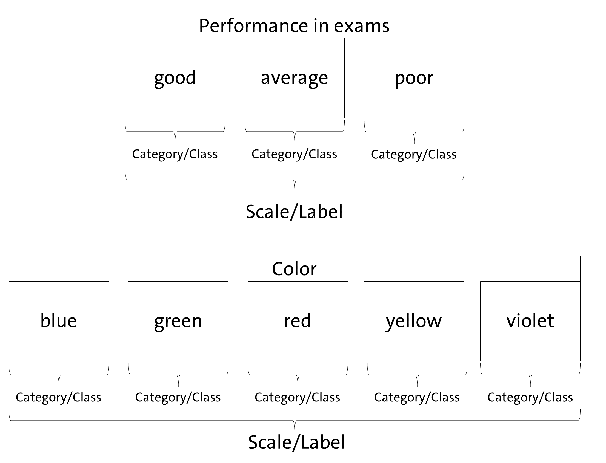
Since aifeducation looks at the application of AI for classification tasks from the perspective of the empirical method of content analysis, there is some overlap between the concepts of content analysis and machine learning. In content analysis, phenomena such as performance or colours can be described as a scale or dimension made up of several categories (e.g. Schreier 2012, pp. 59). In our example, an exam performance could be described as “good”, “average” or “poor”. In terms of colours, categories could be “blue”, “green”, etc. The machine learning literature uses different terminology to describe this type of data. In machine learning, ‘scale’ and ‘dimension’ correspond to the term ‘label’, while ‘categories’ correspond to the term ‘classes’ (Chollet, Kalinowski & Allaire 2022, p. 114).
With these clarifications, classification means assigning a text to the correct category on a scale, or labelling the text with the correct class. As illustrated in Figure 2, two types of data are required to train an AI to classify text in accordance with supervised machine learning principles.
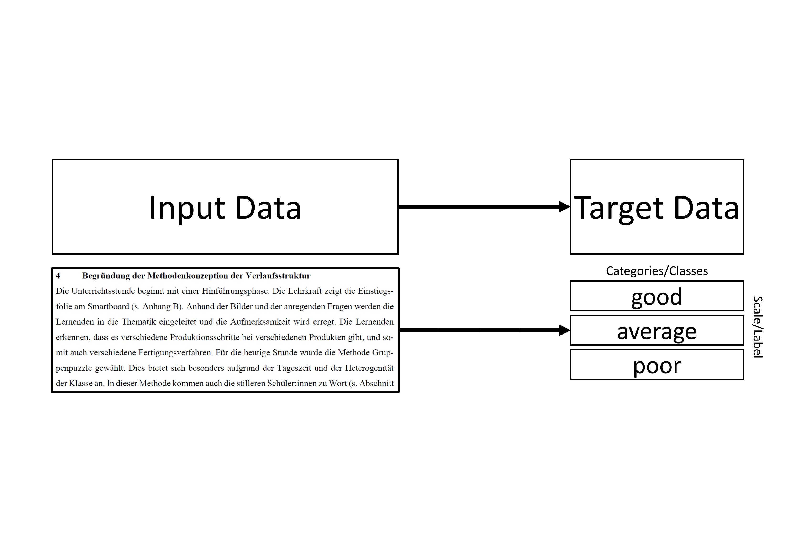
By providing AI with textual data as input and class-specific target data, it can learn to recognise texts that imply a specific class or category. In the above exam example, the AI can learn to recognise texts that imply a “good”, “average” or “poor” judgement. Once trained, the AI can be applied to new texts to predict their class. This classification can then be used for further statistical analysis or to derive recommendations about learning and teaching.
In use cases as described in this vignette, AI has to “understand” natural language: „Natural language processing is an area of research in computer science and artificial intelligence (AI) concerned with processing natural languages such as English and Mandarin. This processing generally involves translating natural language into data (numbers) that a computer can use to learn about the world. (…)” (Lane , Howard & Hapke 2019, p. 4)
Thus, the first step is to transform raw text into a form usable by a computer. This involves converting raw text into numbers. In modern approaches, this is typically achieved using word embeddings. Campesato (2021, p. 102) describes these as “the collective name for a set of language modeling and feature learning techniques (…) where words or phrases from the vocabulary are mapped to vectors of real numbers.” The definition of a word vector is similar: „Word vectors rePostsent the semantic meaning of words as vectors in the context of the training corpus.” (Lane, Howard & Hapke 2019, p. 191). In the next step, the words or text embeddings can be used as the input data and the labels as the target data when training an AI system to classify text.
In aifeducation, these steps are covered with three different types of models, as shown in Figure 3.
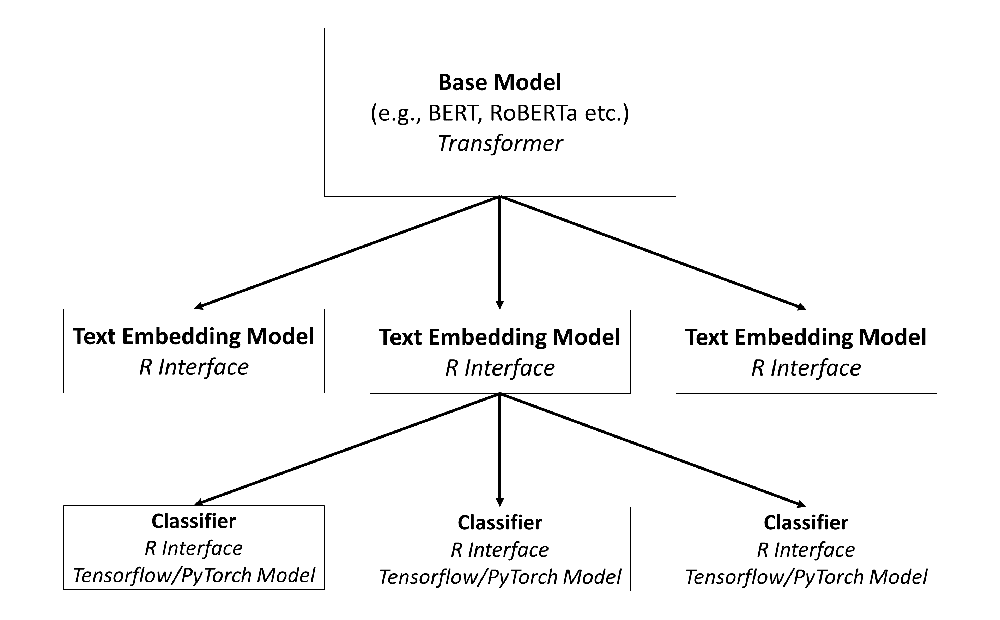
Base Models: The base models have the ability to understand natural language. These are generally transformers such as BERT and RoBERTa. A large number of pre-trained models can be found on Hugging Face.
Text Embedding Models: These models are built on top of base models and store instructions for using these base models to convert raw text into sequences of numbers. Please note that the same base model can be used to create different text embedding models.
Classifiers: Classifiers are used in conjunction with a text embedding model. They classify text into categories or classes based on the numeric representation provided by the corresponding text embedding model. Please note that a text embedding model can be used to create different classifiers (e.g. one for colours, one to estimate text quality, etc.).
2 Start Working
2.1 Starting a New Session
Before you can start working with aifeducation, you must set up a new R session. First, load aifeducation. Next, you need to set up Python via ‘reticulate’ and select the environment in which all the necessary Python libraries are available. If you installed Python as suggested in vignette 01 Get started, you can start a new session like this:
library(aifeducation)
prepare_session()
#> Python is already initalized with the virtual environment 'aifeducation'.
#> Try to use this environment.
#> Detected OS: windows
#> Checking python packages. This can take a moment.
#> All necessary python packages are available.
#> python : 3.12
#> torch : 2.11.0+cu130
#> pyarrow : 23.0.1
#> transformers : 5.8.0
#> tokenizers : 0.22.2
#> pandas : 3.0.2
#> datasets : 4.8.4
#> calflops : 0.3.2
#> codecarbon : 3.2.2
#> safetensors : 0.7.0
#> torcheval : 0.0.7
#> accelerate : 1.13.0
#> numpy : 2.4.4
#> GPU Acceleration : TRUE
#> sentencepiece available : TRUE
#> Version of python package 'transformers' is 5.0.0 or higher. Some older models from hugging face may not work.
#> Set logger level of python packages.
#> Location for Temporary Files:C:\Users\User\AppData\Local\Temp\RtmpGug0W8/r_aifeducationPlease remember: Each time you start a new session in R, you must load the aifeducation library and configure Python. We recommend using the function ‘prepare_session’ because it performs all the necessary steps for correctly setting up Python.
Now you can start your work.
2.2 Data Management
2.2.1 Introduction
In the context of use cases for aifeducation, three different types of data are necessary: raw text, text embeddings and target data, which represent the categories/classes of a text.
To address the first two types and enable the use of large data sets that may exceed your machine’s memory capacity, the package ships with two specialised objects.
The first is LargeDataSetForText. Objects of this class
are used to read raw text from .txt, .pdf and .xlsx files and store it
for further computations. The second is the
LargeDataSetForTextEmbeddings class, which stores the text
embeddings of raw texts generated with TextEmbeddingModels.
We will describe the transformation of raw texts into text embeddings
later.
2.2.2 Raw Texts
You need to create a LargeDataSetForText if you want to
create or train a base model or generate text embeddings. If you are
creating such a dataset for the first time, you must first create an
empty dataset.
raw_texts <- LargeDataSetForText$new()Different methods are available to fill this object with raw texts, depending on the file type used for storing them.
.txt files
The first alternative is to store raw texts in .txt files. To use these you have to structure your data in a specific way:
- Create a main folder for storing your data.
- Store every raw text/document into a single .txt file into its own folder within the main folder. In every folder there should be only one file for a raw text/document.
- Add an additional .txt file to the folder named
bib_entry.txt. This file contains bibliographic information for the raw text. - Add an additional .txt file to the folder named
license.txtwhich contains a short statement for the license of the text such as “CC BY”. - Add an additional .txt file to the folder named
url_license.txtwhich contains the url/link to the license’s text such as “https://creativecommons.org/licenses/by/4.0/”. - Add an additional .txt file to the folder named
text_license.txtwhich contains the full license in raw texts. - Add an additional .txt file to the folder named
url_source.txtwhich contains the url/link to the text file in the internet.
Applying these rules may result in a data structure as follows:
- Folder “main folder”
- Folder Text A
- text_a.txt
- bib_entry.txt
- license.txt
- url_license.txt
- text_license.txt
- url_source.txt
- Folder Text B
- text_b.txt
- bib_entry.txt
- license.txt
- url_license.txt
- text_license.txt
- url_source.txt
- Folder Text C
- text_C.txt
- bib_entry.txt
- license.txt
- url_license.txt
- text_license.txt
- url_source.txt
- Folder Text A
Now you can call the method add_from_files_txt by
passing the path to the directory of the main folder to
dir_path.
raw_texts$add_from_files_txt(
dir_path = "main folder",
clean_text = TRUE
)The data set will now read all the raw texts in the main folder and assign each text the corresponding bibliographic entry, licence, etc. Please note that adding a bib_entry.txt, license.txt, url_license.txt, text_license.txt and url_source.txt to every folder is optional. If there is no such file in the corresponding folder, an empty entry will appear in the dataset. However, against the backdrop of the European AI Act, we recommend providing both the licence and bibliographic information to make documenting your models more straightforward. Furthermore, some licences, such as those provided by Creative Commons, require statements about the creators, a copyright note, a URL or link to the source material (if possible), the licence of the material, and a URL or link to the licence text online, or the licence text itself. Please check the licences of the material you are using to determine the specific requirements.
.pdf files
The second alternative is to use .pdf files as a source for raw texts. The necessary structure here is similar to that of .txt files:
- Create a main folder for storing your data.
- Store every raw text/document into a single .pdf file into its own folder within the main folder. In every folder there should be only one file for a raw text/document.
- Add an additional .txt file to the folder named
bib_entry.txt. This file contains bibliographic information for the raw text. - Add an additional .txt file to the folder named
license.txtwhich contains a short statement for the license of the text such as “CC BY”. - Add an additional .txt file to the folder named
url_license.txtwhich contains the URL/link to the license’s text such as “https://creativecommons.org/licenses/by/4.0/”. - Add an additional .txt file to the folder named
text_license.txtwhich contains the full license in raw texts. - Add an additional .txt file to the folder named
url_source.txtwhich contains the url/link to the text file in the internet.
Applying these rules may result in a data structure as follows:
- Folder “main folder”
- Folder Text A
- text_a.pdf
- bib_entry.txt
- license.txt
- url_license.txt
- text_license.txt
- url_source.txt
- Folder Text B
- text_b.pdf
- bib_entry.txt
- license.txt
- url_license.txt
- text_license.txt
- url_source.txt
- Folder Text C
- text_C.pdf
- bib_entry.txt
- license.txt
- url_license.txt
- text_license.txt
- url_source.txt
- Folder Text A
Please note that all files except the text file should have a .txt extension, not a .pdf extension.
Now you can call the method add_from_files_pdf by
passing the path to the directory of the main folder to
dir_path.
raw_texts$add_from_files_pdf(
dir_path = "main folder",
clean_text = TRUE
)As stated above, bib_entry.txt,
license.txt, url_license.txt,
text_license.txt and url_source.txt are
optional.
.xlsx files
The third option is to save the raw texts as .xlsx files. This alternative is useful if you have many small raw texts. For very large texts, such as books or papers, we recommend storing them as .txt or .pdf files.
In order to add raw text from .xlsx files, the files need a special structure:
- Create a main folder for storing all the .xlsx files that you want to read.
- All .xlsx files must contain the names of the columns in the first row, and these names must be identical for each column across all the files you wish to read.
- Each .xlsx file must contain a column for storing the text ID and a column for storing the raw text. Every text must have a unique ID across all .xlsx files.
- Each .xlsx file can contain an additional column for the bibliographic entry.
- Every .xlsx file can contain an additional column for the licence.
- Every .xlsx file can contain an additional column for the licence URL.
- Every .xslx file can contain an additional column for the licence text.
- Every .xlsx file can contain an additional column for the source’s URL.
Your .xlsx file might look something like this:
| id | text | bib | license | url_license | text_license | url_source |
|---|---|---|---|---|---|---|
| z3 | This is an example. | Author (2019) | CC BY | Example URL | Text | Example URL |
| a3 | This is a second example. | Author (2022) | CC BY | Example URL | Text | Example URL |
| … | … | … | … |
You can now call the method add_from_files_xlsx by
passing the path to the main folder directory to dir_path.
Remember to specify the column names for ID and text, as well as for the
other columns.
raw_texts$add_from_files_xlsx(
dir_path = "main folder",
id_column = "id",
text_column = "text",
bib_entry_column = "bib_entry",
license_column = "license",
url_license_column = "url_license",
text_license_column = "text_license",
url_source_column = "url_source"
)Clean text
For .txt and .pdf files, set the argument
clean_text=TRUE. This will prompt an algorithm to
post-process the raw text and apply the following modifications:
- Some special symbols are removed.
- All spaces at the beginning and end of a line are removed.
- Multiple spaces are reduced to a single space.
- All rows containing a number from 1 to 999 at the beginning or end (header and footer) are removed.
- The list of contents is removed.
- Hyphenation is undone.
- Line breaks within a paragraph are removed.
- Multiple line breaks are reduced to a single line break.
These changes aim to provide clean plain text to increase the performance and quality of all analyses.
IDs For .xlsx files, the text IDs are set to the IDs stored in the corresponding ID column. For .pdf and .txt files, the file names are used as the ID (without the file extension).
Please note that a consequence of this is that two files text_01.txt and text_01.pdf have the same ID, which is not allowed. Please ensure that you use unique IDs across file formats.
Saving and loading a data set
Once you have created a LargeDataSetForText, you can
save your data to disk by calling the save_to_disk
function. In our example, the code would be as follows:
save_to_disk(
object = raw_texts,
dir_path = "examples",
folder_name = "raw_texts"
)The argument object requires the object that you would
like to save. In our case, this is ‘raw_texts’. With
dir_path, you specify the location in which to save the
object, and with folder_name, you define the name of the
folder that will be created within that directory. The data set is saved
in this folder.
To load an existing data set, call the function
load_from_disk with the directory path where you stored the
data. In our case, this would be:
raw_text_dataset <- load_from_disk("examples/raw_texts")Now you can work with your data.
2.2.3 Text Embeddings
The numerical representations of raw text, known as text embeddings,
are stored with objects of the class
LargeDataSetForTextEmbeddings. These kinds of data sets are
generated by models such as TextEmbeddingModel. Therefore,
it is not necessary to create such a data set manually.
However, you will need this type of data set to train a classifier or
predict the categories/classes of raw texts. Therefore, it may be
advantageous to save transformed data. You can save and load an object
of this class using the functions save_to_disk and
load_from_disk.
Let us assume that we have a
LargeDataSetForTextEmbeddings called
text_embeddings. Saving this object might look like this:
save_to_disk(
object = text_embeddings,
dir_path = "examples",
folder_name = "text_embeddings"
)The dataset will be saved in the ‘examples/text_embeddings’ folder. Loading this data set may look like this:
new_text_embeddings <- load_from_disk("examples/text_embeddings")2.2.4 Target Data
The final data type required for working with aifeducation
is the categories/classes of the raw text provided. We currently do not
provide a special object for this kind of data. You just need a
named factor storing the classes/categories for a
dimension. It is also important that the names equal the ID of the
corresponding raw texts/text embeddings, as matching the
classes/categories to texts is done using these names.
Saving and loading can be done with R’s functions
save and load.
2.3 Example Data for this Vignette
To illustrate the steps in this vignette, we cannot use data from
educational settings, as such data are generally protected by privacy
policies. Therefore, we have used a subset of the Stanford Movie Review
Dataset, which was provided by Maas et al. (2011) and is included in the
package. You can access the dataset with
imdb_movie_reviews.
We now have a dataset with three columns. The first contains the raw text, the second the rating of the film (positive or negative) and the third the ID of the film review. Approximately 200 reviews imply a positive rating of a film, and around 100 imply a negative rating.
In this tutorial, we will modify the data set by setting
approximately 50 positive and 25 negative reviews to NA, to
indicate that these reviews are unlabelled.
example_data <- imdb_movie_reviews
example_data$label <- as.character(example_data$label)
example_data$label[c(76:100)] <- NA
example_data$label[c(201:250)] <- NA
table(example_data$label)
#>
#> neg pos
#> 75 150We will now create a LargeDataSetForText object from
this data.frame. Before we can do this, however, we must
ensure that the data set has all the necessary columns.
colnames(example_data)
#> [1] "text" "label" "id"Now, we need to add two columns. For this tutorial, we will not be adding any bibliographic or licence information, although this is recommended in practice.
example_data$bib_entry <- NA
example_data$license <- NA
colnames(example_data)
#> [1] "text" "label" "id" "bib_entry" "license"The data.frame is now ready as input for our data set.
The ‘label’ column will not be included.
data_set_reviews_text <- LargeDataSetForText$new()
data_set_reviews_text$add_from_data.frame(example_data)You can inspect the data set with print.
print(data_set_reviews_text)
#> Object : LargeDataSetForText
#> Columns: id, text, bib_entry, license, url_license, text_license, url_source
#> Rows : 300We save the categories/labels within a separate
factor.
We will now use this data to demonstrate how to use the various objects and functions in aifeducation.
3 Base Models
3.1 Overview
Base models form the foundation of all subsequent models in aifeducation. Currently, these are Transformer models such as ModernBERT (Warner et al. 2024), MPNet (Song et al. 2020), BERT (Devlin et al. 2019), RoBERTa (Liu et al. 2019) and Funnel-Transformer (Dai et al. 2020). In general, these models are first trained on a large corpus of general texts. Next, the models are fine-tuned to domain-specific texts and/or specific tasks. As creating base models requires a large amount of text, resulting in high computational time, it is recommended to use pre-trained models. These can be found on Hugging Face. However, sometimes it is more straightforward to create a new model to fit a specific purpose. Sometimes, however, it is more straightforward to create a new model to fit a specific purpose. aifeducation supports the option to create and train/fine-tune base models.
In this chapter, we focus on developing a new model. Chapter 4 describes the use of a pre-trained model from Hugging Face. Each transformer model comprises two parts:
- The tokenizer, which splits raw text into smaller pieces in order to model a large number of words using a limited number of tokens.
- The neural network, which is used to model the capability to understand natural language.
3.2 Creation of a Tokenizer
The first step is to set up a tokenizer. In aifeducation,
you can choose from a variety of models. In this example, we use a
WordPieceTokenizer. To create a new tokenizer, we first
call the new method.
tokenizer <- WordPieceTokenizer$new()We now have an empty tokenizer that can be configured by calling the
relevant method. The available parameters depend on the type of
tokenizer. In the case of a WordPieceTokenizer, we only
have two options. The first, vocab_size, determines how
many tokens the tokenizer should recognise. The second
(vocab_do_lower_case) determines whether all words should
be transformed to lowercase before tokenization. Since we are only using
a very small data set to illustrate the usage of the package, we set
vocab_size = 200. In real-world applications, this value
should be larger. You can find more information on this topic in the
vignette 04 Model configuration and
training.
tokenizer$configure(
vocab_size = 200,
vocab_do_lower_case = FALSE
)The next step is to train the model by calling the train
method. Here, we pass a text data set to the parameter
text_dataset. This raw text is then used to train the
model.
In addition, we can use the Python library codecarbon to
set up sustainability tracking of this process and estimate its
ecological impact. Therefore, the sustain_track parameter
is set to TRUE by default. If you use the sustainability
tracker, you must provide the three-letter code for the country in which
your computer is located (e.g. “CAN” for Canada, “DEU” for Germany). You
can find a list of these codes on Wikipedia.
This is because different countries use different sources and techniques
for generating energy, resulting in a specific impact on CO₂ emissions.
For the USA and Canada, you can also specify a region by setting
sustain_region. Please refer to the ‘codecarbon’ documentation for more
information.
tokenizer$train(
text_dataset = data_set_reviews_text,
statistics_max_tokens_length = 512,
sustain_track = TRUE,
sustain_iso_code = "DEU",
sustain_region = NULL,
sustain_interval = 15,
sustain_log_level = "error",
trace = TRUE
)
#> 2026-09-19 06:03:52 Start Sustainability Tracking
#> 2026-09-19 06:03:58 Stop Sustainability TrackingTraining a tokenizer is a very fast process. Therefore, even a large quantity of texts should only take a few minutes to process. The model is now ready to use. Initially, we can explore some tokeniser statistics.
# We use t() to improve the readability of the table
t(tokenizer$get_tokenizer_statistics())
#> [,1]
#> step "creation"
#> date "2026-09-19 06:03:58"
#> max_tokens_length "512"
#> n_sequences "653"
#> n_words "90195"
#> n_tokens "257269"
#> mu_t "393.9801"
#> mu_w "138.124"
#> mu_g "2.852364"This table provides an estimation of the number of words in the entire training dataset, the total number of tokens resulting from the raw texts, and the number of sequences if the length of a sequence is limited to the value shown in the ‘max_token_length’ column. Furthermore, the three statistics proposed by Kaya and Tantug (2024, p. 5) are shown.
- \mu_t refers to the average number of tokens per sequence,
- \mu_w refers to the average number of words per sequence, and
- \mu_g refers to the average number of tokens per word.
The tokenizer granularity rate, \mu_g, describes how many tokens are necessary to represent a single word. This value is important because a higher value means that the same text is split into a longer sequence of tokens than with a tokenizer with a lower value. Since large language models have a maximum limit on the length of a token sequence, this value impacts how many words of a text can be processed by a base model.
To see how the tokenizer works, call the encode
method.
tokenizer$encode(
raw_text = "This is a good movie.",
token_encodings_only = TRUE,
token_to_int = FALSE
)
#> [[1]]
#> [[1]][[1]]
#> [1] "[CLS]" "T" "##h" "##is" "is" "a" "g" "##o" "##o"
#> [10] "##d" "m" "##o" "##v" "##i" "##e" "." "[SEP]" "[PAD]"
#> [19] "[PAD]" "[PAD]" "[PAD]" "[PAD]" "[PAD]" "[PAD]" "[PAD]" "[PAD]" "[PAD]"
#> [28] "[PAD]" "[PAD]" "[PAD]" "[PAD]" "[PAD]" "[PAD]" "[PAD]" "[PAD]" "[PAD]"
#> [37] "[PAD]" "[PAD]" "[PAD]" "[PAD]" "[PAD]" "[PAD]" "[PAD]" "[PAD]" "[PAD]"
#> [46] "[PAD]" "[PAD]" "[PAD]" "[PAD]" "[PAD]" "[PAD]" "[PAD]" "[PAD]" "[PAD]"
#> [55] "[PAD]" "[PAD]" "[PAD]" "[PAD]" "[PAD]" "[PAD]" "[PAD]" "[PAD]" "[PAD]"
#> [64] "[PAD]" "[PAD]" "[PAD]" "[PAD]" "[PAD]" "[PAD]" "[PAD]" "[PAD]" "[PAD]"
#> [73] "[PAD]" "[PAD]" "[PAD]" "[PAD]" "[PAD]" "[PAD]" "[PAD]" "[PAD]" "[PAD]"
#> [82] "[PAD]" "[PAD]" "[PAD]" "[PAD]" "[PAD]" "[PAD]" "[PAD]" "[PAD]" "[PAD]"
#> [91] "[PAD]" "[PAD]" "[PAD]" "[PAD]" "[PAD]" "[PAD]" "[PAD]" "[PAD]" "[PAD]"
#> [100] "[PAD]" "[PAD]" "[PAD]" "[PAD]" "[PAD]" "[PAD]" "[PAD]" "[PAD]" "[PAD]"
#> [109] "[PAD]" "[PAD]" "[PAD]" "[PAD]" "[PAD]" "[PAD]" "[PAD]" "[PAD]" "[PAD]"
#> [118] "[PAD]" "[PAD]" "[PAD]" "[PAD]" "[PAD]" "[PAD]" "[PAD]" "[PAD]" "[PAD]"
#> [127] "[PAD]" "[PAD]" "[PAD]" "[PAD]" "[PAD]" "[PAD]" "[PAD]" "[PAD]" "[PAD]"
#> [136] "[PAD]" "[PAD]" "[PAD]" "[PAD]" "[PAD]" "[PAD]" "[PAD]" "[PAD]" "[PAD]"
#> [145] "[PAD]" "[PAD]" "[PAD]" "[PAD]" "[PAD]" "[PAD]" "[PAD]" "[PAD]" "[PAD]"
#> [154] "[PAD]" "[PAD]" "[PAD]" "[PAD]" "[PAD]" "[PAD]" "[PAD]" "[PAD]" "[PAD]"
#> [163] "[PAD]" "[PAD]" "[PAD]" "[PAD]" "[PAD]" "[PAD]" "[PAD]" "[PAD]" "[PAD]"
#> [172] "[PAD]" "[PAD]" "[PAD]" "[PAD]" "[PAD]" "[PAD]" "[PAD]" "[PAD]" "[PAD]"
#> [181] "[PAD]" "[PAD]" "[PAD]" "[PAD]" "[PAD]" "[PAD]" "[PAD]" "[PAD]" "[PAD]"
#> [190] "[PAD]" "[PAD]" "[PAD]" "[PAD]" "[PAD]" "[PAD]" "[PAD]" "[PAD]" "[PAD]"
#> [199] "[PAD]" "[PAD]" "[PAD]" "[PAD]" "[PAD]" "[PAD]" "[PAD]" "[PAD]" "[PAD]"
#> [208] "[PAD]" "[PAD]" "[PAD]" "[PAD]" "[PAD]" "[PAD]" "[PAD]" "[PAD]" "[PAD]"
#> [217] "[PAD]" "[PAD]" "[PAD]" "[PAD]" "[PAD]" "[PAD]" "[PAD]" "[PAD]" "[PAD]"
#> [226] "[PAD]" "[PAD]" "[PAD]" "[PAD]" "[PAD]" "[PAD]" "[PAD]" "[PAD]" "[PAD]"
#> [235] "[PAD]" "[PAD]" "[PAD]" "[PAD]" "[PAD]" "[PAD]" "[PAD]" "[PAD]" "[PAD]"
#> [244] "[PAD]" "[PAD]" "[PAD]" "[PAD]" "[PAD]" "[PAD]" "[PAD]" "[PAD]" "[PAD]"
#> [253] "[PAD]" "[PAD]" "[PAD]" "[PAD]" "[PAD]" "[PAD]" "[PAD]" "[PAD]" "[PAD]"
#> [262] "[PAD]" "[PAD]" "[PAD]" "[PAD]" "[PAD]" "[PAD]" "[PAD]" "[PAD]" "[PAD]"
#> [271] "[PAD]" "[PAD]" "[PAD]" "[PAD]" "[PAD]" "[PAD]" "[PAD]" "[PAD]" "[PAD]"
#> [280] "[PAD]" "[PAD]" "[PAD]" "[PAD]" "[PAD]" "[PAD]" "[PAD]" "[PAD]" "[PAD]"
#> [289] "[PAD]" "[PAD]" "[PAD]" "[PAD]" "[PAD]" "[PAD]" "[PAD]" "[PAD]" "[PAD]"
#> [298] "[PAD]" "[PAD]" "[PAD]" "[PAD]" "[PAD]" "[PAD]" "[PAD]" "[PAD]" "[PAD]"
#> [307] "[PAD]" "[PAD]" "[PAD]" "[PAD]" "[PAD]" "[PAD]" "[PAD]" "[PAD]" "[PAD]"
#> [316] "[PAD]" "[PAD]" "[PAD]" "[PAD]" "[PAD]" "[PAD]" "[PAD]" "[PAD]" "[PAD]"
#> [325] "[PAD]" "[PAD]" "[PAD]" "[PAD]" "[PAD]" "[PAD]" "[PAD]" "[PAD]" "[PAD]"
#> [334] "[PAD]" "[PAD]" "[PAD]" "[PAD]" "[PAD]" "[PAD]" "[PAD]" "[PAD]" "[PAD]"
#> [343] "[PAD]" "[PAD]" "[PAD]" "[PAD]" "[PAD]" "[PAD]" "[PAD]" "[PAD]" "[PAD]"
#> [352] "[PAD]" "[PAD]" "[PAD]" "[PAD]" "[PAD]" "[PAD]" "[PAD]" "[PAD]" "[PAD]"
#> [361] "[PAD]" "[PAD]" "[PAD]" "[PAD]" "[PAD]" "[PAD]" "[PAD]" "[PAD]" "[PAD]"
#> [370] "[PAD]" "[PAD]" "[PAD]" "[PAD]" "[PAD]" "[PAD]" "[PAD]" "[PAD]" "[PAD]"
#> [379] "[PAD]" "[PAD]" "[PAD]" "[PAD]" "[PAD]" "[PAD]" "[PAD]" "[PAD]" "[PAD]"
#> [388] "[PAD]" "[PAD]" "[PAD]" "[PAD]" "[PAD]" "[PAD]" "[PAD]" "[PAD]" "[PAD]"
#> [397] "[PAD]" "[PAD]" "[PAD]" "[PAD]" "[PAD]" "[PAD]" "[PAD]" "[PAD]" "[PAD]"
#> [406] "[PAD]" "[PAD]" "[PAD]" "[PAD]" "[PAD]" "[PAD]" "[PAD]" "[PAD]" "[PAD]"
#> [415] "[PAD]" "[PAD]" "[PAD]" "[PAD]" "[PAD]" "[PAD]" "[PAD]" "[PAD]" "[PAD]"
#> [424] "[PAD]" "[PAD]" "[PAD]" "[PAD]" "[PAD]" "[PAD]" "[PAD]" "[PAD]" "[PAD]"
#> [433] "[PAD]" "[PAD]" "[PAD]" "[PAD]" "[PAD]" "[PAD]" "[PAD]" "[PAD]" "[PAD]"
#> [442] "[PAD]" "[PAD]" "[PAD]" "[PAD]" "[PAD]" "[PAD]" "[PAD]" "[PAD]" "[PAD]"
#> [451] "[PAD]" "[PAD]" "[PAD]" "[PAD]" "[PAD]" "[PAD]" "[PAD]" "[PAD]" "[PAD]"
#> [460] "[PAD]" "[PAD]" "[PAD]" "[PAD]" "[PAD]" "[PAD]" "[PAD]" "[PAD]" "[PAD]"
#> [469] "[PAD]" "[PAD]" "[PAD]" "[PAD]" "[PAD]" "[PAD]" "[PAD]" "[PAD]" "[PAD]"
#> [478] "[PAD]" "[PAD]" "[PAD]" "[PAD]" "[PAD]" "[PAD]" "[PAD]" "[PAD]" "[PAD]"
#> [487] "[PAD]" "[PAD]" "[PAD]" "[PAD]" "[PAD]" "[PAD]" "[PAD]" "[PAD]" "[PAD]"
#> [496] "[PAD]" "[PAD]" "[PAD]" "[PAD]" "[PAD]" "[PAD]" "[PAD]" "[PAD]" "[PAD]"
#> [505] "[PAD]" "[PAD]" "[PAD]" "[PAD]" "[PAD]" "[PAD]" "[PAD]" "[PAD]"As you can see here, the tokenizer splits the words into several tokens and adds some special tokens.
tokenizer$encode(
raw_text = "This is a good movie.",
token_encodings_only = TRUE,
token_to_int = TRUE
)
#> [[1]]
#> [[1]][[1]]
#> [1] 0 53 114 174 188 61 67 106 106 97 73 106 120 100 96 17 1 3
#> [19] 3 3 3 3 3 3 3 3 3 3 3 3 3 3 3 3 3 3
#> [37] 3 3 3 3 3 3 3 3 3 3 3 3 3 3 3 3 3 3
#> [55] 3 3 3 3 3 3 3 3 3 3 3 3 3 3 3 3 3 3
#> [73] 3 3 3 3 3 3 3 3 3 3 3 3 3 3 3 3 3 3
#> [91] 3 3 3 3 3 3 3 3 3 3 3 3 3 3 3 3 3 3
#> [109] 3 3 3 3 3 3 3 3 3 3 3 3 3 3 3 3 3 3
#> [127] 3 3 3 3 3 3 3 3 3 3 3 3 3 3 3 3 3 3
#> [145] 3 3 3 3 3 3 3 3 3 3 3 3 3 3 3 3 3 3
#> [163] 3 3 3 3 3 3 3 3 3 3 3 3 3 3 3 3 3 3
#> [181] 3 3 3 3 3 3 3 3 3 3 3 3 3 3 3 3 3 3
#> [199] 3 3 3 3 3 3 3 3 3 3 3 3 3 3 3 3 3 3
#> [217] 3 3 3 3 3 3 3 3 3 3 3 3 3 3 3 3 3 3
#> [235] 3 3 3 3 3 3 3 3 3 3 3 3 3 3 3 3 3 3
#> [253] 3 3 3 3 3 3 3 3 3 3 3 3 3 3 3 3 3 3
#> [271] 3 3 3 3 3 3 3 3 3 3 3 3 3 3 3 3 3 3
#> [289] 3 3 3 3 3 3 3 3 3 3 3 3 3 3 3 3 3 3
#> [307] 3 3 3 3 3 3 3 3 3 3 3 3 3 3 3 3 3 3
#> [325] 3 3 3 3 3 3 3 3 3 3 3 3 3 3 3 3 3 3
#> [343] 3 3 3 3 3 3 3 3 3 3 3 3 3 3 3 3 3 3
#> [361] 3 3 3 3 3 3 3 3 3 3 3 3 3 3 3 3 3 3
#> [379] 3 3 3 3 3 3 3 3 3 3 3 3 3 3 3 3 3 3
#> [397] 3 3 3 3 3 3 3 3 3 3 3 3 3 3 3 3 3 3
#> [415] 3 3 3 3 3 3 3 3 3 3 3 3 3 3 3 3 3 3
#> [433] 3 3 3 3 3 3 3 3 3 3 3 3 3 3 3 3 3 3
#> [451] 3 3 3 3 3 3 3 3 3 3 3 3 3 3 3 3 3 3
#> [469] 3 3 3 3 3 3 3 3 3 3 3 3 3 3 3 3 3 3
#> [487] 3 3 3 3 3 3 3 3 3 3 3 3 3 3 3 3 3 3
#> [505] 3 3 3 3 3 3 3 3Changing the parameter to token_to_int = TRUE produces
the same result, but instead of the tokens, you get the index of the
token in the tokenizer’s vocabulary. For example, in this example, the
ID 0 refers to the token [CLS].
If you have a sequence of IDs and would like to know which tokens
correspond to these numbers, you can call the decode
method.
tokenizer$decode(
int_seqence = list(list(c(0, 53, 109, 174, 188, 61, 67, 97, 97, 112, 73, 97, 110, 99, 101, 17, 1))),
to_token = TRUE
)
#> [[1]]
#> [[1]][[1]]
#> [1] "[CLS] T ##c ##is is a g ##d ##d ##z m ##d ##k ##a ##r . [SEP]"If you would like to analyse the ecological impact of training the tokenizer, you can get an estimate of the energy consumption and CO₂ emissions involved.
# We use t() to improve the readability of the table
t(tokenizer$get_sustainability_data("training"))
#> [,1]
#> sustainability_tracked "TRUE"
#> date "2026-09-19 06:03:58"
#> task "Create tokenizer"
#> sustainability_data.duration_sec "4.603014"
#> sustainability_data.co2eq_kg "3.229141e-05"
#> sustainability_data.cpu_energy_kwh "5.432443e-05"
#> sustainability_data.gpu_energy_kwh "1.765946e-05"
#> sustainability_data.ram_energy_kwh "1.27816e-05"
#> sustainability_data.total_energy_kwh "8.476549e-05"
#> technical.tracker "codecarbon"
#> technical.py_package_version "3.2.2"
#> technical.cpu_count "12"
#> technical.cpu_model "12th Gen Intel(R) Core(TM) i5-12400F"
#> technical.gpu_count "1"
#> technical.gpu_model "1 x NVIDIA GeForce RTX 4070"
#> technical.ram_total_size "15.84258"
#> region.country_name "Germany"
#> region.country_iso_code "DEU"
#> region.region NASince tokenizers can be trained very efficiently, these values will usually be very low.
Finally, you can save and load your model. This is done for all
objects using the functions save_to_disk and
load_from_disk.
save_to_disk(
object = tokenizer,
dir_path = "examples",
folder_name = "example_tokenizer"
)
tokenizer <- load_from_disk("examples/example_tokenizer")To get a short summary of a tokenizer you can use
print.
print(tokenizer)
#> Object : WordPieceTokenizer
#> Configured : TRUE
#> Trained : TRUE
#> Vocab Size : 200
#> Tokens/Word: 2.85236432174733
#> Mask Token : [MASK]
#> Pad Token : [PAD]
#> Unk Token : [UNK]Now you are ready to create a base model.
3.3 Creating a BaseModel
At the outset, you can select from the various supported transformer architectures. Depending on the architecture chosen, different options are available for determining the shape of your neural network. For this vignette, we use a BERT model (Devlin et al. 2019).
base_model_bert <- BaseModelBert$new()
base_model_bert$configure(
tokenizer = tokenizer,
max_position_embeddings = 512,
hidden_size = 64,
num_hidden_layers = 4,
num_attention_heads = 4,
intermediate_size = 2 * 64,
hidden_act = "GELU",
hidden_dropout_prob = 0.1,
attention_probs_dropout_prob = 0.1
)First, we create an empty model with ‘new’. You can then configure your model in the next step. The available parameters depend on the model type. In this example, we create a model with four hidden layers, a hidden size of 64 and four attention heads. The maximum sequence length is 512 tokens. Since the tokenizer granularity rate is 2.8523643 this allows the model to process an average of 1460.4105327 words.
Please note that the value of the
max_position_embeddings parameter determines how many
tokens your transformer can process. If your text contains more tokens
than this number, the additional tokens are ignored. However, if you
would like to analyse long documents, please avoid increasing this
number too significantly because the computational time increases
quadratically rather than linearly (Beltagy, Peters & Cohan 2020).
For long documents, you can use another Transformer architecture
(e.g. Longformer, Beltagy, Peters & Cohan 2020), or split a long
document into several sequential chunks for classification
(e.g. Pappagari et al. 2019). Using chunks is supported by
aifedcuation for all models.
The parameter tokenizer requires a tokenizer object.
Here, we use the model created in Section 3.2.
The vignette 04 Model configuration and training provides details on how to configure a base model.
Your model is now ready. You can either save it using the
save_to_disk function or continue with training.
3.3 Train/Fine-Tune a Base Model
If you want to train a new base model for the first time (see section
3.2) or adapt a pre-trained model to a domain-specific language or task,
you can call the corresponding train method.
base_model_bert$train(
text_dataset = data_set_reviews_text,
p_mask = 0.30,
whole_word = TRUE,
val_size = 0.1,
n_epoch = 10,
batch_size = 12,
max_sequence_length = 250,
full_sequences_only = FALSE,
min_seq_len = 50,
learning_rate = 3e-3,
sustain_track = TRUE,
sustain_iso_code = "DEU",
sustain_region = NULL,
sustain_interval = 15,
sustain_log_level = "error",
trace = TRUE,
pytorch_trace = 0,
log_dir = NULL,
log_write_interval = 2
)
#> 2026-09-19 06:03:59 Start Sustainability Tracking
#> 2026-09-19 06:03:59 Prepare Data for Training
#> 2026-09-19 06:04:00 Calculate Flops Based on Architecture
#> 2026-09-19 06:04:00 Create Data Collator
#> 2026-09-19 06:04:00 Create Trainer
#> 2026-09-19 06:04:00 Using Whole Word Masking
#> 2026-09-19 06:04:00 Start Training
#> 2026-09-19 06:04:19 Stop Sustainability Tracking
#> 2026-09-19 06:04:19 FinishThe data for training must be passed to text_dataset.
This object should be of the LargeDataSetForText class, as
described in Section 2.2.2. In this example, we use text from movie
reviews. Please note that this data set is too small for training a new
Transformer. We are using it here only to provide a quick demonstration.
For real use cases, a larger data set is necessary.
For a Bert model, the learning objective is masked language
modelling. Other models may use different learning objectives. Please
refer to the documentation for more details on each model. You can set
how masking is done using the p_mask and
whole_word parameters. If whole_word is set to
FALSE, a number of tokens are masked. If
whole_word is set to TRUE, all tokens
belonging to a specific number of words are masked. The number of
words/tokens is chosen using p_mask.
You can set the length of token sequences using the
max_sequence_length parameter, which instructs the
tokenizer to split long texts into several sequences of the specified
size. Using the val_size parameter, you can specify how
many of the generated sequences should be used for the validation
sample.
Since creating a transformer model is energy-consuming,
aifeducation allows you to estimate its ecological impact with
the help of the Python library ‘codecarbon.’ Thus, the
sustain_track parameter is set to TRUE by
default. If you use the sustainability tracker, you must provide the
three-letter code for the country in which your computer is located
(e.g. “CAN” for Canada, “DEU” for Germany). You can find a list of these
codes on Wikipedia.
This is because different countries use different sources and techniques
for generating energy, resulting in a specific impact on CO₂ emissions.
For the USA and Canada, you can also specify a region by setting
sustain_region. Please refer to the ‘codecarbon’
documentation for more information.
If you are working on a machine with a small memory capacity, please
reduce the batch size significantly. Once the training is complete, you
can save the entire model using the save_to_disk
function.
save_to_disk(
object = base_model_bert,
dir_path = "examples",
folder_name = "example_base_model_bert"
)To use the model, load it with
base_model_bert <- load_from_disk("examples/example_base_model_bert")To use the model for the fill-mask task, call the
fill_mask method
base_model_bert$fill_mask(
masked_text = "This is a [MASK] movie.",
n_solutions = 5
)
#> [[1]]
#> score token token_str
#> 1 0.05964450 96 ##e
#> 2 0.03252396 114 ##h
#> 3 0.03198525 98 ##t
#> 4 0.03001019 105 ##s
#> 5 0.02873142 100 ##iHere, you can provide a text containing a masked token to indicate the gap that the model should fill. In return, you will receive the logits, the token ID and the specific token that the model suggests replacing the mask token with.
You get a short summary of an object of this class with
print.
print(base_model_bert)
#> Object : BaseModelBert
#> Configured : TRUE
#> Trained : TRUE
#> Parameter : 184200
#> Seq. Len. : 512
#> Features : 64
#> N Layer : 4
#> Vocab Size : 200
#> Tokens/Word: 2.85236432174733
#> Mask Token : [MASK]
#> Pad Token : [PAD]
#> Unk token : [UNK]3.4 Analyzing a BaseModel
If you would like to investigate a base model further, you can use specific methods for this purpose.
Training History
The training history from the last training session can be displayed as follows:
base_model_bert$plot_training_history(
ind_best_model = TRUE
)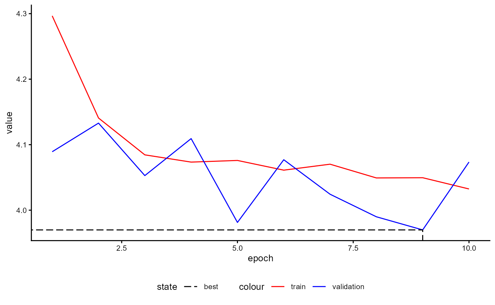
Figure 4: Example of a Training History for a BaseModel.
Sustainability of Training
To explore the ecological impact of training and fine-tuning a model,
call get_sustainability_data("training").
# We use t() to improve the readability of the table
t(base_model_bert$get_sustainability_data("training"))
#> [,1]
#> sustainability_tracked "TRUE"
#> date "2026-09-19 06:04:19"
#> task "training"
#> sustainability_data.duration_sec "20.17487"
#> sustainability_data.co2eq_kg "0.0001975314"
#> sustainability_data.cpu_energy_kwh "0.0002381494"
#> sustainability_data.gpu_energy_kwh "0.0002243393"
#> sustainability_data.ram_energy_kwh "5.603433e-05"
#> sustainability_data.total_energy_kwh "0.0005185231"
#> technical.tracker "codecarbon"
#> technical.py_package_version "3.2.2"
#> technical.cpu_count "12"
#> technical.cpu_model "12th Gen Intel(R) Core(TM) i5-12400F"
#> technical.gpu_count "1"
#> technical.gpu_model "1 x NVIDIA GeForce RTX 4070"
#> technical.ram_total_size "15.84258"
#> region.country_name "Germany"
#> region.country_iso_code "DEU"
#> region.region NAThe resulting table provides detailed information on every training run, with active sustainability tracking.
Sustainability of Inference
The ecological impact of the training is important, as are the energy
consumption and CO2 emissions during inference. You can estimate the
ecological impact by calling the
estimate_sustainability_inference_fill_mask method.
base_model_bert$estimate_sustainability_inference_fill_mask(
text_dataset = data_set_reviews_text,
n = 30,
sustain_iso_code = "DEU",
sustain_region = NULL,
sustain_interval = 15,
sustain_log_level = "error",
trace = TRUE
)
#> 2026-09-19 06:04:20 Prepare Data
#> 2026-09-19 06:04:20 Add Masking Token
#> 2026-09-19 06:04:20 Start Sustainability Tracking
#> 2026-09-19 06:04:21 Stop Sustainability TrackingHere, you can provide a text dataset which forms the basis for
estimating energy consumption during a fill-mask task. You determine the
number of texts to be used with n. The results of each run
can be accessed using the command
get_sustainability_data("inference").
# We use t() to improve the readability of the table
t(base_model_bert$get_sustainability_data("inference"))
#> [,1]
#> sustainability_tracked "TRUE"
#> date "2026-09-19 06:04:21"
#> task "FillMask"
#> sustainability_data.duration_sec "0.3719877"
#> sustainability_data.co2eq_kg "2.952999e-06"
#> sustainability_data.cpu_energy_kwh "4.375558e-06"
#> sustainability_data.gpu_energy_kwh "2.346946e-06"
#> sustainability_data.ram_energy_kwh "1.029165e-06"
#> sustainability_data.total_energy_kwh "7.75167e-06"
#> technical.tracker "codecarbon"
#> technical.py_package_version "3.2.2"
#> technical.cpu_count "12"
#> technical.cpu_model "12th Gen Intel(R) Core(TM) i5-12400F"
#> technical.gpu_count "1"
#> technical.gpu_model "1 x NVIDIA GeForce RTX 4070"
#> technical.ram_total_size "15.84258"
#> region.country_name "Germany"
#> region.country_iso_code "DEU"
#> region.region NA
#> data "empirical data"
#> n "30"
#> batch "1"
#> min_seq_len NA
#> mean_seq_len NA
#> sd_seq_len NA
#> max_seq_len NAFLOPS Estimates
Another important value is the total number of FLOPS during training.
These are estimated during every training run. With
get_flops_estimates you receive a table.
# We use t() to improve the readability of the table
t(base_model_bert$get_flops_estimates())
#> [,1]
#> date "2026-09-19 06:04:00"
#> approach "architecture-based"
#> package "calflops"
#> version "0.3.2"
#> n_parameter "184200"
#> batch_size "12"
#> n_batches "85"
#> n_epochs "10"
#> flops_bp_1 "3.124416e+12"
#> flops_bp_2 "4.686624e+12"
#> flops_bp_3 "6.248831e+12"
#> flops_bp_4 "7.811039e+12"
#> flops_counted NACurrently, only an architecture-based approach is available. The number of FLOPS is not counted directly. Instead, it is estimated approximately. The ‘flops_bp_1’ column describes the number of FLOPS for all forward and backward passes.
Kaplan et al. (2020, p. 7) propose that, as a rule of thumb, the backward pass has FLOPS equal to those of the forward pass multiplied by 2. The resulting FLOPS for all forward and backward passes in a training run are shown in column ‘flops_bp_2’.
None of the columns include computations for a validation or test sample.
3.5 Creating a BaseModel from Hugging Face
If you would like to use a pre-trained model from Hugging Face, you can create a base model as follows:
- Choose a model on Hugging Face. Ensure that the model’s architecture is supported by aifeducation.
- Download the relevant files (model and tokeniser) into a folder on your machine.
- Create an empty base model for the corresponding architecture.
- Call the method
create_from_hfand provide the path to the folder where you stored the model and tokenizer.
base_model_bert_hf <- BaseModelBert$new()
base_model_bert_hf$create_from_hf(
model_dir = "examples/bert_uncased",
tokenizer_dir = "examples/bert_uncased"
)You can now use the model in the same way as all the other base
models in aifedcuation. For example, you can train the model as
described above, or use it as the basis for a
TextEmbeddingModel.
4 Text Embedding Models
4.1 Introduction
The text embedding model transforms raw text into numerical
representations. To create a new model, you need a base model with the
ability to understand natural language. A text embedding model is stored
as an object of the class TextEmbeddingModel.
In aifeducation, the process of converting raw text into numerical data is a separate step from downstream tasks such as classification. This reduces computational time on low-performance machines. By separating text embedding from other tasks, the embedding only needs to be calculated once and can be used for different tasks simultaneously. Another advantage is that training the downstream tasks involves only the tasks themselves and not the parameters of the embedding model, making training less time-consuming and decreasing computational intensity. Finally, this approach enables long documents to be analysed by applying the same algorithm to different parts of a text.
The text embedding model provides a unified interface. After creating the model using different methods, it is always handled in the same way.
4.2 Create a Text Embedding Model
First, you must choose the base model on which your new text
embedding model will be built. To illustrate its use, we apply a
pre-trained model from Hugging
Face called EuroBERT-210m.It
is based on the work by Boizard et al. (2025). Download all the files
into a new folder. We will store the model here:
"examples/EuroBERT-210m".
As described in Section 3, we first load the base model.
base_model_eurobert <- BaseModelEuroBert$new()
base_model_eurobert$create_from_hf(
model_dir = "examples/EuroBERT-210m",
tokenizer_dir = "examples/EuroBERT-210m"
)Now, we can create the TextEmbeddingModel. First, we
need to choose a value for both chunks and
overlap. Using a transformer model for text embedding is
not a problem, as long as your text does not contain more tokens than
the transformer can process. This maximum value is set in the
transformer’s configuration (see section 3.3). We can request the
maximum sequence length of a base model with:
total_max_seq_len <- base_model_eurobert$get_max_seq_len()
total_max_seq_len
#> [1] 8192If the text produces more tokens than can be accommodated, the last
ones are ignored. In some instances, you may wish to analyse long texts.
Reducing the text to the first tokens (e.g. the first 512 tokens) could
result in a problematic loss of information in these situations. To deal
with this, you can configure a text embedding model in
aifecuation to split long texts into several chunks, each of
which is processed by the base model. The maximum number of chunks is
set with the chunks parameter.
Since transformers can account for context, it may be useful to
interconnect every chunk in order to incorporate context into the
calculations. This can be achieved using the overlap
parameter, which determines how many tokens from the end of a prior
chunk should be added to the next.
To support you in this decision, the tokenizer of a base model can
calculate how many chunks are needed to cover a specific quantile of
texts in full. We will illustrate this with an example. Let’s assume
that we want an overlap of 128 tokens (token_overlap)
between each chunk. Our BaseModel can process a maximum of
8192 tokens. In this example, we use 512 tokens as the basis for each
text embedding. Passing these values to the calc_quantiles
method of the tokenizer reveals the following quantiles:
chunk_quantile <- base_model_eurobert$Tokenizer$calc_quantiles(
text_dataset = data_set_reviews_text,
batch_size = 32L,
seq_len_tokens = 512L,
token_overlap = 128L,
trace = FALSE
)
print(chunk_quantile)
#> 10% 20% 30% 40% 50% 60% 70% 75% 80% 85%
#> 1 1 1 1 1 1 1 1 1 1
#> 90% 95% 99% 99.9% 99.99% 99.999% 100%
#> 2 2 3 3 3 3 3
max_chunks <- chunk_quantile["99.9%"]To ensure that approximately 90% of texts are fully covered by our
text embedding model with the given configuration, we require 1, 1, 1,
1, 1, 1, 1, 1, 1, 1, 2, 2, 3, 3, 3, 3, 3["90%"] chunks. To
ensure that 99.9% of the text is fully represented, we need 2 chunks. We
have chosen the 99.9% quantile, which requires 3. In total, this model
can analyse a maximum of 1280 tokens of text.
Finally, you need to decide which hidden layer or layers the
embeddings should be drawn from. Using the parameters
emb_layer_min and emb_layer_max, you can
specify the layers from which the average value for each token should be
calculated. Please note that the calculation considers all layers
between emb_layer_min and emb_layer_max. You
can request the maximum number of available layers with:
num_layers <- base_model_eurobert$get_n_layers()
num_layers
#> [1] 12In their initial work, Devlin et al. (2019) used the hidden states of different layers for classification. A study by Liu et al. (2019, p. 1078) investigated the performance of models on 16 linguistic tasks and revealed that, for transformers, there is no single best layer; rather, the best layers are located in the middle and up to the two-thirds layer. Thus, we use the following layers:
eurobert_min_layer <- floor(0.5 * num_layers)
eurobert_min_layer
#> [1] 6
eurobert_max_layer <- ceiling(2 / 3 * num_layers)
eurobert_max_layer
#> [1] 8Using the emb_pool_type parameter, you can specify which
tokens are used for pooling within each layer. With the “CLS” option,
only the CLS token is used. With the “Average” option, all tokens within
a layer are averaged, except for padding tokens.
The emb_insert_mask_tokens parameter allows you to
specify the percentage of tokens to be replaced with the model’s masking
token. This can improve performance on subsequent tasks. This is because
the masked language modelling applied during training does not match the
conditions during application, since working with texts outside of
training does not require tokens to be masked (Meng et al. 2024,
p. 1).
The vignette 04 Model configuration and training provides details on how to configure a text embedding model.
Remember to pass the base model to the parameter called
base_model.
tem <- TextEmbeddingModel$new()
tem$configure(
model_label = "Text Embedding via EuroBert - 210m",
model_language = "english",
max_length = 512,
chunks = max_chunks,
overlap = 128,
emb_layer_min = eurobert_min_layer,
emb_layer_max = eurobert_max_layer,
emb_pool_type = "Average",
base_model = base_model_eurobert,
emb_insert_mask_tokens = 0.15
)Once you have decided on the configuration, you can start using your model. You can view the number of learnable parameters of the underlying base model.
tem$BaseModel$count_parameter()
#> [1] 310266624Another important value is the number of features that can be
requested using the method get_n_features.
tem$get_n_features()
#> [1] 768This number describes the number of dimensions used to characterise a text embedding. In other words, it is the number of dimensions used to characterise the content of every piece of text. This value is important because it determines the complexity that a classifier or feature extractor has to deal with. Some parameters of classifiers and feature extractors depend on this value. We will elaborate on this at the relevant point for the different models.
The print function provides a brief summary of an object
of this class.
print(tem)
#> Object : TextEmbeddingModel
#> Label : Text Embedding via EuroBert - 210m
#> Configured : TRUE
#> BaseModel Type : BaseModelEuroBert
#> BaseModel Parameter: 310266624
#> Seq. Len. : 8192
#> Features : 768
#> N Layer : 12
#> Vocab Size : 128000
#> Tokens/Word :
#> Mask Token : <|mask|>
#> Pad Token : <|pad|>
#> Unk token : NA
#> Chunks : 3
#> Min Layer : 6
#> Max Layer : 8
#> Pooling Type : Average4.3 Transforming Raw Texts into Embedded Texts
To transform raw text into a numeric representation, simply use the
embed_large method of your model. To do this, you must
provide a LargeDataSetForText to text_dataset.
Using the sample data from section 2.3, we can use the movie reviews as
the raw text.
review_embeddings <- tem$embed_large(
text_dataset = data_set_reviews_text,
trace = TRUE
)
#> Calculating Embeddings 10.00 % (1|10) done ETA: 0000::00::21Calculating Embeddings 20.00 % (2|10) done ETA: 0000::00::15Calculating Embeddings 30.00 % (3|10) done ETA: 0000::00::12Calculating Embeddings 40.00 % (4|10) done ETA: 0000::00::09Calculating Embeddings 50.00 % (5|10) done ETA: 0000::00::08Calculating Embeddings 60.00 % (6|10) done ETA: 0000::00::06Calculating Embeddings 70.00 % (7|10) done ETA: 0000::00::04Calculating Embeddings 80.00 % (8|10) done ETA: 0000::00::03Calculating Embeddings 90.00 % (9|10) done ETA: 0000::00::01Calculating Embeddings 100.00 % (10|10) done ETA: 0000::00::00The method embed_large creates an object of the class
LargeDataSetForTextEmbeddings. This is simply a data set
consisting of the embeddings of each text. The embeddings are an array,
where the first dimension refers to specific texts, the second to
chunks/sequences and the third to features.
You can inspect the data set with print.
print(review_embeddings)
#> Object : LargeDataSetForTextEmbeddings
#> Columns : id, input, length
#> Rows : 300
#> Times : 3
#> Features : 768
#> Pad Value: -100You now have the input to train a new classifier or apply a pre-trained one for predicting categories/classes with the embedded texts. The next chapter will show you how to use these classifiers. But before we begin, we will demonstrate how to save and load your model.
4.4 Saving and Loading Embedded Texts
Since the process of transforming raw text into text embeddings is time-consuming, we recommend saving them to disk in order to use the embeddings for further tasks and analysis. To do this, simply call the function save_to_disk, as shown below.
save_to_disk(
object = review_embeddings,
dir_path = "examples",
folder_name = "imdb_movie_reviews"
)To load the embeddings you can call the function
load_from_disk.
review_embeddings <- load_from_disk("examples/imdb_movie_reviews")4.5 Saving and Loading Text Embedding Models
In aifeducation, saving a created text embedding model is
very easy using the function save_to_disk. This function
provides a unique interface for all text embedding models. To save your
work, pass your model to the object parameter and the
directory in which to save the model to the dir_path
parameter. You can also specify the name of the folder that should be
created in that directory to store the model using the parameter
folder_name.
save_to_disk(
object = tem,
dir_path = "examples",
folder_name = "eurobert_te_model"
)In this example, the model is saved in the folder
"examples/eurobert_te_model". To load your model, call the
load_from_disk function.
tem <- load_from_disk("examples/eurobert_te_model")4.6 Sustainability
If the underlying model was trained with an active sustainability
tracker (see sections 3.2 and 3.3), you can retrieve a table showing the
energy consumption, CO₂ emissions and hardware used during training by
calling BaseModel$get_sustainability_data("training"). In
our example, this would be
tem$BaseModel$get_sustainability_data("training").
4.7 Training History
You can call a special method to view the training history of the underlying base model.
tem$BaseModel$plot_training_history(
ind_best_model = TRUE
)Please note that this plot is unavailable for this example, as the necessary data is not directly accessible for this model on Hugging Face. However, if you train a model with this package, the training history is always saved.
5 Overview Classifiers
Classifiers are built on top of a TextEmbeddingModel.
They use the embedded texts produced by these models and predict
classes/categories. You can build your own classifier with the help of
two components.
First, you choose a core model. It determines where different layers are located and how the outputs of the different layers are combined into the final output of the model.
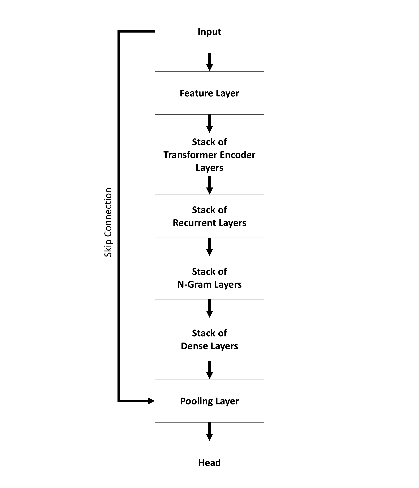
The sequential architecture (Figure 5) provides models where the input is passed to a specific number of layers step by step. All layers are grouped by their kind into stacks.
In contrast, the parallel architecture (Figure 6) offers a model where an input is passed to different types of layers separately. At the end the outputs are combined to create the final output of the whole model.
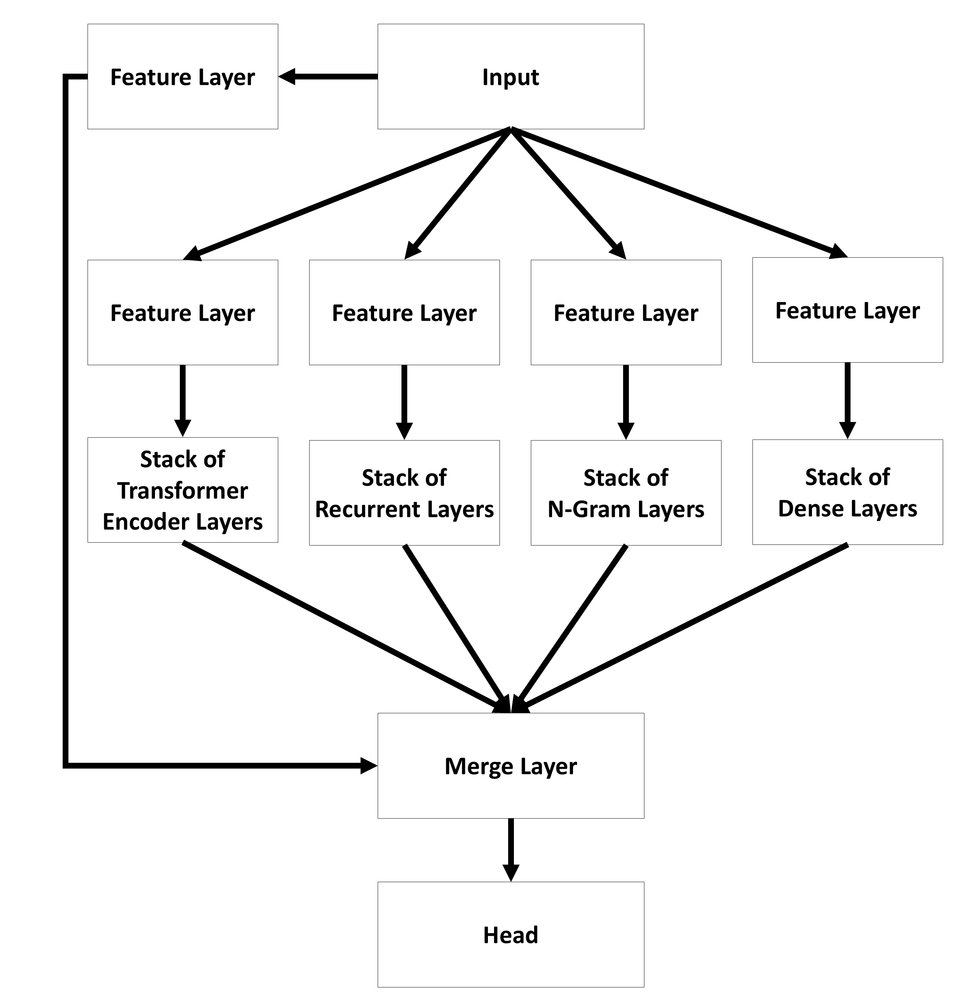
You can find the name of the used core model in the name of the
classifiers. For example TEClassifierSequential uses a
sequential core model while TEClassifierParallel
uses a parallel core model.
In general, all layers within a core model allow further customization allowing you to build a high number of different models.
A detailed description of all layers can be found in vignette A01 Layers and Stack of Layers:
Second, you can choose how the core model is used for classification. At the moment a probability and metric based classifier is possible.
- Probability Based Classifiers: Probability classifiers are used to predict a probability distribution for different classes/categories. This is the standard case most common in literature.
- Prototype Based Classifiers: Prototype based classifiers are a kind of metric based classifiers. Here the classifiers do not predict a probability distribution. Instead it calculates a prototype for every class/category and measures the distance between a case and all prototypes. The class/category of the prototype with the smallest distance to the case is assigned to that case. In contrast to the probability classifiers these models can handle classes/categories that were not part of the training. For more details please refer to section 7.
The training of a classifier consists of two stages. The first stage aims to estimate the performance of the model while the second stage trains the model for application.
For performance estimation, training splits the data into several
chunks based on cross-fold validation. The number of folds is set with
data_folds. In every case, one fold is not used for
training and serves as a test sample. The remaining data is
used to create a training and a validation sample. The
percentage of cases within each fold used as a validation sample is
determined with data_val_size. This sample is used to
determine the state of the model that generalizes best. All performance
values saved in the trained classifier refer to the test sample. This
data has never been used during training and provides a more realistic
estimation of a classifier’s performance.
Since aifedcuation tries to address the special needs in educational and social science, some special training steps are integrated for all models.
Synthetic Cases: In case of imbalanced data, it is recommended to augment your data. Before training, a number of new units is created via different techniques. Currently you can request the K-Nearest Neighbor OveRsampling Approach (KNNOR) developed by Islam et al. (2022). The aim is to create new cases that fill the gap to the majority class. Multi-class problems are reduced to a two class problem (class under investigation vs. all others) for generating these units. If the technique allows to set the number of neighbors during generation, you can configure the data generation with
sc_min_kandsc_max_k. The synthetic cases for every class are generated for all k betweensc_min_kandsc_max_k. Every k contributes proportionally to the synthetic cases.Pseudo-Labeling: This technique is relevant if you have labeled target data and a large number of unlabeled target data. The idea is to integrate the unlabeled into training to increase performance and to avoid high costs by labeling a high number of cases manually. With the different parameters starting with
pl_, you can configure the process of pseudo-labeling. Implementation of pseudo-labeling is based on Cascante-Bonilla et al. (2020). To apply pseudo-labeling, you have to setuse_pl=TRUE.pl_max=1.00,pl_anchor=1.00, andpl_min=0.00are used to describe the certainty of a prediction. 0 refers to random guessing while 1 refers to perfect certainty.pl_anchoris used as a reference value. The distance topl_anchoris calculated for every case. Then, they are sorted with an increasing distance frompl_anchor. The proportion of added pseudo-labeled data into training increases with every step. The maximum number of steps is determined withpl_max_steps. Cases close topl_anchorare included first.
Figure 7 illustrates the training loop for the cases that all options
are set to TRUE.
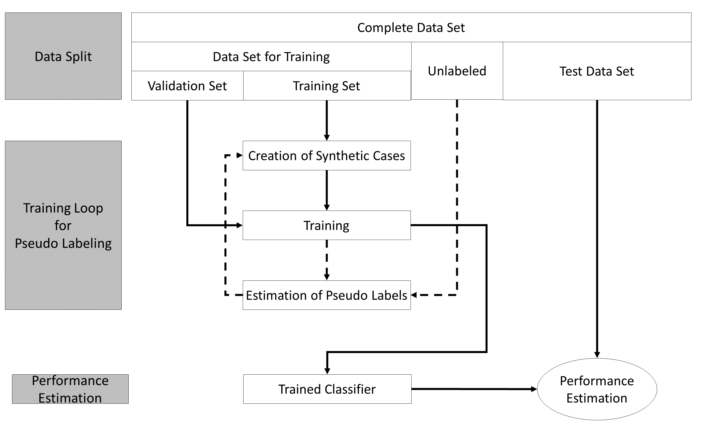
The example stated in the Figure applies the generation of synthetic
cases and the algorithm proposed by Cascante-Bonilla et al. (2020). For
every fold, the training starts with generating synthetic cases to fill
the gap between the classes and the majority class. After this, an
initial training of the classifiers starts. The trained classifier is
used to predict pseudo-labels for the unlabeled part of the data and
adds 20% of the cases with the highest certainty for their pseudo-labels
to the training data set. Now new synthetic cases are generated based on
both the labeled data and the newly added pseudo-labeled data. The
classifier is re-initialized and trained again. After training, the
classifier predicts the potential labels of all originally
unlabeled data and adds 40% of the pseudo-labeled data to the training
data with the highest certainty. Again, new synthetic cases are
generated on both the labeled and added pseudo-labeled data. The model
is again re-initialized and trained again until the maximum number of
steps for pseudo labeling (pl_max_steps) is reached. After
this, the logarithm is restated for the next fold until the number of
folds (data_folds) is reached. All of these steps are only
used to estimate the performance of the classifier to evaluate for
unknown data.
The last phase of the training begins after the last fold. In the final training, the data set is split only into a training and validation set without a test set to provide the maximum amount of data for the best performance in final training. All configurations of the performance estimation phase are used in the final training phase.
Please note that creating, training, and Predicting works for all types of classifiers as described in the chapters below.
6 Probability Based Classifiers
6.1 Creation
To demonstrate how to create a classifier, we will use an example of
a TEClassifierSequential classifier. Using the sample data
from Section 2.3 and the text embeddings from Section 4.3, creating a
new classifier might look like this:
classifier <- TEClassifierSequential$new()
classifier$configure(
label = "Classifier for Estimating a Postive or Negative Rating of Movie Reviews",
text_embeddings = review_embeddings,
feature_extractor = NULL,
target_levels = c("neg", "pos"),
skip_connection_type = "ResidualGate",
cls_pooling_features = 20,
cls_pooling_type = "WeightedAverageTimes",
cls_head_type = "Regular",
cls_input_normalize="PowerNorm",
final_normalization_type="RMSNorm",
feat_act_fct = "None",
feat_size = 128,
feat_bias = FALSE,
feat_dropout = 0.05,
feat_parametrizations = "None",
feat_normalization_type = "RMSNorm",
ng_conv_act_fct = "GELU",
ng_conv_n_layers = 0,
ng_conv_ks_min = 1,
ng_conv_ks_max = 2,
ng_conv_bias = FALSE,
ng_conv_dropout = 0.40,
ng_conv_parametrizations = "None",
ng_conv_normalization_type = "RMSNorm",
ng_conv_residual_type = "ResidualGate",
dense_act_fct = "GELU",
dense_n_layers = 3,
dense_dropout = 0.40,
dense_bias = FALSE,
dense_parametrizations = "None",
dense_normalization_type = "RMSNorm",
dense_residual_type = "ResidualGate",
rec_act_fct = "Tanh",
rec_n_layers = 0,
rec_type = "GRU",
rec_bidirectional = FALSE,
rec_dropout = 0.2,
rec_bias = FALSE,
rec_parametrizations = "None",
rec_normalization_type = "RMSNorm",
rec_residual_type = "ResidualGate",
tf_act_fct = "SwiGLU",
tf_dense_dim = ceiling(2.67 * 384),
tf_n_layers = 0,
tf_dropout_rate_1 = 0.1,
tf_dropout_rate_2 = 0.3,
tf_attention_type = "MultiHead",
tf_positional_type = "absolute",
tf_num_heads = 4,
tf_bias = FALSE,
tf_parametrizations = "None",
tf_normalization_type = "RMSNorm",
tf_normalization_position = "Post",
tf_residual_type = "ResidualGate"
)As with the text embedding model, you should provide a label
(label ) for your new classifier. For the text embeddings,
you must provide a LargeDataSetForTextEmbeddings. This data
set is created using a TextEmbeddingModel, as described in
section 4. Here, we continue our example by using the embeddings
produced by our BERT model.
The target_levels take the categories/classes that your
classifier should predict. These can be numbers or words.
If you would like to use ordinal data, it is very important that you provide the classes/categories in the correct order. In other words, categories/classes representing a ‘higher’ level must be stated after those representing a ‘lower’ level. If you provide the wrong order, the performance indices will be invalid. The order does not matter for nominal data.
Using the feature_extractor, you can reduce the number
of features in your text embeddings before passing them to the
classifier. You can read more about this in Section 7.
You can use the other parameters to define the complexity and capabilities of your model. Descriptions of the different models can be found in A01 Layers and Stack of Layers.
Please note that you must choose the parameter feat_size
depending on the number of features of the underlying text embedding
model. You can obtain this number by calling the
get_n_features method of the text embedding model used. In
our example, this would be:
tem$get_n_features()
#> [1] 768The value of feat_size should be equal to or less than
this value since this layer tries to compress the text embeddings into
fewer dimensions. While this reduces the number of parameters for all
subsequent layers and decreases training and usage time, it may result
in information loss. You can experiment with this value to strike a
balance between speed and performance. A study by Takeshita et
al. (2025) shows that randomly dropping 50% of the dimensions leads only
to a minor decrease in performance in classification tasks. Thus, this
value can serve as a rule of thumb for determining this parameter. In
our example, we only have a very limited number of samples. Therefore,
we reduce the number of features even further.
In addition, the value of the parameter
cls_pooling_features should be equal to or less than the
value of feat_size. The value of cls_pooling_features
determines how many of the resulting features are used for
classification. Therefore, this value acts as a filter. This value is
only relevant if your pooling method does not include the word
‘Times’.
The vignette 04 Model configuration and training provides details on how to configure a classifier.
Since we have a small data set and a short sequence, we set all
layers to 0
(tf_n_layers,rec_n_layers,ng_conv_n_layers),
except the dense layers. Here, we use 3
(dense_n_layers = 3).
As pooling method we use weighted average over time
(cls_pooling_type="WeightedAverageTimes"). In other words,
the values of a specific feature dimension are averaged over all tokens
and chunks, and the weights are learnt during training.
In this example, we use a regular classification head
(cls_head_type = "Regular"), where all neurons in the
previous layer are connected to all classes. Li et al. (2020) proposed a
special classification head
(cls_head_type = "PairwiseOrthogonal"). This layer enables
each neuron to establish a connection with only one class. To improve
performance with high rates of dropout in the previous layers, you can
add a dense layer before the classification head
(cls_head_type = "PairwiseOrthogonalDense").
You receive a short summary of the classifier by calling
print.
print(classifier)
#> Object : TEClassifierSequential
#> ID : cls_amcb41R0ZLBKZwh2
#> Label : Classifier for Estimating a Postive or Negative Rating of Movie Reviews
#> Configured: TRUE
#> Trained : FALSE
#> Classes : neg, pos
#> Times : 3
#> Features : 768
#> Parameter : 149898
#> req. FE : FALSEOnce you have created a new classifier, you can start the training process. You can view the number of learnable parameters of your model using the following method:
classifier$count_parameter()
#> [1] 1498986.2 Training
To start training your classifier, call the train method
and provide the text embeddings to data_embeddings and the
categories/classes as target data to data_targets. Please
note that data_targets expects a named factor
where the names correspond to the IDs of the corresponding text
embeddings. Text embeddings and target data that cannot be matched are
omitted from training.
classifier$train(
data_embeddings = review_embeddings,
data_targets = review_labels,
data_folds = 10,
data_val_size = 0.25,
loss_balance_class_weights = TRUE,
loss_balance_sequence_length = TRUE,
loss_cls_fct_name = "FocalLoss",
use_sc = TRUE,
sc_method = "knnor",
sc_min_k = 1,
sc_max_k = 10,
use_pl = FALSE,
pl_max_steps = 3,
pl_max = 1.00,
pl_anchor = 1.00,
pl_min = 0.00,
sustain_track = TRUE,
sustain_iso_code = "DEU",
sustain_region = NULL,
sustain_interval = 15,
sustain_log_level = "error",
epochs = 2000,
batch_size = 128,
trace = TRUE,
ml_trace = 1,
log_dir = NULL,
log_write_interval = 10,
n_cores = auto_n_cores(),
lr_rate = 0.0,
lr_min = 0.0,
lr_scheduler = "Linear",
lr_epochs = 30,
lr_warm_up_ratio = 0.10,
optimizer = "AdamW",
amp = TRUE,
comp_use=TRUE,
comp_mode="reduce-overhead"
)
#> 2026-09-19 06:04:42 Total Cases: 300 Labeled Cases: 225
#> Batch size is to big. Change batch size from 128 to 48.
#> 2026-09-19 06:04:45 Start
#> 2026-09-19 06:04:45 Start Sustainability Tracking
#> 2026-09-19 06:04:45 Estimating Learning Rates
#> 0.1000 % | ETA 0000::00::320.2000 % | ETA 0000::00::050.3000 % | ETA 0000::00::040.4000 % | ETA 0000::00::040.5000 % | ETA 0000::00::030.6000 % | ETA 0000::00::030.7000 % | ETA 0000::00::020.8000 % | ETA 0000::00::010.9000 % | ETA 0000::00::011.0000 % | ETA 0000::00::00
#> 2026-09-19 06:04:54 Set lr_rate to 5e-06 and lr_min to 1e-06.
#> 2026-09-19 06:04:54 | Iteration 1 from 10
#> 2026-09-19 06:04:54 | Iteration 1 from 10 | Generating synthetic cases
#> 2026-09-19 06:05:03 | Iteration 1 from 10 | Generating synthetic cases done
#> 2026-09-19 06:05:03 | Iteration 1 from 10 | Training
#> Compile model with cudagraphs.
#> 0.0005 % | Steps: 4 | Train Loss 0.392764 s_avg_iota 0.313 | Val Loss 0.185595 Best 0.185595 s_avg_iota 0.328 Best 0.328 | ELC: 1 | ETA 0000::50::320.0010 % | Steps: 4 | Train Loss 0.364815 s_avg_iota 0.316 | Val Loss 0.126880 Best 0.126880 s_avg_iota 0.330 Best 0.330 | ELC: 2 | ETA 0000::26::250.0015 % | Steps: 4 | Train Loss 0.398937 s_avg_iota 0.314 | Val Loss 0.115991 Best 0.115991 s_avg_iota 0.330 Best 0.330 | ELC: 3 | ETA 0000::18::180.0020 % | Steps: 4 | Train Loss 0.361679 s_avg_iota 0.311 | Val Loss 0.117885 Best 0.117885 s_avg_iota 0.330 Best 0.330 | ELC: 4 | ETA 0000::14::130.0025 % | Steps: 4 | Train Loss 0.404506 s_avg_iota 0.310 | Val Loss 0.086910 Best 0.086910 s_avg_iota 0.331 Best 0.331 | ELC: 5 | ETA 0000::11::470.0030 % | Steps: 4 | Train Loss 0.352559 s_avg_iota 0.314 | Val Loss 0.126589 Best 0.086910 s_avg_iota 0.325 Best 0.331 | ELC: 5 | ETA 0000::10::070.0035 % | Steps: 4 | Train Loss 0.400341 s_avg_iota 0.306 | Val Loss 0.226796 Best 0.086910 s_avg_iota 0.328 Best 0.331 | ELC: 5 | ETA 0000::08::550.0040 % | Steps: 4 | Train Loss 0.381073 s_avg_iota 0.310 | Val Loss 0.110783 Best 0.086910 s_avg_iota 0.328 Best 0.331 | ELC: 5 | ETA 0000::07::590.0045 % | Steps: 4 | Train Loss 0.312477 s_avg_iota 0.310 | Val Loss 0.137794 Best 0.086910 s_avg_iota 0.316 Best 0.331 | ELC: 5 | ETA 0000::07::160.0050 % | Steps: 4 | Train Loss 0.354624 s_avg_iota 0.320 | Val Loss 0.173300 Best 0.086910 s_avg_iota 0.321 Best 0.331 | ELC: 5 | ETA 0000::06::420.0055 % | Steps: 4 | Train Loss 0.324078 s_avg_iota 0.324 | Val Loss 0.110127 Best 0.086910 s_avg_iota 0.316 Best 0.331 | ELC: 5 | ETA 0000::06::150.0060 % | Steps: 4 | Train Loss 0.322929 s_avg_iota 0.321 | Val Loss 0.438888 Best 0.086910 s_avg_iota 0.318 Best 0.331 | ELC: 5 | ETA 0000::05::510.0065 % | Steps: 4 | Train Loss 0.321848 s_avg_iota 0.326 | Val Loss 0.302129 Best 0.086910 s_avg_iota 0.315 Best 0.331 | ELC: 5 | ETA 0000::05::310.0070 % | Steps: 4 | Train Loss 0.318894 s_avg_iota 0.325 | Val Loss 0.442544 Best 0.086910 s_avg_iota 0.303 Best 0.331 | ELC: 5 | ETA 0000::05::130.0075 % | Steps: 4 | Train Loss 0.313983 s_avg_iota 0.314 | Val Loss 0.395161 Best 0.086910 s_avg_iota 0.311 Best 0.331 | ELC: 5 | ETA 0000::04::580.0080 % | Steps: 4 | Train Loss 0.309777 s_avg_iota 0.319 | Val Loss 0.232029 Best 0.086910 s_avg_iota 0.301 Best 0.331 | ELC: 5 | ETA 0000::04::450.0085 % | Steps: 4 | Train Loss 0.339055 s_avg_iota 0.311 | Val Loss 0.239011 Best 0.086910 s_avg_iota 0.298 Best 0.331 | ELC: 5 | ETA 0000::04::340.0090 % | Steps: 4 | Train Loss 0.296242 s_avg_iota 0.324 | Val Loss 0.258969 Best 0.086910 s_avg_iota 0.304 Best 0.331 | ELC: 5 | ETA 0000::04::230.0095 % | Steps: 4 | Train Loss 0.300293 s_avg_iota 0.322 | Val Loss 0.378890 Best 0.086910 s_avg_iota 0.298 Best 0.331 | ELC: 5 | ETA 0000::04::140.0100 % | Steps: 4 | Train Loss 0.251488 s_avg_iota 0.325 | Val Loss 0.220366 Best 0.086910 s_avg_iota 0.296 Best 0.331 | ELC: 5 | ETA 0000::04::050.0105 % | Steps: 4 | Train Loss 0.278822 s_avg_iota 0.318 | Val Loss 0.547584 Best 0.086910 s_avg_iota 0.290 Best 0.331 | ELC: 5 | ETA 0000::03::570.0110 % | Steps: 4 | Train Loss 0.257953 s_avg_iota 0.328 | Val Loss 0.362647 Best 0.086910 s_avg_iota 0.303 Best 0.331 | ELC: 5 | ETA 0000::03::500.0115 % | Steps: 4 | Train Loss 0.269523 s_avg_iota 0.330 | Val Loss 0.334310 Best 0.086910 s_avg_iota 0.300 Best 0.331 | ELC: 5 | ETA 0000::03::440.0120 % | Steps: 4 | Train Loss 0.252304 s_avg_iota 0.328 | Val Loss 0.519401 Best 0.086910 s_avg_iota 0.309 Best 0.331 | ELC: 5 | ETA 0000::03::380.0125 % | Steps: 4 | Train Loss 0.231091 s_avg_iota 0.333 | Val Loss 0.452880 Best 0.086910 s_avg_iota 0.309 Best 0.331 | ELC: 5 | ETA 0000::03::320.0130 % | Steps: 4 | Train Loss 0.270180 s_avg_iota 0.320 | Val Loss 0.218525 Best 0.086910 s_avg_iota 0.315 Best 0.331 | ELC: 5 | ETA 0000::03::270.0135 % | Steps: 4 | Train Loss 0.241403 s_avg_iota 0.323 | Val Loss 0.536752 Best 0.086910 s_avg_iota 0.313 Best 0.331 | ELC: 5 | ETA 0000::03::220.0140 % | Steps: 4 | Train Loss 0.230181 s_avg_iota 0.344 | Val Loss 0.444424 Best 0.086910 s_avg_iota 0.309 Best 0.331 | ELC: 5 | ETA 0000::03::180.0145 % | Steps: 4 | Train Loss 0.230958 s_avg_iota 0.329 | Val Loss 0.197163 Best 0.086910 s_avg_iota 0.317 Best 0.331 | ELC: 5 | ETA 0000::03::130.0150 % | Steps: 4 | Train Loss 0.227401 s_avg_iota 0.333 | Val Loss 0.392648 Best 0.086910 s_avg_iota 0.308 Best 0.331 | ELC: 5 | ETA 0000::03::100.0155 % | Steps: 4 | Train Loss 0.224887 s_avg_iota 0.330 | Val Loss 0.247873 Best 0.086910 s_avg_iota 0.317 Best 0.331 | ELC: 5 | ETA 0000::03::060.0160 % | Steps: 4 | Train Loss 0.223986 s_avg_iota 0.323 | Val Loss 0.203746 Best 0.086910 s_avg_iota 0.319 Best 0.331 | ELC: 5 | ETA 0000::03::030.0165 % | Steps: 4 | Train Loss 0.239889 s_avg_iota 0.330 | Val Loss 0.151239 Best 0.086910 s_avg_iota 0.309 Best 0.331 | ELC: 5 | ETA 0000::03::000.0170 % | Steps: 4 | Train Loss 0.224356 s_avg_iota 0.336 | Val Loss 0.395229 Best 0.086910 s_avg_iota 0.313 Best 0.331 | ELC: 5 | ETA 0000::02::570.0175 % | Steps: 4 | Train Loss 0.245207 s_avg_iota 0.325 | Val Loss 0.132420 Best 0.086910 s_avg_iota 0.310 Best 0.331 | ELC: 5 | ETA 0000::02::540.0180 % | Steps: 4 | Train Loss 0.241957 s_avg_iota 0.326 | Val Loss 0.279410 Best 0.086910 s_avg_iota 0.321 Best 0.331 | ELC: 5 | ETA 0000::02::510.0185 % | Steps: 4 | Train Loss 0.231703 s_avg_iota 0.333 | Val Loss 0.276163 Best 0.086910 s_avg_iota 0.315 Best 0.331 | ELC: 5 | ETA 0000::02::490.0190 % | Steps: 4 | Train Loss 0.223249 s_avg_iota 0.333 | Val Loss 0.364236 Best 0.086910 s_avg_iota 0.316 Best 0.331 | ELC: 5 | ETA 0000::02::460.0195 % | Steps: 4 | Train Loss 0.233731 s_avg_iota 0.342 | Val Loss 0.366933 Best 0.086910 s_avg_iota 0.319 Best 0.331 | ELC: 5 | ETA 0000::02::440.0200 % | Steps: 4 | Train Loss 0.210882 s_avg_iota 0.339 | Val Loss 0.252461 Best 0.086910 s_avg_iota 0.318 Best 0.331 | ELC: 5 | ETA 0000::02::420.0205 % | Steps: 4 | Train Loss 0.217885 s_avg_iota 0.341 | Val Loss 0.258532 Best 0.086910 s_avg_iota 0.324 Best 0.331 | ELC: 5 | ETA 0000::02::400.0210 % | Steps: 4 | Train Loss 0.211694 s_avg_iota 0.348 | Val Loss 0.144007 Best 0.086910 s_avg_iota 0.325 Best 0.331 | ELC: 5 | ETA 0000::02::380.0215 % | Steps: 4 | Train Loss 0.218028 s_avg_iota 0.339 | Val Loss 0.264454 Best 0.086910 s_avg_iota 0.324 Best 0.331 | ELC: 5 | ETA 0000::02::360.0220 % | Steps: 4 | Train Loss 0.218506 s_avg_iota 0.347 | Val Loss 0.324843 Best 0.086910 s_avg_iota 0.322 Best 0.331 | ELC: 5 | ETA 0000::02::350.0225 % | Steps: 4 | Train Loss 0.192809 s_avg_iota 0.351 | Val Loss 0.206175 Best 0.086910 s_avg_iota 0.327 Best 0.331 | ELC: 5 | ETA 0000::02::330.0230 % | Steps: 4 | Train Loss 0.218223 s_avg_iota 0.345 | Val Loss 0.129980 Best 0.086910 s_avg_iota 0.325 Best 0.331 | ELC: 5 | ETA 0000::02::320.0235 % | Steps: 4 | Train Loss 0.210802 s_avg_iota 0.349 | Val Loss 0.230861 Best 0.086910 s_avg_iota 0.328 Best 0.331 | ELC: 5 | ETA 0000::02::300.0240 % | Steps: 4 | Train Loss 0.202124 s_avg_iota 0.347 | Val Loss 0.112881 Best 0.086910 s_avg_iota 0.329 Best 0.331 | ELC: 5 | ETA 0000::02::290.0245 % | Steps: 4 | Train Loss 0.215991 s_avg_iota 0.340 | Val Loss 0.257332 Best 0.086910 s_avg_iota 0.329 Best 0.331 | ELC: 5 | ETA 0000::02::270.0250 % | Steps: 4 | Train Loss 0.153204 s_avg_iota 0.352 | Val Loss 0.175568 Best 0.086910 s_avg_iota 0.327 Best 0.331 | ELC: 5 | ETA 0000::02::260.0255 % | Steps: 4 | Train Loss 0.178837 s_avg_iota 0.361 | Val Loss 0.216148 Best 0.086910 s_avg_iota 0.330 Best 0.331 | ELC: 5 | ETA 0000::02::250.0260 % | Steps: 4 | Train Loss 0.208058 s_avg_iota 0.344 | Val Loss 0.205864 Best 0.205864 s_avg_iota 0.336 Best 0.336 | ELC: 52 | ETA 0000::02::240.0265 % | Steps: 4 | Train Loss 0.217927 s_avg_iota 0.342 | Val Loss 0.207820 Best 0.207820 s_avg_iota 0.336 Best 0.336 | ELC: 53 | ETA 0000::02::230.0270 % | Steps: 4 | Train Loss 0.204794 s_avg_iota 0.346 | Val Loss 0.234940 Best 0.207820 s_avg_iota 0.333 Best 0.336 | ELC: 53 | ETA 0000::02::210.0275 % | Steps: 4 | Train Loss 0.190716 s_avg_iota 0.355 | Val Loss 0.179885 Best 0.207820 s_avg_iota 0.336 Best 0.336 | ELC: 53 | ETA 0000::02::200.0280 % | Steps: 4 | Train Loss 0.190507 s_avg_iota 0.356 | Val Loss 0.207417 Best 0.207820 s_avg_iota 0.334 Best 0.336 | ELC: 53 | ETA 0000::02::190.0285 % | Steps: 4 | Train Loss 0.202507 s_avg_iota 0.351 | Val Loss 0.214475 Best 0.214475 s_avg_iota 0.338 Best 0.338 | ELC: 57 | ETA 0000::02::180.0290 % | Steps: 4 | Train Loss 0.175659 s_avg_iota 0.362 | Val Loss 0.196298 Best 0.214475 s_avg_iota 0.333 Best 0.338 | ELC: 57 | ETA 0000::02::170.0295 % | Steps: 4 | Train Loss 0.168395 s_avg_iota 0.368 | Val Loss 0.297112 Best 0.297112 s_avg_iota 0.338 Best 0.338 | ELC: 59 | ETA 0000::02::160.0300 % | Steps: 4 | Train Loss 0.165105 s_avg_iota 0.364 | Val Loss 0.118326 Best 0.297112 s_avg_iota 0.335 Best 0.338 | ELC: 59 | ETA 0000::02::150.0305 % | Steps: 4 | Train Loss 0.192934 s_avg_iota 0.355 | Val Loss 0.197601 Best 0.197601 s_avg_iota 0.343 Best 0.343 | ELC: 61 | ETA 0000::02::150.0310 % | Steps: 4 | Train Loss 0.160360 s_avg_iota 0.356 | Val Loss 0.111120 Best 0.111120 s_avg_iota 0.345 Best 0.345 | ELC: 62 | ETA 0000::02::140.0315 % | Steps: 4 | Train Loss 0.191432 s_avg_iota 0.354 | Val Loss 0.204318 Best 0.111120 s_avg_iota 0.337 Best 0.345 | ELC: 62 | ETA 0000::02::130.0320 % | Steps: 4 | Train Loss 0.170497 s_avg_iota 0.371 | Val Loss 0.136402 Best 0.111120 s_avg_iota 0.342 Best 0.345 | ELC: 62 | ETA 0000::02::120.0325 % | Steps: 4 | Train Loss 0.178466 s_avg_iota 0.368 | Val Loss 0.232001 Best 0.111120 s_avg_iota 0.341 Best 0.345 | ELC: 62 | ETA 0000::02::110.0330 % | Steps: 4 | Train Loss 0.176417 s_avg_iota 0.366 | Val Loss 0.204758 Best 0.204758 s_avg_iota 0.345 Best 0.345 | ELC: 66 | ETA 0000::02::100.0335 % | Steps: 4 | Train Loss 0.154058 s_avg_iota 0.376 | Val Loss 0.288445 Best 0.204758 s_avg_iota 0.343 Best 0.345 | ELC: 66 | ETA 0000::02::100.0340 % | Steps: 4 | Train Loss 0.180301 s_avg_iota 0.361 | Val Loss 0.289963 Best 0.204758 s_avg_iota 0.340 Best 0.345 | ELC: 66 | ETA 0000::02::090.0345 % | Steps: 4 | Train Loss 0.166278 s_avg_iota 0.362 | Val Loss 0.145454 Best 0.204758 s_avg_iota 0.344 Best 0.345 | ELC: 66 | ETA 0000::02::080.0350 % | Steps: 4 | Train Loss 0.166339 s_avg_iota 0.375 | Val Loss 0.089298 Best 0.089298 s_avg_iota 0.346 Best 0.346 | ELC: 70 | ETA 0000::02::070.0355 % | Steps: 4 | Train Loss 0.168140 s_avg_iota 0.373 | Val Loss 0.217070 Best 0.217070 s_avg_iota 0.351 Best 0.351 | ELC: 71 | ETA 0000::02::070.0360 % | Steps: 4 | Train Loss 0.165663 s_avg_iota 0.379 | Val Loss 0.314453 Best 0.217070 s_avg_iota 0.349 Best 0.351 | ELC: 71 | ETA 0000::02::060.0365 % | Steps: 4 | Train Loss 0.172150 s_avg_iota 0.371 | Val Loss 0.119555 Best 0.217070 s_avg_iota 0.346 Best 0.351 | ELC: 71 | ETA 0000::02::050.0370 % | Steps: 4 | Train Loss 0.161961 s_avg_iota 0.375 | Val Loss 0.267457 Best 0.217070 s_avg_iota 0.346 Best 0.351 | ELC: 71 | ETA 0000::02::050.0375 % | Steps: 4 | Train Loss 0.164592 s_avg_iota 0.376 | Val Loss 0.274591 Best 0.217070 s_avg_iota 0.349 Best 0.351 | ELC: 71 | ETA 0000::02::040.0380 % | Steps: 4 | Train Loss 0.164110 s_avg_iota 0.379 | Val Loss 0.173159 Best 0.173159 s_avg_iota 0.351 Best 0.351 | ELC: 76 | ETA 0000::02::030.0385 % | Steps: 4 | Train Loss 0.161415 s_avg_iota 0.378 | Val Loss 0.234895 Best 0.234895 s_avg_iota 0.354 Best 0.354 | ELC: 77 | ETA 0000::02::030.0390 % | Steps: 4 | Train Loss 0.162445 s_avg_iota 0.373 | Val Loss 0.245852 Best 0.245852 s_avg_iota 0.360 Best 0.360 | ELC: 78 | ETA 0000::02::030.0395 % | Steps: 4 | Train Loss 0.146493 s_avg_iota 0.392 | Val Loss 0.146323 Best 0.245852 s_avg_iota 0.355 Best 0.360 | ELC: 78 | ETA 0000::02::020.0400 % | Steps: 4 | Train Loss 0.160793 s_avg_iota 0.384 | Val Loss 0.141972 Best 0.141972 s_avg_iota 0.360 Best 0.360 | ELC: 80 | ETA 0000::02::020.0405 % | Steps: 4 | Train Loss 0.152872 s_avg_iota 0.384 | Val Loss 0.118699 Best 0.118699 s_avg_iota 0.360 Best 0.360 | ELC: 81 | ETA 0000::02::020.0410 % | Steps: 4 | Train Loss 0.145696 s_avg_iota 0.391 | Val Loss 0.256373 Best 0.118699 s_avg_iota 0.353 Best 0.360 | ELC: 81 | ETA 0000::02::010.0415 % | Steps: 4 | Train Loss 0.157619 s_avg_iota 0.384 | Val Loss 0.153575 Best 0.153575 s_avg_iota 0.360 Best 0.360 | ELC: 83 | ETA 0000::02::010.0420 % | Steps: 4 | Train Loss 0.160105 s_avg_iota 0.390 | Val Loss 0.082823 Best 0.153575 s_avg_iota 0.354 Best 0.360 | ELC: 83 | ETA 0000::02::000.0425 % | Steps: 4 | Train Loss 0.159840 s_avg_iota 0.382 | Val Loss 0.140469 Best 0.153575 s_avg_iota 0.357 Best 0.360 | ELC: 83 | ETA 0000::02::000.0430 % | Steps: 4 | Train Loss 0.132840 s_avg_iota 0.391 | Val Loss 0.112418 Best 0.153575 s_avg_iota 0.355 Best 0.360 | ELC: 83 | ETA 0000::01::590.0435 % | Steps: 4 | Train Loss 0.173959 s_avg_iota 0.372 | Val Loss 0.257406 Best 0.153575 s_avg_iota 0.360 Best 0.360 | ELC: 83 | ETA 0000::01::590.0440 % | Steps: 4 | Train Loss 0.136017 s_avg_iota 0.395 | Val Loss 0.248109 Best 0.153575 s_avg_iota 0.360 Best 0.360 | ELC: 83 | ETA 0000::01::580.0445 % | Steps: 4 | Train Loss 0.146033 s_avg_iota 0.394 | Val Loss 0.179493 Best 0.179493 s_avg_iota 0.364 Best 0.364 | ELC: 89 | ETA 0000::01::580.0450 % | Steps: 4 | Train Loss 0.147610 s_avg_iota 0.395 | Val Loss 0.108048 Best 0.179493 s_avg_iota 0.363 Best 0.364 | ELC: 89 | ETA 0000::01::580.0455 % | Steps: 4 | Train Loss 0.149424 s_avg_iota 0.386 | Val Loss 0.080600 Best 0.179493 s_avg_iota 0.357 Best 0.364 | ELC: 89 | ETA 0000::01::570.0460 % | Steps: 4 | Train Loss 0.147096 s_avg_iota 0.397 | Val Loss 0.141923 Best 0.179493 s_avg_iota 0.363 Best 0.364 | ELC: 89 | ETA 0000::01::570.0465 % | Steps: 4 | Train Loss 0.146006 s_avg_iota 0.395 | Val Loss 0.126720 Best 0.126720 s_avg_iota 0.364 Best 0.364 | ELC: 93 | ETA 0000::01::560.0470 % | Steps: 4 | Train Loss 0.132895 s_avg_iota 0.391 | Val Loss 0.171253 Best 0.126720 s_avg_iota 0.364 Best 0.364 | ELC: 93 | ETA 0000::01::560.0475 % | Steps: 4 | Train Loss 0.166619 s_avg_iota 0.381 | Val Loss 0.142357 Best 0.126720 s_avg_iota 0.362 Best 0.364 | ELC: 93 | ETA 0000::01::550.0480 % | Steps: 4 | Train Loss 0.140533 s_avg_iota 0.401 | Val Loss 0.175843 Best 0.175843 s_avg_iota 0.366 Best 0.366 | ELC: 96 | ETA 0000::01::550.0485 % | Steps: 4 | Train Loss 0.152590 s_avg_iota 0.390 | Val Loss 0.175054 Best 0.175054 s_avg_iota 0.370 Best 0.370 | ELC: 97 | ETA 0000::01::550.0490 % | Steps: 4 | Train Loss 0.148483 s_avg_iota 0.396 | Val Loss 0.186327 Best 0.175054 s_avg_iota 0.365 Best 0.370 | ELC: 97 | ETA 0000::01::540.0495 % | Steps: 4 | Train Loss 0.153351 s_avg_iota 0.393 | Val Loss 0.157117 Best 0.175054 s_avg_iota 0.363 Best 0.370 | ELC: 97 | ETA 0000::01::540.0500 % | Steps: 4 | Train Loss 0.133541 s_avg_iota 0.400 | Val Loss 0.248264 Best 0.175054 s_avg_iota 0.365 Best 0.370 | ELC: 97 | ETA 0000::01::530.0505 % | Steps: 4 | Train Loss 0.142250 s_avg_iota 0.398 | Val Loss 0.191504 Best 0.191504 s_avg_iota 0.373 Best 0.373 | ELC: 101 | ETA 0000::01::530.0510 % | Steps: 4 | Train Loss 0.147741 s_avg_iota 0.388 | Val Loss 0.180053 Best 0.191504 s_avg_iota 0.364 Best 0.373 | ELC: 101 | ETA 0000::01::530.0515 % | Steps: 4 | Train Loss 0.142919 s_avg_iota 0.404 | Val Loss 0.194211 Best 0.191504 s_avg_iota 0.367 Best 0.373 | ELC: 101 | ETA 0000::01::520.0520 % | Steps: 4 | Train Loss 0.137522 s_avg_iota 0.399 | Val Loss 0.096765 Best 0.191504 s_avg_iota 0.363 Best 0.373 | ELC: 101 | ETA 0000::01::520.0525 % | Steps: 4 | Train Loss 0.122499 s_avg_iota 0.409 | Val Loss 0.142641 Best 0.191504 s_avg_iota 0.369 Best 0.373 | ELC: 101 | ETA 0000::01::520.0530 % | Steps: 4 | Train Loss 0.140227 s_avg_iota 0.405 | Val Loss 0.167820 Best 0.167820 s_avg_iota 0.377 Best 0.377 | ELC: 106 | ETA 0000::01::510.0535 % | Steps: 4 | Train Loss 0.138553 s_avg_iota 0.407 | Val Loss 0.157532 Best 0.167820 s_avg_iota 0.375 Best 0.377 | ELC: 106 | ETA 0000::01::510.0540 % | Steps: 4 | Train Loss 0.141446 s_avg_iota 0.405 | Val Loss 0.091574 Best 0.167820 s_avg_iota 0.372 Best 0.377 | ELC: 106 | ETA 0000::01::510.0545 % | Steps: 4 | Train Loss 0.140182 s_avg_iota 0.405 | Val Loss 0.150781 Best 0.167820 s_avg_iota 0.372 Best 0.377 | ELC: 106 | ETA 0000::01::500.0550 % | Steps: 4 | Train Loss 0.138584 s_avg_iota 0.404 | Val Loss 0.191410 Best 0.191410 s_avg_iota 0.378 Best 0.378 | ELC: 110 | ETA 0000::01::500.0555 % | Steps: 4 | Train Loss 0.142718 s_avg_iota 0.404 | Val Loss 0.179499 Best 0.191410 s_avg_iota 0.370 Best 0.378 | ELC: 110 | ETA 0000::01::500.0560 % | Steps: 4 | Train Loss 0.130260 s_avg_iota 0.402 | Val Loss 0.170239 Best 0.170239 s_avg_iota 0.380 Best 0.380 | ELC: 112 | ETA 0000::01::490.0565 % | Steps: 4 | Train Loss 0.144241 s_avg_iota 0.403 | Val Loss 0.167508 Best 0.167508 s_avg_iota 0.384 Best 0.384 | ELC: 113 | ETA 0000::01::490.0570 % | Steps: 4 | Train Loss 0.124128 s_avg_iota 0.418 | Val Loss 0.246504 Best 0.246504 s_avg_iota 0.384 Best 0.384 | ELC: 114 | ETA 0000::01::490.0575 % | Steps: 4 | Train Loss 0.126069 s_avg_iota 0.415 | Val Loss 0.084513 Best 0.084513 s_avg_iota 0.386 Best 0.386 | ELC: 115 | ETA 0000::01::490.0580 % | Steps: 4 | Train Loss 0.124675 s_avg_iota 0.416 | Val Loss 0.099012 Best 0.084513 s_avg_iota 0.377 Best 0.386 | ELC: 115 | ETA 0000::01::480.0585 % | Steps: 4 | Train Loss 0.110689 s_avg_iota 0.415 | Val Loss 0.139013 Best 0.084513 s_avg_iota 0.386 Best 0.386 | ELC: 115 | ETA 0000::01::480.0590 % | Steps: 4 | Train Loss 0.129242 s_avg_iota 0.409 | Val Loss 0.153571 Best 0.084513 s_avg_iota 0.380 Best 0.386 | ELC: 115 | ETA 0000::01::480.0595 % | Steps: 4 | Train Loss 0.130102 s_avg_iota 0.409 | Val Loss 0.169735 Best 0.084513 s_avg_iota 0.379 Best 0.386 | ELC: 115 | ETA 0000::01::470.0600 % | Steps: 4 | Train Loss 0.120942 s_avg_iota 0.422 | Val Loss 0.087649 Best 0.084513 s_avg_iota 0.384 Best 0.386 | ELC: 115 | ETA 0000::01::470.0605 % | Steps: 4 | Train Loss 0.127940 s_avg_iota 0.418 | Val Loss 0.106782 Best 0.106782 s_avg_iota 0.390 Best 0.390 | ELC: 121 | ETA 0000::01::470.0610 % | Steps: 4 | Train Loss 0.131256 s_avg_iota 0.414 | Val Loss 0.085383 Best 0.106782 s_avg_iota 0.387 Best 0.390 | ELC: 121 | ETA 0000::01::470.0615 % | Steps: 4 | Train Loss 0.128036 s_avg_iota 0.414 | Val Loss 0.215408 Best 0.106782 s_avg_iota 0.387 Best 0.390 | ELC: 121 | ETA 0000::01::460.0620 % | Steps: 4 | Train Loss 0.114725 s_avg_iota 0.416 | Val Loss 0.102310 Best 0.106782 s_avg_iota 0.386 Best 0.390 | ELC: 121 | ETA 0000::01::460.0625 % | Steps: 4 | Train Loss 0.137406 s_avg_iota 0.413 | Val Loss 0.135520 Best 0.106782 s_avg_iota 0.387 Best 0.390 | ELC: 121 | ETA 0000::01::460.0630 % | Steps: 4 | Train Loss 0.137230 s_avg_iota 0.396 | Val Loss 0.073532 Best 0.106782 s_avg_iota 0.386 Best 0.390 | ELC: 121 | ETA 0000::01::460.0635 % | Steps: 4 | Train Loss 0.103841 s_avg_iota 0.431 | Val Loss 0.085254 Best 0.106782 s_avg_iota 0.389 Best 0.390 | ELC: 121 | ETA 0000::01::450.0640 % | Steps: 4 | Train Loss 0.124732 s_avg_iota 0.427 | Val Loss 0.127531 Best 0.106782 s_avg_iota 0.385 Best 0.390 | ELC: 121 | ETA 0000::01::450.0645 % | Steps: 4 | Train Loss 0.113986 s_avg_iota 0.428 | Val Loss 0.102516 Best 0.106782 s_avg_iota 0.385 Best 0.390 | ELC: 121 | ETA 0000::01::450.0650 % | Steps: 4 | Train Loss 0.119053 s_avg_iota 0.422 | Val Loss 0.200826 Best 0.200826 s_avg_iota 0.395 Best 0.395 | ELC: 130 | ETA 0000::01::450.0655 % | Steps: 4 | Train Loss 0.113113 s_avg_iota 0.428 | Val Loss 0.145875 Best 0.200826 s_avg_iota 0.388 Best 0.395 | ELC: 130 | ETA 0000::01::440.0660 % | Steps: 4 | Train Loss 0.129567 s_avg_iota 0.412 | Val Loss 0.086597 Best 0.200826 s_avg_iota 0.393 Best 0.395 | ELC: 130 | ETA 0000::01::440.0665 % | Steps: 4 | Train Loss 0.127483 s_avg_iota 0.410 | Val Loss 0.159235 Best 0.200826 s_avg_iota 0.394 Best 0.395 | ELC: 130 | ETA 0000::01::440.0670 % | Steps: 4 | Train Loss 0.112767 s_avg_iota 0.433 | Val Loss 0.089191 Best 0.089191 s_avg_iota 0.395 Best 0.395 | ELC: 134 | ETA 0000::01::440.0675 % | Steps: 4 | Train Loss 0.105574 s_avg_iota 0.426 | Val Loss 0.163491 Best 0.089191 s_avg_iota 0.385 Best 0.395 | ELC: 134 | ETA 0000::01::430.0680 % | Steps: 4 | Train Loss 0.116989 s_avg_iota 0.419 | Val Loss 0.150642 Best 0.089191 s_avg_iota 0.392 Best 0.395 | ELC: 134 | ETA 0000::01::430.0685 % | Steps: 4 | Train Loss 0.124736 s_avg_iota 0.418 | Val Loss 0.145595 Best 0.089191 s_avg_iota 0.386 Best 0.395 | ELC: 134 | ETA 0000::01::430.0690 % | Steps: 4 | Train Loss 0.110651 s_avg_iota 0.430 | Val Loss 0.148636 Best 0.089191 s_avg_iota 0.384 Best 0.395 | ELC: 134 | ETA 0000::01::430.0695 % | Steps: 4 | Train Loss 0.111561 s_avg_iota 0.423 | Val Loss 0.090977 Best 0.089191 s_avg_iota 0.389 Best 0.395 | ELC: 134 | ETA 0000::01::430.0700 % | Steps: 4 | Train Loss 0.110342 s_avg_iota 0.431 | Val Loss 0.116051 Best 0.089191 s_avg_iota 0.395 Best 0.395 | ELC: 134 | ETA 0000::01::420.0705 % | Steps: 4 | Train Loss 0.120470 s_avg_iota 0.428 | Val Loss 0.085790 Best 0.085790 s_avg_iota 0.400 Best 0.400 | ELC: 141 | ETA 0000::01::420.0710 % | Steps: 4 | Train Loss 0.111373 s_avg_iota 0.436 | Val Loss 0.188444 Best 0.188444 s_avg_iota 0.402 Best 0.402 | ELC: 142 | ETA 0000::01::420.0715 % | Steps: 4 | Train Loss 0.104180 s_avg_iota 0.431 | Val Loss 0.192539 Best 0.188444 s_avg_iota 0.397 Best 0.402 | ELC: 142 | ETA 0000::01::420.0720 % | Steps: 4 | Train Loss 0.113563 s_avg_iota 0.434 | Val Loss 0.147808 Best 0.188444 s_avg_iota 0.395 Best 0.402 | ELC: 142 | ETA 0000::01::420.0725 % | Steps: 4 | Train Loss 0.101560 s_avg_iota 0.436 | Val Loss 0.082506 Best 0.188444 s_avg_iota 0.386 Best 0.402 | ELC: 142 | ETA 0000::01::410.0730 % | Steps: 4 | Train Loss 0.123453 s_avg_iota 0.423 | Val Loss 0.112177 Best 0.188444 s_avg_iota 0.402 Best 0.402 | ELC: 142 | ETA 0000::01::410.0735 % | Steps: 4 | Train Loss 0.091878 s_avg_iota 0.447 | Val Loss 0.106232 Best 0.188444 s_avg_iota 0.388 Best 0.402 | ELC: 142 | ETA 0000::01::410.0740 % | Steps: 4 | Train Loss 0.114341 s_avg_iota 0.440 | Val Loss 0.135959 Best 0.188444 s_avg_iota 0.402 Best 0.402 | ELC: 142 | ETA 0000::01::410.0745 % | Steps: 4 | Train Loss 0.106208 s_avg_iota 0.439 | Val Loss 0.140960 Best 0.140960 s_avg_iota 0.404 Best 0.404 | ELC: 149 | ETA 0000::01::410.0750 % | Steps: 4 | Train Loss 0.115372 s_avg_iota 0.435 | Val Loss 0.216386 Best 0.140960 s_avg_iota 0.390 Best 0.404 | ELC: 149 | ETA 0000::01::400.0755 % | Steps: 4 | Train Loss 0.086358 s_avg_iota 0.438 | Val Loss 0.062844 Best 0.140960 s_avg_iota 0.403 Best 0.404 | ELC: 149 | ETA 0000::01::400.0760 % | Steps: 4 | Train Loss 0.108770 s_avg_iota 0.438 | Val Loss 0.197478 Best 0.140960 s_avg_iota 0.400 Best 0.404 | ELC: 149 | ETA 0000::01::400.0765 % | Steps: 4 | Train Loss 0.120150 s_avg_iota 0.427 | Val Loss 0.122121 Best 0.122121 s_avg_iota 0.408 Best 0.408 | ELC: 153 | ETA 0000::01::400.0770 % | Steps: 4 | Train Loss 0.107796 s_avg_iota 0.442 | Val Loss 0.140670 Best 0.122121 s_avg_iota 0.404 Best 0.408 | ELC: 153 | ETA 0000::01::400.0775 % | Steps: 4 | Train Loss 0.108154 s_avg_iota 0.438 | Val Loss 0.146470 Best 0.146470 s_avg_iota 0.410 Best 0.410 | ELC: 155 | ETA 0000::01::390.0780 % | Steps: 4 | Train Loss 0.118991 s_avg_iota 0.431 | Val Loss 0.083995 Best 0.146470 s_avg_iota 0.406 Best 0.410 | ELC: 155 | ETA 0000::01::390.0785 % | Steps: 4 | Train Loss 0.107613 s_avg_iota 0.442 | Val Loss 0.112456 Best 0.146470 s_avg_iota 0.404 Best 0.410 | ELC: 155 | ETA 0000::01::390.0790 % | Steps: 4 | Train Loss 0.117317 s_avg_iota 0.428 | Val Loss 0.069010 Best 0.146470 s_avg_iota 0.408 Best 0.410 | ELC: 155 | ETA 0000::01::390.0795 % | Steps: 4 | Train Loss 0.115612 s_avg_iota 0.438 | Val Loss 0.171026 Best 0.146470 s_avg_iota 0.407 Best 0.410 | ELC: 155 | ETA 0000::01::390.0800 % | Steps: 4 | Train Loss 0.104800 s_avg_iota 0.438 | Val Loss 0.186825 Best 0.186825 s_avg_iota 0.410 Best 0.410 | ELC: 160 | ETA 0000::01::390.0805 % | Steps: 4 | Train Loss 0.116778 s_avg_iota 0.442 | Val Loss 0.136932 Best 0.186825 s_avg_iota 0.407 Best 0.410 | ELC: 160 | ETA 0000::01::380.0810 % | Steps: 4 | Train Loss 0.096942 s_avg_iota 0.441 | Val Loss 0.150782 Best 0.186825 s_avg_iota 0.409 Best 0.410 | ELC: 160 | ETA 0000::01::380.0815 % | Steps: 4 | Train Loss 0.097228 s_avg_iota 0.445 | Val Loss 0.068704 Best 0.186825 s_avg_iota 0.410 Best 0.410 | ELC: 160 | ETA 0000::01::380.0820 % | Steps: 4 | Train Loss 0.103218 s_avg_iota 0.455 | Val Loss 0.130303 Best 0.186825 s_avg_iota 0.406 Best 0.410 | ELC: 160 | ETA 0000::01::380.0825 % | Steps: 4 | Train Loss 0.113254 s_avg_iota 0.451 | Val Loss 0.211657 Best 0.186825 s_avg_iota 0.407 Best 0.410 | ELC: 160 | ETA 0000::01::380.0830 % | Steps: 4 | Train Loss 0.120885 s_avg_iota 0.430 | Val Loss 0.138365 Best 0.186825 s_avg_iota 0.403 Best 0.410 | ELC: 160 | ETA 0000::01::380.0835 % | Steps: 4 | Train Loss 0.101553 s_avg_iota 0.453 | Val Loss 0.073737 Best 0.073737 s_avg_iota 0.413 Best 0.413 | ELC: 167 | ETA 0000::01::370.0840 % | Steps: 4 | Train Loss 0.102343 s_avg_iota 0.438 | Val Loss 0.060038 Best 0.073737 s_avg_iota 0.413 Best 0.413 | ELC: 167 | ETA 0000::01::370.0845 % | Steps: 4 | Train Loss 0.107587 s_avg_iota 0.448 | Val Loss 0.080461 Best 0.080461 s_avg_iota 0.415 Best 0.415 | ELC: 169 | ETA 0000::01::370.0850 % | Steps: 4 | Train Loss 0.097359 s_avg_iota 0.442 | Val Loss 0.083855 Best 0.080461 s_avg_iota 0.403 Best 0.415 | ELC: 169 | ETA 0000::01::370.0855 % | Steps: 4 | Train Loss 0.093797 s_avg_iota 0.447 | Val Loss 0.135019 Best 0.080461 s_avg_iota 0.413 Best 0.415 | ELC: 169 | ETA 0000::01::370.0860 % | Steps: 4 | Train Loss 0.108987 s_avg_iota 0.444 | Val Loss 0.075037 Best 0.080461 s_avg_iota 0.411 Best 0.415 | ELC: 169 | ETA 0000::01::370.0865 % | Steps: 4 | Train Loss 0.118954 s_avg_iota 0.441 | Val Loss 0.206420 Best 0.080461 s_avg_iota 0.410 Best 0.415 | ELC: 169 | ETA 0000::01::370.0870 % | Steps: 4 | Train Loss 0.108476 s_avg_iota 0.445 | Val Loss 0.097108 Best 0.097108 s_avg_iota 0.418 Best 0.418 | ELC: 174 | ETA 0000::01::360.0875 % | Steps: 4 | Train Loss 0.076699 s_avg_iota 0.463 | Val Loss 0.177317 Best 0.097108 s_avg_iota 0.415 Best 0.418 | ELC: 174 | ETA 0000::01::360.0880 % | Steps: 4 | Train Loss 0.106142 s_avg_iota 0.451 | Val Loss 0.069000 Best 0.097108 s_avg_iota 0.409 Best 0.418 | ELC: 174 | ETA 0000::01::360.0885 % | Steps: 4 | Train Loss 0.098324 s_avg_iota 0.463 | Val Loss 0.139039 Best 0.097108 s_avg_iota 0.408 Best 0.418 | ELC: 174 | ETA 0000::01::360.0890 % | Steps: 4 | Train Loss 0.095165 s_avg_iota 0.458 | Val Loss 0.179719 Best 0.097108 s_avg_iota 0.405 Best 0.418 | ELC: 174 | ETA 0000::01::360.0895 % | Steps: 4 | Train Loss 0.100097 s_avg_iota 0.461 | Val Loss 0.106153 Best 0.097108 s_avg_iota 0.414 Best 0.418 | ELC: 174 | ETA 0000::01::360.0900 % | Steps: 4 | Train Loss 0.114814 s_avg_iota 0.444 | Val Loss 0.130778 Best 0.097108 s_avg_iota 0.410 Best 0.418 | ELC: 174 | ETA 0000::01::350.0905 % | Steps: 4 | Train Loss 0.093769 s_avg_iota 0.468 | Val Loss 0.150801 Best 0.097108 s_avg_iota 0.416 Best 0.418 | ELC: 174 | ETA 0000::01::350.0910 % | Steps: 4 | Train Loss 0.094415 s_avg_iota 0.459 | Val Loss 0.079967 Best 0.097108 s_avg_iota 0.417 Best 0.418 | ELC: 174 | ETA 0000::01::350.0915 % | Steps: 4 | Train Loss 0.098180 s_avg_iota 0.461 | Val Loss 0.185809 Best 0.185809 s_avg_iota 0.423 Best 0.423 | ELC: 183 | ETA 0000::01::350.0920 % | Steps: 4 | Train Loss 0.090758 s_avg_iota 0.462 | Val Loss 0.117872 Best 0.185809 s_avg_iota 0.413 Best 0.423 | ELC: 183 | ETA 0000::01::350.0925 % | Steps: 4 | Train Loss 0.106427 s_avg_iota 0.450 | Val Loss 0.089392 Best 0.185809 s_avg_iota 0.413 Best 0.423 | ELC: 183 | ETA 0000::01::350.0930 % | Steps: 4 | Train Loss 0.100880 s_avg_iota 0.460 | Val Loss 0.139687 Best 0.185809 s_avg_iota 0.419 Best 0.423 | ELC: 183 | ETA 0000::01::350.0935 % | Steps: 4 | Train Loss 0.106641 s_avg_iota 0.455 | Val Loss 0.080697 Best 0.185809 s_avg_iota 0.415 Best 0.423 | ELC: 183 | ETA 0000::01::340.0940 % | Steps: 4 | Train Loss 0.082534 s_avg_iota 0.464 | Val Loss 0.118759 Best 0.185809 s_avg_iota 0.418 Best 0.423 | ELC: 183 | ETA 0000::01::340.0945 % | Steps: 4 | Train Loss 0.087934 s_avg_iota 0.466 | Val Loss 0.065828 Best 0.185809 s_avg_iota 0.417 Best 0.423 | ELC: 183 | ETA 0000::01::340.0950 % | Steps: 4 | Train Loss 0.084167 s_avg_iota 0.477 | Val Loss 0.131491 Best 0.185809 s_avg_iota 0.422 Best 0.423 | ELC: 183 | ETA 0000::01::340.0955 % | Steps: 4 | Train Loss 0.091897 s_avg_iota 0.461 | Val Loss 0.263682 Best 0.185809 s_avg_iota 0.414 Best 0.423 | ELC: 183 | ETA 0000::01::340.0960 % | Steps: 4 | Train Loss 0.101653 s_avg_iota 0.451 | Val Loss 0.092477 Best 0.185809 s_avg_iota 0.419 Best 0.423 | ELC: 183 | ETA 0000::01::340.0965 % | Steps: 4 | Train Loss 0.088836 s_avg_iota 0.471 | Val Loss 0.129309 Best 0.185809 s_avg_iota 0.422 Best 0.423 | ELC: 183 | ETA 0000::01::330.0970 % | Steps: 4 | Train Loss 0.086821 s_avg_iota 0.462 | Val Loss 0.097565 Best 0.097565 s_avg_iota 0.425 Best 0.425 | ELC: 194 | ETA 0000::01::330.0975 % | Steps: 4 | Train Loss 0.095206 s_avg_iota 0.462 | Val Loss 0.103545 Best 0.103545 s_avg_iota 0.426 Best 0.426 | ELC: 195 | ETA 0000::01::330.0980 % | Steps: 4 | Train Loss 0.082020 s_avg_iota 0.476 | Val Loss 0.087986 Best 0.103545 s_avg_iota 0.418 Best 0.426 | ELC: 195 | ETA 0000::01::330.0985 % | Steps: 4 | Train Loss 0.104530 s_avg_iota 0.456 | Val Loss 0.073817 Best 0.103545 s_avg_iota 0.414 Best 0.426 | ELC: 195 | ETA 0000::01::330.0990 % | Steps: 4 | Train Loss 0.084658 s_avg_iota 0.463 | Val Loss 0.069917 Best 0.103545 s_avg_iota 0.425 Best 0.426 | ELC: 195 | ETA 0000::01::330.0995 % | Steps: 4 | Train Loss 0.089198 s_avg_iota 0.470 | Val Loss 0.260463 Best 0.103545 s_avg_iota 0.418 Best 0.426 | ELC: 195 | ETA 0000::01::330.1000 % | Steps: 4 | Train Loss 0.083873 s_avg_iota 0.471 | Val Loss 0.133183 Best 0.133183 s_avg_iota 0.431 Best 0.431 | ELC: 200 | ETA 0000::01::330.1005 % | Steps: 4 | Train Loss 0.090646 s_avg_iota 0.469 | Val Loss 0.070687 Best 0.133183 s_avg_iota 0.421 Best 0.431 | ELC: 200 | ETA 0000::01::330.1010 % | Steps: 4 | Train Loss 0.089024 s_avg_iota 0.464 | Val Loss 0.115739 Best 0.133183 s_avg_iota 0.431 Best 0.431 | ELC: 200 | ETA 0000::01::320.1015 % | Steps: 4 | Train Loss 0.087266 s_avg_iota 0.476 | Val Loss 0.197044 Best 0.133183 s_avg_iota 0.422 Best 0.431 | ELC: 200 | ETA 0000::01::320.1020 % | Steps: 4 | Train Loss 0.097287 s_avg_iota 0.466 | Val Loss 0.116636 Best 0.116636 s_avg_iota 0.431 Best 0.431 | ELC: 204 | ETA 0000::01::320.1025 % | Steps: 4 | Train Loss 0.092749 s_avg_iota 0.471 | Val Loss 0.071074 Best 0.116636 s_avg_iota 0.424 Best 0.431 | ELC: 204 | ETA 0000::01::320.1030 % | Steps: 4 | Train Loss 0.086356 s_avg_iota 0.476 | Val Loss 0.084782 Best 0.084782 s_avg_iota 0.436 Best 0.436 | ELC: 206 | ETA 0000::01::320.1035 % | Steps: 4 | Train Loss 0.073669 s_avg_iota 0.485 | Val Loss 0.066295 Best 0.066295 s_avg_iota 0.436 Best 0.436 | ELC: 207 | ETA 0000::01::320.1040 % | Steps: 4 | Train Loss 0.086465 s_avg_iota 0.473 | Val Loss 0.121002 Best 0.066295 s_avg_iota 0.427 Best 0.436 | ELC: 207 | ETA 0000::01::320.1045 % | Steps: 4 | Train Loss 0.078204 s_avg_iota 0.486 | Val Loss 0.063269 Best 0.066295 s_avg_iota 0.425 Best 0.436 | ELC: 207 | ETA 0000::01::320.1050 % | Steps: 4 | Train Loss 0.087826 s_avg_iota 0.474 | Val Loss 0.073447 Best 0.066295 s_avg_iota 0.429 Best 0.436 | ELC: 207 | ETA 0000::01::310.1055 % | Steps: 4 | Train Loss 0.098187 s_avg_iota 0.472 | Val Loss 0.116891 Best 0.116891 s_avg_iota 0.439 Best 0.439 | ELC: 211 | ETA 0000::01::310.1060 % | Steps: 4 | Train Loss 0.096886 s_avg_iota 0.464 | Val Loss 0.048551 Best 0.116891 s_avg_iota 0.424 Best 0.439 | ELC: 211 | ETA 0000::01::310.1065 % | Steps: 4 | Train Loss 0.096023 s_avg_iota 0.471 | Val Loss 0.068868 Best 0.116891 s_avg_iota 0.433 Best 0.439 | ELC: 211 | ETA 0000::01::310.1070 % | Steps: 4 | Train Loss 0.088802 s_avg_iota 0.475 | Val Loss 0.080914 Best 0.116891 s_avg_iota 0.433 Best 0.439 | ELC: 211 | ETA 0000::01::310.1075 % | Steps: 4 | Train Loss 0.090226 s_avg_iota 0.468 | Val Loss 0.062006 Best 0.116891 s_avg_iota 0.434 Best 0.439 | ELC: 211 | ETA 0000::01::310.1080 % | Steps: 4 | Train Loss 0.082948 s_avg_iota 0.479 | Val Loss 0.096850 Best 0.096850 s_avg_iota 0.440 Best 0.440 | ELC: 216 | ETA 0000::01::310.1085 % | Steps: 4 | Train Loss 0.090398 s_avg_iota 0.467 | Val Loss 0.104577 Best 0.096850 s_avg_iota 0.438 Best 0.440 | ELC: 216 | ETA 0000::01::310.1090 % | Steps: 4 | Train Loss 0.073495 s_avg_iota 0.486 | Val Loss 0.081063 Best 0.096850 s_avg_iota 0.436 Best 0.440 | ELC: 216 | ETA 0000::01::310.1095 % | Steps: 4 | Train Loss 0.083727 s_avg_iota 0.486 | Val Loss 0.071809 Best 0.071809 s_avg_iota 0.440 Best 0.440 | ELC: 219 | ETA 0000::01::310.1100 % | Steps: 4 | Train Loss 0.075517 s_avg_iota 0.474 | Val Loss 0.074743 Best 0.071809 s_avg_iota 0.433 Best 0.440 | ELC: 219 | ETA 0000::01::300.1105 % | Steps: 4 | Train Loss 0.088103 s_avg_iota 0.475 | Val Loss 0.075093 Best 0.071809 s_avg_iota 0.430 Best 0.440 | ELC: 219 | ETA 0000::01::300.1110 % | Steps: 4 | Train Loss 0.097267 s_avg_iota 0.473 | Val Loss 0.148896 Best 0.071809 s_avg_iota 0.439 Best 0.440 | ELC: 219 | ETA 0000::01::300.1115 % | Steps: 4 | Train Loss 0.082397 s_avg_iota 0.492 | Val Loss 0.060159 Best 0.071809 s_avg_iota 0.435 Best 0.440 | ELC: 219 | ETA 0000::01::300.1120 % | Steps: 4 | Train Loss 0.080819 s_avg_iota 0.489 | Val Loss 0.113482 Best 0.071809 s_avg_iota 0.434 Best 0.440 | ELC: 219 | ETA 0000::01::300.1125 % | Steps: 4 | Train Loss 0.089288 s_avg_iota 0.474 | Val Loss 0.100408 Best 0.071809 s_avg_iota 0.439 Best 0.440 | ELC: 219 | ETA 0000::01::300.1130 % | Steps: 4 | Train Loss 0.078088 s_avg_iota 0.487 | Val Loss 0.074760 Best 0.071809 s_avg_iota 0.433 Best 0.440 | ELC: 219 | ETA 0000::01::300.1135 % | Steps: 4 | Train Loss 0.085697 s_avg_iota 0.492 | Val Loss 0.132350 Best 0.132350 s_avg_iota 0.447 Best 0.447 | ELC: 227 | ETA 0000::01::300.1140 % | Steps: 4 | Train Loss 0.080864 s_avg_iota 0.482 | Val Loss 0.080992 Best 0.132350 s_avg_iota 0.435 Best 0.447 | ELC: 227 | ETA 0000::01::300.1145 % | Steps: 4 | Train Loss 0.074853 s_avg_iota 0.496 | Val Loss 0.117282 Best 0.132350 s_avg_iota 0.434 Best 0.447 | ELC: 227 | ETA 0000::01::290.1150 % | Steps: 4 | Train Loss 0.078643 s_avg_iota 0.487 | Val Loss 0.095363 Best 0.132350 s_avg_iota 0.442 Best 0.447 | ELC: 227 | ETA 0000::01::290.1155 % | Steps: 4 | Train Loss 0.083795 s_avg_iota 0.482 | Val Loss 0.117592 Best 0.132350 s_avg_iota 0.436 Best 0.447 | ELC: 227 | ETA 0000::01::290.1160 % | Steps: 4 | Train Loss 0.077494 s_avg_iota 0.490 | Val Loss 0.116811 Best 0.132350 s_avg_iota 0.437 Best 0.447 | ELC: 227 | ETA 0000::01::290.1165 % | Steps: 4 | Train Loss 0.089891 s_avg_iota 0.472 | Val Loss 0.059524 Best 0.132350 s_avg_iota 0.439 Best 0.447 | ELC: 227 | ETA 0000::01::290.1170 % | Steps: 4 | Train Loss 0.087274 s_avg_iota 0.480 | Val Loss 0.136239 Best 0.132350 s_avg_iota 0.445 Best 0.447 | ELC: 227 | ETA 0000::01::290.1175 % | Steps: 4 | Train Loss 0.070604 s_avg_iota 0.505 | Val Loss 0.234559 Best 0.132350 s_avg_iota 0.435 Best 0.447 | ELC: 227 | ETA 0000::01::290.1180 % | Steps: 4 | Train Loss 0.072748 s_avg_iota 0.491 | Val Loss 0.108533 Best 0.132350 s_avg_iota 0.442 Best 0.447 | ELC: 227 | ETA 0000::01::290.1185 % | Steps: 4 | Train Loss 0.084404 s_avg_iota 0.491 | Val Loss 0.082312 Best 0.082312 s_avg_iota 0.451 Best 0.451 | ELC: 237 | ETA 0000::01::290.1190 % | Steps: 4 | Train Loss 0.069053 s_avg_iota 0.502 | Val Loss 0.085845 Best 0.082312 s_avg_iota 0.445 Best 0.451 | ELC: 237 | ETA 0000::01::290.1195 % | Steps: 4 | Train Loss 0.076978 s_avg_iota 0.489 | Val Loss 0.112384 Best 0.082312 s_avg_iota 0.442 Best 0.451 | ELC: 237 | ETA 0000::01::280.1200 % | Steps: 4 | Train Loss 0.082125 s_avg_iota 0.493 | Val Loss 0.111448 Best 0.082312 s_avg_iota 0.448 Best 0.451 | ELC: 237 | ETA 0000::01::280.1205 % | Steps: 4 | Train Loss 0.078455 s_avg_iota 0.483 | Val Loss 0.106814 Best 0.106814 s_avg_iota 0.454 Best 0.454 | ELC: 241 | ETA 0000::01::280.1210 % | Steps: 4 | Train Loss 0.078903 s_avg_iota 0.494 | Val Loss 0.111696 Best 0.106814 s_avg_iota 0.443 Best 0.454 | ELC: 241 | ETA 0000::01::280.1215 % | Steps: 4 | Train Loss 0.080975 s_avg_iota 0.491 | Val Loss 0.142368 Best 0.106814 s_avg_iota 0.444 Best 0.454 | ELC: 241 | ETA 0000::01::280.1220 % | Steps: 4 | Train Loss 0.066147 s_avg_iota 0.506 | Val Loss 0.064860 Best 0.106814 s_avg_iota 0.445 Best 0.454 | ELC: 241 | ETA 0000::01::280.1225 % | Steps: 4 | Train Loss 0.085896 s_avg_iota 0.489 | Val Loss 0.133462 Best 0.106814 s_avg_iota 0.446 Best 0.454 | ELC: 241 | ETA 0000::01::280.1230 % | Steps: 4 | Train Loss 0.079024 s_avg_iota 0.496 | Val Loss 0.098031 Best 0.106814 s_avg_iota 0.448 Best 0.454 | ELC: 241 | ETA 0000::01::280.1235 % | Steps: 4 | Train Loss 0.076393 s_avg_iota 0.502 | Val Loss 0.059144 Best 0.106814 s_avg_iota 0.438 Best 0.454 | ELC: 241 | ETA 0000::01::280.1240 % | Steps: 4 | Train Loss 0.085334 s_avg_iota 0.492 | Val Loss 0.127262 Best 0.106814 s_avg_iota 0.453 Best 0.454 | ELC: 241 | ETA 0000::01::280.1245 % | Steps: 4 | Train Loss 0.078547 s_avg_iota 0.494 | Val Loss 0.064021 Best 0.106814 s_avg_iota 0.453 Best 0.454 | ELC: 241 | ETA 0000::01::280.1250 % | Steps: 4 | Train Loss 0.086146 s_avg_iota 0.489 | Val Loss 0.117390 Best 0.106814 s_avg_iota 0.447 Best 0.454 | ELC: 241 | ETA 0000::01::280.1255 % | Steps: 4 | Train Loss 0.063969 s_avg_iota 0.513 | Val Loss 0.058676 Best 0.106814 s_avg_iota 0.438 Best 0.454 | ELC: 241 | ETA 0000::01::280.1260 % | Steps: 4 | Train Loss 0.073031 s_avg_iota 0.490 | Val Loss 0.062366 Best 0.106814 s_avg_iota 0.454 Best 0.454 | ELC: 241 | ETA 0000::01::280.1265 % | Steps: 4 | Train Loss 0.083240 s_avg_iota 0.496 | Val Loss 0.106272 Best 0.106272 s_avg_iota 0.461 Best 0.461 | ELC: 253 | ETA 0000::01::280.1270 % | Steps: 4 | Train Loss 0.076508 s_avg_iota 0.508 | Val Loss 0.098587 Best 0.106272 s_avg_iota 0.459 Best 0.461 | ELC: 253 | ETA 0000::01::280.1275 % | Steps: 4 | Train Loss 0.088207 s_avg_iota 0.477 | Val Loss 0.114590 Best 0.106272 s_avg_iota 0.451 Best 0.461 | ELC: 253 | ETA 0000::01::270.1280 % | Steps: 4 | Train Loss 0.076149 s_avg_iota 0.503 | Val Loss 0.069925 Best 0.106272 s_avg_iota 0.448 Best 0.461 | ELC: 253 | ETA 0000::01::270.1285 % | Steps: 4 | Train Loss 0.081183 s_avg_iota 0.496 | Val Loss 0.199655 Best 0.106272 s_avg_iota 0.446 Best 0.461 | ELC: 253 | ETA 0000::01::270.1290 % | Steps: 4 | Train Loss 0.074874 s_avg_iota 0.505 | Val Loss 0.056807 Best 0.106272 s_avg_iota 0.454 Best 0.461 | ELC: 253 | ETA 0000::01::270.1295 % | Steps: 4 | Train Loss 0.067378 s_avg_iota 0.510 | Val Loss 0.051070 Best 0.106272 s_avg_iota 0.450 Best 0.461 | ELC: 253 | ETA 0000::01::270.1300 % | Steps: 4 | Train Loss 0.078742 s_avg_iota 0.499 | Val Loss 0.143769 Best 0.106272 s_avg_iota 0.449 Best 0.461 | ELC: 253 | ETA 0000::01::270.1305 % | Steps: 4 | Train Loss 0.077258 s_avg_iota 0.502 | Val Loss 0.077677 Best 0.106272 s_avg_iota 0.445 Best 0.461 | ELC: 253 | ETA 0000::01::270.1310 % | Steps: 4 | Train Loss 0.072935 s_avg_iota 0.497 | Val Loss 0.105382 Best 0.106272 s_avg_iota 0.451 Best 0.461 | ELC: 253 | ETA 0000::01::270.1315 % | Steps: 4 | Train Loss 0.073947 s_avg_iota 0.499 | Val Loss 0.089205 Best 0.089205 s_avg_iota 0.462 Best 0.462 | ELC: 263 | ETA 0000::01::270.1320 % | Steps: 4 | Train Loss 0.076544 s_avg_iota 0.499 | Val Loss 0.082505 Best 0.089205 s_avg_iota 0.454 Best 0.462 | ELC: 263 | ETA 0000::01::270.1325 % | Steps: 4 | Train Loss 0.084449 s_avg_iota 0.503 | Val Loss 0.112373 Best 0.089205 s_avg_iota 0.448 Best 0.462 | ELC: 263 | ETA 0000::01::270.1330 % | Steps: 4 | Train Loss 0.073920 s_avg_iota 0.505 | Val Loss 0.130046 Best 0.089205 s_avg_iota 0.449 Best 0.462 | ELC: 263 | ETA 0000::01::260.1335 % | Steps: 4 | Train Loss 0.066758 s_avg_iota 0.516 | Val Loss 0.114616 Best 0.089205 s_avg_iota 0.457 Best 0.462 | ELC: 263 | ETA 0000::01::260.1340 % | Steps: 4 | Train Loss 0.080535 s_avg_iota 0.496 | Val Loss 0.102292 Best 0.089205 s_avg_iota 0.458 Best 0.462 | ELC: 263 | ETA 0000::01::260.1345 % | Steps: 4 | Train Loss 0.075299 s_avg_iota 0.500 | Val Loss 0.088119 Best 0.089205 s_avg_iota 0.460 Best 0.462 | ELC: 263 | ETA 0000::01::260.1350 % | Steps: 4 | Train Loss 0.074921 s_avg_iota 0.516 | Val Loss 0.100242 Best 0.089205 s_avg_iota 0.458 Best 0.462 | ELC: 263 | ETA 0000::01::260.1355 % | Steps: 4 | Train Loss 0.072607 s_avg_iota 0.504 | Val Loss 0.122102 Best 0.089205 s_avg_iota 0.453 Best 0.462 | ELC: 263 | ETA 0000::01::260.1360 % | Steps: 4 | Train Loss 0.075807 s_avg_iota 0.510 | Val Loss 0.114219 Best 0.089205 s_avg_iota 0.459 Best 0.462 | ELC: 263 | ETA 0000::01::260.1365 % | Steps: 4 | Train Loss 0.066959 s_avg_iota 0.506 | Val Loss 0.067037 Best 0.089205 s_avg_iota 0.457 Best 0.462 | ELC: 263 | ETA 0000::01::260.1370 % | Steps: 4 | Train Loss 0.073231 s_avg_iota 0.509 | Val Loss 0.155975 Best 0.089205 s_avg_iota 0.453 Best 0.462 | ELC: 263 | ETA 0000::01::260.1375 % | Steps: 4 | Train Loss 0.064907 s_avg_iota 0.513 | Val Loss 0.049782 Best 0.089205 s_avg_iota 0.461 Best 0.462 | ELC: 263 | ETA 0000::01::260.1380 % | Steps: 4 | Train Loss 0.077833 s_avg_iota 0.505 | Val Loss 0.075248 Best 0.089205 s_avg_iota 0.454 Best 0.462 | ELC: 263 | ETA 0000::01::250.1385 % | Steps: 4 | Train Loss 0.074797 s_avg_iota 0.513 | Val Loss 0.038988 Best 0.038988 s_avg_iota 0.467 Best 0.467 | ELC: 277 | ETA 0000::01::250.1390 % | Steps: 4 | Train Loss 0.071744 s_avg_iota 0.509 | Val Loss 0.102093 Best 0.038988 s_avg_iota 0.467 Best 0.467 | ELC: 277 | ETA 0000::01::250.1395 % | Steps: 4 | Train Loss 0.073451 s_avg_iota 0.508 | Val Loss 0.106544 Best 0.038988 s_avg_iota 0.461 Best 0.467 | ELC: 277 | ETA 0000::01::250.1400 % | Steps: 4 | Train Loss 0.076792 s_avg_iota 0.502 | Val Loss 0.094201 Best 0.038988 s_avg_iota 0.462 Best 0.467 | ELC: 277 | ETA 0000::01::250.1405 % | Steps: 4 | Train Loss 0.065849 s_avg_iota 0.517 | Val Loss 0.080663 Best 0.038988 s_avg_iota 0.466 Best 0.467 | ELC: 277 | ETA 0000::01::250.1410 % | Steps: 4 | Train Loss 0.065969 s_avg_iota 0.517 | Val Loss 0.162998 Best 0.038988 s_avg_iota 0.460 Best 0.467 | ELC: 277 | ETA 0000::01::250.1415 % | Steps: 4 | Train Loss 0.065863 s_avg_iota 0.516 | Val Loss 0.080913 Best 0.038988 s_avg_iota 0.453 Best 0.467 | ELC: 277 | ETA 0000::01::250.1420 % | Steps: 4 | Train Loss 0.076882 s_avg_iota 0.502 | Val Loss 0.157845 Best 0.038988 s_avg_iota 0.460 Best 0.467 | ELC: 277 | ETA 0000::01::250.1425 % | Steps: 4 | Train Loss 0.070581 s_avg_iota 0.520 | Val Loss 0.059426 Best 0.038988 s_avg_iota 0.464 Best 0.467 | ELC: 277 | ETA 0000::01::250.1430 % | Steps: 4 | Train Loss 0.058364 s_avg_iota 0.522 | Val Loss 0.049743 Best 0.038988 s_avg_iota 0.461 Best 0.467 | ELC: 277 | ETA 0000::01::250.1435 % | Steps: 4 | Train Loss 0.068727 s_avg_iota 0.516 | Val Loss 0.073839 Best 0.073839 s_avg_iota 0.468 Best 0.468 | ELC: 287 | ETA 0000::01::250.1440 % | Steps: 4 | Train Loss 0.077468 s_avg_iota 0.505 | Val Loss 0.068522 Best 0.073839 s_avg_iota 0.457 Best 0.468 | ELC: 287 | ETA 0000::01::250.1445 % | Steps: 4 | Train Loss 0.065175 s_avg_iota 0.522 | Val Loss 0.103449 Best 0.103449 s_avg_iota 0.468 Best 0.468 | ELC: 289 | ETA 0000::01::250.1450 % | Steps: 4 | Train Loss 0.067163 s_avg_iota 0.522 | Val Loss 0.077552 Best 0.103449 s_avg_iota 0.467 Best 0.468 | ELC: 289 | ETA 0000::01::240.1455 % | Steps: 4 | Train Loss 0.067704 s_avg_iota 0.517 | Val Loss 0.074213 Best 0.103449 s_avg_iota 0.458 Best 0.468 | ELC: 289 | ETA 0000::01::240.1460 % | Steps: 4 | Train Loss 0.061821 s_avg_iota 0.516 | Val Loss 0.101248 Best 0.103449 s_avg_iota 0.458 Best 0.468 | ELC: 289 | ETA 0000::01::240.1465 % | Steps: 4 | Train Loss 0.066113 s_avg_iota 0.519 | Val Loss 0.112771 Best 0.103449 s_avg_iota 0.461 Best 0.468 | ELC: 289 | ETA 0000::01::240.1470 % | Steps: 4 | Train Loss 0.070319 s_avg_iota 0.517 | Val Loss 0.113821 Best 0.103449 s_avg_iota 0.452 Best 0.468 | ELC: 289 | ETA 0000::01::240.1475 % | Steps: 4 | Train Loss 0.062707 s_avg_iota 0.519 | Val Loss 0.059764 Best 0.103449 s_avg_iota 0.464 Best 0.468 | ELC: 289 | ETA 0000::01::240.1480 % | Steps: 4 | Train Loss 0.060301 s_avg_iota 0.522 | Val Loss 0.126929 Best 0.103449 s_avg_iota 0.455 Best 0.468 | ELC: 289 | ETA 0000::01::240.1485 % | Steps: 4 | Train Loss 0.068664 s_avg_iota 0.521 | Val Loss 0.114130 Best 0.103449 s_avg_iota 0.459 Best 0.468 | ELC: 289 | ETA 0000::01::240.1490 % | Steps: 4 | Train Loss 0.063637 s_avg_iota 0.515 | Val Loss 0.063947 Best 0.063947 s_avg_iota 0.470 Best 0.470 | ELC: 298 | ETA 0000::01::240.1495 % | Steps: 4 | Train Loss 0.074515 s_avg_iota 0.513 | Val Loss 0.108944 Best 0.063947 s_avg_iota 0.463 Best 0.470 | ELC: 298 | ETA 0000::01::240.1500 % | Steps: 4 | Train Loss 0.074590 s_avg_iota 0.520 | Val Loss 0.151510 Best 0.063947 s_avg_iota 0.469 Best 0.470 | ELC: 298 | ETA 0000::01::240.1505 % | Steps: 4 | Train Loss 0.064345 s_avg_iota 0.528 | Val Loss 0.048696 Best 0.063947 s_avg_iota 0.466 Best 0.470 | ELC: 298 | ETA 0000::01::240.1510 % | Steps: 4 | Train Loss 0.064870 s_avg_iota 0.527 | Val Loss 0.110308 Best 0.063947 s_avg_iota 0.465 Best 0.470 | ELC: 298 | ETA 0000::01::230.1515 % | Steps: 4 | Train Loss 0.068412 s_avg_iota 0.526 | Val Loss 0.049421 Best 0.063947 s_avg_iota 0.459 Best 0.470 | ELC: 298 | ETA 0000::01::230.1520 % | Steps: 4 | Train Loss 0.067899 s_avg_iota 0.521 | Val Loss 0.110844 Best 0.063947 s_avg_iota 0.461 Best 0.470 | ELC: 298 | ETA 0000::01::230.1525 % | Steps: 4 | Train Loss 0.068255 s_avg_iota 0.515 | Val Loss 0.086282 Best 0.063947 s_avg_iota 0.463 Best 0.470 | ELC: 298 | ETA 0000::01::230.1530 % | Steps: 4 | Train Loss 0.068718 s_avg_iota 0.528 | Val Loss 0.058857 Best 0.058857 s_avg_iota 0.472 Best 0.472 | ELC: 306 | ETA 0000::01::230.1535 % | Steps: 4 | Train Loss 0.064184 s_avg_iota 0.525 | Val Loss 0.054597 Best 0.058857 s_avg_iota 0.468 Best 0.472 | ELC: 306 | ETA 0000::01::230.1540 % | Steps: 4 | Train Loss 0.073241 s_avg_iota 0.519 | Val Loss 0.069892 Best 0.058857 s_avg_iota 0.463 Best 0.472 | ELC: 306 | ETA 0000::01::230.1545 % | Steps: 4 | Train Loss 0.057026 s_avg_iota 0.523 | Val Loss 0.072354 Best 0.058857 s_avg_iota 0.466 Best 0.472 | ELC: 306 | ETA 0000::01::230.1550 % | Steps: 4 | Train Loss 0.069771 s_avg_iota 0.521 | Val Loss 0.067712 Best 0.067712 s_avg_iota 0.473 Best 0.473 | ELC: 310 | ETA 0000::01::230.1555 % | Steps: 4 | Train Loss 0.067551 s_avg_iota 0.524 | Val Loss 0.070532 Best 0.067712 s_avg_iota 0.469 Best 0.473 | ELC: 310 | ETA 0000::01::230.1560 % | Steps: 4 | Train Loss 0.064374 s_avg_iota 0.526 | Val Loss 0.124761 Best 0.067712 s_avg_iota 0.460 Best 0.473 | ELC: 310 | ETA 0000::01::230.1565 % | Steps: 4 | Train Loss 0.069308 s_avg_iota 0.521 | Val Loss 0.106211 Best 0.106211 s_avg_iota 0.478 Best 0.478 | ELC: 313 | ETA 0000::01::230.1570 % | Steps: 4 | Train Loss 0.061496 s_avg_iota 0.524 | Val Loss 0.058769 Best 0.106211 s_avg_iota 0.463 Best 0.478 | ELC: 313 | ETA 0000::01::230.1575 % | Steps: 4 | Train Loss 0.067184 s_avg_iota 0.521 | Val Loss 0.053648 Best 0.106211 s_avg_iota 0.470 Best 0.478 | ELC: 313 | ETA 0000::01::220.1580 % | Steps: 4 | Train Loss 0.070764 s_avg_iota 0.520 | Val Loss 0.105378 Best 0.106211 s_avg_iota 0.462 Best 0.478 | ELC: 313 | ETA 0000::01::220.1585 % | Steps: 4 | Train Loss 0.062429 s_avg_iota 0.522 | Val Loss 0.041839 Best 0.106211 s_avg_iota 0.470 Best 0.478 | ELC: 313 | ETA 0000::01::220.1590 % | Steps: 4 | Train Loss 0.070566 s_avg_iota 0.527 | Val Loss 0.054087 Best 0.054087 s_avg_iota 0.481 Best 0.481 | ELC: 318 | ETA 0000::01::220.1595 % | Steps: 4 | Train Loss 0.069102 s_avg_iota 0.517 | Val Loss 0.111634 Best 0.054087 s_avg_iota 0.462 Best 0.481 | ELC: 318 | ETA 0000::01::220.1600 % | Steps: 4 | Train Loss 0.067020 s_avg_iota 0.526 | Val Loss 0.175858 Best 0.054087 s_avg_iota 0.471 Best 0.481 | ELC: 318 | ETA 0000::01::220.1605 % | Steps: 4 | Train Loss 0.057666 s_avg_iota 0.532 | Val Loss 0.052553 Best 0.054087 s_avg_iota 0.474 Best 0.481 | ELC: 318 | ETA 0000::01::220.1610 % | Steps: 4 | Train Loss 0.063777 s_avg_iota 0.527 | Val Loss 0.059189 Best 0.054087 s_avg_iota 0.473 Best 0.481 | ELC: 318 | ETA 0000::01::220.1615 % | Steps: 4 | Train Loss 0.062887 s_avg_iota 0.526 | Val Loss 0.048331 Best 0.054087 s_avg_iota 0.471 Best 0.481 | ELC: 318 | ETA 0000::01::220.1620 % | Steps: 4 | Train Loss 0.069701 s_avg_iota 0.521 | Val Loss 0.065198 Best 0.054087 s_avg_iota 0.472 Best 0.481 | ELC: 318 | ETA 0000::01::220.1625 % | Steps: 4 | Train Loss 0.051983 s_avg_iota 0.544 | Val Loss 0.110336 Best 0.054087 s_avg_iota 0.470 Best 0.481 | ELC: 318 | ETA 0000::01::220.1630 % | Steps: 4 | Train Loss 0.061900 s_avg_iota 0.530 | Val Loss 0.115984 Best 0.054087 s_avg_iota 0.470 Best 0.481 | ELC: 318 | ETA 0000::01::220.1635 % | Steps: 4 | Train Loss 0.067239 s_avg_iota 0.528 | Val Loss 0.122454 Best 0.054087 s_avg_iota 0.469 Best 0.481 | ELC: 318 | ETA 0000::01::210.1640 % | Steps: 4 | Train Loss 0.064334 s_avg_iota 0.531 | Val Loss 0.161172 Best 0.054087 s_avg_iota 0.469 Best 0.481 | ELC: 318 | ETA 0000::01::210.1645 % | Steps: 4 | Train Loss 0.064761 s_avg_iota 0.526 | Val Loss 0.047234 Best 0.054087 s_avg_iota 0.473 Best 0.481 | ELC: 318 | ETA 0000::01::210.1650 % | Steps: 4 | Train Loss 0.065252 s_avg_iota 0.523 | Val Loss 0.048064 Best 0.054087 s_avg_iota 0.469 Best 0.481 | ELC: 318 | ETA 0000::01::210.1655 % | Steps: 4 | Train Loss 0.066408 s_avg_iota 0.524 | Val Loss 0.104013 Best 0.054087 s_avg_iota 0.474 Best 0.481 | ELC: 318 | ETA 0000::01::210.1660 % | Steps: 4 | Train Loss 0.064112 s_avg_iota 0.529 | Val Loss 0.112085 Best 0.112085 s_avg_iota 0.481 Best 0.481 | ELC: 332 | ETA 0000::01::210.1665 % | Steps: 4 | Train Loss 0.062480 s_avg_iota 0.534 | Val Loss 0.120697 Best 0.112085 s_avg_iota 0.470 Best 0.481 | ELC: 332 | ETA 0000::01::210.1670 % | Steps: 4 | Train Loss 0.065675 s_avg_iota 0.532 | Val Loss 0.063371 Best 0.112085 s_avg_iota 0.477 Best 0.481 | ELC: 332 | ETA 0000::01::210.1675 % | Steps: 4 | Train Loss 0.062604 s_avg_iota 0.536 | Val Loss 0.097610 Best 0.112085 s_avg_iota 0.466 Best 0.481 | ELC: 332 | ETA 0000::01::210.1680 % | Steps: 4 | Train Loss 0.058691 s_avg_iota 0.538 | Val Loss 0.076565 Best 0.112085 s_avg_iota 0.476 Best 0.481 | ELC: 332 | ETA 0000::01::210.1685 % | Steps: 4 | Train Loss 0.065506 s_avg_iota 0.533 | Val Loss 0.056525 Best 0.112085 s_avg_iota 0.479 Best 0.481 | ELC: 332 | ETA 0000::01::210.1690 % | Steps: 4 | Train Loss 0.059951 s_avg_iota 0.547 | Val Loss 0.052685 Best 0.112085 s_avg_iota 0.472 Best 0.481 | ELC: 332 | ETA 0000::01::210.1695 % | Steps: 4 | Train Loss 0.053962 s_avg_iota 0.548 | Val Loss 0.112587 Best 0.112085 s_avg_iota 0.480 Best 0.481 | ELC: 332 | ETA 0000::01::200.1700 % | Steps: 4 | Train Loss 0.055418 s_avg_iota 0.534 | Val Loss 0.059898 Best 0.112085 s_avg_iota 0.471 Best 0.481 | ELC: 332 | ETA 0000::01::200.1705 % | Steps: 4 | Train Loss 0.056845 s_avg_iota 0.546 | Val Loss 0.076016 Best 0.112085 s_avg_iota 0.477 Best 0.481 | ELC: 332 | ETA 0000::01::200.1710 % | Steps: 4 | Train Loss 0.070100 s_avg_iota 0.529 | Val Loss 0.107975 Best 0.112085 s_avg_iota 0.481 Best 0.481 | ELC: 332 | ETA 0000::01::200.1715 % | Steps: 4 | Train Loss 0.061268 s_avg_iota 0.532 | Val Loss 0.104697 Best 0.104697 s_avg_iota 0.484 Best 0.484 | ELC: 343 | ETA 0000::01::200.1720 % | Steps: 4 | Train Loss 0.055258 s_avg_iota 0.540 | Val Loss 0.090553 Best 0.104697 s_avg_iota 0.470 Best 0.484 | ELC: 343 | ETA 0000::01::200.1725 % | Steps: 4 | Train Loss 0.057365 s_avg_iota 0.536 | Val Loss 0.063324 Best 0.104697 s_avg_iota 0.481 Best 0.484 | ELC: 343 | ETA 0000::01::200.1730 % | Steps: 4 | Train Loss 0.059998 s_avg_iota 0.547 | Val Loss 0.080424 Best 0.104697 s_avg_iota 0.481 Best 0.484 | ELC: 343 | ETA 0000::01::200.1735 % | Steps: 4 | Train Loss 0.062374 s_avg_iota 0.542 | Val Loss 0.088168 Best 0.104697 s_avg_iota 0.482 Best 0.484 | ELC: 343 | ETA 0000::01::200.1740 % | Steps: 4 | Train Loss 0.058026 s_avg_iota 0.542 | Val Loss 0.052905 Best 0.104697 s_avg_iota 0.481 Best 0.484 | ELC: 343 | ETA 0000::01::200.1745 % | Steps: 4 | Train Loss 0.053235 s_avg_iota 0.550 | Val Loss 0.089371 Best 0.104697 s_avg_iota 0.470 Best 0.484 | ELC: 343 | ETA 0000::01::200.1750 % | Steps: 4 | Train Loss 0.056583 s_avg_iota 0.539 | Val Loss 0.085432 Best 0.085432 s_avg_iota 0.487 Best 0.487 | ELC: 350 | ETA 0000::01::200.1755 % | Steps: 4 | Train Loss 0.053554 s_avg_iota 0.538 | Val Loss 0.112628 Best 0.085432 s_avg_iota 0.483 Best 0.487 | ELC: 350 | ETA 0000::01::200.1760 % | Steps: 4 | Train Loss 0.068381 s_avg_iota 0.536 | Val Loss 0.063302 Best 0.085432 s_avg_iota 0.473 Best 0.487 | ELC: 350 | ETA 0000::01::190.1765 % | Steps: 4 | Train Loss 0.066498 s_avg_iota 0.531 | Val Loss 0.053515 Best 0.053515 s_avg_iota 0.488 Best 0.488 | ELC: 353 | ETA 0000::01::190.1770 % | Steps: 4 | Train Loss 0.067961 s_avg_iota 0.537 | Val Loss 0.146761 Best 0.053515 s_avg_iota 0.478 Best 0.488 | ELC: 353 | ETA 0000::01::190.1775 % | Steps: 4 | Train Loss 0.056443 s_avg_iota 0.544 | Val Loss 0.095852 Best 0.053515 s_avg_iota 0.480 Best 0.488 | ELC: 353 | ETA 0000::01::190.1780 % | Steps: 4 | Train Loss 0.063090 s_avg_iota 0.535 | Val Loss 0.133538 Best 0.053515 s_avg_iota 0.472 Best 0.488 | ELC: 353 | ETA 0000::01::190.1785 % | Steps: 4 | Train Loss 0.054971 s_avg_iota 0.543 | Val Loss 0.090306 Best 0.053515 s_avg_iota 0.477 Best 0.488 | ELC: 353 | ETA 0000::01::190.1790 % | Steps: 4 | Train Loss 0.054740 s_avg_iota 0.544 | Val Loss 0.159623 Best 0.053515 s_avg_iota 0.472 Best 0.488 | ELC: 353 | ETA 0000::01::190.1795 % | Steps: 4 | Train Loss 0.065210 s_avg_iota 0.526 | Val Loss 0.060617 Best 0.053515 s_avg_iota 0.479 Best 0.488 | ELC: 353 | ETA 0000::01::190.1800 % | Steps: 4 | Train Loss 0.058267 s_avg_iota 0.541 | Val Loss 0.117207 Best 0.053515 s_avg_iota 0.486 Best 0.488 | ELC: 353 | ETA 0000::01::190.1805 % | Steps: 4 | Train Loss 0.067249 s_avg_iota 0.540 | Val Loss 0.085982 Best 0.053515 s_avg_iota 0.471 Best 0.488 | ELC: 353 | ETA 0000::01::190.1810 % | Steps: 4 | Train Loss 0.069455 s_avg_iota 0.537 | Val Loss 0.071473 Best 0.053515 s_avg_iota 0.472 Best 0.488 | ELC: 353 | ETA 0000::01::190.1815 % | Steps: 4 | Train Loss 0.064079 s_avg_iota 0.541 | Val Loss 0.058867 Best 0.053515 s_avg_iota 0.477 Best 0.488 | ELC: 353 | ETA 0000::01::190.1820 % | Steps: 4 | Train Loss 0.048668 s_avg_iota 0.563 | Val Loss 0.070953 Best 0.053515 s_avg_iota 0.477 Best 0.488 | ELC: 353 | ETA 0000::01::190.1825 % | Steps: 4 | Train Loss 0.064322 s_avg_iota 0.528 | Val Loss 0.056971 Best 0.053515 s_avg_iota 0.484 Best 0.488 | ELC: 353 | ETA 0000::01::180.1830 % | Steps: 4 | Train Loss 0.048775 s_avg_iota 0.554 | Val Loss 0.058892 Best 0.053515 s_avg_iota 0.482 Best 0.488 | ELC: 353 | ETA 0000::01::180.1835 % | Steps: 4 | Train Loss 0.050636 s_avg_iota 0.543 | Val Loss 0.065205 Best 0.053515 s_avg_iota 0.475 Best 0.488 | ELC: 353 | ETA 0000::01::180.1840 % | Steps: 4 | Train Loss 0.052488 s_avg_iota 0.552 | Val Loss 0.108974 Best 0.053515 s_avg_iota 0.467 Best 0.488 | ELC: 353 | ETA 0000::01::180.1845 % | Steps: 4 | Train Loss 0.059664 s_avg_iota 0.538 | Val Loss 0.057338 Best 0.053515 s_avg_iota 0.479 Best 0.488 | ELC: 353 | ETA 0000::01::180.1850 % | Steps: 4 | Train Loss 0.055675 s_avg_iota 0.551 | Val Loss 0.053137 Best 0.053515 s_avg_iota 0.477 Best 0.488 | ELC: 353 | ETA 0000::01::180.1855 % | Steps: 4 | Train Loss 0.065481 s_avg_iota 0.540 | Val Loss 0.050625 Best 0.053515 s_avg_iota 0.481 Best 0.488 | ELC: 353 | ETA 0000::01::180.1860 % | Steps: 4 | Train Loss 0.055354 s_avg_iota 0.553 | Val Loss 0.106268 Best 0.106268 s_avg_iota 0.488 Best 0.488 | ELC: 372 | ETA 0000::01::180.1865 % | Steps: 4 | Train Loss 0.057011 s_avg_iota 0.551 | Val Loss 0.119721 Best 0.106268 s_avg_iota 0.487 Best 0.488 | ELC: 372 | ETA 0000::01::180.1870 % | Steps: 4 | Train Loss 0.060307 s_avg_iota 0.542 | Val Loss 0.070432 Best 0.106268 s_avg_iota 0.479 Best 0.488 | ELC: 372 | ETA 0000::01::180.1875 % | Steps: 4 | Train Loss 0.055327 s_avg_iota 0.543 | Val Loss 0.108707 Best 0.106268 s_avg_iota 0.477 Best 0.488 | ELC: 372 | ETA 0000::01::180.1880 % | Steps: 4 | Train Loss 0.058918 s_avg_iota 0.554 | Val Loss 0.070062 Best 0.106268 s_avg_iota 0.475 Best 0.488 | ELC: 372 | ETA 0000::01::180.1885 % | Steps: 4 | Train Loss 0.064384 s_avg_iota 0.539 | Val Loss 0.070833 Best 0.106268 s_avg_iota 0.475 Best 0.488 | ELC: 372 | ETA 0000::01::180.1890 % | Steps: 4 | Train Loss 0.062558 s_avg_iota 0.544 | Val Loss 0.050681 Best 0.106268 s_avg_iota 0.485 Best 0.488 | ELC: 372 | ETA 0000::01::180.1895 % | Steps: 4 | Train Loss 0.055596 s_avg_iota 0.548 | Val Loss 0.081062 Best 0.106268 s_avg_iota 0.481 Best 0.488 | ELC: 372 | ETA 0000::01::180.1900 % | Steps: 4 | Train Loss 0.058502 s_avg_iota 0.551 | Val Loss 0.070063 Best 0.106268 s_avg_iota 0.482 Best 0.488 | ELC: 372 | ETA 0000::01::170.1905 % | Steps: 4 | Train Loss 0.048663 s_avg_iota 0.554 | Val Loss 0.047025 Best 0.106268 s_avg_iota 0.478 Best 0.488 | ELC: 372 | ETA 0000::01::170.1910 % | Steps: 4 | Train Loss 0.048703 s_avg_iota 0.555 | Val Loss 0.096401 Best 0.106268 s_avg_iota 0.480 Best 0.488 | ELC: 372 | ETA 0000::01::170.1915 % | Steps: 4 | Train Loss 0.064938 s_avg_iota 0.528 | Val Loss 0.163102 Best 0.106268 s_avg_iota 0.480 Best 0.488 | ELC: 372 | ETA 0000::01::170.1920 % | Steps: 4 | Train Loss 0.061874 s_avg_iota 0.547 | Val Loss 0.094457 Best 0.106268 s_avg_iota 0.488 Best 0.488 | ELC: 372 | ETA 0000::01::170.1925 % | Steps: 4 | Train Loss 0.049917 s_avg_iota 0.551 | Val Loss 0.102011 Best 0.106268 s_avg_iota 0.478 Best 0.488 | ELC: 372 | ETA 0000::01::170.1930 % | Steps: 4 | Train Loss 0.057683 s_avg_iota 0.548 | Val Loss 0.051018 Best 0.106268 s_avg_iota 0.487 Best 0.488 | ELC: 372 | ETA 0000::01::170.1935 % | Steps: 4 | Train Loss 0.063958 s_avg_iota 0.550 | Val Loss 0.106301 Best 0.106268 s_avg_iota 0.486 Best 0.488 | ELC: 372 | ETA 0000::01::170.1940 % | Steps: 4 | Train Loss 0.047459 s_avg_iota 0.559 | Val Loss 0.076465 Best 0.106268 s_avg_iota 0.475 Best 0.488 | ELC: 372 | ETA 0000::01::170.1945 % | Steps: 4 | Train Loss 0.055084 s_avg_iota 0.554 | Val Loss 0.100051 Best 0.106268 s_avg_iota 0.479 Best 0.488 | ELC: 372 | ETA 0000::01::170.1950 % | Steps: 4 | Train Loss 0.047725 s_avg_iota 0.552 | Val Loss 0.066541 Best 0.106268 s_avg_iota 0.487 Best 0.488 | ELC: 372 | ETA 0000::01::170.1955 % | Steps: 4 | Train Loss 0.061775 s_avg_iota 0.552 | Val Loss 0.107629 Best 0.106268 s_avg_iota 0.483 Best 0.488 | ELC: 372 | ETA 0000::01::170.1960 % | Steps: 4 | Train Loss 0.059299 s_avg_iota 0.549 | Val Loss 0.071523 Best 0.106268 s_avg_iota 0.485 Best 0.488 | ELC: 372 | ETA 0000::01::170.1965 % | Steps: 4 | Train Loss 0.063823 s_avg_iota 0.549 | Val Loss 0.076087 Best 0.106268 s_avg_iota 0.480 Best 0.488 | ELC: 372 | ETA 0000::01::170.1970 % | Steps: 4 | Train Loss 0.056745 s_avg_iota 0.556 | Val Loss 0.143331 Best 0.106268 s_avg_iota 0.488 Best 0.488 | ELC: 372 | ETA 0000::01::170.1975 % | Steps: 4 | Train Loss 0.051284 s_avg_iota 0.564 | Val Loss 0.112953 Best 0.106268 s_avg_iota 0.481 Best 0.488 | ELC: 372 | ETA 0000::01::170.1980 % | Steps: 4 | Train Loss 0.055368 s_avg_iota 0.562 | Val Loss 0.050867 Best 0.050867 s_avg_iota 0.489 Best 0.489 | ELC: 396 | ETA 0000::01::160.1985 % | Steps: 4 | Train Loss 0.053810 s_avg_iota 0.551 | Val Loss 0.060919 Best 0.060919 s_avg_iota 0.494 Best 0.494 | ELC: 397 | ETA 0000::01::160.1990 % | Steps: 4 | Train Loss 0.056211 s_avg_iota 0.545 | Val Loss 0.068545 Best 0.060919 s_avg_iota 0.491 Best 0.494 | ELC: 397 | ETA 0000::01::160.1995 % | Steps: 4 | Train Loss 0.054008 s_avg_iota 0.557 | Val Loss 0.095159 Best 0.060919 s_avg_iota 0.487 Best 0.494 | ELC: 397 | ETA 0000::01::160.2000 % | Steps: 4 | Train Loss 0.054329 s_avg_iota 0.552 | Val Loss 0.101262 Best 0.060919 s_avg_iota 0.491 Best 0.494 | ELC: 397 | ETA 0000::01::160.2005 % | Steps: 4 | Train Loss 0.059263 s_avg_iota 0.548 | Val Loss 0.103518 Best 0.060919 s_avg_iota 0.485 Best 0.494 | ELC: 397 | ETA 0000::01::160.2010 % | Steps: 4 | Train Loss 0.054731 s_avg_iota 0.559 | Val Loss 0.091222 Best 0.091222 s_avg_iota 0.498 Best 0.498 | ELC: 402 | ETA 0000::01::160.2015 % | Steps: 4 | Train Loss 0.053307 s_avg_iota 0.558 | Val Loss 0.074163 Best 0.091222 s_avg_iota 0.492 Best 0.498 | ELC: 402 | ETA 0000::01::160.2020 % | Steps: 4 | Train Loss 0.055786 s_avg_iota 0.554 | Val Loss 0.100801 Best 0.091222 s_avg_iota 0.483 Best 0.498 | ELC: 402 | ETA 0000::01::160.2025 % | Steps: 4 | Train Loss 0.055851 s_avg_iota 0.556 | Val Loss 0.050299 Best 0.091222 s_avg_iota 0.489 Best 0.498 | ELC: 402 | ETA 0000::01::160.2030 % | Steps: 4 | Train Loss 0.046101 s_avg_iota 0.560 | Val Loss 0.057073 Best 0.091222 s_avg_iota 0.496 Best 0.498 | ELC: 402 | ETA 0000::01::160.2035 % | Steps: 4 | Train Loss 0.057301 s_avg_iota 0.547 | Val Loss 0.094106 Best 0.091222 s_avg_iota 0.484 Best 0.498 | ELC: 402 | ETA 0000::01::160.2040 % | Steps: 4 | Train Loss 0.052205 s_avg_iota 0.568 | Val Loss 0.063833 Best 0.091222 s_avg_iota 0.481 Best 0.498 | ELC: 402 | ETA 0000::01::160.2045 % | Steps: 4 | Train Loss 0.050173 s_avg_iota 0.563 | Val Loss 0.057109 Best 0.091222 s_avg_iota 0.487 Best 0.498 | ELC: 402 | ETA 0000::01::160.2050 % | Steps: 4 | Train Loss 0.055366 s_avg_iota 0.547 | Val Loss 0.102405 Best 0.091222 s_avg_iota 0.486 Best 0.498 | ELC: 402 | ETA 0000::01::160.2055 % | Steps: 4 | Train Loss 0.049960 s_avg_iota 0.562 | Val Loss 0.138155 Best 0.091222 s_avg_iota 0.493 Best 0.498 | ELC: 402 | ETA 0000::01::160.2060 % | Steps: 4 | Train Loss 0.052765 s_avg_iota 0.558 | Val Loss 0.104400 Best 0.091222 s_avg_iota 0.488 Best 0.498 | ELC: 402 | ETA 0000::01::160.2065 % | Steps: 4 | Train Loss 0.053537 s_avg_iota 0.554 | Val Loss 0.088683 Best 0.091222 s_avg_iota 0.486 Best 0.498 | ELC: 402 | ETA 0000::01::160.2070 % | Steps: 4 | Train Loss 0.047914 s_avg_iota 0.561 | Val Loss 0.107104 Best 0.091222 s_avg_iota 0.495 Best 0.498 | ELC: 402 | ETA 0000::01::160.2075 % | Steps: 4 | Train Loss 0.059168 s_avg_iota 0.550 | Val Loss 0.130987 Best 0.091222 s_avg_iota 0.495 Best 0.498 | ELC: 402 | ETA 0000::01::160.2080 % | Steps: 4 | Train Loss 0.057850 s_avg_iota 0.544 | Val Loss 0.147264 Best 0.147264 s_avg_iota 0.498 Best 0.498 | ELC: 416 | ETA 0000::01::160.2085 % | Steps: 4 | Train Loss 0.054573 s_avg_iota 0.560 | Val Loss 0.100593 Best 0.147264 s_avg_iota 0.484 Best 0.498 | ELC: 416 | ETA 0000::01::160.2090 % | Steps: 4 | Train Loss 0.053776 s_avg_iota 0.562 | Val Loss 0.105848 Best 0.147264 s_avg_iota 0.490 Best 0.498 | ELC: 416 | ETA 0000::01::160.2095 % | Steps: 4 | Train Loss 0.059417 s_avg_iota 0.554 | Val Loss 0.105750 Best 0.147264 s_avg_iota 0.488 Best 0.498 | ELC: 416 | ETA 0000::01::160.2100 % | Steps: 4 | Train Loss 0.052057 s_avg_iota 0.554 | Val Loss 0.051272 Best 0.147264 s_avg_iota 0.494 Best 0.498 | ELC: 416 | ETA 0000::01::160.2105 % | Steps: 4 | Train Loss 0.060556 s_avg_iota 0.549 | Val Loss 0.067112 Best 0.147264 s_avg_iota 0.488 Best 0.498 | ELC: 416 | ETA 0000::01::160.2110 % | Steps: 4 | Train Loss 0.054899 s_avg_iota 0.552 | Val Loss 0.122244 Best 0.147264 s_avg_iota 0.498 Best 0.498 | ELC: 416 | ETA 0000::01::160.2115 % | Steps: 4 | Train Loss 0.055437 s_avg_iota 0.562 | Val Loss 0.147828 Best 0.147264 s_avg_iota 0.484 Best 0.498 | ELC: 416 | ETA 0000::01::160.2120 % | Steps: 4 | Train Loss 0.048812 s_avg_iota 0.555 | Val Loss 0.094260 Best 0.147264 s_avg_iota 0.487 Best 0.498 | ELC: 416 | ETA 0000::01::160.2125 % | Steps: 4 | Train Loss 0.057787 s_avg_iota 0.556 | Val Loss 0.063354 Best 0.147264 s_avg_iota 0.484 Best 0.498 | ELC: 416 | ETA 0000::01::160.2130 % | Steps: 4 | Train Loss 0.049533 s_avg_iota 0.562 | Val Loss 0.068981 Best 0.147264 s_avg_iota 0.490 Best 0.498 | ELC: 416 | ETA 0000::01::160.2135 % | Steps: 4 | Train Loss 0.053509 s_avg_iota 0.561 | Val Loss 0.084510 Best 0.147264 s_avg_iota 0.497 Best 0.498 | ELC: 416 | ETA 0000::01::160.2140 % | Steps: 4 | Train Loss 0.051945 s_avg_iota 0.560 | Val Loss 0.057427 Best 0.147264 s_avg_iota 0.486 Best 0.498 | ELC: 416 | ETA 0000::01::160.2145 % | Steps: 4 | Train Loss 0.045174 s_avg_iota 0.567 | Val Loss 0.115931 Best 0.147264 s_avg_iota 0.492 Best 0.498 | ELC: 416 | ETA 0000::01::150.2150 % | Steps: 4 | Train Loss 0.068130 s_avg_iota 0.550 | Val Loss 0.042164 Best 0.042164 s_avg_iota 0.501 Best 0.501 | ELC: 430 | ETA 0000::01::150.2155 % | Steps: 4 | Train Loss 0.050207 s_avg_iota 0.564 | Val Loss 0.084724 Best 0.042164 s_avg_iota 0.492 Best 0.501 | ELC: 430 | ETA 0000::01::150.2160 % | Steps: 4 | Train Loss 0.046986 s_avg_iota 0.565 | Val Loss 0.068823 Best 0.042164 s_avg_iota 0.488 Best 0.501 | ELC: 430 | ETA 0000::01::150.2165 % | Steps: 4 | Train Loss 0.050525 s_avg_iota 0.561 | Val Loss 0.110953 Best 0.042164 s_avg_iota 0.487 Best 0.501 | ELC: 430 | ETA 0000::01::150.2170 % | Steps: 4 | Train Loss 0.052407 s_avg_iota 0.568 | Val Loss 0.098684 Best 0.042164 s_avg_iota 0.492 Best 0.501 | ELC: 430 | ETA 0000::01::150.2175 % | Steps: 4 | Train Loss 0.049037 s_avg_iota 0.567 | Val Loss 0.138208 Best 0.042164 s_avg_iota 0.493 Best 0.501 | ELC: 430 | ETA 0000::01::150.2180 % | Steps: 4 | Train Loss 0.054258 s_avg_iota 0.553 | Val Loss 0.110925 Best 0.042164 s_avg_iota 0.479 Best 0.501 | ELC: 430 | ETA 0000::01::150.2185 % | Steps: 4 | Train Loss 0.051292 s_avg_iota 0.563 | Val Loss 0.099240 Best 0.042164 s_avg_iota 0.484 Best 0.501 | ELC: 430 | ETA 0000::01::150.2190 % | Steps: 4 | Train Loss 0.047370 s_avg_iota 0.569 | Val Loss 0.064787 Best 0.042164 s_avg_iota 0.497 Best 0.501 | ELC: 430 | ETA 0000::01::150.2195 % | Steps: 4 | Train Loss 0.052065 s_avg_iota 0.566 | Val Loss 0.056844 Best 0.042164 s_avg_iota 0.491 Best 0.501 | ELC: 430 | ETA 0000::01::150.2200 % | Steps: 4 | Train Loss 0.049527 s_avg_iota 0.570 | Val Loss 0.095217 Best 0.042164 s_avg_iota 0.496 Best 0.501 | ELC: 430 | ETA 0000::01::150.2205 % | Steps: 4 | Train Loss 0.043972 s_avg_iota 0.565 | Val Loss 0.109117 Best 0.042164 s_avg_iota 0.490 Best 0.501 | ELC: 430 | ETA 0000::01::150.2210 % | Steps: 4 | Train Loss 0.056639 s_avg_iota 0.564 | Val Loss 0.043443 Best 0.042164 s_avg_iota 0.491 Best 0.501 | ELC: 430 | ETA 0000::01::150.2215 % | Steps: 4 | Train Loss 0.049574 s_avg_iota 0.573 | Val Loss 0.110211 Best 0.042164 s_avg_iota 0.490 Best 0.501 | ELC: 430 | ETA 0000::01::150.2220 % | Steps: 4 | Train Loss 0.049810 s_avg_iota 0.563 | Val Loss 0.089402 Best 0.042164 s_avg_iota 0.495 Best 0.501 | ELC: 430 | ETA 0000::01::150.2225 % | Steps: 4 | Train Loss 0.048123 s_avg_iota 0.561 | Val Loss 0.061792 Best 0.042164 s_avg_iota 0.492 Best 0.501 | ELC: 430 | ETA 0000::01::140.2230 % | Steps: 4 | Train Loss 0.058043 s_avg_iota 0.555 | Val Loss 0.071038 Best 0.042164 s_avg_iota 0.493 Best 0.501 | ELC: 430 | ETA 0000::01::140.2235 % | Steps: 4 | Train Loss 0.050891 s_avg_iota 0.565 | Val Loss 0.152174 Best 0.042164 s_avg_iota 0.480 Best 0.501 | ELC: 430 | ETA 0000::01::140.2240 % | Steps: 4 | Train Loss 0.051817 s_avg_iota 0.557 | Val Loss 0.071161 Best 0.042164 s_avg_iota 0.495 Best 0.501 | ELC: 430 | ETA 0000::01::140.2245 % | Steps: 4 | Train Loss 0.058186 s_avg_iota 0.556 | Val Loss 0.058822 Best 0.042164 s_avg_iota 0.498 Best 0.501 | ELC: 430 | ETA 0000::01::140.2250 % | Steps: 4 | Train Loss 0.048383 s_avg_iota 0.560 | Val Loss 0.091536 Best 0.042164 s_avg_iota 0.492 Best 0.501 | ELC: 430 | ETA 0000::01::140.2255 % | Steps: 4 | Train Loss 0.048046 s_avg_iota 0.565 | Val Loss 0.061919 Best 0.061919 s_avg_iota 0.501 Best 0.501 | ELC: 451 | ETA 0000::01::140.2260 % | Steps: 4 | Train Loss 0.048551 s_avg_iota 0.573 | Val Loss 0.104337 Best 0.061919 s_avg_iota 0.491 Best 0.501 | ELC: 451 | ETA 0000::01::140.2265 % | Steps: 4 | Train Loss 0.052345 s_avg_iota 0.560 | Val Loss 0.095533 Best 0.095533 s_avg_iota 0.503 Best 0.503 | ELC: 453 | ETA 0000::01::140.2270 % | Steps: 4 | Train Loss 0.048771 s_avg_iota 0.566 | Val Loss 0.097472 Best 0.095533 s_avg_iota 0.493 Best 0.503 | ELC: 453 | ETA 0000::01::140.2275 % | Steps: 4 | Train Loss 0.045339 s_avg_iota 0.581 | Val Loss 0.093311 Best 0.095533 s_avg_iota 0.496 Best 0.503 | ELC: 453 | ETA 0000::01::140.2280 % | Steps: 4 | Train Loss 0.046522 s_avg_iota 0.574 | Val Loss 0.043851 Best 0.095533 s_avg_iota 0.495 Best 0.503 | ELC: 453 | ETA 0000::01::140.2285 % | Steps: 4 | Train Loss 0.039216 s_avg_iota 0.576 | Val Loss 0.075559 Best 0.075559 s_avg_iota 0.507 Best 0.507 | ELC: 457 | ETA 0000::01::140.2290 % | Steps: 4 | Train Loss 0.041324 s_avg_iota 0.578 | Val Loss 0.081666 Best 0.075559 s_avg_iota 0.503 Best 0.507 | ELC: 457 | ETA 0000::01::140.2295 % | Steps: 4 | Train Loss 0.058379 s_avg_iota 0.559 | Val Loss 0.102557 Best 0.075559 s_avg_iota 0.495 Best 0.507 | ELC: 457 | ETA 0000::01::140.2300 % | Steps: 4 | Train Loss 0.041532 s_avg_iota 0.574 | Val Loss 0.120875 Best 0.075559 s_avg_iota 0.493 Best 0.507 | ELC: 457 | ETA 0000::01::140.2305 % | Steps: 4 | Train Loss 0.048902 s_avg_iota 0.563 | Val Loss 0.086208 Best 0.086208 s_avg_iota 0.510 Best 0.510 | ELC: 461 | ETA 0000::01::140.2310 % | Steps: 4 | Train Loss 0.047699 s_avg_iota 0.564 | Val Loss 0.135065 Best 0.086208 s_avg_iota 0.500 Best 0.510 | ELC: 461 | ETA 0000::01::140.2315 % | Steps: 4 | Train Loss 0.054990 s_avg_iota 0.566 | Val Loss 0.084511 Best 0.086208 s_avg_iota 0.502 Best 0.510 | ELC: 461 | ETA 0000::01::130.2320 % | Steps: 4 | Train Loss 0.052109 s_avg_iota 0.565 | Val Loss 0.095967 Best 0.086208 s_avg_iota 0.502 Best 0.510 | ELC: 461 | ETA 0000::01::130.2325 % | Steps: 4 | Train Loss 0.041077 s_avg_iota 0.561 | Val Loss 0.086374 Best 0.086208 s_avg_iota 0.497 Best 0.510 | ELC: 461 | ETA 0000::01::130.2330 % | Steps: 4 | Train Loss 0.063089 s_avg_iota 0.564 | Val Loss 0.064671 Best 0.086208 s_avg_iota 0.501 Best 0.510 | ELC: 461 | ETA 0000::01::130.2335 % | Steps: 4 | Train Loss 0.055210 s_avg_iota 0.564 | Val Loss 0.055714 Best 0.086208 s_avg_iota 0.499 Best 0.510 | ELC: 461 | ETA 0000::01::130.2340 % | Steps: 4 | Train Loss 0.045953 s_avg_iota 0.578 | Val Loss 0.065639 Best 0.086208 s_avg_iota 0.501 Best 0.510 | ELC: 461 | ETA 0000::01::130.2345 % | Steps: 4 | Train Loss 0.045833 s_avg_iota 0.572 | Val Loss 0.053492 Best 0.086208 s_avg_iota 0.506 Best 0.510 | ELC: 461 | ETA 0000::01::130.2350 % | Steps: 4 | Train Loss 0.043966 s_avg_iota 0.572 | Val Loss 0.132037 Best 0.086208 s_avg_iota 0.495 Best 0.510 | ELC: 461 | ETA 0000::01::130.2355 % | Steps: 4 | Train Loss 0.049600 s_avg_iota 0.575 | Val Loss 0.083913 Best 0.083913 s_avg_iota 0.511 Best 0.511 | ELC: 471 | ETA 0000::01::130.2360 % | Steps: 4 | Train Loss 0.046160 s_avg_iota 0.579 | Val Loss 0.097431 Best 0.083913 s_avg_iota 0.493 Best 0.511 | ELC: 471 | ETA 0000::01::130.2365 % | Steps: 4 | Train Loss 0.044219 s_avg_iota 0.581 | Val Loss 0.062308 Best 0.083913 s_avg_iota 0.505 Best 0.511 | ELC: 471 | ETA 0000::01::130.2370 % | Steps: 4 | Train Loss 0.051532 s_avg_iota 0.571 | Val Loss 0.083574 Best 0.083913 s_avg_iota 0.502 Best 0.511 | ELC: 471 | ETA 0000::01::130.2375 % | Steps: 4 | Train Loss 0.046120 s_avg_iota 0.575 | Val Loss 0.066750 Best 0.083913 s_avg_iota 0.498 Best 0.511 | ELC: 471 | ETA 0000::01::130.2380 % | Steps: 4 | Train Loss 0.049947 s_avg_iota 0.570 | Val Loss 0.103213 Best 0.083913 s_avg_iota 0.494 Best 0.511 | ELC: 471 | ETA 0000::01::130.2385 % | Steps: 4 | Train Loss 0.048435 s_avg_iota 0.579 | Val Loss 0.108613 Best 0.083913 s_avg_iota 0.496 Best 0.511 | ELC: 471 | ETA 0000::01::130.2390 % | Steps: 4 | Train Loss 0.054969 s_avg_iota 0.563 | Val Loss 0.081142 Best 0.083913 s_avg_iota 0.504 Best 0.511 | ELC: 471 | ETA 0000::01::130.2395 % | Steps: 4 | Train Loss 0.056218 s_avg_iota 0.572 | Val Loss 0.144999 Best 0.083913 s_avg_iota 0.498 Best 0.511 | ELC: 471 | ETA 0000::01::120.2400 % | Steps: 4 | Train Loss 0.045985 s_avg_iota 0.573 | Val Loss 0.047974 Best 0.083913 s_avg_iota 0.500 Best 0.511 | ELC: 471 | ETA 0000::01::120.2405 % | Steps: 4 | Train Loss 0.053071 s_avg_iota 0.565 | Val Loss 0.103081 Best 0.083913 s_avg_iota 0.490 Best 0.511 | ELC: 471 | ETA 0000::01::120.2410 % | Steps: 4 | Train Loss 0.044522 s_avg_iota 0.580 | Val Loss 0.098310 Best 0.083913 s_avg_iota 0.496 Best 0.511 | ELC: 471 | ETA 0000::01::120.2415 % | Steps: 4 | Train Loss 0.052766 s_avg_iota 0.560 | Val Loss 0.045153 Best 0.083913 s_avg_iota 0.495 Best 0.511 | ELC: 471 | ETA 0000::01::120.2420 % | Steps: 4 | Train Loss 0.053849 s_avg_iota 0.565 | Val Loss 0.057916 Best 0.083913 s_avg_iota 0.505 Best 0.511 | ELC: 471 | ETA 0000::01::120.2425 % | Steps: 4 | Train Loss 0.060844 s_avg_iota 0.564 | Val Loss 0.136506 Best 0.083913 s_avg_iota 0.503 Best 0.511 | ELC: 471 | ETA 0000::01::120.2430 % | Steps: 4 | Train Loss 0.052959 s_avg_iota 0.562 | Val Loss 0.052111 Best 0.083913 s_avg_iota 0.502 Best 0.511 | ELC: 471 | ETA 0000::01::120.2435 % | Steps: 4 | Train Loss 0.054159 s_avg_iota 0.565 | Val Loss 0.097323 Best 0.083913 s_avg_iota 0.504 Best 0.511 | ELC: 471 | ETA 0000::01::120.2440 % | Steps: 4 | Train Loss 0.054431 s_avg_iota 0.574 | Val Loss 0.053763 Best 0.083913 s_avg_iota 0.504 Best 0.511 | ELC: 471 | ETA 0000::01::120.2445 % | Steps: 4 | Train Loss 0.054238 s_avg_iota 0.567 | Val Loss 0.098155 Best 0.083913 s_avg_iota 0.508 Best 0.511 | ELC: 471 | ETA 0000::01::120.2450 % | Steps: 4 | Train Loss 0.051315 s_avg_iota 0.563 | Val Loss 0.085800 Best 0.085800 s_avg_iota 0.513 Best 0.513 | ELC: 490 | ETA 0000::01::120.2455 % | Steps: 4 | Train Loss 0.053182 s_avg_iota 0.576 | Val Loss 0.087244 Best 0.085800 s_avg_iota 0.512 Best 0.513 | ELC: 490 | ETA 0000::01::120.2460 % | Steps: 4 | Train Loss 0.041645 s_avg_iota 0.576 | Val Loss 0.103699 Best 0.085800 s_avg_iota 0.498 Best 0.513 | ELC: 490 | ETA 0000::01::120.2465 % | Steps: 4 | Train Loss 0.053576 s_avg_iota 0.572 | Val Loss 0.114799 Best 0.085800 s_avg_iota 0.509 Best 0.513 | ELC: 490 | ETA 0000::01::120.2470 % | Steps: 4 | Train Loss 0.044714 s_avg_iota 0.574 | Val Loss 0.120127 Best 0.085800 s_avg_iota 0.497 Best 0.513 | ELC: 490 | ETA 0000::01::110.2475 % | Steps: 4 | Train Loss 0.043802 s_avg_iota 0.575 | Val Loss 0.103370 Best 0.085800 s_avg_iota 0.499 Best 0.513 | ELC: 490 | ETA 0000::01::110.2480 % | Steps: 4 | Train Loss 0.054591 s_avg_iota 0.564 | Val Loss 0.044729 Best 0.085800 s_avg_iota 0.503 Best 0.513 | ELC: 490 | ETA 0000::01::110.2485 % | Steps: 4 | Train Loss 0.044713 s_avg_iota 0.572 | Val Loss 0.099705 Best 0.085800 s_avg_iota 0.507 Best 0.513 | ELC: 490 | ETA 0000::01::110.2490 % | Steps: 4 | Train Loss 0.042186 s_avg_iota 0.577 | Val Loss 0.071193 Best 0.085800 s_avg_iota 0.502 Best 0.513 | ELC: 490 | ETA 0000::01::110.2495 % | Steps: 4 | Train Loss 0.043977 s_avg_iota 0.585 | Val Loss 0.151705 Best 0.085800 s_avg_iota 0.499 Best 0.513 | ELC: 490 | ETA 0000::01::110.2500 % | Steps: 4 | Train Loss 0.052145 s_avg_iota 0.569 | Val Loss 0.106818 Best 0.085800 s_avg_iota 0.499 Best 0.513 | ELC: 490 | ETA 0000::01::110.2505 % | Steps: 4 | Train Loss 0.038542 s_avg_iota 0.579 | Val Loss 0.096882 Best 0.085800 s_avg_iota 0.497 Best 0.513 | ELC: 490 | ETA 0000::01::110.2510 % | Steps: 4 | Train Loss 0.043486 s_avg_iota 0.576 | Val Loss 0.061063 Best 0.085800 s_avg_iota 0.504 Best 0.513 | ELC: 490 | ETA 0000::01::110.2515 % | Steps: 4 | Train Loss 0.048766 s_avg_iota 0.575 | Val Loss 0.139940 Best 0.085800 s_avg_iota 0.508 Best 0.513 | ELC: 490 | ETA 0000::01::110.2520 % | Steps: 4 | Train Loss 0.043500 s_avg_iota 0.575 | Val Loss 0.037367 Best 0.085800 s_avg_iota 0.502 Best 0.513 | ELC: 490 | ETA 0000::01::110.2525 % | Steps: 4 | Train Loss 0.049890 s_avg_iota 0.572 | Val Loss 0.039659 Best 0.085800 s_avg_iota 0.497 Best 0.513 | ELC: 490 | ETA 0000::01::110.2530 % | Steps: 4 | Train Loss 0.050804 s_avg_iota 0.567 | Val Loss 0.093756 Best 0.085800 s_avg_iota 0.508 Best 0.513 | ELC: 490 | ETA 0000::01::110.2535 % | Steps: 4 | Train Loss 0.048355 s_avg_iota 0.577 | Val Loss 0.038200 Best 0.085800 s_avg_iota 0.508 Best 0.513 | ELC: 490 | ETA 0000::01::110.2540 % | Steps: 4 | Train Loss 0.044769 s_avg_iota 0.579 | Val Loss 0.102676 Best 0.085800 s_avg_iota 0.503 Best 0.513 | ELC: 490 | ETA 0000::01::110.2545 % | Steps: 4 | Train Loss 0.044301 s_avg_iota 0.583 | Val Loss 0.105349 Best 0.085800 s_avg_iota 0.499 Best 0.513 | ELC: 490 | ETA 0000::01::100.2550 % | Steps: 4 | Train Loss 0.053267 s_avg_iota 0.570 | Val Loss 0.062065 Best 0.085800 s_avg_iota 0.499 Best 0.513 | ELC: 490 | ETA 0000::01::100.2555 % | Steps: 4 | Train Loss 0.050741 s_avg_iota 0.571 | Val Loss 0.107002 Best 0.085800 s_avg_iota 0.499 Best 0.513 | ELC: 490 | ETA 0000::01::100.2560 % | Steps: 4 | Train Loss 0.044616 s_avg_iota 0.585 | Val Loss 0.081841 Best 0.085800 s_avg_iota 0.502 Best 0.513 | ELC: 490 | ETA 0000::01::100.2565 % | Steps: 4 | Train Loss 0.052162 s_avg_iota 0.561 | Val Loss 0.056452 Best 0.085800 s_avg_iota 0.494 Best 0.513 | ELC: 490 | ETA 0000::01::100.2570 % | Steps: 4 | Train Loss 0.046957 s_avg_iota 0.572 | Val Loss 0.061922 Best 0.085800 s_avg_iota 0.502 Best 0.513 | ELC: 490 | ETA 0000::01::100.2575 % | Steps: 4 | Train Loss 0.047593 s_avg_iota 0.587 | Val Loss 0.094355 Best 0.085800 s_avg_iota 0.500 Best 0.513 | ELC: 490 | ETA 0000::01::100.2580 % | Steps: 4 | Train Loss 0.045698 s_avg_iota 0.575 | Val Loss 0.098023 Best 0.085800 s_avg_iota 0.501 Best 0.513 | ELC: 490 | ETA 0000::01::100.2585 % | Steps: 4 | Train Loss 0.048814 s_avg_iota 0.575 | Val Loss 0.094333 Best 0.085800 s_avg_iota 0.507 Best 0.513 | ELC: 490 | ETA 0000::01::100.2590 % | Steps: 4 | Train Loss 0.041666 s_avg_iota 0.580 | Val Loss 0.109518 Best 0.085800 s_avg_iota 0.496 Best 0.513 | ELC: 490 | ETA 0000::01::100.2595 % | Steps: 4 | Train Loss 0.040172 s_avg_iota 0.584 | Val Loss 0.100955 Best 0.085800 s_avg_iota 0.509 Best 0.513 | ELC: 490 | ETA 0000::01::100.2600 % | Steps: 4 | Train Loss 0.051585 s_avg_iota 0.571 | Val Loss 0.097839 Best 0.085800 s_avg_iota 0.494 Best 0.513 | ELC: 490 | ETA 0000::01::100.2605 % | Steps: 4 | Train Loss 0.060309 s_avg_iota 0.567 | Val Loss 0.100768 Best 0.085800 s_avg_iota 0.509 Best 0.513 | ELC: 490 | ETA 0000::01::100.2610 % | Steps: 4 | Train Loss 0.052485 s_avg_iota 0.570 | Val Loss 0.133985 Best 0.085800 s_avg_iota 0.499 Best 0.513 | ELC: 490 | ETA 0000::01::100.2615 % | Steps: 4 | Train Loss 0.046814 s_avg_iota 0.587 | Val Loss 0.067699 Best 0.085800 s_avg_iota 0.501 Best 0.513 | ELC: 490 | ETA 0000::01::100.2620 % | Steps: 4 | Train Loss 0.044448 s_avg_iota 0.587 | Val Loss 0.034035 Best 0.085800 s_avg_iota 0.501 Best 0.513 | ELC: 490 | ETA 0000::01::100.2625 % | Steps: 4 | Train Loss 0.055527 s_avg_iota 0.570 | Val Loss 0.062321 Best 0.085800 s_avg_iota 0.496 Best 0.513 | ELC: 490 | ETA 0000::01::100.2630 % | Steps: 4 | Train Loss 0.052644 s_avg_iota 0.565 | Val Loss 0.049756 Best 0.085800 s_avg_iota 0.502 Best 0.513 | ELC: 490 | ETA 0000::01::090.2635 % | Steps: 4 | Train Loss 0.048844 s_avg_iota 0.577 | Val Loss 0.105143 Best 0.085800 s_avg_iota 0.507 Best 0.513 | ELC: 490 | ETA 0000::01::090.2640 % | Steps: 4 | Train Loss 0.039637 s_avg_iota 0.594 | Val Loss 0.099608 Best 0.085800 s_avg_iota 0.504 Best 0.513 | ELC: 490 | ETA 0000::01::090.2645 % | Steps: 4 | Train Loss 0.049828 s_avg_iota 0.569 | Val Loss 0.096572 Best 0.096572 s_avg_iota 0.516 Best 0.516 | ELC: 529 | ETA 0000::01::090.2650 % | Steps: 4 | Train Loss 0.050564 s_avg_iota 0.570 | Val Loss 0.053142 Best 0.096572 s_avg_iota 0.504 Best 0.516 | ELC: 529 | ETA 0000::01::090.2655 % | Steps: 4 | Train Loss 0.045765 s_avg_iota 0.581 | Val Loss 0.062204 Best 0.096572 s_avg_iota 0.499 Best 0.516 | ELC: 529 | ETA 0000::01::090.2660 % | Steps: 4 | Train Loss 0.042825 s_avg_iota 0.584 | Val Loss 0.087004 Best 0.096572 s_avg_iota 0.512 Best 0.516 | ELC: 529 | ETA 0000::01::090.2665 % | Steps: 4 | Train Loss 0.051401 s_avg_iota 0.570 | Val Loss 0.066426 Best 0.096572 s_avg_iota 0.501 Best 0.516 | ELC: 529 | ETA 0000::01::090.2670 % | Steps: 4 | Train Loss 0.053257 s_avg_iota 0.573 | Val Loss 0.055658 Best 0.096572 s_avg_iota 0.505 Best 0.516 | ELC: 529 | ETA 0000::01::090.2675 % | Steps: 4 | Train Loss 0.043718 s_avg_iota 0.580 | Val Loss 0.096160 Best 0.096572 s_avg_iota 0.505 Best 0.516 | ELC: 529 | ETA 0000::01::090.2680 % | Steps: 4 | Train Loss 0.046350 s_avg_iota 0.583 | Val Loss 0.195164 Best 0.096572 s_avg_iota 0.506 Best 0.516 | ELC: 529 | ETA 0000::01::090.2685 % | Steps: 4 | Train Loss 0.047047 s_avg_iota 0.578 | Val Loss 0.067462 Best 0.096572 s_avg_iota 0.503 Best 0.516 | ELC: 529 | ETA 0000::01::090.2690 % | Steps: 4 | Train Loss 0.044879 s_avg_iota 0.582 | Val Loss 0.128953 Best 0.096572 s_avg_iota 0.505 Best 0.516 | ELC: 529 | ETA 0000::01::090.2695 % | Steps: 4 | Train Loss 0.042083 s_avg_iota 0.580 | Val Loss 0.101588 Best 0.096572 s_avg_iota 0.503 Best 0.516 | ELC: 529 | ETA 0000::01::090.2700 % | Steps: 4 | Train Loss 0.041252 s_avg_iota 0.588 | Val Loss 0.100463 Best 0.096572 s_avg_iota 0.511 Best 0.516 | ELC: 529 | ETA 0000::01::090.2705 % | Steps: 4 | Train Loss 0.041955 s_avg_iota 0.579 | Val Loss 0.142417 Best 0.096572 s_avg_iota 0.505 Best 0.516 | ELC: 529 | ETA 0000::01::090.2710 % | Steps: 4 | Train Loss 0.048756 s_avg_iota 0.577 | Val Loss 0.125207 Best 0.096572 s_avg_iota 0.495 Best 0.516 | ELC: 529 | ETA 0000::01::090.2715 % | Steps: 4 | Train Loss 0.039987 s_avg_iota 0.580 | Val Loss 0.090834 Best 0.096572 s_avg_iota 0.510 Best 0.516 | ELC: 529 | ETA 0000::01::080.2720 % | Steps: 4 | Train Loss 0.046499 s_avg_iota 0.576 | Val Loss 0.063665 Best 0.096572 s_avg_iota 0.503 Best 0.516 | ELC: 529 | ETA 0000::01::080.2725 % | Steps: 4 | Train Loss 0.040325 s_avg_iota 0.591 | Val Loss 0.090720 Best 0.096572 s_avg_iota 0.506 Best 0.516 | ELC: 529 | ETA 0000::01::080.2730 % | Steps: 4 | Train Loss 0.047003 s_avg_iota 0.576 | Val Loss 0.128663 Best 0.096572 s_avg_iota 0.509 Best 0.516 | ELC: 529 | ETA 0000::01::080.2735 % | Steps: 4 | Train Loss 0.041284 s_avg_iota 0.591 | Val Loss 0.051084 Best 0.096572 s_avg_iota 0.513 Best 0.516 | ELC: 529 | ETA 0000::01::080.2740 % | Steps: 4 | Train Loss 0.049707 s_avg_iota 0.585 | Val Loss 0.060173 Best 0.096572 s_avg_iota 0.505 Best 0.516 | ELC: 529 | ETA 0000::01::080.2745 % | Steps: 4 | Train Loss 0.043352 s_avg_iota 0.593 | Val Loss 0.073069 Best 0.096572 s_avg_iota 0.502 Best 0.516 | ELC: 529 | ETA 0000::01::080.2750 % | Steps: 4 | Train Loss 0.042209 s_avg_iota 0.582 | Val Loss 0.139197 Best 0.096572 s_avg_iota 0.505 Best 0.516 | ELC: 529 | ETA 0000::01::080.2755 % | Steps: 4 | Train Loss 0.041888 s_avg_iota 0.583 | Val Loss 0.095748 Best 0.096572 s_avg_iota 0.503 Best 0.516 | ELC: 529 | ETA 0000::01::080.2760 % | Steps: 4 | Train Loss 0.047923 s_avg_iota 0.586 | Val Loss 0.063817 Best 0.063817 s_avg_iota 0.518 Best 0.518 | ELC: 552 | ETA 0000::01::080.2765 % | Steps: 4 | Train Loss 0.047914 s_avg_iota 0.577 | Val Loss 0.149429 Best 0.063817 s_avg_iota 0.504 Best 0.518 | ELC: 552 | ETA 0000::01::080.2770 % | Steps: 4 | Train Loss 0.045987 s_avg_iota 0.586 | Val Loss 0.108503 Best 0.063817 s_avg_iota 0.502 Best 0.518 | ELC: 552 | ETA 0000::01::080.2775 % | Steps: 4 | Train Loss 0.039874 s_avg_iota 0.586 | Val Loss 0.183934 Best 0.063817 s_avg_iota 0.499 Best 0.518 | ELC: 552 | ETA 0000::01::080.2780 % | Steps: 4 | Train Loss 0.042188 s_avg_iota 0.578 | Val Loss 0.044393 Best 0.063817 s_avg_iota 0.508 Best 0.518 | ELC: 552 | ETA 0000::01::080.2785 % | Steps: 4 | Train Loss 0.045080 s_avg_iota 0.578 | Val Loss 0.092064 Best 0.063817 s_avg_iota 0.502 Best 0.518 | ELC: 552 | ETA 0000::01::080.2790 % | Steps: 4 | Train Loss 0.052999 s_avg_iota 0.576 | Val Loss 0.079633 Best 0.063817 s_avg_iota 0.517 Best 0.518 | ELC: 552 | ETA 0000::01::080.2795 % | Steps: 4 | Train Loss 0.045354 s_avg_iota 0.583 | Val Loss 0.100870 Best 0.063817 s_avg_iota 0.507 Best 0.518 | ELC: 552 | ETA 0000::01::070.2800 % | Steps: 4 | Train Loss 0.036956 s_avg_iota 0.583 | Val Loss 0.055329 Best 0.063817 s_avg_iota 0.507 Best 0.518 | ELC: 552 | ETA 0000::01::070.2805 % | Steps: 4 | Train Loss 0.042568 s_avg_iota 0.580 | Val Loss 0.083612 Best 0.063817 s_avg_iota 0.508 Best 0.518 | ELC: 552 | ETA 0000::01::070.2810 % | Steps: 4 | Train Loss 0.049501 s_avg_iota 0.579 | Val Loss 0.137149 Best 0.063817 s_avg_iota 0.510 Best 0.518 | ELC: 552 | ETA 0000::01::070.2815 % | Steps: 4 | Train Loss 0.043341 s_avg_iota 0.586 | Val Loss 0.048055 Best 0.048055 s_avg_iota 0.520 Best 0.520 | ELC: 563 | ETA 0000::01::070.2820 % | Steps: 4 | Train Loss 0.052437 s_avg_iota 0.578 | Val Loss 0.102974 Best 0.048055 s_avg_iota 0.507 Best 0.520 | ELC: 563 | ETA 0000::01::070.2825 % | Steps: 4 | Train Loss 0.034311 s_avg_iota 0.595 | Val Loss 0.147843 Best 0.048055 s_avg_iota 0.509 Best 0.520 | ELC: 563 | ETA 0000::01::070.2830 % | Steps: 4 | Train Loss 0.043625 s_avg_iota 0.581 | Val Loss 0.055896 Best 0.048055 s_avg_iota 0.518 Best 0.520 | ELC: 563 | ETA 0000::01::070.2835 % | Steps: 4 | Train Loss 0.037669 s_avg_iota 0.597 | Val Loss 0.053179 Best 0.048055 s_avg_iota 0.505 Best 0.520 | ELC: 563 | ETA 0000::01::070.2840 % | Steps: 4 | Train Loss 0.038993 s_avg_iota 0.587 | Val Loss 0.113666 Best 0.048055 s_avg_iota 0.502 Best 0.520 | ELC: 563 | ETA 0000::01::070.2845 % | Steps: 4 | Train Loss 0.041112 s_avg_iota 0.590 | Val Loss 0.050861 Best 0.048055 s_avg_iota 0.495 Best 0.520 | ELC: 563 | ETA 0000::01::070.2850 % | Steps: 4 | Train Loss 0.042858 s_avg_iota 0.588 | Val Loss 0.102756 Best 0.048055 s_avg_iota 0.495 Best 0.520 | ELC: 563 | ETA 0000::01::070.2855 % | Steps: 4 | Train Loss 0.041461 s_avg_iota 0.578 | Val Loss 0.061987 Best 0.048055 s_avg_iota 0.503 Best 0.520 | ELC: 563 | ETA 0000::01::070.2860 % | Steps: 4 | Train Loss 0.047960 s_avg_iota 0.585 | Val Loss 0.067757 Best 0.048055 s_avg_iota 0.500 Best 0.520 | ELC: 563 | ETA 0000::01::070.2865 % | Steps: 4 | Train Loss 0.043964 s_avg_iota 0.578 | Val Loss 0.065883 Best 0.048055 s_avg_iota 0.511 Best 0.520 | ELC: 563 | ETA 0000::01::070.2870 % | Steps: 4 | Train Loss 0.039867 s_avg_iota 0.592 | Val Loss 0.100259 Best 0.048055 s_avg_iota 0.502 Best 0.520 | ELC: 563 | ETA 0000::01::070.2875 % | Steps: 4 | Train Loss 0.050300 s_avg_iota 0.579 | Val Loss 0.102500 Best 0.102500 s_avg_iota 0.522 Best 0.522 | ELC: 575 | ETA 0000::01::060.2880 % | Steps: 4 | Train Loss 0.047576 s_avg_iota 0.582 | Val Loss 0.109448 Best 0.102500 s_avg_iota 0.503 Best 0.522 | ELC: 575 | ETA 0000::01::060.2885 % | Steps: 4 | Train Loss 0.044279 s_avg_iota 0.581 | Val Loss 0.115220 Best 0.102500 s_avg_iota 0.510 Best 0.522 | ELC: 575 | ETA 0000::01::060.2890 % | Steps: 4 | Train Loss 0.043524 s_avg_iota 0.589 | Val Loss 0.056357 Best 0.102500 s_avg_iota 0.504 Best 0.522 | ELC: 575 | ETA 0000::01::060.2895 % | Steps: 4 | Train Loss 0.039436 s_avg_iota 0.584 | Val Loss 0.055728 Best 0.102500 s_avg_iota 0.500 Best 0.522 | ELC: 575 | ETA 0000::01::060.2900 % | Steps: 4 | Train Loss 0.044214 s_avg_iota 0.585 | Val Loss 0.066328 Best 0.102500 s_avg_iota 0.513 Best 0.522 | ELC: 575 | ETA 0000::01::060.2905 % | Steps: 4 | Train Loss 0.037447 s_avg_iota 0.596 | Val Loss 0.059919 Best 0.102500 s_avg_iota 0.514 Best 0.522 | ELC: 575 | ETA 0000::01::060.2910 % | Steps: 4 | Train Loss 0.050385 s_avg_iota 0.590 | Val Loss 0.092036 Best 0.102500 s_avg_iota 0.497 Best 0.522 | ELC: 575 | ETA 0000::01::060.2915 % | Steps: 4 | Train Loss 0.051653 s_avg_iota 0.576 | Val Loss 0.059785 Best 0.102500 s_avg_iota 0.511 Best 0.522 | ELC: 575 | ETA 0000::01::060.2920 % | Steps: 4 | Train Loss 0.043059 s_avg_iota 0.599 | Val Loss 0.049911 Best 0.102500 s_avg_iota 0.510 Best 0.522 | ELC: 575 | ETA 0000::01::060.2925 % | Steps: 4 | Train Loss 0.049051 s_avg_iota 0.576 | Val Loss 0.066141 Best 0.102500 s_avg_iota 0.511 Best 0.522 | ELC: 575 | ETA 0000::01::060.2930 % | Steps: 4 | Train Loss 0.049893 s_avg_iota 0.577 | Val Loss 0.057729 Best 0.102500 s_avg_iota 0.511 Best 0.522 | ELC: 575 | ETA 0000::01::060.2935 % | Steps: 4 | Train Loss 0.041466 s_avg_iota 0.580 | Val Loss 0.124397 Best 0.102500 s_avg_iota 0.508 Best 0.522 | ELC: 575 | ETA 0000::01::060.2940 % | Steps: 4 | Train Loss 0.043167 s_avg_iota 0.589 | Val Loss 0.065089 Best 0.102500 s_avg_iota 0.515 Best 0.522 | ELC: 575 | ETA 0000::01::060.2945 % | Steps: 4 | Train Loss 0.043102 s_avg_iota 0.581 | Val Loss 0.079862 Best 0.102500 s_avg_iota 0.516 Best 0.522 | ELC: 575 | ETA 0000::01::060.2950 % | Steps: 4 | Train Loss 0.041415 s_avg_iota 0.585 | Val Loss 0.159177 Best 0.102500 s_avg_iota 0.511 Best 0.522 | ELC: 575 | ETA 0000::01::060.2955 % | Steps: 4 | Train Loss 0.048360 s_avg_iota 0.584 | Val Loss 0.070375 Best 0.102500 s_avg_iota 0.510 Best 0.522 | ELC: 575 | ETA 0000::01::060.2960 % | Steps: 4 | Train Loss 0.043026 s_avg_iota 0.576 | Val Loss 0.078666 Best 0.102500 s_avg_iota 0.510 Best 0.522 | ELC: 575 | ETA 0000::01::060.2965 % | Steps: 4 | Train Loss 0.044522 s_avg_iota 0.584 | Val Loss 0.102708 Best 0.102500 s_avg_iota 0.498 Best 0.522 | ELC: 575 | ETA 0000::01::050.2970 % | Steps: 4 | Train Loss 0.038454 s_avg_iota 0.591 | Val Loss 0.089554 Best 0.102500 s_avg_iota 0.514 Best 0.522 | ELC: 575 | ETA 0000::01::050.2975 % | Steps: 4 | Train Loss 0.037509 s_avg_iota 0.585 | Val Loss 0.102790 Best 0.102500 s_avg_iota 0.506 Best 0.522 | ELC: 575 | ETA 0000::01::050.2980 % | Steps: 4 | Train Loss 0.035410 s_avg_iota 0.589 | Val Loss 0.085718 Best 0.102500 s_avg_iota 0.515 Best 0.522 | ELC: 575 | ETA 0000::01::050.2985 % | Steps: 4 | Train Loss 0.039693 s_avg_iota 0.594 | Val Loss 0.112925 Best 0.102500 s_avg_iota 0.510 Best 0.522 | ELC: 575 | ETA 0000::01::050.2990 % | Steps: 4 | Train Loss 0.039625 s_avg_iota 0.597 | Val Loss 0.133394 Best 0.102500 s_avg_iota 0.500 Best 0.522 | ELC: 575 | ETA 0000::01::050.2995 % | Steps: 4 | Train Loss 0.047619 s_avg_iota 0.580 | Val Loss 0.099005 Best 0.102500 s_avg_iota 0.516 Best 0.522 | ELC: 575 | ETA 0000::01::050.3000 % | Steps: 4 | Train Loss 0.044913 s_avg_iota 0.585 | Val Loss 0.052750 Best 0.102500 s_avg_iota 0.515 Best 0.522 | ELC: 575 | ETA 0000::01::050.3005 % | Steps: 4 | Train Loss 0.046032 s_avg_iota 0.586 | Val Loss 0.083123 Best 0.102500 s_avg_iota 0.522 Best 0.522 | ELC: 575 | ETA 0000::01::050.3010 % | Steps: 4 | Train Loss 0.037507 s_avg_iota 0.589 | Val Loss 0.097526 Best 0.102500 s_avg_iota 0.501 Best 0.522 | ELC: 575 | ETA 0000::01::050.3015 % | Steps: 4 | Train Loss 0.046793 s_avg_iota 0.587 | Val Loss 0.111974 Best 0.102500 s_avg_iota 0.506 Best 0.522 | ELC: 575 | ETA 0000::01::050.3020 % | Steps: 4 | Train Loss 0.040361 s_avg_iota 0.587 | Val Loss 0.127638 Best 0.102500 s_avg_iota 0.514 Best 0.522 | ELC: 575 | ETA 0000::01::050.3025 % | Steps: 4 | Train Loss 0.046429 s_avg_iota 0.577 | Val Loss 0.090421 Best 0.102500 s_avg_iota 0.507 Best 0.522 | ELC: 575 | ETA 0000::01::050.3030 % | Steps: 4 | Train Loss 0.039151 s_avg_iota 0.584 | Val Loss 0.050040 Best 0.102500 s_avg_iota 0.509 Best 0.522 | ELC: 575 | ETA 0000::01::050.3035 % | Steps: 4 | Train Loss 0.041511 s_avg_iota 0.591 | Val Loss 0.066833 Best 0.102500 s_avg_iota 0.506 Best 0.522 | ELC: 575 | ETA 0000::01::050.3040 % | Steps: 4 | Train Loss 0.041227 s_avg_iota 0.587 | Val Loss 0.054909 Best 0.102500 s_avg_iota 0.509 Best 0.522 | ELC: 575 | ETA 0000::01::050.3045 % | Steps: 4 | Train Loss 0.046907 s_avg_iota 0.588 | Val Loss 0.100475 Best 0.102500 s_avg_iota 0.516 Best 0.522 | ELC: 575 | ETA 0000::01::050.3050 % | Steps: 4 | Train Loss 0.038976 s_avg_iota 0.588 | Val Loss 0.098173 Best 0.102500 s_avg_iota 0.510 Best 0.522 | ELC: 575 | ETA 0000::01::040.3055 % | Steps: 4 | Train Loss 0.043952 s_avg_iota 0.602 | Val Loss 0.049287 Best 0.102500 s_avg_iota 0.512 Best 0.522 | ELC: 575 | ETA 0000::01::040.3060 % | Steps: 4 | Train Loss 0.044607 s_avg_iota 0.585 | Val Loss 0.097479 Best 0.102500 s_avg_iota 0.518 Best 0.522 | ELC: 575 | ETA 0000::01::040.3065 % | Steps: 4 | Train Loss 0.038620 s_avg_iota 0.602 | Val Loss 0.066981 Best 0.102500 s_avg_iota 0.502 Best 0.522 | ELC: 575 | ETA 0000::01::040.3070 % | Steps: 4 | Train Loss 0.044636 s_avg_iota 0.594 | Val Loss 0.054945 Best 0.054945 s_avg_iota 0.523 Best 0.523 | ELC: 614 | ETA 0000::01::040.3075 % | Steps: 4 | Train Loss 0.045184 s_avg_iota 0.581 | Val Loss 0.085510 Best 0.054945 s_avg_iota 0.508 Best 0.523 | ELC: 614 | ETA 0000::01::040.3080 % | Steps: 4 | Train Loss 0.051651 s_avg_iota 0.571 | Val Loss 0.135272 Best 0.054945 s_avg_iota 0.516 Best 0.523 | ELC: 614 | ETA 0000::01::040.3085 % | Steps: 4 | Train Loss 0.035800 s_avg_iota 0.595 | Val Loss 0.155331 Best 0.054945 s_avg_iota 0.512 Best 0.523 | ELC: 614 | ETA 0000::01::040.3090 % | Steps: 4 | Train Loss 0.038048 s_avg_iota 0.606 | Val Loss 0.091002 Best 0.054945 s_avg_iota 0.510 Best 0.523 | ELC: 614 | ETA 0000::01::040.3095 % | Steps: 4 | Train Loss 0.040745 s_avg_iota 0.598 | Val Loss 0.110580 Best 0.054945 s_avg_iota 0.507 Best 0.523 | ELC: 614 | ETA 0000::01::040.3100 % | Steps: 4 | Train Loss 0.051291 s_avg_iota 0.594 | Val Loss 0.136052 Best 0.054945 s_avg_iota 0.519 Best 0.523 | ELC: 614 | ETA 0000::01::040.3105 % | Steps: 4 | Train Loss 0.041646 s_avg_iota 0.597 | Val Loss 0.100908 Best 0.054945 s_avg_iota 0.513 Best 0.523 | ELC: 614 | ETA 0000::01::040.3110 % | Steps: 4 | Train Loss 0.047241 s_avg_iota 0.590 | Val Loss 0.142618 Best 0.054945 s_avg_iota 0.503 Best 0.523 | ELC: 614 | ETA 0000::01::040.3115 % | Steps: 4 | Train Loss 0.045872 s_avg_iota 0.593 | Val Loss 0.110553 Best 0.054945 s_avg_iota 0.515 Best 0.523 | ELC: 614 | ETA 0000::01::040.3120 % | Steps: 4 | Train Loss 0.050177 s_avg_iota 0.577 | Val Loss 0.105832 Best 0.054945 s_avg_iota 0.510 Best 0.523 | ELC: 614 | ETA 0000::01::040.3125 % | Steps: 4 | Train Loss 0.046863 s_avg_iota 0.585 | Val Loss 0.085120 Best 0.054945 s_avg_iota 0.509 Best 0.523 | ELC: 614 | ETA 0000::01::040.3130 % | Steps: 4 | Train Loss 0.039187 s_avg_iota 0.594 | Val Loss 0.101891 Best 0.054945 s_avg_iota 0.509 Best 0.523 | ELC: 614 | ETA 0000::01::040.3135 % | Steps: 4 | Train Loss 0.050600 s_avg_iota 0.581 | Val Loss 0.067735 Best 0.067735 s_avg_iota 0.525 Best 0.525 | ELC: 627 | ETA 0000::01::040.3140 % | Steps: 4 | Train Loss 0.050597 s_avg_iota 0.585 | Val Loss 0.100575 Best 0.067735 s_avg_iota 0.514 Best 0.525 | ELC: 627 | ETA 0000::01::040.3145 % | Steps: 4 | Train Loss 0.048849 s_avg_iota 0.578 | Val Loss 0.065425 Best 0.067735 s_avg_iota 0.510 Best 0.525 | ELC: 627 | ETA 0000::01::030.3150 % | Steps: 4 | Train Loss 0.038393 s_avg_iota 0.589 | Val Loss 0.137480 Best 0.067735 s_avg_iota 0.520 Best 0.525 | ELC: 627 | ETA 0000::01::030.3155 % | Steps: 4 | Train Loss 0.041177 s_avg_iota 0.594 | Val Loss 0.049490 Best 0.067735 s_avg_iota 0.509 Best 0.525 | ELC: 627 | ETA 0000::01::030.3160 % | Steps: 4 | Train Loss 0.039868 s_avg_iota 0.585 | Val Loss 0.067779 Best 0.067735 s_avg_iota 0.513 Best 0.525 | ELC: 627 | ETA 0000::01::030.3165 % | Steps: 4 | Train Loss 0.041151 s_avg_iota 0.593 | Val Loss 0.050458 Best 0.067735 s_avg_iota 0.510 Best 0.525 | ELC: 627 | ETA 0000::01::030.3170 % | Steps: 4 | Train Loss 0.043049 s_avg_iota 0.585 | Val Loss 0.061417 Best 0.067735 s_avg_iota 0.503 Best 0.525 | ELC: 627 | ETA 0000::01::030.3175 % | Steps: 4 | Train Loss 0.040120 s_avg_iota 0.594 | Val Loss 0.100820 Best 0.067735 s_avg_iota 0.515 Best 0.525 | ELC: 627 | ETA 0000::01::030.3180 % | Steps: 4 | Train Loss 0.032496 s_avg_iota 0.603 | Val Loss 0.049630 Best 0.067735 s_avg_iota 0.513 Best 0.525 | ELC: 627 | ETA 0000::01::030.3185 % | Steps: 4 | Train Loss 0.039474 s_avg_iota 0.594 | Val Loss 0.139864 Best 0.067735 s_avg_iota 0.514 Best 0.525 | ELC: 627 | ETA 0000::01::030.3190 % | Steps: 4 | Train Loss 0.038987 s_avg_iota 0.588 | Val Loss 0.106486 Best 0.067735 s_avg_iota 0.520 Best 0.525 | ELC: 627 | ETA 0000::01::030.3195 % | Steps: 4 | Train Loss 0.039371 s_avg_iota 0.593 | Val Loss 0.055991 Best 0.067735 s_avg_iota 0.511 Best 0.525 | ELC: 627 | ETA 0000::01::030.3200 % | Steps: 4 | Train Loss 0.040715 s_avg_iota 0.592 | Val Loss 0.107199 Best 0.067735 s_avg_iota 0.515 Best 0.525 | ELC: 627 | ETA 0000::01::030.3205 % | Steps: 4 | Train Loss 0.045834 s_avg_iota 0.584 | Val Loss 0.119481 Best 0.067735 s_avg_iota 0.502 Best 0.525 | ELC: 627 | ETA 0000::01::030.3210 % | Steps: 4 | Train Loss 0.048021 s_avg_iota 0.589 | Val Loss 0.091493 Best 0.067735 s_avg_iota 0.515 Best 0.525 | ELC: 627 | ETA 0000::01::030.3215 % | Steps: 4 | Train Loss 0.039144 s_avg_iota 0.608 | Val Loss 0.041101 Best 0.067735 s_avg_iota 0.522 Best 0.525 | ELC: 627 | ETA 0000::01::030.3220 % | Steps: 4 | Train Loss 0.044581 s_avg_iota 0.585 | Val Loss 0.078454 Best 0.067735 s_avg_iota 0.515 Best 0.525 | ELC: 627 | ETA 0000::01::030.3225 % | Steps: 4 | Train Loss 0.036814 s_avg_iota 0.604 | Val Loss 0.096685 Best 0.067735 s_avg_iota 0.514 Best 0.525 | ELC: 627 | ETA 0000::01::030.3230 % | Steps: 4 | Train Loss 0.037678 s_avg_iota 0.582 | Val Loss 0.078924 Best 0.067735 s_avg_iota 0.513 Best 0.525 | ELC: 627 | ETA 0000::01::030.3235 % | Steps: 4 | Train Loss 0.043761 s_avg_iota 0.586 | Val Loss 0.137309 Best 0.067735 s_avg_iota 0.508 Best 0.525 | ELC: 627 | ETA 0000::01::030.3240 % | Steps: 4 | Train Loss 0.041850 s_avg_iota 0.598 | Val Loss 0.055318 Best 0.067735 s_avg_iota 0.514 Best 0.525 | ELC: 627 | ETA 0000::01::020.3245 % | Steps: 4 | Train Loss 0.042188 s_avg_iota 0.588 | Val Loss 0.096982 Best 0.067735 s_avg_iota 0.504 Best 0.525 | ELC: 627 | ETA 0000::01::020.3250 % | Steps: 4 | Train Loss 0.051389 s_avg_iota 0.591 | Val Loss 0.127065 Best 0.067735 s_avg_iota 0.519 Best 0.525 | ELC: 627 | ETA 0000::01::020.3255 % | Steps: 4 | Train Loss 0.043307 s_avg_iota 0.582 | Val Loss 0.097016 Best 0.067735 s_avg_iota 0.508 Best 0.525 | ELC: 627 | ETA 0000::01::020.3260 % | Steps: 4 | Train Loss 0.047234 s_avg_iota 0.592 | Val Loss 0.055990 Best 0.067735 s_avg_iota 0.510 Best 0.525 | ELC: 627 | ETA 0000::01::020.3265 % | Steps: 4 | Train Loss 0.034871 s_avg_iota 0.600 | Val Loss 0.086335 Best 0.067735 s_avg_iota 0.504 Best 0.525 | ELC: 627 | ETA 0000::01::020.3270 % | Steps: 4 | Train Loss 0.047064 s_avg_iota 0.589 | Val Loss 0.111593 Best 0.067735 s_avg_iota 0.514 Best 0.525 | ELC: 627 | ETA 0000::01::020.3275 % | Steps: 4 | Train Loss 0.044592 s_avg_iota 0.599 | Val Loss 0.102996 Best 0.067735 s_avg_iota 0.510 Best 0.525 | ELC: 627 | ETA 0000::01::020.3280 % | Steps: 4 | Train Loss 0.041011 s_avg_iota 0.594 | Val Loss 0.049663 Best 0.067735 s_avg_iota 0.522 Best 0.525 | ELC: 627 | ETA 0000::01::020.3285 % | Steps: 4 | Train Loss 0.035729 s_avg_iota 0.597 | Val Loss 0.041717 Best 0.067735 s_avg_iota 0.520 Best 0.525 | ELC: 627 | ETA 0000::01::020.3290 % | Steps: 4 | Train Loss 0.049842 s_avg_iota 0.592 | Val Loss 0.100784 Best 0.067735 s_avg_iota 0.515 Best 0.525 | ELC: 627 | ETA 0000::01::020.3295 % | Steps: 4 | Train Loss 0.036639 s_avg_iota 0.602 | Val Loss 0.070627 Best 0.067735 s_avg_iota 0.514 Best 0.525 | ELC: 627 | ETA 0000::01::020.3300 % | Steps: 4 | Train Loss 0.050510 s_avg_iota 0.602 | Val Loss 0.072565 Best 0.067735 s_avg_iota 0.504 Best 0.525 | ELC: 627 | ETA 0000::01::020.3305 % | Steps: 4 | Train Loss 0.043581 s_avg_iota 0.589 | Val Loss 0.089356 Best 0.067735 s_avg_iota 0.513 Best 0.525 | ELC: 627 | ETA 0000::01::020.3310 % | Steps: 4 | Train Loss 0.045355 s_avg_iota 0.597 | Val Loss 0.050296 Best 0.067735 s_avg_iota 0.508 Best 0.525 | ELC: 627 | ETA 0000::01::020.3315 % | Steps: 4 | Train Loss 0.037442 s_avg_iota 0.611 | Val Loss 0.085680 Best 0.067735 s_avg_iota 0.506 Best 0.525 | ELC: 627 | ETA 0000::01::020.3320 % | Steps: 4 | Train Loss 0.045561 s_avg_iota 0.592 | Val Loss 0.101106 Best 0.067735 s_avg_iota 0.514 Best 0.525 | ELC: 627 | ETA 0000::01::020.3325 % | Steps: 4 | Train Loss 0.038574 s_avg_iota 0.599 | Val Loss 0.086860 Best 0.086860 s_avg_iota 0.526 Best 0.526 | ELC: 665 | ETA 0000::01::020.3330 % | Steps: 4 | Train Loss 0.040209 s_avg_iota 0.603 | Val Loss 0.149436 Best 0.086860 s_avg_iota 0.512 Best 0.526 | ELC: 665 | ETA 0000::01::020.3335 % | Steps: 4 | Train Loss 0.042633 s_avg_iota 0.600 | Val Loss 0.115771 Best 0.086860 s_avg_iota 0.519 Best 0.526 | ELC: 665 | ETA 0000::01::010.3340 % | Steps: 4 | Train Loss 0.036260 s_avg_iota 0.606 | Val Loss 0.094901 Best 0.086860 s_avg_iota 0.516 Best 0.526 | ELC: 665 | ETA 0000::01::010.3345 % | Steps: 4 | Train Loss 0.037865 s_avg_iota 0.605 | Val Loss 0.078081 Best 0.086860 s_avg_iota 0.508 Best 0.526 | ELC: 665 | ETA 0000::01::010.3350 % | Steps: 4 | Train Loss 0.040888 s_avg_iota 0.597 | Val Loss 0.095227 Best 0.086860 s_avg_iota 0.515 Best 0.526 | ELC: 665 | ETA 0000::01::010.3355 % | Steps: 4 | Train Loss 0.043040 s_avg_iota 0.593 | Val Loss 0.093463 Best 0.086860 s_avg_iota 0.520 Best 0.526 | ELC: 665 | ETA 0000::01::010.3360 % | Steps: 4 | Train Loss 0.037870 s_avg_iota 0.603 | Val Loss 0.097093 Best 0.086860 s_avg_iota 0.511 Best 0.526 | ELC: 665 | ETA 0000::01::010.3365 % | Steps: 4 | Train Loss 0.042112 s_avg_iota 0.593 | Val Loss 0.056083 Best 0.086860 s_avg_iota 0.510 Best 0.526 | ELC: 665 | ETA 0000::01::010.3370 % | Steps: 4 | Train Loss 0.050086 s_avg_iota 0.582 | Val Loss 0.090682 Best 0.086860 s_avg_iota 0.510 Best 0.526 | ELC: 665 | ETA 0000::01::010.3375 % | Steps: 4 | Train Loss 0.031121 s_avg_iota 0.599 | Val Loss 0.052852 Best 0.086860 s_avg_iota 0.519 Best 0.526 | ELC: 665 | ETA 0000::01::010.3380 % | Steps: 4 | Train Loss 0.044931 s_avg_iota 0.593 | Val Loss 0.062668 Best 0.086860 s_avg_iota 0.519 Best 0.526 | ELC: 665 | ETA 0000::01::010.3385 % | Steps: 4 | Train Loss 0.033983 s_avg_iota 0.608 | Val Loss 0.122518 Best 0.086860 s_avg_iota 0.524 Best 0.526 | ELC: 665 | ETA 0000::01::010.3390 % | Steps: 4 | Train Loss 0.045828 s_avg_iota 0.589 | Val Loss 0.101300 Best 0.086860 s_avg_iota 0.518 Best 0.526 | ELC: 665 | ETA 0000::01::010.3395 % | Steps: 4 | Train Loss 0.047590 s_avg_iota 0.588 | Val Loss 0.061267 Best 0.086860 s_avg_iota 0.509 Best 0.526 | ELC: 665 | ETA 0000::01::010.3400 % | Steps: 4 | Train Loss 0.039257 s_avg_iota 0.600 | Val Loss 0.059326 Best 0.059326 s_avg_iota 0.527 Best 0.527 | ELC: 680 | ETA 0000::01::010.3405 % | Steps: 4 | Train Loss 0.039761 s_avg_iota 0.588 | Val Loss 0.077167 Best 0.059326 s_avg_iota 0.514 Best 0.527 | ELC: 680 | ETA 0000::01::010.3410 % | Steps: 4 | Train Loss 0.048085 s_avg_iota 0.573 | Val Loss 0.126454 Best 0.059326 s_avg_iota 0.519 Best 0.527 | ELC: 680 | ETA 0000::01::010.3415 % | Steps: 4 | Train Loss 0.044320 s_avg_iota 0.601 | Val Loss 0.090131 Best 0.059326 s_avg_iota 0.522 Best 0.527 | ELC: 680 | ETA 0000::01::010.3420 % | Steps: 4 | Train Loss 0.030286 s_avg_iota 0.608 | Val Loss 0.106257 Best 0.059326 s_avg_iota 0.513 Best 0.527 | ELC: 680 | ETA 0000::01::010.3425 % | Steps: 4 | Train Loss 0.035292 s_avg_iota 0.608 | Val Loss 0.100059 Best 0.059326 s_avg_iota 0.525 Best 0.527 | ELC: 680 | ETA 0000::01::000.3430 % | Steps: 4 | Train Loss 0.033289 s_avg_iota 0.600 | Val Loss 0.058211 Best 0.059326 s_avg_iota 0.521 Best 0.527 | ELC: 680 | ETA 0000::01::000.3435 % | Steps: 4 | Train Loss 0.052087 s_avg_iota 0.576 | Val Loss 0.049740 Best 0.059326 s_avg_iota 0.514 Best 0.527 | ELC: 680 | ETA 0000::01::000.3440 % | Steps: 4 | Train Loss 0.040274 s_avg_iota 0.591 | Val Loss 0.077051 Best 0.077051 s_avg_iota 0.528 Best 0.528 | ELC: 688 | ETA 0000::01::000.3445 % | Steps: 4 | Train Loss 0.044394 s_avg_iota 0.592 | Val Loss 0.107399 Best 0.077051 s_avg_iota 0.512 Best 0.528 | ELC: 688 | ETA 0000::01::000.3450 % | Steps: 4 | Train Loss 0.035998 s_avg_iota 0.609 | Val Loss 0.048305 Best 0.077051 s_avg_iota 0.518 Best 0.528 | ELC: 688 | ETA 0000::01::000.3455 % | Steps: 4 | Train Loss 0.035856 s_avg_iota 0.611 | Val Loss 0.066499 Best 0.077051 s_avg_iota 0.514 Best 0.528 | ELC: 688 | ETA 0000::01::000.3460 % | Steps: 4 | Train Loss 0.033744 s_avg_iota 0.612 | Val Loss 0.111040 Best 0.077051 s_avg_iota 0.515 Best 0.528 | ELC: 688 | ETA 0000::01::000.3465 % | Steps: 4 | Train Loss 0.040739 s_avg_iota 0.603 | Val Loss 0.126642 Best 0.077051 s_avg_iota 0.525 Best 0.528 | ELC: 688 | ETA 0000::01::000.3470 % | Steps: 4 | Train Loss 0.037734 s_avg_iota 0.599 | Val Loss 0.067068 Best 0.077051 s_avg_iota 0.509 Best 0.528 | ELC: 688 | ETA 0000::01::000.3475 % | Steps: 4 | Train Loss 0.035883 s_avg_iota 0.604 | Val Loss 0.061609 Best 0.077051 s_avg_iota 0.509 Best 0.528 | ELC: 688 | ETA 0000::01::000.3480 % | Steps: 4 | Train Loss 0.056733 s_avg_iota 0.591 | Val Loss 0.080481 Best 0.077051 s_avg_iota 0.513 Best 0.528 | ELC: 688 | ETA 0000::01::000.3485 % | Steps: 4 | Train Loss 0.038422 s_avg_iota 0.605 | Val Loss 0.055768 Best 0.077051 s_avg_iota 0.512 Best 0.528 | ELC: 688 | ETA 0000::01::000.3490 % | Steps: 4 | Train Loss 0.040574 s_avg_iota 0.603 | Val Loss 0.119264 Best 0.077051 s_avg_iota 0.525 Best 0.528 | ELC: 688 | ETA 0000::01::000.3495 % | Steps: 4 | Train Loss 0.038826 s_avg_iota 0.603 | Val Loss 0.087621 Best 0.077051 s_avg_iota 0.518 Best 0.528 | ELC: 688 | ETA 0000::01::000.3500 % | Steps: 4 | Train Loss 0.038111 s_avg_iota 0.604 | Val Loss 0.065963 Best 0.077051 s_avg_iota 0.518 Best 0.528 | ELC: 688 | ETA 0000::01::000.3505 % | Steps: 4 | Train Loss 0.041609 s_avg_iota 0.601 | Val Loss 0.104026 Best 0.077051 s_avg_iota 0.526 Best 0.528 | ELC: 688 | ETA 0000::01::000.3510 % | Steps: 4 | Train Loss 0.041734 s_avg_iota 0.598 | Val Loss 0.096513 Best 0.077051 s_avg_iota 0.509 Best 0.528 | ELC: 688 | ETA 0000::01::000.3515 % | Steps: 4 | Train Loss 0.040224 s_avg_iota 0.605 | Val Loss 0.111218 Best 0.077051 s_avg_iota 0.512 Best 0.528 | ELC: 688 | ETA 0000::01::000.3520 % | Steps: 4 | Train Loss 0.042893 s_avg_iota 0.600 | Val Loss 0.037082 Best 0.077051 s_avg_iota 0.526 Best 0.528 | ELC: 688 | ETA 0000::00::590.3525 % | Steps: 4 | Train Loss 0.035909 s_avg_iota 0.602 | Val Loss 0.067942 Best 0.077051 s_avg_iota 0.527 Best 0.528 | ELC: 688 | ETA 0000::00::590.3530 % | Steps: 4 | Train Loss 0.040602 s_avg_iota 0.608 | Val Loss 0.046814 Best 0.077051 s_avg_iota 0.515 Best 0.528 | ELC: 688 | ETA 0000::00::590.3535 % | Steps: 4 | Train Loss 0.040445 s_avg_iota 0.605 | Val Loss 0.153064 Best 0.077051 s_avg_iota 0.514 Best 0.528 | ELC: 688 | ETA 0000::00::590.3540 % | Steps: 4 | Train Loss 0.036274 s_avg_iota 0.610 | Val Loss 0.069809 Best 0.069809 s_avg_iota 0.532 Best 0.532 | ELC: 708 | ETA 0000::00::590.3545 % | Steps: 4 | Train Loss 0.038769 s_avg_iota 0.609 | Val Loss 0.085104 Best 0.069809 s_avg_iota 0.520 Best 0.532 | ELC: 708 | ETA 0000::00::590.3550 % | Steps: 4 | Train Loss 0.042113 s_avg_iota 0.598 | Val Loss 0.067821 Best 0.067821 s_avg_iota 0.537 Best 0.537 | ELC: 710 | ETA 0000::00::590.3555 % | Steps: 4 | Train Loss 0.034861 s_avg_iota 0.613 | Val Loss 0.109659 Best 0.067821 s_avg_iota 0.524 Best 0.537 | ELC: 710 | ETA 0000::00::590.3560 % | Steps: 4 | Train Loss 0.037981 s_avg_iota 0.608 | Val Loss 0.123222 Best 0.067821 s_avg_iota 0.514 Best 0.537 | ELC: 710 | ETA 0000::00::590.3565 % | Steps: 4 | Train Loss 0.030453 s_avg_iota 0.605 | Val Loss 0.087840 Best 0.067821 s_avg_iota 0.522 Best 0.537 | ELC: 710 | ETA 0000::00::590.3570 % | Steps: 4 | Train Loss 0.038663 s_avg_iota 0.603 | Val Loss 0.081909 Best 0.067821 s_avg_iota 0.530 Best 0.537 | ELC: 710 | ETA 0000::00::590.3575 % | Steps: 4 | Train Loss 0.032772 s_avg_iota 0.609 | Val Loss 0.060283 Best 0.067821 s_avg_iota 0.514 Best 0.537 | ELC: 710 | ETA 0000::00::590.3580 % | Steps: 4 | Train Loss 0.036106 s_avg_iota 0.606 | Val Loss 0.117753 Best 0.067821 s_avg_iota 0.513 Best 0.537 | ELC: 710 | ETA 0000::00::590.3585 % | Steps: 4 | Train Loss 0.042476 s_avg_iota 0.612 | Val Loss 0.054999 Best 0.067821 s_avg_iota 0.514 Best 0.537 | ELC: 710 | ETA 0000::00::590.3590 % | Steps: 4 | Train Loss 0.036169 s_avg_iota 0.607 | Val Loss 0.134485 Best 0.067821 s_avg_iota 0.524 Best 0.537 | ELC: 710 | ETA 0000::00::590.3595 % | Steps: 4 | Train Loss 0.035027 s_avg_iota 0.597 | Val Loss 0.049902 Best 0.067821 s_avg_iota 0.507 Best 0.537 | ELC: 710 | ETA 0000::00::590.3600 % | Steps: 4 | Train Loss 0.046815 s_avg_iota 0.598 | Val Loss 0.088286 Best 0.067821 s_avg_iota 0.517 Best 0.537 | ELC: 710 | ETA 0000::00::590.3605 % | Steps: 4 | Train Loss 0.042510 s_avg_iota 0.601 | Val Loss 0.100955 Best 0.067821 s_avg_iota 0.518 Best 0.537 | ELC: 710 | ETA 0000::00::590.3610 % | Steps: 4 | Train Loss 0.041212 s_avg_iota 0.599 | Val Loss 0.049846 Best 0.067821 s_avg_iota 0.514 Best 0.537 | ELC: 710 | ETA 0000::00::590.3615 % | Steps: 4 | Train Loss 0.039779 s_avg_iota 0.611 | Val Loss 0.134258 Best 0.067821 s_avg_iota 0.517 Best 0.537 | ELC: 710 | ETA 0000::00::590.3620 % | Steps: 4 | Train Loss 0.033879 s_avg_iota 0.605 | Val Loss 0.066532 Best 0.067821 s_avg_iota 0.512 Best 0.537 | ELC: 710 | ETA 0000::00::580.3625 % | Steps: 4 | Train Loss 0.033682 s_avg_iota 0.607 | Val Loss 0.076487 Best 0.067821 s_avg_iota 0.521 Best 0.537 | ELC: 710 | ETA 0000::00::580.3630 % | Steps: 4 | Train Loss 0.042936 s_avg_iota 0.600 | Val Loss 0.054744 Best 0.067821 s_avg_iota 0.521 Best 0.537 | ELC: 710 | ETA 0000::00::580.3635 % | Steps: 4 | Train Loss 0.042612 s_avg_iota 0.592 | Val Loss 0.058272 Best 0.067821 s_avg_iota 0.534 Best 0.537 | ELC: 710 | ETA 0000::00::580.3640 % | Steps: 4 | Train Loss 0.036903 s_avg_iota 0.604 | Val Loss 0.074995 Best 0.067821 s_avg_iota 0.526 Best 0.537 | ELC: 710 | ETA 0000::00::580.3645 % | Steps: 4 | Train Loss 0.042964 s_avg_iota 0.602 | Val Loss 0.107471 Best 0.067821 s_avg_iota 0.507 Best 0.537 | ELC: 710 | ETA 0000::00::580.3650 % | Steps: 4 | Train Loss 0.037059 s_avg_iota 0.613 | Val Loss 0.093451 Best 0.067821 s_avg_iota 0.519 Best 0.537 | ELC: 710 | ETA 0000::00::580.3655 % | Steps: 4 | Train Loss 0.032222 s_avg_iota 0.612 | Val Loss 0.057685 Best 0.067821 s_avg_iota 0.529 Best 0.537 | ELC: 710 | ETA 0000::00::580.3660 % | Steps: 4 | Train Loss 0.033991 s_avg_iota 0.615 | Val Loss 0.145420 Best 0.067821 s_avg_iota 0.515 Best 0.537 | ELC: 710 | ETA 0000::00::580.3665 % | Steps: 4 | Train Loss 0.033686 s_avg_iota 0.599 | Val Loss 0.054712 Best 0.067821 s_avg_iota 0.523 Best 0.537 | ELC: 710 | ETA 0000::00::580.3670 % | Steps: 4 | Train Loss 0.039180 s_avg_iota 0.602 | Val Loss 0.059674 Best 0.067821 s_avg_iota 0.524 Best 0.537 | ELC: 710 | ETA 0000::00::580.3675 % | Steps: 4 | Train Loss 0.036839 s_avg_iota 0.605 | Val Loss 0.135470 Best 0.067821 s_avg_iota 0.522 Best 0.537 | ELC: 710 | ETA 0000::00::580.3680 % | Steps: 4 | Train Loss 0.034787 s_avg_iota 0.616 | Val Loss 0.097569 Best 0.067821 s_avg_iota 0.532 Best 0.537 | ELC: 710 | ETA 0000::00::580.3685 % | Steps: 4 | Train Loss 0.029339 s_avg_iota 0.610 | Val Loss 0.059825 Best 0.067821 s_avg_iota 0.523 Best 0.537 | ELC: 710 | ETA 0000::00::580.3690 % | Steps: 4 | Train Loss 0.047279 s_avg_iota 0.598 | Val Loss 0.053986 Best 0.067821 s_avg_iota 0.526 Best 0.537 | ELC: 710 | ETA 0000::00::580.3695 % | Steps: 4 | Train Loss 0.040881 s_avg_iota 0.584 | Val Loss 0.100859 Best 0.067821 s_avg_iota 0.523 Best 0.537 | ELC: 710 | ETA 0000::00::580.3700 % | Steps: 4 | Train Loss 0.036756 s_avg_iota 0.608 | Val Loss 0.071698 Best 0.067821 s_avg_iota 0.518 Best 0.537 | ELC: 710 | ETA 0000::00::580.3705 % | Steps: 4 | Train Loss 0.036636 s_avg_iota 0.614 | Val Loss 0.045715 Best 0.067821 s_avg_iota 0.526 Best 0.537 | ELC: 710 | ETA 0000::00::580.3710 % | Steps: 4 | Train Loss 0.035718 s_avg_iota 0.608 | Val Loss 0.100341 Best 0.067821 s_avg_iota 0.524 Best 0.537 | ELC: 710 | ETA 0000::00::570.3715 % | Steps: 4 | Train Loss 0.040460 s_avg_iota 0.599 | Val Loss 0.110401 Best 0.067821 s_avg_iota 0.520 Best 0.537 | ELC: 710 | ETA 0000::00::570.3720 % | Steps: 4 | Train Loss 0.033884 s_avg_iota 0.615 | Val Loss 0.082869 Best 0.067821 s_avg_iota 0.515 Best 0.537 | ELC: 710 | ETA 0000::00::570.3725 % | Steps: 4 | Train Loss 0.044654 s_avg_iota 0.600 | Val Loss 0.118834 Best 0.067821 s_avg_iota 0.517 Best 0.537 | ELC: 710 | ETA 0000::00::570.3730 % | Steps: 4 | Train Loss 0.039593 s_avg_iota 0.612 | Val Loss 0.133367 Best 0.067821 s_avg_iota 0.533 Best 0.537 | ELC: 710 | ETA 0000::00::570.3735 % | Steps: 4 | Train Loss 0.034527 s_avg_iota 0.614 | Val Loss 0.058839 Best 0.067821 s_avg_iota 0.525 Best 0.537 | ELC: 710 | ETA 0000::00::570.3740 % | Steps: 4 | Train Loss 0.040775 s_avg_iota 0.603 | Val Loss 0.066004 Best 0.067821 s_avg_iota 0.519 Best 0.537 | ELC: 710 | ETA 0000::00::570.3745 % | Steps: 4 | Train Loss 0.040476 s_avg_iota 0.608 | Val Loss 0.100899 Best 0.067821 s_avg_iota 0.522 Best 0.537 | ELC: 710 | ETA 0000::00::570.3750 % | Steps: 4 | Train Loss 0.040574 s_avg_iota 0.600 | Val Loss 0.104859 Best 0.067821 s_avg_iota 0.531 Best 0.537 | ELC: 710 | ETA 0000::00::570.3755 % | Steps: 4 | Train Loss 0.038196 s_avg_iota 0.612 | Val Loss 0.061207 Best 0.067821 s_avg_iota 0.518 Best 0.537 | ELC: 710 | ETA 0000::00::570.3760 % | Steps: 4 | Train Loss 0.043387 s_avg_iota 0.600 | Val Loss 0.064958 Best 0.067821 s_avg_iota 0.522 Best 0.537 | ELC: 710 | ETA 0000::00::570.3765 % | Steps: 4 | Train Loss 0.039036 s_avg_iota 0.605 | Val Loss 0.112473 Best 0.067821 s_avg_iota 0.514 Best 0.537 | ELC: 710 | ETA 0000::00::570.3770 % | Steps: 4 | Train Loss 0.035894 s_avg_iota 0.614 | Val Loss 0.100155 Best 0.067821 s_avg_iota 0.520 Best 0.537 | ELC: 710 | ETA 0000::00::570.3775 % | Steps: 4 | Train Loss 0.044217 s_avg_iota 0.598 | Val Loss 0.055970 Best 0.067821 s_avg_iota 0.510 Best 0.537 | ELC: 710 | ETA 0000::00::570.3780 % | Steps: 4 | Train Loss 0.046790 s_avg_iota 0.598 | Val Loss 0.139511 Best 0.067821 s_avg_iota 0.524 Best 0.537 | ELC: 710 | ETA 0000::00::570.3785 % | Steps: 4 | Train Loss 0.034359 s_avg_iota 0.620 | Val Loss 0.054841 Best 0.067821 s_avg_iota 0.525 Best 0.537 | ELC: 710 | ETA 0000::00::570.3790 % | Steps: 4 | Train Loss 0.035441 s_avg_iota 0.611 | Val Loss 0.037791 Best 0.067821 s_avg_iota 0.525 Best 0.537 | ELC: 710 | ETA 0000::00::570.3795 % | Steps: 4 | Train Loss 0.044871 s_avg_iota 0.617 | Val Loss 0.054604 Best 0.067821 s_avg_iota 0.526 Best 0.537 | ELC: 710 | ETA 0000::00::560.3800 % | Steps: 4 | Train Loss 0.039051 s_avg_iota 0.601 | Val Loss 0.071626 Best 0.067821 s_avg_iota 0.525 Best 0.537 | ELC: 710 | ETA 0000::00::560.3805 % | Steps: 4 | Train Loss 0.040891 s_avg_iota 0.601 | Val Loss 0.148496 Best 0.067821 s_avg_iota 0.516 Best 0.537 | ELC: 710 | ETA 0000::00::560.3810 % | Steps: 4 | Train Loss 0.036286 s_avg_iota 0.604 | Val Loss 0.100831 Best 0.067821 s_avg_iota 0.526 Best 0.537 | ELC: 710 | ETA 0000::00::560.3815 % | Steps: 4 | Train Loss 0.042566 s_avg_iota 0.595 | Val Loss 0.049687 Best 0.067821 s_avg_iota 0.523 Best 0.537 | ELC: 710 | ETA 0000::00::560.3820 % | Steps: 4 | Train Loss 0.032414 s_avg_iota 0.613 | Val Loss 0.070450 Best 0.067821 s_avg_iota 0.523 Best 0.537 | ELC: 710 | ETA 0000::00::560.3825 % | Steps: 4 | Train Loss 0.033364 s_avg_iota 0.617 | Val Loss 0.113770 Best 0.067821 s_avg_iota 0.513 Best 0.537 | ELC: 710 | ETA 0000::00::560.3830 % | Steps: 4 | Train Loss 0.037420 s_avg_iota 0.611 | Val Loss 0.055460 Best 0.067821 s_avg_iota 0.522 Best 0.537 | ELC: 710 | ETA 0000::00::560.3835 % | Steps: 4 | Train Loss 0.036903 s_avg_iota 0.608 | Val Loss 0.097165 Best 0.067821 s_avg_iota 0.518 Best 0.537 | ELC: 710 | ETA 0000::00::560.3840 % | Steps: 4 | Train Loss 0.043639 s_avg_iota 0.605 | Val Loss 0.138079 Best 0.067821 s_avg_iota 0.518 Best 0.537 | ELC: 710 | ETA 0000::00::560.3845 % | Steps: 4 | Train Loss 0.037437 s_avg_iota 0.611 | Val Loss 0.079719 Best 0.067821 s_avg_iota 0.535 Best 0.537 | ELC: 710 | ETA 0000::00::560.3850 % | Steps: 4 | Train Loss 0.038291 s_avg_iota 0.600 | Val Loss 0.108080 Best 0.067821 s_avg_iota 0.517 Best 0.537 | ELC: 710 | ETA 0000::00::560.3855 % | Steps: 4 | Train Loss 0.034198 s_avg_iota 0.619 | Val Loss 0.086331 Best 0.086331 s_avg_iota 0.542 Best 0.542 | ELC: 771 | ETA 0000::00::560.3860 % | Steps: 4 | Train Loss 0.033365 s_avg_iota 0.618 | Val Loss 0.075211 Best 0.086331 s_avg_iota 0.528 Best 0.542 | ELC: 771 | ETA 0000::00::560.3865 % | Steps: 4 | Train Loss 0.030738 s_avg_iota 0.618 | Val Loss 0.055699 Best 0.086331 s_avg_iota 0.522 Best 0.542 | ELC: 771 | ETA 0000::00::560.3870 % | Steps: 4 | Train Loss 0.042677 s_avg_iota 0.611 | Val Loss 0.049384 Best 0.086331 s_avg_iota 0.521 Best 0.542 | ELC: 771 | ETA 0000::00::560.3875 % | Steps: 4 | Train Loss 0.037215 s_avg_iota 0.624 | Val Loss 0.154221 Best 0.086331 s_avg_iota 0.524 Best 0.542 | ELC: 771 | ETA 0000::00::560.3880 % | Steps: 4 | Train Loss 0.039755 s_avg_iota 0.604 | Val Loss 0.126476 Best 0.086331 s_avg_iota 0.529 Best 0.542 | ELC: 771 | ETA 0000::00::560.3885 % | Steps: 4 | Train Loss 0.036344 s_avg_iota 0.612 | Val Loss 0.052031 Best 0.086331 s_avg_iota 0.522 Best 0.542 | ELC: 771 | ETA 0000::00::550.3890 % | Steps: 4 | Train Loss 0.035779 s_avg_iota 0.623 | Val Loss 0.073161 Best 0.086331 s_avg_iota 0.528 Best 0.542 | ELC: 771 | ETA 0000::00::550.3895 % | Steps: 4 | Train Loss 0.033260 s_avg_iota 0.602 | Val Loss 0.052217 Best 0.086331 s_avg_iota 0.527 Best 0.542 | ELC: 771 | ETA 0000::00::550.3900 % | Steps: 4 | Train Loss 0.037199 s_avg_iota 0.617 | Val Loss 0.113017 Best 0.086331 s_avg_iota 0.518 Best 0.542 | ELC: 771 | ETA 0000::00::550.3905 % | Steps: 4 | Train Loss 0.034462 s_avg_iota 0.624 | Val Loss 0.077570 Best 0.086331 s_avg_iota 0.519 Best 0.542 | ELC: 771 | ETA 0000::00::550.3910 % | Steps: 4 | Train Loss 0.037242 s_avg_iota 0.611 | Val Loss 0.085196 Best 0.086331 s_avg_iota 0.519 Best 0.542 | ELC: 771 | ETA 0000::00::550.3915 % | Steps: 4 | Train Loss 0.038152 s_avg_iota 0.606 | Val Loss 0.090989 Best 0.086331 s_avg_iota 0.521 Best 0.542 | ELC: 771 | ETA 0000::00::550.3920 % | Steps: 4 | Train Loss 0.035757 s_avg_iota 0.624 | Val Loss 0.054226 Best 0.086331 s_avg_iota 0.529 Best 0.542 | ELC: 771 | ETA 0000::00::550.3925 % | Steps: 4 | Train Loss 0.039992 s_avg_iota 0.609 | Val Loss 0.090295 Best 0.086331 s_avg_iota 0.528 Best 0.542 | ELC: 771 | ETA 0000::00::550.3930 % | Steps: 4 | Train Loss 0.043479 s_avg_iota 0.596 | Val Loss 0.060147 Best 0.086331 s_avg_iota 0.517 Best 0.542 | ELC: 771 | ETA 0000::00::550.3935 % | Steps: 4 | Train Loss 0.045272 s_avg_iota 0.597 | Val Loss 0.096363 Best 0.086331 s_avg_iota 0.534 Best 0.542 | ELC: 771 | ETA 0000::00::550.3940 % | Steps: 4 | Train Loss 0.037747 s_avg_iota 0.613 | Val Loss 0.066228 Best 0.086331 s_avg_iota 0.516 Best 0.542 | ELC: 771 | ETA 0000::00::550.3945 % | Steps: 4 | Train Loss 0.034597 s_avg_iota 0.616 | Val Loss 0.046925 Best 0.086331 s_avg_iota 0.531 Best 0.542 | ELC: 771 | ETA 0000::00::550.3950 % | Steps: 4 | Train Loss 0.045250 s_avg_iota 0.614 | Val Loss 0.087523 Best 0.086331 s_avg_iota 0.524 Best 0.542 | ELC: 771 | ETA 0000::00::550.3955 % | Steps: 4 | Train Loss 0.039908 s_avg_iota 0.618 | Val Loss 0.070165 Best 0.086331 s_avg_iota 0.526 Best 0.542 | ELC: 771 | ETA 0000::00::550.3960 % | Steps: 4 | Train Loss 0.045198 s_avg_iota 0.599 | Val Loss 0.144424 Best 0.086331 s_avg_iota 0.522 Best 0.542 | ELC: 771 | ETA 0000::00::550.3965 % | Steps: 4 | Train Loss 0.051600 s_avg_iota 0.612 | Val Loss 0.087229 Best 0.086331 s_avg_iota 0.533 Best 0.542 | ELC: 771 | ETA 0000::00::550.3970 % | Steps: 4 | Train Loss 0.044449 s_avg_iota 0.598 | Val Loss 0.059493 Best 0.086331 s_avg_iota 0.531 Best 0.542 | ELC: 771 | ETA 0000::00::550.3975 % | Steps: 4 | Train Loss 0.040216 s_avg_iota 0.612 | Val Loss 0.064010 Best 0.086331 s_avg_iota 0.533 Best 0.542 | ELC: 771 | ETA 0000::00::550.3980 % | Steps: 4 | Train Loss 0.040041 s_avg_iota 0.606 | Val Loss 0.066843 Best 0.086331 s_avg_iota 0.519 Best 0.542 | ELC: 771 | ETA 0000::00::540.3985 % | Steps: 4 | Train Loss 0.037514 s_avg_iota 0.606 | Val Loss 0.096188 Best 0.086331 s_avg_iota 0.520 Best 0.542 | ELC: 771 | ETA 0000::00::540.3990 % | Steps: 4 | Train Loss 0.031258 s_avg_iota 0.624 | Val Loss 0.087567 Best 0.086331 s_avg_iota 0.529 Best 0.542 | ELC: 771 | ETA 0000::00::540.3995 % | Steps: 4 | Train Loss 0.033590 s_avg_iota 0.616 | Val Loss 0.044229 Best 0.086331 s_avg_iota 0.526 Best 0.542 | ELC: 771 | ETA 0000::00::540.4000 % | Steps: 4 | Train Loss 0.031838 s_avg_iota 0.618 | Val Loss 0.088373 Best 0.086331 s_avg_iota 0.527 Best 0.542 | ELC: 771 | ETA 0000::00::540.4005 % | Steps: 4 | Train Loss 0.036872 s_avg_iota 0.621 | Val Loss 0.079967 Best 0.086331 s_avg_iota 0.524 Best 0.542 | ELC: 771 | ETA 0000::00::540.4010 % | Steps: 4 | Train Loss 0.036238 s_avg_iota 0.618 | Val Loss 0.101759 Best 0.086331 s_avg_iota 0.514 Best 0.542 | ELC: 771 | ETA 0000::00::540.4015 % | Steps: 4 | Train Loss 0.038677 s_avg_iota 0.613 | Val Loss 0.072398 Best 0.086331 s_avg_iota 0.540 Best 0.542 | ELC: 771 | ETA 0000::00::540.4020 % | Steps: 4 | Train Loss 0.038055 s_avg_iota 0.613 | Val Loss 0.143066 Best 0.086331 s_avg_iota 0.519 Best 0.542 | ELC: 771 | ETA 0000::00::540.4025 % | Steps: 4 | Train Loss 0.037591 s_avg_iota 0.606 | Val Loss 0.107815 Best 0.086331 s_avg_iota 0.519 Best 0.542 | ELC: 771 | ETA 0000::00::540.4030 % | Steps: 4 | Train Loss 0.043507 s_avg_iota 0.610 | Val Loss 0.101609 Best 0.086331 s_avg_iota 0.522 Best 0.542 | ELC: 771 | ETA 0000::00::540.4035 % | Steps: 4 | Train Loss 0.041778 s_avg_iota 0.606 | Val Loss 0.050331 Best 0.086331 s_avg_iota 0.519 Best 0.542 | ELC: 771 | ETA 0000::00::540.4040 % | Steps: 4 | Train Loss 0.031219 s_avg_iota 0.628 | Val Loss 0.099309 Best 0.086331 s_avg_iota 0.535 Best 0.542 | ELC: 771 | ETA 0000::00::540.4045 % | Steps: 4 | Train Loss 0.036106 s_avg_iota 0.610 | Val Loss 0.050238 Best 0.086331 s_avg_iota 0.519 Best 0.542 | ELC: 771 | ETA 0000::00::540.4050 % | Steps: 4 | Train Loss 0.038585 s_avg_iota 0.607 | Val Loss 0.094723 Best 0.086331 s_avg_iota 0.532 Best 0.542 | ELC: 771 | ETA 0000::00::540.4055 % | Steps: 4 | Train Loss 0.039366 s_avg_iota 0.604 | Val Loss 0.158851 Best 0.086331 s_avg_iota 0.517 Best 0.542 | ELC: 771 | ETA 0000::00::540.4060 % | Steps: 4 | Train Loss 0.034710 s_avg_iota 0.613 | Val Loss 0.050252 Best 0.086331 s_avg_iota 0.521 Best 0.542 | ELC: 771 | ETA 0000::00::540.4065 % | Steps: 4 | Train Loss 0.041087 s_avg_iota 0.607 | Val Loss 0.076701 Best 0.086331 s_avg_iota 0.527 Best 0.542 | ELC: 771 | ETA 0000::00::540.4070 % | Steps: 4 | Train Loss 0.038923 s_avg_iota 0.606 | Val Loss 0.036948 Best 0.086331 s_avg_iota 0.529 Best 0.542 | ELC: 771 | ETA 0000::00::540.4075 % | Steps: 4 | Train Loss 0.033727 s_avg_iota 0.612 | Val Loss 0.194957 Best 0.086331 s_avg_iota 0.517 Best 0.542 | ELC: 771 | ETA 0000::00::530.4080 % | Steps: 4 | Train Loss 0.039776 s_avg_iota 0.611 | Val Loss 0.085726 Best 0.086331 s_avg_iota 0.527 Best 0.542 | ELC: 771 | ETA 0000::00::530.4085 % | Steps: 4 | Train Loss 0.038469 s_avg_iota 0.607 | Val Loss 0.137498 Best 0.086331 s_avg_iota 0.528 Best 0.542 | ELC: 771 | ETA 0000::00::530.4090 % | Steps: 4 | Train Loss 0.040049 s_avg_iota 0.607 | Val Loss 0.099790 Best 0.086331 s_avg_iota 0.531 Best 0.542 | ELC: 771 | ETA 0000::00::530.4095 % | Steps: 4 | Train Loss 0.032023 s_avg_iota 0.619 | Val Loss 0.061472 Best 0.086331 s_avg_iota 0.521 Best 0.542 | ELC: 771 | ETA 0000::00::530.4100 % | Steps: 4 | Train Loss 0.037950 s_avg_iota 0.613 | Val Loss 0.120465 Best 0.086331 s_avg_iota 0.523 Best 0.542 | ELC: 771 | ETA 0000::00::530.4105 % | Steps: 4 | Train Loss 0.032595 s_avg_iota 0.615 | Val Loss 0.090025 Best 0.086331 s_avg_iota 0.528 Best 0.542 | ELC: 771 | ETA 0000::00::530.4110 % | Steps: 4 | Train Loss 0.037862 s_avg_iota 0.611 | Val Loss 0.064440 Best 0.086331 s_avg_iota 0.531 Best 0.542 | ELC: 771 | ETA 0000::00::530.4115 % | Steps: 4 | Train Loss 0.031552 s_avg_iota 0.626 | Val Loss 0.046684 Best 0.086331 s_avg_iota 0.531 Best 0.542 | ELC: 771 | ETA 0000::00::530.4120 % | Steps: 4 | Train Loss 0.032163 s_avg_iota 0.621 | Val Loss 0.061251 Best 0.086331 s_avg_iota 0.520 Best 0.542 | ELC: 771 | ETA 0000::00::530.4125 % | Steps: 4 | Train Loss 0.042463 s_avg_iota 0.619 | Val Loss 0.085179 Best 0.086331 s_avg_iota 0.517 Best 0.542 | ELC: 771 | ETA 0000::00::530.4130 % | Steps: 4 | Train Loss 0.034585 s_avg_iota 0.613 | Val Loss 0.082256 Best 0.086331 s_avg_iota 0.534 Best 0.542 | ELC: 771 | ETA 0000::00::530.4135 % | Steps: 4 | Train Loss 0.034690 s_avg_iota 0.614 | Val Loss 0.101547 Best 0.086331 s_avg_iota 0.524 Best 0.542 | ELC: 771 | ETA 0000::00::530.4140 % | Steps: 4 | Train Loss 0.037580 s_avg_iota 0.621 | Val Loss 0.112262 Best 0.086331 s_avg_iota 0.537 Best 0.542 | ELC: 771 | ETA 0000::00::530.4145 % | Steps: 4 | Train Loss 0.032112 s_avg_iota 0.621 | Val Loss 0.084328 Best 0.086331 s_avg_iota 0.534 Best 0.542 | ELC: 771 | ETA 0000::00::530.4150 % | Steps: 4 | Train Loss 0.028332 s_avg_iota 0.627 | Val Loss 0.083800 Best 0.086331 s_avg_iota 0.523 Best 0.542 | ELC: 771 | ETA 0000::00::530.4155 % | Steps: 4 | Train Loss 0.028185 s_avg_iota 0.630 | Val Loss 0.136915 Best 0.086331 s_avg_iota 0.524 Best 0.542 | ELC: 771 | ETA 0000::00::530.4160 % | Steps: 4 | Train Loss 0.034481 s_avg_iota 0.621 | Val Loss 0.101353 Best 0.086331 s_avg_iota 0.525 Best 0.542 | ELC: 771 | ETA 0000::00::530.4165 % | Steps: 4 | Train Loss 0.032473 s_avg_iota 0.619 | Val Loss 0.054903 Best 0.086331 s_avg_iota 0.527 Best 0.542 | ELC: 771 | ETA 0000::00::520.4170 % | Steps: 4 | Train Loss 0.036011 s_avg_iota 0.619 | Val Loss 0.060150 Best 0.086331 s_avg_iota 0.526 Best 0.542 | ELC: 771 | ETA 0000::00::520.4175 % | Steps: 4 | Train Loss 0.037633 s_avg_iota 0.630 | Val Loss 0.080389 Best 0.086331 s_avg_iota 0.528 Best 0.542 | ELC: 771 | ETA 0000::00::520.4180 % | Steps: 4 | Train Loss 0.033737 s_avg_iota 0.612 | Val Loss 0.100772 Best 0.086331 s_avg_iota 0.526 Best 0.542 | ELC: 771 | ETA 0000::00::520.4185 % | Steps: 4 | Train Loss 0.042386 s_avg_iota 0.617 | Val Loss 0.129892 Best 0.086331 s_avg_iota 0.522 Best 0.542 | ELC: 771 | ETA 0000::00::520.4190 % | Steps: 4 | Train Loss 0.035756 s_avg_iota 0.623 | Val Loss 0.050063 Best 0.086331 s_avg_iota 0.521 Best 0.542 | ELC: 771 | ETA 0000::00::520.4195 % | Steps: 4 | Train Loss 0.040543 s_avg_iota 0.607 | Val Loss 0.147515 Best 0.086331 s_avg_iota 0.533 Best 0.542 | ELC: 771 | ETA 0000::00::520.4200 % | Steps: 4 | Train Loss 0.034764 s_avg_iota 0.622 | Val Loss 0.062418 Best 0.086331 s_avg_iota 0.532 Best 0.542 | ELC: 771 | ETA 0000::00::520.4205 % | Steps: 4 | Train Loss 0.035851 s_avg_iota 0.612 | Val Loss 0.101392 Best 0.086331 s_avg_iota 0.522 Best 0.542 | ELC: 771 | ETA 0000::00::520.4210 % | Steps: 4 | Train Loss 0.027763 s_avg_iota 0.627 | Val Loss 0.082560 Best 0.086331 s_avg_iota 0.533 Best 0.542 | ELC: 771 | ETA 0000::00::520.4215 % | Steps: 4 | Train Loss 0.028924 s_avg_iota 0.624 | Val Loss 0.059941 Best 0.086331 s_avg_iota 0.527 Best 0.542 | ELC: 771 | ETA 0000::00::520.4220 % | Steps: 4 | Train Loss 0.047176 s_avg_iota 0.605 | Val Loss 0.085205 Best 0.086331 s_avg_iota 0.529 Best 0.542 | ELC: 771 | ETA 0000::00::520.4225 % | Steps: 4 | Train Loss 0.036224 s_avg_iota 0.608 | Val Loss 0.065503 Best 0.086331 s_avg_iota 0.527 Best 0.542 | ELC: 771 | ETA 0000::00::520.4230 % | Steps: 4 | Train Loss 0.036262 s_avg_iota 0.622 | Val Loss 0.042352 Best 0.086331 s_avg_iota 0.537 Best 0.542 | ELC: 771 | ETA 0000::00::520.4235 % | Steps: 4 | Train Loss 0.031106 s_avg_iota 0.620 | Val Loss 0.117939 Best 0.086331 s_avg_iota 0.532 Best 0.542 | ELC: 771 | ETA 0000::00::520.4240 % | Steps: 4 | Train Loss 0.034380 s_avg_iota 0.609 | Val Loss 0.053772 Best 0.086331 s_avg_iota 0.528 Best 0.542 | ELC: 771 | ETA 0000::00::520.4245 % | Steps: 4 | Train Loss 0.027583 s_avg_iota 0.623 | Val Loss 0.059266 Best 0.086331 s_avg_iota 0.527 Best 0.542 | ELC: 771 | ETA 0000::00::520.4250 % | Steps: 4 | Train Loss 0.033218 s_avg_iota 0.625 | Val Loss 0.134455 Best 0.086331 s_avg_iota 0.524 Best 0.542 | ELC: 771 | ETA 0000::00::520.4255 % | Steps: 4 | Train Loss 0.030313 s_avg_iota 0.628 | Val Loss 0.106930 Best 0.086331 s_avg_iota 0.523 Best 0.542 | ELC: 771 | ETA 0000::00::520.4260 % | Steps: 4 | Train Loss 0.034593 s_avg_iota 0.612 | Val Loss 0.090195 Best 0.090195 s_avg_iota 0.544 Best 0.544 | ELC: 852 | ETA 0000::00::520.4265 % | Steps: 4 | Train Loss 0.042903 s_avg_iota 0.614 | Val Loss 0.099139 Best 0.090195 s_avg_iota 0.536 Best 0.544 | ELC: 852 | ETA 0000::00::510.4270 % | Steps: 4 | Train Loss 0.038476 s_avg_iota 0.610 | Val Loss 0.058794 Best 0.090195 s_avg_iota 0.534 Best 0.544 | ELC: 852 | ETA 0000::00::510.4275 % | Steps: 4 | Train Loss 0.039980 s_avg_iota 0.618 | Val Loss 0.054406 Best 0.090195 s_avg_iota 0.541 Best 0.544 | ELC: 852 | ETA 0000::00::510.4280 % | Steps: 4 | Train Loss 0.035520 s_avg_iota 0.614 | Val Loss 0.137149 Best 0.090195 s_avg_iota 0.530 Best 0.544 | ELC: 852 | ETA 0000::00::510.4285 % | Steps: 4 | Train Loss 0.038423 s_avg_iota 0.612 | Val Loss 0.047552 Best 0.090195 s_avg_iota 0.537 Best 0.544 | ELC: 852 | ETA 0000::00::510.4290 % | Steps: 4 | Train Loss 0.035125 s_avg_iota 0.621 | Val Loss 0.096695 Best 0.090195 s_avg_iota 0.533 Best 0.544 | ELC: 852 | ETA 0000::00::510.4295 % | Steps: 4 | Train Loss 0.032816 s_avg_iota 0.619 | Val Loss 0.089449 Best 0.090195 s_avg_iota 0.538 Best 0.544 | ELC: 852 | ETA 0000::00::510.4300 % | Steps: 4 | Train Loss 0.026895 s_avg_iota 0.628 | Val Loss 0.192163 Best 0.090195 s_avg_iota 0.526 Best 0.544 | ELC: 852 | ETA 0000::00::510.4305 % | Steps: 4 | Train Loss 0.030234 s_avg_iota 0.630 | Val Loss 0.146004 Best 0.090195 s_avg_iota 0.519 Best 0.544 | ELC: 852 | ETA 0000::00::510.4310 % | Steps: 4 | Train Loss 0.034843 s_avg_iota 0.621 | Val Loss 0.060159 Best 0.090195 s_avg_iota 0.512 Best 0.544 | ELC: 852 | ETA 0000::00::510.4315 % | Steps: 4 | Train Loss 0.038812 s_avg_iota 0.612 | Val Loss 0.064504 Best 0.090195 s_avg_iota 0.529 Best 0.544 | ELC: 852 | ETA 0000::00::510.4320 % | Steps: 4 | Train Loss 0.032178 s_avg_iota 0.623 | Val Loss 0.097742 Best 0.090195 s_avg_iota 0.529 Best 0.544 | ELC: 852 | ETA 0000::00::510.4325 % | Steps: 4 | Train Loss 0.033399 s_avg_iota 0.618 | Val Loss 0.051790 Best 0.090195 s_avg_iota 0.536 Best 0.544 | ELC: 852 | ETA 0000::00::510.4330 % | Steps: 4 | Train Loss 0.033184 s_avg_iota 0.631 | Val Loss 0.140285 Best 0.090195 s_avg_iota 0.522 Best 0.544 | ELC: 852 | ETA 0000::00::510.4335 % | Steps: 4 | Train Loss 0.025705 s_avg_iota 0.637 | Val Loss 0.060079 Best 0.090195 s_avg_iota 0.520 Best 0.544 | ELC: 852 | ETA 0000::00::510.4340 % | Steps: 4 | Train Loss 0.038217 s_avg_iota 0.628 | Val Loss 0.104070 Best 0.090195 s_avg_iota 0.524 Best 0.544 | ELC: 852 | ETA 0000::00::510.4345 % | Steps: 4 | Train Loss 0.027808 s_avg_iota 0.632 | Val Loss 0.126088 Best 0.090195 s_avg_iota 0.531 Best 0.544 | ELC: 852 | ETA 0000::00::510.4350 % | Steps: 4 | Train Loss 0.037786 s_avg_iota 0.626 | Val Loss 0.097607 Best 0.090195 s_avg_iota 0.539 Best 0.544 | ELC: 852 | ETA 0000::00::510.4355 % | Steps: 4 | Train Loss 0.038090 s_avg_iota 0.618 | Val Loss 0.075740 Best 0.090195 s_avg_iota 0.526 Best 0.544 | ELC: 852 | ETA 0000::00::510.4360 % | Steps: 4 | Train Loss 0.034448 s_avg_iota 0.612 | Val Loss 0.071523 Best 0.090195 s_avg_iota 0.522 Best 0.544 | ELC: 852 | ETA 0000::00::510.4365 % | Steps: 4 | Train Loss 0.032828 s_avg_iota 0.623 | Val Loss 0.058957 Best 0.090195 s_avg_iota 0.532 Best 0.544 | ELC: 852 | ETA 0000::00::500.4370 % | Steps: 4 | Train Loss 0.033897 s_avg_iota 0.623 | Val Loss 0.051335 Best 0.090195 s_avg_iota 0.537 Best 0.544 | ELC: 852 | ETA 0000::00::500.4375 % | Steps: 4 | Train Loss 0.032692 s_avg_iota 0.620 | Val Loss 0.131167 Best 0.090195 s_avg_iota 0.539 Best 0.544 | ELC: 852 | ETA 0000::00::500.4380 % | Steps: 4 | Train Loss 0.032936 s_avg_iota 0.622 | Val Loss 0.138218 Best 0.090195 s_avg_iota 0.533 Best 0.544 | ELC: 852 | ETA 0000::00::500.4385 % | Steps: 4 | Train Loss 0.035551 s_avg_iota 0.621 | Val Loss 0.036120 Best 0.090195 s_avg_iota 0.533 Best 0.544 | ELC: 852 | ETA 0000::00::500.4390 % | Steps: 4 | Train Loss 0.036724 s_avg_iota 0.612 | Val Loss 0.054195 Best 0.090195 s_avg_iota 0.528 Best 0.544 | ELC: 852 | ETA 0000::00::500.4395 % | Steps: 4 | Train Loss 0.031242 s_avg_iota 0.626 | Val Loss 0.190058 Best 0.090195 s_avg_iota 0.532 Best 0.544 | ELC: 852 | ETA 0000::00::500.4400 % | Steps: 4 | Train Loss 0.032984 s_avg_iota 0.627 | Val Loss 0.053894 Best 0.090195 s_avg_iota 0.530 Best 0.544 | ELC: 852 | ETA 0000::00::500.4405 % | Steps: 4 | Train Loss 0.036773 s_avg_iota 0.616 | Val Loss 0.070889 Best 0.090195 s_avg_iota 0.523 Best 0.544 | ELC: 852 | ETA 0000::00::500.4410 % | Steps: 4 | Train Loss 0.039056 s_avg_iota 0.614 | Val Loss 0.110855 Best 0.090195 s_avg_iota 0.526 Best 0.544 | ELC: 852 | ETA 0000::00::500.4415 % | Steps: 4 | Train Loss 0.024739 s_avg_iota 0.633 | Val Loss 0.081797 Best 0.090195 s_avg_iota 0.523 Best 0.544 | ELC: 852 | ETA 0000::00::500.4420 % | Steps: 4 | Train Loss 0.033448 s_avg_iota 0.626 | Val Loss 0.059124 Best 0.090195 s_avg_iota 0.530 Best 0.544 | ELC: 852 | ETA 0000::00::500.4425 % | Steps: 4 | Train Loss 0.037372 s_avg_iota 0.622 | Val Loss 0.065367 Best 0.090195 s_avg_iota 0.523 Best 0.544 | ELC: 852 | ETA 0000::00::500.4430 % | Steps: 4 | Train Loss 0.031457 s_avg_iota 0.627 | Val Loss 0.062357 Best 0.090195 s_avg_iota 0.541 Best 0.544 | ELC: 852 | ETA 0000::00::500.4435 % | Steps: 4 | Train Loss 0.033838 s_avg_iota 0.629 | Val Loss 0.092782 Best 0.090195 s_avg_iota 0.531 Best 0.544 | ELC: 852 | ETA 0000::00::500.4440 % | Steps: 4 | Train Loss 0.039396 s_avg_iota 0.614 | Val Loss 0.082373 Best 0.082373 s_avg_iota 0.546 Best 0.546 | ELC: 888 | ETA 0000::00::500.4445 % | Steps: 4 | Train Loss 0.037338 s_avg_iota 0.618 | Val Loss 0.057002 Best 0.082373 s_avg_iota 0.535 Best 0.546 | ELC: 888 | ETA 0000::00::500.4450 % | Steps: 4 | Train Loss 0.035938 s_avg_iota 0.616 | Val Loss 0.134590 Best 0.082373 s_avg_iota 0.521 Best 0.546 | ELC: 888 | ETA 0000::00::500.4455 % | Steps: 4 | Train Loss 0.030607 s_avg_iota 0.626 | Val Loss 0.071436 Best 0.082373 s_avg_iota 0.521 Best 0.546 | ELC: 888 | ETA 0000::00::500.4460 % | Steps: 4 | Train Loss 0.031979 s_avg_iota 0.627 | Val Loss 0.095896 Best 0.082373 s_avg_iota 0.541 Best 0.546 | ELC: 888 | ETA 0000::00::500.4465 % | Steps: 4 | Train Loss 0.028878 s_avg_iota 0.621 | Val Loss 0.151733 Best 0.082373 s_avg_iota 0.529 Best 0.546 | ELC: 888 | ETA 0000::00::490.4470 % | Steps: 4 | Train Loss 0.032737 s_avg_iota 0.626 | Val Loss 0.103340 Best 0.082373 s_avg_iota 0.527 Best 0.546 | ELC: 888 | ETA 0000::00::490.4475 % | Steps: 4 | Train Loss 0.029429 s_avg_iota 0.632 | Val Loss 0.072748 Best 0.082373 s_avg_iota 0.539 Best 0.546 | ELC: 888 | ETA 0000::00::490.4480 % | Steps: 4 | Train Loss 0.024855 s_avg_iota 0.634 | Val Loss 0.091606 Best 0.082373 s_avg_iota 0.534 Best 0.546 | ELC: 888 | ETA 0000::00::490.4485 % | Steps: 4 | Train Loss 0.036255 s_avg_iota 0.623 | Val Loss 0.089520 Best 0.082373 s_avg_iota 0.534 Best 0.546 | ELC: 888 | ETA 0000::00::490.4490 % | Steps: 4 | Train Loss 0.033997 s_avg_iota 0.627 | Val Loss 0.049878 Best 0.082373 s_avg_iota 0.541 Best 0.546 | ELC: 888 | ETA 0000::00::490.4495 % | Steps: 4 | Train Loss 0.039140 s_avg_iota 0.615 | Val Loss 0.077241 Best 0.082373 s_avg_iota 0.542 Best 0.546 | ELC: 888 | ETA 0000::00::490.4500 % | Steps: 4 | Train Loss 0.033302 s_avg_iota 0.627 | Val Loss 0.060166 Best 0.082373 s_avg_iota 0.526 Best 0.546 | ELC: 888 | ETA 0000::00::490.4505 % | Steps: 4 | Train Loss 0.039276 s_avg_iota 0.619 | Val Loss 0.100551 Best 0.082373 s_avg_iota 0.529 Best 0.546 | ELC: 888 | ETA 0000::00::490.4510 % | Steps: 4 | Train Loss 0.031838 s_avg_iota 0.626 | Val Loss 0.099382 Best 0.099382 s_avg_iota 0.546 Best 0.546 | ELC: 902 | ETA 0000::00::490.4515 % | Steps: 4 | Train Loss 0.031070 s_avg_iota 0.636 | Val Loss 0.063856 Best 0.099382 s_avg_iota 0.539 Best 0.546 | ELC: 902 | ETA 0000::00::490.4520 % | Steps: 4 | Train Loss 0.038011 s_avg_iota 0.620 | Val Loss 0.111124 Best 0.099382 s_avg_iota 0.526 Best 0.546 | ELC: 902 | ETA 0000::00::490.4525 % | Steps: 4 | Train Loss 0.036610 s_avg_iota 0.624 | Val Loss 0.052775 Best 0.099382 s_avg_iota 0.535 Best 0.546 | ELC: 902 | ETA 0000::00::490.4530 % | Steps: 4 | Train Loss 0.029443 s_avg_iota 0.633 | Val Loss 0.087952 Best 0.099382 s_avg_iota 0.534 Best 0.546 | ELC: 902 | ETA 0000::00::490.4535 % | Steps: 4 | Train Loss 0.031142 s_avg_iota 0.626 | Val Loss 0.049313 Best 0.099382 s_avg_iota 0.521 Best 0.546 | ELC: 902 | ETA 0000::00::490.4540 % | Steps: 4 | Train Loss 0.028897 s_avg_iota 0.631 | Val Loss 0.083787 Best 0.099382 s_avg_iota 0.528 Best 0.546 | ELC: 902 | ETA 0000::00::490.4545 % | Steps: 4 | Train Loss 0.041559 s_avg_iota 0.617 | Val Loss 0.049917 Best 0.099382 s_avg_iota 0.535 Best 0.546 | ELC: 902 | ETA 0000::00::490.4550 % | Steps: 4 | Train Loss 0.030076 s_avg_iota 0.627 | Val Loss 0.102778 Best 0.099382 s_avg_iota 0.536 Best 0.546 | ELC: 902 | ETA 0000::00::490.4555 % | Steps: 4 | Train Loss 0.028413 s_avg_iota 0.630 | Val Loss 0.105907 Best 0.099382 s_avg_iota 0.531 Best 0.546 | ELC: 902 | ETA 0000::00::490.4560 % | Steps: 4 | Train Loss 0.026468 s_avg_iota 0.629 | Val Loss 0.092208 Best 0.092208 s_avg_iota 0.547 Best 0.547 | ELC: 912 | ETA 0000::00::490.4565 % | Steps: 4 | Train Loss 0.033814 s_avg_iota 0.621 | Val Loss 0.138023 Best 0.092208 s_avg_iota 0.534 Best 0.547 | ELC: 912 | ETA 0000::00::480.4570 % | Steps: 4 | Train Loss 0.034808 s_avg_iota 0.625 | Val Loss 0.054662 Best 0.092208 s_avg_iota 0.521 Best 0.547 | ELC: 912 | ETA 0000::00::480.4575 % | Steps: 4 | Train Loss 0.028840 s_avg_iota 0.634 | Val Loss 0.105994 Best 0.092208 s_avg_iota 0.524 Best 0.547 | ELC: 912 | ETA 0000::00::480.4580 % | Steps: 4 | Train Loss 0.035039 s_avg_iota 0.629 | Val Loss 0.084309 Best 0.092208 s_avg_iota 0.518 Best 0.547 | ELC: 912 | ETA 0000::00::480.4585 % | Steps: 4 | Train Loss 0.033266 s_avg_iota 0.622 | Val Loss 0.036681 Best 0.092208 s_avg_iota 0.543 Best 0.547 | ELC: 912 | ETA 0000::00::480.4590 % | Steps: 4 | Train Loss 0.033248 s_avg_iota 0.628 | Val Loss 0.093483 Best 0.092208 s_avg_iota 0.534 Best 0.547 | ELC: 912 | ETA 0000::00::480.4595 % | Steps: 4 | Train Loss 0.026480 s_avg_iota 0.637 | Val Loss 0.095259 Best 0.092208 s_avg_iota 0.528 Best 0.547 | ELC: 912 | ETA 0000::00::480.4600 % | Steps: 4 | Train Loss 0.029789 s_avg_iota 0.640 | Val Loss 0.146249 Best 0.092208 s_avg_iota 0.518 Best 0.547 | ELC: 912 | ETA 0000::00::480.4605 % | Steps: 4 | Train Loss 0.036357 s_avg_iota 0.621 | Val Loss 0.089886 Best 0.092208 s_avg_iota 0.531 Best 0.547 | ELC: 912 | ETA 0000::00::480.4610 % | Steps: 4 | Train Loss 0.034787 s_avg_iota 0.630 | Val Loss 0.088416 Best 0.092208 s_avg_iota 0.531 Best 0.547 | ELC: 912 | ETA 0000::00::480.4615 % | Steps: 4 | Train Loss 0.031380 s_avg_iota 0.622 | Val Loss 0.111470 Best 0.092208 s_avg_iota 0.529 Best 0.547 | ELC: 912 | ETA 0000::00::480.4620 % | Steps: 4 | Train Loss 0.028680 s_avg_iota 0.633 | Val Loss 0.187195 Best 0.092208 s_avg_iota 0.528 Best 0.547 | ELC: 912 | ETA 0000::00::480.4625 % | Steps: 4 | Train Loss 0.030271 s_avg_iota 0.630 | Val Loss 0.094905 Best 0.092208 s_avg_iota 0.534 Best 0.547 | ELC: 912 | ETA 0000::00::480.4630 % | Steps: 4 | Train Loss 0.031579 s_avg_iota 0.642 | Val Loss 0.105845 Best 0.092208 s_avg_iota 0.528 Best 0.547 | ELC: 912 | ETA 0000::00::480.4635 % | Steps: 4 | Train Loss 0.038786 s_avg_iota 0.620 | Val Loss 0.063403 Best 0.092208 s_avg_iota 0.538 Best 0.547 | ELC: 912 | ETA 0000::00::480.4640 % | Steps: 4 | Train Loss 0.036952 s_avg_iota 0.622 | Val Loss 0.083692 Best 0.092208 s_avg_iota 0.537 Best 0.547 | ELC: 912 | ETA 0000::00::480.4645 % | Steps: 4 | Train Loss 0.029406 s_avg_iota 0.642 | Val Loss 0.059262 Best 0.092208 s_avg_iota 0.536 Best 0.547 | ELC: 912 | ETA 0000::00::480.4650 % | Steps: 4 | Train Loss 0.034387 s_avg_iota 0.624 | Val Loss 0.105282 Best 0.092208 s_avg_iota 0.528 Best 0.547 | ELC: 912 | ETA 0000::00::480.4655 % | Steps: 4 | Train Loss 0.031351 s_avg_iota 0.626 | Val Loss 0.094999 Best 0.092208 s_avg_iota 0.524 Best 0.547 | ELC: 912 | ETA 0000::00::480.4660 % | Steps: 4 | Train Loss 0.032251 s_avg_iota 0.633 | Val Loss 0.093009 Best 0.092208 s_avg_iota 0.536 Best 0.547 | ELC: 912 | ETA 0000::00::480.4665 % | Steps: 4 | Train Loss 0.031289 s_avg_iota 0.634 | Val Loss 0.064996 Best 0.092208 s_avg_iota 0.532 Best 0.547 | ELC: 912 | ETA 0000::00::470.4670 % | Steps: 4 | Train Loss 0.031194 s_avg_iota 0.620 | Val Loss 0.055255 Best 0.092208 s_avg_iota 0.543 Best 0.547 | ELC: 912 | ETA 0000::00::470.4675 % | Steps: 4 | Train Loss 0.039127 s_avg_iota 0.615 | Val Loss 0.053345 Best 0.092208 s_avg_iota 0.541 Best 0.547 | ELC: 912 | ETA 0000::00::470.4680 % | Steps: 4 | Train Loss 0.029043 s_avg_iota 0.627 | Val Loss 0.062236 Best 0.092208 s_avg_iota 0.542 Best 0.547 | ELC: 912 | ETA 0000::00::470.4685 % | Steps: 4 | Train Loss 0.027955 s_avg_iota 0.639 | Val Loss 0.099713 Best 0.092208 s_avg_iota 0.525 Best 0.547 | ELC: 912 | ETA 0000::00::470.4690 % | Steps: 4 | Train Loss 0.038541 s_avg_iota 0.627 | Val Loss 0.093100 Best 0.092208 s_avg_iota 0.534 Best 0.547 | ELC: 912 | ETA 0000::00::470.4695 % | Steps: 4 | Train Loss 0.033653 s_avg_iota 0.629 | Val Loss 0.058995 Best 0.092208 s_avg_iota 0.533 Best 0.547 | ELC: 912 | ETA 0000::00::470.4700 % | Steps: 4 | Train Loss 0.027015 s_avg_iota 0.634 | Val Loss 0.082080 Best 0.092208 s_avg_iota 0.544 Best 0.547 | ELC: 912 | ETA 0000::00::470.4705 % | Steps: 4 | Train Loss 0.039117 s_avg_iota 0.618 | Val Loss 0.064507 Best 0.092208 s_avg_iota 0.538 Best 0.547 | ELC: 912 | ETA 0000::00::470.4710 % | Steps: 4 | Train Loss 0.036287 s_avg_iota 0.624 | Val Loss 0.103874 Best 0.092208 s_avg_iota 0.533 Best 0.547 | ELC: 912 | ETA 0000::00::470.4715 % | Steps: 4 | Train Loss 0.031756 s_avg_iota 0.631 | Val Loss 0.071154 Best 0.092208 s_avg_iota 0.527 Best 0.547 | ELC: 912 | ETA 0000::00::470.4720 % | Steps: 4 | Train Loss 0.035699 s_avg_iota 0.630 | Val Loss 0.070124 Best 0.092208 s_avg_iota 0.532 Best 0.547 | ELC: 912 | ETA 0000::00::470.4725 % | Steps: 4 | Train Loss 0.037182 s_avg_iota 0.632 | Val Loss 0.102696 Best 0.092208 s_avg_iota 0.538 Best 0.547 | ELC: 912 | ETA 0000::00::470.4730 % | Steps: 4 | Train Loss 0.036920 s_avg_iota 0.620 | Val Loss 0.056565 Best 0.092208 s_avg_iota 0.538 Best 0.547 | ELC: 912 | ETA 0000::00::470.4735 % | Steps: 4 | Train Loss 0.034156 s_avg_iota 0.624 | Val Loss 0.053775 Best 0.092208 s_avg_iota 0.534 Best 0.547 | ELC: 912 | ETA 0000::00::470.4740 % | Steps: 4 | Train Loss 0.031224 s_avg_iota 0.627 | Val Loss 0.103891 Best 0.092208 s_avg_iota 0.538 Best 0.547 | ELC: 912 | ETA 0000::00::470.4745 % | Steps: 4 | Train Loss 0.036883 s_avg_iota 0.627 | Val Loss 0.124057 Best 0.092208 s_avg_iota 0.541 Best 0.547 | ELC: 912 | ETA 0000::00::470.4750 % | Steps: 4 | Train Loss 0.030006 s_avg_iota 0.635 | Val Loss 0.076884 Best 0.092208 s_avg_iota 0.545 Best 0.547 | ELC: 912 | ETA 0000::00::470.4755 % | Steps: 4 | Train Loss 0.032075 s_avg_iota 0.632 | Val Loss 0.064906 Best 0.092208 s_avg_iota 0.533 Best 0.547 | ELC: 912 | ETA 0000::00::470.4760 % | Steps: 4 | Train Loss 0.033735 s_avg_iota 0.624 | Val Loss 0.065120 Best 0.092208 s_avg_iota 0.533 Best 0.547 | ELC: 912 | ETA 0000::00::470.4765 % | Steps: 4 | Train Loss 0.028949 s_avg_iota 0.627 | Val Loss 0.112402 Best 0.092208 s_avg_iota 0.544 Best 0.547 | ELC: 912 | ETA 0000::00::470.4770 % | Steps: 4 | Train Loss 0.034698 s_avg_iota 0.631 | Val Loss 0.062159 Best 0.092208 s_avg_iota 0.539 Best 0.547 | ELC: 912 | ETA 0000::00::460.4775 % | Steps: 4 | Train Loss 0.027414 s_avg_iota 0.634 | Val Loss 0.077708 Best 0.092208 s_avg_iota 0.539 Best 0.547 | ELC: 912 | ETA 0000::00::460.4780 % | Steps: 4 | Train Loss 0.031080 s_avg_iota 0.631 | Val Loss 0.085436 Best 0.092208 s_avg_iota 0.538 Best 0.547 | ELC: 912 | ETA 0000::00::460.4785 % | Steps: 4 | Train Loss 0.038362 s_avg_iota 0.624 | Val Loss 0.097955 Best 0.092208 s_avg_iota 0.546 Best 0.547 | ELC: 912 | ETA 0000::00::460.4790 % | Steps: 4 | Train Loss 0.033523 s_avg_iota 0.636 | Val Loss 0.047704 Best 0.092208 s_avg_iota 0.541 Best 0.547 | ELC: 912 | ETA 0000::00::460.4795 % | Steps: 4 | Train Loss 0.027319 s_avg_iota 0.638 | Val Loss 0.060904 Best 0.092208 s_avg_iota 0.531 Best 0.547 | ELC: 912 | ETA 0000::00::460.4800 % | Steps: 4 | Train Loss 0.031043 s_avg_iota 0.632 | Val Loss 0.049690 Best 0.092208 s_avg_iota 0.528 Best 0.547 | ELC: 912 | ETA 0000::00::460.4805 % | Steps: 4 | Train Loss 0.037258 s_avg_iota 0.621 | Val Loss 0.099831 Best 0.092208 s_avg_iota 0.533 Best 0.547 | ELC: 912 | ETA 0000::00::460.4810 % | Steps: 4 | Train Loss 0.037270 s_avg_iota 0.632 | Val Loss 0.101848 Best 0.092208 s_avg_iota 0.529 Best 0.547 | ELC: 912 | ETA 0000::00::460.4815 % | Steps: 4 | Train Loss 0.030253 s_avg_iota 0.636 | Val Loss 0.095595 Best 0.092208 s_avg_iota 0.530 Best 0.547 | ELC: 912 | ETA 0000::00::460.4820 % | Steps: 4 | Train Loss 0.036085 s_avg_iota 0.637 | Val Loss 0.066791 Best 0.092208 s_avg_iota 0.526 Best 0.547 | ELC: 912 | ETA 0000::00::460.4825 % | Steps: 4 | Train Loss 0.031783 s_avg_iota 0.631 | Val Loss 0.118749 Best 0.092208 s_avg_iota 0.536 Best 0.547 | ELC: 912 | ETA 0000::00::460.4830 % | Steps: 4 | Train Loss 0.033265 s_avg_iota 0.626 | Val Loss 0.101702 Best 0.092208 s_avg_iota 0.529 Best 0.547 | ELC: 912 | ETA 0000::00::460.4835 % | Steps: 4 | Train Loss 0.034677 s_avg_iota 0.623 | Val Loss 0.062722 Best 0.092208 s_avg_iota 0.543 Best 0.547 | ELC: 912 | ETA 0000::00::460.4840 % | Steps: 4 | Train Loss 0.031528 s_avg_iota 0.640 | Val Loss 0.079840 Best 0.092208 s_avg_iota 0.536 Best 0.547 | ELC: 912 | ETA 0000::00::460.4845 % | Steps: 4 | Train Loss 0.032814 s_avg_iota 0.641 | Val Loss 0.098055 Best 0.092208 s_avg_iota 0.542 Best 0.547 | ELC: 912 | ETA 0000::00::460.4850 % | Steps: 4 | Train Loss 0.025728 s_avg_iota 0.644 | Val Loss 0.070681 Best 0.092208 s_avg_iota 0.539 Best 0.547 | ELC: 912 | ETA 0000::00::460.4855 % | Steps: 4 | Train Loss 0.029518 s_avg_iota 0.645 | Val Loss 0.094288 Best 0.092208 s_avg_iota 0.540 Best 0.547 | ELC: 912 | ETA 0000::00::460.4860 % | Steps: 4 | Train Loss 0.031178 s_avg_iota 0.631 | Val Loss 0.071542 Best 0.092208 s_avg_iota 0.531 Best 0.547 | ELC: 912 | ETA 0000::00::460.4865 % | Steps: 4 | Train Loss 0.035598 s_avg_iota 0.635 | Val Loss 0.118301 Best 0.092208 s_avg_iota 0.546 Best 0.547 | ELC: 912 | ETA 0000::00::450.4870 % | Steps: 4 | Train Loss 0.025226 s_avg_iota 0.646 | Val Loss 0.123066 Best 0.092208 s_avg_iota 0.531 Best 0.547 | ELC: 912 | ETA 0000::00::450.4875 % | Steps: 4 | Train Loss 0.028607 s_avg_iota 0.650 | Val Loss 0.099440 Best 0.092208 s_avg_iota 0.534 Best 0.547 | ELC: 912 | ETA 0000::00::450.4880 % | Steps: 4 | Train Loss 0.025884 s_avg_iota 0.640 | Val Loss 0.041409 Best 0.092208 s_avg_iota 0.541 Best 0.547 | ELC: 912 | ETA 0000::00::450.4885 % | Steps: 4 | Train Loss 0.025355 s_avg_iota 0.646 | Val Loss 0.058848 Best 0.092208 s_avg_iota 0.540 Best 0.547 | ELC: 912 | ETA 0000::00::450.4890 % | Steps: 4 | Train Loss 0.027909 s_avg_iota 0.633 | Val Loss 0.145105 Best 0.092208 s_avg_iota 0.533 Best 0.547 | ELC: 912 | ETA 0000::00::450.4895 % | Steps: 4 | Train Loss 0.025162 s_avg_iota 0.639 | Val Loss 0.123139 Best 0.092208 s_avg_iota 0.536 Best 0.547 | ELC: 912 | ETA 0000::00::450.4900 % | Steps: 4 | Train Loss 0.038589 s_avg_iota 0.620 | Val Loss 0.136006 Best 0.092208 s_avg_iota 0.527 Best 0.547 | ELC: 912 | ETA 0000::00::450.4905 % | Steps: 4 | Train Loss 0.028894 s_avg_iota 0.632 | Val Loss 0.084876 Best 0.092208 s_avg_iota 0.532 Best 0.547 | ELC: 912 | ETA 0000::00::450.4910 % | Steps: 4 | Train Loss 0.031705 s_avg_iota 0.647 | Val Loss 0.172653 Best 0.092208 s_avg_iota 0.538 Best 0.547 | ELC: 912 | ETA 0000::00::450.4915 % | Steps: 4 | Train Loss 0.029411 s_avg_iota 0.640 | Val Loss 0.106041 Best 0.092208 s_avg_iota 0.531 Best 0.547 | ELC: 912 | ETA 0000::00::450.4920 % | Steps: 4 | Train Loss 0.026228 s_avg_iota 0.641 | Val Loss 0.063491 Best 0.092208 s_avg_iota 0.545 Best 0.547 | ELC: 912 | ETA 0000::00::450.4925 % | Steps: 4 | Train Loss 0.029897 s_avg_iota 0.644 | Val Loss 0.094033 Best 0.094033 s_avg_iota 0.547 Best 0.547 | ELC: 985 | ETA 0000::00::450.4930 % | Steps: 4 | Train Loss 0.035201 s_avg_iota 0.629 | Val Loss 0.115679 Best 0.094033 s_avg_iota 0.547 Best 0.547 | ELC: 985 | ETA 0000::00::450.4935 % | Steps: 4 | Train Loss 0.031258 s_avg_iota 0.635 | Val Loss 0.062988 Best 0.094033 s_avg_iota 0.547 Best 0.547 | ELC: 985 | ETA 0000::00::450.4940 % | Steps: 4 | Train Loss 0.034148 s_avg_iota 0.631 | Val Loss 0.100620 Best 0.094033 s_avg_iota 0.539 Best 0.547 | ELC: 985 | ETA 0000::00::450.4945 % | Steps: 4 | Train Loss 0.036264 s_avg_iota 0.629 | Val Loss 0.111567 Best 0.094033 s_avg_iota 0.534 Best 0.547 | ELC: 985 | ETA 0000::00::450.4950 % | Steps: 4 | Train Loss 0.035862 s_avg_iota 0.633 | Val Loss 0.076222 Best 0.094033 s_avg_iota 0.539 Best 0.547 | ELC: 985 | ETA 0000::00::450.4955 % | Steps: 4 | Train Loss 0.037298 s_avg_iota 0.622 | Val Loss 0.106018 Best 0.094033 s_avg_iota 0.527 Best 0.547 | ELC: 985 | ETA 0000::00::450.4960 % | Steps: 4 | Train Loss 0.028696 s_avg_iota 0.640 | Val Loss 0.098186 Best 0.094033 s_avg_iota 0.542 Best 0.547 | ELC: 985 | ETA 0000::00::450.4965 % | Steps: 4 | Train Loss 0.037024 s_avg_iota 0.625 | Val Loss 0.051090 Best 0.051090 s_avg_iota 0.558 Best 0.558 | ELC: 993 | ETA 0000::00::450.4970 % | Steps: 4 | Train Loss 0.038524 s_avg_iota 0.635 | Val Loss 0.103140 Best 0.051090 s_avg_iota 0.539 Best 0.558 | ELC: 993 | ETA 0000::00::440.4975 % | Steps: 4 | Train Loss 0.030681 s_avg_iota 0.638 | Val Loss 0.126790 Best 0.051090 s_avg_iota 0.540 Best 0.558 | ELC: 993 | ETA 0000::00::440.4980 % | Steps: 4 | Train Loss 0.031157 s_avg_iota 0.636 | Val Loss 0.085111 Best 0.051090 s_avg_iota 0.534 Best 0.558 | ELC: 993 | ETA 0000::00::440.4985 % | Steps: 4 | Train Loss 0.028603 s_avg_iota 0.641 | Val Loss 0.070456 Best 0.051090 s_avg_iota 0.540 Best 0.558 | ELC: 993 | ETA 0000::00::440.4990 % | Steps: 4 | Train Loss 0.035176 s_avg_iota 0.635 | Val Loss 0.098237 Best 0.051090 s_avg_iota 0.544 Best 0.558 | ELC: 993 | ETA 0000::00::440.4995 % | Steps: 4 | Train Loss 0.028636 s_avg_iota 0.639 | Val Loss 0.082159 Best 0.051090 s_avg_iota 0.548 Best 0.558 | ELC: 993 | ETA 0000::00::440.5000 % | Steps: 4 | Train Loss 0.027748 s_avg_iota 0.633 | Val Loss 0.082631 Best 0.051090 s_avg_iota 0.542 Best 0.558 | ELC: 993 | ETA 0000::00::440.5005 % | Steps: 4 | Train Loss 0.030763 s_avg_iota 0.634 | Val Loss 0.095380 Best 0.051090 s_avg_iota 0.533 Best 0.558 | ELC: 993 | ETA 0000::00::440.5010 % | Steps: 4 | Train Loss 0.032786 s_avg_iota 0.633 | Val Loss 0.088778 Best 0.051090 s_avg_iota 0.540 Best 0.558 | ELC: 993 | ETA 0000::00::440.5015 % | Steps: 4 | Train Loss 0.033335 s_avg_iota 0.633 | Val Loss 0.048367 Best 0.051090 s_avg_iota 0.545 Best 0.558 | ELC: 993 | ETA 0000::00::440.5020 % | Steps: 4 | Train Loss 0.045512 s_avg_iota 0.629 | Val Loss 0.106339 Best 0.051090 s_avg_iota 0.531 Best 0.558 | ELC: 993 | ETA 0000::00::440.5025 % | Steps: 4 | Train Loss 0.022955 s_avg_iota 0.644 | Val Loss 0.047184 Best 0.051090 s_avg_iota 0.539 Best 0.558 | ELC: 993 | ETA 0000::00::440.5030 % | Steps: 4 | Train Loss 0.028341 s_avg_iota 0.632 | Val Loss 0.055208 Best 0.051090 s_avg_iota 0.537 Best 0.558 | ELC: 993 | ETA 0000::00::440.5035 % | Steps: 4 | Train Loss 0.025356 s_avg_iota 0.642 | Val Loss 0.172449 Best 0.051090 s_avg_iota 0.542 Best 0.558 | ELC: 993 | ETA 0000::00::440.5040 % | Steps: 4 | Train Loss 0.029360 s_avg_iota 0.648 | Val Loss 0.090107 Best 0.051090 s_avg_iota 0.530 Best 0.558 | ELC: 993 | ETA 0000::00::440.5045 % | Steps: 4 | Train Loss 0.036020 s_avg_iota 0.628 | Val Loss 0.084794 Best 0.051090 s_avg_iota 0.533 Best 0.558 | ELC: 993 | ETA 0000::00::440.5050 % | Steps: 4 | Train Loss 0.037763 s_avg_iota 0.628 | Val Loss 0.109522 Best 0.051090 s_avg_iota 0.536 Best 0.558 | ELC: 993 | ETA 0000::00::440.5055 % | Steps: 4 | Train Loss 0.029525 s_avg_iota 0.635 | Val Loss 0.113480 Best 0.051090 s_avg_iota 0.547 Best 0.558 | ELC: 993 | ETA 0000::00::440.5060 % | Steps: 4 | Train Loss 0.030686 s_avg_iota 0.637 | Val Loss 0.065489 Best 0.051090 s_avg_iota 0.537 Best 0.558 | ELC: 993 | ETA 0000::00::440.5065 % | Steps: 4 | Train Loss 0.024621 s_avg_iota 0.650 | Val Loss 0.079142 Best 0.051090 s_avg_iota 0.543 Best 0.558 | ELC: 993 | ETA 0000::00::440.5070 % | Steps: 4 | Train Loss 0.025893 s_avg_iota 0.648 | Val Loss 0.147734 Best 0.051090 s_avg_iota 0.542 Best 0.558 | ELC: 993 | ETA 0000::00::440.5075 % | Steps: 4 | Train Loss 0.032600 s_avg_iota 0.637 | Val Loss 0.055168 Best 0.051090 s_avg_iota 0.534 Best 0.558 | ELC: 993 | ETA 0000::00::430.5080 % | Steps: 4 | Train Loss 0.024641 s_avg_iota 0.649 | Val Loss 0.136194 Best 0.051090 s_avg_iota 0.535 Best 0.558 | ELC: 993 | ETA 0000::00::430.5085 % | Steps: 4 | Train Loss 0.030937 s_avg_iota 0.636 | Val Loss 0.100561 Best 0.051090 s_avg_iota 0.536 Best 0.558 | ELC: 993 | ETA 0000::00::430.5090 % | Steps: 4 | Train Loss 0.028551 s_avg_iota 0.635 | Val Loss 0.060486 Best 0.051090 s_avg_iota 0.535 Best 0.558 | ELC: 993 | ETA 0000::00::430.5095 % | Steps: 4 | Train Loss 0.030293 s_avg_iota 0.650 | Val Loss 0.089896 Best 0.051090 s_avg_iota 0.533 Best 0.558 | ELC: 993 | ETA 0000::00::430.5100 % | Steps: 4 | Train Loss 0.032381 s_avg_iota 0.631 | Val Loss 0.094523 Best 0.051090 s_avg_iota 0.555 Best 0.558 | ELC: 993 | ETA 0000::00::430.5105 % | Steps: 4 | Train Loss 0.025733 s_avg_iota 0.637 | Val Loss 0.083794 Best 0.051090 s_avg_iota 0.547 Best 0.558 | ELC: 993 | ETA 0000::00::430.5110 % | Steps: 4 | Train Loss 0.029487 s_avg_iota 0.644 | Val Loss 0.054991 Best 0.051090 s_avg_iota 0.535 Best 0.558 | ELC: 993 | ETA 0000::00::430.5115 % | Steps: 4 | Train Loss 0.032151 s_avg_iota 0.629 | Val Loss 0.066676 Best 0.051090 s_avg_iota 0.547 Best 0.558 | ELC: 993 | ETA 0000::00::430.5120 % | Steps: 4 | Train Loss 0.025435 s_avg_iota 0.649 | Val Loss 0.065798 Best 0.051090 s_avg_iota 0.526 Best 0.558 | ELC: 993 | ETA 0000::00::430.5125 % | Steps: 4 | Train Loss 0.029439 s_avg_iota 0.623 | Val Loss 0.065618 Best 0.051090 s_avg_iota 0.527 Best 0.558 | ELC: 993 | ETA 0000::00::430.5130 % | Steps: 4 | Train Loss 0.032810 s_avg_iota 0.639 | Val Loss 0.103253 Best 0.051090 s_avg_iota 0.540 Best 0.558 | ELC: 993 | ETA 0000::00::430.5135 % | Steps: 4 | Train Loss 0.026838 s_avg_iota 0.642 | Val Loss 0.044004 Best 0.051090 s_avg_iota 0.548 Best 0.558 | ELC: 993 | ETA 0000::00::430.5140 % | Steps: 4 | Train Loss 0.028226 s_avg_iota 0.646 | Val Loss 0.131819 Best 0.051090 s_avg_iota 0.542 Best 0.558 | ELC: 993 | ETA 0000::00::430.5145 % | Steps: 4 | Train Loss 0.024889 s_avg_iota 0.639 | Val Loss 0.049456 Best 0.051090 s_avg_iota 0.525 Best 0.558 | ELC: 993 | ETA 0000::00::430.5150 % | Steps: 4 | Train Loss 0.030638 s_avg_iota 0.642 | Val Loss 0.054863 Best 0.051090 s_avg_iota 0.532 Best 0.558 | ELC: 993 | ETA 0000::00::430.5155 % | Steps: 4 | Train Loss 0.028976 s_avg_iota 0.640 | Val Loss 0.100748 Best 0.051090 s_avg_iota 0.536 Best 0.558 | ELC: 993 | ETA 0000::00::430.5160 % | Steps: 4 | Train Loss 0.028675 s_avg_iota 0.639 | Val Loss 0.088552 Best 0.051090 s_avg_iota 0.541 Best 0.558 | ELC: 993 | ETA 0000::00::430.5165 % | Steps: 4 | Train Loss 0.029390 s_avg_iota 0.648 | Val Loss 0.042862 Best 0.051090 s_avg_iota 0.543 Best 0.558 | ELC: 993 | ETA 0000::00::430.5170 % | Steps: 4 | Train Loss 0.035774 s_avg_iota 0.638 | Val Loss 0.125317 Best 0.051090 s_avg_iota 0.544 Best 0.558 | ELC: 993 | ETA 0000::00::430.5175 % | Steps: 4 | Train Loss 0.026931 s_avg_iota 0.644 | Val Loss 0.088036 Best 0.051090 s_avg_iota 0.537 Best 0.558 | ELC: 993 | ETA 0000::00::430.5180 % | Steps: 4 | Train Loss 0.028264 s_avg_iota 0.646 | Val Loss 0.059924 Best 0.051090 s_avg_iota 0.540 Best 0.558 | ELC: 993 | ETA 0000::00::420.5185 % | Steps: 4 | Train Loss 0.031560 s_avg_iota 0.646 | Val Loss 0.097467 Best 0.051090 s_avg_iota 0.550 Best 0.558 | ELC: 993 | ETA 0000::00::420.5190 % | Steps: 4 | Train Loss 0.027985 s_avg_iota 0.632 | Val Loss 0.089893 Best 0.051090 s_avg_iota 0.530 Best 0.558 | ELC: 993 | ETA 0000::00::420.5195 % | Steps: 4 | Train Loss 0.034505 s_avg_iota 0.632 | Val Loss 0.163040 Best 0.051090 s_avg_iota 0.536 Best 0.558 | ELC: 993 | ETA 0000::00::420.5200 % | Steps: 4 | Train Loss 0.033684 s_avg_iota 0.642 | Val Loss 0.058997 Best 0.051090 s_avg_iota 0.546 Best 0.558 | ELC: 993 | ETA 0000::00::420.5205 % | Steps: 4 | Train Loss 0.031834 s_avg_iota 0.639 | Val Loss 0.082502 Best 0.051090 s_avg_iota 0.541 Best 0.558 | ELC: 993 | ETA 0000::00::420.5210 % | Steps: 4 | Train Loss 0.023346 s_avg_iota 0.655 | Val Loss 0.098897 Best 0.051090 s_avg_iota 0.544 Best 0.558 | ELC: 993 | ETA 0000::00::420.5215 % | Steps: 4 | Train Loss 0.030005 s_avg_iota 0.636 | Val Loss 0.075999 Best 0.051090 s_avg_iota 0.548 Best 0.558 | ELC: 993 | ETA 0000::00::420.5220 % | Steps: 4 | Train Loss 0.024800 s_avg_iota 0.643 | Val Loss 0.064207 Best 0.051090 s_avg_iota 0.544 Best 0.558 | ELC: 993 | ETA 0000::00::420.5225 % | Steps: 4 | Train Loss 0.025276 s_avg_iota 0.648 | Val Loss 0.057092 Best 0.051090 s_avg_iota 0.542 Best 0.558 | ELC: 993 | ETA 0000::00::420.5230 % | Steps: 4 | Train Loss 0.029176 s_avg_iota 0.642 | Val Loss 0.047112 Best 0.051090 s_avg_iota 0.537 Best 0.558 | ELC: 993 | ETA 0000::00::420.5235 % | Steps: 4 | Train Loss 0.029262 s_avg_iota 0.628 | Val Loss 0.064332 Best 0.051090 s_avg_iota 0.546 Best 0.558 | ELC: 993 | ETA 0000::00::420.5240 % | Steps: 4 | Train Loss 0.031886 s_avg_iota 0.632 | Val Loss 0.089827 Best 0.051090 s_avg_iota 0.526 Best 0.558 | ELC: 993 | ETA 0000::00::420.5245 % | Steps: 4 | Train Loss 0.028175 s_avg_iota 0.639 | Val Loss 0.086104 Best 0.051090 s_avg_iota 0.549 Best 0.558 | ELC: 993 | ETA 0000::00::420.5250 % | Steps: 4 | Train Loss 0.028221 s_avg_iota 0.649 | Val Loss 0.126080 Best 0.051090 s_avg_iota 0.552 Best 0.558 | ELC: 993 | ETA 0000::00::420.5255 % | Steps: 4 | Train Loss 0.027816 s_avg_iota 0.646 | Val Loss 0.135340 Best 0.051090 s_avg_iota 0.545 Best 0.558 | ELC: 993 | ETA 0000::00::420.5260 % | Steps: 4 | Train Loss 0.032992 s_avg_iota 0.636 | Val Loss 0.052357 Best 0.051090 s_avg_iota 0.549 Best 0.558 | ELC: 993 | ETA 0000::00::420.5265 % | Steps: 4 | Train Loss 0.036794 s_avg_iota 0.626 | Val Loss 0.041709 Best 0.041709 s_avg_iota 0.560 Best 0.560 | ELC: 1053 | ETA 0000::00::420.5270 % | Steps: 4 | Train Loss 0.033508 s_avg_iota 0.637 | Val Loss 0.090503 Best 0.041709 s_avg_iota 0.552 Best 0.560 | ELC: 1053 | ETA 0000::00::420.5275 % | Steps: 4 | Train Loss 0.032453 s_avg_iota 0.633 | Val Loss 0.093107 Best 0.041709 s_avg_iota 0.543 Best 0.560 | ELC: 1053 | ETA 0000::00::420.5280 % | Steps: 4 | Train Loss 0.024005 s_avg_iota 0.653 | Val Loss 0.097085 Best 0.041709 s_avg_iota 0.540 Best 0.560 | ELC: 1053 | ETA 0000::00::410.5285 % | Steps: 4 | Train Loss 0.027192 s_avg_iota 0.654 | Val Loss 0.039546 Best 0.041709 s_avg_iota 0.548 Best 0.560 | ELC: 1053 | ETA 0000::00::410.5290 % | Steps: 4 | Train Loss 0.026824 s_avg_iota 0.641 | Val Loss 0.090730 Best 0.041709 s_avg_iota 0.549 Best 0.560 | ELC: 1053 | ETA 0000::00::410.5295 % | Steps: 4 | Train Loss 0.030471 s_avg_iota 0.640 | Val Loss 0.087359 Best 0.041709 s_avg_iota 0.541 Best 0.560 | ELC: 1053 | ETA 0000::00::410.5300 % | Steps: 4 | Train Loss 0.035591 s_avg_iota 0.630 | Val Loss 0.065903 Best 0.041709 s_avg_iota 0.533 Best 0.560 | ELC: 1053 | ETA 0000::00::410.5305 % | Steps: 4 | Train Loss 0.029606 s_avg_iota 0.650 | Val Loss 0.100814 Best 0.041709 s_avg_iota 0.552 Best 0.560 | ELC: 1053 | ETA 0000::00::410.5310 % | Steps: 4 | Train Loss 0.023589 s_avg_iota 0.657 | Val Loss 0.075395 Best 0.041709 s_avg_iota 0.540 Best 0.560 | ELC: 1053 | ETA 0000::00::410.5315 % | Steps: 4 | Train Loss 0.029885 s_avg_iota 0.649 | Val Loss 0.120639 Best 0.041709 s_avg_iota 0.542 Best 0.560 | ELC: 1053 | ETA 0000::00::410.5320 % | Steps: 4 | Train Loss 0.027198 s_avg_iota 0.650 | Val Loss 0.059659 Best 0.041709 s_avg_iota 0.534 Best 0.560 | ELC: 1053 | ETA 0000::00::410.5325 % | Steps: 4 | Train Loss 0.026934 s_avg_iota 0.649 | Val Loss 0.135566 Best 0.041709 s_avg_iota 0.535 Best 0.560 | ELC: 1053 | ETA 0000::00::410.5330 % | Steps: 4 | Train Loss 0.025606 s_avg_iota 0.647 | Val Loss 0.087336 Best 0.041709 s_avg_iota 0.543 Best 0.560 | ELC: 1053 | ETA 0000::00::410.5335 % | Steps: 4 | Train Loss 0.030054 s_avg_iota 0.648 | Val Loss 0.082764 Best 0.041709 s_avg_iota 0.539 Best 0.560 | ELC: 1053 | ETA 0000::00::410.5340 % | Steps: 4 | Train Loss 0.027255 s_avg_iota 0.648 | Val Loss 0.053960 Best 0.041709 s_avg_iota 0.542 Best 0.560 | ELC: 1053 | ETA 0000::00::410.5345 % | Steps: 4 | Train Loss 0.032709 s_avg_iota 0.636 | Val Loss 0.059694 Best 0.041709 s_avg_iota 0.544 Best 0.560 | ELC: 1053 | ETA 0000::00::410.5350 % | Steps: 4 | Train Loss 0.020048 s_avg_iota 0.660 | Val Loss 0.153098 Best 0.041709 s_avg_iota 0.544 Best 0.560 | ELC: 1053 | ETA 0000::00::410.5355 % | Steps: 4 | Train Loss 0.026407 s_avg_iota 0.652 | Val Loss 0.140843 Best 0.041709 s_avg_iota 0.535 Best 0.560 | ELC: 1053 | ETA 0000::00::410.5360 % | Steps: 4 | Train Loss 0.028957 s_avg_iota 0.652 | Val Loss 0.057474 Best 0.041709 s_avg_iota 0.551 Best 0.560 | ELC: 1053 | ETA 0000::00::410.5365 % | Steps: 4 | Train Loss 0.029454 s_avg_iota 0.644 | Val Loss 0.106257 Best 0.041709 s_avg_iota 0.534 Best 0.560 | ELC: 1053 | ETA 0000::00::410.5370 % | Steps: 4 | Train Loss 0.030889 s_avg_iota 0.641 | Val Loss 0.054514 Best 0.041709 s_avg_iota 0.543 Best 0.560 | ELC: 1053 | ETA 0000::00::410.5375 % | Steps: 4 | Train Loss 0.028711 s_avg_iota 0.645 | Val Loss 0.046932 Best 0.041709 s_avg_iota 0.543 Best 0.560 | ELC: 1053 | ETA 0000::00::410.5380 % | Steps: 4 | Train Loss 0.025803 s_avg_iota 0.639 | Val Loss 0.060354 Best 0.041709 s_avg_iota 0.536 Best 0.560 | ELC: 1053 | ETA 0000::00::410.5385 % | Steps: 4 | Train Loss 0.027885 s_avg_iota 0.643 | Val Loss 0.051362 Best 0.041709 s_avg_iota 0.551 Best 0.560 | ELC: 1053 | ETA 0000::00::400.5390 % | Steps: 4 | Train Loss 0.025834 s_avg_iota 0.654 | Val Loss 0.112044 Best 0.041709 s_avg_iota 0.547 Best 0.560 | ELC: 1053 | ETA 0000::00::400.5395 % | Steps: 4 | Train Loss 0.033966 s_avg_iota 0.639 | Val Loss 0.105406 Best 0.041709 s_avg_iota 0.545 Best 0.560 | ELC: 1053 | ETA 0000::00::400.5400 % | Steps: 4 | Train Loss 0.029020 s_avg_iota 0.642 | Val Loss 0.069120 Best 0.041709 s_avg_iota 0.546 Best 0.560 | ELC: 1053 | ETA 0000::00::400.5405 % | Steps: 4 | Train Loss 0.029057 s_avg_iota 0.646 | Val Loss 0.153307 Best 0.041709 s_avg_iota 0.543 Best 0.560 | ELC: 1053 | ETA 0000::00::400.5410 % | Steps: 4 | Train Loss 0.025722 s_avg_iota 0.644 | Val Loss 0.044254 Best 0.041709 s_avg_iota 0.534 Best 0.560 | ELC: 1053 | ETA 0000::00::400.5415 % | Steps: 4 | Train Loss 0.025857 s_avg_iota 0.649 | Val Loss 0.053897 Best 0.041709 s_avg_iota 0.547 Best 0.560 | ELC: 1053 | ETA 0000::00::400.5420 % | Steps: 4 | Train Loss 0.027092 s_avg_iota 0.653 | Val Loss 0.088404 Best 0.041709 s_avg_iota 0.547 Best 0.560 | ELC: 1053 | ETA 0000::00::400.5425 % | Steps: 4 | Train Loss 0.024466 s_avg_iota 0.649 | Val Loss 0.065397 Best 0.041709 s_avg_iota 0.546 Best 0.560 | ELC: 1053 | ETA 0000::00::400.5430 % | Steps: 4 | Train Loss 0.023731 s_avg_iota 0.650 | Val Loss 0.055251 Best 0.041709 s_avg_iota 0.541 Best 0.560 | ELC: 1053 | ETA 0000::00::400.5435 % | Steps: 4 | Train Loss 0.025877 s_avg_iota 0.645 | Val Loss 0.139354 Best 0.041709 s_avg_iota 0.546 Best 0.560 | ELC: 1053 | ETA 0000::00::400.5440 % | Steps: 4 | Train Loss 0.022289 s_avg_iota 0.656 | Val Loss 0.055325 Best 0.041709 s_avg_iota 0.537 Best 0.560 | ELC: 1053 | ETA 0000::00::400.5445 % | Steps: 4 | Train Loss 0.019256 s_avg_iota 0.659 | Val Loss 0.095954 Best 0.041709 s_avg_iota 0.557 Best 0.560 | ELC: 1053 | ETA 0000::00::400.5450 % | Steps: 4 | Train Loss 0.029949 s_avg_iota 0.649 | Val Loss 0.096678 Best 0.041709 s_avg_iota 0.547 Best 0.560 | ELC: 1053 | ETA 0000::00::400.5455 % | Steps: 4 | Train Loss 0.029043 s_avg_iota 0.642 | Val Loss 0.070743 Best 0.041709 s_avg_iota 0.543 Best 0.560 | ELC: 1053 | ETA 0000::00::400.5460 % | Steps: 4 | Train Loss 0.027744 s_avg_iota 0.647 | Val Loss 0.060595 Best 0.041709 s_avg_iota 0.537 Best 0.560 | ELC: 1053 | ETA 0000::00::400.5465 % | Steps: 4 | Train Loss 0.025947 s_avg_iota 0.654 | Val Loss 0.053378 Best 0.041709 s_avg_iota 0.550 Best 0.560 | ELC: 1053 | ETA 0000::00::400.5470 % | Steps: 4 | Train Loss 0.027483 s_avg_iota 0.646 | Val Loss 0.044457 Best 0.041709 s_avg_iota 0.538 Best 0.560 | ELC: 1053 | ETA 0000::00::400.5475 % | Steps: 4 | Train Loss 0.032930 s_avg_iota 0.642 | Val Loss 0.065728 Best 0.041709 s_avg_iota 0.544 Best 0.560 | ELC: 1053 | ETA 0000::00::400.5480 % | Steps: 4 | Train Loss 0.024524 s_avg_iota 0.656 | Val Loss 0.108141 Best 0.041709 s_avg_iota 0.551 Best 0.560 | ELC: 1053 | ETA 0000::00::400.5485 % | Steps: 4 | Train Loss 0.029387 s_avg_iota 0.643 | Val Loss 0.062716 Best 0.041709 s_avg_iota 0.548 Best 0.560 | ELC: 1053 | ETA 0000::00::400.5490 % | Steps: 4 | Train Loss 0.034137 s_avg_iota 0.647 | Val Loss 0.141286 Best 0.041709 s_avg_iota 0.545 Best 0.560 | ELC: 1053 | ETA 0000::00::390.5495 % | Steps: 4 | Train Loss 0.029790 s_avg_iota 0.648 | Val Loss 0.061286 Best 0.041709 s_avg_iota 0.538 Best 0.560 | ELC: 1053 | ETA 0000::00::390.5500 % | Steps: 4 | Train Loss 0.025093 s_avg_iota 0.664 | Val Loss 0.055633 Best 0.041709 s_avg_iota 0.536 Best 0.560 | ELC: 1053 | ETA 0000::00::390.5505 % | Steps: 4 | Train Loss 0.024731 s_avg_iota 0.651 | Val Loss 0.050609 Best 0.041709 s_avg_iota 0.556 Best 0.560 | ELC: 1053 | ETA 0000::00::390.5510 % | Steps: 4 | Train Loss 0.027672 s_avg_iota 0.654 | Val Loss 0.094233 Best 0.041709 s_avg_iota 0.549 Best 0.560 | ELC: 1053 | ETA 0000::00::390.5515 % | Steps: 4 | Train Loss 0.025193 s_avg_iota 0.651 | Val Loss 0.055618 Best 0.041709 s_avg_iota 0.551 Best 0.560 | ELC: 1053 | ETA 0000::00::390.5520 % | Steps: 4 | Train Loss 0.026919 s_avg_iota 0.653 | Val Loss 0.055037 Best 0.041709 s_avg_iota 0.542 Best 0.560 | ELC: 1053 | ETA 0000::00::390.5525 % | Steps: 4 | Train Loss 0.021506 s_avg_iota 0.655 | Val Loss 0.075507 Best 0.041709 s_avg_iota 0.547 Best 0.560 | ELC: 1053 | ETA 0000::00::390.5530 % | Steps: 4 | Train Loss 0.026072 s_avg_iota 0.656 | Val Loss 0.075959 Best 0.041709 s_avg_iota 0.557 Best 0.560 | ELC: 1053 | ETA 0000::00::390.5535 % | Steps: 4 | Train Loss 0.029328 s_avg_iota 0.637 | Val Loss 0.131368 Best 0.041709 s_avg_iota 0.550 Best 0.560 | ELC: 1053 | ETA 0000::00::390.5540 % | Steps: 4 | Train Loss 0.024504 s_avg_iota 0.651 | Val Loss 0.095735 Best 0.041709 s_avg_iota 0.537 Best 0.560 | ELC: 1053 | ETA 0000::00::390.5545 % | Steps: 4 | Train Loss 0.032816 s_avg_iota 0.652 | Val Loss 0.051740 Best 0.041709 s_avg_iota 0.555 Best 0.560 | ELC: 1053 | ETA 0000::00::390.5550 % | Steps: 4 | Train Loss 0.024073 s_avg_iota 0.655 | Val Loss 0.061399 Best 0.041709 s_avg_iota 0.545 Best 0.560 | ELC: 1053 | ETA 0000::00::390.5555 % | Steps: 4 | Train Loss 0.026190 s_avg_iota 0.658 | Val Loss 0.100266 Best 0.041709 s_avg_iota 0.546 Best 0.560 | ELC: 1053 | ETA 0000::00::390.5560 % | Steps: 4 | Train Loss 0.027918 s_avg_iota 0.643 | Val Loss 0.064549 Best 0.041709 s_avg_iota 0.548 Best 0.560 | ELC: 1053 | ETA 0000::00::390.5565 % | Steps: 4 | Train Loss 0.022657 s_avg_iota 0.652 | Val Loss 0.032706 Best 0.032706 s_avg_iota 0.561 Best 0.561 | ELC: 1113 | ETA 0000::00::390.5570 % | Steps: 4 | Train Loss 0.024326 s_avg_iota 0.648 | Val Loss 0.066018 Best 0.032706 s_avg_iota 0.536 Best 0.561 | ELC: 1113 | ETA 0000::00::390.5575 % | Steps: 4 | Train Loss 0.030246 s_avg_iota 0.648 | Val Loss 0.101150 Best 0.032706 s_avg_iota 0.552 Best 0.561 | ELC: 1113 | ETA 0000::00::390.5580 % | Steps: 4 | Train Loss 0.024822 s_avg_iota 0.653 | Val Loss 0.093165 Best 0.032706 s_avg_iota 0.544 Best 0.561 | ELC: 1113 | ETA 0000::00::390.5585 % | Steps: 4 | Train Loss 0.029338 s_avg_iota 0.642 | Val Loss 0.047594 Best 0.032706 s_avg_iota 0.550 Best 0.561 | ELC: 1113 | ETA 0000::00::390.5590 % | Steps: 4 | Train Loss 0.019337 s_avg_iota 0.666 | Val Loss 0.058355 Best 0.032706 s_avg_iota 0.549 Best 0.561 | ELC: 1113 | ETA 0000::00::390.5595 % | Steps: 4 | Train Loss 0.023188 s_avg_iota 0.655 | Val Loss 0.052386 Best 0.032706 s_avg_iota 0.543 Best 0.561 | ELC: 1113 | ETA 0000::00::380.5600 % | Steps: 4 | Train Loss 0.028083 s_avg_iota 0.653 | Val Loss 0.095042 Best 0.032706 s_avg_iota 0.546 Best 0.561 | ELC: 1113 | ETA 0000::00::380.5605 % | Steps: 4 | Train Loss 0.024961 s_avg_iota 0.657 | Val Loss 0.060653 Best 0.032706 s_avg_iota 0.544 Best 0.561 | ELC: 1113 | ETA 0000::00::380.5610 % | Steps: 4 | Train Loss 0.030693 s_avg_iota 0.647 | Val Loss 0.102225 Best 0.032706 s_avg_iota 0.551 Best 0.561 | ELC: 1113 | ETA 0000::00::380.5615 % | Steps: 4 | Train Loss 0.032172 s_avg_iota 0.640 | Val Loss 0.132611 Best 0.032706 s_avg_iota 0.549 Best 0.561 | ELC: 1113 | ETA 0000::00::380.5620 % | Steps: 4 | Train Loss 0.022261 s_avg_iota 0.660 | Val Loss 0.059956 Best 0.032706 s_avg_iota 0.537 Best 0.561 | ELC: 1113 | ETA 0000::00::380.5625 % | Steps: 4 | Train Loss 0.031317 s_avg_iota 0.641 | Val Loss 0.090596 Best 0.032706 s_avg_iota 0.537 Best 0.561 | ELC: 1113 | ETA 0000::00::380.5630 % | Steps: 4 | Train Loss 0.035557 s_avg_iota 0.649 | Val Loss 0.075033 Best 0.032706 s_avg_iota 0.548 Best 0.561 | ELC: 1113 | ETA 0000::00::380.5635 % | Steps: 4 | Train Loss 0.030027 s_avg_iota 0.642 | Val Loss 0.066401 Best 0.032706 s_avg_iota 0.541 Best 0.561 | ELC: 1113 | ETA 0000::00::380.5640 % | Steps: 4 | Train Loss 0.025263 s_avg_iota 0.653 | Val Loss 0.076926 Best 0.032706 s_avg_iota 0.538 Best 0.561 | ELC: 1113 | ETA 0000::00::380.5645 % | Steps: 4 | Train Loss 0.027555 s_avg_iota 0.644 | Val Loss 0.094696 Best 0.032706 s_avg_iota 0.543 Best 0.561 | ELC: 1113 | ETA 0000::00::380.5650 % | Steps: 4 | Train Loss 0.029457 s_avg_iota 0.647 | Val Loss 0.056582 Best 0.032706 s_avg_iota 0.550 Best 0.561 | ELC: 1113 | ETA 0000::00::380.5655 % | Steps: 4 | Train Loss 0.026401 s_avg_iota 0.655 | Val Loss 0.105634 Best 0.032706 s_avg_iota 0.547 Best 0.561 | ELC: 1113 | ETA 0000::00::380.5660 % | Steps: 4 | Train Loss 0.028069 s_avg_iota 0.647 | Val Loss 0.104935 Best 0.032706 s_avg_iota 0.556 Best 0.561 | ELC: 1113 | ETA 0000::00::380.5665 % | Steps: 4 | Train Loss 0.025612 s_avg_iota 0.657 | Val Loss 0.110747 Best 0.032706 s_avg_iota 0.544 Best 0.561 | ELC: 1113 | ETA 0000::00::380.5670 % | Steps: 4 | Train Loss 0.024497 s_avg_iota 0.656 | Val Loss 0.060817 Best 0.032706 s_avg_iota 0.541 Best 0.561 | ELC: 1113 | ETA 0000::00::380.5675 % | Steps: 4 | Train Loss 0.026513 s_avg_iota 0.653 | Val Loss 0.081995 Best 0.032706 s_avg_iota 0.551 Best 0.561 | ELC: 1113 | ETA 0000::00::380.5680 % | Steps: 4 | Train Loss 0.028975 s_avg_iota 0.654 | Val Loss 0.126040 Best 0.032706 s_avg_iota 0.551 Best 0.561 | ELC: 1113 | ETA 0000::00::380.5685 % | Steps: 4 | Train Loss 0.026280 s_avg_iota 0.652 | Val Loss 0.095645 Best 0.032706 s_avg_iota 0.551 Best 0.561 | ELC: 1113 | ETA 0000::00::380.5690 % | Steps: 4 | Train Loss 0.022428 s_avg_iota 0.660 | Val Loss 0.107758 Best 0.032706 s_avg_iota 0.535 Best 0.561 | ELC: 1113 | ETA 0000::00::380.5695 % | Steps: 4 | Train Loss 0.018233 s_avg_iota 0.662 | Val Loss 0.071333 Best 0.032706 s_avg_iota 0.548 Best 0.561 | ELC: 1113 | ETA 0000::00::380.5700 % | Steps: 4 | Train Loss 0.026692 s_avg_iota 0.646 | Val Loss 0.087619 Best 0.032706 s_avg_iota 0.544 Best 0.561 | ELC: 1113 | ETA 0000::00::370.5705 % | Steps: 4 | Train Loss 0.026008 s_avg_iota 0.656 | Val Loss 0.103929 Best 0.032706 s_avg_iota 0.555 Best 0.561 | ELC: 1113 | ETA 0000::00::370.5710 % | Steps: 4 | Train Loss 0.022439 s_avg_iota 0.661 | Val Loss 0.032242 Best 0.032242 s_avg_iota 0.564 Best 0.564 | ELC: 1142 | ETA 0000::00::370.5715 % | Steps: 4 | Train Loss 0.028136 s_avg_iota 0.658 | Val Loss 0.048218 Best 0.032242 s_avg_iota 0.553 Best 0.564 | ELC: 1142 | ETA 0000::00::370.5720 % | Steps: 4 | Train Loss 0.024568 s_avg_iota 0.661 | Val Loss 0.123745 Best 0.032242 s_avg_iota 0.546 Best 0.564 | ELC: 1142 | ETA 0000::00::370.5725 % | Steps: 4 | Train Loss 0.024914 s_avg_iota 0.661 | Val Loss 0.044157 Best 0.032242 s_avg_iota 0.542 Best 0.564 | ELC: 1142 | ETA 0000::00::370.5730 % | Steps: 4 | Train Loss 0.024580 s_avg_iota 0.656 | Val Loss 0.098032 Best 0.032242 s_avg_iota 0.552 Best 0.564 | ELC: 1142 | ETA 0000::00::370.5735 % | Steps: 4 | Train Loss 0.025983 s_avg_iota 0.662 | Val Loss 0.129371 Best 0.032242 s_avg_iota 0.545 Best 0.564 | ELC: 1142 | ETA 0000::00::370.5740 % | Steps: 4 | Train Loss 0.030638 s_avg_iota 0.645 | Val Loss 0.087828 Best 0.032242 s_avg_iota 0.551 Best 0.564 | ELC: 1142 | ETA 0000::00::370.5745 % | Steps: 4 | Train Loss 0.029626 s_avg_iota 0.653 | Val Loss 0.136954 Best 0.032242 s_avg_iota 0.543 Best 0.564 | ELC: 1142 | ETA 0000::00::370.5750 % | Steps: 4 | Train Loss 0.029309 s_avg_iota 0.649 | Val Loss 0.047177 Best 0.032242 s_avg_iota 0.549 Best 0.564 | ELC: 1142 | ETA 0000::00::370.5755 % | Steps: 4 | Train Loss 0.025772 s_avg_iota 0.657 | Val Loss 0.112493 Best 0.032242 s_avg_iota 0.543 Best 0.564 | ELC: 1142 | ETA 0000::00::370.5760 % | Steps: 4 | Train Loss 0.027366 s_avg_iota 0.649 | Val Loss 0.083438 Best 0.032242 s_avg_iota 0.545 Best 0.564 | ELC: 1142 | ETA 0000::00::370.5765 % | Steps: 4 | Train Loss 0.024007 s_avg_iota 0.651 | Val Loss 0.056605 Best 0.032242 s_avg_iota 0.553 Best 0.564 | ELC: 1142 | ETA 0000::00::370.5770 % | Steps: 4 | Train Loss 0.028560 s_avg_iota 0.647 | Val Loss 0.094526 Best 0.032242 s_avg_iota 0.545 Best 0.564 | ELC: 1142 | ETA 0000::00::370.5775 % | Steps: 4 | Train Loss 0.029514 s_avg_iota 0.647 | Val Loss 0.037462 Best 0.032242 s_avg_iota 0.551 Best 0.564 | ELC: 1142 | ETA 0000::00::370.5780 % | Steps: 4 | Train Loss 0.019720 s_avg_iota 0.663 | Val Loss 0.057766 Best 0.032242 s_avg_iota 0.560 Best 0.564 | ELC: 1142 | ETA 0000::00::370.5785 % | Steps: 4 | Train Loss 0.028662 s_avg_iota 0.655 | Val Loss 0.053251 Best 0.032242 s_avg_iota 0.557 Best 0.564 | ELC: 1142 | ETA 0000::00::370.5790 % | Steps: 4 | Train Loss 0.025150 s_avg_iota 0.658 | Val Loss 0.089520 Best 0.032242 s_avg_iota 0.550 Best 0.564 | ELC: 1142 | ETA 0000::00::370.5795 % | Steps: 4 | Train Loss 0.025873 s_avg_iota 0.653 | Val Loss 0.081991 Best 0.032242 s_avg_iota 0.549 Best 0.564 | ELC: 1142 | ETA 0000::00::370.5800 % | Steps: 4 | Train Loss 0.035454 s_avg_iota 0.651 | Val Loss 0.112597 Best 0.032242 s_avg_iota 0.546 Best 0.564 | ELC: 1142 | ETA 0000::00::370.5805 % | Steps: 4 | Train Loss 0.025035 s_avg_iota 0.668 | Val Loss 0.089060 Best 0.032242 s_avg_iota 0.547 Best 0.564 | ELC: 1142 | ETA 0000::00::370.5810 % | Steps: 4 | Train Loss 0.020450 s_avg_iota 0.675 | Val Loss 0.101764 Best 0.032242 s_avg_iota 0.561 Best 0.564 | ELC: 1142 | ETA 0000::00::360.5815 % | Steps: 4 | Train Loss 0.022704 s_avg_iota 0.658 | Val Loss 0.095365 Best 0.032242 s_avg_iota 0.550 Best 0.564 | ELC: 1142 | ETA 0000::00::360.5820 % | Steps: 4 | Train Loss 0.022068 s_avg_iota 0.667 | Val Loss 0.148326 Best 0.032242 s_avg_iota 0.540 Best 0.564 | ELC: 1142 | ETA 0000::00::360.5825 % | Steps: 4 | Train Loss 0.022223 s_avg_iota 0.651 | Val Loss 0.059057 Best 0.032242 s_avg_iota 0.549 Best 0.564 | ELC: 1142 | ETA 0000::00::360.5830 % | Steps: 4 | Train Loss 0.022400 s_avg_iota 0.656 | Val Loss 0.094993 Best 0.032242 s_avg_iota 0.550 Best 0.564 | ELC: 1142 | ETA 0000::00::360.5835 % | Steps: 4 | Train Loss 0.028574 s_avg_iota 0.649 | Val Loss 0.120195 Best 0.032242 s_avg_iota 0.546 Best 0.564 | ELC: 1142 | ETA 0000::00::360.5840 % | Steps: 4 | Train Loss 0.019256 s_avg_iota 0.664 | Val Loss 0.098849 Best 0.032242 s_avg_iota 0.556 Best 0.564 | ELC: 1142 | ETA 0000::00::360.5845 % | Steps: 4 | Train Loss 0.026560 s_avg_iota 0.653 | Val Loss 0.116453 Best 0.032242 s_avg_iota 0.547 Best 0.564 | ELC: 1142 | ETA 0000::00::360.5850 % | Steps: 4 | Train Loss 0.018660 s_avg_iota 0.667 | Val Loss 0.110571 Best 0.032242 s_avg_iota 0.546 Best 0.564 | ELC: 1142 | ETA 0000::00::360.5855 % | Steps: 4 | Train Loss 0.031672 s_avg_iota 0.656 | Val Loss 0.104988 Best 0.032242 s_avg_iota 0.548 Best 0.564 | ELC: 1142 | ETA 0000::00::360.5860 % | Steps: 4 | Train Loss 0.031364 s_avg_iota 0.654 | Val Loss 0.089688 Best 0.032242 s_avg_iota 0.545 Best 0.564 | ELC: 1142 | ETA 0000::00::360.5865 % | Steps: 4 | Train Loss 0.036756 s_avg_iota 0.642 | Val Loss 0.055985 Best 0.032242 s_avg_iota 0.555 Best 0.564 | ELC: 1142 | ETA 0000::00::360.5870 % | Steps: 4 | Train Loss 0.028531 s_avg_iota 0.646 | Val Loss 0.061080 Best 0.032242 s_avg_iota 0.537 Best 0.564 | ELC: 1142 | ETA 0000::00::360.5875 % | Steps: 4 | Train Loss 0.026876 s_avg_iota 0.655 | Val Loss 0.055290 Best 0.032242 s_avg_iota 0.547 Best 0.564 | ELC: 1142 | ETA 0000::00::360.5880 % | Steps: 4 | Train Loss 0.032980 s_avg_iota 0.647 | Val Loss 0.107695 Best 0.032242 s_avg_iota 0.546 Best 0.564 | ELC: 1142 | ETA 0000::00::360.5885 % | Steps: 4 | Train Loss 0.023527 s_avg_iota 0.657 | Val Loss 0.085682 Best 0.032242 s_avg_iota 0.546 Best 0.564 | ELC: 1142 | ETA 0000::00::360.5890 % | Steps: 4 | Train Loss 0.018906 s_avg_iota 0.658 | Val Loss 0.105174 Best 0.032242 s_avg_iota 0.548 Best 0.564 | ELC: 1142 | ETA 0000::00::360.5895 % | Steps: 4 | Train Loss 0.023134 s_avg_iota 0.661 | Val Loss 0.070828 Best 0.032242 s_avg_iota 0.548 Best 0.564 | ELC: 1142 | ETA 0000::00::360.5900 % | Steps: 4 | Train Loss 0.028199 s_avg_iota 0.661 | Val Loss 0.107456 Best 0.032242 s_avg_iota 0.558 Best 0.564 | ELC: 1142 | ETA 0000::00::360.5905 % | Steps: 4 | Train Loss 0.025668 s_avg_iota 0.649 | Val Loss 0.128698 Best 0.032242 s_avg_iota 0.546 Best 0.564 | ELC: 1142 | ETA 0000::00::360.5910 % | Steps: 4 | Train Loss 0.030310 s_avg_iota 0.658 | Val Loss 0.107011 Best 0.032242 s_avg_iota 0.540 Best 0.564 | ELC: 1142 | ETA 0000::00::360.5915 % | Steps: 4 | Train Loss 0.025798 s_avg_iota 0.655 | Val Loss 0.081143 Best 0.032242 s_avg_iota 0.556 Best 0.564 | ELC: 1142 | ETA 0000::00::350.5920 % | Steps: 4 | Train Loss 0.026521 s_avg_iota 0.660 | Val Loss 0.107881 Best 0.032242 s_avg_iota 0.559 Best 0.564 | ELC: 1142 | ETA 0000::00::350.5925 % | Steps: 4 | Train Loss 0.027640 s_avg_iota 0.654 | Val Loss 0.090594 Best 0.032242 s_avg_iota 0.547 Best 0.564 | ELC: 1142 | ETA 0000::00::350.5930 % | Steps: 4 | Train Loss 0.034033 s_avg_iota 0.664 | Val Loss 0.131487 Best 0.032242 s_avg_iota 0.546 Best 0.564 | ELC: 1142 | ETA 0000::00::350.5935 % | Steps: 4 | Train Loss 0.021661 s_avg_iota 0.671 | Val Loss 0.066649 Best 0.032242 s_avg_iota 0.543 Best 0.564 | ELC: 1142 | ETA 0000::00::350.5940 % | Steps: 4 | Train Loss 0.023722 s_avg_iota 0.667 | Val Loss 0.090648 Best 0.032242 s_avg_iota 0.546 Best 0.564 | ELC: 1142 | ETA 0000::00::350.5945 % | Steps: 4 | Train Loss 0.029832 s_avg_iota 0.645 | Val Loss 0.137492 Best 0.032242 s_avg_iota 0.546 Best 0.564 | ELC: 1142 | ETA 0000::00::350.5950 % | Steps: 4 | Train Loss 0.024197 s_avg_iota 0.655 | Val Loss 0.096982 Best 0.032242 s_avg_iota 0.545 Best 0.564 | ELC: 1142 | ETA 0000::00::350.5955 % | Steps: 4 | Train Loss 0.023388 s_avg_iota 0.661 | Val Loss 0.060516 Best 0.032242 s_avg_iota 0.552 Best 0.564 | ELC: 1142 | ETA 0000::00::350.5960 % | Steps: 4 | Train Loss 0.035014 s_avg_iota 0.646 | Val Loss 0.113435 Best 0.032242 s_avg_iota 0.536 Best 0.564 | ELC: 1142 | ETA 0000::00::350.5965 % | Steps: 4 | Train Loss 0.027944 s_avg_iota 0.654 | Val Loss 0.050394 Best 0.032242 s_avg_iota 0.557 Best 0.564 | ELC: 1142 | ETA 0000::00::350.5970 % | Steps: 4 | Train Loss 0.028428 s_avg_iota 0.657 | Val Loss 0.137900 Best 0.032242 s_avg_iota 0.542 Best 0.564 | ELC: 1142 | ETA 0000::00::350.5975 % | Steps: 4 | Train Loss 0.027138 s_avg_iota 0.656 | Val Loss 0.089974 Best 0.089974 s_avg_iota 0.566 Best 0.566 | ELC: 1195 | ETA 0000::00::350.5980 % | Steps: 4 | Train Loss 0.025902 s_avg_iota 0.662 | Val Loss 0.095215 Best 0.089974 s_avg_iota 0.550 Best 0.566 | ELC: 1195 | ETA 0000::00::350.5985 % | Steps: 4 | Train Loss 0.024517 s_avg_iota 0.660 | Val Loss 0.060180 Best 0.089974 s_avg_iota 0.545 Best 0.566 | ELC: 1195 | ETA 0000::00::350.5990 % | Steps: 4 | Train Loss 0.030105 s_avg_iota 0.648 | Val Loss 0.060585 Best 0.089974 s_avg_iota 0.556 Best 0.566 | ELC: 1195 | ETA 0000::00::350.5995 % | Steps: 4 | Train Loss 0.033182 s_avg_iota 0.650 | Val Loss 0.106311 Best 0.089974 s_avg_iota 0.552 Best 0.566 | ELC: 1195 | ETA 0000::00::350.6000 % | Steps: 4 | Train Loss 0.029411 s_avg_iota 0.656 | Val Loss 0.061124 Best 0.089974 s_avg_iota 0.539 Best 0.566 | ELC: 1195 | ETA 0000::00::350.6005 % | Steps: 4 | Train Loss 0.023412 s_avg_iota 0.665 | Val Loss 0.050188 Best 0.089974 s_avg_iota 0.543 Best 0.566 | ELC: 1195 | ETA 0000::00::350.6010 % | Steps: 4 | Train Loss 0.028092 s_avg_iota 0.649 | Val Loss 0.066431 Best 0.089974 s_avg_iota 0.555 Best 0.566 | ELC: 1195 | ETA 0000::00::350.6015 % | Steps: 4 | Train Loss 0.019323 s_avg_iota 0.665 | Val Loss 0.071747 Best 0.089974 s_avg_iota 0.549 Best 0.566 | ELC: 1195 | ETA 0000::00::350.6020 % | Steps: 4 | Train Loss 0.026567 s_avg_iota 0.662 | Val Loss 0.059042 Best 0.089974 s_avg_iota 0.548 Best 0.566 | ELC: 1195 | ETA 0000::00::340.6025 % | Steps: 4 | Train Loss 0.031145 s_avg_iota 0.652 | Val Loss 0.096025 Best 0.089974 s_avg_iota 0.544 Best 0.566 | ELC: 1195 | ETA 0000::00::340.6030 % | Steps: 4 | Train Loss 0.024702 s_avg_iota 0.664 | Val Loss 0.066755 Best 0.089974 s_avg_iota 0.538 Best 0.566 | ELC: 1195 | ETA 0000::00::340.6035 % | Steps: 4 | Train Loss 0.021126 s_avg_iota 0.671 | Val Loss 0.104905 Best 0.089974 s_avg_iota 0.552 Best 0.566 | ELC: 1195 | ETA 0000::00::340.6040 % | Steps: 4 | Train Loss 0.027921 s_avg_iota 0.654 | Val Loss 0.060586 Best 0.089974 s_avg_iota 0.545 Best 0.566 | ELC: 1195 | ETA 0000::00::340.6045 % | Steps: 4 | Train Loss 0.029485 s_avg_iota 0.652 | Val Loss 0.142775 Best 0.089974 s_avg_iota 0.539 Best 0.566 | ELC: 1195 | ETA 0000::00::340.6050 % | Steps: 4 | Train Loss 0.023885 s_avg_iota 0.665 | Val Loss 0.067768 Best 0.089974 s_avg_iota 0.559 Best 0.566 | ELC: 1195 | ETA 0000::00::340.6055 % | Steps: 4 | Train Loss 0.027348 s_avg_iota 0.662 | Val Loss 0.054189 Best 0.089974 s_avg_iota 0.547 Best 0.566 | ELC: 1195 | ETA 0000::00::340.6060 % | Steps: 4 | Train Loss 0.027336 s_avg_iota 0.657 | Val Loss 0.098046 Best 0.089974 s_avg_iota 0.551 Best 0.566 | ELC: 1195 | ETA 0000::00::340.6065 % | Steps: 4 | Train Loss 0.024454 s_avg_iota 0.665 | Val Loss 0.061209 Best 0.089974 s_avg_iota 0.545 Best 0.566 | ELC: 1195 | ETA 0000::00::340.6070 % | Steps: 4 | Train Loss 0.032282 s_avg_iota 0.655 | Val Loss 0.094532 Best 0.089974 s_avg_iota 0.547 Best 0.566 | ELC: 1195 | ETA 0000::00::340.6075 % | Steps: 4 | Train Loss 0.024605 s_avg_iota 0.666 | Val Loss 0.066057 Best 0.089974 s_avg_iota 0.548 Best 0.566 | ELC: 1195 | ETA 0000::00::340.6080 % | Steps: 4 | Train Loss 0.027623 s_avg_iota 0.665 | Val Loss 0.096984 Best 0.089974 s_avg_iota 0.547 Best 0.566 | ELC: 1195 | ETA 0000::00::340.6085 % | Steps: 4 | Train Loss 0.027925 s_avg_iota 0.659 | Val Loss 0.095465 Best 0.089974 s_avg_iota 0.560 Best 0.566 | ELC: 1195 | ETA 0000::00::340.6090 % | Steps: 4 | Train Loss 0.021221 s_avg_iota 0.670 | Val Loss 0.118700 Best 0.089974 s_avg_iota 0.552 Best 0.566 | ELC: 1195 | ETA 0000::00::340.6095 % | Steps: 4 | Train Loss 0.024848 s_avg_iota 0.666 | Val Loss 0.090901 Best 0.089974 s_avg_iota 0.540 Best 0.566 | ELC: 1195 | ETA 0000::00::340.6100 % | Steps: 4 | Train Loss 0.022538 s_avg_iota 0.659 | Val Loss 0.057267 Best 0.089974 s_avg_iota 0.555 Best 0.566 | ELC: 1195 | ETA 0000::00::340.6105 % | Steps: 4 | Train Loss 0.022291 s_avg_iota 0.668 | Val Loss 0.089564 Best 0.089974 s_avg_iota 0.549 Best 0.566 | ELC: 1195 | ETA 0000::00::340.6110 % | Steps: 4 | Train Loss 0.023702 s_avg_iota 0.658 | Val Loss 0.061038 Best 0.089974 s_avg_iota 0.540 Best 0.566 | ELC: 1195 | ETA 0000::00::340.6115 % | Steps: 4 | Train Loss 0.020563 s_avg_iota 0.663 | Val Loss 0.048546 Best 0.089974 s_avg_iota 0.559 Best 0.566 | ELC: 1195 | ETA 0000::00::340.6120 % | Steps: 4 | Train Loss 0.029111 s_avg_iota 0.659 | Val Loss 0.140447 Best 0.089974 s_avg_iota 0.551 Best 0.566 | ELC: 1195 | ETA 0000::00::340.6125 % | Steps: 4 | Train Loss 0.019803 s_avg_iota 0.673 | Val Loss 0.055619 Best 0.089974 s_avg_iota 0.540 Best 0.566 | ELC: 1195 | ETA 0000::00::340.6130 % | Steps: 4 | Train Loss 0.025635 s_avg_iota 0.655 | Val Loss 0.089448 Best 0.089974 s_avg_iota 0.554 Best 0.566 | ELC: 1195 | ETA 0000::00::330.6135 % | Steps: 4 | Train Loss 0.019998 s_avg_iota 0.671 | Val Loss 0.094881 Best 0.089974 s_avg_iota 0.543 Best 0.566 | ELC: 1195 | ETA 0000::00::330.6140 % | Steps: 4 | Train Loss 0.026270 s_avg_iota 0.665 | Val Loss 0.070043 Best 0.089974 s_avg_iota 0.563 Best 0.566 | ELC: 1195 | ETA 0000::00::330.6145 % | Steps: 4 | Train Loss 0.021569 s_avg_iota 0.675 | Val Loss 0.101727 Best 0.089974 s_avg_iota 0.547 Best 0.566 | ELC: 1195 | ETA 0000::00::330.6150 % | Steps: 4 | Train Loss 0.029406 s_avg_iota 0.656 | Val Loss 0.062861 Best 0.089974 s_avg_iota 0.561 Best 0.566 | ELC: 1195 | ETA 0000::00::330.6155 % | Steps: 4 | Train Loss 0.027957 s_avg_iota 0.665 | Val Loss 0.160062 Best 0.089974 s_avg_iota 0.540 Best 0.566 | ELC: 1195 | ETA 0000::00::330.6160 % | Steps: 4 | Train Loss 0.025727 s_avg_iota 0.657 | Val Loss 0.102942 Best 0.089974 s_avg_iota 0.545 Best 0.566 | ELC: 1195 | ETA 0000::00::330.6165 % | Steps: 4 | Train Loss 0.023093 s_avg_iota 0.669 | Val Loss 0.096167 Best 0.089974 s_avg_iota 0.560 Best 0.566 | ELC: 1195 | ETA 0000::00::330.6170 % | Steps: 4 | Train Loss 0.030896 s_avg_iota 0.642 | Val Loss 0.054649 Best 0.089974 s_avg_iota 0.558 Best 0.566 | ELC: 1195 | ETA 0000::00::330.6175 % | Steps: 4 | Train Loss 0.020892 s_avg_iota 0.662 | Val Loss 0.049301 Best 0.089974 s_avg_iota 0.554 Best 0.566 | ELC: 1195 | ETA 0000::00::330.6180 % | Steps: 4 | Train Loss 0.021841 s_avg_iota 0.666 | Val Loss 0.146733 Best 0.089974 s_avg_iota 0.555 Best 0.566 | ELC: 1195 | ETA 0000::00::330.6185 % | Steps: 4 | Train Loss 0.027079 s_avg_iota 0.657 | Val Loss 0.083895 Best 0.089974 s_avg_iota 0.558 Best 0.566 | ELC: 1195 | ETA 0000::00::330.6190 % | Steps: 4 | Train Loss 0.024878 s_avg_iota 0.664 | Val Loss 0.120089 Best 0.089974 s_avg_iota 0.554 Best 0.566 | ELC: 1195 | ETA 0000::00::330.6195 % | Steps: 4 | Train Loss 0.020897 s_avg_iota 0.668 | Val Loss 0.054731 Best 0.089974 s_avg_iota 0.556 Best 0.566 | ELC: 1195 | ETA 0000::00::330.6200 % | Steps: 4 | Train Loss 0.024129 s_avg_iota 0.668 | Val Loss 0.055448 Best 0.089974 s_avg_iota 0.554 Best 0.566 | ELC: 1195 | ETA 0000::00::330.6205 % | Steps: 4 | Train Loss 0.026284 s_avg_iota 0.657 | Val Loss 0.050462 Best 0.089974 s_avg_iota 0.542 Best 0.566 | ELC: 1195 | ETA 0000::00::330.6210 % | Steps: 4 | Train Loss 0.029344 s_avg_iota 0.657 | Val Loss 0.069697 Best 0.089974 s_avg_iota 0.556 Best 0.566 | ELC: 1195 | ETA 0000::00::330.6215 % | Steps: 4 | Train Loss 0.028904 s_avg_iota 0.657 | Val Loss 0.071449 Best 0.089974 s_avg_iota 0.555 Best 0.566 | ELC: 1195 | ETA 0000::00::330.6220 % | Steps: 4 | Train Loss 0.022433 s_avg_iota 0.655 | Val Loss 0.050427 Best 0.089974 s_avg_iota 0.550 Best 0.566 | ELC: 1195 | ETA 0000::00::330.6225 % | Steps: 4 | Train Loss 0.029645 s_avg_iota 0.657 | Val Loss 0.092252 Best 0.089974 s_avg_iota 0.560 Best 0.566 | ELC: 1195 | ETA 0000::00::330.6230 % | Steps: 4 | Train Loss 0.020275 s_avg_iota 0.677 | Val Loss 0.091778 Best 0.089974 s_avg_iota 0.539 Best 0.566 | ELC: 1195 | ETA 0000::00::330.6235 % | Steps: 4 | Train Loss 0.022055 s_avg_iota 0.670 | Val Loss 0.066899 Best 0.089974 s_avg_iota 0.548 Best 0.566 | ELC: 1195 | ETA 0000::00::330.6240 % | Steps: 4 | Train Loss 0.027180 s_avg_iota 0.664 | Val Loss 0.059266 Best 0.089974 s_avg_iota 0.557 Best 0.566 | ELC: 1195 | ETA 0000::00::320.6245 % | Steps: 4 | Train Loss 0.019959 s_avg_iota 0.681 | Val Loss 0.143955 Best 0.089974 s_avg_iota 0.545 Best 0.566 | ELC: 1195 | ETA 0000::00::320.6250 % | Steps: 4 | Train Loss 0.025666 s_avg_iota 0.666 | Val Loss 0.122556 Best 0.089974 s_avg_iota 0.558 Best 0.566 | ELC: 1195 | ETA 0000::00::320.6255 % | Steps: 4 | Train Loss 0.023668 s_avg_iota 0.669 | Val Loss 0.091534 Best 0.089974 s_avg_iota 0.548 Best 0.566 | ELC: 1195 | ETA 0000::00::320.6260 % | Steps: 4 | Train Loss 0.025475 s_avg_iota 0.662 | Val Loss 0.086937 Best 0.089974 s_avg_iota 0.549 Best 0.566 | ELC: 1195 | ETA 0000::00::320.6265 % | Steps: 4 | Train Loss 0.027017 s_avg_iota 0.651 | Val Loss 0.103974 Best 0.089974 s_avg_iota 0.540 Best 0.566 | ELC: 1195 | ETA 0000::00::320.6270 % | Steps: 4 | Train Loss 0.027894 s_avg_iota 0.663 | Val Loss 0.098232 Best 0.089974 s_avg_iota 0.549 Best 0.566 | ELC: 1195 | ETA 0000::00::320.6275 % | Steps: 4 | Train Loss 0.023940 s_avg_iota 0.663 | Val Loss 0.070957 Best 0.089974 s_avg_iota 0.557 Best 0.566 | ELC: 1195 | ETA 0000::00::320.6280 % | Steps: 4 | Train Loss 0.032142 s_avg_iota 0.662 | Val Loss 0.097836 Best 0.089974 s_avg_iota 0.545 Best 0.566 | ELC: 1195 | ETA 0000::00::320.6285 % | Steps: 4 | Train Loss 0.023989 s_avg_iota 0.672 | Val Loss 0.127387 Best 0.089974 s_avg_iota 0.563 Best 0.566 | ELC: 1195 | ETA 0000::00::320.6290 % | Steps: 4 | Train Loss 0.023573 s_avg_iota 0.663 | Val Loss 0.061067 Best 0.089974 s_avg_iota 0.546 Best 0.566 | ELC: 1195 | ETA 0000::00::320.6295 % | Steps: 4 | Train Loss 0.023391 s_avg_iota 0.670 | Val Loss 0.096922 Best 0.089974 s_avg_iota 0.558 Best 0.566 | ELC: 1195 | ETA 0000::00::320.6300 % | Steps: 4 | Train Loss 0.025898 s_avg_iota 0.667 | Val Loss 0.062406 Best 0.089974 s_avg_iota 0.545 Best 0.566 | ELC: 1195 | ETA 0000::00::320.6305 % | Steps: 4 | Train Loss 0.023049 s_avg_iota 0.675 | Val Loss 0.056846 Best 0.089974 s_avg_iota 0.545 Best 0.566 | ELC: 1195 | ETA 0000::00::320.6310 % | Steps: 4 | Train Loss 0.023332 s_avg_iota 0.662 | Val Loss 0.140793 Best 0.089974 s_avg_iota 0.559 Best 0.566 | ELC: 1195 | ETA 0000::00::320.6315 % | Steps: 4 | Train Loss 0.031379 s_avg_iota 0.658 | Val Loss 0.109716 Best 0.089974 s_avg_iota 0.536 Best 0.566 | ELC: 1195 | ETA 0000::00::320.6320 % | Steps: 4 | Train Loss 0.025435 s_avg_iota 0.666 | Val Loss 0.126195 Best 0.089974 s_avg_iota 0.549 Best 0.566 | ELC: 1195 | ETA 0000::00::320.6325 % | Steps: 4 | Train Loss 0.025346 s_avg_iota 0.660 | Val Loss 0.092413 Best 0.092413 s_avg_iota 0.573 Best 0.573 | ELC: 1265 | ETA 0000::00::320.6330 % | Steps: 4 | Train Loss 0.022915 s_avg_iota 0.667 | Val Loss 0.072657 Best 0.092413 s_avg_iota 0.548 Best 0.573 | ELC: 1265 | ETA 0000::00::320.6335 % | Steps: 4 | Train Loss 0.021837 s_avg_iota 0.660 | Val Loss 0.061664 Best 0.092413 s_avg_iota 0.553 Best 0.573 | ELC: 1265 | ETA 0000::00::320.6340 % | Steps: 4 | Train Loss 0.024668 s_avg_iota 0.662 | Val Loss 0.056615 Best 0.092413 s_avg_iota 0.543 Best 0.573 | ELC: 1265 | ETA 0000::00::320.6345 % | Steps: 4 | Train Loss 0.023951 s_avg_iota 0.668 | Val Loss 0.101071 Best 0.092413 s_avg_iota 0.554 Best 0.573 | ELC: 1265 | ETA 0000::00::320.6350 % | Steps: 4 | Train Loss 0.024319 s_avg_iota 0.671 | Val Loss 0.059664 Best 0.092413 s_avg_iota 0.556 Best 0.573 | ELC: 1265 | ETA 0000::00::310.6355 % | Steps: 4 | Train Loss 0.033058 s_avg_iota 0.676 | Val Loss 0.054998 Best 0.092413 s_avg_iota 0.551 Best 0.573 | ELC: 1265 | ETA 0000::00::310.6360 % | Steps: 4 | Train Loss 0.015755 s_avg_iota 0.678 | Val Loss 0.049950 Best 0.092413 s_avg_iota 0.555 Best 0.573 | ELC: 1265 | ETA 0000::00::310.6365 % | Steps: 4 | Train Loss 0.021374 s_avg_iota 0.680 | Val Loss 0.136802 Best 0.092413 s_avg_iota 0.565 Best 0.573 | ELC: 1265 | ETA 0000::00::310.6370 % | Steps: 4 | Train Loss 0.018135 s_avg_iota 0.677 | Val Loss 0.048451 Best 0.092413 s_avg_iota 0.556 Best 0.573 | ELC: 1265 | ETA 0000::00::310.6375 % | Steps: 4 | Train Loss 0.020525 s_avg_iota 0.673 | Val Loss 0.119927 Best 0.092413 s_avg_iota 0.569 Best 0.573 | ELC: 1265 | ETA 0000::00::310.6380 % | Steps: 4 | Train Loss 0.024090 s_avg_iota 0.674 | Val Loss 0.197713 Best 0.092413 s_avg_iota 0.546 Best 0.573 | ELC: 1265 | ETA 0000::00::310.6385 % | Steps: 4 | Train Loss 0.023121 s_avg_iota 0.673 | Val Loss 0.103119 Best 0.092413 s_avg_iota 0.550 Best 0.573 | ELC: 1265 | ETA 0000::00::310.6390 % | Steps: 4 | Train Loss 0.020469 s_avg_iota 0.671 | Val Loss 0.054121 Best 0.092413 s_avg_iota 0.562 Best 0.573 | ELC: 1265 | ETA 0000::00::310.6395 % | Steps: 4 | Train Loss 0.024109 s_avg_iota 0.662 | Val Loss 0.068070 Best 0.092413 s_avg_iota 0.547 Best 0.573 | ELC: 1265 | ETA 0000::00::310.6400 % | Steps: 4 | Train Loss 0.016778 s_avg_iota 0.677 | Val Loss 0.124782 Best 0.092413 s_avg_iota 0.554 Best 0.573 | ELC: 1265 | ETA 0000::00::310.6405 % | Steps: 4 | Train Loss 0.021700 s_avg_iota 0.672 | Val Loss 0.091305 Best 0.092413 s_avg_iota 0.551 Best 0.573 | ELC: 1265 | ETA 0000::00::310.6410 % | Steps: 4 | Train Loss 0.025128 s_avg_iota 0.660 | Val Loss 0.098070 Best 0.092413 s_avg_iota 0.543 Best 0.573 | ELC: 1265 | ETA 0000::00::310.6415 % | Steps: 4 | Train Loss 0.021260 s_avg_iota 0.670 | Val Loss 0.063434 Best 0.092413 s_avg_iota 0.557 Best 0.573 | ELC: 1265 | ETA 0000::00::310.6420 % | Steps: 4 | Train Loss 0.025898 s_avg_iota 0.664 | Val Loss 0.147633 Best 0.092413 s_avg_iota 0.564 Best 0.573 | ELC: 1265 | ETA 0000::00::310.6425 % | Steps: 4 | Train Loss 0.020062 s_avg_iota 0.687 | Val Loss 0.061011 Best 0.092413 s_avg_iota 0.554 Best 0.573 | ELC: 1265 | ETA 0000::00::310.6430 % | Steps: 4 | Train Loss 0.029340 s_avg_iota 0.651 | Val Loss 0.044705 Best 0.092413 s_avg_iota 0.563 Best 0.573 | ELC: 1265 | ETA 0000::00::310.6435 % | Steps: 4 | Train Loss 0.018250 s_avg_iota 0.688 | Val Loss 0.085631 Best 0.092413 s_avg_iota 0.544 Best 0.573 | ELC: 1265 | ETA 0000::00::310.6440 % | Steps: 4 | Train Loss 0.027182 s_avg_iota 0.663 | Val Loss 0.056656 Best 0.092413 s_avg_iota 0.541 Best 0.573 | ELC: 1265 | ETA 0000::00::310.6445 % | Steps: 4 | Train Loss 0.021120 s_avg_iota 0.672 | Val Loss 0.070896 Best 0.092413 s_avg_iota 0.556 Best 0.573 | ELC: 1265 | ETA 0000::00::310.6450 % | Steps: 4 | Train Loss 0.017805 s_avg_iota 0.681 | Val Loss 0.060858 Best 0.092413 s_avg_iota 0.551 Best 0.573 | ELC: 1265 | ETA 0000::00::310.6455 % | Steps: 4 | Train Loss 0.022742 s_avg_iota 0.673 | Val Loss 0.044905 Best 0.092413 s_avg_iota 0.554 Best 0.573 | ELC: 1265 | ETA 0000::00::310.6460 % | Steps: 4 | Train Loss 0.022607 s_avg_iota 0.669 | Val Loss 0.102729 Best 0.092413 s_avg_iota 0.553 Best 0.573 | ELC: 1265 | ETA 0000::00::300.6465 % | Steps: 4 | Train Loss 0.020921 s_avg_iota 0.675 | Val Loss 0.059073 Best 0.092413 s_avg_iota 0.569 Best 0.573 | ELC: 1265 | ETA 0000::00::300.6470 % | Steps: 4 | Train Loss 0.020461 s_avg_iota 0.673 | Val Loss 0.157454 Best 0.092413 s_avg_iota 0.547 Best 0.573 | ELC: 1265 | ETA 0000::00::300.6475 % | Steps: 4 | Train Loss 0.021445 s_avg_iota 0.674 | Val Loss 0.056947 Best 0.092413 s_avg_iota 0.546 Best 0.573 | ELC: 1265 | ETA 0000::00::300.6480 % | Steps: 4 | Train Loss 0.024190 s_avg_iota 0.671 | Val Loss 0.072907 Best 0.092413 s_avg_iota 0.552 Best 0.573 | ELC: 1265 | ETA 0000::00::300.6485 % | Steps: 4 | Train Loss 0.022551 s_avg_iota 0.668 | Val Loss 0.098166 Best 0.092413 s_avg_iota 0.548 Best 0.573 | ELC: 1265 | ETA 0000::00::300.6490 % | Steps: 4 | Train Loss 0.022716 s_avg_iota 0.672 | Val Loss 0.108997 Best 0.092413 s_avg_iota 0.552 Best 0.573 | ELC: 1265 | ETA 0000::00::300.6495 % | Steps: 4 | Train Loss 0.019632 s_avg_iota 0.670 | Val Loss 0.099124 Best 0.092413 s_avg_iota 0.566 Best 0.573 | ELC: 1265 | ETA 0000::00::300.6500 % | Steps: 4 | Train Loss 0.020617 s_avg_iota 0.673 | Val Loss 0.085793 Best 0.092413 s_avg_iota 0.552 Best 0.573 | ELC: 1265 | ETA 0000::00::300.6505 % | Steps: 4 | Train Loss 0.021625 s_avg_iota 0.675 | Val Loss 0.091706 Best 0.092413 s_avg_iota 0.548 Best 0.573 | ELC: 1265 | ETA 0000::00::300.6510 % | Steps: 4 | Train Loss 0.024961 s_avg_iota 0.668 | Val Loss 0.140446 Best 0.092413 s_avg_iota 0.551 Best 0.573 | ELC: 1265 | ETA 0000::00::300.6515 % | Steps: 4 | Train Loss 0.021744 s_avg_iota 0.672 | Val Loss 0.074180 Best 0.092413 s_avg_iota 0.551 Best 0.573 | ELC: 1265 | ETA 0000::00::300.6520 % | Steps: 4 | Train Loss 0.022051 s_avg_iota 0.680 | Val Loss 0.126598 Best 0.092413 s_avg_iota 0.560 Best 0.573 | ELC: 1265 | ETA 0000::00::300.6525 % | Steps: 4 | Train Loss 0.022973 s_avg_iota 0.674 | Val Loss 0.063106 Best 0.092413 s_avg_iota 0.551 Best 0.573 | ELC: 1265 | ETA 0000::00::300.6530 % | Steps: 4 | Train Loss 0.022098 s_avg_iota 0.678 | Val Loss 0.101407 Best 0.092413 s_avg_iota 0.560 Best 0.573 | ELC: 1265 | ETA 0000::00::300.6535 % | Steps: 4 | Train Loss 0.026224 s_avg_iota 0.665 | Val Loss 0.102504 Best 0.092413 s_avg_iota 0.554 Best 0.573 | ELC: 1265 | ETA 0000::00::300.6540 % | Steps: 4 | Train Loss 0.017257 s_avg_iota 0.676 | Val Loss 0.038956 Best 0.092413 s_avg_iota 0.564 Best 0.573 | ELC: 1265 | ETA 0000::00::300.6545 % | Steps: 4 | Train Loss 0.018008 s_avg_iota 0.676 | Val Loss 0.110892 Best 0.092413 s_avg_iota 0.549 Best 0.573 | ELC: 1265 | ETA 0000::00::300.6550 % | Steps: 4 | Train Loss 0.019807 s_avg_iota 0.678 | Val Loss 0.050611 Best 0.092413 s_avg_iota 0.569 Best 0.573 | ELC: 1265 | ETA 0000::00::300.6555 % | Steps: 4 | Train Loss 0.023422 s_avg_iota 0.666 | Val Loss 0.073615 Best 0.092413 s_avg_iota 0.552 Best 0.573 | ELC: 1265 | ETA 0000::00::300.6560 % | Steps: 4 | Train Loss 0.018025 s_avg_iota 0.685 | Val Loss 0.058675 Best 0.092413 s_avg_iota 0.555 Best 0.573 | ELC: 1265 | ETA 0000::00::300.6565 % | Steps: 4 | Train Loss 0.018425 s_avg_iota 0.682 | Val Loss 0.089837 Best 0.092413 s_avg_iota 0.567 Best 0.573 | ELC: 1265 | ETA 0000::00::300.6570 % | Steps: 4 | Train Loss 0.022348 s_avg_iota 0.662 | Val Loss 0.190640 Best 0.092413 s_avg_iota 0.548 Best 0.573 | ELC: 1265 | ETA 0000::00::290.6575 % | Steps: 4 | Train Loss 0.024028 s_avg_iota 0.672 | Val Loss 0.146378 Best 0.092413 s_avg_iota 0.543 Best 0.573 | ELC: 1265 | ETA 0000::00::290.6580 % | Steps: 4 | Train Loss 0.024380 s_avg_iota 0.657 | Val Loss 0.092192 Best 0.092413 s_avg_iota 0.558 Best 0.573 | ELC: 1265 | ETA 0000::00::290.6585 % | Steps: 4 | Train Loss 0.026209 s_avg_iota 0.667 | Val Loss 0.093417 Best 0.092413 s_avg_iota 0.544 Best 0.573 | ELC: 1265 | ETA 0000::00::290.6590 % | Steps: 4 | Train Loss 0.024919 s_avg_iota 0.670 | Val Loss 0.097638 Best 0.092413 s_avg_iota 0.557 Best 0.573 | ELC: 1265 | ETA 0000::00::290.6595 % | Steps: 4 | Train Loss 0.024321 s_avg_iota 0.666 | Val Loss 0.086051 Best 0.092413 s_avg_iota 0.565 Best 0.573 | ELC: 1265 | ETA 0000::00::290.6600 % | Steps: 4 | Train Loss 0.023860 s_avg_iota 0.663 | Val Loss 0.070560 Best 0.092413 s_avg_iota 0.566 Best 0.573 | ELC: 1265 | ETA 0000::00::290.6605 % | Steps: 4 | Train Loss 0.025569 s_avg_iota 0.681 | Val Loss 0.176847 Best 0.092413 s_avg_iota 0.549 Best 0.573 | ELC: 1265 | ETA 0000::00::290.6610 % | Steps: 4 | Train Loss 0.021889 s_avg_iota 0.667 | Val Loss 0.072234 Best 0.092413 s_avg_iota 0.563 Best 0.573 | ELC: 1265 | ETA 0000::00::290.6615 % | Steps: 4 | Train Loss 0.019145 s_avg_iota 0.681 | Val Loss 0.071007 Best 0.092413 s_avg_iota 0.562 Best 0.573 | ELC: 1265 | ETA 0000::00::290.6620 % | Steps: 4 | Train Loss 0.023840 s_avg_iota 0.679 | Val Loss 0.079854 Best 0.092413 s_avg_iota 0.546 Best 0.573 | ELC: 1265 | ETA 0000::00::290.6625 % | Steps: 4 | Train Loss 0.024988 s_avg_iota 0.656 | Val Loss 0.134886 Best 0.092413 s_avg_iota 0.548 Best 0.573 | ELC: 1265 | ETA 0000::00::290.6630 % | Steps: 4 | Train Loss 0.023966 s_avg_iota 0.668 | Val Loss 0.084098 Best 0.092413 s_avg_iota 0.559 Best 0.573 | ELC: 1265 | ETA 0000::00::290.6635 % | Steps: 4 | Train Loss 0.027581 s_avg_iota 0.666 | Val Loss 0.053864 Best 0.092413 s_avg_iota 0.567 Best 0.573 | ELC: 1265 | ETA 0000::00::290.6640 % | Steps: 4 | Train Loss 0.020835 s_avg_iota 0.679 | Val Loss 0.132947 Best 0.092413 s_avg_iota 0.547 Best 0.573 | ELC: 1265 | ETA 0000::00::290.6645 % | Steps: 4 | Train Loss 0.022268 s_avg_iota 0.674 | Val Loss 0.045923 Best 0.092413 s_avg_iota 0.553 Best 0.573 | ELC: 1265 | ETA 0000::00::290.6650 % | Steps: 4 | Train Loss 0.027755 s_avg_iota 0.671 | Val Loss 0.105031 Best 0.092413 s_avg_iota 0.547 Best 0.573 | ELC: 1265 | ETA 0000::00::290.6655 % | Steps: 4 | Train Loss 0.018316 s_avg_iota 0.676 | Val Loss 0.068511 Best 0.092413 s_avg_iota 0.551 Best 0.573 | ELC: 1265 | ETA 0000::00::290.6660 % | Steps: 4 | Train Loss 0.020621 s_avg_iota 0.682 | Val Loss 0.126605 Best 0.092413 s_avg_iota 0.558 Best 0.573 | ELC: 1265 | ETA 0000::00::290.6665 % | Steps: 4 | Train Loss 0.022226 s_avg_iota 0.676 | Val Loss 0.073665 Best 0.092413 s_avg_iota 0.552 Best 0.573 | ELC: 1265 | ETA 0000::00::290.6670 % | Steps: 4 | Train Loss 0.025183 s_avg_iota 0.669 | Val Loss 0.057025 Best 0.092413 s_avg_iota 0.555 Best 0.573 | ELC: 1265 | ETA 0000::00::290.6675 % | Steps: 4 | Train Loss 0.019663 s_avg_iota 0.676 | Val Loss 0.133427 Best 0.092413 s_avg_iota 0.554 Best 0.573 | ELC: 1265 | ETA 0000::00::290.6680 % | Steps: 4 | Train Loss 0.023876 s_avg_iota 0.667 | Val Loss 0.062477 Best 0.092413 s_avg_iota 0.552 Best 0.573 | ELC: 1265 | ETA 0000::00::280.6685 % | Steps: 4 | Train Loss 0.029294 s_avg_iota 0.664 | Val Loss 0.045693 Best 0.092413 s_avg_iota 0.555 Best 0.573 | ELC: 1265 | ETA 0000::00::280.6690 % | Steps: 4 | Train Loss 0.021952 s_avg_iota 0.673 | Val Loss 0.051398 Best 0.092413 s_avg_iota 0.547 Best 0.573 | ELC: 1265 | ETA 0000::00::280.6695 % | Steps: 4 | Train Loss 0.022944 s_avg_iota 0.664 | Val Loss 0.087239 Best 0.092413 s_avg_iota 0.561 Best 0.573 | ELC: 1265 | ETA 0000::00::280.6700 % | Steps: 4 | Train Loss 0.023886 s_avg_iota 0.680 | Val Loss 0.091743 Best 0.092413 s_avg_iota 0.553 Best 0.573 | ELC: 1265 | ETA 0000::00::280.6705 % | Steps: 4 | Train Loss 0.023016 s_avg_iota 0.673 | Val Loss 0.056395 Best 0.092413 s_avg_iota 0.556 Best 0.573 | ELC: 1265 | ETA 0000::00::280.6710 % | Steps: 4 | Train Loss 0.021632 s_avg_iota 0.674 | Val Loss 0.046309 Best 0.092413 s_avg_iota 0.550 Best 0.573 | ELC: 1265 | ETA 0000::00::280.6715 % | Steps: 4 | Train Loss 0.024178 s_avg_iota 0.659 | Val Loss 0.062727 Best 0.092413 s_avg_iota 0.568 Best 0.573 | ELC: 1265 | ETA 0000::00::280.6720 % | Steps: 4 | Train Loss 0.021897 s_avg_iota 0.682 | Val Loss 0.098371 Best 0.092413 s_avg_iota 0.556 Best 0.573 | ELC: 1265 | ETA 0000::00::280.6725 % | Steps: 4 | Train Loss 0.019696 s_avg_iota 0.680 | Val Loss 0.188100 Best 0.092413 s_avg_iota 0.553 Best 0.573 | ELC: 1265 | ETA 0000::00::280.6730 % | Steps: 4 | Train Loss 0.024926 s_avg_iota 0.672 | Val Loss 0.055778 Best 0.092413 s_avg_iota 0.565 Best 0.573 | ELC: 1265 | ETA 0000::00::280.6735 % | Steps: 4 | Train Loss 0.023622 s_avg_iota 0.685 | Val Loss 0.196191 Best 0.092413 s_avg_iota 0.546 Best 0.573 | ELC: 1265 | ETA 0000::00::280.6740 % | Steps: 4 | Train Loss 0.018484 s_avg_iota 0.666 | Val Loss 0.052221 Best 0.092413 s_avg_iota 0.552 Best 0.573 | ELC: 1265 | ETA 0000::00::280.6745 % | Steps: 4 | Train Loss 0.025909 s_avg_iota 0.666 | Val Loss 0.140367 Best 0.092413 s_avg_iota 0.548 Best 0.573 | ELC: 1265 | ETA 0000::00::280.6750 % | Steps: 4 | Train Loss 0.022387 s_avg_iota 0.671 | Val Loss 0.117366 Best 0.092413 s_avg_iota 0.552 Best 0.573 | ELC: 1265 | ETA 0000::00::280.6755 % | Steps: 4 | Train Loss 0.025355 s_avg_iota 0.667 | Val Loss 0.102801 Best 0.092413 s_avg_iota 0.567 Best 0.573 | ELC: 1265 | ETA 0000::00::280.6760 % | Steps: 4 | Train Loss 0.026919 s_avg_iota 0.661 | Val Loss 0.128858 Best 0.092413 s_avg_iota 0.566 Best 0.573 | ELC: 1265 | ETA 0000::00::280.6765 % | Steps: 4 | Train Loss 0.021728 s_avg_iota 0.675 | Val Loss 0.093579 Best 0.092413 s_avg_iota 0.549 Best 0.573 | ELC: 1265 | ETA 0000::00::280.6770 % | Steps: 4 | Train Loss 0.023276 s_avg_iota 0.683 | Val Loss 0.046378 Best 0.092413 s_avg_iota 0.554 Best 0.573 | ELC: 1265 | ETA 0000::00::280.6775 % | Steps: 4 | Train Loss 0.018343 s_avg_iota 0.675 | Val Loss 0.055537 Best 0.092413 s_avg_iota 0.559 Best 0.573 | ELC: 1265 | ETA 0000::00::280.6780 % | Steps: 4 | Train Loss 0.022869 s_avg_iota 0.688 | Val Loss 0.086388 Best 0.092413 s_avg_iota 0.566 Best 0.573 | ELC: 1265 | ETA 0000::00::280.6785 % | Steps: 4 | Train Loss 0.015388 s_avg_iota 0.683 | Val Loss 0.075137 Best 0.092413 s_avg_iota 0.550 Best 0.573 | ELC: 1265 | ETA 0000::00::280.6790 % | Steps: 4 | Train Loss 0.020111 s_avg_iota 0.676 | Val Loss 0.110120 Best 0.092413 s_avg_iota 0.558 Best 0.573 | ELC: 1265 | ETA 0000::00::280.6795 % | Steps: 4 | Train Loss 0.019379 s_avg_iota 0.673 | Val Loss 0.062146 Best 0.092413 s_avg_iota 0.561 Best 0.573 | ELC: 1265 | ETA 0000::00::270.6800 % | Steps: 4 | Train Loss 0.025775 s_avg_iota 0.674 | Val Loss 0.131275 Best 0.092413 s_avg_iota 0.554 Best 0.573 | ELC: 1265 | ETA 0000::00::270.6805 % | Steps: 4 | Train Loss 0.023233 s_avg_iota 0.677 | Val Loss 0.117932 Best 0.092413 s_avg_iota 0.551 Best 0.573 | ELC: 1265 | ETA 0000::00::270.6810 % | Steps: 4 | Train Loss 0.020815 s_avg_iota 0.676 | Val Loss 0.065562 Best 0.092413 s_avg_iota 0.555 Best 0.573 | ELC: 1265 | ETA 0000::00::270.6815 % | Steps: 4 | Train Loss 0.025126 s_avg_iota 0.676 | Val Loss 0.051208 Best 0.092413 s_avg_iota 0.564 Best 0.573 | ELC: 1265 | ETA 0000::00::270.6820 % | Steps: 4 | Train Loss 0.019930 s_avg_iota 0.687 | Val Loss 0.069127 Best 0.092413 s_avg_iota 0.547 Best 0.573 | ELC: 1265 | ETA 0000::00::270.6825 % | Steps: 4 | Train Loss 0.018515 s_avg_iota 0.675 | Val Loss 0.044249 Best 0.092413 s_avg_iota 0.562 Best 0.573 | ELC: 1265 | ETA 0000::00::270.6830 % | Steps: 4 | Train Loss 0.020767 s_avg_iota 0.681 | Val Loss 0.093757 Best 0.092413 s_avg_iota 0.548 Best 0.573 | ELC: 1265 | ETA 0000::00::270.6835 % | Steps: 4 | Train Loss 0.018069 s_avg_iota 0.690 | Val Loss 0.089851 Best 0.092413 s_avg_iota 0.560 Best 0.573 | ELC: 1265 | ETA 0000::00::270.6840 % | Steps: 4 | Train Loss 0.024029 s_avg_iota 0.670 | Val Loss 0.073618 Best 0.092413 s_avg_iota 0.568 Best 0.573 | ELC: 1265 | ETA 0000::00::270.6845 % | Steps: 4 | Train Loss 0.020496 s_avg_iota 0.676 | Val Loss 0.128010 Best 0.092413 s_avg_iota 0.561 Best 0.573 | ELC: 1265 | ETA 0000::00::270.6850 % | Steps: 4 | Train Loss 0.022548 s_avg_iota 0.675 | Val Loss 0.134965 Best 0.092413 s_avg_iota 0.559 Best 0.573 | ELC: 1265 | ETA 0000::00::270.6855 % | Steps: 4 | Train Loss 0.023465 s_avg_iota 0.683 | Val Loss 0.049910 Best 0.092413 s_avg_iota 0.559 Best 0.573 | ELC: 1265 | ETA 0000::00::270.6860 % | Steps: 4 | Train Loss 0.027781 s_avg_iota 0.662 | Val Loss 0.058721 Best 0.092413 s_avg_iota 0.561 Best 0.573 | ELC: 1265 | ETA 0000::00::270.6865 % | Steps: 4 | Train Loss 0.020830 s_avg_iota 0.680 | Val Loss 0.100147 Best 0.092413 s_avg_iota 0.559 Best 0.573 | ELC: 1265 | ETA 0000::00::270.6870 % | Steps: 4 | Train Loss 0.023421 s_avg_iota 0.674 | Val Loss 0.103756 Best 0.092413 s_avg_iota 0.553 Best 0.573 | ELC: 1265 | ETA 0000::00::270.6875 % | Steps: 4 | Train Loss 0.023238 s_avg_iota 0.676 | Val Loss 0.098207 Best 0.092413 s_avg_iota 0.556 Best 0.573 | ELC: 1265 | ETA 0000::00::270.6880 % | Steps: 4 | Train Loss 0.023079 s_avg_iota 0.678 | Val Loss 0.060713 Best 0.092413 s_avg_iota 0.559 Best 0.573 | ELC: 1265 | ETA 0000::00::270.6885 % | Steps: 4 | Train Loss 0.024222 s_avg_iota 0.671 | Val Loss 0.030569 Best 0.030569 s_avg_iota 0.582 Best 0.582 | ELC: 1377 | ETA 0000::00::270.6890 % | Steps: 4 | Train Loss 0.021807 s_avg_iota 0.678 | Val Loss 0.055819 Best 0.030569 s_avg_iota 0.566 Best 0.582 | ELC: 1377 | ETA 0000::00::270.6895 % | Steps: 4 | Train Loss 0.021545 s_avg_iota 0.673 | Val Loss 0.051721 Best 0.030569 s_avg_iota 0.547 Best 0.582 | ELC: 1377 | ETA 0000::00::270.6900 % | Steps: 4 | Train Loss 0.021004 s_avg_iota 0.686 | Val Loss 0.062916 Best 0.030569 s_avg_iota 0.552 Best 0.582 | ELC: 1377 | ETA 0000::00::270.6905 % | Steps: 4 | Train Loss 0.022027 s_avg_iota 0.684 | Val Loss 0.147361 Best 0.030569 s_avg_iota 0.550 Best 0.582 | ELC: 1377 | ETA 0000::00::260.6910 % | Steps: 4 | Train Loss 0.021832 s_avg_iota 0.678 | Val Loss 0.073120 Best 0.030569 s_avg_iota 0.559 Best 0.582 | ELC: 1377 | ETA 0000::00::260.6915 % | Steps: 4 | Train Loss 0.019199 s_avg_iota 0.683 | Val Loss 0.073971 Best 0.030569 s_avg_iota 0.558 Best 0.582 | ELC: 1377 | ETA 0000::00::260.6920 % | Steps: 4 | Train Loss 0.026332 s_avg_iota 0.673 | Val Loss 0.099514 Best 0.030569 s_avg_iota 0.550 Best 0.582 | ELC: 1377 | ETA 0000::00::260.6925 % | Steps: 4 | Train Loss 0.029519 s_avg_iota 0.673 | Val Loss 0.183732 Best 0.030569 s_avg_iota 0.550 Best 0.582 | ELC: 1377 | ETA 0000::00::260.6930 % | Steps: 4 | Train Loss 0.023161 s_avg_iota 0.680 | Val Loss 0.059547 Best 0.030569 s_avg_iota 0.566 Best 0.582 | ELC: 1377 | ETA 0000::00::260.6935 % | Steps: 4 | Train Loss 0.022096 s_avg_iota 0.678 | Val Loss 0.102819 Best 0.030569 s_avg_iota 0.565 Best 0.582 | ELC: 1377 | ETA 0000::00::260.6940 % | Steps: 4 | Train Loss 0.025506 s_avg_iota 0.661 | Val Loss 0.051584 Best 0.030569 s_avg_iota 0.557 Best 0.582 | ELC: 1377 | ETA 0000::00::260.6945 % | Steps: 4 | Train Loss 0.018735 s_avg_iota 0.687 | Val Loss 0.099128 Best 0.030569 s_avg_iota 0.559 Best 0.582 | ELC: 1377 | ETA 0000::00::260.6950 % | Steps: 4 | Train Loss 0.021324 s_avg_iota 0.674 | Val Loss 0.093332 Best 0.030569 s_avg_iota 0.553 Best 0.582 | ELC: 1377 | ETA 0000::00::260.6955 % | Steps: 4 | Train Loss 0.029142 s_avg_iota 0.662 | Val Loss 0.063376 Best 0.030569 s_avg_iota 0.554 Best 0.582 | ELC: 1377 | ETA 0000::00::260.6960 % | Steps: 4 | Train Loss 0.020841 s_avg_iota 0.689 | Val Loss 0.100322 Best 0.030569 s_avg_iota 0.555 Best 0.582 | ELC: 1377 | ETA 0000::00::260.6965 % | Steps: 4 | Train Loss 0.022086 s_avg_iota 0.682 | Val Loss 0.085412 Best 0.030569 s_avg_iota 0.560 Best 0.582 | ELC: 1377 | ETA 0000::00::260.6970 % | Steps: 4 | Train Loss 0.025509 s_avg_iota 0.681 | Val Loss 0.050930 Best 0.030569 s_avg_iota 0.566 Best 0.582 | ELC: 1377 | ETA 0000::00::260.6975 % | Steps: 4 | Train Loss 0.026366 s_avg_iota 0.672 | Val Loss 0.072519 Best 0.030569 s_avg_iota 0.567 Best 0.582 | ELC: 1377 | ETA 0000::00::260.6980 % | Steps: 4 | Train Loss 0.022545 s_avg_iota 0.668 | Val Loss 0.156074 Best 0.030569 s_avg_iota 0.561 Best 0.582 | ELC: 1377 | ETA 0000::00::260.6985 % | Steps: 4 | Train Loss 0.026832 s_avg_iota 0.670 | Val Loss 0.151606 Best 0.030569 s_avg_iota 0.556 Best 0.582 | ELC: 1377 | ETA 0000::00::260.6990 % | Steps: 4 | Train Loss 0.016204 s_avg_iota 0.684 | Val Loss 0.094407 Best 0.030569 s_avg_iota 0.573 Best 0.582 | ELC: 1377 | ETA 0000::00::260.6995 % | Steps: 4 | Train Loss 0.025026 s_avg_iota 0.677 | Val Loss 0.094778 Best 0.030569 s_avg_iota 0.551 Best 0.582 | ELC: 1377 | ETA 0000::00::260.7000 % | Steps: 4 | Train Loss 0.022410 s_avg_iota 0.686 | Val Loss 0.103715 Best 0.030569 s_avg_iota 0.561 Best 0.582 | ELC: 1377 | ETA 0000::00::260.7005 % | Steps: 4 | Train Loss 0.022177 s_avg_iota 0.676 | Val Loss 0.059370 Best 0.030569 s_avg_iota 0.563 Best 0.582 | ELC: 1377 | ETA 0000::00::260.7010 % | Steps: 4 | Train Loss 0.019400 s_avg_iota 0.683 | Val Loss 0.087077 Best 0.030569 s_avg_iota 0.564 Best 0.582 | ELC: 1377 | ETA 0000::00::260.7015 % | Steps: 4 | Train Loss 0.017491 s_avg_iota 0.689 | Val Loss 0.137372 Best 0.030569 s_avg_iota 0.550 Best 0.582 | ELC: 1377 | ETA 0000::00::250.7020 % | Steps: 4 | Train Loss 0.026962 s_avg_iota 0.670 | Val Loss 0.074771 Best 0.030569 s_avg_iota 0.559 Best 0.582 | ELC: 1377 | ETA 0000::00::250.7025 % | Steps: 4 | Train Loss 0.017486 s_avg_iota 0.694 | Val Loss 0.101940 Best 0.030569 s_avg_iota 0.570 Best 0.582 | ELC: 1377 | ETA 0000::00::250.7030 % | Steps: 4 | Train Loss 0.017729 s_avg_iota 0.684 | Val Loss 0.116035 Best 0.030569 s_avg_iota 0.555 Best 0.582 | ELC: 1377 | ETA 0000::00::250.7035 % | Steps: 4 | Train Loss 0.026085 s_avg_iota 0.671 | Val Loss 0.052315 Best 0.030569 s_avg_iota 0.543 Best 0.582 | ELC: 1377 | ETA 0000::00::250.7040 % | Steps: 4 | Train Loss 0.022510 s_avg_iota 0.683 | Val Loss 0.142904 Best 0.030569 s_avg_iota 0.551 Best 0.582 | ELC: 1377 | ETA 0000::00::250.7045 % | Steps: 4 | Train Loss 0.023865 s_avg_iota 0.675 | Val Loss 0.098991 Best 0.030569 s_avg_iota 0.557 Best 0.582 | ELC: 1377 | ETA 0000::00::250.7050 % | Steps: 4 | Train Loss 0.019955 s_avg_iota 0.686 | Val Loss 0.154146 Best 0.030569 s_avg_iota 0.554 Best 0.582 | ELC: 1377 | ETA 0000::00::250.7055 % | Steps: 4 | Train Loss 0.029668 s_avg_iota 0.671 | Val Loss 0.149791 Best 0.030569 s_avg_iota 0.562 Best 0.582 | ELC: 1377 | ETA 0000::00::250.7060 % | Steps: 4 | Train Loss 0.021628 s_avg_iota 0.675 | Val Loss 0.062596 Best 0.030569 s_avg_iota 0.562 Best 0.582 | ELC: 1377 | ETA 0000::00::250.7065 % | Steps: 4 | Train Loss 0.020300 s_avg_iota 0.678 | Val Loss 0.063207 Best 0.030569 s_avg_iota 0.557 Best 0.582 | ELC: 1377 | ETA 0000::00::250.7070 % | Steps: 4 | Train Loss 0.020550 s_avg_iota 0.690 | Val Loss 0.132680 Best 0.030569 s_avg_iota 0.571 Best 0.582 | ELC: 1377 | ETA 0000::00::250.7075 % | Steps: 4 | Train Loss 0.020374 s_avg_iota 0.685 | Val Loss 0.123868 Best 0.030569 s_avg_iota 0.564 Best 0.582 | ELC: 1377 | ETA 0000::00::250.7080 % | Steps: 4 | Train Loss 0.028206 s_avg_iota 0.670 | Val Loss 0.107857 Best 0.030569 s_avg_iota 0.564 Best 0.582 | ELC: 1377 | ETA 0000::00::250.7085 % | Steps: 4 | Train Loss 0.025543 s_avg_iota 0.679 | Val Loss 0.137879 Best 0.030569 s_avg_iota 0.565 Best 0.582 | ELC: 1377 | ETA 0000::00::250.7090 % | Steps: 4 | Train Loss 0.018884 s_avg_iota 0.684 | Val Loss 0.115645 Best 0.030569 s_avg_iota 0.558 Best 0.582 | ELC: 1377 | ETA 0000::00::250.7095 % | Steps: 4 | Train Loss 0.019658 s_avg_iota 0.683 | Val Loss 0.069260 Best 0.030569 s_avg_iota 0.555 Best 0.582 | ELC: 1377 | ETA 0000::00::250.7100 % | Steps: 4 | Train Loss 0.022396 s_avg_iota 0.678 | Val Loss 0.040198 Best 0.030569 s_avg_iota 0.555 Best 0.582 | ELC: 1377 | ETA 0000::00::250.7105 % | Steps: 4 | Train Loss 0.024041 s_avg_iota 0.672 | Val Loss 0.141460 Best 0.030569 s_avg_iota 0.554 Best 0.582 | ELC: 1377 | ETA 0000::00::250.7110 % | Steps: 4 | Train Loss 0.019797 s_avg_iota 0.672 | Val Loss 0.068008 Best 0.030569 s_avg_iota 0.555 Best 0.582 | ELC: 1377 | ETA 0000::00::250.7115 % | Steps: 4 | Train Loss 0.017196 s_avg_iota 0.690 | Val Loss 0.080587 Best 0.030569 s_avg_iota 0.554 Best 0.582 | ELC: 1377 | ETA 0000::00::250.7120 % | Steps: 4 | Train Loss 0.018919 s_avg_iota 0.677 | Val Loss 0.040446 Best 0.030569 s_avg_iota 0.550 Best 0.582 | ELC: 1377 | ETA 0000::00::250.7125 % | Steps: 4 | Train Loss 0.026094 s_avg_iota 0.672 | Val Loss 0.103926 Best 0.030569 s_avg_iota 0.557 Best 0.582 | ELC: 1377 | ETA 0000::00::250.7130 % | Steps: 4 | Train Loss 0.021380 s_avg_iota 0.682 | Val Loss 0.116048 Best 0.030569 s_avg_iota 0.556 Best 0.582 | ELC: 1377 | ETA 0000::00::240.7135 % | Steps: 4 | Train Loss 0.018458 s_avg_iota 0.680 | Val Loss 0.098295 Best 0.030569 s_avg_iota 0.558 Best 0.582 | ELC: 1377 | ETA 0000::00::240.7140 % | Steps: 4 | Train Loss 0.016646 s_avg_iota 0.678 | Val Loss 0.050884 Best 0.030569 s_avg_iota 0.560 Best 0.582 | ELC: 1377 | ETA 0000::00::240.7145 % | Steps: 4 | Train Loss 0.023193 s_avg_iota 0.679 | Val Loss 0.057302 Best 0.030569 s_avg_iota 0.560 Best 0.582 | ELC: 1377 | ETA 0000::00::240.7150 % | Steps: 4 | Train Loss 0.024614 s_avg_iota 0.679 | Val Loss 0.041428 Best 0.030569 s_avg_iota 0.578 Best 0.582 | ELC: 1377 | ETA 0000::00::240.7155 % | Steps: 4 | Train Loss 0.018449 s_avg_iota 0.694 | Val Loss 0.063357 Best 0.030569 s_avg_iota 0.555 Best 0.582 | ELC: 1377 | ETA 0000::00::240.7160 % | Steps: 4 | Train Loss 0.018502 s_avg_iota 0.679 | Val Loss 0.045352 Best 0.030569 s_avg_iota 0.558 Best 0.582 | ELC: 1377 | ETA 0000::00::240.7165 % | Steps: 4 | Train Loss 0.020082 s_avg_iota 0.694 | Val Loss 0.051393 Best 0.030569 s_avg_iota 0.560 Best 0.582 | ELC: 1377 | ETA 0000::00::240.7170 % | Steps: 4 | Train Loss 0.020512 s_avg_iota 0.690 | Val Loss 0.122363 Best 0.030569 s_avg_iota 0.563 Best 0.582 | ELC: 1377 | ETA 0000::00::240.7175 % | Steps: 4 | Train Loss 0.024249 s_avg_iota 0.667 | Val Loss 0.056721 Best 0.030569 s_avg_iota 0.562 Best 0.582 | ELC: 1377 | ETA 0000::00::240.7180 % | Steps: 4 | Train Loss 0.024193 s_avg_iota 0.686 | Val Loss 0.051055 Best 0.030569 s_avg_iota 0.562 Best 0.582 | ELC: 1377 | ETA 0000::00::240.7185 % | Steps: 4 | Train Loss 0.020691 s_avg_iota 0.686 | Val Loss 0.081957 Best 0.030569 s_avg_iota 0.560 Best 0.582 | ELC: 1377 | ETA 0000::00::240.7190 % | Steps: 4 | Train Loss 0.019407 s_avg_iota 0.693 | Val Loss 0.105777 Best 0.030569 s_avg_iota 0.580 Best 0.582 | ELC: 1377 | ETA 0000::00::240.7195 % | Steps: 4 | Train Loss 0.021538 s_avg_iota 0.681 | Val Loss 0.110756 Best 0.030569 s_avg_iota 0.563 Best 0.582 | ELC: 1377 | ETA 0000::00::240.7200 % | Steps: 4 | Train Loss 0.024093 s_avg_iota 0.689 | Val Loss 0.106118 Best 0.030569 s_avg_iota 0.562 Best 0.582 | ELC: 1377 | ETA 0000::00::240.7205 % | Steps: 4 | Train Loss 0.025182 s_avg_iota 0.683 | Val Loss 0.087778 Best 0.030569 s_avg_iota 0.552 Best 0.582 | ELC: 1377 | ETA 0000::00::240.7210 % | Steps: 4 | Train Loss 0.020189 s_avg_iota 0.674 | Val Loss 0.100147 Best 0.030569 s_avg_iota 0.560 Best 0.582 | ELC: 1377 | ETA 0000::00::240.7215 % | Steps: 4 | Train Loss 0.019226 s_avg_iota 0.681 | Val Loss 0.056420 Best 0.030569 s_avg_iota 0.565 Best 0.582 | ELC: 1377 | ETA 0000::00::240.7220 % | Steps: 4 | Train Loss 0.022759 s_avg_iota 0.677 | Val Loss 0.155368 Best 0.030569 s_avg_iota 0.551 Best 0.582 | ELC: 1377 | ETA 0000::00::240.7225 % | Steps: 4 | Train Loss 0.020789 s_avg_iota 0.688 | Val Loss 0.094875 Best 0.030569 s_avg_iota 0.579 Best 0.582 | ELC: 1377 | ETA 0000::00::240.7230 % | Steps: 4 | Train Loss 0.023821 s_avg_iota 0.674 | Val Loss 0.089189 Best 0.030569 s_avg_iota 0.557 Best 0.582 | ELC: 1377 | ETA 0000::00::240.7235 % | Steps: 4 | Train Loss 0.021093 s_avg_iota 0.672 | Val Loss 0.068164 Best 0.030569 s_avg_iota 0.558 Best 0.582 | ELC: 1377 | ETA 0000::00::240.7240 % | Steps: 4 | Train Loss 0.024127 s_avg_iota 0.678 | Val Loss 0.055958 Best 0.030569 s_avg_iota 0.563 Best 0.582 | ELC: 1377 | ETA 0000::00::230.7245 % | Steps: 4 | Train Loss 0.021536 s_avg_iota 0.679 | Val Loss 0.099572 Best 0.030569 s_avg_iota 0.559 Best 0.582 | ELC: 1377 | ETA 0000::00::230.7250 % | Steps: 4 | Train Loss 0.021287 s_avg_iota 0.680 | Val Loss 0.051885 Best 0.030569 s_avg_iota 0.573 Best 0.582 | ELC: 1377 | ETA 0000::00::230.7255 % | Steps: 4 | Train Loss 0.019936 s_avg_iota 0.686 | Val Loss 0.056709 Best 0.030569 s_avg_iota 0.560 Best 0.582 | ELC: 1377 | ETA 0000::00::230.7260 % | Steps: 4 | Train Loss 0.021633 s_avg_iota 0.679 | Val Loss 0.048533 Best 0.030569 s_avg_iota 0.565 Best 0.582 | ELC: 1377 | ETA 0000::00::230.7265 % | Steps: 4 | Train Loss 0.022901 s_avg_iota 0.681 | Val Loss 0.072468 Best 0.030569 s_avg_iota 0.570 Best 0.582 | ELC: 1377 | ETA 0000::00::230.7270 % | Steps: 4 | Train Loss 0.022523 s_avg_iota 0.683 | Val Loss 0.121024 Best 0.030569 s_avg_iota 0.565 Best 0.582 | ELC: 1377 | ETA 0000::00::230.7275 % | Steps: 4 | Train Loss 0.018075 s_avg_iota 0.685 | Val Loss 0.105492 Best 0.030569 s_avg_iota 0.558 Best 0.582 | ELC: 1377 | ETA 0000::00::230.7280 % | Steps: 4 | Train Loss 0.022171 s_avg_iota 0.680 | Val Loss 0.093333 Best 0.030569 s_avg_iota 0.560 Best 0.582 | ELC: 1377 | ETA 0000::00::230.7285 % | Steps: 4 | Train Loss 0.020856 s_avg_iota 0.680 | Val Loss 0.079304 Best 0.030569 s_avg_iota 0.564 Best 0.582 | ELC: 1377 | ETA 0000::00::230.7290 % | Steps: 4 | Train Loss 0.020368 s_avg_iota 0.690 | Val Loss 0.044570 Best 0.030569 s_avg_iota 0.572 Best 0.582 | ELC: 1377 | ETA 0000::00::230.7295 % | Steps: 4 | Train Loss 0.021664 s_avg_iota 0.679 | Val Loss 0.136677 Best 0.030569 s_avg_iota 0.572 Best 0.582 | ELC: 1377 | ETA 0000::00::230.7300 % | Steps: 4 | Train Loss 0.022019 s_avg_iota 0.685 | Val Loss 0.099081 Best 0.030569 s_avg_iota 0.551 Best 0.582 | ELC: 1377 | ETA 0000::00::230.7305 % | Steps: 4 | Train Loss 0.029596 s_avg_iota 0.676 | Val Loss 0.174137 Best 0.030569 s_avg_iota 0.551 Best 0.582 | ELC: 1377 | ETA 0000::00::230.7310 % | Steps: 4 | Train Loss 0.018309 s_avg_iota 0.684 | Val Loss 0.051257 Best 0.030569 s_avg_iota 0.562 Best 0.582 | ELC: 1377 | ETA 0000::00::230.7315 % | Steps: 4 | Train Loss 0.021706 s_avg_iota 0.682 | Val Loss 0.104509 Best 0.030569 s_avg_iota 0.563 Best 0.582 | ELC: 1377 | ETA 0000::00::230.7320 % | Steps: 4 | Train Loss 0.018107 s_avg_iota 0.690 | Val Loss 0.056029 Best 0.030569 s_avg_iota 0.563 Best 0.582 | ELC: 1377 | ETA 0000::00::230.7325 % | Steps: 4 | Train Loss 0.020168 s_avg_iota 0.688 | Val Loss 0.099982 Best 0.030569 s_avg_iota 0.555 Best 0.582 | ELC: 1377 | ETA 0000::00::230.7330 % | Steps: 4 | Train Loss 0.019532 s_avg_iota 0.678 | Val Loss 0.068635 Best 0.030569 s_avg_iota 0.566 Best 0.582 | ELC: 1377 | ETA 0000::00::230.7335 % | Steps: 4 | Train Loss 0.022712 s_avg_iota 0.693 | Val Loss 0.106595 Best 0.030569 s_avg_iota 0.557 Best 0.582 | ELC: 1377 | ETA 0000::00::230.7340 % | Steps: 4 | Train Loss 0.019385 s_avg_iota 0.695 | Val Loss 0.141525 Best 0.030569 s_avg_iota 0.565 Best 0.582 | ELC: 1377 | ETA 0000::00::230.7345 % | Steps: 4 | Train Loss 0.021329 s_avg_iota 0.683 | Val Loss 0.075444 Best 0.030569 s_avg_iota 0.559 Best 0.582 | ELC: 1377 | ETA 0000::00::230.7350 % | Steps: 4 | Train Loss 0.016458 s_avg_iota 0.688 | Val Loss 0.081685 Best 0.030569 s_avg_iota 0.565 Best 0.582 | ELC: 1377 | ETA 0000::00::230.7355 % | Steps: 4 | Train Loss 0.013155 s_avg_iota 0.703 | Val Loss 0.213586 Best 0.030569 s_avg_iota 0.558 Best 0.582 | ELC: 1377 | ETA 0000::00::220.7360 % | Steps: 4 | Train Loss 0.020969 s_avg_iota 0.680 | Val Loss 0.114042 Best 0.030569 s_avg_iota 0.573 Best 0.582 | ELC: 1377 | ETA 0000::00::220.7365 % | Steps: 4 | Train Loss 0.017388 s_avg_iota 0.687 | Val Loss 0.110911 Best 0.030569 s_avg_iota 0.563 Best 0.582 | ELC: 1377 | ETA 0000::00::220.7370 % | Steps: 4 | Train Loss 0.022426 s_avg_iota 0.689 | Val Loss 0.052498 Best 0.030569 s_avg_iota 0.554 Best 0.582 | ELC: 1377 | ETA 0000::00::220.7375 % | Steps: 4 | Train Loss 0.018653 s_avg_iota 0.696 | Val Loss 0.094348 Best 0.030569 s_avg_iota 0.565 Best 0.582 | ELC: 1377 | ETA 0000::00::220.7380 % | Steps: 4 | Train Loss 0.019814 s_avg_iota 0.685 | Val Loss 0.112681 Best 0.030569 s_avg_iota 0.547 Best 0.582 | ELC: 1377 | ETA 0000::00::220.7385 % | Steps: 4 | Train Loss 0.024971 s_avg_iota 0.666 | Val Loss 0.096303 Best 0.030569 s_avg_iota 0.574 Best 0.582 | ELC: 1377 | ETA 0000::00::220.7390 % | Steps: 4 | Train Loss 0.016256 s_avg_iota 0.685 | Val Loss 0.068956 Best 0.030569 s_avg_iota 0.565 Best 0.582 | ELC: 1377 | ETA 0000::00::220.7395 % | Steps: 4 | Train Loss 0.017619 s_avg_iota 0.684 | Val Loss 0.106038 Best 0.030569 s_avg_iota 0.557 Best 0.582 | ELC: 1377 | ETA 0000::00::220.7400 % | Steps: 4 | Train Loss 0.015050 s_avg_iota 0.695 | Val Loss 0.092786 Best 0.030569 s_avg_iota 0.561 Best 0.582 | ELC: 1377 | ETA 0000::00::220.7405 % | Steps: 4 | Train Loss 0.021108 s_avg_iota 0.684 | Val Loss 0.099447 Best 0.030569 s_avg_iota 0.559 Best 0.582 | ELC: 1377 | ETA 0000::00::220.7410 % | Steps: 4 | Train Loss 0.019491 s_avg_iota 0.696 | Val Loss 0.046702 Best 0.030569 s_avg_iota 0.557 Best 0.582 | ELC: 1377 | ETA 0000::00::220.7415 % | Steps: 4 | Train Loss 0.023956 s_avg_iota 0.686 | Val Loss 0.045291 Best 0.030569 s_avg_iota 0.564 Best 0.582 | ELC: 1377 | ETA 0000::00::220.7420 % | Steps: 4 | Train Loss 0.017172 s_avg_iota 0.695 | Val Loss 0.053970 Best 0.030569 s_avg_iota 0.564 Best 0.582 | ELC: 1377 | ETA 0000::00::220.7425 % | Steps: 4 | Train Loss 0.020839 s_avg_iota 0.690 | Val Loss 0.106349 Best 0.030569 s_avg_iota 0.557 Best 0.582 | ELC: 1377 | ETA 0000::00::220.7430 % | Steps: 4 | Train Loss 0.020347 s_avg_iota 0.683 | Val Loss 0.171991 Best 0.030569 s_avg_iota 0.557 Best 0.582 | ELC: 1377 | ETA 0000::00::220.7435 % | Steps: 4 | Train Loss 0.021238 s_avg_iota 0.687 | Val Loss 0.093504 Best 0.030569 s_avg_iota 0.565 Best 0.582 | ELC: 1377 | ETA 0000::00::220.7440 % | Steps: 4 | Train Loss 0.022085 s_avg_iota 0.689 | Val Loss 0.062815 Best 0.030569 s_avg_iota 0.565 Best 0.582 | ELC: 1377 | ETA 0000::00::220.7445 % | Steps: 4 | Train Loss 0.017435 s_avg_iota 0.684 | Val Loss 0.070817 Best 0.030569 s_avg_iota 0.578 Best 0.582 | ELC: 1377 | ETA 0000::00::220.7450 % | Steps: 4 | Train Loss 0.017026 s_avg_iota 0.689 | Val Loss 0.040405 Best 0.030569 s_avg_iota 0.571 Best 0.582 | ELC: 1377 | ETA 0000::00::220.7455 % | Steps: 4 | Train Loss 0.016398 s_avg_iota 0.696 | Val Loss 0.069801 Best 0.030569 s_avg_iota 0.555 Best 0.582 | ELC: 1377 | ETA 0000::00::220.7460 % | Steps: 4 | Train Loss 0.021575 s_avg_iota 0.688 | Val Loss 0.118478 Best 0.030569 s_avg_iota 0.551 Best 0.582 | ELC: 1377 | ETA 0000::00::220.7465 % | Steps: 4 | Train Loss 0.017482 s_avg_iota 0.694 | Val Loss 0.056772 Best 0.030569 s_avg_iota 0.570 Best 0.582 | ELC: 1377 | ETA 0000::00::210.7470 % | Steps: 4 | Train Loss 0.026967 s_avg_iota 0.684 | Val Loss 0.051817 Best 0.030569 s_avg_iota 0.561 Best 0.582 | ELC: 1377 | ETA 0000::00::210.7475 % | Steps: 4 | Train Loss 0.021410 s_avg_iota 0.681 | Val Loss 0.057097 Best 0.030569 s_avg_iota 0.566 Best 0.582 | ELC: 1377 | ETA 0000::00::210.7480 % | Steps: 4 | Train Loss 0.019745 s_avg_iota 0.687 | Val Loss 0.052567 Best 0.030569 s_avg_iota 0.557 Best 0.582 | ELC: 1377 | ETA 0000::00::210.7485 % | Steps: 4 | Train Loss 0.021065 s_avg_iota 0.682 | Val Loss 0.058268 Best 0.030569 s_avg_iota 0.551 Best 0.582 | ELC: 1377 | ETA 0000::00::210.7490 % | Steps: 4 | Train Loss 0.019462 s_avg_iota 0.684 | Val Loss 0.052251 Best 0.030569 s_avg_iota 0.580 Best 0.582 | ELC: 1377 | ETA 0000::00::210.7495 % | Steps: 4 | Train Loss 0.019750 s_avg_iota 0.685 | Val Loss 0.111820 Best 0.030569 s_avg_iota 0.563 Best 0.582 | ELC: 1377 | ETA 0000::00::210.7500 % | Steps: 4 | Train Loss 0.020727 s_avg_iota 0.685 | Val Loss 0.085851 Best 0.030569 s_avg_iota 0.563 Best 0.582 | ELC: 1377 | ETA 0000::00::210.7505 % | Steps: 4 | Train Loss 0.018574 s_avg_iota 0.686 | Val Loss 0.098529 Best 0.030569 s_avg_iota 0.571 Best 0.582 | ELC: 1377 | ETA 0000::00::210.7510 % | Steps: 4 | Train Loss 0.017126 s_avg_iota 0.700 | Val Loss 0.096452 Best 0.030569 s_avg_iota 0.574 Best 0.582 | ELC: 1377 | ETA 0000::00::210.7515 % | Steps: 4 | Train Loss 0.021456 s_avg_iota 0.683 | Val Loss 0.107044 Best 0.030569 s_avg_iota 0.554 Best 0.582 | ELC: 1377 | ETA 0000::00::210.7520 % | Steps: 4 | Train Loss 0.015912 s_avg_iota 0.704 | Val Loss 0.111863 Best 0.030569 s_avg_iota 0.561 Best 0.582 | ELC: 1377 | ETA 0000::00::210.7525 % | Steps: 4 | Train Loss 0.019166 s_avg_iota 0.697 | Val Loss 0.143366 Best 0.030569 s_avg_iota 0.565 Best 0.582 | ELC: 1377 | ETA 0000::00::210.7530 % | Steps: 4 | Train Loss 0.023207 s_avg_iota 0.685 | Val Loss 0.106286 Best 0.030569 s_avg_iota 0.575 Best 0.582 | ELC: 1377 | ETA 0000::00::210.7535 % | Steps: 4 | Train Loss 0.017667 s_avg_iota 0.703 | Val Loss 0.050612 Best 0.050612 s_avg_iota 0.585 Best 0.585 | ELC: 1507 | ETA 0000::00::210.7540 % | Steps: 4 | Train Loss 0.020911 s_avg_iota 0.685 | Val Loss 0.104698 Best 0.050612 s_avg_iota 0.565 Best 0.585 | ELC: 1507 | ETA 0000::00::210.7545 % | Steps: 4 | Train Loss 0.016141 s_avg_iota 0.701 | Val Loss 0.064572 Best 0.050612 s_avg_iota 0.558 Best 0.585 | ELC: 1507 | ETA 0000::00::210.7550 % | Steps: 4 | Train Loss 0.021693 s_avg_iota 0.678 | Val Loss 0.090213 Best 0.050612 s_avg_iota 0.560 Best 0.585 | ELC: 1507 | ETA 0000::00::210.7555 % | Steps: 4 | Train Loss 0.026855 s_avg_iota 0.693 | Val Loss 0.139915 Best 0.050612 s_avg_iota 0.568 Best 0.585 | ELC: 1507 | ETA 0000::00::210.7560 % | Steps: 4 | Train Loss 0.020062 s_avg_iota 0.692 | Val Loss 0.112931 Best 0.050612 s_avg_iota 0.558 Best 0.585 | ELC: 1507 | ETA 0000::00::210.7565 % | Steps: 4 | Train Loss 0.022374 s_avg_iota 0.680 | Val Loss 0.106828 Best 0.050612 s_avg_iota 0.565 Best 0.585 | ELC: 1507 | ETA 0000::00::210.7570 % | Steps: 4 | Train Loss 0.019427 s_avg_iota 0.690 | Val Loss 0.058434 Best 0.050612 s_avg_iota 0.564 Best 0.585 | ELC: 1507 | ETA 0000::00::210.7575 % | Steps: 4 | Train Loss 0.020333 s_avg_iota 0.681 | Val Loss 0.058100 Best 0.050612 s_avg_iota 0.559 Best 0.585 | ELC: 1507 | ETA 0000::00::210.7580 % | Steps: 4 | Train Loss 0.018402 s_avg_iota 0.697 | Val Loss 0.052782 Best 0.050612 s_avg_iota 0.555 Best 0.585 | ELC: 1507 | ETA 0000::00::200.7585 % | Steps: 4 | Train Loss 0.019945 s_avg_iota 0.694 | Val Loss 0.085285 Best 0.050612 s_avg_iota 0.566 Best 0.585 | ELC: 1507 | ETA 0000::00::200.7590 % | Steps: 4 | Train Loss 0.015459 s_avg_iota 0.699 | Val Loss 0.156183 Best 0.050612 s_avg_iota 0.555 Best 0.585 | ELC: 1507 | ETA 0000::00::200.7595 % | Steps: 4 | Train Loss 0.023487 s_avg_iota 0.682 | Val Loss 0.107414 Best 0.050612 s_avg_iota 0.557 Best 0.585 | ELC: 1507 | ETA 0000::00::200.7600 % | Steps: 4 | Train Loss 0.024156 s_avg_iota 0.678 | Val Loss 0.064646 Best 0.050612 s_avg_iota 0.560 Best 0.585 | ELC: 1507 | ETA 0000::00::200.7605 % | Steps: 4 | Train Loss 0.021001 s_avg_iota 0.693 | Val Loss 0.084288 Best 0.050612 s_avg_iota 0.560 Best 0.585 | ELC: 1507 | ETA 0000::00::200.7610 % | Steps: 4 | Train Loss 0.021499 s_avg_iota 0.682 | Val Loss 0.142856 Best 0.050612 s_avg_iota 0.555 Best 0.585 | ELC: 1507 | ETA 0000::00::200.7615 % | Steps: 4 | Train Loss 0.017739 s_avg_iota 0.702 | Val Loss 0.070094 Best 0.050612 s_avg_iota 0.558 Best 0.585 | ELC: 1507 | ETA 0000::00::200.7620 % | Steps: 4 | Train Loss 0.022663 s_avg_iota 0.690 | Val Loss 0.068640 Best 0.050612 s_avg_iota 0.561 Best 0.585 | ELC: 1507 | ETA 0000::00::200.7625 % | Steps: 4 | Train Loss 0.019974 s_avg_iota 0.687 | Val Loss 0.161802 Best 0.050612 s_avg_iota 0.570 Best 0.585 | ELC: 1507 | ETA 0000::00::200.7630 % | Steps: 4 | Train Loss 0.025097 s_avg_iota 0.682 | Val Loss 0.061943 Best 0.050612 s_avg_iota 0.578 Best 0.585 | ELC: 1507 | ETA 0000::00::200.7635 % | Steps: 4 | Train Loss 0.018003 s_avg_iota 0.690 | Val Loss 0.113567 Best 0.050612 s_avg_iota 0.552 Best 0.585 | ELC: 1507 | ETA 0000::00::200.7640 % | Steps: 4 | Train Loss 0.018488 s_avg_iota 0.692 | Val Loss 0.082286 Best 0.050612 s_avg_iota 0.554 Best 0.585 | ELC: 1507 | ETA 0000::00::200.7645 % | Steps: 4 | Train Loss 0.021462 s_avg_iota 0.682 | Val Loss 0.087245 Best 0.050612 s_avg_iota 0.559 Best 0.585 | ELC: 1507 | ETA 0000::00::200.7650 % | Steps: 4 | Train Loss 0.015718 s_avg_iota 0.694 | Val Loss 0.104960 Best 0.050612 s_avg_iota 0.565 Best 0.585 | ELC: 1507 | ETA 0000::00::200.7655 % | Steps: 4 | Train Loss 0.023588 s_avg_iota 0.685 | Val Loss 0.066819 Best 0.050612 s_avg_iota 0.574 Best 0.585 | ELC: 1507 | ETA 0000::00::200.7660 % | Steps: 4 | Train Loss 0.017902 s_avg_iota 0.686 | Val Loss 0.091620 Best 0.050612 s_avg_iota 0.564 Best 0.585 | ELC: 1507 | ETA 0000::00::200.7665 % | Steps: 4 | Train Loss 0.016174 s_avg_iota 0.690 | Val Loss 0.113585 Best 0.050612 s_avg_iota 0.561 Best 0.585 | ELC: 1507 | ETA 0000::00::200.7670 % | Steps: 4 | Train Loss 0.022380 s_avg_iota 0.679 | Val Loss 0.092666 Best 0.050612 s_avg_iota 0.575 Best 0.585 | ELC: 1507 | ETA 0000::00::200.7675 % | Steps: 4 | Train Loss 0.020165 s_avg_iota 0.696 | Val Loss 0.107686 Best 0.050612 s_avg_iota 0.558 Best 0.585 | ELC: 1507 | ETA 0000::00::200.7680 % | Steps: 4 | Train Loss 0.020858 s_avg_iota 0.694 | Val Loss 0.051023 Best 0.050612 s_avg_iota 0.585 Best 0.585 | ELC: 1507 | ETA 0000::00::200.7685 % | Steps: 4 | Train Loss 0.017171 s_avg_iota 0.692 | Val Loss 0.068547 Best 0.050612 s_avg_iota 0.564 Best 0.585 | ELC: 1507 | ETA 0000::00::200.7690 % | Steps: 4 | Train Loss 0.019652 s_avg_iota 0.695 | Val Loss 0.080389 Best 0.050612 s_avg_iota 0.584 Best 0.585 | ELC: 1507 | ETA 0000::00::200.7695 % | Steps: 4 | Train Loss 0.018549 s_avg_iota 0.693 | Val Loss 0.099361 Best 0.050612 s_avg_iota 0.575 Best 0.585 | ELC: 1507 | ETA 0000::00::190.7700 % | Steps: 4 | Train Loss 0.017656 s_avg_iota 0.697 | Val Loss 0.041276 Best 0.050612 s_avg_iota 0.559 Best 0.585 | ELC: 1507 | ETA 0000::00::190.7705 % | Steps: 4 | Train Loss 0.018256 s_avg_iota 0.690 | Val Loss 0.131048 Best 0.050612 s_avg_iota 0.574 Best 0.585 | ELC: 1507 | ETA 0000::00::190.7710 % | Steps: 4 | Train Loss 0.019628 s_avg_iota 0.686 | Val Loss 0.151013 Best 0.050612 s_avg_iota 0.557 Best 0.585 | ELC: 1507 | ETA 0000::00::190.7715 % | Steps: 4 | Train Loss 0.026229 s_avg_iota 0.681 | Val Loss 0.070607 Best 0.050612 s_avg_iota 0.553 Best 0.585 | ELC: 1507 | ETA 0000::00::190.7720 % | Steps: 4 | Train Loss 0.019645 s_avg_iota 0.693 | Val Loss 0.102808 Best 0.050612 s_avg_iota 0.573 Best 0.585 | ELC: 1507 | ETA 0000::00::190.7725 % | Steps: 4 | Train Loss 0.022655 s_avg_iota 0.681 | Val Loss 0.106413 Best 0.050612 s_avg_iota 0.561 Best 0.585 | ELC: 1507 | ETA 0000::00::190.7730 % | Steps: 4 | Train Loss 0.021481 s_avg_iota 0.689 | Val Loss 0.097719 Best 0.050612 s_avg_iota 0.572 Best 0.585 | ELC: 1507 | ETA 0000::00::190.7735 % | Steps: 4 | Train Loss 0.021350 s_avg_iota 0.689 | Val Loss 0.045214 Best 0.050612 s_avg_iota 0.573 Best 0.585 | ELC: 1507 | ETA 0000::00::190.7740 % | Steps: 4 | Train Loss 0.023025 s_avg_iota 0.682 | Val Loss 0.071295 Best 0.050612 s_avg_iota 0.579 Best 0.585 | ELC: 1507 | ETA 0000::00::190.7745 % | Steps: 4 | Train Loss 0.020365 s_avg_iota 0.695 | Val Loss 0.064661 Best 0.050612 s_avg_iota 0.552 Best 0.585 | ELC: 1507 | ETA 0000::00::190.7750 % | Steps: 4 | Train Loss 0.018351 s_avg_iota 0.694 | Val Loss 0.101238 Best 0.050612 s_avg_iota 0.559 Best 0.585 | ELC: 1507 | ETA 0000::00::190.7755 % | Steps: 4 | Train Loss 0.018928 s_avg_iota 0.686 | Val Loss 0.137532 Best 0.050612 s_avg_iota 0.572 Best 0.585 | ELC: 1507 | ETA 0000::00::190.7760 % | Steps: 4 | Train Loss 0.025955 s_avg_iota 0.681 | Val Loss 0.105157 Best 0.050612 s_avg_iota 0.563 Best 0.585 | ELC: 1507 | ETA 0000::00::190.7765 % | Steps: 4 | Train Loss 0.017693 s_avg_iota 0.704 | Val Loss 0.075569 Best 0.050612 s_avg_iota 0.565 Best 0.585 | ELC: 1507 | ETA 0000::00::190.7770 % | Steps: 4 | Train Loss 0.017464 s_avg_iota 0.691 | Val Loss 0.089179 Best 0.050612 s_avg_iota 0.558 Best 0.585 | ELC: 1507 | ETA 0000::00::190.7775 % | Steps: 4 | Train Loss 0.018563 s_avg_iota 0.688 | Val Loss 0.142246 Best 0.050612 s_avg_iota 0.577 Best 0.585 | ELC: 1507 | ETA 0000::00::190.7780 % | Steps: 4 | Train Loss 0.015696 s_avg_iota 0.696 | Val Loss 0.070370 Best 0.050612 s_avg_iota 0.555 Best 0.585 | ELC: 1507 | ETA 0000::00::190.7785 % | Steps: 4 | Train Loss 0.015426 s_avg_iota 0.709 | Val Loss 0.100580 Best 0.050612 s_avg_iota 0.563 Best 0.585 | ELC: 1507 | ETA 0000::00::190.7790 % | Steps: 4 | Train Loss 0.021906 s_avg_iota 0.684 | Val Loss 0.058578 Best 0.050612 s_avg_iota 0.557 Best 0.585 | ELC: 1507 | ETA 0000::00::190.7795 % | Steps: 4 | Train Loss 0.019386 s_avg_iota 0.700 | Val Loss 0.102827 Best 0.050612 s_avg_iota 0.570 Best 0.585 | ELC: 1507 | ETA 0000::00::190.7800 % | Steps: 4 | Train Loss 0.018911 s_avg_iota 0.692 | Val Loss 0.131228 Best 0.050612 s_avg_iota 0.571 Best 0.585 | ELC: 1507 | ETA 0000::00::190.7805 % | Steps: 4 | Train Loss 0.020708 s_avg_iota 0.682 | Val Loss 0.101493 Best 0.050612 s_avg_iota 0.563 Best 0.585 | ELC: 1507 | ETA 0000::00::180.7810 % | Steps: 4 | Train Loss 0.020654 s_avg_iota 0.706 | Val Loss 0.208125 Best 0.050612 s_avg_iota 0.565 Best 0.585 | ELC: 1507 | ETA 0000::00::180.7815 % | Steps: 4 | Train Loss 0.018961 s_avg_iota 0.702 | Val Loss 0.076648 Best 0.050612 s_avg_iota 0.554 Best 0.585 | ELC: 1507 | ETA 0000::00::180.7820 % | Steps: 4 | Train Loss 0.018663 s_avg_iota 0.695 | Val Loss 0.106897 Best 0.050612 s_avg_iota 0.573 Best 0.585 | ELC: 1507 | ETA 0000::00::180.7825 % | Steps: 4 | Train Loss 0.023429 s_avg_iota 0.689 | Val Loss 0.108000 Best 0.050612 s_avg_iota 0.568 Best 0.585 | ELC: 1507 | ETA 0000::00::180.7830 % | Steps: 4 | Train Loss 0.016314 s_avg_iota 0.708 | Val Loss 0.091127 Best 0.050612 s_avg_iota 0.563 Best 0.585 | ELC: 1507 | ETA 0000::00::180.7835 % | Steps: 4 | Train Loss 0.016905 s_avg_iota 0.701 | Val Loss 0.119454 Best 0.050612 s_avg_iota 0.556 Best 0.585 | ELC: 1507 | ETA 0000::00::180.7840 % | Steps: 4 | Train Loss 0.020641 s_avg_iota 0.693 | Val Loss 0.105073 Best 0.050612 s_avg_iota 0.573 Best 0.585 | ELC: 1507 | ETA 0000::00::180.7845 % | Steps: 4 | Train Loss 0.020410 s_avg_iota 0.692 | Val Loss 0.070695 Best 0.050612 s_avg_iota 0.554 Best 0.585 | ELC: 1507 | ETA 0000::00::180.7850 % | Steps: 4 | Train Loss 0.014230 s_avg_iota 0.712 | Val Loss 0.096335 Best 0.050612 s_avg_iota 0.558 Best 0.585 | ELC: 1507 | ETA 0000::00::180.7855 % | Steps: 4 | Train Loss 0.022274 s_avg_iota 0.686 | Val Loss 0.092651 Best 0.050612 s_avg_iota 0.570 Best 0.585 | ELC: 1507 | ETA 0000::00::180.7860 % | Steps: 4 | Train Loss 0.020475 s_avg_iota 0.695 | Val Loss 0.058436 Best 0.050612 s_avg_iota 0.573 Best 0.585 | ELC: 1507 | ETA 0000::00::180.7865 % | Steps: 4 | Train Loss 0.022396 s_avg_iota 0.692 | Val Loss 0.063909 Best 0.050612 s_avg_iota 0.563 Best 0.585 | ELC: 1507 | ETA 0000::00::180.7870 % | Steps: 4 | Train Loss 0.014935 s_avg_iota 0.696 | Val Loss 0.110215 Best 0.050612 s_avg_iota 0.573 Best 0.585 | ELC: 1507 | ETA 0000::00::180.7875 % | Steps: 4 | Train Loss 0.015218 s_avg_iota 0.697 | Val Loss 0.136282 Best 0.050612 s_avg_iota 0.567 Best 0.585 | ELC: 1507 | ETA 0000::00::180.7880 % | Steps: 4 | Train Loss 0.016033 s_avg_iota 0.703 | Val Loss 0.070110 Best 0.050612 s_avg_iota 0.563 Best 0.585 | ELC: 1507 | ETA 0000::00::180.7885 % | Steps: 4 | Train Loss 0.019214 s_avg_iota 0.695 | Val Loss 0.093659 Best 0.050612 s_avg_iota 0.565 Best 0.585 | ELC: 1507 | ETA 0000::00::180.7890 % | Steps: 4 | Train Loss 0.016991 s_avg_iota 0.697 | Val Loss 0.058704 Best 0.050612 s_avg_iota 0.562 Best 0.585 | ELC: 1507 | ETA 0000::00::180.7895 % | Steps: 4 | Train Loss 0.016884 s_avg_iota 0.701 | Val Loss 0.076984 Best 0.050612 s_avg_iota 0.561 Best 0.585 | ELC: 1507 | ETA 0000::00::180.7900 % | Steps: 4 | Train Loss 0.018242 s_avg_iota 0.694 | Val Loss 0.056568 Best 0.050612 s_avg_iota 0.567 Best 0.585 | ELC: 1507 | ETA 0000::00::180.7905 % | Steps: 4 | Train Loss 0.020672 s_avg_iota 0.686 | Val Loss 0.103265 Best 0.050612 s_avg_iota 0.565 Best 0.585 | ELC: 1507 | ETA 0000::00::180.7910 % | Steps: 4 | Train Loss 0.018475 s_avg_iota 0.697 | Val Loss 0.125465 Best 0.050612 s_avg_iota 0.566 Best 0.585 | ELC: 1507 | ETA 0000::00::180.7915 % | Steps: 4 | Train Loss 0.014105 s_avg_iota 0.713 | Val Loss 0.058317 Best 0.050612 s_avg_iota 0.571 Best 0.585 | ELC: 1507 | ETA 0000::00::180.7920 % | Steps: 4 | Train Loss 0.019429 s_avg_iota 0.694 | Val Loss 0.131571 Best 0.050612 s_avg_iota 0.564 Best 0.585 | ELC: 1507 | ETA 0000::00::170.7925 % | Steps: 4 | Train Loss 0.015619 s_avg_iota 0.706 | Val Loss 0.101420 Best 0.050612 s_avg_iota 0.562 Best 0.585 | ELC: 1507 | ETA 0000::00::170.7930 % | Steps: 4 | Train Loss 0.021721 s_avg_iota 0.697 | Val Loss 0.058034 Best 0.050612 s_avg_iota 0.568 Best 0.585 | ELC: 1507 | ETA 0000::00::170.7935 % | Steps: 4 | Train Loss 0.019430 s_avg_iota 0.687 | Val Loss 0.154988 Best 0.050612 s_avg_iota 0.563 Best 0.585 | ELC: 1507 | ETA 0000::00::170.7940 % | Steps: 4 | Train Loss 0.017541 s_avg_iota 0.702 | Val Loss 0.101921 Best 0.050612 s_avg_iota 0.566 Best 0.585 | ELC: 1507 | ETA 0000::00::170.7945 % | Steps: 4 | Train Loss 0.020462 s_avg_iota 0.695 | Val Loss 0.078121 Best 0.078121 s_avg_iota 0.586 Best 0.586 | ELC: 1589 | ETA 0000::00::170.7950 % | Steps: 4 | Train Loss 0.019540 s_avg_iota 0.686 | Val Loss 0.107061 Best 0.078121 s_avg_iota 0.562 Best 0.586 | ELC: 1589 | ETA 0000::00::170.7955 % | Steps: 4 | Train Loss 0.015248 s_avg_iota 0.705 | Val Loss 0.048942 Best 0.078121 s_avg_iota 0.579 Best 0.586 | ELC: 1589 | ETA 0000::00::170.7960 % | Steps: 4 | Train Loss 0.019256 s_avg_iota 0.696 | Val Loss 0.075049 Best 0.078121 s_avg_iota 0.568 Best 0.586 | ELC: 1589 | ETA 0000::00::170.7965 % | Steps: 4 | Train Loss 0.022359 s_avg_iota 0.684 | Val Loss 0.070569 Best 0.078121 s_avg_iota 0.554 Best 0.586 | ELC: 1589 | ETA 0000::00::170.7970 % | Steps: 4 | Train Loss 0.019184 s_avg_iota 0.692 | Val Loss 0.140763 Best 0.078121 s_avg_iota 0.573 Best 0.586 | ELC: 1589 | ETA 0000::00::170.7975 % | Steps: 4 | Train Loss 0.019975 s_avg_iota 0.689 | Val Loss 0.047292 Best 0.078121 s_avg_iota 0.555 Best 0.586 | ELC: 1589 | ETA 0000::00::170.7980 % | Steps: 4 | Train Loss 0.014316 s_avg_iota 0.704 | Val Loss 0.108618 Best 0.078121 s_avg_iota 0.561 Best 0.586 | ELC: 1589 | ETA 0000::00::170.7985 % | Steps: 4 | Train Loss 0.015305 s_avg_iota 0.698 | Val Loss 0.047213 Best 0.078121 s_avg_iota 0.560 Best 0.586 | ELC: 1589 | ETA 0000::00::170.7990 % | Steps: 4 | Train Loss 0.015001 s_avg_iota 0.705 | Val Loss 0.045449 Best 0.078121 s_avg_iota 0.577 Best 0.586 | ELC: 1589 | ETA 0000::00::170.7995 % | Steps: 4 | Train Loss 0.019543 s_avg_iota 0.685 | Val Loss 0.047332 Best 0.078121 s_avg_iota 0.567 Best 0.586 | ELC: 1589 | ETA 0000::00::170.8000 % | Steps: 4 | Train Loss 0.019932 s_avg_iota 0.696 | Val Loss 0.150364 Best 0.078121 s_avg_iota 0.577 Best 0.586 | ELC: 1589 | ETA 0000::00::170.8005 % | Steps: 4 | Train Loss 0.018638 s_avg_iota 0.694 | Val Loss 0.120760 Best 0.078121 s_avg_iota 0.581 Best 0.586 | ELC: 1589 | ETA 0000::00::170.8010 % | Steps: 4 | Train Loss 0.018619 s_avg_iota 0.694 | Val Loss 0.064129 Best 0.078121 s_avg_iota 0.560 Best 0.586 | ELC: 1589 | ETA 0000::00::170.8015 % | Steps: 4 | Train Loss 0.023326 s_avg_iota 0.692 | Val Loss 0.050807 Best 0.078121 s_avg_iota 0.566 Best 0.586 | ELC: 1589 | ETA 0000::00::170.8020 % | Steps: 4 | Train Loss 0.018955 s_avg_iota 0.700 | Val Loss 0.062406 Best 0.078121 s_avg_iota 0.577 Best 0.586 | ELC: 1589 | ETA 0000::00::170.8025 % | Steps: 4 | Train Loss 0.020733 s_avg_iota 0.682 | Val Loss 0.125935 Best 0.078121 s_avg_iota 0.560 Best 0.586 | ELC: 1589 | ETA 0000::00::170.8030 % | Steps: 4 | Train Loss 0.018576 s_avg_iota 0.692 | Val Loss 0.188622 Best 0.078121 s_avg_iota 0.556 Best 0.586 | ELC: 1589 | ETA 0000::00::170.8035 % | Steps: 4 | Train Loss 0.015562 s_avg_iota 0.709 | Val Loss 0.101346 Best 0.078121 s_avg_iota 0.567 Best 0.586 | ELC: 1589 | ETA 0000::00::160.8040 % | Steps: 4 | Train Loss 0.021790 s_avg_iota 0.701 | Val Loss 0.068718 Best 0.078121 s_avg_iota 0.569 Best 0.586 | ELC: 1589 | ETA 0000::00::160.8045 % | Steps: 4 | Train Loss 0.016477 s_avg_iota 0.705 | Val Loss 0.124111 Best 0.078121 s_avg_iota 0.561 Best 0.586 | ELC: 1589 | ETA 0000::00::160.8050 % | Steps: 4 | Train Loss 0.017444 s_avg_iota 0.700 | Val Loss 0.064347 Best 0.078121 s_avg_iota 0.561 Best 0.586 | ELC: 1589 | ETA 0000::00::160.8055 % | Steps: 4 | Train Loss 0.021919 s_avg_iota 0.694 | Val Loss 0.096577 Best 0.078121 s_avg_iota 0.576 Best 0.586 | ELC: 1589 | ETA 0000::00::160.8060 % | Steps: 4 | Train Loss 0.021734 s_avg_iota 0.698 | Val Loss 0.067342 Best 0.078121 s_avg_iota 0.580 Best 0.586 | ELC: 1589 | ETA 0000::00::160.8065 % | Steps: 4 | Train Loss 0.019349 s_avg_iota 0.699 | Val Loss 0.141782 Best 0.078121 s_avg_iota 0.565 Best 0.586 | ELC: 1589 | ETA 0000::00::160.8070 % | Steps: 4 | Train Loss 0.015265 s_avg_iota 0.702 | Val Loss 0.070083 Best 0.078121 s_avg_iota 0.564 Best 0.586 | ELC: 1589 | ETA 0000::00::160.8075 % | Steps: 4 | Train Loss 0.023007 s_avg_iota 0.693 | Val Loss 0.075952 Best 0.078121 s_avg_iota 0.569 Best 0.586 | ELC: 1589 | ETA 0000::00::160.8080 % | Steps: 4 | Train Loss 0.014841 s_avg_iota 0.708 | Val Loss 0.069675 Best 0.078121 s_avg_iota 0.569 Best 0.586 | ELC: 1589 | ETA 0000::00::160.8085 % | Steps: 4 | Train Loss 0.019806 s_avg_iota 0.697 | Val Loss 0.062146 Best 0.078121 s_avg_iota 0.581 Best 0.586 | ELC: 1589 | ETA 0000::00::160.8090 % | Steps: 4 | Train Loss 0.016690 s_avg_iota 0.702 | Val Loss 0.053096 Best 0.078121 s_avg_iota 0.568 Best 0.586 | ELC: 1589 | ETA 0000::00::160.8095 % | Steps: 4 | Train Loss 0.017720 s_avg_iota 0.698 | Val Loss 0.089969 Best 0.078121 s_avg_iota 0.568 Best 0.586 | ELC: 1589 | ETA 0000::00::160.8100 % | Steps: 4 | Train Loss 0.019705 s_avg_iota 0.697 | Val Loss 0.123397 Best 0.078121 s_avg_iota 0.571 Best 0.586 | ELC: 1589 | ETA 0000::00::160.8105 % | Steps: 4 | Train Loss 0.017669 s_avg_iota 0.690 | Val Loss 0.055823 Best 0.078121 s_avg_iota 0.580 Best 0.586 | ELC: 1589 | ETA 0000::00::160.8110 % | Steps: 4 | Train Loss 0.014890 s_avg_iota 0.703 | Val Loss 0.101993 Best 0.078121 s_avg_iota 0.560 Best 0.586 | ELC: 1589 | ETA 0000::00::160.8115 % | Steps: 4 | Train Loss 0.018892 s_avg_iota 0.703 | Val Loss 0.106398 Best 0.078121 s_avg_iota 0.570 Best 0.586 | ELC: 1589 | ETA 0000::00::160.8120 % | Steps: 4 | Train Loss 0.022082 s_avg_iota 0.692 | Val Loss 0.062811 Best 0.078121 s_avg_iota 0.575 Best 0.586 | ELC: 1589 | ETA 0000::00::160.8125 % | Steps: 4 | Train Loss 0.019905 s_avg_iota 0.695 | Val Loss 0.157613 Best 0.078121 s_avg_iota 0.562 Best 0.586 | ELC: 1589 | ETA 0000::00::160.8130 % | Steps: 4 | Train Loss 0.016756 s_avg_iota 0.690 | Val Loss 0.138128 Best 0.078121 s_avg_iota 0.566 Best 0.586 | ELC: 1589 | ETA 0000::00::160.8135 % | Steps: 4 | Train Loss 0.018014 s_avg_iota 0.701 | Val Loss 0.057907 Best 0.078121 s_avg_iota 0.571 Best 0.586 | ELC: 1589 | ETA 0000::00::160.8140 % | Steps: 4 | Train Loss 0.016595 s_avg_iota 0.698 | Val Loss 0.118050 Best 0.078121 s_avg_iota 0.576 Best 0.586 | ELC: 1589 | ETA 0000::00::160.8145 % | Steps: 4 | Train Loss 0.018782 s_avg_iota 0.701 | Val Loss 0.084588 Best 0.078121 s_avg_iota 0.581 Best 0.586 | ELC: 1589 | ETA 0000::00::160.8150 % | Steps: 4 | Train Loss 0.014746 s_avg_iota 0.712 | Val Loss 0.065074 Best 0.078121 s_avg_iota 0.564 Best 0.586 | ELC: 1589 | ETA 0000::00::150.8155 % | Steps: 4 | Train Loss 0.018697 s_avg_iota 0.697 | Val Loss 0.105146 Best 0.078121 s_avg_iota 0.570 Best 0.586 | ELC: 1589 | ETA 0000::00::150.8160 % | Steps: 4 | Train Loss 0.013303 s_avg_iota 0.717 | Val Loss 0.108211 Best 0.078121 s_avg_iota 0.559 Best 0.586 | ELC: 1589 | ETA 0000::00::150.8165 % | Steps: 4 | Train Loss 0.021525 s_avg_iota 0.701 | Val Loss 0.118926 Best 0.078121 s_avg_iota 0.567 Best 0.586 | ELC: 1589 | ETA 0000::00::150.8170 % | Steps: 4 | Train Loss 0.014946 s_avg_iota 0.708 | Val Loss 0.100770 Best 0.078121 s_avg_iota 0.567 Best 0.586 | ELC: 1589 | ETA 0000::00::150.8175 % | Steps: 4 | Train Loss 0.016521 s_avg_iota 0.712 | Val Loss 0.100609 Best 0.078121 s_avg_iota 0.569 Best 0.586 | ELC: 1589 | ETA 0000::00::150.8180 % | Steps: 4 | Train Loss 0.014493 s_avg_iota 0.710 | Val Loss 0.163906 Best 0.078121 s_avg_iota 0.576 Best 0.586 | ELC: 1589 | ETA 0000::00::150.8185 % | Steps: 4 | Train Loss 0.022647 s_avg_iota 0.698 | Val Loss 0.062616 Best 0.078121 s_avg_iota 0.574 Best 0.586 | ELC: 1589 | ETA 0000::00::150.8190 % | Steps: 4 | Train Loss 0.016952 s_avg_iota 0.707 | Val Loss 0.096304 Best 0.078121 s_avg_iota 0.555 Best 0.586 | ELC: 1589 | ETA 0000::00::150.8195 % | Steps: 4 | Train Loss 0.018136 s_avg_iota 0.699 | Val Loss 0.064520 Best 0.078121 s_avg_iota 0.563 Best 0.586 | ELC: 1589 | ETA 0000::00::150.8200 % | Steps: 4 | Train Loss 0.021455 s_avg_iota 0.692 | Val Loss 0.113961 Best 0.078121 s_avg_iota 0.559 Best 0.586 | ELC: 1589 | ETA 0000::00::150.8205 % | Steps: 4 | Train Loss 0.021299 s_avg_iota 0.698 | Val Loss 0.059223 Best 0.078121 s_avg_iota 0.564 Best 0.586 | ELC: 1589 | ETA 0000::00::150.8210 % | Steps: 4 | Train Loss 0.021548 s_avg_iota 0.688 | Val Loss 0.111590 Best 0.078121 s_avg_iota 0.571 Best 0.586 | ELC: 1589 | ETA 0000::00::150.8215 % | Steps: 4 | Train Loss 0.016653 s_avg_iota 0.698 | Val Loss 0.144781 Best 0.078121 s_avg_iota 0.563 Best 0.586 | ELC: 1589 | ETA 0000::00::150.8220 % | Steps: 4 | Train Loss 0.022288 s_avg_iota 0.692 | Val Loss 0.157883 Best 0.078121 s_avg_iota 0.564 Best 0.586 | ELC: 1589 | ETA 0000::00::150.8225 % | Steps: 4 | Train Loss 0.017493 s_avg_iota 0.693 | Val Loss 0.062485 Best 0.078121 s_avg_iota 0.571 Best 0.586 | ELC: 1589 | ETA 0000::00::150.8230 % | Steps: 4 | Train Loss 0.018499 s_avg_iota 0.703 | Val Loss 0.155193 Best 0.078121 s_avg_iota 0.566 Best 0.586 | ELC: 1589 | ETA 0000::00::150.8235 % | Steps: 4 | Train Loss 0.015900 s_avg_iota 0.703 | Val Loss 0.144555 Best 0.078121 s_avg_iota 0.569 Best 0.586 | ELC: 1589 | ETA 0000::00::150.8240 % | Steps: 4 | Train Loss 0.018648 s_avg_iota 0.700 | Val Loss 0.151212 Best 0.078121 s_avg_iota 0.580 Best 0.586 | ELC: 1589 | ETA 0000::00::150.8245 % | Steps: 4 | Train Loss 0.019041 s_avg_iota 0.701 | Val Loss 0.107846 Best 0.078121 s_avg_iota 0.567 Best 0.586 | ELC: 1589 | ETA 0000::00::150.8250 % | Steps: 4 | Train Loss 0.018117 s_avg_iota 0.702 | Val Loss 0.137003 Best 0.078121 s_avg_iota 0.565 Best 0.586 | ELC: 1589 | ETA 0000::00::150.8255 % | Steps: 4 | Train Loss 0.014639 s_avg_iota 0.719 | Val Loss 0.049862 Best 0.078121 s_avg_iota 0.579 Best 0.586 | ELC: 1589 | ETA 0000::00::150.8260 % | Steps: 4 | Train Loss 0.017269 s_avg_iota 0.699 | Val Loss 0.112131 Best 0.078121 s_avg_iota 0.580 Best 0.586 | ELC: 1589 | ETA 0000::00::150.8265 % | Steps: 4 | Train Loss 0.019383 s_avg_iota 0.699 | Val Loss 0.101119 Best 0.078121 s_avg_iota 0.579 Best 0.586 | ELC: 1589 | ETA 0000::00::140.8270 % | Steps: 4 | Train Loss 0.016831 s_avg_iota 0.697 | Val Loss 0.063798 Best 0.078121 s_avg_iota 0.566 Best 0.586 | ELC: 1589 | ETA 0000::00::140.8275 % | Steps: 4 | Train Loss 0.016225 s_avg_iota 0.703 | Val Loss 0.075188 Best 0.078121 s_avg_iota 0.572 Best 0.586 | ELC: 1589 | ETA 0000::00::140.8280 % | Steps: 4 | Train Loss 0.023839 s_avg_iota 0.694 | Val Loss 0.059297 Best 0.078121 s_avg_iota 0.561 Best 0.586 | ELC: 1589 | ETA 0000::00::140.8285 % | Steps: 4 | Train Loss 0.019155 s_avg_iota 0.697 | Val Loss 0.125842 Best 0.078121 s_avg_iota 0.564 Best 0.586 | ELC: 1589 | ETA 0000::00::140.8290 % | Steps: 4 | Train Loss 0.017496 s_avg_iota 0.704 | Val Loss 0.125278 Best 0.078121 s_avg_iota 0.565 Best 0.586 | ELC: 1589 | ETA 0000::00::140.8295 % | Steps: 4 | Train Loss 0.017629 s_avg_iota 0.695 | Val Loss 0.102689 Best 0.078121 s_avg_iota 0.585 Best 0.586 | ELC: 1589 | ETA 0000::00::140.8300 % | Steps: 4 | Train Loss 0.020125 s_avg_iota 0.701 | Val Loss 0.051256 Best 0.078121 s_avg_iota 0.578 Best 0.586 | ELC: 1589 | ETA 0000::00::140.8305 % | Steps: 4 | Train Loss 0.016423 s_avg_iota 0.701 | Val Loss 0.056341 Best 0.078121 s_avg_iota 0.571 Best 0.586 | ELC: 1589 | ETA 0000::00::140.8310 % | Steps: 4 | Train Loss 0.012688 s_avg_iota 0.705 | Val Loss 0.041246 Best 0.078121 s_avg_iota 0.566 Best 0.586 | ELC: 1589 | ETA 0000::00::140.8315 % | Steps: 4 | Train Loss 0.016545 s_avg_iota 0.706 | Val Loss 0.076104 Best 0.078121 s_avg_iota 0.557 Best 0.586 | ELC: 1589 | ETA 0000::00::140.8320 % | Steps: 4 | Train Loss 0.020000 s_avg_iota 0.701 | Val Loss 0.064354 Best 0.078121 s_avg_iota 0.557 Best 0.586 | ELC: 1589 | ETA 0000::00::140.8325 % | Steps: 4 | Train Loss 0.015906 s_avg_iota 0.711 | Val Loss 0.112940 Best 0.078121 s_avg_iota 0.559 Best 0.586 | ELC: 1589 | ETA 0000::00::140.8330 % | Steps: 4 | Train Loss 0.017459 s_avg_iota 0.709 | Val Loss 0.070846 Best 0.078121 s_avg_iota 0.570 Best 0.586 | ELC: 1589 | ETA 0000::00::140.8335 % | Steps: 4 | Train Loss 0.019441 s_avg_iota 0.699 | Val Loss 0.134242 Best 0.078121 s_avg_iota 0.561 Best 0.586 | ELC: 1589 | ETA 0000::00::140.8340 % | Steps: 4 | Train Loss 0.014897 s_avg_iota 0.709 | Val Loss 0.094610 Best 0.078121 s_avg_iota 0.577 Best 0.586 | ELC: 1589 | ETA 0000::00::140.8345 % | Steps: 4 | Train Loss 0.014704 s_avg_iota 0.705 | Val Loss 0.207432 Best 0.078121 s_avg_iota 0.582 Best 0.586 | ELC: 1589 | ETA 0000::00::140.8350 % | Steps: 4 | Train Loss 0.017989 s_avg_iota 0.703 | Val Loss 0.066726 Best 0.078121 s_avg_iota 0.580 Best 0.586 | ELC: 1589 | ETA 0000::00::140.8355 % | Steps: 4 | Train Loss 0.014249 s_avg_iota 0.711 | Val Loss 0.102282 Best 0.078121 s_avg_iota 0.570 Best 0.586 | ELC: 1589 | ETA 0000::00::140.8360 % | Steps: 4 | Train Loss 0.018902 s_avg_iota 0.703 | Val Loss 0.097296 Best 0.078121 s_avg_iota 0.574 Best 0.586 | ELC: 1589 | ETA 0000::00::140.8365 % | Steps: 4 | Train Loss 0.017216 s_avg_iota 0.706 | Val Loss 0.046879 Best 0.078121 s_avg_iota 0.571 Best 0.586 | ELC: 1589 | ETA 0000::00::140.8370 % | Steps: 4 | Train Loss 0.016548 s_avg_iota 0.711 | Val Loss 0.096729 Best 0.078121 s_avg_iota 0.570 Best 0.586 | ELC: 1589 | ETA 0000::00::140.8375 % | Steps: 4 | Train Loss 0.021014 s_avg_iota 0.693 | Val Loss 0.118714 Best 0.078121 s_avg_iota 0.570 Best 0.586 | ELC: 1589 | ETA 0000::00::140.8380 % | Steps: 4 | Train Loss 0.021641 s_avg_iota 0.687 | Val Loss 0.046812 Best 0.078121 s_avg_iota 0.573 Best 0.586 | ELC: 1589 | ETA 0000::00::130.8385 % | Steps: 4 | Train Loss 0.017702 s_avg_iota 0.707 | Val Loss 0.114659 Best 0.078121 s_avg_iota 0.570 Best 0.586 | ELC: 1589 | ETA 0000::00::130.8390 % | Steps: 4 | Train Loss 0.015776 s_avg_iota 0.709 | Val Loss 0.154303 Best 0.078121 s_avg_iota 0.571 Best 0.586 | ELC: 1589 | ETA 0000::00::130.8395 % | Steps: 4 | Train Loss 0.018926 s_avg_iota 0.700 | Val Loss 0.109219 Best 0.078121 s_avg_iota 0.567 Best 0.586 | ELC: 1589 | ETA 0000::00::130.8400 % | Steps: 4 | Train Loss 0.018436 s_avg_iota 0.705 | Val Loss 0.097076 Best 0.078121 s_avg_iota 0.562 Best 0.586 | ELC: 1589 | ETA 0000::00::130.8405 % | Steps: 4 | Train Loss 0.015829 s_avg_iota 0.710 | Val Loss 0.046021 Best 0.078121 s_avg_iota 0.578 Best 0.586 | ELC: 1589 | ETA 0000::00::130.8410 % | Steps: 4 | Train Loss 0.017859 s_avg_iota 0.709 | Val Loss 0.096244 Best 0.096244 s_avg_iota 0.587 Best 0.587 | ELC: 1682 | ETA 0000::00::130.8415 % | Steps: 4 | Train Loss 0.018459 s_avg_iota 0.693 | Val Loss 0.070972 Best 0.096244 s_avg_iota 0.564 Best 0.587 | ELC: 1682 | ETA 0000::00::130.8420 % | Steps: 4 | Train Loss 0.014623 s_avg_iota 0.714 | Val Loss 0.092888 Best 0.096244 s_avg_iota 0.569 Best 0.587 | ELC: 1682 | ETA 0000::00::130.8425 % | Steps: 4 | Train Loss 0.020995 s_avg_iota 0.701 | Val Loss 0.142855 Best 0.096244 s_avg_iota 0.577 Best 0.587 | ELC: 1682 | ETA 0000::00::130.8430 % | Steps: 4 | Train Loss 0.016068 s_avg_iota 0.702 | Val Loss 0.038026 Best 0.038026 s_avg_iota 0.588 Best 0.588 | ELC: 1686 | ETA 0000::00::130.8435 % | Steps: 4 | Train Loss 0.015619 s_avg_iota 0.705 | Val Loss 0.077422 Best 0.038026 s_avg_iota 0.562 Best 0.588 | ELC: 1686 | ETA 0000::00::130.8440 % | Steps: 4 | Train Loss 0.014557 s_avg_iota 0.703 | Val Loss 0.063224 Best 0.038026 s_avg_iota 0.563 Best 0.588 | ELC: 1686 | ETA 0000::00::130.8445 % | Steps: 4 | Train Loss 0.017371 s_avg_iota 0.699 | Val Loss 0.085061 Best 0.038026 s_avg_iota 0.578 Best 0.588 | ELC: 1686 | ETA 0000::00::130.8450 % | Steps: 4 | Train Loss 0.017396 s_avg_iota 0.707 | Val Loss 0.053212 Best 0.038026 s_avg_iota 0.571 Best 0.588 | ELC: 1686 | ETA 0000::00::130.8455 % | Steps: 4 | Train Loss 0.014705 s_avg_iota 0.707 | Val Loss 0.112134 Best 0.038026 s_avg_iota 0.573 Best 0.588 | ELC: 1686 | ETA 0000::00::130.8460 % | Steps: 4 | Train Loss 0.017117 s_avg_iota 0.704 | Val Loss 0.106341 Best 0.038026 s_avg_iota 0.572 Best 0.588 | ELC: 1686 | ETA 0000::00::130.8465 % | Steps: 4 | Train Loss 0.015213 s_avg_iota 0.705 | Val Loss 0.076551 Best 0.038026 s_avg_iota 0.570 Best 0.588 | ELC: 1686 | ETA 0000::00::130.8470 % | Steps: 4 | Train Loss 0.015542 s_avg_iota 0.709 | Val Loss 0.098299 Best 0.038026 s_avg_iota 0.574 Best 0.588 | ELC: 1686 | ETA 0000::00::130.8475 % | Steps: 4 | Train Loss 0.014788 s_avg_iota 0.708 | Val Loss 0.051104 Best 0.038026 s_avg_iota 0.580 Best 0.588 | ELC: 1686 | ETA 0000::00::130.8480 % | Steps: 4 | Train Loss 0.016829 s_avg_iota 0.701 | Val Loss 0.059429 Best 0.038026 s_avg_iota 0.560 Best 0.588 | ELC: 1686 | ETA 0000::00::130.8485 % | Steps: 4 | Train Loss 0.012450 s_avg_iota 0.717 | Val Loss 0.063397 Best 0.038026 s_avg_iota 0.564 Best 0.588 | ELC: 1686 | ETA 0000::00::130.8490 % | Steps: 4 | Train Loss 0.016674 s_avg_iota 0.703 | Val Loss 0.094276 Best 0.038026 s_avg_iota 0.576 Best 0.588 | ELC: 1686 | ETA 0000::00::130.8495 % | Steps: 4 | Train Loss 0.018011 s_avg_iota 0.705 | Val Loss 0.123198 Best 0.038026 s_avg_iota 0.580 Best 0.588 | ELC: 1686 | ETA 0000::00::120.8500 % | Steps: 4 | Train Loss 0.018567 s_avg_iota 0.696 | Val Loss 0.053053 Best 0.038026 s_avg_iota 0.568 Best 0.588 | ELC: 1686 | ETA 0000::00::120.8505 % | Steps: 4 | Train Loss 0.017131 s_avg_iota 0.709 | Val Loss 0.148992 Best 0.038026 s_avg_iota 0.574 Best 0.588 | ELC: 1686 | ETA 0000::00::120.8510 % | Steps: 4 | Train Loss 0.014201 s_avg_iota 0.710 | Val Loss 0.048010 Best 0.038026 s_avg_iota 0.564 Best 0.588 | ELC: 1686 | ETA 0000::00::120.8515 % | Steps: 4 | Train Loss 0.016502 s_avg_iota 0.706 | Val Loss 0.090086 Best 0.038026 s_avg_iota 0.579 Best 0.588 | ELC: 1686 | ETA 0000::00::120.8520 % | Steps: 4 | Train Loss 0.015651 s_avg_iota 0.705 | Val Loss 0.053744 Best 0.038026 s_avg_iota 0.560 Best 0.588 | ELC: 1686 | ETA 0000::00::120.8525 % | Steps: 4 | Train Loss 0.015446 s_avg_iota 0.718 | Val Loss 0.116074 Best 0.038026 s_avg_iota 0.565 Best 0.588 | ELC: 1686 | ETA 0000::00::120.8530 % | Steps: 4 | Train Loss 0.017655 s_avg_iota 0.713 | Val Loss 0.059178 Best 0.038026 s_avg_iota 0.576 Best 0.588 | ELC: 1686 | ETA 0000::00::120.8535 % | Steps: 4 | Train Loss 0.018405 s_avg_iota 0.704 | Val Loss 0.058138 Best 0.038026 s_avg_iota 0.579 Best 0.588 | ELC: 1686 | ETA 0000::00::120.8540 % | Steps: 4 | Train Loss 0.015921 s_avg_iota 0.708 | Val Loss 0.056409 Best 0.038026 s_avg_iota 0.575 Best 0.588 | ELC: 1686 | ETA 0000::00::120.8545 % | Steps: 4 | Train Loss 0.015464 s_avg_iota 0.710 | Val Loss 0.126703 Best 0.038026 s_avg_iota 0.574 Best 0.588 | ELC: 1686 | ETA 0000::00::120.8550 % | Steps: 4 | Train Loss 0.017483 s_avg_iota 0.712 | Val Loss 0.092237 Best 0.038026 s_avg_iota 0.561 Best 0.588 | ELC: 1686 | ETA 0000::00::120.8555 % | Steps: 4 | Train Loss 0.016823 s_avg_iota 0.705 | Val Loss 0.098182 Best 0.038026 s_avg_iota 0.561 Best 0.588 | ELC: 1686 | ETA 0000::00::120.8560 % | Steps: 4 | Train Loss 0.017584 s_avg_iota 0.715 | Val Loss 0.053001 Best 0.038026 s_avg_iota 0.572 Best 0.588 | ELC: 1686 | ETA 0000::00::120.8565 % | Steps: 4 | Train Loss 0.020582 s_avg_iota 0.711 | Val Loss 0.070950 Best 0.038026 s_avg_iota 0.567 Best 0.588 | ELC: 1686 | ETA 0000::00::120.8570 % | Steps: 4 | Train Loss 0.014810 s_avg_iota 0.704 | Val Loss 0.119532 Best 0.038026 s_avg_iota 0.573 Best 0.588 | ELC: 1686 | ETA 0000::00::120.8575 % | Steps: 4 | Train Loss 0.014496 s_avg_iota 0.715 | Val Loss 0.059322 Best 0.038026 s_avg_iota 0.567 Best 0.588 | ELC: 1686 | ETA 0000::00::120.8580 % | Steps: 4 | Train Loss 0.017531 s_avg_iota 0.708 | Val Loss 0.054002 Best 0.038026 s_avg_iota 0.558 Best 0.588 | ELC: 1686 | ETA 0000::00::120.8585 % | Steps: 4 | Train Loss 0.014687 s_avg_iota 0.717 | Val Loss 0.143270 Best 0.038026 s_avg_iota 0.568 Best 0.588 | ELC: 1686 | ETA 0000::00::120.8590 % | Steps: 4 | Train Loss 0.019577 s_avg_iota 0.696 | Val Loss 0.101344 Best 0.038026 s_avg_iota 0.573 Best 0.588 | ELC: 1686 | ETA 0000::00::120.8595 % | Steps: 4 | Train Loss 0.015566 s_avg_iota 0.705 | Val Loss 0.158525 Best 0.038026 s_avg_iota 0.567 Best 0.588 | ELC: 1686 | ETA 0000::00::120.8600 % | Steps: 4 | Train Loss 0.014018 s_avg_iota 0.699 | Val Loss 0.106334 Best 0.038026 s_avg_iota 0.568 Best 0.588 | ELC: 1686 | ETA 0000::00::120.8605 % | Steps: 4 | Train Loss 0.012616 s_avg_iota 0.714 | Val Loss 0.059686 Best 0.038026 s_avg_iota 0.563 Best 0.588 | ELC: 1686 | ETA 0000::00::120.8610 % | Steps: 4 | Train Loss 0.014462 s_avg_iota 0.717 | Val Loss 0.109087 Best 0.038026 s_avg_iota 0.565 Best 0.588 | ELC: 1686 | ETA 0000::00::110.8615 % | Steps: 4 | Train Loss 0.019824 s_avg_iota 0.700 | Val Loss 0.107987 Best 0.038026 s_avg_iota 0.573 Best 0.588 | ELC: 1686 | ETA 0000::00::110.8620 % | Steps: 4 | Train Loss 0.016316 s_avg_iota 0.707 | Val Loss 0.127649 Best 0.038026 s_avg_iota 0.582 Best 0.588 | ELC: 1686 | ETA 0000::00::110.8625 % | Steps: 4 | Train Loss 0.015507 s_avg_iota 0.708 | Val Loss 0.095181 Best 0.038026 s_avg_iota 0.574 Best 0.588 | ELC: 1686 | ETA 0000::00::110.8630 % | Steps: 4 | Train Loss 0.016675 s_avg_iota 0.707 | Val Loss 0.062940 Best 0.038026 s_avg_iota 0.577 Best 0.588 | ELC: 1686 | ETA 0000::00::110.8635 % | Steps: 4 | Train Loss 0.016919 s_avg_iota 0.703 | Val Loss 0.141375 Best 0.038026 s_avg_iota 0.558 Best 0.588 | ELC: 1686 | ETA 0000::00::110.8640 % | Steps: 4 | Train Loss 0.015030 s_avg_iota 0.710 | Val Loss 0.058443 Best 0.038026 s_avg_iota 0.570 Best 0.588 | ELC: 1686 | ETA 0000::00::110.8645 % | Steps: 4 | Train Loss 0.017915 s_avg_iota 0.704 | Val Loss 0.065899 Best 0.038026 s_avg_iota 0.558 Best 0.588 | ELC: 1686 | ETA 0000::00::110.8650 % | Steps: 4 | Train Loss 0.017624 s_avg_iota 0.703 | Val Loss 0.154174 Best 0.038026 s_avg_iota 0.569 Best 0.588 | ELC: 1686 | ETA 0000::00::110.8655 % | Steps: 4 | Train Loss 0.016650 s_avg_iota 0.705 | Val Loss 0.055996 Best 0.038026 s_avg_iota 0.583 Best 0.588 | ELC: 1686 | ETA 0000::00::110.8660 % | Steps: 4 | Train Loss 0.020728 s_avg_iota 0.694 | Val Loss 0.157461 Best 0.038026 s_avg_iota 0.568 Best 0.588 | ELC: 1686 | ETA 0000::00::110.8665 % | Steps: 4 | Train Loss 0.015738 s_avg_iota 0.706 | Val Loss 0.053114 Best 0.038026 s_avg_iota 0.563 Best 0.588 | ELC: 1686 | ETA 0000::00::110.8670 % | Steps: 4 | Train Loss 0.021345 s_avg_iota 0.697 | Val Loss 0.102638 Best 0.038026 s_avg_iota 0.573 Best 0.588 | ELC: 1686 | ETA 0000::00::110.8675 % | Steps: 4 | Train Loss 0.015790 s_avg_iota 0.717 | Val Loss 0.109736 Best 0.038026 s_avg_iota 0.560 Best 0.588 | ELC: 1686 | ETA 0000::00::110.8680 % | Steps: 4 | Train Loss 0.015375 s_avg_iota 0.713 | Val Loss 0.067165 Best 0.038026 s_avg_iota 0.582 Best 0.588 | ELC: 1686 | ETA 0000::00::110.8685 % | Steps: 4 | Train Loss 0.018481 s_avg_iota 0.696 | Val Loss 0.103616 Best 0.038026 s_avg_iota 0.559 Best 0.588 | ELC: 1686 | ETA 0000::00::110.8690 % | Steps: 4 | Train Loss 0.015229 s_avg_iota 0.713 | Val Loss 0.059271 Best 0.038026 s_avg_iota 0.567 Best 0.588 | ELC: 1686 | ETA 0000::00::110.8695 % | Steps: 4 | Train Loss 0.017112 s_avg_iota 0.704 | Val Loss 0.058124 Best 0.038026 s_avg_iota 0.565 Best 0.588 | ELC: 1686 | ETA 0000::00::110.8700 % | Steps: 4 | Train Loss 0.017174 s_avg_iota 0.709 | Val Loss 0.067807 Best 0.038026 s_avg_iota 0.581 Best 0.588 | ELC: 1686 | ETA 0000::00::110.8705 % | Steps: 4 | Train Loss 0.015882 s_avg_iota 0.716 | Val Loss 0.106782 Best 0.038026 s_avg_iota 0.574 Best 0.588 | ELC: 1686 | ETA 0000::00::110.8710 % | Steps: 4 | Train Loss 0.016117 s_avg_iota 0.696 | Val Loss 0.065712 Best 0.038026 s_avg_iota 0.561 Best 0.588 | ELC: 1686 | ETA 0000::00::110.8715 % | Steps: 4 | Train Loss 0.019047 s_avg_iota 0.700 | Val Loss 0.093101 Best 0.038026 s_avg_iota 0.584 Best 0.588 | ELC: 1686 | ETA 0000::00::110.8720 % | Steps: 4 | Train Loss 0.018344 s_avg_iota 0.696 | Val Loss 0.056918 Best 0.038026 s_avg_iota 0.583 Best 0.588 | ELC: 1686 | ETA 0000::00::110.8725 % | Steps: 4 | Train Loss 0.016856 s_avg_iota 0.699 | Val Loss 0.083179 Best 0.038026 s_avg_iota 0.558 Best 0.588 | ELC: 1686 | ETA 0000::00::100.8730 % | Steps: 4 | Train Loss 0.015814 s_avg_iota 0.711 | Val Loss 0.103335 Best 0.038026 s_avg_iota 0.566 Best 0.588 | ELC: 1686 | ETA 0000::00::100.8735 % | Steps: 4 | Train Loss 0.016958 s_avg_iota 0.707 | Val Loss 0.059979 Best 0.038026 s_avg_iota 0.567 Best 0.588 | ELC: 1686 | ETA 0000::00::100.8740 % | Steps: 4 | Train Loss 0.020581 s_avg_iota 0.698 | Val Loss 0.112836 Best 0.038026 s_avg_iota 0.575 Best 0.588 | ELC: 1686 | ETA 0000::00::100.8745 % | Steps: 4 | Train Loss 0.021131 s_avg_iota 0.696 | Val Loss 0.054025 Best 0.038026 s_avg_iota 0.559 Best 0.588 | ELC: 1686 | ETA 0000::00::100.8750 % | Steps: 4 | Train Loss 0.016527 s_avg_iota 0.706 | Val Loss 0.109704 Best 0.038026 s_avg_iota 0.566 Best 0.588 | ELC: 1686 | ETA 0000::00::100.8755 % | Steps: 4 | Train Loss 0.016632 s_avg_iota 0.705 | Val Loss 0.054157 Best 0.038026 s_avg_iota 0.565 Best 0.588 | ELC: 1686 | ETA 0000::00::100.8760 % | Steps: 4 | Train Loss 0.022422 s_avg_iota 0.702 | Val Loss 0.058804 Best 0.038026 s_avg_iota 0.576 Best 0.588 | ELC: 1686 | ETA 0000::00::100.8765 % | Steps: 4 | Train Loss 0.019903 s_avg_iota 0.705 | Val Loss 0.071577 Best 0.038026 s_avg_iota 0.574 Best 0.588 | ELC: 1686 | ETA 0000::00::100.8770 % | Steps: 4 | Train Loss 0.014674 s_avg_iota 0.714 | Val Loss 0.059675 Best 0.038026 s_avg_iota 0.570 Best 0.588 | ELC: 1686 | ETA 0000::00::100.8775 % | Steps: 4 | Train Loss 0.013962 s_avg_iota 0.715 | Val Loss 0.053898 Best 0.038026 s_avg_iota 0.567 Best 0.588 | ELC: 1686 | ETA 0000::00::100.8780 % | Steps: 4 | Train Loss 0.019612 s_avg_iota 0.698 | Val Loss 0.113150 Best 0.038026 s_avg_iota 0.574 Best 0.588 | ELC: 1686 | ETA 0000::00::100.8785 % | Steps: 4 | Train Loss 0.017684 s_avg_iota 0.706 | Val Loss 0.097236 Best 0.038026 s_avg_iota 0.574 Best 0.588 | ELC: 1686 | ETA 0000::00::100.8790 % | Steps: 4 | Train Loss 0.013785 s_avg_iota 0.716 | Val Loss 0.060072 Best 0.038026 s_avg_iota 0.567 Best 0.588 | ELC: 1686 | ETA 0000::00::100.8795 % | Steps: 4 | Train Loss 0.015586 s_avg_iota 0.704 | Val Loss 0.046515 Best 0.038026 s_avg_iota 0.577 Best 0.588 | ELC: 1686 | ETA 0000::00::100.8800 % | Steps: 4 | Train Loss 0.013734 s_avg_iota 0.718 | Val Loss 0.064072 Best 0.038026 s_avg_iota 0.580 Best 0.588 | ELC: 1686 | ETA 0000::00::100.8805 % | Steps: 4 | Train Loss 0.018021 s_avg_iota 0.708 | Val Loss 0.059315 Best 0.038026 s_avg_iota 0.569 Best 0.588 | ELC: 1686 | ETA 0000::00::100.8810 % | Steps: 4 | Train Loss 0.014455 s_avg_iota 0.715 | Val Loss 0.128573 Best 0.038026 s_avg_iota 0.564 Best 0.588 | ELC: 1686 | ETA 0000::00::100.8815 % | Steps: 4 | Train Loss 0.015838 s_avg_iota 0.714 | Val Loss 0.069235 Best 0.038026 s_avg_iota 0.579 Best 0.588 | ELC: 1686 | ETA 0000::00::100.8820 % | Steps: 4 | Train Loss 0.017258 s_avg_iota 0.706 | Val Loss 0.064127 Best 0.038026 s_avg_iota 0.574 Best 0.588 | ELC: 1686 | ETA 0000::00::100.8825 % | Steps: 4 | Train Loss 0.015178 s_avg_iota 0.716 | Val Loss 0.110097 Best 0.038026 s_avg_iota 0.563 Best 0.588 | ELC: 1686 | ETA 0000::00::100.8830 % | Steps: 4 | Train Loss 0.016547 s_avg_iota 0.711 | Val Loss 0.055832 Best 0.038026 s_avg_iota 0.580 Best 0.588 | ELC: 1686 | ETA 0000::00::100.8835 % | Steps: 4 | Train Loss 0.012975 s_avg_iota 0.706 | Val Loss 0.077400 Best 0.038026 s_avg_iota 0.567 Best 0.588 | ELC: 1686 | ETA 0000::00::100.8840 % | Steps: 4 | Train Loss 0.017103 s_avg_iota 0.698 | Val Loss 0.090060 Best 0.038026 s_avg_iota 0.574 Best 0.588 | ELC: 1686 | ETA 0000::00::090.8845 % | Steps: 4 | Train Loss 0.011815 s_avg_iota 0.721 | Val Loss 0.046997 Best 0.038026 s_avg_iota 0.581 Best 0.588 | ELC: 1686 | ETA 0000::00::090.8850 % | Steps: 4 | Train Loss 0.014921 s_avg_iota 0.716 | Val Loss 0.061593 Best 0.038026 s_avg_iota 0.578 Best 0.588 | ELC: 1686 | ETA 0000::00::090.8855 % | Steps: 4 | Train Loss 0.011982 s_avg_iota 0.722 | Val Loss 0.061025 Best 0.038026 s_avg_iota 0.582 Best 0.588 | ELC: 1686 | ETA 0000::00::090.8860 % | Steps: 4 | Train Loss 0.020629 s_avg_iota 0.696 | Val Loss 0.052198 Best 0.038026 s_avg_iota 0.582 Best 0.588 | ELC: 1686 | ETA 0000::00::090.8865 % | Steps: 4 | Train Loss 0.012261 s_avg_iota 0.715 | Val Loss 0.047530 Best 0.038026 s_avg_iota 0.569 Best 0.588 | ELC: 1686 | ETA 0000::00::090.8870 % | Steps: 4 | Train Loss 0.013485 s_avg_iota 0.719 | Val Loss 0.130397 Best 0.038026 s_avg_iota 0.565 Best 0.588 | ELC: 1686 | ETA 0000::00::090.8875 % | Steps: 4 | Train Loss 0.018223 s_avg_iota 0.706 | Val Loss 0.124766 Best 0.038026 s_avg_iota 0.580 Best 0.588 | ELC: 1686 | ETA 0000::00::090.8880 % | Steps: 4 | Train Loss 0.015422 s_avg_iota 0.717 | Val Loss 0.090111 Best 0.038026 s_avg_iota 0.565 Best 0.588 | ELC: 1686 | ETA 0000::00::090.8885 % | Steps: 4 | Train Loss 0.015788 s_avg_iota 0.709 | Val Loss 0.054103 Best 0.038026 s_avg_iota 0.562 Best 0.588 | ELC: 1686 | ETA 0000::00::090.8890 % | Steps: 4 | Train Loss 0.014367 s_avg_iota 0.714 | Val Loss 0.108823 Best 0.038026 s_avg_iota 0.570 Best 0.588 | ELC: 1686 | ETA 0000::00::090.8895 % | Steps: 4 | Train Loss 0.013776 s_avg_iota 0.724 | Val Loss 0.097106 Best 0.038026 s_avg_iota 0.573 Best 0.588 | ELC: 1686 | ETA 0000::00::090.8900 % | Steps: 4 | Train Loss 0.010269 s_avg_iota 0.722 | Val Loss 0.056143 Best 0.038026 s_avg_iota 0.575 Best 0.588 | ELC: 1686 | ETA 0000::00::090.8905 % | Steps: 4 | Train Loss 0.014288 s_avg_iota 0.717 | Val Loss 0.085557 Best 0.038026 s_avg_iota 0.573 Best 0.588 | ELC: 1686 | ETA 0000::00::090.8910 % | Steps: 4 | Train Loss 0.013064 s_avg_iota 0.722 | Val Loss 0.057886 Best 0.038026 s_avg_iota 0.578 Best 0.588 | ELC: 1686 | ETA 0000::00::090.8915 % | Steps: 4 | Train Loss 0.014739 s_avg_iota 0.715 | Val Loss 0.148402 Best 0.038026 s_avg_iota 0.568 Best 0.588 | ELC: 1686 | ETA 0000::00::090.8920 % | Steps: 4 | Train Loss 0.014966 s_avg_iota 0.716 | Val Loss 0.065724 Best 0.038026 s_avg_iota 0.575 Best 0.588 | ELC: 1686 | ETA 0000::00::090.8925 % | Steps: 4 | Train Loss 0.013789 s_avg_iota 0.715 | Val Loss 0.069224 Best 0.038026 s_avg_iota 0.573 Best 0.588 | ELC: 1686 | ETA 0000::00::090.8930 % | Steps: 4 | Train Loss 0.013768 s_avg_iota 0.721 | Val Loss 0.096730 Best 0.038026 s_avg_iota 0.576 Best 0.588 | ELC: 1686 | ETA 0000::00::090.8935 % | Steps: 4 | Train Loss 0.015563 s_avg_iota 0.711 | Val Loss 0.116019 Best 0.038026 s_avg_iota 0.573 Best 0.588 | ELC: 1686 | ETA 0000::00::090.8940 % | Steps: 4 | Train Loss 0.016117 s_avg_iota 0.712 | Val Loss 0.104725 Best 0.038026 s_avg_iota 0.571 Best 0.588 | ELC: 1686 | ETA 0000::00::090.8945 % | Steps: 4 | Train Loss 0.014900 s_avg_iota 0.719 | Val Loss 0.053231 Best 0.038026 s_avg_iota 0.577 Best 0.588 | ELC: 1686 | ETA 0000::00::090.8950 % | Steps: 4 | Train Loss 0.013910 s_avg_iota 0.716 | Val Loss 0.141922 Best 0.038026 s_avg_iota 0.574 Best 0.588 | ELC: 1686 | ETA 0000::00::090.8955 % | Steps: 4 | Train Loss 0.013859 s_avg_iota 0.721 | Val Loss 0.150037 Best 0.038026 s_avg_iota 0.563 Best 0.588 | ELC: 1686 | ETA 0000::00::080.8960 % | Steps: 4 | Train Loss 0.013241 s_avg_iota 0.719 | Val Loss 0.105485 Best 0.038026 s_avg_iota 0.564 Best 0.588 | ELC: 1686 | ETA 0000::00::080.8965 % | Steps: 4 | Train Loss 0.019413 s_avg_iota 0.707 | Val Loss 0.109580 Best 0.038026 s_avg_iota 0.577 Best 0.588 | ELC: 1686 | ETA 0000::00::080.8970 % | Steps: 4 | Train Loss 0.016187 s_avg_iota 0.702 | Val Loss 0.105365 Best 0.038026 s_avg_iota 0.561 Best 0.588 | ELC: 1686 | ETA 0000::00::080.8975 % | Steps: 4 | Train Loss 0.013863 s_avg_iota 0.720 | Val Loss 0.105526 Best 0.038026 s_avg_iota 0.570 Best 0.588 | ELC: 1686 | ETA 0000::00::080.8980 % | Steps: 4 | Train Loss 0.017269 s_avg_iota 0.703 | Val Loss 0.056783 Best 0.038026 s_avg_iota 0.570 Best 0.588 | ELC: 1686 | ETA 0000::00::080.8985 % | Steps: 4 | Train Loss 0.011910 s_avg_iota 0.726 | Val Loss 0.060992 Best 0.038026 s_avg_iota 0.563 Best 0.588 | ELC: 1686 | ETA 0000::00::080.8990 % | Steps: 4 | Train Loss 0.014743 s_avg_iota 0.706 | Val Loss 0.111228 Best 0.038026 s_avg_iota 0.571 Best 0.588 | ELC: 1686 | ETA 0000::00::080.8995 % | Steps: 4 | Train Loss 0.012915 s_avg_iota 0.716 | Val Loss 0.036653 Best 0.036653 s_avg_iota 0.595 Best 0.595 | ELC: 1799 | ETA 0000::00::080.9000 % | Steps: 4 | Train Loss 0.014374 s_avg_iota 0.713 | Val Loss 0.090082 Best 0.036653 s_avg_iota 0.583 Best 0.595 | ELC: 1799 | ETA 0000::00::080.9005 % | Steps: 4 | Train Loss 0.017975 s_avg_iota 0.709 | Val Loss 0.078095 Best 0.036653 s_avg_iota 0.581 Best 0.595 | ELC: 1799 | ETA 0000::00::080.9010 % | Steps: 4 | Train Loss 0.015445 s_avg_iota 0.711 | Val Loss 0.099764 Best 0.036653 s_avg_iota 0.569 Best 0.595 | ELC: 1799 | ETA 0000::00::080.9015 % | Steps: 4 | Train Loss 0.016282 s_avg_iota 0.722 | Val Loss 0.100156 Best 0.036653 s_avg_iota 0.567 Best 0.595 | ELC: 1799 | ETA 0000::00::080.9020 % | Steps: 4 | Train Loss 0.014835 s_avg_iota 0.714 | Val Loss 0.112422 Best 0.036653 s_avg_iota 0.561 Best 0.595 | ELC: 1799 | ETA 0000::00::080.9025 % | Steps: 4 | Train Loss 0.013812 s_avg_iota 0.717 | Val Loss 0.065129 Best 0.036653 s_avg_iota 0.578 Best 0.595 | ELC: 1799 | ETA 0000::00::080.9030 % | Steps: 4 | Train Loss 0.014948 s_avg_iota 0.715 | Val Loss 0.061240 Best 0.036653 s_avg_iota 0.567 Best 0.595 | ELC: 1799 | ETA 0000::00::080.9035 % | Steps: 4 | Train Loss 0.017241 s_avg_iota 0.717 | Val Loss 0.105098 Best 0.036653 s_avg_iota 0.574 Best 0.595 | ELC: 1799 | ETA 0000::00::080.9040 % | Steps: 4 | Train Loss 0.012399 s_avg_iota 0.720 | Val Loss 0.057173 Best 0.036653 s_avg_iota 0.588 Best 0.595 | ELC: 1799 | ETA 0000::00::080.9045 % | Steps: 4 | Train Loss 0.017956 s_avg_iota 0.707 | Val Loss 0.086186 Best 0.036653 s_avg_iota 0.569 Best 0.595 | ELC: 1799 | ETA 0000::00::080.9050 % | Steps: 4 | Train Loss 0.017392 s_avg_iota 0.713 | Val Loss 0.067395 Best 0.036653 s_avg_iota 0.573 Best 0.595 | ELC: 1799 | ETA 0000::00::080.9055 % | Steps: 4 | Train Loss 0.012169 s_avg_iota 0.721 | Val Loss 0.047961 Best 0.036653 s_avg_iota 0.577 Best 0.595 | ELC: 1799 | ETA 0000::00::080.9060 % | Steps: 4 | Train Loss 0.017403 s_avg_iota 0.707 | Val Loss 0.161921 Best 0.036653 s_avg_iota 0.576 Best 0.595 | ELC: 1799 | ETA 0000::00::080.9065 % | Steps: 4 | Train Loss 0.015342 s_avg_iota 0.713 | Val Loss 0.100301 Best 0.036653 s_avg_iota 0.570 Best 0.595 | ELC: 1799 | ETA 0000::00::080.9070 % | Steps: 4 | Train Loss 0.017401 s_avg_iota 0.704 | Val Loss 0.071258 Best 0.036653 s_avg_iota 0.580 Best 0.595 | ELC: 1799 | ETA 0000::00::080.9075 % | Steps: 4 | Train Loss 0.014187 s_avg_iota 0.713 | Val Loss 0.058517 Best 0.036653 s_avg_iota 0.594 Best 0.595 | ELC: 1799 | ETA 0000::00::070.9080 % | Steps: 4 | Train Loss 0.014734 s_avg_iota 0.714 | Val Loss 0.073100 Best 0.036653 s_avg_iota 0.567 Best 0.595 | ELC: 1799 | ETA 0000::00::070.9085 % | Steps: 4 | Train Loss 0.014418 s_avg_iota 0.715 | Val Loss 0.055508 Best 0.036653 s_avg_iota 0.586 Best 0.595 | ELC: 1799 | ETA 0000::00::070.9090 % | Steps: 4 | Train Loss 0.013261 s_avg_iota 0.709 | Val Loss 0.079018 Best 0.036653 s_avg_iota 0.571 Best 0.595 | ELC: 1799 | ETA 0000::00::070.9095 % | Steps: 4 | Train Loss 0.017567 s_avg_iota 0.702 | Val Loss 0.064595 Best 0.036653 s_avg_iota 0.577 Best 0.595 | ELC: 1799 | ETA 0000::00::070.9100 % | Steps: 4 | Train Loss 0.013309 s_avg_iota 0.714 | Val Loss 0.053594 Best 0.036653 s_avg_iota 0.582 Best 0.595 | ELC: 1799 | ETA 0000::00::070.9105 % | Steps: 4 | Train Loss 0.015363 s_avg_iota 0.717 | Val Loss 0.094126 Best 0.036653 s_avg_iota 0.584 Best 0.595 | ELC: 1799 | ETA 0000::00::070.9110 % | Steps: 4 | Train Loss 0.013723 s_avg_iota 0.719 | Val Loss 0.111902 Best 0.036653 s_avg_iota 0.570 Best 0.595 | ELC: 1799 | ETA 0000::00::070.9115 % | Steps: 4 | Train Loss 0.014307 s_avg_iota 0.712 | Val Loss 0.077999 Best 0.036653 s_avg_iota 0.578 Best 0.595 | ELC: 1799 | ETA 0000::00::070.9120 % | Steps: 4 | Train Loss 0.016952 s_avg_iota 0.715 | Val Loss 0.158495 Best 0.036653 s_avg_iota 0.567 Best 0.595 | ELC: 1799 | ETA 0000::00::070.9125 % | Steps: 4 | Train Loss 0.014780 s_avg_iota 0.721 | Val Loss 0.094261 Best 0.036653 s_avg_iota 0.563 Best 0.595 | ELC: 1799 | ETA 0000::00::070.9130 % | Steps: 4 | Train Loss 0.014344 s_avg_iota 0.720 | Val Loss 0.188786 Best 0.036653 s_avg_iota 0.571 Best 0.595 | ELC: 1799 | ETA 0000::00::070.9135 % | Steps: 4 | Train Loss 0.012034 s_avg_iota 0.728 | Val Loss 0.055732 Best 0.036653 s_avg_iota 0.570 Best 0.595 | ELC: 1799 | ETA 0000::00::070.9140 % | Steps: 4 | Train Loss 0.012769 s_avg_iota 0.722 | Val Loss 0.048107 Best 0.036653 s_avg_iota 0.577 Best 0.595 | ELC: 1799 | ETA 0000::00::070.9145 % | Steps: 4 | Train Loss 0.015096 s_avg_iota 0.716 | Val Loss 0.147042 Best 0.036653 s_avg_iota 0.563 Best 0.595 | ELC: 1799 | ETA 0000::00::070.9150 % | Steps: 4 | Train Loss 0.017176 s_avg_iota 0.718 | Val Loss 0.061076 Best 0.036653 s_avg_iota 0.577 Best 0.595 | ELC: 1799 | ETA 0000::00::070.9155 % | Steps: 4 | Train Loss 0.013136 s_avg_iota 0.726 | Val Loss 0.049000 Best 0.036653 s_avg_iota 0.573 Best 0.595 | ELC: 1799 | ETA 0000::00::070.9160 % | Steps: 4 | Train Loss 0.013942 s_avg_iota 0.727 | Val Loss 0.120696 Best 0.036653 s_avg_iota 0.568 Best 0.595 | ELC: 1799 | ETA 0000::00::070.9165 % | Steps: 4 | Train Loss 0.014401 s_avg_iota 0.726 | Val Loss 0.113976 Best 0.036653 s_avg_iota 0.569 Best 0.595 | ELC: 1799 | ETA 0000::00::070.9170 % | Steps: 4 | Train Loss 0.012372 s_avg_iota 0.723 | Val Loss 0.067598 Best 0.036653 s_avg_iota 0.571 Best 0.595 | ELC: 1799 | ETA 0000::00::070.9175 % | Steps: 4 | Train Loss 0.014614 s_avg_iota 0.712 | Val Loss 0.106674 Best 0.036653 s_avg_iota 0.564 Best 0.595 | ELC: 1799 | ETA 0000::00::070.9180 % | Steps: 4 | Train Loss 0.011543 s_avg_iota 0.734 | Val Loss 0.147732 Best 0.036653 s_avg_iota 0.563 Best 0.595 | ELC: 1799 | ETA 0000::00::070.9185 % | Steps: 4 | Train Loss 0.014856 s_avg_iota 0.721 | Val Loss 0.111426 Best 0.036653 s_avg_iota 0.577 Best 0.595 | ELC: 1799 | ETA 0000::00::070.9190 % | Steps: 4 | Train Loss 0.011786 s_avg_iota 0.716 | Val Loss 0.061997 Best 0.036653 s_avg_iota 0.563 Best 0.595 | ELC: 1799 | ETA 0000::00::060.9195 % | Steps: 4 | Train Loss 0.017375 s_avg_iota 0.713 | Val Loss 0.093025 Best 0.036653 s_avg_iota 0.576 Best 0.595 | ELC: 1799 | ETA 0000::00::060.9200 % | Steps: 4 | Train Loss 0.014375 s_avg_iota 0.723 | Val Loss 0.055868 Best 0.036653 s_avg_iota 0.565 Best 0.595 | ELC: 1799 | ETA 0000::00::060.9205 % | Steps: 4 | Train Loss 0.018306 s_avg_iota 0.701 | Val Loss 0.128898 Best 0.036653 s_avg_iota 0.574 Best 0.595 | ELC: 1799 | ETA 0000::00::060.9210 % | Steps: 4 | Train Loss 0.016008 s_avg_iota 0.713 | Val Loss 0.105850 Best 0.036653 s_avg_iota 0.573 Best 0.595 | ELC: 1799 | ETA 0000::00::060.9215 % | Steps: 4 | Train Loss 0.018237 s_avg_iota 0.711 | Val Loss 0.094266 Best 0.036653 s_avg_iota 0.586 Best 0.595 | ELC: 1799 | ETA 0000::00::060.9220 % | Steps: 4 | Train Loss 0.015129 s_avg_iota 0.710 | Val Loss 0.073819 Best 0.036653 s_avg_iota 0.568 Best 0.595 | ELC: 1799 | ETA 0000::00::060.9225 % | Steps: 4 | Train Loss 0.013018 s_avg_iota 0.722 | Val Loss 0.042754 Best 0.036653 s_avg_iota 0.579 Best 0.595 | ELC: 1799 | ETA 0000::00::060.9230 % | Steps: 4 | Train Loss 0.013780 s_avg_iota 0.732 | Val Loss 0.097852 Best 0.036653 s_avg_iota 0.578 Best 0.595 | ELC: 1799 | ETA 0000::00::060.9235 % | Steps: 4 | Train Loss 0.013793 s_avg_iota 0.723 | Val Loss 0.122509 Best 0.036653 s_avg_iota 0.572 Best 0.595 | ELC: 1799 | ETA 0000::00::060.9240 % | Steps: 4 | Train Loss 0.012863 s_avg_iota 0.720 | Val Loss 0.067427 Best 0.036653 s_avg_iota 0.569 Best 0.595 | ELC: 1799 | ETA 0000::00::060.9245 % | Steps: 4 | Train Loss 0.017643 s_avg_iota 0.717 | Val Loss 0.066719 Best 0.036653 s_avg_iota 0.576 Best 0.595 | ELC: 1799 | ETA 0000::00::060.9250 % | Steps: 4 | Train Loss 0.013343 s_avg_iota 0.722 | Val Loss 0.060439 Best 0.060439 s_avg_iota 0.597 Best 0.597 | ELC: 1850 | ETA 0000::00::060.9255 % | Steps: 4 | Train Loss 0.012875 s_avg_iota 0.723 | Val Loss 0.080298 Best 0.060439 s_avg_iota 0.565 Best 0.597 | ELC: 1850 | ETA 0000::00::060.9260 % | Steps: 4 | Train Loss 0.014322 s_avg_iota 0.726 | Val Loss 0.105127 Best 0.060439 s_avg_iota 0.576 Best 0.597 | ELC: 1850 | ETA 0000::00::060.9265 % | Steps: 4 | Train Loss 0.013954 s_avg_iota 0.718 | Val Loss 0.061964 Best 0.060439 s_avg_iota 0.562 Best 0.597 | ELC: 1850 | ETA 0000::00::060.9270 % | Steps: 4 | Train Loss 0.019726 s_avg_iota 0.709 | Val Loss 0.118921 Best 0.060439 s_avg_iota 0.571 Best 0.597 | ELC: 1850 | ETA 0000::00::060.9275 % | Steps: 4 | Train Loss 0.012476 s_avg_iota 0.726 | Val Loss 0.062013 Best 0.060439 s_avg_iota 0.568 Best 0.597 | ELC: 1850 | ETA 0000::00::060.9280 % | Steps: 4 | Train Loss 0.013036 s_avg_iota 0.725 | Val Loss 0.150723 Best 0.060439 s_avg_iota 0.577 Best 0.597 | ELC: 1850 | ETA 0000::00::060.9285 % | Steps: 4 | Train Loss 0.010592 s_avg_iota 0.726 | Val Loss 0.066934 Best 0.060439 s_avg_iota 0.572 Best 0.597 | ELC: 1850 | ETA 0000::00::060.9290 % | Steps: 4 | Train Loss 0.013730 s_avg_iota 0.725 | Val Loss 0.099563 Best 0.060439 s_avg_iota 0.579 Best 0.597 | ELC: 1850 | ETA 0000::00::060.9295 % | Steps: 4 | Train Loss 0.015375 s_avg_iota 0.718 | Val Loss 0.106819 Best 0.060439 s_avg_iota 0.574 Best 0.597 | ELC: 1850 | ETA 0000::00::060.9300 % | Steps: 4 | Train Loss 0.016726 s_avg_iota 0.712 | Val Loss 0.098198 Best 0.060439 s_avg_iota 0.580 Best 0.597 | ELC: 1850 | ETA 0000::00::060.9305 % | Steps: 4 | Train Loss 0.013220 s_avg_iota 0.728 | Val Loss 0.047940 Best 0.047940 s_avg_iota 0.599 Best 0.599 | ELC: 1861 | ETA 0000::00::050.9310 % | Steps: 4 | Train Loss 0.014426 s_avg_iota 0.711 | Val Loss 0.061307 Best 0.047940 s_avg_iota 0.579 Best 0.599 | ELC: 1861 | ETA 0000::00::050.9315 % | Steps: 4 | Train Loss 0.018068 s_avg_iota 0.714 | Val Loss 0.061897 Best 0.047940 s_avg_iota 0.572 Best 0.599 | ELC: 1861 | ETA 0000::00::050.9320 % | Steps: 4 | Train Loss 0.016949 s_avg_iota 0.717 | Val Loss 0.054674 Best 0.047940 s_avg_iota 0.579 Best 0.599 | ELC: 1861 | ETA 0000::00::050.9325 % | Steps: 4 | Train Loss 0.016851 s_avg_iota 0.714 | Val Loss 0.131910 Best 0.047940 s_avg_iota 0.563 Best 0.599 | ELC: 1861 | ETA 0000::00::050.9330 % | Steps: 4 | Train Loss 0.014912 s_avg_iota 0.718 | Val Loss 0.072604 Best 0.047940 s_avg_iota 0.578 Best 0.599 | ELC: 1861 | ETA 0000::00::050.9335 % | Steps: 4 | Train Loss 0.015794 s_avg_iota 0.717 | Val Loss 0.073391 Best 0.047940 s_avg_iota 0.574 Best 0.599 | ELC: 1861 | ETA 0000::00::050.9340 % | Steps: 4 | Train Loss 0.014336 s_avg_iota 0.722 | Val Loss 0.060312 Best 0.047940 s_avg_iota 0.574 Best 0.599 | ELC: 1861 | ETA 0000::00::050.9345 % | Steps: 4 | Train Loss 0.012672 s_avg_iota 0.724 | Val Loss 0.145065 Best 0.047940 s_avg_iota 0.585 Best 0.599 | ELC: 1861 | ETA 0000::00::050.9350 % | Steps: 4 | Train Loss 0.012510 s_avg_iota 0.727 | Val Loss 0.124570 Best 0.047940 s_avg_iota 0.576 Best 0.599 | ELC: 1861 | ETA 0000::00::050.9355 % | Steps: 4 | Train Loss 0.012816 s_avg_iota 0.724 | Val Loss 0.157456 Best 0.047940 s_avg_iota 0.571 Best 0.599 | ELC: 1861 | ETA 0000::00::050.9360 % | Steps: 4 | Train Loss 0.014915 s_avg_iota 0.718 | Val Loss 0.082326 Best 0.047940 s_avg_iota 0.586 Best 0.599 | ELC: 1861 | ETA 0000::00::050.9365 % | Steps: 4 | Train Loss 0.012911 s_avg_iota 0.719 | Val Loss 0.062092 Best 0.047940 s_avg_iota 0.565 Best 0.599 | ELC: 1861 | ETA 0000::00::050.9370 % | Steps: 4 | Train Loss 0.016691 s_avg_iota 0.697 | Val Loss 0.146698 Best 0.047940 s_avg_iota 0.582 Best 0.599 | ELC: 1861 | ETA 0000::00::050.9375 % | Steps: 4 | Train Loss 0.014306 s_avg_iota 0.715 | Val Loss 0.104571 Best 0.047940 s_avg_iota 0.575 Best 0.599 | ELC: 1861 | ETA 0000::00::050.9380 % | Steps: 4 | Train Loss 0.013484 s_avg_iota 0.720 | Val Loss 0.149631 Best 0.047940 s_avg_iota 0.574 Best 0.599 | ELC: 1861 | ETA 0000::00::050.9385 % | Steps: 4 | Train Loss 0.016284 s_avg_iota 0.719 | Val Loss 0.079232 Best 0.047940 s_avg_iota 0.571 Best 0.599 | ELC: 1861 | ETA 0000::00::050.9390 % | Steps: 4 | Train Loss 0.017081 s_avg_iota 0.718 | Val Loss 0.082891 Best 0.047940 s_avg_iota 0.587 Best 0.599 | ELC: 1861 | ETA 0000::00::050.9395 % | Steps: 4 | Train Loss 0.011763 s_avg_iota 0.719 | Val Loss 0.093620 Best 0.047940 s_avg_iota 0.577 Best 0.599 | ELC: 1861 | ETA 0000::00::050.9400 % | Steps: 4 | Train Loss 0.016660 s_avg_iota 0.721 | Val Loss 0.054779 Best 0.047940 s_avg_iota 0.577 Best 0.599 | ELC: 1861 | ETA 0000::00::050.9405 % | Steps: 4 | Train Loss 0.013669 s_avg_iota 0.719 | Val Loss 0.107590 Best 0.047940 s_avg_iota 0.570 Best 0.599 | ELC: 1861 | ETA 0000::00::050.9410 % | Steps: 4 | Train Loss 0.013552 s_avg_iota 0.722 | Val Loss 0.074115 Best 0.047940 s_avg_iota 0.570 Best 0.599 | ELC: 1861 | ETA 0000::00::050.9415 % | Steps: 4 | Train Loss 0.013961 s_avg_iota 0.725 | Val Loss 0.126273 Best 0.047940 s_avg_iota 0.564 Best 0.599 | ELC: 1861 | ETA 0000::00::050.9420 % | Steps: 4 | Train Loss 0.011635 s_avg_iota 0.722 | Val Loss 0.105787 Best 0.047940 s_avg_iota 0.578 Best 0.599 | ELC: 1861 | ETA 0000::00::040.9425 % | Steps: 4 | Train Loss 0.015207 s_avg_iota 0.720 | Val Loss 0.152485 Best 0.047940 s_avg_iota 0.587 Best 0.599 | ELC: 1861 | ETA 0000::00::040.9430 % | Steps: 4 | Train Loss 0.015329 s_avg_iota 0.712 | Val Loss 0.070672 Best 0.047940 s_avg_iota 0.593 Best 0.599 | ELC: 1861 | ETA 0000::00::040.9435 % | Steps: 4 | Train Loss 0.012352 s_avg_iota 0.722 | Val Loss 0.067930 Best 0.047940 s_avg_iota 0.574 Best 0.599 | ELC: 1861 | ETA 0000::00::040.9440 % | Steps: 4 | Train Loss 0.014877 s_avg_iota 0.719 | Val Loss 0.098550 Best 0.047940 s_avg_iota 0.573 Best 0.599 | ELC: 1861 | ETA 0000::00::040.9445 % | Steps: 4 | Train Loss 0.012279 s_avg_iota 0.721 | Val Loss 0.106971 Best 0.047940 s_avg_iota 0.573 Best 0.599 | ELC: 1861 | ETA 0000::00::040.9450 % | Steps: 4 | Train Loss 0.015809 s_avg_iota 0.718 | Val Loss 0.093761 Best 0.047940 s_avg_iota 0.578 Best 0.599 | ELC: 1861 | ETA 0000::00::040.9455 % | Steps: 4 | Train Loss 0.015839 s_avg_iota 0.718 | Val Loss 0.124956 Best 0.047940 s_avg_iota 0.577 Best 0.599 | ELC: 1861 | ETA 0000::00::040.9460 % | Steps: 4 | Train Loss 0.014942 s_avg_iota 0.719 | Val Loss 0.116049 Best 0.047940 s_avg_iota 0.586 Best 0.599 | ELC: 1861 | ETA 0000::00::040.9465 % | Steps: 4 | Train Loss 0.015564 s_avg_iota 0.722 | Val Loss 0.060861 Best 0.047940 s_avg_iota 0.583 Best 0.599 | ELC: 1861 | ETA 0000::00::040.9470 % | Steps: 4 | Train Loss 0.010296 s_avg_iota 0.730 | Val Loss 0.112559 Best 0.047940 s_avg_iota 0.576 Best 0.599 | ELC: 1861 | ETA 0000::00::040.9475 % | Steps: 4 | Train Loss 0.012270 s_avg_iota 0.729 | Val Loss 0.062134 Best 0.047940 s_avg_iota 0.568 Best 0.599 | ELC: 1861 | ETA 0000::00::040.9480 % | Steps: 4 | Train Loss 0.013369 s_avg_iota 0.726 | Val Loss 0.100455 Best 0.047940 s_avg_iota 0.570 Best 0.599 | ELC: 1861 | ETA 0000::00::040.9485 % | Steps: 4 | Train Loss 0.018899 s_avg_iota 0.709 | Val Loss 0.152788 Best 0.047940 s_avg_iota 0.567 Best 0.599 | ELC: 1861 | ETA 0000::00::040.9490 % | Steps: 4 | Train Loss 0.017136 s_avg_iota 0.719 | Val Loss 0.153205 Best 0.047940 s_avg_iota 0.578 Best 0.599 | ELC: 1861 | ETA 0000::00::040.9495 % | Steps: 4 | Train Loss 0.014316 s_avg_iota 0.721 | Val Loss 0.105586 Best 0.047940 s_avg_iota 0.583 Best 0.599 | ELC: 1861 | ETA 0000::00::040.9500 % | Steps: 4 | Train Loss 0.015875 s_avg_iota 0.714 | Val Loss 0.139526 Best 0.047940 s_avg_iota 0.577 Best 0.599 | ELC: 1861 | ETA 0000::00::040.9505 % | Steps: 4 | Train Loss 0.015784 s_avg_iota 0.716 | Val Loss 0.061523 Best 0.047940 s_avg_iota 0.576 Best 0.599 | ELC: 1861 | ETA 0000::00::040.9510 % | Steps: 4 | Train Loss 0.012980 s_avg_iota 0.725 | Val Loss 0.084534 Best 0.047940 s_avg_iota 0.577 Best 0.599 | ELC: 1861 | ETA 0000::00::040.9515 % | Steps: 4 | Train Loss 0.013151 s_avg_iota 0.729 | Val Loss 0.106655 Best 0.047940 s_avg_iota 0.565 Best 0.599 | ELC: 1861 | ETA 0000::00::040.9520 % | Steps: 4 | Train Loss 0.014084 s_avg_iota 0.717 | Val Loss 0.073688 Best 0.047940 s_avg_iota 0.574 Best 0.599 | ELC: 1861 | ETA 0000::00::040.9525 % | Steps: 4 | Train Loss 0.011595 s_avg_iota 0.734 | Val Loss 0.115017 Best 0.047940 s_avg_iota 0.594 Best 0.599 | ELC: 1861 | ETA 0000::00::040.9530 % | Steps: 4 | Train Loss 0.011983 s_avg_iota 0.725 | Val Loss 0.055663 Best 0.047940 s_avg_iota 0.568 Best 0.599 | ELC: 1861 | ETA 0000::00::040.9535 % | Steps: 4 | Train Loss 0.014105 s_avg_iota 0.713 | Val Loss 0.072424 Best 0.047940 s_avg_iota 0.585 Best 0.599 | ELC: 1861 | ETA 0000::00::040.9540 % | Steps: 4 | Train Loss 0.014831 s_avg_iota 0.720 | Val Loss 0.107886 Best 0.047940 s_avg_iota 0.587 Best 0.599 | ELC: 1861 | ETA 0000::00::030.9545 % | Steps: 4 | Train Loss 0.014357 s_avg_iota 0.728 | Val Loss 0.151915 Best 0.047940 s_avg_iota 0.584 Best 0.599 | ELC: 1861 | ETA 0000::00::030.9550 % | Steps: 4 | Train Loss 0.014961 s_avg_iota 0.724 | Val Loss 0.216555 Best 0.047940 s_avg_iota 0.572 Best 0.599 | ELC: 1861 | ETA 0000::00::030.9555 % | Steps: 4 | Train Loss 0.019914 s_avg_iota 0.716 | Val Loss 0.099514 Best 0.047940 s_avg_iota 0.582 Best 0.599 | ELC: 1861 | ETA 0000::00::030.9560 % | Steps: 4 | Train Loss 0.014612 s_avg_iota 0.717 | Val Loss 0.086707 Best 0.047940 s_avg_iota 0.588 Best 0.599 | ELC: 1861 | ETA 0000::00::030.9565 % | Steps: 4 | Train Loss 0.015475 s_avg_iota 0.720 | Val Loss 0.073404 Best 0.047940 s_avg_iota 0.576 Best 0.599 | ELC: 1861 | ETA 0000::00::030.9570 % | Steps: 4 | Train Loss 0.012274 s_avg_iota 0.731 | Val Loss 0.085133 Best 0.047940 s_avg_iota 0.591 Best 0.599 | ELC: 1861 | ETA 0000::00::030.9575 % | Steps: 4 | Train Loss 0.011399 s_avg_iota 0.729 | Val Loss 0.071234 Best 0.047940 s_avg_iota 0.571 Best 0.599 | ELC: 1861 | ETA 0000::00::030.9580 % | Steps: 4 | Train Loss 0.017810 s_avg_iota 0.711 | Val Loss 0.073555 Best 0.047940 s_avg_iota 0.573 Best 0.599 | ELC: 1861 | ETA 0000::00::030.9585 % | Steps: 4 | Train Loss 0.011700 s_avg_iota 0.727 | Val Loss 0.067873 Best 0.047940 s_avg_iota 0.570 Best 0.599 | ELC: 1861 | ETA 0000::00::030.9590 % | Steps: 4 | Train Loss 0.014824 s_avg_iota 0.715 | Val Loss 0.093878 Best 0.047940 s_avg_iota 0.576 Best 0.599 | ELC: 1861 | ETA 0000::00::030.9595 % | Steps: 4 | Train Loss 0.013675 s_avg_iota 0.722 | Val Loss 0.055013 Best 0.047940 s_avg_iota 0.575 Best 0.599 | ELC: 1861 | ETA 0000::00::030.9600 % | Steps: 4 | Train Loss 0.014683 s_avg_iota 0.726 | Val Loss 0.047928 Best 0.047940 s_avg_iota 0.582 Best 0.599 | ELC: 1861 | ETA 0000::00::030.9605 % | Steps: 4 | Train Loss 0.013927 s_avg_iota 0.728 | Val Loss 0.085325 Best 0.047940 s_avg_iota 0.574 Best 0.599 | ELC: 1861 | ETA 0000::00::030.9610 % | Steps: 4 | Train Loss 0.016759 s_avg_iota 0.717 | Val Loss 0.111840 Best 0.047940 s_avg_iota 0.572 Best 0.599 | ELC: 1861 | ETA 0000::00::030.9615 % | Steps: 4 | Train Loss 0.013769 s_avg_iota 0.721 | Val Loss 0.119330 Best 0.047940 s_avg_iota 0.572 Best 0.599 | ELC: 1861 | ETA 0000::00::030.9620 % | Steps: 4 | Train Loss 0.014676 s_avg_iota 0.719 | Val Loss 0.074004 Best 0.047940 s_avg_iota 0.572 Best 0.599 | ELC: 1861 | ETA 0000::00::030.9625 % | Steps: 4 | Train Loss 0.015280 s_avg_iota 0.724 | Val Loss 0.115590 Best 0.047940 s_avg_iota 0.577 Best 0.599 | ELC: 1861 | ETA 0000::00::030.9630 % | Steps: 4 | Train Loss 0.018701 s_avg_iota 0.714 | Val Loss 0.181427 Best 0.047940 s_avg_iota 0.579 Best 0.599 | ELC: 1861 | ETA 0000::00::030.9635 % | Steps: 4 | Train Loss 0.015410 s_avg_iota 0.717 | Val Loss 0.064790 Best 0.047940 s_avg_iota 0.593 Best 0.599 | ELC: 1861 | ETA 0000::00::030.9640 % | Steps: 4 | Train Loss 0.016959 s_avg_iota 0.719 | Val Loss 0.057790 Best 0.047940 s_avg_iota 0.587 Best 0.599 | ELC: 1861 | ETA 0000::00::030.9645 % | Steps: 4 | Train Loss 0.022043 s_avg_iota 0.714 | Val Loss 0.111468 Best 0.047940 s_avg_iota 0.579 Best 0.599 | ELC: 1861 | ETA 0000::00::030.9650 % | Steps: 4 | Train Loss 0.012145 s_avg_iota 0.731 | Val Loss 0.132227 Best 0.047940 s_avg_iota 0.563 Best 0.599 | ELC: 1861 | ETA 0000::00::030.9655 % | Steps: 4 | Train Loss 0.014755 s_avg_iota 0.718 | Val Loss 0.074767 Best 0.047940 s_avg_iota 0.569 Best 0.599 | ELC: 1861 | ETA 0000::00::020.9660 % | Steps: 4 | Train Loss 0.014222 s_avg_iota 0.721 | Val Loss 0.126346 Best 0.047940 s_avg_iota 0.570 Best 0.599 | ELC: 1861 | ETA 0000::00::020.9665 % | Steps: 4 | Train Loss 0.010137 s_avg_iota 0.730 | Val Loss 0.074031 Best 0.047940 s_avg_iota 0.574 Best 0.599 | ELC: 1861 | ETA 0000::00::020.9670 % | Steps: 4 | Train Loss 0.013095 s_avg_iota 0.725 | Val Loss 0.114294 Best 0.047940 s_avg_iota 0.571 Best 0.599 | ELC: 1861 | ETA 0000::00::020.9675 % | Steps: 4 | Train Loss 0.010929 s_avg_iota 0.732 | Val Loss 0.068200 Best 0.047940 s_avg_iota 0.572 Best 0.599 | ELC: 1861 | ETA 0000::00::020.9680 % | Steps: 4 | Train Loss 0.016248 s_avg_iota 0.716 | Val Loss 0.092744 Best 0.047940 s_avg_iota 0.572 Best 0.599 | ELC: 1861 | ETA 0000::00::020.9685 % | Steps: 4 | Train Loss 0.014254 s_avg_iota 0.727 | Val Loss 0.146793 Best 0.047940 s_avg_iota 0.575 Best 0.599 | ELC: 1861 | ETA 0000::00::020.9690 % | Steps: 4 | Train Loss 0.013623 s_avg_iota 0.725 | Val Loss 0.074377 Best 0.047940 s_avg_iota 0.584 Best 0.599 | ELC: 1861 | ETA 0000::00::020.9695 % | Steps: 4 | Train Loss 0.013935 s_avg_iota 0.718 | Val Loss 0.113819 Best 0.047940 s_avg_iota 0.578 Best 0.599 | ELC: 1861 | ETA 0000::00::020.9700 % | Steps: 4 | Train Loss 0.014505 s_avg_iota 0.721 | Val Loss 0.075398 Best 0.047940 s_avg_iota 0.598 Best 0.599 | ELC: 1861 | ETA 0000::00::020.9705 % | Steps: 4 | Train Loss 0.013173 s_avg_iota 0.727 | Val Loss 0.061884 Best 0.047940 s_avg_iota 0.573 Best 0.599 | ELC: 1861 | ETA 0000::00::020.9710 % | Steps: 4 | Train Loss 0.017762 s_avg_iota 0.722 | Val Loss 0.154448 Best 0.047940 s_avg_iota 0.570 Best 0.599 | ELC: 1861 | ETA 0000::00::020.9715 % | Steps: 4 | Train Loss 0.016871 s_avg_iota 0.716 | Val Loss 0.094511 Best 0.047940 s_avg_iota 0.586 Best 0.599 | ELC: 1861 | ETA 0000::00::020.9720 % | Steps: 4 | Train Loss 0.011147 s_avg_iota 0.730 | Val Loss 0.145655 Best 0.047940 s_avg_iota 0.581 Best 0.599 | ELC: 1861 | ETA 0000::00::020.9725 % | Steps: 4 | Train Loss 0.014638 s_avg_iota 0.727 | Val Loss 0.078508 Best 0.047940 s_avg_iota 0.571 Best 0.599 | ELC: 1861 | ETA 0000::00::020.9730 % | Steps: 4 | Train Loss 0.012733 s_avg_iota 0.728 | Val Loss 0.183200 Best 0.047940 s_avg_iota 0.576 Best 0.599 | ELC: 1861 | ETA 0000::00::020.9735 % | Steps: 4 | Train Loss 0.018553 s_avg_iota 0.712 | Val Loss 0.050045 Best 0.047940 s_avg_iota 0.571 Best 0.599 | ELC: 1861 | ETA 0000::00::020.9740 % | Steps: 4 | Train Loss 0.013605 s_avg_iota 0.725 | Val Loss 0.114814 Best 0.047940 s_avg_iota 0.571 Best 0.599 | ELC: 1861 | ETA 0000::00::020.9745 % | Steps: 4 | Train Loss 0.011205 s_avg_iota 0.727 | Val Loss 0.062247 Best 0.047940 s_avg_iota 0.570 Best 0.599 | ELC: 1861 | ETA 0000::00::020.9750 % | Steps: 4 | Train Loss 0.014068 s_avg_iota 0.727 | Val Loss 0.116777 Best 0.047940 s_avg_iota 0.580 Best 0.599 | ELC: 1861 | ETA 0000::00::020.9755 % | Steps: 4 | Train Loss 0.011775 s_avg_iota 0.732 | Val Loss 0.110488 Best 0.047940 s_avg_iota 0.582 Best 0.599 | ELC: 1861 | ETA 0000::00::020.9760 % | Steps: 4 | Train Loss 0.011006 s_avg_iota 0.721 | Val Loss 0.047551 Best 0.047940 s_avg_iota 0.585 Best 0.599 | ELC: 1861 | ETA 0000::00::020.9765 % | Steps: 4 | Train Loss 0.013425 s_avg_iota 0.721 | Val Loss 0.065391 Best 0.047940 s_avg_iota 0.584 Best 0.599 | ELC: 1861 | ETA 0000::00::020.9770 % | Steps: 4 | Train Loss 0.014009 s_avg_iota 0.727 | Val Loss 0.109038 Best 0.047940 s_avg_iota 0.565 Best 0.599 | ELC: 1861 | ETA 0000::00::020.9775 % | Steps: 4 | Train Loss 0.016095 s_avg_iota 0.712 | Val Loss 0.119667 Best 0.047940 s_avg_iota 0.567 Best 0.599 | ELC: 1861 | ETA 0000::00::010.9780 % | Steps: 4 | Train Loss 0.014355 s_avg_iota 0.722 | Val Loss 0.080461 Best 0.047940 s_avg_iota 0.578 Best 0.599 | ELC: 1861 | ETA 0000::00::010.9785 % | Steps: 4 | Train Loss 0.015960 s_avg_iota 0.728 | Val Loss 0.105046 Best 0.047940 s_avg_iota 0.585 Best 0.599 | ELC: 1861 | ETA 0000::00::010.9790 % | Steps: 4 | Train Loss 0.014027 s_avg_iota 0.725 | Val Loss 0.108023 Best 0.047940 s_avg_iota 0.572 Best 0.599 | ELC: 1861 | ETA 0000::00::010.9795 % | Steps: 4 | Train Loss 0.015374 s_avg_iota 0.715 | Val Loss 0.164458 Best 0.047940 s_avg_iota 0.570 Best 0.599 | ELC: 1861 | ETA 0000::00::010.9800 % | Steps: 4 | Train Loss 0.012698 s_avg_iota 0.726 | Val Loss 0.136703 Best 0.047940 s_avg_iota 0.584 Best 0.599 | ELC: 1861 | ETA 0000::00::010.9805 % | Steps: 4 | Train Loss 0.013731 s_avg_iota 0.730 | Val Loss 0.053736 Best 0.047940 s_avg_iota 0.584 Best 0.599 | ELC: 1861 | ETA 0000::00::010.9810 % | Steps: 4 | Train Loss 0.013339 s_avg_iota 0.731 | Val Loss 0.042366 Best 0.047940 s_avg_iota 0.597 Best 0.599 | ELC: 1861 | ETA 0000::00::010.9815 % | Steps: 4 | Train Loss 0.012163 s_avg_iota 0.740 | Val Loss 0.054286 Best 0.047940 s_avg_iota 0.588 Best 0.599 | ELC: 1861 | ETA 0000::00::010.9820 % | Steps: 4 | Train Loss 0.015250 s_avg_iota 0.717 | Val Loss 0.166632 Best 0.047940 s_avg_iota 0.572 Best 0.599 | ELC: 1861 | ETA 0000::00::010.9825 % | Steps: 4 | Train Loss 0.012819 s_avg_iota 0.731 | Val Loss 0.114651 Best 0.047940 s_avg_iota 0.570 Best 0.599 | ELC: 1861 | ETA 0000::00::010.9830 % | Steps: 4 | Train Loss 0.012704 s_avg_iota 0.731 | Val Loss 0.120609 Best 0.047940 s_avg_iota 0.572 Best 0.599 | ELC: 1861 | ETA 0000::00::010.9835 % | Steps: 4 | Train Loss 0.013236 s_avg_iota 0.736 | Val Loss 0.164794 Best 0.047940 s_avg_iota 0.573 Best 0.599 | ELC: 1861 | ETA 0000::00::010.9840 % | Steps: 4 | Train Loss 0.014721 s_avg_iota 0.722 | Val Loss 0.146376 Best 0.047940 s_avg_iota 0.590 Best 0.599 | ELC: 1861 | ETA 0000::00::010.9845 % | Steps: 4 | Train Loss 0.016653 s_avg_iota 0.724 | Val Loss 0.180205 Best 0.047940 s_avg_iota 0.563 Best 0.599 | ELC: 1861 | ETA 0000::00::010.9850 % | Steps: 4 | Train Loss 0.011640 s_avg_iota 0.730 | Val Loss 0.106171 Best 0.047940 s_avg_iota 0.585 Best 0.599 | ELC: 1861 | ETA 0000::00::010.9855 % | Steps: 4 | Train Loss 0.011400 s_avg_iota 0.731 | Val Loss 0.129873 Best 0.047940 s_avg_iota 0.587 Best 0.599 | ELC: 1861 | ETA 0000::00::010.9860 % | Steps: 4 | Train Loss 0.014027 s_avg_iota 0.727 | Val Loss 0.112063 Best 0.047940 s_avg_iota 0.571 Best 0.599 | ELC: 1861 | ETA 0000::00::010.9865 % | Steps: 4 | Train Loss 0.016622 s_avg_iota 0.717 | Val Loss 0.056025 Best 0.047940 s_avg_iota 0.573 Best 0.599 | ELC: 1861 | ETA 0000::00::010.9870 % | Steps: 4 | Train Loss 0.016427 s_avg_iota 0.729 | Val Loss 0.047935 Best 0.047940 s_avg_iota 0.584 Best 0.599 | ELC: 1861 | ETA 0000::00::010.9875 % | Steps: 4 | Train Loss 0.012305 s_avg_iota 0.732 | Val Loss 0.059589 Best 0.047940 s_avg_iota 0.594 Best 0.599 | ELC: 1861 | ETA 0000::00::010.9880 % | Steps: 4 | Train Loss 0.011451 s_avg_iota 0.730 | Val Loss 0.103273 Best 0.047940 s_avg_iota 0.580 Best 0.599 | ELC: 1861 | ETA 0000::00::010.9885 % | Steps: 4 | Train Loss 0.014383 s_avg_iota 0.726 | Val Loss 0.100623 Best 0.047940 s_avg_iota 0.583 Best 0.599 | ELC: 1861 | ETA 0000::00::010.9890 % | Steps: 4 | Train Loss 0.014756 s_avg_iota 0.726 | Val Loss 0.114778 Best 0.047940 s_avg_iota 0.573 Best 0.599 | ELC: 1861 | ETA 0000::00::000.9895 % | Steps: 4 | Train Loss 0.013454 s_avg_iota 0.729 | Val Loss 0.087074 Best 0.047940 s_avg_iota 0.566 Best 0.599 | ELC: 1861 | ETA 0000::00::000.9900 % | Steps: 4 | Train Loss 0.016335 s_avg_iota 0.718 | Val Loss 0.075280 Best 0.047940 s_avg_iota 0.574 Best 0.599 | ELC: 1861 | ETA 0000::00::000.9905 % | Steps: 4 | Train Loss 0.014735 s_avg_iota 0.735 | Val Loss 0.082474 Best 0.047940 s_avg_iota 0.588 Best 0.599 | ELC: 1861 | ETA 0000::00::000.9910 % | Steps: 4 | Train Loss 0.012247 s_avg_iota 0.725 | Val Loss 0.111320 Best 0.047940 s_avg_iota 0.575 Best 0.599 | ELC: 1861 | ETA 0000::00::000.9915 % | Steps: 4 | Train Loss 0.014276 s_avg_iota 0.717 | Val Loss 0.149910 Best 0.047940 s_avg_iota 0.583 Best 0.599 | ELC: 1861 | ETA 0000::00::000.9920 % | Steps: 4 | Train Loss 0.017226 s_avg_iota 0.720 | Val Loss 0.054668 Best 0.047940 s_avg_iota 0.583 Best 0.599 | ELC: 1861 | ETA 0000::00::000.9925 % | Steps: 4 | Train Loss 0.014728 s_avg_iota 0.722 | Val Loss 0.092230 Best 0.047940 s_avg_iota 0.581 Best 0.599 | ELC: 1861 | ETA 0000::00::000.9930 % | Steps: 4 | Train Loss 0.012335 s_avg_iota 0.733 | Val Loss 0.107447 Best 0.047940 s_avg_iota 0.583 Best 0.599 | ELC: 1861 | ETA 0000::00::000.9935 % | Steps: 4 | Train Loss 0.010433 s_avg_iota 0.736 | Val Loss 0.100687 Best 0.047940 s_avg_iota 0.580 Best 0.599 | ELC: 1861 | ETA 0000::00::000.9940 % | Steps: 4 | Train Loss 0.012751 s_avg_iota 0.725 | Val Loss 0.105160 Best 0.047940 s_avg_iota 0.576 Best 0.599 | ELC: 1861 | ETA 0000::00::000.9945 % | Steps: 4 | Train Loss 0.012210 s_avg_iota 0.733 | Val Loss 0.049579 Best 0.047940 s_avg_iota 0.568 Best 0.599 | ELC: 1861 | ETA 0000::00::000.9950 % | Steps: 4 | Train Loss 0.013622 s_avg_iota 0.723 | Val Loss 0.074776 Best 0.047940 s_avg_iota 0.578 Best 0.599 | ELC: 1861 | ETA 0000::00::000.9955 % | Steps: 4 | Train Loss 0.014295 s_avg_iota 0.717 | Val Loss 0.104876 Best 0.047940 s_avg_iota 0.588 Best 0.599 | ELC: 1861 | ETA 0000::00::000.9960 % | Steps: 4 | Train Loss 0.010806 s_avg_iota 0.733 | Val Loss 0.062243 Best 0.047940 s_avg_iota 0.578 Best 0.599 | ELC: 1861 | ETA 0000::00::000.9965 % | Steps: 4 | Train Loss 0.014735 s_avg_iota 0.722 | Val Loss 0.204267 Best 0.047940 s_avg_iota 0.578 Best 0.599 | ELC: 1861 | ETA 0000::00::000.9970 % | Steps: 4 | Train Loss 0.012309 s_avg_iota 0.734 | Val Loss 0.081111 Best 0.047940 s_avg_iota 0.573 Best 0.599 | ELC: 1861 | ETA 0000::00::000.9975 % | Steps: 4 | Train Loss 0.017263 s_avg_iota 0.718 | Val Loss 0.049194 Best 0.047940 s_avg_iota 0.579 Best 0.599 | ELC: 1861 | ETA 0000::00::000.9980 % | Steps: 4 | Train Loss 0.013184 s_avg_iota 0.741 | Val Loss 0.093701 Best 0.047940 s_avg_iota 0.599 Best 0.599 | ELC: 1861 | ETA 0000::00::000.9985 % | Steps: 4 | Train Loss 0.014804 s_avg_iota 0.739 | Val Loss 0.060919 Best 0.047940 s_avg_iota 0.587 Best 0.599 | ELC: 1861 | ETA 0000::00::000.9990 % | Steps: 4 | Train Loss 0.014959 s_avg_iota 0.735 | Val Loss 0.071785 Best 0.047940 s_avg_iota 0.590 Best 0.599 | ELC: 1861 | ETA 0000::00::000.9995 % | Steps: 4 | Train Loss 0.009420 s_avg_iota 0.739 | Val Loss 0.112039 Best 0.047940 s_avg_iota 0.576 Best 0.599 | ELC: 1861 | ETA 0000::00::001.0000 % | Steps: 4 | Train Loss 0.016778 s_avg_iota 0.728 | Val Loss 0.037712 Best 0.047940 s_avg_iota 0.570 Best 0.599 | ELC: 1861 | ETA 0000::00::00
#> Data Set Type: Validation | ELC: 1861 | Loss 0.0479 | ACC: 0.9167 | BACC: 0.9030 | Avg. Iota: 0.8252 | Smoothed Avg. Iota: 0.5995
#> 2026-09-19 06:06:31 | Iteration 2 from 10
#> 2026-09-19 06:06:31 | Iteration 2 from 10 | Generating synthetic cases
#> 2026-09-19 06:06:55 | Iteration 2 from 10 | Generating synthetic cases done
#> 2026-09-19 06:06:55 | Iteration 2 from 10 | Training
#> Compile model with cudagraphs.
#> 0.0005 % | Steps: 3 | Train Loss 0.277297 s_avg_iota 0.327 | Val Loss 0.185760 Best 0.185760 s_avg_iota 0.328 Best 0.328 | ELC: 1 | ETA 0000::01::410.0010 % | Steps: 3 | Train Loss 0.338677 s_avg_iota 0.326 | Val Loss 0.130433 Best 0.130433 s_avg_iota 0.331 Best 0.331 | ELC: 2 | ETA 0000::01::400.0015 % | Steps: 3 | Train Loss 0.334695 s_avg_iota 0.323 | Val Loss 0.136403 Best 0.130433 s_avg_iota 0.330 Best 0.331 | ELC: 2 | ETA 0000::01::370.0020 % | Steps: 3 | Train Loss 0.372451 s_avg_iota 0.320 | Val Loss 0.099135 Best 0.130433 s_avg_iota 0.327 Best 0.331 | ELC: 2 | ETA 0000::01::340.0025 % | Steps: 3 | Train Loss 0.288730 s_avg_iota 0.336 | Val Loss 0.129485 Best 0.130433 s_avg_iota 0.330 Best 0.331 | ELC: 2 | ETA 0000::01::330.0030 % | Steps: 3 | Train Loss 0.327467 s_avg_iota 0.324 | Val Loss 0.131968 Best 0.131968 s_avg_iota 0.332 Best 0.332 | ELC: 6 | ETA 0000::01::320.0035 % | Steps: 3 | Train Loss 0.351504 s_avg_iota 0.316 | Val Loss 0.212395 Best 0.131968 s_avg_iota 0.331 Best 0.332 | ELC: 6 | ETA 0000::01::290.0040 % | Steps: 3 | Train Loss 0.334657 s_avg_iota 0.341 | Val Loss 0.160927 Best 0.131968 s_avg_iota 0.326 Best 0.332 | ELC: 6 | ETA 0000::01::270.0045 % | Steps: 3 | Train Loss 0.318878 s_avg_iota 0.332 | Val Loss 0.218529 Best 0.131968 s_avg_iota 0.331 Best 0.332 | ELC: 6 | ETA 0000::01::250.0050 % | Steps: 3 | Train Loss 0.327508 s_avg_iota 0.315 | Val Loss 0.095756 Best 0.131968 s_avg_iota 0.326 Best 0.332 | ELC: 6 | ETA 0000::01::240.0055 % | Steps: 3 | Train Loss 0.371277 s_avg_iota 0.314 | Val Loss 0.188649 Best 0.131968 s_avg_iota 0.329 Best 0.332 | ELC: 6 | ETA 0000::01::230.0060 % | Steps: 3 | Train Loss 0.388048 s_avg_iota 0.306 | Val Loss 0.184428 Best 0.131968 s_avg_iota 0.323 Best 0.332 | ELC: 6 | ETA 0000::01::220.0065 % | Steps: 3 | Train Loss 0.317913 s_avg_iota 0.321 | Val Loss 0.217194 Best 0.131968 s_avg_iota 0.328 Best 0.332 | ELC: 6 | ETA 0000::01::210.0070 % | Steps: 3 | Train Loss 0.346147 s_avg_iota 0.333 | Val Loss 0.212990 Best 0.131968 s_avg_iota 0.319 Best 0.332 | ELC: 6 | ETA 0000::01::210.0075 % | Steps: 3 | Train Loss 0.303413 s_avg_iota 0.331 | Val Loss 0.269546 Best 0.131968 s_avg_iota 0.323 Best 0.332 | ELC: 6 | ETA 0000::01::200.0080 % | Steps: 3 | Train Loss 0.279017 s_avg_iota 0.334 | Val Loss 0.197487 Best 0.131968 s_avg_iota 0.320 Best 0.332 | ELC: 6 | ETA 0000::01::190.0085 % | Steps: 3 | Train Loss 0.269186 s_avg_iota 0.337 | Val Loss 0.173180 Best 0.131968 s_avg_iota 0.314 Best 0.332 | ELC: 6 | ETA 0000::01::190.0090 % | Steps: 3 | Train Loss 0.316841 s_avg_iota 0.335 | Val Loss 0.353005 Best 0.131968 s_avg_iota 0.319 Best 0.332 | ELC: 6 | ETA 0000::01::180.0095 % | Steps: 3 | Train Loss 0.344802 s_avg_iota 0.316 | Val Loss 0.250445 Best 0.131968 s_avg_iota 0.313 Best 0.332 | ELC: 6 | ETA 0000::01::180.0100 % | Steps: 3 | Train Loss 0.300657 s_avg_iota 0.326 | Val Loss 0.245726 Best 0.131968 s_avg_iota 0.321 Best 0.332 | ELC: 6 | ETA 0000::01::170.0105 % | Steps: 3 | Train Loss 0.354911 s_avg_iota 0.318 | Val Loss 0.295624 Best 0.131968 s_avg_iota 0.305 Best 0.332 | ELC: 6 | ETA 0000::01::160.0110 % | Steps: 3 | Train Loss 0.339622 s_avg_iota 0.326 | Val Loss 0.283865 Best 0.131968 s_avg_iota 0.316 Best 0.332 | ELC: 6 | ETA 0000::01::160.0115 % | Steps: 3 | Train Loss 0.315999 s_avg_iota 0.316 | Val Loss 0.329495 Best 0.131968 s_avg_iota 0.308 Best 0.332 | ELC: 6 | ETA 0000::01::150.0120 % | Steps: 3 | Train Loss 0.265235 s_avg_iota 0.330 | Val Loss 0.186097 Best 0.131968 s_avg_iota 0.307 Best 0.332 | ELC: 6 | ETA 0000::01::150.0125 % | Steps: 3 | Train Loss 0.247265 s_avg_iota 0.323 | Val Loss 0.231176 Best 0.131968 s_avg_iota 0.310 Best 0.332 | ELC: 6 | ETA 0000::01::150.0130 % | Steps: 3 | Train Loss 0.301334 s_avg_iota 0.331 | Val Loss 0.475553 Best 0.131968 s_avg_iota 0.303 Best 0.332 | ELC: 6 | ETA 0000::01::140.0135 % | Steps: 3 | Train Loss 0.251658 s_avg_iota 0.328 | Val Loss 0.220713 Best 0.131968 s_avg_iota 0.310 Best 0.332 | ELC: 6 | ETA 0000::01::140.0140 % | Steps: 3 | Train Loss 0.250267 s_avg_iota 0.340 | Val Loss 0.238950 Best 0.131968 s_avg_iota 0.300 Best 0.332 | ELC: 6 | ETA 0000::01::140.0145 % | Steps: 3 | Train Loss 0.234988 s_avg_iota 0.336 | Val Loss 0.306840 Best 0.131968 s_avg_iota 0.301 Best 0.332 | ELC: 6 | ETA 0000::01::140.0150 % | Steps: 3 | Train Loss 0.263828 s_avg_iota 0.339 | Val Loss 0.323050 Best 0.131968 s_avg_iota 0.298 Best 0.332 | ELC: 6 | ETA 0000::01::130.0155 % | Steps: 3 | Train Loss 0.283028 s_avg_iota 0.312 | Val Loss 0.253377 Best 0.131968 s_avg_iota 0.312 Best 0.332 | ELC: 6 | ETA 0000::01::130.0160 % | Steps: 3 | Train Loss 0.264309 s_avg_iota 0.339 | Val Loss 0.257466 Best 0.131968 s_avg_iota 0.308 Best 0.332 | ELC: 6 | ETA 0000::01::130.0165 % | Steps: 3 | Train Loss 0.254750 s_avg_iota 0.340 | Val Loss 0.319616 Best 0.131968 s_avg_iota 0.310 Best 0.332 | ELC: 6 | ETA 0000::01::130.0170 % | Steps: 3 | Train Loss 0.303146 s_avg_iota 0.314 | Val Loss 0.371900 Best 0.131968 s_avg_iota 0.314 Best 0.332 | ELC: 6 | ETA 0000::01::120.0175 % | Steps: 3 | Train Loss 0.238969 s_avg_iota 0.333 | Val Loss 0.349183 Best 0.131968 s_avg_iota 0.316 Best 0.332 | ELC: 6 | ETA 0000::01::120.0180 % | Steps: 3 | Train Loss 0.231739 s_avg_iota 0.339 | Val Loss 0.325029 Best 0.131968 s_avg_iota 0.318 Best 0.332 | ELC: 6 | ETA 0000::01::110.0185 % | Steps: 3 | Train Loss 0.240765 s_avg_iota 0.321 | Val Loss 0.191079 Best 0.131968 s_avg_iota 0.313 Best 0.332 | ELC: 6 | ETA 0000::01::110.0190 % | Steps: 3 | Train Loss 0.284150 s_avg_iota 0.325 | Val Loss 0.307848 Best 0.131968 s_avg_iota 0.321 Best 0.332 | ELC: 6 | ETA 0000::01::110.0195 % | Steps: 3 | Train Loss 0.271744 s_avg_iota 0.329 | Val Loss 0.254734 Best 0.131968 s_avg_iota 0.318 Best 0.332 | ELC: 6 | ETA 0000::01::110.0200 % | Steps: 3 | Train Loss 0.243318 s_avg_iota 0.331 | Val Loss 0.233649 Best 0.131968 s_avg_iota 0.309 Best 0.332 | ELC: 6 | ETA 0000::01::100.0205 % | Steps: 3 | Train Loss 0.231270 s_avg_iota 0.323 | Val Loss 0.221118 Best 0.131968 s_avg_iota 0.318 Best 0.332 | ELC: 6 | ETA 0000::01::100.0210 % | Steps: 3 | Train Loss 0.220244 s_avg_iota 0.329 | Val Loss 0.099303 Best 0.131968 s_avg_iota 0.317 Best 0.332 | ELC: 6 | ETA 0000::01::100.0215 % | Steps: 3 | Train Loss 0.201848 s_avg_iota 0.333 | Val Loss 0.193372 Best 0.131968 s_avg_iota 0.311 Best 0.332 | ELC: 6 | ETA 0000::01::090.0220 % | Steps: 3 | Train Loss 0.271686 s_avg_iota 0.325 | Val Loss 0.241501 Best 0.131968 s_avg_iota 0.318 Best 0.332 | ELC: 6 | ETA 0000::01::090.0225 % | Steps: 3 | Train Loss 0.223603 s_avg_iota 0.320 | Val Loss 0.129049 Best 0.131968 s_avg_iota 0.322 Best 0.332 | ELC: 6 | ETA 0000::01::090.0230 % | Steps: 3 | Train Loss 0.252010 s_avg_iota 0.332 | Val Loss 0.277185 Best 0.131968 s_avg_iota 0.314 Best 0.332 | ELC: 6 | ETA 0000::01::090.0235 % | Steps: 3 | Train Loss 0.259653 s_avg_iota 0.332 | Val Loss 0.234285 Best 0.131968 s_avg_iota 0.316 Best 0.332 | ELC: 6 | ETA 0000::01::090.0240 % | Steps: 3 | Train Loss 0.245150 s_avg_iota 0.332 | Val Loss 0.413324 Best 0.131968 s_avg_iota 0.313 Best 0.332 | ELC: 6 | ETA 0000::01::090.0245 % | Steps: 3 | Train Loss 0.183180 s_avg_iota 0.342 | Val Loss 0.177453 Best 0.131968 s_avg_iota 0.322 Best 0.332 | ELC: 6 | ETA 0000::01::090.0250 % | Steps: 3 | Train Loss 0.242838 s_avg_iota 0.340 | Val Loss 0.251572 Best 0.131968 s_avg_iota 0.326 Best 0.332 | ELC: 6 | ETA 0000::01::080.0255 % | Steps: 3 | Train Loss 0.278501 s_avg_iota 0.327 | Val Loss 0.124260 Best 0.131968 s_avg_iota 0.321 Best 0.332 | ELC: 6 | ETA 0000::01::080.0260 % | Steps: 3 | Train Loss 0.161625 s_avg_iota 0.358 | Val Loss 0.247313 Best 0.131968 s_avg_iota 0.322 Best 0.332 | ELC: 6 | ETA 0000::01::080.0265 % | Steps: 3 | Train Loss 0.252931 s_avg_iota 0.334 | Val Loss 0.105641 Best 0.131968 s_avg_iota 0.326 Best 0.332 | ELC: 6 | ETA 0000::01::080.0270 % | Steps: 3 | Train Loss 0.258483 s_avg_iota 0.321 | Val Loss 0.260008 Best 0.131968 s_avg_iota 0.324 Best 0.332 | ELC: 6 | ETA 0000::01::080.0275 % | Steps: 3 | Train Loss 0.201057 s_avg_iota 0.343 | Val Loss 0.138409 Best 0.131968 s_avg_iota 0.320 Best 0.332 | ELC: 6 | ETA 0000::01::080.0280 % | Steps: 3 | Train Loss 0.242286 s_avg_iota 0.343 | Val Loss 0.231505 Best 0.131968 s_avg_iota 0.327 Best 0.332 | ELC: 6 | ETA 0000::01::080.0285 % | Steps: 3 | Train Loss 0.220315 s_avg_iota 0.332 | Val Loss 0.244341 Best 0.131968 s_avg_iota 0.327 Best 0.332 | ELC: 6 | ETA 0000::01::080.0290 % | Steps: 3 | Train Loss 0.236718 s_avg_iota 0.340 | Val Loss 0.165997 Best 0.131968 s_avg_iota 0.327 Best 0.332 | ELC: 6 | ETA 0000::01::070.0295 % | Steps: 3 | Train Loss 0.228372 s_avg_iota 0.337 | Val Loss 0.310178 Best 0.131968 s_avg_iota 0.325 Best 0.332 | ELC: 6 | ETA 0000::01::070.0300 % | Steps: 3 | Train Loss 0.221981 s_avg_iota 0.332 | Val Loss 0.117041 Best 0.131968 s_avg_iota 0.325 Best 0.332 | ELC: 6 | ETA 0000::01::070.0305 % | Steps: 3 | Train Loss 0.230505 s_avg_iota 0.331 | Val Loss 0.115535 Best 0.131968 s_avg_iota 0.330 Best 0.332 | ELC: 6 | ETA 0000::01::070.0310 % | Steps: 3 | Train Loss 0.221750 s_avg_iota 0.334 | Val Loss 0.257725 Best 0.131968 s_avg_iota 0.331 Best 0.332 | ELC: 6 | ETA 0000::01::070.0315 % | Steps: 3 | Train Loss 0.195563 s_avg_iota 0.345 | Val Loss 0.227834 Best 0.131968 s_avg_iota 0.331 Best 0.332 | ELC: 6 | ETA 0000::01::070.0320 % | Steps: 3 | Train Loss 0.199408 s_avg_iota 0.354 | Val Loss 0.255240 Best 0.255240 s_avg_iota 0.333 Best 0.333 | ELC: 64 | ETA 0000::01::070.0325 % | Steps: 3 | Train Loss 0.198318 s_avg_iota 0.348 | Val Loss 0.240535 Best 0.255240 s_avg_iota 0.328 Best 0.333 | ELC: 64 | ETA 0000::01::070.0330 % | Steps: 3 | Train Loss 0.215334 s_avg_iota 0.345 | Val Loss 0.153374 Best 0.255240 s_avg_iota 0.331 Best 0.333 | ELC: 64 | ETA 0000::01::070.0335 % | Steps: 3 | Train Loss 0.221237 s_avg_iota 0.353 | Val Loss 0.298754 Best 0.255240 s_avg_iota 0.333 Best 0.333 | ELC: 64 | ETA 0000::01::070.0340 % | Steps: 3 | Train Loss 0.190315 s_avg_iota 0.355 | Val Loss 0.111002 Best 0.255240 s_avg_iota 0.332 Best 0.333 | ELC: 64 | ETA 0000::01::060.0345 % | Steps: 3 | Train Loss 0.215207 s_avg_iota 0.348 | Val Loss 0.149290 Best 0.149290 s_avg_iota 0.340 Best 0.340 | ELC: 69 | ETA 0000::01::070.0350 % | Steps: 3 | Train Loss 0.228184 s_avg_iota 0.346 | Val Loss 0.268475 Best 0.149290 s_avg_iota 0.331 Best 0.340 | ELC: 69 | ETA 0000::01::070.0355 % | Steps: 3 | Train Loss 0.199714 s_avg_iota 0.339 | Val Loss 0.129928 Best 0.149290 s_avg_iota 0.333 Best 0.340 | ELC: 69 | ETA 0000::01::070.0360 % | Steps: 3 | Train Loss 0.173494 s_avg_iota 0.359 | Val Loss 0.184143 Best 0.149290 s_avg_iota 0.332 Best 0.340 | ELC: 69 | ETA 0000::01::060.0365 % | Steps: 3 | Train Loss 0.201868 s_avg_iota 0.350 | Val Loss 0.127719 Best 0.149290 s_avg_iota 0.336 Best 0.340 | ELC: 69 | ETA 0000::01::060.0370 % | Steps: 3 | Train Loss 0.210164 s_avg_iota 0.352 | Val Loss 0.181762 Best 0.149290 s_avg_iota 0.336 Best 0.340 | ELC: 69 | ETA 0000::01::060.0375 % | Steps: 3 | Train Loss 0.163322 s_avg_iota 0.363 | Val Loss 0.152750 Best 0.149290 s_avg_iota 0.336 Best 0.340 | ELC: 69 | ETA 0000::01::060.0380 % | Steps: 3 | Train Loss 0.182665 s_avg_iota 0.350 | Val Loss 0.192191 Best 0.149290 s_avg_iota 0.340 Best 0.340 | ELC: 69 | ETA 0000::01::060.0385 % | Steps: 3 | Train Loss 0.199969 s_avg_iota 0.338 | Val Loss 0.247329 Best 0.247329 s_avg_iota 0.340 Best 0.340 | ELC: 77 | ETA 0000::01::060.0390 % | Steps: 3 | Train Loss 0.217322 s_avg_iota 0.364 | Val Loss 0.147089 Best 0.247329 s_avg_iota 0.340 Best 0.340 | ELC: 77 | ETA 0000::01::060.0395 % | Steps: 3 | Train Loss 0.197711 s_avg_iota 0.358 | Val Loss 0.152514 Best 0.247329 s_avg_iota 0.336 Best 0.340 | ELC: 77 | ETA 0000::01::060.0400 % | Steps: 3 | Train Loss 0.177562 s_avg_iota 0.354 | Val Loss 0.161289 Best 0.161289 s_avg_iota 0.341 Best 0.341 | ELC: 80 | ETA 0000::01::060.0405 % | Steps: 3 | Train Loss 0.166870 s_avg_iota 0.361 | Val Loss 0.117963 Best 0.161289 s_avg_iota 0.338 Best 0.341 | ELC: 80 | ETA 0000::01::060.0410 % | Steps: 3 | Train Loss 0.215430 s_avg_iota 0.346 | Val Loss 0.250592 Best 0.161289 s_avg_iota 0.340 Best 0.341 | ELC: 80 | ETA 0000::01::060.0415 % | Steps: 3 | Train Loss 0.143605 s_avg_iota 0.351 | Val Loss 0.091198 Best 0.161289 s_avg_iota 0.337 Best 0.341 | ELC: 80 | ETA 0000::01::060.0420 % | Steps: 3 | Train Loss 0.152075 s_avg_iota 0.357 | Val Loss 0.075606 Best 0.075606 s_avg_iota 0.343 Best 0.343 | ELC: 84 | ETA 0000::01::060.0425 % | Steps: 3 | Train Loss 0.157073 s_avg_iota 0.364 | Val Loss 0.184469 Best 0.075606 s_avg_iota 0.343 Best 0.343 | ELC: 84 | ETA 0000::01::060.0430 % | Steps: 3 | Train Loss 0.164001 s_avg_iota 0.366 | Val Loss 0.164227 Best 0.164227 s_avg_iota 0.344 Best 0.344 | ELC: 86 | ETA 0000::01::060.0435 % | Steps: 3 | Train Loss 0.180009 s_avg_iota 0.376 | Val Loss 0.173802 Best 0.173802 s_avg_iota 0.344 Best 0.344 | ELC: 87 | ETA 0000::01::060.0440 % | Steps: 3 | Train Loss 0.184557 s_avg_iota 0.368 | Val Loss 0.213539 Best 0.213539 s_avg_iota 0.345 Best 0.345 | ELC: 88 | ETA 0000::01::060.0445 % | Steps: 3 | Train Loss 0.193569 s_avg_iota 0.366 | Val Loss 0.196670 Best 0.213539 s_avg_iota 0.345 Best 0.345 | ELC: 88 | ETA 0000::01::060.0450 % | Steps: 3 | Train Loss 0.157905 s_avg_iota 0.371 | Val Loss 0.138087 Best 0.213539 s_avg_iota 0.344 Best 0.345 | ELC: 88 | ETA 0000::01::060.0455 % | Steps: 3 | Train Loss 0.169181 s_avg_iota 0.371 | Val Loss 0.181407 Best 0.213539 s_avg_iota 0.344 Best 0.345 | ELC: 88 | ETA 0000::01::060.0460 % | Steps: 3 | Train Loss 0.168934 s_avg_iota 0.359 | Val Loss 0.100787 Best 0.100787 s_avg_iota 0.345 Best 0.345 | ELC: 92 | ETA 0000::01::060.0465 % | Steps: 3 | Train Loss 0.164768 s_avg_iota 0.384 | Val Loss 0.248415 Best 0.248415 s_avg_iota 0.348 Best 0.348 | ELC: 93 | ETA 0000::01::060.0470 % | Steps: 3 | Train Loss 0.130552 s_avg_iota 0.376 | Val Loss 0.112144 Best 0.248415 s_avg_iota 0.344 Best 0.348 | ELC: 93 | ETA 0000::01::060.0475 % | Steps: 3 | Train Loss 0.148548 s_avg_iota 0.378 | Val Loss 0.243501 Best 0.248415 s_avg_iota 0.348 Best 0.348 | ELC: 93 | ETA 0000::01::060.0480 % | Steps: 3 | Train Loss 0.167050 s_avg_iota 0.373 | Val Loss 0.111756 Best 0.248415 s_avg_iota 0.346 Best 0.348 | ELC: 93 | ETA 0000::01::060.0485 % | Steps: 3 | Train Loss 0.157501 s_avg_iota 0.378 | Val Loss 0.147785 Best 0.248415 s_avg_iota 0.345 Best 0.348 | ELC: 93 | ETA 0000::01::060.0490 % | Steps: 3 | Train Loss 0.155061 s_avg_iota 0.372 | Val Loss 0.220655 Best 0.220655 s_avg_iota 0.349 Best 0.349 | ELC: 98 | ETA 0000::01::060.0495 % | Steps: 3 | Train Loss 0.148419 s_avg_iota 0.377 | Val Loss 0.108820 Best 0.108820 s_avg_iota 0.352 Best 0.352 | ELC: 99 | ETA 0000::01::060.0500 % | Steps: 3 | Train Loss 0.129110 s_avg_iota 0.374 | Val Loss 0.153793 Best 0.108820 s_avg_iota 0.343 Best 0.352 | ELC: 99 | ETA 0000::01::060.0505 % | Steps: 3 | Train Loss 0.193485 s_avg_iota 0.372 | Val Loss 0.128164 Best 0.108820 s_avg_iota 0.348 Best 0.352 | ELC: 99 | ETA 0000::01::060.0510 % | Steps: 3 | Train Loss 0.186457 s_avg_iota 0.378 | Val Loss 0.110742 Best 0.108820 s_avg_iota 0.346 Best 0.352 | ELC: 99 | ETA 0000::01::060.0515 % | Steps: 3 | Train Loss 0.165743 s_avg_iota 0.372 | Val Loss 0.107857 Best 0.108820 s_avg_iota 0.351 Best 0.352 | ELC: 99 | ETA 0000::01::050.0520 % | Steps: 3 | Train Loss 0.172297 s_avg_iota 0.369 | Val Loss 0.170954 Best 0.170954 s_avg_iota 0.353 Best 0.353 | ELC: 104 | ETA 0000::01::050.0525 % | Steps: 3 | Train Loss 0.155823 s_avg_iota 0.372 | Val Loss 0.099585 Best 0.099585 s_avg_iota 0.355 Best 0.355 | ELC: 105 | ETA 0000::01::060.0530 % | Steps: 3 | Train Loss 0.173461 s_avg_iota 0.382 | Val Loss 0.133614 Best 0.133614 s_avg_iota 0.356 Best 0.356 | ELC: 106 | ETA 0000::01::060.0535 % | Steps: 3 | Train Loss 0.131785 s_avg_iota 0.391 | Val Loss 0.179959 Best 0.133614 s_avg_iota 0.354 Best 0.356 | ELC: 106 | ETA 0000::01::060.0540 % | Steps: 3 | Train Loss 0.160072 s_avg_iota 0.382 | Val Loss 0.264242 Best 0.133614 s_avg_iota 0.352 Best 0.356 | ELC: 106 | ETA 0000::01::060.0545 % | Steps: 3 | Train Loss 0.166797 s_avg_iota 0.378 | Val Loss 0.131770 Best 0.131770 s_avg_iota 0.358 Best 0.358 | ELC: 109 | ETA 0000::01::060.0550 % | Steps: 3 | Train Loss 0.142400 s_avg_iota 0.383 | Val Loss 0.106918 Best 0.131770 s_avg_iota 0.357 Best 0.358 | ELC: 109 | ETA 0000::01::060.0555 % | Steps: 3 | Train Loss 0.188941 s_avg_iota 0.371 | Val Loss 0.180049 Best 0.131770 s_avg_iota 0.351 Best 0.358 | ELC: 109 | ETA 0000::01::060.0560 % | Steps: 3 | Train Loss 0.182909 s_avg_iota 0.378 | Val Loss 0.128280 Best 0.131770 s_avg_iota 0.356 Best 0.358 | ELC: 109 | ETA 0000::01::050.0565 % | Steps: 3 | Train Loss 0.190807 s_avg_iota 0.378 | Val Loss 0.156147 Best 0.131770 s_avg_iota 0.355 Best 0.358 | ELC: 109 | ETA 0000::01::050.0570 % | Steps: 3 | Train Loss 0.141113 s_avg_iota 0.388 | Val Loss 0.125116 Best 0.125116 s_avg_iota 0.359 Best 0.359 | ELC: 114 | ETA 0000::01::050.0575 % | Steps: 3 | Train Loss 0.149894 s_avg_iota 0.370 | Val Loss 0.069826 Best 0.125116 s_avg_iota 0.354 Best 0.359 | ELC: 114 | ETA 0000::01::050.0580 % | Steps: 3 | Train Loss 0.165947 s_avg_iota 0.387 | Val Loss 0.180251 Best 0.125116 s_avg_iota 0.356 Best 0.359 | ELC: 114 | ETA 0000::01::050.0585 % | Steps: 3 | Train Loss 0.169420 s_avg_iota 0.373 | Val Loss 0.113147 Best 0.113147 s_avg_iota 0.361 Best 0.361 | ELC: 117 | ETA 0000::01::050.0590 % | Steps: 3 | Train Loss 0.158427 s_avg_iota 0.382 | Val Loss 0.173168 Best 0.113147 s_avg_iota 0.358 Best 0.361 | ELC: 117 | ETA 0000::01::050.0595 % | Steps: 3 | Train Loss 0.118850 s_avg_iota 0.384 | Val Loss 0.180237 Best 0.113147 s_avg_iota 0.361 Best 0.361 | ELC: 117 | ETA 0000::01::050.0600 % | Steps: 3 | Train Loss 0.155339 s_avg_iota 0.382 | Val Loss 0.191294 Best 0.113147 s_avg_iota 0.358 Best 0.361 | ELC: 117 | ETA 0000::01::050.0605 % | Steps: 3 | Train Loss 0.128908 s_avg_iota 0.401 | Val Loss 0.189660 Best 0.189660 s_avg_iota 0.362 Best 0.362 | ELC: 121 | ETA 0000::01::050.0610 % | Steps: 3 | Train Loss 0.151975 s_avg_iota 0.388 | Val Loss 0.141372 Best 0.189660 s_avg_iota 0.358 Best 0.362 | ELC: 121 | ETA 0000::01::050.0615 % | Steps: 3 | Train Loss 0.143138 s_avg_iota 0.381 | Val Loss 0.123134 Best 0.123134 s_avg_iota 0.362 Best 0.362 | ELC: 123 | ETA 0000::01::050.0620 % | Steps: 3 | Train Loss 0.135109 s_avg_iota 0.404 | Val Loss 0.184225 Best 0.184225 s_avg_iota 0.364 Best 0.364 | ELC: 124 | ETA 0000::01::050.0625 % | Steps: 3 | Train Loss 0.154964 s_avg_iota 0.397 | Val Loss 0.124035 Best 0.184225 s_avg_iota 0.361 Best 0.364 | ELC: 124 | ETA 0000::01::050.0630 % | Steps: 3 | Train Loss 0.171566 s_avg_iota 0.384 | Val Loss 0.196452 Best 0.196452 s_avg_iota 0.365 Best 0.365 | ELC: 126 | ETA 0000::01::050.0635 % | Steps: 3 | Train Loss 0.148457 s_avg_iota 0.386 | Val Loss 0.115859 Best 0.196452 s_avg_iota 0.364 Best 0.365 | ELC: 126 | ETA 0000::01::050.0640 % | Steps: 3 | Train Loss 0.113887 s_avg_iota 0.402 | Val Loss 0.113824 Best 0.196452 s_avg_iota 0.363 Best 0.365 | ELC: 126 | ETA 0000::01::050.0645 % | Steps: 3 | Train Loss 0.153429 s_avg_iota 0.391 | Val Loss 0.158967 Best 0.196452 s_avg_iota 0.364 Best 0.365 | ELC: 126 | ETA 0000::01::050.0650 % | Steps: 3 | Train Loss 0.169519 s_avg_iota 0.387 | Val Loss 0.213436 Best 0.213436 s_avg_iota 0.367 Best 0.367 | ELC: 130 | ETA 0000::01::050.0655 % | Steps: 3 | Train Loss 0.174181 s_avg_iota 0.391 | Val Loss 0.208863 Best 0.213436 s_avg_iota 0.364 Best 0.367 | ELC: 130 | ETA 0000::01::050.0660 % | Steps: 3 | Train Loss 0.133157 s_avg_iota 0.398 | Val Loss 0.097997 Best 0.213436 s_avg_iota 0.365 Best 0.367 | ELC: 130 | ETA 0000::01::050.0665 % | Steps: 3 | Train Loss 0.129604 s_avg_iota 0.381 | Val Loss 0.120060 Best 0.120060 s_avg_iota 0.369 Best 0.369 | ELC: 133 | ETA 0000::01::050.0670 % | Steps: 3 | Train Loss 0.126792 s_avg_iota 0.402 | Val Loss 0.124130 Best 0.120060 s_avg_iota 0.366 Best 0.369 | ELC: 133 | ETA 0000::01::050.0675 % | Steps: 3 | Train Loss 0.152628 s_avg_iota 0.394 | Val Loss 0.212740 Best 0.120060 s_avg_iota 0.362 Best 0.369 | ELC: 133 | ETA 0000::01::050.0680 % | Steps: 3 | Train Loss 0.137356 s_avg_iota 0.398 | Val Loss 0.120680 Best 0.120060 s_avg_iota 0.364 Best 0.369 | ELC: 133 | ETA 0000::01::050.0685 % | Steps: 3 | Train Loss 0.133149 s_avg_iota 0.410 | Val Loss 0.176945 Best 0.176945 s_avg_iota 0.371 Best 0.371 | ELC: 137 | ETA 0000::01::050.0690 % | Steps: 3 | Train Loss 0.157583 s_avg_iota 0.393 | Val Loss 0.101941 Best 0.176945 s_avg_iota 0.367 Best 0.371 | ELC: 137 | ETA 0000::01::050.0695 % | Steps: 3 | Train Loss 0.097284 s_avg_iota 0.401 | Val Loss 0.077686 Best 0.176945 s_avg_iota 0.359 Best 0.371 | ELC: 137 | ETA 0000::01::050.0700 % | Steps: 3 | Train Loss 0.176027 s_avg_iota 0.389 | Val Loss 0.220566 Best 0.176945 s_avg_iota 0.368 Best 0.371 | ELC: 137 | ETA 0000::01::050.0705 % | Steps: 3 | Train Loss 0.122879 s_avg_iota 0.406 | Val Loss 0.110157 Best 0.176945 s_avg_iota 0.370 Best 0.371 | ELC: 137 | ETA 0000::01::050.0710 % | Steps: 3 | Train Loss 0.121410 s_avg_iota 0.409 | Val Loss 0.148454 Best 0.176945 s_avg_iota 0.368 Best 0.371 | ELC: 137 | ETA 0000::01::050.0715 % | Steps: 3 | Train Loss 0.128370 s_avg_iota 0.398 | Val Loss 0.128462 Best 0.176945 s_avg_iota 0.370 Best 0.371 | ELC: 137 | ETA 0000::01::050.0720 % | Steps: 3 | Train Loss 0.144162 s_avg_iota 0.398 | Val Loss 0.129992 Best 0.129992 s_avg_iota 0.371 Best 0.371 | ELC: 144 | ETA 0000::01::050.0725 % | Steps: 3 | Train Loss 0.138061 s_avg_iota 0.405 | Val Loss 0.171493 Best 0.129992 s_avg_iota 0.362 Best 0.371 | ELC: 144 | ETA 0000::01::050.0730 % | Steps: 3 | Train Loss 0.150563 s_avg_iota 0.397 | Val Loss 0.137351 Best 0.129992 s_avg_iota 0.367 Best 0.371 | ELC: 144 | ETA 0000::01::040.0735 % | Steps: 3 | Train Loss 0.124313 s_avg_iota 0.413 | Val Loss 0.130721 Best 0.129992 s_avg_iota 0.370 Best 0.371 | ELC: 144 | ETA 0000::01::040.0740 % | Steps: 3 | Train Loss 0.136183 s_avg_iota 0.407 | Val Loss 0.109407 Best 0.129992 s_avg_iota 0.367 Best 0.371 | ELC: 144 | ETA 0000::01::040.0745 % | Steps: 3 | Train Loss 0.153480 s_avg_iota 0.396 | Val Loss 0.206179 Best 0.129992 s_avg_iota 0.361 Best 0.371 | ELC: 144 | ETA 0000::01::040.0750 % | Steps: 3 | Train Loss 0.106626 s_avg_iota 0.406 | Val Loss 0.074345 Best 0.129992 s_avg_iota 0.366 Best 0.371 | ELC: 144 | ETA 0000::01::040.0755 % | Steps: 3 | Train Loss 0.125070 s_avg_iota 0.405 | Val Loss 0.148801 Best 0.129992 s_avg_iota 0.368 Best 0.371 | ELC: 144 | ETA 0000::01::040.0760 % | Steps: 3 | Train Loss 0.130703 s_avg_iota 0.402 | Val Loss 0.163219 Best 0.163219 s_avg_iota 0.372 Best 0.372 | ELC: 152 | ETA 0000::01::040.0765 % | Steps: 3 | Train Loss 0.142899 s_avg_iota 0.406 | Val Loss 0.187942 Best 0.163219 s_avg_iota 0.370 Best 0.372 | ELC: 152 | ETA 0000::01::040.0770 % | Steps: 3 | Train Loss 0.107659 s_avg_iota 0.422 | Val Loss 0.153185 Best 0.153185 s_avg_iota 0.375 Best 0.375 | ELC: 154 | ETA 0000::01::040.0775 % | Steps: 3 | Train Loss 0.144890 s_avg_iota 0.400 | Val Loss 0.149465 Best 0.153185 s_avg_iota 0.371 Best 0.375 | ELC: 154 | ETA 0000::01::040.0780 % | Steps: 3 | Train Loss 0.109155 s_avg_iota 0.418 | Val Loss 0.113899 Best 0.113899 s_avg_iota 0.380 Best 0.380 | ELC: 156 | ETA 0000::01::040.0785 % | Steps: 3 | Train Loss 0.120682 s_avg_iota 0.425 | Val Loss 0.181555 Best 0.113899 s_avg_iota 0.375 Best 0.380 | ELC: 156 | ETA 0000::01::040.0790 % | Steps: 3 | Train Loss 0.140629 s_avg_iota 0.418 | Val Loss 0.124012 Best 0.113899 s_avg_iota 0.377 Best 0.380 | ELC: 156 | ETA 0000::01::040.0795 % | Steps: 3 | Train Loss 0.124362 s_avg_iota 0.410 | Val Loss 0.100418 Best 0.113899 s_avg_iota 0.378 Best 0.380 | ELC: 156 | ETA 0000::01::040.0800 % | Steps: 3 | Train Loss 0.119343 s_avg_iota 0.416 | Val Loss 0.135137 Best 0.135137 s_avg_iota 0.382 Best 0.382 | ELC: 160 | ETA 0000::01::040.0805 % | Steps: 3 | Train Loss 0.087405 s_avg_iota 0.431 | Val Loss 0.110569 Best 0.135137 s_avg_iota 0.381 Best 0.382 | ELC: 160 | ETA 0000::01::040.0810 % | Steps: 3 | Train Loss 0.133891 s_avg_iota 0.403 | Val Loss 0.158572 Best 0.135137 s_avg_iota 0.376 Best 0.382 | ELC: 160 | ETA 0000::01::040.0815 % | Steps: 3 | Train Loss 0.134218 s_avg_iota 0.405 | Val Loss 0.138500 Best 0.138500 s_avg_iota 0.382 Best 0.382 | ELC: 163 | ETA 0000::01::040.0820 % | Steps: 3 | Train Loss 0.129071 s_avg_iota 0.413 | Val Loss 0.201887 Best 0.138500 s_avg_iota 0.377 Best 0.382 | ELC: 163 | ETA 0000::01::030.0825 % | Steps: 3 | Train Loss 0.128887 s_avg_iota 0.421 | Val Loss 0.173212 Best 0.138500 s_avg_iota 0.378 Best 0.382 | ELC: 163 | ETA 0000::01::030.0830 % | Steps: 3 | Train Loss 0.117297 s_avg_iota 0.421 | Val Loss 0.165893 Best 0.165893 s_avg_iota 0.382 Best 0.382 | ELC: 166 | ETA 0000::01::030.0835 % | Steps: 3 | Train Loss 0.132038 s_avg_iota 0.424 | Val Loss 0.112175 Best 0.165893 s_avg_iota 0.380 Best 0.382 | ELC: 166 | ETA 0000::01::030.0840 % | Steps: 3 | Train Loss 0.166723 s_avg_iota 0.400 | Val Loss 0.148041 Best 0.148041 s_avg_iota 0.386 Best 0.386 | ELC: 168 | ETA 0000::01::030.0845 % | Steps: 3 | Train Loss 0.131105 s_avg_iota 0.423 | Val Loss 0.147384 Best 0.148041 s_avg_iota 0.381 Best 0.386 | ELC: 168 | ETA 0000::01::030.0850 % | Steps: 3 | Train Loss 0.124746 s_avg_iota 0.428 | Val Loss 0.152921 Best 0.148041 s_avg_iota 0.384 Best 0.386 | ELC: 168 | ETA 0000::01::030.0855 % | Steps: 3 | Train Loss 0.103405 s_avg_iota 0.421 | Val Loss 0.102529 Best 0.148041 s_avg_iota 0.380 Best 0.386 | ELC: 168 | ETA 0000::01::030.0860 % | Steps: 3 | Train Loss 0.111942 s_avg_iota 0.417 | Val Loss 0.093120 Best 0.148041 s_avg_iota 0.382 Best 0.386 | ELC: 168 | ETA 0000::01::030.0865 % | Steps: 3 | Train Loss 0.125465 s_avg_iota 0.419 | Val Loss 0.121467 Best 0.148041 s_avg_iota 0.381 Best 0.386 | ELC: 168 | ETA 0000::01::030.0870 % | Steps: 3 | Train Loss 0.120916 s_avg_iota 0.420 | Val Loss 0.135328 Best 0.148041 s_avg_iota 0.381 Best 0.386 | ELC: 168 | ETA 0000::01::030.0875 % | Steps: 3 | Train Loss 0.121057 s_avg_iota 0.434 | Val Loss 0.163616 Best 0.163616 s_avg_iota 0.390 Best 0.390 | ELC: 175 | ETA 0000::01::030.0880 % | Steps: 3 | Train Loss 0.136523 s_avg_iota 0.417 | Val Loss 0.153488 Best 0.163616 s_avg_iota 0.385 Best 0.390 | ELC: 175 | ETA 0000::01::030.0885 % | Steps: 3 | Train Loss 0.126571 s_avg_iota 0.424 | Val Loss 0.129891 Best 0.163616 s_avg_iota 0.382 Best 0.390 | ELC: 175 | ETA 0000::01::030.0890 % | Steps: 3 | Train Loss 0.106887 s_avg_iota 0.438 | Val Loss 0.161965 Best 0.163616 s_avg_iota 0.386 Best 0.390 | ELC: 175 | ETA 0000::01::030.0895 % | Steps: 3 | Train Loss 0.100491 s_avg_iota 0.422 | Val Loss 0.133233 Best 0.163616 s_avg_iota 0.386 Best 0.390 | ELC: 175 | ETA 0000::01::030.0900 % | Steps: 3 | Train Loss 0.121461 s_avg_iota 0.431 | Val Loss 0.122903 Best 0.163616 s_avg_iota 0.385 Best 0.390 | ELC: 175 | ETA 0000::01::020.0905 % | Steps: 3 | Train Loss 0.116174 s_avg_iota 0.435 | Val Loss 0.109467 Best 0.163616 s_avg_iota 0.388 Best 0.390 | ELC: 175 | ETA 0000::01::020.0910 % | Steps: 3 | Train Loss 0.117224 s_avg_iota 0.430 | Val Loss 0.129038 Best 0.163616 s_avg_iota 0.385 Best 0.390 | ELC: 175 | ETA 0000::01::020.0915 % | Steps: 3 | Train Loss 0.131329 s_avg_iota 0.423 | Val Loss 0.184623 Best 0.163616 s_avg_iota 0.382 Best 0.390 | ELC: 175 | ETA 0000::01::020.0920 % | Steps: 3 | Train Loss 0.128339 s_avg_iota 0.420 | Val Loss 0.067084 Best 0.163616 s_avg_iota 0.387 Best 0.390 | ELC: 175 | ETA 0000::01::020.0925 % | Steps: 3 | Train Loss 0.107791 s_avg_iota 0.418 | Val Loss 0.112364 Best 0.112364 s_avg_iota 0.391 Best 0.391 | ELC: 185 | ETA 0000::01::020.0930 % | Steps: 3 | Train Loss 0.112964 s_avg_iota 0.432 | Val Loss 0.098333 Best 0.112364 s_avg_iota 0.383 Best 0.391 | ELC: 185 | ETA 0000::01::020.0935 % | Steps: 3 | Train Loss 0.100322 s_avg_iota 0.440 | Val Loss 0.116403 Best 0.112364 s_avg_iota 0.387 Best 0.391 | ELC: 185 | ETA 0000::01::020.0940 % | Steps: 3 | Train Loss 0.118445 s_avg_iota 0.438 | Val Loss 0.093476 Best 0.112364 s_avg_iota 0.387 Best 0.391 | ELC: 185 | ETA 0000::01::020.0945 % | Steps: 3 | Train Loss 0.114512 s_avg_iota 0.433 | Val Loss 0.166899 Best 0.166899 s_avg_iota 0.395 Best 0.395 | ELC: 189 | ETA 0000::01::020.0950 % | Steps: 3 | Train Loss 0.129383 s_avg_iota 0.424 | Val Loss 0.101758 Best 0.101758 s_avg_iota 0.397 Best 0.397 | ELC: 190 | ETA 0000::01::020.0955 % | Steps: 3 | Train Loss 0.093276 s_avg_iota 0.442 | Val Loss 0.179322 Best 0.101758 s_avg_iota 0.392 Best 0.397 | ELC: 190 | ETA 0000::01::020.0960 % | Steps: 3 | Train Loss 0.106411 s_avg_iota 0.431 | Val Loss 0.073707 Best 0.101758 s_avg_iota 0.387 Best 0.397 | ELC: 190 | ETA 0000::01::020.0965 % | Steps: 3 | Train Loss 0.102121 s_avg_iota 0.446 | Val Loss 0.136878 Best 0.101758 s_avg_iota 0.391 Best 0.397 | ELC: 190 | ETA 0000::01::020.0970 % | Steps: 3 | Train Loss 0.107685 s_avg_iota 0.439 | Val Loss 0.222225 Best 0.101758 s_avg_iota 0.388 Best 0.397 | ELC: 190 | ETA 0000::01::020.0975 % | Steps: 3 | Train Loss 0.109181 s_avg_iota 0.422 | Val Loss 0.137328 Best 0.101758 s_avg_iota 0.394 Best 0.397 | ELC: 190 | ETA 0000::01::020.0980 % | Steps: 3 | Train Loss 0.080368 s_avg_iota 0.442 | Val Loss 0.106334 Best 0.101758 s_avg_iota 0.392 Best 0.397 | ELC: 190 | ETA 0000::01::020.0985 % | Steps: 3 | Train Loss 0.111944 s_avg_iota 0.438 | Val Loss 0.046127 Best 0.101758 s_avg_iota 0.394 Best 0.397 | ELC: 190 | ETA 0000::01::020.0990 % | Steps: 3 | Train Loss 0.122795 s_avg_iota 0.432 | Val Loss 0.136806 Best 0.136806 s_avg_iota 0.399 Best 0.399 | ELC: 198 | ETA 0000::01::020.0995 % | Steps: 3 | Train Loss 0.106585 s_avg_iota 0.432 | Val Loss 0.156160 Best 0.136806 s_avg_iota 0.392 Best 0.399 | ELC: 198 | ETA 0000::01::020.1000 % | Steps: 3 | Train Loss 0.115109 s_avg_iota 0.436 | Val Loss 0.134270 Best 0.134270 s_avg_iota 0.401 Best 0.401 | ELC: 200 | ETA 0000::01::020.1005 % | Steps: 3 | Train Loss 0.134186 s_avg_iota 0.424 | Val Loss 0.104106 Best 0.134270 s_avg_iota 0.394 Best 0.401 | ELC: 200 | ETA 0000::01::020.1010 % | Steps: 3 | Train Loss 0.096427 s_avg_iota 0.453 | Val Loss 0.107413 Best 0.134270 s_avg_iota 0.400 Best 0.401 | ELC: 200 | ETA 0000::01::020.1015 % | Steps: 3 | Train Loss 0.090084 s_avg_iota 0.447 | Val Loss 0.091939 Best 0.134270 s_avg_iota 0.398 Best 0.401 | ELC: 200 | ETA 0000::01::020.1020 % | Steps: 3 | Train Loss 0.095891 s_avg_iota 0.451 | Val Loss 0.085579 Best 0.134270 s_avg_iota 0.398 Best 0.401 | ELC: 200 | ETA 0000::01::020.1025 % | Steps: 3 | Train Loss 0.120076 s_avg_iota 0.434 | Val Loss 0.117681 Best 0.134270 s_avg_iota 0.398 Best 0.401 | ELC: 200 | ETA 0000::01::020.1030 % | Steps: 3 | Train Loss 0.101729 s_avg_iota 0.443 | Val Loss 0.103212 Best 0.134270 s_avg_iota 0.394 Best 0.401 | ELC: 200 | ETA 0000::01::020.1035 % | Steps: 3 | Train Loss 0.122191 s_avg_iota 0.437 | Val Loss 0.126061 Best 0.126061 s_avg_iota 0.402 Best 0.402 | ELC: 207 | ETA 0000::01::020.1040 % | Steps: 3 | Train Loss 0.100674 s_avg_iota 0.448 | Val Loss 0.110638 Best 0.126061 s_avg_iota 0.399 Best 0.402 | ELC: 207 | ETA 0000::01::020.1045 % | Steps: 3 | Train Loss 0.107763 s_avg_iota 0.447 | Val Loss 0.137672 Best 0.126061 s_avg_iota 0.402 Best 0.402 | ELC: 207 | ETA 0000::01::020.1050 % | Steps: 3 | Train Loss 0.113385 s_avg_iota 0.453 | Val Loss 0.168757 Best 0.126061 s_avg_iota 0.402 Best 0.402 | ELC: 207 | ETA 0000::01::020.1055 % | Steps: 3 | Train Loss 0.102054 s_avg_iota 0.448 | Val Loss 0.109926 Best 0.126061 s_avg_iota 0.399 Best 0.402 | ELC: 207 | ETA 0000::01::010.1060 % | Steps: 3 | Train Loss 0.101811 s_avg_iota 0.449 | Val Loss 0.108364 Best 0.126061 s_avg_iota 0.400 Best 0.402 | ELC: 207 | ETA 0000::01::010.1065 % | Steps: 3 | Train Loss 0.092439 s_avg_iota 0.439 | Val Loss 0.134129 Best 0.126061 s_avg_iota 0.395 Best 0.402 | ELC: 207 | ETA 0000::01::010.1070 % | Steps: 3 | Train Loss 0.127654 s_avg_iota 0.435 | Val Loss 0.079393 Best 0.126061 s_avg_iota 0.399 Best 0.402 | ELC: 207 | ETA 0000::01::010.1075 % | Steps: 3 | Train Loss 0.105637 s_avg_iota 0.452 | Val Loss 0.098699 Best 0.126061 s_avg_iota 0.397 Best 0.402 | ELC: 207 | ETA 0000::01::010.1080 % | Steps: 3 | Train Loss 0.101612 s_avg_iota 0.447 | Val Loss 0.092797 Best 0.126061 s_avg_iota 0.402 Best 0.402 | ELC: 207 | ETA 0000::01::010.1085 % | Steps: 3 | Train Loss 0.109507 s_avg_iota 0.445 | Val Loss 0.110815 Best 0.126061 s_avg_iota 0.398 Best 0.402 | ELC: 207 | ETA 0000::01::010.1090 % | Steps: 3 | Train Loss 0.080866 s_avg_iota 0.454 | Val Loss 0.095128 Best 0.095128 s_avg_iota 0.409 Best 0.409 | ELC: 218 | ETA 0000::01::010.1095 % | Steps: 3 | Train Loss 0.099523 s_avg_iota 0.445 | Val Loss 0.098350 Best 0.095128 s_avg_iota 0.399 Best 0.409 | ELC: 218 | ETA 0000::01::010.1100 % | Steps: 3 | Train Loss 0.093920 s_avg_iota 0.459 | Val Loss 0.114998 Best 0.095128 s_avg_iota 0.405 Best 0.409 | ELC: 218 | ETA 0000::01::010.1105 % | Steps: 3 | Train Loss 0.081834 s_avg_iota 0.456 | Val Loss 0.093424 Best 0.095128 s_avg_iota 0.406 Best 0.409 | ELC: 218 | ETA 0000::01::010.1110 % | Steps: 3 | Train Loss 0.116345 s_avg_iota 0.449 | Val Loss 0.193130 Best 0.095128 s_avg_iota 0.403 Best 0.409 | ELC: 218 | ETA 0000::01::010.1115 % | Steps: 3 | Train Loss 0.110323 s_avg_iota 0.454 | Val Loss 0.164299 Best 0.095128 s_avg_iota 0.409 Best 0.409 | ELC: 218 | ETA 0000::01::010.1120 % | Steps: 3 | Train Loss 0.099072 s_avg_iota 0.463 | Val Loss 0.150129 Best 0.095128 s_avg_iota 0.406 Best 0.409 | ELC: 218 | ETA 0000::01::010.1125 % | Steps: 3 | Train Loss 0.123208 s_avg_iota 0.448 | Val Loss 0.124818 Best 0.124818 s_avg_iota 0.410 Best 0.410 | ELC: 225 | ETA 0000::01::010.1130 % | Steps: 3 | Train Loss 0.096438 s_avg_iota 0.454 | Val Loss 0.132889 Best 0.124818 s_avg_iota 0.408 Best 0.410 | ELC: 225 | ETA 0000::01::010.1135 % | Steps: 3 | Train Loss 0.096241 s_avg_iota 0.446 | Val Loss 0.112483 Best 0.112483 s_avg_iota 0.411 Best 0.411 | ELC: 227 | ETA 0000::01::010.1140 % | Steps: 3 | Train Loss 0.084727 s_avg_iota 0.458 | Val Loss 0.076231 Best 0.112483 s_avg_iota 0.409 Best 0.411 | ELC: 227 | ETA 0000::01::010.1145 % | Steps: 3 | Train Loss 0.106701 s_avg_iota 0.452 | Val Loss 0.170800 Best 0.170800 s_avg_iota 0.416 Best 0.416 | ELC: 229 | ETA 0000::01::010.1150 % | Steps: 3 | Train Loss 0.100906 s_avg_iota 0.460 | Val Loss 0.080815 Best 0.170800 s_avg_iota 0.406 Best 0.416 | ELC: 229 | ETA 0000::01::010.1155 % | Steps: 3 | Train Loss 0.097054 s_avg_iota 0.455 | Val Loss 0.091335 Best 0.170800 s_avg_iota 0.409 Best 0.416 | ELC: 229 | ETA 0000::01::010.1160 % | Steps: 3 | Train Loss 0.097728 s_avg_iota 0.467 | Val Loss 0.091978 Best 0.170800 s_avg_iota 0.413 Best 0.416 | ELC: 229 | ETA 0000::01::010.1165 % | Steps: 3 | Train Loss 0.089157 s_avg_iota 0.466 | Val Loss 0.166972 Best 0.170800 s_avg_iota 0.408 Best 0.416 | ELC: 229 | ETA 0000::01::010.1170 % | Steps: 3 | Train Loss 0.097921 s_avg_iota 0.449 | Val Loss 0.133224 Best 0.170800 s_avg_iota 0.408 Best 0.416 | ELC: 229 | ETA 0000::01::010.1175 % | Steps: 3 | Train Loss 0.078229 s_avg_iota 0.472 | Val Loss 0.102109 Best 0.170800 s_avg_iota 0.415 Best 0.416 | ELC: 229 | ETA 0000::01::010.1180 % | Steps: 3 | Train Loss 0.115745 s_avg_iota 0.456 | Val Loss 0.097547 Best 0.170800 s_avg_iota 0.405 Best 0.416 | ELC: 229 | ETA 0000::01::000.1185 % | Steps: 3 | Train Loss 0.084587 s_avg_iota 0.457 | Val Loss 0.119723 Best 0.170800 s_avg_iota 0.410 Best 0.416 | ELC: 229 | ETA 0000::01::000.1190 % | Steps: 3 | Train Loss 0.097935 s_avg_iota 0.449 | Val Loss 0.065866 Best 0.170800 s_avg_iota 0.410 Best 0.416 | ELC: 229 | ETA 0000::01::000.1195 % | Steps: 3 | Train Loss 0.101455 s_avg_iota 0.459 | Val Loss 0.095841 Best 0.170800 s_avg_iota 0.413 Best 0.416 | ELC: 229 | ETA 0000::01::000.1200 % | Steps: 3 | Train Loss 0.098238 s_avg_iota 0.455 | Val Loss 0.113449 Best 0.170800 s_avg_iota 0.416 Best 0.416 | ELC: 229 | ETA 0000::01::000.1205 % | Steps: 3 | Train Loss 0.094894 s_avg_iota 0.460 | Val Loss 0.089618 Best 0.170800 s_avg_iota 0.416 Best 0.416 | ELC: 229 | ETA 0000::01::000.1210 % | Steps: 3 | Train Loss 0.077531 s_avg_iota 0.467 | Val Loss 0.133206 Best 0.170800 s_avg_iota 0.410 Best 0.416 | ELC: 229 | ETA 0000::01::000.1215 % | Steps: 3 | Train Loss 0.095350 s_avg_iota 0.461 | Val Loss 0.088175 Best 0.170800 s_avg_iota 0.413 Best 0.416 | ELC: 229 | ETA 0000::01::000.1220 % | Steps: 3 | Train Loss 0.097286 s_avg_iota 0.469 | Val Loss 0.114640 Best 0.114640 s_avg_iota 0.416 Best 0.416 | ELC: 244 | ETA 0000::01::000.1225 % | Steps: 3 | Train Loss 0.091216 s_avg_iota 0.457 | Val Loss 0.114720 Best 0.114720 s_avg_iota 0.420 Best 0.420 | ELC: 245 | ETA 0000::01::000.1230 % | Steps: 3 | Train Loss 0.107258 s_avg_iota 0.452 | Val Loss 0.097583 Best 0.114720 s_avg_iota 0.409 Best 0.420 | ELC: 245 | ETA 0000::01::000.1235 % | Steps: 3 | Train Loss 0.084199 s_avg_iota 0.476 | Val Loss 0.109506 Best 0.114720 s_avg_iota 0.415 Best 0.420 | ELC: 245 | ETA 0000::01::000.1240 % | Steps: 3 | Train Loss 0.093163 s_avg_iota 0.470 | Val Loss 0.082536 Best 0.114720 s_avg_iota 0.415 Best 0.420 | ELC: 245 | ETA 0000::01::000.1245 % | Steps: 3 | Train Loss 0.114702 s_avg_iota 0.456 | Val Loss 0.133612 Best 0.114720 s_avg_iota 0.419 Best 0.420 | ELC: 245 | ETA 0000::01::000.1250 % | Steps: 3 | Train Loss 0.104539 s_avg_iota 0.454 | Val Loss 0.133969 Best 0.114720 s_avg_iota 0.418 Best 0.420 | ELC: 245 | ETA 0000::01::000.1255 % | Steps: 3 | Train Loss 0.097192 s_avg_iota 0.468 | Val Loss 0.110401 Best 0.114720 s_avg_iota 0.413 Best 0.420 | ELC: 245 | ETA 0000::01::000.1260 % | Steps: 3 | Train Loss 0.095104 s_avg_iota 0.462 | Val Loss 0.070907 Best 0.070907 s_avg_iota 0.423 Best 0.423 | ELC: 252 | ETA 0000::01::000.1265 % | Steps: 3 | Train Loss 0.098691 s_avg_iota 0.461 | Val Loss 0.062639 Best 0.062639 s_avg_iota 0.423 Best 0.423 | ELC: 253 | ETA 0000::01::000.1270 % | Steps: 3 | Train Loss 0.085068 s_avg_iota 0.477 | Val Loss 0.081635 Best 0.062639 s_avg_iota 0.415 Best 0.423 | ELC: 253 | ETA 0000::01::000.1275 % | Steps: 3 | Train Loss 0.085559 s_avg_iota 0.478 | Val Loss 0.091609 Best 0.062639 s_avg_iota 0.421 Best 0.423 | ELC: 253 | ETA 0000::01::000.1280 % | Steps: 3 | Train Loss 0.080038 s_avg_iota 0.481 | Val Loss 0.090799 Best 0.062639 s_avg_iota 0.417 Best 0.423 | ELC: 253 | ETA 0000::01::000.1285 % | Steps: 3 | Train Loss 0.112768 s_avg_iota 0.460 | Val Loss 0.146211 Best 0.062639 s_avg_iota 0.417 Best 0.423 | ELC: 253 | ETA 0000::01::000.1290 % | Steps: 3 | Train Loss 0.072228 s_avg_iota 0.472 | Val Loss 0.063361 Best 0.062639 s_avg_iota 0.423 Best 0.423 | ELC: 253 | ETA 0000::01::000.1295 % | Steps: 3 | Train Loss 0.114085 s_avg_iota 0.459 | Val Loss 0.095980 Best 0.095980 s_avg_iota 0.425 Best 0.425 | ELC: 259 | ETA 0000::01::000.1300 % | Steps: 3 | Train Loss 0.085431 s_avg_iota 0.468 | Val Loss 0.110115 Best 0.095980 s_avg_iota 0.418 Best 0.425 | ELC: 259 | ETA 0000::01::000.1305 % | Steps: 3 | Train Loss 0.098173 s_avg_iota 0.464 | Val Loss 0.055347 Best 0.095980 s_avg_iota 0.420 Best 0.425 | ELC: 259 | ETA 0000::00::590.1310 % | Steps: 3 | Train Loss 0.082567 s_avg_iota 0.465 | Val Loss 0.114702 Best 0.095980 s_avg_iota 0.423 Best 0.425 | ELC: 259 | ETA 0000::00::590.1315 % | Steps: 3 | Train Loss 0.096128 s_avg_iota 0.463 | Val Loss 0.117874 Best 0.095980 s_avg_iota 0.415 Best 0.425 | ELC: 259 | ETA 0000::00::590.1320 % | Steps: 3 | Train Loss 0.079265 s_avg_iota 0.473 | Val Loss 0.092344 Best 0.095980 s_avg_iota 0.422 Best 0.425 | ELC: 259 | ETA 0000::00::590.1325 % | Steps: 3 | Train Loss 0.101728 s_avg_iota 0.459 | Val Loss 0.091378 Best 0.095980 s_avg_iota 0.421 Best 0.425 | ELC: 259 | ETA 0000::00::590.1330 % | Steps: 3 | Train Loss 0.096277 s_avg_iota 0.472 | Val Loss 0.062179 Best 0.095980 s_avg_iota 0.423 Best 0.425 | ELC: 259 | ETA 0000::00::590.1335 % | Steps: 3 | Train Loss 0.085496 s_avg_iota 0.469 | Val Loss 0.120290 Best 0.120290 s_avg_iota 0.425 Best 0.425 | ELC: 267 | ETA 0000::00::590.1340 % | Steps: 3 | Train Loss 0.098638 s_avg_iota 0.459 | Val Loss 0.154102 Best 0.120290 s_avg_iota 0.422 Best 0.425 | ELC: 267 | ETA 0000::00::590.1345 % | Steps: 3 | Train Loss 0.096386 s_avg_iota 0.468 | Val Loss 0.089344 Best 0.120290 s_avg_iota 0.422 Best 0.425 | ELC: 267 | ETA 0000::00::590.1350 % | Steps: 3 | Train Loss 0.089134 s_avg_iota 0.482 | Val Loss 0.182241 Best 0.120290 s_avg_iota 0.421 Best 0.425 | ELC: 267 | ETA 0000::00::590.1355 % | Steps: 3 | Train Loss 0.086915 s_avg_iota 0.480 | Val Loss 0.054325 Best 0.120290 s_avg_iota 0.423 Best 0.425 | ELC: 267 | ETA 0000::00::590.1360 % | Steps: 3 | Train Loss 0.092446 s_avg_iota 0.480 | Val Loss 0.070446 Best 0.070446 s_avg_iota 0.425 Best 0.425 | ELC: 272 | ETA 0000::00::590.1365 % | Steps: 3 | Train Loss 0.105683 s_avg_iota 0.457 | Val Loss 0.089891 Best 0.089891 s_avg_iota 0.426 Best 0.426 | ELC: 273 | ETA 0000::00::590.1370 % | Steps: 3 | Train Loss 0.076639 s_avg_iota 0.481 | Val Loss 0.088986 Best 0.089891 s_avg_iota 0.423 Best 0.426 | ELC: 273 | ETA 0000::00::590.1375 % | Steps: 3 | Train Loss 0.106376 s_avg_iota 0.472 | Val Loss 0.157996 Best 0.157996 s_avg_iota 0.434 Best 0.434 | ELC: 275 | ETA 0000::00::590.1380 % | Steps: 3 | Train Loss 0.104880 s_avg_iota 0.459 | Val Loss 0.081661 Best 0.157996 s_avg_iota 0.424 Best 0.434 | ELC: 275 | ETA 0000::00::590.1385 % | Steps: 3 | Train Loss 0.091490 s_avg_iota 0.483 | Val Loss 0.098054 Best 0.157996 s_avg_iota 0.427 Best 0.434 | ELC: 275 | ETA 0000::00::590.1390 % | Steps: 3 | Train Loss 0.075892 s_avg_iota 0.480 | Val Loss 0.071036 Best 0.157996 s_avg_iota 0.426 Best 0.434 | ELC: 275 | ETA 0000::00::590.1395 % | Steps: 3 | Train Loss 0.093838 s_avg_iota 0.470 | Val Loss 0.115241 Best 0.157996 s_avg_iota 0.424 Best 0.434 | ELC: 275 | ETA 0000::00::590.1400 % | Steps: 3 | Train Loss 0.089193 s_avg_iota 0.477 | Val Loss 0.135929 Best 0.157996 s_avg_iota 0.419 Best 0.434 | ELC: 275 | ETA 0000::00::590.1405 % | Steps: 3 | Train Loss 0.086789 s_avg_iota 0.484 | Val Loss 0.069538 Best 0.157996 s_avg_iota 0.426 Best 0.434 | ELC: 275 | ETA 0000::00::590.1410 % | Steps: 3 | Train Loss 0.097648 s_avg_iota 0.473 | Val Loss 0.101285 Best 0.157996 s_avg_iota 0.431 Best 0.434 | ELC: 275 | ETA 0000::00::590.1415 % | Steps: 3 | Train Loss 0.083984 s_avg_iota 0.477 | Val Loss 0.122358 Best 0.157996 s_avg_iota 0.424 Best 0.434 | ELC: 275 | ETA 0000::00::590.1420 % | Steps: 3 | Train Loss 0.083321 s_avg_iota 0.462 | Val Loss 0.135966 Best 0.157996 s_avg_iota 0.428 Best 0.434 | ELC: 275 | ETA 0000::00::590.1425 % | Steps: 3 | Train Loss 0.083436 s_avg_iota 0.471 | Val Loss 0.091276 Best 0.157996 s_avg_iota 0.421 Best 0.434 | ELC: 275 | ETA 0000::00::590.1430 % | Steps: 3 | Train Loss 0.073217 s_avg_iota 0.494 | Val Loss 0.114517 Best 0.157996 s_avg_iota 0.427 Best 0.434 | ELC: 275 | ETA 0000::00::580.1435 % | Steps: 3 | Train Loss 0.059826 s_avg_iota 0.497 | Val Loss 0.170127 Best 0.157996 s_avg_iota 0.429 Best 0.434 | ELC: 275 | ETA 0000::00::580.1440 % | Steps: 3 | Train Loss 0.073440 s_avg_iota 0.491 | Val Loss 0.155325 Best 0.157996 s_avg_iota 0.430 Best 0.434 | ELC: 275 | ETA 0000::00::580.1445 % | Steps: 3 | Train Loss 0.080863 s_avg_iota 0.478 | Val Loss 0.078213 Best 0.157996 s_avg_iota 0.428 Best 0.434 | ELC: 275 | ETA 0000::00::580.1450 % | Steps: 3 | Train Loss 0.093380 s_avg_iota 0.484 | Val Loss 0.135009 Best 0.157996 s_avg_iota 0.418 Best 0.434 | ELC: 275 | ETA 0000::00::580.1455 % | Steps: 3 | Train Loss 0.086621 s_avg_iota 0.482 | Val Loss 0.106237 Best 0.157996 s_avg_iota 0.427 Best 0.434 | ELC: 275 | ETA 0000::00::580.1460 % | Steps: 3 | Train Loss 0.079127 s_avg_iota 0.482 | Val Loss 0.123160 Best 0.157996 s_avg_iota 0.422 Best 0.434 | ELC: 275 | ETA 0000::00::580.1465 % | Steps: 3 | Train Loss 0.091445 s_avg_iota 0.478 | Val Loss 0.062206 Best 0.157996 s_avg_iota 0.427 Best 0.434 | ELC: 275 | ETA 0000::00::580.1470 % | Steps: 3 | Train Loss 0.097075 s_avg_iota 0.474 | Val Loss 0.093463 Best 0.157996 s_avg_iota 0.426 Best 0.434 | ELC: 275 | ETA 0000::00::580.1475 % | Steps: 3 | Train Loss 0.080736 s_avg_iota 0.483 | Val Loss 0.106082 Best 0.157996 s_avg_iota 0.428 Best 0.434 | ELC: 275 | ETA 0000::00::580.1480 % | Steps: 3 | Train Loss 0.079864 s_avg_iota 0.484 | Val Loss 0.106543 Best 0.157996 s_avg_iota 0.432 Best 0.434 | ELC: 275 | ETA 0000::00::580.1485 % | Steps: 3 | Train Loss 0.093804 s_avg_iota 0.482 | Val Loss 0.085844 Best 0.157996 s_avg_iota 0.425 Best 0.434 | ELC: 275 | ETA 0000::00::580.1490 % | Steps: 3 | Train Loss 0.077291 s_avg_iota 0.491 | Val Loss 0.072733 Best 0.157996 s_avg_iota 0.428 Best 0.434 | ELC: 275 | ETA 0000::00::580.1495 % | Steps: 3 | Train Loss 0.072141 s_avg_iota 0.485 | Val Loss 0.060902 Best 0.157996 s_avg_iota 0.430 Best 0.434 | ELC: 275 | ETA 0000::00::580.1500 % | Steps: 3 | Train Loss 0.067694 s_avg_iota 0.487 | Val Loss 0.060749 Best 0.060749 s_avg_iota 0.435 Best 0.435 | ELC: 300 | ETA 0000::00::580.1505 % | Steps: 3 | Train Loss 0.073794 s_avg_iota 0.485 | Val Loss 0.087275 Best 0.060749 s_avg_iota 0.434 Best 0.435 | ELC: 300 | ETA 0000::00::580.1510 % | Steps: 3 | Train Loss 0.091763 s_avg_iota 0.485 | Val Loss 0.114891 Best 0.060749 s_avg_iota 0.430 Best 0.435 | ELC: 300 | ETA 0000::00::580.1515 % | Steps: 3 | Train Loss 0.057461 s_avg_iota 0.492 | Val Loss 0.110754 Best 0.060749 s_avg_iota 0.429 Best 0.435 | ELC: 300 | ETA 0000::00::580.1520 % | Steps: 3 | Train Loss 0.076805 s_avg_iota 0.489 | Val Loss 0.103161 Best 0.060749 s_avg_iota 0.433 Best 0.435 | ELC: 300 | ETA 0000::00::580.1525 % | Steps: 3 | Train Loss 0.062214 s_avg_iota 0.502 | Val Loss 0.130317 Best 0.060749 s_avg_iota 0.428 Best 0.435 | ELC: 300 | ETA 0000::00::580.1530 % | Steps: 3 | Train Loss 0.081239 s_avg_iota 0.502 | Val Loss 0.080097 Best 0.060749 s_avg_iota 0.434 Best 0.435 | ELC: 300 | ETA 0000::00::580.1535 % | Steps: 3 | Train Loss 0.066068 s_avg_iota 0.505 | Val Loss 0.109168 Best 0.109168 s_avg_iota 0.436 Best 0.436 | ELC: 307 | ETA 0000::00::580.1540 % | Steps: 3 | Train Loss 0.087475 s_avg_iota 0.497 | Val Loss 0.095034 Best 0.095034 s_avg_iota 0.438 Best 0.438 | ELC: 308 | ETA 0000::00::580.1545 % | Steps: 3 | Train Loss 0.065724 s_avg_iota 0.494 | Val Loss 0.072476 Best 0.095034 s_avg_iota 0.436 Best 0.438 | ELC: 308 | ETA 0000::00::580.1550 % | Steps: 3 | Train Loss 0.072999 s_avg_iota 0.494 | Val Loss 0.087429 Best 0.095034 s_avg_iota 0.432 Best 0.438 | ELC: 308 | ETA 0000::00::580.1555 % | Steps: 3 | Train Loss 0.065086 s_avg_iota 0.506 | Val Loss 0.071927 Best 0.071927 s_avg_iota 0.439 Best 0.439 | ELC: 311 | ETA 0000::00::580.1560 % | Steps: 3 | Train Loss 0.067155 s_avg_iota 0.505 | Val Loss 0.086636 Best 0.071927 s_avg_iota 0.433 Best 0.439 | ELC: 311 | ETA 0000::00::580.1565 % | Steps: 3 | Train Loss 0.059923 s_avg_iota 0.496 | Val Loss 0.074204 Best 0.071927 s_avg_iota 0.436 Best 0.439 | ELC: 311 | ETA 0000::00::580.1570 % | Steps: 3 | Train Loss 0.077435 s_avg_iota 0.494 | Val Loss 0.066969 Best 0.071927 s_avg_iota 0.439 Best 0.439 | ELC: 311 | ETA 0000::00::580.1575 % | Steps: 3 | Train Loss 0.092296 s_avg_iota 0.482 | Val Loss 0.064551 Best 0.071927 s_avg_iota 0.438 Best 0.439 | ELC: 311 | ETA 0000::00::580.1580 % | Steps: 3 | Train Loss 0.083167 s_avg_iota 0.497 | Val Loss 0.068118 Best 0.071927 s_avg_iota 0.433 Best 0.439 | ELC: 311 | ETA 0000::00::580.1585 % | Steps: 3 | Train Loss 0.077231 s_avg_iota 0.494 | Val Loss 0.113583 Best 0.071927 s_avg_iota 0.432 Best 0.439 | ELC: 311 | ETA 0000::00::580.1590 % | Steps: 3 | Train Loss 0.064027 s_avg_iota 0.503 | Val Loss 0.074999 Best 0.071927 s_avg_iota 0.439 Best 0.439 | ELC: 311 | ETA 0000::00::570.1595 % | Steps: 3 | Train Loss 0.077674 s_avg_iota 0.484 | Val Loss 0.109610 Best 0.071927 s_avg_iota 0.429 Best 0.439 | ELC: 311 | ETA 0000::00::570.1600 % | Steps: 3 | Train Loss 0.086734 s_avg_iota 0.487 | Val Loss 0.142017 Best 0.071927 s_avg_iota 0.434 Best 0.439 | ELC: 311 | ETA 0000::00::570.1605 % | Steps: 3 | Train Loss 0.087062 s_avg_iota 0.492 | Val Loss 0.099074 Best 0.071927 s_avg_iota 0.437 Best 0.439 | ELC: 311 | ETA 0000::00::570.1610 % | Steps: 3 | Train Loss 0.083177 s_avg_iota 0.479 | Val Loss 0.083436 Best 0.071927 s_avg_iota 0.435 Best 0.439 | ELC: 311 | ETA 0000::00::570.1615 % | Steps: 3 | Train Loss 0.076715 s_avg_iota 0.502 | Val Loss 0.157299 Best 0.071927 s_avg_iota 0.437 Best 0.439 | ELC: 311 | ETA 0000::00::570.1620 % | Steps: 3 | Train Loss 0.053504 s_avg_iota 0.507 | Val Loss 0.066725 Best 0.066725 s_avg_iota 0.441 Best 0.441 | ELC: 324 | ETA 0000::00::570.1625 % | Steps: 3 | Train Loss 0.075429 s_avg_iota 0.499 | Val Loss 0.090977 Best 0.066725 s_avg_iota 0.440 Best 0.441 | ELC: 324 | ETA 0000::00::570.1630 % | Steps: 3 | Train Loss 0.065983 s_avg_iota 0.509 | Val Loss 0.058634 Best 0.058634 s_avg_iota 0.442 Best 0.442 | ELC: 326 | ETA 0000::00::570.1635 % | Steps: 3 | Train Loss 0.067575 s_avg_iota 0.508 | Val Loss 0.085618 Best 0.058634 s_avg_iota 0.442 Best 0.442 | ELC: 326 | ETA 0000::00::570.1640 % | Steps: 3 | Train Loss 0.076691 s_avg_iota 0.499 | Val Loss 0.088043 Best 0.088043 s_avg_iota 0.444 Best 0.444 | ELC: 328 | ETA 0000::00::570.1645 % | Steps: 3 | Train Loss 0.067729 s_avg_iota 0.502 | Val Loss 0.060284 Best 0.088043 s_avg_iota 0.439 Best 0.444 | ELC: 328 | ETA 0000::00::570.1650 % | Steps: 3 | Train Loss 0.065413 s_avg_iota 0.510 | Val Loss 0.076686 Best 0.088043 s_avg_iota 0.439 Best 0.444 | ELC: 328 | ETA 0000::00::570.1655 % | Steps: 3 | Train Loss 0.069097 s_avg_iota 0.497 | Val Loss 0.106480 Best 0.088043 s_avg_iota 0.442 Best 0.444 | ELC: 328 | ETA 0000::00::570.1660 % | Steps: 3 | Train Loss 0.077296 s_avg_iota 0.495 | Val Loss 0.102548 Best 0.088043 s_avg_iota 0.439 Best 0.444 | ELC: 328 | ETA 0000::00::570.1665 % | Steps: 3 | Train Loss 0.085189 s_avg_iota 0.488 | Val Loss 0.111925 Best 0.088043 s_avg_iota 0.436 Best 0.444 | ELC: 328 | ETA 0000::00::570.1670 % | Steps: 3 | Train Loss 0.073992 s_avg_iota 0.498 | Val Loss 0.070894 Best 0.070894 s_avg_iota 0.446 Best 0.446 | ELC: 334 | ETA 0000::00::570.1675 % | Steps: 3 | Train Loss 0.057058 s_avg_iota 0.513 | Val Loss 0.085526 Best 0.070894 s_avg_iota 0.442 Best 0.446 | ELC: 334 | ETA 0000::00::570.1680 % | Steps: 3 | Train Loss 0.076688 s_avg_iota 0.500 | Val Loss 0.067293 Best 0.070894 s_avg_iota 0.442 Best 0.446 | ELC: 334 | ETA 0000::00::570.1685 % | Steps: 3 | Train Loss 0.081259 s_avg_iota 0.496 | Val Loss 0.119322 Best 0.119322 s_avg_iota 0.449 Best 0.449 | ELC: 337 | ETA 0000::00::570.1690 % | Steps: 3 | Train Loss 0.074076 s_avg_iota 0.508 | Val Loss 0.090355 Best 0.119322 s_avg_iota 0.443 Best 0.449 | ELC: 337 | ETA 0000::00::570.1695 % | Steps: 3 | Train Loss 0.073600 s_avg_iota 0.509 | Val Loss 0.119860 Best 0.119322 s_avg_iota 0.447 Best 0.449 | ELC: 337 | ETA 0000::00::570.1700 % | Steps: 3 | Train Loss 0.075241 s_avg_iota 0.487 | Val Loss 0.066428 Best 0.119322 s_avg_iota 0.441 Best 0.449 | ELC: 337 | ETA 0000::00::570.1705 % | Steps: 3 | Train Loss 0.069821 s_avg_iota 0.504 | Val Loss 0.064604 Best 0.119322 s_avg_iota 0.443 Best 0.449 | ELC: 337 | ETA 0000::00::570.1710 % | Steps: 3 | Train Loss 0.070909 s_avg_iota 0.503 | Val Loss 0.125567 Best 0.119322 s_avg_iota 0.443 Best 0.449 | ELC: 337 | ETA 0000::00::570.1715 % | Steps: 3 | Train Loss 0.055873 s_avg_iota 0.503 | Val Loss 0.084269 Best 0.119322 s_avg_iota 0.444 Best 0.449 | ELC: 337 | ETA 0000::00::570.1720 % | Steps: 3 | Train Loss 0.068930 s_avg_iota 0.521 | Val Loss 0.107089 Best 0.119322 s_avg_iota 0.445 Best 0.449 | ELC: 337 | ETA 0000::00::570.1725 % | Steps: 3 | Train Loss 0.063243 s_avg_iota 0.510 | Val Loss 0.063651 Best 0.063651 s_avg_iota 0.451 Best 0.451 | ELC: 345 | ETA 0000::00::570.1730 % | Steps: 3 | Train Loss 0.066599 s_avg_iota 0.505 | Val Loss 0.081763 Best 0.063651 s_avg_iota 0.441 Best 0.451 | ELC: 345 | ETA 0000::00::570.1735 % | Steps: 3 | Train Loss 0.073261 s_avg_iota 0.508 | Val Loss 0.164453 Best 0.063651 s_avg_iota 0.449 Best 0.451 | ELC: 345 | ETA 0000::00::570.1740 % | Steps: 3 | Train Loss 0.071545 s_avg_iota 0.494 | Val Loss 0.114980 Best 0.063651 s_avg_iota 0.444 Best 0.451 | ELC: 345 | ETA 0000::00::570.1745 % | Steps: 3 | Train Loss 0.061204 s_avg_iota 0.510 | Val Loss 0.099400 Best 0.063651 s_avg_iota 0.447 Best 0.451 | ELC: 345 | ETA 0000::00::560.1750 % | Steps: 3 | Train Loss 0.060797 s_avg_iota 0.518 | Val Loss 0.103853 Best 0.063651 s_avg_iota 0.447 Best 0.451 | ELC: 345 | ETA 0000::00::560.1755 % | Steps: 3 | Train Loss 0.063276 s_avg_iota 0.504 | Val Loss 0.058630 Best 0.058630 s_avg_iota 0.454 Best 0.454 | ELC: 351 | ETA 0000::00::560.1760 % | Steps: 3 | Train Loss 0.071844 s_avg_iota 0.514 | Val Loss 0.101322 Best 0.058630 s_avg_iota 0.443 Best 0.454 | ELC: 351 | ETA 0000::00::560.1765 % | Steps: 3 | Train Loss 0.075684 s_avg_iota 0.517 | Val Loss 0.051389 Best 0.058630 s_avg_iota 0.444 Best 0.454 | ELC: 351 | ETA 0000::00::560.1770 % | Steps: 3 | Train Loss 0.073090 s_avg_iota 0.491 | Val Loss 0.075760 Best 0.058630 s_avg_iota 0.445 Best 0.454 | ELC: 351 | ETA 0000::00::560.1775 % | Steps: 3 | Train Loss 0.061841 s_avg_iota 0.523 | Val Loss 0.110935 Best 0.110935 s_avg_iota 0.455 Best 0.455 | ELC: 355 | ETA 0000::00::560.1780 % | Steps: 3 | Train Loss 0.079719 s_avg_iota 0.496 | Val Loss 0.134201 Best 0.110935 s_avg_iota 0.455 Best 0.455 | ELC: 355 | ETA 0000::00::560.1785 % | Steps: 3 | Train Loss 0.072433 s_avg_iota 0.505 | Val Loss 0.111634 Best 0.110935 s_avg_iota 0.454 Best 0.455 | ELC: 355 | ETA 0000::00::560.1790 % | Steps: 3 | Train Loss 0.073782 s_avg_iota 0.510 | Val Loss 0.148325 Best 0.110935 s_avg_iota 0.452 Best 0.455 | ELC: 355 | ETA 0000::00::560.1795 % | Steps: 3 | Train Loss 0.067175 s_avg_iota 0.526 | Val Loss 0.123365 Best 0.110935 s_avg_iota 0.441 Best 0.455 | ELC: 355 | ETA 0000::00::560.1800 % | Steps: 3 | Train Loss 0.064052 s_avg_iota 0.514 | Val Loss 0.064856 Best 0.110935 s_avg_iota 0.449 Best 0.455 | ELC: 355 | ETA 0000::00::560.1805 % | Steps: 3 | Train Loss 0.074738 s_avg_iota 0.510 | Val Loss 0.117116 Best 0.110935 s_avg_iota 0.453 Best 0.455 | ELC: 355 | ETA 0000::00::560.1810 % | Steps: 3 | Train Loss 0.060944 s_avg_iota 0.519 | Val Loss 0.129814 Best 0.110935 s_avg_iota 0.447 Best 0.455 | ELC: 355 | ETA 0000::00::560.1815 % | Steps: 3 | Train Loss 0.062895 s_avg_iota 0.521 | Val Loss 0.049896 Best 0.110935 s_avg_iota 0.452 Best 0.455 | ELC: 355 | ETA 0000::00::560.1820 % | Steps: 3 | Train Loss 0.080741 s_avg_iota 0.525 | Val Loss 0.130361 Best 0.130361 s_avg_iota 0.456 Best 0.456 | ELC: 364 | ETA 0000::00::560.1825 % | Steps: 3 | Train Loss 0.073843 s_avg_iota 0.528 | Val Loss 0.085566 Best 0.085566 s_avg_iota 0.458 Best 0.458 | ELC: 365 | ETA 0000::00::560.1830 % | Steps: 3 | Train Loss 0.066654 s_avg_iota 0.512 | Val Loss 0.071191 Best 0.071191 s_avg_iota 0.464 Best 0.464 | ELC: 366 | ETA 0000::00::560.1835 % | Steps: 3 | Train Loss 0.054030 s_avg_iota 0.540 | Val Loss 0.067731 Best 0.071191 s_avg_iota 0.447 Best 0.464 | ELC: 366 | ETA 0000::00::560.1840 % | Steps: 3 | Train Loss 0.065490 s_avg_iota 0.520 | Val Loss 0.091629 Best 0.071191 s_avg_iota 0.456 Best 0.464 | ELC: 366 | ETA 0000::00::560.1845 % | Steps: 3 | Train Loss 0.062975 s_avg_iota 0.519 | Val Loss 0.093119 Best 0.071191 s_avg_iota 0.452 Best 0.464 | ELC: 366 | ETA 0000::00::560.1850 % | Steps: 3 | Train Loss 0.070135 s_avg_iota 0.513 | Val Loss 0.090241 Best 0.071191 s_avg_iota 0.460 Best 0.464 | ELC: 366 | ETA 0000::00::560.1855 % | Steps: 3 | Train Loss 0.070298 s_avg_iota 0.512 | Val Loss 0.103163 Best 0.071191 s_avg_iota 0.449 Best 0.464 | ELC: 366 | ETA 0000::00::560.1860 % | Steps: 3 | Train Loss 0.072348 s_avg_iota 0.520 | Val Loss 0.100115 Best 0.071191 s_avg_iota 0.455 Best 0.464 | ELC: 366 | ETA 0000::00::560.1865 % | Steps: 3 | Train Loss 0.070346 s_avg_iota 0.519 | Val Loss 0.057274 Best 0.071191 s_avg_iota 0.449 Best 0.464 | ELC: 366 | ETA 0000::00::560.1870 % | Steps: 3 | Train Loss 0.050199 s_avg_iota 0.526 | Val Loss 0.065076 Best 0.071191 s_avg_iota 0.451 Best 0.464 | ELC: 366 | ETA 0000::00::560.1875 % | Steps: 3 | Train Loss 0.057595 s_avg_iota 0.522 | Val Loss 0.109689 Best 0.071191 s_avg_iota 0.450 Best 0.464 | ELC: 366 | ETA 0000::00::560.1880 % | Steps: 3 | Train Loss 0.058812 s_avg_iota 0.522 | Val Loss 0.122455 Best 0.071191 s_avg_iota 0.462 Best 0.464 | ELC: 366 | ETA 0000::00::560.1885 % | Steps: 3 | Train Loss 0.050417 s_avg_iota 0.521 | Val Loss 0.142691 Best 0.071191 s_avg_iota 0.458 Best 0.464 | ELC: 366 | ETA 0000::00::560.1890 % | Steps: 3 | Train Loss 0.051288 s_avg_iota 0.518 | Val Loss 0.074068 Best 0.071191 s_avg_iota 0.461 Best 0.464 | ELC: 366 | ETA 0000::00::560.1895 % | Steps: 3 | Train Loss 0.081070 s_avg_iota 0.515 | Val Loss 0.098135 Best 0.071191 s_avg_iota 0.463 Best 0.464 | ELC: 366 | ETA 0000::00::550.1900 % | Steps: 3 | Train Loss 0.058410 s_avg_iota 0.529 | Val Loss 0.081709 Best 0.071191 s_avg_iota 0.455 Best 0.464 | ELC: 366 | ETA 0000::00::550.1905 % | Steps: 3 | Train Loss 0.061136 s_avg_iota 0.515 | Val Loss 0.049855 Best 0.071191 s_avg_iota 0.462 Best 0.464 | ELC: 366 | ETA 0000::00::550.1910 % | Steps: 3 | Train Loss 0.073723 s_avg_iota 0.521 | Val Loss 0.111679 Best 0.071191 s_avg_iota 0.458 Best 0.464 | ELC: 366 | ETA 0000::00::550.1915 % | Steps: 3 | Train Loss 0.068908 s_avg_iota 0.510 | Val Loss 0.094259 Best 0.094259 s_avg_iota 0.464 Best 0.464 | ELC: 383 | ETA 0000::00::550.1920 % | Steps: 3 | Train Loss 0.048427 s_avg_iota 0.535 | Val Loss 0.093149 Best 0.094259 s_avg_iota 0.460 Best 0.464 | ELC: 383 | ETA 0000::00::550.1925 % | Steps: 3 | Train Loss 0.071659 s_avg_iota 0.514 | Val Loss 0.078412 Best 0.094259 s_avg_iota 0.452 Best 0.464 | ELC: 383 | ETA 0000::00::550.1930 % | Steps: 3 | Train Loss 0.056538 s_avg_iota 0.530 | Val Loss 0.087273 Best 0.094259 s_avg_iota 0.458 Best 0.464 | ELC: 383 | ETA 0000::00::550.1935 % | Steps: 3 | Train Loss 0.080795 s_avg_iota 0.496 | Val Loss 0.062649 Best 0.094259 s_avg_iota 0.463 Best 0.464 | ELC: 383 | ETA 0000::00::550.1940 % | Steps: 3 | Train Loss 0.070717 s_avg_iota 0.530 | Val Loss 0.118098 Best 0.094259 s_avg_iota 0.459 Best 0.464 | ELC: 383 | ETA 0000::00::550.1945 % | Steps: 3 | Train Loss 0.074236 s_avg_iota 0.525 | Val Loss 0.094035 Best 0.094259 s_avg_iota 0.458 Best 0.464 | ELC: 383 | ETA 0000::00::550.1950 % | Steps: 3 | Train Loss 0.067281 s_avg_iota 0.518 | Val Loss 0.077377 Best 0.094259 s_avg_iota 0.454 Best 0.464 | ELC: 383 | ETA 0000::00::550.1955 % | Steps: 3 | Train Loss 0.060507 s_avg_iota 0.544 | Val Loss 0.116018 Best 0.094259 s_avg_iota 0.458 Best 0.464 | ELC: 383 | ETA 0000::00::550.1960 % | Steps: 3 | Train Loss 0.062172 s_avg_iota 0.538 | Val Loss 0.094446 Best 0.094259 s_avg_iota 0.460 Best 0.464 | ELC: 383 | ETA 0000::00::550.1965 % | Steps: 3 | Train Loss 0.081668 s_avg_iota 0.516 | Val Loss 0.094643 Best 0.094259 s_avg_iota 0.449 Best 0.464 | ELC: 383 | ETA 0000::00::550.1970 % | Steps: 3 | Train Loss 0.051361 s_avg_iota 0.537 | Val Loss 0.118446 Best 0.094259 s_avg_iota 0.456 Best 0.464 | ELC: 383 | ETA 0000::00::550.1975 % | Steps: 3 | Train Loss 0.055962 s_avg_iota 0.525 | Val Loss 0.056470 Best 0.094259 s_avg_iota 0.463 Best 0.464 | ELC: 383 | ETA 0000::00::550.1980 % | Steps: 3 | Train Loss 0.063216 s_avg_iota 0.523 | Val Loss 0.063079 Best 0.094259 s_avg_iota 0.461 Best 0.464 | ELC: 383 | ETA 0000::00::550.1985 % | Steps: 3 | Train Loss 0.055071 s_avg_iota 0.532 | Val Loss 0.083788 Best 0.083788 s_avg_iota 0.467 Best 0.467 | ELC: 397 | ETA 0000::00::550.1990 % | Steps: 3 | Train Loss 0.059144 s_avg_iota 0.530 | Val Loss 0.068822 Best 0.083788 s_avg_iota 0.461 Best 0.467 | ELC: 397 | ETA 0000::00::550.1995 % | Steps: 3 | Train Loss 0.072152 s_avg_iota 0.522 | Val Loss 0.061856 Best 0.083788 s_avg_iota 0.462 Best 0.467 | ELC: 397 | ETA 0000::00::550.2000 % | Steps: 3 | Train Loss 0.047122 s_avg_iota 0.536 | Val Loss 0.102516 Best 0.083788 s_avg_iota 0.455 Best 0.467 | ELC: 397 | ETA 0000::00::550.2005 % | Steps: 3 | Train Loss 0.070504 s_avg_iota 0.520 | Val Loss 0.080012 Best 0.083788 s_avg_iota 0.456 Best 0.467 | ELC: 397 | ETA 0000::00::550.2010 % | Steps: 3 | Train Loss 0.067694 s_avg_iota 0.526 | Val Loss 0.094246 Best 0.083788 s_avg_iota 0.460 Best 0.467 | ELC: 397 | ETA 0000::00::550.2015 % | Steps: 3 | Train Loss 0.069824 s_avg_iota 0.530 | Val Loss 0.059575 Best 0.083788 s_avg_iota 0.459 Best 0.467 | ELC: 397 | ETA 0000::00::550.2020 % | Steps: 3 | Train Loss 0.058122 s_avg_iota 0.529 | Val Loss 0.086573 Best 0.086573 s_avg_iota 0.469 Best 0.469 | ELC: 404 | ETA 0000::00::540.2025 % | Steps: 3 | Train Loss 0.056402 s_avg_iota 0.541 | Val Loss 0.088300 Best 0.088300 s_avg_iota 0.471 Best 0.471 | ELC: 405 | ETA 0000::00::540.2030 % | Steps: 3 | Train Loss 0.068031 s_avg_iota 0.521 | Val Loss 0.136712 Best 0.088300 s_avg_iota 0.466 Best 0.471 | ELC: 405 | ETA 0000::00::540.2035 % | Steps: 3 | Train Loss 0.076096 s_avg_iota 0.520 | Val Loss 0.109446 Best 0.088300 s_avg_iota 0.465 Best 0.471 | ELC: 405 | ETA 0000::00::540.2040 % | Steps: 3 | Train Loss 0.054542 s_avg_iota 0.534 | Val Loss 0.077627 Best 0.088300 s_avg_iota 0.463 Best 0.471 | ELC: 405 | ETA 0000::00::540.2045 % | Steps: 3 | Train Loss 0.074319 s_avg_iota 0.524 | Val Loss 0.125269 Best 0.088300 s_avg_iota 0.470 Best 0.471 | ELC: 405 | ETA 0000::00::540.2050 % | Steps: 3 | Train Loss 0.072942 s_avg_iota 0.530 | Val Loss 0.152883 Best 0.088300 s_avg_iota 0.461 Best 0.471 | ELC: 405 | ETA 0000::00::540.2055 % | Steps: 3 | Train Loss 0.060849 s_avg_iota 0.532 | Val Loss 0.094242 Best 0.088300 s_avg_iota 0.466 Best 0.471 | ELC: 405 | ETA 0000::00::540.2060 % | Steps: 3 | Train Loss 0.058393 s_avg_iota 0.539 | Val Loss 0.091957 Best 0.088300 s_avg_iota 0.460 Best 0.471 | ELC: 405 | ETA 0000::00::540.2065 % | Steps: 3 | Train Loss 0.051484 s_avg_iota 0.527 | Val Loss 0.084298 Best 0.088300 s_avg_iota 0.467 Best 0.471 | ELC: 405 | ETA 0000::00::540.2070 % | Steps: 3 | Train Loss 0.070405 s_avg_iota 0.528 | Val Loss 0.074998 Best 0.088300 s_avg_iota 0.463 Best 0.471 | ELC: 405 | ETA 0000::00::540.2075 % | Steps: 3 | Train Loss 0.051156 s_avg_iota 0.535 | Val Loss 0.083586 Best 0.088300 s_avg_iota 0.467 Best 0.471 | ELC: 405 | ETA 0000::00::540.2080 % | Steps: 3 | Train Loss 0.070463 s_avg_iota 0.528 | Val Loss 0.118525 Best 0.088300 s_avg_iota 0.470 Best 0.471 | ELC: 405 | ETA 0000::00::540.2085 % | Steps: 3 | Train Loss 0.074401 s_avg_iota 0.519 | Val Loss 0.071686 Best 0.088300 s_avg_iota 0.463 Best 0.471 | ELC: 405 | ETA 0000::00::540.2090 % | Steps: 3 | Train Loss 0.077053 s_avg_iota 0.526 | Val Loss 0.064071 Best 0.088300 s_avg_iota 0.464 Best 0.471 | ELC: 405 | ETA 0000::00::540.2095 % | Steps: 3 | Train Loss 0.071076 s_avg_iota 0.521 | Val Loss 0.129258 Best 0.088300 s_avg_iota 0.467 Best 0.471 | ELC: 405 | ETA 0000::00::540.2100 % | Steps: 3 | Train Loss 0.058189 s_avg_iota 0.541 | Val Loss 0.093614 Best 0.088300 s_avg_iota 0.469 Best 0.471 | ELC: 405 | ETA 0000::00::540.2105 % | Steps: 3 | Train Loss 0.060302 s_avg_iota 0.519 | Val Loss 0.160951 Best 0.088300 s_avg_iota 0.460 Best 0.471 | ELC: 405 | ETA 0000::00::540.2110 % | Steps: 3 | Train Loss 0.058442 s_avg_iota 0.548 | Val Loss 0.084482 Best 0.088300 s_avg_iota 0.465 Best 0.471 | ELC: 405 | ETA 0000::00::540.2115 % | Steps: 3 | Train Loss 0.050761 s_avg_iota 0.545 | Val Loss 0.060837 Best 0.088300 s_avg_iota 0.470 Best 0.471 | ELC: 405 | ETA 0000::00::540.2120 % | Steps: 3 | Train Loss 0.060010 s_avg_iota 0.535 | Val Loss 0.047195 Best 0.047195 s_avg_iota 0.471 Best 0.471 | ELC: 424 | ETA 0000::00::540.2125 % | Steps: 3 | Train Loss 0.050875 s_avg_iota 0.548 | Val Loss 0.139931 Best 0.047195 s_avg_iota 0.455 Best 0.471 | ELC: 424 | ETA 0000::00::540.2130 % | Steps: 3 | Train Loss 0.060648 s_avg_iota 0.529 | Val Loss 0.098229 Best 0.047195 s_avg_iota 0.470 Best 0.471 | ELC: 424 | ETA 0000::00::540.2135 % | Steps: 3 | Train Loss 0.065825 s_avg_iota 0.547 | Val Loss 0.080098 Best 0.080098 s_avg_iota 0.471 Best 0.471 | ELC: 427 | ETA 0000::00::540.2140 % | Steps: 3 | Train Loss 0.061423 s_avg_iota 0.530 | Val Loss 0.077589 Best 0.080098 s_avg_iota 0.464 Best 0.471 | ELC: 427 | ETA 0000::00::540.2145 % | Steps: 3 | Train Loss 0.064471 s_avg_iota 0.535 | Val Loss 0.087701 Best 0.080098 s_avg_iota 0.465 Best 0.471 | ELC: 427 | ETA 0000::00::540.2150 % | Steps: 3 | Train Loss 0.039169 s_avg_iota 0.566 | Val Loss 0.109005 Best 0.080098 s_avg_iota 0.466 Best 0.471 | ELC: 427 | ETA 0000::00::540.2155 % | Steps: 3 | Train Loss 0.063286 s_avg_iota 0.530 | Val Loss 0.082625 Best 0.082625 s_avg_iota 0.473 Best 0.473 | ELC: 431 | ETA 0000::00::540.2160 % | Steps: 3 | Train Loss 0.057816 s_avg_iota 0.553 | Val Loss 0.076540 Best 0.076540 s_avg_iota 0.474 Best 0.474 | ELC: 432 | ETA 0000::00::530.2165 % | Steps: 3 | Train Loss 0.055317 s_avg_iota 0.549 | Val Loss 0.066567 Best 0.076540 s_avg_iota 0.469 Best 0.474 | ELC: 432 | ETA 0000::00::530.2170 % | Steps: 3 | Train Loss 0.048321 s_avg_iota 0.555 | Val Loss 0.057391 Best 0.057391 s_avg_iota 0.475 Best 0.475 | ELC: 434 | ETA 0000::00::530.2175 % | Steps: 3 | Train Loss 0.072466 s_avg_iota 0.537 | Val Loss 0.120137 Best 0.120137 s_avg_iota 0.475 Best 0.475 | ELC: 435 | ETA 0000::00::530.2180 % | Steps: 3 | Train Loss 0.055688 s_avg_iota 0.551 | Val Loss 0.129055 Best 0.120137 s_avg_iota 0.470 Best 0.475 | ELC: 435 | ETA 0000::00::530.2185 % | Steps: 3 | Train Loss 0.056740 s_avg_iota 0.543 | Val Loss 0.105968 Best 0.120137 s_avg_iota 0.467 Best 0.475 | ELC: 435 | ETA 0000::00::530.2190 % | Steps: 3 | Train Loss 0.057587 s_avg_iota 0.547 | Val Loss 0.099321 Best 0.099321 s_avg_iota 0.477 Best 0.477 | ELC: 438 | ETA 0000::00::530.2195 % | Steps: 3 | Train Loss 0.063154 s_avg_iota 0.533 | Val Loss 0.115841 Best 0.099321 s_avg_iota 0.464 Best 0.477 | ELC: 438 | ETA 0000::00::530.2200 % | Steps: 3 | Train Loss 0.062044 s_avg_iota 0.535 | Val Loss 0.083053 Best 0.099321 s_avg_iota 0.473 Best 0.477 | ELC: 438 | ETA 0000::00::530.2205 % | Steps: 3 | Train Loss 0.058471 s_avg_iota 0.532 | Val Loss 0.115446 Best 0.099321 s_avg_iota 0.469 Best 0.477 | ELC: 438 | ETA 0000::00::530.2210 % | Steps: 3 | Train Loss 0.064717 s_avg_iota 0.524 | Val Loss 0.122852 Best 0.099321 s_avg_iota 0.472 Best 0.477 | ELC: 438 | ETA 0000::00::530.2215 % | Steps: 3 | Train Loss 0.054413 s_avg_iota 0.545 | Val Loss 0.095127 Best 0.099321 s_avg_iota 0.472 Best 0.477 | ELC: 438 | ETA 0000::00::530.2220 % | Steps: 3 | Train Loss 0.062002 s_avg_iota 0.540 | Val Loss 0.098649 Best 0.099321 s_avg_iota 0.469 Best 0.477 | ELC: 438 | ETA 0000::00::530.2225 % | Steps: 3 | Train Loss 0.064791 s_avg_iota 0.535 | Val Loss 0.093877 Best 0.099321 s_avg_iota 0.473 Best 0.477 | ELC: 438 | ETA 0000::00::530.2230 % | Steps: 3 | Train Loss 0.062467 s_avg_iota 0.532 | Val Loss 0.068915 Best 0.099321 s_avg_iota 0.466 Best 0.477 | ELC: 438 | ETA 0000::00::530.2235 % | Steps: 3 | Train Loss 0.045853 s_avg_iota 0.551 | Val Loss 0.090053 Best 0.099321 s_avg_iota 0.471 Best 0.477 | ELC: 438 | ETA 0000::00::530.2240 % | Steps: 3 | Train Loss 0.050892 s_avg_iota 0.542 | Val Loss 0.067825 Best 0.099321 s_avg_iota 0.470 Best 0.477 | ELC: 438 | ETA 0000::00::530.2245 % | Steps: 3 | Train Loss 0.054802 s_avg_iota 0.541 | Val Loss 0.103356 Best 0.099321 s_avg_iota 0.473 Best 0.477 | ELC: 438 | ETA 0000::00::530.2250 % | Steps: 3 | Train Loss 0.054451 s_avg_iota 0.542 | Val Loss 0.115099 Best 0.099321 s_avg_iota 0.472 Best 0.477 | ELC: 438 | ETA 0000::00::530.2255 % | Steps: 3 | Train Loss 0.042148 s_avg_iota 0.558 | Val Loss 0.067241 Best 0.099321 s_avg_iota 0.475 Best 0.477 | ELC: 438 | ETA 0000::00::530.2260 % | Steps: 3 | Train Loss 0.050504 s_avg_iota 0.548 | Val Loss 0.044591 Best 0.044591 s_avg_iota 0.479 Best 0.479 | ELC: 452 | ETA 0000::00::530.2265 % | Steps: 3 | Train Loss 0.044170 s_avg_iota 0.560 | Val Loss 0.098581 Best 0.044591 s_avg_iota 0.477 Best 0.479 | ELC: 452 | ETA 0000::00::530.2270 % | Steps: 3 | Train Loss 0.064294 s_avg_iota 0.534 | Val Loss 0.103927 Best 0.044591 s_avg_iota 0.476 Best 0.479 | ELC: 452 | ETA 0000::00::530.2275 % | Steps: 3 | Train Loss 0.055246 s_avg_iota 0.544 | Val Loss 0.071961 Best 0.044591 s_avg_iota 0.477 Best 0.479 | ELC: 452 | ETA 0000::00::530.2280 % | Steps: 3 | Train Loss 0.059210 s_avg_iota 0.534 | Val Loss 0.092845 Best 0.092845 s_avg_iota 0.485 Best 0.485 | ELC: 456 | ETA 0000::00::530.2285 % | Steps: 3 | Train Loss 0.055687 s_avg_iota 0.542 | Val Loss 0.071154 Best 0.092845 s_avg_iota 0.468 Best 0.485 | ELC: 456 | ETA 0000::00::530.2290 % | Steps: 3 | Train Loss 0.047227 s_avg_iota 0.539 | Val Loss 0.090615 Best 0.092845 s_avg_iota 0.475 Best 0.485 | ELC: 456 | ETA 0000::00::530.2295 % | Steps: 3 | Train Loss 0.051263 s_avg_iota 0.542 | Val Loss 0.046176 Best 0.092845 s_avg_iota 0.482 Best 0.485 | ELC: 456 | ETA 0000::00::530.2300 % | Steps: 3 | Train Loss 0.043933 s_avg_iota 0.566 | Val Loss 0.097067 Best 0.092845 s_avg_iota 0.476 Best 0.485 | ELC: 456 | ETA 0000::00::530.2305 % | Steps: 3 | Train Loss 0.062874 s_avg_iota 0.560 | Val Loss 0.086866 Best 0.092845 s_avg_iota 0.482 Best 0.485 | ELC: 456 | ETA 0000::00::530.2310 % | Steps: 3 | Train Loss 0.059399 s_avg_iota 0.554 | Val Loss 0.100478 Best 0.092845 s_avg_iota 0.469 Best 0.485 | ELC: 456 | ETA 0000::00::520.2315 % | Steps: 3 | Train Loss 0.062034 s_avg_iota 0.532 | Val Loss 0.093251 Best 0.092845 s_avg_iota 0.471 Best 0.485 | ELC: 456 | ETA 0000::00::520.2320 % | Steps: 3 | Train Loss 0.054985 s_avg_iota 0.548 | Val Loss 0.053934 Best 0.092845 s_avg_iota 0.474 Best 0.485 | ELC: 456 | ETA 0000::00::520.2325 % | Steps: 3 | Train Loss 0.045281 s_avg_iota 0.557 | Val Loss 0.042529 Best 0.092845 s_avg_iota 0.475 Best 0.485 | ELC: 456 | ETA 0000::00::520.2330 % | Steps: 3 | Train Loss 0.060617 s_avg_iota 0.555 | Val Loss 0.115916 Best 0.092845 s_avg_iota 0.481 Best 0.485 | ELC: 456 | ETA 0000::00::520.2335 % | Steps: 3 | Train Loss 0.048673 s_avg_iota 0.554 | Val Loss 0.100600 Best 0.092845 s_avg_iota 0.476 Best 0.485 | ELC: 456 | ETA 0000::00::520.2340 % | Steps: 3 | Train Loss 0.043845 s_avg_iota 0.544 | Val Loss 0.093309 Best 0.092845 s_avg_iota 0.472 Best 0.485 | ELC: 456 | ETA 0000::00::520.2345 % | Steps: 3 | Train Loss 0.063815 s_avg_iota 0.543 | Val Loss 0.131180 Best 0.092845 s_avg_iota 0.474 Best 0.485 | ELC: 456 | ETA 0000::00::520.2350 % | Steps: 3 | Train Loss 0.064762 s_avg_iota 0.535 | Val Loss 0.131409 Best 0.092845 s_avg_iota 0.475 Best 0.485 | ELC: 456 | ETA 0000::00::520.2355 % | Steps: 3 | Train Loss 0.040854 s_avg_iota 0.565 | Val Loss 0.073774 Best 0.092845 s_avg_iota 0.479 Best 0.485 | ELC: 456 | ETA 0000::00::520.2360 % | Steps: 3 | Train Loss 0.052776 s_avg_iota 0.554 | Val Loss 0.073977 Best 0.092845 s_avg_iota 0.479 Best 0.485 | ELC: 456 | ETA 0000::00::520.2365 % | Steps: 3 | Train Loss 0.060133 s_avg_iota 0.545 | Val Loss 0.120971 Best 0.092845 s_avg_iota 0.474 Best 0.485 | ELC: 456 | ETA 0000::00::520.2370 % | Steps: 3 | Train Loss 0.040385 s_avg_iota 0.558 | Val Loss 0.067636 Best 0.092845 s_avg_iota 0.470 Best 0.485 | ELC: 456 | ETA 0000::00::520.2375 % | Steps: 3 | Train Loss 0.050807 s_avg_iota 0.554 | Val Loss 0.125073 Best 0.125073 s_avg_iota 0.486 Best 0.486 | ELC: 475 | ETA 0000::00::520.2380 % | Steps: 3 | Train Loss 0.063045 s_avg_iota 0.553 | Val Loss 0.053085 Best 0.125073 s_avg_iota 0.480 Best 0.486 | ELC: 475 | ETA 0000::00::520.2385 % | Steps: 3 | Train Loss 0.055694 s_avg_iota 0.558 | Val Loss 0.093843 Best 0.125073 s_avg_iota 0.475 Best 0.486 | ELC: 475 | ETA 0000::00::520.2390 % | Steps: 3 | Train Loss 0.052107 s_avg_iota 0.552 | Val Loss 0.084052 Best 0.125073 s_avg_iota 0.474 Best 0.486 | ELC: 475 | ETA 0000::00::520.2395 % | Steps: 3 | Train Loss 0.052513 s_avg_iota 0.563 | Val Loss 0.087982 Best 0.125073 s_avg_iota 0.481 Best 0.486 | ELC: 475 | ETA 0000::00::520.2400 % | Steps: 3 | Train Loss 0.047116 s_avg_iota 0.568 | Val Loss 0.090651 Best 0.125073 s_avg_iota 0.477 Best 0.486 | ELC: 475 | ETA 0000::00::520.2405 % | Steps: 3 | Train Loss 0.041770 s_avg_iota 0.561 | Val Loss 0.095776 Best 0.125073 s_avg_iota 0.483 Best 0.486 | ELC: 475 | ETA 0000::00::520.2410 % | Steps: 3 | Train Loss 0.058317 s_avg_iota 0.553 | Val Loss 0.073451 Best 0.125073 s_avg_iota 0.481 Best 0.486 | ELC: 475 | ETA 0000::00::520.2415 % | Steps: 3 | Train Loss 0.036450 s_avg_iota 0.565 | Val Loss 0.065786 Best 0.125073 s_avg_iota 0.481 Best 0.486 | ELC: 475 | ETA 0000::00::520.2420 % | Steps: 3 | Train Loss 0.056375 s_avg_iota 0.537 | Val Loss 0.075372 Best 0.125073 s_avg_iota 0.479 Best 0.486 | ELC: 475 | ETA 0000::00::520.2425 % | Steps: 3 | Train Loss 0.057876 s_avg_iota 0.548 | Val Loss 0.101159 Best 0.125073 s_avg_iota 0.477 Best 0.486 | ELC: 475 | ETA 0000::00::520.2430 % | Steps: 3 | Train Loss 0.052051 s_avg_iota 0.560 | Val Loss 0.097828 Best 0.125073 s_avg_iota 0.477 Best 0.486 | ELC: 475 | ETA 0000::00::520.2435 % | Steps: 3 | Train Loss 0.056454 s_avg_iota 0.568 | Val Loss 0.151355 Best 0.125073 s_avg_iota 0.476 Best 0.486 | ELC: 475 | ETA 0000::00::520.2440 % | Steps: 3 | Train Loss 0.050544 s_avg_iota 0.569 | Val Loss 0.049549 Best 0.049549 s_avg_iota 0.488 Best 0.488 | ELC: 488 | ETA 0000::00::520.2445 % | Steps: 3 | Train Loss 0.054802 s_avg_iota 0.560 | Val Loss 0.063329 Best 0.049549 s_avg_iota 0.484 Best 0.488 | ELC: 488 | ETA 0000::00::510.2450 % | Steps: 3 | Train Loss 0.052414 s_avg_iota 0.566 | Val Loss 0.100320 Best 0.049549 s_avg_iota 0.469 Best 0.488 | ELC: 488 | ETA 0000::00::510.2455 % | Steps: 3 | Train Loss 0.059575 s_avg_iota 0.558 | Val Loss 0.069493 Best 0.049549 s_avg_iota 0.473 Best 0.488 | ELC: 488 | ETA 0000::00::510.2460 % | Steps: 3 | Train Loss 0.057169 s_avg_iota 0.554 | Val Loss 0.115700 Best 0.049549 s_avg_iota 0.476 Best 0.488 | ELC: 488 | ETA 0000::00::510.2465 % | Steps: 3 | Train Loss 0.059774 s_avg_iota 0.553 | Val Loss 0.074428 Best 0.049549 s_avg_iota 0.477 Best 0.488 | ELC: 488 | ETA 0000::00::510.2470 % | Steps: 3 | Train Loss 0.056570 s_avg_iota 0.557 | Val Loss 0.115489 Best 0.049549 s_avg_iota 0.475 Best 0.488 | ELC: 488 | ETA 0000::00::510.2475 % | Steps: 3 | Train Loss 0.047076 s_avg_iota 0.570 | Val Loss 0.063261 Best 0.049549 s_avg_iota 0.475 Best 0.488 | ELC: 488 | ETA 0000::00::510.2480 % | Steps: 3 | Train Loss 0.052157 s_avg_iota 0.542 | Val Loss 0.082774 Best 0.049549 s_avg_iota 0.478 Best 0.488 | ELC: 488 | ETA 0000::00::510.2485 % | Steps: 3 | Train Loss 0.066548 s_avg_iota 0.555 | Val Loss 0.094715 Best 0.049549 s_avg_iota 0.474 Best 0.488 | ELC: 488 | ETA 0000::00::510.2490 % | Steps: 3 | Train Loss 0.060889 s_avg_iota 0.556 | Val Loss 0.126709 Best 0.049549 s_avg_iota 0.475 Best 0.488 | ELC: 488 | ETA 0000::00::510.2495 % | Steps: 3 | Train Loss 0.047829 s_avg_iota 0.565 | Val Loss 0.097041 Best 0.049549 s_avg_iota 0.477 Best 0.488 | ELC: 488 | ETA 0000::00::510.2500 % | Steps: 3 | Train Loss 0.051929 s_avg_iota 0.559 | Val Loss 0.097498 Best 0.049549 s_avg_iota 0.483 Best 0.488 | ELC: 488 | ETA 0000::00::510.2505 % | Steps: 3 | Train Loss 0.061383 s_avg_iota 0.550 | Val Loss 0.126822 Best 0.049549 s_avg_iota 0.477 Best 0.488 | ELC: 488 | ETA 0000::00::510.2510 % | Steps: 3 | Train Loss 0.060099 s_avg_iota 0.554 | Val Loss 0.099702 Best 0.049549 s_avg_iota 0.480 Best 0.488 | ELC: 488 | ETA 0000::00::510.2515 % | Steps: 3 | Train Loss 0.047082 s_avg_iota 0.578 | Val Loss 0.051651 Best 0.049549 s_avg_iota 0.484 Best 0.488 | ELC: 488 | ETA 0000::00::510.2520 % | Steps: 3 | Train Loss 0.059812 s_avg_iota 0.553 | Val Loss 0.079869 Best 0.049549 s_avg_iota 0.477 Best 0.488 | ELC: 488 | ETA 0000::00::510.2525 % | Steps: 3 | Train Loss 0.067946 s_avg_iota 0.547 | Val Loss 0.164296 Best 0.049549 s_avg_iota 0.481 Best 0.488 | ELC: 488 | ETA 0000::00::510.2530 % | Steps: 3 | Train Loss 0.052242 s_avg_iota 0.556 | Val Loss 0.094769 Best 0.049549 s_avg_iota 0.486 Best 0.488 | ELC: 488 | ETA 0000::00::510.2535 % | Steps: 3 | Train Loss 0.051275 s_avg_iota 0.547 | Val Loss 0.070146 Best 0.049549 s_avg_iota 0.482 Best 0.488 | ELC: 488 | ETA 0000::00::510.2540 % | Steps: 3 | Train Loss 0.046772 s_avg_iota 0.562 | Val Loss 0.088947 Best 0.049549 s_avg_iota 0.481 Best 0.488 | ELC: 488 | ETA 0000::00::510.2545 % | Steps: 3 | Train Loss 0.058474 s_avg_iota 0.557 | Val Loss 0.072729 Best 0.049549 s_avg_iota 0.476 Best 0.488 | ELC: 488 | ETA 0000::00::510.2550 % | Steps: 3 | Train Loss 0.062754 s_avg_iota 0.551 | Val Loss 0.133444 Best 0.049549 s_avg_iota 0.483 Best 0.488 | ELC: 488 | ETA 0000::00::510.2555 % | Steps: 3 | Train Loss 0.051886 s_avg_iota 0.573 | Val Loss 0.073445 Best 0.073445 s_avg_iota 0.494 Best 0.494 | ELC: 511 | ETA 0000::00::510.2560 % | Steps: 3 | Train Loss 0.064118 s_avg_iota 0.566 | Val Loss 0.076646 Best 0.073445 s_avg_iota 0.483 Best 0.494 | ELC: 511 | ETA 0000::00::510.2565 % | Steps: 3 | Train Loss 0.054013 s_avg_iota 0.561 | Val Loss 0.071298 Best 0.073445 s_avg_iota 0.488 Best 0.494 | ELC: 511 | ETA 0000::00::510.2570 % | Steps: 3 | Train Loss 0.052193 s_avg_iota 0.562 | Val Loss 0.120298 Best 0.073445 s_avg_iota 0.487 Best 0.494 | ELC: 511 | ETA 0000::00::500.2575 % | Steps: 3 | Train Loss 0.054942 s_avg_iota 0.563 | Val Loss 0.117086 Best 0.073445 s_avg_iota 0.480 Best 0.494 | ELC: 511 | ETA 0000::00::500.2580 % | Steps: 3 | Train Loss 0.056105 s_avg_iota 0.567 | Val Loss 0.077748 Best 0.073445 s_avg_iota 0.483 Best 0.494 | ELC: 511 | ETA 0000::00::500.2585 % | Steps: 3 | Train Loss 0.042526 s_avg_iota 0.575 | Val Loss 0.063333 Best 0.073445 s_avg_iota 0.481 Best 0.494 | ELC: 511 | ETA 0000::00::500.2590 % | Steps: 3 | Train Loss 0.044556 s_avg_iota 0.552 | Val Loss 0.083745 Best 0.073445 s_avg_iota 0.479 Best 0.494 | ELC: 511 | ETA 0000::00::500.2595 % | Steps: 3 | Train Loss 0.055302 s_avg_iota 0.569 | Val Loss 0.090212 Best 0.073445 s_avg_iota 0.483 Best 0.494 | ELC: 511 | ETA 0000::00::500.2600 % | Steps: 3 | Train Loss 0.038574 s_avg_iota 0.568 | Val Loss 0.070946 Best 0.073445 s_avg_iota 0.492 Best 0.494 | ELC: 511 | ETA 0000::00::500.2605 % | Steps: 3 | Train Loss 0.060318 s_avg_iota 0.555 | Val Loss 0.047332 Best 0.073445 s_avg_iota 0.491 Best 0.494 | ELC: 511 | ETA 0000::00::500.2610 % | Steps: 3 | Train Loss 0.042562 s_avg_iota 0.585 | Val Loss 0.077160 Best 0.073445 s_avg_iota 0.488 Best 0.494 | ELC: 511 | ETA 0000::00::500.2615 % | Steps: 3 | Train Loss 0.035096 s_avg_iota 0.584 | Val Loss 0.076568 Best 0.076568 s_avg_iota 0.501 Best 0.501 | ELC: 523 | ETA 0000::00::500.2620 % | Steps: 3 | Train Loss 0.039305 s_avg_iota 0.584 | Val Loss 0.106600 Best 0.076568 s_avg_iota 0.487 Best 0.501 | ELC: 523 | ETA 0000::00::500.2625 % | Steps: 3 | Train Loss 0.043021 s_avg_iota 0.566 | Val Loss 0.054458 Best 0.076568 s_avg_iota 0.489 Best 0.501 | ELC: 523 | ETA 0000::00::500.2630 % | Steps: 3 | Train Loss 0.049404 s_avg_iota 0.562 | Val Loss 0.097324 Best 0.076568 s_avg_iota 0.489 Best 0.501 | ELC: 523 | ETA 0000::00::500.2635 % | Steps: 3 | Train Loss 0.052396 s_avg_iota 0.556 | Val Loss 0.103551 Best 0.076568 s_avg_iota 0.488 Best 0.501 | ELC: 523 | ETA 0000::00::500.2640 % | Steps: 3 | Train Loss 0.044106 s_avg_iota 0.573 | Val Loss 0.105224 Best 0.076568 s_avg_iota 0.482 Best 0.501 | ELC: 523 | ETA 0000::00::500.2645 % | Steps: 3 | Train Loss 0.043247 s_avg_iota 0.585 | Val Loss 0.126992 Best 0.076568 s_avg_iota 0.483 Best 0.501 | ELC: 523 | ETA 0000::00::500.2650 % | Steps: 3 | Train Loss 0.039012 s_avg_iota 0.589 | Val Loss 0.080487 Best 0.076568 s_avg_iota 0.485 Best 0.501 | ELC: 523 | ETA 0000::00::500.2655 % | Steps: 3 | Train Loss 0.048529 s_avg_iota 0.566 | Val Loss 0.105815 Best 0.076568 s_avg_iota 0.480 Best 0.501 | ELC: 523 | ETA 0000::00::500.2660 % | Steps: 3 | Train Loss 0.055430 s_avg_iota 0.559 | Val Loss 0.129956 Best 0.076568 s_avg_iota 0.491 Best 0.501 | ELC: 523 | ETA 0000::00::500.2665 % | Steps: 3 | Train Loss 0.037264 s_avg_iota 0.564 | Val Loss 0.045792 Best 0.076568 s_avg_iota 0.488 Best 0.501 | ELC: 523 | ETA 0000::00::500.2670 % | Steps: 3 | Train Loss 0.044082 s_avg_iota 0.587 | Val Loss 0.097513 Best 0.076568 s_avg_iota 0.490 Best 0.501 | ELC: 523 | ETA 0000::00::500.2675 % | Steps: 3 | Train Loss 0.045906 s_avg_iota 0.573 | Val Loss 0.066697 Best 0.076568 s_avg_iota 0.481 Best 0.501 | ELC: 523 | ETA 0000::00::500.2680 % | Steps: 3 | Train Loss 0.039373 s_avg_iota 0.557 | Val Loss 0.033489 Best 0.076568 s_avg_iota 0.479 Best 0.501 | ELC: 523 | ETA 0000::00::500.2685 % | Steps: 3 | Train Loss 0.049053 s_avg_iota 0.559 | Val Loss 0.075269 Best 0.076568 s_avg_iota 0.484 Best 0.501 | ELC: 523 | ETA 0000::00::500.2690 % | Steps: 3 | Train Loss 0.040410 s_avg_iota 0.584 | Val Loss 0.132807 Best 0.076568 s_avg_iota 0.484 Best 0.501 | ELC: 523 | ETA 0000::00::500.2695 % | Steps: 3 | Train Loss 0.051206 s_avg_iota 0.559 | Val Loss 0.096890 Best 0.076568 s_avg_iota 0.479 Best 0.501 | ELC: 523 | ETA 0000::00::500.2700 % | Steps: 3 | Train Loss 0.049795 s_avg_iota 0.560 | Val Loss 0.080138 Best 0.076568 s_avg_iota 0.492 Best 0.501 | ELC: 523 | ETA 0000::00::500.2705 % | Steps: 3 | Train Loss 0.053495 s_avg_iota 0.566 | Val Loss 0.119781 Best 0.076568 s_avg_iota 0.491 Best 0.501 | ELC: 523 | ETA 0000::00::500.2710 % | Steps: 3 | Train Loss 0.054361 s_avg_iota 0.571 | Val Loss 0.058084 Best 0.076568 s_avg_iota 0.494 Best 0.501 | ELC: 523 | ETA 0000::00::490.2715 % | Steps: 3 | Train Loss 0.045855 s_avg_iota 0.565 | Val Loss 0.068981 Best 0.076568 s_avg_iota 0.488 Best 0.501 | ELC: 523 | ETA 0000::00::490.2720 % | Steps: 3 | Train Loss 0.049312 s_avg_iota 0.560 | Val Loss 0.091863 Best 0.076568 s_avg_iota 0.487 Best 0.501 | ELC: 523 | ETA 0000::00::490.2725 % | Steps: 3 | Train Loss 0.044490 s_avg_iota 0.573 | Val Loss 0.062061 Best 0.076568 s_avg_iota 0.487 Best 0.501 | ELC: 523 | ETA 0000::00::490.2730 % | Steps: 3 | Train Loss 0.053788 s_avg_iota 0.552 | Val Loss 0.082275 Best 0.076568 s_avg_iota 0.488 Best 0.501 | ELC: 523 | ETA 0000::00::490.2735 % | Steps: 3 | Train Loss 0.060073 s_avg_iota 0.557 | Val Loss 0.110172 Best 0.076568 s_avg_iota 0.486 Best 0.501 | ELC: 523 | ETA 0000::00::490.2740 % | Steps: 3 | Train Loss 0.066470 s_avg_iota 0.547 | Val Loss 0.089239 Best 0.076568 s_avg_iota 0.482 Best 0.501 | ELC: 523 | ETA 0000::00::490.2745 % | Steps: 3 | Train Loss 0.051424 s_avg_iota 0.570 | Val Loss 0.125091 Best 0.076568 s_avg_iota 0.490 Best 0.501 | ELC: 523 | ETA 0000::00::490.2750 % | Steps: 3 | Train Loss 0.043637 s_avg_iota 0.566 | Val Loss 0.105745 Best 0.076568 s_avg_iota 0.484 Best 0.501 | ELC: 523 | ETA 0000::00::490.2755 % | Steps: 3 | Train Loss 0.051160 s_avg_iota 0.569 | Val Loss 0.114989 Best 0.076568 s_avg_iota 0.495 Best 0.501 | ELC: 523 | ETA 0000::00::490.2760 % | Steps: 3 | Train Loss 0.053327 s_avg_iota 0.555 | Val Loss 0.103910 Best 0.076568 s_avg_iota 0.492 Best 0.501 | ELC: 523 | ETA 0000::00::490.2765 % | Steps: 3 | Train Loss 0.050396 s_avg_iota 0.558 | Val Loss 0.088425 Best 0.076568 s_avg_iota 0.486 Best 0.501 | ELC: 523 | ETA 0000::00::490.2770 % | Steps: 3 | Train Loss 0.052112 s_avg_iota 0.565 | Val Loss 0.113090 Best 0.076568 s_avg_iota 0.481 Best 0.501 | ELC: 523 | ETA 0000::00::490.2775 % | Steps: 3 | Train Loss 0.039806 s_avg_iota 0.574 | Val Loss 0.067808 Best 0.076568 s_avg_iota 0.495 Best 0.501 | ELC: 523 | ETA 0000::00::490.2780 % | Steps: 3 | Train Loss 0.042902 s_avg_iota 0.571 | Val Loss 0.089530 Best 0.076568 s_avg_iota 0.482 Best 0.501 | ELC: 523 | ETA 0000::00::490.2785 % | Steps: 3 | Train Loss 0.046850 s_avg_iota 0.569 | Val Loss 0.062883 Best 0.076568 s_avg_iota 0.487 Best 0.501 | ELC: 523 | ETA 0000::00::490.2790 % | Steps: 3 | Train Loss 0.052897 s_avg_iota 0.564 | Val Loss 0.110910 Best 0.076568 s_avg_iota 0.486 Best 0.501 | ELC: 523 | ETA 0000::00::490.2795 % | Steps: 3 | Train Loss 0.044111 s_avg_iota 0.574 | Val Loss 0.082367 Best 0.076568 s_avg_iota 0.488 Best 0.501 | ELC: 523 | ETA 0000::00::490.2800 % | Steps: 3 | Train Loss 0.042989 s_avg_iota 0.572 | Val Loss 0.102433 Best 0.076568 s_avg_iota 0.489 Best 0.501 | ELC: 523 | ETA 0000::00::490.2805 % | Steps: 3 | Train Loss 0.046896 s_avg_iota 0.585 | Val Loss 0.075127 Best 0.076568 s_avg_iota 0.487 Best 0.501 | ELC: 523 | ETA 0000::00::490.2810 % | Steps: 3 | Train Loss 0.052501 s_avg_iota 0.571 | Val Loss 0.149234 Best 0.076568 s_avg_iota 0.491 Best 0.501 | ELC: 523 | ETA 0000::00::490.2815 % | Steps: 3 | Train Loss 0.049207 s_avg_iota 0.563 | Val Loss 0.066058 Best 0.076568 s_avg_iota 0.487 Best 0.501 | ELC: 523 | ETA 0000::00::490.2820 % | Steps: 3 | Train Loss 0.050098 s_avg_iota 0.558 | Val Loss 0.068924 Best 0.076568 s_avg_iota 0.491 Best 0.501 | ELC: 523 | ETA 0000::00::490.2825 % | Steps: 3 | Train Loss 0.054836 s_avg_iota 0.573 | Val Loss 0.101925 Best 0.076568 s_avg_iota 0.496 Best 0.501 | ELC: 523 | ETA 0000::00::490.2830 % | Steps: 3 | Train Loss 0.053483 s_avg_iota 0.562 | Val Loss 0.065743 Best 0.076568 s_avg_iota 0.488 Best 0.501 | ELC: 523 | ETA 0000::00::490.2835 % | Steps: 3 | Train Loss 0.065417 s_avg_iota 0.560 | Val Loss 0.118469 Best 0.076568 s_avg_iota 0.490 Best 0.501 | ELC: 523 | ETA 0000::00::490.2840 % | Steps: 3 | Train Loss 0.059253 s_avg_iota 0.559 | Val Loss 0.045462 Best 0.045462 s_avg_iota 0.501 Best 0.501 | ELC: 568 | ETA 0000::00::480.2845 % | Steps: 3 | Train Loss 0.044484 s_avg_iota 0.584 | Val Loss 0.093780 Best 0.045462 s_avg_iota 0.486 Best 0.501 | ELC: 568 | ETA 0000::00::480.2850 % | Steps: 3 | Train Loss 0.046972 s_avg_iota 0.565 | Val Loss 0.109691 Best 0.045462 s_avg_iota 0.485 Best 0.501 | ELC: 568 | ETA 0000::00::480.2855 % | Steps: 3 | Train Loss 0.055747 s_avg_iota 0.551 | Val Loss 0.092105 Best 0.045462 s_avg_iota 0.480 Best 0.501 | ELC: 568 | ETA 0000::00::480.2860 % | Steps: 3 | Train Loss 0.048512 s_avg_iota 0.575 | Val Loss 0.112260 Best 0.045462 s_avg_iota 0.484 Best 0.501 | ELC: 568 | ETA 0000::00::480.2865 % | Steps: 3 | Train Loss 0.050588 s_avg_iota 0.564 | Val Loss 0.059204 Best 0.045462 s_avg_iota 0.489 Best 0.501 | ELC: 568 | ETA 0000::00::480.2870 % | Steps: 3 | Train Loss 0.048464 s_avg_iota 0.565 | Val Loss 0.051977 Best 0.045462 s_avg_iota 0.495 Best 0.501 | ELC: 568 | ETA 0000::00::480.2875 % | Steps: 3 | Train Loss 0.037487 s_avg_iota 0.573 | Val Loss 0.076684 Best 0.045462 s_avg_iota 0.487 Best 0.501 | ELC: 568 | ETA 0000::00::480.2880 % | Steps: 3 | Train Loss 0.047887 s_avg_iota 0.576 | Val Loss 0.079867 Best 0.045462 s_avg_iota 0.494 Best 0.501 | ELC: 568 | ETA 0000::00::480.2885 % | Steps: 3 | Train Loss 0.055860 s_avg_iota 0.572 | Val Loss 0.092709 Best 0.045462 s_avg_iota 0.484 Best 0.501 | ELC: 568 | ETA 0000::00::480.2890 % | Steps: 3 | Train Loss 0.060017 s_avg_iota 0.555 | Val Loss 0.111201 Best 0.045462 s_avg_iota 0.484 Best 0.501 | ELC: 568 | ETA 0000::00::480.2895 % | Steps: 3 | Train Loss 0.046940 s_avg_iota 0.593 | Val Loss 0.098887 Best 0.045462 s_avg_iota 0.496 Best 0.501 | ELC: 568 | ETA 0000::00::480.2900 % | Steps: 3 | Train Loss 0.040915 s_avg_iota 0.581 | Val Loss 0.074843 Best 0.045462 s_avg_iota 0.494 Best 0.501 | ELC: 568 | ETA 0000::00::480.2905 % | Steps: 3 | Train Loss 0.042408 s_avg_iota 0.565 | Val Loss 0.072689 Best 0.045462 s_avg_iota 0.485 Best 0.501 | ELC: 568 | ETA 0000::00::480.2910 % | Steps: 3 | Train Loss 0.051535 s_avg_iota 0.579 | Val Loss 0.050796 Best 0.045462 s_avg_iota 0.498 Best 0.501 | ELC: 568 | ETA 0000::00::480.2915 % | Steps: 3 | Train Loss 0.043690 s_avg_iota 0.579 | Val Loss 0.070805 Best 0.045462 s_avg_iota 0.496 Best 0.501 | ELC: 568 | ETA 0000::00::480.2920 % | Steps: 3 | Train Loss 0.045845 s_avg_iota 0.581 | Val Loss 0.145395 Best 0.045462 s_avg_iota 0.478 Best 0.501 | ELC: 568 | ETA 0000::00::480.2925 % | Steps: 3 | Train Loss 0.041111 s_avg_iota 0.577 | Val Loss 0.097261 Best 0.045462 s_avg_iota 0.498 Best 0.501 | ELC: 568 | ETA 0000::00::480.2930 % | Steps: 3 | Train Loss 0.049741 s_avg_iota 0.572 | Val Loss 0.089505 Best 0.045462 s_avg_iota 0.493 Best 0.501 | ELC: 568 | ETA 0000::00::480.2935 % | Steps: 3 | Train Loss 0.046890 s_avg_iota 0.591 | Val Loss 0.076296 Best 0.045462 s_avg_iota 0.488 Best 0.501 | ELC: 568 | ETA 0000::00::480.2940 % | Steps: 3 | Train Loss 0.046205 s_avg_iota 0.582 | Val Loss 0.059457 Best 0.045462 s_avg_iota 0.494 Best 0.501 | ELC: 568 | ETA 0000::00::480.2945 % | Steps: 3 | Train Loss 0.056326 s_avg_iota 0.566 | Val Loss 0.089001 Best 0.045462 s_avg_iota 0.489 Best 0.501 | ELC: 568 | ETA 0000::00::480.2950 % | Steps: 3 | Train Loss 0.053297 s_avg_iota 0.579 | Val Loss 0.088577 Best 0.045462 s_avg_iota 0.494 Best 0.501 | ELC: 568 | ETA 0000::00::480.2955 % | Steps: 3 | Train Loss 0.042286 s_avg_iota 0.569 | Val Loss 0.095228 Best 0.045462 s_avg_iota 0.499 Best 0.501 | ELC: 568 | ETA 0000::00::480.2960 % | Steps: 3 | Train Loss 0.041435 s_avg_iota 0.593 | Val Loss 0.121187 Best 0.045462 s_avg_iota 0.489 Best 0.501 | ELC: 568 | ETA 0000::00::480.2965 % | Steps: 3 | Train Loss 0.058312 s_avg_iota 0.563 | Val Loss 0.086251 Best 0.045462 s_avg_iota 0.486 Best 0.501 | ELC: 568 | ETA 0000::00::480.2970 % | Steps: 3 | Train Loss 0.050442 s_avg_iota 0.569 | Val Loss 0.120450 Best 0.045462 s_avg_iota 0.495 Best 0.501 | ELC: 568 | ETA 0000::00::480.2975 % | Steps: 3 | Train Loss 0.036113 s_avg_iota 0.583 | Val Loss 0.053179 Best 0.045462 s_avg_iota 0.485 Best 0.501 | ELC: 568 | ETA 0000::00::480.2980 % | Steps: 3 | Train Loss 0.034132 s_avg_iota 0.604 | Val Loss 0.072624 Best 0.045462 s_avg_iota 0.494 Best 0.501 | ELC: 568 | ETA 0000::00::480.2985 % | Steps: 3 | Train Loss 0.051823 s_avg_iota 0.575 | Val Loss 0.144315 Best 0.144315 s_avg_iota 0.502 Best 0.502 | ELC: 597 | ETA 0000::00::470.2990 % | Steps: 3 | Train Loss 0.033503 s_avg_iota 0.591 | Val Loss 0.052056 Best 0.144315 s_avg_iota 0.501 Best 0.502 | ELC: 597 | ETA 0000::00::470.2995 % | Steps: 3 | Train Loss 0.047760 s_avg_iota 0.582 | Val Loss 0.117028 Best 0.117028 s_avg_iota 0.504 Best 0.504 | ELC: 599 | ETA 0000::00::470.3000 % | Steps: 3 | Train Loss 0.045462 s_avg_iota 0.578 | Val Loss 0.059443 Best 0.117028 s_avg_iota 0.488 Best 0.504 | ELC: 599 | ETA 0000::00::470.3005 % | Steps: 3 | Train Loss 0.051922 s_avg_iota 0.578 | Val Loss 0.083157 Best 0.117028 s_avg_iota 0.496 Best 0.504 | ELC: 599 | ETA 0000::00::470.3010 % | Steps: 3 | Train Loss 0.043372 s_avg_iota 0.579 | Val Loss 0.105412 Best 0.117028 s_avg_iota 0.493 Best 0.504 | ELC: 599 | ETA 0000::00::470.3015 % | Steps: 3 | Train Loss 0.033888 s_avg_iota 0.590 | Val Loss 0.074856 Best 0.117028 s_avg_iota 0.498 Best 0.504 | ELC: 599 | ETA 0000::00::470.3020 % | Steps: 3 | Train Loss 0.046501 s_avg_iota 0.585 | Val Loss 0.066668 Best 0.117028 s_avg_iota 0.481 Best 0.504 | ELC: 599 | ETA 0000::00::470.3025 % | Steps: 3 | Train Loss 0.038969 s_avg_iota 0.582 | Val Loss 0.102417 Best 0.117028 s_avg_iota 0.494 Best 0.504 | ELC: 599 | ETA 0000::00::470.3030 % | Steps: 3 | Train Loss 0.057489 s_avg_iota 0.563 | Val Loss 0.112539 Best 0.117028 s_avg_iota 0.500 Best 0.504 | ELC: 599 | ETA 0000::00::470.3035 % | Steps: 3 | Train Loss 0.050473 s_avg_iota 0.572 | Val Loss 0.095224 Best 0.117028 s_avg_iota 0.491 Best 0.504 | ELC: 599 | ETA 0000::00::470.3040 % | Steps: 3 | Train Loss 0.034715 s_avg_iota 0.574 | Val Loss 0.092558 Best 0.117028 s_avg_iota 0.497 Best 0.504 | ELC: 599 | ETA 0000::00::470.3045 % | Steps: 3 | Train Loss 0.049231 s_avg_iota 0.580 | Val Loss 0.091573 Best 0.091573 s_avg_iota 0.504 Best 0.504 | ELC: 609 | ETA 0000::00::470.3050 % | Steps: 3 | Train Loss 0.044564 s_avg_iota 0.581 | Val Loss 0.148746 Best 0.091573 s_avg_iota 0.493 Best 0.504 | ELC: 609 | ETA 0000::00::470.3055 % | Steps: 3 | Train Loss 0.050584 s_avg_iota 0.566 | Val Loss 0.084512 Best 0.091573 s_avg_iota 0.497 Best 0.504 | ELC: 609 | ETA 0000::00::470.3060 % | Steps: 3 | Train Loss 0.045238 s_avg_iota 0.582 | Val Loss 0.075330 Best 0.091573 s_avg_iota 0.498 Best 0.504 | ELC: 609 | ETA 0000::00::470.3065 % | Steps: 3 | Train Loss 0.046083 s_avg_iota 0.580 | Val Loss 0.068176 Best 0.091573 s_avg_iota 0.499 Best 0.504 | ELC: 609 | ETA 0000::00::470.3070 % | Steps: 3 | Train Loss 0.051856 s_avg_iota 0.582 | Val Loss 0.094363 Best 0.091573 s_avg_iota 0.497 Best 0.504 | ELC: 609 | ETA 0000::00::470.3075 % | Steps: 3 | Train Loss 0.049012 s_avg_iota 0.582 | Val Loss 0.089255 Best 0.091573 s_avg_iota 0.492 Best 0.504 | ELC: 609 | ETA 0000::00::470.3080 % | Steps: 3 | Train Loss 0.039201 s_avg_iota 0.587 | Val Loss 0.133831 Best 0.091573 s_avg_iota 0.496 Best 0.504 | ELC: 609 | ETA 0000::00::470.3085 % | Steps: 3 | Train Loss 0.041758 s_avg_iota 0.577 | Val Loss 0.075493 Best 0.091573 s_avg_iota 0.493 Best 0.504 | ELC: 609 | ETA 0000::00::470.3090 % | Steps: 3 | Train Loss 0.044936 s_avg_iota 0.576 | Val Loss 0.099695 Best 0.091573 s_avg_iota 0.492 Best 0.504 | ELC: 609 | ETA 0000::00::470.3095 % | Steps: 3 | Train Loss 0.049801 s_avg_iota 0.566 | Val Loss 0.060323 Best 0.091573 s_avg_iota 0.493 Best 0.504 | ELC: 609 | ETA 0000::00::470.3100 % | Steps: 3 | Train Loss 0.062409 s_avg_iota 0.557 | Val Loss 0.074568 Best 0.091573 s_avg_iota 0.497 Best 0.504 | ELC: 609 | ETA 0000::00::470.3105 % | Steps: 3 | Train Loss 0.051776 s_avg_iota 0.578 | Val Loss 0.082893 Best 0.091573 s_avg_iota 0.490 Best 0.504 | ELC: 609 | ETA 0000::00::470.3110 % | Steps: 3 | Train Loss 0.041328 s_avg_iota 0.588 | Val Loss 0.051989 Best 0.091573 s_avg_iota 0.487 Best 0.504 | ELC: 609 | ETA 0000::00::470.3115 % | Steps: 3 | Train Loss 0.037739 s_avg_iota 0.590 | Val Loss 0.112878 Best 0.091573 s_avg_iota 0.488 Best 0.504 | ELC: 609 | ETA 0000::00::470.3120 % | Steps: 3 | Train Loss 0.045218 s_avg_iota 0.583 | Val Loss 0.097953 Best 0.091573 s_avg_iota 0.488 Best 0.504 | ELC: 609 | ETA 0000::00::470.3125 % | Steps: 3 | Train Loss 0.041285 s_avg_iota 0.576 | Val Loss 0.069704 Best 0.091573 s_avg_iota 0.489 Best 0.504 | ELC: 609 | ETA 0000::00::460.3130 % | Steps: 3 | Train Loss 0.052066 s_avg_iota 0.575 | Val Loss 0.089830 Best 0.091573 s_avg_iota 0.504 Best 0.504 | ELC: 609 | ETA 0000::00::460.3135 % | Steps: 3 | Train Loss 0.058592 s_avg_iota 0.575 | Val Loss 0.105649 Best 0.091573 s_avg_iota 0.490 Best 0.504 | ELC: 609 | ETA 0000::00::460.3140 % | Steps: 3 | Train Loss 0.052112 s_avg_iota 0.583 | Val Loss 0.097468 Best 0.091573 s_avg_iota 0.490 Best 0.504 | ELC: 609 | ETA 0000::00::460.3145 % | Steps: 3 | Train Loss 0.050651 s_avg_iota 0.580 | Val Loss 0.069671 Best 0.091573 s_avg_iota 0.494 Best 0.504 | ELC: 609 | ETA 0000::00::460.3150 % | Steps: 3 | Train Loss 0.033232 s_avg_iota 0.597 | Val Loss 0.073164 Best 0.091573 s_avg_iota 0.497 Best 0.504 | ELC: 609 | ETA 0000::00::460.3155 % | Steps: 3 | Train Loss 0.043840 s_avg_iota 0.577 | Val Loss 0.109085 Best 0.091573 s_avg_iota 0.501 Best 0.504 | ELC: 609 | ETA 0000::00::460.3160 % | Steps: 3 | Train Loss 0.042797 s_avg_iota 0.585 | Val Loss 0.073869 Best 0.091573 s_avg_iota 0.496 Best 0.504 | ELC: 609 | ETA 0000::00::460.3165 % | Steps: 3 | Train Loss 0.050766 s_avg_iota 0.565 | Val Loss 0.092664 Best 0.091573 s_avg_iota 0.486 Best 0.504 | ELC: 609 | ETA 0000::00::460.3170 % | Steps: 3 | Train Loss 0.043072 s_avg_iota 0.582 | Val Loss 0.112084 Best 0.112084 s_avg_iota 0.505 Best 0.505 | ELC: 634 | ETA 0000::00::460.3175 % | Steps: 3 | Train Loss 0.041027 s_avg_iota 0.571 | Val Loss 0.046390 Best 0.112084 s_avg_iota 0.492 Best 0.505 | ELC: 634 | ETA 0000::00::460.3180 % | Steps: 3 | Train Loss 0.044114 s_avg_iota 0.583 | Val Loss 0.064980 Best 0.112084 s_avg_iota 0.501 Best 0.505 | ELC: 634 | ETA 0000::00::460.3185 % | Steps: 3 | Train Loss 0.051398 s_avg_iota 0.579 | Val Loss 0.059334 Best 0.112084 s_avg_iota 0.498 Best 0.505 | ELC: 634 | ETA 0000::00::460.3190 % | Steps: 3 | Train Loss 0.043170 s_avg_iota 0.583 | Val Loss 0.113957 Best 0.112084 s_avg_iota 0.499 Best 0.505 | ELC: 634 | ETA 0000::00::460.3195 % | Steps: 3 | Train Loss 0.049647 s_avg_iota 0.585 | Val Loss 0.087933 Best 0.112084 s_avg_iota 0.491 Best 0.505 | ELC: 634 | ETA 0000::00::460.3200 % | Steps: 3 | Train Loss 0.041258 s_avg_iota 0.590 | Val Loss 0.051494 Best 0.051494 s_avg_iota 0.508 Best 0.508 | ELC: 640 | ETA 0000::00::460.3205 % | Steps: 3 | Train Loss 0.043576 s_avg_iota 0.579 | Val Loss 0.047094 Best 0.051494 s_avg_iota 0.490 Best 0.508 | ELC: 640 | ETA 0000::00::460.3210 % | Steps: 3 | Train Loss 0.042786 s_avg_iota 0.583 | Val Loss 0.074226 Best 0.051494 s_avg_iota 0.501 Best 0.508 | ELC: 640 | ETA 0000::00::460.3215 % | Steps: 3 | Train Loss 0.052595 s_avg_iota 0.580 | Val Loss 0.077749 Best 0.051494 s_avg_iota 0.501 Best 0.508 | ELC: 640 | ETA 0000::00::460.3220 % | Steps: 3 | Train Loss 0.041953 s_avg_iota 0.595 | Val Loss 0.118142 Best 0.051494 s_avg_iota 0.502 Best 0.508 | ELC: 640 | ETA 0000::00::460.3225 % | Steps: 3 | Train Loss 0.047635 s_avg_iota 0.584 | Val Loss 0.091211 Best 0.051494 s_avg_iota 0.494 Best 0.508 | ELC: 640 | ETA 0000::00::460.3230 % | Steps: 3 | Train Loss 0.050122 s_avg_iota 0.590 | Val Loss 0.148613 Best 0.051494 s_avg_iota 0.485 Best 0.508 | ELC: 640 | ETA 0000::00::460.3235 % | Steps: 3 | Train Loss 0.042447 s_avg_iota 0.580 | Val Loss 0.109608 Best 0.051494 s_avg_iota 0.500 Best 0.508 | ELC: 640 | ETA 0000::00::460.3240 % | Steps: 3 | Train Loss 0.046980 s_avg_iota 0.573 | Val Loss 0.084331 Best 0.051494 s_avg_iota 0.503 Best 0.508 | ELC: 640 | ETA 0000::00::460.3245 % | Steps: 3 | Train Loss 0.050155 s_avg_iota 0.586 | Val Loss 0.111853 Best 0.051494 s_avg_iota 0.499 Best 0.508 | ELC: 640 | ETA 0000::00::460.3250 % | Steps: 3 | Train Loss 0.044663 s_avg_iota 0.584 | Val Loss 0.093008 Best 0.051494 s_avg_iota 0.501 Best 0.508 | ELC: 640 | ETA 0000::00::460.3255 % | Steps: 3 | Train Loss 0.048252 s_avg_iota 0.583 | Val Loss 0.075437 Best 0.051494 s_avg_iota 0.496 Best 0.508 | ELC: 640 | ETA 0000::00::460.3260 % | Steps: 3 | Train Loss 0.049534 s_avg_iota 0.587 | Val Loss 0.099015 Best 0.051494 s_avg_iota 0.500 Best 0.508 | ELC: 640 | ETA 0000::00::460.3265 % | Steps: 3 | Train Loss 0.033050 s_avg_iota 0.599 | Val Loss 0.102257 Best 0.051494 s_avg_iota 0.496 Best 0.508 | ELC: 640 | ETA 0000::00::450.3270 % | Steps: 3 | Train Loss 0.050488 s_avg_iota 0.573 | Val Loss 0.082715 Best 0.051494 s_avg_iota 0.494 Best 0.508 | ELC: 640 | ETA 0000::00::450.3275 % | Steps: 3 | Train Loss 0.039757 s_avg_iota 0.578 | Val Loss 0.066685 Best 0.051494 s_avg_iota 0.499 Best 0.508 | ELC: 640 | ETA 0000::00::450.3280 % | Steps: 3 | Train Loss 0.040878 s_avg_iota 0.587 | Val Loss 0.045938 Best 0.045938 s_avg_iota 0.509 Best 0.509 | ELC: 656 | ETA 0000::00::450.3285 % | Steps: 3 | Train Loss 0.033867 s_avg_iota 0.587 | Val Loss 0.068331 Best 0.045938 s_avg_iota 0.499 Best 0.509 | ELC: 656 | ETA 0000::00::450.3290 % | Steps: 3 | Train Loss 0.056962 s_avg_iota 0.582 | Val Loss 0.082606 Best 0.045938 s_avg_iota 0.491 Best 0.509 | ELC: 656 | ETA 0000::00::450.3295 % | Steps: 3 | Train Loss 0.040770 s_avg_iota 0.584 | Val Loss 0.094643 Best 0.045938 s_avg_iota 0.497 Best 0.509 | ELC: 656 | ETA 0000::00::450.3300 % | Steps: 3 | Train Loss 0.037627 s_avg_iota 0.592 | Val Loss 0.090930 Best 0.045938 s_avg_iota 0.496 Best 0.509 | ELC: 656 | ETA 0000::00::450.3305 % | Steps: 3 | Train Loss 0.043110 s_avg_iota 0.589 | Val Loss 0.064415 Best 0.045938 s_avg_iota 0.501 Best 0.509 | ELC: 656 | ETA 0000::00::450.3310 % | Steps: 3 | Train Loss 0.043995 s_avg_iota 0.584 | Val Loss 0.112639 Best 0.045938 s_avg_iota 0.494 Best 0.509 | ELC: 656 | ETA 0000::00::450.3315 % | Steps: 3 | Train Loss 0.042114 s_avg_iota 0.591 | Val Loss 0.088659 Best 0.045938 s_avg_iota 0.498 Best 0.509 | ELC: 656 | ETA 0000::00::450.3320 % | Steps: 3 | Train Loss 0.043794 s_avg_iota 0.578 | Val Loss 0.046488 Best 0.045938 s_avg_iota 0.484 Best 0.509 | ELC: 656 | ETA 0000::00::450.3325 % | Steps: 3 | Train Loss 0.049460 s_avg_iota 0.593 | Val Loss 0.082658 Best 0.045938 s_avg_iota 0.485 Best 0.509 | ELC: 656 | ETA 0000::00::450.3330 % | Steps: 3 | Train Loss 0.043133 s_avg_iota 0.583 | Val Loss 0.088181 Best 0.045938 s_avg_iota 0.501 Best 0.509 | ELC: 656 | ETA 0000::00::450.3335 % | Steps: 3 | Train Loss 0.048686 s_avg_iota 0.580 | Val Loss 0.071140 Best 0.045938 s_avg_iota 0.504 Best 0.509 | ELC: 656 | ETA 0000::00::450.3340 % | Steps: 3 | Train Loss 0.047159 s_avg_iota 0.592 | Val Loss 0.081758 Best 0.045938 s_avg_iota 0.491 Best 0.509 | ELC: 656 | ETA 0000::00::450.3345 % | Steps: 3 | Train Loss 0.038216 s_avg_iota 0.592 | Val Loss 0.081745 Best 0.045938 s_avg_iota 0.505 Best 0.509 | ELC: 656 | ETA 0000::00::450.3350 % | Steps: 3 | Train Loss 0.055347 s_avg_iota 0.591 | Val Loss 0.059447 Best 0.045938 s_avg_iota 0.497 Best 0.509 | ELC: 656 | ETA 0000::00::450.3355 % | Steps: 3 | Train Loss 0.026663 s_avg_iota 0.597 | Val Loss 0.074308 Best 0.045938 s_avg_iota 0.497 Best 0.509 | ELC: 656 | ETA 0000::00::450.3360 % | Steps: 3 | Train Loss 0.040875 s_avg_iota 0.585 | Val Loss 0.046831 Best 0.045938 s_avg_iota 0.495 Best 0.509 | ELC: 656 | ETA 0000::00::450.3365 % | Steps: 3 | Train Loss 0.034205 s_avg_iota 0.607 | Val Loss 0.113850 Best 0.045938 s_avg_iota 0.498 Best 0.509 | ELC: 656 | ETA 0000::00::450.3370 % | Steps: 3 | Train Loss 0.041137 s_avg_iota 0.606 | Val Loss 0.061711 Best 0.045938 s_avg_iota 0.507 Best 0.509 | ELC: 656 | ETA 0000::00::450.3375 % | Steps: 3 | Train Loss 0.039340 s_avg_iota 0.575 | Val Loss 0.082694 Best 0.045938 s_avg_iota 0.496 Best 0.509 | ELC: 656 | ETA 0000::00::450.3380 % | Steps: 3 | Train Loss 0.042262 s_avg_iota 0.591 | Val Loss 0.097590 Best 0.045938 s_avg_iota 0.499 Best 0.509 | ELC: 656 | ETA 0000::00::450.3385 % | Steps: 3 | Train Loss 0.042921 s_avg_iota 0.597 | Val Loss 0.054711 Best 0.045938 s_avg_iota 0.496 Best 0.509 | ELC: 656 | ETA 0000::00::450.3390 % | Steps: 3 | Train Loss 0.043228 s_avg_iota 0.601 | Val Loss 0.071686 Best 0.045938 s_avg_iota 0.508 Best 0.509 | ELC: 656 | ETA 0000::00::450.3395 % | Steps: 3 | Train Loss 0.034451 s_avg_iota 0.601 | Val Loss 0.088628 Best 0.045938 s_avg_iota 0.493 Best 0.509 | ELC: 656 | ETA 0000::00::450.3400 % | Steps: 3 | Train Loss 0.033523 s_avg_iota 0.585 | Val Loss 0.064506 Best 0.045938 s_avg_iota 0.505 Best 0.509 | ELC: 656 | ETA 0000::00::450.3405 % | Steps: 3 | Train Loss 0.039326 s_avg_iota 0.600 | Val Loss 0.067106 Best 0.045938 s_avg_iota 0.504 Best 0.509 | ELC: 656 | ETA 0000::00::440.3410 % | Steps: 3 | Train Loss 0.034765 s_avg_iota 0.593 | Val Loss 0.081900 Best 0.045938 s_avg_iota 0.490 Best 0.509 | ELC: 656 | ETA 0000::00::440.3415 % | Steps: 3 | Train Loss 0.033198 s_avg_iota 0.594 | Val Loss 0.052973 Best 0.045938 s_avg_iota 0.492 Best 0.509 | ELC: 656 | ETA 0000::00::440.3420 % | Steps: 3 | Train Loss 0.038900 s_avg_iota 0.591 | Val Loss 0.108079 Best 0.045938 s_avg_iota 0.494 Best 0.509 | ELC: 656 | ETA 0000::00::440.3425 % | Steps: 3 | Train Loss 0.057044 s_avg_iota 0.585 | Val Loss 0.060713 Best 0.045938 s_avg_iota 0.504 Best 0.509 | ELC: 656 | ETA 0000::00::440.3430 % | Steps: 3 | Train Loss 0.040894 s_avg_iota 0.589 | Val Loss 0.072660 Best 0.045938 s_avg_iota 0.500 Best 0.509 | ELC: 656 | ETA 0000::00::440.3435 % | Steps: 3 | Train Loss 0.040972 s_avg_iota 0.602 | Val Loss 0.085254 Best 0.045938 s_avg_iota 0.497 Best 0.509 | ELC: 656 | ETA 0000::00::440.3440 % | Steps: 3 | Train Loss 0.043792 s_avg_iota 0.604 | Val Loss 0.076641 Best 0.045938 s_avg_iota 0.495 Best 0.509 | ELC: 656 | ETA 0000::00::440.3445 % | Steps: 3 | Train Loss 0.036770 s_avg_iota 0.587 | Val Loss 0.098091 Best 0.045938 s_avg_iota 0.492 Best 0.509 | ELC: 656 | ETA 0000::00::440.3450 % | Steps: 3 | Train Loss 0.048480 s_avg_iota 0.571 | Val Loss 0.062426 Best 0.045938 s_avg_iota 0.504 Best 0.509 | ELC: 656 | ETA 0000::00::440.3455 % | Steps: 3 | Train Loss 0.033489 s_avg_iota 0.594 | Val Loss 0.066170 Best 0.045938 s_avg_iota 0.500 Best 0.509 | ELC: 656 | ETA 0000::00::440.3460 % | Steps: 3 | Train Loss 0.039417 s_avg_iota 0.600 | Val Loss 0.080325 Best 0.045938 s_avg_iota 0.504 Best 0.509 | ELC: 656 | ETA 0000::00::440.3465 % | Steps: 3 | Train Loss 0.039538 s_avg_iota 0.596 | Val Loss 0.091775 Best 0.045938 s_avg_iota 0.500 Best 0.509 | ELC: 656 | ETA 0000::00::440.3470 % | Steps: 3 | Train Loss 0.031244 s_avg_iota 0.600 | Val Loss 0.108938 Best 0.045938 s_avg_iota 0.501 Best 0.509 | ELC: 656 | ETA 0000::00::440.3475 % | Steps: 3 | Train Loss 0.035360 s_avg_iota 0.599 | Val Loss 0.123147 Best 0.045938 s_avg_iota 0.504 Best 0.509 | ELC: 656 | ETA 0000::00::440.3480 % | Steps: 3 | Train Loss 0.039582 s_avg_iota 0.596 | Val Loss 0.086614 Best 0.045938 s_avg_iota 0.502 Best 0.509 | ELC: 656 | ETA 0000::00::440.3485 % | Steps: 3 | Train Loss 0.048990 s_avg_iota 0.577 | Val Loss 0.078880 Best 0.078880 s_avg_iota 0.510 Best 0.510 | ELC: 697 | ETA 0000::00::440.3490 % | Steps: 3 | Train Loss 0.045287 s_avg_iota 0.592 | Val Loss 0.120929 Best 0.120929 s_avg_iota 0.510 Best 0.510 | ELC: 698 | ETA 0000::00::440.3495 % | Steps: 3 | Train Loss 0.053316 s_avg_iota 0.579 | Val Loss 0.098542 Best 0.120929 s_avg_iota 0.497 Best 0.510 | ELC: 698 | ETA 0000::00::440.3500 % | Steps: 3 | Train Loss 0.037847 s_avg_iota 0.595 | Val Loss 0.058245 Best 0.120929 s_avg_iota 0.497 Best 0.510 | ELC: 698 | ETA 0000::00::440.3505 % | Steps: 3 | Train Loss 0.041122 s_avg_iota 0.597 | Val Loss 0.104299 Best 0.120929 s_avg_iota 0.499 Best 0.510 | ELC: 698 | ETA 0000::00::440.3510 % | Steps: 3 | Train Loss 0.038038 s_avg_iota 0.580 | Val Loss 0.057123 Best 0.120929 s_avg_iota 0.506 Best 0.510 | ELC: 698 | ETA 0000::00::440.3515 % | Steps: 3 | Train Loss 0.040089 s_avg_iota 0.597 | Val Loss 0.061900 Best 0.120929 s_avg_iota 0.497 Best 0.510 | ELC: 698 | ETA 0000::00::440.3520 % | Steps: 3 | Train Loss 0.032691 s_avg_iota 0.599 | Val Loss 0.088428 Best 0.120929 s_avg_iota 0.504 Best 0.510 | ELC: 698 | ETA 0000::00::440.3525 % | Steps: 3 | Train Loss 0.037112 s_avg_iota 0.600 | Val Loss 0.060115 Best 0.120929 s_avg_iota 0.507 Best 0.510 | ELC: 698 | ETA 0000::00::440.3530 % | Steps: 3 | Train Loss 0.035233 s_avg_iota 0.590 | Val Loss 0.045854 Best 0.120929 s_avg_iota 0.497 Best 0.510 | ELC: 698 | ETA 0000::00::440.3535 % | Steps: 3 | Train Loss 0.031179 s_avg_iota 0.598 | Val Loss 0.054512 Best 0.120929 s_avg_iota 0.501 Best 0.510 | ELC: 698 | ETA 0000::00::440.3540 % | Steps: 3 | Train Loss 0.036135 s_avg_iota 0.591 | Val Loss 0.074833 Best 0.120929 s_avg_iota 0.500 Best 0.510 | ELC: 698 | ETA 0000::00::440.3545 % | Steps: 3 | Train Loss 0.041459 s_avg_iota 0.586 | Val Loss 0.106731 Best 0.120929 s_avg_iota 0.506 Best 0.510 | ELC: 698 | ETA 0000::00::430.3550 % | Steps: 3 | Train Loss 0.034931 s_avg_iota 0.579 | Val Loss 0.095089 Best 0.120929 s_avg_iota 0.497 Best 0.510 | ELC: 698 | ETA 0000::00::430.3555 % | Steps: 3 | Train Loss 0.050225 s_avg_iota 0.592 | Val Loss 0.102637 Best 0.120929 s_avg_iota 0.508 Best 0.510 | ELC: 698 | ETA 0000::00::430.3560 % | Steps: 3 | Train Loss 0.033358 s_avg_iota 0.597 | Val Loss 0.050264 Best 0.050264 s_avg_iota 0.511 Best 0.511 | ELC: 712 | ETA 0000::00::430.3565 % | Steps: 3 | Train Loss 0.033797 s_avg_iota 0.612 | Val Loss 0.116030 Best 0.050264 s_avg_iota 0.502 Best 0.511 | ELC: 712 | ETA 0000::00::430.3570 % | Steps: 3 | Train Loss 0.046583 s_avg_iota 0.596 | Val Loss 0.103477 Best 0.050264 s_avg_iota 0.511 Best 0.511 | ELC: 712 | ETA 0000::00::430.3575 % | Steps: 3 | Train Loss 0.038838 s_avg_iota 0.584 | Val Loss 0.075425 Best 0.050264 s_avg_iota 0.509 Best 0.511 | ELC: 712 | ETA 0000::00::430.3580 % | Steps: 3 | Train Loss 0.045532 s_avg_iota 0.588 | Val Loss 0.075025 Best 0.050264 s_avg_iota 0.499 Best 0.511 | ELC: 712 | ETA 0000::00::430.3585 % | Steps: 3 | Train Loss 0.036130 s_avg_iota 0.608 | Val Loss 0.042525 Best 0.050264 s_avg_iota 0.506 Best 0.511 | ELC: 712 | ETA 0000::00::430.3590 % | Steps: 3 | Train Loss 0.042253 s_avg_iota 0.594 | Val Loss 0.074884 Best 0.050264 s_avg_iota 0.498 Best 0.511 | ELC: 712 | ETA 0000::00::430.3595 % | Steps: 3 | Train Loss 0.042325 s_avg_iota 0.590 | Val Loss 0.045805 Best 0.050264 s_avg_iota 0.504 Best 0.511 | ELC: 712 | ETA 0000::00::430.3600 % | Steps: 3 | Train Loss 0.043126 s_avg_iota 0.602 | Val Loss 0.127894 Best 0.050264 s_avg_iota 0.496 Best 0.511 | ELC: 712 | ETA 0000::00::430.3605 % | Steps: 3 | Train Loss 0.042655 s_avg_iota 0.602 | Val Loss 0.056706 Best 0.050264 s_avg_iota 0.496 Best 0.511 | ELC: 712 | ETA 0000::00::430.3610 % | Steps: 3 | Train Loss 0.047620 s_avg_iota 0.586 | Val Loss 0.089856 Best 0.089856 s_avg_iota 0.514 Best 0.514 | ELC: 722 | ETA 0000::00::430.3615 % | Steps: 3 | Train Loss 0.043073 s_avg_iota 0.605 | Val Loss 0.083354 Best 0.089856 s_avg_iota 0.503 Best 0.514 | ELC: 722 | ETA 0000::00::430.3620 % | Steps: 3 | Train Loss 0.034112 s_avg_iota 0.605 | Val Loss 0.078807 Best 0.089856 s_avg_iota 0.503 Best 0.514 | ELC: 722 | ETA 0000::00::430.3625 % | Steps: 3 | Train Loss 0.037125 s_avg_iota 0.608 | Val Loss 0.110697 Best 0.089856 s_avg_iota 0.503 Best 0.514 | ELC: 722 | ETA 0000::00::430.3630 % | Steps: 3 | Train Loss 0.034731 s_avg_iota 0.592 | Val Loss 0.053344 Best 0.089856 s_avg_iota 0.512 Best 0.514 | ELC: 722 | ETA 0000::00::430.3635 % | Steps: 3 | Train Loss 0.034908 s_avg_iota 0.590 | Val Loss 0.088517 Best 0.089856 s_avg_iota 0.503 Best 0.514 | ELC: 722 | ETA 0000::00::430.3640 % | Steps: 3 | Train Loss 0.033895 s_avg_iota 0.614 | Val Loss 0.074495 Best 0.089856 s_avg_iota 0.505 Best 0.514 | ELC: 722 | ETA 0000::00::430.3645 % | Steps: 3 | Train Loss 0.035183 s_avg_iota 0.603 | Val Loss 0.092436 Best 0.089856 s_avg_iota 0.507 Best 0.514 | ELC: 722 | ETA 0000::00::430.3650 % | Steps: 3 | Train Loss 0.039677 s_avg_iota 0.588 | Val Loss 0.051224 Best 0.089856 s_avg_iota 0.507 Best 0.514 | ELC: 722 | ETA 0000::00::430.3655 % | Steps: 3 | Train Loss 0.045696 s_avg_iota 0.589 | Val Loss 0.072103 Best 0.089856 s_avg_iota 0.502 Best 0.514 | ELC: 722 | ETA 0000::00::430.3660 % | Steps: 3 | Train Loss 0.034891 s_avg_iota 0.605 | Val Loss 0.120723 Best 0.089856 s_avg_iota 0.499 Best 0.514 | ELC: 722 | ETA 0000::00::430.3665 % | Steps: 3 | Train Loss 0.036012 s_avg_iota 0.600 | Val Loss 0.111588 Best 0.089856 s_avg_iota 0.499 Best 0.514 | ELC: 722 | ETA 0000::00::430.3670 % | Steps: 3 | Train Loss 0.041598 s_avg_iota 0.610 | Val Loss 0.107391 Best 0.089856 s_avg_iota 0.508 Best 0.514 | ELC: 722 | ETA 0000::00::430.3675 % | Steps: 3 | Train Loss 0.042003 s_avg_iota 0.590 | Val Loss 0.100590 Best 0.089856 s_avg_iota 0.502 Best 0.514 | ELC: 722 | ETA 0000::00::430.3680 % | Steps: 3 | Train Loss 0.037158 s_avg_iota 0.610 | Val Loss 0.050670 Best 0.089856 s_avg_iota 0.500 Best 0.514 | ELC: 722 | ETA 0000::00::430.3685 % | Steps: 3 | Train Loss 0.055295 s_avg_iota 0.580 | Val Loss 0.104318 Best 0.089856 s_avg_iota 0.494 Best 0.514 | ELC: 722 | ETA 0000::00::430.3690 % | Steps: 3 | Train Loss 0.038303 s_avg_iota 0.593 | Val Loss 0.102007 Best 0.089856 s_avg_iota 0.502 Best 0.514 | ELC: 722 | ETA 0000::00::420.3695 % | Steps: 3 | Train Loss 0.030105 s_avg_iota 0.608 | Val Loss 0.053104 Best 0.089856 s_avg_iota 0.502 Best 0.514 | ELC: 722 | ETA 0000::00::420.3700 % | Steps: 3 | Train Loss 0.049768 s_avg_iota 0.581 | Val Loss 0.107647 Best 0.089856 s_avg_iota 0.508 Best 0.514 | ELC: 722 | ETA 0000::00::420.3705 % | Steps: 3 | Train Loss 0.043475 s_avg_iota 0.595 | Val Loss 0.115962 Best 0.089856 s_avg_iota 0.499 Best 0.514 | ELC: 722 | ETA 0000::00::420.3710 % | Steps: 3 | Train Loss 0.048164 s_avg_iota 0.581 | Val Loss 0.082319 Best 0.089856 s_avg_iota 0.503 Best 0.514 | ELC: 722 | ETA 0000::00::420.3715 % | Steps: 3 | Train Loss 0.035047 s_avg_iota 0.593 | Val Loss 0.075756 Best 0.089856 s_avg_iota 0.498 Best 0.514 | ELC: 722 | ETA 0000::00::420.3720 % | Steps: 3 | Train Loss 0.036992 s_avg_iota 0.602 | Val Loss 0.104374 Best 0.089856 s_avg_iota 0.503 Best 0.514 | ELC: 722 | ETA 0000::00::420.3725 % | Steps: 3 | Train Loss 0.036142 s_avg_iota 0.604 | Val Loss 0.051461 Best 0.089856 s_avg_iota 0.509 Best 0.514 | ELC: 722 | ETA 0000::00::420.3730 % | Steps: 3 | Train Loss 0.036384 s_avg_iota 0.600 | Val Loss 0.067883 Best 0.089856 s_avg_iota 0.502 Best 0.514 | ELC: 722 | ETA 0000::00::420.3735 % | Steps: 3 | Train Loss 0.039872 s_avg_iota 0.612 | Val Loss 0.046074 Best 0.089856 s_avg_iota 0.510 Best 0.514 | ELC: 722 | ETA 0000::00::420.3740 % | Steps: 3 | Train Loss 0.041782 s_avg_iota 0.594 | Val Loss 0.073102 Best 0.089856 s_avg_iota 0.510 Best 0.514 | ELC: 722 | ETA 0000::00::420.3745 % | Steps: 3 | Train Loss 0.063240 s_avg_iota 0.593 | Val Loss 0.097519 Best 0.089856 s_avg_iota 0.506 Best 0.514 | ELC: 722 | ETA 0000::00::420.3750 % | Steps: 3 | Train Loss 0.041954 s_avg_iota 0.593 | Val Loss 0.108698 Best 0.089856 s_avg_iota 0.512 Best 0.514 | ELC: 722 | ETA 0000::00::420.3755 % | Steps: 3 | Train Loss 0.036579 s_avg_iota 0.602 | Val Loss 0.097766 Best 0.089856 s_avg_iota 0.505 Best 0.514 | ELC: 722 | ETA 0000::00::420.3760 % | Steps: 3 | Train Loss 0.036579 s_avg_iota 0.607 | Val Loss 0.077726 Best 0.077726 s_avg_iota 0.514 Best 0.514 | ELC: 752 | ETA 0000::00::420.3765 % | Steps: 3 | Train Loss 0.038310 s_avg_iota 0.606 | Val Loss 0.074658 Best 0.077726 s_avg_iota 0.502 Best 0.514 | ELC: 752 | ETA 0000::00::420.3770 % | Steps: 3 | Train Loss 0.031736 s_avg_iota 0.612 | Val Loss 0.075983 Best 0.077726 s_avg_iota 0.500 Best 0.514 | ELC: 752 | ETA 0000::00::420.3775 % | Steps: 3 | Train Loss 0.042607 s_avg_iota 0.596 | Val Loss 0.052909 Best 0.077726 s_avg_iota 0.503 Best 0.514 | ELC: 752 | ETA 0000::00::420.3780 % | Steps: 3 | Train Loss 0.045746 s_avg_iota 0.600 | Val Loss 0.110955 Best 0.077726 s_avg_iota 0.500 Best 0.514 | ELC: 752 | ETA 0000::00::420.3785 % | Steps: 3 | Train Loss 0.036885 s_avg_iota 0.598 | Val Loss 0.065425 Best 0.077726 s_avg_iota 0.505 Best 0.514 | ELC: 752 | ETA 0000::00::420.3790 % | Steps: 3 | Train Loss 0.034378 s_avg_iota 0.609 | Val Loss 0.089125 Best 0.077726 s_avg_iota 0.503 Best 0.514 | ELC: 752 | ETA 0000::00::420.3795 % | Steps: 3 | Train Loss 0.044329 s_avg_iota 0.596 | Val Loss 0.078700 Best 0.078700 s_avg_iota 0.517 Best 0.517 | ELC: 759 | ETA 0000::00::420.3800 % | Steps: 3 | Train Loss 0.031652 s_avg_iota 0.601 | Val Loss 0.068298 Best 0.078700 s_avg_iota 0.499 Best 0.517 | ELC: 759 | ETA 0000::00::420.3805 % | Steps: 3 | Train Loss 0.045205 s_avg_iota 0.592 | Val Loss 0.101548 Best 0.078700 s_avg_iota 0.504 Best 0.517 | ELC: 759 | ETA 0000::00::420.3810 % | Steps: 3 | Train Loss 0.020056 s_avg_iota 0.615 | Val Loss 0.091288 Best 0.078700 s_avg_iota 0.502 Best 0.517 | ELC: 759 | ETA 0000::00::420.3815 % | Steps: 3 | Train Loss 0.041501 s_avg_iota 0.598 | Val Loss 0.060122 Best 0.078700 s_avg_iota 0.512 Best 0.517 | ELC: 759 | ETA 0000::00::420.3820 % | Steps: 3 | Train Loss 0.041286 s_avg_iota 0.598 | Val Loss 0.076010 Best 0.078700 s_avg_iota 0.512 Best 0.517 | ELC: 759 | ETA 0000::00::420.3825 % | Steps: 3 | Train Loss 0.035157 s_avg_iota 0.620 | Val Loss 0.108143 Best 0.078700 s_avg_iota 0.501 Best 0.517 | ELC: 759 | ETA 0000::00::420.3830 % | Steps: 3 | Train Loss 0.044166 s_avg_iota 0.605 | Val Loss 0.106490 Best 0.078700 s_avg_iota 0.508 Best 0.517 | ELC: 759 | ETA 0000::00::410.3835 % | Steps: 3 | Train Loss 0.042090 s_avg_iota 0.604 | Val Loss 0.109259 Best 0.078700 s_avg_iota 0.508 Best 0.517 | ELC: 759 | ETA 0000::00::410.3840 % | Steps: 3 | Train Loss 0.040080 s_avg_iota 0.603 | Val Loss 0.064185 Best 0.078700 s_avg_iota 0.512 Best 0.517 | ELC: 759 | ETA 0000::00::410.3845 % | Steps: 3 | Train Loss 0.050390 s_avg_iota 0.596 | Val Loss 0.082357 Best 0.078700 s_avg_iota 0.498 Best 0.517 | ELC: 759 | ETA 0000::00::410.3850 % | Steps: 3 | Train Loss 0.039681 s_avg_iota 0.613 | Val Loss 0.088593 Best 0.078700 s_avg_iota 0.496 Best 0.517 | ELC: 759 | ETA 0000::00::410.3855 % | Steps: 3 | Train Loss 0.038015 s_avg_iota 0.600 | Val Loss 0.105090 Best 0.078700 s_avg_iota 0.511 Best 0.517 | ELC: 759 | ETA 0000::00::410.3860 % | Steps: 3 | Train Loss 0.034494 s_avg_iota 0.600 | Val Loss 0.065360 Best 0.078700 s_avg_iota 0.506 Best 0.517 | ELC: 759 | ETA 0000::00::410.3865 % | Steps: 3 | Train Loss 0.030332 s_avg_iota 0.603 | Val Loss 0.082542 Best 0.078700 s_avg_iota 0.508 Best 0.517 | ELC: 759 | ETA 0000::00::410.3870 % | Steps: 3 | Train Loss 0.045472 s_avg_iota 0.596 | Val Loss 0.091793 Best 0.091793 s_avg_iota 0.521 Best 0.521 | ELC: 774 | ETA 0000::00::410.3875 % | Steps: 3 | Train Loss 0.046631 s_avg_iota 0.597 | Val Loss 0.099932 Best 0.091793 s_avg_iota 0.507 Best 0.521 | ELC: 774 | ETA 0000::00::410.3880 % | Steps: 3 | Train Loss 0.039044 s_avg_iota 0.600 | Val Loss 0.056797 Best 0.091793 s_avg_iota 0.508 Best 0.521 | ELC: 774 | ETA 0000::00::410.3885 % | Steps: 3 | Train Loss 0.039483 s_avg_iota 0.595 | Val Loss 0.098759 Best 0.091793 s_avg_iota 0.514 Best 0.521 | ELC: 774 | ETA 0000::00::410.3890 % | Steps: 3 | Train Loss 0.033470 s_avg_iota 0.618 | Val Loss 0.075066 Best 0.091793 s_avg_iota 0.500 Best 0.521 | ELC: 774 | ETA 0000::00::410.3895 % | Steps: 3 | Train Loss 0.034871 s_avg_iota 0.599 | Val Loss 0.111225 Best 0.091793 s_avg_iota 0.502 Best 0.521 | ELC: 774 | ETA 0000::00::410.3900 % | Steps: 3 | Train Loss 0.055842 s_avg_iota 0.590 | Val Loss 0.095141 Best 0.091793 s_avg_iota 0.508 Best 0.521 | ELC: 774 | ETA 0000::00::410.3905 % | Steps: 3 | Train Loss 0.025789 s_avg_iota 0.613 | Val Loss 0.045129 Best 0.091793 s_avg_iota 0.512 Best 0.521 | ELC: 774 | ETA 0000::00::410.3910 % | Steps: 3 | Train Loss 0.026986 s_avg_iota 0.615 | Val Loss 0.073702 Best 0.091793 s_avg_iota 0.500 Best 0.521 | ELC: 774 | ETA 0000::00::410.3915 % | Steps: 3 | Train Loss 0.034233 s_avg_iota 0.619 | Val Loss 0.031493 Best 0.091793 s_avg_iota 0.509 Best 0.521 | ELC: 774 | ETA 0000::00::410.3920 % | Steps: 3 | Train Loss 0.041437 s_avg_iota 0.603 | Val Loss 0.069354 Best 0.091793 s_avg_iota 0.504 Best 0.521 | ELC: 774 | ETA 0000::00::410.3925 % | Steps: 3 | Train Loss 0.030886 s_avg_iota 0.618 | Val Loss 0.108260 Best 0.091793 s_avg_iota 0.513 Best 0.521 | ELC: 774 | ETA 0000::00::410.3930 % | Steps: 3 | Train Loss 0.032933 s_avg_iota 0.602 | Val Loss 0.066953 Best 0.091793 s_avg_iota 0.495 Best 0.521 | ELC: 774 | ETA 0000::00::410.3935 % | Steps: 3 | Train Loss 0.044958 s_avg_iota 0.581 | Val Loss 0.066535 Best 0.091793 s_avg_iota 0.495 Best 0.521 | ELC: 774 | ETA 0000::00::410.3940 % | Steps: 3 | Train Loss 0.030200 s_avg_iota 0.613 | Val Loss 0.028678 Best 0.091793 s_avg_iota 0.512 Best 0.521 | ELC: 774 | ETA 0000::00::410.3945 % | Steps: 3 | Train Loss 0.033934 s_avg_iota 0.594 | Val Loss 0.069484 Best 0.091793 s_avg_iota 0.492 Best 0.521 | ELC: 774 | ETA 0000::00::410.3950 % | Steps: 3 | Train Loss 0.042666 s_avg_iota 0.591 | Val Loss 0.079407 Best 0.091793 s_avg_iota 0.513 Best 0.521 | ELC: 774 | ETA 0000::00::410.3955 % | Steps: 3 | Train Loss 0.034546 s_avg_iota 0.598 | Val Loss 0.089481 Best 0.091793 s_avg_iota 0.503 Best 0.521 | ELC: 774 | ETA 0000::00::410.3960 % | Steps: 3 | Train Loss 0.051605 s_avg_iota 0.579 | Val Loss 0.089213 Best 0.091793 s_avg_iota 0.505 Best 0.521 | ELC: 774 | ETA 0000::00::410.3965 % | Steps: 3 | Train Loss 0.038091 s_avg_iota 0.603 | Val Loss 0.125702 Best 0.091793 s_avg_iota 0.511 Best 0.521 | ELC: 774 | ETA 0000::00::410.3970 % | Steps: 3 | Train Loss 0.036089 s_avg_iota 0.609 | Val Loss 0.072315 Best 0.091793 s_avg_iota 0.516 Best 0.521 | ELC: 774 | ETA 0000::00::400.3975 % | Steps: 3 | Train Loss 0.045909 s_avg_iota 0.596 | Val Loss 0.079588 Best 0.091793 s_avg_iota 0.506 Best 0.521 | ELC: 774 | ETA 0000::00::400.3980 % | Steps: 3 | Train Loss 0.044732 s_avg_iota 0.603 | Val Loss 0.091915 Best 0.091793 s_avg_iota 0.500 Best 0.521 | ELC: 774 | ETA 0000::00::400.3985 % | Steps: 3 | Train Loss 0.049875 s_avg_iota 0.585 | Val Loss 0.113166 Best 0.091793 s_avg_iota 0.505 Best 0.521 | ELC: 774 | ETA 0000::00::400.3990 % | Steps: 3 | Train Loss 0.030156 s_avg_iota 0.605 | Val Loss 0.068712 Best 0.091793 s_avg_iota 0.510 Best 0.521 | ELC: 774 | ETA 0000::00::400.3995 % | Steps: 3 | Train Loss 0.040717 s_avg_iota 0.621 | Val Loss 0.103542 Best 0.091793 s_avg_iota 0.503 Best 0.521 | ELC: 774 | ETA 0000::00::400.4000 % | Steps: 3 | Train Loss 0.032383 s_avg_iota 0.616 | Val Loss 0.075874 Best 0.091793 s_avg_iota 0.514 Best 0.521 | ELC: 774 | ETA 0000::00::400.4005 % | Steps: 3 | Train Loss 0.034357 s_avg_iota 0.616 | Val Loss 0.069698 Best 0.091793 s_avg_iota 0.504 Best 0.521 | ELC: 774 | ETA 0000::00::400.4010 % | Steps: 3 | Train Loss 0.044073 s_avg_iota 0.600 | Val Loss 0.096316 Best 0.091793 s_avg_iota 0.502 Best 0.521 | ELC: 774 | ETA 0000::00::400.4015 % | Steps: 3 | Train Loss 0.032519 s_avg_iota 0.622 | Val Loss 0.079450 Best 0.091793 s_avg_iota 0.507 Best 0.521 | ELC: 774 | ETA 0000::00::400.4020 % | Steps: 3 | Train Loss 0.032239 s_avg_iota 0.627 | Val Loss 0.111097 Best 0.091793 s_avg_iota 0.501 Best 0.521 | ELC: 774 | ETA 0000::00::400.4025 % | Steps: 3 | Train Loss 0.041290 s_avg_iota 0.590 | Val Loss 0.052458 Best 0.091793 s_avg_iota 0.510 Best 0.521 | ELC: 774 | ETA 0000::00::400.4030 % | Steps: 3 | Train Loss 0.039154 s_avg_iota 0.606 | Val Loss 0.092241 Best 0.091793 s_avg_iota 0.512 Best 0.521 | ELC: 774 | ETA 0000::00::400.4035 % | Steps: 3 | Train Loss 0.039114 s_avg_iota 0.600 | Val Loss 0.115352 Best 0.091793 s_avg_iota 0.504 Best 0.521 | ELC: 774 | ETA 0000::00::400.4040 % | Steps: 3 | Train Loss 0.032318 s_avg_iota 0.612 | Val Loss 0.087723 Best 0.091793 s_avg_iota 0.511 Best 0.521 | ELC: 774 | ETA 0000::00::400.4045 % | Steps: 3 | Train Loss 0.031873 s_avg_iota 0.625 | Val Loss 0.093140 Best 0.091793 s_avg_iota 0.517 Best 0.521 | ELC: 774 | ETA 0000::00::400.4050 % | Steps: 3 | Train Loss 0.038841 s_avg_iota 0.602 | Val Loss 0.057776 Best 0.091793 s_avg_iota 0.512 Best 0.521 | ELC: 774 | ETA 0000::00::400.4055 % | Steps: 3 | Train Loss 0.050282 s_avg_iota 0.591 | Val Loss 0.115609 Best 0.091793 s_avg_iota 0.512 Best 0.521 | ELC: 774 | ETA 0000::00::400.4060 % | Steps: 3 | Train Loss 0.031399 s_avg_iota 0.622 | Val Loss 0.081904 Best 0.091793 s_avg_iota 0.504 Best 0.521 | ELC: 774 | ETA 0000::00::400.4065 % | Steps: 3 | Train Loss 0.044548 s_avg_iota 0.591 | Val Loss 0.096725 Best 0.091793 s_avg_iota 0.507 Best 0.521 | ELC: 774 | ETA 0000::00::400.4070 % | Steps: 3 | Train Loss 0.032631 s_avg_iota 0.617 | Val Loss 0.082410 Best 0.091793 s_avg_iota 0.507 Best 0.521 | ELC: 774 | ETA 0000::00::400.4075 % | Steps: 3 | Train Loss 0.044243 s_avg_iota 0.594 | Val Loss 0.098823 Best 0.091793 s_avg_iota 0.503 Best 0.521 | ELC: 774 | ETA 0000::00::400.4080 % | Steps: 3 | Train Loss 0.038065 s_avg_iota 0.603 | Val Loss 0.069996 Best 0.091793 s_avg_iota 0.508 Best 0.521 | ELC: 774 | ETA 0000::00::400.4085 % | Steps: 3 | Train Loss 0.032502 s_avg_iota 0.626 | Val Loss 0.098360 Best 0.091793 s_avg_iota 0.509 Best 0.521 | ELC: 774 | ETA 0000::00::400.4090 % | Steps: 3 | Train Loss 0.031599 s_avg_iota 0.609 | Val Loss 0.111815 Best 0.091793 s_avg_iota 0.507 Best 0.521 | ELC: 774 | ETA 0000::00::400.4095 % | Steps: 3 | Train Loss 0.031851 s_avg_iota 0.603 | Val Loss 0.080636 Best 0.091793 s_avg_iota 0.508 Best 0.521 | ELC: 774 | ETA 0000::00::400.4100 % | Steps: 3 | Train Loss 0.042589 s_avg_iota 0.607 | Val Loss 0.096016 Best 0.091793 s_avg_iota 0.517 Best 0.521 | ELC: 774 | ETA 0000::00::400.4105 % | Steps: 3 | Train Loss 0.036363 s_avg_iota 0.605 | Val Loss 0.133940 Best 0.091793 s_avg_iota 0.519 Best 0.521 | ELC: 774 | ETA 0000::00::400.4110 % | Steps: 3 | Train Loss 0.050368 s_avg_iota 0.603 | Val Loss 0.086275 Best 0.091793 s_avg_iota 0.511 Best 0.521 | ELC: 774 | ETA 0000::00::390.4115 % | Steps: 3 | Train Loss 0.042106 s_avg_iota 0.605 | Val Loss 0.105510 Best 0.091793 s_avg_iota 0.502 Best 0.521 | ELC: 774 | ETA 0000::00::390.4120 % | Steps: 3 | Train Loss 0.045314 s_avg_iota 0.597 | Val Loss 0.065755 Best 0.091793 s_avg_iota 0.500 Best 0.521 | ELC: 774 | ETA 0000::00::390.4125 % | Steps: 3 | Train Loss 0.040393 s_avg_iota 0.598 | Val Loss 0.088907 Best 0.091793 s_avg_iota 0.511 Best 0.521 | ELC: 774 | ETA 0000::00::390.4130 % | Steps: 3 | Train Loss 0.029737 s_avg_iota 0.624 | Val Loss 0.082816 Best 0.091793 s_avg_iota 0.507 Best 0.521 | ELC: 774 | ETA 0000::00::390.4135 % | Steps: 3 | Train Loss 0.036846 s_avg_iota 0.617 | Val Loss 0.079167 Best 0.091793 s_avg_iota 0.510 Best 0.521 | ELC: 774 | ETA 0000::00::390.4140 % | Steps: 3 | Train Loss 0.033691 s_avg_iota 0.615 | Val Loss 0.069181 Best 0.069181 s_avg_iota 0.521 Best 0.521 | ELC: 828 | ETA 0000::00::390.4145 % | Steps: 3 | Train Loss 0.030349 s_avg_iota 0.609 | Val Loss 0.048906 Best 0.069181 s_avg_iota 0.515 Best 0.521 | ELC: 828 | ETA 0000::00::390.4150 % | Steps: 3 | Train Loss 0.035564 s_avg_iota 0.596 | Val Loss 0.077074 Best 0.069181 s_avg_iota 0.515 Best 0.521 | ELC: 828 | ETA 0000::00::390.4155 % | Steps: 3 | Train Loss 0.044607 s_avg_iota 0.603 | Val Loss 0.076009 Best 0.069181 s_avg_iota 0.508 Best 0.521 | ELC: 828 | ETA 0000::00::390.4160 % | Steps: 3 | Train Loss 0.026783 s_avg_iota 0.621 | Val Loss 0.068717 Best 0.069181 s_avg_iota 0.512 Best 0.521 | ELC: 828 | ETA 0000::00::390.4165 % | Steps: 3 | Train Loss 0.036454 s_avg_iota 0.607 | Val Loss 0.118384 Best 0.069181 s_avg_iota 0.508 Best 0.521 | ELC: 828 | ETA 0000::00::390.4170 % | Steps: 3 | Train Loss 0.041814 s_avg_iota 0.609 | Val Loss 0.101345 Best 0.069181 s_avg_iota 0.513 Best 0.521 | ELC: 828 | ETA 0000::00::390.4175 % | Steps: 3 | Train Loss 0.028561 s_avg_iota 0.614 | Val Loss 0.042671 Best 0.069181 s_avg_iota 0.518 Best 0.521 | ELC: 828 | ETA 0000::00::390.4180 % | Steps: 3 | Train Loss 0.044776 s_avg_iota 0.594 | Val Loss 0.115348 Best 0.069181 s_avg_iota 0.503 Best 0.521 | ELC: 828 | ETA 0000::00::390.4185 % | Steps: 3 | Train Loss 0.041733 s_avg_iota 0.609 | Val Loss 0.049844 Best 0.069181 s_avg_iota 0.516 Best 0.521 | ELC: 828 | ETA 0000::00::390.4190 % | Steps: 3 | Train Loss 0.034224 s_avg_iota 0.613 | Val Loss 0.069581 Best 0.069181 s_avg_iota 0.517 Best 0.521 | ELC: 828 | ETA 0000::00::390.4195 % | Steps: 3 | Train Loss 0.036054 s_avg_iota 0.605 | Val Loss 0.094071 Best 0.069181 s_avg_iota 0.509 Best 0.521 | ELC: 828 | ETA 0000::00::390.4200 % | Steps: 3 | Train Loss 0.043502 s_avg_iota 0.607 | Val Loss 0.059500 Best 0.069181 s_avg_iota 0.500 Best 0.521 | ELC: 828 | ETA 0000::00::390.4205 % | Steps: 3 | Train Loss 0.047370 s_avg_iota 0.592 | Val Loss 0.062677 Best 0.069181 s_avg_iota 0.515 Best 0.521 | ELC: 828 | ETA 0000::00::390.4210 % | Steps: 3 | Train Loss 0.039302 s_avg_iota 0.610 | Val Loss 0.073630 Best 0.069181 s_avg_iota 0.507 Best 0.521 | ELC: 828 | ETA 0000::00::390.4215 % | Steps: 3 | Train Loss 0.032617 s_avg_iota 0.603 | Val Loss 0.052478 Best 0.069181 s_avg_iota 0.511 Best 0.521 | ELC: 828 | ETA 0000::00::390.4220 % | Steps: 3 | Train Loss 0.027722 s_avg_iota 0.620 | Val Loss 0.068315 Best 0.069181 s_avg_iota 0.511 Best 0.521 | ELC: 828 | ETA 0000::00::390.4225 % | Steps: 3 | Train Loss 0.044088 s_avg_iota 0.609 | Val Loss 0.075258 Best 0.069181 s_avg_iota 0.504 Best 0.521 | ELC: 828 | ETA 0000::00::390.4230 % | Steps: 3 | Train Loss 0.036760 s_avg_iota 0.616 | Val Loss 0.125873 Best 0.069181 s_avg_iota 0.512 Best 0.521 | ELC: 828 | ETA 0000::00::390.4235 % | Steps: 3 | Train Loss 0.048234 s_avg_iota 0.606 | Val Loss 0.126539 Best 0.069181 s_avg_iota 0.506 Best 0.521 | ELC: 828 | ETA 0000::00::390.4240 % | Steps: 3 | Train Loss 0.035954 s_avg_iota 0.613 | Val Loss 0.046178 Best 0.069181 s_avg_iota 0.511 Best 0.521 | ELC: 828 | ETA 0000::00::390.4245 % | Steps: 3 | Train Loss 0.029659 s_avg_iota 0.609 | Val Loss 0.114339 Best 0.069181 s_avg_iota 0.502 Best 0.521 | ELC: 828 | ETA 0000::00::390.4250 % | Steps: 3 | Train Loss 0.035385 s_avg_iota 0.609 | Val Loss 0.102666 Best 0.069181 s_avg_iota 0.518 Best 0.521 | ELC: 828 | ETA 0000::00::390.4255 % | Steps: 3 | Train Loss 0.040643 s_avg_iota 0.603 | Val Loss 0.082090 Best 0.069181 s_avg_iota 0.519 Best 0.521 | ELC: 828 | ETA 0000::00::380.4260 % | Steps: 3 | Train Loss 0.040810 s_avg_iota 0.600 | Val Loss 0.048906 Best 0.069181 s_avg_iota 0.513 Best 0.521 | ELC: 828 | ETA 0000::00::380.4265 % | Steps: 3 | Train Loss 0.034823 s_avg_iota 0.620 | Val Loss 0.074712 Best 0.069181 s_avg_iota 0.509 Best 0.521 | ELC: 828 | ETA 0000::00::380.4270 % | Steps: 3 | Train Loss 0.033430 s_avg_iota 0.619 | Val Loss 0.101007 Best 0.069181 s_avg_iota 0.515 Best 0.521 | ELC: 828 | ETA 0000::00::380.4275 % | Steps: 3 | Train Loss 0.041206 s_avg_iota 0.607 | Val Loss 0.062869 Best 0.069181 s_avg_iota 0.509 Best 0.521 | ELC: 828 | ETA 0000::00::380.4280 % | Steps: 3 | Train Loss 0.045247 s_avg_iota 0.609 | Val Loss 0.124386 Best 0.069181 s_avg_iota 0.510 Best 0.521 | ELC: 828 | ETA 0000::00::380.4285 % | Steps: 3 | Train Loss 0.038761 s_avg_iota 0.611 | Val Loss 0.134721 Best 0.069181 s_avg_iota 0.513 Best 0.521 | ELC: 828 | ETA 0000::00::380.4290 % | Steps: 3 | Train Loss 0.040680 s_avg_iota 0.598 | Val Loss 0.106112 Best 0.069181 s_avg_iota 0.515 Best 0.521 | ELC: 828 | ETA 0000::00::380.4295 % | Steps: 3 | Train Loss 0.035626 s_avg_iota 0.602 | Val Loss 0.054069 Best 0.054069 s_avg_iota 0.523 Best 0.523 | ELC: 859 | ETA 0000::00::380.4300 % | Steps: 3 | Train Loss 0.031021 s_avg_iota 0.616 | Val Loss 0.083353 Best 0.054069 s_avg_iota 0.507 Best 0.523 | ELC: 859 | ETA 0000::00::380.4305 % | Steps: 3 | Train Loss 0.036459 s_avg_iota 0.609 | Val Loss 0.102712 Best 0.054069 s_avg_iota 0.507 Best 0.523 | ELC: 859 | ETA 0000::00::380.4310 % | Steps: 3 | Train Loss 0.030833 s_avg_iota 0.605 | Val Loss 0.099440 Best 0.054069 s_avg_iota 0.505 Best 0.523 | ELC: 859 | ETA 0000::00::380.4315 % | Steps: 3 | Train Loss 0.036638 s_avg_iota 0.619 | Val Loss 0.094499 Best 0.054069 s_avg_iota 0.511 Best 0.523 | ELC: 859 | ETA 0000::00::380.4320 % | Steps: 3 | Train Loss 0.025592 s_avg_iota 0.623 | Val Loss 0.049560 Best 0.054069 s_avg_iota 0.517 Best 0.523 | ELC: 859 | ETA 0000::00::380.4325 % | Steps: 3 | Train Loss 0.034016 s_avg_iota 0.604 | Val Loss 0.108811 Best 0.054069 s_avg_iota 0.514 Best 0.523 | ELC: 859 | ETA 0000::00::380.4330 % | Steps: 3 | Train Loss 0.043387 s_avg_iota 0.607 | Val Loss 0.092931 Best 0.054069 s_avg_iota 0.502 Best 0.523 | ELC: 859 | ETA 0000::00::380.4335 % | Steps: 3 | Train Loss 0.032148 s_avg_iota 0.621 | Val Loss 0.112754 Best 0.054069 s_avg_iota 0.509 Best 0.523 | ELC: 859 | ETA 0000::00::380.4340 % | Steps: 3 | Train Loss 0.032139 s_avg_iota 0.625 | Val Loss 0.089039 Best 0.054069 s_avg_iota 0.512 Best 0.523 | ELC: 859 | ETA 0000::00::380.4345 % | Steps: 3 | Train Loss 0.040150 s_avg_iota 0.609 | Val Loss 0.097258 Best 0.054069 s_avg_iota 0.512 Best 0.523 | ELC: 859 | ETA 0000::00::380.4350 % | Steps: 3 | Train Loss 0.040401 s_avg_iota 0.602 | Val Loss 0.098852 Best 0.054069 s_avg_iota 0.505 Best 0.523 | ELC: 859 | ETA 0000::00::380.4355 % | Steps: 3 | Train Loss 0.030914 s_avg_iota 0.624 | Val Loss 0.073388 Best 0.054069 s_avg_iota 0.508 Best 0.523 | ELC: 859 | ETA 0000::00::380.4360 % | Steps: 3 | Train Loss 0.041300 s_avg_iota 0.608 | Val Loss 0.110603 Best 0.054069 s_avg_iota 0.511 Best 0.523 | ELC: 859 | ETA 0000::00::380.4365 % | Steps: 3 | Train Loss 0.036617 s_avg_iota 0.604 | Val Loss 0.038862 Best 0.054069 s_avg_iota 0.518 Best 0.523 | ELC: 859 | ETA 0000::00::380.4370 % | Steps: 3 | Train Loss 0.041591 s_avg_iota 0.603 | Val Loss 0.085626 Best 0.054069 s_avg_iota 0.512 Best 0.523 | ELC: 859 | ETA 0000::00::380.4375 % | Steps: 3 | Train Loss 0.046233 s_avg_iota 0.601 | Val Loss 0.095311 Best 0.054069 s_avg_iota 0.513 Best 0.523 | ELC: 859 | ETA 0000::00::380.4380 % | Steps: 3 | Train Loss 0.035643 s_avg_iota 0.608 | Val Loss 0.085848 Best 0.054069 s_avg_iota 0.515 Best 0.523 | ELC: 859 | ETA 0000::00::380.4385 % | Steps: 3 | Train Loss 0.033772 s_avg_iota 0.623 | Val Loss 0.103786 Best 0.054069 s_avg_iota 0.514 Best 0.523 | ELC: 859 | ETA 0000::00::380.4390 % | Steps: 3 | Train Loss 0.037602 s_avg_iota 0.617 | Val Loss 0.120709 Best 0.054069 s_avg_iota 0.510 Best 0.523 | ELC: 859 | ETA 0000::00::380.4395 % | Steps: 3 | Train Loss 0.038080 s_avg_iota 0.616 | Val Loss 0.066163 Best 0.054069 s_avg_iota 0.512 Best 0.523 | ELC: 859 | ETA 0000::00::380.4400 % | Steps: 3 | Train Loss 0.042582 s_avg_iota 0.601 | Val Loss 0.097407 Best 0.054069 s_avg_iota 0.510 Best 0.523 | ELC: 859 | ETA 0000::00::380.4405 % | Steps: 3 | Train Loss 0.040425 s_avg_iota 0.608 | Val Loss 0.072726 Best 0.072726 s_avg_iota 0.525 Best 0.525 | ELC: 881 | ETA 0000::00::370.4410 % | Steps: 3 | Train Loss 0.030587 s_avg_iota 0.612 | Val Loss 0.090635 Best 0.072726 s_avg_iota 0.513 Best 0.525 | ELC: 881 | ETA 0000::00::370.4415 % | Steps: 3 | Train Loss 0.032335 s_avg_iota 0.625 | Val Loss 0.119962 Best 0.072726 s_avg_iota 0.513 Best 0.525 | ELC: 881 | ETA 0000::00::370.4420 % | Steps: 3 | Train Loss 0.040127 s_avg_iota 0.606 | Val Loss 0.109522 Best 0.072726 s_avg_iota 0.516 Best 0.525 | ELC: 881 | ETA 0000::00::370.4425 % | Steps: 3 | Train Loss 0.035362 s_avg_iota 0.610 | Val Loss 0.072419 Best 0.072726 s_avg_iota 0.507 Best 0.525 | ELC: 881 | ETA 0000::00::370.4430 % | Steps: 3 | Train Loss 0.028493 s_avg_iota 0.615 | Val Loss 0.111451 Best 0.072726 s_avg_iota 0.511 Best 0.525 | ELC: 881 | ETA 0000::00::370.4435 % | Steps: 3 | Train Loss 0.037076 s_avg_iota 0.619 | Val Loss 0.062118 Best 0.072726 s_avg_iota 0.511 Best 0.525 | ELC: 881 | ETA 0000::00::370.4440 % | Steps: 3 | Train Loss 0.036393 s_avg_iota 0.619 | Val Loss 0.079968 Best 0.072726 s_avg_iota 0.510 Best 0.525 | ELC: 881 | ETA 0000::00::370.4445 % | Steps: 3 | Train Loss 0.038935 s_avg_iota 0.611 | Val Loss 0.083577 Best 0.072726 s_avg_iota 0.522 Best 0.525 | ELC: 881 | ETA 0000::00::370.4450 % | Steps: 3 | Train Loss 0.028105 s_avg_iota 0.619 | Val Loss 0.069185 Best 0.072726 s_avg_iota 0.511 Best 0.525 | ELC: 881 | ETA 0000::00::370.4455 % | Steps: 3 | Train Loss 0.042225 s_avg_iota 0.605 | Val Loss 0.098701 Best 0.072726 s_avg_iota 0.512 Best 0.525 | ELC: 881 | ETA 0000::00::370.4460 % | Steps: 3 | Train Loss 0.028931 s_avg_iota 0.599 | Val Loss 0.059924 Best 0.072726 s_avg_iota 0.505 Best 0.525 | ELC: 881 | ETA 0000::00::370.4465 % | Steps: 3 | Train Loss 0.038404 s_avg_iota 0.615 | Val Loss 0.084686 Best 0.072726 s_avg_iota 0.511 Best 0.525 | ELC: 881 | ETA 0000::00::370.4470 % | Steps: 3 | Train Loss 0.037158 s_avg_iota 0.600 | Val Loss 0.082667 Best 0.072726 s_avg_iota 0.509 Best 0.525 | ELC: 881 | ETA 0000::00::370.4475 % | Steps: 3 | Train Loss 0.050393 s_avg_iota 0.604 | Val Loss 0.097719 Best 0.072726 s_avg_iota 0.508 Best 0.525 | ELC: 881 | ETA 0000::00::370.4480 % | Steps: 3 | Train Loss 0.042419 s_avg_iota 0.607 | Val Loss 0.101691 Best 0.072726 s_avg_iota 0.510 Best 0.525 | ELC: 881 | ETA 0000::00::370.4485 % | Steps: 3 | Train Loss 0.042146 s_avg_iota 0.610 | Val Loss 0.090010 Best 0.072726 s_avg_iota 0.515 Best 0.525 | ELC: 881 | ETA 0000::00::370.4490 % | Steps: 3 | Train Loss 0.027539 s_avg_iota 0.621 | Val Loss 0.052538 Best 0.072726 s_avg_iota 0.514 Best 0.525 | ELC: 881 | ETA 0000::00::370.4495 % | Steps: 3 | Train Loss 0.035468 s_avg_iota 0.608 | Val Loss 0.102220 Best 0.072726 s_avg_iota 0.508 Best 0.525 | ELC: 881 | ETA 0000::00::370.4500 % | Steps: 3 | Train Loss 0.034406 s_avg_iota 0.626 | Val Loss 0.088374 Best 0.072726 s_avg_iota 0.510 Best 0.525 | ELC: 881 | ETA 0000::00::370.4505 % | Steps: 3 | Train Loss 0.033753 s_avg_iota 0.603 | Val Loss 0.068791 Best 0.072726 s_avg_iota 0.516 Best 0.525 | ELC: 881 | ETA 0000::00::370.4510 % | Steps: 3 | Train Loss 0.038080 s_avg_iota 0.591 | Val Loss 0.080363 Best 0.072726 s_avg_iota 0.519 Best 0.525 | ELC: 881 | ETA 0000::00::370.4515 % | Steps: 3 | Train Loss 0.039938 s_avg_iota 0.610 | Val Loss 0.096095 Best 0.072726 s_avg_iota 0.514 Best 0.525 | ELC: 881 | ETA 0000::00::370.4520 % | Steps: 3 | Train Loss 0.041443 s_avg_iota 0.605 | Val Loss 0.098548 Best 0.072726 s_avg_iota 0.507 Best 0.525 | ELC: 881 | ETA 0000::00::370.4525 % | Steps: 3 | Train Loss 0.041773 s_avg_iota 0.609 | Val Loss 0.066256 Best 0.072726 s_avg_iota 0.503 Best 0.525 | ELC: 881 | ETA 0000::00::370.4530 % | Steps: 3 | Train Loss 0.047173 s_avg_iota 0.596 | Val Loss 0.128705 Best 0.072726 s_avg_iota 0.510 Best 0.525 | ELC: 881 | ETA 0000::00::370.4535 % | Steps: 3 | Train Loss 0.042093 s_avg_iota 0.599 | Val Loss 0.075232 Best 0.072726 s_avg_iota 0.516 Best 0.525 | ELC: 881 | ETA 0000::00::370.4540 % | Steps: 3 | Train Loss 0.039826 s_avg_iota 0.601 | Val Loss 0.100570 Best 0.072726 s_avg_iota 0.521 Best 0.525 | ELC: 881 | ETA 0000::00::370.4545 % | Steps: 3 | Train Loss 0.036485 s_avg_iota 0.605 | Val Loss 0.079191 Best 0.072726 s_avg_iota 0.518 Best 0.525 | ELC: 881 | ETA 0000::00::370.4550 % | Steps: 3 | Train Loss 0.041532 s_avg_iota 0.606 | Val Loss 0.137432 Best 0.072726 s_avg_iota 0.505 Best 0.525 | ELC: 881 | ETA 0000::00::360.4555 % | Steps: 3 | Train Loss 0.032359 s_avg_iota 0.621 | Val Loss 0.062645 Best 0.072726 s_avg_iota 0.516 Best 0.525 | ELC: 881 | ETA 0000::00::360.4560 % | Steps: 3 | Train Loss 0.039977 s_avg_iota 0.623 | Val Loss 0.099915 Best 0.072726 s_avg_iota 0.518 Best 0.525 | ELC: 881 | ETA 0000::00::360.4565 % | Steps: 3 | Train Loss 0.035814 s_avg_iota 0.607 | Val Loss 0.096862 Best 0.072726 s_avg_iota 0.519 Best 0.525 | ELC: 881 | ETA 0000::00::360.4570 % | Steps: 3 | Train Loss 0.029364 s_avg_iota 0.621 | Val Loss 0.063617 Best 0.072726 s_avg_iota 0.517 Best 0.525 | ELC: 881 | ETA 0000::00::360.4575 % | Steps: 3 | Train Loss 0.030966 s_avg_iota 0.624 | Val Loss 0.068869 Best 0.072726 s_avg_iota 0.514 Best 0.525 | ELC: 881 | ETA 0000::00::360.4580 % | Steps: 3 | Train Loss 0.035453 s_avg_iota 0.626 | Val Loss 0.110696 Best 0.072726 s_avg_iota 0.508 Best 0.525 | ELC: 881 | ETA 0000::00::360.4585 % | Steps: 3 | Train Loss 0.030025 s_avg_iota 0.621 | Val Loss 0.082083 Best 0.072726 s_avg_iota 0.509 Best 0.525 | ELC: 881 | ETA 0000::00::360.4590 % | Steps: 3 | Train Loss 0.036295 s_avg_iota 0.615 | Val Loss 0.062057 Best 0.072726 s_avg_iota 0.511 Best 0.525 | ELC: 881 | ETA 0000::00::360.4595 % | Steps: 3 | Train Loss 0.033012 s_avg_iota 0.617 | Val Loss 0.115170 Best 0.072726 s_avg_iota 0.511 Best 0.525 | ELC: 881 | ETA 0000::00::360.4600 % | Steps: 3 | Train Loss 0.036425 s_avg_iota 0.614 | Val Loss 0.081375 Best 0.072726 s_avg_iota 0.514 Best 0.525 | ELC: 881 | ETA 0000::00::360.4605 % | Steps: 3 | Train Loss 0.034405 s_avg_iota 0.622 | Val Loss 0.077611 Best 0.072726 s_avg_iota 0.525 Best 0.525 | ELC: 881 | ETA 0000::00::360.4610 % | Steps: 3 | Train Loss 0.033213 s_avg_iota 0.620 | Val Loss 0.059360 Best 0.072726 s_avg_iota 0.507 Best 0.525 | ELC: 881 | ETA 0000::00::360.4615 % | Steps: 3 | Train Loss 0.029423 s_avg_iota 0.615 | Val Loss 0.070201 Best 0.072726 s_avg_iota 0.516 Best 0.525 | ELC: 881 | ETA 0000::00::360.4620 % | Steps: 3 | Train Loss 0.041353 s_avg_iota 0.618 | Val Loss 0.089233 Best 0.072726 s_avg_iota 0.511 Best 0.525 | ELC: 881 | ETA 0000::00::360.4625 % | Steps: 3 | Train Loss 0.042164 s_avg_iota 0.606 | Val Loss 0.116146 Best 0.072726 s_avg_iota 0.517 Best 0.525 | ELC: 881 | ETA 0000::00::360.4630 % | Steps: 3 | Train Loss 0.028702 s_avg_iota 0.621 | Val Loss 0.085376 Best 0.072726 s_avg_iota 0.512 Best 0.525 | ELC: 881 | ETA 0000::00::360.4635 % | Steps: 3 | Train Loss 0.035707 s_avg_iota 0.624 | Val Loss 0.065664 Best 0.072726 s_avg_iota 0.523 Best 0.525 | ELC: 881 | ETA 0000::00::360.4640 % | Steps: 3 | Train Loss 0.030038 s_avg_iota 0.632 | Val Loss 0.128132 Best 0.072726 s_avg_iota 0.506 Best 0.525 | ELC: 881 | ETA 0000::00::360.4645 % | Steps: 3 | Train Loss 0.030674 s_avg_iota 0.622 | Val Loss 0.069100 Best 0.072726 s_avg_iota 0.513 Best 0.525 | ELC: 881 | ETA 0000::00::360.4650 % | Steps: 3 | Train Loss 0.047513 s_avg_iota 0.596 | Val Loss 0.091534 Best 0.072726 s_avg_iota 0.511 Best 0.525 | ELC: 881 | ETA 0000::00::360.4655 % | Steps: 3 | Train Loss 0.026072 s_avg_iota 0.622 | Val Loss 0.132082 Best 0.072726 s_avg_iota 0.514 Best 0.525 | ELC: 881 | ETA 0000::00::360.4660 % | Steps: 3 | Train Loss 0.038079 s_avg_iota 0.611 | Val Loss 0.096024 Best 0.072726 s_avg_iota 0.512 Best 0.525 | ELC: 881 | ETA 0000::00::360.4665 % | Steps: 3 | Train Loss 0.032196 s_avg_iota 0.620 | Val Loss 0.081983 Best 0.072726 s_avg_iota 0.516 Best 0.525 | ELC: 881 | ETA 0000::00::360.4670 % | Steps: 3 | Train Loss 0.041196 s_avg_iota 0.611 | Val Loss 0.115082 Best 0.072726 s_avg_iota 0.516 Best 0.525 | ELC: 881 | ETA 0000::00::360.4675 % | Steps: 3 | Train Loss 0.029989 s_avg_iota 0.627 | Val Loss 0.094688 Best 0.072726 s_avg_iota 0.518 Best 0.525 | ELC: 881 | ETA 0000::00::360.4680 % | Steps: 3 | Train Loss 0.036512 s_avg_iota 0.609 | Val Loss 0.104618 Best 0.072726 s_avg_iota 0.522 Best 0.525 | ELC: 881 | ETA 0000::00::360.4685 % | Steps: 3 | Train Loss 0.041138 s_avg_iota 0.633 | Val Loss 0.130795 Best 0.072726 s_avg_iota 0.510 Best 0.525 | ELC: 881 | ETA 0000::00::360.4690 % | Steps: 3 | Train Loss 0.028057 s_avg_iota 0.616 | Val Loss 0.078357 Best 0.072726 s_avg_iota 0.515 Best 0.525 | ELC: 881 | ETA 0000::00::360.4695 % | Steps: 3 | Train Loss 0.039372 s_avg_iota 0.615 | Val Loss 0.111118 Best 0.111118 s_avg_iota 0.527 Best 0.527 | ELC: 939 | ETA 0000::00::360.4700 % | Steps: 3 | Train Loss 0.034621 s_avg_iota 0.624 | Val Loss 0.067566 Best 0.111118 s_avg_iota 0.520 Best 0.527 | ELC: 939 | ETA 0000::00::350.4705 % | Steps: 3 | Train Loss 0.053724 s_avg_iota 0.610 | Val Loss 0.114143 Best 0.111118 s_avg_iota 0.516 Best 0.527 | ELC: 939 | ETA 0000::00::350.4710 % | Steps: 3 | Train Loss 0.032907 s_avg_iota 0.620 | Val Loss 0.058179 Best 0.111118 s_avg_iota 0.517 Best 0.527 | ELC: 939 | ETA 0000::00::350.4715 % | Steps: 3 | Train Loss 0.023120 s_avg_iota 0.632 | Val Loss 0.093278 Best 0.111118 s_avg_iota 0.520 Best 0.527 | ELC: 939 | ETA 0000::00::350.4720 % | Steps: 3 | Train Loss 0.036036 s_avg_iota 0.619 | Val Loss 0.091858 Best 0.111118 s_avg_iota 0.522 Best 0.527 | ELC: 939 | ETA 0000::00::350.4725 % | Steps: 3 | Train Loss 0.033367 s_avg_iota 0.621 | Val Loss 0.073012 Best 0.111118 s_avg_iota 0.516 Best 0.527 | ELC: 939 | ETA 0000::00::350.4730 % | Steps: 3 | Train Loss 0.041938 s_avg_iota 0.605 | Val Loss 0.072021 Best 0.111118 s_avg_iota 0.516 Best 0.527 | ELC: 939 | ETA 0000::00::350.4735 % | Steps: 3 | Train Loss 0.023754 s_avg_iota 0.624 | Val Loss 0.051088 Best 0.111118 s_avg_iota 0.525 Best 0.527 | ELC: 939 | ETA 0000::00::350.4740 % | Steps: 3 | Train Loss 0.032990 s_avg_iota 0.630 | Val Loss 0.094806 Best 0.111118 s_avg_iota 0.512 Best 0.527 | ELC: 939 | ETA 0000::00::350.4745 % | Steps: 3 | Train Loss 0.030821 s_avg_iota 0.616 | Val Loss 0.068076 Best 0.111118 s_avg_iota 0.518 Best 0.527 | ELC: 939 | ETA 0000::00::350.4750 % | Steps: 3 | Train Loss 0.036597 s_avg_iota 0.620 | Val Loss 0.075512 Best 0.111118 s_avg_iota 0.526 Best 0.527 | ELC: 939 | ETA 0000::00::350.4755 % | Steps: 3 | Train Loss 0.033631 s_avg_iota 0.626 | Val Loss 0.060818 Best 0.060818 s_avg_iota 0.529 Best 0.529 | ELC: 951 | ETA 0000::00::350.4760 % | Steps: 3 | Train Loss 0.033359 s_avg_iota 0.627 | Val Loss 0.073040 Best 0.060818 s_avg_iota 0.512 Best 0.529 | ELC: 951 | ETA 0000::00::350.4765 % | Steps: 3 | Train Loss 0.031742 s_avg_iota 0.634 | Val Loss 0.083839 Best 0.060818 s_avg_iota 0.523 Best 0.529 | ELC: 951 | ETA 0000::00::350.4770 % | Steps: 3 | Train Loss 0.033031 s_avg_iota 0.616 | Val Loss 0.088411 Best 0.060818 s_avg_iota 0.513 Best 0.529 | ELC: 951 | ETA 0000::00::350.4775 % | Steps: 3 | Train Loss 0.031929 s_avg_iota 0.622 | Val Loss 0.048955 Best 0.048955 s_avg_iota 0.532 Best 0.532 | ELC: 955 | ETA 0000::00::350.4780 % | Steps: 3 | Train Loss 0.028947 s_avg_iota 0.623 | Val Loss 0.080634 Best 0.048955 s_avg_iota 0.512 Best 0.532 | ELC: 955 | ETA 0000::00::350.4785 % | Steps: 3 | Train Loss 0.029907 s_avg_iota 0.642 | Val Loss 0.111064 Best 0.048955 s_avg_iota 0.521 Best 0.532 | ELC: 955 | ETA 0000::00::350.4790 % | Steps: 3 | Train Loss 0.028942 s_avg_iota 0.638 | Val Loss 0.104298 Best 0.048955 s_avg_iota 0.519 Best 0.532 | ELC: 955 | ETA 0000::00::350.4795 % | Steps: 3 | Train Loss 0.029948 s_avg_iota 0.618 | Val Loss 0.105189 Best 0.048955 s_avg_iota 0.521 Best 0.532 | ELC: 955 | ETA 0000::00::350.4800 % | Steps: 3 | Train Loss 0.046111 s_avg_iota 0.628 | Val Loss 0.120784 Best 0.048955 s_avg_iota 0.519 Best 0.532 | ELC: 955 | ETA 0000::00::350.4805 % | Steps: 3 | Train Loss 0.045691 s_avg_iota 0.607 | Val Loss 0.051617 Best 0.048955 s_avg_iota 0.512 Best 0.532 | ELC: 955 | ETA 0000::00::350.4810 % | Steps: 3 | Train Loss 0.038223 s_avg_iota 0.617 | Val Loss 0.091022 Best 0.048955 s_avg_iota 0.511 Best 0.532 | ELC: 955 | ETA 0000::00::350.4815 % | Steps: 3 | Train Loss 0.026648 s_avg_iota 0.616 | Val Loss 0.080695 Best 0.048955 s_avg_iota 0.514 Best 0.532 | ELC: 955 | ETA 0000::00::350.4820 % | Steps: 3 | Train Loss 0.037533 s_avg_iota 0.620 | Val Loss 0.070958 Best 0.048955 s_avg_iota 0.524 Best 0.532 | ELC: 955 | ETA 0000::00::350.4825 % | Steps: 3 | Train Loss 0.028096 s_avg_iota 0.614 | Val Loss 0.062120 Best 0.048955 s_avg_iota 0.517 Best 0.532 | ELC: 955 | ETA 0000::00::350.4830 % | Steps: 3 | Train Loss 0.035887 s_avg_iota 0.616 | Val Loss 0.082136 Best 0.048955 s_avg_iota 0.515 Best 0.532 | ELC: 955 | ETA 0000::00::350.4835 % | Steps: 3 | Train Loss 0.026083 s_avg_iota 0.627 | Val Loss 0.064170 Best 0.048955 s_avg_iota 0.523 Best 0.532 | ELC: 955 | ETA 0000::00::350.4840 % | Steps: 3 | Train Loss 0.030566 s_avg_iota 0.627 | Val Loss 0.127640 Best 0.048955 s_avg_iota 0.515 Best 0.532 | ELC: 955 | ETA 0000::00::350.4845 % | Steps: 3 | Train Loss 0.029790 s_avg_iota 0.615 | Val Loss 0.080959 Best 0.048955 s_avg_iota 0.518 Best 0.532 | ELC: 955 | ETA 0000::00::340.4850 % | Steps: 3 | Train Loss 0.031151 s_avg_iota 0.615 | Val Loss 0.046474 Best 0.048955 s_avg_iota 0.505 Best 0.532 | ELC: 955 | ETA 0000::00::340.4855 % | Steps: 3 | Train Loss 0.048207 s_avg_iota 0.606 | Val Loss 0.096322 Best 0.048955 s_avg_iota 0.502 Best 0.532 | ELC: 955 | ETA 0000::00::340.4860 % | Steps: 3 | Train Loss 0.029975 s_avg_iota 0.627 | Val Loss 0.098271 Best 0.048955 s_avg_iota 0.519 Best 0.532 | ELC: 955 | ETA 0000::00::340.4865 % | Steps: 3 | Train Loss 0.035954 s_avg_iota 0.628 | Val Loss 0.115937 Best 0.048955 s_avg_iota 0.511 Best 0.532 | ELC: 955 | ETA 0000::00::340.4870 % | Steps: 3 | Train Loss 0.043690 s_avg_iota 0.624 | Val Loss 0.033030 Best 0.048955 s_avg_iota 0.517 Best 0.532 | ELC: 955 | ETA 0000::00::340.4875 % | Steps: 3 | Train Loss 0.036877 s_avg_iota 0.622 | Val Loss 0.061954 Best 0.048955 s_avg_iota 0.513 Best 0.532 | ELC: 955 | ETA 0000::00::340.4880 % | Steps: 3 | Train Loss 0.037635 s_avg_iota 0.612 | Val Loss 0.150510 Best 0.048955 s_avg_iota 0.512 Best 0.532 | ELC: 955 | ETA 0000::00::340.4885 % | Steps: 3 | Train Loss 0.029374 s_avg_iota 0.626 | Val Loss 0.087738 Best 0.048955 s_avg_iota 0.523 Best 0.532 | ELC: 955 | ETA 0000::00::340.4890 % | Steps: 3 | Train Loss 0.039204 s_avg_iota 0.614 | Val Loss 0.081530 Best 0.048955 s_avg_iota 0.523 Best 0.532 | ELC: 955 | ETA 0000::00::340.4895 % | Steps: 3 | Train Loss 0.034818 s_avg_iota 0.626 | Val Loss 0.103528 Best 0.048955 s_avg_iota 0.512 Best 0.532 | ELC: 955 | ETA 0000::00::340.4900 % | Steps: 3 | Train Loss 0.026589 s_avg_iota 0.647 | Val Loss 0.060267 Best 0.048955 s_avg_iota 0.526 Best 0.532 | ELC: 955 | ETA 0000::00::340.4905 % | Steps: 3 | Train Loss 0.030617 s_avg_iota 0.631 | Val Loss 0.054416 Best 0.048955 s_avg_iota 0.524 Best 0.532 | ELC: 955 | ETA 0000::00::340.4910 % | Steps: 3 | Train Loss 0.039480 s_avg_iota 0.629 | Val Loss 0.081035 Best 0.048955 s_avg_iota 0.528 Best 0.532 | ELC: 955 | ETA 0000::00::340.4915 % | Steps: 3 | Train Loss 0.036160 s_avg_iota 0.629 | Val Loss 0.100702 Best 0.048955 s_avg_iota 0.516 Best 0.532 | ELC: 955 | ETA 0000::00::340.4920 % | Steps: 3 | Train Loss 0.038820 s_avg_iota 0.617 | Val Loss 0.058986 Best 0.048955 s_avg_iota 0.518 Best 0.532 | ELC: 955 | ETA 0000::00::340.4925 % | Steps: 3 | Train Loss 0.029807 s_avg_iota 0.621 | Val Loss 0.062087 Best 0.048955 s_avg_iota 0.518 Best 0.532 | ELC: 955 | ETA 0000::00::340.4930 % | Steps: 3 | Train Loss 0.036875 s_avg_iota 0.612 | Val Loss 0.052284 Best 0.048955 s_avg_iota 0.523 Best 0.532 | ELC: 955 | ETA 0000::00::340.4935 % | Steps: 3 | Train Loss 0.026649 s_avg_iota 0.636 | Val Loss 0.071301 Best 0.048955 s_avg_iota 0.528 Best 0.532 | ELC: 955 | ETA 0000::00::340.4940 % | Steps: 3 | Train Loss 0.029184 s_avg_iota 0.627 | Val Loss 0.059087 Best 0.048955 s_avg_iota 0.522 Best 0.532 | ELC: 955 | ETA 0000::00::340.4945 % | Steps: 3 | Train Loss 0.041897 s_avg_iota 0.611 | Val Loss 0.081530 Best 0.048955 s_avg_iota 0.518 Best 0.532 | ELC: 955 | ETA 0000::00::340.4950 % | Steps: 3 | Train Loss 0.045616 s_avg_iota 0.611 | Val Loss 0.075370 Best 0.048955 s_avg_iota 0.515 Best 0.532 | ELC: 955 | ETA 0000::00::340.4955 % | Steps: 3 | Train Loss 0.029337 s_avg_iota 0.634 | Val Loss 0.105143 Best 0.048955 s_avg_iota 0.512 Best 0.532 | ELC: 955 | ETA 0000::00::340.4960 % | Steps: 3 | Train Loss 0.038938 s_avg_iota 0.611 | Val Loss 0.092337 Best 0.048955 s_avg_iota 0.522 Best 0.532 | ELC: 955 | ETA 0000::00::340.4965 % | Steps: 3 | Train Loss 0.039600 s_avg_iota 0.609 | Val Loss 0.104382 Best 0.048955 s_avg_iota 0.509 Best 0.532 | ELC: 955 | ETA 0000::00::340.4970 % | Steps: 3 | Train Loss 0.041490 s_avg_iota 0.617 | Val Loss 0.154799 Best 0.048955 s_avg_iota 0.517 Best 0.532 | ELC: 955 | ETA 0000::00::340.4975 % | Steps: 3 | Train Loss 0.025437 s_avg_iota 0.645 | Val Loss 0.075276 Best 0.048955 s_avg_iota 0.527 Best 0.532 | ELC: 955 | ETA 0000::00::340.4980 % | Steps: 3 | Train Loss 0.030774 s_avg_iota 0.617 | Val Loss 0.069663 Best 0.048955 s_avg_iota 0.528 Best 0.532 | ELC: 955 | ETA 0000::00::340.4985 % | Steps: 3 | Train Loss 0.045938 s_avg_iota 0.600 | Val Loss 0.170175 Best 0.048955 s_avg_iota 0.516 Best 0.532 | ELC: 955 | ETA 0000::00::340.4990 % | Steps: 3 | Train Loss 0.035006 s_avg_iota 0.617 | Val Loss 0.049457 Best 0.048955 s_avg_iota 0.527 Best 0.532 | ELC: 955 | ETA 0000::00::330.4995 % | Steps: 3 | Train Loss 0.030075 s_avg_iota 0.628 | Val Loss 0.117050 Best 0.048955 s_avg_iota 0.523 Best 0.532 | ELC: 955 | ETA 0000::00::330.5000 % | Steps: 3 | Train Loss 0.036842 s_avg_iota 0.610 | Val Loss 0.132448 Best 0.048955 s_avg_iota 0.518 Best 0.532 | ELC: 955 | ETA 0000::00::330.5005 % | Steps: 3 | Train Loss 0.030720 s_avg_iota 0.632 | Val Loss 0.067283 Best 0.048955 s_avg_iota 0.522 Best 0.532 | ELC: 955 | ETA 0000::00::330.5010 % | Steps: 3 | Train Loss 0.037272 s_avg_iota 0.619 | Val Loss 0.135549 Best 0.048955 s_avg_iota 0.517 Best 0.532 | ELC: 955 | ETA 0000::00::330.5015 % | Steps: 3 | Train Loss 0.045064 s_avg_iota 0.613 | Val Loss 0.069778 Best 0.048955 s_avg_iota 0.513 Best 0.532 | ELC: 955 | ETA 0000::00::330.5020 % | Steps: 3 | Train Loss 0.035852 s_avg_iota 0.617 | Val Loss 0.089170 Best 0.048955 s_avg_iota 0.520 Best 0.532 | ELC: 955 | ETA 0000::00::330.5025 % | Steps: 3 | Train Loss 0.031221 s_avg_iota 0.641 | Val Loss 0.092430 Best 0.048955 s_avg_iota 0.530 Best 0.532 | ELC: 955 | ETA 0000::00::330.5030 % | Steps: 3 | Train Loss 0.030505 s_avg_iota 0.628 | Val Loss 0.066461 Best 0.048955 s_avg_iota 0.518 Best 0.532 | ELC: 955 | ETA 0000::00::330.5035 % | Steps: 3 | Train Loss 0.028373 s_avg_iota 0.629 | Val Loss 0.098133 Best 0.048955 s_avg_iota 0.514 Best 0.532 | ELC: 955 | ETA 0000::00::330.5040 % | Steps: 3 | Train Loss 0.026904 s_avg_iota 0.645 | Val Loss 0.089294 Best 0.048955 s_avg_iota 0.516 Best 0.532 | ELC: 955 | ETA 0000::00::330.5045 % | Steps: 3 | Train Loss 0.032176 s_avg_iota 0.632 | Val Loss 0.092580 Best 0.048955 s_avg_iota 0.527 Best 0.532 | ELC: 955 | ETA 0000::00::330.5050 % | Steps: 3 | Train Loss 0.037987 s_avg_iota 0.607 | Val Loss 0.103176 Best 0.048955 s_avg_iota 0.523 Best 0.532 | ELC: 955 | ETA 0000::00::330.5055 % | Steps: 3 | Train Loss 0.034919 s_avg_iota 0.626 | Val Loss 0.118801 Best 0.048955 s_avg_iota 0.517 Best 0.532 | ELC: 955 | ETA 0000::00::330.5060 % | Steps: 3 | Train Loss 0.038656 s_avg_iota 0.623 | Val Loss 0.125266 Best 0.048955 s_avg_iota 0.520 Best 0.532 | ELC: 955 | ETA 0000::00::330.5065 % | Steps: 3 | Train Loss 0.030752 s_avg_iota 0.623 | Val Loss 0.082177 Best 0.048955 s_avg_iota 0.520 Best 0.532 | ELC: 955 | ETA 0000::00::330.5070 % | Steps: 3 | Train Loss 0.025201 s_avg_iota 0.641 | Val Loss 0.072880 Best 0.048955 s_avg_iota 0.519 Best 0.532 | ELC: 955 | ETA 0000::00::330.5075 % | Steps: 3 | Train Loss 0.035247 s_avg_iota 0.633 | Val Loss 0.090184 Best 0.048955 s_avg_iota 0.528 Best 0.532 | ELC: 955 | ETA 0000::00::330.5080 % | Steps: 3 | Train Loss 0.027311 s_avg_iota 0.642 | Val Loss 0.080915 Best 0.048955 s_avg_iota 0.524 Best 0.532 | ELC: 955 | ETA 0000::00::330.5085 % | Steps: 3 | Train Loss 0.028381 s_avg_iota 0.628 | Val Loss 0.080174 Best 0.048955 s_avg_iota 0.526 Best 0.532 | ELC: 955 | ETA 0000::00::330.5090 % | Steps: 3 | Train Loss 0.031938 s_avg_iota 0.615 | Val Loss 0.070730 Best 0.048955 s_avg_iota 0.524 Best 0.532 | ELC: 955 | ETA 0000::00::330.5095 % | Steps: 3 | Train Loss 0.033525 s_avg_iota 0.624 | Val Loss 0.082355 Best 0.048955 s_avg_iota 0.517 Best 0.532 | ELC: 955 | ETA 0000::00::330.5100 % | Steps: 3 | Train Loss 0.032789 s_avg_iota 0.629 | Val Loss 0.086252 Best 0.048955 s_avg_iota 0.515 Best 0.532 | ELC: 955 | ETA 0000::00::330.5105 % | Steps: 3 | Train Loss 0.033224 s_avg_iota 0.625 | Val Loss 0.087864 Best 0.048955 s_avg_iota 0.519 Best 0.532 | ELC: 955 | ETA 0000::00::330.5110 % | Steps: 3 | Train Loss 0.030406 s_avg_iota 0.624 | Val Loss 0.078734 Best 0.048955 s_avg_iota 0.523 Best 0.532 | ELC: 955 | ETA 0000::00::330.5115 % | Steps: 3 | Train Loss 0.035116 s_avg_iota 0.623 | Val Loss 0.065198 Best 0.065198 s_avg_iota 0.533 Best 0.533 | ELC: 1023 | ETA 0000::00::330.5120 % | Steps: 3 | Train Loss 0.034937 s_avg_iota 0.623 | Val Loss 0.075321 Best 0.065198 s_avg_iota 0.516 Best 0.533 | ELC: 1023 | ETA 0000::00::330.5125 % | Steps: 3 | Train Loss 0.022621 s_avg_iota 0.651 | Val Loss 0.112139 Best 0.065198 s_avg_iota 0.523 Best 0.533 | ELC: 1023 | ETA 0000::00::330.5130 % | Steps: 3 | Train Loss 0.046622 s_avg_iota 0.618 | Val Loss 0.132501 Best 0.065198 s_avg_iota 0.516 Best 0.533 | ELC: 1023 | ETA 0000::00::330.5135 % | Steps: 3 | Train Loss 0.025667 s_avg_iota 0.615 | Val Loss 0.066640 Best 0.065198 s_avg_iota 0.516 Best 0.533 | ELC: 1023 | ETA 0000::00::330.5140 % | Steps: 3 | Train Loss 0.031700 s_avg_iota 0.622 | Val Loss 0.089265 Best 0.065198 s_avg_iota 0.516 Best 0.533 | ELC: 1023 | ETA 0000::00::330.5145 % | Steps: 3 | Train Loss 0.034319 s_avg_iota 0.633 | Val Loss 0.150769 Best 0.065198 s_avg_iota 0.511 Best 0.533 | ELC: 1023 | ETA 0000::00::330.5150 % | Steps: 3 | Train Loss 0.036185 s_avg_iota 0.625 | Val Loss 0.065900 Best 0.065198 s_avg_iota 0.523 Best 0.533 | ELC: 1023 | ETA 0000::00::320.5155 % | Steps: 3 | Train Loss 0.042467 s_avg_iota 0.618 | Val Loss 0.089582 Best 0.065198 s_avg_iota 0.521 Best 0.533 | ELC: 1023 | ETA 0000::00::320.5160 % | Steps: 3 | Train Loss 0.037977 s_avg_iota 0.628 | Val Loss 0.071663 Best 0.065198 s_avg_iota 0.528 Best 0.533 | ELC: 1023 | ETA 0000::00::320.5165 % | Steps: 3 | Train Loss 0.031124 s_avg_iota 0.635 | Val Loss 0.071815 Best 0.065198 s_avg_iota 0.524 Best 0.533 | ELC: 1023 | ETA 0000::00::320.5170 % | Steps: 3 | Train Loss 0.030348 s_avg_iota 0.640 | Val Loss 0.114621 Best 0.065198 s_avg_iota 0.523 Best 0.533 | ELC: 1023 | ETA 0000::00::320.5175 % | Steps: 3 | Train Loss 0.031135 s_avg_iota 0.625 | Val Loss 0.082324 Best 0.065198 s_avg_iota 0.514 Best 0.533 | ELC: 1023 | ETA 0000::00::320.5180 % | Steps: 3 | Train Loss 0.029070 s_avg_iota 0.632 | Val Loss 0.120913 Best 0.065198 s_avg_iota 0.514 Best 0.533 | ELC: 1023 | ETA 0000::00::320.5185 % | Steps: 3 | Train Loss 0.031690 s_avg_iota 0.632 | Val Loss 0.077877 Best 0.065198 s_avg_iota 0.524 Best 0.533 | ELC: 1023 | ETA 0000::00::320.5190 % | Steps: 3 | Train Loss 0.032376 s_avg_iota 0.624 | Val Loss 0.098638 Best 0.065198 s_avg_iota 0.517 Best 0.533 | ELC: 1023 | ETA 0000::00::320.5195 % | Steps: 3 | Train Loss 0.025844 s_avg_iota 0.642 | Val Loss 0.074525 Best 0.065198 s_avg_iota 0.524 Best 0.533 | ELC: 1023 | ETA 0000::00::320.5200 % | Steps: 3 | Train Loss 0.025143 s_avg_iota 0.649 | Val Loss 0.058073 Best 0.065198 s_avg_iota 0.523 Best 0.533 | ELC: 1023 | ETA 0000::00::320.5205 % | Steps: 3 | Train Loss 0.039900 s_avg_iota 0.634 | Val Loss 0.133533 Best 0.065198 s_avg_iota 0.517 Best 0.533 | ELC: 1023 | ETA 0000::00::320.5210 % | Steps: 3 | Train Loss 0.030013 s_avg_iota 0.627 | Val Loss 0.075924 Best 0.065198 s_avg_iota 0.515 Best 0.533 | ELC: 1023 | ETA 0000::00::320.5215 % | Steps: 3 | Train Loss 0.037094 s_avg_iota 0.628 | Val Loss 0.103819 Best 0.065198 s_avg_iota 0.527 Best 0.533 | ELC: 1023 | ETA 0000::00::320.5220 % | Steps: 3 | Train Loss 0.033124 s_avg_iota 0.630 | Val Loss 0.120798 Best 0.065198 s_avg_iota 0.524 Best 0.533 | ELC: 1023 | ETA 0000::00::320.5225 % | Steps: 3 | Train Loss 0.028229 s_avg_iota 0.629 | Val Loss 0.088603 Best 0.065198 s_avg_iota 0.518 Best 0.533 | ELC: 1023 | ETA 0000::00::320.5230 % | Steps: 3 | Train Loss 0.020518 s_avg_iota 0.635 | Val Loss 0.068989 Best 0.065198 s_avg_iota 0.521 Best 0.533 | ELC: 1023 | ETA 0000::00::320.5235 % | Steps: 3 | Train Loss 0.037122 s_avg_iota 0.631 | Val Loss 0.075114 Best 0.065198 s_avg_iota 0.521 Best 0.533 | ELC: 1023 | ETA 0000::00::320.5240 % | Steps: 3 | Train Loss 0.028093 s_avg_iota 0.632 | Val Loss 0.083617 Best 0.083617 s_avg_iota 0.537 Best 0.537 | ELC: 1048 | ETA 0000::00::320.5245 % | Steps: 3 | Train Loss 0.026742 s_avg_iota 0.635 | Val Loss 0.069101 Best 0.083617 s_avg_iota 0.534 Best 0.537 | ELC: 1048 | ETA 0000::00::320.5250 % | Steps: 3 | Train Loss 0.037335 s_avg_iota 0.628 | Val Loss 0.090638 Best 0.083617 s_avg_iota 0.522 Best 0.537 | ELC: 1048 | ETA 0000::00::320.5255 % | Steps: 3 | Train Loss 0.030367 s_avg_iota 0.644 | Val Loss 0.136626 Best 0.083617 s_avg_iota 0.531 Best 0.537 | ELC: 1048 | ETA 0000::00::320.5260 % | Steps: 3 | Train Loss 0.041197 s_avg_iota 0.623 | Val Loss 0.139840 Best 0.083617 s_avg_iota 0.522 Best 0.537 | ELC: 1048 | ETA 0000::00::320.5265 % | Steps: 3 | Train Loss 0.023491 s_avg_iota 0.641 | Val Loss 0.123988 Best 0.083617 s_avg_iota 0.531 Best 0.537 | ELC: 1048 | ETA 0000::00::320.5270 % | Steps: 3 | Train Loss 0.034007 s_avg_iota 0.640 | Val Loss 0.122059 Best 0.083617 s_avg_iota 0.514 Best 0.537 | ELC: 1048 | ETA 0000::00::320.5275 % | Steps: 3 | Train Loss 0.034800 s_avg_iota 0.616 | Val Loss 0.053437 Best 0.083617 s_avg_iota 0.510 Best 0.537 | ELC: 1048 | ETA 0000::00::320.5280 % | Steps: 3 | Train Loss 0.028729 s_avg_iota 0.631 | Val Loss 0.072985 Best 0.083617 s_avg_iota 0.518 Best 0.537 | ELC: 1048 | ETA 0000::00::320.5285 % | Steps: 3 | Train Loss 0.022476 s_avg_iota 0.654 | Val Loss 0.096439 Best 0.083617 s_avg_iota 0.519 Best 0.537 | ELC: 1048 | ETA 0000::00::320.5290 % | Steps: 3 | Train Loss 0.035303 s_avg_iota 0.625 | Val Loss 0.079518 Best 0.083617 s_avg_iota 0.522 Best 0.537 | ELC: 1048 | ETA 0000::00::320.5295 % | Steps: 3 | Train Loss 0.032648 s_avg_iota 0.627 | Val Loss 0.089157 Best 0.083617 s_avg_iota 0.530 Best 0.537 | ELC: 1048 | ETA 0000::00::320.5300 % | Steps: 3 | Train Loss 0.030103 s_avg_iota 0.631 | Val Loss 0.098260 Best 0.083617 s_avg_iota 0.517 Best 0.537 | ELC: 1048 | ETA 0000::00::320.5305 % | Steps: 3 | Train Loss 0.033090 s_avg_iota 0.622 | Val Loss 0.071975 Best 0.083617 s_avg_iota 0.527 Best 0.537 | ELC: 1048 | ETA 0000::00::310.5310 % | Steps: 3 | Train Loss 0.028315 s_avg_iota 0.626 | Val Loss 0.105778 Best 0.083617 s_avg_iota 0.522 Best 0.537 | ELC: 1048 | ETA 0000::00::310.5315 % | Steps: 3 | Train Loss 0.039859 s_avg_iota 0.628 | Val Loss 0.076313 Best 0.083617 s_avg_iota 0.521 Best 0.537 | ELC: 1048 | ETA 0000::00::310.5320 % | Steps: 3 | Train Loss 0.033135 s_avg_iota 0.637 | Val Loss 0.111450 Best 0.083617 s_avg_iota 0.529 Best 0.537 | ELC: 1048 | ETA 0000::00::310.5325 % | Steps: 3 | Train Loss 0.043674 s_avg_iota 0.630 | Val Loss 0.092060 Best 0.083617 s_avg_iota 0.523 Best 0.537 | ELC: 1048 | ETA 0000::00::310.5330 % | Steps: 3 | Train Loss 0.033552 s_avg_iota 0.637 | Val Loss 0.118279 Best 0.083617 s_avg_iota 0.519 Best 0.537 | ELC: 1048 | ETA 0000::00::310.5335 % | Steps: 3 | Train Loss 0.031128 s_avg_iota 0.638 | Val Loss 0.093924 Best 0.083617 s_avg_iota 0.522 Best 0.537 | ELC: 1048 | ETA 0000::00::310.5340 % | Steps: 3 | Train Loss 0.037464 s_avg_iota 0.614 | Val Loss 0.075409 Best 0.083617 s_avg_iota 0.519 Best 0.537 | ELC: 1048 | ETA 0000::00::310.5345 % | Steps: 3 | Train Loss 0.031116 s_avg_iota 0.639 | Val Loss 0.096930 Best 0.083617 s_avg_iota 0.527 Best 0.537 | ELC: 1048 | ETA 0000::00::310.5350 % | Steps: 3 | Train Loss 0.038876 s_avg_iota 0.627 | Val Loss 0.080802 Best 0.083617 s_avg_iota 0.523 Best 0.537 | ELC: 1048 | ETA 0000::00::310.5355 % | Steps: 3 | Train Loss 0.035099 s_avg_iota 0.631 | Val Loss 0.059333 Best 0.083617 s_avg_iota 0.519 Best 0.537 | ELC: 1048 | ETA 0000::00::310.5360 % | Steps: 3 | Train Loss 0.037751 s_avg_iota 0.628 | Val Loss 0.082677 Best 0.083617 s_avg_iota 0.520 Best 0.537 | ELC: 1048 | ETA 0000::00::310.5365 % | Steps: 3 | Train Loss 0.028930 s_avg_iota 0.636 | Val Loss 0.110212 Best 0.083617 s_avg_iota 0.526 Best 0.537 | ELC: 1048 | ETA 0000::00::310.5370 % | Steps: 3 | Train Loss 0.036099 s_avg_iota 0.632 | Val Loss 0.112842 Best 0.083617 s_avg_iota 0.520 Best 0.537 | ELC: 1048 | ETA 0000::00::310.5375 % | Steps: 3 | Train Loss 0.026450 s_avg_iota 0.639 | Val Loss 0.075782 Best 0.083617 s_avg_iota 0.516 Best 0.537 | ELC: 1048 | ETA 0000::00::310.5380 % | Steps: 3 | Train Loss 0.029858 s_avg_iota 0.632 | Val Loss 0.051051 Best 0.083617 s_avg_iota 0.533 Best 0.537 | ELC: 1048 | ETA 0000::00::310.5385 % | Steps: 3 | Train Loss 0.040787 s_avg_iota 0.623 | Val Loss 0.089720 Best 0.083617 s_avg_iota 0.523 Best 0.537 | ELC: 1048 | ETA 0000::00::310.5390 % | Steps: 3 | Train Loss 0.038722 s_avg_iota 0.637 | Val Loss 0.122740 Best 0.083617 s_avg_iota 0.517 Best 0.537 | ELC: 1048 | ETA 0000::00::310.5395 % | Steps: 3 | Train Loss 0.026081 s_avg_iota 0.639 | Val Loss 0.083136 Best 0.083617 s_avg_iota 0.522 Best 0.537 | ELC: 1048 | ETA 0000::00::310.5400 % | Steps: 3 | Train Loss 0.026946 s_avg_iota 0.630 | Val Loss 0.065196 Best 0.083617 s_avg_iota 0.525 Best 0.537 | ELC: 1048 | ETA 0000::00::310.5405 % | Steps: 3 | Train Loss 0.038461 s_avg_iota 0.624 | Val Loss 0.082498 Best 0.083617 s_avg_iota 0.519 Best 0.537 | ELC: 1048 | ETA 0000::00::310.5410 % | Steps: 3 | Train Loss 0.025133 s_avg_iota 0.643 | Val Loss 0.056178 Best 0.083617 s_avg_iota 0.531 Best 0.537 | ELC: 1048 | ETA 0000::00::310.5415 % | Steps: 3 | Train Loss 0.029153 s_avg_iota 0.631 | Val Loss 0.109488 Best 0.083617 s_avg_iota 0.527 Best 0.537 | ELC: 1048 | ETA 0000::00::310.5420 % | Steps: 3 | Train Loss 0.030546 s_avg_iota 0.618 | Val Loss 0.073414 Best 0.083617 s_avg_iota 0.518 Best 0.537 | ELC: 1048 | ETA 0000::00::310.5425 % | Steps: 3 | Train Loss 0.027111 s_avg_iota 0.643 | Val Loss 0.095921 Best 0.083617 s_avg_iota 0.522 Best 0.537 | ELC: 1048 | ETA 0000::00::310.5430 % | Steps: 3 | Train Loss 0.033561 s_avg_iota 0.615 | Val Loss 0.114246 Best 0.083617 s_avg_iota 0.523 Best 0.537 | ELC: 1048 | ETA 0000::00::310.5435 % | Steps: 3 | Train Loss 0.037830 s_avg_iota 0.627 | Val Loss 0.059795 Best 0.083617 s_avg_iota 0.520 Best 0.537 | ELC: 1048 | ETA 0000::00::310.5440 % | Steps: 3 | Train Loss 0.027932 s_avg_iota 0.633 | Val Loss 0.076108 Best 0.083617 s_avg_iota 0.518 Best 0.537 | ELC: 1048 | ETA 0000::00::310.5445 % | Steps: 3 | Train Loss 0.033613 s_avg_iota 0.630 | Val Loss 0.086645 Best 0.083617 s_avg_iota 0.533 Best 0.537 | ELC: 1048 | ETA 0000::00::310.5450 % | Steps: 3 | Train Loss 0.024937 s_avg_iota 0.633 | Val Loss 0.052951 Best 0.083617 s_avg_iota 0.524 Best 0.537 | ELC: 1048 | ETA 0000::00::310.5455 % | Steps: 3 | Train Loss 0.030829 s_avg_iota 0.622 | Val Loss 0.050930 Best 0.083617 s_avg_iota 0.534 Best 0.537 | ELC: 1048 | ETA 0000::00::300.5460 % | Steps: 3 | Train Loss 0.035563 s_avg_iota 0.633 | Val Loss 0.112741 Best 0.083617 s_avg_iota 0.519 Best 0.537 | ELC: 1048 | ETA 0000::00::300.5465 % | Steps: 3 | Train Loss 0.034605 s_avg_iota 0.617 | Val Loss 0.059871 Best 0.083617 s_avg_iota 0.517 Best 0.537 | ELC: 1048 | ETA 0000::00::300.5470 % | Steps: 3 | Train Loss 0.031248 s_avg_iota 0.622 | Val Loss 0.069112 Best 0.083617 s_avg_iota 0.526 Best 0.537 | ELC: 1048 | ETA 0000::00::300.5475 % | Steps: 3 | Train Loss 0.035859 s_avg_iota 0.625 | Val Loss 0.124896 Best 0.083617 s_avg_iota 0.532 Best 0.537 | ELC: 1048 | ETA 0000::00::300.5480 % | Steps: 3 | Train Loss 0.033244 s_avg_iota 0.635 | Val Loss 0.049978 Best 0.083617 s_avg_iota 0.526 Best 0.537 | ELC: 1048 | ETA 0000::00::300.5485 % | Steps: 3 | Train Loss 0.032322 s_avg_iota 0.635 | Val Loss 0.122005 Best 0.083617 s_avg_iota 0.534 Best 0.537 | ELC: 1048 | ETA 0000::00::300.5490 % | Steps: 3 | Train Loss 0.029551 s_avg_iota 0.635 | Val Loss 0.073385 Best 0.083617 s_avg_iota 0.527 Best 0.537 | ELC: 1048 | ETA 0000::00::300.5495 % | Steps: 3 | Train Loss 0.029104 s_avg_iota 0.624 | Val Loss 0.060058 Best 0.083617 s_avg_iota 0.522 Best 0.537 | ELC: 1048 | ETA 0000::00::300.5500 % | Steps: 3 | Train Loss 0.033630 s_avg_iota 0.637 | Val Loss 0.095756 Best 0.083617 s_avg_iota 0.513 Best 0.537 | ELC: 1048 | ETA 0000::00::300.5505 % | Steps: 3 | Train Loss 0.041703 s_avg_iota 0.627 | Val Loss 0.082771 Best 0.083617 s_avg_iota 0.513 Best 0.537 | ELC: 1048 | ETA 0000::00::300.5510 % | Steps: 3 | Train Loss 0.031288 s_avg_iota 0.635 | Val Loss 0.075673 Best 0.083617 s_avg_iota 0.526 Best 0.537 | ELC: 1048 | ETA 0000::00::300.5515 % | Steps: 3 | Train Loss 0.032001 s_avg_iota 0.629 | Val Loss 0.098101 Best 0.083617 s_avg_iota 0.527 Best 0.537 | ELC: 1048 | ETA 0000::00::300.5520 % | Steps: 3 | Train Loss 0.029986 s_avg_iota 0.620 | Val Loss 0.079129 Best 0.079129 s_avg_iota 0.538 Best 0.538 | ELC: 1104 | ETA 0000::00::300.5525 % | Steps: 3 | Train Loss 0.025803 s_avg_iota 0.648 | Val Loss 0.064764 Best 0.079129 s_avg_iota 0.526 Best 0.538 | ELC: 1104 | ETA 0000::00::300.5530 % | Steps: 3 | Train Loss 0.026574 s_avg_iota 0.628 | Val Loss 0.105869 Best 0.079129 s_avg_iota 0.513 Best 0.538 | ELC: 1104 | ETA 0000::00::300.5535 % | Steps: 3 | Train Loss 0.025698 s_avg_iota 0.641 | Val Loss 0.065092 Best 0.079129 s_avg_iota 0.531 Best 0.538 | ELC: 1104 | ETA 0000::00::300.5540 % | Steps: 3 | Train Loss 0.032855 s_avg_iota 0.633 | Val Loss 0.089178 Best 0.079129 s_avg_iota 0.527 Best 0.538 | ELC: 1104 | ETA 0000::00::300.5545 % | Steps: 3 | Train Loss 0.033215 s_avg_iota 0.640 | Val Loss 0.084059 Best 0.079129 s_avg_iota 0.525 Best 0.538 | ELC: 1104 | ETA 0000::00::300.5550 % | Steps: 3 | Train Loss 0.034300 s_avg_iota 0.627 | Val Loss 0.138370 Best 0.079129 s_avg_iota 0.530 Best 0.538 | ELC: 1104 | ETA 0000::00::300.5555 % | Steps: 3 | Train Loss 0.030044 s_avg_iota 0.635 | Val Loss 0.064054 Best 0.079129 s_avg_iota 0.529 Best 0.538 | ELC: 1104 | ETA 0000::00::300.5560 % | Steps: 3 | Train Loss 0.037882 s_avg_iota 0.621 | Val Loss 0.082658 Best 0.079129 s_avg_iota 0.525 Best 0.538 | ELC: 1104 | ETA 0000::00::300.5565 % | Steps: 3 | Train Loss 0.028012 s_avg_iota 0.645 | Val Loss 0.039055 Best 0.079129 s_avg_iota 0.532 Best 0.538 | ELC: 1104 | ETA 0000::00::300.5570 % | Steps: 3 | Train Loss 0.023244 s_avg_iota 0.643 | Val Loss 0.075960 Best 0.079129 s_avg_iota 0.518 Best 0.538 | ELC: 1104 | ETA 0000::00::300.5575 % | Steps: 3 | Train Loss 0.040866 s_avg_iota 0.635 | Val Loss 0.081243 Best 0.079129 s_avg_iota 0.527 Best 0.538 | ELC: 1104 | ETA 0000::00::300.5580 % | Steps: 3 | Train Loss 0.032757 s_avg_iota 0.633 | Val Loss 0.076304 Best 0.079129 s_avg_iota 0.532 Best 0.538 | ELC: 1104 | ETA 0000::00::300.5585 % | Steps: 3 | Train Loss 0.021633 s_avg_iota 0.656 | Val Loss 0.092248 Best 0.079129 s_avg_iota 0.532 Best 0.538 | ELC: 1104 | ETA 0000::00::300.5590 % | Steps: 3 | Train Loss 0.024699 s_avg_iota 0.657 | Val Loss 0.124233 Best 0.079129 s_avg_iota 0.525 Best 0.538 | ELC: 1104 | ETA 0000::00::300.5595 % | Steps: 3 | Train Loss 0.034347 s_avg_iota 0.629 | Val Loss 0.082581 Best 0.079129 s_avg_iota 0.530 Best 0.538 | ELC: 1104 | ETA 0000::00::300.5600 % | Steps: 3 | Train Loss 0.028427 s_avg_iota 0.636 | Val Loss 0.106583 Best 0.079129 s_avg_iota 0.521 Best 0.538 | ELC: 1104 | ETA 0000::00::290.5605 % | Steps: 3 | Train Loss 0.032213 s_avg_iota 0.634 | Val Loss 0.055708 Best 0.079129 s_avg_iota 0.529 Best 0.538 | ELC: 1104 | ETA 0000::00::290.5610 % | Steps: 3 | Train Loss 0.030241 s_avg_iota 0.631 | Val Loss 0.114642 Best 0.079129 s_avg_iota 0.517 Best 0.538 | ELC: 1104 | ETA 0000::00::290.5615 % | Steps: 3 | Train Loss 0.033030 s_avg_iota 0.625 | Val Loss 0.129127 Best 0.079129 s_avg_iota 0.526 Best 0.538 | ELC: 1104 | ETA 0000::00::290.5620 % | Steps: 3 | Train Loss 0.032835 s_avg_iota 0.621 | Val Loss 0.123024 Best 0.079129 s_avg_iota 0.519 Best 0.538 | ELC: 1104 | ETA 0000::00::290.5625 % | Steps: 3 | Train Loss 0.026546 s_avg_iota 0.640 | Val Loss 0.106464 Best 0.079129 s_avg_iota 0.523 Best 0.538 | ELC: 1104 | ETA 0000::00::290.5630 % | Steps: 3 | Train Loss 0.026054 s_avg_iota 0.651 | Val Loss 0.106252 Best 0.079129 s_avg_iota 0.520 Best 0.538 | ELC: 1104 | ETA 0000::00::290.5635 % | Steps: 3 | Train Loss 0.028332 s_avg_iota 0.630 | Val Loss 0.094128 Best 0.079129 s_avg_iota 0.531 Best 0.538 | ELC: 1104 | ETA 0000::00::290.5640 % | Steps: 3 | Train Loss 0.033039 s_avg_iota 0.634 | Val Loss 0.081789 Best 0.079129 s_avg_iota 0.524 Best 0.538 | ELC: 1104 | ETA 0000::00::290.5645 % | Steps: 3 | Train Loss 0.033592 s_avg_iota 0.630 | Val Loss 0.096388 Best 0.079129 s_avg_iota 0.528 Best 0.538 | ELC: 1104 | ETA 0000::00::290.5650 % | Steps: 3 | Train Loss 0.030866 s_avg_iota 0.632 | Val Loss 0.089995 Best 0.079129 s_avg_iota 0.524 Best 0.538 | ELC: 1104 | ETA 0000::00::290.5655 % | Steps: 3 | Train Loss 0.028349 s_avg_iota 0.636 | Val Loss 0.060402 Best 0.079129 s_avg_iota 0.513 Best 0.538 | ELC: 1104 | ETA 0000::00::290.5660 % | Steps: 3 | Train Loss 0.023340 s_avg_iota 0.652 | Val Loss 0.062417 Best 0.079129 s_avg_iota 0.533 Best 0.538 | ELC: 1104 | ETA 0000::00::290.5665 % | Steps: 3 | Train Loss 0.039735 s_avg_iota 0.628 | Val Loss 0.088631 Best 0.079129 s_avg_iota 0.529 Best 0.538 | ELC: 1104 | ETA 0000::00::290.5670 % | Steps: 3 | Train Loss 0.043709 s_avg_iota 0.618 | Val Loss 0.077891 Best 0.079129 s_avg_iota 0.526 Best 0.538 | ELC: 1104 | ETA 0000::00::290.5675 % | Steps: 3 | Train Loss 0.025005 s_avg_iota 0.652 | Val Loss 0.117959 Best 0.079129 s_avg_iota 0.529 Best 0.538 | ELC: 1104 | ETA 0000::00::290.5680 % | Steps: 3 | Train Loss 0.026492 s_avg_iota 0.644 | Val Loss 0.103101 Best 0.079129 s_avg_iota 0.533 Best 0.538 | ELC: 1104 | ETA 0000::00::290.5685 % | Steps: 3 | Train Loss 0.031163 s_avg_iota 0.639 | Val Loss 0.081655 Best 0.079129 s_avg_iota 0.528 Best 0.538 | ELC: 1104 | ETA 0000::00::290.5690 % | Steps: 3 | Train Loss 0.020254 s_avg_iota 0.656 | Val Loss 0.058777 Best 0.079129 s_avg_iota 0.534 Best 0.538 | ELC: 1104 | ETA 0000::00::290.5695 % | Steps: 3 | Train Loss 0.030569 s_avg_iota 0.642 | Val Loss 0.076092 Best 0.079129 s_avg_iota 0.521 Best 0.538 | ELC: 1104 | ETA 0000::00::290.5700 % | Steps: 3 | Train Loss 0.035427 s_avg_iota 0.627 | Val Loss 0.062865 Best 0.079129 s_avg_iota 0.527 Best 0.538 | ELC: 1104 | ETA 0000::00::290.5705 % | Steps: 3 | Train Loss 0.029982 s_avg_iota 0.640 | Val Loss 0.111422 Best 0.079129 s_avg_iota 0.524 Best 0.538 | ELC: 1104 | ETA 0000::00::290.5710 % | Steps: 3 | Train Loss 0.024827 s_avg_iota 0.650 | Val Loss 0.076010 Best 0.079129 s_avg_iota 0.519 Best 0.538 | ELC: 1104 | ETA 0000::00::290.5715 % | Steps: 3 | Train Loss 0.026243 s_avg_iota 0.653 | Val Loss 0.081489 Best 0.079129 s_avg_iota 0.528 Best 0.538 | ELC: 1104 | ETA 0000::00::290.5720 % | Steps: 3 | Train Loss 0.031772 s_avg_iota 0.647 | Val Loss 0.106062 Best 0.079129 s_avg_iota 0.525 Best 0.538 | ELC: 1104 | ETA 0000::00::290.5725 % | Steps: 3 | Train Loss 0.033532 s_avg_iota 0.636 | Val Loss 0.076492 Best 0.079129 s_avg_iota 0.523 Best 0.538 | ELC: 1104 | ETA 0000::00::290.5730 % | Steps: 3 | Train Loss 0.033718 s_avg_iota 0.648 | Val Loss 0.092323 Best 0.079129 s_avg_iota 0.524 Best 0.538 | ELC: 1104 | ETA 0000::00::290.5735 % | Steps: 3 | Train Loss 0.029023 s_avg_iota 0.634 | Val Loss 0.098877 Best 0.079129 s_avg_iota 0.528 Best 0.538 | ELC: 1104 | ETA 0000::00::290.5740 % | Steps: 3 | Train Loss 0.048681 s_avg_iota 0.625 | Val Loss 0.097074 Best 0.079129 s_avg_iota 0.532 Best 0.538 | ELC: 1104 | ETA 0000::00::290.5745 % | Steps: 3 | Train Loss 0.034343 s_avg_iota 0.628 | Val Loss 0.063130 Best 0.079129 s_avg_iota 0.527 Best 0.538 | ELC: 1104 | ETA 0000::00::280.5750 % | Steps: 3 | Train Loss 0.030209 s_avg_iota 0.631 | Val Loss 0.072676 Best 0.079129 s_avg_iota 0.530 Best 0.538 | ELC: 1104 | ETA 0000::00::280.5755 % | Steps: 3 | Train Loss 0.022346 s_avg_iota 0.658 | Val Loss 0.094751 Best 0.079129 s_avg_iota 0.531 Best 0.538 | ELC: 1104 | ETA 0000::00::280.5760 % | Steps: 3 | Train Loss 0.027089 s_avg_iota 0.657 | Val Loss 0.072689 Best 0.079129 s_avg_iota 0.520 Best 0.538 | ELC: 1104 | ETA 0000::00::280.5765 % | Steps: 3 | Train Loss 0.031315 s_avg_iota 0.634 | Val Loss 0.048941 Best 0.079129 s_avg_iota 0.531 Best 0.538 | ELC: 1104 | ETA 0000::00::280.5770 % | Steps: 3 | Train Loss 0.028132 s_avg_iota 0.641 | Val Loss 0.074991 Best 0.079129 s_avg_iota 0.531 Best 0.538 | ELC: 1104 | ETA 0000::00::280.5775 % | Steps: 3 | Train Loss 0.021507 s_avg_iota 0.634 | Val Loss 0.053617 Best 0.079129 s_avg_iota 0.521 Best 0.538 | ELC: 1104 | ETA 0000::00::280.5780 % | Steps: 3 | Train Loss 0.031430 s_avg_iota 0.635 | Val Loss 0.105358 Best 0.079129 s_avg_iota 0.537 Best 0.538 | ELC: 1104 | ETA 0000::00::280.5785 % | Steps: 3 | Train Loss 0.026905 s_avg_iota 0.628 | Val Loss 0.055693 Best 0.055693 s_avg_iota 0.540 Best 0.540 | ELC: 1157 | ETA 0000::00::280.5790 % | Steps: 3 | Train Loss 0.024278 s_avg_iota 0.647 | Val Loss 0.093281 Best 0.055693 s_avg_iota 0.534 Best 0.540 | ELC: 1157 | ETA 0000::00::280.5795 % | Steps: 3 | Train Loss 0.027905 s_avg_iota 0.638 | Val Loss 0.089830 Best 0.055693 s_avg_iota 0.518 Best 0.540 | ELC: 1157 | ETA 0000::00::280.5800 % | Steps: 3 | Train Loss 0.034979 s_avg_iota 0.628 | Val Loss 0.061178 Best 0.061178 s_avg_iota 0.546 Best 0.546 | ELC: 1160 | ETA 0000::00::280.5805 % | Steps: 3 | Train Loss 0.044003 s_avg_iota 0.623 | Val Loss 0.078895 Best 0.061178 s_avg_iota 0.536 Best 0.546 | ELC: 1160 | ETA 0000::00::280.5810 % | Steps: 3 | Train Loss 0.035382 s_avg_iota 0.633 | Val Loss 0.100337 Best 0.061178 s_avg_iota 0.537 Best 0.546 | ELC: 1160 | ETA 0000::00::280.5815 % | Steps: 3 | Train Loss 0.034743 s_avg_iota 0.637 | Val Loss 0.087298 Best 0.061178 s_avg_iota 0.532 Best 0.546 | ELC: 1160 | ETA 0000::00::280.5820 % | Steps: 3 | Train Loss 0.023356 s_avg_iota 0.648 | Val Loss 0.076480 Best 0.061178 s_avg_iota 0.520 Best 0.546 | ELC: 1160 | ETA 0000::00::280.5825 % | Steps: 3 | Train Loss 0.024866 s_avg_iota 0.647 | Val Loss 0.100531 Best 0.061178 s_avg_iota 0.528 Best 0.546 | ELC: 1160 | ETA 0000::00::280.5830 % | Steps: 3 | Train Loss 0.029095 s_avg_iota 0.642 | Val Loss 0.105433 Best 0.061178 s_avg_iota 0.530 Best 0.546 | ELC: 1160 | ETA 0000::00::280.5835 % | Steps: 3 | Train Loss 0.032526 s_avg_iota 0.633 | Val Loss 0.069941 Best 0.061178 s_avg_iota 0.530 Best 0.546 | ELC: 1160 | ETA 0000::00::280.5840 % | Steps: 3 | Train Loss 0.036601 s_avg_iota 0.643 | Val Loss 0.119863 Best 0.061178 s_avg_iota 0.520 Best 0.546 | ELC: 1160 | ETA 0000::00::280.5845 % | Steps: 3 | Train Loss 0.031776 s_avg_iota 0.644 | Val Loss 0.118557 Best 0.061178 s_avg_iota 0.526 Best 0.546 | ELC: 1160 | ETA 0000::00::280.5850 % | Steps: 3 | Train Loss 0.027609 s_avg_iota 0.637 | Val Loss 0.112771 Best 0.061178 s_avg_iota 0.523 Best 0.546 | ELC: 1160 | ETA 0000::00::280.5855 % | Steps: 3 | Train Loss 0.030875 s_avg_iota 0.653 | Val Loss 0.080059 Best 0.061178 s_avg_iota 0.531 Best 0.546 | ELC: 1160 | ETA 0000::00::280.5860 % | Steps: 3 | Train Loss 0.028610 s_avg_iota 0.631 | Val Loss 0.113522 Best 0.061178 s_avg_iota 0.522 Best 0.546 | ELC: 1160 | ETA 0000::00::280.5865 % | Steps: 3 | Train Loss 0.034179 s_avg_iota 0.631 | Val Loss 0.083339 Best 0.061178 s_avg_iota 0.516 Best 0.546 | ELC: 1160 | ETA 0000::00::280.5870 % | Steps: 3 | Train Loss 0.033049 s_avg_iota 0.641 | Val Loss 0.073843 Best 0.061178 s_avg_iota 0.542 Best 0.546 | ELC: 1160 | ETA 0000::00::280.5875 % | Steps: 3 | Train Loss 0.033578 s_avg_iota 0.646 | Val Loss 0.063849 Best 0.061178 s_avg_iota 0.530 Best 0.546 | ELC: 1160 | ETA 0000::00::280.5880 % | Steps: 3 | Train Loss 0.023375 s_avg_iota 0.647 | Val Loss 0.084995 Best 0.061178 s_avg_iota 0.536 Best 0.546 | ELC: 1160 | ETA 0000::00::280.5885 % | Steps: 3 | Train Loss 0.028841 s_avg_iota 0.638 | Val Loss 0.066511 Best 0.061178 s_avg_iota 0.526 Best 0.546 | ELC: 1160 | ETA 0000::00::280.5890 % | Steps: 3 | Train Loss 0.024655 s_avg_iota 0.640 | Val Loss 0.131321 Best 0.061178 s_avg_iota 0.533 Best 0.546 | ELC: 1160 | ETA 0000::00::270.5895 % | Steps: 3 | Train Loss 0.028888 s_avg_iota 0.640 | Val Loss 0.061985 Best 0.061178 s_avg_iota 0.534 Best 0.546 | ELC: 1160 | ETA 0000::00::270.5900 % | Steps: 3 | Train Loss 0.036852 s_avg_iota 0.626 | Val Loss 0.091222 Best 0.061178 s_avg_iota 0.534 Best 0.546 | ELC: 1160 | ETA 0000::00::270.5905 % | Steps: 3 | Train Loss 0.026758 s_avg_iota 0.636 | Val Loss 0.076894 Best 0.061178 s_avg_iota 0.517 Best 0.546 | ELC: 1160 | ETA 0000::00::270.5910 % | Steps: 3 | Train Loss 0.034238 s_avg_iota 0.632 | Val Loss 0.099778 Best 0.061178 s_avg_iota 0.527 Best 0.546 | ELC: 1160 | ETA 0000::00::270.5915 % | Steps: 3 | Train Loss 0.030825 s_avg_iota 0.626 | Val Loss 0.073107 Best 0.061178 s_avg_iota 0.523 Best 0.546 | ELC: 1160 | ETA 0000::00::270.5920 % | Steps: 3 | Train Loss 0.024338 s_avg_iota 0.648 | Val Loss 0.052832 Best 0.061178 s_avg_iota 0.532 Best 0.546 | ELC: 1160 | ETA 0000::00::270.5925 % | Steps: 3 | Train Loss 0.027520 s_avg_iota 0.634 | Val Loss 0.060247 Best 0.061178 s_avg_iota 0.523 Best 0.546 | ELC: 1160 | ETA 0000::00::270.5930 % | Steps: 3 | Train Loss 0.021048 s_avg_iota 0.661 | Val Loss 0.086774 Best 0.061178 s_avg_iota 0.537 Best 0.546 | ELC: 1160 | ETA 0000::00::270.5935 % | Steps: 3 | Train Loss 0.029979 s_avg_iota 0.641 | Val Loss 0.089076 Best 0.061178 s_avg_iota 0.529 Best 0.546 | ELC: 1160 | ETA 0000::00::270.5940 % | Steps: 3 | Train Loss 0.032131 s_avg_iota 0.639 | Val Loss 0.112463 Best 0.061178 s_avg_iota 0.529 Best 0.546 | ELC: 1160 | ETA 0000::00::270.5945 % | Steps: 3 | Train Loss 0.023560 s_avg_iota 0.653 | Val Loss 0.062528 Best 0.061178 s_avg_iota 0.536 Best 0.546 | ELC: 1160 | ETA 0000::00::270.5950 % | Steps: 3 | Train Loss 0.029938 s_avg_iota 0.633 | Val Loss 0.082499 Best 0.061178 s_avg_iota 0.526 Best 0.546 | ELC: 1160 | ETA 0000::00::270.5955 % | Steps: 3 | Train Loss 0.027989 s_avg_iota 0.644 | Val Loss 0.077632 Best 0.061178 s_avg_iota 0.532 Best 0.546 | ELC: 1160 | ETA 0000::00::270.5960 % | Steps: 3 | Train Loss 0.033541 s_avg_iota 0.638 | Val Loss 0.072135 Best 0.061178 s_avg_iota 0.537 Best 0.546 | ELC: 1160 | ETA 0000::00::270.5965 % | Steps: 3 | Train Loss 0.031975 s_avg_iota 0.633 | Val Loss 0.046631 Best 0.061178 s_avg_iota 0.528 Best 0.546 | ELC: 1160 | ETA 0000::00::270.5970 % | Steps: 3 | Train Loss 0.028677 s_avg_iota 0.638 | Val Loss 0.081892 Best 0.061178 s_avg_iota 0.534 Best 0.546 | ELC: 1160 | ETA 0000::00::270.5975 % | Steps: 3 | Train Loss 0.026937 s_avg_iota 0.650 | Val Loss 0.121959 Best 0.061178 s_avg_iota 0.529 Best 0.546 | ELC: 1160 | ETA 0000::00::270.5980 % | Steps: 3 | Train Loss 0.032983 s_avg_iota 0.631 | Val Loss 0.066937 Best 0.061178 s_avg_iota 0.525 Best 0.546 | ELC: 1160 | ETA 0000::00::270.5985 % | Steps: 3 | Train Loss 0.035034 s_avg_iota 0.625 | Val Loss 0.082982 Best 0.061178 s_avg_iota 0.535 Best 0.546 | ELC: 1160 | ETA 0000::00::270.5990 % | Steps: 3 | Train Loss 0.029314 s_avg_iota 0.645 | Val Loss 0.093216 Best 0.061178 s_avg_iota 0.524 Best 0.546 | ELC: 1160 | ETA 0000::00::270.5995 % | Steps: 3 | Train Loss 0.033788 s_avg_iota 0.647 | Val Loss 0.072538 Best 0.061178 s_avg_iota 0.545 Best 0.546 | ELC: 1160 | ETA 0000::00::270.6000 % | Steps: 3 | Train Loss 0.027993 s_avg_iota 0.645 | Val Loss 0.066254 Best 0.061178 s_avg_iota 0.530 Best 0.546 | ELC: 1160 | ETA 0000::00::270.6005 % | Steps: 3 | Train Loss 0.022031 s_avg_iota 0.649 | Val Loss 0.039333 Best 0.061178 s_avg_iota 0.533 Best 0.546 | ELC: 1160 | ETA 0000::00::270.6010 % | Steps: 3 | Train Loss 0.022072 s_avg_iota 0.661 | Val Loss 0.097857 Best 0.061178 s_avg_iota 0.537 Best 0.546 | ELC: 1160 | ETA 0000::00::270.6015 % | Steps: 3 | Train Loss 0.026825 s_avg_iota 0.646 | Val Loss 0.085651 Best 0.061178 s_avg_iota 0.527 Best 0.546 | ELC: 1160 | ETA 0000::00::270.6020 % | Steps: 3 | Train Loss 0.025145 s_avg_iota 0.654 | Val Loss 0.087178 Best 0.061178 s_avg_iota 0.539 Best 0.546 | ELC: 1160 | ETA 0000::00::270.6025 % | Steps: 3 | Train Loss 0.034008 s_avg_iota 0.643 | Val Loss 0.056647 Best 0.061178 s_avg_iota 0.542 Best 0.546 | ELC: 1160 | ETA 0000::00::270.6030 % | Steps: 3 | Train Loss 0.030908 s_avg_iota 0.644 | Val Loss 0.115400 Best 0.061178 s_avg_iota 0.524 Best 0.546 | ELC: 1160 | ETA 0000::00::270.6035 % | Steps: 3 | Train Loss 0.024806 s_avg_iota 0.659 | Val Loss 0.112924 Best 0.061178 s_avg_iota 0.544 Best 0.546 | ELC: 1160 | ETA 0000::00::260.6040 % | Steps: 3 | Train Loss 0.025352 s_avg_iota 0.649 | Val Loss 0.104915 Best 0.061178 s_avg_iota 0.533 Best 0.546 | ELC: 1160 | ETA 0000::00::260.6045 % | Steps: 3 | Train Loss 0.032685 s_avg_iota 0.633 | Val Loss 0.058784 Best 0.061178 s_avg_iota 0.533 Best 0.546 | ELC: 1160 | ETA 0000::00::260.6050 % | Steps: 3 | Train Loss 0.029213 s_avg_iota 0.643 | Val Loss 0.083374 Best 0.061178 s_avg_iota 0.529 Best 0.546 | ELC: 1160 | ETA 0000::00::260.6055 % | Steps: 3 | Train Loss 0.024198 s_avg_iota 0.661 | Val Loss 0.081781 Best 0.061178 s_avg_iota 0.535 Best 0.546 | ELC: 1160 | ETA 0000::00::260.6060 % | Steps: 3 | Train Loss 0.021702 s_avg_iota 0.648 | Val Loss 0.112574 Best 0.061178 s_avg_iota 0.525 Best 0.546 | ELC: 1160 | ETA 0000::00::260.6065 % | Steps: 3 | Train Loss 0.020107 s_avg_iota 0.647 | Val Loss 0.089054 Best 0.061178 s_avg_iota 0.530 Best 0.546 | ELC: 1160 | ETA 0000::00::260.6070 % | Steps: 3 | Train Loss 0.023423 s_avg_iota 0.640 | Val Loss 0.084791 Best 0.061178 s_avg_iota 0.530 Best 0.546 | ELC: 1160 | ETA 0000::00::260.6075 % | Steps: 3 | Train Loss 0.028423 s_avg_iota 0.647 | Val Loss 0.055653 Best 0.061178 s_avg_iota 0.531 Best 0.546 | ELC: 1160 | ETA 0000::00::260.6080 % | Steps: 3 | Train Loss 0.027237 s_avg_iota 0.645 | Val Loss 0.060182 Best 0.061178 s_avg_iota 0.533 Best 0.546 | ELC: 1160 | ETA 0000::00::260.6085 % | Steps: 3 | Train Loss 0.024491 s_avg_iota 0.661 | Val Loss 0.066655 Best 0.061178 s_avg_iota 0.532 Best 0.546 | ELC: 1160 | ETA 0000::00::260.6090 % | Steps: 3 | Train Loss 0.027063 s_avg_iota 0.649 | Val Loss 0.110691 Best 0.061178 s_avg_iota 0.528 Best 0.546 | ELC: 1160 | ETA 0000::00::260.6095 % | Steps: 3 | Train Loss 0.029380 s_avg_iota 0.646 | Val Loss 0.094081 Best 0.061178 s_avg_iota 0.526 Best 0.546 | ELC: 1160 | ETA 0000::00::260.6100 % | Steps: 3 | Train Loss 0.029624 s_avg_iota 0.654 | Val Loss 0.077645 Best 0.061178 s_avg_iota 0.539 Best 0.546 | ELC: 1160 | ETA 0000::00::260.6105 % | Steps: 3 | Train Loss 0.026566 s_avg_iota 0.653 | Val Loss 0.108534 Best 0.061178 s_avg_iota 0.535 Best 0.546 | ELC: 1160 | ETA 0000::00::260.6110 % | Steps: 3 | Train Loss 0.024714 s_avg_iota 0.652 | Val Loss 0.081495 Best 0.061178 s_avg_iota 0.537 Best 0.546 | ELC: 1160 | ETA 0000::00::260.6115 % | Steps: 3 | Train Loss 0.040049 s_avg_iota 0.635 | Val Loss 0.098433 Best 0.061178 s_avg_iota 0.534 Best 0.546 | ELC: 1160 | ETA 0000::00::260.6120 % | Steps: 3 | Train Loss 0.022726 s_avg_iota 0.652 | Val Loss 0.109631 Best 0.061178 s_avg_iota 0.526 Best 0.546 | ELC: 1160 | ETA 0000::00::260.6125 % | Steps: 3 | Train Loss 0.022020 s_avg_iota 0.654 | Val Loss 0.059911 Best 0.061178 s_avg_iota 0.527 Best 0.546 | ELC: 1160 | ETA 0000::00::260.6130 % | Steps: 3 | Train Loss 0.028309 s_avg_iota 0.643 | Val Loss 0.079196 Best 0.061178 s_avg_iota 0.525 Best 0.546 | ELC: 1160 | ETA 0000::00::260.6135 % | Steps: 3 | Train Loss 0.025540 s_avg_iota 0.646 | Val Loss 0.076844 Best 0.061178 s_avg_iota 0.523 Best 0.546 | ELC: 1160 | ETA 0000::00::260.6140 % | Steps: 3 | Train Loss 0.035377 s_avg_iota 0.644 | Val Loss 0.055287 Best 0.061178 s_avg_iota 0.534 Best 0.546 | ELC: 1160 | ETA 0000::00::260.6145 % | Steps: 3 | Train Loss 0.026023 s_avg_iota 0.648 | Val Loss 0.094404 Best 0.061178 s_avg_iota 0.532 Best 0.546 | ELC: 1160 | ETA 0000::00::260.6150 % | Steps: 3 | Train Loss 0.019425 s_avg_iota 0.650 | Val Loss 0.040388 Best 0.061178 s_avg_iota 0.530 Best 0.546 | ELC: 1160 | ETA 0000::00::260.6155 % | Steps: 3 | Train Loss 0.035431 s_avg_iota 0.639 | Val Loss 0.094853 Best 0.061178 s_avg_iota 0.532 Best 0.546 | ELC: 1160 | ETA 0000::00::260.6160 % | Steps: 3 | Train Loss 0.026943 s_avg_iota 0.640 | Val Loss 0.047163 Best 0.061178 s_avg_iota 0.529 Best 0.546 | ELC: 1160 | ETA 0000::00::260.6165 % | Steps: 3 | Train Loss 0.024442 s_avg_iota 0.658 | Val Loss 0.047056 Best 0.061178 s_avg_iota 0.533 Best 0.546 | ELC: 1160 | ETA 0000::00::260.6170 % | Steps: 3 | Train Loss 0.030462 s_avg_iota 0.642 | Val Loss 0.069942 Best 0.061178 s_avg_iota 0.536 Best 0.546 | ELC: 1160 | ETA 0000::00::260.6175 % | Steps: 3 | Train Loss 0.025812 s_avg_iota 0.653 | Val Loss 0.040058 Best 0.061178 s_avg_iota 0.534 Best 0.546 | ELC: 1160 | ETA 0000::00::260.6180 % | Steps: 3 | Train Loss 0.032707 s_avg_iota 0.632 | Val Loss 0.061644 Best 0.061178 s_avg_iota 0.531 Best 0.546 | ELC: 1160 | ETA 0000::00::250.6185 % | Steps: 3 | Train Loss 0.026215 s_avg_iota 0.645 | Val Loss 0.099762 Best 0.061178 s_avg_iota 0.519 Best 0.546 | ELC: 1160 | ETA 0000::00::250.6190 % | Steps: 3 | Train Loss 0.028583 s_avg_iota 0.650 | Val Loss 0.124428 Best 0.061178 s_avg_iota 0.526 Best 0.546 | ELC: 1160 | ETA 0000::00::250.6195 % | Steps: 3 | Train Loss 0.025638 s_avg_iota 0.654 | Val Loss 0.123892 Best 0.061178 s_avg_iota 0.537 Best 0.546 | ELC: 1160 | ETA 0000::00::250.6200 % | Steps: 3 | Train Loss 0.028824 s_avg_iota 0.639 | Val Loss 0.133210 Best 0.061178 s_avg_iota 0.533 Best 0.546 | ELC: 1160 | ETA 0000::00::250.6205 % | Steps: 3 | Train Loss 0.020024 s_avg_iota 0.663 | Val Loss 0.089024 Best 0.061178 s_avg_iota 0.529 Best 0.546 | ELC: 1160 | ETA 0000::00::250.6210 % | Steps: 3 | Train Loss 0.024672 s_avg_iota 0.655 | Val Loss 0.093053 Best 0.061178 s_avg_iota 0.524 Best 0.546 | ELC: 1160 | ETA 0000::00::250.6215 % | Steps: 3 | Train Loss 0.031494 s_avg_iota 0.648 | Val Loss 0.097203 Best 0.061178 s_avg_iota 0.523 Best 0.546 | ELC: 1160 | ETA 0000::00::250.6220 % | Steps: 3 | Train Loss 0.031046 s_avg_iota 0.633 | Val Loss 0.112983 Best 0.061178 s_avg_iota 0.531 Best 0.546 | ELC: 1160 | ETA 0000::00::250.6225 % | Steps: 3 | Train Loss 0.023889 s_avg_iota 0.643 | Val Loss 0.089973 Best 0.061178 s_avg_iota 0.525 Best 0.546 | ELC: 1160 | ETA 0000::00::250.6230 % | Steps: 3 | Train Loss 0.040216 s_avg_iota 0.637 | Val Loss 0.106569 Best 0.061178 s_avg_iota 0.530 Best 0.546 | ELC: 1160 | ETA 0000::00::250.6235 % | Steps: 3 | Train Loss 0.028805 s_avg_iota 0.646 | Val Loss 0.123602 Best 0.061178 s_avg_iota 0.536 Best 0.546 | ELC: 1160 | ETA 0000::00::250.6240 % | Steps: 3 | Train Loss 0.033778 s_avg_iota 0.638 | Val Loss 0.107209 Best 0.061178 s_avg_iota 0.528 Best 0.546 | ELC: 1160 | ETA 0000::00::250.6245 % | Steps: 3 | Train Loss 0.026002 s_avg_iota 0.646 | Val Loss 0.104573 Best 0.061178 s_avg_iota 0.525 Best 0.546 | ELC: 1160 | ETA 0000::00::250.6250 % | Steps: 3 | Train Loss 0.030733 s_avg_iota 0.645 | Val Loss 0.091599 Best 0.061178 s_avg_iota 0.525 Best 0.546 | ELC: 1160 | ETA 0000::00::250.6255 % | Steps: 3 | Train Loss 0.029967 s_avg_iota 0.648 | Val Loss 0.172775 Best 0.061178 s_avg_iota 0.539 Best 0.546 | ELC: 1160 | ETA 0000::00::250.6260 % | Steps: 3 | Train Loss 0.025168 s_avg_iota 0.667 | Val Loss 0.126989 Best 0.061178 s_avg_iota 0.525 Best 0.546 | ELC: 1160 | ETA 0000::00::250.6265 % | Steps: 3 | Train Loss 0.029699 s_avg_iota 0.638 | Val Loss 0.099768 Best 0.061178 s_avg_iota 0.532 Best 0.546 | ELC: 1160 | ETA 0000::00::250.6270 % | Steps: 3 | Train Loss 0.031992 s_avg_iota 0.647 | Val Loss 0.090714 Best 0.061178 s_avg_iota 0.528 Best 0.546 | ELC: 1160 | ETA 0000::00::250.6275 % | Steps: 3 | Train Loss 0.021426 s_avg_iota 0.661 | Val Loss 0.066798 Best 0.061178 s_avg_iota 0.533 Best 0.546 | ELC: 1160 | ETA 0000::00::250.6280 % | Steps: 3 | Train Loss 0.033212 s_avg_iota 0.649 | Val Loss 0.126747 Best 0.061178 s_avg_iota 0.526 Best 0.546 | ELC: 1160 | ETA 0000::00::250.6285 % | Steps: 3 | Train Loss 0.026020 s_avg_iota 0.649 | Val Loss 0.090722 Best 0.061178 s_avg_iota 0.526 Best 0.546 | ELC: 1160 | ETA 0000::00::250.6290 % | Steps: 3 | Train Loss 0.027739 s_avg_iota 0.646 | Val Loss 0.096496 Best 0.061178 s_avg_iota 0.530 Best 0.546 | ELC: 1160 | ETA 0000::00::250.6295 % | Steps: 3 | Train Loss 0.028428 s_avg_iota 0.649 | Val Loss 0.082416 Best 0.061178 s_avg_iota 0.534 Best 0.546 | ELC: 1160 | ETA 0000::00::250.6300 % | Steps: 3 | Train Loss 0.023954 s_avg_iota 0.665 | Val Loss 0.083864 Best 0.061178 s_avg_iota 0.529 Best 0.546 | ELC: 1160 | ETA 0000::00::250.6305 % | Steps: 3 | Train Loss 0.025638 s_avg_iota 0.651 | Val Loss 0.092651 Best 0.061178 s_avg_iota 0.535 Best 0.546 | ELC: 1160 | ETA 0000::00::250.6310 % | Steps: 3 | Train Loss 0.028362 s_avg_iota 0.642 | Val Loss 0.040252 Best 0.061178 s_avg_iota 0.529 Best 0.546 | ELC: 1160 | ETA 0000::00::250.6315 % | Steps: 3 | Train Loss 0.028331 s_avg_iota 0.654 | Val Loss 0.082570 Best 0.061178 s_avg_iota 0.531 Best 0.546 | ELC: 1160 | ETA 0000::00::250.6320 % | Steps: 3 | Train Loss 0.029266 s_avg_iota 0.660 | Val Loss 0.120673 Best 0.061178 s_avg_iota 0.527 Best 0.546 | ELC: 1160 | ETA 0000::00::240.6325 % | Steps: 3 | Train Loss 0.031039 s_avg_iota 0.644 | Val Loss 0.083328 Best 0.061178 s_avg_iota 0.530 Best 0.546 | ELC: 1160 | ETA 0000::00::240.6330 % | Steps: 3 | Train Loss 0.023952 s_avg_iota 0.651 | Val Loss 0.094551 Best 0.061178 s_avg_iota 0.541 Best 0.546 | ELC: 1160 | ETA 0000::00::240.6335 % | Steps: 3 | Train Loss 0.026992 s_avg_iota 0.656 | Val Loss 0.083814 Best 0.061178 s_avg_iota 0.537 Best 0.546 | ELC: 1160 | ETA 0000::00::240.6340 % | Steps: 3 | Train Loss 0.027738 s_avg_iota 0.653 | Val Loss 0.038254 Best 0.061178 s_avg_iota 0.538 Best 0.546 | ELC: 1160 | ETA 0000::00::240.6345 % | Steps: 3 | Train Loss 0.023646 s_avg_iota 0.659 | Val Loss 0.067243 Best 0.061178 s_avg_iota 0.535 Best 0.546 | ELC: 1160 | ETA 0000::00::240.6350 % | Steps: 3 | Train Loss 0.029967 s_avg_iota 0.640 | Val Loss 0.051998 Best 0.061178 s_avg_iota 0.542 Best 0.546 | ELC: 1160 | ETA 0000::00::240.6355 % | Steps: 3 | Train Loss 0.028793 s_avg_iota 0.639 | Val Loss 0.053863 Best 0.061178 s_avg_iota 0.532 Best 0.546 | ELC: 1160 | ETA 0000::00::240.6360 % | Steps: 3 | Train Loss 0.019073 s_avg_iota 0.669 | Val Loss 0.055568 Best 0.061178 s_avg_iota 0.541 Best 0.546 | ELC: 1160 | ETA 0000::00::240.6365 % | Steps: 3 | Train Loss 0.028131 s_avg_iota 0.635 | Val Loss 0.059920 Best 0.061178 s_avg_iota 0.533 Best 0.546 | ELC: 1160 | ETA 0000::00::240.6370 % | Steps: 3 | Train Loss 0.025145 s_avg_iota 0.663 | Val Loss 0.039676 Best 0.061178 s_avg_iota 0.536 Best 0.546 | ELC: 1160 | ETA 0000::00::240.6375 % | Steps: 3 | Train Loss 0.028165 s_avg_iota 0.642 | Val Loss 0.084526 Best 0.061178 s_avg_iota 0.543 Best 0.546 | ELC: 1160 | ETA 0000::00::240.6380 % | Steps: 3 | Train Loss 0.023559 s_avg_iota 0.664 | Val Loss 0.107338 Best 0.061178 s_avg_iota 0.529 Best 0.546 | ELC: 1160 | ETA 0000::00::240.6385 % | Steps: 3 | Train Loss 0.031232 s_avg_iota 0.641 | Val Loss 0.090874 Best 0.061178 s_avg_iota 0.525 Best 0.546 | ELC: 1160 | ETA 0000::00::240.6390 % | Steps: 3 | Train Loss 0.028803 s_avg_iota 0.648 | Val Loss 0.097906 Best 0.061178 s_avg_iota 0.536 Best 0.546 | ELC: 1160 | ETA 0000::00::240.6395 % | Steps: 3 | Train Loss 0.029186 s_avg_iota 0.642 | Val Loss 0.070862 Best 0.061178 s_avg_iota 0.520 Best 0.546 | ELC: 1160 | ETA 0000::00::240.6400 % | Steps: 3 | Train Loss 0.028804 s_avg_iota 0.646 | Val Loss 0.084070 Best 0.061178 s_avg_iota 0.531 Best 0.546 | ELC: 1160 | ETA 0000::00::240.6405 % | Steps: 3 | Train Loss 0.023942 s_avg_iota 0.653 | Val Loss 0.069968 Best 0.061178 s_avg_iota 0.533 Best 0.546 | ELC: 1160 | ETA 0000::00::240.6410 % | Steps: 3 | Train Loss 0.027377 s_avg_iota 0.660 | Val Loss 0.099009 Best 0.061178 s_avg_iota 0.526 Best 0.546 | ELC: 1160 | ETA 0000::00::240.6415 % | Steps: 3 | Train Loss 0.032528 s_avg_iota 0.644 | Val Loss 0.070075 Best 0.061178 s_avg_iota 0.534 Best 0.546 | ELC: 1160 | ETA 0000::00::240.6420 % | Steps: 3 | Train Loss 0.026626 s_avg_iota 0.649 | Val Loss 0.114069 Best 0.061178 s_avg_iota 0.529 Best 0.546 | ELC: 1160 | ETA 0000::00::240.6425 % | Steps: 3 | Train Loss 0.028393 s_avg_iota 0.653 | Val Loss 0.100106 Best 0.061178 s_avg_iota 0.530 Best 0.546 | ELC: 1160 | ETA 0000::00::240.6430 % | Steps: 3 | Train Loss 0.034139 s_avg_iota 0.639 | Val Loss 0.040912 Best 0.061178 s_avg_iota 0.530 Best 0.546 | ELC: 1160 | ETA 0000::00::240.6435 % | Steps: 3 | Train Loss 0.025800 s_avg_iota 0.651 | Val Loss 0.065967 Best 0.061178 s_avg_iota 0.543 Best 0.546 | ELC: 1160 | ETA 0000::00::240.6440 % | Steps: 3 | Train Loss 0.034372 s_avg_iota 0.648 | Val Loss 0.083157 Best 0.061178 s_avg_iota 0.544 Best 0.546 | ELC: 1160 | ETA 0000::00::240.6445 % | Steps: 3 | Train Loss 0.032602 s_avg_iota 0.647 | Val Loss 0.150788 Best 0.061178 s_avg_iota 0.533 Best 0.546 | ELC: 1160 | ETA 0000::00::240.6450 % | Steps: 3 | Train Loss 0.021257 s_avg_iota 0.659 | Val Loss 0.065996 Best 0.061178 s_avg_iota 0.543 Best 0.546 | ELC: 1160 | ETA 0000::00::240.6455 % | Steps: 3 | Train Loss 0.024550 s_avg_iota 0.661 | Val Loss 0.071162 Best 0.061178 s_avg_iota 0.534 Best 0.546 | ELC: 1160 | ETA 0000::00::240.6460 % | Steps: 3 | Train Loss 0.024553 s_avg_iota 0.652 | Val Loss 0.106948 Best 0.061178 s_avg_iota 0.543 Best 0.546 | ELC: 1160 | ETA 0000::00::240.6465 % | Steps: 3 | Train Loss 0.038642 s_avg_iota 0.639 | Val Loss 0.095317 Best 0.061178 s_avg_iota 0.539 Best 0.546 | ELC: 1160 | ETA 0000::00::230.6470 % | Steps: 3 | Train Loss 0.028332 s_avg_iota 0.657 | Val Loss 0.058514 Best 0.061178 s_avg_iota 0.538 Best 0.546 | ELC: 1160 | ETA 0000::00::230.6475 % | Steps: 3 | Train Loss 0.028741 s_avg_iota 0.652 | Val Loss 0.120163 Best 0.061178 s_avg_iota 0.529 Best 0.546 | ELC: 1160 | ETA 0000::00::230.6480 % | Steps: 3 | Train Loss 0.034972 s_avg_iota 0.644 | Val Loss 0.040383 Best 0.061178 s_avg_iota 0.534 Best 0.546 | ELC: 1160 | ETA 0000::00::230.6485 % | Steps: 3 | Train Loss 0.029105 s_avg_iota 0.662 | Val Loss 0.075558 Best 0.061178 s_avg_iota 0.545 Best 0.546 | ELC: 1160 | ETA 0000::00::230.6490 % | Steps: 3 | Train Loss 0.027452 s_avg_iota 0.642 | Val Loss 0.061067 Best 0.061178 s_avg_iota 0.535 Best 0.546 | ELC: 1160 | ETA 0000::00::230.6495 % | Steps: 3 | Train Loss 0.028727 s_avg_iota 0.662 | Val Loss 0.129367 Best 0.061178 s_avg_iota 0.528 Best 0.546 | ELC: 1160 | ETA 0000::00::230.6500 % | Steps: 3 | Train Loss 0.019560 s_avg_iota 0.658 | Val Loss 0.061206 Best 0.061178 s_avg_iota 0.535 Best 0.546 | ELC: 1160 | ETA 0000::00::230.6505 % | Steps: 3 | Train Loss 0.029997 s_avg_iota 0.642 | Val Loss 0.108247 Best 0.061178 s_avg_iota 0.532 Best 0.546 | ELC: 1160 | ETA 0000::00::230.6510 % | Steps: 3 | Train Loss 0.019497 s_avg_iota 0.673 | Val Loss 0.034271 Best 0.061178 s_avg_iota 0.542 Best 0.546 | ELC: 1160 | ETA 0000::00::230.6515 % | Steps: 3 | Train Loss 0.021901 s_avg_iota 0.663 | Val Loss 0.090500 Best 0.061178 s_avg_iota 0.537 Best 0.546 | ELC: 1160 | ETA 0000::00::230.6520 % | Steps: 3 | Train Loss 0.027402 s_avg_iota 0.648 | Val Loss 0.122210 Best 0.061178 s_avg_iota 0.527 Best 0.546 | ELC: 1160 | ETA 0000::00::230.6525 % | Steps: 3 | Train Loss 0.029749 s_avg_iota 0.644 | Val Loss 0.105173 Best 0.061178 s_avg_iota 0.535 Best 0.546 | ELC: 1160 | ETA 0000::00::230.6530 % | Steps: 3 | Train Loss 0.017656 s_avg_iota 0.681 | Val Loss 0.084069 Best 0.061178 s_avg_iota 0.531 Best 0.546 | ELC: 1160 | ETA 0000::00::230.6535 % | Steps: 3 | Train Loss 0.030135 s_avg_iota 0.654 | Val Loss 0.108232 Best 0.061178 s_avg_iota 0.520 Best 0.546 | ELC: 1160 | ETA 0000::00::230.6540 % | Steps: 3 | Train Loss 0.032352 s_avg_iota 0.642 | Val Loss 0.060996 Best 0.060996 s_avg_iota 0.550 Best 0.550 | ELC: 1308 | ETA 0000::00::230.6545 % | Steps: 3 | Train Loss 0.037162 s_avg_iota 0.648 | Val Loss 0.091212 Best 0.060996 s_avg_iota 0.534 Best 0.550 | ELC: 1308 | ETA 0000::00::230.6550 % | Steps: 3 | Train Loss 0.026473 s_avg_iota 0.661 | Val Loss 0.077250 Best 0.060996 s_avg_iota 0.524 Best 0.550 | ELC: 1308 | ETA 0000::00::230.6555 % | Steps: 3 | Train Loss 0.028732 s_avg_iota 0.647 | Val Loss 0.059191 Best 0.060996 s_avg_iota 0.545 Best 0.550 | ELC: 1308 | ETA 0000::00::230.6560 % | Steps: 3 | Train Loss 0.018393 s_avg_iota 0.662 | Val Loss 0.050168 Best 0.060996 s_avg_iota 0.548 Best 0.550 | ELC: 1308 | ETA 0000::00::230.6565 % | Steps: 3 | Train Loss 0.032965 s_avg_iota 0.633 | Val Loss 0.047432 Best 0.060996 s_avg_iota 0.534 Best 0.550 | ELC: 1308 | ETA 0000::00::230.6570 % | Steps: 3 | Train Loss 0.032064 s_avg_iota 0.646 | Val Loss 0.043071 Best 0.043071 s_avg_iota 0.551 Best 0.551 | ELC: 1314 | ETA 0000::00::230.6575 % | Steps: 3 | Train Loss 0.023160 s_avg_iota 0.653 | Val Loss 0.103350 Best 0.043071 s_avg_iota 0.532 Best 0.551 | ELC: 1314 | ETA 0000::00::230.6580 % | Steps: 3 | Train Loss 0.036652 s_avg_iota 0.633 | Val Loss 0.085590 Best 0.043071 s_avg_iota 0.534 Best 0.551 | ELC: 1314 | ETA 0000::00::230.6585 % | Steps: 3 | Train Loss 0.035889 s_avg_iota 0.637 | Val Loss 0.089990 Best 0.043071 s_avg_iota 0.533 Best 0.551 | ELC: 1314 | ETA 0000::00::230.6590 % | Steps: 3 | Train Loss 0.025826 s_avg_iota 0.659 | Val Loss 0.133706 Best 0.043071 s_avg_iota 0.537 Best 0.551 | ELC: 1314 | ETA 0000::00::230.6595 % | Steps: 3 | Train Loss 0.029838 s_avg_iota 0.646 | Val Loss 0.077473 Best 0.043071 s_avg_iota 0.527 Best 0.551 | ELC: 1314 | ETA 0000::00::230.6600 % | Steps: 3 | Train Loss 0.026269 s_avg_iota 0.655 | Val Loss 0.083133 Best 0.043071 s_avg_iota 0.531 Best 0.551 | ELC: 1314 | ETA 0000::00::230.6605 % | Steps: 3 | Train Loss 0.023932 s_avg_iota 0.669 | Val Loss 0.069477 Best 0.043071 s_avg_iota 0.536 Best 0.551 | ELC: 1314 | ETA 0000::00::230.6610 % | Steps: 3 | Train Loss 0.034171 s_avg_iota 0.643 | Val Loss 0.116209 Best 0.043071 s_avg_iota 0.531 Best 0.551 | ELC: 1314 | ETA 0000::00::220.6615 % | Steps: 3 | Train Loss 0.038320 s_avg_iota 0.637 | Val Loss 0.070416 Best 0.043071 s_avg_iota 0.526 Best 0.551 | ELC: 1314 | ETA 0000::00::220.6620 % | Steps: 3 | Train Loss 0.026694 s_avg_iota 0.663 | Val Loss 0.101011 Best 0.043071 s_avg_iota 0.528 Best 0.551 | ELC: 1314 | ETA 0000::00::220.6625 % | Steps: 3 | Train Loss 0.028521 s_avg_iota 0.652 | Val Loss 0.120769 Best 0.043071 s_avg_iota 0.539 Best 0.551 | ELC: 1314 | ETA 0000::00::220.6630 % | Steps: 3 | Train Loss 0.025095 s_avg_iota 0.655 | Val Loss 0.100092 Best 0.043071 s_avg_iota 0.535 Best 0.551 | ELC: 1314 | ETA 0000::00::220.6635 % | Steps: 3 | Train Loss 0.025570 s_avg_iota 0.654 | Val Loss 0.123893 Best 0.043071 s_avg_iota 0.525 Best 0.551 | ELC: 1314 | ETA 0000::00::220.6640 % | Steps: 3 | Train Loss 0.032161 s_avg_iota 0.644 | Val Loss 0.071262 Best 0.043071 s_avg_iota 0.523 Best 0.551 | ELC: 1314 | ETA 0000::00::220.6645 % | Steps: 3 | Train Loss 0.029301 s_avg_iota 0.659 | Val Loss 0.050578 Best 0.043071 s_avg_iota 0.543 Best 0.551 | ELC: 1314 | ETA 0000::00::220.6650 % | Steps: 3 | Train Loss 0.024148 s_avg_iota 0.650 | Val Loss 0.065159 Best 0.043071 s_avg_iota 0.532 Best 0.551 | ELC: 1314 | ETA 0000::00::220.6655 % | Steps: 3 | Train Loss 0.034457 s_avg_iota 0.650 | Val Loss 0.063390 Best 0.043071 s_avg_iota 0.539 Best 0.551 | ELC: 1314 | ETA 0000::00::220.6660 % | Steps: 3 | Train Loss 0.023240 s_avg_iota 0.661 | Val Loss 0.060927 Best 0.060927 s_avg_iota 0.551 Best 0.551 | ELC: 1332 | ETA 0000::00::220.6665 % | Steps: 3 | Train Loss 0.035434 s_avg_iota 0.642 | Val Loss 0.047655 Best 0.060927 s_avg_iota 0.534 Best 0.551 | ELC: 1332 | ETA 0000::00::220.6670 % | Steps: 3 | Train Loss 0.033654 s_avg_iota 0.656 | Val Loss 0.144663 Best 0.060927 s_avg_iota 0.531 Best 0.551 | ELC: 1332 | ETA 0000::00::220.6675 % | Steps: 3 | Train Loss 0.020173 s_avg_iota 0.668 | Val Loss 0.066491 Best 0.060927 s_avg_iota 0.543 Best 0.551 | ELC: 1332 | ETA 0000::00::220.6680 % | Steps: 3 | Train Loss 0.020577 s_avg_iota 0.666 | Val Loss 0.084791 Best 0.060927 s_avg_iota 0.528 Best 0.551 | ELC: 1332 | ETA 0000::00::220.6685 % | Steps: 3 | Train Loss 0.029980 s_avg_iota 0.643 | Val Loss 0.084727 Best 0.060927 s_avg_iota 0.534 Best 0.551 | ELC: 1332 | ETA 0000::00::220.6690 % | Steps: 3 | Train Loss 0.020559 s_avg_iota 0.667 | Val Loss 0.154645 Best 0.060927 s_avg_iota 0.535 Best 0.551 | ELC: 1332 | ETA 0000::00::220.6695 % | Steps: 3 | Train Loss 0.027741 s_avg_iota 0.656 | Val Loss 0.077664 Best 0.060927 s_avg_iota 0.533 Best 0.551 | ELC: 1332 | ETA 0000::00::220.6700 % | Steps: 3 | Train Loss 0.021572 s_avg_iota 0.666 | Val Loss 0.084722 Best 0.060927 s_avg_iota 0.530 Best 0.551 | ELC: 1332 | ETA 0000::00::220.6705 % | Steps: 3 | Train Loss 0.025039 s_avg_iota 0.657 | Val Loss 0.107786 Best 0.060927 s_avg_iota 0.526 Best 0.551 | ELC: 1332 | ETA 0000::00::220.6710 % | Steps: 3 | Train Loss 0.026240 s_avg_iota 0.647 | Val Loss 0.099806 Best 0.060927 s_avg_iota 0.535 Best 0.551 | ELC: 1332 | ETA 0000::00::220.6715 % | Steps: 3 | Train Loss 0.030945 s_avg_iota 0.648 | Val Loss 0.066468 Best 0.060927 s_avg_iota 0.544 Best 0.551 | ELC: 1332 | ETA 0000::00::220.6720 % | Steps: 3 | Train Loss 0.024250 s_avg_iota 0.640 | Val Loss 0.078212 Best 0.060927 s_avg_iota 0.535 Best 0.551 | ELC: 1332 | ETA 0000::00::220.6725 % | Steps: 3 | Train Loss 0.035418 s_avg_iota 0.644 | Val Loss 0.033750 Best 0.060927 s_avg_iota 0.549 Best 0.551 | ELC: 1332 | ETA 0000::00::220.6730 % | Steps: 3 | Train Loss 0.024398 s_avg_iota 0.660 | Val Loss 0.077020 Best 0.060927 s_avg_iota 0.535 Best 0.551 | ELC: 1332 | ETA 0000::00::220.6735 % | Steps: 3 | Train Loss 0.023255 s_avg_iota 0.658 | Val Loss 0.091850 Best 0.060927 s_avg_iota 0.529 Best 0.551 | ELC: 1332 | ETA 0000::00::220.6740 % | Steps: 3 | Train Loss 0.025113 s_avg_iota 0.653 | Val Loss 0.072758 Best 0.060927 s_avg_iota 0.543 Best 0.551 | ELC: 1332 | ETA 0000::00::220.6745 % | Steps: 3 | Train Loss 0.022956 s_avg_iota 0.660 | Val Loss 0.079502 Best 0.060927 s_avg_iota 0.539 Best 0.551 | ELC: 1332 | ETA 0000::00::220.6750 % | Steps: 3 | Train Loss 0.017562 s_avg_iota 0.657 | Val Loss 0.072528 Best 0.060927 s_avg_iota 0.544 Best 0.551 | ELC: 1332 | ETA 0000::00::220.6755 % | Steps: 3 | Train Loss 0.032114 s_avg_iota 0.644 | Val Loss 0.067440 Best 0.060927 s_avg_iota 0.531 Best 0.551 | ELC: 1332 | ETA 0000::00::210.6760 % | Steps: 3 | Train Loss 0.029097 s_avg_iota 0.641 | Val Loss 0.117446 Best 0.060927 s_avg_iota 0.532 Best 0.551 | ELC: 1332 | ETA 0000::00::210.6765 % | Steps: 3 | Train Loss 0.020713 s_avg_iota 0.662 | Val Loss 0.099840 Best 0.060927 s_avg_iota 0.535 Best 0.551 | ELC: 1332 | ETA 0000::00::210.6770 % | Steps: 3 | Train Loss 0.029025 s_avg_iota 0.652 | Val Loss 0.091464 Best 0.060927 s_avg_iota 0.526 Best 0.551 | ELC: 1332 | ETA 0000::00::210.6775 % | Steps: 3 | Train Loss 0.021098 s_avg_iota 0.660 | Val Loss 0.062326 Best 0.060927 s_avg_iota 0.545 Best 0.551 | ELC: 1332 | ETA 0000::00::210.6780 % | Steps: 3 | Train Loss 0.024944 s_avg_iota 0.659 | Val Loss 0.092639 Best 0.060927 s_avg_iota 0.535 Best 0.551 | ELC: 1332 | ETA 0000::00::210.6785 % | Steps: 3 | Train Loss 0.022261 s_avg_iota 0.659 | Val Loss 0.151057 Best 0.060927 s_avg_iota 0.531 Best 0.551 | ELC: 1332 | ETA 0000::00::210.6790 % | Steps: 3 | Train Loss 0.025094 s_avg_iota 0.648 | Val Loss 0.085584 Best 0.060927 s_avg_iota 0.542 Best 0.551 | ELC: 1332 | ETA 0000::00::210.6795 % | Steps: 3 | Train Loss 0.026288 s_avg_iota 0.666 | Val Loss 0.064042 Best 0.060927 s_avg_iota 0.545 Best 0.551 | ELC: 1332 | ETA 0000::00::210.6800 % | Steps: 3 | Train Loss 0.023827 s_avg_iota 0.666 | Val Loss 0.054458 Best 0.060927 s_avg_iota 0.535 Best 0.551 | ELC: 1332 | ETA 0000::00::210.6805 % | Steps: 3 | Train Loss 0.042238 s_avg_iota 0.641 | Val Loss 0.124175 Best 0.060927 s_avg_iota 0.536 Best 0.551 | ELC: 1332 | ETA 0000::00::210.6810 % | Steps: 3 | Train Loss 0.025248 s_avg_iota 0.656 | Val Loss 0.044217 Best 0.060927 s_avg_iota 0.551 Best 0.551 | ELC: 1332 | ETA 0000::00::210.6815 % | Steps: 3 | Train Loss 0.026282 s_avg_iota 0.657 | Val Loss 0.144504 Best 0.060927 s_avg_iota 0.526 Best 0.551 | ELC: 1332 | ETA 0000::00::210.6820 % | Steps: 3 | Train Loss 0.020486 s_avg_iota 0.667 | Val Loss 0.099350 Best 0.060927 s_avg_iota 0.536 Best 0.551 | ELC: 1332 | ETA 0000::00::210.6825 % | Steps: 3 | Train Loss 0.021920 s_avg_iota 0.658 | Val Loss 0.084096 Best 0.060927 s_avg_iota 0.536 Best 0.551 | ELC: 1332 | ETA 0000::00::210.6830 % | Steps: 3 | Train Loss 0.028872 s_avg_iota 0.653 | Val Loss 0.091934 Best 0.060927 s_avg_iota 0.536 Best 0.551 | ELC: 1332 | ETA 0000::00::210.6835 % | Steps: 3 | Train Loss 0.023005 s_avg_iota 0.674 | Val Loss 0.107884 Best 0.060927 s_avg_iota 0.536 Best 0.551 | ELC: 1332 | ETA 0000::00::210.6840 % | Steps: 3 | Train Loss 0.017788 s_avg_iota 0.658 | Val Loss 0.061593 Best 0.060927 s_avg_iota 0.527 Best 0.551 | ELC: 1332 | ETA 0000::00::210.6845 % | Steps: 3 | Train Loss 0.025865 s_avg_iota 0.656 | Val Loss 0.067874 Best 0.060927 s_avg_iota 0.539 Best 0.551 | ELC: 1332 | ETA 0000::00::210.6850 % | Steps: 3 | Train Loss 0.021425 s_avg_iota 0.680 | Val Loss 0.077715 Best 0.060927 s_avg_iota 0.536 Best 0.551 | ELC: 1332 | ETA 0000::00::210.6855 % | Steps: 3 | Train Loss 0.027673 s_avg_iota 0.659 | Val Loss 0.101481 Best 0.060927 s_avg_iota 0.534 Best 0.551 | ELC: 1332 | ETA 0000::00::210.6860 % | Steps: 3 | Train Loss 0.021922 s_avg_iota 0.666 | Val Loss 0.073928 Best 0.060927 s_avg_iota 0.542 Best 0.551 | ELC: 1332 | ETA 0000::00::210.6865 % | Steps: 3 | Train Loss 0.025645 s_avg_iota 0.647 | Val Loss 0.091359 Best 0.060927 s_avg_iota 0.536 Best 0.551 | ELC: 1332 | ETA 0000::00::210.6870 % | Steps: 3 | Train Loss 0.026503 s_avg_iota 0.663 | Val Loss 0.103669 Best 0.060927 s_avg_iota 0.537 Best 0.551 | ELC: 1332 | ETA 0000::00::210.6875 % | Steps: 3 | Train Loss 0.025783 s_avg_iota 0.656 | Val Loss 0.127404 Best 0.060927 s_avg_iota 0.527 Best 0.551 | ELC: 1332 | ETA 0000::00::210.6880 % | Steps: 3 | Train Loss 0.023052 s_avg_iota 0.655 | Val Loss 0.099894 Best 0.060927 s_avg_iota 0.534 Best 0.551 | ELC: 1332 | ETA 0000::00::210.6885 % | Steps: 3 | Train Loss 0.027017 s_avg_iota 0.661 | Val Loss 0.107932 Best 0.060927 s_avg_iota 0.525 Best 0.551 | ELC: 1332 | ETA 0000::00::210.6890 % | Steps: 3 | Train Loss 0.028132 s_avg_iota 0.656 | Val Loss 0.083248 Best 0.060927 s_avg_iota 0.538 Best 0.551 | ELC: 1332 | ETA 0000::00::210.6895 % | Steps: 3 | Train Loss 0.022846 s_avg_iota 0.645 | Val Loss 0.061727 Best 0.060927 s_avg_iota 0.534 Best 0.551 | ELC: 1332 | ETA 0000::00::210.6900 % | Steps: 3 | Train Loss 0.035951 s_avg_iota 0.652 | Val Loss 0.070510 Best 0.060927 s_avg_iota 0.540 Best 0.551 | ELC: 1332 | ETA 0000::00::210.6905 % | Steps: 3 | Train Loss 0.021861 s_avg_iota 0.675 | Val Loss 0.073050 Best 0.060927 s_avg_iota 0.543 Best 0.551 | ELC: 1332 | ETA 0000::00::200.6910 % | Steps: 3 | Train Loss 0.027471 s_avg_iota 0.658 | Val Loss 0.076738 Best 0.060927 s_avg_iota 0.526 Best 0.551 | ELC: 1332 | ETA 0000::00::200.6915 % | Steps: 3 | Train Loss 0.022665 s_avg_iota 0.663 | Val Loss 0.075849 Best 0.060927 s_avg_iota 0.541 Best 0.551 | ELC: 1332 | ETA 0000::00::200.6920 % | Steps: 3 | Train Loss 0.024348 s_avg_iota 0.645 | Val Loss 0.058972 Best 0.060927 s_avg_iota 0.548 Best 0.551 | ELC: 1332 | ETA 0000::00::200.6925 % | Steps: 3 | Train Loss 0.034167 s_avg_iota 0.655 | Val Loss 0.090146 Best 0.060927 s_avg_iota 0.538 Best 0.551 | ELC: 1332 | ETA 0000::00::200.6930 % | Steps: 3 | Train Loss 0.026869 s_avg_iota 0.658 | Val Loss 0.101601 Best 0.060927 s_avg_iota 0.534 Best 0.551 | ELC: 1332 | ETA 0000::00::200.6935 % | Steps: 3 | Train Loss 0.025742 s_avg_iota 0.657 | Val Loss 0.111399 Best 0.060927 s_avg_iota 0.539 Best 0.551 | ELC: 1332 | ETA 0000::00::200.6940 % | Steps: 3 | Train Loss 0.028290 s_avg_iota 0.649 | Val Loss 0.095197 Best 0.060927 s_avg_iota 0.550 Best 0.551 | ELC: 1332 | ETA 0000::00::200.6945 % | Steps: 3 | Train Loss 0.026705 s_avg_iota 0.659 | Val Loss 0.100662 Best 0.060927 s_avg_iota 0.539 Best 0.551 | ELC: 1332 | ETA 0000::00::200.6950 % | Steps: 3 | Train Loss 0.022459 s_avg_iota 0.662 | Val Loss 0.090287 Best 0.060927 s_avg_iota 0.546 Best 0.551 | ELC: 1332 | ETA 0000::00::200.6955 % | Steps: 3 | Train Loss 0.021802 s_avg_iota 0.679 | Val Loss 0.102522 Best 0.060927 s_avg_iota 0.526 Best 0.551 | ELC: 1332 | ETA 0000::00::200.6960 % | Steps: 3 | Train Loss 0.026972 s_avg_iota 0.648 | Val Loss 0.109084 Best 0.060927 s_avg_iota 0.530 Best 0.551 | ELC: 1332 | ETA 0000::00::200.6965 % | Steps: 3 | Train Loss 0.023313 s_avg_iota 0.654 | Val Loss 0.106103 Best 0.060927 s_avg_iota 0.533 Best 0.551 | ELC: 1332 | ETA 0000::00::200.6970 % | Steps: 3 | Train Loss 0.021196 s_avg_iota 0.653 | Val Loss 0.047962 Best 0.060927 s_avg_iota 0.536 Best 0.551 | ELC: 1332 | ETA 0000::00::200.6975 % | Steps: 3 | Train Loss 0.029623 s_avg_iota 0.644 | Val Loss 0.122060 Best 0.060927 s_avg_iota 0.529 Best 0.551 | ELC: 1332 | ETA 0000::00::200.6980 % | Steps: 3 | Train Loss 0.019769 s_avg_iota 0.671 | Val Loss 0.054683 Best 0.060927 s_avg_iota 0.532 Best 0.551 | ELC: 1332 | ETA 0000::00::200.6985 % | Steps: 3 | Train Loss 0.029345 s_avg_iota 0.658 | Val Loss 0.077061 Best 0.060927 s_avg_iota 0.543 Best 0.551 | ELC: 1332 | ETA 0000::00::200.6990 % | Steps: 3 | Train Loss 0.027097 s_avg_iota 0.652 | Val Loss 0.075404 Best 0.060927 s_avg_iota 0.536 Best 0.551 | ELC: 1332 | ETA 0000::00::200.6995 % | Steps: 3 | Train Loss 0.026982 s_avg_iota 0.646 | Val Loss 0.134013 Best 0.060927 s_avg_iota 0.546 Best 0.551 | ELC: 1332 | ETA 0000::00::200.7000 % | Steps: 3 | Train Loss 0.030445 s_avg_iota 0.662 | Val Loss 0.108268 Best 0.060927 s_avg_iota 0.540 Best 0.551 | ELC: 1332 | ETA 0000::00::200.7005 % | Steps: 3 | Train Loss 0.024928 s_avg_iota 0.661 | Val Loss 0.083832 Best 0.060927 s_avg_iota 0.537 Best 0.551 | ELC: 1332 | ETA 0000::00::200.7010 % | Steps: 3 | Train Loss 0.026571 s_avg_iota 0.648 | Val Loss 0.094357 Best 0.060927 s_avg_iota 0.542 Best 0.551 | ELC: 1332 | ETA 0000::00::200.7015 % | Steps: 3 | Train Loss 0.033978 s_avg_iota 0.645 | Val Loss 0.070788 Best 0.060927 s_avg_iota 0.537 Best 0.551 | ELC: 1332 | ETA 0000::00::200.7020 % | Steps: 3 | Train Loss 0.019387 s_avg_iota 0.677 | Val Loss 0.114757 Best 0.060927 s_avg_iota 0.540 Best 0.551 | ELC: 1332 | ETA 0000::00::200.7025 % | Steps: 3 | Train Loss 0.030807 s_avg_iota 0.636 | Val Loss 0.061370 Best 0.060927 s_avg_iota 0.522 Best 0.551 | ELC: 1332 | ETA 0000::00::200.7030 % | Steps: 3 | Train Loss 0.018666 s_avg_iota 0.657 | Val Loss 0.076485 Best 0.060927 s_avg_iota 0.539 Best 0.551 | ELC: 1332 | ETA 0000::00::200.7035 % | Steps: 3 | Train Loss 0.031528 s_avg_iota 0.661 | Val Loss 0.086849 Best 0.060927 s_avg_iota 0.534 Best 0.551 | ELC: 1332 | ETA 0000::00::200.7040 % | Steps: 3 | Train Loss 0.021320 s_avg_iota 0.653 | Val Loss 0.093743 Best 0.060927 s_avg_iota 0.546 Best 0.551 | ELC: 1332 | ETA 0000::00::200.7045 % | Steps: 3 | Train Loss 0.025536 s_avg_iota 0.642 | Val Loss 0.063934 Best 0.060927 s_avg_iota 0.530 Best 0.551 | ELC: 1332 | ETA 0000::00::200.7050 % | Steps: 3 | Train Loss 0.018749 s_avg_iota 0.666 | Val Loss 0.084903 Best 0.060927 s_avg_iota 0.538 Best 0.551 | ELC: 1332 | ETA 0000::00::190.7055 % | Steps: 3 | Train Loss 0.023443 s_avg_iota 0.663 | Val Loss 0.079810 Best 0.060927 s_avg_iota 0.543 Best 0.551 | ELC: 1332 | ETA 0000::00::190.7060 % | Steps: 3 | Train Loss 0.025401 s_avg_iota 0.662 | Val Loss 0.125161 Best 0.060927 s_avg_iota 0.531 Best 0.551 | ELC: 1332 | ETA 0000::00::190.7065 % | Steps: 3 | Train Loss 0.018013 s_avg_iota 0.693 | Val Loss 0.110394 Best 0.060927 s_avg_iota 0.539 Best 0.551 | ELC: 1332 | ETA 0000::00::190.7070 % | Steps: 3 | Train Loss 0.023433 s_avg_iota 0.660 | Val Loss 0.079126 Best 0.060927 s_avg_iota 0.536 Best 0.551 | ELC: 1332 | ETA 0000::00::190.7075 % | Steps: 3 | Train Loss 0.025960 s_avg_iota 0.661 | Val Loss 0.071790 Best 0.060927 s_avg_iota 0.531 Best 0.551 | ELC: 1332 | ETA 0000::00::190.7080 % | Steps: 3 | Train Loss 0.020152 s_avg_iota 0.665 | Val Loss 0.128542 Best 0.060927 s_avg_iota 0.550 Best 0.551 | ELC: 1332 | ETA 0000::00::190.7085 % | Steps: 3 | Train Loss 0.020197 s_avg_iota 0.680 | Val Loss 0.061579 Best 0.060927 s_avg_iota 0.540 Best 0.551 | ELC: 1332 | ETA 0000::00::190.7090 % | Steps: 3 | Train Loss 0.023587 s_avg_iota 0.657 | Val Loss 0.070668 Best 0.060927 s_avg_iota 0.551 Best 0.551 | ELC: 1332 | ETA 0000::00::190.7095 % | Steps: 3 | Train Loss 0.024910 s_avg_iota 0.669 | Val Loss 0.096117 Best 0.060927 s_avg_iota 0.538 Best 0.551 | ELC: 1332 | ETA 0000::00::190.7100 % | Steps: 3 | Train Loss 0.017677 s_avg_iota 0.672 | Val Loss 0.092313 Best 0.060927 s_avg_iota 0.544 Best 0.551 | ELC: 1332 | ETA 0000::00::190.7105 % | Steps: 3 | Train Loss 0.024768 s_avg_iota 0.667 | Val Loss 0.113023 Best 0.060927 s_avg_iota 0.541 Best 0.551 | ELC: 1332 | ETA 0000::00::190.7110 % | Steps: 3 | Train Loss 0.023499 s_avg_iota 0.674 | Val Loss 0.084700 Best 0.084700 s_avg_iota 0.554 Best 0.554 | ELC: 1422 | ETA 0000::00::190.7115 % | Steps: 3 | Train Loss 0.022385 s_avg_iota 0.675 | Val Loss 0.077695 Best 0.084700 s_avg_iota 0.542 Best 0.554 | ELC: 1422 | ETA 0000::00::190.7120 % | Steps: 3 | Train Loss 0.026865 s_avg_iota 0.655 | Val Loss 0.085074 Best 0.084700 s_avg_iota 0.533 Best 0.554 | ELC: 1422 | ETA 0000::00::190.7125 % | Steps: 3 | Train Loss 0.021705 s_avg_iota 0.666 | Val Loss 0.070922 Best 0.084700 s_avg_iota 0.549 Best 0.554 | ELC: 1422 | ETA 0000::00::190.7130 % | Steps: 3 | Train Loss 0.015632 s_avg_iota 0.687 | Val Loss 0.077234 Best 0.084700 s_avg_iota 0.552 Best 0.554 | ELC: 1422 | ETA 0000::00::190.7135 % | Steps: 3 | Train Loss 0.031927 s_avg_iota 0.653 | Val Loss 0.086087 Best 0.084700 s_avg_iota 0.536 Best 0.554 | ELC: 1422 | ETA 0000::00::190.7140 % | Steps: 3 | Train Loss 0.028517 s_avg_iota 0.661 | Val Loss 0.070525 Best 0.070525 s_avg_iota 0.556 Best 0.556 | ELC: 1428 | ETA 0000::00::190.7145 % | Steps: 3 | Train Loss 0.033418 s_avg_iota 0.643 | Val Loss 0.102731 Best 0.070525 s_avg_iota 0.539 Best 0.556 | ELC: 1428 | ETA 0000::00::190.7150 % | Steps: 3 | Train Loss 0.018225 s_avg_iota 0.676 | Val Loss 0.062240 Best 0.070525 s_avg_iota 0.538 Best 0.556 | ELC: 1428 | ETA 0000::00::190.7155 % | Steps: 3 | Train Loss 0.025384 s_avg_iota 0.667 | Val Loss 0.132144 Best 0.070525 s_avg_iota 0.547 Best 0.556 | ELC: 1428 | ETA 0000::00::190.7160 % | Steps: 3 | Train Loss 0.028436 s_avg_iota 0.666 | Val Loss 0.107174 Best 0.070525 s_avg_iota 0.533 Best 0.556 | ELC: 1428 | ETA 0000::00::190.7165 % | Steps: 3 | Train Loss 0.021945 s_avg_iota 0.665 | Val Loss 0.102946 Best 0.070525 s_avg_iota 0.533 Best 0.556 | ELC: 1428 | ETA 0000::00::190.7170 % | Steps: 3 | Train Loss 0.019323 s_avg_iota 0.664 | Val Loss 0.070332 Best 0.070525 s_avg_iota 0.548 Best 0.556 | ELC: 1428 | ETA 0000::00::190.7175 % | Steps: 3 | Train Loss 0.024837 s_avg_iota 0.665 | Val Loss 0.095551 Best 0.070525 s_avg_iota 0.534 Best 0.556 | ELC: 1428 | ETA 0000::00::190.7180 % | Steps: 3 | Train Loss 0.025628 s_avg_iota 0.667 | Val Loss 0.092595 Best 0.070525 s_avg_iota 0.541 Best 0.556 | ELC: 1428 | ETA 0000::00::190.7185 % | Steps: 3 | Train Loss 0.026565 s_avg_iota 0.652 | Val Loss 0.085543 Best 0.070525 s_avg_iota 0.535 Best 0.556 | ELC: 1428 | ETA 0000::00::190.7190 % | Steps: 3 | Train Loss 0.018630 s_avg_iota 0.670 | Val Loss 0.089944 Best 0.070525 s_avg_iota 0.541 Best 0.556 | ELC: 1428 | ETA 0000::00::190.7195 % | Steps: 3 | Train Loss 0.024040 s_avg_iota 0.638 | Val Loss 0.065470 Best 0.070525 s_avg_iota 0.534 Best 0.556 | ELC: 1428 | ETA 0000::00::180.7200 % | Steps: 3 | Train Loss 0.022876 s_avg_iota 0.659 | Val Loss 0.078660 Best 0.070525 s_avg_iota 0.540 Best 0.556 | ELC: 1428 | ETA 0000::00::180.7205 % | Steps: 3 | Train Loss 0.026733 s_avg_iota 0.654 | Val Loss 0.102903 Best 0.070525 s_avg_iota 0.532 Best 0.556 | ELC: 1428 | ETA 0000::00::180.7210 % | Steps: 3 | Train Loss 0.036555 s_avg_iota 0.651 | Val Loss 0.069564 Best 0.070525 s_avg_iota 0.538 Best 0.556 | ELC: 1428 | ETA 0000::00::180.7215 % | Steps: 3 | Train Loss 0.026343 s_avg_iota 0.677 | Val Loss 0.083416 Best 0.070525 s_avg_iota 0.549 Best 0.556 | ELC: 1428 | ETA 0000::00::180.7220 % | Steps: 3 | Train Loss 0.031773 s_avg_iota 0.654 | Val Loss 0.076850 Best 0.070525 s_avg_iota 0.552 Best 0.556 | ELC: 1428 | ETA 0000::00::180.7225 % | Steps: 3 | Train Loss 0.019216 s_avg_iota 0.679 | Val Loss 0.053824 Best 0.070525 s_avg_iota 0.548 Best 0.556 | ELC: 1428 | ETA 0000::00::180.7230 % | Steps: 3 | Train Loss 0.021370 s_avg_iota 0.652 | Val Loss 0.080733 Best 0.070525 s_avg_iota 0.548 Best 0.556 | ELC: 1428 | ETA 0000::00::180.7235 % | Steps: 3 | Train Loss 0.028062 s_avg_iota 0.653 | Val Loss 0.065884 Best 0.070525 s_avg_iota 0.545 Best 0.556 | ELC: 1428 | ETA 0000::00::180.7240 % | Steps: 3 | Train Loss 0.026671 s_avg_iota 0.653 | Val Loss 0.091351 Best 0.070525 s_avg_iota 0.539 Best 0.556 | ELC: 1428 | ETA 0000::00::180.7245 % | Steps: 3 | Train Loss 0.024891 s_avg_iota 0.669 | Val Loss 0.118328 Best 0.070525 s_avg_iota 0.547 Best 0.556 | ELC: 1428 | ETA 0000::00::180.7250 % | Steps: 3 | Train Loss 0.024210 s_avg_iota 0.665 | Val Loss 0.081889 Best 0.070525 s_avg_iota 0.546 Best 0.556 | ELC: 1428 | ETA 0000::00::180.7255 % | Steps: 3 | Train Loss 0.021691 s_avg_iota 0.664 | Val Loss 0.109871 Best 0.070525 s_avg_iota 0.536 Best 0.556 | ELC: 1428 | ETA 0000::00::180.7260 % | Steps: 3 | Train Loss 0.023818 s_avg_iota 0.657 | Val Loss 0.072313 Best 0.070525 s_avg_iota 0.553 Best 0.556 | ELC: 1428 | ETA 0000::00::180.7265 % | Steps: 3 | Train Loss 0.026547 s_avg_iota 0.656 | Val Loss 0.039657 Best 0.070525 s_avg_iota 0.549 Best 0.556 | ELC: 1428 | ETA 0000::00::180.7270 % | Steps: 3 | Train Loss 0.031067 s_avg_iota 0.666 | Val Loss 0.100793 Best 0.070525 s_avg_iota 0.549 Best 0.556 | ELC: 1428 | ETA 0000::00::180.7275 % | Steps: 3 | Train Loss 0.032254 s_avg_iota 0.655 | Val Loss 0.083139 Best 0.070525 s_avg_iota 0.537 Best 0.556 | ELC: 1428 | ETA 0000::00::180.7280 % | Steps: 3 | Train Loss 0.018803 s_avg_iota 0.670 | Val Loss 0.063870 Best 0.070525 s_avg_iota 0.551 Best 0.556 | ELC: 1428 | ETA 0000::00::180.7285 % | Steps: 3 | Train Loss 0.022847 s_avg_iota 0.669 | Val Loss 0.103029 Best 0.070525 s_avg_iota 0.554 Best 0.556 | ELC: 1428 | ETA 0000::00::180.7290 % | Steps: 3 | Train Loss 0.029956 s_avg_iota 0.661 | Val Loss 0.068623 Best 0.070525 s_avg_iota 0.534 Best 0.556 | ELC: 1428 | ETA 0000::00::180.7295 % | Steps: 3 | Train Loss 0.022480 s_avg_iota 0.668 | Val Loss 0.134225 Best 0.070525 s_avg_iota 0.548 Best 0.556 | ELC: 1428 | ETA 0000::00::180.7300 % | Steps: 3 | Train Loss 0.027772 s_avg_iota 0.656 | Val Loss 0.117966 Best 0.070525 s_avg_iota 0.544 Best 0.556 | ELC: 1428 | ETA 0000::00::180.7305 % | Steps: 3 | Train Loss 0.022515 s_avg_iota 0.669 | Val Loss 0.112898 Best 0.070525 s_avg_iota 0.548 Best 0.556 | ELC: 1428 | ETA 0000::00::180.7310 % | Steps: 3 | Train Loss 0.029508 s_avg_iota 0.656 | Val Loss 0.061443 Best 0.070525 s_avg_iota 0.548 Best 0.556 | ELC: 1428 | ETA 0000::00::180.7315 % | Steps: 3 | Train Loss 0.028991 s_avg_iota 0.644 | Val Loss 0.075665 Best 0.070525 s_avg_iota 0.540 Best 0.556 | ELC: 1428 | ETA 0000::00::180.7320 % | Steps: 3 | Train Loss 0.027929 s_avg_iota 0.665 | Val Loss 0.109890 Best 0.070525 s_avg_iota 0.533 Best 0.556 | ELC: 1428 | ETA 0000::00::180.7325 % | Steps: 3 | Train Loss 0.023018 s_avg_iota 0.673 | Val Loss 0.055589 Best 0.070525 s_avg_iota 0.531 Best 0.556 | ELC: 1428 | ETA 0000::00::180.7330 % | Steps: 3 | Train Loss 0.022792 s_avg_iota 0.676 | Val Loss 0.105479 Best 0.070525 s_avg_iota 0.540 Best 0.556 | ELC: 1428 | ETA 0000::00::180.7335 % | Steps: 3 | Train Loss 0.027394 s_avg_iota 0.668 | Val Loss 0.087512 Best 0.070525 s_avg_iota 0.546 Best 0.556 | ELC: 1428 | ETA 0000::00::180.7340 % | Steps: 3 | Train Loss 0.031481 s_avg_iota 0.664 | Val Loss 0.068375 Best 0.070525 s_avg_iota 0.543 Best 0.556 | ELC: 1428 | ETA 0000::00::170.7345 % | Steps: 3 | Train Loss 0.018685 s_avg_iota 0.680 | Val Loss 0.087434 Best 0.070525 s_avg_iota 0.551 Best 0.556 | ELC: 1428 | ETA 0000::00::170.7350 % | Steps: 3 | Train Loss 0.025157 s_avg_iota 0.666 | Val Loss 0.073027 Best 0.070525 s_avg_iota 0.546 Best 0.556 | ELC: 1428 | ETA 0000::00::170.7355 % | Steps: 3 | Train Loss 0.019548 s_avg_iota 0.675 | Val Loss 0.078557 Best 0.070525 s_avg_iota 0.554 Best 0.556 | ELC: 1428 | ETA 0000::00::170.7360 % | Steps: 3 | Train Loss 0.026834 s_avg_iota 0.646 | Val Loss 0.062040 Best 0.070525 s_avg_iota 0.536 Best 0.556 | ELC: 1428 | ETA 0000::00::170.7365 % | Steps: 3 | Train Loss 0.023588 s_avg_iota 0.669 | Val Loss 0.100155 Best 0.070525 s_avg_iota 0.546 Best 0.556 | ELC: 1428 | ETA 0000::00::170.7370 % | Steps: 3 | Train Loss 0.027385 s_avg_iota 0.660 | Val Loss 0.116866 Best 0.070525 s_avg_iota 0.536 Best 0.556 | ELC: 1428 | ETA 0000::00::170.7375 % | Steps: 3 | Train Loss 0.025334 s_avg_iota 0.673 | Val Loss 0.084937 Best 0.070525 s_avg_iota 0.543 Best 0.556 | ELC: 1428 | ETA 0000::00::170.7380 % | Steps: 3 | Train Loss 0.020685 s_avg_iota 0.672 | Val Loss 0.095419 Best 0.070525 s_avg_iota 0.542 Best 0.556 | ELC: 1428 | ETA 0000::00::170.7385 % | Steps: 3 | Train Loss 0.018755 s_avg_iota 0.676 | Val Loss 0.064634 Best 0.070525 s_avg_iota 0.550 Best 0.556 | ELC: 1428 | ETA 0000::00::170.7390 % | Steps: 3 | Train Loss 0.027025 s_avg_iota 0.668 | Val Loss 0.054253 Best 0.070525 s_avg_iota 0.545 Best 0.556 | ELC: 1428 | ETA 0000::00::170.7395 % | Steps: 3 | Train Loss 0.030877 s_avg_iota 0.668 | Val Loss 0.091450 Best 0.070525 s_avg_iota 0.545 Best 0.556 | ELC: 1428 | ETA 0000::00::170.7400 % | Steps: 3 | Train Loss 0.030971 s_avg_iota 0.669 | Val Loss 0.114933 Best 0.070525 s_avg_iota 0.546 Best 0.556 | ELC: 1428 | ETA 0000::00::170.7405 % | Steps: 3 | Train Loss 0.024259 s_avg_iota 0.667 | Val Loss 0.064826 Best 0.070525 s_avg_iota 0.535 Best 0.556 | ELC: 1428 | ETA 0000::00::170.7410 % | Steps: 3 | Train Loss 0.024081 s_avg_iota 0.673 | Val Loss 0.064655 Best 0.070525 s_avg_iota 0.544 Best 0.556 | ELC: 1428 | ETA 0000::00::170.7415 % | Steps: 3 | Train Loss 0.021090 s_avg_iota 0.677 | Val Loss 0.060735 Best 0.070525 s_avg_iota 0.544 Best 0.556 | ELC: 1428 | ETA 0000::00::170.7420 % | Steps: 3 | Train Loss 0.017265 s_avg_iota 0.677 | Val Loss 0.069236 Best 0.070525 s_avg_iota 0.533 Best 0.556 | ELC: 1428 | ETA 0000::00::170.7425 % | Steps: 3 | Train Loss 0.015952 s_avg_iota 0.674 | Val Loss 0.068003 Best 0.070525 s_avg_iota 0.546 Best 0.556 | ELC: 1428 | ETA 0000::00::170.7430 % | Steps: 3 | Train Loss 0.022849 s_avg_iota 0.665 | Val Loss 0.099370 Best 0.070525 s_avg_iota 0.540 Best 0.556 | ELC: 1428 | ETA 0000::00::170.7435 % | Steps: 3 | Train Loss 0.019836 s_avg_iota 0.676 | Val Loss 0.112291 Best 0.070525 s_avg_iota 0.555 Best 0.556 | ELC: 1428 | ETA 0000::00::170.7440 % | Steps: 3 | Train Loss 0.023130 s_avg_iota 0.682 | Val Loss 0.109843 Best 0.070525 s_avg_iota 0.555 Best 0.556 | ELC: 1428 | ETA 0000::00::170.7445 % | Steps: 3 | Train Loss 0.026249 s_avg_iota 0.671 | Val Loss 0.123034 Best 0.070525 s_avg_iota 0.539 Best 0.556 | ELC: 1428 | ETA 0000::00::170.7450 % | Steps: 3 | Train Loss 0.026464 s_avg_iota 0.664 | Val Loss 0.085396 Best 0.070525 s_avg_iota 0.543 Best 0.556 | ELC: 1428 | ETA 0000::00::170.7455 % | Steps: 3 | Train Loss 0.035356 s_avg_iota 0.649 | Val Loss 0.078891 Best 0.070525 s_avg_iota 0.542 Best 0.556 | ELC: 1428 | ETA 0000::00::170.7460 % | Steps: 3 | Train Loss 0.026918 s_avg_iota 0.665 | Val Loss 0.092330 Best 0.070525 s_avg_iota 0.540 Best 0.556 | ELC: 1428 | ETA 0000::00::170.7465 % | Steps: 3 | Train Loss 0.027211 s_avg_iota 0.659 | Val Loss 0.057884 Best 0.057884 s_avg_iota 0.558 Best 0.558 | ELC: 1493 | ETA 0000::00::170.7470 % | Steps: 3 | Train Loss 0.019228 s_avg_iota 0.684 | Val Loss 0.109608 Best 0.057884 s_avg_iota 0.547 Best 0.558 | ELC: 1493 | ETA 0000::00::170.7475 % | Steps: 3 | Train Loss 0.023472 s_avg_iota 0.663 | Val Loss 0.085217 Best 0.057884 s_avg_iota 0.545 Best 0.558 | ELC: 1493 | ETA 0000::00::170.7480 % | Steps: 3 | Train Loss 0.025767 s_avg_iota 0.666 | Val Loss 0.101222 Best 0.057884 s_avg_iota 0.544 Best 0.558 | ELC: 1493 | ETA 0000::00::170.7485 % | Steps: 3 | Train Loss 0.021237 s_avg_iota 0.682 | Val Loss 0.112712 Best 0.057884 s_avg_iota 0.537 Best 0.558 | ELC: 1493 | ETA 0000::00::170.7490 % | Steps: 3 | Train Loss 0.028492 s_avg_iota 0.653 | Val Loss 0.109869 Best 0.057884 s_avg_iota 0.531 Best 0.558 | ELC: 1493 | ETA 0000::00::160.7495 % | Steps: 3 | Train Loss 0.033068 s_avg_iota 0.649 | Val Loss 0.068792 Best 0.057884 s_avg_iota 0.551 Best 0.558 | ELC: 1493 | ETA 0000::00::160.7500 % | Steps: 3 | Train Loss 0.027812 s_avg_iota 0.661 | Val Loss 0.106261 Best 0.057884 s_avg_iota 0.536 Best 0.558 | ELC: 1493 | ETA 0000::00::160.7505 % | Steps: 3 | Train Loss 0.024869 s_avg_iota 0.655 | Val Loss 0.090954 Best 0.057884 s_avg_iota 0.552 Best 0.558 | ELC: 1493 | ETA 0000::00::160.7510 % | Steps: 3 | Train Loss 0.018858 s_avg_iota 0.669 | Val Loss 0.084250 Best 0.057884 s_avg_iota 0.543 Best 0.558 | ELC: 1493 | ETA 0000::00::160.7515 % | Steps: 3 | Train Loss 0.012876 s_avg_iota 0.691 | Val Loss 0.074888 Best 0.057884 s_avg_iota 0.537 Best 0.558 | ELC: 1493 | ETA 0000::00::160.7520 % | Steps: 3 | Train Loss 0.020332 s_avg_iota 0.680 | Val Loss 0.060763 Best 0.057884 s_avg_iota 0.547 Best 0.558 | ELC: 1493 | ETA 0000::00::160.7525 % | Steps: 3 | Train Loss 0.024654 s_avg_iota 0.673 | Val Loss 0.085292 Best 0.057884 s_avg_iota 0.537 Best 0.558 | ELC: 1493 | ETA 0000::00::160.7530 % | Steps: 3 | Train Loss 0.025978 s_avg_iota 0.665 | Val Loss 0.100853 Best 0.057884 s_avg_iota 0.542 Best 0.558 | ELC: 1493 | ETA 0000::00::160.7535 % | Steps: 3 | Train Loss 0.025696 s_avg_iota 0.671 | Val Loss 0.061890 Best 0.057884 s_avg_iota 0.537 Best 0.558 | ELC: 1493 | ETA 0000::00::160.7540 % | Steps: 3 | Train Loss 0.020397 s_avg_iota 0.674 | Val Loss 0.072024 Best 0.057884 s_avg_iota 0.534 Best 0.558 | ELC: 1493 | ETA 0000::00::160.7545 % | Steps: 3 | Train Loss 0.020685 s_avg_iota 0.674 | Val Loss 0.085595 Best 0.057884 s_avg_iota 0.553 Best 0.558 | ELC: 1493 | ETA 0000::00::160.7550 % | Steps: 3 | Train Loss 0.039200 s_avg_iota 0.650 | Val Loss 0.120253 Best 0.057884 s_avg_iota 0.539 Best 0.558 | ELC: 1493 | ETA 0000::00::160.7555 % | Steps: 3 | Train Loss 0.018061 s_avg_iota 0.679 | Val Loss 0.088791 Best 0.057884 s_avg_iota 0.533 Best 0.558 | ELC: 1493 | ETA 0000::00::160.7560 % | Steps: 3 | Train Loss 0.020644 s_avg_iota 0.671 | Val Loss 0.072640 Best 0.057884 s_avg_iota 0.537 Best 0.558 | ELC: 1493 | ETA 0000::00::160.7565 % | Steps: 3 | Train Loss 0.021962 s_avg_iota 0.666 | Val Loss 0.096155 Best 0.057884 s_avg_iota 0.540 Best 0.558 | ELC: 1493 | ETA 0000::00::160.7570 % | Steps: 3 | Train Loss 0.026565 s_avg_iota 0.654 | Val Loss 0.144968 Best 0.057884 s_avg_iota 0.550 Best 0.558 | ELC: 1493 | ETA 0000::00::160.7575 % | Steps: 3 | Train Loss 0.023450 s_avg_iota 0.663 | Val Loss 0.134724 Best 0.057884 s_avg_iota 0.539 Best 0.558 | ELC: 1493 | ETA 0000::00::160.7580 % | Steps: 3 | Train Loss 0.025143 s_avg_iota 0.678 | Val Loss 0.157552 Best 0.057884 s_avg_iota 0.539 Best 0.558 | ELC: 1493 | ETA 0000::00::160.7585 % | Steps: 3 | Train Loss 0.025122 s_avg_iota 0.665 | Val Loss 0.070430 Best 0.070430 s_avg_iota 0.559 Best 0.559 | ELC: 1517 | ETA 0000::00::160.7590 % | Steps: 3 | Train Loss 0.021981 s_avg_iota 0.654 | Val Loss 0.086237 Best 0.070430 s_avg_iota 0.543 Best 0.559 | ELC: 1517 | ETA 0000::00::160.7595 % | Steps: 3 | Train Loss 0.024065 s_avg_iota 0.666 | Val Loss 0.099636 Best 0.070430 s_avg_iota 0.540 Best 0.559 | ELC: 1517 | ETA 0000::00::160.7600 % | Steps: 3 | Train Loss 0.024698 s_avg_iota 0.656 | Val Loss 0.046431 Best 0.070430 s_avg_iota 0.545 Best 0.559 | ELC: 1517 | ETA 0000::00::160.7605 % | Steps: 3 | Train Loss 0.036870 s_avg_iota 0.652 | Val Loss 0.136016 Best 0.070430 s_avg_iota 0.554 Best 0.559 | ELC: 1517 | ETA 0000::00::160.7610 % | Steps: 3 | Train Loss 0.019109 s_avg_iota 0.681 | Val Loss 0.059237 Best 0.070430 s_avg_iota 0.551 Best 0.559 | ELC: 1517 | ETA 0000::00::160.7615 % | Steps: 3 | Train Loss 0.017457 s_avg_iota 0.684 | Val Loss 0.071377 Best 0.070430 s_avg_iota 0.544 Best 0.559 | ELC: 1517 | ETA 0000::00::160.7620 % | Steps: 3 | Train Loss 0.024008 s_avg_iota 0.683 | Val Loss 0.100583 Best 0.070430 s_avg_iota 0.532 Best 0.559 | ELC: 1517 | ETA 0000::00::160.7625 % | Steps: 3 | Train Loss 0.021293 s_avg_iota 0.661 | Val Loss 0.069265 Best 0.070430 s_avg_iota 0.542 Best 0.559 | ELC: 1517 | ETA 0000::00::160.7630 % | Steps: 3 | Train Loss 0.024950 s_avg_iota 0.682 | Val Loss 0.076091 Best 0.070430 s_avg_iota 0.555 Best 0.559 | ELC: 1517 | ETA 0000::00::160.7635 % | Steps: 3 | Train Loss 0.023965 s_avg_iota 0.664 | Val Loss 0.103289 Best 0.070430 s_avg_iota 0.557 Best 0.559 | ELC: 1517 | ETA 0000::00::150.7640 % | Steps: 3 | Train Loss 0.022340 s_avg_iota 0.684 | Val Loss 0.087725 Best 0.070430 s_avg_iota 0.552 Best 0.559 | ELC: 1517 | ETA 0000::00::150.7645 % | Steps: 3 | Train Loss 0.019950 s_avg_iota 0.689 | Val Loss 0.072577 Best 0.070430 s_avg_iota 0.537 Best 0.559 | ELC: 1517 | ETA 0000::00::150.7650 % | Steps: 3 | Train Loss 0.016503 s_avg_iota 0.680 | Val Loss 0.051442 Best 0.070430 s_avg_iota 0.556 Best 0.559 | ELC: 1517 | ETA 0000::00::150.7655 % | Steps: 3 | Train Loss 0.026284 s_avg_iota 0.673 | Val Loss 0.102901 Best 0.070430 s_avg_iota 0.551 Best 0.559 | ELC: 1517 | ETA 0000::00::150.7660 % | Steps: 3 | Train Loss 0.018882 s_avg_iota 0.681 | Val Loss 0.072521 Best 0.070430 s_avg_iota 0.547 Best 0.559 | ELC: 1517 | ETA 0000::00::150.7665 % | Steps: 3 | Train Loss 0.023903 s_avg_iota 0.660 | Val Loss 0.069688 Best 0.070430 s_avg_iota 0.544 Best 0.559 | ELC: 1517 | ETA 0000::00::150.7670 % | Steps: 3 | Train Loss 0.016271 s_avg_iota 0.676 | Val Loss 0.076322 Best 0.070430 s_avg_iota 0.544 Best 0.559 | ELC: 1517 | ETA 0000::00::150.7675 % | Steps: 3 | Train Loss 0.020015 s_avg_iota 0.680 | Val Loss 0.062981 Best 0.070430 s_avg_iota 0.540 Best 0.559 | ELC: 1517 | ETA 0000::00::150.7680 % | Steps: 3 | Train Loss 0.022550 s_avg_iota 0.670 | Val Loss 0.086376 Best 0.070430 s_avg_iota 0.555 Best 0.559 | ELC: 1517 | ETA 0000::00::150.7685 % | Steps: 3 | Train Loss 0.020895 s_avg_iota 0.666 | Val Loss 0.054903 Best 0.070430 s_avg_iota 0.549 Best 0.559 | ELC: 1517 | ETA 0000::00::150.7690 % | Steps: 3 | Train Loss 0.028086 s_avg_iota 0.671 | Val Loss 0.086988 Best 0.070430 s_avg_iota 0.538 Best 0.559 | ELC: 1517 | ETA 0000::00::150.7695 % | Steps: 3 | Train Loss 0.024975 s_avg_iota 0.666 | Val Loss 0.089850 Best 0.070430 s_avg_iota 0.544 Best 0.559 | ELC: 1517 | ETA 0000::00::150.7700 % | Steps: 3 | Train Loss 0.028002 s_avg_iota 0.668 | Val Loss 0.062846 Best 0.070430 s_avg_iota 0.538 Best 0.559 | ELC: 1517 | ETA 0000::00::150.7705 % | Steps: 3 | Train Loss 0.028233 s_avg_iota 0.668 | Val Loss 0.056429 Best 0.056429 s_avg_iota 0.559 Best 0.559 | ELC: 1541 | ETA 0000::00::150.7710 % | Steps: 3 | Train Loss 0.019558 s_avg_iota 0.686 | Val Loss 0.048991 Best 0.056429 s_avg_iota 0.538 Best 0.559 | ELC: 1541 | ETA 0000::00::150.7715 % | Steps: 3 | Train Loss 0.023248 s_avg_iota 0.679 | Val Loss 0.069690 Best 0.056429 s_avg_iota 0.545 Best 0.559 | ELC: 1541 | ETA 0000::00::150.7720 % | Steps: 3 | Train Loss 0.026997 s_avg_iota 0.662 | Val Loss 0.097228 Best 0.056429 s_avg_iota 0.547 Best 0.559 | ELC: 1541 | ETA 0000::00::150.7725 % | Steps: 3 | Train Loss 0.026178 s_avg_iota 0.664 | Val Loss 0.134119 Best 0.056429 s_avg_iota 0.540 Best 0.559 | ELC: 1541 | ETA 0000::00::150.7730 % | Steps: 3 | Train Loss 0.024223 s_avg_iota 0.676 | Val Loss 0.092516 Best 0.056429 s_avg_iota 0.548 Best 0.559 | ELC: 1541 | ETA 0000::00::150.7735 % | Steps: 3 | Train Loss 0.020206 s_avg_iota 0.677 | Val Loss 0.091656 Best 0.056429 s_avg_iota 0.548 Best 0.559 | ELC: 1541 | ETA 0000::00::150.7740 % | Steps: 3 | Train Loss 0.021837 s_avg_iota 0.679 | Val Loss 0.134984 Best 0.056429 s_avg_iota 0.542 Best 0.559 | ELC: 1541 | ETA 0000::00::150.7745 % | Steps: 3 | Train Loss 0.030433 s_avg_iota 0.670 | Val Loss 0.184025 Best 0.056429 s_avg_iota 0.552 Best 0.559 | ELC: 1541 | ETA 0000::00::150.7750 % | Steps: 3 | Train Loss 0.016224 s_avg_iota 0.689 | Val Loss 0.094350 Best 0.056429 s_avg_iota 0.554 Best 0.559 | ELC: 1541 | ETA 0000::00::150.7755 % | Steps: 3 | Train Loss 0.033384 s_avg_iota 0.663 | Val Loss 0.110092 Best 0.056429 s_avg_iota 0.549 Best 0.559 | ELC: 1541 | ETA 0000::00::150.7760 % | Steps: 3 | Train Loss 0.022827 s_avg_iota 0.678 | Val Loss 0.116222 Best 0.056429 s_avg_iota 0.544 Best 0.559 | ELC: 1541 | ETA 0000::00::150.7765 % | Steps: 3 | Train Loss 0.018827 s_avg_iota 0.680 | Val Loss 0.100274 Best 0.056429 s_avg_iota 0.537 Best 0.559 | ELC: 1541 | ETA 0000::00::150.7770 % | Steps: 3 | Train Loss 0.018722 s_avg_iota 0.675 | Val Loss 0.157488 Best 0.056429 s_avg_iota 0.540 Best 0.559 | ELC: 1541 | ETA 0000::00::150.7775 % | Steps: 3 | Train Loss 0.021725 s_avg_iota 0.678 | Val Loss 0.070122 Best 0.056429 s_avg_iota 0.555 Best 0.559 | ELC: 1541 | ETA 0000::00::150.7780 % | Steps: 3 | Train Loss 0.019028 s_avg_iota 0.680 | Val Loss 0.096693 Best 0.056429 s_avg_iota 0.542 Best 0.559 | ELC: 1541 | ETA 0000::00::140.7785 % | Steps: 3 | Train Loss 0.020261 s_avg_iota 0.663 | Val Loss 0.108369 Best 0.056429 s_avg_iota 0.540 Best 0.559 | ELC: 1541 | ETA 0000::00::140.7790 % | Steps: 3 | Train Loss 0.014894 s_avg_iota 0.685 | Val Loss 0.052111 Best 0.056429 s_avg_iota 0.555 Best 0.559 | ELC: 1541 | ETA 0000::00::140.7795 % | Steps: 3 | Train Loss 0.020480 s_avg_iota 0.689 | Val Loss 0.115460 Best 0.056429 s_avg_iota 0.552 Best 0.559 | ELC: 1541 | ETA 0000::00::140.7800 % | Steps: 3 | Train Loss 0.017913 s_avg_iota 0.681 | Val Loss 0.062892 Best 0.056429 s_avg_iota 0.541 Best 0.559 | ELC: 1541 | ETA 0000::00::140.7805 % | Steps: 3 | Train Loss 0.017022 s_avg_iota 0.674 | Val Loss 0.083359 Best 0.056429 s_avg_iota 0.540 Best 0.559 | ELC: 1541 | ETA 0000::00::140.7810 % | Steps: 3 | Train Loss 0.024557 s_avg_iota 0.657 | Val Loss 0.109877 Best 0.056429 s_avg_iota 0.539 Best 0.559 | ELC: 1541 | ETA 0000::00::140.7815 % | Steps: 3 | Train Loss 0.025109 s_avg_iota 0.652 | Val Loss 0.127443 Best 0.056429 s_avg_iota 0.543 Best 0.559 | ELC: 1541 | ETA 0000::00::140.7820 % | Steps: 3 | Train Loss 0.020952 s_avg_iota 0.673 | Val Loss 0.122204 Best 0.056429 s_avg_iota 0.552 Best 0.559 | ELC: 1541 | ETA 0000::00::140.7825 % | Steps: 3 | Train Loss 0.018899 s_avg_iota 0.684 | Val Loss 0.086283 Best 0.056429 s_avg_iota 0.544 Best 0.559 | ELC: 1541 | ETA 0000::00::140.7830 % | Steps: 3 | Train Loss 0.018671 s_avg_iota 0.687 | Val Loss 0.086557 Best 0.056429 s_avg_iota 0.543 Best 0.559 | ELC: 1541 | ETA 0000::00::140.7835 % | Steps: 3 | Train Loss 0.026358 s_avg_iota 0.663 | Val Loss 0.103990 Best 0.056429 s_avg_iota 0.535 Best 0.559 | ELC: 1541 | ETA 0000::00::140.7840 % | Steps: 3 | Train Loss 0.022664 s_avg_iota 0.679 | Val Loss 0.086021 Best 0.056429 s_avg_iota 0.550 Best 0.559 | ELC: 1541 | ETA 0000::00::140.7845 % | Steps: 3 | Train Loss 0.019951 s_avg_iota 0.679 | Val Loss 0.079140 Best 0.056429 s_avg_iota 0.544 Best 0.559 | ELC: 1541 | ETA 0000::00::140.7850 % | Steps: 3 | Train Loss 0.029561 s_avg_iota 0.666 | Val Loss 0.093204 Best 0.056429 s_avg_iota 0.545 Best 0.559 | ELC: 1541 | ETA 0000::00::140.7855 % | Steps: 3 | Train Loss 0.020488 s_avg_iota 0.666 | Val Loss 0.068791 Best 0.056429 s_avg_iota 0.538 Best 0.559 | ELC: 1541 | ETA 0000::00::140.7860 % | Steps: 3 | Train Loss 0.025119 s_avg_iota 0.668 | Val Loss 0.134076 Best 0.056429 s_avg_iota 0.544 Best 0.559 | ELC: 1541 | ETA 0000::00::140.7865 % | Steps: 3 | Train Loss 0.028149 s_avg_iota 0.648 | Val Loss 0.089256 Best 0.056429 s_avg_iota 0.545 Best 0.559 | ELC: 1541 | ETA 0000::00::140.7870 % | Steps: 3 | Train Loss 0.028136 s_avg_iota 0.673 | Val Loss 0.086843 Best 0.056429 s_avg_iota 0.545 Best 0.559 | ELC: 1541 | ETA 0000::00::140.7875 % | Steps: 3 | Train Loss 0.023999 s_avg_iota 0.675 | Val Loss 0.087480 Best 0.056429 s_avg_iota 0.546 Best 0.559 | ELC: 1541 | ETA 0000::00::140.7880 % | Steps: 3 | Train Loss 0.021630 s_avg_iota 0.671 | Val Loss 0.117740 Best 0.056429 s_avg_iota 0.545 Best 0.559 | ELC: 1541 | ETA 0000::00::140.7885 % | Steps: 3 | Train Loss 0.020839 s_avg_iota 0.677 | Val Loss 0.086487 Best 0.086487 s_avg_iota 0.563 Best 0.563 | ELC: 1577 | ETA 0000::00::140.7890 % | Steps: 3 | Train Loss 0.019693 s_avg_iota 0.684 | Val Loss 0.079029 Best 0.086487 s_avg_iota 0.557 Best 0.563 | ELC: 1577 | ETA 0000::00::140.7895 % | Steps: 3 | Train Loss 0.025466 s_avg_iota 0.655 | Val Loss 0.085766 Best 0.086487 s_avg_iota 0.548 Best 0.563 | ELC: 1577 | ETA 0000::00::140.7900 % | Steps: 3 | Train Loss 0.025040 s_avg_iota 0.666 | Val Loss 0.100872 Best 0.086487 s_avg_iota 0.539 Best 0.563 | ELC: 1577 | ETA 0000::00::140.7905 % | Steps: 3 | Train Loss 0.022466 s_avg_iota 0.677 | Val Loss 0.109847 Best 0.086487 s_avg_iota 0.544 Best 0.563 | ELC: 1577 | ETA 0000::00::140.7910 % | Steps: 3 | Train Loss 0.024487 s_avg_iota 0.664 | Val Loss 0.103105 Best 0.086487 s_avg_iota 0.543 Best 0.563 | ELC: 1577 | ETA 0000::00::140.7915 % | Steps: 3 | Train Loss 0.030433 s_avg_iota 0.663 | Val Loss 0.069173 Best 0.086487 s_avg_iota 0.546 Best 0.563 | ELC: 1577 | ETA 0000::00::140.7920 % | Steps: 3 | Train Loss 0.019852 s_avg_iota 0.680 | Val Loss 0.041725 Best 0.086487 s_avg_iota 0.544 Best 0.563 | ELC: 1577 | ETA 0000::00::140.7925 % | Steps: 3 | Train Loss 0.020946 s_avg_iota 0.675 | Val Loss 0.073428 Best 0.086487 s_avg_iota 0.551 Best 0.563 | ELC: 1577 | ETA 0000::00::140.7930 % | Steps: 3 | Train Loss 0.025214 s_avg_iota 0.672 | Val Loss 0.126655 Best 0.086487 s_avg_iota 0.549 Best 0.563 | ELC: 1577 | ETA 0000::00::130.7935 % | Steps: 3 | Train Loss 0.018995 s_avg_iota 0.678 | Val Loss 0.055456 Best 0.086487 s_avg_iota 0.549 Best 0.563 | ELC: 1577 | ETA 0000::00::130.7940 % | Steps: 3 | Train Loss 0.024558 s_avg_iota 0.676 | Val Loss 0.088693 Best 0.086487 s_avg_iota 0.553 Best 0.563 | ELC: 1577 | ETA 0000::00::130.7945 % | Steps: 3 | Train Loss 0.021883 s_avg_iota 0.667 | Val Loss 0.088859 Best 0.086487 s_avg_iota 0.551 Best 0.563 | ELC: 1577 | ETA 0000::00::130.7950 % | Steps: 3 | Train Loss 0.018276 s_avg_iota 0.679 | Val Loss 0.061042 Best 0.086487 s_avg_iota 0.555 Best 0.563 | ELC: 1577 | ETA 0000::00::130.7955 % | Steps: 3 | Train Loss 0.021518 s_avg_iota 0.678 | Val Loss 0.071687 Best 0.086487 s_avg_iota 0.547 Best 0.563 | ELC: 1577 | ETA 0000::00::130.7960 % | Steps: 3 | Train Loss 0.024580 s_avg_iota 0.683 | Val Loss 0.076435 Best 0.086487 s_avg_iota 0.551 Best 0.563 | ELC: 1577 | ETA 0000::00::130.7965 % | Steps: 3 | Train Loss 0.026751 s_avg_iota 0.663 | Val Loss 0.100911 Best 0.086487 s_avg_iota 0.540 Best 0.563 | ELC: 1577 | ETA 0000::00::130.7970 % | Steps: 3 | Train Loss 0.022939 s_avg_iota 0.684 | Val Loss 0.072279 Best 0.086487 s_avg_iota 0.544 Best 0.563 | ELC: 1577 | ETA 0000::00::130.7975 % | Steps: 3 | Train Loss 0.018925 s_avg_iota 0.680 | Val Loss 0.077810 Best 0.086487 s_avg_iota 0.548 Best 0.563 | ELC: 1577 | ETA 0000::00::130.7980 % | Steps: 3 | Train Loss 0.026247 s_avg_iota 0.675 | Val Loss 0.148576 Best 0.086487 s_avg_iota 0.546 Best 0.563 | ELC: 1577 | ETA 0000::00::130.7985 % | Steps: 3 | Train Loss 0.026365 s_avg_iota 0.673 | Val Loss 0.065860 Best 0.086487 s_avg_iota 0.541 Best 0.563 | ELC: 1577 | ETA 0000::00::130.7990 % | Steps: 3 | Train Loss 0.015390 s_avg_iota 0.692 | Val Loss 0.048542 Best 0.086487 s_avg_iota 0.550 Best 0.563 | ELC: 1577 | ETA 0000::00::130.7995 % | Steps: 3 | Train Loss 0.027995 s_avg_iota 0.667 | Val Loss 0.094010 Best 0.086487 s_avg_iota 0.540 Best 0.563 | ELC: 1577 | ETA 0000::00::130.8000 % | Steps: 3 | Train Loss 0.029926 s_avg_iota 0.664 | Val Loss 0.055902 Best 0.086487 s_avg_iota 0.535 Best 0.563 | ELC: 1577 | ETA 0000::00::130.8005 % | Steps: 3 | Train Loss 0.018374 s_avg_iota 0.674 | Val Loss 0.096621 Best 0.086487 s_avg_iota 0.543 Best 0.563 | ELC: 1577 | ETA 0000::00::130.8010 % | Steps: 3 | Train Loss 0.025969 s_avg_iota 0.673 | Val Loss 0.101745 Best 0.086487 s_avg_iota 0.553 Best 0.563 | ELC: 1577 | ETA 0000::00::130.8015 % | Steps: 3 | Train Loss 0.019372 s_avg_iota 0.691 | Val Loss 0.100189 Best 0.086487 s_avg_iota 0.557 Best 0.563 | ELC: 1577 | ETA 0000::00::130.8020 % | Steps: 3 | Train Loss 0.036639 s_avg_iota 0.655 | Val Loss 0.090372 Best 0.086487 s_avg_iota 0.556 Best 0.563 | ELC: 1577 | ETA 0000::00::130.8025 % | Steps: 3 | Train Loss 0.020847 s_avg_iota 0.667 | Val Loss 0.038259 Best 0.086487 s_avg_iota 0.553 Best 0.563 | ELC: 1577 | ETA 0000::00::130.8030 % | Steps: 3 | Train Loss 0.022598 s_avg_iota 0.680 | Val Loss 0.103491 Best 0.086487 s_avg_iota 0.551 Best 0.563 | ELC: 1577 | ETA 0000::00::130.8035 % | Steps: 3 | Train Loss 0.019484 s_avg_iota 0.690 | Val Loss 0.094118 Best 0.086487 s_avg_iota 0.548 Best 0.563 | ELC: 1577 | ETA 0000::00::130.8040 % | Steps: 3 | Train Loss 0.017667 s_avg_iota 0.688 | Val Loss 0.126727 Best 0.086487 s_avg_iota 0.552 Best 0.563 | ELC: 1577 | ETA 0000::00::130.8045 % | Steps: 3 | Train Loss 0.020446 s_avg_iota 0.679 | Val Loss 0.066467 Best 0.086487 s_avg_iota 0.554 Best 0.563 | ELC: 1577 | ETA 0000::00::130.8050 % | Steps: 3 | Train Loss 0.019113 s_avg_iota 0.692 | Val Loss 0.070056 Best 0.086487 s_avg_iota 0.547 Best 0.563 | ELC: 1577 | ETA 0000::00::130.8055 % | Steps: 3 | Train Loss 0.023612 s_avg_iota 0.678 | Val Loss 0.061981 Best 0.086487 s_avg_iota 0.544 Best 0.563 | ELC: 1577 | ETA 0000::00::130.8060 % | Steps: 3 | Train Loss 0.025060 s_avg_iota 0.659 | Val Loss 0.149078 Best 0.086487 s_avg_iota 0.544 Best 0.563 | ELC: 1577 | ETA 0000::00::130.8065 % | Steps: 3 | Train Loss 0.028110 s_avg_iota 0.668 | Val Loss 0.094763 Best 0.086487 s_avg_iota 0.548 Best 0.563 | ELC: 1577 | ETA 0000::00::130.8070 % | Steps: 3 | Train Loss 0.018607 s_avg_iota 0.689 | Val Loss 0.093147 Best 0.086487 s_avg_iota 0.560 Best 0.563 | ELC: 1577 | ETA 0000::00::130.8075 % | Steps: 3 | Train Loss 0.023582 s_avg_iota 0.669 | Val Loss 0.051323 Best 0.086487 s_avg_iota 0.560 Best 0.563 | ELC: 1577 | ETA 0000::00::120.8080 % | Steps: 3 | Train Loss 0.013249 s_avg_iota 0.698 | Val Loss 0.069633 Best 0.086487 s_avg_iota 0.534 Best 0.563 | ELC: 1577 | ETA 0000::00::120.8085 % | Steps: 3 | Train Loss 0.026499 s_avg_iota 0.664 | Val Loss 0.056037 Best 0.086487 s_avg_iota 0.544 Best 0.563 | ELC: 1577 | ETA 0000::00::120.8090 % | Steps: 3 | Train Loss 0.020342 s_avg_iota 0.700 | Val Loss 0.128953 Best 0.086487 s_avg_iota 0.545 Best 0.563 | ELC: 1577 | ETA 0000::00::120.8095 % | Steps: 3 | Train Loss 0.022122 s_avg_iota 0.681 | Val Loss 0.100629 Best 0.086487 s_avg_iota 0.551 Best 0.563 | ELC: 1577 | ETA 0000::00::120.8100 % | Steps: 3 | Train Loss 0.019190 s_avg_iota 0.677 | Val Loss 0.073324 Best 0.086487 s_avg_iota 0.543 Best 0.563 | ELC: 1577 | ETA 0000::00::120.8105 % | Steps: 3 | Train Loss 0.024194 s_avg_iota 0.681 | Val Loss 0.068885 Best 0.086487 s_avg_iota 0.557 Best 0.563 | ELC: 1577 | ETA 0000::00::120.8110 % | Steps: 3 | Train Loss 0.023086 s_avg_iota 0.678 | Val Loss 0.089710 Best 0.086487 s_avg_iota 0.542 Best 0.563 | ELC: 1577 | ETA 0000::00::120.8115 % | Steps: 3 | Train Loss 0.023835 s_avg_iota 0.682 | Val Loss 0.119047 Best 0.086487 s_avg_iota 0.549 Best 0.563 | ELC: 1577 | ETA 0000::00::120.8120 % | Steps: 3 | Train Loss 0.017667 s_avg_iota 0.680 | Val Loss 0.043755 Best 0.043755 s_avg_iota 0.574 Best 0.574 | ELC: 1624 | ETA 0000::00::120.8125 % | Steps: 3 | Train Loss 0.020451 s_avg_iota 0.686 | Val Loss 0.117732 Best 0.043755 s_avg_iota 0.540 Best 0.574 | ELC: 1624 | ETA 0000::00::120.8130 % | Steps: 3 | Train Loss 0.018775 s_avg_iota 0.682 | Val Loss 0.087999 Best 0.043755 s_avg_iota 0.548 Best 0.574 | ELC: 1624 | ETA 0000::00::120.8135 % | Steps: 3 | Train Loss 0.033477 s_avg_iota 0.651 | Val Loss 0.142602 Best 0.043755 s_avg_iota 0.548 Best 0.574 | ELC: 1624 | ETA 0000::00::120.8140 % | Steps: 3 | Train Loss 0.023066 s_avg_iota 0.681 | Val Loss 0.052972 Best 0.043755 s_avg_iota 0.554 Best 0.574 | ELC: 1624 | ETA 0000::00::120.8145 % | Steps: 3 | Train Loss 0.028675 s_avg_iota 0.656 | Val Loss 0.109650 Best 0.043755 s_avg_iota 0.544 Best 0.574 | ELC: 1624 | ETA 0000::00::120.8150 % | Steps: 3 | Train Loss 0.026120 s_avg_iota 0.669 | Val Loss 0.063505 Best 0.043755 s_avg_iota 0.544 Best 0.574 | ELC: 1624 | ETA 0000::00::120.8155 % | Steps: 3 | Train Loss 0.022649 s_avg_iota 0.687 | Val Loss 0.103205 Best 0.043755 s_avg_iota 0.546 Best 0.574 | ELC: 1624 | ETA 0000::00::120.8160 % | Steps: 3 | Train Loss 0.020988 s_avg_iota 0.683 | Val Loss 0.115518 Best 0.043755 s_avg_iota 0.552 Best 0.574 | ELC: 1624 | ETA 0000::00::120.8165 % | Steps: 3 | Train Loss 0.023671 s_avg_iota 0.668 | Val Loss 0.117758 Best 0.043755 s_avg_iota 0.538 Best 0.574 | ELC: 1624 | ETA 0000::00::120.8170 % | Steps: 3 | Train Loss 0.020269 s_avg_iota 0.675 | Val Loss 0.044722 Best 0.043755 s_avg_iota 0.561 Best 0.574 | ELC: 1624 | ETA 0000::00::120.8175 % | Steps: 3 | Train Loss 0.020447 s_avg_iota 0.674 | Val Loss 0.092649 Best 0.043755 s_avg_iota 0.557 Best 0.574 | ELC: 1624 | ETA 0000::00::120.8180 % | Steps: 3 | Train Loss 0.018387 s_avg_iota 0.679 | Val Loss 0.048738 Best 0.043755 s_avg_iota 0.539 Best 0.574 | ELC: 1624 | ETA 0000::00::120.8185 % | Steps: 3 | Train Loss 0.015719 s_avg_iota 0.686 | Val Loss 0.106858 Best 0.043755 s_avg_iota 0.538 Best 0.574 | ELC: 1624 | ETA 0000::00::120.8190 % | Steps: 3 | Train Loss 0.027165 s_avg_iota 0.679 | Val Loss 0.072981 Best 0.043755 s_avg_iota 0.547 Best 0.574 | ELC: 1624 | ETA 0000::00::120.8195 % | Steps: 3 | Train Loss 0.020736 s_avg_iota 0.671 | Val Loss 0.102715 Best 0.043755 s_avg_iota 0.548 Best 0.574 | ELC: 1624 | ETA 0000::00::120.8200 % | Steps: 3 | Train Loss 0.020904 s_avg_iota 0.688 | Val Loss 0.142178 Best 0.043755 s_avg_iota 0.549 Best 0.574 | ELC: 1624 | ETA 0000::00::120.8205 % | Steps: 3 | Train Loss 0.025974 s_avg_iota 0.680 | Val Loss 0.126861 Best 0.043755 s_avg_iota 0.546 Best 0.574 | ELC: 1624 | ETA 0000::00::120.8210 % | Steps: 3 | Train Loss 0.021816 s_avg_iota 0.676 | Val Loss 0.089935 Best 0.043755 s_avg_iota 0.546 Best 0.574 | ELC: 1624 | ETA 0000::00::120.8215 % | Steps: 3 | Train Loss 0.021225 s_avg_iota 0.669 | Val Loss 0.078550 Best 0.043755 s_avg_iota 0.555 Best 0.574 | ELC: 1624 | ETA 0000::00::120.8220 % | Steps: 3 | Train Loss 0.022118 s_avg_iota 0.672 | Val Loss 0.035417 Best 0.043755 s_avg_iota 0.548 Best 0.574 | ELC: 1624 | ETA 0000::00::120.8225 % | Steps: 3 | Train Loss 0.015880 s_avg_iota 0.688 | Val Loss 0.072699 Best 0.043755 s_avg_iota 0.553 Best 0.574 | ELC: 1624 | ETA 0000::00::110.8230 % | Steps: 3 | Train Loss 0.024962 s_avg_iota 0.674 | Val Loss 0.080390 Best 0.043755 s_avg_iota 0.550 Best 0.574 | ELC: 1624 | ETA 0000::00::110.8235 % | Steps: 3 | Train Loss 0.019198 s_avg_iota 0.680 | Val Loss 0.112654 Best 0.043755 s_avg_iota 0.545 Best 0.574 | ELC: 1624 | ETA 0000::00::110.8240 % | Steps: 3 | Train Loss 0.030478 s_avg_iota 0.678 | Val Loss 0.072780 Best 0.043755 s_avg_iota 0.554 Best 0.574 | ELC: 1624 | ETA 0000::00::110.8245 % | Steps: 3 | Train Loss 0.018473 s_avg_iota 0.668 | Val Loss 0.095144 Best 0.043755 s_avg_iota 0.530 Best 0.574 | ELC: 1624 | ETA 0000::00::110.8250 % | Steps: 3 | Train Loss 0.019786 s_avg_iota 0.680 | Val Loss 0.094468 Best 0.043755 s_avg_iota 0.549 Best 0.574 | ELC: 1624 | ETA 0000::00::110.8255 % | Steps: 3 | Train Loss 0.019971 s_avg_iota 0.685 | Val Loss 0.088030 Best 0.043755 s_avg_iota 0.542 Best 0.574 | ELC: 1624 | ETA 0000::00::110.8260 % | Steps: 3 | Train Loss 0.012442 s_avg_iota 0.688 | Val Loss 0.066719 Best 0.043755 s_avg_iota 0.549 Best 0.574 | ELC: 1624 | ETA 0000::00::110.8265 % | Steps: 3 | Train Loss 0.020887 s_avg_iota 0.674 | Val Loss 0.075215 Best 0.043755 s_avg_iota 0.545 Best 0.574 | ELC: 1624 | ETA 0000::00::110.8270 % | Steps: 3 | Train Loss 0.014589 s_avg_iota 0.693 | Val Loss 0.094090 Best 0.043755 s_avg_iota 0.551 Best 0.574 | ELC: 1624 | ETA 0000::00::110.8275 % | Steps: 3 | Train Loss 0.020077 s_avg_iota 0.691 | Val Loss 0.111164 Best 0.043755 s_avg_iota 0.556 Best 0.574 | ELC: 1624 | ETA 0000::00::110.8280 % | Steps: 3 | Train Loss 0.035850 s_avg_iota 0.661 | Val Loss 0.140749 Best 0.043755 s_avg_iota 0.554 Best 0.574 | ELC: 1624 | ETA 0000::00::110.8285 % | Steps: 3 | Train Loss 0.021993 s_avg_iota 0.677 | Val Loss 0.070065 Best 0.043755 s_avg_iota 0.553 Best 0.574 | ELC: 1624 | ETA 0000::00::110.8290 % | Steps: 3 | Train Loss 0.017812 s_avg_iota 0.677 | Val Loss 0.063208 Best 0.043755 s_avg_iota 0.544 Best 0.574 | ELC: 1624 | ETA 0000::00::110.8295 % | Steps: 3 | Train Loss 0.016760 s_avg_iota 0.693 | Val Loss 0.042212 Best 0.043755 s_avg_iota 0.547 Best 0.574 | ELC: 1624 | ETA 0000::00::110.8300 % | Steps: 3 | Train Loss 0.015758 s_avg_iota 0.691 | Val Loss 0.102700 Best 0.043755 s_avg_iota 0.543 Best 0.574 | ELC: 1624 | ETA 0000::00::110.8305 % | Steps: 3 | Train Loss 0.021570 s_avg_iota 0.671 | Val Loss 0.111376 Best 0.043755 s_avg_iota 0.554 Best 0.574 | ELC: 1624 | ETA 0000::00::110.8310 % | Steps: 3 | Train Loss 0.016899 s_avg_iota 0.692 | Val Loss 0.087800 Best 0.043755 s_avg_iota 0.548 Best 0.574 | ELC: 1624 | ETA 0000::00::110.8315 % | Steps: 3 | Train Loss 0.026487 s_avg_iota 0.682 | Val Loss 0.113309 Best 0.043755 s_avg_iota 0.547 Best 0.574 | ELC: 1624 | ETA 0000::00::110.8320 % | Steps: 3 | Train Loss 0.027583 s_avg_iota 0.681 | Val Loss 0.076991 Best 0.043755 s_avg_iota 0.554 Best 0.574 | ELC: 1624 | ETA 0000::00::110.8325 % | Steps: 3 | Train Loss 0.019690 s_avg_iota 0.682 | Val Loss 0.123724 Best 0.043755 s_avg_iota 0.560 Best 0.574 | ELC: 1624 | ETA 0000::00::110.8330 % | Steps: 3 | Train Loss 0.015997 s_avg_iota 0.684 | Val Loss 0.099109 Best 0.043755 s_avg_iota 0.546 Best 0.574 | ELC: 1624 | ETA 0000::00::110.8335 % | Steps: 3 | Train Loss 0.021181 s_avg_iota 0.676 | Val Loss 0.065745 Best 0.043755 s_avg_iota 0.559 Best 0.574 | ELC: 1624 | ETA 0000::00::110.8340 % | Steps: 3 | Train Loss 0.016589 s_avg_iota 0.689 | Val Loss 0.074177 Best 0.043755 s_avg_iota 0.545 Best 0.574 | ELC: 1624 | ETA 0000::00::110.8345 % | Steps: 3 | Train Loss 0.023355 s_avg_iota 0.680 | Val Loss 0.079301 Best 0.043755 s_avg_iota 0.559 Best 0.574 | ELC: 1624 | ETA 0000::00::110.8350 % | Steps: 3 | Train Loss 0.022375 s_avg_iota 0.689 | Val Loss 0.113908 Best 0.043755 s_avg_iota 0.539 Best 0.574 | ELC: 1624 | ETA 0000::00::110.8355 % | Steps: 3 | Train Loss 0.029002 s_avg_iota 0.672 | Val Loss 0.099032 Best 0.043755 s_avg_iota 0.536 Best 0.574 | ELC: 1624 | ETA 0000::00::110.8360 % | Steps: 3 | Train Loss 0.022570 s_avg_iota 0.678 | Val Loss 0.106375 Best 0.043755 s_avg_iota 0.541 Best 0.574 | ELC: 1624 | ETA 0000::00::110.8365 % | Steps: 3 | Train Loss 0.026928 s_avg_iota 0.680 | Val Loss 0.102180 Best 0.043755 s_avg_iota 0.551 Best 0.574 | ELC: 1624 | ETA 0000::00::110.8370 % | Steps: 3 | Train Loss 0.020930 s_avg_iota 0.686 | Val Loss 0.081560 Best 0.043755 s_avg_iota 0.536 Best 0.574 | ELC: 1624 | ETA 0000::00::110.8375 % | Steps: 3 | Train Loss 0.016404 s_avg_iota 0.685 | Val Loss 0.073354 Best 0.043755 s_avg_iota 0.551 Best 0.574 | ELC: 1624 | ETA 0000::00::100.8380 % | Steps: 3 | Train Loss 0.015491 s_avg_iota 0.676 | Val Loss 0.080384 Best 0.043755 s_avg_iota 0.552 Best 0.574 | ELC: 1624 | ETA 0000::00::100.8385 % | Steps: 3 | Train Loss 0.020655 s_avg_iota 0.681 | Val Loss 0.078279 Best 0.043755 s_avg_iota 0.547 Best 0.574 | ELC: 1624 | ETA 0000::00::100.8390 % | Steps: 3 | Train Loss 0.018753 s_avg_iota 0.681 | Val Loss 0.064762 Best 0.043755 s_avg_iota 0.546 Best 0.574 | ELC: 1624 | ETA 0000::00::100.8395 % | Steps: 3 | Train Loss 0.016046 s_avg_iota 0.694 | Val Loss 0.070481 Best 0.043755 s_avg_iota 0.557 Best 0.574 | ELC: 1624 | ETA 0000::00::100.8400 % | Steps: 3 | Train Loss 0.024420 s_avg_iota 0.683 | Val Loss 0.120107 Best 0.043755 s_avg_iota 0.545 Best 0.574 | ELC: 1624 | ETA 0000::00::100.8405 % | Steps: 3 | Train Loss 0.015785 s_avg_iota 0.696 | Val Loss 0.056613 Best 0.043755 s_avg_iota 0.547 Best 0.574 | ELC: 1624 | ETA 0000::00::100.8410 % | Steps: 3 | Train Loss 0.018037 s_avg_iota 0.700 | Val Loss 0.161287 Best 0.043755 s_avg_iota 0.542 Best 0.574 | ELC: 1624 | ETA 0000::00::100.8415 % | Steps: 3 | Train Loss 0.024453 s_avg_iota 0.673 | Val Loss 0.095476 Best 0.043755 s_avg_iota 0.548 Best 0.574 | ELC: 1624 | ETA 0000::00::100.8420 % | Steps: 3 | Train Loss 0.028623 s_avg_iota 0.672 | Val Loss 0.129211 Best 0.043755 s_avg_iota 0.545 Best 0.574 | ELC: 1624 | ETA 0000::00::100.8425 % | Steps: 3 | Train Loss 0.016539 s_avg_iota 0.679 | Val Loss 0.080936 Best 0.043755 s_avg_iota 0.550 Best 0.574 | ELC: 1624 | ETA 0000::00::100.8430 % | Steps: 3 | Train Loss 0.016196 s_avg_iota 0.705 | Val Loss 0.066026 Best 0.043755 s_avg_iota 0.566 Best 0.574 | ELC: 1624 | ETA 0000::00::100.8435 % | Steps: 3 | Train Loss 0.023296 s_avg_iota 0.681 | Val Loss 0.088537 Best 0.043755 s_avg_iota 0.543 Best 0.574 | ELC: 1624 | ETA 0000::00::100.8440 % | Steps: 3 | Train Loss 0.021615 s_avg_iota 0.690 | Val Loss 0.078016 Best 0.043755 s_avg_iota 0.551 Best 0.574 | ELC: 1624 | ETA 0000::00::100.8445 % | Steps: 3 | Train Loss 0.021893 s_avg_iota 0.679 | Val Loss 0.057092 Best 0.043755 s_avg_iota 0.541 Best 0.574 | ELC: 1624 | ETA 0000::00::100.8450 % | Steps: 3 | Train Loss 0.021120 s_avg_iota 0.682 | Val Loss 0.096692 Best 0.043755 s_avg_iota 0.559 Best 0.574 | ELC: 1624 | ETA 0000::00::100.8455 % | Steps: 3 | Train Loss 0.021995 s_avg_iota 0.697 | Val Loss 0.121185 Best 0.043755 s_avg_iota 0.559 Best 0.574 | ELC: 1624 | ETA 0000::00::100.8460 % | Steps: 3 | Train Loss 0.024337 s_avg_iota 0.665 | Val Loss 0.074392 Best 0.043755 s_avg_iota 0.552 Best 0.574 | ELC: 1624 | ETA 0000::00::100.8465 % | Steps: 3 | Train Loss 0.024394 s_avg_iota 0.671 | Val Loss 0.057413 Best 0.043755 s_avg_iota 0.551 Best 0.574 | ELC: 1624 | ETA 0000::00::100.8470 % | Steps: 3 | Train Loss 0.023393 s_avg_iota 0.675 | Val Loss 0.053750 Best 0.043755 s_avg_iota 0.557 Best 0.574 | ELC: 1624 | ETA 0000::00::100.8475 % | Steps: 3 | Train Loss 0.021093 s_avg_iota 0.676 | Val Loss 0.103874 Best 0.043755 s_avg_iota 0.553 Best 0.574 | ELC: 1624 | ETA 0000::00::100.8480 % | Steps: 3 | Train Loss 0.014666 s_avg_iota 0.690 | Val Loss 0.081963 Best 0.043755 s_avg_iota 0.549 Best 0.574 | ELC: 1624 | ETA 0000::00::100.8485 % | Steps: 3 | Train Loss 0.017777 s_avg_iota 0.693 | Val Loss 0.124043 Best 0.043755 s_avg_iota 0.547 Best 0.574 | ELC: 1624 | ETA 0000::00::100.8490 % | Steps: 3 | Train Loss 0.020635 s_avg_iota 0.674 | Val Loss 0.113021 Best 0.043755 s_avg_iota 0.541 Best 0.574 | ELC: 1624 | ETA 0000::00::100.8495 % | Steps: 3 | Train Loss 0.021042 s_avg_iota 0.677 | Val Loss 0.130754 Best 0.043755 s_avg_iota 0.551 Best 0.574 | ELC: 1624 | ETA 0000::00::100.8500 % | Steps: 3 | Train Loss 0.019451 s_avg_iota 0.679 | Val Loss 0.113615 Best 0.043755 s_avg_iota 0.556 Best 0.574 | ELC: 1624 | ETA 0000::00::100.8505 % | Steps: 3 | Train Loss 0.016144 s_avg_iota 0.687 | Val Loss 0.096331 Best 0.043755 s_avg_iota 0.545 Best 0.574 | ELC: 1624 | ETA 0000::00::100.8510 % | Steps: 3 | Train Loss 0.023980 s_avg_iota 0.675 | Val Loss 0.127849 Best 0.043755 s_avg_iota 0.555 Best 0.574 | ELC: 1624 | ETA 0000::00::100.8515 % | Steps: 3 | Train Loss 0.022382 s_avg_iota 0.684 | Val Loss 0.088557 Best 0.043755 s_avg_iota 0.549 Best 0.574 | ELC: 1624 | ETA 0000::00::100.8520 % | Steps: 3 | Train Loss 0.022443 s_avg_iota 0.688 | Val Loss 0.102030 Best 0.043755 s_avg_iota 0.556 Best 0.574 | ELC: 1624 | ETA 0000::00::090.8525 % | Steps: 3 | Train Loss 0.023901 s_avg_iota 0.673 | Val Loss 0.078831 Best 0.043755 s_avg_iota 0.549 Best 0.574 | ELC: 1624 | ETA 0000::00::090.8530 % | Steps: 3 | Train Loss 0.022512 s_avg_iota 0.681 | Val Loss 0.094970 Best 0.043755 s_avg_iota 0.552 Best 0.574 | ELC: 1624 | ETA 0000::00::090.8535 % | Steps: 3 | Train Loss 0.023518 s_avg_iota 0.688 | Val Loss 0.088025 Best 0.043755 s_avg_iota 0.544 Best 0.574 | ELC: 1624 | ETA 0000::00::090.8540 % | Steps: 3 | Train Loss 0.020818 s_avg_iota 0.680 | Val Loss 0.145433 Best 0.043755 s_avg_iota 0.550 Best 0.574 | ELC: 1624 | ETA 0000::00::090.8545 % | Steps: 3 | Train Loss 0.023404 s_avg_iota 0.683 | Val Loss 0.089555 Best 0.043755 s_avg_iota 0.550 Best 0.574 | ELC: 1624 | ETA 0000::00::090.8550 % | Steps: 3 | Train Loss 0.014793 s_avg_iota 0.693 | Val Loss 0.078970 Best 0.043755 s_avg_iota 0.555 Best 0.574 | ELC: 1624 | ETA 0000::00::090.8555 % | Steps: 3 | Train Loss 0.024914 s_avg_iota 0.678 | Val Loss 0.100722 Best 0.043755 s_avg_iota 0.556 Best 0.574 | ELC: 1624 | ETA 0000::00::090.8560 % | Steps: 3 | Train Loss 0.023045 s_avg_iota 0.693 | Val Loss 0.077438 Best 0.043755 s_avg_iota 0.551 Best 0.574 | ELC: 1624 | ETA 0000::00::090.8565 % | Steps: 3 | Train Loss 0.022014 s_avg_iota 0.681 | Val Loss 0.095465 Best 0.043755 s_avg_iota 0.554 Best 0.574 | ELC: 1624 | ETA 0000::00::090.8570 % | Steps: 3 | Train Loss 0.020308 s_avg_iota 0.691 | Val Loss 0.117916 Best 0.043755 s_avg_iota 0.554 Best 0.574 | ELC: 1624 | ETA 0000::00::090.8575 % | Steps: 3 | Train Loss 0.016205 s_avg_iota 0.684 | Val Loss 0.062770 Best 0.043755 s_avg_iota 0.568 Best 0.574 | ELC: 1624 | ETA 0000::00::090.8580 % | Steps: 3 | Train Loss 0.019343 s_avg_iota 0.684 | Val Loss 0.100070 Best 0.043755 s_avg_iota 0.556 Best 0.574 | ELC: 1624 | ETA 0000::00::090.8585 % | Steps: 3 | Train Loss 0.028208 s_avg_iota 0.679 | Val Loss 0.130779 Best 0.043755 s_avg_iota 0.556 Best 0.574 | ELC: 1624 | ETA 0000::00::090.8590 % | Steps: 3 | Train Loss 0.019205 s_avg_iota 0.699 | Val Loss 0.092188 Best 0.043755 s_avg_iota 0.566 Best 0.574 | ELC: 1624 | ETA 0000::00::090.8595 % | Steps: 3 | Train Loss 0.021340 s_avg_iota 0.679 | Val Loss 0.092242 Best 0.043755 s_avg_iota 0.544 Best 0.574 | ELC: 1624 | ETA 0000::00::090.8600 % | Steps: 3 | Train Loss 0.022557 s_avg_iota 0.688 | Val Loss 0.093212 Best 0.043755 s_avg_iota 0.563 Best 0.574 | ELC: 1624 | ETA 0000::00::090.8605 % | Steps: 3 | Train Loss 0.016659 s_avg_iota 0.701 | Val Loss 0.095623 Best 0.043755 s_avg_iota 0.554 Best 0.574 | ELC: 1624 | ETA 0000::00::090.8610 % | Steps: 3 | Train Loss 0.019045 s_avg_iota 0.696 | Val Loss 0.080512 Best 0.043755 s_avg_iota 0.554 Best 0.574 | ELC: 1624 | ETA 0000::00::090.8615 % | Steps: 3 | Train Loss 0.021510 s_avg_iota 0.689 | Val Loss 0.041578 Best 0.043755 s_avg_iota 0.560 Best 0.574 | ELC: 1624 | ETA 0000::00::090.8620 % | Steps: 3 | Train Loss 0.017260 s_avg_iota 0.685 | Val Loss 0.120006 Best 0.043755 s_avg_iota 0.553 Best 0.574 | ELC: 1624 | ETA 0000::00::090.8625 % | Steps: 3 | Train Loss 0.019197 s_avg_iota 0.685 | Val Loss 0.072507 Best 0.043755 s_avg_iota 0.559 Best 0.574 | ELC: 1624 | ETA 0000::00::090.8630 % | Steps: 3 | Train Loss 0.021372 s_avg_iota 0.693 | Val Loss 0.076138 Best 0.043755 s_avg_iota 0.560 Best 0.574 | ELC: 1624 | ETA 0000::00::090.8635 % | Steps: 3 | Train Loss 0.021928 s_avg_iota 0.674 | Val Loss 0.095476 Best 0.043755 s_avg_iota 0.549 Best 0.574 | ELC: 1624 | ETA 0000::00::090.8640 % | Steps: 3 | Train Loss 0.020639 s_avg_iota 0.683 | Val Loss 0.123413 Best 0.043755 s_avg_iota 0.546 Best 0.574 | ELC: 1624 | ETA 0000::00::090.8645 % | Steps: 3 | Train Loss 0.020459 s_avg_iota 0.669 | Val Loss 0.097970 Best 0.043755 s_avg_iota 0.557 Best 0.574 | ELC: 1624 | ETA 0000::00::090.8650 % | Steps: 3 | Train Loss 0.019716 s_avg_iota 0.699 | Val Loss 0.088633 Best 0.043755 s_avg_iota 0.544 Best 0.574 | ELC: 1624 | ETA 0000::00::090.8655 % | Steps: 3 | Train Loss 0.017741 s_avg_iota 0.698 | Val Loss 0.106473 Best 0.043755 s_avg_iota 0.548 Best 0.574 | ELC: 1624 | ETA 0000::00::090.8660 % | Steps: 3 | Train Loss 0.015147 s_avg_iota 0.697 | Val Loss 0.107313 Best 0.043755 s_avg_iota 0.549 Best 0.574 | ELC: 1624 | ETA 0000::00::090.8665 % | Steps: 3 | Train Loss 0.015181 s_avg_iota 0.698 | Val Loss 0.063955 Best 0.043755 s_avg_iota 0.555 Best 0.574 | ELC: 1624 | ETA 0000::00::090.8670 % | Steps: 3 | Train Loss 0.019173 s_avg_iota 0.687 | Val Loss 0.094667 Best 0.043755 s_avg_iota 0.559 Best 0.574 | ELC: 1624 | ETA 0000::00::080.8675 % | Steps: 3 | Train Loss 0.019918 s_avg_iota 0.678 | Val Loss 0.089460 Best 0.043755 s_avg_iota 0.563 Best 0.574 | ELC: 1624 | ETA 0000::00::080.8680 % | Steps: 3 | Train Loss 0.019345 s_avg_iota 0.692 | Val Loss 0.084996 Best 0.043755 s_avg_iota 0.564 Best 0.574 | ELC: 1624 | ETA 0000::00::080.8685 % | Steps: 3 | Train Loss 0.014669 s_avg_iota 0.701 | Val Loss 0.081598 Best 0.043755 s_avg_iota 0.550 Best 0.574 | ELC: 1624 | ETA 0000::00::080.8690 % | Steps: 3 | Train Loss 0.021456 s_avg_iota 0.682 | Val Loss 0.074440 Best 0.043755 s_avg_iota 0.547 Best 0.574 | ELC: 1624 | ETA 0000::00::080.8695 % | Steps: 3 | Train Loss 0.026977 s_avg_iota 0.677 | Val Loss 0.109311 Best 0.043755 s_avg_iota 0.550 Best 0.574 | ELC: 1624 | ETA 0000::00::080.8700 % | Steps: 3 | Train Loss 0.021890 s_avg_iota 0.684 | Val Loss 0.126590 Best 0.043755 s_avg_iota 0.552 Best 0.574 | ELC: 1624 | ETA 0000::00::080.8705 % | Steps: 3 | Train Loss 0.024778 s_avg_iota 0.691 | Val Loss 0.079835 Best 0.043755 s_avg_iota 0.561 Best 0.574 | ELC: 1624 | ETA 0000::00::080.8710 % | Steps: 3 | Train Loss 0.018431 s_avg_iota 0.695 | Val Loss 0.077373 Best 0.043755 s_avg_iota 0.565 Best 0.574 | ELC: 1624 | ETA 0000::00::080.8715 % | Steps: 3 | Train Loss 0.019473 s_avg_iota 0.670 | Val Loss 0.113239 Best 0.043755 s_avg_iota 0.550 Best 0.574 | ELC: 1624 | ETA 0000::00::080.8720 % | Steps: 3 | Train Loss 0.016352 s_avg_iota 0.707 | Val Loss 0.057485 Best 0.043755 s_avg_iota 0.563 Best 0.574 | ELC: 1624 | ETA 0000::00::080.8725 % | Steps: 3 | Train Loss 0.014975 s_avg_iota 0.697 | Val Loss 0.088184 Best 0.043755 s_avg_iota 0.550 Best 0.574 | ELC: 1624 | ETA 0000::00::080.8730 % | Steps: 3 | Train Loss 0.018162 s_avg_iota 0.668 | Val Loss 0.074167 Best 0.043755 s_avg_iota 0.553 Best 0.574 | ELC: 1624 | ETA 0000::00::080.8735 % | Steps: 3 | Train Loss 0.019898 s_avg_iota 0.680 | Val Loss 0.110128 Best 0.043755 s_avg_iota 0.550 Best 0.574 | ELC: 1624 | ETA 0000::00::080.8740 % | Steps: 3 | Train Loss 0.022327 s_avg_iota 0.695 | Val Loss 0.136432 Best 0.043755 s_avg_iota 0.554 Best 0.574 | ELC: 1624 | ETA 0000::00::080.8745 % | Steps: 3 | Train Loss 0.020061 s_avg_iota 0.688 | Val Loss 0.105851 Best 0.043755 s_avg_iota 0.552 Best 0.574 | ELC: 1624 | ETA 0000::00::080.8750 % | Steps: 3 | Train Loss 0.017421 s_avg_iota 0.685 | Val Loss 0.051462 Best 0.043755 s_avg_iota 0.561 Best 0.574 | ELC: 1624 | ETA 0000::00::080.8755 % | Steps: 3 | Train Loss 0.025352 s_avg_iota 0.667 | Val Loss 0.128109 Best 0.043755 s_avg_iota 0.549 Best 0.574 | ELC: 1624 | ETA 0000::00::080.8760 % | Steps: 3 | Train Loss 0.023144 s_avg_iota 0.674 | Val Loss 0.063349 Best 0.043755 s_avg_iota 0.549 Best 0.574 | ELC: 1624 | ETA 0000::00::080.8765 % | Steps: 3 | Train Loss 0.015780 s_avg_iota 0.688 | Val Loss 0.057308 Best 0.043755 s_avg_iota 0.541 Best 0.574 | ELC: 1624 | ETA 0000::00::080.8770 % | Steps: 3 | Train Loss 0.020318 s_avg_iota 0.692 | Val Loss 0.081776 Best 0.043755 s_avg_iota 0.545 Best 0.574 | ELC: 1624 | ETA 0000::00::080.8775 % | Steps: 3 | Train Loss 0.019529 s_avg_iota 0.688 | Val Loss 0.079349 Best 0.043755 s_avg_iota 0.552 Best 0.574 | ELC: 1624 | ETA 0000::00::080.8780 % | Steps: 3 | Train Loss 0.017063 s_avg_iota 0.696 | Val Loss 0.121837 Best 0.043755 s_avg_iota 0.553 Best 0.574 | ELC: 1624 | ETA 0000::00::080.8785 % | Steps: 3 | Train Loss 0.019370 s_avg_iota 0.684 | Val Loss 0.089667 Best 0.043755 s_avg_iota 0.548 Best 0.574 | ELC: 1624 | ETA 0000::00::080.8790 % | Steps: 3 | Train Loss 0.021460 s_avg_iota 0.680 | Val Loss 0.074791 Best 0.043755 s_avg_iota 0.552 Best 0.574 | ELC: 1624 | ETA 0000::00::080.8795 % | Steps: 3 | Train Loss 0.016018 s_avg_iota 0.700 | Val Loss 0.050191 Best 0.043755 s_avg_iota 0.554 Best 0.574 | ELC: 1624 | ETA 0000::00::080.8800 % | Steps: 3 | Train Loss 0.015500 s_avg_iota 0.706 | Val Loss 0.124238 Best 0.043755 s_avg_iota 0.544 Best 0.574 | ELC: 1624 | ETA 0000::00::080.8805 % | Steps: 3 | Train Loss 0.017167 s_avg_iota 0.698 | Val Loss 0.061596 Best 0.043755 s_avg_iota 0.560 Best 0.574 | ELC: 1624 | ETA 0000::00::080.8810 % | Steps: 3 | Train Loss 0.019317 s_avg_iota 0.693 | Val Loss 0.064869 Best 0.043755 s_avg_iota 0.543 Best 0.574 | ELC: 1624 | ETA 0000::00::080.8815 % | Steps: 3 | Train Loss 0.019369 s_avg_iota 0.678 | Val Loss 0.073730 Best 0.043755 s_avg_iota 0.547 Best 0.574 | ELC: 1624 | ETA 0000::00::070.8820 % | Steps: 3 | Train Loss 0.015614 s_avg_iota 0.706 | Val Loss 0.106718 Best 0.043755 s_avg_iota 0.551 Best 0.574 | ELC: 1624 | ETA 0000::00::070.8825 % | Steps: 3 | Train Loss 0.024296 s_avg_iota 0.687 | Val Loss 0.124456 Best 0.043755 s_avg_iota 0.541 Best 0.574 | ELC: 1624 | ETA 0000::00::070.8830 % | Steps: 3 | Train Loss 0.021078 s_avg_iota 0.681 | Val Loss 0.072295 Best 0.043755 s_avg_iota 0.564 Best 0.574 | ELC: 1624 | ETA 0000::00::070.8835 % | Steps: 3 | Train Loss 0.028157 s_avg_iota 0.677 | Val Loss 0.106996 Best 0.043755 s_avg_iota 0.552 Best 0.574 | ELC: 1624 | ETA 0000::00::070.8840 % | Steps: 3 | Train Loss 0.016484 s_avg_iota 0.691 | Val Loss 0.078834 Best 0.043755 s_avg_iota 0.555 Best 0.574 | ELC: 1624 | ETA 0000::00::070.8845 % | Steps: 3 | Train Loss 0.017280 s_avg_iota 0.688 | Val Loss 0.071975 Best 0.043755 s_avg_iota 0.565 Best 0.574 | ELC: 1624 | ETA 0000::00::070.8850 % | Steps: 3 | Train Loss 0.021950 s_avg_iota 0.692 | Val Loss 0.126589 Best 0.043755 s_avg_iota 0.564 Best 0.574 | ELC: 1624 | ETA 0000::00::070.8855 % | Steps: 3 | Train Loss 0.026071 s_avg_iota 0.680 | Val Loss 0.073726 Best 0.043755 s_avg_iota 0.559 Best 0.574 | ELC: 1624 | ETA 0000::00::070.8860 % | Steps: 3 | Train Loss 0.018006 s_avg_iota 0.697 | Val Loss 0.089337 Best 0.043755 s_avg_iota 0.550 Best 0.574 | ELC: 1624 | ETA 0000::00::070.8865 % | Steps: 3 | Train Loss 0.025244 s_avg_iota 0.688 | Val Loss 0.083589 Best 0.043755 s_avg_iota 0.568 Best 0.574 | ELC: 1624 | ETA 0000::00::070.8870 % | Steps: 3 | Train Loss 0.020341 s_avg_iota 0.686 | Val Loss 0.070742 Best 0.043755 s_avg_iota 0.557 Best 0.574 | ELC: 1624 | ETA 0000::00::070.8875 % | Steps: 3 | Train Loss 0.021488 s_avg_iota 0.680 | Val Loss 0.102609 Best 0.043755 s_avg_iota 0.547 Best 0.574 | ELC: 1624 | ETA 0000::00::070.8880 % | Steps: 3 | Train Loss 0.020378 s_avg_iota 0.690 | Val Loss 0.088717 Best 0.043755 s_avg_iota 0.548 Best 0.574 | ELC: 1624 | ETA 0000::00::070.8885 % | Steps: 3 | Train Loss 0.015918 s_avg_iota 0.697 | Val Loss 0.114795 Best 0.043755 s_avg_iota 0.542 Best 0.574 | ELC: 1624 | ETA 0000::00::070.8890 % | Steps: 3 | Train Loss 0.020470 s_avg_iota 0.685 | Val Loss 0.088430 Best 0.043755 s_avg_iota 0.560 Best 0.574 | ELC: 1624 | ETA 0000::00::070.8895 % | Steps: 3 | Train Loss 0.019491 s_avg_iota 0.694 | Val Loss 0.071344 Best 0.043755 s_avg_iota 0.558 Best 0.574 | ELC: 1624 | ETA 0000::00::070.8900 % | Steps: 3 | Train Loss 0.020242 s_avg_iota 0.699 | Val Loss 0.080060 Best 0.043755 s_avg_iota 0.551 Best 0.574 | ELC: 1624 | ETA 0000::00::070.8905 % | Steps: 3 | Train Loss 0.021211 s_avg_iota 0.681 | Val Loss 0.096693 Best 0.043755 s_avg_iota 0.552 Best 0.574 | ELC: 1624 | ETA 0000::00::070.8910 % | Steps: 3 | Train Loss 0.020488 s_avg_iota 0.685 | Val Loss 0.153816 Best 0.043755 s_avg_iota 0.550 Best 0.574 | ELC: 1624 | ETA 0000::00::070.8915 % | Steps: 3 | Train Loss 0.014418 s_avg_iota 0.703 | Val Loss 0.157236 Best 0.043755 s_avg_iota 0.557 Best 0.574 | ELC: 1624 | ETA 0000::00::070.8920 % | Steps: 3 | Train Loss 0.022706 s_avg_iota 0.687 | Val Loss 0.049509 Best 0.043755 s_avg_iota 0.561 Best 0.574 | ELC: 1624 | ETA 0000::00::070.8925 % | Steps: 3 | Train Loss 0.017924 s_avg_iota 0.672 | Val Loss 0.128693 Best 0.043755 s_avg_iota 0.551 Best 0.574 | ELC: 1624 | ETA 0000::00::070.8930 % | Steps: 3 | Train Loss 0.026522 s_avg_iota 0.671 | Val Loss 0.078117 Best 0.043755 s_avg_iota 0.562 Best 0.574 | ELC: 1624 | ETA 0000::00::070.8935 % | Steps: 3 | Train Loss 0.014338 s_avg_iota 0.706 | Val Loss 0.097646 Best 0.043755 s_avg_iota 0.552 Best 0.574 | ELC: 1624 | ETA 0000::00::070.8940 % | Steps: 3 | Train Loss 0.034969 s_avg_iota 0.679 | Val Loss 0.083804 Best 0.043755 s_avg_iota 0.569 Best 0.574 | ELC: 1624 | ETA 0000::00::070.8945 % | Steps: 3 | Train Loss 0.020512 s_avg_iota 0.688 | Val Loss 0.081871 Best 0.043755 s_avg_iota 0.554 Best 0.574 | ELC: 1624 | ETA 0000::00::070.8950 % | Steps: 3 | Train Loss 0.022085 s_avg_iota 0.686 | Val Loss 0.096628 Best 0.043755 s_avg_iota 0.550 Best 0.574 | ELC: 1624 | ETA 0000::00::070.8955 % | Steps: 3 | Train Loss 0.019076 s_avg_iota 0.686 | Val Loss 0.138869 Best 0.043755 s_avg_iota 0.537 Best 0.574 | ELC: 1624 | ETA 0000::00::070.8960 % | Steps: 3 | Train Loss 0.018416 s_avg_iota 0.687 | Val Loss 0.145667 Best 0.043755 s_avg_iota 0.546 Best 0.574 | ELC: 1624 | ETA 0000::00::070.8965 % | Steps: 3 | Train Loss 0.020415 s_avg_iota 0.685 | Val Loss 0.109220 Best 0.043755 s_avg_iota 0.566 Best 0.574 | ELC: 1624 | ETA 0000::00::060.8970 % | Steps: 3 | Train Loss 0.015666 s_avg_iota 0.703 | Val Loss 0.124849 Best 0.043755 s_avg_iota 0.549 Best 0.574 | ELC: 1624 | ETA 0000::00::060.8975 % | Steps: 3 | Train Loss 0.018319 s_avg_iota 0.693 | Val Loss 0.100626 Best 0.043755 s_avg_iota 0.541 Best 0.574 | ELC: 1624 | ETA 0000::00::060.8980 % | Steps: 3 | Train Loss 0.018253 s_avg_iota 0.698 | Val Loss 0.082508 Best 0.043755 s_avg_iota 0.549 Best 0.574 | ELC: 1624 | ETA 0000::00::060.8985 % | Steps: 3 | Train Loss 0.018702 s_avg_iota 0.688 | Val Loss 0.065336 Best 0.043755 s_avg_iota 0.550 Best 0.574 | ELC: 1624 | ETA 0000::00::060.8990 % | Steps: 3 | Train Loss 0.017815 s_avg_iota 0.696 | Val Loss 0.103913 Best 0.043755 s_avg_iota 0.559 Best 0.574 | ELC: 1624 | ETA 0000::00::060.8995 % | Steps: 3 | Train Loss 0.023759 s_avg_iota 0.686 | Val Loss 0.074845 Best 0.043755 s_avg_iota 0.554 Best 0.574 | ELC: 1624 | ETA 0000::00::060.9000 % | Steps: 3 | Train Loss 0.017473 s_avg_iota 0.697 | Val Loss 0.066037 Best 0.043755 s_avg_iota 0.564 Best 0.574 | ELC: 1624 | ETA 0000::00::060.9005 % | Steps: 3 | Train Loss 0.015439 s_avg_iota 0.693 | Val Loss 0.121853 Best 0.043755 s_avg_iota 0.542 Best 0.574 | ELC: 1624 | ETA 0000::00::060.9010 % | Steps: 3 | Train Loss 0.016958 s_avg_iota 0.701 | Val Loss 0.046584 Best 0.043755 s_avg_iota 0.563 Best 0.574 | ELC: 1624 | ETA 0000::00::060.9015 % | Steps: 3 | Train Loss 0.018054 s_avg_iota 0.697 | Val Loss 0.108145 Best 0.043755 s_avg_iota 0.548 Best 0.574 | ELC: 1624 | ETA 0000::00::060.9020 % | Steps: 3 | Train Loss 0.017057 s_avg_iota 0.696 | Val Loss 0.082773 Best 0.043755 s_avg_iota 0.549 Best 0.574 | ELC: 1624 | ETA 0000::00::060.9025 % | Steps: 3 | Train Loss 0.019111 s_avg_iota 0.689 | Val Loss 0.046126 Best 0.043755 s_avg_iota 0.563 Best 0.574 | ELC: 1624 | ETA 0000::00::060.9030 % | Steps: 3 | Train Loss 0.019956 s_avg_iota 0.692 | Val Loss 0.086822 Best 0.043755 s_avg_iota 0.552 Best 0.574 | ELC: 1624 | ETA 0000::00::060.9035 % | Steps: 3 | Train Loss 0.017235 s_avg_iota 0.694 | Val Loss 0.096015 Best 0.043755 s_avg_iota 0.553 Best 0.574 | ELC: 1624 | ETA 0000::00::060.9040 % | Steps: 3 | Train Loss 0.017481 s_avg_iota 0.694 | Val Loss 0.042253 Best 0.043755 s_avg_iota 0.550 Best 0.574 | ELC: 1624 | ETA 0000::00::060.9045 % | Steps: 3 | Train Loss 0.019999 s_avg_iota 0.695 | Val Loss 0.083299 Best 0.043755 s_avg_iota 0.554 Best 0.574 | ELC: 1624 | ETA 0000::00::060.9050 % | Steps: 3 | Train Loss 0.019300 s_avg_iota 0.691 | Val Loss 0.101594 Best 0.043755 s_avg_iota 0.547 Best 0.574 | ELC: 1624 | ETA 0000::00::060.9055 % | Steps: 3 | Train Loss 0.012486 s_avg_iota 0.710 | Val Loss 0.131167 Best 0.043755 s_avg_iota 0.547 Best 0.574 | ELC: 1624 | ETA 0000::00::060.9060 % | Steps: 3 | Train Loss 0.021972 s_avg_iota 0.693 | Val Loss 0.105738 Best 0.043755 s_avg_iota 0.544 Best 0.574 | ELC: 1624 | ETA 0000::00::060.9065 % | Steps: 3 | Train Loss 0.020170 s_avg_iota 0.694 | Val Loss 0.085714 Best 0.043755 s_avg_iota 0.570 Best 0.574 | ELC: 1624 | ETA 0000::00::060.9070 % | Steps: 3 | Train Loss 0.014679 s_avg_iota 0.699 | Val Loss 0.075966 Best 0.043755 s_avg_iota 0.559 Best 0.574 | ELC: 1624 | ETA 0000::00::060.9075 % | Steps: 3 | Train Loss 0.017964 s_avg_iota 0.703 | Val Loss 0.094844 Best 0.043755 s_avg_iota 0.564 Best 0.574 | ELC: 1624 | ETA 0000::00::060.9080 % | Steps: 3 | Train Loss 0.020651 s_avg_iota 0.698 | Val Loss 0.087482 Best 0.043755 s_avg_iota 0.563 Best 0.574 | ELC: 1624 | ETA 0000::00::060.9085 % | Steps: 3 | Train Loss 0.015774 s_avg_iota 0.698 | Val Loss 0.091755 Best 0.043755 s_avg_iota 0.551 Best 0.574 | ELC: 1624 | ETA 0000::00::060.9090 % | Steps: 3 | Train Loss 0.027626 s_avg_iota 0.662 | Val Loss 0.055918 Best 0.043755 s_avg_iota 0.560 Best 0.574 | ELC: 1624 | ETA 0000::00::060.9095 % | Steps: 3 | Train Loss 0.017558 s_avg_iota 0.696 | Val Loss 0.093168 Best 0.043755 s_avg_iota 0.556 Best 0.574 | ELC: 1624 | ETA 0000::00::060.9100 % | Steps: 3 | Train Loss 0.022278 s_avg_iota 0.684 | Val Loss 0.080230 Best 0.043755 s_avg_iota 0.549 Best 0.574 | ELC: 1624 | ETA 0000::00::060.9105 % | Steps: 3 | Train Loss 0.015832 s_avg_iota 0.691 | Val Loss 0.108026 Best 0.043755 s_avg_iota 0.550 Best 0.574 | ELC: 1624 | ETA 0000::00::060.9110 % | Steps: 3 | Train Loss 0.023318 s_avg_iota 0.680 | Val Loss 0.084189 Best 0.043755 s_avg_iota 0.570 Best 0.574 | ELC: 1624 | ETA 0000::00::060.9115 % | Steps: 3 | Train Loss 0.018994 s_avg_iota 0.696 | Val Loss 0.050176 Best 0.043755 s_avg_iota 0.551 Best 0.574 | ELC: 1624 | ETA 0000::00::050.9120 % | Steps: 3 | Train Loss 0.024763 s_avg_iota 0.696 | Val Loss 0.140009 Best 0.043755 s_avg_iota 0.547 Best 0.574 | ELC: 1624 | ETA 0000::00::050.9125 % | Steps: 3 | Train Loss 0.019032 s_avg_iota 0.685 | Val Loss 0.101062 Best 0.043755 s_avg_iota 0.566 Best 0.574 | ELC: 1624 | ETA 0000::00::050.9130 % | Steps: 3 | Train Loss 0.013671 s_avg_iota 0.701 | Val Loss 0.093522 Best 0.043755 s_avg_iota 0.549 Best 0.574 | ELC: 1624 | ETA 0000::00::050.9135 % | Steps: 3 | Train Loss 0.018086 s_avg_iota 0.696 | Val Loss 0.091133 Best 0.043755 s_avg_iota 0.552 Best 0.574 | ELC: 1624 | ETA 0000::00::050.9140 % | Steps: 3 | Train Loss 0.017163 s_avg_iota 0.712 | Val Loss 0.057860 Best 0.043755 s_avg_iota 0.550 Best 0.574 | ELC: 1624 | ETA 0000::00::050.9145 % | Steps: 3 | Train Loss 0.012066 s_avg_iota 0.701 | Val Loss 0.058462 Best 0.043755 s_avg_iota 0.560 Best 0.574 | ELC: 1624 | ETA 0000::00::050.9150 % | Steps: 3 | Train Loss 0.019899 s_avg_iota 0.695 | Val Loss 0.085020 Best 0.043755 s_avg_iota 0.557 Best 0.574 | ELC: 1624 | ETA 0000::00::050.9155 % | Steps: 3 | Train Loss 0.016290 s_avg_iota 0.716 | Val Loss 0.053160 Best 0.043755 s_avg_iota 0.565 Best 0.574 | ELC: 1624 | ETA 0000::00::050.9160 % | Steps: 3 | Train Loss 0.018425 s_avg_iota 0.688 | Val Loss 0.059703 Best 0.059703 s_avg_iota 0.579 Best 0.579 | ELC: 1832 | ETA 0000::00::050.9165 % | Steps: 3 | Train Loss 0.017960 s_avg_iota 0.691 | Val Loss 0.114554 Best 0.059703 s_avg_iota 0.551 Best 0.579 | ELC: 1832 | ETA 0000::00::050.9170 % | Steps: 3 | Train Loss 0.023550 s_avg_iota 0.675 | Val Loss 0.106293 Best 0.059703 s_avg_iota 0.560 Best 0.579 | ELC: 1832 | ETA 0000::00::050.9175 % | Steps: 3 | Train Loss 0.013745 s_avg_iota 0.703 | Val Loss 0.055260 Best 0.059703 s_avg_iota 0.564 Best 0.579 | ELC: 1832 | ETA 0000::00::050.9180 % | Steps: 3 | Train Loss 0.024574 s_avg_iota 0.667 | Val Loss 0.058229 Best 0.059703 s_avg_iota 0.546 Best 0.579 | ELC: 1832 | ETA 0000::00::050.9185 % | Steps: 3 | Train Loss 0.014389 s_avg_iota 0.693 | Val Loss 0.064722 Best 0.059703 s_avg_iota 0.559 Best 0.579 | ELC: 1832 | ETA 0000::00::050.9190 % | Steps: 3 | Train Loss 0.021465 s_avg_iota 0.686 | Val Loss 0.108683 Best 0.059703 s_avg_iota 0.570 Best 0.579 | ELC: 1832 | ETA 0000::00::050.9195 % | Steps: 3 | Train Loss 0.014620 s_avg_iota 0.699 | Val Loss 0.072920 Best 0.059703 s_avg_iota 0.548 Best 0.579 | ELC: 1832 | ETA 0000::00::050.9200 % | Steps: 3 | Train Loss 0.017628 s_avg_iota 0.698 | Val Loss 0.050491 Best 0.059703 s_avg_iota 0.554 Best 0.579 | ELC: 1832 | ETA 0000::00::050.9205 % | Steps: 3 | Train Loss 0.026072 s_avg_iota 0.683 | Val Loss 0.066032 Best 0.059703 s_avg_iota 0.552 Best 0.579 | ELC: 1832 | ETA 0000::00::050.9210 % | Steps: 3 | Train Loss 0.013212 s_avg_iota 0.707 | Val Loss 0.064828 Best 0.059703 s_avg_iota 0.559 Best 0.579 | ELC: 1832 | ETA 0000::00::050.9215 % | Steps: 3 | Train Loss 0.017759 s_avg_iota 0.699 | Val Loss 0.100994 Best 0.059703 s_avg_iota 0.562 Best 0.579 | ELC: 1832 | ETA 0000::00::050.9220 % | Steps: 3 | Train Loss 0.017102 s_avg_iota 0.699 | Val Loss 0.083596 Best 0.059703 s_avg_iota 0.550 Best 0.579 | ELC: 1832 | ETA 0000::00::050.9225 % | Steps: 3 | Train Loss 0.014386 s_avg_iota 0.706 | Val Loss 0.090774 Best 0.059703 s_avg_iota 0.555 Best 0.579 | ELC: 1832 | ETA 0000::00::050.9230 % | Steps: 3 | Train Loss 0.016449 s_avg_iota 0.702 | Val Loss 0.105108 Best 0.059703 s_avg_iota 0.566 Best 0.579 | ELC: 1832 | ETA 0000::00::050.9235 % | Steps: 3 | Train Loss 0.025701 s_avg_iota 0.679 | Val Loss 0.076173 Best 0.059703 s_avg_iota 0.553 Best 0.579 | ELC: 1832 | ETA 0000::00::050.9240 % | Steps: 3 | Train Loss 0.014123 s_avg_iota 0.705 | Val Loss 0.110401 Best 0.059703 s_avg_iota 0.564 Best 0.579 | ELC: 1832 | ETA 0000::00::050.9245 % | Steps: 3 | Train Loss 0.019772 s_avg_iota 0.688 | Val Loss 0.079621 Best 0.059703 s_avg_iota 0.560 Best 0.579 | ELC: 1832 | ETA 0000::00::050.9250 % | Steps: 3 | Train Loss 0.021274 s_avg_iota 0.680 | Val Loss 0.071650 Best 0.059703 s_avg_iota 0.562 Best 0.579 | ELC: 1832 | ETA 0000::00::050.9255 % | Steps: 3 | Train Loss 0.021049 s_avg_iota 0.696 | Val Loss 0.067440 Best 0.059703 s_avg_iota 0.573 Best 0.579 | ELC: 1832 | ETA 0000::00::050.9260 % | Steps: 3 | Train Loss 0.018019 s_avg_iota 0.696 | Val Loss 0.098556 Best 0.059703 s_avg_iota 0.551 Best 0.579 | ELC: 1832 | ETA 0000::00::040.9265 % | Steps: 3 | Train Loss 0.015416 s_avg_iota 0.697 | Val Loss 0.071197 Best 0.059703 s_avg_iota 0.559 Best 0.579 | ELC: 1832 | ETA 0000::00::040.9270 % | Steps: 3 | Train Loss 0.014370 s_avg_iota 0.693 | Val Loss 0.065385 Best 0.059703 s_avg_iota 0.546 Best 0.579 | ELC: 1832 | ETA 0000::00::040.9275 % | Steps: 3 | Train Loss 0.019766 s_avg_iota 0.690 | Val Loss 0.097808 Best 0.059703 s_avg_iota 0.546 Best 0.579 | ELC: 1832 | ETA 0000::00::040.9280 % | Steps: 3 | Train Loss 0.020607 s_avg_iota 0.689 | Val Loss 0.057618 Best 0.059703 s_avg_iota 0.565 Best 0.579 | ELC: 1832 | ETA 0000::00::040.9285 % | Steps: 3 | Train Loss 0.017809 s_avg_iota 0.698 | Val Loss 0.141086 Best 0.059703 s_avg_iota 0.556 Best 0.579 | ELC: 1832 | ETA 0000::00::040.9290 % | Steps: 3 | Train Loss 0.019620 s_avg_iota 0.693 | Val Loss 0.092925 Best 0.059703 s_avg_iota 0.561 Best 0.579 | ELC: 1832 | ETA 0000::00::040.9295 % | Steps: 3 | Train Loss 0.019781 s_avg_iota 0.700 | Val Loss 0.111157 Best 0.059703 s_avg_iota 0.556 Best 0.579 | ELC: 1832 | ETA 0000::00::040.9300 % | Steps: 3 | Train Loss 0.018580 s_avg_iota 0.704 | Val Loss 0.097548 Best 0.059703 s_avg_iota 0.552 Best 0.579 | ELC: 1832 | ETA 0000::00::040.9305 % | Steps: 3 | Train Loss 0.015130 s_avg_iota 0.715 | Val Loss 0.113608 Best 0.059703 s_avg_iota 0.557 Best 0.579 | ELC: 1832 | ETA 0000::00::040.9310 % | Steps: 3 | Train Loss 0.018877 s_avg_iota 0.687 | Val Loss 0.080357 Best 0.059703 s_avg_iota 0.550 Best 0.579 | ELC: 1832 | ETA 0000::00::040.9315 % | Steps: 3 | Train Loss 0.018280 s_avg_iota 0.705 | Val Loss 0.115001 Best 0.059703 s_avg_iota 0.553 Best 0.579 | ELC: 1832 | ETA 0000::00::040.9320 % | Steps: 3 | Train Loss 0.014106 s_avg_iota 0.700 | Val Loss 0.104933 Best 0.059703 s_avg_iota 0.555 Best 0.579 | ELC: 1832 | ETA 0000::00::040.9325 % | Steps: 3 | Train Loss 0.011729 s_avg_iota 0.709 | Val Loss 0.067806 Best 0.059703 s_avg_iota 0.557 Best 0.579 | ELC: 1832 | ETA 0000::00::040.9330 % | Steps: 3 | Train Loss 0.021702 s_avg_iota 0.698 | Val Loss 0.082828 Best 0.059703 s_avg_iota 0.551 Best 0.579 | ELC: 1832 | ETA 0000::00::040.9335 % | Steps: 3 | Train Loss 0.018638 s_avg_iota 0.707 | Val Loss 0.050094 Best 0.059703 s_avg_iota 0.560 Best 0.579 | ELC: 1832 | ETA 0000::00::040.9340 % | Steps: 3 | Train Loss 0.021803 s_avg_iota 0.679 | Val Loss 0.067030 Best 0.059703 s_avg_iota 0.567 Best 0.579 | ELC: 1832 | ETA 0000::00::040.9345 % | Steps: 3 | Train Loss 0.018344 s_avg_iota 0.687 | Val Loss 0.108600 Best 0.059703 s_avg_iota 0.553 Best 0.579 | ELC: 1832 | ETA 0000::00::040.9350 % | Steps: 3 | Train Loss 0.013798 s_avg_iota 0.703 | Val Loss 0.073645 Best 0.059703 s_avg_iota 0.573 Best 0.579 | ELC: 1832 | ETA 0000::00::040.9355 % | Steps: 3 | Train Loss 0.018135 s_avg_iota 0.701 | Val Loss 0.070096 Best 0.059703 s_avg_iota 0.577 Best 0.579 | ELC: 1832 | ETA 0000::00::040.9360 % | Steps: 3 | Train Loss 0.021105 s_avg_iota 0.685 | Val Loss 0.092065 Best 0.059703 s_avg_iota 0.562 Best 0.579 | ELC: 1832 | ETA 0000::00::040.9365 % | Steps: 3 | Train Loss 0.017036 s_avg_iota 0.697 | Val Loss 0.112472 Best 0.059703 s_avg_iota 0.547 Best 0.579 | ELC: 1832 | ETA 0000::00::040.9370 % | Steps: 3 | Train Loss 0.015522 s_avg_iota 0.695 | Val Loss 0.060961 Best 0.059703 s_avg_iota 0.568 Best 0.579 | ELC: 1832 | ETA 0000::00::040.9375 % | Steps: 3 | Train Loss 0.017869 s_avg_iota 0.715 | Val Loss 0.038348 Best 0.059703 s_avg_iota 0.561 Best 0.579 | ELC: 1832 | ETA 0000::00::040.9380 % | Steps: 3 | Train Loss 0.027245 s_avg_iota 0.672 | Val Loss 0.155960 Best 0.059703 s_avg_iota 0.554 Best 0.579 | ELC: 1832 | ETA 0000::00::040.9385 % | Steps: 3 | Train Loss 0.013409 s_avg_iota 0.703 | Val Loss 0.115973 Best 0.059703 s_avg_iota 0.552 Best 0.579 | ELC: 1832 | ETA 0000::00::040.9390 % | Steps: 3 | Train Loss 0.017420 s_avg_iota 0.706 | Val Loss 0.091023 Best 0.059703 s_avg_iota 0.544 Best 0.579 | ELC: 1832 | ETA 0000::00::040.9395 % | Steps: 3 | Train Loss 0.032119 s_avg_iota 0.682 | Val Loss 0.088769 Best 0.059703 s_avg_iota 0.553 Best 0.579 | ELC: 1832 | ETA 0000::00::040.9400 % | Steps: 3 | Train Loss 0.012750 s_avg_iota 0.710 | Val Loss 0.092281 Best 0.059703 s_avg_iota 0.565 Best 0.579 | ELC: 1832 | ETA 0000::00::040.9405 % | Steps: 3 | Train Loss 0.018021 s_avg_iota 0.694 | Val Loss 0.076707 Best 0.059703 s_avg_iota 0.548 Best 0.579 | ELC: 1832 | ETA 0000::00::040.9410 % | Steps: 3 | Train Loss 0.020696 s_avg_iota 0.700 | Val Loss 0.074330 Best 0.059703 s_avg_iota 0.553 Best 0.579 | ELC: 1832 | ETA 0000::00::030.9415 % | Steps: 3 | Train Loss 0.018990 s_avg_iota 0.690 | Val Loss 0.095720 Best 0.059703 s_avg_iota 0.564 Best 0.579 | ELC: 1832 | ETA 0000::00::030.9420 % | Steps: 3 | Train Loss 0.021584 s_avg_iota 0.704 | Val Loss 0.132019 Best 0.059703 s_avg_iota 0.551 Best 0.579 | ELC: 1832 | ETA 0000::00::030.9425 % | Steps: 3 | Train Loss 0.018162 s_avg_iota 0.697 | Val Loss 0.067122 Best 0.059703 s_avg_iota 0.562 Best 0.579 | ELC: 1832 | ETA 0000::00::030.9430 % | Steps: 3 | Train Loss 0.019315 s_avg_iota 0.701 | Val Loss 0.068013 Best 0.059703 s_avg_iota 0.568 Best 0.579 | ELC: 1832 | ETA 0000::00::030.9435 % | Steps: 3 | Train Loss 0.015277 s_avg_iota 0.695 | Val Loss 0.085446 Best 0.059703 s_avg_iota 0.568 Best 0.579 | ELC: 1832 | ETA 0000::00::030.9440 % | Steps: 3 | Train Loss 0.014834 s_avg_iota 0.700 | Val Loss 0.042653 Best 0.059703 s_avg_iota 0.565 Best 0.579 | ELC: 1832 | ETA 0000::00::030.9445 % | Steps: 3 | Train Loss 0.013494 s_avg_iota 0.687 | Val Loss 0.127364 Best 0.059703 s_avg_iota 0.549 Best 0.579 | ELC: 1832 | ETA 0000::00::030.9450 % | Steps: 3 | Train Loss 0.015538 s_avg_iota 0.699 | Val Loss 0.101151 Best 0.059703 s_avg_iota 0.572 Best 0.579 | ELC: 1832 | ETA 0000::00::030.9455 % | Steps: 3 | Train Loss 0.022468 s_avg_iota 0.685 | Val Loss 0.083320 Best 0.059703 s_avg_iota 0.552 Best 0.579 | ELC: 1832 | ETA 0000::00::030.9460 % | Steps: 3 | Train Loss 0.014243 s_avg_iota 0.700 | Val Loss 0.068717 Best 0.059703 s_avg_iota 0.549 Best 0.579 | ELC: 1832 | ETA 0000::00::030.9465 % | Steps: 3 | Train Loss 0.014874 s_avg_iota 0.698 | Val Loss 0.064057 Best 0.059703 s_avg_iota 0.572 Best 0.579 | ELC: 1832 | ETA 0000::00::030.9470 % | Steps: 3 | Train Loss 0.018211 s_avg_iota 0.701 | Val Loss 0.129284 Best 0.059703 s_avg_iota 0.564 Best 0.579 | ELC: 1832 | ETA 0000::00::030.9475 % | Steps: 3 | Train Loss 0.017994 s_avg_iota 0.710 | Val Loss 0.135605 Best 0.059703 s_avg_iota 0.554 Best 0.579 | ELC: 1832 | ETA 0000::00::030.9480 % | Steps: 3 | Train Loss 0.020173 s_avg_iota 0.689 | Val Loss 0.095084 Best 0.059703 s_avg_iota 0.562 Best 0.579 | ELC: 1832 | ETA 0000::00::030.9485 % | Steps: 3 | Train Loss 0.013993 s_avg_iota 0.715 | Val Loss 0.111161 Best 0.059703 s_avg_iota 0.557 Best 0.579 | ELC: 1832 | ETA 0000::00::030.9490 % | Steps: 3 | Train Loss 0.017445 s_avg_iota 0.694 | Val Loss 0.073883 Best 0.059703 s_avg_iota 0.564 Best 0.579 | ELC: 1832 | ETA 0000::00::030.9495 % | Steps: 3 | Train Loss 0.025421 s_avg_iota 0.686 | Val Loss 0.050625 Best 0.059703 s_avg_iota 0.558 Best 0.579 | ELC: 1832 | ETA 0000::00::030.9500 % | Steps: 3 | Train Loss 0.025590 s_avg_iota 0.688 | Val Loss 0.091189 Best 0.059703 s_avg_iota 0.552 Best 0.579 | ELC: 1832 | ETA 0000::00::030.9505 % | Steps: 3 | Train Loss 0.015418 s_avg_iota 0.699 | Val Loss 0.097874 Best 0.059703 s_avg_iota 0.554 Best 0.579 | ELC: 1832 | ETA 0000::00::030.9510 % | Steps: 3 | Train Loss 0.014162 s_avg_iota 0.715 | Val Loss 0.058653 Best 0.059703 s_avg_iota 0.549 Best 0.579 | ELC: 1832 | ETA 0000::00::030.9515 % | Steps: 3 | Train Loss 0.019836 s_avg_iota 0.690 | Val Loss 0.131745 Best 0.059703 s_avg_iota 0.561 Best 0.579 | ELC: 1832 | ETA 0000::00::030.9520 % | Steps: 3 | Train Loss 0.014307 s_avg_iota 0.723 | Val Loss 0.080477 Best 0.059703 s_avg_iota 0.567 Best 0.579 | ELC: 1832 | ETA 0000::00::030.9525 % | Steps: 3 | Train Loss 0.015452 s_avg_iota 0.696 | Val Loss 0.119546 Best 0.059703 s_avg_iota 0.567 Best 0.579 | ELC: 1832 | ETA 0000::00::030.9530 % | Steps: 3 | Train Loss 0.013961 s_avg_iota 0.709 | Val Loss 0.058494 Best 0.059703 s_avg_iota 0.548 Best 0.579 | ELC: 1832 | ETA 0000::00::030.9535 % | Steps: 3 | Train Loss 0.019733 s_avg_iota 0.699 | Val Loss 0.092446 Best 0.059703 s_avg_iota 0.563 Best 0.579 | ELC: 1832 | ETA 0000::00::030.9540 % | Steps: 3 | Train Loss 0.018684 s_avg_iota 0.695 | Val Loss 0.098462 Best 0.059703 s_avg_iota 0.551 Best 0.579 | ELC: 1832 | ETA 0000::00::030.9545 % | Steps: 3 | Train Loss 0.025170 s_avg_iota 0.703 | Val Loss 0.112242 Best 0.059703 s_avg_iota 0.560 Best 0.579 | ELC: 1832 | ETA 0000::00::030.9550 % | Steps: 3 | Train Loss 0.019037 s_avg_iota 0.693 | Val Loss 0.099313 Best 0.059703 s_avg_iota 0.565 Best 0.579 | ELC: 1832 | ETA 0000::00::030.9555 % | Steps: 3 | Train Loss 0.016958 s_avg_iota 0.692 | Val Loss 0.098833 Best 0.059703 s_avg_iota 0.550 Best 0.579 | ELC: 1832 | ETA 0000::00::030.9560 % | Steps: 3 | Train Loss 0.018036 s_avg_iota 0.700 | Val Loss 0.094142 Best 0.059703 s_avg_iota 0.554 Best 0.579 | ELC: 1832 | ETA 0000::00::020.9565 % | Steps: 3 | Train Loss 0.020248 s_avg_iota 0.684 | Val Loss 0.079800 Best 0.059703 s_avg_iota 0.552 Best 0.579 | ELC: 1832 | ETA 0000::00::020.9570 % | Steps: 3 | Train Loss 0.022745 s_avg_iota 0.682 | Val Loss 0.072284 Best 0.059703 s_avg_iota 0.571 Best 0.579 | ELC: 1832 | ETA 0000::00::020.9575 % | Steps: 3 | Train Loss 0.016327 s_avg_iota 0.710 | Val Loss 0.084525 Best 0.059703 s_avg_iota 0.563 Best 0.579 | ELC: 1832 | ETA 0000::00::020.9580 % | Steps: 3 | Train Loss 0.019739 s_avg_iota 0.697 | Val Loss 0.087693 Best 0.059703 s_avg_iota 0.561 Best 0.579 | ELC: 1832 | ETA 0000::00::020.9585 % | Steps: 3 | Train Loss 0.015807 s_avg_iota 0.702 | Val Loss 0.052870 Best 0.059703 s_avg_iota 0.565 Best 0.579 | ELC: 1832 | ETA 0000::00::020.9590 % | Steps: 3 | Train Loss 0.019989 s_avg_iota 0.696 | Val Loss 0.104326 Best 0.059703 s_avg_iota 0.561 Best 0.579 | ELC: 1832 | ETA 0000::00::020.9595 % | Steps: 3 | Train Loss 0.015057 s_avg_iota 0.701 | Val Loss 0.061059 Best 0.059703 s_avg_iota 0.560 Best 0.579 | ELC: 1832 | ETA 0000::00::020.9600 % | Steps: 3 | Train Loss 0.013937 s_avg_iota 0.699 | Val Loss 0.082922 Best 0.059703 s_avg_iota 0.558 Best 0.579 | ELC: 1832 | ETA 0000::00::020.9605 % | Steps: 3 | Train Loss 0.017089 s_avg_iota 0.688 | Val Loss 0.041094 Best 0.059703 s_avg_iota 0.565 Best 0.579 | ELC: 1832 | ETA 0000::00::020.9610 % | Steps: 3 | Train Loss 0.014399 s_avg_iota 0.698 | Val Loss 0.082108 Best 0.059703 s_avg_iota 0.561 Best 0.579 | ELC: 1832 | ETA 0000::00::020.9615 % | Steps: 3 | Train Loss 0.015535 s_avg_iota 0.719 | Val Loss 0.094049 Best 0.059703 s_avg_iota 0.554 Best 0.579 | ELC: 1832 | ETA 0000::00::020.9620 % | Steps: 3 | Train Loss 0.021310 s_avg_iota 0.692 | Val Loss 0.105063 Best 0.059703 s_avg_iota 0.552 Best 0.579 | ELC: 1832 | ETA 0000::00::020.9625 % | Steps: 3 | Train Loss 0.022575 s_avg_iota 0.700 | Val Loss 0.148999 Best 0.059703 s_avg_iota 0.548 Best 0.579 | ELC: 1832 | ETA 0000::00::020.9630 % | Steps: 3 | Train Loss 0.020509 s_avg_iota 0.702 | Val Loss 0.087879 Best 0.059703 s_avg_iota 0.563 Best 0.579 | ELC: 1832 | ETA 0000::00::020.9635 % | Steps: 3 | Train Loss 0.017080 s_avg_iota 0.706 | Val Loss 0.098998 Best 0.059703 s_avg_iota 0.558 Best 0.579 | ELC: 1832 | ETA 0000::00::020.9640 % | Steps: 3 | Train Loss 0.011599 s_avg_iota 0.727 | Val Loss 0.139512 Best 0.059703 s_avg_iota 0.558 Best 0.579 | ELC: 1832 | ETA 0000::00::020.9645 % | Steps: 3 | Train Loss 0.020475 s_avg_iota 0.685 | Val Loss 0.045215 Best 0.059703 s_avg_iota 0.570 Best 0.579 | ELC: 1832 | ETA 0000::00::020.9650 % | Steps: 3 | Train Loss 0.023452 s_avg_iota 0.698 | Val Loss 0.108943 Best 0.059703 s_avg_iota 0.559 Best 0.579 | ELC: 1832 | ETA 0000::00::020.9655 % | Steps: 3 | Train Loss 0.015564 s_avg_iota 0.719 | Val Loss 0.142086 Best 0.059703 s_avg_iota 0.548 Best 0.579 | ELC: 1832 | ETA 0000::00::020.9660 % | Steps: 3 | Train Loss 0.018344 s_avg_iota 0.697 | Val Loss 0.129779 Best 0.059703 s_avg_iota 0.566 Best 0.579 | ELC: 1832 | ETA 0000::00::020.9665 % | Steps: 3 | Train Loss 0.017200 s_avg_iota 0.699 | Val Loss 0.149117 Best 0.059703 s_avg_iota 0.551 Best 0.579 | ELC: 1832 | ETA 0000::00::020.9670 % | Steps: 3 | Train Loss 0.012342 s_avg_iota 0.722 | Val Loss 0.073306 Best 0.059703 s_avg_iota 0.555 Best 0.579 | ELC: 1832 | ETA 0000::00::020.9675 % | Steps: 3 | Train Loss 0.016512 s_avg_iota 0.718 | Val Loss 0.078826 Best 0.059703 s_avg_iota 0.571 Best 0.579 | ELC: 1832 | ETA 0000::00::020.9680 % | Steps: 3 | Train Loss 0.015864 s_avg_iota 0.714 | Val Loss 0.109199 Best 0.059703 s_avg_iota 0.559 Best 0.579 | ELC: 1832 | ETA 0000::00::020.9685 % | Steps: 3 | Train Loss 0.017168 s_avg_iota 0.697 | Val Loss 0.101660 Best 0.059703 s_avg_iota 0.569 Best 0.579 | ELC: 1832 | ETA 0000::00::020.9690 % | Steps: 3 | Train Loss 0.014214 s_avg_iota 0.692 | Val Loss 0.058384 Best 0.059703 s_avg_iota 0.553 Best 0.579 | ELC: 1832 | ETA 0000::00::020.9695 % | Steps: 3 | Train Loss 0.021236 s_avg_iota 0.700 | Val Loss 0.106941 Best 0.059703 s_avg_iota 0.574 Best 0.579 | ELC: 1832 | ETA 0000::00::020.9700 % | Steps: 3 | Train Loss 0.018794 s_avg_iota 0.697 | Val Loss 0.066148 Best 0.059703 s_avg_iota 0.555 Best 0.579 | ELC: 1832 | ETA 0000::00::020.9705 % | Steps: 3 | Train Loss 0.018586 s_avg_iota 0.701 | Val Loss 0.097823 Best 0.059703 s_avg_iota 0.561 Best 0.579 | ELC: 1832 | ETA 0000::00::020.9710 % | Steps: 3 | Train Loss 0.017423 s_avg_iota 0.697 | Val Loss 0.070755 Best 0.059703 s_avg_iota 0.577 Best 0.579 | ELC: 1832 | ETA 0000::00::010.9715 % | Steps: 3 | Train Loss 0.017532 s_avg_iota 0.686 | Val Loss 0.083825 Best 0.059703 s_avg_iota 0.561 Best 0.579 | ELC: 1832 | ETA 0000::00::010.9720 % | Steps: 3 | Train Loss 0.024116 s_avg_iota 0.683 | Val Loss 0.112462 Best 0.059703 s_avg_iota 0.562 Best 0.579 | ELC: 1832 | ETA 0000::00::010.9725 % | Steps: 3 | Train Loss 0.018184 s_avg_iota 0.701 | Val Loss 0.156122 Best 0.059703 s_avg_iota 0.549 Best 0.579 | ELC: 1832 | ETA 0000::00::010.9730 % | Steps: 3 | Train Loss 0.016924 s_avg_iota 0.699 | Val Loss 0.083345 Best 0.059703 s_avg_iota 0.557 Best 0.579 | ELC: 1832 | ETA 0000::00::010.9735 % | Steps: 3 | Train Loss 0.019149 s_avg_iota 0.691 | Val Loss 0.083254 Best 0.059703 s_avg_iota 0.558 Best 0.579 | ELC: 1832 | ETA 0000::00::010.9740 % | Steps: 3 | Train Loss 0.016066 s_avg_iota 0.701 | Val Loss 0.091660 Best 0.059703 s_avg_iota 0.544 Best 0.579 | ELC: 1832 | ETA 0000::00::010.9745 % | Steps: 3 | Train Loss 0.018414 s_avg_iota 0.679 | Val Loss 0.127253 Best 0.059703 s_avg_iota 0.556 Best 0.579 | ELC: 1832 | ETA 0000::00::010.9750 % | Steps: 3 | Train Loss 0.014620 s_avg_iota 0.717 | Val Loss 0.071939 Best 0.059703 s_avg_iota 0.560 Best 0.579 | ELC: 1832 | ETA 0000::00::010.9755 % | Steps: 3 | Train Loss 0.021645 s_avg_iota 0.696 | Val Loss 0.091888 Best 0.059703 s_avg_iota 0.560 Best 0.579 | ELC: 1832 | ETA 0000::00::010.9760 % | Steps: 3 | Train Loss 0.017106 s_avg_iota 0.703 | Val Loss 0.081114 Best 0.059703 s_avg_iota 0.564 Best 0.579 | ELC: 1832 | ETA 0000::00::010.9765 % | Steps: 3 | Train Loss 0.016687 s_avg_iota 0.691 | Val Loss 0.091214 Best 0.059703 s_avg_iota 0.563 Best 0.579 | ELC: 1832 | ETA 0000::00::010.9770 % | Steps: 3 | Train Loss 0.020748 s_avg_iota 0.695 | Val Loss 0.073551 Best 0.059703 s_avg_iota 0.560 Best 0.579 | ELC: 1832 | ETA 0000::00::010.9775 % | Steps: 3 | Train Loss 0.023406 s_avg_iota 0.677 | Val Loss 0.069270 Best 0.059703 s_avg_iota 0.562 Best 0.579 | ELC: 1832 | ETA 0000::00::010.9780 % | Steps: 3 | Train Loss 0.017973 s_avg_iota 0.702 | Val Loss 0.113404 Best 0.059703 s_avg_iota 0.551 Best 0.579 | ELC: 1832 | ETA 0000::00::010.9785 % | Steps: 3 | Train Loss 0.016097 s_avg_iota 0.710 | Val Loss 0.090685 Best 0.059703 s_avg_iota 0.565 Best 0.579 | ELC: 1832 | ETA 0000::00::010.9790 % | Steps: 3 | Train Loss 0.021319 s_avg_iota 0.690 | Val Loss 0.072870 Best 0.059703 s_avg_iota 0.564 Best 0.579 | ELC: 1832 | ETA 0000::00::010.9795 % | Steps: 3 | Train Loss 0.015391 s_avg_iota 0.700 | Val Loss 0.146982 Best 0.059703 s_avg_iota 0.558 Best 0.579 | ELC: 1832 | ETA 0000::00::010.9800 % | Steps: 3 | Train Loss 0.018120 s_avg_iota 0.696 | Val Loss 0.098631 Best 0.059703 s_avg_iota 0.553 Best 0.579 | ELC: 1832 | ETA 0000::00::010.9805 % | Steps: 3 | Train Loss 0.019351 s_avg_iota 0.699 | Val Loss 0.127072 Best 0.059703 s_avg_iota 0.562 Best 0.579 | ELC: 1832 | ETA 0000::00::010.9810 % | Steps: 3 | Train Loss 0.021854 s_avg_iota 0.707 | Val Loss 0.109003 Best 0.059703 s_avg_iota 0.569 Best 0.579 | ELC: 1832 | ETA 0000::00::010.9815 % | Steps: 3 | Train Loss 0.016653 s_avg_iota 0.708 | Val Loss 0.132093 Best 0.059703 s_avg_iota 0.545 Best 0.579 | ELC: 1832 | ETA 0000::00::010.9820 % | Steps: 3 | Train Loss 0.017470 s_avg_iota 0.700 | Val Loss 0.081131 Best 0.059703 s_avg_iota 0.560 Best 0.579 | ELC: 1832 | ETA 0000::00::010.9825 % | Steps: 3 | Train Loss 0.016197 s_avg_iota 0.721 | Val Loss 0.084109 Best 0.059703 s_avg_iota 0.554 Best 0.579 | ELC: 1832 | ETA 0000::00::010.9830 % | Steps: 3 | Train Loss 0.020484 s_avg_iota 0.697 | Val Loss 0.107890 Best 0.059703 s_avg_iota 0.550 Best 0.579 | ELC: 1832 | ETA 0000::00::010.9835 % | Steps: 3 | Train Loss 0.018444 s_avg_iota 0.702 | Val Loss 0.101970 Best 0.059703 s_avg_iota 0.566 Best 0.579 | ELC: 1832 | ETA 0000::00::010.9840 % | Steps: 3 | Train Loss 0.018427 s_avg_iota 0.701 | Val Loss 0.070614 Best 0.059703 s_avg_iota 0.572 Best 0.579 | ELC: 1832 | ETA 0000::00::010.9845 % | Steps: 3 | Train Loss 0.017677 s_avg_iota 0.699 | Val Loss 0.075856 Best 0.059703 s_avg_iota 0.560 Best 0.579 | ELC: 1832 | ETA 0000::00::010.9850 % | Steps: 3 | Train Loss 0.017798 s_avg_iota 0.702 | Val Loss 0.110129 Best 0.059703 s_avg_iota 0.558 Best 0.579 | ELC: 1832 | ETA 0000::00::010.9855 % | Steps: 3 | Train Loss 0.014362 s_avg_iota 0.709 | Val Loss 0.115725 Best 0.059703 s_avg_iota 0.561 Best 0.579 | ELC: 1832 | ETA 0000::00::010.9860 % | Steps: 3 | Train Loss 0.018103 s_avg_iota 0.704 | Val Loss 0.097878 Best 0.059703 s_avg_iota 0.567 Best 0.579 | ELC: 1832 | ETA 0000::00::000.9865 % | Steps: 3 | Train Loss 0.022235 s_avg_iota 0.695 | Val Loss 0.091257 Best 0.059703 s_avg_iota 0.558 Best 0.579 | ELC: 1832 | ETA 0000::00::000.9870 % | Steps: 3 | Train Loss 0.020409 s_avg_iota 0.696 | Val Loss 0.081140 Best 0.059703 s_avg_iota 0.549 Best 0.579 | ELC: 1832 | ETA 0000::00::000.9875 % | Steps: 3 | Train Loss 0.013610 s_avg_iota 0.705 | Val Loss 0.101748 Best 0.059703 s_avg_iota 0.565 Best 0.579 | ELC: 1832 | ETA 0000::00::000.9880 % | Steps: 3 | Train Loss 0.016233 s_avg_iota 0.705 | Val Loss 0.132137 Best 0.059703 s_avg_iota 0.560 Best 0.579 | ELC: 1832 | ETA 0000::00::000.9885 % | Steps: 3 | Train Loss 0.014247 s_avg_iota 0.712 | Val Loss 0.035418 Best 0.059703 s_avg_iota 0.575 Best 0.579 | ELC: 1832 | ETA 0000::00::000.9890 % | Steps: 3 | Train Loss 0.016952 s_avg_iota 0.707 | Val Loss 0.066573 Best 0.059703 s_avg_iota 0.553 Best 0.579 | ELC: 1832 | ETA 0000::00::000.9895 % | Steps: 3 | Train Loss 0.018742 s_avg_iota 0.694 | Val Loss 0.064822 Best 0.059703 s_avg_iota 0.563 Best 0.579 | ELC: 1832 | ETA 0000::00::000.9900 % | Steps: 3 | Train Loss 0.015480 s_avg_iota 0.704 | Val Loss 0.080135 Best 0.059703 s_avg_iota 0.562 Best 0.579 | ELC: 1832 | ETA 0000::00::000.9905 % | Steps: 3 | Train Loss 0.010770 s_avg_iota 0.714 | Val Loss 0.109841 Best 0.059703 s_avg_iota 0.560 Best 0.579 | ELC: 1832 | ETA 0000::00::000.9910 % | Steps: 3 | Train Loss 0.010616 s_avg_iota 0.718 | Val Loss 0.095768 Best 0.059703 s_avg_iota 0.565 Best 0.579 | ELC: 1832 | ETA 0000::00::000.9915 % | Steps: 3 | Train Loss 0.012582 s_avg_iota 0.716 | Val Loss 0.068107 Best 0.059703 s_avg_iota 0.573 Best 0.579 | ELC: 1832 | ETA 0000::00::000.9920 % | Steps: 3 | Train Loss 0.016027 s_avg_iota 0.711 | Val Loss 0.099121 Best 0.099121 s_avg_iota 0.580 Best 0.580 | ELC: 1984 | ETA 0000::00::000.9925 % | Steps: 3 | Train Loss 0.012287 s_avg_iota 0.716 | Val Loss 0.074194 Best 0.099121 s_avg_iota 0.557 Best 0.580 | ELC: 1984 | ETA 0000::00::000.9930 % | Steps: 3 | Train Loss 0.024059 s_avg_iota 0.699 | Val Loss 0.100035 Best 0.099121 s_avg_iota 0.559 Best 0.580 | ELC: 1984 | ETA 0000::00::000.9935 % | Steps: 3 | Train Loss 0.014781 s_avg_iota 0.712 | Val Loss 0.086293 Best 0.099121 s_avg_iota 0.579 Best 0.580 | ELC: 1984 | ETA 0000::00::000.9940 % | Steps: 3 | Train Loss 0.018899 s_avg_iota 0.707 | Val Loss 0.111149 Best 0.099121 s_avg_iota 0.560 Best 0.580 | ELC: 1984 | ETA 0000::00::000.9945 % | Steps: 3 | Train Loss 0.012492 s_avg_iota 0.713 | Val Loss 0.101430 Best 0.099121 s_avg_iota 0.562 Best 0.580 | ELC: 1984 | ETA 0000::00::000.9950 % | Steps: 3 | Train Loss 0.018135 s_avg_iota 0.693 | Val Loss 0.100861 Best 0.099121 s_avg_iota 0.566 Best 0.580 | ELC: 1984 | ETA 0000::00::000.9955 % | Steps: 3 | Train Loss 0.016403 s_avg_iota 0.702 | Val Loss 0.101359 Best 0.099121 s_avg_iota 0.574 Best 0.580 | ELC: 1984 | ETA 0000::00::000.9960 % | Steps: 3 | Train Loss 0.022587 s_avg_iota 0.686 | Val Loss 0.076737 Best 0.099121 s_avg_iota 0.552 Best 0.580 | ELC: 1984 | ETA 0000::00::000.9965 % | Steps: 3 | Train Loss 0.016482 s_avg_iota 0.712 | Val Loss 0.124032 Best 0.099121 s_avg_iota 0.558 Best 0.580 | ELC: 1984 | ETA 0000::00::000.9970 % | Steps: 3 | Train Loss 0.018353 s_avg_iota 0.695 | Val Loss 0.098998 Best 0.099121 s_avg_iota 0.560 Best 0.580 | ELC: 1984 | ETA 0000::00::000.9975 % | Steps: 3 | Train Loss 0.022677 s_avg_iota 0.688 | Val Loss 0.130079 Best 0.099121 s_avg_iota 0.568 Best 0.580 | ELC: 1984 | ETA 0000::00::000.9980 % | Steps: 3 | Train Loss 0.022058 s_avg_iota 0.703 | Val Loss 0.080519 Best 0.099121 s_avg_iota 0.564 Best 0.580 | ELC: 1984 | ETA 0000::00::000.9985 % | Steps: 3 | Train Loss 0.021769 s_avg_iota 0.690 | Val Loss 0.110076 Best 0.099121 s_avg_iota 0.555 Best 0.580 | ELC: 1984 | ETA 0000::00::000.9990 % | Steps: 3 | Train Loss 0.022481 s_avg_iota 0.682 | Val Loss 0.088567 Best 0.099121 s_avg_iota 0.557 Best 0.580 | ELC: 1984 | ETA 0000::00::000.9995 % | Steps: 3 | Train Loss 0.010202 s_avg_iota 0.726 | Val Loss 0.103020 Best 0.099121 s_avg_iota 0.562 Best 0.580 | ELC: 1984 | ETA 0000::00::001.0000 % | Steps: 3 | Train Loss 0.017946 s_avg_iota 0.706 | Val Loss 0.107257 Best 0.099121 s_avg_iota 0.561 Best 0.580 | ELC: 1984 | ETA 0000::00::00
#> Data Set Type: Validation | ELC: 1984 | Loss 0.0991 | ACC: 0.8750 | BACC: 0.8368 | Avg. Iota: 0.7500 | Smoothed Avg. Iota: 0.5795
#> 2026-09-19 06:08:05 | Iteration 3 from 10
#> 2026-09-19 06:08:05 | Iteration 3 from 10 | Generating synthetic cases
#> 2026-09-19 06:08:14 | Iteration 3 from 10 | Generating synthetic cases done
#> 2026-09-19 06:08:14 | Iteration 3 from 10 | Training
#> Compile model with cudagraphs.
#> 0.0005 % | Steps: 4 | Train Loss 0.339188 s_avg_iota 0.331 | Val Loss 0.101239 Best 0.101239 s_avg_iota 0.327 Best 0.327 | ELC: 1 | ETA 0000::02::030.0010 % | Steps: 4 | Train Loss 0.373735 s_avg_iota 0.323 | Val Loss 0.120641 Best 0.120641 s_avg_iota 0.330 Best 0.330 | ELC: 2 | ETA 0000::02::040.0015 % | Steps: 4 | Train Loss 0.308985 s_avg_iota 0.328 | Val Loss 0.186601 Best 0.120641 s_avg_iota 0.325 Best 0.330 | ELC: 2 | ETA 0000::02::010.0020 % | Steps: 4 | Train Loss 0.367628 s_avg_iota 0.330 | Val Loss 0.283092 Best 0.283092 s_avg_iota 0.333 Best 0.333 | ELC: 4 | ETA 0000::02::010.0025 % | Steps: 4 | Train Loss 0.316991 s_avg_iota 0.327 | Val Loss 0.185516 Best 0.283092 s_avg_iota 0.327 Best 0.333 | ELC: 4 | ETA 0000::01::580.0030 % | Steps: 4 | Train Loss 0.318461 s_avg_iota 0.333 | Val Loss 0.343654 Best 0.283092 s_avg_iota 0.325 Best 0.333 | ELC: 4 | ETA 0000::01::560.0035 % | Steps: 4 | Train Loss 0.330860 s_avg_iota 0.333 | Val Loss 0.275870 Best 0.283092 s_avg_iota 0.324 Best 0.333 | ELC: 4 | ETA 0000::01::530.0040 % | Steps: 4 | Train Loss 0.331386 s_avg_iota 0.332 | Val Loss 0.148676 Best 0.283092 s_avg_iota 0.324 Best 0.333 | ELC: 4 | ETA 0000::01::510.0045 % | Steps: 4 | Train Loss 0.295508 s_avg_iota 0.344 | Val Loss 0.123627 Best 0.283092 s_avg_iota 0.323 Best 0.333 | ELC: 4 | ETA 0000::01::490.0050 % | Steps: 4 | Train Loss 0.346213 s_avg_iota 0.330 | Val Loss 0.123883 Best 0.283092 s_avg_iota 0.322 Best 0.333 | ELC: 4 | ETA 0000::01::480.0055 % | Steps: 4 | Train Loss 0.341269 s_avg_iota 0.326 | Val Loss 0.361062 Best 0.283092 s_avg_iota 0.318 Best 0.333 | ELC: 4 | ETA 0000::01::460.0060 % | Steps: 4 | Train Loss 0.312635 s_avg_iota 0.330 | Val Loss 0.274498 Best 0.283092 s_avg_iota 0.319 Best 0.333 | ELC: 4 | ETA 0000::01::440.0065 % | Steps: 4 | Train Loss 0.315936 s_avg_iota 0.335 | Val Loss 0.149432 Best 0.283092 s_avg_iota 0.312 Best 0.333 | ELC: 4 | ETA 0000::01::430.0070 % | Steps: 4 | Train Loss 0.323643 s_avg_iota 0.325 | Val Loss 0.206087 Best 0.283092 s_avg_iota 0.303 Best 0.333 | ELC: 4 | ETA 0000::01::430.0075 % | Steps: 4 | Train Loss 0.262514 s_avg_iota 0.338 | Val Loss 0.370798 Best 0.283092 s_avg_iota 0.302 Best 0.333 | ELC: 4 | ETA 0000::01::410.0080 % | Steps: 4 | Train Loss 0.311047 s_avg_iota 0.336 | Val Loss 0.348276 Best 0.283092 s_avg_iota 0.298 Best 0.333 | ELC: 4 | ETA 0000::01::400.0085 % | Steps: 4 | Train Loss 0.263764 s_avg_iota 0.344 | Val Loss 0.220344 Best 0.283092 s_avg_iota 0.297 Best 0.333 | ELC: 4 | ETA 0000::01::380.0090 % | Steps: 4 | Train Loss 0.288566 s_avg_iota 0.338 | Val Loss 0.236020 Best 0.283092 s_avg_iota 0.296 Best 0.333 | ELC: 4 | ETA 0000::01::370.0095 % | Steps: 4 | Train Loss 0.272662 s_avg_iota 0.337 | Val Loss 0.197603 Best 0.283092 s_avg_iota 0.296 Best 0.333 | ELC: 4 | ETA 0000::01::360.0100 % | Steps: 4 | Train Loss 0.260799 s_avg_iota 0.332 | Val Loss 0.234476 Best 0.283092 s_avg_iota 0.297 Best 0.333 | ELC: 4 | ETA 0000::01::360.0105 % | Steps: 4 | Train Loss 0.257036 s_avg_iota 0.343 | Val Loss 0.217928 Best 0.283092 s_avg_iota 0.296 Best 0.333 | ELC: 4 | ETA 0000::01::350.0110 % | Steps: 4 | Train Loss 0.251661 s_avg_iota 0.340 | Val Loss 0.355524 Best 0.283092 s_avg_iota 0.293 Best 0.333 | ELC: 4 | ETA 0000::01::340.0115 % | Steps: 4 | Train Loss 0.245866 s_avg_iota 0.338 | Val Loss 0.511085 Best 0.283092 s_avg_iota 0.300 Best 0.333 | ELC: 4 | ETA 0000::01::330.0120 % | Steps: 4 | Train Loss 0.259907 s_avg_iota 0.331 | Val Loss 0.323444 Best 0.283092 s_avg_iota 0.295 Best 0.333 | ELC: 4 | ETA 0000::01::330.0125 % | Steps: 4 | Train Loss 0.229725 s_avg_iota 0.346 | Val Loss 0.208960 Best 0.283092 s_avg_iota 0.306 Best 0.333 | ELC: 4 | ETA 0000::01::320.0130 % | Steps: 4 | Train Loss 0.260181 s_avg_iota 0.318 | Val Loss 0.175465 Best 0.283092 s_avg_iota 0.305 Best 0.333 | ELC: 4 | ETA 0000::01::310.0135 % | Steps: 4 | Train Loss 0.265679 s_avg_iota 0.328 | Val Loss 0.182428 Best 0.283092 s_avg_iota 0.307 Best 0.333 | ELC: 4 | ETA 0000::01::310.0140 % | Steps: 4 | Train Loss 0.238128 s_avg_iota 0.333 | Val Loss 0.295530 Best 0.283092 s_avg_iota 0.309 Best 0.333 | ELC: 4 | ETA 0000::01::300.0145 % | Steps: 4 | Train Loss 0.198044 s_avg_iota 0.354 | Val Loss 0.179151 Best 0.283092 s_avg_iota 0.305 Best 0.333 | ELC: 4 | ETA 0000::01::300.0150 % | Steps: 4 | Train Loss 0.232067 s_avg_iota 0.340 | Val Loss 0.289101 Best 0.283092 s_avg_iota 0.307 Best 0.333 | ELC: 4 | ETA 0000::01::300.0155 % | Steps: 4 | Train Loss 0.216193 s_avg_iota 0.345 | Val Loss 0.295853 Best 0.283092 s_avg_iota 0.306 Best 0.333 | ELC: 4 | ETA 0000::01::300.0160 % | Steps: 4 | Train Loss 0.244572 s_avg_iota 0.334 | Val Loss 0.168288 Best 0.283092 s_avg_iota 0.310 Best 0.333 | ELC: 4 | ETA 0000::01::290.0165 % | Steps: 4 | Train Loss 0.199783 s_avg_iota 0.347 | Val Loss 0.267769 Best 0.283092 s_avg_iota 0.310 Best 0.333 | ELC: 4 | ETA 0000::01::290.0170 % | Steps: 4 | Train Loss 0.205306 s_avg_iota 0.345 | Val Loss 0.256731 Best 0.283092 s_avg_iota 0.307 Best 0.333 | ELC: 4 | ETA 0000::01::290.0175 % | Steps: 4 | Train Loss 0.219841 s_avg_iota 0.341 | Val Loss 0.138996 Best 0.283092 s_avg_iota 0.304 Best 0.333 | ELC: 4 | ETA 0000::01::280.0180 % | Steps: 4 | Train Loss 0.202704 s_avg_iota 0.351 | Val Loss 0.296606 Best 0.283092 s_avg_iota 0.312 Best 0.333 | ELC: 4 | ETA 0000::01::280.0185 % | Steps: 4 | Train Loss 0.218359 s_avg_iota 0.342 | Val Loss 0.271995 Best 0.283092 s_avg_iota 0.314 Best 0.333 | ELC: 4 | ETA 0000::01::280.0190 % | Steps: 4 | Train Loss 0.210206 s_avg_iota 0.344 | Val Loss 0.395658 Best 0.283092 s_avg_iota 0.307 Best 0.333 | ELC: 4 | ETA 0000::01::280.0195 % | Steps: 4 | Train Loss 0.222132 s_avg_iota 0.335 | Val Loss 0.372092 Best 0.283092 s_avg_iota 0.319 Best 0.333 | ELC: 4 | ETA 0000::01::280.0200 % | Steps: 4 | Train Loss 0.205384 s_avg_iota 0.348 | Val Loss 0.159004 Best 0.283092 s_avg_iota 0.310 Best 0.333 | ELC: 4 | ETA 0000::01::270.0205 % | Steps: 4 | Train Loss 0.163710 s_avg_iota 0.357 | Val Loss 0.194182 Best 0.283092 s_avg_iota 0.320 Best 0.333 | ELC: 4 | ETA 0000::01::270.0210 % | Steps: 4 | Train Loss 0.192669 s_avg_iota 0.355 | Val Loss 0.144871 Best 0.283092 s_avg_iota 0.316 Best 0.333 | ELC: 4 | ETA 0000::01::270.0215 % | Steps: 4 | Train Loss 0.187418 s_avg_iota 0.351 | Val Loss 0.256897 Best 0.283092 s_avg_iota 0.319 Best 0.333 | ELC: 4 | ETA 0000::01::270.0220 % | Steps: 4 | Train Loss 0.194077 s_avg_iota 0.354 | Val Loss 0.124835 Best 0.283092 s_avg_iota 0.317 Best 0.333 | ELC: 4 | ETA 0000::01::270.0225 % | Steps: 4 | Train Loss 0.204500 s_avg_iota 0.348 | Val Loss 0.147913 Best 0.283092 s_avg_iota 0.327 Best 0.333 | ELC: 4 | ETA 0000::01::260.0230 % | Steps: 4 | Train Loss 0.188716 s_avg_iota 0.360 | Val Loss 0.149493 Best 0.283092 s_avg_iota 0.322 Best 0.333 | ELC: 4 | ETA 0000::01::260.0235 % | Steps: 4 | Train Loss 0.194261 s_avg_iota 0.354 | Val Loss 0.148421 Best 0.283092 s_avg_iota 0.321 Best 0.333 | ELC: 4 | ETA 0000::01::260.0240 % | Steps: 4 | Train Loss 0.191757 s_avg_iota 0.353 | Val Loss 0.157886 Best 0.283092 s_avg_iota 0.327 Best 0.333 | ELC: 4 | ETA 0000::01::260.0245 % | Steps: 4 | Train Loss 0.197653 s_avg_iota 0.351 | Val Loss 0.283443 Best 0.283092 s_avg_iota 0.322 Best 0.333 | ELC: 4 | ETA 0000::01::260.0250 % | Steps: 4 | Train Loss 0.187897 s_avg_iota 0.351 | Val Loss 0.359912 Best 0.283092 s_avg_iota 0.323 Best 0.333 | ELC: 4 | ETA 0000::01::260.0255 % | Steps: 4 | Train Loss 0.176827 s_avg_iota 0.347 | Val Loss 0.248470 Best 0.283092 s_avg_iota 0.326 Best 0.333 | ELC: 4 | ETA 0000::01::250.0260 % | Steps: 4 | Train Loss 0.185314 s_avg_iota 0.359 | Val Loss 0.179381 Best 0.283092 s_avg_iota 0.330 Best 0.333 | ELC: 4 | ETA 0000::01::250.0265 % | Steps: 4 | Train Loss 0.170997 s_avg_iota 0.361 | Val Loss 0.450268 Best 0.283092 s_avg_iota 0.324 Best 0.333 | ELC: 4 | ETA 0000::01::250.0270 % | Steps: 4 | Train Loss 0.199961 s_avg_iota 0.350 | Val Loss 0.216839 Best 0.283092 s_avg_iota 0.327 Best 0.333 | ELC: 4 | ETA 0000::01::250.0275 % | Steps: 4 | Train Loss 0.176017 s_avg_iota 0.358 | Val Loss 0.132656 Best 0.283092 s_avg_iota 0.330 Best 0.333 | ELC: 4 | ETA 0000::01::250.0280 % | Steps: 4 | Train Loss 0.176310 s_avg_iota 0.361 | Val Loss 0.153956 Best 0.283092 s_avg_iota 0.330 Best 0.333 | ELC: 4 | ETA 0000::01::250.0285 % | Steps: 4 | Train Loss 0.180332 s_avg_iota 0.355 | Val Loss 0.133784 Best 0.283092 s_avg_iota 0.333 Best 0.333 | ELC: 4 | ETA 0000::01::250.0290 % | Steps: 4 | Train Loss 0.180700 s_avg_iota 0.360 | Val Loss 0.170552 Best 0.283092 s_avg_iota 0.324 Best 0.333 | ELC: 4 | ETA 0000::01::240.0295 % | Steps: 4 | Train Loss 0.173358 s_avg_iota 0.370 | Val Loss 0.410860 Best 0.283092 s_avg_iota 0.333 Best 0.333 | ELC: 4 | ETA 0000::01::240.0300 % | Steps: 4 | Train Loss 0.162564 s_avg_iota 0.361 | Val Loss 0.135491 Best 0.283092 s_avg_iota 0.331 Best 0.333 | ELC: 4 | ETA 0000::01::240.0305 % | Steps: 4 | Train Loss 0.199878 s_avg_iota 0.351 | Val Loss 0.233856 Best 0.283092 s_avg_iota 0.331 Best 0.333 | ELC: 4 | ETA 0000::01::240.0310 % | Steps: 4 | Train Loss 0.171094 s_avg_iota 0.373 | Val Loss 0.258538 Best 0.283092 s_avg_iota 0.332 Best 0.333 | ELC: 4 | ETA 0000::01::240.0315 % | Steps: 4 | Train Loss 0.157871 s_avg_iota 0.372 | Val Loss 0.234760 Best 0.234760 s_avg_iota 0.338 Best 0.338 | ELC: 63 | ETA 0000::01::240.0320 % | Steps: 4 | Train Loss 0.172491 s_avg_iota 0.363 | Val Loss 0.111755 Best 0.111755 s_avg_iota 0.341 Best 0.341 | ELC: 64 | ETA 0000::01::240.0325 % | Steps: 4 | Train Loss 0.171230 s_avg_iota 0.366 | Val Loss 0.180766 Best 0.111755 s_avg_iota 0.338 Best 0.341 | ELC: 64 | ETA 0000::01::240.0330 % | Steps: 4 | Train Loss 0.170916 s_avg_iota 0.364 | Val Loss 0.213627 Best 0.111755 s_avg_iota 0.337 Best 0.341 | ELC: 64 | ETA 0000::01::240.0335 % | Steps: 4 | Train Loss 0.168587 s_avg_iota 0.376 | Val Loss 0.146415 Best 0.111755 s_avg_iota 0.340 Best 0.341 | ELC: 64 | ETA 0000::01::230.0340 % | Steps: 4 | Train Loss 0.157523 s_avg_iota 0.374 | Val Loss 0.189850 Best 0.111755 s_avg_iota 0.340 Best 0.341 | ELC: 64 | ETA 0000::01::230.0345 % | Steps: 4 | Train Loss 0.167985 s_avg_iota 0.374 | Val Loss 0.285562 Best 0.285562 s_avg_iota 0.344 Best 0.344 | ELC: 69 | ETA 0000::01::230.0350 % | Steps: 4 | Train Loss 0.166756 s_avg_iota 0.368 | Val Loss 0.206512 Best 0.206512 s_avg_iota 0.347 Best 0.347 | ELC: 70 | ETA 0000::01::230.0355 % | Steps: 4 | Train Loss 0.186284 s_avg_iota 0.361 | Val Loss 0.273873 Best 0.206512 s_avg_iota 0.346 Best 0.347 | ELC: 70 | ETA 0000::01::230.0360 % | Steps: 4 | Train Loss 0.183968 s_avg_iota 0.366 | Val Loss 0.195859 Best 0.206512 s_avg_iota 0.342 Best 0.347 | ELC: 70 | ETA 0000::01::230.0365 % | Steps: 4 | Train Loss 0.178886 s_avg_iota 0.361 | Val Loss 0.273186 Best 0.206512 s_avg_iota 0.347 Best 0.347 | ELC: 70 | ETA 0000::01::230.0370 % | Steps: 4 | Train Loss 0.163697 s_avg_iota 0.375 | Val Loss 0.115849 Best 0.206512 s_avg_iota 0.344 Best 0.347 | ELC: 70 | ETA 0000::01::230.0375 % | Steps: 4 | Train Loss 0.177814 s_avg_iota 0.370 | Val Loss 0.198476 Best 0.198476 s_avg_iota 0.354 Best 0.354 | ELC: 75 | ETA 0000::01::230.0380 % | Steps: 4 | Train Loss 0.164907 s_avg_iota 0.376 | Val Loss 0.183148 Best 0.198476 s_avg_iota 0.351 Best 0.354 | ELC: 75 | ETA 0000::01::230.0385 % | Steps: 4 | Train Loss 0.169842 s_avg_iota 0.372 | Val Loss 0.366336 Best 0.198476 s_avg_iota 0.352 Best 0.354 | ELC: 75 | ETA 0000::01::220.0390 % | Steps: 4 | Train Loss 0.174017 s_avg_iota 0.374 | Val Loss 0.256433 Best 0.198476 s_avg_iota 0.350 Best 0.354 | ELC: 75 | ETA 0000::01::230.0395 % | Steps: 4 | Train Loss 0.147951 s_avg_iota 0.386 | Val Loss 0.128262 Best 0.128262 s_avg_iota 0.356 Best 0.356 | ELC: 79 | ETA 0000::01::230.0400 % | Steps: 4 | Train Loss 0.149419 s_avg_iota 0.374 | Val Loss 0.101037 Best 0.101037 s_avg_iota 0.357 Best 0.357 | ELC: 80 | ETA 0000::01::230.0405 % | Steps: 4 | Train Loss 0.157626 s_avg_iota 0.376 | Val Loss 0.190320 Best 0.101037 s_avg_iota 0.354 Best 0.357 | ELC: 80 | ETA 0000::01::220.0410 % | Steps: 4 | Train Loss 0.142036 s_avg_iota 0.391 | Val Loss 0.158958 Best 0.101037 s_avg_iota 0.352 Best 0.357 | ELC: 80 | ETA 0000::01::220.0415 % | Steps: 4 | Train Loss 0.152399 s_avg_iota 0.387 | Val Loss 0.142021 Best 0.101037 s_avg_iota 0.352 Best 0.357 | ELC: 80 | ETA 0000::01::220.0420 % | Steps: 4 | Train Loss 0.159949 s_avg_iota 0.388 | Val Loss 0.205236 Best 0.101037 s_avg_iota 0.349 Best 0.357 | ELC: 80 | ETA 0000::01::220.0425 % | Steps: 4 | Train Loss 0.140757 s_avg_iota 0.394 | Val Loss 0.127192 Best 0.127192 s_avg_iota 0.357 Best 0.357 | ELC: 85 | ETA 0000::01::220.0430 % | Steps: 4 | Train Loss 0.156623 s_avg_iota 0.382 | Val Loss 0.175717 Best 0.127192 s_avg_iota 0.354 Best 0.357 | ELC: 85 | ETA 0000::01::220.0435 % | Steps: 4 | Train Loss 0.151981 s_avg_iota 0.385 | Val Loss 0.221742 Best 0.127192 s_avg_iota 0.352 Best 0.357 | ELC: 85 | ETA 0000::01::220.0440 % | Steps: 4 | Train Loss 0.145831 s_avg_iota 0.390 | Val Loss 0.199323 Best 0.127192 s_avg_iota 0.357 Best 0.357 | ELC: 85 | ETA 0000::01::220.0445 % | Steps: 4 | Train Loss 0.148431 s_avg_iota 0.395 | Val Loss 0.129805 Best 0.129805 s_avg_iota 0.360 Best 0.360 | ELC: 89 | ETA 0000::01::220.0450 % | Steps: 4 | Train Loss 0.161907 s_avg_iota 0.389 | Val Loss 0.092816 Best 0.092816 s_avg_iota 0.361 Best 0.361 | ELC: 90 | ETA 0000::01::220.0455 % | Steps: 4 | Train Loss 0.159991 s_avg_iota 0.389 | Val Loss 0.095918 Best 0.095918 s_avg_iota 0.363 Best 0.363 | ELC: 91 | ETA 0000::01::220.0460 % | Steps: 4 | Train Loss 0.143422 s_avg_iota 0.395 | Val Loss 0.188048 Best 0.188048 s_avg_iota 0.366 Best 0.366 | ELC: 92 | ETA 0000::01::220.0465 % | Steps: 4 | Train Loss 0.149573 s_avg_iota 0.386 | Val Loss 0.091254 Best 0.188048 s_avg_iota 0.364 Best 0.366 | ELC: 92 | ETA 0000::01::220.0470 % | Steps: 4 | Train Loss 0.143400 s_avg_iota 0.393 | Val Loss 0.193701 Best 0.188048 s_avg_iota 0.361 Best 0.366 | ELC: 92 | ETA 0000::01::220.0475 % | Steps: 4 | Train Loss 0.153481 s_avg_iota 0.385 | Val Loss 0.248490 Best 0.188048 s_avg_iota 0.365 Best 0.366 | ELC: 92 | ETA 0000::01::220.0480 % | Steps: 4 | Train Loss 0.147550 s_avg_iota 0.389 | Val Loss 0.173037 Best 0.173037 s_avg_iota 0.370 Best 0.370 | ELC: 96 | ETA 0000::01::220.0485 % | Steps: 4 | Train Loss 0.127254 s_avg_iota 0.394 | Val Loss 0.162466 Best 0.173037 s_avg_iota 0.368 Best 0.370 | ELC: 96 | ETA 0000::01::210.0490 % | Steps: 4 | Train Loss 0.146035 s_avg_iota 0.392 | Val Loss 0.190626 Best 0.173037 s_avg_iota 0.369 Best 0.370 | ELC: 96 | ETA 0000::01::210.0495 % | Steps: 4 | Train Loss 0.146623 s_avg_iota 0.389 | Val Loss 0.111952 Best 0.173037 s_avg_iota 0.366 Best 0.370 | ELC: 96 | ETA 0000::01::210.0500 % | Steps: 4 | Train Loss 0.155131 s_avg_iota 0.388 | Val Loss 0.251845 Best 0.251845 s_avg_iota 0.373 Best 0.373 | ELC: 100 | ETA 0000::01::210.0505 % | Steps: 4 | Train Loss 0.125013 s_avg_iota 0.401 | Val Loss 0.098738 Best 0.251845 s_avg_iota 0.370 Best 0.373 | ELC: 100 | ETA 0000::01::210.0510 % | Steps: 4 | Train Loss 0.138682 s_avg_iota 0.405 | Val Loss 0.272273 Best 0.251845 s_avg_iota 0.370 Best 0.373 | ELC: 100 | ETA 0000::01::210.0515 % | Steps: 4 | Train Loss 0.121563 s_avg_iota 0.403 | Val Loss 0.082644 Best 0.082644 s_avg_iota 0.377 Best 0.377 | ELC: 103 | ETA 0000::01::210.0520 % | Steps: 4 | Train Loss 0.141948 s_avg_iota 0.402 | Val Loss 0.160821 Best 0.082644 s_avg_iota 0.371 Best 0.377 | ELC: 103 | ETA 0000::01::210.0525 % | Steps: 4 | Train Loss 0.142510 s_avg_iota 0.400 | Val Loss 0.167911 Best 0.082644 s_avg_iota 0.373 Best 0.377 | ELC: 103 | ETA 0000::01::210.0530 % | Steps: 4 | Train Loss 0.145953 s_avg_iota 0.401 | Val Loss 0.176961 Best 0.082644 s_avg_iota 0.371 Best 0.377 | ELC: 103 | ETA 0000::01::210.0535 % | Steps: 4 | Train Loss 0.136449 s_avg_iota 0.402 | Val Loss 0.099412 Best 0.082644 s_avg_iota 0.370 Best 0.377 | ELC: 103 | ETA 0000::01::210.0540 % | Steps: 4 | Train Loss 0.136736 s_avg_iota 0.400 | Val Loss 0.107189 Best 0.082644 s_avg_iota 0.376 Best 0.377 | ELC: 103 | ETA 0000::01::210.0545 % | Steps: 4 | Train Loss 0.138060 s_avg_iota 0.404 | Val Loss 0.174793 Best 0.082644 s_avg_iota 0.377 Best 0.377 | ELC: 103 | ETA 0000::01::210.0550 % | Steps: 4 | Train Loss 0.118462 s_avg_iota 0.404 | Val Loss 0.160373 Best 0.160373 s_avg_iota 0.382 Best 0.382 | ELC: 110 | ETA 0000::01::210.0555 % | Steps: 4 | Train Loss 0.137159 s_avg_iota 0.404 | Val Loss 0.087891 Best 0.160373 s_avg_iota 0.380 Best 0.382 | ELC: 110 | ETA 0000::01::210.0560 % | Steps: 4 | Train Loss 0.150592 s_avg_iota 0.397 | Val Loss 0.225956 Best 0.225956 s_avg_iota 0.382 Best 0.382 | ELC: 112 | ETA 0000::01::210.0565 % | Steps: 4 | Train Loss 0.133525 s_avg_iota 0.415 | Val Loss 0.160528 Best 0.225956 s_avg_iota 0.376 Best 0.382 | ELC: 112 | ETA 0000::01::210.0570 % | Steps: 4 | Train Loss 0.123514 s_avg_iota 0.411 | Val Loss 0.106896 Best 0.225956 s_avg_iota 0.378 Best 0.382 | ELC: 112 | ETA 0000::01::210.0575 % | Steps: 4 | Train Loss 0.139506 s_avg_iota 0.404 | Val Loss 0.095900 Best 0.225956 s_avg_iota 0.373 Best 0.382 | ELC: 112 | ETA 0000::01::210.0580 % | Steps: 4 | Train Loss 0.130811 s_avg_iota 0.409 | Val Loss 0.094694 Best 0.225956 s_avg_iota 0.380 Best 0.382 | ELC: 112 | ETA 0000::01::210.0585 % | Steps: 4 | Train Loss 0.131148 s_avg_iota 0.411 | Val Loss 0.164259 Best 0.164259 s_avg_iota 0.384 Best 0.384 | ELC: 117 | ETA 0000::01::210.0590 % | Steps: 4 | Train Loss 0.132577 s_avg_iota 0.408 | Val Loss 0.166634 Best 0.164259 s_avg_iota 0.383 Best 0.384 | ELC: 117 | ETA 0000::01::200.0595 % | Steps: 4 | Train Loss 0.132515 s_avg_iota 0.415 | Val Loss 0.153170 Best 0.164259 s_avg_iota 0.380 Best 0.384 | ELC: 117 | ETA 0000::01::200.0600 % | Steps: 4 | Train Loss 0.125030 s_avg_iota 0.411 | Val Loss 0.218241 Best 0.218241 s_avg_iota 0.387 Best 0.387 | ELC: 120 | ETA 0000::01::200.0605 % | Steps: 4 | Train Loss 0.111054 s_avg_iota 0.414 | Val Loss 0.100592 Best 0.100592 s_avg_iota 0.388 Best 0.388 | ELC: 121 | ETA 0000::01::200.0610 % | Steps: 4 | Train Loss 0.123551 s_avg_iota 0.416 | Val Loss 0.150650 Best 0.100592 s_avg_iota 0.383 Best 0.388 | ELC: 121 | ETA 0000::01::200.0615 % | Steps: 4 | Train Loss 0.128214 s_avg_iota 0.417 | Val Loss 0.109454 Best 0.100592 s_avg_iota 0.384 Best 0.388 | ELC: 121 | ETA 0000::01::200.0620 % | Steps: 4 | Train Loss 0.128629 s_avg_iota 0.414 | Val Loss 0.170549 Best 0.170549 s_avg_iota 0.388 Best 0.388 | ELC: 124 | ETA 0000::01::200.0625 % | Steps: 4 | Train Loss 0.129935 s_avg_iota 0.408 | Val Loss 0.095884 Best 0.095884 s_avg_iota 0.394 Best 0.394 | ELC: 125 | ETA 0000::01::200.0630 % | Steps: 4 | Train Loss 0.131269 s_avg_iota 0.411 | Val Loss 0.162949 Best 0.095884 s_avg_iota 0.391 Best 0.394 | ELC: 125 | ETA 0000::01::200.0635 % | Steps: 4 | Train Loss 0.139471 s_avg_iota 0.414 | Val Loss 0.211873 Best 0.095884 s_avg_iota 0.389 Best 0.394 | ELC: 125 | ETA 0000::01::200.0640 % | Steps: 4 | Train Loss 0.130570 s_avg_iota 0.416 | Val Loss 0.172669 Best 0.095884 s_avg_iota 0.385 Best 0.394 | ELC: 125 | ETA 0000::01::200.0645 % | Steps: 4 | Train Loss 0.121252 s_avg_iota 0.422 | Val Loss 0.154491 Best 0.095884 s_avg_iota 0.388 Best 0.394 | ELC: 125 | ETA 0000::01::200.0650 % | Steps: 4 | Train Loss 0.123040 s_avg_iota 0.421 | Val Loss 0.164633 Best 0.095884 s_avg_iota 0.388 Best 0.394 | ELC: 125 | ETA 0000::01::200.0655 % | Steps: 4 | Train Loss 0.119171 s_avg_iota 0.423 | Val Loss 0.151375 Best 0.095884 s_avg_iota 0.393 Best 0.394 | ELC: 125 | ETA 0000::01::200.0660 % | Steps: 4 | Train Loss 0.114250 s_avg_iota 0.424 | Val Loss 0.086719 Best 0.095884 s_avg_iota 0.393 Best 0.394 | ELC: 125 | ETA 0000::01::200.0665 % | Steps: 4 | Train Loss 0.133996 s_avg_iota 0.408 | Val Loss 0.158089 Best 0.095884 s_avg_iota 0.386 Best 0.394 | ELC: 125 | ETA 0000::01::190.0670 % | Steps: 4 | Train Loss 0.131806 s_avg_iota 0.416 | Val Loss 0.140819 Best 0.140819 s_avg_iota 0.396 Best 0.396 | ELC: 134 | ETA 0000::01::190.0675 % | Steps: 4 | Train Loss 0.115956 s_avg_iota 0.420 | Val Loss 0.164936 Best 0.140819 s_avg_iota 0.395 Best 0.396 | ELC: 134 | ETA 0000::01::190.0680 % | Steps: 4 | Train Loss 0.124209 s_avg_iota 0.422 | Val Loss 0.156894 Best 0.140819 s_avg_iota 0.394 Best 0.396 | ELC: 134 | ETA 0000::01::190.0685 % | Steps: 4 | Train Loss 0.112822 s_avg_iota 0.430 | Val Loss 0.109723 Best 0.140819 s_avg_iota 0.394 Best 0.396 | ELC: 134 | ETA 0000::01::190.0690 % | Steps: 4 | Train Loss 0.120778 s_avg_iota 0.421 | Val Loss 0.149482 Best 0.149482 s_avg_iota 0.397 Best 0.397 | ELC: 138 | ETA 0000::01::190.0695 % | Steps: 4 | Train Loss 0.122042 s_avg_iota 0.421 | Val Loss 0.142659 Best 0.142659 s_avg_iota 0.397 Best 0.397 | ELC: 139 | ETA 0000::01::190.0700 % | Steps: 4 | Train Loss 0.117134 s_avg_iota 0.429 | Val Loss 0.074260 Best 0.074260 s_avg_iota 0.402 Best 0.402 | ELC: 140 | ETA 0000::01::190.0705 % | Steps: 4 | Train Loss 0.104180 s_avg_iota 0.425 | Val Loss 0.161518 Best 0.074260 s_avg_iota 0.393 Best 0.402 | ELC: 140 | ETA 0000::01::190.0710 % | Steps: 4 | Train Loss 0.116786 s_avg_iota 0.432 | Val Loss 0.158653 Best 0.074260 s_avg_iota 0.397 Best 0.402 | ELC: 140 | ETA 0000::01::190.0715 % | Steps: 4 | Train Loss 0.120782 s_avg_iota 0.422 | Val Loss 0.086406 Best 0.074260 s_avg_iota 0.396 Best 0.402 | ELC: 140 | ETA 0000::01::190.0720 % | Steps: 4 | Train Loss 0.118527 s_avg_iota 0.428 | Val Loss 0.132163 Best 0.074260 s_avg_iota 0.399 Best 0.402 | ELC: 140 | ETA 0000::01::190.0725 % | Steps: 4 | Train Loss 0.129442 s_avg_iota 0.419 | Val Loss 0.207624 Best 0.074260 s_avg_iota 0.401 Best 0.402 | ELC: 140 | ETA 0000::01::190.0730 % | Steps: 4 | Train Loss 0.111911 s_avg_iota 0.432 | Val Loss 0.078930 Best 0.074260 s_avg_iota 0.397 Best 0.402 | ELC: 140 | ETA 0000::01::190.0735 % | Steps: 4 | Train Loss 0.115205 s_avg_iota 0.434 | Val Loss 0.156301 Best 0.074260 s_avg_iota 0.393 Best 0.402 | ELC: 140 | ETA 0000::01::190.0740 % | Steps: 4 | Train Loss 0.113520 s_avg_iota 0.429 | Val Loss 0.127584 Best 0.074260 s_avg_iota 0.402 Best 0.402 | ELC: 140 | ETA 0000::01::190.0745 % | Steps: 4 | Train Loss 0.106624 s_avg_iota 0.427 | Val Loss 0.142613 Best 0.074260 s_avg_iota 0.402 Best 0.402 | ELC: 140 | ETA 0000::01::190.0750 % | Steps: 4 | Train Loss 0.122348 s_avg_iota 0.422 | Val Loss 0.152605 Best 0.074260 s_avg_iota 0.402 Best 0.402 | ELC: 140 | ETA 0000::01::190.0755 % | Steps: 4 | Train Loss 0.098276 s_avg_iota 0.444 | Val Loss 0.204014 Best 0.204014 s_avg_iota 0.405 Best 0.405 | ELC: 151 | ETA 0000::01::190.0760 % | Steps: 4 | Train Loss 0.118378 s_avg_iota 0.426 | Val Loss 0.155976 Best 0.204014 s_avg_iota 0.401 Best 0.405 | ELC: 151 | ETA 0000::01::190.0765 % | Steps: 4 | Train Loss 0.112236 s_avg_iota 0.434 | Val Loss 0.151911 Best 0.204014 s_avg_iota 0.399 Best 0.405 | ELC: 151 | ETA 0000::01::190.0770 % | Steps: 4 | Train Loss 0.120377 s_avg_iota 0.425 | Val Loss 0.140310 Best 0.140310 s_avg_iota 0.408 Best 0.408 | ELC: 154 | ETA 0000::01::190.0775 % | Steps: 4 | Train Loss 0.106364 s_avg_iota 0.443 | Val Loss 0.080858 Best 0.140310 s_avg_iota 0.403 Best 0.408 | ELC: 154 | ETA 0000::01::180.0780 % | Steps: 4 | Train Loss 0.110818 s_avg_iota 0.433 | Val Loss 0.163584 Best 0.140310 s_avg_iota 0.405 Best 0.408 | ELC: 154 | ETA 0000::01::180.0785 % | Steps: 4 | Train Loss 0.096312 s_avg_iota 0.436 | Val Loss 0.094941 Best 0.140310 s_avg_iota 0.402 Best 0.408 | ELC: 154 | ETA 0000::01::180.0790 % | Steps: 4 | Train Loss 0.104162 s_avg_iota 0.446 | Val Loss 0.088844 Best 0.140310 s_avg_iota 0.398 Best 0.408 | ELC: 154 | ETA 0000::01::180.0795 % | Steps: 4 | Train Loss 0.102587 s_avg_iota 0.441 | Val Loss 0.078005 Best 0.078005 s_avg_iota 0.411 Best 0.411 | ELC: 159 | ETA 0000::01::180.0800 % | Steps: 4 | Train Loss 0.112045 s_avg_iota 0.433 | Val Loss 0.142589 Best 0.078005 s_avg_iota 0.400 Best 0.411 | ELC: 159 | ETA 0000::01::210.0805 % | Steps: 4 | Train Loss 0.130671 s_avg_iota 0.430 | Val Loss 0.081843 Best 0.078005 s_avg_iota 0.406 Best 0.411 | ELC: 159 | ETA 0000::01::210.0810 % | Steps: 4 | Train Loss 0.089944 s_avg_iota 0.433 | Val Loss 0.113017 Best 0.078005 s_avg_iota 0.404 Best 0.411 | ELC: 159 | ETA 0000::01::210.0815 % | Steps: 4 | Train Loss 0.112434 s_avg_iota 0.437 | Val Loss 0.117709 Best 0.078005 s_avg_iota 0.409 Best 0.411 | ELC: 159 | ETA 0000::01::210.0820 % | Steps: 4 | Train Loss 0.118544 s_avg_iota 0.439 | Val Loss 0.077429 Best 0.078005 s_avg_iota 0.406 Best 0.411 | ELC: 159 | ETA 0000::01::210.0825 % | Steps: 4 | Train Loss 0.112264 s_avg_iota 0.427 | Val Loss 0.208432 Best 0.208432 s_avg_iota 0.414 Best 0.414 | ELC: 165 | ETA 0000::01::210.0830 % | Steps: 4 | Train Loss 0.110432 s_avg_iota 0.433 | Val Loss 0.168511 Best 0.208432 s_avg_iota 0.408 Best 0.414 | ELC: 165 | ETA 0000::01::210.0835 % | Steps: 4 | Train Loss 0.104544 s_avg_iota 0.429 | Val Loss 0.138788 Best 0.208432 s_avg_iota 0.408 Best 0.414 | ELC: 165 | ETA 0000::01::210.0840 % | Steps: 4 | Train Loss 0.100317 s_avg_iota 0.442 | Val Loss 0.203349 Best 0.208432 s_avg_iota 0.403 Best 0.414 | ELC: 165 | ETA 0000::01::210.0845 % | Steps: 4 | Train Loss 0.115716 s_avg_iota 0.439 | Val Loss 0.143431 Best 0.208432 s_avg_iota 0.412 Best 0.414 | ELC: 165 | ETA 0000::01::210.0850 % | Steps: 4 | Train Loss 0.113476 s_avg_iota 0.442 | Val Loss 0.247363 Best 0.208432 s_avg_iota 0.411 Best 0.414 | ELC: 165 | ETA 0000::01::210.0855 % | Steps: 4 | Train Loss 0.117343 s_avg_iota 0.438 | Val Loss 0.081076 Best 0.208432 s_avg_iota 0.409 Best 0.414 | ELC: 165 | ETA 0000::01::210.0860 % | Steps: 4 | Train Loss 0.085430 s_avg_iota 0.453 | Val Loss 0.084447 Best 0.208432 s_avg_iota 0.414 Best 0.414 | ELC: 165 | ETA 0000::01::210.0865 % | Steps: 4 | Train Loss 0.103560 s_avg_iota 0.439 | Val Loss 0.074951 Best 0.208432 s_avg_iota 0.414 Best 0.414 | ELC: 165 | ETA 0000::01::210.0870 % | Steps: 4 | Train Loss 0.106370 s_avg_iota 0.442 | Val Loss 0.089714 Best 0.208432 s_avg_iota 0.413 Best 0.414 | ELC: 165 | ETA 0000::01::210.0875 % | Steps: 4 | Train Loss 0.103945 s_avg_iota 0.449 | Val Loss 0.102335 Best 0.208432 s_avg_iota 0.407 Best 0.414 | ELC: 165 | ETA 0000::01::210.0880 % | Steps: 4 | Train Loss 0.110099 s_avg_iota 0.435 | Val Loss 0.087266 Best 0.208432 s_avg_iota 0.414 Best 0.414 | ELC: 165 | ETA 0000::01::210.0885 % | Steps: 4 | Train Loss 0.112487 s_avg_iota 0.443 | Val Loss 0.094336 Best 0.208432 s_avg_iota 0.412 Best 0.414 | ELC: 165 | ETA 0000::01::210.0890 % | Steps: 4 | Train Loss 0.108199 s_avg_iota 0.437 | Val Loss 0.086474 Best 0.086474 s_avg_iota 0.419 Best 0.419 | ELC: 178 | ETA 0000::01::210.0895 % | Steps: 4 | Train Loss 0.109326 s_avg_iota 0.438 | Val Loss 0.089507 Best 0.089507 s_avg_iota 0.421 Best 0.421 | ELC: 179 | ETA 0000::01::210.0900 % | Steps: 4 | Train Loss 0.107079 s_avg_iota 0.449 | Val Loss 0.091111 Best 0.089507 s_avg_iota 0.417 Best 0.421 | ELC: 179 | ETA 0000::01::210.0905 % | Steps: 4 | Train Loss 0.115270 s_avg_iota 0.438 | Val Loss 0.116450 Best 0.089507 s_avg_iota 0.418 Best 0.421 | ELC: 179 | ETA 0000::01::210.0910 % | Steps: 4 | Train Loss 0.092372 s_avg_iota 0.455 | Val Loss 0.153249 Best 0.089507 s_avg_iota 0.420 Best 0.421 | ELC: 179 | ETA 0000::01::210.0915 % | Steps: 4 | Train Loss 0.087617 s_avg_iota 0.452 | Val Loss 0.171203 Best 0.089507 s_avg_iota 0.414 Best 0.421 | ELC: 179 | ETA 0000::01::210.0920 % | Steps: 4 | Train Loss 0.091485 s_avg_iota 0.463 | Val Loss 0.127885 Best 0.127885 s_avg_iota 0.422 Best 0.422 | ELC: 184 | ETA 0000::01::210.0925 % | Steps: 4 | Train Loss 0.101838 s_avg_iota 0.444 | Val Loss 0.188818 Best 0.188818 s_avg_iota 0.423 Best 0.423 | ELC: 185 | ETA 0000::01::210.0930 % | Steps: 4 | Train Loss 0.117836 s_avg_iota 0.437 | Val Loss 0.090209 Best 0.188818 s_avg_iota 0.414 Best 0.423 | ELC: 185 | ETA 0000::01::210.0935 % | Steps: 4 | Train Loss 0.099449 s_avg_iota 0.454 | Val Loss 0.134221 Best 0.188818 s_avg_iota 0.414 Best 0.423 | ELC: 185 | ETA 0000::01::210.0940 % | Steps: 4 | Train Loss 0.095497 s_avg_iota 0.460 | Val Loss 0.122425 Best 0.188818 s_avg_iota 0.423 Best 0.423 | ELC: 185 | ETA 0000::01::210.0945 % | Steps: 4 | Train Loss 0.097033 s_avg_iota 0.460 | Val Loss 0.086098 Best 0.188818 s_avg_iota 0.419 Best 0.423 | ELC: 185 | ETA 0000::01::210.0950 % | Steps: 4 | Train Loss 0.105837 s_avg_iota 0.449 | Val Loss 0.135557 Best 0.135557 s_avg_iota 0.428 Best 0.428 | ELC: 190 | ETA 0000::01::210.0955 % | Steps: 4 | Train Loss 0.102135 s_avg_iota 0.454 | Val Loss 0.155254 Best 0.135557 s_avg_iota 0.422 Best 0.428 | ELC: 190 | ETA 0000::01::210.0960 % | Steps: 4 | Train Loss 0.106520 s_avg_iota 0.440 | Val Loss 0.141272 Best 0.135557 s_avg_iota 0.422 Best 0.428 | ELC: 190 | ETA 0000::01::210.0965 % | Steps: 4 | Train Loss 0.099276 s_avg_iota 0.462 | Val Loss 0.075992 Best 0.075992 s_avg_iota 0.428 Best 0.428 | ELC: 193 | ETA 0000::01::210.0970 % | Steps: 4 | Train Loss 0.098380 s_avg_iota 0.464 | Val Loss 0.134896 Best 0.075992 s_avg_iota 0.426 Best 0.428 | ELC: 193 | ETA 0000::01::200.0975 % | Steps: 4 | Train Loss 0.101479 s_avg_iota 0.456 | Val Loss 0.139997 Best 0.075992 s_avg_iota 0.421 Best 0.428 | ELC: 193 | ETA 0000::01::200.0980 % | Steps: 4 | Train Loss 0.087139 s_avg_iota 0.463 | Val Loss 0.131581 Best 0.075992 s_avg_iota 0.423 Best 0.428 | ELC: 193 | ETA 0000::01::200.0985 % | Steps: 4 | Train Loss 0.086495 s_avg_iota 0.453 | Val Loss 0.136534 Best 0.075992 s_avg_iota 0.426 Best 0.428 | ELC: 193 | ETA 0000::01::200.0990 % | Steps: 4 | Train Loss 0.114280 s_avg_iota 0.447 | Val Loss 0.093563 Best 0.075992 s_avg_iota 0.417 Best 0.428 | ELC: 193 | ETA 0000::01::200.0995 % | Steps: 4 | Train Loss 0.079339 s_avg_iota 0.459 | Val Loss 0.130361 Best 0.075992 s_avg_iota 0.420 Best 0.428 | ELC: 193 | ETA 0000::01::200.1000 % | Steps: 4 | Train Loss 0.099421 s_avg_iota 0.449 | Val Loss 0.072655 Best 0.075992 s_avg_iota 0.423 Best 0.428 | ELC: 193 | ETA 0000::01::200.1005 % | Steps: 4 | Train Loss 0.097950 s_avg_iota 0.459 | Val Loss 0.121337 Best 0.075992 s_avg_iota 0.427 Best 0.428 | ELC: 193 | ETA 0000::01::200.1010 % | Steps: 4 | Train Loss 0.095086 s_avg_iota 0.458 | Val Loss 0.143333 Best 0.075992 s_avg_iota 0.416 Best 0.428 | ELC: 193 | ETA 0000::01::200.1015 % | Steps: 4 | Train Loss 0.092486 s_avg_iota 0.463 | Val Loss 0.064419 Best 0.064419 s_avg_iota 0.430 Best 0.430 | ELC: 203 | ETA 0000::01::200.1020 % | Steps: 4 | Train Loss 0.097176 s_avg_iota 0.460 | Val Loss 0.127030 Best 0.127030 s_avg_iota 0.431 Best 0.431 | ELC: 204 | ETA 0000::01::200.1025 % | Steps: 4 | Train Loss 0.092561 s_avg_iota 0.466 | Val Loss 0.129491 Best 0.127030 s_avg_iota 0.430 Best 0.431 | ELC: 204 | ETA 0000::01::200.1030 % | Steps: 4 | Train Loss 0.084560 s_avg_iota 0.461 | Val Loss 0.078790 Best 0.127030 s_avg_iota 0.427 Best 0.431 | ELC: 204 | ETA 0000::01::190.1035 % | Steps: 4 | Train Loss 0.087751 s_avg_iota 0.467 | Val Loss 0.085920 Best 0.127030 s_avg_iota 0.428 Best 0.431 | ELC: 204 | ETA 0000::01::190.1040 % | Steps: 4 | Train Loss 0.080768 s_avg_iota 0.465 | Val Loss 0.126372 Best 0.127030 s_avg_iota 0.427 Best 0.431 | ELC: 204 | ETA 0000::01::190.1045 % | Steps: 4 | Train Loss 0.102012 s_avg_iota 0.452 | Val Loss 0.122407 Best 0.127030 s_avg_iota 0.427 Best 0.431 | ELC: 204 | ETA 0000::01::190.1050 % | Steps: 4 | Train Loss 0.076768 s_avg_iota 0.475 | Val Loss 0.073896 Best 0.073896 s_avg_iota 0.434 Best 0.434 | ELC: 210 | ETA 0000::01::190.1055 % | Steps: 4 | Train Loss 0.089497 s_avg_iota 0.463 | Val Loss 0.064029 Best 0.073896 s_avg_iota 0.432 Best 0.434 | ELC: 210 | ETA 0000::01::190.1060 % | Steps: 4 | Train Loss 0.083574 s_avg_iota 0.476 | Val Loss 0.076611 Best 0.073896 s_avg_iota 0.430 Best 0.434 | ELC: 210 | ETA 0000::01::190.1065 % | Steps: 4 | Train Loss 0.092566 s_avg_iota 0.466 | Val Loss 0.190532 Best 0.190532 s_avg_iota 0.435 Best 0.435 | ELC: 213 | ETA 0000::01::190.1070 % | Steps: 4 | Train Loss 0.078584 s_avg_iota 0.473 | Val Loss 0.082508 Best 0.190532 s_avg_iota 0.425 Best 0.435 | ELC: 213 | ETA 0000::01::190.1075 % | Steps: 4 | Train Loss 0.083404 s_avg_iota 0.463 | Val Loss 0.123583 Best 0.190532 s_avg_iota 0.428 Best 0.435 | ELC: 213 | ETA 0000::01::190.1080 % | Steps: 4 | Train Loss 0.097366 s_avg_iota 0.461 | Val Loss 0.174306 Best 0.174306 s_avg_iota 0.436 Best 0.436 | ELC: 216 | ETA 0000::01::190.1085 % | Steps: 4 | Train Loss 0.089553 s_avg_iota 0.470 | Val Loss 0.113460 Best 0.113460 s_avg_iota 0.439 Best 0.439 | ELC: 217 | ETA 0000::01::190.1090 % | Steps: 4 | Train Loss 0.093155 s_avg_iota 0.469 | Val Loss 0.131657 Best 0.113460 s_avg_iota 0.437 Best 0.439 | ELC: 217 | ETA 0000::01::190.1095 % | Steps: 4 | Train Loss 0.086841 s_avg_iota 0.473 | Val Loss 0.146597 Best 0.146597 s_avg_iota 0.440 Best 0.440 | ELC: 219 | ETA 0000::01::190.1100 % | Steps: 4 | Train Loss 0.084131 s_avg_iota 0.480 | Val Loss 0.142181 Best 0.146597 s_avg_iota 0.436 Best 0.440 | ELC: 219 | ETA 0000::01::190.1105 % | Steps: 4 | Train Loss 0.080813 s_avg_iota 0.462 | Val Loss 0.076986 Best 0.146597 s_avg_iota 0.434 Best 0.440 | ELC: 219 | ETA 0000::01::180.1110 % | Steps: 4 | Train Loss 0.083029 s_avg_iota 0.477 | Val Loss 0.070470 Best 0.146597 s_avg_iota 0.437 Best 0.440 | ELC: 219 | ETA 0000::01::180.1115 % | Steps: 4 | Train Loss 0.081840 s_avg_iota 0.475 | Val Loss 0.093918 Best 0.146597 s_avg_iota 0.436 Best 0.440 | ELC: 219 | ETA 0000::01::180.1120 % | Steps: 4 | Train Loss 0.085843 s_avg_iota 0.474 | Val Loss 0.180708 Best 0.146597 s_avg_iota 0.431 Best 0.440 | ELC: 219 | ETA 0000::01::180.1125 % | Steps: 4 | Train Loss 0.093143 s_avg_iota 0.465 | Val Loss 0.207731 Best 0.207731 s_avg_iota 0.447 Best 0.447 | ELC: 225 | ETA 0000::01::180.1130 % | Steps: 4 | Train Loss 0.082240 s_avg_iota 0.480 | Val Loss 0.074176 Best 0.207731 s_avg_iota 0.435 Best 0.447 | ELC: 225 | ETA 0000::01::180.1135 % | Steps: 4 | Train Loss 0.080487 s_avg_iota 0.478 | Val Loss 0.093523 Best 0.207731 s_avg_iota 0.437 Best 0.447 | ELC: 225 | ETA 0000::01::180.1140 % | Steps: 4 | Train Loss 0.081385 s_avg_iota 0.477 | Val Loss 0.134478 Best 0.207731 s_avg_iota 0.437 Best 0.447 | ELC: 225 | ETA 0000::01::180.1145 % | Steps: 4 | Train Loss 0.094637 s_avg_iota 0.467 | Val Loss 0.169242 Best 0.207731 s_avg_iota 0.439 Best 0.447 | ELC: 225 | ETA 0000::01::180.1150 % | Steps: 4 | Train Loss 0.081127 s_avg_iota 0.480 | Val Loss 0.117756 Best 0.207731 s_avg_iota 0.444 Best 0.447 | ELC: 225 | ETA 0000::01::180.1155 % | Steps: 4 | Train Loss 0.075442 s_avg_iota 0.473 | Val Loss 0.141081 Best 0.207731 s_avg_iota 0.434 Best 0.447 | ELC: 225 | ETA 0000::01::180.1160 % | Steps: 4 | Train Loss 0.077595 s_avg_iota 0.483 | Val Loss 0.127106 Best 0.207731 s_avg_iota 0.445 Best 0.447 | ELC: 225 | ETA 0000::01::180.1165 % | Steps: 4 | Train Loss 0.081753 s_avg_iota 0.475 | Val Loss 0.066410 Best 0.207731 s_avg_iota 0.437 Best 0.447 | ELC: 225 | ETA 0000::01::180.1170 % | Steps: 4 | Train Loss 0.080980 s_avg_iota 0.482 | Val Loss 0.074856 Best 0.207731 s_avg_iota 0.446 Best 0.447 | ELC: 225 | ETA 0000::01::180.1175 % | Steps: 4 | Train Loss 0.076152 s_avg_iota 0.479 | Val Loss 0.059401 Best 0.059401 s_avg_iota 0.448 Best 0.448 | ELC: 235 | ETA 0000::01::180.1180 % | Steps: 4 | Train Loss 0.081821 s_avg_iota 0.486 | Val Loss 0.117681 Best 0.059401 s_avg_iota 0.446 Best 0.448 | ELC: 235 | ETA 0000::01::170.1185 % | Steps: 4 | Train Loss 0.098615 s_avg_iota 0.457 | Val Loss 0.089262 Best 0.059401 s_avg_iota 0.444 Best 0.448 | ELC: 235 | ETA 0000::01::170.1190 % | Steps: 4 | Train Loss 0.075765 s_avg_iota 0.478 | Val Loss 0.110278 Best 0.059401 s_avg_iota 0.448 Best 0.448 | ELC: 235 | ETA 0000::01::170.1195 % | Steps: 4 | Train Loss 0.080293 s_avg_iota 0.480 | Val Loss 0.065854 Best 0.065854 s_avg_iota 0.456 Best 0.456 | ELC: 239 | ETA 0000::01::170.1200 % | Steps: 4 | Train Loss 0.071753 s_avg_iota 0.477 | Val Loss 0.070319 Best 0.065854 s_avg_iota 0.452 Best 0.456 | ELC: 239 | ETA 0000::01::170.1205 % | Steps: 4 | Train Loss 0.071516 s_avg_iota 0.481 | Val Loss 0.071401 Best 0.065854 s_avg_iota 0.449 Best 0.456 | ELC: 239 | ETA 0000::01::170.1210 % | Steps: 4 | Train Loss 0.082809 s_avg_iota 0.486 | Val Loss 0.117025 Best 0.065854 s_avg_iota 0.449 Best 0.456 | ELC: 239 | ETA 0000::01::170.1215 % | Steps: 4 | Train Loss 0.090826 s_avg_iota 0.470 | Val Loss 0.054890 Best 0.065854 s_avg_iota 0.442 Best 0.456 | ELC: 239 | ETA 0000::01::170.1220 % | Steps: 4 | Train Loss 0.068054 s_avg_iota 0.493 | Val Loss 0.121462 Best 0.065854 s_avg_iota 0.454 Best 0.456 | ELC: 239 | ETA 0000::01::170.1225 % | Steps: 4 | Train Loss 0.077817 s_avg_iota 0.486 | Val Loss 0.119303 Best 0.065854 s_avg_iota 0.445 Best 0.456 | ELC: 239 | ETA 0000::01::170.1230 % | Steps: 4 | Train Loss 0.081671 s_avg_iota 0.486 | Val Loss 0.159425 Best 0.065854 s_avg_iota 0.445 Best 0.456 | ELC: 239 | ETA 0000::01::170.1235 % | Steps: 4 | Train Loss 0.081122 s_avg_iota 0.485 | Val Loss 0.114211 Best 0.065854 s_avg_iota 0.444 Best 0.456 | ELC: 239 | ETA 0000::01::170.1240 % | Steps: 4 | Train Loss 0.080437 s_avg_iota 0.481 | Val Loss 0.070340 Best 0.065854 s_avg_iota 0.451 Best 0.456 | ELC: 239 | ETA 0000::01::170.1245 % | Steps: 4 | Train Loss 0.078606 s_avg_iota 0.485 | Val Loss 0.084097 Best 0.065854 s_avg_iota 0.444 Best 0.456 | ELC: 239 | ETA 0000::01::170.1250 % | Steps: 4 | Train Loss 0.070894 s_avg_iota 0.505 | Val Loss 0.124315 Best 0.124315 s_avg_iota 0.459 Best 0.459 | ELC: 250 | ETA 0000::01::170.1255 % | Steps: 4 | Train Loss 0.077265 s_avg_iota 0.493 | Val Loss 0.067196 Best 0.124315 s_avg_iota 0.446 Best 0.459 | ELC: 250 | ETA 0000::01::160.1260 % | Steps: 4 | Train Loss 0.072669 s_avg_iota 0.487 | Val Loss 0.104581 Best 0.124315 s_avg_iota 0.454 Best 0.459 | ELC: 250 | ETA 0000::01::160.1265 % | Steps: 4 | Train Loss 0.081198 s_avg_iota 0.485 | Val Loss 0.124411 Best 0.124315 s_avg_iota 0.453 Best 0.459 | ELC: 250 | ETA 0000::01::160.1270 % | Steps: 4 | Train Loss 0.085106 s_avg_iota 0.477 | Val Loss 0.108908 Best 0.124315 s_avg_iota 0.449 Best 0.459 | ELC: 250 | ETA 0000::01::160.1275 % | Steps: 4 | Train Loss 0.077889 s_avg_iota 0.495 | Val Loss 0.080088 Best 0.124315 s_avg_iota 0.443 Best 0.459 | ELC: 250 | ETA 0000::01::160.1280 % | Steps: 4 | Train Loss 0.088793 s_avg_iota 0.489 | Val Loss 0.063458 Best 0.063458 s_avg_iota 0.459 Best 0.459 | ELC: 256 | ETA 0000::01::160.1285 % | Steps: 4 | Train Loss 0.077435 s_avg_iota 0.485 | Val Loss 0.107755 Best 0.063458 s_avg_iota 0.447 Best 0.459 | ELC: 256 | ETA 0000::01::160.1290 % | Steps: 4 | Train Loss 0.072646 s_avg_iota 0.491 | Val Loss 0.115644 Best 0.063458 s_avg_iota 0.449 Best 0.459 | ELC: 256 | ETA 0000::01::160.1295 % | Steps: 4 | Train Loss 0.082423 s_avg_iota 0.496 | Val Loss 0.070391 Best 0.063458 s_avg_iota 0.451 Best 0.459 | ELC: 256 | ETA 0000::01::160.1300 % | Steps: 4 | Train Loss 0.068417 s_avg_iota 0.499 | Val Loss 0.067614 Best 0.063458 s_avg_iota 0.445 Best 0.459 | ELC: 256 | ETA 0000::01::160.1305 % | Steps: 4 | Train Loss 0.079105 s_avg_iota 0.496 | Val Loss 0.062130 Best 0.063458 s_avg_iota 0.452 Best 0.459 | ELC: 256 | ETA 0000::01::160.1310 % | Steps: 4 | Train Loss 0.073167 s_avg_iota 0.500 | Val Loss 0.082188 Best 0.063458 s_avg_iota 0.454 Best 0.459 | ELC: 256 | ETA 0000::01::160.1315 % | Steps: 4 | Train Loss 0.082410 s_avg_iota 0.484 | Val Loss 0.125252 Best 0.063458 s_avg_iota 0.455 Best 0.459 | ELC: 256 | ETA 0000::01::160.1320 % | Steps: 4 | Train Loss 0.094535 s_avg_iota 0.479 | Val Loss 0.076385 Best 0.063458 s_avg_iota 0.459 Best 0.459 | ELC: 256 | ETA 0000::01::160.1325 % | Steps: 4 | Train Loss 0.073875 s_avg_iota 0.489 | Val Loss 0.064193 Best 0.064193 s_avg_iota 0.464 Best 0.464 | ELC: 265 | ETA 0000::01::160.1330 % | Steps: 4 | Train Loss 0.081141 s_avg_iota 0.481 | Val Loss 0.115467 Best 0.115467 s_avg_iota 0.464 Best 0.464 | ELC: 266 | ETA 0000::01::160.1335 % | Steps: 4 | Train Loss 0.080125 s_avg_iota 0.498 | Val Loss 0.061930 Best 0.115467 s_avg_iota 0.458 Best 0.464 | ELC: 266 | ETA 0000::01::160.1340 % | Steps: 4 | Train Loss 0.079373 s_avg_iota 0.485 | Val Loss 0.147859 Best 0.115467 s_avg_iota 0.461 Best 0.464 | ELC: 266 | ETA 0000::01::150.1345 % | Steps: 4 | Train Loss 0.065377 s_avg_iota 0.498 | Val Loss 0.107859 Best 0.107859 s_avg_iota 0.465 Best 0.465 | ELC: 269 | ETA 0000::01::150.1350 % | Steps: 4 | Train Loss 0.069084 s_avg_iota 0.485 | Val Loss 0.106193 Best 0.107859 s_avg_iota 0.460 Best 0.465 | ELC: 269 | ETA 0000::01::150.1355 % | Steps: 4 | Train Loss 0.077103 s_avg_iota 0.487 | Val Loss 0.053715 Best 0.107859 s_avg_iota 0.463 Best 0.465 | ELC: 269 | ETA 0000::01::150.1360 % | Steps: 4 | Train Loss 0.074662 s_avg_iota 0.500 | Val Loss 0.074651 Best 0.107859 s_avg_iota 0.463 Best 0.465 | ELC: 269 | ETA 0000::01::150.1365 % | Steps: 4 | Train Loss 0.070655 s_avg_iota 0.493 | Val Loss 0.122585 Best 0.107859 s_avg_iota 0.457 Best 0.465 | ELC: 269 | ETA 0000::01::150.1370 % | Steps: 4 | Train Loss 0.082244 s_avg_iota 0.488 | Val Loss 0.165107 Best 0.107859 s_avg_iota 0.455 Best 0.465 | ELC: 269 | ETA 0000::01::150.1375 % | Steps: 4 | Train Loss 0.074357 s_avg_iota 0.498 | Val Loss 0.069297 Best 0.107859 s_avg_iota 0.456 Best 0.465 | ELC: 269 | ETA 0000::01::150.1380 % | Steps: 4 | Train Loss 0.086493 s_avg_iota 0.487 | Val Loss 0.056417 Best 0.107859 s_avg_iota 0.462 Best 0.465 | ELC: 269 | ETA 0000::01::150.1385 % | Steps: 4 | Train Loss 0.073208 s_avg_iota 0.492 | Val Loss 0.121915 Best 0.107859 s_avg_iota 0.455 Best 0.465 | ELC: 269 | ETA 0000::01::150.1390 % | Steps: 4 | Train Loss 0.071930 s_avg_iota 0.496 | Val Loss 0.114719 Best 0.107859 s_avg_iota 0.455 Best 0.465 | ELC: 269 | ETA 0000::01::150.1395 % | Steps: 4 | Train Loss 0.079671 s_avg_iota 0.496 | Val Loss 0.117270 Best 0.107859 s_avg_iota 0.453 Best 0.465 | ELC: 269 | ETA 0000::01::150.1400 % | Steps: 4 | Train Loss 0.079303 s_avg_iota 0.493 | Val Loss 0.117051 Best 0.107859 s_avg_iota 0.465 Best 0.465 | ELC: 269 | ETA 0000::01::150.1405 % | Steps: 4 | Train Loss 0.072253 s_avg_iota 0.500 | Val Loss 0.116081 Best 0.107859 s_avg_iota 0.461 Best 0.465 | ELC: 269 | ETA 0000::01::150.1410 % | Steps: 4 | Train Loss 0.076507 s_avg_iota 0.488 | Val Loss 0.114945 Best 0.107859 s_avg_iota 0.460 Best 0.465 | ELC: 269 | ETA 0000::01::150.1415 % | Steps: 4 | Train Loss 0.069378 s_avg_iota 0.508 | Val Loss 0.117387 Best 0.107859 s_avg_iota 0.458 Best 0.465 | ELC: 269 | ETA 0000::01::150.1420 % | Steps: 4 | Train Loss 0.073773 s_avg_iota 0.504 | Val Loss 0.065830 Best 0.107859 s_avg_iota 0.452 Best 0.465 | ELC: 269 | ETA 0000::01::140.1425 % | Steps: 4 | Train Loss 0.076791 s_avg_iota 0.498 | Val Loss 0.081620 Best 0.107859 s_avg_iota 0.456 Best 0.465 | ELC: 269 | ETA 0000::01::140.1430 % | Steps: 4 | Train Loss 0.068583 s_avg_iota 0.503 | Val Loss 0.080121 Best 0.107859 s_avg_iota 0.460 Best 0.465 | ELC: 269 | ETA 0000::01::140.1435 % | Steps: 4 | Train Loss 0.078346 s_avg_iota 0.500 | Val Loss 0.124552 Best 0.107859 s_avg_iota 0.455 Best 0.465 | ELC: 269 | ETA 0000::01::140.1440 % | Steps: 4 | Train Loss 0.072444 s_avg_iota 0.503 | Val Loss 0.113377 Best 0.107859 s_avg_iota 0.462 Best 0.465 | ELC: 269 | ETA 0000::01::140.1445 % | Steps: 4 | Train Loss 0.074630 s_avg_iota 0.503 | Val Loss 0.124631 Best 0.124631 s_avg_iota 0.465 Best 0.465 | ELC: 289 | ETA 0000::01::140.1450 % | Steps: 4 | Train Loss 0.081422 s_avg_iota 0.500 | Val Loss 0.063945 Best 0.124631 s_avg_iota 0.461 Best 0.465 | ELC: 289 | ETA 0000::01::140.1455 % | Steps: 4 | Train Loss 0.076287 s_avg_iota 0.502 | Val Loss 0.155327 Best 0.124631 s_avg_iota 0.465 Best 0.465 | ELC: 289 | ETA 0000::01::140.1460 % | Steps: 4 | Train Loss 0.067006 s_avg_iota 0.509 | Val Loss 0.140821 Best 0.140821 s_avg_iota 0.466 Best 0.466 | ELC: 292 | ETA 0000::01::140.1465 % | Steps: 4 | Train Loss 0.085881 s_avg_iota 0.492 | Val Loss 0.056070 Best 0.140821 s_avg_iota 0.462 Best 0.466 | ELC: 292 | ETA 0000::01::140.1470 % | Steps: 4 | Train Loss 0.076175 s_avg_iota 0.500 | Val Loss 0.114393 Best 0.114393 s_avg_iota 0.469 Best 0.469 | ELC: 294 | ETA 0000::01::140.1475 % | Steps: 4 | Train Loss 0.077435 s_avg_iota 0.506 | Val Loss 0.071752 Best 0.114393 s_avg_iota 0.464 Best 0.469 | ELC: 294 | ETA 0000::01::140.1480 % | Steps: 4 | Train Loss 0.084098 s_avg_iota 0.485 | Val Loss 0.051571 Best 0.114393 s_avg_iota 0.468 Best 0.469 | ELC: 294 | ETA 0000::01::140.1485 % | Steps: 4 | Train Loss 0.073751 s_avg_iota 0.504 | Val Loss 0.074489 Best 0.114393 s_avg_iota 0.460 Best 0.469 | ELC: 294 | ETA 0000::01::140.1490 % | Steps: 4 | Train Loss 0.075134 s_avg_iota 0.513 | Val Loss 0.117404 Best 0.114393 s_avg_iota 0.463 Best 0.469 | ELC: 294 | ETA 0000::01::140.1495 % | Steps: 4 | Train Loss 0.059588 s_avg_iota 0.521 | Val Loss 0.156893 Best 0.114393 s_avg_iota 0.463 Best 0.469 | ELC: 294 | ETA 0000::01::140.1500 % | Steps: 4 | Train Loss 0.077427 s_avg_iota 0.499 | Val Loss 0.068069 Best 0.068069 s_avg_iota 0.471 Best 0.471 | ELC: 300 | ETA 0000::01::140.1505 % | Steps: 4 | Train Loss 0.073616 s_avg_iota 0.508 | Val Loss 0.113775 Best 0.068069 s_avg_iota 0.463 Best 0.471 | ELC: 300 | ETA 0000::01::140.1510 % | Steps: 4 | Train Loss 0.073089 s_avg_iota 0.508 | Val Loss 0.057059 Best 0.057059 s_avg_iota 0.473 Best 0.473 | ELC: 302 | ETA 0000::01::140.1515 % | Steps: 4 | Train Loss 0.062204 s_avg_iota 0.513 | Val Loss 0.059792 Best 0.057059 s_avg_iota 0.462 Best 0.473 | ELC: 302 | ETA 0000::01::130.1520 % | Steps: 4 | Train Loss 0.068361 s_avg_iota 0.508 | Val Loss 0.110375 Best 0.057059 s_avg_iota 0.464 Best 0.473 | ELC: 302 | ETA 0000::01::130.1525 % | Steps: 4 | Train Loss 0.070810 s_avg_iota 0.511 | Val Loss 0.113636 Best 0.057059 s_avg_iota 0.461 Best 0.473 | ELC: 302 | ETA 0000::01::130.1530 % | Steps: 4 | Train Loss 0.061052 s_avg_iota 0.515 | Val Loss 0.155090 Best 0.057059 s_avg_iota 0.468 Best 0.473 | ELC: 302 | ETA 0000::01::130.1535 % | Steps: 4 | Train Loss 0.065421 s_avg_iota 0.509 | Val Loss 0.212163 Best 0.057059 s_avg_iota 0.463 Best 0.473 | ELC: 302 | ETA 0000::01::130.1540 % | Steps: 4 | Train Loss 0.069365 s_avg_iota 0.514 | Val Loss 0.071787 Best 0.057059 s_avg_iota 0.464 Best 0.473 | ELC: 302 | ETA 0000::01::130.1545 % | Steps: 4 | Train Loss 0.066889 s_avg_iota 0.514 | Val Loss 0.105577 Best 0.057059 s_avg_iota 0.468 Best 0.473 | ELC: 302 | ETA 0000::01::130.1550 % | Steps: 4 | Train Loss 0.066640 s_avg_iota 0.512 | Val Loss 0.092501 Best 0.057059 s_avg_iota 0.468 Best 0.473 | ELC: 302 | ETA 0000::01::130.1555 % | Steps: 4 | Train Loss 0.070125 s_avg_iota 0.510 | Val Loss 0.115509 Best 0.057059 s_avg_iota 0.465 Best 0.473 | ELC: 302 | ETA 0000::01::130.1560 % | Steps: 4 | Train Loss 0.064153 s_avg_iota 0.514 | Val Loss 0.153320 Best 0.057059 s_avg_iota 0.473 Best 0.473 | ELC: 302 | ETA 0000::01::130.1565 % | Steps: 4 | Train Loss 0.071515 s_avg_iota 0.512 | Val Loss 0.152865 Best 0.057059 s_avg_iota 0.473 Best 0.473 | ELC: 302 | ETA 0000::01::130.1570 % | Steps: 4 | Train Loss 0.068067 s_avg_iota 0.518 | Val Loss 0.109395 Best 0.057059 s_avg_iota 0.456 Best 0.473 | ELC: 302 | ETA 0000::01::130.1575 % | Steps: 4 | Train Loss 0.076459 s_avg_iota 0.512 | Val Loss 0.060023 Best 0.060023 s_avg_iota 0.476 Best 0.476 | ELC: 315 | ETA 0000::01::130.1580 % | Steps: 4 | Train Loss 0.065380 s_avg_iota 0.517 | Val Loss 0.112798 Best 0.060023 s_avg_iota 0.475 Best 0.476 | ELC: 315 | ETA 0000::01::130.1585 % | Steps: 4 | Train Loss 0.061075 s_avg_iota 0.525 | Val Loss 0.073588 Best 0.060023 s_avg_iota 0.473 Best 0.476 | ELC: 315 | ETA 0000::01::130.1590 % | Steps: 4 | Train Loss 0.060302 s_avg_iota 0.516 | Val Loss 0.101898 Best 0.060023 s_avg_iota 0.476 Best 0.476 | ELC: 315 | ETA 0000::01::130.1595 % | Steps: 4 | Train Loss 0.072615 s_avg_iota 0.518 | Val Loss 0.059006 Best 0.060023 s_avg_iota 0.471 Best 0.476 | ELC: 315 | ETA 0000::01::120.1600 % | Steps: 4 | Train Loss 0.068149 s_avg_iota 0.517 | Val Loss 0.112576 Best 0.060023 s_avg_iota 0.470 Best 0.476 | ELC: 315 | ETA 0000::01::120.1605 % | Steps: 4 | Train Loss 0.056993 s_avg_iota 0.516 | Val Loss 0.116331 Best 0.060023 s_avg_iota 0.471 Best 0.476 | ELC: 315 | ETA 0000::01::120.1610 % | Steps: 4 | Train Loss 0.064176 s_avg_iota 0.522 | Val Loss 0.059063 Best 0.060023 s_avg_iota 0.472 Best 0.476 | ELC: 315 | ETA 0000::01::120.1615 % | Steps: 4 | Train Loss 0.065088 s_avg_iota 0.517 | Val Loss 0.060088 Best 0.060023 s_avg_iota 0.474 Best 0.476 | ELC: 315 | ETA 0000::01::120.1620 % | Steps: 4 | Train Loss 0.066948 s_avg_iota 0.509 | Val Loss 0.146029 Best 0.146029 s_avg_iota 0.480 Best 0.480 | ELC: 324 | ETA 0000::01::120.1625 % | Steps: 4 | Train Loss 0.062831 s_avg_iota 0.532 | Val Loss 0.076717 Best 0.146029 s_avg_iota 0.478 Best 0.480 | ELC: 324 | ETA 0000::01::120.1630 % | Steps: 4 | Train Loss 0.064812 s_avg_iota 0.514 | Val Loss 0.103876 Best 0.146029 s_avg_iota 0.476 Best 0.480 | ELC: 324 | ETA 0000::01::120.1635 % | Steps: 4 | Train Loss 0.062362 s_avg_iota 0.526 | Val Loss 0.074558 Best 0.074558 s_avg_iota 0.482 Best 0.482 | ELC: 327 | ETA 0000::01::120.1640 % | Steps: 4 | Train Loss 0.059724 s_avg_iota 0.531 | Val Loss 0.111620 Best 0.074558 s_avg_iota 0.476 Best 0.482 | ELC: 327 | ETA 0000::01::120.1645 % | Steps: 4 | Train Loss 0.061466 s_avg_iota 0.526 | Val Loss 0.060088 Best 0.074558 s_avg_iota 0.481 Best 0.482 | ELC: 327 | ETA 0000::01::120.1650 % | Steps: 4 | Train Loss 0.059171 s_avg_iota 0.525 | Val Loss 0.095339 Best 0.074558 s_avg_iota 0.473 Best 0.482 | ELC: 327 | ETA 0000::01::120.1655 % | Steps: 4 | Train Loss 0.064943 s_avg_iota 0.525 | Val Loss 0.075366 Best 0.074558 s_avg_iota 0.479 Best 0.482 | ELC: 327 | ETA 0000::01::120.1660 % | Steps: 4 | Train Loss 0.068339 s_avg_iota 0.519 | Val Loss 0.106380 Best 0.074558 s_avg_iota 0.475 Best 0.482 | ELC: 327 | ETA 0000::01::120.1665 % | Steps: 4 | Train Loss 0.064616 s_avg_iota 0.527 | Val Loss 0.054641 Best 0.074558 s_avg_iota 0.482 Best 0.482 | ELC: 327 | ETA 0000::01::120.1670 % | Steps: 4 | Train Loss 0.058046 s_avg_iota 0.523 | Val Loss 0.069242 Best 0.074558 s_avg_iota 0.476 Best 0.482 | ELC: 327 | ETA 0000::01::120.1675 % | Steps: 4 | Train Loss 0.063340 s_avg_iota 0.524 | Val Loss 0.098521 Best 0.074558 s_avg_iota 0.476 Best 0.482 | ELC: 327 | ETA 0000::01::120.1680 % | Steps: 4 | Train Loss 0.057142 s_avg_iota 0.514 | Val Loss 0.072786 Best 0.074558 s_avg_iota 0.472 Best 0.482 | ELC: 327 | ETA 0000::01::120.1685 % | Steps: 4 | Train Loss 0.063404 s_avg_iota 0.525 | Val Loss 0.107741 Best 0.074558 s_avg_iota 0.475 Best 0.482 | ELC: 327 | ETA 0000::01::120.1690 % | Steps: 4 | Train Loss 0.060533 s_avg_iota 0.517 | Val Loss 0.094619 Best 0.074558 s_avg_iota 0.478 Best 0.482 | ELC: 327 | ETA 0000::01::120.1695 % | Steps: 4 | Train Loss 0.064397 s_avg_iota 0.523 | Val Loss 0.070487 Best 0.074558 s_avg_iota 0.473 Best 0.482 | ELC: 327 | ETA 0000::01::110.1700 % | Steps: 4 | Train Loss 0.045299 s_avg_iota 0.528 | Val Loss 0.116238 Best 0.074558 s_avg_iota 0.476 Best 0.482 | ELC: 327 | ETA 0000::01::110.1705 % | Steps: 4 | Train Loss 0.064480 s_avg_iota 0.527 | Val Loss 0.062406 Best 0.074558 s_avg_iota 0.480 Best 0.482 | ELC: 327 | ETA 0000::01::110.1710 % | Steps: 4 | Train Loss 0.056656 s_avg_iota 0.536 | Val Loss 0.108497 Best 0.074558 s_avg_iota 0.476 Best 0.482 | ELC: 327 | ETA 0000::01::110.1715 % | Steps: 4 | Train Loss 0.059000 s_avg_iota 0.535 | Val Loss 0.149176 Best 0.074558 s_avg_iota 0.466 Best 0.482 | ELC: 327 | ETA 0000::01::110.1720 % | Steps: 4 | Train Loss 0.065299 s_avg_iota 0.525 | Val Loss 0.181452 Best 0.181452 s_avg_iota 0.485 Best 0.485 | ELC: 344 | ETA 0000::01::110.1725 % | Steps: 4 | Train Loss 0.071835 s_avg_iota 0.512 | Val Loss 0.057689 Best 0.181452 s_avg_iota 0.476 Best 0.485 | ELC: 344 | ETA 0000::01::110.1730 % | Steps: 4 | Train Loss 0.052032 s_avg_iota 0.539 | Val Loss 0.110933 Best 0.181452 s_avg_iota 0.472 Best 0.485 | ELC: 344 | ETA 0000::01::110.1735 % | Steps: 4 | Train Loss 0.050559 s_avg_iota 0.535 | Val Loss 0.072100 Best 0.181452 s_avg_iota 0.480 Best 0.485 | ELC: 344 | ETA 0000::01::110.1740 % | Steps: 4 | Train Loss 0.065305 s_avg_iota 0.523 | Val Loss 0.155331 Best 0.181452 s_avg_iota 0.481 Best 0.485 | ELC: 344 | ETA 0000::01::110.1745 % | Steps: 4 | Train Loss 0.060504 s_avg_iota 0.530 | Val Loss 0.123965 Best 0.181452 s_avg_iota 0.482 Best 0.485 | ELC: 344 | ETA 0000::01::110.1750 % | Steps: 4 | Train Loss 0.054326 s_avg_iota 0.537 | Val Loss 0.145401 Best 0.181452 s_avg_iota 0.481 Best 0.485 | ELC: 344 | ETA 0000::01::110.1755 % | Steps: 4 | Train Loss 0.072001 s_avg_iota 0.520 | Val Loss 0.195683 Best 0.195683 s_avg_iota 0.487 Best 0.487 | ELC: 351 | ETA 0000::01::110.1760 % | Steps: 4 | Train Loss 0.065007 s_avg_iota 0.531 | Val Loss 0.060986 Best 0.195683 s_avg_iota 0.480 Best 0.487 | ELC: 351 | ETA 0000::01::110.1765 % | Steps: 4 | Train Loss 0.053566 s_avg_iota 0.535 | Val Loss 0.071580 Best 0.195683 s_avg_iota 0.480 Best 0.487 | ELC: 351 | ETA 0000::01::110.1770 % | Steps: 4 | Train Loss 0.069202 s_avg_iota 0.530 | Val Loss 0.109335 Best 0.195683 s_avg_iota 0.481 Best 0.487 | ELC: 351 | ETA 0000::01::110.1775 % | Steps: 4 | Train Loss 0.060264 s_avg_iota 0.530 | Val Loss 0.064268 Best 0.195683 s_avg_iota 0.483 Best 0.487 | ELC: 351 | ETA 0000::01::110.1780 % | Steps: 4 | Train Loss 0.066397 s_avg_iota 0.528 | Val Loss 0.082526 Best 0.082526 s_avg_iota 0.490 Best 0.490 | ELC: 356 | ETA 0000::01::110.1785 % | Steps: 4 | Train Loss 0.052760 s_avg_iota 0.530 | Val Loss 0.057851 Best 0.082526 s_avg_iota 0.488 Best 0.490 | ELC: 356 | ETA 0000::01::110.1790 % | Steps: 4 | Train Loss 0.051297 s_avg_iota 0.540 | Val Loss 0.070919 Best 0.082526 s_avg_iota 0.485 Best 0.490 | ELC: 356 | ETA 0000::01::100.1795 % | Steps: 4 | Train Loss 0.069071 s_avg_iota 0.524 | Val Loss 0.101091 Best 0.082526 s_avg_iota 0.483 Best 0.490 | ELC: 356 | ETA 0000::01::100.1800 % | Steps: 4 | Train Loss 0.060195 s_avg_iota 0.531 | Val Loss 0.052638 Best 0.082526 s_avg_iota 0.481 Best 0.490 | ELC: 356 | ETA 0000::01::100.1805 % | Steps: 4 | Train Loss 0.058134 s_avg_iota 0.537 | Val Loss 0.061454 Best 0.061454 s_avg_iota 0.491 Best 0.491 | ELC: 361 | ETA 0000::01::100.1810 % | Steps: 4 | Train Loss 0.062248 s_avg_iota 0.531 | Val Loss 0.107473 Best 0.061454 s_avg_iota 0.489 Best 0.491 | ELC: 361 | ETA 0000::01::100.1815 % | Steps: 4 | Train Loss 0.055420 s_avg_iota 0.538 | Val Loss 0.058300 Best 0.061454 s_avg_iota 0.487 Best 0.491 | ELC: 361 | ETA 0000::01::100.1820 % | Steps: 4 | Train Loss 0.053707 s_avg_iota 0.537 | Val Loss 0.057361 Best 0.057361 s_avg_iota 0.493 Best 0.493 | ELC: 364 | ETA 0000::01::100.1825 % | Steps: 4 | Train Loss 0.057799 s_avg_iota 0.540 | Val Loss 0.057248 Best 0.057361 s_avg_iota 0.492 Best 0.493 | ELC: 364 | ETA 0000::01::100.1830 % | Steps: 4 | Train Loss 0.054300 s_avg_iota 0.538 | Val Loss 0.105259 Best 0.057361 s_avg_iota 0.482 Best 0.493 | ELC: 364 | ETA 0000::01::100.1835 % | Steps: 4 | Train Loss 0.055541 s_avg_iota 0.528 | Val Loss 0.098422 Best 0.057361 s_avg_iota 0.488 Best 0.493 | ELC: 364 | ETA 0000::01::100.1840 % | Steps: 4 | Train Loss 0.063094 s_avg_iota 0.538 | Val Loss 0.155622 Best 0.057361 s_avg_iota 0.485 Best 0.493 | ELC: 364 | ETA 0000::01::100.1845 % | Steps: 4 | Train Loss 0.054233 s_avg_iota 0.541 | Val Loss 0.141397 Best 0.057361 s_avg_iota 0.481 Best 0.493 | ELC: 364 | ETA 0000::01::100.1850 % | Steps: 4 | Train Loss 0.069686 s_avg_iota 0.527 | Val Loss 0.102082 Best 0.057361 s_avg_iota 0.490 Best 0.493 | ELC: 364 | ETA 0000::01::100.1855 % | Steps: 4 | Train Loss 0.065113 s_avg_iota 0.529 | Val Loss 0.083674 Best 0.083674 s_avg_iota 0.501 Best 0.501 | ELC: 371 | ETA 0000::01::100.1860 % | Steps: 4 | Train Loss 0.051618 s_avg_iota 0.537 | Val Loss 0.100021 Best 0.083674 s_avg_iota 0.497 Best 0.501 | ELC: 371 | ETA 0000::01::100.1865 % | Steps: 4 | Train Loss 0.060797 s_avg_iota 0.532 | Val Loss 0.115229 Best 0.083674 s_avg_iota 0.480 Best 0.501 | ELC: 371 | ETA 0000::01::100.1870 % | Steps: 4 | Train Loss 0.056279 s_avg_iota 0.540 | Val Loss 0.099967 Best 0.083674 s_avg_iota 0.487 Best 0.501 | ELC: 371 | ETA 0000::01::100.1875 % | Steps: 4 | Train Loss 0.055330 s_avg_iota 0.540 | Val Loss 0.111413 Best 0.083674 s_avg_iota 0.479 Best 0.501 | ELC: 371 | ETA 0000::01::100.1880 % | Steps: 4 | Train Loss 0.060727 s_avg_iota 0.534 | Val Loss 0.093765 Best 0.083674 s_avg_iota 0.485 Best 0.501 | ELC: 371 | ETA 0000::01::090.1885 % | Steps: 4 | Train Loss 0.064097 s_avg_iota 0.523 | Val Loss 0.111982 Best 0.083674 s_avg_iota 0.485 Best 0.501 | ELC: 371 | ETA 0000::01::090.1890 % | Steps: 4 | Train Loss 0.056373 s_avg_iota 0.543 | Val Loss 0.121621 Best 0.083674 s_avg_iota 0.497 Best 0.501 | ELC: 371 | ETA 0000::01::090.1895 % | Steps: 4 | Train Loss 0.064149 s_avg_iota 0.522 | Val Loss 0.115122 Best 0.083674 s_avg_iota 0.486 Best 0.501 | ELC: 371 | ETA 0000::01::090.1900 % | Steps: 4 | Train Loss 0.054679 s_avg_iota 0.540 | Val Loss 0.086090 Best 0.083674 s_avg_iota 0.490 Best 0.501 | ELC: 371 | ETA 0000::01::090.1905 % | Steps: 4 | Train Loss 0.064387 s_avg_iota 0.522 | Val Loss 0.118993 Best 0.083674 s_avg_iota 0.486 Best 0.501 | ELC: 371 | ETA 0000::01::090.1910 % | Steps: 4 | Train Loss 0.059167 s_avg_iota 0.539 | Val Loss 0.094332 Best 0.083674 s_avg_iota 0.483 Best 0.501 | ELC: 371 | ETA 0000::01::090.1915 % | Steps: 4 | Train Loss 0.061975 s_avg_iota 0.536 | Val Loss 0.100820 Best 0.083674 s_avg_iota 0.485 Best 0.501 | ELC: 371 | ETA 0000::01::090.1920 % | Steps: 4 | Train Loss 0.056191 s_avg_iota 0.540 | Val Loss 0.051924 Best 0.083674 s_avg_iota 0.491 Best 0.501 | ELC: 371 | ETA 0000::01::090.1925 % | Steps: 4 | Train Loss 0.068789 s_avg_iota 0.526 | Val Loss 0.101732 Best 0.083674 s_avg_iota 0.485 Best 0.501 | ELC: 371 | ETA 0000::01::090.1930 % | Steps: 4 | Train Loss 0.058641 s_avg_iota 0.543 | Val Loss 0.136693 Best 0.083674 s_avg_iota 0.479 Best 0.501 | ELC: 371 | ETA 0000::01::090.1935 % | Steps: 4 | Train Loss 0.056397 s_avg_iota 0.537 | Val Loss 0.099821 Best 0.083674 s_avg_iota 0.495 Best 0.501 | ELC: 371 | ETA 0000::01::090.1940 % | Steps: 4 | Train Loss 0.060370 s_avg_iota 0.543 | Val Loss 0.069776 Best 0.083674 s_avg_iota 0.494 Best 0.501 | ELC: 371 | ETA 0000::01::090.1945 % | Steps: 4 | Train Loss 0.053174 s_avg_iota 0.553 | Val Loss 0.104632 Best 0.083674 s_avg_iota 0.495 Best 0.501 | ELC: 371 | ETA 0000::01::090.1950 % | Steps: 4 | Train Loss 0.054403 s_avg_iota 0.548 | Val Loss 0.070639 Best 0.083674 s_avg_iota 0.488 Best 0.501 | ELC: 371 | ETA 0000::01::090.1955 % | Steps: 4 | Train Loss 0.056141 s_avg_iota 0.542 | Val Loss 0.066563 Best 0.083674 s_avg_iota 0.495 Best 0.501 | ELC: 371 | ETA 0000::01::090.1960 % | Steps: 4 | Train Loss 0.049150 s_avg_iota 0.550 | Val Loss 0.144869 Best 0.083674 s_avg_iota 0.494 Best 0.501 | ELC: 371 | ETA 0000::01::090.1965 % | Steps: 4 | Train Loss 0.064415 s_avg_iota 0.538 | Val Loss 0.069628 Best 0.083674 s_avg_iota 0.496 Best 0.501 | ELC: 371 | ETA 0000::01::090.1970 % | Steps: 4 | Train Loss 0.058529 s_avg_iota 0.541 | Val Loss 0.109848 Best 0.083674 s_avg_iota 0.492 Best 0.501 | ELC: 371 | ETA 0000::01::080.1975 % | Steps: 4 | Train Loss 0.050554 s_avg_iota 0.546 | Val Loss 0.103817 Best 0.083674 s_avg_iota 0.492 Best 0.501 | ELC: 371 | ETA 0000::01::080.1980 % | Steps: 4 | Train Loss 0.057053 s_avg_iota 0.546 | Val Loss 0.103764 Best 0.083674 s_avg_iota 0.496 Best 0.501 | ELC: 371 | ETA 0000::01::080.1985 % | Steps: 4 | Train Loss 0.056770 s_avg_iota 0.537 | Val Loss 0.112494 Best 0.083674 s_avg_iota 0.487 Best 0.501 | ELC: 371 | ETA 0000::01::080.1990 % | Steps: 4 | Train Loss 0.060669 s_avg_iota 0.544 | Val Loss 0.110266 Best 0.083674 s_avg_iota 0.489 Best 0.501 | ELC: 371 | ETA 0000::01::080.1995 % | Steps: 4 | Train Loss 0.057693 s_avg_iota 0.545 | Val Loss 0.060957 Best 0.083674 s_avg_iota 0.493 Best 0.501 | ELC: 371 | ETA 0000::01::080.2000 % | Steps: 4 | Train Loss 0.062009 s_avg_iota 0.548 | Val Loss 0.110960 Best 0.083674 s_avg_iota 0.496 Best 0.501 | ELC: 371 | ETA 0000::01::080.2005 % | Steps: 4 | Train Loss 0.068756 s_avg_iota 0.536 | Val Loss 0.069508 Best 0.083674 s_avg_iota 0.494 Best 0.501 | ELC: 371 | ETA 0000::01::080.2010 % | Steps: 4 | Train Loss 0.059840 s_avg_iota 0.546 | Val Loss 0.059078 Best 0.083674 s_avg_iota 0.492 Best 0.501 | ELC: 371 | ETA 0000::01::080.2015 % | Steps: 4 | Train Loss 0.054152 s_avg_iota 0.546 | Val Loss 0.105531 Best 0.083674 s_avg_iota 0.494 Best 0.501 | ELC: 371 | ETA 0000::01::080.2020 % | Steps: 4 | Train Loss 0.056989 s_avg_iota 0.548 | Val Loss 0.060805 Best 0.083674 s_avg_iota 0.496 Best 0.501 | ELC: 371 | ETA 0000::01::080.2025 % | Steps: 4 | Train Loss 0.055838 s_avg_iota 0.542 | Val Loss 0.070745 Best 0.083674 s_avg_iota 0.496 Best 0.501 | ELC: 371 | ETA 0000::01::080.2030 % | Steps: 4 | Train Loss 0.059055 s_avg_iota 0.546 | Val Loss 0.051183 Best 0.051183 s_avg_iota 0.501 Best 0.501 | ELC: 406 | ETA 0000::01::080.2035 % | Steps: 4 | Train Loss 0.053327 s_avg_iota 0.553 | Val Loss 0.101098 Best 0.051183 s_avg_iota 0.491 Best 0.501 | ELC: 406 | ETA 0000::01::080.2040 % | Steps: 4 | Train Loss 0.048918 s_avg_iota 0.538 | Val Loss 0.052269 Best 0.051183 s_avg_iota 0.498 Best 0.501 | ELC: 406 | ETA 0000::01::080.2045 % | Steps: 4 | Train Loss 0.050871 s_avg_iota 0.548 | Val Loss 0.062762 Best 0.051183 s_avg_iota 0.494 Best 0.501 | ELC: 406 | ETA 0000::01::080.2050 % | Steps: 4 | Train Loss 0.055454 s_avg_iota 0.545 | Val Loss 0.109611 Best 0.051183 s_avg_iota 0.498 Best 0.501 | ELC: 406 | ETA 0000::01::080.2055 % | Steps: 4 | Train Loss 0.059302 s_avg_iota 0.541 | Val Loss 0.142110 Best 0.051183 s_avg_iota 0.491 Best 0.501 | ELC: 406 | ETA 0000::01::080.2060 % | Steps: 4 | Train Loss 0.059206 s_avg_iota 0.541 | Val Loss 0.054088 Best 0.051183 s_avg_iota 0.498 Best 0.501 | ELC: 406 | ETA 0000::01::080.2065 % | Steps: 4 | Train Loss 0.053738 s_avg_iota 0.549 | Val Loss 0.053196 Best 0.053196 s_avg_iota 0.504 Best 0.504 | ELC: 413 | ETA 0000::01::080.2070 % | Steps: 4 | Train Loss 0.054865 s_avg_iota 0.543 | Val Loss 0.052118 Best 0.053196 s_avg_iota 0.488 Best 0.504 | ELC: 413 | ETA 0000::01::070.2075 % | Steps: 4 | Train Loss 0.059485 s_avg_iota 0.551 | Val Loss 0.065480 Best 0.053196 s_avg_iota 0.496 Best 0.504 | ELC: 413 | ETA 0000::01::070.2080 % | Steps: 4 | Train Loss 0.046467 s_avg_iota 0.558 | Val Loss 0.104128 Best 0.053196 s_avg_iota 0.498 Best 0.504 | ELC: 413 | ETA 0000::01::070.2085 % | Steps: 4 | Train Loss 0.063764 s_avg_iota 0.532 | Val Loss 0.101352 Best 0.053196 s_avg_iota 0.498 Best 0.504 | ELC: 413 | ETA 0000::01::070.2090 % | Steps: 4 | Train Loss 0.055780 s_avg_iota 0.546 | Val Loss 0.061872 Best 0.053196 s_avg_iota 0.495 Best 0.504 | ELC: 413 | ETA 0000::01::070.2095 % | Steps: 4 | Train Loss 0.052091 s_avg_iota 0.548 | Val Loss 0.057359 Best 0.053196 s_avg_iota 0.501 Best 0.504 | ELC: 413 | ETA 0000::01::070.2100 % | Steps: 4 | Train Loss 0.057047 s_avg_iota 0.560 | Val Loss 0.044495 Best 0.053196 s_avg_iota 0.498 Best 0.504 | ELC: 413 | ETA 0000::01::070.2105 % | Steps: 4 | Train Loss 0.054157 s_avg_iota 0.541 | Val Loss 0.145499 Best 0.053196 s_avg_iota 0.503 Best 0.504 | ELC: 413 | ETA 0000::01::070.2110 % | Steps: 4 | Train Loss 0.049488 s_avg_iota 0.549 | Val Loss 0.072599 Best 0.053196 s_avg_iota 0.492 Best 0.504 | ELC: 413 | ETA 0000::01::070.2115 % | Steps: 4 | Train Loss 0.051682 s_avg_iota 0.554 | Val Loss 0.054236 Best 0.054236 s_avg_iota 0.505 Best 0.505 | ELC: 423 | ETA 0000::01::070.2120 % | Steps: 4 | Train Loss 0.045948 s_avg_iota 0.566 | Val Loss 0.060419 Best 0.054236 s_avg_iota 0.503 Best 0.505 | ELC: 423 | ETA 0000::01::070.2125 % | Steps: 4 | Train Loss 0.051966 s_avg_iota 0.548 | Val Loss 0.094882 Best 0.054236 s_avg_iota 0.483 Best 0.505 | ELC: 423 | ETA 0000::01::070.2130 % | Steps: 4 | Train Loss 0.054933 s_avg_iota 0.542 | Val Loss 0.100696 Best 0.054236 s_avg_iota 0.498 Best 0.505 | ELC: 423 | ETA 0000::01::070.2135 % | Steps: 4 | Train Loss 0.052632 s_avg_iota 0.553 | Val Loss 0.108054 Best 0.054236 s_avg_iota 0.498 Best 0.505 | ELC: 423 | ETA 0000::01::070.2140 % | Steps: 4 | Train Loss 0.043635 s_avg_iota 0.551 | Val Loss 0.055768 Best 0.054236 s_avg_iota 0.490 Best 0.505 | ELC: 423 | ETA 0000::01::070.2145 % | Steps: 4 | Train Loss 0.061118 s_avg_iota 0.544 | Val Loss 0.144702 Best 0.054236 s_avg_iota 0.497 Best 0.505 | ELC: 423 | ETA 0000::01::070.2150 % | Steps: 4 | Train Loss 0.048483 s_avg_iota 0.559 | Val Loss 0.072130 Best 0.054236 s_avg_iota 0.497 Best 0.505 | ELC: 423 | ETA 0000::01::070.2155 % | Steps: 4 | Train Loss 0.046127 s_avg_iota 0.560 | Val Loss 0.120490 Best 0.054236 s_avg_iota 0.487 Best 0.505 | ELC: 423 | ETA 0000::01::070.2160 % | Steps: 4 | Train Loss 0.048936 s_avg_iota 0.544 | Val Loss 0.100668 Best 0.054236 s_avg_iota 0.496 Best 0.505 | ELC: 423 | ETA 0000::01::070.2165 % | Steps: 4 | Train Loss 0.047210 s_avg_iota 0.555 | Val Loss 0.071562 Best 0.054236 s_avg_iota 0.503 Best 0.505 | ELC: 423 | ETA 0000::01::070.2170 % | Steps: 4 | Train Loss 0.048759 s_avg_iota 0.563 | Val Loss 0.069731 Best 0.054236 s_avg_iota 0.497 Best 0.505 | ELC: 423 | ETA 0000::01::060.2175 % | Steps: 4 | Train Loss 0.050959 s_avg_iota 0.550 | Val Loss 0.059026 Best 0.054236 s_avg_iota 0.494 Best 0.505 | ELC: 423 | ETA 0000::01::060.2180 % | Steps: 4 | Train Loss 0.056145 s_avg_iota 0.539 | Val Loss 0.100715 Best 0.054236 s_avg_iota 0.497 Best 0.505 | ELC: 423 | ETA 0000::01::060.2185 % | Steps: 4 | Train Loss 0.052105 s_avg_iota 0.550 | Val Loss 0.106702 Best 0.054236 s_avg_iota 0.497 Best 0.505 | ELC: 423 | ETA 0000::01::060.2190 % | Steps: 4 | Train Loss 0.045496 s_avg_iota 0.567 | Val Loss 0.103037 Best 0.054236 s_avg_iota 0.500 Best 0.505 | ELC: 423 | ETA 0000::01::060.2195 % | Steps: 4 | Train Loss 0.044477 s_avg_iota 0.570 | Val Loss 0.141945 Best 0.054236 s_avg_iota 0.501 Best 0.505 | ELC: 423 | ETA 0000::01::060.2200 % | Steps: 4 | Train Loss 0.055882 s_avg_iota 0.553 | Val Loss 0.058454 Best 0.054236 s_avg_iota 0.497 Best 0.505 | ELC: 423 | ETA 0000::01::060.2205 % | Steps: 4 | Train Loss 0.052316 s_avg_iota 0.550 | Val Loss 0.111419 Best 0.111419 s_avg_iota 0.505 Best 0.505 | ELC: 441 | ETA 0000::01::060.2210 % | Steps: 4 | Train Loss 0.052002 s_avg_iota 0.556 | Val Loss 0.086258 Best 0.111419 s_avg_iota 0.497 Best 0.505 | ELC: 441 | ETA 0000::01::060.2215 % | Steps: 4 | Train Loss 0.052053 s_avg_iota 0.559 | Val Loss 0.084735 Best 0.111419 s_avg_iota 0.500 Best 0.505 | ELC: 441 | ETA 0000::01::060.2220 % | Steps: 4 | Train Loss 0.042716 s_avg_iota 0.561 | Val Loss 0.138194 Best 0.111419 s_avg_iota 0.503 Best 0.505 | ELC: 441 | ETA 0000::01::060.2225 % | Steps: 4 | Train Loss 0.047880 s_avg_iota 0.560 | Val Loss 0.083644 Best 0.083644 s_avg_iota 0.507 Best 0.507 | ELC: 445 | ETA 0000::01::060.2230 % | Steps: 4 | Train Loss 0.056889 s_avg_iota 0.552 | Val Loss 0.089303 Best 0.089303 s_avg_iota 0.508 Best 0.508 | ELC: 446 | ETA 0000::01::060.2235 % | Steps: 4 | Train Loss 0.049972 s_avg_iota 0.562 | Val Loss 0.097187 Best 0.097187 s_avg_iota 0.512 Best 0.512 | ELC: 447 | ETA 0000::01::060.2240 % | Steps: 4 | Train Loss 0.049973 s_avg_iota 0.561 | Val Loss 0.096328 Best 0.097187 s_avg_iota 0.492 Best 0.512 | ELC: 447 | ETA 0000::01::060.2245 % | Steps: 4 | Train Loss 0.057674 s_avg_iota 0.551 | Val Loss 0.146388 Best 0.097187 s_avg_iota 0.496 Best 0.512 | ELC: 447 | ETA 0000::01::060.2250 % | Steps: 4 | Train Loss 0.052747 s_avg_iota 0.553 | Val Loss 0.054188 Best 0.097187 s_avg_iota 0.504 Best 0.512 | ELC: 447 | ETA 0000::01::060.2255 % | Steps: 4 | Train Loss 0.058219 s_avg_iota 0.555 | Val Loss 0.049686 Best 0.097187 s_avg_iota 0.510 Best 0.512 | ELC: 447 | ETA 0000::01::060.2260 % | Steps: 4 | Train Loss 0.052090 s_avg_iota 0.552 | Val Loss 0.051941 Best 0.097187 s_avg_iota 0.506 Best 0.512 | ELC: 447 | ETA 0000::01::060.2265 % | Steps: 4 | Train Loss 0.038071 s_avg_iota 0.573 | Val Loss 0.069039 Best 0.097187 s_avg_iota 0.494 Best 0.512 | ELC: 447 | ETA 0000::01::060.2270 % | Steps: 4 | Train Loss 0.053816 s_avg_iota 0.554 | Val Loss 0.100123 Best 0.097187 s_avg_iota 0.501 Best 0.512 | ELC: 447 | ETA 0000::01::060.2275 % | Steps: 4 | Train Loss 0.048144 s_avg_iota 0.563 | Val Loss 0.140299 Best 0.097187 s_avg_iota 0.504 Best 0.512 | ELC: 447 | ETA 0000::01::050.2280 % | Steps: 4 | Train Loss 0.049023 s_avg_iota 0.561 | Val Loss 0.092392 Best 0.097187 s_avg_iota 0.505 Best 0.512 | ELC: 447 | ETA 0000::01::050.2285 % | Steps: 4 | Train Loss 0.054591 s_avg_iota 0.555 | Val Loss 0.063963 Best 0.097187 s_avg_iota 0.495 Best 0.512 | ELC: 447 | ETA 0000::01::050.2290 % | Steps: 4 | Train Loss 0.052526 s_avg_iota 0.548 | Val Loss 0.097006 Best 0.097187 s_avg_iota 0.506 Best 0.512 | ELC: 447 | ETA 0000::01::050.2295 % | Steps: 4 | Train Loss 0.051412 s_avg_iota 0.568 | Val Loss 0.058186 Best 0.097187 s_avg_iota 0.495 Best 0.512 | ELC: 447 | ETA 0000::01::050.2300 % | Steps: 4 | Train Loss 0.047940 s_avg_iota 0.558 | Val Loss 0.085884 Best 0.097187 s_avg_iota 0.511 Best 0.512 | ELC: 447 | ETA 0000::01::050.2305 % | Steps: 4 | Train Loss 0.047659 s_avg_iota 0.549 | Val Loss 0.089671 Best 0.097187 s_avg_iota 0.508 Best 0.512 | ELC: 447 | ETA 0000::01::050.2310 % | Steps: 4 | Train Loss 0.045240 s_avg_iota 0.565 | Val Loss 0.072116 Best 0.097187 s_avg_iota 0.498 Best 0.512 | ELC: 447 | ETA 0000::01::050.2315 % | Steps: 4 | Train Loss 0.047952 s_avg_iota 0.564 | Val Loss 0.112220 Best 0.097187 s_avg_iota 0.503 Best 0.512 | ELC: 447 | ETA 0000::01::050.2320 % | Steps: 4 | Train Loss 0.046962 s_avg_iota 0.565 | Val Loss 0.098028 Best 0.097187 s_avg_iota 0.510 Best 0.512 | ELC: 447 | ETA 0000::01::050.2325 % | Steps: 4 | Train Loss 0.048884 s_avg_iota 0.566 | Val Loss 0.099048 Best 0.097187 s_avg_iota 0.504 Best 0.512 | ELC: 447 | ETA 0000::01::050.2330 % | Steps: 4 | Train Loss 0.051325 s_avg_iota 0.557 | Val Loss 0.058503 Best 0.097187 s_avg_iota 0.496 Best 0.512 | ELC: 447 | ETA 0000::01::050.2335 % | Steps: 4 | Train Loss 0.050766 s_avg_iota 0.563 | Val Loss 0.054712 Best 0.097187 s_avg_iota 0.503 Best 0.512 | ELC: 447 | ETA 0000::01::050.2340 % | Steps: 4 | Train Loss 0.055189 s_avg_iota 0.562 | Val Loss 0.102200 Best 0.097187 s_avg_iota 0.510 Best 0.512 | ELC: 447 | ETA 0000::01::050.2345 % | Steps: 4 | Train Loss 0.044795 s_avg_iota 0.564 | Val Loss 0.055125 Best 0.097187 s_avg_iota 0.501 Best 0.512 | ELC: 447 | ETA 0000::01::050.2350 % | Steps: 4 | Train Loss 0.048557 s_avg_iota 0.569 | Val Loss 0.093471 Best 0.097187 s_avg_iota 0.496 Best 0.512 | ELC: 447 | ETA 0000::01::050.2355 % | Steps: 4 | Train Loss 0.054275 s_avg_iota 0.557 | Val Loss 0.052450 Best 0.097187 s_avg_iota 0.506 Best 0.512 | ELC: 447 | ETA 0000::01::050.2360 % | Steps: 4 | Train Loss 0.044159 s_avg_iota 0.572 | Val Loss 0.064396 Best 0.097187 s_avg_iota 0.501 Best 0.512 | ELC: 447 | ETA 0000::01::050.2365 % | Steps: 4 | Train Loss 0.045385 s_avg_iota 0.564 | Val Loss 0.138318 Best 0.097187 s_avg_iota 0.507 Best 0.512 | ELC: 447 | ETA 0000::01::050.2370 % | Steps: 4 | Train Loss 0.049742 s_avg_iota 0.562 | Val Loss 0.100390 Best 0.097187 s_avg_iota 0.497 Best 0.512 | ELC: 447 | ETA 0000::01::050.2375 % | Steps: 4 | Train Loss 0.049762 s_avg_iota 0.570 | Val Loss 0.058549 Best 0.097187 s_avg_iota 0.499 Best 0.512 | ELC: 447 | ETA 0000::01::050.2380 % | Steps: 4 | Train Loss 0.051104 s_avg_iota 0.560 | Val Loss 0.061407 Best 0.097187 s_avg_iota 0.505 Best 0.512 | ELC: 447 | ETA 0000::01::040.2385 % | Steps: 4 | Train Loss 0.050663 s_avg_iota 0.560 | Val Loss 0.149462 Best 0.097187 s_avg_iota 0.506 Best 0.512 | ELC: 447 | ETA 0000::01::040.2390 % | Steps: 4 | Train Loss 0.053533 s_avg_iota 0.568 | Val Loss 0.156851 Best 0.097187 s_avg_iota 0.499 Best 0.512 | ELC: 447 | ETA 0000::01::040.2395 % | Steps: 4 | Train Loss 0.044309 s_avg_iota 0.571 | Val Loss 0.061495 Best 0.097187 s_avg_iota 0.493 Best 0.512 | ELC: 447 | ETA 0000::01::040.2400 % | Steps: 4 | Train Loss 0.050186 s_avg_iota 0.559 | Val Loss 0.146455 Best 0.097187 s_avg_iota 0.501 Best 0.512 | ELC: 447 | ETA 0000::01::040.2405 % | Steps: 4 | Train Loss 0.058730 s_avg_iota 0.554 | Val Loss 0.095239 Best 0.097187 s_avg_iota 0.507 Best 0.512 | ELC: 447 | ETA 0000::01::040.2410 % | Steps: 4 | Train Loss 0.050960 s_avg_iota 0.559 | Val Loss 0.070117 Best 0.097187 s_avg_iota 0.505 Best 0.512 | ELC: 447 | ETA 0000::01::040.2415 % | Steps: 4 | Train Loss 0.046154 s_avg_iota 0.558 | Val Loss 0.188462 Best 0.097187 s_avg_iota 0.503 Best 0.512 | ELC: 447 | ETA 0000::01::040.2420 % | Steps: 4 | Train Loss 0.057513 s_avg_iota 0.563 | Val Loss 0.103818 Best 0.097187 s_avg_iota 0.509 Best 0.512 | ELC: 447 | ETA 0000::01::040.2425 % | Steps: 4 | Train Loss 0.055508 s_avg_iota 0.561 | Val Loss 0.088643 Best 0.088643 s_avg_iota 0.513 Best 0.513 | ELC: 485 | ETA 0000::01::040.2430 % | Steps: 4 | Train Loss 0.056594 s_avg_iota 0.556 | Val Loss 0.099927 Best 0.088643 s_avg_iota 0.493 Best 0.513 | ELC: 485 | ETA 0000::01::040.2435 % | Steps: 4 | Train Loss 0.052613 s_avg_iota 0.564 | Val Loss 0.179691 Best 0.088643 s_avg_iota 0.501 Best 0.513 | ELC: 485 | ETA 0000::01::040.2440 % | Steps: 4 | Train Loss 0.051082 s_avg_iota 0.558 | Val Loss 0.067923 Best 0.088643 s_avg_iota 0.504 Best 0.513 | ELC: 485 | ETA 0000::01::040.2445 % | Steps: 4 | Train Loss 0.051626 s_avg_iota 0.555 | Val Loss 0.103405 Best 0.088643 s_avg_iota 0.501 Best 0.513 | ELC: 485 | ETA 0000::01::040.2450 % | Steps: 4 | Train Loss 0.047275 s_avg_iota 0.573 | Val Loss 0.144569 Best 0.088643 s_avg_iota 0.505 Best 0.513 | ELC: 485 | ETA 0000::01::040.2455 % | Steps: 4 | Train Loss 0.052059 s_avg_iota 0.566 | Val Loss 0.133556 Best 0.133556 s_avg_iota 0.516 Best 0.516 | ELC: 491 | ETA 0000::01::040.2460 % | Steps: 4 | Train Loss 0.053763 s_avg_iota 0.569 | Val Loss 0.064320 Best 0.133556 s_avg_iota 0.513 Best 0.516 | ELC: 491 | ETA 0000::01::040.2465 % | Steps: 4 | Train Loss 0.040807 s_avg_iota 0.567 | Val Loss 0.071387 Best 0.133556 s_avg_iota 0.508 Best 0.516 | ELC: 491 | ETA 0000::01::040.2470 % | Steps: 4 | Train Loss 0.053102 s_avg_iota 0.556 | Val Loss 0.054236 Best 0.133556 s_avg_iota 0.501 Best 0.516 | ELC: 491 | ETA 0000::01::040.2475 % | Steps: 4 | Train Loss 0.044135 s_avg_iota 0.561 | Val Loss 0.060879 Best 0.133556 s_avg_iota 0.502 Best 0.516 | ELC: 491 | ETA 0000::01::040.2480 % | Steps: 4 | Train Loss 0.038373 s_avg_iota 0.576 | Val Loss 0.090992 Best 0.133556 s_avg_iota 0.510 Best 0.516 | ELC: 491 | ETA 0000::01::030.2485 % | Steps: 4 | Train Loss 0.046738 s_avg_iota 0.570 | Val Loss 0.147542 Best 0.133556 s_avg_iota 0.502 Best 0.516 | ELC: 491 | ETA 0000::01::030.2490 % | Steps: 4 | Train Loss 0.055156 s_avg_iota 0.563 | Val Loss 0.059298 Best 0.133556 s_avg_iota 0.509 Best 0.516 | ELC: 491 | ETA 0000::01::030.2495 % | Steps: 4 | Train Loss 0.045723 s_avg_iota 0.571 | Val Loss 0.106567 Best 0.133556 s_avg_iota 0.499 Best 0.516 | ELC: 491 | ETA 0000::01::030.2500 % | Steps: 4 | Train Loss 0.049533 s_avg_iota 0.560 | Val Loss 0.087584 Best 0.133556 s_avg_iota 0.511 Best 0.516 | ELC: 491 | ETA 0000::01::030.2505 % | Steps: 4 | Train Loss 0.049991 s_avg_iota 0.554 | Val Loss 0.140051 Best 0.133556 s_avg_iota 0.507 Best 0.516 | ELC: 491 | ETA 0000::01::030.2510 % | Steps: 4 | Train Loss 0.047273 s_avg_iota 0.562 | Val Loss 0.105659 Best 0.133556 s_avg_iota 0.506 Best 0.516 | ELC: 491 | ETA 0000::01::030.2515 % | Steps: 4 | Train Loss 0.045700 s_avg_iota 0.567 | Val Loss 0.064898 Best 0.133556 s_avg_iota 0.492 Best 0.516 | ELC: 491 | ETA 0000::01::030.2520 % | Steps: 4 | Train Loss 0.051061 s_avg_iota 0.561 | Val Loss 0.113831 Best 0.133556 s_avg_iota 0.508 Best 0.516 | ELC: 491 | ETA 0000::01::030.2525 % | Steps: 4 | Train Loss 0.034122 s_avg_iota 0.586 | Val Loss 0.102603 Best 0.133556 s_avg_iota 0.509 Best 0.516 | ELC: 491 | ETA 0000::01::030.2530 % | Steps: 4 | Train Loss 0.049600 s_avg_iota 0.564 | Val Loss 0.059889 Best 0.133556 s_avg_iota 0.512 Best 0.516 | ELC: 491 | ETA 0000::01::030.2535 % | Steps: 4 | Train Loss 0.047434 s_avg_iota 0.569 | Val Loss 0.106268 Best 0.133556 s_avg_iota 0.500 Best 0.516 | ELC: 491 | ETA 0000::01::030.2540 % | Steps: 4 | Train Loss 0.045712 s_avg_iota 0.569 | Val Loss 0.097634 Best 0.133556 s_avg_iota 0.510 Best 0.516 | ELC: 491 | ETA 0000::01::030.2545 % | Steps: 4 | Train Loss 0.055407 s_avg_iota 0.558 | Val Loss 0.063814 Best 0.133556 s_avg_iota 0.509 Best 0.516 | ELC: 491 | ETA 0000::01::030.2550 % | Steps: 4 | Train Loss 0.054555 s_avg_iota 0.555 | Val Loss 0.098541 Best 0.133556 s_avg_iota 0.510 Best 0.516 | ELC: 491 | ETA 0000::01::030.2555 % | Steps: 4 | Train Loss 0.043974 s_avg_iota 0.573 | Val Loss 0.147035 Best 0.133556 s_avg_iota 0.505 Best 0.516 | ELC: 491 | ETA 0000::01::030.2560 % | Steps: 4 | Train Loss 0.048639 s_avg_iota 0.566 | Val Loss 0.063576 Best 0.133556 s_avg_iota 0.505 Best 0.516 | ELC: 491 | ETA 0000::01::030.2565 % | Steps: 4 | Train Loss 0.039088 s_avg_iota 0.580 | Val Loss 0.091749 Best 0.133556 s_avg_iota 0.516 Best 0.516 | ELC: 491 | ETA 0000::01::030.2570 % | Steps: 4 | Train Loss 0.043632 s_avg_iota 0.573 | Val Loss 0.058412 Best 0.133556 s_avg_iota 0.516 Best 0.516 | ELC: 491 | ETA 0000::01::030.2575 % | Steps: 4 | Train Loss 0.047238 s_avg_iota 0.570 | Val Loss 0.102715 Best 0.133556 s_avg_iota 0.504 Best 0.516 | ELC: 491 | ETA 0000::01::030.2580 % | Steps: 4 | Train Loss 0.043929 s_avg_iota 0.579 | Val Loss 0.060179 Best 0.133556 s_avg_iota 0.506 Best 0.516 | ELC: 491 | ETA 0000::01::020.2585 % | Steps: 4 | Train Loss 0.048567 s_avg_iota 0.568 | Val Loss 0.127153 Best 0.133556 s_avg_iota 0.514 Best 0.516 | ELC: 491 | ETA 0000::01::020.2590 % | Steps: 4 | Train Loss 0.054898 s_avg_iota 0.566 | Val Loss 0.067220 Best 0.133556 s_avg_iota 0.510 Best 0.516 | ELC: 491 | ETA 0000::01::020.2595 % | Steps: 4 | Train Loss 0.053326 s_avg_iota 0.553 | Val Loss 0.100056 Best 0.133556 s_avg_iota 0.509 Best 0.516 | ELC: 491 | ETA 0000::01::020.2600 % | Steps: 4 | Train Loss 0.041832 s_avg_iota 0.572 | Val Loss 0.098613 Best 0.133556 s_avg_iota 0.506 Best 0.516 | ELC: 491 | ETA 0000::01::020.2605 % | Steps: 4 | Train Loss 0.049816 s_avg_iota 0.558 | Val Loss 0.142907 Best 0.133556 s_avg_iota 0.510 Best 0.516 | ELC: 491 | ETA 0000::01::020.2610 % | Steps: 4 | Train Loss 0.038685 s_avg_iota 0.576 | Val Loss 0.093833 Best 0.133556 s_avg_iota 0.506 Best 0.516 | ELC: 491 | ETA 0000::01::020.2615 % | Steps: 4 | Train Loss 0.041450 s_avg_iota 0.578 | Val Loss 0.070273 Best 0.133556 s_avg_iota 0.510 Best 0.516 | ELC: 491 | ETA 0000::01::020.2620 % | Steps: 4 | Train Loss 0.044492 s_avg_iota 0.568 | Val Loss 0.105334 Best 0.133556 s_avg_iota 0.505 Best 0.516 | ELC: 491 | ETA 0000::01::020.2625 % | Steps: 4 | Train Loss 0.043179 s_avg_iota 0.566 | Val Loss 0.078041 Best 0.133556 s_avg_iota 0.497 Best 0.516 | ELC: 491 | ETA 0000::01::020.2630 % | Steps: 4 | Train Loss 0.043261 s_avg_iota 0.569 | Val Loss 0.060590 Best 0.133556 s_avg_iota 0.515 Best 0.516 | ELC: 491 | ETA 0000::01::020.2635 % | Steps: 4 | Train Loss 0.053303 s_avg_iota 0.567 | Val Loss 0.053976 Best 0.053976 s_avg_iota 0.519 Best 0.519 | ELC: 527 | ETA 0000::01::020.2640 % | Steps: 4 | Train Loss 0.046714 s_avg_iota 0.576 | Val Loss 0.147979 Best 0.053976 s_avg_iota 0.509 Best 0.519 | ELC: 527 | ETA 0000::01::020.2645 % | Steps: 4 | Train Loss 0.042620 s_avg_iota 0.570 | Val Loss 0.098314 Best 0.053976 s_avg_iota 0.510 Best 0.519 | ELC: 527 | ETA 0000::01::020.2650 % | Steps: 4 | Train Loss 0.055407 s_avg_iota 0.556 | Val Loss 0.102116 Best 0.053976 s_avg_iota 0.518 Best 0.519 | ELC: 527 | ETA 0000::01::020.2655 % | Steps: 4 | Train Loss 0.040111 s_avg_iota 0.572 | Val Loss 0.063523 Best 0.053976 s_avg_iota 0.508 Best 0.519 | ELC: 527 | ETA 0000::01::020.2660 % | Steps: 4 | Train Loss 0.052401 s_avg_iota 0.568 | Val Loss 0.056735 Best 0.053976 s_avg_iota 0.506 Best 0.519 | ELC: 527 | ETA 0000::01::020.2665 % | Steps: 4 | Train Loss 0.049174 s_avg_iota 0.565 | Val Loss 0.053373 Best 0.053373 s_avg_iota 0.519 Best 0.519 | ELC: 533 | ETA 0000::01::020.2670 % | Steps: 4 | Train Loss 0.039358 s_avg_iota 0.574 | Val Loss 0.066782 Best 0.053373 s_avg_iota 0.511 Best 0.519 | ELC: 533 | ETA 0000::01::020.2675 % | Steps: 4 | Train Loss 0.050107 s_avg_iota 0.565 | Val Loss 0.094018 Best 0.053373 s_avg_iota 0.515 Best 0.519 | ELC: 533 | ETA 0000::01::020.2680 % | Steps: 4 | Train Loss 0.049121 s_avg_iota 0.575 | Val Loss 0.041121 Best 0.041121 s_avg_iota 0.519 Best 0.519 | ELC: 536 | ETA 0000::01::020.2685 % | Steps: 4 | Train Loss 0.035111 s_avg_iota 0.578 | Val Loss 0.065716 Best 0.041121 s_avg_iota 0.511 Best 0.519 | ELC: 536 | ETA 0000::01::020.2690 % | Steps: 4 | Train Loss 0.043512 s_avg_iota 0.578 | Val Loss 0.065855 Best 0.041121 s_avg_iota 0.515 Best 0.519 | ELC: 536 | ETA 0000::01::020.2695 % | Steps: 4 | Train Loss 0.042668 s_avg_iota 0.582 | Val Loss 0.070705 Best 0.041121 s_avg_iota 0.494 Best 0.519 | ELC: 536 | ETA 0000::01::010.2700 % | Steps: 4 | Train Loss 0.047979 s_avg_iota 0.570 | Val Loss 0.077676 Best 0.041121 s_avg_iota 0.502 Best 0.519 | ELC: 536 | ETA 0000::01::010.2705 % | Steps: 4 | Train Loss 0.053390 s_avg_iota 0.553 | Val Loss 0.056681 Best 0.041121 s_avg_iota 0.508 Best 0.519 | ELC: 536 | ETA 0000::01::010.2710 % | Steps: 4 | Train Loss 0.048536 s_avg_iota 0.570 | Val Loss 0.101876 Best 0.041121 s_avg_iota 0.517 Best 0.519 | ELC: 536 | ETA 0000::01::010.2715 % | Steps: 4 | Train Loss 0.045158 s_avg_iota 0.574 | Val Loss 0.051147 Best 0.051147 s_avg_iota 0.522 Best 0.522 | ELC: 543 | ETA 0000::01::010.2720 % | Steps: 4 | Train Loss 0.051934 s_avg_iota 0.573 | Val Loss 0.110122 Best 0.051147 s_avg_iota 0.518 Best 0.522 | ELC: 543 | ETA 0000::01::010.2725 % | Steps: 4 | Train Loss 0.052072 s_avg_iota 0.556 | Val Loss 0.055289 Best 0.051147 s_avg_iota 0.519 Best 0.522 | ELC: 543 | ETA 0000::01::010.2730 % | Steps: 4 | Train Loss 0.041047 s_avg_iota 0.581 | Val Loss 0.106228 Best 0.051147 s_avg_iota 0.507 Best 0.522 | ELC: 543 | ETA 0000::01::010.2735 % | Steps: 4 | Train Loss 0.039096 s_avg_iota 0.576 | Val Loss 0.099533 Best 0.051147 s_avg_iota 0.511 Best 0.522 | ELC: 543 | ETA 0000::01::010.2740 % | Steps: 4 | Train Loss 0.039526 s_avg_iota 0.583 | Val Loss 0.059427 Best 0.051147 s_avg_iota 0.516 Best 0.522 | ELC: 543 | ETA 0000::01::010.2745 % | Steps: 4 | Train Loss 0.044632 s_avg_iota 0.576 | Val Loss 0.111120 Best 0.051147 s_avg_iota 0.507 Best 0.522 | ELC: 543 | ETA 0000::01::010.2750 % | Steps: 4 | Train Loss 0.044053 s_avg_iota 0.571 | Val Loss 0.146539 Best 0.051147 s_avg_iota 0.514 Best 0.522 | ELC: 543 | ETA 0000::01::010.2755 % | Steps: 4 | Train Loss 0.045103 s_avg_iota 0.569 | Val Loss 0.088145 Best 0.051147 s_avg_iota 0.511 Best 0.522 | ELC: 543 | ETA 0000::01::010.2760 % | Steps: 4 | Train Loss 0.041564 s_avg_iota 0.576 | Val Loss 0.130606 Best 0.051147 s_avg_iota 0.513 Best 0.522 | ELC: 543 | ETA 0000::01::010.2765 % | Steps: 4 | Train Loss 0.038681 s_avg_iota 0.578 | Val Loss 0.068312 Best 0.051147 s_avg_iota 0.509 Best 0.522 | ELC: 543 | ETA 0000::01::010.2770 % | Steps: 4 | Train Loss 0.043516 s_avg_iota 0.580 | Val Loss 0.062377 Best 0.051147 s_avg_iota 0.515 Best 0.522 | ELC: 543 | ETA 0000::01::010.2775 % | Steps: 4 | Train Loss 0.050714 s_avg_iota 0.581 | Val Loss 0.066459 Best 0.051147 s_avg_iota 0.513 Best 0.522 | ELC: 543 | ETA 0000::01::010.2780 % | Steps: 4 | Train Loss 0.043114 s_avg_iota 0.585 | Val Loss 0.049215 Best 0.051147 s_avg_iota 0.514 Best 0.522 | ELC: 543 | ETA 0000::01::010.2785 % | Steps: 4 | Train Loss 0.043250 s_avg_iota 0.574 | Val Loss 0.066072 Best 0.051147 s_avg_iota 0.508 Best 0.522 | ELC: 543 | ETA 0000::01::010.2790 % | Steps: 4 | Train Loss 0.043483 s_avg_iota 0.572 | Val Loss 0.107150 Best 0.051147 s_avg_iota 0.514 Best 0.522 | ELC: 543 | ETA 0000::01::010.2795 % | Steps: 4 | Train Loss 0.044832 s_avg_iota 0.572 | Val Loss 0.110361 Best 0.051147 s_avg_iota 0.509 Best 0.522 | ELC: 543 | ETA 0000::01::000.2800 % | Steps: 4 | Train Loss 0.041059 s_avg_iota 0.578 | Val Loss 0.113679 Best 0.051147 s_avg_iota 0.512 Best 0.522 | ELC: 543 | ETA 0000::01::000.2805 % | Steps: 4 | Train Loss 0.046319 s_avg_iota 0.569 | Val Loss 0.059639 Best 0.051147 s_avg_iota 0.505 Best 0.522 | ELC: 543 | ETA 0000::01::000.2810 % | Steps: 4 | Train Loss 0.044178 s_avg_iota 0.572 | Val Loss 0.066073 Best 0.051147 s_avg_iota 0.517 Best 0.522 | ELC: 543 | ETA 0000::01::000.2815 % | Steps: 4 | Train Loss 0.036885 s_avg_iota 0.587 | Val Loss 0.050072 Best 0.051147 s_avg_iota 0.522 Best 0.522 | ELC: 543 | ETA 0000::01::000.2820 % | Steps: 4 | Train Loss 0.044593 s_avg_iota 0.581 | Val Loss 0.047536 Best 0.051147 s_avg_iota 0.515 Best 0.522 | ELC: 543 | ETA 0000::01::000.2825 % | Steps: 4 | Train Loss 0.043778 s_avg_iota 0.573 | Val Loss 0.133300 Best 0.051147 s_avg_iota 0.511 Best 0.522 | ELC: 543 | ETA 0000::01::000.2830 % | Steps: 4 | Train Loss 0.039059 s_avg_iota 0.582 | Val Loss 0.131620 Best 0.051147 s_avg_iota 0.508 Best 0.522 | ELC: 543 | ETA 0000::01::000.2835 % | Steps: 4 | Train Loss 0.047139 s_avg_iota 0.576 | Val Loss 0.103874 Best 0.051147 s_avg_iota 0.511 Best 0.522 | ELC: 543 | ETA 0000::01::000.2840 % | Steps: 4 | Train Loss 0.049006 s_avg_iota 0.566 | Val Loss 0.133565 Best 0.051147 s_avg_iota 0.516 Best 0.522 | ELC: 543 | ETA 0000::01::000.2845 % | Steps: 4 | Train Loss 0.047891 s_avg_iota 0.572 | Val Loss 0.094286 Best 0.051147 s_avg_iota 0.507 Best 0.522 | ELC: 543 | ETA 0000::01::000.2850 % | Steps: 4 | Train Loss 0.039025 s_avg_iota 0.585 | Val Loss 0.094085 Best 0.051147 s_avg_iota 0.513 Best 0.522 | ELC: 543 | ETA 0000::01::000.2855 % | Steps: 4 | Train Loss 0.043349 s_avg_iota 0.577 | Val Loss 0.057236 Best 0.051147 s_avg_iota 0.517 Best 0.522 | ELC: 543 | ETA 0000::01::000.2860 % | Steps: 4 | Train Loss 0.042301 s_avg_iota 0.574 | Val Loss 0.063338 Best 0.051147 s_avg_iota 0.515 Best 0.522 | ELC: 543 | ETA 0000::01::000.2865 % | Steps: 4 | Train Loss 0.037545 s_avg_iota 0.582 | Val Loss 0.064547 Best 0.064547 s_avg_iota 0.524 Best 0.524 | ELC: 573 | ETA 0000::01::000.2870 % | Steps: 4 | Train Loss 0.038852 s_avg_iota 0.585 | Val Loss 0.106038 Best 0.064547 s_avg_iota 0.513 Best 0.524 | ELC: 573 | ETA 0000::01::000.2875 % | Steps: 4 | Train Loss 0.039077 s_avg_iota 0.591 | Val Loss 0.049731 Best 0.064547 s_avg_iota 0.522 Best 0.524 | ELC: 573 | ETA 0000::01::000.2880 % | Steps: 4 | Train Loss 0.044151 s_avg_iota 0.569 | Val Loss 0.065209 Best 0.064547 s_avg_iota 0.519 Best 0.524 | ELC: 573 | ETA 0000::01::000.2885 % | Steps: 4 | Train Loss 0.043237 s_avg_iota 0.566 | Val Loss 0.127940 Best 0.064547 s_avg_iota 0.521 Best 0.524 | ELC: 573 | ETA 0000::01::000.2890 % | Steps: 4 | Train Loss 0.044075 s_avg_iota 0.575 | Val Loss 0.097457 Best 0.064547 s_avg_iota 0.512 Best 0.524 | ELC: 573 | ETA 0000::01::000.2895 % | Steps: 4 | Train Loss 0.037409 s_avg_iota 0.576 | Val Loss 0.060296 Best 0.064547 s_avg_iota 0.512 Best 0.524 | ELC: 573 | ETA 0000::01::000.2900 % | Steps: 4 | Train Loss 0.043548 s_avg_iota 0.570 | Val Loss 0.187016 Best 0.064547 s_avg_iota 0.516 Best 0.524 | ELC: 573 | ETA 0000::00::590.2905 % | Steps: 4 | Train Loss 0.050854 s_avg_iota 0.556 | Val Loss 0.087414 Best 0.064547 s_avg_iota 0.522 Best 0.524 | ELC: 573 | ETA 0000::00::590.2910 % | Steps: 4 | Train Loss 0.039445 s_avg_iota 0.581 | Val Loss 0.090410 Best 0.064547 s_avg_iota 0.519 Best 0.524 | ELC: 573 | ETA 0000::00::590.2915 % | Steps: 4 | Train Loss 0.052830 s_avg_iota 0.570 | Val Loss 0.095135 Best 0.064547 s_avg_iota 0.513 Best 0.524 | ELC: 573 | ETA 0000::00::590.2920 % | Steps: 4 | Train Loss 0.044061 s_avg_iota 0.575 | Val Loss 0.053464 Best 0.064547 s_avg_iota 0.512 Best 0.524 | ELC: 573 | ETA 0000::00::590.2925 % | Steps: 4 | Train Loss 0.050949 s_avg_iota 0.571 | Val Loss 0.053232 Best 0.064547 s_avg_iota 0.506 Best 0.524 | ELC: 573 | ETA 0000::00::590.2930 % | Steps: 4 | Train Loss 0.036553 s_avg_iota 0.593 | Val Loss 0.097462 Best 0.064547 s_avg_iota 0.517 Best 0.524 | ELC: 573 | ETA 0000::00::590.2935 % | Steps: 4 | Train Loss 0.045069 s_avg_iota 0.580 | Val Loss 0.127007 Best 0.064547 s_avg_iota 0.518 Best 0.524 | ELC: 573 | ETA 0000::00::590.2940 % | Steps: 4 | Train Loss 0.033647 s_avg_iota 0.590 | Val Loss 0.102779 Best 0.064547 s_avg_iota 0.517 Best 0.524 | ELC: 573 | ETA 0000::00::590.2945 % | Steps: 4 | Train Loss 0.047886 s_avg_iota 0.567 | Val Loss 0.098028 Best 0.064547 s_avg_iota 0.523 Best 0.524 | ELC: 573 | ETA 0000::00::590.2950 % | Steps: 4 | Train Loss 0.049264 s_avg_iota 0.575 | Val Loss 0.047503 Best 0.064547 s_avg_iota 0.518 Best 0.524 | ELC: 573 | ETA 0000::00::590.2955 % | Steps: 4 | Train Loss 0.049020 s_avg_iota 0.579 | Val Loss 0.177900 Best 0.064547 s_avg_iota 0.515 Best 0.524 | ELC: 573 | ETA 0000::00::590.2960 % | Steps: 4 | Train Loss 0.043328 s_avg_iota 0.586 | Val Loss 0.070488 Best 0.064547 s_avg_iota 0.516 Best 0.524 | ELC: 573 | ETA 0000::00::590.2965 % | Steps: 4 | Train Loss 0.040134 s_avg_iota 0.581 | Val Loss 0.067395 Best 0.064547 s_avg_iota 0.511 Best 0.524 | ELC: 573 | ETA 0000::00::590.2970 % | Steps: 4 | Train Loss 0.043331 s_avg_iota 0.582 | Val Loss 0.094991 Best 0.094991 s_avg_iota 0.524 Best 0.524 | ELC: 594 | ETA 0000::00::590.2975 % | Steps: 4 | Train Loss 0.042534 s_avg_iota 0.574 | Val Loss 0.114477 Best 0.094991 s_avg_iota 0.517 Best 0.524 | ELC: 594 | ETA 0000::00::590.2980 % | Steps: 4 | Train Loss 0.046894 s_avg_iota 0.585 | Val Loss 0.093722 Best 0.094991 s_avg_iota 0.518 Best 0.524 | ELC: 594 | ETA 0000::00::590.2985 % | Steps: 4 | Train Loss 0.040698 s_avg_iota 0.587 | Val Loss 0.137832 Best 0.094991 s_avg_iota 0.518 Best 0.524 | ELC: 594 | ETA 0000::00::590.2990 % | Steps: 4 | Train Loss 0.037252 s_avg_iota 0.584 | Val Loss 0.104232 Best 0.094991 s_avg_iota 0.515 Best 0.524 | ELC: 594 | ETA 0000::00::590.2995 % | Steps: 4 | Train Loss 0.046657 s_avg_iota 0.583 | Val Loss 0.066902 Best 0.094991 s_avg_iota 0.518 Best 0.524 | ELC: 594 | ETA 0000::00::590.3000 % | Steps: 4 | Train Loss 0.046234 s_avg_iota 0.576 | Val Loss 0.096942 Best 0.094991 s_avg_iota 0.521 Best 0.524 | ELC: 594 | ETA 0000::00::590.3005 % | Steps: 4 | Train Loss 0.044702 s_avg_iota 0.578 | Val Loss 0.149525 Best 0.094991 s_avg_iota 0.520 Best 0.524 | ELC: 594 | ETA 0000::00::580.3010 % | Steps: 4 | Train Loss 0.052993 s_avg_iota 0.577 | Val Loss 0.094093 Best 0.094093 s_avg_iota 0.533 Best 0.533 | ELC: 602 | ETA 0000::00::580.3015 % | Steps: 4 | Train Loss 0.041798 s_avg_iota 0.582 | Val Loss 0.055165 Best 0.094093 s_avg_iota 0.521 Best 0.533 | ELC: 602 | ETA 0000::00::580.3020 % | Steps: 4 | Train Loss 0.049350 s_avg_iota 0.585 | Val Loss 0.059196 Best 0.094093 s_avg_iota 0.516 Best 0.533 | ELC: 602 | ETA 0000::00::580.3025 % | Steps: 4 | Train Loss 0.044893 s_avg_iota 0.581 | Val Loss 0.062492 Best 0.094093 s_avg_iota 0.517 Best 0.533 | ELC: 602 | ETA 0000::00::580.3030 % | Steps: 4 | Train Loss 0.044004 s_avg_iota 0.573 | Val Loss 0.114748 Best 0.094093 s_avg_iota 0.509 Best 0.533 | ELC: 602 | ETA 0000::00::580.3035 % | Steps: 4 | Train Loss 0.048563 s_avg_iota 0.577 | Val Loss 0.058958 Best 0.094093 s_avg_iota 0.512 Best 0.533 | ELC: 602 | ETA 0000::00::580.3040 % | Steps: 4 | Train Loss 0.046190 s_avg_iota 0.579 | Val Loss 0.049323 Best 0.094093 s_avg_iota 0.509 Best 0.533 | ELC: 602 | ETA 0000::00::580.3045 % | Steps: 4 | Train Loss 0.039098 s_avg_iota 0.586 | Val Loss 0.066119 Best 0.094093 s_avg_iota 0.515 Best 0.533 | ELC: 602 | ETA 0000::00::580.3050 % | Steps: 4 | Train Loss 0.043628 s_avg_iota 0.587 | Val Loss 0.096532 Best 0.094093 s_avg_iota 0.516 Best 0.533 | ELC: 602 | ETA 0000::00::580.3055 % | Steps: 4 | Train Loss 0.043080 s_avg_iota 0.581 | Val Loss 0.098038 Best 0.094093 s_avg_iota 0.514 Best 0.533 | ELC: 602 | ETA 0000::00::580.3060 % | Steps: 4 | Train Loss 0.042821 s_avg_iota 0.581 | Val Loss 0.093195 Best 0.094093 s_avg_iota 0.519 Best 0.533 | ELC: 602 | ETA 0000::00::580.3065 % | Steps: 4 | Train Loss 0.048735 s_avg_iota 0.571 | Val Loss 0.090016 Best 0.094093 s_avg_iota 0.519 Best 0.533 | ELC: 602 | ETA 0000::00::580.3070 % | Steps: 4 | Train Loss 0.037678 s_avg_iota 0.581 | Val Loss 0.108979 Best 0.094093 s_avg_iota 0.519 Best 0.533 | ELC: 602 | ETA 0000::00::580.3075 % | Steps: 4 | Train Loss 0.038251 s_avg_iota 0.587 | Val Loss 0.058161 Best 0.094093 s_avg_iota 0.521 Best 0.533 | ELC: 602 | ETA 0000::00::580.3080 % | Steps: 4 | Train Loss 0.044601 s_avg_iota 0.573 | Val Loss 0.074495 Best 0.094093 s_avg_iota 0.506 Best 0.533 | ELC: 602 | ETA 0000::00::580.3085 % | Steps: 4 | Train Loss 0.037738 s_avg_iota 0.598 | Val Loss 0.062489 Best 0.094093 s_avg_iota 0.518 Best 0.533 | ELC: 602 | ETA 0000::00::580.3090 % | Steps: 4 | Train Loss 0.049744 s_avg_iota 0.574 | Val Loss 0.099841 Best 0.094093 s_avg_iota 0.529 Best 0.533 | ELC: 602 | ETA 0000::00::580.3095 % | Steps: 4 | Train Loss 0.042032 s_avg_iota 0.576 | Val Loss 0.115283 Best 0.094093 s_avg_iota 0.518 Best 0.533 | ELC: 602 | ETA 0000::00::580.3100 % | Steps: 4 | Train Loss 0.041264 s_avg_iota 0.582 | Val Loss 0.056470 Best 0.094093 s_avg_iota 0.518 Best 0.533 | ELC: 602 | ETA 0000::00::580.3105 % | Steps: 4 | Train Loss 0.046999 s_avg_iota 0.576 | Val Loss 0.098202 Best 0.094093 s_avg_iota 0.510 Best 0.533 | ELC: 602 | ETA 0000::00::580.3110 % | Steps: 4 | Train Loss 0.042988 s_avg_iota 0.574 | Val Loss 0.125296 Best 0.094093 s_avg_iota 0.525 Best 0.533 | ELC: 602 | ETA 0000::00::570.3115 % | Steps: 4 | Train Loss 0.043588 s_avg_iota 0.589 | Val Loss 0.142354 Best 0.094093 s_avg_iota 0.519 Best 0.533 | ELC: 602 | ETA 0000::00::570.3120 % | Steps: 4 | Train Loss 0.045096 s_avg_iota 0.583 | Val Loss 0.120512 Best 0.094093 s_avg_iota 0.525 Best 0.533 | ELC: 602 | ETA 0000::00::570.3125 % | Steps: 4 | Train Loss 0.037064 s_avg_iota 0.589 | Val Loss 0.101413 Best 0.094093 s_avg_iota 0.519 Best 0.533 | ELC: 602 | ETA 0000::00::570.3130 % | Steps: 4 | Train Loss 0.041013 s_avg_iota 0.585 | Val Loss 0.075443 Best 0.094093 s_avg_iota 0.529 Best 0.533 | ELC: 602 | ETA 0000::00::570.3135 % | Steps: 4 | Train Loss 0.037973 s_avg_iota 0.586 | Val Loss 0.097460 Best 0.094093 s_avg_iota 0.518 Best 0.533 | ELC: 602 | ETA 0000::00::570.3140 % | Steps: 4 | Train Loss 0.046025 s_avg_iota 0.581 | Val Loss 0.047990 Best 0.094093 s_avg_iota 0.529 Best 0.533 | ELC: 602 | ETA 0000::00::570.3145 % | Steps: 4 | Train Loss 0.043745 s_avg_iota 0.580 | Val Loss 0.063367 Best 0.094093 s_avg_iota 0.517 Best 0.533 | ELC: 602 | ETA 0000::00::570.3150 % | Steps: 4 | Train Loss 0.034756 s_avg_iota 0.582 | Val Loss 0.055957 Best 0.094093 s_avg_iota 0.527 Best 0.533 | ELC: 602 | ETA 0000::00::570.3155 % | Steps: 4 | Train Loss 0.036466 s_avg_iota 0.590 | Val Loss 0.138402 Best 0.094093 s_avg_iota 0.520 Best 0.533 | ELC: 602 | ETA 0000::00::570.3160 % | Steps: 4 | Train Loss 0.046884 s_avg_iota 0.586 | Val Loss 0.048943 Best 0.094093 s_avg_iota 0.523 Best 0.533 | ELC: 602 | ETA 0000::00::570.3165 % | Steps: 4 | Train Loss 0.044485 s_avg_iota 0.586 | Val Loss 0.045960 Best 0.045960 s_avg_iota 0.534 Best 0.534 | ELC: 633 | ETA 0000::00::570.3170 % | Steps: 4 | Train Loss 0.039791 s_avg_iota 0.590 | Val Loss 0.098584 Best 0.045960 s_avg_iota 0.522 Best 0.534 | ELC: 633 | ETA 0000::00::570.3175 % | Steps: 4 | Train Loss 0.042097 s_avg_iota 0.589 | Val Loss 0.059200 Best 0.045960 s_avg_iota 0.525 Best 0.534 | ELC: 633 | ETA 0000::00::570.3180 % | Steps: 4 | Train Loss 0.036504 s_avg_iota 0.598 | Val Loss 0.137489 Best 0.045960 s_avg_iota 0.521 Best 0.534 | ELC: 633 | ETA 0000::00::570.3185 % | Steps: 4 | Train Loss 0.041852 s_avg_iota 0.575 | Val Loss 0.055173 Best 0.045960 s_avg_iota 0.526 Best 0.534 | ELC: 633 | ETA 0000::00::570.3190 % | Steps: 4 | Train Loss 0.032357 s_avg_iota 0.596 | Val Loss 0.100169 Best 0.045960 s_avg_iota 0.516 Best 0.534 | ELC: 633 | ETA 0000::00::570.3195 % | Steps: 4 | Train Loss 0.049023 s_avg_iota 0.579 | Val Loss 0.055919 Best 0.045960 s_avg_iota 0.519 Best 0.534 | ELC: 633 | ETA 0000::00::570.3200 % | Steps: 4 | Train Loss 0.036666 s_avg_iota 0.595 | Val Loss 0.082898 Best 0.045960 s_avg_iota 0.528 Best 0.534 | ELC: 633 | ETA 0000::00::570.3205 % | Steps: 4 | Train Loss 0.036511 s_avg_iota 0.586 | Val Loss 0.044717 Best 0.045960 s_avg_iota 0.522 Best 0.534 | ELC: 633 | ETA 0000::00::570.3210 % | Steps: 4 | Train Loss 0.037212 s_avg_iota 0.593 | Val Loss 0.095831 Best 0.045960 s_avg_iota 0.523 Best 0.534 | ELC: 633 | ETA 0000::00::570.3215 % | Steps: 4 | Train Loss 0.036675 s_avg_iota 0.596 | Val Loss 0.185302 Best 0.045960 s_avg_iota 0.511 Best 0.534 | ELC: 633 | ETA 0000::00::570.3220 % | Steps: 4 | Train Loss 0.042489 s_avg_iota 0.584 | Val Loss 0.136821 Best 0.045960 s_avg_iota 0.519 Best 0.534 | ELC: 633 | ETA 0000::00::570.3225 % | Steps: 4 | Train Loss 0.038704 s_avg_iota 0.591 | Val Loss 0.109763 Best 0.045960 s_avg_iota 0.515 Best 0.534 | ELC: 633 | ETA 0000::00::560.3230 % | Steps: 4 | Train Loss 0.039187 s_avg_iota 0.587 | Val Loss 0.144870 Best 0.045960 s_avg_iota 0.521 Best 0.534 | ELC: 633 | ETA 0000::00::560.3235 % | Steps: 4 | Train Loss 0.044889 s_avg_iota 0.585 | Val Loss 0.062341 Best 0.045960 s_avg_iota 0.517 Best 0.534 | ELC: 633 | ETA 0000::00::560.3240 % | Steps: 4 | Train Loss 0.041789 s_avg_iota 0.589 | Val Loss 0.091874 Best 0.045960 s_avg_iota 0.522 Best 0.534 | ELC: 633 | ETA 0000::00::560.3245 % | Steps: 4 | Train Loss 0.044181 s_avg_iota 0.582 | Val Loss 0.082431 Best 0.045960 s_avg_iota 0.522 Best 0.534 | ELC: 633 | ETA 0000::00::560.3250 % | Steps: 4 | Train Loss 0.029652 s_avg_iota 0.603 | Val Loss 0.048361 Best 0.045960 s_avg_iota 0.518 Best 0.534 | ELC: 633 | ETA 0000::00::560.3255 % | Steps: 4 | Train Loss 0.047579 s_avg_iota 0.586 | Val Loss 0.052103 Best 0.045960 s_avg_iota 0.519 Best 0.534 | ELC: 633 | ETA 0000::00::560.3260 % | Steps: 4 | Train Loss 0.044562 s_avg_iota 0.584 | Val Loss 0.061675 Best 0.045960 s_avg_iota 0.517 Best 0.534 | ELC: 633 | ETA 0000::00::560.3265 % | Steps: 4 | Train Loss 0.038015 s_avg_iota 0.586 | Val Loss 0.093879 Best 0.045960 s_avg_iota 0.523 Best 0.534 | ELC: 633 | ETA 0000::00::560.3270 % | Steps: 4 | Train Loss 0.040131 s_avg_iota 0.592 | Val Loss 0.095587 Best 0.045960 s_avg_iota 0.522 Best 0.534 | ELC: 633 | ETA 0000::00::560.3275 % | Steps: 4 | Train Loss 0.039167 s_avg_iota 0.584 | Val Loss 0.085631 Best 0.045960 s_avg_iota 0.526 Best 0.534 | ELC: 633 | ETA 0000::00::560.3280 % | Steps: 4 | Train Loss 0.043708 s_avg_iota 0.585 | Val Loss 0.058297 Best 0.045960 s_avg_iota 0.526 Best 0.534 | ELC: 633 | ETA 0000::00::560.3285 % | Steps: 4 | Train Loss 0.040212 s_avg_iota 0.596 | Val Loss 0.143301 Best 0.045960 s_avg_iota 0.521 Best 0.534 | ELC: 633 | ETA 0000::00::560.3290 % | Steps: 4 | Train Loss 0.034519 s_avg_iota 0.601 | Val Loss 0.096396 Best 0.045960 s_avg_iota 0.516 Best 0.534 | ELC: 633 | ETA 0000::00::560.3295 % | Steps: 4 | Train Loss 0.040618 s_avg_iota 0.589 | Val Loss 0.107125 Best 0.045960 s_avg_iota 0.519 Best 0.534 | ELC: 633 | ETA 0000::00::560.3300 % | Steps: 4 | Train Loss 0.037386 s_avg_iota 0.601 | Val Loss 0.041552 Best 0.041552 s_avg_iota 0.543 Best 0.543 | ELC: 660 | ETA 0000::00::560.3305 % | Steps: 4 | Train Loss 0.042891 s_avg_iota 0.590 | Val Loss 0.060695 Best 0.041552 s_avg_iota 0.536 Best 0.543 | ELC: 660 | ETA 0000::00::560.3310 % | Steps: 4 | Train Loss 0.032053 s_avg_iota 0.599 | Val Loss 0.054754 Best 0.041552 s_avg_iota 0.532 Best 0.543 | ELC: 660 | ETA 0000::00::560.3315 % | Steps: 4 | Train Loss 0.034746 s_avg_iota 0.599 | Val Loss 0.098897 Best 0.041552 s_avg_iota 0.530 Best 0.543 | ELC: 660 | ETA 0000::00::560.3320 % | Steps: 4 | Train Loss 0.035308 s_avg_iota 0.595 | Val Loss 0.098696 Best 0.041552 s_avg_iota 0.520 Best 0.543 | ELC: 660 | ETA 0000::00::560.3325 % | Steps: 4 | Train Loss 0.043358 s_avg_iota 0.583 | Val Loss 0.090186 Best 0.041552 s_avg_iota 0.525 Best 0.543 | ELC: 660 | ETA 0000::00::560.3330 % | Steps: 4 | Train Loss 0.041699 s_avg_iota 0.584 | Val Loss 0.092688 Best 0.041552 s_avg_iota 0.527 Best 0.543 | ELC: 660 | ETA 0000::00::560.3335 % | Steps: 4 | Train Loss 0.041706 s_avg_iota 0.591 | Val Loss 0.136371 Best 0.041552 s_avg_iota 0.516 Best 0.543 | ELC: 660 | ETA 0000::00::550.3340 % | Steps: 4 | Train Loss 0.041312 s_avg_iota 0.588 | Val Loss 0.089285 Best 0.041552 s_avg_iota 0.523 Best 0.543 | ELC: 660 | ETA 0000::00::550.3345 % | Steps: 4 | Train Loss 0.038063 s_avg_iota 0.596 | Val Loss 0.043195 Best 0.041552 s_avg_iota 0.526 Best 0.543 | ELC: 660 | ETA 0000::00::550.3350 % | Steps: 4 | Train Loss 0.042465 s_avg_iota 0.596 | Val Loss 0.050308 Best 0.041552 s_avg_iota 0.529 Best 0.543 | ELC: 660 | ETA 0000::00::550.3355 % | Steps: 4 | Train Loss 0.037259 s_avg_iota 0.596 | Val Loss 0.095050 Best 0.041552 s_avg_iota 0.519 Best 0.543 | ELC: 660 | ETA 0000::00::550.3360 % | Steps: 4 | Train Loss 0.036844 s_avg_iota 0.591 | Val Loss 0.097956 Best 0.041552 s_avg_iota 0.526 Best 0.543 | ELC: 660 | ETA 0000::00::550.3365 % | Steps: 4 | Train Loss 0.041736 s_avg_iota 0.587 | Val Loss 0.119718 Best 0.041552 s_avg_iota 0.522 Best 0.543 | ELC: 660 | ETA 0000::00::550.3370 % | Steps: 4 | Train Loss 0.045755 s_avg_iota 0.590 | Val Loss 0.115833 Best 0.041552 s_avg_iota 0.520 Best 0.543 | ELC: 660 | ETA 0000::00::550.3375 % | Steps: 4 | Train Loss 0.043363 s_avg_iota 0.594 | Val Loss 0.056516 Best 0.041552 s_avg_iota 0.524 Best 0.543 | ELC: 660 | ETA 0000::00::550.3380 % | Steps: 4 | Train Loss 0.040680 s_avg_iota 0.590 | Val Loss 0.093128 Best 0.041552 s_avg_iota 0.531 Best 0.543 | ELC: 660 | ETA 0000::00::550.3385 % | Steps: 4 | Train Loss 0.040547 s_avg_iota 0.588 | Val Loss 0.057245 Best 0.041552 s_avg_iota 0.524 Best 0.543 | ELC: 660 | ETA 0000::00::550.3390 % | Steps: 4 | Train Loss 0.045202 s_avg_iota 0.589 | Val Loss 0.092424 Best 0.041552 s_avg_iota 0.517 Best 0.543 | ELC: 660 | ETA 0000::00::550.3395 % | Steps: 4 | Train Loss 0.043939 s_avg_iota 0.591 | Val Loss 0.061479 Best 0.041552 s_avg_iota 0.528 Best 0.543 | ELC: 660 | ETA 0000::00::550.3400 % | Steps: 4 | Train Loss 0.034721 s_avg_iota 0.593 | Val Loss 0.105217 Best 0.041552 s_avg_iota 0.527 Best 0.543 | ELC: 660 | ETA 0000::00::550.3405 % | Steps: 4 | Train Loss 0.033277 s_avg_iota 0.589 | Val Loss 0.058163 Best 0.041552 s_avg_iota 0.525 Best 0.543 | ELC: 660 | ETA 0000::00::550.3410 % | Steps: 4 | Train Loss 0.033296 s_avg_iota 0.598 | Val Loss 0.062098 Best 0.041552 s_avg_iota 0.541 Best 0.543 | ELC: 660 | ETA 0000::00::550.3415 % | Steps: 4 | Train Loss 0.037091 s_avg_iota 0.598 | Val Loss 0.097201 Best 0.041552 s_avg_iota 0.531 Best 0.543 | ELC: 660 | ETA 0000::00::550.3420 % | Steps: 4 | Train Loss 0.035978 s_avg_iota 0.597 | Val Loss 0.054256 Best 0.041552 s_avg_iota 0.534 Best 0.543 | ELC: 660 | ETA 0000::00::550.3425 % | Steps: 4 | Train Loss 0.041138 s_avg_iota 0.598 | Val Loss 0.045191 Best 0.041552 s_avg_iota 0.529 Best 0.543 | ELC: 660 | ETA 0000::00::550.3430 % | Steps: 4 | Train Loss 0.037416 s_avg_iota 0.597 | Val Loss 0.097787 Best 0.041552 s_avg_iota 0.526 Best 0.543 | ELC: 660 | ETA 0000::00::550.3435 % | Steps: 4 | Train Loss 0.035933 s_avg_iota 0.599 | Val Loss 0.101877 Best 0.041552 s_avg_iota 0.520 Best 0.543 | ELC: 660 | ETA 0000::00::550.3440 % | Steps: 4 | Train Loss 0.036568 s_avg_iota 0.599 | Val Loss 0.144026 Best 0.041552 s_avg_iota 0.523 Best 0.543 | ELC: 660 | ETA 0000::00::550.3445 % | Steps: 4 | Train Loss 0.041691 s_avg_iota 0.592 | Val Loss 0.058792 Best 0.041552 s_avg_iota 0.529 Best 0.543 | ELC: 660 | ETA 0000::00::550.3450 % | Steps: 4 | Train Loss 0.041642 s_avg_iota 0.591 | Val Loss 0.142226 Best 0.041552 s_avg_iota 0.519 Best 0.543 | ELC: 660 | ETA 0000::00::540.3455 % | Steps: 4 | Train Loss 0.037811 s_avg_iota 0.601 | Val Loss 0.047323 Best 0.041552 s_avg_iota 0.538 Best 0.543 | ELC: 660 | ETA 0000::00::540.3460 % | Steps: 4 | Train Loss 0.044785 s_avg_iota 0.585 | Val Loss 0.136114 Best 0.041552 s_avg_iota 0.525 Best 0.543 | ELC: 660 | ETA 0000::00::540.3465 % | Steps: 4 | Train Loss 0.041276 s_avg_iota 0.600 | Val Loss 0.048457 Best 0.041552 s_avg_iota 0.530 Best 0.543 | ELC: 660 | ETA 0000::00::540.3470 % | Steps: 4 | Train Loss 0.035878 s_avg_iota 0.594 | Val Loss 0.106338 Best 0.041552 s_avg_iota 0.518 Best 0.543 | ELC: 660 | ETA 0000::00::540.3475 % | Steps: 4 | Train Loss 0.042977 s_avg_iota 0.594 | Val Loss 0.062560 Best 0.041552 s_avg_iota 0.524 Best 0.543 | ELC: 660 | ETA 0000::00::540.3480 % | Steps: 4 | Train Loss 0.037852 s_avg_iota 0.597 | Val Loss 0.039728 Best 0.041552 s_avg_iota 0.535 Best 0.543 | ELC: 660 | ETA 0000::00::540.3485 % | Steps: 4 | Train Loss 0.034564 s_avg_iota 0.595 | Val Loss 0.109976 Best 0.041552 s_avg_iota 0.528 Best 0.543 | ELC: 660 | ETA 0000::00::540.3490 % | Steps: 4 | Train Loss 0.040530 s_avg_iota 0.595 | Val Loss 0.070193 Best 0.041552 s_avg_iota 0.522 Best 0.543 | ELC: 660 | ETA 0000::00::540.3495 % | Steps: 4 | Train Loss 0.042699 s_avg_iota 0.593 | Val Loss 0.089463 Best 0.041552 s_avg_iota 0.518 Best 0.543 | ELC: 660 | ETA 0000::00::540.3500 % | Steps: 4 | Train Loss 0.042041 s_avg_iota 0.598 | Val Loss 0.089007 Best 0.041552 s_avg_iota 0.531 Best 0.543 | ELC: 660 | ETA 0000::00::540.3505 % | Steps: 4 | Train Loss 0.036619 s_avg_iota 0.599 | Val Loss 0.132085 Best 0.041552 s_avg_iota 0.518 Best 0.543 | ELC: 660 | ETA 0000::00::540.3510 % | Steps: 4 | Train Loss 0.036398 s_avg_iota 0.604 | Val Loss 0.070291 Best 0.041552 s_avg_iota 0.524 Best 0.543 | ELC: 660 | ETA 0000::00::540.3515 % | Steps: 4 | Train Loss 0.030418 s_avg_iota 0.603 | Val Loss 0.058221 Best 0.041552 s_avg_iota 0.524 Best 0.543 | ELC: 660 | ETA 0000::00::540.3520 % | Steps: 4 | Train Loss 0.037520 s_avg_iota 0.602 | Val Loss 0.051468 Best 0.041552 s_avg_iota 0.526 Best 0.543 | ELC: 660 | ETA 0000::00::540.3525 % | Steps: 4 | Train Loss 0.045368 s_avg_iota 0.597 | Val Loss 0.091968 Best 0.041552 s_avg_iota 0.519 Best 0.543 | ELC: 660 | ETA 0000::00::540.3530 % | Steps: 4 | Train Loss 0.037242 s_avg_iota 0.605 | Val Loss 0.101154 Best 0.041552 s_avg_iota 0.518 Best 0.543 | ELC: 660 | ETA 0000::00::540.3535 % | Steps: 4 | Train Loss 0.034104 s_avg_iota 0.602 | Val Loss 0.044913 Best 0.041552 s_avg_iota 0.521 Best 0.543 | ELC: 660 | ETA 0000::00::540.3540 % | Steps: 4 | Train Loss 0.038821 s_avg_iota 0.596 | Val Loss 0.095167 Best 0.041552 s_avg_iota 0.524 Best 0.543 | ELC: 660 | ETA 0000::00::540.3545 % | Steps: 4 | Train Loss 0.038862 s_avg_iota 0.604 | Val Loss 0.101544 Best 0.041552 s_avg_iota 0.526 Best 0.543 | ELC: 660 | ETA 0000::00::540.3550 % | Steps: 4 | Train Loss 0.030665 s_avg_iota 0.610 | Val Loss 0.060837 Best 0.041552 s_avg_iota 0.517 Best 0.543 | ELC: 660 | ETA 0000::00::540.3555 % | Steps: 4 | Train Loss 0.033126 s_avg_iota 0.607 | Val Loss 0.094318 Best 0.041552 s_avg_iota 0.515 Best 0.543 | ELC: 660 | ETA 0000::00::540.3560 % | Steps: 4 | Train Loss 0.037664 s_avg_iota 0.591 | Val Loss 0.061029 Best 0.041552 s_avg_iota 0.526 Best 0.543 | ELC: 660 | ETA 0000::00::530.3565 % | Steps: 4 | Train Loss 0.037730 s_avg_iota 0.601 | Val Loss 0.097156 Best 0.041552 s_avg_iota 0.523 Best 0.543 | ELC: 660 | ETA 0000::00::530.3570 % | Steps: 4 | Train Loss 0.043312 s_avg_iota 0.599 | Val Loss 0.061368 Best 0.041552 s_avg_iota 0.526 Best 0.543 | ELC: 660 | ETA 0000::00::530.3575 % | Steps: 4 | Train Loss 0.040082 s_avg_iota 0.590 | Val Loss 0.064742 Best 0.041552 s_avg_iota 0.524 Best 0.543 | ELC: 660 | ETA 0000::00::530.3580 % | Steps: 4 | Train Loss 0.041449 s_avg_iota 0.590 | Val Loss 0.105521 Best 0.041552 s_avg_iota 0.524 Best 0.543 | ELC: 660 | ETA 0000::00::530.3585 % | Steps: 4 | Train Loss 0.038554 s_avg_iota 0.601 | Val Loss 0.094052 Best 0.041552 s_avg_iota 0.532 Best 0.543 | ELC: 660 | ETA 0000::00::530.3590 % | Steps: 4 | Train Loss 0.040810 s_avg_iota 0.596 | Val Loss 0.102302 Best 0.041552 s_avg_iota 0.529 Best 0.543 | ELC: 660 | ETA 0000::00::530.3595 % | Steps: 4 | Train Loss 0.043793 s_avg_iota 0.594 | Val Loss 0.061577 Best 0.041552 s_avg_iota 0.528 Best 0.543 | ELC: 660 | ETA 0000::00::530.3600 % | Steps: 4 | Train Loss 0.032397 s_avg_iota 0.601 | Val Loss 0.139053 Best 0.041552 s_avg_iota 0.526 Best 0.543 | ELC: 660 | ETA 0000::00::530.3605 % | Steps: 4 | Train Loss 0.033052 s_avg_iota 0.606 | Val Loss 0.097165 Best 0.041552 s_avg_iota 0.528 Best 0.543 | ELC: 660 | ETA 0000::00::530.3610 % | Steps: 4 | Train Loss 0.041173 s_avg_iota 0.600 | Val Loss 0.061978 Best 0.041552 s_avg_iota 0.523 Best 0.543 | ELC: 660 | ETA 0000::00::530.3615 % | Steps: 4 | Train Loss 0.038250 s_avg_iota 0.592 | Val Loss 0.083403 Best 0.041552 s_avg_iota 0.529 Best 0.543 | ELC: 660 | ETA 0000::00::530.3620 % | Steps: 4 | Train Loss 0.029664 s_avg_iota 0.607 | Val Loss 0.048538 Best 0.041552 s_avg_iota 0.541 Best 0.543 | ELC: 660 | ETA 0000::00::530.3625 % | Steps: 4 | Train Loss 0.039807 s_avg_iota 0.594 | Val Loss 0.094647 Best 0.041552 s_avg_iota 0.534 Best 0.543 | ELC: 660 | ETA 0000::00::530.3630 % | Steps: 4 | Train Loss 0.041468 s_avg_iota 0.596 | Val Loss 0.097140 Best 0.041552 s_avg_iota 0.523 Best 0.543 | ELC: 660 | ETA 0000::00::530.3635 % | Steps: 4 | Train Loss 0.041134 s_avg_iota 0.601 | Val Loss 0.130447 Best 0.041552 s_avg_iota 0.527 Best 0.543 | ELC: 660 | ETA 0000::00::530.3640 % | Steps: 4 | Train Loss 0.035058 s_avg_iota 0.608 | Val Loss 0.056961 Best 0.041552 s_avg_iota 0.530 Best 0.543 | ELC: 660 | ETA 0000::00::530.3645 % | Steps: 4 | Train Loss 0.032934 s_avg_iota 0.607 | Val Loss 0.048850 Best 0.041552 s_avg_iota 0.527 Best 0.543 | ELC: 660 | ETA 0000::00::530.3650 % | Steps: 4 | Train Loss 0.044012 s_avg_iota 0.588 | Val Loss 0.114339 Best 0.041552 s_avg_iota 0.532 Best 0.543 | ELC: 660 | ETA 0000::00::530.3655 % | Steps: 4 | Train Loss 0.037933 s_avg_iota 0.601 | Val Loss 0.060040 Best 0.041552 s_avg_iota 0.532 Best 0.543 | ELC: 660 | ETA 0000::00::530.3660 % | Steps: 4 | Train Loss 0.035201 s_avg_iota 0.604 | Val Loss 0.097127 Best 0.041552 s_avg_iota 0.525 Best 0.543 | ELC: 660 | ETA 0000::00::530.3665 % | Steps: 4 | Train Loss 0.035530 s_avg_iota 0.609 | Val Loss 0.067047 Best 0.041552 s_avg_iota 0.535 Best 0.543 | ELC: 660 | ETA 0000::00::530.3670 % | Steps: 4 | Train Loss 0.036217 s_avg_iota 0.596 | Val Loss 0.063325 Best 0.041552 s_avg_iota 0.534 Best 0.543 | ELC: 660 | ETA 0000::00::530.3675 % | Steps: 4 | Train Loss 0.034141 s_avg_iota 0.612 | Val Loss 0.097508 Best 0.041552 s_avg_iota 0.538 Best 0.543 | ELC: 660 | ETA 0000::00::520.3680 % | Steps: 4 | Train Loss 0.040389 s_avg_iota 0.600 | Val Loss 0.063580 Best 0.041552 s_avg_iota 0.541 Best 0.543 | ELC: 660 | ETA 0000::00::520.3685 % | Steps: 4 | Train Loss 0.044009 s_avg_iota 0.601 | Val Loss 0.060494 Best 0.041552 s_avg_iota 0.528 Best 0.543 | ELC: 660 | ETA 0000::00::520.3690 % | Steps: 4 | Train Loss 0.030681 s_avg_iota 0.605 | Val Loss 0.100282 Best 0.041552 s_avg_iota 0.535 Best 0.543 | ELC: 660 | ETA 0000::00::520.3695 % | Steps: 4 | Train Loss 0.036881 s_avg_iota 0.602 | Val Loss 0.110714 Best 0.041552 s_avg_iota 0.527 Best 0.543 | ELC: 660 | ETA 0000::00::520.3700 % | Steps: 4 | Train Loss 0.036112 s_avg_iota 0.602 | Val Loss 0.094463 Best 0.041552 s_avg_iota 0.527 Best 0.543 | ELC: 660 | ETA 0000::00::520.3705 % | Steps: 4 | Train Loss 0.034963 s_avg_iota 0.597 | Val Loss 0.104381 Best 0.041552 s_avg_iota 0.538 Best 0.543 | ELC: 660 | ETA 0000::00::520.3710 % | Steps: 4 | Train Loss 0.038923 s_avg_iota 0.604 | Val Loss 0.064218 Best 0.041552 s_avg_iota 0.531 Best 0.543 | ELC: 660 | ETA 0000::00::520.3715 % | Steps: 4 | Train Loss 0.041796 s_avg_iota 0.596 | Val Loss 0.051778 Best 0.041552 s_avg_iota 0.533 Best 0.543 | ELC: 660 | ETA 0000::00::520.3720 % | Steps: 4 | Train Loss 0.044456 s_avg_iota 0.589 | Val Loss 0.060848 Best 0.041552 s_avg_iota 0.529 Best 0.543 | ELC: 660 | ETA 0000::00::520.3725 % | Steps: 4 | Train Loss 0.039135 s_avg_iota 0.604 | Val Loss 0.099833 Best 0.041552 s_avg_iota 0.531 Best 0.543 | ELC: 660 | ETA 0000::00::520.3730 % | Steps: 4 | Train Loss 0.034423 s_avg_iota 0.593 | Val Loss 0.095843 Best 0.041552 s_avg_iota 0.524 Best 0.543 | ELC: 660 | ETA 0000::00::520.3735 % | Steps: 4 | Train Loss 0.046059 s_avg_iota 0.595 | Val Loss 0.078849 Best 0.041552 s_avg_iota 0.533 Best 0.543 | ELC: 660 | ETA 0000::00::520.3740 % | Steps: 4 | Train Loss 0.037914 s_avg_iota 0.598 | Val Loss 0.136448 Best 0.041552 s_avg_iota 0.527 Best 0.543 | ELC: 660 | ETA 0000::00::520.3745 % | Steps: 4 | Train Loss 0.034185 s_avg_iota 0.602 | Val Loss 0.058898 Best 0.041552 s_avg_iota 0.538 Best 0.543 | ELC: 660 | ETA 0000::00::520.3750 % | Steps: 4 | Train Loss 0.036877 s_avg_iota 0.607 | Val Loss 0.097493 Best 0.041552 s_avg_iota 0.521 Best 0.543 | ELC: 660 | ETA 0000::00::520.3755 % | Steps: 4 | Train Loss 0.041621 s_avg_iota 0.593 | Val Loss 0.057700 Best 0.041552 s_avg_iota 0.527 Best 0.543 | ELC: 660 | ETA 0000::00::520.3760 % | Steps: 4 | Train Loss 0.039961 s_avg_iota 0.598 | Val Loss 0.088521 Best 0.041552 s_avg_iota 0.537 Best 0.543 | ELC: 660 | ETA 0000::00::520.3765 % | Steps: 4 | Train Loss 0.032647 s_avg_iota 0.604 | Val Loss 0.136388 Best 0.041552 s_avg_iota 0.533 Best 0.543 | ELC: 660 | ETA 0000::00::520.3770 % | Steps: 4 | Train Loss 0.034151 s_avg_iota 0.612 | Val Loss 0.070976 Best 0.041552 s_avg_iota 0.529 Best 0.543 | ELC: 660 | ETA 0000::00::520.3775 % | Steps: 4 | Train Loss 0.036660 s_avg_iota 0.600 | Val Loss 0.060120 Best 0.041552 s_avg_iota 0.530 Best 0.543 | ELC: 660 | ETA 0000::00::520.3780 % | Steps: 4 | Train Loss 0.037531 s_avg_iota 0.612 | Val Loss 0.086623 Best 0.041552 s_avg_iota 0.528 Best 0.543 | ELC: 660 | ETA 0000::00::520.3785 % | Steps: 4 | Train Loss 0.037165 s_avg_iota 0.594 | Val Loss 0.053278 Best 0.041552 s_avg_iota 0.537 Best 0.543 | ELC: 660 | ETA 0000::00::520.3790 % | Steps: 4 | Train Loss 0.032165 s_avg_iota 0.606 | Val Loss 0.045848 Best 0.041552 s_avg_iota 0.536 Best 0.543 | ELC: 660 | ETA 0000::00::510.3795 % | Steps: 4 | Train Loss 0.041540 s_avg_iota 0.599 | Val Loss 0.049881 Best 0.041552 s_avg_iota 0.529 Best 0.543 | ELC: 660 | ETA 0000::00::510.3800 % | Steps: 4 | Train Loss 0.039661 s_avg_iota 0.596 | Val Loss 0.090455 Best 0.041552 s_avg_iota 0.539 Best 0.543 | ELC: 660 | ETA 0000::00::510.3805 % | Steps: 4 | Train Loss 0.027437 s_avg_iota 0.620 | Val Loss 0.049768 Best 0.041552 s_avg_iota 0.535 Best 0.543 | ELC: 660 | ETA 0000::00::510.3810 % | Steps: 4 | Train Loss 0.042325 s_avg_iota 0.597 | Val Loss 0.059271 Best 0.041552 s_avg_iota 0.536 Best 0.543 | ELC: 660 | ETA 0000::00::510.3815 % | Steps: 4 | Train Loss 0.033903 s_avg_iota 0.608 | Val Loss 0.089335 Best 0.041552 s_avg_iota 0.534 Best 0.543 | ELC: 660 | ETA 0000::00::510.3820 % | Steps: 4 | Train Loss 0.030438 s_avg_iota 0.606 | Val Loss 0.128284 Best 0.041552 s_avg_iota 0.528 Best 0.543 | ELC: 660 | ETA 0000::00::510.3825 % | Steps: 4 | Train Loss 0.031550 s_avg_iota 0.619 | Val Loss 0.093302 Best 0.041552 s_avg_iota 0.536 Best 0.543 | ELC: 660 | ETA 0000::00::510.3830 % | Steps: 4 | Train Loss 0.039453 s_avg_iota 0.595 | Val Loss 0.081358 Best 0.041552 s_avg_iota 0.535 Best 0.543 | ELC: 660 | ETA 0000::00::510.3835 % | Steps: 4 | Train Loss 0.033770 s_avg_iota 0.614 | Val Loss 0.061770 Best 0.041552 s_avg_iota 0.537 Best 0.543 | ELC: 660 | ETA 0000::00::510.3840 % | Steps: 4 | Train Loss 0.033963 s_avg_iota 0.603 | Val Loss 0.042748 Best 0.041552 s_avg_iota 0.536 Best 0.543 | ELC: 660 | ETA 0000::00::510.3845 % | Steps: 4 | Train Loss 0.033511 s_avg_iota 0.611 | Val Loss 0.035271 Best 0.035271 s_avg_iota 0.548 Best 0.548 | ELC: 769 | ETA 0000::00::510.3850 % | Steps: 4 | Train Loss 0.038132 s_avg_iota 0.612 | Val Loss 0.059426 Best 0.035271 s_avg_iota 0.529 Best 0.548 | ELC: 769 | ETA 0000::00::510.3855 % | Steps: 4 | Train Loss 0.046328 s_avg_iota 0.598 | Val Loss 0.056193 Best 0.035271 s_avg_iota 0.537 Best 0.548 | ELC: 769 | ETA 0000::00::510.3860 % | Steps: 4 | Train Loss 0.038210 s_avg_iota 0.608 | Val Loss 0.092698 Best 0.035271 s_avg_iota 0.535 Best 0.548 | ELC: 769 | ETA 0000::00::510.3865 % | Steps: 4 | Train Loss 0.038798 s_avg_iota 0.594 | Val Loss 0.088610 Best 0.035271 s_avg_iota 0.538 Best 0.548 | ELC: 769 | ETA 0000::00::510.3870 % | Steps: 4 | Train Loss 0.031834 s_avg_iota 0.614 | Val Loss 0.058856 Best 0.035271 s_avg_iota 0.538 Best 0.548 | ELC: 769 | ETA 0000::00::510.3875 % | Steps: 4 | Train Loss 0.038050 s_avg_iota 0.605 | Val Loss 0.050367 Best 0.035271 s_avg_iota 0.533 Best 0.548 | ELC: 769 | ETA 0000::00::510.3880 % | Steps: 4 | Train Loss 0.035807 s_avg_iota 0.610 | Val Loss 0.094477 Best 0.035271 s_avg_iota 0.532 Best 0.548 | ELC: 769 | ETA 0000::00::510.3885 % | Steps: 4 | Train Loss 0.033406 s_avg_iota 0.597 | Val Loss 0.127571 Best 0.035271 s_avg_iota 0.537 Best 0.548 | ELC: 769 | ETA 0000::00::510.3890 % | Steps: 4 | Train Loss 0.034348 s_avg_iota 0.600 | Val Loss 0.046743 Best 0.035271 s_avg_iota 0.536 Best 0.548 | ELC: 769 | ETA 0000::00::510.3895 % | Steps: 4 | Train Loss 0.028788 s_avg_iota 0.621 | Val Loss 0.072268 Best 0.035271 s_avg_iota 0.542 Best 0.548 | ELC: 769 | ETA 0000::00::510.3900 % | Steps: 4 | Train Loss 0.034667 s_avg_iota 0.603 | Val Loss 0.053080 Best 0.035271 s_avg_iota 0.535 Best 0.548 | ELC: 769 | ETA 0000::00::500.3905 % | Steps: 4 | Train Loss 0.040876 s_avg_iota 0.587 | Val Loss 0.080236 Best 0.035271 s_avg_iota 0.545 Best 0.548 | ELC: 769 | ETA 0000::00::500.3910 % | Steps: 4 | Train Loss 0.041430 s_avg_iota 0.606 | Val Loss 0.108659 Best 0.035271 s_avg_iota 0.545 Best 0.548 | ELC: 769 | ETA 0000::00::500.3915 % | Steps: 4 | Train Loss 0.036632 s_avg_iota 0.603 | Val Loss 0.057126 Best 0.035271 s_avg_iota 0.538 Best 0.548 | ELC: 769 | ETA 0000::00::500.3920 % | Steps: 4 | Train Loss 0.035969 s_avg_iota 0.615 | Val Loss 0.058216 Best 0.035271 s_avg_iota 0.531 Best 0.548 | ELC: 769 | ETA 0000::00::500.3925 % | Steps: 4 | Train Loss 0.043190 s_avg_iota 0.593 | Val Loss 0.135297 Best 0.035271 s_avg_iota 0.535 Best 0.548 | ELC: 769 | ETA 0000::00::500.3930 % | Steps: 4 | Train Loss 0.033061 s_avg_iota 0.609 | Val Loss 0.047437 Best 0.035271 s_avg_iota 0.544 Best 0.548 | ELC: 769 | ETA 0000::00::500.3935 % | Steps: 4 | Train Loss 0.038683 s_avg_iota 0.609 | Val Loss 0.066219 Best 0.035271 s_avg_iota 0.538 Best 0.548 | ELC: 769 | ETA 0000::00::500.3940 % | Steps: 4 | Train Loss 0.038565 s_avg_iota 0.606 | Val Loss 0.040882 Best 0.035271 s_avg_iota 0.533 Best 0.548 | ELC: 769 | ETA 0000::00::500.3945 % | Steps: 4 | Train Loss 0.034385 s_avg_iota 0.605 | Val Loss 0.051888 Best 0.035271 s_avg_iota 0.544 Best 0.548 | ELC: 769 | ETA 0000::00::500.3950 % | Steps: 4 | Train Loss 0.036706 s_avg_iota 0.612 | Val Loss 0.107727 Best 0.035271 s_avg_iota 0.536 Best 0.548 | ELC: 769 | ETA 0000::00::500.3955 % | Steps: 4 | Train Loss 0.038325 s_avg_iota 0.599 | Val Loss 0.138189 Best 0.035271 s_avg_iota 0.532 Best 0.548 | ELC: 769 | ETA 0000::00::500.3960 % | Steps: 4 | Train Loss 0.041435 s_avg_iota 0.610 | Val Loss 0.094769 Best 0.035271 s_avg_iota 0.533 Best 0.548 | ELC: 769 | ETA 0000::00::500.3965 % | Steps: 4 | Train Loss 0.040414 s_avg_iota 0.608 | Val Loss 0.061866 Best 0.035271 s_avg_iota 0.523 Best 0.548 | ELC: 769 | ETA 0000::00::500.3970 % | Steps: 4 | Train Loss 0.033611 s_avg_iota 0.602 | Val Loss 0.061784 Best 0.035271 s_avg_iota 0.532 Best 0.548 | ELC: 769 | ETA 0000::00::500.3975 % | Steps: 4 | Train Loss 0.034617 s_avg_iota 0.612 | Val Loss 0.093089 Best 0.035271 s_avg_iota 0.542 Best 0.548 | ELC: 769 | ETA 0000::00::500.3980 % | Steps: 4 | Train Loss 0.036551 s_avg_iota 0.618 | Val Loss 0.100601 Best 0.035271 s_avg_iota 0.538 Best 0.548 | ELC: 769 | ETA 0000::00::500.3985 % | Steps: 4 | Train Loss 0.030595 s_avg_iota 0.618 | Val Loss 0.064488 Best 0.035271 s_avg_iota 0.539 Best 0.548 | ELC: 769 | ETA 0000::00::500.3990 % | Steps: 4 | Train Loss 0.029142 s_avg_iota 0.619 | Val Loss 0.051792 Best 0.035271 s_avg_iota 0.534 Best 0.548 | ELC: 769 | ETA 0000::00::500.3995 % | Steps: 4 | Train Loss 0.033342 s_avg_iota 0.608 | Val Loss 0.051449 Best 0.035271 s_avg_iota 0.529 Best 0.548 | ELC: 769 | ETA 0000::00::500.4000 % | Steps: 4 | Train Loss 0.035089 s_avg_iota 0.604 | Val Loss 0.106168 Best 0.035271 s_avg_iota 0.531 Best 0.548 | ELC: 769 | ETA 0000::00::500.4005 % | Steps: 4 | Train Loss 0.039536 s_avg_iota 0.605 | Val Loss 0.101853 Best 0.035271 s_avg_iota 0.534 Best 0.548 | ELC: 769 | ETA 0000::00::500.4010 % | Steps: 4 | Train Loss 0.030844 s_avg_iota 0.612 | Val Loss 0.091569 Best 0.035271 s_avg_iota 0.542 Best 0.548 | ELC: 769 | ETA 0000::00::500.4015 % | Steps: 4 | Train Loss 0.042045 s_avg_iota 0.598 | Val Loss 0.097715 Best 0.035271 s_avg_iota 0.534 Best 0.548 | ELC: 769 | ETA 0000::00::490.4020 % | Steps: 4 | Train Loss 0.030720 s_avg_iota 0.615 | Val Loss 0.049149 Best 0.035271 s_avg_iota 0.539 Best 0.548 | ELC: 769 | ETA 0000::00::490.4025 % | Steps: 4 | Train Loss 0.041761 s_avg_iota 0.603 | Val Loss 0.045312 Best 0.035271 s_avg_iota 0.544 Best 0.548 | ELC: 769 | ETA 0000::00::490.4030 % | Steps: 4 | Train Loss 0.030815 s_avg_iota 0.611 | Val Loss 0.048722 Best 0.035271 s_avg_iota 0.537 Best 0.548 | ELC: 769 | ETA 0000::00::490.4035 % | Steps: 4 | Train Loss 0.037537 s_avg_iota 0.607 | Val Loss 0.058607 Best 0.035271 s_avg_iota 0.536 Best 0.548 | ELC: 769 | ETA 0000::00::490.4040 % | Steps: 4 | Train Loss 0.033968 s_avg_iota 0.612 | Val Loss 0.052429 Best 0.035271 s_avg_iota 0.548 Best 0.548 | ELC: 769 | ETA 0000::00::490.4045 % | Steps: 4 | Train Loss 0.035009 s_avg_iota 0.612 | Val Loss 0.137088 Best 0.035271 s_avg_iota 0.534 Best 0.548 | ELC: 769 | ETA 0000::00::490.4050 % | Steps: 4 | Train Loss 0.032676 s_avg_iota 0.622 | Val Loss 0.102424 Best 0.035271 s_avg_iota 0.532 Best 0.548 | ELC: 769 | ETA 0000::00::490.4055 % | Steps: 4 | Train Loss 0.033576 s_avg_iota 0.607 | Val Loss 0.103522 Best 0.035271 s_avg_iota 0.542 Best 0.548 | ELC: 769 | ETA 0000::00::490.4060 % | Steps: 4 | Train Loss 0.029268 s_avg_iota 0.614 | Val Loss 0.101822 Best 0.035271 s_avg_iota 0.535 Best 0.548 | ELC: 769 | ETA 0000::00::490.4065 % | Steps: 4 | Train Loss 0.033982 s_avg_iota 0.611 | Val Loss 0.044904 Best 0.035271 s_avg_iota 0.532 Best 0.548 | ELC: 769 | ETA 0000::00::490.4070 % | Steps: 4 | Train Loss 0.035631 s_avg_iota 0.606 | Val Loss 0.050316 Best 0.035271 s_avg_iota 0.541 Best 0.548 | ELC: 769 | ETA 0000::00::490.4075 % | Steps: 4 | Train Loss 0.038535 s_avg_iota 0.615 | Val Loss 0.091798 Best 0.035271 s_avg_iota 0.530 Best 0.548 | ELC: 769 | ETA 0000::00::490.4080 % | Steps: 4 | Train Loss 0.033380 s_avg_iota 0.612 | Val Loss 0.074633 Best 0.035271 s_avg_iota 0.535 Best 0.548 | ELC: 769 | ETA 0000::00::490.4085 % | Steps: 4 | Train Loss 0.029171 s_avg_iota 0.623 | Val Loss 0.070906 Best 0.035271 s_avg_iota 0.538 Best 0.548 | ELC: 769 | ETA 0000::00::490.4090 % | Steps: 4 | Train Loss 0.029516 s_avg_iota 0.622 | Val Loss 0.084409 Best 0.035271 s_avg_iota 0.535 Best 0.548 | ELC: 769 | ETA 0000::00::490.4095 % | Steps: 4 | Train Loss 0.039237 s_avg_iota 0.601 | Val Loss 0.096424 Best 0.035271 s_avg_iota 0.546 Best 0.548 | ELC: 769 | ETA 0000::00::490.4100 % | Steps: 4 | Train Loss 0.038955 s_avg_iota 0.597 | Val Loss 0.099433 Best 0.035271 s_avg_iota 0.541 Best 0.548 | ELC: 769 | ETA 0000::00::490.4105 % | Steps: 4 | Train Loss 0.038703 s_avg_iota 0.599 | Val Loss 0.051989 Best 0.035271 s_avg_iota 0.541 Best 0.548 | ELC: 769 | ETA 0000::00::490.4110 % | Steps: 4 | Train Loss 0.032570 s_avg_iota 0.617 | Val Loss 0.099229 Best 0.035271 s_avg_iota 0.531 Best 0.548 | ELC: 769 | ETA 0000::00::490.4115 % | Steps: 4 | Train Loss 0.041261 s_avg_iota 0.603 | Val Loss 0.049633 Best 0.035271 s_avg_iota 0.530 Best 0.548 | ELC: 769 | ETA 0000::00::490.4120 % | Steps: 4 | Train Loss 0.027394 s_avg_iota 0.613 | Val Loss 0.092877 Best 0.035271 s_avg_iota 0.527 Best 0.548 | ELC: 769 | ETA 0000::00::490.4125 % | Steps: 4 | Train Loss 0.037427 s_avg_iota 0.613 | Val Loss 0.075917 Best 0.075917 s_avg_iota 0.549 Best 0.549 | ELC: 825 | ETA 0000::00::490.4130 % | Steps: 4 | Train Loss 0.038541 s_avg_iota 0.619 | Val Loss 0.132679 Best 0.075917 s_avg_iota 0.537 Best 0.549 | ELC: 825 | ETA 0000::00::480.4135 % | Steps: 4 | Train Loss 0.039198 s_avg_iota 0.618 | Val Loss 0.075437 Best 0.075917 s_avg_iota 0.540 Best 0.549 | ELC: 825 | ETA 0000::00::480.4140 % | Steps: 4 | Train Loss 0.037190 s_avg_iota 0.615 | Val Loss 0.065368 Best 0.075917 s_avg_iota 0.540 Best 0.549 | ELC: 825 | ETA 0000::00::480.4145 % | Steps: 4 | Train Loss 0.033163 s_avg_iota 0.615 | Val Loss 0.064149 Best 0.075917 s_avg_iota 0.545 Best 0.549 | ELC: 825 | ETA 0000::00::480.4150 % | Steps: 4 | Train Loss 0.035448 s_avg_iota 0.608 | Val Loss 0.143899 Best 0.075917 s_avg_iota 0.527 Best 0.549 | ELC: 825 | ETA 0000::00::480.4155 % | Steps: 4 | Train Loss 0.031766 s_avg_iota 0.619 | Val Loss 0.108593 Best 0.075917 s_avg_iota 0.536 Best 0.549 | ELC: 825 | ETA 0000::00::480.4160 % | Steps: 4 | Train Loss 0.043736 s_avg_iota 0.616 | Val Loss 0.093271 Best 0.075917 s_avg_iota 0.537 Best 0.549 | ELC: 825 | ETA 0000::00::480.4165 % | Steps: 4 | Train Loss 0.026646 s_avg_iota 0.621 | Val Loss 0.119277 Best 0.075917 s_avg_iota 0.540 Best 0.549 | ELC: 825 | ETA 0000::00::480.4170 % | Steps: 4 | Train Loss 0.043573 s_avg_iota 0.604 | Val Loss 0.066521 Best 0.075917 s_avg_iota 0.529 Best 0.549 | ELC: 825 | ETA 0000::00::480.4175 % | Steps: 4 | Train Loss 0.030682 s_avg_iota 0.620 | Val Loss 0.058277 Best 0.075917 s_avg_iota 0.535 Best 0.549 | ELC: 825 | ETA 0000::00::480.4180 % | Steps: 4 | Train Loss 0.031950 s_avg_iota 0.613 | Val Loss 0.124480 Best 0.075917 s_avg_iota 0.541 Best 0.549 | ELC: 825 | ETA 0000::00::480.4185 % | Steps: 4 | Train Loss 0.036419 s_avg_iota 0.607 | Val Loss 0.060296 Best 0.075917 s_avg_iota 0.528 Best 0.549 | ELC: 825 | ETA 0000::00::480.4190 % | Steps: 4 | Train Loss 0.031089 s_avg_iota 0.622 | Val Loss 0.086443 Best 0.075917 s_avg_iota 0.546 Best 0.549 | ELC: 825 | ETA 0000::00::480.4195 % | Steps: 4 | Train Loss 0.031907 s_avg_iota 0.612 | Val Loss 0.053494 Best 0.075917 s_avg_iota 0.537 Best 0.549 | ELC: 825 | ETA 0000::00::480.4200 % | Steps: 4 | Train Loss 0.039248 s_avg_iota 0.608 | Val Loss 0.091010 Best 0.075917 s_avg_iota 0.543 Best 0.549 | ELC: 825 | ETA 0000::00::480.4205 % | Steps: 4 | Train Loss 0.027548 s_avg_iota 0.616 | Val Loss 0.063183 Best 0.075917 s_avg_iota 0.535 Best 0.549 | ELC: 825 | ETA 0000::00::480.4210 % | Steps: 4 | Train Loss 0.037782 s_avg_iota 0.608 | Val Loss 0.066708 Best 0.075917 s_avg_iota 0.541 Best 0.549 | ELC: 825 | ETA 0000::00::480.4215 % | Steps: 4 | Train Loss 0.031545 s_avg_iota 0.614 | Val Loss 0.099756 Best 0.075917 s_avg_iota 0.530 Best 0.549 | ELC: 825 | ETA 0000::00::480.4220 % | Steps: 4 | Train Loss 0.036286 s_avg_iota 0.616 | Val Loss 0.106046 Best 0.075917 s_avg_iota 0.543 Best 0.549 | ELC: 825 | ETA 0000::00::480.4225 % | Steps: 4 | Train Loss 0.036032 s_avg_iota 0.612 | Val Loss 0.087534 Best 0.075917 s_avg_iota 0.544 Best 0.549 | ELC: 825 | ETA 0000::00::480.4230 % | Steps: 4 | Train Loss 0.034671 s_avg_iota 0.615 | Val Loss 0.101216 Best 0.075917 s_avg_iota 0.538 Best 0.549 | ELC: 825 | ETA 0000::00::480.4235 % | Steps: 4 | Train Loss 0.033641 s_avg_iota 0.619 | Val Loss 0.102895 Best 0.075917 s_avg_iota 0.537 Best 0.549 | ELC: 825 | ETA 0000::00::480.4240 % | Steps: 4 | Train Loss 0.037006 s_avg_iota 0.609 | Val Loss 0.061557 Best 0.075917 s_avg_iota 0.543 Best 0.549 | ELC: 825 | ETA 0000::00::480.4245 % | Steps: 4 | Train Loss 0.031171 s_avg_iota 0.621 | Val Loss 0.107379 Best 0.075917 s_avg_iota 0.538 Best 0.549 | ELC: 825 | ETA 0000::00::470.4250 % | Steps: 4 | Train Loss 0.042930 s_avg_iota 0.590 | Val Loss 0.129428 Best 0.075917 s_avg_iota 0.541 Best 0.549 | ELC: 825 | ETA 0000::00::470.4255 % | Steps: 4 | Train Loss 0.036871 s_avg_iota 0.617 | Val Loss 0.101800 Best 0.075917 s_avg_iota 0.546 Best 0.549 | ELC: 825 | ETA 0000::00::470.4260 % | Steps: 4 | Train Loss 0.036517 s_avg_iota 0.609 | Val Loss 0.101026 Best 0.075917 s_avg_iota 0.533 Best 0.549 | ELC: 825 | ETA 0000::00::470.4265 % | Steps: 4 | Train Loss 0.029321 s_avg_iota 0.620 | Val Loss 0.100204 Best 0.075917 s_avg_iota 0.540 Best 0.549 | ELC: 825 | ETA 0000::00::470.4270 % | Steps: 4 | Train Loss 0.031122 s_avg_iota 0.611 | Val Loss 0.096074 Best 0.075917 s_avg_iota 0.541 Best 0.549 | ELC: 825 | ETA 0000::00::470.4275 % | Steps: 4 | Train Loss 0.027355 s_avg_iota 0.630 | Val Loss 0.068005 Best 0.075917 s_avg_iota 0.536 Best 0.549 | ELC: 825 | ETA 0000::00::470.4280 % | Steps: 4 | Train Loss 0.031202 s_avg_iota 0.623 | Val Loss 0.053844 Best 0.075917 s_avg_iota 0.539 Best 0.549 | ELC: 825 | ETA 0000::00::470.4285 % | Steps: 4 | Train Loss 0.031014 s_avg_iota 0.622 | Val Loss 0.094510 Best 0.075917 s_avg_iota 0.547 Best 0.549 | ELC: 825 | ETA 0000::00::470.4290 % | Steps: 4 | Train Loss 0.031256 s_avg_iota 0.620 | Val Loss 0.047681 Best 0.075917 s_avg_iota 0.541 Best 0.549 | ELC: 825 | ETA 0000::00::470.4295 % | Steps: 4 | Train Loss 0.028608 s_avg_iota 0.619 | Val Loss 0.087378 Best 0.075917 s_avg_iota 0.539 Best 0.549 | ELC: 825 | ETA 0000::00::470.4300 % | Steps: 4 | Train Loss 0.036706 s_avg_iota 0.598 | Val Loss 0.095972 Best 0.075917 s_avg_iota 0.548 Best 0.549 | ELC: 825 | ETA 0000::00::470.4305 % | Steps: 4 | Train Loss 0.028683 s_avg_iota 0.627 | Val Loss 0.087768 Best 0.075917 s_avg_iota 0.547 Best 0.549 | ELC: 825 | ETA 0000::00::470.4310 % | Steps: 4 | Train Loss 0.033533 s_avg_iota 0.614 | Val Loss 0.092215 Best 0.075917 s_avg_iota 0.541 Best 0.549 | ELC: 825 | ETA 0000::00::470.4315 % | Steps: 4 | Train Loss 0.036681 s_avg_iota 0.616 | Val Loss 0.098544 Best 0.075917 s_avg_iota 0.537 Best 0.549 | ELC: 825 | ETA 0000::00::470.4320 % | Steps: 4 | Train Loss 0.029777 s_avg_iota 0.613 | Val Loss 0.085345 Best 0.075917 s_avg_iota 0.538 Best 0.549 | ELC: 825 | ETA 0000::00::470.4325 % | Steps: 4 | Train Loss 0.032537 s_avg_iota 0.620 | Val Loss 0.064708 Best 0.075917 s_avg_iota 0.546 Best 0.549 | ELC: 825 | ETA 0000::00::470.4330 % | Steps: 4 | Train Loss 0.032316 s_avg_iota 0.621 | Val Loss 0.090006 Best 0.075917 s_avg_iota 0.541 Best 0.549 | ELC: 825 | ETA 0000::00::470.4335 % | Steps: 4 | Train Loss 0.027940 s_avg_iota 0.626 | Val Loss 0.082101 Best 0.075917 s_avg_iota 0.532 Best 0.549 | ELC: 825 | ETA 0000::00::470.4340 % | Steps: 4 | Train Loss 0.031218 s_avg_iota 0.618 | Val Loss 0.122483 Best 0.075917 s_avg_iota 0.544 Best 0.549 | ELC: 825 | ETA 0000::00::470.4345 % | Steps: 4 | Train Loss 0.027828 s_avg_iota 0.616 | Val Loss 0.065724 Best 0.075917 s_avg_iota 0.544 Best 0.549 | ELC: 825 | ETA 0000::00::470.4350 % | Steps: 4 | Train Loss 0.030551 s_avg_iota 0.627 | Val Loss 0.059654 Best 0.075917 s_avg_iota 0.536 Best 0.549 | ELC: 825 | ETA 0000::00::470.4355 % | Steps: 4 | Train Loss 0.030701 s_avg_iota 0.624 | Val Loss 0.108002 Best 0.075917 s_avg_iota 0.537 Best 0.549 | ELC: 825 | ETA 0000::00::470.4360 % | Steps: 4 | Train Loss 0.035779 s_avg_iota 0.606 | Val Loss 0.101501 Best 0.075917 s_avg_iota 0.540 Best 0.549 | ELC: 825 | ETA 0000::00::460.4365 % | Steps: 4 | Train Loss 0.025623 s_avg_iota 0.627 | Val Loss 0.061700 Best 0.075917 s_avg_iota 0.537 Best 0.549 | ELC: 825 | ETA 0000::00::460.4370 % | Steps: 4 | Train Loss 0.035003 s_avg_iota 0.621 | Val Loss 0.082046 Best 0.075917 s_avg_iota 0.546 Best 0.549 | ELC: 825 | ETA 0000::00::460.4375 % | Steps: 4 | Train Loss 0.039482 s_avg_iota 0.622 | Val Loss 0.159118 Best 0.075917 s_avg_iota 0.540 Best 0.549 | ELC: 825 | ETA 0000::00::460.4380 % | Steps: 4 | Train Loss 0.029145 s_avg_iota 0.623 | Val Loss 0.053219 Best 0.075917 s_avg_iota 0.539 Best 0.549 | ELC: 825 | ETA 0000::00::460.4385 % | Steps: 4 | Train Loss 0.029844 s_avg_iota 0.626 | Val Loss 0.056411 Best 0.075917 s_avg_iota 0.534 Best 0.549 | ELC: 825 | ETA 0000::00::460.4390 % | Steps: 4 | Train Loss 0.031204 s_avg_iota 0.621 | Val Loss 0.176178 Best 0.075917 s_avg_iota 0.543 Best 0.549 | ELC: 825 | ETA 0000::00::460.4395 % | Steps: 4 | Train Loss 0.032841 s_avg_iota 0.622 | Val Loss 0.091361 Best 0.075917 s_avg_iota 0.539 Best 0.549 | ELC: 825 | ETA 0000::00::460.4400 % | Steps: 4 | Train Loss 0.032190 s_avg_iota 0.616 | Val Loss 0.079119 Best 0.075917 s_avg_iota 0.539 Best 0.549 | ELC: 825 | ETA 0000::00::460.4405 % | Steps: 4 | Train Loss 0.026695 s_avg_iota 0.633 | Val Loss 0.057050 Best 0.075917 s_avg_iota 0.537 Best 0.549 | ELC: 825 | ETA 0000::00::460.4410 % | Steps: 4 | Train Loss 0.033470 s_avg_iota 0.622 | Val Loss 0.096930 Best 0.096930 s_avg_iota 0.549 Best 0.549 | ELC: 882 | ETA 0000::00::460.4415 % | Steps: 4 | Train Loss 0.033520 s_avg_iota 0.626 | Val Loss 0.049787 Best 0.096930 s_avg_iota 0.549 Best 0.549 | ELC: 882 | ETA 0000::00::460.4420 % | Steps: 4 | Train Loss 0.026957 s_avg_iota 0.625 | Val Loss 0.049788 Best 0.096930 s_avg_iota 0.542 Best 0.549 | ELC: 882 | ETA 0000::00::460.4425 % | Steps: 4 | Train Loss 0.035027 s_avg_iota 0.615 | Val Loss 0.102619 Best 0.096930 s_avg_iota 0.542 Best 0.549 | ELC: 882 | ETA 0000::00::460.4430 % | Steps: 4 | Train Loss 0.028879 s_avg_iota 0.635 | Val Loss 0.053617 Best 0.096930 s_avg_iota 0.536 Best 0.549 | ELC: 882 | ETA 0000::00::460.4435 % | Steps: 4 | Train Loss 0.035649 s_avg_iota 0.616 | Val Loss 0.084495 Best 0.096930 s_avg_iota 0.546 Best 0.549 | ELC: 882 | ETA 0000::00::460.4440 % | Steps: 4 | Train Loss 0.036602 s_avg_iota 0.625 | Val Loss 0.088562 Best 0.096930 s_avg_iota 0.543 Best 0.549 | ELC: 882 | ETA 0000::00::460.4445 % | Steps: 4 | Train Loss 0.033095 s_avg_iota 0.627 | Val Loss 0.107818 Best 0.096930 s_avg_iota 0.542 Best 0.549 | ELC: 882 | ETA 0000::00::460.4450 % | Steps: 4 | Train Loss 0.036327 s_avg_iota 0.622 | Val Loss 0.099466 Best 0.096930 s_avg_iota 0.534 Best 0.549 | ELC: 882 | ETA 0000::00::460.4455 % | Steps: 4 | Train Loss 0.036374 s_avg_iota 0.613 | Val Loss 0.085506 Best 0.085506 s_avg_iota 0.552 Best 0.552 | ELC: 891 | ETA 0000::00::460.4460 % | Steps: 4 | Train Loss 0.024778 s_avg_iota 0.630 | Val Loss 0.089344 Best 0.085506 s_avg_iota 0.537 Best 0.552 | ELC: 891 | ETA 0000::00::460.4465 % | Steps: 4 | Train Loss 0.035488 s_avg_iota 0.618 | Val Loss 0.089583 Best 0.085506 s_avg_iota 0.550 Best 0.552 | ELC: 891 | ETA 0000::00::460.4470 % | Steps: 4 | Train Loss 0.029663 s_avg_iota 0.635 | Val Loss 0.050434 Best 0.085506 s_avg_iota 0.543 Best 0.552 | ELC: 891 | ETA 0000::00::460.4475 % | Steps: 4 | Train Loss 0.033883 s_avg_iota 0.626 | Val Loss 0.092652 Best 0.085506 s_avg_iota 0.543 Best 0.552 | ELC: 891 | ETA 0000::00::450.4480 % | Steps: 4 | Train Loss 0.035570 s_avg_iota 0.618 | Val Loss 0.061131 Best 0.085506 s_avg_iota 0.549 Best 0.552 | ELC: 891 | ETA 0000::00::450.4485 % | Steps: 4 | Train Loss 0.028840 s_avg_iota 0.627 | Val Loss 0.097364 Best 0.085506 s_avg_iota 0.544 Best 0.552 | ELC: 891 | ETA 0000::00::450.4490 % | Steps: 4 | Train Loss 0.029025 s_avg_iota 0.630 | Val Loss 0.138195 Best 0.085506 s_avg_iota 0.534 Best 0.552 | ELC: 891 | ETA 0000::00::450.4495 % | Steps: 4 | Train Loss 0.027518 s_avg_iota 0.630 | Val Loss 0.094418 Best 0.085506 s_avg_iota 0.542 Best 0.552 | ELC: 891 | ETA 0000::00::450.4500 % | Steps: 4 | Train Loss 0.028541 s_avg_iota 0.625 | Val Loss 0.056392 Best 0.085506 s_avg_iota 0.543 Best 0.552 | ELC: 891 | ETA 0000::00::450.4505 % | Steps: 4 | Train Loss 0.035239 s_avg_iota 0.624 | Val Loss 0.062333 Best 0.085506 s_avg_iota 0.545 Best 0.552 | ELC: 891 | ETA 0000::00::450.4510 % | Steps: 4 | Train Loss 0.031237 s_avg_iota 0.620 | Val Loss 0.092478 Best 0.092478 s_avg_iota 0.552 Best 0.552 | ELC: 902 | ETA 0000::00::450.4515 % | Steps: 4 | Train Loss 0.030440 s_avg_iota 0.633 | Val Loss 0.055681 Best 0.092478 s_avg_iota 0.548 Best 0.552 | ELC: 902 | ETA 0000::00::450.4520 % | Steps: 4 | Train Loss 0.034361 s_avg_iota 0.619 | Val Loss 0.081905 Best 0.092478 s_avg_iota 0.538 Best 0.552 | ELC: 902 | ETA 0000::00::450.4525 % | Steps: 4 | Train Loss 0.037550 s_avg_iota 0.615 | Val Loss 0.057853 Best 0.092478 s_avg_iota 0.551 Best 0.552 | ELC: 902 | ETA 0000::00::450.4530 % | Steps: 4 | Train Loss 0.031773 s_avg_iota 0.623 | Val Loss 0.088616 Best 0.092478 s_avg_iota 0.551 Best 0.552 | ELC: 902 | ETA 0000::00::450.4535 % | Steps: 4 | Train Loss 0.028806 s_avg_iota 0.631 | Val Loss 0.053002 Best 0.092478 s_avg_iota 0.540 Best 0.552 | ELC: 902 | ETA 0000::00::450.4540 % | Steps: 4 | Train Loss 0.030302 s_avg_iota 0.620 | Val Loss 0.128530 Best 0.128530 s_avg_iota 0.555 Best 0.555 | ELC: 908 | ETA 0000::00::450.4545 % | Steps: 4 | Train Loss 0.034384 s_avg_iota 0.619 | Val Loss 0.083724 Best 0.083724 s_avg_iota 0.558 Best 0.558 | ELC: 909 | ETA 0000::00::450.4550 % | Steps: 4 | Train Loss 0.022626 s_avg_iota 0.636 | Val Loss 0.049134 Best 0.083724 s_avg_iota 0.553 Best 0.558 | ELC: 909 | ETA 0000::00::450.4555 % | Steps: 4 | Train Loss 0.028133 s_avg_iota 0.638 | Val Loss 0.090571 Best 0.083724 s_avg_iota 0.548 Best 0.558 | ELC: 909 | ETA 0000::00::450.4560 % | Steps: 4 | Train Loss 0.028376 s_avg_iota 0.635 | Val Loss 0.069223 Best 0.083724 s_avg_iota 0.538 Best 0.558 | ELC: 909 | ETA 0000::00::450.4565 % | Steps: 4 | Train Loss 0.033646 s_avg_iota 0.626 | Val Loss 0.098932 Best 0.083724 s_avg_iota 0.553 Best 0.558 | ELC: 909 | ETA 0000::00::450.4570 % | Steps: 4 | Train Loss 0.028873 s_avg_iota 0.618 | Val Loss 0.108535 Best 0.083724 s_avg_iota 0.541 Best 0.558 | ELC: 909 | ETA 0000::00::450.4575 % | Steps: 4 | Train Loss 0.026602 s_avg_iota 0.631 | Val Loss 0.062324 Best 0.062324 s_avg_iota 0.559 Best 0.559 | ELC: 915 | ETA 0000::00::450.4580 % | Steps: 4 | Train Loss 0.027669 s_avg_iota 0.623 | Val Loss 0.052711 Best 0.062324 s_avg_iota 0.551 Best 0.559 | ELC: 915 | ETA 0000::00::450.4585 % | Steps: 4 | Train Loss 0.030577 s_avg_iota 0.628 | Val Loss 0.067523 Best 0.062324 s_avg_iota 0.543 Best 0.559 | ELC: 915 | ETA 0000::00::450.4590 % | Steps: 4 | Train Loss 0.034922 s_avg_iota 0.613 | Val Loss 0.111777 Best 0.062324 s_avg_iota 0.551 Best 0.559 | ELC: 915 | ETA 0000::00::450.4595 % | Steps: 4 | Train Loss 0.029597 s_avg_iota 0.623 | Val Loss 0.090508 Best 0.062324 s_avg_iota 0.549 Best 0.559 | ELC: 915 | ETA 0000::00::440.4600 % | Steps: 4 | Train Loss 0.029499 s_avg_iota 0.628 | Val Loss 0.044399 Best 0.062324 s_avg_iota 0.541 Best 0.559 | ELC: 915 | ETA 0000::00::440.4605 % | Steps: 4 | Train Loss 0.038446 s_avg_iota 0.623 | Val Loss 0.083720 Best 0.062324 s_avg_iota 0.538 Best 0.559 | ELC: 915 | ETA 0000::00::440.4610 % | Steps: 4 | Train Loss 0.030668 s_avg_iota 0.621 | Val Loss 0.053875 Best 0.062324 s_avg_iota 0.535 Best 0.559 | ELC: 915 | ETA 0000::00::440.4615 % | Steps: 4 | Train Loss 0.034159 s_avg_iota 0.612 | Val Loss 0.037562 Best 0.037562 s_avg_iota 0.565 Best 0.565 | ELC: 923 | ETA 0000::00::440.4620 % | Steps: 4 | Train Loss 0.027265 s_avg_iota 0.638 | Val Loss 0.122872 Best 0.037562 s_avg_iota 0.530 Best 0.565 | ELC: 923 | ETA 0000::00::440.4625 % | Steps: 4 | Train Loss 0.032644 s_avg_iota 0.625 | Val Loss 0.048727 Best 0.037562 s_avg_iota 0.552 Best 0.565 | ELC: 923 | ETA 0000::00::440.4630 % | Steps: 4 | Train Loss 0.034186 s_avg_iota 0.627 | Val Loss 0.051854 Best 0.037562 s_avg_iota 0.550 Best 0.565 | ELC: 923 | ETA 0000::00::440.4635 % | Steps: 4 | Train Loss 0.031033 s_avg_iota 0.627 | Val Loss 0.089115 Best 0.037562 s_avg_iota 0.543 Best 0.565 | ELC: 923 | ETA 0000::00::440.4640 % | Steps: 4 | Train Loss 0.031520 s_avg_iota 0.630 | Val Loss 0.137483 Best 0.037562 s_avg_iota 0.544 Best 0.565 | ELC: 923 | ETA 0000::00::440.4645 % | Steps: 4 | Train Loss 0.034314 s_avg_iota 0.626 | Val Loss 0.059167 Best 0.037562 s_avg_iota 0.550 Best 0.565 | ELC: 923 | ETA 0000::00::440.4650 % | Steps: 4 | Train Loss 0.026430 s_avg_iota 0.629 | Val Loss 0.072942 Best 0.037562 s_avg_iota 0.547 Best 0.565 | ELC: 923 | ETA 0000::00::440.4655 % | Steps: 4 | Train Loss 0.033336 s_avg_iota 0.621 | Val Loss 0.094643 Best 0.037562 s_avg_iota 0.552 Best 0.565 | ELC: 923 | ETA 0000::00::440.4660 % | Steps: 4 | Train Loss 0.027867 s_avg_iota 0.635 | Val Loss 0.036368 Best 0.037562 s_avg_iota 0.562 Best 0.565 | ELC: 923 | ETA 0000::00::440.4665 % | Steps: 4 | Train Loss 0.029631 s_avg_iota 0.637 | Val Loss 0.057259 Best 0.037562 s_avg_iota 0.547 Best 0.565 | ELC: 923 | ETA 0000::00::440.4670 % | Steps: 4 | Train Loss 0.034845 s_avg_iota 0.625 | Val Loss 0.132711 Best 0.037562 s_avg_iota 0.553 Best 0.565 | ELC: 923 | ETA 0000::00::440.4675 % | Steps: 4 | Train Loss 0.033558 s_avg_iota 0.630 | Val Loss 0.128790 Best 0.037562 s_avg_iota 0.549 Best 0.565 | ELC: 923 | ETA 0000::00::440.4680 % | Steps: 4 | Train Loss 0.030418 s_avg_iota 0.628 | Val Loss 0.053452 Best 0.037562 s_avg_iota 0.544 Best 0.565 | ELC: 923 | ETA 0000::00::440.4685 % | Steps: 4 | Train Loss 0.040524 s_avg_iota 0.615 | Val Loss 0.095534 Best 0.037562 s_avg_iota 0.549 Best 0.565 | ELC: 923 | ETA 0000::00::440.4690 % | Steps: 4 | Train Loss 0.028129 s_avg_iota 0.632 | Val Loss 0.105420 Best 0.037562 s_avg_iota 0.547 Best 0.565 | ELC: 923 | ETA 0000::00::440.4695 % | Steps: 4 | Train Loss 0.035734 s_avg_iota 0.609 | Val Loss 0.050512 Best 0.037562 s_avg_iota 0.543 Best 0.565 | ELC: 923 | ETA 0000::00::440.4700 % | Steps: 4 | Train Loss 0.028340 s_avg_iota 0.627 | Val Loss 0.101419 Best 0.037562 s_avg_iota 0.549 Best 0.565 | ELC: 923 | ETA 0000::00::440.4705 % | Steps: 4 | Train Loss 0.038096 s_avg_iota 0.620 | Val Loss 0.165337 Best 0.037562 s_avg_iota 0.540 Best 0.565 | ELC: 923 | ETA 0000::00::440.4710 % | Steps: 4 | Train Loss 0.030207 s_avg_iota 0.631 | Val Loss 0.048940 Best 0.037562 s_avg_iota 0.555 Best 0.565 | ELC: 923 | ETA 0000::00::430.4715 % | Steps: 4 | Train Loss 0.034445 s_avg_iota 0.629 | Val Loss 0.082250 Best 0.037562 s_avg_iota 0.552 Best 0.565 | ELC: 923 | ETA 0000::00::430.4720 % | Steps: 4 | Train Loss 0.037385 s_avg_iota 0.629 | Val Loss 0.073410 Best 0.037562 s_avg_iota 0.544 Best 0.565 | ELC: 923 | ETA 0000::00::430.4725 % | Steps: 4 | Train Loss 0.030914 s_avg_iota 0.628 | Val Loss 0.096470 Best 0.037562 s_avg_iota 0.550 Best 0.565 | ELC: 923 | ETA 0000::00::430.4730 % | Steps: 4 | Train Loss 0.031196 s_avg_iota 0.633 | Val Loss 0.087264 Best 0.037562 s_avg_iota 0.560 Best 0.565 | ELC: 923 | ETA 0000::00::430.4735 % | Steps: 4 | Train Loss 0.037376 s_avg_iota 0.621 | Val Loss 0.086570 Best 0.037562 s_avg_iota 0.547 Best 0.565 | ELC: 923 | ETA 0000::00::430.4740 % | Steps: 4 | Train Loss 0.039383 s_avg_iota 0.624 | Val Loss 0.059946 Best 0.037562 s_avg_iota 0.548 Best 0.565 | ELC: 923 | ETA 0000::00::430.4745 % | Steps: 4 | Train Loss 0.029368 s_avg_iota 0.628 | Val Loss 0.046277 Best 0.037562 s_avg_iota 0.543 Best 0.565 | ELC: 923 | ETA 0000::00::430.4750 % | Steps: 4 | Train Loss 0.033027 s_avg_iota 0.630 | Val Loss 0.057638 Best 0.037562 s_avg_iota 0.549 Best 0.565 | ELC: 923 | ETA 0000::00::430.4755 % | Steps: 4 | Train Loss 0.025262 s_avg_iota 0.642 | Val Loss 0.093124 Best 0.037562 s_avg_iota 0.555 Best 0.565 | ELC: 923 | ETA 0000::00::430.4760 % | Steps: 4 | Train Loss 0.027786 s_avg_iota 0.632 | Val Loss 0.051701 Best 0.037562 s_avg_iota 0.555 Best 0.565 | ELC: 923 | ETA 0000::00::430.4765 % | Steps: 4 | Train Loss 0.026783 s_avg_iota 0.637 | Val Loss 0.057950 Best 0.037562 s_avg_iota 0.550 Best 0.565 | ELC: 923 | ETA 0000::00::430.4770 % | Steps: 4 | Train Loss 0.034930 s_avg_iota 0.621 | Val Loss 0.089893 Best 0.037562 s_avg_iota 0.561 Best 0.565 | ELC: 923 | ETA 0000::00::430.4775 % | Steps: 4 | Train Loss 0.031868 s_avg_iota 0.631 | Val Loss 0.130561 Best 0.037562 s_avg_iota 0.546 Best 0.565 | ELC: 923 | ETA 0000::00::430.4780 % | Steps: 4 | Train Loss 0.026649 s_avg_iota 0.636 | Val Loss 0.064108 Best 0.037562 s_avg_iota 0.562 Best 0.565 | ELC: 923 | ETA 0000::00::430.4785 % | Steps: 4 | Train Loss 0.028472 s_avg_iota 0.632 | Val Loss 0.129565 Best 0.037562 s_avg_iota 0.553 Best 0.565 | ELC: 923 | ETA 0000::00::430.4790 % | Steps: 4 | Train Loss 0.033323 s_avg_iota 0.637 | Val Loss 0.056225 Best 0.037562 s_avg_iota 0.554 Best 0.565 | ELC: 923 | ETA 0000::00::430.4795 % | Steps: 4 | Train Loss 0.030552 s_avg_iota 0.632 | Val Loss 0.089557 Best 0.037562 s_avg_iota 0.553 Best 0.565 | ELC: 923 | ETA 0000::00::430.4800 % | Steps: 4 | Train Loss 0.026247 s_avg_iota 0.640 | Val Loss 0.099034 Best 0.037562 s_avg_iota 0.543 Best 0.565 | ELC: 923 | ETA 0000::00::430.4805 % | Steps: 4 | Train Loss 0.034943 s_avg_iota 0.620 | Val Loss 0.050670 Best 0.037562 s_avg_iota 0.539 Best 0.565 | ELC: 923 | ETA 0000::00::430.4810 % | Steps: 4 | Train Loss 0.026734 s_avg_iota 0.625 | Val Loss 0.175466 Best 0.037562 s_avg_iota 0.548 Best 0.565 | ELC: 923 | ETA 0000::00::430.4815 % | Steps: 4 | Train Loss 0.027174 s_avg_iota 0.626 | Val Loss 0.057426 Best 0.037562 s_avg_iota 0.549 Best 0.565 | ELC: 923 | ETA 0000::00::430.4820 % | Steps: 4 | Train Loss 0.033649 s_avg_iota 0.629 | Val Loss 0.056863 Best 0.037562 s_avg_iota 0.553 Best 0.565 | ELC: 923 | ETA 0000::00::430.4825 % | Steps: 4 | Train Loss 0.041302 s_avg_iota 0.609 | Val Loss 0.063193 Best 0.037562 s_avg_iota 0.544 Best 0.565 | ELC: 923 | ETA 0000::00::420.4830 % | Steps: 4 | Train Loss 0.033092 s_avg_iota 0.622 | Val Loss 0.068094 Best 0.037562 s_avg_iota 0.553 Best 0.565 | ELC: 923 | ETA 0000::00::420.4835 % | Steps: 4 | Train Loss 0.032049 s_avg_iota 0.626 | Val Loss 0.129377 Best 0.037562 s_avg_iota 0.555 Best 0.565 | ELC: 923 | ETA 0000::00::420.4840 % | Steps: 4 | Train Loss 0.029417 s_avg_iota 0.632 | Val Loss 0.059871 Best 0.037562 s_avg_iota 0.544 Best 0.565 | ELC: 923 | ETA 0000::00::420.4845 % | Steps: 4 | Train Loss 0.032012 s_avg_iota 0.630 | Val Loss 0.101957 Best 0.037562 s_avg_iota 0.548 Best 0.565 | ELC: 923 | ETA 0000::00::420.4850 % | Steps: 4 | Train Loss 0.028028 s_avg_iota 0.640 | Val Loss 0.059789 Best 0.037562 s_avg_iota 0.540 Best 0.565 | ELC: 923 | ETA 0000::00::420.4855 % | Steps: 4 | Train Loss 0.023281 s_avg_iota 0.640 | Val Loss 0.062867 Best 0.037562 s_avg_iota 0.561 Best 0.565 | ELC: 923 | ETA 0000::00::420.4860 % | Steps: 4 | Train Loss 0.025749 s_avg_iota 0.642 | Val Loss 0.140562 Best 0.037562 s_avg_iota 0.546 Best 0.565 | ELC: 923 | ETA 0000::00::420.4865 % | Steps: 4 | Train Loss 0.029662 s_avg_iota 0.635 | Val Loss 0.089456 Best 0.037562 s_avg_iota 0.554 Best 0.565 | ELC: 923 | ETA 0000::00::420.4870 % | Steps: 4 | Train Loss 0.035262 s_avg_iota 0.616 | Val Loss 0.039968 Best 0.037562 s_avg_iota 0.544 Best 0.565 | ELC: 923 | ETA 0000::00::420.4875 % | Steps: 4 | Train Loss 0.029719 s_avg_iota 0.631 | Val Loss 0.114636 Best 0.037562 s_avg_iota 0.551 Best 0.565 | ELC: 923 | ETA 0000::00::420.4880 % | Steps: 4 | Train Loss 0.028746 s_avg_iota 0.630 | Val Loss 0.137556 Best 0.037562 s_avg_iota 0.539 Best 0.565 | ELC: 923 | ETA 0000::00::420.4885 % | Steps: 4 | Train Loss 0.025748 s_avg_iota 0.645 | Val Loss 0.102539 Best 0.037562 s_avg_iota 0.553 Best 0.565 | ELC: 923 | ETA 0000::00::420.4890 % | Steps: 4 | Train Loss 0.033285 s_avg_iota 0.627 | Val Loss 0.125759 Best 0.037562 s_avg_iota 0.551 Best 0.565 | ELC: 923 | ETA 0000::00::420.4895 % | Steps: 4 | Train Loss 0.033555 s_avg_iota 0.620 | Val Loss 0.068447 Best 0.037562 s_avg_iota 0.554 Best 0.565 | ELC: 923 | ETA 0000::00::420.4900 % | Steps: 4 | Train Loss 0.032340 s_avg_iota 0.616 | Val Loss 0.136696 Best 0.037562 s_avg_iota 0.551 Best 0.565 | ELC: 923 | ETA 0000::00::420.4905 % | Steps: 4 | Train Loss 0.030207 s_avg_iota 0.637 | Val Loss 0.062690 Best 0.037562 s_avg_iota 0.546 Best 0.565 | ELC: 923 | ETA 0000::00::420.4910 % | Steps: 4 | Train Loss 0.032767 s_avg_iota 0.620 | Val Loss 0.054513 Best 0.037562 s_avg_iota 0.548 Best 0.565 | ELC: 923 | ETA 0000::00::420.4915 % | Steps: 4 | Train Loss 0.028159 s_avg_iota 0.638 | Val Loss 0.086569 Best 0.037562 s_avg_iota 0.552 Best 0.565 | ELC: 923 | ETA 0000::00::420.4920 % | Steps: 4 | Train Loss 0.026523 s_avg_iota 0.640 | Val Loss 0.132383 Best 0.037562 s_avg_iota 0.559 Best 0.565 | ELC: 923 | ETA 0000::00::420.4925 % | Steps: 4 | Train Loss 0.026373 s_avg_iota 0.636 | Val Loss 0.095485 Best 0.037562 s_avg_iota 0.546 Best 0.565 | ELC: 923 | ETA 0000::00::420.4930 % | Steps: 4 | Train Loss 0.027250 s_avg_iota 0.637 | Val Loss 0.063010 Best 0.037562 s_avg_iota 0.551 Best 0.565 | ELC: 923 | ETA 0000::00::420.4935 % | Steps: 4 | Train Loss 0.033817 s_avg_iota 0.636 | Val Loss 0.118607 Best 0.037562 s_avg_iota 0.561 Best 0.565 | ELC: 923 | ETA 0000::00::420.4940 % | Steps: 4 | Train Loss 0.031094 s_avg_iota 0.622 | Val Loss 0.053753 Best 0.037562 s_avg_iota 0.543 Best 0.565 | ELC: 923 | ETA 0000::00::420.4945 % | Steps: 4 | Train Loss 0.029748 s_avg_iota 0.632 | Val Loss 0.100847 Best 0.037562 s_avg_iota 0.551 Best 0.565 | ELC: 923 | ETA 0000::00::410.4950 % | Steps: 4 | Train Loss 0.026389 s_avg_iota 0.634 | Val Loss 0.059087 Best 0.037562 s_avg_iota 0.554 Best 0.565 | ELC: 923 | ETA 0000::00::410.4955 % | Steps: 4 | Train Loss 0.026191 s_avg_iota 0.642 | Val Loss 0.052821 Best 0.037562 s_avg_iota 0.564 Best 0.565 | ELC: 923 | ETA 0000::00::410.4960 % | Steps: 4 | Train Loss 0.030567 s_avg_iota 0.649 | Val Loss 0.053828 Best 0.037562 s_avg_iota 0.545 Best 0.565 | ELC: 923 | ETA 0000::00::410.4965 % | Steps: 4 | Train Loss 0.025071 s_avg_iota 0.632 | Val Loss 0.074349 Best 0.037562 s_avg_iota 0.564 Best 0.565 | ELC: 923 | ETA 0000::00::410.4970 % | Steps: 4 | Train Loss 0.024948 s_avg_iota 0.645 | Val Loss 0.132809 Best 0.037562 s_avg_iota 0.552 Best 0.565 | ELC: 923 | ETA 0000::00::410.4975 % | Steps: 4 | Train Loss 0.019476 s_avg_iota 0.644 | Val Loss 0.081885 Best 0.081885 s_avg_iota 0.567 Best 0.567 | ELC: 995 | ETA 0000::00::410.4980 % | Steps: 4 | Train Loss 0.025735 s_avg_iota 0.648 | Val Loss 0.051181 Best 0.081885 s_avg_iota 0.561 Best 0.567 | ELC: 995 | ETA 0000::00::410.4985 % | Steps: 4 | Train Loss 0.025772 s_avg_iota 0.637 | Val Loss 0.088324 Best 0.081885 s_avg_iota 0.559 Best 0.567 | ELC: 995 | ETA 0000::00::410.4990 % | Steps: 4 | Train Loss 0.032262 s_avg_iota 0.620 | Val Loss 0.059290 Best 0.081885 s_avg_iota 0.542 Best 0.567 | ELC: 995 | ETA 0000::00::410.4995 % | Steps: 4 | Train Loss 0.033212 s_avg_iota 0.624 | Val Loss 0.095021 Best 0.081885 s_avg_iota 0.556 Best 0.567 | ELC: 995 | ETA 0000::00::410.5000 % | Steps: 4 | Train Loss 0.028894 s_avg_iota 0.640 | Val Loss 0.101105 Best 0.081885 s_avg_iota 0.551 Best 0.567 | ELC: 995 | ETA 0000::00::410.5005 % | Steps: 4 | Train Loss 0.023143 s_avg_iota 0.643 | Val Loss 0.037320 Best 0.081885 s_avg_iota 0.566 Best 0.567 | ELC: 995 | ETA 0000::00::410.5010 % | Steps: 4 | Train Loss 0.024435 s_avg_iota 0.639 | Val Loss 0.123914 Best 0.081885 s_avg_iota 0.548 Best 0.567 | ELC: 995 | ETA 0000::00::410.5015 % | Steps: 4 | Train Loss 0.032429 s_avg_iota 0.636 | Val Loss 0.054789 Best 0.081885 s_avg_iota 0.552 Best 0.567 | ELC: 995 | ETA 0000::00::410.5020 % | Steps: 4 | Train Loss 0.030085 s_avg_iota 0.632 | Val Loss 0.093003 Best 0.081885 s_avg_iota 0.547 Best 0.567 | ELC: 995 | ETA 0000::00::410.5025 % | Steps: 4 | Train Loss 0.033809 s_avg_iota 0.621 | Val Loss 0.051350 Best 0.081885 s_avg_iota 0.559 Best 0.567 | ELC: 995 | ETA 0000::00::410.5030 % | Steps: 4 | Train Loss 0.027329 s_avg_iota 0.638 | Val Loss 0.082784 Best 0.081885 s_avg_iota 0.560 Best 0.567 | ELC: 995 | ETA 0000::00::410.5035 % | Steps: 4 | Train Loss 0.029804 s_avg_iota 0.644 | Val Loss 0.127359 Best 0.081885 s_avg_iota 0.539 Best 0.567 | ELC: 995 | ETA 0000::00::410.5040 % | Steps: 4 | Train Loss 0.024382 s_avg_iota 0.648 | Val Loss 0.067476 Best 0.081885 s_avg_iota 0.554 Best 0.567 | ELC: 995 | ETA 0000::00::410.5045 % | Steps: 4 | Train Loss 0.026424 s_avg_iota 0.640 | Val Loss 0.063497 Best 0.081885 s_avg_iota 0.554 Best 0.567 | ELC: 995 | ETA 0000::00::410.5050 % | Steps: 4 | Train Loss 0.029986 s_avg_iota 0.625 | Val Loss 0.039174 Best 0.081885 s_avg_iota 0.562 Best 0.567 | ELC: 995 | ETA 0000::00::410.5055 % | Steps: 4 | Train Loss 0.027058 s_avg_iota 0.640 | Val Loss 0.053419 Best 0.081885 s_avg_iota 0.557 Best 0.567 | ELC: 995 | ETA 0000::00::410.5060 % | Steps: 4 | Train Loss 0.029100 s_avg_iota 0.635 | Val Loss 0.054740 Best 0.081885 s_avg_iota 0.556 Best 0.567 | ELC: 995 | ETA 0000::00::410.5065 % | Steps: 4 | Train Loss 0.026587 s_avg_iota 0.644 | Val Loss 0.056493 Best 0.081885 s_avg_iota 0.560 Best 0.567 | ELC: 995 | ETA 0000::00::400.5070 % | Steps: 4 | Train Loss 0.028087 s_avg_iota 0.642 | Val Loss 0.049481 Best 0.081885 s_avg_iota 0.551 Best 0.567 | ELC: 995 | ETA 0000::00::400.5075 % | Steps: 4 | Train Loss 0.033350 s_avg_iota 0.633 | Val Loss 0.125379 Best 0.081885 s_avg_iota 0.557 Best 0.567 | ELC: 995 | ETA 0000::00::400.5080 % | Steps: 4 | Train Loss 0.031112 s_avg_iota 0.630 | Val Loss 0.084321 Best 0.081885 s_avg_iota 0.550 Best 0.567 | ELC: 995 | ETA 0000::00::400.5085 % | Steps: 4 | Train Loss 0.028665 s_avg_iota 0.639 | Val Loss 0.058932 Best 0.081885 s_avg_iota 0.549 Best 0.567 | ELC: 995 | ETA 0000::00::400.5090 % | Steps: 4 | Train Loss 0.033837 s_avg_iota 0.627 | Val Loss 0.088043 Best 0.081885 s_avg_iota 0.541 Best 0.567 | ELC: 995 | ETA 0000::00::400.5095 % | Steps: 4 | Train Loss 0.029429 s_avg_iota 0.637 | Val Loss 0.061742 Best 0.081885 s_avg_iota 0.556 Best 0.567 | ELC: 995 | ETA 0000::00::400.5100 % | Steps: 4 | Train Loss 0.032735 s_avg_iota 0.626 | Val Loss 0.125748 Best 0.081885 s_avg_iota 0.562 Best 0.567 | ELC: 995 | ETA 0000::00::400.5105 % | Steps: 4 | Train Loss 0.028681 s_avg_iota 0.638 | Val Loss 0.100757 Best 0.081885 s_avg_iota 0.549 Best 0.567 | ELC: 995 | ETA 0000::00::400.5110 % | Steps: 4 | Train Loss 0.035187 s_avg_iota 0.625 | Val Loss 0.131992 Best 0.081885 s_avg_iota 0.550 Best 0.567 | ELC: 995 | ETA 0000::00::400.5115 % | Steps: 4 | Train Loss 0.024311 s_avg_iota 0.649 | Val Loss 0.055463 Best 0.081885 s_avg_iota 0.550 Best 0.567 | ELC: 995 | ETA 0000::00::400.5120 % | Steps: 4 | Train Loss 0.027991 s_avg_iota 0.645 | Val Loss 0.110860 Best 0.081885 s_avg_iota 0.543 Best 0.567 | ELC: 995 | ETA 0000::00::400.5125 % | Steps: 4 | Train Loss 0.027918 s_avg_iota 0.635 | Val Loss 0.084034 Best 0.081885 s_avg_iota 0.550 Best 0.567 | ELC: 995 | ETA 0000::00::400.5130 % | Steps: 4 | Train Loss 0.022579 s_avg_iota 0.646 | Val Loss 0.135201 Best 0.081885 s_avg_iota 0.557 Best 0.567 | ELC: 995 | ETA 0000::00::400.5135 % | Steps: 4 | Train Loss 0.025098 s_avg_iota 0.647 | Val Loss 0.039306 Best 0.081885 s_avg_iota 0.566 Best 0.567 | ELC: 995 | ETA 0000::00::400.5140 % | Steps: 4 | Train Loss 0.032698 s_avg_iota 0.637 | Val Loss 0.051900 Best 0.081885 s_avg_iota 0.554 Best 0.567 | ELC: 995 | ETA 0000::00::400.5145 % | Steps: 4 | Train Loss 0.025174 s_avg_iota 0.652 | Val Loss 0.053148 Best 0.081885 s_avg_iota 0.551 Best 0.567 | ELC: 995 | ETA 0000::00::400.5150 % | Steps: 4 | Train Loss 0.028517 s_avg_iota 0.638 | Val Loss 0.094496 Best 0.081885 s_avg_iota 0.547 Best 0.567 | ELC: 995 | ETA 0000::00::400.5155 % | Steps: 4 | Train Loss 0.025799 s_avg_iota 0.649 | Val Loss 0.087398 Best 0.081885 s_avg_iota 0.553 Best 0.567 | ELC: 995 | ETA 0000::00::400.5160 % | Steps: 4 | Train Loss 0.027214 s_avg_iota 0.638 | Val Loss 0.088559 Best 0.081885 s_avg_iota 0.551 Best 0.567 | ELC: 995 | ETA 0000::00::400.5165 % | Steps: 4 | Train Loss 0.026637 s_avg_iota 0.646 | Val Loss 0.127239 Best 0.081885 s_avg_iota 0.567 Best 0.567 | ELC: 995 | ETA 0000::00::400.5170 % | Steps: 4 | Train Loss 0.024825 s_avg_iota 0.643 | Val Loss 0.059215 Best 0.081885 s_avg_iota 0.548 Best 0.567 | ELC: 995 | ETA 0000::00::400.5175 % | Steps: 4 | Train Loss 0.025964 s_avg_iota 0.641 | Val Loss 0.087641 Best 0.081885 s_avg_iota 0.546 Best 0.567 | ELC: 995 | ETA 0000::00::400.5180 % | Steps: 4 | Train Loss 0.030079 s_avg_iota 0.642 | Val Loss 0.093463 Best 0.081885 s_avg_iota 0.565 Best 0.567 | ELC: 995 | ETA 0000::00::390.5185 % | Steps: 4 | Train Loss 0.022376 s_avg_iota 0.642 | Val Loss 0.055688 Best 0.081885 s_avg_iota 0.559 Best 0.567 | ELC: 995 | ETA 0000::00::390.5190 % | Steps: 4 | Train Loss 0.027360 s_avg_iota 0.648 | Val Loss 0.106951 Best 0.081885 s_avg_iota 0.551 Best 0.567 | ELC: 995 | ETA 0000::00::390.5195 % | Steps: 4 | Train Loss 0.027189 s_avg_iota 0.647 | Val Loss 0.099026 Best 0.081885 s_avg_iota 0.553 Best 0.567 | ELC: 995 | ETA 0000::00::390.5200 % | Steps: 4 | Train Loss 0.030395 s_avg_iota 0.645 | Val Loss 0.089279 Best 0.081885 s_avg_iota 0.562 Best 0.567 | ELC: 995 | ETA 0000::00::390.5205 % | Steps: 4 | Train Loss 0.027025 s_avg_iota 0.642 | Val Loss 0.063416 Best 0.081885 s_avg_iota 0.550 Best 0.567 | ELC: 995 | ETA 0000::00::390.5210 % | Steps: 4 | Train Loss 0.024930 s_avg_iota 0.647 | Val Loss 0.037436 Best 0.037436 s_avg_iota 0.571 Best 0.571 | ELC: 1042 | ETA 0000::00::390.5215 % | Steps: 4 | Train Loss 0.024687 s_avg_iota 0.640 | Val Loss 0.136797 Best 0.037436 s_avg_iota 0.555 Best 0.571 | ELC: 1042 | ETA 0000::00::390.5220 % | Steps: 4 | Train Loss 0.026912 s_avg_iota 0.638 | Val Loss 0.052499 Best 0.037436 s_avg_iota 0.557 Best 0.571 | ELC: 1042 | ETA 0000::00::390.5225 % | Steps: 4 | Train Loss 0.026082 s_avg_iota 0.636 | Val Loss 0.093091 Best 0.037436 s_avg_iota 0.558 Best 0.571 | ELC: 1042 | ETA 0000::00::390.5230 % | Steps: 4 | Train Loss 0.029760 s_avg_iota 0.643 | Val Loss 0.066631 Best 0.037436 s_avg_iota 0.555 Best 0.571 | ELC: 1042 | ETA 0000::00::390.5235 % | Steps: 4 | Train Loss 0.026388 s_avg_iota 0.643 | Val Loss 0.097769 Best 0.037436 s_avg_iota 0.556 Best 0.571 | ELC: 1042 | ETA 0000::00::390.5240 % | Steps: 4 | Train Loss 0.025917 s_avg_iota 0.654 | Val Loss 0.066193 Best 0.037436 s_avg_iota 0.552 Best 0.571 | ELC: 1042 | ETA 0000::00::390.5245 % | Steps: 4 | Train Loss 0.026678 s_avg_iota 0.636 | Val Loss 0.060309 Best 0.037436 s_avg_iota 0.563 Best 0.571 | ELC: 1042 | ETA 0000::00::390.5250 % | Steps: 4 | Train Loss 0.025803 s_avg_iota 0.650 | Val Loss 0.095379 Best 0.037436 s_avg_iota 0.554 Best 0.571 | ELC: 1042 | ETA 0000::00::390.5255 % | Steps: 4 | Train Loss 0.030298 s_avg_iota 0.631 | Val Loss 0.087788 Best 0.037436 s_avg_iota 0.560 Best 0.571 | ELC: 1042 | ETA 0000::00::390.5260 % | Steps: 4 | Train Loss 0.026376 s_avg_iota 0.647 | Val Loss 0.087845 Best 0.037436 s_avg_iota 0.555 Best 0.571 | ELC: 1042 | ETA 0000::00::390.5265 % | Steps: 4 | Train Loss 0.029921 s_avg_iota 0.647 | Val Loss 0.092243 Best 0.037436 s_avg_iota 0.553 Best 0.571 | ELC: 1042 | ETA 0000::00::390.5270 % | Steps: 4 | Train Loss 0.030351 s_avg_iota 0.638 | Val Loss 0.056659 Best 0.037436 s_avg_iota 0.548 Best 0.571 | ELC: 1042 | ETA 0000::00::390.5275 % | Steps: 4 | Train Loss 0.026285 s_avg_iota 0.641 | Val Loss 0.098319 Best 0.037436 s_avg_iota 0.557 Best 0.571 | ELC: 1042 | ETA 0000::00::390.5280 % | Steps: 4 | Train Loss 0.023619 s_avg_iota 0.644 | Val Loss 0.076297 Best 0.037436 s_avg_iota 0.545 Best 0.571 | ELC: 1042 | ETA 0000::00::390.5285 % | Steps: 4 | Train Loss 0.024452 s_avg_iota 0.646 | Val Loss 0.101857 Best 0.037436 s_avg_iota 0.553 Best 0.571 | ELC: 1042 | ETA 0000::00::390.5290 % | Steps: 4 | Train Loss 0.025817 s_avg_iota 0.647 | Val Loss 0.092009 Best 0.037436 s_avg_iota 0.554 Best 0.571 | ELC: 1042 | ETA 0000::00::390.5295 % | Steps: 4 | Train Loss 0.026483 s_avg_iota 0.648 | Val Loss 0.090195 Best 0.037436 s_avg_iota 0.557 Best 0.571 | ELC: 1042 | ETA 0000::00::390.5300 % | Steps: 4 | Train Loss 0.028241 s_avg_iota 0.644 | Val Loss 0.094129 Best 0.037436 s_avg_iota 0.552 Best 0.571 | ELC: 1042 | ETA 0000::00::380.5305 % | Steps: 4 | Train Loss 0.026874 s_avg_iota 0.644 | Val Loss 0.065662 Best 0.037436 s_avg_iota 0.560 Best 0.571 | ELC: 1042 | ETA 0000::00::380.5310 % | Steps: 4 | Train Loss 0.025718 s_avg_iota 0.656 | Val Loss 0.059055 Best 0.037436 s_avg_iota 0.557 Best 0.571 | ELC: 1042 | ETA 0000::00::380.5315 % | Steps: 4 | Train Loss 0.030845 s_avg_iota 0.630 | Val Loss 0.097202 Best 0.037436 s_avg_iota 0.551 Best 0.571 | ELC: 1042 | ETA 0000::00::380.5320 % | Steps: 4 | Train Loss 0.036111 s_avg_iota 0.641 | Val Loss 0.057833 Best 0.037436 s_avg_iota 0.560 Best 0.571 | ELC: 1042 | ETA 0000::00::380.5325 % | Steps: 4 | Train Loss 0.023977 s_avg_iota 0.660 | Val Loss 0.032890 Best 0.032890 s_avg_iota 0.579 Best 0.579 | ELC: 1065 | ETA 0000::00::380.5330 % | Steps: 4 | Train Loss 0.027340 s_avg_iota 0.652 | Val Loss 0.062999 Best 0.032890 s_avg_iota 0.546 Best 0.579 | ELC: 1065 | ETA 0000::00::380.5335 % | Steps: 4 | Train Loss 0.024540 s_avg_iota 0.644 | Val Loss 0.065794 Best 0.032890 s_avg_iota 0.556 Best 0.579 | ELC: 1065 | ETA 0000::00::380.5340 % | Steps: 4 | Train Loss 0.033590 s_avg_iota 0.634 | Val Loss 0.093835 Best 0.032890 s_avg_iota 0.554 Best 0.579 | ELC: 1065 | ETA 0000::00::380.5345 % | Steps: 4 | Train Loss 0.030511 s_avg_iota 0.646 | Val Loss 0.045871 Best 0.032890 s_avg_iota 0.562 Best 0.579 | ELC: 1065 | ETA 0000::00::380.5350 % | Steps: 4 | Train Loss 0.027023 s_avg_iota 0.636 | Val Loss 0.055763 Best 0.032890 s_avg_iota 0.551 Best 0.579 | ELC: 1065 | ETA 0000::00::380.5355 % | Steps: 4 | Train Loss 0.034862 s_avg_iota 0.635 | Val Loss 0.049540 Best 0.032890 s_avg_iota 0.548 Best 0.579 | ELC: 1065 | ETA 0000::00::380.5360 % | Steps: 4 | Train Loss 0.025776 s_avg_iota 0.650 | Val Loss 0.090049 Best 0.032890 s_avg_iota 0.559 Best 0.579 | ELC: 1065 | ETA 0000::00::380.5365 % | Steps: 4 | Train Loss 0.028240 s_avg_iota 0.637 | Val Loss 0.056170 Best 0.032890 s_avg_iota 0.550 Best 0.579 | ELC: 1065 | ETA 0000::00::380.5370 % | Steps: 4 | Train Loss 0.027510 s_avg_iota 0.657 | Val Loss 0.056417 Best 0.032890 s_avg_iota 0.556 Best 0.579 | ELC: 1065 | ETA 0000::00::380.5375 % | Steps: 4 | Train Loss 0.023507 s_avg_iota 0.650 | Val Loss 0.088160 Best 0.032890 s_avg_iota 0.557 Best 0.579 | ELC: 1065 | ETA 0000::00::380.5380 % | Steps: 4 | Train Loss 0.030128 s_avg_iota 0.639 | Val Loss 0.090882 Best 0.032890 s_avg_iota 0.559 Best 0.579 | ELC: 1065 | ETA 0000::00::380.5385 % | Steps: 4 | Train Loss 0.021871 s_avg_iota 0.651 | Val Loss 0.123525 Best 0.032890 s_avg_iota 0.563 Best 0.579 | ELC: 1065 | ETA 0000::00::380.5390 % | Steps: 4 | Train Loss 0.021025 s_avg_iota 0.645 | Val Loss 0.104682 Best 0.032890 s_avg_iota 0.553 Best 0.579 | ELC: 1065 | ETA 0000::00::380.5395 % | Steps: 4 | Train Loss 0.025322 s_avg_iota 0.654 | Val Loss 0.052083 Best 0.032890 s_avg_iota 0.562 Best 0.579 | ELC: 1065 | ETA 0000::00::380.5400 % | Steps: 4 | Train Loss 0.023153 s_avg_iota 0.656 | Val Loss 0.088045 Best 0.032890 s_avg_iota 0.556 Best 0.579 | ELC: 1065 | ETA 0000::00::380.5405 % | Steps: 4 | Train Loss 0.027362 s_avg_iota 0.643 | Val Loss 0.058930 Best 0.032890 s_avg_iota 0.556 Best 0.579 | ELC: 1065 | ETA 0000::00::380.5410 % | Steps: 4 | Train Loss 0.023357 s_avg_iota 0.649 | Val Loss 0.105678 Best 0.032890 s_avg_iota 0.555 Best 0.579 | ELC: 1065 | ETA 0000::00::380.5415 % | Steps: 4 | Train Loss 0.018919 s_avg_iota 0.665 | Val Loss 0.093310 Best 0.032890 s_avg_iota 0.558 Best 0.579 | ELC: 1065 | ETA 0000::00::370.5420 % | Steps: 4 | Train Loss 0.029712 s_avg_iota 0.640 | Val Loss 0.099514 Best 0.032890 s_avg_iota 0.550 Best 0.579 | ELC: 1065 | ETA 0000::00::370.5425 % | Steps: 4 | Train Loss 0.027011 s_avg_iota 0.654 | Val Loss 0.054655 Best 0.032890 s_avg_iota 0.556 Best 0.579 | ELC: 1065 | ETA 0000::00::370.5430 % | Steps: 4 | Train Loss 0.031093 s_avg_iota 0.640 | Val Loss 0.058187 Best 0.032890 s_avg_iota 0.559 Best 0.579 | ELC: 1065 | ETA 0000::00::370.5435 % | Steps: 4 | Train Loss 0.024750 s_avg_iota 0.651 | Val Loss 0.090291 Best 0.032890 s_avg_iota 0.567 Best 0.579 | ELC: 1065 | ETA 0000::00::370.5440 % | Steps: 4 | Train Loss 0.022909 s_avg_iota 0.656 | Val Loss 0.051537 Best 0.032890 s_avg_iota 0.558 Best 0.579 | ELC: 1065 | ETA 0000::00::370.5445 % | Steps: 4 | Train Loss 0.034241 s_avg_iota 0.645 | Val Loss 0.085177 Best 0.032890 s_avg_iota 0.560 Best 0.579 | ELC: 1065 | ETA 0000::00::370.5450 % | Steps: 4 | Train Loss 0.027954 s_avg_iota 0.655 | Val Loss 0.091717 Best 0.032890 s_avg_iota 0.560 Best 0.579 | ELC: 1065 | ETA 0000::00::370.5455 % | Steps: 4 | Train Loss 0.028180 s_avg_iota 0.633 | Val Loss 0.063090 Best 0.032890 s_avg_iota 0.554 Best 0.579 | ELC: 1065 | ETA 0000::00::370.5460 % | Steps: 4 | Train Loss 0.027298 s_avg_iota 0.643 | Val Loss 0.062643 Best 0.032890 s_avg_iota 0.551 Best 0.579 | ELC: 1065 | ETA 0000::00::370.5465 % | Steps: 4 | Train Loss 0.023985 s_avg_iota 0.651 | Val Loss 0.079406 Best 0.032890 s_avg_iota 0.550 Best 0.579 | ELC: 1065 | ETA 0000::00::370.5470 % | Steps: 4 | Train Loss 0.026921 s_avg_iota 0.640 | Val Loss 0.093433 Best 0.032890 s_avg_iota 0.567 Best 0.579 | ELC: 1065 | ETA 0000::00::370.5475 % | Steps: 4 | Train Loss 0.030557 s_avg_iota 0.624 | Val Loss 0.062641 Best 0.032890 s_avg_iota 0.564 Best 0.579 | ELC: 1065 | ETA 0000::00::370.5480 % | Steps: 4 | Train Loss 0.026717 s_avg_iota 0.649 | Val Loss 0.077823 Best 0.032890 s_avg_iota 0.564 Best 0.579 | ELC: 1065 | ETA 0000::00::370.5485 % | Steps: 4 | Train Loss 0.019914 s_avg_iota 0.652 | Val Loss 0.059834 Best 0.032890 s_avg_iota 0.573 Best 0.579 | ELC: 1065 | ETA 0000::00::370.5490 % | Steps: 4 | Train Loss 0.026810 s_avg_iota 0.650 | Val Loss 0.068809 Best 0.032890 s_avg_iota 0.561 Best 0.579 | ELC: 1065 | ETA 0000::00::370.5495 % | Steps: 4 | Train Loss 0.028102 s_avg_iota 0.655 | Val Loss 0.087365 Best 0.032890 s_avg_iota 0.565 Best 0.579 | ELC: 1065 | ETA 0000::00::370.5500 % | Steps: 4 | Train Loss 0.023581 s_avg_iota 0.653 | Val Loss 0.050633 Best 0.032890 s_avg_iota 0.564 Best 0.579 | ELC: 1065 | ETA 0000::00::370.5505 % | Steps: 4 | Train Loss 0.030546 s_avg_iota 0.642 | Val Loss 0.054766 Best 0.032890 s_avg_iota 0.573 Best 0.579 | ELC: 1065 | ETA 0000::00::370.5510 % | Steps: 4 | Train Loss 0.023113 s_avg_iota 0.655 | Val Loss 0.107741 Best 0.032890 s_avg_iota 0.556 Best 0.579 | ELC: 1065 | ETA 0000::00::370.5515 % | Steps: 4 | Train Loss 0.017858 s_avg_iota 0.657 | Val Loss 0.057634 Best 0.032890 s_avg_iota 0.561 Best 0.579 | ELC: 1065 | ETA 0000::00::370.5520 % | Steps: 4 | Train Loss 0.026410 s_avg_iota 0.649 | Val Loss 0.053190 Best 0.032890 s_avg_iota 0.555 Best 0.579 | ELC: 1065 | ETA 0000::00::370.5525 % | Steps: 4 | Train Loss 0.025360 s_avg_iota 0.652 | Val Loss 0.083264 Best 0.032890 s_avg_iota 0.569 Best 0.579 | ELC: 1065 | ETA 0000::00::370.5530 % | Steps: 4 | Train Loss 0.027721 s_avg_iota 0.653 | Val Loss 0.058119 Best 0.032890 s_avg_iota 0.554 Best 0.579 | ELC: 1065 | ETA 0000::00::370.5535 % | Steps: 4 | Train Loss 0.025544 s_avg_iota 0.650 | Val Loss 0.050254 Best 0.032890 s_avg_iota 0.573 Best 0.579 | ELC: 1065 | ETA 0000::00::360.5540 % | Steps: 4 | Train Loss 0.021885 s_avg_iota 0.649 | Val Loss 0.061454 Best 0.032890 s_avg_iota 0.556 Best 0.579 | ELC: 1065 | ETA 0000::00::360.5545 % | Steps: 4 | Train Loss 0.032388 s_avg_iota 0.636 | Val Loss 0.046198 Best 0.032890 s_avg_iota 0.574 Best 0.579 | ELC: 1065 | ETA 0000::00::360.5550 % | Steps: 4 | Train Loss 0.023033 s_avg_iota 0.647 | Val Loss 0.063100 Best 0.032890 s_avg_iota 0.567 Best 0.579 | ELC: 1065 | ETA 0000::00::360.5555 % | Steps: 4 | Train Loss 0.028147 s_avg_iota 0.635 | Val Loss 0.048951 Best 0.032890 s_avg_iota 0.558 Best 0.579 | ELC: 1065 | ETA 0000::00::360.5560 % | Steps: 4 | Train Loss 0.028814 s_avg_iota 0.640 | Val Loss 0.092730 Best 0.032890 s_avg_iota 0.561 Best 0.579 | ELC: 1065 | ETA 0000::00::360.5565 % | Steps: 4 | Train Loss 0.024300 s_avg_iota 0.655 | Val Loss 0.098225 Best 0.032890 s_avg_iota 0.561 Best 0.579 | ELC: 1065 | ETA 0000::00::360.5570 % | Steps: 4 | Train Loss 0.030302 s_avg_iota 0.653 | Val Loss 0.077148 Best 0.032890 s_avg_iota 0.571 Best 0.579 | ELC: 1065 | ETA 0000::00::360.5575 % | Steps: 4 | Train Loss 0.023533 s_avg_iota 0.654 | Val Loss 0.127097 Best 0.032890 s_avg_iota 0.549 Best 0.579 | ELC: 1065 | ETA 0000::00::360.5580 % | Steps: 4 | Train Loss 0.025383 s_avg_iota 0.645 | Val Loss 0.079885 Best 0.032890 s_avg_iota 0.572 Best 0.579 | ELC: 1065 | ETA 0000::00::360.5585 % | Steps: 4 | Train Loss 0.030496 s_avg_iota 0.642 | Val Loss 0.052324 Best 0.032890 s_avg_iota 0.563 Best 0.579 | ELC: 1065 | ETA 0000::00::360.5590 % | Steps: 4 | Train Loss 0.027922 s_avg_iota 0.648 | Val Loss 0.049437 Best 0.032890 s_avg_iota 0.555 Best 0.579 | ELC: 1065 | ETA 0000::00::360.5595 % | Steps: 4 | Train Loss 0.025509 s_avg_iota 0.662 | Val Loss 0.055639 Best 0.032890 s_avg_iota 0.551 Best 0.579 | ELC: 1065 | ETA 0000::00::360.5600 % | Steps: 4 | Train Loss 0.024822 s_avg_iota 0.656 | Val Loss 0.134259 Best 0.032890 s_avg_iota 0.558 Best 0.579 | ELC: 1065 | ETA 0000::00::360.5605 % | Steps: 4 | Train Loss 0.024443 s_avg_iota 0.646 | Val Loss 0.129131 Best 0.032890 s_avg_iota 0.557 Best 0.579 | ELC: 1065 | ETA 0000::00::360.5610 % | Steps: 4 | Train Loss 0.023587 s_avg_iota 0.653 | Val Loss 0.038746 Best 0.032890 s_avg_iota 0.559 Best 0.579 | ELC: 1065 | ETA 0000::00::360.5615 % | Steps: 4 | Train Loss 0.026615 s_avg_iota 0.655 | Val Loss 0.052074 Best 0.032890 s_avg_iota 0.567 Best 0.579 | ELC: 1065 | ETA 0000::00::360.5620 % | Steps: 4 | Train Loss 0.027422 s_avg_iota 0.644 | Val Loss 0.089226 Best 0.032890 s_avg_iota 0.557 Best 0.579 | ELC: 1065 | ETA 0000::00::360.5625 % | Steps: 4 | Train Loss 0.024620 s_avg_iota 0.656 | Val Loss 0.094419 Best 0.032890 s_avg_iota 0.558 Best 0.579 | ELC: 1065 | ETA 0000::00::360.5630 % | Steps: 4 | Train Loss 0.022136 s_avg_iota 0.653 | Val Loss 0.087345 Best 0.032890 s_avg_iota 0.555 Best 0.579 | ELC: 1065 | ETA 0000::00::360.5635 % | Steps: 4 | Train Loss 0.022648 s_avg_iota 0.658 | Val Loss 0.069979 Best 0.032890 s_avg_iota 0.558 Best 0.579 | ELC: 1065 | ETA 0000::00::360.5640 % | Steps: 4 | Train Loss 0.024259 s_avg_iota 0.663 | Val Loss 0.058919 Best 0.032890 s_avg_iota 0.560 Best 0.579 | ELC: 1065 | ETA 0000::00::360.5645 % | Steps: 4 | Train Loss 0.020922 s_avg_iota 0.661 | Val Loss 0.048183 Best 0.032890 s_avg_iota 0.570 Best 0.579 | ELC: 1065 | ETA 0000::00::360.5650 % | Steps: 4 | Train Loss 0.024304 s_avg_iota 0.665 | Val Loss 0.096625 Best 0.032890 s_avg_iota 0.559 Best 0.579 | ELC: 1065 | ETA 0000::00::360.5655 % | Steps: 4 | Train Loss 0.023479 s_avg_iota 0.653 | Val Loss 0.055607 Best 0.032890 s_avg_iota 0.564 Best 0.579 | ELC: 1065 | ETA 0000::00::350.5660 % | Steps: 4 | Train Loss 0.022847 s_avg_iota 0.657 | Val Loss 0.052432 Best 0.032890 s_avg_iota 0.561 Best 0.579 | ELC: 1065 | ETA 0000::00::350.5665 % | Steps: 4 | Train Loss 0.028891 s_avg_iota 0.644 | Val Loss 0.121037 Best 0.032890 s_avg_iota 0.563 Best 0.579 | ELC: 1065 | ETA 0000::00::350.5670 % | Steps: 4 | Train Loss 0.023505 s_avg_iota 0.649 | Val Loss 0.119181 Best 0.032890 s_avg_iota 0.566 Best 0.579 | ELC: 1065 | ETA 0000::00::350.5675 % | Steps: 4 | Train Loss 0.024213 s_avg_iota 0.654 | Val Loss 0.094949 Best 0.032890 s_avg_iota 0.561 Best 0.579 | ELC: 1065 | ETA 0000::00::350.5680 % | Steps: 4 | Train Loss 0.030714 s_avg_iota 0.648 | Val Loss 0.137898 Best 0.032890 s_avg_iota 0.567 Best 0.579 | ELC: 1065 | ETA 0000::00::350.5685 % | Steps: 4 | Train Loss 0.026064 s_avg_iota 0.646 | Val Loss 0.105489 Best 0.032890 s_avg_iota 0.560 Best 0.579 | ELC: 1065 | ETA 0000::00::350.5690 % | Steps: 4 | Train Loss 0.024621 s_avg_iota 0.660 | Val Loss 0.086111 Best 0.032890 s_avg_iota 0.568 Best 0.579 | ELC: 1065 | ETA 0000::00::350.5695 % | Steps: 4 | Train Loss 0.024204 s_avg_iota 0.651 | Val Loss 0.087667 Best 0.032890 s_avg_iota 0.564 Best 0.579 | ELC: 1065 | ETA 0000::00::350.5700 % | Steps: 4 | Train Loss 0.025676 s_avg_iota 0.657 | Val Loss 0.136320 Best 0.032890 s_avg_iota 0.558 Best 0.579 | ELC: 1065 | ETA 0000::00::350.5705 % | Steps: 4 | Train Loss 0.028476 s_avg_iota 0.652 | Val Loss 0.056165 Best 0.032890 s_avg_iota 0.559 Best 0.579 | ELC: 1065 | ETA 0000::00::350.5710 % | Steps: 4 | Train Loss 0.030060 s_avg_iota 0.644 | Val Loss 0.118265 Best 0.032890 s_avg_iota 0.576 Best 0.579 | ELC: 1065 | ETA 0000::00::350.5715 % | Steps: 4 | Train Loss 0.025586 s_avg_iota 0.648 | Val Loss 0.080923 Best 0.032890 s_avg_iota 0.570 Best 0.579 | ELC: 1065 | ETA 0000::00::350.5720 % | Steps: 4 | Train Loss 0.026378 s_avg_iota 0.653 | Val Loss 0.083532 Best 0.032890 s_avg_iota 0.570 Best 0.579 | ELC: 1065 | ETA 0000::00::350.5725 % | Steps: 4 | Train Loss 0.026321 s_avg_iota 0.641 | Val Loss 0.065379 Best 0.032890 s_avg_iota 0.578 Best 0.579 | ELC: 1065 | ETA 0000::00::350.5730 % | Steps: 4 | Train Loss 0.020751 s_avg_iota 0.668 | Val Loss 0.103610 Best 0.032890 s_avg_iota 0.562 Best 0.579 | ELC: 1065 | ETA 0000::00::350.5735 % | Steps: 4 | Train Loss 0.026230 s_avg_iota 0.648 | Val Loss 0.089557 Best 0.032890 s_avg_iota 0.550 Best 0.579 | ELC: 1065 | ETA 0000::00::350.5740 % | Steps: 4 | Train Loss 0.023543 s_avg_iota 0.656 | Val Loss 0.058719 Best 0.032890 s_avg_iota 0.557 Best 0.579 | ELC: 1065 | ETA 0000::00::350.5745 % | Steps: 4 | Train Loss 0.025574 s_avg_iota 0.650 | Val Loss 0.050954 Best 0.032890 s_avg_iota 0.573 Best 0.579 | ELC: 1065 | ETA 0000::00::350.5750 % | Steps: 4 | Train Loss 0.019940 s_avg_iota 0.665 | Val Loss 0.115543 Best 0.032890 s_avg_iota 0.568 Best 0.579 | ELC: 1065 | ETA 0000::00::350.5755 % | Steps: 4 | Train Loss 0.024928 s_avg_iota 0.655 | Val Loss 0.136420 Best 0.032890 s_avg_iota 0.574 Best 0.579 | ELC: 1065 | ETA 0000::00::350.5760 % | Steps: 4 | Train Loss 0.023936 s_avg_iota 0.662 | Val Loss 0.100918 Best 0.032890 s_avg_iota 0.560 Best 0.579 | ELC: 1065 | ETA 0000::00::350.5765 % | Steps: 4 | Train Loss 0.025911 s_avg_iota 0.644 | Val Loss 0.051991 Best 0.032890 s_avg_iota 0.558 Best 0.579 | ELC: 1065 | ETA 0000::00::350.5770 % | Steps: 4 | Train Loss 0.030122 s_avg_iota 0.642 | Val Loss 0.100220 Best 0.032890 s_avg_iota 0.561 Best 0.579 | ELC: 1065 | ETA 0000::00::340.5775 % | Steps: 4 | Train Loss 0.022874 s_avg_iota 0.657 | Val Loss 0.089198 Best 0.032890 s_avg_iota 0.567 Best 0.579 | ELC: 1065 | ETA 0000::00::340.5780 % | Steps: 4 | Train Loss 0.027287 s_avg_iota 0.654 | Val Loss 0.084613 Best 0.032890 s_avg_iota 0.561 Best 0.579 | ELC: 1065 | ETA 0000::00::340.5785 % | Steps: 4 | Train Loss 0.023510 s_avg_iota 0.655 | Val Loss 0.063874 Best 0.032890 s_avg_iota 0.570 Best 0.579 | ELC: 1065 | ETA 0000::00::340.5790 % | Steps: 4 | Train Loss 0.029261 s_avg_iota 0.650 | Val Loss 0.118934 Best 0.032890 s_avg_iota 0.575 Best 0.579 | ELC: 1065 | ETA 0000::00::340.5795 % | Steps: 4 | Train Loss 0.022889 s_avg_iota 0.655 | Val Loss 0.044568 Best 0.032890 s_avg_iota 0.574 Best 0.579 | ELC: 1065 | ETA 0000::00::340.5800 % | Steps: 4 | Train Loss 0.026980 s_avg_iota 0.652 | Val Loss 0.052483 Best 0.032890 s_avg_iota 0.560 Best 0.579 | ELC: 1065 | ETA 0000::00::340.5805 % | Steps: 4 | Train Loss 0.020075 s_avg_iota 0.665 | Val Loss 0.057256 Best 0.032890 s_avg_iota 0.566 Best 0.579 | ELC: 1065 | ETA 0000::00::340.5810 % | Steps: 4 | Train Loss 0.024465 s_avg_iota 0.657 | Val Loss 0.054468 Best 0.032890 s_avg_iota 0.569 Best 0.579 | ELC: 1065 | ETA 0000::00::340.5815 % | Steps: 4 | Train Loss 0.026540 s_avg_iota 0.659 | Val Loss 0.067962 Best 0.032890 s_avg_iota 0.566 Best 0.579 | ELC: 1065 | ETA 0000::00::340.5820 % | Steps: 4 | Train Loss 0.025622 s_avg_iota 0.664 | Val Loss 0.050862 Best 0.032890 s_avg_iota 0.574 Best 0.579 | ELC: 1065 | ETA 0000::00::340.5825 % | Steps: 4 | Train Loss 0.026463 s_avg_iota 0.646 | Val Loss 0.063265 Best 0.032890 s_avg_iota 0.559 Best 0.579 | ELC: 1065 | ETA 0000::00::340.5830 % | Steps: 4 | Train Loss 0.026690 s_avg_iota 0.654 | Val Loss 0.166112 Best 0.032890 s_avg_iota 0.559 Best 0.579 | ELC: 1065 | ETA 0000::00::340.5835 % | Steps: 4 | Train Loss 0.024561 s_avg_iota 0.663 | Val Loss 0.060900 Best 0.032890 s_avg_iota 0.566 Best 0.579 | ELC: 1065 | ETA 0000::00::340.5840 % | Steps: 4 | Train Loss 0.025021 s_avg_iota 0.655 | Val Loss 0.092534 Best 0.032890 s_avg_iota 0.563 Best 0.579 | ELC: 1065 | ETA 0000::00::340.5845 % | Steps: 4 | Train Loss 0.027863 s_avg_iota 0.642 | Val Loss 0.049019 Best 0.032890 s_avg_iota 0.566 Best 0.579 | ELC: 1065 | ETA 0000::00::340.5850 % | Steps: 4 | Train Loss 0.022067 s_avg_iota 0.655 | Val Loss 0.108612 Best 0.032890 s_avg_iota 0.558 Best 0.579 | ELC: 1065 | ETA 0000::00::340.5855 % | Steps: 4 | Train Loss 0.018275 s_avg_iota 0.667 | Val Loss 0.086289 Best 0.032890 s_avg_iota 0.570 Best 0.579 | ELC: 1065 | ETA 0000::00::340.5860 % | Steps: 4 | Train Loss 0.023861 s_avg_iota 0.646 | Val Loss 0.059150 Best 0.032890 s_avg_iota 0.571 Best 0.579 | ELC: 1065 | ETA 0000::00::340.5865 % | Steps: 4 | Train Loss 0.016027 s_avg_iota 0.668 | Val Loss 0.052205 Best 0.032890 s_avg_iota 0.567 Best 0.579 | ELC: 1065 | ETA 0000::00::340.5870 % | Steps: 4 | Train Loss 0.019768 s_avg_iota 0.666 | Val Loss 0.053181 Best 0.032890 s_avg_iota 0.561 Best 0.579 | ELC: 1065 | ETA 0000::00::340.5875 % | Steps: 4 | Train Loss 0.023724 s_avg_iota 0.670 | Val Loss 0.127817 Best 0.032890 s_avg_iota 0.556 Best 0.579 | ELC: 1065 | ETA 0000::00::340.5880 % | Steps: 4 | Train Loss 0.023508 s_avg_iota 0.658 | Val Loss 0.044360 Best 0.032890 s_avg_iota 0.566 Best 0.579 | ELC: 1065 | ETA 0000::00::340.5885 % | Steps: 4 | Train Loss 0.024566 s_avg_iota 0.657 | Val Loss 0.037834 Best 0.032890 s_avg_iota 0.572 Best 0.579 | ELC: 1065 | ETA 0000::00::340.5890 % | Steps: 4 | Train Loss 0.025082 s_avg_iota 0.650 | Val Loss 0.058714 Best 0.032890 s_avg_iota 0.559 Best 0.579 | ELC: 1065 | ETA 0000::00::330.5895 % | Steps: 4 | Train Loss 0.020099 s_avg_iota 0.667 | Val Loss 0.056278 Best 0.032890 s_avg_iota 0.572 Best 0.579 | ELC: 1065 | ETA 0000::00::330.5900 % | Steps: 4 | Train Loss 0.024183 s_avg_iota 0.659 | Val Loss 0.089570 Best 0.032890 s_avg_iota 0.565 Best 0.579 | ELC: 1065 | ETA 0000::00::330.5905 % | Steps: 4 | Train Loss 0.022184 s_avg_iota 0.660 | Val Loss 0.066681 Best 0.032890 s_avg_iota 0.560 Best 0.579 | ELC: 1065 | ETA 0000::00::330.5910 % | Steps: 4 | Train Loss 0.024909 s_avg_iota 0.658 | Val Loss 0.091599 Best 0.032890 s_avg_iota 0.560 Best 0.579 | ELC: 1065 | ETA 0000::00::330.5915 % | Steps: 4 | Train Loss 0.024597 s_avg_iota 0.661 | Val Loss 0.060100 Best 0.032890 s_avg_iota 0.561 Best 0.579 | ELC: 1065 | ETA 0000::00::330.5920 % | Steps: 4 | Train Loss 0.024386 s_avg_iota 0.659 | Val Loss 0.088553 Best 0.032890 s_avg_iota 0.563 Best 0.579 | ELC: 1065 | ETA 0000::00::330.5925 % | Steps: 4 | Train Loss 0.020455 s_avg_iota 0.667 | Val Loss 0.123405 Best 0.032890 s_avg_iota 0.570 Best 0.579 | ELC: 1065 | ETA 0000::00::330.5930 % | Steps: 4 | Train Loss 0.025891 s_avg_iota 0.662 | Val Loss 0.096165 Best 0.032890 s_avg_iota 0.567 Best 0.579 | ELC: 1065 | ETA 0000::00::330.5935 % | Steps: 4 | Train Loss 0.029439 s_avg_iota 0.658 | Val Loss 0.124747 Best 0.032890 s_avg_iota 0.555 Best 0.579 | ELC: 1065 | ETA 0000::00::330.5940 % | Steps: 4 | Train Loss 0.028373 s_avg_iota 0.655 | Val Loss 0.059399 Best 0.032890 s_avg_iota 0.564 Best 0.579 | ELC: 1065 | ETA 0000::00::330.5945 % | Steps: 4 | Train Loss 0.024778 s_avg_iota 0.649 | Val Loss 0.092039 Best 0.092039 s_avg_iota 0.579 Best 0.579 | ELC: 1189 | ETA 0000::00::330.5950 % | Steps: 4 | Train Loss 0.020871 s_avg_iota 0.663 | Val Loss 0.066084 Best 0.092039 s_avg_iota 0.565 Best 0.579 | ELC: 1189 | ETA 0000::00::330.5955 % | Steps: 4 | Train Loss 0.018812 s_avg_iota 0.665 | Val Loss 0.088493 Best 0.092039 s_avg_iota 0.565 Best 0.579 | ELC: 1189 | ETA 0000::00::330.5960 % | Steps: 4 | Train Loss 0.027408 s_avg_iota 0.648 | Val Loss 0.090656 Best 0.092039 s_avg_iota 0.567 Best 0.579 | ELC: 1189 | ETA 0000::00::330.5965 % | Steps: 4 | Train Loss 0.022233 s_avg_iota 0.659 | Val Loss 0.055228 Best 0.092039 s_avg_iota 0.569 Best 0.579 | ELC: 1189 | ETA 0000::00::330.5970 % | Steps: 4 | Train Loss 0.024060 s_avg_iota 0.662 | Val Loss 0.049535 Best 0.092039 s_avg_iota 0.570 Best 0.579 | ELC: 1189 | ETA 0000::00::330.5975 % | Steps: 4 | Train Loss 0.024808 s_avg_iota 0.656 | Val Loss 0.093865 Best 0.092039 s_avg_iota 0.561 Best 0.579 | ELC: 1189 | ETA 0000::00::330.5980 % | Steps: 4 | Train Loss 0.024074 s_avg_iota 0.655 | Val Loss 0.057593 Best 0.092039 s_avg_iota 0.571 Best 0.579 | ELC: 1189 | ETA 0000::00::330.5985 % | Steps: 4 | Train Loss 0.017799 s_avg_iota 0.669 | Val Loss 0.043508 Best 0.043508 s_avg_iota 0.583 Best 0.583 | ELC: 1197 | ETA 0000::00::330.5990 % | Steps: 4 | Train Loss 0.019833 s_avg_iota 0.659 | Val Loss 0.092888 Best 0.043508 s_avg_iota 0.576 Best 0.583 | ELC: 1197 | ETA 0000::00::330.5995 % | Steps: 4 | Train Loss 0.025230 s_avg_iota 0.655 | Val Loss 0.055590 Best 0.043508 s_avg_iota 0.565 Best 0.583 | ELC: 1197 | ETA 0000::00::330.6000 % | Steps: 4 | Train Loss 0.019761 s_avg_iota 0.670 | Val Loss 0.082992 Best 0.043508 s_avg_iota 0.567 Best 0.583 | ELC: 1197 | ETA 0000::00::330.6005 % | Steps: 4 | Train Loss 0.025211 s_avg_iota 0.673 | Val Loss 0.068697 Best 0.043508 s_avg_iota 0.561 Best 0.583 | ELC: 1197 | ETA 0000::00::330.6010 % | Steps: 4 | Train Loss 0.020309 s_avg_iota 0.675 | Val Loss 0.091250 Best 0.043508 s_avg_iota 0.561 Best 0.583 | ELC: 1197 | ETA 0000::00::330.6015 % | Steps: 4 | Train Loss 0.024948 s_avg_iota 0.651 | Val Loss 0.054358 Best 0.043508 s_avg_iota 0.570 Best 0.583 | ELC: 1197 | ETA 0000::00::320.6020 % | Steps: 4 | Train Loss 0.024705 s_avg_iota 0.666 | Val Loss 0.085355 Best 0.043508 s_avg_iota 0.575 Best 0.583 | ELC: 1197 | ETA 0000::00::320.6025 % | Steps: 4 | Train Loss 0.025808 s_avg_iota 0.653 | Val Loss 0.042837 Best 0.043508 s_avg_iota 0.560 Best 0.583 | ELC: 1197 | ETA 0000::00::320.6030 % | Steps: 4 | Train Loss 0.022428 s_avg_iota 0.664 | Val Loss 0.095404 Best 0.043508 s_avg_iota 0.569 Best 0.583 | ELC: 1197 | ETA 0000::00::320.6035 % | Steps: 4 | Train Loss 0.022281 s_avg_iota 0.669 | Val Loss 0.060137 Best 0.043508 s_avg_iota 0.579 Best 0.583 | ELC: 1197 | ETA 0000::00::320.6040 % | Steps: 4 | Train Loss 0.027376 s_avg_iota 0.660 | Val Loss 0.135758 Best 0.043508 s_avg_iota 0.572 Best 0.583 | ELC: 1197 | ETA 0000::00::320.6045 % | Steps: 4 | Train Loss 0.022489 s_avg_iota 0.667 | Val Loss 0.049823 Best 0.043508 s_avg_iota 0.567 Best 0.583 | ELC: 1197 | ETA 0000::00::320.6050 % | Steps: 4 | Train Loss 0.027839 s_avg_iota 0.647 | Val Loss 0.093234 Best 0.043508 s_avg_iota 0.574 Best 0.583 | ELC: 1197 | ETA 0000::00::320.6055 % | Steps: 4 | Train Loss 0.023851 s_avg_iota 0.661 | Val Loss 0.087898 Best 0.043508 s_avg_iota 0.566 Best 0.583 | ELC: 1197 | ETA 0000::00::320.6060 % | Steps: 4 | Train Loss 0.023191 s_avg_iota 0.665 | Val Loss 0.082213 Best 0.043508 s_avg_iota 0.572 Best 0.583 | ELC: 1197 | ETA 0000::00::320.6065 % | Steps: 4 | Train Loss 0.021074 s_avg_iota 0.664 | Val Loss 0.101503 Best 0.043508 s_avg_iota 0.565 Best 0.583 | ELC: 1197 | ETA 0000::00::320.6070 % | Steps: 4 | Train Loss 0.020684 s_avg_iota 0.653 | Val Loss 0.086742 Best 0.043508 s_avg_iota 0.565 Best 0.583 | ELC: 1197 | ETA 0000::00::320.6075 % | Steps: 4 | Train Loss 0.022054 s_avg_iota 0.658 | Val Loss 0.065350 Best 0.043508 s_avg_iota 0.563 Best 0.583 | ELC: 1197 | ETA 0000::00::320.6080 % | Steps: 4 | Train Loss 0.021434 s_avg_iota 0.659 | Val Loss 0.060580 Best 0.043508 s_avg_iota 0.575 Best 0.583 | ELC: 1197 | ETA 0000::00::320.6085 % | Steps: 4 | Train Loss 0.020376 s_avg_iota 0.667 | Val Loss 0.131087 Best 0.043508 s_avg_iota 0.576 Best 0.583 | ELC: 1197 | ETA 0000::00::320.6090 % | Steps: 4 | Train Loss 0.030932 s_avg_iota 0.653 | Val Loss 0.050059 Best 0.043508 s_avg_iota 0.554 Best 0.583 | ELC: 1197 | ETA 0000::00::320.6095 % | Steps: 4 | Train Loss 0.022833 s_avg_iota 0.655 | Val Loss 0.089058 Best 0.043508 s_avg_iota 0.560 Best 0.583 | ELC: 1197 | ETA 0000::00::320.6100 % | Steps: 4 | Train Loss 0.023055 s_avg_iota 0.659 | Val Loss 0.107993 Best 0.043508 s_avg_iota 0.570 Best 0.583 | ELC: 1197 | ETA 0000::00::320.6105 % | Steps: 4 | Train Loss 0.021276 s_avg_iota 0.658 | Val Loss 0.082692 Best 0.043508 s_avg_iota 0.572 Best 0.583 | ELC: 1197 | ETA 0000::00::320.6110 % | Steps: 4 | Train Loss 0.019396 s_avg_iota 0.680 | Val Loss 0.124845 Best 0.043508 s_avg_iota 0.576 Best 0.583 | ELC: 1197 | ETA 0000::00::320.6115 % | Steps: 4 | Train Loss 0.021950 s_avg_iota 0.676 | Val Loss 0.056215 Best 0.043508 s_avg_iota 0.559 Best 0.583 | ELC: 1197 | ETA 0000::00::320.6120 % | Steps: 4 | Train Loss 0.024817 s_avg_iota 0.660 | Val Loss 0.055932 Best 0.043508 s_avg_iota 0.568 Best 0.583 | ELC: 1197 | ETA 0000::00::320.6125 % | Steps: 4 | Train Loss 0.020129 s_avg_iota 0.679 | Val Loss 0.082791 Best 0.043508 s_avg_iota 0.569 Best 0.583 | ELC: 1197 | ETA 0000::00::320.6130 % | Steps: 4 | Train Loss 0.021462 s_avg_iota 0.661 | Val Loss 0.112205 Best 0.043508 s_avg_iota 0.570 Best 0.583 | ELC: 1197 | ETA 0000::00::310.6135 % | Steps: 4 | Train Loss 0.026016 s_avg_iota 0.659 | Val Loss 0.088978 Best 0.043508 s_avg_iota 0.567 Best 0.583 | ELC: 1197 | ETA 0000::00::310.6140 % | Steps: 4 | Train Loss 0.021460 s_avg_iota 0.660 | Val Loss 0.136651 Best 0.043508 s_avg_iota 0.565 Best 0.583 | ELC: 1197 | ETA 0000::00::310.6145 % | Steps: 4 | Train Loss 0.020749 s_avg_iota 0.669 | Val Loss 0.087728 Best 0.043508 s_avg_iota 0.571 Best 0.583 | ELC: 1197 | ETA 0000::00::310.6150 % | Steps: 4 | Train Loss 0.022738 s_avg_iota 0.659 | Val Loss 0.091575 Best 0.043508 s_avg_iota 0.576 Best 0.583 | ELC: 1197 | ETA 0000::00::310.6155 % | Steps: 4 | Train Loss 0.018385 s_avg_iota 0.670 | Val Loss 0.091603 Best 0.043508 s_avg_iota 0.566 Best 0.583 | ELC: 1197 | ETA 0000::00::310.6160 % | Steps: 4 | Train Loss 0.020312 s_avg_iota 0.664 | Val Loss 0.031910 Best 0.043508 s_avg_iota 0.569 Best 0.583 | ELC: 1197 | ETA 0000::00::310.6165 % | Steps: 4 | Train Loss 0.022142 s_avg_iota 0.654 | Val Loss 0.091659 Best 0.043508 s_avg_iota 0.564 Best 0.583 | ELC: 1197 | ETA 0000::00::310.6170 % | Steps: 4 | Train Loss 0.021024 s_avg_iota 0.671 | Val Loss 0.091695 Best 0.043508 s_avg_iota 0.570 Best 0.583 | ELC: 1197 | ETA 0000::00::310.6175 % | Steps: 4 | Train Loss 0.019145 s_avg_iota 0.658 | Val Loss 0.097015 Best 0.043508 s_avg_iota 0.569 Best 0.583 | ELC: 1197 | ETA 0000::00::310.6180 % | Steps: 4 | Train Loss 0.020865 s_avg_iota 0.667 | Val Loss 0.100050 Best 0.043508 s_avg_iota 0.574 Best 0.583 | ELC: 1197 | ETA 0000::00::310.6185 % | Steps: 4 | Train Loss 0.020243 s_avg_iota 0.668 | Val Loss 0.055914 Best 0.043508 s_avg_iota 0.568 Best 0.583 | ELC: 1197 | ETA 0000::00::310.6190 % | Steps: 4 | Train Loss 0.022944 s_avg_iota 0.666 | Val Loss 0.090806 Best 0.043508 s_avg_iota 0.566 Best 0.583 | ELC: 1197 | ETA 0000::00::310.6195 % | Steps: 4 | Train Loss 0.019685 s_avg_iota 0.671 | Val Loss 0.090178 Best 0.043508 s_avg_iota 0.567 Best 0.583 | ELC: 1197 | ETA 0000::00::310.6200 % | Steps: 4 | Train Loss 0.026203 s_avg_iota 0.660 | Val Loss 0.131151 Best 0.043508 s_avg_iota 0.566 Best 0.583 | ELC: 1197 | ETA 0000::00::310.6205 % | Steps: 4 | Train Loss 0.018461 s_avg_iota 0.674 | Val Loss 0.127988 Best 0.043508 s_avg_iota 0.568 Best 0.583 | ELC: 1197 | ETA 0000::00::310.6210 % | Steps: 4 | Train Loss 0.018889 s_avg_iota 0.665 | Val Loss 0.048546 Best 0.043508 s_avg_iota 0.570 Best 0.583 | ELC: 1197 | ETA 0000::00::310.6215 % | Steps: 4 | Train Loss 0.019030 s_avg_iota 0.679 | Val Loss 0.100784 Best 0.043508 s_avg_iota 0.568 Best 0.583 | ELC: 1197 | ETA 0000::00::310.6220 % | Steps: 4 | Train Loss 0.019284 s_avg_iota 0.670 | Val Loss 0.058941 Best 0.043508 s_avg_iota 0.567 Best 0.583 | ELC: 1197 | ETA 0000::00::310.6225 % | Steps: 4 | Train Loss 0.022224 s_avg_iota 0.663 | Val Loss 0.036337 Best 0.043508 s_avg_iota 0.563 Best 0.583 | ELC: 1197 | ETA 0000::00::310.6230 % | Steps: 4 | Train Loss 0.018692 s_avg_iota 0.666 | Val Loss 0.043185 Best 0.043508 s_avg_iota 0.557 Best 0.583 | ELC: 1197 | ETA 0000::00::310.6235 % | Steps: 4 | Train Loss 0.026722 s_avg_iota 0.660 | Val Loss 0.058895 Best 0.043508 s_avg_iota 0.569 Best 0.583 | ELC: 1197 | ETA 0000::00::310.6240 % | Steps: 4 | Train Loss 0.023611 s_avg_iota 0.659 | Val Loss 0.051818 Best 0.043508 s_avg_iota 0.569 Best 0.583 | ELC: 1197 | ETA 0000::00::310.6245 % | Steps: 4 | Train Loss 0.022664 s_avg_iota 0.666 | Val Loss 0.082157 Best 0.043508 s_avg_iota 0.572 Best 0.583 | ELC: 1197 | ETA 0000::00::310.6250 % | Steps: 4 | Train Loss 0.021601 s_avg_iota 0.657 | Val Loss 0.052677 Best 0.043508 s_avg_iota 0.570 Best 0.583 | ELC: 1197 | ETA 0000::00::300.6255 % | Steps: 4 | Train Loss 0.023598 s_avg_iota 0.666 | Val Loss 0.096603 Best 0.043508 s_avg_iota 0.564 Best 0.583 | ELC: 1197 | ETA 0000::00::300.6260 % | Steps: 4 | Train Loss 0.020516 s_avg_iota 0.667 | Val Loss 0.056501 Best 0.043508 s_avg_iota 0.575 Best 0.583 | ELC: 1197 | ETA 0000::00::300.6265 % | Steps: 4 | Train Loss 0.026501 s_avg_iota 0.658 | Val Loss 0.054222 Best 0.043508 s_avg_iota 0.574 Best 0.583 | ELC: 1197 | ETA 0000::00::300.6270 % | Steps: 4 | Train Loss 0.020275 s_avg_iota 0.669 | Val Loss 0.061496 Best 0.043508 s_avg_iota 0.570 Best 0.583 | ELC: 1197 | ETA 0000::00::300.6275 % | Steps: 4 | Train Loss 0.022757 s_avg_iota 0.664 | Val Loss 0.093520 Best 0.043508 s_avg_iota 0.575 Best 0.583 | ELC: 1197 | ETA 0000::00::300.6280 % | Steps: 4 | Train Loss 0.022946 s_avg_iota 0.674 | Val Loss 0.120952 Best 0.043508 s_avg_iota 0.564 Best 0.583 | ELC: 1197 | ETA 0000::00::300.6285 % | Steps: 4 | Train Loss 0.027166 s_avg_iota 0.657 | Val Loss 0.047210 Best 0.043508 s_avg_iota 0.582 Best 0.583 | ELC: 1197 | ETA 0000::00::300.6290 % | Steps: 4 | Train Loss 0.017680 s_avg_iota 0.677 | Val Loss 0.085216 Best 0.043508 s_avg_iota 0.569 Best 0.583 | ELC: 1197 | ETA 0000::00::300.6295 % | Steps: 4 | Train Loss 0.023567 s_avg_iota 0.669 | Val Loss 0.116612 Best 0.043508 s_avg_iota 0.581 Best 0.583 | ELC: 1197 | ETA 0000::00::300.6300 % | Steps: 4 | Train Loss 0.020545 s_avg_iota 0.670 | Val Loss 0.054840 Best 0.043508 s_avg_iota 0.566 Best 0.583 | ELC: 1197 | ETA 0000::00::300.6305 % | Steps: 4 | Train Loss 0.021554 s_avg_iota 0.671 | Val Loss 0.128369 Best 0.043508 s_avg_iota 0.561 Best 0.583 | ELC: 1197 | ETA 0000::00::300.6310 % | Steps: 4 | Train Loss 0.029604 s_avg_iota 0.658 | Val Loss 0.104894 Best 0.043508 s_avg_iota 0.573 Best 0.583 | ELC: 1197 | ETA 0000::00::300.6315 % | Steps: 4 | Train Loss 0.015854 s_avg_iota 0.680 | Val Loss 0.081533 Best 0.043508 s_avg_iota 0.571 Best 0.583 | ELC: 1197 | ETA 0000::00::300.6320 % | Steps: 4 | Train Loss 0.020654 s_avg_iota 0.675 | Val Loss 0.090784 Best 0.043508 s_avg_iota 0.573 Best 0.583 | ELC: 1197 | ETA 0000::00::300.6325 % | Steps: 4 | Train Loss 0.019360 s_avg_iota 0.669 | Val Loss 0.126822 Best 0.043508 s_avg_iota 0.578 Best 0.583 | ELC: 1197 | ETA 0000::00::300.6330 % | Steps: 4 | Train Loss 0.018612 s_avg_iota 0.676 | Val Loss 0.092157 Best 0.043508 s_avg_iota 0.573 Best 0.583 | ELC: 1197 | ETA 0000::00::300.6335 % | Steps: 4 | Train Loss 0.023745 s_avg_iota 0.676 | Val Loss 0.099407 Best 0.043508 s_avg_iota 0.566 Best 0.583 | ELC: 1197 | ETA 0000::00::300.6340 % | Steps: 4 | Train Loss 0.022091 s_avg_iota 0.672 | Val Loss 0.062251 Best 0.043508 s_avg_iota 0.573 Best 0.583 | ELC: 1197 | ETA 0000::00::300.6345 % | Steps: 4 | Train Loss 0.018626 s_avg_iota 0.672 | Val Loss 0.089277 Best 0.043508 s_avg_iota 0.572 Best 0.583 | ELC: 1197 | ETA 0000::00::300.6350 % | Steps: 4 | Train Loss 0.022150 s_avg_iota 0.671 | Val Loss 0.052794 Best 0.043508 s_avg_iota 0.566 Best 0.583 | ELC: 1197 | ETA 0000::00::300.6355 % | Steps: 4 | Train Loss 0.018887 s_avg_iota 0.674 | Val Loss 0.128990 Best 0.043508 s_avg_iota 0.561 Best 0.583 | ELC: 1197 | ETA 0000::00::300.6360 % | Steps: 4 | Train Loss 0.028935 s_avg_iota 0.664 | Val Loss 0.108715 Best 0.043508 s_avg_iota 0.569 Best 0.583 | ELC: 1197 | ETA 0000::00::300.6365 % | Steps: 4 | Train Loss 0.019979 s_avg_iota 0.671 | Val Loss 0.094364 Best 0.043508 s_avg_iota 0.571 Best 0.583 | ELC: 1197 | ETA 0000::00::300.6370 % | Steps: 4 | Train Loss 0.018713 s_avg_iota 0.674 | Val Loss 0.087356 Best 0.043508 s_avg_iota 0.571 Best 0.583 | ELC: 1197 | ETA 0000::00::290.6375 % | Steps: 4 | Train Loss 0.018703 s_avg_iota 0.674 | Val Loss 0.066242 Best 0.043508 s_avg_iota 0.564 Best 0.583 | ELC: 1197 | ETA 0000::00::290.6380 % | Steps: 4 | Train Loss 0.021856 s_avg_iota 0.673 | Val Loss 0.094612 Best 0.043508 s_avg_iota 0.569 Best 0.583 | ELC: 1197 | ETA 0000::00::290.6385 % | Steps: 4 | Train Loss 0.020143 s_avg_iota 0.676 | Val Loss 0.063390 Best 0.043508 s_avg_iota 0.575 Best 0.583 | ELC: 1197 | ETA 0000::00::290.6390 % | Steps: 4 | Train Loss 0.025217 s_avg_iota 0.663 | Val Loss 0.096549 Best 0.043508 s_avg_iota 0.574 Best 0.583 | ELC: 1197 | ETA 0000::00::290.6395 % | Steps: 4 | Train Loss 0.023949 s_avg_iota 0.667 | Val Loss 0.060145 Best 0.043508 s_avg_iota 0.570 Best 0.583 | ELC: 1197 | ETA 0000::00::290.6400 % | Steps: 4 | Train Loss 0.023791 s_avg_iota 0.664 | Val Loss 0.058204 Best 0.043508 s_avg_iota 0.570 Best 0.583 | ELC: 1197 | ETA 0000::00::290.6405 % | Steps: 4 | Train Loss 0.022862 s_avg_iota 0.667 | Val Loss 0.051881 Best 0.043508 s_avg_iota 0.568 Best 0.583 | ELC: 1197 | ETA 0000::00::290.6410 % | Steps: 4 | Train Loss 0.024059 s_avg_iota 0.662 | Val Loss 0.147367 Best 0.043508 s_avg_iota 0.570 Best 0.583 | ELC: 1197 | ETA 0000::00::290.6415 % | Steps: 4 | Train Loss 0.020956 s_avg_iota 0.676 | Val Loss 0.064980 Best 0.043508 s_avg_iota 0.567 Best 0.583 | ELC: 1197 | ETA 0000::00::290.6420 % | Steps: 4 | Train Loss 0.024340 s_avg_iota 0.673 | Val Loss 0.120242 Best 0.043508 s_avg_iota 0.581 Best 0.583 | ELC: 1197 | ETA 0000::00::290.6425 % | Steps: 4 | Train Loss 0.026037 s_avg_iota 0.663 | Val Loss 0.128748 Best 0.043508 s_avg_iota 0.578 Best 0.583 | ELC: 1197 | ETA 0000::00::290.6430 % | Steps: 4 | Train Loss 0.022376 s_avg_iota 0.672 | Val Loss 0.131995 Best 0.043508 s_avg_iota 0.571 Best 0.583 | ELC: 1197 | ETA 0000::00::290.6435 % | Steps: 4 | Train Loss 0.023238 s_avg_iota 0.672 | Val Loss 0.104695 Best 0.043508 s_avg_iota 0.561 Best 0.583 | ELC: 1197 | ETA 0000::00::290.6440 % | Steps: 4 | Train Loss 0.018205 s_avg_iota 0.675 | Val Loss 0.088857 Best 0.043508 s_avg_iota 0.575 Best 0.583 | ELC: 1197 | ETA 0000::00::290.6445 % | Steps: 4 | Train Loss 0.017560 s_avg_iota 0.673 | Val Loss 0.056093 Best 0.043508 s_avg_iota 0.568 Best 0.583 | ELC: 1197 | ETA 0000::00::290.6450 % | Steps: 4 | Train Loss 0.021273 s_avg_iota 0.675 | Val Loss 0.086801 Best 0.043508 s_avg_iota 0.574 Best 0.583 | ELC: 1197 | ETA 0000::00::290.6455 % | Steps: 4 | Train Loss 0.016729 s_avg_iota 0.682 | Val Loss 0.080087 Best 0.043508 s_avg_iota 0.580 Best 0.583 | ELC: 1197 | ETA 0000::00::290.6460 % | Steps: 4 | Train Loss 0.024038 s_avg_iota 0.670 | Val Loss 0.093905 Best 0.043508 s_avg_iota 0.578 Best 0.583 | ELC: 1197 | ETA 0000::00::290.6465 % | Steps: 4 | Train Loss 0.024537 s_avg_iota 0.666 | Val Loss 0.068591 Best 0.043508 s_avg_iota 0.568 Best 0.583 | ELC: 1197 | ETA 0000::00::290.6470 % | Steps: 4 | Train Loss 0.023725 s_avg_iota 0.666 | Val Loss 0.050885 Best 0.043508 s_avg_iota 0.578 Best 0.583 | ELC: 1197 | ETA 0000::00::290.6475 % | Steps: 4 | Train Loss 0.020998 s_avg_iota 0.661 | Val Loss 0.032500 Best 0.032500 s_avg_iota 0.591 Best 0.591 | ELC: 1295 | ETA 0000::00::290.6480 % | Steps: 4 | Train Loss 0.025328 s_avg_iota 0.664 | Val Loss 0.090674 Best 0.032500 s_avg_iota 0.574 Best 0.591 | ELC: 1295 | ETA 0000::00::290.6485 % | Steps: 4 | Train Loss 0.016211 s_avg_iota 0.685 | Val Loss 0.094239 Best 0.032500 s_avg_iota 0.564 Best 0.591 | ELC: 1295 | ETA 0000::00::290.6490 % | Steps: 4 | Train Loss 0.021443 s_avg_iota 0.679 | Val Loss 0.097199 Best 0.032500 s_avg_iota 0.559 Best 0.591 | ELC: 1295 | ETA 0000::00::280.6495 % | Steps: 4 | Train Loss 0.022114 s_avg_iota 0.674 | Val Loss 0.094207 Best 0.032500 s_avg_iota 0.568 Best 0.591 | ELC: 1295 | ETA 0000::00::280.6500 % | Steps: 4 | Train Loss 0.026557 s_avg_iota 0.661 | Val Loss 0.049665 Best 0.032500 s_avg_iota 0.579 Best 0.591 | ELC: 1295 | ETA 0000::00::280.6505 % | Steps: 4 | Train Loss 0.023284 s_avg_iota 0.672 | Val Loss 0.052626 Best 0.032500 s_avg_iota 0.569 Best 0.591 | ELC: 1295 | ETA 0000::00::280.6510 % | Steps: 4 | Train Loss 0.017783 s_avg_iota 0.677 | Val Loss 0.100838 Best 0.032500 s_avg_iota 0.567 Best 0.591 | ELC: 1295 | ETA 0000::00::280.6515 % | Steps: 4 | Train Loss 0.019618 s_avg_iota 0.679 | Val Loss 0.052975 Best 0.032500 s_avg_iota 0.568 Best 0.591 | ELC: 1295 | ETA 0000::00::280.6520 % | Steps: 4 | Train Loss 0.020787 s_avg_iota 0.678 | Val Loss 0.100924 Best 0.032500 s_avg_iota 0.566 Best 0.591 | ELC: 1295 | ETA 0000::00::280.6525 % | Steps: 4 | Train Loss 0.018677 s_avg_iota 0.675 | Val Loss 0.090305 Best 0.032500 s_avg_iota 0.571 Best 0.591 | ELC: 1295 | ETA 0000::00::280.6530 % | Steps: 4 | Train Loss 0.019637 s_avg_iota 0.679 | Val Loss 0.052859 Best 0.032500 s_avg_iota 0.576 Best 0.591 | ELC: 1295 | ETA 0000::00::280.6535 % | Steps: 4 | Train Loss 0.022876 s_avg_iota 0.675 | Val Loss 0.054594 Best 0.032500 s_avg_iota 0.577 Best 0.591 | ELC: 1295 | ETA 0000::00::280.6540 % | Steps: 4 | Train Loss 0.016107 s_avg_iota 0.682 | Val Loss 0.100652 Best 0.032500 s_avg_iota 0.572 Best 0.591 | ELC: 1295 | ETA 0000::00::280.6545 % | Steps: 4 | Train Loss 0.018106 s_avg_iota 0.676 | Val Loss 0.045617 Best 0.032500 s_avg_iota 0.558 Best 0.591 | ELC: 1295 | ETA 0000::00::280.6550 % | Steps: 4 | Train Loss 0.017989 s_avg_iota 0.679 | Val Loss 0.061705 Best 0.032500 s_avg_iota 0.565 Best 0.591 | ELC: 1295 | ETA 0000::00::280.6555 % | Steps: 4 | Train Loss 0.020202 s_avg_iota 0.675 | Val Loss 0.048574 Best 0.032500 s_avg_iota 0.583 Best 0.591 | ELC: 1295 | ETA 0000::00::280.6560 % | Steps: 4 | Train Loss 0.020935 s_avg_iota 0.661 | Val Loss 0.084264 Best 0.032500 s_avg_iota 0.577 Best 0.591 | ELC: 1295 | ETA 0000::00::280.6565 % | Steps: 4 | Train Loss 0.021048 s_avg_iota 0.672 | Val Loss 0.055751 Best 0.032500 s_avg_iota 0.574 Best 0.591 | ELC: 1295 | ETA 0000::00::280.6570 % | Steps: 4 | Train Loss 0.019046 s_avg_iota 0.683 | Val Loss 0.084794 Best 0.032500 s_avg_iota 0.572 Best 0.591 | ELC: 1295 | ETA 0000::00::280.6575 % | Steps: 4 | Train Loss 0.020824 s_avg_iota 0.674 | Val Loss 0.049243 Best 0.032500 s_avg_iota 0.578 Best 0.591 | ELC: 1295 | ETA 0000::00::280.6580 % | Steps: 4 | Train Loss 0.019468 s_avg_iota 0.673 | Val Loss 0.061793 Best 0.032500 s_avg_iota 0.570 Best 0.591 | ELC: 1295 | ETA 0000::00::280.6585 % | Steps: 4 | Train Loss 0.019514 s_avg_iota 0.682 | Val Loss 0.058044 Best 0.032500 s_avg_iota 0.576 Best 0.591 | ELC: 1295 | ETA 0000::00::280.6590 % | Steps: 4 | Train Loss 0.020160 s_avg_iota 0.670 | Val Loss 0.053121 Best 0.032500 s_avg_iota 0.582 Best 0.591 | ELC: 1295 | ETA 0000::00::280.6595 % | Steps: 4 | Train Loss 0.017079 s_avg_iota 0.681 | Val Loss 0.093377 Best 0.032500 s_avg_iota 0.571 Best 0.591 | ELC: 1295 | ETA 0000::00::280.6600 % | Steps: 4 | Train Loss 0.020733 s_avg_iota 0.669 | Val Loss 0.105684 Best 0.032500 s_avg_iota 0.576 Best 0.591 | ELC: 1295 | ETA 0000::00::280.6605 % | Steps: 4 | Train Loss 0.019655 s_avg_iota 0.674 | Val Loss 0.091306 Best 0.032500 s_avg_iota 0.571 Best 0.591 | ELC: 1295 | ETA 0000::00::280.6610 % | Steps: 4 | Train Loss 0.024196 s_avg_iota 0.656 | Val Loss 0.094995 Best 0.032500 s_avg_iota 0.570 Best 0.591 | ELC: 1295 | ETA 0000::00::270.6615 % | Steps: 4 | Train Loss 0.021732 s_avg_iota 0.675 | Val Loss 0.100912 Best 0.032500 s_avg_iota 0.562 Best 0.591 | ELC: 1295 | ETA 0000::00::270.6620 % | Steps: 4 | Train Loss 0.016739 s_avg_iota 0.688 | Val Loss 0.055376 Best 0.032500 s_avg_iota 0.576 Best 0.591 | ELC: 1295 | ETA 0000::00::270.6625 % | Steps: 4 | Train Loss 0.019220 s_avg_iota 0.678 | Val Loss 0.100109 Best 0.032500 s_avg_iota 0.568 Best 0.591 | ELC: 1295 | ETA 0000::00::270.6630 % | Steps: 4 | Train Loss 0.020258 s_avg_iota 0.672 | Val Loss 0.071122 Best 0.032500 s_avg_iota 0.569 Best 0.591 | ELC: 1295 | ETA 0000::00::270.6635 % | Steps: 4 | Train Loss 0.017833 s_avg_iota 0.676 | Val Loss 0.135346 Best 0.032500 s_avg_iota 0.573 Best 0.591 | ELC: 1295 | ETA 0000::00::270.6640 % | Steps: 4 | Train Loss 0.020579 s_avg_iota 0.670 | Val Loss 0.055304 Best 0.032500 s_avg_iota 0.566 Best 0.591 | ELC: 1295 | ETA 0000::00::270.6645 % | Steps: 4 | Train Loss 0.024235 s_avg_iota 0.675 | Val Loss 0.137197 Best 0.032500 s_avg_iota 0.566 Best 0.591 | ELC: 1295 | ETA 0000::00::270.6650 % | Steps: 4 | Train Loss 0.021339 s_avg_iota 0.674 | Val Loss 0.083783 Best 0.032500 s_avg_iota 0.563 Best 0.591 | ELC: 1295 | ETA 0000::00::270.6655 % | Steps: 4 | Train Loss 0.025619 s_avg_iota 0.666 | Val Loss 0.093348 Best 0.032500 s_avg_iota 0.574 Best 0.591 | ELC: 1295 | ETA 0000::00::270.6660 % | Steps: 4 | Train Loss 0.020179 s_avg_iota 0.671 | Val Loss 0.092878 Best 0.032500 s_avg_iota 0.569 Best 0.591 | ELC: 1295 | ETA 0000::00::270.6665 % | Steps: 4 | Train Loss 0.019193 s_avg_iota 0.684 | Val Loss 0.090217 Best 0.032500 s_avg_iota 0.566 Best 0.591 | ELC: 1295 | ETA 0000::00::270.6670 % | Steps: 4 | Train Loss 0.021987 s_avg_iota 0.674 | Val Loss 0.052468 Best 0.032500 s_avg_iota 0.571 Best 0.591 | ELC: 1295 | ETA 0000::00::270.6675 % | Steps: 4 | Train Loss 0.024750 s_avg_iota 0.667 | Val Loss 0.052872 Best 0.032500 s_avg_iota 0.584 Best 0.591 | ELC: 1295 | ETA 0000::00::270.6680 % | Steps: 4 | Train Loss 0.020340 s_avg_iota 0.673 | Val Loss 0.062714 Best 0.032500 s_avg_iota 0.571 Best 0.591 | ELC: 1295 | ETA 0000::00::270.6685 % | Steps: 4 | Train Loss 0.027578 s_avg_iota 0.662 | Val Loss 0.109890 Best 0.032500 s_avg_iota 0.572 Best 0.591 | ELC: 1295 | ETA 0000::00::270.6690 % | Steps: 4 | Train Loss 0.018820 s_avg_iota 0.672 | Val Loss 0.055867 Best 0.032500 s_avg_iota 0.575 Best 0.591 | ELC: 1295 | ETA 0000::00::270.6695 % | Steps: 4 | Train Loss 0.021808 s_avg_iota 0.670 | Val Loss 0.101189 Best 0.032500 s_avg_iota 0.575 Best 0.591 | ELC: 1295 | ETA 0000::00::270.6700 % | Steps: 4 | Train Loss 0.022687 s_avg_iota 0.677 | Val Loss 0.087228 Best 0.032500 s_avg_iota 0.580 Best 0.591 | ELC: 1295 | ETA 0000::00::270.6705 % | Steps: 4 | Train Loss 0.020669 s_avg_iota 0.668 | Val Loss 0.122556 Best 0.032500 s_avg_iota 0.579 Best 0.591 | ELC: 1295 | ETA 0000::00::270.6710 % | Steps: 4 | Train Loss 0.019061 s_avg_iota 0.680 | Val Loss 0.028674 Best 0.028674 s_avg_iota 0.598 Best 0.598 | ELC: 1342 | ETA 0000::00::270.6715 % | Steps: 4 | Train Loss 0.022527 s_avg_iota 0.674 | Val Loss 0.162091 Best 0.028674 s_avg_iota 0.564 Best 0.598 | ELC: 1342 | ETA 0000::00::270.6720 % | Steps: 4 | Train Loss 0.018658 s_avg_iota 0.678 | Val Loss 0.130786 Best 0.028674 s_avg_iota 0.572 Best 0.598 | ELC: 1342 | ETA 0000::00::270.6725 % | Steps: 4 | Train Loss 0.024485 s_avg_iota 0.672 | Val Loss 0.098708 Best 0.028674 s_avg_iota 0.571 Best 0.598 | ELC: 1342 | ETA 0000::00::270.6730 % | Steps: 4 | Train Loss 0.020886 s_avg_iota 0.672 | Val Loss 0.119296 Best 0.028674 s_avg_iota 0.571 Best 0.598 | ELC: 1342 | ETA 0000::00::260.6735 % | Steps: 4 | Train Loss 0.019670 s_avg_iota 0.682 | Val Loss 0.103442 Best 0.028674 s_avg_iota 0.576 Best 0.598 | ELC: 1342 | ETA 0000::00::260.6740 % | Steps: 4 | Train Loss 0.027325 s_avg_iota 0.663 | Val Loss 0.095580 Best 0.028674 s_avg_iota 0.578 Best 0.598 | ELC: 1342 | ETA 0000::00::260.6745 % | Steps: 4 | Train Loss 0.020425 s_avg_iota 0.676 | Val Loss 0.091316 Best 0.028674 s_avg_iota 0.574 Best 0.598 | ELC: 1342 | ETA 0000::00::260.6750 % | Steps: 4 | Train Loss 0.020759 s_avg_iota 0.680 | Val Loss 0.091291 Best 0.028674 s_avg_iota 0.573 Best 0.598 | ELC: 1342 | ETA 0000::00::260.6755 % | Steps: 4 | Train Loss 0.022361 s_avg_iota 0.663 | Val Loss 0.086199 Best 0.028674 s_avg_iota 0.583 Best 0.598 | ELC: 1342 | ETA 0000::00::260.6760 % | Steps: 4 | Train Loss 0.016441 s_avg_iota 0.684 | Val Loss 0.064144 Best 0.028674 s_avg_iota 0.578 Best 0.598 | ELC: 1342 | ETA 0000::00::260.6765 % | Steps: 4 | Train Loss 0.018268 s_avg_iota 0.689 | Val Loss 0.055351 Best 0.028674 s_avg_iota 0.575 Best 0.598 | ELC: 1342 | ETA 0000::00::260.6770 % | Steps: 4 | Train Loss 0.018908 s_avg_iota 0.667 | Val Loss 0.052706 Best 0.028674 s_avg_iota 0.574 Best 0.598 | ELC: 1342 | ETA 0000::00::260.6775 % | Steps: 4 | Train Loss 0.018230 s_avg_iota 0.675 | Val Loss 0.049425 Best 0.028674 s_avg_iota 0.564 Best 0.598 | ELC: 1342 | ETA 0000::00::260.6780 % | Steps: 4 | Train Loss 0.023246 s_avg_iota 0.670 | Val Loss 0.056177 Best 0.028674 s_avg_iota 0.574 Best 0.598 | ELC: 1342 | ETA 0000::00::260.6785 % | Steps: 4 | Train Loss 0.022431 s_avg_iota 0.668 | Val Loss 0.087899 Best 0.028674 s_avg_iota 0.569 Best 0.598 | ELC: 1342 | ETA 0000::00::260.6790 % | Steps: 4 | Train Loss 0.017516 s_avg_iota 0.680 | Val Loss 0.090775 Best 0.028674 s_avg_iota 0.569 Best 0.598 | ELC: 1342 | ETA 0000::00::260.6795 % | Steps: 4 | Train Loss 0.015913 s_avg_iota 0.670 | Val Loss 0.045638 Best 0.028674 s_avg_iota 0.578 Best 0.598 | ELC: 1342 | ETA 0000::00::260.6800 % | Steps: 4 | Train Loss 0.020557 s_avg_iota 0.677 | Val Loss 0.091226 Best 0.028674 s_avg_iota 0.564 Best 0.598 | ELC: 1342 | ETA 0000::00::260.6805 % | Steps: 4 | Train Loss 0.019354 s_avg_iota 0.682 | Val Loss 0.129146 Best 0.028674 s_avg_iota 0.571 Best 0.598 | ELC: 1342 | ETA 0000::00::260.6810 % | Steps: 4 | Train Loss 0.017534 s_avg_iota 0.685 | Val Loss 0.093779 Best 0.028674 s_avg_iota 0.573 Best 0.598 | ELC: 1342 | ETA 0000::00::260.6815 % | Steps: 4 | Train Loss 0.023125 s_avg_iota 0.679 | Val Loss 0.132087 Best 0.028674 s_avg_iota 0.576 Best 0.598 | ELC: 1342 | ETA 0000::00::260.6820 % | Steps: 4 | Train Loss 0.021215 s_avg_iota 0.676 | Val Loss 0.135588 Best 0.028674 s_avg_iota 0.577 Best 0.598 | ELC: 1342 | ETA 0000::00::260.6825 % | Steps: 4 | Train Loss 0.021097 s_avg_iota 0.683 | Val Loss 0.063195 Best 0.028674 s_avg_iota 0.584 Best 0.598 | ELC: 1342 | ETA 0000::00::260.6830 % | Steps: 4 | Train Loss 0.021072 s_avg_iota 0.675 | Val Loss 0.087751 Best 0.028674 s_avg_iota 0.583 Best 0.598 | ELC: 1342 | ETA 0000::00::260.6835 % | Steps: 4 | Train Loss 0.022515 s_avg_iota 0.683 | Val Loss 0.051474 Best 0.028674 s_avg_iota 0.583 Best 0.598 | ELC: 1342 | ETA 0000::00::260.6840 % | Steps: 4 | Train Loss 0.018914 s_avg_iota 0.680 | Val Loss 0.063738 Best 0.028674 s_avg_iota 0.582 Best 0.598 | ELC: 1342 | ETA 0000::00::260.6845 % | Steps: 4 | Train Loss 0.018067 s_avg_iota 0.685 | Val Loss 0.056974 Best 0.028674 s_avg_iota 0.581 Best 0.598 | ELC: 1342 | ETA 0000::00::260.6850 % | Steps: 4 | Train Loss 0.021886 s_avg_iota 0.676 | Val Loss 0.116252 Best 0.028674 s_avg_iota 0.584 Best 0.598 | ELC: 1342 | ETA 0000::00::260.6855 % | Steps: 4 | Train Loss 0.020280 s_avg_iota 0.674 | Val Loss 0.066372 Best 0.028674 s_avg_iota 0.571 Best 0.598 | ELC: 1342 | ETA 0000::00::250.6860 % | Steps: 4 | Train Loss 0.018586 s_avg_iota 0.680 | Val Loss 0.056773 Best 0.028674 s_avg_iota 0.571 Best 0.598 | ELC: 1342 | ETA 0000::00::250.6865 % | Steps: 4 | Train Loss 0.022368 s_avg_iota 0.675 | Val Loss 0.104536 Best 0.028674 s_avg_iota 0.573 Best 0.598 | ELC: 1342 | ETA 0000::00::250.6870 % | Steps: 4 | Train Loss 0.017646 s_avg_iota 0.685 | Val Loss 0.084974 Best 0.028674 s_avg_iota 0.578 Best 0.598 | ELC: 1342 | ETA 0000::00::250.6875 % | Steps: 4 | Train Loss 0.018404 s_avg_iota 0.684 | Val Loss 0.085017 Best 0.028674 s_avg_iota 0.582 Best 0.598 | ELC: 1342 | ETA 0000::00::250.6880 % | Steps: 4 | Train Loss 0.018946 s_avg_iota 0.684 | Val Loss 0.085443 Best 0.028674 s_avg_iota 0.582 Best 0.598 | ELC: 1342 | ETA 0000::00::250.6885 % | Steps: 4 | Train Loss 0.025323 s_avg_iota 0.673 | Val Loss 0.160106 Best 0.028674 s_avg_iota 0.580 Best 0.598 | ELC: 1342 | ETA 0000::00::250.6890 % | Steps: 4 | Train Loss 0.019582 s_avg_iota 0.682 | Val Loss 0.094835 Best 0.028674 s_avg_iota 0.576 Best 0.598 | ELC: 1342 | ETA 0000::00::250.6895 % | Steps: 4 | Train Loss 0.018307 s_avg_iota 0.689 | Val Loss 0.095256 Best 0.028674 s_avg_iota 0.576 Best 0.598 | ELC: 1342 | ETA 0000::00::250.6900 % | Steps: 4 | Train Loss 0.018745 s_avg_iota 0.680 | Val Loss 0.129671 Best 0.028674 s_avg_iota 0.580 Best 0.598 | ELC: 1342 | ETA 0000::00::250.6905 % | Steps: 4 | Train Loss 0.019324 s_avg_iota 0.673 | Val Loss 0.044665 Best 0.028674 s_avg_iota 0.579 Best 0.598 | ELC: 1342 | ETA 0000::00::250.6910 % | Steps: 4 | Train Loss 0.020437 s_avg_iota 0.679 | Val Loss 0.107974 Best 0.028674 s_avg_iota 0.578 Best 0.598 | ELC: 1342 | ETA 0000::00::250.6915 % | Steps: 4 | Train Loss 0.017951 s_avg_iota 0.682 | Val Loss 0.053447 Best 0.028674 s_avg_iota 0.572 Best 0.598 | ELC: 1342 | ETA 0000::00::250.6920 % | Steps: 4 | Train Loss 0.019187 s_avg_iota 0.681 | Val Loss 0.095448 Best 0.028674 s_avg_iota 0.571 Best 0.598 | ELC: 1342 | ETA 0000::00::250.6925 % | Steps: 4 | Train Loss 0.017076 s_avg_iota 0.684 | Val Loss 0.126336 Best 0.028674 s_avg_iota 0.572 Best 0.598 | ELC: 1342 | ETA 0000::00::250.6930 % | Steps: 4 | Train Loss 0.018307 s_avg_iota 0.687 | Val Loss 0.084242 Best 0.028674 s_avg_iota 0.587 Best 0.598 | ELC: 1342 | ETA 0000::00::250.6935 % | Steps: 4 | Train Loss 0.017260 s_avg_iota 0.697 | Val Loss 0.078631 Best 0.028674 s_avg_iota 0.583 Best 0.598 | ELC: 1342 | ETA 0000::00::250.6940 % | Steps: 4 | Train Loss 0.024706 s_avg_iota 0.669 | Val Loss 0.060991 Best 0.028674 s_avg_iota 0.582 Best 0.598 | ELC: 1342 | ETA 0000::00::250.6945 % | Steps: 4 | Train Loss 0.016393 s_avg_iota 0.692 | Val Loss 0.049281 Best 0.028674 s_avg_iota 0.573 Best 0.598 | ELC: 1342 | ETA 0000::00::250.6950 % | Steps: 4 | Train Loss 0.019966 s_avg_iota 0.695 | Val Loss 0.105985 Best 0.028674 s_avg_iota 0.578 Best 0.598 | ELC: 1342 | ETA 0000::00::250.6955 % | Steps: 4 | Train Loss 0.022658 s_avg_iota 0.688 | Val Loss 0.058493 Best 0.028674 s_avg_iota 0.578 Best 0.598 | ELC: 1342 | ETA 0000::00::250.6960 % | Steps: 4 | Train Loss 0.024179 s_avg_iota 0.670 | Val Loss 0.094965 Best 0.028674 s_avg_iota 0.582 Best 0.598 | ELC: 1342 | ETA 0000::00::250.6965 % | Steps: 4 | Train Loss 0.017867 s_avg_iota 0.685 | Val Loss 0.089908 Best 0.028674 s_avg_iota 0.581 Best 0.598 | ELC: 1342 | ETA 0000::00::250.6970 % | Steps: 4 | Train Loss 0.018118 s_avg_iota 0.681 | Val Loss 0.093662 Best 0.028674 s_avg_iota 0.572 Best 0.598 | ELC: 1342 | ETA 0000::00::240.6975 % | Steps: 4 | Train Loss 0.025213 s_avg_iota 0.670 | Val Loss 0.103517 Best 0.028674 s_avg_iota 0.576 Best 0.598 | ELC: 1342 | ETA 0000::00::240.6980 % | Steps: 4 | Train Loss 0.021906 s_avg_iota 0.671 | Val Loss 0.089102 Best 0.028674 s_avg_iota 0.574 Best 0.598 | ELC: 1342 | ETA 0000::00::240.6985 % | Steps: 4 | Train Loss 0.017824 s_avg_iota 0.693 | Val Loss 0.083911 Best 0.028674 s_avg_iota 0.574 Best 0.598 | ELC: 1342 | ETA 0000::00::240.6990 % | Steps: 4 | Train Loss 0.024833 s_avg_iota 0.677 | Val Loss 0.041618 Best 0.041618 s_avg_iota 0.599 Best 0.599 | ELC: 1398 | ETA 0000::00::240.6995 % | Steps: 4 | Train Loss 0.018555 s_avg_iota 0.695 | Val Loss 0.064999 Best 0.041618 s_avg_iota 0.574 Best 0.599 | ELC: 1398 | ETA 0000::00::240.7000 % | Steps: 4 | Train Loss 0.018540 s_avg_iota 0.685 | Val Loss 0.132806 Best 0.041618 s_avg_iota 0.574 Best 0.599 | ELC: 1398 | ETA 0000::00::240.7005 % | Steps: 4 | Train Loss 0.019825 s_avg_iota 0.683 | Val Loss 0.084678 Best 0.041618 s_avg_iota 0.575 Best 0.599 | ELC: 1398 | ETA 0000::00::240.7010 % | Steps: 4 | Train Loss 0.020376 s_avg_iota 0.679 | Val Loss 0.120639 Best 0.041618 s_avg_iota 0.575 Best 0.599 | ELC: 1398 | ETA 0000::00::240.7015 % | Steps: 4 | Train Loss 0.018978 s_avg_iota 0.688 | Val Loss 0.125806 Best 0.041618 s_avg_iota 0.569 Best 0.599 | ELC: 1398 | ETA 0000::00::240.7020 % | Steps: 4 | Train Loss 0.020061 s_avg_iota 0.673 | Val Loss 0.038502 Best 0.041618 s_avg_iota 0.594 Best 0.599 | ELC: 1398 | ETA 0000::00::240.7025 % | Steps: 4 | Train Loss 0.022302 s_avg_iota 0.676 | Val Loss 0.121418 Best 0.041618 s_avg_iota 0.576 Best 0.599 | ELC: 1398 | ETA 0000::00::240.7030 % | Steps: 4 | Train Loss 0.024658 s_avg_iota 0.675 | Val Loss 0.052376 Best 0.041618 s_avg_iota 0.591 Best 0.599 | ELC: 1398 | ETA 0000::00::240.7035 % | Steps: 4 | Train Loss 0.026023 s_avg_iota 0.673 | Val Loss 0.059232 Best 0.041618 s_avg_iota 0.576 Best 0.599 | ELC: 1398 | ETA 0000::00::240.7040 % | Steps: 4 | Train Loss 0.014410 s_avg_iota 0.675 | Val Loss 0.065985 Best 0.041618 s_avg_iota 0.574 Best 0.599 | ELC: 1398 | ETA 0000::00::240.7045 % | Steps: 4 | Train Loss 0.023211 s_avg_iota 0.682 | Val Loss 0.100902 Best 0.041618 s_avg_iota 0.574 Best 0.599 | ELC: 1398 | ETA 0000::00::240.7050 % | Steps: 4 | Train Loss 0.019048 s_avg_iota 0.679 | Val Loss 0.173085 Best 0.041618 s_avg_iota 0.578 Best 0.599 | ELC: 1398 | ETA 0000::00::240.7055 % | Steps: 4 | Train Loss 0.022850 s_avg_iota 0.669 | Val Loss 0.087961 Best 0.041618 s_avg_iota 0.583 Best 0.599 | ELC: 1398 | ETA 0000::00::240.7060 % | Steps: 4 | Train Loss 0.021723 s_avg_iota 0.675 | Val Loss 0.131136 Best 0.041618 s_avg_iota 0.586 Best 0.599 | ELC: 1398 | ETA 0000::00::240.7065 % | Steps: 4 | Train Loss 0.015568 s_avg_iota 0.690 | Val Loss 0.049711 Best 0.041618 s_avg_iota 0.575 Best 0.599 | ELC: 1398 | ETA 0000::00::240.7070 % | Steps: 4 | Train Loss 0.017588 s_avg_iota 0.683 | Val Loss 0.071250 Best 0.041618 s_avg_iota 0.582 Best 0.599 | ELC: 1398 | ETA 0000::00::240.7075 % | Steps: 4 | Train Loss 0.020062 s_avg_iota 0.683 | Val Loss 0.094224 Best 0.041618 s_avg_iota 0.583 Best 0.599 | ELC: 1398 | ETA 0000::00::240.7080 % | Steps: 4 | Train Loss 0.015905 s_avg_iota 0.693 | Val Loss 0.104443 Best 0.041618 s_avg_iota 0.581 Best 0.599 | ELC: 1398 | ETA 0000::00::240.7085 % | Steps: 4 | Train Loss 0.017408 s_avg_iota 0.678 | Val Loss 0.082550 Best 0.041618 s_avg_iota 0.578 Best 0.599 | ELC: 1398 | ETA 0000::00::240.7090 % | Steps: 4 | Train Loss 0.022107 s_avg_iota 0.679 | Val Loss 0.094748 Best 0.041618 s_avg_iota 0.576 Best 0.599 | ELC: 1398 | ETA 0000::00::230.7095 % | Steps: 4 | Train Loss 0.019408 s_avg_iota 0.687 | Val Loss 0.049907 Best 0.041618 s_avg_iota 0.574 Best 0.599 | ELC: 1398 | ETA 0000::00::230.7100 % | Steps: 4 | Train Loss 0.018459 s_avg_iota 0.682 | Val Loss 0.091900 Best 0.041618 s_avg_iota 0.576 Best 0.599 | ELC: 1398 | ETA 0000::00::230.7105 % | Steps: 4 | Train Loss 0.015688 s_avg_iota 0.691 | Val Loss 0.065059 Best 0.041618 s_avg_iota 0.572 Best 0.599 | ELC: 1398 | ETA 0000::00::230.7110 % | Steps: 4 | Train Loss 0.020311 s_avg_iota 0.682 | Val Loss 0.057064 Best 0.041618 s_avg_iota 0.581 Best 0.599 | ELC: 1398 | ETA 0000::00::230.7115 % | Steps: 4 | Train Loss 0.015503 s_avg_iota 0.699 | Val Loss 0.058404 Best 0.041618 s_avg_iota 0.579 Best 0.599 | ELC: 1398 | ETA 0000::00::230.7120 % | Steps: 4 | Train Loss 0.014703 s_avg_iota 0.691 | Val Loss 0.087390 Best 0.041618 s_avg_iota 0.566 Best 0.599 | ELC: 1398 | ETA 0000::00::230.7125 % | Steps: 4 | Train Loss 0.019080 s_avg_iota 0.691 | Val Loss 0.123868 Best 0.041618 s_avg_iota 0.583 Best 0.599 | ELC: 1398 | ETA 0000::00::230.7130 % | Steps: 4 | Train Loss 0.021578 s_avg_iota 0.678 | Val Loss 0.104642 Best 0.041618 s_avg_iota 0.572 Best 0.599 | ELC: 1398 | ETA 0000::00::230.7135 % | Steps: 4 | Train Loss 0.022422 s_avg_iota 0.677 | Val Loss 0.053657 Best 0.041618 s_avg_iota 0.590 Best 0.599 | ELC: 1398 | ETA 0000::00::230.7140 % | Steps: 4 | Train Loss 0.020364 s_avg_iota 0.675 | Val Loss 0.049429 Best 0.041618 s_avg_iota 0.579 Best 0.599 | ELC: 1398 | ETA 0000::00::230.7145 % | Steps: 4 | Train Loss 0.023352 s_avg_iota 0.678 | Val Loss 0.132675 Best 0.041618 s_avg_iota 0.576 Best 0.599 | ELC: 1398 | ETA 0000::00::230.7150 % | Steps: 4 | Train Loss 0.021706 s_avg_iota 0.683 | Val Loss 0.047237 Best 0.041618 s_avg_iota 0.589 Best 0.599 | ELC: 1398 | ETA 0000::00::230.7155 % | Steps: 4 | Train Loss 0.021852 s_avg_iota 0.686 | Val Loss 0.042589 Best 0.041618 s_avg_iota 0.580 Best 0.599 | ELC: 1398 | ETA 0000::00::230.7160 % | Steps: 4 | Train Loss 0.023102 s_avg_iota 0.672 | Val Loss 0.094823 Best 0.041618 s_avg_iota 0.573 Best 0.599 | ELC: 1398 | ETA 0000::00::230.7165 % | Steps: 4 | Train Loss 0.018488 s_avg_iota 0.682 | Val Loss 0.046524 Best 0.041618 s_avg_iota 0.583 Best 0.599 | ELC: 1398 | ETA 0000::00::230.7170 % | Steps: 4 | Train Loss 0.017763 s_avg_iota 0.689 | Val Loss 0.053269 Best 0.041618 s_avg_iota 0.587 Best 0.599 | ELC: 1398 | ETA 0000::00::230.7175 % | Steps: 4 | Train Loss 0.015366 s_avg_iota 0.696 | Val Loss 0.100827 Best 0.041618 s_avg_iota 0.578 Best 0.599 | ELC: 1398 | ETA 0000::00::230.7180 % | Steps: 4 | Train Loss 0.019678 s_avg_iota 0.680 | Val Loss 0.056597 Best 0.041618 s_avg_iota 0.567 Best 0.599 | ELC: 1398 | ETA 0000::00::230.7185 % | Steps: 4 | Train Loss 0.017873 s_avg_iota 0.692 | Val Loss 0.048991 Best 0.041618 s_avg_iota 0.584 Best 0.599 | ELC: 1398 | ETA 0000::00::230.7190 % | Steps: 4 | Train Loss 0.017843 s_avg_iota 0.688 | Val Loss 0.087626 Best 0.041618 s_avg_iota 0.582 Best 0.599 | ELC: 1398 | ETA 0000::00::230.7195 % | Steps: 4 | Train Loss 0.019637 s_avg_iota 0.685 | Val Loss 0.119942 Best 0.041618 s_avg_iota 0.590 Best 0.599 | ELC: 1398 | ETA 0000::00::230.7200 % | Steps: 4 | Train Loss 0.017710 s_avg_iota 0.689 | Val Loss 0.095970 Best 0.041618 s_avg_iota 0.578 Best 0.599 | ELC: 1398 | ETA 0000::00::230.7205 % | Steps: 4 | Train Loss 0.019288 s_avg_iota 0.683 | Val Loss 0.146092 Best 0.041618 s_avg_iota 0.595 Best 0.599 | ELC: 1398 | ETA 0000::00::230.7210 % | Steps: 4 | Train Loss 0.023945 s_avg_iota 0.686 | Val Loss 0.074839 Best 0.041618 s_avg_iota 0.576 Best 0.599 | ELC: 1398 | ETA 0000::00::220.7215 % | Steps: 4 | Train Loss 0.018030 s_avg_iota 0.691 | Val Loss 0.058842 Best 0.041618 s_avg_iota 0.579 Best 0.599 | ELC: 1398 | ETA 0000::00::220.7220 % | Steps: 4 | Train Loss 0.018645 s_avg_iota 0.693 | Val Loss 0.100493 Best 0.041618 s_avg_iota 0.581 Best 0.599 | ELC: 1398 | ETA 0000::00::220.7225 % | Steps: 4 | Train Loss 0.019205 s_avg_iota 0.687 | Val Loss 0.052812 Best 0.041618 s_avg_iota 0.576 Best 0.599 | ELC: 1398 | ETA 0000::00::220.7230 % | Steps: 4 | Train Loss 0.018385 s_avg_iota 0.677 | Val Loss 0.042981 Best 0.041618 s_avg_iota 0.586 Best 0.599 | ELC: 1398 | ETA 0000::00::220.7235 % | Steps: 4 | Train Loss 0.017311 s_avg_iota 0.700 | Val Loss 0.052195 Best 0.041618 s_avg_iota 0.581 Best 0.599 | ELC: 1398 | ETA 0000::00::220.7240 % | Steps: 4 | Train Loss 0.014225 s_avg_iota 0.693 | Val Loss 0.056192 Best 0.041618 s_avg_iota 0.578 Best 0.599 | ELC: 1398 | ETA 0000::00::220.7245 % | Steps: 4 | Train Loss 0.017201 s_avg_iota 0.694 | Val Loss 0.052502 Best 0.041618 s_avg_iota 0.580 Best 0.599 | ELC: 1398 | ETA 0000::00::220.7250 % | Steps: 4 | Train Loss 0.018555 s_avg_iota 0.689 | Val Loss 0.131766 Best 0.041618 s_avg_iota 0.567 Best 0.599 | ELC: 1398 | ETA 0000::00::220.7255 % | Steps: 4 | Train Loss 0.018978 s_avg_iota 0.690 | Val Loss 0.048575 Best 0.041618 s_avg_iota 0.592 Best 0.599 | ELC: 1398 | ETA 0000::00::220.7260 % | Steps: 4 | Train Loss 0.019543 s_avg_iota 0.689 | Val Loss 0.052224 Best 0.041618 s_avg_iota 0.577 Best 0.599 | ELC: 1398 | ETA 0000::00::220.7265 % | Steps: 4 | Train Loss 0.016965 s_avg_iota 0.687 | Val Loss 0.054170 Best 0.041618 s_avg_iota 0.597 Best 0.599 | ELC: 1398 | ETA 0000::00::220.7270 % | Steps: 4 | Train Loss 0.017109 s_avg_iota 0.696 | Val Loss 0.089146 Best 0.041618 s_avg_iota 0.586 Best 0.599 | ELC: 1398 | ETA 0000::00::220.7275 % | Steps: 4 | Train Loss 0.022138 s_avg_iota 0.684 | Val Loss 0.107832 Best 0.041618 s_avg_iota 0.584 Best 0.599 | ELC: 1398 | ETA 0000::00::220.7280 % | Steps: 4 | Train Loss 0.016162 s_avg_iota 0.697 | Val Loss 0.080346 Best 0.041618 s_avg_iota 0.580 Best 0.599 | ELC: 1398 | ETA 0000::00::220.7285 % | Steps: 4 | Train Loss 0.013394 s_avg_iota 0.699 | Val Loss 0.045639 Best 0.041618 s_avg_iota 0.579 Best 0.599 | ELC: 1398 | ETA 0000::00::220.7290 % | Steps: 4 | Train Loss 0.023327 s_avg_iota 0.687 | Val Loss 0.096329 Best 0.041618 s_avg_iota 0.583 Best 0.599 | ELC: 1398 | ETA 0000::00::220.7295 % | Steps: 4 | Train Loss 0.018894 s_avg_iota 0.689 | Val Loss 0.086792 Best 0.041618 s_avg_iota 0.580 Best 0.599 | ELC: 1398 | ETA 0000::00::220.7300 % | Steps: 4 | Train Loss 0.017845 s_avg_iota 0.687 | Val Loss 0.094630 Best 0.041618 s_avg_iota 0.578 Best 0.599 | ELC: 1398 | ETA 0000::00::220.7305 % | Steps: 4 | Train Loss 0.021374 s_avg_iota 0.688 | Val Loss 0.095019 Best 0.041618 s_avg_iota 0.568 Best 0.599 | ELC: 1398 | ETA 0000::00::220.7310 % | Steps: 4 | Train Loss 0.013549 s_avg_iota 0.699 | Val Loss 0.079760 Best 0.041618 s_avg_iota 0.577 Best 0.599 | ELC: 1398 | ETA 0000::00::220.7315 % | Steps: 4 | Train Loss 0.016863 s_avg_iota 0.691 | Val Loss 0.091959 Best 0.041618 s_avg_iota 0.576 Best 0.599 | ELC: 1398 | ETA 0000::00::220.7320 % | Steps: 4 | Train Loss 0.017422 s_avg_iota 0.692 | Val Loss 0.043066 Best 0.041618 s_avg_iota 0.579 Best 0.599 | ELC: 1398 | ETA 0000::00::220.7325 % | Steps: 4 | Train Loss 0.021985 s_avg_iota 0.676 | Val Loss 0.118127 Best 0.041618 s_avg_iota 0.589 Best 0.599 | ELC: 1398 | ETA 0000::00::220.7330 % | Steps: 4 | Train Loss 0.019805 s_avg_iota 0.684 | Val Loss 0.088547 Best 0.041618 s_avg_iota 0.579 Best 0.599 | ELC: 1398 | ETA 0000::00::220.7335 % | Steps: 4 | Train Loss 0.016764 s_avg_iota 0.683 | Val Loss 0.042162 Best 0.041618 s_avg_iota 0.597 Best 0.599 | ELC: 1398 | ETA 0000::00::210.7340 % | Steps: 4 | Train Loss 0.016971 s_avg_iota 0.688 | Val Loss 0.076097 Best 0.041618 s_avg_iota 0.572 Best 0.599 | ELC: 1398 | ETA 0000::00::210.7345 % | Steps: 4 | Train Loss 0.020700 s_avg_iota 0.684 | Val Loss 0.088502 Best 0.041618 s_avg_iota 0.582 Best 0.599 | ELC: 1398 | ETA 0000::00::210.7350 % | Steps: 4 | Train Loss 0.017244 s_avg_iota 0.699 | Val Loss 0.100554 Best 0.041618 s_avg_iota 0.567 Best 0.599 | ELC: 1398 | ETA 0000::00::210.7355 % | Steps: 4 | Train Loss 0.013435 s_avg_iota 0.692 | Val Loss 0.059018 Best 0.041618 s_avg_iota 0.580 Best 0.599 | ELC: 1398 | ETA 0000::00::210.7360 % | Steps: 4 | Train Loss 0.019205 s_avg_iota 0.687 | Val Loss 0.052133 Best 0.041618 s_avg_iota 0.570 Best 0.599 | ELC: 1398 | ETA 0000::00::210.7365 % | Steps: 4 | Train Loss 0.020397 s_avg_iota 0.673 | Val Loss 0.092138 Best 0.041618 s_avg_iota 0.585 Best 0.599 | ELC: 1398 | ETA 0000::00::210.7370 % | Steps: 4 | Train Loss 0.017673 s_avg_iota 0.695 | Val Loss 0.059593 Best 0.041618 s_avg_iota 0.579 Best 0.599 | ELC: 1398 | ETA 0000::00::210.7375 % | Steps: 4 | Train Loss 0.016135 s_avg_iota 0.683 | Val Loss 0.059140 Best 0.041618 s_avg_iota 0.584 Best 0.599 | ELC: 1398 | ETA 0000::00::210.7380 % | Steps: 4 | Train Loss 0.022802 s_avg_iota 0.680 | Val Loss 0.081798 Best 0.041618 s_avg_iota 0.576 Best 0.599 | ELC: 1398 | ETA 0000::00::210.7385 % | Steps: 4 | Train Loss 0.015178 s_avg_iota 0.702 | Val Loss 0.049735 Best 0.041618 s_avg_iota 0.578 Best 0.599 | ELC: 1398 | ETA 0000::00::210.7390 % | Steps: 4 | Train Loss 0.019914 s_avg_iota 0.683 | Val Loss 0.058930 Best 0.041618 s_avg_iota 0.578 Best 0.599 | ELC: 1398 | ETA 0000::00::210.7395 % | Steps: 4 | Train Loss 0.017747 s_avg_iota 0.688 | Val Loss 0.103836 Best 0.041618 s_avg_iota 0.577 Best 0.599 | ELC: 1398 | ETA 0000::00::210.7400 % | Steps: 4 | Train Loss 0.018888 s_avg_iota 0.696 | Val Loss 0.104466 Best 0.041618 s_avg_iota 0.579 Best 0.599 | ELC: 1398 | ETA 0000::00::210.7405 % | Steps: 4 | Train Loss 0.016553 s_avg_iota 0.689 | Val Loss 0.128056 Best 0.041618 s_avg_iota 0.593 Best 0.599 | ELC: 1398 | ETA 0000::00::210.7410 % | Steps: 4 | Train Loss 0.016393 s_avg_iota 0.708 | Val Loss 0.132187 Best 0.041618 s_avg_iota 0.578 Best 0.599 | ELC: 1398 | ETA 0000::00::210.7415 % | Steps: 4 | Train Loss 0.017079 s_avg_iota 0.692 | Val Loss 0.052900 Best 0.041618 s_avg_iota 0.580 Best 0.599 | ELC: 1398 | ETA 0000::00::210.7420 % | Steps: 4 | Train Loss 0.012635 s_avg_iota 0.698 | Val Loss 0.057579 Best 0.041618 s_avg_iota 0.588 Best 0.599 | ELC: 1398 | ETA 0000::00::210.7425 % | Steps: 4 | Train Loss 0.016716 s_avg_iota 0.699 | Val Loss 0.084242 Best 0.041618 s_avg_iota 0.592 Best 0.599 | ELC: 1398 | ETA 0000::00::210.7430 % | Steps: 4 | Train Loss 0.015240 s_avg_iota 0.689 | Val Loss 0.091605 Best 0.041618 s_avg_iota 0.590 Best 0.599 | ELC: 1398 | ETA 0000::00::210.7435 % | Steps: 4 | Train Loss 0.013933 s_avg_iota 0.701 | Val Loss 0.140838 Best 0.041618 s_avg_iota 0.583 Best 0.599 | ELC: 1398 | ETA 0000::00::210.7440 % | Steps: 4 | Train Loss 0.014352 s_avg_iota 0.685 | Val Loss 0.101531 Best 0.041618 s_avg_iota 0.578 Best 0.599 | ELC: 1398 | ETA 0000::00::210.7445 % | Steps: 4 | Train Loss 0.017889 s_avg_iota 0.701 | Val Loss 0.079217 Best 0.041618 s_avg_iota 0.587 Best 0.599 | ELC: 1398 | ETA 0000::00::210.7450 % | Steps: 4 | Train Loss 0.015928 s_avg_iota 0.704 | Val Loss 0.030511 Best 0.030511 s_avg_iota 0.600 Best 0.600 | ELC: 1490 | ETA 0000::00::210.7455 % | Steps: 4 | Train Loss 0.018801 s_avg_iota 0.699 | Val Loss 0.082452 Best 0.030511 s_avg_iota 0.590 Best 0.600 | ELC: 1490 | ETA 0000::00::200.7460 % | Steps: 4 | Train Loss 0.020574 s_avg_iota 0.686 | Val Loss 0.045828 Best 0.030511 s_avg_iota 0.583 Best 0.600 | ELC: 1490 | ETA 0000::00::200.7465 % | Steps: 4 | Train Loss 0.019450 s_avg_iota 0.686 | Val Loss 0.091049 Best 0.030511 s_avg_iota 0.580 Best 0.600 | ELC: 1490 | ETA 0000::00::200.7470 % | Steps: 4 | Train Loss 0.019301 s_avg_iota 0.688 | Val Loss 0.098939 Best 0.030511 s_avg_iota 0.577 Best 0.600 | ELC: 1490 | ETA 0000::00::200.7475 % | Steps: 4 | Train Loss 0.015740 s_avg_iota 0.698 | Val Loss 0.054986 Best 0.054986 s_avg_iota 0.601 Best 0.601 | ELC: 1495 | ETA 0000::00::200.7480 % | Steps: 4 | Train Loss 0.015241 s_avg_iota 0.697 | Val Loss 0.103886 Best 0.054986 s_avg_iota 0.585 Best 0.601 | ELC: 1495 | ETA 0000::00::200.7485 % | Steps: 4 | Train Loss 0.019605 s_avg_iota 0.679 | Val Loss 0.130232 Best 0.054986 s_avg_iota 0.586 Best 0.601 | ELC: 1495 | ETA 0000::00::200.7490 % | Steps: 4 | Train Loss 0.017552 s_avg_iota 0.684 | Val Loss 0.068691 Best 0.054986 s_avg_iota 0.585 Best 0.601 | ELC: 1495 | ETA 0000::00::200.7495 % | Steps: 4 | Train Loss 0.019220 s_avg_iota 0.684 | Val Loss 0.101906 Best 0.054986 s_avg_iota 0.583 Best 0.601 | ELC: 1495 | ETA 0000::00::200.7500 % | Steps: 4 | Train Loss 0.019933 s_avg_iota 0.683 | Val Loss 0.108418 Best 0.054986 s_avg_iota 0.582 Best 0.601 | ELC: 1495 | ETA 0000::00::200.7505 % | Steps: 4 | Train Loss 0.014129 s_avg_iota 0.698 | Val Loss 0.130448 Best 0.054986 s_avg_iota 0.580 Best 0.601 | ELC: 1495 | ETA 0000::00::200.7510 % | Steps: 4 | Train Loss 0.017024 s_avg_iota 0.693 | Val Loss 0.056296 Best 0.054986 s_avg_iota 0.581 Best 0.601 | ELC: 1495 | ETA 0000::00::200.7515 % | Steps: 4 | Train Loss 0.015641 s_avg_iota 0.690 | Val Loss 0.096697 Best 0.054986 s_avg_iota 0.577 Best 0.601 | ELC: 1495 | ETA 0000::00::200.7520 % | Steps: 4 | Train Loss 0.016775 s_avg_iota 0.692 | Val Loss 0.096479 Best 0.054986 s_avg_iota 0.570 Best 0.601 | ELC: 1495 | ETA 0000::00::200.7525 % | Steps: 4 | Train Loss 0.014478 s_avg_iota 0.696 | Val Loss 0.128376 Best 0.054986 s_avg_iota 0.593 Best 0.601 | ELC: 1495 | ETA 0000::00::200.7530 % | Steps: 4 | Train Loss 0.018843 s_avg_iota 0.686 | Val Loss 0.096135 Best 0.054986 s_avg_iota 0.576 Best 0.601 | ELC: 1495 | ETA 0000::00::200.7535 % | Steps: 4 | Train Loss 0.019535 s_avg_iota 0.682 | Val Loss 0.051748 Best 0.054986 s_avg_iota 0.585 Best 0.601 | ELC: 1495 | ETA 0000::00::200.7540 % | Steps: 4 | Train Loss 0.018892 s_avg_iota 0.689 | Val Loss 0.062470 Best 0.054986 s_avg_iota 0.580 Best 0.601 | ELC: 1495 | ETA 0000::00::200.7545 % | Steps: 4 | Train Loss 0.013411 s_avg_iota 0.702 | Val Loss 0.124821 Best 0.054986 s_avg_iota 0.586 Best 0.601 | ELC: 1495 | ETA 0000::00::200.7550 % | Steps: 4 | Train Loss 0.016900 s_avg_iota 0.703 | Val Loss 0.140044 Best 0.054986 s_avg_iota 0.577 Best 0.601 | ELC: 1495 | ETA 0000::00::200.7555 % | Steps: 4 | Train Loss 0.015445 s_avg_iota 0.693 | Val Loss 0.053240 Best 0.054986 s_avg_iota 0.579 Best 0.601 | ELC: 1495 | ETA 0000::00::200.7560 % | Steps: 4 | Train Loss 0.015284 s_avg_iota 0.705 | Val Loss 0.095236 Best 0.054986 s_avg_iota 0.577 Best 0.601 | ELC: 1495 | ETA 0000::00::200.7565 % | Steps: 4 | Train Loss 0.020477 s_avg_iota 0.675 | Val Loss 0.134467 Best 0.054986 s_avg_iota 0.574 Best 0.601 | ELC: 1495 | ETA 0000::00::200.7570 % | Steps: 4 | Train Loss 0.019245 s_avg_iota 0.694 | Val Loss 0.043586 Best 0.054986 s_avg_iota 0.581 Best 0.601 | ELC: 1495 | ETA 0000::00::200.7575 % | Steps: 4 | Train Loss 0.019925 s_avg_iota 0.685 | Val Loss 0.056279 Best 0.054986 s_avg_iota 0.580 Best 0.601 | ELC: 1495 | ETA 0000::00::190.7580 % | Steps: 4 | Train Loss 0.019772 s_avg_iota 0.692 | Val Loss 0.057930 Best 0.054986 s_avg_iota 0.583 Best 0.601 | ELC: 1495 | ETA 0000::00::190.7585 % | Steps: 4 | Train Loss 0.016780 s_avg_iota 0.702 | Val Loss 0.085259 Best 0.054986 s_avg_iota 0.582 Best 0.601 | ELC: 1495 | ETA 0000::00::190.7590 % | Steps: 4 | Train Loss 0.020065 s_avg_iota 0.692 | Val Loss 0.094340 Best 0.054986 s_avg_iota 0.584 Best 0.601 | ELC: 1495 | ETA 0000::00::190.7595 % | Steps: 4 | Train Loss 0.019659 s_avg_iota 0.698 | Val Loss 0.049859 Best 0.054986 s_avg_iota 0.580 Best 0.601 | ELC: 1495 | ETA 0000::00::190.7600 % | Steps: 4 | Train Loss 0.020852 s_avg_iota 0.690 | Val Loss 0.057899 Best 0.054986 s_avg_iota 0.592 Best 0.601 | ELC: 1495 | ETA 0000::00::190.7605 % | Steps: 4 | Train Loss 0.015551 s_avg_iota 0.696 | Val Loss 0.081868 Best 0.054986 s_avg_iota 0.596 Best 0.601 | ELC: 1495 | ETA 0000::00::190.7610 % | Steps: 4 | Train Loss 0.016615 s_avg_iota 0.702 | Val Loss 0.094230 Best 0.054986 s_avg_iota 0.579 Best 0.601 | ELC: 1495 | ETA 0000::00::190.7615 % | Steps: 4 | Train Loss 0.018664 s_avg_iota 0.690 | Val Loss 0.090810 Best 0.054986 s_avg_iota 0.585 Best 0.601 | ELC: 1495 | ETA 0000::00::190.7620 % | Steps: 4 | Train Loss 0.016579 s_avg_iota 0.692 | Val Loss 0.091367 Best 0.054986 s_avg_iota 0.588 Best 0.601 | ELC: 1495 | ETA 0000::00::190.7625 % | Steps: 4 | Train Loss 0.016875 s_avg_iota 0.700 | Val Loss 0.094787 Best 0.054986 s_avg_iota 0.572 Best 0.601 | ELC: 1495 | ETA 0000::00::190.7630 % | Steps: 4 | Train Loss 0.016196 s_avg_iota 0.700 | Val Loss 0.048720 Best 0.054986 s_avg_iota 0.593 Best 0.601 | ELC: 1495 | ETA 0000::00::190.7635 % | Steps: 4 | Train Loss 0.016934 s_avg_iota 0.699 | Val Loss 0.049774 Best 0.054986 s_avg_iota 0.579 Best 0.601 | ELC: 1495 | ETA 0000::00::190.7640 % | Steps: 4 | Train Loss 0.019885 s_avg_iota 0.687 | Val Loss 0.069044 Best 0.054986 s_avg_iota 0.573 Best 0.601 | ELC: 1495 | ETA 0000::00::190.7645 % | Steps: 4 | Train Loss 0.016935 s_avg_iota 0.697 | Val Loss 0.090521 Best 0.054986 s_avg_iota 0.590 Best 0.601 | ELC: 1495 | ETA 0000::00::190.7650 % | Steps: 4 | Train Loss 0.018637 s_avg_iota 0.679 | Val Loss 0.140656 Best 0.054986 s_avg_iota 0.589 Best 0.601 | ELC: 1495 | ETA 0000::00::190.7655 % | Steps: 4 | Train Loss 0.017190 s_avg_iota 0.697 | Val Loss 0.084506 Best 0.054986 s_avg_iota 0.595 Best 0.601 | ELC: 1495 | ETA 0000::00::190.7660 % | Steps: 4 | Train Loss 0.018530 s_avg_iota 0.693 | Val Loss 0.091537 Best 0.054986 s_avg_iota 0.590 Best 0.601 | ELC: 1495 | ETA 0000::00::190.7665 % | Steps: 4 | Train Loss 0.017780 s_avg_iota 0.691 | Val Loss 0.066010 Best 0.054986 s_avg_iota 0.590 Best 0.601 | ELC: 1495 | ETA 0000::00::190.7670 % | Steps: 4 | Train Loss 0.012844 s_avg_iota 0.705 | Val Loss 0.137735 Best 0.054986 s_avg_iota 0.576 Best 0.601 | ELC: 1495 | ETA 0000::00::190.7675 % | Steps: 4 | Train Loss 0.012085 s_avg_iota 0.711 | Val Loss 0.060207 Best 0.054986 s_avg_iota 0.589 Best 0.601 | ELC: 1495 | ETA 0000::00::190.7680 % | Steps: 4 | Train Loss 0.017382 s_avg_iota 0.696 | Val Loss 0.078140 Best 0.054986 s_avg_iota 0.580 Best 0.601 | ELC: 1495 | ETA 0000::00::190.7685 % | Steps: 4 | Train Loss 0.016734 s_avg_iota 0.692 | Val Loss 0.098599 Best 0.054986 s_avg_iota 0.584 Best 0.601 | ELC: 1495 | ETA 0000::00::190.7690 % | Steps: 4 | Train Loss 0.021054 s_avg_iota 0.681 | Val Loss 0.092368 Best 0.054986 s_avg_iota 0.581 Best 0.601 | ELC: 1495 | ETA 0000::00::190.7695 % | Steps: 4 | Train Loss 0.021769 s_avg_iota 0.686 | Val Loss 0.060106 Best 0.054986 s_avg_iota 0.581 Best 0.601 | ELC: 1495 | ETA 0000::00::180.7700 % | Steps: 4 | Train Loss 0.018065 s_avg_iota 0.690 | Val Loss 0.101279 Best 0.054986 s_avg_iota 0.581 Best 0.601 | ELC: 1495 | ETA 0000::00::180.7705 % | Steps: 4 | Train Loss 0.016995 s_avg_iota 0.692 | Val Loss 0.117039 Best 0.054986 s_avg_iota 0.582 Best 0.601 | ELC: 1495 | ETA 0000::00::180.7710 % | Steps: 4 | Train Loss 0.016915 s_avg_iota 0.705 | Val Loss 0.132272 Best 0.054986 s_avg_iota 0.594 Best 0.601 | ELC: 1495 | ETA 0000::00::180.7715 % | Steps: 4 | Train Loss 0.020649 s_avg_iota 0.692 | Val Loss 0.059387 Best 0.054986 s_avg_iota 0.585 Best 0.601 | ELC: 1495 | ETA 0000::00::180.7720 % | Steps: 4 | Train Loss 0.018081 s_avg_iota 0.703 | Val Loss 0.100760 Best 0.054986 s_avg_iota 0.587 Best 0.601 | ELC: 1495 | ETA 0000::00::180.7725 % | Steps: 4 | Train Loss 0.019675 s_avg_iota 0.696 | Val Loss 0.069980 Best 0.054986 s_avg_iota 0.579 Best 0.601 | ELC: 1495 | ETA 0000::00::180.7730 % | Steps: 4 | Train Loss 0.019473 s_avg_iota 0.687 | Val Loss 0.048159 Best 0.054986 s_avg_iota 0.591 Best 0.601 | ELC: 1495 | ETA 0000::00::180.7735 % | Steps: 4 | Train Loss 0.017629 s_avg_iota 0.691 | Val Loss 0.053509 Best 0.054986 s_avg_iota 0.582 Best 0.601 | ELC: 1495 | ETA 0000::00::180.7740 % | Steps: 4 | Train Loss 0.016120 s_avg_iota 0.696 | Val Loss 0.099912 Best 0.054986 s_avg_iota 0.590 Best 0.601 | ELC: 1495 | ETA 0000::00::180.7745 % | Steps: 4 | Train Loss 0.018061 s_avg_iota 0.689 | Val Loss 0.098852 Best 0.054986 s_avg_iota 0.580 Best 0.601 | ELC: 1495 | ETA 0000::00::180.7750 % | Steps: 4 | Train Loss 0.013511 s_avg_iota 0.700 | Val Loss 0.087184 Best 0.054986 s_avg_iota 0.589 Best 0.601 | ELC: 1495 | ETA 0000::00::180.7755 % | Steps: 4 | Train Loss 0.018733 s_avg_iota 0.696 | Val Loss 0.124518 Best 0.054986 s_avg_iota 0.592 Best 0.601 | ELC: 1495 | ETA 0000::00::180.7760 % | Steps: 4 | Train Loss 0.020410 s_avg_iota 0.690 | Val Loss 0.089703 Best 0.054986 s_avg_iota 0.577 Best 0.601 | ELC: 1495 | ETA 0000::00::180.7765 % | Steps: 4 | Train Loss 0.018934 s_avg_iota 0.688 | Val Loss 0.092029 Best 0.054986 s_avg_iota 0.585 Best 0.601 | ELC: 1495 | ETA 0000::00::180.7770 % | Steps: 4 | Train Loss 0.017200 s_avg_iota 0.697 | Val Loss 0.091708 Best 0.054986 s_avg_iota 0.582 Best 0.601 | ELC: 1495 | ETA 0000::00::180.7775 % | Steps: 4 | Train Loss 0.015096 s_avg_iota 0.699 | Val Loss 0.072095 Best 0.054986 s_avg_iota 0.581 Best 0.601 | ELC: 1495 | ETA 0000::00::180.7780 % | Steps: 4 | Train Loss 0.019259 s_avg_iota 0.694 | Val Loss 0.032156 Best 0.032156 s_avg_iota 0.604 Best 0.604 | ELC: 1556 | ETA 0000::00::180.7785 % | Steps: 4 | Train Loss 0.018851 s_avg_iota 0.696 | Val Loss 0.088120 Best 0.032156 s_avg_iota 0.582 Best 0.604 | ELC: 1556 | ETA 0000::00::180.7790 % | Steps: 4 | Train Loss 0.017098 s_avg_iota 0.708 | Val Loss 0.051048 Best 0.032156 s_avg_iota 0.589 Best 0.604 | ELC: 1556 | ETA 0000::00::180.7795 % | Steps: 4 | Train Loss 0.018685 s_avg_iota 0.700 | Val Loss 0.053526 Best 0.032156 s_avg_iota 0.595 Best 0.604 | ELC: 1556 | ETA 0000::00::180.7800 % | Steps: 4 | Train Loss 0.016010 s_avg_iota 0.700 | Val Loss 0.078717 Best 0.032156 s_avg_iota 0.596 Best 0.604 | ELC: 1556 | ETA 0000::00::180.7805 % | Steps: 4 | Train Loss 0.018172 s_avg_iota 0.696 | Val Loss 0.077610 Best 0.032156 s_avg_iota 0.594 Best 0.604 | ELC: 1556 | ETA 0000::00::180.7810 % | Steps: 4 | Train Loss 0.022361 s_avg_iota 0.684 | Val Loss 0.050666 Best 0.032156 s_avg_iota 0.571 Best 0.604 | ELC: 1556 | ETA 0000::00::180.7815 % | Steps: 4 | Train Loss 0.012711 s_avg_iota 0.707 | Val Loss 0.057080 Best 0.032156 s_avg_iota 0.580 Best 0.604 | ELC: 1556 | ETA 0000::00::180.7820 % | Steps: 4 | Train Loss 0.014598 s_avg_iota 0.704 | Val Loss 0.127311 Best 0.032156 s_avg_iota 0.581 Best 0.604 | ELC: 1556 | ETA 0000::00::170.7825 % | Steps: 4 | Train Loss 0.016450 s_avg_iota 0.698 | Val Loss 0.094931 Best 0.032156 s_avg_iota 0.589 Best 0.604 | ELC: 1556 | ETA 0000::00::170.7830 % | Steps: 4 | Train Loss 0.016199 s_avg_iota 0.695 | Val Loss 0.053544 Best 0.032156 s_avg_iota 0.581 Best 0.604 | ELC: 1556 | ETA 0000::00::170.7835 % | Steps: 4 | Train Loss 0.020864 s_avg_iota 0.696 | Val Loss 0.083001 Best 0.032156 s_avg_iota 0.587 Best 0.604 | ELC: 1556 | ETA 0000::00::170.7840 % | Steps: 4 | Train Loss 0.018534 s_avg_iota 0.694 | Val Loss 0.079986 Best 0.032156 s_avg_iota 0.585 Best 0.604 | ELC: 1556 | ETA 0000::00::170.7845 % | Steps: 4 | Train Loss 0.014520 s_avg_iota 0.704 | Val Loss 0.043828 Best 0.032156 s_avg_iota 0.580 Best 0.604 | ELC: 1556 | ETA 0000::00::170.7850 % | Steps: 4 | Train Loss 0.018421 s_avg_iota 0.688 | Val Loss 0.090087 Best 0.032156 s_avg_iota 0.588 Best 0.604 | ELC: 1556 | ETA 0000::00::170.7855 % | Steps: 4 | Train Loss 0.014229 s_avg_iota 0.703 | Val Loss 0.140594 Best 0.032156 s_avg_iota 0.580 Best 0.604 | ELC: 1556 | ETA 0000::00::170.7860 % | Steps: 4 | Train Loss 0.015841 s_avg_iota 0.701 | Val Loss 0.087879 Best 0.032156 s_avg_iota 0.583 Best 0.604 | ELC: 1556 | ETA 0000::00::170.7865 % | Steps: 4 | Train Loss 0.016494 s_avg_iota 0.697 | Val Loss 0.107676 Best 0.032156 s_avg_iota 0.582 Best 0.604 | ELC: 1556 | ETA 0000::00::170.7870 % | Steps: 4 | Train Loss 0.016139 s_avg_iota 0.695 | Val Loss 0.068390 Best 0.032156 s_avg_iota 0.571 Best 0.604 | ELC: 1556 | ETA 0000::00::170.7875 % | Steps: 4 | Train Loss 0.018235 s_avg_iota 0.697 | Val Loss 0.134221 Best 0.032156 s_avg_iota 0.593 Best 0.604 | ELC: 1556 | ETA 0000::00::170.7880 % | Steps: 4 | Train Loss 0.013888 s_avg_iota 0.708 | Val Loss 0.054098 Best 0.032156 s_avg_iota 0.589 Best 0.604 | ELC: 1556 | ETA 0000::00::170.7885 % | Steps: 4 | Train Loss 0.018437 s_avg_iota 0.686 | Val Loss 0.063722 Best 0.032156 s_avg_iota 0.588 Best 0.604 | ELC: 1556 | ETA 0000::00::170.7890 % | Steps: 4 | Train Loss 0.014750 s_avg_iota 0.694 | Val Loss 0.124049 Best 0.032156 s_avg_iota 0.600 Best 0.604 | ELC: 1556 | ETA 0000::00::170.7895 % | Steps: 4 | Train Loss 0.013904 s_avg_iota 0.702 | Val Loss 0.065228 Best 0.032156 s_avg_iota 0.587 Best 0.604 | ELC: 1556 | ETA 0000::00::170.7900 % | Steps: 4 | Train Loss 0.013946 s_avg_iota 0.696 | Val Loss 0.051119 Best 0.032156 s_avg_iota 0.582 Best 0.604 | ELC: 1556 | ETA 0000::00::170.7905 % | Steps: 4 | Train Loss 0.015717 s_avg_iota 0.702 | Val Loss 0.059159 Best 0.032156 s_avg_iota 0.584 Best 0.604 | ELC: 1556 | ETA 0000::00::170.7910 % | Steps: 4 | Train Loss 0.011775 s_avg_iota 0.703 | Val Loss 0.053733 Best 0.032156 s_avg_iota 0.593 Best 0.604 | ELC: 1556 | ETA 0000::00::170.7915 % | Steps: 4 | Train Loss 0.016754 s_avg_iota 0.686 | Val Loss 0.052565 Best 0.032156 s_avg_iota 0.594 Best 0.604 | ELC: 1556 | ETA 0000::00::170.7920 % | Steps: 4 | Train Loss 0.015240 s_avg_iota 0.699 | Val Loss 0.053977 Best 0.032156 s_avg_iota 0.587 Best 0.604 | ELC: 1556 | ETA 0000::00::170.7925 % | Steps: 4 | Train Loss 0.017825 s_avg_iota 0.692 | Val Loss 0.060972 Best 0.032156 s_avg_iota 0.573 Best 0.604 | ELC: 1556 | ETA 0000::00::170.7930 % | Steps: 4 | Train Loss 0.022669 s_avg_iota 0.697 | Val Loss 0.125472 Best 0.032156 s_avg_iota 0.578 Best 0.604 | ELC: 1556 | ETA 0000::00::170.7935 % | Steps: 4 | Train Loss 0.016321 s_avg_iota 0.694 | Val Loss 0.057429 Best 0.032156 s_avg_iota 0.582 Best 0.604 | ELC: 1556 | ETA 0000::00::170.7940 % | Steps: 4 | Train Loss 0.014763 s_avg_iota 0.702 | Val Loss 0.054136 Best 0.032156 s_avg_iota 0.587 Best 0.604 | ELC: 1556 | ETA 0000::00::160.7945 % | Steps: 4 | Train Loss 0.017029 s_avg_iota 0.697 | Val Loss 0.092844 Best 0.032156 s_avg_iota 0.588 Best 0.604 | ELC: 1556 | ETA 0000::00::160.7950 % | Steps: 4 | Train Loss 0.015455 s_avg_iota 0.698 | Val Loss 0.055696 Best 0.032156 s_avg_iota 0.588 Best 0.604 | ELC: 1556 | ETA 0000::00::160.7955 % | Steps: 4 | Train Loss 0.016886 s_avg_iota 0.698 | Val Loss 0.094439 Best 0.032156 s_avg_iota 0.593 Best 0.604 | ELC: 1556 | ETA 0000::00::160.7960 % | Steps: 4 | Train Loss 0.018564 s_avg_iota 0.695 | Val Loss 0.064504 Best 0.032156 s_avg_iota 0.585 Best 0.604 | ELC: 1556 | ETA 0000::00::160.7965 % | Steps: 4 | Train Loss 0.020670 s_avg_iota 0.693 | Val Loss 0.057155 Best 0.032156 s_avg_iota 0.584 Best 0.604 | ELC: 1556 | ETA 0000::00::160.7970 % | Steps: 4 | Train Loss 0.014064 s_avg_iota 0.708 | Val Loss 0.090101 Best 0.032156 s_avg_iota 0.590 Best 0.604 | ELC: 1556 | ETA 0000::00::160.7975 % | Steps: 4 | Train Loss 0.013959 s_avg_iota 0.700 | Val Loss 0.057266 Best 0.032156 s_avg_iota 0.595 Best 0.604 | ELC: 1556 | ETA 0000::00::160.7980 % | Steps: 4 | Train Loss 0.015091 s_avg_iota 0.708 | Val Loss 0.092682 Best 0.032156 s_avg_iota 0.588 Best 0.604 | ELC: 1556 | ETA 0000::00::160.7985 % | Steps: 4 | Train Loss 0.017350 s_avg_iota 0.696 | Val Loss 0.120875 Best 0.032156 s_avg_iota 0.591 Best 0.604 | ELC: 1556 | ETA 0000::00::160.7990 % | Steps: 4 | Train Loss 0.017300 s_avg_iota 0.695 | Val Loss 0.101715 Best 0.032156 s_avg_iota 0.580 Best 0.604 | ELC: 1556 | ETA 0000::00::160.7995 % | Steps: 4 | Train Loss 0.018172 s_avg_iota 0.693 | Val Loss 0.053943 Best 0.032156 s_avg_iota 0.581 Best 0.604 | ELC: 1556 | ETA 0000::00::160.8000 % | Steps: 4 | Train Loss 0.018635 s_avg_iota 0.697 | Val Loss 0.106790 Best 0.032156 s_avg_iota 0.583 Best 0.604 | ELC: 1556 | ETA 0000::00::160.8005 % | Steps: 4 | Train Loss 0.017611 s_avg_iota 0.691 | Val Loss 0.087228 Best 0.032156 s_avg_iota 0.578 Best 0.604 | ELC: 1556 | ETA 0000::00::160.8010 % | Steps: 4 | Train Loss 0.019307 s_avg_iota 0.692 | Val Loss 0.105691 Best 0.032156 s_avg_iota 0.586 Best 0.604 | ELC: 1556 | ETA 0000::00::160.8015 % | Steps: 4 | Train Loss 0.015957 s_avg_iota 0.696 | Val Loss 0.047547 Best 0.032156 s_avg_iota 0.601 Best 0.604 | ELC: 1556 | ETA 0000::00::160.8020 % | Steps: 4 | Train Loss 0.015444 s_avg_iota 0.718 | Val Loss 0.059969 Best 0.032156 s_avg_iota 0.577 Best 0.604 | ELC: 1556 | ETA 0000::00::160.8025 % | Steps: 4 | Train Loss 0.018187 s_avg_iota 0.708 | Val Loss 0.105473 Best 0.032156 s_avg_iota 0.584 Best 0.604 | ELC: 1556 | ETA 0000::00::160.8030 % | Steps: 4 | Train Loss 0.015469 s_avg_iota 0.692 | Val Loss 0.099581 Best 0.032156 s_avg_iota 0.590 Best 0.604 | ELC: 1556 | ETA 0000::00::160.8035 % | Steps: 4 | Train Loss 0.012943 s_avg_iota 0.710 | Val Loss 0.043146 Best 0.032156 s_avg_iota 0.588 Best 0.604 | ELC: 1556 | ETA 0000::00::160.8040 % | Steps: 4 | Train Loss 0.016574 s_avg_iota 0.705 | Val Loss 0.060548 Best 0.032156 s_avg_iota 0.582 Best 0.604 | ELC: 1556 | ETA 0000::00::160.8045 % | Steps: 4 | Train Loss 0.014687 s_avg_iota 0.709 | Val Loss 0.167917 Best 0.032156 s_avg_iota 0.591 Best 0.604 | ELC: 1556 | ETA 0000::00::160.8050 % | Steps: 4 | Train Loss 0.019567 s_avg_iota 0.700 | Val Loss 0.102298 Best 0.032156 s_avg_iota 0.574 Best 0.604 | ELC: 1556 | ETA 0000::00::160.8055 % | Steps: 4 | Train Loss 0.013902 s_avg_iota 0.707 | Val Loss 0.061952 Best 0.032156 s_avg_iota 0.589 Best 0.604 | ELC: 1556 | ETA 0000::00::160.8060 % | Steps: 4 | Train Loss 0.014893 s_avg_iota 0.706 | Val Loss 0.125817 Best 0.032156 s_avg_iota 0.581 Best 0.604 | ELC: 1556 | ETA 0000::00::150.8065 % | Steps: 4 | Train Loss 0.014683 s_avg_iota 0.706 | Val Loss 0.067496 Best 0.032156 s_avg_iota 0.587 Best 0.604 | ELC: 1556 | ETA 0000::00::150.8070 % | Steps: 4 | Train Loss 0.012677 s_avg_iota 0.719 | Val Loss 0.161185 Best 0.032156 s_avg_iota 0.596 Best 0.604 | ELC: 1556 | ETA 0000::00::150.8075 % | Steps: 4 | Train Loss 0.014091 s_avg_iota 0.708 | Val Loss 0.067401 Best 0.032156 s_avg_iota 0.586 Best 0.604 | ELC: 1556 | ETA 0000::00::150.8080 % | Steps: 4 | Train Loss 0.013355 s_avg_iota 0.709 | Val Loss 0.120681 Best 0.032156 s_avg_iota 0.589 Best 0.604 | ELC: 1556 | ETA 0000::00::150.8085 % | Steps: 4 | Train Loss 0.014986 s_avg_iota 0.705 | Val Loss 0.089567 Best 0.032156 s_avg_iota 0.583 Best 0.604 | ELC: 1556 | ETA 0000::00::150.8090 % | Steps: 4 | Train Loss 0.019146 s_avg_iota 0.688 | Val Loss 0.065558 Best 0.032156 s_avg_iota 0.596 Best 0.604 | ELC: 1556 | ETA 0000::00::150.8095 % | Steps: 4 | Train Loss 0.025665 s_avg_iota 0.688 | Val Loss 0.095533 Best 0.032156 s_avg_iota 0.587 Best 0.604 | ELC: 1556 | ETA 0000::00::150.8100 % | Steps: 4 | Train Loss 0.016388 s_avg_iota 0.703 | Val Loss 0.096695 Best 0.032156 s_avg_iota 0.576 Best 0.604 | ELC: 1556 | ETA 0000::00::150.8105 % | Steps: 4 | Train Loss 0.015992 s_avg_iota 0.702 | Val Loss 0.063610 Best 0.032156 s_avg_iota 0.588 Best 0.604 | ELC: 1556 | ETA 0000::00::150.8110 % | Steps: 4 | Train Loss 0.019914 s_avg_iota 0.700 | Val Loss 0.125219 Best 0.032156 s_avg_iota 0.589 Best 0.604 | ELC: 1556 | ETA 0000::00::150.8115 % | Steps: 4 | Train Loss 0.013777 s_avg_iota 0.706 | Val Loss 0.092595 Best 0.032156 s_avg_iota 0.585 Best 0.604 | ELC: 1556 | ETA 0000::00::150.8120 % | Steps: 4 | Train Loss 0.015804 s_avg_iota 0.691 | Val Loss 0.062529 Best 0.032156 s_avg_iota 0.594 Best 0.604 | ELC: 1556 | ETA 0000::00::150.8125 % | Steps: 4 | Train Loss 0.014798 s_avg_iota 0.712 | Val Loss 0.135328 Best 0.032156 s_avg_iota 0.587 Best 0.604 | ELC: 1556 | ETA 0000::00::150.8130 % | Steps: 4 | Train Loss 0.016648 s_avg_iota 0.707 | Val Loss 0.050885 Best 0.032156 s_avg_iota 0.591 Best 0.604 | ELC: 1556 | ETA 0000::00::150.8135 % | Steps: 4 | Train Loss 0.014464 s_avg_iota 0.701 | Val Loss 0.053574 Best 0.032156 s_avg_iota 0.586 Best 0.604 | ELC: 1556 | ETA 0000::00::150.8140 % | Steps: 4 | Train Loss 0.015698 s_avg_iota 0.703 | Val Loss 0.038528 Best 0.032156 s_avg_iota 0.595 Best 0.604 | ELC: 1556 | ETA 0000::00::150.8145 % | Steps: 4 | Train Loss 0.023397 s_avg_iota 0.694 | Val Loss 0.063257 Best 0.032156 s_avg_iota 0.586 Best 0.604 | ELC: 1556 | ETA 0000::00::150.8150 % | Steps: 4 | Train Loss 0.016013 s_avg_iota 0.702 | Val Loss 0.062958 Best 0.032156 s_avg_iota 0.587 Best 0.604 | ELC: 1556 | ETA 0000::00::150.8155 % | Steps: 4 | Train Loss 0.015329 s_avg_iota 0.698 | Val Loss 0.051146 Best 0.032156 s_avg_iota 0.596 Best 0.604 | ELC: 1556 | ETA 0000::00::150.8160 % | Steps: 4 | Train Loss 0.014061 s_avg_iota 0.714 | Val Loss 0.091110 Best 0.032156 s_avg_iota 0.586 Best 0.604 | ELC: 1556 | ETA 0000::00::150.8165 % | Steps: 4 | Train Loss 0.013485 s_avg_iota 0.714 | Val Loss 0.068344 Best 0.032156 s_avg_iota 0.590 Best 0.604 | ELC: 1556 | ETA 0000::00::150.8170 % | Steps: 4 | Train Loss 0.015664 s_avg_iota 0.707 | Val Loss 0.090541 Best 0.032156 s_avg_iota 0.597 Best 0.604 | ELC: 1556 | ETA 0000::00::150.8175 % | Steps: 4 | Train Loss 0.015809 s_avg_iota 0.708 | Val Loss 0.088105 Best 0.032156 s_avg_iota 0.583 Best 0.604 | ELC: 1556 | ETA 0000::00::150.8180 % | Steps: 4 | Train Loss 0.013717 s_avg_iota 0.703 | Val Loss 0.088283 Best 0.032156 s_avg_iota 0.584 Best 0.604 | ELC: 1556 | ETA 0000::00::140.8185 % | Steps: 4 | Train Loss 0.012695 s_avg_iota 0.713 | Val Loss 0.106383 Best 0.032156 s_avg_iota 0.592 Best 0.604 | ELC: 1556 | ETA 0000::00::140.8190 % | Steps: 4 | Train Loss 0.016945 s_avg_iota 0.704 | Val Loss 0.059669 Best 0.032156 s_avg_iota 0.592 Best 0.604 | ELC: 1556 | ETA 0000::00::140.8195 % | Steps: 4 | Train Loss 0.013244 s_avg_iota 0.711 | Val Loss 0.104957 Best 0.032156 s_avg_iota 0.589 Best 0.604 | ELC: 1556 | ETA 0000::00::140.8200 % | Steps: 4 | Train Loss 0.013391 s_avg_iota 0.706 | Val Loss 0.092317 Best 0.032156 s_avg_iota 0.584 Best 0.604 | ELC: 1556 | ETA 0000::00::140.8205 % | Steps: 4 | Train Loss 0.018129 s_avg_iota 0.689 | Val Loss 0.173602 Best 0.032156 s_avg_iota 0.586 Best 0.604 | ELC: 1556 | ETA 0000::00::140.8210 % | Steps: 4 | Train Loss 0.016908 s_avg_iota 0.700 | Val Loss 0.052530 Best 0.032156 s_avg_iota 0.594 Best 0.604 | ELC: 1556 | ETA 0000::00::140.8215 % | Steps: 4 | Train Loss 0.020158 s_avg_iota 0.693 | Val Loss 0.092867 Best 0.032156 s_avg_iota 0.583 Best 0.604 | ELC: 1556 | ETA 0000::00::140.8220 % | Steps: 4 | Train Loss 0.019047 s_avg_iota 0.695 | Val Loss 0.098579 Best 0.032156 s_avg_iota 0.595 Best 0.604 | ELC: 1556 | ETA 0000::00::140.8225 % | Steps: 4 | Train Loss 0.016050 s_avg_iota 0.706 | Val Loss 0.053738 Best 0.032156 s_avg_iota 0.586 Best 0.604 | ELC: 1556 | ETA 0000::00::140.8230 % | Steps: 4 | Train Loss 0.014089 s_avg_iota 0.713 | Val Loss 0.038792 Best 0.038792 s_avg_iota 0.607 Best 0.607 | ELC: 1646 | ETA 0000::00::140.8235 % | Steps: 4 | Train Loss 0.018652 s_avg_iota 0.700 | Val Loss 0.064166 Best 0.038792 s_avg_iota 0.579 Best 0.607 | ELC: 1646 | ETA 0000::00::140.8240 % | Steps: 4 | Train Loss 0.012430 s_avg_iota 0.706 | Val Loss 0.054045 Best 0.038792 s_avg_iota 0.587 Best 0.607 | ELC: 1646 | ETA 0000::00::140.8245 % | Steps: 4 | Train Loss 0.014446 s_avg_iota 0.707 | Val Loss 0.056569 Best 0.038792 s_avg_iota 0.595 Best 0.607 | ELC: 1646 | ETA 0000::00::140.8250 % | Steps: 4 | Train Loss 0.013064 s_avg_iota 0.711 | Val Loss 0.049876 Best 0.038792 s_avg_iota 0.589 Best 0.607 | ELC: 1646 | ETA 0000::00::140.8255 % | Steps: 4 | Train Loss 0.013485 s_avg_iota 0.702 | Val Loss 0.054001 Best 0.038792 s_avg_iota 0.582 Best 0.607 | ELC: 1646 | ETA 0000::00::140.8260 % | Steps: 4 | Train Loss 0.015971 s_avg_iota 0.707 | Val Loss 0.096404 Best 0.038792 s_avg_iota 0.589 Best 0.607 | ELC: 1646 | ETA 0000::00::140.8265 % | Steps: 4 | Train Loss 0.011564 s_avg_iota 0.709 | Val Loss 0.054346 Best 0.038792 s_avg_iota 0.602 Best 0.607 | ELC: 1646 | ETA 0000::00::140.8270 % | Steps: 4 | Train Loss 0.013897 s_avg_iota 0.715 | Val Loss 0.056769 Best 0.038792 s_avg_iota 0.577 Best 0.607 | ELC: 1646 | ETA 0000::00::140.8275 % | Steps: 4 | Train Loss 0.018388 s_avg_iota 0.701 | Val Loss 0.061216 Best 0.038792 s_avg_iota 0.595 Best 0.607 | ELC: 1646 | ETA 0000::00::140.8280 % | Steps: 4 | Train Loss 0.013240 s_avg_iota 0.712 | Val Loss 0.091719 Best 0.038792 s_avg_iota 0.590 Best 0.607 | ELC: 1646 | ETA 0000::00::140.8285 % | Steps: 4 | Train Loss 0.014458 s_avg_iota 0.693 | Val Loss 0.098122 Best 0.038792 s_avg_iota 0.582 Best 0.607 | ELC: 1646 | ETA 0000::00::140.8290 % | Steps: 4 | Train Loss 0.010530 s_avg_iota 0.720 | Val Loss 0.086358 Best 0.038792 s_avg_iota 0.581 Best 0.607 | ELC: 1646 | ETA 0000::00::140.8295 % | Steps: 4 | Train Loss 0.012424 s_avg_iota 0.706 | Val Loss 0.046216 Best 0.038792 s_avg_iota 0.595 Best 0.607 | ELC: 1646 | ETA 0000::00::140.8300 % | Steps: 4 | Train Loss 0.013247 s_avg_iota 0.706 | Val Loss 0.097217 Best 0.038792 s_avg_iota 0.599 Best 0.607 | ELC: 1646 | ETA 0000::00::130.8305 % | Steps: 4 | Train Loss 0.018611 s_avg_iota 0.700 | Val Loss 0.088771 Best 0.038792 s_avg_iota 0.593 Best 0.607 | ELC: 1646 | ETA 0000::00::130.8310 % | Steps: 4 | Train Loss 0.017253 s_avg_iota 0.704 | Val Loss 0.134823 Best 0.038792 s_avg_iota 0.584 Best 0.607 | ELC: 1646 | ETA 0000::00::130.8315 % | Steps: 4 | Train Loss 0.014827 s_avg_iota 0.712 | Val Loss 0.030413 Best 0.030413 s_avg_iota 0.609 Best 0.609 | ELC: 1663 | ETA 0000::00::130.8320 % | Steps: 4 | Train Loss 0.016278 s_avg_iota 0.699 | Val Loss 0.069381 Best 0.030413 s_avg_iota 0.589 Best 0.609 | ELC: 1663 | ETA 0000::00::130.8325 % | Steps: 4 | Train Loss 0.012507 s_avg_iota 0.712 | Val Loss 0.046573 Best 0.030413 s_avg_iota 0.583 Best 0.609 | ELC: 1663 | ETA 0000::00::130.8330 % | Steps: 4 | Train Loss 0.013405 s_avg_iota 0.703 | Val Loss 0.085615 Best 0.030413 s_avg_iota 0.590 Best 0.609 | ELC: 1663 | ETA 0000::00::130.8335 % | Steps: 4 | Train Loss 0.015384 s_avg_iota 0.710 | Val Loss 0.102193 Best 0.030413 s_avg_iota 0.584 Best 0.609 | ELC: 1663 | ETA 0000::00::130.8340 % | Steps: 4 | Train Loss 0.010843 s_avg_iota 0.722 | Val Loss 0.046803 Best 0.030413 s_avg_iota 0.587 Best 0.609 | ELC: 1663 | ETA 0000::00::130.8345 % | Steps: 4 | Train Loss 0.014285 s_avg_iota 0.716 | Val Loss 0.097791 Best 0.030413 s_avg_iota 0.590 Best 0.609 | ELC: 1663 | ETA 0000::00::130.8350 % | Steps: 4 | Train Loss 0.013675 s_avg_iota 0.719 | Val Loss 0.130024 Best 0.030413 s_avg_iota 0.590 Best 0.609 | ELC: 1663 | ETA 0000::00::130.8355 % | Steps: 4 | Train Loss 0.016953 s_avg_iota 0.708 | Val Loss 0.136367 Best 0.030413 s_avg_iota 0.586 Best 0.609 | ELC: 1663 | ETA 0000::00::130.8360 % | Steps: 4 | Train Loss 0.011711 s_avg_iota 0.716 | Val Loss 0.066285 Best 0.030413 s_avg_iota 0.585 Best 0.609 | ELC: 1663 | ETA 0000::00::130.8365 % | Steps: 4 | Train Loss 0.012887 s_avg_iota 0.705 | Val Loss 0.099854 Best 0.030413 s_avg_iota 0.598 Best 0.609 | ELC: 1663 | ETA 0000::00::130.8370 % | Steps: 4 | Train Loss 0.016543 s_avg_iota 0.712 | Val Loss 0.062979 Best 0.030413 s_avg_iota 0.588 Best 0.609 | ELC: 1663 | ETA 0000::00::130.8375 % | Steps: 4 | Train Loss 0.014428 s_avg_iota 0.705 | Val Loss 0.090226 Best 0.030413 s_avg_iota 0.591 Best 0.609 | ELC: 1663 | ETA 0000::00::130.8380 % | Steps: 4 | Train Loss 0.015993 s_avg_iota 0.708 | Val Loss 0.058824 Best 0.030413 s_avg_iota 0.592 Best 0.609 | ELC: 1663 | ETA 0000::00::130.8385 % | Steps: 4 | Train Loss 0.015234 s_avg_iota 0.710 | Val Loss 0.092087 Best 0.030413 s_avg_iota 0.588 Best 0.609 | ELC: 1663 | ETA 0000::00::130.8390 % | Steps: 4 | Train Loss 0.017339 s_avg_iota 0.700 | Val Loss 0.101452 Best 0.030413 s_avg_iota 0.588 Best 0.609 | ELC: 1663 | ETA 0000::00::130.8395 % | Steps: 4 | Train Loss 0.012275 s_avg_iota 0.712 | Val Loss 0.089887 Best 0.030413 s_avg_iota 0.598 Best 0.609 | ELC: 1663 | ETA 0000::00::130.8400 % | Steps: 4 | Train Loss 0.015444 s_avg_iota 0.707 | Val Loss 0.058504 Best 0.030413 s_avg_iota 0.601 Best 0.609 | ELC: 1663 | ETA 0000::00::130.8405 % | Steps: 4 | Train Loss 0.016932 s_avg_iota 0.700 | Val Loss 0.117951 Best 0.030413 s_avg_iota 0.595 Best 0.609 | ELC: 1663 | ETA 0000::00::130.8410 % | Steps: 4 | Train Loss 0.013459 s_avg_iota 0.712 | Val Loss 0.095536 Best 0.030413 s_avg_iota 0.578 Best 0.609 | ELC: 1663 | ETA 0000::00::130.8415 % | Steps: 4 | Train Loss 0.015911 s_avg_iota 0.702 | Val Loss 0.057228 Best 0.030413 s_avg_iota 0.590 Best 0.609 | ELC: 1663 | ETA 0000::00::130.8420 % | Steps: 4 | Train Loss 0.014258 s_avg_iota 0.713 | Val Loss 0.129371 Best 0.030413 s_avg_iota 0.586 Best 0.609 | ELC: 1663 | ETA 0000::00::130.8425 % | Steps: 4 | Train Loss 0.016737 s_avg_iota 0.695 | Val Loss 0.099171 Best 0.030413 s_avg_iota 0.588 Best 0.609 | ELC: 1663 | ETA 0000::00::120.8430 % | Steps: 4 | Train Loss 0.014738 s_avg_iota 0.706 | Val Loss 0.052254 Best 0.030413 s_avg_iota 0.597 Best 0.609 | ELC: 1663 | ETA 0000::00::120.8435 % | Steps: 4 | Train Loss 0.016154 s_avg_iota 0.711 | Val Loss 0.098346 Best 0.030413 s_avg_iota 0.585 Best 0.609 | ELC: 1663 | ETA 0000::00::120.8440 % | Steps: 4 | Train Loss 0.014245 s_avg_iota 0.704 | Val Loss 0.043190 Best 0.030413 s_avg_iota 0.581 Best 0.609 | ELC: 1663 | ETA 0000::00::120.8445 % | Steps: 4 | Train Loss 0.016574 s_avg_iota 0.712 | Val Loss 0.095331 Best 0.030413 s_avg_iota 0.591 Best 0.609 | ELC: 1663 | ETA 0000::00::120.8450 % | Steps: 4 | Train Loss 0.013974 s_avg_iota 0.706 | Val Loss 0.095358 Best 0.030413 s_avg_iota 0.598 Best 0.609 | ELC: 1663 | ETA 0000::00::120.8455 % | Steps: 4 | Train Loss 0.015675 s_avg_iota 0.712 | Val Loss 0.088001 Best 0.030413 s_avg_iota 0.590 Best 0.609 | ELC: 1663 | ETA 0000::00::120.8460 % | Steps: 4 | Train Loss 0.014558 s_avg_iota 0.705 | Val Loss 0.056232 Best 0.030413 s_avg_iota 0.587 Best 0.609 | ELC: 1663 | ETA 0000::00::120.8465 % | Steps: 4 | Train Loss 0.015869 s_avg_iota 0.708 | Val Loss 0.171850 Best 0.030413 s_avg_iota 0.593 Best 0.609 | ELC: 1663 | ETA 0000::00::120.8470 % | Steps: 4 | Train Loss 0.014806 s_avg_iota 0.707 | Val Loss 0.056501 Best 0.030413 s_avg_iota 0.594 Best 0.609 | ELC: 1663 | ETA 0000::00::120.8475 % | Steps: 4 | Train Loss 0.014845 s_avg_iota 0.703 | Val Loss 0.100869 Best 0.030413 s_avg_iota 0.588 Best 0.609 | ELC: 1663 | ETA 0000::00::120.8480 % | Steps: 4 | Train Loss 0.015078 s_avg_iota 0.712 | Val Loss 0.131115 Best 0.030413 s_avg_iota 0.589 Best 0.609 | ELC: 1663 | ETA 0000::00::120.8485 % | Steps: 4 | Train Loss 0.017062 s_avg_iota 0.714 | Val Loss 0.056146 Best 0.030413 s_avg_iota 0.591 Best 0.609 | ELC: 1663 | ETA 0000::00::120.8490 % | Steps: 4 | Train Loss 0.016976 s_avg_iota 0.705 | Val Loss 0.094941 Best 0.030413 s_avg_iota 0.579 Best 0.609 | ELC: 1663 | ETA 0000::00::120.8495 % | Steps: 4 | Train Loss 0.016723 s_avg_iota 0.713 | Val Loss 0.123803 Best 0.030413 s_avg_iota 0.602 Best 0.609 | ELC: 1663 | ETA 0000::00::120.8500 % | Steps: 4 | Train Loss 0.016205 s_avg_iota 0.702 | Val Loss 0.056487 Best 0.030413 s_avg_iota 0.585 Best 0.609 | ELC: 1663 | ETA 0000::00::120.8505 % | Steps: 4 | Train Loss 0.014266 s_avg_iota 0.704 | Val Loss 0.053528 Best 0.030413 s_avg_iota 0.587 Best 0.609 | ELC: 1663 | ETA 0000::00::120.8510 % | Steps: 4 | Train Loss 0.010963 s_avg_iota 0.716 | Val Loss 0.084893 Best 0.030413 s_avg_iota 0.598 Best 0.609 | ELC: 1663 | ETA 0000::00::120.8515 % | Steps: 4 | Train Loss 0.014128 s_avg_iota 0.714 | Val Loss 0.047585 Best 0.030413 s_avg_iota 0.597 Best 0.609 | ELC: 1663 | ETA 0000::00::120.8520 % | Steps: 4 | Train Loss 0.013486 s_avg_iota 0.713 | Val Loss 0.137232 Best 0.030413 s_avg_iota 0.594 Best 0.609 | ELC: 1663 | ETA 0000::00::120.8525 % | Steps: 4 | Train Loss 0.016335 s_avg_iota 0.701 | Val Loss 0.101446 Best 0.030413 s_avg_iota 0.591 Best 0.609 | ELC: 1663 | ETA 0000::00::120.8530 % | Steps: 4 | Train Loss 0.017231 s_avg_iota 0.701 | Val Loss 0.049896 Best 0.030413 s_avg_iota 0.590 Best 0.609 | ELC: 1663 | ETA 0000::00::120.8535 % | Steps: 4 | Train Loss 0.015114 s_avg_iota 0.705 | Val Loss 0.059869 Best 0.030413 s_avg_iota 0.588 Best 0.609 | ELC: 1663 | ETA 0000::00::120.8540 % | Steps: 4 | Train Loss 0.011857 s_avg_iota 0.722 | Val Loss 0.088420 Best 0.030413 s_avg_iota 0.599 Best 0.609 | ELC: 1663 | ETA 0000::00::120.8545 % | Steps: 4 | Train Loss 0.014963 s_avg_iota 0.713 | Val Loss 0.063270 Best 0.030413 s_avg_iota 0.588 Best 0.609 | ELC: 1663 | ETA 0000::00::110.8550 % | Steps: 4 | Train Loss 0.015348 s_avg_iota 0.703 | Val Loss 0.086272 Best 0.030413 s_avg_iota 0.593 Best 0.609 | ELC: 1663 | ETA 0000::00::110.8555 % | Steps: 4 | Train Loss 0.013682 s_avg_iota 0.706 | Val Loss 0.064280 Best 0.030413 s_avg_iota 0.595 Best 0.609 | ELC: 1663 | ETA 0000::00::110.8560 % | Steps: 4 | Train Loss 0.015720 s_avg_iota 0.716 | Val Loss 0.094839 Best 0.030413 s_avg_iota 0.597 Best 0.609 | ELC: 1663 | ETA 0000::00::110.8565 % | Steps: 4 | Train Loss 0.012844 s_avg_iota 0.714 | Val Loss 0.055033 Best 0.030413 s_avg_iota 0.594 Best 0.609 | ELC: 1663 | ETA 0000::00::110.8570 % | Steps: 4 | Train Loss 0.016124 s_avg_iota 0.705 | Val Loss 0.122229 Best 0.030413 s_avg_iota 0.597 Best 0.609 | ELC: 1663 | ETA 0000::00::110.8575 % | Steps: 4 | Train Loss 0.021448 s_avg_iota 0.693 | Val Loss 0.042127 Best 0.030413 s_avg_iota 0.596 Best 0.609 | ELC: 1663 | ETA 0000::00::110.8580 % | Steps: 4 | Train Loss 0.011449 s_avg_iota 0.728 | Val Loss 0.050172 Best 0.030413 s_avg_iota 0.594 Best 0.609 | ELC: 1663 | ETA 0000::00::110.8585 % | Steps: 4 | Train Loss 0.015579 s_avg_iota 0.713 | Val Loss 0.056450 Best 0.030413 s_avg_iota 0.580 Best 0.609 | ELC: 1663 | ETA 0000::00::110.8590 % | Steps: 4 | Train Loss 0.011013 s_avg_iota 0.720 | Val Loss 0.063273 Best 0.030413 s_avg_iota 0.597 Best 0.609 | ELC: 1663 | ETA 0000::00::110.8595 % | Steps: 4 | Train Loss 0.014923 s_avg_iota 0.715 | Val Loss 0.058408 Best 0.030413 s_avg_iota 0.604 Best 0.609 | ELC: 1663 | ETA 0000::00::110.8600 % | Steps: 4 | Train Loss 0.013162 s_avg_iota 0.714 | Val Loss 0.096472 Best 0.030413 s_avg_iota 0.591 Best 0.609 | ELC: 1663 | ETA 0000::00::110.8605 % | Steps: 4 | Train Loss 0.014398 s_avg_iota 0.716 | Val Loss 0.086823 Best 0.030413 s_avg_iota 0.590 Best 0.609 | ELC: 1663 | ETA 0000::00::110.8610 % | Steps: 4 | Train Loss 0.012782 s_avg_iota 0.713 | Val Loss 0.119902 Best 0.030413 s_avg_iota 0.599 Best 0.609 | ELC: 1663 | ETA 0000::00::110.8615 % | Steps: 4 | Train Loss 0.016512 s_avg_iota 0.706 | Val Loss 0.090395 Best 0.030413 s_avg_iota 0.603 Best 0.609 | ELC: 1663 | ETA 0000::00::110.8620 % | Steps: 4 | Train Loss 0.014301 s_avg_iota 0.714 | Val Loss 0.055755 Best 0.030413 s_avg_iota 0.594 Best 0.609 | ELC: 1663 | ETA 0000::00::110.8625 % | Steps: 4 | Train Loss 0.015951 s_avg_iota 0.702 | Val Loss 0.057249 Best 0.030413 s_avg_iota 0.578 Best 0.609 | ELC: 1663 | ETA 0000::00::110.8630 % | Steps: 4 | Train Loss 0.013525 s_avg_iota 0.708 | Val Loss 0.099026 Best 0.030413 s_avg_iota 0.582 Best 0.609 | ELC: 1663 | ETA 0000::00::110.8635 % | Steps: 4 | Train Loss 0.018049 s_avg_iota 0.699 | Val Loss 0.094900 Best 0.030413 s_avg_iota 0.602 Best 0.609 | ELC: 1663 | ETA 0000::00::110.8640 % | Steps: 4 | Train Loss 0.012527 s_avg_iota 0.716 | Val Loss 0.144270 Best 0.030413 s_avg_iota 0.580 Best 0.609 | ELC: 1663 | ETA 0000::00::110.8645 % | Steps: 4 | Train Loss 0.014565 s_avg_iota 0.710 | Val Loss 0.135214 Best 0.030413 s_avg_iota 0.587 Best 0.609 | ELC: 1663 | ETA 0000::00::110.8650 % | Steps: 4 | Train Loss 0.014583 s_avg_iota 0.716 | Val Loss 0.089132 Best 0.030413 s_avg_iota 0.594 Best 0.609 | ELC: 1663 | ETA 0000::00::110.8655 % | Steps: 4 | Train Loss 0.019321 s_avg_iota 0.706 | Val Loss 0.105502 Best 0.030413 s_avg_iota 0.585 Best 0.609 | ELC: 1663 | ETA 0000::00::110.8660 % | Steps: 4 | Train Loss 0.012315 s_avg_iota 0.711 | Val Loss 0.068199 Best 0.030413 s_avg_iota 0.593 Best 0.609 | ELC: 1663 | ETA 0000::00::110.8665 % | Steps: 4 | Train Loss 0.014851 s_avg_iota 0.703 | Val Loss 0.093675 Best 0.030413 s_avg_iota 0.587 Best 0.609 | ELC: 1663 | ETA 0000::00::100.8670 % | Steps: 4 | Train Loss 0.014931 s_avg_iota 0.709 | Val Loss 0.055799 Best 0.030413 s_avg_iota 0.602 Best 0.609 | ELC: 1663 | ETA 0000::00::100.8675 % | Steps: 4 | Train Loss 0.015896 s_avg_iota 0.707 | Val Loss 0.078788 Best 0.030413 s_avg_iota 0.597 Best 0.609 | ELC: 1663 | ETA 0000::00::100.8680 % | Steps: 4 | Train Loss 0.013435 s_avg_iota 0.707 | Val Loss 0.053502 Best 0.030413 s_avg_iota 0.590 Best 0.609 | ELC: 1663 | ETA 0000::00::100.8685 % | Steps: 4 | Train Loss 0.016586 s_avg_iota 0.694 | Val Loss 0.047622 Best 0.030413 s_avg_iota 0.584 Best 0.609 | ELC: 1663 | ETA 0000::00::100.8690 % | Steps: 4 | Train Loss 0.013898 s_avg_iota 0.722 | Val Loss 0.056904 Best 0.030413 s_avg_iota 0.592 Best 0.609 | ELC: 1663 | ETA 0000::00::100.8695 % | Steps: 4 | Train Loss 0.016891 s_avg_iota 0.700 | Val Loss 0.080749 Best 0.030413 s_avg_iota 0.599 Best 0.609 | ELC: 1663 | ETA 0000::00::100.8700 % | Steps: 4 | Train Loss 0.014093 s_avg_iota 0.715 | Val Loss 0.092568 Best 0.030413 s_avg_iota 0.582 Best 0.609 | ELC: 1663 | ETA 0000::00::100.8705 % | Steps: 4 | Train Loss 0.013871 s_avg_iota 0.705 | Val Loss 0.087508 Best 0.030413 s_avg_iota 0.596 Best 0.609 | ELC: 1663 | ETA 0000::00::100.8710 % | Steps: 4 | Train Loss 0.011461 s_avg_iota 0.722 | Val Loss 0.095464 Best 0.030413 s_avg_iota 0.601 Best 0.609 | ELC: 1663 | ETA 0000::00::100.8715 % | Steps: 4 | Train Loss 0.011190 s_avg_iota 0.715 | Val Loss 0.101839 Best 0.030413 s_avg_iota 0.594 Best 0.609 | ELC: 1663 | ETA 0000::00::100.8720 % | Steps: 4 | Train Loss 0.014849 s_avg_iota 0.715 | Val Loss 0.104949 Best 0.030413 s_avg_iota 0.586 Best 0.609 | ELC: 1663 | ETA 0000::00::100.8725 % | Steps: 4 | Train Loss 0.011268 s_avg_iota 0.724 | Val Loss 0.055504 Best 0.030413 s_avg_iota 0.599 Best 0.609 | ELC: 1663 | ETA 0000::00::100.8730 % | Steps: 4 | Train Loss 0.013774 s_avg_iota 0.707 | Val Loss 0.097725 Best 0.030413 s_avg_iota 0.591 Best 0.609 | ELC: 1663 | ETA 0000::00::100.8735 % | Steps: 4 | Train Loss 0.016106 s_avg_iota 0.707 | Val Loss 0.056536 Best 0.030413 s_avg_iota 0.589 Best 0.609 | ELC: 1663 | ETA 0000::00::100.8740 % | Steps: 4 | Train Loss 0.017917 s_avg_iota 0.704 | Val Loss 0.052959 Best 0.030413 s_avg_iota 0.590 Best 0.609 | ELC: 1663 | ETA 0000::00::100.8745 % | Steps: 4 | Train Loss 0.013640 s_avg_iota 0.710 | Val Loss 0.090743 Best 0.030413 s_avg_iota 0.597 Best 0.609 | ELC: 1663 | ETA 0000::00::100.8750 % | Steps: 4 | Train Loss 0.014147 s_avg_iota 0.715 | Val Loss 0.059028 Best 0.030413 s_avg_iota 0.597 Best 0.609 | ELC: 1663 | ETA 0000::00::100.8755 % | Steps: 4 | Train Loss 0.012952 s_avg_iota 0.722 | Val Loss 0.054645 Best 0.054645 s_avg_iota 0.613 Best 0.613 | ELC: 1751 | ETA 0000::00::100.8760 % | Steps: 4 | Train Loss 0.012213 s_avg_iota 0.722 | Val Loss 0.103377 Best 0.054645 s_avg_iota 0.599 Best 0.613 | ELC: 1751 | ETA 0000::00::100.8765 % | Steps: 4 | Train Loss 0.010560 s_avg_iota 0.726 | Val Loss 0.096218 Best 0.054645 s_avg_iota 0.597 Best 0.613 | ELC: 1751 | ETA 0000::00::100.8770 % | Steps: 4 | Train Loss 0.013807 s_avg_iota 0.713 | Val Loss 0.142420 Best 0.054645 s_avg_iota 0.592 Best 0.613 | ELC: 1751 | ETA 0000::00::100.8775 % | Steps: 4 | Train Loss 0.016945 s_avg_iota 0.706 | Val Loss 0.085967 Best 0.054645 s_avg_iota 0.605 Best 0.613 | ELC: 1751 | ETA 0000::00::100.8780 % | Steps: 4 | Train Loss 0.014098 s_avg_iota 0.721 | Val Loss 0.088867 Best 0.054645 s_avg_iota 0.605 Best 0.613 | ELC: 1751 | ETA 0000::00::100.8785 % | Steps: 4 | Train Loss 0.013402 s_avg_iota 0.708 | Val Loss 0.056788 Best 0.054645 s_avg_iota 0.609 Best 0.613 | ELC: 1751 | ETA 0000::00::100.8790 % | Steps: 4 | Train Loss 0.018183 s_avg_iota 0.704 | Val Loss 0.049659 Best 0.054645 s_avg_iota 0.578 Best 0.613 | ELC: 1751 | ETA 0000::00::090.8795 % | Steps: 4 | Train Loss 0.012645 s_avg_iota 0.711 | Val Loss 0.059231 Best 0.054645 s_avg_iota 0.591 Best 0.613 | ELC: 1751 | ETA 0000::00::090.8800 % | Steps: 4 | Train Loss 0.011109 s_avg_iota 0.726 | Val Loss 0.064642 Best 0.054645 s_avg_iota 0.603 Best 0.613 | ELC: 1751 | ETA 0000::00::090.8805 % | Steps: 4 | Train Loss 0.017031 s_avg_iota 0.712 | Val Loss 0.134836 Best 0.054645 s_avg_iota 0.596 Best 0.613 | ELC: 1751 | ETA 0000::00::090.8810 % | Steps: 4 | Train Loss 0.011845 s_avg_iota 0.718 | Val Loss 0.051023 Best 0.054645 s_avg_iota 0.598 Best 0.613 | ELC: 1751 | ETA 0000::00::090.8815 % | Steps: 4 | Train Loss 0.016034 s_avg_iota 0.712 | Val Loss 0.056444 Best 0.054645 s_avg_iota 0.596 Best 0.613 | ELC: 1751 | ETA 0000::00::090.8820 % | Steps: 4 | Train Loss 0.013016 s_avg_iota 0.725 | Val Loss 0.049107 Best 0.054645 s_avg_iota 0.608 Best 0.613 | ELC: 1751 | ETA 0000::00::090.8825 % | Steps: 4 | Train Loss 0.012885 s_avg_iota 0.721 | Val Loss 0.047647 Best 0.054645 s_avg_iota 0.592 Best 0.613 | ELC: 1751 | ETA 0000::00::090.8830 % | Steps: 4 | Train Loss 0.013700 s_avg_iota 0.722 | Val Loss 0.092020 Best 0.054645 s_avg_iota 0.599 Best 0.613 | ELC: 1751 | ETA 0000::00::090.8835 % | Steps: 4 | Train Loss 0.013792 s_avg_iota 0.714 | Val Loss 0.050456 Best 0.054645 s_avg_iota 0.592 Best 0.613 | ELC: 1751 | ETA 0000::00::090.8840 % | Steps: 4 | Train Loss 0.011951 s_avg_iota 0.724 | Val Loss 0.050209 Best 0.054645 s_avg_iota 0.594 Best 0.613 | ELC: 1751 | ETA 0000::00::090.8845 % | Steps: 4 | Train Loss 0.013889 s_avg_iota 0.706 | Val Loss 0.053489 Best 0.054645 s_avg_iota 0.600 Best 0.613 | ELC: 1751 | ETA 0000::00::090.8850 % | Steps: 4 | Train Loss 0.012652 s_avg_iota 0.721 | Val Loss 0.055543 Best 0.054645 s_avg_iota 0.599 Best 0.613 | ELC: 1751 | ETA 0000::00::090.8855 % | Steps: 4 | Train Loss 0.012000 s_avg_iota 0.714 | Val Loss 0.065818 Best 0.054645 s_avg_iota 0.596 Best 0.613 | ELC: 1751 | ETA 0000::00::090.8860 % | Steps: 4 | Train Loss 0.011408 s_avg_iota 0.711 | Val Loss 0.059120 Best 0.054645 s_avg_iota 0.606 Best 0.613 | ELC: 1751 | ETA 0000::00::090.8865 % | Steps: 4 | Train Loss 0.011213 s_avg_iota 0.720 | Val Loss 0.106576 Best 0.054645 s_avg_iota 0.584 Best 0.613 | ELC: 1751 | ETA 0000::00::090.8870 % | Steps: 4 | Train Loss 0.016279 s_avg_iota 0.715 | Val Loss 0.053733 Best 0.054645 s_avg_iota 0.582 Best 0.613 | ELC: 1751 | ETA 0000::00::090.8875 % | Steps: 4 | Train Loss 0.014343 s_avg_iota 0.720 | Val Loss 0.092435 Best 0.054645 s_avg_iota 0.593 Best 0.613 | ELC: 1751 | ETA 0000::00::090.8880 % | Steps: 4 | Train Loss 0.015379 s_avg_iota 0.713 | Val Loss 0.060549 Best 0.054645 s_avg_iota 0.591 Best 0.613 | ELC: 1751 | ETA 0000::00::090.8885 % | Steps: 4 | Train Loss 0.009477 s_avg_iota 0.731 | Val Loss 0.097408 Best 0.054645 s_avg_iota 0.592 Best 0.613 | ELC: 1751 | ETA 0000::00::090.8890 % | Steps: 4 | Train Loss 0.015882 s_avg_iota 0.710 | Val Loss 0.090815 Best 0.054645 s_avg_iota 0.599 Best 0.613 | ELC: 1751 | ETA 0000::00::090.8895 % | Steps: 4 | Train Loss 0.017892 s_avg_iota 0.711 | Val Loss 0.057296 Best 0.054645 s_avg_iota 0.599 Best 0.613 | ELC: 1751 | ETA 0000::00::090.8900 % | Steps: 4 | Train Loss 0.014766 s_avg_iota 0.713 | Val Loss 0.057020 Best 0.054645 s_avg_iota 0.589 Best 0.613 | ELC: 1751 | ETA 0000::00::090.8905 % | Steps: 4 | Train Loss 0.014349 s_avg_iota 0.711 | Val Loss 0.057740 Best 0.054645 s_avg_iota 0.589 Best 0.613 | ELC: 1751 | ETA 0000::00::090.8910 % | Steps: 4 | Train Loss 0.010161 s_avg_iota 0.723 | Val Loss 0.104428 Best 0.054645 s_avg_iota 0.591 Best 0.613 | ELC: 1751 | ETA 0000::00::080.8915 % | Steps: 4 | Train Loss 0.012876 s_avg_iota 0.720 | Val Loss 0.058092 Best 0.054645 s_avg_iota 0.596 Best 0.613 | ELC: 1751 | ETA 0000::00::080.8920 % | Steps: 4 | Train Loss 0.013941 s_avg_iota 0.707 | Val Loss 0.064760 Best 0.054645 s_avg_iota 0.591 Best 0.613 | ELC: 1751 | ETA 0000::00::080.8925 % | Steps: 4 | Train Loss 0.013676 s_avg_iota 0.714 | Val Loss 0.140667 Best 0.054645 s_avg_iota 0.592 Best 0.613 | ELC: 1751 | ETA 0000::00::080.8930 % | Steps: 4 | Train Loss 0.015621 s_avg_iota 0.719 | Val Loss 0.077095 Best 0.054645 s_avg_iota 0.606 Best 0.613 | ELC: 1751 | ETA 0000::00::080.8935 % | Steps: 4 | Train Loss 0.012291 s_avg_iota 0.718 | Val Loss 0.057182 Best 0.054645 s_avg_iota 0.603 Best 0.613 | ELC: 1751 | ETA 0000::00::080.8940 % | Steps: 4 | Train Loss 0.017171 s_avg_iota 0.711 | Val Loss 0.092135 Best 0.054645 s_avg_iota 0.602 Best 0.613 | ELC: 1751 | ETA 0000::00::080.8945 % | Steps: 4 | Train Loss 0.015089 s_avg_iota 0.717 | Val Loss 0.092790 Best 0.054645 s_avg_iota 0.598 Best 0.613 | ELC: 1751 | ETA 0000::00::080.8950 % | Steps: 4 | Train Loss 0.020310 s_avg_iota 0.705 | Val Loss 0.088692 Best 0.054645 s_avg_iota 0.591 Best 0.613 | ELC: 1751 | ETA 0000::00::080.8955 % | Steps: 4 | Train Loss 0.013678 s_avg_iota 0.716 | Val Loss 0.061134 Best 0.054645 s_avg_iota 0.590 Best 0.613 | ELC: 1751 | ETA 0000::00::080.8960 % | Steps: 4 | Train Loss 0.017483 s_avg_iota 0.714 | Val Loss 0.057891 Best 0.054645 s_avg_iota 0.592 Best 0.613 | ELC: 1751 | ETA 0000::00::080.8965 % | Steps: 4 | Train Loss 0.012831 s_avg_iota 0.720 | Val Loss 0.044582 Best 0.054645 s_avg_iota 0.597 Best 0.613 | ELC: 1751 | ETA 0000::00::080.8970 % | Steps: 4 | Train Loss 0.012141 s_avg_iota 0.716 | Val Loss 0.047723 Best 0.054645 s_avg_iota 0.589 Best 0.613 | ELC: 1751 | ETA 0000::00::080.8975 % | Steps: 4 | Train Loss 0.017246 s_avg_iota 0.718 | Val Loss 0.096652 Best 0.054645 s_avg_iota 0.592 Best 0.613 | ELC: 1751 | ETA 0000::00::080.8980 % | Steps: 4 | Train Loss 0.010247 s_avg_iota 0.726 | Val Loss 0.089869 Best 0.054645 s_avg_iota 0.585 Best 0.613 | ELC: 1751 | ETA 0000::00::080.8985 % | Steps: 4 | Train Loss 0.018263 s_avg_iota 0.712 | Val Loss 0.095925 Best 0.054645 s_avg_iota 0.591 Best 0.613 | ELC: 1751 | ETA 0000::00::080.8990 % | Steps: 4 | Train Loss 0.012035 s_avg_iota 0.712 | Val Loss 0.056632 Best 0.054645 s_avg_iota 0.601 Best 0.613 | ELC: 1751 | ETA 0000::00::080.8995 % | Steps: 4 | Train Loss 0.014512 s_avg_iota 0.719 | Val Loss 0.177364 Best 0.054645 s_avg_iota 0.606 Best 0.613 | ELC: 1751 | ETA 0000::00::080.9000 % | Steps: 4 | Train Loss 0.012802 s_avg_iota 0.720 | Val Loss 0.059861 Best 0.054645 s_avg_iota 0.587 Best 0.613 | ELC: 1751 | ETA 0000::00::080.9005 % | Steps: 4 | Train Loss 0.014404 s_avg_iota 0.722 | Val Loss 0.079988 Best 0.054645 s_avg_iota 0.606 Best 0.613 | ELC: 1751 | ETA 0000::00::080.9010 % | Steps: 4 | Train Loss 0.012087 s_avg_iota 0.726 | Val Loss 0.087024 Best 0.054645 s_avg_iota 0.595 Best 0.613 | ELC: 1751 | ETA 0000::00::080.9015 % | Steps: 4 | Train Loss 0.012082 s_avg_iota 0.731 | Val Loss 0.051398 Best 0.054645 s_avg_iota 0.603 Best 0.613 | ELC: 1751 | ETA 0000::00::080.9020 % | Steps: 4 | Train Loss 0.012341 s_avg_iota 0.727 | Val Loss 0.060189 Best 0.054645 s_avg_iota 0.595 Best 0.613 | ELC: 1751 | ETA 0000::00::080.9025 % | Steps: 4 | Train Loss 0.015345 s_avg_iota 0.713 | Val Loss 0.149241 Best 0.054645 s_avg_iota 0.599 Best 0.613 | ELC: 1751 | ETA 0000::00::080.9030 % | Steps: 4 | Train Loss 0.015472 s_avg_iota 0.713 | Val Loss 0.095547 Best 0.054645 s_avg_iota 0.605 Best 0.613 | ELC: 1751 | ETA 0000::00::070.9035 % | Steps: 4 | Train Loss 0.013715 s_avg_iota 0.714 | Val Loss 0.060388 Best 0.054645 s_avg_iota 0.598 Best 0.613 | ELC: 1751 | ETA 0000::00::070.9040 % | Steps: 4 | Train Loss 0.012663 s_avg_iota 0.713 | Val Loss 0.063251 Best 0.054645 s_avg_iota 0.598 Best 0.613 | ELC: 1751 | ETA 0000::00::070.9045 % | Steps: 4 | Train Loss 0.015853 s_avg_iota 0.719 | Val Loss 0.084467 Best 0.054645 s_avg_iota 0.611 Best 0.613 | ELC: 1751 | ETA 0000::00::070.9050 % | Steps: 4 | Train Loss 0.014920 s_avg_iota 0.710 | Val Loss 0.092745 Best 0.054645 s_avg_iota 0.604 Best 0.613 | ELC: 1751 | ETA 0000::00::070.9055 % | Steps: 4 | Train Loss 0.019031 s_avg_iota 0.690 | Val Loss 0.066538 Best 0.054645 s_avg_iota 0.594 Best 0.613 | ELC: 1751 | ETA 0000::00::070.9060 % | Steps: 4 | Train Loss 0.010871 s_avg_iota 0.725 | Val Loss 0.103897 Best 0.054645 s_avg_iota 0.601 Best 0.613 | ELC: 1751 | ETA 0000::00::070.9065 % | Steps: 4 | Train Loss 0.014097 s_avg_iota 0.716 | Val Loss 0.050227 Best 0.054645 s_avg_iota 0.600 Best 0.613 | ELC: 1751 | ETA 0000::00::070.9070 % | Steps: 4 | Train Loss 0.014683 s_avg_iota 0.721 | Val Loss 0.090256 Best 0.054645 s_avg_iota 0.601 Best 0.613 | ELC: 1751 | ETA 0000::00::070.9075 % | Steps: 4 | Train Loss 0.013862 s_avg_iota 0.729 | Val Loss 0.053362 Best 0.054645 s_avg_iota 0.602 Best 0.613 | ELC: 1751 | ETA 0000::00::070.9080 % | Steps: 4 | Train Loss 0.014205 s_avg_iota 0.719 | Val Loss 0.066536 Best 0.054645 s_avg_iota 0.595 Best 0.613 | ELC: 1751 | ETA 0000::00::070.9085 % | Steps: 4 | Train Loss 0.014471 s_avg_iota 0.718 | Val Loss 0.054606 Best 0.054645 s_avg_iota 0.605 Best 0.613 | ELC: 1751 | ETA 0000::00::070.9090 % | Steps: 4 | Train Loss 0.011679 s_avg_iota 0.721 | Val Loss 0.138507 Best 0.054645 s_avg_iota 0.592 Best 0.613 | ELC: 1751 | ETA 0000::00::070.9095 % | Steps: 4 | Train Loss 0.015040 s_avg_iota 0.718 | Val Loss 0.096033 Best 0.054645 s_avg_iota 0.605 Best 0.613 | ELC: 1751 | ETA 0000::00::070.9100 % | Steps: 4 | Train Loss 0.011641 s_avg_iota 0.725 | Val Loss 0.106413 Best 0.054645 s_avg_iota 0.598 Best 0.613 | ELC: 1751 | ETA 0000::00::070.9105 % | Steps: 4 | Train Loss 0.013601 s_avg_iota 0.716 | Val Loss 0.103252 Best 0.054645 s_avg_iota 0.602 Best 0.613 | ELC: 1751 | ETA 0000::00::070.9110 % | Steps: 4 | Train Loss 0.010516 s_avg_iota 0.726 | Val Loss 0.066178 Best 0.054645 s_avg_iota 0.598 Best 0.613 | ELC: 1751 | ETA 0000::00::070.9115 % | Steps: 4 | Train Loss 0.011168 s_avg_iota 0.721 | Val Loss 0.110133 Best 0.054645 s_avg_iota 0.602 Best 0.613 | ELC: 1751 | ETA 0000::00::070.9120 % | Steps: 4 | Train Loss 0.017543 s_avg_iota 0.711 | Val Loss 0.056867 Best 0.054645 s_avg_iota 0.603 Best 0.613 | ELC: 1751 | ETA 0000::00::070.9125 % | Steps: 4 | Train Loss 0.010552 s_avg_iota 0.730 | Val Loss 0.038274 Best 0.054645 s_avg_iota 0.610 Best 0.613 | ELC: 1751 | ETA 0000::00::070.9130 % | Steps: 4 | Train Loss 0.017204 s_avg_iota 0.712 | Val Loss 0.061096 Best 0.054645 s_avg_iota 0.595 Best 0.613 | ELC: 1751 | ETA 0000::00::070.9135 % | Steps: 4 | Train Loss 0.011923 s_avg_iota 0.722 | Val Loss 0.061282 Best 0.054645 s_avg_iota 0.590 Best 0.613 | ELC: 1751 | ETA 0000::00::070.9140 % | Steps: 4 | Train Loss 0.016529 s_avg_iota 0.721 | Val Loss 0.059722 Best 0.054645 s_avg_iota 0.600 Best 0.613 | ELC: 1751 | ETA 0000::00::070.9145 % | Steps: 4 | Train Loss 0.012947 s_avg_iota 0.719 | Val Loss 0.071062 Best 0.054645 s_avg_iota 0.595 Best 0.613 | ELC: 1751 | ETA 0000::00::070.9150 % | Steps: 4 | Train Loss 0.013499 s_avg_iota 0.714 | Val Loss 0.096903 Best 0.054645 s_avg_iota 0.595 Best 0.613 | ELC: 1751 | ETA 0000::00::070.9155 % | Steps: 4 | Train Loss 0.012160 s_avg_iota 0.741 | Val Loss 0.140343 Best 0.054645 s_avg_iota 0.593 Best 0.613 | ELC: 1751 | ETA 0000::00::060.9160 % | Steps: 4 | Train Loss 0.014748 s_avg_iota 0.721 | Val Loss 0.097988 Best 0.054645 s_avg_iota 0.596 Best 0.613 | ELC: 1751 | ETA 0000::00::060.9165 % | Steps: 4 | Train Loss 0.011640 s_avg_iota 0.727 | Val Loss 0.044062 Best 0.054645 s_avg_iota 0.597 Best 0.613 | ELC: 1751 | ETA 0000::00::060.9170 % | Steps: 4 | Train Loss 0.012491 s_avg_iota 0.709 | Val Loss 0.096290 Best 0.054645 s_avg_iota 0.589 Best 0.613 | ELC: 1751 | ETA 0000::00::060.9175 % | Steps: 4 | Train Loss 0.016543 s_avg_iota 0.714 | Val Loss 0.095029 Best 0.095029 s_avg_iota 0.614 Best 0.614 | ELC: 1835 | ETA 0000::00::060.9180 % | Steps: 4 | Train Loss 0.012125 s_avg_iota 0.732 | Val Loss 0.087195 Best 0.095029 s_avg_iota 0.599 Best 0.614 | ELC: 1835 | ETA 0000::00::060.9185 % | Steps: 4 | Train Loss 0.010546 s_avg_iota 0.722 | Val Loss 0.147294 Best 0.095029 s_avg_iota 0.586 Best 0.614 | ELC: 1835 | ETA 0000::00::060.9190 % | Steps: 4 | Train Loss 0.015444 s_avg_iota 0.711 | Val Loss 0.098385 Best 0.095029 s_avg_iota 0.592 Best 0.614 | ELC: 1835 | ETA 0000::00::060.9195 % | Steps: 4 | Train Loss 0.012771 s_avg_iota 0.726 | Val Loss 0.051919 Best 0.095029 s_avg_iota 0.591 Best 0.614 | ELC: 1835 | ETA 0000::00::060.9200 % | Steps: 4 | Train Loss 0.013109 s_avg_iota 0.716 | Val Loss 0.064436 Best 0.095029 s_avg_iota 0.602 Best 0.614 | ELC: 1835 | ETA 0000::00::060.9205 % | Steps: 4 | Train Loss 0.013326 s_avg_iota 0.715 | Val Loss 0.058296 Best 0.095029 s_avg_iota 0.595 Best 0.614 | ELC: 1835 | ETA 0000::00::060.9210 % | Steps: 4 | Train Loss 0.014333 s_avg_iota 0.730 | Val Loss 0.135154 Best 0.095029 s_avg_iota 0.600 Best 0.614 | ELC: 1835 | ETA 0000::00::060.9215 % | Steps: 4 | Train Loss 0.015079 s_avg_iota 0.718 | Val Loss 0.167453 Best 0.095029 s_avg_iota 0.599 Best 0.614 | ELC: 1835 | ETA 0000::00::060.9220 % | Steps: 4 | Train Loss 0.014807 s_avg_iota 0.717 | Val Loss 0.126967 Best 0.095029 s_avg_iota 0.593 Best 0.614 | ELC: 1835 | ETA 0000::00::060.9225 % | Steps: 4 | Train Loss 0.015510 s_avg_iota 0.717 | Val Loss 0.066913 Best 0.095029 s_avg_iota 0.605 Best 0.614 | ELC: 1835 | ETA 0000::00::060.9230 % | Steps: 4 | Train Loss 0.011038 s_avg_iota 0.726 | Val Loss 0.131996 Best 0.095029 s_avg_iota 0.611 Best 0.614 | ELC: 1835 | ETA 0000::00::060.9235 % | Steps: 4 | Train Loss 0.011443 s_avg_iota 0.730 | Val Loss 0.137050 Best 0.095029 s_avg_iota 0.591 Best 0.614 | ELC: 1835 | ETA 0000::00::060.9240 % | Steps: 4 | Train Loss 0.011754 s_avg_iota 0.732 | Val Loss 0.114324 Best 0.095029 s_avg_iota 0.595 Best 0.614 | ELC: 1835 | ETA 0000::00::060.9245 % | Steps: 4 | Train Loss 0.014289 s_avg_iota 0.718 | Val Loss 0.091185 Best 0.095029 s_avg_iota 0.594 Best 0.614 | ELC: 1835 | ETA 0000::00::060.9250 % | Steps: 4 | Train Loss 0.012985 s_avg_iota 0.728 | Val Loss 0.097506 Best 0.095029 s_avg_iota 0.584 Best 0.614 | ELC: 1835 | ETA 0000::00::060.9255 % | Steps: 4 | Train Loss 0.011919 s_avg_iota 0.722 | Val Loss 0.036569 Best 0.036569 s_avg_iota 0.615 Best 0.615 | ELC: 1851 | ETA 0000::00::060.9260 % | Steps: 4 | Train Loss 0.018949 s_avg_iota 0.702 | Val Loss 0.057762 Best 0.036569 s_avg_iota 0.602 Best 0.615 | ELC: 1851 | ETA 0000::00::060.9265 % | Steps: 4 | Train Loss 0.012969 s_avg_iota 0.715 | Val Loss 0.064439 Best 0.036569 s_avg_iota 0.593 Best 0.615 | ELC: 1851 | ETA 0000::00::060.9270 % | Steps: 4 | Train Loss 0.013602 s_avg_iota 0.726 | Val Loss 0.047019 Best 0.036569 s_avg_iota 0.599 Best 0.615 | ELC: 1851 | ETA 0000::00::060.9275 % | Steps: 4 | Train Loss 0.012980 s_avg_iota 0.729 | Val Loss 0.071787 Best 0.036569 s_avg_iota 0.601 Best 0.615 | ELC: 1851 | ETA 0000::00::050.9280 % | Steps: 4 | Train Loss 0.011748 s_avg_iota 0.726 | Val Loss 0.063918 Best 0.036569 s_avg_iota 0.597 Best 0.615 | ELC: 1851 | ETA 0000::00::050.9285 % | Steps: 4 | Train Loss 0.015553 s_avg_iota 0.723 | Val Loss 0.030841 Best 0.030841 s_avg_iota 0.622 Best 0.622 | ELC: 1857 | ETA 0000::00::050.9290 % | Steps: 4 | Train Loss 0.013597 s_avg_iota 0.720 | Val Loss 0.120742 Best 0.030841 s_avg_iota 0.593 Best 0.622 | ELC: 1857 | ETA 0000::00::050.9295 % | Steps: 4 | Train Loss 0.013997 s_avg_iota 0.725 | Val Loss 0.101606 Best 0.030841 s_avg_iota 0.596 Best 0.622 | ELC: 1857 | ETA 0000::00::050.9300 % | Steps: 4 | Train Loss 0.018008 s_avg_iota 0.709 | Val Loss 0.091977 Best 0.030841 s_avg_iota 0.608 Best 0.622 | ELC: 1857 | ETA 0000::00::050.9305 % | Steps: 4 | Train Loss 0.012037 s_avg_iota 0.718 | Val Loss 0.047885 Best 0.030841 s_avg_iota 0.590 Best 0.622 | ELC: 1857 | ETA 0000::00::050.9310 % | Steps: 4 | Train Loss 0.015254 s_avg_iota 0.711 | Val Loss 0.125956 Best 0.030841 s_avg_iota 0.611 Best 0.622 | ELC: 1857 | ETA 0000::00::050.9315 % | Steps: 4 | Train Loss 0.012480 s_avg_iota 0.722 | Val Loss 0.065222 Best 0.030841 s_avg_iota 0.600 Best 0.622 | ELC: 1857 | ETA 0000::00::050.9320 % | Steps: 4 | Train Loss 0.011980 s_avg_iota 0.729 | Val Loss 0.093419 Best 0.030841 s_avg_iota 0.604 Best 0.622 | ELC: 1857 | ETA 0000::00::050.9325 % | Steps: 4 | Train Loss 0.018140 s_avg_iota 0.717 | Val Loss 0.141955 Best 0.030841 s_avg_iota 0.601 Best 0.622 | ELC: 1857 | ETA 0000::00::050.9330 % | Steps: 4 | Train Loss 0.009881 s_avg_iota 0.737 | Val Loss 0.071273 Best 0.030841 s_avg_iota 0.598 Best 0.622 | ELC: 1857 | ETA 0000::00::050.9335 % | Steps: 4 | Train Loss 0.012553 s_avg_iota 0.720 | Val Loss 0.069028 Best 0.030841 s_avg_iota 0.601 Best 0.622 | ELC: 1857 | ETA 0000::00::050.9340 % | Steps: 4 | Train Loss 0.015243 s_avg_iota 0.723 | Val Loss 0.095617 Best 0.030841 s_avg_iota 0.609 Best 0.622 | ELC: 1857 | ETA 0000::00::050.9345 % | Steps: 4 | Train Loss 0.013176 s_avg_iota 0.725 | Val Loss 0.101204 Best 0.030841 s_avg_iota 0.594 Best 0.622 | ELC: 1857 | ETA 0000::00::050.9350 % | Steps: 4 | Train Loss 0.012718 s_avg_iota 0.727 | Val Loss 0.058389 Best 0.030841 s_avg_iota 0.596 Best 0.622 | ELC: 1857 | ETA 0000::00::050.9355 % | Steps: 4 | Train Loss 0.012308 s_avg_iota 0.723 | Val Loss 0.059042 Best 0.030841 s_avg_iota 0.607 Best 0.622 | ELC: 1857 | ETA 0000::00::050.9360 % | Steps: 4 | Train Loss 0.012004 s_avg_iota 0.723 | Val Loss 0.057896 Best 0.030841 s_avg_iota 0.595 Best 0.622 | ELC: 1857 | ETA 0000::00::050.9365 % | Steps: 4 | Train Loss 0.013062 s_avg_iota 0.729 | Val Loss 0.079438 Best 0.030841 s_avg_iota 0.605 Best 0.622 | ELC: 1857 | ETA 0000::00::050.9370 % | Steps: 4 | Train Loss 0.009327 s_avg_iota 0.740 | Val Loss 0.094379 Best 0.030841 s_avg_iota 0.596 Best 0.622 | ELC: 1857 | ETA 0000::00::050.9375 % | Steps: 4 | Train Loss 0.012360 s_avg_iota 0.730 | Val Loss 0.140429 Best 0.030841 s_avg_iota 0.599 Best 0.622 | ELC: 1857 | ETA 0000::00::050.9380 % | Steps: 4 | Train Loss 0.012573 s_avg_iota 0.721 | Val Loss 0.054288 Best 0.030841 s_avg_iota 0.600 Best 0.622 | ELC: 1857 | ETA 0000::00::050.9385 % | Steps: 4 | Train Loss 0.013412 s_avg_iota 0.726 | Val Loss 0.054278 Best 0.030841 s_avg_iota 0.600 Best 0.622 | ELC: 1857 | ETA 0000::00::050.9390 % | Steps: 4 | Train Loss 0.018187 s_avg_iota 0.718 | Val Loss 0.057838 Best 0.030841 s_avg_iota 0.596 Best 0.622 | ELC: 1857 | ETA 0000::00::050.9395 % | Steps: 4 | Train Loss 0.012245 s_avg_iota 0.721 | Val Loss 0.103386 Best 0.030841 s_avg_iota 0.601 Best 0.622 | ELC: 1857 | ETA 0000::00::050.9400 % | Steps: 4 | Train Loss 0.015096 s_avg_iota 0.720 | Val Loss 0.054645 Best 0.030841 s_avg_iota 0.587 Best 0.622 | ELC: 1857 | ETA 0000::00::040.9405 % | Steps: 4 | Train Loss 0.011539 s_avg_iota 0.727 | Val Loss 0.138373 Best 0.030841 s_avg_iota 0.598 Best 0.622 | ELC: 1857 | ETA 0000::00::040.9410 % | Steps: 4 | Train Loss 0.010950 s_avg_iota 0.733 | Val Loss 0.058187 Best 0.030841 s_avg_iota 0.600 Best 0.622 | ELC: 1857 | ETA 0000::00::040.9415 % | Steps: 4 | Train Loss 0.012163 s_avg_iota 0.731 | Val Loss 0.044404 Best 0.030841 s_avg_iota 0.620 Best 0.622 | ELC: 1857 | ETA 0000::00::040.9420 % | Steps: 4 | Train Loss 0.015571 s_avg_iota 0.715 | Val Loss 0.097127 Best 0.030841 s_avg_iota 0.594 Best 0.622 | ELC: 1857 | ETA 0000::00::040.9425 % | Steps: 4 | Train Loss 0.010920 s_avg_iota 0.741 | Val Loss 0.091512 Best 0.030841 s_avg_iota 0.592 Best 0.622 | ELC: 1857 | ETA 0000::00::040.9430 % | Steps: 4 | Train Loss 0.011715 s_avg_iota 0.723 | Val Loss 0.048863 Best 0.030841 s_avg_iota 0.602 Best 0.622 | ELC: 1857 | ETA 0000::00::040.9435 % | Steps: 4 | Train Loss 0.011295 s_avg_iota 0.732 | Val Loss 0.137841 Best 0.030841 s_avg_iota 0.595 Best 0.622 | ELC: 1857 | ETA 0000::00::040.9440 % | Steps: 4 | Train Loss 0.013934 s_avg_iota 0.720 | Val Loss 0.174397 Best 0.030841 s_avg_iota 0.586 Best 0.622 | ELC: 1857 | ETA 0000::00::040.9445 % | Steps: 4 | Train Loss 0.016793 s_avg_iota 0.707 | Val Loss 0.139504 Best 0.030841 s_avg_iota 0.605 Best 0.622 | ELC: 1857 | ETA 0000::00::040.9450 % | Steps: 4 | Train Loss 0.014750 s_avg_iota 0.711 | Val Loss 0.107677 Best 0.030841 s_avg_iota 0.606 Best 0.622 | ELC: 1857 | ETA 0000::00::040.9455 % | Steps: 4 | Train Loss 0.010253 s_avg_iota 0.726 | Val Loss 0.056955 Best 0.030841 s_avg_iota 0.603 Best 0.622 | ELC: 1857 | ETA 0000::00::040.9460 % | Steps: 4 | Train Loss 0.013300 s_avg_iota 0.719 | Val Loss 0.091494 Best 0.030841 s_avg_iota 0.594 Best 0.622 | ELC: 1857 | ETA 0000::00::040.9465 % | Steps: 4 | Train Loss 0.014175 s_avg_iota 0.722 | Val Loss 0.106405 Best 0.030841 s_avg_iota 0.594 Best 0.622 | ELC: 1857 | ETA 0000::00::040.9470 % | Steps: 4 | Train Loss 0.013895 s_avg_iota 0.733 | Val Loss 0.149862 Best 0.030841 s_avg_iota 0.586 Best 0.622 | ELC: 1857 | ETA 0000::00::040.9475 % | Steps: 4 | Train Loss 0.014255 s_avg_iota 0.726 | Val Loss 0.130038 Best 0.030841 s_avg_iota 0.598 Best 0.622 | ELC: 1857 | ETA 0000::00::040.9480 % | Steps: 4 | Train Loss 0.012073 s_avg_iota 0.722 | Val Loss 0.051422 Best 0.030841 s_avg_iota 0.601 Best 0.622 | ELC: 1857 | ETA 0000::00::040.9485 % | Steps: 4 | Train Loss 0.013041 s_avg_iota 0.712 | Val Loss 0.056272 Best 0.030841 s_avg_iota 0.606 Best 0.622 | ELC: 1857 | ETA 0000::00::040.9490 % | Steps: 4 | Train Loss 0.012187 s_avg_iota 0.726 | Val Loss 0.050624 Best 0.030841 s_avg_iota 0.599 Best 0.622 | ELC: 1857 | ETA 0000::00::040.9495 % | Steps: 4 | Train Loss 0.012311 s_avg_iota 0.721 | Val Loss 0.064804 Best 0.030841 s_avg_iota 0.595 Best 0.622 | ELC: 1857 | ETA 0000::00::040.9500 % | Steps: 4 | Train Loss 0.014490 s_avg_iota 0.724 | Val Loss 0.076845 Best 0.030841 s_avg_iota 0.599 Best 0.622 | ELC: 1857 | ETA 0000::00::040.9505 % | Steps: 4 | Train Loss 0.016258 s_avg_iota 0.723 | Val Loss 0.058157 Best 0.030841 s_avg_iota 0.600 Best 0.622 | ELC: 1857 | ETA 0000::00::040.9510 % | Steps: 4 | Train Loss 0.013199 s_avg_iota 0.719 | Val Loss 0.047981 Best 0.030841 s_avg_iota 0.595 Best 0.622 | ELC: 1857 | ETA 0000::00::040.9515 % | Steps: 4 | Train Loss 0.016013 s_avg_iota 0.723 | Val Loss 0.092118 Best 0.030841 s_avg_iota 0.601 Best 0.622 | ELC: 1857 | ETA 0000::00::040.9520 % | Steps: 4 | Train Loss 0.010710 s_avg_iota 0.730 | Val Loss 0.096070 Best 0.030841 s_avg_iota 0.594 Best 0.622 | ELC: 1857 | ETA 0000::00::030.9525 % | Steps: 4 | Train Loss 0.011489 s_avg_iota 0.724 | Val Loss 0.090721 Best 0.030841 s_avg_iota 0.598 Best 0.622 | ELC: 1857 | ETA 0000::00::030.9530 % | Steps: 4 | Train Loss 0.013376 s_avg_iota 0.722 | Val Loss 0.085441 Best 0.030841 s_avg_iota 0.606 Best 0.622 | ELC: 1857 | ETA 0000::00::030.9535 % | Steps: 4 | Train Loss 0.016945 s_avg_iota 0.720 | Val Loss 0.099213 Best 0.030841 s_avg_iota 0.594 Best 0.622 | ELC: 1857 | ETA 0000::00::030.9540 % | Steps: 4 | Train Loss 0.010839 s_avg_iota 0.723 | Val Loss 0.058317 Best 0.030841 s_avg_iota 0.590 Best 0.622 | ELC: 1857 | ETA 0000::00::030.9545 % | Steps: 4 | Train Loss 0.012077 s_avg_iota 0.729 | Val Loss 0.052826 Best 0.030841 s_avg_iota 0.605 Best 0.622 | ELC: 1857 | ETA 0000::00::030.9550 % | Steps: 4 | Train Loss 0.013181 s_avg_iota 0.725 | Val Loss 0.088767 Best 0.030841 s_avg_iota 0.595 Best 0.622 | ELC: 1857 | ETA 0000::00::030.9555 % | Steps: 4 | Train Loss 0.014629 s_avg_iota 0.715 | Val Loss 0.055895 Best 0.030841 s_avg_iota 0.594 Best 0.622 | ELC: 1857 | ETA 0000::00::030.9560 % | Steps: 4 | Train Loss 0.015106 s_avg_iota 0.727 | Val Loss 0.103763 Best 0.030841 s_avg_iota 0.599 Best 0.622 | ELC: 1857 | ETA 0000::00::030.9565 % | Steps: 4 | Train Loss 0.013451 s_avg_iota 0.711 | Val Loss 0.096181 Best 0.030841 s_avg_iota 0.595 Best 0.622 | ELC: 1857 | ETA 0000::00::030.9570 % | Steps: 4 | Train Loss 0.011713 s_avg_iota 0.722 | Val Loss 0.148726 Best 0.030841 s_avg_iota 0.606 Best 0.622 | ELC: 1857 | ETA 0000::00::030.9575 % | Steps: 4 | Train Loss 0.010231 s_avg_iota 0.734 | Val Loss 0.144733 Best 0.030841 s_avg_iota 0.599 Best 0.622 | ELC: 1857 | ETA 0000::00::030.9580 % | Steps: 4 | Train Loss 0.011193 s_avg_iota 0.736 | Val Loss 0.111115 Best 0.030841 s_avg_iota 0.598 Best 0.622 | ELC: 1857 | ETA 0000::00::030.9585 % | Steps: 4 | Train Loss 0.012953 s_avg_iota 0.723 | Val Loss 0.088901 Best 0.030841 s_avg_iota 0.612 Best 0.622 | ELC: 1857 | ETA 0000::00::030.9590 % | Steps: 4 | Train Loss 0.008569 s_avg_iota 0.738 | Val Loss 0.034814 Best 0.030841 s_avg_iota 0.614 Best 0.622 | ELC: 1857 | ETA 0000::00::030.9595 % | Steps: 4 | Train Loss 0.012425 s_avg_iota 0.739 | Val Loss 0.048203 Best 0.030841 s_avg_iota 0.596 Best 0.622 | ELC: 1857 | ETA 0000::00::030.9600 % | Steps: 4 | Train Loss 0.017028 s_avg_iota 0.715 | Val Loss 0.041873 Best 0.030841 s_avg_iota 0.611 Best 0.622 | ELC: 1857 | ETA 0000::00::030.9605 % | Steps: 4 | Train Loss 0.012239 s_avg_iota 0.724 | Val Loss 0.088186 Best 0.030841 s_avg_iota 0.590 Best 0.622 | ELC: 1857 | ETA 0000::00::030.9610 % | Steps: 4 | Train Loss 0.016526 s_avg_iota 0.720 | Val Loss 0.136644 Best 0.030841 s_avg_iota 0.603 Best 0.622 | ELC: 1857 | ETA 0000::00::030.9615 % | Steps: 4 | Train Loss 0.010907 s_avg_iota 0.731 | Val Loss 0.062177 Best 0.030841 s_avg_iota 0.596 Best 0.622 | ELC: 1857 | ETA 0000::00::030.9620 % | Steps: 4 | Train Loss 0.013998 s_avg_iota 0.718 | Val Loss 0.095411 Best 0.030841 s_avg_iota 0.600 Best 0.622 | ELC: 1857 | ETA 0000::00::030.9625 % | Steps: 4 | Train Loss 0.013450 s_avg_iota 0.718 | Val Loss 0.075193 Best 0.030841 s_avg_iota 0.593 Best 0.622 | ELC: 1857 | ETA 0000::00::030.9630 % | Steps: 4 | Train Loss 0.011187 s_avg_iota 0.730 | Val Loss 0.081852 Best 0.030841 s_avg_iota 0.601 Best 0.622 | ELC: 1857 | ETA 0000::00::030.9635 % | Steps: 4 | Train Loss 0.011487 s_avg_iota 0.723 | Val Loss 0.054909 Best 0.030841 s_avg_iota 0.592 Best 0.622 | ELC: 1857 | ETA 0000::00::030.9640 % | Steps: 4 | Train Loss 0.016143 s_avg_iota 0.710 | Val Loss 0.101316 Best 0.030841 s_avg_iota 0.598 Best 0.622 | ELC: 1857 | ETA 0000::00::020.9645 % | Steps: 4 | Train Loss 0.010577 s_avg_iota 0.734 | Val Loss 0.097660 Best 0.030841 s_avg_iota 0.607 Best 0.622 | ELC: 1857 | ETA 0000::00::020.9650 % | Steps: 4 | Train Loss 0.012919 s_avg_iota 0.728 | Val Loss 0.099336 Best 0.030841 s_avg_iota 0.600 Best 0.622 | ELC: 1857 | ETA 0000::00::020.9655 % | Steps: 4 | Train Loss 0.012692 s_avg_iota 0.723 | Val Loss 0.141626 Best 0.030841 s_avg_iota 0.594 Best 0.622 | ELC: 1857 | ETA 0000::00::020.9660 % | Steps: 4 | Train Loss 0.013326 s_avg_iota 0.719 | Val Loss 0.056832 Best 0.030841 s_avg_iota 0.614 Best 0.622 | ELC: 1857 | ETA 0000::00::020.9665 % | Steps: 4 | Train Loss 0.011074 s_avg_iota 0.737 | Val Loss 0.098149 Best 0.030841 s_avg_iota 0.598 Best 0.622 | ELC: 1857 | ETA 0000::00::020.9670 % | Steps: 4 | Train Loss 0.012309 s_avg_iota 0.730 | Val Loss 0.044766 Best 0.030841 s_avg_iota 0.596 Best 0.622 | ELC: 1857 | ETA 0000::00::020.9675 % | Steps: 4 | Train Loss 0.012216 s_avg_iota 0.731 | Val Loss 0.060356 Best 0.030841 s_avg_iota 0.612 Best 0.622 | ELC: 1857 | ETA 0000::00::020.9680 % | Steps: 4 | Train Loss 0.012767 s_avg_iota 0.731 | Val Loss 0.130479 Best 0.030841 s_avg_iota 0.595 Best 0.622 | ELC: 1857 | ETA 0000::00::020.9685 % | Steps: 4 | Train Loss 0.010734 s_avg_iota 0.731 | Val Loss 0.058126 Best 0.030841 s_avg_iota 0.610 Best 0.622 | ELC: 1857 | ETA 0000::00::020.9690 % | Steps: 4 | Train Loss 0.009789 s_avg_iota 0.733 | Val Loss 0.062904 Best 0.030841 s_avg_iota 0.607 Best 0.622 | ELC: 1857 | ETA 0000::00::020.9695 % | Steps: 4 | Train Loss 0.010127 s_avg_iota 0.725 | Val Loss 0.088228 Best 0.030841 s_avg_iota 0.603 Best 0.622 | ELC: 1857 | ETA 0000::00::020.9700 % | Steps: 4 | Train Loss 0.013969 s_avg_iota 0.722 | Val Loss 0.069113 Best 0.030841 s_avg_iota 0.609 Best 0.622 | ELC: 1857 | ETA 0000::00::020.9705 % | Steps: 4 | Train Loss 0.015994 s_avg_iota 0.723 | Val Loss 0.112927 Best 0.030841 s_avg_iota 0.597 Best 0.622 | ELC: 1857 | ETA 0000::00::020.9710 % | Steps: 4 | Train Loss 0.011138 s_avg_iota 0.723 | Val Loss 0.095656 Best 0.030841 s_avg_iota 0.600 Best 0.622 | ELC: 1857 | ETA 0000::00::020.9715 % | Steps: 4 | Train Loss 0.012886 s_avg_iota 0.732 | Val Loss 0.060085 Best 0.030841 s_avg_iota 0.603 Best 0.622 | ELC: 1857 | ETA 0000::00::020.9720 % | Steps: 4 | Train Loss 0.012126 s_avg_iota 0.736 | Val Loss 0.135086 Best 0.030841 s_avg_iota 0.596 Best 0.622 | ELC: 1857 | ETA 0000::00::020.9725 % | Steps: 4 | Train Loss 0.015864 s_avg_iota 0.730 | Val Loss 0.101015 Best 0.030841 s_avg_iota 0.600 Best 0.622 | ELC: 1857 | ETA 0000::00::020.9730 % | Steps: 4 | Train Loss 0.012848 s_avg_iota 0.734 | Val Loss 0.057033 Best 0.030841 s_avg_iota 0.600 Best 0.622 | ELC: 1857 | ETA 0000::00::020.9735 % | Steps: 4 | Train Loss 0.012877 s_avg_iota 0.724 | Val Loss 0.132522 Best 0.030841 s_avg_iota 0.591 Best 0.622 | ELC: 1857 | ETA 0000::00::020.9740 % | Steps: 4 | Train Loss 0.013796 s_avg_iota 0.730 | Val Loss 0.072207 Best 0.030841 s_avg_iota 0.587 Best 0.622 | ELC: 1857 | ETA 0000::00::020.9745 % | Steps: 4 | Train Loss 0.011969 s_avg_iota 0.727 | Val Loss 0.034984 Best 0.030841 s_avg_iota 0.622 Best 0.622 | ELC: 1857 | ETA 0000::00::020.9750 % | Steps: 4 | Train Loss 0.014089 s_avg_iota 0.722 | Val Loss 0.091482 Best 0.030841 s_avg_iota 0.608 Best 0.622 | ELC: 1857 | ETA 0000::00::020.9755 % | Steps: 4 | Train Loss 0.007985 s_avg_iota 0.740 | Val Loss 0.061467 Best 0.030841 s_avg_iota 0.602 Best 0.622 | ELC: 1857 | ETA 0000::00::020.9760 % | Steps: 4 | Train Loss 0.013361 s_avg_iota 0.732 | Val Loss 0.088510 Best 0.030841 s_avg_iota 0.603 Best 0.622 | ELC: 1857 | ETA 0000::00::020.9765 % | Steps: 4 | Train Loss 0.010797 s_avg_iota 0.731 | Val Loss 0.048401 Best 0.030841 s_avg_iota 0.604 Best 0.622 | ELC: 1857 | ETA 0000::00::010.9770 % | Steps: 4 | Train Loss 0.014941 s_avg_iota 0.723 | Val Loss 0.062722 Best 0.030841 s_avg_iota 0.609 Best 0.622 | ELC: 1857 | ETA 0000::00::010.9775 % | Steps: 4 | Train Loss 0.011472 s_avg_iota 0.730 | Val Loss 0.099890 Best 0.030841 s_avg_iota 0.600 Best 0.622 | ELC: 1857 | ETA 0000::00::010.9780 % | Steps: 4 | Train Loss 0.012372 s_avg_iota 0.727 | Val Loss 0.144972 Best 0.030841 s_avg_iota 0.601 Best 0.622 | ELC: 1857 | ETA 0000::00::010.9785 % | Steps: 4 | Train Loss 0.010646 s_avg_iota 0.729 | Val Loss 0.085564 Best 0.030841 s_avg_iota 0.617 Best 0.622 | ELC: 1857 | ETA 0000::00::010.9790 % | Steps: 4 | Train Loss 0.017100 s_avg_iota 0.711 | Val Loss 0.031027 Best 0.031027 s_avg_iota 0.634 Best 0.634 | ELC: 1958 | ETA 0000::00::010.9795 % | Steps: 4 | Train Loss 0.009472 s_avg_iota 0.735 | Val Loss 0.094716 Best 0.031027 s_avg_iota 0.599 Best 0.634 | ELC: 1958 | ETA 0000::00::010.9800 % | Steps: 4 | Train Loss 0.010121 s_avg_iota 0.738 | Val Loss 0.054913 Best 0.031027 s_avg_iota 0.600 Best 0.634 | ELC: 1958 | ETA 0000::00::010.9805 % | Steps: 4 | Train Loss 0.011121 s_avg_iota 0.732 | Val Loss 0.104745 Best 0.031027 s_avg_iota 0.619 Best 0.634 | ELC: 1958 | ETA 0000::00::010.9810 % | Steps: 4 | Train Loss 0.015731 s_avg_iota 0.720 | Val Loss 0.138877 Best 0.031027 s_avg_iota 0.593 Best 0.634 | ELC: 1958 | ETA 0000::00::010.9815 % | Steps: 4 | Train Loss 0.011490 s_avg_iota 0.730 | Val Loss 0.047731 Best 0.031027 s_avg_iota 0.605 Best 0.634 | ELC: 1958 | ETA 0000::00::010.9820 % | Steps: 4 | Train Loss 0.014354 s_avg_iota 0.732 | Val Loss 0.059763 Best 0.031027 s_avg_iota 0.609 Best 0.634 | ELC: 1958 | ETA 0000::00::010.9825 % | Steps: 4 | Train Loss 0.015041 s_avg_iota 0.726 | Val Loss 0.087994 Best 0.031027 s_avg_iota 0.610 Best 0.634 | ELC: 1958 | ETA 0000::00::010.9830 % | Steps: 4 | Train Loss 0.012120 s_avg_iota 0.731 | Val Loss 0.049443 Best 0.031027 s_avg_iota 0.609 Best 0.634 | ELC: 1958 | ETA 0000::00::010.9835 % | Steps: 4 | Train Loss 0.009213 s_avg_iota 0.737 | Val Loss 0.052244 Best 0.031027 s_avg_iota 0.611 Best 0.634 | ELC: 1958 | ETA 0000::00::010.9840 % | Steps: 4 | Train Loss 0.015994 s_avg_iota 0.724 | Val Loss 0.136909 Best 0.031027 s_avg_iota 0.607 Best 0.634 | ELC: 1958 | ETA 0000::00::010.9845 % | Steps: 4 | Train Loss 0.009507 s_avg_iota 0.729 | Val Loss 0.128203 Best 0.031027 s_avg_iota 0.592 Best 0.634 | ELC: 1958 | ETA 0000::00::010.9850 % | Steps: 4 | Train Loss 0.013509 s_avg_iota 0.726 | Val Loss 0.103261 Best 0.031027 s_avg_iota 0.603 Best 0.634 | ELC: 1958 | ETA 0000::00::010.9855 % | Steps: 4 | Train Loss 0.009391 s_avg_iota 0.743 | Val Loss 0.178060 Best 0.031027 s_avg_iota 0.598 Best 0.634 | ELC: 1958 | ETA 0000::00::010.9860 % | Steps: 4 | Train Loss 0.011189 s_avg_iota 0.729 | Val Loss 0.061291 Best 0.031027 s_avg_iota 0.600 Best 0.634 | ELC: 1958 | ETA 0000::00::010.9865 % | Steps: 4 | Train Loss 0.014784 s_avg_iota 0.721 | Val Loss 0.054766 Best 0.031027 s_avg_iota 0.597 Best 0.634 | ELC: 1958 | ETA 0000::00::010.9870 % | Steps: 4 | Train Loss 0.013179 s_avg_iota 0.727 | Val Loss 0.048483 Best 0.031027 s_avg_iota 0.601 Best 0.634 | ELC: 1958 | ETA 0000::00::010.9875 % | Steps: 4 | Train Loss 0.011881 s_avg_iota 0.730 | Val Loss 0.102269 Best 0.031027 s_avg_iota 0.599 Best 0.634 | ELC: 1958 | ETA 0000::00::010.9880 % | Steps: 4 | Train Loss 0.014767 s_avg_iota 0.722 | Val Loss 0.050686 Best 0.031027 s_avg_iota 0.615 Best 0.634 | ELC: 1958 | ETA 0000::00::010.9885 % | Steps: 4 | Train Loss 0.013626 s_avg_iota 0.723 | Val Loss 0.095591 Best 0.031027 s_avg_iota 0.595 Best 0.634 | ELC: 1958 | ETA 0000::00::000.9890 % | Steps: 4 | Train Loss 0.011963 s_avg_iota 0.734 | Val Loss 0.088332 Best 0.031027 s_avg_iota 0.596 Best 0.634 | ELC: 1958 | ETA 0000::00::000.9895 % | Steps: 4 | Train Loss 0.011829 s_avg_iota 0.729 | Val Loss 0.113591 Best 0.031027 s_avg_iota 0.607 Best 0.634 | ELC: 1958 | ETA 0000::00::000.9900 % | Steps: 4 | Train Loss 0.012701 s_avg_iota 0.735 | Val Loss 0.061565 Best 0.031027 s_avg_iota 0.600 Best 0.634 | ELC: 1958 | ETA 0000::00::000.9905 % | Steps: 4 | Train Loss 0.011990 s_avg_iota 0.733 | Val Loss 0.178689 Best 0.031027 s_avg_iota 0.604 Best 0.634 | ELC: 1958 | ETA 0000::00::000.9910 % | Steps: 4 | Train Loss 0.014445 s_avg_iota 0.721 | Val Loss 0.138566 Best 0.031027 s_avg_iota 0.597 Best 0.634 | ELC: 1958 | ETA 0000::00::000.9915 % | Steps: 4 | Train Loss 0.011060 s_avg_iota 0.733 | Val Loss 0.096774 Best 0.031027 s_avg_iota 0.606 Best 0.634 | ELC: 1958 | ETA 0000::00::000.9920 % | Steps: 4 | Train Loss 0.010161 s_avg_iota 0.734 | Val Loss 0.059206 Best 0.031027 s_avg_iota 0.593 Best 0.634 | ELC: 1958 | ETA 0000::00::000.9925 % | Steps: 4 | Train Loss 0.013522 s_avg_iota 0.731 | Val Loss 0.062595 Best 0.031027 s_avg_iota 0.596 Best 0.634 | ELC: 1958 | ETA 0000::00::000.9930 % | Steps: 4 | Train Loss 0.009997 s_avg_iota 0.740 | Val Loss 0.055958 Best 0.031027 s_avg_iota 0.597 Best 0.634 | ELC: 1958 | ETA 0000::00::000.9935 % | Steps: 4 | Train Loss 0.014889 s_avg_iota 0.730 | Val Loss 0.100664 Best 0.031027 s_avg_iota 0.601 Best 0.634 | ELC: 1958 | ETA 0000::00::000.9940 % | Steps: 4 | Train Loss 0.013853 s_avg_iota 0.722 | Val Loss 0.096143 Best 0.031027 s_avg_iota 0.597 Best 0.634 | ELC: 1958 | ETA 0000::00::000.9945 % | Steps: 4 | Train Loss 0.016816 s_avg_iota 0.725 | Val Loss 0.102722 Best 0.031027 s_avg_iota 0.594 Best 0.634 | ELC: 1958 | ETA 0000::00::000.9950 % | Steps: 4 | Train Loss 0.014291 s_avg_iota 0.719 | Val Loss 0.143021 Best 0.031027 s_avg_iota 0.599 Best 0.634 | ELC: 1958 | ETA 0000::00::000.9955 % | Steps: 4 | Train Loss 0.011355 s_avg_iota 0.726 | Val Loss 0.048261 Best 0.031027 s_avg_iota 0.616 Best 0.634 | ELC: 1958 | ETA 0000::00::000.9960 % | Steps: 4 | Train Loss 0.010450 s_avg_iota 0.743 | Val Loss 0.132568 Best 0.031027 s_avg_iota 0.600 Best 0.634 | ELC: 1958 | ETA 0000::00::000.9965 % | Steps: 4 | Train Loss 0.013190 s_avg_iota 0.732 | Val Loss 0.130004 Best 0.031027 s_avg_iota 0.608 Best 0.634 | ELC: 1958 | ETA 0000::00::000.9970 % | Steps: 4 | Train Loss 0.013119 s_avg_iota 0.734 | Val Loss 0.139389 Best 0.031027 s_avg_iota 0.597 Best 0.634 | ELC: 1958 | ETA 0000::00::000.9975 % | Steps: 4 | Train Loss 0.013702 s_avg_iota 0.728 | Val Loss 0.065869 Best 0.031027 s_avg_iota 0.599 Best 0.634 | ELC: 1958 | ETA 0000::00::000.9980 % | Steps: 4 | Train Loss 0.011424 s_avg_iota 0.730 | Val Loss 0.100039 Best 0.031027 s_avg_iota 0.601 Best 0.634 | ELC: 1958 | ETA 0000::00::000.9985 % | Steps: 4 | Train Loss 0.009339 s_avg_iota 0.729 | Val Loss 0.070433 Best 0.031027 s_avg_iota 0.589 Best 0.634 | ELC: 1958 | ETA 0000::00::000.9990 % | Steps: 4 | Train Loss 0.012712 s_avg_iota 0.724 | Val Loss 0.056736 Best 0.031027 s_avg_iota 0.590 Best 0.634 | ELC: 1958 | ETA 0000::00::000.9995 % | Steps: 4 | Train Loss 0.011377 s_avg_iota 0.731 | Val Loss 0.099747 Best 0.031027 s_avg_iota 0.602 Best 0.634 | ELC: 1958 | ETA 0000::00::001.0000 % | Steps: 4 | Train Loss 0.009942 s_avg_iota 0.739 | Val Loss 0.054826 Best 0.031027 s_avg_iota 0.596 Best 0.634 | ELC: 1958 | ETA 0000::00::00
#> Data Set Type: Validation | ELC: 1958 | Loss 0.0310 | ACC: 0.9375 | BACC: 0.9062 | Avg. Iota: 0.8634 | Smoothed Avg. Iota: 0.6337
#> 2026-09-19 06:09:39 | Iteration 4 from 10
#> 2026-09-19 06:09:39 | Iteration 4 from 10 | Generating synthetic cases
#> 2026-09-19 06:10:03 | Iteration 4 from 10 | Generating synthetic cases done
#> 2026-09-19 06:10:03 | Iteration 4 from 10 | Training
#> Compile model with cudagraphs.
#> 0.0005 % | Steps: 3 | Train Loss 0.409051 s_avg_iota 0.299 | Val Loss 0.149241 Best 0.149241 s_avg_iota 0.332 Best 0.332 | ELC: 1 | ETA 0000::01::470.0010 % | Steps: 3 | Train Loss 0.368834 s_avg_iota 0.316 | Val Loss 0.168498 Best 0.168498 s_avg_iota 0.337 Best 0.337 | ELC: 2 | ETA 0000::01::450.0015 % | Steps: 3 | Train Loss 0.389777 s_avg_iota 0.310 | Val Loss 0.104591 Best 0.168498 s_avg_iota 0.336 Best 0.337 | ELC: 2 | ETA 0000::01::400.0020 % | Steps: 3 | Train Loss 0.369990 s_avg_iota 0.301 | Val Loss 0.170038 Best 0.168498 s_avg_iota 0.335 Best 0.337 | ELC: 2 | ETA 0000::01::350.0025 % | Steps: 3 | Train Loss 0.418738 s_avg_iota 0.299 | Val Loss 0.167660 Best 0.168498 s_avg_iota 0.337 Best 0.337 | ELC: 2 | ETA 0000::01::330.0030 % | Steps: 3 | Train Loss 0.321856 s_avg_iota 0.293 | Val Loss 0.157487 Best 0.157487 s_avg_iota 0.337 Best 0.337 | ELC: 6 | ETA 0000::01::330.0035 % | Steps: 3 | Train Loss 0.341657 s_avg_iota 0.318 | Val Loss 0.136490 Best 0.136490 s_avg_iota 0.338 Best 0.338 | ELC: 7 | ETA 0000::01::320.0040 % | Steps: 3 | Train Loss 0.387663 s_avg_iota 0.297 | Val Loss 0.209519 Best 0.209519 s_avg_iota 0.339 Best 0.339 | ELC: 8 | ETA 0000::01::310.0045 % | Steps: 3 | Train Loss 0.354937 s_avg_iota 0.295 | Val Loss 0.102943 Best 0.102943 s_avg_iota 0.340 Best 0.340 | ELC: 9 | ETA 0000::01::320.0050 % | Steps: 3 | Train Loss 0.347995 s_avg_iota 0.306 | Val Loss 0.091529 Best 0.102943 s_avg_iota 0.336 Best 0.340 | ELC: 9 | ETA 0000::01::290.0055 % | Steps: 3 | Train Loss 0.376215 s_avg_iota 0.302 | Val Loss 0.106042 Best 0.106042 s_avg_iota 0.340 Best 0.340 | ELC: 11 | ETA 0000::01::290.0060 % | Steps: 3 | Train Loss 0.321470 s_avg_iota 0.315 | Val Loss 0.135693 Best 0.106042 s_avg_iota 0.339 Best 0.340 | ELC: 11 | ETA 0000::01::280.0065 % | Steps: 3 | Train Loss 0.318960 s_avg_iota 0.310 | Val Loss 0.179183 Best 0.106042 s_avg_iota 0.332 Best 0.340 | ELC: 11 | ETA 0000::01::270.0070 % | Steps: 3 | Train Loss 0.303281 s_avg_iota 0.320 | Val Loss 0.205659 Best 0.106042 s_avg_iota 0.336 Best 0.340 | ELC: 11 | ETA 0000::01::260.0075 % | Steps: 3 | Train Loss 0.313753 s_avg_iota 0.307 | Val Loss 0.181337 Best 0.106042 s_avg_iota 0.328 Best 0.340 | ELC: 11 | ETA 0000::01::250.0080 % | Steps: 3 | Train Loss 0.276242 s_avg_iota 0.319 | Val Loss 0.212241 Best 0.106042 s_avg_iota 0.326 Best 0.340 | ELC: 11 | ETA 0000::01::240.0085 % | Steps: 3 | Train Loss 0.304921 s_avg_iota 0.319 | Val Loss 0.273893 Best 0.106042 s_avg_iota 0.336 Best 0.340 | ELC: 11 | ETA 0000::01::230.0090 % | Steps: 3 | Train Loss 0.324213 s_avg_iota 0.311 | Val Loss 0.250993 Best 0.106042 s_avg_iota 0.322 Best 0.340 | ELC: 11 | ETA 0000::01::220.0095 % | Steps: 3 | Train Loss 0.315648 s_avg_iota 0.314 | Val Loss 0.234943 Best 0.106042 s_avg_iota 0.323 Best 0.340 | ELC: 11 | ETA 0000::01::210.0100 % | Steps: 3 | Train Loss 0.296859 s_avg_iota 0.316 | Val Loss 0.256800 Best 0.106042 s_avg_iota 0.325 Best 0.340 | ELC: 11 | ETA 0000::01::200.0105 % | Steps: 3 | Train Loss 0.321135 s_avg_iota 0.311 | Val Loss 0.164140 Best 0.106042 s_avg_iota 0.329 Best 0.340 | ELC: 11 | ETA 0000::01::200.0110 % | Steps: 3 | Train Loss 0.270547 s_avg_iota 0.317 | Val Loss 0.143553 Best 0.106042 s_avg_iota 0.321 Best 0.340 | ELC: 11 | ETA 0000::01::190.0115 % | Steps: 3 | Train Loss 0.266032 s_avg_iota 0.321 | Val Loss 0.197905 Best 0.106042 s_avg_iota 0.315 Best 0.340 | ELC: 11 | ETA 0000::01::180.0120 % | Steps: 3 | Train Loss 0.247692 s_avg_iota 0.322 | Val Loss 0.206640 Best 0.106042 s_avg_iota 0.326 Best 0.340 | ELC: 11 | ETA 0000::01::180.0125 % | Steps: 3 | Train Loss 0.303302 s_avg_iota 0.320 | Val Loss 0.359315 Best 0.106042 s_avg_iota 0.318 Best 0.340 | ELC: 11 | ETA 0000::01::170.0130 % | Steps: 3 | Train Loss 0.247124 s_avg_iota 0.335 | Val Loss 0.182553 Best 0.106042 s_avg_iota 0.316 Best 0.340 | ELC: 11 | ETA 0000::01::160.0135 % | Steps: 3 | Train Loss 0.255037 s_avg_iota 0.314 | Val Loss 0.217879 Best 0.106042 s_avg_iota 0.314 Best 0.340 | ELC: 11 | ETA 0000::01::160.0140 % | Steps: 3 | Train Loss 0.269887 s_avg_iota 0.322 | Val Loss 0.359148 Best 0.106042 s_avg_iota 0.314 Best 0.340 | ELC: 11 | ETA 0000::01::150.0145 % | Steps: 3 | Train Loss 0.276818 s_avg_iota 0.327 | Val Loss 0.311760 Best 0.106042 s_avg_iota 0.311 Best 0.340 | ELC: 11 | ETA 0000::01::150.0150 % | Steps: 3 | Train Loss 0.248426 s_avg_iota 0.316 | Val Loss 0.224357 Best 0.106042 s_avg_iota 0.319 Best 0.340 | ELC: 11 | ETA 0000::01::140.0155 % | Steps: 3 | Train Loss 0.255537 s_avg_iota 0.329 | Val Loss 0.398910 Best 0.106042 s_avg_iota 0.310 Best 0.340 | ELC: 11 | ETA 0000::01::140.0160 % | Steps: 3 | Train Loss 0.260022 s_avg_iota 0.332 | Val Loss 0.235747 Best 0.106042 s_avg_iota 0.315 Best 0.340 | ELC: 11 | ETA 0000::01::140.0165 % | Steps: 3 | Train Loss 0.274785 s_avg_iota 0.323 | Val Loss 0.288010 Best 0.106042 s_avg_iota 0.308 Best 0.340 | ELC: 11 | ETA 0000::01::130.0170 % | Steps: 3 | Train Loss 0.242440 s_avg_iota 0.319 | Val Loss 0.314569 Best 0.106042 s_avg_iota 0.309 Best 0.340 | ELC: 11 | ETA 0000::01::130.0175 % | Steps: 3 | Train Loss 0.245953 s_avg_iota 0.327 | Val Loss 0.246165 Best 0.106042 s_avg_iota 0.309 Best 0.340 | ELC: 11 | ETA 0000::01::130.0180 % | Steps: 3 | Train Loss 0.231659 s_avg_iota 0.324 | Val Loss 0.307417 Best 0.106042 s_avg_iota 0.310 Best 0.340 | ELC: 11 | ETA 0000::01::130.0185 % | Steps: 3 | Train Loss 0.252432 s_avg_iota 0.325 | Val Loss 0.250485 Best 0.106042 s_avg_iota 0.311 Best 0.340 | ELC: 11 | ETA 0000::01::120.0190 % | Steps: 3 | Train Loss 0.291879 s_avg_iota 0.312 | Val Loss 0.192530 Best 0.106042 s_avg_iota 0.305 Best 0.340 | ELC: 11 | ETA 0000::01::120.0195 % | Steps: 3 | Train Loss 0.240505 s_avg_iota 0.337 | Val Loss 0.297609 Best 0.106042 s_avg_iota 0.305 Best 0.340 | ELC: 11 | ETA 0000::01::120.0200 % | Steps: 3 | Train Loss 0.241972 s_avg_iota 0.330 | Val Loss 0.217763 Best 0.106042 s_avg_iota 0.306 Best 0.340 | ELC: 11 | ETA 0000::01::110.0205 % | Steps: 3 | Train Loss 0.244266 s_avg_iota 0.325 | Val Loss 0.247408 Best 0.106042 s_avg_iota 0.309 Best 0.340 | ELC: 11 | ETA 0000::01::110.0210 % | Steps: 3 | Train Loss 0.248976 s_avg_iota 0.322 | Val Loss 0.266260 Best 0.106042 s_avg_iota 0.310 Best 0.340 | ELC: 11 | ETA 0000::01::110.0215 % | Steps: 3 | Train Loss 0.236932 s_avg_iota 0.322 | Val Loss 0.153096 Best 0.106042 s_avg_iota 0.305 Best 0.340 | ELC: 11 | ETA 0000::01::110.0220 % | Steps: 3 | Train Loss 0.253331 s_avg_iota 0.332 | Val Loss 0.319970 Best 0.106042 s_avg_iota 0.304 Best 0.340 | ELC: 11 | ETA 0000::01::100.0225 % | Steps: 3 | Train Loss 0.237120 s_avg_iota 0.329 | Val Loss 0.214342 Best 0.106042 s_avg_iota 0.307 Best 0.340 | ELC: 11 | ETA 0000::01::100.0230 % | Steps: 3 | Train Loss 0.223434 s_avg_iota 0.342 | Val Loss 0.173396 Best 0.106042 s_avg_iota 0.302 Best 0.340 | ELC: 11 | ETA 0000::01::100.0235 % | Steps: 3 | Train Loss 0.207732 s_avg_iota 0.335 | Val Loss 0.230163 Best 0.106042 s_avg_iota 0.307 Best 0.340 | ELC: 11 | ETA 0000::01::100.0240 % | Steps: 3 | Train Loss 0.208319 s_avg_iota 0.331 | Val Loss 0.289583 Best 0.106042 s_avg_iota 0.302 Best 0.340 | ELC: 11 | ETA 0000::01::090.0245 % | Steps: 3 | Train Loss 0.207241 s_avg_iota 0.332 | Val Loss 0.248390 Best 0.106042 s_avg_iota 0.305 Best 0.340 | ELC: 11 | ETA 0000::01::090.0250 % | Steps: 3 | Train Loss 0.229166 s_avg_iota 0.336 | Val Loss 0.258700 Best 0.106042 s_avg_iota 0.303 Best 0.340 | ELC: 11 | ETA 0000::01::090.0255 % | Steps: 3 | Train Loss 0.223429 s_avg_iota 0.331 | Val Loss 0.214833 Best 0.106042 s_avg_iota 0.309 Best 0.340 | ELC: 11 | ETA 0000::01::090.0260 % | Steps: 3 | Train Loss 0.222225 s_avg_iota 0.324 | Val Loss 0.271058 Best 0.106042 s_avg_iota 0.306 Best 0.340 | ELC: 11 | ETA 0000::01::090.0265 % | Steps: 3 | Train Loss 0.200128 s_avg_iota 0.335 | Val Loss 0.168931 Best 0.106042 s_avg_iota 0.302 Best 0.340 | ELC: 11 | ETA 0000::01::090.0270 % | Steps: 3 | Train Loss 0.192003 s_avg_iota 0.340 | Val Loss 0.129958 Best 0.106042 s_avg_iota 0.302 Best 0.340 | ELC: 11 | ETA 0000::01::090.0275 % | Steps: 3 | Train Loss 0.215318 s_avg_iota 0.331 | Val Loss 0.233533 Best 0.106042 s_avg_iota 0.301 Best 0.340 | ELC: 11 | ETA 0000::01::090.0280 % | Steps: 3 | Train Loss 0.228678 s_avg_iota 0.329 | Val Loss 0.203417 Best 0.106042 s_avg_iota 0.303 Best 0.340 | ELC: 11 | ETA 0000::01::090.0285 % | Steps: 3 | Train Loss 0.193909 s_avg_iota 0.344 | Val Loss 0.138561 Best 0.106042 s_avg_iota 0.302 Best 0.340 | ELC: 11 | ETA 0000::01::080.0290 % | Steps: 3 | Train Loss 0.213714 s_avg_iota 0.340 | Val Loss 0.251317 Best 0.106042 s_avg_iota 0.301 Best 0.340 | ELC: 11 | ETA 0000::01::080.0295 % | Steps: 3 | Train Loss 0.207407 s_avg_iota 0.330 | Val Loss 0.365554 Best 0.106042 s_avg_iota 0.301 Best 0.340 | ELC: 11 | ETA 0000::01::080.0300 % | Steps: 3 | Train Loss 0.181927 s_avg_iota 0.338 | Val Loss 0.192458 Best 0.106042 s_avg_iota 0.308 Best 0.340 | ELC: 11 | ETA 0000::01::080.0305 % | Steps: 3 | Train Loss 0.208790 s_avg_iota 0.343 | Val Loss 0.250453 Best 0.106042 s_avg_iota 0.305 Best 0.340 | ELC: 11 | ETA 0000::01::080.0310 % | Steps: 3 | Train Loss 0.173959 s_avg_iota 0.356 | Val Loss 0.217770 Best 0.106042 s_avg_iota 0.308 Best 0.340 | ELC: 11 | ETA 0000::01::080.0315 % | Steps: 3 | Train Loss 0.190224 s_avg_iota 0.361 | Val Loss 0.258511 Best 0.106042 s_avg_iota 0.310 Best 0.340 | ELC: 11 | ETA 0000::01::080.0320 % | Steps: 3 | Train Loss 0.180230 s_avg_iota 0.363 | Val Loss 0.263070 Best 0.106042 s_avg_iota 0.309 Best 0.340 | ELC: 11 | ETA 0000::01::080.0325 % | Steps: 3 | Train Loss 0.190656 s_avg_iota 0.345 | Val Loss 0.166696 Best 0.106042 s_avg_iota 0.310 Best 0.340 | ELC: 11 | ETA 0000::01::080.0330 % | Steps: 3 | Train Loss 0.175015 s_avg_iota 0.358 | Val Loss 0.183094 Best 0.106042 s_avg_iota 0.308 Best 0.340 | ELC: 11 | ETA 0000::01::080.0335 % | Steps: 3 | Train Loss 0.204827 s_avg_iota 0.349 | Val Loss 0.193135 Best 0.106042 s_avg_iota 0.309 Best 0.340 | ELC: 11 | ETA 0000::01::080.0340 % | Steps: 3 | Train Loss 0.207302 s_avg_iota 0.344 | Val Loss 0.235865 Best 0.106042 s_avg_iota 0.306 Best 0.340 | ELC: 11 | ETA 0000::01::080.0345 % | Steps: 3 | Train Loss 0.182749 s_avg_iota 0.364 | Val Loss 0.225834 Best 0.106042 s_avg_iota 0.306 Best 0.340 | ELC: 11 | ETA 0000::01::070.0350 % | Steps: 3 | Train Loss 0.184625 s_avg_iota 0.354 | Val Loss 0.284035 Best 0.106042 s_avg_iota 0.305 Best 0.340 | ELC: 11 | ETA 0000::01::070.0355 % | Steps: 3 | Train Loss 0.200049 s_avg_iota 0.350 | Val Loss 0.274609 Best 0.106042 s_avg_iota 0.309 Best 0.340 | ELC: 11 | ETA 0000::01::070.0360 % | Steps: 3 | Train Loss 0.187072 s_avg_iota 0.361 | Val Loss 0.245359 Best 0.106042 s_avg_iota 0.313 Best 0.340 | ELC: 11 | ETA 0000::01::070.0365 % | Steps: 3 | Train Loss 0.182840 s_avg_iota 0.352 | Val Loss 0.128854 Best 0.106042 s_avg_iota 0.313 Best 0.340 | ELC: 11 | ETA 0000::01::070.0370 % | Steps: 3 | Train Loss 0.196494 s_avg_iota 0.347 | Val Loss 0.198782 Best 0.106042 s_avg_iota 0.308 Best 0.340 | ELC: 11 | ETA 0000::01::070.0375 % | Steps: 3 | Train Loss 0.180958 s_avg_iota 0.362 | Val Loss 0.229243 Best 0.106042 s_avg_iota 0.304 Best 0.340 | ELC: 11 | ETA 0000::01::070.0380 % | Steps: 3 | Train Loss 0.180907 s_avg_iota 0.346 | Val Loss 0.164758 Best 0.106042 s_avg_iota 0.313 Best 0.340 | ELC: 11 | ETA 0000::01::070.0385 % | Steps: 3 | Train Loss 0.203547 s_avg_iota 0.341 | Val Loss 0.248824 Best 0.106042 s_avg_iota 0.309 Best 0.340 | ELC: 11 | ETA 0000::01::070.0390 % | Steps: 3 | Train Loss 0.176023 s_avg_iota 0.355 | Val Loss 0.278438 Best 0.106042 s_avg_iota 0.313 Best 0.340 | ELC: 11 | ETA 0000::01::070.0395 % | Steps: 3 | Train Loss 0.181896 s_avg_iota 0.361 | Val Loss 0.277608 Best 0.106042 s_avg_iota 0.314 Best 0.340 | ELC: 11 | ETA 0000::01::060.0400 % | Steps: 3 | Train Loss 0.203112 s_avg_iota 0.355 | Val Loss 0.143462 Best 0.106042 s_avg_iota 0.316 Best 0.340 | ELC: 11 | ETA 0000::01::060.0405 % | Steps: 3 | Train Loss 0.185062 s_avg_iota 0.357 | Val Loss 0.206213 Best 0.106042 s_avg_iota 0.311 Best 0.340 | ELC: 11 | ETA 0000::01::060.0410 % | Steps: 3 | Train Loss 0.191631 s_avg_iota 0.344 | Val Loss 0.206738 Best 0.106042 s_avg_iota 0.312 Best 0.340 | ELC: 11 | ETA 0000::01::060.0415 % | Steps: 3 | Train Loss 0.193746 s_avg_iota 0.354 | Val Loss 0.202665 Best 0.106042 s_avg_iota 0.314 Best 0.340 | ELC: 11 | ETA 0000::01::060.0420 % | Steps: 3 | Train Loss 0.154116 s_avg_iota 0.367 | Val Loss 0.244103 Best 0.106042 s_avg_iota 0.315 Best 0.340 | ELC: 11 | ETA 0000::01::060.0425 % | Steps: 3 | Train Loss 0.151066 s_avg_iota 0.362 | Val Loss 0.185393 Best 0.106042 s_avg_iota 0.309 Best 0.340 | ELC: 11 | ETA 0000::01::060.0430 % | Steps: 3 | Train Loss 0.179175 s_avg_iota 0.372 | Val Loss 0.258023 Best 0.106042 s_avg_iota 0.320 Best 0.340 | ELC: 11 | ETA 0000::01::060.0435 % | Steps: 3 | Train Loss 0.182044 s_avg_iota 0.354 | Val Loss 0.304193 Best 0.106042 s_avg_iota 0.315 Best 0.340 | ELC: 11 | ETA 0000::01::060.0440 % | Steps: 3 | Train Loss 0.152451 s_avg_iota 0.374 | Val Loss 0.260459 Best 0.106042 s_avg_iota 0.315 Best 0.340 | ELC: 11 | ETA 0000::01::060.0445 % | Steps: 3 | Train Loss 0.161766 s_avg_iota 0.370 | Val Loss 0.153500 Best 0.106042 s_avg_iota 0.315 Best 0.340 | ELC: 11 | ETA 0000::01::060.0450 % | Steps: 3 | Train Loss 0.169214 s_avg_iota 0.359 | Val Loss 0.162174 Best 0.106042 s_avg_iota 0.317 Best 0.340 | ELC: 11 | ETA 0000::01::060.0455 % | Steps: 3 | Train Loss 0.200409 s_avg_iota 0.359 | Val Loss 0.229864 Best 0.106042 s_avg_iota 0.321 Best 0.340 | ELC: 11 | ETA 0000::01::060.0460 % | Steps: 3 | Train Loss 0.189667 s_avg_iota 0.369 | Val Loss 0.210380 Best 0.106042 s_avg_iota 0.316 Best 0.340 | ELC: 11 | ETA 0000::01::060.0465 % | Steps: 3 | Train Loss 0.168542 s_avg_iota 0.364 | Val Loss 0.219938 Best 0.106042 s_avg_iota 0.328 Best 0.340 | ELC: 11 | ETA 0000::01::060.0470 % | Steps: 3 | Train Loss 0.193104 s_avg_iota 0.364 | Val Loss 0.258645 Best 0.106042 s_avg_iota 0.323 Best 0.340 | ELC: 11 | ETA 0000::01::050.0475 % | Steps: 3 | Train Loss 0.162368 s_avg_iota 0.374 | Val Loss 0.236454 Best 0.106042 s_avg_iota 0.330 Best 0.340 | ELC: 11 | ETA 0000::01::050.0480 % | Steps: 3 | Train Loss 0.177528 s_avg_iota 0.360 | Val Loss 0.179726 Best 0.106042 s_avg_iota 0.326 Best 0.340 | ELC: 11 | ETA 0000::01::050.0485 % | Steps: 3 | Train Loss 0.172833 s_avg_iota 0.369 | Val Loss 0.170410 Best 0.106042 s_avg_iota 0.321 Best 0.340 | ELC: 11 | ETA 0000::01::050.0490 % | Steps: 3 | Train Loss 0.158188 s_avg_iota 0.372 | Val Loss 0.193044 Best 0.106042 s_avg_iota 0.324 Best 0.340 | ELC: 11 | ETA 0000::01::050.0495 % | Steps: 3 | Train Loss 0.178697 s_avg_iota 0.365 | Val Loss 0.175736 Best 0.106042 s_avg_iota 0.329 Best 0.340 | ELC: 11 | ETA 0000::01::050.0500 % | Steps: 3 | Train Loss 0.172204 s_avg_iota 0.363 | Val Loss 0.161357 Best 0.106042 s_avg_iota 0.325 Best 0.340 | ELC: 11 | ETA 0000::01::050.0505 % | Steps: 3 | Train Loss 0.152390 s_avg_iota 0.383 | Val Loss 0.182500 Best 0.106042 s_avg_iota 0.325 Best 0.340 | ELC: 11 | ETA 0000::01::050.0510 % | Steps: 3 | Train Loss 0.168013 s_avg_iota 0.371 | Val Loss 0.191302 Best 0.106042 s_avg_iota 0.328 Best 0.340 | ELC: 11 | ETA 0000::01::050.0515 % | Steps: 3 | Train Loss 0.165596 s_avg_iota 0.376 | Val Loss 0.261979 Best 0.106042 s_avg_iota 0.327 Best 0.340 | ELC: 11 | ETA 0000::01::050.0520 % | Steps: 3 | Train Loss 0.167479 s_avg_iota 0.367 | Val Loss 0.213495 Best 0.106042 s_avg_iota 0.327 Best 0.340 | ELC: 11 | ETA 0000::01::050.0525 % | Steps: 3 | Train Loss 0.188574 s_avg_iota 0.362 | Val Loss 0.260211 Best 0.106042 s_avg_iota 0.320 Best 0.340 | ELC: 11 | ETA 0000::01::050.0530 % | Steps: 3 | Train Loss 0.147270 s_avg_iota 0.385 | Val Loss 0.175745 Best 0.106042 s_avg_iota 0.328 Best 0.340 | ELC: 11 | ETA 0000::01::050.0535 % | Steps: 3 | Train Loss 0.162082 s_avg_iota 0.376 | Val Loss 0.213714 Best 0.106042 s_avg_iota 0.329 Best 0.340 | ELC: 11 | ETA 0000::01::050.0540 % | Steps: 3 | Train Loss 0.162566 s_avg_iota 0.377 | Val Loss 0.269033 Best 0.106042 s_avg_iota 0.325 Best 0.340 | ELC: 11 | ETA 0000::01::050.0545 % | Steps: 3 | Train Loss 0.164859 s_avg_iota 0.377 | Val Loss 0.219548 Best 0.106042 s_avg_iota 0.329 Best 0.340 | ELC: 11 | ETA 0000::01::050.0550 % | Steps: 3 | Train Loss 0.162577 s_avg_iota 0.369 | Val Loss 0.158769 Best 0.106042 s_avg_iota 0.326 Best 0.340 | ELC: 11 | ETA 0000::01::050.0555 % | Steps: 3 | Train Loss 0.181744 s_avg_iota 0.372 | Val Loss 0.272281 Best 0.106042 s_avg_iota 0.328 Best 0.340 | ELC: 11 | ETA 0000::01::040.0560 % | Steps: 3 | Train Loss 0.127079 s_avg_iota 0.386 | Val Loss 0.171091 Best 0.106042 s_avg_iota 0.332 Best 0.340 | ELC: 11 | ETA 0000::01::040.0565 % | Steps: 3 | Train Loss 0.147016 s_avg_iota 0.372 | Val Loss 0.179381 Best 0.106042 s_avg_iota 0.331 Best 0.340 | ELC: 11 | ETA 0000::01::040.0570 % | Steps: 3 | Train Loss 0.132104 s_avg_iota 0.374 | Val Loss 0.111978 Best 0.106042 s_avg_iota 0.333 Best 0.340 | ELC: 11 | ETA 0000::01::040.0575 % | Steps: 3 | Train Loss 0.170779 s_avg_iota 0.384 | Val Loss 0.143745 Best 0.106042 s_avg_iota 0.331 Best 0.340 | ELC: 11 | ETA 0000::01::040.0580 % | Steps: 3 | Train Loss 0.160711 s_avg_iota 0.374 | Val Loss 0.163704 Best 0.106042 s_avg_iota 0.331 Best 0.340 | ELC: 11 | ETA 0000::01::040.0585 % | Steps: 3 | Train Loss 0.139668 s_avg_iota 0.395 | Val Loss 0.223105 Best 0.106042 s_avg_iota 0.334 Best 0.340 | ELC: 11 | ETA 0000::01::040.0590 % | Steps: 3 | Train Loss 0.157325 s_avg_iota 0.386 | Val Loss 0.156398 Best 0.106042 s_avg_iota 0.340 Best 0.340 | ELC: 11 | ETA 0000::01::040.0595 % | Steps: 3 | Train Loss 0.142833 s_avg_iota 0.394 | Val Loss 0.203032 Best 0.106042 s_avg_iota 0.339 Best 0.340 | ELC: 11 | ETA 0000::01::040.0600 % | Steps: 3 | Train Loss 0.125095 s_avg_iota 0.398 | Val Loss 0.194800 Best 0.106042 s_avg_iota 0.339 Best 0.340 | ELC: 11 | ETA 0000::01::040.0605 % | Steps: 3 | Train Loss 0.150600 s_avg_iota 0.390 | Val Loss 0.200078 Best 0.106042 s_avg_iota 0.340 Best 0.340 | ELC: 11 | ETA 0000::01::040.0610 % | Steps: 3 | Train Loss 0.160402 s_avg_iota 0.386 | Val Loss 0.235507 Best 0.106042 s_avg_iota 0.335 Best 0.340 | ELC: 11 | ETA 0000::01::040.0615 % | Steps: 3 | Train Loss 0.154877 s_avg_iota 0.376 | Val Loss 0.198161 Best 0.198161 s_avg_iota 0.344 Best 0.344 | ELC: 123 | ETA 0000::01::040.0620 % | Steps: 3 | Train Loss 0.143799 s_avg_iota 0.390 | Val Loss 0.199932 Best 0.198161 s_avg_iota 0.342 Best 0.344 | ELC: 123 | ETA 0000::01::040.0625 % | Steps: 3 | Train Loss 0.135779 s_avg_iota 0.389 | Val Loss 0.138439 Best 0.198161 s_avg_iota 0.344 Best 0.344 | ELC: 123 | ETA 0000::01::040.0630 % | Steps: 3 | Train Loss 0.159088 s_avg_iota 0.389 | Val Loss 0.140955 Best 0.198161 s_avg_iota 0.341 Best 0.344 | ELC: 123 | ETA 0000::01::040.0635 % | Steps: 3 | Train Loss 0.124131 s_avg_iota 0.390 | Val Loss 0.126527 Best 0.126527 s_avg_iota 0.345 Best 0.345 | ELC: 127 | ETA 0000::01::040.0640 % | Steps: 3 | Train Loss 0.111095 s_avg_iota 0.392 | Val Loss 0.159636 Best 0.126527 s_avg_iota 0.339 Best 0.345 | ELC: 127 | ETA 0000::01::040.0645 % | Steps: 3 | Train Loss 0.114655 s_avg_iota 0.402 | Val Loss 0.173270 Best 0.126527 s_avg_iota 0.341 Best 0.345 | ELC: 127 | ETA 0000::01::040.0650 % | Steps: 3 | Train Loss 0.139207 s_avg_iota 0.397 | Val Loss 0.198733 Best 0.126527 s_avg_iota 0.337 Best 0.345 | ELC: 127 | ETA 0000::01::030.0655 % | Steps: 3 | Train Loss 0.154815 s_avg_iota 0.397 | Val Loss 0.228041 Best 0.228041 s_avg_iota 0.348 Best 0.348 | ELC: 131 | ETA 0000::01::030.0660 % | Steps: 3 | Train Loss 0.169370 s_avg_iota 0.383 | Val Loss 0.196403 Best 0.228041 s_avg_iota 0.345 Best 0.348 | ELC: 131 | ETA 0000::01::030.0665 % | Steps: 3 | Train Loss 0.173790 s_avg_iota 0.376 | Val Loss 0.180178 Best 0.228041 s_avg_iota 0.341 Best 0.348 | ELC: 131 | ETA 0000::01::030.0670 % | Steps: 3 | Train Loss 0.150066 s_avg_iota 0.387 | Val Loss 0.110805 Best 0.228041 s_avg_iota 0.348 Best 0.348 | ELC: 131 | ETA 0000::01::030.0675 % | Steps: 3 | Train Loss 0.158060 s_avg_iota 0.384 | Val Loss 0.229287 Best 0.229287 s_avg_iota 0.350 Best 0.350 | ELC: 135 | ETA 0000::01::030.0680 % | Steps: 3 | Train Loss 0.123207 s_avg_iota 0.401 | Val Loss 0.144599 Best 0.229287 s_avg_iota 0.347 Best 0.350 | ELC: 135 | ETA 0000::01::030.0685 % | Steps: 3 | Train Loss 0.109798 s_avg_iota 0.402 | Val Loss 0.117972 Best 0.229287 s_avg_iota 0.342 Best 0.350 | ELC: 135 | ETA 0000::01::030.0690 % | Steps: 3 | Train Loss 0.141018 s_avg_iota 0.390 | Val Loss 0.143858 Best 0.229287 s_avg_iota 0.344 Best 0.350 | ELC: 135 | ETA 0000::01::030.0695 % | Steps: 3 | Train Loss 0.124868 s_avg_iota 0.405 | Val Loss 0.148463 Best 0.229287 s_avg_iota 0.347 Best 0.350 | ELC: 135 | ETA 0000::01::030.0700 % | Steps: 3 | Train Loss 0.126592 s_avg_iota 0.397 | Val Loss 0.124640 Best 0.229287 s_avg_iota 0.348 Best 0.350 | ELC: 135 | ETA 0000::01::030.0705 % | Steps: 3 | Train Loss 0.128352 s_avg_iota 0.396 | Val Loss 0.132991 Best 0.229287 s_avg_iota 0.349 Best 0.350 | ELC: 135 | ETA 0000::01::030.0710 % | Steps: 3 | Train Loss 0.135180 s_avg_iota 0.400 | Val Loss 0.154591 Best 0.154591 s_avg_iota 0.353 Best 0.353 | ELC: 142 | ETA 0000::01::030.0715 % | Steps: 3 | Train Loss 0.141326 s_avg_iota 0.386 | Val Loss 0.091606 Best 0.154591 s_avg_iota 0.352 Best 0.353 | ELC: 142 | ETA 0000::01::030.0720 % | Steps: 3 | Train Loss 0.146194 s_avg_iota 0.391 | Val Loss 0.193065 Best 0.193065 s_avg_iota 0.354 Best 0.354 | ELC: 144 | ETA 0000::01::030.0725 % | Steps: 3 | Train Loss 0.138736 s_avg_iota 0.405 | Val Loss 0.196578 Best 0.196578 s_avg_iota 0.357 Best 0.357 | ELC: 145 | ETA 0000::01::030.0730 % | Steps: 3 | Train Loss 0.145592 s_avg_iota 0.401 | Val Loss 0.266209 Best 0.196578 s_avg_iota 0.353 Best 0.357 | ELC: 145 | ETA 0000::01::030.0735 % | Steps: 3 | Train Loss 0.130485 s_avg_iota 0.404 | Val Loss 0.091172 Best 0.196578 s_avg_iota 0.354 Best 0.357 | ELC: 145 | ETA 0000::01::030.0740 % | Steps: 3 | Train Loss 0.140702 s_avg_iota 0.403 | Val Loss 0.135045 Best 0.135045 s_avg_iota 0.362 Best 0.362 | ELC: 148 | ETA 0000::01::030.0745 % | Steps: 3 | Train Loss 0.112620 s_avg_iota 0.398 | Val Loss 0.155523 Best 0.135045 s_avg_iota 0.353 Best 0.362 | ELC: 148 | ETA 0000::01::030.0750 % | Steps: 3 | Train Loss 0.119733 s_avg_iota 0.399 | Val Loss 0.136814 Best 0.135045 s_avg_iota 0.354 Best 0.362 | ELC: 148 | ETA 0000::01::030.0755 % | Steps: 3 | Train Loss 0.118609 s_avg_iota 0.400 | Val Loss 0.093561 Best 0.135045 s_avg_iota 0.357 Best 0.362 | ELC: 148 | ETA 0000::01::030.0760 % | Steps: 3 | Train Loss 0.148027 s_avg_iota 0.403 | Val Loss 0.233433 Best 0.135045 s_avg_iota 0.350 Best 0.362 | ELC: 148 | ETA 0000::01::030.0765 % | Steps: 3 | Train Loss 0.122832 s_avg_iota 0.406 | Val Loss 0.125744 Best 0.135045 s_avg_iota 0.357 Best 0.362 | ELC: 148 | ETA 0000::01::030.0770 % | Steps: 3 | Train Loss 0.142405 s_avg_iota 0.402 | Val Loss 0.194167 Best 0.135045 s_avg_iota 0.359 Best 0.362 | ELC: 148 | ETA 0000::01::030.0775 % | Steps: 3 | Train Loss 0.152061 s_avg_iota 0.397 | Val Loss 0.187108 Best 0.135045 s_avg_iota 0.357 Best 0.362 | ELC: 148 | ETA 0000::01::030.0780 % | Steps: 3 | Train Loss 0.121961 s_avg_iota 0.412 | Val Loss 0.181177 Best 0.135045 s_avg_iota 0.354 Best 0.362 | ELC: 148 | ETA 0000::01::020.0785 % | Steps: 3 | Train Loss 0.119464 s_avg_iota 0.417 | Val Loss 0.156222 Best 0.135045 s_avg_iota 0.353 Best 0.362 | ELC: 148 | ETA 0000::01::020.0790 % | Steps: 3 | Train Loss 0.133602 s_avg_iota 0.401 | Val Loss 0.234324 Best 0.135045 s_avg_iota 0.356 Best 0.362 | ELC: 148 | ETA 0000::01::020.0795 % | Steps: 3 | Train Loss 0.131509 s_avg_iota 0.418 | Val Loss 0.126841 Best 0.135045 s_avg_iota 0.354 Best 0.362 | ELC: 148 | ETA 0000::01::020.0800 % | Steps: 3 | Train Loss 0.123602 s_avg_iota 0.419 | Val Loss 0.132810 Best 0.135045 s_avg_iota 0.360 Best 0.362 | ELC: 148 | ETA 0000::01::020.0805 % | Steps: 3 | Train Loss 0.116683 s_avg_iota 0.427 | Val Loss 0.188593 Best 0.135045 s_avg_iota 0.356 Best 0.362 | ELC: 148 | ETA 0000::01::020.0810 % | Steps: 3 | Train Loss 0.121102 s_avg_iota 0.411 | Val Loss 0.179368 Best 0.135045 s_avg_iota 0.354 Best 0.362 | ELC: 148 | ETA 0000::01::020.0815 % | Steps: 3 | Train Loss 0.113983 s_avg_iota 0.413 | Val Loss 0.143524 Best 0.135045 s_avg_iota 0.358 Best 0.362 | ELC: 148 | ETA 0000::01::020.0820 % | Steps: 3 | Train Loss 0.127827 s_avg_iota 0.408 | Val Loss 0.168905 Best 0.135045 s_avg_iota 0.360 Best 0.362 | ELC: 148 | ETA 0000::01::020.0825 % | Steps: 3 | Train Loss 0.130619 s_avg_iota 0.401 | Val Loss 0.107053 Best 0.135045 s_avg_iota 0.352 Best 0.362 | ELC: 148 | ETA 0000::01::020.0830 % | Steps: 3 | Train Loss 0.139567 s_avg_iota 0.408 | Val Loss 0.267417 Best 0.135045 s_avg_iota 0.358 Best 0.362 | ELC: 148 | ETA 0000::01::020.0835 % | Steps: 3 | Train Loss 0.116250 s_avg_iota 0.414 | Val Loss 0.149843 Best 0.135045 s_avg_iota 0.359 Best 0.362 | ELC: 148 | ETA 0000::01::020.0840 % | Steps: 3 | Train Loss 0.135683 s_avg_iota 0.402 | Val Loss 0.148133 Best 0.148133 s_avg_iota 0.364 Best 0.364 | ELC: 168 | ETA 0000::01::020.0845 % | Steps: 3 | Train Loss 0.112794 s_avg_iota 0.417 | Val Loss 0.183411 Best 0.148133 s_avg_iota 0.359 Best 0.364 | ELC: 168 | ETA 0000::01::020.0850 % | Steps: 3 | Train Loss 0.119347 s_avg_iota 0.419 | Val Loss 0.140349 Best 0.148133 s_avg_iota 0.361 Best 0.364 | ELC: 168 | ETA 0000::01::020.0855 % | Steps: 3 | Train Loss 0.098244 s_avg_iota 0.412 | Val Loss 0.101406 Best 0.101406 s_avg_iota 0.371 Best 0.371 | ELC: 171 | ETA 0000::01::020.0860 % | Steps: 3 | Train Loss 0.124519 s_avg_iota 0.403 | Val Loss 0.097778 Best 0.101406 s_avg_iota 0.370 Best 0.371 | ELC: 171 | ETA 0000::01::020.0865 % | Steps: 3 | Train Loss 0.128140 s_avg_iota 0.407 | Val Loss 0.144915 Best 0.101406 s_avg_iota 0.363 Best 0.371 | ELC: 171 | ETA 0000::01::020.0870 % | Steps: 3 | Train Loss 0.100944 s_avg_iota 0.430 | Val Loss 0.207166 Best 0.101406 s_avg_iota 0.364 Best 0.371 | ELC: 171 | ETA 0000::01::020.0875 % | Steps: 3 | Train Loss 0.116677 s_avg_iota 0.418 | Val Loss 0.160170 Best 0.101406 s_avg_iota 0.367 Best 0.371 | ELC: 171 | ETA 0000::01::020.0880 % | Steps: 3 | Train Loss 0.123750 s_avg_iota 0.424 | Val Loss 0.135419 Best 0.101406 s_avg_iota 0.366 Best 0.371 | ELC: 171 | ETA 0000::01::020.0885 % | Steps: 3 | Train Loss 0.091138 s_avg_iota 0.427 | Val Loss 0.133120 Best 0.101406 s_avg_iota 0.371 Best 0.371 | ELC: 171 | ETA 0000::01::020.0890 % | Steps: 3 | Train Loss 0.108348 s_avg_iota 0.422 | Val Loss 0.163851 Best 0.163851 s_avg_iota 0.374 Best 0.374 | ELC: 178 | ETA 0000::01::020.0895 % | Steps: 3 | Train Loss 0.109579 s_avg_iota 0.418 | Val Loss 0.135001 Best 0.163851 s_avg_iota 0.371 Best 0.374 | ELC: 178 | ETA 0000::01::020.0900 % | Steps: 3 | Train Loss 0.125774 s_avg_iota 0.425 | Val Loss 0.083826 Best 0.163851 s_avg_iota 0.374 Best 0.374 | ELC: 178 | ETA 0000::01::020.0905 % | Steps: 3 | Train Loss 0.127438 s_avg_iota 0.416 | Val Loss 0.143079 Best 0.163851 s_avg_iota 0.373 Best 0.374 | ELC: 178 | ETA 0000::01::020.0910 % | Steps: 3 | Train Loss 0.101960 s_avg_iota 0.425 | Val Loss 0.123049 Best 0.163851 s_avg_iota 0.372 Best 0.374 | ELC: 178 | ETA 0000::01::010.0915 % | Steps: 3 | Train Loss 0.117350 s_avg_iota 0.425 | Val Loss 0.133858 Best 0.133858 s_avg_iota 0.376 Best 0.376 | ELC: 183 | ETA 0000::01::010.0920 % | Steps: 3 | Train Loss 0.085410 s_avg_iota 0.434 | Val Loss 0.148517 Best 0.133858 s_avg_iota 0.371 Best 0.376 | ELC: 183 | ETA 0000::01::010.0925 % | Steps: 3 | Train Loss 0.112736 s_avg_iota 0.425 | Val Loss 0.093464 Best 0.133858 s_avg_iota 0.375 Best 0.376 | ELC: 183 | ETA 0000::01::010.0930 % | Steps: 3 | Train Loss 0.121595 s_avg_iota 0.413 | Val Loss 0.166317 Best 0.133858 s_avg_iota 0.373 Best 0.376 | ELC: 183 | ETA 0000::01::010.0935 % | Steps: 3 | Train Loss 0.104195 s_avg_iota 0.428 | Val Loss 0.146479 Best 0.133858 s_avg_iota 0.374 Best 0.376 | ELC: 183 | ETA 0000::01::010.0940 % | Steps: 3 | Train Loss 0.117241 s_avg_iota 0.435 | Val Loss 0.196127 Best 0.133858 s_avg_iota 0.370 Best 0.376 | ELC: 183 | ETA 0000::01::010.0945 % | Steps: 3 | Train Loss 0.096301 s_avg_iota 0.431 | Val Loss 0.164284 Best 0.133858 s_avg_iota 0.373 Best 0.376 | ELC: 183 | ETA 0000::01::010.0950 % | Steps: 3 | Train Loss 0.115556 s_avg_iota 0.427 | Val Loss 0.184598 Best 0.133858 s_avg_iota 0.374 Best 0.376 | ELC: 183 | ETA 0000::01::010.0955 % | Steps: 3 | Train Loss 0.119735 s_avg_iota 0.424 | Val Loss 0.164585 Best 0.133858 s_avg_iota 0.371 Best 0.376 | ELC: 183 | ETA 0000::01::010.0960 % | Steps: 3 | Train Loss 0.107044 s_avg_iota 0.440 | Val Loss 0.141642 Best 0.133858 s_avg_iota 0.374 Best 0.376 | ELC: 183 | ETA 0000::01::010.0965 % | Steps: 3 | Train Loss 0.110940 s_avg_iota 0.430 | Val Loss 0.133600 Best 0.133600 s_avg_iota 0.381 Best 0.381 | ELC: 193 | ETA 0000::01::010.0970 % | Steps: 3 | Train Loss 0.126670 s_avg_iota 0.421 | Val Loss 0.202638 Best 0.202638 s_avg_iota 0.382 Best 0.382 | ELC: 194 | ETA 0000::01::010.0975 % | Steps: 3 | Train Loss 0.114644 s_avg_iota 0.424 | Val Loss 0.138258 Best 0.202638 s_avg_iota 0.378 Best 0.382 | ELC: 194 | ETA 0000::01::010.0980 % | Steps: 3 | Train Loss 0.121760 s_avg_iota 0.427 | Val Loss 0.171929 Best 0.202638 s_avg_iota 0.378 Best 0.382 | ELC: 194 | ETA 0000::01::010.0985 % | Steps: 3 | Train Loss 0.105632 s_avg_iota 0.437 | Val Loss 0.151224 Best 0.151224 s_avg_iota 0.385 Best 0.385 | ELC: 197 | ETA 0000::01::010.0990 % | Steps: 3 | Train Loss 0.098149 s_avg_iota 0.428 | Val Loss 0.136218 Best 0.151224 s_avg_iota 0.376 Best 0.385 | ELC: 197 | ETA 0000::01::010.0995 % | Steps: 3 | Train Loss 0.100019 s_avg_iota 0.446 | Val Loss 0.145753 Best 0.151224 s_avg_iota 0.375 Best 0.385 | ELC: 197 | ETA 0000::01::010.1000 % | Steps: 3 | Train Loss 0.120249 s_avg_iota 0.422 | Val Loss 0.166880 Best 0.166880 s_avg_iota 0.385 Best 0.385 | ELC: 200 | ETA 0000::01::010.1005 % | Steps: 3 | Train Loss 0.102362 s_avg_iota 0.439 | Val Loss 0.107894 Best 0.107894 s_avg_iota 0.389 Best 0.389 | ELC: 201 | ETA 0000::01::010.1010 % | Steps: 3 | Train Loss 0.114196 s_avg_iota 0.432 | Val Loss 0.158430 Best 0.107894 s_avg_iota 0.385 Best 0.389 | ELC: 201 | ETA 0000::01::010.1015 % | Steps: 3 | Train Loss 0.107215 s_avg_iota 0.438 | Val Loss 0.154246 Best 0.107894 s_avg_iota 0.384 Best 0.389 | ELC: 201 | ETA 0000::01::010.1020 % | Steps: 3 | Train Loss 0.095987 s_avg_iota 0.429 | Val Loss 0.113161 Best 0.107894 s_avg_iota 0.384 Best 0.389 | ELC: 201 | ETA 0000::01::010.1025 % | Steps: 3 | Train Loss 0.121425 s_avg_iota 0.431 | Val Loss 0.080938 Best 0.107894 s_avg_iota 0.379 Best 0.389 | ELC: 201 | ETA 0000::01::010.1030 % | Steps: 3 | Train Loss 0.088609 s_avg_iota 0.440 | Val Loss 0.090541 Best 0.107894 s_avg_iota 0.387 Best 0.389 | ELC: 201 | ETA 0000::01::000.1035 % | Steps: 3 | Train Loss 0.094032 s_avg_iota 0.450 | Val Loss 0.145964 Best 0.107894 s_avg_iota 0.387 Best 0.389 | ELC: 201 | ETA 0000::01::000.1040 % | Steps: 3 | Train Loss 0.114747 s_avg_iota 0.442 | Val Loss 0.171614 Best 0.107894 s_avg_iota 0.379 Best 0.389 | ELC: 201 | ETA 0000::01::000.1045 % | Steps: 3 | Train Loss 0.085466 s_avg_iota 0.447 | Val Loss 0.101673 Best 0.107894 s_avg_iota 0.387 Best 0.389 | ELC: 201 | ETA 0000::01::000.1050 % | Steps: 3 | Train Loss 0.100130 s_avg_iota 0.439 | Val Loss 0.097730 Best 0.107894 s_avg_iota 0.384 Best 0.389 | ELC: 201 | ETA 0000::01::000.1055 % | Steps: 3 | Train Loss 0.104124 s_avg_iota 0.445 | Val Loss 0.159932 Best 0.107894 s_avg_iota 0.389 Best 0.389 | ELC: 201 | ETA 0000::01::000.1060 % | Steps: 3 | Train Loss 0.115528 s_avg_iota 0.429 | Val Loss 0.080846 Best 0.107894 s_avg_iota 0.388 Best 0.389 | ELC: 201 | ETA 0000::01::000.1065 % | Steps: 3 | Train Loss 0.096600 s_avg_iota 0.439 | Val Loss 0.106096 Best 0.106096 s_avg_iota 0.395 Best 0.395 | ELC: 213 | ETA 0000::01::000.1070 % | Steps: 3 | Train Loss 0.089745 s_avg_iota 0.451 | Val Loss 0.120826 Best 0.106096 s_avg_iota 0.393 Best 0.395 | ELC: 213 | ETA 0000::01::000.1075 % | Steps: 3 | Train Loss 0.100498 s_avg_iota 0.448 | Val Loss 0.179357 Best 0.106096 s_avg_iota 0.391 Best 0.395 | ELC: 213 | ETA 0000::01::000.1080 % | Steps: 3 | Train Loss 0.105263 s_avg_iota 0.443 | Val Loss 0.135532 Best 0.106096 s_avg_iota 0.394 Best 0.395 | ELC: 213 | ETA 0000::01::000.1085 % | Steps: 3 | Train Loss 0.107108 s_avg_iota 0.438 | Val Loss 0.144245 Best 0.106096 s_avg_iota 0.394 Best 0.395 | ELC: 213 | ETA 0000::01::000.1090 % | Steps: 3 | Train Loss 0.119721 s_avg_iota 0.424 | Val Loss 0.159365 Best 0.106096 s_avg_iota 0.386 Best 0.395 | ELC: 213 | ETA 0000::01::000.1095 % | Steps: 3 | Train Loss 0.102901 s_avg_iota 0.437 | Val Loss 0.084789 Best 0.106096 s_avg_iota 0.394 Best 0.395 | ELC: 213 | ETA 0000::01::000.1100 % | Steps: 3 | Train Loss 0.088678 s_avg_iota 0.443 | Val Loss 0.137144 Best 0.137144 s_avg_iota 0.396 Best 0.396 | ELC: 220 | ETA 0000::01::000.1105 % | Steps: 3 | Train Loss 0.093729 s_avg_iota 0.449 | Val Loss 0.113856 Best 0.137144 s_avg_iota 0.390 Best 0.396 | ELC: 220 | ETA 0000::01::000.1110 % | Steps: 3 | Train Loss 0.097200 s_avg_iota 0.448 | Val Loss 0.112797 Best 0.137144 s_avg_iota 0.393 Best 0.396 | ELC: 220 | ETA 0000::01::000.1115 % | Steps: 3 | Train Loss 0.100618 s_avg_iota 0.445 | Val Loss 0.190910 Best 0.190910 s_avg_iota 0.396 Best 0.396 | ELC: 223 | ETA 0000::01::000.1120 % | Steps: 3 | Train Loss 0.095443 s_avg_iota 0.446 | Val Loss 0.102232 Best 0.190910 s_avg_iota 0.389 Best 0.396 | ELC: 223 | ETA 0000::01::000.1125 % | Steps: 3 | Train Loss 0.107239 s_avg_iota 0.439 | Val Loss 0.087198 Best 0.190910 s_avg_iota 0.389 Best 0.396 | ELC: 223 | ETA 0000::01::000.1130 % | Steps: 3 | Train Loss 0.104106 s_avg_iota 0.439 | Val Loss 0.124250 Best 0.190910 s_avg_iota 0.393 Best 0.396 | ELC: 223 | ETA 0000::01::000.1135 % | Steps: 3 | Train Loss 0.095326 s_avg_iota 0.445 | Val Loss 0.076341 Best 0.190910 s_avg_iota 0.393 Best 0.396 | ELC: 223 | ETA 0000::01::000.1140 % | Steps: 3 | Train Loss 0.082915 s_avg_iota 0.450 | Val Loss 0.076086 Best 0.190910 s_avg_iota 0.393 Best 0.396 | ELC: 223 | ETA 0000::01::000.1145 % | Steps: 3 | Train Loss 0.092396 s_avg_iota 0.444 | Val Loss 0.123157 Best 0.190910 s_avg_iota 0.392 Best 0.396 | ELC: 223 | ETA 0000::01::000.1150 % | Steps: 3 | Train Loss 0.101831 s_avg_iota 0.450 | Val Loss 0.096863 Best 0.096863 s_avg_iota 0.402 Best 0.402 | ELC: 230 | ETA 0000::01::000.1155 % | Steps: 3 | Train Loss 0.105383 s_avg_iota 0.443 | Val Loss 0.114698 Best 0.096863 s_avg_iota 0.394 Best 0.402 | ELC: 230 | ETA 0000::01::000.1160 % | Steps: 3 | Train Loss 0.080043 s_avg_iota 0.449 | Val Loss 0.143931 Best 0.096863 s_avg_iota 0.394 Best 0.402 | ELC: 230 | ETA 0000::01::000.1165 % | Steps: 3 | Train Loss 0.104931 s_avg_iota 0.443 | Val Loss 0.118738 Best 0.096863 s_avg_iota 0.393 Best 0.402 | ELC: 230 | ETA 0000::01::000.1170 % | Steps: 3 | Train Loss 0.099075 s_avg_iota 0.447 | Val Loss 0.114384 Best 0.096863 s_avg_iota 0.400 Best 0.402 | ELC: 230 | ETA 0000::00::590.1175 % | Steps: 3 | Train Loss 0.105858 s_avg_iota 0.441 | Val Loss 0.090445 Best 0.096863 s_avg_iota 0.398 Best 0.402 | ELC: 230 | ETA 0000::00::590.1180 % | Steps: 3 | Train Loss 0.103364 s_avg_iota 0.447 | Val Loss 0.150694 Best 0.150694 s_avg_iota 0.403 Best 0.403 | ELC: 236 | ETA 0000::00::590.1185 % | Steps: 3 | Train Loss 0.107624 s_avg_iota 0.447 | Val Loss 0.116445 Best 0.150694 s_avg_iota 0.402 Best 0.403 | ELC: 236 | ETA 0000::00::590.1190 % | Steps: 3 | Train Loss 0.091220 s_avg_iota 0.451 | Val Loss 0.075493 Best 0.150694 s_avg_iota 0.395 Best 0.403 | ELC: 236 | ETA 0000::00::590.1195 % | Steps: 3 | Train Loss 0.091755 s_avg_iota 0.460 | Val Loss 0.111628 Best 0.111628 s_avg_iota 0.403 Best 0.403 | ELC: 239 | ETA 0000::00::590.1200 % | Steps: 3 | Train Loss 0.092124 s_avg_iota 0.448 | Val Loss 0.121119 Best 0.111628 s_avg_iota 0.393 Best 0.403 | ELC: 239 | ETA 0000::00::590.1205 % | Steps: 3 | Train Loss 0.101857 s_avg_iota 0.450 | Val Loss 0.102358 Best 0.102358 s_avg_iota 0.411 Best 0.411 | ELC: 241 | ETA 0000::00::590.1210 % | Steps: 3 | Train Loss 0.111360 s_avg_iota 0.451 | Val Loss 0.136986 Best 0.102358 s_avg_iota 0.407 Best 0.411 | ELC: 241 | ETA 0000::00::590.1215 % | Steps: 3 | Train Loss 0.097774 s_avg_iota 0.459 | Val Loss 0.150689 Best 0.150689 s_avg_iota 0.412 Best 0.412 | ELC: 243 | ETA 0000::00::590.1220 % | Steps: 3 | Train Loss 0.088609 s_avg_iota 0.458 | Val Loss 0.103247 Best 0.150689 s_avg_iota 0.402 Best 0.412 | ELC: 243 | ETA 0000::00::590.1225 % | Steps: 3 | Train Loss 0.083750 s_avg_iota 0.457 | Val Loss 0.114390 Best 0.150689 s_avg_iota 0.406 Best 0.412 | ELC: 243 | ETA 0000::00::590.1230 % | Steps: 3 | Train Loss 0.104655 s_avg_iota 0.433 | Val Loss 0.130117 Best 0.150689 s_avg_iota 0.402 Best 0.412 | ELC: 243 | ETA 0000::00::590.1235 % | Steps: 3 | Train Loss 0.097423 s_avg_iota 0.459 | Val Loss 0.207539 Best 0.150689 s_avg_iota 0.398 Best 0.412 | ELC: 243 | ETA 0000::00::590.1240 % | Steps: 3 | Train Loss 0.094474 s_avg_iota 0.467 | Val Loss 0.134501 Best 0.150689 s_avg_iota 0.403 Best 0.412 | ELC: 243 | ETA 0000::00::590.1245 % | Steps: 3 | Train Loss 0.084035 s_avg_iota 0.460 | Val Loss 0.066953 Best 0.150689 s_avg_iota 0.397 Best 0.412 | ELC: 243 | ETA 0000::00::590.1250 % | Steps: 3 | Train Loss 0.092817 s_avg_iota 0.461 | Val Loss 0.069050 Best 0.069050 s_avg_iota 0.412 Best 0.412 | ELC: 250 | ETA 0000::00::590.1255 % | Steps: 3 | Train Loss 0.099034 s_avg_iota 0.441 | Val Loss 0.151780 Best 0.069050 s_avg_iota 0.408 Best 0.412 | ELC: 250 | ETA 0000::00::590.1260 % | Steps: 3 | Train Loss 0.081464 s_avg_iota 0.472 | Val Loss 0.110705 Best 0.069050 s_avg_iota 0.404 Best 0.412 | ELC: 250 | ETA 0000::00::590.1265 % | Steps: 3 | Train Loss 0.086499 s_avg_iota 0.464 | Val Loss 0.132610 Best 0.069050 s_avg_iota 0.399 Best 0.412 | ELC: 250 | ETA 0000::00::590.1270 % | Steps: 3 | Train Loss 0.112203 s_avg_iota 0.449 | Val Loss 0.070377 Best 0.069050 s_avg_iota 0.409 Best 0.412 | ELC: 250 | ETA 0000::00::590.1275 % | Steps: 3 | Train Loss 0.091370 s_avg_iota 0.455 | Val Loss 0.087920 Best 0.069050 s_avg_iota 0.403 Best 0.412 | ELC: 250 | ETA 0000::00::590.1280 % | Steps: 3 | Train Loss 0.097869 s_avg_iota 0.463 | Val Loss 0.185061 Best 0.069050 s_avg_iota 0.408 Best 0.412 | ELC: 250 | ETA 0000::00::590.1285 % | Steps: 3 | Train Loss 0.090237 s_avg_iota 0.465 | Val Loss 0.186472 Best 0.069050 s_avg_iota 0.411 Best 0.412 | ELC: 250 | ETA 0000::00::590.1290 % | Steps: 3 | Train Loss 0.078450 s_avg_iota 0.472 | Val Loss 0.147985 Best 0.069050 s_avg_iota 0.406 Best 0.412 | ELC: 250 | ETA 0000::00::590.1295 % | Steps: 3 | Train Loss 0.105340 s_avg_iota 0.458 | Val Loss 0.139193 Best 0.069050 s_avg_iota 0.408 Best 0.412 | ELC: 250 | ETA 0000::00::580.1300 % | Steps: 3 | Train Loss 0.095241 s_avg_iota 0.456 | Val Loss 0.107034 Best 0.069050 s_avg_iota 0.406 Best 0.412 | ELC: 250 | ETA 0000::00::580.1305 % | Steps: 3 | Train Loss 0.098781 s_avg_iota 0.456 | Val Loss 0.117564 Best 0.117564 s_avg_iota 0.415 Best 0.415 | ELC: 261 | ETA 0000::00::580.1310 % | Steps: 3 | Train Loss 0.103690 s_avg_iota 0.465 | Val Loss 0.186698 Best 0.117564 s_avg_iota 0.411 Best 0.415 | ELC: 261 | ETA 0000::00::580.1315 % | Steps: 3 | Train Loss 0.089526 s_avg_iota 0.462 | Val Loss 0.181461 Best 0.117564 s_avg_iota 0.406 Best 0.415 | ELC: 261 | ETA 0000::00::580.1320 % | Steps: 3 | Train Loss 0.070041 s_avg_iota 0.485 | Val Loss 0.103750 Best 0.103750 s_avg_iota 0.417 Best 0.417 | ELC: 264 | ETA 0000::00::580.1325 % | Steps: 3 | Train Loss 0.096498 s_avg_iota 0.461 | Val Loss 0.087190 Best 0.103750 s_avg_iota 0.413 Best 0.417 | ELC: 264 | ETA 0000::00::580.1330 % | Steps: 3 | Train Loss 0.080842 s_avg_iota 0.471 | Val Loss 0.122883 Best 0.103750 s_avg_iota 0.408 Best 0.417 | ELC: 264 | ETA 0000::00::580.1335 % | Steps: 3 | Train Loss 0.087446 s_avg_iota 0.482 | Val Loss 0.160921 Best 0.103750 s_avg_iota 0.411 Best 0.417 | ELC: 264 | ETA 0000::00::580.1340 % | Steps: 3 | Train Loss 0.081425 s_avg_iota 0.474 | Val Loss 0.100784 Best 0.103750 s_avg_iota 0.413 Best 0.417 | ELC: 264 | ETA 0000::00::580.1345 % | Steps: 3 | Train Loss 0.075819 s_avg_iota 0.464 | Val Loss 0.096308 Best 0.103750 s_avg_iota 0.417 Best 0.417 | ELC: 264 | ETA 0000::00::580.1350 % | Steps: 3 | Train Loss 0.088996 s_avg_iota 0.464 | Val Loss 0.139842 Best 0.103750 s_avg_iota 0.409 Best 0.417 | ELC: 264 | ETA 0000::00::580.1355 % | Steps: 3 | Train Loss 0.083612 s_avg_iota 0.476 | Val Loss 0.101810 Best 0.101810 s_avg_iota 0.420 Best 0.420 | ELC: 271 | ETA 0000::00::580.1360 % | Steps: 3 | Train Loss 0.091550 s_avg_iota 0.476 | Val Loss 0.135557 Best 0.101810 s_avg_iota 0.417 Best 0.420 | ELC: 271 | ETA 0000::00::580.1365 % | Steps: 3 | Train Loss 0.082553 s_avg_iota 0.467 | Val Loss 0.134065 Best 0.134065 s_avg_iota 0.422 Best 0.422 | ELC: 273 | ETA 0000::00::580.1370 % | Steps: 3 | Train Loss 0.080396 s_avg_iota 0.457 | Val Loss 0.102202 Best 0.134065 s_avg_iota 0.422 Best 0.422 | ELC: 273 | ETA 0000::00::580.1375 % | Steps: 3 | Train Loss 0.106785 s_avg_iota 0.442 | Val Loss 0.124856 Best 0.124856 s_avg_iota 0.424 Best 0.424 | ELC: 275 | ETA 0000::00::580.1380 % | Steps: 3 | Train Loss 0.081499 s_avg_iota 0.472 | Val Loss 0.070500 Best 0.124856 s_avg_iota 0.421 Best 0.424 | ELC: 275 | ETA 0000::00::580.1385 % | Steps: 3 | Train Loss 0.100470 s_avg_iota 0.463 | Val Loss 0.146287 Best 0.124856 s_avg_iota 0.411 Best 0.424 | ELC: 275 | ETA 0000::00::580.1390 % | Steps: 3 | Train Loss 0.085521 s_avg_iota 0.477 | Val Loss 0.101344 Best 0.124856 s_avg_iota 0.416 Best 0.424 | ELC: 275 | ETA 0000::00::580.1395 % | Steps: 3 | Train Loss 0.084449 s_avg_iota 0.476 | Val Loss 0.114027 Best 0.124856 s_avg_iota 0.416 Best 0.424 | ELC: 275 | ETA 0000::00::580.1400 % | Steps: 3 | Train Loss 0.090330 s_avg_iota 0.469 | Val Loss 0.136137 Best 0.124856 s_avg_iota 0.418 Best 0.424 | ELC: 275 | ETA 0000::00::580.1405 % | Steps: 3 | Train Loss 0.099411 s_avg_iota 0.468 | Val Loss 0.084125 Best 0.124856 s_avg_iota 0.415 Best 0.424 | ELC: 275 | ETA 0000::00::580.1410 % | Steps: 3 | Train Loss 0.090834 s_avg_iota 0.468 | Val Loss 0.080090 Best 0.080090 s_avg_iota 0.427 Best 0.427 | ELC: 282 | ETA 0000::00::580.1415 % | Steps: 3 | Train Loss 0.090573 s_avg_iota 0.471 | Val Loss 0.130014 Best 0.080090 s_avg_iota 0.423 Best 0.427 | ELC: 282 | ETA 0000::00::580.1420 % | Steps: 3 | Train Loss 0.080014 s_avg_iota 0.471 | Val Loss 0.097499 Best 0.097499 s_avg_iota 0.431 Best 0.431 | ELC: 284 | ETA 0000::00::580.1425 % | Steps: 3 | Train Loss 0.086758 s_avg_iota 0.476 | Val Loss 0.130002 Best 0.097499 s_avg_iota 0.419 Best 0.431 | ELC: 284 | ETA 0000::00::580.1430 % | Steps: 3 | Train Loss 0.077246 s_avg_iota 0.478 | Val Loss 0.097640 Best 0.097499 s_avg_iota 0.423 Best 0.431 | ELC: 284 | ETA 0000::00::580.1435 % | Steps: 3 | Train Loss 0.081392 s_avg_iota 0.470 | Val Loss 0.129786 Best 0.097499 s_avg_iota 0.423 Best 0.431 | ELC: 284 | ETA 0000::00::580.1440 % | Steps: 3 | Train Loss 0.075967 s_avg_iota 0.490 | Val Loss 0.116330 Best 0.097499 s_avg_iota 0.423 Best 0.431 | ELC: 284 | ETA 0000::00::580.1445 % | Steps: 3 | Train Loss 0.072402 s_avg_iota 0.480 | Val Loss 0.091272 Best 0.097499 s_avg_iota 0.424 Best 0.431 | ELC: 284 | ETA 0000::00::580.1450 % | Steps: 3 | Train Loss 0.073341 s_avg_iota 0.485 | Val Loss 0.106290 Best 0.097499 s_avg_iota 0.422 Best 0.431 | ELC: 284 | ETA 0000::00::570.1455 % | Steps: 3 | Train Loss 0.089628 s_avg_iota 0.470 | Val Loss 0.102648 Best 0.097499 s_avg_iota 0.429 Best 0.431 | ELC: 284 | ETA 0000::00::570.1460 % | Steps: 3 | Train Loss 0.076092 s_avg_iota 0.501 | Val Loss 0.151984 Best 0.097499 s_avg_iota 0.430 Best 0.431 | ELC: 284 | ETA 0000::00::570.1465 % | Steps: 3 | Train Loss 0.098277 s_avg_iota 0.477 | Val Loss 0.157094 Best 0.097499 s_avg_iota 0.427 Best 0.431 | ELC: 284 | ETA 0000::00::570.1470 % | Steps: 3 | Train Loss 0.094395 s_avg_iota 0.483 | Val Loss 0.095372 Best 0.095372 s_avg_iota 0.434 Best 0.434 | ELC: 294 | ETA 0000::00::570.1475 % | Steps: 3 | Train Loss 0.092783 s_avg_iota 0.471 | Val Loss 0.147543 Best 0.095372 s_avg_iota 0.422 Best 0.434 | ELC: 294 | ETA 0000::00::570.1480 % | Steps: 3 | Train Loss 0.086871 s_avg_iota 0.479 | Val Loss 0.110119 Best 0.110119 s_avg_iota 0.435 Best 0.435 | ELC: 296 | ETA 0000::00::570.1485 % | Steps: 3 | Train Loss 0.077602 s_avg_iota 0.490 | Val Loss 0.065984 Best 0.110119 s_avg_iota 0.428 Best 0.435 | ELC: 296 | ETA 0000::00::570.1490 % | Steps: 3 | Train Loss 0.090024 s_avg_iota 0.475 | Val Loss 0.138454 Best 0.110119 s_avg_iota 0.429 Best 0.435 | ELC: 296 | ETA 0000::00::570.1495 % | Steps: 3 | Train Loss 0.078159 s_avg_iota 0.471 | Val Loss 0.096090 Best 0.110119 s_avg_iota 0.419 Best 0.435 | ELC: 296 | ETA 0000::00::570.1500 % | Steps: 3 | Train Loss 0.088686 s_avg_iota 0.476 | Val Loss 0.115677 Best 0.110119 s_avg_iota 0.427 Best 0.435 | ELC: 296 | ETA 0000::00::570.1505 % | Steps: 3 | Train Loss 0.078021 s_avg_iota 0.492 | Val Loss 0.125933 Best 0.110119 s_avg_iota 0.434 Best 0.435 | ELC: 296 | ETA 0000::00::570.1510 % | Steps: 3 | Train Loss 0.076917 s_avg_iota 0.495 | Val Loss 0.086132 Best 0.110119 s_avg_iota 0.427 Best 0.435 | ELC: 296 | ETA 0000::00::570.1515 % | Steps: 3 | Train Loss 0.066746 s_avg_iota 0.490 | Val Loss 0.135601 Best 0.110119 s_avg_iota 0.427 Best 0.435 | ELC: 296 | ETA 0000::00::570.1520 % | Steps: 3 | Train Loss 0.081980 s_avg_iota 0.486 | Val Loss 0.107828 Best 0.110119 s_avg_iota 0.423 Best 0.435 | ELC: 296 | ETA 0000::00::570.1525 % | Steps: 3 | Train Loss 0.076141 s_avg_iota 0.479 | Val Loss 0.109060 Best 0.110119 s_avg_iota 0.431 Best 0.435 | ELC: 296 | ETA 0000::00::570.1530 % | Steps: 3 | Train Loss 0.079812 s_avg_iota 0.478 | Val Loss 0.134329 Best 0.110119 s_avg_iota 0.429 Best 0.435 | ELC: 296 | ETA 0000::00::570.1535 % | Steps: 3 | Train Loss 0.087822 s_avg_iota 0.475 | Val Loss 0.093563 Best 0.110119 s_avg_iota 0.428 Best 0.435 | ELC: 296 | ETA 0000::00::570.1540 % | Steps: 3 | Train Loss 0.086862 s_avg_iota 0.467 | Val Loss 0.074346 Best 0.110119 s_avg_iota 0.427 Best 0.435 | ELC: 296 | ETA 0000::00::570.1545 % | Steps: 3 | Train Loss 0.075951 s_avg_iota 0.490 | Val Loss 0.067606 Best 0.110119 s_avg_iota 0.427 Best 0.435 | ELC: 296 | ETA 0000::00::570.1550 % | Steps: 3 | Train Loss 0.085040 s_avg_iota 0.480 | Val Loss 0.118857 Best 0.110119 s_avg_iota 0.415 Best 0.435 | ELC: 296 | ETA 0000::00::570.1555 % | Steps: 3 | Train Loss 0.083905 s_avg_iota 0.483 | Val Loss 0.154886 Best 0.110119 s_avg_iota 0.429 Best 0.435 | ELC: 296 | ETA 0000::00::570.1560 % | Steps: 3 | Train Loss 0.091176 s_avg_iota 0.487 | Val Loss 0.116483 Best 0.110119 s_avg_iota 0.430 Best 0.435 | ELC: 296 | ETA 0000::00::570.1565 % | Steps: 3 | Train Loss 0.072658 s_avg_iota 0.491 | Val Loss 0.129690 Best 0.110119 s_avg_iota 0.430 Best 0.435 | ELC: 296 | ETA 0000::00::570.1570 % | Steps: 3 | Train Loss 0.073075 s_avg_iota 0.495 | Val Loss 0.091819 Best 0.091819 s_avg_iota 0.442 Best 0.442 | ELC: 314 | ETA 0000::00::570.1575 % | Steps: 3 | Train Loss 0.067963 s_avg_iota 0.492 | Val Loss 0.114522 Best 0.091819 s_avg_iota 0.433 Best 0.442 | ELC: 314 | ETA 0000::00::570.1580 % | Steps: 3 | Train Loss 0.080418 s_avg_iota 0.488 | Val Loss 0.152713 Best 0.091819 s_avg_iota 0.432 Best 0.442 | ELC: 314 | ETA 0000::00::560.1585 % | Steps: 3 | Train Loss 0.088539 s_avg_iota 0.468 | Val Loss 0.097281 Best 0.091819 s_avg_iota 0.427 Best 0.442 | ELC: 314 | ETA 0000::00::560.1590 % | Steps: 3 | Train Loss 0.084422 s_avg_iota 0.478 | Val Loss 0.088048 Best 0.091819 s_avg_iota 0.440 Best 0.442 | ELC: 314 | ETA 0000::00::560.1595 % | Steps: 3 | Train Loss 0.082809 s_avg_iota 0.493 | Val Loss 0.128287 Best 0.091819 s_avg_iota 0.438 Best 0.442 | ELC: 314 | ETA 0000::00::560.1600 % | Steps: 3 | Train Loss 0.060931 s_avg_iota 0.484 | Val Loss 0.064663 Best 0.091819 s_avg_iota 0.437 Best 0.442 | ELC: 314 | ETA 0000::00::560.1605 % | Steps: 3 | Train Loss 0.088787 s_avg_iota 0.488 | Val Loss 0.148948 Best 0.091819 s_avg_iota 0.436 Best 0.442 | ELC: 314 | ETA 0000::00::560.1610 % | Steps: 3 | Train Loss 0.089503 s_avg_iota 0.496 | Val Loss 0.109196 Best 0.091819 s_avg_iota 0.441 Best 0.442 | ELC: 314 | ETA 0000::00::560.1615 % | Steps: 3 | Train Loss 0.085104 s_avg_iota 0.484 | Val Loss 0.131898 Best 0.091819 s_avg_iota 0.438 Best 0.442 | ELC: 314 | ETA 0000::00::560.1620 % | Steps: 3 | Train Loss 0.072466 s_avg_iota 0.500 | Val Loss 0.096758 Best 0.091819 s_avg_iota 0.435 Best 0.442 | ELC: 314 | ETA 0000::00::560.1625 % | Steps: 3 | Train Loss 0.061581 s_avg_iota 0.487 | Val Loss 0.131339 Best 0.091819 s_avg_iota 0.438 Best 0.442 | ELC: 314 | ETA 0000::00::560.1630 % | Steps: 3 | Train Loss 0.067170 s_avg_iota 0.500 | Val Loss 0.158432 Best 0.091819 s_avg_iota 0.439 Best 0.442 | ELC: 314 | ETA 0000::00::560.1635 % | Steps: 3 | Train Loss 0.071718 s_avg_iota 0.506 | Val Loss 0.123423 Best 0.091819 s_avg_iota 0.440 Best 0.442 | ELC: 314 | ETA 0000::00::560.1640 % | Steps: 3 | Train Loss 0.078850 s_avg_iota 0.488 | Val Loss 0.164691 Best 0.091819 s_avg_iota 0.441 Best 0.442 | ELC: 314 | ETA 0000::00::560.1645 % | Steps: 3 | Train Loss 0.074269 s_avg_iota 0.510 | Val Loss 0.114142 Best 0.091819 s_avg_iota 0.438 Best 0.442 | ELC: 314 | ETA 0000::00::560.1650 % | Steps: 3 | Train Loss 0.072907 s_avg_iota 0.505 | Val Loss 0.113555 Best 0.113555 s_avg_iota 0.445 Best 0.445 | ELC: 330 | ETA 0000::00::560.1655 % | Steps: 3 | Train Loss 0.083666 s_avg_iota 0.485 | Val Loss 0.086541 Best 0.113555 s_avg_iota 0.445 Best 0.445 | ELC: 330 | ETA 0000::00::560.1660 % | Steps: 3 | Train Loss 0.067358 s_avg_iota 0.490 | Val Loss 0.099178 Best 0.099178 s_avg_iota 0.446 Best 0.446 | ELC: 332 | ETA 0000::00::560.1665 % | Steps: 3 | Train Loss 0.080997 s_avg_iota 0.495 | Val Loss 0.161104 Best 0.099178 s_avg_iota 0.435 Best 0.446 | ELC: 332 | ETA 0000::00::560.1670 % | Steps: 3 | Train Loss 0.063624 s_avg_iota 0.504 | Val Loss 0.108635 Best 0.099178 s_avg_iota 0.437 Best 0.446 | ELC: 332 | ETA 0000::00::560.1675 % | Steps: 3 | Train Loss 0.071495 s_avg_iota 0.497 | Val Loss 0.080820 Best 0.099178 s_avg_iota 0.441 Best 0.446 | ELC: 332 | ETA 0000::00::560.1680 % | Steps: 3 | Train Loss 0.077261 s_avg_iota 0.488 | Val Loss 0.089804 Best 0.099178 s_avg_iota 0.443 Best 0.446 | ELC: 332 | ETA 0000::00::560.1685 % | Steps: 3 | Train Loss 0.071948 s_avg_iota 0.491 | Val Loss 0.077499 Best 0.077499 s_avg_iota 0.448 Best 0.448 | ELC: 337 | ETA 0000::00::560.1690 % | Steps: 3 | Train Loss 0.073519 s_avg_iota 0.497 | Val Loss 0.127452 Best 0.077499 s_avg_iota 0.437 Best 0.448 | ELC: 337 | ETA 0000::00::560.1695 % | Steps: 3 | Train Loss 0.063563 s_avg_iota 0.515 | Val Loss 0.127261 Best 0.077499 s_avg_iota 0.441 Best 0.448 | ELC: 337 | ETA 0000::00::560.1700 % | Steps: 3 | Train Loss 0.075940 s_avg_iota 0.502 | Val Loss 0.100367 Best 0.077499 s_avg_iota 0.440 Best 0.448 | ELC: 337 | ETA 0000::00::560.1705 % | Steps: 3 | Train Loss 0.067481 s_avg_iota 0.505 | Val Loss 0.157966 Best 0.077499 s_avg_iota 0.441 Best 0.448 | ELC: 337 | ETA 0000::00::560.1710 % | Steps: 3 | Train Loss 0.073238 s_avg_iota 0.503 | Val Loss 0.108879 Best 0.077499 s_avg_iota 0.432 Best 0.448 | ELC: 337 | ETA 0000::00::560.1715 % | Steps: 3 | Train Loss 0.051296 s_avg_iota 0.523 | Val Loss 0.108266 Best 0.077499 s_avg_iota 0.434 Best 0.448 | ELC: 337 | ETA 0000::00::550.1720 % | Steps: 3 | Train Loss 0.076677 s_avg_iota 0.495 | Val Loss 0.092668 Best 0.077499 s_avg_iota 0.444 Best 0.448 | ELC: 337 | ETA 0000::00::550.1725 % | Steps: 3 | Train Loss 0.076556 s_avg_iota 0.487 | Val Loss 0.072670 Best 0.072670 s_avg_iota 0.449 Best 0.449 | ELC: 345 | ETA 0000::00::550.1730 % | Steps: 3 | Train Loss 0.072431 s_avg_iota 0.503 | Val Loss 0.124168 Best 0.124168 s_avg_iota 0.451 Best 0.451 | ELC: 346 | ETA 0000::00::550.1735 % | Steps: 3 | Train Loss 0.068118 s_avg_iota 0.490 | Val Loss 0.105644 Best 0.105644 s_avg_iota 0.453 Best 0.453 | ELC: 347 | ETA 0000::00::550.1740 % | Steps: 3 | Train Loss 0.066883 s_avg_iota 0.497 | Val Loss 0.136661 Best 0.105644 s_avg_iota 0.444 Best 0.453 | ELC: 347 | ETA 0000::00::550.1745 % | Steps: 3 | Train Loss 0.072331 s_avg_iota 0.505 | Val Loss 0.100418 Best 0.100418 s_avg_iota 0.454 Best 0.454 | ELC: 349 | ETA 0000::00::550.1750 % | Steps: 3 | Train Loss 0.074777 s_avg_iota 0.506 | Val Loss 0.114950 Best 0.100418 s_avg_iota 0.451 Best 0.454 | ELC: 349 | ETA 0000::00::550.1755 % | Steps: 3 | Train Loss 0.056100 s_avg_iota 0.515 | Val Loss 0.102788 Best 0.100418 s_avg_iota 0.447 Best 0.454 | ELC: 349 | ETA 0000::00::550.1760 % | Steps: 3 | Train Loss 0.087760 s_avg_iota 0.491 | Val Loss 0.100841 Best 0.100418 s_avg_iota 0.445 Best 0.454 | ELC: 349 | ETA 0000::00::550.1765 % | Steps: 3 | Train Loss 0.080941 s_avg_iota 0.499 | Val Loss 0.090415 Best 0.090415 s_avg_iota 0.457 Best 0.457 | ELC: 353 | ETA 0000::00::550.1770 % | Steps: 3 | Train Loss 0.072876 s_avg_iota 0.495 | Val Loss 0.139451 Best 0.090415 s_avg_iota 0.446 Best 0.457 | ELC: 353 | ETA 0000::00::550.1775 % | Steps: 3 | Train Loss 0.072212 s_avg_iota 0.500 | Val Loss 0.103258 Best 0.090415 s_avg_iota 0.448 Best 0.457 | ELC: 353 | ETA 0000::00::550.1780 % | Steps: 3 | Train Loss 0.072698 s_avg_iota 0.496 | Val Loss 0.118627 Best 0.090415 s_avg_iota 0.452 Best 0.457 | ELC: 353 | ETA 0000::00::550.1785 % | Steps: 3 | Train Loss 0.075794 s_avg_iota 0.500 | Val Loss 0.067156 Best 0.090415 s_avg_iota 0.454 Best 0.457 | ELC: 353 | ETA 0000::00::550.1790 % | Steps: 3 | Train Loss 0.065783 s_avg_iota 0.511 | Val Loss 0.074858 Best 0.090415 s_avg_iota 0.444 Best 0.457 | ELC: 353 | ETA 0000::00::550.1795 % | Steps: 3 | Train Loss 0.065971 s_avg_iota 0.503 | Val Loss 0.083229 Best 0.090415 s_avg_iota 0.452 Best 0.457 | ELC: 353 | ETA 0000::00::550.1800 % | Steps: 3 | Train Loss 0.073423 s_avg_iota 0.504 | Val Loss 0.067773 Best 0.090415 s_avg_iota 0.456 Best 0.457 | ELC: 353 | ETA 0000::00::550.1805 % | Steps: 3 | Train Loss 0.068182 s_avg_iota 0.501 | Val Loss 0.128380 Best 0.090415 s_avg_iota 0.456 Best 0.457 | ELC: 353 | ETA 0000::00::550.1810 % | Steps: 3 | Train Loss 0.063562 s_avg_iota 0.509 | Val Loss 0.073878 Best 0.090415 s_avg_iota 0.453 Best 0.457 | ELC: 353 | ETA 0000::00::550.1815 % | Steps: 3 | Train Loss 0.068615 s_avg_iota 0.510 | Val Loss 0.129690 Best 0.090415 s_avg_iota 0.446 Best 0.457 | ELC: 353 | ETA 0000::00::550.1820 % | Steps: 3 | Train Loss 0.072569 s_avg_iota 0.511 | Val Loss 0.099312 Best 0.090415 s_avg_iota 0.449 Best 0.457 | ELC: 353 | ETA 0000::00::550.1825 % | Steps: 3 | Train Loss 0.073059 s_avg_iota 0.497 | Val Loss 0.109271 Best 0.090415 s_avg_iota 0.452 Best 0.457 | ELC: 353 | ETA 0000::00::550.1830 % | Steps: 3 | Train Loss 0.064437 s_avg_iota 0.495 | Val Loss 0.106898 Best 0.090415 s_avg_iota 0.449 Best 0.457 | ELC: 353 | ETA 0000::00::550.1835 % | Steps: 3 | Train Loss 0.074187 s_avg_iota 0.503 | Val Loss 0.115495 Best 0.090415 s_avg_iota 0.442 Best 0.457 | ELC: 353 | ETA 0000::00::550.1840 % | Steps: 3 | Train Loss 0.056994 s_avg_iota 0.511 | Val Loss 0.151710 Best 0.090415 s_avg_iota 0.446 Best 0.457 | ELC: 353 | ETA 0000::00::550.1845 % | Steps: 3 | Train Loss 0.075199 s_avg_iota 0.507 | Val Loss 0.087866 Best 0.090415 s_avg_iota 0.456 Best 0.457 | ELC: 353 | ETA 0000::00::550.1850 % | Steps: 3 | Train Loss 0.063353 s_avg_iota 0.509 | Val Loss 0.119323 Best 0.090415 s_avg_iota 0.451 Best 0.457 | ELC: 353 | ETA 0000::00::550.1855 % | Steps: 3 | Train Loss 0.069682 s_avg_iota 0.511 | Val Loss 0.083854 Best 0.090415 s_avg_iota 0.455 Best 0.457 | ELC: 353 | ETA 0000::00::550.1860 % | Steps: 3 | Train Loss 0.072245 s_avg_iota 0.503 | Val Loss 0.087692 Best 0.090415 s_avg_iota 0.451 Best 0.457 | ELC: 353 | ETA 0000::00::550.1865 % | Steps: 3 | Train Loss 0.047432 s_avg_iota 0.539 | Val Loss 0.096528 Best 0.096528 s_avg_iota 0.460 Best 0.460 | ELC: 373 | ETA 0000::00::550.1870 % | Steps: 3 | Train Loss 0.070177 s_avg_iota 0.503 | Val Loss 0.065320 Best 0.096528 s_avg_iota 0.442 Best 0.460 | ELC: 373 | ETA 0000::00::550.1875 % | Steps: 3 | Train Loss 0.058135 s_avg_iota 0.516 | Val Loss 0.112665 Best 0.096528 s_avg_iota 0.452 Best 0.460 | ELC: 373 | ETA 0000::00::540.1880 % | Steps: 3 | Train Loss 0.065790 s_avg_iota 0.522 | Val Loss 0.081868 Best 0.096528 s_avg_iota 0.454 Best 0.460 | ELC: 373 | ETA 0000::00::540.1885 % | Steps: 3 | Train Loss 0.084132 s_avg_iota 0.496 | Val Loss 0.118538 Best 0.096528 s_avg_iota 0.457 Best 0.460 | ELC: 373 | ETA 0000::00::540.1890 % | Steps: 3 | Train Loss 0.057195 s_avg_iota 0.519 | Val Loss 0.097320 Best 0.096528 s_avg_iota 0.446 Best 0.460 | ELC: 373 | ETA 0000::00::540.1895 % | Steps: 3 | Train Loss 0.059958 s_avg_iota 0.517 | Val Loss 0.092726 Best 0.096528 s_avg_iota 0.457 Best 0.460 | ELC: 373 | ETA 0000::00::540.1900 % | Steps: 3 | Train Loss 0.049202 s_avg_iota 0.519 | Val Loss 0.106604 Best 0.096528 s_avg_iota 0.450 Best 0.460 | ELC: 373 | ETA 0000::00::540.1905 % | Steps: 3 | Train Loss 0.065010 s_avg_iota 0.524 | Val Loss 0.143093 Best 0.143093 s_avg_iota 0.469 Best 0.469 | ELC: 381 | ETA 0000::00::540.1910 % | Steps: 3 | Train Loss 0.060023 s_avg_iota 0.517 | Val Loss 0.084243 Best 0.143093 s_avg_iota 0.456 Best 0.469 | ELC: 381 | ETA 0000::00::540.1915 % | Steps: 3 | Train Loss 0.063337 s_avg_iota 0.513 | Val Loss 0.165847 Best 0.143093 s_avg_iota 0.452 Best 0.469 | ELC: 381 | ETA 0000::00::540.1920 % | Steps: 3 | Train Loss 0.060013 s_avg_iota 0.526 | Val Loss 0.072239 Best 0.143093 s_avg_iota 0.461 Best 0.469 | ELC: 381 | ETA 0000::00::540.1925 % | Steps: 3 | Train Loss 0.059973 s_avg_iota 0.515 | Val Loss 0.123328 Best 0.143093 s_avg_iota 0.451 Best 0.469 | ELC: 381 | ETA 0000::00::540.1930 % | Steps: 3 | Train Loss 0.053898 s_avg_iota 0.523 | Val Loss 0.100873 Best 0.143093 s_avg_iota 0.457 Best 0.469 | ELC: 381 | ETA 0000::00::540.1935 % | Steps: 3 | Train Loss 0.064812 s_avg_iota 0.512 | Val Loss 0.074503 Best 0.143093 s_avg_iota 0.450 Best 0.469 | ELC: 381 | ETA 0000::00::540.1940 % | Steps: 3 | Train Loss 0.056461 s_avg_iota 0.520 | Val Loss 0.114004 Best 0.143093 s_avg_iota 0.454 Best 0.469 | ELC: 381 | ETA 0000::00::540.1945 % | Steps: 3 | Train Loss 0.070077 s_avg_iota 0.504 | Val Loss 0.153446 Best 0.143093 s_avg_iota 0.456 Best 0.469 | ELC: 381 | ETA 0000::00::540.1950 % | Steps: 3 | Train Loss 0.052278 s_avg_iota 0.523 | Val Loss 0.085716 Best 0.143093 s_avg_iota 0.461 Best 0.469 | ELC: 381 | ETA 0000::00::540.1955 % | Steps: 3 | Train Loss 0.062058 s_avg_iota 0.527 | Val Loss 0.170116 Best 0.143093 s_avg_iota 0.446 Best 0.469 | ELC: 381 | ETA 0000::00::540.1960 % | Steps: 3 | Train Loss 0.069882 s_avg_iota 0.521 | Val Loss 0.112349 Best 0.143093 s_avg_iota 0.457 Best 0.469 | ELC: 381 | ETA 0000::00::540.1965 % | Steps: 3 | Train Loss 0.066315 s_avg_iota 0.508 | Val Loss 0.130943 Best 0.143093 s_avg_iota 0.457 Best 0.469 | ELC: 381 | ETA 0000::00::540.1970 % | Steps: 3 | Train Loss 0.065387 s_avg_iota 0.519 | Val Loss 0.137861 Best 0.143093 s_avg_iota 0.447 Best 0.469 | ELC: 381 | ETA 0000::00::540.1975 % | Steps: 3 | Train Loss 0.059617 s_avg_iota 0.523 | Val Loss 0.091440 Best 0.143093 s_avg_iota 0.460 Best 0.469 | ELC: 381 | ETA 0000::00::540.1980 % | Steps: 3 | Train Loss 0.057460 s_avg_iota 0.517 | Val Loss 0.091284 Best 0.143093 s_avg_iota 0.459 Best 0.469 | ELC: 381 | ETA 0000::00::540.1985 % | Steps: 3 | Train Loss 0.058215 s_avg_iota 0.533 | Val Loss 0.110497 Best 0.143093 s_avg_iota 0.458 Best 0.469 | ELC: 381 | ETA 0000::00::540.1990 % | Steps: 3 | Train Loss 0.072441 s_avg_iota 0.522 | Val Loss 0.111443 Best 0.143093 s_avg_iota 0.461 Best 0.469 | ELC: 381 | ETA 0000::00::540.1995 % | Steps: 3 | Train Loss 0.061704 s_avg_iota 0.517 | Val Loss 0.118092 Best 0.143093 s_avg_iota 0.458 Best 0.469 | ELC: 381 | ETA 0000::00::540.2000 % | Steps: 3 | Train Loss 0.052967 s_avg_iota 0.537 | Val Loss 0.121182 Best 0.143093 s_avg_iota 0.464 Best 0.469 | ELC: 381 | ETA 0000::00::530.2005 % | Steps: 3 | Train Loss 0.065376 s_avg_iota 0.516 | Val Loss 0.106733 Best 0.143093 s_avg_iota 0.450 Best 0.469 | ELC: 381 | ETA 0000::00::530.2010 % | Steps: 3 | Train Loss 0.067457 s_avg_iota 0.517 | Val Loss 0.120983 Best 0.143093 s_avg_iota 0.464 Best 0.469 | ELC: 381 | ETA 0000::00::530.2015 % | Steps: 3 | Train Loss 0.061218 s_avg_iota 0.532 | Val Loss 0.149624 Best 0.143093 s_avg_iota 0.460 Best 0.469 | ELC: 381 | ETA 0000::00::530.2020 % | Steps: 3 | Train Loss 0.056698 s_avg_iota 0.529 | Val Loss 0.165197 Best 0.143093 s_avg_iota 0.461 Best 0.469 | ELC: 381 | ETA 0000::00::530.2025 % | Steps: 3 | Train Loss 0.062206 s_avg_iota 0.522 | Val Loss 0.088237 Best 0.143093 s_avg_iota 0.462 Best 0.469 | ELC: 381 | ETA 0000::00::530.2030 % | Steps: 3 | Train Loss 0.061854 s_avg_iota 0.506 | Val Loss 0.094703 Best 0.143093 s_avg_iota 0.462 Best 0.469 | ELC: 381 | ETA 0000::00::530.2035 % | Steps: 3 | Train Loss 0.066660 s_avg_iota 0.530 | Val Loss 0.098412 Best 0.143093 s_avg_iota 0.463 Best 0.469 | ELC: 381 | ETA 0000::00::530.2040 % | Steps: 3 | Train Loss 0.050045 s_avg_iota 0.539 | Val Loss 0.108646 Best 0.143093 s_avg_iota 0.463 Best 0.469 | ELC: 381 | ETA 0000::00::530.2045 % | Steps: 3 | Train Loss 0.055177 s_avg_iota 0.529 | Val Loss 0.089202 Best 0.089202 s_avg_iota 0.471 Best 0.471 | ELC: 409 | ETA 0000::00::530.2050 % | Steps: 3 | Train Loss 0.063012 s_avg_iota 0.535 | Val Loss 0.083564 Best 0.089202 s_avg_iota 0.469 Best 0.471 | ELC: 409 | ETA 0000::00::530.2055 % | Steps: 3 | Train Loss 0.062799 s_avg_iota 0.533 | Val Loss 0.107509 Best 0.089202 s_avg_iota 0.470 Best 0.471 | ELC: 409 | ETA 0000::00::530.2060 % | Steps: 3 | Train Loss 0.057490 s_avg_iota 0.530 | Val Loss 0.131244 Best 0.089202 s_avg_iota 0.464 Best 0.471 | ELC: 409 | ETA 0000::00::530.2065 % | Steps: 3 | Train Loss 0.072280 s_avg_iota 0.517 | Val Loss 0.061429 Best 0.089202 s_avg_iota 0.467 Best 0.471 | ELC: 409 | ETA 0000::00::530.2070 % | Steps: 3 | Train Loss 0.069139 s_avg_iota 0.531 | Val Loss 0.124942 Best 0.089202 s_avg_iota 0.459 Best 0.471 | ELC: 409 | ETA 0000::00::530.2075 % | Steps: 3 | Train Loss 0.067127 s_avg_iota 0.534 | Val Loss 0.112538 Best 0.089202 s_avg_iota 0.461 Best 0.471 | ELC: 409 | ETA 0000::00::530.2080 % | Steps: 3 | Train Loss 0.066695 s_avg_iota 0.526 | Val Loss 0.141851 Best 0.089202 s_avg_iota 0.465 Best 0.471 | ELC: 409 | ETA 0000::00::530.2085 % | Steps: 3 | Train Loss 0.066496 s_avg_iota 0.540 | Val Loss 0.186202 Best 0.089202 s_avg_iota 0.462 Best 0.471 | ELC: 409 | ETA 0000::00::530.2090 % | Steps: 3 | Train Loss 0.055533 s_avg_iota 0.538 | Val Loss 0.076780 Best 0.089202 s_avg_iota 0.470 Best 0.471 | ELC: 409 | ETA 0000::00::530.2095 % | Steps: 3 | Train Loss 0.068319 s_avg_iota 0.514 | Val Loss 0.120805 Best 0.120805 s_avg_iota 0.472 Best 0.472 | ELC: 419 | ETA 0000::00::530.2100 % | Steps: 3 | Train Loss 0.062513 s_avg_iota 0.530 | Val Loss 0.149027 Best 0.120805 s_avg_iota 0.460 Best 0.472 | ELC: 419 | ETA 0000::00::530.2105 % | Steps: 3 | Train Loss 0.065063 s_avg_iota 0.528 | Val Loss 0.100472 Best 0.120805 s_avg_iota 0.472 Best 0.472 | ELC: 419 | ETA 0000::00::530.2110 % | Steps: 3 | Train Loss 0.053801 s_avg_iota 0.532 | Val Loss 0.084122 Best 0.120805 s_avg_iota 0.467 Best 0.472 | ELC: 419 | ETA 0000::00::530.2115 % | Steps: 3 | Train Loss 0.068618 s_avg_iota 0.516 | Val Loss 0.060473 Best 0.060473 s_avg_iota 0.474 Best 0.474 | ELC: 423 | ETA 0000::00::530.2120 % | Steps: 3 | Train Loss 0.057551 s_avg_iota 0.542 | Val Loss 0.101067 Best 0.060473 s_avg_iota 0.472 Best 0.474 | ELC: 423 | ETA 0000::00::530.2125 % | Steps: 3 | Train Loss 0.064692 s_avg_iota 0.527 | Val Loss 0.101327 Best 0.060473 s_avg_iota 0.468 Best 0.474 | ELC: 423 | ETA 0000::00::530.2130 % | Steps: 3 | Train Loss 0.062240 s_avg_iota 0.528 | Val Loss 0.099548 Best 0.060473 s_avg_iota 0.466 Best 0.474 | ELC: 423 | ETA 0000::00::530.2135 % | Steps: 3 | Train Loss 0.057252 s_avg_iota 0.520 | Val Loss 0.107818 Best 0.060473 s_avg_iota 0.473 Best 0.474 | ELC: 423 | ETA 0000::00::530.2140 % | Steps: 3 | Train Loss 0.067509 s_avg_iota 0.531 | Val Loss 0.125857 Best 0.125857 s_avg_iota 0.475 Best 0.475 | ELC: 428 | ETA 0000::00::530.2145 % | Steps: 3 | Train Loss 0.071706 s_avg_iota 0.510 | Val Loss 0.102546 Best 0.125857 s_avg_iota 0.473 Best 0.475 | ELC: 428 | ETA 0000::00::530.2150 % | Steps: 3 | Train Loss 0.055990 s_avg_iota 0.540 | Val Loss 0.115265 Best 0.125857 s_avg_iota 0.467 Best 0.475 | ELC: 428 | ETA 0000::00::520.2155 % | Steps: 3 | Train Loss 0.048549 s_avg_iota 0.545 | Val Loss 0.083904 Best 0.083904 s_avg_iota 0.477 Best 0.477 | ELC: 431 | ETA 0000::00::520.2160 % | Steps: 3 | Train Loss 0.074687 s_avg_iota 0.527 | Val Loss 0.110737 Best 0.110737 s_avg_iota 0.478 Best 0.478 | ELC: 432 | ETA 0000::00::520.2165 % | Steps: 3 | Train Loss 0.048734 s_avg_iota 0.532 | Val Loss 0.155127 Best 0.110737 s_avg_iota 0.471 Best 0.478 | ELC: 432 | ETA 0000::00::520.2170 % | Steps: 3 | Train Loss 0.041562 s_avg_iota 0.541 | Val Loss 0.076709 Best 0.110737 s_avg_iota 0.475 Best 0.478 | ELC: 432 | ETA 0000::00::520.2175 % | Steps: 3 | Train Loss 0.047308 s_avg_iota 0.545 | Val Loss 0.103575 Best 0.110737 s_avg_iota 0.471 Best 0.478 | ELC: 432 | ETA 0000::00::520.2180 % | Steps: 3 | Train Loss 0.042568 s_avg_iota 0.535 | Val Loss 0.115459 Best 0.115459 s_avg_iota 0.478 Best 0.478 | ELC: 436 | ETA 0000::00::520.2185 % | Steps: 3 | Train Loss 0.052229 s_avg_iota 0.543 | Val Loss 0.105014 Best 0.115459 s_avg_iota 0.464 Best 0.478 | ELC: 436 | ETA 0000::00::520.2190 % | Steps: 3 | Train Loss 0.052031 s_avg_iota 0.531 | Val Loss 0.068367 Best 0.115459 s_avg_iota 0.469 Best 0.478 | ELC: 436 | ETA 0000::00::520.2195 % | Steps: 3 | Train Loss 0.055077 s_avg_iota 0.545 | Val Loss 0.092694 Best 0.115459 s_avg_iota 0.463 Best 0.478 | ELC: 436 | ETA 0000::00::520.2200 % | Steps: 3 | Train Loss 0.059806 s_avg_iota 0.533 | Val Loss 0.099077 Best 0.115459 s_avg_iota 0.472 Best 0.478 | ELC: 436 | ETA 0000::00::520.2205 % | Steps: 3 | Train Loss 0.060593 s_avg_iota 0.529 | Val Loss 0.117472 Best 0.115459 s_avg_iota 0.470 Best 0.478 | ELC: 436 | ETA 0000::00::520.2210 % | Steps: 3 | Train Loss 0.060136 s_avg_iota 0.542 | Val Loss 0.125723 Best 0.115459 s_avg_iota 0.473 Best 0.478 | ELC: 436 | ETA 0000::00::520.2215 % | Steps: 3 | Train Loss 0.054675 s_avg_iota 0.538 | Val Loss 0.126543 Best 0.115459 s_avg_iota 0.472 Best 0.478 | ELC: 436 | ETA 0000::00::520.2220 % | Steps: 3 | Train Loss 0.047589 s_avg_iota 0.538 | Val Loss 0.099740 Best 0.115459 s_avg_iota 0.468 Best 0.478 | ELC: 436 | ETA 0000::00::520.2225 % | Steps: 3 | Train Loss 0.053487 s_avg_iota 0.541 | Val Loss 0.125499 Best 0.115459 s_avg_iota 0.469 Best 0.478 | ELC: 436 | ETA 0000::00::520.2230 % | Steps: 3 | Train Loss 0.060477 s_avg_iota 0.540 | Val Loss 0.143204 Best 0.115459 s_avg_iota 0.472 Best 0.478 | ELC: 436 | ETA 0000::00::520.2235 % | Steps: 3 | Train Loss 0.053303 s_avg_iota 0.542 | Val Loss 0.141833 Best 0.115459 s_avg_iota 0.469 Best 0.478 | ELC: 436 | ETA 0000::00::520.2240 % | Steps: 3 | Train Loss 0.058675 s_avg_iota 0.540 | Val Loss 0.102302 Best 0.115459 s_avg_iota 0.469 Best 0.478 | ELC: 436 | ETA 0000::00::520.2245 % | Steps: 3 | Train Loss 0.055208 s_avg_iota 0.542 | Val Loss 0.117190 Best 0.117190 s_avg_iota 0.483 Best 0.483 | ELC: 449 | ETA 0000::00::520.2250 % | Steps: 3 | Train Loss 0.059779 s_avg_iota 0.534 | Val Loss 0.123883 Best 0.117190 s_avg_iota 0.466 Best 0.483 | ELC: 449 | ETA 0000::00::520.2255 % | Steps: 3 | Train Loss 0.052425 s_avg_iota 0.540 | Val Loss 0.073081 Best 0.117190 s_avg_iota 0.476 Best 0.483 | ELC: 449 | ETA 0000::00::520.2260 % | Steps: 3 | Train Loss 0.051461 s_avg_iota 0.548 | Val Loss 0.093351 Best 0.117190 s_avg_iota 0.474 Best 0.483 | ELC: 449 | ETA 0000::00::520.2265 % | Steps: 3 | Train Loss 0.049987 s_avg_iota 0.542 | Val Loss 0.123048 Best 0.117190 s_avg_iota 0.474 Best 0.483 | ELC: 449 | ETA 0000::00::520.2270 % | Steps: 3 | Train Loss 0.053708 s_avg_iota 0.533 | Val Loss 0.104529 Best 0.117190 s_avg_iota 0.465 Best 0.483 | ELC: 449 | ETA 0000::00::520.2275 % | Steps: 3 | Train Loss 0.048457 s_avg_iota 0.558 | Val Loss 0.112586 Best 0.117190 s_avg_iota 0.476 Best 0.483 | ELC: 449 | ETA 0000::00::520.2280 % | Steps: 3 | Train Loss 0.050444 s_avg_iota 0.546 | Val Loss 0.128429 Best 0.117190 s_avg_iota 0.470 Best 0.483 | ELC: 449 | ETA 0000::00::520.2285 % | Steps: 3 | Train Loss 0.068899 s_avg_iota 0.539 | Val Loss 0.092532 Best 0.117190 s_avg_iota 0.464 Best 0.483 | ELC: 449 | ETA 0000::00::520.2290 % | Steps: 3 | Train Loss 0.053010 s_avg_iota 0.547 | Val Loss 0.116181 Best 0.117190 s_avg_iota 0.480 Best 0.483 | ELC: 449 | ETA 0000::00::510.2295 % | Steps: 3 | Train Loss 0.055286 s_avg_iota 0.557 | Val Loss 0.176744 Best 0.117190 s_avg_iota 0.469 Best 0.483 | ELC: 449 | ETA 0000::00::510.2300 % | Steps: 3 | Train Loss 0.051369 s_avg_iota 0.539 | Val Loss 0.113934 Best 0.117190 s_avg_iota 0.475 Best 0.483 | ELC: 449 | ETA 0000::00::510.2305 % | Steps: 3 | Train Loss 0.061653 s_avg_iota 0.531 | Val Loss 0.076520 Best 0.117190 s_avg_iota 0.465 Best 0.483 | ELC: 449 | ETA 0000::00::510.2310 % | Steps: 3 | Train Loss 0.057551 s_avg_iota 0.540 | Val Loss 0.066685 Best 0.117190 s_avg_iota 0.478 Best 0.483 | ELC: 449 | ETA 0000::00::510.2315 % | Steps: 3 | Train Loss 0.056988 s_avg_iota 0.527 | Val Loss 0.124371 Best 0.117190 s_avg_iota 0.470 Best 0.483 | ELC: 449 | ETA 0000::00::510.2320 % | Steps: 3 | Train Loss 0.045221 s_avg_iota 0.550 | Val Loss 0.101815 Best 0.117190 s_avg_iota 0.472 Best 0.483 | ELC: 449 | ETA 0000::00::510.2325 % | Steps: 3 | Train Loss 0.064435 s_avg_iota 0.532 | Val Loss 0.086158 Best 0.117190 s_avg_iota 0.468 Best 0.483 | ELC: 449 | ETA 0000::00::510.2330 % | Steps: 3 | Train Loss 0.048669 s_avg_iota 0.536 | Val Loss 0.101533 Best 0.117190 s_avg_iota 0.477 Best 0.483 | ELC: 449 | ETA 0000::00::510.2335 % | Steps: 3 | Train Loss 0.051260 s_avg_iota 0.555 | Val Loss 0.089199 Best 0.089199 s_avg_iota 0.488 Best 0.488 | ELC: 467 | ETA 0000::00::510.2340 % | Steps: 3 | Train Loss 0.046457 s_avg_iota 0.552 | Val Loss 0.094693 Best 0.094693 s_avg_iota 0.490 Best 0.490 | ELC: 468 | ETA 0000::00::510.2345 % | Steps: 3 | Train Loss 0.057321 s_avg_iota 0.550 | Val Loss 0.165549 Best 0.094693 s_avg_iota 0.476 Best 0.490 | ELC: 468 | ETA 0000::00::510.2350 % | Steps: 3 | Train Loss 0.054541 s_avg_iota 0.554 | Val Loss 0.068992 Best 0.094693 s_avg_iota 0.474 Best 0.490 | ELC: 468 | ETA 0000::00::510.2355 % | Steps: 3 | Train Loss 0.051778 s_avg_iota 0.551 | Val Loss 0.144326 Best 0.094693 s_avg_iota 0.474 Best 0.490 | ELC: 468 | ETA 0000::00::510.2360 % | Steps: 3 | Train Loss 0.059332 s_avg_iota 0.544 | Val Loss 0.131567 Best 0.094693 s_avg_iota 0.476 Best 0.490 | ELC: 468 | ETA 0000::00::510.2365 % | Steps: 3 | Train Loss 0.050496 s_avg_iota 0.548 | Val Loss 0.063098 Best 0.094693 s_avg_iota 0.480 Best 0.490 | ELC: 468 | ETA 0000::00::510.2370 % | Steps: 3 | Train Loss 0.054338 s_avg_iota 0.547 | Val Loss 0.123104 Best 0.094693 s_avg_iota 0.472 Best 0.490 | ELC: 468 | ETA 0000::00::510.2375 % | Steps: 3 | Train Loss 0.048911 s_avg_iota 0.540 | Val Loss 0.141773 Best 0.094693 s_avg_iota 0.476 Best 0.490 | ELC: 468 | ETA 0000::00::510.2380 % | Steps: 3 | Train Loss 0.044433 s_avg_iota 0.559 | Val Loss 0.066095 Best 0.094693 s_avg_iota 0.476 Best 0.490 | ELC: 468 | ETA 0000::00::510.2385 % | Steps: 3 | Train Loss 0.054722 s_avg_iota 0.531 | Val Loss 0.117172 Best 0.094693 s_avg_iota 0.486 Best 0.490 | ELC: 468 | ETA 0000::00::510.2390 % | Steps: 3 | Train Loss 0.053054 s_avg_iota 0.547 | Val Loss 0.075210 Best 0.094693 s_avg_iota 0.470 Best 0.490 | ELC: 468 | ETA 0000::00::510.2395 % | Steps: 3 | Train Loss 0.054320 s_avg_iota 0.540 | Val Loss 0.113487 Best 0.094693 s_avg_iota 0.478 Best 0.490 | ELC: 468 | ETA 0000::00::510.2400 % | Steps: 3 | Train Loss 0.051792 s_avg_iota 0.556 | Val Loss 0.068811 Best 0.094693 s_avg_iota 0.489 Best 0.490 | ELC: 468 | ETA 0000::00::510.2405 % | Steps: 3 | Train Loss 0.049778 s_avg_iota 0.554 | Val Loss 0.118473 Best 0.094693 s_avg_iota 0.485 Best 0.490 | ELC: 468 | ETA 0000::00::510.2410 % | Steps: 3 | Train Loss 0.041688 s_avg_iota 0.558 | Val Loss 0.084569 Best 0.094693 s_avg_iota 0.481 Best 0.490 | ELC: 468 | ETA 0000::00::510.2415 % | Steps: 3 | Train Loss 0.052007 s_avg_iota 0.547 | Val Loss 0.132142 Best 0.094693 s_avg_iota 0.475 Best 0.490 | ELC: 468 | ETA 0000::00::510.2420 % | Steps: 3 | Train Loss 0.044601 s_avg_iota 0.561 | Val Loss 0.068440 Best 0.094693 s_avg_iota 0.482 Best 0.490 | ELC: 468 | ETA 0000::00::510.2425 % | Steps: 3 | Train Loss 0.048957 s_avg_iota 0.547 | Val Loss 0.126223 Best 0.094693 s_avg_iota 0.476 Best 0.490 | ELC: 468 | ETA 0000::00::500.2430 % | Steps: 3 | Train Loss 0.050513 s_avg_iota 0.552 | Val Loss 0.085042 Best 0.085042 s_avg_iota 0.495 Best 0.495 | ELC: 486 | ETA 0000::00::500.2435 % | Steps: 3 | Train Loss 0.045250 s_avg_iota 0.559 | Val Loss 0.105729 Best 0.085042 s_avg_iota 0.477 Best 0.495 | ELC: 486 | ETA 0000::00::500.2440 % | Steps: 3 | Train Loss 0.061903 s_avg_iota 0.543 | Val Loss 0.118791 Best 0.085042 s_avg_iota 0.482 Best 0.495 | ELC: 486 | ETA 0000::00::500.2445 % | Steps: 3 | Train Loss 0.057068 s_avg_iota 0.549 | Val Loss 0.122033 Best 0.085042 s_avg_iota 0.485 Best 0.495 | ELC: 486 | ETA 0000::00::500.2450 % | Steps: 3 | Train Loss 0.053795 s_avg_iota 0.560 | Val Loss 0.152057 Best 0.085042 s_avg_iota 0.485 Best 0.495 | ELC: 486 | ETA 0000::00::500.2455 % | Steps: 3 | Train Loss 0.038638 s_avg_iota 0.567 | Val Loss 0.146279 Best 0.085042 s_avg_iota 0.493 Best 0.495 | ELC: 486 | ETA 0000::00::500.2460 % | Steps: 3 | Train Loss 0.056109 s_avg_iota 0.555 | Val Loss 0.117817 Best 0.085042 s_avg_iota 0.483 Best 0.495 | ELC: 486 | ETA 0000::00::500.2465 % | Steps: 3 | Train Loss 0.054923 s_avg_iota 0.542 | Val Loss 0.118286 Best 0.085042 s_avg_iota 0.484 Best 0.495 | ELC: 486 | ETA 0000::00::500.2470 % | Steps: 3 | Train Loss 0.063011 s_avg_iota 0.547 | Val Loss 0.122829 Best 0.122829 s_avg_iota 0.497 Best 0.497 | ELC: 494 | ETA 0000::00::500.2475 % | Steps: 3 | Train Loss 0.049373 s_avg_iota 0.550 | Val Loss 0.076005 Best 0.122829 s_avg_iota 0.485 Best 0.497 | ELC: 494 | ETA 0000::00::500.2480 % | Steps: 3 | Train Loss 0.053340 s_avg_iota 0.551 | Val Loss 0.120224 Best 0.122829 s_avg_iota 0.483 Best 0.497 | ELC: 494 | ETA 0000::00::500.2485 % | Steps: 3 | Train Loss 0.058492 s_avg_iota 0.549 | Val Loss 0.147874 Best 0.122829 s_avg_iota 0.479 Best 0.497 | ELC: 494 | ETA 0000::00::500.2490 % | Steps: 3 | Train Loss 0.056372 s_avg_iota 0.542 | Val Loss 0.085253 Best 0.122829 s_avg_iota 0.490 Best 0.497 | ELC: 494 | ETA 0000::00::500.2495 % | Steps: 3 | Train Loss 0.051567 s_avg_iota 0.554 | Val Loss 0.133558 Best 0.122829 s_avg_iota 0.485 Best 0.497 | ELC: 494 | ETA 0000::00::500.2500 % | Steps: 3 | Train Loss 0.049489 s_avg_iota 0.563 | Val Loss 0.120499 Best 0.122829 s_avg_iota 0.485 Best 0.497 | ELC: 494 | ETA 0000::00::500.2505 % | Steps: 3 | Train Loss 0.048304 s_avg_iota 0.552 | Val Loss 0.156662 Best 0.122829 s_avg_iota 0.480 Best 0.497 | ELC: 494 | ETA 0000::00::500.2510 % | Steps: 3 | Train Loss 0.061910 s_avg_iota 0.548 | Val Loss 0.105772 Best 0.122829 s_avg_iota 0.479 Best 0.497 | ELC: 494 | ETA 0000::00::500.2515 % | Steps: 3 | Train Loss 0.058569 s_avg_iota 0.530 | Val Loss 0.144437 Best 0.122829 s_avg_iota 0.485 Best 0.497 | ELC: 494 | ETA 0000::00::500.2520 % | Steps: 3 | Train Loss 0.045103 s_avg_iota 0.561 | Val Loss 0.089299 Best 0.122829 s_avg_iota 0.484 Best 0.497 | ELC: 494 | ETA 0000::00::500.2525 % | Steps: 3 | Train Loss 0.046675 s_avg_iota 0.563 | Val Loss 0.097639 Best 0.122829 s_avg_iota 0.495 Best 0.497 | ELC: 494 | ETA 0000::00::500.2530 % | Steps: 3 | Train Loss 0.042501 s_avg_iota 0.566 | Val Loss 0.072198 Best 0.122829 s_avg_iota 0.489 Best 0.497 | ELC: 494 | ETA 0000::00::500.2535 % | Steps: 3 | Train Loss 0.044298 s_avg_iota 0.566 | Val Loss 0.091301 Best 0.122829 s_avg_iota 0.482 Best 0.497 | ELC: 494 | ETA 0000::00::500.2540 % | Steps: 3 | Train Loss 0.055790 s_avg_iota 0.551 | Val Loss 0.114826 Best 0.122829 s_avg_iota 0.489 Best 0.497 | ELC: 494 | ETA 0000::00::500.2545 % | Steps: 3 | Train Loss 0.044716 s_avg_iota 0.562 | Val Loss 0.112845 Best 0.122829 s_avg_iota 0.480 Best 0.497 | ELC: 494 | ETA 0000::00::500.2550 % | Steps: 3 | Train Loss 0.054522 s_avg_iota 0.553 | Val Loss 0.087169 Best 0.122829 s_avg_iota 0.489 Best 0.497 | ELC: 494 | ETA 0000::00::500.2555 % | Steps: 3 | Train Loss 0.041059 s_avg_iota 0.565 | Val Loss 0.094052 Best 0.122829 s_avg_iota 0.485 Best 0.497 | ELC: 494 | ETA 0000::00::500.2560 % | Steps: 3 | Train Loss 0.048789 s_avg_iota 0.554 | Val Loss 0.200276 Best 0.122829 s_avg_iota 0.490 Best 0.497 | ELC: 494 | ETA 0000::00::500.2565 % | Steps: 3 | Train Loss 0.048677 s_avg_iota 0.545 | Val Loss 0.097419 Best 0.122829 s_avg_iota 0.495 Best 0.497 | ELC: 494 | ETA 0000::00::500.2570 % | Steps: 3 | Train Loss 0.042392 s_avg_iota 0.564 | Val Loss 0.101100 Best 0.122829 s_avg_iota 0.488 Best 0.497 | ELC: 494 | ETA 0000::00::500.2575 % | Steps: 3 | Train Loss 0.046616 s_avg_iota 0.552 | Val Loss 0.102334 Best 0.122829 s_avg_iota 0.496 Best 0.497 | ELC: 494 | ETA 0000::00::490.2580 % | Steps: 3 | Train Loss 0.052163 s_avg_iota 0.549 | Val Loss 0.109884 Best 0.122829 s_avg_iota 0.491 Best 0.497 | ELC: 494 | ETA 0000::00::490.2585 % | Steps: 3 | Train Loss 0.043521 s_avg_iota 0.558 | Val Loss 0.074740 Best 0.074740 s_avg_iota 0.498 Best 0.498 | ELC: 517 | ETA 0000::00::490.2590 % | Steps: 3 | Train Loss 0.054238 s_avg_iota 0.549 | Val Loss 0.109327 Best 0.074740 s_avg_iota 0.489 Best 0.498 | ELC: 517 | ETA 0000::00::490.2595 % | Steps: 3 | Train Loss 0.049809 s_avg_iota 0.563 | Val Loss 0.168575 Best 0.074740 s_avg_iota 0.494 Best 0.498 | ELC: 517 | ETA 0000::00::490.2600 % | Steps: 3 | Train Loss 0.046220 s_avg_iota 0.560 | Val Loss 0.094809 Best 0.074740 s_avg_iota 0.494 Best 0.498 | ELC: 517 | ETA 0000::00::490.2605 % | Steps: 3 | Train Loss 0.037884 s_avg_iota 0.561 | Val Loss 0.111926 Best 0.074740 s_avg_iota 0.495 Best 0.498 | ELC: 517 | ETA 0000::00::490.2610 % | Steps: 3 | Train Loss 0.057485 s_avg_iota 0.569 | Val Loss 0.094016 Best 0.074740 s_avg_iota 0.490 Best 0.498 | ELC: 517 | ETA 0000::00::490.2615 % | Steps: 3 | Train Loss 0.050517 s_avg_iota 0.562 | Val Loss 0.095680 Best 0.074740 s_avg_iota 0.483 Best 0.498 | ELC: 517 | ETA 0000::00::490.2620 % | Steps: 3 | Train Loss 0.049398 s_avg_iota 0.562 | Val Loss 0.116487 Best 0.074740 s_avg_iota 0.489 Best 0.498 | ELC: 517 | ETA 0000::00::490.2625 % | Steps: 3 | Train Loss 0.054026 s_avg_iota 0.558 | Val Loss 0.120981 Best 0.074740 s_avg_iota 0.483 Best 0.498 | ELC: 517 | ETA 0000::00::490.2630 % | Steps: 3 | Train Loss 0.046031 s_avg_iota 0.574 | Val Loss 0.145965 Best 0.074740 s_avg_iota 0.485 Best 0.498 | ELC: 517 | ETA 0000::00::490.2635 % | Steps: 3 | Train Loss 0.041218 s_avg_iota 0.566 | Val Loss 0.065031 Best 0.065031 s_avg_iota 0.509 Best 0.509 | ELC: 527 | ETA 0000::00::490.2640 % | Steps: 3 | Train Loss 0.048113 s_avg_iota 0.574 | Val Loss 0.091491 Best 0.065031 s_avg_iota 0.506 Best 0.509 | ELC: 527 | ETA 0000::00::490.2645 % | Steps: 3 | Train Loss 0.052785 s_avg_iota 0.555 | Val Loss 0.150579 Best 0.065031 s_avg_iota 0.496 Best 0.509 | ELC: 527 | ETA 0000::00::490.2650 % | Steps: 3 | Train Loss 0.042686 s_avg_iota 0.568 | Val Loss 0.103918 Best 0.065031 s_avg_iota 0.491 Best 0.509 | ELC: 527 | ETA 0000::00::490.2655 % | Steps: 3 | Train Loss 0.061522 s_avg_iota 0.553 | Val Loss 0.159836 Best 0.065031 s_avg_iota 0.488 Best 0.509 | ELC: 527 | ETA 0000::00::490.2660 % | Steps: 3 | Train Loss 0.055539 s_avg_iota 0.547 | Val Loss 0.098886 Best 0.065031 s_avg_iota 0.498 Best 0.509 | ELC: 527 | ETA 0000::00::490.2665 % | Steps: 3 | Train Loss 0.051543 s_avg_iota 0.555 | Val Loss 0.086296 Best 0.065031 s_avg_iota 0.497 Best 0.509 | ELC: 527 | ETA 0000::00::490.2670 % | Steps: 3 | Train Loss 0.057583 s_avg_iota 0.552 | Val Loss 0.104676 Best 0.065031 s_avg_iota 0.489 Best 0.509 | ELC: 527 | ETA 0000::00::490.2675 % | Steps: 3 | Train Loss 0.044998 s_avg_iota 0.565 | Val Loss 0.134922 Best 0.065031 s_avg_iota 0.481 Best 0.509 | ELC: 527 | ETA 0000::00::490.2680 % | Steps: 3 | Train Loss 0.055939 s_avg_iota 0.561 | Val Loss 0.104231 Best 0.065031 s_avg_iota 0.485 Best 0.509 | ELC: 527 | ETA 0000::00::490.2685 % | Steps: 3 | Train Loss 0.039972 s_avg_iota 0.574 | Val Loss 0.095535 Best 0.065031 s_avg_iota 0.493 Best 0.509 | ELC: 527 | ETA 0000::00::490.2690 % | Steps: 3 | Train Loss 0.051083 s_avg_iota 0.560 | Val Loss 0.125518 Best 0.065031 s_avg_iota 0.484 Best 0.509 | ELC: 527 | ETA 0000::00::490.2695 % | Steps: 3 | Train Loss 0.049752 s_avg_iota 0.556 | Val Loss 0.100908 Best 0.065031 s_avg_iota 0.489 Best 0.509 | ELC: 527 | ETA 0000::00::490.2700 % | Steps: 3 | Train Loss 0.045838 s_avg_iota 0.564 | Val Loss 0.065542 Best 0.065031 s_avg_iota 0.495 Best 0.509 | ELC: 527 | ETA 0000::00::490.2705 % | Steps: 3 | Train Loss 0.056630 s_avg_iota 0.565 | Val Loss 0.062229 Best 0.065031 s_avg_iota 0.496 Best 0.509 | ELC: 527 | ETA 0000::00::490.2710 % | Steps: 3 | Train Loss 0.049961 s_avg_iota 0.564 | Val Loss 0.124977 Best 0.065031 s_avg_iota 0.497 Best 0.509 | ELC: 527 | ETA 0000::00::490.2715 % | Steps: 3 | Train Loss 0.049049 s_avg_iota 0.563 | Val Loss 0.109903 Best 0.065031 s_avg_iota 0.491 Best 0.509 | ELC: 527 | ETA 0000::00::490.2720 % | Steps: 3 | Train Loss 0.040046 s_avg_iota 0.565 | Val Loss 0.103778 Best 0.065031 s_avg_iota 0.494 Best 0.509 | ELC: 527 | ETA 0000::00::490.2725 % | Steps: 3 | Train Loss 0.042992 s_avg_iota 0.571 | Val Loss 0.117515 Best 0.065031 s_avg_iota 0.497 Best 0.509 | ELC: 527 | ETA 0000::00::480.2730 % | Steps: 3 | Train Loss 0.042653 s_avg_iota 0.579 | Val Loss 0.103174 Best 0.065031 s_avg_iota 0.491 Best 0.509 | ELC: 527 | ETA 0000::00::480.2735 % | Steps: 3 | Train Loss 0.045190 s_avg_iota 0.565 | Val Loss 0.088988 Best 0.065031 s_avg_iota 0.497 Best 0.509 | ELC: 527 | ETA 0000::00::480.2740 % | Steps: 3 | Train Loss 0.052054 s_avg_iota 0.564 | Val Loss 0.113284 Best 0.065031 s_avg_iota 0.493 Best 0.509 | ELC: 527 | ETA 0000::00::480.2745 % | Steps: 3 | Train Loss 0.050884 s_avg_iota 0.567 | Val Loss 0.129397 Best 0.065031 s_avg_iota 0.500 Best 0.509 | ELC: 527 | ETA 0000::00::480.2750 % | Steps: 3 | Train Loss 0.045063 s_avg_iota 0.556 | Val Loss 0.104268 Best 0.065031 s_avg_iota 0.494 Best 0.509 | ELC: 527 | ETA 0000::00::480.2755 % | Steps: 3 | Train Loss 0.052488 s_avg_iota 0.561 | Val Loss 0.088194 Best 0.065031 s_avg_iota 0.491 Best 0.509 | ELC: 527 | ETA 0000::00::480.2760 % | Steps: 3 | Train Loss 0.042713 s_avg_iota 0.572 | Val Loss 0.094217 Best 0.065031 s_avg_iota 0.490 Best 0.509 | ELC: 527 | ETA 0000::00::480.2765 % | Steps: 3 | Train Loss 0.048220 s_avg_iota 0.563 | Val Loss 0.127229 Best 0.065031 s_avg_iota 0.492 Best 0.509 | ELC: 527 | ETA 0000::00::480.2770 % | Steps: 3 | Train Loss 0.044030 s_avg_iota 0.562 | Val Loss 0.091695 Best 0.065031 s_avg_iota 0.492 Best 0.509 | ELC: 527 | ETA 0000::00::480.2775 % | Steps: 3 | Train Loss 0.069447 s_avg_iota 0.549 | Val Loss 0.061493 Best 0.065031 s_avg_iota 0.491 Best 0.509 | ELC: 527 | ETA 0000::00::480.2780 % | Steps: 3 | Train Loss 0.037425 s_avg_iota 0.580 | Val Loss 0.068386 Best 0.065031 s_avg_iota 0.496 Best 0.509 | ELC: 527 | ETA 0000::00::480.2785 % | Steps: 3 | Train Loss 0.040348 s_avg_iota 0.559 | Val Loss 0.093079 Best 0.065031 s_avg_iota 0.505 Best 0.509 | ELC: 527 | ETA 0000::00::480.2790 % | Steps: 3 | Train Loss 0.037084 s_avg_iota 0.574 | Val Loss 0.061602 Best 0.065031 s_avg_iota 0.489 Best 0.509 | ELC: 527 | ETA 0000::00::480.2795 % | Steps: 3 | Train Loss 0.053563 s_avg_iota 0.567 | Val Loss 0.119327 Best 0.065031 s_avg_iota 0.498 Best 0.509 | ELC: 527 | ETA 0000::00::480.2800 % | Steps: 3 | Train Loss 0.049885 s_avg_iota 0.573 | Val Loss 0.135674 Best 0.065031 s_avg_iota 0.485 Best 0.509 | ELC: 527 | ETA 0000::00::480.2805 % | Steps: 3 | Train Loss 0.042597 s_avg_iota 0.554 | Val Loss 0.078219 Best 0.078219 s_avg_iota 0.510 Best 0.510 | ELC: 561 | ETA 0000::00::480.2810 % | Steps: 3 | Train Loss 0.052633 s_avg_iota 0.570 | Val Loss 0.065735 Best 0.078219 s_avg_iota 0.495 Best 0.510 | ELC: 561 | ETA 0000::00::480.2815 % | Steps: 3 | Train Loss 0.049542 s_avg_iota 0.565 | Val Loss 0.072163 Best 0.078219 s_avg_iota 0.500 Best 0.510 | ELC: 561 | ETA 0000::00::480.2820 % | Steps: 3 | Train Loss 0.049823 s_avg_iota 0.557 | Val Loss 0.070026 Best 0.078219 s_avg_iota 0.496 Best 0.510 | ELC: 561 | ETA 0000::00::480.2825 % | Steps: 3 | Train Loss 0.052495 s_avg_iota 0.557 | Val Loss 0.113441 Best 0.078219 s_avg_iota 0.499 Best 0.510 | ELC: 561 | ETA 0000::00::480.2830 % | Steps: 3 | Train Loss 0.049152 s_avg_iota 0.572 | Val Loss 0.125348 Best 0.078219 s_avg_iota 0.492 Best 0.510 | ELC: 561 | ETA 0000::00::480.2835 % | Steps: 3 | Train Loss 0.053101 s_avg_iota 0.556 | Val Loss 0.120795 Best 0.078219 s_avg_iota 0.490 Best 0.510 | ELC: 561 | ETA 0000::00::480.2840 % | Steps: 3 | Train Loss 0.047077 s_avg_iota 0.575 | Val Loss 0.095573 Best 0.078219 s_avg_iota 0.491 Best 0.510 | ELC: 561 | ETA 0000::00::480.2845 % | Steps: 3 | Train Loss 0.044900 s_avg_iota 0.569 | Val Loss 0.069170 Best 0.078219 s_avg_iota 0.502 Best 0.510 | ELC: 561 | ETA 0000::00::480.2850 % | Steps: 3 | Train Loss 0.039511 s_avg_iota 0.570 | Val Loss 0.090949 Best 0.078219 s_avg_iota 0.510 Best 0.510 | ELC: 561 | ETA 0000::00::480.2855 % | Steps: 3 | Train Loss 0.042830 s_avg_iota 0.572 | Val Loss 0.082385 Best 0.082385 s_avg_iota 0.515 Best 0.515 | ELC: 571 | ETA 0000::00::480.2860 % | Steps: 3 | Train Loss 0.055659 s_avg_iota 0.570 | Val Loss 0.109219 Best 0.082385 s_avg_iota 0.493 Best 0.515 | ELC: 571 | ETA 0000::00::480.2865 % | Steps: 3 | Train Loss 0.047668 s_avg_iota 0.566 | Val Loss 0.095580 Best 0.082385 s_avg_iota 0.497 Best 0.515 | ELC: 571 | ETA 0000::00::470.2870 % | Steps: 3 | Train Loss 0.042404 s_avg_iota 0.570 | Val Loss 0.083701 Best 0.082385 s_avg_iota 0.501 Best 0.515 | ELC: 571 | ETA 0000::00::470.2875 % | Steps: 3 | Train Loss 0.042077 s_avg_iota 0.565 | Val Loss 0.062082 Best 0.082385 s_avg_iota 0.504 Best 0.515 | ELC: 571 | ETA 0000::00::470.2880 % | Steps: 3 | Train Loss 0.049405 s_avg_iota 0.571 | Val Loss 0.122654 Best 0.082385 s_avg_iota 0.504 Best 0.515 | ELC: 571 | ETA 0000::00::470.2885 % | Steps: 3 | Train Loss 0.040958 s_avg_iota 0.582 | Val Loss 0.067846 Best 0.082385 s_avg_iota 0.492 Best 0.515 | ELC: 571 | ETA 0000::00::470.2890 % | Steps: 3 | Train Loss 0.047972 s_avg_iota 0.577 | Val Loss 0.090394 Best 0.082385 s_avg_iota 0.497 Best 0.515 | ELC: 571 | ETA 0000::00::470.2895 % | Steps: 3 | Train Loss 0.051496 s_avg_iota 0.573 | Val Loss 0.075261 Best 0.082385 s_avg_iota 0.489 Best 0.515 | ELC: 571 | ETA 0000::00::470.2900 % | Steps: 3 | Train Loss 0.047151 s_avg_iota 0.560 | Val Loss 0.066590 Best 0.082385 s_avg_iota 0.496 Best 0.515 | ELC: 571 | ETA 0000::00::470.2905 % | Steps: 3 | Train Loss 0.057604 s_avg_iota 0.570 | Val Loss 0.066733 Best 0.082385 s_avg_iota 0.513 Best 0.515 | ELC: 571 | ETA 0000::00::470.2910 % | Steps: 3 | Train Loss 0.041017 s_avg_iota 0.579 | Val Loss 0.117841 Best 0.082385 s_avg_iota 0.502 Best 0.515 | ELC: 571 | ETA 0000::00::470.2915 % | Steps: 3 | Train Loss 0.042144 s_avg_iota 0.580 | Val Loss 0.096922 Best 0.082385 s_avg_iota 0.500 Best 0.515 | ELC: 571 | ETA 0000::00::470.2920 % | Steps: 3 | Train Loss 0.045083 s_avg_iota 0.576 | Val Loss 0.071284 Best 0.082385 s_avg_iota 0.493 Best 0.515 | ELC: 571 | ETA 0000::00::470.2925 % | Steps: 3 | Train Loss 0.044721 s_avg_iota 0.577 | Val Loss 0.088311 Best 0.082385 s_avg_iota 0.513 Best 0.515 | ELC: 571 | ETA 0000::00::470.2930 % | Steps: 3 | Train Loss 0.046518 s_avg_iota 0.566 | Val Loss 0.130149 Best 0.082385 s_avg_iota 0.489 Best 0.515 | ELC: 571 | ETA 0000::00::470.2935 % | Steps: 3 | Train Loss 0.045132 s_avg_iota 0.578 | Val Loss 0.126331 Best 0.082385 s_avg_iota 0.492 Best 0.515 | ELC: 571 | ETA 0000::00::470.2940 % | Steps: 3 | Train Loss 0.045967 s_avg_iota 0.572 | Val Loss 0.119372 Best 0.082385 s_avg_iota 0.509 Best 0.515 | ELC: 571 | ETA 0000::00::470.2945 % | Steps: 3 | Train Loss 0.043034 s_avg_iota 0.578 | Val Loss 0.130179 Best 0.082385 s_avg_iota 0.499 Best 0.515 | ELC: 571 | ETA 0000::00::470.2950 % | Steps: 3 | Train Loss 0.054222 s_avg_iota 0.563 | Val Loss 0.107250 Best 0.082385 s_avg_iota 0.510 Best 0.515 | ELC: 571 | ETA 0000::00::470.2955 % | Steps: 3 | Train Loss 0.039961 s_avg_iota 0.580 | Val Loss 0.072622 Best 0.082385 s_avg_iota 0.493 Best 0.515 | ELC: 571 | ETA 0000::00::470.2960 % | Steps: 3 | Train Loss 0.049276 s_avg_iota 0.570 | Val Loss 0.124304 Best 0.082385 s_avg_iota 0.507 Best 0.515 | ELC: 571 | ETA 0000::00::470.2965 % | Steps: 3 | Train Loss 0.037046 s_avg_iota 0.582 | Val Loss 0.094223 Best 0.082385 s_avg_iota 0.500 Best 0.515 | ELC: 571 | ETA 0000::00::470.2970 % | Steps: 3 | Train Loss 0.044200 s_avg_iota 0.575 | Val Loss 0.079361 Best 0.082385 s_avg_iota 0.507 Best 0.515 | ELC: 571 | ETA 0000::00::470.2975 % | Steps: 3 | Train Loss 0.044111 s_avg_iota 0.577 | Val Loss 0.145732 Best 0.082385 s_avg_iota 0.508 Best 0.515 | ELC: 571 | ETA 0000::00::470.2980 % | Steps: 3 | Train Loss 0.027231 s_avg_iota 0.596 | Val Loss 0.061347 Best 0.082385 s_avg_iota 0.511 Best 0.515 | ELC: 571 | ETA 0000::00::470.2985 % | Steps: 3 | Train Loss 0.044358 s_avg_iota 0.591 | Val Loss 0.154902 Best 0.082385 s_avg_iota 0.497 Best 0.515 | ELC: 571 | ETA 0000::00::470.2990 % | Steps: 3 | Train Loss 0.052387 s_avg_iota 0.554 | Val Loss 0.088651 Best 0.082385 s_avg_iota 0.500 Best 0.515 | ELC: 571 | ETA 0000::00::470.2995 % | Steps: 3 | Train Loss 0.052152 s_avg_iota 0.564 | Val Loss 0.086807 Best 0.082385 s_avg_iota 0.512 Best 0.515 | ELC: 571 | ETA 0000::00::470.3000 % | Steps: 3 | Train Loss 0.046410 s_avg_iota 0.574 | Val Loss 0.114530 Best 0.082385 s_avg_iota 0.511 Best 0.515 | ELC: 571 | ETA 0000::00::460.3005 % | Steps: 3 | Train Loss 0.046232 s_avg_iota 0.577 | Val Loss 0.093273 Best 0.082385 s_avg_iota 0.507 Best 0.515 | ELC: 571 | ETA 0000::00::460.3010 % | Steps: 3 | Train Loss 0.043616 s_avg_iota 0.570 | Val Loss 0.119684 Best 0.082385 s_avg_iota 0.494 Best 0.515 | ELC: 571 | ETA 0000::00::460.3015 % | Steps: 3 | Train Loss 0.037168 s_avg_iota 0.584 | Val Loss 0.080035 Best 0.082385 s_avg_iota 0.506 Best 0.515 | ELC: 571 | ETA 0000::00::460.3020 % | Steps: 3 | Train Loss 0.044408 s_avg_iota 0.584 | Val Loss 0.084133 Best 0.084133 s_avg_iota 0.517 Best 0.517 | ELC: 604 | ETA 0000::00::460.3025 % | Steps: 3 | Train Loss 0.059777 s_avg_iota 0.576 | Val Loss 0.114738 Best 0.084133 s_avg_iota 0.513 Best 0.517 | ELC: 604 | ETA 0000::00::460.3030 % | Steps: 3 | Train Loss 0.035662 s_avg_iota 0.588 | Val Loss 0.098222 Best 0.084133 s_avg_iota 0.514 Best 0.517 | ELC: 604 | ETA 0000::00::460.3035 % | Steps: 3 | Train Loss 0.043925 s_avg_iota 0.576 | Val Loss 0.109035 Best 0.084133 s_avg_iota 0.508 Best 0.517 | ELC: 604 | ETA 0000::00::460.3040 % | Steps: 3 | Train Loss 0.045329 s_avg_iota 0.573 | Val Loss 0.109334 Best 0.084133 s_avg_iota 0.492 Best 0.517 | ELC: 604 | ETA 0000::00::460.3045 % | Steps: 3 | Train Loss 0.029716 s_avg_iota 0.592 | Val Loss 0.065769 Best 0.084133 s_avg_iota 0.500 Best 0.517 | ELC: 604 | ETA 0000::00::460.3050 % | Steps: 3 | Train Loss 0.039725 s_avg_iota 0.574 | Val Loss 0.074554 Best 0.084133 s_avg_iota 0.505 Best 0.517 | ELC: 604 | ETA 0000::00::460.3055 % | Steps: 3 | Train Loss 0.051811 s_avg_iota 0.561 | Val Loss 0.133489 Best 0.084133 s_avg_iota 0.508 Best 0.517 | ELC: 604 | ETA 0000::00::460.3060 % | Steps: 3 | Train Loss 0.044232 s_avg_iota 0.586 | Val Loss 0.069661 Best 0.084133 s_avg_iota 0.511 Best 0.517 | ELC: 604 | ETA 0000::00::460.3065 % | Steps: 3 | Train Loss 0.045308 s_avg_iota 0.591 | Val Loss 0.117813 Best 0.084133 s_avg_iota 0.504 Best 0.517 | ELC: 604 | ETA 0000::00::460.3070 % | Steps: 3 | Train Loss 0.055947 s_avg_iota 0.573 | Val Loss 0.076112 Best 0.084133 s_avg_iota 0.515 Best 0.517 | ELC: 604 | ETA 0000::00::460.3075 % | Steps: 3 | Train Loss 0.045618 s_avg_iota 0.563 | Val Loss 0.092058 Best 0.084133 s_avg_iota 0.495 Best 0.517 | ELC: 604 | ETA 0000::00::460.3080 % | Steps: 3 | Train Loss 0.046469 s_avg_iota 0.577 | Val Loss 0.123085 Best 0.084133 s_avg_iota 0.501 Best 0.517 | ELC: 604 | ETA 0000::00::460.3085 % | Steps: 3 | Train Loss 0.045125 s_avg_iota 0.568 | Val Loss 0.074214 Best 0.084133 s_avg_iota 0.496 Best 0.517 | ELC: 604 | ETA 0000::00::460.3090 % | Steps: 3 | Train Loss 0.051108 s_avg_iota 0.568 | Val Loss 0.123314 Best 0.084133 s_avg_iota 0.504 Best 0.517 | ELC: 604 | ETA 0000::00::460.3095 % | Steps: 3 | Train Loss 0.046481 s_avg_iota 0.578 | Val Loss 0.074959 Best 0.084133 s_avg_iota 0.500 Best 0.517 | ELC: 604 | ETA 0000::00::460.3100 % | Steps: 3 | Train Loss 0.043970 s_avg_iota 0.580 | Val Loss 0.078524 Best 0.084133 s_avg_iota 0.501 Best 0.517 | ELC: 604 | ETA 0000::00::460.3105 % | Steps: 3 | Train Loss 0.042728 s_avg_iota 0.580 | Val Loss 0.078030 Best 0.084133 s_avg_iota 0.507 Best 0.517 | ELC: 604 | ETA 0000::00::460.3110 % | Steps: 3 | Train Loss 0.047721 s_avg_iota 0.560 | Val Loss 0.156701 Best 0.084133 s_avg_iota 0.497 Best 0.517 | ELC: 604 | ETA 0000::00::460.3115 % | Steps: 3 | Train Loss 0.050960 s_avg_iota 0.573 | Val Loss 0.117997 Best 0.084133 s_avg_iota 0.517 Best 0.517 | ELC: 604 | ETA 0000::00::460.3120 % | Steps: 3 | Train Loss 0.037820 s_avg_iota 0.575 | Val Loss 0.083254 Best 0.084133 s_avg_iota 0.498 Best 0.517 | ELC: 604 | ETA 0000::00::460.3125 % | Steps: 3 | Train Loss 0.045965 s_avg_iota 0.568 | Val Loss 0.110086 Best 0.084133 s_avg_iota 0.502 Best 0.517 | ELC: 604 | ETA 0000::00::460.3130 % | Steps: 3 | Train Loss 0.037825 s_avg_iota 0.592 | Val Loss 0.099422 Best 0.084133 s_avg_iota 0.502 Best 0.517 | ELC: 604 | ETA 0000::00::460.3135 % | Steps: 3 | Train Loss 0.036757 s_avg_iota 0.581 | Val Loss 0.081435 Best 0.084133 s_avg_iota 0.510 Best 0.517 | ELC: 604 | ETA 0000::00::460.3140 % | Steps: 3 | Train Loss 0.049360 s_avg_iota 0.572 | Val Loss 0.090416 Best 0.084133 s_avg_iota 0.499 Best 0.517 | ELC: 604 | ETA 0000::00::460.3145 % | Steps: 3 | Train Loss 0.052898 s_avg_iota 0.576 | Val Loss 0.108735 Best 0.084133 s_avg_iota 0.498 Best 0.517 | ELC: 604 | ETA 0000::00::450.3150 % | Steps: 3 | Train Loss 0.043096 s_avg_iota 0.579 | Val Loss 0.064920 Best 0.084133 s_avg_iota 0.504 Best 0.517 | ELC: 604 | ETA 0000::00::450.3155 % | Steps: 3 | Train Loss 0.045384 s_avg_iota 0.575 | Val Loss 0.133342 Best 0.084133 s_avg_iota 0.505 Best 0.517 | ELC: 604 | ETA 0000::00::450.3160 % | Steps: 3 | Train Loss 0.035971 s_avg_iota 0.588 | Val Loss 0.089187 Best 0.084133 s_avg_iota 0.504 Best 0.517 | ELC: 604 | ETA 0000::00::450.3165 % | Steps: 3 | Train Loss 0.035879 s_avg_iota 0.585 | Val Loss 0.089674 Best 0.084133 s_avg_iota 0.508 Best 0.517 | ELC: 604 | ETA 0000::00::450.3170 % | Steps: 3 | Train Loss 0.037099 s_avg_iota 0.564 | Val Loss 0.084763 Best 0.084133 s_avg_iota 0.507 Best 0.517 | ELC: 604 | ETA 0000::00::450.3175 % | Steps: 3 | Train Loss 0.045358 s_avg_iota 0.578 | Val Loss 0.098657 Best 0.084133 s_avg_iota 0.509 Best 0.517 | ELC: 604 | ETA 0000::00::450.3180 % | Steps: 3 | Train Loss 0.039957 s_avg_iota 0.581 | Val Loss 0.074933 Best 0.084133 s_avg_iota 0.504 Best 0.517 | ELC: 604 | ETA 0000::00::450.3185 % | Steps: 3 | Train Loss 0.044789 s_avg_iota 0.572 | Val Loss 0.118695 Best 0.084133 s_avg_iota 0.495 Best 0.517 | ELC: 604 | ETA 0000::00::450.3190 % | Steps: 3 | Train Loss 0.045692 s_avg_iota 0.576 | Val Loss 0.077627 Best 0.084133 s_avg_iota 0.503 Best 0.517 | ELC: 604 | ETA 0000::00::450.3195 % | Steps: 3 | Train Loss 0.038166 s_avg_iota 0.579 | Val Loss 0.136412 Best 0.084133 s_avg_iota 0.498 Best 0.517 | ELC: 604 | ETA 0000::00::450.3200 % | Steps: 3 | Train Loss 0.044354 s_avg_iota 0.585 | Val Loss 0.114864 Best 0.084133 s_avg_iota 0.504 Best 0.517 | ELC: 604 | ETA 0000::00::450.3205 % | Steps: 3 | Train Loss 0.042737 s_avg_iota 0.583 | Val Loss 0.116443 Best 0.084133 s_avg_iota 0.503 Best 0.517 | ELC: 604 | ETA 0000::00::450.3210 % | Steps: 3 | Train Loss 0.042004 s_avg_iota 0.578 | Val Loss 0.051296 Best 0.084133 s_avg_iota 0.505 Best 0.517 | ELC: 604 | ETA 0000::00::450.3215 % | Steps: 3 | Train Loss 0.038785 s_avg_iota 0.592 | Val Loss 0.112808 Best 0.084133 s_avg_iota 0.507 Best 0.517 | ELC: 604 | ETA 0000::00::450.3220 % | Steps: 3 | Train Loss 0.037299 s_avg_iota 0.580 | Val Loss 0.105164 Best 0.084133 s_avg_iota 0.500 Best 0.517 | ELC: 604 | ETA 0000::00::450.3225 % | Steps: 3 | Train Loss 0.052680 s_avg_iota 0.567 | Val Loss 0.069836 Best 0.084133 s_avg_iota 0.508 Best 0.517 | ELC: 604 | ETA 0000::00::450.3230 % | Steps: 3 | Train Loss 0.053974 s_avg_iota 0.564 | Val Loss 0.063675 Best 0.063675 s_avg_iota 0.519 Best 0.519 | ELC: 646 | ETA 0000::00::450.3235 % | Steps: 3 | Train Loss 0.038931 s_avg_iota 0.583 | Val Loss 0.139824 Best 0.063675 s_avg_iota 0.500 Best 0.519 | ELC: 646 | ETA 0000::00::450.3240 % | Steps: 3 | Train Loss 0.038023 s_avg_iota 0.574 | Val Loss 0.094949 Best 0.063675 s_avg_iota 0.494 Best 0.519 | ELC: 646 | ETA 0000::00::450.3245 % | Steps: 3 | Train Loss 0.047236 s_avg_iota 0.574 | Val Loss 0.133821 Best 0.063675 s_avg_iota 0.504 Best 0.519 | ELC: 646 | ETA 0000::00::450.3250 % | Steps: 3 | Train Loss 0.039152 s_avg_iota 0.585 | Val Loss 0.103970 Best 0.063675 s_avg_iota 0.506 Best 0.519 | ELC: 646 | ETA 0000::00::450.3255 % | Steps: 3 | Train Loss 0.049576 s_avg_iota 0.585 | Val Loss 0.139601 Best 0.063675 s_avg_iota 0.515 Best 0.519 | ELC: 646 | ETA 0000::00::450.3260 % | Steps: 3 | Train Loss 0.036520 s_avg_iota 0.588 | Val Loss 0.069215 Best 0.063675 s_avg_iota 0.502 Best 0.519 | ELC: 646 | ETA 0000::00::450.3265 % | Steps: 3 | Train Loss 0.042499 s_avg_iota 0.585 | Val Loss 0.134127 Best 0.063675 s_avg_iota 0.498 Best 0.519 | ELC: 646 | ETA 0000::00::450.3270 % | Steps: 3 | Train Loss 0.032871 s_avg_iota 0.590 | Val Loss 0.086198 Best 0.063675 s_avg_iota 0.504 Best 0.519 | ELC: 646 | ETA 0000::00::450.3275 % | Steps: 3 | Train Loss 0.035134 s_avg_iota 0.584 | Val Loss 0.091263 Best 0.063675 s_avg_iota 0.503 Best 0.519 | ELC: 646 | ETA 0000::00::450.3280 % | Steps: 3 | Train Loss 0.035931 s_avg_iota 0.596 | Val Loss 0.107538 Best 0.063675 s_avg_iota 0.504 Best 0.519 | ELC: 646 | ETA 0000::00::450.3285 % | Steps: 3 | Train Loss 0.040085 s_avg_iota 0.588 | Val Loss 0.077096 Best 0.063675 s_avg_iota 0.505 Best 0.519 | ELC: 646 | ETA 0000::00::440.3290 % | Steps: 3 | Train Loss 0.033563 s_avg_iota 0.591 | Val Loss 0.079361 Best 0.063675 s_avg_iota 0.518 Best 0.519 | ELC: 646 | ETA 0000::00::440.3295 % | Steps: 3 | Train Loss 0.045375 s_avg_iota 0.567 | Val Loss 0.092158 Best 0.063675 s_avg_iota 0.513 Best 0.519 | ELC: 646 | ETA 0000::00::440.3300 % | Steps: 3 | Train Loss 0.045796 s_avg_iota 0.558 | Val Loss 0.066861 Best 0.063675 s_avg_iota 0.503 Best 0.519 | ELC: 646 | ETA 0000::00::440.3305 % | Steps: 3 | Train Loss 0.033131 s_avg_iota 0.590 | Val Loss 0.089543 Best 0.063675 s_avg_iota 0.515 Best 0.519 | ELC: 646 | ETA 0000::00::440.3310 % | Steps: 3 | Train Loss 0.044737 s_avg_iota 0.570 | Val Loss 0.114153 Best 0.063675 s_avg_iota 0.507 Best 0.519 | ELC: 646 | ETA 0000::00::440.3315 % | Steps: 3 | Train Loss 0.045173 s_avg_iota 0.578 | Val Loss 0.112093 Best 0.063675 s_avg_iota 0.505 Best 0.519 | ELC: 646 | ETA 0000::00::440.3320 % | Steps: 3 | Train Loss 0.044113 s_avg_iota 0.561 | Val Loss 0.065119 Best 0.063675 s_avg_iota 0.512 Best 0.519 | ELC: 646 | ETA 0000::00::440.3325 % | Steps: 3 | Train Loss 0.038394 s_avg_iota 0.588 | Val Loss 0.084439 Best 0.063675 s_avg_iota 0.505 Best 0.519 | ELC: 646 | ETA 0000::00::440.3330 % | Steps: 3 | Train Loss 0.046810 s_avg_iota 0.579 | Val Loss 0.122641 Best 0.063675 s_avg_iota 0.511 Best 0.519 | ELC: 646 | ETA 0000::00::440.3335 % | Steps: 3 | Train Loss 0.041855 s_avg_iota 0.580 | Val Loss 0.126351 Best 0.063675 s_avg_iota 0.497 Best 0.519 | ELC: 646 | ETA 0000::00::440.3340 % | Steps: 3 | Train Loss 0.053289 s_avg_iota 0.570 | Val Loss 0.066034 Best 0.063675 s_avg_iota 0.497 Best 0.519 | ELC: 646 | ETA 0000::00::440.3345 % | Steps: 3 | Train Loss 0.039907 s_avg_iota 0.595 | Val Loss 0.096429 Best 0.063675 s_avg_iota 0.504 Best 0.519 | ELC: 646 | ETA 0000::00::440.3350 % | Steps: 3 | Train Loss 0.036746 s_avg_iota 0.589 | Val Loss 0.130509 Best 0.063675 s_avg_iota 0.506 Best 0.519 | ELC: 646 | ETA 0000::00::440.3355 % | Steps: 3 | Train Loss 0.043506 s_avg_iota 0.573 | Val Loss 0.095019 Best 0.063675 s_avg_iota 0.503 Best 0.519 | ELC: 646 | ETA 0000::00::440.3360 % | Steps: 3 | Train Loss 0.042197 s_avg_iota 0.587 | Val Loss 0.120147 Best 0.063675 s_avg_iota 0.503 Best 0.519 | ELC: 646 | ETA 0000::00::440.3365 % | Steps: 3 | Train Loss 0.037930 s_avg_iota 0.598 | Val Loss 0.101570 Best 0.063675 s_avg_iota 0.502 Best 0.519 | ELC: 646 | ETA 0000::00::440.3370 % | Steps: 3 | Train Loss 0.037602 s_avg_iota 0.602 | Val Loss 0.158838 Best 0.063675 s_avg_iota 0.502 Best 0.519 | ELC: 646 | ETA 0000::00::440.3375 % | Steps: 3 | Train Loss 0.037159 s_avg_iota 0.589 | Val Loss 0.088748 Best 0.063675 s_avg_iota 0.513 Best 0.519 | ELC: 646 | ETA 0000::00::440.3380 % | Steps: 3 | Train Loss 0.036220 s_avg_iota 0.584 | Val Loss 0.099909 Best 0.063675 s_avg_iota 0.498 Best 0.519 | ELC: 646 | ETA 0000::00::440.3385 % | Steps: 3 | Train Loss 0.036128 s_avg_iota 0.588 | Val Loss 0.117330 Best 0.063675 s_avg_iota 0.509 Best 0.519 | ELC: 646 | ETA 0000::00::440.3390 % | Steps: 3 | Train Loss 0.044907 s_avg_iota 0.588 | Val Loss 0.112030 Best 0.112030 s_avg_iota 0.521 Best 0.521 | ELC: 678 | ETA 0000::00::440.3395 % | Steps: 3 | Train Loss 0.041552 s_avg_iota 0.589 | Val Loss 0.133236 Best 0.112030 s_avg_iota 0.510 Best 0.521 | ELC: 678 | ETA 0000::00::440.3400 % | Steps: 3 | Train Loss 0.037931 s_avg_iota 0.589 | Val Loss 0.108616 Best 0.112030 s_avg_iota 0.510 Best 0.521 | ELC: 678 | ETA 0000::00::440.3405 % | Steps: 3 | Train Loss 0.039701 s_avg_iota 0.590 | Val Loss 0.104644 Best 0.112030 s_avg_iota 0.518 Best 0.521 | ELC: 678 | ETA 0000::00::440.3410 % | Steps: 3 | Train Loss 0.042237 s_avg_iota 0.586 | Val Loss 0.084578 Best 0.112030 s_avg_iota 0.515 Best 0.521 | ELC: 678 | ETA 0000::00::440.3415 % | Steps: 3 | Train Loss 0.039875 s_avg_iota 0.588 | Val Loss 0.090165 Best 0.112030 s_avg_iota 0.511 Best 0.521 | ELC: 678 | ETA 0000::00::440.3420 % | Steps: 3 | Train Loss 0.038016 s_avg_iota 0.585 | Val Loss 0.097570 Best 0.112030 s_avg_iota 0.508 Best 0.521 | ELC: 678 | ETA 0000::00::440.3425 % | Steps: 3 | Train Loss 0.036330 s_avg_iota 0.598 | Val Loss 0.125416 Best 0.112030 s_avg_iota 0.509 Best 0.521 | ELC: 678 | ETA 0000::00::430.3430 % | Steps: 3 | Train Loss 0.044367 s_avg_iota 0.576 | Val Loss 0.087425 Best 0.112030 s_avg_iota 0.499 Best 0.521 | ELC: 678 | ETA 0000::00::430.3435 % | Steps: 3 | Train Loss 0.041546 s_avg_iota 0.596 | Val Loss 0.074231 Best 0.112030 s_avg_iota 0.506 Best 0.521 | ELC: 678 | ETA 0000::00::430.3440 % | Steps: 3 | Train Loss 0.048806 s_avg_iota 0.569 | Val Loss 0.117102 Best 0.112030 s_avg_iota 0.501 Best 0.521 | ELC: 678 | ETA 0000::00::430.3445 % | Steps: 3 | Train Loss 0.040860 s_avg_iota 0.590 | Val Loss 0.106827 Best 0.112030 s_avg_iota 0.506 Best 0.521 | ELC: 678 | ETA 0000::00::430.3450 % | Steps: 3 | Train Loss 0.042384 s_avg_iota 0.582 | Val Loss 0.147408 Best 0.112030 s_avg_iota 0.505 Best 0.521 | ELC: 678 | ETA 0000::00::430.3455 % | Steps: 3 | Train Loss 0.042049 s_avg_iota 0.584 | Val Loss 0.091616 Best 0.112030 s_avg_iota 0.502 Best 0.521 | ELC: 678 | ETA 0000::00::430.3460 % | Steps: 3 | Train Loss 0.047723 s_avg_iota 0.584 | Val Loss 0.091940 Best 0.112030 s_avg_iota 0.496 Best 0.521 | ELC: 678 | ETA 0000::00::430.3465 % | Steps: 3 | Train Loss 0.043443 s_avg_iota 0.581 | Val Loss 0.075699 Best 0.112030 s_avg_iota 0.505 Best 0.521 | ELC: 678 | ETA 0000::00::430.3470 % | Steps: 3 | Train Loss 0.040906 s_avg_iota 0.598 | Val Loss 0.093751 Best 0.112030 s_avg_iota 0.517 Best 0.521 | ELC: 678 | ETA 0000::00::430.3475 % | Steps: 3 | Train Loss 0.041886 s_avg_iota 0.585 | Val Loss 0.105607 Best 0.112030 s_avg_iota 0.509 Best 0.521 | ELC: 678 | ETA 0000::00::430.3480 % | Steps: 3 | Train Loss 0.032436 s_avg_iota 0.586 | Val Loss 0.074504 Best 0.112030 s_avg_iota 0.506 Best 0.521 | ELC: 678 | ETA 0000::00::430.3485 % | Steps: 3 | Train Loss 0.045669 s_avg_iota 0.576 | Val Loss 0.079185 Best 0.112030 s_avg_iota 0.506 Best 0.521 | ELC: 678 | ETA 0000::00::430.3490 % | Steps: 3 | Train Loss 0.038050 s_avg_iota 0.598 | Val Loss 0.121448 Best 0.112030 s_avg_iota 0.510 Best 0.521 | ELC: 678 | ETA 0000::00::430.3495 % | Steps: 3 | Train Loss 0.039479 s_avg_iota 0.595 | Val Loss 0.146242 Best 0.112030 s_avg_iota 0.515 Best 0.521 | ELC: 678 | ETA 0000::00::430.3500 % | Steps: 3 | Train Loss 0.039740 s_avg_iota 0.581 | Val Loss 0.072074 Best 0.112030 s_avg_iota 0.520 Best 0.521 | ELC: 678 | ETA 0000::00::430.3505 % | Steps: 3 | Train Loss 0.045432 s_avg_iota 0.581 | Val Loss 0.180676 Best 0.112030 s_avg_iota 0.518 Best 0.521 | ELC: 678 | ETA 0000::00::430.3510 % | Steps: 3 | Train Loss 0.037309 s_avg_iota 0.589 | Val Loss 0.111575 Best 0.111575 s_avg_iota 0.525 Best 0.525 | ELC: 702 | ETA 0000::00::430.3515 % | Steps: 3 | Train Loss 0.036713 s_avg_iota 0.592 | Val Loss 0.090586 Best 0.111575 s_avg_iota 0.506 Best 0.525 | ELC: 702 | ETA 0000::00::430.3520 % | Steps: 3 | Train Loss 0.041725 s_avg_iota 0.575 | Val Loss 0.128278 Best 0.111575 s_avg_iota 0.510 Best 0.525 | ELC: 702 | ETA 0000::00::430.3525 % | Steps: 3 | Train Loss 0.038285 s_avg_iota 0.594 | Val Loss 0.115956 Best 0.111575 s_avg_iota 0.520 Best 0.525 | ELC: 702 | ETA 0000::00::430.3530 % | Steps: 3 | Train Loss 0.049073 s_avg_iota 0.579 | Val Loss 0.108572 Best 0.111575 s_avg_iota 0.505 Best 0.525 | ELC: 702 | ETA 0000::00::430.3535 % | Steps: 3 | Train Loss 0.039110 s_avg_iota 0.597 | Val Loss 0.073352 Best 0.111575 s_avg_iota 0.517 Best 0.525 | ELC: 702 | ETA 0000::00::430.3540 % | Steps: 3 | Train Loss 0.041575 s_avg_iota 0.582 | Val Loss 0.095562 Best 0.111575 s_avg_iota 0.504 Best 0.525 | ELC: 702 | ETA 0000::00::430.3545 % | Steps: 3 | Train Loss 0.035646 s_avg_iota 0.600 | Val Loss 0.121142 Best 0.111575 s_avg_iota 0.502 Best 0.525 | ELC: 702 | ETA 0000::00::430.3550 % | Steps: 3 | Train Loss 0.030507 s_avg_iota 0.601 | Val Loss 0.087873 Best 0.111575 s_avg_iota 0.508 Best 0.525 | ELC: 702 | ETA 0000::00::430.3555 % | Steps: 3 | Train Loss 0.042295 s_avg_iota 0.584 | Val Loss 0.089280 Best 0.111575 s_avg_iota 0.506 Best 0.525 | ELC: 702 | ETA 0000::00::430.3560 % | Steps: 3 | Train Loss 0.045024 s_avg_iota 0.597 | Val Loss 0.062523 Best 0.111575 s_avg_iota 0.514 Best 0.525 | ELC: 702 | ETA 0000::00::430.3565 % | Steps: 3 | Train Loss 0.033901 s_avg_iota 0.588 | Val Loss 0.083834 Best 0.111575 s_avg_iota 0.510 Best 0.525 | ELC: 702 | ETA 0000::00::420.3570 % | Steps: 3 | Train Loss 0.044180 s_avg_iota 0.599 | Val Loss 0.099685 Best 0.111575 s_avg_iota 0.506 Best 0.525 | ELC: 702 | ETA 0000::00::420.3575 % | Steps: 3 | Train Loss 0.037320 s_avg_iota 0.592 | Val Loss 0.125905 Best 0.111575 s_avg_iota 0.517 Best 0.525 | ELC: 702 | ETA 0000::00::420.3580 % | Steps: 3 | Train Loss 0.049179 s_avg_iota 0.581 | Val Loss 0.147092 Best 0.111575 s_avg_iota 0.508 Best 0.525 | ELC: 702 | ETA 0000::00::420.3585 % | Steps: 3 | Train Loss 0.037881 s_avg_iota 0.605 | Val Loss 0.068916 Best 0.111575 s_avg_iota 0.513 Best 0.525 | ELC: 702 | ETA 0000::00::420.3590 % | Steps: 3 | Train Loss 0.037708 s_avg_iota 0.591 | Val Loss 0.092758 Best 0.111575 s_avg_iota 0.515 Best 0.525 | ELC: 702 | ETA 0000::00::420.3595 % | Steps: 3 | Train Loss 0.029178 s_avg_iota 0.607 | Val Loss 0.075300 Best 0.111575 s_avg_iota 0.512 Best 0.525 | ELC: 702 | ETA 0000::00::420.3600 % | Steps: 3 | Train Loss 0.045291 s_avg_iota 0.580 | Val Loss 0.137768 Best 0.111575 s_avg_iota 0.517 Best 0.525 | ELC: 702 | ETA 0000::00::420.3605 % | Steps: 3 | Train Loss 0.040518 s_avg_iota 0.592 | Val Loss 0.101754 Best 0.111575 s_avg_iota 0.518 Best 0.525 | ELC: 702 | ETA 0000::00::420.3610 % | Steps: 3 | Train Loss 0.038177 s_avg_iota 0.593 | Val Loss 0.066031 Best 0.111575 s_avg_iota 0.509 Best 0.525 | ELC: 702 | ETA 0000::00::420.3615 % | Steps: 3 | Train Loss 0.042048 s_avg_iota 0.575 | Val Loss 0.098393 Best 0.111575 s_avg_iota 0.516 Best 0.525 | ELC: 702 | ETA 0000::00::420.3620 % | Steps: 3 | Train Loss 0.034865 s_avg_iota 0.607 | Val Loss 0.112804 Best 0.111575 s_avg_iota 0.520 Best 0.525 | ELC: 702 | ETA 0000::00::420.3625 % | Steps: 3 | Train Loss 0.036629 s_avg_iota 0.596 | Val Loss 0.115460 Best 0.111575 s_avg_iota 0.515 Best 0.525 | ELC: 702 | ETA 0000::00::420.3630 % | Steps: 3 | Train Loss 0.047002 s_avg_iota 0.576 | Val Loss 0.108066 Best 0.111575 s_avg_iota 0.514 Best 0.525 | ELC: 702 | ETA 0000::00::420.3635 % | Steps: 3 | Train Loss 0.040284 s_avg_iota 0.596 | Val Loss 0.152571 Best 0.111575 s_avg_iota 0.514 Best 0.525 | ELC: 702 | ETA 0000::00::420.3640 % | Steps: 3 | Train Loss 0.036314 s_avg_iota 0.589 | Val Loss 0.146470 Best 0.111575 s_avg_iota 0.510 Best 0.525 | ELC: 702 | ETA 0000::00::420.3645 % | Steps: 3 | Train Loss 0.040014 s_avg_iota 0.590 | Val Loss 0.114515 Best 0.111575 s_avg_iota 0.511 Best 0.525 | ELC: 702 | ETA 0000::00::420.3650 % | Steps: 3 | Train Loss 0.040452 s_avg_iota 0.595 | Val Loss 0.150069 Best 0.111575 s_avg_iota 0.507 Best 0.525 | ELC: 702 | ETA 0000::00::420.3655 % | Steps: 3 | Train Loss 0.050526 s_avg_iota 0.578 | Val Loss 0.109891 Best 0.111575 s_avg_iota 0.501 Best 0.525 | ELC: 702 | ETA 0000::00::420.3660 % | Steps: 3 | Train Loss 0.038749 s_avg_iota 0.589 | Val Loss 0.096821 Best 0.111575 s_avg_iota 0.513 Best 0.525 | ELC: 702 | ETA 0000::00::420.3665 % | Steps: 3 | Train Loss 0.039334 s_avg_iota 0.580 | Val Loss 0.112529 Best 0.111575 s_avg_iota 0.513 Best 0.525 | ELC: 702 | ETA 0000::00::420.3670 % | Steps: 3 | Train Loss 0.036139 s_avg_iota 0.578 | Val Loss 0.141704 Best 0.111575 s_avg_iota 0.506 Best 0.525 | ELC: 702 | ETA 0000::00::420.3675 % | Steps: 3 | Train Loss 0.049724 s_avg_iota 0.585 | Val Loss 0.096608 Best 0.111575 s_avg_iota 0.515 Best 0.525 | ELC: 702 | ETA 0000::00::420.3680 % | Steps: 3 | Train Loss 0.038968 s_avg_iota 0.598 | Val Loss 0.198295 Best 0.111575 s_avg_iota 0.511 Best 0.525 | ELC: 702 | ETA 0000::00::420.3685 % | Steps: 3 | Train Loss 0.039341 s_avg_iota 0.581 | Val Loss 0.116607 Best 0.111575 s_avg_iota 0.508 Best 0.525 | ELC: 702 | ETA 0000::00::420.3690 % | Steps: 3 | Train Loss 0.042997 s_avg_iota 0.603 | Val Loss 0.074555 Best 0.111575 s_avg_iota 0.511 Best 0.525 | ELC: 702 | ETA 0000::00::420.3695 % | Steps: 3 | Train Loss 0.043448 s_avg_iota 0.585 | Val Loss 0.124020 Best 0.124020 s_avg_iota 0.529 Best 0.529 | ELC: 739 | ETA 0000::00::420.3700 % | Steps: 3 | Train Loss 0.049643 s_avg_iota 0.580 | Val Loss 0.112946 Best 0.124020 s_avg_iota 0.520 Best 0.529 | ELC: 739 | ETA 0000::00::420.3705 % | Steps: 3 | Train Loss 0.044673 s_avg_iota 0.592 | Val Loss 0.151589 Best 0.124020 s_avg_iota 0.514 Best 0.529 | ELC: 739 | ETA 0000::00::420.3710 % | Steps: 3 | Train Loss 0.041386 s_avg_iota 0.580 | Val Loss 0.092000 Best 0.124020 s_avg_iota 0.509 Best 0.529 | ELC: 739 | ETA 0000::00::410.3715 % | Steps: 3 | Train Loss 0.034427 s_avg_iota 0.588 | Val Loss 0.116811 Best 0.124020 s_avg_iota 0.516 Best 0.529 | ELC: 739 | ETA 0000::00::410.3720 % | Steps: 3 | Train Loss 0.035367 s_avg_iota 0.589 | Val Loss 0.142780 Best 0.124020 s_avg_iota 0.511 Best 0.529 | ELC: 739 | ETA 0000::00::410.3725 % | Steps: 3 | Train Loss 0.041562 s_avg_iota 0.581 | Val Loss 0.111971 Best 0.124020 s_avg_iota 0.516 Best 0.529 | ELC: 739 | ETA 0000::00::410.3730 % | Steps: 3 | Train Loss 0.036218 s_avg_iota 0.598 | Val Loss 0.126419 Best 0.124020 s_avg_iota 0.500 Best 0.529 | ELC: 739 | ETA 0000::00::410.3735 % | Steps: 3 | Train Loss 0.032420 s_avg_iota 0.612 | Val Loss 0.086571 Best 0.124020 s_avg_iota 0.509 Best 0.529 | ELC: 739 | ETA 0000::00::410.3740 % | Steps: 3 | Train Loss 0.030003 s_avg_iota 0.610 | Val Loss 0.095859 Best 0.124020 s_avg_iota 0.512 Best 0.529 | ELC: 739 | ETA 0000::00::410.3745 % | Steps: 3 | Train Loss 0.043132 s_avg_iota 0.585 | Val Loss 0.097138 Best 0.124020 s_avg_iota 0.506 Best 0.529 | ELC: 739 | ETA 0000::00::410.3750 % | Steps: 3 | Train Loss 0.026913 s_avg_iota 0.586 | Val Loss 0.071029 Best 0.124020 s_avg_iota 0.509 Best 0.529 | ELC: 739 | ETA 0000::00::410.3755 % | Steps: 3 | Train Loss 0.033338 s_avg_iota 0.607 | Val Loss 0.053861 Best 0.124020 s_avg_iota 0.515 Best 0.529 | ELC: 739 | ETA 0000::00::410.3760 % | Steps: 3 | Train Loss 0.029014 s_avg_iota 0.614 | Val Loss 0.104675 Best 0.124020 s_avg_iota 0.511 Best 0.529 | ELC: 739 | ETA 0000::00::410.3765 % | Steps: 3 | Train Loss 0.046569 s_avg_iota 0.601 | Val Loss 0.100541 Best 0.124020 s_avg_iota 0.511 Best 0.529 | ELC: 739 | ETA 0000::00::410.3770 % | Steps: 3 | Train Loss 0.049065 s_avg_iota 0.582 | Val Loss 0.134192 Best 0.124020 s_avg_iota 0.512 Best 0.529 | ELC: 739 | ETA 0000::00::410.3775 % | Steps: 3 | Train Loss 0.038661 s_avg_iota 0.597 | Val Loss 0.116178 Best 0.124020 s_avg_iota 0.511 Best 0.529 | ELC: 739 | ETA 0000::00::410.3780 % | Steps: 3 | Train Loss 0.032204 s_avg_iota 0.595 | Val Loss 0.101644 Best 0.124020 s_avg_iota 0.517 Best 0.529 | ELC: 739 | ETA 0000::00::410.3785 % | Steps: 3 | Train Loss 0.046944 s_avg_iota 0.591 | Val Loss 0.082534 Best 0.124020 s_avg_iota 0.512 Best 0.529 | ELC: 739 | ETA 0000::00::410.3790 % | Steps: 3 | Train Loss 0.024887 s_avg_iota 0.603 | Val Loss 0.068384 Best 0.124020 s_avg_iota 0.520 Best 0.529 | ELC: 739 | ETA 0000::00::410.3795 % | Steps: 3 | Train Loss 0.042615 s_avg_iota 0.584 | Val Loss 0.090862 Best 0.124020 s_avg_iota 0.515 Best 0.529 | ELC: 739 | ETA 0000::00::410.3800 % | Steps: 3 | Train Loss 0.036539 s_avg_iota 0.591 | Val Loss 0.106819 Best 0.124020 s_avg_iota 0.517 Best 0.529 | ELC: 739 | ETA 0000::00::410.3805 % | Steps: 3 | Train Loss 0.045594 s_avg_iota 0.575 | Val Loss 0.103554 Best 0.124020 s_avg_iota 0.512 Best 0.529 | ELC: 739 | ETA 0000::00::410.3810 % | Steps: 3 | Train Loss 0.045282 s_avg_iota 0.587 | Val Loss 0.110262 Best 0.124020 s_avg_iota 0.509 Best 0.529 | ELC: 739 | ETA 0000::00::410.3815 % | Steps: 3 | Train Loss 0.038257 s_avg_iota 0.592 | Val Loss 0.139871 Best 0.124020 s_avg_iota 0.514 Best 0.529 | ELC: 739 | ETA 0000::00::410.3820 % | Steps: 3 | Train Loss 0.036641 s_avg_iota 0.595 | Val Loss 0.136118 Best 0.124020 s_avg_iota 0.514 Best 0.529 | ELC: 739 | ETA 0000::00::410.3825 % | Steps: 3 | Train Loss 0.034158 s_avg_iota 0.603 | Val Loss 0.126929 Best 0.124020 s_avg_iota 0.510 Best 0.529 | ELC: 739 | ETA 0000::00::410.3830 % | Steps: 3 | Train Loss 0.043295 s_avg_iota 0.586 | Val Loss 0.126881 Best 0.124020 s_avg_iota 0.526 Best 0.529 | ELC: 739 | ETA 0000::00::410.3835 % | Steps: 3 | Train Loss 0.030426 s_avg_iota 0.601 | Val Loss 0.094960 Best 0.124020 s_avg_iota 0.511 Best 0.529 | ELC: 739 | ETA 0000::00::410.3840 % | Steps: 3 | Train Loss 0.030434 s_avg_iota 0.610 | Val Loss 0.176344 Best 0.124020 s_avg_iota 0.517 Best 0.529 | ELC: 739 | ETA 0000::00::410.3845 % | Steps: 3 | Train Loss 0.032879 s_avg_iota 0.595 | Val Loss 0.102715 Best 0.124020 s_avg_iota 0.516 Best 0.529 | ELC: 739 | ETA 0000::00::410.3850 % | Steps: 3 | Train Loss 0.030309 s_avg_iota 0.609 | Val Loss 0.064954 Best 0.124020 s_avg_iota 0.516 Best 0.529 | ELC: 739 | ETA 0000::00::410.3855 % | Steps: 3 | Train Loss 0.041422 s_avg_iota 0.596 | Val Loss 0.139544 Best 0.124020 s_avg_iota 0.508 Best 0.529 | ELC: 739 | ETA 0000::00::410.3860 % | Steps: 3 | Train Loss 0.027701 s_avg_iota 0.605 | Val Loss 0.089295 Best 0.124020 s_avg_iota 0.520 Best 0.529 | ELC: 739 | ETA 0000::00::410.3865 % | Steps: 3 | Train Loss 0.040531 s_avg_iota 0.594 | Val Loss 0.113431 Best 0.124020 s_avg_iota 0.513 Best 0.529 | ELC: 739 | ETA 0000::00::400.3870 % | Steps: 3 | Train Loss 0.039677 s_avg_iota 0.587 | Val Loss 0.101321 Best 0.124020 s_avg_iota 0.512 Best 0.529 | ELC: 739 | ETA 0000::00::400.3875 % | Steps: 3 | Train Loss 0.040408 s_avg_iota 0.592 | Val Loss 0.086791 Best 0.124020 s_avg_iota 0.510 Best 0.529 | ELC: 739 | ETA 0000::00::400.3880 % | Steps: 3 | Train Loss 0.043001 s_avg_iota 0.590 | Val Loss 0.117807 Best 0.124020 s_avg_iota 0.519 Best 0.529 | ELC: 739 | ETA 0000::00::400.3885 % | Steps: 3 | Train Loss 0.035942 s_avg_iota 0.594 | Val Loss 0.139813 Best 0.124020 s_avg_iota 0.528 Best 0.529 | ELC: 739 | ETA 0000::00::400.3890 % | Steps: 3 | Train Loss 0.041629 s_avg_iota 0.604 | Val Loss 0.087502 Best 0.124020 s_avg_iota 0.522 Best 0.529 | ELC: 739 | ETA 0000::00::400.3895 % | Steps: 3 | Train Loss 0.037942 s_avg_iota 0.605 | Val Loss 0.134485 Best 0.124020 s_avg_iota 0.516 Best 0.529 | ELC: 739 | ETA 0000::00::400.3900 % | Steps: 3 | Train Loss 0.035139 s_avg_iota 0.600 | Val Loss 0.117463 Best 0.124020 s_avg_iota 0.514 Best 0.529 | ELC: 739 | ETA 0000::00::400.3905 % | Steps: 3 | Train Loss 0.036151 s_avg_iota 0.607 | Val Loss 0.161830 Best 0.124020 s_avg_iota 0.514 Best 0.529 | ELC: 739 | ETA 0000::00::400.3910 % | Steps: 3 | Train Loss 0.036025 s_avg_iota 0.608 | Val Loss 0.095421 Best 0.124020 s_avg_iota 0.523 Best 0.529 | ELC: 739 | ETA 0000::00::400.3915 % | Steps: 3 | Train Loss 0.036079 s_avg_iota 0.599 | Val Loss 0.081869 Best 0.124020 s_avg_iota 0.504 Best 0.529 | ELC: 739 | ETA 0000::00::400.3920 % | Steps: 3 | Train Loss 0.038399 s_avg_iota 0.605 | Val Loss 0.113514 Best 0.124020 s_avg_iota 0.517 Best 0.529 | ELC: 739 | ETA 0000::00::400.3925 % | Steps: 3 | Train Loss 0.043320 s_avg_iota 0.602 | Val Loss 0.135225 Best 0.124020 s_avg_iota 0.500 Best 0.529 | ELC: 739 | ETA 0000::00::400.3930 % | Steps: 3 | Train Loss 0.034793 s_avg_iota 0.604 | Val Loss 0.066325 Best 0.124020 s_avg_iota 0.505 Best 0.529 | ELC: 739 | ETA 0000::00::400.3935 % | Steps: 3 | Train Loss 0.044894 s_avg_iota 0.584 | Val Loss 0.096422 Best 0.124020 s_avg_iota 0.511 Best 0.529 | ELC: 739 | ETA 0000::00::400.3940 % | Steps: 3 | Train Loss 0.032439 s_avg_iota 0.598 | Val Loss 0.075938 Best 0.124020 s_avg_iota 0.516 Best 0.529 | ELC: 739 | ETA 0000::00::400.3945 % | Steps: 3 | Train Loss 0.040821 s_avg_iota 0.610 | Val Loss 0.135567 Best 0.124020 s_avg_iota 0.516 Best 0.529 | ELC: 739 | ETA 0000::00::400.3950 % | Steps: 3 | Train Loss 0.038154 s_avg_iota 0.602 | Val Loss 0.118462 Best 0.124020 s_avg_iota 0.514 Best 0.529 | ELC: 739 | ETA 0000::00::400.3955 % | Steps: 3 | Train Loss 0.030784 s_avg_iota 0.599 | Val Loss 0.087817 Best 0.124020 s_avg_iota 0.523 Best 0.529 | ELC: 739 | ETA 0000::00::400.3960 % | Steps: 3 | Train Loss 0.033312 s_avg_iota 0.593 | Val Loss 0.056455 Best 0.124020 s_avg_iota 0.519 Best 0.529 | ELC: 739 | ETA 0000::00::400.3965 % | Steps: 3 | Train Loss 0.028661 s_avg_iota 0.601 | Val Loss 0.075029 Best 0.124020 s_avg_iota 0.515 Best 0.529 | ELC: 739 | ETA 0000::00::400.3970 % | Steps: 3 | Train Loss 0.038494 s_avg_iota 0.603 | Val Loss 0.135612 Best 0.124020 s_avg_iota 0.513 Best 0.529 | ELC: 739 | ETA 0000::00::400.3975 % | Steps: 3 | Train Loss 0.035969 s_avg_iota 0.587 | Val Loss 0.118025 Best 0.124020 s_avg_iota 0.525 Best 0.529 | ELC: 739 | ETA 0000::00::400.3980 % | Steps: 3 | Train Loss 0.040298 s_avg_iota 0.593 | Val Loss 0.096874 Best 0.124020 s_avg_iota 0.512 Best 0.529 | ELC: 739 | ETA 0000::00::400.3985 % | Steps: 3 | Train Loss 0.036247 s_avg_iota 0.607 | Val Loss 0.066759 Best 0.124020 s_avg_iota 0.521 Best 0.529 | ELC: 739 | ETA 0000::00::400.3990 % | Steps: 3 | Train Loss 0.037542 s_avg_iota 0.610 | Val Loss 0.114050 Best 0.124020 s_avg_iota 0.515 Best 0.529 | ELC: 739 | ETA 0000::00::400.3995 % | Steps: 3 | Train Loss 0.024325 s_avg_iota 0.633 | Val Loss 0.089568 Best 0.124020 s_avg_iota 0.523 Best 0.529 | ELC: 739 | ETA 0000::00::400.4000 % | Steps: 3 | Train Loss 0.038130 s_avg_iota 0.610 | Val Loss 0.096699 Best 0.124020 s_avg_iota 0.511 Best 0.529 | ELC: 739 | ETA 0000::00::400.4005 % | Steps: 3 | Train Loss 0.040259 s_avg_iota 0.598 | Val Loss 0.100160 Best 0.124020 s_avg_iota 0.515 Best 0.529 | ELC: 739 | ETA 0000::00::390.4010 % | Steps: 3 | Train Loss 0.037972 s_avg_iota 0.596 | Val Loss 0.108017 Best 0.124020 s_avg_iota 0.517 Best 0.529 | ELC: 739 | ETA 0000::00::390.4015 % | Steps: 3 | Train Loss 0.045411 s_avg_iota 0.597 | Val Loss 0.115216 Best 0.124020 s_avg_iota 0.523 Best 0.529 | ELC: 739 | ETA 0000::00::390.4020 % | Steps: 3 | Train Loss 0.026195 s_avg_iota 0.607 | Val Loss 0.075275 Best 0.124020 s_avg_iota 0.517 Best 0.529 | ELC: 739 | ETA 0000::00::390.4025 % | Steps: 3 | Train Loss 0.040196 s_avg_iota 0.605 | Val Loss 0.142413 Best 0.124020 s_avg_iota 0.514 Best 0.529 | ELC: 739 | ETA 0000::00::390.4030 % | Steps: 3 | Train Loss 0.041645 s_avg_iota 0.590 | Val Loss 0.090101 Best 0.090101 s_avg_iota 0.529 Best 0.529 | ELC: 806 | ETA 0000::00::390.4035 % | Steps: 3 | Train Loss 0.043693 s_avg_iota 0.590 | Val Loss 0.116873 Best 0.090101 s_avg_iota 0.515 Best 0.529 | ELC: 806 | ETA 0000::00::390.4040 % | Steps: 3 | Train Loss 0.041666 s_avg_iota 0.588 | Val Loss 0.078939 Best 0.090101 s_avg_iota 0.528 Best 0.529 | ELC: 806 | ETA 0000::00::390.4045 % | Steps: 3 | Train Loss 0.038000 s_avg_iota 0.604 | Val Loss 0.127998 Best 0.090101 s_avg_iota 0.524 Best 0.529 | ELC: 806 | ETA 0000::00::390.4050 % | Steps: 3 | Train Loss 0.041052 s_avg_iota 0.598 | Val Loss 0.066417 Best 0.090101 s_avg_iota 0.516 Best 0.529 | ELC: 806 | ETA 0000::00::390.4055 % | Steps: 3 | Train Loss 0.039052 s_avg_iota 0.592 | Val Loss 0.141764 Best 0.090101 s_avg_iota 0.520 Best 0.529 | ELC: 806 | ETA 0000::00::390.4060 % | Steps: 3 | Train Loss 0.034504 s_avg_iota 0.596 | Val Loss 0.140653 Best 0.090101 s_avg_iota 0.516 Best 0.529 | ELC: 806 | ETA 0000::00::390.4065 % | Steps: 3 | Train Loss 0.033362 s_avg_iota 0.607 | Val Loss 0.097419 Best 0.090101 s_avg_iota 0.514 Best 0.529 | ELC: 806 | ETA 0000::00::390.4070 % | Steps: 3 | Train Loss 0.041819 s_avg_iota 0.595 | Val Loss 0.079633 Best 0.090101 s_avg_iota 0.520 Best 0.529 | ELC: 806 | ETA 0000::00::390.4075 % | Steps: 3 | Train Loss 0.027807 s_avg_iota 0.610 | Val Loss 0.091828 Best 0.090101 s_avg_iota 0.510 Best 0.529 | ELC: 806 | ETA 0000::00::390.4080 % | Steps: 3 | Train Loss 0.045021 s_avg_iota 0.586 | Val Loss 0.110886 Best 0.090101 s_avg_iota 0.511 Best 0.529 | ELC: 806 | ETA 0000::00::390.4085 % | Steps: 3 | Train Loss 0.041565 s_avg_iota 0.595 | Val Loss 0.079671 Best 0.079671 s_avg_iota 0.537 Best 0.537 | ELC: 817 | ETA 0000::00::390.4090 % | Steps: 3 | Train Loss 0.033755 s_avg_iota 0.600 | Val Loss 0.142406 Best 0.079671 s_avg_iota 0.513 Best 0.537 | ELC: 817 | ETA 0000::00::390.4095 % | Steps: 3 | Train Loss 0.028242 s_avg_iota 0.614 | Val Loss 0.096371 Best 0.079671 s_avg_iota 0.517 Best 0.537 | ELC: 817 | ETA 0000::00::390.4100 % | Steps: 3 | Train Loss 0.028579 s_avg_iota 0.619 | Val Loss 0.129078 Best 0.079671 s_avg_iota 0.524 Best 0.537 | ELC: 817 | ETA 0000::00::390.4105 % | Steps: 3 | Train Loss 0.045176 s_avg_iota 0.602 | Val Loss 0.112586 Best 0.079671 s_avg_iota 0.518 Best 0.537 | ELC: 817 | ETA 0000::00::390.4110 % | Steps: 3 | Train Loss 0.039833 s_avg_iota 0.597 | Val Loss 0.089859 Best 0.079671 s_avg_iota 0.522 Best 0.537 | ELC: 817 | ETA 0000::00::390.4115 % | Steps: 3 | Train Loss 0.034573 s_avg_iota 0.612 | Val Loss 0.070964 Best 0.079671 s_avg_iota 0.518 Best 0.537 | ELC: 817 | ETA 0000::00::390.4120 % | Steps: 3 | Train Loss 0.040906 s_avg_iota 0.596 | Val Loss 0.114455 Best 0.079671 s_avg_iota 0.519 Best 0.537 | ELC: 817 | ETA 0000::00::390.4125 % | Steps: 3 | Train Loss 0.029108 s_avg_iota 0.617 | Val Loss 0.111436 Best 0.079671 s_avg_iota 0.524 Best 0.537 | ELC: 817 | ETA 0000::00::390.4130 % | Steps: 3 | Train Loss 0.033627 s_avg_iota 0.607 | Val Loss 0.138288 Best 0.079671 s_avg_iota 0.523 Best 0.537 | ELC: 817 | ETA 0000::00::390.4135 % | Steps: 3 | Train Loss 0.029060 s_avg_iota 0.619 | Val Loss 0.133110 Best 0.079671 s_avg_iota 0.521 Best 0.537 | ELC: 817 | ETA 0000::00::390.4140 % | Steps: 3 | Train Loss 0.044310 s_avg_iota 0.583 | Val Loss 0.093778 Best 0.079671 s_avg_iota 0.521 Best 0.537 | ELC: 817 | ETA 0000::00::390.4145 % | Steps: 3 | Train Loss 0.048302 s_avg_iota 0.590 | Val Loss 0.096183 Best 0.079671 s_avg_iota 0.530 Best 0.537 | ELC: 817 | ETA 0000::00::380.4150 % | Steps: 3 | Train Loss 0.036498 s_avg_iota 0.596 | Val Loss 0.162528 Best 0.079671 s_avg_iota 0.529 Best 0.537 | ELC: 817 | ETA 0000::00::380.4155 % | Steps: 3 | Train Loss 0.043974 s_avg_iota 0.581 | Val Loss 0.120658 Best 0.079671 s_avg_iota 0.512 Best 0.537 | ELC: 817 | ETA 0000::00::380.4160 % | Steps: 3 | Train Loss 0.039444 s_avg_iota 0.588 | Val Loss 0.100518 Best 0.079671 s_avg_iota 0.526 Best 0.537 | ELC: 817 | ETA 0000::00::380.4165 % | Steps: 3 | Train Loss 0.037638 s_avg_iota 0.603 | Val Loss 0.090266 Best 0.079671 s_avg_iota 0.513 Best 0.537 | ELC: 817 | ETA 0000::00::380.4170 % | Steps: 3 | Train Loss 0.032996 s_avg_iota 0.606 | Val Loss 0.057001 Best 0.079671 s_avg_iota 0.521 Best 0.537 | ELC: 817 | ETA 0000::00::380.4175 % | Steps: 3 | Train Loss 0.033062 s_avg_iota 0.604 | Val Loss 0.076526 Best 0.076526 s_avg_iota 0.540 Best 0.540 | ELC: 835 | ETA 0000::00::380.4180 % | Steps: 3 | Train Loss 0.036147 s_avg_iota 0.601 | Val Loss 0.066415 Best 0.076526 s_avg_iota 0.527 Best 0.540 | ELC: 835 | ETA 0000::00::380.4185 % | Steps: 3 | Train Loss 0.032463 s_avg_iota 0.611 | Val Loss 0.097302 Best 0.076526 s_avg_iota 0.514 Best 0.540 | ELC: 835 | ETA 0000::00::380.4190 % | Steps: 3 | Train Loss 0.037919 s_avg_iota 0.604 | Val Loss 0.099804 Best 0.076526 s_avg_iota 0.528 Best 0.540 | ELC: 835 | ETA 0000::00::380.4195 % | Steps: 3 | Train Loss 0.031509 s_avg_iota 0.605 | Val Loss 0.097225 Best 0.076526 s_avg_iota 0.516 Best 0.540 | ELC: 835 | ETA 0000::00::380.4200 % | Steps: 3 | Train Loss 0.044613 s_avg_iota 0.601 | Val Loss 0.099220 Best 0.076526 s_avg_iota 0.535 Best 0.540 | ELC: 835 | ETA 0000::00::380.4205 % | Steps: 3 | Train Loss 0.030838 s_avg_iota 0.618 | Val Loss 0.126406 Best 0.076526 s_avg_iota 0.523 Best 0.540 | ELC: 835 | ETA 0000::00::380.4210 % | Steps: 3 | Train Loss 0.030911 s_avg_iota 0.617 | Val Loss 0.110434 Best 0.076526 s_avg_iota 0.518 Best 0.540 | ELC: 835 | ETA 0000::00::380.4215 % | Steps: 3 | Train Loss 0.036547 s_avg_iota 0.596 | Val Loss 0.085455 Best 0.076526 s_avg_iota 0.523 Best 0.540 | ELC: 835 | ETA 0000::00::380.4220 % | Steps: 3 | Train Loss 0.040159 s_avg_iota 0.599 | Val Loss 0.115492 Best 0.076526 s_avg_iota 0.510 Best 0.540 | ELC: 835 | ETA 0000::00::380.4225 % | Steps: 3 | Train Loss 0.036490 s_avg_iota 0.604 | Val Loss 0.115828 Best 0.076526 s_avg_iota 0.517 Best 0.540 | ELC: 835 | ETA 0000::00::380.4230 % | Steps: 3 | Train Loss 0.028700 s_avg_iota 0.609 | Val Loss 0.113446 Best 0.076526 s_avg_iota 0.530 Best 0.540 | ELC: 835 | ETA 0000::00::380.4235 % | Steps: 3 | Train Loss 0.044428 s_avg_iota 0.580 | Val Loss 0.096880 Best 0.076526 s_avg_iota 0.516 Best 0.540 | ELC: 835 | ETA 0000::00::380.4240 % | Steps: 3 | Train Loss 0.040655 s_avg_iota 0.599 | Val Loss 0.101294 Best 0.076526 s_avg_iota 0.519 Best 0.540 | ELC: 835 | ETA 0000::00::380.4245 % | Steps: 3 | Train Loss 0.031788 s_avg_iota 0.617 | Val Loss 0.098877 Best 0.076526 s_avg_iota 0.538 Best 0.540 | ELC: 835 | ETA 0000::00::380.4250 % | Steps: 3 | Train Loss 0.032555 s_avg_iota 0.607 | Val Loss 0.137229 Best 0.076526 s_avg_iota 0.510 Best 0.540 | ELC: 835 | ETA 0000::00::380.4255 % | Steps: 3 | Train Loss 0.038940 s_avg_iota 0.594 | Val Loss 0.137322 Best 0.076526 s_avg_iota 0.524 Best 0.540 | ELC: 835 | ETA 0000::00::380.4260 % | Steps: 3 | Train Loss 0.039388 s_avg_iota 0.593 | Val Loss 0.112857 Best 0.076526 s_avg_iota 0.509 Best 0.540 | ELC: 835 | ETA 0000::00::380.4265 % | Steps: 3 | Train Loss 0.032034 s_avg_iota 0.606 | Val Loss 0.075075 Best 0.076526 s_avg_iota 0.522 Best 0.540 | ELC: 835 | ETA 0000::00::380.4270 % | Steps: 3 | Train Loss 0.037405 s_avg_iota 0.598 | Val Loss 0.142525 Best 0.076526 s_avg_iota 0.522 Best 0.540 | ELC: 835 | ETA 0000::00::380.4275 % | Steps: 3 | Train Loss 0.028178 s_avg_iota 0.620 | Val Loss 0.101914 Best 0.076526 s_avg_iota 0.522 Best 0.540 | ELC: 835 | ETA 0000::00::380.4280 % | Steps: 3 | Train Loss 0.033087 s_avg_iota 0.602 | Val Loss 0.067782 Best 0.076526 s_avg_iota 0.528 Best 0.540 | ELC: 835 | ETA 0000::00::380.4285 % | Steps: 3 | Train Loss 0.037594 s_avg_iota 0.606 | Val Loss 0.156465 Best 0.076526 s_avg_iota 0.520 Best 0.540 | ELC: 835 | ETA 0000::00::380.4290 % | Steps: 3 | Train Loss 0.037891 s_avg_iota 0.609 | Val Loss 0.082264 Best 0.076526 s_avg_iota 0.515 Best 0.540 | ELC: 835 | ETA 0000::00::380.4295 % | Steps: 3 | Train Loss 0.028661 s_avg_iota 0.605 | Val Loss 0.091745 Best 0.076526 s_avg_iota 0.519 Best 0.540 | ELC: 835 | ETA 0000::00::370.4300 % | Steps: 3 | Train Loss 0.034801 s_avg_iota 0.621 | Val Loss 0.069975 Best 0.076526 s_avg_iota 0.525 Best 0.540 | ELC: 835 | ETA 0000::00::370.4305 % | Steps: 3 | Train Loss 0.042519 s_avg_iota 0.588 | Val Loss 0.139499 Best 0.076526 s_avg_iota 0.510 Best 0.540 | ELC: 835 | ETA 0000::00::370.4310 % | Steps: 3 | Train Loss 0.032243 s_avg_iota 0.626 | Val Loss 0.125953 Best 0.076526 s_avg_iota 0.512 Best 0.540 | ELC: 835 | ETA 0000::00::370.4315 % | Steps: 3 | Train Loss 0.024831 s_avg_iota 0.631 | Val Loss 0.120515 Best 0.076526 s_avg_iota 0.523 Best 0.540 | ELC: 835 | ETA 0000::00::370.4320 % | Steps: 3 | Train Loss 0.043290 s_avg_iota 0.596 | Val Loss 0.109431 Best 0.076526 s_avg_iota 0.521 Best 0.540 | ELC: 835 | ETA 0000::00::370.4325 % | Steps: 3 | Train Loss 0.025737 s_avg_iota 0.622 | Val Loss 0.100677 Best 0.076526 s_avg_iota 0.521 Best 0.540 | ELC: 835 | ETA 0000::00::370.4330 % | Steps: 3 | Train Loss 0.039599 s_avg_iota 0.598 | Val Loss 0.120677 Best 0.076526 s_avg_iota 0.525 Best 0.540 | ELC: 835 | ETA 0000::00::370.4335 % | Steps: 3 | Train Loss 0.034535 s_avg_iota 0.615 | Val Loss 0.124861 Best 0.076526 s_avg_iota 0.526 Best 0.540 | ELC: 835 | ETA 0000::00::370.4340 % | Steps: 3 | Train Loss 0.036679 s_avg_iota 0.602 | Val Loss 0.099958 Best 0.099958 s_avg_iota 0.544 Best 0.544 | ELC: 868 | ETA 0000::00::370.4345 % | Steps: 3 | Train Loss 0.031841 s_avg_iota 0.614 | Val Loss 0.100605 Best 0.099958 s_avg_iota 0.524 Best 0.544 | ELC: 868 | ETA 0000::00::370.4350 % | Steps: 3 | Train Loss 0.036180 s_avg_iota 0.606 | Val Loss 0.061587 Best 0.099958 s_avg_iota 0.518 Best 0.544 | ELC: 868 | ETA 0000::00::370.4355 % | Steps: 3 | Train Loss 0.035881 s_avg_iota 0.607 | Val Loss 0.131915 Best 0.099958 s_avg_iota 0.532 Best 0.544 | ELC: 868 | ETA 0000::00::370.4360 % | Steps: 3 | Train Loss 0.025056 s_avg_iota 0.625 | Val Loss 0.097061 Best 0.099958 s_avg_iota 0.518 Best 0.544 | ELC: 868 | ETA 0000::00::370.4365 % | Steps: 3 | Train Loss 0.042674 s_avg_iota 0.585 | Val Loss 0.100067 Best 0.099958 s_avg_iota 0.532 Best 0.544 | ELC: 868 | ETA 0000::00::370.4370 % | Steps: 3 | Train Loss 0.032470 s_avg_iota 0.606 | Val Loss 0.066982 Best 0.099958 s_avg_iota 0.521 Best 0.544 | ELC: 868 | ETA 0000::00::370.4375 % | Steps: 3 | Train Loss 0.031982 s_avg_iota 0.620 | Val Loss 0.090504 Best 0.099958 s_avg_iota 0.533 Best 0.544 | ELC: 868 | ETA 0000::00::370.4380 % | Steps: 3 | Train Loss 0.040734 s_avg_iota 0.605 | Val Loss 0.115570 Best 0.099958 s_avg_iota 0.519 Best 0.544 | ELC: 868 | ETA 0000::00::370.4385 % | Steps: 3 | Train Loss 0.046229 s_avg_iota 0.603 | Val Loss 0.080466 Best 0.099958 s_avg_iota 0.514 Best 0.544 | ELC: 868 | ETA 0000::00::370.4390 % | Steps: 3 | Train Loss 0.043728 s_avg_iota 0.599 | Val Loss 0.184718 Best 0.099958 s_avg_iota 0.522 Best 0.544 | ELC: 868 | ETA 0000::00::370.4395 % | Steps: 3 | Train Loss 0.035657 s_avg_iota 0.597 | Val Loss 0.099514 Best 0.099958 s_avg_iota 0.535 Best 0.544 | ELC: 868 | ETA 0000::00::370.4400 % | Steps: 3 | Train Loss 0.035232 s_avg_iota 0.613 | Val Loss 0.093414 Best 0.099958 s_avg_iota 0.528 Best 0.544 | ELC: 868 | ETA 0000::00::370.4405 % | Steps: 3 | Train Loss 0.035583 s_avg_iota 0.601 | Val Loss 0.135851 Best 0.099958 s_avg_iota 0.510 Best 0.544 | ELC: 868 | ETA 0000::00::370.4410 % | Steps: 3 | Train Loss 0.035837 s_avg_iota 0.617 | Val Loss 0.106008 Best 0.099958 s_avg_iota 0.530 Best 0.544 | ELC: 868 | ETA 0000::00::370.4415 % | Steps: 3 | Train Loss 0.042239 s_avg_iota 0.603 | Val Loss 0.093389 Best 0.099958 s_avg_iota 0.526 Best 0.544 | ELC: 868 | ETA 0000::00::370.4420 % | Steps: 3 | Train Loss 0.035007 s_avg_iota 0.614 | Val Loss 0.126056 Best 0.099958 s_avg_iota 0.514 Best 0.544 | ELC: 868 | ETA 0000::00::370.4425 % | Steps: 3 | Train Loss 0.033745 s_avg_iota 0.605 | Val Loss 0.094644 Best 0.099958 s_avg_iota 0.523 Best 0.544 | ELC: 868 | ETA 0000::00::370.4430 % | Steps: 3 | Train Loss 0.031238 s_avg_iota 0.606 | Val Loss 0.113328 Best 0.099958 s_avg_iota 0.529 Best 0.544 | ELC: 868 | ETA 0000::00::370.4435 % | Steps: 3 | Train Loss 0.033538 s_avg_iota 0.603 | Val Loss 0.127360 Best 0.099958 s_avg_iota 0.526 Best 0.544 | ELC: 868 | ETA 0000::00::360.4440 % | Steps: 3 | Train Loss 0.028548 s_avg_iota 0.621 | Val Loss 0.095727 Best 0.099958 s_avg_iota 0.539 Best 0.544 | ELC: 868 | ETA 0000::00::360.4445 % | Steps: 3 | Train Loss 0.030022 s_avg_iota 0.612 | Val Loss 0.075382 Best 0.099958 s_avg_iota 0.539 Best 0.544 | ELC: 868 | ETA 0000::00::360.4450 % | Steps: 3 | Train Loss 0.025362 s_avg_iota 0.628 | Val Loss 0.113608 Best 0.099958 s_avg_iota 0.514 Best 0.544 | ELC: 868 | ETA 0000::00::360.4455 % | Steps: 3 | Train Loss 0.038401 s_avg_iota 0.609 | Val Loss 0.118760 Best 0.099958 s_avg_iota 0.526 Best 0.544 | ELC: 868 | ETA 0000::00::360.4460 % | Steps: 3 | Train Loss 0.032094 s_avg_iota 0.622 | Val Loss 0.097455 Best 0.099958 s_avg_iota 0.508 Best 0.544 | ELC: 868 | ETA 0000::00::360.4465 % | Steps: 3 | Train Loss 0.040639 s_avg_iota 0.612 | Val Loss 0.072511 Best 0.099958 s_avg_iota 0.535 Best 0.544 | ELC: 868 | ETA 0000::00::360.4470 % | Steps: 3 | Train Loss 0.035961 s_avg_iota 0.609 | Val Loss 0.066199 Best 0.099958 s_avg_iota 0.523 Best 0.544 | ELC: 868 | ETA 0000::00::360.4475 % | Steps: 3 | Train Loss 0.029981 s_avg_iota 0.615 | Val Loss 0.064340 Best 0.099958 s_avg_iota 0.526 Best 0.544 | ELC: 868 | ETA 0000::00::360.4480 % | Steps: 3 | Train Loss 0.032934 s_avg_iota 0.618 | Val Loss 0.106944 Best 0.106944 s_avg_iota 0.546 Best 0.546 | ELC: 896 | ETA 0000::00::360.4485 % | Steps: 3 | Train Loss 0.036584 s_avg_iota 0.613 | Val Loss 0.103109 Best 0.106944 s_avg_iota 0.531 Best 0.546 | ELC: 896 | ETA 0000::00::360.4490 % | Steps: 3 | Train Loss 0.033161 s_avg_iota 0.614 | Val Loss 0.145524 Best 0.106944 s_avg_iota 0.524 Best 0.546 | ELC: 896 | ETA 0000::00::360.4495 % | Steps: 3 | Train Loss 0.039251 s_avg_iota 0.596 | Val Loss 0.064171 Best 0.106944 s_avg_iota 0.530 Best 0.546 | ELC: 896 | ETA 0000::00::360.4500 % | Steps: 3 | Train Loss 0.037018 s_avg_iota 0.596 | Val Loss 0.140215 Best 0.106944 s_avg_iota 0.538 Best 0.546 | ELC: 896 | ETA 0000::00::360.4505 % | Steps: 3 | Train Loss 0.039446 s_avg_iota 0.616 | Val Loss 0.091212 Best 0.106944 s_avg_iota 0.518 Best 0.546 | ELC: 896 | ETA 0000::00::360.4510 % | Steps: 3 | Train Loss 0.041964 s_avg_iota 0.605 | Val Loss 0.075951 Best 0.106944 s_avg_iota 0.521 Best 0.546 | ELC: 896 | ETA 0000::00::360.4515 % | Steps: 3 | Train Loss 0.030483 s_avg_iota 0.619 | Val Loss 0.094203 Best 0.106944 s_avg_iota 0.524 Best 0.546 | ELC: 896 | ETA 0000::00::360.4520 % | Steps: 3 | Train Loss 0.038972 s_avg_iota 0.593 | Val Loss 0.098447 Best 0.106944 s_avg_iota 0.540 Best 0.546 | ELC: 896 | ETA 0000::00::360.4525 % | Steps: 3 | Train Loss 0.037368 s_avg_iota 0.606 | Val Loss 0.096992 Best 0.106944 s_avg_iota 0.515 Best 0.546 | ELC: 896 | ETA 0000::00::360.4530 % | Steps: 3 | Train Loss 0.032976 s_avg_iota 0.622 | Val Loss 0.117754 Best 0.106944 s_avg_iota 0.524 Best 0.546 | ELC: 896 | ETA 0000::00::360.4535 % | Steps: 3 | Train Loss 0.042203 s_avg_iota 0.593 | Val Loss 0.111720 Best 0.106944 s_avg_iota 0.534 Best 0.546 | ELC: 896 | ETA 0000::00::360.4540 % | Steps: 3 | Train Loss 0.034962 s_avg_iota 0.609 | Val Loss 0.115571 Best 0.106944 s_avg_iota 0.529 Best 0.546 | ELC: 896 | ETA 0000::00::360.4545 % | Steps: 3 | Train Loss 0.036142 s_avg_iota 0.608 | Val Loss 0.145598 Best 0.106944 s_avg_iota 0.522 Best 0.546 | ELC: 896 | ETA 0000::00::360.4550 % | Steps: 3 | Train Loss 0.027776 s_avg_iota 0.628 | Val Loss 0.114918 Best 0.106944 s_avg_iota 0.524 Best 0.546 | ELC: 896 | ETA 0000::00::360.4555 % | Steps: 3 | Train Loss 0.033024 s_avg_iota 0.609 | Val Loss 0.094701 Best 0.106944 s_avg_iota 0.516 Best 0.546 | ELC: 896 | ETA 0000::00::360.4560 % | Steps: 3 | Train Loss 0.036972 s_avg_iota 0.610 | Val Loss 0.122928 Best 0.106944 s_avg_iota 0.524 Best 0.546 | ELC: 896 | ETA 0000::00::360.4565 % | Steps: 3 | Train Loss 0.041659 s_avg_iota 0.602 | Val Loss 0.162526 Best 0.106944 s_avg_iota 0.512 Best 0.546 | ELC: 896 | ETA 0000::00::360.4570 % | Steps: 3 | Train Loss 0.035872 s_avg_iota 0.607 | Val Loss 0.132458 Best 0.106944 s_avg_iota 0.530 Best 0.546 | ELC: 896 | ETA 0000::00::360.4575 % | Steps: 3 | Train Loss 0.037264 s_avg_iota 0.612 | Val Loss 0.139428 Best 0.106944 s_avg_iota 0.526 Best 0.546 | ELC: 896 | ETA 0000::00::360.4580 % | Steps: 3 | Train Loss 0.037837 s_avg_iota 0.625 | Val Loss 0.099272 Best 0.106944 s_avg_iota 0.530 Best 0.546 | ELC: 896 | ETA 0000::00::360.4585 % | Steps: 3 | Train Loss 0.032743 s_avg_iota 0.613 | Val Loss 0.097080 Best 0.106944 s_avg_iota 0.519 Best 0.546 | ELC: 896 | ETA 0000::00::350.4590 % | Steps: 3 | Train Loss 0.037342 s_avg_iota 0.590 | Val Loss 0.086175 Best 0.106944 s_avg_iota 0.531 Best 0.546 | ELC: 896 | ETA 0000::00::350.4595 % | Steps: 3 | Train Loss 0.029371 s_avg_iota 0.623 | Val Loss 0.089275 Best 0.106944 s_avg_iota 0.540 Best 0.546 | ELC: 896 | ETA 0000::00::350.4600 % | Steps: 3 | Train Loss 0.043413 s_avg_iota 0.603 | Val Loss 0.075132 Best 0.106944 s_avg_iota 0.534 Best 0.546 | ELC: 896 | ETA 0000::00::350.4605 % | Steps: 3 | Train Loss 0.030426 s_avg_iota 0.607 | Val Loss 0.087029 Best 0.106944 s_avg_iota 0.524 Best 0.546 | ELC: 896 | ETA 0000::00::350.4610 % | Steps: 3 | Train Loss 0.029716 s_avg_iota 0.611 | Val Loss 0.076810 Best 0.106944 s_avg_iota 0.541 Best 0.546 | ELC: 896 | ETA 0000::00::350.4615 % | Steps: 3 | Train Loss 0.026449 s_avg_iota 0.613 | Val Loss 0.061272 Best 0.106944 s_avg_iota 0.529 Best 0.546 | ELC: 896 | ETA 0000::00::350.4620 % | Steps: 3 | Train Loss 0.040636 s_avg_iota 0.613 | Val Loss 0.083044 Best 0.083044 s_avg_iota 0.550 Best 0.550 | ELC: 924 | ETA 0000::00::350.4625 % | Steps: 3 | Train Loss 0.036723 s_avg_iota 0.615 | Val Loss 0.089361 Best 0.083044 s_avg_iota 0.537 Best 0.550 | ELC: 924 | ETA 0000::00::350.4630 % | Steps: 3 | Train Loss 0.038841 s_avg_iota 0.619 | Val Loss 0.096017 Best 0.083044 s_avg_iota 0.526 Best 0.550 | ELC: 924 | ETA 0000::00::350.4635 % | Steps: 3 | Train Loss 0.041970 s_avg_iota 0.598 | Val Loss 0.064217 Best 0.083044 s_avg_iota 0.531 Best 0.550 | ELC: 924 | ETA 0000::00::350.4640 % | Steps: 3 | Train Loss 0.034250 s_avg_iota 0.609 | Val Loss 0.087097 Best 0.083044 s_avg_iota 0.524 Best 0.550 | ELC: 924 | ETA 0000::00::350.4645 % | Steps: 3 | Train Loss 0.035287 s_avg_iota 0.619 | Val Loss 0.122890 Best 0.083044 s_avg_iota 0.523 Best 0.550 | ELC: 924 | ETA 0000::00::350.4650 % | Steps: 3 | Train Loss 0.034056 s_avg_iota 0.608 | Val Loss 0.091532 Best 0.083044 s_avg_iota 0.523 Best 0.550 | ELC: 924 | ETA 0000::00::350.4655 % | Steps: 3 | Train Loss 0.032239 s_avg_iota 0.609 | Val Loss 0.094361 Best 0.083044 s_avg_iota 0.531 Best 0.550 | ELC: 924 | ETA 0000::00::350.4660 % | Steps: 3 | Train Loss 0.035977 s_avg_iota 0.619 | Val Loss 0.103493 Best 0.083044 s_avg_iota 0.522 Best 0.550 | ELC: 924 | ETA 0000::00::350.4665 % | Steps: 3 | Train Loss 0.036800 s_avg_iota 0.613 | Val Loss 0.096160 Best 0.083044 s_avg_iota 0.524 Best 0.550 | ELC: 924 | ETA 0000::00::350.4670 % | Steps: 3 | Train Loss 0.038893 s_avg_iota 0.611 | Val Loss 0.101177 Best 0.083044 s_avg_iota 0.548 Best 0.550 | ELC: 924 | ETA 0000::00::350.4675 % | Steps: 3 | Train Loss 0.026046 s_avg_iota 0.618 | Val Loss 0.065801 Best 0.083044 s_avg_iota 0.529 Best 0.550 | ELC: 924 | ETA 0000::00::350.4680 % | Steps: 3 | Train Loss 0.037556 s_avg_iota 0.610 | Val Loss 0.122163 Best 0.083044 s_avg_iota 0.524 Best 0.550 | ELC: 924 | ETA 0000::00::350.4685 % | Steps: 3 | Train Loss 0.032722 s_avg_iota 0.605 | Val Loss 0.091835 Best 0.083044 s_avg_iota 0.523 Best 0.550 | ELC: 924 | ETA 0000::00::350.4690 % | Steps: 3 | Train Loss 0.037104 s_avg_iota 0.602 | Val Loss 0.096646 Best 0.083044 s_avg_iota 0.517 Best 0.550 | ELC: 924 | ETA 0000::00::350.4695 % | Steps: 3 | Train Loss 0.032066 s_avg_iota 0.608 | Val Loss 0.088222 Best 0.083044 s_avg_iota 0.543 Best 0.550 | ELC: 924 | ETA 0000::00::350.4700 % | Steps: 3 | Train Loss 0.034158 s_avg_iota 0.606 | Val Loss 0.110703 Best 0.083044 s_avg_iota 0.526 Best 0.550 | ELC: 924 | ETA 0000::00::350.4705 % | Steps: 3 | Train Loss 0.034072 s_avg_iota 0.619 | Val Loss 0.125428 Best 0.083044 s_avg_iota 0.519 Best 0.550 | ELC: 924 | ETA 0000::00::350.4710 % | Steps: 3 | Train Loss 0.038668 s_avg_iota 0.608 | Val Loss 0.091203 Best 0.083044 s_avg_iota 0.529 Best 0.550 | ELC: 924 | ETA 0000::00::350.4715 % | Steps: 3 | Train Loss 0.048032 s_avg_iota 0.604 | Val Loss 0.133442 Best 0.083044 s_avg_iota 0.533 Best 0.550 | ELC: 924 | ETA 0000::00::350.4720 % | Steps: 3 | Train Loss 0.036139 s_avg_iota 0.614 | Val Loss 0.115159 Best 0.083044 s_avg_iota 0.524 Best 0.550 | ELC: 924 | ETA 0000::00::350.4725 % | Steps: 3 | Train Loss 0.026886 s_avg_iota 0.603 | Val Loss 0.081357 Best 0.083044 s_avg_iota 0.533 Best 0.550 | ELC: 924 | ETA 0000::00::350.4730 % | Steps: 3 | Train Loss 0.029318 s_avg_iota 0.630 | Val Loss 0.059837 Best 0.083044 s_avg_iota 0.526 Best 0.550 | ELC: 924 | ETA 0000::00::340.4735 % | Steps: 3 | Train Loss 0.031632 s_avg_iota 0.620 | Val Loss 0.091469 Best 0.083044 s_avg_iota 0.530 Best 0.550 | ELC: 924 | ETA 0000::00::340.4740 % | Steps: 3 | Train Loss 0.031136 s_avg_iota 0.617 | Val Loss 0.129407 Best 0.083044 s_avg_iota 0.531 Best 0.550 | ELC: 924 | ETA 0000::00::340.4745 % | Steps: 3 | Train Loss 0.033470 s_avg_iota 0.624 | Val Loss 0.103122 Best 0.083044 s_avg_iota 0.538 Best 0.550 | ELC: 924 | ETA 0000::00::340.4750 % | Steps: 3 | Train Loss 0.024778 s_avg_iota 0.635 | Val Loss 0.105023 Best 0.083044 s_avg_iota 0.530 Best 0.550 | ELC: 924 | ETA 0000::00::340.4755 % | Steps: 3 | Train Loss 0.036665 s_avg_iota 0.600 | Val Loss 0.111117 Best 0.083044 s_avg_iota 0.538 Best 0.550 | ELC: 924 | ETA 0000::00::340.4760 % | Steps: 3 | Train Loss 0.039794 s_avg_iota 0.613 | Val Loss 0.078428 Best 0.083044 s_avg_iota 0.537 Best 0.550 | ELC: 924 | ETA 0000::00::340.4765 % | Steps: 3 | Train Loss 0.032184 s_avg_iota 0.616 | Val Loss 0.117393 Best 0.083044 s_avg_iota 0.522 Best 0.550 | ELC: 924 | ETA 0000::00::340.4770 % | Steps: 3 | Train Loss 0.036022 s_avg_iota 0.608 | Val Loss 0.071447 Best 0.083044 s_avg_iota 0.528 Best 0.550 | ELC: 924 | ETA 0000::00::340.4775 % | Steps: 3 | Train Loss 0.029954 s_avg_iota 0.624 | Val Loss 0.111234 Best 0.083044 s_avg_iota 0.531 Best 0.550 | ELC: 924 | ETA 0000::00::340.4780 % | Steps: 3 | Train Loss 0.030757 s_avg_iota 0.615 | Val Loss 0.129144 Best 0.083044 s_avg_iota 0.540 Best 0.550 | ELC: 924 | ETA 0000::00::340.4785 % | Steps: 3 | Train Loss 0.036382 s_avg_iota 0.618 | Val Loss 0.156376 Best 0.083044 s_avg_iota 0.525 Best 0.550 | ELC: 924 | ETA 0000::00::340.4790 % | Steps: 3 | Train Loss 0.039864 s_avg_iota 0.606 | Val Loss 0.085087 Best 0.083044 s_avg_iota 0.541 Best 0.550 | ELC: 924 | ETA 0000::00::340.4795 % | Steps: 3 | Train Loss 0.024954 s_avg_iota 0.620 | Val Loss 0.077860 Best 0.083044 s_avg_iota 0.531 Best 0.550 | ELC: 924 | ETA 0000::00::340.4800 % | Steps: 3 | Train Loss 0.038395 s_avg_iota 0.610 | Val Loss 0.108705 Best 0.083044 s_avg_iota 0.522 Best 0.550 | ELC: 924 | ETA 0000::00::340.4805 % | Steps: 3 | Train Loss 0.026030 s_avg_iota 0.628 | Val Loss 0.100175 Best 0.083044 s_avg_iota 0.519 Best 0.550 | ELC: 924 | ETA 0000::00::340.4810 % | Steps: 3 | Train Loss 0.036372 s_avg_iota 0.612 | Val Loss 0.080132 Best 0.083044 s_avg_iota 0.529 Best 0.550 | ELC: 924 | ETA 0000::00::340.4815 % | Steps: 3 | Train Loss 0.037147 s_avg_iota 0.604 | Val Loss 0.095640 Best 0.083044 s_avg_iota 0.526 Best 0.550 | ELC: 924 | ETA 0000::00::340.4820 % | Steps: 3 | Train Loss 0.038889 s_avg_iota 0.608 | Val Loss 0.100455 Best 0.083044 s_avg_iota 0.530 Best 0.550 | ELC: 924 | ETA 0000::00::340.4825 % | Steps: 3 | Train Loss 0.032398 s_avg_iota 0.609 | Val Loss 0.063962 Best 0.083044 s_avg_iota 0.536 Best 0.550 | ELC: 924 | ETA 0000::00::340.4830 % | Steps: 3 | Train Loss 0.038786 s_avg_iota 0.600 | Val Loss 0.106457 Best 0.083044 s_avg_iota 0.528 Best 0.550 | ELC: 924 | ETA 0000::00::340.4835 % | Steps: 3 | Train Loss 0.020802 s_avg_iota 0.642 | Val Loss 0.120770 Best 0.083044 s_avg_iota 0.526 Best 0.550 | ELC: 924 | ETA 0000::00::340.4840 % | Steps: 3 | Train Loss 0.031793 s_avg_iota 0.620 | Val Loss 0.122183 Best 0.083044 s_avg_iota 0.535 Best 0.550 | ELC: 924 | ETA 0000::00::340.4845 % | Steps: 3 | Train Loss 0.041679 s_avg_iota 0.601 | Val Loss 0.138895 Best 0.083044 s_avg_iota 0.532 Best 0.550 | ELC: 924 | ETA 0000::00::340.4850 % | Steps: 3 | Train Loss 0.029191 s_avg_iota 0.615 | Val Loss 0.089877 Best 0.083044 s_avg_iota 0.538 Best 0.550 | ELC: 924 | ETA 0000::00::340.4855 % | Steps: 3 | Train Loss 0.030052 s_avg_iota 0.626 | Val Loss 0.100326 Best 0.083044 s_avg_iota 0.526 Best 0.550 | ELC: 924 | ETA 0000::00::340.4860 % | Steps: 3 | Train Loss 0.040752 s_avg_iota 0.616 | Val Loss 0.114368 Best 0.083044 s_avg_iota 0.533 Best 0.550 | ELC: 924 | ETA 0000::00::340.4865 % | Steps: 3 | Train Loss 0.037170 s_avg_iota 0.596 | Val Loss 0.113736 Best 0.083044 s_avg_iota 0.531 Best 0.550 | ELC: 924 | ETA 0000::00::340.4870 % | Steps: 3 | Train Loss 0.035187 s_avg_iota 0.610 | Val Loss 0.113447 Best 0.083044 s_avg_iota 0.532 Best 0.550 | ELC: 924 | ETA 0000::00::340.4875 % | Steps: 3 | Train Loss 0.030530 s_avg_iota 0.616 | Val Loss 0.137108 Best 0.083044 s_avg_iota 0.526 Best 0.550 | ELC: 924 | ETA 0000::00::340.4880 % | Steps: 3 | Train Loss 0.029954 s_avg_iota 0.625 | Val Loss 0.095976 Best 0.083044 s_avg_iota 0.538 Best 0.550 | ELC: 924 | ETA 0000::00::330.4885 % | Steps: 3 | Train Loss 0.028933 s_avg_iota 0.623 | Val Loss 0.108101 Best 0.083044 s_avg_iota 0.530 Best 0.550 | ELC: 924 | ETA 0000::00::330.4890 % | Steps: 3 | Train Loss 0.038896 s_avg_iota 0.614 | Val Loss 0.128092 Best 0.083044 s_avg_iota 0.523 Best 0.550 | ELC: 924 | ETA 0000::00::330.4895 % | Steps: 3 | Train Loss 0.028505 s_avg_iota 0.613 | Val Loss 0.055936 Best 0.083044 s_avg_iota 0.523 Best 0.550 | ELC: 924 | ETA 0000::00::330.4900 % | Steps: 3 | Train Loss 0.022352 s_avg_iota 0.617 | Val Loss 0.092883 Best 0.083044 s_avg_iota 0.526 Best 0.550 | ELC: 924 | ETA 0000::00::330.4905 % | Steps: 3 | Train Loss 0.031108 s_avg_iota 0.625 | Val Loss 0.122788 Best 0.083044 s_avg_iota 0.526 Best 0.550 | ELC: 924 | ETA 0000::00::330.4910 % | Steps: 3 | Train Loss 0.030215 s_avg_iota 0.605 | Val Loss 0.102559 Best 0.083044 s_avg_iota 0.535 Best 0.550 | ELC: 924 | ETA 0000::00::330.4915 % | Steps: 3 | Train Loss 0.033924 s_avg_iota 0.596 | Val Loss 0.065972 Best 0.083044 s_avg_iota 0.532 Best 0.550 | ELC: 924 | ETA 0000::00::330.4920 % | Steps: 3 | Train Loss 0.031471 s_avg_iota 0.611 | Val Loss 0.101657 Best 0.083044 s_avg_iota 0.532 Best 0.550 | ELC: 924 | ETA 0000::00::330.4925 % | Steps: 3 | Train Loss 0.034379 s_avg_iota 0.619 | Val Loss 0.060724 Best 0.083044 s_avg_iota 0.530 Best 0.550 | ELC: 924 | ETA 0000::00::330.4930 % | Steps: 3 | Train Loss 0.036664 s_avg_iota 0.613 | Val Loss 0.176437 Best 0.083044 s_avg_iota 0.537 Best 0.550 | ELC: 924 | ETA 0000::00::330.4935 % | Steps: 3 | Train Loss 0.027068 s_avg_iota 0.637 | Val Loss 0.144381 Best 0.083044 s_avg_iota 0.526 Best 0.550 | ELC: 924 | ETA 0000::00::330.4940 % | Steps: 3 | Train Loss 0.029445 s_avg_iota 0.623 | Val Loss 0.127587 Best 0.083044 s_avg_iota 0.531 Best 0.550 | ELC: 924 | ETA 0000::00::330.4945 % | Steps: 3 | Train Loss 0.038135 s_avg_iota 0.598 | Val Loss 0.139384 Best 0.083044 s_avg_iota 0.532 Best 0.550 | ELC: 924 | ETA 0000::00::330.4950 % | Steps: 3 | Train Loss 0.035250 s_avg_iota 0.601 | Val Loss 0.094681 Best 0.083044 s_avg_iota 0.530 Best 0.550 | ELC: 924 | ETA 0000::00::330.4955 % | Steps: 3 | Train Loss 0.035285 s_avg_iota 0.611 | Val Loss 0.113426 Best 0.083044 s_avg_iota 0.526 Best 0.550 | ELC: 924 | ETA 0000::00::330.4960 % | Steps: 3 | Train Loss 0.030280 s_avg_iota 0.619 | Val Loss 0.133411 Best 0.083044 s_avg_iota 0.530 Best 0.550 | ELC: 924 | ETA 0000::00::330.4965 % | Steps: 3 | Train Loss 0.030129 s_avg_iota 0.618 | Val Loss 0.128814 Best 0.083044 s_avg_iota 0.521 Best 0.550 | ELC: 924 | ETA 0000::00::330.4970 % | Steps: 3 | Train Loss 0.029511 s_avg_iota 0.626 | Val Loss 0.104037 Best 0.083044 s_avg_iota 0.532 Best 0.550 | ELC: 924 | ETA 0000::00::330.4975 % | Steps: 3 | Train Loss 0.037111 s_avg_iota 0.617 | Val Loss 0.108108 Best 0.083044 s_avg_iota 0.525 Best 0.550 | ELC: 924 | ETA 0000::00::330.4980 % | Steps: 3 | Train Loss 0.032411 s_avg_iota 0.610 | Val Loss 0.086592 Best 0.083044 s_avg_iota 0.527 Best 0.550 | ELC: 924 | ETA 0000::00::330.4985 % | Steps: 3 | Train Loss 0.045786 s_avg_iota 0.599 | Val Loss 0.147194 Best 0.083044 s_avg_iota 0.538 Best 0.550 | ELC: 924 | ETA 0000::00::330.4990 % | Steps: 3 | Train Loss 0.028427 s_avg_iota 0.610 | Val Loss 0.128829 Best 0.083044 s_avg_iota 0.530 Best 0.550 | ELC: 924 | ETA 0000::00::330.4995 % | Steps: 3 | Train Loss 0.028585 s_avg_iota 0.623 | Val Loss 0.135429 Best 0.083044 s_avg_iota 0.536 Best 0.550 | ELC: 924 | ETA 0000::00::330.5000 % | Steps: 3 | Train Loss 0.037363 s_avg_iota 0.611 | Val Loss 0.070934 Best 0.083044 s_avg_iota 0.533 Best 0.550 | ELC: 924 | ETA 0000::00::330.5005 % | Steps: 3 | Train Loss 0.034384 s_avg_iota 0.612 | Val Loss 0.105421 Best 0.083044 s_avg_iota 0.540 Best 0.550 | ELC: 924 | ETA 0000::00::330.5010 % | Steps: 3 | Train Loss 0.033299 s_avg_iota 0.618 | Val Loss 0.141788 Best 0.083044 s_avg_iota 0.538 Best 0.550 | ELC: 924 | ETA 0000::00::330.5015 % | Steps: 3 | Train Loss 0.034858 s_avg_iota 0.607 | Val Loss 0.098761 Best 0.083044 s_avg_iota 0.536 Best 0.550 | ELC: 924 | ETA 0000::00::330.5020 % | Steps: 3 | Train Loss 0.032634 s_avg_iota 0.612 | Val Loss 0.102562 Best 0.083044 s_avg_iota 0.526 Best 0.550 | ELC: 924 | ETA 0000::00::330.5025 % | Steps: 3 | Train Loss 0.030955 s_avg_iota 0.626 | Val Loss 0.067401 Best 0.083044 s_avg_iota 0.528 Best 0.550 | ELC: 924 | ETA 0000::00::320.5030 % | Steps: 3 | Train Loss 0.023110 s_avg_iota 0.637 | Val Loss 0.127936 Best 0.083044 s_avg_iota 0.525 Best 0.550 | ELC: 924 | ETA 0000::00::320.5035 % | Steps: 3 | Train Loss 0.027412 s_avg_iota 0.618 | Val Loss 0.081935 Best 0.083044 s_avg_iota 0.547 Best 0.550 | ELC: 924 | ETA 0000::00::320.5040 % | Steps: 3 | Train Loss 0.033712 s_avg_iota 0.605 | Val Loss 0.106545 Best 0.083044 s_avg_iota 0.529 Best 0.550 | ELC: 924 | ETA 0000::00::320.5045 % | Steps: 3 | Train Loss 0.028621 s_avg_iota 0.611 | Val Loss 0.107033 Best 0.083044 s_avg_iota 0.529 Best 0.550 | ELC: 924 | ETA 0000::00::320.5050 % | Steps: 3 | Train Loss 0.030462 s_avg_iota 0.625 | Val Loss 0.094588 Best 0.083044 s_avg_iota 0.532 Best 0.550 | ELC: 924 | ETA 0000::00::320.5055 % | Steps: 3 | Train Loss 0.032851 s_avg_iota 0.608 | Val Loss 0.065259 Best 0.083044 s_avg_iota 0.540 Best 0.550 | ELC: 924 | ETA 0000::00::320.5060 % | Steps: 3 | Train Loss 0.034820 s_avg_iota 0.633 | Val Loss 0.154734 Best 0.083044 s_avg_iota 0.535 Best 0.550 | ELC: 924 | ETA 0000::00::320.5065 % | Steps: 3 | Train Loss 0.029091 s_avg_iota 0.624 | Val Loss 0.062297 Best 0.083044 s_avg_iota 0.533 Best 0.550 | ELC: 924 | ETA 0000::00::320.5070 % | Steps: 3 | Train Loss 0.030393 s_avg_iota 0.625 | Val Loss 0.114106 Best 0.083044 s_avg_iota 0.539 Best 0.550 | ELC: 924 | ETA 0000::00::320.5075 % | Steps: 3 | Train Loss 0.031191 s_avg_iota 0.628 | Val Loss 0.132776 Best 0.083044 s_avg_iota 0.546 Best 0.550 | ELC: 924 | ETA 0000::00::320.5080 % | Steps: 3 | Train Loss 0.032294 s_avg_iota 0.622 | Val Loss 0.085116 Best 0.083044 s_avg_iota 0.526 Best 0.550 | ELC: 924 | ETA 0000::00::320.5085 % | Steps: 3 | Train Loss 0.035038 s_avg_iota 0.611 | Val Loss 0.123204 Best 0.083044 s_avg_iota 0.534 Best 0.550 | ELC: 924 | ETA 0000::00::320.5090 % | Steps: 3 | Train Loss 0.025039 s_avg_iota 0.639 | Val Loss 0.112016 Best 0.083044 s_avg_iota 0.529 Best 0.550 | ELC: 924 | ETA 0000::00::320.5095 % | Steps: 3 | Train Loss 0.035520 s_avg_iota 0.619 | Val Loss 0.088690 Best 0.083044 s_avg_iota 0.529 Best 0.550 | ELC: 924 | ETA 0000::00::320.5100 % | Steps: 3 | Train Loss 0.029751 s_avg_iota 0.631 | Val Loss 0.132450 Best 0.083044 s_avg_iota 0.537 Best 0.550 | ELC: 924 | ETA 0000::00::320.5105 % | Steps: 3 | Train Loss 0.025244 s_avg_iota 0.628 | Val Loss 0.167427 Best 0.083044 s_avg_iota 0.523 Best 0.550 | ELC: 924 | ETA 0000::00::320.5110 % | Steps: 3 | Train Loss 0.031566 s_avg_iota 0.615 | Val Loss 0.053765 Best 0.083044 s_avg_iota 0.527 Best 0.550 | ELC: 924 | ETA 0000::00::320.5115 % | Steps: 3 | Train Loss 0.023220 s_avg_iota 0.640 | Val Loss 0.100336 Best 0.083044 s_avg_iota 0.535 Best 0.550 | ELC: 924 | ETA 0000::00::320.5120 % | Steps: 3 | Train Loss 0.024379 s_avg_iota 0.630 | Val Loss 0.096869 Best 0.083044 s_avg_iota 0.533 Best 0.550 | ELC: 924 | ETA 0000::00::320.5125 % | Steps: 3 | Train Loss 0.034114 s_avg_iota 0.628 | Val Loss 0.086249 Best 0.083044 s_avg_iota 0.533 Best 0.550 | ELC: 924 | ETA 0000::00::320.5130 % | Steps: 3 | Train Loss 0.030539 s_avg_iota 0.615 | Val Loss 0.160868 Best 0.083044 s_avg_iota 0.537 Best 0.550 | ELC: 924 | ETA 0000::00::320.5135 % | Steps: 3 | Train Loss 0.027399 s_avg_iota 0.631 | Val Loss 0.061538 Best 0.083044 s_avg_iota 0.539 Best 0.550 | ELC: 924 | ETA 0000::00::320.5140 % | Steps: 3 | Train Loss 0.029077 s_avg_iota 0.621 | Val Loss 0.057986 Best 0.083044 s_avg_iota 0.530 Best 0.550 | ELC: 924 | ETA 0000::00::320.5145 % | Steps: 3 | Train Loss 0.030193 s_avg_iota 0.627 | Val Loss 0.079843 Best 0.083044 s_avg_iota 0.523 Best 0.550 | ELC: 924 | ETA 0000::00::320.5150 % | Steps: 3 | Train Loss 0.027498 s_avg_iota 0.630 | Val Loss 0.130096 Best 0.083044 s_avg_iota 0.538 Best 0.550 | ELC: 924 | ETA 0000::00::320.5155 % | Steps: 3 | Train Loss 0.037463 s_avg_iota 0.611 | Val Loss 0.108717 Best 0.083044 s_avg_iota 0.537 Best 0.550 | ELC: 924 | ETA 0000::00::320.5160 % | Steps: 3 | Train Loss 0.027790 s_avg_iota 0.616 | Val Loss 0.081653 Best 0.083044 s_avg_iota 0.527 Best 0.550 | ELC: 924 | ETA 0000::00::320.5165 % | Steps: 3 | Train Loss 0.025894 s_avg_iota 0.632 | Val Loss 0.096299 Best 0.083044 s_avg_iota 0.537 Best 0.550 | ELC: 924 | ETA 0000::00::320.5170 % | Steps: 3 | Train Loss 0.031591 s_avg_iota 0.634 | Val Loss 0.118463 Best 0.083044 s_avg_iota 0.519 Best 0.550 | ELC: 924 | ETA 0000::00::320.5175 % | Steps: 3 | Train Loss 0.039443 s_avg_iota 0.617 | Val Loss 0.125458 Best 0.083044 s_avg_iota 0.541 Best 0.550 | ELC: 924 | ETA 0000::00::320.5180 % | Steps: 3 | Train Loss 0.034036 s_avg_iota 0.625 | Val Loss 0.065296 Best 0.083044 s_avg_iota 0.536 Best 0.550 | ELC: 924 | ETA 0000::00::310.5185 % | Steps: 3 | Train Loss 0.029832 s_avg_iota 0.624 | Val Loss 0.119587 Best 0.083044 s_avg_iota 0.533 Best 0.550 | ELC: 924 | ETA 0000::00::310.5190 % | Steps: 3 | Train Loss 0.025728 s_avg_iota 0.619 | Val Loss 0.057067 Best 0.083044 s_avg_iota 0.540 Best 0.550 | ELC: 924 | ETA 0000::00::310.5195 % | Steps: 3 | Train Loss 0.030855 s_avg_iota 0.615 | Val Loss 0.127531 Best 0.083044 s_avg_iota 0.532 Best 0.550 | ELC: 924 | ETA 0000::00::310.5200 % | Steps: 3 | Train Loss 0.033301 s_avg_iota 0.608 | Val Loss 0.089083 Best 0.083044 s_avg_iota 0.528 Best 0.550 | ELC: 924 | ETA 0000::00::310.5205 % | Steps: 3 | Train Loss 0.030102 s_avg_iota 0.632 | Val Loss 0.084268 Best 0.083044 s_avg_iota 0.525 Best 0.550 | ELC: 924 | ETA 0000::00::310.5210 % | Steps: 3 | Train Loss 0.028525 s_avg_iota 0.636 | Val Loss 0.067475 Best 0.083044 s_avg_iota 0.531 Best 0.550 | ELC: 924 | ETA 0000::00::310.5215 % | Steps: 3 | Train Loss 0.029367 s_avg_iota 0.631 | Val Loss 0.102769 Best 0.083044 s_avg_iota 0.545 Best 0.550 | ELC: 924 | ETA 0000::00::310.5220 % | Steps: 3 | Train Loss 0.024550 s_avg_iota 0.638 | Val Loss 0.083224 Best 0.083044 s_avg_iota 0.530 Best 0.550 | ELC: 924 | ETA 0000::00::310.5225 % | Steps: 3 | Train Loss 0.036394 s_avg_iota 0.622 | Val Loss 0.118693 Best 0.118693 s_avg_iota 0.556 Best 0.556 | ELC: 1045 | ETA 0000::00::310.5230 % | Steps: 3 | Train Loss 0.024082 s_avg_iota 0.638 | Val Loss 0.133541 Best 0.118693 s_avg_iota 0.524 Best 0.556 | ELC: 1045 | ETA 0000::00::310.5235 % | Steps: 3 | Train Loss 0.026753 s_avg_iota 0.623 | Val Loss 0.068886 Best 0.118693 s_avg_iota 0.542 Best 0.556 | ELC: 1045 | ETA 0000::00::310.5240 % | Steps: 3 | Train Loss 0.028763 s_avg_iota 0.621 | Val Loss 0.107825 Best 0.118693 s_avg_iota 0.534 Best 0.556 | ELC: 1045 | ETA 0000::00::310.5245 % | Steps: 3 | Train Loss 0.027026 s_avg_iota 0.618 | Val Loss 0.061387 Best 0.118693 s_avg_iota 0.532 Best 0.556 | ELC: 1045 | ETA 0000::00::310.5250 % | Steps: 3 | Train Loss 0.028224 s_avg_iota 0.621 | Val Loss 0.086454 Best 0.118693 s_avg_iota 0.535 Best 0.556 | ELC: 1045 | ETA 0000::00::310.5255 % | Steps: 3 | Train Loss 0.031586 s_avg_iota 0.632 | Val Loss 0.132448 Best 0.118693 s_avg_iota 0.533 Best 0.556 | ELC: 1045 | ETA 0000::00::310.5260 % | Steps: 3 | Train Loss 0.030265 s_avg_iota 0.633 | Val Loss 0.097738 Best 0.118693 s_avg_iota 0.536 Best 0.556 | ELC: 1045 | ETA 0000::00::310.5265 % | Steps: 3 | Train Loss 0.030075 s_avg_iota 0.628 | Val Loss 0.093000 Best 0.118693 s_avg_iota 0.535 Best 0.556 | ELC: 1045 | ETA 0000::00::310.5270 % | Steps: 3 | Train Loss 0.032238 s_avg_iota 0.620 | Val Loss 0.098235 Best 0.118693 s_avg_iota 0.529 Best 0.556 | ELC: 1045 | ETA 0000::00::310.5275 % | Steps: 3 | Train Loss 0.037438 s_avg_iota 0.627 | Val Loss 0.100884 Best 0.118693 s_avg_iota 0.535 Best 0.556 | ELC: 1045 | ETA 0000::00::310.5280 % | Steps: 3 | Train Loss 0.031938 s_avg_iota 0.633 | Val Loss 0.104314 Best 0.118693 s_avg_iota 0.527 Best 0.556 | ELC: 1045 | ETA 0000::00::310.5285 % | Steps: 3 | Train Loss 0.028756 s_avg_iota 0.646 | Val Loss 0.118922 Best 0.118693 s_avg_iota 0.522 Best 0.556 | ELC: 1045 | ETA 0000::00::310.5290 % | Steps: 3 | Train Loss 0.029982 s_avg_iota 0.612 | Val Loss 0.087705 Best 0.118693 s_avg_iota 0.534 Best 0.556 | ELC: 1045 | ETA 0000::00::310.5295 % | Steps: 3 | Train Loss 0.035098 s_avg_iota 0.630 | Val Loss 0.126773 Best 0.118693 s_avg_iota 0.552 Best 0.556 | ELC: 1045 | ETA 0000::00::310.5300 % | Steps: 3 | Train Loss 0.033409 s_avg_iota 0.626 | Val Loss 0.127850 Best 0.118693 s_avg_iota 0.532 Best 0.556 | ELC: 1045 | ETA 0000::00::310.5305 % | Steps: 3 | Train Loss 0.035368 s_avg_iota 0.629 | Val Loss 0.072250 Best 0.118693 s_avg_iota 0.526 Best 0.556 | ELC: 1045 | ETA 0000::00::310.5310 % | Steps: 3 | Train Loss 0.030952 s_avg_iota 0.633 | Val Loss 0.124299 Best 0.118693 s_avg_iota 0.547 Best 0.556 | ELC: 1045 | ETA 0000::00::310.5315 % | Steps: 3 | Train Loss 0.033472 s_avg_iota 0.626 | Val Loss 0.076467 Best 0.118693 s_avg_iota 0.537 Best 0.556 | ELC: 1045 | ETA 0000::00::310.5320 % | Steps: 3 | Train Loss 0.033832 s_avg_iota 0.614 | Val Loss 0.106790 Best 0.118693 s_avg_iota 0.530 Best 0.556 | ELC: 1045 | ETA 0000::00::310.5325 % | Steps: 3 | Train Loss 0.031805 s_avg_iota 0.627 | Val Loss 0.154771 Best 0.118693 s_avg_iota 0.532 Best 0.556 | ELC: 1045 | ETA 0000::00::300.5330 % | Steps: 3 | Train Loss 0.033230 s_avg_iota 0.616 | Val Loss 0.133794 Best 0.118693 s_avg_iota 0.530 Best 0.556 | ELC: 1045 | ETA 0000::00::300.5335 % | Steps: 3 | Train Loss 0.025459 s_avg_iota 0.636 | Val Loss 0.086360 Best 0.118693 s_avg_iota 0.533 Best 0.556 | ELC: 1045 | ETA 0000::00::300.5340 % | Steps: 3 | Train Loss 0.033386 s_avg_iota 0.619 | Val Loss 0.102991 Best 0.118693 s_avg_iota 0.533 Best 0.556 | ELC: 1045 | ETA 0000::00::300.5345 % | Steps: 3 | Train Loss 0.026564 s_avg_iota 0.617 | Val Loss 0.102489 Best 0.118693 s_avg_iota 0.534 Best 0.556 | ELC: 1045 | ETA 0000::00::300.5350 % | Steps: 3 | Train Loss 0.026433 s_avg_iota 0.621 | Val Loss 0.048934 Best 0.118693 s_avg_iota 0.533 Best 0.556 | ELC: 1045 | ETA 0000::00::300.5355 % | Steps: 3 | Train Loss 0.028209 s_avg_iota 0.634 | Val Loss 0.100851 Best 0.118693 s_avg_iota 0.548 Best 0.556 | ELC: 1045 | ETA 0000::00::300.5360 % | Steps: 3 | Train Loss 0.031643 s_avg_iota 0.625 | Val Loss 0.079766 Best 0.118693 s_avg_iota 0.549 Best 0.556 | ELC: 1045 | ETA 0000::00::300.5365 % | Steps: 3 | Train Loss 0.027273 s_avg_iota 0.641 | Val Loss 0.097480 Best 0.118693 s_avg_iota 0.536 Best 0.556 | ELC: 1045 | ETA 0000::00::300.5370 % | Steps: 3 | Train Loss 0.042507 s_avg_iota 0.626 | Val Loss 0.059656 Best 0.118693 s_avg_iota 0.539 Best 0.556 | ELC: 1045 | ETA 0000::00::300.5375 % | Steps: 3 | Train Loss 0.034837 s_avg_iota 0.630 | Val Loss 0.096457 Best 0.118693 s_avg_iota 0.540 Best 0.556 | ELC: 1045 | ETA 0000::00::300.5380 % | Steps: 3 | Train Loss 0.029117 s_avg_iota 0.619 | Val Loss 0.118861 Best 0.118693 s_avg_iota 0.535 Best 0.556 | ELC: 1045 | ETA 0000::00::300.5385 % | Steps: 3 | Train Loss 0.037061 s_avg_iota 0.625 | Val Loss 0.092989 Best 0.118693 s_avg_iota 0.528 Best 0.556 | ELC: 1045 | ETA 0000::00::300.5390 % | Steps: 3 | Train Loss 0.025740 s_avg_iota 0.639 | Val Loss 0.088500 Best 0.118693 s_avg_iota 0.536 Best 0.556 | ELC: 1045 | ETA 0000::00::300.5395 % | Steps: 3 | Train Loss 0.028346 s_avg_iota 0.635 | Val Loss 0.098756 Best 0.118693 s_avg_iota 0.531 Best 0.556 | ELC: 1045 | ETA 0000::00::300.5400 % | Steps: 3 | Train Loss 0.028070 s_avg_iota 0.625 | Val Loss 0.122362 Best 0.118693 s_avg_iota 0.548 Best 0.556 | ELC: 1045 | ETA 0000::00::300.5405 % | Steps: 3 | Train Loss 0.036286 s_avg_iota 0.622 | Val Loss 0.107561 Best 0.118693 s_avg_iota 0.530 Best 0.556 | ELC: 1045 | ETA 0000::00::300.5410 % | Steps: 3 | Train Loss 0.033528 s_avg_iota 0.633 | Val Loss 0.097858 Best 0.118693 s_avg_iota 0.533 Best 0.556 | ELC: 1045 | ETA 0000::00::300.5415 % | Steps: 3 | Train Loss 0.037930 s_avg_iota 0.606 | Val Loss 0.123305 Best 0.118693 s_avg_iota 0.530 Best 0.556 | ELC: 1045 | ETA 0000::00::300.5420 % | Steps: 3 | Train Loss 0.030169 s_avg_iota 0.619 | Val Loss 0.104977 Best 0.118693 s_avg_iota 0.539 Best 0.556 | ELC: 1045 | ETA 0000::00::300.5425 % | Steps: 3 | Train Loss 0.028514 s_avg_iota 0.640 | Val Loss 0.133969 Best 0.118693 s_avg_iota 0.540 Best 0.556 | ELC: 1045 | ETA 0000::00::300.5430 % | Steps: 3 | Train Loss 0.032652 s_avg_iota 0.623 | Val Loss 0.111251 Best 0.118693 s_avg_iota 0.551 Best 0.556 | ELC: 1045 | ETA 0000::00::300.5435 % | Steps: 3 | Train Loss 0.036893 s_avg_iota 0.620 | Val Loss 0.092606 Best 0.118693 s_avg_iota 0.555 Best 0.556 | ELC: 1045 | ETA 0000::00::300.5440 % | Steps: 3 | Train Loss 0.025202 s_avg_iota 0.634 | Val Loss 0.136679 Best 0.118693 s_avg_iota 0.531 Best 0.556 | ELC: 1045 | ETA 0000::00::300.5445 % | Steps: 3 | Train Loss 0.027863 s_avg_iota 0.636 | Val Loss 0.065624 Best 0.118693 s_avg_iota 0.553 Best 0.556 | ELC: 1045 | ETA 0000::00::300.5450 % | Steps: 3 | Train Loss 0.026965 s_avg_iota 0.618 | Val Loss 0.099485 Best 0.118693 s_avg_iota 0.546 Best 0.556 | ELC: 1045 | ETA 0000::00::300.5455 % | Steps: 3 | Train Loss 0.034398 s_avg_iota 0.602 | Val Loss 0.118898 Best 0.118693 s_avg_iota 0.528 Best 0.556 | ELC: 1045 | ETA 0000::00::300.5460 % | Steps: 3 | Train Loss 0.035858 s_avg_iota 0.620 | Val Loss 0.120641 Best 0.118693 s_avg_iota 0.539 Best 0.556 | ELC: 1045 | ETA 0000::00::300.5465 % | Steps: 3 | Train Loss 0.025554 s_avg_iota 0.626 | Val Loss 0.073823 Best 0.118693 s_avg_iota 0.538 Best 0.556 | ELC: 1045 | ETA 0000::00::300.5470 % | Steps: 3 | Train Loss 0.034464 s_avg_iota 0.614 | Val Loss 0.105954 Best 0.118693 s_avg_iota 0.533 Best 0.556 | ELC: 1045 | ETA 0000::00::300.5475 % | Steps: 3 | Train Loss 0.028396 s_avg_iota 0.634 | Val Loss 0.071660 Best 0.118693 s_avg_iota 0.540 Best 0.556 | ELC: 1045 | ETA 0000::00::290.5480 % | Steps: 3 | Train Loss 0.030048 s_avg_iota 0.640 | Val Loss 0.116807 Best 0.118693 s_avg_iota 0.537 Best 0.556 | ELC: 1045 | ETA 0000::00::290.5485 % | Steps: 3 | Train Loss 0.028378 s_avg_iota 0.635 | Val Loss 0.092103 Best 0.118693 s_avg_iota 0.543 Best 0.556 | ELC: 1045 | ETA 0000::00::290.5490 % | Steps: 3 | Train Loss 0.029289 s_avg_iota 0.623 | Val Loss 0.128904 Best 0.118693 s_avg_iota 0.523 Best 0.556 | ELC: 1045 | ETA 0000::00::290.5495 % | Steps: 3 | Train Loss 0.029743 s_avg_iota 0.643 | Val Loss 0.095130 Best 0.118693 s_avg_iota 0.549 Best 0.556 | ELC: 1045 | ETA 0000::00::290.5500 % | Steps: 3 | Train Loss 0.025694 s_avg_iota 0.639 | Val Loss 0.123470 Best 0.118693 s_avg_iota 0.539 Best 0.556 | ELC: 1045 | ETA 0000::00::290.5505 % | Steps: 3 | Train Loss 0.028551 s_avg_iota 0.638 | Val Loss 0.092649 Best 0.118693 s_avg_iota 0.538 Best 0.556 | ELC: 1045 | ETA 0000::00::290.5510 % | Steps: 3 | Train Loss 0.032345 s_avg_iota 0.632 | Val Loss 0.083147 Best 0.118693 s_avg_iota 0.537 Best 0.556 | ELC: 1045 | ETA 0000::00::290.5515 % | Steps: 3 | Train Loss 0.027768 s_avg_iota 0.637 | Val Loss 0.102019 Best 0.118693 s_avg_iota 0.534 Best 0.556 | ELC: 1045 | ETA 0000::00::290.5520 % | Steps: 3 | Train Loss 0.022767 s_avg_iota 0.650 | Val Loss 0.070909 Best 0.118693 s_avg_iota 0.542 Best 0.556 | ELC: 1045 | ETA 0000::00::290.5525 % | Steps: 3 | Train Loss 0.036199 s_avg_iota 0.618 | Val Loss 0.099461 Best 0.118693 s_avg_iota 0.538 Best 0.556 | ELC: 1045 | ETA 0000::00::290.5530 % | Steps: 3 | Train Loss 0.026558 s_avg_iota 0.651 | Val Loss 0.175053 Best 0.118693 s_avg_iota 0.539 Best 0.556 | ELC: 1045 | ETA 0000::00::290.5535 % | Steps: 3 | Train Loss 0.038166 s_avg_iota 0.621 | Val Loss 0.168013 Best 0.118693 s_avg_iota 0.543 Best 0.556 | ELC: 1045 | ETA 0000::00::290.5540 % | Steps: 3 | Train Loss 0.026589 s_avg_iota 0.625 | Val Loss 0.109133 Best 0.118693 s_avg_iota 0.554 Best 0.556 | ELC: 1045 | ETA 0000::00::290.5545 % | Steps: 3 | Train Loss 0.023469 s_avg_iota 0.638 | Val Loss 0.095247 Best 0.118693 s_avg_iota 0.549 Best 0.556 | ELC: 1045 | ETA 0000::00::290.5550 % | Steps: 3 | Train Loss 0.030184 s_avg_iota 0.636 | Val Loss 0.105051 Best 0.118693 s_avg_iota 0.555 Best 0.556 | ELC: 1045 | ETA 0000::00::290.5555 % | Steps: 3 | Train Loss 0.033233 s_avg_iota 0.615 | Val Loss 0.121376 Best 0.118693 s_avg_iota 0.539 Best 0.556 | ELC: 1045 | ETA 0000::00::290.5560 % | Steps: 3 | Train Loss 0.034622 s_avg_iota 0.627 | Val Loss 0.142886 Best 0.118693 s_avg_iota 0.531 Best 0.556 | ELC: 1045 | ETA 0000::00::290.5565 % | Steps: 3 | Train Loss 0.024256 s_avg_iota 0.643 | Val Loss 0.087334 Best 0.118693 s_avg_iota 0.536 Best 0.556 | ELC: 1045 | ETA 0000::00::290.5570 % | Steps: 3 | Train Loss 0.037284 s_avg_iota 0.620 | Val Loss 0.131053 Best 0.118693 s_avg_iota 0.529 Best 0.556 | ELC: 1045 | ETA 0000::00::290.5575 % | Steps: 3 | Train Loss 0.023285 s_avg_iota 0.642 | Val Loss 0.057240 Best 0.118693 s_avg_iota 0.523 Best 0.556 | ELC: 1045 | ETA 0000::00::290.5580 % | Steps: 3 | Train Loss 0.038783 s_avg_iota 0.618 | Val Loss 0.097290 Best 0.118693 s_avg_iota 0.534 Best 0.556 | ELC: 1045 | ETA 0000::00::290.5585 % | Steps: 3 | Train Loss 0.024976 s_avg_iota 0.640 | Val Loss 0.091315 Best 0.118693 s_avg_iota 0.541 Best 0.556 | ELC: 1045 | ETA 0000::00::290.5590 % | Steps: 3 | Train Loss 0.027428 s_avg_iota 0.638 | Val Loss 0.113031 Best 0.118693 s_avg_iota 0.542 Best 0.556 | ELC: 1045 | ETA 0000::00::290.5595 % | Steps: 3 | Train Loss 0.026953 s_avg_iota 0.641 | Val Loss 0.080632 Best 0.118693 s_avg_iota 0.537 Best 0.556 | ELC: 1045 | ETA 0000::00::290.5600 % | Steps: 3 | Train Loss 0.036157 s_avg_iota 0.635 | Val Loss 0.126188 Best 0.118693 s_avg_iota 0.538 Best 0.556 | ELC: 1045 | ETA 0000::00::290.5605 % | Steps: 3 | Train Loss 0.028764 s_avg_iota 0.634 | Val Loss 0.085252 Best 0.118693 s_avg_iota 0.533 Best 0.556 | ELC: 1045 | ETA 0000::00::290.5610 % | Steps: 3 | Train Loss 0.029721 s_avg_iota 0.629 | Val Loss 0.111774 Best 0.118693 s_avg_iota 0.528 Best 0.556 | ELC: 1045 | ETA 0000::00::290.5615 % | Steps: 3 | Train Loss 0.037209 s_avg_iota 0.622 | Val Loss 0.071987 Best 0.118693 s_avg_iota 0.529 Best 0.556 | ELC: 1045 | ETA 0000::00::290.5620 % | Steps: 3 | Train Loss 0.025357 s_avg_iota 0.638 | Val Loss 0.121208 Best 0.118693 s_avg_iota 0.536 Best 0.556 | ELC: 1045 | ETA 0000::00::290.5625 % | Steps: 3 | Train Loss 0.036499 s_avg_iota 0.618 | Val Loss 0.129160 Best 0.118693 s_avg_iota 0.542 Best 0.556 | ELC: 1045 | ETA 0000::00::280.5630 % | Steps: 3 | Train Loss 0.024985 s_avg_iota 0.622 | Val Loss 0.060120 Best 0.118693 s_avg_iota 0.543 Best 0.556 | ELC: 1045 | ETA 0000::00::280.5635 % | Steps: 3 | Train Loss 0.020507 s_avg_iota 0.655 | Val Loss 0.041654 Best 0.118693 s_avg_iota 0.550 Best 0.556 | ELC: 1045 | ETA 0000::00::280.5640 % | Steps: 3 | Train Loss 0.029473 s_avg_iota 0.634 | Val Loss 0.078350 Best 0.118693 s_avg_iota 0.554 Best 0.556 | ELC: 1045 | ETA 0000::00::280.5645 % | Steps: 3 | Train Loss 0.021980 s_avg_iota 0.644 | Val Loss 0.096712 Best 0.118693 s_avg_iota 0.534 Best 0.556 | ELC: 1045 | ETA 0000::00::280.5650 % | Steps: 3 | Train Loss 0.029389 s_avg_iota 0.639 | Val Loss 0.101041 Best 0.118693 s_avg_iota 0.541 Best 0.556 | ELC: 1045 | ETA 0000::00::280.5655 % | Steps: 3 | Train Loss 0.027743 s_avg_iota 0.643 | Val Loss 0.124314 Best 0.118693 s_avg_iota 0.533 Best 0.556 | ELC: 1045 | ETA 0000::00::280.5660 % | Steps: 3 | Train Loss 0.027911 s_avg_iota 0.645 | Val Loss 0.136213 Best 0.118693 s_avg_iota 0.540 Best 0.556 | ELC: 1045 | ETA 0000::00::280.5665 % | Steps: 3 | Train Loss 0.027334 s_avg_iota 0.636 | Val Loss 0.162015 Best 0.118693 s_avg_iota 0.538 Best 0.556 | ELC: 1045 | ETA 0000::00::280.5670 % | Steps: 3 | Train Loss 0.022174 s_avg_iota 0.629 | Val Loss 0.067050 Best 0.118693 s_avg_iota 0.547 Best 0.556 | ELC: 1045 | ETA 0000::00::280.5675 % | Steps: 3 | Train Loss 0.030973 s_avg_iota 0.634 | Val Loss 0.117612 Best 0.118693 s_avg_iota 0.529 Best 0.556 | ELC: 1045 | ETA 0000::00::280.5680 % | Steps: 3 | Train Loss 0.031232 s_avg_iota 0.630 | Val Loss 0.117370 Best 0.118693 s_avg_iota 0.535 Best 0.556 | ELC: 1045 | ETA 0000::00::280.5685 % | Steps: 3 | Train Loss 0.029348 s_avg_iota 0.633 | Val Loss 0.102136 Best 0.102136 s_avg_iota 0.562 Best 0.562 | ELC: 1137 | ETA 0000::00::280.5690 % | Steps: 3 | Train Loss 0.033022 s_avg_iota 0.632 | Val Loss 0.124901 Best 0.102136 s_avg_iota 0.543 Best 0.562 | ELC: 1137 | ETA 0000::00::280.5695 % | Steps: 3 | Train Loss 0.027825 s_avg_iota 0.634 | Val Loss 0.065993 Best 0.102136 s_avg_iota 0.546 Best 0.562 | ELC: 1137 | ETA 0000::00::280.5700 % | Steps: 3 | Train Loss 0.021006 s_avg_iota 0.650 | Val Loss 0.096315 Best 0.102136 s_avg_iota 0.539 Best 0.562 | ELC: 1137 | ETA 0000::00::280.5705 % | Steps: 3 | Train Loss 0.035470 s_avg_iota 0.621 | Val Loss 0.083961 Best 0.102136 s_avg_iota 0.541 Best 0.562 | ELC: 1137 | ETA 0000::00::280.5710 % | Steps: 3 | Train Loss 0.028217 s_avg_iota 0.630 | Val Loss 0.117996 Best 0.102136 s_avg_iota 0.544 Best 0.562 | ELC: 1137 | ETA 0000::00::280.5715 % | Steps: 3 | Train Loss 0.024059 s_avg_iota 0.650 | Val Loss 0.137996 Best 0.102136 s_avg_iota 0.545 Best 0.562 | ELC: 1137 | ETA 0000::00::280.5720 % | Steps: 3 | Train Loss 0.033392 s_avg_iota 0.642 | Val Loss 0.150431 Best 0.102136 s_avg_iota 0.543 Best 0.562 | ELC: 1137 | ETA 0000::00::280.5725 % | Steps: 3 | Train Loss 0.031597 s_avg_iota 0.628 | Val Loss 0.092621 Best 0.102136 s_avg_iota 0.546 Best 0.562 | ELC: 1137 | ETA 0000::00::280.5730 % | Steps: 3 | Train Loss 0.025337 s_avg_iota 0.636 | Val Loss 0.091144 Best 0.102136 s_avg_iota 0.551 Best 0.562 | ELC: 1137 | ETA 0000::00::280.5735 % | Steps: 3 | Train Loss 0.027476 s_avg_iota 0.635 | Val Loss 0.081133 Best 0.102136 s_avg_iota 0.535 Best 0.562 | ELC: 1137 | ETA 0000::00::280.5740 % | Steps: 3 | Train Loss 0.038147 s_avg_iota 0.615 | Val Loss 0.081225 Best 0.102136 s_avg_iota 0.533 Best 0.562 | ELC: 1137 | ETA 0000::00::280.5745 % | Steps: 3 | Train Loss 0.034849 s_avg_iota 0.626 | Val Loss 0.067244 Best 0.102136 s_avg_iota 0.545 Best 0.562 | ELC: 1137 | ETA 0000::00::280.5750 % | Steps: 3 | Train Loss 0.025497 s_avg_iota 0.637 | Val Loss 0.141056 Best 0.102136 s_avg_iota 0.548 Best 0.562 | ELC: 1137 | ETA 0000::00::280.5755 % | Steps: 3 | Train Loss 0.036465 s_avg_iota 0.629 | Val Loss 0.066681 Best 0.102136 s_avg_iota 0.549 Best 0.562 | ELC: 1137 | ETA 0000::00::280.5760 % | Steps: 3 | Train Loss 0.030301 s_avg_iota 0.633 | Val Loss 0.149186 Best 0.102136 s_avg_iota 0.543 Best 0.562 | ELC: 1137 | ETA 0000::00::280.5765 % | Steps: 3 | Train Loss 0.036729 s_avg_iota 0.622 | Val Loss 0.111345 Best 0.102136 s_avg_iota 0.547 Best 0.562 | ELC: 1137 | ETA 0000::00::280.5770 % | Steps: 3 | Train Loss 0.027576 s_avg_iota 0.641 | Val Loss 0.077205 Best 0.102136 s_avg_iota 0.546 Best 0.562 | ELC: 1137 | ETA 0000::00::280.5775 % | Steps: 3 | Train Loss 0.034383 s_avg_iota 0.627 | Val Loss 0.133244 Best 0.102136 s_avg_iota 0.538 Best 0.562 | ELC: 1137 | ETA 0000::00::270.5780 % | Steps: 3 | Train Loss 0.029325 s_avg_iota 0.635 | Val Loss 0.109924 Best 0.102136 s_avg_iota 0.539 Best 0.562 | ELC: 1137 | ETA 0000::00::270.5785 % | Steps: 3 | Train Loss 0.032271 s_avg_iota 0.638 | Val Loss 0.117251 Best 0.102136 s_avg_iota 0.543 Best 0.562 | ELC: 1137 | ETA 0000::00::270.5790 % | Steps: 3 | Train Loss 0.031621 s_avg_iota 0.628 | Val Loss 0.081019 Best 0.102136 s_avg_iota 0.548 Best 0.562 | ELC: 1137 | ETA 0000::00::270.5795 % | Steps: 3 | Train Loss 0.026493 s_avg_iota 0.627 | Val Loss 0.152560 Best 0.102136 s_avg_iota 0.551 Best 0.562 | ELC: 1137 | ETA 0000::00::270.5800 % | Steps: 3 | Train Loss 0.035445 s_avg_iota 0.625 | Val Loss 0.101363 Best 0.102136 s_avg_iota 0.544 Best 0.562 | ELC: 1137 | ETA 0000::00::270.5805 % | Steps: 3 | Train Loss 0.025063 s_avg_iota 0.642 | Val Loss 0.121116 Best 0.102136 s_avg_iota 0.541 Best 0.562 | ELC: 1137 | ETA 0000::00::270.5810 % | Steps: 3 | Train Loss 0.034008 s_avg_iota 0.634 | Val Loss 0.137788 Best 0.102136 s_avg_iota 0.545 Best 0.562 | ELC: 1137 | ETA 0000::00::270.5815 % | Steps: 3 | Train Loss 0.028989 s_avg_iota 0.636 | Val Loss 0.154522 Best 0.102136 s_avg_iota 0.544 Best 0.562 | ELC: 1137 | ETA 0000::00::270.5820 % | Steps: 3 | Train Loss 0.023615 s_avg_iota 0.650 | Val Loss 0.128420 Best 0.102136 s_avg_iota 0.538 Best 0.562 | ELC: 1137 | ETA 0000::00::270.5825 % | Steps: 3 | Train Loss 0.027332 s_avg_iota 0.643 | Val Loss 0.097701 Best 0.102136 s_avg_iota 0.546 Best 0.562 | ELC: 1137 | ETA 0000::00::270.5830 % | Steps: 3 | Train Loss 0.027741 s_avg_iota 0.639 | Val Loss 0.077479 Best 0.102136 s_avg_iota 0.557 Best 0.562 | ELC: 1137 | ETA 0000::00::270.5835 % | Steps: 3 | Train Loss 0.032418 s_avg_iota 0.633 | Val Loss 0.107393 Best 0.107393 s_avg_iota 0.563 Best 0.563 | ELC: 1167 | ETA 0000::00::270.5840 % | Steps: 3 | Train Loss 0.030348 s_avg_iota 0.633 | Val Loss 0.089568 Best 0.107393 s_avg_iota 0.538 Best 0.563 | ELC: 1167 | ETA 0000::00::270.5845 % | Steps: 3 | Train Loss 0.022337 s_avg_iota 0.650 | Val Loss 0.062788 Best 0.107393 s_avg_iota 0.547 Best 0.563 | ELC: 1167 | ETA 0000::00::270.5850 % | Steps: 3 | Train Loss 0.028024 s_avg_iota 0.642 | Val Loss 0.112350 Best 0.107393 s_avg_iota 0.551 Best 0.563 | ELC: 1167 | ETA 0000::00::270.5855 % | Steps: 3 | Train Loss 0.028602 s_avg_iota 0.640 | Val Loss 0.138076 Best 0.107393 s_avg_iota 0.544 Best 0.563 | ELC: 1167 | ETA 0000::00::270.5860 % | Steps: 3 | Train Loss 0.028401 s_avg_iota 0.636 | Val Loss 0.083397 Best 0.107393 s_avg_iota 0.549 Best 0.563 | ELC: 1167 | ETA 0000::00::270.5865 % | Steps: 3 | Train Loss 0.034289 s_avg_iota 0.630 | Val Loss 0.103913 Best 0.107393 s_avg_iota 0.541 Best 0.563 | ELC: 1167 | ETA 0000::00::270.5870 % | Steps: 3 | Train Loss 0.031898 s_avg_iota 0.629 | Val Loss 0.057988 Best 0.107393 s_avg_iota 0.533 Best 0.563 | ELC: 1167 | ETA 0000::00::270.5875 % | Steps: 3 | Train Loss 0.030957 s_avg_iota 0.638 | Val Loss 0.117357 Best 0.107393 s_avg_iota 0.536 Best 0.563 | ELC: 1167 | ETA 0000::00::270.5880 % | Steps: 3 | Train Loss 0.027057 s_avg_iota 0.638 | Val Loss 0.083832 Best 0.107393 s_avg_iota 0.542 Best 0.563 | ELC: 1167 | ETA 0000::00::270.5885 % | Steps: 3 | Train Loss 0.038523 s_avg_iota 0.612 | Val Loss 0.128911 Best 0.107393 s_avg_iota 0.546 Best 0.563 | ELC: 1167 | ETA 0000::00::270.5890 % | Steps: 3 | Train Loss 0.033149 s_avg_iota 0.625 | Val Loss 0.092580 Best 0.107393 s_avg_iota 0.549 Best 0.563 | ELC: 1167 | ETA 0000::00::270.5895 % | Steps: 3 | Train Loss 0.025213 s_avg_iota 0.638 | Val Loss 0.078441 Best 0.107393 s_avg_iota 0.561 Best 0.563 | ELC: 1167 | ETA 0000::00::270.5900 % | Steps: 3 | Train Loss 0.029686 s_avg_iota 0.645 | Val Loss 0.114454 Best 0.107393 s_avg_iota 0.546 Best 0.563 | ELC: 1167 | ETA 0000::00::270.5905 % | Steps: 3 | Train Loss 0.024364 s_avg_iota 0.644 | Val Loss 0.100135 Best 0.107393 s_avg_iota 0.551 Best 0.563 | ELC: 1167 | ETA 0000::00::270.5910 % | Steps: 3 | Train Loss 0.019648 s_avg_iota 0.641 | Val Loss 0.099518 Best 0.107393 s_avg_iota 0.547 Best 0.563 | ELC: 1167 | ETA 0000::00::270.5915 % | Steps: 3 | Train Loss 0.025445 s_avg_iota 0.633 | Val Loss 0.108942 Best 0.107393 s_avg_iota 0.543 Best 0.563 | ELC: 1167 | ETA 0000::00::270.5920 % | Steps: 3 | Train Loss 0.031702 s_avg_iota 0.639 | Val Loss 0.101690 Best 0.107393 s_avg_iota 0.549 Best 0.563 | ELC: 1167 | ETA 0000::00::270.5925 % | Steps: 3 | Train Loss 0.027713 s_avg_iota 0.648 | Val Loss 0.072542 Best 0.107393 s_avg_iota 0.541 Best 0.563 | ELC: 1167 | ETA 0000::00::260.5930 % | Steps: 3 | Train Loss 0.032362 s_avg_iota 0.647 | Val Loss 0.079910 Best 0.107393 s_avg_iota 0.542 Best 0.563 | ELC: 1167 | ETA 0000::00::260.5935 % | Steps: 3 | Train Loss 0.024567 s_avg_iota 0.643 | Val Loss 0.096775 Best 0.107393 s_avg_iota 0.542 Best 0.563 | ELC: 1167 | ETA 0000::00::260.5940 % | Steps: 3 | Train Loss 0.032594 s_avg_iota 0.624 | Val Loss 0.135247 Best 0.107393 s_avg_iota 0.539 Best 0.563 | ELC: 1167 | ETA 0000::00::260.5945 % | Steps: 3 | Train Loss 0.023205 s_avg_iota 0.635 | Val Loss 0.082346 Best 0.107393 s_avg_iota 0.550 Best 0.563 | ELC: 1167 | ETA 0000::00::260.5950 % | Steps: 3 | Train Loss 0.026830 s_avg_iota 0.640 | Val Loss 0.146091 Best 0.107393 s_avg_iota 0.547 Best 0.563 | ELC: 1167 | ETA 0000::00::260.5955 % | Steps: 3 | Train Loss 0.025358 s_avg_iota 0.647 | Val Loss 0.094131 Best 0.107393 s_avg_iota 0.558 Best 0.563 | ELC: 1167 | ETA 0000::00::260.5960 % | Steps: 3 | Train Loss 0.036554 s_avg_iota 0.632 | Val Loss 0.109673 Best 0.107393 s_avg_iota 0.538 Best 0.563 | ELC: 1167 | ETA 0000::00::260.5965 % | Steps: 3 | Train Loss 0.028106 s_avg_iota 0.638 | Val Loss 0.092196 Best 0.107393 s_avg_iota 0.535 Best 0.563 | ELC: 1167 | ETA 0000::00::260.5970 % | Steps: 3 | Train Loss 0.030476 s_avg_iota 0.635 | Val Loss 0.077667 Best 0.107393 s_avg_iota 0.538 Best 0.563 | ELC: 1167 | ETA 0000::00::260.5975 % | Steps: 3 | Train Loss 0.028527 s_avg_iota 0.636 | Val Loss 0.059505 Best 0.107393 s_avg_iota 0.558 Best 0.563 | ELC: 1167 | ETA 0000::00::260.5980 % | Steps: 3 | Train Loss 0.028618 s_avg_iota 0.655 | Val Loss 0.116819 Best 0.107393 s_avg_iota 0.545 Best 0.563 | ELC: 1167 | ETA 0000::00::260.5985 % | Steps: 3 | Train Loss 0.028624 s_avg_iota 0.641 | Val Loss 0.066336 Best 0.107393 s_avg_iota 0.544 Best 0.563 | ELC: 1167 | ETA 0000::00::260.5990 % | Steps: 3 | Train Loss 0.021334 s_avg_iota 0.654 | Val Loss 0.076442 Best 0.107393 s_avg_iota 0.548 Best 0.563 | ELC: 1167 | ETA 0000::00::260.5995 % | Steps: 3 | Train Loss 0.022438 s_avg_iota 0.635 | Val Loss 0.047968 Best 0.047968 s_avg_iota 0.569 Best 0.569 | ELC: 1199 | ETA 0000::00::260.6000 % | Steps: 3 | Train Loss 0.030217 s_avg_iota 0.645 | Val Loss 0.063695 Best 0.047968 s_avg_iota 0.541 Best 0.569 | ELC: 1199 | ETA 0000::00::260.6005 % | Steps: 3 | Train Loss 0.021134 s_avg_iota 0.659 | Val Loss 0.075258 Best 0.047968 s_avg_iota 0.547 Best 0.569 | ELC: 1199 | ETA 0000::00::260.6010 % | Steps: 3 | Train Loss 0.023840 s_avg_iota 0.644 | Val Loss 0.172101 Best 0.047968 s_avg_iota 0.546 Best 0.569 | ELC: 1199 | ETA 0000::00::260.6015 % | Steps: 3 | Train Loss 0.023120 s_avg_iota 0.648 | Val Loss 0.098122 Best 0.047968 s_avg_iota 0.539 Best 0.569 | ELC: 1199 | ETA 0000::00::260.6020 % | Steps: 3 | Train Loss 0.026575 s_avg_iota 0.641 | Val Loss 0.159791 Best 0.047968 s_avg_iota 0.537 Best 0.569 | ELC: 1199 | ETA 0000::00::260.6025 % | Steps: 3 | Train Loss 0.026800 s_avg_iota 0.646 | Val Loss 0.117477 Best 0.047968 s_avg_iota 0.540 Best 0.569 | ELC: 1199 | ETA 0000::00::260.6030 % | Steps: 3 | Train Loss 0.036954 s_avg_iota 0.634 | Val Loss 0.067798 Best 0.047968 s_avg_iota 0.548 Best 0.569 | ELC: 1199 | ETA 0000::00::260.6035 % | Steps: 3 | Train Loss 0.028545 s_avg_iota 0.627 | Val Loss 0.084218 Best 0.047968 s_avg_iota 0.539 Best 0.569 | ELC: 1199 | ETA 0000::00::260.6040 % | Steps: 3 | Train Loss 0.028208 s_avg_iota 0.640 | Val Loss 0.085440 Best 0.047968 s_avg_iota 0.555 Best 0.569 | ELC: 1199 | ETA 0000::00::260.6045 % | Steps: 3 | Train Loss 0.030405 s_avg_iota 0.625 | Val Loss 0.098859 Best 0.047968 s_avg_iota 0.536 Best 0.569 | ELC: 1199 | ETA 0000::00::260.6050 % | Steps: 3 | Train Loss 0.027744 s_avg_iota 0.641 | Val Loss 0.121356 Best 0.047968 s_avg_iota 0.551 Best 0.569 | ELC: 1199 | ETA 0000::00::260.6055 % | Steps: 3 | Train Loss 0.022433 s_avg_iota 0.651 | Val Loss 0.068017 Best 0.047968 s_avg_iota 0.540 Best 0.569 | ELC: 1199 | ETA 0000::00::260.6060 % | Steps: 3 | Train Loss 0.036271 s_avg_iota 0.616 | Val Loss 0.076911 Best 0.047968 s_avg_iota 0.548 Best 0.569 | ELC: 1199 | ETA 0000::00::260.6065 % | Steps: 3 | Train Loss 0.024835 s_avg_iota 0.653 | Val Loss 0.105359 Best 0.047968 s_avg_iota 0.546 Best 0.569 | ELC: 1199 | ETA 0000::00::260.6070 % | Steps: 3 | Train Loss 0.038391 s_avg_iota 0.644 | Val Loss 0.138415 Best 0.047968 s_avg_iota 0.544 Best 0.569 | ELC: 1199 | ETA 0000::00::260.6075 % | Steps: 3 | Train Loss 0.026853 s_avg_iota 0.643 | Val Loss 0.082496 Best 0.047968 s_avg_iota 0.535 Best 0.569 | ELC: 1199 | ETA 0000::00::250.6080 % | Steps: 3 | Train Loss 0.033229 s_avg_iota 0.633 | Val Loss 0.119533 Best 0.047968 s_avg_iota 0.554 Best 0.569 | ELC: 1199 | ETA 0000::00::250.6085 % | Steps: 3 | Train Loss 0.032081 s_avg_iota 0.632 | Val Loss 0.177256 Best 0.047968 s_avg_iota 0.531 Best 0.569 | ELC: 1199 | ETA 0000::00::250.6090 % | Steps: 3 | Train Loss 0.031891 s_avg_iota 0.638 | Val Loss 0.124587 Best 0.047968 s_avg_iota 0.546 Best 0.569 | ELC: 1199 | ETA 0000::00::250.6095 % | Steps: 3 | Train Loss 0.025786 s_avg_iota 0.653 | Val Loss 0.112533 Best 0.047968 s_avg_iota 0.544 Best 0.569 | ELC: 1199 | ETA 0000::00::250.6100 % | Steps: 3 | Train Loss 0.024972 s_avg_iota 0.647 | Val Loss 0.085028 Best 0.047968 s_avg_iota 0.558 Best 0.569 | ELC: 1199 | ETA 0000::00::250.6105 % | Steps: 3 | Train Loss 0.025614 s_avg_iota 0.648 | Val Loss 0.065551 Best 0.047968 s_avg_iota 0.551 Best 0.569 | ELC: 1199 | ETA 0000::00::250.6110 % | Steps: 3 | Train Loss 0.030158 s_avg_iota 0.642 | Val Loss 0.135653 Best 0.047968 s_avg_iota 0.542 Best 0.569 | ELC: 1199 | ETA 0000::00::250.6115 % | Steps: 3 | Train Loss 0.025438 s_avg_iota 0.641 | Val Loss 0.096711 Best 0.047968 s_avg_iota 0.556 Best 0.569 | ELC: 1199 | ETA 0000::00::250.6120 % | Steps: 3 | Train Loss 0.023525 s_avg_iota 0.640 | Val Loss 0.107152 Best 0.047968 s_avg_iota 0.543 Best 0.569 | ELC: 1199 | ETA 0000::00::250.6125 % | Steps: 3 | Train Loss 0.029062 s_avg_iota 0.636 | Val Loss 0.083127 Best 0.047968 s_avg_iota 0.550 Best 0.569 | ELC: 1199 | ETA 0000::00::250.6130 % | Steps: 3 | Train Loss 0.029491 s_avg_iota 0.655 | Val Loss 0.157465 Best 0.047968 s_avg_iota 0.557 Best 0.569 | ELC: 1199 | ETA 0000::00::250.6135 % | Steps: 3 | Train Loss 0.029490 s_avg_iota 0.643 | Val Loss 0.095631 Best 0.047968 s_avg_iota 0.540 Best 0.569 | ELC: 1199 | ETA 0000::00::250.6140 % | Steps: 3 | Train Loss 0.020376 s_avg_iota 0.648 | Val Loss 0.084889 Best 0.047968 s_avg_iota 0.554 Best 0.569 | ELC: 1199 | ETA 0000::00::250.6145 % | Steps: 3 | Train Loss 0.031532 s_avg_iota 0.620 | Val Loss 0.092655 Best 0.047968 s_avg_iota 0.554 Best 0.569 | ELC: 1199 | ETA 0000::00::250.6150 % | Steps: 3 | Train Loss 0.027750 s_avg_iota 0.644 | Val Loss 0.148839 Best 0.047968 s_avg_iota 0.541 Best 0.569 | ELC: 1199 | ETA 0000::00::250.6155 % | Steps: 3 | Train Loss 0.031614 s_avg_iota 0.637 | Val Loss 0.098181 Best 0.047968 s_avg_iota 0.549 Best 0.569 | ELC: 1199 | ETA 0000::00::250.6160 % | Steps: 3 | Train Loss 0.027001 s_avg_iota 0.641 | Val Loss 0.093833 Best 0.047968 s_avg_iota 0.548 Best 0.569 | ELC: 1199 | ETA 0000::00::250.6165 % | Steps: 3 | Train Loss 0.026195 s_avg_iota 0.637 | Val Loss 0.119732 Best 0.047968 s_avg_iota 0.545 Best 0.569 | ELC: 1199 | ETA 0000::00::250.6170 % | Steps: 3 | Train Loss 0.025985 s_avg_iota 0.648 | Val Loss 0.122290 Best 0.047968 s_avg_iota 0.543 Best 0.569 | ELC: 1199 | ETA 0000::00::250.6175 % | Steps: 3 | Train Loss 0.024630 s_avg_iota 0.644 | Val Loss 0.136713 Best 0.047968 s_avg_iota 0.549 Best 0.569 | ELC: 1199 | ETA 0000::00::250.6180 % | Steps: 3 | Train Loss 0.024084 s_avg_iota 0.656 | Val Loss 0.103211 Best 0.047968 s_avg_iota 0.544 Best 0.569 | ELC: 1199 | ETA 0000::00::250.6185 % | Steps: 3 | Train Loss 0.029423 s_avg_iota 0.643 | Val Loss 0.114103 Best 0.047968 s_avg_iota 0.547 Best 0.569 | ELC: 1199 | ETA 0000::00::250.6190 % | Steps: 3 | Train Loss 0.023913 s_avg_iota 0.654 | Val Loss 0.123584 Best 0.047968 s_avg_iota 0.547 Best 0.569 | ELC: 1199 | ETA 0000::00::250.6195 % | Steps: 3 | Train Loss 0.021865 s_avg_iota 0.661 | Val Loss 0.145960 Best 0.047968 s_avg_iota 0.546 Best 0.569 | ELC: 1199 | ETA 0000::00::250.6200 % | Steps: 3 | Train Loss 0.033879 s_avg_iota 0.624 | Val Loss 0.157092 Best 0.047968 s_avg_iota 0.546 Best 0.569 | ELC: 1199 | ETA 0000::00::250.6205 % | Steps: 3 | Train Loss 0.024616 s_avg_iota 0.633 | Val Loss 0.089333 Best 0.047968 s_avg_iota 0.548 Best 0.569 | ELC: 1199 | ETA 0000::00::250.6210 % | Steps: 3 | Train Loss 0.029704 s_avg_iota 0.644 | Val Loss 0.089227 Best 0.047968 s_avg_iota 0.541 Best 0.569 | ELC: 1199 | ETA 0000::00::250.6215 % | Steps: 3 | Train Loss 0.026809 s_avg_iota 0.652 | Val Loss 0.067933 Best 0.047968 s_avg_iota 0.547 Best 0.569 | ELC: 1199 | ETA 0000::00::250.6220 % | Steps: 3 | Train Loss 0.019646 s_avg_iota 0.668 | Val Loss 0.107668 Best 0.047968 s_avg_iota 0.543 Best 0.569 | ELC: 1199 | ETA 0000::00::250.6225 % | Steps: 3 | Train Loss 0.020083 s_avg_iota 0.652 | Val Loss 0.106368 Best 0.047968 s_avg_iota 0.547 Best 0.569 | ELC: 1199 | ETA 0000::00::240.6230 % | Steps: 3 | Train Loss 0.020809 s_avg_iota 0.645 | Val Loss 0.146371 Best 0.047968 s_avg_iota 0.546 Best 0.569 | ELC: 1199 | ETA 0000::00::240.6235 % | Steps: 3 | Train Loss 0.029748 s_avg_iota 0.636 | Val Loss 0.081324 Best 0.047968 s_avg_iota 0.557 Best 0.569 | ELC: 1199 | ETA 0000::00::240.6240 % | Steps: 3 | Train Loss 0.026657 s_avg_iota 0.639 | Val Loss 0.074960 Best 0.047968 s_avg_iota 0.562 Best 0.569 | ELC: 1199 | ETA 0000::00::240.6245 % | Steps: 3 | Train Loss 0.023483 s_avg_iota 0.640 | Val Loss 0.099201 Best 0.047968 s_avg_iota 0.542 Best 0.569 | ELC: 1199 | ETA 0000::00::240.6250 % | Steps: 3 | Train Loss 0.028902 s_avg_iota 0.640 | Val Loss 0.118894 Best 0.047968 s_avg_iota 0.549 Best 0.569 | ELC: 1199 | ETA 0000::00::240.6255 % | Steps: 3 | Train Loss 0.025878 s_avg_iota 0.650 | Val Loss 0.084971 Best 0.047968 s_avg_iota 0.549 Best 0.569 | ELC: 1199 | ETA 0000::00::240.6260 % | Steps: 3 | Train Loss 0.024252 s_avg_iota 0.643 | Val Loss 0.115172 Best 0.047968 s_avg_iota 0.548 Best 0.569 | ELC: 1199 | ETA 0000::00::240.6265 % | Steps: 3 | Train Loss 0.034379 s_avg_iota 0.622 | Val Loss 0.149213 Best 0.047968 s_avg_iota 0.552 Best 0.569 | ELC: 1199 | ETA 0000::00::240.6270 % | Steps: 3 | Train Loss 0.026332 s_avg_iota 0.637 | Val Loss 0.135164 Best 0.047968 s_avg_iota 0.543 Best 0.569 | ELC: 1199 | ETA 0000::00::240.6275 % | Steps: 3 | Train Loss 0.033456 s_avg_iota 0.647 | Val Loss 0.103251 Best 0.047968 s_avg_iota 0.552 Best 0.569 | ELC: 1199 | ETA 0000::00::240.6280 % | Steps: 3 | Train Loss 0.024024 s_avg_iota 0.647 | Val Loss 0.072128 Best 0.047968 s_avg_iota 0.542 Best 0.569 | ELC: 1199 | ETA 0000::00::240.6285 % | Steps: 3 | Train Loss 0.029629 s_avg_iota 0.633 | Val Loss 0.114053 Best 0.047968 s_avg_iota 0.552 Best 0.569 | ELC: 1199 | ETA 0000::00::240.6290 % | Steps: 3 | Train Loss 0.035234 s_avg_iota 0.620 | Val Loss 0.104120 Best 0.047968 s_avg_iota 0.543 Best 0.569 | ELC: 1199 | ETA 0000::00::240.6295 % | Steps: 3 | Train Loss 0.031239 s_avg_iota 0.648 | Val Loss 0.095245 Best 0.047968 s_avg_iota 0.544 Best 0.569 | ELC: 1199 | ETA 0000::00::240.6300 % | Steps: 3 | Train Loss 0.035903 s_avg_iota 0.631 | Val Loss 0.100787 Best 0.047968 s_avg_iota 0.559 Best 0.569 | ELC: 1199 | ETA 0000::00::240.6305 % | Steps: 3 | Train Loss 0.030022 s_avg_iota 0.637 | Val Loss 0.113661 Best 0.047968 s_avg_iota 0.549 Best 0.569 | ELC: 1199 | ETA 0000::00::240.6310 % | Steps: 3 | Train Loss 0.022478 s_avg_iota 0.652 | Val Loss 0.136512 Best 0.047968 s_avg_iota 0.549 Best 0.569 | ELC: 1199 | ETA 0000::00::240.6315 % | Steps: 3 | Train Loss 0.024585 s_avg_iota 0.652 | Val Loss 0.149266 Best 0.047968 s_avg_iota 0.545 Best 0.569 | ELC: 1199 | ETA 0000::00::240.6320 % | Steps: 3 | Train Loss 0.026768 s_avg_iota 0.643 | Val Loss 0.145422 Best 0.047968 s_avg_iota 0.534 Best 0.569 | ELC: 1199 | ETA 0000::00::240.6325 % | Steps: 3 | Train Loss 0.034941 s_avg_iota 0.618 | Val Loss 0.177241 Best 0.047968 s_avg_iota 0.541 Best 0.569 | ELC: 1199 | ETA 0000::00::240.6330 % | Steps: 3 | Train Loss 0.035823 s_avg_iota 0.637 | Val Loss 0.109400 Best 0.047968 s_avg_iota 0.565 Best 0.569 | ELC: 1199 | ETA 0000::00::240.6335 % | Steps: 3 | Train Loss 0.022976 s_avg_iota 0.658 | Val Loss 0.156252 Best 0.047968 s_avg_iota 0.544 Best 0.569 | ELC: 1199 | ETA 0000::00::240.6340 % | Steps: 3 | Train Loss 0.037110 s_avg_iota 0.634 | Val Loss 0.137053 Best 0.047968 s_avg_iota 0.555 Best 0.569 | ELC: 1199 | ETA 0000::00::240.6345 % | Steps: 3 | Train Loss 0.036457 s_avg_iota 0.638 | Val Loss 0.071095 Best 0.047968 s_avg_iota 0.548 Best 0.569 | ELC: 1199 | ETA 0000::00::240.6350 % | Steps: 3 | Train Loss 0.026119 s_avg_iota 0.641 | Val Loss 0.076974 Best 0.047968 s_avg_iota 0.544 Best 0.569 | ELC: 1199 | ETA 0000::00::240.6355 % | Steps: 3 | Train Loss 0.028105 s_avg_iota 0.651 | Val Loss 0.122558 Best 0.047968 s_avg_iota 0.554 Best 0.569 | ELC: 1199 | ETA 0000::00::240.6360 % | Steps: 3 | Train Loss 0.016955 s_avg_iota 0.666 | Val Loss 0.112121 Best 0.047968 s_avg_iota 0.550 Best 0.569 | ELC: 1199 | ETA 0000::00::240.6365 % | Steps: 3 | Train Loss 0.029922 s_avg_iota 0.642 | Val Loss 0.110111 Best 0.047968 s_avg_iota 0.568 Best 0.569 | ELC: 1199 | ETA 0000::00::240.6370 % | Steps: 3 | Train Loss 0.024556 s_avg_iota 0.650 | Val Loss 0.128926 Best 0.047968 s_avg_iota 0.554 Best 0.569 | ELC: 1199 | ETA 0000::00::240.6375 % | Steps: 3 | Train Loss 0.023200 s_avg_iota 0.647 | Val Loss 0.086674 Best 0.047968 s_avg_iota 0.554 Best 0.569 | ELC: 1199 | ETA 0000::00::230.6380 % | Steps: 3 | Train Loss 0.021860 s_avg_iota 0.649 | Val Loss 0.174248 Best 0.047968 s_avg_iota 0.538 Best 0.569 | ELC: 1199 | ETA 0000::00::230.6385 % | Steps: 3 | Train Loss 0.028967 s_avg_iota 0.651 | Val Loss 0.084441 Best 0.047968 s_avg_iota 0.545 Best 0.569 | ELC: 1199 | ETA 0000::00::230.6390 % | Steps: 3 | Train Loss 0.027139 s_avg_iota 0.637 | Val Loss 0.118604 Best 0.047968 s_avg_iota 0.556 Best 0.569 | ELC: 1199 | ETA 0000::00::230.6395 % | Steps: 3 | Train Loss 0.030201 s_avg_iota 0.637 | Val Loss 0.094280 Best 0.047968 s_avg_iota 0.558 Best 0.569 | ELC: 1199 | ETA 0000::00::230.6400 % | Steps: 3 | Train Loss 0.026135 s_avg_iota 0.644 | Val Loss 0.139414 Best 0.047968 s_avg_iota 0.539 Best 0.569 | ELC: 1199 | ETA 0000::00::230.6405 % | Steps: 3 | Train Loss 0.026483 s_avg_iota 0.649 | Val Loss 0.115765 Best 0.047968 s_avg_iota 0.563 Best 0.569 | ELC: 1199 | ETA 0000::00::230.6410 % | Steps: 3 | Train Loss 0.026107 s_avg_iota 0.652 | Val Loss 0.080900 Best 0.047968 s_avg_iota 0.556 Best 0.569 | ELC: 1199 | ETA 0000::00::230.6415 % | Steps: 3 | Train Loss 0.028377 s_avg_iota 0.644 | Val Loss 0.120612 Best 0.047968 s_avg_iota 0.543 Best 0.569 | ELC: 1199 | ETA 0000::00::230.6420 % | Steps: 3 | Train Loss 0.024574 s_avg_iota 0.652 | Val Loss 0.121145 Best 0.047968 s_avg_iota 0.552 Best 0.569 | ELC: 1199 | ETA 0000::00::230.6425 % | Steps: 3 | Train Loss 0.028901 s_avg_iota 0.637 | Val Loss 0.082706 Best 0.047968 s_avg_iota 0.544 Best 0.569 | ELC: 1199 | ETA 0000::00::230.6430 % | Steps: 3 | Train Loss 0.025242 s_avg_iota 0.635 | Val Loss 0.139995 Best 0.047968 s_avg_iota 0.549 Best 0.569 | ELC: 1199 | ETA 0000::00::230.6435 % | Steps: 3 | Train Loss 0.023128 s_avg_iota 0.650 | Val Loss 0.155322 Best 0.047968 s_avg_iota 0.554 Best 0.569 | ELC: 1199 | ETA 0000::00::230.6440 % | Steps: 3 | Train Loss 0.024011 s_avg_iota 0.659 | Val Loss 0.139541 Best 0.047968 s_avg_iota 0.534 Best 0.569 | ELC: 1199 | ETA 0000::00::230.6445 % | Steps: 3 | Train Loss 0.026682 s_avg_iota 0.646 | Val Loss 0.130528 Best 0.047968 s_avg_iota 0.542 Best 0.569 | ELC: 1199 | ETA 0000::00::230.6450 % | Steps: 3 | Train Loss 0.026819 s_avg_iota 0.647 | Val Loss 0.056997 Best 0.047968 s_avg_iota 0.560 Best 0.569 | ELC: 1199 | ETA 0000::00::230.6455 % | Steps: 3 | Train Loss 0.020369 s_avg_iota 0.658 | Val Loss 0.099290 Best 0.047968 s_avg_iota 0.546 Best 0.569 | ELC: 1199 | ETA 0000::00::230.6460 % | Steps: 3 | Train Loss 0.029796 s_avg_iota 0.654 | Val Loss 0.095831 Best 0.047968 s_avg_iota 0.561 Best 0.569 | ELC: 1199 | ETA 0000::00::230.6465 % | Steps: 3 | Train Loss 0.029512 s_avg_iota 0.655 | Val Loss 0.116222 Best 0.047968 s_avg_iota 0.555 Best 0.569 | ELC: 1199 | ETA 0000::00::230.6470 % | Steps: 3 | Train Loss 0.024807 s_avg_iota 0.654 | Val Loss 0.109781 Best 0.047968 s_avg_iota 0.548 Best 0.569 | ELC: 1199 | ETA 0000::00::230.6475 % | Steps: 3 | Train Loss 0.030935 s_avg_iota 0.639 | Val Loss 0.087843 Best 0.047968 s_avg_iota 0.563 Best 0.569 | ELC: 1199 | ETA 0000::00::230.6480 % | Steps: 3 | Train Loss 0.024270 s_avg_iota 0.651 | Val Loss 0.121335 Best 0.047968 s_avg_iota 0.557 Best 0.569 | ELC: 1199 | ETA 0000::00::230.6485 % | Steps: 3 | Train Loss 0.023084 s_avg_iota 0.645 | Val Loss 0.112635 Best 0.047968 s_avg_iota 0.561 Best 0.569 | ELC: 1199 | ETA 0000::00::230.6490 % | Steps: 3 | Train Loss 0.026429 s_avg_iota 0.644 | Val Loss 0.122603 Best 0.047968 s_avg_iota 0.544 Best 0.569 | ELC: 1199 | ETA 0000::00::230.6495 % | Steps: 3 | Train Loss 0.028388 s_avg_iota 0.641 | Val Loss 0.094061 Best 0.047968 s_avg_iota 0.549 Best 0.569 | ELC: 1199 | ETA 0000::00::230.6500 % | Steps: 3 | Train Loss 0.026135 s_avg_iota 0.653 | Val Loss 0.107847 Best 0.047968 s_avg_iota 0.554 Best 0.569 | ELC: 1199 | ETA 0000::00::230.6505 % | Steps: 3 | Train Loss 0.022896 s_avg_iota 0.661 | Val Loss 0.143132 Best 0.047968 s_avg_iota 0.552 Best 0.569 | ELC: 1199 | ETA 0000::00::230.6510 % | Steps: 3 | Train Loss 0.034500 s_avg_iota 0.642 | Val Loss 0.105965 Best 0.105965 s_avg_iota 0.571 Best 0.571 | ELC: 1302 | ETA 0000::00::230.6515 % | Steps: 3 | Train Loss 0.023060 s_avg_iota 0.649 | Val Loss 0.088466 Best 0.105965 s_avg_iota 0.558 Best 0.571 | ELC: 1302 | ETA 0000::00::230.6520 % | Steps: 3 | Train Loss 0.022786 s_avg_iota 0.652 | Val Loss 0.075744 Best 0.105965 s_avg_iota 0.558 Best 0.571 | ELC: 1302 | ETA 0000::00::230.6525 % | Steps: 3 | Train Loss 0.029317 s_avg_iota 0.644 | Val Loss 0.071967 Best 0.105965 s_avg_iota 0.559 Best 0.571 | ELC: 1302 | ETA 0000::00::220.6530 % | Steps: 3 | Train Loss 0.033715 s_avg_iota 0.634 | Val Loss 0.111593 Best 0.105965 s_avg_iota 0.549 Best 0.571 | ELC: 1302 | ETA 0000::00::220.6535 % | Steps: 3 | Train Loss 0.027966 s_avg_iota 0.645 | Val Loss 0.107229 Best 0.105965 s_avg_iota 0.550 Best 0.571 | ELC: 1302 | ETA 0000::00::220.6540 % | Steps: 3 | Train Loss 0.023893 s_avg_iota 0.654 | Val Loss 0.072289 Best 0.105965 s_avg_iota 0.547 Best 0.571 | ELC: 1302 | ETA 0000::00::220.6545 % | Steps: 3 | Train Loss 0.029643 s_avg_iota 0.646 | Val Loss 0.116949 Best 0.105965 s_avg_iota 0.552 Best 0.571 | ELC: 1302 | ETA 0000::00::220.6550 % | Steps: 3 | Train Loss 0.024217 s_avg_iota 0.645 | Val Loss 0.080650 Best 0.105965 s_avg_iota 0.559 Best 0.571 | ELC: 1302 | ETA 0000::00::220.6555 % | Steps: 3 | Train Loss 0.026573 s_avg_iota 0.648 | Val Loss 0.135903 Best 0.105965 s_avg_iota 0.558 Best 0.571 | ELC: 1302 | ETA 0000::00::220.6560 % | Steps: 3 | Train Loss 0.029550 s_avg_iota 0.631 | Val Loss 0.119916 Best 0.105965 s_avg_iota 0.552 Best 0.571 | ELC: 1302 | ETA 0000::00::220.6565 % | Steps: 3 | Train Loss 0.019129 s_avg_iota 0.668 | Val Loss 0.077253 Best 0.105965 s_avg_iota 0.553 Best 0.571 | ELC: 1302 | ETA 0000::00::220.6570 % | Steps: 3 | Train Loss 0.027745 s_avg_iota 0.641 | Val Loss 0.076966 Best 0.105965 s_avg_iota 0.551 Best 0.571 | ELC: 1302 | ETA 0000::00::220.6575 % | Steps: 3 | Train Loss 0.018546 s_avg_iota 0.649 | Val Loss 0.082905 Best 0.105965 s_avg_iota 0.562 Best 0.571 | ELC: 1302 | ETA 0000::00::220.6580 % | Steps: 3 | Train Loss 0.020287 s_avg_iota 0.661 | Val Loss 0.094036 Best 0.105965 s_avg_iota 0.548 Best 0.571 | ELC: 1302 | ETA 0000::00::220.6585 % | Steps: 3 | Train Loss 0.024853 s_avg_iota 0.650 | Val Loss 0.067161 Best 0.105965 s_avg_iota 0.559 Best 0.571 | ELC: 1302 | ETA 0000::00::220.6590 % | Steps: 3 | Train Loss 0.027587 s_avg_iota 0.642 | Val Loss 0.089568 Best 0.105965 s_avg_iota 0.554 Best 0.571 | ELC: 1302 | ETA 0000::00::220.6595 % | Steps: 3 | Train Loss 0.019566 s_avg_iota 0.669 | Val Loss 0.104268 Best 0.105965 s_avg_iota 0.551 Best 0.571 | ELC: 1302 | ETA 0000::00::220.6600 % | Steps: 3 | Train Loss 0.034067 s_avg_iota 0.638 | Val Loss 0.086990 Best 0.105965 s_avg_iota 0.555 Best 0.571 | ELC: 1302 | ETA 0000::00::220.6605 % | Steps: 3 | Train Loss 0.025433 s_avg_iota 0.644 | Val Loss 0.141851 Best 0.105965 s_avg_iota 0.552 Best 0.571 | ELC: 1302 | ETA 0000::00::220.6610 % | Steps: 3 | Train Loss 0.024002 s_avg_iota 0.661 | Val Loss 0.135898 Best 0.105965 s_avg_iota 0.554 Best 0.571 | ELC: 1302 | ETA 0000::00::220.6615 % | Steps: 3 | Train Loss 0.029629 s_avg_iota 0.642 | Val Loss 0.104654 Best 0.105965 s_avg_iota 0.556 Best 0.571 | ELC: 1302 | ETA 0000::00::220.6620 % | Steps: 3 | Train Loss 0.025495 s_avg_iota 0.643 | Val Loss 0.097142 Best 0.105965 s_avg_iota 0.560 Best 0.571 | ELC: 1302 | ETA 0000::00::220.6625 % | Steps: 3 | Train Loss 0.026283 s_avg_iota 0.656 | Val Loss 0.118893 Best 0.105965 s_avg_iota 0.562 Best 0.571 | ELC: 1302 | ETA 0000::00::220.6630 % | Steps: 3 | Train Loss 0.022264 s_avg_iota 0.652 | Val Loss 0.077588 Best 0.105965 s_avg_iota 0.544 Best 0.571 | ELC: 1302 | ETA 0000::00::220.6635 % | Steps: 3 | Train Loss 0.026578 s_avg_iota 0.643 | Val Loss 0.097504 Best 0.105965 s_avg_iota 0.561 Best 0.571 | ELC: 1302 | ETA 0000::00::220.6640 % | Steps: 3 | Train Loss 0.028393 s_avg_iota 0.653 | Val Loss 0.122710 Best 0.105965 s_avg_iota 0.548 Best 0.571 | ELC: 1302 | ETA 0000::00::220.6645 % | Steps: 3 | Train Loss 0.030670 s_avg_iota 0.647 | Val Loss 0.100761 Best 0.105965 s_avg_iota 0.558 Best 0.571 | ELC: 1302 | ETA 0000::00::220.6650 % | Steps: 3 | Train Loss 0.026814 s_avg_iota 0.659 | Val Loss 0.129282 Best 0.105965 s_avg_iota 0.556 Best 0.571 | ELC: 1302 | ETA 0000::00::220.6655 % | Steps: 3 | Train Loss 0.026882 s_avg_iota 0.646 | Val Loss 0.083812 Best 0.105965 s_avg_iota 0.569 Best 0.571 | ELC: 1302 | ETA 0000::00::220.6660 % | Steps: 3 | Train Loss 0.031592 s_avg_iota 0.636 | Val Loss 0.082501 Best 0.105965 s_avg_iota 0.556 Best 0.571 | ELC: 1302 | ETA 0000::00::220.6665 % | Steps: 3 | Train Loss 0.032773 s_avg_iota 0.639 | Val Loss 0.131427 Best 0.105965 s_avg_iota 0.548 Best 0.571 | ELC: 1302 | ETA 0000::00::220.6670 % | Steps: 3 | Train Loss 0.024678 s_avg_iota 0.649 | Val Loss 0.130308 Best 0.105965 s_avg_iota 0.556 Best 0.571 | ELC: 1302 | ETA 0000::00::220.6675 % | Steps: 3 | Train Loss 0.021128 s_avg_iota 0.655 | Val Loss 0.097077 Best 0.105965 s_avg_iota 0.567 Best 0.571 | ELC: 1302 | ETA 0000::00::210.6680 % | Steps: 3 | Train Loss 0.022629 s_avg_iota 0.642 | Val Loss 0.066839 Best 0.105965 s_avg_iota 0.560 Best 0.571 | ELC: 1302 | ETA 0000::00::210.6685 % | Steps: 3 | Train Loss 0.024842 s_avg_iota 0.654 | Val Loss 0.078347 Best 0.105965 s_avg_iota 0.544 Best 0.571 | ELC: 1302 | ETA 0000::00::210.6690 % | Steps: 3 | Train Loss 0.025977 s_avg_iota 0.658 | Val Loss 0.130878 Best 0.105965 s_avg_iota 0.548 Best 0.571 | ELC: 1302 | ETA 0000::00::210.6695 % | Steps: 3 | Train Loss 0.023320 s_avg_iota 0.658 | Val Loss 0.109429 Best 0.105965 s_avg_iota 0.549 Best 0.571 | ELC: 1302 | ETA 0000::00::210.6700 % | Steps: 3 | Train Loss 0.029220 s_avg_iota 0.642 | Val Loss 0.113637 Best 0.105965 s_avg_iota 0.551 Best 0.571 | ELC: 1302 | ETA 0000::00::210.6705 % | Steps: 3 | Train Loss 0.022267 s_avg_iota 0.655 | Val Loss 0.088277 Best 0.105965 s_avg_iota 0.562 Best 0.571 | ELC: 1302 | ETA 0000::00::210.6710 % | Steps: 3 | Train Loss 0.026202 s_avg_iota 0.649 | Val Loss 0.076403 Best 0.105965 s_avg_iota 0.558 Best 0.571 | ELC: 1302 | ETA 0000::00::210.6715 % | Steps: 3 | Train Loss 0.022598 s_avg_iota 0.650 | Val Loss 0.063501 Best 0.105965 s_avg_iota 0.546 Best 0.571 | ELC: 1302 | ETA 0000::00::210.6720 % | Steps: 3 | Train Loss 0.023836 s_avg_iota 0.647 | Val Loss 0.091546 Best 0.105965 s_avg_iota 0.566 Best 0.571 | ELC: 1302 | ETA 0000::00::210.6725 % | Steps: 3 | Train Loss 0.028246 s_avg_iota 0.654 | Val Loss 0.104033 Best 0.105965 s_avg_iota 0.546 Best 0.571 | ELC: 1302 | ETA 0000::00::210.6730 % | Steps: 3 | Train Loss 0.026695 s_avg_iota 0.641 | Val Loss 0.067624 Best 0.105965 s_avg_iota 0.563 Best 0.571 | ELC: 1302 | ETA 0000::00::210.6735 % | Steps: 3 | Train Loss 0.023941 s_avg_iota 0.645 | Val Loss 0.071855 Best 0.105965 s_avg_iota 0.563 Best 0.571 | ELC: 1302 | ETA 0000::00::210.6740 % | Steps: 3 | Train Loss 0.024485 s_avg_iota 0.662 | Val Loss 0.121335 Best 0.105965 s_avg_iota 0.546 Best 0.571 | ELC: 1302 | ETA 0000::00::210.6745 % | Steps: 3 | Train Loss 0.026077 s_avg_iota 0.656 | Val Loss 0.151853 Best 0.105965 s_avg_iota 0.547 Best 0.571 | ELC: 1302 | ETA 0000::00::210.6750 % | Steps: 3 | Train Loss 0.021259 s_avg_iota 0.665 | Val Loss 0.084950 Best 0.105965 s_avg_iota 0.553 Best 0.571 | ELC: 1302 | ETA 0000::00::210.6755 % | Steps: 3 | Train Loss 0.023205 s_avg_iota 0.665 | Val Loss 0.071501 Best 0.105965 s_avg_iota 0.566 Best 0.571 | ELC: 1302 | ETA 0000::00::210.6760 % | Steps: 3 | Train Loss 0.021749 s_avg_iota 0.651 | Val Loss 0.104479 Best 0.105965 s_avg_iota 0.562 Best 0.571 | ELC: 1302 | ETA 0000::00::210.6765 % | Steps: 3 | Train Loss 0.023215 s_avg_iota 0.651 | Val Loss 0.056434 Best 0.105965 s_avg_iota 0.562 Best 0.571 | ELC: 1302 | ETA 0000::00::210.6770 % | Steps: 3 | Train Loss 0.022857 s_avg_iota 0.672 | Val Loss 0.151966 Best 0.105965 s_avg_iota 0.543 Best 0.571 | ELC: 1302 | ETA 0000::00::210.6775 % | Steps: 3 | Train Loss 0.024265 s_avg_iota 0.670 | Val Loss 0.106284 Best 0.105965 s_avg_iota 0.561 Best 0.571 | ELC: 1302 | ETA 0000::00::210.6780 % | Steps: 3 | Train Loss 0.025540 s_avg_iota 0.655 | Val Loss 0.103004 Best 0.105965 s_avg_iota 0.566 Best 0.571 | ELC: 1302 | ETA 0000::00::210.6785 % | Steps: 3 | Train Loss 0.025259 s_avg_iota 0.647 | Val Loss 0.098746 Best 0.105965 s_avg_iota 0.553 Best 0.571 | ELC: 1302 | ETA 0000::00::210.6790 % | Steps: 3 | Train Loss 0.025504 s_avg_iota 0.653 | Val Loss 0.119464 Best 0.105965 s_avg_iota 0.555 Best 0.571 | ELC: 1302 | ETA 0000::00::210.6795 % | Steps: 3 | Train Loss 0.021037 s_avg_iota 0.663 | Val Loss 0.067473 Best 0.105965 s_avg_iota 0.559 Best 0.571 | ELC: 1302 | ETA 0000::00::210.6800 % | Steps: 3 | Train Loss 0.025249 s_avg_iota 0.658 | Val Loss 0.095536 Best 0.105965 s_avg_iota 0.558 Best 0.571 | ELC: 1302 | ETA 0000::00::210.6805 % | Steps: 3 | Train Loss 0.020497 s_avg_iota 0.650 | Val Loss 0.115799 Best 0.105965 s_avg_iota 0.560 Best 0.571 | ELC: 1302 | ETA 0000::00::210.6810 % | Steps: 3 | Train Loss 0.025505 s_avg_iota 0.650 | Val Loss 0.102172 Best 0.102172 s_avg_iota 0.571 Best 0.571 | ELC: 1362 | ETA 0000::00::210.6815 % | Steps: 3 | Train Loss 0.026597 s_avg_iota 0.654 | Val Loss 0.120746 Best 0.102172 s_avg_iota 0.553 Best 0.571 | ELC: 1362 | ETA 0000::00::210.6820 % | Steps: 3 | Train Loss 0.029090 s_avg_iota 0.651 | Val Loss 0.087401 Best 0.102172 s_avg_iota 0.559 Best 0.571 | ELC: 1362 | ETA 0000::00::210.6825 % | Steps: 3 | Train Loss 0.017811 s_avg_iota 0.658 | Val Loss 0.108622 Best 0.102172 s_avg_iota 0.564 Best 0.571 | ELC: 1362 | ETA 0000::00::200.6830 % | Steps: 3 | Train Loss 0.025561 s_avg_iota 0.650 | Val Loss 0.061414 Best 0.102172 s_avg_iota 0.559 Best 0.571 | ELC: 1362 | ETA 0000::00::200.6835 % | Steps: 3 | Train Loss 0.019261 s_avg_iota 0.675 | Val Loss 0.160087 Best 0.102172 s_avg_iota 0.555 Best 0.571 | ELC: 1362 | ETA 0000::00::200.6840 % | Steps: 3 | Train Loss 0.029801 s_avg_iota 0.648 | Val Loss 0.144361 Best 0.102172 s_avg_iota 0.558 Best 0.571 | ELC: 1362 | ETA 0000::00::200.6845 % | Steps: 3 | Train Loss 0.030635 s_avg_iota 0.651 | Val Loss 0.098361 Best 0.102172 s_avg_iota 0.564 Best 0.571 | ELC: 1362 | ETA 0000::00::200.6850 % | Steps: 3 | Train Loss 0.030213 s_avg_iota 0.647 | Val Loss 0.117292 Best 0.102172 s_avg_iota 0.552 Best 0.571 | ELC: 1362 | ETA 0000::00::200.6855 % | Steps: 3 | Train Loss 0.023321 s_avg_iota 0.650 | Val Loss 0.089543 Best 0.102172 s_avg_iota 0.544 Best 0.571 | ELC: 1362 | ETA 0000::00::200.6860 % | Steps: 3 | Train Loss 0.024170 s_avg_iota 0.665 | Val Loss 0.089741 Best 0.102172 s_avg_iota 0.550 Best 0.571 | ELC: 1362 | ETA 0000::00::200.6865 % | Steps: 3 | Train Loss 0.027760 s_avg_iota 0.649 | Val Loss 0.142089 Best 0.102172 s_avg_iota 0.549 Best 0.571 | ELC: 1362 | ETA 0000::00::200.6870 % | Steps: 3 | Train Loss 0.023377 s_avg_iota 0.652 | Val Loss 0.106994 Best 0.102172 s_avg_iota 0.554 Best 0.571 | ELC: 1362 | ETA 0000::00::200.6875 % | Steps: 3 | Train Loss 0.024461 s_avg_iota 0.659 | Val Loss 0.114191 Best 0.102172 s_avg_iota 0.548 Best 0.571 | ELC: 1362 | ETA 0000::00::200.6880 % | Steps: 3 | Train Loss 0.020275 s_avg_iota 0.655 | Val Loss 0.117077 Best 0.102172 s_avg_iota 0.544 Best 0.571 | ELC: 1362 | ETA 0000::00::200.6885 % | Steps: 3 | Train Loss 0.028823 s_avg_iota 0.629 | Val Loss 0.089991 Best 0.102172 s_avg_iota 0.557 Best 0.571 | ELC: 1362 | ETA 0000::00::200.6890 % | Steps: 3 | Train Loss 0.024492 s_avg_iota 0.647 | Val Loss 0.066973 Best 0.102172 s_avg_iota 0.561 Best 0.571 | ELC: 1362 | ETA 0000::00::200.6895 % | Steps: 3 | Train Loss 0.018653 s_avg_iota 0.673 | Val Loss 0.109816 Best 0.102172 s_avg_iota 0.554 Best 0.571 | ELC: 1362 | ETA 0000::00::200.6900 % | Steps: 3 | Train Loss 0.018342 s_avg_iota 0.668 | Val Loss 0.092555 Best 0.102172 s_avg_iota 0.555 Best 0.571 | ELC: 1362 | ETA 0000::00::200.6905 % | Steps: 3 | Train Loss 0.030222 s_avg_iota 0.664 | Val Loss 0.090066 Best 0.102172 s_avg_iota 0.547 Best 0.571 | ELC: 1362 | ETA 0000::00::200.6910 % | Steps: 3 | Train Loss 0.028337 s_avg_iota 0.652 | Val Loss 0.114319 Best 0.102172 s_avg_iota 0.558 Best 0.571 | ELC: 1362 | ETA 0000::00::200.6915 % | Steps: 3 | Train Loss 0.023825 s_avg_iota 0.658 | Val Loss 0.090481 Best 0.102172 s_avg_iota 0.553 Best 0.571 | ELC: 1362 | ETA 0000::00::200.6920 % | Steps: 3 | Train Loss 0.027123 s_avg_iota 0.654 | Val Loss 0.092494 Best 0.102172 s_avg_iota 0.560 Best 0.571 | ELC: 1362 | ETA 0000::00::200.6925 % | Steps: 3 | Train Loss 0.029006 s_avg_iota 0.648 | Val Loss 0.152145 Best 0.102172 s_avg_iota 0.555 Best 0.571 | ELC: 1362 | ETA 0000::00::200.6930 % | Steps: 3 | Train Loss 0.025136 s_avg_iota 0.664 | Val Loss 0.191118 Best 0.102172 s_avg_iota 0.546 Best 0.571 | ELC: 1362 | ETA 0000::00::200.6935 % | Steps: 3 | Train Loss 0.034195 s_avg_iota 0.643 | Val Loss 0.154960 Best 0.102172 s_avg_iota 0.563 Best 0.571 | ELC: 1362 | ETA 0000::00::200.6940 % | Steps: 3 | Train Loss 0.039215 s_avg_iota 0.634 | Val Loss 0.060538 Best 0.102172 s_avg_iota 0.555 Best 0.571 | ELC: 1362 | ETA 0000::00::200.6945 % | Steps: 3 | Train Loss 0.034328 s_avg_iota 0.642 | Val Loss 0.110775 Best 0.102172 s_avg_iota 0.557 Best 0.571 | ELC: 1362 | ETA 0000::00::200.6950 % | Steps: 3 | Train Loss 0.017462 s_avg_iota 0.673 | Val Loss 0.162022 Best 0.102172 s_avg_iota 0.552 Best 0.571 | ELC: 1362 | ETA 0000::00::200.6955 % | Steps: 3 | Train Loss 0.027732 s_avg_iota 0.637 | Val Loss 0.122756 Best 0.102172 s_avg_iota 0.565 Best 0.571 | ELC: 1362 | ETA 0000::00::200.6960 % | Steps: 3 | Train Loss 0.023679 s_avg_iota 0.645 | Val Loss 0.152278 Best 0.102172 s_avg_iota 0.559 Best 0.571 | ELC: 1362 | ETA 0000::00::200.6965 % | Steps: 3 | Train Loss 0.024259 s_avg_iota 0.661 | Val Loss 0.120097 Best 0.102172 s_avg_iota 0.550 Best 0.571 | ELC: 1362 | ETA 0000::00::200.6970 % | Steps: 3 | Train Loss 0.022833 s_avg_iota 0.657 | Val Loss 0.103112 Best 0.102172 s_avg_iota 0.557 Best 0.571 | ELC: 1362 | ETA 0000::00::200.6975 % | Steps: 3 | Train Loss 0.027359 s_avg_iota 0.646 | Val Loss 0.137711 Best 0.102172 s_avg_iota 0.568 Best 0.571 | ELC: 1362 | ETA 0000::00::190.6980 % | Steps: 3 | Train Loss 0.024536 s_avg_iota 0.657 | Val Loss 0.072983 Best 0.102172 s_avg_iota 0.559 Best 0.571 | ELC: 1362 | ETA 0000::00::190.6985 % | Steps: 3 | Train Loss 0.026580 s_avg_iota 0.645 | Val Loss 0.092334 Best 0.102172 s_avg_iota 0.555 Best 0.571 | ELC: 1362 | ETA 0000::00::190.6990 % | Steps: 3 | Train Loss 0.024649 s_avg_iota 0.661 | Val Loss 0.136888 Best 0.102172 s_avg_iota 0.568 Best 0.571 | ELC: 1362 | ETA 0000::00::190.6995 % | Steps: 3 | Train Loss 0.023345 s_avg_iota 0.650 | Val Loss 0.131704 Best 0.102172 s_avg_iota 0.543 Best 0.571 | ELC: 1362 | ETA 0000::00::190.7000 % | Steps: 3 | Train Loss 0.027094 s_avg_iota 0.651 | Val Loss 0.063125 Best 0.063125 s_avg_iota 0.574 Best 0.574 | ELC: 1400 | ETA 0000::00::190.7005 % | Steps: 3 | Train Loss 0.025972 s_avg_iota 0.660 | Val Loss 0.093467 Best 0.063125 s_avg_iota 0.559 Best 0.574 | ELC: 1400 | ETA 0000::00::190.7010 % | Steps: 3 | Train Loss 0.025473 s_avg_iota 0.659 | Val Loss 0.118466 Best 0.063125 s_avg_iota 0.573 Best 0.574 | ELC: 1400 | ETA 0000::00::190.7015 % | Steps: 3 | Train Loss 0.022927 s_avg_iota 0.659 | Val Loss 0.153840 Best 0.063125 s_avg_iota 0.555 Best 0.574 | ELC: 1400 | ETA 0000::00::190.7020 % | Steps: 3 | Train Loss 0.030698 s_avg_iota 0.651 | Val Loss 0.083789 Best 0.063125 s_avg_iota 0.550 Best 0.574 | ELC: 1400 | ETA 0000::00::190.7025 % | Steps: 3 | Train Loss 0.025947 s_avg_iota 0.653 | Val Loss 0.057194 Best 0.063125 s_avg_iota 0.573 Best 0.574 | ELC: 1400 | ETA 0000::00::190.7030 % | Steps: 3 | Train Loss 0.028877 s_avg_iota 0.642 | Val Loss 0.133768 Best 0.133768 s_avg_iota 0.574 Best 0.574 | ELC: 1406 | ETA 0000::00::190.7035 % | Steps: 3 | Train Loss 0.024114 s_avg_iota 0.662 | Val Loss 0.102205 Best 0.133768 s_avg_iota 0.560 Best 0.574 | ELC: 1406 | ETA 0000::00::190.7040 % | Steps: 3 | Train Loss 0.030213 s_avg_iota 0.651 | Val Loss 0.080822 Best 0.133768 s_avg_iota 0.554 Best 0.574 | ELC: 1406 | ETA 0000::00::190.7045 % | Steps: 3 | Train Loss 0.022692 s_avg_iota 0.654 | Val Loss 0.114242 Best 0.133768 s_avg_iota 0.551 Best 0.574 | ELC: 1406 | ETA 0000::00::190.7050 % | Steps: 3 | Train Loss 0.021010 s_avg_iota 0.665 | Val Loss 0.089889 Best 0.133768 s_avg_iota 0.560 Best 0.574 | ELC: 1406 | ETA 0000::00::190.7055 % | Steps: 3 | Train Loss 0.024161 s_avg_iota 0.650 | Val Loss 0.092646 Best 0.133768 s_avg_iota 0.556 Best 0.574 | ELC: 1406 | ETA 0000::00::190.7060 % | Steps: 3 | Train Loss 0.027790 s_avg_iota 0.647 | Val Loss 0.130779 Best 0.133768 s_avg_iota 0.552 Best 0.574 | ELC: 1406 | ETA 0000::00::190.7065 % | Steps: 3 | Train Loss 0.018113 s_avg_iota 0.668 | Val Loss 0.077778 Best 0.133768 s_avg_iota 0.565 Best 0.574 | ELC: 1406 | ETA 0000::00::190.7070 % | Steps: 3 | Train Loss 0.030089 s_avg_iota 0.652 | Val Loss 0.110245 Best 0.133768 s_avg_iota 0.558 Best 0.574 | ELC: 1406 | ETA 0000::00::190.7075 % | Steps: 3 | Train Loss 0.022076 s_avg_iota 0.664 | Val Loss 0.088006 Best 0.133768 s_avg_iota 0.563 Best 0.574 | ELC: 1406 | ETA 0000::00::190.7080 % | Steps: 3 | Train Loss 0.027430 s_avg_iota 0.656 | Val Loss 0.087797 Best 0.133768 s_avg_iota 0.564 Best 0.574 | ELC: 1406 | ETA 0000::00::190.7085 % | Steps: 3 | Train Loss 0.026695 s_avg_iota 0.648 | Val Loss 0.102918 Best 0.133768 s_avg_iota 0.559 Best 0.574 | ELC: 1406 | ETA 0000::00::190.7090 % | Steps: 3 | Train Loss 0.026736 s_avg_iota 0.643 | Val Loss 0.104150 Best 0.133768 s_avg_iota 0.570 Best 0.574 | ELC: 1406 | ETA 0000::00::190.7095 % | Steps: 3 | Train Loss 0.020869 s_avg_iota 0.661 | Val Loss 0.096199 Best 0.133768 s_avg_iota 0.542 Best 0.574 | ELC: 1406 | ETA 0000::00::190.7100 % | Steps: 3 | Train Loss 0.022550 s_avg_iota 0.655 | Val Loss 0.064373 Best 0.133768 s_avg_iota 0.558 Best 0.574 | ELC: 1406 | ETA 0000::00::190.7105 % | Steps: 3 | Train Loss 0.027815 s_avg_iota 0.651 | Val Loss 0.111981 Best 0.133768 s_avg_iota 0.557 Best 0.574 | ELC: 1406 | ETA 0000::00::190.7110 % | Steps: 3 | Train Loss 0.019939 s_avg_iota 0.667 | Val Loss 0.082412 Best 0.133768 s_avg_iota 0.558 Best 0.574 | ELC: 1406 | ETA 0000::00::190.7115 % | Steps: 3 | Train Loss 0.021900 s_avg_iota 0.662 | Val Loss 0.118976 Best 0.133768 s_avg_iota 0.564 Best 0.574 | ELC: 1406 | ETA 0000::00::190.7120 % | Steps: 3 | Train Loss 0.025109 s_avg_iota 0.659 | Val Loss 0.100532 Best 0.133768 s_avg_iota 0.565 Best 0.574 | ELC: 1406 | ETA 0000::00::190.7125 % | Steps: 3 | Train Loss 0.029745 s_avg_iota 0.643 | Val Loss 0.078090 Best 0.133768 s_avg_iota 0.556 Best 0.574 | ELC: 1406 | ETA 0000::00::180.7130 % | Steps: 3 | Train Loss 0.022359 s_avg_iota 0.657 | Val Loss 0.092342 Best 0.133768 s_avg_iota 0.554 Best 0.574 | ELC: 1406 | ETA 0000::00::180.7135 % | Steps: 3 | Train Loss 0.018054 s_avg_iota 0.668 | Val Loss 0.120334 Best 0.133768 s_avg_iota 0.562 Best 0.574 | ELC: 1406 | ETA 0000::00::180.7140 % | Steps: 3 | Train Loss 0.022813 s_avg_iota 0.658 | Val Loss 0.073050 Best 0.133768 s_avg_iota 0.562 Best 0.574 | ELC: 1406 | ETA 0000::00::180.7145 % | Steps: 3 | Train Loss 0.023365 s_avg_iota 0.668 | Val Loss 0.063461 Best 0.133768 s_avg_iota 0.569 Best 0.574 | ELC: 1406 | ETA 0000::00::180.7150 % | Steps: 3 | Train Loss 0.032214 s_avg_iota 0.637 | Val Loss 0.083486 Best 0.133768 s_avg_iota 0.553 Best 0.574 | ELC: 1406 | ETA 0000::00::180.7155 % | Steps: 3 | Train Loss 0.031121 s_avg_iota 0.649 | Val Loss 0.074489 Best 0.074489 s_avg_iota 0.584 Best 0.584 | ELC: 1431 | ETA 0000::00::180.7160 % | Steps: 3 | Train Loss 0.029534 s_avg_iota 0.664 | Val Loss 0.068444 Best 0.074489 s_avg_iota 0.559 Best 0.584 | ELC: 1431 | ETA 0000::00::180.7165 % | Steps: 3 | Train Loss 0.027865 s_avg_iota 0.653 | Val Loss 0.095009 Best 0.074489 s_avg_iota 0.566 Best 0.584 | ELC: 1431 | ETA 0000::00::180.7170 % | Steps: 3 | Train Loss 0.027771 s_avg_iota 0.648 | Val Loss 0.112543 Best 0.074489 s_avg_iota 0.559 Best 0.584 | ELC: 1431 | ETA 0000::00::180.7175 % | Steps: 3 | Train Loss 0.024366 s_avg_iota 0.658 | Val Loss 0.086519 Best 0.074489 s_avg_iota 0.562 Best 0.584 | ELC: 1431 | ETA 0000::00::180.7180 % | Steps: 3 | Train Loss 0.019600 s_avg_iota 0.671 | Val Loss 0.072813 Best 0.074489 s_avg_iota 0.568 Best 0.584 | ELC: 1431 | ETA 0000::00::180.7185 % | Steps: 3 | Train Loss 0.024230 s_avg_iota 0.669 | Val Loss 0.097921 Best 0.074489 s_avg_iota 0.542 Best 0.584 | ELC: 1431 | ETA 0000::00::180.7190 % | Steps: 3 | Train Loss 0.022742 s_avg_iota 0.663 | Val Loss 0.117288 Best 0.074489 s_avg_iota 0.562 Best 0.584 | ELC: 1431 | ETA 0000::00::180.7195 % | Steps: 3 | Train Loss 0.022572 s_avg_iota 0.664 | Val Loss 0.131888 Best 0.074489 s_avg_iota 0.563 Best 0.584 | ELC: 1431 | ETA 0000::00::180.7200 % | Steps: 3 | Train Loss 0.022043 s_avg_iota 0.660 | Val Loss 0.117221 Best 0.074489 s_avg_iota 0.572 Best 0.584 | ELC: 1431 | ETA 0000::00::180.7205 % | Steps: 3 | Train Loss 0.023593 s_avg_iota 0.658 | Val Loss 0.110413 Best 0.074489 s_avg_iota 0.567 Best 0.584 | ELC: 1431 | ETA 0000::00::180.7210 % | Steps: 3 | Train Loss 0.021591 s_avg_iota 0.650 | Val Loss 0.120493 Best 0.074489 s_avg_iota 0.565 Best 0.584 | ELC: 1431 | ETA 0000::00::180.7215 % | Steps: 3 | Train Loss 0.019796 s_avg_iota 0.685 | Val Loss 0.157175 Best 0.074489 s_avg_iota 0.565 Best 0.584 | ELC: 1431 | ETA 0000::00::180.7220 % | Steps: 3 | Train Loss 0.021615 s_avg_iota 0.672 | Val Loss 0.135253 Best 0.074489 s_avg_iota 0.551 Best 0.584 | ELC: 1431 | ETA 0000::00::180.7225 % | Steps: 3 | Train Loss 0.019167 s_avg_iota 0.666 | Val Loss 0.135436 Best 0.074489 s_avg_iota 0.560 Best 0.584 | ELC: 1431 | ETA 0000::00::180.7230 % | Steps: 3 | Train Loss 0.032241 s_avg_iota 0.653 | Val Loss 0.118697 Best 0.074489 s_avg_iota 0.560 Best 0.584 | ELC: 1431 | ETA 0000::00::180.7235 % | Steps: 3 | Train Loss 0.017970 s_avg_iota 0.656 | Val Loss 0.073913 Best 0.074489 s_avg_iota 0.575 Best 0.584 | ELC: 1431 | ETA 0000::00::180.7240 % | Steps: 3 | Train Loss 0.015934 s_avg_iota 0.669 | Val Loss 0.109533 Best 0.074489 s_avg_iota 0.558 Best 0.584 | ELC: 1431 | ETA 0000::00::180.7245 % | Steps: 3 | Train Loss 0.019953 s_avg_iota 0.668 | Val Loss 0.156583 Best 0.074489 s_avg_iota 0.562 Best 0.584 | ELC: 1431 | ETA 0000::00::180.7250 % | Steps: 3 | Train Loss 0.021657 s_avg_iota 0.659 | Val Loss 0.121398 Best 0.074489 s_avg_iota 0.563 Best 0.584 | ELC: 1431 | ETA 0000::00::180.7255 % | Steps: 3 | Train Loss 0.022797 s_avg_iota 0.670 | Val Loss 0.082466 Best 0.074489 s_avg_iota 0.551 Best 0.584 | ELC: 1431 | ETA 0000::00::180.7260 % | Steps: 3 | Train Loss 0.021761 s_avg_iota 0.674 | Val Loss 0.119319 Best 0.074489 s_avg_iota 0.567 Best 0.584 | ELC: 1431 | ETA 0000::00::180.7265 % | Steps: 3 | Train Loss 0.021347 s_avg_iota 0.672 | Val Loss 0.091180 Best 0.074489 s_avg_iota 0.557 Best 0.584 | ELC: 1431 | ETA 0000::00::180.7270 % | Steps: 3 | Train Loss 0.023998 s_avg_iota 0.669 | Val Loss 0.129727 Best 0.074489 s_avg_iota 0.566 Best 0.584 | ELC: 1431 | ETA 0000::00::180.7275 % | Steps: 3 | Train Loss 0.028217 s_avg_iota 0.652 | Val Loss 0.116665 Best 0.074489 s_avg_iota 0.563 Best 0.584 | ELC: 1431 | ETA 0000::00::170.7280 % | Steps: 3 | Train Loss 0.018380 s_avg_iota 0.670 | Val Loss 0.115607 Best 0.074489 s_avg_iota 0.562 Best 0.584 | ELC: 1431 | ETA 0000::00::170.7285 % | Steps: 3 | Train Loss 0.022166 s_avg_iota 0.665 | Val Loss 0.126477 Best 0.074489 s_avg_iota 0.553 Best 0.584 | ELC: 1431 | ETA 0000::00::170.7290 % | Steps: 3 | Train Loss 0.021139 s_avg_iota 0.668 | Val Loss 0.104201 Best 0.074489 s_avg_iota 0.554 Best 0.584 | ELC: 1431 | ETA 0000::00::170.7295 % | Steps: 3 | Train Loss 0.025226 s_avg_iota 0.654 | Val Loss 0.121074 Best 0.074489 s_avg_iota 0.561 Best 0.584 | ELC: 1431 | ETA 0000::00::170.7300 % | Steps: 3 | Train Loss 0.023127 s_avg_iota 0.674 | Val Loss 0.093836 Best 0.074489 s_avg_iota 0.576 Best 0.584 | ELC: 1431 | ETA 0000::00::170.7305 % | Steps: 3 | Train Loss 0.024058 s_avg_iota 0.660 | Val Loss 0.099390 Best 0.074489 s_avg_iota 0.574 Best 0.584 | ELC: 1431 | ETA 0000::00::170.7310 % | Steps: 3 | Train Loss 0.027081 s_avg_iota 0.657 | Val Loss 0.153021 Best 0.074489 s_avg_iota 0.557 Best 0.584 | ELC: 1431 | ETA 0000::00::170.7315 % | Steps: 3 | Train Loss 0.030565 s_avg_iota 0.644 | Val Loss 0.120084 Best 0.074489 s_avg_iota 0.550 Best 0.584 | ELC: 1431 | ETA 0000::00::170.7320 % | Steps: 3 | Train Loss 0.020829 s_avg_iota 0.671 | Val Loss 0.078963 Best 0.074489 s_avg_iota 0.556 Best 0.584 | ELC: 1431 | ETA 0000::00::170.7325 % | Steps: 3 | Train Loss 0.024188 s_avg_iota 0.670 | Val Loss 0.117082 Best 0.074489 s_avg_iota 0.558 Best 0.584 | ELC: 1431 | ETA 0000::00::170.7330 % | Steps: 3 | Train Loss 0.020529 s_avg_iota 0.658 | Val Loss 0.067490 Best 0.074489 s_avg_iota 0.577 Best 0.584 | ELC: 1431 | ETA 0000::00::170.7335 % | Steps: 3 | Train Loss 0.025678 s_avg_iota 0.652 | Val Loss 0.122186 Best 0.074489 s_avg_iota 0.568 Best 0.584 | ELC: 1431 | ETA 0000::00::170.7340 % | Steps: 3 | Train Loss 0.025914 s_avg_iota 0.662 | Val Loss 0.180754 Best 0.074489 s_avg_iota 0.556 Best 0.584 | ELC: 1431 | ETA 0000::00::170.7345 % | Steps: 3 | Train Loss 0.020249 s_avg_iota 0.669 | Val Loss 0.100810 Best 0.074489 s_avg_iota 0.560 Best 0.584 | ELC: 1431 | ETA 0000::00::170.7350 % | Steps: 3 | Train Loss 0.024097 s_avg_iota 0.670 | Val Loss 0.138142 Best 0.074489 s_avg_iota 0.564 Best 0.584 | ELC: 1431 | ETA 0000::00::170.7355 % | Steps: 3 | Train Loss 0.022454 s_avg_iota 0.673 | Val Loss 0.122953 Best 0.074489 s_avg_iota 0.556 Best 0.584 | ELC: 1431 | ETA 0000::00::170.7360 % | Steps: 3 | Train Loss 0.017649 s_avg_iota 0.679 | Val Loss 0.116327 Best 0.074489 s_avg_iota 0.562 Best 0.584 | ELC: 1431 | ETA 0000::00::170.7365 % | Steps: 3 | Train Loss 0.021719 s_avg_iota 0.652 | Val Loss 0.109975 Best 0.074489 s_avg_iota 0.543 Best 0.584 | ELC: 1431 | ETA 0000::00::170.7370 % | Steps: 3 | Train Loss 0.023235 s_avg_iota 0.671 | Val Loss 0.089922 Best 0.074489 s_avg_iota 0.574 Best 0.584 | ELC: 1431 | ETA 0000::00::170.7375 % | Steps: 3 | Train Loss 0.022150 s_avg_iota 0.661 | Val Loss 0.090714 Best 0.074489 s_avg_iota 0.563 Best 0.584 | ELC: 1431 | ETA 0000::00::170.7380 % | Steps: 3 | Train Loss 0.032531 s_avg_iota 0.656 | Val Loss 0.074125 Best 0.074489 s_avg_iota 0.552 Best 0.584 | ELC: 1431 | ETA 0000::00::170.7385 % | Steps: 3 | Train Loss 0.027971 s_avg_iota 0.657 | Val Loss 0.095271 Best 0.074489 s_avg_iota 0.571 Best 0.584 | ELC: 1431 | ETA 0000::00::170.7390 % | Steps: 3 | Train Loss 0.017061 s_avg_iota 0.668 | Val Loss 0.083740 Best 0.074489 s_avg_iota 0.575 Best 0.584 | ELC: 1431 | ETA 0000::00::170.7395 % | Steps: 3 | Train Loss 0.027855 s_avg_iota 0.663 | Val Loss 0.129440 Best 0.074489 s_avg_iota 0.561 Best 0.584 | ELC: 1431 | ETA 0000::00::170.7400 % | Steps: 3 | Train Loss 0.026622 s_avg_iota 0.652 | Val Loss 0.109222 Best 0.074489 s_avg_iota 0.558 Best 0.584 | ELC: 1431 | ETA 0000::00::170.7405 % | Steps: 3 | Train Loss 0.016308 s_avg_iota 0.671 | Val Loss 0.072093 Best 0.074489 s_avg_iota 0.566 Best 0.584 | ELC: 1431 | ETA 0000::00::170.7410 % | Steps: 3 | Train Loss 0.023616 s_avg_iota 0.669 | Val Loss 0.105080 Best 0.074489 s_avg_iota 0.574 Best 0.584 | ELC: 1431 | ETA 0000::00::170.7415 % | Steps: 3 | Train Loss 0.029106 s_avg_iota 0.648 | Val Loss 0.114399 Best 0.074489 s_avg_iota 0.559 Best 0.584 | ELC: 1431 | ETA 0000::00::170.7420 % | Steps: 3 | Train Loss 0.016696 s_avg_iota 0.680 | Val Loss 0.096262 Best 0.074489 s_avg_iota 0.570 Best 0.584 | ELC: 1431 | ETA 0000::00::170.7425 % | Steps: 3 | Train Loss 0.020759 s_avg_iota 0.668 | Val Loss 0.089824 Best 0.074489 s_avg_iota 0.559 Best 0.584 | ELC: 1431 | ETA 0000::00::160.7430 % | Steps: 3 | Train Loss 0.017144 s_avg_iota 0.683 | Val Loss 0.085624 Best 0.074489 s_avg_iota 0.574 Best 0.584 | ELC: 1431 | ETA 0000::00::160.7435 % | Steps: 3 | Train Loss 0.021917 s_avg_iota 0.655 | Val Loss 0.105760 Best 0.074489 s_avg_iota 0.571 Best 0.584 | ELC: 1431 | ETA 0000::00::160.7440 % | Steps: 3 | Train Loss 0.024398 s_avg_iota 0.669 | Val Loss 0.116618 Best 0.074489 s_avg_iota 0.575 Best 0.584 | ELC: 1431 | ETA 0000::00::160.7445 % | Steps: 3 | Train Loss 0.019563 s_avg_iota 0.672 | Val Loss 0.099684 Best 0.074489 s_avg_iota 0.562 Best 0.584 | ELC: 1431 | ETA 0000::00::160.7450 % | Steps: 3 | Train Loss 0.028307 s_avg_iota 0.658 | Val Loss 0.118496 Best 0.074489 s_avg_iota 0.564 Best 0.584 | ELC: 1431 | ETA 0000::00::160.7455 % | Steps: 3 | Train Loss 0.020981 s_avg_iota 0.660 | Val Loss 0.103050 Best 0.074489 s_avg_iota 0.562 Best 0.584 | ELC: 1431 | ETA 0000::00::160.7460 % | Steps: 3 | Train Loss 0.028860 s_avg_iota 0.663 | Val Loss 0.126083 Best 0.074489 s_avg_iota 0.551 Best 0.584 | ELC: 1431 | ETA 0000::00::160.7465 % | Steps: 3 | Train Loss 0.027984 s_avg_iota 0.646 | Val Loss 0.112277 Best 0.074489 s_avg_iota 0.560 Best 0.584 | ELC: 1431 | ETA 0000::00::160.7470 % | Steps: 3 | Train Loss 0.024040 s_avg_iota 0.664 | Val Loss 0.088391 Best 0.074489 s_avg_iota 0.557 Best 0.584 | ELC: 1431 | ETA 0000::00::160.7475 % | Steps: 3 | Train Loss 0.017304 s_avg_iota 0.683 | Val Loss 0.110042 Best 0.074489 s_avg_iota 0.571 Best 0.584 | ELC: 1431 | ETA 0000::00::160.7480 % | Steps: 3 | Train Loss 0.028511 s_avg_iota 0.647 | Val Loss 0.091372 Best 0.074489 s_avg_iota 0.564 Best 0.584 | ELC: 1431 | ETA 0000::00::160.7485 % | Steps: 3 | Train Loss 0.019310 s_avg_iota 0.671 | Val Loss 0.074520 Best 0.074489 s_avg_iota 0.573 Best 0.584 | ELC: 1431 | ETA 0000::00::160.7490 % | Steps: 3 | Train Loss 0.018608 s_avg_iota 0.667 | Val Loss 0.078780 Best 0.074489 s_avg_iota 0.557 Best 0.584 | ELC: 1431 | ETA 0000::00::160.7495 % | Steps: 3 | Train Loss 0.022198 s_avg_iota 0.665 | Val Loss 0.102442 Best 0.074489 s_avg_iota 0.566 Best 0.584 | ELC: 1431 | ETA 0000::00::160.7500 % | Steps: 3 | Train Loss 0.017959 s_avg_iota 0.667 | Val Loss 0.105628 Best 0.074489 s_avg_iota 0.554 Best 0.584 | ELC: 1431 | ETA 0000::00::160.7505 % | Steps: 3 | Train Loss 0.020454 s_avg_iota 0.677 | Val Loss 0.073638 Best 0.074489 s_avg_iota 0.564 Best 0.584 | ELC: 1431 | ETA 0000::00::160.7510 % | Steps: 3 | Train Loss 0.030028 s_avg_iota 0.660 | Val Loss 0.177369 Best 0.074489 s_avg_iota 0.557 Best 0.584 | ELC: 1431 | ETA 0000::00::160.7515 % | Steps: 3 | Train Loss 0.027797 s_avg_iota 0.643 | Val Loss 0.138476 Best 0.074489 s_avg_iota 0.568 Best 0.584 | ELC: 1431 | ETA 0000::00::160.7520 % | Steps: 3 | Train Loss 0.025155 s_avg_iota 0.675 | Val Loss 0.159495 Best 0.074489 s_avg_iota 0.554 Best 0.584 | ELC: 1431 | ETA 0000::00::160.7525 % | Steps: 3 | Train Loss 0.023776 s_avg_iota 0.654 | Val Loss 0.119835 Best 0.074489 s_avg_iota 0.558 Best 0.584 | ELC: 1431 | ETA 0000::00::160.7530 % | Steps: 3 | Train Loss 0.021120 s_avg_iota 0.671 | Val Loss 0.076541 Best 0.074489 s_avg_iota 0.572 Best 0.584 | ELC: 1431 | ETA 0000::00::160.7535 % | Steps: 3 | Train Loss 0.029960 s_avg_iota 0.652 | Val Loss 0.071568 Best 0.074489 s_avg_iota 0.565 Best 0.584 | ELC: 1431 | ETA 0000::00::160.7540 % | Steps: 3 | Train Loss 0.023101 s_avg_iota 0.662 | Val Loss 0.099904 Best 0.074489 s_avg_iota 0.560 Best 0.584 | ELC: 1431 | ETA 0000::00::160.7545 % | Steps: 3 | Train Loss 0.022127 s_avg_iota 0.668 | Val Loss 0.134444 Best 0.074489 s_avg_iota 0.555 Best 0.584 | ELC: 1431 | ETA 0000::00::160.7550 % | Steps: 3 | Train Loss 0.028600 s_avg_iota 0.663 | Val Loss 0.071978 Best 0.074489 s_avg_iota 0.572 Best 0.584 | ELC: 1431 | ETA 0000::00::160.7555 % | Steps: 3 | Train Loss 0.020667 s_avg_iota 0.669 | Val Loss 0.112799 Best 0.074489 s_avg_iota 0.567 Best 0.584 | ELC: 1431 | ETA 0000::00::160.7560 % | Steps: 3 | Train Loss 0.023655 s_avg_iota 0.656 | Val Loss 0.078011 Best 0.074489 s_avg_iota 0.564 Best 0.584 | ELC: 1431 | ETA 0000::00::160.7565 % | Steps: 3 | Train Loss 0.026731 s_avg_iota 0.662 | Val Loss 0.070623 Best 0.074489 s_avg_iota 0.573 Best 0.584 | ELC: 1431 | ETA 0000::00::160.7570 % | Steps: 3 | Train Loss 0.024591 s_avg_iota 0.655 | Val Loss 0.109224 Best 0.074489 s_avg_iota 0.553 Best 0.584 | ELC: 1431 | ETA 0000::00::160.7575 % | Steps: 3 | Train Loss 0.024566 s_avg_iota 0.663 | Val Loss 0.131440 Best 0.074489 s_avg_iota 0.561 Best 0.584 | ELC: 1431 | ETA 0000::00::150.7580 % | Steps: 3 | Train Loss 0.021265 s_avg_iota 0.672 | Val Loss 0.082961 Best 0.074489 s_avg_iota 0.556 Best 0.584 | ELC: 1431 | ETA 0000::00::150.7585 % | Steps: 3 | Train Loss 0.023900 s_avg_iota 0.668 | Val Loss 0.117219 Best 0.074489 s_avg_iota 0.563 Best 0.584 | ELC: 1431 | ETA 0000::00::150.7590 % | Steps: 3 | Train Loss 0.021806 s_avg_iota 0.660 | Val Loss 0.063990 Best 0.074489 s_avg_iota 0.556 Best 0.584 | ELC: 1431 | ETA 0000::00::150.7595 % | Steps: 3 | Train Loss 0.026919 s_avg_iota 0.648 | Val Loss 0.112401 Best 0.074489 s_avg_iota 0.567 Best 0.584 | ELC: 1431 | ETA 0000::00::150.7600 % | Steps: 3 | Train Loss 0.019643 s_avg_iota 0.686 | Val Loss 0.118133 Best 0.074489 s_avg_iota 0.564 Best 0.584 | ELC: 1431 | ETA 0000::00::150.7605 % | Steps: 3 | Train Loss 0.020247 s_avg_iota 0.674 | Val Loss 0.130947 Best 0.074489 s_avg_iota 0.574 Best 0.584 | ELC: 1431 | ETA 0000::00::150.7610 % | Steps: 3 | Train Loss 0.018469 s_avg_iota 0.672 | Val Loss 0.083940 Best 0.074489 s_avg_iota 0.560 Best 0.584 | ELC: 1431 | ETA 0000::00::150.7615 % | Steps: 3 | Train Loss 0.019527 s_avg_iota 0.671 | Val Loss 0.058320 Best 0.074489 s_avg_iota 0.565 Best 0.584 | ELC: 1431 | ETA 0000::00::150.7620 % | Steps: 3 | Train Loss 0.023317 s_avg_iota 0.655 | Val Loss 0.080608 Best 0.074489 s_avg_iota 0.580 Best 0.584 | ELC: 1431 | ETA 0000::00::150.7625 % | Steps: 3 | Train Loss 0.022493 s_avg_iota 0.670 | Val Loss 0.100577 Best 0.074489 s_avg_iota 0.563 Best 0.584 | ELC: 1431 | ETA 0000::00::150.7630 % | Steps: 3 | Train Loss 0.025555 s_avg_iota 0.662 | Val Loss 0.126948 Best 0.074489 s_avg_iota 0.554 Best 0.584 | ELC: 1431 | ETA 0000::00::150.7635 % | Steps: 3 | Train Loss 0.023368 s_avg_iota 0.684 | Val Loss 0.140840 Best 0.074489 s_avg_iota 0.565 Best 0.584 | ELC: 1431 | ETA 0000::00::150.7640 % | Steps: 3 | Train Loss 0.019295 s_avg_iota 0.668 | Val Loss 0.123807 Best 0.074489 s_avg_iota 0.564 Best 0.584 | ELC: 1431 | ETA 0000::00::150.7645 % | Steps: 3 | Train Loss 0.030849 s_avg_iota 0.649 | Val Loss 0.136038 Best 0.074489 s_avg_iota 0.557 Best 0.584 | ELC: 1431 | ETA 0000::00::150.7650 % | Steps: 3 | Train Loss 0.025645 s_avg_iota 0.673 | Val Loss 0.148190 Best 0.074489 s_avg_iota 0.557 Best 0.584 | ELC: 1431 | ETA 0000::00::150.7655 % | Steps: 3 | Train Loss 0.025261 s_avg_iota 0.674 | Val Loss 0.131121 Best 0.074489 s_avg_iota 0.566 Best 0.584 | ELC: 1431 | ETA 0000::00::150.7660 % | Steps: 3 | Train Loss 0.021261 s_avg_iota 0.675 | Val Loss 0.133887 Best 0.074489 s_avg_iota 0.573 Best 0.584 | ELC: 1431 | ETA 0000::00::150.7665 % | Steps: 3 | Train Loss 0.023694 s_avg_iota 0.663 | Val Loss 0.102960 Best 0.074489 s_avg_iota 0.565 Best 0.584 | ELC: 1431 | ETA 0000::00::150.7670 % | Steps: 3 | Train Loss 0.021541 s_avg_iota 0.661 | Val Loss 0.095590 Best 0.074489 s_avg_iota 0.573 Best 0.584 | ELC: 1431 | ETA 0000::00::150.7675 % | Steps: 3 | Train Loss 0.024826 s_avg_iota 0.655 | Val Loss 0.116626 Best 0.074489 s_avg_iota 0.562 Best 0.584 | ELC: 1431 | ETA 0000::00::150.7680 % | Steps: 3 | Train Loss 0.017529 s_avg_iota 0.679 | Val Loss 0.119437 Best 0.074489 s_avg_iota 0.559 Best 0.584 | ELC: 1431 | ETA 0000::00::150.7685 % | Steps: 3 | Train Loss 0.019150 s_avg_iota 0.680 | Val Loss 0.092405 Best 0.074489 s_avg_iota 0.571 Best 0.584 | ELC: 1431 | ETA 0000::00::150.7690 % | Steps: 3 | Train Loss 0.019745 s_avg_iota 0.671 | Val Loss 0.075007 Best 0.074489 s_avg_iota 0.573 Best 0.584 | ELC: 1431 | ETA 0000::00::150.7695 % | Steps: 3 | Train Loss 0.026989 s_avg_iota 0.655 | Val Loss 0.074216 Best 0.074489 s_avg_iota 0.561 Best 0.584 | ELC: 1431 | ETA 0000::00::150.7700 % | Steps: 3 | Train Loss 0.022652 s_avg_iota 0.668 | Val Loss 0.107885 Best 0.074489 s_avg_iota 0.561 Best 0.584 | ELC: 1431 | ETA 0000::00::150.7705 % | Steps: 3 | Train Loss 0.024781 s_avg_iota 0.663 | Val Loss 0.147625 Best 0.074489 s_avg_iota 0.582 Best 0.584 | ELC: 1431 | ETA 0000::00::150.7710 % | Steps: 3 | Train Loss 0.017992 s_avg_iota 0.675 | Val Loss 0.162038 Best 0.074489 s_avg_iota 0.568 Best 0.584 | ELC: 1431 | ETA 0000::00::150.7715 % | Steps: 3 | Train Loss 0.023608 s_avg_iota 0.670 | Val Loss 0.108940 Best 0.074489 s_avg_iota 0.571 Best 0.584 | ELC: 1431 | ETA 0000::00::150.7720 % | Steps: 3 | Train Loss 0.021185 s_avg_iota 0.661 | Val Loss 0.106384 Best 0.074489 s_avg_iota 0.577 Best 0.584 | ELC: 1431 | ETA 0000::00::150.7725 % | Steps: 3 | Train Loss 0.018618 s_avg_iota 0.668 | Val Loss 0.090683 Best 0.074489 s_avg_iota 0.569 Best 0.584 | ELC: 1431 | ETA 0000::00::140.7730 % | Steps: 3 | Train Loss 0.018163 s_avg_iota 0.671 | Val Loss 0.095460 Best 0.074489 s_avg_iota 0.555 Best 0.584 | ELC: 1431 | ETA 0000::00::140.7735 % | Steps: 3 | Train Loss 0.023575 s_avg_iota 0.673 | Val Loss 0.067242 Best 0.074489 s_avg_iota 0.568 Best 0.584 | ELC: 1431 | ETA 0000::00::140.7740 % | Steps: 3 | Train Loss 0.023791 s_avg_iota 0.668 | Val Loss 0.095996 Best 0.074489 s_avg_iota 0.566 Best 0.584 | ELC: 1431 | ETA 0000::00::140.7745 % | Steps: 3 | Train Loss 0.022747 s_avg_iota 0.669 | Val Loss 0.109540 Best 0.074489 s_avg_iota 0.573 Best 0.584 | ELC: 1431 | ETA 0000::00::140.7750 % | Steps: 3 | Train Loss 0.019734 s_avg_iota 0.679 | Val Loss 0.121743 Best 0.074489 s_avg_iota 0.561 Best 0.584 | ELC: 1431 | ETA 0000::00::140.7755 % | Steps: 3 | Train Loss 0.025319 s_avg_iota 0.661 | Val Loss 0.075290 Best 0.074489 s_avg_iota 0.578 Best 0.584 | ELC: 1431 | ETA 0000::00::140.7760 % | Steps: 3 | Train Loss 0.021801 s_avg_iota 0.661 | Val Loss 0.117666 Best 0.074489 s_avg_iota 0.557 Best 0.584 | ELC: 1431 | ETA 0000::00::140.7765 % | Steps: 3 | Train Loss 0.017065 s_avg_iota 0.684 | Val Loss 0.126941 Best 0.074489 s_avg_iota 0.568 Best 0.584 | ELC: 1431 | ETA 0000::00::140.7770 % | Steps: 3 | Train Loss 0.022688 s_avg_iota 0.666 | Val Loss 0.059445 Best 0.074489 s_avg_iota 0.570 Best 0.584 | ELC: 1431 | ETA 0000::00::140.7775 % | Steps: 3 | Train Loss 0.025412 s_avg_iota 0.654 | Val Loss 0.129680 Best 0.074489 s_avg_iota 0.559 Best 0.584 | ELC: 1431 | ETA 0000::00::140.7780 % | Steps: 3 | Train Loss 0.019476 s_avg_iota 0.680 | Val Loss 0.137193 Best 0.074489 s_avg_iota 0.565 Best 0.584 | ELC: 1431 | ETA 0000::00::140.7785 % | Steps: 3 | Train Loss 0.019737 s_avg_iota 0.670 | Val Loss 0.123943 Best 0.074489 s_avg_iota 0.571 Best 0.584 | ELC: 1431 | ETA 0000::00::140.7790 % | Steps: 3 | Train Loss 0.023447 s_avg_iota 0.664 | Val Loss 0.127504 Best 0.074489 s_avg_iota 0.571 Best 0.584 | ELC: 1431 | ETA 0000::00::140.7795 % | Steps: 3 | Train Loss 0.019470 s_avg_iota 0.660 | Val Loss 0.131152 Best 0.074489 s_avg_iota 0.569 Best 0.584 | ELC: 1431 | ETA 0000::00::140.7800 % | Steps: 3 | Train Loss 0.024959 s_avg_iota 0.664 | Val Loss 0.122148 Best 0.074489 s_avg_iota 0.555 Best 0.584 | ELC: 1431 | ETA 0000::00::140.7805 % | Steps: 3 | Train Loss 0.026556 s_avg_iota 0.666 | Val Loss 0.136197 Best 0.074489 s_avg_iota 0.561 Best 0.584 | ELC: 1431 | ETA 0000::00::140.7810 % | Steps: 3 | Train Loss 0.018875 s_avg_iota 0.673 | Val Loss 0.127499 Best 0.074489 s_avg_iota 0.550 Best 0.584 | ELC: 1431 | ETA 0000::00::140.7815 % | Steps: 3 | Train Loss 0.022720 s_avg_iota 0.665 | Val Loss 0.093105 Best 0.074489 s_avg_iota 0.578 Best 0.584 | ELC: 1431 | ETA 0000::00::140.7820 % | Steps: 3 | Train Loss 0.022081 s_avg_iota 0.681 | Val Loss 0.136521 Best 0.074489 s_avg_iota 0.580 Best 0.584 | ELC: 1431 | ETA 0000::00::140.7825 % | Steps: 3 | Train Loss 0.018720 s_avg_iota 0.678 | Val Loss 0.102949 Best 0.074489 s_avg_iota 0.569 Best 0.584 | ELC: 1431 | ETA 0000::00::140.7830 % | Steps: 3 | Train Loss 0.031852 s_avg_iota 0.672 | Val Loss 0.095621 Best 0.074489 s_avg_iota 0.568 Best 0.584 | ELC: 1431 | ETA 0000::00::140.7835 % | Steps: 3 | Train Loss 0.015290 s_avg_iota 0.683 | Val Loss 0.069164 Best 0.074489 s_avg_iota 0.564 Best 0.584 | ELC: 1431 | ETA 0000::00::140.7840 % | Steps: 3 | Train Loss 0.023653 s_avg_iota 0.661 | Val Loss 0.182148 Best 0.074489 s_avg_iota 0.575 Best 0.584 | ELC: 1431 | ETA 0000::00::140.7845 % | Steps: 3 | Train Loss 0.022333 s_avg_iota 0.671 | Val Loss 0.102118 Best 0.074489 s_avg_iota 0.563 Best 0.584 | ELC: 1431 | ETA 0000::00::140.7850 % | Steps: 3 | Train Loss 0.016697 s_avg_iota 0.673 | Val Loss 0.150423 Best 0.074489 s_avg_iota 0.556 Best 0.584 | ELC: 1431 | ETA 0000::00::140.7855 % | Steps: 3 | Train Loss 0.025332 s_avg_iota 0.655 | Val Loss 0.111376 Best 0.074489 s_avg_iota 0.557 Best 0.584 | ELC: 1431 | ETA 0000::00::140.7860 % | Steps: 3 | Train Loss 0.024098 s_avg_iota 0.665 | Val Loss 0.110147 Best 0.074489 s_avg_iota 0.582 Best 0.584 | ELC: 1431 | ETA 0000::00::140.7865 % | Steps: 3 | Train Loss 0.021390 s_avg_iota 0.684 | Val Loss 0.104670 Best 0.104670 s_avg_iota 0.586 Best 0.586 | ELC: 1573 | ETA 0000::00::140.7870 % | Steps: 3 | Train Loss 0.027079 s_avg_iota 0.667 | Val Loss 0.103117 Best 0.104670 s_avg_iota 0.578 Best 0.586 | ELC: 1573 | ETA 0000::00::140.7875 % | Steps: 3 | Train Loss 0.027785 s_avg_iota 0.678 | Val Loss 0.059526 Best 0.104670 s_avg_iota 0.562 Best 0.586 | ELC: 1573 | ETA 0000::00::140.7880 % | Steps: 3 | Train Loss 0.024851 s_avg_iota 0.660 | Val Loss 0.116707 Best 0.104670 s_avg_iota 0.567 Best 0.586 | ELC: 1573 | ETA 0000::00::130.7885 % | Steps: 3 | Train Loss 0.020956 s_avg_iota 0.683 | Val Loss 0.101531 Best 0.104670 s_avg_iota 0.563 Best 0.586 | ELC: 1573 | ETA 0000::00::130.7890 % | Steps: 3 | Train Loss 0.019428 s_avg_iota 0.673 | Val Loss 0.117310 Best 0.104670 s_avg_iota 0.572 Best 0.586 | ELC: 1573 | ETA 0000::00::130.7895 % | Steps: 3 | Train Loss 0.022063 s_avg_iota 0.680 | Val Loss 0.092267 Best 0.104670 s_avg_iota 0.557 Best 0.586 | ELC: 1573 | ETA 0000::00::130.7900 % | Steps: 3 | Train Loss 0.018329 s_avg_iota 0.682 | Val Loss 0.102850 Best 0.104670 s_avg_iota 0.565 Best 0.586 | ELC: 1573 | ETA 0000::00::130.7905 % | Steps: 3 | Train Loss 0.026963 s_avg_iota 0.671 | Val Loss 0.091718 Best 0.104670 s_avg_iota 0.562 Best 0.586 | ELC: 1573 | ETA 0000::00::130.7910 % | Steps: 3 | Train Loss 0.024744 s_avg_iota 0.663 | Val Loss 0.130328 Best 0.104670 s_avg_iota 0.570 Best 0.586 | ELC: 1573 | ETA 0000::00::130.7915 % | Steps: 3 | Train Loss 0.018869 s_avg_iota 0.664 | Val Loss 0.092056 Best 0.104670 s_avg_iota 0.560 Best 0.586 | ELC: 1573 | ETA 0000::00::130.7920 % | Steps: 3 | Train Loss 0.019383 s_avg_iota 0.669 | Val Loss 0.097792 Best 0.104670 s_avg_iota 0.579 Best 0.586 | ELC: 1573 | ETA 0000::00::130.7925 % | Steps: 3 | Train Loss 0.023153 s_avg_iota 0.677 | Val Loss 0.143461 Best 0.104670 s_avg_iota 0.569 Best 0.586 | ELC: 1573 | ETA 0000::00::130.7930 % | Steps: 3 | Train Loss 0.024372 s_avg_iota 0.655 | Val Loss 0.105343 Best 0.104670 s_avg_iota 0.573 Best 0.586 | ELC: 1573 | ETA 0000::00::130.7935 % | Steps: 3 | Train Loss 0.017759 s_avg_iota 0.678 | Val Loss 0.071625 Best 0.104670 s_avg_iota 0.577 Best 0.586 | ELC: 1573 | ETA 0000::00::130.7940 % | Steps: 3 | Train Loss 0.021383 s_avg_iota 0.677 | Val Loss 0.176159 Best 0.104670 s_avg_iota 0.562 Best 0.586 | ELC: 1573 | ETA 0000::00::130.7945 % | Steps: 3 | Train Loss 0.027544 s_avg_iota 0.663 | Val Loss 0.097116 Best 0.104670 s_avg_iota 0.576 Best 0.586 | ELC: 1573 | ETA 0000::00::130.7950 % | Steps: 3 | Train Loss 0.013370 s_avg_iota 0.693 | Val Loss 0.118296 Best 0.104670 s_avg_iota 0.570 Best 0.586 | ELC: 1573 | ETA 0000::00::130.7955 % | Steps: 3 | Train Loss 0.024546 s_avg_iota 0.673 | Val Loss 0.136385 Best 0.104670 s_avg_iota 0.573 Best 0.586 | ELC: 1573 | ETA 0000::00::130.7960 % | Steps: 3 | Train Loss 0.018461 s_avg_iota 0.671 | Val Loss 0.072942 Best 0.104670 s_avg_iota 0.564 Best 0.586 | ELC: 1573 | ETA 0000::00::130.7965 % | Steps: 3 | Train Loss 0.023619 s_avg_iota 0.667 | Val Loss 0.096010 Best 0.104670 s_avg_iota 0.563 Best 0.586 | ELC: 1573 | ETA 0000::00::130.7970 % | Steps: 3 | Train Loss 0.016607 s_avg_iota 0.689 | Val Loss 0.159001 Best 0.104670 s_avg_iota 0.569 Best 0.586 | ELC: 1573 | ETA 0000::00::130.7975 % | Steps: 3 | Train Loss 0.021210 s_avg_iota 0.672 | Val Loss 0.084667 Best 0.104670 s_avg_iota 0.581 Best 0.586 | ELC: 1573 | ETA 0000::00::130.7980 % | Steps: 3 | Train Loss 0.019352 s_avg_iota 0.682 | Val Loss 0.072090 Best 0.072090 s_avg_iota 0.588 Best 0.588 | ELC: 1596 | ETA 0000::00::130.7985 % | Steps: 3 | Train Loss 0.018555 s_avg_iota 0.674 | Val Loss 0.105244 Best 0.072090 s_avg_iota 0.582 Best 0.588 | ELC: 1596 | ETA 0000::00::130.7990 % | Steps: 3 | Train Loss 0.017585 s_avg_iota 0.682 | Val Loss 0.153081 Best 0.072090 s_avg_iota 0.572 Best 0.588 | ELC: 1596 | ETA 0000::00::130.7995 % | Steps: 3 | Train Loss 0.021335 s_avg_iota 0.679 | Val Loss 0.091309 Best 0.072090 s_avg_iota 0.574 Best 0.588 | ELC: 1596 | ETA 0000::00::130.8000 % | Steps: 3 | Train Loss 0.024710 s_avg_iota 0.672 | Val Loss 0.109642 Best 0.072090 s_avg_iota 0.582 Best 0.588 | ELC: 1596 | ETA 0000::00::130.8005 % | Steps: 3 | Train Loss 0.016605 s_avg_iota 0.683 | Val Loss 0.091053 Best 0.072090 s_avg_iota 0.582 Best 0.588 | ELC: 1596 | ETA 0000::00::130.8010 % | Steps: 3 | Train Loss 0.018429 s_avg_iota 0.669 | Val Loss 0.088195 Best 0.088195 s_avg_iota 0.588 Best 0.588 | ELC: 1602 | ETA 0000::00::130.8015 % | Steps: 3 | Train Loss 0.021850 s_avg_iota 0.677 | Val Loss 0.195402 Best 0.088195 s_avg_iota 0.565 Best 0.588 | ELC: 1602 | ETA 0000::00::130.8020 % | Steps: 3 | Train Loss 0.025613 s_avg_iota 0.664 | Val Loss 0.067206 Best 0.088195 s_avg_iota 0.575 Best 0.588 | ELC: 1602 | ETA 0000::00::130.8025 % | Steps: 3 | Train Loss 0.016413 s_avg_iota 0.679 | Val Loss 0.127062 Best 0.088195 s_avg_iota 0.562 Best 0.588 | ELC: 1602 | ETA 0000::00::130.8030 % | Steps: 3 | Train Loss 0.019585 s_avg_iota 0.665 | Val Loss 0.138000 Best 0.088195 s_avg_iota 0.564 Best 0.588 | ELC: 1602 | ETA 0000::00::120.8035 % | Steps: 3 | Train Loss 0.023415 s_avg_iota 0.674 | Val Loss 0.122574 Best 0.088195 s_avg_iota 0.572 Best 0.588 | ELC: 1602 | ETA 0000::00::120.8040 % | Steps: 3 | Train Loss 0.020648 s_avg_iota 0.676 | Val Loss 0.081468 Best 0.088195 s_avg_iota 0.570 Best 0.588 | ELC: 1602 | ETA 0000::00::120.8045 % | Steps: 3 | Train Loss 0.019690 s_avg_iota 0.669 | Val Loss 0.106644 Best 0.088195 s_avg_iota 0.561 Best 0.588 | ELC: 1602 | ETA 0000::00::120.8050 % | Steps: 3 | Train Loss 0.024131 s_avg_iota 0.671 | Val Loss 0.070396 Best 0.088195 s_avg_iota 0.560 Best 0.588 | ELC: 1602 | ETA 0000::00::120.8055 % | Steps: 3 | Train Loss 0.018410 s_avg_iota 0.676 | Val Loss 0.137009 Best 0.088195 s_avg_iota 0.568 Best 0.588 | ELC: 1602 | ETA 0000::00::120.8060 % | Steps: 3 | Train Loss 0.021878 s_avg_iota 0.673 | Val Loss 0.110937 Best 0.088195 s_avg_iota 0.578 Best 0.588 | ELC: 1602 | ETA 0000::00::120.8065 % | Steps: 3 | Train Loss 0.021830 s_avg_iota 0.672 | Val Loss 0.135200 Best 0.088195 s_avg_iota 0.563 Best 0.588 | ELC: 1602 | ETA 0000::00::120.8070 % | Steps: 3 | Train Loss 0.029076 s_avg_iota 0.675 | Val Loss 0.075657 Best 0.088195 s_avg_iota 0.566 Best 0.588 | ELC: 1602 | ETA 0000::00::120.8075 % | Steps: 3 | Train Loss 0.019471 s_avg_iota 0.681 | Val Loss 0.129708 Best 0.088195 s_avg_iota 0.563 Best 0.588 | ELC: 1602 | ETA 0000::00::120.8080 % | Steps: 3 | Train Loss 0.018795 s_avg_iota 0.687 | Val Loss 0.117051 Best 0.088195 s_avg_iota 0.565 Best 0.588 | ELC: 1602 | ETA 0000::00::120.8085 % | Steps: 3 | Train Loss 0.028496 s_avg_iota 0.662 | Val Loss 0.147179 Best 0.088195 s_avg_iota 0.571 Best 0.588 | ELC: 1602 | ETA 0000::00::120.8090 % | Steps: 3 | Train Loss 0.013711 s_avg_iota 0.694 | Val Loss 0.090990 Best 0.088195 s_avg_iota 0.558 Best 0.588 | ELC: 1602 | ETA 0000::00::120.8095 % | Steps: 3 | Train Loss 0.026627 s_avg_iota 0.656 | Val Loss 0.161242 Best 0.088195 s_avg_iota 0.566 Best 0.588 | ELC: 1602 | ETA 0000::00::120.8100 % | Steps: 3 | Train Loss 0.025217 s_avg_iota 0.652 | Val Loss 0.119016 Best 0.088195 s_avg_iota 0.562 Best 0.588 | ELC: 1602 | ETA 0000::00::120.8105 % | Steps: 3 | Train Loss 0.024187 s_avg_iota 0.657 | Val Loss 0.107704 Best 0.088195 s_avg_iota 0.577 Best 0.588 | ELC: 1602 | ETA 0000::00::120.8110 % | Steps: 3 | Train Loss 0.021171 s_avg_iota 0.669 | Val Loss 0.112139 Best 0.088195 s_avg_iota 0.550 Best 0.588 | ELC: 1602 | ETA 0000::00::120.8115 % | Steps: 3 | Train Loss 0.019589 s_avg_iota 0.663 | Val Loss 0.095799 Best 0.088195 s_avg_iota 0.566 Best 0.588 | ELC: 1602 | ETA 0000::00::120.8120 % | Steps: 3 | Train Loss 0.016848 s_avg_iota 0.695 | Val Loss 0.076147 Best 0.088195 s_avg_iota 0.570 Best 0.588 | ELC: 1602 | ETA 0000::00::120.8125 % | Steps: 3 | Train Loss 0.022305 s_avg_iota 0.673 | Val Loss 0.101229 Best 0.088195 s_avg_iota 0.558 Best 0.588 | ELC: 1602 | ETA 0000::00::120.8130 % | Steps: 3 | Train Loss 0.021197 s_avg_iota 0.674 | Val Loss 0.156364 Best 0.088195 s_avg_iota 0.570 Best 0.588 | ELC: 1602 | ETA 0000::00::120.8135 % | Steps: 3 | Train Loss 0.024527 s_avg_iota 0.671 | Val Loss 0.090402 Best 0.088195 s_avg_iota 0.572 Best 0.588 | ELC: 1602 | ETA 0000::00::120.8140 % | Steps: 3 | Train Loss 0.021127 s_avg_iota 0.676 | Val Loss 0.128733 Best 0.088195 s_avg_iota 0.560 Best 0.588 | ELC: 1602 | ETA 0000::00::120.8145 % | Steps: 3 | Train Loss 0.021165 s_avg_iota 0.674 | Val Loss 0.128810 Best 0.088195 s_avg_iota 0.566 Best 0.588 | ELC: 1602 | ETA 0000::00::120.8150 % | Steps: 3 | Train Loss 0.018605 s_avg_iota 0.687 | Val Loss 0.128134 Best 0.088195 s_avg_iota 0.571 Best 0.588 | ELC: 1602 | ETA 0000::00::120.8155 % | Steps: 3 | Train Loss 0.026809 s_avg_iota 0.656 | Val Loss 0.071907 Best 0.088195 s_avg_iota 0.584 Best 0.588 | ELC: 1602 | ETA 0000::00::120.8160 % | Steps: 3 | Train Loss 0.014942 s_avg_iota 0.688 | Val Loss 0.080046 Best 0.088195 s_avg_iota 0.581 Best 0.588 | ELC: 1602 | ETA 0000::00::120.8165 % | Steps: 3 | Train Loss 0.016489 s_avg_iota 0.682 | Val Loss 0.082624 Best 0.088195 s_avg_iota 0.575 Best 0.588 | ELC: 1602 | ETA 0000::00::120.8170 % | Steps: 3 | Train Loss 0.024498 s_avg_iota 0.673 | Val Loss 0.181573 Best 0.088195 s_avg_iota 0.566 Best 0.588 | ELC: 1602 | ETA 0000::00::120.8175 % | Steps: 3 | Train Loss 0.018697 s_avg_iota 0.683 | Val Loss 0.093108 Best 0.088195 s_avg_iota 0.584 Best 0.588 | ELC: 1602 | ETA 0000::00::120.8180 % | Steps: 3 | Train Loss 0.024017 s_avg_iota 0.670 | Val Loss 0.123510 Best 0.088195 s_avg_iota 0.570 Best 0.588 | ELC: 1602 | ETA 0000::00::110.8185 % | Steps: 3 | Train Loss 0.024232 s_avg_iota 0.672 | Val Loss 0.137115 Best 0.088195 s_avg_iota 0.564 Best 0.588 | ELC: 1602 | ETA 0000::00::110.8190 % | Steps: 3 | Train Loss 0.018894 s_avg_iota 0.695 | Val Loss 0.093168 Best 0.088195 s_avg_iota 0.568 Best 0.588 | ELC: 1602 | ETA 0000::00::110.8195 % | Steps: 3 | Train Loss 0.022620 s_avg_iota 0.671 | Val Loss 0.142877 Best 0.088195 s_avg_iota 0.565 Best 0.588 | ELC: 1602 | ETA 0000::00::110.8200 % | Steps: 3 | Train Loss 0.017983 s_avg_iota 0.684 | Val Loss 0.090005 Best 0.088195 s_avg_iota 0.581 Best 0.588 | ELC: 1602 | ETA 0000::00::110.8205 % | Steps: 3 | Train Loss 0.023740 s_avg_iota 0.674 | Val Loss 0.079940 Best 0.088195 s_avg_iota 0.565 Best 0.588 | ELC: 1602 | ETA 0000::00::110.8210 % | Steps: 3 | Train Loss 0.023817 s_avg_iota 0.666 | Val Loss 0.092424 Best 0.088195 s_avg_iota 0.571 Best 0.588 | ELC: 1602 | ETA 0000::00::110.8215 % | Steps: 3 | Train Loss 0.022829 s_avg_iota 0.664 | Val Loss 0.065456 Best 0.088195 s_avg_iota 0.561 Best 0.588 | ELC: 1602 | ETA 0000::00::110.8220 % | Steps: 3 | Train Loss 0.023495 s_avg_iota 0.672 | Val Loss 0.065420 Best 0.088195 s_avg_iota 0.556 Best 0.588 | ELC: 1602 | ETA 0000::00::110.8225 % | Steps: 3 | Train Loss 0.017893 s_avg_iota 0.675 | Val Loss 0.084978 Best 0.088195 s_avg_iota 0.563 Best 0.588 | ELC: 1602 | ETA 0000::00::110.8230 % | Steps: 3 | Train Loss 0.025692 s_avg_iota 0.670 | Val Loss 0.178282 Best 0.088195 s_avg_iota 0.566 Best 0.588 | ELC: 1602 | ETA 0000::00::110.8235 % | Steps: 3 | Train Loss 0.019816 s_avg_iota 0.692 | Val Loss 0.116924 Best 0.088195 s_avg_iota 0.565 Best 0.588 | ELC: 1602 | ETA 0000::00::110.8240 % | Steps: 3 | Train Loss 0.020771 s_avg_iota 0.674 | Val Loss 0.117718 Best 0.088195 s_avg_iota 0.567 Best 0.588 | ELC: 1602 | ETA 0000::00::110.8245 % | Steps: 3 | Train Loss 0.018677 s_avg_iota 0.691 | Val Loss 0.116746 Best 0.088195 s_avg_iota 0.560 Best 0.588 | ELC: 1602 | ETA 0000::00::110.8250 % | Steps: 3 | Train Loss 0.020310 s_avg_iota 0.683 | Val Loss 0.129579 Best 0.088195 s_avg_iota 0.565 Best 0.588 | ELC: 1602 | ETA 0000::00::110.8255 % | Steps: 3 | Train Loss 0.018780 s_avg_iota 0.677 | Val Loss 0.069792 Best 0.088195 s_avg_iota 0.578 Best 0.588 | ELC: 1602 | ETA 0000::00::110.8260 % | Steps: 3 | Train Loss 0.020240 s_avg_iota 0.671 | Val Loss 0.104136 Best 0.088195 s_avg_iota 0.582 Best 0.588 | ELC: 1602 | ETA 0000::00::110.8265 % | Steps: 3 | Train Loss 0.018693 s_avg_iota 0.678 | Val Loss 0.090457 Best 0.088195 s_avg_iota 0.565 Best 0.588 | ELC: 1602 | ETA 0000::00::110.8270 % | Steps: 3 | Train Loss 0.019021 s_avg_iota 0.682 | Val Loss 0.098445 Best 0.088195 s_avg_iota 0.564 Best 0.588 | ELC: 1602 | ETA 0000::00::110.8275 % | Steps: 3 | Train Loss 0.022863 s_avg_iota 0.684 | Val Loss 0.139803 Best 0.088195 s_avg_iota 0.571 Best 0.588 | ELC: 1602 | ETA 0000::00::110.8280 % | Steps: 3 | Train Loss 0.020950 s_avg_iota 0.667 | Val Loss 0.156341 Best 0.088195 s_avg_iota 0.571 Best 0.588 | ELC: 1602 | ETA 0000::00::110.8285 % | Steps: 3 | Train Loss 0.021218 s_avg_iota 0.688 | Val Loss 0.087642 Best 0.088195 s_avg_iota 0.566 Best 0.588 | ELC: 1602 | ETA 0000::00::110.8290 % | Steps: 3 | Train Loss 0.022953 s_avg_iota 0.678 | Val Loss 0.109511 Best 0.088195 s_avg_iota 0.583 Best 0.588 | ELC: 1602 | ETA 0000::00::110.8295 % | Steps: 3 | Train Loss 0.025382 s_avg_iota 0.674 | Val Loss 0.092889 Best 0.088195 s_avg_iota 0.554 Best 0.588 | ELC: 1602 | ETA 0000::00::110.8300 % | Steps: 3 | Train Loss 0.022354 s_avg_iota 0.659 | Val Loss 0.161721 Best 0.088195 s_avg_iota 0.567 Best 0.588 | ELC: 1602 | ETA 0000::00::110.8305 % | Steps: 3 | Train Loss 0.020289 s_avg_iota 0.681 | Val Loss 0.103105 Best 0.088195 s_avg_iota 0.558 Best 0.588 | ELC: 1602 | ETA 0000::00::110.8310 % | Steps: 3 | Train Loss 0.014328 s_avg_iota 0.691 | Val Loss 0.080324 Best 0.088195 s_avg_iota 0.562 Best 0.588 | ELC: 1602 | ETA 0000::00::110.8315 % | Steps: 3 | Train Loss 0.016228 s_avg_iota 0.684 | Val Loss 0.106908 Best 0.088195 s_avg_iota 0.562 Best 0.588 | ELC: 1602 | ETA 0000::00::110.8320 % | Steps: 3 | Train Loss 0.017734 s_avg_iota 0.687 | Val Loss 0.117450 Best 0.088195 s_avg_iota 0.550 Best 0.588 | ELC: 1602 | ETA 0000::00::110.8325 % | Steps: 3 | Train Loss 0.020475 s_avg_iota 0.675 | Val Loss 0.107692 Best 0.088195 s_avg_iota 0.564 Best 0.588 | ELC: 1602 | ETA 0000::00::110.8330 % | Steps: 3 | Train Loss 0.020816 s_avg_iota 0.665 | Val Loss 0.083562 Best 0.088195 s_avg_iota 0.577 Best 0.588 | ELC: 1602 | ETA 0000::00::110.8335 % | Steps: 3 | Train Loss 0.017305 s_avg_iota 0.675 | Val Loss 0.091683 Best 0.088195 s_avg_iota 0.570 Best 0.588 | ELC: 1602 | ETA 0000::00::100.8340 % | Steps: 3 | Train Loss 0.018222 s_avg_iota 0.678 | Val Loss 0.126486 Best 0.088195 s_avg_iota 0.566 Best 0.588 | ELC: 1602 | ETA 0000::00::100.8345 % | Steps: 3 | Train Loss 0.024182 s_avg_iota 0.678 | Val Loss 0.120303 Best 0.088195 s_avg_iota 0.570 Best 0.588 | ELC: 1602 | ETA 0000::00::100.8350 % | Steps: 3 | Train Loss 0.019649 s_avg_iota 0.685 | Val Loss 0.065692 Best 0.088195 s_avg_iota 0.570 Best 0.588 | ELC: 1602 | ETA 0000::00::100.8355 % | Steps: 3 | Train Loss 0.019264 s_avg_iota 0.684 | Val Loss 0.102858 Best 0.088195 s_avg_iota 0.558 Best 0.588 | ELC: 1602 | ETA 0000::00::100.8360 % | Steps: 3 | Train Loss 0.025279 s_avg_iota 0.671 | Val Loss 0.170648 Best 0.088195 s_avg_iota 0.566 Best 0.588 | ELC: 1602 | ETA 0000::00::100.8365 % | Steps: 3 | Train Loss 0.015325 s_avg_iota 0.690 | Val Loss 0.142920 Best 0.088195 s_avg_iota 0.575 Best 0.588 | ELC: 1602 | ETA 0000::00::100.8370 % | Steps: 3 | Train Loss 0.029204 s_avg_iota 0.656 | Val Loss 0.128651 Best 0.088195 s_avg_iota 0.560 Best 0.588 | ELC: 1602 | ETA 0000::00::100.8375 % | Steps: 3 | Train Loss 0.026381 s_avg_iota 0.682 | Val Loss 0.143846 Best 0.088195 s_avg_iota 0.571 Best 0.588 | ELC: 1602 | ETA 0000::00::100.8380 % | Steps: 3 | Train Loss 0.020734 s_avg_iota 0.691 | Val Loss 0.113989 Best 0.088195 s_avg_iota 0.556 Best 0.588 | ELC: 1602 | ETA 0000::00::100.8385 % | Steps: 3 | Train Loss 0.021599 s_avg_iota 0.680 | Val Loss 0.108708 Best 0.088195 s_avg_iota 0.568 Best 0.588 | ELC: 1602 | ETA 0000::00::100.8390 % | Steps: 3 | Train Loss 0.020167 s_avg_iota 0.672 | Val Loss 0.101781 Best 0.088195 s_avg_iota 0.578 Best 0.588 | ELC: 1602 | ETA 0000::00::100.8395 % | Steps: 3 | Train Loss 0.020418 s_avg_iota 0.682 | Val Loss 0.138824 Best 0.088195 s_avg_iota 0.569 Best 0.588 | ELC: 1602 | ETA 0000::00::100.8400 % | Steps: 3 | Train Loss 0.016438 s_avg_iota 0.687 | Val Loss 0.100421 Best 0.088195 s_avg_iota 0.578 Best 0.588 | ELC: 1602 | ETA 0000::00::100.8405 % | Steps: 3 | Train Loss 0.023654 s_avg_iota 0.686 | Val Loss 0.135177 Best 0.088195 s_avg_iota 0.576 Best 0.588 | ELC: 1602 | ETA 0000::00::100.8410 % | Steps: 3 | Train Loss 0.020155 s_avg_iota 0.671 | Val Loss 0.106046 Best 0.088195 s_avg_iota 0.572 Best 0.588 | ELC: 1602 | ETA 0000::00::100.8415 % | Steps: 3 | Train Loss 0.025194 s_avg_iota 0.676 | Val Loss 0.104730 Best 0.088195 s_avg_iota 0.557 Best 0.588 | ELC: 1602 | ETA 0000::00::100.8420 % | Steps: 3 | Train Loss 0.019511 s_avg_iota 0.675 | Val Loss 0.081889 Best 0.088195 s_avg_iota 0.568 Best 0.588 | ELC: 1602 | ETA 0000::00::100.8425 % | Steps: 3 | Train Loss 0.024905 s_avg_iota 0.679 | Val Loss 0.071929 Best 0.088195 s_avg_iota 0.565 Best 0.588 | ELC: 1602 | ETA 0000::00::100.8430 % | Steps: 3 | Train Loss 0.016101 s_avg_iota 0.678 | Val Loss 0.114900 Best 0.088195 s_avg_iota 0.576 Best 0.588 | ELC: 1602 | ETA 0000::00::100.8435 % | Steps: 3 | Train Loss 0.021531 s_avg_iota 0.682 | Val Loss 0.109205 Best 0.088195 s_avg_iota 0.580 Best 0.588 | ELC: 1602 | ETA 0000::00::100.8440 % | Steps: 3 | Train Loss 0.025181 s_avg_iota 0.661 | Val Loss 0.130914 Best 0.088195 s_avg_iota 0.554 Best 0.588 | ELC: 1602 | ETA 0000::00::100.8445 % | Steps: 3 | Train Loss 0.018202 s_avg_iota 0.683 | Val Loss 0.109300 Best 0.088195 s_avg_iota 0.568 Best 0.588 | ELC: 1602 | ETA 0000::00::100.8450 % | Steps: 3 | Train Loss 0.027445 s_avg_iota 0.662 | Val Loss 0.089437 Best 0.088195 s_avg_iota 0.572 Best 0.588 | ELC: 1602 | ETA 0000::00::100.8455 % | Steps: 3 | Train Loss 0.013806 s_avg_iota 0.683 | Val Loss 0.125677 Best 0.088195 s_avg_iota 0.569 Best 0.588 | ELC: 1602 | ETA 0000::00::100.8460 % | Steps: 3 | Train Loss 0.019291 s_avg_iota 0.683 | Val Loss 0.086217 Best 0.088195 s_avg_iota 0.586 Best 0.588 | ELC: 1602 | ETA 0000::00::100.8465 % | Steps: 3 | Train Loss 0.021697 s_avg_iota 0.676 | Val Loss 0.138806 Best 0.088195 s_avg_iota 0.566 Best 0.588 | ELC: 1602 | ETA 0000::00::100.8470 % | Steps: 3 | Train Loss 0.017599 s_avg_iota 0.687 | Val Loss 0.139865 Best 0.088195 s_avg_iota 0.566 Best 0.588 | ELC: 1602 | ETA 0000::00::100.8475 % | Steps: 3 | Train Loss 0.025522 s_avg_iota 0.672 | Val Loss 0.129967 Best 0.088195 s_avg_iota 0.565 Best 0.588 | ELC: 1602 | ETA 0000::00::100.8480 % | Steps: 3 | Train Loss 0.019875 s_avg_iota 0.672 | Val Loss 0.107420 Best 0.088195 s_avg_iota 0.572 Best 0.588 | ELC: 1602 | ETA 0000::00::100.8485 % | Steps: 3 | Train Loss 0.018916 s_avg_iota 0.683 | Val Loss 0.129974 Best 0.088195 s_avg_iota 0.570 Best 0.588 | ELC: 1602 | ETA 0000::00::090.8490 % | Steps: 3 | Train Loss 0.015681 s_avg_iota 0.685 | Val Loss 0.072365 Best 0.088195 s_avg_iota 0.578 Best 0.588 | ELC: 1602 | ETA 0000::00::090.8495 % | Steps: 3 | Train Loss 0.016855 s_avg_iota 0.681 | Val Loss 0.076025 Best 0.088195 s_avg_iota 0.566 Best 0.588 | ELC: 1602 | ETA 0000::00::090.8500 % | Steps: 3 | Train Loss 0.019948 s_avg_iota 0.687 | Val Loss 0.124332 Best 0.088195 s_avg_iota 0.565 Best 0.588 | ELC: 1602 | ETA 0000::00::090.8505 % | Steps: 3 | Train Loss 0.019940 s_avg_iota 0.675 | Val Loss 0.105662 Best 0.088195 s_avg_iota 0.573 Best 0.588 | ELC: 1602 | ETA 0000::00::090.8510 % | Steps: 3 | Train Loss 0.016750 s_avg_iota 0.685 | Val Loss 0.091198 Best 0.088195 s_avg_iota 0.571 Best 0.588 | ELC: 1602 | ETA 0000::00::090.8515 % | Steps: 3 | Train Loss 0.020542 s_avg_iota 0.684 | Val Loss 0.105696 Best 0.088195 s_avg_iota 0.577 Best 0.588 | ELC: 1602 | ETA 0000::00::090.8520 % | Steps: 3 | Train Loss 0.019886 s_avg_iota 0.681 | Val Loss 0.089400 Best 0.088195 s_avg_iota 0.583 Best 0.588 | ELC: 1602 | ETA 0000::00::090.8525 % | Steps: 3 | Train Loss 0.021371 s_avg_iota 0.692 | Val Loss 0.133421 Best 0.088195 s_avg_iota 0.577 Best 0.588 | ELC: 1602 | ETA 0000::00::090.8530 % | Steps: 3 | Train Loss 0.013669 s_avg_iota 0.700 | Val Loss 0.102960 Best 0.088195 s_avg_iota 0.563 Best 0.588 | ELC: 1602 | ETA 0000::00::090.8535 % | Steps: 3 | Train Loss 0.021792 s_avg_iota 0.680 | Val Loss 0.113584 Best 0.088195 s_avg_iota 0.568 Best 0.588 | ELC: 1602 | ETA 0000::00::090.8540 % | Steps: 3 | Train Loss 0.024811 s_avg_iota 0.666 | Val Loss 0.093249 Best 0.088195 s_avg_iota 0.570 Best 0.588 | ELC: 1602 | ETA 0000::00::090.8545 % | Steps: 3 | Train Loss 0.018506 s_avg_iota 0.686 | Val Loss 0.113658 Best 0.088195 s_avg_iota 0.585 Best 0.588 | ELC: 1602 | ETA 0000::00::090.8550 % | Steps: 3 | Train Loss 0.015569 s_avg_iota 0.695 | Val Loss 0.135600 Best 0.088195 s_avg_iota 0.569 Best 0.588 | ELC: 1602 | ETA 0000::00::090.8555 % | Steps: 3 | Train Loss 0.017386 s_avg_iota 0.696 | Val Loss 0.118332 Best 0.088195 s_avg_iota 0.560 Best 0.588 | ELC: 1602 | ETA 0000::00::090.8560 % | Steps: 3 | Train Loss 0.018895 s_avg_iota 0.688 | Val Loss 0.086504 Best 0.088195 s_avg_iota 0.585 Best 0.588 | ELC: 1602 | ETA 0000::00::090.8565 % | Steps: 3 | Train Loss 0.020291 s_avg_iota 0.669 | Val Loss 0.118350 Best 0.088195 s_avg_iota 0.573 Best 0.588 | ELC: 1602 | ETA 0000::00::090.8570 % | Steps: 3 | Train Loss 0.016416 s_avg_iota 0.695 | Val Loss 0.103633 Best 0.088195 s_avg_iota 0.565 Best 0.588 | ELC: 1602 | ETA 0000::00::090.8575 % | Steps: 3 | Train Loss 0.016058 s_avg_iota 0.691 | Val Loss 0.127247 Best 0.088195 s_avg_iota 0.576 Best 0.588 | ELC: 1602 | ETA 0000::00::090.8580 % | Steps: 3 | Train Loss 0.019576 s_avg_iota 0.684 | Val Loss 0.157899 Best 0.088195 s_avg_iota 0.568 Best 0.588 | ELC: 1602 | ETA 0000::00::090.8585 % | Steps: 3 | Train Loss 0.018321 s_avg_iota 0.677 | Val Loss 0.068883 Best 0.088195 s_avg_iota 0.579 Best 0.588 | ELC: 1602 | ETA 0000::00::090.8590 % | Steps: 3 | Train Loss 0.017298 s_avg_iota 0.698 | Val Loss 0.164638 Best 0.088195 s_avg_iota 0.572 Best 0.588 | ELC: 1602 | ETA 0000::00::090.8595 % | Steps: 3 | Train Loss 0.020538 s_avg_iota 0.665 | Val Loss 0.101174 Best 0.088195 s_avg_iota 0.566 Best 0.588 | ELC: 1602 | ETA 0000::00::090.8600 % | Steps: 3 | Train Loss 0.018455 s_avg_iota 0.689 | Val Loss 0.080233 Best 0.088195 s_avg_iota 0.571 Best 0.588 | ELC: 1602 | ETA 0000::00::090.8605 % | Steps: 3 | Train Loss 0.020799 s_avg_iota 0.681 | Val Loss 0.091174 Best 0.091174 s_avg_iota 0.590 Best 0.590 | ELC: 1721 | ETA 0000::00::090.8610 % | Steps: 3 | Train Loss 0.015224 s_avg_iota 0.685 | Val Loss 0.124258 Best 0.091174 s_avg_iota 0.566 Best 0.590 | ELC: 1721 | ETA 0000::00::090.8615 % | Steps: 3 | Train Loss 0.025149 s_avg_iota 0.679 | Val Loss 0.151313 Best 0.091174 s_avg_iota 0.569 Best 0.590 | ELC: 1721 | ETA 0000::00::090.8620 % | Steps: 3 | Train Loss 0.018054 s_avg_iota 0.680 | Val Loss 0.089062 Best 0.089062 s_avg_iota 0.591 Best 0.591 | ELC: 1724 | ETA 0000::00::090.8625 % | Steps: 3 | Train Loss 0.014658 s_avg_iota 0.696 | Val Loss 0.134247 Best 0.089062 s_avg_iota 0.566 Best 0.591 | ELC: 1724 | ETA 0000::00::090.8630 % | Steps: 3 | Train Loss 0.017992 s_avg_iota 0.677 | Val Loss 0.104393 Best 0.089062 s_avg_iota 0.576 Best 0.591 | ELC: 1724 | ETA 0000::00::090.8635 % | Steps: 3 | Train Loss 0.017385 s_avg_iota 0.688 | Val Loss 0.094954 Best 0.089062 s_avg_iota 0.573 Best 0.591 | ELC: 1724 | ETA 0000::00::090.8640 % | Steps: 3 | Train Loss 0.034297 s_avg_iota 0.643 | Val Loss 0.126852 Best 0.089062 s_avg_iota 0.567 Best 0.591 | ELC: 1724 | ETA 0000::00::080.8645 % | Steps: 3 | Train Loss 0.018802 s_avg_iota 0.674 | Val Loss 0.111471 Best 0.089062 s_avg_iota 0.588 Best 0.591 | ELC: 1724 | ETA 0000::00::080.8650 % | Steps: 3 | Train Loss 0.022290 s_avg_iota 0.678 | Val Loss 0.083237 Best 0.089062 s_avg_iota 0.578 Best 0.591 | ELC: 1724 | ETA 0000::00::080.8655 % | Steps: 3 | Train Loss 0.022570 s_avg_iota 0.674 | Val Loss 0.097868 Best 0.089062 s_avg_iota 0.574 Best 0.591 | ELC: 1724 | ETA 0000::00::080.8660 % | Steps: 3 | Train Loss 0.019174 s_avg_iota 0.676 | Val Loss 0.076490 Best 0.089062 s_avg_iota 0.564 Best 0.591 | ELC: 1724 | ETA 0000::00::080.8665 % | Steps: 3 | Train Loss 0.021572 s_avg_iota 0.688 | Val Loss 0.135966 Best 0.089062 s_avg_iota 0.568 Best 0.591 | ELC: 1724 | ETA 0000::00::080.8670 % | Steps: 3 | Train Loss 0.022751 s_avg_iota 0.682 | Val Loss 0.167210 Best 0.089062 s_avg_iota 0.578 Best 0.591 | ELC: 1724 | ETA 0000::00::080.8675 % | Steps: 3 | Train Loss 0.011910 s_avg_iota 0.695 | Val Loss 0.065566 Best 0.089062 s_avg_iota 0.580 Best 0.591 | ELC: 1724 | ETA 0000::00::080.8680 % | Steps: 3 | Train Loss 0.018072 s_avg_iota 0.686 | Val Loss 0.130127 Best 0.089062 s_avg_iota 0.581 Best 0.591 | ELC: 1724 | ETA 0000::00::080.8685 % | Steps: 3 | Train Loss 0.015618 s_avg_iota 0.697 | Val Loss 0.112049 Best 0.112049 s_avg_iota 0.591 Best 0.591 | ELC: 1737 | ETA 0000::00::080.8690 % | Steps: 3 | Train Loss 0.026708 s_avg_iota 0.664 | Val Loss 0.128599 Best 0.112049 s_avg_iota 0.566 Best 0.591 | ELC: 1737 | ETA 0000::00::080.8695 % | Steps: 3 | Train Loss 0.020743 s_avg_iota 0.672 | Val Loss 0.132714 Best 0.112049 s_avg_iota 0.576 Best 0.591 | ELC: 1737 | ETA 0000::00::080.8700 % | Steps: 3 | Train Loss 0.021087 s_avg_iota 0.685 | Val Loss 0.111526 Best 0.112049 s_avg_iota 0.569 Best 0.591 | ELC: 1737 | ETA 0000::00::080.8705 % | Steps: 3 | Train Loss 0.016002 s_avg_iota 0.685 | Val Loss 0.092796 Best 0.112049 s_avg_iota 0.569 Best 0.591 | ELC: 1737 | ETA 0000::00::080.8710 % | Steps: 3 | Train Loss 0.015919 s_avg_iota 0.682 | Val Loss 0.103901 Best 0.112049 s_avg_iota 0.576 Best 0.591 | ELC: 1737 | ETA 0000::00::080.8715 % | Steps: 3 | Train Loss 0.015830 s_avg_iota 0.690 | Val Loss 0.133685 Best 0.112049 s_avg_iota 0.576 Best 0.591 | ELC: 1737 | ETA 0000::00::080.8720 % | Steps: 3 | Train Loss 0.022846 s_avg_iota 0.681 | Val Loss 0.160041 Best 0.112049 s_avg_iota 0.569 Best 0.591 | ELC: 1737 | ETA 0000::00::080.8725 % | Steps: 3 | Train Loss 0.021483 s_avg_iota 0.676 | Val Loss 0.157834 Best 0.112049 s_avg_iota 0.573 Best 0.591 | ELC: 1737 | ETA 0000::00::080.8730 % | Steps: 3 | Train Loss 0.022821 s_avg_iota 0.675 | Val Loss 0.091449 Best 0.112049 s_avg_iota 0.577 Best 0.591 | ELC: 1737 | ETA 0000::00::080.8735 % | Steps: 3 | Train Loss 0.021400 s_avg_iota 0.688 | Val Loss 0.098431 Best 0.112049 s_avg_iota 0.572 Best 0.591 | ELC: 1737 | ETA 0000::00::080.8740 % | Steps: 3 | Train Loss 0.023189 s_avg_iota 0.689 | Val Loss 0.167283 Best 0.112049 s_avg_iota 0.571 Best 0.591 | ELC: 1737 | ETA 0000::00::080.8745 % | Steps: 3 | Train Loss 0.021628 s_avg_iota 0.677 | Val Loss 0.085986 Best 0.112049 s_avg_iota 0.569 Best 0.591 | ELC: 1737 | ETA 0000::00::080.8750 % | Steps: 3 | Train Loss 0.019678 s_avg_iota 0.685 | Val Loss 0.075714 Best 0.112049 s_avg_iota 0.573 Best 0.591 | ELC: 1737 | ETA 0000::00::080.8755 % | Steps: 3 | Train Loss 0.021192 s_avg_iota 0.679 | Val Loss 0.118556 Best 0.112049 s_avg_iota 0.569 Best 0.591 | ELC: 1737 | ETA 0000::00::080.8760 % | Steps: 3 | Train Loss 0.021501 s_avg_iota 0.677 | Val Loss 0.103822 Best 0.112049 s_avg_iota 0.565 Best 0.591 | ELC: 1737 | ETA 0000::00::080.8765 % | Steps: 3 | Train Loss 0.019496 s_avg_iota 0.691 | Val Loss 0.145894 Best 0.112049 s_avg_iota 0.570 Best 0.591 | ELC: 1737 | ETA 0000::00::080.8770 % | Steps: 3 | Train Loss 0.020317 s_avg_iota 0.682 | Val Loss 0.115425 Best 0.112049 s_avg_iota 0.580 Best 0.591 | ELC: 1737 | ETA 0000::00::080.8775 % | Steps: 3 | Train Loss 0.020537 s_avg_iota 0.677 | Val Loss 0.070994 Best 0.112049 s_avg_iota 0.591 Best 0.591 | ELC: 1737 | ETA 0000::00::080.8780 % | Steps: 3 | Train Loss 0.019167 s_avg_iota 0.688 | Val Loss 0.157745 Best 0.112049 s_avg_iota 0.573 Best 0.591 | ELC: 1737 | ETA 0000::00::080.8785 % | Steps: 3 | Train Loss 0.020253 s_avg_iota 0.697 | Val Loss 0.170974 Best 0.112049 s_avg_iota 0.580 Best 0.591 | ELC: 1737 | ETA 0000::00::080.8790 % | Steps: 3 | Train Loss 0.015121 s_avg_iota 0.686 | Val Loss 0.103930 Best 0.112049 s_avg_iota 0.570 Best 0.591 | ELC: 1737 | ETA 0000::00::070.8795 % | Steps: 3 | Train Loss 0.024575 s_avg_iota 0.681 | Val Loss 0.122157 Best 0.112049 s_avg_iota 0.579 Best 0.591 | ELC: 1737 | ETA 0000::00::070.8800 % | Steps: 3 | Train Loss 0.016745 s_avg_iota 0.696 | Val Loss 0.099153 Best 0.112049 s_avg_iota 0.579 Best 0.591 | ELC: 1737 | ETA 0000::00::070.8805 % | Steps: 3 | Train Loss 0.020405 s_avg_iota 0.686 | Val Loss 0.089901 Best 0.089901 s_avg_iota 0.593 Best 0.593 | ELC: 1761 | ETA 0000::00::070.8810 % | Steps: 3 | Train Loss 0.025600 s_avg_iota 0.687 | Val Loss 0.111609 Best 0.089901 s_avg_iota 0.585 Best 0.593 | ELC: 1761 | ETA 0000::00::070.8815 % | Steps: 3 | Train Loss 0.016625 s_avg_iota 0.702 | Val Loss 0.086930 Best 0.089901 s_avg_iota 0.571 Best 0.593 | ELC: 1761 | ETA 0000::00::070.8820 % | Steps: 3 | Train Loss 0.017857 s_avg_iota 0.690 | Val Loss 0.076008 Best 0.089901 s_avg_iota 0.573 Best 0.593 | ELC: 1761 | ETA 0000::00::070.8825 % | Steps: 3 | Train Loss 0.017717 s_avg_iota 0.687 | Val Loss 0.108400 Best 0.089901 s_avg_iota 0.571 Best 0.593 | ELC: 1761 | ETA 0000::00::070.8830 % | Steps: 3 | Train Loss 0.020981 s_avg_iota 0.684 | Val Loss 0.156668 Best 0.089901 s_avg_iota 0.576 Best 0.593 | ELC: 1761 | ETA 0000::00::070.8835 % | Steps: 3 | Train Loss 0.021613 s_avg_iota 0.692 | Val Loss 0.110286 Best 0.089901 s_avg_iota 0.591 Best 0.593 | ELC: 1761 | ETA 0000::00::070.8840 % | Steps: 3 | Train Loss 0.017422 s_avg_iota 0.682 | Val Loss 0.138980 Best 0.089901 s_avg_iota 0.565 Best 0.593 | ELC: 1761 | ETA 0000::00::070.8845 % | Steps: 3 | Train Loss 0.019734 s_avg_iota 0.683 | Val Loss 0.108444 Best 0.089901 s_avg_iota 0.566 Best 0.593 | ELC: 1761 | ETA 0000::00::070.8850 % | Steps: 3 | Train Loss 0.013773 s_avg_iota 0.695 | Val Loss 0.108849 Best 0.089901 s_avg_iota 0.566 Best 0.593 | ELC: 1761 | ETA 0000::00::070.8855 % | Steps: 3 | Train Loss 0.019057 s_avg_iota 0.692 | Val Loss 0.107299 Best 0.089901 s_avg_iota 0.577 Best 0.593 | ELC: 1761 | ETA 0000::00::070.8860 % | Steps: 3 | Train Loss 0.019765 s_avg_iota 0.692 | Val Loss 0.074984 Best 0.089901 s_avg_iota 0.589 Best 0.593 | ELC: 1761 | ETA 0000::00::070.8865 % | Steps: 3 | Train Loss 0.019238 s_avg_iota 0.679 | Val Loss 0.109533 Best 0.089901 s_avg_iota 0.567 Best 0.593 | ELC: 1761 | ETA 0000::00::070.8870 % | Steps: 3 | Train Loss 0.018016 s_avg_iota 0.683 | Val Loss 0.114678 Best 0.089901 s_avg_iota 0.572 Best 0.593 | ELC: 1761 | ETA 0000::00::070.8875 % | Steps: 3 | Train Loss 0.021716 s_avg_iota 0.684 | Val Loss 0.123143 Best 0.089901 s_avg_iota 0.576 Best 0.593 | ELC: 1761 | ETA 0000::00::070.8880 % | Steps: 3 | Train Loss 0.024927 s_avg_iota 0.675 | Val Loss 0.102330 Best 0.089901 s_avg_iota 0.577 Best 0.593 | ELC: 1761 | ETA 0000::00::070.8885 % | Steps: 3 | Train Loss 0.023177 s_avg_iota 0.684 | Val Loss 0.128714 Best 0.089901 s_avg_iota 0.575 Best 0.593 | ELC: 1761 | ETA 0000::00::070.8890 % | Steps: 3 | Train Loss 0.015602 s_avg_iota 0.688 | Val Loss 0.131595 Best 0.089901 s_avg_iota 0.576 Best 0.593 | ELC: 1761 | ETA 0000::00::070.8895 % | Steps: 3 | Train Loss 0.021444 s_avg_iota 0.684 | Val Loss 0.113610 Best 0.089901 s_avg_iota 0.574 Best 0.593 | ELC: 1761 | ETA 0000::00::070.8900 % | Steps: 3 | Train Loss 0.015963 s_avg_iota 0.695 | Val Loss 0.092849 Best 0.089901 s_avg_iota 0.582 Best 0.593 | ELC: 1761 | ETA 0000::00::070.8905 % | Steps: 3 | Train Loss 0.021196 s_avg_iota 0.688 | Val Loss 0.127294 Best 0.089901 s_avg_iota 0.588 Best 0.593 | ELC: 1761 | ETA 0000::00::070.8910 % | Steps: 3 | Train Loss 0.014901 s_avg_iota 0.687 | Val Loss 0.070993 Best 0.070993 s_avg_iota 0.595 Best 0.595 | ELC: 1782 | ETA 0000::00::070.8915 % | Steps: 3 | Train Loss 0.023407 s_avg_iota 0.680 | Val Loss 0.109314 Best 0.070993 s_avg_iota 0.571 Best 0.595 | ELC: 1782 | ETA 0000::00::070.8920 % | Steps: 3 | Train Loss 0.017606 s_avg_iota 0.685 | Val Loss 0.099726 Best 0.070993 s_avg_iota 0.593 Best 0.595 | ELC: 1782 | ETA 0000::00::070.8925 % | Steps: 3 | Train Loss 0.016360 s_avg_iota 0.703 | Val Loss 0.119362 Best 0.070993 s_avg_iota 0.566 Best 0.595 | ELC: 1782 | ETA 0000::00::070.8930 % | Steps: 3 | Train Loss 0.018826 s_avg_iota 0.683 | Val Loss 0.080030 Best 0.070993 s_avg_iota 0.579 Best 0.595 | ELC: 1782 | ETA 0000::00::070.8935 % | Steps: 3 | Train Loss 0.020956 s_avg_iota 0.668 | Val Loss 0.104305 Best 0.070993 s_avg_iota 0.589 Best 0.595 | ELC: 1782 | ETA 0000::00::070.8940 % | Steps: 3 | Train Loss 0.016759 s_avg_iota 0.682 | Val Loss 0.113087 Best 0.070993 s_avg_iota 0.570 Best 0.595 | ELC: 1782 | ETA 0000::00::070.8945 % | Steps: 3 | Train Loss 0.016933 s_avg_iota 0.700 | Val Loss 0.094580 Best 0.070993 s_avg_iota 0.590 Best 0.595 | ELC: 1782 | ETA 0000::00::060.8950 % | Steps: 3 | Train Loss 0.023372 s_avg_iota 0.692 | Val Loss 0.171980 Best 0.070993 s_avg_iota 0.571 Best 0.595 | ELC: 1782 | ETA 0000::00::060.8955 % | Steps: 3 | Train Loss 0.017454 s_avg_iota 0.692 | Val Loss 0.139045 Best 0.070993 s_avg_iota 0.572 Best 0.595 | ELC: 1782 | ETA 0000::00::060.8960 % | Steps: 3 | Train Loss 0.017031 s_avg_iota 0.689 | Val Loss 0.092357 Best 0.070993 s_avg_iota 0.578 Best 0.595 | ELC: 1782 | ETA 0000::00::060.8965 % | Steps: 3 | Train Loss 0.017768 s_avg_iota 0.694 | Val Loss 0.079852 Best 0.070993 s_avg_iota 0.582 Best 0.595 | ELC: 1782 | ETA 0000::00::060.8970 % | Steps: 3 | Train Loss 0.014790 s_avg_iota 0.687 | Val Loss 0.082255 Best 0.070993 s_avg_iota 0.590 Best 0.595 | ELC: 1782 | ETA 0000::00::060.8975 % | Steps: 3 | Train Loss 0.021239 s_avg_iota 0.679 | Val Loss 0.104833 Best 0.070993 s_avg_iota 0.590 Best 0.595 | ELC: 1782 | ETA 0000::00::060.8980 % | Steps: 3 | Train Loss 0.022085 s_avg_iota 0.676 | Val Loss 0.140798 Best 0.070993 s_avg_iota 0.575 Best 0.595 | ELC: 1782 | ETA 0000::00::060.8985 % | Steps: 3 | Train Loss 0.016877 s_avg_iota 0.684 | Val Loss 0.124093 Best 0.070993 s_avg_iota 0.579 Best 0.595 | ELC: 1782 | ETA 0000::00::060.8990 % | Steps: 3 | Train Loss 0.016102 s_avg_iota 0.686 | Val Loss 0.094128 Best 0.070993 s_avg_iota 0.576 Best 0.595 | ELC: 1782 | ETA 0000::00::060.8995 % | Steps: 3 | Train Loss 0.017136 s_avg_iota 0.687 | Val Loss 0.118846 Best 0.070993 s_avg_iota 0.587 Best 0.595 | ELC: 1782 | ETA 0000::00::060.9000 % | Steps: 3 | Train Loss 0.020417 s_avg_iota 0.699 | Val Loss 0.098979 Best 0.070993 s_avg_iota 0.569 Best 0.595 | ELC: 1782 | ETA 0000::00::060.9005 % | Steps: 3 | Train Loss 0.017317 s_avg_iota 0.697 | Val Loss 0.134854 Best 0.070993 s_avg_iota 0.572 Best 0.595 | ELC: 1782 | ETA 0000::00::060.9010 % | Steps: 3 | Train Loss 0.016990 s_avg_iota 0.690 | Val Loss 0.082305 Best 0.070993 s_avg_iota 0.572 Best 0.595 | ELC: 1782 | ETA 0000::00::060.9015 % | Steps: 3 | Train Loss 0.014880 s_avg_iota 0.693 | Val Loss 0.109699 Best 0.070993 s_avg_iota 0.572 Best 0.595 | ELC: 1782 | ETA 0000::00::060.9020 % | Steps: 3 | Train Loss 0.017991 s_avg_iota 0.682 | Val Loss 0.094618 Best 0.070993 s_avg_iota 0.572 Best 0.595 | ELC: 1782 | ETA 0000::00::060.9025 % | Steps: 3 | Train Loss 0.016414 s_avg_iota 0.689 | Val Loss 0.066522 Best 0.070993 s_avg_iota 0.581 Best 0.595 | ELC: 1782 | ETA 0000::00::060.9030 % | Steps: 3 | Train Loss 0.022189 s_avg_iota 0.682 | Val Loss 0.090825 Best 0.070993 s_avg_iota 0.591 Best 0.595 | ELC: 1782 | ETA 0000::00::060.9035 % | Steps: 3 | Train Loss 0.015662 s_avg_iota 0.683 | Val Loss 0.109581 Best 0.070993 s_avg_iota 0.573 Best 0.595 | ELC: 1782 | ETA 0000::00::060.9040 % | Steps: 3 | Train Loss 0.014594 s_avg_iota 0.701 | Val Loss 0.174471 Best 0.070993 s_avg_iota 0.584 Best 0.595 | ELC: 1782 | ETA 0000::00::060.9045 % | Steps: 3 | Train Loss 0.018788 s_avg_iota 0.691 | Val Loss 0.127097 Best 0.070993 s_avg_iota 0.581 Best 0.595 | ELC: 1782 | ETA 0000::00::060.9050 % | Steps: 3 | Train Loss 0.014401 s_avg_iota 0.699 | Val Loss 0.074025 Best 0.070993 s_avg_iota 0.589 Best 0.595 | ELC: 1782 | ETA 0000::00::060.9055 % | Steps: 3 | Train Loss 0.018918 s_avg_iota 0.686 | Val Loss 0.098639 Best 0.070993 s_avg_iota 0.568 Best 0.595 | ELC: 1782 | ETA 0000::00::060.9060 % | Steps: 3 | Train Loss 0.029426 s_avg_iota 0.678 | Val Loss 0.163996 Best 0.070993 s_avg_iota 0.574 Best 0.595 | ELC: 1782 | ETA 0000::00::060.9065 % | Steps: 3 | Train Loss 0.016955 s_avg_iota 0.690 | Val Loss 0.158615 Best 0.070993 s_avg_iota 0.569 Best 0.595 | ELC: 1782 | ETA 0000::00::060.9070 % | Steps: 3 | Train Loss 0.017725 s_avg_iota 0.683 | Val Loss 0.108200 Best 0.070993 s_avg_iota 0.580 Best 0.595 | ELC: 1782 | ETA 0000::00::060.9075 % | Steps: 3 | Train Loss 0.026725 s_avg_iota 0.683 | Val Loss 0.135397 Best 0.070993 s_avg_iota 0.579 Best 0.595 | ELC: 1782 | ETA 0000::00::060.9080 % | Steps: 3 | Train Loss 0.033440 s_avg_iota 0.674 | Val Loss 0.124669 Best 0.070993 s_avg_iota 0.572 Best 0.595 | ELC: 1782 | ETA 0000::00::060.9085 % | Steps: 3 | Train Loss 0.016152 s_avg_iota 0.703 | Val Loss 0.066682 Best 0.070993 s_avg_iota 0.592 Best 0.595 | ELC: 1782 | ETA 0000::00::060.9090 % | Steps: 3 | Train Loss 0.020876 s_avg_iota 0.675 | Val Loss 0.113648 Best 0.070993 s_avg_iota 0.581 Best 0.595 | ELC: 1782 | ETA 0000::00::060.9095 % | Steps: 3 | Train Loss 0.018841 s_avg_iota 0.682 | Val Loss 0.127238 Best 0.070993 s_avg_iota 0.583 Best 0.595 | ELC: 1782 | ETA 0000::00::050.9100 % | Steps: 3 | Train Loss 0.018727 s_avg_iota 0.689 | Val Loss 0.094004 Best 0.070993 s_avg_iota 0.580 Best 0.595 | ELC: 1782 | ETA 0000::00::050.9105 % | Steps: 3 | Train Loss 0.018385 s_avg_iota 0.687 | Val Loss 0.080538 Best 0.080538 s_avg_iota 0.603 Best 0.603 | ELC: 1821 | ETA 0000::00::050.9110 % | Steps: 3 | Train Loss 0.014619 s_avg_iota 0.703 | Val Loss 0.121742 Best 0.080538 s_avg_iota 0.574 Best 0.603 | ELC: 1821 | ETA 0000::00::050.9115 % | Steps: 3 | Train Loss 0.013955 s_avg_iota 0.703 | Val Loss 0.132038 Best 0.080538 s_avg_iota 0.580 Best 0.603 | ELC: 1821 | ETA 0000::00::050.9120 % | Steps: 3 | Train Loss 0.019608 s_avg_iota 0.698 | Val Loss 0.100227 Best 0.080538 s_avg_iota 0.576 Best 0.603 | ELC: 1821 | ETA 0000::00::050.9125 % | Steps: 3 | Train Loss 0.019066 s_avg_iota 0.686 | Val Loss 0.120244 Best 0.080538 s_avg_iota 0.574 Best 0.603 | ELC: 1821 | ETA 0000::00::050.9130 % | Steps: 3 | Train Loss 0.022284 s_avg_iota 0.688 | Val Loss 0.104351 Best 0.080538 s_avg_iota 0.598 Best 0.603 | ELC: 1821 | ETA 0000::00::050.9135 % | Steps: 3 | Train Loss 0.015267 s_avg_iota 0.705 | Val Loss 0.142638 Best 0.080538 s_avg_iota 0.574 Best 0.603 | ELC: 1821 | ETA 0000::00::050.9140 % | Steps: 3 | Train Loss 0.017597 s_avg_iota 0.696 | Val Loss 0.099985 Best 0.080538 s_avg_iota 0.572 Best 0.603 | ELC: 1821 | ETA 0000::00::050.9145 % | Steps: 3 | Train Loss 0.018924 s_avg_iota 0.696 | Val Loss 0.074320 Best 0.080538 s_avg_iota 0.582 Best 0.603 | ELC: 1821 | ETA 0000::00::050.9150 % | Steps: 3 | Train Loss 0.015421 s_avg_iota 0.702 | Val Loss 0.105144 Best 0.080538 s_avg_iota 0.576 Best 0.603 | ELC: 1821 | ETA 0000::00::050.9155 % | Steps: 3 | Train Loss 0.024716 s_avg_iota 0.683 | Val Loss 0.114507 Best 0.080538 s_avg_iota 0.569 Best 0.603 | ELC: 1821 | ETA 0000::00::050.9160 % | Steps: 3 | Train Loss 0.019504 s_avg_iota 0.688 | Val Loss 0.123848 Best 0.080538 s_avg_iota 0.588 Best 0.603 | ELC: 1821 | ETA 0000::00::050.9165 % | Steps: 3 | Train Loss 0.015932 s_avg_iota 0.684 | Val Loss 0.094290 Best 0.080538 s_avg_iota 0.570 Best 0.603 | ELC: 1821 | ETA 0000::00::050.9170 % | Steps: 3 | Train Loss 0.015076 s_avg_iota 0.702 | Val Loss 0.145755 Best 0.080538 s_avg_iota 0.578 Best 0.603 | ELC: 1821 | ETA 0000::00::050.9175 % | Steps: 3 | Train Loss 0.017521 s_avg_iota 0.692 | Val Loss 0.093941 Best 0.080538 s_avg_iota 0.580 Best 0.603 | ELC: 1821 | ETA 0000::00::050.9180 % | Steps: 3 | Train Loss 0.018107 s_avg_iota 0.692 | Val Loss 0.093918 Best 0.080538 s_avg_iota 0.579 Best 0.603 | ELC: 1821 | ETA 0000::00::050.9185 % | Steps: 3 | Train Loss 0.013942 s_avg_iota 0.699 | Val Loss 0.145459 Best 0.080538 s_avg_iota 0.583 Best 0.603 | ELC: 1821 | ETA 0000::00::050.9190 % | Steps: 3 | Train Loss 0.012004 s_avg_iota 0.725 | Val Loss 0.086189 Best 0.080538 s_avg_iota 0.589 Best 0.603 | ELC: 1821 | ETA 0000::00::050.9195 % | Steps: 3 | Train Loss 0.019198 s_avg_iota 0.688 | Val Loss 0.085551 Best 0.080538 s_avg_iota 0.590 Best 0.603 | ELC: 1821 | ETA 0000::00::050.9200 % | Steps: 3 | Train Loss 0.014943 s_avg_iota 0.704 | Val Loss 0.146758 Best 0.080538 s_avg_iota 0.568 Best 0.603 | ELC: 1821 | ETA 0000::00::050.9205 % | Steps: 3 | Train Loss 0.012867 s_avg_iota 0.704 | Val Loss 0.101101 Best 0.080538 s_avg_iota 0.575 Best 0.603 | ELC: 1821 | ETA 0000::00::050.9210 % | Steps: 3 | Train Loss 0.022447 s_avg_iota 0.681 | Val Loss 0.123806 Best 0.080538 s_avg_iota 0.573 Best 0.603 | ELC: 1821 | ETA 0000::00::050.9215 % | Steps: 3 | Train Loss 0.020615 s_avg_iota 0.691 | Val Loss 0.106788 Best 0.080538 s_avg_iota 0.589 Best 0.603 | ELC: 1821 | ETA 0000::00::050.9220 % | Steps: 3 | Train Loss 0.021339 s_avg_iota 0.677 | Val Loss 0.132104 Best 0.080538 s_avg_iota 0.574 Best 0.603 | ELC: 1821 | ETA 0000::00::050.9225 % | Steps: 3 | Train Loss 0.017028 s_avg_iota 0.695 | Val Loss 0.150541 Best 0.080538 s_avg_iota 0.585 Best 0.603 | ELC: 1821 | ETA 0000::00::050.9230 % | Steps: 3 | Train Loss 0.013255 s_avg_iota 0.711 | Val Loss 0.130355 Best 0.080538 s_avg_iota 0.585 Best 0.603 | ELC: 1821 | ETA 0000::00::050.9235 % | Steps: 3 | Train Loss 0.023972 s_avg_iota 0.672 | Val Loss 0.161688 Best 0.080538 s_avg_iota 0.573 Best 0.603 | ELC: 1821 | ETA 0000::00::050.9240 % | Steps: 3 | Train Loss 0.019783 s_avg_iota 0.693 | Val Loss 0.099925 Best 0.080538 s_avg_iota 0.593 Best 0.603 | ELC: 1821 | ETA 0000::00::050.9245 % | Steps: 3 | Train Loss 0.020304 s_avg_iota 0.688 | Val Loss 0.112251 Best 0.080538 s_avg_iota 0.572 Best 0.603 | ELC: 1821 | ETA 0000::00::040.9250 % | Steps: 3 | Train Loss 0.018524 s_avg_iota 0.695 | Val Loss 0.194903 Best 0.080538 s_avg_iota 0.567 Best 0.603 | ELC: 1821 | ETA 0000::00::040.9255 % | Steps: 3 | Train Loss 0.024135 s_avg_iota 0.664 | Val Loss 0.081419 Best 0.080538 s_avg_iota 0.577 Best 0.603 | ELC: 1821 | ETA 0000::00::040.9260 % | Steps: 3 | Train Loss 0.018845 s_avg_iota 0.703 | Val Loss 0.098140 Best 0.080538 s_avg_iota 0.577 Best 0.603 | ELC: 1821 | ETA 0000::00::040.9265 % | Steps: 3 | Train Loss 0.017126 s_avg_iota 0.703 | Val Loss 0.145649 Best 0.080538 s_avg_iota 0.576 Best 0.603 | ELC: 1821 | ETA 0000::00::040.9270 % | Steps: 3 | Train Loss 0.019572 s_avg_iota 0.687 | Val Loss 0.132520 Best 0.080538 s_avg_iota 0.576 Best 0.603 | ELC: 1821 | ETA 0000::00::040.9275 % | Steps: 3 | Train Loss 0.018731 s_avg_iota 0.695 | Val Loss 0.110536 Best 0.080538 s_avg_iota 0.595 Best 0.603 | ELC: 1821 | ETA 0000::00::040.9280 % | Steps: 3 | Train Loss 0.015047 s_avg_iota 0.699 | Val Loss 0.077212 Best 0.080538 s_avg_iota 0.575 Best 0.603 | ELC: 1821 | ETA 0000::00::040.9285 % | Steps: 3 | Train Loss 0.014349 s_avg_iota 0.708 | Val Loss 0.103172 Best 0.080538 s_avg_iota 0.588 Best 0.603 | ELC: 1821 | ETA 0000::00::040.9290 % | Steps: 3 | Train Loss 0.016686 s_avg_iota 0.687 | Val Loss 0.119162 Best 0.080538 s_avg_iota 0.582 Best 0.603 | ELC: 1821 | ETA 0000::00::040.9295 % | Steps: 3 | Train Loss 0.018415 s_avg_iota 0.702 | Val Loss 0.114322 Best 0.080538 s_avg_iota 0.576 Best 0.603 | ELC: 1821 | ETA 0000::00::040.9300 % | Steps: 3 | Train Loss 0.016809 s_avg_iota 0.696 | Val Loss 0.135054 Best 0.080538 s_avg_iota 0.586 Best 0.603 | ELC: 1821 | ETA 0000::00::040.9305 % | Steps: 3 | Train Loss 0.018194 s_avg_iota 0.694 | Val Loss 0.075544 Best 0.080538 s_avg_iota 0.586 Best 0.603 | ELC: 1821 | ETA 0000::00::040.9310 % | Steps: 3 | Train Loss 0.011229 s_avg_iota 0.709 | Val Loss 0.120248 Best 0.080538 s_avg_iota 0.583 Best 0.603 | ELC: 1821 | ETA 0000::00::040.9315 % | Steps: 3 | Train Loss 0.018465 s_avg_iota 0.695 | Val Loss 0.118164 Best 0.080538 s_avg_iota 0.575 Best 0.603 | ELC: 1821 | ETA 0000::00::040.9320 % | Steps: 3 | Train Loss 0.017389 s_avg_iota 0.697 | Val Loss 0.132749 Best 0.080538 s_avg_iota 0.573 Best 0.603 | ELC: 1821 | ETA 0000::00::040.9325 % | Steps: 3 | Train Loss 0.025462 s_avg_iota 0.676 | Val Loss 0.168158 Best 0.080538 s_avg_iota 0.585 Best 0.603 | ELC: 1821 | ETA 0000::00::040.9330 % | Steps: 3 | Train Loss 0.019480 s_avg_iota 0.689 | Val Loss 0.063542 Best 0.063542 s_avg_iota 0.609 Best 0.609 | ELC: 1866 | ETA 0000::00::040.9335 % | Steps: 3 | Train Loss 0.014861 s_avg_iota 0.702 | Val Loss 0.101376 Best 0.063542 s_avg_iota 0.579 Best 0.609 | ELC: 1866 | ETA 0000::00::040.9340 % | Steps: 3 | Train Loss 0.018248 s_avg_iota 0.683 | Val Loss 0.150760 Best 0.063542 s_avg_iota 0.573 Best 0.609 | ELC: 1866 | ETA 0000::00::040.9345 % | Steps: 3 | Train Loss 0.022937 s_avg_iota 0.685 | Val Loss 0.125416 Best 0.063542 s_avg_iota 0.581 Best 0.609 | ELC: 1866 | ETA 0000::00::040.9350 % | Steps: 3 | Train Loss 0.019160 s_avg_iota 0.678 | Val Loss 0.107131 Best 0.063542 s_avg_iota 0.590 Best 0.609 | ELC: 1866 | ETA 0000::00::040.9355 % | Steps: 3 | Train Loss 0.021265 s_avg_iota 0.683 | Val Loss 0.066510 Best 0.063542 s_avg_iota 0.586 Best 0.609 | ELC: 1866 | ETA 0000::00::040.9360 % | Steps: 3 | Train Loss 0.018345 s_avg_iota 0.699 | Val Loss 0.094217 Best 0.063542 s_avg_iota 0.570 Best 0.609 | ELC: 1866 | ETA 0000::00::040.9365 % | Steps: 3 | Train Loss 0.020161 s_avg_iota 0.696 | Val Loss 0.121274 Best 0.063542 s_avg_iota 0.598 Best 0.609 | ELC: 1866 | ETA 0000::00::040.9370 % | Steps: 3 | Train Loss 0.022385 s_avg_iota 0.679 | Val Loss 0.152713 Best 0.063542 s_avg_iota 0.585 Best 0.609 | ELC: 1866 | ETA 0000::00::040.9375 % | Steps: 3 | Train Loss 0.017945 s_avg_iota 0.694 | Val Loss 0.090341 Best 0.063542 s_avg_iota 0.593 Best 0.609 | ELC: 1866 | ETA 0000::00::040.9380 % | Steps: 3 | Train Loss 0.017661 s_avg_iota 0.699 | Val Loss 0.095094 Best 0.063542 s_avg_iota 0.593 Best 0.609 | ELC: 1866 | ETA 0000::00::040.9385 % | Steps: 3 | Train Loss 0.014427 s_avg_iota 0.712 | Val Loss 0.132356 Best 0.063542 s_avg_iota 0.580 Best 0.609 | ELC: 1866 | ETA 0000::00::040.9390 % | Steps: 3 | Train Loss 0.012847 s_avg_iota 0.721 | Val Loss 0.091429 Best 0.063542 s_avg_iota 0.581 Best 0.609 | ELC: 1866 | ETA 0000::00::040.9395 % | Steps: 3 | Train Loss 0.017387 s_avg_iota 0.695 | Val Loss 0.081888 Best 0.063542 s_avg_iota 0.577 Best 0.609 | ELC: 1866 | ETA 0000::00::040.9400 % | Steps: 3 | Train Loss 0.020982 s_avg_iota 0.690 | Val Loss 0.096604 Best 0.063542 s_avg_iota 0.570 Best 0.609 | ELC: 1866 | ETA 0000::00::030.9405 % | Steps: 3 | Train Loss 0.020836 s_avg_iota 0.680 | Val Loss 0.155078 Best 0.063542 s_avg_iota 0.578 Best 0.609 | ELC: 1866 | ETA 0000::00::030.9410 % | Steps: 3 | Train Loss 0.019286 s_avg_iota 0.695 | Val Loss 0.159202 Best 0.063542 s_avg_iota 0.573 Best 0.609 | ELC: 1866 | ETA 0000::00::030.9415 % | Steps: 3 | Train Loss 0.012279 s_avg_iota 0.714 | Val Loss 0.119923 Best 0.063542 s_avg_iota 0.569 Best 0.609 | ELC: 1866 | ETA 0000::00::030.9420 % | Steps: 3 | Train Loss 0.018638 s_avg_iota 0.691 | Val Loss 0.109479 Best 0.063542 s_avg_iota 0.583 Best 0.609 | ELC: 1866 | ETA 0000::00::030.9425 % | Steps: 3 | Train Loss 0.014863 s_avg_iota 0.704 | Val Loss 0.096748 Best 0.063542 s_avg_iota 0.576 Best 0.609 | ELC: 1866 | ETA 0000::00::030.9430 % | Steps: 3 | Train Loss 0.019685 s_avg_iota 0.703 | Val Loss 0.101932 Best 0.063542 s_avg_iota 0.578 Best 0.609 | ELC: 1866 | ETA 0000::00::030.9435 % | Steps: 3 | Train Loss 0.019912 s_avg_iota 0.682 | Val Loss 0.097780 Best 0.063542 s_avg_iota 0.583 Best 0.609 | ELC: 1866 | ETA 0000::00::030.9440 % | Steps: 3 | Train Loss 0.021099 s_avg_iota 0.690 | Val Loss 0.112850 Best 0.063542 s_avg_iota 0.593 Best 0.609 | ELC: 1866 | ETA 0000::00::030.9445 % | Steps: 3 | Train Loss 0.022715 s_avg_iota 0.676 | Val Loss 0.121125 Best 0.063542 s_avg_iota 0.586 Best 0.609 | ELC: 1866 | ETA 0000::00::030.9450 % | Steps: 3 | Train Loss 0.018723 s_avg_iota 0.696 | Val Loss 0.056202 Best 0.056202 s_avg_iota 0.609 Best 0.609 | ELC: 1890 | ETA 0000::00::030.9455 % | Steps: 3 | Train Loss 0.018315 s_avg_iota 0.699 | Val Loss 0.115148 Best 0.056202 s_avg_iota 0.574 Best 0.609 | ELC: 1890 | ETA 0000::00::030.9460 % | Steps: 3 | Train Loss 0.018218 s_avg_iota 0.692 | Val Loss 0.116363 Best 0.056202 s_avg_iota 0.587 Best 0.609 | ELC: 1890 | ETA 0000::00::030.9465 % | Steps: 3 | Train Loss 0.015587 s_avg_iota 0.691 | Val Loss 0.139111 Best 0.056202 s_avg_iota 0.577 Best 0.609 | ELC: 1890 | ETA 0000::00::030.9470 % | Steps: 3 | Train Loss 0.015592 s_avg_iota 0.699 | Val Loss 0.162397 Best 0.056202 s_avg_iota 0.571 Best 0.609 | ELC: 1890 | ETA 0000::00::030.9475 % | Steps: 3 | Train Loss 0.019998 s_avg_iota 0.691 | Val Loss 0.145937 Best 0.056202 s_avg_iota 0.564 Best 0.609 | ELC: 1890 | ETA 0000::00::030.9480 % | Steps: 3 | Train Loss 0.019440 s_avg_iota 0.697 | Val Loss 0.148716 Best 0.056202 s_avg_iota 0.572 Best 0.609 | ELC: 1890 | ETA 0000::00::030.9485 % | Steps: 3 | Train Loss 0.021078 s_avg_iota 0.689 | Val Loss 0.106474 Best 0.056202 s_avg_iota 0.588 Best 0.609 | ELC: 1890 | ETA 0000::00::030.9490 % | Steps: 3 | Train Loss 0.014202 s_avg_iota 0.708 | Val Loss 0.118826 Best 0.056202 s_avg_iota 0.591 Best 0.609 | ELC: 1890 | ETA 0000::00::030.9495 % | Steps: 3 | Train Loss 0.018723 s_avg_iota 0.693 | Val Loss 0.173390 Best 0.056202 s_avg_iota 0.583 Best 0.609 | ELC: 1890 | ETA 0000::00::030.9500 % | Steps: 3 | Train Loss 0.015925 s_avg_iota 0.704 | Val Loss 0.144916 Best 0.056202 s_avg_iota 0.587 Best 0.609 | ELC: 1890 | ETA 0000::00::030.9505 % | Steps: 3 | Train Loss 0.020419 s_avg_iota 0.687 | Val Loss 0.109357 Best 0.056202 s_avg_iota 0.583 Best 0.609 | ELC: 1890 | ETA 0000::00::030.9510 % | Steps: 3 | Train Loss 0.018268 s_avg_iota 0.697 | Val Loss 0.102727 Best 0.056202 s_avg_iota 0.573 Best 0.609 | ELC: 1890 | ETA 0000::00::030.9515 % | Steps: 3 | Train Loss 0.015720 s_avg_iota 0.707 | Val Loss 0.143223 Best 0.056202 s_avg_iota 0.570 Best 0.609 | ELC: 1890 | ETA 0000::00::030.9520 % | Steps: 3 | Train Loss 0.019088 s_avg_iota 0.682 | Val Loss 0.105680 Best 0.056202 s_avg_iota 0.567 Best 0.609 | ELC: 1890 | ETA 0000::00::030.9525 % | Steps: 3 | Train Loss 0.017359 s_avg_iota 0.704 | Val Loss 0.138070 Best 0.056202 s_avg_iota 0.578 Best 0.609 | ELC: 1890 | ETA 0000::00::030.9530 % | Steps: 3 | Train Loss 0.026391 s_avg_iota 0.681 | Val Loss 0.071710 Best 0.056202 s_avg_iota 0.589 Best 0.609 | ELC: 1890 | ETA 0000::00::030.9535 % | Steps: 3 | Train Loss 0.021224 s_avg_iota 0.692 | Val Loss 0.099939 Best 0.056202 s_avg_iota 0.574 Best 0.609 | ELC: 1890 | ETA 0000::00::030.9540 % | Steps: 3 | Train Loss 0.017486 s_avg_iota 0.690 | Val Loss 0.106982 Best 0.056202 s_avg_iota 0.579 Best 0.609 | ELC: 1890 | ETA 0000::00::030.9545 % | Steps: 3 | Train Loss 0.015604 s_avg_iota 0.704 | Val Loss 0.165332 Best 0.056202 s_avg_iota 0.586 Best 0.609 | ELC: 1890 | ETA 0000::00::030.9550 % | Steps: 3 | Train Loss 0.018462 s_avg_iota 0.687 | Val Loss 0.131838 Best 0.056202 s_avg_iota 0.574 Best 0.609 | ELC: 1890 | ETA 0000::00::020.9555 % | Steps: 3 | Train Loss 0.012971 s_avg_iota 0.715 | Val Loss 0.092840 Best 0.056202 s_avg_iota 0.591 Best 0.609 | ELC: 1890 | ETA 0000::00::020.9560 % | Steps: 3 | Train Loss 0.020710 s_avg_iota 0.688 | Val Loss 0.075436 Best 0.056202 s_avg_iota 0.581 Best 0.609 | ELC: 1890 | ETA 0000::00::020.9565 % | Steps: 3 | Train Loss 0.014502 s_avg_iota 0.701 | Val Loss 0.081010 Best 0.056202 s_avg_iota 0.569 Best 0.609 | ELC: 1890 | ETA 0000::00::020.9570 % | Steps: 3 | Train Loss 0.012327 s_avg_iota 0.710 | Val Loss 0.094273 Best 0.056202 s_avg_iota 0.574 Best 0.609 | ELC: 1890 | ETA 0000::00::020.9575 % | Steps: 3 | Train Loss 0.018151 s_avg_iota 0.688 | Val Loss 0.113786 Best 0.056202 s_avg_iota 0.570 Best 0.609 | ELC: 1890 | ETA 0000::00::020.9580 % | Steps: 3 | Train Loss 0.013998 s_avg_iota 0.693 | Val Loss 0.081631 Best 0.056202 s_avg_iota 0.574 Best 0.609 | ELC: 1890 | ETA 0000::00::020.9585 % | Steps: 3 | Train Loss 0.025201 s_avg_iota 0.692 | Val Loss 0.104388 Best 0.056202 s_avg_iota 0.579 Best 0.609 | ELC: 1890 | ETA 0000::00::020.9590 % | Steps: 3 | Train Loss 0.015551 s_avg_iota 0.702 | Val Loss 0.145976 Best 0.056202 s_avg_iota 0.576 Best 0.609 | ELC: 1890 | ETA 0000::00::020.9595 % | Steps: 3 | Train Loss 0.015801 s_avg_iota 0.698 | Val Loss 0.093240 Best 0.056202 s_avg_iota 0.590 Best 0.609 | ELC: 1890 | ETA 0000::00::020.9600 % | Steps: 3 | Train Loss 0.019735 s_avg_iota 0.686 | Val Loss 0.140831 Best 0.056202 s_avg_iota 0.578 Best 0.609 | ELC: 1890 | ETA 0000::00::020.9605 % | Steps: 3 | Train Loss 0.018778 s_avg_iota 0.694 | Val Loss 0.097311 Best 0.056202 s_avg_iota 0.587 Best 0.609 | ELC: 1890 | ETA 0000::00::020.9610 % | Steps: 3 | Train Loss 0.016462 s_avg_iota 0.692 | Val Loss 0.138444 Best 0.056202 s_avg_iota 0.597 Best 0.609 | ELC: 1890 | ETA 0000::00::020.9615 % | Steps: 3 | Train Loss 0.018134 s_avg_iota 0.686 | Val Loss 0.128212 Best 0.056202 s_avg_iota 0.575 Best 0.609 | ELC: 1890 | ETA 0000::00::020.9620 % | Steps: 3 | Train Loss 0.017286 s_avg_iota 0.705 | Val Loss 0.121973 Best 0.056202 s_avg_iota 0.574 Best 0.609 | ELC: 1890 | ETA 0000::00::020.9625 % | Steps: 3 | Train Loss 0.015860 s_avg_iota 0.692 | Val Loss 0.168387 Best 0.056202 s_avg_iota 0.591 Best 0.609 | ELC: 1890 | ETA 0000::00::020.9630 % | Steps: 3 | Train Loss 0.014163 s_avg_iota 0.719 | Val Loss 0.124268 Best 0.056202 s_avg_iota 0.587 Best 0.609 | ELC: 1890 | ETA 0000::00::020.9635 % | Steps: 3 | Train Loss 0.014108 s_avg_iota 0.693 | Val Loss 0.094497 Best 0.056202 s_avg_iota 0.592 Best 0.609 | ELC: 1890 | ETA 0000::00::020.9640 % | Steps: 3 | Train Loss 0.019263 s_avg_iota 0.702 | Val Loss 0.141340 Best 0.056202 s_avg_iota 0.602 Best 0.609 | ELC: 1890 | ETA 0000::00::020.9645 % | Steps: 3 | Train Loss 0.018587 s_avg_iota 0.699 | Val Loss 0.098816 Best 0.056202 s_avg_iota 0.600 Best 0.609 | ELC: 1890 | ETA 0000::00::020.9650 % | Steps: 3 | Train Loss 0.018675 s_avg_iota 0.707 | Val Loss 0.081880 Best 0.056202 s_avg_iota 0.581 Best 0.609 | ELC: 1890 | ETA 0000::00::020.9655 % | Steps: 3 | Train Loss 0.012044 s_avg_iota 0.714 | Val Loss 0.085452 Best 0.056202 s_avg_iota 0.594 Best 0.609 | ELC: 1890 | ETA 0000::00::020.9660 % | Steps: 3 | Train Loss 0.018340 s_avg_iota 0.708 | Val Loss 0.097497 Best 0.056202 s_avg_iota 0.581 Best 0.609 | ELC: 1890 | ETA 0000::00::020.9665 % | Steps: 3 | Train Loss 0.019217 s_avg_iota 0.676 | Val Loss 0.094715 Best 0.056202 s_avg_iota 0.580 Best 0.609 | ELC: 1890 | ETA 0000::00::020.9670 % | Steps: 3 | Train Loss 0.015949 s_avg_iota 0.702 | Val Loss 0.132159 Best 0.056202 s_avg_iota 0.581 Best 0.609 | ELC: 1890 | ETA 0000::00::020.9675 % | Steps: 3 | Train Loss 0.014036 s_avg_iota 0.712 | Val Loss 0.087655 Best 0.056202 s_avg_iota 0.582 Best 0.609 | ELC: 1890 | ETA 0000::00::020.9680 % | Steps: 3 | Train Loss 0.023948 s_avg_iota 0.684 | Val Loss 0.082810 Best 0.056202 s_avg_iota 0.578 Best 0.609 | ELC: 1890 | ETA 0000::00::020.9685 % | Steps: 3 | Train Loss 0.014277 s_avg_iota 0.712 | Val Loss 0.075936 Best 0.056202 s_avg_iota 0.597 Best 0.609 | ELC: 1890 | ETA 0000::00::020.9690 % | Steps: 3 | Train Loss 0.014855 s_avg_iota 0.714 | Val Loss 0.128984 Best 0.056202 s_avg_iota 0.579 Best 0.609 | ELC: 1890 | ETA 0000::00::020.9695 % | Steps: 3 | Train Loss 0.021498 s_avg_iota 0.670 | Val Loss 0.142851 Best 0.056202 s_avg_iota 0.583 Best 0.609 | ELC: 1890 | ETA 0000::00::020.9700 % | Steps: 3 | Train Loss 0.014890 s_avg_iota 0.712 | Val Loss 0.076627 Best 0.056202 s_avg_iota 0.583 Best 0.609 | ELC: 1890 | ETA 0000::00::020.9705 % | Steps: 3 | Train Loss 0.017107 s_avg_iota 0.678 | Val Loss 0.071824 Best 0.056202 s_avg_iota 0.584 Best 0.609 | ELC: 1890 | ETA 0000::00::010.9710 % | Steps: 3 | Train Loss 0.011558 s_avg_iota 0.725 | Val Loss 0.109679 Best 0.056202 s_avg_iota 0.591 Best 0.609 | ELC: 1890 | ETA 0000::00::010.9715 % | Steps: 3 | Train Loss 0.012476 s_avg_iota 0.699 | Val Loss 0.088003 Best 0.056202 s_avg_iota 0.572 Best 0.609 | ELC: 1890 | ETA 0000::00::010.9720 % | Steps: 3 | Train Loss 0.016441 s_avg_iota 0.707 | Val Loss 0.143339 Best 0.056202 s_avg_iota 0.574 Best 0.609 | ELC: 1890 | ETA 0000::00::010.9725 % | Steps: 3 | Train Loss 0.018595 s_avg_iota 0.697 | Val Loss 0.160561 Best 0.056202 s_avg_iota 0.581 Best 0.609 | ELC: 1890 | ETA 0000::00::010.9730 % | Steps: 3 | Train Loss 0.014921 s_avg_iota 0.701 | Val Loss 0.079286 Best 0.056202 s_avg_iota 0.600 Best 0.609 | ELC: 1890 | ETA 0000::00::010.9735 % | Steps: 3 | Train Loss 0.018596 s_avg_iota 0.693 | Val Loss 0.137946 Best 0.056202 s_avg_iota 0.586 Best 0.609 | ELC: 1890 | ETA 0000::00::010.9740 % | Steps: 3 | Train Loss 0.019159 s_avg_iota 0.698 | Val Loss 0.110215 Best 0.056202 s_avg_iota 0.581 Best 0.609 | ELC: 1890 | ETA 0000::00::010.9745 % | Steps: 3 | Train Loss 0.013342 s_avg_iota 0.718 | Val Loss 0.092838 Best 0.056202 s_avg_iota 0.577 Best 0.609 | ELC: 1890 | ETA 0000::00::010.9750 % | Steps: 3 | Train Loss 0.022147 s_avg_iota 0.679 | Val Loss 0.089147 Best 0.056202 s_avg_iota 0.593 Best 0.609 | ELC: 1890 | ETA 0000::00::010.9755 % | Steps: 3 | Train Loss 0.019641 s_avg_iota 0.704 | Val Loss 0.110681 Best 0.056202 s_avg_iota 0.577 Best 0.609 | ELC: 1890 | ETA 0000::00::010.9760 % | Steps: 3 | Train Loss 0.018148 s_avg_iota 0.703 | Val Loss 0.120305 Best 0.056202 s_avg_iota 0.586 Best 0.609 | ELC: 1890 | ETA 0000::00::010.9765 % | Steps: 3 | Train Loss 0.017162 s_avg_iota 0.698 | Val Loss 0.075810 Best 0.056202 s_avg_iota 0.598 Best 0.609 | ELC: 1890 | ETA 0000::00::010.9770 % | Steps: 3 | Train Loss 0.015472 s_avg_iota 0.710 | Val Loss 0.090336 Best 0.056202 s_avg_iota 0.587 Best 0.609 | ELC: 1890 | ETA 0000::00::010.9775 % | Steps: 3 | Train Loss 0.018724 s_avg_iota 0.687 | Val Loss 0.130639 Best 0.056202 s_avg_iota 0.584 Best 0.609 | ELC: 1890 | ETA 0000::00::010.9780 % | Steps: 3 | Train Loss 0.017836 s_avg_iota 0.708 | Val Loss 0.140256 Best 0.056202 s_avg_iota 0.598 Best 0.609 | ELC: 1890 | ETA 0000::00::010.9785 % | Steps: 3 | Train Loss 0.014705 s_avg_iota 0.713 | Val Loss 0.172627 Best 0.056202 s_avg_iota 0.577 Best 0.609 | ELC: 1890 | ETA 0000::00::010.9790 % | Steps: 3 | Train Loss 0.016759 s_avg_iota 0.685 | Val Loss 0.090649 Best 0.056202 s_avg_iota 0.577 Best 0.609 | ELC: 1890 | ETA 0000::00::010.9795 % | Steps: 3 | Train Loss 0.011870 s_avg_iota 0.713 | Val Loss 0.092293 Best 0.056202 s_avg_iota 0.593 Best 0.609 | ELC: 1890 | ETA 0000::00::010.9800 % | Steps: 3 | Train Loss 0.015893 s_avg_iota 0.696 | Val Loss 0.082572 Best 0.056202 s_avg_iota 0.577 Best 0.609 | ELC: 1890 | ETA 0000::00::010.9805 % | Steps: 3 | Train Loss 0.015577 s_avg_iota 0.693 | Val Loss 0.114968 Best 0.056202 s_avg_iota 0.581 Best 0.609 | ELC: 1890 | ETA 0000::00::010.9810 % | Steps: 3 | Train Loss 0.021177 s_avg_iota 0.696 | Val Loss 0.070488 Best 0.056202 s_avg_iota 0.577 Best 0.609 | ELC: 1890 | ETA 0000::00::010.9815 % | Steps: 3 | Train Loss 0.015237 s_avg_iota 0.705 | Val Loss 0.141504 Best 0.056202 s_avg_iota 0.579 Best 0.609 | ELC: 1890 | ETA 0000::00::010.9820 % | Steps: 3 | Train Loss 0.015270 s_avg_iota 0.699 | Val Loss 0.072178 Best 0.056202 s_avg_iota 0.598 Best 0.609 | ELC: 1890 | ETA 0000::00::010.9825 % | Steps: 3 | Train Loss 0.014044 s_avg_iota 0.692 | Val Loss 0.118339 Best 0.056202 s_avg_iota 0.574 Best 0.609 | ELC: 1890 | ETA 0000::00::010.9830 % | Steps: 3 | Train Loss 0.017484 s_avg_iota 0.693 | Val Loss 0.088787 Best 0.056202 s_avg_iota 0.594 Best 0.609 | ELC: 1890 | ETA 0000::00::010.9835 % | Steps: 3 | Train Loss 0.015320 s_avg_iota 0.697 | Val Loss 0.109162 Best 0.056202 s_avg_iota 0.588 Best 0.609 | ELC: 1890 | ETA 0000::00::010.9840 % | Steps: 3 | Train Loss 0.011519 s_avg_iota 0.716 | Val Loss 0.158533 Best 0.056202 s_avg_iota 0.577 Best 0.609 | ELC: 1890 | ETA 0000::00::010.9845 % | Steps: 3 | Train Loss 0.020582 s_avg_iota 0.695 | Val Loss 0.114958 Best 0.056202 s_avg_iota 0.586 Best 0.609 | ELC: 1890 | ETA 0000::00::010.9850 % | Steps: 3 | Train Loss 0.020736 s_avg_iota 0.694 | Val Loss 0.143622 Best 0.056202 s_avg_iota 0.580 Best 0.609 | ELC: 1890 | ETA 0000::00::010.9855 % | Steps: 3 | Train Loss 0.015031 s_avg_iota 0.695 | Val Loss 0.139107 Best 0.056202 s_avg_iota 0.577 Best 0.609 | ELC: 1890 | ETA 0000::00::000.9860 % | Steps: 3 | Train Loss 0.016628 s_avg_iota 0.702 | Val Loss 0.077417 Best 0.056202 s_avg_iota 0.581 Best 0.609 | ELC: 1890 | ETA 0000::00::000.9865 % | Steps: 3 | Train Loss 0.013064 s_avg_iota 0.700 | Val Loss 0.123359 Best 0.056202 s_avg_iota 0.595 Best 0.609 | ELC: 1890 | ETA 0000::00::000.9870 % | Steps: 3 | Train Loss 0.014991 s_avg_iota 0.703 | Val Loss 0.100858 Best 0.056202 s_avg_iota 0.600 Best 0.609 | ELC: 1890 | ETA 0000::00::000.9875 % | Steps: 3 | Train Loss 0.015314 s_avg_iota 0.711 | Val Loss 0.103202 Best 0.056202 s_avg_iota 0.581 Best 0.609 | ELC: 1890 | ETA 0000::00::000.9880 % | Steps: 3 | Train Loss 0.015425 s_avg_iota 0.700 | Val Loss 0.167893 Best 0.056202 s_avg_iota 0.575 Best 0.609 | ELC: 1890 | ETA 0000::00::000.9885 % | Steps: 3 | Train Loss 0.018050 s_avg_iota 0.702 | Val Loss 0.130698 Best 0.056202 s_avg_iota 0.586 Best 0.609 | ELC: 1890 | ETA 0000::00::000.9890 % | Steps: 3 | Train Loss 0.020170 s_avg_iota 0.697 | Val Loss 0.159240 Best 0.056202 s_avg_iota 0.587 Best 0.609 | ELC: 1890 | ETA 0000::00::000.9895 % | Steps: 3 | Train Loss 0.019474 s_avg_iota 0.695 | Val Loss 0.083119 Best 0.056202 s_avg_iota 0.587 Best 0.609 | ELC: 1890 | ETA 0000::00::000.9900 % | Steps: 3 | Train Loss 0.011842 s_avg_iota 0.718 | Val Loss 0.142223 Best 0.056202 s_avg_iota 0.596 Best 0.609 | ELC: 1890 | ETA 0000::00::000.9905 % | Steps: 3 | Train Loss 0.013892 s_avg_iota 0.707 | Val Loss 0.147940 Best 0.056202 s_avg_iota 0.587 Best 0.609 | ELC: 1890 | ETA 0000::00::000.9910 % | Steps: 3 | Train Loss 0.015934 s_avg_iota 0.703 | Val Loss 0.106466 Best 0.056202 s_avg_iota 0.586 Best 0.609 | ELC: 1890 | ETA 0000::00::000.9915 % | Steps: 3 | Train Loss 0.014556 s_avg_iota 0.709 | Val Loss 0.057855 Best 0.056202 s_avg_iota 0.586 Best 0.609 | ELC: 1890 | ETA 0000::00::000.9920 % | Steps: 3 | Train Loss 0.025621 s_avg_iota 0.700 | Val Loss 0.116732 Best 0.056202 s_avg_iota 0.573 Best 0.609 | ELC: 1890 | ETA 0000::00::000.9925 % | Steps: 3 | Train Loss 0.018413 s_avg_iota 0.693 | Val Loss 0.160890 Best 0.056202 s_avg_iota 0.587 Best 0.609 | ELC: 1890 | ETA 0000::00::000.9930 % | Steps: 3 | Train Loss 0.019147 s_avg_iota 0.698 | Val Loss 0.115908 Best 0.056202 s_avg_iota 0.586 Best 0.609 | ELC: 1890 | ETA 0000::00::000.9935 % | Steps: 3 | Train Loss 0.016146 s_avg_iota 0.715 | Val Loss 0.160205 Best 0.056202 s_avg_iota 0.595 Best 0.609 | ELC: 1890 | ETA 0000::00::000.9940 % | Steps: 3 | Train Loss 0.019452 s_avg_iota 0.687 | Val Loss 0.107284 Best 0.056202 s_avg_iota 0.575 Best 0.609 | ELC: 1890 | ETA 0000::00::000.9945 % | Steps: 3 | Train Loss 0.019411 s_avg_iota 0.698 | Val Loss 0.088927 Best 0.056202 s_avg_iota 0.579 Best 0.609 | ELC: 1890 | ETA 0000::00::000.9950 % | Steps: 3 | Train Loss 0.017120 s_avg_iota 0.703 | Val Loss 0.111558 Best 0.056202 s_avg_iota 0.584 Best 0.609 | ELC: 1890 | ETA 0000::00::000.9955 % | Steps: 3 | Train Loss 0.018274 s_avg_iota 0.705 | Val Loss 0.120884 Best 0.056202 s_avg_iota 0.579 Best 0.609 | ELC: 1890 | ETA 0000::00::000.9960 % | Steps: 3 | Train Loss 0.017147 s_avg_iota 0.701 | Val Loss 0.138081 Best 0.056202 s_avg_iota 0.600 Best 0.609 | ELC: 1890 | ETA 0000::00::000.9965 % | Steps: 3 | Train Loss 0.020078 s_avg_iota 0.697 | Val Loss 0.080992 Best 0.056202 s_avg_iota 0.590 Best 0.609 | ELC: 1890 | ETA 0000::00::000.9970 % | Steps: 3 | Train Loss 0.012183 s_avg_iota 0.709 | Val Loss 0.092445 Best 0.056202 s_avg_iota 0.592 Best 0.609 | ELC: 1890 | ETA 0000::00::000.9975 % | Steps: 3 | Train Loss 0.017743 s_avg_iota 0.686 | Val Loss 0.115887 Best 0.056202 s_avg_iota 0.583 Best 0.609 | ELC: 1890 | ETA 0000::00::000.9980 % | Steps: 3 | Train Loss 0.016001 s_avg_iota 0.694 | Val Loss 0.124364 Best 0.056202 s_avg_iota 0.583 Best 0.609 | ELC: 1890 | ETA 0000::00::000.9985 % | Steps: 3 | Train Loss 0.018234 s_avg_iota 0.702 | Val Loss 0.091122 Best 0.056202 s_avg_iota 0.584 Best 0.609 | ELC: 1890 | ETA 0000::00::000.9990 % | Steps: 3 | Train Loss 0.017725 s_avg_iota 0.700 | Val Loss 0.141602 Best 0.056202 s_avg_iota 0.594 Best 0.609 | ELC: 1890 | ETA 0000::00::000.9995 % | Steps: 3 | Train Loss 0.014746 s_avg_iota 0.705 | Val Loss 0.128569 Best 0.056202 s_avg_iota 0.580 Best 0.609 | ELC: 1890 | ETA 0000::00::001.0000 % | Steps: 3 | Train Loss 0.018345 s_avg_iota 0.703 | Val Loss 0.110585 Best 0.056202 s_avg_iota 0.599 Best 0.609 | ELC: 1890 | ETA 0000::00::00
#> Data Set Type: Validation | ELC: 1890 | Loss 0.0562 | ACC: 0.8958 | BACC: 0.8879 | Avg. Iota: 0.7897 | Smoothed Avg. Iota: 0.6094
#> 2026-09-19 06:11:12 | Iteration 5 from 10
#> 2026-09-19 06:11:12 | Iteration 5 from 10 | Generating synthetic cases
#> 2026-09-19 06:11:20 | Iteration 5 from 10 | Generating synthetic cases done
#> 2026-09-19 06:11:20 | Iteration 5 from 10 | Training
#> Compile model with cudagraphs.
#> 0.0005 % | Steps: 4 | Train Loss 0.381990 s_avg_iota 0.324 | Val Loss 0.116489 Best 0.116489 s_avg_iota 0.328 Best 0.328 | ELC: 1 | ETA 0000::02::120.0010 % | Steps: 4 | Train Loss 0.359256 s_avg_iota 0.320 | Val Loss 0.173427 Best 0.116489 s_avg_iota 0.326 Best 0.328 | ELC: 1 | ETA 0000::02::010.0015 % | Steps: 4 | Train Loss 0.348336 s_avg_iota 0.324 | Val Loss 0.204557 Best 0.204557 s_avg_iota 0.330 Best 0.330 | ELC: 3 | ETA 0000::02::010.0020 % | Steps: 4 | Train Loss 0.382523 s_avg_iota 0.317 | Val Loss 0.189405 Best 0.189405 s_avg_iota 0.330 Best 0.330 | ELC: 4 | ETA 0000::02::000.0025 % | Steps: 4 | Train Loss 0.351890 s_avg_iota 0.321 | Val Loss 0.194688 Best 0.189405 s_avg_iota 0.327 Best 0.330 | ELC: 4 | ETA 0000::01::570.0030 % | Steps: 4 | Train Loss 0.325246 s_avg_iota 0.337 | Val Loss 0.129176 Best 0.189405 s_avg_iota 0.326 Best 0.330 | ELC: 4 | ETA 0000::01::550.0035 % | Steps: 4 | Train Loss 0.321985 s_avg_iota 0.319 | Val Loss 0.259426 Best 0.189405 s_avg_iota 0.323 Best 0.330 | ELC: 4 | ETA 0000::01::530.0040 % | Steps: 4 | Train Loss 0.356775 s_avg_iota 0.325 | Val Loss 0.154492 Best 0.189405 s_avg_iota 0.327 Best 0.330 | ELC: 4 | ETA 0000::01::500.0045 % | Steps: 4 | Train Loss 0.377410 s_avg_iota 0.319 | Val Loss 0.111348 Best 0.189405 s_avg_iota 0.325 Best 0.330 | ELC: 4 | ETA 0000::01::470.0050 % | Steps: 4 | Train Loss 0.311482 s_avg_iota 0.330 | Val Loss 0.269769 Best 0.189405 s_avg_iota 0.315 Best 0.330 | ELC: 4 | ETA 0000::01::450.0055 % | Steps: 4 | Train Loss 0.351740 s_avg_iota 0.329 | Val Loss 0.249077 Best 0.189405 s_avg_iota 0.318 Best 0.330 | ELC: 4 | ETA 0000::01::440.0060 % | Steps: 4 | Train Loss 0.313073 s_avg_iota 0.332 | Val Loss 0.323918 Best 0.189405 s_avg_iota 0.313 Best 0.330 | ELC: 4 | ETA 0000::01::430.0065 % | Steps: 4 | Train Loss 0.339400 s_avg_iota 0.321 | Val Loss 0.414743 Best 0.189405 s_avg_iota 0.305 Best 0.330 | ELC: 4 | ETA 0000::01::410.0070 % | Steps: 4 | Train Loss 0.335696 s_avg_iota 0.322 | Val Loss 0.284911 Best 0.189405 s_avg_iota 0.306 Best 0.330 | ELC: 4 | ETA 0000::01::400.0075 % | Steps: 4 | Train Loss 0.281240 s_avg_iota 0.336 | Val Loss 0.342131 Best 0.189405 s_avg_iota 0.298 Best 0.330 | ELC: 4 | ETA 0000::01::390.0080 % | Steps: 4 | Train Loss 0.305863 s_avg_iota 0.325 | Val Loss 0.571380 Best 0.189405 s_avg_iota 0.311 Best 0.330 | ELC: 4 | ETA 0000::01::380.0085 % | Steps: 4 | Train Loss 0.303405 s_avg_iota 0.332 | Val Loss 0.665282 Best 0.189405 s_avg_iota 0.297 Best 0.330 | ELC: 4 | ETA 0000::01::380.0090 % | Steps: 4 | Train Loss 0.264216 s_avg_iota 0.326 | Val Loss 0.309843 Best 0.189405 s_avg_iota 0.304 Best 0.330 | ELC: 4 | ETA 0000::01::370.0095 % | Steps: 4 | Train Loss 0.302363 s_avg_iota 0.323 | Val Loss 0.434272 Best 0.189405 s_avg_iota 0.309 Best 0.330 | ELC: 4 | ETA 0000::01::350.0100 % | Steps: 4 | Train Loss 0.278230 s_avg_iota 0.326 | Val Loss 0.324726 Best 0.189405 s_avg_iota 0.311 Best 0.330 | ELC: 4 | ETA 0000::01::340.0105 % | Steps: 4 | Train Loss 0.240273 s_avg_iota 0.339 | Val Loss 0.310086 Best 0.189405 s_avg_iota 0.309 Best 0.330 | ELC: 4 | ETA 0000::01::330.0110 % | Steps: 4 | Train Loss 0.256152 s_avg_iota 0.331 | Val Loss 0.427850 Best 0.189405 s_avg_iota 0.299 Best 0.330 | ELC: 4 | ETA 0000::01::330.0115 % | Steps: 4 | Train Loss 0.237247 s_avg_iota 0.333 | Val Loss 0.179100 Best 0.189405 s_avg_iota 0.300 Best 0.330 | ELC: 4 | ETA 0000::01::320.0120 % | Steps: 4 | Train Loss 0.269524 s_avg_iota 0.323 | Val Loss 0.364182 Best 0.189405 s_avg_iota 0.313 Best 0.330 | ELC: 4 | ETA 0000::01::320.0125 % | Steps: 4 | Train Loss 0.266391 s_avg_iota 0.329 | Val Loss 0.379507 Best 0.189405 s_avg_iota 0.319 Best 0.330 | ELC: 4 | ETA 0000::01::310.0130 % | Steps: 4 | Train Loss 0.254827 s_avg_iota 0.327 | Val Loss 0.278705 Best 0.189405 s_avg_iota 0.311 Best 0.330 | ELC: 4 | ETA 0000::01::300.0135 % | Steps: 4 | Train Loss 0.251643 s_avg_iota 0.334 | Val Loss 0.497085 Best 0.189405 s_avg_iota 0.312 Best 0.330 | ELC: 4 | ETA 0000::01::300.0140 % | Steps: 4 | Train Loss 0.251186 s_avg_iota 0.330 | Val Loss 0.229752 Best 0.189405 s_avg_iota 0.313 Best 0.330 | ELC: 4 | ETA 0000::01::290.0145 % | Steps: 4 | Train Loss 0.244417 s_avg_iota 0.339 | Val Loss 0.297806 Best 0.189405 s_avg_iota 0.315 Best 0.330 | ELC: 4 | ETA 0000::01::290.0150 % | Steps: 4 | Train Loss 0.241144 s_avg_iota 0.332 | Val Loss 0.208698 Best 0.189405 s_avg_iota 0.323 Best 0.330 | ELC: 4 | ETA 0000::01::280.0155 % | Steps: 4 | Train Loss 0.225429 s_avg_iota 0.330 | Val Loss 0.200444 Best 0.189405 s_avg_iota 0.326 Best 0.330 | ELC: 4 | ETA 0000::01::280.0160 % | Steps: 4 | Train Loss 0.234967 s_avg_iota 0.331 | Val Loss 0.249850 Best 0.189405 s_avg_iota 0.319 Best 0.330 | ELC: 4 | ETA 0000::01::270.0165 % | Steps: 4 | Train Loss 0.227046 s_avg_iota 0.330 | Val Loss 0.243580 Best 0.189405 s_avg_iota 0.320 Best 0.330 | ELC: 4 | ETA 0000::01::270.0170 % | Steps: 4 | Train Loss 0.200447 s_avg_iota 0.343 | Val Loss 0.202615 Best 0.189405 s_avg_iota 0.329 Best 0.330 | ELC: 4 | ETA 0000::01::270.0175 % | Steps: 4 | Train Loss 0.223152 s_avg_iota 0.337 | Val Loss 0.159492 Best 0.189405 s_avg_iota 0.321 Best 0.330 | ELC: 4 | ETA 0000::01::260.0180 % | Steps: 4 | Train Loss 0.206152 s_avg_iota 0.344 | Val Loss 0.154783 Best 0.189405 s_avg_iota 0.329 Best 0.330 | ELC: 4 | ETA 0000::01::260.0185 % | Steps: 4 | Train Loss 0.215583 s_avg_iota 0.335 | Val Loss 0.218927 Best 0.218927 s_avg_iota 0.331 Best 0.331 | ELC: 37 | ETA 0000::01::260.0190 % | Steps: 4 | Train Loss 0.228235 s_avg_iota 0.331 | Val Loss 0.110071 Best 0.110071 s_avg_iota 0.334 Best 0.334 | ELC: 38 | ETA 0000::01::260.0195 % | Steps: 4 | Train Loss 0.223220 s_avg_iota 0.333 | Val Loss 0.134208 Best 0.110071 s_avg_iota 0.333 Best 0.334 | ELC: 38 | ETA 0000::01::260.0200 % | Steps: 4 | Train Loss 0.206231 s_avg_iota 0.344 | Val Loss 0.190521 Best 0.110071 s_avg_iota 0.331 Best 0.334 | ELC: 38 | ETA 0000::01::250.0205 % | Steps: 4 | Train Loss 0.217240 s_avg_iota 0.342 | Val Loss 0.276210 Best 0.110071 s_avg_iota 0.334 Best 0.334 | ELC: 38 | ETA 0000::01::250.0210 % | Steps: 4 | Train Loss 0.202932 s_avg_iota 0.339 | Val Loss 0.238362 Best 0.238362 s_avg_iota 0.335 Best 0.335 | ELC: 42 | ETA 0000::01::250.0215 % | Steps: 4 | Train Loss 0.201601 s_avg_iota 0.344 | Val Loss 0.106875 Best 0.238362 s_avg_iota 0.333 Best 0.335 | ELC: 42 | ETA 0000::01::250.0220 % | Steps: 4 | Train Loss 0.200948 s_avg_iota 0.350 | Val Loss 0.145288 Best 0.238362 s_avg_iota 0.328 Best 0.335 | ELC: 42 | ETA 0000::01::250.0225 % | Steps: 4 | Train Loss 0.208708 s_avg_iota 0.344 | Val Loss 0.274403 Best 0.238362 s_avg_iota 0.330 Best 0.335 | ELC: 42 | ETA 0000::01::240.0230 % | Steps: 4 | Train Loss 0.196064 s_avg_iota 0.351 | Val Loss 0.260823 Best 0.238362 s_avg_iota 0.331 Best 0.335 | ELC: 42 | ETA 0000::01::240.0235 % | Steps: 4 | Train Loss 0.194930 s_avg_iota 0.350 | Val Loss 0.246740 Best 0.246740 s_avg_iota 0.337 Best 0.337 | ELC: 47 | ETA 0000::01::240.0240 % | Steps: 4 | Train Loss 0.197581 s_avg_iota 0.347 | Val Loss 0.385408 Best 0.385408 s_avg_iota 0.339 Best 0.339 | ELC: 48 | ETA 0000::01::240.0245 % | Steps: 4 | Train Loss 0.194794 s_avg_iota 0.350 | Val Loss 0.258854 Best 0.258854 s_avg_iota 0.342 Best 0.342 | ELC: 49 | ETA 0000::01::240.0250 % | Steps: 4 | Train Loss 0.196400 s_avg_iota 0.352 | Val Loss 0.228143 Best 0.258854 s_avg_iota 0.335 Best 0.342 | ELC: 49 | ETA 0000::01::240.0255 % | Steps: 4 | Train Loss 0.194949 s_avg_iota 0.345 | Val Loss 0.220300 Best 0.220300 s_avg_iota 0.344 Best 0.344 | ELC: 51 | ETA 0000::01::240.0260 % | Steps: 4 | Train Loss 0.193049 s_avg_iota 0.347 | Val Loss 0.239885 Best 0.220300 s_avg_iota 0.342 Best 0.344 | ELC: 51 | ETA 0000::01::240.0265 % | Steps: 4 | Train Loss 0.186801 s_avg_iota 0.358 | Val Loss 0.248675 Best 0.248675 s_avg_iota 0.344 Best 0.344 | ELC: 53 | ETA 0000::01::240.0270 % | Steps: 4 | Train Loss 0.183793 s_avg_iota 0.360 | Val Loss 0.161490 Best 0.161490 s_avg_iota 0.351 Best 0.351 | ELC: 54 | ETA 0000::01::240.0275 % | Steps: 4 | Train Loss 0.186178 s_avg_iota 0.357 | Val Loss 0.236658 Best 0.161490 s_avg_iota 0.348 Best 0.351 | ELC: 54 | ETA 0000::01::240.0280 % | Steps: 4 | Train Loss 0.177838 s_avg_iota 0.363 | Val Loss 0.108311 Best 0.161490 s_avg_iota 0.347 Best 0.351 | ELC: 54 | ETA 0000::01::240.0285 % | Steps: 4 | Train Loss 0.185973 s_avg_iota 0.355 | Val Loss 0.179093 Best 0.161490 s_avg_iota 0.345 Best 0.351 | ELC: 54 | ETA 0000::01::240.0290 % | Steps: 4 | Train Loss 0.167121 s_avg_iota 0.367 | Val Loss 0.233042 Best 0.161490 s_avg_iota 0.348 Best 0.351 | ELC: 54 | ETA 0000::01::240.0295 % | Steps: 4 | Train Loss 0.177603 s_avg_iota 0.365 | Val Loss 0.156730 Best 0.161490 s_avg_iota 0.347 Best 0.351 | ELC: 54 | ETA 0000::01::240.0300 % | Steps: 4 | Train Loss 0.167696 s_avg_iota 0.366 | Val Loss 0.221389 Best 0.161490 s_avg_iota 0.350 Best 0.351 | ELC: 54 | ETA 0000::01::240.0305 % | Steps: 4 | Train Loss 0.168767 s_avg_iota 0.358 | Val Loss 0.115380 Best 0.161490 s_avg_iota 0.351 Best 0.351 | ELC: 54 | ETA 0000::01::230.0310 % | Steps: 4 | Train Loss 0.171259 s_avg_iota 0.373 | Val Loss 0.072361 Best 0.072361 s_avg_iota 0.354 Best 0.354 | ELC: 62 | ETA 0000::01::230.0315 % | Steps: 4 | Train Loss 0.181183 s_avg_iota 0.357 | Val Loss 0.125419 Best 0.072361 s_avg_iota 0.347 Best 0.354 | ELC: 62 | ETA 0000::01::240.0320 % | Steps: 4 | Train Loss 0.165893 s_avg_iota 0.366 | Val Loss 0.161874 Best 0.072361 s_avg_iota 0.349 Best 0.354 | ELC: 62 | ETA 0000::01::230.0325 % | Steps: 4 | Train Loss 0.161049 s_avg_iota 0.367 | Val Loss 0.078512 Best 0.078512 s_avg_iota 0.359 Best 0.359 | ELC: 65 | ETA 0000::01::230.0330 % | Steps: 4 | Train Loss 0.185109 s_avg_iota 0.360 | Val Loss 0.218001 Best 0.218001 s_avg_iota 0.359 Best 0.359 | ELC: 66 | ETA 0000::01::240.0335 % | Steps: 4 | Train Loss 0.179053 s_avg_iota 0.363 | Val Loss 0.114343 Best 0.218001 s_avg_iota 0.350 Best 0.359 | ELC: 66 | ETA 0000::01::230.0340 % | Steps: 4 | Train Loss 0.163191 s_avg_iota 0.381 | Val Loss 0.206059 Best 0.218001 s_avg_iota 0.352 Best 0.359 | ELC: 66 | ETA 0000::01::230.0345 % | Steps: 4 | Train Loss 0.150312 s_avg_iota 0.369 | Val Loss 0.146550 Best 0.218001 s_avg_iota 0.356 Best 0.359 | ELC: 66 | ETA 0000::01::230.0350 % | Steps: 4 | Train Loss 0.167616 s_avg_iota 0.373 | Val Loss 0.197064 Best 0.218001 s_avg_iota 0.353 Best 0.359 | ELC: 66 | ETA 0000::01::230.0355 % | Steps: 4 | Train Loss 0.153487 s_avg_iota 0.374 | Val Loss 0.140176 Best 0.140176 s_avg_iota 0.360 Best 0.360 | ELC: 71 | ETA 0000::01::230.0360 % | Steps: 4 | Train Loss 0.145415 s_avg_iota 0.381 | Val Loss 0.243390 Best 0.243390 s_avg_iota 0.360 Best 0.360 | ELC: 72 | ETA 0000::01::230.0365 % | Steps: 4 | Train Loss 0.161135 s_avg_iota 0.374 | Val Loss 0.140097 Best 0.243390 s_avg_iota 0.360 Best 0.360 | ELC: 72 | ETA 0000::01::230.0370 % | Steps: 4 | Train Loss 0.157181 s_avg_iota 0.382 | Val Loss 0.104415 Best 0.243390 s_avg_iota 0.360 Best 0.360 | ELC: 72 | ETA 0000::01::230.0375 % | Steps: 4 | Train Loss 0.166360 s_avg_iota 0.373 | Val Loss 0.172490 Best 0.243390 s_avg_iota 0.358 Best 0.360 | ELC: 72 | ETA 0000::01::230.0380 % | Steps: 4 | Train Loss 0.153181 s_avg_iota 0.380 | Val Loss 0.162809 Best 0.162809 s_avg_iota 0.361 Best 0.361 | ELC: 76 | ETA 0000::01::230.0385 % | Steps: 4 | Train Loss 0.158516 s_avg_iota 0.385 | Val Loss 0.149455 Best 0.149455 s_avg_iota 0.363 Best 0.363 | ELC: 77 | ETA 0000::01::230.0390 % | Steps: 4 | Train Loss 0.164809 s_avg_iota 0.377 | Val Loss 0.086628 Best 0.149455 s_avg_iota 0.359 Best 0.363 | ELC: 77 | ETA 0000::01::230.0395 % | Steps: 4 | Train Loss 0.159119 s_avg_iota 0.385 | Val Loss 0.176507 Best 0.176507 s_avg_iota 0.363 Best 0.363 | ELC: 79 | ETA 0000::01::230.0400 % | Steps: 4 | Train Loss 0.159356 s_avg_iota 0.387 | Val Loss 0.113285 Best 0.113285 s_avg_iota 0.367 Best 0.367 | ELC: 80 | ETA 0000::01::230.0405 % | Steps: 4 | Train Loss 0.153675 s_avg_iota 0.384 | Val Loss 0.132024 Best 0.132024 s_avg_iota 0.371 Best 0.371 | ELC: 81 | ETA 0000::01::230.0410 % | Steps: 4 | Train Loss 0.137259 s_avg_iota 0.393 | Val Loss 0.138249 Best 0.138249 s_avg_iota 0.371 Best 0.371 | ELC: 82 | ETA 0000::01::230.0415 % | Steps: 4 | Train Loss 0.145578 s_avg_iota 0.388 | Val Loss 0.192768 Best 0.138249 s_avg_iota 0.366 Best 0.371 | ELC: 82 | ETA 0000::01::230.0420 % | Steps: 4 | Train Loss 0.162675 s_avg_iota 0.377 | Val Loss 0.144117 Best 0.138249 s_avg_iota 0.367 Best 0.371 | ELC: 82 | ETA 0000::01::230.0425 % | Steps: 4 | Train Loss 0.156774 s_avg_iota 0.385 | Val Loss 0.083002 Best 0.083002 s_avg_iota 0.372 Best 0.372 | ELC: 85 | ETA 0000::01::230.0430 % | Steps: 4 | Train Loss 0.135548 s_avg_iota 0.392 | Val Loss 0.169861 Best 0.083002 s_avg_iota 0.368 Best 0.372 | ELC: 85 | ETA 0000::01::230.0435 % | Steps: 4 | Train Loss 0.153936 s_avg_iota 0.385 | Val Loss 0.144935 Best 0.083002 s_avg_iota 0.368 Best 0.372 | ELC: 85 | ETA 0000::01::230.0440 % | Steps: 4 | Train Loss 0.132980 s_avg_iota 0.397 | Val Loss 0.171433 Best 0.083002 s_avg_iota 0.366 Best 0.372 | ELC: 85 | ETA 0000::01::230.0445 % | Steps: 4 | Train Loss 0.143037 s_avg_iota 0.386 | Val Loss 0.168646 Best 0.083002 s_avg_iota 0.368 Best 0.372 | ELC: 85 | ETA 0000::01::230.0450 % | Steps: 4 | Train Loss 0.154894 s_avg_iota 0.383 | Val Loss 0.080014 Best 0.080014 s_avg_iota 0.378 Best 0.378 | ELC: 90 | ETA 0000::01::220.0455 % | Steps: 4 | Train Loss 0.153119 s_avg_iota 0.390 | Val Loss 0.142550 Best 0.080014 s_avg_iota 0.367 Best 0.378 | ELC: 90 | ETA 0000::01::220.0460 % | Steps: 4 | Train Loss 0.140560 s_avg_iota 0.387 | Val Loss 0.132830 Best 0.080014 s_avg_iota 0.369 Best 0.378 | ELC: 90 | ETA 0000::01::220.0465 % | Steps: 4 | Train Loss 0.139563 s_avg_iota 0.403 | Val Loss 0.083182 Best 0.080014 s_avg_iota 0.375 Best 0.378 | ELC: 90 | ETA 0000::01::220.0470 % | Steps: 4 | Train Loss 0.136140 s_avg_iota 0.390 | Val Loss 0.097628 Best 0.080014 s_avg_iota 0.378 Best 0.378 | ELC: 90 | ETA 0000::01::220.0475 % | Steps: 4 | Train Loss 0.138827 s_avg_iota 0.403 | Val Loss 0.128868 Best 0.080014 s_avg_iota 0.370 Best 0.378 | ELC: 90 | ETA 0000::01::220.0480 % | Steps: 4 | Train Loss 0.142112 s_avg_iota 0.383 | Val Loss 0.141719 Best 0.080014 s_avg_iota 0.375 Best 0.378 | ELC: 90 | ETA 0000::01::220.0485 % | Steps: 4 | Train Loss 0.142680 s_avg_iota 0.395 | Val Loss 0.117219 Best 0.080014 s_avg_iota 0.373 Best 0.378 | ELC: 90 | ETA 0000::01::220.0490 % | Steps: 4 | Train Loss 0.134507 s_avg_iota 0.403 | Val Loss 0.169230 Best 0.169230 s_avg_iota 0.382 Best 0.382 | ELC: 98 | ETA 0000::01::220.0495 % | Steps: 4 | Train Loss 0.149892 s_avg_iota 0.394 | Val Loss 0.193332 Best 0.169230 s_avg_iota 0.379 Best 0.382 | ELC: 98 | ETA 0000::01::220.0500 % | Steps: 4 | Train Loss 0.147139 s_avg_iota 0.398 | Val Loss 0.195380 Best 0.169230 s_avg_iota 0.381 Best 0.382 | ELC: 98 | ETA 0000::01::220.0505 % | Steps: 4 | Train Loss 0.144332 s_avg_iota 0.399 | Val Loss 0.125756 Best 0.169230 s_avg_iota 0.375 Best 0.382 | ELC: 98 | ETA 0000::01::220.0510 % | Steps: 4 | Train Loss 0.131083 s_avg_iota 0.407 | Val Loss 0.211256 Best 0.211256 s_avg_iota 0.384 Best 0.384 | ELC: 102 | ETA 0000::01::220.0515 % | Steps: 4 | Train Loss 0.146650 s_avg_iota 0.391 | Val Loss 0.180684 Best 0.211256 s_avg_iota 0.382 Best 0.384 | ELC: 102 | ETA 0000::01::220.0520 % | Steps: 4 | Train Loss 0.142511 s_avg_iota 0.397 | Val Loss 0.152943 Best 0.211256 s_avg_iota 0.378 Best 0.384 | ELC: 102 | ETA 0000::01::220.0525 % | Steps: 4 | Train Loss 0.134348 s_avg_iota 0.409 | Val Loss 0.079423 Best 0.211256 s_avg_iota 0.376 Best 0.384 | ELC: 102 | ETA 0000::01::220.0530 % | Steps: 4 | Train Loss 0.135027 s_avg_iota 0.415 | Val Loss 0.150249 Best 0.150249 s_avg_iota 0.385 Best 0.385 | ELC: 106 | ETA 0000::01::220.0535 % | Steps: 4 | Train Loss 0.141262 s_avg_iota 0.403 | Val Loss 0.098338 Best 0.098338 s_avg_iota 0.390 Best 0.390 | ELC: 107 | ETA 0000::01::220.0540 % | Steps: 4 | Train Loss 0.122779 s_avg_iota 0.409 | Val Loss 0.078460 Best 0.098338 s_avg_iota 0.382 Best 0.390 | ELC: 107 | ETA 0000::01::220.0545 % | Steps: 4 | Train Loss 0.136659 s_avg_iota 0.406 | Val Loss 0.088910 Best 0.098338 s_avg_iota 0.389 Best 0.390 | ELC: 107 | ETA 0000::01::210.0550 % | Steps: 4 | Train Loss 0.135224 s_avg_iota 0.403 | Val Loss 0.087508 Best 0.087508 s_avg_iota 0.392 Best 0.392 | ELC: 110 | ETA 0000::01::210.0555 % | Steps: 4 | Train Loss 0.143518 s_avg_iota 0.400 | Val Loss 0.117698 Best 0.087508 s_avg_iota 0.388 Best 0.392 | ELC: 110 | ETA 0000::01::210.0560 % | Steps: 4 | Train Loss 0.132716 s_avg_iota 0.405 | Val Loss 0.099606 Best 0.087508 s_avg_iota 0.388 Best 0.392 | ELC: 110 | ETA 0000::01::210.0565 % | Steps: 4 | Train Loss 0.138647 s_avg_iota 0.408 | Val Loss 0.100561 Best 0.087508 s_avg_iota 0.389 Best 0.392 | ELC: 110 | ETA 0000::01::210.0570 % | Steps: 4 | Train Loss 0.134476 s_avg_iota 0.410 | Val Loss 0.145232 Best 0.087508 s_avg_iota 0.389 Best 0.392 | ELC: 110 | ETA 0000::01::210.0575 % | Steps: 4 | Train Loss 0.119286 s_avg_iota 0.409 | Val Loss 0.180513 Best 0.087508 s_avg_iota 0.384 Best 0.392 | ELC: 110 | ETA 0000::01::210.0580 % | Steps: 4 | Train Loss 0.123142 s_avg_iota 0.417 | Val Loss 0.163703 Best 0.163703 s_avg_iota 0.397 Best 0.397 | ELC: 116 | ETA 0000::01::210.0585 % | Steps: 4 | Train Loss 0.137077 s_avg_iota 0.414 | Val Loss 0.114706 Best 0.163703 s_avg_iota 0.388 Best 0.397 | ELC: 116 | ETA 0000::01::210.0590 % | Steps: 4 | Train Loss 0.135759 s_avg_iota 0.407 | Val Loss 0.132204 Best 0.163703 s_avg_iota 0.394 Best 0.397 | ELC: 116 | ETA 0000::01::210.0595 % | Steps: 4 | Train Loss 0.119969 s_avg_iota 0.408 | Val Loss 0.134056 Best 0.163703 s_avg_iota 0.394 Best 0.397 | ELC: 116 | ETA 0000::01::210.0600 % | Steps: 4 | Train Loss 0.129123 s_avg_iota 0.416 | Val Loss 0.192652 Best 0.163703 s_avg_iota 0.395 Best 0.397 | ELC: 116 | ETA 0000::01::210.0605 % | Steps: 4 | Train Loss 0.113385 s_avg_iota 0.426 | Val Loss 0.081992 Best 0.163703 s_avg_iota 0.393 Best 0.397 | ELC: 116 | ETA 0000::01::210.0610 % | Steps: 4 | Train Loss 0.119052 s_avg_iota 0.412 | Val Loss 0.147972 Best 0.163703 s_avg_iota 0.394 Best 0.397 | ELC: 116 | ETA 0000::01::210.0615 % | Steps: 4 | Train Loss 0.134139 s_avg_iota 0.415 | Val Loss 0.192255 Best 0.163703 s_avg_iota 0.391 Best 0.397 | ELC: 116 | ETA 0000::01::210.0620 % | Steps: 4 | Train Loss 0.112448 s_avg_iota 0.422 | Val Loss 0.109573 Best 0.163703 s_avg_iota 0.396 Best 0.397 | ELC: 116 | ETA 0000::01::200.0625 % | Steps: 4 | Train Loss 0.130785 s_avg_iota 0.418 | Val Loss 0.125620 Best 0.163703 s_avg_iota 0.395 Best 0.397 | ELC: 116 | ETA 0000::01::200.0630 % | Steps: 4 | Train Loss 0.134076 s_avg_iota 0.414 | Val Loss 0.111963 Best 0.111963 s_avg_iota 0.402 Best 0.402 | ELC: 126 | ETA 0000::01::200.0635 % | Steps: 4 | Train Loss 0.124075 s_avg_iota 0.424 | Val Loss 0.129880 Best 0.111963 s_avg_iota 0.397 Best 0.402 | ELC: 126 | ETA 0000::01::200.0640 % | Steps: 4 | Train Loss 0.111520 s_avg_iota 0.426 | Val Loss 0.068295 Best 0.068295 s_avg_iota 0.405 Best 0.405 | ELC: 128 | ETA 0000::01::200.0645 % | Steps: 4 | Train Loss 0.123851 s_avg_iota 0.430 | Val Loss 0.190483 Best 0.068295 s_avg_iota 0.398 Best 0.405 | ELC: 128 | ETA 0000::01::200.0650 % | Steps: 4 | Train Loss 0.109725 s_avg_iota 0.429 | Val Loss 0.136925 Best 0.068295 s_avg_iota 0.398 Best 0.405 | ELC: 128 | ETA 0000::01::200.0655 % | Steps: 4 | Train Loss 0.109085 s_avg_iota 0.433 | Val Loss 0.144976 Best 0.068295 s_avg_iota 0.401 Best 0.405 | ELC: 128 | ETA 0000::01::200.0660 % | Steps: 4 | Train Loss 0.128065 s_avg_iota 0.419 | Val Loss 0.070224 Best 0.068295 s_avg_iota 0.398 Best 0.405 | ELC: 128 | ETA 0000::01::200.0665 % | Steps: 4 | Train Loss 0.120885 s_avg_iota 0.416 | Val Loss 0.171177 Best 0.068295 s_avg_iota 0.404 Best 0.405 | ELC: 128 | ETA 0000::01::200.0670 % | Steps: 4 | Train Loss 0.116889 s_avg_iota 0.428 | Val Loss 0.125390 Best 0.068295 s_avg_iota 0.403 Best 0.405 | ELC: 128 | ETA 0000::01::200.0675 % | Steps: 4 | Train Loss 0.123807 s_avg_iota 0.419 | Val Loss 0.153897 Best 0.153897 s_avg_iota 0.409 Best 0.409 | ELC: 135 | ETA 0000::01::200.0680 % | Steps: 4 | Train Loss 0.115212 s_avg_iota 0.424 | Val Loss 0.103919 Best 0.153897 s_avg_iota 0.408 Best 0.409 | ELC: 135 | ETA 0000::01::200.0685 % | Steps: 4 | Train Loss 0.113064 s_avg_iota 0.425 | Val Loss 0.104224 Best 0.153897 s_avg_iota 0.403 Best 0.409 | ELC: 135 | ETA 0000::01::200.0690 % | Steps: 4 | Train Loss 0.113007 s_avg_iota 0.428 | Val Loss 0.080628 Best 0.080628 s_avg_iota 0.410 Best 0.410 | ELC: 138 | ETA 0000::01::200.0695 % | Steps: 4 | Train Loss 0.097891 s_avg_iota 0.448 | Val Loss 0.136612 Best 0.080628 s_avg_iota 0.405 Best 0.410 | ELC: 138 | ETA 0000::01::200.0700 % | Steps: 4 | Train Loss 0.134400 s_avg_iota 0.415 | Val Loss 0.125396 Best 0.125396 s_avg_iota 0.412 Best 0.412 | ELC: 140 | ETA 0000::01::200.0705 % | Steps: 4 | Train Loss 0.108037 s_avg_iota 0.433 | Val Loss 0.084472 Best 0.125396 s_avg_iota 0.401 Best 0.412 | ELC: 140 | ETA 0000::01::190.0710 % | Steps: 4 | Train Loss 0.113514 s_avg_iota 0.429 | Val Loss 0.151412 Best 0.151412 s_avg_iota 0.417 Best 0.417 | ELC: 142 | ETA 0000::01::190.0715 % | Steps: 4 | Train Loss 0.111864 s_avg_iota 0.435 | Val Loss 0.126306 Best 0.151412 s_avg_iota 0.413 Best 0.417 | ELC: 142 | ETA 0000::01::190.0720 % | Steps: 4 | Train Loss 0.121719 s_avg_iota 0.434 | Val Loss 0.098410 Best 0.151412 s_avg_iota 0.404 Best 0.417 | ELC: 142 | ETA 0000::01::190.0725 % | Steps: 4 | Train Loss 0.104816 s_avg_iota 0.442 | Val Loss 0.106743 Best 0.151412 s_avg_iota 0.408 Best 0.417 | ELC: 142 | ETA 0000::01::190.0730 % | Steps: 4 | Train Loss 0.123313 s_avg_iota 0.427 | Val Loss 0.126885 Best 0.151412 s_avg_iota 0.408 Best 0.417 | ELC: 142 | ETA 0000::01::190.0735 % | Steps: 4 | Train Loss 0.121348 s_avg_iota 0.429 | Val Loss 0.096591 Best 0.151412 s_avg_iota 0.413 Best 0.417 | ELC: 142 | ETA 0000::01::190.0740 % | Steps: 4 | Train Loss 0.107855 s_avg_iota 0.442 | Val Loss 0.079768 Best 0.151412 s_avg_iota 0.408 Best 0.417 | ELC: 142 | ETA 0000::01::190.0745 % | Steps: 4 | Train Loss 0.112272 s_avg_iota 0.435 | Val Loss 0.127534 Best 0.127534 s_avg_iota 0.419 Best 0.419 | ELC: 149 | ETA 0000::01::190.0750 % | Steps: 4 | Train Loss 0.111550 s_avg_iota 0.438 | Val Loss 0.112554 Best 0.127534 s_avg_iota 0.417 Best 0.419 | ELC: 149 | ETA 0000::01::190.0755 % | Steps: 4 | Train Loss 0.110285 s_avg_iota 0.438 | Val Loss 0.072826 Best 0.127534 s_avg_iota 0.412 Best 0.419 | ELC: 149 | ETA 0000::01::190.0760 % | Steps: 4 | Train Loss 0.095754 s_avg_iota 0.450 | Val Loss 0.093528 Best 0.127534 s_avg_iota 0.410 Best 0.419 | ELC: 149 | ETA 0000::01::190.0765 % | Steps: 4 | Train Loss 0.107280 s_avg_iota 0.447 | Val Loss 0.082676 Best 0.082676 s_avg_iota 0.419 Best 0.419 | ELC: 153 | ETA 0000::01::190.0770 % | Steps: 4 | Train Loss 0.103668 s_avg_iota 0.441 | Val Loss 0.107586 Best 0.107586 s_avg_iota 0.420 Best 0.420 | ELC: 154 | ETA 0000::01::190.0775 % | Steps: 4 | Train Loss 0.103698 s_avg_iota 0.446 | Val Loss 0.061890 Best 0.061890 s_avg_iota 0.420 Best 0.420 | ELC: 155 | ETA 0000::01::190.0780 % | Steps: 4 | Train Loss 0.098436 s_avg_iota 0.441 | Val Loss 0.109896 Best 0.061890 s_avg_iota 0.417 Best 0.420 | ELC: 155 | ETA 0000::01::190.0785 % | Steps: 4 | Train Loss 0.098139 s_avg_iota 0.450 | Val Loss 0.100436 Best 0.100436 s_avg_iota 0.420 Best 0.420 | ELC: 157 | ETA 0000::01::190.0790 % | Steps: 4 | Train Loss 0.105040 s_avg_iota 0.441 | Val Loss 0.101297 Best 0.100436 s_avg_iota 0.418 Best 0.420 | ELC: 157 | ETA 0000::01::190.0795 % | Steps: 4 | Train Loss 0.106114 s_avg_iota 0.450 | Val Loss 0.130001 Best 0.100436 s_avg_iota 0.415 Best 0.420 | ELC: 157 | ETA 0000::01::190.0800 % | Steps: 4 | Train Loss 0.100570 s_avg_iota 0.437 | Val Loss 0.099692 Best 0.100436 s_avg_iota 0.416 Best 0.420 | ELC: 157 | ETA 0000::01::190.0805 % | Steps: 4 | Train Loss 0.103563 s_avg_iota 0.448 | Val Loss 0.155304 Best 0.155304 s_avg_iota 0.425 Best 0.425 | ELC: 161 | ETA 0000::01::190.0810 % | Steps: 4 | Train Loss 0.109526 s_avg_iota 0.441 | Val Loss 0.156791 Best 0.155304 s_avg_iota 0.416 Best 0.425 | ELC: 161 | ETA 0000::01::190.0815 % | Steps: 4 | Train Loss 0.093780 s_avg_iota 0.458 | Val Loss 0.084128 Best 0.155304 s_avg_iota 0.413 Best 0.425 | ELC: 161 | ETA 0000::01::190.0820 % | Steps: 4 | Train Loss 0.101241 s_avg_iota 0.452 | Val Loss 0.149495 Best 0.149495 s_avg_iota 0.426 Best 0.426 | ELC: 164 | ETA 0000::01::190.0825 % | Steps: 4 | Train Loss 0.094111 s_avg_iota 0.451 | Val Loss 0.090329 Best 0.149495 s_avg_iota 0.425 Best 0.426 | ELC: 164 | ETA 0000::01::190.0830 % | Steps: 4 | Train Loss 0.090739 s_avg_iota 0.458 | Val Loss 0.083048 Best 0.149495 s_avg_iota 0.418 Best 0.426 | ELC: 164 | ETA 0000::01::190.0835 % | Steps: 4 | Train Loss 0.102834 s_avg_iota 0.448 | Val Loss 0.102018 Best 0.102018 s_avg_iota 0.429 Best 0.429 | ELC: 167 | ETA 0000::01::190.0840 % | Steps: 4 | Train Loss 0.095617 s_avg_iota 0.450 | Val Loss 0.100037 Best 0.102018 s_avg_iota 0.420 Best 0.429 | ELC: 167 | ETA 0000::01::180.0845 % | Steps: 4 | Train Loss 0.109504 s_avg_iota 0.438 | Val Loss 0.057627 Best 0.057627 s_avg_iota 0.433 Best 0.433 | ELC: 169 | ETA 0000::01::180.0850 % | Steps: 4 | Train Loss 0.089577 s_avg_iota 0.466 | Val Loss 0.102204 Best 0.057627 s_avg_iota 0.425 Best 0.433 | ELC: 169 | ETA 0000::01::180.0855 % | Steps: 4 | Train Loss 0.098733 s_avg_iota 0.456 | Val Loss 0.144359 Best 0.057627 s_avg_iota 0.423 Best 0.433 | ELC: 169 | ETA 0000::01::180.0860 % | Steps: 4 | Train Loss 0.095606 s_avg_iota 0.456 | Val Loss 0.157214 Best 0.057627 s_avg_iota 0.421 Best 0.433 | ELC: 169 | ETA 0000::01::180.0865 % | Steps: 4 | Train Loss 0.108616 s_avg_iota 0.440 | Val Loss 0.158441 Best 0.057627 s_avg_iota 0.424 Best 0.433 | ELC: 169 | ETA 0000::01::180.0870 % | Steps: 4 | Train Loss 0.096625 s_avg_iota 0.460 | Val Loss 0.060858 Best 0.057627 s_avg_iota 0.427 Best 0.433 | ELC: 169 | ETA 0000::01::180.0875 % | Steps: 4 | Train Loss 0.097624 s_avg_iota 0.456 | Val Loss 0.094078 Best 0.057627 s_avg_iota 0.428 Best 0.433 | ELC: 169 | ETA 0000::01::180.0880 % | Steps: 4 | Train Loss 0.092235 s_avg_iota 0.455 | Val Loss 0.107953 Best 0.057627 s_avg_iota 0.430 Best 0.433 | ELC: 169 | ETA 0000::01::180.0885 % | Steps: 4 | Train Loss 0.092815 s_avg_iota 0.466 | Val Loss 0.112165 Best 0.057627 s_avg_iota 0.422 Best 0.433 | ELC: 169 | ETA 0000::01::180.0890 % | Steps: 4 | Train Loss 0.094781 s_avg_iota 0.458 | Val Loss 0.103335 Best 0.057627 s_avg_iota 0.431 Best 0.433 | ELC: 169 | ETA 0000::01::180.0895 % | Steps: 4 | Train Loss 0.092433 s_avg_iota 0.469 | Val Loss 0.104572 Best 0.104572 s_avg_iota 0.436 Best 0.436 | ELC: 179 | ETA 0000::01::180.0900 % | Steps: 4 | Train Loss 0.089696 s_avg_iota 0.458 | Val Loss 0.117208 Best 0.104572 s_avg_iota 0.435 Best 0.436 | ELC: 179 | ETA 0000::01::180.0905 % | Steps: 4 | Train Loss 0.098921 s_avg_iota 0.449 | Val Loss 0.182727 Best 0.104572 s_avg_iota 0.431 Best 0.436 | ELC: 179 | ETA 0000::01::180.0910 % | Steps: 4 | Train Loss 0.113642 s_avg_iota 0.447 | Val Loss 0.130191 Best 0.104572 s_avg_iota 0.436 Best 0.436 | ELC: 179 | ETA 0000::01::180.0915 % | Steps: 4 | Train Loss 0.079795 s_avg_iota 0.474 | Val Loss 0.111715 Best 0.104572 s_avg_iota 0.431 Best 0.436 | ELC: 179 | ETA 0000::01::180.0920 % | Steps: 4 | Train Loss 0.098634 s_avg_iota 0.464 | Val Loss 0.071072 Best 0.104572 s_avg_iota 0.435 Best 0.436 | ELC: 179 | ETA 0000::01::170.0925 % | Steps: 4 | Train Loss 0.089096 s_avg_iota 0.467 | Val Loss 0.086276 Best 0.086276 s_avg_iota 0.442 Best 0.442 | ELC: 185 | ETA 0000::01::170.0930 % | Steps: 4 | Train Loss 0.088350 s_avg_iota 0.465 | Val Loss 0.100401 Best 0.086276 s_avg_iota 0.436 Best 0.442 | ELC: 185 | ETA 0000::01::170.0935 % | Steps: 4 | Train Loss 0.100141 s_avg_iota 0.461 | Val Loss 0.072779 Best 0.086276 s_avg_iota 0.434 Best 0.442 | ELC: 185 | ETA 0000::01::170.0940 % | Steps: 4 | Train Loss 0.099458 s_avg_iota 0.462 | Val Loss 0.150396 Best 0.086276 s_avg_iota 0.434 Best 0.442 | ELC: 185 | ETA 0000::01::170.0945 % | Steps: 4 | Train Loss 0.090964 s_avg_iota 0.467 | Val Loss 0.074036 Best 0.086276 s_avg_iota 0.427 Best 0.442 | ELC: 185 | ETA 0000::01::170.0950 % | Steps: 4 | Train Loss 0.089909 s_avg_iota 0.469 | Val Loss 0.078685 Best 0.086276 s_avg_iota 0.437 Best 0.442 | ELC: 185 | ETA 0000::01::170.0955 % | Steps: 4 | Train Loss 0.098656 s_avg_iota 0.461 | Val Loss 0.081379 Best 0.081379 s_avg_iota 0.442 Best 0.442 | ELC: 191 | ETA 0000::01::170.0960 % | Steps: 4 | Train Loss 0.088094 s_avg_iota 0.459 | Val Loss 0.085516 Best 0.081379 s_avg_iota 0.439 Best 0.442 | ELC: 191 | ETA 0000::01::170.0965 % | Steps: 4 | Train Loss 0.092508 s_avg_iota 0.464 | Val Loss 0.143591 Best 0.081379 s_avg_iota 0.436 Best 0.442 | ELC: 191 | ETA 0000::01::170.0970 % | Steps: 4 | Train Loss 0.087642 s_avg_iota 0.457 | Val Loss 0.082619 Best 0.082619 s_avg_iota 0.443 Best 0.443 | ELC: 194 | ETA 0000::01::170.0975 % | Steps: 4 | Train Loss 0.086676 s_avg_iota 0.474 | Val Loss 0.064728 Best 0.082619 s_avg_iota 0.439 Best 0.443 | ELC: 194 | ETA 0000::01::170.0980 % | Steps: 4 | Train Loss 0.082274 s_avg_iota 0.470 | Val Loss 0.132913 Best 0.082619 s_avg_iota 0.439 Best 0.443 | ELC: 194 | ETA 0000::01::170.0985 % | Steps: 4 | Train Loss 0.084722 s_avg_iota 0.476 | Val Loss 0.140105 Best 0.082619 s_avg_iota 0.437 Best 0.443 | ELC: 194 | ETA 0000::01::170.0990 % | Steps: 4 | Train Loss 0.087072 s_avg_iota 0.478 | Val Loss 0.116932 Best 0.082619 s_avg_iota 0.439 Best 0.443 | ELC: 194 | ETA 0000::01::170.0995 % | Steps: 4 | Train Loss 0.077709 s_avg_iota 0.484 | Val Loss 0.063769 Best 0.082619 s_avg_iota 0.442 Best 0.443 | ELC: 194 | ETA 0000::01::170.1000 % | Steps: 4 | Train Loss 0.089432 s_avg_iota 0.469 | Val Loss 0.094650 Best 0.094650 s_avg_iota 0.443 Best 0.443 | ELC: 200 | ETA 0000::01::170.1005 % | Steps: 4 | Train Loss 0.090627 s_avg_iota 0.474 | Val Loss 0.139859 Best 0.094650 s_avg_iota 0.442 Best 0.443 | ELC: 200 | ETA 0000::01::160.1010 % | Steps: 4 | Train Loss 0.083973 s_avg_iota 0.466 | Val Loss 0.100236 Best 0.100236 s_avg_iota 0.448 Best 0.448 | ELC: 202 | ETA 0000::01::160.1015 % | Steps: 4 | Train Loss 0.077897 s_avg_iota 0.473 | Val Loss 0.061017 Best 0.100236 s_avg_iota 0.447 Best 0.448 | ELC: 202 | ETA 0000::01::160.1020 % | Steps: 4 | Train Loss 0.085248 s_avg_iota 0.475 | Val Loss 0.118686 Best 0.100236 s_avg_iota 0.443 Best 0.448 | ELC: 202 | ETA 0000::01::160.1025 % | Steps: 4 | Train Loss 0.084294 s_avg_iota 0.487 | Val Loss 0.105578 Best 0.100236 s_avg_iota 0.446 Best 0.448 | ELC: 202 | ETA 0000::01::160.1030 % | Steps: 4 | Train Loss 0.075798 s_avg_iota 0.485 | Val Loss 0.124920 Best 0.124920 s_avg_iota 0.454 Best 0.454 | ELC: 206 | ETA 0000::01::160.1035 % | Steps: 4 | Train Loss 0.071451 s_avg_iota 0.494 | Val Loss 0.041959 Best 0.124920 s_avg_iota 0.449 Best 0.454 | ELC: 206 | ETA 0000::01::160.1040 % | Steps: 4 | Train Loss 0.078211 s_avg_iota 0.480 | Val Loss 0.130102 Best 0.124920 s_avg_iota 0.446 Best 0.454 | ELC: 206 | ETA 0000::01::160.1045 % | Steps: 4 | Train Loss 0.084640 s_avg_iota 0.473 | Val Loss 0.096456 Best 0.124920 s_avg_iota 0.437 Best 0.454 | ELC: 206 | ETA 0000::01::160.1050 % | Steps: 4 | Train Loss 0.093028 s_avg_iota 0.477 | Val Loss 0.156623 Best 0.124920 s_avg_iota 0.444 Best 0.454 | ELC: 206 | ETA 0000::01::160.1055 % | Steps: 4 | Train Loss 0.092439 s_avg_iota 0.474 | Val Loss 0.087325 Best 0.087325 s_avg_iota 0.457 Best 0.457 | ELC: 211 | ETA 0000::01::160.1060 % | Steps: 4 | Train Loss 0.089996 s_avg_iota 0.486 | Val Loss 0.048005 Best 0.087325 s_avg_iota 0.451 Best 0.457 | ELC: 211 | ETA 0000::01::160.1065 % | Steps: 4 | Train Loss 0.074708 s_avg_iota 0.484 | Val Loss 0.122209 Best 0.087325 s_avg_iota 0.438 Best 0.457 | ELC: 211 | ETA 0000::01::160.1070 % | Steps: 4 | Train Loss 0.078568 s_avg_iota 0.487 | Val Loss 0.079491 Best 0.087325 s_avg_iota 0.451 Best 0.457 | ELC: 211 | ETA 0000::01::160.1075 % | Steps: 4 | Train Loss 0.086152 s_avg_iota 0.477 | Val Loss 0.058841 Best 0.087325 s_avg_iota 0.451 Best 0.457 | ELC: 211 | ETA 0000::01::160.1080 % | Steps: 4 | Train Loss 0.085855 s_avg_iota 0.485 | Val Loss 0.101147 Best 0.087325 s_avg_iota 0.445 Best 0.457 | ELC: 211 | ETA 0000::01::160.1085 % | Steps: 4 | Train Loss 0.081256 s_avg_iota 0.484 | Val Loss 0.100865 Best 0.087325 s_avg_iota 0.447 Best 0.457 | ELC: 211 | ETA 0000::01::160.1090 % | Steps: 4 | Train Loss 0.091280 s_avg_iota 0.487 | Val Loss 0.061278 Best 0.087325 s_avg_iota 0.444 Best 0.457 | ELC: 211 | ETA 0000::01::150.1095 % | Steps: 4 | Train Loss 0.087943 s_avg_iota 0.478 | Val Loss 0.129602 Best 0.087325 s_avg_iota 0.448 Best 0.457 | ELC: 211 | ETA 0000::01::150.1100 % | Steps: 4 | Train Loss 0.080987 s_avg_iota 0.479 | Val Loss 0.091701 Best 0.087325 s_avg_iota 0.453 Best 0.457 | ELC: 211 | ETA 0000::01::150.1105 % | Steps: 4 | Train Loss 0.077809 s_avg_iota 0.495 | Val Loss 0.084365 Best 0.087325 s_avg_iota 0.450 Best 0.457 | ELC: 211 | ETA 0000::01::150.1110 % | Steps: 4 | Train Loss 0.085237 s_avg_iota 0.489 | Val Loss 0.062320 Best 0.087325 s_avg_iota 0.447 Best 0.457 | ELC: 211 | ETA 0000::01::150.1115 % | Steps: 4 | Train Loss 0.069221 s_avg_iota 0.491 | Val Loss 0.086548 Best 0.087325 s_avg_iota 0.449 Best 0.457 | ELC: 211 | ETA 0000::01::150.1120 % | Steps: 4 | Train Loss 0.086023 s_avg_iota 0.483 | Val Loss 0.052202 Best 0.087325 s_avg_iota 0.453 Best 0.457 | ELC: 211 | ETA 0000::01::150.1125 % | Steps: 4 | Train Loss 0.079038 s_avg_iota 0.484 | Val Loss 0.131648 Best 0.087325 s_avg_iota 0.452 Best 0.457 | ELC: 211 | ETA 0000::01::150.1130 % | Steps: 4 | Train Loss 0.077720 s_avg_iota 0.493 | Val Loss 0.085386 Best 0.087325 s_avg_iota 0.454 Best 0.457 | ELC: 211 | ETA 0000::01::150.1135 % | Steps: 4 | Train Loss 0.083457 s_avg_iota 0.489 | Val Loss 0.067298 Best 0.087325 s_avg_iota 0.452 Best 0.457 | ELC: 211 | ETA 0000::01::150.1140 % | Steps: 4 | Train Loss 0.079564 s_avg_iota 0.495 | Val Loss 0.044339 Best 0.044339 s_avg_iota 0.458 Best 0.458 | ELC: 228 | ETA 0000::01::150.1145 % | Steps: 4 | Train Loss 0.078118 s_avg_iota 0.490 | Val Loss 0.060695 Best 0.044339 s_avg_iota 0.452 Best 0.458 | ELC: 228 | ETA 0000::01::150.1150 % | Steps: 4 | Train Loss 0.073342 s_avg_iota 0.488 | Val Loss 0.077844 Best 0.077844 s_avg_iota 0.458 Best 0.458 | ELC: 230 | ETA 0000::01::150.1155 % | Steps: 4 | Train Loss 0.081655 s_avg_iota 0.489 | Val Loss 0.095716 Best 0.077844 s_avg_iota 0.458 Best 0.458 | ELC: 230 | ETA 0000::01::150.1160 % | Steps: 4 | Train Loss 0.078018 s_avg_iota 0.496 | Val Loss 0.054987 Best 0.077844 s_avg_iota 0.458 Best 0.458 | ELC: 230 | ETA 0000::01::150.1165 % | Steps: 4 | Train Loss 0.080872 s_avg_iota 0.494 | Val Loss 0.161935 Best 0.161935 s_avg_iota 0.459 Best 0.459 | ELC: 233 | ETA 0000::01::150.1170 % | Steps: 4 | Train Loss 0.085943 s_avg_iota 0.482 | Val Loss 0.132662 Best 0.161935 s_avg_iota 0.450 Best 0.459 | ELC: 233 | ETA 0000::01::150.1175 % | Steps: 4 | Train Loss 0.078670 s_avg_iota 0.493 | Val Loss 0.125409 Best 0.161935 s_avg_iota 0.455 Best 0.459 | ELC: 233 | ETA 0000::01::150.1180 % | Steps: 4 | Train Loss 0.073175 s_avg_iota 0.496 | Val Loss 0.120388 Best 0.161935 s_avg_iota 0.450 Best 0.459 | ELC: 233 | ETA 0000::01::150.1185 % | Steps: 4 | Train Loss 0.084661 s_avg_iota 0.501 | Val Loss 0.079231 Best 0.161935 s_avg_iota 0.449 Best 0.459 | ELC: 233 | ETA 0000::01::150.1190 % | Steps: 4 | Train Loss 0.065899 s_avg_iota 0.517 | Val Loss 0.105525 Best 0.161935 s_avg_iota 0.457 Best 0.459 | ELC: 233 | ETA 0000::01::140.1195 % | Steps: 4 | Train Loss 0.079691 s_avg_iota 0.498 | Val Loss 0.173910 Best 0.161935 s_avg_iota 0.457 Best 0.459 | ELC: 233 | ETA 0000::01::140.1200 % | Steps: 4 | Train Loss 0.068992 s_avg_iota 0.502 | Val Loss 0.085438 Best 0.085438 s_avg_iota 0.466 Best 0.466 | ELC: 240 | ETA 0000::01::140.1205 % | Steps: 4 | Train Loss 0.071258 s_avg_iota 0.498 | Val Loss 0.095541 Best 0.085438 s_avg_iota 0.461 Best 0.466 | ELC: 240 | ETA 0000::01::140.1210 % | Steps: 4 | Train Loss 0.079462 s_avg_iota 0.497 | Val Loss 0.082020 Best 0.082020 s_avg_iota 0.467 Best 0.467 | ELC: 242 | ETA 0000::01::140.1215 % | Steps: 4 | Train Loss 0.066495 s_avg_iota 0.511 | Val Loss 0.138799 Best 0.082020 s_avg_iota 0.456 Best 0.467 | ELC: 242 | ETA 0000::01::140.1220 % | Steps: 4 | Train Loss 0.067304 s_avg_iota 0.499 | Val Loss 0.099943 Best 0.082020 s_avg_iota 0.450 Best 0.467 | ELC: 242 | ETA 0000::01::140.1225 % | Steps: 4 | Train Loss 0.079220 s_avg_iota 0.494 | Val Loss 0.158077 Best 0.082020 s_avg_iota 0.459 Best 0.467 | ELC: 242 | ETA 0000::01::140.1230 % | Steps: 4 | Train Loss 0.073861 s_avg_iota 0.497 | Val Loss 0.097628 Best 0.082020 s_avg_iota 0.459 Best 0.467 | ELC: 242 | ETA 0000::01::140.1235 % | Steps: 4 | Train Loss 0.077584 s_avg_iota 0.491 | Val Loss 0.112059 Best 0.082020 s_avg_iota 0.458 Best 0.467 | ELC: 242 | ETA 0000::01::140.1240 % | Steps: 4 | Train Loss 0.075048 s_avg_iota 0.503 | Val Loss 0.096620 Best 0.096620 s_avg_iota 0.470 Best 0.470 | ELC: 248 | ETA 0000::01::140.1245 % | Steps: 4 | Train Loss 0.073214 s_avg_iota 0.497 | Val Loss 0.089973 Best 0.096620 s_avg_iota 0.452 Best 0.470 | ELC: 248 | ETA 0000::01::140.1250 % | Steps: 4 | Train Loss 0.069541 s_avg_iota 0.495 | Val Loss 0.115279 Best 0.096620 s_avg_iota 0.466 Best 0.470 | ELC: 248 | ETA 0000::01::140.1255 % | Steps: 4 | Train Loss 0.069540 s_avg_iota 0.511 | Val Loss 0.078997 Best 0.096620 s_avg_iota 0.466 Best 0.470 | ELC: 248 | ETA 0000::01::140.1260 % | Steps: 4 | Train Loss 0.074133 s_avg_iota 0.506 | Val Loss 0.091985 Best 0.096620 s_avg_iota 0.460 Best 0.470 | ELC: 248 | ETA 0000::01::140.1265 % | Steps: 4 | Train Loss 0.074214 s_avg_iota 0.499 | Val Loss 0.139665 Best 0.096620 s_avg_iota 0.465 Best 0.470 | ELC: 248 | ETA 0000::01::140.1270 % | Steps: 4 | Train Loss 0.069006 s_avg_iota 0.511 | Val Loss 0.062822 Best 0.096620 s_avg_iota 0.462 Best 0.470 | ELC: 248 | ETA 0000::01::140.1275 % | Steps: 4 | Train Loss 0.069460 s_avg_iota 0.501 | Val Loss 0.058519 Best 0.096620 s_avg_iota 0.459 Best 0.470 | ELC: 248 | ETA 0000::01::140.1280 % | Steps: 4 | Train Loss 0.064321 s_avg_iota 0.509 | Val Loss 0.102639 Best 0.096620 s_avg_iota 0.464 Best 0.470 | ELC: 248 | ETA 0000::01::140.1285 % | Steps: 4 | Train Loss 0.060961 s_avg_iota 0.516 | Val Loss 0.126511 Best 0.096620 s_avg_iota 0.467 Best 0.470 | ELC: 248 | ETA 0000::01::140.1290 % | Steps: 4 | Train Loss 0.065421 s_avg_iota 0.525 | Val Loss 0.101275 Best 0.096620 s_avg_iota 0.469 Best 0.470 | ELC: 248 | ETA 0000::01::130.1295 % | Steps: 4 | Train Loss 0.071734 s_avg_iota 0.504 | Val Loss 0.127702 Best 0.096620 s_avg_iota 0.463 Best 0.470 | ELC: 248 | ETA 0000::01::130.1300 % | Steps: 4 | Train Loss 0.074208 s_avg_iota 0.504 | Val Loss 0.104416 Best 0.104416 s_avg_iota 0.477 Best 0.477 | ELC: 260 | ETA 0000::01::130.1305 % | Steps: 4 | Train Loss 0.073070 s_avg_iota 0.506 | Val Loss 0.092388 Best 0.104416 s_avg_iota 0.466 Best 0.477 | ELC: 260 | ETA 0000::01::130.1310 % | Steps: 4 | Train Loss 0.070898 s_avg_iota 0.502 | Val Loss 0.082361 Best 0.104416 s_avg_iota 0.468 Best 0.477 | ELC: 260 | ETA 0000::01::130.1315 % | Steps: 4 | Train Loss 0.073394 s_avg_iota 0.501 | Val Loss 0.052839 Best 0.104416 s_avg_iota 0.466 Best 0.477 | ELC: 260 | ETA 0000::01::130.1320 % | Steps: 4 | Train Loss 0.068211 s_avg_iota 0.519 | Val Loss 0.116903 Best 0.104416 s_avg_iota 0.459 Best 0.477 | ELC: 260 | ETA 0000::01::130.1325 % | Steps: 4 | Train Loss 0.079171 s_avg_iota 0.513 | Val Loss 0.046453 Best 0.104416 s_avg_iota 0.466 Best 0.477 | ELC: 260 | ETA 0000::01::130.1330 % | Steps: 4 | Train Loss 0.075579 s_avg_iota 0.513 | Val Loss 0.063508 Best 0.104416 s_avg_iota 0.466 Best 0.477 | ELC: 260 | ETA 0000::01::130.1335 % | Steps: 4 | Train Loss 0.067010 s_avg_iota 0.523 | Val Loss 0.112225 Best 0.104416 s_avg_iota 0.467 Best 0.477 | ELC: 260 | ETA 0000::01::130.1340 % | Steps: 4 | Train Loss 0.062587 s_avg_iota 0.514 | Val Loss 0.151846 Best 0.104416 s_avg_iota 0.469 Best 0.477 | ELC: 260 | ETA 0000::01::130.1345 % | Steps: 4 | Train Loss 0.065769 s_avg_iota 0.508 | Val Loss 0.076444 Best 0.104416 s_avg_iota 0.467 Best 0.477 | ELC: 260 | ETA 0000::01::130.1350 % | Steps: 4 | Train Loss 0.055318 s_avg_iota 0.529 | Val Loss 0.082702 Best 0.104416 s_avg_iota 0.466 Best 0.477 | ELC: 260 | ETA 0000::01::130.1355 % | Steps: 4 | Train Loss 0.066348 s_avg_iota 0.519 | Val Loss 0.083635 Best 0.104416 s_avg_iota 0.474 Best 0.477 | ELC: 260 | ETA 0000::01::130.1360 % | Steps: 4 | Train Loss 0.069327 s_avg_iota 0.511 | Val Loss 0.072545 Best 0.104416 s_avg_iota 0.472 Best 0.477 | ELC: 260 | ETA 0000::01::130.1365 % | Steps: 4 | Train Loss 0.061299 s_avg_iota 0.522 | Val Loss 0.062909 Best 0.104416 s_avg_iota 0.462 Best 0.477 | ELC: 260 | ETA 0000::01::130.1370 % | Steps: 4 | Train Loss 0.064398 s_avg_iota 0.521 | Val Loss 0.102595 Best 0.104416 s_avg_iota 0.470 Best 0.477 | ELC: 260 | ETA 0000::01::130.1375 % | Steps: 4 | Train Loss 0.066042 s_avg_iota 0.518 | Val Loss 0.137971 Best 0.104416 s_avg_iota 0.466 Best 0.477 | ELC: 260 | ETA 0000::01::130.1380 % | Steps: 4 | Train Loss 0.063711 s_avg_iota 0.523 | Val Loss 0.095978 Best 0.104416 s_avg_iota 0.469 Best 0.477 | ELC: 260 | ETA 0000::01::130.1385 % | Steps: 4 | Train Loss 0.069903 s_avg_iota 0.516 | Val Loss 0.075588 Best 0.075588 s_avg_iota 0.482 Best 0.482 | ELC: 277 | ETA 0000::01::130.1390 % | Steps: 4 | Train Loss 0.066170 s_avg_iota 0.523 | Val Loss 0.058517 Best 0.075588 s_avg_iota 0.470 Best 0.482 | ELC: 277 | ETA 0000::01::120.1395 % | Steps: 4 | Train Loss 0.067605 s_avg_iota 0.514 | Val Loss 0.119481 Best 0.075588 s_avg_iota 0.470 Best 0.482 | ELC: 277 | ETA 0000::01::120.1400 % | Steps: 4 | Train Loss 0.069809 s_avg_iota 0.514 | Val Loss 0.147954 Best 0.075588 s_avg_iota 0.475 Best 0.482 | ELC: 277 | ETA 0000::01::120.1405 % | Steps: 4 | Train Loss 0.071538 s_avg_iota 0.504 | Val Loss 0.066203 Best 0.075588 s_avg_iota 0.474 Best 0.482 | ELC: 277 | ETA 0000::01::120.1410 % | Steps: 4 | Train Loss 0.068139 s_avg_iota 0.521 | Val Loss 0.082137 Best 0.075588 s_avg_iota 0.471 Best 0.482 | ELC: 277 | ETA 0000::01::120.1415 % | Steps: 4 | Train Loss 0.065188 s_avg_iota 0.513 | Val Loss 0.095390 Best 0.075588 s_avg_iota 0.478 Best 0.482 | ELC: 277 | ETA 0000::01::120.1420 % | Steps: 4 | Train Loss 0.063645 s_avg_iota 0.523 | Val Loss 0.103347 Best 0.075588 s_avg_iota 0.477 Best 0.482 | ELC: 277 | ETA 0000::01::120.1425 % | Steps: 4 | Train Loss 0.064027 s_avg_iota 0.524 | Val Loss 0.085862 Best 0.075588 s_avg_iota 0.469 Best 0.482 | ELC: 277 | ETA 0000::01::120.1430 % | Steps: 4 | Train Loss 0.062995 s_avg_iota 0.528 | Val Loss 0.110437 Best 0.075588 s_avg_iota 0.475 Best 0.482 | ELC: 277 | ETA 0000::01::120.1435 % | Steps: 4 | Train Loss 0.053832 s_avg_iota 0.527 | Val Loss 0.060968 Best 0.075588 s_avg_iota 0.473 Best 0.482 | ELC: 277 | ETA 0000::01::120.1440 % | Steps: 4 | Train Loss 0.059013 s_avg_iota 0.525 | Val Loss 0.074666 Best 0.075588 s_avg_iota 0.473 Best 0.482 | ELC: 277 | ETA 0000::01::120.1445 % | Steps: 4 | Train Loss 0.068708 s_avg_iota 0.514 | Val Loss 0.112719 Best 0.075588 s_avg_iota 0.474 Best 0.482 | ELC: 277 | ETA 0000::01::120.1450 % | Steps: 4 | Train Loss 0.074715 s_avg_iota 0.522 | Val Loss 0.133612 Best 0.075588 s_avg_iota 0.477 Best 0.482 | ELC: 277 | ETA 0000::01::120.1455 % | Steps: 4 | Train Loss 0.063820 s_avg_iota 0.529 | Val Loss 0.111475 Best 0.111475 s_avg_iota 0.486 Best 0.486 | ELC: 291 | ETA 0000::01::120.1460 % | Steps: 4 | Train Loss 0.062650 s_avg_iota 0.532 | Val Loss 0.076702 Best 0.111475 s_avg_iota 0.475 Best 0.486 | ELC: 291 | ETA 0000::01::120.1465 % | Steps: 4 | Train Loss 0.057116 s_avg_iota 0.536 | Val Loss 0.091374 Best 0.111475 s_avg_iota 0.480 Best 0.486 | ELC: 291 | ETA 0000::01::120.1470 % | Steps: 4 | Train Loss 0.060223 s_avg_iota 0.527 | Val Loss 0.089781 Best 0.111475 s_avg_iota 0.473 Best 0.486 | ELC: 291 | ETA 0000::01::120.1475 % | Steps: 4 | Train Loss 0.062895 s_avg_iota 0.530 | Val Loss 0.065070 Best 0.111475 s_avg_iota 0.471 Best 0.486 | ELC: 291 | ETA 0000::01::120.1480 % | Steps: 4 | Train Loss 0.062770 s_avg_iota 0.529 | Val Loss 0.070883 Best 0.111475 s_avg_iota 0.472 Best 0.486 | ELC: 291 | ETA 0000::01::120.1485 % | Steps: 4 | Train Loss 0.062427 s_avg_iota 0.524 | Val Loss 0.106218 Best 0.111475 s_avg_iota 0.478 Best 0.486 | ELC: 291 | ETA 0000::01::110.1490 % | Steps: 4 | Train Loss 0.060999 s_avg_iota 0.525 | Val Loss 0.132730 Best 0.111475 s_avg_iota 0.466 Best 0.486 | ELC: 291 | ETA 0000::01::110.1495 % | Steps: 4 | Train Loss 0.060386 s_avg_iota 0.531 | Val Loss 0.082760 Best 0.111475 s_avg_iota 0.477 Best 0.486 | ELC: 291 | ETA 0000::01::110.1500 % | Steps: 4 | Train Loss 0.069874 s_avg_iota 0.524 | Val Loss 0.114610 Best 0.111475 s_avg_iota 0.478 Best 0.486 | ELC: 291 | ETA 0000::01::110.1505 % | Steps: 4 | Train Loss 0.064463 s_avg_iota 0.527 | Val Loss 0.072007 Best 0.111475 s_avg_iota 0.483 Best 0.486 | ELC: 291 | ETA 0000::01::110.1510 % | Steps: 4 | Train Loss 0.066014 s_avg_iota 0.519 | Val Loss 0.128154 Best 0.111475 s_avg_iota 0.484 Best 0.486 | ELC: 291 | ETA 0000::01::110.1515 % | Steps: 4 | Train Loss 0.062229 s_avg_iota 0.528 | Val Loss 0.063120 Best 0.111475 s_avg_iota 0.474 Best 0.486 | ELC: 291 | ETA 0000::01::110.1520 % | Steps: 4 | Train Loss 0.059850 s_avg_iota 0.534 | Val Loss 0.058663 Best 0.058663 s_avg_iota 0.488 Best 0.488 | ELC: 304 | ETA 0000::01::110.1525 % | Steps: 4 | Train Loss 0.062670 s_avg_iota 0.537 | Val Loss 0.062339 Best 0.058663 s_avg_iota 0.481 Best 0.488 | ELC: 304 | ETA 0000::01::110.1530 % | Steps: 4 | Train Loss 0.068698 s_avg_iota 0.514 | Val Loss 0.080153 Best 0.058663 s_avg_iota 0.481 Best 0.488 | ELC: 304 | ETA 0000::01::110.1535 % | Steps: 4 | Train Loss 0.060814 s_avg_iota 0.535 | Val Loss 0.060832 Best 0.058663 s_avg_iota 0.473 Best 0.488 | ELC: 304 | ETA 0000::01::110.1540 % | Steps: 4 | Train Loss 0.066229 s_avg_iota 0.520 | Val Loss 0.117237 Best 0.058663 s_avg_iota 0.478 Best 0.488 | ELC: 304 | ETA 0000::01::110.1545 % | Steps: 4 | Train Loss 0.059322 s_avg_iota 0.531 | Val Loss 0.056727 Best 0.058663 s_avg_iota 0.475 Best 0.488 | ELC: 304 | ETA 0000::01::110.1550 % | Steps: 4 | Train Loss 0.062819 s_avg_iota 0.532 | Val Loss 0.104820 Best 0.058663 s_avg_iota 0.475 Best 0.488 | ELC: 304 | ETA 0000::01::110.1555 % | Steps: 4 | Train Loss 0.060083 s_avg_iota 0.540 | Val Loss 0.112949 Best 0.058663 s_avg_iota 0.484 Best 0.488 | ELC: 304 | ETA 0000::01::110.1560 % | Steps: 4 | Train Loss 0.056479 s_avg_iota 0.541 | Val Loss 0.083817 Best 0.058663 s_avg_iota 0.484 Best 0.488 | ELC: 304 | ETA 0000::01::110.1565 % | Steps: 4 | Train Loss 0.056642 s_avg_iota 0.534 | Val Loss 0.062595 Best 0.058663 s_avg_iota 0.474 Best 0.488 | ELC: 304 | ETA 0000::01::110.1570 % | Steps: 4 | Train Loss 0.066167 s_avg_iota 0.528 | Val Loss 0.049927 Best 0.058663 s_avg_iota 0.485 Best 0.488 | ELC: 304 | ETA 0000::01::110.1575 % | Steps: 4 | Train Loss 0.061508 s_avg_iota 0.534 | Val Loss 0.048338 Best 0.048338 s_avg_iota 0.490 Best 0.490 | ELC: 315 | ETA 0000::01::100.1580 % | Steps: 4 | Train Loss 0.061494 s_avg_iota 0.536 | Val Loss 0.064442 Best 0.048338 s_avg_iota 0.487 Best 0.490 | ELC: 315 | ETA 0000::01::100.1585 % | Steps: 4 | Train Loss 0.057831 s_avg_iota 0.537 | Val Loss 0.081292 Best 0.048338 s_avg_iota 0.486 Best 0.490 | ELC: 315 | ETA 0000::01::100.1590 % | Steps: 4 | Train Loss 0.050359 s_avg_iota 0.543 | Val Loss 0.094860 Best 0.048338 s_avg_iota 0.474 Best 0.490 | ELC: 315 | ETA 0000::01::100.1595 % | Steps: 4 | Train Loss 0.053097 s_avg_iota 0.545 | Val Loss 0.118261 Best 0.048338 s_avg_iota 0.487 Best 0.490 | ELC: 315 | ETA 0000::01::100.1600 % | Steps: 4 | Train Loss 0.050220 s_avg_iota 0.547 | Val Loss 0.146441 Best 0.048338 s_avg_iota 0.486 Best 0.490 | ELC: 315 | ETA 0000::01::100.1605 % | Steps: 4 | Train Loss 0.060250 s_avg_iota 0.551 | Val Loss 0.111394 Best 0.048338 s_avg_iota 0.479 Best 0.490 | ELC: 315 | ETA 0000::01::100.1610 % | Steps: 4 | Train Loss 0.048976 s_avg_iota 0.548 | Val Loss 0.126904 Best 0.048338 s_avg_iota 0.485 Best 0.490 | ELC: 315 | ETA 0000::01::100.1615 % | Steps: 4 | Train Loss 0.055503 s_avg_iota 0.532 | Val Loss 0.068269 Best 0.048338 s_avg_iota 0.488 Best 0.490 | ELC: 315 | ETA 0000::01::100.1620 % | Steps: 4 | Train Loss 0.050389 s_avg_iota 0.548 | Val Loss 0.091746 Best 0.091746 s_avg_iota 0.492 Best 0.492 | ELC: 324 | ETA 0000::01::100.1625 % | Steps: 4 | Train Loss 0.058046 s_avg_iota 0.547 | Val Loss 0.089875 Best 0.091746 s_avg_iota 0.474 Best 0.492 | ELC: 324 | ETA 0000::01::100.1630 % | Steps: 4 | Train Loss 0.053447 s_avg_iota 0.544 | Val Loss 0.049158 Best 0.091746 s_avg_iota 0.486 Best 0.492 | ELC: 324 | ETA 0000::01::100.1635 % | Steps: 4 | Train Loss 0.048341 s_avg_iota 0.554 | Val Loss 0.084596 Best 0.091746 s_avg_iota 0.483 Best 0.492 | ELC: 324 | ETA 0000::01::100.1640 % | Steps: 4 | Train Loss 0.056372 s_avg_iota 0.544 | Val Loss 0.085353 Best 0.091746 s_avg_iota 0.489 Best 0.492 | ELC: 324 | ETA 0000::01::100.1645 % | Steps: 4 | Train Loss 0.064855 s_avg_iota 0.532 | Val Loss 0.116022 Best 0.091746 s_avg_iota 0.481 Best 0.492 | ELC: 324 | ETA 0000::01::100.1650 % | Steps: 4 | Train Loss 0.060871 s_avg_iota 0.541 | Val Loss 0.101662 Best 0.091746 s_avg_iota 0.481 Best 0.492 | ELC: 324 | ETA 0000::01::100.1655 % | Steps: 4 | Train Loss 0.051755 s_avg_iota 0.552 | Val Loss 0.067126 Best 0.091746 s_avg_iota 0.486 Best 0.492 | ELC: 324 | ETA 0000::01::100.1660 % | Steps: 4 | Train Loss 0.060666 s_avg_iota 0.538 | Val Loss 0.090008 Best 0.091746 s_avg_iota 0.491 Best 0.492 | ELC: 324 | ETA 0000::01::100.1665 % | Steps: 4 | Train Loss 0.052350 s_avg_iota 0.544 | Val Loss 0.094102 Best 0.091746 s_avg_iota 0.488 Best 0.492 | ELC: 324 | ETA 0000::01::100.1670 % | Steps: 4 | Train Loss 0.068130 s_avg_iota 0.531 | Val Loss 0.104913 Best 0.091746 s_avg_iota 0.482 Best 0.492 | ELC: 324 | ETA 0000::01::090.1675 % | Steps: 4 | Train Loss 0.043583 s_avg_iota 0.561 | Val Loss 0.090157 Best 0.091746 s_avg_iota 0.488 Best 0.492 | ELC: 324 | ETA 0000::01::090.1680 % | Steps: 4 | Train Loss 0.058556 s_avg_iota 0.550 | Val Loss 0.131544 Best 0.091746 s_avg_iota 0.481 Best 0.492 | ELC: 324 | ETA 0000::01::090.1685 % | Steps: 4 | Train Loss 0.055757 s_avg_iota 0.544 | Val Loss 0.101869 Best 0.091746 s_avg_iota 0.480 Best 0.492 | ELC: 324 | ETA 0000::01::090.1690 % | Steps: 4 | Train Loss 0.059607 s_avg_iota 0.542 | Val Loss 0.082523 Best 0.082523 s_avg_iota 0.495 Best 0.495 | ELC: 338 | ETA 0000::01::090.1695 % | Steps: 4 | Train Loss 0.055716 s_avg_iota 0.548 | Val Loss 0.064397 Best 0.082523 s_avg_iota 0.487 Best 0.495 | ELC: 338 | ETA 0000::01::090.1700 % | Steps: 4 | Train Loss 0.054014 s_avg_iota 0.553 | Val Loss 0.041443 Best 0.082523 s_avg_iota 0.487 Best 0.495 | ELC: 338 | ETA 0000::01::090.1705 % | Steps: 4 | Train Loss 0.061723 s_avg_iota 0.543 | Val Loss 0.098895 Best 0.082523 s_avg_iota 0.493 Best 0.495 | ELC: 338 | ETA 0000::01::090.1710 % | Steps: 4 | Train Loss 0.057214 s_avg_iota 0.541 | Val Loss 0.101259 Best 0.082523 s_avg_iota 0.477 Best 0.495 | ELC: 338 | ETA 0000::01::090.1715 % | Steps: 4 | Train Loss 0.065138 s_avg_iota 0.547 | Val Loss 0.092415 Best 0.082523 s_avg_iota 0.490 Best 0.495 | ELC: 338 | ETA 0000::01::090.1720 % | Steps: 4 | Train Loss 0.054948 s_avg_iota 0.548 | Val Loss 0.083691 Best 0.082523 s_avg_iota 0.485 Best 0.495 | ELC: 338 | ETA 0000::01::090.1725 % | Steps: 4 | Train Loss 0.048061 s_avg_iota 0.551 | Val Loss 0.080383 Best 0.082523 s_avg_iota 0.483 Best 0.495 | ELC: 338 | ETA 0000::01::090.1730 % | Steps: 4 | Train Loss 0.052204 s_avg_iota 0.556 | Val Loss 0.103353 Best 0.082523 s_avg_iota 0.495 Best 0.495 | ELC: 338 | ETA 0000::01::090.1735 % | Steps: 4 | Train Loss 0.050201 s_avg_iota 0.554 | Val Loss 0.113311 Best 0.082523 s_avg_iota 0.493 Best 0.495 | ELC: 338 | ETA 0000::01::090.1740 % | Steps: 4 | Train Loss 0.054998 s_avg_iota 0.550 | Val Loss 0.069132 Best 0.082523 s_avg_iota 0.490 Best 0.495 | ELC: 338 | ETA 0000::01::090.1745 % | Steps: 4 | Train Loss 0.062096 s_avg_iota 0.556 | Val Loss 0.138289 Best 0.082523 s_avg_iota 0.480 Best 0.495 | ELC: 338 | ETA 0000::01::090.1750 % | Steps: 4 | Train Loss 0.054967 s_avg_iota 0.554 | Val Loss 0.077939 Best 0.082523 s_avg_iota 0.485 Best 0.495 | ELC: 338 | ETA 0000::01::090.1755 % | Steps: 4 | Train Loss 0.049738 s_avg_iota 0.554 | Val Loss 0.080635 Best 0.082523 s_avg_iota 0.487 Best 0.495 | ELC: 338 | ETA 0000::01::090.1760 % | Steps: 4 | Train Loss 0.049065 s_avg_iota 0.557 | Val Loss 0.111987 Best 0.111987 s_avg_iota 0.496 Best 0.496 | ELC: 352 | ETA 0000::01::090.1765 % | Steps: 4 | Train Loss 0.057349 s_avg_iota 0.555 | Val Loss 0.100131 Best 0.111987 s_avg_iota 0.489 Best 0.496 | ELC: 352 | ETA 0000::01::090.1770 % | Steps: 4 | Train Loss 0.052195 s_avg_iota 0.555 | Val Loss 0.075251 Best 0.111987 s_avg_iota 0.480 Best 0.496 | ELC: 352 | ETA 0000::01::090.1775 % | Steps: 4 | Train Loss 0.055210 s_avg_iota 0.549 | Val Loss 0.098665 Best 0.111987 s_avg_iota 0.490 Best 0.496 | ELC: 352 | ETA 0000::01::090.1780 % | Steps: 4 | Train Loss 0.048715 s_avg_iota 0.559 | Val Loss 0.086268 Best 0.111987 s_avg_iota 0.494 Best 0.496 | ELC: 352 | ETA 0000::01::090.1785 % | Steps: 4 | Train Loss 0.050849 s_avg_iota 0.546 | Val Loss 0.051442 Best 0.111987 s_avg_iota 0.482 Best 0.496 | ELC: 352 | ETA 0000::01::080.1790 % | Steps: 4 | Train Loss 0.048754 s_avg_iota 0.553 | Val Loss 0.078769 Best 0.111987 s_avg_iota 0.478 Best 0.496 | ELC: 352 | ETA 0000::01::080.1795 % | Steps: 4 | Train Loss 0.058027 s_avg_iota 0.543 | Val Loss 0.069340 Best 0.111987 s_avg_iota 0.487 Best 0.496 | ELC: 352 | ETA 0000::01::080.1800 % | Steps: 4 | Train Loss 0.051552 s_avg_iota 0.555 | Val Loss 0.102577 Best 0.111987 s_avg_iota 0.481 Best 0.496 | ELC: 352 | ETA 0000::01::080.1805 % | Steps: 4 | Train Loss 0.054789 s_avg_iota 0.552 | Val Loss 0.099518 Best 0.099518 s_avg_iota 0.497 Best 0.497 | ELC: 361 | ETA 0000::01::080.1810 % | Steps: 4 | Train Loss 0.060347 s_avg_iota 0.545 | Val Loss 0.104987 Best 0.099518 s_avg_iota 0.485 Best 0.497 | ELC: 361 | ETA 0000::01::080.1815 % | Steps: 4 | Train Loss 0.050240 s_avg_iota 0.560 | Val Loss 0.110932 Best 0.099518 s_avg_iota 0.490 Best 0.497 | ELC: 361 | ETA 0000::01::080.1820 % | Steps: 4 | Train Loss 0.050814 s_avg_iota 0.561 | Val Loss 0.050140 Best 0.050140 s_avg_iota 0.497 Best 0.497 | ELC: 364 | ETA 0000::01::080.1825 % | Steps: 4 | Train Loss 0.055039 s_avg_iota 0.558 | Val Loss 0.038874 Best 0.038874 s_avg_iota 0.500 Best 0.500 | ELC: 365 | ETA 0000::01::080.1830 % | Steps: 4 | Train Loss 0.050156 s_avg_iota 0.556 | Val Loss 0.095586 Best 0.038874 s_avg_iota 0.487 Best 0.500 | ELC: 365 | ETA 0000::01::080.1835 % | Steps: 4 | Train Loss 0.044204 s_avg_iota 0.571 | Val Loss 0.046528 Best 0.038874 s_avg_iota 0.494 Best 0.500 | ELC: 365 | ETA 0000::01::080.1840 % | Steps: 4 | Train Loss 0.044696 s_avg_iota 0.562 | Val Loss 0.060277 Best 0.038874 s_avg_iota 0.495 Best 0.500 | ELC: 365 | ETA 0000::01::080.1845 % | Steps: 4 | Train Loss 0.046705 s_avg_iota 0.568 | Val Loss 0.087177 Best 0.038874 s_avg_iota 0.496 Best 0.500 | ELC: 365 | ETA 0000::01::080.1850 % | Steps: 4 | Train Loss 0.046000 s_avg_iota 0.578 | Val Loss 0.059004 Best 0.038874 s_avg_iota 0.483 Best 0.500 | ELC: 365 | ETA 0000::01::080.1855 % | Steps: 4 | Train Loss 0.059772 s_avg_iota 0.555 | Val Loss 0.121154 Best 0.038874 s_avg_iota 0.494 Best 0.500 | ELC: 365 | ETA 0000::01::080.1860 % | Steps: 4 | Train Loss 0.055966 s_avg_iota 0.559 | Val Loss 0.128808 Best 0.038874 s_avg_iota 0.499 Best 0.500 | ELC: 365 | ETA 0000::01::080.1865 % | Steps: 4 | Train Loss 0.057910 s_avg_iota 0.555 | Val Loss 0.088104 Best 0.038874 s_avg_iota 0.499 Best 0.500 | ELC: 365 | ETA 0000::01::080.1870 % | Steps: 4 | Train Loss 0.052249 s_avg_iota 0.556 | Val Loss 0.127440 Best 0.038874 s_avg_iota 0.490 Best 0.500 | ELC: 365 | ETA 0000::01::080.1875 % | Steps: 4 | Train Loss 0.046929 s_avg_iota 0.570 | Val Loss 0.068005 Best 0.068005 s_avg_iota 0.510 Best 0.510 | ELC: 375 | ETA 0000::01::080.1880 % | Steps: 4 | Train Loss 0.048702 s_avg_iota 0.575 | Val Loss 0.062589 Best 0.068005 s_avg_iota 0.485 Best 0.510 | ELC: 375 | ETA 0000::01::080.1885 % | Steps: 4 | Train Loss 0.051119 s_avg_iota 0.563 | Val Loss 0.051193 Best 0.068005 s_avg_iota 0.505 Best 0.510 | ELC: 375 | ETA 0000::01::080.1890 % | Steps: 4 | Train Loss 0.047602 s_avg_iota 0.571 | Val Loss 0.085852 Best 0.068005 s_avg_iota 0.493 Best 0.510 | ELC: 375 | ETA 0000::01::080.1895 % | Steps: 4 | Train Loss 0.051025 s_avg_iota 0.562 | Val Loss 0.094348 Best 0.068005 s_avg_iota 0.495 Best 0.510 | ELC: 375 | ETA 0000::01::080.1900 % | Steps: 4 | Train Loss 0.057657 s_avg_iota 0.557 | Val Loss 0.119792 Best 0.068005 s_avg_iota 0.495 Best 0.510 | ELC: 375 | ETA 0000::01::080.1905 % | Steps: 4 | Train Loss 0.049564 s_avg_iota 0.565 | Val Loss 0.133769 Best 0.068005 s_avg_iota 0.508 Best 0.510 | ELC: 375 | ETA 0000::01::070.1910 % | Steps: 4 | Train Loss 0.053121 s_avg_iota 0.566 | Val Loss 0.077901 Best 0.068005 s_avg_iota 0.501 Best 0.510 | ELC: 375 | ETA 0000::01::070.1915 % | Steps: 4 | Train Loss 0.052085 s_avg_iota 0.565 | Val Loss 0.100610 Best 0.068005 s_avg_iota 0.495 Best 0.510 | ELC: 375 | ETA 0000::01::070.1920 % | Steps: 4 | Train Loss 0.049988 s_avg_iota 0.561 | Val Loss 0.103680 Best 0.068005 s_avg_iota 0.500 Best 0.510 | ELC: 375 | ETA 0000::01::070.1925 % | Steps: 4 | Train Loss 0.045694 s_avg_iota 0.565 | Val Loss 0.119350 Best 0.068005 s_avg_iota 0.502 Best 0.510 | ELC: 375 | ETA 0000::01::070.1930 % | Steps: 4 | Train Loss 0.049152 s_avg_iota 0.562 | Val Loss 0.062550 Best 0.068005 s_avg_iota 0.489 Best 0.510 | ELC: 375 | ETA 0000::01::070.1935 % | Steps: 4 | Train Loss 0.038836 s_avg_iota 0.569 | Val Loss 0.052907 Best 0.068005 s_avg_iota 0.494 Best 0.510 | ELC: 375 | ETA 0000::01::070.1940 % | Steps: 4 | Train Loss 0.059017 s_avg_iota 0.557 | Val Loss 0.121527 Best 0.068005 s_avg_iota 0.491 Best 0.510 | ELC: 375 | ETA 0000::01::070.1945 % | Steps: 4 | Train Loss 0.052933 s_avg_iota 0.566 | Val Loss 0.139927 Best 0.068005 s_avg_iota 0.505 Best 0.510 | ELC: 375 | ETA 0000::01::070.1950 % | Steps: 4 | Train Loss 0.053632 s_avg_iota 0.558 | Val Loss 0.088967 Best 0.068005 s_avg_iota 0.495 Best 0.510 | ELC: 375 | ETA 0000::01::070.1955 % | Steps: 4 | Train Loss 0.044452 s_avg_iota 0.573 | Val Loss 0.064933 Best 0.068005 s_avg_iota 0.504 Best 0.510 | ELC: 375 | ETA 0000::01::070.1960 % | Steps: 4 | Train Loss 0.049015 s_avg_iota 0.566 | Val Loss 0.085688 Best 0.068005 s_avg_iota 0.501 Best 0.510 | ELC: 375 | ETA 0000::01::070.1965 % | Steps: 4 | Train Loss 0.048146 s_avg_iota 0.568 | Val Loss 0.052869 Best 0.068005 s_avg_iota 0.491 Best 0.510 | ELC: 375 | ETA 0000::01::070.1970 % | Steps: 4 | Train Loss 0.050328 s_avg_iota 0.574 | Val Loss 0.170198 Best 0.068005 s_avg_iota 0.492 Best 0.510 | ELC: 375 | ETA 0000::01::070.1975 % | Steps: 4 | Train Loss 0.048068 s_avg_iota 0.563 | Val Loss 0.074193 Best 0.068005 s_avg_iota 0.502 Best 0.510 | ELC: 375 | ETA 0000::01::070.1980 % | Steps: 4 | Train Loss 0.057397 s_avg_iota 0.552 | Val Loss 0.106971 Best 0.068005 s_avg_iota 0.495 Best 0.510 | ELC: 375 | ETA 0000::01::070.1985 % | Steps: 4 | Train Loss 0.047590 s_avg_iota 0.566 | Val Loss 0.069952 Best 0.068005 s_avg_iota 0.488 Best 0.510 | ELC: 375 | ETA 0000::01::070.1990 % | Steps: 4 | Train Loss 0.047302 s_avg_iota 0.569 | Val Loss 0.106248 Best 0.068005 s_avg_iota 0.496 Best 0.510 | ELC: 375 | ETA 0000::01::070.1995 % | Steps: 4 | Train Loss 0.056380 s_avg_iota 0.557 | Val Loss 0.045123 Best 0.068005 s_avg_iota 0.501 Best 0.510 | ELC: 375 | ETA 0000::01::070.2000 % | Steps: 4 | Train Loss 0.048732 s_avg_iota 0.568 | Val Loss 0.067477 Best 0.068005 s_avg_iota 0.496 Best 0.510 | ELC: 375 | ETA 0000::01::060.2005 % | Steps: 4 | Train Loss 0.045234 s_avg_iota 0.571 | Val Loss 0.105328 Best 0.068005 s_avg_iota 0.502 Best 0.510 | ELC: 375 | ETA 0000::01::060.2010 % | Steps: 4 | Train Loss 0.043111 s_avg_iota 0.574 | Val Loss 0.107005 Best 0.068005 s_avg_iota 0.497 Best 0.510 | ELC: 375 | ETA 0000::01::060.2015 % | Steps: 4 | Train Loss 0.059147 s_avg_iota 0.557 | Val Loss 0.094718 Best 0.068005 s_avg_iota 0.497 Best 0.510 | ELC: 375 | ETA 0000::01::060.2020 % | Steps: 4 | Train Loss 0.044865 s_avg_iota 0.565 | Val Loss 0.145477 Best 0.068005 s_avg_iota 0.503 Best 0.510 | ELC: 375 | ETA 0000::01::060.2025 % | Steps: 4 | Train Loss 0.048084 s_avg_iota 0.568 | Val Loss 0.076711 Best 0.068005 s_avg_iota 0.502 Best 0.510 | ELC: 375 | ETA 0000::01::060.2030 % | Steps: 4 | Train Loss 0.053105 s_avg_iota 0.578 | Val Loss 0.052858 Best 0.068005 s_avg_iota 0.496 Best 0.510 | ELC: 375 | ETA 0000::01::060.2035 % | Steps: 4 | Train Loss 0.044028 s_avg_iota 0.575 | Val Loss 0.101707 Best 0.068005 s_avg_iota 0.495 Best 0.510 | ELC: 375 | ETA 0000::01::060.2040 % | Steps: 4 | Train Loss 0.039123 s_avg_iota 0.576 | Val Loss 0.078456 Best 0.068005 s_avg_iota 0.493 Best 0.510 | ELC: 375 | ETA 0000::01::060.2045 % | Steps: 4 | Train Loss 0.047719 s_avg_iota 0.572 | Val Loss 0.050329 Best 0.068005 s_avg_iota 0.500 Best 0.510 | ELC: 375 | ETA 0000::01::060.2050 % | Steps: 4 | Train Loss 0.047353 s_avg_iota 0.578 | Val Loss 0.089912 Best 0.068005 s_avg_iota 0.497 Best 0.510 | ELC: 375 | ETA 0000::01::060.2055 % | Steps: 4 | Train Loss 0.050995 s_avg_iota 0.567 | Val Loss 0.096291 Best 0.068005 s_avg_iota 0.503 Best 0.510 | ELC: 375 | ETA 0000::01::060.2060 % | Steps: 4 | Train Loss 0.048797 s_avg_iota 0.572 | Val Loss 0.112631 Best 0.068005 s_avg_iota 0.504 Best 0.510 | ELC: 375 | ETA 0000::01::060.2065 % | Steps: 4 | Train Loss 0.058025 s_avg_iota 0.561 | Val Loss 0.050294 Best 0.068005 s_avg_iota 0.503 Best 0.510 | ELC: 375 | ETA 0000::01::060.2070 % | Steps: 4 | Train Loss 0.048441 s_avg_iota 0.577 | Val Loss 0.152250 Best 0.068005 s_avg_iota 0.494 Best 0.510 | ELC: 375 | ETA 0000::01::060.2075 % | Steps: 4 | Train Loss 0.055640 s_avg_iota 0.569 | Val Loss 0.049901 Best 0.068005 s_avg_iota 0.505 Best 0.510 | ELC: 375 | ETA 0000::01::060.2080 % | Steps: 4 | Train Loss 0.043387 s_avg_iota 0.568 | Val Loss 0.098191 Best 0.068005 s_avg_iota 0.507 Best 0.510 | ELC: 375 | ETA 0000::01::060.2085 % | Steps: 4 | Train Loss 0.050226 s_avg_iota 0.566 | Val Loss 0.088041 Best 0.068005 s_avg_iota 0.503 Best 0.510 | ELC: 375 | ETA 0000::01::060.2090 % | Steps: 4 | Train Loss 0.055045 s_avg_iota 0.572 | Val Loss 0.058047 Best 0.068005 s_avg_iota 0.500 Best 0.510 | ELC: 375 | ETA 0000::01::060.2095 % | Steps: 4 | Train Loss 0.050902 s_avg_iota 0.564 | Val Loss 0.102507 Best 0.068005 s_avg_iota 0.500 Best 0.510 | ELC: 375 | ETA 0000::01::060.2100 % | Steps: 4 | Train Loss 0.046721 s_avg_iota 0.578 | Val Loss 0.112261 Best 0.068005 s_avg_iota 0.510 Best 0.510 | ELC: 375 | ETA 0000::01::060.2105 % | Steps: 4 | Train Loss 0.047506 s_avg_iota 0.564 | Val Loss 0.054480 Best 0.068005 s_avg_iota 0.508 Best 0.510 | ELC: 375 | ETA 0000::01::060.2110 % | Steps: 4 | Train Loss 0.043240 s_avg_iota 0.575 | Val Loss 0.105523 Best 0.068005 s_avg_iota 0.503 Best 0.510 | ELC: 375 | ETA 0000::01::050.2115 % | Steps: 4 | Train Loss 0.052892 s_avg_iota 0.578 | Val Loss 0.092630 Best 0.068005 s_avg_iota 0.498 Best 0.510 | ELC: 375 | ETA 0000::01::050.2120 % | Steps: 4 | Train Loss 0.038105 s_avg_iota 0.580 | Val Loss 0.088624 Best 0.068005 s_avg_iota 0.502 Best 0.510 | ELC: 375 | ETA 0000::01::050.2125 % | Steps: 4 | Train Loss 0.045589 s_avg_iota 0.581 | Val Loss 0.088764 Best 0.068005 s_avg_iota 0.506 Best 0.510 | ELC: 375 | ETA 0000::01::050.2130 % | Steps: 4 | Train Loss 0.045439 s_avg_iota 0.576 | Val Loss 0.044196 Best 0.068005 s_avg_iota 0.503 Best 0.510 | ELC: 375 | ETA 0000::01::050.2135 % | Steps: 4 | Train Loss 0.042541 s_avg_iota 0.584 | Val Loss 0.093339 Best 0.068005 s_avg_iota 0.500 Best 0.510 | ELC: 375 | ETA 0000::01::050.2140 % | Steps: 4 | Train Loss 0.041906 s_avg_iota 0.586 | Val Loss 0.120075 Best 0.068005 s_avg_iota 0.501 Best 0.510 | ELC: 375 | ETA 0000::01::050.2145 % | Steps: 4 | Train Loss 0.046803 s_avg_iota 0.571 | Val Loss 0.040592 Best 0.068005 s_avg_iota 0.503 Best 0.510 | ELC: 375 | ETA 0000::01::050.2150 % | Steps: 4 | Train Loss 0.049052 s_avg_iota 0.574 | Val Loss 0.063240 Best 0.068005 s_avg_iota 0.490 Best 0.510 | ELC: 375 | ETA 0000::01::050.2155 % | Steps: 4 | Train Loss 0.044866 s_avg_iota 0.586 | Val Loss 0.059174 Best 0.068005 s_avg_iota 0.510 Best 0.510 | ELC: 375 | ETA 0000::01::050.2160 % | Steps: 4 | Train Loss 0.038540 s_avg_iota 0.580 | Val Loss 0.125790 Best 0.068005 s_avg_iota 0.501 Best 0.510 | ELC: 375 | ETA 0000::01::050.2165 % | Steps: 4 | Train Loss 0.042313 s_avg_iota 0.576 | Val Loss 0.110295 Best 0.068005 s_avg_iota 0.501 Best 0.510 | ELC: 375 | ETA 0000::01::050.2170 % | Steps: 4 | Train Loss 0.049434 s_avg_iota 0.575 | Val Loss 0.113991 Best 0.113991 s_avg_iota 0.512 Best 0.512 | ELC: 434 | ETA 0000::01::050.2175 % | Steps: 4 | Train Loss 0.038865 s_avg_iota 0.585 | Val Loss 0.080955 Best 0.113991 s_avg_iota 0.497 Best 0.512 | ELC: 434 | ETA 0000::01::050.2180 % | Steps: 4 | Train Loss 0.040532 s_avg_iota 0.585 | Val Loss 0.061984 Best 0.113991 s_avg_iota 0.504 Best 0.512 | ELC: 434 | ETA 0000::01::050.2185 % | Steps: 4 | Train Loss 0.053465 s_avg_iota 0.576 | Val Loss 0.094951 Best 0.113991 s_avg_iota 0.494 Best 0.512 | ELC: 434 | ETA 0000::01::050.2190 % | Steps: 4 | Train Loss 0.043209 s_avg_iota 0.584 | Val Loss 0.086188 Best 0.113991 s_avg_iota 0.503 Best 0.512 | ELC: 434 | ETA 0000::01::050.2195 % | Steps: 4 | Train Loss 0.045010 s_avg_iota 0.579 | Val Loss 0.100747 Best 0.113991 s_avg_iota 0.502 Best 0.512 | ELC: 434 | ETA 0000::01::050.2200 % | Steps: 4 | Train Loss 0.039533 s_avg_iota 0.584 | Val Loss 0.091081 Best 0.113991 s_avg_iota 0.505 Best 0.512 | ELC: 434 | ETA 0000::01::050.2205 % | Steps: 4 | Train Loss 0.039864 s_avg_iota 0.581 | Val Loss 0.113874 Best 0.113874 s_avg_iota 0.513 Best 0.513 | ELC: 441 | ETA 0000::01::050.2210 % | Steps: 4 | Train Loss 0.048479 s_avg_iota 0.573 | Val Loss 0.141880 Best 0.113874 s_avg_iota 0.503 Best 0.513 | ELC: 441 | ETA 0000::01::050.2215 % | Steps: 4 | Train Loss 0.051675 s_avg_iota 0.562 | Val Loss 0.121783 Best 0.113874 s_avg_iota 0.495 Best 0.513 | ELC: 441 | ETA 0000::01::050.2220 % | Steps: 4 | Train Loss 0.050363 s_avg_iota 0.574 | Val Loss 0.127361 Best 0.113874 s_avg_iota 0.502 Best 0.513 | ELC: 441 | ETA 0000::01::040.2225 % | Steps: 4 | Train Loss 0.049879 s_avg_iota 0.565 | Val Loss 0.089798 Best 0.113874 s_avg_iota 0.511 Best 0.513 | ELC: 441 | ETA 0000::01::040.2230 % | Steps: 4 | Train Loss 0.044628 s_avg_iota 0.576 | Val Loss 0.055500 Best 0.113874 s_avg_iota 0.512 Best 0.513 | ELC: 441 | ETA 0000::01::040.2235 % | Steps: 4 | Train Loss 0.045790 s_avg_iota 0.579 | Val Loss 0.112369 Best 0.113874 s_avg_iota 0.499 Best 0.513 | ELC: 441 | ETA 0000::01::040.2240 % | Steps: 4 | Train Loss 0.054337 s_avg_iota 0.574 | Val Loss 0.074775 Best 0.113874 s_avg_iota 0.497 Best 0.513 | ELC: 441 | ETA 0000::01::040.2245 % | Steps: 4 | Train Loss 0.041714 s_avg_iota 0.579 | Val Loss 0.100569 Best 0.113874 s_avg_iota 0.502 Best 0.513 | ELC: 441 | ETA 0000::01::040.2250 % | Steps: 4 | Train Loss 0.043199 s_avg_iota 0.584 | Val Loss 0.094983 Best 0.113874 s_avg_iota 0.509 Best 0.513 | ELC: 441 | ETA 0000::01::040.2255 % | Steps: 4 | Train Loss 0.044278 s_avg_iota 0.582 | Val Loss 0.115211 Best 0.113874 s_avg_iota 0.496 Best 0.513 | ELC: 441 | ETA 0000::01::040.2260 % | Steps: 4 | Train Loss 0.040892 s_avg_iota 0.582 | Val Loss 0.085308 Best 0.113874 s_avg_iota 0.504 Best 0.513 | ELC: 441 | ETA 0000::01::040.2265 % | Steps: 4 | Train Loss 0.049524 s_avg_iota 0.579 | Val Loss 0.063254 Best 0.113874 s_avg_iota 0.508 Best 0.513 | ELC: 441 | ETA 0000::01::040.2270 % | Steps: 4 | Train Loss 0.041245 s_avg_iota 0.583 | Val Loss 0.081498 Best 0.113874 s_avg_iota 0.500 Best 0.513 | ELC: 441 | ETA 0000::01::040.2275 % | Steps: 4 | Train Loss 0.045169 s_avg_iota 0.584 | Val Loss 0.096290 Best 0.113874 s_avg_iota 0.496 Best 0.513 | ELC: 441 | ETA 0000::01::040.2280 % | Steps: 4 | Train Loss 0.042618 s_avg_iota 0.580 | Val Loss 0.078439 Best 0.113874 s_avg_iota 0.505 Best 0.513 | ELC: 441 | ETA 0000::01::040.2285 % | Steps: 4 | Train Loss 0.039550 s_avg_iota 0.585 | Val Loss 0.070032 Best 0.070032 s_avg_iota 0.516 Best 0.516 | ELC: 457 | ETA 0000::01::040.2290 % | Steps: 4 | Train Loss 0.045668 s_avg_iota 0.588 | Val Loss 0.067636 Best 0.070032 s_avg_iota 0.511 Best 0.516 | ELC: 457 | ETA 0000::01::040.2295 % | Steps: 4 | Train Loss 0.041209 s_avg_iota 0.579 | Val Loss 0.077910 Best 0.070032 s_avg_iota 0.509 Best 0.516 | ELC: 457 | ETA 0000::01::040.2300 % | Steps: 4 | Train Loss 0.036400 s_avg_iota 0.596 | Val Loss 0.140887 Best 0.070032 s_avg_iota 0.502 Best 0.516 | ELC: 457 | ETA 0000::01::040.2305 % | Steps: 4 | Train Loss 0.058376 s_avg_iota 0.574 | Val Loss 0.145097 Best 0.070032 s_avg_iota 0.502 Best 0.516 | ELC: 457 | ETA 0000::01::040.2310 % | Steps: 4 | Train Loss 0.046589 s_avg_iota 0.582 | Val Loss 0.087581 Best 0.070032 s_avg_iota 0.511 Best 0.516 | ELC: 457 | ETA 0000::01::040.2315 % | Steps: 4 | Train Loss 0.044106 s_avg_iota 0.584 | Val Loss 0.112142 Best 0.070032 s_avg_iota 0.508 Best 0.516 | ELC: 457 | ETA 0000::01::040.2320 % | Steps: 4 | Train Loss 0.037420 s_avg_iota 0.593 | Val Loss 0.122277 Best 0.070032 s_avg_iota 0.502 Best 0.516 | ELC: 457 | ETA 0000::01::030.2325 % | Steps: 4 | Train Loss 0.047872 s_avg_iota 0.589 | Val Loss 0.078083 Best 0.070032 s_avg_iota 0.506 Best 0.516 | ELC: 457 | ETA 0000::01::030.2330 % | Steps: 4 | Train Loss 0.038158 s_avg_iota 0.592 | Val Loss 0.108689 Best 0.070032 s_avg_iota 0.508 Best 0.516 | ELC: 457 | ETA 0000::01::030.2335 % | Steps: 4 | Train Loss 0.039964 s_avg_iota 0.584 | Val Loss 0.065055 Best 0.070032 s_avg_iota 0.507 Best 0.516 | ELC: 457 | ETA 0000::01::030.2340 % | Steps: 4 | Train Loss 0.039772 s_avg_iota 0.593 | Val Loss 0.053717 Best 0.070032 s_avg_iota 0.492 Best 0.516 | ELC: 457 | ETA 0000::01::030.2345 % | Steps: 4 | Train Loss 0.047905 s_avg_iota 0.577 | Val Loss 0.102699 Best 0.070032 s_avg_iota 0.507 Best 0.516 | ELC: 457 | ETA 0000::01::030.2350 % | Steps: 4 | Train Loss 0.047933 s_avg_iota 0.583 | Val Loss 0.103474 Best 0.070032 s_avg_iota 0.495 Best 0.516 | ELC: 457 | ETA 0000::01::030.2355 % | Steps: 4 | Train Loss 0.037486 s_avg_iota 0.585 | Val Loss 0.051780 Best 0.070032 s_avg_iota 0.502 Best 0.516 | ELC: 457 | ETA 0000::01::030.2360 % | Steps: 4 | Train Loss 0.040680 s_avg_iota 0.585 | Val Loss 0.152849 Best 0.152849 s_avg_iota 0.516 Best 0.516 | ELC: 472 | ETA 0000::01::030.2365 % | Steps: 4 | Train Loss 0.038142 s_avg_iota 0.593 | Val Loss 0.094337 Best 0.152849 s_avg_iota 0.513 Best 0.516 | ELC: 472 | ETA 0000::01::030.2370 % | Steps: 4 | Train Loss 0.043565 s_avg_iota 0.588 | Val Loss 0.115955 Best 0.152849 s_avg_iota 0.514 Best 0.516 | ELC: 472 | ETA 0000::01::030.2375 % | Steps: 4 | Train Loss 0.042504 s_avg_iota 0.587 | Val Loss 0.091526 Best 0.152849 s_avg_iota 0.511 Best 0.516 | ELC: 472 | ETA 0000::01::030.2380 % | Steps: 4 | Train Loss 0.044987 s_avg_iota 0.597 | Val Loss 0.081084 Best 0.152849 s_avg_iota 0.505 Best 0.516 | ELC: 472 | ETA 0000::01::030.2385 % | Steps: 4 | Train Loss 0.036393 s_avg_iota 0.587 | Val Loss 0.100923 Best 0.152849 s_avg_iota 0.511 Best 0.516 | ELC: 472 | ETA 0000::01::030.2390 % | Steps: 4 | Train Loss 0.040653 s_avg_iota 0.584 | Val Loss 0.116383 Best 0.152849 s_avg_iota 0.512 Best 0.516 | ELC: 472 | ETA 0000::01::030.2395 % | Steps: 4 | Train Loss 0.034829 s_avg_iota 0.603 | Val Loss 0.067587 Best 0.152849 s_avg_iota 0.506 Best 0.516 | ELC: 472 | ETA 0000::01::030.2400 % | Steps: 4 | Train Loss 0.051290 s_avg_iota 0.574 | Val Loss 0.102419 Best 0.152849 s_avg_iota 0.501 Best 0.516 | ELC: 472 | ETA 0000::01::030.2405 % | Steps: 4 | Train Loss 0.042570 s_avg_iota 0.587 | Val Loss 0.108696 Best 0.152849 s_avg_iota 0.514 Best 0.516 | ELC: 472 | ETA 0000::01::030.2410 % | Steps: 4 | Train Loss 0.045414 s_avg_iota 0.581 | Val Loss 0.073955 Best 0.152849 s_avg_iota 0.512 Best 0.516 | ELC: 472 | ETA 0000::01::030.2415 % | Steps: 4 | Train Loss 0.040383 s_avg_iota 0.587 | Val Loss 0.064437 Best 0.064437 s_avg_iota 0.518 Best 0.518 | ELC: 483 | ETA 0000::01::030.2420 % | Steps: 4 | Train Loss 0.047402 s_avg_iota 0.582 | Val Loss 0.106719 Best 0.064437 s_avg_iota 0.503 Best 0.518 | ELC: 483 | ETA 0000::01::020.2425 % | Steps: 4 | Train Loss 0.043418 s_avg_iota 0.593 | Val Loss 0.133960 Best 0.064437 s_avg_iota 0.498 Best 0.518 | ELC: 483 | ETA 0000::01::020.2430 % | Steps: 4 | Train Loss 0.044504 s_avg_iota 0.594 | Val Loss 0.095325 Best 0.064437 s_avg_iota 0.499 Best 0.518 | ELC: 483 | ETA 0000::01::020.2435 % | Steps: 4 | Train Loss 0.044627 s_avg_iota 0.585 | Val Loss 0.153351 Best 0.064437 s_avg_iota 0.507 Best 0.518 | ELC: 483 | ETA 0000::01::020.2440 % | Steps: 4 | Train Loss 0.043021 s_avg_iota 0.588 | Val Loss 0.070779 Best 0.064437 s_avg_iota 0.515 Best 0.518 | ELC: 483 | ETA 0000::01::020.2445 % | Steps: 4 | Train Loss 0.037878 s_avg_iota 0.597 | Val Loss 0.099200 Best 0.064437 s_avg_iota 0.510 Best 0.518 | ELC: 483 | ETA 0000::01::020.2450 % | Steps: 4 | Train Loss 0.046294 s_avg_iota 0.580 | Val Loss 0.055153 Best 0.064437 s_avg_iota 0.516 Best 0.518 | ELC: 483 | ETA 0000::01::020.2455 % | Steps: 4 | Train Loss 0.043681 s_avg_iota 0.583 | Val Loss 0.105533 Best 0.064437 s_avg_iota 0.511 Best 0.518 | ELC: 483 | ETA 0000::01::020.2460 % | Steps: 4 | Train Loss 0.041834 s_avg_iota 0.593 | Val Loss 0.079740 Best 0.064437 s_avg_iota 0.503 Best 0.518 | ELC: 483 | ETA 0000::01::020.2465 % | Steps: 4 | Train Loss 0.041177 s_avg_iota 0.595 | Val Loss 0.089795 Best 0.064437 s_avg_iota 0.507 Best 0.518 | ELC: 483 | ETA 0000::01::020.2470 % | Steps: 4 | Train Loss 0.045897 s_avg_iota 0.583 | Val Loss 0.075926 Best 0.064437 s_avg_iota 0.517 Best 0.518 | ELC: 483 | ETA 0000::01::020.2475 % | Steps: 4 | Train Loss 0.049131 s_avg_iota 0.580 | Val Loss 0.084448 Best 0.064437 s_avg_iota 0.517 Best 0.518 | ELC: 483 | ETA 0000::01::020.2480 % | Steps: 4 | Train Loss 0.045698 s_avg_iota 0.586 | Val Loss 0.052960 Best 0.064437 s_avg_iota 0.503 Best 0.518 | ELC: 483 | ETA 0000::01::020.2485 % | Steps: 4 | Train Loss 0.038572 s_avg_iota 0.584 | Val Loss 0.143445 Best 0.143445 s_avg_iota 0.520 Best 0.520 | ELC: 497 | ETA 0000::01::020.2490 % | Steps: 4 | Train Loss 0.049123 s_avg_iota 0.586 | Val Loss 0.032557 Best 0.143445 s_avg_iota 0.519 Best 0.520 | ELC: 497 | ETA 0000::01::020.2495 % | Steps: 4 | Train Loss 0.039657 s_avg_iota 0.592 | Val Loss 0.125550 Best 0.143445 s_avg_iota 0.510 Best 0.520 | ELC: 497 | ETA 0000::01::020.2500 % | Steps: 4 | Train Loss 0.040620 s_avg_iota 0.600 | Val Loss 0.050761 Best 0.143445 s_avg_iota 0.512 Best 0.520 | ELC: 497 | ETA 0000::01::020.2505 % | Steps: 4 | Train Loss 0.037536 s_avg_iota 0.601 | Val Loss 0.053349 Best 0.143445 s_avg_iota 0.493 Best 0.520 | ELC: 497 | ETA 0000::01::020.2510 % | Steps: 4 | Train Loss 0.038406 s_avg_iota 0.591 | Val Loss 0.097876 Best 0.143445 s_avg_iota 0.517 Best 0.520 | ELC: 497 | ETA 0000::01::020.2515 % | Steps: 4 | Train Loss 0.038914 s_avg_iota 0.602 | Val Loss 0.085426 Best 0.143445 s_avg_iota 0.507 Best 0.520 | ELC: 497 | ETA 0000::01::020.2520 % | Steps: 4 | Train Loss 0.041878 s_avg_iota 0.593 | Val Loss 0.104350 Best 0.143445 s_avg_iota 0.511 Best 0.520 | ELC: 497 | ETA 0000::01::020.2525 % | Steps: 4 | Train Loss 0.031229 s_avg_iota 0.594 | Val Loss 0.090763 Best 0.143445 s_avg_iota 0.508 Best 0.520 | ELC: 497 | ETA 0000::01::020.2530 % | Steps: 4 | Train Loss 0.048777 s_avg_iota 0.576 | Val Loss 0.080020 Best 0.143445 s_avg_iota 0.510 Best 0.520 | ELC: 497 | ETA 0000::01::020.2535 % | Steps: 4 | Train Loss 0.040617 s_avg_iota 0.590 | Val Loss 0.058411 Best 0.143445 s_avg_iota 0.507 Best 0.520 | ELC: 497 | ETA 0000::01::010.2540 % | Steps: 4 | Train Loss 0.039785 s_avg_iota 0.597 | Val Loss 0.059105 Best 0.143445 s_avg_iota 0.505 Best 0.520 | ELC: 497 | ETA 0000::01::010.2545 % | Steps: 4 | Train Loss 0.043779 s_avg_iota 0.589 | Val Loss 0.090802 Best 0.143445 s_avg_iota 0.505 Best 0.520 | ELC: 497 | ETA 0000::01::010.2550 % | Steps: 4 | Train Loss 0.051277 s_avg_iota 0.581 | Val Loss 0.095199 Best 0.095199 s_avg_iota 0.521 Best 0.521 | ELC: 510 | ETA 0000::01::010.2555 % | Steps: 4 | Train Loss 0.038656 s_avg_iota 0.597 | Val Loss 0.055806 Best 0.095199 s_avg_iota 0.504 Best 0.521 | ELC: 510 | ETA 0000::01::010.2560 % | Steps: 4 | Train Loss 0.047837 s_avg_iota 0.587 | Val Loss 0.096386 Best 0.095199 s_avg_iota 0.513 Best 0.521 | ELC: 510 | ETA 0000::01::010.2565 % | Steps: 4 | Train Loss 0.050992 s_avg_iota 0.584 | Val Loss 0.103198 Best 0.095199 s_avg_iota 0.505 Best 0.521 | ELC: 510 | ETA 0000::01::010.2570 % | Steps: 4 | Train Loss 0.038294 s_avg_iota 0.596 | Val Loss 0.065288 Best 0.095199 s_avg_iota 0.507 Best 0.521 | ELC: 510 | ETA 0000::01::010.2575 % | Steps: 4 | Train Loss 0.037731 s_avg_iota 0.601 | Val Loss 0.106091 Best 0.095199 s_avg_iota 0.511 Best 0.521 | ELC: 510 | ETA 0000::01::010.2580 % | Steps: 4 | Train Loss 0.046477 s_avg_iota 0.584 | Val Loss 0.124490 Best 0.095199 s_avg_iota 0.514 Best 0.521 | ELC: 510 | ETA 0000::01::010.2585 % | Steps: 4 | Train Loss 0.033864 s_avg_iota 0.603 | Val Loss 0.088845 Best 0.095199 s_avg_iota 0.511 Best 0.521 | ELC: 510 | ETA 0000::01::010.2590 % | Steps: 4 | Train Loss 0.042084 s_avg_iota 0.591 | Val Loss 0.091299 Best 0.095199 s_avg_iota 0.508 Best 0.521 | ELC: 510 | ETA 0000::01::010.2595 % | Steps: 4 | Train Loss 0.037714 s_avg_iota 0.598 | Val Loss 0.035034 Best 0.035034 s_avg_iota 0.524 Best 0.524 | ELC: 519 | ETA 0000::01::010.2600 % | Steps: 4 | Train Loss 0.042961 s_avg_iota 0.593 | Val Loss 0.070477 Best 0.035034 s_avg_iota 0.509 Best 0.524 | ELC: 519 | ETA 0000::01::010.2605 % | Steps: 4 | Train Loss 0.038554 s_avg_iota 0.601 | Val Loss 0.095920 Best 0.035034 s_avg_iota 0.517 Best 0.524 | ELC: 519 | ETA 0000::01::010.2610 % | Steps: 4 | Train Loss 0.040704 s_avg_iota 0.590 | Val Loss 0.097785 Best 0.035034 s_avg_iota 0.511 Best 0.524 | ELC: 519 | ETA 0000::01::010.2615 % | Steps: 4 | Train Loss 0.036472 s_avg_iota 0.590 | Val Loss 0.064352 Best 0.035034 s_avg_iota 0.512 Best 0.524 | ELC: 519 | ETA 0000::01::010.2620 % | Steps: 4 | Train Loss 0.038897 s_avg_iota 0.587 | Val Loss 0.050091 Best 0.035034 s_avg_iota 0.520 Best 0.524 | ELC: 519 | ETA 0000::01::010.2625 % | Steps: 4 | Train Loss 0.044960 s_avg_iota 0.586 | Val Loss 0.065018 Best 0.035034 s_avg_iota 0.510 Best 0.524 | ELC: 519 | ETA 0000::01::010.2630 % | Steps: 4 | Train Loss 0.040696 s_avg_iota 0.596 | Val Loss 0.059283 Best 0.035034 s_avg_iota 0.511 Best 0.524 | ELC: 519 | ETA 0000::01::010.2635 % | Steps: 4 | Train Loss 0.043086 s_avg_iota 0.598 | Val Loss 0.059904 Best 0.035034 s_avg_iota 0.503 Best 0.524 | ELC: 519 | ETA 0000::01::010.2640 % | Steps: 4 | Train Loss 0.041922 s_avg_iota 0.595 | Val Loss 0.069890 Best 0.035034 s_avg_iota 0.514 Best 0.524 | ELC: 519 | ETA 0000::01::010.2645 % | Steps: 4 | Train Loss 0.033822 s_avg_iota 0.603 | Val Loss 0.081246 Best 0.035034 s_avg_iota 0.507 Best 0.524 | ELC: 519 | ETA 0000::01::000.2650 % | Steps: 4 | Train Loss 0.040664 s_avg_iota 0.595 | Val Loss 0.042036 Best 0.035034 s_avg_iota 0.505 Best 0.524 | ELC: 519 | ETA 0000::01::000.2655 % | Steps: 4 | Train Loss 0.038461 s_avg_iota 0.596 | Val Loss 0.057185 Best 0.035034 s_avg_iota 0.511 Best 0.524 | ELC: 519 | ETA 0000::01::000.2660 % | Steps: 4 | Train Loss 0.038340 s_avg_iota 0.607 | Val Loss 0.194766 Best 0.035034 s_avg_iota 0.513 Best 0.524 | ELC: 519 | ETA 0000::01::000.2665 % | Steps: 4 | Train Loss 0.041616 s_avg_iota 0.592 | Val Loss 0.065362 Best 0.035034 s_avg_iota 0.508 Best 0.524 | ELC: 519 | ETA 0000::01::000.2670 % | Steps: 4 | Train Loss 0.035699 s_avg_iota 0.610 | Val Loss 0.076116 Best 0.035034 s_avg_iota 0.512 Best 0.524 | ELC: 519 | ETA 0000::01::000.2675 % | Steps: 4 | Train Loss 0.043827 s_avg_iota 0.595 | Val Loss 0.123227 Best 0.035034 s_avg_iota 0.507 Best 0.524 | ELC: 519 | ETA 0000::01::000.2680 % | Steps: 4 | Train Loss 0.039766 s_avg_iota 0.603 | Val Loss 0.117226 Best 0.035034 s_avg_iota 0.509 Best 0.524 | ELC: 519 | ETA 0000::01::000.2685 % | Steps: 4 | Train Loss 0.046485 s_avg_iota 0.592 | Val Loss 0.176738 Best 0.035034 s_avg_iota 0.514 Best 0.524 | ELC: 519 | ETA 0000::01::000.2690 % | Steps: 4 | Train Loss 0.044997 s_avg_iota 0.596 | Val Loss 0.068982 Best 0.035034 s_avg_iota 0.504 Best 0.524 | ELC: 519 | ETA 0000::01::000.2695 % | Steps: 4 | Train Loss 0.036156 s_avg_iota 0.594 | Val Loss 0.052242 Best 0.035034 s_avg_iota 0.508 Best 0.524 | ELC: 519 | ETA 0000::01::000.2700 % | Steps: 4 | Train Loss 0.042751 s_avg_iota 0.589 | Val Loss 0.098689 Best 0.035034 s_avg_iota 0.515 Best 0.524 | ELC: 519 | ETA 0000::01::000.2705 % | Steps: 4 | Train Loss 0.043193 s_avg_iota 0.599 | Val Loss 0.053648 Best 0.035034 s_avg_iota 0.511 Best 0.524 | ELC: 519 | ETA 0000::01::000.2710 % | Steps: 4 | Train Loss 0.038359 s_avg_iota 0.596 | Val Loss 0.101336 Best 0.035034 s_avg_iota 0.522 Best 0.524 | ELC: 519 | ETA 0000::01::000.2715 % | Steps: 4 | Train Loss 0.034275 s_avg_iota 0.603 | Val Loss 0.103486 Best 0.035034 s_avg_iota 0.508 Best 0.524 | ELC: 519 | ETA 0000::01::000.2720 % | Steps: 4 | Train Loss 0.035245 s_avg_iota 0.604 | Val Loss 0.062429 Best 0.035034 s_avg_iota 0.513 Best 0.524 | ELC: 519 | ETA 0000::01::000.2725 % | Steps: 4 | Train Loss 0.048651 s_avg_iota 0.587 | Val Loss 0.109271 Best 0.035034 s_avg_iota 0.516 Best 0.524 | ELC: 519 | ETA 0000::01::000.2730 % | Steps: 4 | Train Loss 0.048180 s_avg_iota 0.586 | Val Loss 0.141611 Best 0.035034 s_avg_iota 0.507 Best 0.524 | ELC: 519 | ETA 0000::01::000.2735 % | Steps: 4 | Train Loss 0.041478 s_avg_iota 0.599 | Val Loss 0.070713 Best 0.035034 s_avg_iota 0.510 Best 0.524 | ELC: 519 | ETA 0000::01::000.2740 % | Steps: 4 | Train Loss 0.042594 s_avg_iota 0.593 | Val Loss 0.117632 Best 0.035034 s_avg_iota 0.512 Best 0.524 | ELC: 519 | ETA 0000::01::000.2745 % | Steps: 4 | Train Loss 0.042943 s_avg_iota 0.592 | Val Loss 0.091482 Best 0.035034 s_avg_iota 0.504 Best 0.524 | ELC: 519 | ETA 0000::01::000.2750 % | Steps: 4 | Train Loss 0.044220 s_avg_iota 0.591 | Val Loss 0.099455 Best 0.035034 s_avg_iota 0.514 Best 0.524 | ELC: 519 | ETA 0000::00::590.2755 % | Steps: 4 | Train Loss 0.038703 s_avg_iota 0.589 | Val Loss 0.108776 Best 0.035034 s_avg_iota 0.518 Best 0.524 | ELC: 519 | ETA 0000::00::590.2760 % | Steps: 4 | Train Loss 0.042328 s_avg_iota 0.584 | Val Loss 0.091602 Best 0.035034 s_avg_iota 0.506 Best 0.524 | ELC: 519 | ETA 0000::00::590.2765 % | Steps: 4 | Train Loss 0.039484 s_avg_iota 0.601 | Val Loss 0.114681 Best 0.035034 s_avg_iota 0.517 Best 0.524 | ELC: 519 | ETA 0000::00::590.2770 % | Steps: 4 | Train Loss 0.040836 s_avg_iota 0.593 | Val Loss 0.171132 Best 0.035034 s_avg_iota 0.509 Best 0.524 | ELC: 519 | ETA 0000::00::590.2775 % | Steps: 4 | Train Loss 0.040110 s_avg_iota 0.594 | Val Loss 0.060512 Best 0.035034 s_avg_iota 0.516 Best 0.524 | ELC: 519 | ETA 0000::00::590.2780 % | Steps: 4 | Train Loss 0.033576 s_avg_iota 0.614 | Val Loss 0.119946 Best 0.035034 s_avg_iota 0.512 Best 0.524 | ELC: 519 | ETA 0000::00::590.2785 % | Steps: 4 | Train Loss 0.035020 s_avg_iota 0.595 | Val Loss 0.102718 Best 0.035034 s_avg_iota 0.517 Best 0.524 | ELC: 519 | ETA 0000::00::590.2790 % | Steps: 4 | Train Loss 0.046047 s_avg_iota 0.587 | Val Loss 0.078654 Best 0.035034 s_avg_iota 0.517 Best 0.524 | ELC: 519 | ETA 0000::00::590.2795 % | Steps: 4 | Train Loss 0.041694 s_avg_iota 0.608 | Val Loss 0.125854 Best 0.035034 s_avg_iota 0.516 Best 0.524 | ELC: 519 | ETA 0000::00::590.2800 % | Steps: 4 | Train Loss 0.041162 s_avg_iota 0.606 | Val Loss 0.082897 Best 0.035034 s_avg_iota 0.510 Best 0.524 | ELC: 519 | ETA 0000::00::590.2805 % | Steps: 4 | Train Loss 0.038077 s_avg_iota 0.598 | Val Loss 0.065362 Best 0.035034 s_avg_iota 0.512 Best 0.524 | ELC: 519 | ETA 0000::00::590.2810 % | Steps: 4 | Train Loss 0.033556 s_avg_iota 0.609 | Val Loss 0.123825 Best 0.035034 s_avg_iota 0.518 Best 0.524 | ELC: 519 | ETA 0000::00::590.2815 % | Steps: 4 | Train Loss 0.039269 s_avg_iota 0.595 | Val Loss 0.102868 Best 0.035034 s_avg_iota 0.516 Best 0.524 | ELC: 519 | ETA 0000::00::590.2820 % | Steps: 4 | Train Loss 0.034342 s_avg_iota 0.609 | Val Loss 0.074150 Best 0.035034 s_avg_iota 0.518 Best 0.524 | ELC: 519 | ETA 0000::00::590.2825 % | Steps: 4 | Train Loss 0.036200 s_avg_iota 0.599 | Val Loss 0.076317 Best 0.035034 s_avg_iota 0.503 Best 0.524 | ELC: 519 | ETA 0000::00::590.2830 % | Steps: 4 | Train Loss 0.033934 s_avg_iota 0.607 | Val Loss 0.081100 Best 0.035034 s_avg_iota 0.507 Best 0.524 | ELC: 519 | ETA 0000::00::590.2835 % | Steps: 4 | Train Loss 0.036575 s_avg_iota 0.600 | Val Loss 0.063625 Best 0.035034 s_avg_iota 0.519 Best 0.524 | ELC: 519 | ETA 0000::00::590.2840 % | Steps: 4 | Train Loss 0.032815 s_avg_iota 0.607 | Val Loss 0.071981 Best 0.035034 s_avg_iota 0.511 Best 0.524 | ELC: 519 | ETA 0000::00::590.2845 % | Steps: 4 | Train Loss 0.041386 s_avg_iota 0.608 | Val Loss 0.102383 Best 0.102383 s_avg_iota 0.524 Best 0.524 | ELC: 569 | ETA 0000::00::590.2850 % | Steps: 4 | Train Loss 0.036485 s_avg_iota 0.602 | Val Loss 0.087275 Best 0.102383 s_avg_iota 0.500 Best 0.524 | ELC: 569 | ETA 0000::00::590.2855 % | Steps: 4 | Train Loss 0.037028 s_avg_iota 0.602 | Val Loss 0.081340 Best 0.102383 s_avg_iota 0.517 Best 0.524 | ELC: 569 | ETA 0000::00::590.2860 % | Steps: 4 | Train Loss 0.041463 s_avg_iota 0.606 | Val Loss 0.058368 Best 0.102383 s_avg_iota 0.518 Best 0.524 | ELC: 569 | ETA 0000::00::590.2865 % | Steps: 4 | Train Loss 0.040649 s_avg_iota 0.604 | Val Loss 0.093562 Best 0.102383 s_avg_iota 0.508 Best 0.524 | ELC: 569 | ETA 0000::00::580.2870 % | Steps: 4 | Train Loss 0.035224 s_avg_iota 0.600 | Val Loss 0.098358 Best 0.102383 s_avg_iota 0.520 Best 0.524 | ELC: 569 | ETA 0000::00::580.2875 % | Steps: 4 | Train Loss 0.036563 s_avg_iota 0.588 | Val Loss 0.097790 Best 0.102383 s_avg_iota 0.508 Best 0.524 | ELC: 569 | ETA 0000::00::580.2880 % | Steps: 4 | Train Loss 0.040587 s_avg_iota 0.602 | Val Loss 0.051527 Best 0.102383 s_avg_iota 0.518 Best 0.524 | ELC: 569 | ETA 0000::00::580.2885 % | Steps: 4 | Train Loss 0.038683 s_avg_iota 0.593 | Val Loss 0.054561 Best 0.102383 s_avg_iota 0.511 Best 0.524 | ELC: 569 | ETA 0000::00::580.2890 % | Steps: 4 | Train Loss 0.035527 s_avg_iota 0.604 | Val Loss 0.095221 Best 0.102383 s_avg_iota 0.514 Best 0.524 | ELC: 569 | ETA 0000::00::580.2895 % | Steps: 4 | Train Loss 0.036835 s_avg_iota 0.605 | Val Loss 0.059917 Best 0.059917 s_avg_iota 0.527 Best 0.527 | ELC: 579 | ETA 0000::00::580.2900 % | Steps: 4 | Train Loss 0.050230 s_avg_iota 0.602 | Val Loss 0.143983 Best 0.059917 s_avg_iota 0.504 Best 0.527 | ELC: 579 | ETA 0000::00::580.2905 % | Steps: 4 | Train Loss 0.045613 s_avg_iota 0.595 | Val Loss 0.047199 Best 0.059917 s_avg_iota 0.515 Best 0.527 | ELC: 579 | ETA 0000::00::580.2910 % | Steps: 4 | Train Loss 0.040221 s_avg_iota 0.599 | Val Loss 0.159312 Best 0.059917 s_avg_iota 0.508 Best 0.527 | ELC: 579 | ETA 0000::00::580.2915 % | Steps: 4 | Train Loss 0.041569 s_avg_iota 0.598 | Val Loss 0.052068 Best 0.059917 s_avg_iota 0.513 Best 0.527 | ELC: 579 | ETA 0000::00::580.2920 % | Steps: 4 | Train Loss 0.033009 s_avg_iota 0.602 | Val Loss 0.087233 Best 0.059917 s_avg_iota 0.509 Best 0.527 | ELC: 579 | ETA 0000::00::580.2925 % | Steps: 4 | Train Loss 0.030067 s_avg_iota 0.611 | Val Loss 0.130678 Best 0.059917 s_avg_iota 0.515 Best 0.527 | ELC: 579 | ETA 0000::00::580.2930 % | Steps: 4 | Train Loss 0.036536 s_avg_iota 0.607 | Val Loss 0.064149 Best 0.059917 s_avg_iota 0.512 Best 0.527 | ELC: 579 | ETA 0000::00::580.2935 % | Steps: 4 | Train Loss 0.042904 s_avg_iota 0.597 | Val Loss 0.060208 Best 0.059917 s_avg_iota 0.514 Best 0.527 | ELC: 579 | ETA 0000::00::580.2940 % | Steps: 4 | Train Loss 0.037334 s_avg_iota 0.597 | Val Loss 0.053446 Best 0.059917 s_avg_iota 0.519 Best 0.527 | ELC: 579 | ETA 0000::00::580.2945 % | Steps: 4 | Train Loss 0.039552 s_avg_iota 0.602 | Val Loss 0.128368 Best 0.059917 s_avg_iota 0.505 Best 0.527 | ELC: 579 | ETA 0000::00::580.2950 % | Steps: 4 | Train Loss 0.041647 s_avg_iota 0.598 | Val Loss 0.088416 Best 0.059917 s_avg_iota 0.519 Best 0.527 | ELC: 579 | ETA 0000::00::580.2955 % | Steps: 4 | Train Loss 0.037708 s_avg_iota 0.602 | Val Loss 0.046245 Best 0.059917 s_avg_iota 0.524 Best 0.527 | ELC: 579 | ETA 0000::00::580.2960 % | Steps: 4 | Train Loss 0.038188 s_avg_iota 0.605 | Val Loss 0.082663 Best 0.059917 s_avg_iota 0.515 Best 0.527 | ELC: 579 | ETA 0000::00::580.2965 % | Steps: 4 | Train Loss 0.032442 s_avg_iota 0.617 | Val Loss 0.067040 Best 0.059917 s_avg_iota 0.521 Best 0.527 | ELC: 579 | ETA 0000::00::580.2970 % | Steps: 4 | Train Loss 0.045017 s_avg_iota 0.602 | Val Loss 0.096681 Best 0.059917 s_avg_iota 0.524 Best 0.527 | ELC: 579 | ETA 0000::00::580.2975 % | Steps: 4 | Train Loss 0.042461 s_avg_iota 0.603 | Val Loss 0.110054 Best 0.059917 s_avg_iota 0.512 Best 0.527 | ELC: 579 | ETA 0000::00::580.2980 % | Steps: 4 | Train Loss 0.046273 s_avg_iota 0.598 | Val Loss 0.071038 Best 0.059917 s_avg_iota 0.512 Best 0.527 | ELC: 579 | ETA 0000::00::570.2985 % | Steps: 4 | Train Loss 0.044313 s_avg_iota 0.597 | Val Loss 0.077624 Best 0.059917 s_avg_iota 0.509 Best 0.527 | ELC: 579 | ETA 0000::00::570.2990 % | Steps: 4 | Train Loss 0.036613 s_avg_iota 0.610 | Val Loss 0.060766 Best 0.059917 s_avg_iota 0.509 Best 0.527 | ELC: 579 | ETA 0000::00::570.2995 % | Steps: 4 | Train Loss 0.032142 s_avg_iota 0.614 | Val Loss 0.138979 Best 0.059917 s_avg_iota 0.516 Best 0.527 | ELC: 579 | ETA 0000::00::570.3000 % | Steps: 4 | Train Loss 0.045086 s_avg_iota 0.598 | Val Loss 0.066214 Best 0.059917 s_avg_iota 0.507 Best 0.527 | ELC: 579 | ETA 0000::00::570.3005 % | Steps: 4 | Train Loss 0.039061 s_avg_iota 0.602 | Val Loss 0.095803 Best 0.059917 s_avg_iota 0.520 Best 0.527 | ELC: 579 | ETA 0000::00::570.3010 % | Steps: 4 | Train Loss 0.042545 s_avg_iota 0.591 | Val Loss 0.101452 Best 0.059917 s_avg_iota 0.516 Best 0.527 | ELC: 579 | ETA 0000::00::570.3015 % | Steps: 4 | Train Loss 0.035916 s_avg_iota 0.609 | Val Loss 0.085161 Best 0.059917 s_avg_iota 0.516 Best 0.527 | ELC: 579 | ETA 0000::00::570.3020 % | Steps: 4 | Train Loss 0.035319 s_avg_iota 0.607 | Val Loss 0.092739 Best 0.059917 s_avg_iota 0.506 Best 0.527 | ELC: 579 | ETA 0000::00::570.3025 % | Steps: 4 | Train Loss 0.035652 s_avg_iota 0.608 | Val Loss 0.126152 Best 0.059917 s_avg_iota 0.515 Best 0.527 | ELC: 579 | ETA 0000::00::570.3030 % | Steps: 4 | Train Loss 0.034808 s_avg_iota 0.612 | Val Loss 0.052192 Best 0.059917 s_avg_iota 0.512 Best 0.527 | ELC: 579 | ETA 0000::00::570.3035 % | Steps: 4 | Train Loss 0.039786 s_avg_iota 0.598 | Val Loss 0.132781 Best 0.059917 s_avg_iota 0.509 Best 0.527 | ELC: 579 | ETA 0000::00::570.3040 % | Steps: 4 | Train Loss 0.033900 s_avg_iota 0.608 | Val Loss 0.148466 Best 0.059917 s_avg_iota 0.519 Best 0.527 | ELC: 579 | ETA 0000::00::570.3045 % | Steps: 4 | Train Loss 0.046983 s_avg_iota 0.592 | Val Loss 0.115989 Best 0.059917 s_avg_iota 0.521 Best 0.527 | ELC: 579 | ETA 0000::00::570.3050 % | Steps: 4 | Train Loss 0.033371 s_avg_iota 0.613 | Val Loss 0.120367 Best 0.059917 s_avg_iota 0.515 Best 0.527 | ELC: 579 | ETA 0000::00::570.3055 % | Steps: 4 | Train Loss 0.038264 s_avg_iota 0.603 | Val Loss 0.070818 Best 0.059917 s_avg_iota 0.515 Best 0.527 | ELC: 579 | ETA 0000::00::570.3060 % | Steps: 4 | Train Loss 0.040282 s_avg_iota 0.601 | Val Loss 0.102283 Best 0.059917 s_avg_iota 0.506 Best 0.527 | ELC: 579 | ETA 0000::00::570.3065 % | Steps: 4 | Train Loss 0.031049 s_avg_iota 0.615 | Val Loss 0.088101 Best 0.059917 s_avg_iota 0.524 Best 0.527 | ELC: 579 | ETA 0000::00::570.3070 % | Steps: 4 | Train Loss 0.036582 s_avg_iota 0.610 | Val Loss 0.094806 Best 0.059917 s_avg_iota 0.517 Best 0.527 | ELC: 579 | ETA 0000::00::570.3075 % | Steps: 4 | Train Loss 0.029113 s_avg_iota 0.621 | Val Loss 0.078351 Best 0.059917 s_avg_iota 0.514 Best 0.527 | ELC: 579 | ETA 0000::00::570.3080 % | Steps: 4 | Train Loss 0.034143 s_avg_iota 0.612 | Val Loss 0.054424 Best 0.059917 s_avg_iota 0.513 Best 0.527 | ELC: 579 | ETA 0000::00::570.3085 % | Steps: 4 | Train Loss 0.033466 s_avg_iota 0.623 | Val Loss 0.049263 Best 0.049263 s_avg_iota 0.530 Best 0.530 | ELC: 617 | ETA 0000::00::570.3090 % | Steps: 4 | Train Loss 0.032493 s_avg_iota 0.626 | Val Loss 0.125631 Best 0.049263 s_avg_iota 0.501 Best 0.530 | ELC: 617 | ETA 0000::00::570.3095 % | Steps: 4 | Train Loss 0.032801 s_avg_iota 0.612 | Val Loss 0.059202 Best 0.049263 s_avg_iota 0.517 Best 0.530 | ELC: 617 | ETA 0000::00::570.3100 % | Steps: 4 | Train Loss 0.039008 s_avg_iota 0.610 | Val Loss 0.058694 Best 0.049263 s_avg_iota 0.513 Best 0.530 | ELC: 617 | ETA 0000::00::560.3105 % | Steps: 4 | Train Loss 0.043003 s_avg_iota 0.610 | Val Loss 0.084484 Best 0.049263 s_avg_iota 0.507 Best 0.530 | ELC: 617 | ETA 0000::00::560.3110 % | Steps: 4 | Train Loss 0.037560 s_avg_iota 0.605 | Val Loss 0.132133 Best 0.049263 s_avg_iota 0.515 Best 0.530 | ELC: 617 | ETA 0000::00::560.3115 % | Steps: 4 | Train Loss 0.031958 s_avg_iota 0.617 | Val Loss 0.087762 Best 0.049263 s_avg_iota 0.507 Best 0.530 | ELC: 617 | ETA 0000::00::560.3120 % | Steps: 4 | Train Loss 0.036225 s_avg_iota 0.607 | Val Loss 0.093914 Best 0.049263 s_avg_iota 0.506 Best 0.530 | ELC: 617 | ETA 0000::00::560.3125 % | Steps: 4 | Train Loss 0.037048 s_avg_iota 0.599 | Val Loss 0.061223 Best 0.049263 s_avg_iota 0.507 Best 0.530 | ELC: 617 | ETA 0000::00::560.3130 % | Steps: 4 | Train Loss 0.039063 s_avg_iota 0.613 | Val Loss 0.057229 Best 0.049263 s_avg_iota 0.518 Best 0.530 | ELC: 617 | ETA 0000::00::560.3135 % | Steps: 4 | Train Loss 0.038462 s_avg_iota 0.611 | Val Loss 0.090761 Best 0.049263 s_avg_iota 0.506 Best 0.530 | ELC: 617 | ETA 0000::00::560.3140 % | Steps: 4 | Train Loss 0.035757 s_avg_iota 0.610 | Val Loss 0.083709 Best 0.049263 s_avg_iota 0.519 Best 0.530 | ELC: 617 | ETA 0000::00::560.3145 % | Steps: 4 | Train Loss 0.032111 s_avg_iota 0.608 | Val Loss 0.073123 Best 0.049263 s_avg_iota 0.509 Best 0.530 | ELC: 617 | ETA 0000::00::560.3150 % | Steps: 4 | Train Loss 0.027000 s_avg_iota 0.618 | Val Loss 0.049094 Best 0.049263 s_avg_iota 0.515 Best 0.530 | ELC: 617 | ETA 0000::00::560.3155 % | Steps: 4 | Train Loss 0.032631 s_avg_iota 0.620 | Val Loss 0.082285 Best 0.049263 s_avg_iota 0.506 Best 0.530 | ELC: 617 | ETA 0000::00::560.3160 % | Steps: 4 | Train Loss 0.035653 s_avg_iota 0.609 | Val Loss 0.091319 Best 0.049263 s_avg_iota 0.512 Best 0.530 | ELC: 617 | ETA 0000::00::560.3165 % | Steps: 4 | Train Loss 0.038813 s_avg_iota 0.609 | Val Loss 0.071271 Best 0.049263 s_avg_iota 0.518 Best 0.530 | ELC: 617 | ETA 0000::00::560.3170 % | Steps: 4 | Train Loss 0.042147 s_avg_iota 0.599 | Val Loss 0.139394 Best 0.049263 s_avg_iota 0.511 Best 0.530 | ELC: 617 | ETA 0000::00::560.3175 % | Steps: 4 | Train Loss 0.038713 s_avg_iota 0.619 | Val Loss 0.042877 Best 0.042877 s_avg_iota 0.533 Best 0.533 | ELC: 635 | ETA 0000::00::560.3180 % | Steps: 4 | Train Loss 0.034236 s_avg_iota 0.609 | Val Loss 0.064876 Best 0.042877 s_avg_iota 0.522 Best 0.533 | ELC: 635 | ETA 0000::00::560.3185 % | Steps: 4 | Train Loss 0.036848 s_avg_iota 0.608 | Val Loss 0.081882 Best 0.042877 s_avg_iota 0.519 Best 0.533 | ELC: 635 | ETA 0000::00::560.3190 % | Steps: 4 | Train Loss 0.037674 s_avg_iota 0.611 | Val Loss 0.087334 Best 0.042877 s_avg_iota 0.515 Best 0.533 | ELC: 635 | ETA 0000::00::560.3195 % | Steps: 4 | Train Loss 0.036738 s_avg_iota 0.609 | Val Loss 0.096525 Best 0.042877 s_avg_iota 0.524 Best 0.533 | ELC: 635 | ETA 0000::00::560.3200 % | Steps: 4 | Train Loss 0.037432 s_avg_iota 0.610 | Val Loss 0.133426 Best 0.042877 s_avg_iota 0.525 Best 0.533 | ELC: 635 | ETA 0000::00::560.3205 % | Steps: 4 | Train Loss 0.039335 s_avg_iota 0.614 | Val Loss 0.120939 Best 0.042877 s_avg_iota 0.507 Best 0.533 | ELC: 635 | ETA 0000::00::560.3210 % | Steps: 4 | Train Loss 0.037392 s_avg_iota 0.618 | Val Loss 0.081552 Best 0.042877 s_avg_iota 0.518 Best 0.533 | ELC: 635 | ETA 0000::00::550.3215 % | Steps: 4 | Train Loss 0.033867 s_avg_iota 0.611 | Val Loss 0.093519 Best 0.042877 s_avg_iota 0.515 Best 0.533 | ELC: 635 | ETA 0000::00::550.3220 % | Steps: 4 | Train Loss 0.041814 s_avg_iota 0.607 | Val Loss 0.134889 Best 0.042877 s_avg_iota 0.515 Best 0.533 | ELC: 635 | ETA 0000::00::550.3225 % | Steps: 4 | Train Loss 0.034435 s_avg_iota 0.617 | Val Loss 0.087601 Best 0.042877 s_avg_iota 0.525 Best 0.533 | ELC: 635 | ETA 0000::00::550.3230 % | Steps: 4 | Train Loss 0.045709 s_avg_iota 0.602 | Val Loss 0.107357 Best 0.042877 s_avg_iota 0.519 Best 0.533 | ELC: 635 | ETA 0000::00::550.3235 % | Steps: 4 | Train Loss 0.029755 s_avg_iota 0.611 | Val Loss 0.047668 Best 0.042877 s_avg_iota 0.532 Best 0.533 | ELC: 635 | ETA 0000::00::550.3240 % | Steps: 4 | Train Loss 0.040015 s_avg_iota 0.603 | Val Loss 0.090730 Best 0.042877 s_avg_iota 0.514 Best 0.533 | ELC: 635 | ETA 0000::00::550.3245 % | Steps: 4 | Train Loss 0.037469 s_avg_iota 0.616 | Val Loss 0.084720 Best 0.042877 s_avg_iota 0.525 Best 0.533 | ELC: 635 | ETA 0000::00::550.3250 % | Steps: 4 | Train Loss 0.033615 s_avg_iota 0.614 | Val Loss 0.147967 Best 0.042877 s_avg_iota 0.517 Best 0.533 | ELC: 635 | ETA 0000::00::550.3255 % | Steps: 4 | Train Loss 0.033548 s_avg_iota 0.610 | Val Loss 0.131985 Best 0.042877 s_avg_iota 0.509 Best 0.533 | ELC: 635 | ETA 0000::00::550.3260 % | Steps: 4 | Train Loss 0.034167 s_avg_iota 0.620 | Val Loss 0.116950 Best 0.042877 s_avg_iota 0.514 Best 0.533 | ELC: 635 | ETA 0000::00::550.3265 % | Steps: 4 | Train Loss 0.035944 s_avg_iota 0.614 | Val Loss 0.060325 Best 0.042877 s_avg_iota 0.516 Best 0.533 | ELC: 635 | ETA 0000::00::550.3270 % | Steps: 4 | Train Loss 0.042356 s_avg_iota 0.610 | Val Loss 0.119297 Best 0.042877 s_avg_iota 0.513 Best 0.533 | ELC: 635 | ETA 0000::00::550.3275 % | Steps: 4 | Train Loss 0.036962 s_avg_iota 0.608 | Val Loss 0.084906 Best 0.042877 s_avg_iota 0.516 Best 0.533 | ELC: 635 | ETA 0000::00::550.3280 % | Steps: 4 | Train Loss 0.034418 s_avg_iota 0.610 | Val Loss 0.091271 Best 0.042877 s_avg_iota 0.513 Best 0.533 | ELC: 635 | ETA 0000::00::550.3285 % | Steps: 4 | Train Loss 0.037093 s_avg_iota 0.608 | Val Loss 0.094136 Best 0.042877 s_avg_iota 0.514 Best 0.533 | ELC: 635 | ETA 0000::00::550.3290 % | Steps: 4 | Train Loss 0.040552 s_avg_iota 0.612 | Val Loss 0.048486 Best 0.048486 s_avg_iota 0.534 Best 0.534 | ELC: 658 | ETA 0000::00::550.3295 % | Steps: 4 | Train Loss 0.035753 s_avg_iota 0.610 | Val Loss 0.055179 Best 0.048486 s_avg_iota 0.516 Best 0.534 | ELC: 658 | ETA 0000::00::550.3300 % | Steps: 4 | Train Loss 0.030661 s_avg_iota 0.623 | Val Loss 0.105649 Best 0.048486 s_avg_iota 0.514 Best 0.534 | ELC: 658 | ETA 0000::00::550.3305 % | Steps: 4 | Train Loss 0.041262 s_avg_iota 0.606 | Val Loss 0.101397 Best 0.048486 s_avg_iota 0.523 Best 0.534 | ELC: 658 | ETA 0000::00::550.3310 % | Steps: 4 | Train Loss 0.038228 s_avg_iota 0.612 | Val Loss 0.080639 Best 0.048486 s_avg_iota 0.528 Best 0.534 | ELC: 658 | ETA 0000::00::550.3315 % | Steps: 4 | Train Loss 0.034495 s_avg_iota 0.619 | Val Loss 0.073473 Best 0.048486 s_avg_iota 0.515 Best 0.534 | ELC: 658 | ETA 0000::00::550.3320 % | Steps: 4 | Train Loss 0.031991 s_avg_iota 0.618 | Val Loss 0.100640 Best 0.048486 s_avg_iota 0.511 Best 0.534 | ELC: 658 | ETA 0000::00::550.3325 % | Steps: 4 | Train Loss 0.036961 s_avg_iota 0.616 | Val Loss 0.106474 Best 0.048486 s_avg_iota 0.516 Best 0.534 | ELC: 658 | ETA 0000::00::550.3330 % | Steps: 4 | Train Loss 0.033844 s_avg_iota 0.610 | Val Loss 0.073549 Best 0.048486 s_avg_iota 0.508 Best 0.534 | ELC: 658 | ETA 0000::00::540.3335 % | Steps: 4 | Train Loss 0.032013 s_avg_iota 0.618 | Val Loss 0.074646 Best 0.048486 s_avg_iota 0.520 Best 0.534 | ELC: 658 | ETA 0000::00::540.3340 % | Steps: 4 | Train Loss 0.038135 s_avg_iota 0.614 | Val Loss 0.124049 Best 0.048486 s_avg_iota 0.517 Best 0.534 | ELC: 658 | ETA 0000::00::540.3345 % | Steps: 4 | Train Loss 0.032261 s_avg_iota 0.619 | Val Loss 0.089196 Best 0.048486 s_avg_iota 0.507 Best 0.534 | ELC: 658 | ETA 0000::00::540.3350 % | Steps: 4 | Train Loss 0.037225 s_avg_iota 0.611 | Val Loss 0.084990 Best 0.048486 s_avg_iota 0.522 Best 0.534 | ELC: 658 | ETA 0000::00::540.3355 % | Steps: 4 | Train Loss 0.040188 s_avg_iota 0.606 | Val Loss 0.101306 Best 0.048486 s_avg_iota 0.516 Best 0.534 | ELC: 658 | ETA 0000::00::540.3360 % | Steps: 4 | Train Loss 0.029136 s_avg_iota 0.625 | Val Loss 0.068230 Best 0.048486 s_avg_iota 0.512 Best 0.534 | ELC: 658 | ETA 0000::00::540.3365 % | Steps: 4 | Train Loss 0.034362 s_avg_iota 0.615 | Val Loss 0.050095 Best 0.048486 s_avg_iota 0.526 Best 0.534 | ELC: 658 | ETA 0000::00::540.3370 % | Steps: 4 | Train Loss 0.041374 s_avg_iota 0.606 | Val Loss 0.051298 Best 0.048486 s_avg_iota 0.528 Best 0.534 | ELC: 658 | ETA 0000::00::540.3375 % | Steps: 4 | Train Loss 0.037274 s_avg_iota 0.602 | Val Loss 0.096097 Best 0.048486 s_avg_iota 0.525 Best 0.534 | ELC: 658 | ETA 0000::00::540.3380 % | Steps: 4 | Train Loss 0.036227 s_avg_iota 0.618 | Val Loss 0.086862 Best 0.048486 s_avg_iota 0.524 Best 0.534 | ELC: 658 | ETA 0000::00::540.3385 % | Steps: 4 | Train Loss 0.029078 s_avg_iota 0.631 | Val Loss 0.126491 Best 0.048486 s_avg_iota 0.523 Best 0.534 | ELC: 658 | ETA 0000::00::540.3390 % | Steps: 4 | Train Loss 0.032513 s_avg_iota 0.622 | Val Loss 0.114209 Best 0.048486 s_avg_iota 0.511 Best 0.534 | ELC: 658 | ETA 0000::00::540.3395 % | Steps: 4 | Train Loss 0.033122 s_avg_iota 0.620 | Val Loss 0.055687 Best 0.048486 s_avg_iota 0.519 Best 0.534 | ELC: 658 | ETA 0000::00::540.3400 % | Steps: 4 | Train Loss 0.036426 s_avg_iota 0.612 | Val Loss 0.061726 Best 0.048486 s_avg_iota 0.519 Best 0.534 | ELC: 658 | ETA 0000::00::540.3405 % | Steps: 4 | Train Loss 0.031473 s_avg_iota 0.621 | Val Loss 0.085256 Best 0.048486 s_avg_iota 0.514 Best 0.534 | ELC: 658 | ETA 0000::00::540.3410 % | Steps: 4 | Train Loss 0.035764 s_avg_iota 0.614 | Val Loss 0.095057 Best 0.048486 s_avg_iota 0.516 Best 0.534 | ELC: 658 | ETA 0000::00::540.3415 % | Steps: 4 | Train Loss 0.032444 s_avg_iota 0.631 | Val Loss 0.059279 Best 0.048486 s_avg_iota 0.529 Best 0.534 | ELC: 658 | ETA 0000::00::540.3420 % | Steps: 4 | Train Loss 0.032266 s_avg_iota 0.619 | Val Loss 0.062348 Best 0.048486 s_avg_iota 0.532 Best 0.534 | ELC: 658 | ETA 0000::00::540.3425 % | Steps: 4 | Train Loss 0.037431 s_avg_iota 0.610 | Val Loss 0.100306 Best 0.048486 s_avg_iota 0.520 Best 0.534 | ELC: 658 | ETA 0000::00::540.3430 % | Steps: 4 | Train Loss 0.035303 s_avg_iota 0.616 | Val Loss 0.107354 Best 0.048486 s_avg_iota 0.513 Best 0.534 | ELC: 658 | ETA 0000::00::540.3435 % | Steps: 4 | Train Loss 0.030626 s_avg_iota 0.619 | Val Loss 0.100284 Best 0.048486 s_avg_iota 0.524 Best 0.534 | ELC: 658 | ETA 0000::00::540.3440 % | Steps: 4 | Train Loss 0.035996 s_avg_iota 0.620 | Val Loss 0.183641 Best 0.048486 s_avg_iota 0.512 Best 0.534 | ELC: 658 | ETA 0000::00::530.3445 % | Steps: 4 | Train Loss 0.037327 s_avg_iota 0.620 | Val Loss 0.078933 Best 0.048486 s_avg_iota 0.508 Best 0.534 | ELC: 658 | ETA 0000::00::530.3450 % | Steps: 4 | Train Loss 0.031826 s_avg_iota 0.624 | Val Loss 0.087867 Best 0.048486 s_avg_iota 0.518 Best 0.534 | ELC: 658 | ETA 0000::00::530.3455 % | Steps: 4 | Train Loss 0.029778 s_avg_iota 0.629 | Val Loss 0.094616 Best 0.048486 s_avg_iota 0.514 Best 0.534 | ELC: 658 | ETA 0000::00::530.3460 % | Steps: 4 | Train Loss 0.030973 s_avg_iota 0.616 | Val Loss 0.160778 Best 0.048486 s_avg_iota 0.519 Best 0.534 | ELC: 658 | ETA 0000::00::530.3465 % | Steps: 4 | Train Loss 0.030473 s_avg_iota 0.623 | Val Loss 0.080774 Best 0.048486 s_avg_iota 0.526 Best 0.534 | ELC: 658 | ETA 0000::00::530.3470 % | Steps: 4 | Train Loss 0.034519 s_avg_iota 0.623 | Val Loss 0.105847 Best 0.048486 s_avg_iota 0.516 Best 0.534 | ELC: 658 | ETA 0000::00::530.3475 % | Steps: 4 | Train Loss 0.030694 s_avg_iota 0.624 | Val Loss 0.091602 Best 0.048486 s_avg_iota 0.530 Best 0.534 | ELC: 658 | ETA 0000::00::530.3480 % | Steps: 4 | Train Loss 0.032000 s_avg_iota 0.624 | Val Loss 0.056091 Best 0.048486 s_avg_iota 0.513 Best 0.534 | ELC: 658 | ETA 0000::00::530.3485 % | Steps: 4 | Train Loss 0.031684 s_avg_iota 0.622 | Val Loss 0.128426 Best 0.048486 s_avg_iota 0.515 Best 0.534 | ELC: 658 | ETA 0000::00::530.3490 % | Steps: 4 | Train Loss 0.034677 s_avg_iota 0.613 | Val Loss 0.094848 Best 0.048486 s_avg_iota 0.514 Best 0.534 | ELC: 658 | ETA 0000::00::530.3495 % | Steps: 4 | Train Loss 0.027466 s_avg_iota 0.625 | Val Loss 0.060141 Best 0.048486 s_avg_iota 0.520 Best 0.534 | ELC: 658 | ETA 0000::00::530.3500 % | Steps: 4 | Train Loss 0.032711 s_avg_iota 0.614 | Val Loss 0.164319 Best 0.048486 s_avg_iota 0.518 Best 0.534 | ELC: 658 | ETA 0000::00::530.3505 % | Steps: 4 | Train Loss 0.038609 s_avg_iota 0.616 | Val Loss 0.068398 Best 0.048486 s_avg_iota 0.513 Best 0.534 | ELC: 658 | ETA 0000::00::530.3510 % | Steps: 4 | Train Loss 0.041496 s_avg_iota 0.609 | Val Loss 0.079559 Best 0.048486 s_avg_iota 0.521 Best 0.534 | ELC: 658 | ETA 0000::00::530.3515 % | Steps: 4 | Train Loss 0.036407 s_avg_iota 0.627 | Val Loss 0.128309 Best 0.048486 s_avg_iota 0.516 Best 0.534 | ELC: 658 | ETA 0000::00::530.3520 % | Steps: 4 | Train Loss 0.030905 s_avg_iota 0.627 | Val Loss 0.105534 Best 0.105534 s_avg_iota 0.534 Best 0.534 | ELC: 704 | ETA 0000::00::530.3525 % | Steps: 4 | Train Loss 0.029989 s_avg_iota 0.621 | Val Loss 0.084310 Best 0.105534 s_avg_iota 0.528 Best 0.534 | ELC: 704 | ETA 0000::00::530.3530 % | Steps: 4 | Train Loss 0.035249 s_avg_iota 0.611 | Val Loss 0.150697 Best 0.105534 s_avg_iota 0.515 Best 0.534 | ELC: 704 | ETA 0000::00::530.3535 % | Steps: 4 | Train Loss 0.031984 s_avg_iota 0.617 | Val Loss 0.077431 Best 0.105534 s_avg_iota 0.523 Best 0.534 | ELC: 704 | ETA 0000::00::530.3540 % | Steps: 4 | Train Loss 0.035431 s_avg_iota 0.628 | Val Loss 0.139310 Best 0.105534 s_avg_iota 0.516 Best 0.534 | ELC: 704 | ETA 0000::00::530.3545 % | Steps: 4 | Train Loss 0.036011 s_avg_iota 0.613 | Val Loss 0.072033 Best 0.105534 s_avg_iota 0.523 Best 0.534 | ELC: 704 | ETA 0000::00::530.3550 % | Steps: 4 | Train Loss 0.033197 s_avg_iota 0.621 | Val Loss 0.128788 Best 0.105534 s_avg_iota 0.520 Best 0.534 | ELC: 704 | ETA 0000::00::530.3555 % | Steps: 4 | Train Loss 0.035898 s_avg_iota 0.611 | Val Loss 0.061052 Best 0.105534 s_avg_iota 0.527 Best 0.534 | ELC: 704 | ETA 0000::00::520.3560 % | Steps: 4 | Train Loss 0.035201 s_avg_iota 0.620 | Val Loss 0.090006 Best 0.105534 s_avg_iota 0.531 Best 0.534 | ELC: 704 | ETA 0000::00::520.3565 % | Steps: 4 | Train Loss 0.034075 s_avg_iota 0.628 | Val Loss 0.095081 Best 0.105534 s_avg_iota 0.516 Best 0.534 | ELC: 704 | ETA 0000::00::520.3570 % | Steps: 4 | Train Loss 0.030442 s_avg_iota 0.626 | Val Loss 0.096290 Best 0.105534 s_avg_iota 0.532 Best 0.534 | ELC: 704 | ETA 0000::00::520.3575 % | Steps: 4 | Train Loss 0.035234 s_avg_iota 0.624 | Val Loss 0.146590 Best 0.105534 s_avg_iota 0.508 Best 0.534 | ELC: 704 | ETA 0000::00::520.3580 % | Steps: 4 | Train Loss 0.029306 s_avg_iota 0.627 | Val Loss 0.116150 Best 0.105534 s_avg_iota 0.520 Best 0.534 | ELC: 704 | ETA 0000::00::520.3585 % | Steps: 4 | Train Loss 0.039455 s_avg_iota 0.612 | Val Loss 0.115844 Best 0.105534 s_avg_iota 0.528 Best 0.534 | ELC: 704 | ETA 0000::00::520.3590 % | Steps: 4 | Train Loss 0.033665 s_avg_iota 0.625 | Val Loss 0.086801 Best 0.105534 s_avg_iota 0.520 Best 0.534 | ELC: 704 | ETA 0000::00::520.3595 % | Steps: 4 | Train Loss 0.031074 s_avg_iota 0.627 | Val Loss 0.146187 Best 0.105534 s_avg_iota 0.523 Best 0.534 | ELC: 704 | ETA 0000::00::520.3600 % | Steps: 4 | Train Loss 0.033981 s_avg_iota 0.629 | Val Loss 0.092884 Best 0.105534 s_avg_iota 0.530 Best 0.534 | ELC: 704 | ETA 0000::00::520.3605 % | Steps: 4 | Train Loss 0.039992 s_avg_iota 0.609 | Val Loss 0.111811 Best 0.105534 s_avg_iota 0.528 Best 0.534 | ELC: 704 | ETA 0000::00::520.3610 % | Steps: 4 | Train Loss 0.036256 s_avg_iota 0.626 | Val Loss 0.083379 Best 0.083379 s_avg_iota 0.536 Best 0.536 | ELC: 722 | ETA 0000::00::520.3615 % | Steps: 4 | Train Loss 0.032569 s_avg_iota 0.620 | Val Loss 0.101855 Best 0.083379 s_avg_iota 0.516 Best 0.536 | ELC: 722 | ETA 0000::00::520.3620 % | Steps: 4 | Train Loss 0.040384 s_avg_iota 0.620 | Val Loss 0.066344 Best 0.083379 s_avg_iota 0.524 Best 0.536 | ELC: 722 | ETA 0000::00::520.3625 % | Steps: 4 | Train Loss 0.036901 s_avg_iota 0.618 | Val Loss 0.124099 Best 0.083379 s_avg_iota 0.524 Best 0.536 | ELC: 722 | ETA 0000::00::520.3630 % | Steps: 4 | Train Loss 0.036256 s_avg_iota 0.628 | Val Loss 0.089825 Best 0.083379 s_avg_iota 0.530 Best 0.536 | ELC: 722 | ETA 0000::00::520.3635 % | Steps: 4 | Train Loss 0.031750 s_avg_iota 0.620 | Val Loss 0.120261 Best 0.083379 s_avg_iota 0.526 Best 0.536 | ELC: 722 | ETA 0000::00::520.3640 % | Steps: 4 | Train Loss 0.033693 s_avg_iota 0.623 | Val Loss 0.096510 Best 0.083379 s_avg_iota 0.535 Best 0.536 | ELC: 722 | ETA 0000::00::520.3645 % | Steps: 4 | Train Loss 0.028290 s_avg_iota 0.623 | Val Loss 0.089479 Best 0.083379 s_avg_iota 0.518 Best 0.536 | ELC: 722 | ETA 0000::00::520.3650 % | Steps: 4 | Train Loss 0.031256 s_avg_iota 0.615 | Val Loss 0.073621 Best 0.073621 s_avg_iota 0.539 Best 0.539 | ELC: 730 | ETA 0000::00::520.3655 % | Steps: 4 | Train Loss 0.036574 s_avg_iota 0.618 | Val Loss 0.122266 Best 0.073621 s_avg_iota 0.529 Best 0.539 | ELC: 730 | ETA 0000::00::520.3660 % | Steps: 4 | Train Loss 0.028444 s_avg_iota 0.621 | Val Loss 0.054781 Best 0.073621 s_avg_iota 0.520 Best 0.539 | ELC: 730 | ETA 0000::00::520.3665 % | Steps: 4 | Train Loss 0.030647 s_avg_iota 0.628 | Val Loss 0.144937 Best 0.073621 s_avg_iota 0.523 Best 0.539 | ELC: 730 | ETA 0000::00::520.3670 % | Steps: 4 | Train Loss 0.030397 s_avg_iota 0.623 | Val Loss 0.072707 Best 0.073621 s_avg_iota 0.519 Best 0.539 | ELC: 730 | ETA 0000::00::520.3675 % | Steps: 4 | Train Loss 0.033355 s_avg_iota 0.632 | Val Loss 0.070399 Best 0.073621 s_avg_iota 0.527 Best 0.539 | ELC: 730 | ETA 0000::00::510.3680 % | Steps: 4 | Train Loss 0.039183 s_avg_iota 0.617 | Val Loss 0.058748 Best 0.073621 s_avg_iota 0.526 Best 0.539 | ELC: 730 | ETA 0000::00::510.3685 % | Steps: 4 | Train Loss 0.037518 s_avg_iota 0.618 | Val Loss 0.094293 Best 0.073621 s_avg_iota 0.518 Best 0.539 | ELC: 730 | ETA 0000::00::510.3690 % | Steps: 4 | Train Loss 0.030018 s_avg_iota 0.623 | Val Loss 0.053588 Best 0.073621 s_avg_iota 0.521 Best 0.539 | ELC: 730 | ETA 0000::00::510.3695 % | Steps: 4 | Train Loss 0.032057 s_avg_iota 0.628 | Val Loss 0.076587 Best 0.073621 s_avg_iota 0.527 Best 0.539 | ELC: 730 | ETA 0000::00::510.3700 % | Steps: 4 | Train Loss 0.033482 s_avg_iota 0.631 | Val Loss 0.090437 Best 0.073621 s_avg_iota 0.522 Best 0.539 | ELC: 730 | ETA 0000::00::510.3705 % | Steps: 4 | Train Loss 0.032943 s_avg_iota 0.622 | Val Loss 0.091244 Best 0.073621 s_avg_iota 0.527 Best 0.539 | ELC: 730 | ETA 0000::00::510.3710 % | Steps: 4 | Train Loss 0.026996 s_avg_iota 0.618 | Val Loss 0.066913 Best 0.073621 s_avg_iota 0.514 Best 0.539 | ELC: 730 | ETA 0000::00::510.3715 % | Steps: 4 | Train Loss 0.029339 s_avg_iota 0.630 | Val Loss 0.142449 Best 0.073621 s_avg_iota 0.521 Best 0.539 | ELC: 730 | ETA 0000::00::510.3720 % | Steps: 4 | Train Loss 0.035376 s_avg_iota 0.623 | Val Loss 0.095418 Best 0.073621 s_avg_iota 0.528 Best 0.539 | ELC: 730 | ETA 0000::00::510.3725 % | Steps: 4 | Train Loss 0.032396 s_avg_iota 0.621 | Val Loss 0.041657 Best 0.073621 s_avg_iota 0.528 Best 0.539 | ELC: 730 | ETA 0000::00::510.3730 % | Steps: 4 | Train Loss 0.036637 s_avg_iota 0.615 | Val Loss 0.084739 Best 0.073621 s_avg_iota 0.525 Best 0.539 | ELC: 730 | ETA 0000::00::510.3735 % | Steps: 4 | Train Loss 0.030923 s_avg_iota 0.630 | Val Loss 0.142074 Best 0.073621 s_avg_iota 0.513 Best 0.539 | ELC: 730 | ETA 0000::00::510.3740 % | Steps: 4 | Train Loss 0.028016 s_avg_iota 0.636 | Val Loss 0.054771 Best 0.073621 s_avg_iota 0.535 Best 0.539 | ELC: 730 | ETA 0000::00::510.3745 % | Steps: 4 | Train Loss 0.034109 s_avg_iota 0.622 | Val Loss 0.075178 Best 0.075178 s_avg_iota 0.542 Best 0.542 | ELC: 749 | ETA 0000::00::510.3750 % | Steps: 4 | Train Loss 0.042554 s_avg_iota 0.614 | Val Loss 0.114065 Best 0.075178 s_avg_iota 0.514 Best 0.542 | ELC: 749 | ETA 0000::00::510.3755 % | Steps: 4 | Train Loss 0.034152 s_avg_iota 0.618 | Val Loss 0.056051 Best 0.075178 s_avg_iota 0.520 Best 0.542 | ELC: 749 | ETA 0000::00::510.3760 % | Steps: 4 | Train Loss 0.035065 s_avg_iota 0.616 | Val Loss 0.041262 Best 0.075178 s_avg_iota 0.528 Best 0.542 | ELC: 749 | ETA 0000::00::510.3765 % | Steps: 4 | Train Loss 0.031507 s_avg_iota 0.621 | Val Loss 0.084027 Best 0.075178 s_avg_iota 0.519 Best 0.542 | ELC: 749 | ETA 0000::00::510.3770 % | Steps: 4 | Train Loss 0.028792 s_avg_iota 0.630 | Val Loss 0.081357 Best 0.075178 s_avg_iota 0.508 Best 0.542 | ELC: 749 | ETA 0000::00::510.3775 % | Steps: 4 | Train Loss 0.033655 s_avg_iota 0.636 | Val Loss 0.123685 Best 0.075178 s_avg_iota 0.518 Best 0.542 | ELC: 749 | ETA 0000::00::510.3780 % | Steps: 4 | Train Loss 0.034667 s_avg_iota 0.619 | Val Loss 0.101238 Best 0.075178 s_avg_iota 0.534 Best 0.542 | ELC: 749 | ETA 0000::00::510.3785 % | Steps: 4 | Train Loss 0.041172 s_avg_iota 0.627 | Val Loss 0.101038 Best 0.075178 s_avg_iota 0.519 Best 0.542 | ELC: 749 | ETA 0000::00::510.3790 % | Steps: 4 | Train Loss 0.038018 s_avg_iota 0.618 | Val Loss 0.092272 Best 0.075178 s_avg_iota 0.521 Best 0.542 | ELC: 749 | ETA 0000::00::510.3795 % | Steps: 4 | Train Loss 0.028625 s_avg_iota 0.630 | Val Loss 0.062342 Best 0.075178 s_avg_iota 0.515 Best 0.542 | ELC: 749 | ETA 0000::00::510.3800 % | Steps: 4 | Train Loss 0.028428 s_avg_iota 0.632 | Val Loss 0.144821 Best 0.075178 s_avg_iota 0.532 Best 0.542 | ELC: 749 | ETA 0000::00::500.3805 % | Steps: 4 | Train Loss 0.028395 s_avg_iota 0.638 | Val Loss 0.080595 Best 0.075178 s_avg_iota 0.519 Best 0.542 | ELC: 749 | ETA 0000::00::500.3810 % | Steps: 4 | Train Loss 0.033064 s_avg_iota 0.623 | Val Loss 0.126602 Best 0.075178 s_avg_iota 0.527 Best 0.542 | ELC: 749 | ETA 0000::00::500.3815 % | Steps: 4 | Train Loss 0.029622 s_avg_iota 0.617 | Val Loss 0.072773 Best 0.075178 s_avg_iota 0.522 Best 0.542 | ELC: 749 | ETA 0000::00::500.3820 % | Steps: 4 | Train Loss 0.036475 s_avg_iota 0.619 | Val Loss 0.068322 Best 0.075178 s_avg_iota 0.519 Best 0.542 | ELC: 749 | ETA 0000::00::500.3825 % | Steps: 4 | Train Loss 0.031566 s_avg_iota 0.624 | Val Loss 0.120969 Best 0.075178 s_avg_iota 0.534 Best 0.542 | ELC: 749 | ETA 0000::00::500.3830 % | Steps: 4 | Train Loss 0.030746 s_avg_iota 0.636 | Val Loss 0.129375 Best 0.075178 s_avg_iota 0.524 Best 0.542 | ELC: 749 | ETA 0000::00::500.3835 % | Steps: 4 | Train Loss 0.028668 s_avg_iota 0.631 | Val Loss 0.102543 Best 0.075178 s_avg_iota 0.514 Best 0.542 | ELC: 749 | ETA 0000::00::500.3840 % | Steps: 4 | Train Loss 0.027219 s_avg_iota 0.639 | Val Loss 0.126884 Best 0.075178 s_avg_iota 0.525 Best 0.542 | ELC: 749 | ETA 0000::00::500.3845 % | Steps: 4 | Train Loss 0.028201 s_avg_iota 0.633 | Val Loss 0.104126 Best 0.075178 s_avg_iota 0.534 Best 0.542 | ELC: 749 | ETA 0000::00::500.3850 % | Steps: 4 | Train Loss 0.028770 s_avg_iota 0.619 | Val Loss 0.058412 Best 0.075178 s_avg_iota 0.521 Best 0.542 | ELC: 749 | ETA 0000::00::500.3855 % | Steps: 4 | Train Loss 0.033243 s_avg_iota 0.626 | Val Loss 0.136397 Best 0.075178 s_avg_iota 0.518 Best 0.542 | ELC: 749 | ETA 0000::00::500.3860 % | Steps: 4 | Train Loss 0.025563 s_avg_iota 0.633 | Val Loss 0.054295 Best 0.075178 s_avg_iota 0.523 Best 0.542 | ELC: 749 | ETA 0000::00::500.3865 % | Steps: 4 | Train Loss 0.030912 s_avg_iota 0.630 | Val Loss 0.059385 Best 0.075178 s_avg_iota 0.528 Best 0.542 | ELC: 749 | ETA 0000::00::500.3870 % | Steps: 4 | Train Loss 0.040193 s_avg_iota 0.618 | Val Loss 0.135751 Best 0.075178 s_avg_iota 0.524 Best 0.542 | ELC: 749 | ETA 0000::00::500.3875 % | Steps: 4 | Train Loss 0.032852 s_avg_iota 0.638 | Val Loss 0.098582 Best 0.075178 s_avg_iota 0.522 Best 0.542 | ELC: 749 | ETA 0000::00::500.3880 % | Steps: 4 | Train Loss 0.024940 s_avg_iota 0.640 | Val Loss 0.183507 Best 0.075178 s_avg_iota 0.519 Best 0.542 | ELC: 749 | ETA 0000::00::500.3885 % | Steps: 4 | Train Loss 0.038964 s_avg_iota 0.626 | Val Loss 0.169712 Best 0.075178 s_avg_iota 0.530 Best 0.542 | ELC: 749 | ETA 0000::00::500.3890 % | Steps: 4 | Train Loss 0.029786 s_avg_iota 0.621 | Val Loss 0.085885 Best 0.075178 s_avg_iota 0.531 Best 0.542 | ELC: 749 | ETA 0000::00::500.3895 % | Steps: 4 | Train Loss 0.034379 s_avg_iota 0.634 | Val Loss 0.112544 Best 0.075178 s_avg_iota 0.529 Best 0.542 | ELC: 749 | ETA 0000::00::500.3900 % | Steps: 4 | Train Loss 0.032579 s_avg_iota 0.632 | Val Loss 0.071218 Best 0.075178 s_avg_iota 0.523 Best 0.542 | ELC: 749 | ETA 0000::00::500.3905 % | Steps: 4 | Train Loss 0.029935 s_avg_iota 0.630 | Val Loss 0.116262 Best 0.075178 s_avg_iota 0.514 Best 0.542 | ELC: 749 | ETA 0000::00::500.3910 % | Steps: 4 | Train Loss 0.027145 s_avg_iota 0.640 | Val Loss 0.097528 Best 0.075178 s_avg_iota 0.519 Best 0.542 | ELC: 749 | ETA 0000::00::490.3915 % | Steps: 4 | Train Loss 0.026178 s_avg_iota 0.636 | Val Loss 0.079638 Best 0.075178 s_avg_iota 0.523 Best 0.542 | ELC: 749 | ETA 0000::00::490.3920 % | Steps: 4 | Train Loss 0.027536 s_avg_iota 0.636 | Val Loss 0.083312 Best 0.075178 s_avg_iota 0.517 Best 0.542 | ELC: 749 | ETA 0000::00::490.3925 % | Steps: 4 | Train Loss 0.030039 s_avg_iota 0.631 | Val Loss 0.062552 Best 0.075178 s_avg_iota 0.518 Best 0.542 | ELC: 749 | ETA 0000::00::490.3930 % | Steps: 4 | Train Loss 0.030130 s_avg_iota 0.632 | Val Loss 0.100711 Best 0.075178 s_avg_iota 0.534 Best 0.542 | ELC: 749 | ETA 0000::00::490.3935 % | Steps: 4 | Train Loss 0.036621 s_avg_iota 0.625 | Val Loss 0.095415 Best 0.075178 s_avg_iota 0.526 Best 0.542 | ELC: 749 | ETA 0000::00::490.3940 % | Steps: 4 | Train Loss 0.032998 s_avg_iota 0.630 | Val Loss 0.115968 Best 0.075178 s_avg_iota 0.516 Best 0.542 | ELC: 749 | ETA 0000::00::490.3945 % | Steps: 4 | Train Loss 0.033611 s_avg_iota 0.636 | Val Loss 0.128270 Best 0.075178 s_avg_iota 0.520 Best 0.542 | ELC: 749 | ETA 0000::00::490.3950 % | Steps: 4 | Train Loss 0.027686 s_avg_iota 0.639 | Val Loss 0.112871 Best 0.075178 s_avg_iota 0.526 Best 0.542 | ELC: 749 | ETA 0000::00::490.3955 % | Steps: 4 | Train Loss 0.029896 s_avg_iota 0.631 | Val Loss 0.105488 Best 0.075178 s_avg_iota 0.529 Best 0.542 | ELC: 749 | ETA 0000::00::490.3960 % | Steps: 4 | Train Loss 0.034657 s_avg_iota 0.629 | Val Loss 0.055517 Best 0.075178 s_avg_iota 0.538 Best 0.542 | ELC: 749 | ETA 0000::00::490.3965 % | Steps: 4 | Train Loss 0.032286 s_avg_iota 0.631 | Val Loss 0.138464 Best 0.075178 s_avg_iota 0.530 Best 0.542 | ELC: 749 | ETA 0000::00::490.3970 % | Steps: 4 | Train Loss 0.032024 s_avg_iota 0.629 | Val Loss 0.087079 Best 0.075178 s_avg_iota 0.518 Best 0.542 | ELC: 749 | ETA 0000::00::490.3975 % | Steps: 4 | Train Loss 0.033859 s_avg_iota 0.633 | Val Loss 0.063511 Best 0.075178 s_avg_iota 0.520 Best 0.542 | ELC: 749 | ETA 0000::00::490.3980 % | Steps: 4 | Train Loss 0.031616 s_avg_iota 0.638 | Val Loss 0.125540 Best 0.075178 s_avg_iota 0.523 Best 0.542 | ELC: 749 | ETA 0000::00::490.3985 % | Steps: 4 | Train Loss 0.032799 s_avg_iota 0.636 | Val Loss 0.135989 Best 0.075178 s_avg_iota 0.518 Best 0.542 | ELC: 749 | ETA 0000::00::490.3990 % | Steps: 4 | Train Loss 0.034177 s_avg_iota 0.616 | Val Loss 0.138984 Best 0.075178 s_avg_iota 0.527 Best 0.542 | ELC: 749 | ETA 0000::00::490.3995 % | Steps: 4 | Train Loss 0.027692 s_avg_iota 0.642 | Val Loss 0.130986 Best 0.075178 s_avg_iota 0.519 Best 0.542 | ELC: 749 | ETA 0000::00::490.4000 % | Steps: 4 | Train Loss 0.030171 s_avg_iota 0.637 | Val Loss 0.054645 Best 0.075178 s_avg_iota 0.532 Best 0.542 | ELC: 749 | ETA 0000::00::490.4005 % | Steps: 4 | Train Loss 0.026669 s_avg_iota 0.642 | Val Loss 0.140243 Best 0.075178 s_avg_iota 0.530 Best 0.542 | ELC: 749 | ETA 0000::00::490.4010 % | Steps: 4 | Train Loss 0.034157 s_avg_iota 0.623 | Val Loss 0.089020 Best 0.075178 s_avg_iota 0.529 Best 0.542 | ELC: 749 | ETA 0000::00::490.4015 % | Steps: 4 | Train Loss 0.030900 s_avg_iota 0.630 | Val Loss 0.100635 Best 0.075178 s_avg_iota 0.515 Best 0.542 | ELC: 749 | ETA 0000::00::490.4020 % | Steps: 4 | Train Loss 0.030765 s_avg_iota 0.635 | Val Loss 0.080163 Best 0.075178 s_avg_iota 0.526 Best 0.542 | ELC: 749 | ETA 0000::00::490.4025 % | Steps: 4 | Train Loss 0.026224 s_avg_iota 0.633 | Val Loss 0.135224 Best 0.075178 s_avg_iota 0.516 Best 0.542 | ELC: 749 | ETA 0000::00::490.4030 % | Steps: 4 | Train Loss 0.031622 s_avg_iota 0.624 | Val Loss 0.059855 Best 0.075178 s_avg_iota 0.526 Best 0.542 | ELC: 749 | ETA 0000::00::480.4035 % | Steps: 4 | Train Loss 0.036206 s_avg_iota 0.622 | Val Loss 0.082012 Best 0.075178 s_avg_iota 0.520 Best 0.542 | ELC: 749 | ETA 0000::00::480.4040 % | Steps: 4 | Train Loss 0.034447 s_avg_iota 0.626 | Val Loss 0.143418 Best 0.075178 s_avg_iota 0.533 Best 0.542 | ELC: 749 | ETA 0000::00::480.4045 % | Steps: 4 | Train Loss 0.032590 s_avg_iota 0.634 | Val Loss 0.096979 Best 0.075178 s_avg_iota 0.525 Best 0.542 | ELC: 749 | ETA 0000::00::480.4050 % | Steps: 4 | Train Loss 0.030357 s_avg_iota 0.632 | Val Loss 0.108727 Best 0.075178 s_avg_iota 0.535 Best 0.542 | ELC: 749 | ETA 0000::00::480.4055 % | Steps: 4 | Train Loss 0.027500 s_avg_iota 0.634 | Val Loss 0.131070 Best 0.075178 s_avg_iota 0.524 Best 0.542 | ELC: 749 | ETA 0000::00::480.4060 % | Steps: 4 | Train Loss 0.035580 s_avg_iota 0.631 | Val Loss 0.059620 Best 0.075178 s_avg_iota 0.526 Best 0.542 | ELC: 749 | ETA 0000::00::480.4065 % | Steps: 4 | Train Loss 0.034901 s_avg_iota 0.625 | Val Loss 0.094427 Best 0.075178 s_avg_iota 0.528 Best 0.542 | ELC: 749 | ETA 0000::00::480.4070 % | Steps: 4 | Train Loss 0.030899 s_avg_iota 0.633 | Val Loss 0.086400 Best 0.075178 s_avg_iota 0.522 Best 0.542 | ELC: 749 | ETA 0000::00::480.4075 % | Steps: 4 | Train Loss 0.028041 s_avg_iota 0.633 | Val Loss 0.085189 Best 0.075178 s_avg_iota 0.526 Best 0.542 | ELC: 749 | ETA 0000::00::480.4080 % | Steps: 4 | Train Loss 0.030718 s_avg_iota 0.634 | Val Loss 0.050356 Best 0.075178 s_avg_iota 0.524 Best 0.542 | ELC: 749 | ETA 0000::00::480.4085 % | Steps: 4 | Train Loss 0.030060 s_avg_iota 0.633 | Val Loss 0.068997 Best 0.075178 s_avg_iota 0.516 Best 0.542 | ELC: 749 | ETA 0000::00::480.4090 % | Steps: 4 | Train Loss 0.033833 s_avg_iota 0.620 | Val Loss 0.103323 Best 0.075178 s_avg_iota 0.522 Best 0.542 | ELC: 749 | ETA 0000::00::480.4095 % | Steps: 4 | Train Loss 0.041577 s_avg_iota 0.621 | Val Loss 0.135636 Best 0.075178 s_avg_iota 0.528 Best 0.542 | ELC: 749 | ETA 0000::00::480.4100 % | Steps: 4 | Train Loss 0.034656 s_avg_iota 0.632 | Val Loss 0.094719 Best 0.075178 s_avg_iota 0.526 Best 0.542 | ELC: 749 | ETA 0000::00::480.4105 % | Steps: 4 | Train Loss 0.040084 s_avg_iota 0.619 | Val Loss 0.103616 Best 0.075178 s_avg_iota 0.524 Best 0.542 | ELC: 749 | ETA 0000::00::480.4110 % | Steps: 4 | Train Loss 0.028197 s_avg_iota 0.637 | Val Loss 0.088278 Best 0.075178 s_avg_iota 0.520 Best 0.542 | ELC: 749 | ETA 0000::00::480.4115 % | Steps: 4 | Train Loss 0.034510 s_avg_iota 0.634 | Val Loss 0.098909 Best 0.075178 s_avg_iota 0.529 Best 0.542 | ELC: 749 | ETA 0000::00::480.4120 % | Steps: 4 | Train Loss 0.031031 s_avg_iota 0.627 | Val Loss 0.083891 Best 0.075178 s_avg_iota 0.531 Best 0.542 | ELC: 749 | ETA 0000::00::480.4125 % | Steps: 4 | Train Loss 0.032961 s_avg_iota 0.638 | Val Loss 0.119263 Best 0.075178 s_avg_iota 0.524 Best 0.542 | ELC: 749 | ETA 0000::00::480.4130 % | Steps: 4 | Train Loss 0.031509 s_avg_iota 0.638 | Val Loss 0.065625 Best 0.075178 s_avg_iota 0.529 Best 0.542 | ELC: 749 | ETA 0000::00::480.4135 % | Steps: 4 | Train Loss 0.026990 s_avg_iota 0.647 | Val Loss 0.075894 Best 0.075178 s_avg_iota 0.520 Best 0.542 | ELC: 749 | ETA 0000::00::480.4140 % | Steps: 4 | Train Loss 0.025356 s_avg_iota 0.646 | Val Loss 0.067740 Best 0.075178 s_avg_iota 0.535 Best 0.542 | ELC: 749 | ETA 0000::00::480.4145 % | Steps: 4 | Train Loss 0.028568 s_avg_iota 0.635 | Val Loss 0.055766 Best 0.075178 s_avg_iota 0.528 Best 0.542 | ELC: 749 | ETA 0000::00::470.4150 % | Steps: 4 | Train Loss 0.026620 s_avg_iota 0.644 | Val Loss 0.087944 Best 0.075178 s_avg_iota 0.527 Best 0.542 | ELC: 749 | ETA 0000::00::470.4155 % | Steps: 4 | Train Loss 0.031432 s_avg_iota 0.638 | Val Loss 0.125810 Best 0.075178 s_avg_iota 0.532 Best 0.542 | ELC: 749 | ETA 0000::00::470.4160 % | Steps: 4 | Train Loss 0.038079 s_avg_iota 0.622 | Val Loss 0.134819 Best 0.075178 s_avg_iota 0.524 Best 0.542 | ELC: 749 | ETA 0000::00::470.4165 % | Steps: 4 | Train Loss 0.027829 s_avg_iota 0.645 | Val Loss 0.103215 Best 0.075178 s_avg_iota 0.527 Best 0.542 | ELC: 749 | ETA 0000::00::470.4170 % | Steps: 4 | Train Loss 0.029295 s_avg_iota 0.636 | Val Loss 0.050687 Best 0.075178 s_avg_iota 0.526 Best 0.542 | ELC: 749 | ETA 0000::00::470.4175 % | Steps: 4 | Train Loss 0.026729 s_avg_iota 0.652 | Val Loss 0.109307 Best 0.075178 s_avg_iota 0.524 Best 0.542 | ELC: 749 | ETA 0000::00::470.4180 % | Steps: 4 | Train Loss 0.029842 s_avg_iota 0.633 | Val Loss 0.069586 Best 0.075178 s_avg_iota 0.536 Best 0.542 | ELC: 749 | ETA 0000::00::470.4185 % | Steps: 4 | Train Loss 0.033982 s_avg_iota 0.638 | Val Loss 0.104200 Best 0.075178 s_avg_iota 0.523 Best 0.542 | ELC: 749 | ETA 0000::00::470.4190 % | Steps: 4 | Train Loss 0.030512 s_avg_iota 0.631 | Val Loss 0.105355 Best 0.075178 s_avg_iota 0.531 Best 0.542 | ELC: 749 | ETA 0000::00::470.4195 % | Steps: 4 | Train Loss 0.029218 s_avg_iota 0.635 | Val Loss 0.126241 Best 0.075178 s_avg_iota 0.531 Best 0.542 | ELC: 749 | ETA 0000::00::470.4200 % | Steps: 4 | Train Loss 0.033248 s_avg_iota 0.636 | Val Loss 0.088576 Best 0.075178 s_avg_iota 0.527 Best 0.542 | ELC: 749 | ETA 0000::00::470.4205 % | Steps: 4 | Train Loss 0.032926 s_avg_iota 0.631 | Val Loss 0.072299 Best 0.075178 s_avg_iota 0.526 Best 0.542 | ELC: 749 | ETA 0000::00::470.4210 % | Steps: 4 | Train Loss 0.030808 s_avg_iota 0.634 | Val Loss 0.072987 Best 0.075178 s_avg_iota 0.524 Best 0.542 | ELC: 749 | ETA 0000::00::470.4215 % | Steps: 4 | Train Loss 0.028839 s_avg_iota 0.637 | Val Loss 0.086954 Best 0.075178 s_avg_iota 0.529 Best 0.542 | ELC: 749 | ETA 0000::00::470.4220 % | Steps: 4 | Train Loss 0.028604 s_avg_iota 0.643 | Val Loss 0.135853 Best 0.075178 s_avg_iota 0.517 Best 0.542 | ELC: 749 | ETA 0000::00::470.4225 % | Steps: 4 | Train Loss 0.024822 s_avg_iota 0.642 | Val Loss 0.084337 Best 0.075178 s_avg_iota 0.527 Best 0.542 | ELC: 749 | ETA 0000::00::470.4230 % | Steps: 4 | Train Loss 0.035710 s_avg_iota 0.630 | Val Loss 0.043771 Best 0.043771 s_avg_iota 0.545 Best 0.545 | ELC: 846 | ETA 0000::00::470.4235 % | Steps: 4 | Train Loss 0.028741 s_avg_iota 0.648 | Val Loss 0.090572 Best 0.043771 s_avg_iota 0.538 Best 0.545 | ELC: 846 | ETA 0000::00::470.4240 % | Steps: 4 | Train Loss 0.030767 s_avg_iota 0.638 | Val Loss 0.078510 Best 0.043771 s_avg_iota 0.528 Best 0.545 | ELC: 846 | ETA 0000::00::470.4245 % | Steps: 4 | Train Loss 0.027243 s_avg_iota 0.645 | Val Loss 0.077573 Best 0.043771 s_avg_iota 0.532 Best 0.545 | ELC: 846 | ETA 0000::00::470.4250 % | Steps: 4 | Train Loss 0.031306 s_avg_iota 0.636 | Val Loss 0.066559 Best 0.043771 s_avg_iota 0.537 Best 0.545 | ELC: 846 | ETA 0000::00::470.4255 % | Steps: 4 | Train Loss 0.025990 s_avg_iota 0.648 | Val Loss 0.054393 Best 0.043771 s_avg_iota 0.529 Best 0.545 | ELC: 846 | ETA 0000::00::470.4260 % | Steps: 4 | Train Loss 0.027733 s_avg_iota 0.636 | Val Loss 0.077955 Best 0.043771 s_avg_iota 0.533 Best 0.545 | ELC: 846 | ETA 0000::00::470.4265 % | Steps: 4 | Train Loss 0.033297 s_avg_iota 0.631 | Val Loss 0.089802 Best 0.043771 s_avg_iota 0.535 Best 0.545 | ELC: 846 | ETA 0000::00::460.4270 % | Steps: 4 | Train Loss 0.027562 s_avg_iota 0.642 | Val Loss 0.062588 Best 0.043771 s_avg_iota 0.526 Best 0.545 | ELC: 846 | ETA 0000::00::460.4275 % | Steps: 4 | Train Loss 0.024496 s_avg_iota 0.646 | Val Loss 0.110705 Best 0.043771 s_avg_iota 0.524 Best 0.545 | ELC: 846 | ETA 0000::00::460.4280 % | Steps: 4 | Train Loss 0.030325 s_avg_iota 0.628 | Val Loss 0.074309 Best 0.043771 s_avg_iota 0.530 Best 0.545 | ELC: 846 | ETA 0000::00::460.4285 % | Steps: 4 | Train Loss 0.030270 s_avg_iota 0.644 | Val Loss 0.101973 Best 0.043771 s_avg_iota 0.525 Best 0.545 | ELC: 846 | ETA 0000::00::460.4290 % | Steps: 4 | Train Loss 0.029854 s_avg_iota 0.634 | Val Loss 0.060137 Best 0.043771 s_avg_iota 0.528 Best 0.545 | ELC: 846 | ETA 0000::00::460.4295 % | Steps: 4 | Train Loss 0.028811 s_avg_iota 0.637 | Val Loss 0.110019 Best 0.043771 s_avg_iota 0.526 Best 0.545 | ELC: 846 | ETA 0000::00::460.4300 % | Steps: 4 | Train Loss 0.031663 s_avg_iota 0.638 | Val Loss 0.091646 Best 0.043771 s_avg_iota 0.526 Best 0.545 | ELC: 846 | ETA 0000::00::460.4305 % | Steps: 4 | Train Loss 0.025538 s_avg_iota 0.656 | Val Loss 0.107483 Best 0.043771 s_avg_iota 0.535 Best 0.545 | ELC: 846 | ETA 0000::00::460.4310 % | Steps: 4 | Train Loss 0.025069 s_avg_iota 0.650 | Val Loss 0.090978 Best 0.043771 s_avg_iota 0.532 Best 0.545 | ELC: 846 | ETA 0000::00::460.4315 % | Steps: 4 | Train Loss 0.030399 s_avg_iota 0.640 | Val Loss 0.057939 Best 0.043771 s_avg_iota 0.520 Best 0.545 | ELC: 846 | ETA 0000::00::460.4320 % | Steps: 4 | Train Loss 0.031285 s_avg_iota 0.639 | Val Loss 0.089145 Best 0.043771 s_avg_iota 0.521 Best 0.545 | ELC: 846 | ETA 0000::00::460.4325 % | Steps: 4 | Train Loss 0.029181 s_avg_iota 0.634 | Val Loss 0.100750 Best 0.043771 s_avg_iota 0.532 Best 0.545 | ELC: 846 | ETA 0000::00::460.4330 % | Steps: 4 | Train Loss 0.031835 s_avg_iota 0.638 | Val Loss 0.058461 Best 0.043771 s_avg_iota 0.520 Best 0.545 | ELC: 846 | ETA 0000::00::460.4335 % | Steps: 4 | Train Loss 0.028276 s_avg_iota 0.633 | Val Loss 0.156754 Best 0.043771 s_avg_iota 0.528 Best 0.545 | ELC: 846 | ETA 0000::00::460.4340 % | Steps: 4 | Train Loss 0.026317 s_avg_iota 0.632 | Val Loss 0.105834 Best 0.043771 s_avg_iota 0.523 Best 0.545 | ELC: 846 | ETA 0000::00::460.4345 % | Steps: 4 | Train Loss 0.032985 s_avg_iota 0.637 | Val Loss 0.111934 Best 0.043771 s_avg_iota 0.526 Best 0.545 | ELC: 846 | ETA 0000::00::460.4350 % | Steps: 4 | Train Loss 0.029687 s_avg_iota 0.632 | Val Loss 0.054704 Best 0.043771 s_avg_iota 0.536 Best 0.545 | ELC: 846 | ETA 0000::00::460.4355 % | Steps: 4 | Train Loss 0.028489 s_avg_iota 0.641 | Val Loss 0.176435 Best 0.043771 s_avg_iota 0.507 Best 0.545 | ELC: 846 | ETA 0000::00::460.4360 % | Steps: 4 | Train Loss 0.029888 s_avg_iota 0.652 | Val Loss 0.127932 Best 0.043771 s_avg_iota 0.528 Best 0.545 | ELC: 846 | ETA 0000::00::460.4365 % | Steps: 4 | Train Loss 0.028130 s_avg_iota 0.643 | Val Loss 0.120319 Best 0.043771 s_avg_iota 0.535 Best 0.545 | ELC: 846 | ETA 0000::00::460.4370 % | Steps: 4 | Train Loss 0.025677 s_avg_iota 0.639 | Val Loss 0.061878 Best 0.043771 s_avg_iota 0.532 Best 0.545 | ELC: 846 | ETA 0000::00::460.4375 % | Steps: 4 | Train Loss 0.033441 s_avg_iota 0.633 | Val Loss 0.112240 Best 0.043771 s_avg_iota 0.528 Best 0.545 | ELC: 846 | ETA 0000::00::460.4380 % | Steps: 4 | Train Loss 0.044064 s_avg_iota 0.630 | Val Loss 0.131570 Best 0.043771 s_avg_iota 0.520 Best 0.545 | ELC: 846 | ETA 0000::00::460.4385 % | Steps: 4 | Train Loss 0.027513 s_avg_iota 0.640 | Val Loss 0.099764 Best 0.043771 s_avg_iota 0.515 Best 0.545 | ELC: 846 | ETA 0000::00::450.4390 % | Steps: 4 | Train Loss 0.033279 s_avg_iota 0.627 | Val Loss 0.089882 Best 0.043771 s_avg_iota 0.527 Best 0.545 | ELC: 846 | ETA 0000::00::450.4395 % | Steps: 4 | Train Loss 0.032318 s_avg_iota 0.637 | Val Loss 0.061241 Best 0.061241 s_avg_iota 0.547 Best 0.547 | ELC: 879 | ETA 0000::00::450.4400 % | Steps: 4 | Train Loss 0.031161 s_avg_iota 0.636 | Val Loss 0.084754 Best 0.061241 s_avg_iota 0.529 Best 0.547 | ELC: 879 | ETA 0000::00::450.4405 % | Steps: 4 | Train Loss 0.026631 s_avg_iota 0.650 | Val Loss 0.093702 Best 0.061241 s_avg_iota 0.536 Best 0.547 | ELC: 879 | ETA 0000::00::450.4410 % | Steps: 4 | Train Loss 0.026172 s_avg_iota 0.645 | Val Loss 0.097919 Best 0.061241 s_avg_iota 0.527 Best 0.547 | ELC: 879 | ETA 0000::00::450.4415 % | Steps: 4 | Train Loss 0.028718 s_avg_iota 0.642 | Val Loss 0.111868 Best 0.061241 s_avg_iota 0.530 Best 0.547 | ELC: 879 | ETA 0000::00::450.4420 % | Steps: 4 | Train Loss 0.027467 s_avg_iota 0.635 | Val Loss 0.140315 Best 0.061241 s_avg_iota 0.537 Best 0.547 | ELC: 879 | ETA 0000::00::450.4425 % | Steps: 4 | Train Loss 0.025900 s_avg_iota 0.648 | Val Loss 0.107663 Best 0.061241 s_avg_iota 0.525 Best 0.547 | ELC: 879 | ETA 0000::00::450.4430 % | Steps: 4 | Train Loss 0.026358 s_avg_iota 0.642 | Val Loss 0.090854 Best 0.061241 s_avg_iota 0.532 Best 0.547 | ELC: 879 | ETA 0000::00::450.4435 % | Steps: 4 | Train Loss 0.030263 s_avg_iota 0.644 | Val Loss 0.064273 Best 0.061241 s_avg_iota 0.527 Best 0.547 | ELC: 879 | ETA 0000::00::450.4440 % | Steps: 4 | Train Loss 0.030411 s_avg_iota 0.645 | Val Loss 0.041640 Best 0.061241 s_avg_iota 0.539 Best 0.547 | ELC: 879 | ETA 0000::00::450.4445 % | Steps: 4 | Train Loss 0.022970 s_avg_iota 0.649 | Val Loss 0.125854 Best 0.061241 s_avg_iota 0.528 Best 0.547 | ELC: 879 | ETA 0000::00::450.4450 % | Steps: 4 | Train Loss 0.028174 s_avg_iota 0.647 | Val Loss 0.106606 Best 0.061241 s_avg_iota 0.524 Best 0.547 | ELC: 879 | ETA 0000::00::450.4455 % | Steps: 4 | Train Loss 0.025609 s_avg_iota 0.650 | Val Loss 0.071442 Best 0.061241 s_avg_iota 0.527 Best 0.547 | ELC: 879 | ETA 0000::00::450.4460 % | Steps: 4 | Train Loss 0.031717 s_avg_iota 0.643 | Val Loss 0.063986 Best 0.061241 s_avg_iota 0.524 Best 0.547 | ELC: 879 | ETA 0000::00::450.4465 % | Steps: 4 | Train Loss 0.029114 s_avg_iota 0.643 | Val Loss 0.076736 Best 0.061241 s_avg_iota 0.531 Best 0.547 | ELC: 879 | ETA 0000::00::450.4470 % | Steps: 4 | Train Loss 0.025844 s_avg_iota 0.655 | Val Loss 0.143693 Best 0.061241 s_avg_iota 0.535 Best 0.547 | ELC: 879 | ETA 0000::00::450.4475 % | Steps: 4 | Train Loss 0.031887 s_avg_iota 0.639 | Val Loss 0.097608 Best 0.061241 s_avg_iota 0.523 Best 0.547 | ELC: 879 | ETA 0000::00::450.4480 % | Steps: 4 | Train Loss 0.026555 s_avg_iota 0.649 | Val Loss 0.136654 Best 0.061241 s_avg_iota 0.532 Best 0.547 | ELC: 879 | ETA 0000::00::450.4485 % | Steps: 4 | Train Loss 0.025664 s_avg_iota 0.639 | Val Loss 0.053487 Best 0.061241 s_avg_iota 0.535 Best 0.547 | ELC: 879 | ETA 0000::00::450.4490 % | Steps: 4 | Train Loss 0.031023 s_avg_iota 0.644 | Val Loss 0.045978 Best 0.061241 s_avg_iota 0.524 Best 0.547 | ELC: 879 | ETA 0000::00::450.4495 % | Steps: 4 | Train Loss 0.027708 s_avg_iota 0.649 | Val Loss 0.173427 Best 0.061241 s_avg_iota 0.526 Best 0.547 | ELC: 879 | ETA 0000::00::450.4500 % | Steps: 4 | Train Loss 0.034708 s_avg_iota 0.636 | Val Loss 0.123693 Best 0.061241 s_avg_iota 0.533 Best 0.547 | ELC: 879 | ETA 0000::00::440.4505 % | Steps: 4 | Train Loss 0.027304 s_avg_iota 0.641 | Val Loss 0.154577 Best 0.061241 s_avg_iota 0.534 Best 0.547 | ELC: 879 | ETA 0000::00::440.4510 % | Steps: 4 | Train Loss 0.032882 s_avg_iota 0.635 | Val Loss 0.107993 Best 0.061241 s_avg_iota 0.530 Best 0.547 | ELC: 879 | ETA 0000::00::440.4515 % | Steps: 4 | Train Loss 0.026941 s_avg_iota 0.645 | Val Loss 0.128597 Best 0.061241 s_avg_iota 0.528 Best 0.547 | ELC: 879 | ETA 0000::00::440.4520 % | Steps: 4 | Train Loss 0.028643 s_avg_iota 0.657 | Val Loss 0.118851 Best 0.061241 s_avg_iota 0.531 Best 0.547 | ELC: 879 | ETA 0000::00::440.4525 % | Steps: 4 | Train Loss 0.028197 s_avg_iota 0.648 | Val Loss 0.080268 Best 0.061241 s_avg_iota 0.534 Best 0.547 | ELC: 879 | ETA 0000::00::440.4530 % | Steps: 4 | Train Loss 0.030801 s_avg_iota 0.641 | Val Loss 0.065445 Best 0.061241 s_avg_iota 0.528 Best 0.547 | ELC: 879 | ETA 0000::00::440.4535 % | Steps: 4 | Train Loss 0.023544 s_avg_iota 0.655 | Val Loss 0.109860 Best 0.061241 s_avg_iota 0.532 Best 0.547 | ELC: 879 | ETA 0000::00::440.4540 % | Steps: 4 | Train Loss 0.022561 s_avg_iota 0.660 | Val Loss 0.068112 Best 0.061241 s_avg_iota 0.533 Best 0.547 | ELC: 879 | ETA 0000::00::440.4545 % | Steps: 4 | Train Loss 0.031841 s_avg_iota 0.638 | Val Loss 0.110806 Best 0.061241 s_avg_iota 0.536 Best 0.547 | ELC: 879 | ETA 0000::00::440.4550 % | Steps: 4 | Train Loss 0.032413 s_avg_iota 0.634 | Val Loss 0.141081 Best 0.061241 s_avg_iota 0.532 Best 0.547 | ELC: 879 | ETA 0000::00::440.4555 % | Steps: 4 | Train Loss 0.033153 s_avg_iota 0.652 | Val Loss 0.111768 Best 0.061241 s_avg_iota 0.541 Best 0.547 | ELC: 879 | ETA 0000::00::440.4560 % | Steps: 4 | Train Loss 0.023560 s_avg_iota 0.659 | Val Loss 0.083046 Best 0.061241 s_avg_iota 0.535 Best 0.547 | ELC: 879 | ETA 0000::00::440.4565 % | Steps: 4 | Train Loss 0.027140 s_avg_iota 0.648 | Val Loss 0.106303 Best 0.061241 s_avg_iota 0.529 Best 0.547 | ELC: 879 | ETA 0000::00::440.4570 % | Steps: 4 | Train Loss 0.029151 s_avg_iota 0.647 | Val Loss 0.135934 Best 0.061241 s_avg_iota 0.528 Best 0.547 | ELC: 879 | ETA 0000::00::440.4575 % | Steps: 4 | Train Loss 0.028156 s_avg_iota 0.654 | Val Loss 0.061242 Best 0.061241 s_avg_iota 0.539 Best 0.547 | ELC: 879 | ETA 0000::00::440.4580 % | Steps: 4 | Train Loss 0.026530 s_avg_iota 0.647 | Val Loss 0.103037 Best 0.061241 s_avg_iota 0.530 Best 0.547 | ELC: 879 | ETA 0000::00::440.4585 % | Steps: 4 | Train Loss 0.026668 s_avg_iota 0.650 | Val Loss 0.071511 Best 0.061241 s_avg_iota 0.529 Best 0.547 | ELC: 879 | ETA 0000::00::440.4590 % | Steps: 4 | Train Loss 0.035922 s_avg_iota 0.647 | Val Loss 0.122150 Best 0.061241 s_avg_iota 0.535 Best 0.547 | ELC: 879 | ETA 0000::00::440.4595 % | Steps: 4 | Train Loss 0.031708 s_avg_iota 0.651 | Val Loss 0.119264 Best 0.061241 s_avg_iota 0.525 Best 0.547 | ELC: 879 | ETA 0000::00::440.4600 % | Steps: 4 | Train Loss 0.028740 s_avg_iota 0.647 | Val Loss 0.092196 Best 0.061241 s_avg_iota 0.540 Best 0.547 | ELC: 879 | ETA 0000::00::440.4605 % | Steps: 4 | Train Loss 0.027303 s_avg_iota 0.653 | Val Loss 0.061600 Best 0.061241 s_avg_iota 0.533 Best 0.547 | ELC: 879 | ETA 0000::00::440.4610 % | Steps: 4 | Train Loss 0.031620 s_avg_iota 0.649 | Val Loss 0.144845 Best 0.061241 s_avg_iota 0.526 Best 0.547 | ELC: 879 | ETA 0000::00::440.4615 % | Steps: 4 | Train Loss 0.031170 s_avg_iota 0.646 | Val Loss 0.062755 Best 0.061241 s_avg_iota 0.538 Best 0.547 | ELC: 879 | ETA 0000::00::440.4620 % | Steps: 4 | Train Loss 0.023325 s_avg_iota 0.653 | Val Loss 0.083391 Best 0.061241 s_avg_iota 0.532 Best 0.547 | ELC: 879 | ETA 0000::00::440.4625 % | Steps: 4 | Train Loss 0.031521 s_avg_iota 0.642 | Val Loss 0.089607 Best 0.061241 s_avg_iota 0.536 Best 0.547 | ELC: 879 | ETA 0000::00::430.4630 % | Steps: 4 | Train Loss 0.033611 s_avg_iota 0.640 | Val Loss 0.077562 Best 0.061241 s_avg_iota 0.526 Best 0.547 | ELC: 879 | ETA 0000::00::430.4635 % | Steps: 4 | Train Loss 0.021927 s_avg_iota 0.658 | Val Loss 0.169440 Best 0.061241 s_avg_iota 0.528 Best 0.547 | ELC: 879 | ETA 0000::00::430.4640 % | Steps: 4 | Train Loss 0.025209 s_avg_iota 0.649 | Val Loss 0.066965 Best 0.061241 s_avg_iota 0.535 Best 0.547 | ELC: 879 | ETA 0000::00::430.4645 % | Steps: 4 | Train Loss 0.029222 s_avg_iota 0.642 | Val Loss 0.092833 Best 0.061241 s_avg_iota 0.531 Best 0.547 | ELC: 879 | ETA 0000::00::430.4650 % | Steps: 4 | Train Loss 0.028849 s_avg_iota 0.648 | Val Loss 0.111885 Best 0.061241 s_avg_iota 0.525 Best 0.547 | ELC: 879 | ETA 0000::00::430.4655 % | Steps: 4 | Train Loss 0.033531 s_avg_iota 0.637 | Val Loss 0.051033 Best 0.061241 s_avg_iota 0.534 Best 0.547 | ELC: 879 | ETA 0000::00::430.4660 % | Steps: 4 | Train Loss 0.028681 s_avg_iota 0.644 | Val Loss 0.152186 Best 0.061241 s_avg_iota 0.530 Best 0.547 | ELC: 879 | ETA 0000::00::430.4665 % | Steps: 4 | Train Loss 0.025234 s_avg_iota 0.649 | Val Loss 0.102966 Best 0.061241 s_avg_iota 0.540 Best 0.547 | ELC: 879 | ETA 0000::00::430.4670 % | Steps: 4 | Train Loss 0.025881 s_avg_iota 0.650 | Val Loss 0.126350 Best 0.061241 s_avg_iota 0.530 Best 0.547 | ELC: 879 | ETA 0000::00::430.4675 % | Steps: 4 | Train Loss 0.025194 s_avg_iota 0.650 | Val Loss 0.152715 Best 0.061241 s_avg_iota 0.529 Best 0.547 | ELC: 879 | ETA 0000::00::430.4680 % | Steps: 4 | Train Loss 0.028519 s_avg_iota 0.649 | Val Loss 0.080876 Best 0.061241 s_avg_iota 0.544 Best 0.547 | ELC: 879 | ETA 0000::00::430.4685 % | Steps: 4 | Train Loss 0.029357 s_avg_iota 0.636 | Val Loss 0.069392 Best 0.061241 s_avg_iota 0.538 Best 0.547 | ELC: 879 | ETA 0000::00::430.4690 % | Steps: 4 | Train Loss 0.030087 s_avg_iota 0.643 | Val Loss 0.139009 Best 0.061241 s_avg_iota 0.521 Best 0.547 | ELC: 879 | ETA 0000::00::430.4695 % | Steps: 4 | Train Loss 0.033729 s_avg_iota 0.645 | Val Loss 0.127751 Best 0.061241 s_avg_iota 0.527 Best 0.547 | ELC: 879 | ETA 0000::00::430.4700 % | Steps: 4 | Train Loss 0.027651 s_avg_iota 0.655 | Val Loss 0.030496 Best 0.030496 s_avg_iota 0.551 Best 0.551 | ELC: 940 | ETA 0000::00::430.4705 % | Steps: 4 | Train Loss 0.026369 s_avg_iota 0.654 | Val Loss 0.106449 Best 0.030496 s_avg_iota 0.531 Best 0.551 | ELC: 940 | ETA 0000::00::430.4710 % | Steps: 4 | Train Loss 0.024872 s_avg_iota 0.653 | Val Loss 0.100119 Best 0.030496 s_avg_iota 0.544 Best 0.551 | ELC: 940 | ETA 0000::00::430.4715 % | Steps: 4 | Train Loss 0.029177 s_avg_iota 0.648 | Val Loss 0.092692 Best 0.030496 s_avg_iota 0.538 Best 0.551 | ELC: 940 | ETA 0000::00::430.4720 % | Steps: 4 | Train Loss 0.029827 s_avg_iota 0.639 | Val Loss 0.056371 Best 0.030496 s_avg_iota 0.536 Best 0.551 | ELC: 940 | ETA 0000::00::430.4725 % | Steps: 4 | Train Loss 0.028225 s_avg_iota 0.646 | Val Loss 0.098822 Best 0.030496 s_avg_iota 0.542 Best 0.551 | ELC: 940 | ETA 0000::00::430.4730 % | Steps: 4 | Train Loss 0.036026 s_avg_iota 0.637 | Val Loss 0.047285 Best 0.030496 s_avg_iota 0.541 Best 0.551 | ELC: 940 | ETA 0000::00::430.4735 % | Steps: 4 | Train Loss 0.030304 s_avg_iota 0.638 | Val Loss 0.094470 Best 0.030496 s_avg_iota 0.525 Best 0.551 | ELC: 940 | ETA 0000::00::430.4740 % | Steps: 4 | Train Loss 0.029741 s_avg_iota 0.648 | Val Loss 0.044917 Best 0.030496 s_avg_iota 0.548 Best 0.551 | ELC: 940 | ETA 0000::00::430.4745 % | Steps: 4 | Train Loss 0.025207 s_avg_iota 0.653 | Val Loss 0.107015 Best 0.030496 s_avg_iota 0.527 Best 0.551 | ELC: 940 | ETA 0000::00::420.4750 % | Steps: 4 | Train Loss 0.029703 s_avg_iota 0.656 | Val Loss 0.065134 Best 0.030496 s_avg_iota 0.528 Best 0.551 | ELC: 940 | ETA 0000::00::420.4755 % | Steps: 4 | Train Loss 0.022039 s_avg_iota 0.651 | Val Loss 0.136623 Best 0.030496 s_avg_iota 0.536 Best 0.551 | ELC: 940 | ETA 0000::00::420.4760 % | Steps: 4 | Train Loss 0.027923 s_avg_iota 0.655 | Val Loss 0.135693 Best 0.030496 s_avg_iota 0.541 Best 0.551 | ELC: 940 | ETA 0000::00::420.4765 % | Steps: 4 | Train Loss 0.027648 s_avg_iota 0.654 | Val Loss 0.072693 Best 0.030496 s_avg_iota 0.532 Best 0.551 | ELC: 940 | ETA 0000::00::420.4770 % | Steps: 4 | Train Loss 0.029228 s_avg_iota 0.651 | Val Loss 0.077495 Best 0.030496 s_avg_iota 0.531 Best 0.551 | ELC: 940 | ETA 0000::00::420.4775 % | Steps: 4 | Train Loss 0.029526 s_avg_iota 0.648 | Val Loss 0.054837 Best 0.030496 s_avg_iota 0.539 Best 0.551 | ELC: 940 | ETA 0000::00::420.4780 % | Steps: 4 | Train Loss 0.027196 s_avg_iota 0.653 | Val Loss 0.082658 Best 0.030496 s_avg_iota 0.520 Best 0.551 | ELC: 940 | ETA 0000::00::420.4785 % | Steps: 4 | Train Loss 0.031543 s_avg_iota 0.645 | Val Loss 0.113115 Best 0.030496 s_avg_iota 0.541 Best 0.551 | ELC: 940 | ETA 0000::00::420.4790 % | Steps: 4 | Train Loss 0.030322 s_avg_iota 0.644 | Val Loss 0.120275 Best 0.030496 s_avg_iota 0.543 Best 0.551 | ELC: 940 | ETA 0000::00::420.4795 % | Steps: 4 | Train Loss 0.028250 s_avg_iota 0.652 | Val Loss 0.149883 Best 0.030496 s_avg_iota 0.534 Best 0.551 | ELC: 940 | ETA 0000::00::420.4800 % | Steps: 4 | Train Loss 0.026668 s_avg_iota 0.662 | Val Loss 0.108500 Best 0.030496 s_avg_iota 0.547 Best 0.551 | ELC: 940 | ETA 0000::00::420.4805 % | Steps: 4 | Train Loss 0.027064 s_avg_iota 0.650 | Val Loss 0.114053 Best 0.030496 s_avg_iota 0.526 Best 0.551 | ELC: 940 | ETA 0000::00::420.4810 % | Steps: 4 | Train Loss 0.028280 s_avg_iota 0.654 | Val Loss 0.128961 Best 0.030496 s_avg_iota 0.540 Best 0.551 | ELC: 940 | ETA 0000::00::420.4815 % | Steps: 4 | Train Loss 0.032213 s_avg_iota 0.642 | Val Loss 0.072192 Best 0.030496 s_avg_iota 0.531 Best 0.551 | ELC: 940 | ETA 0000::00::420.4820 % | Steps: 4 | Train Loss 0.024333 s_avg_iota 0.658 | Val Loss 0.081768 Best 0.030496 s_avg_iota 0.543 Best 0.551 | ELC: 940 | ETA 0000::00::420.4825 % | Steps: 4 | Train Loss 0.025372 s_avg_iota 0.657 | Val Loss 0.084881 Best 0.030496 s_avg_iota 0.546 Best 0.551 | ELC: 940 | ETA 0000::00::420.4830 % | Steps: 4 | Train Loss 0.027234 s_avg_iota 0.656 | Val Loss 0.092019 Best 0.030496 s_avg_iota 0.548 Best 0.551 | ELC: 940 | ETA 0000::00::420.4835 % | Steps: 4 | Train Loss 0.025705 s_avg_iota 0.656 | Val Loss 0.078539 Best 0.030496 s_avg_iota 0.528 Best 0.551 | ELC: 940 | ETA 0000::00::420.4840 % | Steps: 4 | Train Loss 0.034722 s_avg_iota 0.639 | Val Loss 0.098403 Best 0.030496 s_avg_iota 0.537 Best 0.551 | ELC: 940 | ETA 0000::00::420.4845 % | Steps: 4 | Train Loss 0.022593 s_avg_iota 0.658 | Val Loss 0.072026 Best 0.030496 s_avg_iota 0.531 Best 0.551 | ELC: 940 | ETA 0000::00::420.4850 % | Steps: 4 | Train Loss 0.023408 s_avg_iota 0.657 | Val Loss 0.091228 Best 0.030496 s_avg_iota 0.534 Best 0.551 | ELC: 940 | ETA 0000::00::420.4855 % | Steps: 4 | Train Loss 0.024223 s_avg_iota 0.667 | Val Loss 0.076441 Best 0.030496 s_avg_iota 0.532 Best 0.551 | ELC: 940 | ETA 0000::00::420.4860 % | Steps: 4 | Train Loss 0.022018 s_avg_iota 0.667 | Val Loss 0.079214 Best 0.030496 s_avg_iota 0.525 Best 0.551 | ELC: 940 | ETA 0000::00::420.4865 % | Steps: 4 | Train Loss 0.025085 s_avg_iota 0.665 | Val Loss 0.069576 Best 0.030496 s_avg_iota 0.535 Best 0.551 | ELC: 940 | ETA 0000::00::410.4870 % | Steps: 4 | Train Loss 0.027667 s_avg_iota 0.653 | Val Loss 0.071854 Best 0.030496 s_avg_iota 0.531 Best 0.551 | ELC: 940 | ETA 0000::00::410.4875 % | Steps: 4 | Train Loss 0.027144 s_avg_iota 0.656 | Val Loss 0.141060 Best 0.030496 s_avg_iota 0.531 Best 0.551 | ELC: 940 | ETA 0000::00::410.4880 % | Steps: 4 | Train Loss 0.032384 s_avg_iota 0.646 | Val Loss 0.059451 Best 0.030496 s_avg_iota 0.531 Best 0.551 | ELC: 940 | ETA 0000::00::410.4885 % | Steps: 4 | Train Loss 0.023387 s_avg_iota 0.659 | Val Loss 0.096693 Best 0.030496 s_avg_iota 0.530 Best 0.551 | ELC: 940 | ETA 0000::00::410.4890 % | Steps: 4 | Train Loss 0.028781 s_avg_iota 0.648 | Val Loss 0.065329 Best 0.030496 s_avg_iota 0.536 Best 0.551 | ELC: 940 | ETA 0000::00::410.4895 % | Steps: 4 | Train Loss 0.031991 s_avg_iota 0.651 | Val Loss 0.095417 Best 0.030496 s_avg_iota 0.528 Best 0.551 | ELC: 940 | ETA 0000::00::410.4900 % | Steps: 4 | Train Loss 0.027127 s_avg_iota 0.657 | Val Loss 0.096757 Best 0.030496 s_avg_iota 0.536 Best 0.551 | ELC: 940 | ETA 0000::00::410.4905 % | Steps: 4 | Train Loss 0.025640 s_avg_iota 0.659 | Val Loss 0.068455 Best 0.030496 s_avg_iota 0.528 Best 0.551 | ELC: 940 | ETA 0000::00::410.4910 % | Steps: 4 | Train Loss 0.027242 s_avg_iota 0.652 | Val Loss 0.103035 Best 0.030496 s_avg_iota 0.525 Best 0.551 | ELC: 940 | ETA 0000::00::410.4915 % | Steps: 4 | Train Loss 0.028292 s_avg_iota 0.653 | Val Loss 0.066350 Best 0.030496 s_avg_iota 0.534 Best 0.551 | ELC: 940 | ETA 0000::00::410.4920 % | Steps: 4 | Train Loss 0.028068 s_avg_iota 0.652 | Val Loss 0.138451 Best 0.030496 s_avg_iota 0.535 Best 0.551 | ELC: 940 | ETA 0000::00::410.4925 % | Steps: 4 | Train Loss 0.029550 s_avg_iota 0.649 | Val Loss 0.092192 Best 0.030496 s_avg_iota 0.530 Best 0.551 | ELC: 940 | ETA 0000::00::410.4930 % | Steps: 4 | Train Loss 0.028665 s_avg_iota 0.644 | Val Loss 0.121581 Best 0.030496 s_avg_iota 0.526 Best 0.551 | ELC: 940 | ETA 0000::00::410.4935 % | Steps: 4 | Train Loss 0.035620 s_avg_iota 0.651 | Val Loss 0.115590 Best 0.030496 s_avg_iota 0.531 Best 0.551 | ELC: 940 | ETA 0000::00::410.4940 % | Steps: 4 | Train Loss 0.022037 s_avg_iota 0.670 | Val Loss 0.115234 Best 0.030496 s_avg_iota 0.522 Best 0.551 | ELC: 940 | ETA 0000::00::410.4945 % | Steps: 4 | Train Loss 0.026043 s_avg_iota 0.654 | Val Loss 0.085152 Best 0.030496 s_avg_iota 0.543 Best 0.551 | ELC: 940 | ETA 0000::00::410.4950 % | Steps: 4 | Train Loss 0.025723 s_avg_iota 0.656 | Val Loss 0.065834 Best 0.030496 s_avg_iota 0.536 Best 0.551 | ELC: 940 | ETA 0000::00::410.4955 % | Steps: 4 | Train Loss 0.025274 s_avg_iota 0.646 | Val Loss 0.070221 Best 0.030496 s_avg_iota 0.534 Best 0.551 | ELC: 940 | ETA 0000::00::410.4960 % | Steps: 4 | Train Loss 0.028033 s_avg_iota 0.657 | Val Loss 0.071738 Best 0.030496 s_avg_iota 0.530 Best 0.551 | ELC: 940 | ETA 0000::00::410.4965 % | Steps: 4 | Train Loss 0.025623 s_avg_iota 0.657 | Val Loss 0.124712 Best 0.030496 s_avg_iota 0.524 Best 0.551 | ELC: 940 | ETA 0000::00::410.4970 % | Steps: 4 | Train Loss 0.028511 s_avg_iota 0.663 | Val Loss 0.059406 Best 0.030496 s_avg_iota 0.523 Best 0.551 | ELC: 940 | ETA 0000::00::410.4975 % | Steps: 4 | Train Loss 0.023466 s_avg_iota 0.656 | Val Loss 0.059387 Best 0.030496 s_avg_iota 0.529 Best 0.551 | ELC: 940 | ETA 0000::00::410.4980 % | Steps: 4 | Train Loss 0.028020 s_avg_iota 0.655 | Val Loss 0.107309 Best 0.030496 s_avg_iota 0.536 Best 0.551 | ELC: 940 | ETA 0000::00::410.4985 % | Steps: 4 | Train Loss 0.029941 s_avg_iota 0.647 | Val Loss 0.095227 Best 0.030496 s_avg_iota 0.536 Best 0.551 | ELC: 940 | ETA 0000::00::410.4990 % | Steps: 4 | Train Loss 0.025810 s_avg_iota 0.654 | Val Loss 0.108437 Best 0.030496 s_avg_iota 0.527 Best 0.551 | ELC: 940 | ETA 0000::00::400.4995 % | Steps: 4 | Train Loss 0.026827 s_avg_iota 0.659 | Val Loss 0.066707 Best 0.030496 s_avg_iota 0.522 Best 0.551 | ELC: 940 | ETA 0000::00::400.5000 % | Steps: 4 | Train Loss 0.030919 s_avg_iota 0.639 | Val Loss 0.121069 Best 0.030496 s_avg_iota 0.539 Best 0.551 | ELC: 940 | ETA 0000::00::400.5005 % | Steps: 4 | Train Loss 0.028745 s_avg_iota 0.655 | Val Loss 0.100791 Best 0.030496 s_avg_iota 0.535 Best 0.551 | ELC: 940 | ETA 0000::00::400.5010 % | Steps: 4 | Train Loss 0.025455 s_avg_iota 0.660 | Val Loss 0.094832 Best 0.030496 s_avg_iota 0.538 Best 0.551 | ELC: 940 | ETA 0000::00::400.5015 % | Steps: 4 | Train Loss 0.024632 s_avg_iota 0.662 | Val Loss 0.123605 Best 0.030496 s_avg_iota 0.543 Best 0.551 | ELC: 940 | ETA 0000::00::400.5020 % | Steps: 4 | Train Loss 0.020516 s_avg_iota 0.666 | Val Loss 0.105952 Best 0.030496 s_avg_iota 0.541 Best 0.551 | ELC: 940 | ETA 0000::00::400.5025 % | Steps: 4 | Train Loss 0.030565 s_avg_iota 0.650 | Val Loss 0.058199 Best 0.030496 s_avg_iota 0.542 Best 0.551 | ELC: 940 | ETA 0000::00::400.5030 % | Steps: 4 | Train Loss 0.029806 s_avg_iota 0.647 | Val Loss 0.115204 Best 0.030496 s_avg_iota 0.537 Best 0.551 | ELC: 940 | ETA 0000::00::400.5035 % | Steps: 4 | Train Loss 0.022566 s_avg_iota 0.659 | Val Loss 0.120826 Best 0.030496 s_avg_iota 0.532 Best 0.551 | ELC: 940 | ETA 0000::00::400.5040 % | Steps: 4 | Train Loss 0.027929 s_avg_iota 0.654 | Val Loss 0.088996 Best 0.030496 s_avg_iota 0.538 Best 0.551 | ELC: 940 | ETA 0000::00::400.5045 % | Steps: 4 | Train Loss 0.029971 s_avg_iota 0.661 | Val Loss 0.174637 Best 0.030496 s_avg_iota 0.536 Best 0.551 | ELC: 940 | ETA 0000::00::400.5050 % | Steps: 4 | Train Loss 0.031696 s_avg_iota 0.647 | Val Loss 0.145294 Best 0.030496 s_avg_iota 0.531 Best 0.551 | ELC: 940 | ETA 0000::00::400.5055 % | Steps: 4 | Train Loss 0.027333 s_avg_iota 0.670 | Val Loss 0.189595 Best 0.030496 s_avg_iota 0.536 Best 0.551 | ELC: 940 | ETA 0000::00::400.5060 % | Steps: 4 | Train Loss 0.025212 s_avg_iota 0.657 | Val Loss 0.115069 Best 0.030496 s_avg_iota 0.536 Best 0.551 | ELC: 940 | ETA 0000::00::400.5065 % | Steps: 4 | Train Loss 0.023732 s_avg_iota 0.663 | Val Loss 0.077663 Best 0.030496 s_avg_iota 0.535 Best 0.551 | ELC: 940 | ETA 0000::00::400.5070 % | Steps: 4 | Train Loss 0.021947 s_avg_iota 0.666 | Val Loss 0.085408 Best 0.030496 s_avg_iota 0.531 Best 0.551 | ELC: 940 | ETA 0000::00::400.5075 % | Steps: 4 | Train Loss 0.025152 s_avg_iota 0.651 | Val Loss 0.123884 Best 0.030496 s_avg_iota 0.527 Best 0.551 | ELC: 940 | ETA 0000::00::400.5080 % | Steps: 4 | Train Loss 0.024385 s_avg_iota 0.668 | Val Loss 0.088432 Best 0.030496 s_avg_iota 0.532 Best 0.551 | ELC: 940 | ETA 0000::00::400.5085 % | Steps: 4 | Train Loss 0.025227 s_avg_iota 0.663 | Val Loss 0.071249 Best 0.030496 s_avg_iota 0.548 Best 0.551 | ELC: 940 | ETA 0000::00::400.5090 % | Steps: 4 | Train Loss 0.028044 s_avg_iota 0.661 | Val Loss 0.095848 Best 0.030496 s_avg_iota 0.518 Best 0.551 | ELC: 940 | ETA 0000::00::400.5095 % | Steps: 4 | Train Loss 0.021456 s_avg_iota 0.656 | Val Loss 0.144744 Best 0.030496 s_avg_iota 0.532 Best 0.551 | ELC: 940 | ETA 0000::00::400.5100 % | Steps: 4 | Train Loss 0.024153 s_avg_iota 0.659 | Val Loss 0.062774 Best 0.030496 s_avg_iota 0.537 Best 0.551 | ELC: 940 | ETA 0000::00::400.5105 % | Steps: 4 | Train Loss 0.026371 s_avg_iota 0.657 | Val Loss 0.201157 Best 0.030496 s_avg_iota 0.536 Best 0.551 | ELC: 940 | ETA 0000::00::400.5110 % | Steps: 4 | Train Loss 0.033767 s_avg_iota 0.653 | Val Loss 0.053920 Best 0.030496 s_avg_iota 0.530 Best 0.551 | ELC: 940 | ETA 0000::00::390.5115 % | Steps: 4 | Train Loss 0.023466 s_avg_iota 0.659 | Val Loss 0.132194 Best 0.030496 s_avg_iota 0.529 Best 0.551 | ELC: 940 | ETA 0000::00::390.5120 % | Steps: 4 | Train Loss 0.026087 s_avg_iota 0.659 | Val Loss 0.060502 Best 0.030496 s_avg_iota 0.531 Best 0.551 | ELC: 940 | ETA 0000::00::390.5125 % | Steps: 4 | Train Loss 0.021750 s_avg_iota 0.655 | Val Loss 0.103564 Best 0.030496 s_avg_iota 0.531 Best 0.551 | ELC: 940 | ETA 0000::00::390.5130 % | Steps: 4 | Train Loss 0.028784 s_avg_iota 0.650 | Val Loss 0.086623 Best 0.030496 s_avg_iota 0.522 Best 0.551 | ELC: 940 | ETA 0000::00::390.5135 % | Steps: 4 | Train Loss 0.024959 s_avg_iota 0.657 | Val Loss 0.132080 Best 0.030496 s_avg_iota 0.522 Best 0.551 | ELC: 940 | ETA 0000::00::390.5140 % | Steps: 4 | Train Loss 0.024647 s_avg_iota 0.662 | Val Loss 0.115367 Best 0.030496 s_avg_iota 0.522 Best 0.551 | ELC: 940 | ETA 0000::00::390.5145 % | Steps: 4 | Train Loss 0.024892 s_avg_iota 0.671 | Val Loss 0.103490 Best 0.030496 s_avg_iota 0.535 Best 0.551 | ELC: 940 | ETA 0000::00::390.5150 % | Steps: 4 | Train Loss 0.025030 s_avg_iota 0.652 | Val Loss 0.122996 Best 0.030496 s_avg_iota 0.519 Best 0.551 | ELC: 940 | ETA 0000::00::390.5155 % | Steps: 4 | Train Loss 0.025289 s_avg_iota 0.663 | Val Loss 0.101492 Best 0.030496 s_avg_iota 0.540 Best 0.551 | ELC: 940 | ETA 0000::00::390.5160 % | Steps: 4 | Train Loss 0.026083 s_avg_iota 0.660 | Val Loss 0.133656 Best 0.030496 s_avg_iota 0.532 Best 0.551 | ELC: 940 | ETA 0000::00::390.5165 % | Steps: 4 | Train Loss 0.024224 s_avg_iota 0.662 | Val Loss 0.080493 Best 0.030496 s_avg_iota 0.540 Best 0.551 | ELC: 940 | ETA 0000::00::390.5170 % | Steps: 4 | Train Loss 0.027985 s_avg_iota 0.658 | Val Loss 0.123240 Best 0.030496 s_avg_iota 0.536 Best 0.551 | ELC: 940 | ETA 0000::00::390.5175 % | Steps: 4 | Train Loss 0.026953 s_avg_iota 0.656 | Val Loss 0.103400 Best 0.030496 s_avg_iota 0.530 Best 0.551 | ELC: 940 | ETA 0000::00::390.5180 % | Steps: 4 | Train Loss 0.027745 s_avg_iota 0.648 | Val Loss 0.185364 Best 0.030496 s_avg_iota 0.547 Best 0.551 | ELC: 940 | ETA 0000::00::390.5185 % | Steps: 4 | Train Loss 0.025417 s_avg_iota 0.667 | Val Loss 0.120624 Best 0.030496 s_avg_iota 0.538 Best 0.551 | ELC: 940 | ETA 0000::00::390.5190 % | Steps: 4 | Train Loss 0.033810 s_avg_iota 0.652 | Val Loss 0.068971 Best 0.030496 s_avg_iota 0.540 Best 0.551 | ELC: 940 | ETA 0000::00::390.5195 % | Steps: 4 | Train Loss 0.025844 s_avg_iota 0.655 | Val Loss 0.109236 Best 0.030496 s_avg_iota 0.526 Best 0.551 | ELC: 940 | ETA 0000::00::390.5200 % | Steps: 4 | Train Loss 0.024420 s_avg_iota 0.668 | Val Loss 0.095728 Best 0.030496 s_avg_iota 0.533 Best 0.551 | ELC: 940 | ETA 0000::00::390.5205 % | Steps: 4 | Train Loss 0.023654 s_avg_iota 0.671 | Val Loss 0.058399 Best 0.030496 s_avg_iota 0.537 Best 0.551 | ELC: 940 | ETA 0000::00::390.5210 % | Steps: 4 | Train Loss 0.024315 s_avg_iota 0.658 | Val Loss 0.170136 Best 0.030496 s_avg_iota 0.529 Best 0.551 | ELC: 940 | ETA 0000::00::390.5215 % | Steps: 4 | Train Loss 0.030291 s_avg_iota 0.666 | Val Loss 0.150272 Best 0.030496 s_avg_iota 0.537 Best 0.551 | ELC: 940 | ETA 0000::00::390.5220 % | Steps: 4 | Train Loss 0.025496 s_avg_iota 0.660 | Val Loss 0.110619 Best 0.030496 s_avg_iota 0.544 Best 0.551 | ELC: 940 | ETA 0000::00::390.5225 % | Steps: 4 | Train Loss 0.019220 s_avg_iota 0.668 | Val Loss 0.054318 Best 0.030496 s_avg_iota 0.534 Best 0.551 | ELC: 940 | ETA 0000::00::390.5230 % | Steps: 4 | Train Loss 0.026419 s_avg_iota 0.646 | Val Loss 0.061369 Best 0.030496 s_avg_iota 0.543 Best 0.551 | ELC: 940 | ETA 0000::00::380.5235 % | Steps: 4 | Train Loss 0.025474 s_avg_iota 0.662 | Val Loss 0.146525 Best 0.030496 s_avg_iota 0.525 Best 0.551 | ELC: 940 | ETA 0000::00::380.5240 % | Steps: 4 | Train Loss 0.024469 s_avg_iota 0.666 | Val Loss 0.132563 Best 0.030496 s_avg_iota 0.543 Best 0.551 | ELC: 940 | ETA 0000::00::380.5245 % | Steps: 4 | Train Loss 0.022463 s_avg_iota 0.668 | Val Loss 0.132729 Best 0.030496 s_avg_iota 0.532 Best 0.551 | ELC: 940 | ETA 0000::00::380.5250 % | Steps: 4 | Train Loss 0.029186 s_avg_iota 0.652 | Val Loss 0.097757 Best 0.030496 s_avg_iota 0.525 Best 0.551 | ELC: 940 | ETA 0000::00::380.5255 % | Steps: 4 | Train Loss 0.031617 s_avg_iota 0.654 | Val Loss 0.079251 Best 0.030496 s_avg_iota 0.543 Best 0.551 | ELC: 940 | ETA 0000::00::380.5260 % | Steps: 4 | Train Loss 0.023405 s_avg_iota 0.662 | Val Loss 0.088637 Best 0.030496 s_avg_iota 0.538 Best 0.551 | ELC: 940 | ETA 0000::00::380.5265 % | Steps: 4 | Train Loss 0.024412 s_avg_iota 0.665 | Val Loss 0.057477 Best 0.030496 s_avg_iota 0.543 Best 0.551 | ELC: 940 | ETA 0000::00::380.5270 % | Steps: 4 | Train Loss 0.026309 s_avg_iota 0.667 | Val Loss 0.153979 Best 0.030496 s_avg_iota 0.533 Best 0.551 | ELC: 940 | ETA 0000::00::380.5275 % | Steps: 4 | Train Loss 0.025931 s_avg_iota 0.659 | Val Loss 0.088237 Best 0.030496 s_avg_iota 0.538 Best 0.551 | ELC: 940 | ETA 0000::00::380.5280 % | Steps: 4 | Train Loss 0.029885 s_avg_iota 0.653 | Val Loss 0.054884 Best 0.030496 s_avg_iota 0.517 Best 0.551 | ELC: 940 | ETA 0000::00::380.5285 % | Steps: 4 | Train Loss 0.021987 s_avg_iota 0.666 | Val Loss 0.093011 Best 0.030496 s_avg_iota 0.536 Best 0.551 | ELC: 940 | ETA 0000::00::380.5290 % | Steps: 4 | Train Loss 0.024080 s_avg_iota 0.663 | Val Loss 0.106543 Best 0.030496 s_avg_iota 0.545 Best 0.551 | ELC: 940 | ETA 0000::00::380.5295 % | Steps: 4 | Train Loss 0.024449 s_avg_iota 0.660 | Val Loss 0.124778 Best 0.030496 s_avg_iota 0.535 Best 0.551 | ELC: 940 | ETA 0000::00::380.5300 % | Steps: 4 | Train Loss 0.023526 s_avg_iota 0.659 | Val Loss 0.138780 Best 0.030496 s_avg_iota 0.539 Best 0.551 | ELC: 940 | ETA 0000::00::380.5305 % | Steps: 4 | Train Loss 0.024541 s_avg_iota 0.660 | Val Loss 0.088386 Best 0.030496 s_avg_iota 0.545 Best 0.551 | ELC: 940 | ETA 0000::00::380.5310 % | Steps: 4 | Train Loss 0.020762 s_avg_iota 0.681 | Val Loss 0.066353 Best 0.030496 s_avg_iota 0.537 Best 0.551 | ELC: 940 | ETA 0000::00::380.5315 % | Steps: 4 | Train Loss 0.022148 s_avg_iota 0.671 | Val Loss 0.076332 Best 0.030496 s_avg_iota 0.546 Best 0.551 | ELC: 940 | ETA 0000::00::380.5320 % | Steps: 4 | Train Loss 0.024449 s_avg_iota 0.657 | Val Loss 0.097735 Best 0.030496 s_avg_iota 0.532 Best 0.551 | ELC: 940 | ETA 0000::00::380.5325 % | Steps: 4 | Train Loss 0.027414 s_avg_iota 0.651 | Val Loss 0.131385 Best 0.030496 s_avg_iota 0.539 Best 0.551 | ELC: 940 | ETA 0000::00::380.5330 % | Steps: 4 | Train Loss 0.019032 s_avg_iota 0.675 | Val Loss 0.040114 Best 0.040114 s_avg_iota 0.560 Best 0.560 | ELC: 1066 | ETA 0000::00::380.5335 % | Steps: 4 | Train Loss 0.026660 s_avg_iota 0.652 | Val Loss 0.150492 Best 0.040114 s_avg_iota 0.543 Best 0.560 | ELC: 1066 | ETA 0000::00::380.5340 % | Steps: 4 | Train Loss 0.023704 s_avg_iota 0.661 | Val Loss 0.124144 Best 0.040114 s_avg_iota 0.536 Best 0.560 | ELC: 1066 | ETA 0000::00::380.5345 % | Steps: 4 | Train Loss 0.028298 s_avg_iota 0.664 | Val Loss 0.076635 Best 0.040114 s_avg_iota 0.543 Best 0.560 | ELC: 1066 | ETA 0000::00::380.5350 % | Steps: 4 | Train Loss 0.023764 s_avg_iota 0.664 | Val Loss 0.122400 Best 0.040114 s_avg_iota 0.535 Best 0.560 | ELC: 1066 | ETA 0000::00::380.5355 % | Steps: 4 | Train Loss 0.019295 s_avg_iota 0.673 | Val Loss 0.158478 Best 0.040114 s_avg_iota 0.543 Best 0.560 | ELC: 1066 | ETA 0000::00::370.5360 % | Steps: 4 | Train Loss 0.024410 s_avg_iota 0.663 | Val Loss 0.078079 Best 0.040114 s_avg_iota 0.535 Best 0.560 | ELC: 1066 | ETA 0000::00::370.5365 % | Steps: 4 | Train Loss 0.023852 s_avg_iota 0.670 | Val Loss 0.152277 Best 0.040114 s_avg_iota 0.549 Best 0.560 | ELC: 1066 | ETA 0000::00::370.5370 % | Steps: 4 | Train Loss 0.027990 s_avg_iota 0.647 | Val Loss 0.090239 Best 0.040114 s_avg_iota 0.539 Best 0.560 | ELC: 1066 | ETA 0000::00::370.5375 % | Steps: 4 | Train Loss 0.023993 s_avg_iota 0.674 | Val Loss 0.083861 Best 0.040114 s_avg_iota 0.549 Best 0.560 | ELC: 1066 | ETA 0000::00::370.5380 % | Steps: 4 | Train Loss 0.026686 s_avg_iota 0.665 | Val Loss 0.123229 Best 0.040114 s_avg_iota 0.532 Best 0.560 | ELC: 1066 | ETA 0000::00::370.5385 % | Steps: 4 | Train Loss 0.023334 s_avg_iota 0.671 | Val Loss 0.074134 Best 0.040114 s_avg_iota 0.533 Best 0.560 | ELC: 1066 | ETA 0000::00::370.5390 % | Steps: 4 | Train Loss 0.028321 s_avg_iota 0.663 | Val Loss 0.096081 Best 0.040114 s_avg_iota 0.540 Best 0.560 | ELC: 1066 | ETA 0000::00::370.5395 % | Steps: 4 | Train Loss 0.026040 s_avg_iota 0.661 | Val Loss 0.152124 Best 0.040114 s_avg_iota 0.542 Best 0.560 | ELC: 1066 | ETA 0000::00::370.5400 % | Steps: 4 | Train Loss 0.023080 s_avg_iota 0.659 | Val Loss 0.101407 Best 0.040114 s_avg_iota 0.550 Best 0.560 | ELC: 1066 | ETA 0000::00::370.5405 % | Steps: 4 | Train Loss 0.021514 s_avg_iota 0.675 | Val Loss 0.085127 Best 0.040114 s_avg_iota 0.543 Best 0.560 | ELC: 1066 | ETA 0000::00::370.5410 % | Steps: 4 | Train Loss 0.021054 s_avg_iota 0.670 | Val Loss 0.072752 Best 0.040114 s_avg_iota 0.535 Best 0.560 | ELC: 1066 | ETA 0000::00::370.5415 % | Steps: 4 | Train Loss 0.023260 s_avg_iota 0.667 | Val Loss 0.065261 Best 0.040114 s_avg_iota 0.541 Best 0.560 | ELC: 1066 | ETA 0000::00::370.5420 % | Steps: 4 | Train Loss 0.018373 s_avg_iota 0.676 | Val Loss 0.089223 Best 0.040114 s_avg_iota 0.549 Best 0.560 | ELC: 1066 | ETA 0000::00::370.5425 % | Steps: 4 | Train Loss 0.017214 s_avg_iota 0.681 | Val Loss 0.047842 Best 0.040114 s_avg_iota 0.537 Best 0.560 | ELC: 1066 | ETA 0000::00::370.5430 % | Steps: 4 | Train Loss 0.024789 s_avg_iota 0.665 | Val Loss 0.056244 Best 0.040114 s_avg_iota 0.545 Best 0.560 | ELC: 1066 | ETA 0000::00::370.5435 % | Steps: 4 | Train Loss 0.028005 s_avg_iota 0.675 | Val Loss 0.089519 Best 0.040114 s_avg_iota 0.545 Best 0.560 | ELC: 1066 | ETA 0000::00::370.5440 % | Steps: 4 | Train Loss 0.031151 s_avg_iota 0.662 | Val Loss 0.125330 Best 0.040114 s_avg_iota 0.524 Best 0.560 | ELC: 1066 | ETA 0000::00::370.5445 % | Steps: 4 | Train Loss 0.022876 s_avg_iota 0.678 | Val Loss 0.133219 Best 0.040114 s_avg_iota 0.541 Best 0.560 | ELC: 1066 | ETA 0000::00::370.5450 % | Steps: 4 | Train Loss 0.024477 s_avg_iota 0.672 | Val Loss 0.098509 Best 0.040114 s_avg_iota 0.526 Best 0.560 | ELC: 1066 | ETA 0000::00::370.5455 % | Steps: 4 | Train Loss 0.025142 s_avg_iota 0.664 | Val Loss 0.071539 Best 0.040114 s_avg_iota 0.544 Best 0.560 | ELC: 1066 | ETA 0000::00::370.5460 % | Steps: 4 | Train Loss 0.028302 s_avg_iota 0.660 | Val Loss 0.135488 Best 0.040114 s_avg_iota 0.541 Best 0.560 | ELC: 1066 | ETA 0000::00::370.5465 % | Steps: 4 | Train Loss 0.021653 s_avg_iota 0.671 | Val Loss 0.079765 Best 0.040114 s_avg_iota 0.548 Best 0.560 | ELC: 1066 | ETA 0000::00::370.5470 % | Steps: 4 | Train Loss 0.022606 s_avg_iota 0.657 | Val Loss 0.111298 Best 0.040114 s_avg_iota 0.537 Best 0.560 | ELC: 1066 | ETA 0000::00::370.5475 % | Steps: 4 | Train Loss 0.025207 s_avg_iota 0.665 | Val Loss 0.111506 Best 0.040114 s_avg_iota 0.544 Best 0.560 | ELC: 1066 | ETA 0000::00::370.5480 % | Steps: 4 | Train Loss 0.028496 s_avg_iota 0.653 | Val Loss 0.148708 Best 0.040114 s_avg_iota 0.538 Best 0.560 | ELC: 1066 | ETA 0000::00::360.5485 % | Steps: 4 | Train Loss 0.027682 s_avg_iota 0.663 | Val Loss 0.104185 Best 0.040114 s_avg_iota 0.535 Best 0.560 | ELC: 1066 | ETA 0000::00::360.5490 % | Steps: 4 | Train Loss 0.024513 s_avg_iota 0.668 | Val Loss 0.125431 Best 0.040114 s_avg_iota 0.535 Best 0.560 | ELC: 1066 | ETA 0000::00::360.5495 % | Steps: 4 | Train Loss 0.026888 s_avg_iota 0.662 | Val Loss 0.081392 Best 0.040114 s_avg_iota 0.540 Best 0.560 | ELC: 1066 | ETA 0000::00::360.5500 % | Steps: 4 | Train Loss 0.021753 s_avg_iota 0.674 | Val Loss 0.078167 Best 0.040114 s_avg_iota 0.531 Best 0.560 | ELC: 1066 | ETA 0000::00::360.5505 % | Steps: 4 | Train Loss 0.027205 s_avg_iota 0.662 | Val Loss 0.071124 Best 0.040114 s_avg_iota 0.543 Best 0.560 | ELC: 1066 | ETA 0000::00::360.5510 % | Steps: 4 | Train Loss 0.018731 s_avg_iota 0.671 | Val Loss 0.079258 Best 0.040114 s_avg_iota 0.551 Best 0.560 | ELC: 1066 | ETA 0000::00::360.5515 % | Steps: 4 | Train Loss 0.025322 s_avg_iota 0.656 | Val Loss 0.054797 Best 0.040114 s_avg_iota 0.535 Best 0.560 | ELC: 1066 | ETA 0000::00::360.5520 % | Steps: 4 | Train Loss 0.022648 s_avg_iota 0.667 | Val Loss 0.124346 Best 0.040114 s_avg_iota 0.536 Best 0.560 | ELC: 1066 | ETA 0000::00::360.5525 % | Steps: 4 | Train Loss 0.017478 s_avg_iota 0.677 | Val Loss 0.074431 Best 0.040114 s_avg_iota 0.540 Best 0.560 | ELC: 1066 | ETA 0000::00::360.5530 % | Steps: 4 | Train Loss 0.025245 s_avg_iota 0.658 | Val Loss 0.115529 Best 0.040114 s_avg_iota 0.540 Best 0.560 | ELC: 1066 | ETA 0000::00::360.5535 % | Steps: 4 | Train Loss 0.028051 s_avg_iota 0.657 | Val Loss 0.161205 Best 0.040114 s_avg_iota 0.531 Best 0.560 | ELC: 1066 | ETA 0000::00::360.5540 % | Steps: 4 | Train Loss 0.024346 s_avg_iota 0.663 | Val Loss 0.134482 Best 0.040114 s_avg_iota 0.526 Best 0.560 | ELC: 1066 | ETA 0000::00::360.5545 % | Steps: 4 | Train Loss 0.022221 s_avg_iota 0.677 | Val Loss 0.092481 Best 0.040114 s_avg_iota 0.546 Best 0.560 | ELC: 1066 | ETA 0000::00::360.5550 % | Steps: 4 | Train Loss 0.022192 s_avg_iota 0.655 | Val Loss 0.048605 Best 0.040114 s_avg_iota 0.555 Best 0.560 | ELC: 1066 | ETA 0000::00::360.5555 % | Steps: 4 | Train Loss 0.025770 s_avg_iota 0.664 | Val Loss 0.074919 Best 0.040114 s_avg_iota 0.537 Best 0.560 | ELC: 1066 | ETA 0000::00::360.5560 % | Steps: 4 | Train Loss 0.027548 s_avg_iota 0.658 | Val Loss 0.094037 Best 0.040114 s_avg_iota 0.554 Best 0.560 | ELC: 1066 | ETA 0000::00::360.5565 % | Steps: 4 | Train Loss 0.022444 s_avg_iota 0.668 | Val Loss 0.112088 Best 0.040114 s_avg_iota 0.529 Best 0.560 | ELC: 1066 | ETA 0000::00::360.5570 % | Steps: 4 | Train Loss 0.023893 s_avg_iota 0.674 | Val Loss 0.074840 Best 0.040114 s_avg_iota 0.538 Best 0.560 | ELC: 1066 | ETA 0000::00::360.5575 % | Steps: 4 | Train Loss 0.024138 s_avg_iota 0.673 | Val Loss 0.066065 Best 0.040114 s_avg_iota 0.533 Best 0.560 | ELC: 1066 | ETA 0000::00::360.5580 % | Steps: 4 | Train Loss 0.027684 s_avg_iota 0.670 | Val Loss 0.130501 Best 0.040114 s_avg_iota 0.533 Best 0.560 | ELC: 1066 | ETA 0000::00::360.5585 % | Steps: 4 | Train Loss 0.020293 s_avg_iota 0.668 | Val Loss 0.117690 Best 0.040114 s_avg_iota 0.539 Best 0.560 | ELC: 1066 | ETA 0000::00::360.5590 % | Steps: 4 | Train Loss 0.020694 s_avg_iota 0.672 | Val Loss 0.061741 Best 0.040114 s_avg_iota 0.540 Best 0.560 | ELC: 1066 | ETA 0000::00::360.5595 % | Steps: 4 | Train Loss 0.021032 s_avg_iota 0.675 | Val Loss 0.127705 Best 0.040114 s_avg_iota 0.544 Best 0.560 | ELC: 1066 | ETA 0000::00::360.5600 % | Steps: 4 | Train Loss 0.022020 s_avg_iota 0.664 | Val Loss 0.090059 Best 0.040114 s_avg_iota 0.540 Best 0.560 | ELC: 1066 | ETA 0000::00::360.5605 % | Steps: 4 | Train Loss 0.022223 s_avg_iota 0.674 | Val Loss 0.041927 Best 0.040114 s_avg_iota 0.539 Best 0.560 | ELC: 1066 | ETA 0000::00::350.5610 % | Steps: 4 | Train Loss 0.025652 s_avg_iota 0.663 | Val Loss 0.154665 Best 0.040114 s_avg_iota 0.542 Best 0.560 | ELC: 1066 | ETA 0000::00::350.5615 % | Steps: 4 | Train Loss 0.022406 s_avg_iota 0.669 | Val Loss 0.098231 Best 0.040114 s_avg_iota 0.554 Best 0.560 | ELC: 1066 | ETA 0000::00::350.5620 % | Steps: 4 | Train Loss 0.027540 s_avg_iota 0.660 | Val Loss 0.112177 Best 0.040114 s_avg_iota 0.536 Best 0.560 | ELC: 1066 | ETA 0000::00::350.5625 % | Steps: 4 | Train Loss 0.019208 s_avg_iota 0.679 | Val Loss 0.088521 Best 0.040114 s_avg_iota 0.533 Best 0.560 | ELC: 1066 | ETA 0000::00::350.5630 % | Steps: 4 | Train Loss 0.022781 s_avg_iota 0.670 | Val Loss 0.090446 Best 0.040114 s_avg_iota 0.553 Best 0.560 | ELC: 1066 | ETA 0000::00::350.5635 % | Steps: 4 | Train Loss 0.026379 s_avg_iota 0.671 | Val Loss 0.082744 Best 0.040114 s_avg_iota 0.537 Best 0.560 | ELC: 1066 | ETA 0000::00::350.5640 % | Steps: 4 | Train Loss 0.023316 s_avg_iota 0.672 | Val Loss 0.136518 Best 0.040114 s_avg_iota 0.542 Best 0.560 | ELC: 1066 | ETA 0000::00::350.5645 % | Steps: 4 | Train Loss 0.024693 s_avg_iota 0.666 | Val Loss 0.145249 Best 0.040114 s_avg_iota 0.533 Best 0.560 | ELC: 1066 | ETA 0000::00::350.5650 % | Steps: 4 | Train Loss 0.023399 s_avg_iota 0.674 | Val Loss 0.105180 Best 0.040114 s_avg_iota 0.535 Best 0.560 | ELC: 1066 | ETA 0000::00::350.5655 % | Steps: 4 | Train Loss 0.022638 s_avg_iota 0.670 | Val Loss 0.103811 Best 0.040114 s_avg_iota 0.543 Best 0.560 | ELC: 1066 | ETA 0000::00::350.5660 % | Steps: 4 | Train Loss 0.022744 s_avg_iota 0.666 | Val Loss 0.072868 Best 0.040114 s_avg_iota 0.543 Best 0.560 | ELC: 1066 | ETA 0000::00::350.5665 % | Steps: 4 | Train Loss 0.025063 s_avg_iota 0.662 | Val Loss 0.120718 Best 0.040114 s_avg_iota 0.545 Best 0.560 | ELC: 1066 | ETA 0000::00::350.5670 % | Steps: 4 | Train Loss 0.024083 s_avg_iota 0.673 | Val Loss 0.048738 Best 0.040114 s_avg_iota 0.556 Best 0.560 | ELC: 1066 | ETA 0000::00::350.5675 % | Steps: 4 | Train Loss 0.022310 s_avg_iota 0.667 | Val Loss 0.127031 Best 0.040114 s_avg_iota 0.534 Best 0.560 | ELC: 1066 | ETA 0000::00::350.5680 % | Steps: 4 | Train Loss 0.023322 s_avg_iota 0.673 | Val Loss 0.089520 Best 0.040114 s_avg_iota 0.531 Best 0.560 | ELC: 1066 | ETA 0000::00::350.5685 % | Steps: 4 | Train Loss 0.025115 s_avg_iota 0.674 | Val Loss 0.089777 Best 0.040114 s_avg_iota 0.543 Best 0.560 | ELC: 1066 | ETA 0000::00::350.5690 % | Steps: 4 | Train Loss 0.027502 s_avg_iota 0.659 | Val Loss 0.121364 Best 0.040114 s_avg_iota 0.538 Best 0.560 | ELC: 1066 | ETA 0000::00::350.5695 % | Steps: 4 | Train Loss 0.021274 s_avg_iota 0.675 | Val Loss 0.095444 Best 0.040114 s_avg_iota 0.538 Best 0.560 | ELC: 1066 | ETA 0000::00::350.5700 % | Steps: 4 | Train Loss 0.023396 s_avg_iota 0.667 | Val Loss 0.103291 Best 0.040114 s_avg_iota 0.550 Best 0.560 | ELC: 1066 | ETA 0000::00::350.5705 % | Steps: 4 | Train Loss 0.022948 s_avg_iota 0.674 | Val Loss 0.142198 Best 0.040114 s_avg_iota 0.543 Best 0.560 | ELC: 1066 | ETA 0000::00::350.5710 % | Steps: 4 | Train Loss 0.024906 s_avg_iota 0.672 | Val Loss 0.097324 Best 0.040114 s_avg_iota 0.548 Best 0.560 | ELC: 1066 | ETA 0000::00::350.5715 % | Steps: 4 | Train Loss 0.022878 s_avg_iota 0.668 | Val Loss 0.151076 Best 0.040114 s_avg_iota 0.539 Best 0.560 | ELC: 1066 | ETA 0000::00::350.5720 % | Steps: 4 | Train Loss 0.022968 s_avg_iota 0.671 | Val Loss 0.119911 Best 0.040114 s_avg_iota 0.553 Best 0.560 | ELC: 1066 | ETA 0000::00::350.5725 % | Steps: 4 | Train Loss 0.024360 s_avg_iota 0.660 | Val Loss 0.092977 Best 0.040114 s_avg_iota 0.533 Best 0.560 | ELC: 1066 | ETA 0000::00::340.5730 % | Steps: 4 | Train Loss 0.021481 s_avg_iota 0.674 | Val Loss 0.043949 Best 0.040114 s_avg_iota 0.547 Best 0.560 | ELC: 1066 | ETA 0000::00::340.5735 % | Steps: 4 | Train Loss 0.019559 s_avg_iota 0.673 | Val Loss 0.076114 Best 0.040114 s_avg_iota 0.536 Best 0.560 | ELC: 1066 | ETA 0000::00::340.5740 % | Steps: 4 | Train Loss 0.024727 s_avg_iota 0.676 | Val Loss 0.088579 Best 0.040114 s_avg_iota 0.543 Best 0.560 | ELC: 1066 | ETA 0000::00::340.5745 % | Steps: 4 | Train Loss 0.021992 s_avg_iota 0.672 | Val Loss 0.107553 Best 0.040114 s_avg_iota 0.558 Best 0.560 | ELC: 1066 | ETA 0000::00::340.5750 % | Steps: 4 | Train Loss 0.018258 s_avg_iota 0.678 | Val Loss 0.099176 Best 0.040114 s_avg_iota 0.537 Best 0.560 | ELC: 1066 | ETA 0000::00::340.5755 % | Steps: 4 | Train Loss 0.024138 s_avg_iota 0.670 | Val Loss 0.110778 Best 0.040114 s_avg_iota 0.542 Best 0.560 | ELC: 1066 | ETA 0000::00::340.5760 % | Steps: 4 | Train Loss 0.020125 s_avg_iota 0.674 | Val Loss 0.119067 Best 0.040114 s_avg_iota 0.544 Best 0.560 | ELC: 1066 | ETA 0000::00::340.5765 % | Steps: 4 | Train Loss 0.023199 s_avg_iota 0.678 | Val Loss 0.115382 Best 0.040114 s_avg_iota 0.541 Best 0.560 | ELC: 1066 | ETA 0000::00::340.5770 % | Steps: 4 | Train Loss 0.030291 s_avg_iota 0.656 | Val Loss 0.076402 Best 0.040114 s_avg_iota 0.529 Best 0.560 | ELC: 1066 | ETA 0000::00::340.5775 % | Steps: 4 | Train Loss 0.017503 s_avg_iota 0.674 | Val Loss 0.151695 Best 0.040114 s_avg_iota 0.542 Best 0.560 | ELC: 1066 | ETA 0000::00::340.5780 % | Steps: 4 | Train Loss 0.018764 s_avg_iota 0.676 | Val Loss 0.107076 Best 0.040114 s_avg_iota 0.534 Best 0.560 | ELC: 1066 | ETA 0000::00::340.5785 % | Steps: 4 | Train Loss 0.022440 s_avg_iota 0.666 | Val Loss 0.107092 Best 0.040114 s_avg_iota 0.535 Best 0.560 | ELC: 1066 | ETA 0000::00::340.5790 % | Steps: 4 | Train Loss 0.018571 s_avg_iota 0.684 | Val Loss 0.147152 Best 0.040114 s_avg_iota 0.545 Best 0.560 | ELC: 1066 | ETA 0000::00::340.5795 % | Steps: 4 | Train Loss 0.022607 s_avg_iota 0.666 | Val Loss 0.062977 Best 0.040114 s_avg_iota 0.553 Best 0.560 | ELC: 1066 | ETA 0000::00::340.5800 % | Steps: 4 | Train Loss 0.024165 s_avg_iota 0.669 | Val Loss 0.108393 Best 0.040114 s_avg_iota 0.533 Best 0.560 | ELC: 1066 | ETA 0000::00::340.5805 % | Steps: 4 | Train Loss 0.022610 s_avg_iota 0.676 | Val Loss 0.051900 Best 0.051900 s_avg_iota 0.561 Best 0.561 | ELC: 1161 | ETA 0000::00::340.5810 % | Steps: 4 | Train Loss 0.022879 s_avg_iota 0.672 | Val Loss 0.105988 Best 0.051900 s_avg_iota 0.545 Best 0.561 | ELC: 1161 | ETA 0000::00::340.5815 % | Steps: 4 | Train Loss 0.022509 s_avg_iota 0.667 | Val Loss 0.196674 Best 0.051900 s_avg_iota 0.538 Best 0.561 | ELC: 1161 | ETA 0000::00::340.5820 % | Steps: 4 | Train Loss 0.022045 s_avg_iota 0.680 | Val Loss 0.147736 Best 0.051900 s_avg_iota 0.544 Best 0.561 | ELC: 1161 | ETA 0000::00::340.5825 % | Steps: 4 | Train Loss 0.027562 s_avg_iota 0.664 | Val Loss 0.108493 Best 0.051900 s_avg_iota 0.549 Best 0.561 | ELC: 1161 | ETA 0000::00::340.5830 % | Steps: 4 | Train Loss 0.019564 s_avg_iota 0.675 | Val Loss 0.136382 Best 0.051900 s_avg_iota 0.530 Best 0.561 | ELC: 1161 | ETA 0000::00::340.5835 % | Steps: 4 | Train Loss 0.018748 s_avg_iota 0.679 | Val Loss 0.076329 Best 0.051900 s_avg_iota 0.549 Best 0.561 | ELC: 1161 | ETA 0000::00::340.5840 % | Steps: 4 | Train Loss 0.019880 s_avg_iota 0.674 | Val Loss 0.081695 Best 0.051900 s_avg_iota 0.545 Best 0.561 | ELC: 1161 | ETA 0000::00::340.5845 % | Steps: 4 | Train Loss 0.021789 s_avg_iota 0.674 | Val Loss 0.083217 Best 0.051900 s_avg_iota 0.544 Best 0.561 | ELC: 1161 | ETA 0000::00::340.5850 % | Steps: 4 | Train Loss 0.022890 s_avg_iota 0.671 | Val Loss 0.105387 Best 0.051900 s_avg_iota 0.536 Best 0.561 | ELC: 1161 | ETA 0000::00::330.5855 % | Steps: 4 | Train Loss 0.021946 s_avg_iota 0.676 | Val Loss 0.103169 Best 0.051900 s_avg_iota 0.541 Best 0.561 | ELC: 1161 | ETA 0000::00::330.5860 % | Steps: 4 | Train Loss 0.021612 s_avg_iota 0.674 | Val Loss 0.066526 Best 0.051900 s_avg_iota 0.540 Best 0.561 | ELC: 1161 | ETA 0000::00::330.5865 % | Steps: 4 | Train Loss 0.019844 s_avg_iota 0.673 | Val Loss 0.069034 Best 0.051900 s_avg_iota 0.533 Best 0.561 | ELC: 1161 | ETA 0000::00::330.5870 % | Steps: 4 | Train Loss 0.024460 s_avg_iota 0.680 | Val Loss 0.092663 Best 0.051900 s_avg_iota 0.553 Best 0.561 | ELC: 1161 | ETA 0000::00::330.5875 % | Steps: 4 | Train Loss 0.020361 s_avg_iota 0.683 | Val Loss 0.125628 Best 0.051900 s_avg_iota 0.539 Best 0.561 | ELC: 1161 | ETA 0000::00::330.5880 % | Steps: 4 | Train Loss 0.019932 s_avg_iota 0.688 | Val Loss 0.188133 Best 0.051900 s_avg_iota 0.533 Best 0.561 | ELC: 1161 | ETA 0000::00::330.5885 % | Steps: 4 | Train Loss 0.018954 s_avg_iota 0.686 | Val Loss 0.083432 Best 0.051900 s_avg_iota 0.539 Best 0.561 | ELC: 1161 | ETA 0000::00::330.5890 % | Steps: 4 | Train Loss 0.021214 s_avg_iota 0.674 | Val Loss 0.102837 Best 0.051900 s_avg_iota 0.542 Best 0.561 | ELC: 1161 | ETA 0000::00::330.5895 % | Steps: 4 | Train Loss 0.023914 s_avg_iota 0.670 | Val Loss 0.107440 Best 0.051900 s_avg_iota 0.535 Best 0.561 | ELC: 1161 | ETA 0000::00::330.5900 % | Steps: 4 | Train Loss 0.029239 s_avg_iota 0.666 | Val Loss 0.072106 Best 0.051900 s_avg_iota 0.545 Best 0.561 | ELC: 1161 | ETA 0000::00::330.5905 % | Steps: 4 | Train Loss 0.026485 s_avg_iota 0.674 | Val Loss 0.129632 Best 0.051900 s_avg_iota 0.551 Best 0.561 | ELC: 1161 | ETA 0000::00::330.5910 % | Steps: 4 | Train Loss 0.019199 s_avg_iota 0.673 | Val Loss 0.083419 Best 0.051900 s_avg_iota 0.537 Best 0.561 | ELC: 1161 | ETA 0000::00::330.5915 % | Steps: 4 | Train Loss 0.023287 s_avg_iota 0.674 | Val Loss 0.144086 Best 0.051900 s_avg_iota 0.546 Best 0.561 | ELC: 1161 | ETA 0000::00::330.5920 % | Steps: 4 | Train Loss 0.017658 s_avg_iota 0.690 | Val Loss 0.138866 Best 0.051900 s_avg_iota 0.539 Best 0.561 | ELC: 1161 | ETA 0000::00::330.5925 % | Steps: 4 | Train Loss 0.022777 s_avg_iota 0.681 | Val Loss 0.096426 Best 0.051900 s_avg_iota 0.554 Best 0.561 | ELC: 1161 | ETA 0000::00::330.5930 % | Steps: 4 | Train Loss 0.021334 s_avg_iota 0.677 | Val Loss 0.118468 Best 0.051900 s_avg_iota 0.550 Best 0.561 | ELC: 1161 | ETA 0000::00::330.5935 % | Steps: 4 | Train Loss 0.025069 s_avg_iota 0.675 | Val Loss 0.090529 Best 0.051900 s_avg_iota 0.541 Best 0.561 | ELC: 1161 | ETA 0000::00::330.5940 % | Steps: 4 | Train Loss 0.024844 s_avg_iota 0.672 | Val Loss 0.069103 Best 0.051900 s_avg_iota 0.536 Best 0.561 | ELC: 1161 | ETA 0000::00::330.5945 % | Steps: 4 | Train Loss 0.022786 s_avg_iota 0.670 | Val Loss 0.057374 Best 0.051900 s_avg_iota 0.548 Best 0.561 | ELC: 1161 | ETA 0000::00::330.5950 % | Steps: 4 | Train Loss 0.023841 s_avg_iota 0.677 | Val Loss 0.093177 Best 0.051900 s_avg_iota 0.544 Best 0.561 | ELC: 1161 | ETA 0000::00::330.5955 % | Steps: 4 | Train Loss 0.019837 s_avg_iota 0.685 | Val Loss 0.090425 Best 0.051900 s_avg_iota 0.543 Best 0.561 | ELC: 1161 | ETA 0000::00::330.5960 % | Steps: 4 | Train Loss 0.021594 s_avg_iota 0.676 | Val Loss 0.118571 Best 0.051900 s_avg_iota 0.535 Best 0.561 | ELC: 1161 | ETA 0000::00::330.5965 % | Steps: 4 | Train Loss 0.026291 s_avg_iota 0.672 | Val Loss 0.055851 Best 0.051900 s_avg_iota 0.547 Best 0.561 | ELC: 1161 | ETA 0000::00::330.5970 % | Steps: 4 | Train Loss 0.022294 s_avg_iota 0.679 | Val Loss 0.113545 Best 0.051900 s_avg_iota 0.539 Best 0.561 | ELC: 1161 | ETA 0000::00::330.5975 % | Steps: 4 | Train Loss 0.020471 s_avg_iota 0.674 | Val Loss 0.065789 Best 0.051900 s_avg_iota 0.546 Best 0.561 | ELC: 1161 | ETA 0000::00::320.5980 % | Steps: 4 | Train Loss 0.022565 s_avg_iota 0.680 | Val Loss 0.068414 Best 0.051900 s_avg_iota 0.540 Best 0.561 | ELC: 1161 | ETA 0000::00::320.5985 % | Steps: 4 | Train Loss 0.019764 s_avg_iota 0.683 | Val Loss 0.129477 Best 0.051900 s_avg_iota 0.531 Best 0.561 | ELC: 1161 | ETA 0000::00::320.5990 % | Steps: 4 | Train Loss 0.023927 s_avg_iota 0.686 | Val Loss 0.070470 Best 0.051900 s_avg_iota 0.539 Best 0.561 | ELC: 1161 | ETA 0000::00::320.5995 % | Steps: 4 | Train Loss 0.020757 s_avg_iota 0.680 | Val Loss 0.157241 Best 0.051900 s_avg_iota 0.541 Best 0.561 | ELC: 1161 | ETA 0000::00::320.6000 % | Steps: 4 | Train Loss 0.020403 s_avg_iota 0.685 | Val Loss 0.093787 Best 0.051900 s_avg_iota 0.542 Best 0.561 | ELC: 1161 | ETA 0000::00::320.6005 % | Steps: 4 | Train Loss 0.025161 s_avg_iota 0.669 | Val Loss 0.129381 Best 0.051900 s_avg_iota 0.537 Best 0.561 | ELC: 1161 | ETA 0000::00::320.6010 % | Steps: 4 | Train Loss 0.021456 s_avg_iota 0.683 | Val Loss 0.050483 Best 0.051900 s_avg_iota 0.551 Best 0.561 | ELC: 1161 | ETA 0000::00::320.6015 % | Steps: 4 | Train Loss 0.018889 s_avg_iota 0.684 | Val Loss 0.081762 Best 0.051900 s_avg_iota 0.539 Best 0.561 | ELC: 1161 | ETA 0000::00::320.6020 % | Steps: 4 | Train Loss 0.019360 s_avg_iota 0.690 | Val Loss 0.165720 Best 0.051900 s_avg_iota 0.540 Best 0.561 | ELC: 1161 | ETA 0000::00::320.6025 % | Steps: 4 | Train Loss 0.019571 s_avg_iota 0.682 | Val Loss 0.151441 Best 0.051900 s_avg_iota 0.545 Best 0.561 | ELC: 1161 | ETA 0000::00::320.6030 % | Steps: 4 | Train Loss 0.026810 s_avg_iota 0.675 | Val Loss 0.138557 Best 0.051900 s_avg_iota 0.537 Best 0.561 | ELC: 1161 | ETA 0000::00::320.6035 % | Steps: 4 | Train Loss 0.018519 s_avg_iota 0.690 | Val Loss 0.116106 Best 0.051900 s_avg_iota 0.553 Best 0.561 | ELC: 1161 | ETA 0000::00::320.6040 % | Steps: 4 | Train Loss 0.019966 s_avg_iota 0.683 | Val Loss 0.087594 Best 0.051900 s_avg_iota 0.547 Best 0.561 | ELC: 1161 | ETA 0000::00::320.6045 % | Steps: 4 | Train Loss 0.024782 s_avg_iota 0.670 | Val Loss 0.142418 Best 0.051900 s_avg_iota 0.541 Best 0.561 | ELC: 1161 | ETA 0000::00::320.6050 % | Steps: 4 | Train Loss 0.024795 s_avg_iota 0.672 | Val Loss 0.077719 Best 0.051900 s_avg_iota 0.529 Best 0.561 | ELC: 1161 | ETA 0000::00::320.6055 % | Steps: 4 | Train Loss 0.024312 s_avg_iota 0.680 | Val Loss 0.159243 Best 0.051900 s_avg_iota 0.539 Best 0.561 | ELC: 1161 | ETA 0000::00::320.6060 % | Steps: 4 | Train Loss 0.021013 s_avg_iota 0.684 | Val Loss 0.114046 Best 0.051900 s_avg_iota 0.532 Best 0.561 | ELC: 1161 | ETA 0000::00::320.6065 % | Steps: 4 | Train Loss 0.021282 s_avg_iota 0.686 | Val Loss 0.128092 Best 0.051900 s_avg_iota 0.543 Best 0.561 | ELC: 1161 | ETA 0000::00::320.6070 % | Steps: 4 | Train Loss 0.021738 s_avg_iota 0.674 | Val Loss 0.104300 Best 0.051900 s_avg_iota 0.538 Best 0.561 | ELC: 1161 | ETA 0000::00::320.6075 % | Steps: 4 | Train Loss 0.024004 s_avg_iota 0.679 | Val Loss 0.082895 Best 0.051900 s_avg_iota 0.539 Best 0.561 | ELC: 1161 | ETA 0000::00::320.6080 % | Steps: 4 | Train Loss 0.020714 s_avg_iota 0.677 | Val Loss 0.111732 Best 0.051900 s_avg_iota 0.545 Best 0.561 | ELC: 1161 | ETA 0000::00::320.6085 % | Steps: 4 | Train Loss 0.024399 s_avg_iota 0.672 | Val Loss 0.136383 Best 0.051900 s_avg_iota 0.537 Best 0.561 | ELC: 1161 | ETA 0000::00::320.6090 % | Steps: 4 | Train Loss 0.017473 s_avg_iota 0.680 | Val Loss 0.073745 Best 0.051900 s_avg_iota 0.548 Best 0.561 | ELC: 1161 | ETA 0000::00::320.6095 % | Steps: 4 | Train Loss 0.022474 s_avg_iota 0.686 | Val Loss 0.063239 Best 0.051900 s_avg_iota 0.552 Best 0.561 | ELC: 1161 | ETA 0000::00::310.6100 % | Steps: 4 | Train Loss 0.017163 s_avg_iota 0.688 | Val Loss 0.082788 Best 0.051900 s_avg_iota 0.549 Best 0.561 | ELC: 1161 | ETA 0000::00::310.6105 % | Steps: 4 | Train Loss 0.020433 s_avg_iota 0.679 | Val Loss 0.115107 Best 0.051900 s_avg_iota 0.530 Best 0.561 | ELC: 1161 | ETA 0000::00::310.6110 % | Steps: 4 | Train Loss 0.025417 s_avg_iota 0.676 | Val Loss 0.121211 Best 0.051900 s_avg_iota 0.538 Best 0.561 | ELC: 1161 | ETA 0000::00::310.6115 % | Steps: 4 | Train Loss 0.022256 s_avg_iota 0.667 | Val Loss 0.101341 Best 0.051900 s_avg_iota 0.541 Best 0.561 | ELC: 1161 | ETA 0000::00::310.6120 % | Steps: 4 | Train Loss 0.019735 s_avg_iota 0.686 | Val Loss 0.119681 Best 0.051900 s_avg_iota 0.544 Best 0.561 | ELC: 1161 | ETA 0000::00::310.6125 % | Steps: 4 | Train Loss 0.025721 s_avg_iota 0.681 | Val Loss 0.108900 Best 0.051900 s_avg_iota 0.545 Best 0.561 | ELC: 1161 | ETA 0000::00::310.6130 % | Steps: 4 | Train Loss 0.022422 s_avg_iota 0.673 | Val Loss 0.066331 Best 0.051900 s_avg_iota 0.546 Best 0.561 | ELC: 1161 | ETA 0000::00::310.6135 % | Steps: 4 | Train Loss 0.021157 s_avg_iota 0.671 | Val Loss 0.109257 Best 0.051900 s_avg_iota 0.534 Best 0.561 | ELC: 1161 | ETA 0000::00::310.6140 % | Steps: 4 | Train Loss 0.021822 s_avg_iota 0.674 | Val Loss 0.122776 Best 0.051900 s_avg_iota 0.540 Best 0.561 | ELC: 1161 | ETA 0000::00::310.6145 % | Steps: 4 | Train Loss 0.022059 s_avg_iota 0.679 | Val Loss 0.077476 Best 0.051900 s_avg_iota 0.539 Best 0.561 | ELC: 1161 | ETA 0000::00::310.6150 % | Steps: 4 | Train Loss 0.020821 s_avg_iota 0.677 | Val Loss 0.075149 Best 0.051900 s_avg_iota 0.548 Best 0.561 | ELC: 1161 | ETA 0000::00::310.6155 % | Steps: 4 | Train Loss 0.023591 s_avg_iota 0.674 | Val Loss 0.160860 Best 0.051900 s_avg_iota 0.533 Best 0.561 | ELC: 1161 | ETA 0000::00::310.6160 % | Steps: 4 | Train Loss 0.020776 s_avg_iota 0.678 | Val Loss 0.129739 Best 0.051900 s_avg_iota 0.542 Best 0.561 | ELC: 1161 | ETA 0000::00::310.6165 % | Steps: 4 | Train Loss 0.021652 s_avg_iota 0.681 | Val Loss 0.129233 Best 0.051900 s_avg_iota 0.543 Best 0.561 | ELC: 1161 | ETA 0000::00::310.6170 % | Steps: 4 | Train Loss 0.015958 s_avg_iota 0.691 | Val Loss 0.092295 Best 0.051900 s_avg_iota 0.554 Best 0.561 | ELC: 1161 | ETA 0000::00::310.6175 % | Steps: 4 | Train Loss 0.019750 s_avg_iota 0.676 | Val Loss 0.105032 Best 0.051900 s_avg_iota 0.551 Best 0.561 | ELC: 1161 | ETA 0000::00::310.6180 % | Steps: 4 | Train Loss 0.023633 s_avg_iota 0.676 | Val Loss 0.122447 Best 0.051900 s_avg_iota 0.551 Best 0.561 | ELC: 1161 | ETA 0000::00::310.6185 % | Steps: 4 | Train Loss 0.021440 s_avg_iota 0.687 | Val Loss 0.153434 Best 0.051900 s_avg_iota 0.543 Best 0.561 | ELC: 1161 | ETA 0000::00::310.6190 % | Steps: 4 | Train Loss 0.021560 s_avg_iota 0.676 | Val Loss 0.104133 Best 0.051900 s_avg_iota 0.538 Best 0.561 | ELC: 1161 | ETA 0000::00::310.6195 % | Steps: 4 | Train Loss 0.023144 s_avg_iota 0.688 | Val Loss 0.063538 Best 0.051900 s_avg_iota 0.541 Best 0.561 | ELC: 1161 | ETA 0000::00::310.6200 % | Steps: 4 | Train Loss 0.021604 s_avg_iota 0.677 | Val Loss 0.126937 Best 0.051900 s_avg_iota 0.537 Best 0.561 | ELC: 1161 | ETA 0000::00::310.6205 % | Steps: 4 | Train Loss 0.021081 s_avg_iota 0.692 | Val Loss 0.092990 Best 0.051900 s_avg_iota 0.543 Best 0.561 | ELC: 1161 | ETA 0000::00::310.6210 % | Steps: 4 | Train Loss 0.016192 s_avg_iota 0.700 | Val Loss 0.085813 Best 0.051900 s_avg_iota 0.553 Best 0.561 | ELC: 1161 | ETA 0000::00::310.6215 % | Steps: 4 | Train Loss 0.020780 s_avg_iota 0.686 | Val Loss 0.068383 Best 0.051900 s_avg_iota 0.555 Best 0.561 | ELC: 1161 | ETA 0000::00::300.6220 % | Steps: 4 | Train Loss 0.027983 s_avg_iota 0.682 | Val Loss 0.146763 Best 0.051900 s_avg_iota 0.544 Best 0.561 | ELC: 1161 | ETA 0000::00::300.6225 % | Steps: 4 | Train Loss 0.022199 s_avg_iota 0.676 | Val Loss 0.076256 Best 0.051900 s_avg_iota 0.545 Best 0.561 | ELC: 1161 | ETA 0000::00::300.6230 % | Steps: 4 | Train Loss 0.025486 s_avg_iota 0.676 | Val Loss 0.078349 Best 0.051900 s_avg_iota 0.554 Best 0.561 | ELC: 1161 | ETA 0000::00::300.6235 % | Steps: 4 | Train Loss 0.020532 s_avg_iota 0.678 | Val Loss 0.104504 Best 0.051900 s_avg_iota 0.547 Best 0.561 | ELC: 1161 | ETA 0000::00::300.6240 % | Steps: 4 | Train Loss 0.019515 s_avg_iota 0.681 | Val Loss 0.161166 Best 0.051900 s_avg_iota 0.536 Best 0.561 | ELC: 1161 | ETA 0000::00::300.6245 % | Steps: 4 | Train Loss 0.023152 s_avg_iota 0.679 | Val Loss 0.142343 Best 0.051900 s_avg_iota 0.537 Best 0.561 | ELC: 1161 | ETA 0000::00::300.6250 % | Steps: 4 | Train Loss 0.019320 s_avg_iota 0.680 | Val Loss 0.110057 Best 0.051900 s_avg_iota 0.536 Best 0.561 | ELC: 1161 | ETA 0000::00::300.6255 % | Steps: 4 | Train Loss 0.019809 s_avg_iota 0.674 | Val Loss 0.064385 Best 0.051900 s_avg_iota 0.541 Best 0.561 | ELC: 1161 | ETA 0000::00::300.6260 % | Steps: 4 | Train Loss 0.026621 s_avg_iota 0.685 | Val Loss 0.085117 Best 0.051900 s_avg_iota 0.541 Best 0.561 | ELC: 1161 | ETA 0000::00::300.6265 % | Steps: 4 | Train Loss 0.018669 s_avg_iota 0.684 | Val Loss 0.070834 Best 0.051900 s_avg_iota 0.529 Best 0.561 | ELC: 1161 | ETA 0000::00::300.6270 % | Steps: 4 | Train Loss 0.020285 s_avg_iota 0.698 | Val Loss 0.050175 Best 0.051900 s_avg_iota 0.537 Best 0.561 | ELC: 1161 | ETA 0000::00::300.6275 % | Steps: 4 | Train Loss 0.021042 s_avg_iota 0.689 | Val Loss 0.098908 Best 0.051900 s_avg_iota 0.550 Best 0.561 | ELC: 1161 | ETA 0000::00::300.6280 % | Steps: 4 | Train Loss 0.020533 s_avg_iota 0.685 | Val Loss 0.126621 Best 0.051900 s_avg_iota 0.547 Best 0.561 | ELC: 1161 | ETA 0000::00::300.6285 % | Steps: 4 | Train Loss 0.018824 s_avg_iota 0.683 | Val Loss 0.135575 Best 0.051900 s_avg_iota 0.546 Best 0.561 | ELC: 1161 | ETA 0000::00::300.6290 % | Steps: 4 | Train Loss 0.018511 s_avg_iota 0.687 | Val Loss 0.109551 Best 0.051900 s_avg_iota 0.532 Best 0.561 | ELC: 1161 | ETA 0000::00::300.6295 % | Steps: 4 | Train Loss 0.027412 s_avg_iota 0.677 | Val Loss 0.110031 Best 0.051900 s_avg_iota 0.539 Best 0.561 | ELC: 1161 | ETA 0000::00::300.6300 % | Steps: 4 | Train Loss 0.020875 s_avg_iota 0.676 | Val Loss 0.173209 Best 0.051900 s_avg_iota 0.539 Best 0.561 | ELC: 1161 | ETA 0000::00::300.6305 % | Steps: 4 | Train Loss 0.027295 s_avg_iota 0.669 | Val Loss 0.071014 Best 0.051900 s_avg_iota 0.542 Best 0.561 | ELC: 1161 | ETA 0000::00::300.6310 % | Steps: 4 | Train Loss 0.020389 s_avg_iota 0.684 | Val Loss 0.104707 Best 0.051900 s_avg_iota 0.545 Best 0.561 | ELC: 1161 | ETA 0000::00::300.6315 % | Steps: 4 | Train Loss 0.020230 s_avg_iota 0.679 | Val Loss 0.182676 Best 0.051900 s_avg_iota 0.541 Best 0.561 | ELC: 1161 | ETA 0000::00::300.6320 % | Steps: 4 | Train Loss 0.021694 s_avg_iota 0.672 | Val Loss 0.154185 Best 0.051900 s_avg_iota 0.540 Best 0.561 | ELC: 1161 | ETA 0000::00::300.6325 % | Steps: 4 | Train Loss 0.024431 s_avg_iota 0.680 | Val Loss 0.070183 Best 0.051900 s_avg_iota 0.545 Best 0.561 | ELC: 1161 | ETA 0000::00::300.6330 % | Steps: 4 | Train Loss 0.020963 s_avg_iota 0.684 | Val Loss 0.130705 Best 0.051900 s_avg_iota 0.530 Best 0.561 | ELC: 1161 | ETA 0000::00::300.6335 % | Steps: 4 | Train Loss 0.019314 s_avg_iota 0.688 | Val Loss 0.110275 Best 0.051900 s_avg_iota 0.531 Best 0.561 | ELC: 1161 | ETA 0000::00::300.6340 % | Steps: 4 | Train Loss 0.022128 s_avg_iota 0.690 | Val Loss 0.146656 Best 0.051900 s_avg_iota 0.543 Best 0.561 | ELC: 1161 | ETA 0000::00::290.6345 % | Steps: 4 | Train Loss 0.019625 s_avg_iota 0.686 | Val Loss 0.173906 Best 0.051900 s_avg_iota 0.544 Best 0.561 | ELC: 1161 | ETA 0000::00::290.6350 % | Steps: 4 | Train Loss 0.023627 s_avg_iota 0.684 | Val Loss 0.066291 Best 0.051900 s_avg_iota 0.554 Best 0.561 | ELC: 1161 | ETA 0000::00::290.6355 % | Steps: 4 | Train Loss 0.020485 s_avg_iota 0.682 | Val Loss 0.120527 Best 0.051900 s_avg_iota 0.549 Best 0.561 | ELC: 1161 | ETA 0000::00::290.6360 % | Steps: 4 | Train Loss 0.021282 s_avg_iota 0.684 | Val Loss 0.106441 Best 0.051900 s_avg_iota 0.551 Best 0.561 | ELC: 1161 | ETA 0000::00::290.6365 % | Steps: 4 | Train Loss 0.022909 s_avg_iota 0.687 | Val Loss 0.102732 Best 0.051900 s_avg_iota 0.538 Best 0.561 | ELC: 1161 | ETA 0000::00::290.6370 % | Steps: 4 | Train Loss 0.022935 s_avg_iota 0.688 | Val Loss 0.133550 Best 0.051900 s_avg_iota 0.545 Best 0.561 | ELC: 1161 | ETA 0000::00::290.6375 % | Steps: 4 | Train Loss 0.016118 s_avg_iota 0.689 | Val Loss 0.069418 Best 0.051900 s_avg_iota 0.549 Best 0.561 | ELC: 1161 | ETA 0000::00::290.6380 % | Steps: 4 | Train Loss 0.019890 s_avg_iota 0.692 | Val Loss 0.074795 Best 0.051900 s_avg_iota 0.552 Best 0.561 | ELC: 1161 | ETA 0000::00::290.6385 % | Steps: 4 | Train Loss 0.017533 s_avg_iota 0.689 | Val Loss 0.103507 Best 0.051900 s_avg_iota 0.545 Best 0.561 | ELC: 1161 | ETA 0000::00::290.6390 % | Steps: 4 | Train Loss 0.018755 s_avg_iota 0.681 | Val Loss 0.056045 Best 0.051900 s_avg_iota 0.549 Best 0.561 | ELC: 1161 | ETA 0000::00::290.6395 % | Steps: 4 | Train Loss 0.021485 s_avg_iota 0.683 | Val Loss 0.111270 Best 0.051900 s_avg_iota 0.537 Best 0.561 | ELC: 1161 | ETA 0000::00::290.6400 % | Steps: 4 | Train Loss 0.021113 s_avg_iota 0.686 | Val Loss 0.071601 Best 0.051900 s_avg_iota 0.539 Best 0.561 | ELC: 1161 | ETA 0000::00::290.6405 % | Steps: 4 | Train Loss 0.019529 s_avg_iota 0.682 | Val Loss 0.158615 Best 0.051900 s_avg_iota 0.550 Best 0.561 | ELC: 1161 | ETA 0000::00::290.6410 % | Steps: 4 | Train Loss 0.025412 s_avg_iota 0.676 | Val Loss 0.098546 Best 0.051900 s_avg_iota 0.541 Best 0.561 | ELC: 1161 | ETA 0000::00::290.6415 % | Steps: 4 | Train Loss 0.025079 s_avg_iota 0.677 | Val Loss 0.101574 Best 0.051900 s_avg_iota 0.548 Best 0.561 | ELC: 1161 | ETA 0000::00::290.6420 % | Steps: 4 | Train Loss 0.023924 s_avg_iota 0.672 | Val Loss 0.068956 Best 0.051900 s_avg_iota 0.542 Best 0.561 | ELC: 1161 | ETA 0000::00::290.6425 % | Steps: 4 | Train Loss 0.020595 s_avg_iota 0.683 | Val Loss 0.102942 Best 0.051900 s_avg_iota 0.541 Best 0.561 | ELC: 1161 | ETA 0000::00::290.6430 % | Steps: 4 | Train Loss 0.025932 s_avg_iota 0.683 | Val Loss 0.233627 Best 0.051900 s_avg_iota 0.543 Best 0.561 | ELC: 1161 | ETA 0000::00::290.6435 % | Steps: 4 | Train Loss 0.017401 s_avg_iota 0.685 | Val Loss 0.109485 Best 0.051900 s_avg_iota 0.541 Best 0.561 | ELC: 1161 | ETA 0000::00::290.6440 % | Steps: 4 | Train Loss 0.019895 s_avg_iota 0.690 | Val Loss 0.064258 Best 0.051900 s_avg_iota 0.549 Best 0.561 | ELC: 1161 | ETA 0000::00::290.6445 % | Steps: 4 | Train Loss 0.021935 s_avg_iota 0.683 | Val Loss 0.087596 Best 0.051900 s_avg_iota 0.547 Best 0.561 | ELC: 1161 | ETA 0000::00::290.6450 % | Steps: 4 | Train Loss 0.017483 s_avg_iota 0.691 | Val Loss 0.169556 Best 0.051900 s_avg_iota 0.541 Best 0.561 | ELC: 1161 | ETA 0000::00::290.6455 % | Steps: 4 | Train Loss 0.016508 s_avg_iota 0.695 | Val Loss 0.106484 Best 0.051900 s_avg_iota 0.560 Best 0.561 | ELC: 1161 | ETA 0000::00::290.6460 % | Steps: 4 | Train Loss 0.021692 s_avg_iota 0.679 | Val Loss 0.078410 Best 0.051900 s_avg_iota 0.542 Best 0.561 | ELC: 1161 | ETA 0000::00::280.6465 % | Steps: 4 | Train Loss 0.021352 s_avg_iota 0.680 | Val Loss 0.183291 Best 0.051900 s_avg_iota 0.549 Best 0.561 | ELC: 1161 | ETA 0000::00::280.6470 % | Steps: 4 | Train Loss 0.022647 s_avg_iota 0.682 | Val Loss 0.124854 Best 0.051900 s_avg_iota 0.543 Best 0.561 | ELC: 1161 | ETA 0000::00::280.6475 % | Steps: 4 | Train Loss 0.018792 s_avg_iota 0.696 | Val Loss 0.109100 Best 0.051900 s_avg_iota 0.543 Best 0.561 | ELC: 1161 | ETA 0000::00::280.6480 % | Steps: 4 | Train Loss 0.019190 s_avg_iota 0.691 | Val Loss 0.069887 Best 0.051900 s_avg_iota 0.552 Best 0.561 | ELC: 1161 | ETA 0000::00::280.6485 % | Steps: 4 | Train Loss 0.019799 s_avg_iota 0.688 | Val Loss 0.116023 Best 0.051900 s_avg_iota 0.545 Best 0.561 | ELC: 1161 | ETA 0000::00::280.6490 % | Steps: 4 | Train Loss 0.020032 s_avg_iota 0.685 | Val Loss 0.104893 Best 0.051900 s_avg_iota 0.541 Best 0.561 | ELC: 1161 | ETA 0000::00::280.6495 % | Steps: 4 | Train Loss 0.023120 s_avg_iota 0.688 | Val Loss 0.111919 Best 0.051900 s_avg_iota 0.546 Best 0.561 | ELC: 1161 | ETA 0000::00::280.6500 % | Steps: 4 | Train Loss 0.018387 s_avg_iota 0.696 | Val Loss 0.068938 Best 0.051900 s_avg_iota 0.544 Best 0.561 | ELC: 1161 | ETA 0000::00::280.6505 % | Steps: 4 | Train Loss 0.017185 s_avg_iota 0.687 | Val Loss 0.126945 Best 0.051900 s_avg_iota 0.532 Best 0.561 | ELC: 1161 | ETA 0000::00::280.6510 % | Steps: 4 | Train Loss 0.018672 s_avg_iota 0.684 | Val Loss 0.086937 Best 0.051900 s_avg_iota 0.542 Best 0.561 | ELC: 1161 | ETA 0000::00::280.6515 % | Steps: 4 | Train Loss 0.020388 s_avg_iota 0.678 | Val Loss 0.084310 Best 0.051900 s_avg_iota 0.548 Best 0.561 | ELC: 1161 | ETA 0000::00::280.6520 % | Steps: 4 | Train Loss 0.021345 s_avg_iota 0.683 | Val Loss 0.107392 Best 0.051900 s_avg_iota 0.551 Best 0.561 | ELC: 1161 | ETA 0000::00::280.6525 % | Steps: 4 | Train Loss 0.017976 s_avg_iota 0.692 | Val Loss 0.080003 Best 0.051900 s_avg_iota 0.537 Best 0.561 | ELC: 1161 | ETA 0000::00::280.6530 % | Steps: 4 | Train Loss 0.019266 s_avg_iota 0.683 | Val Loss 0.143903 Best 0.051900 s_avg_iota 0.538 Best 0.561 | ELC: 1161 | ETA 0000::00::280.6535 % | Steps: 4 | Train Loss 0.020163 s_avg_iota 0.696 | Val Loss 0.079690 Best 0.051900 s_avg_iota 0.533 Best 0.561 | ELC: 1161 | ETA 0000::00::280.6540 % | Steps: 4 | Train Loss 0.021026 s_avg_iota 0.684 | Val Loss 0.092741 Best 0.051900 s_avg_iota 0.554 Best 0.561 | ELC: 1161 | ETA 0000::00::280.6545 % | Steps: 4 | Train Loss 0.017117 s_avg_iota 0.696 | Val Loss 0.071841 Best 0.051900 s_avg_iota 0.547 Best 0.561 | ELC: 1161 | ETA 0000::00::280.6550 % | Steps: 4 | Train Loss 0.021294 s_avg_iota 0.683 | Val Loss 0.094759 Best 0.051900 s_avg_iota 0.530 Best 0.561 | ELC: 1161 | ETA 0000::00::280.6555 % | Steps: 4 | Train Loss 0.023533 s_avg_iota 0.689 | Val Loss 0.072878 Best 0.051900 s_avg_iota 0.542 Best 0.561 | ELC: 1161 | ETA 0000::00::280.6560 % | Steps: 4 | Train Loss 0.025074 s_avg_iota 0.674 | Val Loss 0.075759 Best 0.051900 s_avg_iota 0.549 Best 0.561 | ELC: 1161 | ETA 0000::00::280.6565 % | Steps: 4 | Train Loss 0.018645 s_avg_iota 0.691 | Val Loss 0.065262 Best 0.051900 s_avg_iota 0.534 Best 0.561 | ELC: 1161 | ETA 0000::00::280.6570 % | Steps: 4 | Train Loss 0.021885 s_avg_iota 0.688 | Val Loss 0.074742 Best 0.051900 s_avg_iota 0.550 Best 0.561 | ELC: 1161 | ETA 0000::00::280.6575 % | Steps: 4 | Train Loss 0.020469 s_avg_iota 0.699 | Val Loss 0.157835 Best 0.051900 s_avg_iota 0.545 Best 0.561 | ELC: 1161 | ETA 0000::00::280.6580 % | Steps: 4 | Train Loss 0.018804 s_avg_iota 0.685 | Val Loss 0.150989 Best 0.051900 s_avg_iota 0.542 Best 0.561 | ELC: 1161 | ETA 0000::00::270.6585 % | Steps: 4 | Train Loss 0.025372 s_avg_iota 0.677 | Val Loss 0.134858 Best 0.051900 s_avg_iota 0.551 Best 0.561 | ELC: 1161 | ETA 0000::00::270.6590 % | Steps: 4 | Train Loss 0.019232 s_avg_iota 0.690 | Val Loss 0.086518 Best 0.051900 s_avg_iota 0.538 Best 0.561 | ELC: 1161 | ETA 0000::00::270.6595 % | Steps: 4 | Train Loss 0.020714 s_avg_iota 0.685 | Val Loss 0.164908 Best 0.051900 s_avg_iota 0.531 Best 0.561 | ELC: 1161 | ETA 0000::00::270.6600 % | Steps: 4 | Train Loss 0.019532 s_avg_iota 0.683 | Val Loss 0.167378 Best 0.167378 s_avg_iota 0.563 Best 0.563 | ELC: 1320 | ETA 0000::00::270.6605 % | Steps: 4 | Train Loss 0.015687 s_avg_iota 0.695 | Val Loss 0.116574 Best 0.167378 s_avg_iota 0.550 Best 0.563 | ELC: 1320 | ETA 0000::00::270.6610 % | Steps: 4 | Train Loss 0.020567 s_avg_iota 0.690 | Val Loss 0.112601 Best 0.167378 s_avg_iota 0.543 Best 0.563 | ELC: 1320 | ETA 0000::00::270.6615 % | Steps: 4 | Train Loss 0.017995 s_avg_iota 0.686 | Val Loss 0.140854 Best 0.167378 s_avg_iota 0.531 Best 0.563 | ELC: 1320 | ETA 0000::00::270.6620 % | Steps: 4 | Train Loss 0.019925 s_avg_iota 0.689 | Val Loss 0.143491 Best 0.167378 s_avg_iota 0.554 Best 0.563 | ELC: 1320 | ETA 0000::00::270.6625 % | Steps: 4 | Train Loss 0.017894 s_avg_iota 0.695 | Val Loss 0.079086 Best 0.167378 s_avg_iota 0.545 Best 0.563 | ELC: 1320 | ETA 0000::00::270.6630 % | Steps: 4 | Train Loss 0.020130 s_avg_iota 0.686 | Val Loss 0.198239 Best 0.167378 s_avg_iota 0.539 Best 0.563 | ELC: 1320 | ETA 0000::00::270.6635 % | Steps: 4 | Train Loss 0.021608 s_avg_iota 0.691 | Val Loss 0.151259 Best 0.167378 s_avg_iota 0.544 Best 0.563 | ELC: 1320 | ETA 0000::00::270.6640 % | Steps: 4 | Train Loss 0.018858 s_avg_iota 0.696 | Val Loss 0.140249 Best 0.167378 s_avg_iota 0.546 Best 0.563 | ELC: 1320 | ETA 0000::00::270.6645 % | Steps: 4 | Train Loss 0.021362 s_avg_iota 0.683 | Val Loss 0.152943 Best 0.167378 s_avg_iota 0.555 Best 0.563 | ELC: 1320 | ETA 0000::00::270.6650 % | Steps: 4 | Train Loss 0.020929 s_avg_iota 0.674 | Val Loss 0.091958 Best 0.167378 s_avg_iota 0.540 Best 0.563 | ELC: 1320 | ETA 0000::00::270.6655 % | Steps: 4 | Train Loss 0.015784 s_avg_iota 0.703 | Val Loss 0.151922 Best 0.167378 s_avg_iota 0.546 Best 0.563 | ELC: 1320 | ETA 0000::00::270.6660 % | Steps: 4 | Train Loss 0.017910 s_avg_iota 0.699 | Val Loss 0.100045 Best 0.167378 s_avg_iota 0.536 Best 0.563 | ELC: 1320 | ETA 0000::00::270.6665 % | Steps: 4 | Train Loss 0.020194 s_avg_iota 0.686 | Val Loss 0.154925 Best 0.167378 s_avg_iota 0.545 Best 0.563 | ELC: 1320 | ETA 0000::00::270.6670 % | Steps: 4 | Train Loss 0.021629 s_avg_iota 0.679 | Val Loss 0.106340 Best 0.167378 s_avg_iota 0.535 Best 0.563 | ELC: 1320 | ETA 0000::00::270.6675 % | Steps: 4 | Train Loss 0.015429 s_avg_iota 0.701 | Val Loss 0.151372 Best 0.167378 s_avg_iota 0.543 Best 0.563 | ELC: 1320 | ETA 0000::00::270.6680 % | Steps: 4 | Train Loss 0.018939 s_avg_iota 0.692 | Val Loss 0.052641 Best 0.167378 s_avg_iota 0.540 Best 0.563 | ELC: 1320 | ETA 0000::00::270.6685 % | Steps: 4 | Train Loss 0.024127 s_avg_iota 0.673 | Val Loss 0.071808 Best 0.167378 s_avg_iota 0.556 Best 0.563 | ELC: 1320 | ETA 0000::00::270.6690 % | Steps: 4 | Train Loss 0.019317 s_avg_iota 0.686 | Val Loss 0.180195 Best 0.167378 s_avg_iota 0.538 Best 0.563 | ELC: 1320 | ETA 0000::00::270.6695 % | Steps: 4 | Train Loss 0.016585 s_avg_iota 0.696 | Val Loss 0.101477 Best 0.167378 s_avg_iota 0.551 Best 0.563 | ELC: 1320 | ETA 0000::00::270.6700 % | Steps: 4 | Train Loss 0.018961 s_avg_iota 0.687 | Val Loss 0.069304 Best 0.167378 s_avg_iota 0.545 Best 0.563 | ELC: 1320 | ETA 0000::00::260.6705 % | Steps: 4 | Train Loss 0.017975 s_avg_iota 0.695 | Val Loss 0.050588 Best 0.167378 s_avg_iota 0.556 Best 0.563 | ELC: 1320 | ETA 0000::00::260.6710 % | Steps: 4 | Train Loss 0.018429 s_avg_iota 0.693 | Val Loss 0.108956 Best 0.167378 s_avg_iota 0.539 Best 0.563 | ELC: 1320 | ETA 0000::00::260.6715 % | Steps: 4 | Train Loss 0.019464 s_avg_iota 0.684 | Val Loss 0.080054 Best 0.167378 s_avg_iota 0.533 Best 0.563 | ELC: 1320 | ETA 0000::00::260.6720 % | Steps: 4 | Train Loss 0.017582 s_avg_iota 0.683 | Val Loss 0.147535 Best 0.167378 s_avg_iota 0.543 Best 0.563 | ELC: 1320 | ETA 0000::00::260.6725 % | Steps: 4 | Train Loss 0.017775 s_avg_iota 0.697 | Val Loss 0.132849 Best 0.167378 s_avg_iota 0.547 Best 0.563 | ELC: 1320 | ETA 0000::00::260.6730 % | Steps: 4 | Train Loss 0.018501 s_avg_iota 0.690 | Val Loss 0.087408 Best 0.167378 s_avg_iota 0.544 Best 0.563 | ELC: 1320 | ETA 0000::00::260.6735 % | Steps: 4 | Train Loss 0.019279 s_avg_iota 0.693 | Val Loss 0.141442 Best 0.167378 s_avg_iota 0.539 Best 0.563 | ELC: 1320 | ETA 0000::00::260.6740 % | Steps: 4 | Train Loss 0.017720 s_avg_iota 0.697 | Val Loss 0.070300 Best 0.167378 s_avg_iota 0.547 Best 0.563 | ELC: 1320 | ETA 0000::00::260.6745 % | Steps: 4 | Train Loss 0.013451 s_avg_iota 0.696 | Val Loss 0.120456 Best 0.167378 s_avg_iota 0.541 Best 0.563 | ELC: 1320 | ETA 0000::00::260.6750 % | Steps: 4 | Train Loss 0.020249 s_avg_iota 0.692 | Val Loss 0.115891 Best 0.167378 s_avg_iota 0.539 Best 0.563 | ELC: 1320 | ETA 0000::00::260.6755 % | Steps: 4 | Train Loss 0.025194 s_avg_iota 0.684 | Val Loss 0.108889 Best 0.167378 s_avg_iota 0.560 Best 0.563 | ELC: 1320 | ETA 0000::00::260.6760 % | Steps: 4 | Train Loss 0.020648 s_avg_iota 0.686 | Val Loss 0.171823 Best 0.167378 s_avg_iota 0.547 Best 0.563 | ELC: 1320 | ETA 0000::00::260.6765 % | Steps: 4 | Train Loss 0.018370 s_avg_iota 0.683 | Val Loss 0.081075 Best 0.167378 s_avg_iota 0.541 Best 0.563 | ELC: 1320 | ETA 0000::00::260.6770 % | Steps: 4 | Train Loss 0.025372 s_avg_iota 0.687 | Val Loss 0.167153 Best 0.167378 s_avg_iota 0.540 Best 0.563 | ELC: 1320 | ETA 0000::00::260.6775 % | Steps: 4 | Train Loss 0.023388 s_avg_iota 0.684 | Val Loss 0.112892 Best 0.167378 s_avg_iota 0.541 Best 0.563 | ELC: 1320 | ETA 0000::00::260.6780 % | Steps: 4 | Train Loss 0.019055 s_avg_iota 0.700 | Val Loss 0.139631 Best 0.167378 s_avg_iota 0.550 Best 0.563 | ELC: 1320 | ETA 0000::00::260.6785 % | Steps: 4 | Train Loss 0.018563 s_avg_iota 0.699 | Val Loss 0.087348 Best 0.167378 s_avg_iota 0.546 Best 0.563 | ELC: 1320 | ETA 0000::00::260.6790 % | Steps: 4 | Train Loss 0.017251 s_avg_iota 0.684 | Val Loss 0.187890 Best 0.187890 s_avg_iota 0.563 Best 0.563 | ELC: 1358 | ETA 0000::00::260.6795 % | Steps: 4 | Train Loss 0.019659 s_avg_iota 0.693 | Val Loss 0.114894 Best 0.187890 s_avg_iota 0.551 Best 0.563 | ELC: 1358 | ETA 0000::00::260.6800 % | Steps: 4 | Train Loss 0.022455 s_avg_iota 0.683 | Val Loss 0.087936 Best 0.187890 s_avg_iota 0.539 Best 0.563 | ELC: 1358 | ETA 0000::00::260.6805 % | Steps: 4 | Train Loss 0.023464 s_avg_iota 0.697 | Val Loss 0.177720 Best 0.187890 s_avg_iota 0.546 Best 0.563 | ELC: 1358 | ETA 0000::00::260.6810 % | Steps: 4 | Train Loss 0.021667 s_avg_iota 0.684 | Val Loss 0.066514 Best 0.187890 s_avg_iota 0.537 Best 0.563 | ELC: 1358 | ETA 0000::00::260.6815 % | Steps: 4 | Train Loss 0.018942 s_avg_iota 0.688 | Val Loss 0.079950 Best 0.187890 s_avg_iota 0.545 Best 0.563 | ELC: 1358 | ETA 0000::00::260.6820 % | Steps: 4 | Train Loss 0.019642 s_avg_iota 0.698 | Val Loss 0.073155 Best 0.187890 s_avg_iota 0.561 Best 0.563 | ELC: 1358 | ETA 0000::00::250.6825 % | Steps: 4 | Train Loss 0.018066 s_avg_iota 0.696 | Val Loss 0.125703 Best 0.187890 s_avg_iota 0.556 Best 0.563 | ELC: 1358 | ETA 0000::00::250.6830 % | Steps: 4 | Train Loss 0.019334 s_avg_iota 0.694 | Val Loss 0.126239 Best 0.187890 s_avg_iota 0.542 Best 0.563 | ELC: 1358 | ETA 0000::00::250.6835 % | Steps: 4 | Train Loss 0.018193 s_avg_iota 0.697 | Val Loss 0.152238 Best 0.187890 s_avg_iota 0.548 Best 0.563 | ELC: 1358 | ETA 0000::00::250.6840 % | Steps: 4 | Train Loss 0.020112 s_avg_iota 0.692 | Val Loss 0.059058 Best 0.187890 s_avg_iota 0.534 Best 0.563 | ELC: 1358 | ETA 0000::00::250.6845 % | Steps: 4 | Train Loss 0.019184 s_avg_iota 0.691 | Val Loss 0.073912 Best 0.187890 s_avg_iota 0.544 Best 0.563 | ELC: 1358 | ETA 0000::00::250.6850 % | Steps: 4 | Train Loss 0.018478 s_avg_iota 0.696 | Val Loss 0.117079 Best 0.117079 s_avg_iota 0.572 Best 0.572 | ELC: 1370 | ETA 0000::00::250.6855 % | Steps: 4 | Train Loss 0.020708 s_avg_iota 0.688 | Val Loss 0.127354 Best 0.117079 s_avg_iota 0.545 Best 0.572 | ELC: 1370 | ETA 0000::00::250.6860 % | Steps: 4 | Train Loss 0.019106 s_avg_iota 0.693 | Val Loss 0.094475 Best 0.117079 s_avg_iota 0.541 Best 0.572 | ELC: 1370 | ETA 0000::00::250.6865 % | Steps: 4 | Train Loss 0.018356 s_avg_iota 0.691 | Val Loss 0.114519 Best 0.117079 s_avg_iota 0.560 Best 0.572 | ELC: 1370 | ETA 0000::00::250.6870 % | Steps: 4 | Train Loss 0.015066 s_avg_iota 0.703 | Val Loss 0.137099 Best 0.117079 s_avg_iota 0.564 Best 0.572 | ELC: 1370 | ETA 0000::00::250.6875 % | Steps: 4 | Train Loss 0.016400 s_avg_iota 0.706 | Val Loss 0.180294 Best 0.117079 s_avg_iota 0.547 Best 0.572 | ELC: 1370 | ETA 0000::00::250.6880 % | Steps: 4 | Train Loss 0.019716 s_avg_iota 0.686 | Val Loss 0.055780 Best 0.117079 s_avg_iota 0.555 Best 0.572 | ELC: 1370 | ETA 0000::00::250.6885 % | Steps: 4 | Train Loss 0.016114 s_avg_iota 0.702 | Val Loss 0.119751 Best 0.117079 s_avg_iota 0.549 Best 0.572 | ELC: 1370 | ETA 0000::00::250.6890 % | Steps: 4 | Train Loss 0.021206 s_avg_iota 0.689 | Val Loss 0.107215 Best 0.117079 s_avg_iota 0.557 Best 0.572 | ELC: 1370 | ETA 0000::00::250.6895 % | Steps: 4 | Train Loss 0.015494 s_avg_iota 0.705 | Val Loss 0.091240 Best 0.117079 s_avg_iota 0.551 Best 0.572 | ELC: 1370 | ETA 0000::00::250.6900 % | Steps: 4 | Train Loss 0.023746 s_avg_iota 0.687 | Val Loss 0.197953 Best 0.117079 s_avg_iota 0.550 Best 0.572 | ELC: 1370 | ETA 0000::00::250.6905 % | Steps: 4 | Train Loss 0.019814 s_avg_iota 0.704 | Val Loss 0.120536 Best 0.117079 s_avg_iota 0.541 Best 0.572 | ELC: 1370 | ETA 0000::00::250.6910 % | Steps: 4 | Train Loss 0.017091 s_avg_iota 0.699 | Val Loss 0.173637 Best 0.117079 s_avg_iota 0.542 Best 0.572 | ELC: 1370 | ETA 0000::00::250.6915 % | Steps: 4 | Train Loss 0.021446 s_avg_iota 0.687 | Val Loss 0.072837 Best 0.117079 s_avg_iota 0.544 Best 0.572 | ELC: 1370 | ETA 0000::00::250.6920 % | Steps: 4 | Train Loss 0.018825 s_avg_iota 0.691 | Val Loss 0.129137 Best 0.117079 s_avg_iota 0.556 Best 0.572 | ELC: 1370 | ETA 0000::00::250.6925 % | Steps: 4 | Train Loss 0.021797 s_avg_iota 0.689 | Val Loss 0.084104 Best 0.117079 s_avg_iota 0.551 Best 0.572 | ELC: 1370 | ETA 0000::00::250.6930 % | Steps: 4 | Train Loss 0.026751 s_avg_iota 0.695 | Val Loss 0.134589 Best 0.117079 s_avg_iota 0.566 Best 0.572 | ELC: 1370 | ETA 0000::00::250.6935 % | Steps: 4 | Train Loss 0.015606 s_avg_iota 0.704 | Val Loss 0.113733 Best 0.117079 s_avg_iota 0.553 Best 0.572 | ELC: 1370 | ETA 0000::00::250.6940 % | Steps: 4 | Train Loss 0.024815 s_avg_iota 0.678 | Val Loss 0.134914 Best 0.117079 s_avg_iota 0.542 Best 0.572 | ELC: 1370 | ETA 0000::00::250.6945 % | Steps: 4 | Train Loss 0.018080 s_avg_iota 0.701 | Val Loss 0.135286 Best 0.117079 s_avg_iota 0.541 Best 0.572 | ELC: 1370 | ETA 0000::00::240.6950 % | Steps: 4 | Train Loss 0.012591 s_avg_iota 0.711 | Val Loss 0.144786 Best 0.117079 s_avg_iota 0.557 Best 0.572 | ELC: 1370 | ETA 0000::00::240.6955 % | Steps: 4 | Train Loss 0.015713 s_avg_iota 0.705 | Val Loss 0.112640 Best 0.117079 s_avg_iota 0.551 Best 0.572 | ELC: 1370 | ETA 0000::00::240.6960 % | Steps: 4 | Train Loss 0.021483 s_avg_iota 0.700 | Val Loss 0.116234 Best 0.117079 s_avg_iota 0.556 Best 0.572 | ELC: 1370 | ETA 0000::00::240.6965 % | Steps: 4 | Train Loss 0.016944 s_avg_iota 0.704 | Val Loss 0.064132 Best 0.117079 s_avg_iota 0.556 Best 0.572 | ELC: 1370 | ETA 0000::00::240.6970 % | Steps: 4 | Train Loss 0.015839 s_avg_iota 0.700 | Val Loss 0.108321 Best 0.117079 s_avg_iota 0.556 Best 0.572 | ELC: 1370 | ETA 0000::00::240.6975 % | Steps: 4 | Train Loss 0.018497 s_avg_iota 0.695 | Val Loss 0.120190 Best 0.117079 s_avg_iota 0.554 Best 0.572 | ELC: 1370 | ETA 0000::00::240.6980 % | Steps: 4 | Train Loss 0.022937 s_avg_iota 0.691 | Val Loss 0.082754 Best 0.117079 s_avg_iota 0.551 Best 0.572 | ELC: 1370 | ETA 0000::00::240.6985 % | Steps: 4 | Train Loss 0.016652 s_avg_iota 0.701 | Val Loss 0.185144 Best 0.117079 s_avg_iota 0.545 Best 0.572 | ELC: 1370 | ETA 0000::00::240.6990 % | Steps: 4 | Train Loss 0.015836 s_avg_iota 0.702 | Val Loss 0.073729 Best 0.117079 s_avg_iota 0.542 Best 0.572 | ELC: 1370 | ETA 0000::00::240.6995 % | Steps: 4 | Train Loss 0.021629 s_avg_iota 0.689 | Val Loss 0.081171 Best 0.117079 s_avg_iota 0.548 Best 0.572 | ELC: 1370 | ETA 0000::00::240.7000 % | Steps: 4 | Train Loss 0.019154 s_avg_iota 0.693 | Val Loss 0.081310 Best 0.117079 s_avg_iota 0.547 Best 0.572 | ELC: 1370 | ETA 0000::00::240.7005 % | Steps: 4 | Train Loss 0.022084 s_avg_iota 0.697 | Val Loss 0.167925 Best 0.117079 s_avg_iota 0.544 Best 0.572 | ELC: 1370 | ETA 0000::00::240.7010 % | Steps: 4 | Train Loss 0.024154 s_avg_iota 0.689 | Val Loss 0.161635 Best 0.117079 s_avg_iota 0.543 Best 0.572 | ELC: 1370 | ETA 0000::00::240.7015 % | Steps: 4 | Train Loss 0.019677 s_avg_iota 0.692 | Val Loss 0.096102 Best 0.117079 s_avg_iota 0.547 Best 0.572 | ELC: 1370 | ETA 0000::00::240.7020 % | Steps: 4 | Train Loss 0.015521 s_avg_iota 0.704 | Val Loss 0.095860 Best 0.117079 s_avg_iota 0.543 Best 0.572 | ELC: 1370 | ETA 0000::00::240.7025 % | Steps: 4 | Train Loss 0.024647 s_avg_iota 0.686 | Val Loss 0.079980 Best 0.117079 s_avg_iota 0.538 Best 0.572 | ELC: 1370 | ETA 0000::00::240.7030 % | Steps: 4 | Train Loss 0.016485 s_avg_iota 0.702 | Val Loss 0.144474 Best 0.117079 s_avg_iota 0.548 Best 0.572 | ELC: 1370 | ETA 0000::00::240.7035 % | Steps: 4 | Train Loss 0.016560 s_avg_iota 0.700 | Val Loss 0.113749 Best 0.117079 s_avg_iota 0.544 Best 0.572 | ELC: 1370 | ETA 0000::00::240.7040 % | Steps: 4 | Train Loss 0.021090 s_avg_iota 0.686 | Val Loss 0.103545 Best 0.117079 s_avg_iota 0.531 Best 0.572 | ELC: 1370 | ETA 0000::00::240.7045 % | Steps: 4 | Train Loss 0.013530 s_avg_iota 0.715 | Val Loss 0.074125 Best 0.117079 s_avg_iota 0.544 Best 0.572 | ELC: 1370 | ETA 0000::00::240.7050 % | Steps: 4 | Train Loss 0.018833 s_avg_iota 0.696 | Val Loss 0.089847 Best 0.117079 s_avg_iota 0.545 Best 0.572 | ELC: 1370 | ETA 0000::00::240.7055 % | Steps: 4 | Train Loss 0.015777 s_avg_iota 0.698 | Val Loss 0.162728 Best 0.117079 s_avg_iota 0.541 Best 0.572 | ELC: 1370 | ETA 0000::00::240.7060 % | Steps: 4 | Train Loss 0.019673 s_avg_iota 0.703 | Val Loss 0.115240 Best 0.117079 s_avg_iota 0.538 Best 0.572 | ELC: 1370 | ETA 0000::00::240.7065 % | Steps: 4 | Train Loss 0.017077 s_avg_iota 0.694 | Val Loss 0.143399 Best 0.117079 s_avg_iota 0.549 Best 0.572 | ELC: 1370 | ETA 0000::00::230.7070 % | Steps: 4 | Train Loss 0.020079 s_avg_iota 0.688 | Val Loss 0.090197 Best 0.117079 s_avg_iota 0.546 Best 0.572 | ELC: 1370 | ETA 0000::00::230.7075 % | Steps: 4 | Train Loss 0.021170 s_avg_iota 0.693 | Val Loss 0.199035 Best 0.117079 s_avg_iota 0.542 Best 0.572 | ELC: 1370 | ETA 0000::00::230.7080 % | Steps: 4 | Train Loss 0.019991 s_avg_iota 0.694 | Val Loss 0.090837 Best 0.117079 s_avg_iota 0.554 Best 0.572 | ELC: 1370 | ETA 0000::00::230.7085 % | Steps: 4 | Train Loss 0.015355 s_avg_iota 0.704 | Val Loss 0.079339 Best 0.117079 s_avg_iota 0.547 Best 0.572 | ELC: 1370 | ETA 0000::00::230.7090 % | Steps: 4 | Train Loss 0.020058 s_avg_iota 0.694 | Val Loss 0.108718 Best 0.117079 s_avg_iota 0.545 Best 0.572 | ELC: 1370 | ETA 0000::00::230.7095 % | Steps: 4 | Train Loss 0.022602 s_avg_iota 0.688 | Val Loss 0.138124 Best 0.117079 s_avg_iota 0.546 Best 0.572 | ELC: 1370 | ETA 0000::00::230.7100 % | Steps: 4 | Train Loss 0.020960 s_avg_iota 0.689 | Val Loss 0.081553 Best 0.117079 s_avg_iota 0.549 Best 0.572 | ELC: 1370 | ETA 0000::00::230.7105 % | Steps: 4 | Train Loss 0.020164 s_avg_iota 0.695 | Val Loss 0.087433 Best 0.117079 s_avg_iota 0.550 Best 0.572 | ELC: 1370 | ETA 0000::00::230.7110 % | Steps: 4 | Train Loss 0.017502 s_avg_iota 0.694 | Val Loss 0.223293 Best 0.117079 s_avg_iota 0.542 Best 0.572 | ELC: 1370 | ETA 0000::00::230.7115 % | Steps: 4 | Train Loss 0.020327 s_avg_iota 0.692 | Val Loss 0.110822 Best 0.117079 s_avg_iota 0.554 Best 0.572 | ELC: 1370 | ETA 0000::00::230.7120 % | Steps: 4 | Train Loss 0.018419 s_avg_iota 0.697 | Val Loss 0.128789 Best 0.117079 s_avg_iota 0.549 Best 0.572 | ELC: 1370 | ETA 0000::00::230.7125 % | Steps: 4 | Train Loss 0.018947 s_avg_iota 0.694 | Val Loss 0.155578 Best 0.117079 s_avg_iota 0.550 Best 0.572 | ELC: 1370 | ETA 0000::00::230.7130 % | Steps: 4 | Train Loss 0.021802 s_avg_iota 0.695 | Val Loss 0.202123 Best 0.117079 s_avg_iota 0.553 Best 0.572 | ELC: 1370 | ETA 0000::00::230.7135 % | Steps: 4 | Train Loss 0.022421 s_avg_iota 0.694 | Val Loss 0.084081 Best 0.117079 s_avg_iota 0.555 Best 0.572 | ELC: 1370 | ETA 0000::00::230.7140 % | Steps: 4 | Train Loss 0.019424 s_avg_iota 0.690 | Val Loss 0.104631 Best 0.117079 s_avg_iota 0.553 Best 0.572 | ELC: 1370 | ETA 0000::00::230.7145 % | Steps: 4 | Train Loss 0.023748 s_avg_iota 0.695 | Val Loss 0.113911 Best 0.117079 s_avg_iota 0.547 Best 0.572 | ELC: 1370 | ETA 0000::00::230.7150 % | Steps: 4 | Train Loss 0.015342 s_avg_iota 0.704 | Val Loss 0.162484 Best 0.117079 s_avg_iota 0.549 Best 0.572 | ELC: 1370 | ETA 0000::00::230.7155 % | Steps: 4 | Train Loss 0.019276 s_avg_iota 0.697 | Val Loss 0.060207 Best 0.117079 s_avg_iota 0.546 Best 0.572 | ELC: 1370 | ETA 0000::00::230.7160 % | Steps: 4 | Train Loss 0.017717 s_avg_iota 0.699 | Val Loss 0.147728 Best 0.117079 s_avg_iota 0.549 Best 0.572 | ELC: 1370 | ETA 0000::00::230.7165 % | Steps: 4 | Train Loss 0.022552 s_avg_iota 0.686 | Val Loss 0.070805 Best 0.117079 s_avg_iota 0.566 Best 0.572 | ELC: 1370 | ETA 0000::00::230.7170 % | Steps: 4 | Train Loss 0.016722 s_avg_iota 0.706 | Val Loss 0.086164 Best 0.117079 s_avg_iota 0.560 Best 0.572 | ELC: 1370 | ETA 0000::00::230.7175 % | Steps: 4 | Train Loss 0.018464 s_avg_iota 0.696 | Val Loss 0.073479 Best 0.117079 s_avg_iota 0.551 Best 0.572 | ELC: 1370 | ETA 0000::00::230.7180 % | Steps: 4 | Train Loss 0.019572 s_avg_iota 0.701 | Val Loss 0.129502 Best 0.117079 s_avg_iota 0.548 Best 0.572 | ELC: 1370 | ETA 0000::00::230.7185 % | Steps: 4 | Train Loss 0.017413 s_avg_iota 0.708 | Val Loss 0.094388 Best 0.117079 s_avg_iota 0.563 Best 0.572 | ELC: 1370 | ETA 0000::00::230.7190 % | Steps: 4 | Train Loss 0.013142 s_avg_iota 0.713 | Val Loss 0.090442 Best 0.117079 s_avg_iota 0.560 Best 0.572 | ELC: 1370 | ETA 0000::00::220.7195 % | Steps: 4 | Train Loss 0.017094 s_avg_iota 0.699 | Val Loss 0.097332 Best 0.117079 s_avg_iota 0.563 Best 0.572 | ELC: 1370 | ETA 0000::00::220.7200 % | Steps: 4 | Train Loss 0.021547 s_avg_iota 0.696 | Val Loss 0.122786 Best 0.117079 s_avg_iota 0.547 Best 0.572 | ELC: 1370 | ETA 0000::00::220.7205 % | Steps: 4 | Train Loss 0.017810 s_avg_iota 0.700 | Val Loss 0.075560 Best 0.117079 s_avg_iota 0.543 Best 0.572 | ELC: 1370 | ETA 0000::00::220.7210 % | Steps: 4 | Train Loss 0.014135 s_avg_iota 0.712 | Val Loss 0.116407 Best 0.117079 s_avg_iota 0.544 Best 0.572 | ELC: 1370 | ETA 0000::00::220.7215 % | Steps: 4 | Train Loss 0.017487 s_avg_iota 0.707 | Val Loss 0.130343 Best 0.117079 s_avg_iota 0.552 Best 0.572 | ELC: 1370 | ETA 0000::00::220.7220 % | Steps: 4 | Train Loss 0.018304 s_avg_iota 0.697 | Val Loss 0.210453 Best 0.117079 s_avg_iota 0.548 Best 0.572 | ELC: 1370 | ETA 0000::00::220.7225 % | Steps: 4 | Train Loss 0.022989 s_avg_iota 0.684 | Val Loss 0.129446 Best 0.117079 s_avg_iota 0.554 Best 0.572 | ELC: 1370 | ETA 0000::00::220.7230 % | Steps: 4 | Train Loss 0.023546 s_avg_iota 0.703 | Val Loss 0.147780 Best 0.117079 s_avg_iota 0.552 Best 0.572 | ELC: 1370 | ETA 0000::00::220.7235 % | Steps: 4 | Train Loss 0.016147 s_avg_iota 0.713 | Val Loss 0.135383 Best 0.117079 s_avg_iota 0.550 Best 0.572 | ELC: 1370 | ETA 0000::00::220.7240 % | Steps: 4 | Train Loss 0.022775 s_avg_iota 0.693 | Val Loss 0.116531 Best 0.117079 s_avg_iota 0.546 Best 0.572 | ELC: 1370 | ETA 0000::00::220.7245 % | Steps: 4 | Train Loss 0.014933 s_avg_iota 0.703 | Val Loss 0.087021 Best 0.117079 s_avg_iota 0.556 Best 0.572 | ELC: 1370 | ETA 0000::00::220.7250 % | Steps: 4 | Train Loss 0.015595 s_avg_iota 0.712 | Val Loss 0.111202 Best 0.117079 s_avg_iota 0.551 Best 0.572 | ELC: 1370 | ETA 0000::00::220.7255 % | Steps: 4 | Train Loss 0.017115 s_avg_iota 0.708 | Val Loss 0.088794 Best 0.117079 s_avg_iota 0.546 Best 0.572 | ELC: 1370 | ETA 0000::00::220.7260 % | Steps: 4 | Train Loss 0.019355 s_avg_iota 0.696 | Val Loss 0.059824 Best 0.117079 s_avg_iota 0.556 Best 0.572 | ELC: 1370 | ETA 0000::00::220.7265 % | Steps: 4 | Train Loss 0.015641 s_avg_iota 0.702 | Val Loss 0.129677 Best 0.117079 s_avg_iota 0.544 Best 0.572 | ELC: 1370 | ETA 0000::00::220.7270 % | Steps: 4 | Train Loss 0.015353 s_avg_iota 0.705 | Val Loss 0.197237 Best 0.117079 s_avg_iota 0.544 Best 0.572 | ELC: 1370 | ETA 0000::00::220.7275 % | Steps: 4 | Train Loss 0.017078 s_avg_iota 0.702 | Val Loss 0.121583 Best 0.117079 s_avg_iota 0.559 Best 0.572 | ELC: 1370 | ETA 0000::00::220.7280 % | Steps: 4 | Train Loss 0.014926 s_avg_iota 0.701 | Val Loss 0.130477 Best 0.117079 s_avg_iota 0.552 Best 0.572 | ELC: 1370 | ETA 0000::00::220.7285 % | Steps: 4 | Train Loss 0.018719 s_avg_iota 0.695 | Val Loss 0.117608 Best 0.117079 s_avg_iota 0.556 Best 0.572 | ELC: 1370 | ETA 0000::00::220.7290 % | Steps: 4 | Train Loss 0.018443 s_avg_iota 0.700 | Val Loss 0.136484 Best 0.117079 s_avg_iota 0.552 Best 0.572 | ELC: 1370 | ETA 0000::00::220.7295 % | Steps: 4 | Train Loss 0.017552 s_avg_iota 0.697 | Val Loss 0.191891 Best 0.117079 s_avg_iota 0.555 Best 0.572 | ELC: 1370 | ETA 0000::00::220.7300 % | Steps: 4 | Train Loss 0.018168 s_avg_iota 0.706 | Val Loss 0.067483 Best 0.117079 s_avg_iota 0.565 Best 0.572 | ELC: 1370 | ETA 0000::00::220.7305 % | Steps: 4 | Train Loss 0.022806 s_avg_iota 0.706 | Val Loss 0.062687 Best 0.117079 s_avg_iota 0.558 Best 0.572 | ELC: 1370 | ETA 0000::00::220.7310 % | Steps: 4 | Train Loss 0.022680 s_avg_iota 0.694 | Val Loss 0.124102 Best 0.117079 s_avg_iota 0.550 Best 0.572 | ELC: 1370 | ETA 0000::00::210.7315 % | Steps: 4 | Train Loss 0.018921 s_avg_iota 0.702 | Val Loss 0.166393 Best 0.117079 s_avg_iota 0.545 Best 0.572 | ELC: 1370 | ETA 0000::00::210.7320 % | Steps: 4 | Train Loss 0.023373 s_avg_iota 0.691 | Val Loss 0.115632 Best 0.117079 s_avg_iota 0.555 Best 0.572 | ELC: 1370 | ETA 0000::00::210.7325 % | Steps: 4 | Train Loss 0.016997 s_avg_iota 0.710 | Val Loss 0.114859 Best 0.117079 s_avg_iota 0.555 Best 0.572 | ELC: 1370 | ETA 0000::00::210.7330 % | Steps: 4 | Train Loss 0.019629 s_avg_iota 0.702 | Val Loss 0.084956 Best 0.117079 s_avg_iota 0.553 Best 0.572 | ELC: 1370 | ETA 0000::00::210.7335 % | Steps: 4 | Train Loss 0.021290 s_avg_iota 0.691 | Val Loss 0.166152 Best 0.117079 s_avg_iota 0.558 Best 0.572 | ELC: 1370 | ETA 0000::00::210.7340 % | Steps: 4 | Train Loss 0.021646 s_avg_iota 0.699 | Val Loss 0.173473 Best 0.117079 s_avg_iota 0.543 Best 0.572 | ELC: 1370 | ETA 0000::00::210.7345 % | Steps: 4 | Train Loss 0.018109 s_avg_iota 0.698 | Val Loss 0.097572 Best 0.117079 s_avg_iota 0.551 Best 0.572 | ELC: 1370 | ETA 0000::00::210.7350 % | Steps: 4 | Train Loss 0.018384 s_avg_iota 0.702 | Val Loss 0.117040 Best 0.117079 s_avg_iota 0.546 Best 0.572 | ELC: 1370 | ETA 0000::00::210.7355 % | Steps: 4 | Train Loss 0.019792 s_avg_iota 0.698 | Val Loss 0.175941 Best 0.117079 s_avg_iota 0.548 Best 0.572 | ELC: 1370 | ETA 0000::00::210.7360 % | Steps: 4 | Train Loss 0.017180 s_avg_iota 0.691 | Val Loss 0.080801 Best 0.117079 s_avg_iota 0.554 Best 0.572 | ELC: 1370 | ETA 0000::00::210.7365 % | Steps: 4 | Train Loss 0.016451 s_avg_iota 0.703 | Val Loss 0.165337 Best 0.117079 s_avg_iota 0.542 Best 0.572 | ELC: 1370 | ETA 0000::00::210.7370 % | Steps: 4 | Train Loss 0.017828 s_avg_iota 0.701 | Val Loss 0.117254 Best 0.117079 s_avg_iota 0.544 Best 0.572 | ELC: 1370 | ETA 0000::00::210.7375 % | Steps: 4 | Train Loss 0.017391 s_avg_iota 0.712 | Val Loss 0.117259 Best 0.117079 s_avg_iota 0.547 Best 0.572 | ELC: 1370 | ETA 0000::00::210.7380 % | Steps: 4 | Train Loss 0.018159 s_avg_iota 0.699 | Val Loss 0.142681 Best 0.117079 s_avg_iota 0.558 Best 0.572 | ELC: 1370 | ETA 0000::00::210.7385 % | Steps: 4 | Train Loss 0.021132 s_avg_iota 0.692 | Val Loss 0.109891 Best 0.117079 s_avg_iota 0.550 Best 0.572 | ELC: 1370 | ETA 0000::00::210.7390 % | Steps: 4 | Train Loss 0.011845 s_avg_iota 0.715 | Val Loss 0.095340 Best 0.117079 s_avg_iota 0.537 Best 0.572 | ELC: 1370 | ETA 0000::00::210.7395 % | Steps: 4 | Train Loss 0.015147 s_avg_iota 0.707 | Val Loss 0.192894 Best 0.117079 s_avg_iota 0.563 Best 0.572 | ELC: 1370 | ETA 0000::00::210.7400 % | Steps: 4 | Train Loss 0.021527 s_avg_iota 0.705 | Val Loss 0.069783 Best 0.117079 s_avg_iota 0.564 Best 0.572 | ELC: 1370 | ETA 0000::00::210.7405 % | Steps: 4 | Train Loss 0.019066 s_avg_iota 0.696 | Val Loss 0.125948 Best 0.117079 s_avg_iota 0.547 Best 0.572 | ELC: 1370 | ETA 0000::00::210.7410 % | Steps: 4 | Train Loss 0.019698 s_avg_iota 0.704 | Val Loss 0.101586 Best 0.117079 s_avg_iota 0.554 Best 0.572 | ELC: 1370 | ETA 0000::00::210.7415 % | Steps: 4 | Train Loss 0.017253 s_avg_iota 0.701 | Val Loss 0.066685 Best 0.117079 s_avg_iota 0.558 Best 0.572 | ELC: 1370 | ETA 0000::00::210.7420 % | Steps: 4 | Train Loss 0.016139 s_avg_iota 0.711 | Val Loss 0.088158 Best 0.117079 s_avg_iota 0.549 Best 0.572 | ELC: 1370 | ETA 0000::00::210.7425 % | Steps: 4 | Train Loss 0.019449 s_avg_iota 0.701 | Val Loss 0.086181 Best 0.117079 s_avg_iota 0.550 Best 0.572 | ELC: 1370 | ETA 0000::00::210.7430 % | Steps: 4 | Train Loss 0.015026 s_avg_iota 0.712 | Val Loss 0.106599 Best 0.117079 s_avg_iota 0.528 Best 0.572 | ELC: 1370 | ETA 0000::00::200.7435 % | Steps: 4 | Train Loss 0.019612 s_avg_iota 0.693 | Val Loss 0.105847 Best 0.117079 s_avg_iota 0.556 Best 0.572 | ELC: 1370 | ETA 0000::00::200.7440 % | Steps: 4 | Train Loss 0.017308 s_avg_iota 0.703 | Val Loss 0.059220 Best 0.117079 s_avg_iota 0.558 Best 0.572 | ELC: 1370 | ETA 0000::00::200.7445 % | Steps: 4 | Train Loss 0.019966 s_avg_iota 0.698 | Val Loss 0.140242 Best 0.117079 s_avg_iota 0.544 Best 0.572 | ELC: 1370 | ETA 0000::00::200.7450 % | Steps: 4 | Train Loss 0.019560 s_avg_iota 0.698 | Val Loss 0.117271 Best 0.117079 s_avg_iota 0.550 Best 0.572 | ELC: 1370 | ETA 0000::00::200.7455 % | Steps: 4 | Train Loss 0.020524 s_avg_iota 0.696 | Val Loss 0.146484 Best 0.117079 s_avg_iota 0.542 Best 0.572 | ELC: 1370 | ETA 0000::00::200.7460 % | Steps: 4 | Train Loss 0.017864 s_avg_iota 0.703 | Val Loss 0.180017 Best 0.117079 s_avg_iota 0.552 Best 0.572 | ELC: 1370 | ETA 0000::00::200.7465 % | Steps: 4 | Train Loss 0.012739 s_avg_iota 0.714 | Val Loss 0.120029 Best 0.117079 s_avg_iota 0.552 Best 0.572 | ELC: 1370 | ETA 0000::00::200.7470 % | Steps: 4 | Train Loss 0.018687 s_avg_iota 0.707 | Val Loss 0.111846 Best 0.117079 s_avg_iota 0.548 Best 0.572 | ELC: 1370 | ETA 0000::00::200.7475 % | Steps: 4 | Train Loss 0.017601 s_avg_iota 0.708 | Val Loss 0.072916 Best 0.117079 s_avg_iota 0.549 Best 0.572 | ELC: 1370 | ETA 0000::00::200.7480 % | Steps: 4 | Train Loss 0.018839 s_avg_iota 0.704 | Val Loss 0.116558 Best 0.117079 s_avg_iota 0.550 Best 0.572 | ELC: 1370 | ETA 0000::00::200.7485 % | Steps: 4 | Train Loss 0.016290 s_avg_iota 0.703 | Val Loss 0.125450 Best 0.117079 s_avg_iota 0.548 Best 0.572 | ELC: 1370 | ETA 0000::00::200.7490 % | Steps: 4 | Train Loss 0.022952 s_avg_iota 0.688 | Val Loss 0.098684 Best 0.117079 s_avg_iota 0.545 Best 0.572 | ELC: 1370 | ETA 0000::00::200.7495 % | Steps: 4 | Train Loss 0.015208 s_avg_iota 0.716 | Val Loss 0.130560 Best 0.117079 s_avg_iota 0.551 Best 0.572 | ELC: 1370 | ETA 0000::00::200.7500 % | Steps: 4 | Train Loss 0.018581 s_avg_iota 0.701 | Val Loss 0.072000 Best 0.117079 s_avg_iota 0.552 Best 0.572 | ELC: 1370 | ETA 0000::00::200.7505 % | Steps: 4 | Train Loss 0.016480 s_avg_iota 0.702 | Val Loss 0.088996 Best 0.117079 s_avg_iota 0.567 Best 0.572 | ELC: 1370 | ETA 0000::00::200.7510 % | Steps: 4 | Train Loss 0.019927 s_avg_iota 0.703 | Val Loss 0.076025 Best 0.117079 s_avg_iota 0.553 Best 0.572 | ELC: 1370 | ETA 0000::00::200.7515 % | Steps: 4 | Train Loss 0.017510 s_avg_iota 0.701 | Val Loss 0.062143 Best 0.117079 s_avg_iota 0.545 Best 0.572 | ELC: 1370 | ETA 0000::00::200.7520 % | Steps: 4 | Train Loss 0.019225 s_avg_iota 0.702 | Val Loss 0.089344 Best 0.117079 s_avg_iota 0.555 Best 0.572 | ELC: 1370 | ETA 0000::00::200.7525 % | Steps: 4 | Train Loss 0.013132 s_avg_iota 0.706 | Val Loss 0.076668 Best 0.117079 s_avg_iota 0.540 Best 0.572 | ELC: 1370 | ETA 0000::00::200.7530 % | Steps: 4 | Train Loss 0.017191 s_avg_iota 0.707 | Val Loss 0.158475 Best 0.117079 s_avg_iota 0.544 Best 0.572 | ELC: 1370 | ETA 0000::00::200.7535 % | Steps: 4 | Train Loss 0.017694 s_avg_iota 0.698 | Val Loss 0.139181 Best 0.117079 s_avg_iota 0.548 Best 0.572 | ELC: 1370 | ETA 0000::00::200.7540 % | Steps: 4 | Train Loss 0.021217 s_avg_iota 0.691 | Val Loss 0.088806 Best 0.117079 s_avg_iota 0.554 Best 0.572 | ELC: 1370 | ETA 0000::00::200.7545 % | Steps: 4 | Train Loss 0.014220 s_avg_iota 0.710 | Val Loss 0.131369 Best 0.117079 s_avg_iota 0.545 Best 0.572 | ELC: 1370 | ETA 0000::00::200.7550 % | Steps: 4 | Train Loss 0.017990 s_avg_iota 0.708 | Val Loss 0.126148 Best 0.117079 s_avg_iota 0.554 Best 0.572 | ELC: 1370 | ETA 0000::00::200.7555 % | Steps: 4 | Train Loss 0.016909 s_avg_iota 0.698 | Val Loss 0.110005 Best 0.117079 s_avg_iota 0.544 Best 0.572 | ELC: 1370 | ETA 0000::00::190.7560 % | Steps: 4 | Train Loss 0.020603 s_avg_iota 0.700 | Val Loss 0.137262 Best 0.117079 s_avg_iota 0.552 Best 0.572 | ELC: 1370 | ETA 0000::00::190.7565 % | Steps: 4 | Train Loss 0.018690 s_avg_iota 0.699 | Val Loss 0.205900 Best 0.117079 s_avg_iota 0.551 Best 0.572 | ELC: 1370 | ETA 0000::00::190.7570 % | Steps: 4 | Train Loss 0.014442 s_avg_iota 0.715 | Val Loss 0.116890 Best 0.117079 s_avg_iota 0.549 Best 0.572 | ELC: 1370 | ETA 0000::00::190.7575 % | Steps: 4 | Train Loss 0.022470 s_avg_iota 0.688 | Val Loss 0.091479 Best 0.117079 s_avg_iota 0.549 Best 0.572 | ELC: 1370 | ETA 0000::00::190.7580 % | Steps: 4 | Train Loss 0.017413 s_avg_iota 0.705 | Val Loss 0.072561 Best 0.117079 s_avg_iota 0.555 Best 0.572 | ELC: 1370 | ETA 0000::00::190.7585 % | Steps: 4 | Train Loss 0.014510 s_avg_iota 0.709 | Val Loss 0.171923 Best 0.117079 s_avg_iota 0.551 Best 0.572 | ELC: 1370 | ETA 0000::00::190.7590 % | Steps: 4 | Train Loss 0.015041 s_avg_iota 0.708 | Val Loss 0.132819 Best 0.117079 s_avg_iota 0.553 Best 0.572 | ELC: 1370 | ETA 0000::00::190.7595 % | Steps: 4 | Train Loss 0.018154 s_avg_iota 0.708 | Val Loss 0.092040 Best 0.117079 s_avg_iota 0.548 Best 0.572 | ELC: 1370 | ETA 0000::00::190.7600 % | Steps: 4 | Train Loss 0.018882 s_avg_iota 0.703 | Val Loss 0.142490 Best 0.117079 s_avg_iota 0.549 Best 0.572 | ELC: 1370 | ETA 0000::00::190.7605 % | Steps: 4 | Train Loss 0.018330 s_avg_iota 0.699 | Val Loss 0.117440 Best 0.117079 s_avg_iota 0.543 Best 0.572 | ELC: 1370 | ETA 0000::00::190.7610 % | Steps: 4 | Train Loss 0.016577 s_avg_iota 0.704 | Val Loss 0.248757 Best 0.117079 s_avg_iota 0.558 Best 0.572 | ELC: 1370 | ETA 0000::00::190.7615 % | Steps: 4 | Train Loss 0.018175 s_avg_iota 0.701 | Val Loss 0.133018 Best 0.117079 s_avg_iota 0.541 Best 0.572 | ELC: 1370 | ETA 0000::00::190.7620 % | Steps: 4 | Train Loss 0.018455 s_avg_iota 0.704 | Val Loss 0.118604 Best 0.117079 s_avg_iota 0.549 Best 0.572 | ELC: 1370 | ETA 0000::00::190.7625 % | Steps: 4 | Train Loss 0.015389 s_avg_iota 0.704 | Val Loss 0.163539 Best 0.117079 s_avg_iota 0.561 Best 0.572 | ELC: 1370 | ETA 0000::00::190.7630 % | Steps: 4 | Train Loss 0.021364 s_avg_iota 0.700 | Val Loss 0.103703 Best 0.117079 s_avg_iota 0.548 Best 0.572 | ELC: 1370 | ETA 0000::00::190.7635 % | Steps: 4 | Train Loss 0.020226 s_avg_iota 0.706 | Val Loss 0.068843 Best 0.117079 s_avg_iota 0.541 Best 0.572 | ELC: 1370 | ETA 0000::00::190.7640 % | Steps: 4 | Train Loss 0.013524 s_avg_iota 0.721 | Val Loss 0.091056 Best 0.117079 s_avg_iota 0.557 Best 0.572 | ELC: 1370 | ETA 0000::00::190.7645 % | Steps: 4 | Train Loss 0.018840 s_avg_iota 0.707 | Val Loss 0.154278 Best 0.117079 s_avg_iota 0.551 Best 0.572 | ELC: 1370 | ETA 0000::00::190.7650 % | Steps: 4 | Train Loss 0.022126 s_avg_iota 0.692 | Val Loss 0.102922 Best 0.117079 s_avg_iota 0.558 Best 0.572 | ELC: 1370 | ETA 0000::00::190.7655 % | Steps: 4 | Train Loss 0.019624 s_avg_iota 0.691 | Val Loss 0.076661 Best 0.117079 s_avg_iota 0.546 Best 0.572 | ELC: 1370 | ETA 0000::00::190.7660 % | Steps: 4 | Train Loss 0.016418 s_avg_iota 0.707 | Val Loss 0.084098 Best 0.117079 s_avg_iota 0.548 Best 0.572 | ELC: 1370 | ETA 0000::00::190.7665 % | Steps: 4 | Train Loss 0.019139 s_avg_iota 0.707 | Val Loss 0.153703 Best 0.117079 s_avg_iota 0.559 Best 0.572 | ELC: 1370 | ETA 0000::00::190.7670 % | Steps: 4 | Train Loss 0.014263 s_avg_iota 0.718 | Val Loss 0.143467 Best 0.117079 s_avg_iota 0.558 Best 0.572 | ELC: 1370 | ETA 0000::00::190.7675 % | Steps: 4 | Train Loss 0.018460 s_avg_iota 0.708 | Val Loss 0.084668 Best 0.117079 s_avg_iota 0.551 Best 0.572 | ELC: 1370 | ETA 0000::00::180.7680 % | Steps: 4 | Train Loss 0.020138 s_avg_iota 0.700 | Val Loss 0.133368 Best 0.117079 s_avg_iota 0.557 Best 0.572 | ELC: 1370 | ETA 0000::00::180.7685 % | Steps: 4 | Train Loss 0.018028 s_avg_iota 0.702 | Val Loss 0.119238 Best 0.117079 s_avg_iota 0.540 Best 0.572 | ELC: 1370 | ETA 0000::00::180.7690 % | Steps: 4 | Train Loss 0.016079 s_avg_iota 0.712 | Val Loss 0.185455 Best 0.117079 s_avg_iota 0.566 Best 0.572 | ELC: 1370 | ETA 0000::00::180.7695 % | Steps: 4 | Train Loss 0.015122 s_avg_iota 0.716 | Val Loss 0.080720 Best 0.117079 s_avg_iota 0.557 Best 0.572 | ELC: 1370 | ETA 0000::00::180.7700 % | Steps: 4 | Train Loss 0.017829 s_avg_iota 0.700 | Val Loss 0.103168 Best 0.117079 s_avg_iota 0.561 Best 0.572 | ELC: 1370 | ETA 0000::00::180.7705 % | Steps: 4 | Train Loss 0.016927 s_avg_iota 0.704 | Val Loss 0.135930 Best 0.117079 s_avg_iota 0.546 Best 0.572 | ELC: 1370 | ETA 0000::00::180.7710 % | Steps: 4 | Train Loss 0.016660 s_avg_iota 0.706 | Val Loss 0.120069 Best 0.117079 s_avg_iota 0.548 Best 0.572 | ELC: 1370 | ETA 0000::00::180.7715 % | Steps: 4 | Train Loss 0.017869 s_avg_iota 0.709 | Val Loss 0.170689 Best 0.117079 s_avg_iota 0.546 Best 0.572 | ELC: 1370 | ETA 0000::00::180.7720 % | Steps: 4 | Train Loss 0.013595 s_avg_iota 0.721 | Val Loss 0.079405 Best 0.117079 s_avg_iota 0.560 Best 0.572 | ELC: 1370 | ETA 0000::00::180.7725 % | Steps: 4 | Train Loss 0.014620 s_avg_iota 0.713 | Val Loss 0.076789 Best 0.117079 s_avg_iota 0.557 Best 0.572 | ELC: 1370 | ETA 0000::00::180.7730 % | Steps: 4 | Train Loss 0.018691 s_avg_iota 0.702 | Val Loss 0.124901 Best 0.117079 s_avg_iota 0.564 Best 0.572 | ELC: 1370 | ETA 0000::00::180.7735 % | Steps: 4 | Train Loss 0.021338 s_avg_iota 0.701 | Val Loss 0.174804 Best 0.117079 s_avg_iota 0.552 Best 0.572 | ELC: 1370 | ETA 0000::00::180.7740 % | Steps: 4 | Train Loss 0.014410 s_avg_iota 0.719 | Val Loss 0.108288 Best 0.117079 s_avg_iota 0.555 Best 0.572 | ELC: 1370 | ETA 0000::00::180.7745 % | Steps: 4 | Train Loss 0.013667 s_avg_iota 0.719 | Val Loss 0.121374 Best 0.117079 s_avg_iota 0.554 Best 0.572 | ELC: 1370 | ETA 0000::00::180.7750 % | Steps: 4 | Train Loss 0.013276 s_avg_iota 0.726 | Val Loss 0.107299 Best 0.117079 s_avg_iota 0.548 Best 0.572 | ELC: 1370 | ETA 0000::00::180.7755 % | Steps: 4 | Train Loss 0.011974 s_avg_iota 0.722 | Val Loss 0.085897 Best 0.117079 s_avg_iota 0.548 Best 0.572 | ELC: 1370 | ETA 0000::00::180.7760 % | Steps: 4 | Train Loss 0.012907 s_avg_iota 0.717 | Val Loss 0.062809 Best 0.117079 s_avg_iota 0.545 Best 0.572 | ELC: 1370 | ETA 0000::00::180.7765 % | Steps: 4 | Train Loss 0.021077 s_avg_iota 0.702 | Val Loss 0.076531 Best 0.117079 s_avg_iota 0.558 Best 0.572 | ELC: 1370 | ETA 0000::00::180.7770 % | Steps: 4 | Train Loss 0.016245 s_avg_iota 0.711 | Val Loss 0.084043 Best 0.117079 s_avg_iota 0.555 Best 0.572 | ELC: 1370 | ETA 0000::00::180.7775 % | Steps: 4 | Train Loss 0.018085 s_avg_iota 0.698 | Val Loss 0.103822 Best 0.117079 s_avg_iota 0.548 Best 0.572 | ELC: 1370 | ETA 0000::00::180.7780 % | Steps: 4 | Train Loss 0.016855 s_avg_iota 0.707 | Val Loss 0.147904 Best 0.117079 s_avg_iota 0.554 Best 0.572 | ELC: 1370 | ETA 0000::00::180.7785 % | Steps: 4 | Train Loss 0.017608 s_avg_iota 0.708 | Val Loss 0.094140 Best 0.117079 s_avg_iota 0.564 Best 0.572 | ELC: 1370 | ETA 0000::00::180.7790 % | Steps: 4 | Train Loss 0.015867 s_avg_iota 0.716 | Val Loss 0.167383 Best 0.117079 s_avg_iota 0.551 Best 0.572 | ELC: 1370 | ETA 0000::00::180.7795 % | Steps: 4 | Train Loss 0.019980 s_avg_iota 0.709 | Val Loss 0.092290 Best 0.117079 s_avg_iota 0.547 Best 0.572 | ELC: 1370 | ETA 0000::00::180.7800 % | Steps: 4 | Train Loss 0.016370 s_avg_iota 0.706 | Val Loss 0.149422 Best 0.117079 s_avg_iota 0.547 Best 0.572 | ELC: 1370 | ETA 0000::00::170.7805 % | Steps: 4 | Train Loss 0.016644 s_avg_iota 0.705 | Val Loss 0.111140 Best 0.117079 s_avg_iota 0.560 Best 0.572 | ELC: 1370 | ETA 0000::00::170.7810 % | Steps: 4 | Train Loss 0.017617 s_avg_iota 0.702 | Val Loss 0.119530 Best 0.117079 s_avg_iota 0.548 Best 0.572 | ELC: 1370 | ETA 0000::00::170.7815 % | Steps: 4 | Train Loss 0.017851 s_avg_iota 0.712 | Val Loss 0.106661 Best 0.117079 s_avg_iota 0.556 Best 0.572 | ELC: 1370 | ETA 0000::00::170.7820 % | Steps: 4 | Train Loss 0.017077 s_avg_iota 0.703 | Val Loss 0.077093 Best 0.117079 s_avg_iota 0.549 Best 0.572 | ELC: 1370 | ETA 0000::00::170.7825 % | Steps: 4 | Train Loss 0.018178 s_avg_iota 0.702 | Val Loss 0.120114 Best 0.117079 s_avg_iota 0.548 Best 0.572 | ELC: 1370 | ETA 0000::00::170.7830 % | Steps: 4 | Train Loss 0.018683 s_avg_iota 0.700 | Val Loss 0.196749 Best 0.117079 s_avg_iota 0.552 Best 0.572 | ELC: 1370 | ETA 0000::00::170.7835 % | Steps: 4 | Train Loss 0.020872 s_avg_iota 0.706 | Val Loss 0.135254 Best 0.117079 s_avg_iota 0.546 Best 0.572 | ELC: 1370 | ETA 0000::00::170.7840 % | Steps: 4 | Train Loss 0.015779 s_avg_iota 0.709 | Val Loss 0.144120 Best 0.117079 s_avg_iota 0.550 Best 0.572 | ELC: 1370 | ETA 0000::00::170.7845 % | Steps: 4 | Train Loss 0.016153 s_avg_iota 0.715 | Val Loss 0.093910 Best 0.117079 s_avg_iota 0.542 Best 0.572 | ELC: 1370 | ETA 0000::00::170.7850 % | Steps: 4 | Train Loss 0.014084 s_avg_iota 0.708 | Val Loss 0.185839 Best 0.117079 s_avg_iota 0.565 Best 0.572 | ELC: 1370 | ETA 0000::00::170.7855 % | Steps: 4 | Train Loss 0.018029 s_avg_iota 0.702 | Val Loss 0.094079 Best 0.117079 s_avg_iota 0.550 Best 0.572 | ELC: 1370 | ETA 0000::00::170.7860 % | Steps: 4 | Train Loss 0.015233 s_avg_iota 0.719 | Val Loss 0.121575 Best 0.117079 s_avg_iota 0.563 Best 0.572 | ELC: 1370 | ETA 0000::00::170.7865 % | Steps: 4 | Train Loss 0.013727 s_avg_iota 0.712 | Val Loss 0.109045 Best 0.117079 s_avg_iota 0.552 Best 0.572 | ELC: 1370 | ETA 0000::00::170.7870 % | Steps: 4 | Train Loss 0.014970 s_avg_iota 0.711 | Val Loss 0.185878 Best 0.117079 s_avg_iota 0.553 Best 0.572 | ELC: 1370 | ETA 0000::00::170.7875 % | Steps: 4 | Train Loss 0.020432 s_avg_iota 0.701 | Val Loss 0.129451 Best 0.117079 s_avg_iota 0.540 Best 0.572 | ELC: 1370 | ETA 0000::00::170.7880 % | Steps: 4 | Train Loss 0.023265 s_avg_iota 0.706 | Val Loss 0.148567 Best 0.117079 s_avg_iota 0.545 Best 0.572 | ELC: 1370 | ETA 0000::00::170.7885 % | Steps: 4 | Train Loss 0.018963 s_avg_iota 0.715 | Val Loss 0.141001 Best 0.117079 s_avg_iota 0.555 Best 0.572 | ELC: 1370 | ETA 0000::00::170.7890 % | Steps: 4 | Train Loss 0.013496 s_avg_iota 0.710 | Val Loss 0.202569 Best 0.117079 s_avg_iota 0.556 Best 0.572 | ELC: 1370 | ETA 0000::00::170.7895 % | Steps: 4 | Train Loss 0.017175 s_avg_iota 0.708 | Val Loss 0.128409 Best 0.117079 s_avg_iota 0.551 Best 0.572 | ELC: 1370 | ETA 0000::00::170.7900 % | Steps: 4 | Train Loss 0.022517 s_avg_iota 0.688 | Val Loss 0.104435 Best 0.117079 s_avg_iota 0.549 Best 0.572 | ELC: 1370 | ETA 0000::00::170.7905 % | Steps: 4 | Train Loss 0.017230 s_avg_iota 0.706 | Val Loss 0.103047 Best 0.117079 s_avg_iota 0.568 Best 0.572 | ELC: 1370 | ETA 0000::00::170.7910 % | Steps: 4 | Train Loss 0.012529 s_avg_iota 0.717 | Val Loss 0.143961 Best 0.117079 s_avg_iota 0.549 Best 0.572 | ELC: 1370 | ETA 0000::00::170.7915 % | Steps: 4 | Train Loss 0.014435 s_avg_iota 0.717 | Val Loss 0.126518 Best 0.117079 s_avg_iota 0.541 Best 0.572 | ELC: 1370 | ETA 0000::00::170.7920 % | Steps: 4 | Train Loss 0.013796 s_avg_iota 0.715 | Val Loss 0.216056 Best 0.117079 s_avg_iota 0.550 Best 0.572 | ELC: 1370 | ETA 0000::00::160.7925 % | Steps: 4 | Train Loss 0.019011 s_avg_iota 0.701 | Val Loss 0.154007 Best 0.117079 s_avg_iota 0.558 Best 0.572 | ELC: 1370 | ETA 0000::00::160.7930 % | Steps: 4 | Train Loss 0.014900 s_avg_iota 0.712 | Val Loss 0.151584 Best 0.117079 s_avg_iota 0.564 Best 0.572 | ELC: 1370 | ETA 0000::00::160.7935 % | Steps: 4 | Train Loss 0.016402 s_avg_iota 0.716 | Val Loss 0.079815 Best 0.079815 s_avg_iota 0.584 Best 0.584 | ELC: 1587 | ETA 0000::00::160.7940 % | Steps: 4 | Train Loss 0.017503 s_avg_iota 0.700 | Val Loss 0.091194 Best 0.079815 s_avg_iota 0.560 Best 0.584 | ELC: 1587 | ETA 0000::00::160.7945 % | Steps: 4 | Train Loss 0.016075 s_avg_iota 0.710 | Val Loss 0.069172 Best 0.079815 s_avg_iota 0.554 Best 0.584 | ELC: 1587 | ETA 0000::00::160.7950 % | Steps: 4 | Train Loss 0.015818 s_avg_iota 0.711 | Val Loss 0.137245 Best 0.079815 s_avg_iota 0.560 Best 0.584 | ELC: 1587 | ETA 0000::00::160.7955 % | Steps: 4 | Train Loss 0.017892 s_avg_iota 0.709 | Val Loss 0.143055 Best 0.079815 s_avg_iota 0.550 Best 0.584 | ELC: 1587 | ETA 0000::00::160.7960 % | Steps: 4 | Train Loss 0.014905 s_avg_iota 0.707 | Val Loss 0.128587 Best 0.079815 s_avg_iota 0.549 Best 0.584 | ELC: 1587 | ETA 0000::00::160.7965 % | Steps: 4 | Train Loss 0.017190 s_avg_iota 0.711 | Val Loss 0.103954 Best 0.079815 s_avg_iota 0.570 Best 0.584 | ELC: 1587 | ETA 0000::00::160.7970 % | Steps: 4 | Train Loss 0.016517 s_avg_iota 0.711 | Val Loss 0.127937 Best 0.079815 s_avg_iota 0.545 Best 0.584 | ELC: 1587 | ETA 0000::00::160.7975 % | Steps: 4 | Train Loss 0.014730 s_avg_iota 0.718 | Val Loss 0.144304 Best 0.079815 s_avg_iota 0.560 Best 0.584 | ELC: 1587 | ETA 0000::00::160.7980 % | Steps: 4 | Train Loss 0.020475 s_avg_iota 0.706 | Val Loss 0.143212 Best 0.079815 s_avg_iota 0.550 Best 0.584 | ELC: 1587 | ETA 0000::00::160.7985 % | Steps: 4 | Train Loss 0.015321 s_avg_iota 0.710 | Val Loss 0.118525 Best 0.079815 s_avg_iota 0.554 Best 0.584 | ELC: 1587 | ETA 0000::00::160.7990 % | Steps: 4 | Train Loss 0.014076 s_avg_iota 0.710 | Val Loss 0.169591 Best 0.079815 s_avg_iota 0.551 Best 0.584 | ELC: 1587 | ETA 0000::00::160.7995 % | Steps: 4 | Train Loss 0.020161 s_avg_iota 0.711 | Val Loss 0.119968 Best 0.079815 s_avg_iota 0.550 Best 0.584 | ELC: 1587 | ETA 0000::00::160.8000 % | Steps: 4 | Train Loss 0.020484 s_avg_iota 0.704 | Val Loss 0.164452 Best 0.079815 s_avg_iota 0.567 Best 0.584 | ELC: 1587 | ETA 0000::00::160.8005 % | Steps: 4 | Train Loss 0.018191 s_avg_iota 0.706 | Val Loss 0.172923 Best 0.079815 s_avg_iota 0.561 Best 0.584 | ELC: 1587 | ETA 0000::00::160.8010 % | Steps: 4 | Train Loss 0.016877 s_avg_iota 0.705 | Val Loss 0.120877 Best 0.079815 s_avg_iota 0.549 Best 0.584 | ELC: 1587 | ETA 0000::00::160.8015 % | Steps: 4 | Train Loss 0.017629 s_avg_iota 0.707 | Val Loss 0.078678 Best 0.079815 s_avg_iota 0.542 Best 0.584 | ELC: 1587 | ETA 0000::00::160.8020 % | Steps: 4 | Train Loss 0.018781 s_avg_iota 0.706 | Val Loss 0.128448 Best 0.079815 s_avg_iota 0.552 Best 0.584 | ELC: 1587 | ETA 0000::00::160.8025 % | Steps: 4 | Train Loss 0.020134 s_avg_iota 0.697 | Val Loss 0.142304 Best 0.079815 s_avg_iota 0.559 Best 0.584 | ELC: 1587 | ETA 0000::00::160.8030 % | Steps: 4 | Train Loss 0.019383 s_avg_iota 0.707 | Val Loss 0.086887 Best 0.079815 s_avg_iota 0.560 Best 0.584 | ELC: 1587 | ETA 0000::00::160.8035 % | Steps: 4 | Train Loss 0.024368 s_avg_iota 0.697 | Val Loss 0.179073 Best 0.079815 s_avg_iota 0.554 Best 0.584 | ELC: 1587 | ETA 0000::00::160.8040 % | Steps: 4 | Train Loss 0.019481 s_avg_iota 0.707 | Val Loss 0.078637 Best 0.079815 s_avg_iota 0.550 Best 0.584 | ELC: 1587 | ETA 0000::00::160.8045 % | Steps: 4 | Train Loss 0.016129 s_avg_iota 0.713 | Val Loss 0.066453 Best 0.079815 s_avg_iota 0.561 Best 0.584 | ELC: 1587 | ETA 0000::00::150.8050 % | Steps: 4 | Train Loss 0.013147 s_avg_iota 0.715 | Val Loss 0.117243 Best 0.079815 s_avg_iota 0.562 Best 0.584 | ELC: 1587 | ETA 0000::00::150.8055 % | Steps: 4 | Train Loss 0.014873 s_avg_iota 0.712 | Val Loss 0.146944 Best 0.079815 s_avg_iota 0.566 Best 0.584 | ELC: 1587 | ETA 0000::00::150.8060 % | Steps: 4 | Train Loss 0.011685 s_avg_iota 0.735 | Val Loss 0.072905 Best 0.079815 s_avg_iota 0.566 Best 0.584 | ELC: 1587 | ETA 0000::00::150.8065 % | Steps: 4 | Train Loss 0.016711 s_avg_iota 0.718 | Val Loss 0.101809 Best 0.079815 s_avg_iota 0.550 Best 0.584 | ELC: 1587 | ETA 0000::00::150.8070 % | Steps: 4 | Train Loss 0.013721 s_avg_iota 0.716 | Val Loss 0.127094 Best 0.079815 s_avg_iota 0.564 Best 0.584 | ELC: 1587 | ETA 0000::00::150.8075 % | Steps: 4 | Train Loss 0.014746 s_avg_iota 0.711 | Val Loss 0.094906 Best 0.079815 s_avg_iota 0.548 Best 0.584 | ELC: 1587 | ETA 0000::00::150.8080 % | Steps: 4 | Train Loss 0.016291 s_avg_iota 0.713 | Val Loss 0.052790 Best 0.079815 s_avg_iota 0.564 Best 0.584 | ELC: 1587 | ETA 0000::00::150.8085 % | Steps: 4 | Train Loss 0.020420 s_avg_iota 0.703 | Val Loss 0.109011 Best 0.079815 s_avg_iota 0.554 Best 0.584 | ELC: 1587 | ETA 0000::00::150.8090 % | Steps: 4 | Train Loss 0.010987 s_avg_iota 0.722 | Val Loss 0.070744 Best 0.079815 s_avg_iota 0.555 Best 0.584 | ELC: 1587 | ETA 0000::00::150.8095 % | Steps: 4 | Train Loss 0.013545 s_avg_iota 0.714 | Val Loss 0.156436 Best 0.079815 s_avg_iota 0.551 Best 0.584 | ELC: 1587 | ETA 0000::00::150.8100 % | Steps: 4 | Train Loss 0.018344 s_avg_iota 0.706 | Val Loss 0.101611 Best 0.079815 s_avg_iota 0.548 Best 0.584 | ELC: 1587 | ETA 0000::00::150.8105 % | Steps: 4 | Train Loss 0.017478 s_avg_iota 0.717 | Val Loss 0.150323 Best 0.079815 s_avg_iota 0.565 Best 0.584 | ELC: 1587 | ETA 0000::00::150.8110 % | Steps: 4 | Train Loss 0.018405 s_avg_iota 0.708 | Val Loss 0.136481 Best 0.079815 s_avg_iota 0.547 Best 0.584 | ELC: 1587 | ETA 0000::00::150.8115 % | Steps: 4 | Train Loss 0.016162 s_avg_iota 0.713 | Val Loss 0.071116 Best 0.079815 s_avg_iota 0.550 Best 0.584 | ELC: 1587 | ETA 0000::00::150.8120 % | Steps: 4 | Train Loss 0.016398 s_avg_iota 0.715 | Val Loss 0.128344 Best 0.079815 s_avg_iota 0.550 Best 0.584 | ELC: 1587 | ETA 0000::00::150.8125 % | Steps: 4 | Train Loss 0.015733 s_avg_iota 0.720 | Val Loss 0.078330 Best 0.079815 s_avg_iota 0.549 Best 0.584 | ELC: 1587 | ETA 0000::00::150.8130 % | Steps: 4 | Train Loss 0.021858 s_avg_iota 0.694 | Val Loss 0.131633 Best 0.079815 s_avg_iota 0.562 Best 0.584 | ELC: 1587 | ETA 0000::00::150.8135 % | Steps: 4 | Train Loss 0.021726 s_avg_iota 0.701 | Val Loss 0.174528 Best 0.079815 s_avg_iota 0.569 Best 0.584 | ELC: 1587 | ETA 0000::00::150.8140 % | Steps: 4 | Train Loss 0.024165 s_avg_iota 0.705 | Val Loss 0.081521 Best 0.079815 s_avg_iota 0.559 Best 0.584 | ELC: 1587 | ETA 0000::00::150.8145 % | Steps: 4 | Train Loss 0.012415 s_avg_iota 0.718 | Val Loss 0.123182 Best 0.079815 s_avg_iota 0.558 Best 0.584 | ELC: 1587 | ETA 0000::00::150.8150 % | Steps: 4 | Train Loss 0.017268 s_avg_iota 0.706 | Val Loss 0.142469 Best 0.079815 s_avg_iota 0.557 Best 0.584 | ELC: 1587 | ETA 0000::00::150.8155 % | Steps: 4 | Train Loss 0.015681 s_avg_iota 0.712 | Val Loss 0.203770 Best 0.079815 s_avg_iota 0.551 Best 0.584 | ELC: 1587 | ETA 0000::00::150.8160 % | Steps: 4 | Train Loss 0.019830 s_avg_iota 0.716 | Val Loss 0.163043 Best 0.079815 s_avg_iota 0.552 Best 0.584 | ELC: 1587 | ETA 0000::00::150.8165 % | Steps: 4 | Train Loss 0.021015 s_avg_iota 0.704 | Val Loss 0.146212 Best 0.079815 s_avg_iota 0.551 Best 0.584 | ELC: 1587 | ETA 0000::00::140.8170 % | Steps: 4 | Train Loss 0.022153 s_avg_iota 0.707 | Val Loss 0.268410 Best 0.079815 s_avg_iota 0.549 Best 0.584 | ELC: 1587 | ETA 0000::00::140.8175 % | Steps: 4 | Train Loss 0.017057 s_avg_iota 0.719 | Val Loss 0.056730 Best 0.079815 s_avg_iota 0.567 Best 0.584 | ELC: 1587 | ETA 0000::00::140.8180 % | Steps: 4 | Train Loss 0.017936 s_avg_iota 0.709 | Val Loss 0.215213 Best 0.079815 s_avg_iota 0.554 Best 0.584 | ELC: 1587 | ETA 0000::00::140.8185 % | Steps: 4 | Train Loss 0.017194 s_avg_iota 0.703 | Val Loss 0.103473 Best 0.079815 s_avg_iota 0.561 Best 0.584 | ELC: 1587 | ETA 0000::00::140.8190 % | Steps: 4 | Train Loss 0.013569 s_avg_iota 0.713 | Val Loss 0.079296 Best 0.079815 s_avg_iota 0.554 Best 0.584 | ELC: 1587 | ETA 0000::00::140.8195 % | Steps: 4 | Train Loss 0.021371 s_avg_iota 0.710 | Val Loss 0.085975 Best 0.079815 s_avg_iota 0.552 Best 0.584 | ELC: 1587 | ETA 0000::00::140.8200 % | Steps: 4 | Train Loss 0.015078 s_avg_iota 0.724 | Val Loss 0.123787 Best 0.079815 s_avg_iota 0.565 Best 0.584 | ELC: 1587 | ETA 0000::00::140.8205 % | Steps: 4 | Train Loss 0.020026 s_avg_iota 0.706 | Val Loss 0.130238 Best 0.079815 s_avg_iota 0.561 Best 0.584 | ELC: 1587 | ETA 0000::00::140.8210 % | Steps: 4 | Train Loss 0.016462 s_avg_iota 0.723 | Val Loss 0.072369 Best 0.079815 s_avg_iota 0.568 Best 0.584 | ELC: 1587 | ETA 0000::00::140.8215 % | Steps: 4 | Train Loss 0.015088 s_avg_iota 0.709 | Val Loss 0.084096 Best 0.079815 s_avg_iota 0.563 Best 0.584 | ELC: 1587 | ETA 0000::00::140.8220 % | Steps: 4 | Train Loss 0.014530 s_avg_iota 0.717 | Val Loss 0.122988 Best 0.079815 s_avg_iota 0.550 Best 0.584 | ELC: 1587 | ETA 0000::00::140.8225 % | Steps: 4 | Train Loss 0.018371 s_avg_iota 0.716 | Val Loss 0.097335 Best 0.079815 s_avg_iota 0.552 Best 0.584 | ELC: 1587 | ETA 0000::00::140.8230 % | Steps: 4 | Train Loss 0.013169 s_avg_iota 0.715 | Val Loss 0.091209 Best 0.079815 s_avg_iota 0.560 Best 0.584 | ELC: 1587 | ETA 0000::00::140.8235 % | Steps: 4 | Train Loss 0.016672 s_avg_iota 0.708 | Val Loss 0.148235 Best 0.079815 s_avg_iota 0.551 Best 0.584 | ELC: 1587 | ETA 0000::00::140.8240 % | Steps: 4 | Train Loss 0.016148 s_avg_iota 0.709 | Val Loss 0.137542 Best 0.079815 s_avg_iota 0.550 Best 0.584 | ELC: 1587 | ETA 0000::00::140.8245 % | Steps: 4 | Train Loss 0.017178 s_avg_iota 0.717 | Val Loss 0.086779 Best 0.079815 s_avg_iota 0.540 Best 0.584 | ELC: 1587 | ETA 0000::00::140.8250 % | Steps: 4 | Train Loss 0.015224 s_avg_iota 0.714 | Val Loss 0.077742 Best 0.079815 s_avg_iota 0.558 Best 0.584 | ELC: 1587 | ETA 0000::00::140.8255 % | Steps: 4 | Train Loss 0.012037 s_avg_iota 0.726 | Val Loss 0.123640 Best 0.079815 s_avg_iota 0.565 Best 0.584 | ELC: 1587 | ETA 0000::00::140.8260 % | Steps: 4 | Train Loss 0.013252 s_avg_iota 0.707 | Val Loss 0.121422 Best 0.079815 s_avg_iota 0.558 Best 0.584 | ELC: 1587 | ETA 0000::00::140.8265 % | Steps: 4 | Train Loss 0.021126 s_avg_iota 0.707 | Val Loss 0.049322 Best 0.079815 s_avg_iota 0.569 Best 0.584 | ELC: 1587 | ETA 0000::00::140.8270 % | Steps: 4 | Train Loss 0.013906 s_avg_iota 0.719 | Val Loss 0.190733 Best 0.079815 s_avg_iota 0.554 Best 0.584 | ELC: 1587 | ETA 0000::00::140.8275 % | Steps: 4 | Train Loss 0.017533 s_avg_iota 0.708 | Val Loss 0.147802 Best 0.079815 s_avg_iota 0.551 Best 0.584 | ELC: 1587 | ETA 0000::00::140.8280 % | Steps: 4 | Train Loss 0.015648 s_avg_iota 0.716 | Val Loss 0.167762 Best 0.079815 s_avg_iota 0.547 Best 0.584 | ELC: 1587 | ETA 0000::00::140.8285 % | Steps: 4 | Train Loss 0.017913 s_avg_iota 0.711 | Val Loss 0.115646 Best 0.079815 s_avg_iota 0.549 Best 0.584 | ELC: 1587 | ETA 0000::00::140.8290 % | Steps: 4 | Train Loss 0.014177 s_avg_iota 0.721 | Val Loss 0.057210 Best 0.079815 s_avg_iota 0.540 Best 0.584 | ELC: 1587 | ETA 0000::00::130.8295 % | Steps: 4 | Train Loss 0.015685 s_avg_iota 0.715 | Val Loss 0.155478 Best 0.079815 s_avg_iota 0.547 Best 0.584 | ELC: 1587 | ETA 0000::00::130.8300 % | Steps: 4 | Train Loss 0.014291 s_avg_iota 0.722 | Val Loss 0.183917 Best 0.079815 s_avg_iota 0.553 Best 0.584 | ELC: 1587 | ETA 0000::00::130.8305 % | Steps: 4 | Train Loss 0.012145 s_avg_iota 0.723 | Val Loss 0.104599 Best 0.079815 s_avg_iota 0.570 Best 0.584 | ELC: 1587 | ETA 0000::00::130.8310 % | Steps: 4 | Train Loss 0.012318 s_avg_iota 0.715 | Val Loss 0.088964 Best 0.079815 s_avg_iota 0.559 Best 0.584 | ELC: 1587 | ETA 0000::00::130.8315 % | Steps: 4 | Train Loss 0.016170 s_avg_iota 0.716 | Val Loss 0.145711 Best 0.079815 s_avg_iota 0.561 Best 0.584 | ELC: 1587 | ETA 0000::00::130.8320 % | Steps: 4 | Train Loss 0.013148 s_avg_iota 0.720 | Val Loss 0.116506 Best 0.079815 s_avg_iota 0.554 Best 0.584 | ELC: 1587 | ETA 0000::00::130.8325 % | Steps: 4 | Train Loss 0.016591 s_avg_iota 0.714 | Val Loss 0.119181 Best 0.079815 s_avg_iota 0.558 Best 0.584 | ELC: 1587 | ETA 0000::00::130.8330 % | Steps: 4 | Train Loss 0.014696 s_avg_iota 0.725 | Val Loss 0.140054 Best 0.079815 s_avg_iota 0.550 Best 0.584 | ELC: 1587 | ETA 0000::00::130.8335 % | Steps: 4 | Train Loss 0.013204 s_avg_iota 0.729 | Val Loss 0.164321 Best 0.079815 s_avg_iota 0.556 Best 0.584 | ELC: 1587 | ETA 0000::00::130.8340 % | Steps: 4 | Train Loss 0.008561 s_avg_iota 0.734 | Val Loss 0.128186 Best 0.079815 s_avg_iota 0.561 Best 0.584 | ELC: 1587 | ETA 0000::00::130.8345 % | Steps: 4 | Train Loss 0.015661 s_avg_iota 0.721 | Val Loss 0.131163 Best 0.079815 s_avg_iota 0.549 Best 0.584 | ELC: 1587 | ETA 0000::00::130.8350 % | Steps: 4 | Train Loss 0.013581 s_avg_iota 0.723 | Val Loss 0.095117 Best 0.079815 s_avg_iota 0.554 Best 0.584 | ELC: 1587 | ETA 0000::00::130.8355 % | Steps: 4 | Train Loss 0.013226 s_avg_iota 0.715 | Val Loss 0.124914 Best 0.079815 s_avg_iota 0.558 Best 0.584 | ELC: 1587 | ETA 0000::00::130.8360 % | Steps: 4 | Train Loss 0.017367 s_avg_iota 0.709 | Val Loss 0.103317 Best 0.079815 s_avg_iota 0.549 Best 0.584 | ELC: 1587 | ETA 0000::00::130.8365 % | Steps: 4 | Train Loss 0.012168 s_avg_iota 0.716 | Val Loss 0.075974 Best 0.079815 s_avg_iota 0.561 Best 0.584 | ELC: 1587 | ETA 0000::00::130.8370 % | Steps: 4 | Train Loss 0.017131 s_avg_iota 0.722 | Val Loss 0.163487 Best 0.079815 s_avg_iota 0.556 Best 0.584 | ELC: 1587 | ETA 0000::00::130.8375 % | Steps: 4 | Train Loss 0.014259 s_avg_iota 0.718 | Val Loss 0.074124 Best 0.079815 s_avg_iota 0.569 Best 0.584 | ELC: 1587 | ETA 0000::00::130.8380 % | Steps: 4 | Train Loss 0.016045 s_avg_iota 0.716 | Val Loss 0.217385 Best 0.079815 s_avg_iota 0.569 Best 0.584 | ELC: 1587 | ETA 0000::00::130.8385 % | Steps: 4 | Train Loss 0.013653 s_avg_iota 0.716 | Val Loss 0.123049 Best 0.079815 s_avg_iota 0.561 Best 0.584 | ELC: 1587 | ETA 0000::00::130.8390 % | Steps: 4 | Train Loss 0.014617 s_avg_iota 0.713 | Val Loss 0.064450 Best 0.079815 s_avg_iota 0.552 Best 0.584 | ELC: 1587 | ETA 0000::00::130.8395 % | Steps: 4 | Train Loss 0.015181 s_avg_iota 0.715 | Val Loss 0.080555 Best 0.079815 s_avg_iota 0.549 Best 0.584 | ELC: 1587 | ETA 0000::00::130.8400 % | Steps: 4 | Train Loss 0.019268 s_avg_iota 0.700 | Val Loss 0.072742 Best 0.079815 s_avg_iota 0.554 Best 0.584 | ELC: 1587 | ETA 0000::00::130.8405 % | Steps: 4 | Train Loss 0.014951 s_avg_iota 0.719 | Val Loss 0.065193 Best 0.079815 s_avg_iota 0.549 Best 0.584 | ELC: 1587 | ETA 0000::00::130.8410 % | Steps: 4 | Train Loss 0.016899 s_avg_iota 0.729 | Val Loss 0.190566 Best 0.079815 s_avg_iota 0.551 Best 0.584 | ELC: 1587 | ETA 0000::00::120.8415 % | Steps: 4 | Train Loss 0.017751 s_avg_iota 0.710 | Val Loss 0.111135 Best 0.079815 s_avg_iota 0.560 Best 0.584 | ELC: 1587 | ETA 0000::00::120.8420 % | Steps: 4 | Train Loss 0.011381 s_avg_iota 0.729 | Val Loss 0.132272 Best 0.079815 s_avg_iota 0.542 Best 0.584 | ELC: 1587 | ETA 0000::00::120.8425 % | Steps: 4 | Train Loss 0.013745 s_avg_iota 0.722 | Val Loss 0.089759 Best 0.079815 s_avg_iota 0.563 Best 0.584 | ELC: 1587 | ETA 0000::00::120.8430 % | Steps: 4 | Train Loss 0.016312 s_avg_iota 0.718 | Val Loss 0.115804 Best 0.079815 s_avg_iota 0.568 Best 0.584 | ELC: 1587 | ETA 0000::00::120.8435 % | Steps: 4 | Train Loss 0.012728 s_avg_iota 0.721 | Val Loss 0.121991 Best 0.079815 s_avg_iota 0.554 Best 0.584 | ELC: 1587 | ETA 0000::00::120.8440 % | Steps: 4 | Train Loss 0.016123 s_avg_iota 0.723 | Val Loss 0.099932 Best 0.079815 s_avg_iota 0.553 Best 0.584 | ELC: 1587 | ETA 0000::00::120.8445 % | Steps: 4 | Train Loss 0.015745 s_avg_iota 0.715 | Val Loss 0.087324 Best 0.079815 s_avg_iota 0.555 Best 0.584 | ELC: 1587 | ETA 0000::00::120.8450 % | Steps: 4 | Train Loss 0.019612 s_avg_iota 0.715 | Val Loss 0.100678 Best 0.079815 s_avg_iota 0.549 Best 0.584 | ELC: 1587 | ETA 0000::00::120.8455 % | Steps: 4 | Train Loss 0.014740 s_avg_iota 0.716 | Val Loss 0.139583 Best 0.079815 s_avg_iota 0.552 Best 0.584 | ELC: 1587 | ETA 0000::00::120.8460 % | Steps: 4 | Train Loss 0.013146 s_avg_iota 0.721 | Val Loss 0.096067 Best 0.079815 s_avg_iota 0.550 Best 0.584 | ELC: 1587 | ETA 0000::00::120.8465 % | Steps: 4 | Train Loss 0.017165 s_avg_iota 0.715 | Val Loss 0.139010 Best 0.079815 s_avg_iota 0.547 Best 0.584 | ELC: 1587 | ETA 0000::00::120.8470 % | Steps: 4 | Train Loss 0.017331 s_avg_iota 0.713 | Val Loss 0.132021 Best 0.079815 s_avg_iota 0.552 Best 0.584 | ELC: 1587 | ETA 0000::00::120.8475 % | Steps: 4 | Train Loss 0.013989 s_avg_iota 0.722 | Val Loss 0.123470 Best 0.079815 s_avg_iota 0.553 Best 0.584 | ELC: 1587 | ETA 0000::00::120.8480 % | Steps: 4 | Train Loss 0.010798 s_avg_iota 0.731 | Val Loss 0.092232 Best 0.079815 s_avg_iota 0.558 Best 0.584 | ELC: 1587 | ETA 0000::00::120.8485 % | Steps: 4 | Train Loss 0.017418 s_avg_iota 0.713 | Val Loss 0.103276 Best 0.079815 s_avg_iota 0.547 Best 0.584 | ELC: 1587 | ETA 0000::00::120.8490 % | Steps: 4 | Train Loss 0.017832 s_avg_iota 0.711 | Val Loss 0.159300 Best 0.079815 s_avg_iota 0.559 Best 0.584 | ELC: 1587 | ETA 0000::00::120.8495 % | Steps: 4 | Train Loss 0.013667 s_avg_iota 0.721 | Val Loss 0.146124 Best 0.079815 s_avg_iota 0.554 Best 0.584 | ELC: 1587 | ETA 0000::00::120.8500 % | Steps: 4 | Train Loss 0.019556 s_avg_iota 0.704 | Val Loss 0.079888 Best 0.079815 s_avg_iota 0.547 Best 0.584 | ELC: 1587 | ETA 0000::00::120.8505 % | Steps: 4 | Train Loss 0.019815 s_avg_iota 0.711 | Val Loss 0.178897 Best 0.079815 s_avg_iota 0.561 Best 0.584 | ELC: 1587 | ETA 0000::00::120.8510 % | Steps: 4 | Train Loss 0.018168 s_avg_iota 0.706 | Val Loss 0.146513 Best 0.079815 s_avg_iota 0.556 Best 0.584 | ELC: 1587 | ETA 0000::00::120.8515 % | Steps: 4 | Train Loss 0.014205 s_avg_iota 0.726 | Val Loss 0.119414 Best 0.079815 s_avg_iota 0.554 Best 0.584 | ELC: 1587 | ETA 0000::00::120.8520 % | Steps: 4 | Train Loss 0.019082 s_avg_iota 0.719 | Val Loss 0.073279 Best 0.079815 s_avg_iota 0.552 Best 0.584 | ELC: 1587 | ETA 0000::00::120.8525 % | Steps: 4 | Train Loss 0.015973 s_avg_iota 0.719 | Val Loss 0.168136 Best 0.079815 s_avg_iota 0.553 Best 0.584 | ELC: 1587 | ETA 0000::00::120.8530 % | Steps: 4 | Train Loss 0.015676 s_avg_iota 0.722 | Val Loss 0.133012 Best 0.079815 s_avg_iota 0.551 Best 0.584 | ELC: 1587 | ETA 0000::00::120.8535 % | Steps: 4 | Train Loss 0.015661 s_avg_iota 0.717 | Val Loss 0.220126 Best 0.079815 s_avg_iota 0.552 Best 0.584 | ELC: 1587 | ETA 0000::00::110.8540 % | Steps: 4 | Train Loss 0.012788 s_avg_iota 0.732 | Val Loss 0.104600 Best 0.079815 s_avg_iota 0.563 Best 0.584 | ELC: 1587 | ETA 0000::00::110.8545 % | Steps: 4 | Train Loss 0.014784 s_avg_iota 0.722 | Val Loss 0.119858 Best 0.079815 s_avg_iota 0.562 Best 0.584 | ELC: 1587 | ETA 0000::00::110.8550 % | Steps: 4 | Train Loss 0.017000 s_avg_iota 0.724 | Val Loss 0.080927 Best 0.079815 s_avg_iota 0.554 Best 0.584 | ELC: 1587 | ETA 0000::00::110.8555 % | Steps: 4 | Train Loss 0.016120 s_avg_iota 0.713 | Val Loss 0.175536 Best 0.079815 s_avg_iota 0.555 Best 0.584 | ELC: 1587 | ETA 0000::00::110.8560 % | Steps: 4 | Train Loss 0.016381 s_avg_iota 0.714 | Val Loss 0.073443 Best 0.079815 s_avg_iota 0.555 Best 0.584 | ELC: 1587 | ETA 0000::00::110.8565 % | Steps: 4 | Train Loss 0.014660 s_avg_iota 0.711 | Val Loss 0.069937 Best 0.079815 s_avg_iota 0.559 Best 0.584 | ELC: 1587 | ETA 0000::00::110.8570 % | Steps: 4 | Train Loss 0.012962 s_avg_iota 0.719 | Val Loss 0.081647 Best 0.079815 s_avg_iota 0.553 Best 0.584 | ELC: 1587 | ETA 0000::00::110.8575 % | Steps: 4 | Train Loss 0.011186 s_avg_iota 0.726 | Val Loss 0.140029 Best 0.079815 s_avg_iota 0.560 Best 0.584 | ELC: 1587 | ETA 0000::00::110.8580 % | Steps: 4 | Train Loss 0.011967 s_avg_iota 0.729 | Val Loss 0.156551 Best 0.079815 s_avg_iota 0.554 Best 0.584 | ELC: 1587 | ETA 0000::00::110.8585 % | Steps: 4 | Train Loss 0.015523 s_avg_iota 0.725 | Val Loss 0.104873 Best 0.079815 s_avg_iota 0.542 Best 0.584 | ELC: 1587 | ETA 0000::00::110.8590 % | Steps: 4 | Train Loss 0.015493 s_avg_iota 0.714 | Val Loss 0.105171 Best 0.079815 s_avg_iota 0.542 Best 0.584 | ELC: 1587 | ETA 0000::00::110.8595 % | Steps: 4 | Train Loss 0.016219 s_avg_iota 0.714 | Val Loss 0.133275 Best 0.079815 s_avg_iota 0.551 Best 0.584 | ELC: 1587 | ETA 0000::00::110.8600 % | Steps: 4 | Train Loss 0.019501 s_avg_iota 0.707 | Val Loss 0.114907 Best 0.079815 s_avg_iota 0.564 Best 0.584 | ELC: 1587 | ETA 0000::00::110.8605 % | Steps: 4 | Train Loss 0.018982 s_avg_iota 0.714 | Val Loss 0.095434 Best 0.079815 s_avg_iota 0.562 Best 0.584 | ELC: 1587 | ETA 0000::00::110.8610 % | Steps: 4 | Train Loss 0.013661 s_avg_iota 0.729 | Val Loss 0.253492 Best 0.079815 s_avg_iota 0.550 Best 0.584 | ELC: 1587 | ETA 0000::00::110.8615 % | Steps: 4 | Train Loss 0.012902 s_avg_iota 0.728 | Val Loss 0.165482 Best 0.079815 s_avg_iota 0.564 Best 0.584 | ELC: 1587 | ETA 0000::00::110.8620 % | Steps: 4 | Train Loss 0.015306 s_avg_iota 0.723 | Val Loss 0.117214 Best 0.079815 s_avg_iota 0.551 Best 0.584 | ELC: 1587 | ETA 0000::00::110.8625 % | Steps: 4 | Train Loss 0.012710 s_avg_iota 0.730 | Val Loss 0.057345 Best 0.079815 s_avg_iota 0.553 Best 0.584 | ELC: 1587 | ETA 0000::00::110.8630 % | Steps: 4 | Train Loss 0.015214 s_avg_iota 0.726 | Val Loss 0.117793 Best 0.079815 s_avg_iota 0.548 Best 0.584 | ELC: 1587 | ETA 0000::00::110.8635 % | Steps: 4 | Train Loss 0.012377 s_avg_iota 0.726 | Val Loss 0.186510 Best 0.079815 s_avg_iota 0.549 Best 0.584 | ELC: 1587 | ETA 0000::00::110.8640 % | Steps: 4 | Train Loss 0.014544 s_avg_iota 0.715 | Val Loss 0.097405 Best 0.079815 s_avg_iota 0.550 Best 0.584 | ELC: 1587 | ETA 0000::00::110.8645 % | Steps: 4 | Train Loss 0.018075 s_avg_iota 0.720 | Val Loss 0.105530 Best 0.079815 s_avg_iota 0.553 Best 0.584 | ELC: 1587 | ETA 0000::00::110.8650 % | Steps: 4 | Train Loss 0.014489 s_avg_iota 0.723 | Val Loss 0.122968 Best 0.079815 s_avg_iota 0.555 Best 0.584 | ELC: 1587 | ETA 0000::00::110.8655 % | Steps: 4 | Train Loss 0.016409 s_avg_iota 0.712 | Val Loss 0.168639 Best 0.079815 s_avg_iota 0.550 Best 0.584 | ELC: 1587 | ETA 0000::00::100.8660 % | Steps: 4 | Train Loss 0.012910 s_avg_iota 0.724 | Val Loss 0.136725 Best 0.079815 s_avg_iota 0.565 Best 0.584 | ELC: 1587 | ETA 0000::00::100.8665 % | Steps: 4 | Train Loss 0.017267 s_avg_iota 0.730 | Val Loss 0.097049 Best 0.079815 s_avg_iota 0.559 Best 0.584 | ELC: 1587 | ETA 0000::00::100.8670 % | Steps: 4 | Train Loss 0.014462 s_avg_iota 0.714 | Val Loss 0.073352 Best 0.079815 s_avg_iota 0.557 Best 0.584 | ELC: 1587 | ETA 0000::00::100.8675 % | Steps: 4 | Train Loss 0.010954 s_avg_iota 0.732 | Val Loss 0.168063 Best 0.079815 s_avg_iota 0.561 Best 0.584 | ELC: 1587 | ETA 0000::00::100.8680 % | Steps: 4 | Train Loss 0.019297 s_avg_iota 0.710 | Val Loss 0.133206 Best 0.079815 s_avg_iota 0.554 Best 0.584 | ELC: 1587 | ETA 0000::00::100.8685 % | Steps: 4 | Train Loss 0.015737 s_avg_iota 0.715 | Val Loss 0.168160 Best 0.079815 s_avg_iota 0.556 Best 0.584 | ELC: 1587 | ETA 0000::00::100.8690 % | Steps: 4 | Train Loss 0.016401 s_avg_iota 0.722 | Val Loss 0.182636 Best 0.079815 s_avg_iota 0.550 Best 0.584 | ELC: 1587 | ETA 0000::00::100.8695 % | Steps: 4 | Train Loss 0.018222 s_avg_iota 0.727 | Val Loss 0.093618 Best 0.079815 s_avg_iota 0.559 Best 0.584 | ELC: 1587 | ETA 0000::00::100.8700 % | Steps: 4 | Train Loss 0.013076 s_avg_iota 0.722 | Val Loss 0.101867 Best 0.079815 s_avg_iota 0.562 Best 0.584 | ELC: 1587 | ETA 0000::00::100.8705 % | Steps: 4 | Train Loss 0.012332 s_avg_iota 0.732 | Val Loss 0.177630 Best 0.079815 s_avg_iota 0.552 Best 0.584 | ELC: 1587 | ETA 0000::00::100.8710 % | Steps: 4 | Train Loss 0.015470 s_avg_iota 0.712 | Val Loss 0.160186 Best 0.079815 s_avg_iota 0.553 Best 0.584 | ELC: 1587 | ETA 0000::00::100.8715 % | Steps: 4 | Train Loss 0.017603 s_avg_iota 0.712 | Val Loss 0.218776 Best 0.079815 s_avg_iota 0.557 Best 0.584 | ELC: 1587 | ETA 0000::00::100.8720 % | Steps: 4 | Train Loss 0.010913 s_avg_iota 0.738 | Val Loss 0.131310 Best 0.079815 s_avg_iota 0.554 Best 0.584 | ELC: 1587 | ETA 0000::00::100.8725 % | Steps: 4 | Train Loss 0.014702 s_avg_iota 0.720 | Val Loss 0.081294 Best 0.079815 s_avg_iota 0.549 Best 0.584 | ELC: 1587 | ETA 0000::00::100.8730 % | Steps: 4 | Train Loss 0.013241 s_avg_iota 0.728 | Val Loss 0.133139 Best 0.079815 s_avg_iota 0.549 Best 0.584 | ELC: 1587 | ETA 0000::00::100.8735 % | Steps: 4 | Train Loss 0.014501 s_avg_iota 0.730 | Val Loss 0.097628 Best 0.079815 s_avg_iota 0.556 Best 0.584 | ELC: 1587 | ETA 0000::00::100.8740 % | Steps: 4 | Train Loss 0.016102 s_avg_iota 0.711 | Val Loss 0.129499 Best 0.079815 s_avg_iota 0.560 Best 0.584 | ELC: 1587 | ETA 0000::00::100.8745 % | Steps: 4 | Train Loss 0.015695 s_avg_iota 0.712 | Val Loss 0.163163 Best 0.079815 s_avg_iota 0.549 Best 0.584 | ELC: 1587 | ETA 0000::00::100.8750 % | Steps: 4 | Train Loss 0.014581 s_avg_iota 0.725 | Val Loss 0.065791 Best 0.079815 s_avg_iota 0.553 Best 0.584 | ELC: 1587 | ETA 0000::00::100.8755 % | Steps: 4 | Train Loss 0.014169 s_avg_iota 0.721 | Val Loss 0.076291 Best 0.076291 s_avg_iota 0.584 Best 0.584 | ELC: 1751 | ETA 0000::00::100.8760 % | Steps: 4 | Train Loss 0.017494 s_avg_iota 0.723 | Val Loss 0.110938 Best 0.076291 s_avg_iota 0.555 Best 0.584 | ELC: 1751 | ETA 0000::00::100.8765 % | Steps: 4 | Train Loss 0.015434 s_avg_iota 0.720 | Val Loss 0.170672 Best 0.076291 s_avg_iota 0.552 Best 0.584 | ELC: 1751 | ETA 0000::00::100.8770 % | Steps: 4 | Train Loss 0.013584 s_avg_iota 0.726 | Val Loss 0.154607 Best 0.076291 s_avg_iota 0.552 Best 0.584 | ELC: 1751 | ETA 0000::00::100.8775 % | Steps: 4 | Train Loss 0.014040 s_avg_iota 0.729 | Val Loss 0.093500 Best 0.076291 s_avg_iota 0.561 Best 0.584 | ELC: 1751 | ETA 0000::00::100.8780 % | Steps: 4 | Train Loss 0.013935 s_avg_iota 0.718 | Val Loss 0.158376 Best 0.076291 s_avg_iota 0.551 Best 0.584 | ELC: 1751 | ETA 0000::00::090.8785 % | Steps: 4 | Train Loss 0.011439 s_avg_iota 0.731 | Val Loss 0.101233 Best 0.076291 s_avg_iota 0.552 Best 0.584 | ELC: 1751 | ETA 0000::00::090.8790 % | Steps: 4 | Train Loss 0.014157 s_avg_iota 0.723 | Val Loss 0.141544 Best 0.076291 s_avg_iota 0.552 Best 0.584 | ELC: 1751 | ETA 0000::00::090.8795 % | Steps: 4 | Train Loss 0.015137 s_avg_iota 0.722 | Val Loss 0.126492 Best 0.076291 s_avg_iota 0.555 Best 0.584 | ELC: 1751 | ETA 0000::00::090.8800 % | Steps: 4 | Train Loss 0.021025 s_avg_iota 0.708 | Val Loss 0.149957 Best 0.076291 s_avg_iota 0.551 Best 0.584 | ELC: 1751 | ETA 0000::00::090.8805 % | Steps: 4 | Train Loss 0.013773 s_avg_iota 0.723 | Val Loss 0.138239 Best 0.076291 s_avg_iota 0.556 Best 0.584 | ELC: 1751 | ETA 0000::00::090.8810 % | Steps: 4 | Train Loss 0.013883 s_avg_iota 0.723 | Val Loss 0.113160 Best 0.076291 s_avg_iota 0.550 Best 0.584 | ELC: 1751 | ETA 0000::00::090.8815 % | Steps: 4 | Train Loss 0.012607 s_avg_iota 0.733 | Val Loss 0.116980 Best 0.076291 s_avg_iota 0.544 Best 0.584 | ELC: 1751 | ETA 0000::00::090.8820 % | Steps: 4 | Train Loss 0.020822 s_avg_iota 0.724 | Val Loss 0.123475 Best 0.076291 s_avg_iota 0.557 Best 0.584 | ELC: 1751 | ETA 0000::00::090.8825 % | Steps: 4 | Train Loss 0.014749 s_avg_iota 0.722 | Val Loss 0.080996 Best 0.076291 s_avg_iota 0.554 Best 0.584 | ELC: 1751 | ETA 0000::00::090.8830 % | Steps: 4 | Train Loss 0.013906 s_avg_iota 0.719 | Val Loss 0.063334 Best 0.076291 s_avg_iota 0.566 Best 0.584 | ELC: 1751 | ETA 0000::00::090.8835 % | Steps: 4 | Train Loss 0.014671 s_avg_iota 0.723 | Val Loss 0.133046 Best 0.076291 s_avg_iota 0.542 Best 0.584 | ELC: 1751 | ETA 0000::00::090.8840 % | Steps: 4 | Train Loss 0.018539 s_avg_iota 0.716 | Val Loss 0.184573 Best 0.076291 s_avg_iota 0.560 Best 0.584 | ELC: 1751 | ETA 0000::00::090.8845 % | Steps: 4 | Train Loss 0.016720 s_avg_iota 0.716 | Val Loss 0.111734 Best 0.076291 s_avg_iota 0.557 Best 0.584 | ELC: 1751 | ETA 0000::00::090.8850 % | Steps: 4 | Train Loss 0.015002 s_avg_iota 0.728 | Val Loss 0.071610 Best 0.076291 s_avg_iota 0.564 Best 0.584 | ELC: 1751 | ETA 0000::00::090.8855 % | Steps: 4 | Train Loss 0.013911 s_avg_iota 0.728 | Val Loss 0.140985 Best 0.076291 s_avg_iota 0.556 Best 0.584 | ELC: 1751 | ETA 0000::00::090.8860 % | Steps: 4 | Train Loss 0.012330 s_avg_iota 0.729 | Val Loss 0.203149 Best 0.076291 s_avg_iota 0.557 Best 0.584 | ELC: 1751 | ETA 0000::00::090.8865 % | Steps: 4 | Train Loss 0.019671 s_avg_iota 0.720 | Val Loss 0.117066 Best 0.076291 s_avg_iota 0.571 Best 0.584 | ELC: 1751 | ETA 0000::00::090.8870 % | Steps: 4 | Train Loss 0.018230 s_avg_iota 0.727 | Val Loss 0.081096 Best 0.076291 s_avg_iota 0.553 Best 0.584 | ELC: 1751 | ETA 0000::00::090.8875 % | Steps: 4 | Train Loss 0.015690 s_avg_iota 0.718 | Val Loss 0.117369 Best 0.076291 s_avg_iota 0.569 Best 0.584 | ELC: 1751 | ETA 0000::00::090.8880 % | Steps: 4 | Train Loss 0.013129 s_avg_iota 0.726 | Val Loss 0.157747 Best 0.076291 s_avg_iota 0.564 Best 0.584 | ELC: 1751 | ETA 0000::00::090.8885 % | Steps: 4 | Train Loss 0.019828 s_avg_iota 0.714 | Val Loss 0.081502 Best 0.076291 s_avg_iota 0.552 Best 0.584 | ELC: 1751 | ETA 0000::00::090.8890 % | Steps: 4 | Train Loss 0.014172 s_avg_iota 0.727 | Val Loss 0.113683 Best 0.076291 s_avg_iota 0.547 Best 0.584 | ELC: 1751 | ETA 0000::00::090.8895 % | Steps: 4 | Train Loss 0.011936 s_avg_iota 0.737 | Val Loss 0.088304 Best 0.076291 s_avg_iota 0.558 Best 0.584 | ELC: 1751 | ETA 0000::00::090.8900 % | Steps: 4 | Train Loss 0.014132 s_avg_iota 0.723 | Val Loss 0.108435 Best 0.076291 s_avg_iota 0.555 Best 0.584 | ELC: 1751 | ETA 0000::00::080.8905 % | Steps: 4 | Train Loss 0.013804 s_avg_iota 0.724 | Val Loss 0.093994 Best 0.076291 s_avg_iota 0.564 Best 0.584 | ELC: 1751 | ETA 0000::00::080.8910 % | Steps: 4 | Train Loss 0.010093 s_avg_iota 0.730 | Val Loss 0.089100 Best 0.076291 s_avg_iota 0.555 Best 0.584 | ELC: 1751 | ETA 0000::00::080.8915 % | Steps: 4 | Train Loss 0.013308 s_avg_iota 0.734 | Val Loss 0.170657 Best 0.076291 s_avg_iota 0.553 Best 0.584 | ELC: 1751 | ETA 0000::00::080.8920 % | Steps: 4 | Train Loss 0.012295 s_avg_iota 0.729 | Val Loss 0.168677 Best 0.076291 s_avg_iota 0.562 Best 0.584 | ELC: 1751 | ETA 0000::00::080.8925 % | Steps: 4 | Train Loss 0.014493 s_avg_iota 0.734 | Val Loss 0.138123 Best 0.076291 s_avg_iota 0.559 Best 0.584 | ELC: 1751 | ETA 0000::00::080.8930 % | Steps: 4 | Train Loss 0.012819 s_avg_iota 0.724 | Val Loss 0.082856 Best 0.076291 s_avg_iota 0.541 Best 0.584 | ELC: 1751 | ETA 0000::00::080.8935 % | Steps: 4 | Train Loss 0.014913 s_avg_iota 0.726 | Val Loss 0.106390 Best 0.076291 s_avg_iota 0.558 Best 0.584 | ELC: 1751 | ETA 0000::00::080.8940 % | Steps: 4 | Train Loss 0.014168 s_avg_iota 0.718 | Val Loss 0.121181 Best 0.076291 s_avg_iota 0.564 Best 0.584 | ELC: 1751 | ETA 0000::00::080.8945 % | Steps: 4 | Train Loss 0.013492 s_avg_iota 0.723 | Val Loss 0.195726 Best 0.076291 s_avg_iota 0.554 Best 0.584 | ELC: 1751 | ETA 0000::00::080.8950 % | Steps: 4 | Train Loss 0.015745 s_avg_iota 0.720 | Val Loss 0.148906 Best 0.076291 s_avg_iota 0.563 Best 0.584 | ELC: 1751 | ETA 0000::00::080.8955 % | Steps: 4 | Train Loss 0.015509 s_avg_iota 0.712 | Val Loss 0.107731 Best 0.076291 s_avg_iota 0.555 Best 0.584 | ELC: 1751 | ETA 0000::00::080.8960 % | Steps: 4 | Train Loss 0.012324 s_avg_iota 0.724 | Val Loss 0.070680 Best 0.076291 s_avg_iota 0.575 Best 0.584 | ELC: 1751 | ETA 0000::00::080.8965 % | Steps: 4 | Train Loss 0.014829 s_avg_iota 0.726 | Val Loss 0.098467 Best 0.076291 s_avg_iota 0.552 Best 0.584 | ELC: 1751 | ETA 0000::00::080.8970 % | Steps: 4 | Train Loss 0.012295 s_avg_iota 0.730 | Val Loss 0.149152 Best 0.076291 s_avg_iota 0.559 Best 0.584 | ELC: 1751 | ETA 0000::00::080.8975 % | Steps: 4 | Train Loss 0.016899 s_avg_iota 0.723 | Val Loss 0.073127 Best 0.076291 s_avg_iota 0.573 Best 0.584 | ELC: 1751 | ETA 0000::00::080.8980 % | Steps: 4 | Train Loss 0.013494 s_avg_iota 0.725 | Val Loss 0.222824 Best 0.076291 s_avg_iota 0.549 Best 0.584 | ELC: 1751 | ETA 0000::00::080.8985 % | Steps: 4 | Train Loss 0.015818 s_avg_iota 0.716 | Val Loss 0.133412 Best 0.076291 s_avg_iota 0.560 Best 0.584 | ELC: 1751 | ETA 0000::00::080.8990 % | Steps: 4 | Train Loss 0.010722 s_avg_iota 0.737 | Val Loss 0.139305 Best 0.076291 s_avg_iota 0.580 Best 0.584 | ELC: 1751 | ETA 0000::00::080.8995 % | Steps: 4 | Train Loss 0.012232 s_avg_iota 0.732 | Val Loss 0.137850 Best 0.076291 s_avg_iota 0.562 Best 0.584 | ELC: 1751 | ETA 0000::00::080.9000 % | Steps: 4 | Train Loss 0.012504 s_avg_iota 0.731 | Val Loss 0.195212 Best 0.076291 s_avg_iota 0.561 Best 0.584 | ELC: 1751 | ETA 0000::00::080.9005 % | Steps: 4 | Train Loss 0.010754 s_avg_iota 0.730 | Val Loss 0.158916 Best 0.076291 s_avg_iota 0.570 Best 0.584 | ELC: 1751 | ETA 0000::00::080.9010 % | Steps: 4 | Train Loss 0.011756 s_avg_iota 0.731 | Val Loss 0.074609 Best 0.076291 s_avg_iota 0.547 Best 0.584 | ELC: 1751 | ETA 0000::00::080.9015 % | Steps: 4 | Train Loss 0.011677 s_avg_iota 0.731 | Val Loss 0.108606 Best 0.076291 s_avg_iota 0.558 Best 0.584 | ELC: 1751 | ETA 0000::00::080.9020 % | Steps: 4 | Train Loss 0.011443 s_avg_iota 0.728 | Val Loss 0.133940 Best 0.076291 s_avg_iota 0.560 Best 0.584 | ELC: 1751 | ETA 0000::00::080.9025 % | Steps: 4 | Train Loss 0.016834 s_avg_iota 0.713 | Val Loss 0.217928 Best 0.076291 s_avg_iota 0.568 Best 0.584 | ELC: 1751 | ETA 0000::00::070.9030 % | Steps: 4 | Train Loss 0.015042 s_avg_iota 0.714 | Val Loss 0.157975 Best 0.076291 s_avg_iota 0.562 Best 0.584 | ELC: 1751 | ETA 0000::00::070.9035 % | Steps: 4 | Train Loss 0.013255 s_avg_iota 0.723 | Val Loss 0.127492 Best 0.076291 s_avg_iota 0.582 Best 0.584 | ELC: 1751 | ETA 0000::00::070.9040 % | Steps: 4 | Train Loss 0.015678 s_avg_iota 0.723 | Val Loss 0.143260 Best 0.076291 s_avg_iota 0.558 Best 0.584 | ELC: 1751 | ETA 0000::00::070.9045 % | Steps: 4 | Train Loss 0.015543 s_avg_iota 0.725 | Val Loss 0.128243 Best 0.076291 s_avg_iota 0.556 Best 0.584 | ELC: 1751 | ETA 0000::00::070.9050 % | Steps: 4 | Train Loss 0.013964 s_avg_iota 0.730 | Val Loss 0.091265 Best 0.076291 s_avg_iota 0.553 Best 0.584 | ELC: 1751 | ETA 0000::00::070.9055 % | Steps: 4 | Train Loss 0.011072 s_avg_iota 0.728 | Val Loss 0.150612 Best 0.076291 s_avg_iota 0.563 Best 0.584 | ELC: 1751 | ETA 0000::00::070.9060 % | Steps: 4 | Train Loss 0.012197 s_avg_iota 0.732 | Val Loss 0.159171 Best 0.076291 s_avg_iota 0.555 Best 0.584 | ELC: 1751 | ETA 0000::00::070.9065 % | Steps: 4 | Train Loss 0.016270 s_avg_iota 0.724 | Val Loss 0.126926 Best 0.076291 s_avg_iota 0.562 Best 0.584 | ELC: 1751 | ETA 0000::00::070.9070 % | Steps: 4 | Train Loss 0.010802 s_avg_iota 0.739 | Val Loss 0.099578 Best 0.076291 s_avg_iota 0.551 Best 0.584 | ELC: 1751 | ETA 0000::00::070.9075 % | Steps: 4 | Train Loss 0.012696 s_avg_iota 0.741 | Val Loss 0.091859 Best 0.076291 s_avg_iota 0.545 Best 0.584 | ELC: 1751 | ETA 0000::00::070.9080 % | Steps: 4 | Train Loss 0.017388 s_avg_iota 0.723 | Val Loss 0.180921 Best 0.076291 s_avg_iota 0.555 Best 0.584 | ELC: 1751 | ETA 0000::00::070.9085 % | Steps: 4 | Train Loss 0.018187 s_avg_iota 0.713 | Val Loss 0.074748 Best 0.076291 s_avg_iota 0.560 Best 0.584 | ELC: 1751 | ETA 0000::00::070.9090 % | Steps: 4 | Train Loss 0.013738 s_avg_iota 0.721 | Val Loss 0.145355 Best 0.076291 s_avg_iota 0.557 Best 0.584 | ELC: 1751 | ETA 0000::00::070.9095 % | Steps: 4 | Train Loss 0.017531 s_avg_iota 0.723 | Val Loss 0.088521 Best 0.076291 s_avg_iota 0.570 Best 0.584 | ELC: 1751 | ETA 0000::00::070.9100 % | Steps: 4 | Train Loss 0.013883 s_avg_iota 0.717 | Val Loss 0.082880 Best 0.076291 s_avg_iota 0.558 Best 0.584 | ELC: 1751 | ETA 0000::00::070.9105 % | Steps: 4 | Train Loss 0.013417 s_avg_iota 0.731 | Val Loss 0.078453 Best 0.076291 s_avg_iota 0.571 Best 0.584 | ELC: 1751 | ETA 0000::00::070.9110 % | Steps: 4 | Train Loss 0.013657 s_avg_iota 0.724 | Val Loss 0.083352 Best 0.076291 s_avg_iota 0.558 Best 0.584 | ELC: 1751 | ETA 0000::00::070.9115 % | Steps: 4 | Train Loss 0.014542 s_avg_iota 0.728 | Val Loss 0.120585 Best 0.076291 s_avg_iota 0.568 Best 0.584 | ELC: 1751 | ETA 0000::00::070.9120 % | Steps: 4 | Train Loss 0.013204 s_avg_iota 0.722 | Val Loss 0.136569 Best 0.076291 s_avg_iota 0.540 Best 0.584 | ELC: 1751 | ETA 0000::00::070.9125 % | Steps: 4 | Train Loss 0.016331 s_avg_iota 0.729 | Val Loss 0.115885 Best 0.076291 s_avg_iota 0.547 Best 0.584 | ELC: 1751 | ETA 0000::00::070.9130 % | Steps: 4 | Train Loss 0.012653 s_avg_iota 0.730 | Val Loss 0.159199 Best 0.076291 s_avg_iota 0.571 Best 0.584 | ELC: 1751 | ETA 0000::00::070.9135 % | Steps: 4 | Train Loss 0.012928 s_avg_iota 0.727 | Val Loss 0.120166 Best 0.076291 s_avg_iota 0.552 Best 0.584 | ELC: 1751 | ETA 0000::00::070.9140 % | Steps: 4 | Train Loss 0.015716 s_avg_iota 0.719 | Val Loss 0.134446 Best 0.076291 s_avg_iota 0.572 Best 0.584 | ELC: 1751 | ETA 0000::00::070.9145 % | Steps: 4 | Train Loss 0.012406 s_avg_iota 0.732 | Val Loss 0.180746 Best 0.076291 s_avg_iota 0.549 Best 0.584 | ELC: 1751 | ETA 0000::00::060.9150 % | Steps: 4 | Train Loss 0.017003 s_avg_iota 0.735 | Val Loss 0.141596 Best 0.076291 s_avg_iota 0.556 Best 0.584 | ELC: 1751 | ETA 0000::00::060.9155 % | Steps: 4 | Train Loss 0.012569 s_avg_iota 0.728 | Val Loss 0.135988 Best 0.076291 s_avg_iota 0.571 Best 0.584 | ELC: 1751 | ETA 0000::00::060.9160 % | Steps: 4 | Train Loss 0.018523 s_avg_iota 0.718 | Val Loss 0.131213 Best 0.076291 s_avg_iota 0.565 Best 0.584 | ELC: 1751 | ETA 0000::00::060.9165 % | Steps: 4 | Train Loss 0.009827 s_avg_iota 0.739 | Val Loss 0.077155 Best 0.076291 s_avg_iota 0.564 Best 0.584 | ELC: 1751 | ETA 0000::00::060.9170 % | Steps: 4 | Train Loss 0.011737 s_avg_iota 0.726 | Val Loss 0.195635 Best 0.076291 s_avg_iota 0.554 Best 0.584 | ELC: 1751 | ETA 0000::00::060.9175 % | Steps: 4 | Train Loss 0.010834 s_avg_iota 0.724 | Val Loss 0.083034 Best 0.076291 s_avg_iota 0.554 Best 0.584 | ELC: 1751 | ETA 0000::00::060.9180 % | Steps: 4 | Train Loss 0.014113 s_avg_iota 0.731 | Val Loss 0.179289 Best 0.076291 s_avg_iota 0.572 Best 0.584 | ELC: 1751 | ETA 0000::00::060.9185 % | Steps: 4 | Train Loss 0.012446 s_avg_iota 0.728 | Val Loss 0.112787 Best 0.076291 s_avg_iota 0.565 Best 0.584 | ELC: 1751 | ETA 0000::00::060.9190 % | Steps: 4 | Train Loss 0.013209 s_avg_iota 0.740 | Val Loss 0.098854 Best 0.076291 s_avg_iota 0.553 Best 0.584 | ELC: 1751 | ETA 0000::00::060.9195 % | Steps: 4 | Train Loss 0.016330 s_avg_iota 0.727 | Val Loss 0.204654 Best 0.076291 s_avg_iota 0.553 Best 0.584 | ELC: 1751 | ETA 0000::00::060.9200 % | Steps: 4 | Train Loss 0.014284 s_avg_iota 0.712 | Val Loss 0.138403 Best 0.076291 s_avg_iota 0.564 Best 0.584 | ELC: 1751 | ETA 0000::00::060.9205 % | Steps: 4 | Train Loss 0.015108 s_avg_iota 0.727 | Val Loss 0.098210 Best 0.076291 s_avg_iota 0.557 Best 0.584 | ELC: 1751 | ETA 0000::00::060.9210 % | Steps: 4 | Train Loss 0.011319 s_avg_iota 0.737 | Val Loss 0.064323 Best 0.076291 s_avg_iota 0.565 Best 0.584 | ELC: 1751 | ETA 0000::00::060.9215 % | Steps: 4 | Train Loss 0.017246 s_avg_iota 0.724 | Val Loss 0.075813 Best 0.076291 s_avg_iota 0.546 Best 0.584 | ELC: 1751 | ETA 0000::00::060.9220 % | Steps: 4 | Train Loss 0.011595 s_avg_iota 0.742 | Val Loss 0.179058 Best 0.076291 s_avg_iota 0.563 Best 0.584 | ELC: 1751 | ETA 0000::00::060.9225 % | Steps: 4 | Train Loss 0.013180 s_avg_iota 0.726 | Val Loss 0.080039 Best 0.076291 s_avg_iota 0.563 Best 0.584 | ELC: 1751 | ETA 0000::00::060.9230 % | Steps: 4 | Train Loss 0.014311 s_avg_iota 0.726 | Val Loss 0.157516 Best 0.076291 s_avg_iota 0.556 Best 0.584 | ELC: 1751 | ETA 0000::00::060.9235 % | Steps: 4 | Train Loss 0.013190 s_avg_iota 0.733 | Val Loss 0.152643 Best 0.076291 s_avg_iota 0.558 Best 0.584 | ELC: 1751 | ETA 0000::00::060.9240 % | Steps: 4 | Train Loss 0.011551 s_avg_iota 0.727 | Val Loss 0.066040 Best 0.076291 s_avg_iota 0.555 Best 0.584 | ELC: 1751 | ETA 0000::00::060.9245 % | Steps: 4 | Train Loss 0.012344 s_avg_iota 0.730 | Val Loss 0.117058 Best 0.076291 s_avg_iota 0.558 Best 0.584 | ELC: 1751 | ETA 0000::00::060.9250 % | Steps: 4 | Train Loss 0.015771 s_avg_iota 0.723 | Val Loss 0.100246 Best 0.076291 s_avg_iota 0.552 Best 0.584 | ELC: 1751 | ETA 0000::00::060.9255 % | Steps: 4 | Train Loss 0.013158 s_avg_iota 0.741 | Val Loss 0.098627 Best 0.076291 s_avg_iota 0.556 Best 0.584 | ELC: 1751 | ETA 0000::00::060.9260 % | Steps: 4 | Train Loss 0.011093 s_avg_iota 0.736 | Val Loss 0.092296 Best 0.092296 s_avg_iota 0.586 Best 0.586 | ELC: 1852 | ETA 0000::00::060.9265 % | Steps: 4 | Train Loss 0.012610 s_avg_iota 0.725 | Val Loss 0.191963 Best 0.092296 s_avg_iota 0.551 Best 0.586 | ELC: 1852 | ETA 0000::00::060.9270 % | Steps: 4 | Train Loss 0.013011 s_avg_iota 0.730 | Val Loss 0.066839 Best 0.092296 s_avg_iota 0.560 Best 0.586 | ELC: 1852 | ETA 0000::00::050.9275 % | Steps: 4 | Train Loss 0.012244 s_avg_iota 0.732 | Val Loss 0.110660 Best 0.092296 s_avg_iota 0.558 Best 0.586 | ELC: 1852 | ETA 0000::00::050.9280 % | Steps: 4 | Train Loss 0.011952 s_avg_iota 0.732 | Val Loss 0.220848 Best 0.092296 s_avg_iota 0.567 Best 0.586 | ELC: 1852 | ETA 0000::00::050.9285 % | Steps: 4 | Train Loss 0.016170 s_avg_iota 0.723 | Val Loss 0.126997 Best 0.092296 s_avg_iota 0.574 Best 0.586 | ELC: 1852 | ETA 0000::00::050.9290 % | Steps: 4 | Train Loss 0.012212 s_avg_iota 0.733 | Val Loss 0.181943 Best 0.092296 s_avg_iota 0.555 Best 0.586 | ELC: 1852 | ETA 0000::00::050.9295 % | Steps: 4 | Train Loss 0.012869 s_avg_iota 0.735 | Val Loss 0.165613 Best 0.092296 s_avg_iota 0.554 Best 0.586 | ELC: 1852 | ETA 0000::00::050.9300 % | Steps: 4 | Train Loss 0.016866 s_avg_iota 0.728 | Val Loss 0.152473 Best 0.092296 s_avg_iota 0.570 Best 0.586 | ELC: 1852 | ETA 0000::00::050.9305 % | Steps: 4 | Train Loss 0.012355 s_avg_iota 0.734 | Val Loss 0.196202 Best 0.092296 s_avg_iota 0.570 Best 0.586 | ELC: 1852 | ETA 0000::00::050.9310 % | Steps: 4 | Train Loss 0.012761 s_avg_iota 0.731 | Val Loss 0.128660 Best 0.092296 s_avg_iota 0.554 Best 0.586 | ELC: 1852 | ETA 0000::00::050.9315 % | Steps: 4 | Train Loss 0.010936 s_avg_iota 0.738 | Val Loss 0.098698 Best 0.092296 s_avg_iota 0.559 Best 0.586 | ELC: 1852 | ETA 0000::00::050.9320 % | Steps: 4 | Train Loss 0.017452 s_avg_iota 0.733 | Val Loss 0.145470 Best 0.092296 s_avg_iota 0.546 Best 0.586 | ELC: 1852 | ETA 0000::00::050.9325 % | Steps: 4 | Train Loss 0.016479 s_avg_iota 0.729 | Val Loss 0.115373 Best 0.092296 s_avg_iota 0.565 Best 0.586 | ELC: 1852 | ETA 0000::00::050.9330 % | Steps: 4 | Train Loss 0.014833 s_avg_iota 0.722 | Val Loss 0.129620 Best 0.092296 s_avg_iota 0.557 Best 0.586 | ELC: 1852 | ETA 0000::00::050.9335 % | Steps: 4 | Train Loss 0.010859 s_avg_iota 0.738 | Val Loss 0.113671 Best 0.092296 s_avg_iota 0.548 Best 0.586 | ELC: 1852 | ETA 0000::00::050.9340 % | Steps: 4 | Train Loss 0.012947 s_avg_iota 0.727 | Val Loss 0.123881 Best 0.092296 s_avg_iota 0.564 Best 0.586 | ELC: 1852 | ETA 0000::00::050.9345 % | Steps: 4 | Train Loss 0.021101 s_avg_iota 0.718 | Val Loss 0.067642 Best 0.092296 s_avg_iota 0.554 Best 0.586 | ELC: 1852 | ETA 0000::00::050.9350 % | Steps: 4 | Train Loss 0.014444 s_avg_iota 0.734 | Val Loss 0.214663 Best 0.092296 s_avg_iota 0.556 Best 0.586 | ELC: 1852 | ETA 0000::00::050.9355 % | Steps: 4 | Train Loss 0.012491 s_avg_iota 0.741 | Val Loss 0.107076 Best 0.092296 s_avg_iota 0.573 Best 0.586 | ELC: 1852 | ETA 0000::00::050.9360 % | Steps: 4 | Train Loss 0.014067 s_avg_iota 0.739 | Val Loss 0.166718 Best 0.092296 s_avg_iota 0.557 Best 0.586 | ELC: 1852 | ETA 0000::00::050.9365 % | Steps: 4 | Train Loss 0.011508 s_avg_iota 0.743 | Val Loss 0.140529 Best 0.092296 s_avg_iota 0.562 Best 0.586 | ELC: 1852 | ETA 0000::00::050.9370 % | Steps: 4 | Train Loss 0.010782 s_avg_iota 0.734 | Val Loss 0.129233 Best 0.092296 s_avg_iota 0.559 Best 0.586 | ELC: 1852 | ETA 0000::00::050.9375 % | Steps: 4 | Train Loss 0.011413 s_avg_iota 0.740 | Val Loss 0.143863 Best 0.092296 s_avg_iota 0.550 Best 0.586 | ELC: 1852 | ETA 0000::00::050.9380 % | Steps: 4 | Train Loss 0.013539 s_avg_iota 0.724 | Val Loss 0.129617 Best 0.092296 s_avg_iota 0.549 Best 0.586 | ELC: 1852 | ETA 0000::00::050.9385 % | Steps: 4 | Train Loss 0.016054 s_avg_iota 0.720 | Val Loss 0.111645 Best 0.092296 s_avg_iota 0.559 Best 0.586 | ELC: 1852 | ETA 0000::00::050.9390 % | Steps: 4 | Train Loss 0.015260 s_avg_iota 0.732 | Val Loss 0.249867 Best 0.092296 s_avg_iota 0.559 Best 0.586 | ELC: 1852 | ETA 0000::00::050.9395 % | Steps: 4 | Train Loss 0.013636 s_avg_iota 0.742 | Val Loss 0.121274 Best 0.092296 s_avg_iota 0.573 Best 0.586 | ELC: 1852 | ETA 0000::00::040.9400 % | Steps: 4 | Train Loss 0.015487 s_avg_iota 0.732 | Val Loss 0.083264 Best 0.092296 s_avg_iota 0.556 Best 0.586 | ELC: 1852 | ETA 0000::00::040.9405 % | Steps: 4 | Train Loss 0.011453 s_avg_iota 0.737 | Val Loss 0.162169 Best 0.092296 s_avg_iota 0.556 Best 0.586 | ELC: 1852 | ETA 0000::00::040.9410 % | Steps: 4 | Train Loss 0.012495 s_avg_iota 0.736 | Val Loss 0.090890 Best 0.092296 s_avg_iota 0.562 Best 0.586 | ELC: 1852 | ETA 0000::00::040.9415 % | Steps: 4 | Train Loss 0.012400 s_avg_iota 0.733 | Val Loss 0.085143 Best 0.092296 s_avg_iota 0.569 Best 0.586 | ELC: 1852 | ETA 0000::00::040.9420 % | Steps: 4 | Train Loss 0.012131 s_avg_iota 0.734 | Val Loss 0.153902 Best 0.092296 s_avg_iota 0.556 Best 0.586 | ELC: 1852 | ETA 0000::00::040.9425 % | Steps: 4 | Train Loss 0.017652 s_avg_iota 0.721 | Val Loss 0.146610 Best 0.092296 s_avg_iota 0.557 Best 0.586 | ELC: 1852 | ETA 0000::00::040.9430 % | Steps: 4 | Train Loss 0.014144 s_avg_iota 0.730 | Val Loss 0.183312 Best 0.092296 s_avg_iota 0.553 Best 0.586 | ELC: 1852 | ETA 0000::00::040.9435 % | Steps: 4 | Train Loss 0.014213 s_avg_iota 0.731 | Val Loss 0.166155 Best 0.092296 s_avg_iota 0.572 Best 0.586 | ELC: 1852 | ETA 0000::00::040.9440 % | Steps: 4 | Train Loss 0.014470 s_avg_iota 0.743 | Val Loss 0.098003 Best 0.092296 s_avg_iota 0.567 Best 0.586 | ELC: 1852 | ETA 0000::00::040.9445 % | Steps: 4 | Train Loss 0.013058 s_avg_iota 0.732 | Val Loss 0.128189 Best 0.092296 s_avg_iota 0.562 Best 0.586 | ELC: 1852 | ETA 0000::00::040.9450 % | Steps: 4 | Train Loss 0.015873 s_avg_iota 0.728 | Val Loss 0.117372 Best 0.092296 s_avg_iota 0.564 Best 0.586 | ELC: 1852 | ETA 0000::00::040.9455 % | Steps: 4 | Train Loss 0.014434 s_avg_iota 0.724 | Val Loss 0.153526 Best 0.092296 s_avg_iota 0.569 Best 0.586 | ELC: 1852 | ETA 0000::00::040.9460 % | Steps: 4 | Train Loss 0.014598 s_avg_iota 0.734 | Val Loss 0.138913 Best 0.092296 s_avg_iota 0.559 Best 0.586 | ELC: 1852 | ETA 0000::00::040.9465 % | Steps: 4 | Train Loss 0.020404 s_avg_iota 0.728 | Val Loss 0.084640 Best 0.092296 s_avg_iota 0.558 Best 0.586 | ELC: 1852 | ETA 0000::00::040.9470 % | Steps: 4 | Train Loss 0.013745 s_avg_iota 0.729 | Val Loss 0.171430 Best 0.092296 s_avg_iota 0.566 Best 0.586 | ELC: 1852 | ETA 0000::00::040.9475 % | Steps: 4 | Train Loss 0.012361 s_avg_iota 0.740 | Val Loss 0.092498 Best 0.092296 s_avg_iota 0.556 Best 0.586 | ELC: 1852 | ETA 0000::00::040.9480 % | Steps: 4 | Train Loss 0.012723 s_avg_iota 0.732 | Val Loss 0.157107 Best 0.092296 s_avg_iota 0.556 Best 0.586 | ELC: 1852 | ETA 0000::00::040.9485 % | Steps: 4 | Train Loss 0.012136 s_avg_iota 0.733 | Val Loss 0.122198 Best 0.092296 s_avg_iota 0.546 Best 0.586 | ELC: 1852 | ETA 0000::00::040.9490 % | Steps: 4 | Train Loss 0.018572 s_avg_iota 0.728 | Val Loss 0.192646 Best 0.092296 s_avg_iota 0.554 Best 0.586 | ELC: 1852 | ETA 0000::00::040.9495 % | Steps: 4 | Train Loss 0.014631 s_avg_iota 0.728 | Val Loss 0.153400 Best 0.092296 s_avg_iota 0.571 Best 0.586 | ELC: 1852 | ETA 0000::00::040.9500 % | Steps: 4 | Train Loss 0.012848 s_avg_iota 0.734 | Val Loss 0.137521 Best 0.092296 s_avg_iota 0.567 Best 0.586 | ELC: 1852 | ETA 0000::00::040.9505 % | Steps: 4 | Train Loss 0.012624 s_avg_iota 0.734 | Val Loss 0.080920 Best 0.092296 s_avg_iota 0.577 Best 0.586 | ELC: 1852 | ETA 0000::00::040.9510 % | Steps: 4 | Train Loss 0.018433 s_avg_iota 0.722 | Val Loss 0.084569 Best 0.092296 s_avg_iota 0.559 Best 0.586 | ELC: 1852 | ETA 0000::00::040.9515 % | Steps: 4 | Train Loss 0.011885 s_avg_iota 0.732 | Val Loss 0.162469 Best 0.092296 s_avg_iota 0.574 Best 0.586 | ELC: 1852 | ETA 0000::00::030.9520 % | Steps: 4 | Train Loss 0.013042 s_avg_iota 0.734 | Val Loss 0.168163 Best 0.092296 s_avg_iota 0.558 Best 0.586 | ELC: 1852 | ETA 0000::00::030.9525 % | Steps: 4 | Train Loss 0.015895 s_avg_iota 0.718 | Val Loss 0.130128 Best 0.092296 s_avg_iota 0.560 Best 0.586 | ELC: 1852 | ETA 0000::00::030.9530 % | Steps: 4 | Train Loss 0.011302 s_avg_iota 0.737 | Val Loss 0.221483 Best 0.092296 s_avg_iota 0.558 Best 0.586 | ELC: 1852 | ETA 0000::00::030.9535 % | Steps: 4 | Train Loss 0.015396 s_avg_iota 0.724 | Val Loss 0.104631 Best 0.092296 s_avg_iota 0.564 Best 0.586 | ELC: 1852 | ETA 0000::00::030.9540 % | Steps: 4 | Train Loss 0.012368 s_avg_iota 0.733 | Val Loss 0.084339 Best 0.092296 s_avg_iota 0.558 Best 0.586 | ELC: 1852 | ETA 0000::00::030.9545 % | Steps: 4 | Train Loss 0.011649 s_avg_iota 0.741 | Val Loss 0.092194 Best 0.092296 s_avg_iota 0.553 Best 0.586 | ELC: 1852 | ETA 0000::00::030.9550 % | Steps: 4 | Train Loss 0.014486 s_avg_iota 0.722 | Val Loss 0.092179 Best 0.092296 s_avg_iota 0.577 Best 0.586 | ELC: 1852 | ETA 0000::00::030.9555 % | Steps: 4 | Train Loss 0.015754 s_avg_iota 0.730 | Val Loss 0.153445 Best 0.092296 s_avg_iota 0.559 Best 0.586 | ELC: 1852 | ETA 0000::00::030.9560 % | Steps: 4 | Train Loss 0.011400 s_avg_iota 0.738 | Val Loss 0.145752 Best 0.092296 s_avg_iota 0.564 Best 0.586 | ELC: 1852 | ETA 0000::00::030.9565 % | Steps: 4 | Train Loss 0.011607 s_avg_iota 0.739 | Val Loss 0.127202 Best 0.092296 s_avg_iota 0.560 Best 0.586 | ELC: 1852 | ETA 0000::00::030.9570 % | Steps: 4 | Train Loss 0.015791 s_avg_iota 0.725 | Val Loss 0.076490 Best 0.092296 s_avg_iota 0.559 Best 0.586 | ELC: 1852 | ETA 0000::00::030.9575 % | Steps: 4 | Train Loss 0.011335 s_avg_iota 0.731 | Val Loss 0.131774 Best 0.092296 s_avg_iota 0.571 Best 0.586 | ELC: 1852 | ETA 0000::00::030.9580 % | Steps: 4 | Train Loss 0.010892 s_avg_iota 0.736 | Val Loss 0.092707 Best 0.092296 s_avg_iota 0.555 Best 0.586 | ELC: 1852 | ETA 0000::00::030.9585 % | Steps: 4 | Train Loss 0.012843 s_avg_iota 0.730 | Val Loss 0.122529 Best 0.092296 s_avg_iota 0.568 Best 0.586 | ELC: 1852 | ETA 0000::00::030.9590 % | Steps: 4 | Train Loss 0.009448 s_avg_iota 0.740 | Val Loss 0.138892 Best 0.092296 s_avg_iota 0.555 Best 0.586 | ELC: 1852 | ETA 0000::00::030.9595 % | Steps: 4 | Train Loss 0.012937 s_avg_iota 0.735 | Val Loss 0.129017 Best 0.092296 s_avg_iota 0.563 Best 0.586 | ELC: 1852 | ETA 0000::00::030.9600 % | Steps: 4 | Train Loss 0.013335 s_avg_iota 0.734 | Val Loss 0.123291 Best 0.092296 s_avg_iota 0.572 Best 0.586 | ELC: 1852 | ETA 0000::00::030.9605 % | Steps: 4 | Train Loss 0.015078 s_avg_iota 0.722 | Val Loss 0.084856 Best 0.092296 s_avg_iota 0.555 Best 0.586 | ELC: 1852 | ETA 0000::00::030.9610 % | Steps: 4 | Train Loss 0.015825 s_avg_iota 0.725 | Val Loss 0.085042 Best 0.092296 s_avg_iota 0.554 Best 0.586 | ELC: 1852 | ETA 0000::00::030.9615 % | Steps: 4 | Train Loss 0.019652 s_avg_iota 0.731 | Val Loss 0.230129 Best 0.092296 s_avg_iota 0.559 Best 0.586 | ELC: 1852 | ETA 0000::00::030.9620 % | Steps: 4 | Train Loss 0.017109 s_avg_iota 0.728 | Val Loss 0.186271 Best 0.092296 s_avg_iota 0.563 Best 0.586 | ELC: 1852 | ETA 0000::00::030.9625 % | Steps: 4 | Train Loss 0.011388 s_avg_iota 0.737 | Val Loss 0.121710 Best 0.092296 s_avg_iota 0.567 Best 0.586 | ELC: 1852 | ETA 0000::00::030.9630 % | Steps: 4 | Train Loss 0.009413 s_avg_iota 0.746 | Val Loss 0.191319 Best 0.092296 s_avg_iota 0.562 Best 0.586 | ELC: 1852 | ETA 0000::00::030.9635 % | Steps: 4 | Train Loss 0.012574 s_avg_iota 0.740 | Val Loss 0.107073 Best 0.092296 s_avg_iota 0.569 Best 0.586 | ELC: 1852 | ETA 0000::00::030.9640 % | Steps: 4 | Train Loss 0.010003 s_avg_iota 0.742 | Val Loss 0.152730 Best 0.092296 s_avg_iota 0.560 Best 0.586 | ELC: 1852 | ETA 0000::00::020.9645 % | Steps: 4 | Train Loss 0.015305 s_avg_iota 0.733 | Val Loss 0.094002 Best 0.092296 s_avg_iota 0.559 Best 0.586 | ELC: 1852 | ETA 0000::00::020.9650 % | Steps: 4 | Train Loss 0.016136 s_avg_iota 0.725 | Val Loss 0.123164 Best 0.092296 s_avg_iota 0.550 Best 0.586 | ELC: 1852 | ETA 0000::00::020.9655 % | Steps: 4 | Train Loss 0.011999 s_avg_iota 0.734 | Val Loss 0.138257 Best 0.092296 s_avg_iota 0.570 Best 0.586 | ELC: 1852 | ETA 0000::00::020.9660 % | Steps: 4 | Train Loss 0.012518 s_avg_iota 0.734 | Val Loss 0.098765 Best 0.092296 s_avg_iota 0.556 Best 0.586 | ELC: 1852 | ETA 0000::00::020.9665 % | Steps: 4 | Train Loss 0.016141 s_avg_iota 0.728 | Val Loss 0.185476 Best 0.092296 s_avg_iota 0.559 Best 0.586 | ELC: 1852 | ETA 0000::00::020.9670 % | Steps: 4 | Train Loss 0.016792 s_avg_iota 0.723 | Val Loss 0.174968 Best 0.092296 s_avg_iota 0.563 Best 0.586 | ELC: 1852 | ETA 0000::00::020.9675 % | Steps: 4 | Train Loss 0.010470 s_avg_iota 0.736 | Val Loss 0.102231 Best 0.092296 s_avg_iota 0.555 Best 0.586 | ELC: 1852 | ETA 0000::00::020.9680 % | Steps: 4 | Train Loss 0.011926 s_avg_iota 0.739 | Val Loss 0.077201 Best 0.092296 s_avg_iota 0.548 Best 0.586 | ELC: 1852 | ETA 0000::00::020.9685 % | Steps: 4 | Train Loss 0.010166 s_avg_iota 0.745 | Val Loss 0.123877 Best 0.092296 s_avg_iota 0.552 Best 0.586 | ELC: 1852 | ETA 0000::00::020.9690 % | Steps: 4 | Train Loss 0.015440 s_avg_iota 0.735 | Val Loss 0.120344 Best 0.092296 s_avg_iota 0.550 Best 0.586 | ELC: 1852 | ETA 0000::00::020.9695 % | Steps: 4 | Train Loss 0.015976 s_avg_iota 0.728 | Val Loss 0.234473 Best 0.092296 s_avg_iota 0.561 Best 0.586 | ELC: 1852 | ETA 0000::00::020.9700 % | Steps: 4 | Train Loss 0.013197 s_avg_iota 0.730 | Val Loss 0.060986 Best 0.092296 s_avg_iota 0.570 Best 0.586 | ELC: 1852 | ETA 0000::00::020.9705 % | Steps: 4 | Train Loss 0.011155 s_avg_iota 0.740 | Val Loss 0.082804 Best 0.092296 s_avg_iota 0.574 Best 0.586 | ELC: 1852 | ETA 0000::00::020.9710 % | Steps: 4 | Train Loss 0.014402 s_avg_iota 0.730 | Val Loss 0.140557 Best 0.092296 s_avg_iota 0.558 Best 0.586 | ELC: 1852 | ETA 0000::00::020.9715 % | Steps: 4 | Train Loss 0.012298 s_avg_iota 0.735 | Val Loss 0.177839 Best 0.092296 s_avg_iota 0.561 Best 0.586 | ELC: 1852 | ETA 0000::00::020.9720 % | Steps: 4 | Train Loss 0.015871 s_avg_iota 0.729 | Val Loss 0.163669 Best 0.092296 s_avg_iota 0.563 Best 0.586 | ELC: 1852 | ETA 0000::00::020.9725 % | Steps: 4 | Train Loss 0.012316 s_avg_iota 0.735 | Val Loss 0.178408 Best 0.092296 s_avg_iota 0.549 Best 0.586 | ELC: 1852 | ETA 0000::00::020.9730 % | Steps: 4 | Train Loss 0.010975 s_avg_iota 0.737 | Val Loss 0.090274 Best 0.092296 s_avg_iota 0.568 Best 0.586 | ELC: 1852 | ETA 0000::00::020.9735 % | Steps: 4 | Train Loss 0.015059 s_avg_iota 0.732 | Val Loss 0.075029 Best 0.092296 s_avg_iota 0.569 Best 0.586 | ELC: 1852 | ETA 0000::00::020.9740 % | Steps: 4 | Train Loss 0.012635 s_avg_iota 0.736 | Val Loss 0.101699 Best 0.092296 s_avg_iota 0.561 Best 0.586 | ELC: 1852 | ETA 0000::00::020.9745 % | Steps: 4 | Train Loss 0.010329 s_avg_iota 0.747 | Val Loss 0.147801 Best 0.092296 s_avg_iota 0.550 Best 0.586 | ELC: 1852 | ETA 0000::00::020.9750 % | Steps: 4 | Train Loss 0.013411 s_avg_iota 0.734 | Val Loss 0.123779 Best 0.092296 s_avg_iota 0.563 Best 0.586 | ELC: 1852 | ETA 0000::00::020.9755 % | Steps: 4 | Train Loss 0.010417 s_avg_iota 0.743 | Val Loss 0.092775 Best 0.092296 s_avg_iota 0.564 Best 0.586 | ELC: 1852 | ETA 0000::00::020.9760 % | Steps: 4 | Train Loss 0.011390 s_avg_iota 0.733 | Val Loss 0.210684 Best 0.092296 s_avg_iota 0.565 Best 0.586 | ELC: 1852 | ETA 0000::00::010.9765 % | Steps: 4 | Train Loss 0.010215 s_avg_iota 0.738 | Val Loss 0.116190 Best 0.092296 s_avg_iota 0.568 Best 0.586 | ELC: 1852 | ETA 0000::00::010.9770 % | Steps: 4 | Train Loss 0.010752 s_avg_iota 0.739 | Val Loss 0.074591 Best 0.092296 s_avg_iota 0.565 Best 0.586 | ELC: 1852 | ETA 0000::00::010.9775 % | Steps: 4 | Train Loss 0.012737 s_avg_iota 0.734 | Val Loss 0.157240 Best 0.092296 s_avg_iota 0.560 Best 0.586 | ELC: 1852 | ETA 0000::00::010.9780 % | Steps: 4 | Train Loss 0.014073 s_avg_iota 0.738 | Val Loss 0.104268 Best 0.092296 s_avg_iota 0.551 Best 0.586 | ELC: 1852 | ETA 0000::00::010.9785 % | Steps: 4 | Train Loss 0.012346 s_avg_iota 0.741 | Val Loss 0.184094 Best 0.092296 s_avg_iota 0.562 Best 0.586 | ELC: 1852 | ETA 0000::00::010.9790 % | Steps: 4 | Train Loss 0.011721 s_avg_iota 0.732 | Val Loss 0.094385 Best 0.092296 s_avg_iota 0.563 Best 0.586 | ELC: 1852 | ETA 0000::00::010.9795 % | Steps: 4 | Train Loss 0.012954 s_avg_iota 0.733 | Val Loss 0.191362 Best 0.092296 s_avg_iota 0.568 Best 0.586 | ELC: 1852 | ETA 0000::00::010.9800 % | Steps: 4 | Train Loss 0.013511 s_avg_iota 0.734 | Val Loss 0.133087 Best 0.092296 s_avg_iota 0.571 Best 0.586 | ELC: 1852 | ETA 0000::00::010.9805 % | Steps: 4 | Train Loss 0.015431 s_avg_iota 0.725 | Val Loss 0.086499 Best 0.092296 s_avg_iota 0.550 Best 0.586 | ELC: 1852 | ETA 0000::00::010.9810 % | Steps: 4 | Train Loss 0.010327 s_avg_iota 0.744 | Val Loss 0.083451 Best 0.092296 s_avg_iota 0.555 Best 0.586 | ELC: 1852 | ETA 0000::00::010.9815 % | Steps: 4 | Train Loss 0.014124 s_avg_iota 0.738 | Val Loss 0.116542 Best 0.092296 s_avg_iota 0.568 Best 0.586 | ELC: 1852 | ETA 0000::00::010.9820 % | Steps: 4 | Train Loss 0.013618 s_avg_iota 0.742 | Val Loss 0.074864 Best 0.092296 s_avg_iota 0.572 Best 0.586 | ELC: 1852 | ETA 0000::00::010.9825 % | Steps: 4 | Train Loss 0.009990 s_avg_iota 0.745 | Val Loss 0.131914 Best 0.092296 s_avg_iota 0.558 Best 0.586 | ELC: 1852 | ETA 0000::00::010.9830 % | Steps: 4 | Train Loss 0.010756 s_avg_iota 0.737 | Val Loss 0.109884 Best 0.092296 s_avg_iota 0.566 Best 0.586 | ELC: 1852 | ETA 0000::00::010.9835 % | Steps: 4 | Train Loss 0.013216 s_avg_iota 0.737 | Val Loss 0.149063 Best 0.092296 s_avg_iota 0.559 Best 0.586 | ELC: 1852 | ETA 0000::00::010.9840 % | Steps: 4 | Train Loss 0.010023 s_avg_iota 0.742 | Val Loss 0.077489 Best 0.092296 s_avg_iota 0.557 Best 0.586 | ELC: 1852 | ETA 0000::00::010.9845 % | Steps: 4 | Train Loss 0.013152 s_avg_iota 0.734 | Val Loss 0.091111 Best 0.092296 s_avg_iota 0.573 Best 0.586 | ELC: 1852 | ETA 0000::00::010.9850 % | Steps: 4 | Train Loss 0.011303 s_avg_iota 0.735 | Val Loss 0.130164 Best 0.092296 s_avg_iota 0.572 Best 0.586 | ELC: 1852 | ETA 0000::00::010.9855 % | Steps: 4 | Train Loss 0.012039 s_avg_iota 0.750 | Val Loss 0.080754 Best 0.092296 s_avg_iota 0.570 Best 0.586 | ELC: 1852 | ETA 0000::00::010.9860 % | Steps: 4 | Train Loss 0.011522 s_avg_iota 0.746 | Val Loss 0.226877 Best 0.092296 s_avg_iota 0.549 Best 0.586 | ELC: 1852 | ETA 0000::00::010.9865 % | Steps: 4 | Train Loss 0.017208 s_avg_iota 0.730 | Val Loss 0.207602 Best 0.092296 s_avg_iota 0.573 Best 0.586 | ELC: 1852 | ETA 0000::00::010.9870 % | Steps: 4 | Train Loss 0.013814 s_avg_iota 0.726 | Val Loss 0.074822 Best 0.092296 s_avg_iota 0.565 Best 0.586 | ELC: 1852 | ETA 0000::00::010.9875 % | Steps: 4 | Train Loss 0.019695 s_avg_iota 0.739 | Val Loss 0.214260 Best 0.092296 s_avg_iota 0.545 Best 0.586 | ELC: 1852 | ETA 0000::00::010.9880 % | Steps: 4 | Train Loss 0.010695 s_avg_iota 0.740 | Val Loss 0.198284 Best 0.092296 s_avg_iota 0.550 Best 0.586 | ELC: 1852 | ETA 0000::00::010.9885 % | Steps: 4 | Train Loss 0.012529 s_avg_iota 0.734 | Val Loss 0.096992 Best 0.092296 s_avg_iota 0.577 Best 0.586 | ELC: 1852 | ETA 0000::00::000.9890 % | Steps: 4 | Train Loss 0.014092 s_avg_iota 0.735 | Val Loss 0.099715 Best 0.092296 s_avg_iota 0.556 Best 0.586 | ELC: 1852 | ETA 0000::00::000.9895 % | Steps: 4 | Train Loss 0.013930 s_avg_iota 0.733 | Val Loss 0.094630 Best 0.092296 s_avg_iota 0.560 Best 0.586 | ELC: 1852 | ETA 0000::00::000.9900 % | Steps: 4 | Train Loss 0.014118 s_avg_iota 0.730 | Val Loss 0.174241 Best 0.092296 s_avg_iota 0.564 Best 0.586 | ELC: 1852 | ETA 0000::00::000.9905 % | Steps: 4 | Train Loss 0.009791 s_avg_iota 0.746 | Val Loss 0.179592 Best 0.092296 s_avg_iota 0.559 Best 0.586 | ELC: 1852 | ETA 0000::00::000.9910 % | Steps: 4 | Train Loss 0.011950 s_avg_iota 0.746 | Val Loss 0.129052 Best 0.092296 s_avg_iota 0.563 Best 0.586 | ELC: 1852 | ETA 0000::00::000.9915 % | Steps: 4 | Train Loss 0.014893 s_avg_iota 0.736 | Val Loss 0.161452 Best 0.092296 s_avg_iota 0.576 Best 0.586 | ELC: 1852 | ETA 0000::00::000.9920 % | Steps: 4 | Train Loss 0.012177 s_avg_iota 0.743 | Val Loss 0.124947 Best 0.092296 s_avg_iota 0.559 Best 0.586 | ELC: 1852 | ETA 0000::00::000.9925 % | Steps: 4 | Train Loss 0.015238 s_avg_iota 0.734 | Val Loss 0.090851 Best 0.092296 s_avg_iota 0.568 Best 0.586 | ELC: 1852 | ETA 0000::00::000.9930 % | Steps: 4 | Train Loss 0.011355 s_avg_iota 0.743 | Val Loss 0.155328 Best 0.092296 s_avg_iota 0.576 Best 0.586 | ELC: 1852 | ETA 0000::00::000.9935 % | Steps: 4 | Train Loss 0.010928 s_avg_iota 0.749 | Val Loss 0.132743 Best 0.092296 s_avg_iota 0.557 Best 0.586 | ELC: 1852 | ETA 0000::00::000.9940 % | Steps: 4 | Train Loss 0.008231 s_avg_iota 0.754 | Val Loss 0.123867 Best 0.092296 s_avg_iota 0.559 Best 0.586 | ELC: 1852 | ETA 0000::00::000.9945 % | Steps: 4 | Train Loss 0.013577 s_avg_iota 0.730 | Val Loss 0.163283 Best 0.092296 s_avg_iota 0.565 Best 0.586 | ELC: 1852 | ETA 0000::00::000.9950 % | Steps: 4 | Train Loss 0.013630 s_avg_iota 0.739 | Val Loss 0.141547 Best 0.092296 s_avg_iota 0.558 Best 0.586 | ELC: 1852 | ETA 0000::00::000.9955 % | Steps: 4 | Train Loss 0.012566 s_avg_iota 0.732 | Val Loss 0.110225 Best 0.092296 s_avg_iota 0.566 Best 0.586 | ELC: 1852 | ETA 0000::00::000.9960 % | Steps: 4 | Train Loss 0.009907 s_avg_iota 0.744 | Val Loss 0.093562 Best 0.092296 s_avg_iota 0.565 Best 0.586 | ELC: 1852 | ETA 0000::00::000.9965 % | Steps: 4 | Train Loss 0.013629 s_avg_iota 0.741 | Val Loss 0.085843 Best 0.092296 s_avg_iota 0.561 Best 0.586 | ELC: 1852 | ETA 0000::00::000.9970 % | Steps: 4 | Train Loss 0.011090 s_avg_iota 0.738 | Val Loss 0.124221 Best 0.092296 s_avg_iota 0.554 Best 0.586 | ELC: 1852 | ETA 0000::00::000.9975 % | Steps: 4 | Train Loss 0.011394 s_avg_iota 0.748 | Val Loss 0.124404 Best 0.092296 s_avg_iota 0.563 Best 0.586 | ELC: 1852 | ETA 0000::00::000.9980 % | Steps: 4 | Train Loss 0.010033 s_avg_iota 0.742 | Val Loss 0.158193 Best 0.092296 s_avg_iota 0.560 Best 0.586 | ELC: 1852 | ETA 0000::00::000.9985 % | Steps: 4 | Train Loss 0.014574 s_avg_iota 0.736 | Val Loss 0.176982 Best 0.092296 s_avg_iota 0.566 Best 0.586 | ELC: 1852 | ETA 0000::00::000.9990 % | Steps: 4 | Train Loss 0.013421 s_avg_iota 0.739 | Val Loss 0.116668 Best 0.092296 s_avg_iota 0.567 Best 0.586 | ELC: 1852 | ETA 0000::00::000.9995 % | Steps: 4 | Train Loss 0.013506 s_avg_iota 0.739 | Val Loss 0.052559 Best 0.092296 s_avg_iota 0.579 Best 0.586 | ELC: 1852 | ETA 0000::00::001.0000 % | Steps: 4 | Train Loss 0.010835 s_avg_iota 0.740 | Val Loss 0.204877 Best 0.092296 s_avg_iota 0.561 Best 0.586 | ELC: 1852 | ETA 0000::00::00
#> Data Set Type: Validation | ELC: 1852 | Loss 0.0923 | ACC: 0.8125 | BACC: 0.7727 | Avg. Iota: 0.6447 | Smoothed Avg. Iota: 0.5863
#> 2026-09-19 06:12:45 | Iteration 6 from 10
#> 2026-09-19 06:12:45 | Iteration 6 from 10 | Generating synthetic cases
#> 2026-09-19 06:12:55 | Iteration 6 from 10 | Generating synthetic cases done
#> 2026-09-19 06:12:55 | Iteration 6 from 10 | Training
#> Compile model with cudagraphs.
#> 0.0005 % | Steps: 4 | Train Loss 0.359135 s_avg_iota 0.311 | Val Loss 0.244200 Best 0.244200 s_avg_iota 0.330 Best 0.330 | ELC: 1 | ETA 0000::02::080.0010 % | Steps: 4 | Train Loss 0.381001 s_avg_iota 0.308 | Val Loss 0.182996 Best 0.182996 s_avg_iota 0.332 Best 0.332 | ELC: 2 | ETA 0000::02::070.0015 % | Steps: 4 | Train Loss 0.379787 s_avg_iota 0.311 | Val Loss 0.111197 Best 0.182996 s_avg_iota 0.329 Best 0.332 | ELC: 2 | ETA 0000::02::030.0020 % | Steps: 4 | Train Loss 0.423152 s_avg_iota 0.305 | Val Loss 0.072766 Best 0.072766 s_avg_iota 0.333 Best 0.333 | ELC: 4 | ETA 0000::02::010.0025 % | Steps: 4 | Train Loss 0.403086 s_avg_iota 0.307 | Val Loss 0.160976 Best 0.072766 s_avg_iota 0.331 Best 0.333 | ELC: 4 | ETA 0000::01::580.0030 % | Steps: 4 | Train Loss 0.362282 s_avg_iota 0.310 | Val Loss 0.216971 Best 0.072766 s_avg_iota 0.331 Best 0.333 | ELC: 4 | ETA 0000::01::530.0035 % | Steps: 4 | Train Loss 0.351741 s_avg_iota 0.315 | Val Loss 0.277554 Best 0.072766 s_avg_iota 0.333 Best 0.333 | ELC: 4 | ETA 0000::01::490.0040 % | Steps: 4 | Train Loss 0.380602 s_avg_iota 0.312 | Val Loss 0.156468 Best 0.072766 s_avg_iota 0.332 Best 0.333 | ELC: 4 | ETA 0000::01::460.0045 % | Steps: 4 | Train Loss 0.346450 s_avg_iota 0.311 | Val Loss 0.327935 Best 0.072766 s_avg_iota 0.329 Best 0.333 | ELC: 4 | ETA 0000::01::450.0050 % | Steps: 4 | Train Loss 0.343321 s_avg_iota 0.312 | Val Loss 0.165167 Best 0.072766 s_avg_iota 0.321 Best 0.333 | ELC: 4 | ETA 0000::01::440.0055 % | Steps: 4 | Train Loss 0.336141 s_avg_iota 0.317 | Val Loss 0.242911 Best 0.072766 s_avg_iota 0.322 Best 0.333 | ELC: 4 | ETA 0000::01::420.0060 % | Steps: 4 | Train Loss 0.349584 s_avg_iota 0.308 | Val Loss 0.216204 Best 0.072766 s_avg_iota 0.321 Best 0.333 | ELC: 4 | ETA 0000::01::400.0065 % | Steps: 4 | Train Loss 0.323125 s_avg_iota 0.321 | Val Loss 0.381411 Best 0.072766 s_avg_iota 0.312 Best 0.333 | ELC: 4 | ETA 0000::01::390.0070 % | Steps: 4 | Train Loss 0.320062 s_avg_iota 0.317 | Val Loss 0.304849 Best 0.072766 s_avg_iota 0.315 Best 0.333 | ELC: 4 | ETA 0000::01::370.0075 % | Steps: 4 | Train Loss 0.316672 s_avg_iota 0.316 | Val Loss 0.320020 Best 0.072766 s_avg_iota 0.312 Best 0.333 | ELC: 4 | ETA 0000::01::360.0080 % | Steps: 4 | Train Loss 0.320998 s_avg_iota 0.315 | Val Loss 0.320758 Best 0.072766 s_avg_iota 0.304 Best 0.333 | ELC: 4 | ETA 0000::01::350.0085 % | Steps: 4 | Train Loss 0.296452 s_avg_iota 0.319 | Val Loss 0.253622 Best 0.072766 s_avg_iota 0.306 Best 0.333 | ELC: 4 | ETA 0000::01::340.0090 % | Steps: 4 | Train Loss 0.289447 s_avg_iota 0.328 | Val Loss 0.246885 Best 0.072766 s_avg_iota 0.298 Best 0.333 | ELC: 4 | ETA 0000::01::330.0095 % | Steps: 4 | Train Loss 0.267926 s_avg_iota 0.324 | Val Loss 0.224600 Best 0.072766 s_avg_iota 0.294 Best 0.333 | ELC: 4 | ETA 0000::01::330.0100 % | Steps: 4 | Train Loss 0.289723 s_avg_iota 0.318 | Val Loss 0.348288 Best 0.072766 s_avg_iota 0.302 Best 0.333 | ELC: 4 | ETA 0000::01::320.0105 % | Steps: 4 | Train Loss 0.276054 s_avg_iota 0.318 | Val Loss 0.478011 Best 0.072766 s_avg_iota 0.298 Best 0.333 | ELC: 4 | ETA 0000::01::310.0110 % | Steps: 4 | Train Loss 0.275167 s_avg_iota 0.321 | Val Loss 0.305564 Best 0.072766 s_avg_iota 0.300 Best 0.333 | ELC: 4 | ETA 0000::01::300.0115 % | Steps: 4 | Train Loss 0.272576 s_avg_iota 0.325 | Val Loss 0.329627 Best 0.072766 s_avg_iota 0.294 Best 0.333 | ELC: 4 | ETA 0000::01::290.0120 % | Steps: 4 | Train Loss 0.242577 s_avg_iota 0.341 | Val Loss 0.473440 Best 0.072766 s_avg_iota 0.297 Best 0.333 | ELC: 4 | ETA 0000::01::290.0125 % | Steps: 4 | Train Loss 0.252461 s_avg_iota 0.326 | Val Loss 0.331948 Best 0.072766 s_avg_iota 0.296 Best 0.333 | ELC: 4 | ETA 0000::01::280.0130 % | Steps: 4 | Train Loss 0.254249 s_avg_iota 0.328 | Val Loss 0.234428 Best 0.072766 s_avg_iota 0.299 Best 0.333 | ELC: 4 | ETA 0000::01::270.0135 % | Steps: 4 | Train Loss 0.266146 s_avg_iota 0.317 | Val Loss 0.320923 Best 0.072766 s_avg_iota 0.301 Best 0.333 | ELC: 4 | ETA 0000::01::270.0140 % | Steps: 4 | Train Loss 0.246506 s_avg_iota 0.324 | Val Loss 0.308933 Best 0.072766 s_avg_iota 0.294 Best 0.333 | ELC: 4 | ETA 0000::01::270.0145 % | Steps: 4 | Train Loss 0.247508 s_avg_iota 0.325 | Val Loss 0.275173 Best 0.072766 s_avg_iota 0.299 Best 0.333 | ELC: 4 | ETA 0000::01::260.0150 % | Steps: 4 | Train Loss 0.236506 s_avg_iota 0.332 | Val Loss 0.276751 Best 0.072766 s_avg_iota 0.297 Best 0.333 | ELC: 4 | ETA 0000::01::260.0155 % | Steps: 4 | Train Loss 0.216286 s_avg_iota 0.340 | Val Loss 0.176670 Best 0.072766 s_avg_iota 0.297 Best 0.333 | ELC: 4 | ETA 0000::01::260.0160 % | Steps: 4 | Train Loss 0.225944 s_avg_iota 0.332 | Val Loss 0.344780 Best 0.072766 s_avg_iota 0.296 Best 0.333 | ELC: 4 | ETA 0000::01::260.0165 % | Steps: 4 | Train Loss 0.234883 s_avg_iota 0.324 | Val Loss 0.209181 Best 0.072766 s_avg_iota 0.297 Best 0.333 | ELC: 4 | ETA 0000::01::250.0170 % | Steps: 4 | Train Loss 0.237201 s_avg_iota 0.322 | Val Loss 0.203643 Best 0.072766 s_avg_iota 0.301 Best 0.333 | ELC: 4 | ETA 0000::01::250.0175 % | Steps: 4 | Train Loss 0.206252 s_avg_iota 0.340 | Val Loss 0.167580 Best 0.072766 s_avg_iota 0.299 Best 0.333 | ELC: 4 | ETA 0000::01::250.0180 % | Steps: 4 | Train Loss 0.220865 s_avg_iota 0.337 | Val Loss 0.272408 Best 0.072766 s_avg_iota 0.302 Best 0.333 | ELC: 4 | ETA 0000::01::250.0185 % | Steps: 4 | Train Loss 0.222704 s_avg_iota 0.329 | Val Loss 0.143029 Best 0.072766 s_avg_iota 0.303 Best 0.333 | ELC: 4 | ETA 0000::01::250.0190 % | Steps: 4 | Train Loss 0.222464 s_avg_iota 0.331 | Val Loss 0.126088 Best 0.072766 s_avg_iota 0.303 Best 0.333 | ELC: 4 | ETA 0000::01::250.0195 % | Steps: 4 | Train Loss 0.203460 s_avg_iota 0.344 | Val Loss 0.277952 Best 0.072766 s_avg_iota 0.304 Best 0.333 | ELC: 4 | ETA 0000::01::250.0200 % | Steps: 4 | Train Loss 0.194546 s_avg_iota 0.345 | Val Loss 0.248366 Best 0.072766 s_avg_iota 0.300 Best 0.333 | ELC: 4 | ETA 0000::01::240.0205 % | Steps: 4 | Train Loss 0.203337 s_avg_iota 0.340 | Val Loss 0.139985 Best 0.072766 s_avg_iota 0.306 Best 0.333 | ELC: 4 | ETA 0000::01::240.0210 % | Steps: 4 | Train Loss 0.222884 s_avg_iota 0.336 | Val Loss 0.342797 Best 0.072766 s_avg_iota 0.306 Best 0.333 | ELC: 4 | ETA 0000::01::240.0215 % | Steps: 4 | Train Loss 0.211828 s_avg_iota 0.340 | Val Loss 0.153880 Best 0.072766 s_avg_iota 0.308 Best 0.333 | ELC: 4 | ETA 0000::01::240.0220 % | Steps: 4 | Train Loss 0.201553 s_avg_iota 0.339 | Val Loss 0.264551 Best 0.072766 s_avg_iota 0.309 Best 0.333 | ELC: 4 | ETA 0000::01::230.0225 % | Steps: 4 | Train Loss 0.203575 s_avg_iota 0.346 | Val Loss 0.160743 Best 0.072766 s_avg_iota 0.314 Best 0.333 | ELC: 4 | ETA 0000::01::230.0230 % | Steps: 4 | Train Loss 0.198087 s_avg_iota 0.346 | Val Loss 0.212904 Best 0.072766 s_avg_iota 0.312 Best 0.333 | ELC: 4 | ETA 0000::01::230.0235 % | Steps: 4 | Train Loss 0.189607 s_avg_iota 0.345 | Val Loss 0.244562 Best 0.072766 s_avg_iota 0.310 Best 0.333 | ELC: 4 | ETA 0000::01::230.0240 % | Steps: 4 | Train Loss 0.202204 s_avg_iota 0.341 | Val Loss 0.271163 Best 0.072766 s_avg_iota 0.313 Best 0.333 | ELC: 4 | ETA 0000::01::230.0245 % | Steps: 4 | Train Loss 0.204038 s_avg_iota 0.337 | Val Loss 0.268225 Best 0.072766 s_avg_iota 0.313 Best 0.333 | ELC: 4 | ETA 0000::01::220.0250 % | Steps: 4 | Train Loss 0.186370 s_avg_iota 0.353 | Val Loss 0.180791 Best 0.072766 s_avg_iota 0.312 Best 0.333 | ELC: 4 | ETA 0000::01::220.0255 % | Steps: 4 | Train Loss 0.186624 s_avg_iota 0.350 | Val Loss 0.322024 Best 0.072766 s_avg_iota 0.314 Best 0.333 | ELC: 4 | ETA 0000::01::220.0260 % | Steps: 4 | Train Loss 0.189245 s_avg_iota 0.355 | Val Loss 0.174439 Best 0.072766 s_avg_iota 0.318 Best 0.333 | ELC: 4 | ETA 0000::01::220.0265 % | Steps: 4 | Train Loss 0.184951 s_avg_iota 0.353 | Val Loss 0.187470 Best 0.072766 s_avg_iota 0.318 Best 0.333 | ELC: 4 | ETA 0000::01::220.0270 % | Steps: 4 | Train Loss 0.173291 s_avg_iota 0.365 | Val Loss 0.188460 Best 0.072766 s_avg_iota 0.320 Best 0.333 | ELC: 4 | ETA 0000::01::220.0275 % | Steps: 4 | Train Loss 0.160980 s_avg_iota 0.369 | Val Loss 0.355468 Best 0.072766 s_avg_iota 0.319 Best 0.333 | ELC: 4 | ETA 0000::01::220.0280 % | Steps: 4 | Train Loss 0.190099 s_avg_iota 0.349 | Val Loss 0.090945 Best 0.072766 s_avg_iota 0.324 Best 0.333 | ELC: 4 | ETA 0000::01::220.0285 % | Steps: 4 | Train Loss 0.194345 s_avg_iota 0.355 | Val Loss 0.137581 Best 0.072766 s_avg_iota 0.323 Best 0.333 | ELC: 4 | ETA 0000::01::220.0290 % | Steps: 4 | Train Loss 0.160454 s_avg_iota 0.372 | Val Loss 0.192364 Best 0.072766 s_avg_iota 0.326 Best 0.333 | ELC: 4 | ETA 0000::01::210.0295 % | Steps: 4 | Train Loss 0.192412 s_avg_iota 0.356 | Val Loss 0.234987 Best 0.072766 s_avg_iota 0.327 Best 0.333 | ELC: 4 | ETA 0000::01::210.0300 % | Steps: 4 | Train Loss 0.170304 s_avg_iota 0.365 | Val Loss 0.133746 Best 0.072766 s_avg_iota 0.325 Best 0.333 | ELC: 4 | ETA 0000::01::210.0305 % | Steps: 4 | Train Loss 0.186357 s_avg_iota 0.354 | Val Loss 0.145531 Best 0.072766 s_avg_iota 0.329 Best 0.333 | ELC: 4 | ETA 0000::01::210.0310 % | Steps: 4 | Train Loss 0.172769 s_avg_iota 0.363 | Val Loss 0.217130 Best 0.072766 s_avg_iota 0.328 Best 0.333 | ELC: 4 | ETA 0000::01::210.0315 % | Steps: 4 | Train Loss 0.170214 s_avg_iota 0.361 | Val Loss 0.234037 Best 0.234037 s_avg_iota 0.335 Best 0.335 | ELC: 63 | ETA 0000::01::210.0320 % | Steps: 4 | Train Loss 0.182111 s_avg_iota 0.355 | Val Loss 0.181623 Best 0.234037 s_avg_iota 0.334 Best 0.335 | ELC: 63 | ETA 0000::01::210.0325 % | Steps: 4 | Train Loss 0.173209 s_avg_iota 0.362 | Val Loss 0.279695 Best 0.234037 s_avg_iota 0.332 Best 0.335 | ELC: 63 | ETA 0000::01::210.0330 % | Steps: 4 | Train Loss 0.149751 s_avg_iota 0.377 | Val Loss 0.168134 Best 0.234037 s_avg_iota 0.332 Best 0.335 | ELC: 63 | ETA 0000::01::210.0335 % | Steps: 4 | Train Loss 0.159243 s_avg_iota 0.372 | Val Loss 0.111076 Best 0.234037 s_avg_iota 0.332 Best 0.335 | ELC: 63 | ETA 0000::01::210.0340 % | Steps: 4 | Train Loss 0.177921 s_avg_iota 0.361 | Val Loss 0.274113 Best 0.234037 s_avg_iota 0.335 Best 0.335 | ELC: 63 | ETA 0000::01::210.0345 % | Steps: 4 | Train Loss 0.162639 s_avg_iota 0.372 | Val Loss 0.121081 Best 0.121081 s_avg_iota 0.340 Best 0.340 | ELC: 69 | ETA 0000::01::210.0350 % | Steps: 4 | Train Loss 0.166388 s_avg_iota 0.365 | Val Loss 0.094170 Best 0.121081 s_avg_iota 0.339 Best 0.340 | ELC: 69 | ETA 0000::01::210.0355 % | Steps: 4 | Train Loss 0.164134 s_avg_iota 0.368 | Val Loss 0.093276 Best 0.121081 s_avg_iota 0.338 Best 0.340 | ELC: 69 | ETA 0000::01::210.0360 % | Steps: 4 | Train Loss 0.149541 s_avg_iota 0.387 | Val Loss 0.173602 Best 0.121081 s_avg_iota 0.339 Best 0.340 | ELC: 69 | ETA 0000::01::200.0365 % | Steps: 4 | Train Loss 0.164630 s_avg_iota 0.377 | Val Loss 0.119054 Best 0.119054 s_avg_iota 0.343 Best 0.343 | ELC: 73 | ETA 0000::01::200.0370 % | Steps: 4 | Train Loss 0.157543 s_avg_iota 0.374 | Val Loss 0.285093 Best 0.285093 s_avg_iota 0.344 Best 0.344 | ELC: 74 | ETA 0000::01::210.0375 % | Steps: 4 | Train Loss 0.157958 s_avg_iota 0.375 | Val Loss 0.217639 Best 0.285093 s_avg_iota 0.343 Best 0.344 | ELC: 74 | ETA 0000::01::200.0380 % | Steps: 4 | Train Loss 0.148978 s_avg_iota 0.377 | Val Loss 0.089721 Best 0.089721 s_avg_iota 0.346 Best 0.346 | ELC: 76 | ETA 0000::01::200.0385 % | Steps: 4 | Train Loss 0.139459 s_avg_iota 0.389 | Val Loss 0.180614 Best 0.089721 s_avg_iota 0.345 Best 0.346 | ELC: 76 | ETA 0000::01::200.0390 % | Steps: 4 | Train Loss 0.168712 s_avg_iota 0.371 | Val Loss 0.255206 Best 0.089721 s_avg_iota 0.346 Best 0.346 | ELC: 76 | ETA 0000::01::200.0395 % | Steps: 4 | Train Loss 0.134381 s_avg_iota 0.396 | Val Loss 0.248408 Best 0.248408 s_avg_iota 0.352 Best 0.352 | ELC: 79 | ETA 0000::01::200.0400 % | Steps: 4 | Train Loss 0.147746 s_avg_iota 0.385 | Val Loss 0.197626 Best 0.248408 s_avg_iota 0.349 Best 0.352 | ELC: 79 | ETA 0000::01::200.0405 % | Steps: 4 | Train Loss 0.152506 s_avg_iota 0.385 | Val Loss 0.243196 Best 0.248408 s_avg_iota 0.350 Best 0.352 | ELC: 79 | ETA 0000::01::200.0410 % | Steps: 4 | Train Loss 0.148414 s_avg_iota 0.380 | Val Loss 0.223934 Best 0.248408 s_avg_iota 0.351 Best 0.352 | ELC: 79 | ETA 0000::01::200.0415 % | Steps: 4 | Train Loss 0.155271 s_avg_iota 0.380 | Val Loss 0.086734 Best 0.248408 s_avg_iota 0.351 Best 0.352 | ELC: 79 | ETA 0000::01::200.0420 % | Steps: 4 | Train Loss 0.156086 s_avg_iota 0.385 | Val Loss 0.197159 Best 0.197159 s_avg_iota 0.358 Best 0.358 | ELC: 84 | ETA 0000::01::200.0425 % | Steps: 4 | Train Loss 0.140132 s_avg_iota 0.390 | Val Loss 0.168682 Best 0.197159 s_avg_iota 0.355 Best 0.358 | ELC: 84 | ETA 0000::01::200.0430 % | Steps: 4 | Train Loss 0.151405 s_avg_iota 0.381 | Val Loss 0.194033 Best 0.197159 s_avg_iota 0.355 Best 0.358 | ELC: 84 | ETA 0000::01::200.0435 % | Steps: 4 | Train Loss 0.147963 s_avg_iota 0.380 | Val Loss 0.071861 Best 0.197159 s_avg_iota 0.353 Best 0.358 | ELC: 84 | ETA 0000::01::200.0440 % | Steps: 4 | Train Loss 0.146286 s_avg_iota 0.393 | Val Loss 0.178937 Best 0.197159 s_avg_iota 0.357 Best 0.358 | ELC: 84 | ETA 0000::01::190.0445 % | Steps: 4 | Train Loss 0.148907 s_avg_iota 0.385 | Val Loss 0.166317 Best 0.197159 s_avg_iota 0.357 Best 0.358 | ELC: 84 | ETA 0000::01::190.0450 % | Steps: 4 | Train Loss 0.132512 s_avg_iota 0.399 | Val Loss 0.119186 Best 0.119186 s_avg_iota 0.359 Best 0.359 | ELC: 90 | ETA 0000::01::190.0455 % | Steps: 4 | Train Loss 0.143721 s_avg_iota 0.393 | Val Loss 0.157034 Best 0.157034 s_avg_iota 0.363 Best 0.363 | ELC: 91 | ETA 0000::01::190.0460 % | Steps: 4 | Train Loss 0.134158 s_avg_iota 0.399 | Val Loss 0.152493 Best 0.157034 s_avg_iota 0.356 Best 0.363 | ELC: 91 | ETA 0000::01::190.0465 % | Steps: 4 | Train Loss 0.128250 s_avg_iota 0.404 | Val Loss 0.164452 Best 0.164452 s_avg_iota 0.367 Best 0.367 | ELC: 93 | ETA 0000::01::190.0470 % | Steps: 4 | Train Loss 0.131904 s_avg_iota 0.395 | Val Loss 0.079942 Best 0.164452 s_avg_iota 0.364 Best 0.367 | ELC: 93 | ETA 0000::01::190.0475 % | Steps: 4 | Train Loss 0.152979 s_avg_iota 0.383 | Val Loss 0.190418 Best 0.190418 s_avg_iota 0.367 Best 0.367 | ELC: 95 | ETA 0000::01::190.0480 % | Steps: 4 | Train Loss 0.132601 s_avg_iota 0.400 | Val Loss 0.166534 Best 0.166534 s_avg_iota 0.368 Best 0.368 | ELC: 96 | ETA 0000::01::190.0485 % | Steps: 4 | Train Loss 0.141924 s_avg_iota 0.396 | Val Loss 0.177896 Best 0.166534 s_avg_iota 0.368 Best 0.368 | ELC: 96 | ETA 0000::01::190.0490 % | Steps: 4 | Train Loss 0.133306 s_avg_iota 0.400 | Val Loss 0.088578 Best 0.088578 s_avg_iota 0.370 Best 0.370 | ELC: 98 | ETA 0000::01::190.0495 % | Steps: 4 | Train Loss 0.137877 s_avg_iota 0.402 | Val Loss 0.184990 Best 0.184990 s_avg_iota 0.371 Best 0.371 | ELC: 99 | ETA 0000::01::190.0500 % | Steps: 4 | Train Loss 0.141600 s_avg_iota 0.392 | Val Loss 0.178029 Best 0.184990 s_avg_iota 0.368 Best 0.371 | ELC: 99 | ETA 0000::01::190.0505 % | Steps: 4 | Train Loss 0.134773 s_avg_iota 0.399 | Val Loss 0.225020 Best 0.225020 s_avg_iota 0.374 Best 0.374 | ELC: 101 | ETA 0000::01::190.0510 % | Steps: 4 | Train Loss 0.117895 s_avg_iota 0.408 | Val Loss 0.131030 Best 0.225020 s_avg_iota 0.370 Best 0.374 | ELC: 101 | ETA 0000::01::190.0515 % | Steps: 4 | Train Loss 0.122698 s_avg_iota 0.404 | Val Loss 0.156392 Best 0.156392 s_avg_iota 0.375 Best 0.375 | ELC: 103 | ETA 0000::01::190.0520 % | Steps: 4 | Train Loss 0.148419 s_avg_iota 0.398 | Val Loss 0.138356 Best 0.156392 s_avg_iota 0.374 Best 0.375 | ELC: 103 | ETA 0000::01::190.0525 % | Steps: 4 | Train Loss 0.130083 s_avg_iota 0.409 | Val Loss 0.110399 Best 0.156392 s_avg_iota 0.373 Best 0.375 | ELC: 103 | ETA 0000::01::190.0530 % | Steps: 4 | Train Loss 0.129472 s_avg_iota 0.410 | Val Loss 0.154042 Best 0.156392 s_avg_iota 0.371 Best 0.375 | ELC: 103 | ETA 0000::01::190.0535 % | Steps: 4 | Train Loss 0.137604 s_avg_iota 0.407 | Val Loss 0.143960 Best 0.156392 s_avg_iota 0.372 Best 0.375 | ELC: 103 | ETA 0000::01::190.0540 % | Steps: 4 | Train Loss 0.123999 s_avg_iota 0.405 | Val Loss 0.063136 Best 0.156392 s_avg_iota 0.374 Best 0.375 | ELC: 103 | ETA 0000::01::190.0545 % | Steps: 4 | Train Loss 0.121534 s_avg_iota 0.408 | Val Loss 0.178540 Best 0.178540 s_avg_iota 0.378 Best 0.378 | ELC: 109 | ETA 0000::01::190.0550 % | Steps: 4 | Train Loss 0.129676 s_avg_iota 0.406 | Val Loss 0.330275 Best 0.178540 s_avg_iota 0.375 Best 0.378 | ELC: 109 | ETA 0000::01::190.0555 % | Steps: 4 | Train Loss 0.116648 s_avg_iota 0.420 | Val Loss 0.147984 Best 0.178540 s_avg_iota 0.377 Best 0.378 | ELC: 109 | ETA 0000::01::190.0560 % | Steps: 4 | Train Loss 0.134516 s_avg_iota 0.406 | Val Loss 0.172890 Best 0.172890 s_avg_iota 0.380 Best 0.380 | ELC: 112 | ETA 0000::01::190.0565 % | Steps: 4 | Train Loss 0.118735 s_avg_iota 0.408 | Val Loss 0.154981 Best 0.154981 s_avg_iota 0.381 Best 0.381 | ELC: 113 | ETA 0000::01::190.0570 % | Steps: 4 | Train Loss 0.119517 s_avg_iota 0.416 | Val Loss 0.130733 Best 0.130733 s_avg_iota 0.384 Best 0.384 | ELC: 114 | ETA 0000::01::190.0575 % | Steps: 4 | Train Loss 0.116494 s_avg_iota 0.417 | Val Loss 0.103808 Best 0.130733 s_avg_iota 0.382 Best 0.384 | ELC: 114 | ETA 0000::01::190.0580 % | Steps: 4 | Train Loss 0.122099 s_avg_iota 0.418 | Val Loss 0.173951 Best 0.130733 s_avg_iota 0.382 Best 0.384 | ELC: 114 | ETA 0000::01::190.0585 % | Steps: 4 | Train Loss 0.129805 s_avg_iota 0.411 | Val Loss 0.151153 Best 0.151153 s_avg_iota 0.385 Best 0.385 | ELC: 117 | ETA 0000::01::190.0590 % | Steps: 4 | Train Loss 0.132139 s_avg_iota 0.416 | Val Loss 0.171224 Best 0.151153 s_avg_iota 0.385 Best 0.385 | ELC: 117 | ETA 0000::01::190.0595 % | Steps: 4 | Train Loss 0.127845 s_avg_iota 0.416 | Val Loss 0.159430 Best 0.159430 s_avg_iota 0.387 Best 0.387 | ELC: 119 | ETA 0000::01::190.0600 % | Steps: 4 | Train Loss 0.132467 s_avg_iota 0.407 | Val Loss 0.121355 Best 0.159430 s_avg_iota 0.381 Best 0.387 | ELC: 119 | ETA 0000::01::190.0605 % | Steps: 4 | Train Loss 0.119141 s_avg_iota 0.421 | Val Loss 0.142961 Best 0.142961 s_avg_iota 0.393 Best 0.393 | ELC: 121 | ETA 0000::01::190.0610 % | Steps: 4 | Train Loss 0.109116 s_avg_iota 0.430 | Val Loss 0.227736 Best 0.142961 s_avg_iota 0.388 Best 0.393 | ELC: 121 | ETA 0000::01::190.0615 % | Steps: 4 | Train Loss 0.112379 s_avg_iota 0.423 | Val Loss 0.068679 Best 0.142961 s_avg_iota 0.391 Best 0.393 | ELC: 121 | ETA 0000::01::190.0620 % | Steps: 4 | Train Loss 0.124410 s_avg_iota 0.425 | Val Loss 0.087382 Best 0.087382 s_avg_iota 0.393 Best 0.393 | ELC: 124 | ETA 0000::01::190.0625 % | Steps: 4 | Train Loss 0.115358 s_avg_iota 0.418 | Val Loss 0.210498 Best 0.087382 s_avg_iota 0.391 Best 0.393 | ELC: 124 | ETA 0000::01::190.0630 % | Steps: 4 | Train Loss 0.115240 s_avg_iota 0.427 | Val Loss 0.146768 Best 0.087382 s_avg_iota 0.390 Best 0.393 | ELC: 124 | ETA 0000::01::190.0635 % | Steps: 4 | Train Loss 0.119535 s_avg_iota 0.418 | Val Loss 0.143077 Best 0.087382 s_avg_iota 0.392 Best 0.393 | ELC: 124 | ETA 0000::01::180.0640 % | Steps: 4 | Train Loss 0.105835 s_avg_iota 0.430 | Val Loss 0.185978 Best 0.185978 s_avg_iota 0.398 Best 0.398 | ELC: 128 | ETA 0000::01::180.0645 % | Steps: 4 | Train Loss 0.113171 s_avg_iota 0.426 | Val Loss 0.130178 Best 0.130178 s_avg_iota 0.398 Best 0.398 | ELC: 129 | ETA 0000::01::180.0650 % | Steps: 4 | Train Loss 0.111773 s_avg_iota 0.422 | Val Loss 0.104680 Best 0.130178 s_avg_iota 0.397 Best 0.398 | ELC: 129 | ETA 0000::01::180.0655 % | Steps: 4 | Train Loss 0.113175 s_avg_iota 0.424 | Val Loss 0.081351 Best 0.081351 s_avg_iota 0.400 Best 0.400 | ELC: 131 | ETA 0000::01::180.0660 % | Steps: 4 | Train Loss 0.113765 s_avg_iota 0.430 | Val Loss 0.092495 Best 0.092495 s_avg_iota 0.401 Best 0.401 | ELC: 132 | ETA 0000::01::180.0665 % | Steps: 4 | Train Loss 0.116739 s_avg_iota 0.427 | Val Loss 0.083058 Best 0.083058 s_avg_iota 0.402 Best 0.402 | ELC: 133 | ETA 0000::01::180.0670 % | Steps: 4 | Train Loss 0.124436 s_avg_iota 0.427 | Val Loss 0.166362 Best 0.083058 s_avg_iota 0.402 Best 0.402 | ELC: 133 | ETA 0000::01::180.0675 % | Steps: 4 | Train Loss 0.107380 s_avg_iota 0.439 | Val Loss 0.200129 Best 0.083058 s_avg_iota 0.400 Best 0.402 | ELC: 133 | ETA 0000::01::180.0680 % | Steps: 4 | Train Loss 0.116098 s_avg_iota 0.432 | Val Loss 0.110555 Best 0.083058 s_avg_iota 0.400 Best 0.402 | ELC: 133 | ETA 0000::01::180.0685 % | Steps: 4 | Train Loss 0.097171 s_avg_iota 0.445 | Val Loss 0.143527 Best 0.143527 s_avg_iota 0.406 Best 0.406 | ELC: 137 | ETA 0000::01::180.0690 % | Steps: 4 | Train Loss 0.116951 s_avg_iota 0.430 | Val Loss 0.180467 Best 0.143527 s_avg_iota 0.403 Best 0.406 | ELC: 137 | ETA 0000::01::180.0695 % | Steps: 4 | Train Loss 0.110700 s_avg_iota 0.432 | Val Loss 0.135529 Best 0.143527 s_avg_iota 0.404 Best 0.406 | ELC: 137 | ETA 0000::01::180.0700 % | Steps: 4 | Train Loss 0.098498 s_avg_iota 0.435 | Val Loss 0.091396 Best 0.143527 s_avg_iota 0.404 Best 0.406 | ELC: 137 | ETA 0000::01::180.0705 % | Steps: 4 | Train Loss 0.108130 s_avg_iota 0.436 | Val Loss 0.124111 Best 0.124111 s_avg_iota 0.408 Best 0.408 | ELC: 141 | ETA 0000::01::180.0710 % | Steps: 4 | Train Loss 0.107896 s_avg_iota 0.438 | Val Loss 0.089321 Best 0.089321 s_avg_iota 0.408 Best 0.408 | ELC: 142 | ETA 0000::01::180.0715 % | Steps: 4 | Train Loss 0.111173 s_avg_iota 0.438 | Val Loss 0.116840 Best 0.116840 s_avg_iota 0.412 Best 0.412 | ELC: 143 | ETA 0000::01::180.0720 % | Steps: 4 | Train Loss 0.120091 s_avg_iota 0.430 | Val Loss 0.086577 Best 0.086577 s_avg_iota 0.414 Best 0.414 | ELC: 144 | ETA 0000::01::180.0725 % | Steps: 4 | Train Loss 0.107356 s_avg_iota 0.438 | Val Loss 0.055412 Best 0.055412 s_avg_iota 0.419 Best 0.419 | ELC: 145 | ETA 0000::01::180.0730 % | Steps: 4 | Train Loss 0.119340 s_avg_iota 0.437 | Val Loss 0.069717 Best 0.055412 s_avg_iota 0.409 Best 0.419 | ELC: 145 | ETA 0000::01::180.0735 % | Steps: 4 | Train Loss 0.106325 s_avg_iota 0.440 | Val Loss 0.129483 Best 0.055412 s_avg_iota 0.410 Best 0.419 | ELC: 145 | ETA 0000::01::180.0740 % | Steps: 4 | Train Loss 0.115560 s_avg_iota 0.438 | Val Loss 0.086554 Best 0.055412 s_avg_iota 0.411 Best 0.419 | ELC: 145 | ETA 0000::01::180.0745 % | Steps: 4 | Train Loss 0.116388 s_avg_iota 0.431 | Val Loss 0.119433 Best 0.055412 s_avg_iota 0.416 Best 0.419 | ELC: 145 | ETA 0000::01::180.0750 % | Steps: 4 | Train Loss 0.088034 s_avg_iota 0.451 | Val Loss 0.130441 Best 0.130441 s_avg_iota 0.420 Best 0.420 | ELC: 150 | ETA 0000::01::180.0755 % | Steps: 4 | Train Loss 0.102095 s_avg_iota 0.445 | Val Loss 0.130707 Best 0.130441 s_avg_iota 0.412 Best 0.420 | ELC: 150 | ETA 0000::01::180.0760 % | Steps: 4 | Train Loss 0.097491 s_avg_iota 0.452 | Val Loss 0.078672 Best 0.130441 s_avg_iota 0.410 Best 0.420 | ELC: 150 | ETA 0000::01::180.0765 % | Steps: 4 | Train Loss 0.104358 s_avg_iota 0.441 | Val Loss 0.068775 Best 0.130441 s_avg_iota 0.417 Best 0.420 | ELC: 150 | ETA 0000::01::180.0770 % | Steps: 4 | Train Loss 0.106658 s_avg_iota 0.436 | Val Loss 0.147035 Best 0.130441 s_avg_iota 0.416 Best 0.420 | ELC: 150 | ETA 0000::01::180.0775 % | Steps: 4 | Train Loss 0.102531 s_avg_iota 0.446 | Val Loss 0.104467 Best 0.130441 s_avg_iota 0.416 Best 0.420 | ELC: 150 | ETA 0000::01::180.0780 % | Steps: 4 | Train Loss 0.093326 s_avg_iota 0.442 | Val Loss 0.097237 Best 0.130441 s_avg_iota 0.419 Best 0.420 | ELC: 150 | ETA 0000::01::180.0785 % | Steps: 4 | Train Loss 0.087586 s_avg_iota 0.464 | Val Loss 0.136302 Best 0.130441 s_avg_iota 0.415 Best 0.420 | ELC: 150 | ETA 0000::01::180.0790 % | Steps: 4 | Train Loss 0.093736 s_avg_iota 0.457 | Val Loss 0.159401 Best 0.159401 s_avg_iota 0.420 Best 0.420 | ELC: 158 | ETA 0000::01::180.0795 % | Steps: 4 | Train Loss 0.109144 s_avg_iota 0.440 | Val Loss 0.139363 Best 0.139363 s_avg_iota 0.424 Best 0.424 | ELC: 159 | ETA 0000::01::180.0800 % | Steps: 4 | Train Loss 0.094060 s_avg_iota 0.449 | Val Loss 0.121776 Best 0.121776 s_avg_iota 0.425 Best 0.425 | ELC: 160 | ETA 0000::01::170.0805 % | Steps: 4 | Train Loss 0.094488 s_avg_iota 0.453 | Val Loss 0.134157 Best 0.121776 s_avg_iota 0.422 Best 0.425 | ELC: 160 | ETA 0000::01::170.0810 % | Steps: 4 | Train Loss 0.096901 s_avg_iota 0.457 | Val Loss 0.084637 Best 0.121776 s_avg_iota 0.422 Best 0.425 | ELC: 160 | ETA 0000::01::170.0815 % | Steps: 4 | Train Loss 0.101502 s_avg_iota 0.457 | Val Loss 0.114704 Best 0.114704 s_avg_iota 0.426 Best 0.426 | ELC: 163 | ETA 0000::01::170.0820 % | Steps: 4 | Train Loss 0.099647 s_avg_iota 0.448 | Val Loss 0.062273 Best 0.062273 s_avg_iota 0.430 Best 0.430 | ELC: 164 | ETA 0000::01::170.0825 % | Steps: 4 | Train Loss 0.096356 s_avg_iota 0.461 | Val Loss 0.084200 Best 0.062273 s_avg_iota 0.423 Best 0.430 | ELC: 164 | ETA 0000::01::170.0830 % | Steps: 4 | Train Loss 0.098462 s_avg_iota 0.447 | Val Loss 0.133053 Best 0.062273 s_avg_iota 0.424 Best 0.430 | ELC: 164 | ETA 0000::01::170.0835 % | Steps: 4 | Train Loss 0.091414 s_avg_iota 0.451 | Val Loss 0.084039 Best 0.062273 s_avg_iota 0.424 Best 0.430 | ELC: 164 | ETA 0000::01::170.0840 % | Steps: 4 | Train Loss 0.093709 s_avg_iota 0.461 | Val Loss 0.133118 Best 0.062273 s_avg_iota 0.424 Best 0.430 | ELC: 164 | ETA 0000::01::170.0845 % | Steps: 4 | Train Loss 0.101249 s_avg_iota 0.444 | Val Loss 0.185299 Best 0.062273 s_avg_iota 0.429 Best 0.430 | ELC: 164 | ETA 0000::01::170.0850 % | Steps: 4 | Train Loss 0.089894 s_avg_iota 0.461 | Val Loss 0.122761 Best 0.062273 s_avg_iota 0.426 Best 0.430 | ELC: 164 | ETA 0000::01::170.0855 % | Steps: 4 | Train Loss 0.089490 s_avg_iota 0.472 | Val Loss 0.096617 Best 0.062273 s_avg_iota 0.429 Best 0.430 | ELC: 164 | ETA 0000::01::170.0860 % | Steps: 4 | Train Loss 0.090589 s_avg_iota 0.465 | Val Loss 0.134130 Best 0.134130 s_avg_iota 0.434 Best 0.434 | ELC: 172 | ETA 0000::01::170.0865 % | Steps: 4 | Train Loss 0.096273 s_avg_iota 0.465 | Val Loss 0.126582 Best 0.134130 s_avg_iota 0.434 Best 0.434 | ELC: 172 | ETA 0000::01::170.0870 % | Steps: 4 | Train Loss 0.078769 s_avg_iota 0.463 | Val Loss 0.168609 Best 0.134130 s_avg_iota 0.431 Best 0.434 | ELC: 172 | ETA 0000::01::170.0875 % | Steps: 4 | Train Loss 0.102106 s_avg_iota 0.455 | Val Loss 0.104435 Best 0.134130 s_avg_iota 0.430 Best 0.434 | ELC: 172 | ETA 0000::01::170.0880 % | Steps: 4 | Train Loss 0.090232 s_avg_iota 0.468 | Val Loss 0.064477 Best 0.134130 s_avg_iota 0.432 Best 0.434 | ELC: 172 | ETA 0000::01::170.0885 % | Steps: 4 | Train Loss 0.094417 s_avg_iota 0.466 | Val Loss 0.079914 Best 0.079914 s_avg_iota 0.435 Best 0.435 | ELC: 177 | ETA 0000::01::170.0890 % | Steps: 4 | Train Loss 0.095421 s_avg_iota 0.457 | Val Loss 0.056010 Best 0.079914 s_avg_iota 0.432 Best 0.435 | ELC: 177 | ETA 0000::01::170.0895 % | Steps: 4 | Train Loss 0.094381 s_avg_iota 0.465 | Val Loss 0.165818 Best 0.079914 s_avg_iota 0.430 Best 0.435 | ELC: 177 | ETA 0000::01::170.0900 % | Steps: 4 | Train Loss 0.086247 s_avg_iota 0.465 | Val Loss 0.109008 Best 0.079914 s_avg_iota 0.434 Best 0.435 | ELC: 177 | ETA 0000::01::160.0905 % | Steps: 4 | Train Loss 0.106287 s_avg_iota 0.444 | Val Loss 0.116153 Best 0.079914 s_avg_iota 0.435 Best 0.435 | ELC: 177 | ETA 0000::01::160.0910 % | Steps: 4 | Train Loss 0.099932 s_avg_iota 0.469 | Val Loss 0.046393 Best 0.046393 s_avg_iota 0.440 Best 0.440 | ELC: 182 | ETA 0000::01::160.0915 % | Steps: 4 | Train Loss 0.080569 s_avg_iota 0.474 | Val Loss 0.140757 Best 0.046393 s_avg_iota 0.432 Best 0.440 | ELC: 182 | ETA 0000::01::160.0920 % | Steps: 4 | Train Loss 0.092738 s_avg_iota 0.467 | Val Loss 0.107915 Best 0.107915 s_avg_iota 0.440 Best 0.440 | ELC: 184 | ETA 0000::01::160.0925 % | Steps: 4 | Train Loss 0.080555 s_avg_iota 0.478 | Val Loss 0.054580 Best 0.054580 s_avg_iota 0.440 Best 0.440 | ELC: 185 | ETA 0000::01::160.0930 % | Steps: 4 | Train Loss 0.092323 s_avg_iota 0.468 | Val Loss 0.164089 Best 0.164089 s_avg_iota 0.449 Best 0.449 | ELC: 186 | ETA 0000::01::160.0935 % | Steps: 4 | Train Loss 0.086833 s_avg_iota 0.469 | Val Loss 0.115723 Best 0.164089 s_avg_iota 0.441 Best 0.449 | ELC: 186 | ETA 0000::01::160.0940 % | Steps: 4 | Train Loss 0.083285 s_avg_iota 0.473 | Val Loss 0.077484 Best 0.164089 s_avg_iota 0.439 Best 0.449 | ELC: 186 | ETA 0000::01::160.0945 % | Steps: 4 | Train Loss 0.096007 s_avg_iota 0.466 | Val Loss 0.123315 Best 0.164089 s_avg_iota 0.441 Best 0.449 | ELC: 186 | ETA 0000::01::170.0950 % | Steps: 4 | Train Loss 0.090690 s_avg_iota 0.477 | Val Loss 0.076466 Best 0.164089 s_avg_iota 0.442 Best 0.449 | ELC: 186 | ETA 0000::01::160.0955 % | Steps: 4 | Train Loss 0.085205 s_avg_iota 0.478 | Val Loss 0.106281 Best 0.164089 s_avg_iota 0.445 Best 0.449 | ELC: 186 | ETA 0000::01::160.0960 % | Steps: 4 | Train Loss 0.095915 s_avg_iota 0.468 | Val Loss 0.142040 Best 0.164089 s_avg_iota 0.442 Best 0.449 | ELC: 186 | ETA 0000::01::160.0965 % | Steps: 4 | Train Loss 0.084237 s_avg_iota 0.473 | Val Loss 0.156371 Best 0.156371 s_avg_iota 0.449 Best 0.449 | ELC: 193 | ETA 0000::01::160.0970 % | Steps: 4 | Train Loss 0.086507 s_avg_iota 0.471 | Val Loss 0.104709 Best 0.156371 s_avg_iota 0.444 Best 0.449 | ELC: 193 | ETA 0000::01::160.0975 % | Steps: 4 | Train Loss 0.089822 s_avg_iota 0.474 | Val Loss 0.066856 Best 0.066856 s_avg_iota 0.452 Best 0.452 | ELC: 195 | ETA 0000::01::160.0980 % | Steps: 4 | Train Loss 0.089732 s_avg_iota 0.465 | Val Loss 0.065196 Best 0.065196 s_avg_iota 0.453 Best 0.453 | ELC: 196 | ETA 0000::01::160.0985 % | Steps: 4 | Train Loss 0.090528 s_avg_iota 0.478 | Val Loss 0.135417 Best 0.065196 s_avg_iota 0.449 Best 0.453 | ELC: 196 | ETA 0000::01::160.0990 % | Steps: 4 | Train Loss 0.084909 s_avg_iota 0.474 | Val Loss 0.119873 Best 0.065196 s_avg_iota 0.444 Best 0.453 | ELC: 196 | ETA 0000::01::160.0995 % | Steps: 4 | Train Loss 0.080355 s_avg_iota 0.477 | Val Loss 0.067137 Best 0.065196 s_avg_iota 0.453 Best 0.453 | ELC: 196 | ETA 0000::01::160.1000 % | Steps: 4 | Train Loss 0.085920 s_avg_iota 0.470 | Val Loss 0.075584 Best 0.065196 s_avg_iota 0.445 Best 0.453 | ELC: 196 | ETA 0000::01::160.1005 % | Steps: 4 | Train Loss 0.093098 s_avg_iota 0.469 | Val Loss 0.052635 Best 0.052635 s_avg_iota 0.459 Best 0.459 | ELC: 201 | ETA 0000::01::160.1010 % | Steps: 4 | Train Loss 0.086801 s_avg_iota 0.477 | Val Loss 0.051460 Best 0.052635 s_avg_iota 0.454 Best 0.459 | ELC: 201 | ETA 0000::01::160.1015 % | Steps: 4 | Train Loss 0.083139 s_avg_iota 0.480 | Val Loss 0.119956 Best 0.052635 s_avg_iota 0.449 Best 0.459 | ELC: 201 | ETA 0000::01::160.1020 % | Steps: 4 | Train Loss 0.077487 s_avg_iota 0.488 | Val Loss 0.093019 Best 0.052635 s_avg_iota 0.453 Best 0.459 | ELC: 201 | ETA 0000::01::160.1025 % | Steps: 4 | Train Loss 0.085279 s_avg_iota 0.477 | Val Loss 0.097502 Best 0.052635 s_avg_iota 0.455 Best 0.459 | ELC: 201 | ETA 0000::01::160.1030 % | Steps: 4 | Train Loss 0.084124 s_avg_iota 0.470 | Val Loss 0.089460 Best 0.052635 s_avg_iota 0.449 Best 0.459 | ELC: 201 | ETA 0000::01::160.1035 % | Steps: 4 | Train Loss 0.081059 s_avg_iota 0.486 | Val Loss 0.133533 Best 0.052635 s_avg_iota 0.449 Best 0.459 | ELC: 201 | ETA 0000::01::160.1040 % | Steps: 4 | Train Loss 0.085747 s_avg_iota 0.485 | Val Loss 0.126199 Best 0.052635 s_avg_iota 0.449 Best 0.459 | ELC: 201 | ETA 0000::01::160.1045 % | Steps: 4 | Train Loss 0.085117 s_avg_iota 0.475 | Val Loss 0.110389 Best 0.052635 s_avg_iota 0.451 Best 0.459 | ELC: 201 | ETA 0000::01::160.1050 % | Steps: 4 | Train Loss 0.077825 s_avg_iota 0.485 | Val Loss 0.065160 Best 0.052635 s_avg_iota 0.454 Best 0.459 | ELC: 201 | ETA 0000::01::160.1055 % | Steps: 4 | Train Loss 0.080077 s_avg_iota 0.483 | Val Loss 0.089846 Best 0.052635 s_avg_iota 0.451 Best 0.459 | ELC: 201 | ETA 0000::01::160.1060 % | Steps: 4 | Train Loss 0.075062 s_avg_iota 0.492 | Val Loss 0.074002 Best 0.052635 s_avg_iota 0.457 Best 0.459 | ELC: 201 | ETA 0000::01::150.1065 % | Steps: 4 | Train Loss 0.082039 s_avg_iota 0.481 | Val Loss 0.136757 Best 0.136757 s_avg_iota 0.460 Best 0.460 | ELC: 213 | ETA 0000::01::150.1070 % | Steps: 4 | Train Loss 0.081765 s_avg_iota 0.474 | Val Loss 0.059152 Best 0.136757 s_avg_iota 0.457 Best 0.460 | ELC: 213 | ETA 0000::01::150.1075 % | Steps: 4 | Train Loss 0.083147 s_avg_iota 0.492 | Val Loss 0.108421 Best 0.108421 s_avg_iota 0.462 Best 0.462 | ELC: 215 | ETA 0000::01::150.1080 % | Steps: 4 | Train Loss 0.078863 s_avg_iota 0.483 | Val Loss 0.059284 Best 0.108421 s_avg_iota 0.451 Best 0.462 | ELC: 215 | ETA 0000::01::150.1085 % | Steps: 4 | Train Loss 0.083210 s_avg_iota 0.482 | Val Loss 0.065328 Best 0.108421 s_avg_iota 0.461 Best 0.462 | ELC: 215 | ETA 0000::01::150.1090 % | Steps: 4 | Train Loss 0.081170 s_avg_iota 0.490 | Val Loss 0.110053 Best 0.108421 s_avg_iota 0.451 Best 0.462 | ELC: 215 | ETA 0000::01::150.1095 % | Steps: 4 | Train Loss 0.072479 s_avg_iota 0.490 | Val Loss 0.081015 Best 0.081015 s_avg_iota 0.470 Best 0.470 | ELC: 219 | ETA 0000::01::150.1100 % | Steps: 4 | Train Loss 0.076958 s_avg_iota 0.484 | Val Loss 0.073967 Best 0.081015 s_avg_iota 0.459 Best 0.470 | ELC: 219 | ETA 0000::01::150.1105 % | Steps: 4 | Train Loss 0.083435 s_avg_iota 0.482 | Val Loss 0.060703 Best 0.081015 s_avg_iota 0.467 Best 0.470 | ELC: 219 | ETA 0000::01::150.1110 % | Steps: 4 | Train Loss 0.077749 s_avg_iota 0.493 | Val Loss 0.056303 Best 0.081015 s_avg_iota 0.465 Best 0.470 | ELC: 219 | ETA 0000::01::150.1115 % | Steps: 4 | Train Loss 0.081693 s_avg_iota 0.493 | Val Loss 0.153148 Best 0.081015 s_avg_iota 0.460 Best 0.470 | ELC: 219 | ETA 0000::01::150.1120 % | Steps: 4 | Train Loss 0.086303 s_avg_iota 0.480 | Val Loss 0.080798 Best 0.081015 s_avg_iota 0.458 Best 0.470 | ELC: 219 | ETA 0000::01::150.1125 % | Steps: 4 | Train Loss 0.070093 s_avg_iota 0.504 | Val Loss 0.107916 Best 0.081015 s_avg_iota 0.460 Best 0.470 | ELC: 219 | ETA 0000::01::150.1130 % | Steps: 4 | Train Loss 0.076455 s_avg_iota 0.504 | Val Loss 0.061568 Best 0.081015 s_avg_iota 0.467 Best 0.470 | ELC: 219 | ETA 0000::01::150.1135 % | Steps: 4 | Train Loss 0.082676 s_avg_iota 0.491 | Val Loss 0.055424 Best 0.081015 s_avg_iota 0.469 Best 0.470 | ELC: 219 | ETA 0000::01::150.1140 % | Steps: 4 | Train Loss 0.076464 s_avg_iota 0.490 | Val Loss 0.151771 Best 0.081015 s_avg_iota 0.461 Best 0.470 | ELC: 219 | ETA 0000::01::150.1145 % | Steps: 4 | Train Loss 0.080886 s_avg_iota 0.485 | Val Loss 0.101156 Best 0.081015 s_avg_iota 0.465 Best 0.470 | ELC: 219 | ETA 0000::01::140.1150 % | Steps: 4 | Train Loss 0.083276 s_avg_iota 0.485 | Val Loss 0.065014 Best 0.081015 s_avg_iota 0.467 Best 0.470 | ELC: 219 | ETA 0000::01::140.1155 % | Steps: 4 | Train Loss 0.079201 s_avg_iota 0.488 | Val Loss 0.093321 Best 0.081015 s_avg_iota 0.465 Best 0.470 | ELC: 219 | ETA 0000::01::140.1160 % | Steps: 4 | Train Loss 0.070281 s_avg_iota 0.496 | Val Loss 0.107869 Best 0.081015 s_avg_iota 0.460 Best 0.470 | ELC: 219 | ETA 0000::01::140.1165 % | Steps: 4 | Train Loss 0.076208 s_avg_iota 0.493 | Val Loss 0.120419 Best 0.120419 s_avg_iota 0.471 Best 0.471 | ELC: 233 | ETA 0000::01::140.1170 % | Steps: 4 | Train Loss 0.077304 s_avg_iota 0.501 | Val Loss 0.130291 Best 0.120419 s_avg_iota 0.466 Best 0.471 | ELC: 233 | ETA 0000::01::140.1175 % | Steps: 4 | Train Loss 0.083332 s_avg_iota 0.496 | Val Loss 0.100186 Best 0.120419 s_avg_iota 0.468 Best 0.471 | ELC: 233 | ETA 0000::01::140.1180 % | Steps: 4 | Train Loss 0.068576 s_avg_iota 0.499 | Val Loss 0.107105 Best 0.120419 s_avg_iota 0.470 Best 0.471 | ELC: 233 | ETA 0000::01::140.1185 % | Steps: 4 | Train Loss 0.070740 s_avg_iota 0.501 | Val Loss 0.100094 Best 0.120419 s_avg_iota 0.467 Best 0.471 | ELC: 233 | ETA 0000::01::140.1190 % | Steps: 4 | Train Loss 0.068087 s_avg_iota 0.490 | Val Loss 0.063969 Best 0.120419 s_avg_iota 0.469 Best 0.471 | ELC: 233 | ETA 0000::01::140.1195 % | Steps: 4 | Train Loss 0.079900 s_avg_iota 0.501 | Val Loss 0.132330 Best 0.132330 s_avg_iota 0.474 Best 0.474 | ELC: 239 | ETA 0000::01::140.1200 % | Steps: 4 | Train Loss 0.067988 s_avg_iota 0.506 | Val Loss 0.071840 Best 0.132330 s_avg_iota 0.472 Best 0.474 | ELC: 239 | ETA 0000::01::140.1205 % | Steps: 4 | Train Loss 0.065470 s_avg_iota 0.510 | Val Loss 0.056888 Best 0.132330 s_avg_iota 0.470 Best 0.474 | ELC: 239 | ETA 0000::01::140.1210 % | Steps: 4 | Train Loss 0.071841 s_avg_iota 0.511 | Val Loss 0.035146 Best 0.132330 s_avg_iota 0.469 Best 0.474 | ELC: 239 | ETA 0000::01::140.1215 % | Steps: 4 | Train Loss 0.080189 s_avg_iota 0.499 | Val Loss 0.154166 Best 0.154166 s_avg_iota 0.480 Best 0.480 | ELC: 243 | ETA 0000::01::140.1220 % | Steps: 4 | Train Loss 0.075873 s_avg_iota 0.498 | Val Loss 0.097886 Best 0.154166 s_avg_iota 0.477 Best 0.480 | ELC: 243 | ETA 0000::01::140.1225 % | Steps: 4 | Train Loss 0.074764 s_avg_iota 0.500 | Val Loss 0.090677 Best 0.154166 s_avg_iota 0.478 Best 0.480 | ELC: 243 | ETA 0000::01::130.1230 % | Steps: 4 | Train Loss 0.071138 s_avg_iota 0.504 | Val Loss 0.112348 Best 0.154166 s_avg_iota 0.477 Best 0.480 | ELC: 243 | ETA 0000::01::130.1235 % | Steps: 4 | Train Loss 0.078844 s_avg_iota 0.500 | Val Loss 0.085747 Best 0.154166 s_avg_iota 0.470 Best 0.480 | ELC: 243 | ETA 0000::01::130.1240 % | Steps: 4 | Train Loss 0.077506 s_avg_iota 0.497 | Val Loss 0.057012 Best 0.154166 s_avg_iota 0.473 Best 0.480 | ELC: 243 | ETA 0000::01::130.1245 % | Steps: 4 | Train Loss 0.070366 s_avg_iota 0.500 | Val Loss 0.119831 Best 0.154166 s_avg_iota 0.477 Best 0.480 | ELC: 243 | ETA 0000::01::130.1250 % | Steps: 4 | Train Loss 0.074291 s_avg_iota 0.504 | Val Loss 0.119098 Best 0.154166 s_avg_iota 0.478 Best 0.480 | ELC: 243 | ETA 0000::01::130.1255 % | Steps: 4 | Train Loss 0.072916 s_avg_iota 0.500 | Val Loss 0.070814 Best 0.154166 s_avg_iota 0.477 Best 0.480 | ELC: 243 | ETA 0000::01::130.1260 % | Steps: 4 | Train Loss 0.073322 s_avg_iota 0.501 | Val Loss 0.105177 Best 0.154166 s_avg_iota 0.477 Best 0.480 | ELC: 243 | ETA 0000::01::130.1265 % | Steps: 4 | Train Loss 0.071912 s_avg_iota 0.511 | Val Loss 0.098090 Best 0.098090 s_avg_iota 0.483 Best 0.483 | ELC: 253 | ETA 0000::01::130.1270 % | Steps: 4 | Train Loss 0.074028 s_avg_iota 0.503 | Val Loss 0.119910 Best 0.119910 s_avg_iota 0.485 Best 0.485 | ELC: 254 | ETA 0000::01::130.1275 % | Steps: 4 | Train Loss 0.073873 s_avg_iota 0.501 | Val Loss 0.077136 Best 0.119910 s_avg_iota 0.477 Best 0.485 | ELC: 254 | ETA 0000::01::130.1280 % | Steps: 4 | Train Loss 0.066004 s_avg_iota 0.505 | Val Loss 0.145150 Best 0.119910 s_avg_iota 0.476 Best 0.485 | ELC: 254 | ETA 0000::01::130.1285 % | Steps: 4 | Train Loss 0.070833 s_avg_iota 0.506 | Val Loss 0.095336 Best 0.119910 s_avg_iota 0.483 Best 0.485 | ELC: 254 | ETA 0000::01::130.1290 % | Steps: 4 | Train Loss 0.064306 s_avg_iota 0.518 | Val Loss 0.063428 Best 0.119910 s_avg_iota 0.481 Best 0.485 | ELC: 254 | ETA 0000::01::130.1295 % | Steps: 4 | Train Loss 0.071878 s_avg_iota 0.509 | Val Loss 0.063690 Best 0.119910 s_avg_iota 0.478 Best 0.485 | ELC: 254 | ETA 0000::01::130.1300 % | Steps: 4 | Train Loss 0.059415 s_avg_iota 0.516 | Val Loss 0.104667 Best 0.119910 s_avg_iota 0.480 Best 0.485 | ELC: 254 | ETA 0000::01::130.1305 % | Steps: 4 | Train Loss 0.066795 s_avg_iota 0.510 | Val Loss 0.116594 Best 0.116594 s_avg_iota 0.485 Best 0.485 | ELC: 261 | ETA 0000::01::130.1310 % | Steps: 4 | Train Loss 0.057728 s_avg_iota 0.521 | Val Loss 0.056116 Best 0.116594 s_avg_iota 0.482 Best 0.485 | ELC: 261 | ETA 0000::01::130.1315 % | Steps: 4 | Train Loss 0.074966 s_avg_iota 0.509 | Val Loss 0.111685 Best 0.116594 s_avg_iota 0.481 Best 0.485 | ELC: 261 | ETA 0000::01::130.1320 % | Steps: 4 | Train Loss 0.074804 s_avg_iota 0.520 | Val Loss 0.107204 Best 0.116594 s_avg_iota 0.484 Best 0.485 | ELC: 261 | ETA 0000::01::130.1325 % | Steps: 4 | Train Loss 0.075612 s_avg_iota 0.514 | Val Loss 0.110474 Best 0.116594 s_avg_iota 0.485 Best 0.485 | ELC: 261 | ETA 0000::01::130.1330 % | Steps: 4 | Train Loss 0.072108 s_avg_iota 0.509 | Val Loss 0.099918 Best 0.099918 s_avg_iota 0.485 Best 0.485 | ELC: 266 | ETA 0000::01::120.1335 % | Steps: 4 | Train Loss 0.071777 s_avg_iota 0.512 | Val Loss 0.048649 Best 0.099918 s_avg_iota 0.479 Best 0.485 | ELC: 266 | ETA 0000::01::120.1340 % | Steps: 4 | Train Loss 0.059138 s_avg_iota 0.524 | Val Loss 0.077279 Best 0.099918 s_avg_iota 0.476 Best 0.485 | ELC: 266 | ETA 0000::01::120.1345 % | Steps: 4 | Train Loss 0.066268 s_avg_iota 0.517 | Val Loss 0.109881 Best 0.109881 s_avg_iota 0.487 Best 0.487 | ELC: 269 | ETA 0000::01::120.1350 % | Steps: 4 | Train Loss 0.067216 s_avg_iota 0.511 | Val Loss 0.057615 Best 0.057615 s_avg_iota 0.496 Best 0.496 | ELC: 270 | ETA 0000::01::120.1355 % | Steps: 4 | Train Loss 0.063333 s_avg_iota 0.517 | Val Loss 0.068790 Best 0.057615 s_avg_iota 0.492 Best 0.496 | ELC: 270 | ETA 0000::01::120.1360 % | Steps: 4 | Train Loss 0.068374 s_avg_iota 0.515 | Val Loss 0.082737 Best 0.057615 s_avg_iota 0.490 Best 0.496 | ELC: 270 | ETA 0000::01::120.1365 % | Steps: 4 | Train Loss 0.081386 s_avg_iota 0.508 | Val Loss 0.128762 Best 0.057615 s_avg_iota 0.485 Best 0.496 | ELC: 270 | ETA 0000::01::120.1370 % | Steps: 4 | Train Loss 0.065342 s_avg_iota 0.505 | Val Loss 0.048048 Best 0.057615 s_avg_iota 0.490 Best 0.496 | ELC: 270 | ETA 0000::01::120.1375 % | Steps: 4 | Train Loss 0.072231 s_avg_iota 0.508 | Val Loss 0.094776 Best 0.057615 s_avg_iota 0.491 Best 0.496 | ELC: 270 | ETA 0000::01::120.1380 % | Steps: 4 | Train Loss 0.065934 s_avg_iota 0.500 | Val Loss 0.048574 Best 0.057615 s_avg_iota 0.487 Best 0.496 | ELC: 270 | ETA 0000::01::120.1385 % | Steps: 4 | Train Loss 0.066423 s_avg_iota 0.517 | Val Loss 0.109657 Best 0.057615 s_avg_iota 0.485 Best 0.496 | ELC: 270 | ETA 0000::01::120.1390 % | Steps: 4 | Train Loss 0.064707 s_avg_iota 0.518 | Val Loss 0.103768 Best 0.057615 s_avg_iota 0.486 Best 0.496 | ELC: 270 | ETA 0000::01::120.1395 % | Steps: 4 | Train Loss 0.068026 s_avg_iota 0.511 | Val Loss 0.129260 Best 0.129260 s_avg_iota 0.497 Best 0.497 | ELC: 279 | ETA 0000::01::120.1400 % | Steps: 4 | Train Loss 0.067901 s_avg_iota 0.522 | Val Loss 0.117265 Best 0.129260 s_avg_iota 0.490 Best 0.497 | ELC: 279 | ETA 0000::01::120.1405 % | Steps: 4 | Train Loss 0.074166 s_avg_iota 0.525 | Val Loss 0.103099 Best 0.129260 s_avg_iota 0.491 Best 0.497 | ELC: 279 | ETA 0000::01::120.1410 % | Steps: 4 | Train Loss 0.061426 s_avg_iota 0.523 | Val Loss 0.096333 Best 0.129260 s_avg_iota 0.490 Best 0.497 | ELC: 279 | ETA 0000::01::120.1415 % | Steps: 4 | Train Loss 0.061589 s_avg_iota 0.528 | Val Loss 0.095322 Best 0.129260 s_avg_iota 0.490 Best 0.497 | ELC: 279 | ETA 0000::01::120.1420 % | Steps: 4 | Train Loss 0.067854 s_avg_iota 0.517 | Val Loss 0.081301 Best 0.129260 s_avg_iota 0.496 Best 0.497 | ELC: 279 | ETA 0000::01::120.1425 % | Steps: 4 | Train Loss 0.070782 s_avg_iota 0.522 | Val Loss 0.095424 Best 0.129260 s_avg_iota 0.494 Best 0.497 | ELC: 279 | ETA 0000::01::120.1430 % | Steps: 4 | Train Loss 0.062000 s_avg_iota 0.520 | Val Loss 0.102131 Best 0.129260 s_avg_iota 0.490 Best 0.497 | ELC: 279 | ETA 0000::01::120.1435 % | Steps: 4 | Train Loss 0.063333 s_avg_iota 0.515 | Val Loss 0.102081 Best 0.129260 s_avg_iota 0.495 Best 0.497 | ELC: 279 | ETA 0000::01::120.1440 % | Steps: 4 | Train Loss 0.068457 s_avg_iota 0.532 | Val Loss 0.060646 Best 0.060646 s_avg_iota 0.499 Best 0.499 | ELC: 288 | ETA 0000::01::110.1445 % | Steps: 4 | Train Loss 0.069909 s_avg_iota 0.520 | Val Loss 0.061926 Best 0.060646 s_avg_iota 0.495 Best 0.499 | ELC: 288 | ETA 0000::01::110.1450 % | Steps: 4 | Train Loss 0.059867 s_avg_iota 0.535 | Val Loss 0.109383 Best 0.060646 s_avg_iota 0.486 Best 0.499 | ELC: 288 | ETA 0000::01::110.1455 % | Steps: 4 | Train Loss 0.067807 s_avg_iota 0.513 | Val Loss 0.094869 Best 0.060646 s_avg_iota 0.492 Best 0.499 | ELC: 288 | ETA 0000::01::110.1460 % | Steps: 4 | Train Loss 0.068058 s_avg_iota 0.520 | Val Loss 0.081348 Best 0.060646 s_avg_iota 0.496 Best 0.499 | ELC: 288 | ETA 0000::01::110.1465 % | Steps: 4 | Train Loss 0.067100 s_avg_iota 0.524 | Val Loss 0.113488 Best 0.060646 s_avg_iota 0.498 Best 0.499 | ELC: 288 | ETA 0000::01::110.1470 % | Steps: 4 | Train Loss 0.068280 s_avg_iota 0.516 | Val Loss 0.051022 Best 0.051022 s_avg_iota 0.501 Best 0.501 | ELC: 294 | ETA 0000::01::110.1475 % | Steps: 4 | Train Loss 0.067139 s_avg_iota 0.530 | Val Loss 0.068732 Best 0.051022 s_avg_iota 0.494 Best 0.501 | ELC: 294 | ETA 0000::01::110.1480 % | Steps: 4 | Train Loss 0.062142 s_avg_iota 0.522 | Val Loss 0.054589 Best 0.051022 s_avg_iota 0.498 Best 0.501 | ELC: 294 | ETA 0000::01::110.1485 % | Steps: 4 | Train Loss 0.062499 s_avg_iota 0.525 | Val Loss 0.133917 Best 0.051022 s_avg_iota 0.495 Best 0.501 | ELC: 294 | ETA 0000::01::110.1490 % | Steps: 4 | Train Loss 0.066147 s_avg_iota 0.523 | Val Loss 0.125310 Best 0.125310 s_avg_iota 0.504 Best 0.504 | ELC: 298 | ETA 0000::01::110.1495 % | Steps: 4 | Train Loss 0.060092 s_avg_iota 0.532 | Val Loss 0.128123 Best 0.125310 s_avg_iota 0.499 Best 0.504 | ELC: 298 | ETA 0000::01::110.1500 % | Steps: 4 | Train Loss 0.056157 s_avg_iota 0.535 | Val Loss 0.134188 Best 0.134188 s_avg_iota 0.507 Best 0.507 | ELC: 300 | ETA 0000::01::110.1505 % | Steps: 4 | Train Loss 0.059022 s_avg_iota 0.538 | Val Loss 0.054902 Best 0.134188 s_avg_iota 0.498 Best 0.507 | ELC: 300 | ETA 0000::01::110.1510 % | Steps: 4 | Train Loss 0.065526 s_avg_iota 0.531 | Val Loss 0.095467 Best 0.134188 s_avg_iota 0.498 Best 0.507 | ELC: 300 | ETA 0000::01::110.1515 % | Steps: 4 | Train Loss 0.066510 s_avg_iota 0.525 | Val Loss 0.089698 Best 0.134188 s_avg_iota 0.497 Best 0.507 | ELC: 300 | ETA 0000::01::110.1520 % | Steps: 4 | Train Loss 0.062180 s_avg_iota 0.537 | Val Loss 0.095212 Best 0.134188 s_avg_iota 0.498 Best 0.507 | ELC: 300 | ETA 0000::01::110.1525 % | Steps: 4 | Train Loss 0.058142 s_avg_iota 0.534 | Val Loss 0.080923 Best 0.134188 s_avg_iota 0.500 Best 0.507 | ELC: 300 | ETA 0000::01::110.1530 % | Steps: 4 | Train Loss 0.059664 s_avg_iota 0.540 | Val Loss 0.061585 Best 0.134188 s_avg_iota 0.501 Best 0.507 | ELC: 300 | ETA 0000::01::110.1535 % | Steps: 4 | Train Loss 0.066534 s_avg_iota 0.522 | Val Loss 0.094872 Best 0.134188 s_avg_iota 0.500 Best 0.507 | ELC: 300 | ETA 0000::01::110.1540 % | Steps: 4 | Train Loss 0.063132 s_avg_iota 0.528 | Val Loss 0.121321 Best 0.134188 s_avg_iota 0.497 Best 0.507 | ELC: 300 | ETA 0000::01::110.1545 % | Steps: 4 | Train Loss 0.068110 s_avg_iota 0.527 | Val Loss 0.040372 Best 0.134188 s_avg_iota 0.503 Best 0.507 | ELC: 300 | ETA 0000::01::110.1550 % | Steps: 4 | Train Loss 0.058502 s_avg_iota 0.528 | Val Loss 0.061604 Best 0.134188 s_avg_iota 0.496 Best 0.507 | ELC: 300 | ETA 0000::01::100.1555 % | Steps: 4 | Train Loss 0.064417 s_avg_iota 0.527 | Val Loss 0.087150 Best 0.134188 s_avg_iota 0.500 Best 0.507 | ELC: 300 | ETA 0000::01::100.1560 % | Steps: 4 | Train Loss 0.068738 s_avg_iota 0.524 | Val Loss 0.128452 Best 0.134188 s_avg_iota 0.501 Best 0.507 | ELC: 300 | ETA 0000::01::100.1565 % | Steps: 4 | Train Loss 0.055978 s_avg_iota 0.535 | Val Loss 0.094656 Best 0.134188 s_avg_iota 0.497 Best 0.507 | ELC: 300 | ETA 0000::01::100.1570 % | Steps: 4 | Train Loss 0.056280 s_avg_iota 0.544 | Val Loss 0.086829 Best 0.134188 s_avg_iota 0.505 Best 0.507 | ELC: 300 | ETA 0000::01::100.1575 % | Steps: 4 | Train Loss 0.055335 s_avg_iota 0.539 | Val Loss 0.047834 Best 0.134188 s_avg_iota 0.502 Best 0.507 | ELC: 300 | ETA 0000::01::100.1580 % | Steps: 4 | Train Loss 0.055480 s_avg_iota 0.535 | Val Loss 0.135034 Best 0.134188 s_avg_iota 0.503 Best 0.507 | ELC: 300 | ETA 0000::01::100.1585 % | Steps: 4 | Train Loss 0.058531 s_avg_iota 0.538 | Val Loss 0.064052 Best 0.064052 s_avg_iota 0.508 Best 0.508 | ELC: 317 | ETA 0000::01::100.1590 % | Steps: 4 | Train Loss 0.073755 s_avg_iota 0.530 | Val Loss 0.033826 Best 0.064052 s_avg_iota 0.504 Best 0.508 | ELC: 317 | ETA 0000::01::100.1595 % | Steps: 4 | Train Loss 0.060872 s_avg_iota 0.535 | Val Loss 0.082296 Best 0.064052 s_avg_iota 0.507 Best 0.508 | ELC: 317 | ETA 0000::01::100.1600 % | Steps: 4 | Train Loss 0.059552 s_avg_iota 0.535 | Val Loss 0.088118 Best 0.064052 s_avg_iota 0.504 Best 0.508 | ELC: 317 | ETA 0000::01::100.1605 % | Steps: 4 | Train Loss 0.061096 s_avg_iota 0.536 | Val Loss 0.082718 Best 0.064052 s_avg_iota 0.500 Best 0.508 | ELC: 317 | ETA 0000::01::100.1610 % | Steps: 4 | Train Loss 0.066027 s_avg_iota 0.533 | Val Loss 0.089793 Best 0.089793 s_avg_iota 0.513 Best 0.513 | ELC: 322 | ETA 0000::01::100.1615 % | Steps: 4 | Train Loss 0.056591 s_avg_iota 0.537 | Val Loss 0.085715 Best 0.089793 s_avg_iota 0.510 Best 0.513 | ELC: 322 | ETA 0000::01::100.1620 % | Steps: 4 | Train Loss 0.056661 s_avg_iota 0.540 | Val Loss 0.061201 Best 0.089793 s_avg_iota 0.508 Best 0.513 | ELC: 322 | ETA 0000::01::100.1625 % | Steps: 4 | Train Loss 0.054083 s_avg_iota 0.546 | Val Loss 0.133568 Best 0.089793 s_avg_iota 0.505 Best 0.513 | ELC: 322 | ETA 0000::01::100.1630 % | Steps: 4 | Train Loss 0.061388 s_avg_iota 0.529 | Val Loss 0.081874 Best 0.089793 s_avg_iota 0.509 Best 0.513 | ELC: 322 | ETA 0000::01::100.1635 % | Steps: 4 | Train Loss 0.055186 s_avg_iota 0.541 | Val Loss 0.054972 Best 0.089793 s_avg_iota 0.505 Best 0.513 | ELC: 322 | ETA 0000::01::100.1640 % | Steps: 4 | Train Loss 0.057120 s_avg_iota 0.542 | Val Loss 0.061612 Best 0.089793 s_avg_iota 0.502 Best 0.513 | ELC: 322 | ETA 0000::01::100.1645 % | Steps: 4 | Train Loss 0.059374 s_avg_iota 0.540 | Val Loss 0.101330 Best 0.089793 s_avg_iota 0.510 Best 0.513 | ELC: 322 | ETA 0000::01::100.1650 % | Steps: 4 | Train Loss 0.051993 s_avg_iota 0.545 | Val Loss 0.108607 Best 0.089793 s_avg_iota 0.502 Best 0.513 | ELC: 322 | ETA 0000::01::100.1655 % | Steps: 4 | Train Loss 0.056150 s_avg_iota 0.543 | Val Loss 0.121458 Best 0.089793 s_avg_iota 0.511 Best 0.513 | ELC: 322 | ETA 0000::01::100.1660 % | Steps: 4 | Train Loss 0.066907 s_avg_iota 0.522 | Val Loss 0.040830 Best 0.089793 s_avg_iota 0.505 Best 0.513 | ELC: 322 | ETA 0000::01::100.1665 % | Steps: 4 | Train Loss 0.064225 s_avg_iota 0.545 | Val Loss 0.094899 Best 0.089793 s_avg_iota 0.510 Best 0.513 | ELC: 322 | ETA 0000::01::100.1670 % | Steps: 4 | Train Loss 0.065984 s_avg_iota 0.533 | Val Loss 0.100645 Best 0.100645 s_avg_iota 0.514 Best 0.514 | ELC: 334 | ETA 0000::01::100.1675 % | Steps: 4 | Train Loss 0.060107 s_avg_iota 0.540 | Val Loss 0.040689 Best 0.100645 s_avg_iota 0.504 Best 0.514 | ELC: 334 | ETA 0000::01::100.1680 % | Steps: 4 | Train Loss 0.063242 s_avg_iota 0.555 | Val Loss 0.140860 Best 0.140860 s_avg_iota 0.522 Best 0.522 | ELC: 336 | ETA 0000::01::090.1685 % | Steps: 4 | Train Loss 0.052928 s_avg_iota 0.552 | Val Loss 0.086539 Best 0.140860 s_avg_iota 0.514 Best 0.522 | ELC: 336 | ETA 0000::01::090.1690 % | Steps: 4 | Train Loss 0.057817 s_avg_iota 0.544 | Val Loss 0.101617 Best 0.140860 s_avg_iota 0.510 Best 0.522 | ELC: 336 | ETA 0000::01::090.1695 % | Steps: 4 | Train Loss 0.054204 s_avg_iota 0.542 | Val Loss 0.047487 Best 0.140860 s_avg_iota 0.513 Best 0.522 | ELC: 336 | ETA 0000::01::090.1700 % | Steps: 4 | Train Loss 0.051535 s_avg_iota 0.550 | Val Loss 0.127166 Best 0.140860 s_avg_iota 0.506 Best 0.522 | ELC: 336 | ETA 0000::01::090.1705 % | Steps: 4 | Train Loss 0.054467 s_avg_iota 0.543 | Val Loss 0.087514 Best 0.140860 s_avg_iota 0.511 Best 0.522 | ELC: 336 | ETA 0000::01::090.1710 % | Steps: 4 | Train Loss 0.059776 s_avg_iota 0.543 | Val Loss 0.068101 Best 0.140860 s_avg_iota 0.513 Best 0.522 | ELC: 336 | ETA 0000::01::090.1715 % | Steps: 4 | Train Loss 0.054257 s_avg_iota 0.541 | Val Loss 0.100806 Best 0.140860 s_avg_iota 0.517 Best 0.522 | ELC: 336 | ETA 0000::01::090.1720 % | Steps: 4 | Train Loss 0.061085 s_avg_iota 0.541 | Val Loss 0.094146 Best 0.140860 s_avg_iota 0.509 Best 0.522 | ELC: 336 | ETA 0000::01::090.1725 % | Steps: 4 | Train Loss 0.054438 s_avg_iota 0.546 | Val Loss 0.054328 Best 0.140860 s_avg_iota 0.514 Best 0.522 | ELC: 336 | ETA 0000::01::090.1730 % | Steps: 4 | Train Loss 0.055097 s_avg_iota 0.552 | Val Loss 0.039797 Best 0.140860 s_avg_iota 0.517 Best 0.522 | ELC: 336 | ETA 0000::01::090.1735 % | Steps: 4 | Train Loss 0.055187 s_avg_iota 0.554 | Val Loss 0.077382 Best 0.140860 s_avg_iota 0.521 Best 0.522 | ELC: 336 | ETA 0000::01::090.1740 % | Steps: 4 | Train Loss 0.051780 s_avg_iota 0.557 | Val Loss 0.108652 Best 0.140860 s_avg_iota 0.511 Best 0.522 | ELC: 336 | ETA 0000::01::090.1745 % | Steps: 4 | Train Loss 0.055082 s_avg_iota 0.554 | Val Loss 0.067521 Best 0.140860 s_avg_iota 0.517 Best 0.522 | ELC: 336 | ETA 0000::01::090.1750 % | Steps: 4 | Train Loss 0.060061 s_avg_iota 0.545 | Val Loss 0.040961 Best 0.140860 s_avg_iota 0.511 Best 0.522 | ELC: 336 | ETA 0000::01::090.1755 % | Steps: 4 | Train Loss 0.060292 s_avg_iota 0.544 | Val Loss 0.140692 Best 0.140860 s_avg_iota 0.512 Best 0.522 | ELC: 336 | ETA 0000::01::090.1760 % | Steps: 4 | Train Loss 0.059493 s_avg_iota 0.543 | Val Loss 0.126276 Best 0.140860 s_avg_iota 0.519 Best 0.522 | ELC: 336 | ETA 0000::01::090.1765 % | Steps: 4 | Train Loss 0.049279 s_avg_iota 0.554 | Val Loss 0.089474 Best 0.140860 s_avg_iota 0.514 Best 0.522 | ELC: 336 | ETA 0000::01::090.1770 % | Steps: 4 | Train Loss 0.056154 s_avg_iota 0.557 | Val Loss 0.108720 Best 0.140860 s_avg_iota 0.516 Best 0.522 | ELC: 336 | ETA 0000::01::090.1775 % | Steps: 4 | Train Loss 0.053960 s_avg_iota 0.548 | Val Loss 0.095345 Best 0.095345 s_avg_iota 0.523 Best 0.523 | ELC: 355 | ETA 0000::01::090.1780 % | Steps: 4 | Train Loss 0.056526 s_avg_iota 0.553 | Val Loss 0.094397 Best 0.095345 s_avg_iota 0.510 Best 0.523 | ELC: 355 | ETA 0000::01::090.1785 % | Steps: 4 | Train Loss 0.055925 s_avg_iota 0.550 | Val Loss 0.067826 Best 0.095345 s_avg_iota 0.514 Best 0.523 | ELC: 355 | ETA 0000::01::090.1790 % | Steps: 4 | Train Loss 0.048212 s_avg_iota 0.555 | Val Loss 0.141367 Best 0.095345 s_avg_iota 0.517 Best 0.523 | ELC: 355 | ETA 0000::01::080.1795 % | Steps: 4 | Train Loss 0.055994 s_avg_iota 0.549 | Val Loss 0.115181 Best 0.095345 s_avg_iota 0.513 Best 0.523 | ELC: 355 | ETA 0000::01::080.1800 % | Steps: 4 | Train Loss 0.052520 s_avg_iota 0.546 | Val Loss 0.126321 Best 0.095345 s_avg_iota 0.522 Best 0.523 | ELC: 355 | ETA 0000::01::080.1805 % | Steps: 4 | Train Loss 0.052308 s_avg_iota 0.555 | Val Loss 0.068501 Best 0.095345 s_avg_iota 0.517 Best 0.523 | ELC: 355 | ETA 0000::01::080.1810 % | Steps: 4 | Train Loss 0.056224 s_avg_iota 0.552 | Val Loss 0.108651 Best 0.095345 s_avg_iota 0.519 Best 0.523 | ELC: 355 | ETA 0000::01::080.1815 % | Steps: 4 | Train Loss 0.054785 s_avg_iota 0.559 | Val Loss 0.141747 Best 0.095345 s_avg_iota 0.517 Best 0.523 | ELC: 355 | ETA 0000::01::080.1820 % | Steps: 4 | Train Loss 0.051860 s_avg_iota 0.552 | Val Loss 0.047602 Best 0.095345 s_avg_iota 0.513 Best 0.523 | ELC: 355 | ETA 0000::01::080.1825 % | Steps: 4 | Train Loss 0.052214 s_avg_iota 0.561 | Val Loss 0.094612 Best 0.095345 s_avg_iota 0.518 Best 0.523 | ELC: 355 | ETA 0000::01::080.1830 % | Steps: 4 | Train Loss 0.052103 s_avg_iota 0.556 | Val Loss 0.075231 Best 0.095345 s_avg_iota 0.512 Best 0.523 | ELC: 355 | ETA 0000::01::080.1835 % | Steps: 4 | Train Loss 0.058019 s_avg_iota 0.546 | Val Loss 0.061238 Best 0.095345 s_avg_iota 0.512 Best 0.523 | ELC: 355 | ETA 0000::01::080.1840 % | Steps: 4 | Train Loss 0.057890 s_avg_iota 0.557 | Val Loss 0.148154 Best 0.095345 s_avg_iota 0.519 Best 0.523 | ELC: 355 | ETA 0000::01::080.1845 % | Steps: 4 | Train Loss 0.059346 s_avg_iota 0.554 | Val Loss 0.148373 Best 0.095345 s_avg_iota 0.517 Best 0.523 | ELC: 355 | ETA 0000::01::080.1850 % | Steps: 4 | Train Loss 0.052728 s_avg_iota 0.556 | Val Loss 0.060936 Best 0.095345 s_avg_iota 0.516 Best 0.523 | ELC: 355 | ETA 0000::01::080.1855 % | Steps: 4 | Train Loss 0.055697 s_avg_iota 0.556 | Val Loss 0.093957 Best 0.095345 s_avg_iota 0.517 Best 0.523 | ELC: 355 | ETA 0000::01::080.1860 % | Steps: 4 | Train Loss 0.048359 s_avg_iota 0.560 | Val Loss 0.094002 Best 0.095345 s_avg_iota 0.522 Best 0.523 | ELC: 355 | ETA 0000::01::080.1865 % | Steps: 4 | Train Loss 0.066236 s_avg_iota 0.533 | Val Loss 0.148592 Best 0.095345 s_avg_iota 0.519 Best 0.523 | ELC: 355 | ETA 0000::01::080.1870 % | Steps: 4 | Train Loss 0.050318 s_avg_iota 0.551 | Val Loss 0.101226 Best 0.095345 s_avg_iota 0.514 Best 0.523 | ELC: 355 | ETA 0000::01::080.1875 % | Steps: 4 | Train Loss 0.059530 s_avg_iota 0.552 | Val Loss 0.054497 Best 0.095345 s_avg_iota 0.520 Best 0.523 | ELC: 355 | ETA 0000::01::080.1880 % | Steps: 4 | Train Loss 0.061130 s_avg_iota 0.557 | Val Loss 0.153398 Best 0.095345 s_avg_iota 0.519 Best 0.523 | ELC: 355 | ETA 0000::01::080.1885 % | Steps: 4 | Train Loss 0.054574 s_avg_iota 0.552 | Val Loss 0.093567 Best 0.095345 s_avg_iota 0.518 Best 0.523 | ELC: 355 | ETA 0000::01::080.1890 % | Steps: 4 | Train Loss 0.054930 s_avg_iota 0.557 | Val Loss 0.057557 Best 0.057557 s_avg_iota 0.529 Best 0.529 | ELC: 378 | ETA 0000::01::070.1895 % | Steps: 4 | Train Loss 0.049034 s_avg_iota 0.561 | Val Loss 0.108578 Best 0.057557 s_avg_iota 0.520 Best 0.529 | ELC: 378 | ETA 0000::01::070.1900 % | Steps: 4 | Train Loss 0.057882 s_avg_iota 0.555 | Val Loss 0.067447 Best 0.057557 s_avg_iota 0.520 Best 0.529 | ELC: 378 | ETA 0000::01::070.1905 % | Steps: 4 | Train Loss 0.059429 s_avg_iota 0.551 | Val Loss 0.093556 Best 0.057557 s_avg_iota 0.520 Best 0.529 | ELC: 378 | ETA 0000::01::070.1910 % | Steps: 4 | Train Loss 0.054291 s_avg_iota 0.557 | Val Loss 0.087193 Best 0.057557 s_avg_iota 0.522 Best 0.529 | ELC: 378 | ETA 0000::01::070.1915 % | Steps: 4 | Train Loss 0.051741 s_avg_iota 0.569 | Val Loss 0.061218 Best 0.057557 s_avg_iota 0.522 Best 0.529 | ELC: 378 | ETA 0000::01::070.1920 % | Steps: 4 | Train Loss 0.052958 s_avg_iota 0.553 | Val Loss 0.054270 Best 0.057557 s_avg_iota 0.523 Best 0.529 | ELC: 378 | ETA 0000::01::070.1925 % | Steps: 4 | Train Loss 0.043968 s_avg_iota 0.562 | Val Loss 0.094631 Best 0.057557 s_avg_iota 0.528 Best 0.529 | ELC: 378 | ETA 0000::01::070.1930 % | Steps: 4 | Train Loss 0.055032 s_avg_iota 0.559 | Val Loss 0.107201 Best 0.057557 s_avg_iota 0.521 Best 0.529 | ELC: 378 | ETA 0000::01::070.1935 % | Steps: 4 | Train Loss 0.064202 s_avg_iota 0.546 | Val Loss 0.127619 Best 0.057557 s_avg_iota 0.523 Best 0.529 | ELC: 378 | ETA 0000::01::070.1940 % | Steps: 4 | Train Loss 0.055772 s_avg_iota 0.548 | Val Loss 0.087501 Best 0.057557 s_avg_iota 0.518 Best 0.529 | ELC: 378 | ETA 0000::01::070.1945 % | Steps: 4 | Train Loss 0.050130 s_avg_iota 0.552 | Val Loss 0.101188 Best 0.057557 s_avg_iota 0.525 Best 0.529 | ELC: 378 | ETA 0000::01::070.1950 % | Steps: 4 | Train Loss 0.052754 s_avg_iota 0.558 | Val Loss 0.134608 Best 0.057557 s_avg_iota 0.523 Best 0.529 | ELC: 378 | ETA 0000::01::070.1955 % | Steps: 4 | Train Loss 0.049481 s_avg_iota 0.555 | Val Loss 0.063719 Best 0.063719 s_avg_iota 0.529 Best 0.529 | ELC: 391 | ETA 0000::01::070.1960 % | Steps: 4 | Train Loss 0.057281 s_avg_iota 0.549 | Val Loss 0.074800 Best 0.063719 s_avg_iota 0.526 Best 0.529 | ELC: 391 | ETA 0000::01::070.1965 % | Steps: 4 | Train Loss 0.058158 s_avg_iota 0.554 | Val Loss 0.057814 Best 0.063719 s_avg_iota 0.529 Best 0.529 | ELC: 391 | ETA 0000::01::070.1970 % | Steps: 4 | Train Loss 0.054470 s_avg_iota 0.556 | Val Loss 0.101231 Best 0.063719 s_avg_iota 0.525 Best 0.529 | ELC: 391 | ETA 0000::01::070.1975 % | Steps: 4 | Train Loss 0.049751 s_avg_iota 0.565 | Val Loss 0.040659 Best 0.063719 s_avg_iota 0.525 Best 0.529 | ELC: 391 | ETA 0000::01::070.1980 % | Steps: 4 | Train Loss 0.050365 s_avg_iota 0.568 | Val Loss 0.127774 Best 0.063719 s_avg_iota 0.523 Best 0.529 | ELC: 391 | ETA 0000::01::070.1985 % | Steps: 4 | Train Loss 0.049410 s_avg_iota 0.565 | Val Loss 0.061207 Best 0.063719 s_avg_iota 0.519 Best 0.529 | ELC: 391 | ETA 0000::01::070.1990 % | Steps: 4 | Train Loss 0.050041 s_avg_iota 0.565 | Val Loss 0.074972 Best 0.063719 s_avg_iota 0.526 Best 0.529 | ELC: 391 | ETA 0000::01::060.1995 % | Steps: 4 | Train Loss 0.050000 s_avg_iota 0.570 | Val Loss 0.040463 Best 0.063719 s_avg_iota 0.524 Best 0.529 | ELC: 391 | ETA 0000::01::060.2000 % | Steps: 4 | Train Loss 0.051968 s_avg_iota 0.566 | Val Loss 0.067749 Best 0.063719 s_avg_iota 0.523 Best 0.529 | ELC: 391 | ETA 0000::01::060.2005 % | Steps: 4 | Train Loss 0.064779 s_avg_iota 0.545 | Val Loss 0.107894 Best 0.063719 s_avg_iota 0.527 Best 0.529 | ELC: 391 | ETA 0000::01::060.2010 % | Steps: 4 | Train Loss 0.044006 s_avg_iota 0.563 | Val Loss 0.087381 Best 0.063719 s_avg_iota 0.519 Best 0.529 | ELC: 391 | ETA 0000::01::060.2015 % | Steps: 4 | Train Loss 0.055759 s_avg_iota 0.556 | Val Loss 0.054445 Best 0.063719 s_avg_iota 0.522 Best 0.529 | ELC: 391 | ETA 0000::01::060.2020 % | Steps: 4 | Train Loss 0.049424 s_avg_iota 0.569 | Val Loss 0.068002 Best 0.063719 s_avg_iota 0.527 Best 0.529 | ELC: 391 | ETA 0000::01::060.2025 % | Steps: 4 | Train Loss 0.052102 s_avg_iota 0.567 | Val Loss 0.114927 Best 0.063719 s_avg_iota 0.526 Best 0.529 | ELC: 391 | ETA 0000::01::060.2030 % | Steps: 4 | Train Loss 0.057070 s_avg_iota 0.548 | Val Loss 0.054310 Best 0.063719 s_avg_iota 0.524 Best 0.529 | ELC: 391 | ETA 0000::01::060.2035 % | Steps: 4 | Train Loss 0.048504 s_avg_iota 0.569 | Val Loss 0.137884 Best 0.137884 s_avg_iota 0.532 Best 0.532 | ELC: 407 | ETA 0000::01::060.2040 % | Steps: 4 | Train Loss 0.060356 s_avg_iota 0.557 | Val Loss 0.073890 Best 0.073890 s_avg_iota 0.539 Best 0.539 | ELC: 408 | ETA 0000::01::060.2045 % | Steps: 4 | Train Loss 0.049180 s_avg_iota 0.561 | Val Loss 0.087207 Best 0.073890 s_avg_iota 0.521 Best 0.539 | ELC: 408 | ETA 0000::01::060.2050 % | Steps: 4 | Train Loss 0.054005 s_avg_iota 0.556 | Val Loss 0.089875 Best 0.089875 s_avg_iota 0.541 Best 0.541 | ELC: 410 | ETA 0000::01::060.2055 % | Steps: 4 | Train Loss 0.046018 s_avg_iota 0.582 | Val Loss 0.100967 Best 0.089875 s_avg_iota 0.526 Best 0.541 | ELC: 410 | ETA 0000::01::060.2060 % | Steps: 4 | Train Loss 0.047543 s_avg_iota 0.564 | Val Loss 0.100696 Best 0.089875 s_avg_iota 0.521 Best 0.541 | ELC: 410 | ETA 0000::01::060.2065 % | Steps: 4 | Train Loss 0.045599 s_avg_iota 0.565 | Val Loss 0.156924 Best 0.089875 s_avg_iota 0.535 Best 0.541 | ELC: 410 | ETA 0000::01::060.2070 % | Steps: 4 | Train Loss 0.054925 s_avg_iota 0.560 | Val Loss 0.081869 Best 0.089875 s_avg_iota 0.526 Best 0.541 | ELC: 410 | ETA 0000::01::060.2075 % | Steps: 4 | Train Loss 0.045555 s_avg_iota 0.571 | Val Loss 0.047426 Best 0.089875 s_avg_iota 0.525 Best 0.541 | ELC: 410 | ETA 0000::01::060.2080 % | Steps: 4 | Train Loss 0.046939 s_avg_iota 0.571 | Val Loss 0.161215 Best 0.089875 s_avg_iota 0.525 Best 0.541 | ELC: 410 | ETA 0000::01::060.2085 % | Steps: 4 | Train Loss 0.054860 s_avg_iota 0.565 | Val Loss 0.054249 Best 0.089875 s_avg_iota 0.526 Best 0.541 | ELC: 410 | ETA 0000::01::060.2090 % | Steps: 4 | Train Loss 0.048494 s_avg_iota 0.563 | Val Loss 0.126190 Best 0.089875 s_avg_iota 0.526 Best 0.541 | ELC: 410 | ETA 0000::01::060.2095 % | Steps: 4 | Train Loss 0.050585 s_avg_iota 0.560 | Val Loss 0.087970 Best 0.089875 s_avg_iota 0.534 Best 0.541 | ELC: 410 | ETA 0000::01::060.2100 % | Steps: 4 | Train Loss 0.049534 s_avg_iota 0.567 | Val Loss 0.093467 Best 0.089875 s_avg_iota 0.527 Best 0.541 | ELC: 410 | ETA 0000::01::050.2105 % | Steps: 4 | Train Loss 0.050875 s_avg_iota 0.565 | Val Loss 0.082138 Best 0.089875 s_avg_iota 0.527 Best 0.541 | ELC: 410 | ETA 0000::01::050.2110 % | Steps: 4 | Train Loss 0.042459 s_avg_iota 0.586 | Val Loss 0.067743 Best 0.089875 s_avg_iota 0.533 Best 0.541 | ELC: 410 | ETA 0000::01::050.2115 % | Steps: 4 | Train Loss 0.060070 s_avg_iota 0.559 | Val Loss 0.161939 Best 0.089875 s_avg_iota 0.531 Best 0.541 | ELC: 410 | ETA 0000::01::050.2120 % | Steps: 4 | Train Loss 0.044261 s_avg_iota 0.569 | Val Loss 0.050604 Best 0.089875 s_avg_iota 0.535 Best 0.541 | ELC: 410 | ETA 0000::01::050.2125 % | Steps: 4 | Train Loss 0.049674 s_avg_iota 0.563 | Val Loss 0.061146 Best 0.089875 s_avg_iota 0.531 Best 0.541 | ELC: 410 | ETA 0000::01::050.2130 % | Steps: 4 | Train Loss 0.040198 s_avg_iota 0.582 | Val Loss 0.033621 Best 0.089875 s_avg_iota 0.530 Best 0.541 | ELC: 410 | ETA 0000::01::050.2135 % | Steps: 4 | Train Loss 0.054199 s_avg_iota 0.571 | Val Loss 0.061138 Best 0.089875 s_avg_iota 0.532 Best 0.541 | ELC: 410 | ETA 0000::01::050.2140 % | Steps: 4 | Train Loss 0.046227 s_avg_iota 0.563 | Val Loss 0.061701 Best 0.089875 s_avg_iota 0.528 Best 0.541 | ELC: 410 | ETA 0000::01::050.2145 % | Steps: 4 | Train Loss 0.050252 s_avg_iota 0.564 | Val Loss 0.082175 Best 0.089875 s_avg_iota 0.533 Best 0.541 | ELC: 410 | ETA 0000::01::050.2150 % | Steps: 4 | Train Loss 0.055618 s_avg_iota 0.562 | Val Loss 0.094856 Best 0.089875 s_avg_iota 0.529 Best 0.541 | ELC: 410 | ETA 0000::01::050.2155 % | Steps: 4 | Train Loss 0.053209 s_avg_iota 0.564 | Val Loss 0.141882 Best 0.089875 s_avg_iota 0.531 Best 0.541 | ELC: 410 | ETA 0000::01::050.2160 % | Steps: 4 | Train Loss 0.049612 s_avg_iota 0.563 | Val Loss 0.061326 Best 0.089875 s_avg_iota 0.535 Best 0.541 | ELC: 410 | ETA 0000::01::050.2165 % | Steps: 4 | Train Loss 0.048295 s_avg_iota 0.567 | Val Loss 0.040838 Best 0.089875 s_avg_iota 0.531 Best 0.541 | ELC: 410 | ETA 0000::01::050.2170 % | Steps: 4 | Train Loss 0.049976 s_avg_iota 0.561 | Val Loss 0.054742 Best 0.089875 s_avg_iota 0.531 Best 0.541 | ELC: 410 | ETA 0000::01::050.2175 % | Steps: 4 | Train Loss 0.054867 s_avg_iota 0.561 | Val Loss 0.068260 Best 0.089875 s_avg_iota 0.530 Best 0.541 | ELC: 410 | ETA 0000::01::050.2180 % | Steps: 4 | Train Loss 0.055547 s_avg_iota 0.564 | Val Loss 0.101792 Best 0.089875 s_avg_iota 0.539 Best 0.541 | ELC: 410 | ETA 0000::01::050.2185 % | Steps: 4 | Train Loss 0.050589 s_avg_iota 0.566 | Val Loss 0.101861 Best 0.089875 s_avg_iota 0.533 Best 0.541 | ELC: 410 | ETA 0000::01::050.2190 % | Steps: 4 | Train Loss 0.049442 s_avg_iota 0.567 | Val Loss 0.050781 Best 0.089875 s_avg_iota 0.539 Best 0.541 | ELC: 410 | ETA 0000::01::050.2195 % | Steps: 4 | Train Loss 0.042057 s_avg_iota 0.578 | Val Loss 0.047547 Best 0.089875 s_avg_iota 0.533 Best 0.541 | ELC: 410 | ETA 0000::01::050.2200 % | Steps: 4 | Train Loss 0.070412 s_avg_iota 0.550 | Val Loss 0.138807 Best 0.089875 s_avg_iota 0.539 Best 0.541 | ELC: 410 | ETA 0000::01::040.2205 % | Steps: 4 | Train Loss 0.054816 s_avg_iota 0.568 | Val Loss 0.101356 Best 0.089875 s_avg_iota 0.536 Best 0.541 | ELC: 410 | ETA 0000::01::040.2210 % | Steps: 4 | Train Loss 0.044932 s_avg_iota 0.568 | Val Loss 0.061529 Best 0.089875 s_avg_iota 0.533 Best 0.541 | ELC: 410 | ETA 0000::01::040.2215 % | Steps: 4 | Train Loss 0.043720 s_avg_iota 0.589 | Val Loss 0.061450 Best 0.089875 s_avg_iota 0.535 Best 0.541 | ELC: 410 | ETA 0000::01::040.2220 % | Steps: 4 | Train Loss 0.044331 s_avg_iota 0.571 | Val Loss 0.061488 Best 0.089875 s_avg_iota 0.536 Best 0.541 | ELC: 410 | ETA 0000::01::040.2225 % | Steps: 4 | Train Loss 0.046877 s_avg_iota 0.576 | Val Loss 0.134987 Best 0.089875 s_avg_iota 0.534 Best 0.541 | ELC: 410 | ETA 0000::01::040.2230 % | Steps: 4 | Train Loss 0.041001 s_avg_iota 0.573 | Val Loss 0.068429 Best 0.089875 s_avg_iota 0.529 Best 0.541 | ELC: 410 | ETA 0000::01::040.2235 % | Steps: 4 | Train Loss 0.052330 s_avg_iota 0.569 | Val Loss 0.061433 Best 0.089875 s_avg_iota 0.535 Best 0.541 | ELC: 410 | ETA 0000::01::040.2240 % | Steps: 4 | Train Loss 0.046732 s_avg_iota 0.579 | Val Loss 0.101444 Best 0.089875 s_avg_iota 0.533 Best 0.541 | ELC: 410 | ETA 0000::01::040.2245 % | Steps: 4 | Train Loss 0.054402 s_avg_iota 0.566 | Val Loss 0.094561 Best 0.089875 s_avg_iota 0.528 Best 0.541 | ELC: 410 | ETA 0000::01::040.2250 % | Steps: 4 | Train Loss 0.047448 s_avg_iota 0.567 | Val Loss 0.101918 Best 0.089875 s_avg_iota 0.528 Best 0.541 | ELC: 410 | ETA 0000::01::040.2255 % | Steps: 4 | Train Loss 0.050553 s_avg_iota 0.562 | Val Loss 0.122343 Best 0.089875 s_avg_iota 0.536 Best 0.541 | ELC: 410 | ETA 0000::01::040.2260 % | Steps: 4 | Train Loss 0.046112 s_avg_iota 0.572 | Val Loss 0.101490 Best 0.089875 s_avg_iota 0.536 Best 0.541 | ELC: 410 | ETA 0000::01::040.2265 % | Steps: 4 | Train Loss 0.052049 s_avg_iota 0.577 | Val Loss 0.054414 Best 0.054414 s_avg_iota 0.547 Best 0.547 | ELC: 453 | ETA 0000::01::040.2270 % | Steps: 4 | Train Loss 0.049654 s_avg_iota 0.571 | Val Loss 0.102697 Best 0.054414 s_avg_iota 0.540 Best 0.547 | ELC: 453 | ETA 0000::01::040.2275 % | Steps: 4 | Train Loss 0.043666 s_avg_iota 0.575 | Val Loss 0.035982 Best 0.054414 s_avg_iota 0.547 Best 0.547 | ELC: 453 | ETA 0000::01::040.2280 % | Steps: 4 | Train Loss 0.042929 s_avg_iota 0.591 | Val Loss 0.141622 Best 0.054414 s_avg_iota 0.538 Best 0.547 | ELC: 453 | ETA 0000::01::040.2285 % | Steps: 4 | Train Loss 0.051397 s_avg_iota 0.576 | Val Loss 0.075094 Best 0.054414 s_avg_iota 0.538 Best 0.547 | ELC: 453 | ETA 0000::01::040.2290 % | Steps: 4 | Train Loss 0.058305 s_avg_iota 0.575 | Val Loss 0.047752 Best 0.054414 s_avg_iota 0.535 Best 0.547 | ELC: 453 | ETA 0000::01::040.2295 % | Steps: 4 | Train Loss 0.038814 s_avg_iota 0.585 | Val Loss 0.051841 Best 0.054414 s_avg_iota 0.541 Best 0.547 | ELC: 453 | ETA 0000::01::040.2300 % | Steps: 4 | Train Loss 0.050511 s_avg_iota 0.595 | Val Loss 0.054694 Best 0.054414 s_avg_iota 0.531 Best 0.547 | ELC: 453 | ETA 0000::01::040.2305 % | Steps: 4 | Train Loss 0.045253 s_avg_iota 0.577 | Val Loss 0.068534 Best 0.054414 s_avg_iota 0.536 Best 0.547 | ELC: 453 | ETA 0000::01::030.2310 % | Steps: 4 | Train Loss 0.043685 s_avg_iota 0.582 | Val Loss 0.068603 Best 0.054414 s_avg_iota 0.536 Best 0.547 | ELC: 453 | ETA 0000::01::030.2315 % | Steps: 4 | Train Loss 0.049863 s_avg_iota 0.583 | Val Loss 0.101751 Best 0.054414 s_avg_iota 0.535 Best 0.547 | ELC: 453 | ETA 0000::01::030.2320 % | Steps: 4 | Train Loss 0.040445 s_avg_iota 0.585 | Val Loss 0.061492 Best 0.054414 s_avg_iota 0.534 Best 0.547 | ELC: 453 | ETA 0000::01::030.2325 % | Steps: 4 | Train Loss 0.045739 s_avg_iota 0.583 | Val Loss 0.082032 Best 0.054414 s_avg_iota 0.539 Best 0.547 | ELC: 453 | ETA 0000::01::030.2330 % | Steps: 4 | Train Loss 0.048524 s_avg_iota 0.577 | Val Loss 0.094750 Best 0.054414 s_avg_iota 0.536 Best 0.547 | ELC: 453 | ETA 0000::01::030.2335 % | Steps: 4 | Train Loss 0.044680 s_avg_iota 0.583 | Val Loss 0.126979 Best 0.054414 s_avg_iota 0.540 Best 0.547 | ELC: 453 | ETA 0000::01::030.2340 % | Steps: 4 | Train Loss 0.049112 s_avg_iota 0.572 | Val Loss 0.068465 Best 0.054414 s_avg_iota 0.535 Best 0.547 | ELC: 453 | ETA 0000::01::030.2345 % | Steps: 4 | Train Loss 0.046921 s_avg_iota 0.574 | Val Loss 0.100923 Best 0.054414 s_avg_iota 0.534 Best 0.547 | ELC: 453 | ETA 0000::01::030.2350 % | Steps: 4 | Train Loss 0.058514 s_avg_iota 0.569 | Val Loss 0.107515 Best 0.054414 s_avg_iota 0.535 Best 0.547 | ELC: 453 | ETA 0000::01::030.2355 % | Steps: 4 | Train Loss 0.052069 s_avg_iota 0.577 | Val Loss 0.115255 Best 0.054414 s_avg_iota 0.539 Best 0.547 | ELC: 453 | ETA 0000::01::030.2360 % | Steps: 4 | Train Loss 0.047889 s_avg_iota 0.584 | Val Loss 0.148166 Best 0.054414 s_avg_iota 0.541 Best 0.547 | ELC: 453 | ETA 0000::01::030.2365 % | Steps: 4 | Train Loss 0.047579 s_avg_iota 0.576 | Val Loss 0.108633 Best 0.054414 s_avg_iota 0.540 Best 0.547 | ELC: 453 | ETA 0000::01::030.2370 % | Steps: 4 | Train Loss 0.042213 s_avg_iota 0.583 | Val Loss 0.101664 Best 0.054414 s_avg_iota 0.539 Best 0.547 | ELC: 453 | ETA 0000::01::030.2375 % | Steps: 4 | Train Loss 0.049650 s_avg_iota 0.578 | Val Loss 0.101310 Best 0.054414 s_avg_iota 0.541 Best 0.547 | ELC: 453 | ETA 0000::01::030.2380 % | Steps: 4 | Train Loss 0.043721 s_avg_iota 0.583 | Val Loss 0.096019 Best 0.054414 s_avg_iota 0.543 Best 0.547 | ELC: 453 | ETA 0000::01::030.2385 % | Steps: 4 | Train Loss 0.046602 s_avg_iota 0.580 | Val Loss 0.083736 Best 0.083736 s_avg_iota 0.550 Best 0.550 | ELC: 477 | ETA 0000::01::030.2390 % | Steps: 4 | Train Loss 0.042162 s_avg_iota 0.586 | Val Loss 0.054601 Best 0.083736 s_avg_iota 0.540 Best 0.550 | ELC: 477 | ETA 0000::01::030.2395 % | Steps: 4 | Train Loss 0.054247 s_avg_iota 0.572 | Val Loss 0.061429 Best 0.083736 s_avg_iota 0.536 Best 0.550 | ELC: 477 | ETA 0000::01::030.2400 % | Steps: 4 | Train Loss 0.045032 s_avg_iota 0.581 | Val Loss 0.106913 Best 0.106913 s_avg_iota 0.551 Best 0.551 | ELC: 480 | ETA 0000::01::030.2405 % | Steps: 4 | Train Loss 0.037120 s_avg_iota 0.601 | Val Loss 0.108887 Best 0.106913 s_avg_iota 0.539 Best 0.551 | ELC: 480 | ETA 0000::01::030.2410 % | Steps: 4 | Train Loss 0.048797 s_avg_iota 0.565 | Val Loss 0.075583 Best 0.106913 s_avg_iota 0.538 Best 0.551 | ELC: 480 | ETA 0000::01::030.2415 % | Steps: 4 | Train Loss 0.048688 s_avg_iota 0.579 | Val Loss 0.094547 Best 0.106913 s_avg_iota 0.539 Best 0.551 | ELC: 480 | ETA 0000::01::030.2420 % | Steps: 4 | Train Loss 0.048858 s_avg_iota 0.575 | Val Loss 0.051523 Best 0.106913 s_avg_iota 0.551 Best 0.551 | ELC: 480 | ETA 0000::01::020.2425 % | Steps: 4 | Train Loss 0.052028 s_avg_iota 0.567 | Val Loss 0.061743 Best 0.106913 s_avg_iota 0.541 Best 0.551 | ELC: 480 | ETA 0000::01::020.2430 % | Steps: 4 | Train Loss 0.060222 s_avg_iota 0.563 | Val Loss 0.095045 Best 0.106913 s_avg_iota 0.540 Best 0.551 | ELC: 480 | ETA 0000::01::020.2435 % | Steps: 4 | Train Loss 0.041084 s_avg_iota 0.598 | Val Loss 0.128331 Best 0.106913 s_avg_iota 0.539 Best 0.551 | ELC: 480 | ETA 0000::01::020.2440 % | Steps: 4 | Train Loss 0.035839 s_avg_iota 0.595 | Val Loss 0.102177 Best 0.106913 s_avg_iota 0.539 Best 0.551 | ELC: 480 | ETA 0000::01::020.2445 % | Steps: 4 | Train Loss 0.051479 s_avg_iota 0.565 | Val Loss 0.077684 Best 0.106913 s_avg_iota 0.545 Best 0.551 | ELC: 480 | ETA 0000::01::020.2450 % | Steps: 4 | Train Loss 0.037911 s_avg_iota 0.588 | Val Loss 0.114692 Best 0.106913 s_avg_iota 0.540 Best 0.551 | ELC: 480 | ETA 0000::01::020.2455 % | Steps: 4 | Train Loss 0.045005 s_avg_iota 0.576 | Val Loss 0.068037 Best 0.106913 s_avg_iota 0.539 Best 0.551 | ELC: 480 | ETA 0000::01::020.2460 % | Steps: 4 | Train Loss 0.044959 s_avg_iota 0.582 | Val Loss 0.095330 Best 0.106913 s_avg_iota 0.540 Best 0.551 | ELC: 480 | ETA 0000::01::020.2465 % | Steps: 4 | Train Loss 0.041270 s_avg_iota 0.580 | Val Loss 0.047904 Best 0.106913 s_avg_iota 0.542 Best 0.551 | ELC: 480 | ETA 0000::01::020.2470 % | Steps: 4 | Train Loss 0.047393 s_avg_iota 0.579 | Val Loss 0.096323 Best 0.106913 s_avg_iota 0.546 Best 0.551 | ELC: 480 | ETA 0000::01::020.2475 % | Steps: 4 | Train Loss 0.046328 s_avg_iota 0.584 | Val Loss 0.156322 Best 0.106913 s_avg_iota 0.536 Best 0.551 | ELC: 480 | ETA 0000::01::020.2480 % | Steps: 4 | Train Loss 0.049064 s_avg_iota 0.571 | Val Loss 0.088439 Best 0.106913 s_avg_iota 0.541 Best 0.551 | ELC: 480 | ETA 0000::01::020.2485 % | Steps: 4 | Train Loss 0.044920 s_avg_iota 0.578 | Val Loss 0.061373 Best 0.106913 s_avg_iota 0.538 Best 0.551 | ELC: 480 | ETA 0000::01::020.2490 % | Steps: 4 | Train Loss 0.051119 s_avg_iota 0.572 | Val Loss 0.135532 Best 0.106913 s_avg_iota 0.541 Best 0.551 | ELC: 480 | ETA 0000::01::020.2495 % | Steps: 4 | Train Loss 0.053298 s_avg_iota 0.573 | Val Loss 0.055039 Best 0.106913 s_avg_iota 0.541 Best 0.551 | ELC: 480 | ETA 0000::01::020.2500 % | Steps: 4 | Train Loss 0.042834 s_avg_iota 0.578 | Val Loss 0.083434 Best 0.083434 s_avg_iota 0.553 Best 0.553 | ELC: 500 | ETA 0000::01::020.2505 % | Steps: 4 | Train Loss 0.044785 s_avg_iota 0.590 | Val Loss 0.130881 Best 0.083434 s_avg_iota 0.541 Best 0.553 | ELC: 500 | ETA 0000::01::020.2510 % | Steps: 4 | Train Loss 0.046747 s_avg_iota 0.581 | Val Loss 0.062257 Best 0.083434 s_avg_iota 0.539 Best 0.553 | ELC: 500 | ETA 0000::01::020.2515 % | Steps: 4 | Train Loss 0.051045 s_avg_iota 0.574 | Val Loss 0.102837 Best 0.083434 s_avg_iota 0.539 Best 0.553 | ELC: 500 | ETA 0000::01::020.2520 % | Steps: 4 | Train Loss 0.049086 s_avg_iota 0.575 | Val Loss 0.053917 Best 0.083434 s_avg_iota 0.547 Best 0.553 | ELC: 500 | ETA 0000::01::020.2525 % | Steps: 4 | Train Loss 0.053596 s_avg_iota 0.583 | Val Loss 0.095478 Best 0.083434 s_avg_iota 0.542 Best 0.553 | ELC: 500 | ETA 0000::01::020.2530 % | Steps: 4 | Train Loss 0.044347 s_avg_iota 0.584 | Val Loss 0.062180 Best 0.083434 s_avg_iota 0.542 Best 0.553 | ELC: 500 | ETA 0000::01::020.2535 % | Steps: 4 | Train Loss 0.044166 s_avg_iota 0.583 | Val Loss 0.054788 Best 0.083434 s_avg_iota 0.539 Best 0.553 | ELC: 500 | ETA 0000::01::010.2540 % | Steps: 4 | Train Loss 0.043256 s_avg_iota 0.585 | Val Loss 0.110003 Best 0.083434 s_avg_iota 0.541 Best 0.553 | ELC: 500 | ETA 0000::01::010.2545 % | Steps: 4 | Train Loss 0.042269 s_avg_iota 0.575 | Val Loss 0.116713 Best 0.083434 s_avg_iota 0.541 Best 0.553 | ELC: 500 | ETA 0000::01::010.2550 % | Steps: 4 | Train Loss 0.047158 s_avg_iota 0.577 | Val Loss 0.109492 Best 0.083434 s_avg_iota 0.542 Best 0.553 | ELC: 500 | ETA 0000::01::010.2555 % | Steps: 4 | Train Loss 0.044699 s_avg_iota 0.583 | Val Loss 0.088488 Best 0.083434 s_avg_iota 0.542 Best 0.553 | ELC: 500 | ETA 0000::01::010.2560 % | Steps: 4 | Train Loss 0.042708 s_avg_iota 0.580 | Val Loss 0.095494 Best 0.083434 s_avg_iota 0.536 Best 0.553 | ELC: 500 | ETA 0000::01::010.2565 % | Steps: 4 | Train Loss 0.041297 s_avg_iota 0.585 | Val Loss 0.061773 Best 0.083434 s_avg_iota 0.543 Best 0.553 | ELC: 500 | ETA 0000::01::010.2570 % | Steps: 4 | Train Loss 0.044454 s_avg_iota 0.594 | Val Loss 0.102212 Best 0.083434 s_avg_iota 0.541 Best 0.553 | ELC: 500 | ETA 0000::01::010.2575 % | Steps: 4 | Train Loss 0.046428 s_avg_iota 0.581 | Val Loss 0.062158 Best 0.083434 s_avg_iota 0.541 Best 0.553 | ELC: 500 | ETA 0000::01::010.2580 % | Steps: 4 | Train Loss 0.042103 s_avg_iota 0.582 | Val Loss 0.149967 Best 0.083434 s_avg_iota 0.543 Best 0.553 | ELC: 500 | ETA 0000::01::010.2585 % | Steps: 4 | Train Loss 0.038699 s_avg_iota 0.592 | Val Loss 0.054943 Best 0.083434 s_avg_iota 0.542 Best 0.553 | ELC: 500 | ETA 0000::01::010.2590 % | Steps: 4 | Train Loss 0.048328 s_avg_iota 0.580 | Val Loss 0.121465 Best 0.083434 s_avg_iota 0.547 Best 0.553 | ELC: 500 | ETA 0000::01::010.2595 % | Steps: 4 | Train Loss 0.047331 s_avg_iota 0.586 | Val Loss 0.123026 Best 0.083434 s_avg_iota 0.544 Best 0.553 | ELC: 500 | ETA 0000::01::010.2600 % | Steps: 4 | Train Loss 0.050487 s_avg_iota 0.568 | Val Loss 0.069052 Best 0.083434 s_avg_iota 0.544 Best 0.553 | ELC: 500 | ETA 0000::01::010.2605 % | Steps: 4 | Train Loss 0.044023 s_avg_iota 0.574 | Val Loss 0.088143 Best 0.083434 s_avg_iota 0.541 Best 0.553 | ELC: 500 | ETA 0000::01::010.2610 % | Steps: 4 | Train Loss 0.039372 s_avg_iota 0.583 | Val Loss 0.180757 Best 0.083434 s_avg_iota 0.548 Best 0.553 | ELC: 500 | ETA 0000::01::010.2615 % | Steps: 4 | Train Loss 0.043317 s_avg_iota 0.586 | Val Loss 0.094935 Best 0.083434 s_avg_iota 0.541 Best 0.553 | ELC: 500 | ETA 0000::01::010.2620 % | Steps: 4 | Train Loss 0.043074 s_avg_iota 0.580 | Val Loss 0.054603 Best 0.083434 s_avg_iota 0.541 Best 0.553 | ELC: 500 | ETA 0000::01::010.2625 % | Steps: 4 | Train Loss 0.050344 s_avg_iota 0.581 | Val Loss 0.041194 Best 0.083434 s_avg_iota 0.541 Best 0.553 | ELC: 500 | ETA 0000::01::010.2630 % | Steps: 4 | Train Loss 0.042241 s_avg_iota 0.582 | Val Loss 0.100117 Best 0.083434 s_avg_iota 0.550 Best 0.553 | ELC: 500 | ETA 0000::01::010.2635 % | Steps: 4 | Train Loss 0.052021 s_avg_iota 0.578 | Val Loss 0.127684 Best 0.083434 s_avg_iota 0.549 Best 0.553 | ELC: 500 | ETA 0000::01::010.2640 % | Steps: 4 | Train Loss 0.048176 s_avg_iota 0.577 | Val Loss 0.095969 Best 0.095969 s_avg_iota 0.555 Best 0.555 | ELC: 528 | ETA 0000::01::010.2645 % | Steps: 4 | Train Loss 0.046130 s_avg_iota 0.577 | Val Loss 0.062215 Best 0.095969 s_avg_iota 0.543 Best 0.555 | ELC: 528 | ETA 0000::01::010.2650 % | Steps: 4 | Train Loss 0.049372 s_avg_iota 0.580 | Val Loss 0.129286 Best 0.095969 s_avg_iota 0.541 Best 0.555 | ELC: 528 | ETA 0000::01::010.2655 % | Steps: 4 | Train Loss 0.043336 s_avg_iota 0.588 | Val Loss 0.074256 Best 0.095969 s_avg_iota 0.541 Best 0.555 | ELC: 528 | ETA 0000::01::000.2660 % | Steps: 4 | Train Loss 0.052576 s_avg_iota 0.581 | Val Loss 0.079174 Best 0.079174 s_avg_iota 0.558 Best 0.558 | ELC: 532 | ETA 0000::01::000.2665 % | Steps: 4 | Train Loss 0.040821 s_avg_iota 0.595 | Val Loss 0.061909 Best 0.079174 s_avg_iota 0.547 Best 0.558 | ELC: 532 | ETA 0000::01::000.2670 % | Steps: 4 | Train Loss 0.044990 s_avg_iota 0.576 | Val Loss 0.136074 Best 0.079174 s_avg_iota 0.546 Best 0.558 | ELC: 532 | ETA 0000::01::000.2675 % | Steps: 4 | Train Loss 0.040104 s_avg_iota 0.584 | Val Loss 0.108973 Best 0.079174 s_avg_iota 0.542 Best 0.558 | ELC: 532 | ETA 0000::01::000.2680 % | Steps: 4 | Train Loss 0.039883 s_avg_iota 0.582 | Val Loss 0.033716 Best 0.079174 s_avg_iota 0.547 Best 0.558 | ELC: 532 | ETA 0000::01::000.2685 % | Steps: 4 | Train Loss 0.050563 s_avg_iota 0.580 | Val Loss 0.102528 Best 0.079174 s_avg_iota 0.543 Best 0.558 | ELC: 532 | ETA 0000::01::000.2690 % | Steps: 4 | Train Loss 0.046611 s_avg_iota 0.586 | Val Loss 0.102716 Best 0.079174 s_avg_iota 0.541 Best 0.558 | ELC: 532 | ETA 0000::01::000.2695 % | Steps: 4 | Train Loss 0.038916 s_avg_iota 0.591 | Val Loss 0.075737 Best 0.079174 s_avg_iota 0.538 Best 0.558 | ELC: 532 | ETA 0000::01::000.2700 % | Steps: 4 | Train Loss 0.041996 s_avg_iota 0.579 | Val Loss 0.068649 Best 0.079174 s_avg_iota 0.546 Best 0.558 | ELC: 532 | ETA 0000::01::000.2705 % | Steps: 4 | Train Loss 0.047262 s_avg_iota 0.580 | Val Loss 0.054502 Best 0.079174 s_avg_iota 0.542 Best 0.558 | ELC: 532 | ETA 0000::01::000.2710 % | Steps: 4 | Train Loss 0.051917 s_avg_iota 0.582 | Val Loss 0.083598 Best 0.079174 s_avg_iota 0.550 Best 0.558 | ELC: 532 | ETA 0000::01::000.2715 % | Steps: 4 | Train Loss 0.044611 s_avg_iota 0.586 | Val Loss 0.069041 Best 0.079174 s_avg_iota 0.543 Best 0.558 | ELC: 532 | ETA 0000::01::000.2720 % | Steps: 4 | Train Loss 0.043518 s_avg_iota 0.590 | Val Loss 0.102389 Best 0.079174 s_avg_iota 0.538 Best 0.558 | ELC: 532 | ETA 0000::01::000.2725 % | Steps: 4 | Train Loss 0.046747 s_avg_iota 0.580 | Val Loss 0.058911 Best 0.079174 s_avg_iota 0.550 Best 0.558 | ELC: 532 | ETA 0000::01::000.2730 % | Steps: 4 | Train Loss 0.033596 s_avg_iota 0.592 | Val Loss 0.053993 Best 0.079174 s_avg_iota 0.546 Best 0.558 | ELC: 532 | ETA 0000::01::000.2735 % | Steps: 4 | Train Loss 0.045747 s_avg_iota 0.580 | Val Loss 0.090454 Best 0.079174 s_avg_iota 0.550 Best 0.558 | ELC: 532 | ETA 0000::01::000.2740 % | Steps: 4 | Train Loss 0.039270 s_avg_iota 0.597 | Val Loss 0.095604 Best 0.079174 s_avg_iota 0.543 Best 0.558 | ELC: 532 | ETA 0000::01::000.2745 % | Steps: 4 | Train Loss 0.039674 s_avg_iota 0.589 | Val Loss 0.062301 Best 0.079174 s_avg_iota 0.545 Best 0.558 | ELC: 532 | ETA 0000::01::000.2750 % | Steps: 4 | Train Loss 0.039720 s_avg_iota 0.598 | Val Loss 0.124208 Best 0.079174 s_avg_iota 0.545 Best 0.558 | ELC: 532 | ETA 0000::01::000.2755 % | Steps: 4 | Train Loss 0.046230 s_avg_iota 0.589 | Val Loss 0.048118 Best 0.079174 s_avg_iota 0.543 Best 0.558 | ELC: 532 | ETA 0000::01::000.2760 % | Steps: 4 | Train Loss 0.041306 s_avg_iota 0.588 | Val Loss 0.095657 Best 0.079174 s_avg_iota 0.546 Best 0.558 | ELC: 532 | ETA 0000::01::000.2765 % | Steps: 4 | Train Loss 0.042716 s_avg_iota 0.590 | Val Loss 0.055041 Best 0.079174 s_avg_iota 0.548 Best 0.558 | ELC: 532 | ETA 0000::00::590.2770 % | Steps: 4 | Train Loss 0.050538 s_avg_iota 0.577 | Val Loss 0.060415 Best 0.079174 s_avg_iota 0.553 Best 0.558 | ELC: 532 | ETA 0000::00::590.2775 % | Steps: 4 | Train Loss 0.046927 s_avg_iota 0.582 | Val Loss 0.088529 Best 0.079174 s_avg_iota 0.547 Best 0.558 | ELC: 532 | ETA 0000::00::590.2780 % | Steps: 4 | Train Loss 0.048961 s_avg_iota 0.580 | Val Loss 0.142090 Best 0.079174 s_avg_iota 0.545 Best 0.558 | ELC: 532 | ETA 0000::00::590.2785 % | Steps: 4 | Train Loss 0.043147 s_avg_iota 0.587 | Val Loss 0.058785 Best 0.079174 s_avg_iota 0.552 Best 0.558 | ELC: 532 | ETA 0000::00::590.2790 % | Steps: 4 | Train Loss 0.048430 s_avg_iota 0.589 | Val Loss 0.109973 Best 0.109973 s_avg_iota 0.561 Best 0.561 | ELC: 558 | ETA 0000::00::590.2795 % | Steps: 4 | Train Loss 0.037764 s_avg_iota 0.590 | Val Loss 0.045107 Best 0.109973 s_avg_iota 0.552 Best 0.561 | ELC: 558 | ETA 0000::00::590.2800 % | Steps: 4 | Train Loss 0.039205 s_avg_iota 0.593 | Val Loss 0.148859 Best 0.109973 s_avg_iota 0.550 Best 0.561 | ELC: 558 | ETA 0000::00::590.2805 % | Steps: 4 | Train Loss 0.047105 s_avg_iota 0.583 | Val Loss 0.064846 Best 0.109973 s_avg_iota 0.557 Best 0.561 | ELC: 558 | ETA 0000::00::590.2810 % | Steps: 4 | Train Loss 0.041722 s_avg_iota 0.589 | Val Loss 0.102808 Best 0.109973 s_avg_iota 0.546 Best 0.561 | ELC: 558 | ETA 0000::00::590.2815 % | Steps: 4 | Train Loss 0.049367 s_avg_iota 0.583 | Val Loss 0.088694 Best 0.109973 s_avg_iota 0.541 Best 0.561 | ELC: 558 | ETA 0000::00::590.2820 % | Steps: 4 | Train Loss 0.046228 s_avg_iota 0.593 | Val Loss 0.048244 Best 0.109973 s_avg_iota 0.546 Best 0.561 | ELC: 558 | ETA 0000::00::590.2825 % | Steps: 4 | Train Loss 0.042301 s_avg_iota 0.594 | Val Loss 0.069433 Best 0.109973 s_avg_iota 0.545 Best 0.561 | ELC: 558 | ETA 0000::00::590.2830 % | Steps: 4 | Train Loss 0.042978 s_avg_iota 0.586 | Val Loss 0.079251 Best 0.109973 s_avg_iota 0.551 Best 0.561 | ELC: 558 | ETA 0000::00::590.2835 % | Steps: 4 | Train Loss 0.044792 s_avg_iota 0.589 | Val Loss 0.110069 Best 0.109973 s_avg_iota 0.545 Best 0.561 | ELC: 558 | ETA 0000::00::590.2840 % | Steps: 4 | Train Loss 0.045023 s_avg_iota 0.595 | Val Loss 0.088712 Best 0.109973 s_avg_iota 0.546 Best 0.561 | ELC: 558 | ETA 0000::00::590.2845 % | Steps: 4 | Train Loss 0.056994 s_avg_iota 0.573 | Val Loss 0.141334 Best 0.109973 s_avg_iota 0.553 Best 0.561 | ELC: 558 | ETA 0000::00::590.2850 % | Steps: 4 | Train Loss 0.039431 s_avg_iota 0.599 | Val Loss 0.127864 Best 0.109973 s_avg_iota 0.554 Best 0.561 | ELC: 558 | ETA 0000::00::590.2855 % | Steps: 4 | Train Loss 0.042978 s_avg_iota 0.593 | Val Loss 0.109850 Best 0.109973 s_avg_iota 0.539 Best 0.561 | ELC: 558 | ETA 0000::00::590.2860 % | Steps: 4 | Train Loss 0.042063 s_avg_iota 0.587 | Val Loss 0.101936 Best 0.109973 s_avg_iota 0.545 Best 0.561 | ELC: 558 | ETA 0000::00::590.2865 % | Steps: 4 | Train Loss 0.040181 s_avg_iota 0.594 | Val Loss 0.061716 Best 0.109973 s_avg_iota 0.551 Best 0.561 | ELC: 558 | ETA 0000::00::590.2870 % | Steps: 4 | Train Loss 0.044402 s_avg_iota 0.593 | Val Loss 0.148856 Best 0.109973 s_avg_iota 0.550 Best 0.561 | ELC: 558 | ETA 0000::00::590.2875 % | Steps: 4 | Train Loss 0.038678 s_avg_iota 0.592 | Val Loss 0.090127 Best 0.109973 s_avg_iota 0.549 Best 0.561 | ELC: 558 | ETA 0000::00::590.2880 % | Steps: 4 | Train Loss 0.037606 s_avg_iota 0.599 | Val Loss 0.095433 Best 0.109973 s_avg_iota 0.549 Best 0.561 | ELC: 558 | ETA 0000::00::580.2885 % | Steps: 4 | Train Loss 0.043018 s_avg_iota 0.585 | Val Loss 0.095408 Best 0.109973 s_avg_iota 0.549 Best 0.561 | ELC: 558 | ETA 0000::00::580.2890 % | Steps: 4 | Train Loss 0.048634 s_avg_iota 0.580 | Val Loss 0.089162 Best 0.089162 s_avg_iota 0.561 Best 0.561 | ELC: 578 | ETA 0000::00::580.2895 % | Steps: 4 | Train Loss 0.044670 s_avg_iota 0.596 | Val Loss 0.102523 Best 0.089162 s_avg_iota 0.549 Best 0.561 | ELC: 578 | ETA 0000::00::580.2900 % | Steps: 4 | Train Loss 0.047566 s_avg_iota 0.584 | Val Loss 0.068207 Best 0.089162 s_avg_iota 0.559 Best 0.561 | ELC: 578 | ETA 0000::00::580.2905 % | Steps: 4 | Train Loss 0.046513 s_avg_iota 0.586 | Val Loss 0.103892 Best 0.089162 s_avg_iota 0.554 Best 0.561 | ELC: 578 | ETA 0000::00::580.2910 % | Steps: 4 | Train Loss 0.044504 s_avg_iota 0.588 | Val Loss 0.088465 Best 0.089162 s_avg_iota 0.541 Best 0.561 | ELC: 578 | ETA 0000::00::580.2915 % | Steps: 4 | Train Loss 0.044272 s_avg_iota 0.589 | Val Loss 0.115850 Best 0.089162 s_avg_iota 0.545 Best 0.561 | ELC: 578 | ETA 0000::00::580.2920 % | Steps: 4 | Train Loss 0.048960 s_avg_iota 0.580 | Val Loss 0.157140 Best 0.089162 s_avg_iota 0.545 Best 0.561 | ELC: 578 | ETA 0000::00::580.2925 % | Steps: 4 | Train Loss 0.041488 s_avg_iota 0.598 | Val Loss 0.082013 Best 0.089162 s_avg_iota 0.547 Best 0.561 | ELC: 578 | ETA 0000::00::580.2930 % | Steps: 4 | Train Loss 0.039964 s_avg_iota 0.603 | Val Loss 0.055128 Best 0.089162 s_avg_iota 0.550 Best 0.561 | ELC: 578 | ETA 0000::00::580.2935 % | Steps: 4 | Train Loss 0.040941 s_avg_iota 0.594 | Val Loss 0.139936 Best 0.089162 s_avg_iota 0.550 Best 0.561 | ELC: 578 | ETA 0000::00::580.2940 % | Steps: 4 | Train Loss 0.042433 s_avg_iota 0.595 | Val Loss 0.116693 Best 0.089162 s_avg_iota 0.547 Best 0.561 | ELC: 578 | ETA 0000::00::580.2945 % | Steps: 4 | Train Loss 0.038205 s_avg_iota 0.594 | Val Loss 0.150338 Best 0.089162 s_avg_iota 0.547 Best 0.561 | ELC: 578 | ETA 0000::00::580.2950 % | Steps: 4 | Train Loss 0.039922 s_avg_iota 0.586 | Val Loss 0.048164 Best 0.089162 s_avg_iota 0.549 Best 0.561 | ELC: 578 | ETA 0000::00::580.2955 % | Steps: 4 | Train Loss 0.046878 s_avg_iota 0.587 | Val Loss 0.088733 Best 0.089162 s_avg_iota 0.544 Best 0.561 | ELC: 578 | ETA 0000::00::580.2960 % | Steps: 4 | Train Loss 0.046942 s_avg_iota 0.591 | Val Loss 0.048269 Best 0.089162 s_avg_iota 0.550 Best 0.561 | ELC: 578 | ETA 0000::00::580.2965 % | Steps: 4 | Train Loss 0.040785 s_avg_iota 0.597 | Val Loss 0.136540 Best 0.089162 s_avg_iota 0.547 Best 0.561 | ELC: 578 | ETA 0000::00::580.2970 % | Steps: 4 | Train Loss 0.043076 s_avg_iota 0.588 | Val Loss 0.095921 Best 0.089162 s_avg_iota 0.550 Best 0.561 | ELC: 578 | ETA 0000::00::580.2975 % | Steps: 4 | Train Loss 0.041129 s_avg_iota 0.583 | Val Loss 0.047950 Best 0.089162 s_avg_iota 0.551 Best 0.561 | ELC: 578 | ETA 0000::00::580.2980 % | Steps: 4 | Train Loss 0.042904 s_avg_iota 0.594 | Val Loss 0.122982 Best 0.089162 s_avg_iota 0.547 Best 0.561 | ELC: 578 | ETA 0000::00::580.2985 % | Steps: 4 | Train Loss 0.034180 s_avg_iota 0.603 | Val Loss 0.089929 Best 0.089162 s_avg_iota 0.561 Best 0.561 | ELC: 578 | ETA 0000::00::580.2990 % | Steps: 4 | Train Loss 0.044254 s_avg_iota 0.592 | Val Loss 0.144028 Best 0.089162 s_avg_iota 0.549 Best 0.561 | ELC: 578 | ETA 0000::00::570.2995 % | Steps: 4 | Train Loss 0.044796 s_avg_iota 0.584 | Val Loss 0.110355 Best 0.089162 s_avg_iota 0.544 Best 0.561 | ELC: 578 | ETA 0000::00::570.3000 % | Steps: 4 | Train Loss 0.047618 s_avg_iota 0.587 | Val Loss 0.076143 Best 0.089162 s_avg_iota 0.553 Best 0.561 | ELC: 578 | ETA 0000::00::570.3005 % | Steps: 4 | Train Loss 0.049257 s_avg_iota 0.583 | Val Loss 0.060526 Best 0.060526 s_avg_iota 0.562 Best 0.562 | ELC: 601 | ETA 0000::00::570.3010 % | Steps: 4 | Train Loss 0.038552 s_avg_iota 0.595 | Val Loss 0.097098 Best 0.060526 s_avg_iota 0.556 Best 0.562 | ELC: 601 | ETA 0000::00::570.3015 % | Steps: 4 | Train Loss 0.045719 s_avg_iota 0.592 | Val Loss 0.102963 Best 0.060526 s_avg_iota 0.543 Best 0.562 | ELC: 601 | ETA 0000::00::570.3020 % | Steps: 4 | Train Loss 0.039357 s_avg_iota 0.595 | Val Loss 0.143042 Best 0.060526 s_avg_iota 0.547 Best 0.562 | ELC: 601 | ETA 0000::00::570.3025 % | Steps: 4 | Train Loss 0.046597 s_avg_iota 0.589 | Val Loss 0.081361 Best 0.060526 s_avg_iota 0.552 Best 0.562 | ELC: 601 | ETA 0000::00::570.3030 % | Steps: 4 | Train Loss 0.040848 s_avg_iota 0.590 | Val Loss 0.055019 Best 0.060526 s_avg_iota 0.547 Best 0.562 | ELC: 601 | ETA 0000::00::570.3035 % | Steps: 4 | Train Loss 0.041474 s_avg_iota 0.593 | Val Loss 0.093452 Best 0.060526 s_avg_iota 0.552 Best 0.562 | ELC: 601 | ETA 0000::00::570.3040 % | Steps: 4 | Train Loss 0.039165 s_avg_iota 0.585 | Val Loss 0.109776 Best 0.060526 s_avg_iota 0.551 Best 0.562 | ELC: 601 | ETA 0000::00::570.3045 % | Steps: 4 | Train Loss 0.044459 s_avg_iota 0.602 | Val Loss 0.058715 Best 0.060526 s_avg_iota 0.560 Best 0.562 | ELC: 601 | ETA 0000::00::570.3050 % | Steps: 4 | Train Loss 0.044812 s_avg_iota 0.595 | Val Loss 0.055391 Best 0.060526 s_avg_iota 0.550 Best 0.562 | ELC: 601 | ETA 0000::00::570.3055 % | Steps: 4 | Train Loss 0.040365 s_avg_iota 0.594 | Val Loss 0.060408 Best 0.060408 s_avg_iota 0.563 Best 0.563 | ELC: 611 | ETA 0000::00::570.3060 % | Steps: 4 | Train Loss 0.040505 s_avg_iota 0.601 | Val Loss 0.102771 Best 0.060408 s_avg_iota 0.548 Best 0.563 | ELC: 611 | ETA 0000::00::570.3065 % | Steps: 4 | Train Loss 0.048957 s_avg_iota 0.594 | Val Loss 0.097456 Best 0.060408 s_avg_iota 0.554 Best 0.563 | ELC: 611 | ETA 0000::00::570.3070 % | Steps: 4 | Train Loss 0.043094 s_avg_iota 0.595 | Val Loss 0.055415 Best 0.060408 s_avg_iota 0.552 Best 0.563 | ELC: 611 | ETA 0000::00::570.3075 % | Steps: 4 | Train Loss 0.040184 s_avg_iota 0.594 | Val Loss 0.103094 Best 0.060408 s_avg_iota 0.550 Best 0.563 | ELC: 611 | ETA 0000::00::570.3080 % | Steps: 4 | Train Loss 0.039317 s_avg_iota 0.600 | Val Loss 0.095920 Best 0.060408 s_avg_iota 0.544 Best 0.563 | ELC: 611 | ETA 0000::00::570.3085 % | Steps: 4 | Train Loss 0.048043 s_avg_iota 0.595 | Val Loss 0.081732 Best 0.060408 s_avg_iota 0.548 Best 0.563 | ELC: 611 | ETA 0000::00::570.3090 % | Steps: 4 | Train Loss 0.042644 s_avg_iota 0.600 | Val Loss 0.136984 Best 0.060408 s_avg_iota 0.551 Best 0.563 | ELC: 611 | ETA 0000::00::570.3095 % | Steps: 4 | Train Loss 0.045593 s_avg_iota 0.595 | Val Loss 0.069362 Best 0.060408 s_avg_iota 0.549 Best 0.563 | ELC: 611 | ETA 0000::00::570.3100 % | Steps: 4 | Train Loss 0.040524 s_avg_iota 0.599 | Val Loss 0.143105 Best 0.060408 s_avg_iota 0.555 Best 0.563 | ELC: 611 | ETA 0000::00::560.3105 % | Steps: 4 | Train Loss 0.046573 s_avg_iota 0.592 | Val Loss 0.115985 Best 0.060408 s_avg_iota 0.552 Best 0.563 | ELC: 611 | ETA 0000::00::560.3110 % | Steps: 4 | Train Loss 0.037221 s_avg_iota 0.612 | Val Loss 0.069171 Best 0.060408 s_avg_iota 0.554 Best 0.563 | ELC: 611 | ETA 0000::00::560.3115 % | Steps: 4 | Train Loss 0.043999 s_avg_iota 0.604 | Val Loss 0.136846 Best 0.060408 s_avg_iota 0.549 Best 0.563 | ELC: 611 | ETA 0000::00::560.3120 % | Steps: 4 | Train Loss 0.043186 s_avg_iota 0.596 | Val Loss 0.134596 Best 0.060408 s_avg_iota 0.558 Best 0.563 | ELC: 611 | ETA 0000::00::560.3125 % | Steps: 4 | Train Loss 0.036748 s_avg_iota 0.604 | Val Loss 0.103143 Best 0.060408 s_avg_iota 0.558 Best 0.563 | ELC: 611 | ETA 0000::00::560.3130 % | Steps: 4 | Train Loss 0.040430 s_avg_iota 0.597 | Val Loss 0.079229 Best 0.079229 s_avg_iota 0.567 Best 0.567 | ELC: 626 | ETA 0000::00::560.3135 % | Steps: 4 | Train Loss 0.047685 s_avg_iota 0.593 | Val Loss 0.103072 Best 0.079229 s_avg_iota 0.546 Best 0.567 | ELC: 626 | ETA 0000::00::560.3140 % | Steps: 4 | Train Loss 0.039561 s_avg_iota 0.595 | Val Loss 0.066507 Best 0.079229 s_avg_iota 0.565 Best 0.567 | ELC: 626 | ETA 0000::00::560.3145 % | Steps: 4 | Train Loss 0.042222 s_avg_iota 0.603 | Val Loss 0.103155 Best 0.079229 s_avg_iota 0.545 Best 0.567 | ELC: 626 | ETA 0000::00::560.3150 % | Steps: 4 | Train Loss 0.039078 s_avg_iota 0.599 | Val Loss 0.045849 Best 0.079229 s_avg_iota 0.559 Best 0.567 | ELC: 626 | ETA 0000::00::560.3155 % | Steps: 4 | Train Loss 0.043153 s_avg_iota 0.592 | Val Loss 0.143404 Best 0.079229 s_avg_iota 0.555 Best 0.567 | ELC: 626 | ETA 0000::00::560.3160 % | Steps: 4 | Train Loss 0.045732 s_avg_iota 0.590 | Val Loss 0.055266 Best 0.079229 s_avg_iota 0.554 Best 0.567 | ELC: 626 | ETA 0000::00::560.3165 % | Steps: 4 | Train Loss 0.048152 s_avg_iota 0.591 | Val Loss 0.095631 Best 0.079229 s_avg_iota 0.556 Best 0.567 | ELC: 626 | ETA 0000::00::560.3170 % | Steps: 4 | Train Loss 0.040038 s_avg_iota 0.601 | Val Loss 0.088987 Best 0.079229 s_avg_iota 0.553 Best 0.567 | ELC: 626 | ETA 0000::00::560.3175 % | Steps: 4 | Train Loss 0.040123 s_avg_iota 0.597 | Val Loss 0.055435 Best 0.079229 s_avg_iota 0.552 Best 0.567 | ELC: 626 | ETA 0000::00::560.3180 % | Steps: 4 | Train Loss 0.044387 s_avg_iota 0.598 | Val Loss 0.103204 Best 0.079229 s_avg_iota 0.551 Best 0.567 | ELC: 626 | ETA 0000::00::560.3185 % | Steps: 4 | Train Loss 0.050189 s_avg_iota 0.593 | Val Loss 0.041281 Best 0.079229 s_avg_iota 0.552 Best 0.567 | ELC: 626 | ETA 0000::00::560.3190 % | Steps: 4 | Train Loss 0.039873 s_avg_iota 0.590 | Val Loss 0.095618 Best 0.079229 s_avg_iota 0.551 Best 0.567 | ELC: 626 | ETA 0000::00::560.3195 % | Steps: 4 | Train Loss 0.043533 s_avg_iota 0.601 | Val Loss 0.083787 Best 0.079229 s_avg_iota 0.558 Best 0.567 | ELC: 626 | ETA 0000::00::560.3200 % | Steps: 4 | Train Loss 0.040369 s_avg_iota 0.591 | Val Loss 0.076293 Best 0.079229 s_avg_iota 0.554 Best 0.567 | ELC: 626 | ETA 0000::00::560.3205 % | Steps: 4 | Train Loss 0.037886 s_avg_iota 0.604 | Val Loss 0.103093 Best 0.079229 s_avg_iota 0.552 Best 0.567 | ELC: 626 | ETA 0000::00::560.3210 % | Steps: 4 | Train Loss 0.036358 s_avg_iota 0.600 | Val Loss 0.040217 Best 0.079229 s_avg_iota 0.556 Best 0.567 | ELC: 626 | ETA 0000::00::560.3215 % | Steps: 4 | Train Loss 0.039335 s_avg_iota 0.596 | Val Loss 0.129825 Best 0.079229 s_avg_iota 0.559 Best 0.567 | ELC: 626 | ETA 0000::00::560.3220 % | Steps: 4 | Train Loss 0.042631 s_avg_iota 0.594 | Val Loss 0.103363 Best 0.079229 s_avg_iota 0.554 Best 0.567 | ELC: 626 | ETA 0000::00::550.3225 % | Steps: 4 | Train Loss 0.034135 s_avg_iota 0.607 | Val Loss 0.048251 Best 0.079229 s_avg_iota 0.548 Best 0.567 | ELC: 626 | ETA 0000::00::550.3230 % | Steps: 4 | Train Loss 0.048428 s_avg_iota 0.597 | Val Loss 0.095953 Best 0.079229 s_avg_iota 0.553 Best 0.567 | ELC: 626 | ETA 0000::00::550.3235 % | Steps: 4 | Train Loss 0.044627 s_avg_iota 0.598 | Val Loss 0.084356 Best 0.079229 s_avg_iota 0.559 Best 0.567 | ELC: 626 | ETA 0000::00::550.3240 % | Steps: 4 | Train Loss 0.043338 s_avg_iota 0.592 | Val Loss 0.096014 Best 0.079229 s_avg_iota 0.555 Best 0.567 | ELC: 626 | ETA 0000::00::550.3245 % | Steps: 4 | Train Loss 0.048069 s_avg_iota 0.587 | Val Loss 0.065758 Best 0.079229 s_avg_iota 0.559 Best 0.567 | ELC: 626 | ETA 0000::00::550.3250 % | Steps: 4 | Train Loss 0.048313 s_avg_iota 0.591 | Val Loss 0.066463 Best 0.066463 s_avg_iota 0.567 Best 0.567 | ELC: 650 | ETA 0000::00::550.3255 % | Steps: 4 | Train Loss 0.039176 s_avg_iota 0.603 | Val Loss 0.110273 Best 0.066463 s_avg_iota 0.553 Best 0.567 | ELC: 650 | ETA 0000::00::550.3260 % | Steps: 4 | Train Loss 0.036855 s_avg_iota 0.609 | Val Loss 0.090567 Best 0.066463 s_avg_iota 0.558 Best 0.567 | ELC: 650 | ETA 0000::00::550.3265 % | Steps: 4 | Train Loss 0.050840 s_avg_iota 0.597 | Val Loss 0.055625 Best 0.066463 s_avg_iota 0.553 Best 0.567 | ELC: 650 | ETA 0000::00::550.3270 % | Steps: 4 | Train Loss 0.035932 s_avg_iota 0.608 | Val Loss 0.076773 Best 0.066463 s_avg_iota 0.552 Best 0.567 | ELC: 650 | ETA 0000::00::550.3275 % | Steps: 4 | Train Loss 0.036536 s_avg_iota 0.605 | Val Loss 0.085128 Best 0.085128 s_avg_iota 0.570 Best 0.570 | ELC: 655 | ETA 0000::00::550.3280 % | Steps: 4 | Train Loss 0.039693 s_avg_iota 0.602 | Val Loss 0.074683 Best 0.085128 s_avg_iota 0.558 Best 0.570 | ELC: 655 | ETA 0000::00::550.3285 % | Steps: 4 | Train Loss 0.038229 s_avg_iota 0.606 | Val Loss 0.089325 Best 0.085128 s_avg_iota 0.553 Best 0.570 | ELC: 655 | ETA 0000::00::550.3290 % | Steps: 4 | Train Loss 0.038881 s_avg_iota 0.611 | Val Loss 0.048560 Best 0.085128 s_avg_iota 0.556 Best 0.570 | ELC: 655 | ETA 0000::00::550.3295 % | Steps: 4 | Train Loss 0.043365 s_avg_iota 0.600 | Val Loss 0.132215 Best 0.085128 s_avg_iota 0.556 Best 0.570 | ELC: 655 | ETA 0000::00::550.3300 % | Steps: 4 | Train Loss 0.036275 s_avg_iota 0.607 | Val Loss 0.117221 Best 0.085128 s_avg_iota 0.559 Best 0.570 | ELC: 655 | ETA 0000::00::550.3305 % | Steps: 4 | Train Loss 0.048417 s_avg_iota 0.596 | Val Loss 0.055743 Best 0.085128 s_avg_iota 0.554 Best 0.570 | ELC: 655 | ETA 0000::00::550.3310 % | Steps: 4 | Train Loss 0.037565 s_avg_iota 0.601 | Val Loss 0.089678 Best 0.085128 s_avg_iota 0.554 Best 0.570 | ELC: 655 | ETA 0000::00::550.3315 % | Steps: 4 | Train Loss 0.030735 s_avg_iota 0.613 | Val Loss 0.111092 Best 0.085128 s_avg_iota 0.553 Best 0.570 | ELC: 655 | ETA 0000::00::550.3320 % | Steps: 4 | Train Loss 0.041028 s_avg_iota 0.608 | Val Loss 0.069964 Best 0.085128 s_avg_iota 0.554 Best 0.570 | ELC: 655 | ETA 0000::00::550.3325 % | Steps: 4 | Train Loss 0.035916 s_avg_iota 0.591 | Val Loss 0.048470 Best 0.085128 s_avg_iota 0.557 Best 0.570 | ELC: 655 | ETA 0000::00::550.3330 % | Steps: 4 | Train Loss 0.038092 s_avg_iota 0.598 | Val Loss 0.173526 Best 0.085128 s_avg_iota 0.554 Best 0.570 | ELC: 655 | ETA 0000::00::540.3335 % | Steps: 4 | Train Loss 0.042222 s_avg_iota 0.595 | Val Loss 0.039359 Best 0.085128 s_avg_iota 0.568 Best 0.570 | ELC: 655 | ETA 0000::00::540.3340 % | Steps: 4 | Train Loss 0.039993 s_avg_iota 0.599 | Val Loss 0.152094 Best 0.085128 s_avg_iota 0.547 Best 0.570 | ELC: 655 | ETA 0000::00::540.3345 % | Steps: 4 | Train Loss 0.043803 s_avg_iota 0.595 | Val Loss 0.095666 Best 0.085128 s_avg_iota 0.555 Best 0.570 | ELC: 655 | ETA 0000::00::540.3350 % | Steps: 4 | Train Loss 0.042198 s_avg_iota 0.599 | Val Loss 0.061729 Best 0.085128 s_avg_iota 0.562 Best 0.570 | ELC: 655 | ETA 0000::00::540.3355 % | Steps: 4 | Train Loss 0.030873 s_avg_iota 0.611 | Val Loss 0.145235 Best 0.085128 s_avg_iota 0.555 Best 0.570 | ELC: 655 | ETA 0000::00::540.3360 % | Steps: 4 | Train Loss 0.036827 s_avg_iota 0.605 | Val Loss 0.062957 Best 0.085128 s_avg_iota 0.553 Best 0.570 | ELC: 655 | ETA 0000::00::540.3365 % | Steps: 4 | Train Loss 0.046015 s_avg_iota 0.604 | Val Loss 0.070095 Best 0.085128 s_avg_iota 0.557 Best 0.570 | ELC: 655 | ETA 0000::00::540.3370 % | Steps: 4 | Train Loss 0.041517 s_avg_iota 0.602 | Val Loss 0.062996 Best 0.085128 s_avg_iota 0.555 Best 0.570 | ELC: 655 | ETA 0000::00::540.3375 % | Steps: 4 | Train Loss 0.037037 s_avg_iota 0.599 | Val Loss 0.055870 Best 0.085128 s_avg_iota 0.552 Best 0.570 | ELC: 655 | ETA 0000::00::540.3380 % | Steps: 4 | Train Loss 0.054168 s_avg_iota 0.590 | Val Loss 0.062727 Best 0.085128 s_avg_iota 0.560 Best 0.570 | ELC: 655 | ETA 0000::00::540.3385 % | Steps: 4 | Train Loss 0.041269 s_avg_iota 0.600 | Val Loss 0.063079 Best 0.085128 s_avg_iota 0.557 Best 0.570 | ELC: 655 | ETA 0000::00::540.3390 % | Steps: 4 | Train Loss 0.043938 s_avg_iota 0.596 | Val Loss 0.080235 Best 0.080235 s_avg_iota 0.572 Best 0.572 | ELC: 678 | ETA 0000::00::540.3395 % | Steps: 4 | Train Loss 0.042391 s_avg_iota 0.606 | Val Loss 0.089533 Best 0.080235 s_avg_iota 0.559 Best 0.572 | ELC: 678 | ETA 0000::00::540.3400 % | Steps: 4 | Train Loss 0.040714 s_avg_iota 0.595 | Val Loss 0.144487 Best 0.080235 s_avg_iota 0.560 Best 0.572 | ELC: 678 | ETA 0000::00::540.3405 % | Steps: 4 | Train Loss 0.048374 s_avg_iota 0.604 | Val Loss 0.138093 Best 0.080235 s_avg_iota 0.558 Best 0.572 | ELC: 678 | ETA 0000::00::540.3410 % | Steps: 4 | Train Loss 0.039233 s_avg_iota 0.609 | Val Loss 0.119106 Best 0.080235 s_avg_iota 0.564 Best 0.572 | ELC: 678 | ETA 0000::00::540.3415 % | Steps: 4 | Train Loss 0.034649 s_avg_iota 0.603 | Val Loss 0.145778 Best 0.080235 s_avg_iota 0.555 Best 0.572 | ELC: 678 | ETA 0000::00::540.3420 % | Steps: 4 | Train Loss 0.046068 s_avg_iota 0.590 | Val Loss 0.062697 Best 0.080235 s_avg_iota 0.560 Best 0.572 | ELC: 678 | ETA 0000::00::540.3425 % | Steps: 4 | Train Loss 0.041793 s_avg_iota 0.600 | Val Loss 0.089854 Best 0.080235 s_avg_iota 0.556 Best 0.572 | ELC: 678 | ETA 0000::00::540.3430 % | Steps: 4 | Train Loss 0.046043 s_avg_iota 0.600 | Val Loss 0.049018 Best 0.080235 s_avg_iota 0.558 Best 0.572 | ELC: 678 | ETA 0000::00::540.3435 % | Steps: 4 | Train Loss 0.048285 s_avg_iota 0.595 | Val Loss 0.056124 Best 0.080235 s_avg_iota 0.558 Best 0.572 | ELC: 678 | ETA 0000::00::540.3440 % | Steps: 4 | Train Loss 0.039834 s_avg_iota 0.597 | Val Loss 0.111104 Best 0.080235 s_avg_iota 0.561 Best 0.572 | ELC: 678 | ETA 0000::00::540.3445 % | Steps: 4 | Train Loss 0.047443 s_avg_iota 0.587 | Val Loss 0.070188 Best 0.080235 s_avg_iota 0.557 Best 0.572 | ELC: 678 | ETA 0000::00::540.3450 % | Steps: 4 | Train Loss 0.039214 s_avg_iota 0.609 | Val Loss 0.068284 Best 0.080235 s_avg_iota 0.560 Best 0.572 | ELC: 678 | ETA 0000::00::530.3455 % | Steps: 4 | Train Loss 0.042504 s_avg_iota 0.603 | Val Loss 0.045012 Best 0.080235 s_avg_iota 0.570 Best 0.572 | ELC: 678 | ETA 0000::00::530.3460 % | Steps: 4 | Train Loss 0.039730 s_avg_iota 0.607 | Val Loss 0.055941 Best 0.080235 s_avg_iota 0.558 Best 0.572 | ELC: 678 | ETA 0000::00::530.3465 % | Steps: 4 | Train Loss 0.038647 s_avg_iota 0.601 | Val Loss 0.089783 Best 0.080235 s_avg_iota 0.556 Best 0.572 | ELC: 678 | ETA 0000::00::530.3470 % | Steps: 4 | Train Loss 0.040291 s_avg_iota 0.605 | Val Loss 0.103555 Best 0.080235 s_avg_iota 0.561 Best 0.572 | ELC: 678 | ETA 0000::00::530.3475 % | Steps: 4 | Train Loss 0.039675 s_avg_iota 0.604 | Val Loss 0.083143 Best 0.080235 s_avg_iota 0.564 Best 0.572 | ELC: 678 | ETA 0000::00::530.3480 % | Steps: 4 | Train Loss 0.038768 s_avg_iota 0.620 | Val Loss 0.048353 Best 0.080235 s_avg_iota 0.556 Best 0.572 | ELC: 678 | ETA 0000::00::530.3485 % | Steps: 4 | Train Loss 0.039566 s_avg_iota 0.602 | Val Loss 0.074731 Best 0.080235 s_avg_iota 0.556 Best 0.572 | ELC: 678 | ETA 0000::00::530.3490 % | Steps: 4 | Train Loss 0.041091 s_avg_iota 0.595 | Val Loss 0.096771 Best 0.080235 s_avg_iota 0.557 Best 0.572 | ELC: 678 | ETA 0000::00::530.3495 % | Steps: 4 | Train Loss 0.039909 s_avg_iota 0.605 | Val Loss 0.082869 Best 0.080235 s_avg_iota 0.559 Best 0.572 | ELC: 678 | ETA 0000::00::530.3500 % | Steps: 4 | Train Loss 0.039906 s_avg_iota 0.601 | Val Loss 0.193600 Best 0.080235 s_avg_iota 0.558 Best 0.572 | ELC: 678 | ETA 0000::00::530.3505 % | Steps: 4 | Train Loss 0.047027 s_avg_iota 0.595 | Val Loss 0.048495 Best 0.080235 s_avg_iota 0.556 Best 0.572 | ELC: 678 | ETA 0000::00::530.3510 % | Steps: 4 | Train Loss 0.034480 s_avg_iota 0.615 | Val Loss 0.048510 Best 0.080235 s_avg_iota 0.560 Best 0.572 | ELC: 678 | ETA 0000::00::530.3515 % | Steps: 4 | Train Loss 0.035226 s_avg_iota 0.607 | Val Loss 0.111175 Best 0.080235 s_avg_iota 0.557 Best 0.572 | ELC: 678 | ETA 0000::00::530.3520 % | Steps: 4 | Train Loss 0.040735 s_avg_iota 0.614 | Val Loss 0.097161 Best 0.080235 s_avg_iota 0.560 Best 0.572 | ELC: 678 | ETA 0000::00::530.3525 % | Steps: 4 | Train Loss 0.032321 s_avg_iota 0.604 | Val Loss 0.102441 Best 0.080235 s_avg_iota 0.565 Best 0.572 | ELC: 678 | ETA 0000::00::530.3530 % | Steps: 4 | Train Loss 0.039584 s_avg_iota 0.603 | Val Loss 0.125149 Best 0.080235 s_avg_iota 0.558 Best 0.572 | ELC: 678 | ETA 0000::00::530.3535 % | Steps: 4 | Train Loss 0.036972 s_avg_iota 0.606 | Val Loss 0.110666 Best 0.080235 s_avg_iota 0.556 Best 0.572 | ELC: 678 | ETA 0000::00::530.3540 % | Steps: 4 | Train Loss 0.041233 s_avg_iota 0.610 | Val Loss 0.137411 Best 0.080235 s_avg_iota 0.556 Best 0.572 | ELC: 678 | ETA 0000::00::530.3545 % | Steps: 4 | Train Loss 0.041933 s_avg_iota 0.603 | Val Loss 0.130606 Best 0.080235 s_avg_iota 0.560 Best 0.572 | ELC: 678 | ETA 0000::00::530.3550 % | Steps: 4 | Train Loss 0.031742 s_avg_iota 0.601 | Val Loss 0.143839 Best 0.080235 s_avg_iota 0.569 Best 0.572 | ELC: 678 | ETA 0000::00::530.3555 % | Steps: 4 | Train Loss 0.038699 s_avg_iota 0.608 | Val Loss 0.082903 Best 0.080235 s_avg_iota 0.553 Best 0.572 | ELC: 678 | ETA 0000::00::530.3560 % | Steps: 4 | Train Loss 0.041737 s_avg_iota 0.607 | Val Loss 0.091832 Best 0.080235 s_avg_iota 0.557 Best 0.572 | ELC: 678 | ETA 0000::00::520.3565 % | Steps: 4 | Train Loss 0.036869 s_avg_iota 0.612 | Val Loss 0.111310 Best 0.080235 s_avg_iota 0.565 Best 0.572 | ELC: 678 | ETA 0000::00::520.3570 % | Steps: 4 | Train Loss 0.041169 s_avg_iota 0.608 | Val Loss 0.063031 Best 0.080235 s_avg_iota 0.558 Best 0.572 | ELC: 678 | ETA 0000::00::520.3575 % | Steps: 4 | Train Loss 0.042556 s_avg_iota 0.604 | Val Loss 0.159524 Best 0.080235 s_avg_iota 0.558 Best 0.572 | ELC: 678 | ETA 0000::00::520.3580 % | Steps: 4 | Train Loss 0.043600 s_avg_iota 0.604 | Val Loss 0.104906 Best 0.080235 s_avg_iota 0.565 Best 0.572 | ELC: 678 | ETA 0000::00::520.3585 % | Steps: 4 | Train Loss 0.031329 s_avg_iota 0.624 | Val Loss 0.104320 Best 0.080235 s_avg_iota 0.559 Best 0.572 | ELC: 678 | ETA 0000::00::520.3590 % | Steps: 4 | Train Loss 0.038183 s_avg_iota 0.613 | Val Loss 0.070320 Best 0.080235 s_avg_iota 0.560 Best 0.572 | ELC: 678 | ETA 0000::00::520.3595 % | Steps: 4 | Train Loss 0.038168 s_avg_iota 0.605 | Val Loss 0.125236 Best 0.080235 s_avg_iota 0.563 Best 0.572 | ELC: 678 | ETA 0000::00::520.3600 % | Steps: 4 | Train Loss 0.031487 s_avg_iota 0.616 | Val Loss 0.104042 Best 0.080235 s_avg_iota 0.560 Best 0.572 | ELC: 678 | ETA 0000::00::520.3605 % | Steps: 4 | Train Loss 0.039724 s_avg_iota 0.597 | Val Loss 0.097023 Best 0.080235 s_avg_iota 0.560 Best 0.572 | ELC: 678 | ETA 0000::00::520.3610 % | Steps: 4 | Train Loss 0.041173 s_avg_iota 0.607 | Val Loss 0.063199 Best 0.080235 s_avg_iota 0.559 Best 0.572 | ELC: 678 | ETA 0000::00::520.3615 % | Steps: 4 | Train Loss 0.036692 s_avg_iota 0.613 | Val Loss 0.117985 Best 0.080235 s_avg_iota 0.558 Best 0.572 | ELC: 678 | ETA 0000::00::520.3620 % | Steps: 4 | Train Loss 0.037949 s_avg_iota 0.613 | Val Loss 0.092065 Best 0.080235 s_avg_iota 0.559 Best 0.572 | ELC: 678 | ETA 0000::00::520.3625 % | Steps: 4 | Train Loss 0.037961 s_avg_iota 0.605 | Val Loss 0.097255 Best 0.080235 s_avg_iota 0.563 Best 0.572 | ELC: 678 | ETA 0000::00::520.3630 % | Steps: 4 | Train Loss 0.033663 s_avg_iota 0.614 | Val Loss 0.073198 Best 0.080235 s_avg_iota 0.567 Best 0.572 | ELC: 678 | ETA 0000::00::520.3635 % | Steps: 4 | Train Loss 0.043393 s_avg_iota 0.595 | Val Loss 0.049141 Best 0.080235 s_avg_iota 0.560 Best 0.572 | ELC: 678 | ETA 0000::00::520.3640 % | Steps: 4 | Train Loss 0.038333 s_avg_iota 0.611 | Val Loss 0.145872 Best 0.080235 s_avg_iota 0.553 Best 0.572 | ELC: 678 | ETA 0000::00::520.3645 % | Steps: 4 | Train Loss 0.036952 s_avg_iota 0.610 | Val Loss 0.091689 Best 0.080235 s_avg_iota 0.571 Best 0.572 | ELC: 678 | ETA 0000::00::520.3650 % | Steps: 4 | Train Loss 0.031747 s_avg_iota 0.613 | Val Loss 0.056024 Best 0.080235 s_avg_iota 0.560 Best 0.572 | ELC: 678 | ETA 0000::00::520.3655 % | Steps: 4 | Train Loss 0.037032 s_avg_iota 0.607 | Val Loss 0.104514 Best 0.080235 s_avg_iota 0.560 Best 0.572 | ELC: 678 | ETA 0000::00::520.3660 % | Steps: 4 | Train Loss 0.043400 s_avg_iota 0.603 | Val Loss 0.077494 Best 0.080235 s_avg_iota 0.563 Best 0.572 | ELC: 678 | ETA 0000::00::520.3665 % | Steps: 4 | Train Loss 0.043805 s_avg_iota 0.608 | Val Loss 0.063167 Best 0.080235 s_avg_iota 0.562 Best 0.572 | ELC: 678 | ETA 0000::00::520.3670 % | Steps: 4 | Train Loss 0.031391 s_avg_iota 0.625 | Val Loss 0.104571 Best 0.080235 s_avg_iota 0.552 Best 0.572 | ELC: 678 | ETA 0000::00::520.3675 % | Steps: 4 | Train Loss 0.045702 s_avg_iota 0.600 | Val Loss 0.112008 Best 0.080235 s_avg_iota 0.561 Best 0.572 | ELC: 678 | ETA 0000::00::520.3680 % | Steps: 4 | Train Loss 0.042022 s_avg_iota 0.601 | Val Loss 0.089053 Best 0.080235 s_avg_iota 0.568 Best 0.572 | ELC: 678 | ETA 0000::00::510.3685 % | Steps: 4 | Train Loss 0.048748 s_avg_iota 0.598 | Val Loss 0.049182 Best 0.080235 s_avg_iota 0.561 Best 0.572 | ELC: 678 | ETA 0000::00::510.3690 % | Steps: 4 | Train Loss 0.040096 s_avg_iota 0.601 | Val Loss 0.047735 Best 0.080235 s_avg_iota 0.564 Best 0.572 | ELC: 678 | ETA 0000::00::510.3695 % | Steps: 4 | Train Loss 0.034496 s_avg_iota 0.615 | Val Loss 0.117314 Best 0.080235 s_avg_iota 0.555 Best 0.572 | ELC: 678 | ETA 0000::00::510.3700 % | Steps: 4 | Train Loss 0.038134 s_avg_iota 0.611 | Val Loss 0.090108 Best 0.080235 s_avg_iota 0.559 Best 0.572 | ELC: 678 | ETA 0000::00::510.3705 % | Steps: 4 | Train Loss 0.037715 s_avg_iota 0.610 | Val Loss 0.112221 Best 0.080235 s_avg_iota 0.560 Best 0.572 | ELC: 678 | ETA 0000::00::510.3710 % | Steps: 4 | Train Loss 0.039371 s_avg_iota 0.600 | Val Loss 0.139360 Best 0.080235 s_avg_iota 0.556 Best 0.572 | ELC: 678 | ETA 0000::00::510.3715 % | Steps: 4 | Train Loss 0.045985 s_avg_iota 0.594 | Val Loss 0.056609 Best 0.080235 s_avg_iota 0.561 Best 0.572 | ELC: 678 | ETA 0000::00::510.3720 % | Steps: 4 | Train Loss 0.032364 s_avg_iota 0.619 | Val Loss 0.160451 Best 0.080235 s_avg_iota 0.553 Best 0.572 | ELC: 678 | ETA 0000::00::510.3725 % | Steps: 4 | Train Loss 0.038085 s_avg_iota 0.612 | Val Loss 0.039647 Best 0.080235 s_avg_iota 0.568 Best 0.572 | ELC: 678 | ETA 0000::00::510.3730 % | Steps: 4 | Train Loss 0.038431 s_avg_iota 0.612 | Val Loss 0.167760 Best 0.080235 s_avg_iota 0.560 Best 0.572 | ELC: 678 | ETA 0000::00::510.3735 % | Steps: 4 | Train Loss 0.029599 s_avg_iota 0.620 | Val Loss 0.090586 Best 0.080235 s_avg_iota 0.561 Best 0.572 | ELC: 678 | ETA 0000::00::510.3740 % | Steps: 4 | Train Loss 0.048186 s_avg_iota 0.598 | Val Loss 0.083121 Best 0.080235 s_avg_iota 0.566 Best 0.572 | ELC: 678 | ETA 0000::00::510.3745 % | Steps: 4 | Train Loss 0.034355 s_avg_iota 0.615 | Val Loss 0.081159 Best 0.080235 s_avg_iota 0.568 Best 0.572 | ELC: 678 | ETA 0000::00::510.3750 % | Steps: 4 | Train Loss 0.040147 s_avg_iota 0.601 | Val Loss 0.105378 Best 0.105378 s_avg_iota 0.576 Best 0.576 | ELC: 750 | ETA 0000::00::510.3755 % | Steps: 4 | Train Loss 0.038446 s_avg_iota 0.603 | Val Loss 0.097599 Best 0.105378 s_avg_iota 0.566 Best 0.576 | ELC: 750 | ETA 0000::00::510.3760 % | Steps: 4 | Train Loss 0.037019 s_avg_iota 0.609 | Val Loss 0.063346 Best 0.105378 s_avg_iota 0.565 Best 0.576 | ELC: 750 | ETA 0000::00::510.3765 % | Steps: 4 | Train Loss 0.035631 s_avg_iota 0.607 | Val Loss 0.046489 Best 0.105378 s_avg_iota 0.570 Best 0.576 | ELC: 750 | ETA 0000::00::510.3770 % | Steps: 4 | Train Loss 0.039450 s_avg_iota 0.604 | Val Loss 0.070789 Best 0.105378 s_avg_iota 0.562 Best 0.576 | ELC: 750 | ETA 0000::00::510.3775 % | Steps: 4 | Train Loss 0.033052 s_avg_iota 0.611 | Val Loss 0.090157 Best 0.105378 s_avg_iota 0.566 Best 0.576 | ELC: 750 | ETA 0000::00::510.3780 % | Steps: 4 | Train Loss 0.041508 s_avg_iota 0.606 | Val Loss 0.085204 Best 0.105378 s_avg_iota 0.573 Best 0.576 | ELC: 750 | ETA 0000::00::510.3785 % | Steps: 4 | Train Loss 0.040629 s_avg_iota 0.609 | Val Loss 0.070532 Best 0.105378 s_avg_iota 0.562 Best 0.576 | ELC: 750 | ETA 0000::00::510.3790 % | Steps: 4 | Train Loss 0.040033 s_avg_iota 0.609 | Val Loss 0.104562 Best 0.105378 s_avg_iota 0.563 Best 0.576 | ELC: 750 | ETA 0000::00::510.3795 % | Steps: 4 | Train Loss 0.038001 s_avg_iota 0.607 | Val Loss 0.126334 Best 0.105378 s_avg_iota 0.564 Best 0.576 | ELC: 750 | ETA 0000::00::500.3800 % | Steps: 4 | Train Loss 0.035809 s_avg_iota 0.614 | Val Loss 0.119701 Best 0.105378 s_avg_iota 0.557 Best 0.576 | ELC: 750 | ETA 0000::00::500.3805 % | Steps: 4 | Train Loss 0.042149 s_avg_iota 0.608 | Val Loss 0.049192 Best 0.105378 s_avg_iota 0.565 Best 0.576 | ELC: 750 | ETA 0000::00::500.3810 % | Steps: 4 | Train Loss 0.033515 s_avg_iota 0.618 | Val Loss 0.097517 Best 0.105378 s_avg_iota 0.566 Best 0.576 | ELC: 750 | ETA 0000::00::500.3815 % | Steps: 4 | Train Loss 0.039620 s_avg_iota 0.606 | Val Loss 0.146197 Best 0.105378 s_avg_iota 0.565 Best 0.576 | ELC: 750 | ETA 0000::00::500.3820 % | Steps: 4 | Train Loss 0.043871 s_avg_iota 0.597 | Val Loss 0.145903 Best 0.105378 s_avg_iota 0.564 Best 0.576 | ELC: 750 | ETA 0000::00::500.3825 % | Steps: 4 | Train Loss 0.040228 s_avg_iota 0.609 | Val Loss 0.097589 Best 0.105378 s_avg_iota 0.565 Best 0.576 | ELC: 750 | ETA 0000::00::500.3830 % | Steps: 4 | Train Loss 0.039208 s_avg_iota 0.617 | Val Loss 0.119052 Best 0.105378 s_avg_iota 0.564 Best 0.576 | ELC: 750 | ETA 0000::00::500.3835 % | Steps: 4 | Train Loss 0.044351 s_avg_iota 0.602 | Val Loss 0.083128 Best 0.105378 s_avg_iota 0.568 Best 0.576 | ELC: 750 | ETA 0000::00::500.3840 % | Steps: 4 | Train Loss 0.041165 s_avg_iota 0.602 | Val Loss 0.119030 Best 0.105378 s_avg_iota 0.562 Best 0.576 | ELC: 750 | ETA 0000::00::500.3845 % | Steps: 4 | Train Loss 0.042199 s_avg_iota 0.607 | Val Loss 0.089010 Best 0.089010 s_avg_iota 0.577 Best 0.577 | ELC: 769 | ETA 0000::00::500.3850 % | Steps: 4 | Train Loss 0.034176 s_avg_iota 0.630 | Val Loss 0.180691 Best 0.089010 s_avg_iota 0.562 Best 0.577 | ELC: 769 | ETA 0000::00::500.3855 % | Steps: 4 | Train Loss 0.033679 s_avg_iota 0.620 | Val Loss 0.077521 Best 0.089010 s_avg_iota 0.567 Best 0.577 | ELC: 769 | ETA 0000::00::500.3860 % | Steps: 4 | Train Loss 0.029998 s_avg_iota 0.622 | Val Loss 0.063634 Best 0.089010 s_avg_iota 0.565 Best 0.577 | ELC: 769 | ETA 0000::00::500.3865 % | Steps: 4 | Train Loss 0.040893 s_avg_iota 0.609 | Val Loss 0.070277 Best 0.089010 s_avg_iota 0.562 Best 0.577 | ELC: 769 | ETA 0000::00::500.3870 % | Steps: 4 | Train Loss 0.036442 s_avg_iota 0.620 | Val Loss 0.090325 Best 0.089010 s_avg_iota 0.559 Best 0.577 | ELC: 769 | ETA 0000::00::500.3875 % | Steps: 4 | Train Loss 0.034817 s_avg_iota 0.621 | Val Loss 0.112128 Best 0.089010 s_avg_iota 0.559 Best 0.577 | ELC: 769 | ETA 0000::00::500.3880 % | Steps: 4 | Train Loss 0.039356 s_avg_iota 0.611 | Val Loss 0.139565 Best 0.089010 s_avg_iota 0.563 Best 0.577 | ELC: 769 | ETA 0000::00::500.3885 % | Steps: 4 | Train Loss 0.033731 s_avg_iota 0.608 | Val Loss 0.049447 Best 0.089010 s_avg_iota 0.559 Best 0.577 | ELC: 769 | ETA 0000::00::500.3890 % | Steps: 4 | Train Loss 0.038755 s_avg_iota 0.606 | Val Loss 0.063685 Best 0.089010 s_avg_iota 0.566 Best 0.577 | ELC: 769 | ETA 0000::00::500.3895 % | Steps: 4 | Train Loss 0.031113 s_avg_iota 0.614 | Val Loss 0.083473 Best 0.089010 s_avg_iota 0.558 Best 0.577 | ELC: 769 | ETA 0000::00::500.3900 % | Steps: 4 | Train Loss 0.033854 s_avg_iota 0.615 | Val Loss 0.104986 Best 0.089010 s_avg_iota 0.559 Best 0.577 | ELC: 769 | ETA 0000::00::500.3905 % | Steps: 4 | Train Loss 0.041675 s_avg_iota 0.612 | Val Loss 0.160830 Best 0.089010 s_avg_iota 0.568 Best 0.577 | ELC: 769 | ETA 0000::00::500.3910 % | Steps: 4 | Train Loss 0.035211 s_avg_iota 0.612 | Val Loss 0.119870 Best 0.089010 s_avg_iota 0.566 Best 0.577 | ELC: 769 | ETA 0000::00::500.3915 % | Steps: 4 | Train Loss 0.029955 s_avg_iota 0.617 | Val Loss 0.103133 Best 0.103133 s_avg_iota 0.580 Best 0.580 | ELC: 783 | ETA 0000::00::490.3920 % | Steps: 4 | Train Loss 0.036860 s_avg_iota 0.616 | Val Loss 0.085554 Best 0.103133 s_avg_iota 0.566 Best 0.580 | ELC: 783 | ETA 0000::00::490.3925 % | Steps: 4 | Train Loss 0.032557 s_avg_iota 0.629 | Val Loss 0.049313 Best 0.103133 s_avg_iota 0.563 Best 0.580 | ELC: 783 | ETA 0000::00::490.3930 % | Steps: 4 | Train Loss 0.036770 s_avg_iota 0.617 | Val Loss 0.063734 Best 0.103133 s_avg_iota 0.563 Best 0.580 | ELC: 783 | ETA 0000::00::490.3935 % | Steps: 4 | Train Loss 0.036900 s_avg_iota 0.608 | Val Loss 0.125638 Best 0.103133 s_avg_iota 0.567 Best 0.580 | ELC: 783 | ETA 0000::00::490.3940 % | Steps: 4 | Train Loss 0.048202 s_avg_iota 0.593 | Val Loss 0.056703 Best 0.103133 s_avg_iota 0.569 Best 0.580 | ELC: 783 | ETA 0000::00::490.3945 % | Steps: 4 | Train Loss 0.032220 s_avg_iota 0.608 | Val Loss 0.046553 Best 0.103133 s_avg_iota 0.577 Best 0.580 | ELC: 783 | ETA 0000::00::490.3950 % | Steps: 4 | Train Loss 0.039275 s_avg_iota 0.607 | Val Loss 0.122482 Best 0.122482 s_avg_iota 0.583 Best 0.583 | ELC: 790 | ETA 0000::00::490.3955 % | Steps: 4 | Train Loss 0.039543 s_avg_iota 0.614 | Val Loss 0.088955 Best 0.122482 s_avg_iota 0.574 Best 0.583 | ELC: 790 | ETA 0000::00::490.3960 % | Steps: 4 | Train Loss 0.037530 s_avg_iota 0.613 | Val Loss 0.090823 Best 0.122482 s_avg_iota 0.566 Best 0.583 | ELC: 790 | ETA 0000::00::490.3965 % | Steps: 4 | Train Loss 0.031083 s_avg_iota 0.624 | Val Loss 0.139334 Best 0.122482 s_avg_iota 0.567 Best 0.583 | ELC: 790 | ETA 0000::00::490.3970 % | Steps: 4 | Train Loss 0.033903 s_avg_iota 0.613 | Val Loss 0.063596 Best 0.122482 s_avg_iota 0.568 Best 0.583 | ELC: 790 | ETA 0000::00::490.3975 % | Steps: 4 | Train Loss 0.032926 s_avg_iota 0.614 | Val Loss 0.080234 Best 0.122482 s_avg_iota 0.577 Best 0.583 | ELC: 790 | ETA 0000::00::490.3980 % | Steps: 4 | Train Loss 0.040064 s_avg_iota 0.617 | Val Loss 0.056386 Best 0.122482 s_avg_iota 0.565 Best 0.583 | ELC: 790 | ETA 0000::00::490.3985 % | Steps: 4 | Train Loss 0.034181 s_avg_iota 0.618 | Val Loss 0.146035 Best 0.122482 s_avg_iota 0.568 Best 0.583 | ELC: 790 | ETA 0000::00::490.3990 % | Steps: 4 | Train Loss 0.036076 s_avg_iota 0.609 | Val Loss 0.041826 Best 0.122482 s_avg_iota 0.565 Best 0.583 | ELC: 790 | ETA 0000::00::490.3995 % | Steps: 4 | Train Loss 0.031196 s_avg_iota 0.627 | Val Loss 0.097656 Best 0.122482 s_avg_iota 0.561 Best 0.583 | ELC: 790 | ETA 0000::00::490.4000 % | Steps: 4 | Train Loss 0.033625 s_avg_iota 0.616 | Val Loss 0.145879 Best 0.122482 s_avg_iota 0.564 Best 0.583 | ELC: 790 | ETA 0000::00::490.4005 % | Steps: 4 | Train Loss 0.032513 s_avg_iota 0.621 | Val Loss 0.105625 Best 0.122482 s_avg_iota 0.565 Best 0.583 | ELC: 790 | ETA 0000::00::490.4010 % | Steps: 4 | Train Loss 0.039900 s_avg_iota 0.606 | Val Loss 0.070368 Best 0.122482 s_avg_iota 0.566 Best 0.583 | ELC: 790 | ETA 0000::00::490.4015 % | Steps: 4 | Train Loss 0.034463 s_avg_iota 0.616 | Val Loss 0.105071 Best 0.122482 s_avg_iota 0.567 Best 0.583 | ELC: 790 | ETA 0000::00::490.4020 % | Steps: 4 | Train Loss 0.037305 s_avg_iota 0.618 | Val Loss 0.089208 Best 0.122482 s_avg_iota 0.574 Best 0.583 | ELC: 790 | ETA 0000::00::490.4025 % | Steps: 4 | Train Loss 0.034074 s_avg_iota 0.619 | Val Loss 0.153705 Best 0.122482 s_avg_iota 0.565 Best 0.583 | ELC: 790 | ETA 0000::00::490.4030 % | Steps: 4 | Train Loss 0.037052 s_avg_iota 0.621 | Val Loss 0.105128 Best 0.122482 s_avg_iota 0.571 Best 0.583 | ELC: 790 | ETA 0000::00::490.4035 % | Steps: 4 | Train Loss 0.042173 s_avg_iota 0.613 | Val Loss 0.063841 Best 0.122482 s_avg_iota 0.565 Best 0.583 | ELC: 790 | ETA 0000::00::480.4040 % | Steps: 4 | Train Loss 0.037567 s_avg_iota 0.620 | Val Loss 0.063668 Best 0.122482 s_avg_iota 0.568 Best 0.583 | ELC: 790 | ETA 0000::00::480.4045 % | Steps: 4 | Train Loss 0.040312 s_avg_iota 0.603 | Val Loss 0.119469 Best 0.122482 s_avg_iota 0.568 Best 0.583 | ELC: 790 | ETA 0000::00::480.4050 % | Steps: 4 | Train Loss 0.040710 s_avg_iota 0.613 | Val Loss 0.132509 Best 0.122482 s_avg_iota 0.565 Best 0.583 | ELC: 790 | ETA 0000::00::480.4055 % | Steps: 4 | Train Loss 0.038288 s_avg_iota 0.612 | Val Loss 0.098129 Best 0.122482 s_avg_iota 0.565 Best 0.583 | ELC: 790 | ETA 0000::00::480.4060 % | Steps: 4 | Train Loss 0.038047 s_avg_iota 0.612 | Val Loss 0.091118 Best 0.122482 s_avg_iota 0.569 Best 0.583 | ELC: 790 | ETA 0000::00::480.4065 % | Steps: 4 | Train Loss 0.032001 s_avg_iota 0.622 | Val Loss 0.105008 Best 0.122482 s_avg_iota 0.565 Best 0.583 | ELC: 790 | ETA 0000::00::480.4070 % | Steps: 4 | Train Loss 0.043580 s_avg_iota 0.618 | Val Loss 0.113175 Best 0.122482 s_avg_iota 0.561 Best 0.583 | ELC: 790 | ETA 0000::00::480.4075 % | Steps: 4 | Train Loss 0.036378 s_avg_iota 0.620 | Val Loss 0.112916 Best 0.122482 s_avg_iota 0.569 Best 0.583 | ELC: 790 | ETA 0000::00::480.4080 % | Steps: 4 | Train Loss 0.034585 s_avg_iota 0.627 | Val Loss 0.112515 Best 0.122482 s_avg_iota 0.570 Best 0.583 | ELC: 790 | ETA 0000::00::480.4085 % | Steps: 4 | Train Loss 0.030390 s_avg_iota 0.633 | Val Loss 0.112600 Best 0.122482 s_avg_iota 0.567 Best 0.583 | ELC: 790 | ETA 0000::00::480.4090 % | Steps: 4 | Train Loss 0.030539 s_avg_iota 0.615 | Val Loss 0.046312 Best 0.122482 s_avg_iota 0.575 Best 0.583 | ELC: 790 | ETA 0000::00::480.4095 % | Steps: 4 | Train Loss 0.032637 s_avg_iota 0.625 | Val Loss 0.098304 Best 0.122482 s_avg_iota 0.562 Best 0.583 | ELC: 790 | ETA 0000::00::480.4100 % | Steps: 4 | Train Loss 0.032994 s_avg_iota 0.626 | Val Loss 0.125516 Best 0.122482 s_avg_iota 0.567 Best 0.583 | ELC: 790 | ETA 0000::00::480.4105 % | Steps: 4 | Train Loss 0.040460 s_avg_iota 0.611 | Val Loss 0.120012 Best 0.122482 s_avg_iota 0.567 Best 0.583 | ELC: 790 | ETA 0000::00::480.4110 % | Steps: 4 | Train Loss 0.039756 s_avg_iota 0.621 | Val Loss 0.165618 Best 0.122482 s_avg_iota 0.575 Best 0.583 | ELC: 790 | ETA 0000::00::480.4115 % | Steps: 4 | Train Loss 0.035235 s_avg_iota 0.619 | Val Loss 0.071280 Best 0.122482 s_avg_iota 0.567 Best 0.583 | ELC: 790 | ETA 0000::00::480.4120 % | Steps: 4 | Train Loss 0.042096 s_avg_iota 0.610 | Val Loss 0.112009 Best 0.122482 s_avg_iota 0.571 Best 0.583 | ELC: 790 | ETA 0000::00::480.4125 % | Steps: 4 | Train Loss 0.040275 s_avg_iota 0.617 | Val Loss 0.105299 Best 0.122482 s_avg_iota 0.567 Best 0.583 | ELC: 790 | ETA 0000::00::480.4130 % | Steps: 4 | Train Loss 0.032463 s_avg_iota 0.620 | Val Loss 0.127337 Best 0.122482 s_avg_iota 0.565 Best 0.583 | ELC: 790 | ETA 0000::00::480.4135 % | Steps: 4 | Train Loss 0.043318 s_avg_iota 0.603 | Val Loss 0.095439 Best 0.122482 s_avg_iota 0.572 Best 0.583 | ELC: 790 | ETA 0000::00::480.4140 % | Steps: 4 | Train Loss 0.033537 s_avg_iota 0.624 | Val Loss 0.098193 Best 0.122482 s_avg_iota 0.571 Best 0.583 | ELC: 790 | ETA 0000::00::480.4145 % | Steps: 4 | Train Loss 0.026623 s_avg_iota 0.634 | Val Loss 0.084038 Best 0.122482 s_avg_iota 0.568 Best 0.583 | ELC: 790 | ETA 0000::00::480.4150 % | Steps: 4 | Train Loss 0.037516 s_avg_iota 0.621 | Val Loss 0.078092 Best 0.122482 s_avg_iota 0.572 Best 0.583 | ELC: 790 | ETA 0000::00::480.4155 % | Steps: 4 | Train Loss 0.035951 s_avg_iota 0.620 | Val Loss 0.061413 Best 0.122482 s_avg_iota 0.574 Best 0.583 | ELC: 790 | ETA 0000::00::470.4160 % | Steps: 4 | Train Loss 0.041962 s_avg_iota 0.609 | Val Loss 0.105177 Best 0.122482 s_avg_iota 0.572 Best 0.583 | ELC: 790 | ETA 0000::00::470.4165 % | Steps: 4 | Train Loss 0.034812 s_avg_iota 0.618 | Val Loss 0.056821 Best 0.122482 s_avg_iota 0.568 Best 0.583 | ELC: 790 | ETA 0000::00::470.4170 % | Steps: 4 | Train Loss 0.031869 s_avg_iota 0.636 | Val Loss 0.083830 Best 0.122482 s_avg_iota 0.571 Best 0.583 | ELC: 790 | ETA 0000::00::470.4175 % | Steps: 4 | Train Loss 0.039914 s_avg_iota 0.609 | Val Loss 0.127554 Best 0.122482 s_avg_iota 0.570 Best 0.583 | ELC: 790 | ETA 0000::00::470.4180 % | Steps: 4 | Train Loss 0.029098 s_avg_iota 0.623 | Val Loss 0.125515 Best 0.122482 s_avg_iota 0.566 Best 0.583 | ELC: 790 | ETA 0000::00::470.4185 % | Steps: 4 | Train Loss 0.030284 s_avg_iota 0.625 | Val Loss 0.064023 Best 0.122482 s_avg_iota 0.568 Best 0.583 | ELC: 790 | ETA 0000::00::470.4190 % | Steps: 4 | Train Loss 0.041240 s_avg_iota 0.622 | Val Loss 0.104134 Best 0.122482 s_avg_iota 0.576 Best 0.583 | ELC: 790 | ETA 0000::00::470.4195 % | Steps: 4 | Train Loss 0.042063 s_avg_iota 0.609 | Val Loss 0.107610 Best 0.122482 s_avg_iota 0.575 Best 0.583 | ELC: 790 | ETA 0000::00::470.4200 % | Steps: 4 | Train Loss 0.041890 s_avg_iota 0.602 | Val Loss 0.120566 Best 0.122482 s_avg_iota 0.568 Best 0.583 | ELC: 790 | ETA 0000::00::470.4205 % | Steps: 4 | Train Loss 0.030554 s_avg_iota 0.627 | Val Loss 0.105664 Best 0.122482 s_avg_iota 0.563 Best 0.583 | ELC: 790 | ETA 0000::00::470.4210 % | Steps: 4 | Train Loss 0.031856 s_avg_iota 0.626 | Val Loss 0.053118 Best 0.122482 s_avg_iota 0.577 Best 0.583 | ELC: 790 | ETA 0000::00::470.4215 % | Steps: 4 | Train Loss 0.042990 s_avg_iota 0.618 | Val Loss 0.125631 Best 0.122482 s_avg_iota 0.573 Best 0.583 | ELC: 790 | ETA 0000::00::470.4220 % | Steps: 4 | Train Loss 0.033056 s_avg_iota 0.619 | Val Loss 0.069181 Best 0.122482 s_avg_iota 0.573 Best 0.583 | ELC: 790 | ETA 0000::00::470.4225 % | Steps: 4 | Train Loss 0.036054 s_avg_iota 0.615 | Val Loss 0.093470 Best 0.122482 s_avg_iota 0.576 Best 0.583 | ELC: 790 | ETA 0000::00::470.4230 % | Steps: 4 | Train Loss 0.032663 s_avg_iota 0.618 | Val Loss 0.105894 Best 0.122482 s_avg_iota 0.571 Best 0.583 | ELC: 790 | ETA 0000::00::470.4235 % | Steps: 4 | Train Loss 0.038562 s_avg_iota 0.619 | Val Loss 0.105054 Best 0.122482 s_avg_iota 0.569 Best 0.583 | ELC: 790 | ETA 0000::00::470.4240 % | Steps: 4 | Train Loss 0.027475 s_avg_iota 0.629 | Val Loss 0.071441 Best 0.122482 s_avg_iota 0.570 Best 0.583 | ELC: 790 | ETA 0000::00::470.4245 % | Steps: 4 | Train Loss 0.034629 s_avg_iota 0.628 | Val Loss 0.113032 Best 0.122482 s_avg_iota 0.570 Best 0.583 | ELC: 790 | ETA 0000::00::470.4250 % | Steps: 4 | Train Loss 0.036741 s_avg_iota 0.619 | Val Loss 0.088605 Best 0.122482 s_avg_iota 0.574 Best 0.583 | ELC: 790 | ETA 0000::00::470.4255 % | Steps: 4 | Train Loss 0.030676 s_avg_iota 0.632 | Val Loss 0.064255 Best 0.122482 s_avg_iota 0.569 Best 0.583 | ELC: 790 | ETA 0000::00::470.4260 % | Steps: 4 | Train Loss 0.033270 s_avg_iota 0.613 | Val Loss 0.098701 Best 0.122482 s_avg_iota 0.568 Best 0.583 | ELC: 790 | ETA 0000::00::470.4265 % | Steps: 4 | Train Loss 0.027793 s_avg_iota 0.625 | Val Loss 0.064166 Best 0.122482 s_avg_iota 0.565 Best 0.583 | ELC: 790 | ETA 0000::00::470.4270 % | Steps: 4 | Train Loss 0.037973 s_avg_iota 0.612 | Val Loss 0.128079 Best 0.122482 s_avg_iota 0.577 Best 0.583 | ELC: 790 | ETA 0000::00::470.4275 % | Steps: 4 | Train Loss 0.040579 s_avg_iota 0.614 | Val Loss 0.071440 Best 0.122482 s_avg_iota 0.571 Best 0.583 | ELC: 790 | ETA 0000::00::460.4280 % | Steps: 4 | Train Loss 0.031962 s_avg_iota 0.627 | Val Loss 0.134875 Best 0.122482 s_avg_iota 0.569 Best 0.583 | ELC: 790 | ETA 0000::00::460.4285 % | Steps: 4 | Train Loss 0.034239 s_avg_iota 0.621 | Val Loss 0.099070 Best 0.122482 s_avg_iota 0.579 Best 0.583 | ELC: 790 | ETA 0000::00::460.4290 % | Steps: 4 | Train Loss 0.037264 s_avg_iota 0.615 | Val Loss 0.147977 Best 0.122482 s_avg_iota 0.573 Best 0.583 | ELC: 790 | ETA 0000::00::460.4295 % | Steps: 4 | Train Loss 0.033434 s_avg_iota 0.627 | Val Loss 0.046369 Best 0.122482 s_avg_iota 0.579 Best 0.583 | ELC: 790 | ETA 0000::00::460.4300 % | Steps: 4 | Train Loss 0.042135 s_avg_iota 0.614 | Val Loss 0.120485 Best 0.122482 s_avg_iota 0.571 Best 0.583 | ELC: 790 | ETA 0000::00::460.4305 % | Steps: 4 | Train Loss 0.031201 s_avg_iota 0.628 | Val Loss 0.071439 Best 0.122482 s_avg_iota 0.571 Best 0.583 | ELC: 790 | ETA 0000::00::460.4310 % | Steps: 4 | Train Loss 0.033819 s_avg_iota 0.630 | Val Loss 0.071464 Best 0.122482 s_avg_iota 0.574 Best 0.583 | ELC: 790 | ETA 0000::00::460.4315 % | Steps: 4 | Train Loss 0.033631 s_avg_iota 0.630 | Val Loss 0.155152 Best 0.122482 s_avg_iota 0.572 Best 0.583 | ELC: 790 | ETA 0000::00::460.4320 % | Steps: 4 | Train Loss 0.041487 s_avg_iota 0.611 | Val Loss 0.046964 Best 0.122482 s_avg_iota 0.578 Best 0.583 | ELC: 790 | ETA 0000::00::460.4325 % | Steps: 4 | Train Loss 0.029711 s_avg_iota 0.627 | Val Loss 0.113618 Best 0.122482 s_avg_iota 0.563 Best 0.583 | ELC: 790 | ETA 0000::00::460.4330 % | Steps: 4 | Train Loss 0.033171 s_avg_iota 0.629 | Val Loss 0.064481 Best 0.122482 s_avg_iota 0.571 Best 0.583 | ELC: 790 | ETA 0000::00::460.4335 % | Steps: 4 | Train Loss 0.038527 s_avg_iota 0.616 | Val Loss 0.057105 Best 0.122482 s_avg_iota 0.569 Best 0.583 | ELC: 790 | ETA 0000::00::460.4340 % | Steps: 4 | Train Loss 0.033631 s_avg_iota 0.629 | Val Loss 0.049686 Best 0.122482 s_avg_iota 0.573 Best 0.583 | ELC: 790 | ETA 0000::00::460.4345 % | Steps: 4 | Train Loss 0.029353 s_avg_iota 0.636 | Val Loss 0.098975 Best 0.122482 s_avg_iota 0.571 Best 0.583 | ELC: 790 | ETA 0000::00::460.4350 % | Steps: 4 | Train Loss 0.027886 s_avg_iota 0.630 | Val Loss 0.064153 Best 0.122482 s_avg_iota 0.571 Best 0.583 | ELC: 790 | ETA 0000::00::460.4355 % | Steps: 4 | Train Loss 0.032353 s_avg_iota 0.625 | Val Loss 0.071380 Best 0.122482 s_avg_iota 0.575 Best 0.583 | ELC: 790 | ETA 0000::00::460.4360 % | Steps: 4 | Train Loss 0.035990 s_avg_iota 0.621 | Val Loss 0.095691 Best 0.122482 s_avg_iota 0.576 Best 0.583 | ELC: 790 | ETA 0000::00::460.4365 % | Steps: 4 | Train Loss 0.031504 s_avg_iota 0.618 | Val Loss 0.057321 Best 0.122482 s_avg_iota 0.573 Best 0.583 | ELC: 790 | ETA 0000::00::460.4370 % | Steps: 4 | Train Loss 0.033292 s_avg_iota 0.619 | Val Loss 0.156176 Best 0.122482 s_avg_iota 0.571 Best 0.583 | ELC: 790 | ETA 0000::00::460.4375 % | Steps: 4 | Train Loss 0.036443 s_avg_iota 0.622 | Val Loss 0.099534 Best 0.122482 s_avg_iota 0.571 Best 0.583 | ELC: 790 | ETA 0000::00::460.4380 % | Steps: 4 | Train Loss 0.039855 s_avg_iota 0.620 | Val Loss 0.099392 Best 0.122482 s_avg_iota 0.571 Best 0.583 | ELC: 790 | ETA 0000::00::460.4385 % | Steps: 4 | Train Loss 0.031017 s_avg_iota 0.622 | Val Loss 0.072176 Best 0.122482 s_avg_iota 0.565 Best 0.583 | ELC: 790 | ETA 0000::00::460.4390 % | Steps: 4 | Train Loss 0.033256 s_avg_iota 0.630 | Val Loss 0.155391 Best 0.122482 s_avg_iota 0.576 Best 0.583 | ELC: 790 | ETA 0000::00::460.4395 % | Steps: 4 | Train Loss 0.031251 s_avg_iota 0.625 | Val Loss 0.071795 Best 0.122482 s_avg_iota 0.574 Best 0.583 | ELC: 790 | ETA 0000::00::450.4400 % | Steps: 4 | Train Loss 0.032439 s_avg_iota 0.632 | Val Loss 0.099300 Best 0.122482 s_avg_iota 0.574 Best 0.583 | ELC: 790 | ETA 0000::00::450.4405 % | Steps: 4 | Train Loss 0.030450 s_avg_iota 0.630 | Val Loss 0.085474 Best 0.085474 s_avg_iota 0.588 Best 0.588 | ELC: 881 | ETA 0000::00::450.4410 % | Steps: 4 | Train Loss 0.028271 s_avg_iota 0.630 | Val Loss 0.064438 Best 0.085474 s_avg_iota 0.577 Best 0.588 | ELC: 881 | ETA 0000::00::450.4415 % | Steps: 4 | Train Loss 0.030622 s_avg_iota 0.627 | Val Loss 0.114276 Best 0.085474 s_avg_iota 0.574 Best 0.588 | ELC: 881 | ETA 0000::00::450.4420 % | Steps: 4 | Train Loss 0.033020 s_avg_iota 0.617 | Val Loss 0.163579 Best 0.085474 s_avg_iota 0.567 Best 0.588 | ELC: 881 | ETA 0000::00::450.4425 % | Steps: 4 | Train Loss 0.037347 s_avg_iota 0.615 | Val Loss 0.050278 Best 0.085474 s_avg_iota 0.574 Best 0.588 | ELC: 881 | ETA 0000::00::450.4430 % | Steps: 4 | Train Loss 0.033422 s_avg_iota 0.624 | Val Loss 0.156595 Best 0.085474 s_avg_iota 0.579 Best 0.588 | ELC: 881 | ETA 0000::00::450.4435 % | Steps: 4 | Train Loss 0.033552 s_avg_iota 0.621 | Val Loss 0.057368 Best 0.085474 s_avg_iota 0.567 Best 0.588 | ELC: 881 | ETA 0000::00::450.4440 % | Steps: 4 | Train Loss 0.036194 s_avg_iota 0.616 | Val Loss 0.090403 Best 0.085474 s_avg_iota 0.581 Best 0.588 | ELC: 881 | ETA 0000::00::450.4445 % | Steps: 4 | Train Loss 0.029639 s_avg_iota 0.634 | Val Loss 0.106975 Best 0.085474 s_avg_iota 0.570 Best 0.588 | ELC: 881 | ETA 0000::00::450.4450 % | Steps: 4 | Train Loss 0.033392 s_avg_iota 0.633 | Val Loss 0.064732 Best 0.085474 s_avg_iota 0.576 Best 0.588 | ELC: 881 | ETA 0000::00::450.4455 % | Steps: 4 | Train Loss 0.030548 s_avg_iota 0.638 | Val Loss 0.076889 Best 0.085474 s_avg_iota 0.577 Best 0.588 | ELC: 881 | ETA 0000::00::450.4460 % | Steps: 4 | Train Loss 0.037058 s_avg_iota 0.618 | Val Loss 0.136338 Best 0.085474 s_avg_iota 0.574 Best 0.588 | ELC: 881 | ETA 0000::00::450.4465 % | Steps: 4 | Train Loss 0.038470 s_avg_iota 0.611 | Val Loss 0.050317 Best 0.085474 s_avg_iota 0.574 Best 0.588 | ELC: 881 | ETA 0000::00::450.4470 % | Steps: 4 | Train Loss 0.038102 s_avg_iota 0.628 | Val Loss 0.055351 Best 0.085474 s_avg_iota 0.579 Best 0.588 | ELC: 881 | ETA 0000::00::450.4475 % | Steps: 4 | Train Loss 0.038064 s_avg_iota 0.608 | Val Loss 0.043036 Best 0.085474 s_avg_iota 0.574 Best 0.588 | ELC: 881 | ETA 0000::00::450.4480 % | Steps: 4 | Train Loss 0.029682 s_avg_iota 0.634 | Val Loss 0.064979 Best 0.085474 s_avg_iota 0.572 Best 0.588 | ELC: 881 | ETA 0000::00::450.4485 % | Steps: 4 | Train Loss 0.032161 s_avg_iota 0.638 | Val Loss 0.079718 Best 0.085474 s_avg_iota 0.571 Best 0.588 | ELC: 881 | ETA 0000::00::450.4490 % | Steps: 4 | Train Loss 0.033791 s_avg_iota 0.627 | Val Loss 0.055304 Best 0.085474 s_avg_iota 0.579 Best 0.588 | ELC: 881 | ETA 0000::00::450.4495 % | Steps: 4 | Train Loss 0.032682 s_avg_iota 0.620 | Val Loss 0.057944 Best 0.085474 s_avg_iota 0.577 Best 0.588 | ELC: 881 | ETA 0000::00::450.4500 % | Steps: 4 | Train Loss 0.037090 s_avg_iota 0.627 | Val Loss 0.107143 Best 0.085474 s_avg_iota 0.572 Best 0.588 | ELC: 881 | ETA 0000::00::450.4505 % | Steps: 4 | Train Loss 0.034242 s_avg_iota 0.624 | Val Loss 0.093010 Best 0.085474 s_avg_iota 0.576 Best 0.588 | ELC: 881 | ETA 0000::00::450.4510 % | Steps: 4 | Train Loss 0.036476 s_avg_iota 0.626 | Val Loss 0.150071 Best 0.085474 s_avg_iota 0.571 Best 0.588 | ELC: 881 | ETA 0000::00::450.4515 % | Steps: 4 | Train Loss 0.030410 s_avg_iota 0.638 | Val Loss 0.085365 Best 0.085474 s_avg_iota 0.577 Best 0.588 | ELC: 881 | ETA 0000::00::440.4520 % | Steps: 4 | Train Loss 0.035814 s_avg_iota 0.620 | Val Loss 0.115082 Best 0.085474 s_avg_iota 0.577 Best 0.588 | ELC: 881 | ETA 0000::00::440.4525 % | Steps: 4 | Train Loss 0.033906 s_avg_iota 0.629 | Val Loss 0.157674 Best 0.085474 s_avg_iota 0.567 Best 0.588 | ELC: 881 | ETA 0000::00::440.4530 % | Steps: 4 | Train Loss 0.036312 s_avg_iota 0.624 | Val Loss 0.050450 Best 0.085474 s_avg_iota 0.575 Best 0.588 | ELC: 881 | ETA 0000::00::440.4535 % | Steps: 4 | Train Loss 0.029864 s_avg_iota 0.629 | Val Loss 0.107718 Best 0.085474 s_avg_iota 0.576 Best 0.588 | ELC: 881 | ETA 0000::00::440.4540 % | Steps: 4 | Train Loss 0.033553 s_avg_iota 0.625 | Val Loss 0.142732 Best 0.085474 s_avg_iota 0.576 Best 0.588 | ELC: 881 | ETA 0000::00::440.4545 % | Steps: 4 | Train Loss 0.029227 s_avg_iota 0.632 | Val Loss 0.085570 Best 0.085474 s_avg_iota 0.575 Best 0.588 | ELC: 881 | ETA 0000::00::440.4550 % | Steps: 4 | Train Loss 0.031105 s_avg_iota 0.633 | Val Loss 0.100591 Best 0.085474 s_avg_iota 0.568 Best 0.588 | ELC: 881 | ETA 0000::00::440.4555 % | Steps: 4 | Train Loss 0.030197 s_avg_iota 0.632 | Val Loss 0.079930 Best 0.085474 s_avg_iota 0.578 Best 0.588 | ELC: 881 | ETA 0000::00::440.4560 % | Steps: 4 | Train Loss 0.034059 s_avg_iota 0.626 | Val Loss 0.127678 Best 0.085474 s_avg_iota 0.578 Best 0.588 | ELC: 881 | ETA 0000::00::440.4565 % | Steps: 4 | Train Loss 0.033327 s_avg_iota 0.622 | Val Loss 0.100322 Best 0.085474 s_avg_iota 0.577 Best 0.588 | ELC: 881 | ETA 0000::00::440.4570 % | Steps: 4 | Train Loss 0.031711 s_avg_iota 0.625 | Val Loss 0.049638 Best 0.049638 s_avg_iota 0.589 Best 0.589 | ELC: 914 | ETA 0000::00::440.4575 % | Steps: 4 | Train Loss 0.041246 s_avg_iota 0.624 | Val Loss 0.124545 Best 0.049638 s_avg_iota 0.580 Best 0.589 | ELC: 914 | ETA 0000::00::440.4580 % | Steps: 4 | Train Loss 0.035466 s_avg_iota 0.622 | Val Loss 0.100364 Best 0.049638 s_avg_iota 0.576 Best 0.589 | ELC: 914 | ETA 0000::00::440.4585 % | Steps: 4 | Train Loss 0.026499 s_avg_iota 0.629 | Val Loss 0.058018 Best 0.049638 s_avg_iota 0.573 Best 0.589 | ELC: 914 | ETA 0000::00::440.4590 % | Steps: 4 | Train Loss 0.026159 s_avg_iota 0.648 | Val Loss 0.093016 Best 0.049638 s_avg_iota 0.573 Best 0.589 | ELC: 914 | ETA 0000::00::440.4595 % | Steps: 4 | Train Loss 0.032948 s_avg_iota 0.633 | Val Loss 0.150866 Best 0.049638 s_avg_iota 0.574 Best 0.589 | ELC: 914 | ETA 0000::00::440.4600 % | Steps: 4 | Train Loss 0.035297 s_avg_iota 0.626 | Val Loss 0.101005 Best 0.049638 s_avg_iota 0.573 Best 0.589 | ELC: 914 | ETA 0000::00::440.4605 % | Steps: 4 | Train Loss 0.034560 s_avg_iota 0.625 | Val Loss 0.104814 Best 0.104814 s_avg_iota 0.592 Best 0.592 | ELC: 921 | ETA 0000::00::440.4610 % | Steps: 4 | Train Loss 0.032096 s_avg_iota 0.630 | Val Loss 0.057995 Best 0.104814 s_avg_iota 0.576 Best 0.592 | ELC: 921 | ETA 0000::00::440.4615 % | Steps: 4 | Train Loss 0.038684 s_avg_iota 0.632 | Val Loss 0.080230 Best 0.104814 s_avg_iota 0.576 Best 0.592 | ELC: 921 | ETA 0000::00::440.4620 % | Steps: 4 | Train Loss 0.034453 s_avg_iota 0.625 | Val Loss 0.092919 Best 0.104814 s_avg_iota 0.574 Best 0.592 | ELC: 921 | ETA 0000::00::440.4625 % | Steps: 4 | Train Loss 0.032583 s_avg_iota 0.626 | Val Loss 0.080136 Best 0.104814 s_avg_iota 0.574 Best 0.592 | ELC: 921 | ETA 0000::00::440.4630 % | Steps: 4 | Train Loss 0.034873 s_avg_iota 0.631 | Val Loss 0.123030 Best 0.104814 s_avg_iota 0.574 Best 0.592 | ELC: 921 | ETA 0000::00::440.4635 % | Steps: 4 | Train Loss 0.027957 s_avg_iota 0.633 | Val Loss 0.143328 Best 0.104814 s_avg_iota 0.586 Best 0.592 | ELC: 921 | ETA 0000::00::430.4640 % | Steps: 4 | Train Loss 0.032272 s_avg_iota 0.633 | Val Loss 0.115778 Best 0.104814 s_avg_iota 0.570 Best 0.592 | ELC: 921 | ETA 0000::00::430.4645 % | Steps: 4 | Train Loss 0.035724 s_avg_iota 0.622 | Val Loss 0.107632 Best 0.104814 s_avg_iota 0.574 Best 0.592 | ELC: 921 | ETA 0000::00::430.4650 % | Steps: 4 | Train Loss 0.028960 s_avg_iota 0.635 | Val Loss 0.101190 Best 0.104814 s_avg_iota 0.573 Best 0.592 | ELC: 921 | ETA 0000::00::430.4655 % | Steps: 4 | Train Loss 0.037090 s_avg_iota 0.636 | Val Loss 0.080259 Best 0.104814 s_avg_iota 0.579 Best 0.592 | ELC: 921 | ETA 0000::00::430.4660 % | Steps: 4 | Train Loss 0.027105 s_avg_iota 0.640 | Val Loss 0.100694 Best 0.104814 s_avg_iota 0.577 Best 0.592 | ELC: 921 | ETA 0000::00::430.4665 % | Steps: 4 | Train Loss 0.034879 s_avg_iota 0.628 | Val Loss 0.122799 Best 0.104814 s_avg_iota 0.573 Best 0.592 | ELC: 921 | ETA 0000::00::430.4670 % | Steps: 4 | Train Loss 0.036916 s_avg_iota 0.624 | Val Loss 0.058189 Best 0.104814 s_avg_iota 0.567 Best 0.592 | ELC: 921 | ETA 0000::00::430.4675 % | Steps: 4 | Train Loss 0.029719 s_avg_iota 0.639 | Val Loss 0.080333 Best 0.104814 s_avg_iota 0.577 Best 0.592 | ELC: 921 | ETA 0000::00::430.4680 % | Steps: 4 | Train Loss 0.033648 s_avg_iota 0.626 | Val Loss 0.108846 Best 0.104814 s_avg_iota 0.576 Best 0.592 | ELC: 921 | ETA 0000::00::430.4685 % | Steps: 4 | Train Loss 0.035705 s_avg_iota 0.632 | Val Loss 0.115811 Best 0.104814 s_avg_iota 0.576 Best 0.592 | ELC: 921 | ETA 0000::00::430.4690 % | Steps: 4 | Train Loss 0.037818 s_avg_iota 0.632 | Val Loss 0.120687 Best 0.104814 s_avg_iota 0.583 Best 0.592 | ELC: 921 | ETA 0000::00::430.4695 % | Steps: 4 | Train Loss 0.033676 s_avg_iota 0.629 | Val Loss 0.093369 Best 0.104814 s_avg_iota 0.570 Best 0.592 | ELC: 921 | ETA 0000::00::430.4700 % | Steps: 4 | Train Loss 0.029871 s_avg_iota 0.638 | Val Loss 0.100665 Best 0.104814 s_avg_iota 0.580 Best 0.592 | ELC: 921 | ETA 0000::00::430.4705 % | Steps: 4 | Train Loss 0.029560 s_avg_iota 0.632 | Val Loss 0.058370 Best 0.104814 s_avg_iota 0.574 Best 0.592 | ELC: 921 | ETA 0000::00::430.4710 % | Steps: 4 | Train Loss 0.032600 s_avg_iota 0.633 | Val Loss 0.044214 Best 0.044214 s_avg_iota 0.593 Best 0.593 | ELC: 942 | ETA 0000::00::430.4715 % | Steps: 4 | Train Loss 0.032728 s_avg_iota 0.631 | Val Loss 0.081869 Best 0.081869 s_avg_iota 0.594 Best 0.594 | ELC: 943 | ETA 0000::00::430.4720 % | Steps: 4 | Train Loss 0.030085 s_avg_iota 0.637 | Val Loss 0.049192 Best 0.081869 s_avg_iota 0.592 Best 0.594 | ELC: 943 | ETA 0000::00::430.4725 % | Steps: 4 | Train Loss 0.034386 s_avg_iota 0.632 | Val Loss 0.065112 Best 0.081869 s_avg_iota 0.576 Best 0.594 | ELC: 943 | ETA 0000::00::430.4730 % | Steps: 4 | Train Loss 0.029027 s_avg_iota 0.637 | Val Loss 0.058132 Best 0.081869 s_avg_iota 0.571 Best 0.594 | ELC: 943 | ETA 0000::00::430.4735 % | Steps: 4 | Train Loss 0.038768 s_avg_iota 0.623 | Val Loss 0.151610 Best 0.081869 s_avg_iota 0.576 Best 0.594 | ELC: 943 | ETA 0000::00::430.4740 % | Steps: 4 | Train Loss 0.026006 s_avg_iota 0.646 | Val Loss 0.108638 Best 0.081869 s_avg_iota 0.576 Best 0.594 | ELC: 943 | ETA 0000::00::430.4745 % | Steps: 4 | Train Loss 0.037139 s_avg_iota 0.626 | Val Loss 0.065894 Best 0.081869 s_avg_iota 0.575 Best 0.594 | ELC: 943 | ETA 0000::00::430.4750 % | Steps: 4 | Train Loss 0.029705 s_avg_iota 0.639 | Val Loss 0.101719 Best 0.081869 s_avg_iota 0.574 Best 0.594 | ELC: 943 | ETA 0000::00::430.4755 % | Steps: 4 | Train Loss 0.042561 s_avg_iota 0.623 | Val Loss 0.058457 Best 0.081869 s_avg_iota 0.578 Best 0.594 | ELC: 943 | ETA 0000::00::420.4760 % | Steps: 4 | Train Loss 0.029571 s_avg_iota 0.636 | Val Loss 0.065849 Best 0.081869 s_avg_iota 0.576 Best 0.594 | ELC: 943 | ETA 0000::00::420.4765 % | Steps: 4 | Train Loss 0.028013 s_avg_iota 0.636 | Val Loss 0.106969 Best 0.081869 s_avg_iota 0.584 Best 0.594 | ELC: 943 | ETA 0000::00::420.4770 % | Steps: 4 | Train Loss 0.026552 s_avg_iota 0.641 | Val Loss 0.095316 Best 0.081869 s_avg_iota 0.574 Best 0.594 | ELC: 943 | ETA 0000::00::420.4775 % | Steps: 4 | Train Loss 0.036847 s_avg_iota 0.630 | Val Loss 0.174147 Best 0.081869 s_avg_iota 0.577 Best 0.594 | ELC: 943 | ETA 0000::00::420.4780 % | Steps: 4 | Train Loss 0.042465 s_avg_iota 0.620 | Val Loss 0.078273 Best 0.081869 s_avg_iota 0.592 Best 0.594 | ELC: 943 | ETA 0000::00::420.4785 % | Steps: 4 | Train Loss 0.033088 s_avg_iota 0.633 | Val Loss 0.093963 Best 0.081869 s_avg_iota 0.568 Best 0.594 | ELC: 943 | ETA 0000::00::420.4790 % | Steps: 4 | Train Loss 0.031598 s_avg_iota 0.636 | Val Loss 0.108477 Best 0.081869 s_avg_iota 0.579 Best 0.594 | ELC: 943 | ETA 0000::00::420.4795 % | Steps: 4 | Train Loss 0.035968 s_avg_iota 0.635 | Val Loss 0.138602 Best 0.081869 s_avg_iota 0.574 Best 0.594 | ELC: 943 | ETA 0000::00::420.4800 % | Steps: 4 | Train Loss 0.031401 s_avg_iota 0.644 | Val Loss 0.079442 Best 0.081869 s_avg_iota 0.592 Best 0.594 | ELC: 943 | ETA 0000::00::420.4805 % | Steps: 4 | Train Loss 0.036458 s_avg_iota 0.625 | Val Loss 0.069496 Best 0.081869 s_avg_iota 0.584 Best 0.594 | ELC: 943 | ETA 0000::00::420.4810 % | Steps: 4 | Train Loss 0.029683 s_avg_iota 0.633 | Val Loss 0.079202 Best 0.081869 s_avg_iota 0.593 Best 0.594 | ELC: 943 | ETA 0000::00::420.4815 % | Steps: 4 | Train Loss 0.045383 s_avg_iota 0.612 | Val Loss 0.093546 Best 0.081869 s_avg_iota 0.580 Best 0.594 | ELC: 943 | ETA 0000::00::420.4820 % | Steps: 4 | Train Loss 0.028738 s_avg_iota 0.634 | Val Loss 0.159289 Best 0.081869 s_avg_iota 0.571 Best 0.594 | ELC: 943 | ETA 0000::00::420.4825 % | Steps: 4 | Train Loss 0.025488 s_avg_iota 0.636 | Val Loss 0.051152 Best 0.081869 s_avg_iota 0.571 Best 0.594 | ELC: 943 | ETA 0000::00::420.4830 % | Steps: 4 | Train Loss 0.028655 s_avg_iota 0.648 | Val Loss 0.115762 Best 0.081869 s_avg_iota 0.569 Best 0.594 | ELC: 943 | ETA 0000::00::420.4835 % | Steps: 4 | Train Loss 0.028475 s_avg_iota 0.637 | Val Loss 0.201965 Best 0.081869 s_avg_iota 0.576 Best 0.594 | ELC: 943 | ETA 0000::00::420.4840 % | Steps: 4 | Train Loss 0.032626 s_avg_iota 0.629 | Val Loss 0.093812 Best 0.081869 s_avg_iota 0.571 Best 0.594 | ELC: 943 | ETA 0000::00::420.4845 % | Steps: 4 | Train Loss 0.031402 s_avg_iota 0.631 | Val Loss 0.071921 Best 0.081869 s_avg_iota 0.584 Best 0.594 | ELC: 943 | ETA 0000::00::420.4850 % | Steps: 4 | Train Loss 0.032351 s_avg_iota 0.628 | Val Loss 0.136711 Best 0.081869 s_avg_iota 0.577 Best 0.594 | ELC: 943 | ETA 0000::00::420.4855 % | Steps: 4 | Train Loss 0.028055 s_avg_iota 0.641 | Val Loss 0.108642 Best 0.081869 s_avg_iota 0.575 Best 0.594 | ELC: 943 | ETA 0000::00::420.4860 % | Steps: 4 | Train Loss 0.032855 s_avg_iota 0.626 | Val Loss 0.086685 Best 0.081869 s_avg_iota 0.572 Best 0.594 | ELC: 943 | ETA 0000::00::420.4865 % | Steps: 4 | Train Loss 0.029084 s_avg_iota 0.632 | Val Loss 0.078117 Best 0.081869 s_avg_iota 0.593 Best 0.594 | ELC: 943 | ETA 0000::00::420.4870 % | Steps: 4 | Train Loss 0.036239 s_avg_iota 0.627 | Val Loss 0.116385 Best 0.081869 s_avg_iota 0.581 Best 0.594 | ELC: 943 | ETA 0000::00::410.4875 % | Steps: 4 | Train Loss 0.034200 s_avg_iota 0.635 | Val Loss 0.094441 Best 0.081869 s_avg_iota 0.576 Best 0.594 | ELC: 943 | ETA 0000::00::410.4880 % | Steps: 4 | Train Loss 0.040075 s_avg_iota 0.621 | Val Loss 0.107181 Best 0.081869 s_avg_iota 0.586 Best 0.594 | ELC: 943 | ETA 0000::00::410.4885 % | Steps: 4 | Train Loss 0.030870 s_avg_iota 0.639 | Val Loss 0.151822 Best 0.081869 s_avg_iota 0.576 Best 0.594 | ELC: 943 | ETA 0000::00::410.4890 % | Steps: 4 | Train Loss 0.038574 s_avg_iota 0.618 | Val Loss 0.056360 Best 0.081869 s_avg_iota 0.593 Best 0.594 | ELC: 943 | ETA 0000::00::410.4895 % | Steps: 4 | Train Loss 0.024867 s_avg_iota 0.641 | Val Loss 0.066079 Best 0.081869 s_avg_iota 0.581 Best 0.594 | ELC: 943 | ETA 0000::00::410.4900 % | Steps: 4 | Train Loss 0.031889 s_avg_iota 0.633 | Val Loss 0.109058 Best 0.081869 s_avg_iota 0.578 Best 0.594 | ELC: 943 | ETA 0000::00::410.4905 % | Steps: 4 | Train Loss 0.031859 s_avg_iota 0.636 | Val Loss 0.127799 Best 0.127799 s_avg_iota 0.596 Best 0.596 | ELC: 981 | ETA 0000::00::410.4910 % | Steps: 4 | Train Loss 0.025557 s_avg_iota 0.640 | Val Loss 0.058625 Best 0.127799 s_avg_iota 0.573 Best 0.596 | ELC: 981 | ETA 0000::00::410.4915 % | Steps: 4 | Train Loss 0.031344 s_avg_iota 0.637 | Val Loss 0.116639 Best 0.127799 s_avg_iota 0.578 Best 0.596 | ELC: 981 | ETA 0000::00::410.4920 % | Steps: 4 | Train Loss 0.034653 s_avg_iota 0.637 | Val Loss 0.065684 Best 0.127799 s_avg_iota 0.577 Best 0.596 | ELC: 981 | ETA 0000::00::410.4925 % | Steps: 4 | Train Loss 0.026604 s_avg_iota 0.642 | Val Loss 0.073430 Best 0.127799 s_avg_iota 0.573 Best 0.596 | ELC: 981 | ETA 0000::00::410.4930 % | Steps: 4 | Train Loss 0.025618 s_avg_iota 0.641 | Val Loss 0.110734 Best 0.127799 s_avg_iota 0.595 Best 0.596 | ELC: 981 | ETA 0000::00::410.4935 % | Steps: 4 | Train Loss 0.034380 s_avg_iota 0.637 | Val Loss 0.071087 Best 0.127799 s_avg_iota 0.584 Best 0.596 | ELC: 981 | ETA 0000::00::410.4940 % | Steps: 4 | Train Loss 0.027969 s_avg_iota 0.638 | Val Loss 0.131438 Best 0.127799 s_avg_iota 0.582 Best 0.596 | ELC: 981 | ETA 0000::00::410.4945 % | Steps: 4 | Train Loss 0.029155 s_avg_iota 0.633 | Val Loss 0.112072 Best 0.127799 s_avg_iota 0.586 Best 0.596 | ELC: 981 | ETA 0000::00::410.4950 % | Steps: 4 | Train Loss 0.027813 s_avg_iota 0.641 | Val Loss 0.137858 Best 0.127799 s_avg_iota 0.574 Best 0.596 | ELC: 981 | ETA 0000::00::410.4955 % | Steps: 4 | Train Loss 0.027844 s_avg_iota 0.646 | Val Loss 0.042534 Best 0.127799 s_avg_iota 0.585 Best 0.596 | ELC: 981 | ETA 0000::00::410.4960 % | Steps: 4 | Train Loss 0.026737 s_avg_iota 0.643 | Val Loss 0.049228 Best 0.127799 s_avg_iota 0.586 Best 0.596 | ELC: 981 | ETA 0000::00::410.4965 % | Steps: 4 | Train Loss 0.033816 s_avg_iota 0.632 | Val Loss 0.109260 Best 0.127799 s_avg_iota 0.583 Best 0.596 | ELC: 981 | ETA 0000::00::410.4970 % | Steps: 4 | Train Loss 0.030007 s_avg_iota 0.645 | Val Loss 0.124302 Best 0.127799 s_avg_iota 0.580 Best 0.596 | ELC: 981 | ETA 0000::00::410.4975 % | Steps: 4 | Train Loss 0.029080 s_avg_iota 0.636 | Val Loss 0.109188 Best 0.127799 s_avg_iota 0.584 Best 0.596 | ELC: 981 | ETA 0000::00::410.4980 % | Steps: 4 | Train Loss 0.032972 s_avg_iota 0.633 | Val Loss 0.066457 Best 0.127799 s_avg_iota 0.580 Best 0.596 | ELC: 981 | ETA 0000::00::410.4985 % | Steps: 4 | Train Loss 0.031826 s_avg_iota 0.626 | Val Loss 0.137882 Best 0.127799 s_avg_iota 0.580 Best 0.596 | ELC: 981 | ETA 0000::00::410.4990 % | Steps: 4 | Train Loss 0.029378 s_avg_iota 0.642 | Val Loss 0.066102 Best 0.127799 s_avg_iota 0.583 Best 0.596 | ELC: 981 | ETA 0000::00::410.4995 % | Steps: 4 | Train Loss 0.028794 s_avg_iota 0.642 | Val Loss 0.094220 Best 0.127799 s_avg_iota 0.578 Best 0.596 | ELC: 981 | ETA 0000::00::400.5000 % | Steps: 4 | Train Loss 0.029657 s_avg_iota 0.645 | Val Loss 0.098681 Best 0.127799 s_avg_iota 0.596 Best 0.596 | ELC: 981 | ETA 0000::00::400.5005 % | Steps: 4 | Train Loss 0.029949 s_avg_iota 0.638 | Val Loss 0.137843 Best 0.127799 s_avg_iota 0.583 Best 0.596 | ELC: 981 | ETA 0000::00::400.5010 % | Steps: 4 | Train Loss 0.030338 s_avg_iota 0.639 | Val Loss 0.094819 Best 0.127799 s_avg_iota 0.583 Best 0.596 | ELC: 981 | ETA 0000::00::400.5015 % | Steps: 4 | Train Loss 0.029089 s_avg_iota 0.635 | Val Loss 0.102576 Best 0.127799 s_avg_iota 0.590 Best 0.596 | ELC: 981 | ETA 0000::00::400.5020 % | Steps: 4 | Train Loss 0.032040 s_avg_iota 0.628 | Val Loss 0.145851 Best 0.127799 s_avg_iota 0.582 Best 0.596 | ELC: 981 | ETA 0000::00::400.5025 % | Steps: 4 | Train Loss 0.031389 s_avg_iota 0.639 | Val Loss 0.081392 Best 0.127799 s_avg_iota 0.581 Best 0.596 | ELC: 981 | ETA 0000::00::400.5030 % | Steps: 4 | Train Loss 0.032827 s_avg_iota 0.634 | Val Loss 0.071985 Best 0.071985 s_avg_iota 0.599 Best 0.599 | ELC: 1006 | ETA 0000::00::400.5035 % | Steps: 4 | Train Loss 0.028308 s_avg_iota 0.648 | Val Loss 0.152399 Best 0.071985 s_avg_iota 0.584 Best 0.599 | ELC: 1006 | ETA 0000::00::400.5040 % | Steps: 4 | Train Loss 0.034282 s_avg_iota 0.642 | Val Loss 0.073253 Best 0.071985 s_avg_iota 0.581 Best 0.599 | ELC: 1006 | ETA 0000::00::400.5045 % | Steps: 4 | Train Loss 0.032143 s_avg_iota 0.631 | Val Loss 0.107439 Best 0.071985 s_avg_iota 0.588 Best 0.599 | ELC: 1006 | ETA 0000::00::400.5050 % | Steps: 4 | Train Loss 0.031517 s_avg_iota 0.642 | Val Loss 0.058871 Best 0.071985 s_avg_iota 0.582 Best 0.599 | ELC: 1006 | ETA 0000::00::400.5055 % | Steps: 4 | Train Loss 0.033947 s_avg_iota 0.637 | Val Loss 0.087282 Best 0.071985 s_avg_iota 0.589 Best 0.599 | ELC: 1006 | ETA 0000::00::400.5060 % | Steps: 4 | Train Loss 0.031390 s_avg_iota 0.644 | Val Loss 0.113120 Best 0.071985 s_avg_iota 0.587 Best 0.599 | ELC: 1006 | ETA 0000::00::400.5065 % | Steps: 4 | Train Loss 0.026809 s_avg_iota 0.643 | Val Loss 0.132358 Best 0.071985 s_avg_iota 0.580 Best 0.599 | ELC: 1006 | ETA 0000::00::400.5070 % | Steps: 4 | Train Loss 0.028890 s_avg_iota 0.633 | Val Loss 0.102767 Best 0.071985 s_avg_iota 0.583 Best 0.599 | ELC: 1006 | ETA 0000::00::400.5075 % | Steps: 4 | Train Loss 0.028545 s_avg_iota 0.632 | Val Loss 0.161266 Best 0.071985 s_avg_iota 0.583 Best 0.599 | ELC: 1006 | ETA 0000::00::400.5080 % | Steps: 4 | Train Loss 0.032729 s_avg_iota 0.632 | Val Loss 0.081642 Best 0.071985 s_avg_iota 0.579 Best 0.599 | ELC: 1006 | ETA 0000::00::400.5085 % | Steps: 4 | Train Loss 0.030166 s_avg_iota 0.637 | Val Loss 0.044067 Best 0.071985 s_avg_iota 0.585 Best 0.599 | ELC: 1006 | ETA 0000::00::400.5090 % | Steps: 4 | Train Loss 0.031373 s_avg_iota 0.636 | Val Loss 0.066642 Best 0.071985 s_avg_iota 0.579 Best 0.599 | ELC: 1006 | ETA 0000::00::400.5095 % | Steps: 4 | Train Loss 0.031205 s_avg_iota 0.635 | Val Loss 0.059188 Best 0.071985 s_avg_iota 0.584 Best 0.599 | ELC: 1006 | ETA 0000::00::400.5100 % | Steps: 4 | Train Loss 0.028674 s_avg_iota 0.650 | Val Loss 0.161150 Best 0.071985 s_avg_iota 0.582 Best 0.599 | ELC: 1006 | ETA 0000::00::400.5105 % | Steps: 4 | Train Loss 0.034994 s_avg_iota 0.626 | Val Loss 0.074045 Best 0.071985 s_avg_iota 0.585 Best 0.599 | ELC: 1006 | ETA 0000::00::400.5110 % | Steps: 4 | Train Loss 0.031263 s_avg_iota 0.639 | Val Loss 0.051540 Best 0.071985 s_avg_iota 0.584 Best 0.599 | ELC: 1006 | ETA 0000::00::400.5115 % | Steps: 4 | Train Loss 0.037545 s_avg_iota 0.640 | Val Loss 0.058875 Best 0.071985 s_avg_iota 0.581 Best 0.599 | ELC: 1006 | ETA 0000::00::400.5120 % | Steps: 4 | Train Loss 0.031664 s_avg_iota 0.633 | Val Loss 0.102155 Best 0.071985 s_avg_iota 0.586 Best 0.599 | ELC: 1006 | ETA 0000::00::390.5125 % | Steps: 4 | Train Loss 0.035320 s_avg_iota 0.640 | Val Loss 0.081300 Best 0.071985 s_avg_iota 0.584 Best 0.599 | ELC: 1006 | ETA 0000::00::390.5130 % | Steps: 4 | Train Loss 0.030395 s_avg_iota 0.640 | Val Loss 0.056042 Best 0.071985 s_avg_iota 0.594 Best 0.599 | ELC: 1006 | ETA 0000::00::390.5135 % | Steps: 4 | Train Loss 0.028738 s_avg_iota 0.641 | Val Loss 0.110059 Best 0.071985 s_avg_iota 0.582 Best 0.599 | ELC: 1006 | ETA 0000::00::390.5140 % | Steps: 4 | Train Loss 0.032637 s_avg_iota 0.642 | Val Loss 0.117277 Best 0.071985 s_avg_iota 0.584 Best 0.599 | ELC: 1006 | ETA 0000::00::390.5145 % | Steps: 4 | Train Loss 0.027408 s_avg_iota 0.649 | Val Loss 0.118205 Best 0.071985 s_avg_iota 0.577 Best 0.599 | ELC: 1006 | ETA 0000::00::390.5150 % | Steps: 4 | Train Loss 0.027750 s_avg_iota 0.639 | Val Loss 0.204820 Best 0.071985 s_avg_iota 0.581 Best 0.599 | ELC: 1006 | ETA 0000::00::390.5155 % | Steps: 4 | Train Loss 0.029451 s_avg_iota 0.648 | Val Loss 0.110175 Best 0.071985 s_avg_iota 0.579 Best 0.599 | ELC: 1006 | ETA 0000::00::390.5160 % | Steps: 4 | Train Loss 0.031380 s_avg_iota 0.641 | Val Loss 0.190965 Best 0.071985 s_avg_iota 0.591 Best 0.599 | ELC: 1006 | ETA 0000::00::390.5165 % | Steps: 4 | Train Loss 0.026741 s_avg_iota 0.651 | Val Loss 0.102608 Best 0.071985 s_avg_iota 0.586 Best 0.599 | ELC: 1006 | ETA 0000::00::390.5170 % | Steps: 4 | Train Loss 0.029368 s_avg_iota 0.638 | Val Loss 0.113975 Best 0.071985 s_avg_iota 0.589 Best 0.599 | ELC: 1006 | ETA 0000::00::390.5175 % | Steps: 4 | Train Loss 0.027215 s_avg_iota 0.647 | Val Loss 0.059306 Best 0.071985 s_avg_iota 0.575 Best 0.599 | ELC: 1006 | ETA 0000::00::390.5180 % | Steps: 4 | Train Loss 0.026774 s_avg_iota 0.646 | Val Loss 0.175930 Best 0.071985 s_avg_iota 0.589 Best 0.599 | ELC: 1006 | ETA 0000::00::390.5185 % | Steps: 4 | Train Loss 0.037764 s_avg_iota 0.636 | Val Loss 0.042479 Best 0.071985 s_avg_iota 0.589 Best 0.599 | ELC: 1006 | ETA 0000::00::390.5190 % | Steps: 4 | Train Loss 0.031305 s_avg_iota 0.649 | Val Loss 0.036956 Best 0.071985 s_avg_iota 0.575 Best 0.599 | ELC: 1006 | ETA 0000::00::390.5195 % | Steps: 4 | Train Loss 0.034867 s_avg_iota 0.636 | Val Loss 0.074671 Best 0.071985 s_avg_iota 0.584 Best 0.599 | ELC: 1006 | ETA 0000::00::390.5200 % | Steps: 4 | Train Loss 0.031833 s_avg_iota 0.635 | Val Loss 0.087907 Best 0.071985 s_avg_iota 0.583 Best 0.599 | ELC: 1006 | ETA 0000::00::390.5205 % | Steps: 4 | Train Loss 0.031201 s_avg_iota 0.648 | Val Loss 0.096831 Best 0.071985 s_avg_iota 0.585 Best 0.599 | ELC: 1006 | ETA 0000::00::390.5210 % | Steps: 4 | Train Loss 0.027633 s_avg_iota 0.646 | Val Loss 0.102624 Best 0.071985 s_avg_iota 0.584 Best 0.599 | ELC: 1006 | ETA 0000::00::390.5215 % | Steps: 4 | Train Loss 0.035104 s_avg_iota 0.642 | Val Loss 0.102635 Best 0.071985 s_avg_iota 0.581 Best 0.599 | ELC: 1006 | ETA 0000::00::390.5220 % | Steps: 4 | Train Loss 0.028053 s_avg_iota 0.644 | Val Loss 0.074375 Best 0.071985 s_avg_iota 0.584 Best 0.599 | ELC: 1006 | ETA 0000::00::390.5225 % | Steps: 4 | Train Loss 0.028412 s_avg_iota 0.642 | Val Loss 0.082100 Best 0.071985 s_avg_iota 0.576 Best 0.599 | ELC: 1006 | ETA 0000::00::390.5230 % | Steps: 4 | Train Loss 0.034056 s_avg_iota 0.636 | Val Loss 0.117949 Best 0.071985 s_avg_iota 0.586 Best 0.599 | ELC: 1006 | ETA 0000::00::390.5235 % | Steps: 4 | Train Loss 0.023278 s_avg_iota 0.654 | Val Loss 0.049983 Best 0.071985 s_avg_iota 0.589 Best 0.599 | ELC: 1006 | ETA 0000::00::390.5240 % | Steps: 4 | Train Loss 0.035833 s_avg_iota 0.643 | Val Loss 0.113902 Best 0.071985 s_avg_iota 0.589 Best 0.599 | ELC: 1006 | ETA 0000::00::380.5245 % | Steps: 4 | Train Loss 0.037224 s_avg_iota 0.635 | Val Loss 0.059021 Best 0.071985 s_avg_iota 0.586 Best 0.599 | ELC: 1006 | ETA 0000::00::380.5250 % | Steps: 4 | Train Loss 0.031587 s_avg_iota 0.646 | Val Loss 0.059308 Best 0.071985 s_avg_iota 0.582 Best 0.599 | ELC: 1006 | ETA 0000::00::380.5255 % | Steps: 4 | Train Loss 0.030230 s_avg_iota 0.639 | Val Loss 0.086682 Best 0.086682 s_avg_iota 0.600 Best 0.600 | ELC: 1051 | ETA 0000::00::380.5260 % | Steps: 4 | Train Loss 0.024775 s_avg_iota 0.653 | Val Loss 0.114296 Best 0.086682 s_avg_iota 0.589 Best 0.600 | ELC: 1051 | ETA 0000::00::380.5265 % | Steps: 4 | Train Loss 0.031958 s_avg_iota 0.642 | Val Loss 0.118061 Best 0.086682 s_avg_iota 0.576 Best 0.600 | ELC: 1051 | ETA 0000::00::380.5270 % | Steps: 4 | Train Loss 0.030067 s_avg_iota 0.646 | Val Loss 0.074607 Best 0.086682 s_avg_iota 0.584 Best 0.600 | ELC: 1051 | ETA 0000::00::380.5275 % | Steps: 4 | Train Loss 0.029557 s_avg_iota 0.641 | Val Loss 0.074717 Best 0.086682 s_avg_iota 0.578 Best 0.600 | ELC: 1051 | ETA 0000::00::380.5280 % | Steps: 4 | Train Loss 0.030527 s_avg_iota 0.638 | Val Loss 0.103115 Best 0.086682 s_avg_iota 0.585 Best 0.600 | ELC: 1051 | ETA 0000::00::380.5285 % | Steps: 4 | Train Loss 0.028571 s_avg_iota 0.648 | Val Loss 0.087903 Best 0.086682 s_avg_iota 0.584 Best 0.600 | ELC: 1051 | ETA 0000::00::380.5290 % | Steps: 4 | Train Loss 0.031864 s_avg_iota 0.641 | Val Loss 0.118087 Best 0.086682 s_avg_iota 0.586 Best 0.600 | ELC: 1051 | ETA 0000::00::380.5295 % | Steps: 4 | Train Loss 0.029572 s_avg_iota 0.640 | Val Loss 0.067062 Best 0.086682 s_avg_iota 0.584 Best 0.600 | ELC: 1051 | ETA 0000::00::380.5300 % | Steps: 4 | Train Loss 0.030137 s_avg_iota 0.643 | Val Loss 0.110411 Best 0.086682 s_avg_iota 0.589 Best 0.600 | ELC: 1051 | ETA 0000::00::380.5305 % | Steps: 4 | Train Loss 0.032057 s_avg_iota 0.643 | Val Loss 0.169118 Best 0.086682 s_avg_iota 0.589 Best 0.600 | ELC: 1051 | ETA 0000::00::380.5310 % | Steps: 4 | Train Loss 0.025649 s_avg_iota 0.640 | Val Loss 0.072154 Best 0.086682 s_avg_iota 0.591 Best 0.600 | ELC: 1051 | ETA 0000::00::380.5315 % | Steps: 4 | Train Loss 0.030307 s_avg_iota 0.638 | Val Loss 0.125903 Best 0.086682 s_avg_iota 0.588 Best 0.600 | ELC: 1051 | ETA 0000::00::380.5320 % | Steps: 4 | Train Loss 0.029344 s_avg_iota 0.645 | Val Loss 0.117869 Best 0.086682 s_avg_iota 0.586 Best 0.600 | ELC: 1051 | ETA 0000::00::380.5325 % | Steps: 4 | Train Loss 0.030944 s_avg_iota 0.646 | Val Loss 0.074265 Best 0.086682 s_avg_iota 0.584 Best 0.600 | ELC: 1051 | ETA 0000::00::380.5330 % | Steps: 4 | Train Loss 0.033368 s_avg_iota 0.651 | Val Loss 0.048278 Best 0.086682 s_avg_iota 0.594 Best 0.600 | ELC: 1051 | ETA 0000::00::380.5335 % | Steps: 4 | Train Loss 0.033980 s_avg_iota 0.640 | Val Loss 0.103420 Best 0.086682 s_avg_iota 0.584 Best 0.600 | ELC: 1051 | ETA 0000::00::380.5340 % | Steps: 4 | Train Loss 0.033167 s_avg_iota 0.626 | Val Loss 0.118020 Best 0.086682 s_avg_iota 0.587 Best 0.600 | ELC: 1051 | ETA 0000::00::380.5345 % | Steps: 4 | Train Loss 0.027033 s_avg_iota 0.642 | Val Loss 0.044476 Best 0.086682 s_avg_iota 0.585 Best 0.600 | ELC: 1051 | ETA 0000::00::380.5350 % | Steps: 4 | Train Loss 0.027101 s_avg_iota 0.650 | Val Loss 0.067244 Best 0.086682 s_avg_iota 0.578 Best 0.600 | ELC: 1051 | ETA 0000::00::380.5355 % | Steps: 4 | Train Loss 0.028938 s_avg_iota 0.645 | Val Loss 0.057533 Best 0.086682 s_avg_iota 0.591 Best 0.600 | ELC: 1051 | ETA 0000::00::370.5360 % | Steps: 4 | Train Loss 0.031460 s_avg_iota 0.640 | Val Loss 0.059779 Best 0.086682 s_avg_iota 0.585 Best 0.600 | ELC: 1051 | ETA 0000::00::370.5365 % | Steps: 4 | Train Loss 0.036078 s_avg_iota 0.631 | Val Loss 0.177673 Best 0.086682 s_avg_iota 0.588 Best 0.600 | ELC: 1051 | ETA 0000::00::370.5370 % | Steps: 4 | Train Loss 0.034087 s_avg_iota 0.638 | Val Loss 0.113252 Best 0.086682 s_avg_iota 0.592 Best 0.600 | ELC: 1051 | ETA 0000::00::370.5375 % | Steps: 4 | Train Loss 0.029955 s_avg_iota 0.642 | Val Loss 0.033904 Best 0.033904 s_avg_iota 0.603 Best 0.603 | ELC: 1075 | ETA 0000::00::370.5380 % | Steps: 4 | Train Loss 0.032410 s_avg_iota 0.642 | Val Loss 0.084956 Best 0.084956 s_avg_iota 0.604 Best 0.604 | ELC: 1076 | ETA 0000::00::370.5385 % | Steps: 4 | Train Loss 0.028144 s_avg_iota 0.648 | Val Loss 0.074825 Best 0.084956 s_avg_iota 0.585 Best 0.604 | ELC: 1076 | ETA 0000::00::370.5390 % | Steps: 4 | Train Loss 0.026169 s_avg_iota 0.647 | Val Loss 0.059588 Best 0.084956 s_avg_iota 0.588 Best 0.604 | ELC: 1076 | ETA 0000::00::370.5395 % | Steps: 4 | Train Loss 0.035545 s_avg_iota 0.638 | Val Loss 0.118493 Best 0.084956 s_avg_iota 0.586 Best 0.604 | ELC: 1076 | ETA 0000::00::370.5400 % | Steps: 4 | Train Loss 0.029370 s_avg_iota 0.645 | Val Loss 0.111469 Best 0.084956 s_avg_iota 0.584 Best 0.604 | ELC: 1076 | ETA 0000::00::370.5405 % | Steps: 4 | Train Loss 0.023228 s_avg_iota 0.647 | Val Loss 0.048774 Best 0.084956 s_avg_iota 0.594 Best 0.604 | ELC: 1076 | ETA 0000::00::370.5410 % | Steps: 4 | Train Loss 0.027590 s_avg_iota 0.646 | Val Loss 0.110778 Best 0.084956 s_avg_iota 0.595 Best 0.604 | ELC: 1076 | ETA 0000::00::370.5415 % | Steps: 4 | Train Loss 0.027987 s_avg_iota 0.646 | Val Loss 0.052246 Best 0.084956 s_avg_iota 0.585 Best 0.604 | ELC: 1076 | ETA 0000::00::370.5420 % | Steps: 4 | Train Loss 0.027221 s_avg_iota 0.641 | Val Loss 0.097472 Best 0.084956 s_avg_iota 0.588 Best 0.604 | ELC: 1076 | ETA 0000::00::370.5425 % | Steps: 4 | Train Loss 0.027239 s_avg_iota 0.654 | Val Loss 0.057785 Best 0.084956 s_avg_iota 0.591 Best 0.604 | ELC: 1076 | ETA 0000::00::370.5430 % | Steps: 4 | Train Loss 0.027513 s_avg_iota 0.648 | Val Loss 0.133301 Best 0.084956 s_avg_iota 0.589 Best 0.604 | ELC: 1076 | ETA 0000::00::370.5435 % | Steps: 4 | Train Loss 0.033777 s_avg_iota 0.640 | Val Loss 0.051669 Best 0.084956 s_avg_iota 0.586 Best 0.604 | ELC: 1076 | ETA 0000::00::370.5440 % | Steps: 4 | Train Loss 0.029167 s_avg_iota 0.634 | Val Loss 0.140981 Best 0.084956 s_avg_iota 0.583 Best 0.604 | ELC: 1076 | ETA 0000::00::370.5445 % | Steps: 4 | Train Loss 0.032092 s_avg_iota 0.640 | Val Loss 0.075112 Best 0.084956 s_avg_iota 0.578 Best 0.604 | ELC: 1076 | ETA 0000::00::370.5450 % | Steps: 4 | Train Loss 0.030795 s_avg_iota 0.643 | Val Loss 0.090188 Best 0.084956 s_avg_iota 0.579 Best 0.604 | ELC: 1076 | ETA 0000::00::370.5455 % | Steps: 4 | Train Loss 0.026575 s_avg_iota 0.659 | Val Loss 0.074564 Best 0.084956 s_avg_iota 0.586 Best 0.604 | ELC: 1076 | ETA 0000::00::370.5460 % | Steps: 4 | Train Loss 0.030776 s_avg_iota 0.647 | Val Loss 0.096115 Best 0.084956 s_avg_iota 0.579 Best 0.604 | ELC: 1076 | ETA 0000::00::370.5465 % | Steps: 4 | Train Loss 0.035371 s_avg_iota 0.641 | Val Loss 0.119347 Best 0.084956 s_avg_iota 0.586 Best 0.604 | ELC: 1076 | ETA 0000::00::370.5470 % | Steps: 4 | Train Loss 0.028937 s_avg_iota 0.645 | Val Loss 0.074484 Best 0.084956 s_avg_iota 0.586 Best 0.604 | ELC: 1076 | ETA 0000::00::370.5475 % | Steps: 4 | Train Loss 0.025446 s_avg_iota 0.645 | Val Loss 0.042984 Best 0.084956 s_avg_iota 0.592 Best 0.604 | ELC: 1076 | ETA 0000::00::370.5480 % | Steps: 4 | Train Loss 0.024990 s_avg_iota 0.648 | Val Loss 0.126375 Best 0.084956 s_avg_iota 0.587 Best 0.604 | ELC: 1076 | ETA 0000::00::370.5485 % | Steps: 4 | Train Loss 0.028157 s_avg_iota 0.648 | Val Loss 0.155331 Best 0.084956 s_avg_iota 0.583 Best 0.604 | ELC: 1076 | ETA 0000::00::360.5490 % | Steps: 4 | Train Loss 0.032591 s_avg_iota 0.648 | Val Loss 0.103903 Best 0.084956 s_avg_iota 0.590 Best 0.604 | ELC: 1076 | ETA 0000::00::360.5495 % | Steps: 4 | Train Loss 0.028125 s_avg_iota 0.650 | Val Loss 0.111208 Best 0.084956 s_avg_iota 0.587 Best 0.604 | ELC: 1076 | ETA 0000::00::360.5500 % | Steps: 4 | Train Loss 0.031465 s_avg_iota 0.643 | Val Loss 0.119051 Best 0.084956 s_avg_iota 0.591 Best 0.604 | ELC: 1076 | ETA 0000::00::360.5505 % | Steps: 4 | Train Loss 0.027653 s_avg_iota 0.646 | Val Loss 0.052207 Best 0.084956 s_avg_iota 0.584 Best 0.604 | ELC: 1076 | ETA 0000::00::360.5510 % | Steps: 4 | Train Loss 0.037838 s_avg_iota 0.637 | Val Loss 0.058722 Best 0.084956 s_avg_iota 0.595 Best 0.604 | ELC: 1076 | ETA 0000::00::360.5515 % | Steps: 4 | Train Loss 0.024621 s_avg_iota 0.653 | Val Loss 0.090124 Best 0.084956 s_avg_iota 0.588 Best 0.604 | ELC: 1076 | ETA 0000::00::360.5520 % | Steps: 4 | Train Loss 0.027620 s_avg_iota 0.654 | Val Loss 0.082874 Best 0.084956 s_avg_iota 0.589 Best 0.604 | ELC: 1076 | ETA 0000::00::360.5525 % | Steps: 4 | Train Loss 0.022911 s_avg_iota 0.664 | Val Loss 0.067504 Best 0.084956 s_avg_iota 0.584 Best 0.604 | ELC: 1076 | ETA 0000::00::360.5530 % | Steps: 4 | Train Loss 0.024239 s_avg_iota 0.649 | Val Loss 0.088562 Best 0.084956 s_avg_iota 0.584 Best 0.604 | ELC: 1076 | ETA 0000::00::360.5535 % | Steps: 4 | Train Loss 0.030811 s_avg_iota 0.651 | Val Loss 0.082839 Best 0.084956 s_avg_iota 0.586 Best 0.604 | ELC: 1076 | ETA 0000::00::360.5540 % | Steps: 4 | Train Loss 0.030921 s_avg_iota 0.638 | Val Loss 0.082739 Best 0.084956 s_avg_iota 0.588 Best 0.604 | ELC: 1076 | ETA 0000::00::360.5545 % | Steps: 4 | Train Loss 0.030345 s_avg_iota 0.652 | Val Loss 0.119238 Best 0.084956 s_avg_iota 0.589 Best 0.604 | ELC: 1076 | ETA 0000::00::360.5550 % | Steps: 4 | Train Loss 0.029857 s_avg_iota 0.645 | Val Loss 0.111663 Best 0.084956 s_avg_iota 0.582 Best 0.604 | ELC: 1076 | ETA 0000::00::360.5555 % | Steps: 4 | Train Loss 0.023795 s_avg_iota 0.662 | Val Loss 0.075453 Best 0.084956 s_avg_iota 0.589 Best 0.604 | ELC: 1076 | ETA 0000::00::360.5560 % | Steps: 4 | Train Loss 0.028562 s_avg_iota 0.648 | Val Loss 0.084458 Best 0.084956 s_avg_iota 0.596 Best 0.604 | ELC: 1076 | ETA 0000::00::360.5565 % | Steps: 4 | Train Loss 0.025951 s_avg_iota 0.655 | Val Loss 0.127186 Best 0.084956 s_avg_iota 0.589 Best 0.604 | ELC: 1076 | ETA 0000::00::360.5570 % | Steps: 4 | Train Loss 0.032268 s_avg_iota 0.645 | Val Loss 0.041733 Best 0.084956 s_avg_iota 0.597 Best 0.604 | ELC: 1076 | ETA 0000::00::360.5575 % | Steps: 4 | Train Loss 0.029688 s_avg_iota 0.645 | Val Loss 0.087541 Best 0.084956 s_avg_iota 0.594 Best 0.604 | ELC: 1076 | ETA 0000::00::360.5580 % | Steps: 4 | Train Loss 0.040691 s_avg_iota 0.639 | Val Loss 0.111697 Best 0.084956 s_avg_iota 0.589 Best 0.604 | ELC: 1076 | ETA 0000::00::360.5585 % | Steps: 4 | Train Loss 0.026133 s_avg_iota 0.645 | Val Loss 0.112186 Best 0.084956 s_avg_iota 0.587 Best 0.604 | ELC: 1076 | ETA 0000::00::360.5590 % | Steps: 4 | Train Loss 0.029089 s_avg_iota 0.655 | Val Loss 0.067736 Best 0.084956 s_avg_iota 0.590 Best 0.604 | ELC: 1076 | ETA 0000::00::360.5595 % | Steps: 4 | Train Loss 0.025426 s_avg_iota 0.654 | Val Loss 0.111626 Best 0.084956 s_avg_iota 0.586 Best 0.604 | ELC: 1076 | ETA 0000::00::360.5600 % | Steps: 4 | Train Loss 0.026442 s_avg_iota 0.651 | Val Loss 0.052399 Best 0.084956 s_avg_iota 0.581 Best 0.604 | ELC: 1076 | ETA 0000::00::360.5605 % | Steps: 4 | Train Loss 0.029158 s_avg_iota 0.642 | Val Loss 0.109420 Best 0.084956 s_avg_iota 0.597 Best 0.604 | ELC: 1076 | ETA 0000::00::350.5610 % | Steps: 4 | Train Loss 0.027126 s_avg_iota 0.650 | Val Loss 0.083038 Best 0.084956 s_avg_iota 0.588 Best 0.604 | ELC: 1076 | ETA 0000::00::350.5615 % | Steps: 4 | Train Loss 0.027413 s_avg_iota 0.660 | Val Loss 0.049775 Best 0.049775 s_avg_iota 0.605 Best 0.605 | ELC: 1123 | ETA 0000::00::350.5620 % | Steps: 4 | Train Loss 0.040249 s_avg_iota 0.632 | Val Loss 0.111799 Best 0.049775 s_avg_iota 0.591 Best 0.605 | ELC: 1123 | ETA 0000::00::350.5625 % | Steps: 4 | Train Loss 0.027606 s_avg_iota 0.642 | Val Loss 0.119174 Best 0.049775 s_avg_iota 0.589 Best 0.605 | ELC: 1123 | ETA 0000::00::350.5630 % | Steps: 4 | Train Loss 0.028247 s_avg_iota 0.653 | Val Loss 0.065040 Best 0.049775 s_avg_iota 0.596 Best 0.605 | ELC: 1123 | ETA 0000::00::350.5635 % | Steps: 4 | Train Loss 0.026716 s_avg_iota 0.645 | Val Loss 0.081778 Best 0.049775 s_avg_iota 0.597 Best 0.605 | ELC: 1123 | ETA 0000::00::350.5640 % | Steps: 4 | Train Loss 0.033569 s_avg_iota 0.650 | Val Loss 0.089562 Best 0.049775 s_avg_iota 0.597 Best 0.605 | ELC: 1123 | ETA 0000::00::350.5645 % | Steps: 4 | Train Loss 0.024885 s_avg_iota 0.653 | Val Loss 0.140965 Best 0.049775 s_avg_iota 0.588 Best 0.605 | ELC: 1123 | ETA 0000::00::350.5650 % | Steps: 4 | Train Loss 0.020661 s_avg_iota 0.659 | Val Loss 0.098779 Best 0.049775 s_avg_iota 0.588 Best 0.605 | ELC: 1123 | ETA 0000::00::350.5655 % | Steps: 4 | Train Loss 0.029248 s_avg_iota 0.649 | Val Loss 0.179712 Best 0.049775 s_avg_iota 0.591 Best 0.605 | ELC: 1123 | ETA 0000::00::350.5660 % | Steps: 4 | Train Loss 0.029086 s_avg_iota 0.650 | Val Loss 0.189390 Best 0.049775 s_avg_iota 0.598 Best 0.605 | ELC: 1123 | ETA 0000::00::350.5665 % | Steps: 4 | Train Loss 0.024043 s_avg_iota 0.655 | Val Loss 0.119726 Best 0.049775 s_avg_iota 0.589 Best 0.605 | ELC: 1123 | ETA 0000::00::350.5670 % | Steps: 4 | Train Loss 0.035024 s_avg_iota 0.632 | Val Loss 0.065420 Best 0.049775 s_avg_iota 0.594 Best 0.605 | ELC: 1123 | ETA 0000::00::350.5675 % | Steps: 4 | Train Loss 0.032016 s_avg_iota 0.642 | Val Loss 0.096235 Best 0.049775 s_avg_iota 0.591 Best 0.605 | ELC: 1123 | ETA 0000::00::350.5680 % | Steps: 4 | Train Loss 0.025155 s_avg_iota 0.658 | Val Loss 0.103914 Best 0.049775 s_avg_iota 0.589 Best 0.605 | ELC: 1123 | ETA 0000::00::350.5685 % | Steps: 4 | Train Loss 0.025953 s_avg_iota 0.654 | Val Loss 0.111683 Best 0.049775 s_avg_iota 0.591 Best 0.605 | ELC: 1123 | ETA 0000::00::350.5690 % | Steps: 4 | Train Loss 0.028333 s_avg_iota 0.640 | Val Loss 0.127009 Best 0.049775 s_avg_iota 0.592 Best 0.605 | ELC: 1123 | ETA 0000::00::350.5695 % | Steps: 4 | Train Loss 0.029756 s_avg_iota 0.646 | Val Loss 0.074880 Best 0.049775 s_avg_iota 0.588 Best 0.605 | ELC: 1123 | ETA 0000::00::350.5700 % | Steps: 4 | Train Loss 0.028484 s_avg_iota 0.637 | Val Loss 0.119435 Best 0.049775 s_avg_iota 0.592 Best 0.605 | ELC: 1123 | ETA 0000::00::350.5705 % | Steps: 4 | Train Loss 0.025725 s_avg_iota 0.654 | Val Loss 0.073132 Best 0.073132 s_avg_iota 0.608 Best 0.608 | ELC: 1141 | ETA 0000::00::350.5710 % | Steps: 4 | Train Loss 0.028840 s_avg_iota 0.647 | Val Loss 0.111769 Best 0.073132 s_avg_iota 0.593 Best 0.608 | ELC: 1141 | ETA 0000::00::350.5715 % | Steps: 4 | Train Loss 0.024768 s_avg_iota 0.657 | Val Loss 0.140379 Best 0.073132 s_avg_iota 0.594 Best 0.608 | ELC: 1141 | ETA 0000::00::350.5720 % | Steps: 4 | Train Loss 0.026173 s_avg_iota 0.660 | Val Loss 0.070728 Best 0.073132 s_avg_iota 0.599 Best 0.608 | ELC: 1141 | ETA 0000::00::350.5725 % | Steps: 4 | Train Loss 0.031936 s_avg_iota 0.643 | Val Loss 0.127102 Best 0.073132 s_avg_iota 0.590 Best 0.608 | ELC: 1141 | ETA 0000::00::340.5730 % | Steps: 4 | Train Loss 0.028662 s_avg_iota 0.654 | Val Loss 0.122414 Best 0.073132 s_avg_iota 0.597 Best 0.608 | ELC: 1141 | ETA 0000::00::340.5735 % | Steps: 4 | Train Loss 0.026851 s_avg_iota 0.660 | Val Loss 0.067998 Best 0.073132 s_avg_iota 0.590 Best 0.608 | ELC: 1141 | ETA 0000::00::340.5740 % | Steps: 4 | Train Loss 0.025223 s_avg_iota 0.656 | Val Loss 0.140640 Best 0.073132 s_avg_iota 0.588 Best 0.608 | ELC: 1141 | ETA 0000::00::340.5745 % | Steps: 4 | Train Loss 0.027792 s_avg_iota 0.652 | Val Loss 0.075644 Best 0.073132 s_avg_iota 0.591 Best 0.608 | ELC: 1141 | ETA 0000::00::340.5750 % | Steps: 4 | Train Loss 0.030128 s_avg_iota 0.656 | Val Loss 0.081850 Best 0.073132 s_avg_iota 0.599 Best 0.608 | ELC: 1141 | ETA 0000::00::340.5755 % | Steps: 4 | Train Loss 0.025957 s_avg_iota 0.660 | Val Loss 0.104433 Best 0.073132 s_avg_iota 0.588 Best 0.608 | ELC: 1141 | ETA 0000::00::340.5760 % | Steps: 4 | Train Loss 0.029450 s_avg_iota 0.647 | Val Loss 0.172448 Best 0.073132 s_avg_iota 0.591 Best 0.608 | ELC: 1141 | ETA 0000::00::340.5765 % | Steps: 4 | Train Loss 0.030771 s_avg_iota 0.656 | Val Loss 0.164854 Best 0.073132 s_avg_iota 0.592 Best 0.608 | ELC: 1141 | ETA 0000::00::340.5770 % | Steps: 4 | Train Loss 0.025146 s_avg_iota 0.653 | Val Loss 0.134143 Best 0.073132 s_avg_iota 0.583 Best 0.608 | ELC: 1141 | ETA 0000::00::340.5775 % | Steps: 4 | Train Loss 0.025500 s_avg_iota 0.651 | Val Loss 0.127048 Best 0.073132 s_avg_iota 0.592 Best 0.608 | ELC: 1141 | ETA 0000::00::340.5780 % | Steps: 4 | Train Loss 0.027759 s_avg_iota 0.651 | Val Loss 0.073407 Best 0.073407 s_avg_iota 0.610 Best 0.610 | ELC: 1156 | ETA 0000::00::340.5785 % | Steps: 4 | Train Loss 0.024581 s_avg_iota 0.653 | Val Loss 0.148039 Best 0.073407 s_avg_iota 0.590 Best 0.610 | ELC: 1156 | ETA 0000::00::340.5790 % | Steps: 4 | Train Loss 0.021836 s_avg_iota 0.654 | Val Loss 0.112279 Best 0.073407 s_avg_iota 0.593 Best 0.610 | ELC: 1156 | ETA 0000::00::340.5795 % | Steps: 4 | Train Loss 0.029934 s_avg_iota 0.637 | Val Loss 0.156148 Best 0.073407 s_avg_iota 0.592 Best 0.610 | ELC: 1156 | ETA 0000::00::340.5800 % | Steps: 4 | Train Loss 0.024659 s_avg_iota 0.661 | Val Loss 0.060357 Best 0.073407 s_avg_iota 0.585 Best 0.610 | ELC: 1156 | ETA 0000::00::340.5805 % | Steps: 4 | Train Loss 0.025706 s_avg_iota 0.654 | Val Loss 0.060320 Best 0.073407 s_avg_iota 0.585 Best 0.610 | ELC: 1156 | ETA 0000::00::340.5810 % | Steps: 4 | Train Loss 0.021957 s_avg_iota 0.664 | Val Loss 0.112361 Best 0.073407 s_avg_iota 0.585 Best 0.610 | ELC: 1156 | ETA 0000::00::340.5815 % | Steps: 4 | Train Loss 0.029144 s_avg_iota 0.649 | Val Loss 0.097345 Best 0.073407 s_avg_iota 0.590 Best 0.610 | ELC: 1156 | ETA 0000::00::340.5820 % | Steps: 4 | Train Loss 0.031186 s_avg_iota 0.638 | Val Loss 0.068131 Best 0.073407 s_avg_iota 0.591 Best 0.610 | ELC: 1156 | ETA 0000::00::340.5825 % | Steps: 4 | Train Loss 0.026685 s_avg_iota 0.661 | Val Loss 0.105075 Best 0.073407 s_avg_iota 0.593 Best 0.610 | ELC: 1156 | ETA 0000::00::340.5830 % | Steps: 4 | Train Loss 0.027550 s_avg_iota 0.650 | Val Loss 0.052879 Best 0.073407 s_avg_iota 0.592 Best 0.610 | ELC: 1156 | ETA 0000::00::340.5835 % | Steps: 4 | Train Loss 0.034205 s_avg_iota 0.654 | Val Loss 0.104799 Best 0.073407 s_avg_iota 0.592 Best 0.610 | ELC: 1156 | ETA 0000::00::340.5840 % | Steps: 4 | Train Loss 0.026333 s_avg_iota 0.662 | Val Loss 0.060396 Best 0.073407 s_avg_iota 0.590 Best 0.610 | ELC: 1156 | ETA 0000::00::340.5845 % | Steps: 4 | Train Loss 0.027437 s_avg_iota 0.652 | Val Loss 0.068024 Best 0.073407 s_avg_iota 0.586 Best 0.610 | ELC: 1156 | ETA 0000::00::330.5850 % | Steps: 4 | Train Loss 0.028717 s_avg_iota 0.657 | Val Loss 0.112351 Best 0.073407 s_avg_iota 0.593 Best 0.610 | ELC: 1156 | ETA 0000::00::330.5855 % | Steps: 4 | Train Loss 0.028654 s_avg_iota 0.650 | Val Loss 0.089805 Best 0.073407 s_avg_iota 0.590 Best 0.610 | ELC: 1156 | ETA 0000::00::330.5860 % | Steps: 4 | Train Loss 0.031616 s_avg_iota 0.647 | Val Loss 0.074365 Best 0.073407 s_avg_iota 0.600 Best 0.610 | ELC: 1156 | ETA 0000::00::330.5865 % | Steps: 4 | Train Loss 0.025297 s_avg_iota 0.656 | Val Loss 0.075895 Best 0.073407 s_avg_iota 0.590 Best 0.610 | ELC: 1156 | ETA 0000::00::330.5870 % | Steps: 4 | Train Loss 0.025328 s_avg_iota 0.655 | Val Loss 0.080854 Best 0.073407 s_avg_iota 0.598 Best 0.610 | ELC: 1156 | ETA 0000::00::330.5875 % | Steps: 4 | Train Loss 0.028995 s_avg_iota 0.641 | Val Loss 0.098713 Best 0.073407 s_avg_iota 0.589 Best 0.610 | ELC: 1156 | ETA 0000::00::330.5880 % | Steps: 4 | Train Loss 0.031656 s_avg_iota 0.651 | Val Loss 0.060209 Best 0.073407 s_avg_iota 0.589 Best 0.610 | ELC: 1156 | ETA 0000::00::330.5885 % | Steps: 4 | Train Loss 0.028779 s_avg_iota 0.657 | Val Loss 0.068228 Best 0.073407 s_avg_iota 0.593 Best 0.610 | ELC: 1156 | ETA 0000::00::330.5890 % | Steps: 4 | Train Loss 0.031723 s_avg_iota 0.644 | Val Loss 0.112102 Best 0.073407 s_avg_iota 0.591 Best 0.610 | ELC: 1156 | ETA 0000::00::330.5895 % | Steps: 4 | Train Loss 0.025660 s_avg_iota 0.657 | Val Loss 0.104754 Best 0.073407 s_avg_iota 0.591 Best 0.610 | ELC: 1156 | ETA 0000::00::330.5900 % | Steps: 4 | Train Loss 0.026452 s_avg_iota 0.651 | Val Loss 0.076205 Best 0.073407 s_avg_iota 0.591 Best 0.610 | ELC: 1156 | ETA 0000::00::330.5905 % | Steps: 4 | Train Loss 0.028817 s_avg_iota 0.647 | Val Loss 0.052739 Best 0.073407 s_avg_iota 0.596 Best 0.610 | ELC: 1156 | ETA 0000::00::330.5910 % | Steps: 4 | Train Loss 0.018603 s_avg_iota 0.673 | Val Loss 0.172385 Best 0.073407 s_avg_iota 0.594 Best 0.610 | ELC: 1156 | ETA 0000::00::330.5915 % | Steps: 4 | Train Loss 0.028356 s_avg_iota 0.655 | Val Loss 0.097437 Best 0.073407 s_avg_iota 0.594 Best 0.610 | ELC: 1156 | ETA 0000::00::330.5920 % | Steps: 4 | Train Loss 0.022749 s_avg_iota 0.663 | Val Loss 0.097360 Best 0.073407 s_avg_iota 0.595 Best 0.610 | ELC: 1156 | ETA 0000::00::330.5925 % | Steps: 4 | Train Loss 0.027961 s_avg_iota 0.660 | Val Loss 0.200820 Best 0.073407 s_avg_iota 0.593 Best 0.610 | ELC: 1156 | ETA 0000::00::330.5930 % | Steps: 4 | Train Loss 0.037586 s_avg_iota 0.641 | Val Loss 0.087568 Best 0.073407 s_avg_iota 0.610 Best 0.610 | ELC: 1156 | ETA 0000::00::330.5935 % | Steps: 4 | Train Loss 0.025524 s_avg_iota 0.649 | Val Loss 0.143366 Best 0.073407 s_avg_iota 0.587 Best 0.610 | ELC: 1156 | ETA 0000::00::330.5940 % | Steps: 4 | Train Loss 0.026624 s_avg_iota 0.659 | Val Loss 0.060341 Best 0.073407 s_avg_iota 0.593 Best 0.610 | ELC: 1156 | ETA 0000::00::330.5945 % | Steps: 4 | Train Loss 0.028451 s_avg_iota 0.650 | Val Loss 0.086020 Best 0.086020 s_avg_iota 0.611 Best 0.611 | ELC: 1189 | ETA 0000::00::330.5950 % | Steps: 4 | Train Loss 0.026080 s_avg_iota 0.653 | Val Loss 0.201161 Best 0.086020 s_avg_iota 0.587 Best 0.611 | ELC: 1189 | ETA 0000::00::330.5955 % | Steps: 4 | Train Loss 0.029822 s_avg_iota 0.651 | Val Loss 0.108928 Best 0.086020 s_avg_iota 0.600 Best 0.611 | ELC: 1189 | ETA 0000::00::330.5960 % | Steps: 4 | Train Loss 0.025823 s_avg_iota 0.661 | Val Loss 0.105017 Best 0.086020 s_avg_iota 0.592 Best 0.611 | ELC: 1189 | ETA 0000::00::330.5965 % | Steps: 4 | Train Loss 0.032678 s_avg_iota 0.649 | Val Loss 0.089606 Best 0.086020 s_avg_iota 0.595 Best 0.611 | ELC: 1189 | ETA 0000::00::320.5970 % | Steps: 4 | Train Loss 0.022552 s_avg_iota 0.654 | Val Loss 0.097115 Best 0.086020 s_avg_iota 0.593 Best 0.611 | ELC: 1189 | ETA 0000::00::320.5975 % | Steps: 4 | Train Loss 0.027194 s_avg_iota 0.647 | Val Loss 0.068401 Best 0.086020 s_avg_iota 0.596 Best 0.611 | ELC: 1189 | ETA 0000::00::320.5980 % | Steps: 4 | Train Loss 0.021333 s_avg_iota 0.659 | Val Loss 0.143400 Best 0.086020 s_avg_iota 0.586 Best 0.611 | ELC: 1189 | ETA 0000::00::320.5985 % | Steps: 4 | Train Loss 0.026149 s_avg_iota 0.666 | Val Loss 0.102470 Best 0.086020 s_avg_iota 0.599 Best 0.611 | ELC: 1189 | ETA 0000::00::320.5990 % | Steps: 4 | Train Loss 0.028821 s_avg_iota 0.656 | Val Loss 0.112939 Best 0.086020 s_avg_iota 0.587 Best 0.611 | ELC: 1189 | ETA 0000::00::320.5995 % | Steps: 4 | Train Loss 0.022105 s_avg_iota 0.664 | Val Loss 0.112723 Best 0.086020 s_avg_iota 0.598 Best 0.611 | ELC: 1189 | ETA 0000::00::320.6000 % | Steps: 4 | Train Loss 0.023181 s_avg_iota 0.661 | Val Loss 0.121094 Best 0.086020 s_avg_iota 0.597 Best 0.611 | ELC: 1189 | ETA 0000::00::320.6005 % | Steps: 4 | Train Loss 0.025823 s_avg_iota 0.646 | Val Loss 0.064348 Best 0.086020 s_avg_iota 0.603 Best 0.611 | ELC: 1189 | ETA 0000::00::320.6010 % | Steps: 4 | Train Loss 0.022926 s_avg_iota 0.661 | Val Loss 0.188579 Best 0.086020 s_avg_iota 0.591 Best 0.611 | ELC: 1189 | ETA 0000::00::320.6015 % | Steps: 4 | Train Loss 0.020616 s_avg_iota 0.672 | Val Loss 0.113293 Best 0.086020 s_avg_iota 0.594 Best 0.611 | ELC: 1189 | ETA 0000::00::320.6020 % | Steps: 4 | Train Loss 0.022294 s_avg_iota 0.663 | Val Loss 0.117619 Best 0.086020 s_avg_iota 0.600 Best 0.611 | ELC: 1189 | ETA 0000::00::320.6025 % | Steps: 4 | Train Loss 0.027268 s_avg_iota 0.660 | Val Loss 0.120852 Best 0.086020 s_avg_iota 0.596 Best 0.611 | ELC: 1189 | ETA 0000::00::320.6030 % | Steps: 4 | Train Loss 0.022863 s_avg_iota 0.669 | Val Loss 0.068724 Best 0.086020 s_avg_iota 0.594 Best 0.611 | ELC: 1189 | ETA 0000::00::320.6035 % | Steps: 4 | Train Loss 0.024789 s_avg_iota 0.656 | Val Loss 0.105626 Best 0.086020 s_avg_iota 0.596 Best 0.611 | ELC: 1189 | ETA 0000::00::320.6040 % | Steps: 4 | Train Loss 0.023844 s_avg_iota 0.660 | Val Loss 0.068563 Best 0.086020 s_avg_iota 0.595 Best 0.611 | ELC: 1189 | ETA 0000::00::320.6045 % | Steps: 4 | Train Loss 0.030026 s_avg_iota 0.648 | Val Loss 0.108523 Best 0.086020 s_avg_iota 0.601 Best 0.611 | ELC: 1189 | ETA 0000::00::320.6050 % | Steps: 4 | Train Loss 0.022036 s_avg_iota 0.662 | Val Loss 0.156633 Best 0.086020 s_avg_iota 0.607 Best 0.611 | ELC: 1189 | ETA 0000::00::320.6055 % | Steps: 4 | Train Loss 0.027352 s_avg_iota 0.663 | Val Loss 0.113031 Best 0.086020 s_avg_iota 0.596 Best 0.611 | ELC: 1189 | ETA 0000::00::320.6060 % | Steps: 4 | Train Loss 0.031833 s_avg_iota 0.653 | Val Loss 0.165572 Best 0.086020 s_avg_iota 0.596 Best 0.611 | ELC: 1189 | ETA 0000::00::320.6065 % | Steps: 4 | Train Loss 0.029462 s_avg_iota 0.652 | Val Loss 0.105242 Best 0.086020 s_avg_iota 0.596 Best 0.611 | ELC: 1189 | ETA 0000::00::320.6070 % | Steps: 4 | Train Loss 0.025322 s_avg_iota 0.662 | Val Loss 0.093751 Best 0.086020 s_avg_iota 0.602 Best 0.611 | ELC: 1189 | ETA 0000::00::320.6075 % | Steps: 4 | Train Loss 0.024793 s_avg_iota 0.667 | Val Loss 0.076819 Best 0.086020 s_avg_iota 0.594 Best 0.611 | ELC: 1189 | ETA 0000::00::320.6080 % | Steps: 4 | Train Loss 0.025378 s_avg_iota 0.655 | Val Loss 0.098221 Best 0.086020 s_avg_iota 0.589 Best 0.611 | ELC: 1189 | ETA 0000::00::320.6085 % | Steps: 4 | Train Loss 0.032448 s_avg_iota 0.651 | Val Loss 0.105667 Best 0.086020 s_avg_iota 0.596 Best 0.611 | ELC: 1189 | ETA 0000::00::320.6090 % | Steps: 4 | Train Loss 0.024192 s_avg_iota 0.664 | Val Loss 0.051476 Best 0.086020 s_avg_iota 0.600 Best 0.611 | ELC: 1189 | ETA 0000::00::310.6095 % | Steps: 4 | Train Loss 0.025359 s_avg_iota 0.661 | Val Loss 0.120731 Best 0.086020 s_avg_iota 0.597 Best 0.611 | ELC: 1189 | ETA 0000::00::310.6100 % | Steps: 4 | Train Loss 0.028657 s_avg_iota 0.655 | Val Loss 0.060541 Best 0.086020 s_avg_iota 0.592 Best 0.611 | ELC: 1189 | ETA 0000::00::310.6105 % | Steps: 4 | Train Loss 0.027590 s_avg_iota 0.660 | Val Loss 0.052883 Best 0.086020 s_avg_iota 0.592 Best 0.611 | ELC: 1189 | ETA 0000::00::310.6110 % | Steps: 4 | Train Loss 0.024341 s_avg_iota 0.665 | Val Loss 0.064784 Best 0.086020 s_avg_iota 0.607 Best 0.611 | ELC: 1189 | ETA 0000::00::310.6115 % | Steps: 4 | Train Loss 0.025600 s_avg_iota 0.657 | Val Loss 0.113463 Best 0.086020 s_avg_iota 0.598 Best 0.611 | ELC: 1189 | ETA 0000::00::310.6120 % | Steps: 4 | Train Loss 0.027803 s_avg_iota 0.659 | Val Loss 0.121456 Best 0.086020 s_avg_iota 0.594 Best 0.611 | ELC: 1189 | ETA 0000::00::310.6125 % | Steps: 4 | Train Loss 0.032095 s_avg_iota 0.644 | Val Loss 0.076694 Best 0.086020 s_avg_iota 0.594 Best 0.611 | ELC: 1189 | ETA 0000::00::310.6130 % | Steps: 4 | Train Loss 0.025409 s_avg_iota 0.670 | Val Loss 0.105599 Best 0.086020 s_avg_iota 0.596 Best 0.611 | ELC: 1189 | ETA 0000::00::310.6135 % | Steps: 4 | Train Loss 0.030952 s_avg_iota 0.653 | Val Loss 0.084108 Best 0.086020 s_avg_iota 0.594 Best 0.611 | ELC: 1189 | ETA 0000::00::310.6140 % | Steps: 4 | Train Loss 0.024437 s_avg_iota 0.665 | Val Loss 0.113610 Best 0.086020 s_avg_iota 0.594 Best 0.611 | ELC: 1189 | ETA 0000::00::310.6145 % | Steps: 4 | Train Loss 0.026818 s_avg_iota 0.661 | Val Loss 0.068430 Best 0.086020 s_avg_iota 0.600 Best 0.611 | ELC: 1189 | ETA 0000::00::310.6150 % | Steps: 4 | Train Loss 0.028074 s_avg_iota 0.664 | Val Loss 0.121293 Best 0.086020 s_avg_iota 0.598 Best 0.611 | ELC: 1189 | ETA 0000::00::310.6155 % | Steps: 4 | Train Loss 0.034650 s_avg_iota 0.649 | Val Loss 0.124373 Best 0.086020 s_avg_iota 0.602 Best 0.611 | ELC: 1189 | ETA 0000::00::310.6160 % | Steps: 4 | Train Loss 0.026037 s_avg_iota 0.666 | Val Loss 0.158713 Best 0.086020 s_avg_iota 0.598 Best 0.611 | ELC: 1189 | ETA 0000::00::310.6165 % | Steps: 4 | Train Loss 0.028226 s_avg_iota 0.661 | Val Loss 0.122316 Best 0.086020 s_avg_iota 0.589 Best 0.611 | ELC: 1189 | ETA 0000::00::310.6170 % | Steps: 4 | Train Loss 0.031116 s_avg_iota 0.652 | Val Loss 0.058829 Best 0.058829 s_avg_iota 0.614 Best 0.614 | ELC: 1234 | ETA 0000::00::310.6175 % | Steps: 4 | Train Loss 0.026746 s_avg_iota 0.654 | Val Loss 0.058085 Best 0.058829 s_avg_iota 0.608 Best 0.614 | ELC: 1234 | ETA 0000::00::310.6180 % | Steps: 4 | Train Loss 0.022754 s_avg_iota 0.667 | Val Loss 0.090414 Best 0.058829 s_avg_iota 0.594 Best 0.614 | ELC: 1234 | ETA 0000::00::310.6185 % | Steps: 4 | Train Loss 0.021523 s_avg_iota 0.663 | Val Loss 0.106229 Best 0.058829 s_avg_iota 0.595 Best 0.614 | ELC: 1234 | ETA 0000::00::310.6190 % | Steps: 4 | Train Loss 0.027456 s_avg_iota 0.655 | Val Loss 0.084334 Best 0.058829 s_avg_iota 0.598 Best 0.614 | ELC: 1234 | ETA 0000::00::310.6195 % | Steps: 4 | Train Loss 0.030410 s_avg_iota 0.669 | Val Loss 0.098645 Best 0.058829 s_avg_iota 0.599 Best 0.614 | ELC: 1234 | ETA 0000::00::310.6200 % | Steps: 4 | Train Loss 0.026941 s_avg_iota 0.656 | Val Loss 0.175037 Best 0.058829 s_avg_iota 0.595 Best 0.614 | ELC: 1234 | ETA 0000::00::310.6205 % | Steps: 4 | Train Loss 0.027828 s_avg_iota 0.665 | Val Loss 0.116081 Best 0.058829 s_avg_iota 0.608 Best 0.614 | ELC: 1234 | ETA 0000::00::310.6210 % | Steps: 4 | Train Loss 0.026987 s_avg_iota 0.660 | Val Loss 0.138106 Best 0.058829 s_avg_iota 0.590 Best 0.614 | ELC: 1234 | ETA 0000::00::300.6215 % | Steps: 4 | Train Loss 0.030335 s_avg_iota 0.661 | Val Loss 0.161089 Best 0.058829 s_avg_iota 0.603 Best 0.614 | ELC: 1234 | ETA 0000::00::300.6220 % | Steps: 4 | Train Loss 0.023686 s_avg_iota 0.665 | Val Loss 0.137321 Best 0.058829 s_avg_iota 0.594 Best 0.614 | ELC: 1234 | ETA 0000::00::300.6225 % | Steps: 4 | Train Loss 0.024416 s_avg_iota 0.667 | Val Loss 0.136796 Best 0.058829 s_avg_iota 0.596 Best 0.614 | ELC: 1234 | ETA 0000::00::300.6230 % | Steps: 4 | Train Loss 0.029614 s_avg_iota 0.666 | Val Loss 0.114129 Best 0.058829 s_avg_iota 0.600 Best 0.614 | ELC: 1234 | ETA 0000::00::300.6235 % | Steps: 4 | Train Loss 0.029359 s_avg_iota 0.659 | Val Loss 0.104890 Best 0.058829 s_avg_iota 0.605 Best 0.614 | ELC: 1234 | ETA 0000::00::300.6240 % | Steps: 4 | Train Loss 0.020952 s_avg_iota 0.661 | Val Loss 0.159530 Best 0.058829 s_avg_iota 0.597 Best 0.614 | ELC: 1234 | ETA 0000::00::300.6245 % | Steps: 4 | Train Loss 0.027978 s_avg_iota 0.659 | Val Loss 0.069058 Best 0.058829 s_avg_iota 0.598 Best 0.614 | ELC: 1234 | ETA 0000::00::300.6250 % | Steps: 4 | Train Loss 0.022100 s_avg_iota 0.669 | Val Loss 0.114822 Best 0.058829 s_avg_iota 0.596 Best 0.614 | ELC: 1234 | ETA 0000::00::300.6255 % | Steps: 4 | Train Loss 0.026580 s_avg_iota 0.668 | Val Loss 0.090986 Best 0.058829 s_avg_iota 0.595 Best 0.614 | ELC: 1234 | ETA 0000::00::300.6260 % | Steps: 4 | Train Loss 0.028829 s_avg_iota 0.657 | Val Loss 0.077072 Best 0.058829 s_avg_iota 0.590 Best 0.614 | ELC: 1234 | ETA 0000::00::300.6265 % | Steps: 4 | Train Loss 0.023628 s_avg_iota 0.672 | Val Loss 0.057507 Best 0.058829 s_avg_iota 0.606 Best 0.614 | ELC: 1234 | ETA 0000::00::300.6270 % | Steps: 4 | Train Loss 0.026557 s_avg_iota 0.660 | Val Loss 0.090981 Best 0.058829 s_avg_iota 0.599 Best 0.614 | ELC: 1234 | ETA 0000::00::300.6275 % | Steps: 4 | Train Loss 0.025074 s_avg_iota 0.654 | Val Loss 0.115141 Best 0.058829 s_avg_iota 0.598 Best 0.614 | ELC: 1234 | ETA 0000::00::300.6280 % | Steps: 4 | Train Loss 0.026152 s_avg_iota 0.669 | Val Loss 0.061714 Best 0.058829 s_avg_iota 0.596 Best 0.614 | ELC: 1234 | ETA 0000::00::300.6285 % | Steps: 4 | Train Loss 0.024938 s_avg_iota 0.656 | Val Loss 0.098941 Best 0.058829 s_avg_iota 0.599 Best 0.614 | ELC: 1234 | ETA 0000::00::300.6290 % | Steps: 4 | Train Loss 0.024586 s_avg_iota 0.662 | Val Loss 0.099854 Best 0.058829 s_avg_iota 0.607 Best 0.614 | ELC: 1234 | ETA 0000::00::300.6295 % | Steps: 4 | Train Loss 0.025611 s_avg_iota 0.667 | Val Loss 0.091273 Best 0.058829 s_avg_iota 0.590 Best 0.614 | ELC: 1234 | ETA 0000::00::300.6300 % | Steps: 4 | Train Loss 0.028731 s_avg_iota 0.658 | Val Loss 0.093003 Best 0.058829 s_avg_iota 0.599 Best 0.614 | ELC: 1234 | ETA 0000::00::300.6305 % | Steps: 4 | Train Loss 0.022496 s_avg_iota 0.670 | Val Loss 0.166539 Best 0.058829 s_avg_iota 0.598 Best 0.614 | ELC: 1234 | ETA 0000::00::300.6310 % | Steps: 4 | Train Loss 0.021071 s_avg_iota 0.672 | Val Loss 0.069598 Best 0.058829 s_avg_iota 0.597 Best 0.614 | ELC: 1234 | ETA 0000::00::300.6315 % | Steps: 4 | Train Loss 0.034462 s_avg_iota 0.660 | Val Loss 0.069251 Best 0.058829 s_avg_iota 0.593 Best 0.614 | ELC: 1234 | ETA 0000::00::300.6320 % | Steps: 4 | Train Loss 0.025885 s_avg_iota 0.662 | Val Loss 0.076925 Best 0.058829 s_avg_iota 0.590 Best 0.614 | ELC: 1234 | ETA 0000::00::300.6325 % | Steps: 4 | Train Loss 0.028763 s_avg_iota 0.661 | Val Loss 0.084465 Best 0.058829 s_avg_iota 0.601 Best 0.614 | ELC: 1234 | ETA 0000::00::300.6330 % | Steps: 4 | Train Loss 0.028241 s_avg_iota 0.654 | Val Loss 0.072186 Best 0.058829 s_avg_iota 0.607 Best 0.614 | ELC: 1234 | ETA 0000::00::290.6335 % | Steps: 4 | Train Loss 0.026031 s_avg_iota 0.673 | Val Loss 0.069713 Best 0.058829 s_avg_iota 0.596 Best 0.614 | ELC: 1234 | ETA 0000::00::290.6340 % | Steps: 4 | Train Loss 0.026138 s_avg_iota 0.656 | Val Loss 0.081699 Best 0.081699 s_avg_iota 0.617 Best 0.617 | ELC: 1268 | ETA 0000::00::290.6345 % | Steps: 4 | Train Loss 0.024231 s_avg_iota 0.663 | Val Loss 0.067136 Best 0.081699 s_avg_iota 0.604 Best 0.617 | ELC: 1268 | ETA 0000::00::290.6350 % | Steps: 4 | Train Loss 0.022424 s_avg_iota 0.665 | Val Loss 0.085365 Best 0.081699 s_avg_iota 0.601 Best 0.617 | ELC: 1268 | ETA 0000::00::290.6355 % | Steps: 4 | Train Loss 0.020827 s_avg_iota 0.669 | Val Loss 0.123330 Best 0.081699 s_avg_iota 0.596 Best 0.617 | ELC: 1268 | ETA 0000::00::290.6360 % | Steps: 4 | Train Loss 0.025407 s_avg_iota 0.656 | Val Loss 0.068776 Best 0.081699 s_avg_iota 0.606 Best 0.617 | ELC: 1268 | ETA 0000::00::290.6365 % | Steps: 4 | Train Loss 0.022002 s_avg_iota 0.674 | Val Loss 0.152522 Best 0.081699 s_avg_iota 0.596 Best 0.617 | ELC: 1268 | ETA 0000::00::290.6370 % | Steps: 4 | Train Loss 0.028356 s_avg_iota 0.659 | Val Loss 0.099426 Best 0.081699 s_avg_iota 0.600 Best 0.617 | ELC: 1268 | ETA 0000::00::290.6375 % | Steps: 4 | Train Loss 0.029060 s_avg_iota 0.663 | Val Loss 0.061942 Best 0.081699 s_avg_iota 0.599 Best 0.617 | ELC: 1268 | ETA 0000::00::290.6380 % | Steps: 4 | Train Loss 0.023656 s_avg_iota 0.668 | Val Loss 0.093237 Best 0.081699 s_avg_iota 0.599 Best 0.617 | ELC: 1268 | ETA 0000::00::290.6385 % | Steps: 4 | Train Loss 0.023100 s_avg_iota 0.660 | Val Loss 0.053258 Best 0.081699 s_avg_iota 0.606 Best 0.617 | ELC: 1268 | ETA 0000::00::290.6390 % | Steps: 4 | Train Loss 0.027174 s_avg_iota 0.657 | Val Loss 0.093216 Best 0.081699 s_avg_iota 0.601 Best 0.617 | ELC: 1268 | ETA 0000::00::290.6395 % | Steps: 4 | Train Loss 0.026856 s_avg_iota 0.663 | Val Loss 0.152704 Best 0.081699 s_avg_iota 0.601 Best 0.617 | ELC: 1268 | ETA 0000::00::290.6400 % | Steps: 4 | Train Loss 0.023220 s_avg_iota 0.659 | Val Loss 0.077859 Best 0.081699 s_avg_iota 0.594 Best 0.617 | ELC: 1268 | ETA 0000::00::290.6405 % | Steps: 4 | Train Loss 0.032806 s_avg_iota 0.652 | Val Loss 0.111496 Best 0.081699 s_avg_iota 0.605 Best 0.617 | ELC: 1268 | ETA 0000::00::290.6410 % | Steps: 4 | Train Loss 0.024941 s_avg_iota 0.670 | Val Loss 0.107548 Best 0.081699 s_avg_iota 0.592 Best 0.617 | ELC: 1268 | ETA 0000::00::290.6415 % | Steps: 4 | Train Loss 0.021495 s_avg_iota 0.664 | Val Loss 0.054121 Best 0.081699 s_avg_iota 0.598 Best 0.617 | ELC: 1268 | ETA 0000::00::290.6420 % | Steps: 4 | Train Loss 0.028734 s_avg_iota 0.653 | Val Loss 0.077620 Best 0.081699 s_avg_iota 0.597 Best 0.617 | ELC: 1268 | ETA 0000::00::290.6425 % | Steps: 4 | Train Loss 0.023336 s_avg_iota 0.667 | Val Loss 0.090734 Best 0.081699 s_avg_iota 0.605 Best 0.617 | ELC: 1268 | ETA 0000::00::290.6430 % | Steps: 4 | Train Loss 0.025624 s_avg_iota 0.662 | Val Loss 0.108128 Best 0.081699 s_avg_iota 0.599 Best 0.617 | ELC: 1268 | ETA 0000::00::290.6435 % | Steps: 4 | Train Loss 0.025728 s_avg_iota 0.670 | Val Loss 0.070179 Best 0.081699 s_avg_iota 0.602 Best 0.617 | ELC: 1268 | ETA 0000::00::290.6440 % | Steps: 4 | Train Loss 0.025288 s_avg_iota 0.663 | Val Loss 0.147878 Best 0.081699 s_avg_iota 0.599 Best 0.617 | ELC: 1268 | ETA 0000::00::290.6445 % | Steps: 4 | Train Loss 0.020116 s_avg_iota 0.676 | Val Loss 0.108410 Best 0.081699 s_avg_iota 0.590 Best 0.617 | ELC: 1268 | ETA 0000::00::290.6450 % | Steps: 4 | Train Loss 0.028036 s_avg_iota 0.664 | Val Loss 0.123834 Best 0.081699 s_avg_iota 0.591 Best 0.617 | ELC: 1268 | ETA 0000::00::280.6455 % | Steps: 4 | Train Loss 0.027883 s_avg_iota 0.653 | Val Loss 0.161415 Best 0.081699 s_avg_iota 0.592 Best 0.617 | ELC: 1268 | ETA 0000::00::280.6460 % | Steps: 4 | Train Loss 0.025130 s_avg_iota 0.671 | Val Loss 0.093937 Best 0.081699 s_avg_iota 0.594 Best 0.617 | ELC: 1268 | ETA 0000::00::280.6465 % | Steps: 4 | Train Loss 0.023534 s_avg_iota 0.671 | Val Loss 0.146398 Best 0.081699 s_avg_iota 0.598 Best 0.617 | ELC: 1268 | ETA 0000::00::280.6470 % | Steps: 4 | Train Loss 0.022708 s_avg_iota 0.668 | Val Loss 0.062292 Best 0.081699 s_avg_iota 0.599 Best 0.617 | ELC: 1268 | ETA 0000::00::280.6475 % | Steps: 4 | Train Loss 0.022770 s_avg_iota 0.668 | Val Loss 0.070149 Best 0.081699 s_avg_iota 0.602 Best 0.617 | ELC: 1268 | ETA 0000::00::280.6480 % | Steps: 4 | Train Loss 0.023125 s_avg_iota 0.666 | Val Loss 0.085991 Best 0.081699 s_avg_iota 0.602 Best 0.617 | ELC: 1268 | ETA 0000::00::280.6485 % | Steps: 4 | Train Loss 0.021830 s_avg_iota 0.667 | Val Loss 0.062037 Best 0.081699 s_avg_iota 0.599 Best 0.617 | ELC: 1268 | ETA 0000::00::280.6490 % | Steps: 4 | Train Loss 0.030996 s_avg_iota 0.654 | Val Loss 0.116024 Best 0.081699 s_avg_iota 0.600 Best 0.617 | ELC: 1268 | ETA 0000::00::280.6495 % | Steps: 4 | Train Loss 0.020828 s_avg_iota 0.680 | Val Loss 0.047550 Best 0.047550 s_avg_iota 0.618 Best 0.618 | ELC: 1299 | ETA 0000::00::280.6500 % | Steps: 4 | Train Loss 0.023396 s_avg_iota 0.672 | Val Loss 0.131686 Best 0.047550 s_avg_iota 0.598 Best 0.618 | ELC: 1299 | ETA 0000::00::280.6505 % | Steps: 4 | Train Loss 0.024520 s_avg_iota 0.665 | Val Loss 0.153472 Best 0.047550 s_avg_iota 0.592 Best 0.618 | ELC: 1299 | ETA 0000::00::280.6510 % | Steps: 4 | Train Loss 0.028178 s_avg_iota 0.664 | Val Loss 0.077807 Best 0.047550 s_avg_iota 0.603 Best 0.618 | ELC: 1299 | ETA 0000::00::280.6515 % | Steps: 4 | Train Loss 0.026005 s_avg_iota 0.668 | Val Loss 0.115882 Best 0.047550 s_avg_iota 0.598 Best 0.618 | ELC: 1299 | ETA 0000::00::280.6520 % | Steps: 4 | Train Loss 0.029748 s_avg_iota 0.668 | Val Loss 0.062291 Best 0.047550 s_avg_iota 0.592 Best 0.618 | ELC: 1299 | ETA 0000::00::280.6525 % | Steps: 4 | Train Loss 0.024600 s_avg_iota 0.667 | Val Loss 0.124300 Best 0.047550 s_avg_iota 0.595 Best 0.618 | ELC: 1299 | ETA 0000::00::280.6530 % | Steps: 4 | Train Loss 0.023382 s_avg_iota 0.670 | Val Loss 0.054331 Best 0.047550 s_avg_iota 0.599 Best 0.618 | ELC: 1299 | ETA 0000::00::280.6535 % | Steps: 4 | Train Loss 0.025867 s_avg_iota 0.668 | Val Loss 0.062632 Best 0.047550 s_avg_iota 0.599 Best 0.618 | ELC: 1299 | ETA 0000::00::280.6540 % | Steps: 4 | Train Loss 0.022997 s_avg_iota 0.667 | Val Loss 0.089841 Best 0.047550 s_avg_iota 0.606 Best 0.618 | ELC: 1299 | ETA 0000::00::280.6545 % | Steps: 4 | Train Loss 0.022744 s_avg_iota 0.674 | Val Loss 0.096414 Best 0.047550 s_avg_iota 0.607 Best 0.618 | ELC: 1299 | ETA 0000::00::280.6550 % | Steps: 4 | Train Loss 0.022646 s_avg_iota 0.673 | Val Loss 0.108027 Best 0.047550 s_avg_iota 0.597 Best 0.618 | ELC: 1299 | ETA 0000::00::280.6555 % | Steps: 4 | Train Loss 0.022697 s_avg_iota 0.670 | Val Loss 0.126955 Best 0.047550 s_avg_iota 0.607 Best 0.618 | ELC: 1299 | ETA 0000::00::280.6560 % | Steps: 4 | Train Loss 0.031776 s_avg_iota 0.659 | Val Loss 0.100185 Best 0.047550 s_avg_iota 0.601 Best 0.618 | ELC: 1299 | ETA 0000::00::280.6565 % | Steps: 4 | Train Loss 0.022049 s_avg_iota 0.665 | Val Loss 0.054588 Best 0.047550 s_avg_iota 0.599 Best 0.618 | ELC: 1299 | ETA 0000::00::280.6570 % | Steps: 4 | Train Loss 0.021174 s_avg_iota 0.681 | Val Loss 0.108628 Best 0.047550 s_avg_iota 0.602 Best 0.618 | ELC: 1299 | ETA 0000::00::280.6575 % | Steps: 4 | Train Loss 0.022803 s_avg_iota 0.669 | Val Loss 0.096600 Best 0.047550 s_avg_iota 0.609 Best 0.618 | ELC: 1299 | ETA 0000::00::270.6580 % | Steps: 4 | Train Loss 0.029688 s_avg_iota 0.661 | Val Loss 0.132628 Best 0.047550 s_avg_iota 0.602 Best 0.618 | ELC: 1299 | ETA 0000::00::270.6585 % | Steps: 4 | Train Loss 0.024186 s_avg_iota 0.669 | Val Loss 0.086839 Best 0.047550 s_avg_iota 0.600 Best 0.618 | ELC: 1299 | ETA 0000::00::270.6590 % | Steps: 4 | Train Loss 0.025199 s_avg_iota 0.672 | Val Loss 0.059851 Best 0.047550 s_avg_iota 0.608 Best 0.618 | ELC: 1299 | ETA 0000::00::270.6595 % | Steps: 4 | Train Loss 0.024024 s_avg_iota 0.674 | Val Loss 0.132589 Best 0.047550 s_avg_iota 0.603 Best 0.618 | ELC: 1299 | ETA 0000::00::270.6600 % | Steps: 4 | Train Loss 0.023344 s_avg_iota 0.679 | Val Loss 0.054195 Best 0.047550 s_avg_iota 0.601 Best 0.618 | ELC: 1299 | ETA 0000::00::270.6605 % | Steps: 4 | Train Loss 0.026093 s_avg_iota 0.670 | Val Loss 0.140184 Best 0.047550 s_avg_iota 0.600 Best 0.618 | ELC: 1299 | ETA 0000::00::270.6610 % | Steps: 4 | Train Loss 0.022448 s_avg_iota 0.673 | Val Loss 0.051398 Best 0.051398 s_avg_iota 0.618 Best 0.618 | ELC: 1322 | ETA 0000::00::270.6615 % | Steps: 4 | Train Loss 0.024135 s_avg_iota 0.661 | Val Loss 0.054965 Best 0.051398 s_avg_iota 0.600 Best 0.618 | ELC: 1322 | ETA 0000::00::270.6620 % | Steps: 4 | Train Loss 0.023785 s_avg_iota 0.675 | Val Loss 0.078419 Best 0.051398 s_avg_iota 0.604 Best 0.618 | ELC: 1322 | ETA 0000::00::270.6625 % | Steps: 4 | Train Loss 0.026629 s_avg_iota 0.668 | Val Loss 0.155708 Best 0.051398 s_avg_iota 0.593 Best 0.618 | ELC: 1322 | ETA 0000::00::270.6630 % | Steps: 4 | Train Loss 0.029908 s_avg_iota 0.657 | Val Loss 0.125581 Best 0.125581 s_avg_iota 0.618 Best 0.618 | ELC: 1326 | ETA 0000::00::270.6635 % | Steps: 4 | Train Loss 0.026217 s_avg_iota 0.657 | Val Loss 0.190907 Best 0.125581 s_avg_iota 0.613 Best 0.618 | ELC: 1326 | ETA 0000::00::270.6640 % | Steps: 4 | Train Loss 0.024143 s_avg_iota 0.669 | Val Loss 0.132951 Best 0.125581 s_avg_iota 0.599 Best 0.618 | ELC: 1326 | ETA 0000::00::270.6645 % | Steps: 4 | Train Loss 0.026340 s_avg_iota 0.672 | Val Loss 0.109089 Best 0.125581 s_avg_iota 0.604 Best 0.618 | ELC: 1326 | ETA 0000::00::270.6650 % | Steps: 4 | Train Loss 0.024032 s_avg_iota 0.665 | Val Loss 0.079260 Best 0.125581 s_avg_iota 0.599 Best 0.618 | ELC: 1326 | ETA 0000::00::270.6655 % | Steps: 4 | Train Loss 0.025327 s_avg_iota 0.668 | Val Loss 0.100963 Best 0.125581 s_avg_iota 0.604 Best 0.618 | ELC: 1326 | ETA 0000::00::270.6660 % | Steps: 4 | Train Loss 0.022768 s_avg_iota 0.669 | Val Loss 0.117261 Best 0.125581 s_avg_iota 0.594 Best 0.618 | ELC: 1326 | ETA 0000::00::270.6665 % | Steps: 4 | Train Loss 0.025343 s_avg_iota 0.671 | Val Loss 0.140588 Best 0.125581 s_avg_iota 0.600 Best 0.618 | ELC: 1326 | ETA 0000::00::270.6670 % | Steps: 4 | Train Loss 0.027868 s_avg_iota 0.665 | Val Loss 0.109063 Best 0.125581 s_avg_iota 0.601 Best 0.618 | ELC: 1326 | ETA 0000::00::270.6675 % | Steps: 4 | Train Loss 0.023322 s_avg_iota 0.668 | Val Loss 0.108865 Best 0.125581 s_avg_iota 0.600 Best 0.618 | ELC: 1326 | ETA 0000::00::270.6680 % | Steps: 4 | Train Loss 0.028573 s_avg_iota 0.661 | Val Loss 0.097472 Best 0.125581 s_avg_iota 0.614 Best 0.618 | ELC: 1326 | ETA 0000::00::270.6685 % | Steps: 4 | Train Loss 0.019281 s_avg_iota 0.682 | Val Loss 0.125491 Best 0.125581 s_avg_iota 0.601 Best 0.618 | ELC: 1326 | ETA 0000::00::270.6690 % | Steps: 4 | Train Loss 0.025551 s_avg_iota 0.668 | Val Loss 0.155338 Best 0.125581 s_avg_iota 0.603 Best 0.618 | ELC: 1326 | ETA 0000::00::270.6695 % | Steps: 4 | Train Loss 0.031051 s_avg_iota 0.659 | Val Loss 0.083251 Best 0.083251 s_avg_iota 0.621 Best 0.621 | ELC: 1339 | ETA 0000::00::260.6700 % | Steps: 4 | Train Loss 0.022283 s_avg_iota 0.669 | Val Loss 0.102298 Best 0.083251 s_avg_iota 0.620 Best 0.621 | ELC: 1339 | ETA 0000::00::260.6705 % | Steps: 4 | Train Loss 0.021660 s_avg_iota 0.679 | Val Loss 0.079064 Best 0.083251 s_avg_iota 0.603 Best 0.621 | ELC: 1339 | ETA 0000::00::260.6710 % | Steps: 4 | Train Loss 0.020553 s_avg_iota 0.678 | Val Loss 0.095247 Best 0.083251 s_avg_iota 0.601 Best 0.621 | ELC: 1339 | ETA 0000::00::260.6715 % | Steps: 4 | Train Loss 0.027594 s_avg_iota 0.665 | Val Loss 0.226063 Best 0.083251 s_avg_iota 0.604 Best 0.621 | ELC: 1339 | ETA 0000::00::260.6720 % | Steps: 4 | Train Loss 0.027499 s_avg_iota 0.670 | Val Loss 0.079733 Best 0.083251 s_avg_iota 0.601 Best 0.621 | ELC: 1339 | ETA 0000::00::260.6725 % | Steps: 4 | Train Loss 0.028244 s_avg_iota 0.666 | Val Loss 0.057599 Best 0.083251 s_avg_iota 0.620 Best 0.621 | ELC: 1339 | ETA 0000::00::260.6730 % | Steps: 4 | Train Loss 0.019356 s_avg_iota 0.675 | Val Loss 0.188347 Best 0.083251 s_avg_iota 0.603 Best 0.621 | ELC: 1339 | ETA 0000::00::260.6735 % | Steps: 4 | Train Loss 0.028495 s_avg_iota 0.652 | Val Loss 0.109801 Best 0.083251 s_avg_iota 0.605 Best 0.621 | ELC: 1339 | ETA 0000::00::260.6740 % | Steps: 4 | Train Loss 0.021809 s_avg_iota 0.673 | Val Loss 0.101119 Best 0.083251 s_avg_iota 0.598 Best 0.621 | ELC: 1339 | ETA 0000::00::260.6745 % | Steps: 4 | Train Loss 0.024598 s_avg_iota 0.669 | Val Loss 0.133844 Best 0.083251 s_avg_iota 0.600 Best 0.621 | ELC: 1339 | ETA 0000::00::260.6750 % | Steps: 4 | Train Loss 0.018972 s_avg_iota 0.675 | Val Loss 0.179512 Best 0.083251 s_avg_iota 0.602 Best 0.621 | ELC: 1339 | ETA 0000::00::260.6755 % | Steps: 4 | Train Loss 0.024546 s_avg_iota 0.667 | Val Loss 0.071212 Best 0.083251 s_avg_iota 0.601 Best 0.621 | ELC: 1339 | ETA 0000::00::260.6760 % | Steps: 4 | Train Loss 0.022927 s_avg_iota 0.662 | Val Loss 0.060465 Best 0.083251 s_avg_iota 0.610 Best 0.621 | ELC: 1339 | ETA 0000::00::260.6765 % | Steps: 4 | Train Loss 0.022141 s_avg_iota 0.676 | Val Loss 0.061063 Best 0.083251 s_avg_iota 0.609 Best 0.621 | ELC: 1339 | ETA 0000::00::260.6770 % | Steps: 4 | Train Loss 0.019928 s_avg_iota 0.674 | Val Loss 0.141759 Best 0.083251 s_avg_iota 0.602 Best 0.621 | ELC: 1339 | ETA 0000::00::260.6775 % | Steps: 4 | Train Loss 0.023704 s_avg_iota 0.673 | Val Loss 0.155563 Best 0.083251 s_avg_iota 0.599 Best 0.621 | ELC: 1339 | ETA 0000::00::260.6780 % | Steps: 4 | Train Loss 0.027841 s_avg_iota 0.664 | Val Loss 0.075625 Best 0.083251 s_avg_iota 0.610 Best 0.621 | ELC: 1339 | ETA 0000::00::260.6785 % | Steps: 4 | Train Loss 0.020351 s_avg_iota 0.674 | Val Loss 0.149349 Best 0.083251 s_avg_iota 0.606 Best 0.621 | ELC: 1339 | ETA 0000::00::260.6790 % | Steps: 4 | Train Loss 0.018733 s_avg_iota 0.680 | Val Loss 0.068125 Best 0.083251 s_avg_iota 0.610 Best 0.621 | ELC: 1339 | ETA 0000::00::260.6795 % | Steps: 4 | Train Loss 0.023447 s_avg_iota 0.674 | Val Loss 0.196475 Best 0.083251 s_avg_iota 0.595 Best 0.621 | ELC: 1339 | ETA 0000::00::260.6800 % | Steps: 4 | Train Loss 0.029388 s_avg_iota 0.656 | Val Loss 0.155944 Best 0.083251 s_avg_iota 0.603 Best 0.621 | ELC: 1339 | ETA 0000::00::260.6805 % | Steps: 4 | Train Loss 0.028354 s_avg_iota 0.663 | Val Loss 0.063413 Best 0.083251 s_avg_iota 0.602 Best 0.621 | ELC: 1339 | ETA 0000::00::260.6810 % | Steps: 4 | Train Loss 0.024633 s_avg_iota 0.668 | Val Loss 0.156445 Best 0.083251 s_avg_iota 0.595 Best 0.621 | ELC: 1339 | ETA 0000::00::260.6815 % | Steps: 4 | Train Loss 0.023765 s_avg_iota 0.680 | Val Loss 0.155677 Best 0.083251 s_avg_iota 0.606 Best 0.621 | ELC: 1339 | ETA 0000::00::250.6820 % | Steps: 4 | Train Loss 0.027370 s_avg_iota 0.668 | Val Loss 0.108181 Best 0.083251 s_avg_iota 0.611 Best 0.621 | ELC: 1339 | ETA 0000::00::250.6825 % | Steps: 4 | Train Loss 0.025450 s_avg_iota 0.670 | Val Loss 0.125850 Best 0.083251 s_avg_iota 0.597 Best 0.621 | ELC: 1339 | ETA 0000::00::250.6830 % | Steps: 4 | Train Loss 0.022494 s_avg_iota 0.667 | Val Loss 0.071595 Best 0.083251 s_avg_iota 0.602 Best 0.621 | ELC: 1339 | ETA 0000::00::250.6835 % | Steps: 4 | Train Loss 0.024460 s_avg_iota 0.667 | Val Loss 0.093739 Best 0.083251 s_avg_iota 0.602 Best 0.621 | ELC: 1339 | ETA 0000::00::250.6840 % | Steps: 4 | Train Loss 0.023852 s_avg_iota 0.675 | Val Loss 0.132763 Best 0.083251 s_avg_iota 0.603 Best 0.621 | ELC: 1339 | ETA 0000::00::250.6845 % | Steps: 4 | Train Loss 0.022572 s_avg_iota 0.680 | Val Loss 0.063707 Best 0.063707 s_avg_iota 0.622 Best 0.622 | ELC: 1369 | ETA 0000::00::250.6850 % | Steps: 4 | Train Loss 0.026723 s_avg_iota 0.658 | Val Loss 0.131907 Best 0.063707 s_avg_iota 0.611 Best 0.622 | ELC: 1369 | ETA 0000::00::250.6855 % | Steps: 4 | Train Loss 0.028442 s_avg_iota 0.669 | Val Loss 0.126554 Best 0.063707 s_avg_iota 0.604 Best 0.622 | ELC: 1369 | ETA 0000::00::250.6860 % | Steps: 4 | Train Loss 0.023350 s_avg_iota 0.670 | Val Loss 0.101855 Best 0.063707 s_avg_iota 0.602 Best 0.622 | ELC: 1369 | ETA 0000::00::250.6865 % | Steps: 4 | Train Loss 0.024839 s_avg_iota 0.670 | Val Loss 0.149523 Best 0.063707 s_avg_iota 0.597 Best 0.622 | ELC: 1369 | ETA 0000::00::250.6870 % | Steps: 4 | Train Loss 0.022724 s_avg_iota 0.667 | Val Loss 0.150530 Best 0.063707 s_avg_iota 0.602 Best 0.622 | ELC: 1369 | ETA 0000::00::250.6875 % | Steps: 4 | Train Loss 0.023386 s_avg_iota 0.671 | Val Loss 0.087475 Best 0.063707 s_avg_iota 0.602 Best 0.622 | ELC: 1369 | ETA 0000::00::250.6880 % | Steps: 4 | Train Loss 0.028412 s_avg_iota 0.666 | Val Loss 0.118252 Best 0.063707 s_avg_iota 0.602 Best 0.622 | ELC: 1369 | ETA 0000::00::250.6885 % | Steps: 4 | Train Loss 0.024831 s_avg_iota 0.666 | Val Loss 0.164171 Best 0.063707 s_avg_iota 0.602 Best 0.622 | ELC: 1369 | ETA 0000::00::250.6890 % | Steps: 4 | Train Loss 0.026641 s_avg_iota 0.659 | Val Loss 0.164461 Best 0.063707 s_avg_iota 0.602 Best 0.622 | ELC: 1369 | ETA 0000::00::250.6895 % | Steps: 4 | Train Loss 0.024683 s_avg_iota 0.674 | Val Loss 0.126011 Best 0.063707 s_avg_iota 0.599 Best 0.622 | ELC: 1369 | ETA 0000::00::250.6900 % | Steps: 4 | Train Loss 0.019682 s_avg_iota 0.675 | Val Loss 0.135742 Best 0.135742 s_avg_iota 0.622 Best 0.622 | ELC: 1380 | ETA 0000::00::250.6905 % | Steps: 4 | Train Loss 0.019527 s_avg_iota 0.671 | Val Loss 0.142058 Best 0.135742 s_avg_iota 0.604 Best 0.622 | ELC: 1380 | ETA 0000::00::250.6910 % | Steps: 4 | Train Loss 0.025513 s_avg_iota 0.673 | Val Loss 0.079345 Best 0.135742 s_avg_iota 0.604 Best 0.622 | ELC: 1380 | ETA 0000::00::250.6915 % | Steps: 4 | Train Loss 0.022915 s_avg_iota 0.676 | Val Loss 0.063139 Best 0.135742 s_avg_iota 0.600 Best 0.622 | ELC: 1380 | ETA 0000::00::250.6920 % | Steps: 4 | Train Loss 0.025792 s_avg_iota 0.672 | Val Loss 0.061579 Best 0.135742 s_avg_iota 0.610 Best 0.622 | ELC: 1380 | ETA 0000::00::250.6925 % | Steps: 4 | Train Loss 0.023169 s_avg_iota 0.679 | Val Loss 0.087394 Best 0.135742 s_avg_iota 0.605 Best 0.622 | ELC: 1380 | ETA 0000::00::250.6930 % | Steps: 4 | Train Loss 0.021426 s_avg_iota 0.680 | Val Loss 0.087396 Best 0.135742 s_avg_iota 0.606 Best 0.622 | ELC: 1380 | ETA 0000::00::250.6935 % | Steps: 4 | Train Loss 0.024078 s_avg_iota 0.675 | Val Loss 0.117929 Best 0.135742 s_avg_iota 0.603 Best 0.622 | ELC: 1380 | ETA 0000::00::250.6940 % | Steps: 4 | Train Loss 0.027189 s_avg_iota 0.667 | Val Loss 0.071200 Best 0.135742 s_avg_iota 0.606 Best 0.622 | ELC: 1380 | ETA 0000::00::240.6945 % | Steps: 4 | Train Loss 0.024502 s_avg_iota 0.662 | Val Loss 0.102222 Best 0.135742 s_avg_iota 0.607 Best 0.622 | ELC: 1380 | ETA 0000::00::240.6950 % | Steps: 4 | Train Loss 0.027760 s_avg_iota 0.669 | Val Loss 0.156782 Best 0.135742 s_avg_iota 0.599 Best 0.622 | ELC: 1380 | ETA 0000::00::240.6955 % | Steps: 4 | Train Loss 0.019739 s_avg_iota 0.672 | Val Loss 0.079009 Best 0.135742 s_avg_iota 0.606 Best 0.622 | ELC: 1380 | ETA 0000::00::240.6960 % | Steps: 4 | Train Loss 0.022838 s_avg_iota 0.685 | Val Loss 0.085607 Best 0.085607 s_avg_iota 0.623 Best 0.623 | ELC: 1392 | ETA 0000::00::240.6965 % | Steps: 4 | Train Loss 0.021432 s_avg_iota 0.674 | Val Loss 0.061756 Best 0.085607 s_avg_iota 0.610 Best 0.623 | ELC: 1392 | ETA 0000::00::240.6970 % | Steps: 4 | Train Loss 0.031516 s_avg_iota 0.658 | Val Loss 0.071777 Best 0.085607 s_avg_iota 0.604 Best 0.623 | ELC: 1392 | ETA 0000::00::240.6975 % | Steps: 4 | Train Loss 0.025586 s_avg_iota 0.669 | Val Loss 0.079927 Best 0.085607 s_avg_iota 0.599 Best 0.623 | ELC: 1392 | ETA 0000::00::240.6980 % | Steps: 4 | Train Loss 0.023039 s_avg_iota 0.677 | Val Loss 0.134778 Best 0.085607 s_avg_iota 0.604 Best 0.623 | ELC: 1392 | ETA 0000::00::240.6985 % | Steps: 4 | Train Loss 0.025384 s_avg_iota 0.672 | Val Loss 0.173880 Best 0.085607 s_avg_iota 0.606 Best 0.623 | ELC: 1392 | ETA 0000::00::240.6990 % | Steps: 4 | Train Loss 0.019429 s_avg_iota 0.684 | Val Loss 0.070773 Best 0.085607 s_avg_iota 0.613 Best 0.623 | ELC: 1392 | ETA 0000::00::240.6995 % | Steps: 4 | Train Loss 0.022751 s_avg_iota 0.674 | Val Loss 0.055633 Best 0.085607 s_avg_iota 0.606 Best 0.623 | ELC: 1392 | ETA 0000::00::240.7000 % | Steps: 4 | Train Loss 0.026493 s_avg_iota 0.665 | Val Loss 0.063985 Best 0.085607 s_avg_iota 0.604 Best 0.623 | ELC: 1392 | ETA 0000::00::240.7005 % | Steps: 4 | Train Loss 0.017947 s_avg_iota 0.687 | Val Loss 0.070917 Best 0.085607 s_avg_iota 0.613 Best 0.623 | ELC: 1392 | ETA 0000::00::240.7010 % | Steps: 4 | Train Loss 0.024694 s_avg_iota 0.669 | Val Loss 0.102543 Best 0.085607 s_avg_iota 0.607 Best 0.623 | ELC: 1392 | ETA 0000::00::240.7015 % | Steps: 4 | Train Loss 0.021775 s_avg_iota 0.685 | Val Loss 0.126724 Best 0.085607 s_avg_iota 0.607 Best 0.623 | ELC: 1392 | ETA 0000::00::240.7020 % | Steps: 4 | Train Loss 0.020370 s_avg_iota 0.678 | Val Loss 0.083977 Best 0.083977 s_avg_iota 0.624 Best 0.624 | ELC: 1404 | ETA 0000::00::240.7025 % | Steps: 4 | Train Loss 0.024671 s_avg_iota 0.673 | Val Loss 0.071546 Best 0.083977 s_avg_iota 0.607 Best 0.624 | ELC: 1404 | ETA 0000::00::240.7030 % | Steps: 4 | Train Loss 0.021443 s_avg_iota 0.674 | Val Loss 0.054551 Best 0.083977 s_avg_iota 0.610 Best 0.624 | ELC: 1404 | ETA 0000::00::240.7035 % | Steps: 4 | Train Loss 0.031683 s_avg_iota 0.673 | Val Loss 0.071716 Best 0.083977 s_avg_iota 0.607 Best 0.624 | ELC: 1404 | ETA 0000::00::240.7040 % | Steps: 4 | Train Loss 0.027191 s_avg_iota 0.672 | Val Loss 0.135198 Best 0.083977 s_avg_iota 0.606 Best 0.624 | ELC: 1404 | ETA 0000::00::240.7045 % | Steps: 4 | Train Loss 0.032060 s_avg_iota 0.658 | Val Loss 0.135360 Best 0.083977 s_avg_iota 0.608 Best 0.624 | ELC: 1404 | ETA 0000::00::240.7050 % | Steps: 4 | Train Loss 0.021657 s_avg_iota 0.674 | Val Loss 0.151967 Best 0.083977 s_avg_iota 0.605 Best 0.624 | ELC: 1404 | ETA 0000::00::240.7055 % | Steps: 4 | Train Loss 0.025309 s_avg_iota 0.664 | Val Loss 0.071691 Best 0.083977 s_avg_iota 0.603 Best 0.624 | ELC: 1404 | ETA 0000::00::240.7060 % | Steps: 4 | Train Loss 0.019605 s_avg_iota 0.682 | Val Loss 0.071914 Best 0.083977 s_avg_iota 0.605 Best 0.624 | ELC: 1404 | ETA 0000::00::230.7065 % | Steps: 4 | Train Loss 0.023970 s_avg_iota 0.677 | Val Loss 0.063778 Best 0.083977 s_avg_iota 0.609 Best 0.624 | ELC: 1404 | ETA 0000::00::230.7070 % | Steps: 4 | Train Loss 0.019398 s_avg_iota 0.680 | Val Loss 0.118481 Best 0.083977 s_avg_iota 0.608 Best 0.624 | ELC: 1404 | ETA 0000::00::230.7075 % | Steps: 4 | Train Loss 0.024543 s_avg_iota 0.674 | Val Loss 0.072150 Best 0.083977 s_avg_iota 0.605 Best 0.624 | ELC: 1404 | ETA 0000::00::230.7080 % | Steps: 4 | Train Loss 0.020413 s_avg_iota 0.672 | Val Loss 0.079950 Best 0.083977 s_avg_iota 0.599 Best 0.624 | ELC: 1404 | ETA 0000::00::230.7085 % | Steps: 4 | Train Loss 0.023242 s_avg_iota 0.676 | Val Loss 0.149818 Best 0.083977 s_avg_iota 0.606 Best 0.624 | ELC: 1404 | ETA 0000::00::230.7090 % | Steps: 4 | Train Loss 0.020370 s_avg_iota 0.682 | Val Loss 0.055589 Best 0.083977 s_avg_iota 0.606 Best 0.624 | ELC: 1404 | ETA 0000::00::230.7095 % | Steps: 4 | Train Loss 0.024949 s_avg_iota 0.670 | Val Loss 0.118751 Best 0.083977 s_avg_iota 0.605 Best 0.624 | ELC: 1404 | ETA 0000::00::230.7100 % | Steps: 4 | Train Loss 0.023266 s_avg_iota 0.680 | Val Loss 0.118861 Best 0.083977 s_avg_iota 0.608 Best 0.624 | ELC: 1404 | ETA 0000::00::230.7105 % | Steps: 4 | Train Loss 0.017138 s_avg_iota 0.686 | Val Loss 0.088107 Best 0.083977 s_avg_iota 0.609 Best 0.624 | ELC: 1404 | ETA 0000::00::230.7110 % | Steps: 4 | Train Loss 0.018103 s_avg_iota 0.683 | Val Loss 0.071854 Best 0.083977 s_avg_iota 0.600 Best 0.624 | ELC: 1404 | ETA 0000::00::230.7115 % | Steps: 4 | Train Loss 0.019644 s_avg_iota 0.683 | Val Loss 0.163594 Best 0.083977 s_avg_iota 0.617 Best 0.624 | ELC: 1404 | ETA 0000::00::230.7120 % | Steps: 4 | Train Loss 0.018874 s_avg_iota 0.686 | Val Loss 0.063919 Best 0.083977 s_avg_iota 0.609 Best 0.624 | ELC: 1404 | ETA 0000::00::230.7125 % | Steps: 4 | Train Loss 0.023365 s_avg_iota 0.678 | Val Loss 0.071883 Best 0.083977 s_avg_iota 0.599 Best 0.624 | ELC: 1404 | ETA 0000::00::230.7130 % | Steps: 4 | Train Loss 0.019896 s_avg_iota 0.690 | Val Loss 0.067117 Best 0.067117 s_avg_iota 0.627 Best 0.627 | ELC: 1426 | ETA 0000::00::230.7135 % | Steps: 4 | Train Loss 0.020885 s_avg_iota 0.678 | Val Loss 0.102639 Best 0.067117 s_avg_iota 0.609 Best 0.627 | ELC: 1426 | ETA 0000::00::230.7140 % | Steps: 4 | Train Loss 0.021005 s_avg_iota 0.671 | Val Loss 0.135526 Best 0.067117 s_avg_iota 0.606 Best 0.627 | ELC: 1426 | ETA 0000::00::230.7145 % | Steps: 4 | Train Loss 0.025021 s_avg_iota 0.670 | Val Loss 0.072048 Best 0.067117 s_avg_iota 0.608 Best 0.627 | ELC: 1426 | ETA 0000::00::230.7150 % | Steps: 4 | Train Loss 0.026039 s_avg_iota 0.687 | Val Loss 0.077891 Best 0.067117 s_avg_iota 0.612 Best 0.627 | ELC: 1426 | ETA 0000::00::230.7155 % | Steps: 4 | Train Loss 0.021161 s_avg_iota 0.672 | Val Loss 0.118942 Best 0.067117 s_avg_iota 0.610 Best 0.627 | ELC: 1426 | ETA 0000::00::230.7160 % | Steps: 4 | Train Loss 0.023536 s_avg_iota 0.673 | Val Loss 0.149521 Best 0.067117 s_avg_iota 0.606 Best 0.627 | ELC: 1426 | ETA 0000::00::230.7165 % | Steps: 4 | Train Loss 0.021296 s_avg_iota 0.686 | Val Loss 0.205056 Best 0.067117 s_avg_iota 0.607 Best 0.627 | ELC: 1426 | ETA 0000::00::230.7170 % | Steps: 4 | Train Loss 0.023511 s_avg_iota 0.680 | Val Loss 0.133770 Best 0.067117 s_avg_iota 0.608 Best 0.627 | ELC: 1426 | ETA 0000::00::230.7175 % | Steps: 4 | Train Loss 0.020394 s_avg_iota 0.675 | Val Loss 0.072019 Best 0.067117 s_avg_iota 0.607 Best 0.627 | ELC: 1426 | ETA 0000::00::230.7180 % | Steps: 4 | Train Loss 0.025688 s_avg_iota 0.679 | Val Loss 0.059815 Best 0.067117 s_avg_iota 0.617 Best 0.627 | ELC: 1426 | ETA 0000::00::230.7185 % | Steps: 4 | Train Loss 0.027265 s_avg_iota 0.679 | Val Loss 0.144132 Best 0.067117 s_avg_iota 0.603 Best 0.627 | ELC: 1426 | ETA 0000::00::220.7190 % | Steps: 4 | Train Loss 0.030175 s_avg_iota 0.663 | Val Loss 0.087386 Best 0.067117 s_avg_iota 0.609 Best 0.627 | ELC: 1426 | ETA 0000::00::220.7195 % | Steps: 4 | Train Loss 0.022628 s_avg_iota 0.677 | Val Loss 0.108156 Best 0.067117 s_avg_iota 0.612 Best 0.627 | ELC: 1426 | ETA 0000::00::220.7200 % | Steps: 4 | Train Loss 0.020908 s_avg_iota 0.671 | Val Loss 0.191041 Best 0.067117 s_avg_iota 0.606 Best 0.627 | ELC: 1426 | ETA 0000::00::220.7205 % | Steps: 4 | Train Loss 0.030869 s_avg_iota 0.675 | Val Loss 0.119343 Best 0.067117 s_avg_iota 0.608 Best 0.627 | ELC: 1426 | ETA 0000::00::220.7210 % | Steps: 4 | Train Loss 0.021922 s_avg_iota 0.677 | Val Loss 0.088922 Best 0.067117 s_avg_iota 0.607 Best 0.627 | ELC: 1426 | ETA 0000::00::220.7215 % | Steps: 4 | Train Loss 0.020705 s_avg_iota 0.680 | Val Loss 0.135745 Best 0.067117 s_avg_iota 0.608 Best 0.627 | ELC: 1426 | ETA 0000::00::220.7220 % | Steps: 4 | Train Loss 0.019686 s_avg_iota 0.680 | Val Loss 0.064029 Best 0.067117 s_avg_iota 0.608 Best 0.627 | ELC: 1426 | ETA 0000::00::220.7225 % | Steps: 4 | Train Loss 0.022418 s_avg_iota 0.680 | Val Loss 0.094756 Best 0.067117 s_avg_iota 0.609 Best 0.627 | ELC: 1426 | ETA 0000::00::220.7230 % | Steps: 4 | Train Loss 0.023965 s_avg_iota 0.678 | Val Loss 0.072094 Best 0.067117 s_avg_iota 0.601 Best 0.627 | ELC: 1426 | ETA 0000::00::220.7235 % | Steps: 4 | Train Loss 0.021294 s_avg_iota 0.681 | Val Loss 0.080036 Best 0.067117 s_avg_iota 0.608 Best 0.627 | ELC: 1426 | ETA 0000::00::220.7240 % | Steps: 4 | Train Loss 0.020953 s_avg_iota 0.680 | Val Loss 0.092005 Best 0.067117 s_avg_iota 0.620 Best 0.627 | ELC: 1426 | ETA 0000::00::220.7245 % | Steps: 4 | Train Loss 0.024441 s_avg_iota 0.669 | Val Loss 0.158799 Best 0.067117 s_avg_iota 0.609 Best 0.627 | ELC: 1426 | ETA 0000::00::220.7250 % | Steps: 4 | Train Loss 0.022383 s_avg_iota 0.683 | Val Loss 0.056152 Best 0.067117 s_avg_iota 0.607 Best 0.627 | ELC: 1426 | ETA 0000::00::220.7255 % | Steps: 4 | Train Loss 0.025268 s_avg_iota 0.675 | Val Loss 0.132080 Best 0.067117 s_avg_iota 0.613 Best 0.627 | ELC: 1426 | ETA 0000::00::220.7260 % | Steps: 4 | Train Loss 0.022708 s_avg_iota 0.676 | Val Loss 0.072474 Best 0.067117 s_avg_iota 0.606 Best 0.627 | ELC: 1426 | ETA 0000::00::220.7265 % | Steps: 4 | Train Loss 0.021749 s_avg_iota 0.680 | Val Loss 0.080298 Best 0.067117 s_avg_iota 0.611 Best 0.627 | ELC: 1426 | ETA 0000::00::220.7270 % | Steps: 4 | Train Loss 0.025912 s_avg_iota 0.675 | Val Loss 0.137095 Best 0.067117 s_avg_iota 0.615 Best 0.627 | ELC: 1426 | ETA 0000::00::220.7275 % | Steps: 4 | Train Loss 0.018187 s_avg_iota 0.689 | Val Loss 0.070053 Best 0.067117 s_avg_iota 0.614 Best 0.627 | ELC: 1426 | ETA 0000::00::220.7280 % | Steps: 4 | Train Loss 0.016209 s_avg_iota 0.691 | Val Loss 0.080416 Best 0.067117 s_avg_iota 0.608 Best 0.627 | ELC: 1426 | ETA 0000::00::220.7285 % | Steps: 4 | Train Loss 0.025134 s_avg_iota 0.672 | Val Loss 0.088560 Best 0.067117 s_avg_iota 0.610 Best 0.627 | ELC: 1426 | ETA 0000::00::220.7290 % | Steps: 4 | Train Loss 0.015823 s_avg_iota 0.689 | Val Loss 0.119757 Best 0.067117 s_avg_iota 0.608 Best 0.627 | ELC: 1426 | ETA 0000::00::220.7295 % | Steps: 4 | Train Loss 0.021924 s_avg_iota 0.673 | Val Loss 0.119968 Best 0.067117 s_avg_iota 0.610 Best 0.627 | ELC: 1426 | ETA 0000::00::220.7300 % | Steps: 4 | Train Loss 0.023874 s_avg_iota 0.680 | Val Loss 0.056322 Best 0.067117 s_avg_iota 0.610 Best 0.627 | ELC: 1426 | ETA 0000::00::220.7305 % | Steps: 4 | Train Loss 0.021650 s_avg_iota 0.684 | Val Loss 0.064542 Best 0.067117 s_avg_iota 0.611 Best 0.627 | ELC: 1426 | ETA 0000::00::210.7310 % | Steps: 4 | Train Loss 0.019287 s_avg_iota 0.687 | Val Loss 0.088721 Best 0.067117 s_avg_iota 0.610 Best 0.627 | ELC: 1426 | ETA 0000::00::210.7315 % | Steps: 4 | Train Loss 0.024464 s_avg_iota 0.675 | Val Loss 0.127980 Best 0.067117 s_avg_iota 0.609 Best 0.627 | ELC: 1426 | ETA 0000::00::210.7320 % | Steps: 4 | Train Loss 0.020976 s_avg_iota 0.679 | Val Loss 0.111821 Best 0.067117 s_avg_iota 0.610 Best 0.627 | ELC: 1426 | ETA 0000::00::210.7325 % | Steps: 4 | Train Loss 0.023476 s_avg_iota 0.672 | Val Loss 0.085537 Best 0.085537 s_avg_iota 0.628 Best 0.628 | ELC: 1465 | ETA 0000::00::210.7330 % | Steps: 4 | Train Loss 0.022351 s_avg_iota 0.681 | Val Loss 0.119269 Best 0.085537 s_avg_iota 0.611 Best 0.628 | ELC: 1465 | ETA 0000::00::210.7335 % | Steps: 4 | Train Loss 0.020455 s_avg_iota 0.679 | Val Loss 0.119369 Best 0.085537 s_avg_iota 0.610 Best 0.628 | ELC: 1465 | ETA 0000::00::210.7340 % | Steps: 4 | Train Loss 0.024106 s_avg_iota 0.672 | Val Loss 0.072351 Best 0.085537 s_avg_iota 0.611 Best 0.628 | ELC: 1465 | ETA 0000::00::210.7345 % | Steps: 4 | Train Loss 0.020767 s_avg_iota 0.679 | Val Loss 0.103422 Best 0.085537 s_avg_iota 0.610 Best 0.628 | ELC: 1465 | ETA 0000::00::210.7350 % | Steps: 4 | Train Loss 0.020720 s_avg_iota 0.671 | Val Loss 0.091732 Best 0.091732 s_avg_iota 0.629 Best 0.629 | ELC: 1470 | ETA 0000::00::210.7355 % | Steps: 4 | Train Loss 0.020748 s_avg_iota 0.685 | Val Loss 0.119751 Best 0.091732 s_avg_iota 0.608 Best 0.629 | ELC: 1470 | ETA 0000::00::210.7360 % | Steps: 4 | Train Loss 0.020993 s_avg_iota 0.690 | Val Loss 0.071307 Best 0.091732 s_avg_iota 0.617 Best 0.629 | ELC: 1470 | ETA 0000::00::210.7365 % | Steps: 4 | Train Loss 0.024756 s_avg_iota 0.676 | Val Loss 0.158986 Best 0.091732 s_avg_iota 0.610 Best 0.629 | ELC: 1470 | ETA 0000::00::210.7370 % | Steps: 4 | Train Loss 0.026965 s_avg_iota 0.674 | Val Loss 0.175871 Best 0.091732 s_avg_iota 0.608 Best 0.629 | ELC: 1470 | ETA 0000::00::210.7375 % | Steps: 4 | Train Loss 0.022577 s_avg_iota 0.680 | Val Loss 0.103677 Best 0.091732 s_avg_iota 0.613 Best 0.629 | ELC: 1470 | ETA 0000::00::210.7380 % | Steps: 4 | Train Loss 0.019871 s_avg_iota 0.688 | Val Loss 0.167609 Best 0.091732 s_avg_iota 0.601 Best 0.629 | ELC: 1470 | ETA 0000::00::210.7385 % | Steps: 4 | Train Loss 0.015578 s_avg_iota 0.690 | Val Loss 0.072292 Best 0.091732 s_avg_iota 0.610 Best 0.629 | ELC: 1470 | ETA 0000::00::210.7390 % | Steps: 4 | Train Loss 0.019867 s_avg_iota 0.686 | Val Loss 0.142550 Best 0.091732 s_avg_iota 0.602 Best 0.629 | ELC: 1470 | ETA 0000::00::210.7395 % | Steps: 4 | Train Loss 0.024768 s_avg_iota 0.680 | Val Loss 0.088901 Best 0.091732 s_avg_iota 0.608 Best 0.629 | ELC: 1470 | ETA 0000::00::210.7400 % | Steps: 4 | Train Loss 0.023092 s_avg_iota 0.682 | Val Loss 0.056185 Best 0.091732 s_avg_iota 0.613 Best 0.629 | ELC: 1470 | ETA 0000::00::210.7405 % | Steps: 4 | Train Loss 0.027825 s_avg_iota 0.668 | Val Loss 0.136676 Best 0.091732 s_avg_iota 0.610 Best 0.629 | ELC: 1470 | ETA 0000::00::210.7410 % | Steps: 4 | Train Loss 0.022532 s_avg_iota 0.681 | Val Loss 0.120150 Best 0.091732 s_avg_iota 0.603 Best 0.629 | ELC: 1470 | ETA 0000::00::210.7415 % | Steps: 4 | Train Loss 0.024454 s_avg_iota 0.683 | Val Loss 0.111583 Best 0.091732 s_avg_iota 0.606 Best 0.629 | ELC: 1470 | ETA 0000::00::210.7420 % | Steps: 4 | Train Loss 0.020871 s_avg_iota 0.683 | Val Loss 0.116085 Best 0.091732 s_avg_iota 0.616 Best 0.629 | ELC: 1470 | ETA 0000::00::210.7425 % | Steps: 4 | Train Loss 0.018928 s_avg_iota 0.685 | Val Loss 0.110107 Best 0.091732 s_avg_iota 0.629 Best 0.629 | ELC: 1470 | ETA 0000::00::210.7430 % | Steps: 4 | Train Loss 0.025048 s_avg_iota 0.681 | Val Loss 0.080793 Best 0.091732 s_avg_iota 0.609 Best 0.629 | ELC: 1470 | ETA 0000::00::200.7435 % | Steps: 4 | Train Loss 0.019622 s_avg_iota 0.691 | Val Loss 0.065366 Best 0.091732 s_avg_iota 0.628 Best 0.629 | ELC: 1470 | ETA 0000::00::200.7440 % | Steps: 4 | Train Loss 0.023405 s_avg_iota 0.680 | Val Loss 0.184712 Best 0.091732 s_avg_iota 0.602 Best 0.629 | ELC: 1470 | ETA 0000::00::200.7445 % | Steps: 4 | Train Loss 0.019628 s_avg_iota 0.682 | Val Loss 0.119994 Best 0.091732 s_avg_iota 0.610 Best 0.629 | ELC: 1470 | ETA 0000::00::200.7450 % | Steps: 4 | Train Loss 0.021007 s_avg_iota 0.684 | Val Loss 0.039947 Best 0.091732 s_avg_iota 0.610 Best 0.629 | ELC: 1470 | ETA 0000::00::200.7455 % | Steps: 4 | Train Loss 0.023306 s_avg_iota 0.682 | Val Loss 0.072733 Best 0.091732 s_avg_iota 0.611 Best 0.629 | ELC: 1470 | ETA 0000::00::200.7460 % | Steps: 4 | Train Loss 0.021979 s_avg_iota 0.685 | Val Loss 0.104339 Best 0.091732 s_avg_iota 0.610 Best 0.629 | ELC: 1470 | ETA 0000::00::200.7465 % | Steps: 4 | Train Loss 0.025324 s_avg_iota 0.675 | Val Loss 0.062734 Best 0.091732 s_avg_iota 0.617 Best 0.629 | ELC: 1470 | ETA 0000::00::200.7470 % | Steps: 4 | Train Loss 0.023535 s_avg_iota 0.684 | Val Loss 0.065618 Best 0.065618 s_avg_iota 0.629 Best 0.629 | ELC: 1494 | ETA 0000::00::200.7475 % | Steps: 4 | Train Loss 0.024635 s_avg_iota 0.689 | Val Loss 0.064773 Best 0.065618 s_avg_iota 0.604 Best 0.629 | ELC: 1494 | ETA 0000::00::200.7480 % | Steps: 4 | Train Loss 0.029550 s_avg_iota 0.671 | Val Loss 0.112429 Best 0.065618 s_avg_iota 0.609 Best 0.629 | ELC: 1494 | ETA 0000::00::200.7485 % | Steps: 4 | Train Loss 0.021930 s_avg_iota 0.682 | Val Loss 0.160030 Best 0.065618 s_avg_iota 0.610 Best 0.629 | ELC: 1494 | ETA 0000::00::200.7490 % | Steps: 4 | Train Loss 0.023818 s_avg_iota 0.688 | Val Loss 0.176348 Best 0.065618 s_avg_iota 0.612 Best 0.629 | ELC: 1494 | ETA 0000::00::200.7495 % | Steps: 4 | Train Loss 0.021356 s_avg_iota 0.687 | Val Loss 0.053910 Best 0.065618 s_avg_iota 0.624 Best 0.629 | ELC: 1494 | ETA 0000::00::200.7500 % | Steps: 4 | Train Loss 0.017939 s_avg_iota 0.692 | Val Loss 0.213712 Best 0.065618 s_avg_iota 0.618 Best 0.629 | ELC: 1494 | ETA 0000::00::200.7505 % | Steps: 4 | Train Loss 0.023778 s_avg_iota 0.680 | Val Loss 0.153798 Best 0.065618 s_avg_iota 0.610 Best 0.629 | ELC: 1494 | ETA 0000::00::200.7510 % | Steps: 4 | Train Loss 0.021265 s_avg_iota 0.689 | Val Loss 0.120455 Best 0.065618 s_avg_iota 0.612 Best 0.629 | ELC: 1494 | ETA 0000::00::200.7515 % | Steps: 4 | Train Loss 0.022502 s_avg_iota 0.684 | Val Loss 0.078770 Best 0.065618 s_avg_iota 0.616 Best 0.629 | ELC: 1494 | ETA 0000::00::200.7520 % | Steps: 4 | Train Loss 0.023228 s_avg_iota 0.685 | Val Loss 0.068826 Best 0.068826 s_avg_iota 0.630 Best 0.630 | ELC: 1504 | ETA 0000::00::200.7525 % | Steps: 4 | Train Loss 0.021414 s_avg_iota 0.680 | Val Loss 0.169003 Best 0.068826 s_avg_iota 0.613 Best 0.630 | ELC: 1504 | ETA 0000::00::200.7530 % | Steps: 4 | Train Loss 0.022331 s_avg_iota 0.681 | Val Loss 0.081676 Best 0.068826 s_avg_iota 0.613 Best 0.630 | ELC: 1504 | ETA 0000::00::200.7535 % | Steps: 4 | Train Loss 0.020482 s_avg_iota 0.685 | Val Loss 0.081542 Best 0.068826 s_avg_iota 0.613 Best 0.630 | ELC: 1504 | ETA 0000::00::200.7540 % | Steps: 4 | Train Loss 0.019332 s_avg_iota 0.689 | Val Loss 0.080356 Best 0.068826 s_avg_iota 0.619 Best 0.630 | ELC: 1504 | ETA 0000::00::200.7545 % | Steps: 4 | Train Loss 0.024664 s_avg_iota 0.674 | Val Loss 0.065165 Best 0.068826 s_avg_iota 0.610 Best 0.630 | ELC: 1504 | ETA 0000::00::200.7550 % | Steps: 4 | Train Loss 0.015548 s_avg_iota 0.695 | Val Loss 0.065009 Best 0.068826 s_avg_iota 0.610 Best 0.630 | ELC: 1504 | ETA 0000::00::190.7555 % | Steps: 4 | Train Loss 0.022228 s_avg_iota 0.672 | Val Loss 0.073145 Best 0.068826 s_avg_iota 0.610 Best 0.630 | ELC: 1504 | ETA 0000::00::190.7560 % | Steps: 4 | Train Loss 0.022691 s_avg_iota 0.679 | Val Loss 0.064663 Best 0.068826 s_avg_iota 0.610 Best 0.630 | ELC: 1504 | ETA 0000::00::190.7565 % | Steps: 4 | Train Loss 0.021947 s_avg_iota 0.683 | Val Loss 0.073134 Best 0.068826 s_avg_iota 0.614 Best 0.630 | ELC: 1504 | ETA 0000::00::190.7570 % | Steps: 4 | Train Loss 0.020767 s_avg_iota 0.685 | Val Loss 0.112158 Best 0.068826 s_avg_iota 0.615 Best 0.630 | ELC: 1504 | ETA 0000::00::190.7575 % | Steps: 4 | Train Loss 0.020496 s_avg_iota 0.686 | Val Loss 0.168665 Best 0.068826 s_avg_iota 0.610 Best 0.630 | ELC: 1504 | ETA 0000::00::190.7580 % | Steps: 4 | Train Loss 0.018363 s_avg_iota 0.688 | Val Loss 0.208665 Best 0.068826 s_avg_iota 0.605 Best 0.630 | ELC: 1504 | ETA 0000::00::190.7585 % | Steps: 4 | Train Loss 0.020265 s_avg_iota 0.685 | Val Loss 0.079657 Best 0.068826 s_avg_iota 0.616 Best 0.630 | ELC: 1504 | ETA 0000::00::190.7590 % | Steps: 4 | Train Loss 0.023690 s_avg_iota 0.679 | Val Loss 0.104505 Best 0.068826 s_avg_iota 0.614 Best 0.630 | ELC: 1504 | ETA 0000::00::190.7595 % | Steps: 4 | Train Loss 0.019763 s_avg_iota 0.690 | Val Loss 0.102982 Best 0.068826 s_avg_iota 0.620 Best 0.630 | ELC: 1504 | ETA 0000::00::190.7600 % | Steps: 4 | Train Loss 0.018854 s_avg_iota 0.696 | Val Loss 0.129744 Best 0.068826 s_avg_iota 0.613 Best 0.630 | ELC: 1504 | ETA 0000::00::190.7605 % | Steps: 4 | Train Loss 0.020336 s_avg_iota 0.685 | Val Loss 0.065001 Best 0.068826 s_avg_iota 0.612 Best 0.630 | ELC: 1504 | ETA 0000::00::190.7610 % | Steps: 4 | Train Loss 0.018700 s_avg_iota 0.685 | Val Loss 0.145486 Best 0.068826 s_avg_iota 0.610 Best 0.630 | ELC: 1504 | ETA 0000::00::190.7615 % | Steps: 4 | Train Loss 0.023210 s_avg_iota 0.678 | Val Loss 0.065001 Best 0.068826 s_avg_iota 0.605 Best 0.630 | ELC: 1504 | ETA 0000::00::190.7620 % | Steps: 4 | Train Loss 0.025201 s_avg_iota 0.681 | Val Loss 0.121423 Best 0.068826 s_avg_iota 0.611 Best 0.630 | ELC: 1504 | ETA 0000::00::190.7625 % | Steps: 4 | Train Loss 0.020790 s_avg_iota 0.688 | Val Loss 0.073059 Best 0.068826 s_avg_iota 0.615 Best 0.630 | ELC: 1504 | ETA 0000::00::190.7630 % | Steps: 4 | Train Loss 0.024838 s_avg_iota 0.682 | Val Loss 0.098354 Best 0.068826 s_avg_iota 0.611 Best 0.630 | ELC: 1504 | ETA 0000::00::190.7635 % | Steps: 4 | Train Loss 0.021776 s_avg_iota 0.687 | Val Loss 0.081070 Best 0.068826 s_avg_iota 0.612 Best 0.630 | ELC: 1504 | ETA 0000::00::190.7640 % | Steps: 4 | Train Loss 0.022071 s_avg_iota 0.681 | Val Loss 0.219451 Best 0.068826 s_avg_iota 0.618 Best 0.630 | ELC: 1504 | ETA 0000::00::190.7645 % | Steps: 4 | Train Loss 0.017692 s_avg_iota 0.680 | Val Loss 0.056498 Best 0.068826 s_avg_iota 0.613 Best 0.630 | ELC: 1504 | ETA 0000::00::190.7650 % | Steps: 4 | Train Loss 0.019743 s_avg_iota 0.687 | Val Loss 0.081861 Best 0.068826 s_avg_iota 0.606 Best 0.630 | ELC: 1504 | ETA 0000::00::190.7655 % | Steps: 4 | Train Loss 0.023678 s_avg_iota 0.686 | Val Loss 0.145933 Best 0.068826 s_avg_iota 0.615 Best 0.630 | ELC: 1504 | ETA 0000::00::190.7660 % | Steps: 4 | Train Loss 0.018964 s_avg_iota 0.683 | Val Loss 0.121804 Best 0.068826 s_avg_iota 0.612 Best 0.630 | ELC: 1504 | ETA 0000::00::190.7665 % | Steps: 4 | Train Loss 0.017762 s_avg_iota 0.689 | Val Loss 0.113221 Best 0.068826 s_avg_iota 0.614 Best 0.630 | ELC: 1504 | ETA 0000::00::190.7670 % | Steps: 4 | Train Loss 0.022267 s_avg_iota 0.674 | Val Loss 0.105967 Best 0.068826 s_avg_iota 0.622 Best 0.630 | ELC: 1504 | ETA 0000::00::190.7675 % | Steps: 4 | Train Loss 0.024117 s_avg_iota 0.681 | Val Loss 0.112415 Best 0.068826 s_avg_iota 0.615 Best 0.630 | ELC: 1504 | ETA 0000::00::180.7680 % | Steps: 4 | Train Loss 0.027482 s_avg_iota 0.677 | Val Loss 0.056488 Best 0.068826 s_avg_iota 0.614 Best 0.630 | ELC: 1504 | ETA 0000::00::180.7685 % | Steps: 4 | Train Loss 0.019425 s_avg_iota 0.693 | Val Loss 0.133765 Best 0.068826 s_avg_iota 0.618 Best 0.630 | ELC: 1504 | ETA 0000::00::180.7690 % | Steps: 4 | Train Loss 0.023604 s_avg_iota 0.684 | Val Loss 0.089804 Best 0.068826 s_avg_iota 0.606 Best 0.630 | ELC: 1504 | ETA 0000::00::180.7695 % | Steps: 4 | Train Loss 0.021488 s_avg_iota 0.695 | Val Loss 0.054493 Best 0.068826 s_avg_iota 0.624 Best 0.630 | ELC: 1504 | ETA 0000::00::180.7700 % | Steps: 4 | Train Loss 0.022289 s_avg_iota 0.679 | Val Loss 0.105360 Best 0.068826 s_avg_iota 0.613 Best 0.630 | ELC: 1504 | ETA 0000::00::180.7705 % | Steps: 4 | Train Loss 0.022894 s_avg_iota 0.693 | Val Loss 0.113487 Best 0.068826 s_avg_iota 0.604 Best 0.630 | ELC: 1504 | ETA 0000::00::180.7710 % | Steps: 4 | Train Loss 0.025016 s_avg_iota 0.693 | Val Loss 0.105013 Best 0.105013 s_avg_iota 0.631 Best 0.631 | ELC: 1542 | ETA 0000::00::180.7715 % | Steps: 4 | Train Loss 0.015458 s_avg_iota 0.697 | Val Loss 0.100152 Best 0.100152 s_avg_iota 0.631 Best 0.631 | ELC: 1543 | ETA 0000::00::180.7720 % | Steps: 4 | Train Loss 0.016337 s_avg_iota 0.691 | Val Loss 0.081736 Best 0.100152 s_avg_iota 0.616 Best 0.631 | ELC: 1543 | ETA 0000::00::180.7725 % | Steps: 4 | Train Loss 0.022749 s_avg_iota 0.694 | Val Loss 0.061068 Best 0.100152 s_avg_iota 0.623 Best 0.631 | ELC: 1543 | ETA 0000::00::180.7730 % | Steps: 4 | Train Loss 0.023326 s_avg_iota 0.684 | Val Loss 0.082406 Best 0.100152 s_avg_iota 0.611 Best 0.631 | ELC: 1543 | ETA 0000::00::180.7735 % | Steps: 4 | Train Loss 0.019221 s_avg_iota 0.685 | Val Loss 0.121848 Best 0.100152 s_avg_iota 0.611 Best 0.631 | ELC: 1543 | ETA 0000::00::180.7740 % | Steps: 4 | Train Loss 0.015929 s_avg_iota 0.696 | Val Loss 0.218562 Best 0.100152 s_avg_iota 0.613 Best 0.631 | ELC: 1543 | ETA 0000::00::180.7745 % | Steps: 4 | Train Loss 0.019900 s_avg_iota 0.683 | Val Loss 0.065620 Best 0.100152 s_avg_iota 0.604 Best 0.631 | ELC: 1543 | ETA 0000::00::180.7750 % | Steps: 4 | Train Loss 0.021119 s_avg_iota 0.679 | Val Loss 0.152496 Best 0.100152 s_avg_iota 0.613 Best 0.631 | ELC: 1543 | ETA 0000::00::180.7755 % | Steps: 4 | Train Loss 0.020418 s_avg_iota 0.693 | Val Loss 0.058801 Best 0.058801 s_avg_iota 0.632 Best 0.632 | ELC: 1551 | ETA 0000::00::180.7760 % | Steps: 4 | Train Loss 0.016529 s_avg_iota 0.705 | Val Loss 0.065398 Best 0.058801 s_avg_iota 0.609 Best 0.632 | ELC: 1551 | ETA 0000::00::180.7765 % | Steps: 4 | Train Loss 0.024795 s_avg_iota 0.673 | Val Loss 0.169919 Best 0.058801 s_avg_iota 0.613 Best 0.632 | ELC: 1551 | ETA 0000::00::180.7770 % | Steps: 4 | Train Loss 0.019892 s_avg_iota 0.692 | Val Loss 0.133958 Best 0.058801 s_avg_iota 0.620 Best 0.632 | ELC: 1551 | ETA 0000::00::180.7775 % | Steps: 4 | Train Loss 0.022158 s_avg_iota 0.684 | Val Loss 0.082422 Best 0.058801 s_avg_iota 0.614 Best 0.632 | ELC: 1551 | ETA 0000::00::180.7780 % | Steps: 4 | Train Loss 0.020064 s_avg_iota 0.688 | Val Loss 0.121786 Best 0.058801 s_avg_iota 0.610 Best 0.632 | ELC: 1551 | ETA 0000::00::180.7785 % | Steps: 4 | Train Loss 0.023105 s_avg_iota 0.690 | Val Loss 0.082130 Best 0.058801 s_avg_iota 0.609 Best 0.632 | ELC: 1551 | ETA 0000::00::180.7790 % | Steps: 4 | Train Loss 0.025440 s_avg_iota 0.675 | Val Loss 0.104968 Best 0.058801 s_avg_iota 0.613 Best 0.632 | ELC: 1551 | ETA 0000::00::180.7795 % | Steps: 4 | Train Loss 0.017700 s_avg_iota 0.694 | Val Loss 0.147510 Best 0.058801 s_avg_iota 0.612 Best 0.632 | ELC: 1551 | ETA 0000::00::180.7800 % | Steps: 4 | Train Loss 0.016926 s_avg_iota 0.696 | Val Loss 0.057118 Best 0.058801 s_avg_iota 0.608 Best 0.632 | ELC: 1551 | ETA 0000::00::170.7805 % | Steps: 4 | Train Loss 0.022459 s_avg_iota 0.687 | Val Loss 0.052456 Best 0.058801 s_avg_iota 0.632 Best 0.632 | ELC: 1551 | ETA 0000::00::170.7810 % | Steps: 4 | Train Loss 0.021685 s_avg_iota 0.697 | Val Loss 0.057164 Best 0.058801 s_avg_iota 0.612 Best 0.632 | ELC: 1551 | ETA 0000::00::170.7815 % | Steps: 4 | Train Loss 0.022836 s_avg_iota 0.687 | Val Loss 0.052745 Best 0.058801 s_avg_iota 0.632 Best 0.632 | ELC: 1551 | ETA 0000::00::170.7820 % | Steps: 4 | Train Loss 0.018113 s_avg_iota 0.692 | Val Loss 0.081851 Best 0.058801 s_avg_iota 0.613 Best 0.632 | ELC: 1551 | ETA 0000::00::170.7825 % | Steps: 4 | Train Loss 0.020220 s_avg_iota 0.694 | Val Loss 0.122085 Best 0.058801 s_avg_iota 0.611 Best 0.632 | ELC: 1551 | ETA 0000::00::170.7830 % | Steps: 4 | Train Loss 0.018571 s_avg_iota 0.699 | Val Loss 0.165273 Best 0.058801 s_avg_iota 0.618 Best 0.632 | ELC: 1551 | ETA 0000::00::170.7835 % | Steps: 4 | Train Loss 0.021336 s_avg_iota 0.687 | Val Loss 0.065660 Best 0.058801 s_avg_iota 0.613 Best 0.632 | ELC: 1551 | ETA 0000::00::170.7840 % | Steps: 4 | Train Loss 0.021351 s_avg_iota 0.687 | Val Loss 0.065492 Best 0.058801 s_avg_iota 0.613 Best 0.632 | ELC: 1551 | ETA 0000::00::170.7845 % | Steps: 4 | Train Loss 0.021128 s_avg_iota 0.685 | Val Loss 0.048788 Best 0.058801 s_avg_iota 0.613 Best 0.632 | ELC: 1551 | ETA 0000::00::170.7850 % | Steps: 4 | Train Loss 0.018778 s_avg_iota 0.697 | Val Loss 0.099015 Best 0.058801 s_avg_iota 0.606 Best 0.632 | ELC: 1551 | ETA 0000::00::170.7855 % | Steps: 4 | Train Loss 0.017105 s_avg_iota 0.689 | Val Loss 0.073972 Best 0.058801 s_avg_iota 0.614 Best 0.632 | ELC: 1551 | ETA 0000::00::170.7860 % | Steps: 4 | Train Loss 0.023117 s_avg_iota 0.685 | Val Loss 0.130935 Best 0.058801 s_avg_iota 0.616 Best 0.632 | ELC: 1551 | ETA 0000::00::170.7865 % | Steps: 4 | Train Loss 0.020067 s_avg_iota 0.688 | Val Loss 0.137854 Best 0.058801 s_avg_iota 0.624 Best 0.632 | ELC: 1551 | ETA 0000::00::170.7870 % | Steps: 4 | Train Loss 0.021802 s_avg_iota 0.682 | Val Loss 0.114505 Best 0.058801 s_avg_iota 0.615 Best 0.632 | ELC: 1551 | ETA 0000::00::170.7875 % | Steps: 4 | Train Loss 0.018901 s_avg_iota 0.684 | Val Loss 0.139433 Best 0.058801 s_avg_iota 0.614 Best 0.632 | ELC: 1551 | ETA 0000::00::170.7880 % | Steps: 4 | Train Loss 0.019472 s_avg_iota 0.685 | Val Loss 0.085257 Best 0.058801 s_avg_iota 0.624 Best 0.632 | ELC: 1551 | ETA 0000::00::170.7885 % | Steps: 4 | Train Loss 0.020193 s_avg_iota 0.690 | Val Loss 0.122629 Best 0.058801 s_avg_iota 0.608 Best 0.632 | ELC: 1551 | ETA 0000::00::170.7890 % | Steps: 4 | Train Loss 0.018829 s_avg_iota 0.693 | Val Loss 0.122691 Best 0.058801 s_avg_iota 0.615 Best 0.632 | ELC: 1551 | ETA 0000::00::170.7895 % | Steps: 4 | Train Loss 0.020063 s_avg_iota 0.691 | Val Loss 0.057526 Best 0.058801 s_avg_iota 0.613 Best 0.632 | ELC: 1551 | ETA 0000::00::170.7900 % | Steps: 4 | Train Loss 0.017810 s_avg_iota 0.702 | Val Loss 0.154288 Best 0.058801 s_avg_iota 0.612 Best 0.632 | ELC: 1551 | ETA 0000::00::170.7905 % | Steps: 4 | Train Loss 0.017044 s_avg_iota 0.699 | Val Loss 0.095439 Best 0.095439 s_avg_iota 0.634 Best 0.634 | ELC: 1581 | ETA 0000::00::170.7910 % | Steps: 4 | Train Loss 0.018993 s_avg_iota 0.688 | Val Loss 0.148721 Best 0.095439 s_avg_iota 0.613 Best 0.634 | ELC: 1581 | ETA 0000::00::170.7915 % | Steps: 4 | Train Loss 0.017277 s_avg_iota 0.697 | Val Loss 0.057842 Best 0.095439 s_avg_iota 0.615 Best 0.634 | ELC: 1581 | ETA 0000::00::170.7920 % | Steps: 4 | Train Loss 0.026020 s_avg_iota 0.684 | Val Loss 0.101421 Best 0.095439 s_avg_iota 0.623 Best 0.634 | ELC: 1581 | ETA 0000::00::160.7925 % | Steps: 4 | Train Loss 0.017798 s_avg_iota 0.690 | Val Loss 0.106313 Best 0.095439 s_avg_iota 0.615 Best 0.634 | ELC: 1581 | ETA 0000::00::160.7930 % | Steps: 4 | Train Loss 0.022105 s_avg_iota 0.692 | Val Loss 0.066165 Best 0.095439 s_avg_iota 0.617 Best 0.634 | ELC: 1581 | ETA 0000::00::160.7935 % | Steps: 4 | Train Loss 0.024984 s_avg_iota 0.688 | Val Loss 0.074486 Best 0.095439 s_avg_iota 0.611 Best 0.634 | ELC: 1581 | ETA 0000::00::160.7940 % | Steps: 4 | Train Loss 0.022660 s_avg_iota 0.678 | Val Loss 0.121809 Best 0.095439 s_avg_iota 0.622 Best 0.634 | ELC: 1581 | ETA 0000::00::160.7945 % | Steps: 4 | Train Loss 0.016942 s_avg_iota 0.697 | Val Loss 0.099905 Best 0.095439 s_avg_iota 0.610 Best 0.634 | ELC: 1581 | ETA 0000::00::160.7950 % | Steps: 4 | Train Loss 0.023529 s_avg_iota 0.680 | Val Loss 0.082983 Best 0.095439 s_avg_iota 0.609 Best 0.634 | ELC: 1581 | ETA 0000::00::160.7955 % | Steps: 4 | Train Loss 0.021921 s_avg_iota 0.685 | Val Loss 0.091514 Best 0.095439 s_avg_iota 0.613 Best 0.634 | ELC: 1581 | ETA 0000::00::160.7960 % | Steps: 4 | Train Loss 0.022051 s_avg_iota 0.688 | Val Loss 0.082170 Best 0.095439 s_avg_iota 0.622 Best 0.634 | ELC: 1581 | ETA 0000::00::160.7965 % | Steps: 4 | Train Loss 0.020953 s_avg_iota 0.691 | Val Loss 0.116041 Best 0.095439 s_avg_iota 0.622 Best 0.634 | ELC: 1581 | ETA 0000::00::160.7970 % | Steps: 4 | Train Loss 0.022632 s_avg_iota 0.690 | Val Loss 0.132381 Best 0.095439 s_avg_iota 0.615 Best 0.634 | ELC: 1581 | ETA 0000::00::160.7975 % | Steps: 4 | Train Loss 0.018726 s_avg_iota 0.690 | Val Loss 0.074928 Best 0.095439 s_avg_iota 0.615 Best 0.634 | ELC: 1581 | ETA 0000::00::160.7980 % | Steps: 4 | Train Loss 0.023344 s_avg_iota 0.693 | Val Loss 0.100085 Best 0.095439 s_avg_iota 0.615 Best 0.634 | ELC: 1581 | ETA 0000::00::160.7985 % | Steps: 4 | Train Loss 0.016866 s_avg_iota 0.705 | Val Loss 0.123102 Best 0.095439 s_avg_iota 0.615 Best 0.634 | ELC: 1581 | ETA 0000::00::160.7990 % | Steps: 4 | Train Loss 0.022063 s_avg_iota 0.688 | Val Loss 0.115410 Best 0.095439 s_avg_iota 0.614 Best 0.634 | ELC: 1581 | ETA 0000::00::160.7995 % | Steps: 4 | Train Loss 0.018477 s_avg_iota 0.698 | Val Loss 0.095173 Best 0.095439 s_avg_iota 0.624 Best 0.634 | ELC: 1581 | ETA 0000::00::160.8000 % | Steps: 4 | Train Loss 0.018415 s_avg_iota 0.689 | Val Loss 0.106519 Best 0.095439 s_avg_iota 0.616 Best 0.634 | ELC: 1581 | ETA 0000::00::160.8005 % | Steps: 4 | Train Loss 0.021935 s_avg_iota 0.682 | Val Loss 0.123398 Best 0.095439 s_avg_iota 0.610 Best 0.634 | ELC: 1581 | ETA 0000::00::160.8010 % | Steps: 4 | Train Loss 0.019376 s_avg_iota 0.697 | Val Loss 0.117508 Best 0.095439 s_avg_iota 0.624 Best 0.634 | ELC: 1581 | ETA 0000::00::160.8015 % | Steps: 4 | Train Loss 0.020122 s_avg_iota 0.694 | Val Loss 0.154669 Best 0.095439 s_avg_iota 0.610 Best 0.634 | ELC: 1581 | ETA 0000::00::160.8020 % | Steps: 4 | Train Loss 0.019004 s_avg_iota 0.690 | Val Loss 0.114628 Best 0.095439 s_avg_iota 0.613 Best 0.634 | ELC: 1581 | ETA 0000::00::160.8025 % | Steps: 4 | Train Loss 0.019921 s_avg_iota 0.686 | Val Loss 0.117473 Best 0.095439 s_avg_iota 0.624 Best 0.634 | ELC: 1581 | ETA 0000::00::160.8030 % | Steps: 4 | Train Loss 0.021248 s_avg_iota 0.691 | Val Loss 0.102157 Best 0.102157 s_avg_iota 0.636 Best 0.636 | ELC: 1606 | ETA 0000::00::160.8035 % | Steps: 4 | Train Loss 0.026135 s_avg_iota 0.693 | Val Loss 0.194663 Best 0.102157 s_avg_iota 0.616 Best 0.636 | ELC: 1606 | ETA 0000::00::160.8040 % | Steps: 4 | Train Loss 0.017565 s_avg_iota 0.702 | Val Loss 0.122753 Best 0.102157 s_avg_iota 0.608 Best 0.636 | ELC: 1606 | ETA 0000::00::150.8045 % | Steps: 4 | Train Loss 0.014577 s_avg_iota 0.707 | Val Loss 0.119479 Best 0.102157 s_avg_iota 0.623 Best 0.636 | ELC: 1606 | ETA 0000::00::150.8050 % | Steps: 4 | Train Loss 0.021011 s_avg_iota 0.691 | Val Loss 0.163288 Best 0.102157 s_avg_iota 0.620 Best 0.636 | ELC: 1606 | ETA 0000::00::150.8055 % | Steps: 4 | Train Loss 0.023241 s_avg_iota 0.676 | Val Loss 0.066151 Best 0.102157 s_avg_iota 0.608 Best 0.636 | ELC: 1606 | ETA 0000::00::150.8060 % | Steps: 4 | Train Loss 0.018744 s_avg_iota 0.689 | Val Loss 0.114679 Best 0.102157 s_avg_iota 0.619 Best 0.636 | ELC: 1606 | ETA 0000::00::150.8065 % | Steps: 4 | Train Loss 0.020318 s_avg_iota 0.689 | Val Loss 0.114873 Best 0.102157 s_avg_iota 0.610 Best 0.636 | ELC: 1606 | ETA 0000::00::150.8070 % | Steps: 4 | Train Loss 0.016346 s_avg_iota 0.700 | Val Loss 0.106402 Best 0.102157 s_avg_iota 0.612 Best 0.636 | ELC: 1606 | ETA 0000::00::150.8075 % | Steps: 4 | Train Loss 0.024807 s_avg_iota 0.690 | Val Loss 0.074752 Best 0.102157 s_avg_iota 0.617 Best 0.636 | ELC: 1606 | ETA 0000::00::150.8080 % | Steps: 4 | Train Loss 0.019491 s_avg_iota 0.693 | Val Loss 0.091860 Best 0.102157 s_avg_iota 0.617 Best 0.636 | ELC: 1606 | ETA 0000::00::150.8085 % | Steps: 4 | Train Loss 0.021762 s_avg_iota 0.681 | Val Loss 0.106776 Best 0.102157 s_avg_iota 0.617 Best 0.636 | ELC: 1606 | ETA 0000::00::150.8090 % | Steps: 4 | Train Loss 0.022156 s_avg_iota 0.680 | Val Loss 0.130683 Best 0.102157 s_avg_iota 0.624 Best 0.636 | ELC: 1606 | ETA 0000::00::150.8095 % | Steps: 4 | Train Loss 0.016055 s_avg_iota 0.694 | Val Loss 0.066295 Best 0.102157 s_avg_iota 0.616 Best 0.636 | ELC: 1606 | ETA 0000::00::150.8100 % | Steps: 4 | Train Loss 0.021043 s_avg_iota 0.692 | Val Loss 0.152745 Best 0.102157 s_avg_iota 0.627 Best 0.636 | ELC: 1606 | ETA 0000::00::150.8105 % | Steps: 4 | Train Loss 0.015323 s_avg_iota 0.702 | Val Loss 0.180962 Best 0.102157 s_avg_iota 0.608 Best 0.636 | ELC: 1606 | ETA 0000::00::150.8110 % | Steps: 4 | Train Loss 0.023513 s_avg_iota 0.686 | Val Loss 0.115081 Best 0.102157 s_avg_iota 0.617 Best 0.636 | ELC: 1606 | ETA 0000::00::150.8115 % | Steps: 4 | Train Loss 0.017770 s_avg_iota 0.695 | Val Loss 0.123687 Best 0.102157 s_avg_iota 0.613 Best 0.636 | ELC: 1606 | ETA 0000::00::150.8120 % | Steps: 4 | Train Loss 0.017618 s_avg_iota 0.696 | Val Loss 0.132296 Best 0.102157 s_avg_iota 0.616 Best 0.636 | ELC: 1606 | ETA 0000::00::150.8125 % | Steps: 4 | Train Loss 0.018380 s_avg_iota 0.685 | Val Loss 0.131077 Best 0.102157 s_avg_iota 0.618 Best 0.636 | ELC: 1606 | ETA 0000::00::150.8130 % | Steps: 4 | Train Loss 0.019662 s_avg_iota 0.688 | Val Loss 0.106789 Best 0.102157 s_avg_iota 0.617 Best 0.636 | ELC: 1606 | ETA 0000::00::150.8135 % | Steps: 4 | Train Loss 0.018806 s_avg_iota 0.689 | Val Loss 0.048119 Best 0.102157 s_avg_iota 0.622 Best 0.636 | ELC: 1606 | ETA 0000::00::150.8140 % | Steps: 4 | Train Loss 0.023624 s_avg_iota 0.685 | Val Loss 0.074523 Best 0.102157 s_avg_iota 0.617 Best 0.636 | ELC: 1606 | ETA 0000::00::150.8145 % | Steps: 4 | Train Loss 0.018435 s_avg_iota 0.697 | Val Loss 0.083034 Best 0.102157 s_avg_iota 0.619 Best 0.636 | ELC: 1606 | ETA 0000::00::150.8150 % | Steps: 4 | Train Loss 0.015450 s_avg_iota 0.703 | Val Loss 0.172325 Best 0.102157 s_avg_iota 0.618 Best 0.636 | ELC: 1606 | ETA 0000::00::150.8155 % | Steps: 4 | Train Loss 0.016129 s_avg_iota 0.692 | Val Loss 0.089640 Best 0.102157 s_avg_iota 0.617 Best 0.636 | ELC: 1606 | ETA 0000::00::150.8160 % | Steps: 4 | Train Loss 0.019345 s_avg_iota 0.692 | Val Loss 0.104790 Best 0.102157 s_avg_iota 0.626 Best 0.636 | ELC: 1606 | ETA 0000::00::150.8165 % | Steps: 4 | Train Loss 0.019729 s_avg_iota 0.695 | Val Loss 0.083068 Best 0.102157 s_avg_iota 0.610 Best 0.636 | ELC: 1606 | ETA 0000::00::140.8170 % | Steps: 4 | Train Loss 0.015908 s_avg_iota 0.701 | Val Loss 0.049620 Best 0.102157 s_avg_iota 0.620 Best 0.636 | ELC: 1606 | ETA 0000::00::140.8175 % | Steps: 4 | Train Loss 0.016208 s_avg_iota 0.692 | Val Loss 0.057690 Best 0.102157 s_avg_iota 0.620 Best 0.636 | ELC: 1606 | ETA 0000::00::140.8180 % | Steps: 4 | Train Loss 0.022246 s_avg_iota 0.682 | Val Loss 0.123150 Best 0.102157 s_avg_iota 0.614 Best 0.636 | ELC: 1606 | ETA 0000::00::140.8185 % | Steps: 4 | Train Loss 0.020112 s_avg_iota 0.693 | Val Loss 0.146847 Best 0.102157 s_avg_iota 0.627 Best 0.636 | ELC: 1606 | ETA 0000::00::140.8190 % | Steps: 4 | Train Loss 0.021562 s_avg_iota 0.684 | Val Loss 0.164487 Best 0.102157 s_avg_iota 0.617 Best 0.636 | ELC: 1606 | ETA 0000::00::140.8195 % | Steps: 4 | Train Loss 0.019204 s_avg_iota 0.691 | Val Loss 0.133052 Best 0.102157 s_avg_iota 0.619 Best 0.636 | ELC: 1606 | ETA 0000::00::140.8200 % | Steps: 4 | Train Loss 0.019021 s_avg_iota 0.697 | Val Loss 0.066717 Best 0.102157 s_avg_iota 0.623 Best 0.636 | ELC: 1606 | ETA 0000::00::140.8205 % | Steps: 4 | Train Loss 0.022824 s_avg_iota 0.688 | Val Loss 0.190481 Best 0.102157 s_avg_iota 0.621 Best 0.636 | ELC: 1606 | ETA 0000::00::140.8210 % | Steps: 4 | Train Loss 0.025024 s_avg_iota 0.689 | Val Loss 0.132625 Best 0.102157 s_avg_iota 0.619 Best 0.636 | ELC: 1606 | ETA 0000::00::140.8215 % | Steps: 4 | Train Loss 0.016360 s_avg_iota 0.704 | Val Loss 0.090048 Best 0.102157 s_avg_iota 0.618 Best 0.636 | ELC: 1606 | ETA 0000::00::140.8220 % | Steps: 4 | Train Loss 0.016312 s_avg_iota 0.698 | Val Loss 0.091899 Best 0.102157 s_avg_iota 0.612 Best 0.636 | ELC: 1606 | ETA 0000::00::140.8225 % | Steps: 4 | Train Loss 0.024240 s_avg_iota 0.683 | Val Loss 0.210007 Best 0.102157 s_avg_iota 0.627 Best 0.636 | ELC: 1606 | ETA 0000::00::140.8230 % | Steps: 4 | Train Loss 0.018407 s_avg_iota 0.694 | Val Loss 0.100421 Best 0.102157 s_avg_iota 0.615 Best 0.636 | ELC: 1606 | ETA 0000::00::140.8235 % | Steps: 4 | Train Loss 0.016664 s_avg_iota 0.698 | Val Loss 0.164604 Best 0.102157 s_avg_iota 0.631 Best 0.636 | ELC: 1606 | ETA 0000::00::140.8240 % | Steps: 4 | Train Loss 0.020229 s_avg_iota 0.698 | Val Loss 0.066086 Best 0.102157 s_avg_iota 0.619 Best 0.636 | ELC: 1606 | ETA 0000::00::140.8245 % | Steps: 4 | Train Loss 0.019569 s_avg_iota 0.689 | Val Loss 0.107200 Best 0.102157 s_avg_iota 0.619 Best 0.636 | ELC: 1606 | ETA 0000::00::140.8250 % | Steps: 4 | Train Loss 0.022575 s_avg_iota 0.687 | Val Loss 0.120988 Best 0.102157 s_avg_iota 0.624 Best 0.636 | ELC: 1606 | ETA 0000::00::140.8255 % | Steps: 4 | Train Loss 0.016663 s_avg_iota 0.698 | Val Loss 0.074885 Best 0.102157 s_avg_iota 0.623 Best 0.636 | ELC: 1606 | ETA 0000::00::140.8260 % | Steps: 4 | Train Loss 0.017857 s_avg_iota 0.690 | Val Loss 0.179348 Best 0.179348 s_avg_iota 0.638 Best 0.638 | ELC: 1652 | ETA 0000::00::140.8265 % | Steps: 4 | Train Loss 0.021018 s_avg_iota 0.688 | Val Loss 0.075155 Best 0.179348 s_avg_iota 0.617 Best 0.638 | ELC: 1652 | ETA 0000::00::140.8270 % | Steps: 4 | Train Loss 0.019890 s_avg_iota 0.696 | Val Loss 0.103844 Best 0.179348 s_avg_iota 0.624 Best 0.638 | ELC: 1652 | ETA 0000::00::140.8275 % | Steps: 4 | Train Loss 0.019523 s_avg_iota 0.695 | Val Loss 0.124200 Best 0.179348 s_avg_iota 0.615 Best 0.638 | ELC: 1652 | ETA 0000::00::140.8280 % | Steps: 4 | Train Loss 0.024862 s_avg_iota 0.691 | Val Loss 0.173283 Best 0.179348 s_avg_iota 0.621 Best 0.638 | ELC: 1652 | ETA 0000::00::140.8285 % | Steps: 4 | Train Loss 0.022229 s_avg_iota 0.693 | Val Loss 0.073225 Best 0.179348 s_avg_iota 0.624 Best 0.638 | ELC: 1652 | ETA 0000::00::140.8290 % | Steps: 4 | Train Loss 0.019066 s_avg_iota 0.692 | Val Loss 0.092070 Best 0.179348 s_avg_iota 0.619 Best 0.638 | ELC: 1652 | ETA 0000::00::130.8295 % | Steps: 4 | Train Loss 0.017437 s_avg_iota 0.698 | Val Loss 0.065342 Best 0.179348 s_avg_iota 0.624 Best 0.638 | ELC: 1652 | ETA 0000::00::130.8300 % | Steps: 4 | Train Loss 0.018145 s_avg_iota 0.706 | Val Loss 0.091545 Best 0.179348 s_avg_iota 0.620 Best 0.638 | ELC: 1652 | ETA 0000::00::130.8305 % | Steps: 4 | Train Loss 0.021292 s_avg_iota 0.693 | Val Loss 0.087936 Best 0.179348 s_avg_iota 0.627 Best 0.638 | ELC: 1652 | ETA 0000::00::130.8310 % | Steps: 4 | Train Loss 0.016813 s_avg_iota 0.692 | Val Loss 0.082683 Best 0.179348 s_avg_iota 0.638 Best 0.638 | ELC: 1652 | ETA 0000::00::130.8315 % | Steps: 4 | Train Loss 0.019107 s_avg_iota 0.700 | Val Loss 0.083616 Best 0.179348 s_avg_iota 0.619 Best 0.638 | ELC: 1652 | ETA 0000::00::130.8320 % | Steps: 4 | Train Loss 0.020094 s_avg_iota 0.690 | Val Loss 0.083618 Best 0.179348 s_avg_iota 0.622 Best 0.638 | ELC: 1652 | ETA 0000::00::130.8325 % | Steps: 4 | Train Loss 0.016043 s_avg_iota 0.706 | Val Loss 0.115712 Best 0.179348 s_avg_iota 0.610 Best 0.638 | ELC: 1652 | ETA 0000::00::130.8330 % | Steps: 4 | Train Loss 0.020029 s_avg_iota 0.691 | Val Loss 0.124113 Best 0.179348 s_avg_iota 0.616 Best 0.638 | ELC: 1652 | ETA 0000::00::130.8335 % | Steps: 4 | Train Loss 0.015434 s_avg_iota 0.702 | Val Loss 0.066755 Best 0.179348 s_avg_iota 0.611 Best 0.638 | ELC: 1652 | ETA 0000::00::130.8340 % | Steps: 4 | Train Loss 0.016566 s_avg_iota 0.700 | Val Loss 0.115657 Best 0.179348 s_avg_iota 0.619 Best 0.638 | ELC: 1652 | ETA 0000::00::130.8345 % | Steps: 4 | Train Loss 0.022233 s_avg_iota 0.694 | Val Loss 0.050013 Best 0.179348 s_avg_iota 0.621 Best 0.638 | ELC: 1652 | ETA 0000::00::130.8350 % | Steps: 4 | Train Loss 0.021665 s_avg_iota 0.696 | Val Loss 0.141096 Best 0.179348 s_avg_iota 0.618 Best 0.638 | ELC: 1652 | ETA 0000::00::130.8355 % | Steps: 4 | Train Loss 0.018057 s_avg_iota 0.698 | Val Loss 0.066642 Best 0.179348 s_avg_iota 0.619 Best 0.638 | ELC: 1652 | ETA 0000::00::130.8360 % | Steps: 4 | Train Loss 0.017019 s_avg_iota 0.697 | Val Loss 0.049989 Best 0.179348 s_avg_iota 0.620 Best 0.638 | ELC: 1652 | ETA 0000::00::130.8365 % | Steps: 4 | Train Loss 0.021849 s_avg_iota 0.685 | Val Loss 0.132684 Best 0.179348 s_avg_iota 0.620 Best 0.638 | ELC: 1652 | ETA 0000::00::130.8370 % | Steps: 4 | Train Loss 0.017244 s_avg_iota 0.709 | Val Loss 0.075761 Best 0.179348 s_avg_iota 0.617 Best 0.638 | ELC: 1652 | ETA 0000::00::130.8375 % | Steps: 4 | Train Loss 0.018756 s_avg_iota 0.697 | Val Loss 0.120928 Best 0.179348 s_avg_iota 0.626 Best 0.638 | ELC: 1652 | ETA 0000::00::130.8380 % | Steps: 4 | Train Loss 0.017732 s_avg_iota 0.698 | Val Loss 0.107812 Best 0.179348 s_avg_iota 0.620 Best 0.638 | ELC: 1652 | ETA 0000::00::130.8385 % | Steps: 4 | Train Loss 0.019028 s_avg_iota 0.708 | Val Loss 0.057017 Best 0.179348 s_avg_iota 0.624 Best 0.638 | ELC: 1652 | ETA 0000::00::130.8390 % | Steps: 4 | Train Loss 0.018673 s_avg_iota 0.698 | Val Loss 0.072941 Best 0.179348 s_avg_iota 0.625 Best 0.638 | ELC: 1652 | ETA 0000::00::130.8395 % | Steps: 4 | Train Loss 0.016420 s_avg_iota 0.702 | Val Loss 0.112442 Best 0.179348 s_avg_iota 0.625 Best 0.638 | ELC: 1652 | ETA 0000::00::130.8400 % | Steps: 4 | Train Loss 0.014084 s_avg_iota 0.712 | Val Loss 0.107347 Best 0.179348 s_avg_iota 0.619 Best 0.638 | ELC: 1652 | ETA 0000::00::130.8405 % | Steps: 4 | Train Loss 0.021596 s_avg_iota 0.696 | Val Loss 0.075415 Best 0.179348 s_avg_iota 0.618 Best 0.638 | ELC: 1652 | ETA 0000::00::130.8410 % | Steps: 4 | Train Loss 0.023249 s_avg_iota 0.688 | Val Loss 0.099089 Best 0.179348 s_avg_iota 0.618 Best 0.638 | ELC: 1652 | ETA 0000::00::120.8415 % | Steps: 4 | Train Loss 0.019780 s_avg_iota 0.693 | Val Loss 0.078047 Best 0.179348 s_avg_iota 0.630 Best 0.638 | ELC: 1652 | ETA 0000::00::120.8420 % | Steps: 4 | Train Loss 0.018906 s_avg_iota 0.698 | Val Loss 0.084021 Best 0.179348 s_avg_iota 0.617 Best 0.638 | ELC: 1652 | ETA 0000::00::120.8425 % | Steps: 4 | Train Loss 0.017568 s_avg_iota 0.698 | Val Loss 0.108877 Best 0.179348 s_avg_iota 0.616 Best 0.638 | ELC: 1652 | ETA 0000::00::120.8430 % | Steps: 4 | Train Loss 0.012570 s_avg_iota 0.718 | Val Loss 0.103935 Best 0.103935 s_avg_iota 0.639 Best 0.639 | ELC: 1686 | ETA 0000::00::120.8435 % | Steps: 4 | Train Loss 0.021775 s_avg_iota 0.694 | Val Loss 0.182337 Best 0.103935 s_avg_iota 0.614 Best 0.639 | ELC: 1686 | ETA 0000::00::120.8440 % | Steps: 4 | Train Loss 0.024641 s_avg_iota 0.684 | Val Loss 0.124782 Best 0.103935 s_avg_iota 0.619 Best 0.639 | ELC: 1686 | ETA 0000::00::120.8445 % | Steps: 4 | Train Loss 0.018477 s_avg_iota 0.699 | Val Loss 0.124976 Best 0.103935 s_avg_iota 0.619 Best 0.639 | ELC: 1686 | ETA 0000::00::120.8450 % | Steps: 4 | Train Loss 0.018731 s_avg_iota 0.695 | Val Loss 0.062711 Best 0.103935 s_avg_iota 0.630 Best 0.639 | ELC: 1686 | ETA 0000::00::120.8455 % | Steps: 4 | Train Loss 0.016014 s_avg_iota 0.702 | Val Loss 0.099577 Best 0.103935 s_avg_iota 0.617 Best 0.639 | ELC: 1686 | ETA 0000::00::120.8460 % | Steps: 4 | Train Loss 0.017689 s_avg_iota 0.710 | Val Loss 0.108258 Best 0.103935 s_avg_iota 0.619 Best 0.639 | ELC: 1686 | ETA 0000::00::120.8465 % | Steps: 4 | Train Loss 0.017022 s_avg_iota 0.704 | Val Loss 0.050386 Best 0.103935 s_avg_iota 0.618 Best 0.639 | ELC: 1686 | ETA 0000::00::120.8470 % | Steps: 4 | Train Loss 0.022657 s_avg_iota 0.699 | Val Loss 0.057658 Best 0.103935 s_avg_iota 0.628 Best 0.639 | ELC: 1686 | ETA 0000::00::120.8475 % | Steps: 4 | Train Loss 0.017317 s_avg_iota 0.695 | Val Loss 0.087738 Best 0.103935 s_avg_iota 0.639 Best 0.639 | ELC: 1686 | ETA 0000::00::120.8480 % | Steps: 4 | Train Loss 0.019045 s_avg_iota 0.708 | Val Loss 0.065706 Best 0.103935 s_avg_iota 0.624 Best 0.639 | ELC: 1686 | ETA 0000::00::120.8485 % | Steps: 4 | Train Loss 0.020399 s_avg_iota 0.693 | Val Loss 0.133357 Best 0.103935 s_avg_iota 0.620 Best 0.639 | ELC: 1686 | ETA 0000::00::120.8490 % | Steps: 4 | Train Loss 0.019798 s_avg_iota 0.698 | Val Loss 0.149541 Best 0.149541 s_avg_iota 0.640 Best 0.640 | ELC: 1698 | ETA 0000::00::120.8495 % | Steps: 4 | Train Loss 0.014735 s_avg_iota 0.711 | Val Loss 0.133440 Best 0.149541 s_avg_iota 0.621 Best 0.640 | ELC: 1698 | ETA 0000::00::120.8500 % | Steps: 4 | Train Loss 0.016264 s_avg_iota 0.707 | Val Loss 0.084317 Best 0.149541 s_avg_iota 0.620 Best 0.640 | ELC: 1698 | ETA 0000::00::120.8505 % | Steps: 4 | Train Loss 0.017034 s_avg_iota 0.698 | Val Loss 0.116516 Best 0.149541 s_avg_iota 0.612 Best 0.640 | ELC: 1698 | ETA 0000::00::120.8510 % | Steps: 4 | Train Loss 0.015201 s_avg_iota 0.702 | Val Loss 0.065722 Best 0.149541 s_avg_iota 0.626 Best 0.640 | ELC: 1698 | ETA 0000::00::120.8515 % | Steps: 4 | Train Loss 0.023937 s_avg_iota 0.690 | Val Loss 0.125243 Best 0.149541 s_avg_iota 0.623 Best 0.640 | ELC: 1698 | ETA 0000::00::120.8520 % | Steps: 4 | Train Loss 0.015883 s_avg_iota 0.698 | Val Loss 0.150534 Best 0.149541 s_avg_iota 0.613 Best 0.640 | ELC: 1698 | ETA 0000::00::120.8525 % | Steps: 4 | Train Loss 0.016932 s_avg_iota 0.703 | Val Loss 0.084540 Best 0.149541 s_avg_iota 0.620 Best 0.640 | ELC: 1698 | ETA 0000::00::120.8530 % | Steps: 4 | Train Loss 0.019154 s_avg_iota 0.705 | Val Loss 0.116430 Best 0.149541 s_avg_iota 0.619 Best 0.640 | ELC: 1698 | ETA 0000::00::110.8535 % | Steps: 4 | Train Loss 0.022036 s_avg_iota 0.690 | Val Loss 0.084095 Best 0.084095 s_avg_iota 0.640 Best 0.640 | ELC: 1707 | ETA 0000::00::110.8540 % | Steps: 4 | Train Loss 0.017364 s_avg_iota 0.702 | Val Loss 0.075528 Best 0.084095 s_avg_iota 0.612 Best 0.640 | ELC: 1707 | ETA 0000::00::110.8545 % | Steps: 4 | Train Loss 0.018914 s_avg_iota 0.697 | Val Loss 0.115969 Best 0.084095 s_avg_iota 0.621 Best 0.640 | ELC: 1707 | ETA 0000::00::110.8550 % | Steps: 4 | Train Loss 0.023974 s_avg_iota 0.683 | Val Loss 0.150554 Best 0.084095 s_avg_iota 0.623 Best 0.640 | ELC: 1707 | ETA 0000::00::110.8555 % | Steps: 4 | Train Loss 0.015693 s_avg_iota 0.706 | Val Loss 0.075351 Best 0.084095 s_avg_iota 0.622 Best 0.640 | ELC: 1707 | ETA 0000::00::110.8560 % | Steps: 4 | Train Loss 0.022186 s_avg_iota 0.692 | Val Loss 0.075621 Best 0.084095 s_avg_iota 0.620 Best 0.640 | ELC: 1707 | ETA 0000::00::110.8565 % | Steps: 4 | Train Loss 0.026151 s_avg_iota 0.692 | Val Loss 0.101772 Best 0.084095 s_avg_iota 0.621 Best 0.640 | ELC: 1707 | ETA 0000::00::110.8570 % | Steps: 4 | Train Loss 0.013166 s_avg_iota 0.714 | Val Loss 0.124700 Best 0.084095 s_avg_iota 0.623 Best 0.640 | ELC: 1707 | ETA 0000::00::110.8575 % | Steps: 4 | Train Loss 0.019211 s_avg_iota 0.696 | Val Loss 0.084221 Best 0.084095 s_avg_iota 0.623 Best 0.640 | ELC: 1707 | ETA 0000::00::110.8580 % | Steps: 4 | Train Loss 0.022364 s_avg_iota 0.696 | Val Loss 0.165661 Best 0.084095 s_avg_iota 0.622 Best 0.640 | ELC: 1707 | ETA 0000::00::110.8585 % | Steps: 4 | Train Loss 0.017019 s_avg_iota 0.705 | Val Loss 0.124845 Best 0.084095 s_avg_iota 0.620 Best 0.640 | ELC: 1707 | ETA 0000::00::110.8590 % | Steps: 4 | Train Loss 0.019689 s_avg_iota 0.699 | Val Loss 0.107792 Best 0.084095 s_avg_iota 0.640 Best 0.640 | ELC: 1707 | ETA 0000::00::110.8595 % | Steps: 4 | Train Loss 0.017437 s_avg_iota 0.699 | Val Loss 0.174365 Best 0.084095 s_avg_iota 0.622 Best 0.640 | ELC: 1707 | ETA 0000::00::110.8600 % | Steps: 4 | Train Loss 0.022902 s_avg_iota 0.684 | Val Loss 0.125245 Best 0.084095 s_avg_iota 0.623 Best 0.640 | ELC: 1707 | ETA 0000::00::110.8605 % | Steps: 4 | Train Loss 0.016729 s_avg_iota 0.693 | Val Loss 0.081533 Best 0.084095 s_avg_iota 0.640 Best 0.640 | ELC: 1707 | ETA 0000::00::110.8610 % | Steps: 4 | Train Loss 0.016858 s_avg_iota 0.705 | Val Loss 0.099419 Best 0.084095 s_avg_iota 0.614 Best 0.640 | ELC: 1707 | ETA 0000::00::110.8615 % | Steps: 4 | Train Loss 0.019531 s_avg_iota 0.701 | Val Loss 0.100631 Best 0.084095 s_avg_iota 0.623 Best 0.640 | ELC: 1707 | ETA 0000::00::110.8620 % | Steps: 4 | Train Loss 0.013876 s_avg_iota 0.706 | Val Loss 0.107771 Best 0.084095 s_avg_iota 0.622 Best 0.640 | ELC: 1707 | ETA 0000::00::110.8625 % | Steps: 4 | Train Loss 0.019436 s_avg_iota 0.700 | Val Loss 0.108902 Best 0.084095 s_avg_iota 0.631 Best 0.640 | ELC: 1707 | ETA 0000::00::110.8630 % | Steps: 4 | Train Loss 0.017231 s_avg_iota 0.711 | Val Loss 0.134119 Best 0.084095 s_avg_iota 0.623 Best 0.640 | ELC: 1707 | ETA 0000::00::110.8635 % | Steps: 4 | Train Loss 0.015024 s_avg_iota 0.703 | Val Loss 0.084589 Best 0.084095 s_avg_iota 0.623 Best 0.640 | ELC: 1707 | ETA 0000::00::110.8640 % | Steps: 4 | Train Loss 0.020035 s_avg_iota 0.692 | Val Loss 0.133998 Best 0.084095 s_avg_iota 0.622 Best 0.640 | ELC: 1707 | ETA 0000::00::110.8645 % | Steps: 4 | Train Loss 0.017354 s_avg_iota 0.700 | Val Loss 0.165559 Best 0.084095 s_avg_iota 0.620 Best 0.640 | ELC: 1707 | ETA 0000::00::110.8650 % | Steps: 4 | Train Loss 0.015546 s_avg_iota 0.710 | Val Loss 0.067359 Best 0.084095 s_avg_iota 0.620 Best 0.640 | ELC: 1707 | ETA 0000::00::110.8655 % | Steps: 4 | Train Loss 0.018932 s_avg_iota 0.706 | Val Loss 0.058565 Best 0.084095 s_avg_iota 0.621 Best 0.640 | ELC: 1707 | ETA 0000::00::100.8660 % | Steps: 4 | Train Loss 0.021007 s_avg_iota 0.693 | Val Loss 0.115702 Best 0.084095 s_avg_iota 0.623 Best 0.640 | ELC: 1707 | ETA 0000::00::100.8665 % | Steps: 4 | Train Loss 0.016828 s_avg_iota 0.698 | Val Loss 0.125249 Best 0.084095 s_avg_iota 0.622 Best 0.640 | ELC: 1707 | ETA 0000::00::100.8670 % | Steps: 4 | Train Loss 0.013850 s_avg_iota 0.711 | Val Loss 0.084501 Best 0.084095 s_avg_iota 0.623 Best 0.640 | ELC: 1707 | ETA 0000::00::100.8675 % | Steps: 4 | Train Loss 0.016147 s_avg_iota 0.707 | Val Loss 0.134038 Best 0.084095 s_avg_iota 0.622 Best 0.640 | ELC: 1707 | ETA 0000::00::100.8680 % | Steps: 4 | Train Loss 0.017603 s_avg_iota 0.706 | Val Loss 0.067581 Best 0.084095 s_avg_iota 0.623 Best 0.640 | ELC: 1707 | ETA 0000::00::100.8685 % | Steps: 4 | Train Loss 0.019535 s_avg_iota 0.699 | Val Loss 0.047799 Best 0.084095 s_avg_iota 0.632 Best 0.640 | ELC: 1707 | ETA 0000::00::100.8690 % | Steps: 4 | Train Loss 0.017973 s_avg_iota 0.715 | Val Loss 0.093237 Best 0.084095 s_avg_iota 0.624 Best 0.640 | ELC: 1707 | ETA 0000::00::100.8695 % | Steps: 4 | Train Loss 0.019382 s_avg_iota 0.706 | Val Loss 0.075890 Best 0.084095 s_avg_iota 0.615 Best 0.640 | ELC: 1707 | ETA 0000::00::100.8700 % | Steps: 4 | Train Loss 0.020851 s_avg_iota 0.702 | Val Loss 0.067612 Best 0.084095 s_avg_iota 0.622 Best 0.640 | ELC: 1707 | ETA 0000::00::100.8705 % | Steps: 4 | Train Loss 0.017664 s_avg_iota 0.702 | Val Loss 0.076187 Best 0.084095 s_avg_iota 0.621 Best 0.640 | ELC: 1707 | ETA 0000::00::100.8710 % | Steps: 4 | Train Loss 0.026550 s_avg_iota 0.680 | Val Loss 0.076454 Best 0.084095 s_avg_iota 0.620 Best 0.640 | ELC: 1707 | ETA 0000::00::100.8715 % | Steps: 4 | Train Loss 0.020244 s_avg_iota 0.703 | Val Loss 0.103419 Best 0.084095 s_avg_iota 0.633 Best 0.640 | ELC: 1707 | ETA 0000::00::100.8720 % | Steps: 4 | Train Loss 0.020427 s_avg_iota 0.694 | Val Loss 0.116746 Best 0.084095 s_avg_iota 0.623 Best 0.640 | ELC: 1707 | ETA 0000::00::100.8725 % | Steps: 4 | Train Loss 0.021159 s_avg_iota 0.689 | Val Loss 0.158226 Best 0.084095 s_avg_iota 0.633 Best 0.640 | ELC: 1707 | ETA 0000::00::100.8730 % | Steps: 4 | Train Loss 0.017983 s_avg_iota 0.705 | Val Loss 0.148444 Best 0.084095 s_avg_iota 0.628 Best 0.640 | ELC: 1707 | ETA 0000::00::100.8735 % | Steps: 4 | Train Loss 0.016918 s_avg_iota 0.704 | Val Loss 0.059738 Best 0.059738 s_avg_iota 0.642 Best 0.642 | ELC: 1747 | ETA 0000::00::100.8740 % | Steps: 4 | Train Loss 0.015749 s_avg_iota 0.703 | Val Loss 0.057646 Best 0.059738 s_avg_iota 0.628 Best 0.642 | ELC: 1747 | ETA 0000::00::100.8745 % | Steps: 4 | Train Loss 0.017344 s_avg_iota 0.711 | Val Loss 0.158892 Best 0.059738 s_avg_iota 0.615 Best 0.642 | ELC: 1747 | ETA 0000::00::100.8750 % | Steps: 4 | Train Loss 0.016450 s_avg_iota 0.704 | Val Loss 0.093441 Best 0.059738 s_avg_iota 0.621 Best 0.642 | ELC: 1747 | ETA 0000::00::100.8755 % | Steps: 4 | Train Loss 0.020411 s_avg_iota 0.702 | Val Loss 0.141867 Best 0.059738 s_avg_iota 0.614 Best 0.642 | ELC: 1747 | ETA 0000::00::100.8760 % | Steps: 4 | Train Loss 0.015696 s_avg_iota 0.709 | Val Loss 0.041921 Best 0.059738 s_avg_iota 0.621 Best 0.642 | ELC: 1747 | ETA 0000::00::100.8765 % | Steps: 4 | Train Loss 0.018946 s_avg_iota 0.696 | Val Loss 0.093559 Best 0.059738 s_avg_iota 0.617 Best 0.642 | ELC: 1747 | ETA 0000::00::100.8770 % | Steps: 4 | Train Loss 0.019914 s_avg_iota 0.698 | Val Loss 0.156407 Best 0.059738 s_avg_iota 0.633 Best 0.642 | ELC: 1747 | ETA 0000::00::100.8775 % | Steps: 4 | Train Loss 0.017742 s_avg_iota 0.702 | Val Loss 0.164301 Best 0.059738 s_avg_iota 0.633 Best 0.642 | ELC: 1747 | ETA 0000::00::100.8780 % | Steps: 4 | Train Loss 0.014594 s_avg_iota 0.710 | Val Loss 0.135325 Best 0.059738 s_avg_iota 0.626 Best 0.642 | ELC: 1747 | ETA 0000::00::090.8785 % | Steps: 4 | Train Loss 0.019211 s_avg_iota 0.699 | Val Loss 0.117470 Best 0.059738 s_avg_iota 0.626 Best 0.642 | ELC: 1747 | ETA 0000::00::090.8790 % | Steps: 4 | Train Loss 0.022911 s_avg_iota 0.694 | Val Loss 0.108961 Best 0.059738 s_avg_iota 0.625 Best 0.642 | ELC: 1747 | ETA 0000::00::090.8795 % | Steps: 4 | Train Loss 0.018749 s_avg_iota 0.702 | Val Loss 0.134557 Best 0.059738 s_avg_iota 0.623 Best 0.642 | ELC: 1747 | ETA 0000::00::090.8800 % | Steps: 4 | Train Loss 0.021477 s_avg_iota 0.702 | Val Loss 0.155023 Best 0.059738 s_avg_iota 0.629 Best 0.642 | ELC: 1747 | ETA 0000::00::090.8805 % | Steps: 4 | Train Loss 0.018752 s_avg_iota 0.694 | Val Loss 0.067847 Best 0.059738 s_avg_iota 0.621 Best 0.642 | ELC: 1747 | ETA 0000::00::090.8810 % | Steps: 4 | Train Loss 0.015788 s_avg_iota 0.701 | Val Loss 0.135111 Best 0.059738 s_avg_iota 0.625 Best 0.642 | ELC: 1747 | ETA 0000::00::090.8815 % | Steps: 4 | Train Loss 0.024671 s_avg_iota 0.705 | Val Loss 0.144137 Best 0.059738 s_avg_iota 0.623 Best 0.642 | ELC: 1747 | ETA 0000::00::090.8820 % | Steps: 4 | Train Loss 0.018787 s_avg_iota 0.694 | Val Loss 0.135204 Best 0.059738 s_avg_iota 0.625 Best 0.642 | ELC: 1747 | ETA 0000::00::090.8825 % | Steps: 4 | Train Loss 0.019224 s_avg_iota 0.702 | Val Loss 0.159238 Best 0.159238 s_avg_iota 0.644 Best 0.644 | ELC: 1765 | ETA 0000::00::090.8830 % | Steps: 4 | Train Loss 0.017006 s_avg_iota 0.706 | Val Loss 0.201840 Best 0.159238 s_avg_iota 0.627 Best 0.644 | ELC: 1765 | ETA 0000::00::090.8835 % | Steps: 4 | Train Loss 0.019675 s_avg_iota 0.699 | Val Loss 0.176581 Best 0.159238 s_avg_iota 0.626 Best 0.644 | ELC: 1765 | ETA 0000::00::090.8840 % | Steps: 4 | Train Loss 0.017203 s_avg_iota 0.703 | Val Loss 0.152212 Best 0.159238 s_avg_iota 0.625 Best 0.644 | ELC: 1765 | ETA 0000::00::090.8845 % | Steps: 4 | Train Loss 0.018077 s_avg_iota 0.706 | Val Loss 0.067849 Best 0.159238 s_avg_iota 0.623 Best 0.644 | ELC: 1765 | ETA 0000::00::090.8850 % | Steps: 4 | Train Loss 0.016751 s_avg_iota 0.704 | Val Loss 0.098141 Best 0.098141 s_avg_iota 0.644 Best 0.644 | ELC: 1770 | ETA 0000::00::090.8855 % | Steps: 4 | Train Loss 0.022163 s_avg_iota 0.705 | Val Loss 0.161815 Best 0.098141 s_avg_iota 0.616 Best 0.644 | ELC: 1770 | ETA 0000::00::090.8860 % | Steps: 4 | Train Loss 0.016351 s_avg_iota 0.709 | Val Loss 0.109443 Best 0.098141 s_avg_iota 0.625 Best 0.644 | ELC: 1770 | ETA 0000::00::090.8865 % | Steps: 4 | Train Loss 0.021541 s_avg_iota 0.709 | Val Loss 0.076729 Best 0.098141 s_avg_iota 0.622 Best 0.644 | ELC: 1770 | ETA 0000::00::090.8870 % | Steps: 4 | Train Loss 0.025144 s_avg_iota 0.695 | Val Loss 0.151776 Best 0.098141 s_avg_iota 0.633 Best 0.644 | ELC: 1770 | ETA 0000::00::090.8875 % | Steps: 4 | Train Loss 0.013790 s_avg_iota 0.713 | Val Loss 0.094177 Best 0.098141 s_avg_iota 0.623 Best 0.644 | ELC: 1770 | ETA 0000::00::090.8880 % | Steps: 4 | Train Loss 0.023596 s_avg_iota 0.689 | Val Loss 0.134021 Best 0.098141 s_avg_iota 0.643 Best 0.644 | ELC: 1770 | ETA 0000::00::090.8885 % | Steps: 4 | Train Loss 0.015056 s_avg_iota 0.716 | Val Loss 0.085617 Best 0.098141 s_avg_iota 0.622 Best 0.644 | ELC: 1770 | ETA 0000::00::090.8890 % | Steps: 4 | Train Loss 0.016745 s_avg_iota 0.714 | Val Loss 0.076765 Best 0.098141 s_avg_iota 0.625 Best 0.644 | ELC: 1770 | ETA 0000::00::090.8895 % | Steps: 4 | Train Loss 0.017427 s_avg_iota 0.705 | Val Loss 0.090313 Best 0.098141 s_avg_iota 0.629 Best 0.644 | ELC: 1770 | ETA 0000::00::090.8900 % | Steps: 4 | Train Loss 0.017702 s_avg_iota 0.717 | Val Loss 0.109480 Best 0.098141 s_avg_iota 0.618 Best 0.644 | ELC: 1770 | ETA 0000::00::090.8905 % | Steps: 4 | Train Loss 0.016996 s_avg_iota 0.707 | Val Loss 0.082877 Best 0.098141 s_avg_iota 0.644 Best 0.644 | ELC: 1770 | ETA 0000::00::080.8910 % | Steps: 4 | Train Loss 0.016484 s_avg_iota 0.714 | Val Loss 0.100555 Best 0.098141 s_avg_iota 0.625 Best 0.644 | ELC: 1770 | ETA 0000::00::080.8915 % | Steps: 4 | Train Loss 0.017828 s_avg_iota 0.696 | Val Loss 0.143929 Best 0.098141 s_avg_iota 0.624 Best 0.644 | ELC: 1770 | ETA 0000::00::080.8920 % | Steps: 4 | Train Loss 0.018464 s_avg_iota 0.700 | Val Loss 0.107526 Best 0.098141 s_avg_iota 0.633 Best 0.644 | ELC: 1770 | ETA 0000::00::080.8925 % | Steps: 4 | Train Loss 0.019803 s_avg_iota 0.706 | Val Loss 0.143502 Best 0.098141 s_avg_iota 0.625 Best 0.644 | ELC: 1770 | ETA 0000::00::080.8930 % | Steps: 4 | Train Loss 0.018599 s_avg_iota 0.711 | Val Loss 0.156352 Best 0.098141 s_avg_iota 0.629 Best 0.644 | ELC: 1770 | ETA 0000::00::080.8935 % | Steps: 4 | Train Loss 0.016610 s_avg_iota 0.706 | Val Loss 0.076689 Best 0.098141 s_avg_iota 0.616 Best 0.644 | ELC: 1770 | ETA 0000::00::080.8940 % | Steps: 4 | Train Loss 0.016607 s_avg_iota 0.706 | Val Loss 0.084614 Best 0.084614 s_avg_iota 0.644 Best 0.644 | ELC: 1788 | ETA 0000::00::080.8945 % | Steps: 4 | Train Loss 0.018396 s_avg_iota 0.701 | Val Loss 0.076624 Best 0.084614 s_avg_iota 0.623 Best 0.644 | ELC: 1788 | ETA 0000::00::080.8950 % | Steps: 4 | Train Loss 0.018892 s_avg_iota 0.709 | Val Loss 0.127185 Best 0.084614 s_avg_iota 0.624 Best 0.644 | ELC: 1788 | ETA 0000::00::080.8955 % | Steps: 4 | Train Loss 0.013944 s_avg_iota 0.710 | Val Loss 0.067898 Best 0.084614 s_avg_iota 0.625 Best 0.644 | ELC: 1788 | ETA 0000::00::080.8960 % | Steps: 4 | Train Loss 0.018514 s_avg_iota 0.706 | Val Loss 0.118153 Best 0.084614 s_avg_iota 0.626 Best 0.644 | ELC: 1788 | ETA 0000::00::080.8965 % | Steps: 4 | Train Loss 0.017143 s_avg_iota 0.705 | Val Loss 0.106596 Best 0.084614 s_avg_iota 0.630 Best 0.644 | ELC: 1788 | ETA 0000::00::080.8970 % | Steps: 4 | Train Loss 0.015097 s_avg_iota 0.708 | Val Loss 0.135152 Best 0.084614 s_avg_iota 0.627 Best 0.644 | ELC: 1788 | ETA 0000::00::080.8975 % | Steps: 4 | Train Loss 0.017954 s_avg_iota 0.711 | Val Loss 0.109785 Best 0.084614 s_avg_iota 0.626 Best 0.644 | ELC: 1788 | ETA 0000::00::080.8980 % | Steps: 4 | Train Loss 0.027477 s_avg_iota 0.692 | Val Loss 0.117821 Best 0.084614 s_avg_iota 0.623 Best 0.644 | ELC: 1788 | ETA 0000::00::080.8985 % | Steps: 4 | Train Loss 0.013928 s_avg_iota 0.716 | Val Loss 0.109220 Best 0.084614 s_avg_iota 0.623 Best 0.644 | ELC: 1788 | ETA 0000::00::080.8990 % | Steps: 4 | Train Loss 0.015363 s_avg_iota 0.714 | Val Loss 0.075895 Best 0.084614 s_avg_iota 0.632 Best 0.644 | ELC: 1788 | ETA 0000::00::080.8995 % | Steps: 4 | Train Loss 0.016493 s_avg_iota 0.712 | Val Loss 0.085900 Best 0.084614 s_avg_iota 0.623 Best 0.644 | ELC: 1788 | ETA 0000::00::080.9000 % | Steps: 4 | Train Loss 0.015098 s_avg_iota 0.716 | Val Loss 0.126823 Best 0.084614 s_avg_iota 0.621 Best 0.644 | ELC: 1788 | ETA 0000::00::080.9005 % | Steps: 4 | Train Loss 0.016031 s_avg_iota 0.712 | Val Loss 0.068424 Best 0.084614 s_avg_iota 0.618 Best 0.644 | ELC: 1788 | ETA 0000::00::080.9010 % | Steps: 4 | Train Loss 0.016084 s_avg_iota 0.718 | Val Loss 0.169229 Best 0.084614 s_avg_iota 0.624 Best 0.644 | ELC: 1788 | ETA 0000::00::080.9015 % | Steps: 4 | Train Loss 0.019552 s_avg_iota 0.694 | Val Loss 0.060056 Best 0.084614 s_avg_iota 0.623 Best 0.644 | ELC: 1788 | ETA 0000::00::080.9020 % | Steps: 4 | Train Loss 0.015004 s_avg_iota 0.724 | Val Loss 0.068468 Best 0.084614 s_avg_iota 0.626 Best 0.644 | ELC: 1788 | ETA 0000::00::080.9025 % | Steps: 4 | Train Loss 0.016592 s_avg_iota 0.708 | Val Loss 0.112259 Best 0.084614 s_avg_iota 0.623 Best 0.644 | ELC: 1788 | ETA 0000::00::070.9030 % | Steps: 4 | Train Loss 0.015096 s_avg_iota 0.708 | Val Loss 0.110207 Best 0.084614 s_avg_iota 0.623 Best 0.644 | ELC: 1788 | ETA 0000::00::070.9035 % | Steps: 4 | Train Loss 0.018561 s_avg_iota 0.706 | Val Loss 0.115936 Best 0.084614 s_avg_iota 0.630 Best 0.644 | ELC: 1788 | ETA 0000::00::070.9040 % | Steps: 4 | Train Loss 0.019795 s_avg_iota 0.699 | Val Loss 0.118734 Best 0.084614 s_avg_iota 0.627 Best 0.644 | ELC: 1788 | ETA 0000::00::070.9045 % | Steps: 4 | Train Loss 0.012900 s_avg_iota 0.710 | Val Loss 0.112083 Best 0.084614 s_avg_iota 0.621 Best 0.644 | ELC: 1788 | ETA 0000::00::070.9050 % | Steps: 4 | Train Loss 0.013974 s_avg_iota 0.717 | Val Loss 0.101639 Best 0.084614 s_avg_iota 0.623 Best 0.644 | ELC: 1788 | ETA 0000::00::070.9055 % | Steps: 4 | Train Loss 0.021870 s_avg_iota 0.699 | Val Loss 0.112199 Best 0.084614 s_avg_iota 0.625 Best 0.644 | ELC: 1788 | ETA 0000::00::070.9060 % | Steps: 4 | Train Loss 0.016298 s_avg_iota 0.716 | Val Loss 0.118578 Best 0.084614 s_avg_iota 0.617 Best 0.644 | ELC: 1788 | ETA 0000::00::070.9065 % | Steps: 4 | Train Loss 0.019977 s_avg_iota 0.689 | Val Loss 0.110029 Best 0.084614 s_avg_iota 0.621 Best 0.644 | ELC: 1788 | ETA 0000::00::070.9070 % | Steps: 4 | Train Loss 0.017288 s_avg_iota 0.699 | Val Loss 0.082005 Best 0.082005 s_avg_iota 0.645 Best 0.645 | ELC: 1814 | ETA 0000::00::070.9075 % | Steps: 4 | Train Loss 0.015544 s_avg_iota 0.714 | Val Loss 0.144894 Best 0.082005 s_avg_iota 0.618 Best 0.645 | ELC: 1814 | ETA 0000::00::070.9080 % | Steps: 4 | Train Loss 0.017536 s_avg_iota 0.707 | Val Loss 0.088356 Best 0.088356 s_avg_iota 0.646 Best 0.646 | ELC: 1816 | ETA 0000::00::070.9085 % | Steps: 4 | Train Loss 0.015324 s_avg_iota 0.711 | Val Loss 0.227473 Best 0.088356 s_avg_iota 0.623 Best 0.646 | ELC: 1816 | ETA 0000::00::070.9090 % | Steps: 4 | Train Loss 0.017398 s_avg_iota 0.707 | Val Loss 0.186895 Best 0.088356 s_avg_iota 0.627 Best 0.646 | ELC: 1816 | ETA 0000::00::070.9095 % | Steps: 4 | Train Loss 0.011886 s_avg_iota 0.721 | Val Loss 0.059674 Best 0.088356 s_avg_iota 0.627 Best 0.646 | ELC: 1816 | ETA 0000::00::070.9100 % | Steps: 4 | Train Loss 0.015552 s_avg_iota 0.711 | Val Loss 0.077409 Best 0.088356 s_avg_iota 0.626 Best 0.646 | ELC: 1816 | ETA 0000::00::070.9105 % | Steps: 4 | Train Loss 0.013706 s_avg_iota 0.718 | Val Loss 0.127497 Best 0.088356 s_avg_iota 0.619 Best 0.646 | ELC: 1816 | ETA 0000::00::070.9110 % | Steps: 4 | Train Loss 0.015633 s_avg_iota 0.708 | Val Loss 0.101940 Best 0.088356 s_avg_iota 0.627 Best 0.646 | ELC: 1816 | ETA 0000::00::070.9115 % | Steps: 4 | Train Loss 0.015009 s_avg_iota 0.710 | Val Loss 0.158060 Best 0.088356 s_avg_iota 0.637 Best 0.646 | ELC: 1816 | ETA 0000::00::070.9120 % | Steps: 4 | Train Loss 0.013945 s_avg_iota 0.716 | Val Loss 0.077344 Best 0.088356 s_avg_iota 0.627 Best 0.646 | ELC: 1816 | ETA 0000::00::070.9125 % | Steps: 4 | Train Loss 0.015310 s_avg_iota 0.716 | Val Loss 0.137164 Best 0.088356 s_avg_iota 0.622 Best 0.646 | ELC: 1816 | ETA 0000::00::070.9130 % | Steps: 4 | Train Loss 0.014898 s_avg_iota 0.711 | Val Loss 0.104041 Best 0.088356 s_avg_iota 0.620 Best 0.646 | ELC: 1816 | ETA 0000::00::070.9135 % | Steps: 4 | Train Loss 0.012827 s_avg_iota 0.717 | Val Loss 0.110401 Best 0.088356 s_avg_iota 0.627 Best 0.646 | ELC: 1816 | ETA 0000::00::070.9140 % | Steps: 4 | Train Loss 0.015700 s_avg_iota 0.711 | Val Loss 0.059993 Best 0.088356 s_avg_iota 0.619 Best 0.646 | ELC: 1816 | ETA 0000::00::070.9145 % | Steps: 4 | Train Loss 0.014406 s_avg_iota 0.715 | Val Loss 0.042553 Best 0.088356 s_avg_iota 0.627 Best 0.646 | ELC: 1816 | ETA 0000::00::060.9150 % | Steps: 4 | Train Loss 0.018174 s_avg_iota 0.708 | Val Loss 0.094598 Best 0.088356 s_avg_iota 0.627 Best 0.646 | ELC: 1816 | ETA 0000::00::060.9155 % | Steps: 4 | Train Loss 0.013852 s_avg_iota 0.712 | Val Loss 0.117995 Best 0.088356 s_avg_iota 0.627 Best 0.646 | ELC: 1816 | ETA 0000::00::060.9160 % | Steps: 4 | Train Loss 0.018315 s_avg_iota 0.701 | Val Loss 0.110609 Best 0.088356 s_avg_iota 0.626 Best 0.646 | ELC: 1816 | ETA 0000::00::060.9165 % | Steps: 4 | Train Loss 0.017741 s_avg_iota 0.712 | Val Loss 0.084469 Best 0.088356 s_avg_iota 0.632 Best 0.646 | ELC: 1816 | ETA 0000::00::060.9170 % | Steps: 4 | Train Loss 0.015042 s_avg_iota 0.721 | Val Loss 0.163157 Best 0.088356 s_avg_iota 0.620 Best 0.646 | ELC: 1816 | ETA 0000::00::060.9175 % | Steps: 4 | Train Loss 0.021783 s_avg_iota 0.690 | Val Loss 0.135809 Best 0.088356 s_avg_iota 0.627 Best 0.646 | ELC: 1816 | ETA 0000::00::060.9180 % | Steps: 4 | Train Loss 0.017864 s_avg_iota 0.710 | Val Loss 0.095196 Best 0.088356 s_avg_iota 0.629 Best 0.646 | ELC: 1816 | ETA 0000::00::060.9185 % | Steps: 4 | Train Loss 0.012717 s_avg_iota 0.715 | Val Loss 0.060415 Best 0.060415 s_avg_iota 0.646 Best 0.646 | ELC: 1837 | ETA 0000::00::060.9190 % | Steps: 4 | Train Loss 0.015199 s_avg_iota 0.705 | Val Loss 0.136890 Best 0.060415 s_avg_iota 0.629 Best 0.646 | ELC: 1837 | ETA 0000::00::060.9195 % | Steps: 4 | Train Loss 0.015734 s_avg_iota 0.705 | Val Loss 0.127989 Best 0.060415 s_avg_iota 0.624 Best 0.646 | ELC: 1837 | ETA 0000::00::060.9200 % | Steps: 4 | Train Loss 0.018514 s_avg_iota 0.704 | Val Loss 0.086520 Best 0.060415 s_avg_iota 0.626 Best 0.646 | ELC: 1837 | ETA 0000::00::060.9205 % | Steps: 4 | Train Loss 0.020152 s_avg_iota 0.704 | Val Loss 0.128712 Best 0.060415 s_avg_iota 0.621 Best 0.646 | ELC: 1837 | ETA 0000::00::060.9210 % | Steps: 4 | Train Loss 0.016358 s_avg_iota 0.705 | Val Loss 0.068728 Best 0.060415 s_avg_iota 0.629 Best 0.646 | ELC: 1837 | ETA 0000::00::060.9215 % | Steps: 4 | Train Loss 0.016517 s_avg_iota 0.706 | Val Loss 0.077791 Best 0.060415 s_avg_iota 0.625 Best 0.646 | ELC: 1837 | ETA 0000::00::060.9220 % | Steps: 4 | Train Loss 0.014934 s_avg_iota 0.711 | Val Loss 0.077709 Best 0.060415 s_avg_iota 0.624 Best 0.646 | ELC: 1837 | ETA 0000::00::060.9225 % | Steps: 4 | Train Loss 0.013498 s_avg_iota 0.719 | Val Loss 0.110733 Best 0.060415 s_avg_iota 0.620 Best 0.646 | ELC: 1837 | ETA 0000::00::060.9230 % | Steps: 4 | Train Loss 0.019607 s_avg_iota 0.696 | Val Loss 0.060241 Best 0.060415 s_avg_iota 0.626 Best 0.646 | ELC: 1837 | ETA 0000::00::060.9235 % | Steps: 4 | Train Loss 0.014948 s_avg_iota 0.713 | Val Loss 0.170532 Best 0.060415 s_avg_iota 0.619 Best 0.646 | ELC: 1837 | ETA 0000::00::060.9240 % | Steps: 4 | Train Loss 0.016217 s_avg_iota 0.718 | Val Loss 0.068691 Best 0.060415 s_avg_iota 0.628 Best 0.646 | ELC: 1837 | ETA 0000::00::060.9245 % | Steps: 4 | Train Loss 0.018365 s_avg_iota 0.714 | Val Loss 0.077843 Best 0.060415 s_avg_iota 0.618 Best 0.646 | ELC: 1837 | ETA 0000::00::060.9250 % | Steps: 4 | Train Loss 0.020998 s_avg_iota 0.710 | Val Loss 0.136683 Best 0.060415 s_avg_iota 0.625 Best 0.646 | ELC: 1837 | ETA 0000::00::060.9255 % | Steps: 4 | Train Loss 0.022649 s_avg_iota 0.702 | Val Loss 0.068969 Best 0.060415 s_avg_iota 0.628 Best 0.646 | ELC: 1837 | ETA 0000::00::060.9260 % | Steps: 4 | Train Loss 0.013120 s_avg_iota 0.725 | Val Loss 0.069178 Best 0.060415 s_avg_iota 0.626 Best 0.646 | ELC: 1837 | ETA 0000::00::060.9265 % | Steps: 4 | Train Loss 0.014276 s_avg_iota 0.717 | Val Loss 0.129044 Best 0.060415 s_avg_iota 0.628 Best 0.646 | ELC: 1837 | ETA 0000::00::050.9270 % | Steps: 4 | Train Loss 0.020226 s_avg_iota 0.705 | Val Loss 0.077951 Best 0.060415 s_avg_iota 0.625 Best 0.646 | ELC: 1837 | ETA 0000::00::050.9275 % | Steps: 4 | Train Loss 0.016689 s_avg_iota 0.713 | Val Loss 0.128676 Best 0.060415 s_avg_iota 0.627 Best 0.646 | ELC: 1837 | ETA 0000::00::050.9280 % | Steps: 4 | Train Loss 0.014409 s_avg_iota 0.718 | Val Loss 0.137923 Best 0.060415 s_avg_iota 0.627 Best 0.646 | ELC: 1837 | ETA 0000::00::050.9285 % | Steps: 4 | Train Loss 0.017086 s_avg_iota 0.714 | Val Loss 0.078411 Best 0.060415 s_avg_iota 0.620 Best 0.646 | ELC: 1837 | ETA 0000::00::050.9290 % | Steps: 4 | Train Loss 0.016712 s_avg_iota 0.711 | Val Loss 0.110239 Best 0.060415 s_avg_iota 0.628 Best 0.646 | ELC: 1837 | ETA 0000::00::050.9295 % | Steps: 4 | Train Loss 0.018718 s_avg_iota 0.715 | Val Loss 0.186462 Best 0.060415 s_avg_iota 0.634 Best 0.646 | ELC: 1837 | ETA 0000::00::050.9300 % | Steps: 4 | Train Loss 0.016585 s_avg_iota 0.714 | Val Loss 0.086678 Best 0.060415 s_avg_iota 0.626 Best 0.646 | ELC: 1837 | ETA 0000::00::050.9305 % | Steps: 4 | Train Loss 0.012328 s_avg_iota 0.716 | Val Loss 0.064964 Best 0.060415 s_avg_iota 0.638 Best 0.646 | ELC: 1837 | ETA 0000::00::050.9310 % | Steps: 4 | Train Loss 0.018849 s_avg_iota 0.707 | Val Loss 0.136111 Best 0.060415 s_avg_iota 0.629 Best 0.646 | ELC: 1837 | ETA 0000::00::050.9315 % | Steps: 4 | Train Loss 0.016059 s_avg_iota 0.715 | Val Loss 0.096215 Best 0.060415 s_avg_iota 0.626 Best 0.646 | ELC: 1837 | ETA 0000::00::050.9320 % | Steps: 4 | Train Loss 0.018593 s_avg_iota 0.712 | Val Loss 0.120535 Best 0.060415 s_avg_iota 0.628 Best 0.646 | ELC: 1837 | ETA 0000::00::050.9325 % | Steps: 4 | Train Loss 0.020461 s_avg_iota 0.710 | Val Loss 0.086771 Best 0.060415 s_avg_iota 0.620 Best 0.646 | ELC: 1837 | ETA 0000::00::050.9330 % | Steps: 4 | Train Loss 0.019223 s_avg_iota 0.711 | Val Loss 0.120595 Best 0.060415 s_avg_iota 0.628 Best 0.646 | ELC: 1837 | ETA 0000::00::050.9335 % | Steps: 4 | Train Loss 0.015177 s_avg_iota 0.711 | Val Loss 0.077868 Best 0.060415 s_avg_iota 0.623 Best 0.646 | ELC: 1837 | ETA 0000::00::050.9340 % | Steps: 4 | Train Loss 0.015369 s_avg_iota 0.716 | Val Loss 0.248143 Best 0.060415 s_avg_iota 0.629 Best 0.646 | ELC: 1837 | ETA 0000::00::050.9345 % | Steps: 4 | Train Loss 0.013146 s_avg_iota 0.702 | Val Loss 0.197673 Best 0.060415 s_avg_iota 0.629 Best 0.646 | ELC: 1837 | ETA 0000::00::050.9350 % | Steps: 4 | Train Loss 0.017361 s_avg_iota 0.705 | Val Loss 0.180658 Best 0.060415 s_avg_iota 0.628 Best 0.646 | ELC: 1837 | ETA 0000::00::050.9355 % | Steps: 4 | Train Loss 0.015194 s_avg_iota 0.710 | Val Loss 0.120224 Best 0.060415 s_avg_iota 0.628 Best 0.646 | ELC: 1837 | ETA 0000::00::050.9360 % | Steps: 4 | Train Loss 0.014119 s_avg_iota 0.717 | Val Loss 0.069418 Best 0.060415 s_avg_iota 0.629 Best 0.646 | ELC: 1837 | ETA 0000::00::050.9365 % | Steps: 4 | Train Loss 0.016705 s_avg_iota 0.704 | Val Loss 0.179890 Best 0.060415 s_avg_iota 0.630 Best 0.646 | ELC: 1837 | ETA 0000::00::050.9370 % | Steps: 4 | Train Loss 0.013786 s_avg_iota 0.718 | Val Loss 0.078539 Best 0.060415 s_avg_iota 0.629 Best 0.646 | ELC: 1837 | ETA 0000::00::050.9375 % | Steps: 4 | Train Loss 0.014724 s_avg_iota 0.711 | Val Loss 0.138582 Best 0.060415 s_avg_iota 0.620 Best 0.646 | ELC: 1837 | ETA 0000::00::050.9380 % | Steps: 4 | Train Loss 0.015700 s_avg_iota 0.714 | Val Loss 0.162483 Best 0.060415 s_avg_iota 0.620 Best 0.646 | ELC: 1837 | ETA 0000::00::050.9385 % | Steps: 4 | Train Loss 0.016053 s_avg_iota 0.710 | Val Loss 0.198317 Best 0.060415 s_avg_iota 0.620 Best 0.646 | ELC: 1837 | ETA 0000::00::050.9390 % | Steps: 4 | Train Loss 0.016623 s_avg_iota 0.717 | Val Loss 0.078464 Best 0.060415 s_avg_iota 0.620 Best 0.646 | ELC: 1837 | ETA 0000::00::040.9395 % | Steps: 4 | Train Loss 0.015354 s_avg_iota 0.714 | Val Loss 0.131327 Best 0.060415 s_avg_iota 0.637 Best 0.646 | ELC: 1837 | ETA 0000::00::040.9400 % | Steps: 4 | Train Loss 0.018062 s_avg_iota 0.715 | Val Loss 0.096440 Best 0.060415 s_avg_iota 0.627 Best 0.646 | ELC: 1837 | ETA 0000::00::040.9405 % | Steps: 4 | Train Loss 0.016908 s_avg_iota 0.724 | Val Loss 0.066179 Best 0.060415 s_avg_iota 0.638 Best 0.646 | ELC: 1837 | ETA 0000::00::040.9410 % | Steps: 4 | Train Loss 0.018017 s_avg_iota 0.713 | Val Loss 0.069704 Best 0.060415 s_avg_iota 0.620 Best 0.646 | ELC: 1837 | ETA 0000::00::040.9415 % | Steps: 4 | Train Loss 0.015745 s_avg_iota 0.717 | Val Loss 0.095079 Best 0.060415 s_avg_iota 0.632 Best 0.646 | ELC: 1837 | ETA 0000::00::040.9420 % | Steps: 4 | Train Loss 0.016268 s_avg_iota 0.711 | Val Loss 0.069714 Best 0.060415 s_avg_iota 0.629 Best 0.646 | ELC: 1837 | ETA 0000::00::040.9425 % | Steps: 4 | Train Loss 0.024539 s_avg_iota 0.698 | Val Loss 0.060854 Best 0.060415 s_avg_iota 0.627 Best 0.646 | ELC: 1837 | ETA 0000::00::040.9430 % | Steps: 4 | Train Loss 0.017264 s_avg_iota 0.714 | Val Loss 0.170826 Best 0.060415 s_avg_iota 0.637 Best 0.646 | ELC: 1837 | ETA 0000::00::040.9435 % | Steps: 4 | Train Loss 0.014379 s_avg_iota 0.717 | Val Loss 0.061036 Best 0.060415 s_avg_iota 0.627 Best 0.646 | ELC: 1837 | ETA 0000::00::040.9440 % | Steps: 4 | Train Loss 0.017090 s_avg_iota 0.706 | Val Loss 0.069820 Best 0.069820 s_avg_iota 0.648 Best 0.648 | ELC: 1888 | ETA 0000::00::040.9445 % | Steps: 4 | Train Loss 0.015173 s_avg_iota 0.711 | Val Loss 0.163639 Best 0.069820 s_avg_iota 0.621 Best 0.648 | ELC: 1888 | ETA 0000::00::040.9450 % | Steps: 4 | Train Loss 0.016193 s_avg_iota 0.718 | Val Loss 0.087740 Best 0.069820 s_avg_iota 0.627 Best 0.648 | ELC: 1888 | ETA 0000::00::040.9455 % | Steps: 4 | Train Loss 0.016759 s_avg_iota 0.721 | Val Loss 0.061072 Best 0.069820 s_avg_iota 0.626 Best 0.648 | ELC: 1888 | ETA 0000::00::040.9460 % | Steps: 4 | Train Loss 0.018751 s_avg_iota 0.697 | Val Loss 0.078923 Best 0.069820 s_avg_iota 0.627 Best 0.648 | ELC: 1888 | ETA 0000::00::040.9465 % | Steps: 4 | Train Loss 0.014639 s_avg_iota 0.720 | Val Loss 0.123923 Best 0.069820 s_avg_iota 0.627 Best 0.648 | ELC: 1888 | ETA 0000::00::040.9470 % | Steps: 4 | Train Loss 0.015708 s_avg_iota 0.714 | Val Loss 0.078885 Best 0.069820 s_avg_iota 0.622 Best 0.648 | ELC: 1888 | ETA 0000::00::040.9475 % | Steps: 4 | Train Loss 0.016146 s_avg_iota 0.708 | Val Loss 0.138772 Best 0.069820 s_avg_iota 0.622 Best 0.648 | ELC: 1888 | ETA 0000::00::040.9480 % | Steps: 4 | Train Loss 0.018202 s_avg_iota 0.715 | Val Loss 0.120804 Best 0.069820 s_avg_iota 0.629 Best 0.648 | ELC: 1888 | ETA 0000::00::040.9485 % | Steps: 4 | Train Loss 0.018105 s_avg_iota 0.706 | Val Loss 0.069926 Best 0.069820 s_avg_iota 0.629 Best 0.648 | ELC: 1888 | ETA 0000::00::040.9490 % | Steps: 4 | Train Loss 0.014468 s_avg_iota 0.716 | Val Loss 0.079006 Best 0.069820 s_avg_iota 0.629 Best 0.648 | ELC: 1888 | ETA 0000::00::040.9495 % | Steps: 4 | Train Loss 0.014877 s_avg_iota 0.710 | Val Loss 0.224020 Best 0.069820 s_avg_iota 0.628 Best 0.648 | ELC: 1888 | ETA 0000::00::040.9500 % | Steps: 4 | Train Loss 0.015234 s_avg_iota 0.724 | Val Loss 0.121749 Best 0.069820 s_avg_iota 0.627 Best 0.648 | ELC: 1888 | ETA 0000::00::040.9505 % | Steps: 4 | Train Loss 0.014763 s_avg_iota 0.723 | Val Loss 0.157608 Best 0.069820 s_avg_iota 0.622 Best 0.648 | ELC: 1888 | ETA 0000::00::040.9510 % | Steps: 4 | Train Loss 0.015456 s_avg_iota 0.718 | Val Loss 0.113030 Best 0.069820 s_avg_iota 0.628 Best 0.648 | ELC: 1888 | ETA 0000::00::030.9515 % | Steps: 4 | Train Loss 0.016404 s_avg_iota 0.719 | Val Loss 0.087849 Best 0.069820 s_avg_iota 0.627 Best 0.648 | ELC: 1888 | ETA 0000::00::030.9520 % | Steps: 4 | Train Loss 0.012122 s_avg_iota 0.723 | Val Loss 0.130278 Best 0.069820 s_avg_iota 0.627 Best 0.648 | ELC: 1888 | ETA 0000::00::030.9525 % | Steps: 4 | Train Loss 0.016722 s_avg_iota 0.720 | Val Loss 0.060874 Best 0.069820 s_avg_iota 0.627 Best 0.648 | ELC: 1888 | ETA 0000::00::030.9530 % | Steps: 4 | Train Loss 0.015381 s_avg_iota 0.723 | Val Loss 0.096589 Best 0.069820 s_avg_iota 0.631 Best 0.648 | ELC: 1888 | ETA 0000::00::030.9535 % | Steps: 4 | Train Loss 0.015161 s_avg_iota 0.719 | Val Loss 0.087569 Best 0.069820 s_avg_iota 0.622 Best 0.648 | ELC: 1888 | ETA 0000::00::030.9540 % | Steps: 4 | Train Loss 0.017887 s_avg_iota 0.706 | Val Loss 0.078714 Best 0.069820 s_avg_iota 0.629 Best 0.648 | ELC: 1888 | ETA 0000::00::030.9545 % | Steps: 4 | Train Loss 0.017926 s_avg_iota 0.713 | Val Loss 0.121915 Best 0.069820 s_avg_iota 0.625 Best 0.648 | ELC: 1888 | ETA 0000::00::030.9550 % | Steps: 4 | Train Loss 0.020611 s_avg_iota 0.708 | Val Loss 0.070055 Best 0.069820 s_avg_iota 0.627 Best 0.648 | ELC: 1888 | ETA 0000::00::030.9555 % | Steps: 4 | Train Loss 0.014558 s_avg_iota 0.714 | Val Loss 0.121194 Best 0.069820 s_avg_iota 0.629 Best 0.648 | ELC: 1888 | ETA 0000::00::030.9560 % | Steps: 4 | Train Loss 0.018686 s_avg_iota 0.707 | Val Loss 0.130848 Best 0.069820 s_avg_iota 0.622 Best 0.648 | ELC: 1888 | ETA 0000::00::030.9565 % | Steps: 4 | Train Loss 0.017300 s_avg_iota 0.706 | Val Loss 0.079059 Best 0.069820 s_avg_iota 0.627 Best 0.648 | ELC: 1888 | ETA 0000::00::030.9570 % | Steps: 4 | Train Loss 0.014148 s_avg_iota 0.728 | Val Loss 0.155189 Best 0.069820 s_avg_iota 0.639 Best 0.648 | ELC: 1888 | ETA 0000::00::030.9575 % | Steps: 4 | Train Loss 0.015713 s_avg_iota 0.714 | Val Loss 0.155329 Best 0.069820 s_avg_iota 0.629 Best 0.648 | ELC: 1888 | ETA 0000::00::030.9580 % | Steps: 4 | Train Loss 0.017073 s_avg_iota 0.707 | Val Loss 0.124625 Best 0.069820 s_avg_iota 0.643 Best 0.648 | ELC: 1888 | ETA 0000::00::030.9585 % | Steps: 4 | Train Loss 0.015705 s_avg_iota 0.720 | Val Loss 0.199621 Best 0.069820 s_avg_iota 0.629 Best 0.648 | ELC: 1888 | ETA 0000::00::030.9590 % | Steps: 4 | Train Loss 0.014490 s_avg_iota 0.714 | Val Loss 0.066454 Best 0.069820 s_avg_iota 0.639 Best 0.648 | ELC: 1888 | ETA 0000::00::030.9595 % | Steps: 4 | Train Loss 0.018404 s_avg_iota 0.715 | Val Loss 0.148260 Best 0.069820 s_avg_iota 0.624 Best 0.648 | ELC: 1888 | ETA 0000::00::030.9600 % | Steps: 4 | Train Loss 0.017467 s_avg_iota 0.714 | Val Loss 0.079106 Best 0.069820 s_avg_iota 0.631 Best 0.648 | ELC: 1888 | ETA 0000::00::030.9605 % | Steps: 4 | Train Loss 0.015740 s_avg_iota 0.717 | Val Loss 0.070347 Best 0.069820 s_avg_iota 0.630 Best 0.648 | ELC: 1888 | ETA 0000::00::030.9610 % | Steps: 4 | Train Loss 0.018515 s_avg_iota 0.712 | Val Loss 0.070845 Best 0.070845 s_avg_iota 0.649 Best 0.649 | ELC: 1922 | ETA 0000::00::030.9615 % | Steps: 4 | Train Loss 0.012302 s_avg_iota 0.727 | Val Loss 0.079221 Best 0.070845 s_avg_iota 0.629 Best 0.649 | ELC: 1922 | ETA 0000::00::030.9620 % | Steps: 4 | Train Loss 0.016581 s_avg_iota 0.715 | Val Loss 0.121920 Best 0.070845 s_avg_iota 0.629 Best 0.649 | ELC: 1922 | ETA 0000::00::030.9625 % | Steps: 4 | Train Loss 0.017322 s_avg_iota 0.716 | Val Loss 0.120750 Best 0.070845 s_avg_iota 0.637 Best 0.649 | ELC: 1922 | ETA 0000::00::030.9630 % | Steps: 4 | Train Loss 0.018924 s_avg_iota 0.714 | Val Loss 0.140480 Best 0.070845 s_avg_iota 0.629 Best 0.649 | ELC: 1922 | ETA 0000::00::030.9635 % | Steps: 4 | Train Loss 0.016469 s_avg_iota 0.718 | Val Loss 0.088359 Best 0.070845 s_avg_iota 0.630 Best 0.649 | ELC: 1922 | ETA 0000::00::020.9640 % | Steps: 4 | Train Loss 0.013626 s_avg_iota 0.732 | Val Loss 0.130836 Best 0.070845 s_avg_iota 0.628 Best 0.649 | ELC: 1922 | ETA 0000::00::020.9645 % | Steps: 4 | Train Loss 0.018166 s_avg_iota 0.715 | Val Loss 0.061304 Best 0.070845 s_avg_iota 0.628 Best 0.649 | ELC: 1922 | ETA 0000::00::020.9650 % | Steps: 4 | Train Loss 0.011705 s_avg_iota 0.732 | Val Loss 0.121414 Best 0.070845 s_avg_iota 0.628 Best 0.649 | ELC: 1922 | ETA 0000::00::020.9655 % | Steps: 4 | Train Loss 0.015700 s_avg_iota 0.718 | Val Loss 0.116180 Best 0.070845 s_avg_iota 0.642 Best 0.649 | ELC: 1922 | ETA 0000::00::020.9660 % | Steps: 4 | Train Loss 0.016763 s_avg_iota 0.715 | Val Loss 0.070211 Best 0.070845 s_avg_iota 0.629 Best 0.649 | ELC: 1922 | ETA 0000::00::020.9665 % | Steps: 4 | Train Loss 0.015384 s_avg_iota 0.721 | Val Loss 0.079024 Best 0.070845 s_avg_iota 0.629 Best 0.649 | ELC: 1922 | ETA 0000::00::020.9670 % | Steps: 4 | Train Loss 0.017823 s_avg_iota 0.717 | Val Loss 0.054633 Best 0.054633 s_avg_iota 0.650 Best 0.650 | ELC: 1934 | ETA 0000::00::020.9675 % | Steps: 4 | Train Loss 0.014678 s_avg_iota 0.720 | Val Loss 0.087172 Best 0.054633 s_avg_iota 0.632 Best 0.650 | ELC: 1934 | ETA 0000::00::020.9680 % | Steps: 4 | Train Loss 0.012548 s_avg_iota 0.726 | Val Loss 0.054499 Best 0.054499 s_avg_iota 0.650 Best 0.650 | ELC: 1936 | ETA 0000::00::020.9685 % | Steps: 4 | Train Loss 0.014553 s_avg_iota 0.716 | Val Loss 0.085697 Best 0.054499 s_avg_iota 0.635 Best 0.650 | ELC: 1936 | ETA 0000::00::020.9690 % | Steps: 4 | Train Loss 0.014246 s_avg_iota 0.720 | Val Loss 0.104735 Best 0.054499 s_avg_iota 0.632 Best 0.650 | ELC: 1936 | ETA 0000::00::020.9695 % | Steps: 4 | Train Loss 0.018292 s_avg_iota 0.718 | Val Loss 0.061173 Best 0.054499 s_avg_iota 0.625 Best 0.650 | ELC: 1936 | ETA 0000::00::020.9700 % | Steps: 4 | Train Loss 0.015231 s_avg_iota 0.714 | Val Loss 0.121431 Best 0.054499 s_avg_iota 0.629 Best 0.650 | ELC: 1936 | ETA 0000::00::020.9705 % | Steps: 4 | Train Loss 0.010945 s_avg_iota 0.732 | Val Loss 0.087946 Best 0.054499 s_avg_iota 0.630 Best 0.650 | ELC: 1936 | ETA 0000::00::020.9710 % | Steps: 4 | Train Loss 0.012255 s_avg_iota 0.721 | Val Loss 0.212283 Best 0.054499 s_avg_iota 0.635 Best 0.650 | ELC: 1936 | ETA 0000::00::020.9715 % | Steps: 4 | Train Loss 0.015271 s_avg_iota 0.725 | Val Loss 0.070691 Best 0.054499 s_avg_iota 0.624 Best 0.650 | ELC: 1936 | ETA 0000::00::020.9720 % | Steps: 4 | Train Loss 0.017269 s_avg_iota 0.711 | Val Loss 0.091672 Best 0.054499 s_avg_iota 0.642 Best 0.650 | ELC: 1936 | ETA 0000::00::020.9725 % | Steps: 4 | Train Loss 0.012825 s_avg_iota 0.715 | Val Loss 0.077969 Best 0.077969 s_avg_iota 0.652 Best 0.652 | ELC: 1945 | ETA 0000::00::020.9730 % | Steps: 4 | Train Loss 0.013388 s_avg_iota 0.724 | Val Loss 0.104819 Best 0.077969 s_avg_iota 0.630 Best 0.652 | ELC: 1945 | ETA 0000::00::020.9735 % | Steps: 4 | Train Loss 0.017206 s_avg_iota 0.718 | Val Loss 0.098417 Best 0.077969 s_avg_iota 0.626 Best 0.652 | ELC: 1945 | ETA 0000::00::020.9740 % | Steps: 4 | Train Loss 0.017242 s_avg_iota 0.725 | Val Loss 0.140337 Best 0.077969 s_avg_iota 0.630 Best 0.652 | ELC: 1945 | ETA 0000::00::020.9745 % | Steps: 4 | Train Loss 0.015492 s_avg_iota 0.713 | Val Loss 0.096586 Best 0.096586 s_avg_iota 0.652 Best 0.652 | ELC: 1949 | ETA 0000::00::020.9750 % | Steps: 4 | Train Loss 0.017402 s_avg_iota 0.710 | Val Loss 0.122214 Best 0.096586 s_avg_iota 0.632 Best 0.652 | ELC: 1949 | ETA 0000::00::020.9755 % | Steps: 4 | Train Loss 0.014298 s_avg_iota 0.719 | Val Loss 0.079497 Best 0.096586 s_avg_iota 0.629 Best 0.652 | ELC: 1949 | ETA 0000::00::020.9760 % | Steps: 4 | Train Loss 0.014935 s_avg_iota 0.718 | Val Loss 0.122518 Best 0.096586 s_avg_iota 0.624 Best 0.652 | ELC: 1949 | ETA 0000::00::010.9765 % | Steps: 4 | Train Loss 0.018427 s_avg_iota 0.717 | Val Loss 0.113252 Best 0.096586 s_avg_iota 0.633 Best 0.652 | ELC: 1949 | ETA 0000::00::010.9770 % | Steps: 4 | Train Loss 0.014638 s_avg_iota 0.710 | Val Loss 0.070330 Best 0.096586 s_avg_iota 0.651 Best 0.652 | ELC: 1949 | ETA 0000::00::010.9775 % | Steps: 4 | Train Loss 0.015518 s_avg_iota 0.721 | Val Loss 0.070609 Best 0.096586 s_avg_iota 0.631 Best 0.652 | ELC: 1949 | ETA 0000::00::010.9780 % | Steps: 4 | Train Loss 0.017534 s_avg_iota 0.716 | Val Loss 0.104559 Best 0.096586 s_avg_iota 0.630 Best 0.652 | ELC: 1949 | ETA 0000::00::010.9785 % | Steps: 4 | Train Loss 0.017163 s_avg_iota 0.718 | Val Loss 0.113669 Best 0.096586 s_avg_iota 0.629 Best 0.652 | ELC: 1949 | ETA 0000::00::010.9790 % | Steps: 4 | Train Loss 0.016487 s_avg_iota 0.710 | Val Loss 0.198384 Best 0.096586 s_avg_iota 0.640 Best 0.652 | ELC: 1949 | ETA 0000::00::010.9795 % | Steps: 4 | Train Loss 0.015192 s_avg_iota 0.716 | Val Loss 0.069896 Best 0.096586 s_avg_iota 0.632 Best 0.652 | ELC: 1949 | ETA 0000::00::010.9800 % | Steps: 4 | Train Loss 0.018781 s_avg_iota 0.713 | Val Loss 0.149232 Best 0.096586 s_avg_iota 0.632 Best 0.652 | ELC: 1949 | ETA 0000::00::010.9805 % | Steps: 4 | Train Loss 0.017904 s_avg_iota 0.706 | Val Loss 0.137515 Best 0.096586 s_avg_iota 0.635 Best 0.652 | ELC: 1949 | ETA 0000::00::010.9810 % | Steps: 4 | Train Loss 0.012667 s_avg_iota 0.723 | Val Loss 0.209360 Best 0.096586 s_avg_iota 0.630 Best 0.652 | ELC: 1949 | ETA 0000::00::010.9815 % | Steps: 4 | Train Loss 0.018915 s_avg_iota 0.704 | Val Loss 0.097231 Best 0.096586 s_avg_iota 0.633 Best 0.652 | ELC: 1949 | ETA 0000::00::010.9820 % | Steps: 4 | Train Loss 0.017153 s_avg_iota 0.717 | Val Loss 0.120228 Best 0.096586 s_avg_iota 0.640 Best 0.652 | ELC: 1949 | ETA 0000::00::010.9825 % | Steps: 4 | Train Loss 0.016048 s_avg_iota 0.711 | Val Loss 0.070435 Best 0.096586 s_avg_iota 0.630 Best 0.652 | ELC: 1949 | ETA 0000::00::010.9830 % | Steps: 4 | Train Loss 0.014934 s_avg_iota 0.725 | Val Loss 0.131290 Best 0.096586 s_avg_iota 0.623 Best 0.652 | ELC: 1949 | ETA 0000::00::010.9835 % | Steps: 4 | Train Loss 0.016095 s_avg_iota 0.719 | Val Loss 0.078746 Best 0.096586 s_avg_iota 0.639 Best 0.652 | ELC: 1949 | ETA 0000::00::010.9840 % | Steps: 4 | Train Loss 0.022329 s_avg_iota 0.709 | Val Loss 0.103320 Best 0.103320 s_avg_iota 0.652 Best 0.652 | ELC: 1968 | ETA 0000::00::010.9845 % | Steps: 4 | Train Loss 0.017874 s_avg_iota 0.718 | Val Loss 0.061825 Best 0.103320 s_avg_iota 0.625 Best 0.652 | ELC: 1968 | ETA 0000::00::010.9850 % | Steps: 4 | Train Loss 0.015758 s_avg_iota 0.723 | Val Loss 0.192665 Best 0.103320 s_avg_iota 0.633 Best 0.652 | ELC: 1968 | ETA 0000::00::010.9855 % | Steps: 4 | Train Loss 0.015513 s_avg_iota 0.717 | Val Loss 0.113551 Best 0.103320 s_avg_iota 0.629 Best 0.652 | ELC: 1968 | ETA 0000::00::010.9860 % | Steps: 4 | Train Loss 0.016748 s_avg_iota 0.707 | Val Loss 0.129908 Best 0.103320 s_avg_iota 0.640 Best 0.652 | ELC: 1968 | ETA 0000::00::010.9865 % | Steps: 4 | Train Loss 0.014174 s_avg_iota 0.716 | Val Loss 0.131502 Best 0.103320 s_avg_iota 0.625 Best 0.652 | ELC: 1968 | ETA 0000::00::010.9870 % | Steps: 4 | Train Loss 0.013650 s_avg_iota 0.726 | Val Loss 0.061097 Best 0.103320 s_avg_iota 0.639 Best 0.652 | ELC: 1968 | ETA 0000::00::010.9875 % | Steps: 4 | Train Loss 0.016526 s_avg_iota 0.720 | Val Loss 0.123064 Best 0.103320 s_avg_iota 0.643 Best 0.652 | ELC: 1968 | ETA 0000::00::010.9880 % | Steps: 4 | Train Loss 0.013613 s_avg_iota 0.724 | Val Loss 0.117341 Best 0.103320 s_avg_iota 0.652 Best 0.652 | ELC: 1968 | ETA 0000::00::010.9885 % | Steps: 4 | Train Loss 0.018530 s_avg_iota 0.710 | Val Loss 0.140897 Best 0.103320 s_avg_iota 0.631 Best 0.652 | ELC: 1968 | ETA 0000::00::000.9890 % | Steps: 4 | Train Loss 0.014182 s_avg_iota 0.723 | Val Loss 0.122694 Best 0.103320 s_avg_iota 0.629 Best 0.652 | ELC: 1968 | ETA 0000::00::000.9895 % | Steps: 4 | Train Loss 0.014488 s_avg_iota 0.725 | Val Loss 0.069826 Best 0.103320 s_avg_iota 0.634 Best 0.652 | ELC: 1968 | ETA 0000::00::000.9900 % | Steps: 4 | Train Loss 0.015312 s_avg_iota 0.715 | Val Loss 0.079528 Best 0.103320 s_avg_iota 0.631 Best 0.652 | ELC: 1968 | ETA 0000::00::000.9905 % | Steps: 4 | Train Loss 0.013695 s_avg_iota 0.717 | Val Loss 0.088622 Best 0.103320 s_avg_iota 0.631 Best 0.652 | ELC: 1968 | ETA 0000::00::000.9910 % | Steps: 4 | Train Loss 0.014679 s_avg_iota 0.722 | Val Loss 0.131292 Best 0.103320 s_avg_iota 0.623 Best 0.652 | ELC: 1968 | ETA 0000::00::000.9915 % | Steps: 4 | Train Loss 0.014500 s_avg_iota 0.717 | Val Loss 0.131421 Best 0.103320 s_avg_iota 0.630 Best 0.652 | ELC: 1968 | ETA 0000::00::000.9920 % | Steps: 4 | Train Loss 0.014431 s_avg_iota 0.730 | Val Loss 0.131071 Best 0.103320 s_avg_iota 0.632 Best 0.652 | ELC: 1968 | ETA 0000::00::000.9925 % | Steps: 4 | Train Loss 0.012156 s_avg_iota 0.723 | Val Loss 0.104760 Best 0.103320 s_avg_iota 0.632 Best 0.652 | ELC: 1968 | ETA 0000::00::000.9930 % | Steps: 4 | Train Loss 0.017331 s_avg_iota 0.720 | Val Loss 0.183464 Best 0.103320 s_avg_iota 0.635 Best 0.652 | ELC: 1968 | ETA 0000::00::000.9935 % | Steps: 4 | Train Loss 0.014416 s_avg_iota 0.717 | Val Loss 0.070991 Best 0.103320 s_avg_iota 0.652 Best 0.652 | ELC: 1968 | ETA 0000::00::000.9940 % | Steps: 4 | Train Loss 0.016725 s_avg_iota 0.707 | Val Loss 0.061658 Best 0.103320 s_avg_iota 0.631 Best 0.652 | ELC: 1968 | ETA 0000::00::000.9945 % | Steps: 4 | Train Loss 0.019483 s_avg_iota 0.707 | Val Loss 0.104872 Best 0.103320 s_avg_iota 0.631 Best 0.652 | ELC: 1968 | ETA 0000::00::000.9950 % | Steps: 4 | Train Loss 0.013292 s_avg_iota 0.728 | Val Loss 0.098073 Best 0.103320 s_avg_iota 0.632 Best 0.652 | ELC: 1968 | ETA 0000::00::000.9955 % | Steps: 4 | Train Loss 0.012354 s_avg_iota 0.723 | Val Loss 0.079607 Best 0.103320 s_avg_iota 0.623 Best 0.652 | ELC: 1968 | ETA 0000::00::000.9960 % | Steps: 4 | Train Loss 0.017255 s_avg_iota 0.708 | Val Loss 0.131784 Best 0.103320 s_avg_iota 0.624 Best 0.652 | ELC: 1968 | ETA 0000::00::000.9965 % | Steps: 4 | Train Loss 0.015062 s_avg_iota 0.719 | Val Loss 0.131824 Best 0.103320 s_avg_iota 0.633 Best 0.652 | ELC: 1968 | ETA 0000::00::000.9970 % | Steps: 4 | Train Loss 0.017959 s_avg_iota 0.715 | Val Loss 0.061958 Best 0.103320 s_avg_iota 0.633 Best 0.652 | ELC: 1968 | ETA 0000::00::000.9975 % | Steps: 4 | Train Loss 0.017077 s_avg_iota 0.719 | Val Loss 0.123119 Best 0.103320 s_avg_iota 0.633 Best 0.652 | ELC: 1968 | ETA 0000::00::000.9980 % | Steps: 4 | Train Loss 0.017578 s_avg_iota 0.710 | Val Loss 0.079972 Best 0.103320 s_avg_iota 0.625 Best 0.652 | ELC: 1968 | ETA 0000::00::000.9985 % | Steps: 4 | Train Loss 0.013410 s_avg_iota 0.729 | Val Loss 0.165653 Best 0.103320 s_avg_iota 0.635 Best 0.652 | ELC: 1968 | ETA 0000::00::000.9990 % | Steps: 4 | Train Loss 0.015954 s_avg_iota 0.713 | Val Loss 0.140919 Best 0.103320 s_avg_iota 0.630 Best 0.652 | ELC: 1968 | ETA 0000::00::000.9995 % | Steps: 4 | Train Loss 0.012487 s_avg_iota 0.730 | Val Loss 0.083092 Best 0.083092 s_avg_iota 0.653 Best 0.653 | ELC: 1999 | ETA 0000::00::001.0000 % | Steps: 4 | Train Loss 0.019503 s_avg_iota 0.705 | Val Loss 0.122495 Best 0.083092 s_avg_iota 0.626 Best 0.653 | ELC: 1999 | ETA 0000::00::00
#> Data Set Type: Validation | ELC: 1999 | Loss 0.0831 | ACC: 0.8958 | BACC: 0.8879 | Avg. Iota: 0.7897 | Smoothed Avg. Iota: 0.6532
#> 2026-09-19 06:14:19 | Iteration 7 from 10
#> 2026-09-19 06:14:19 | Iteration 7 from 10 | Generating synthetic cases
#> 2026-09-19 06:14:37 | Iteration 7 from 10 | Generating synthetic cases done
#> 2026-09-19 06:14:37 | Iteration 7 from 10 | Training
#> Compile model with cudagraphs.
#> 0.0005 % | Steps: 4 | Train Loss 0.420976 s_avg_iota 0.300 | Val Loss 0.121513 Best 0.121513 s_avg_iota 0.327 Best 0.327 | ELC: 1 | ETA 0000::02::090.0010 % | Steps: 4 | Train Loss 0.404457 s_avg_iota 0.297 | Val Loss 0.138633 Best 0.138633 s_avg_iota 0.329 Best 0.329 | ELC: 2 | ETA 0000::02::020.0015 % | Steps: 4 | Train Loss 0.404998 s_avg_iota 0.305 | Val Loss 0.102552 Best 0.138633 s_avg_iota 0.328 Best 0.329 | ELC: 2 | ETA 0000::01::590.0020 % | Steps: 4 | Train Loss 0.405019 s_avg_iota 0.290 | Val Loss 0.169759 Best 0.138633 s_avg_iota 0.327 Best 0.329 | ELC: 2 | ETA 0000::01::560.0025 % | Steps: 4 | Train Loss 0.391098 s_avg_iota 0.296 | Val Loss 0.194643 Best 0.138633 s_avg_iota 0.322 Best 0.329 | ELC: 2 | ETA 0000::01::550.0030 % | Steps: 4 | Train Loss 0.417484 s_avg_iota 0.293 | Val Loss 0.144981 Best 0.144981 s_avg_iota 0.329 Best 0.329 | ELC: 6 | ETA 0000::01::540.0035 % | Steps: 4 | Train Loss 0.370968 s_avg_iota 0.304 | Val Loss 0.125108 Best 0.144981 s_avg_iota 0.324 Best 0.329 | ELC: 6 | ETA 0000::01::500.0040 % | Steps: 4 | Train Loss 0.336377 s_avg_iota 0.316 | Val Loss 0.177514 Best 0.144981 s_avg_iota 0.319 Best 0.329 | ELC: 6 | ETA 0000::01::480.0045 % | Steps: 4 | Train Loss 0.359002 s_avg_iota 0.304 | Val Loss 0.358191 Best 0.144981 s_avg_iota 0.318 Best 0.329 | ELC: 6 | ETA 0000::01::460.0050 % | Steps: 4 | Train Loss 0.355167 s_avg_iota 0.307 | Val Loss 0.231973 Best 0.144981 s_avg_iota 0.315 Best 0.329 | ELC: 6 | ETA 0000::01::440.0055 % | Steps: 4 | Train Loss 0.373112 s_avg_iota 0.301 | Val Loss 0.137929 Best 0.144981 s_avg_iota 0.312 Best 0.329 | ELC: 6 | ETA 0000::01::430.0060 % | Steps: 4 | Train Loss 0.357583 s_avg_iota 0.296 | Val Loss 0.222963 Best 0.144981 s_avg_iota 0.307 Best 0.329 | ELC: 6 | ETA 0000::01::420.0065 % | Steps: 4 | Train Loss 0.347599 s_avg_iota 0.302 | Val Loss 0.181095 Best 0.144981 s_avg_iota 0.301 Best 0.329 | ELC: 6 | ETA 0000::01::410.0070 % | Steps: 4 | Train Loss 0.320093 s_avg_iota 0.302 | Val Loss 0.211697 Best 0.144981 s_avg_iota 0.290 Best 0.329 | ELC: 6 | ETA 0000::01::400.0075 % | Steps: 4 | Train Loss 0.326031 s_avg_iota 0.307 | Val Loss 0.366071 Best 0.144981 s_avg_iota 0.288 Best 0.329 | ELC: 6 | ETA 0000::01::390.0080 % | Steps: 4 | Train Loss 0.331437 s_avg_iota 0.304 | Val Loss 0.481667 Best 0.144981 s_avg_iota 0.292 Best 0.329 | ELC: 6 | ETA 0000::01::370.0085 % | Steps: 4 | Train Loss 0.302030 s_avg_iota 0.315 | Val Loss 0.334353 Best 0.144981 s_avg_iota 0.292 Best 0.329 | ELC: 6 | ETA 0000::01::370.0090 % | Steps: 4 | Train Loss 0.294826 s_avg_iota 0.307 | Val Loss 0.308142 Best 0.144981 s_avg_iota 0.289 Best 0.329 | ELC: 6 | ETA 0000::01::350.0095 % | Steps: 4 | Train Loss 0.308943 s_avg_iota 0.307 | Val Loss 0.284658 Best 0.144981 s_avg_iota 0.290 Best 0.329 | ELC: 6 | ETA 0000::01::350.0100 % | Steps: 4 | Train Loss 0.303063 s_avg_iota 0.312 | Val Loss 0.237568 Best 0.144981 s_avg_iota 0.282 Best 0.329 | ELC: 6 | ETA 0000::01::340.0105 % | Steps: 4 | Train Loss 0.296337 s_avg_iota 0.311 | Val Loss 0.537184 Best 0.144981 s_avg_iota 0.287 Best 0.329 | ELC: 6 | ETA 0000::01::340.0110 % | Steps: 4 | Train Loss 0.294221 s_avg_iota 0.307 | Val Loss 0.295025 Best 0.144981 s_avg_iota 0.291 Best 0.329 | ELC: 6 | ETA 0000::01::330.0115 % | Steps: 4 | Train Loss 0.260868 s_avg_iota 0.324 | Val Loss 0.180082 Best 0.144981 s_avg_iota 0.291 Best 0.329 | ELC: 6 | ETA 0000::01::330.0120 % | Steps: 4 | Train Loss 0.267709 s_avg_iota 0.318 | Val Loss 0.408094 Best 0.144981 s_avg_iota 0.289 Best 0.329 | ELC: 6 | ETA 0000::01::320.0125 % | Steps: 4 | Train Loss 0.249427 s_avg_iota 0.319 | Val Loss 0.305663 Best 0.144981 s_avg_iota 0.290 Best 0.329 | ELC: 6 | ETA 0000::01::310.0130 % | Steps: 4 | Train Loss 0.274213 s_avg_iota 0.314 | Val Loss 0.374091 Best 0.144981 s_avg_iota 0.294 Best 0.329 | ELC: 6 | ETA 0000::01::310.0135 % | Steps: 4 | Train Loss 0.267842 s_avg_iota 0.317 | Val Loss 0.314456 Best 0.144981 s_avg_iota 0.296 Best 0.329 | ELC: 6 | ETA 0000::01::300.0140 % | Steps: 4 | Train Loss 0.266179 s_avg_iota 0.316 | Val Loss 0.346089 Best 0.144981 s_avg_iota 0.296 Best 0.329 | ELC: 6 | ETA 0000::01::300.0145 % | Steps: 4 | Train Loss 0.256291 s_avg_iota 0.320 | Val Loss 0.364035 Best 0.144981 s_avg_iota 0.297 Best 0.329 | ELC: 6 | ETA 0000::01::290.0150 % | Steps: 4 | Train Loss 0.266487 s_avg_iota 0.313 | Val Loss 0.237650 Best 0.144981 s_avg_iota 0.304 Best 0.329 | ELC: 6 | ETA 0000::01::290.0155 % | Steps: 4 | Train Loss 0.241206 s_avg_iota 0.326 | Val Loss 0.314303 Best 0.144981 s_avg_iota 0.304 Best 0.329 | ELC: 6 | ETA 0000::01::280.0160 % | Steps: 4 | Train Loss 0.255157 s_avg_iota 0.316 | Val Loss 0.179302 Best 0.144981 s_avg_iota 0.310 Best 0.329 | ELC: 6 | ETA 0000::01::280.0165 % | Steps: 4 | Train Loss 0.233946 s_avg_iota 0.321 | Val Loss 0.274999 Best 0.144981 s_avg_iota 0.311 Best 0.329 | ELC: 6 | ETA 0000::01::270.0170 % | Steps: 4 | Train Loss 0.219287 s_avg_iota 0.330 | Val Loss 0.304094 Best 0.144981 s_avg_iota 0.309 Best 0.329 | ELC: 6 | ETA 0000::01::270.0175 % | Steps: 4 | Train Loss 0.230876 s_avg_iota 0.326 | Val Loss 0.217142 Best 0.144981 s_avg_iota 0.314 Best 0.329 | ELC: 6 | ETA 0000::01::260.0180 % | Steps: 4 | Train Loss 0.228833 s_avg_iota 0.328 | Val Loss 0.122889 Best 0.144981 s_avg_iota 0.311 Best 0.329 | ELC: 6 | ETA 0000::01::260.0185 % | Steps: 4 | Train Loss 0.198295 s_avg_iota 0.342 | Val Loss 0.251153 Best 0.144981 s_avg_iota 0.314 Best 0.329 | ELC: 6 | ETA 0000::01::260.0190 % | Steps: 4 | Train Loss 0.222218 s_avg_iota 0.332 | Val Loss 0.189819 Best 0.144981 s_avg_iota 0.315 Best 0.329 | ELC: 6 | ETA 0000::01::260.0195 % | Steps: 4 | Train Loss 0.214339 s_avg_iota 0.342 | Val Loss 0.185342 Best 0.144981 s_avg_iota 0.318 Best 0.329 | ELC: 6 | ETA 0000::01::250.0200 % | Steps: 4 | Train Loss 0.225299 s_avg_iota 0.323 | Val Loss 0.184955 Best 0.144981 s_avg_iota 0.316 Best 0.329 | ELC: 6 | ETA 0000::01::250.0205 % | Steps: 4 | Train Loss 0.229283 s_avg_iota 0.332 | Val Loss 0.277604 Best 0.144981 s_avg_iota 0.317 Best 0.329 | ELC: 6 | ETA 0000::01::250.0210 % | Steps: 4 | Train Loss 0.218614 s_avg_iota 0.329 | Val Loss 0.299023 Best 0.144981 s_avg_iota 0.317 Best 0.329 | ELC: 6 | ETA 0000::01::240.0215 % | Steps: 4 | Train Loss 0.197884 s_avg_iota 0.343 | Val Loss 0.182473 Best 0.144981 s_avg_iota 0.318 Best 0.329 | ELC: 6 | ETA 0000::01::240.0220 % | Steps: 4 | Train Loss 0.195130 s_avg_iota 0.342 | Val Loss 0.212207 Best 0.144981 s_avg_iota 0.320 Best 0.329 | ELC: 6 | ETA 0000::01::240.0225 % | Steps: 4 | Train Loss 0.213552 s_avg_iota 0.339 | Val Loss 0.201503 Best 0.144981 s_avg_iota 0.320 Best 0.329 | ELC: 6 | ETA 0000::01::240.0230 % | Steps: 4 | Train Loss 0.191392 s_avg_iota 0.350 | Val Loss 0.138382 Best 0.144981 s_avg_iota 0.323 Best 0.329 | ELC: 6 | ETA 0000::01::240.0235 % | Steps: 4 | Train Loss 0.204158 s_avg_iota 0.340 | Val Loss 0.189307 Best 0.144981 s_avg_iota 0.319 Best 0.329 | ELC: 6 | ETA 0000::01::240.0240 % | Steps: 4 | Train Loss 0.198732 s_avg_iota 0.346 | Val Loss 0.309043 Best 0.144981 s_avg_iota 0.318 Best 0.329 | ELC: 6 | ETA 0000::01::230.0245 % | Steps: 4 | Train Loss 0.203662 s_avg_iota 0.347 | Val Loss 0.208791 Best 0.144981 s_avg_iota 0.325 Best 0.329 | ELC: 6 | ETA 0000::01::230.0250 % | Steps: 4 | Train Loss 0.195163 s_avg_iota 0.347 | Val Loss 0.182167 Best 0.144981 s_avg_iota 0.321 Best 0.329 | ELC: 6 | ETA 0000::01::230.0255 % | Steps: 4 | Train Loss 0.192877 s_avg_iota 0.345 | Val Loss 0.138976 Best 0.144981 s_avg_iota 0.325 Best 0.329 | ELC: 6 | ETA 0000::01::230.0260 % | Steps: 4 | Train Loss 0.193131 s_avg_iota 0.349 | Val Loss 0.227034 Best 0.144981 s_avg_iota 0.322 Best 0.329 | ELC: 6 | ETA 0000::01::230.0265 % | Steps: 4 | Train Loss 0.184957 s_avg_iota 0.354 | Val Loss 0.190758 Best 0.144981 s_avg_iota 0.323 Best 0.329 | ELC: 6 | ETA 0000::01::230.0270 % | Steps: 4 | Train Loss 0.195996 s_avg_iota 0.350 | Val Loss 0.192774 Best 0.144981 s_avg_iota 0.323 Best 0.329 | ELC: 6 | ETA 0000::01::220.0275 % | Steps: 4 | Train Loss 0.185310 s_avg_iota 0.354 | Val Loss 0.275365 Best 0.144981 s_avg_iota 0.323 Best 0.329 | ELC: 6 | ETA 0000::01::220.0280 % | Steps: 4 | Train Loss 0.209627 s_avg_iota 0.346 | Val Loss 0.323585 Best 0.144981 s_avg_iota 0.324 Best 0.329 | ELC: 6 | ETA 0000::01::220.0285 % | Steps: 4 | Train Loss 0.192878 s_avg_iota 0.358 | Val Loss 0.301144 Best 0.144981 s_avg_iota 0.327 Best 0.329 | ELC: 6 | ETA 0000::01::220.0290 % | Steps: 4 | Train Loss 0.187657 s_avg_iota 0.356 | Val Loss 0.162164 Best 0.162164 s_avg_iota 0.329 Best 0.329 | ELC: 58 | ETA 0000::01::220.0295 % | Steps: 4 | Train Loss 0.189230 s_avg_iota 0.352 | Val Loss 0.174823 Best 0.162164 s_avg_iota 0.328 Best 0.329 | ELC: 58 | ETA 0000::01::220.0300 % | Steps: 4 | Train Loss 0.167753 s_avg_iota 0.365 | Val Loss 0.123677 Best 0.162164 s_avg_iota 0.328 Best 0.329 | ELC: 58 | ETA 0000::01::220.0305 % | Steps: 4 | Train Loss 0.180877 s_avg_iota 0.357 | Val Loss 0.280188 Best 0.280188 s_avg_iota 0.330 Best 0.330 | ELC: 61 | ETA 0000::01::220.0310 % | Steps: 4 | Train Loss 0.180263 s_avg_iota 0.352 | Val Loss 0.184992 Best 0.184992 s_avg_iota 0.333 Best 0.333 | ELC: 62 | ETA 0000::01::220.0315 % | Steps: 4 | Train Loss 0.168294 s_avg_iota 0.363 | Val Loss 0.291071 Best 0.184992 s_avg_iota 0.327 Best 0.333 | ELC: 62 | ETA 0000::01::220.0320 % | Steps: 4 | Train Loss 0.175230 s_avg_iota 0.366 | Val Loss 0.151782 Best 0.184992 s_avg_iota 0.329 Best 0.333 | ELC: 62 | ETA 0000::01::220.0325 % | Steps: 4 | Train Loss 0.143097 s_avg_iota 0.384 | Val Loss 0.160167 Best 0.184992 s_avg_iota 0.328 Best 0.333 | ELC: 62 | ETA 0000::01::210.0330 % | Steps: 4 | Train Loss 0.168971 s_avg_iota 0.367 | Val Loss 0.169007 Best 0.184992 s_avg_iota 0.329 Best 0.333 | ELC: 62 | ETA 0000::01::210.0335 % | Steps: 4 | Train Loss 0.164087 s_avg_iota 0.374 | Val Loss 0.195462 Best 0.195462 s_avg_iota 0.334 Best 0.334 | ELC: 67 | ETA 0000::01::210.0340 % | Steps: 4 | Train Loss 0.166395 s_avg_iota 0.375 | Val Loss 0.283972 Best 0.195462 s_avg_iota 0.331 Best 0.334 | ELC: 67 | ETA 0000::01::210.0345 % | Steps: 4 | Train Loss 0.149970 s_avg_iota 0.384 | Val Loss 0.137588 Best 0.195462 s_avg_iota 0.329 Best 0.334 | ELC: 67 | ETA 0000::01::210.0350 % | Steps: 4 | Train Loss 0.182421 s_avg_iota 0.359 | Val Loss 0.242030 Best 0.195462 s_avg_iota 0.332 Best 0.334 | ELC: 67 | ETA 0000::01::210.0355 % | Steps: 4 | Train Loss 0.167843 s_avg_iota 0.368 | Val Loss 0.268609 Best 0.268609 s_avg_iota 0.335 Best 0.335 | ELC: 71 | ETA 0000::01::210.0360 % | Steps: 4 | Train Loss 0.161504 s_avg_iota 0.369 | Val Loss 0.197534 Best 0.197534 s_avg_iota 0.335 Best 0.335 | ELC: 72 | ETA 0000::01::210.0365 % | Steps: 4 | Train Loss 0.160534 s_avg_iota 0.377 | Val Loss 0.165123 Best 0.165123 s_avg_iota 0.339 Best 0.339 | ELC: 73 | ETA 0000::01::210.0370 % | Steps: 4 | Train Loss 0.154681 s_avg_iota 0.376 | Val Loss 0.231207 Best 0.165123 s_avg_iota 0.335 Best 0.339 | ELC: 73 | ETA 0000::01::210.0375 % | Steps: 4 | Train Loss 0.154479 s_avg_iota 0.382 | Val Loss 0.148084 Best 0.148084 s_avg_iota 0.339 Best 0.339 | ELC: 75 | ETA 0000::01::210.0380 % | Steps: 4 | Train Loss 0.144239 s_avg_iota 0.381 | Val Loss 0.186107 Best 0.148084 s_avg_iota 0.337 Best 0.339 | ELC: 75 | ETA 0000::01::210.0385 % | Steps: 4 | Train Loss 0.164230 s_avg_iota 0.370 | Val Loss 0.139006 Best 0.148084 s_avg_iota 0.337 Best 0.339 | ELC: 75 | ETA 0000::01::210.0390 % | Steps: 4 | Train Loss 0.151743 s_avg_iota 0.381 | Val Loss 0.173161 Best 0.173161 s_avg_iota 0.341 Best 0.341 | ELC: 78 | ETA 0000::01::220.0395 % | Steps: 4 | Train Loss 0.145475 s_avg_iota 0.388 | Val Loss 0.137326 Best 0.173161 s_avg_iota 0.338 Best 0.341 | ELC: 78 | ETA 0000::01::220.0400 % | Steps: 4 | Train Loss 0.149789 s_avg_iota 0.380 | Val Loss 0.146180 Best 0.173161 s_avg_iota 0.340 Best 0.341 | ELC: 78 | ETA 0000::01::220.0405 % | Steps: 4 | Train Loss 0.153870 s_avg_iota 0.382 | Val Loss 0.226255 Best 0.173161 s_avg_iota 0.338 Best 0.341 | ELC: 78 | ETA 0000::01::220.0410 % | Steps: 4 | Train Loss 0.131613 s_avg_iota 0.393 | Val Loss 0.179969 Best 0.173161 s_avg_iota 0.339 Best 0.341 | ELC: 78 | ETA 0000::01::210.0415 % | Steps: 4 | Train Loss 0.145465 s_avg_iota 0.390 | Val Loss 0.126448 Best 0.126448 s_avg_iota 0.343 Best 0.343 | ELC: 83 | ETA 0000::01::210.0420 % | Steps: 4 | Train Loss 0.141301 s_avg_iota 0.390 | Val Loss 0.126345 Best 0.126448 s_avg_iota 0.342 Best 0.343 | ELC: 83 | ETA 0000::01::210.0425 % | Steps: 4 | Train Loss 0.154668 s_avg_iota 0.378 | Val Loss 0.090097 Best 0.126448 s_avg_iota 0.341 Best 0.343 | ELC: 83 | ETA 0000::01::210.0430 % | Steps: 4 | Train Loss 0.151013 s_avg_iota 0.387 | Val Loss 0.205740 Best 0.205740 s_avg_iota 0.344 Best 0.344 | ELC: 86 | ETA 0000::01::210.0435 % | Steps: 4 | Train Loss 0.136208 s_avg_iota 0.397 | Val Loss 0.250096 Best 0.250096 s_avg_iota 0.348 Best 0.348 | ELC: 87 | ETA 0000::01::210.0440 % | Steps: 4 | Train Loss 0.148033 s_avg_iota 0.387 | Val Loss 0.150571 Best 0.250096 s_avg_iota 0.342 Best 0.348 | ELC: 87 | ETA 0000::01::210.0445 % | Steps: 4 | Train Loss 0.150027 s_avg_iota 0.385 | Val Loss 0.183878 Best 0.250096 s_avg_iota 0.344 Best 0.348 | ELC: 87 | ETA 0000::01::210.0450 % | Steps: 4 | Train Loss 0.144049 s_avg_iota 0.391 | Val Loss 0.134477 Best 0.134477 s_avg_iota 0.351 Best 0.351 | ELC: 90 | ETA 0000::01::210.0455 % | Steps: 4 | Train Loss 0.133924 s_avg_iota 0.401 | Val Loss 0.138870 Best 0.134477 s_avg_iota 0.345 Best 0.351 | ELC: 90 | ETA 0000::01::210.0460 % | Steps: 4 | Train Loss 0.136009 s_avg_iota 0.394 | Val Loss 0.102443 Best 0.134477 s_avg_iota 0.347 Best 0.351 | ELC: 90 | ETA 0000::01::210.0465 % | Steps: 4 | Train Loss 0.154908 s_avg_iota 0.386 | Val Loss 0.171758 Best 0.134477 s_avg_iota 0.350 Best 0.351 | ELC: 90 | ETA 0000::01::210.0470 % | Steps: 4 | Train Loss 0.157970 s_avg_iota 0.382 | Val Loss 0.117771 Best 0.117771 s_avg_iota 0.351 Best 0.351 | ELC: 94 | ETA 0000::01::210.0475 % | Steps: 4 | Train Loss 0.150419 s_avg_iota 0.387 | Val Loss 0.128220 Best 0.117771 s_avg_iota 0.350 Best 0.351 | ELC: 94 | ETA 0000::01::210.0480 % | Steps: 4 | Train Loss 0.131905 s_avg_iota 0.403 | Val Loss 0.180044 Best 0.117771 s_avg_iota 0.349 Best 0.351 | ELC: 94 | ETA 0000::01::210.0485 % | Steps: 4 | Train Loss 0.133405 s_avg_iota 0.392 | Val Loss 0.128541 Best 0.117771 s_avg_iota 0.351 Best 0.351 | ELC: 94 | ETA 0000::01::210.0490 % | Steps: 4 | Train Loss 0.146434 s_avg_iota 0.384 | Val Loss 0.174700 Best 0.174700 s_avg_iota 0.354 Best 0.354 | ELC: 98 | ETA 0000::01::210.0495 % | Steps: 4 | Train Loss 0.127803 s_avg_iota 0.411 | Val Loss 0.197274 Best 0.197274 s_avg_iota 0.355 Best 0.355 | ELC: 99 | ETA 0000::01::210.0500 % | Steps: 4 | Train Loss 0.143848 s_avg_iota 0.398 | Val Loss 0.209550 Best 0.197274 s_avg_iota 0.350 Best 0.355 | ELC: 99 | ETA 0000::01::210.0505 % | Steps: 4 | Train Loss 0.125772 s_avg_iota 0.406 | Val Loss 0.100395 Best 0.197274 s_avg_iota 0.354 Best 0.355 | ELC: 99 | ETA 0000::01::210.0510 % | Steps: 4 | Train Loss 0.138375 s_avg_iota 0.395 | Val Loss 0.180844 Best 0.197274 s_avg_iota 0.352 Best 0.355 | ELC: 99 | ETA 0000::01::210.0515 % | Steps: 4 | Train Loss 0.131796 s_avg_iota 0.400 | Val Loss 0.177791 Best 0.177791 s_avg_iota 0.357 Best 0.357 | ELC: 103 | ETA 0000::01::210.0520 % | Steps: 4 | Train Loss 0.130427 s_avg_iota 0.410 | Val Loss 0.168443 Best 0.177791 s_avg_iota 0.355 Best 0.357 | ELC: 103 | ETA 0000::01::210.0525 % | Steps: 4 | Train Loss 0.129340 s_avg_iota 0.408 | Val Loss 0.132346 Best 0.177791 s_avg_iota 0.355 Best 0.357 | ELC: 103 | ETA 0000::01::200.0530 % | Steps: 4 | Train Loss 0.129986 s_avg_iota 0.406 | Val Loss 0.173229 Best 0.177791 s_avg_iota 0.356 Best 0.357 | ELC: 103 | ETA 0000::01::200.0535 % | Steps: 4 | Train Loss 0.129058 s_avg_iota 0.409 | Val Loss 0.116331 Best 0.177791 s_avg_iota 0.354 Best 0.357 | ELC: 103 | ETA 0000::01::200.0540 % | Steps: 4 | Train Loss 0.120320 s_avg_iota 0.404 | Val Loss 0.115952 Best 0.177791 s_avg_iota 0.353 Best 0.357 | ELC: 103 | ETA 0000::01::200.0545 % | Steps: 4 | Train Loss 0.130157 s_avg_iota 0.409 | Val Loss 0.114900 Best 0.114900 s_avg_iota 0.358 Best 0.358 | ELC: 109 | ETA 0000::01::200.0550 % | Steps: 4 | Train Loss 0.136776 s_avg_iota 0.402 | Val Loss 0.169861 Best 0.114900 s_avg_iota 0.355 Best 0.358 | ELC: 109 | ETA 0000::01::200.0555 % | Steps: 4 | Train Loss 0.124743 s_avg_iota 0.405 | Val Loss 0.147062 Best 0.114900 s_avg_iota 0.357 Best 0.358 | ELC: 109 | ETA 0000::01::200.0560 % | Steps: 4 | Train Loss 0.111442 s_avg_iota 0.412 | Val Loss 0.112317 Best 0.112317 s_avg_iota 0.360 Best 0.360 | ELC: 112 | ETA 0000::01::200.0565 % | Steps: 4 | Train Loss 0.123902 s_avg_iota 0.413 | Val Loss 0.135829 Best 0.112317 s_avg_iota 0.357 Best 0.360 | ELC: 112 | ETA 0000::01::200.0570 % | Steps: 4 | Train Loss 0.125903 s_avg_iota 0.419 | Val Loss 0.108783 Best 0.108783 s_avg_iota 0.363 Best 0.363 | ELC: 114 | ETA 0000::01::200.0575 % | Steps: 4 | Train Loss 0.133974 s_avg_iota 0.405 | Val Loss 0.135573 Best 0.108783 s_avg_iota 0.359 Best 0.363 | ELC: 114 | ETA 0000::01::200.0580 % | Steps: 4 | Train Loss 0.115221 s_avg_iota 0.420 | Val Loss 0.204126 Best 0.108783 s_avg_iota 0.359 Best 0.363 | ELC: 114 | ETA 0000::01::200.0585 % | Steps: 4 | Train Loss 0.124181 s_avg_iota 0.417 | Val Loss 0.165029 Best 0.108783 s_avg_iota 0.363 Best 0.363 | ELC: 114 | ETA 0000::01::200.0590 % | Steps: 4 | Train Loss 0.120287 s_avg_iota 0.420 | Val Loss 0.102644 Best 0.108783 s_avg_iota 0.363 Best 0.363 | ELC: 114 | ETA 0000::01::200.0595 % | Steps: 4 | Train Loss 0.120399 s_avg_iota 0.422 | Val Loss 0.124374 Best 0.108783 s_avg_iota 0.361 Best 0.363 | ELC: 114 | ETA 0000::01::190.0600 % | Steps: 4 | Train Loss 0.130342 s_avg_iota 0.410 | Val Loss 0.120827 Best 0.120827 s_avg_iota 0.365 Best 0.365 | ELC: 120 | ETA 0000::01::200.0605 % | Steps: 4 | Train Loss 0.121753 s_avg_iota 0.416 | Val Loss 0.166688 Best 0.120827 s_avg_iota 0.365 Best 0.365 | ELC: 120 | ETA 0000::01::190.0610 % | Steps: 4 | Train Loss 0.118659 s_avg_iota 0.417 | Val Loss 0.151024 Best 0.151024 s_avg_iota 0.366 Best 0.366 | ELC: 122 | ETA 0000::01::190.0615 % | Steps: 4 | Train Loss 0.108461 s_avg_iota 0.431 | Val Loss 0.168133 Best 0.168133 s_avg_iota 0.367 Best 0.367 | ELC: 123 | ETA 0000::01::190.0620 % | Steps: 4 | Train Loss 0.121100 s_avg_iota 0.417 | Val Loss 0.159914 Best 0.159914 s_avg_iota 0.367 Best 0.367 | ELC: 124 | ETA 0000::01::190.0625 % | Steps: 4 | Train Loss 0.114198 s_avg_iota 0.421 | Val Loss 0.142664 Best 0.159914 s_avg_iota 0.367 Best 0.367 | ELC: 124 | ETA 0000::01::190.0630 % | Steps: 4 | Train Loss 0.128267 s_avg_iota 0.410 | Val Loss 0.113961 Best 0.159914 s_avg_iota 0.365 Best 0.367 | ELC: 124 | ETA 0000::01::190.0635 % | Steps: 4 | Train Loss 0.107873 s_avg_iota 0.433 | Val Loss 0.133182 Best 0.159914 s_avg_iota 0.365 Best 0.367 | ELC: 124 | ETA 0000::01::190.0640 % | Steps: 4 | Train Loss 0.113820 s_avg_iota 0.423 | Val Loss 0.159496 Best 0.159496 s_avg_iota 0.368 Best 0.368 | ELC: 128 | ETA 0000::01::190.0645 % | Steps: 4 | Train Loss 0.108251 s_avg_iota 0.427 | Val Loss 0.222060 Best 0.159496 s_avg_iota 0.368 Best 0.368 | ELC: 128 | ETA 0000::01::190.0650 % | Steps: 4 | Train Loss 0.105841 s_avg_iota 0.432 | Val Loss 0.091769 Best 0.091769 s_avg_iota 0.369 Best 0.369 | ELC: 130 | ETA 0000::01::190.0655 % | Steps: 4 | Train Loss 0.116335 s_avg_iota 0.428 | Val Loss 0.144379 Best 0.144379 s_avg_iota 0.369 Best 0.369 | ELC: 131 | ETA 0000::01::190.0660 % | Steps: 4 | Train Loss 0.114171 s_avg_iota 0.423 | Val Loss 0.143915 Best 0.143915 s_avg_iota 0.370 Best 0.370 | ELC: 132 | ETA 0000::01::190.0665 % | Steps: 4 | Train Loss 0.122366 s_avg_iota 0.423 | Val Loss 0.107313 Best 0.143915 s_avg_iota 0.369 Best 0.370 | ELC: 132 | ETA 0000::01::190.0670 % | Steps: 4 | Train Loss 0.127254 s_avg_iota 0.416 | Val Loss 0.098214 Best 0.143915 s_avg_iota 0.368 Best 0.370 | ELC: 132 | ETA 0000::01::190.0675 % | Steps: 4 | Train Loss 0.107323 s_avg_iota 0.439 | Val Loss 0.146911 Best 0.146911 s_avg_iota 0.374 Best 0.374 | ELC: 135 | ETA 0000::01::190.0680 % | Steps: 4 | Train Loss 0.112556 s_avg_iota 0.430 | Val Loss 0.245598 Best 0.146911 s_avg_iota 0.372 Best 0.374 | ELC: 135 | ETA 0000::01::190.0685 % | Steps: 4 | Train Loss 0.110744 s_avg_iota 0.433 | Val Loss 0.158900 Best 0.146911 s_avg_iota 0.369 Best 0.374 | ELC: 135 | ETA 0000::01::190.0690 % | Steps: 4 | Train Loss 0.102554 s_avg_iota 0.437 | Val Loss 0.142296 Best 0.146911 s_avg_iota 0.370 Best 0.374 | ELC: 135 | ETA 0000::01::190.0695 % | Steps: 4 | Train Loss 0.123223 s_avg_iota 0.420 | Val Loss 0.180900 Best 0.146911 s_avg_iota 0.372 Best 0.374 | ELC: 135 | ETA 0000::01::190.0700 % | Steps: 4 | Train Loss 0.110011 s_avg_iota 0.427 | Val Loss 0.198533 Best 0.198533 s_avg_iota 0.375 Best 0.375 | ELC: 140 | ETA 0000::01::190.0705 % | Steps: 4 | Train Loss 0.101144 s_avg_iota 0.440 | Val Loss 0.232740 Best 0.198533 s_avg_iota 0.372 Best 0.375 | ELC: 140 | ETA 0000::01::190.0710 % | Steps: 4 | Train Loss 0.117716 s_avg_iota 0.440 | Val Loss 0.134930 Best 0.134930 s_avg_iota 0.378 Best 0.378 | ELC: 142 | ETA 0000::01::190.0715 % | Steps: 4 | Train Loss 0.104585 s_avg_iota 0.441 | Val Loss 0.137831 Best 0.134930 s_avg_iota 0.376 Best 0.378 | ELC: 142 | ETA 0000::01::190.0720 % | Steps: 4 | Train Loss 0.105568 s_avg_iota 0.441 | Val Loss 0.186436 Best 0.134930 s_avg_iota 0.374 Best 0.378 | ELC: 142 | ETA 0000::01::180.0725 % | Steps: 4 | Train Loss 0.098374 s_avg_iota 0.440 | Val Loss 0.082372 Best 0.134930 s_avg_iota 0.374 Best 0.378 | ELC: 142 | ETA 0000::01::180.0730 % | Steps: 4 | Train Loss 0.109965 s_avg_iota 0.441 | Val Loss 0.215572 Best 0.134930 s_avg_iota 0.376 Best 0.378 | ELC: 142 | ETA 0000::01::180.0735 % | Steps: 4 | Train Loss 0.114758 s_avg_iota 0.433 | Val Loss 0.163091 Best 0.134930 s_avg_iota 0.375 Best 0.378 | ELC: 142 | ETA 0000::01::180.0740 % | Steps: 4 | Train Loss 0.104718 s_avg_iota 0.436 | Val Loss 0.139153 Best 0.134930 s_avg_iota 0.374 Best 0.378 | ELC: 142 | ETA 0000::01::180.0745 % | Steps: 4 | Train Loss 0.108743 s_avg_iota 0.442 | Val Loss 0.183499 Best 0.134930 s_avg_iota 0.373 Best 0.378 | ELC: 142 | ETA 0000::01::180.0750 % | Steps: 4 | Train Loss 0.095145 s_avg_iota 0.449 | Val Loss 0.138947 Best 0.134930 s_avg_iota 0.375 Best 0.378 | ELC: 142 | ETA 0000::01::180.0755 % | Steps: 4 | Train Loss 0.107137 s_avg_iota 0.435 | Val Loss 0.089624 Best 0.134930 s_avg_iota 0.375 Best 0.378 | ELC: 142 | ETA 0000::01::180.0760 % | Steps: 4 | Train Loss 0.101005 s_avg_iota 0.446 | Val Loss 0.152685 Best 0.152685 s_avg_iota 0.378 Best 0.378 | ELC: 152 | ETA 0000::01::180.0765 % | Steps: 4 | Train Loss 0.097735 s_avg_iota 0.448 | Val Loss 0.127100 Best 0.127100 s_avg_iota 0.379 Best 0.379 | ELC: 153 | ETA 0000::01::180.0770 % | Steps: 4 | Train Loss 0.099505 s_avg_iota 0.451 | Val Loss 0.123130 Best 0.127100 s_avg_iota 0.377 Best 0.379 | ELC: 153 | ETA 0000::01::180.0775 % | Steps: 4 | Train Loss 0.111098 s_avg_iota 0.431 | Val Loss 0.157542 Best 0.157542 s_avg_iota 0.381 Best 0.381 | ELC: 155 | ETA 0000::01::180.0780 % | Steps: 4 | Train Loss 0.099129 s_avg_iota 0.452 | Val Loss 0.187182 Best 0.157542 s_avg_iota 0.380 Best 0.381 | ELC: 155 | ETA 0000::01::180.0785 % | Steps: 4 | Train Loss 0.096403 s_avg_iota 0.455 | Val Loss 0.126955 Best 0.157542 s_avg_iota 0.380 Best 0.381 | ELC: 155 | ETA 0000::01::180.0790 % | Steps: 4 | Train Loss 0.094808 s_avg_iota 0.453 | Val Loss 0.152332 Best 0.157542 s_avg_iota 0.375 Best 0.381 | ELC: 155 | ETA 0000::01::180.0795 % | Steps: 4 | Train Loss 0.094644 s_avg_iota 0.455 | Val Loss 0.123085 Best 0.157542 s_avg_iota 0.380 Best 0.381 | ELC: 155 | ETA 0000::01::180.0800 % | Steps: 4 | Train Loss 0.094197 s_avg_iota 0.463 | Val Loss 0.137310 Best 0.157542 s_avg_iota 0.381 Best 0.381 | ELC: 155 | ETA 0000::01::180.0805 % | Steps: 4 | Train Loss 0.101075 s_avg_iota 0.452 | Val Loss 0.187778 Best 0.187778 s_avg_iota 0.385 Best 0.385 | ELC: 161 | ETA 0000::01::180.0810 % | Steps: 4 | Train Loss 0.093763 s_avg_iota 0.457 | Val Loss 0.251795 Best 0.187778 s_avg_iota 0.381 Best 0.385 | ELC: 161 | ETA 0000::01::180.0815 % | Steps: 4 | Train Loss 0.091905 s_avg_iota 0.456 | Val Loss 0.114727 Best 0.187778 s_avg_iota 0.383 Best 0.385 | ELC: 161 | ETA 0000::01::180.0820 % | Steps: 4 | Train Loss 0.094841 s_avg_iota 0.449 | Val Loss 0.114615 Best 0.187778 s_avg_iota 0.383 Best 0.385 | ELC: 161 | ETA 0000::01::180.0825 % | Steps: 4 | Train Loss 0.101281 s_avg_iota 0.452 | Val Loss 0.102200 Best 0.102200 s_avg_iota 0.388 Best 0.388 | ELC: 165 | ETA 0000::01::170.0830 % | Steps: 4 | Train Loss 0.089658 s_avg_iota 0.461 | Val Loss 0.133853 Best 0.102200 s_avg_iota 0.385 Best 0.388 | ELC: 165 | ETA 0000::01::170.0835 % | Steps: 4 | Train Loss 0.091162 s_avg_iota 0.458 | Val Loss 0.112895 Best 0.102200 s_avg_iota 0.382 Best 0.388 | ELC: 165 | ETA 0000::01::170.0840 % | Steps: 4 | Train Loss 0.095288 s_avg_iota 0.459 | Val Loss 0.131402 Best 0.102200 s_avg_iota 0.388 Best 0.388 | ELC: 165 | ETA 0000::01::170.0845 % | Steps: 4 | Train Loss 0.099490 s_avg_iota 0.456 | Val Loss 0.093696 Best 0.102200 s_avg_iota 0.388 Best 0.388 | ELC: 165 | ETA 0000::01::170.0850 % | Steps: 4 | Train Loss 0.093229 s_avg_iota 0.454 | Val Loss 0.126500 Best 0.102200 s_avg_iota 0.387 Best 0.388 | ELC: 165 | ETA 0000::01::170.0855 % | Steps: 4 | Train Loss 0.093432 s_avg_iota 0.460 | Val Loss 0.162005 Best 0.102200 s_avg_iota 0.386 Best 0.388 | ELC: 165 | ETA 0000::01::170.0860 % | Steps: 4 | Train Loss 0.101685 s_avg_iota 0.458 | Val Loss 0.107217 Best 0.102200 s_avg_iota 0.385 Best 0.388 | ELC: 165 | ETA 0000::01::170.0865 % | Steps: 4 | Train Loss 0.107054 s_avg_iota 0.457 | Val Loss 0.077917 Best 0.102200 s_avg_iota 0.383 Best 0.388 | ELC: 165 | ETA 0000::01::170.0870 % | Steps: 4 | Train Loss 0.082991 s_avg_iota 0.479 | Val Loss 0.173003 Best 0.102200 s_avg_iota 0.387 Best 0.388 | ELC: 165 | ETA 0000::01::170.0875 % | Steps: 4 | Train Loss 0.100042 s_avg_iota 0.458 | Val Loss 0.170380 Best 0.102200 s_avg_iota 0.385 Best 0.388 | ELC: 165 | ETA 0000::01::170.0880 % | Steps: 4 | Train Loss 0.093908 s_avg_iota 0.464 | Val Loss 0.160633 Best 0.160633 s_avg_iota 0.390 Best 0.390 | ELC: 176 | ETA 0000::01::170.0885 % | Steps: 4 | Train Loss 0.098673 s_avg_iota 0.459 | Val Loss 0.150196 Best 0.150196 s_avg_iota 0.392 Best 0.392 | ELC: 177 | ETA 0000::01::170.0890 % | Steps: 4 | Train Loss 0.094195 s_avg_iota 0.468 | Val Loss 0.096049 Best 0.150196 s_avg_iota 0.392 Best 0.392 | ELC: 177 | ETA 0000::01::170.0895 % | Steps: 4 | Train Loss 0.084567 s_avg_iota 0.470 | Val Loss 0.106348 Best 0.150196 s_avg_iota 0.387 Best 0.392 | ELC: 177 | ETA 0000::01::170.0900 % | Steps: 4 | Train Loss 0.085256 s_avg_iota 0.467 | Val Loss 0.077761 Best 0.150196 s_avg_iota 0.390 Best 0.392 | ELC: 177 | ETA 0000::01::170.0905 % | Steps: 4 | Train Loss 0.097912 s_avg_iota 0.458 | Val Loss 0.137635 Best 0.137635 s_avg_iota 0.393 Best 0.393 | ELC: 181 | ETA 0000::01::170.0910 % | Steps: 4 | Train Loss 0.085818 s_avg_iota 0.472 | Val Loss 0.125722 Best 0.125722 s_avg_iota 0.396 Best 0.396 | ELC: 182 | ETA 0000::01::170.0915 % | Steps: 4 | Train Loss 0.089997 s_avg_iota 0.471 | Val Loss 0.112088 Best 0.125722 s_avg_iota 0.387 Best 0.396 | ELC: 182 | ETA 0000::01::170.0920 % | Steps: 4 | Train Loss 0.088577 s_avg_iota 0.466 | Val Loss 0.135449 Best 0.125722 s_avg_iota 0.393 Best 0.396 | ELC: 182 | ETA 0000::01::170.0925 % | Steps: 4 | Train Loss 0.090562 s_avg_iota 0.471 | Val Loss 0.136560 Best 0.125722 s_avg_iota 0.395 Best 0.396 | ELC: 182 | ETA 0000::01::170.0930 % | Steps: 4 | Train Loss 0.084449 s_avg_iota 0.477 | Val Loss 0.096262 Best 0.125722 s_avg_iota 0.394 Best 0.396 | ELC: 182 | ETA 0000::01::170.0935 % | Steps: 4 | Train Loss 0.088548 s_avg_iota 0.468 | Val Loss 0.138385 Best 0.125722 s_avg_iota 0.390 Best 0.396 | ELC: 182 | ETA 0000::01::170.0940 % | Steps: 4 | Train Loss 0.087627 s_avg_iota 0.475 | Val Loss 0.104786 Best 0.125722 s_avg_iota 0.392 Best 0.396 | ELC: 182 | ETA 0000::01::170.0945 % | Steps: 4 | Train Loss 0.084700 s_avg_iota 0.474 | Val Loss 0.117307 Best 0.125722 s_avg_iota 0.395 Best 0.396 | ELC: 182 | ETA 0000::01::170.0950 % | Steps: 4 | Train Loss 0.082700 s_avg_iota 0.480 | Val Loss 0.140526 Best 0.125722 s_avg_iota 0.390 Best 0.396 | ELC: 182 | ETA 0000::01::160.0955 % | Steps: 4 | Train Loss 0.093659 s_avg_iota 0.465 | Val Loss 0.112099 Best 0.125722 s_avg_iota 0.391 Best 0.396 | ELC: 182 | ETA 0000::01::160.0960 % | Steps: 4 | Train Loss 0.079333 s_avg_iota 0.480 | Val Loss 0.087094 Best 0.125722 s_avg_iota 0.396 Best 0.396 | ELC: 182 | ETA 0000::01::160.0965 % | Steps: 4 | Train Loss 0.080572 s_avg_iota 0.479 | Val Loss 0.159799 Best 0.125722 s_avg_iota 0.395 Best 0.396 | ELC: 182 | ETA 0000::01::160.0970 % | Steps: 4 | Train Loss 0.077325 s_avg_iota 0.486 | Val Loss 0.166587 Best 0.125722 s_avg_iota 0.395 Best 0.396 | ELC: 182 | ETA 0000::01::160.0975 % | Steps: 4 | Train Loss 0.075716 s_avg_iota 0.482 | Val Loss 0.114908 Best 0.114908 s_avg_iota 0.399 Best 0.399 | ELC: 195 | ETA 0000::01::160.0980 % | Steps: 4 | Train Loss 0.084397 s_avg_iota 0.474 | Val Loss 0.130386 Best 0.114908 s_avg_iota 0.395 Best 0.399 | ELC: 195 | ETA 0000::01::160.0985 % | Steps: 4 | Train Loss 0.080158 s_avg_iota 0.481 | Val Loss 0.138121 Best 0.114908 s_avg_iota 0.397 Best 0.399 | ELC: 195 | ETA 0000::01::160.0990 % | Steps: 4 | Train Loss 0.081110 s_avg_iota 0.480 | Val Loss 0.087083 Best 0.114908 s_avg_iota 0.398 Best 0.399 | ELC: 195 | ETA 0000::01::160.0995 % | Steps: 4 | Train Loss 0.084306 s_avg_iota 0.486 | Val Loss 0.125365 Best 0.125365 s_avg_iota 0.403 Best 0.403 | ELC: 199 | ETA 0000::01::160.1000 % | Steps: 4 | Train Loss 0.074950 s_avg_iota 0.486 | Val Loss 0.096777 Best 0.125365 s_avg_iota 0.394 Best 0.403 | ELC: 199 | ETA 0000::01::160.1005 % | Steps: 4 | Train Loss 0.085394 s_avg_iota 0.479 | Val Loss 0.137476 Best 0.125365 s_avg_iota 0.399 Best 0.403 | ELC: 199 | ETA 0000::01::160.1010 % | Steps: 4 | Train Loss 0.081649 s_avg_iota 0.488 | Val Loss 0.143367 Best 0.125365 s_avg_iota 0.399 Best 0.403 | ELC: 199 | ETA 0000::01::160.1015 % | Steps: 4 | Train Loss 0.085935 s_avg_iota 0.482 | Val Loss 0.114369 Best 0.125365 s_avg_iota 0.403 Best 0.403 | ELC: 199 | ETA 0000::01::160.1020 % | Steps: 4 | Train Loss 0.089676 s_avg_iota 0.477 | Val Loss 0.114416 Best 0.125365 s_avg_iota 0.403 Best 0.403 | ELC: 199 | ETA 0000::01::160.1025 % | Steps: 4 | Train Loss 0.082109 s_avg_iota 0.489 | Val Loss 0.094568 Best 0.094568 s_avg_iota 0.403 Best 0.403 | ELC: 205 | ETA 0000::01::160.1030 % | Steps: 4 | Train Loss 0.088139 s_avg_iota 0.481 | Val Loss 0.082148 Best 0.094568 s_avg_iota 0.400 Best 0.403 | ELC: 205 | ETA 0000::01::160.1035 % | Steps: 4 | Train Loss 0.078105 s_avg_iota 0.489 | Val Loss 0.120584 Best 0.094568 s_avg_iota 0.400 Best 0.403 | ELC: 205 | ETA 0000::01::160.1040 % | Steps: 4 | Train Loss 0.072144 s_avg_iota 0.497 | Val Loss 0.069106 Best 0.094568 s_avg_iota 0.400 Best 0.403 | ELC: 205 | ETA 0000::01::150.1045 % | Steps: 4 | Train Loss 0.077635 s_avg_iota 0.498 | Val Loss 0.149252 Best 0.094568 s_avg_iota 0.398 Best 0.403 | ELC: 205 | ETA 0000::01::150.1050 % | Steps: 4 | Train Loss 0.074145 s_avg_iota 0.502 | Val Loss 0.139256 Best 0.094568 s_avg_iota 0.402 Best 0.403 | ELC: 205 | ETA 0000::01::150.1055 % | Steps: 4 | Train Loss 0.078758 s_avg_iota 0.488 | Val Loss 0.115448 Best 0.094568 s_avg_iota 0.402 Best 0.403 | ELC: 205 | ETA 0000::01::150.1060 % | Steps: 4 | Train Loss 0.073947 s_avg_iota 0.494 | Val Loss 0.107523 Best 0.094568 s_avg_iota 0.401 Best 0.403 | ELC: 205 | ETA 0000::01::150.1065 % | Steps: 4 | Train Loss 0.072376 s_avg_iota 0.497 | Val Loss 0.128005 Best 0.128005 s_avg_iota 0.404 Best 0.404 | ELC: 213 | ETA 0000::01::150.1070 % | Steps: 4 | Train Loss 0.074088 s_avg_iota 0.495 | Val Loss 0.125700 Best 0.125700 s_avg_iota 0.406 Best 0.406 | ELC: 214 | ETA 0000::01::150.1075 % | Steps: 4 | Train Loss 0.073343 s_avg_iota 0.500 | Val Loss 0.115422 Best 0.125700 s_avg_iota 0.405 Best 0.406 | ELC: 214 | ETA 0000::01::150.1080 % | Steps: 4 | Train Loss 0.071559 s_avg_iota 0.495 | Val Loss 0.137403 Best 0.125700 s_avg_iota 0.401 Best 0.406 | ELC: 214 | ETA 0000::01::150.1085 % | Steps: 4 | Train Loss 0.068517 s_avg_iota 0.500 | Val Loss 0.122657 Best 0.125700 s_avg_iota 0.406 Best 0.406 | ELC: 214 | ETA 0000::01::150.1090 % | Steps: 4 | Train Loss 0.075181 s_avg_iota 0.493 | Val Loss 0.160658 Best 0.125700 s_avg_iota 0.406 Best 0.406 | ELC: 214 | ETA 0000::01::150.1095 % | Steps: 4 | Train Loss 0.077026 s_avg_iota 0.491 | Val Loss 0.109588 Best 0.125700 s_avg_iota 0.403 Best 0.406 | ELC: 214 | ETA 0000::01::150.1100 % | Steps: 4 | Train Loss 0.063796 s_avg_iota 0.511 | Val Loss 0.113710 Best 0.113710 s_avg_iota 0.407 Best 0.407 | ELC: 220 | ETA 0000::01::150.1105 % | Steps: 4 | Train Loss 0.071780 s_avg_iota 0.499 | Val Loss 0.129048 Best 0.113710 s_avg_iota 0.402 Best 0.407 | ELC: 220 | ETA 0000::01::150.1110 % | Steps: 4 | Train Loss 0.078452 s_avg_iota 0.498 | Val Loss 0.175842 Best 0.113710 s_avg_iota 0.402 Best 0.407 | ELC: 220 | ETA 0000::01::150.1115 % | Steps: 4 | Train Loss 0.073181 s_avg_iota 0.497 | Val Loss 0.112640 Best 0.112640 s_avg_iota 0.408 Best 0.408 | ELC: 223 | ETA 0000::01::150.1120 % | Steps: 4 | Train Loss 0.073428 s_avg_iota 0.502 | Val Loss 0.135820 Best 0.112640 s_avg_iota 0.402 Best 0.408 | ELC: 223 | ETA 0000::01::150.1125 % | Steps: 4 | Train Loss 0.074238 s_avg_iota 0.497 | Val Loss 0.162744 Best 0.112640 s_avg_iota 0.408 Best 0.408 | ELC: 223 | ETA 0000::01::150.1130 % | Steps: 4 | Train Loss 0.077004 s_avg_iota 0.501 | Val Loss 0.078355 Best 0.078355 s_avg_iota 0.409 Best 0.409 | ELC: 226 | ETA 0000::01::140.1135 % | Steps: 4 | Train Loss 0.064045 s_avg_iota 0.510 | Val Loss 0.095830 Best 0.078355 s_avg_iota 0.405 Best 0.409 | ELC: 226 | ETA 0000::01::140.1140 % | Steps: 4 | Train Loss 0.078272 s_avg_iota 0.496 | Val Loss 0.142166 Best 0.142166 s_avg_iota 0.410 Best 0.410 | ELC: 228 | ETA 0000::01::140.1145 % | Steps: 4 | Train Loss 0.075556 s_avg_iota 0.501 | Val Loss 0.093751 Best 0.093751 s_avg_iota 0.410 Best 0.410 | ELC: 229 | ETA 0000::01::140.1150 % | Steps: 4 | Train Loss 0.075065 s_avg_iota 0.507 | Val Loss 0.144040 Best 0.093751 s_avg_iota 0.409 Best 0.410 | ELC: 229 | ETA 0000::01::140.1155 % | Steps: 4 | Train Loss 0.076827 s_avg_iota 0.509 | Val Loss 0.087323 Best 0.093751 s_avg_iota 0.406 Best 0.410 | ELC: 229 | ETA 0000::01::140.1160 % | Steps: 4 | Train Loss 0.069018 s_avg_iota 0.510 | Val Loss 0.068762 Best 0.093751 s_avg_iota 0.406 Best 0.410 | ELC: 229 | ETA 0000::01::140.1165 % | Steps: 4 | Train Loss 0.079504 s_avg_iota 0.487 | Val Loss 0.135232 Best 0.093751 s_avg_iota 0.405 Best 0.410 | ELC: 229 | ETA 0000::01::140.1170 % | Steps: 4 | Train Loss 0.070885 s_avg_iota 0.507 | Val Loss 0.107431 Best 0.107431 s_avg_iota 0.412 Best 0.412 | ELC: 234 | ETA 0000::01::140.1175 % | Steps: 4 | Train Loss 0.072235 s_avg_iota 0.511 | Val Loss 0.102298 Best 0.107431 s_avg_iota 0.404 Best 0.412 | ELC: 234 | ETA 0000::01::140.1180 % | Steps: 4 | Train Loss 0.075613 s_avg_iota 0.507 | Val Loss 0.162371 Best 0.107431 s_avg_iota 0.405 Best 0.412 | ELC: 234 | ETA 0000::01::140.1185 % | Steps: 4 | Train Loss 0.070543 s_avg_iota 0.514 | Val Loss 0.153699 Best 0.107431 s_avg_iota 0.408 Best 0.412 | ELC: 234 | ETA 0000::01::140.1190 % | Steps: 4 | Train Loss 0.072388 s_avg_iota 0.502 | Val Loss 0.162535 Best 0.107431 s_avg_iota 0.409 Best 0.412 | ELC: 234 | ETA 0000::01::140.1195 % | Steps: 4 | Train Loss 0.069102 s_avg_iota 0.511 | Val Loss 0.106285 Best 0.106285 s_avg_iota 0.414 Best 0.414 | ELC: 239 | ETA 0000::01::140.1200 % | Steps: 4 | Train Loss 0.070832 s_avg_iota 0.512 | Val Loss 0.121253 Best 0.106285 s_avg_iota 0.407 Best 0.414 | ELC: 239 | ETA 0000::01::140.1205 % | Steps: 4 | Train Loss 0.072133 s_avg_iota 0.506 | Val Loss 0.152946 Best 0.106285 s_avg_iota 0.413 Best 0.414 | ELC: 239 | ETA 0000::01::140.1210 % | Steps: 4 | Train Loss 0.070883 s_avg_iota 0.508 | Val Loss 0.095081 Best 0.095081 s_avg_iota 0.419 Best 0.419 | ELC: 242 | ETA 0000::01::140.1215 % | Steps: 4 | Train Loss 0.067321 s_avg_iota 0.514 | Val Loss 0.113741 Best 0.095081 s_avg_iota 0.414 Best 0.419 | ELC: 242 | ETA 0000::01::140.1220 % | Steps: 4 | Train Loss 0.062888 s_avg_iota 0.508 | Val Loss 0.139611 Best 0.095081 s_avg_iota 0.414 Best 0.419 | ELC: 242 | ETA 0000::01::140.1225 % | Steps: 4 | Train Loss 0.072755 s_avg_iota 0.508 | Val Loss 0.163307 Best 0.095081 s_avg_iota 0.418 Best 0.419 | ELC: 242 | ETA 0000::01::140.1230 % | Steps: 4 | Train Loss 0.074172 s_avg_iota 0.511 | Val Loss 0.134275 Best 0.095081 s_avg_iota 0.413 Best 0.419 | ELC: 242 | ETA 0000::01::130.1235 % | Steps: 4 | Train Loss 0.067854 s_avg_iota 0.518 | Val Loss 0.087120 Best 0.095081 s_avg_iota 0.413 Best 0.419 | ELC: 242 | ETA 0000::01::130.1240 % | Steps: 4 | Train Loss 0.061962 s_avg_iota 0.525 | Val Loss 0.082435 Best 0.095081 s_avg_iota 0.417 Best 0.419 | ELC: 242 | ETA 0000::01::130.1245 % | Steps: 4 | Train Loss 0.065258 s_avg_iota 0.515 | Val Loss 0.111911 Best 0.111911 s_avg_iota 0.421 Best 0.421 | ELC: 249 | ETA 0000::01::130.1250 % | Steps: 4 | Train Loss 0.074245 s_avg_iota 0.506 | Val Loss 0.106899 Best 0.111911 s_avg_iota 0.414 Best 0.421 | ELC: 249 | ETA 0000::01::130.1255 % | Steps: 4 | Train Loss 0.066386 s_avg_iota 0.519 | Val Loss 0.093415 Best 0.111911 s_avg_iota 0.416 Best 0.421 | ELC: 249 | ETA 0000::01::130.1260 % | Steps: 4 | Train Loss 0.065486 s_avg_iota 0.516 | Val Loss 0.112567 Best 0.111911 s_avg_iota 0.417 Best 0.421 | ELC: 249 | ETA 0000::01::130.1265 % | Steps: 4 | Train Loss 0.063044 s_avg_iota 0.518 | Val Loss 0.117630 Best 0.111911 s_avg_iota 0.419 Best 0.421 | ELC: 249 | ETA 0000::01::130.1270 % | Steps: 4 | Train Loss 0.049814 s_avg_iota 0.537 | Val Loss 0.085882 Best 0.111911 s_avg_iota 0.419 Best 0.421 | ELC: 249 | ETA 0000::01::130.1275 % | Steps: 4 | Train Loss 0.069327 s_avg_iota 0.515 | Val Loss 0.085583 Best 0.111911 s_avg_iota 0.415 Best 0.421 | ELC: 249 | ETA 0000::01::130.1280 % | Steps: 4 | Train Loss 0.067067 s_avg_iota 0.517 | Val Loss 0.163599 Best 0.111911 s_avg_iota 0.420 Best 0.421 | ELC: 249 | ETA 0000::01::130.1285 % | Steps: 4 | Train Loss 0.075484 s_avg_iota 0.508 | Val Loss 0.144615 Best 0.111911 s_avg_iota 0.415 Best 0.421 | ELC: 249 | ETA 0000::01::130.1290 % | Steps: 4 | Train Loss 0.065220 s_avg_iota 0.520 | Val Loss 0.170327 Best 0.111911 s_avg_iota 0.416 Best 0.421 | ELC: 249 | ETA 0000::01::130.1295 % | Steps: 4 | Train Loss 0.066114 s_avg_iota 0.527 | Val Loss 0.071494 Best 0.111911 s_avg_iota 0.418 Best 0.421 | ELC: 249 | ETA 0000::01::130.1300 % | Steps: 4 | Train Loss 0.063527 s_avg_iota 0.528 | Val Loss 0.126248 Best 0.111911 s_avg_iota 0.417 Best 0.421 | ELC: 249 | ETA 0000::01::130.1305 % | Steps: 4 | Train Loss 0.067073 s_avg_iota 0.520 | Val Loss 0.086039 Best 0.111911 s_avg_iota 0.418 Best 0.421 | ELC: 249 | ETA 0000::01::130.1310 % | Steps: 4 | Train Loss 0.068724 s_avg_iota 0.529 | Val Loss 0.119134 Best 0.111911 s_avg_iota 0.417 Best 0.421 | ELC: 249 | ETA 0000::01::130.1315 % | Steps: 4 | Train Loss 0.064269 s_avg_iota 0.528 | Val Loss 0.105363 Best 0.111911 s_avg_iota 0.419 Best 0.421 | ELC: 249 | ETA 0000::01::130.1320 % | Steps: 4 | Train Loss 0.064483 s_avg_iota 0.519 | Val Loss 0.086476 Best 0.111911 s_avg_iota 0.418 Best 0.421 | ELC: 249 | ETA 0000::01::120.1325 % | Steps: 4 | Train Loss 0.066152 s_avg_iota 0.517 | Val Loss 0.150490 Best 0.150490 s_avg_iota 0.422 Best 0.422 | ELC: 265 | ETA 0000::01::120.1330 % | Steps: 4 | Train Loss 0.068154 s_avg_iota 0.525 | Val Loss 0.159554 Best 0.150490 s_avg_iota 0.416 Best 0.422 | ELC: 265 | ETA 0000::01::120.1335 % | Steps: 4 | Train Loss 0.062353 s_avg_iota 0.527 | Val Loss 0.079824 Best 0.150490 s_avg_iota 0.421 Best 0.422 | ELC: 265 | ETA 0000::01::120.1340 % | Steps: 4 | Train Loss 0.069156 s_avg_iota 0.520 | Val Loss 0.123401 Best 0.123401 s_avg_iota 0.424 Best 0.424 | ELC: 268 | ETA 0000::01::120.1345 % | Steps: 4 | Train Loss 0.059198 s_avg_iota 0.530 | Val Loss 0.097554 Best 0.097554 s_avg_iota 0.425 Best 0.425 | ELC: 269 | ETA 0000::01::120.1350 % | Steps: 4 | Train Loss 0.061345 s_avg_iota 0.530 | Val Loss 0.131367 Best 0.097554 s_avg_iota 0.420 Best 0.425 | ELC: 269 | ETA 0000::01::120.1355 % | Steps: 4 | Train Loss 0.061312 s_avg_iota 0.525 | Val Loss 0.126957 Best 0.097554 s_avg_iota 0.419 Best 0.425 | ELC: 269 | ETA 0000::01::120.1360 % | Steps: 4 | Train Loss 0.065019 s_avg_iota 0.531 | Val Loss 0.164550 Best 0.097554 s_avg_iota 0.424 Best 0.425 | ELC: 269 | ETA 0000::01::120.1365 % | Steps: 4 | Train Loss 0.071183 s_avg_iota 0.514 | Val Loss 0.117490 Best 0.117490 s_avg_iota 0.426 Best 0.426 | ELC: 273 | ETA 0000::01::120.1370 % | Steps: 4 | Train Loss 0.063461 s_avg_iota 0.522 | Val Loss 0.178115 Best 0.117490 s_avg_iota 0.424 Best 0.426 | ELC: 273 | ETA 0000::01::120.1375 % | Steps: 4 | Train Loss 0.064144 s_avg_iota 0.522 | Val Loss 0.112754 Best 0.117490 s_avg_iota 0.423 Best 0.426 | ELC: 273 | ETA 0000::01::120.1380 % | Steps: 4 | Train Loss 0.061408 s_avg_iota 0.537 | Val Loss 0.142119 Best 0.117490 s_avg_iota 0.422 Best 0.426 | ELC: 273 | ETA 0000::01::120.1385 % | Steps: 4 | Train Loss 0.065068 s_avg_iota 0.526 | Val Loss 0.131857 Best 0.117490 s_avg_iota 0.419 Best 0.426 | ELC: 273 | ETA 0000::01::120.1390 % | Steps: 4 | Train Loss 0.060482 s_avg_iota 0.526 | Val Loss 0.106036 Best 0.117490 s_avg_iota 0.422 Best 0.426 | ELC: 273 | ETA 0000::01::120.1395 % | Steps: 4 | Train Loss 0.064082 s_avg_iota 0.534 | Val Loss 0.165034 Best 0.117490 s_avg_iota 0.424 Best 0.426 | ELC: 273 | ETA 0000::01::120.1400 % | Steps: 4 | Train Loss 0.057377 s_avg_iota 0.536 | Val Loss 0.135890 Best 0.135890 s_avg_iota 0.427 Best 0.427 | ELC: 280 | ETA 0000::01::120.1405 % | Steps: 4 | Train Loss 0.060309 s_avg_iota 0.534 | Val Loss 0.131129 Best 0.135890 s_avg_iota 0.426 Best 0.427 | ELC: 280 | ETA 0000::01::120.1410 % | Steps: 4 | Train Loss 0.061338 s_avg_iota 0.538 | Val Loss 0.110155 Best 0.110155 s_avg_iota 0.428 Best 0.428 | ELC: 282 | ETA 0000::01::120.1415 % | Steps: 4 | Train Loss 0.062139 s_avg_iota 0.530 | Val Loss 0.071164 Best 0.110155 s_avg_iota 0.425 Best 0.428 | ELC: 282 | ETA 0000::01::120.1420 % | Steps: 4 | Train Loss 0.068603 s_avg_iota 0.527 | Val Loss 0.085966 Best 0.110155 s_avg_iota 0.422 Best 0.428 | ELC: 282 | ETA 0000::01::120.1425 % | Steps: 4 | Train Loss 0.059941 s_avg_iota 0.539 | Val Loss 0.102408 Best 0.102408 s_avg_iota 0.433 Best 0.433 | ELC: 285 | ETA 0000::01::120.1430 % | Steps: 4 | Train Loss 0.061751 s_avg_iota 0.528 | Val Loss 0.155652 Best 0.102408 s_avg_iota 0.424 Best 0.433 | ELC: 285 | ETA 0000::01::120.1435 % | Steps: 4 | Train Loss 0.060219 s_avg_iota 0.535 | Val Loss 0.123199 Best 0.102408 s_avg_iota 0.429 Best 0.433 | ELC: 285 | ETA 0000::01::120.1440 % | Steps: 4 | Train Loss 0.063911 s_avg_iota 0.539 | Val Loss 0.065349 Best 0.102408 s_avg_iota 0.430 Best 0.433 | ELC: 285 | ETA 0000::01::120.1445 % | Steps: 4 | Train Loss 0.057799 s_avg_iota 0.543 | Val Loss 0.119521 Best 0.102408 s_avg_iota 0.424 Best 0.433 | ELC: 285 | ETA 0000::01::120.1450 % | Steps: 4 | Train Loss 0.069345 s_avg_iota 0.520 | Val Loss 0.079520 Best 0.102408 s_avg_iota 0.424 Best 0.433 | ELC: 285 | ETA 0000::01::120.1455 % | Steps: 4 | Train Loss 0.058372 s_avg_iota 0.533 | Val Loss 0.085136 Best 0.102408 s_avg_iota 0.426 Best 0.433 | ELC: 285 | ETA 0000::01::120.1460 % | Steps: 4 | Train Loss 0.067587 s_avg_iota 0.525 | Val Loss 0.106017 Best 0.102408 s_avg_iota 0.423 Best 0.433 | ELC: 285 | ETA 0000::01::110.1465 % | Steps: 4 | Train Loss 0.061626 s_avg_iota 0.540 | Val Loss 0.113283 Best 0.102408 s_avg_iota 0.425 Best 0.433 | ELC: 285 | ETA 0000::01::110.1470 % | Steps: 4 | Train Loss 0.069394 s_avg_iota 0.535 | Val Loss 0.177934 Best 0.102408 s_avg_iota 0.429 Best 0.433 | ELC: 285 | ETA 0000::01::110.1475 % | Steps: 4 | Train Loss 0.058855 s_avg_iota 0.529 | Val Loss 0.132669 Best 0.102408 s_avg_iota 0.429 Best 0.433 | ELC: 285 | ETA 0000::01::110.1480 % | Steps: 4 | Train Loss 0.069286 s_avg_iota 0.528 | Val Loss 0.104535 Best 0.102408 s_avg_iota 0.432 Best 0.433 | ELC: 285 | ETA 0000::01::110.1485 % | Steps: 4 | Train Loss 0.054963 s_avg_iota 0.542 | Val Loss 0.117453 Best 0.102408 s_avg_iota 0.431 Best 0.433 | ELC: 285 | ETA 0000::01::110.1490 % | Steps: 4 | Train Loss 0.055772 s_avg_iota 0.545 | Val Loss 0.137871 Best 0.102408 s_avg_iota 0.429 Best 0.433 | ELC: 285 | ETA 0000::01::110.1495 % | Steps: 4 | Train Loss 0.056045 s_avg_iota 0.543 | Val Loss 0.078273 Best 0.102408 s_avg_iota 0.431 Best 0.433 | ELC: 285 | ETA 0000::01::110.1500 % | Steps: 4 | Train Loss 0.053418 s_avg_iota 0.542 | Val Loss 0.123396 Best 0.102408 s_avg_iota 0.432 Best 0.433 | ELC: 285 | ETA 0000::01::110.1505 % | Steps: 4 | Train Loss 0.053099 s_avg_iota 0.543 | Val Loss 0.098842 Best 0.098842 s_avg_iota 0.435 Best 0.435 | ELC: 301 | ETA 0000::01::110.1510 % | Steps: 4 | Train Loss 0.058625 s_avg_iota 0.539 | Val Loss 0.138896 Best 0.098842 s_avg_iota 0.428 Best 0.435 | ELC: 301 | ETA 0000::01::110.1515 % | Steps: 4 | Train Loss 0.060744 s_avg_iota 0.540 | Val Loss 0.074596 Best 0.074596 s_avg_iota 0.436 Best 0.436 | ELC: 303 | ETA 0000::01::110.1520 % | Steps: 4 | Train Loss 0.060945 s_avg_iota 0.535 | Val Loss 0.167395 Best 0.074596 s_avg_iota 0.433 Best 0.436 | ELC: 303 | ETA 0000::01::110.1525 % | Steps: 4 | Train Loss 0.060025 s_avg_iota 0.531 | Val Loss 0.150569 Best 0.074596 s_avg_iota 0.431 Best 0.436 | ELC: 303 | ETA 0000::01::110.1530 % | Steps: 4 | Train Loss 0.056166 s_avg_iota 0.544 | Val Loss 0.137527 Best 0.074596 s_avg_iota 0.432 Best 0.436 | ELC: 303 | ETA 0000::01::110.1535 % | Steps: 4 | Train Loss 0.057991 s_avg_iota 0.541 | Val Loss 0.090382 Best 0.074596 s_avg_iota 0.429 Best 0.436 | ELC: 303 | ETA 0000::01::110.1540 % | Steps: 4 | Train Loss 0.054589 s_avg_iota 0.547 | Val Loss 0.124609 Best 0.124609 s_avg_iota 0.438 Best 0.438 | ELC: 308 | ETA 0000::01::110.1545 % | Steps: 4 | Train Loss 0.051569 s_avg_iota 0.548 | Val Loss 0.151889 Best 0.124609 s_avg_iota 0.430 Best 0.438 | ELC: 308 | ETA 0000::01::110.1550 % | Steps: 4 | Train Loss 0.054008 s_avg_iota 0.543 | Val Loss 0.092582 Best 0.124609 s_avg_iota 0.430 Best 0.438 | ELC: 308 | ETA 0000::01::110.1555 % | Steps: 4 | Train Loss 0.051028 s_avg_iota 0.550 | Val Loss 0.092300 Best 0.124609 s_avg_iota 0.429 Best 0.438 | ELC: 308 | ETA 0000::01::110.1560 % | Steps: 4 | Train Loss 0.066910 s_avg_iota 0.538 | Val Loss 0.123639 Best 0.124609 s_avg_iota 0.431 Best 0.438 | ELC: 308 | ETA 0000::01::110.1565 % | Steps: 4 | Train Loss 0.053142 s_avg_iota 0.544 | Val Loss 0.113780 Best 0.124609 s_avg_iota 0.437 Best 0.438 | ELC: 308 | ETA 0000::01::110.1570 % | Steps: 4 | Train Loss 0.052492 s_avg_iota 0.554 | Val Loss 0.131576 Best 0.124609 s_avg_iota 0.431 Best 0.438 | ELC: 308 | ETA 0000::01::110.1575 % | Steps: 4 | Train Loss 0.051142 s_avg_iota 0.547 | Val Loss 0.080087 Best 0.080087 s_avg_iota 0.441 Best 0.441 | ELC: 315 | ETA 0000::01::100.1580 % | Steps: 4 | Train Loss 0.053801 s_avg_iota 0.555 | Val Loss 0.157300 Best 0.080087 s_avg_iota 0.433 Best 0.441 | ELC: 315 | ETA 0000::01::100.1585 % | Steps: 4 | Train Loss 0.062025 s_avg_iota 0.542 | Val Loss 0.150152 Best 0.080087 s_avg_iota 0.429 Best 0.441 | ELC: 315 | ETA 0000::01::100.1590 % | Steps: 4 | Train Loss 0.052530 s_avg_iota 0.538 | Val Loss 0.078997 Best 0.080087 s_avg_iota 0.429 Best 0.441 | ELC: 315 | ETA 0000::01::100.1595 % | Steps: 4 | Train Loss 0.052377 s_avg_iota 0.546 | Val Loss 0.206836 Best 0.080087 s_avg_iota 0.436 Best 0.441 | ELC: 315 | ETA 0000::01::100.1600 % | Steps: 4 | Train Loss 0.056016 s_avg_iota 0.542 | Val Loss 0.130964 Best 0.080087 s_avg_iota 0.435 Best 0.441 | ELC: 315 | ETA 0000::01::100.1605 % | Steps: 4 | Train Loss 0.049313 s_avg_iota 0.554 | Val Loss 0.097488 Best 0.080087 s_avg_iota 0.436 Best 0.441 | ELC: 315 | ETA 0000::01::100.1610 % | Steps: 4 | Train Loss 0.057231 s_avg_iota 0.545 | Val Loss 0.118991 Best 0.080087 s_avg_iota 0.428 Best 0.441 | ELC: 315 | ETA 0000::01::100.1615 % | Steps: 4 | Train Loss 0.057106 s_avg_iota 0.550 | Val Loss 0.124789 Best 0.080087 s_avg_iota 0.434 Best 0.441 | ELC: 315 | ETA 0000::01::100.1620 % | Steps: 4 | Train Loss 0.048197 s_avg_iota 0.554 | Val Loss 0.102877 Best 0.102877 s_avg_iota 0.443 Best 0.443 | ELC: 324 | ETA 0000::01::100.1625 % | Steps: 4 | Train Loss 0.053957 s_avg_iota 0.546 | Val Loss 0.072084 Best 0.102877 s_avg_iota 0.434 Best 0.443 | ELC: 324 | ETA 0000::01::100.1630 % | Steps: 4 | Train Loss 0.050424 s_avg_iota 0.555 | Val Loss 0.098936 Best 0.102877 s_avg_iota 0.435 Best 0.443 | ELC: 324 | ETA 0000::01::100.1635 % | Steps: 4 | Train Loss 0.051725 s_avg_iota 0.555 | Val Loss 0.131007 Best 0.102877 s_avg_iota 0.436 Best 0.443 | ELC: 324 | ETA 0000::01::100.1640 % | Steps: 4 | Train Loss 0.055871 s_avg_iota 0.548 | Val Loss 0.158284 Best 0.102877 s_avg_iota 0.435 Best 0.443 | ELC: 324 | ETA 0000::01::100.1645 % | Steps: 4 | Train Loss 0.050148 s_avg_iota 0.554 | Val Loss 0.105428 Best 0.102877 s_avg_iota 0.437 Best 0.443 | ELC: 324 | ETA 0000::01::100.1650 % | Steps: 4 | Train Loss 0.054523 s_avg_iota 0.558 | Val Loss 0.128860 Best 0.128860 s_avg_iota 0.444 Best 0.444 | ELC: 330 | ETA 0000::01::100.1655 % | Steps: 4 | Train Loss 0.060508 s_avg_iota 0.547 | Val Loss 0.108328 Best 0.128860 s_avg_iota 0.438 Best 0.444 | ELC: 330 | ETA 0000::01::100.1660 % | Steps: 4 | Train Loss 0.059781 s_avg_iota 0.551 | Val Loss 0.109203 Best 0.128860 s_avg_iota 0.438 Best 0.444 | ELC: 330 | ETA 0000::01::100.1665 % | Steps: 4 | Train Loss 0.049775 s_avg_iota 0.565 | Val Loss 0.135632 Best 0.128860 s_avg_iota 0.440 Best 0.444 | ELC: 330 | ETA 0000::01::100.1670 % | Steps: 4 | Train Loss 0.049680 s_avg_iota 0.563 | Val Loss 0.100463 Best 0.128860 s_avg_iota 0.440 Best 0.444 | ELC: 330 | ETA 0000::01::100.1675 % | Steps: 4 | Train Loss 0.052055 s_avg_iota 0.558 | Val Loss 0.142020 Best 0.128860 s_avg_iota 0.443 Best 0.444 | ELC: 330 | ETA 0000::01::090.1680 % | Steps: 4 | Train Loss 0.048958 s_avg_iota 0.560 | Val Loss 0.112686 Best 0.128860 s_avg_iota 0.443 Best 0.444 | ELC: 330 | ETA 0000::01::090.1685 % | Steps: 4 | Train Loss 0.047491 s_avg_iota 0.566 | Val Loss 0.130016 Best 0.128860 s_avg_iota 0.441 Best 0.444 | ELC: 330 | ETA 0000::01::090.1690 % | Steps: 4 | Train Loss 0.048349 s_avg_iota 0.562 | Val Loss 0.171160 Best 0.128860 s_avg_iota 0.438 Best 0.444 | ELC: 330 | ETA 0000::01::090.1695 % | Steps: 4 | Train Loss 0.054237 s_avg_iota 0.550 | Val Loss 0.098057 Best 0.128860 s_avg_iota 0.441 Best 0.444 | ELC: 330 | ETA 0000::01::090.1700 % | Steps: 4 | Train Loss 0.054626 s_avg_iota 0.553 | Val Loss 0.133070 Best 0.128860 s_avg_iota 0.433 Best 0.444 | ELC: 330 | ETA 0000::01::090.1705 % | Steps: 4 | Train Loss 0.047795 s_avg_iota 0.564 | Val Loss 0.157745 Best 0.128860 s_avg_iota 0.440 Best 0.444 | ELC: 330 | ETA 0000::01::090.1710 % | Steps: 4 | Train Loss 0.056069 s_avg_iota 0.552 | Val Loss 0.157151 Best 0.128860 s_avg_iota 0.436 Best 0.444 | ELC: 330 | ETA 0000::01::090.1715 % | Steps: 4 | Train Loss 0.051512 s_avg_iota 0.555 | Val Loss 0.095011 Best 0.128860 s_avg_iota 0.442 Best 0.444 | ELC: 330 | ETA 0000::01::090.1720 % | Steps: 4 | Train Loss 0.055695 s_avg_iota 0.555 | Val Loss 0.112734 Best 0.128860 s_avg_iota 0.439 Best 0.444 | ELC: 330 | ETA 0000::01::090.1725 % | Steps: 4 | Train Loss 0.042704 s_avg_iota 0.569 | Val Loss 0.126808 Best 0.128860 s_avg_iota 0.437 Best 0.444 | ELC: 330 | ETA 0000::01::090.1730 % | Steps: 4 | Train Loss 0.049031 s_avg_iota 0.563 | Val Loss 0.144510 Best 0.128860 s_avg_iota 0.440 Best 0.444 | ELC: 330 | ETA 0000::01::090.1735 % | Steps: 4 | Train Loss 0.046278 s_avg_iota 0.561 | Val Loss 0.112788 Best 0.128860 s_avg_iota 0.437 Best 0.444 | ELC: 330 | ETA 0000::01::090.1740 % | Steps: 4 | Train Loss 0.064847 s_avg_iota 0.551 | Val Loss 0.191895 Best 0.128860 s_avg_iota 0.438 Best 0.444 | ELC: 330 | ETA 0000::01::090.1745 % | Steps: 4 | Train Loss 0.046890 s_avg_iota 0.568 | Val Loss 0.092713 Best 0.128860 s_avg_iota 0.441 Best 0.444 | ELC: 330 | ETA 0000::01::090.1750 % | Steps: 4 | Train Loss 0.047155 s_avg_iota 0.567 | Val Loss 0.137929 Best 0.128860 s_avg_iota 0.436 Best 0.444 | ELC: 330 | ETA 0000::01::090.1755 % | Steps: 4 | Train Loss 0.052190 s_avg_iota 0.557 | Val Loss 0.097738 Best 0.128860 s_avg_iota 0.443 Best 0.444 | ELC: 330 | ETA 0000::01::090.1760 % | Steps: 4 | Train Loss 0.038479 s_avg_iota 0.577 | Val Loss 0.129529 Best 0.128860 s_avg_iota 0.444 Best 0.444 | ELC: 330 | ETA 0000::01::090.1765 % | Steps: 4 | Train Loss 0.050184 s_avg_iota 0.565 | Val Loss 0.124293 Best 0.128860 s_avg_iota 0.442 Best 0.444 | ELC: 330 | ETA 0000::01::090.1770 % | Steps: 4 | Train Loss 0.044188 s_avg_iota 0.568 | Val Loss 0.119485 Best 0.128860 s_avg_iota 0.438 Best 0.444 | ELC: 330 | ETA 0000::01::080.1775 % | Steps: 4 | Train Loss 0.051057 s_avg_iota 0.569 | Val Loss 0.145820 Best 0.128860 s_avg_iota 0.438 Best 0.444 | ELC: 330 | ETA 0000::01::080.1780 % | Steps: 4 | Train Loss 0.053118 s_avg_iota 0.564 | Val Loss 0.092841 Best 0.128860 s_avg_iota 0.440 Best 0.444 | ELC: 330 | ETA 0000::01::080.1785 % | Steps: 4 | Train Loss 0.049614 s_avg_iota 0.567 | Val Loss 0.132184 Best 0.128860 s_avg_iota 0.435 Best 0.444 | ELC: 330 | ETA 0000::01::080.1790 % | Steps: 4 | Train Loss 0.046626 s_avg_iota 0.569 | Val Loss 0.097023 Best 0.097023 s_avg_iota 0.445 Best 0.445 | ELC: 358 | ETA 0000::01::080.1795 % | Steps: 4 | Train Loss 0.043407 s_avg_iota 0.581 | Val Loss 0.157573 Best 0.097023 s_avg_iota 0.442 Best 0.445 | ELC: 358 | ETA 0000::01::080.1800 % | Steps: 4 | Train Loss 0.054353 s_avg_iota 0.563 | Val Loss 0.098348 Best 0.097023 s_avg_iota 0.445 Best 0.445 | ELC: 358 | ETA 0000::01::080.1805 % | Steps: 4 | Train Loss 0.052372 s_avg_iota 0.559 | Val Loss 0.091845 Best 0.097023 s_avg_iota 0.438 Best 0.445 | ELC: 358 | ETA 0000::01::080.1810 % | Steps: 4 | Train Loss 0.052925 s_avg_iota 0.568 | Val Loss 0.191312 Best 0.097023 s_avg_iota 0.439 Best 0.445 | ELC: 358 | ETA 0000::01::080.1815 % | Steps: 4 | Train Loss 0.052359 s_avg_iota 0.560 | Val Loss 0.078698 Best 0.078698 s_avg_iota 0.452 Best 0.452 | ELC: 363 | ETA 0000::01::080.1820 % | Steps: 4 | Train Loss 0.050229 s_avg_iota 0.568 | Val Loss 0.085837 Best 0.078698 s_avg_iota 0.438 Best 0.452 | ELC: 363 | ETA 0000::01::080.1825 % | Steps: 4 | Train Loss 0.043924 s_avg_iota 0.577 | Val Loss 0.119706 Best 0.078698 s_avg_iota 0.441 Best 0.452 | ELC: 363 | ETA 0000::01::080.1830 % | Steps: 4 | Train Loss 0.053535 s_avg_iota 0.563 | Val Loss 0.054861 Best 0.078698 s_avg_iota 0.448 Best 0.452 | ELC: 363 | ETA 0000::01::080.1835 % | Steps: 4 | Train Loss 0.048240 s_avg_iota 0.565 | Val Loss 0.163665 Best 0.078698 s_avg_iota 0.445 Best 0.452 | ELC: 363 | ETA 0000::01::080.1840 % | Steps: 4 | Train Loss 0.048783 s_avg_iota 0.573 | Val Loss 0.130834 Best 0.078698 s_avg_iota 0.446 Best 0.452 | ELC: 363 | ETA 0000::01::080.1845 % | Steps: 4 | Train Loss 0.049953 s_avg_iota 0.567 | Val Loss 0.099807 Best 0.078698 s_avg_iota 0.443 Best 0.452 | ELC: 363 | ETA 0000::01::080.1850 % | Steps: 4 | Train Loss 0.048794 s_avg_iota 0.579 | Val Loss 0.110113 Best 0.078698 s_avg_iota 0.448 Best 0.452 | ELC: 363 | ETA 0000::01::080.1855 % | Steps: 4 | Train Loss 0.054048 s_avg_iota 0.560 | Val Loss 0.157361 Best 0.078698 s_avg_iota 0.446 Best 0.452 | ELC: 363 | ETA 0000::01::080.1860 % | Steps: 4 | Train Loss 0.050448 s_avg_iota 0.559 | Val Loss 0.132085 Best 0.078698 s_avg_iota 0.443 Best 0.452 | ELC: 363 | ETA 0000::01::080.1865 % | Steps: 4 | Train Loss 0.046769 s_avg_iota 0.572 | Val Loss 0.092897 Best 0.078698 s_avg_iota 0.445 Best 0.452 | ELC: 363 | ETA 0000::01::080.1870 % | Steps: 4 | Train Loss 0.049247 s_avg_iota 0.565 | Val Loss 0.085471 Best 0.078698 s_avg_iota 0.447 Best 0.452 | ELC: 363 | ETA 0000::01::080.1875 % | Steps: 4 | Train Loss 0.042953 s_avg_iota 0.583 | Val Loss 0.124239 Best 0.078698 s_avg_iota 0.444 Best 0.452 | ELC: 363 | ETA 0000::01::080.1880 % | Steps: 4 | Train Loss 0.050733 s_avg_iota 0.569 | Val Loss 0.092632 Best 0.078698 s_avg_iota 0.447 Best 0.452 | ELC: 363 | ETA 0000::01::080.1885 % | Steps: 4 | Train Loss 0.046720 s_avg_iota 0.567 | Val Loss 0.133048 Best 0.133048 s_avg_iota 0.453 Best 0.453 | ELC: 377 | ETA 0000::01::070.1890 % | Steps: 4 | Train Loss 0.044369 s_avg_iota 0.570 | Val Loss 0.198763 Best 0.133048 s_avg_iota 0.442 Best 0.453 | ELC: 377 | ETA 0000::01::070.1895 % | Steps: 4 | Train Loss 0.042170 s_avg_iota 0.580 | Val Loss 0.129065 Best 0.133048 s_avg_iota 0.449 Best 0.453 | ELC: 377 | ETA 0000::01::070.1900 % | Steps: 4 | Train Loss 0.045313 s_avg_iota 0.581 | Val Loss 0.138553 Best 0.133048 s_avg_iota 0.446 Best 0.453 | ELC: 377 | ETA 0000::01::070.1905 % | Steps: 4 | Train Loss 0.052979 s_avg_iota 0.570 | Val Loss 0.116782 Best 0.133048 s_avg_iota 0.448 Best 0.453 | ELC: 377 | ETA 0000::01::070.1910 % | Steps: 4 | Train Loss 0.046704 s_avg_iota 0.576 | Val Loss 0.105314 Best 0.133048 s_avg_iota 0.446 Best 0.453 | ELC: 377 | ETA 0000::01::070.1915 % | Steps: 4 | Train Loss 0.046342 s_avg_iota 0.574 | Val Loss 0.170859 Best 0.133048 s_avg_iota 0.447 Best 0.453 | ELC: 377 | ETA 0000::01::070.1920 % | Steps: 4 | Train Loss 0.046034 s_avg_iota 0.574 | Val Loss 0.130275 Best 0.133048 s_avg_iota 0.444 Best 0.453 | ELC: 377 | ETA 0000::01::070.1925 % | Steps: 4 | Train Loss 0.044063 s_avg_iota 0.587 | Val Loss 0.123582 Best 0.133048 s_avg_iota 0.449 Best 0.453 | ELC: 377 | ETA 0000::01::070.1930 % | Steps: 4 | Train Loss 0.047719 s_avg_iota 0.577 | Val Loss 0.125401 Best 0.133048 s_avg_iota 0.446 Best 0.453 | ELC: 377 | ETA 0000::01::070.1935 % | Steps: 4 | Train Loss 0.050933 s_avg_iota 0.568 | Val Loss 0.094990 Best 0.094990 s_avg_iota 0.455 Best 0.455 | ELC: 387 | ETA 0000::01::070.1940 % | Steps: 4 | Train Loss 0.051348 s_avg_iota 0.577 | Val Loss 0.079948 Best 0.094990 s_avg_iota 0.445 Best 0.455 | ELC: 387 | ETA 0000::01::070.1945 % | Steps: 4 | Train Loss 0.045977 s_avg_iota 0.579 | Val Loss 0.092957 Best 0.094990 s_avg_iota 0.447 Best 0.455 | ELC: 387 | ETA 0000::01::070.1950 % | Steps: 4 | Train Loss 0.053663 s_avg_iota 0.559 | Val Loss 0.159956 Best 0.094990 s_avg_iota 0.444 Best 0.455 | ELC: 387 | ETA 0000::01::070.1955 % | Steps: 4 | Train Loss 0.041450 s_avg_iota 0.582 | Val Loss 0.106392 Best 0.094990 s_avg_iota 0.447 Best 0.455 | ELC: 387 | ETA 0000::01::070.1960 % | Steps: 4 | Train Loss 0.041208 s_avg_iota 0.586 | Val Loss 0.092263 Best 0.094990 s_avg_iota 0.450 Best 0.455 | ELC: 387 | ETA 0000::01::070.1965 % | Steps: 4 | Train Loss 0.055519 s_avg_iota 0.571 | Val Loss 0.145138 Best 0.094990 s_avg_iota 0.450 Best 0.455 | ELC: 387 | ETA 0000::01::070.1970 % | Steps: 4 | Train Loss 0.039826 s_avg_iota 0.590 | Val Loss 0.125194 Best 0.094990 s_avg_iota 0.450 Best 0.455 | ELC: 387 | ETA 0000::01::070.1975 % | Steps: 4 | Train Loss 0.048503 s_avg_iota 0.578 | Val Loss 0.106340 Best 0.094990 s_avg_iota 0.447 Best 0.455 | ELC: 387 | ETA 0000::01::070.1980 % | Steps: 4 | Train Loss 0.044744 s_avg_iota 0.575 | Val Loss 0.119074 Best 0.094990 s_avg_iota 0.452 Best 0.455 | ELC: 387 | ETA 0000::01::070.1985 % | Steps: 4 | Train Loss 0.047030 s_avg_iota 0.582 | Val Loss 0.119828 Best 0.094990 s_avg_iota 0.449 Best 0.455 | ELC: 387 | ETA 0000::01::070.1990 % | Steps: 4 | Train Loss 0.039403 s_avg_iota 0.592 | Val Loss 0.126108 Best 0.094990 s_avg_iota 0.445 Best 0.455 | ELC: 387 | ETA 0000::01::070.1995 % | Steps: 4 | Train Loss 0.050014 s_avg_iota 0.577 | Val Loss 0.099700 Best 0.094990 s_avg_iota 0.447 Best 0.455 | ELC: 387 | ETA 0000::01::060.2000 % | Steps: 4 | Train Loss 0.046901 s_avg_iota 0.576 | Val Loss 0.096179 Best 0.094990 s_avg_iota 0.453 Best 0.455 | ELC: 387 | ETA 0000::01::060.2005 % | Steps: 4 | Train Loss 0.045420 s_avg_iota 0.583 | Val Loss 0.173179 Best 0.094990 s_avg_iota 0.447 Best 0.455 | ELC: 387 | ETA 0000::01::060.2010 % | Steps: 4 | Train Loss 0.044941 s_avg_iota 0.583 | Val Loss 0.086710 Best 0.094990 s_avg_iota 0.448 Best 0.455 | ELC: 387 | ETA 0000::01::060.2015 % | Steps: 4 | Train Loss 0.045285 s_avg_iota 0.579 | Val Loss 0.138701 Best 0.094990 s_avg_iota 0.452 Best 0.455 | ELC: 387 | ETA 0000::01::060.2020 % | Steps: 4 | Train Loss 0.044258 s_avg_iota 0.583 | Val Loss 0.137306 Best 0.094990 s_avg_iota 0.453 Best 0.455 | ELC: 387 | ETA 0000::01::060.2025 % | Steps: 4 | Train Loss 0.043492 s_avg_iota 0.582 | Val Loss 0.119819 Best 0.094990 s_avg_iota 0.446 Best 0.455 | ELC: 387 | ETA 0000::01::060.2030 % | Steps: 4 | Train Loss 0.043291 s_avg_iota 0.579 | Val Loss 0.092837 Best 0.094990 s_avg_iota 0.452 Best 0.455 | ELC: 387 | ETA 0000::01::060.2035 % | Steps: 4 | Train Loss 0.046853 s_avg_iota 0.574 | Val Loss 0.125057 Best 0.094990 s_avg_iota 0.449 Best 0.455 | ELC: 387 | ETA 0000::01::060.2040 % | Steps: 4 | Train Loss 0.041293 s_avg_iota 0.588 | Val Loss 0.119979 Best 0.094990 s_avg_iota 0.449 Best 0.455 | ELC: 387 | ETA 0000::01::060.2045 % | Steps: 4 | Train Loss 0.041858 s_avg_iota 0.587 | Val Loss 0.164655 Best 0.094990 s_avg_iota 0.447 Best 0.455 | ELC: 387 | ETA 0000::01::060.2050 % | Steps: 4 | Train Loss 0.047287 s_avg_iota 0.583 | Val Loss 0.155984 Best 0.094990 s_avg_iota 0.454 Best 0.455 | ELC: 387 | ETA 0000::01::060.2055 % | Steps: 4 | Train Loss 0.040644 s_avg_iota 0.592 | Val Loss 0.092885 Best 0.094990 s_avg_iota 0.451 Best 0.455 | ELC: 387 | ETA 0000::01::060.2060 % | Steps: 4 | Train Loss 0.043413 s_avg_iota 0.585 | Val Loss 0.118637 Best 0.094990 s_avg_iota 0.453 Best 0.455 | ELC: 387 | ETA 0000::01::060.2065 % | Steps: 4 | Train Loss 0.045322 s_avg_iota 0.589 | Val Loss 0.138571 Best 0.094990 s_avg_iota 0.447 Best 0.455 | ELC: 387 | ETA 0000::01::060.2070 % | Steps: 4 | Train Loss 0.040248 s_avg_iota 0.588 | Val Loss 0.123632 Best 0.094990 s_avg_iota 0.451 Best 0.455 | ELC: 387 | ETA 0000::01::060.2075 % | Steps: 4 | Train Loss 0.041329 s_avg_iota 0.587 | Val Loss 0.066307 Best 0.094990 s_avg_iota 0.449 Best 0.455 | ELC: 387 | ETA 0000::01::060.2080 % | Steps: 4 | Train Loss 0.041745 s_avg_iota 0.581 | Val Loss 0.117583 Best 0.117583 s_avg_iota 0.455 Best 0.455 | ELC: 416 | ETA 0000::01::060.2085 % | Steps: 4 | Train Loss 0.044355 s_avg_iota 0.583 | Val Loss 0.079761 Best 0.117583 s_avg_iota 0.446 Best 0.455 | ELC: 416 | ETA 0000::01::060.2090 % | Steps: 4 | Train Loss 0.041470 s_avg_iota 0.593 | Val Loss 0.105922 Best 0.117583 s_avg_iota 0.453 Best 0.455 | ELC: 416 | ETA 0000::01::060.2095 % | Steps: 4 | Train Loss 0.035691 s_avg_iota 0.591 | Val Loss 0.125673 Best 0.117583 s_avg_iota 0.454 Best 0.455 | ELC: 416 | ETA 0000::01::060.2100 % | Steps: 4 | Train Loss 0.041923 s_avg_iota 0.586 | Val Loss 0.165959 Best 0.117583 s_avg_iota 0.453 Best 0.455 | ELC: 416 | ETA 0000::01::060.2105 % | Steps: 4 | Train Loss 0.040590 s_avg_iota 0.596 | Val Loss 0.118909 Best 0.117583 s_avg_iota 0.453 Best 0.455 | ELC: 416 | ETA 0000::01::050.2110 % | Steps: 4 | Train Loss 0.041653 s_avg_iota 0.587 | Val Loss 0.098838 Best 0.098838 s_avg_iota 0.455 Best 0.455 | ELC: 422 | ETA 0000::01::050.2115 % | Steps: 4 | Train Loss 0.046020 s_avg_iota 0.583 | Val Loss 0.103181 Best 0.098838 s_avg_iota 0.454 Best 0.455 | ELC: 422 | ETA 0000::01::050.2120 % | Steps: 4 | Train Loss 0.040230 s_avg_iota 0.591 | Val Loss 0.152450 Best 0.098838 s_avg_iota 0.453 Best 0.455 | ELC: 422 | ETA 0000::01::050.2125 % | Steps: 4 | Train Loss 0.046737 s_avg_iota 0.588 | Val Loss 0.131843 Best 0.131843 s_avg_iota 0.456 Best 0.456 | ELC: 425 | ETA 0000::01::050.2130 % | Steps: 4 | Train Loss 0.050526 s_avg_iota 0.579 | Val Loss 0.118995 Best 0.131843 s_avg_iota 0.451 Best 0.456 | ELC: 425 | ETA 0000::01::050.2135 % | Steps: 4 | Train Loss 0.042492 s_avg_iota 0.586 | Val Loss 0.086637 Best 0.131843 s_avg_iota 0.447 Best 0.456 | ELC: 425 | ETA 0000::01::050.2140 % | Steps: 4 | Train Loss 0.043478 s_avg_iota 0.581 | Val Loss 0.125495 Best 0.131843 s_avg_iota 0.455 Best 0.456 | ELC: 425 | ETA 0000::01::050.2145 % | Steps: 4 | Train Loss 0.035915 s_avg_iota 0.607 | Val Loss 0.073878 Best 0.131843 s_avg_iota 0.453 Best 0.456 | ELC: 425 | ETA 0000::01::050.2150 % | Steps: 4 | Train Loss 0.041190 s_avg_iota 0.584 | Val Loss 0.107080 Best 0.131843 s_avg_iota 0.451 Best 0.456 | ELC: 425 | ETA 0000::01::050.2155 % | Steps: 4 | Train Loss 0.052668 s_avg_iota 0.582 | Val Loss 0.099743 Best 0.131843 s_avg_iota 0.450 Best 0.456 | ELC: 425 | ETA 0000::01::050.2160 % | Steps: 4 | Train Loss 0.045748 s_avg_iota 0.586 | Val Loss 0.086463 Best 0.131843 s_avg_iota 0.449 Best 0.456 | ELC: 425 | ETA 0000::01::050.2165 % | Steps: 4 | Train Loss 0.046969 s_avg_iota 0.587 | Val Loss 0.138483 Best 0.131843 s_avg_iota 0.451 Best 0.456 | ELC: 425 | ETA 0000::01::050.2170 % | Steps: 4 | Train Loss 0.042785 s_avg_iota 0.588 | Val Loss 0.092305 Best 0.131843 s_avg_iota 0.452 Best 0.456 | ELC: 425 | ETA 0000::01::050.2175 % | Steps: 4 | Train Loss 0.041085 s_avg_iota 0.584 | Val Loss 0.119759 Best 0.131843 s_avg_iota 0.455 Best 0.456 | ELC: 425 | ETA 0000::01::050.2180 % | Steps: 4 | Train Loss 0.040944 s_avg_iota 0.593 | Val Loss 0.146287 Best 0.131843 s_avg_iota 0.455 Best 0.456 | ELC: 425 | ETA 0000::01::050.2185 % | Steps: 4 | Train Loss 0.042633 s_avg_iota 0.592 | Val Loss 0.107279 Best 0.131843 s_avg_iota 0.451 Best 0.456 | ELC: 425 | ETA 0000::01::050.2190 % | Steps: 4 | Train Loss 0.042344 s_avg_iota 0.590 | Val Loss 0.151436 Best 0.151436 s_avg_iota 0.458 Best 0.458 | ELC: 438 | ETA 0000::01::050.2195 % | Steps: 4 | Train Loss 0.042367 s_avg_iota 0.583 | Val Loss 0.113226 Best 0.151436 s_avg_iota 0.450 Best 0.458 | ELC: 438 | ETA 0000::01::050.2200 % | Steps: 4 | Train Loss 0.041973 s_avg_iota 0.590 | Val Loss 0.158553 Best 0.151436 s_avg_iota 0.452 Best 0.458 | ELC: 438 | ETA 0000::01::050.2205 % | Steps: 4 | Train Loss 0.042906 s_avg_iota 0.589 | Val Loss 0.119869 Best 0.151436 s_avg_iota 0.451 Best 0.458 | ELC: 438 | ETA 0000::01::050.2210 % | Steps: 4 | Train Loss 0.046749 s_avg_iota 0.582 | Val Loss 0.124637 Best 0.124637 s_avg_iota 0.463 Best 0.463 | ELC: 442 | ETA 0000::01::050.2215 % | Steps: 4 | Train Loss 0.041908 s_avg_iota 0.596 | Val Loss 0.113593 Best 0.124637 s_avg_iota 0.455 Best 0.463 | ELC: 442 | ETA 0000::01::050.2220 % | Steps: 4 | Train Loss 0.037873 s_avg_iota 0.602 | Val Loss 0.158968 Best 0.124637 s_avg_iota 0.456 Best 0.463 | ELC: 442 | ETA 0000::01::050.2225 % | Steps: 4 | Train Loss 0.045875 s_avg_iota 0.586 | Val Loss 0.178424 Best 0.124637 s_avg_iota 0.456 Best 0.463 | ELC: 442 | ETA 0000::01::040.2230 % | Steps: 4 | Train Loss 0.038087 s_avg_iota 0.600 | Val Loss 0.153866 Best 0.124637 s_avg_iota 0.453 Best 0.463 | ELC: 442 | ETA 0000::01::040.2235 % | Steps: 4 | Train Loss 0.050401 s_avg_iota 0.592 | Val Loss 0.169488 Best 0.124637 s_avg_iota 0.461 Best 0.463 | ELC: 442 | ETA 0000::01::040.2240 % | Steps: 4 | Train Loss 0.045568 s_avg_iota 0.586 | Val Loss 0.092861 Best 0.124637 s_avg_iota 0.451 Best 0.463 | ELC: 442 | ETA 0000::01::040.2245 % | Steps: 4 | Train Loss 0.049505 s_avg_iota 0.585 | Val Loss 0.132940 Best 0.124637 s_avg_iota 0.450 Best 0.463 | ELC: 442 | ETA 0000::01::040.2250 % | Steps: 4 | Train Loss 0.046637 s_avg_iota 0.593 | Val Loss 0.080085 Best 0.124637 s_avg_iota 0.448 Best 0.463 | ELC: 442 | ETA 0000::01::040.2255 % | Steps: 4 | Train Loss 0.036011 s_avg_iota 0.607 | Val Loss 0.073919 Best 0.124637 s_avg_iota 0.453 Best 0.463 | ELC: 442 | ETA 0000::01::040.2260 % | Steps: 4 | Train Loss 0.048987 s_avg_iota 0.584 | Val Loss 0.093168 Best 0.124637 s_avg_iota 0.456 Best 0.463 | ELC: 442 | ETA 0000::01::040.2265 % | Steps: 4 | Train Loss 0.045970 s_avg_iota 0.587 | Val Loss 0.165679 Best 0.124637 s_avg_iota 0.451 Best 0.463 | ELC: 442 | ETA 0000::01::040.2270 % | Steps: 4 | Train Loss 0.044115 s_avg_iota 0.595 | Val Loss 0.106626 Best 0.124637 s_avg_iota 0.457 Best 0.463 | ELC: 442 | ETA 0000::01::040.2275 % | Steps: 4 | Train Loss 0.041957 s_avg_iota 0.596 | Val Loss 0.171934 Best 0.124637 s_avg_iota 0.454 Best 0.463 | ELC: 442 | ETA 0000::01::040.2280 % | Steps: 4 | Train Loss 0.034637 s_avg_iota 0.600 | Val Loss 0.124312 Best 0.124312 s_avg_iota 0.464 Best 0.464 | ELC: 456 | ETA 0000::01::040.2285 % | Steps: 4 | Train Loss 0.040508 s_avg_iota 0.596 | Val Loss 0.105988 Best 0.124312 s_avg_iota 0.454 Best 0.464 | ELC: 456 | ETA 0000::01::040.2290 % | Steps: 4 | Train Loss 0.039339 s_avg_iota 0.592 | Val Loss 0.169215 Best 0.124312 s_avg_iota 0.457 Best 0.464 | ELC: 456 | ETA 0000::01::040.2295 % | Steps: 4 | Train Loss 0.040325 s_avg_iota 0.594 | Val Loss 0.099927 Best 0.124312 s_avg_iota 0.452 Best 0.464 | ELC: 456 | ETA 0000::01::040.2300 % | Steps: 4 | Train Loss 0.034963 s_avg_iota 0.607 | Val Loss 0.098200 Best 0.124312 s_avg_iota 0.458 Best 0.464 | ELC: 456 | ETA 0000::01::040.2305 % | Steps: 4 | Train Loss 0.041606 s_avg_iota 0.597 | Val Loss 0.087122 Best 0.124312 s_avg_iota 0.450 Best 0.464 | ELC: 456 | ETA 0000::01::040.2310 % | Steps: 4 | Train Loss 0.039234 s_avg_iota 0.601 | Val Loss 0.155599 Best 0.124312 s_avg_iota 0.463 Best 0.464 | ELC: 456 | ETA 0000::01::040.2315 % | Steps: 4 | Train Loss 0.040707 s_avg_iota 0.593 | Val Loss 0.067234 Best 0.124312 s_avg_iota 0.454 Best 0.464 | ELC: 456 | ETA 0000::01::040.2320 % | Steps: 4 | Train Loss 0.044622 s_avg_iota 0.589 | Val Loss 0.079568 Best 0.124312 s_avg_iota 0.459 Best 0.464 | ELC: 456 | ETA 0000::01::040.2325 % | Steps: 4 | Train Loss 0.044381 s_avg_iota 0.598 | Val Loss 0.132965 Best 0.124312 s_avg_iota 0.455 Best 0.464 | ELC: 456 | ETA 0000::01::040.2330 % | Steps: 4 | Train Loss 0.035445 s_avg_iota 0.599 | Val Loss 0.120141 Best 0.124312 s_avg_iota 0.455 Best 0.464 | ELC: 456 | ETA 0000::01::030.2335 % | Steps: 4 | Train Loss 0.035538 s_avg_iota 0.605 | Val Loss 0.172481 Best 0.124312 s_avg_iota 0.459 Best 0.464 | ELC: 456 | ETA 0000::01::030.2340 % | Steps: 4 | Train Loss 0.039516 s_avg_iota 0.594 | Val Loss 0.104605 Best 0.104605 s_avg_iota 0.469 Best 0.469 | ELC: 468 | ETA 0000::01::030.2345 % | Steps: 4 | Train Loss 0.040749 s_avg_iota 0.594 | Val Loss 0.106817 Best 0.104605 s_avg_iota 0.456 Best 0.469 | ELC: 468 | ETA 0000::01::030.2350 % | Steps: 4 | Train Loss 0.036065 s_avg_iota 0.604 | Val Loss 0.133230 Best 0.104605 s_avg_iota 0.457 Best 0.469 | ELC: 468 | ETA 0000::01::030.2355 % | Steps: 4 | Train Loss 0.039004 s_avg_iota 0.597 | Val Loss 0.138601 Best 0.104605 s_avg_iota 0.461 Best 0.469 | ELC: 468 | ETA 0000::01::030.2360 % | Steps: 4 | Train Loss 0.039297 s_avg_iota 0.604 | Val Loss 0.166442 Best 0.104605 s_avg_iota 0.459 Best 0.469 | ELC: 468 | ETA 0000::01::030.2365 % | Steps: 4 | Train Loss 0.041550 s_avg_iota 0.592 | Val Loss 0.200198 Best 0.104605 s_avg_iota 0.457 Best 0.469 | ELC: 468 | ETA 0000::01::030.2370 % | Steps: 4 | Train Loss 0.041558 s_avg_iota 0.601 | Val Loss 0.100566 Best 0.104605 s_avg_iota 0.453 Best 0.469 | ELC: 468 | ETA 0000::01::030.2375 % | Steps: 4 | Train Loss 0.041194 s_avg_iota 0.592 | Val Loss 0.107555 Best 0.104605 s_avg_iota 0.455 Best 0.469 | ELC: 468 | ETA 0000::01::030.2380 % | Steps: 4 | Train Loss 0.037799 s_avg_iota 0.606 | Val Loss 0.100140 Best 0.104605 s_avg_iota 0.466 Best 0.469 | ELC: 468 | ETA 0000::01::030.2385 % | Steps: 4 | Train Loss 0.039442 s_avg_iota 0.602 | Val Loss 0.146567 Best 0.104605 s_avg_iota 0.459 Best 0.469 | ELC: 468 | ETA 0000::01::030.2390 % | Steps: 4 | Train Loss 0.037886 s_avg_iota 0.600 | Val Loss 0.153524 Best 0.104605 s_avg_iota 0.455 Best 0.469 | ELC: 468 | ETA 0000::01::030.2395 % | Steps: 4 | Train Loss 0.038787 s_avg_iota 0.598 | Val Loss 0.127075 Best 0.104605 s_avg_iota 0.459 Best 0.469 | ELC: 468 | ETA 0000::01::030.2400 % | Steps: 4 | Train Loss 0.034134 s_avg_iota 0.615 | Val Loss 0.118244 Best 0.104605 s_avg_iota 0.457 Best 0.469 | ELC: 468 | ETA 0000::01::030.2405 % | Steps: 4 | Train Loss 0.036345 s_avg_iota 0.606 | Val Loss 0.086886 Best 0.104605 s_avg_iota 0.458 Best 0.469 | ELC: 468 | ETA 0000::01::030.2410 % | Steps: 4 | Train Loss 0.046499 s_avg_iota 0.586 | Val Loss 0.138845 Best 0.104605 s_avg_iota 0.458 Best 0.469 | ELC: 468 | ETA 0000::01::030.2415 % | Steps: 4 | Train Loss 0.035490 s_avg_iota 0.616 | Val Loss 0.080451 Best 0.104605 s_avg_iota 0.454 Best 0.469 | ELC: 468 | ETA 0000::01::030.2420 % | Steps: 4 | Train Loss 0.038860 s_avg_iota 0.603 | Val Loss 0.140308 Best 0.104605 s_avg_iota 0.458 Best 0.469 | ELC: 468 | ETA 0000::01::030.2425 % | Steps: 4 | Train Loss 0.035119 s_avg_iota 0.608 | Val Loss 0.106568 Best 0.104605 s_avg_iota 0.461 Best 0.469 | ELC: 468 | ETA 0000::01::030.2430 % | Steps: 4 | Train Loss 0.037949 s_avg_iota 0.605 | Val Loss 0.107325 Best 0.104605 s_avg_iota 0.459 Best 0.469 | ELC: 468 | ETA 0000::01::030.2435 % | Steps: 4 | Train Loss 0.037612 s_avg_iota 0.604 | Val Loss 0.093530 Best 0.104605 s_avg_iota 0.457 Best 0.469 | ELC: 468 | ETA 0000::01::030.2440 % | Steps: 4 | Train Loss 0.034120 s_avg_iota 0.612 | Val Loss 0.107326 Best 0.104605 s_avg_iota 0.453 Best 0.469 | ELC: 468 | ETA 0000::01::020.2445 % | Steps: 4 | Train Loss 0.040706 s_avg_iota 0.596 | Val Loss 0.093657 Best 0.104605 s_avg_iota 0.459 Best 0.469 | ELC: 468 | ETA 0000::01::020.2450 % | Steps: 4 | Train Loss 0.035093 s_avg_iota 0.613 | Val Loss 0.072115 Best 0.104605 s_avg_iota 0.461 Best 0.469 | ELC: 468 | ETA 0000::01::020.2455 % | Steps: 4 | Train Loss 0.035581 s_avg_iota 0.611 | Val Loss 0.074035 Best 0.104605 s_avg_iota 0.460 Best 0.469 | ELC: 468 | ETA 0000::01::020.2460 % | Steps: 4 | Train Loss 0.037440 s_avg_iota 0.599 | Val Loss 0.093580 Best 0.104605 s_avg_iota 0.462 Best 0.469 | ELC: 468 | ETA 0000::01::020.2465 % | Steps: 4 | Train Loss 0.038063 s_avg_iota 0.603 | Val Loss 0.113988 Best 0.104605 s_avg_iota 0.457 Best 0.469 | ELC: 468 | ETA 0000::01::020.2470 % | Steps: 4 | Train Loss 0.038437 s_avg_iota 0.596 | Val Loss 0.087102 Best 0.104605 s_avg_iota 0.460 Best 0.469 | ELC: 468 | ETA 0000::01::020.2475 % | Steps: 4 | Train Loss 0.037922 s_avg_iota 0.596 | Val Loss 0.133900 Best 0.104605 s_avg_iota 0.459 Best 0.469 | ELC: 468 | ETA 0000::01::020.2480 % | Steps: 4 | Train Loss 0.041816 s_avg_iota 0.609 | Val Loss 0.127383 Best 0.104605 s_avg_iota 0.454 Best 0.469 | ELC: 468 | ETA 0000::01::020.2485 % | Steps: 4 | Train Loss 0.040710 s_avg_iota 0.605 | Val Loss 0.120592 Best 0.104605 s_avg_iota 0.455 Best 0.469 | ELC: 468 | ETA 0000::01::020.2490 % | Steps: 4 | Train Loss 0.042953 s_avg_iota 0.595 | Val Loss 0.107648 Best 0.104605 s_avg_iota 0.460 Best 0.469 | ELC: 468 | ETA 0000::01::020.2495 % | Steps: 4 | Train Loss 0.045662 s_avg_iota 0.595 | Val Loss 0.147620 Best 0.104605 s_avg_iota 0.454 Best 0.469 | ELC: 468 | ETA 0000::01::020.2500 % | Steps: 4 | Train Loss 0.035101 s_avg_iota 0.605 | Val Loss 0.098633 Best 0.104605 s_avg_iota 0.465 Best 0.469 | ELC: 468 | ETA 0000::01::020.2505 % | Steps: 4 | Train Loss 0.042832 s_avg_iota 0.603 | Val Loss 0.140895 Best 0.104605 s_avg_iota 0.460 Best 0.469 | ELC: 468 | ETA 0000::01::020.2510 % | Steps: 4 | Train Loss 0.037008 s_avg_iota 0.599 | Val Loss 0.133693 Best 0.104605 s_avg_iota 0.457 Best 0.469 | ELC: 468 | ETA 0000::01::020.2515 % | Steps: 4 | Train Loss 0.037471 s_avg_iota 0.619 | Val Loss 0.100674 Best 0.104605 s_avg_iota 0.463 Best 0.469 | ELC: 468 | ETA 0000::01::020.2520 % | Steps: 4 | Train Loss 0.039905 s_avg_iota 0.604 | Val Loss 0.137337 Best 0.104605 s_avg_iota 0.465 Best 0.469 | ELC: 468 | ETA 0000::01::020.2525 % | Steps: 4 | Train Loss 0.035482 s_avg_iota 0.604 | Val Loss 0.141095 Best 0.104605 s_avg_iota 0.458 Best 0.469 | ELC: 468 | ETA 0000::01::020.2530 % | Steps: 4 | Train Loss 0.036388 s_avg_iota 0.605 | Val Loss 0.107504 Best 0.104605 s_avg_iota 0.463 Best 0.469 | ELC: 468 | ETA 0000::01::020.2535 % | Steps: 4 | Train Loss 0.040839 s_avg_iota 0.604 | Val Loss 0.126607 Best 0.104605 s_avg_iota 0.462 Best 0.469 | ELC: 468 | ETA 0000::01::020.2540 % | Steps: 4 | Train Loss 0.035501 s_avg_iota 0.611 | Val Loss 0.187576 Best 0.104605 s_avg_iota 0.454 Best 0.469 | ELC: 468 | ETA 0000::01::020.2545 % | Steps: 4 | Train Loss 0.031280 s_avg_iota 0.617 | Val Loss 0.174246 Best 0.104605 s_avg_iota 0.460 Best 0.469 | ELC: 468 | ETA 0000::01::010.2550 % | Steps: 4 | Train Loss 0.037403 s_avg_iota 0.615 | Val Loss 0.080265 Best 0.104605 s_avg_iota 0.458 Best 0.469 | ELC: 468 | ETA 0000::01::010.2555 % | Steps: 4 | Train Loss 0.039504 s_avg_iota 0.607 | Val Loss 0.127683 Best 0.104605 s_avg_iota 0.459 Best 0.469 | ELC: 468 | ETA 0000::01::010.2560 % | Steps: 4 | Train Loss 0.033741 s_avg_iota 0.607 | Val Loss 0.107826 Best 0.104605 s_avg_iota 0.461 Best 0.469 | ELC: 468 | ETA 0000::01::010.2565 % | Steps: 4 | Train Loss 0.038809 s_avg_iota 0.608 | Val Loss 0.140401 Best 0.104605 s_avg_iota 0.461 Best 0.469 | ELC: 468 | ETA 0000::01::010.2570 % | Steps: 4 | Train Loss 0.037193 s_avg_iota 0.603 | Val Loss 0.160593 Best 0.104605 s_avg_iota 0.463 Best 0.469 | ELC: 468 | ETA 0000::01::010.2575 % | Steps: 4 | Train Loss 0.038328 s_avg_iota 0.600 | Val Loss 0.126810 Best 0.104605 s_avg_iota 0.459 Best 0.469 | ELC: 468 | ETA 0000::01::010.2580 % | Steps: 4 | Train Loss 0.036191 s_avg_iota 0.606 | Val Loss 0.093869 Best 0.104605 s_avg_iota 0.462 Best 0.469 | ELC: 468 | ETA 0000::01::010.2585 % | Steps: 4 | Train Loss 0.037146 s_avg_iota 0.602 | Val Loss 0.154299 Best 0.104605 s_avg_iota 0.458 Best 0.469 | ELC: 468 | ETA 0000::01::010.2590 % | Steps: 4 | Train Loss 0.039899 s_avg_iota 0.611 | Val Loss 0.137931 Best 0.137931 s_avg_iota 0.471 Best 0.471 | ELC: 518 | ETA 0000::01::010.2595 % | Steps: 4 | Train Loss 0.043689 s_avg_iota 0.605 | Val Loss 0.107113 Best 0.137931 s_avg_iota 0.463 Best 0.471 | ELC: 518 | ETA 0000::01::010.2600 % | Steps: 4 | Train Loss 0.039021 s_avg_iota 0.607 | Val Loss 0.133308 Best 0.137931 s_avg_iota 0.459 Best 0.471 | ELC: 518 | ETA 0000::01::010.2605 % | Steps: 4 | Train Loss 0.038549 s_avg_iota 0.605 | Val Loss 0.114109 Best 0.137931 s_avg_iota 0.461 Best 0.471 | ELC: 518 | ETA 0000::01::010.2610 % | Steps: 4 | Train Loss 0.036904 s_avg_iota 0.611 | Val Loss 0.146932 Best 0.137931 s_avg_iota 0.463 Best 0.471 | ELC: 518 | ETA 0000::01::010.2615 % | Steps: 4 | Train Loss 0.038437 s_avg_iota 0.606 | Val Loss 0.086857 Best 0.137931 s_avg_iota 0.461 Best 0.471 | ELC: 518 | ETA 0000::01::010.2620 % | Steps: 4 | Train Loss 0.044241 s_avg_iota 0.602 | Val Loss 0.106884 Best 0.137931 s_avg_iota 0.465 Best 0.471 | ELC: 518 | ETA 0000::01::010.2625 % | Steps: 4 | Train Loss 0.034607 s_avg_iota 0.603 | Val Loss 0.150721 Best 0.137931 s_avg_iota 0.463 Best 0.471 | ELC: 518 | ETA 0000::01::010.2630 % | Steps: 4 | Train Loss 0.036151 s_avg_iota 0.613 | Val Loss 0.107322 Best 0.137931 s_avg_iota 0.458 Best 0.471 | ELC: 518 | ETA 0000::01::010.2635 % | Steps: 4 | Train Loss 0.038104 s_avg_iota 0.611 | Val Loss 0.080836 Best 0.137931 s_avg_iota 0.457 Best 0.471 | ELC: 518 | ETA 0000::01::010.2640 % | Steps: 4 | Train Loss 0.032469 s_avg_iota 0.616 | Val Loss 0.084233 Best 0.137931 s_avg_iota 0.465 Best 0.471 | ELC: 518 | ETA 0000::01::010.2645 % | Steps: 4 | Train Loss 0.044516 s_avg_iota 0.594 | Val Loss 0.099282 Best 0.137931 s_avg_iota 0.467 Best 0.471 | ELC: 518 | ETA 0000::01::010.2650 % | Steps: 4 | Train Loss 0.036250 s_avg_iota 0.609 | Val Loss 0.082190 Best 0.082190 s_avg_iota 0.473 Best 0.473 | ELC: 530 | ETA 0000::01::010.2655 % | Steps: 4 | Train Loss 0.038459 s_avg_iota 0.598 | Val Loss 0.074231 Best 0.082190 s_avg_iota 0.463 Best 0.473 | ELC: 530 | ETA 0000::01::010.2660 % | Steps: 4 | Train Loss 0.037890 s_avg_iota 0.608 | Val Loss 0.101014 Best 0.082190 s_avg_iota 0.463 Best 0.473 | ELC: 530 | ETA 0000::01::000.2665 % | Steps: 4 | Train Loss 0.035362 s_avg_iota 0.608 | Val Loss 0.074414 Best 0.082190 s_avg_iota 0.463 Best 0.473 | ELC: 530 | ETA 0000::01::000.2670 % | Steps: 4 | Train Loss 0.040470 s_avg_iota 0.593 | Val Loss 0.140771 Best 0.082190 s_avg_iota 0.465 Best 0.473 | ELC: 530 | ETA 0000::01::000.2675 % | Steps: 4 | Train Loss 0.033045 s_avg_iota 0.622 | Val Loss 0.147730 Best 0.082190 s_avg_iota 0.456 Best 0.473 | ELC: 530 | ETA 0000::01::000.2680 % | Steps: 4 | Train Loss 0.041280 s_avg_iota 0.615 | Val Loss 0.112918 Best 0.082190 s_avg_iota 0.463 Best 0.473 | ELC: 530 | ETA 0000::01::000.2685 % | Steps: 4 | Train Loss 0.039195 s_avg_iota 0.604 | Val Loss 0.107931 Best 0.082190 s_avg_iota 0.460 Best 0.473 | ELC: 530 | ETA 0000::01::000.2690 % | Steps: 4 | Train Loss 0.037311 s_avg_iota 0.611 | Val Loss 0.140438 Best 0.082190 s_avg_iota 0.465 Best 0.473 | ELC: 530 | ETA 0000::01::000.2695 % | Steps: 4 | Train Loss 0.039412 s_avg_iota 0.607 | Val Loss 0.127972 Best 0.082190 s_avg_iota 0.461 Best 0.473 | ELC: 530 | ETA 0000::01::000.2700 % | Steps: 4 | Train Loss 0.036332 s_avg_iota 0.607 | Val Loss 0.060894 Best 0.082190 s_avg_iota 0.466 Best 0.473 | ELC: 530 | ETA 0000::01::000.2705 % | Steps: 4 | Train Loss 0.034759 s_avg_iota 0.620 | Val Loss 0.081361 Best 0.082190 s_avg_iota 0.466 Best 0.473 | ELC: 530 | ETA 0000::01::000.2710 % | Steps: 4 | Train Loss 0.040673 s_avg_iota 0.607 | Val Loss 0.068038 Best 0.082190 s_avg_iota 0.464 Best 0.473 | ELC: 530 | ETA 0000::01::000.2715 % | Steps: 4 | Train Loss 0.033336 s_avg_iota 0.613 | Val Loss 0.114887 Best 0.114887 s_avg_iota 0.473 Best 0.473 | ELC: 543 | ETA 0000::01::000.2720 % | Steps: 4 | Train Loss 0.038918 s_avg_iota 0.601 | Val Loss 0.068013 Best 0.114887 s_avg_iota 0.461 Best 0.473 | ELC: 543 | ETA 0000::01::000.2725 % | Steps: 4 | Train Loss 0.039086 s_avg_iota 0.610 | Val Loss 0.131436 Best 0.114887 s_avg_iota 0.472 Best 0.473 | ELC: 543 | ETA 0000::01::000.2730 % | Steps: 4 | Train Loss 0.032115 s_avg_iota 0.627 | Val Loss 0.114681 Best 0.114887 s_avg_iota 0.464 Best 0.473 | ELC: 543 | ETA 0000::01::000.2735 % | Steps: 4 | Train Loss 0.038764 s_avg_iota 0.610 | Val Loss 0.107493 Best 0.114887 s_avg_iota 0.467 Best 0.473 | ELC: 543 | ETA 0000::01::000.2740 % | Steps: 4 | Train Loss 0.037884 s_avg_iota 0.604 | Val Loss 0.151885 Best 0.114887 s_avg_iota 0.468 Best 0.473 | ELC: 543 | ETA 0000::01::000.2745 % | Steps: 4 | Train Loss 0.035431 s_avg_iota 0.617 | Val Loss 0.100244 Best 0.114887 s_avg_iota 0.468 Best 0.473 | ELC: 543 | ETA 0000::01::000.2750 % | Steps: 4 | Train Loss 0.035495 s_avg_iota 0.610 | Val Loss 0.118163 Best 0.114887 s_avg_iota 0.469 Best 0.473 | ELC: 543 | ETA 0000::01::000.2755 % | Steps: 4 | Train Loss 0.030471 s_avg_iota 0.621 | Val Loss 0.118039 Best 0.114887 s_avg_iota 0.466 Best 0.473 | ELC: 543 | ETA 0000::01::000.2760 % | Steps: 4 | Train Loss 0.048217 s_avg_iota 0.611 | Val Loss 0.087957 Best 0.114887 s_avg_iota 0.462 Best 0.473 | ELC: 543 | ETA 0000::01::000.2765 % | Steps: 4 | Train Loss 0.040496 s_avg_iota 0.613 | Val Loss 0.110355 Best 0.114887 s_avg_iota 0.471 Best 0.473 | ELC: 543 | ETA 0000::01::000.2770 % | Steps: 4 | Train Loss 0.040235 s_avg_iota 0.608 | Val Loss 0.121132 Best 0.114887 s_avg_iota 0.472 Best 0.473 | ELC: 543 | ETA 0000::01::000.2775 % | Steps: 4 | Train Loss 0.041110 s_avg_iota 0.611 | Val Loss 0.184452 Best 0.114887 s_avg_iota 0.470 Best 0.473 | ELC: 543 | ETA 0000::00::590.2780 % | Steps: 4 | Train Loss 0.034889 s_avg_iota 0.612 | Val Loss 0.135198 Best 0.114887 s_avg_iota 0.462 Best 0.473 | ELC: 543 | ETA 0000::00::590.2785 % | Steps: 4 | Train Loss 0.039427 s_avg_iota 0.613 | Val Loss 0.080783 Best 0.114887 s_avg_iota 0.467 Best 0.473 | ELC: 543 | ETA 0000::00::590.2790 % | Steps: 4 | Train Loss 0.035399 s_avg_iota 0.610 | Val Loss 0.168410 Best 0.114887 s_avg_iota 0.465 Best 0.473 | ELC: 543 | ETA 0000::00::590.2795 % | Steps: 4 | Train Loss 0.035002 s_avg_iota 0.614 | Val Loss 0.168739 Best 0.114887 s_avg_iota 0.462 Best 0.473 | ELC: 543 | ETA 0000::00::590.2800 % | Steps: 4 | Train Loss 0.037137 s_avg_iota 0.604 | Val Loss 0.121178 Best 0.114887 s_avg_iota 0.465 Best 0.473 | ELC: 543 | ETA 0000::00::590.2805 % | Steps: 4 | Train Loss 0.031928 s_avg_iota 0.623 | Val Loss 0.127623 Best 0.114887 s_avg_iota 0.467 Best 0.473 | ELC: 543 | ETA 0000::00::590.2810 % | Steps: 4 | Train Loss 0.043165 s_avg_iota 0.603 | Val Loss 0.166705 Best 0.114887 s_avg_iota 0.464 Best 0.473 | ELC: 543 | ETA 0000::00::590.2815 % | Steps: 4 | Train Loss 0.038717 s_avg_iota 0.607 | Val Loss 0.141423 Best 0.114887 s_avg_iota 0.460 Best 0.473 | ELC: 543 | ETA 0000::00::590.2820 % | Steps: 4 | Train Loss 0.033098 s_avg_iota 0.618 | Val Loss 0.132331 Best 0.132331 s_avg_iota 0.474 Best 0.474 | ELC: 564 | ETA 0000::00::590.2825 % | Steps: 4 | Train Loss 0.032476 s_avg_iota 0.618 | Val Loss 0.136237 Best 0.132331 s_avg_iota 0.473 Best 0.474 | ELC: 564 | ETA 0000::00::590.2830 % | Steps: 4 | Train Loss 0.037856 s_avg_iota 0.608 | Val Loss 0.148375 Best 0.132331 s_avg_iota 0.464 Best 0.474 | ELC: 564 | ETA 0000::00::590.2835 % | Steps: 4 | Train Loss 0.040731 s_avg_iota 0.609 | Val Loss 0.154773 Best 0.132331 s_avg_iota 0.468 Best 0.474 | ELC: 564 | ETA 0000::00::590.2840 % | Steps: 4 | Train Loss 0.041776 s_avg_iota 0.605 | Val Loss 0.120347 Best 0.132331 s_avg_iota 0.464 Best 0.474 | ELC: 564 | ETA 0000::00::590.2845 % | Steps: 4 | Train Loss 0.044673 s_avg_iota 0.609 | Val Loss 0.091740 Best 0.132331 s_avg_iota 0.473 Best 0.474 | ELC: 564 | ETA 0000::00::590.2850 % | Steps: 4 | Train Loss 0.039680 s_avg_iota 0.620 | Val Loss 0.100959 Best 0.132331 s_avg_iota 0.468 Best 0.474 | ELC: 564 | ETA 0000::00::590.2855 % | Steps: 4 | Train Loss 0.038439 s_avg_iota 0.615 | Val Loss 0.187454 Best 0.132331 s_avg_iota 0.465 Best 0.474 | ELC: 564 | ETA 0000::00::590.2860 % | Steps: 4 | Train Loss 0.038547 s_avg_iota 0.602 | Val Loss 0.085877 Best 0.132331 s_avg_iota 0.471 Best 0.474 | ELC: 564 | ETA 0000::00::590.2865 % | Steps: 4 | Train Loss 0.038513 s_avg_iota 0.603 | Val Loss 0.094249 Best 0.132331 s_avg_iota 0.468 Best 0.474 | ELC: 564 | ETA 0000::00::590.2870 % | Steps: 4 | Train Loss 0.041182 s_avg_iota 0.610 | Val Loss 0.080913 Best 0.132331 s_avg_iota 0.464 Best 0.474 | ELC: 564 | ETA 0000::00::590.2875 % | Steps: 4 | Train Loss 0.036962 s_avg_iota 0.615 | Val Loss 0.087957 Best 0.132331 s_avg_iota 0.468 Best 0.474 | ELC: 564 | ETA 0000::00::590.2880 % | Steps: 4 | Train Loss 0.039969 s_avg_iota 0.614 | Val Loss 0.127881 Best 0.132331 s_avg_iota 0.468 Best 0.474 | ELC: 564 | ETA 0000::00::590.2885 % | Steps: 4 | Train Loss 0.046021 s_avg_iota 0.601 | Val Loss 0.148675 Best 0.132331 s_avg_iota 0.468 Best 0.474 | ELC: 564 | ETA 0000::00::590.2890 % | Steps: 4 | Train Loss 0.038215 s_avg_iota 0.609 | Val Loss 0.135585 Best 0.132331 s_avg_iota 0.468 Best 0.474 | ELC: 564 | ETA 0000::00::580.2895 % | Steps: 4 | Train Loss 0.035834 s_avg_iota 0.615 | Val Loss 0.126456 Best 0.132331 s_avg_iota 0.471 Best 0.474 | ELC: 564 | ETA 0000::00::580.2900 % | Steps: 4 | Train Loss 0.039027 s_avg_iota 0.610 | Val Loss 0.135184 Best 0.132331 s_avg_iota 0.466 Best 0.474 | ELC: 564 | ETA 0000::00::580.2905 % | Steps: 4 | Train Loss 0.037362 s_avg_iota 0.616 | Val Loss 0.115211 Best 0.132331 s_avg_iota 0.465 Best 0.474 | ELC: 564 | ETA 0000::00::580.2910 % | Steps: 4 | Train Loss 0.035260 s_avg_iota 0.614 | Val Loss 0.174702 Best 0.132331 s_avg_iota 0.466 Best 0.474 | ELC: 564 | ETA 0000::00::580.2915 % | Steps: 4 | Train Loss 0.037810 s_avg_iota 0.605 | Val Loss 0.121632 Best 0.132331 s_avg_iota 0.466 Best 0.474 | ELC: 564 | ETA 0000::00::580.2920 % | Steps: 4 | Train Loss 0.040494 s_avg_iota 0.612 | Val Loss 0.104476 Best 0.104476 s_avg_iota 0.477 Best 0.477 | ELC: 584 | ETA 0000::00::580.2925 % | Steps: 4 | Train Loss 0.033913 s_avg_iota 0.620 | Val Loss 0.101339 Best 0.104476 s_avg_iota 0.470 Best 0.477 | ELC: 584 | ETA 0000::00::580.2930 % | Steps: 4 | Train Loss 0.038251 s_avg_iota 0.614 | Val Loss 0.142329 Best 0.104476 s_avg_iota 0.461 Best 0.477 | ELC: 584 | ETA 0000::00::580.2935 % | Steps: 4 | Train Loss 0.037462 s_avg_iota 0.616 | Val Loss 0.181041 Best 0.104476 s_avg_iota 0.465 Best 0.477 | ELC: 584 | ETA 0000::00::580.2940 % | Steps: 4 | Train Loss 0.036905 s_avg_iota 0.622 | Val Loss 0.103158 Best 0.104476 s_avg_iota 0.475 Best 0.477 | ELC: 584 | ETA 0000::00::580.2945 % | Steps: 4 | Train Loss 0.034785 s_avg_iota 0.619 | Val Loss 0.066377 Best 0.066377 s_avg_iota 0.477 Best 0.477 | ELC: 589 | ETA 0000::00::580.2950 % | Steps: 4 | Train Loss 0.039570 s_avg_iota 0.617 | Val Loss 0.191213 Best 0.066377 s_avg_iota 0.473 Best 0.477 | ELC: 589 | ETA 0000::00::580.2955 % | Steps: 4 | Train Loss 0.039594 s_avg_iota 0.614 | Val Loss 0.105339 Best 0.066377 s_avg_iota 0.473 Best 0.477 | ELC: 589 | ETA 0000::00::580.2960 % | Steps: 4 | Train Loss 0.033986 s_avg_iota 0.616 | Val Loss 0.128522 Best 0.066377 s_avg_iota 0.467 Best 0.477 | ELC: 589 | ETA 0000::00::580.2965 % | Steps: 4 | Train Loss 0.031339 s_avg_iota 0.622 | Val Loss 0.149187 Best 0.066377 s_avg_iota 0.466 Best 0.477 | ELC: 589 | ETA 0000::00::580.2970 % | Steps: 4 | Train Loss 0.033102 s_avg_iota 0.617 | Val Loss 0.095699 Best 0.066377 s_avg_iota 0.464 Best 0.477 | ELC: 589 | ETA 0000::00::580.2975 % | Steps: 4 | Train Loss 0.036324 s_avg_iota 0.615 | Val Loss 0.122325 Best 0.066377 s_avg_iota 0.466 Best 0.477 | ELC: 589 | ETA 0000::00::580.2980 % | Steps: 4 | Train Loss 0.032404 s_avg_iota 0.619 | Val Loss 0.101328 Best 0.066377 s_avg_iota 0.471 Best 0.477 | ELC: 589 | ETA 0000::00::580.2985 % | Steps: 4 | Train Loss 0.035402 s_avg_iota 0.616 | Val Loss 0.101984 Best 0.066377 s_avg_iota 0.468 Best 0.477 | ELC: 589 | ETA 0000::00::580.2990 % | Steps: 4 | Train Loss 0.034690 s_avg_iota 0.615 | Val Loss 0.094200 Best 0.066377 s_avg_iota 0.473 Best 0.477 | ELC: 589 | ETA 0000::00::580.2995 % | Steps: 4 | Train Loss 0.037962 s_avg_iota 0.600 | Val Loss 0.115884 Best 0.066377 s_avg_iota 0.469 Best 0.477 | ELC: 589 | ETA 0000::00::580.3000 % | Steps: 4 | Train Loss 0.036634 s_avg_iota 0.621 | Val Loss 0.126024 Best 0.066377 s_avg_iota 0.470 Best 0.477 | ELC: 589 | ETA 0000::00::580.3005 % | Steps: 4 | Train Loss 0.037849 s_avg_iota 0.614 | Val Loss 0.127284 Best 0.066377 s_avg_iota 0.469 Best 0.477 | ELC: 589 | ETA 0000::00::580.3010 % | Steps: 4 | Train Loss 0.034664 s_avg_iota 0.619 | Val Loss 0.116281 Best 0.066377 s_avg_iota 0.463 Best 0.477 | ELC: 589 | ETA 0000::00::570.3015 % | Steps: 4 | Train Loss 0.037142 s_avg_iota 0.610 | Val Loss 0.068863 Best 0.066377 s_avg_iota 0.468 Best 0.477 | ELC: 589 | ETA 0000::00::570.3020 % | Steps: 4 | Train Loss 0.045333 s_avg_iota 0.601 | Val Loss 0.126358 Best 0.066377 s_avg_iota 0.474 Best 0.477 | ELC: 589 | ETA 0000::00::570.3025 % | Steps: 4 | Train Loss 0.033534 s_avg_iota 0.620 | Val Loss 0.177160 Best 0.066377 s_avg_iota 0.462 Best 0.477 | ELC: 589 | ETA 0000::00::570.3030 % | Steps: 4 | Train Loss 0.039068 s_avg_iota 0.618 | Val Loss 0.134533 Best 0.066377 s_avg_iota 0.472 Best 0.477 | ELC: 589 | ETA 0000::00::570.3035 % | Steps: 4 | Train Loss 0.033562 s_avg_iota 0.621 | Val Loss 0.095464 Best 0.066377 s_avg_iota 0.470 Best 0.477 | ELC: 589 | ETA 0000::00::570.3040 % | Steps: 4 | Train Loss 0.033260 s_avg_iota 0.624 | Val Loss 0.108744 Best 0.066377 s_avg_iota 0.471 Best 0.477 | ELC: 589 | ETA 0000::00::570.3045 % | Steps: 4 | Train Loss 0.033690 s_avg_iota 0.630 | Val Loss 0.122327 Best 0.066377 s_avg_iota 0.463 Best 0.477 | ELC: 589 | ETA 0000::00::570.3050 % | Steps: 4 | Train Loss 0.033063 s_avg_iota 0.622 | Val Loss 0.115793 Best 0.066377 s_avg_iota 0.463 Best 0.477 | ELC: 589 | ETA 0000::00::570.3055 % | Steps: 4 | Train Loss 0.035316 s_avg_iota 0.621 | Val Loss 0.196834 Best 0.066377 s_avg_iota 0.464 Best 0.477 | ELC: 589 | ETA 0000::00::570.3060 % | Steps: 4 | Train Loss 0.030827 s_avg_iota 0.616 | Val Loss 0.129504 Best 0.066377 s_avg_iota 0.469 Best 0.477 | ELC: 589 | ETA 0000::00::570.3065 % | Steps: 4 | Train Loss 0.036851 s_avg_iota 0.619 | Val Loss 0.139951 Best 0.066377 s_avg_iota 0.474 Best 0.477 | ELC: 589 | ETA 0000::00::570.3070 % | Steps: 4 | Train Loss 0.032646 s_avg_iota 0.626 | Val Loss 0.138832 Best 0.066377 s_avg_iota 0.475 Best 0.477 | ELC: 589 | ETA 0000::00::570.3075 % | Steps: 4 | Train Loss 0.030809 s_avg_iota 0.625 | Val Loss 0.099493 Best 0.066377 s_avg_iota 0.475 Best 0.477 | ELC: 589 | ETA 0000::00::570.3080 % | Steps: 4 | Train Loss 0.033192 s_avg_iota 0.629 | Val Loss 0.139005 Best 0.066377 s_avg_iota 0.475 Best 0.477 | ELC: 589 | ETA 0000::00::570.3085 % | Steps: 4 | Train Loss 0.031568 s_avg_iota 0.627 | Val Loss 0.054274 Best 0.066377 s_avg_iota 0.473 Best 0.477 | ELC: 589 | ETA 0000::00::570.3090 % | Steps: 4 | Train Loss 0.033604 s_avg_iota 0.627 | Val Loss 0.111379 Best 0.066377 s_avg_iota 0.475 Best 0.477 | ELC: 589 | ETA 0000::00::570.3095 % | Steps: 4 | Train Loss 0.031644 s_avg_iota 0.624 | Val Loss 0.108887 Best 0.066377 s_avg_iota 0.468 Best 0.477 | ELC: 589 | ETA 0000::00::570.3100 % | Steps: 4 | Train Loss 0.030962 s_avg_iota 0.622 | Val Loss 0.190157 Best 0.066377 s_avg_iota 0.466 Best 0.477 | ELC: 589 | ETA 0000::00::570.3105 % | Steps: 4 | Train Loss 0.032054 s_avg_iota 0.621 | Val Loss 0.079983 Best 0.066377 s_avg_iota 0.470 Best 0.477 | ELC: 589 | ETA 0000::00::570.3110 % | Steps: 4 | Train Loss 0.038367 s_avg_iota 0.620 | Val Loss 0.153058 Best 0.066377 s_avg_iota 0.470 Best 0.477 | ELC: 589 | ETA 0000::00::570.3115 % | Steps: 4 | Train Loss 0.033125 s_avg_iota 0.620 | Val Loss 0.183321 Best 0.066377 s_avg_iota 0.468 Best 0.477 | ELC: 589 | ETA 0000::00::560.3120 % | Steps: 4 | Train Loss 0.034796 s_avg_iota 0.622 | Val Loss 0.068186 Best 0.066377 s_avg_iota 0.472 Best 0.477 | ELC: 589 | ETA 0000::00::560.3125 % | Steps: 4 | Train Loss 0.029196 s_avg_iota 0.626 | Val Loss 0.122336 Best 0.066377 s_avg_iota 0.471 Best 0.477 | ELC: 589 | ETA 0000::00::560.3130 % | Steps: 4 | Train Loss 0.041051 s_avg_iota 0.609 | Val Loss 0.073148 Best 0.066377 s_avg_iota 0.471 Best 0.477 | ELC: 589 | ETA 0000::00::560.3135 % | Steps: 4 | Train Loss 0.032261 s_avg_iota 0.618 | Val Loss 0.068433 Best 0.066377 s_avg_iota 0.464 Best 0.477 | ELC: 589 | ETA 0000::00::560.3140 % | Steps: 4 | Train Loss 0.036715 s_avg_iota 0.617 | Val Loss 0.148250 Best 0.066377 s_avg_iota 0.472 Best 0.477 | ELC: 589 | ETA 0000::00::560.3145 % | Steps: 4 | Train Loss 0.036193 s_avg_iota 0.624 | Val Loss 0.152227 Best 0.066377 s_avg_iota 0.477 Best 0.477 | ELC: 589 | ETA 0000::00::560.3150 % | Steps: 4 | Train Loss 0.037851 s_avg_iota 0.625 | Val Loss 0.158644 Best 0.066377 s_avg_iota 0.471 Best 0.477 | ELC: 589 | ETA 0000::00::560.3155 % | Steps: 4 | Train Loss 0.031438 s_avg_iota 0.635 | Val Loss 0.120645 Best 0.066377 s_avg_iota 0.473 Best 0.477 | ELC: 589 | ETA 0000::00::560.3160 % | Steps: 4 | Train Loss 0.036642 s_avg_iota 0.615 | Val Loss 0.161521 Best 0.066377 s_avg_iota 0.471 Best 0.477 | ELC: 589 | ETA 0000::00::560.3165 % | Steps: 4 | Train Loss 0.032185 s_avg_iota 0.627 | Val Loss 0.168540 Best 0.066377 s_avg_iota 0.467 Best 0.477 | ELC: 589 | ETA 0000::00::560.3170 % | Steps: 4 | Train Loss 0.036319 s_avg_iota 0.620 | Val Loss 0.142279 Best 0.066377 s_avg_iota 0.471 Best 0.477 | ELC: 589 | ETA 0000::00::560.3175 % | Steps: 4 | Train Loss 0.033335 s_avg_iota 0.624 | Val Loss 0.115258 Best 0.066377 s_avg_iota 0.470 Best 0.477 | ELC: 589 | ETA 0000::00::560.3180 % | Steps: 4 | Train Loss 0.041001 s_avg_iota 0.616 | Val Loss 0.080353 Best 0.066377 s_avg_iota 0.475 Best 0.477 | ELC: 589 | ETA 0000::00::560.3185 % | Steps: 4 | Train Loss 0.035249 s_avg_iota 0.625 | Val Loss 0.135518 Best 0.066377 s_avg_iota 0.470 Best 0.477 | ELC: 589 | ETA 0000::00::560.3190 % | Steps: 4 | Train Loss 0.037363 s_avg_iota 0.625 | Val Loss 0.183247 Best 0.066377 s_avg_iota 0.468 Best 0.477 | ELC: 589 | ETA 0000::00::560.3195 % | Steps: 4 | Train Loss 0.040774 s_avg_iota 0.608 | Val Loss 0.048612 Best 0.066377 s_avg_iota 0.466 Best 0.477 | ELC: 589 | ETA 0000::00::560.3200 % | Steps: 4 | Train Loss 0.027495 s_avg_iota 0.636 | Val Loss 0.156680 Best 0.066377 s_avg_iota 0.467 Best 0.477 | ELC: 589 | ETA 0000::00::560.3205 % | Steps: 4 | Train Loss 0.031099 s_avg_iota 0.630 | Val Loss 0.154769 Best 0.066377 s_avg_iota 0.473 Best 0.477 | ELC: 589 | ETA 0000::00::560.3210 % | Steps: 4 | Train Loss 0.031531 s_avg_iota 0.624 | Val Loss 0.075080 Best 0.066377 s_avg_iota 0.471 Best 0.477 | ELC: 589 | ETA 0000::00::560.3215 % | Steps: 4 | Train Loss 0.029312 s_avg_iota 0.629 | Val Loss 0.128393 Best 0.066377 s_avg_iota 0.469 Best 0.477 | ELC: 589 | ETA 0000::00::560.3220 % | Steps: 4 | Train Loss 0.034481 s_avg_iota 0.622 | Val Loss 0.129435 Best 0.066377 s_avg_iota 0.469 Best 0.477 | ELC: 589 | ETA 0000::00::560.3225 % | Steps: 4 | Train Loss 0.034749 s_avg_iota 0.615 | Val Loss 0.149192 Best 0.066377 s_avg_iota 0.471 Best 0.477 | ELC: 589 | ETA 0000::00::550.3230 % | Steps: 4 | Train Loss 0.033491 s_avg_iota 0.619 | Val Loss 0.123986 Best 0.123986 s_avg_iota 0.478 Best 0.478 | ELC: 646 | ETA 0000::00::550.3235 % | Steps: 4 | Train Loss 0.038235 s_avg_iota 0.621 | Val Loss 0.094711 Best 0.123986 s_avg_iota 0.471 Best 0.478 | ELC: 646 | ETA 0000::00::550.3240 % | Steps: 4 | Train Loss 0.034720 s_avg_iota 0.617 | Val Loss 0.161562 Best 0.123986 s_avg_iota 0.474 Best 0.478 | ELC: 646 | ETA 0000::00::550.3245 % | Steps: 4 | Train Loss 0.030623 s_avg_iota 0.631 | Val Loss 0.081190 Best 0.123986 s_avg_iota 0.469 Best 0.478 | ELC: 646 | ETA 0000::00::550.3250 % | Steps: 4 | Train Loss 0.037238 s_avg_iota 0.622 | Val Loss 0.148994 Best 0.123986 s_avg_iota 0.472 Best 0.478 | ELC: 646 | ETA 0000::00::550.3255 % | Steps: 4 | Train Loss 0.033357 s_avg_iota 0.624 | Val Loss 0.134015 Best 0.123986 s_avg_iota 0.475 Best 0.478 | ELC: 646 | ETA 0000::00::550.3260 % | Steps: 4 | Train Loss 0.033180 s_avg_iota 0.625 | Val Loss 0.148122 Best 0.123986 s_avg_iota 0.475 Best 0.478 | ELC: 646 | ETA 0000::00::550.3265 % | Steps: 4 | Train Loss 0.031443 s_avg_iota 0.627 | Val Loss 0.155594 Best 0.123986 s_avg_iota 0.472 Best 0.478 | ELC: 646 | ETA 0000::00::550.3270 % | Steps: 4 | Train Loss 0.025982 s_avg_iota 0.634 | Val Loss 0.154619 Best 0.123986 s_avg_iota 0.475 Best 0.478 | ELC: 646 | ETA 0000::00::550.3275 % | Steps: 4 | Train Loss 0.035010 s_avg_iota 0.624 | Val Loss 0.085599 Best 0.123986 s_avg_iota 0.475 Best 0.478 | ELC: 646 | ETA 0000::00::550.3280 % | Steps: 4 | Train Loss 0.036388 s_avg_iota 0.622 | Val Loss 0.070360 Best 0.070360 s_avg_iota 0.481 Best 0.481 | ELC: 656 | ETA 0000::00::550.3285 % | Steps: 4 | Train Loss 0.031879 s_avg_iota 0.624 | Val Loss 0.116438 Best 0.070360 s_avg_iota 0.469 Best 0.481 | ELC: 656 | ETA 0000::00::550.3290 % | Steps: 4 | Train Loss 0.037589 s_avg_iota 0.619 | Val Loss 0.122092 Best 0.070360 s_avg_iota 0.471 Best 0.481 | ELC: 656 | ETA 0000::00::550.3295 % | Steps: 4 | Train Loss 0.031662 s_avg_iota 0.626 | Val Loss 0.108816 Best 0.070360 s_avg_iota 0.471 Best 0.481 | ELC: 656 | ETA 0000::00::550.3300 % | Steps: 4 | Train Loss 0.030800 s_avg_iota 0.629 | Val Loss 0.127131 Best 0.070360 s_avg_iota 0.481 Best 0.481 | ELC: 656 | ETA 0000::00::550.3305 % | Steps: 4 | Train Loss 0.034258 s_avg_iota 0.626 | Val Loss 0.169633 Best 0.070360 s_avg_iota 0.469 Best 0.481 | ELC: 656 | ETA 0000::00::550.3310 % | Steps: 4 | Train Loss 0.032717 s_avg_iota 0.626 | Val Loss 0.107655 Best 0.070360 s_avg_iota 0.471 Best 0.481 | ELC: 656 | ETA 0000::00::550.3315 % | Steps: 4 | Train Loss 0.035270 s_avg_iota 0.621 | Val Loss 0.145760 Best 0.070360 s_avg_iota 0.474 Best 0.481 | ELC: 656 | ETA 0000::00::550.3320 % | Steps: 4 | Train Loss 0.034475 s_avg_iota 0.632 | Val Loss 0.163043 Best 0.070360 s_avg_iota 0.473 Best 0.481 | ELC: 656 | ETA 0000::00::550.3325 % | Steps: 4 | Train Loss 0.029168 s_avg_iota 0.635 | Val Loss 0.154749 Best 0.070360 s_avg_iota 0.476 Best 0.481 | ELC: 656 | ETA 0000::00::550.3330 % | Steps: 4 | Train Loss 0.035152 s_avg_iota 0.623 | Val Loss 0.107775 Best 0.070360 s_avg_iota 0.476 Best 0.481 | ELC: 656 | ETA 0000::00::550.3335 % | Steps: 4 | Train Loss 0.031657 s_avg_iota 0.634 | Val Loss 0.133999 Best 0.070360 s_avg_iota 0.472 Best 0.481 | ELC: 656 | ETA 0000::00::550.3340 % | Steps: 4 | Train Loss 0.031769 s_avg_iota 0.625 | Val Loss 0.141885 Best 0.070360 s_avg_iota 0.475 Best 0.481 | ELC: 656 | ETA 0000::00::540.3345 % | Steps: 4 | Train Loss 0.032142 s_avg_iota 0.629 | Val Loss 0.156848 Best 0.070360 s_avg_iota 0.480 Best 0.481 | ELC: 656 | ETA 0000::00::540.3350 % | Steps: 4 | Train Loss 0.037012 s_avg_iota 0.625 | Val Loss 0.156204 Best 0.070360 s_avg_iota 0.472 Best 0.481 | ELC: 656 | ETA 0000::00::540.3355 % | Steps: 4 | Train Loss 0.033206 s_avg_iota 0.629 | Val Loss 0.176262 Best 0.070360 s_avg_iota 0.467 Best 0.481 | ELC: 656 | ETA 0000::00::540.3360 % | Steps: 4 | Train Loss 0.035859 s_avg_iota 0.620 | Val Loss 0.106944 Best 0.070360 s_avg_iota 0.474 Best 0.481 | ELC: 656 | ETA 0000::00::540.3365 % | Steps: 4 | Train Loss 0.036943 s_avg_iota 0.622 | Val Loss 0.162910 Best 0.070360 s_avg_iota 0.473 Best 0.481 | ELC: 656 | ETA 0000::00::540.3370 % | Steps: 4 | Train Loss 0.027881 s_avg_iota 0.631 | Val Loss 0.136441 Best 0.070360 s_avg_iota 0.472 Best 0.481 | ELC: 656 | ETA 0000::00::540.3375 % | Steps: 4 | Train Loss 0.033747 s_avg_iota 0.622 | Val Loss 0.088412 Best 0.070360 s_avg_iota 0.468 Best 0.481 | ELC: 656 | ETA 0000::00::540.3380 % | Steps: 4 | Train Loss 0.028562 s_avg_iota 0.634 | Val Loss 0.075341 Best 0.070360 s_avg_iota 0.473 Best 0.481 | ELC: 656 | ETA 0000::00::540.3385 % | Steps: 4 | Train Loss 0.028445 s_avg_iota 0.642 | Val Loss 0.122377 Best 0.070360 s_avg_iota 0.474 Best 0.481 | ELC: 656 | ETA 0000::00::540.3390 % | Steps: 4 | Train Loss 0.032149 s_avg_iota 0.633 | Val Loss 0.094970 Best 0.070360 s_avg_iota 0.467 Best 0.481 | ELC: 656 | ETA 0000::00::540.3395 % | Steps: 4 | Train Loss 0.033666 s_avg_iota 0.621 | Val Loss 0.093695 Best 0.070360 s_avg_iota 0.478 Best 0.481 | ELC: 656 | ETA 0000::00::540.3400 % | Steps: 4 | Train Loss 0.041046 s_avg_iota 0.626 | Val Loss 0.068563 Best 0.070360 s_avg_iota 0.468 Best 0.481 | ELC: 656 | ETA 0000::00::540.3405 % | Steps: 4 | Train Loss 0.029199 s_avg_iota 0.640 | Val Loss 0.142056 Best 0.070360 s_avg_iota 0.477 Best 0.481 | ELC: 656 | ETA 0000::00::540.3410 % | Steps: 4 | Train Loss 0.029680 s_avg_iota 0.641 | Val Loss 0.190505 Best 0.070360 s_avg_iota 0.469 Best 0.481 | ELC: 656 | ETA 0000::00::540.3415 % | Steps: 4 | Train Loss 0.028942 s_avg_iota 0.631 | Val Loss 0.139194 Best 0.070360 s_avg_iota 0.475 Best 0.481 | ELC: 656 | ETA 0000::00::540.3420 % | Steps: 4 | Train Loss 0.030273 s_avg_iota 0.638 | Val Loss 0.108698 Best 0.070360 s_avg_iota 0.472 Best 0.481 | ELC: 656 | ETA 0000::00::540.3425 % | Steps: 4 | Train Loss 0.032690 s_avg_iota 0.620 | Val Loss 0.122914 Best 0.070360 s_avg_iota 0.471 Best 0.481 | ELC: 656 | ETA 0000::00::540.3430 % | Steps: 4 | Train Loss 0.038857 s_avg_iota 0.633 | Val Loss 0.182106 Best 0.070360 s_avg_iota 0.477 Best 0.481 | ELC: 656 | ETA 0000::00::540.3435 % | Steps: 4 | Train Loss 0.032247 s_avg_iota 0.624 | Val Loss 0.121475 Best 0.070360 s_avg_iota 0.472 Best 0.481 | ELC: 656 | ETA 0000::00::540.3440 % | Steps: 4 | Train Loss 0.030604 s_avg_iota 0.633 | Val Loss 0.131203 Best 0.070360 s_avg_iota 0.481 Best 0.481 | ELC: 656 | ETA 0000::00::540.3445 % | Steps: 4 | Train Loss 0.032434 s_avg_iota 0.637 | Val Loss 0.074977 Best 0.070360 s_avg_iota 0.471 Best 0.481 | ELC: 656 | ETA 0000::00::540.3450 % | Steps: 4 | Train Loss 0.029946 s_avg_iota 0.637 | Val Loss 0.142871 Best 0.070360 s_avg_iota 0.467 Best 0.481 | ELC: 656 | ETA 0000::00::540.3455 % | Steps: 4 | Train Loss 0.026803 s_avg_iota 0.641 | Val Loss 0.091777 Best 0.091777 s_avg_iota 0.482 Best 0.482 | ELC: 691 | ETA 0000::00::530.3460 % | Steps: 4 | Train Loss 0.036731 s_avg_iota 0.619 | Val Loss 0.142667 Best 0.091777 s_avg_iota 0.475 Best 0.482 | ELC: 691 | ETA 0000::00::530.3465 % | Steps: 4 | Train Loss 0.031612 s_avg_iota 0.638 | Val Loss 0.150332 Best 0.091777 s_avg_iota 0.471 Best 0.482 | ELC: 691 | ETA 0000::00::530.3470 % | Steps: 4 | Train Loss 0.028391 s_avg_iota 0.642 | Val Loss 0.116935 Best 0.091777 s_avg_iota 0.473 Best 0.482 | ELC: 691 | ETA 0000::00::530.3475 % | Steps: 4 | Train Loss 0.030958 s_avg_iota 0.635 | Val Loss 0.130694 Best 0.091777 s_avg_iota 0.475 Best 0.482 | ELC: 691 | ETA 0000::00::530.3480 % | Steps: 4 | Train Loss 0.035750 s_avg_iota 0.622 | Val Loss 0.112697 Best 0.091777 s_avg_iota 0.477 Best 0.482 | ELC: 691 | ETA 0000::00::530.3485 % | Steps: 4 | Train Loss 0.030230 s_avg_iota 0.642 | Val Loss 0.126952 Best 0.091777 s_avg_iota 0.480 Best 0.482 | ELC: 691 | ETA 0000::00::530.3490 % | Steps: 4 | Train Loss 0.026323 s_avg_iota 0.640 | Val Loss 0.076360 Best 0.091777 s_avg_iota 0.475 Best 0.482 | ELC: 691 | ETA 0000::00::530.3495 % | Steps: 4 | Train Loss 0.030204 s_avg_iota 0.632 | Val Loss 0.149964 Best 0.091777 s_avg_iota 0.472 Best 0.482 | ELC: 691 | ETA 0000::00::530.3500 % | Steps: 4 | Train Loss 0.035217 s_avg_iota 0.627 | Val Loss 0.123389 Best 0.091777 s_avg_iota 0.470 Best 0.482 | ELC: 691 | ETA 0000::00::530.3505 % | Steps: 4 | Train Loss 0.029537 s_avg_iota 0.630 | Val Loss 0.137327 Best 0.091777 s_avg_iota 0.474 Best 0.482 | ELC: 691 | ETA 0000::00::530.3510 % | Steps: 4 | Train Loss 0.026434 s_avg_iota 0.635 | Val Loss 0.143687 Best 0.091777 s_avg_iota 0.471 Best 0.482 | ELC: 691 | ETA 0000::00::530.3515 % | Steps: 4 | Train Loss 0.034688 s_avg_iota 0.626 | Val Loss 0.069069 Best 0.091777 s_avg_iota 0.470 Best 0.482 | ELC: 691 | ETA 0000::00::530.3520 % | Steps: 4 | Train Loss 0.035756 s_avg_iota 0.629 | Val Loss 0.142770 Best 0.091777 s_avg_iota 0.478 Best 0.482 | ELC: 691 | ETA 0000::00::530.3525 % | Steps: 4 | Train Loss 0.032413 s_avg_iota 0.632 | Val Loss 0.116601 Best 0.091777 s_avg_iota 0.476 Best 0.482 | ELC: 691 | ETA 0000::00::530.3530 % | Steps: 4 | Train Loss 0.037310 s_avg_iota 0.623 | Val Loss 0.102304 Best 0.091777 s_avg_iota 0.479 Best 0.482 | ELC: 691 | ETA 0000::00::530.3535 % | Steps: 4 | Train Loss 0.031055 s_avg_iota 0.632 | Val Loss 0.121679 Best 0.091777 s_avg_iota 0.475 Best 0.482 | ELC: 691 | ETA 0000::00::530.3540 % | Steps: 4 | Train Loss 0.029627 s_avg_iota 0.628 | Val Loss 0.150375 Best 0.091777 s_avg_iota 0.473 Best 0.482 | ELC: 691 | ETA 0000::00::530.3545 % | Steps: 4 | Train Loss 0.036371 s_avg_iota 0.617 | Val Loss 0.147426 Best 0.091777 s_avg_iota 0.481 Best 0.482 | ELC: 691 | ETA 0000::00::530.3550 % | Steps: 4 | Train Loss 0.029612 s_avg_iota 0.644 | Val Loss 0.118546 Best 0.091777 s_avg_iota 0.480 Best 0.482 | ELC: 691 | ETA 0000::00::530.3555 % | Steps: 4 | Train Loss 0.029566 s_avg_iota 0.633 | Val Loss 0.116493 Best 0.091777 s_avg_iota 0.471 Best 0.482 | ELC: 691 | ETA 0000::00::530.3560 % | Steps: 4 | Train Loss 0.033267 s_avg_iota 0.633 | Val Loss 0.116219 Best 0.091777 s_avg_iota 0.471 Best 0.482 | ELC: 691 | ETA 0000::00::530.3565 % | Steps: 4 | Train Loss 0.034697 s_avg_iota 0.628 | Val Loss 0.129961 Best 0.091777 s_avg_iota 0.477 Best 0.482 | ELC: 691 | ETA 0000::00::530.3570 % | Steps: 4 | Train Loss 0.029975 s_avg_iota 0.630 | Val Loss 0.108563 Best 0.091777 s_avg_iota 0.481 Best 0.482 | ELC: 691 | ETA 0000::00::530.3575 % | Steps: 4 | Train Loss 0.035361 s_avg_iota 0.628 | Val Loss 0.156849 Best 0.091777 s_avg_iota 0.479 Best 0.482 | ELC: 691 | ETA 0000::00::520.3580 % | Steps: 4 | Train Loss 0.029059 s_avg_iota 0.641 | Val Loss 0.123840 Best 0.091777 s_avg_iota 0.473 Best 0.482 | ELC: 691 | ETA 0000::00::520.3585 % | Steps: 4 | Train Loss 0.029906 s_avg_iota 0.636 | Val Loss 0.143284 Best 0.091777 s_avg_iota 0.477 Best 0.482 | ELC: 691 | ETA 0000::00::520.3590 % | Steps: 4 | Train Loss 0.031691 s_avg_iota 0.635 | Val Loss 0.116740 Best 0.091777 s_avg_iota 0.475 Best 0.482 | ELC: 691 | ETA 0000::00::520.3595 % | Steps: 4 | Train Loss 0.026195 s_avg_iota 0.643 | Val Loss 0.161748 Best 0.091777 s_avg_iota 0.482 Best 0.482 | ELC: 691 | ETA 0000::00::520.3600 % | Steps: 4 | Train Loss 0.032151 s_avg_iota 0.628 | Val Loss 0.144396 Best 0.091777 s_avg_iota 0.474 Best 0.482 | ELC: 691 | ETA 0000::00::520.3605 % | Steps: 4 | Train Loss 0.033355 s_avg_iota 0.626 | Val Loss 0.178787 Best 0.091777 s_avg_iota 0.477 Best 0.482 | ELC: 691 | ETA 0000::00::520.3610 % | Steps: 4 | Train Loss 0.033490 s_avg_iota 0.634 | Val Loss 0.163732 Best 0.091777 s_avg_iota 0.475 Best 0.482 | ELC: 691 | ETA 0000::00::520.3615 % | Steps: 4 | Train Loss 0.031119 s_avg_iota 0.632 | Val Loss 0.175114 Best 0.091777 s_avg_iota 0.482 Best 0.482 | ELC: 691 | ETA 0000::00::520.3620 % | Steps: 4 | Train Loss 0.034837 s_avg_iota 0.637 | Val Loss 0.109198 Best 0.091777 s_avg_iota 0.478 Best 0.482 | ELC: 691 | ETA 0000::00::520.3625 % | Steps: 4 | Train Loss 0.031729 s_avg_iota 0.632 | Val Loss 0.171348 Best 0.091777 s_avg_iota 0.478 Best 0.482 | ELC: 691 | ETA 0000::00::520.3630 % | Steps: 4 | Train Loss 0.029796 s_avg_iota 0.637 | Val Loss 0.164822 Best 0.091777 s_avg_iota 0.478 Best 0.482 | ELC: 691 | ETA 0000::00::520.3635 % | Steps: 4 | Train Loss 0.025208 s_avg_iota 0.642 | Val Loss 0.089040 Best 0.091777 s_avg_iota 0.481 Best 0.482 | ELC: 691 | ETA 0000::00::520.3640 % | Steps: 4 | Train Loss 0.034735 s_avg_iota 0.630 | Val Loss 0.143533 Best 0.091777 s_avg_iota 0.480 Best 0.482 | ELC: 691 | ETA 0000::00::520.3645 % | Steps: 4 | Train Loss 0.029167 s_avg_iota 0.629 | Val Loss 0.075214 Best 0.091777 s_avg_iota 0.477 Best 0.482 | ELC: 691 | ETA 0000::00::520.3650 % | Steps: 4 | Train Loss 0.031835 s_avg_iota 0.636 | Val Loss 0.144286 Best 0.091777 s_avg_iota 0.475 Best 0.482 | ELC: 691 | ETA 0000::00::520.3655 % | Steps: 4 | Train Loss 0.032827 s_avg_iota 0.639 | Val Loss 0.076254 Best 0.091777 s_avg_iota 0.478 Best 0.482 | ELC: 691 | ETA 0000::00::520.3660 % | Steps: 4 | Train Loss 0.027516 s_avg_iota 0.641 | Val Loss 0.110565 Best 0.091777 s_avg_iota 0.475 Best 0.482 | ELC: 691 | ETA 0000::00::520.3665 % | Steps: 4 | Train Loss 0.035081 s_avg_iota 0.633 | Val Loss 0.116130 Best 0.116130 s_avg_iota 0.486 Best 0.486 | ELC: 733 | ETA 0000::00::520.3670 % | Steps: 4 | Train Loss 0.029570 s_avg_iota 0.633 | Val Loss 0.105534 Best 0.116130 s_avg_iota 0.482 Best 0.486 | ELC: 733 | ETA 0000::00::520.3675 % | Steps: 4 | Train Loss 0.031748 s_avg_iota 0.628 | Val Loss 0.089222 Best 0.116130 s_avg_iota 0.481 Best 0.486 | ELC: 733 | ETA 0000::00::520.3680 % | Steps: 4 | Train Loss 0.029799 s_avg_iota 0.641 | Val Loss 0.126774 Best 0.116130 s_avg_iota 0.481 Best 0.486 | ELC: 733 | ETA 0000::00::520.3685 % | Steps: 4 | Train Loss 0.028653 s_avg_iota 0.640 | Val Loss 0.135118 Best 0.116130 s_avg_iota 0.482 Best 0.486 | ELC: 733 | ETA 0000::00::520.3690 % | Steps: 4 | Train Loss 0.027773 s_avg_iota 0.648 | Val Loss 0.102935 Best 0.116130 s_avg_iota 0.477 Best 0.486 | ELC: 733 | ETA 0000::00::510.3695 % | Steps: 4 | Train Loss 0.031139 s_avg_iota 0.630 | Val Loss 0.082722 Best 0.116130 s_avg_iota 0.478 Best 0.486 | ELC: 733 | ETA 0000::00::510.3700 % | Steps: 4 | Train Loss 0.033029 s_avg_iota 0.624 | Val Loss 0.157751 Best 0.116130 s_avg_iota 0.471 Best 0.486 | ELC: 733 | ETA 0000::00::510.3705 % | Steps: 4 | Train Loss 0.028786 s_avg_iota 0.639 | Val Loss 0.102990 Best 0.102990 s_avg_iota 0.488 Best 0.488 | ELC: 741 | ETA 0000::00::510.3710 % | Steps: 4 | Train Loss 0.030283 s_avg_iota 0.637 | Val Loss 0.123323 Best 0.102990 s_avg_iota 0.478 Best 0.488 | ELC: 741 | ETA 0000::00::510.3715 % | Steps: 4 | Train Loss 0.031720 s_avg_iota 0.630 | Val Loss 0.115862 Best 0.102990 s_avg_iota 0.477 Best 0.488 | ELC: 741 | ETA 0000::00::510.3720 % | Steps: 4 | Train Loss 0.028639 s_avg_iota 0.636 | Val Loss 0.137413 Best 0.102990 s_avg_iota 0.479 Best 0.488 | ELC: 741 | ETA 0000::00::510.3725 % | Steps: 4 | Train Loss 0.032785 s_avg_iota 0.631 | Val Loss 0.120446 Best 0.102990 s_avg_iota 0.484 Best 0.488 | ELC: 741 | ETA 0000::00::510.3730 % | Steps: 4 | Train Loss 0.027151 s_avg_iota 0.636 | Val Loss 0.116647 Best 0.102990 s_avg_iota 0.487 Best 0.488 | ELC: 741 | ETA 0000::00::510.3735 % | Steps: 4 | Train Loss 0.027181 s_avg_iota 0.640 | Val Loss 0.169276 Best 0.102990 s_avg_iota 0.483 Best 0.488 | ELC: 741 | ETA 0000::00::510.3740 % | Steps: 4 | Train Loss 0.029344 s_avg_iota 0.637 | Val Loss 0.116942 Best 0.102990 s_avg_iota 0.480 Best 0.488 | ELC: 741 | ETA 0000::00::510.3745 % | Steps: 4 | Train Loss 0.027550 s_avg_iota 0.650 | Val Loss 0.211202 Best 0.102990 s_avg_iota 0.483 Best 0.488 | ELC: 741 | ETA 0000::00::510.3750 % | Steps: 4 | Train Loss 0.029211 s_avg_iota 0.634 | Val Loss 0.191007 Best 0.102990 s_avg_iota 0.483 Best 0.488 | ELC: 741 | ETA 0000::00::510.3755 % | Steps: 4 | Train Loss 0.025239 s_avg_iota 0.646 | Val Loss 0.100967 Best 0.102990 s_avg_iota 0.485 Best 0.488 | ELC: 741 | ETA 0000::00::510.3760 % | Steps: 4 | Train Loss 0.029390 s_avg_iota 0.640 | Val Loss 0.090343 Best 0.102990 s_avg_iota 0.477 Best 0.488 | ELC: 741 | ETA 0000::00::510.3765 % | Steps: 4 | Train Loss 0.028866 s_avg_iota 0.643 | Val Loss 0.124364 Best 0.102990 s_avg_iota 0.479 Best 0.488 | ELC: 741 | ETA 0000::00::510.3770 % | Steps: 4 | Train Loss 0.028228 s_avg_iota 0.646 | Val Loss 0.160525 Best 0.102990 s_avg_iota 0.482 Best 0.488 | ELC: 741 | ETA 0000::00::510.3775 % | Steps: 4 | Train Loss 0.031036 s_avg_iota 0.630 | Val Loss 0.116958 Best 0.102990 s_avg_iota 0.476 Best 0.488 | ELC: 741 | ETA 0000::00::510.3780 % | Steps: 4 | Train Loss 0.027107 s_avg_iota 0.643 | Val Loss 0.165380 Best 0.102990 s_avg_iota 0.473 Best 0.488 | ELC: 741 | ETA 0000::00::510.3785 % | Steps: 4 | Train Loss 0.033553 s_avg_iota 0.639 | Val Loss 0.123716 Best 0.102990 s_avg_iota 0.480 Best 0.488 | ELC: 741 | ETA 0000::00::510.3790 % | Steps: 4 | Train Loss 0.031273 s_avg_iota 0.631 | Val Loss 0.157570 Best 0.102990 s_avg_iota 0.481 Best 0.488 | ELC: 741 | ETA 0000::00::510.3795 % | Steps: 4 | Train Loss 0.030146 s_avg_iota 0.649 | Val Loss 0.137084 Best 0.102990 s_avg_iota 0.480 Best 0.488 | ELC: 741 | ETA 0000::00::510.3800 % | Steps: 4 | Train Loss 0.027797 s_avg_iota 0.643 | Val Loss 0.110308 Best 0.102990 s_avg_iota 0.480 Best 0.488 | ELC: 741 | ETA 0000::00::510.3805 % | Steps: 4 | Train Loss 0.028533 s_avg_iota 0.645 | Val Loss 0.131111 Best 0.102990 s_avg_iota 0.477 Best 0.488 | ELC: 741 | ETA 0000::00::510.3810 % | Steps: 4 | Train Loss 0.026553 s_avg_iota 0.643 | Val Loss 0.096847 Best 0.102990 s_avg_iota 0.474 Best 0.488 | ELC: 741 | ETA 0000::00::510.3815 % | Steps: 4 | Train Loss 0.034945 s_avg_iota 0.639 | Val Loss 0.131154 Best 0.102990 s_avg_iota 0.479 Best 0.488 | ELC: 741 | ETA 0000::00::500.3820 % | Steps: 4 | Train Loss 0.030592 s_avg_iota 0.640 | Val Loss 0.117003 Best 0.102990 s_avg_iota 0.478 Best 0.488 | ELC: 741 | ETA 0000::00::500.3825 % | Steps: 4 | Train Loss 0.028527 s_avg_iota 0.650 | Val Loss 0.131535 Best 0.102990 s_avg_iota 0.473 Best 0.488 | ELC: 741 | ETA 0000::00::500.3830 % | Steps: 4 | Train Loss 0.030891 s_avg_iota 0.632 | Val Loss 0.138043 Best 0.102990 s_avg_iota 0.481 Best 0.488 | ELC: 741 | ETA 0000::00::500.3835 % | Steps: 4 | Train Loss 0.037123 s_avg_iota 0.634 | Val Loss 0.116400 Best 0.102990 s_avg_iota 0.482 Best 0.488 | ELC: 741 | ETA 0000::00::500.3840 % | Steps: 4 | Train Loss 0.031072 s_avg_iota 0.641 | Val Loss 0.095222 Best 0.102990 s_avg_iota 0.486 Best 0.488 | ELC: 741 | ETA 0000::00::500.3845 % | Steps: 4 | Train Loss 0.028758 s_avg_iota 0.654 | Val Loss 0.117547 Best 0.102990 s_avg_iota 0.480 Best 0.488 | ELC: 741 | ETA 0000::00::500.3850 % | Steps: 4 | Train Loss 0.028401 s_avg_iota 0.640 | Val Loss 0.122140 Best 0.102990 s_avg_iota 0.481 Best 0.488 | ELC: 741 | ETA 0000::00::500.3855 % | Steps: 4 | Train Loss 0.029092 s_avg_iota 0.640 | Val Loss 0.124475 Best 0.102990 s_avg_iota 0.477 Best 0.488 | ELC: 741 | ETA 0000::00::500.3860 % | Steps: 4 | Train Loss 0.031822 s_avg_iota 0.635 | Val Loss 0.130827 Best 0.102990 s_avg_iota 0.483 Best 0.488 | ELC: 741 | ETA 0000::00::500.3865 % | Steps: 4 | Train Loss 0.026714 s_avg_iota 0.643 | Val Loss 0.110481 Best 0.102990 s_avg_iota 0.479 Best 0.488 | ELC: 741 | ETA 0000::00::500.3870 % | Steps: 4 | Train Loss 0.028209 s_avg_iota 0.636 | Val Loss 0.131382 Best 0.102990 s_avg_iota 0.479 Best 0.488 | ELC: 741 | ETA 0000::00::500.3875 % | Steps: 4 | Train Loss 0.031801 s_avg_iota 0.641 | Val Loss 0.149802 Best 0.102990 s_avg_iota 0.485 Best 0.488 | ELC: 741 | ETA 0000::00::500.3880 % | Steps: 4 | Train Loss 0.028496 s_avg_iota 0.650 | Val Loss 0.151276 Best 0.102990 s_avg_iota 0.480 Best 0.488 | ELC: 741 | ETA 0000::00::500.3885 % | Steps: 4 | Train Loss 0.025955 s_avg_iota 0.653 | Val Loss 0.110565 Best 0.102990 s_avg_iota 0.481 Best 0.488 | ELC: 741 | ETA 0000::00::500.3890 % | Steps: 4 | Train Loss 0.033668 s_avg_iota 0.638 | Val Loss 0.108748 Best 0.102990 s_avg_iota 0.483 Best 0.488 | ELC: 741 | ETA 0000::00::500.3895 % | Steps: 4 | Train Loss 0.029002 s_avg_iota 0.643 | Val Loss 0.089983 Best 0.102990 s_avg_iota 0.480 Best 0.488 | ELC: 741 | ETA 0000::00::500.3900 % | Steps: 4 | Train Loss 0.032979 s_avg_iota 0.640 | Val Loss 0.121593 Best 0.102990 s_avg_iota 0.486 Best 0.488 | ELC: 741 | ETA 0000::00::500.3905 % | Steps: 4 | Train Loss 0.031778 s_avg_iota 0.635 | Val Loss 0.100242 Best 0.100242 s_avg_iota 0.488 Best 0.488 | ELC: 781 | ETA 0000::00::500.3910 % | Steps: 4 | Train Loss 0.032856 s_avg_iota 0.634 | Val Loss 0.100123 Best 0.100242 s_avg_iota 0.488 Best 0.488 | ELC: 781 | ETA 0000::00::500.3915 % | Steps: 4 | Train Loss 0.029777 s_avg_iota 0.648 | Val Loss 0.110948 Best 0.100242 s_avg_iota 0.479 Best 0.488 | ELC: 781 | ETA 0000::00::500.3920 % | Steps: 4 | Train Loss 0.029783 s_avg_iota 0.642 | Val Loss 0.178901 Best 0.100242 s_avg_iota 0.475 Best 0.488 | ELC: 781 | ETA 0000::00::500.3925 % | Steps: 4 | Train Loss 0.028310 s_avg_iota 0.645 | Val Loss 0.145474 Best 0.100242 s_avg_iota 0.478 Best 0.488 | ELC: 781 | ETA 0000::00::500.3930 % | Steps: 4 | Train Loss 0.030785 s_avg_iota 0.634 | Val Loss 0.124754 Best 0.100242 s_avg_iota 0.483 Best 0.488 | ELC: 781 | ETA 0000::00::500.3935 % | Steps: 4 | Train Loss 0.029895 s_avg_iota 0.651 | Val Loss 0.171309 Best 0.100242 s_avg_iota 0.480 Best 0.488 | ELC: 781 | ETA 0000::00::490.3940 % | Steps: 4 | Train Loss 0.034482 s_avg_iota 0.635 | Val Loss 0.117808 Best 0.100242 s_avg_iota 0.482 Best 0.488 | ELC: 781 | ETA 0000::00::490.3945 % | Steps: 4 | Train Loss 0.032523 s_avg_iota 0.645 | Val Loss 0.109839 Best 0.100242 s_avg_iota 0.480 Best 0.488 | ELC: 781 | ETA 0000::00::490.3950 % | Steps: 4 | Train Loss 0.024537 s_avg_iota 0.647 | Val Loss 0.128801 Best 0.100242 s_avg_iota 0.487 Best 0.488 | ELC: 781 | ETA 0000::00::490.3955 % | Steps: 4 | Train Loss 0.030543 s_avg_iota 0.646 | Val Loss 0.151799 Best 0.100242 s_avg_iota 0.475 Best 0.488 | ELC: 781 | ETA 0000::00::490.3960 % | Steps: 4 | Train Loss 0.023273 s_avg_iota 0.651 | Val Loss 0.170535 Best 0.100242 s_avg_iota 0.485 Best 0.488 | ELC: 781 | ETA 0000::00::490.3965 % | Steps: 4 | Train Loss 0.027435 s_avg_iota 0.647 | Val Loss 0.127627 Best 0.100242 s_avg_iota 0.484 Best 0.488 | ELC: 781 | ETA 0000::00::490.3970 % | Steps: 4 | Train Loss 0.027801 s_avg_iota 0.648 | Val Loss 0.128771 Best 0.100242 s_avg_iota 0.487 Best 0.488 | ELC: 781 | ETA 0000::00::490.3975 % | Steps: 4 | Train Loss 0.031653 s_avg_iota 0.636 | Val Loss 0.115338 Best 0.100242 s_avg_iota 0.488 Best 0.488 | ELC: 781 | ETA 0000::00::490.3980 % | Steps: 4 | Train Loss 0.035724 s_avg_iota 0.639 | Val Loss 0.137868 Best 0.100242 s_avg_iota 0.480 Best 0.488 | ELC: 781 | ETA 0000::00::490.3985 % | Steps: 4 | Train Loss 0.028795 s_avg_iota 0.647 | Val Loss 0.131662 Best 0.100242 s_avg_iota 0.480 Best 0.488 | ELC: 781 | ETA 0000::00::490.3990 % | Steps: 4 | Train Loss 0.026450 s_avg_iota 0.648 | Val Loss 0.090479 Best 0.100242 s_avg_iota 0.480 Best 0.488 | ELC: 781 | ETA 0000::00::490.3995 % | Steps: 4 | Train Loss 0.031569 s_avg_iota 0.644 | Val Loss 0.185563 Best 0.100242 s_avg_iota 0.483 Best 0.488 | ELC: 781 | ETA 0000::00::490.4000 % | Steps: 4 | Train Loss 0.029257 s_avg_iota 0.641 | Val Loss 0.069542 Best 0.100242 s_avg_iota 0.476 Best 0.488 | ELC: 781 | ETA 0000::00::490.4005 % | Steps: 4 | Train Loss 0.027677 s_avg_iota 0.642 | Val Loss 0.124012 Best 0.100242 s_avg_iota 0.481 Best 0.488 | ELC: 781 | ETA 0000::00::490.4010 % | Steps: 4 | Train Loss 0.032808 s_avg_iota 0.642 | Val Loss 0.124110 Best 0.100242 s_avg_iota 0.482 Best 0.488 | ELC: 781 | ETA 0000::00::490.4015 % | Steps: 4 | Train Loss 0.029273 s_avg_iota 0.644 | Val Loss 0.101689 Best 0.100242 s_avg_iota 0.488 Best 0.488 | ELC: 781 | ETA 0000::00::490.4020 % | Steps: 4 | Train Loss 0.034142 s_avg_iota 0.639 | Val Loss 0.116504 Best 0.100242 s_avg_iota 0.483 Best 0.488 | ELC: 781 | ETA 0000::00::490.4025 % | Steps: 4 | Train Loss 0.028772 s_avg_iota 0.645 | Val Loss 0.130910 Best 0.100242 s_avg_iota 0.485 Best 0.488 | ELC: 781 | ETA 0000::00::490.4030 % | Steps: 4 | Train Loss 0.028184 s_avg_iota 0.645 | Val Loss 0.069361 Best 0.100242 s_avg_iota 0.485 Best 0.488 | ELC: 781 | ETA 0000::00::490.4035 % | Steps: 4 | Train Loss 0.030777 s_avg_iota 0.638 | Val Loss 0.138042 Best 0.100242 s_avg_iota 0.477 Best 0.488 | ELC: 781 | ETA 0000::00::490.4040 % | Steps: 4 | Train Loss 0.026534 s_avg_iota 0.654 | Val Loss 0.130039 Best 0.100242 s_avg_iota 0.481 Best 0.488 | ELC: 781 | ETA 0000::00::490.4045 % | Steps: 4 | Train Loss 0.031582 s_avg_iota 0.639 | Val Loss 0.055495 Best 0.055495 s_avg_iota 0.495 Best 0.495 | ELC: 809 | ETA 0000::00::490.4050 % | Steps: 4 | Train Loss 0.029691 s_avg_iota 0.640 | Val Loss 0.103831 Best 0.055495 s_avg_iota 0.492 Best 0.495 | ELC: 809 | ETA 0000::00::490.4055 % | Steps: 4 | Train Loss 0.028633 s_avg_iota 0.651 | Val Loss 0.124423 Best 0.055495 s_avg_iota 0.478 Best 0.495 | ELC: 809 | ETA 0000::00::480.4060 % | Steps: 4 | Train Loss 0.029520 s_avg_iota 0.646 | Val Loss 0.074275 Best 0.055495 s_avg_iota 0.487 Best 0.495 | ELC: 809 | ETA 0000::00::480.4065 % | Steps: 4 | Train Loss 0.025481 s_avg_iota 0.659 | Val Loss 0.117481 Best 0.055495 s_avg_iota 0.479 Best 0.495 | ELC: 809 | ETA 0000::00::480.4070 % | Steps: 4 | Train Loss 0.031110 s_avg_iota 0.639 | Val Loss 0.178600 Best 0.055495 s_avg_iota 0.486 Best 0.495 | ELC: 809 | ETA 0000::00::480.4075 % | Steps: 4 | Train Loss 0.027466 s_avg_iota 0.645 | Val Loss 0.108570 Best 0.055495 s_avg_iota 0.488 Best 0.495 | ELC: 809 | ETA 0000::00::480.4080 % | Steps: 4 | Train Loss 0.025571 s_avg_iota 0.653 | Val Loss 0.082520 Best 0.055495 s_avg_iota 0.488 Best 0.495 | ELC: 809 | ETA 0000::00::480.4085 % | Steps: 4 | Train Loss 0.031203 s_avg_iota 0.636 | Val Loss 0.151524 Best 0.055495 s_avg_iota 0.486 Best 0.495 | ELC: 809 | ETA 0000::00::480.4090 % | Steps: 4 | Train Loss 0.026296 s_avg_iota 0.649 | Val Loss 0.125192 Best 0.055495 s_avg_iota 0.481 Best 0.495 | ELC: 809 | ETA 0000::00::480.4095 % | Steps: 4 | Train Loss 0.033078 s_avg_iota 0.649 | Val Loss 0.117561 Best 0.055495 s_avg_iota 0.493 Best 0.495 | ELC: 809 | ETA 0000::00::480.4100 % | Steps: 4 | Train Loss 0.029605 s_avg_iota 0.647 | Val Loss 0.124951 Best 0.055495 s_avg_iota 0.479 Best 0.495 | ELC: 809 | ETA 0000::00::480.4105 % | Steps: 4 | Train Loss 0.029522 s_avg_iota 0.648 | Val Loss 0.148441 Best 0.055495 s_avg_iota 0.490 Best 0.495 | ELC: 809 | ETA 0000::00::480.4110 % | Steps: 4 | Train Loss 0.027211 s_avg_iota 0.647 | Val Loss 0.128208 Best 0.128208 s_avg_iota 0.498 Best 0.498 | ELC: 822 | ETA 0000::00::480.4115 % | Steps: 4 | Train Loss 0.027407 s_avg_iota 0.653 | Val Loss 0.069731 Best 0.128208 s_avg_iota 0.486 Best 0.498 | ELC: 822 | ETA 0000::00::480.4120 % | Steps: 4 | Train Loss 0.032163 s_avg_iota 0.634 | Val Loss 0.138613 Best 0.128208 s_avg_iota 0.481 Best 0.498 | ELC: 822 | ETA 0000::00::480.4125 % | Steps: 4 | Train Loss 0.027720 s_avg_iota 0.651 | Val Loss 0.101068 Best 0.128208 s_avg_iota 0.487 Best 0.498 | ELC: 822 | ETA 0000::00::480.4130 % | Steps: 4 | Train Loss 0.032029 s_avg_iota 0.645 | Val Loss 0.151406 Best 0.128208 s_avg_iota 0.487 Best 0.498 | ELC: 822 | ETA 0000::00::480.4135 % | Steps: 4 | Train Loss 0.028056 s_avg_iota 0.646 | Val Loss 0.148552 Best 0.128208 s_avg_iota 0.491 Best 0.498 | ELC: 822 | ETA 0000::00::480.4140 % | Steps: 4 | Train Loss 0.026491 s_avg_iota 0.655 | Val Loss 0.152455 Best 0.128208 s_avg_iota 0.485 Best 0.498 | ELC: 822 | ETA 0000::00::480.4145 % | Steps: 4 | Train Loss 0.026920 s_avg_iota 0.653 | Val Loss 0.172806 Best 0.128208 s_avg_iota 0.484 Best 0.498 | ELC: 822 | ETA 0000::00::480.4150 % | Steps: 4 | Train Loss 0.023940 s_avg_iota 0.644 | Val Loss 0.151995 Best 0.128208 s_avg_iota 0.487 Best 0.498 | ELC: 822 | ETA 0000::00::480.4155 % | Steps: 4 | Train Loss 0.034093 s_avg_iota 0.641 | Val Loss 0.110632 Best 0.128208 s_avg_iota 0.487 Best 0.498 | ELC: 822 | ETA 0000::00::480.4160 % | Steps: 4 | Train Loss 0.026354 s_avg_iota 0.649 | Val Loss 0.121999 Best 0.128208 s_avg_iota 0.491 Best 0.498 | ELC: 822 | ETA 0000::00::480.4165 % | Steps: 4 | Train Loss 0.027325 s_avg_iota 0.644 | Val Loss 0.158032 Best 0.128208 s_avg_iota 0.484 Best 0.498 | ELC: 822 | ETA 0000::00::480.4170 % | Steps: 4 | Train Loss 0.027437 s_avg_iota 0.656 | Val Loss 0.118325 Best 0.128208 s_avg_iota 0.480 Best 0.498 | ELC: 822 | ETA 0000::00::470.4175 % | Steps: 4 | Train Loss 0.029683 s_avg_iota 0.645 | Val Loss 0.148865 Best 0.128208 s_avg_iota 0.491 Best 0.498 | ELC: 822 | ETA 0000::00::470.4180 % | Steps: 4 | Train Loss 0.027867 s_avg_iota 0.645 | Val Loss 0.100555 Best 0.128208 s_avg_iota 0.492 Best 0.498 | ELC: 822 | ETA 0000::00::470.4185 % | Steps: 4 | Train Loss 0.026331 s_avg_iota 0.651 | Val Loss 0.144618 Best 0.128208 s_avg_iota 0.485 Best 0.498 | ELC: 822 | ETA 0000::00::470.4190 % | Steps: 4 | Train Loss 0.029375 s_avg_iota 0.645 | Val Loss 0.121823 Best 0.128208 s_avg_iota 0.491 Best 0.498 | ELC: 822 | ETA 0000::00::470.4195 % | Steps: 4 | Train Loss 0.024815 s_avg_iota 0.649 | Val Loss 0.089074 Best 0.128208 s_avg_iota 0.490 Best 0.498 | ELC: 822 | ETA 0000::00::470.4200 % | Steps: 4 | Train Loss 0.031489 s_avg_iota 0.636 | Val Loss 0.111117 Best 0.128208 s_avg_iota 0.487 Best 0.498 | ELC: 822 | ETA 0000::00::470.4205 % | Steps: 4 | Train Loss 0.029395 s_avg_iota 0.646 | Val Loss 0.097166 Best 0.128208 s_avg_iota 0.488 Best 0.498 | ELC: 822 | ETA 0000::00::470.4210 % | Steps: 4 | Train Loss 0.025759 s_avg_iota 0.650 | Val Loss 0.126019 Best 0.128208 s_avg_iota 0.497 Best 0.498 | ELC: 822 | ETA 0000::00::470.4215 % | Steps: 4 | Train Loss 0.023849 s_avg_iota 0.655 | Val Loss 0.097527 Best 0.128208 s_avg_iota 0.486 Best 0.498 | ELC: 822 | ETA 0000::00::470.4220 % | Steps: 4 | Train Loss 0.026486 s_avg_iota 0.643 | Val Loss 0.082161 Best 0.128208 s_avg_iota 0.487 Best 0.498 | ELC: 822 | ETA 0000::00::470.4225 % | Steps: 4 | Train Loss 0.022847 s_avg_iota 0.650 | Val Loss 0.139113 Best 0.128208 s_avg_iota 0.483 Best 0.498 | ELC: 822 | ETA 0000::00::470.4230 % | Steps: 4 | Train Loss 0.026407 s_avg_iota 0.658 | Val Loss 0.137791 Best 0.128208 s_avg_iota 0.489 Best 0.498 | ELC: 822 | ETA 0000::00::470.4235 % | Steps: 4 | Train Loss 0.029541 s_avg_iota 0.646 | Val Loss 0.146051 Best 0.128208 s_avg_iota 0.485 Best 0.498 | ELC: 822 | ETA 0000::00::470.4240 % | Steps: 4 | Train Loss 0.036655 s_avg_iota 0.638 | Val Loss 0.139374 Best 0.128208 s_avg_iota 0.485 Best 0.498 | ELC: 822 | ETA 0000::00::470.4245 % | Steps: 4 | Train Loss 0.024400 s_avg_iota 0.662 | Val Loss 0.152191 Best 0.128208 s_avg_iota 0.490 Best 0.498 | ELC: 822 | ETA 0000::00::470.4250 % | Steps: 4 | Train Loss 0.026195 s_avg_iota 0.659 | Val Loss 0.188077 Best 0.128208 s_avg_iota 0.487 Best 0.498 | ELC: 822 | ETA 0000::00::470.4255 % | Steps: 4 | Train Loss 0.024433 s_avg_iota 0.653 | Val Loss 0.083808 Best 0.128208 s_avg_iota 0.488 Best 0.498 | ELC: 822 | ETA 0000::00::470.4260 % | Steps: 4 | Train Loss 0.029715 s_avg_iota 0.654 | Val Loss 0.118765 Best 0.128208 s_avg_iota 0.486 Best 0.498 | ELC: 822 | ETA 0000::00::470.4265 % | Steps: 4 | Train Loss 0.028246 s_avg_iota 0.654 | Val Loss 0.076946 Best 0.128208 s_avg_iota 0.490 Best 0.498 | ELC: 822 | ETA 0000::00::470.4270 % | Steps: 4 | Train Loss 0.032686 s_avg_iota 0.648 | Val Loss 0.114503 Best 0.128208 s_avg_iota 0.490 Best 0.498 | ELC: 822 | ETA 0000::00::470.4275 % | Steps: 4 | Train Loss 0.025964 s_avg_iota 0.652 | Val Loss 0.070568 Best 0.128208 s_avg_iota 0.488 Best 0.498 | ELC: 822 | ETA 0000::00::470.4280 % | Steps: 4 | Train Loss 0.034672 s_avg_iota 0.645 | Val Loss 0.170547 Best 0.128208 s_avg_iota 0.492 Best 0.498 | ELC: 822 | ETA 0000::00::470.4285 % | Steps: 4 | Train Loss 0.024745 s_avg_iota 0.656 | Val Loss 0.105205 Best 0.128208 s_avg_iota 0.487 Best 0.498 | ELC: 822 | ETA 0000::00::470.4290 % | Steps: 4 | Train Loss 0.025952 s_avg_iota 0.653 | Val Loss 0.090538 Best 0.128208 s_avg_iota 0.488 Best 0.498 | ELC: 822 | ETA 0000::00::460.4295 % | Steps: 4 | Train Loss 0.027182 s_avg_iota 0.648 | Val Loss 0.077261 Best 0.128208 s_avg_iota 0.485 Best 0.498 | ELC: 822 | ETA 0000::00::460.4300 % | Steps: 4 | Train Loss 0.026274 s_avg_iota 0.647 | Val Loss 0.112019 Best 0.128208 s_avg_iota 0.487 Best 0.498 | ELC: 822 | ETA 0000::00::460.4305 % | Steps: 4 | Train Loss 0.025401 s_avg_iota 0.648 | Val Loss 0.167748 Best 0.128208 s_avg_iota 0.488 Best 0.498 | ELC: 822 | ETA 0000::00::460.4310 % | Steps: 4 | Train Loss 0.034629 s_avg_iota 0.645 | Val Loss 0.125928 Best 0.128208 s_avg_iota 0.484 Best 0.498 | ELC: 822 | ETA 0000::00::460.4315 % | Steps: 4 | Train Loss 0.025053 s_avg_iota 0.652 | Val Loss 0.125539 Best 0.128208 s_avg_iota 0.489 Best 0.498 | ELC: 822 | ETA 0000::00::460.4320 % | Steps: 4 | Train Loss 0.033447 s_avg_iota 0.642 | Val Loss 0.119187 Best 0.128208 s_avg_iota 0.487 Best 0.498 | ELC: 822 | ETA 0000::00::460.4325 % | Steps: 4 | Train Loss 0.024758 s_avg_iota 0.655 | Val Loss 0.124480 Best 0.128208 s_avg_iota 0.492 Best 0.498 | ELC: 822 | ETA 0000::00::460.4330 % | Steps: 4 | Train Loss 0.029808 s_avg_iota 0.642 | Val Loss 0.139255 Best 0.128208 s_avg_iota 0.487 Best 0.498 | ELC: 822 | ETA 0000::00::460.4335 % | Steps: 4 | Train Loss 0.028392 s_avg_iota 0.648 | Val Loss 0.137486 Best 0.128208 s_avg_iota 0.488 Best 0.498 | ELC: 822 | ETA 0000::00::460.4340 % | Steps: 4 | Train Loss 0.026532 s_avg_iota 0.652 | Val Loss 0.146454 Best 0.128208 s_avg_iota 0.489 Best 0.498 | ELC: 822 | ETA 0000::00::460.4345 % | Steps: 4 | Train Loss 0.027407 s_avg_iota 0.653 | Val Loss 0.173668 Best 0.128208 s_avg_iota 0.490 Best 0.498 | ELC: 822 | ETA 0000::00::460.4350 % | Steps: 4 | Train Loss 0.025899 s_avg_iota 0.661 | Val Loss 0.137747 Best 0.128208 s_avg_iota 0.492 Best 0.498 | ELC: 822 | ETA 0000::00::460.4355 % | Steps: 4 | Train Loss 0.025367 s_avg_iota 0.648 | Val Loss 0.063512 Best 0.128208 s_avg_iota 0.488 Best 0.498 | ELC: 822 | ETA 0000::00::460.4360 % | Steps: 4 | Train Loss 0.023155 s_avg_iota 0.656 | Val Loss 0.070610 Best 0.128208 s_avg_iota 0.487 Best 0.498 | ELC: 822 | ETA 0000::00::460.4365 % | Steps: 4 | Train Loss 0.036252 s_avg_iota 0.638 | Val Loss 0.077195 Best 0.128208 s_avg_iota 0.482 Best 0.498 | ELC: 822 | ETA 0000::00::460.4370 % | Steps: 4 | Train Loss 0.028800 s_avg_iota 0.652 | Val Loss 0.062975 Best 0.128208 s_avg_iota 0.487 Best 0.498 | ELC: 822 | ETA 0000::00::460.4375 % | Steps: 4 | Train Loss 0.025980 s_avg_iota 0.651 | Val Loss 0.135890 Best 0.128208 s_avg_iota 0.494 Best 0.498 | ELC: 822 | ETA 0000::00::460.4380 % | Steps: 4 | Train Loss 0.027546 s_avg_iota 0.652 | Val Loss 0.145092 Best 0.128208 s_avg_iota 0.487 Best 0.498 | ELC: 822 | ETA 0000::00::460.4385 % | Steps: 4 | Train Loss 0.025751 s_avg_iota 0.651 | Val Loss 0.139657 Best 0.128208 s_avg_iota 0.486 Best 0.498 | ELC: 822 | ETA 0000::00::460.4390 % | Steps: 4 | Train Loss 0.030453 s_avg_iota 0.646 | Val Loss 0.132935 Best 0.128208 s_avg_iota 0.487 Best 0.498 | ELC: 822 | ETA 0000::00::460.4395 % | Steps: 4 | Train Loss 0.029787 s_avg_iota 0.646 | Val Loss 0.160529 Best 0.128208 s_avg_iota 0.488 Best 0.498 | ELC: 822 | ETA 0000::00::460.4400 % | Steps: 4 | Train Loss 0.029820 s_avg_iota 0.643 | Val Loss 0.111451 Best 0.128208 s_avg_iota 0.490 Best 0.498 | ELC: 822 | ETA 0000::00::460.4405 % | Steps: 4 | Train Loss 0.028062 s_avg_iota 0.649 | Val Loss 0.180164 Best 0.128208 s_avg_iota 0.487 Best 0.498 | ELC: 822 | ETA 0000::00::460.4410 % | Steps: 4 | Train Loss 0.025280 s_avg_iota 0.657 | Val Loss 0.155051 Best 0.128208 s_avg_iota 0.491 Best 0.498 | ELC: 822 | ETA 0000::00::450.4415 % | Steps: 4 | Train Loss 0.029198 s_avg_iota 0.653 | Val Loss 0.138429 Best 0.128208 s_avg_iota 0.492 Best 0.498 | ELC: 822 | ETA 0000::00::450.4420 % | Steps: 4 | Train Loss 0.033643 s_avg_iota 0.646 | Val Loss 0.153780 Best 0.128208 s_avg_iota 0.482 Best 0.498 | ELC: 822 | ETA 0000::00::450.4425 % | Steps: 4 | Train Loss 0.026492 s_avg_iota 0.653 | Val Loss 0.112203 Best 0.128208 s_avg_iota 0.488 Best 0.498 | ELC: 822 | ETA 0000::00::450.4430 % | Steps: 4 | Train Loss 0.026283 s_avg_iota 0.658 | Val Loss 0.077440 Best 0.128208 s_avg_iota 0.483 Best 0.498 | ELC: 822 | ETA 0000::00::450.4435 % | Steps: 4 | Train Loss 0.031164 s_avg_iota 0.649 | Val Loss 0.112373 Best 0.128208 s_avg_iota 0.480 Best 0.498 | ELC: 822 | ETA 0000::00::450.4440 % | Steps: 4 | Train Loss 0.032819 s_avg_iota 0.648 | Val Loss 0.110568 Best 0.128208 s_avg_iota 0.488 Best 0.498 | ELC: 822 | ETA 0000::00::450.4445 % | Steps: 4 | Train Loss 0.026370 s_avg_iota 0.653 | Val Loss 0.155624 Best 0.128208 s_avg_iota 0.495 Best 0.498 | ELC: 822 | ETA 0000::00::450.4450 % | Steps: 4 | Train Loss 0.036475 s_avg_iota 0.636 | Val Loss 0.157133 Best 0.128208 s_avg_iota 0.498 Best 0.498 | ELC: 822 | ETA 0000::00::450.4455 % | Steps: 4 | Train Loss 0.031090 s_avg_iota 0.639 | Val Loss 0.145964 Best 0.128208 s_avg_iota 0.490 Best 0.498 | ELC: 822 | ETA 0000::00::450.4460 % | Steps: 4 | Train Loss 0.026675 s_avg_iota 0.657 | Val Loss 0.115175 Best 0.128208 s_avg_iota 0.492 Best 0.498 | ELC: 822 | ETA 0000::00::450.4465 % | Steps: 4 | Train Loss 0.024784 s_avg_iota 0.664 | Val Loss 0.118828 Best 0.128208 s_avg_iota 0.488 Best 0.498 | ELC: 822 | ETA 0000::00::450.4470 % | Steps: 4 | Train Loss 0.028744 s_avg_iota 0.647 | Val Loss 0.105182 Best 0.128208 s_avg_iota 0.489 Best 0.498 | ELC: 822 | ETA 0000::00::450.4475 % | Steps: 4 | Train Loss 0.029342 s_avg_iota 0.654 | Val Loss 0.094773 Best 0.128208 s_avg_iota 0.492 Best 0.498 | ELC: 822 | ETA 0000::00::450.4480 % | Steps: 4 | Train Loss 0.028912 s_avg_iota 0.652 | Val Loss 0.084255 Best 0.128208 s_avg_iota 0.489 Best 0.498 | ELC: 822 | ETA 0000::00::450.4485 % | Steps: 4 | Train Loss 0.028318 s_avg_iota 0.645 | Val Loss 0.160787 Best 0.128208 s_avg_iota 0.490 Best 0.498 | ELC: 822 | ETA 0000::00::450.4490 % | Steps: 4 | Train Loss 0.028169 s_avg_iota 0.649 | Val Loss 0.114917 Best 0.128208 s_avg_iota 0.496 Best 0.498 | ELC: 822 | ETA 0000::00::450.4495 % | Steps: 4 | Train Loss 0.026399 s_avg_iota 0.653 | Val Loss 0.102928 Best 0.128208 s_avg_iota 0.495 Best 0.498 | ELC: 822 | ETA 0000::00::450.4500 % | Steps: 4 | Train Loss 0.026306 s_avg_iota 0.649 | Val Loss 0.112155 Best 0.128208 s_avg_iota 0.492 Best 0.498 | ELC: 822 | ETA 0000::00::450.4505 % | Steps: 4 | Train Loss 0.029013 s_avg_iota 0.657 | Val Loss 0.111764 Best 0.128208 s_avg_iota 0.492 Best 0.498 | ELC: 822 | ETA 0000::00::450.4510 % | Steps: 4 | Train Loss 0.023982 s_avg_iota 0.661 | Val Loss 0.111786 Best 0.128208 s_avg_iota 0.492 Best 0.498 | ELC: 822 | ETA 0000::00::450.4515 % | Steps: 4 | Train Loss 0.027408 s_avg_iota 0.661 | Val Loss 0.105580 Best 0.128208 s_avg_iota 0.488 Best 0.498 | ELC: 822 | ETA 0000::00::450.4520 % | Steps: 4 | Train Loss 0.024559 s_avg_iota 0.651 | Val Loss 0.161368 Best 0.128208 s_avg_iota 0.484 Best 0.498 | ELC: 822 | ETA 0000::00::450.4525 % | Steps: 4 | Train Loss 0.025374 s_avg_iota 0.656 | Val Loss 0.118054 Best 0.128208 s_avg_iota 0.489 Best 0.498 | ELC: 822 | ETA 0000::00::450.4530 % | Steps: 4 | Train Loss 0.030576 s_avg_iota 0.655 | Val Loss 0.121576 Best 0.128208 s_avg_iota 0.493 Best 0.498 | ELC: 822 | ETA 0000::00::440.4535 % | Steps: 4 | Train Loss 0.030087 s_avg_iota 0.655 | Val Loss 0.091293 Best 0.128208 s_avg_iota 0.487 Best 0.498 | ELC: 822 | ETA 0000::00::440.4540 % | Steps: 4 | Train Loss 0.029742 s_avg_iota 0.654 | Val Loss 0.133645 Best 0.128208 s_avg_iota 0.485 Best 0.498 | ELC: 822 | ETA 0000::00::440.4545 % | Steps: 4 | Train Loss 0.027225 s_avg_iota 0.657 | Val Loss 0.099125 Best 0.128208 s_avg_iota 0.488 Best 0.498 | ELC: 822 | ETA 0000::00::440.4550 % | Steps: 4 | Train Loss 0.025215 s_avg_iota 0.664 | Val Loss 0.115072 Best 0.128208 s_avg_iota 0.493 Best 0.498 | ELC: 822 | ETA 0000::00::440.4555 % | Steps: 4 | Train Loss 0.022739 s_avg_iota 0.665 | Val Loss 0.084862 Best 0.128208 s_avg_iota 0.490 Best 0.498 | ELC: 822 | ETA 0000::00::440.4560 % | Steps: 4 | Train Loss 0.024211 s_avg_iota 0.664 | Val Loss 0.168051 Best 0.128208 s_avg_iota 0.493 Best 0.498 | ELC: 822 | ETA 0000::00::440.4565 % | Steps: 4 | Train Loss 0.030920 s_avg_iota 0.656 | Val Loss 0.133426 Best 0.128208 s_avg_iota 0.491 Best 0.498 | ELC: 822 | ETA 0000::00::440.4570 % | Steps: 4 | Train Loss 0.031569 s_avg_iota 0.646 | Val Loss 0.140419 Best 0.128208 s_avg_iota 0.493 Best 0.498 | ELC: 822 | ETA 0000::00::440.4575 % | Steps: 4 | Train Loss 0.028627 s_avg_iota 0.656 | Val Loss 0.119812 Best 0.128208 s_avg_iota 0.491 Best 0.498 | ELC: 822 | ETA 0000::00::440.4580 % | Steps: 4 | Train Loss 0.023528 s_avg_iota 0.667 | Val Loss 0.174542 Best 0.128208 s_avg_iota 0.489 Best 0.498 | ELC: 822 | ETA 0000::00::440.4585 % | Steps: 4 | Train Loss 0.027016 s_avg_iota 0.659 | Val Loss 0.091826 Best 0.128208 s_avg_iota 0.489 Best 0.498 | ELC: 822 | ETA 0000::00::440.4590 % | Steps: 4 | Train Loss 0.028144 s_avg_iota 0.662 | Val Loss 0.147965 Best 0.128208 s_avg_iota 0.487 Best 0.498 | ELC: 822 | ETA 0000::00::440.4595 % | Steps: 4 | Train Loss 0.030235 s_avg_iota 0.650 | Val Loss 0.134029 Best 0.128208 s_avg_iota 0.491 Best 0.498 | ELC: 822 | ETA 0000::00::440.4600 % | Steps: 4 | Train Loss 0.028908 s_avg_iota 0.651 | Val Loss 0.160373 Best 0.128208 s_avg_iota 0.490 Best 0.498 | ELC: 822 | ETA 0000::00::440.4605 % | Steps: 4 | Train Loss 0.029111 s_avg_iota 0.659 | Val Loss 0.127195 Best 0.128208 s_avg_iota 0.490 Best 0.498 | ELC: 822 | ETA 0000::00::440.4610 % | Steps: 4 | Train Loss 0.025553 s_avg_iota 0.654 | Val Loss 0.137787 Best 0.128208 s_avg_iota 0.497 Best 0.498 | ELC: 822 | ETA 0000::00::440.4615 % | Steps: 4 | Train Loss 0.026836 s_avg_iota 0.660 | Val Loss 0.141077 Best 0.128208 s_avg_iota 0.489 Best 0.498 | ELC: 822 | ETA 0000::00::440.4620 % | Steps: 4 | Train Loss 0.023915 s_avg_iota 0.661 | Val Loss 0.141462 Best 0.128208 s_avg_iota 0.488 Best 0.498 | ELC: 822 | ETA 0000::00::440.4625 % | Steps: 4 | Train Loss 0.026055 s_avg_iota 0.662 | Val Loss 0.127008 Best 0.128208 s_avg_iota 0.492 Best 0.498 | ELC: 822 | ETA 0000::00::440.4630 % | Steps: 4 | Train Loss 0.026767 s_avg_iota 0.660 | Val Loss 0.175813 Best 0.128208 s_avg_iota 0.494 Best 0.498 | ELC: 822 | ETA 0000::00::440.4635 % | Steps: 4 | Train Loss 0.027795 s_avg_iota 0.654 | Val Loss 0.106048 Best 0.128208 s_avg_iota 0.492 Best 0.498 | ELC: 822 | ETA 0000::00::440.4640 % | Steps: 4 | Train Loss 0.029167 s_avg_iota 0.651 | Val Loss 0.070982 Best 0.128208 s_avg_iota 0.493 Best 0.498 | ELC: 822 | ETA 0000::00::440.4645 % | Steps: 4 | Train Loss 0.027952 s_avg_iota 0.644 | Val Loss 0.091837 Best 0.128208 s_avg_iota 0.490 Best 0.498 | ELC: 822 | ETA 0000::00::440.4650 % | Steps: 4 | Train Loss 0.026074 s_avg_iota 0.662 | Val Loss 0.183637 Best 0.128208 s_avg_iota 0.498 Best 0.498 | ELC: 822 | ETA 0000::00::430.4655 % | Steps: 4 | Train Loss 0.025081 s_avg_iota 0.660 | Val Loss 0.195548 Best 0.128208 s_avg_iota 0.494 Best 0.498 | ELC: 822 | ETA 0000::00::430.4660 % | Steps: 4 | Train Loss 0.025982 s_avg_iota 0.655 | Val Loss 0.114992 Best 0.128208 s_avg_iota 0.495 Best 0.498 | ELC: 822 | ETA 0000::00::430.4665 % | Steps: 4 | Train Loss 0.023450 s_avg_iota 0.662 | Val Loss 0.091612 Best 0.128208 s_avg_iota 0.488 Best 0.498 | ELC: 822 | ETA 0000::00::430.4670 % | Steps: 4 | Train Loss 0.022628 s_avg_iota 0.667 | Val Loss 0.123205 Best 0.128208 s_avg_iota 0.494 Best 0.498 | ELC: 822 | ETA 0000::00::430.4675 % | Steps: 4 | Train Loss 0.029934 s_avg_iota 0.648 | Val Loss 0.119761 Best 0.128208 s_avg_iota 0.486 Best 0.498 | ELC: 822 | ETA 0000::00::430.4680 % | Steps: 4 | Train Loss 0.024862 s_avg_iota 0.664 | Val Loss 0.133213 Best 0.128208 s_avg_iota 0.494 Best 0.498 | ELC: 822 | ETA 0000::00::430.4685 % | Steps: 4 | Train Loss 0.024893 s_avg_iota 0.652 | Val Loss 0.123070 Best 0.128208 s_avg_iota 0.495 Best 0.498 | ELC: 822 | ETA 0000::00::430.4690 % | Steps: 4 | Train Loss 0.022629 s_avg_iota 0.670 | Val Loss 0.139948 Best 0.128208 s_avg_iota 0.496 Best 0.498 | ELC: 822 | ETA 0000::00::430.4695 % | Steps: 4 | Train Loss 0.020384 s_avg_iota 0.671 | Val Loss 0.162535 Best 0.128208 s_avg_iota 0.493 Best 0.498 | ELC: 822 | ETA 0000::00::430.4700 % | Steps: 4 | Train Loss 0.027933 s_avg_iota 0.649 | Val Loss 0.116839 Best 0.128208 s_avg_iota 0.494 Best 0.498 | ELC: 822 | ETA 0000::00::430.4705 % | Steps: 4 | Train Loss 0.024062 s_avg_iota 0.657 | Val Loss 0.133748 Best 0.128208 s_avg_iota 0.493 Best 0.498 | ELC: 822 | ETA 0000::00::430.4710 % | Steps: 4 | Train Loss 0.025816 s_avg_iota 0.662 | Val Loss 0.197666 Best 0.128208 s_avg_iota 0.490 Best 0.498 | ELC: 822 | ETA 0000::00::430.4715 % | Steps: 4 | Train Loss 0.028882 s_avg_iota 0.649 | Val Loss 0.105449 Best 0.128208 s_avg_iota 0.496 Best 0.498 | ELC: 822 | ETA 0000::00::430.4720 % | Steps: 4 | Train Loss 0.031530 s_avg_iota 0.652 | Val Loss 0.084046 Best 0.128208 s_avg_iota 0.494 Best 0.498 | ELC: 822 | ETA 0000::00::430.4725 % | Steps: 4 | Train Loss 0.026339 s_avg_iota 0.661 | Val Loss 0.113717 Best 0.128208 s_avg_iota 0.493 Best 0.498 | ELC: 822 | ETA 0000::00::430.4730 % | Steps: 4 | Train Loss 0.022565 s_avg_iota 0.667 | Val Loss 0.105825 Best 0.128208 s_avg_iota 0.487 Best 0.498 | ELC: 822 | ETA 0000::00::430.4735 % | Steps: 4 | Train Loss 0.029151 s_avg_iota 0.656 | Val Loss 0.169841 Best 0.128208 s_avg_iota 0.489 Best 0.498 | ELC: 822 | ETA 0000::00::430.4740 % | Steps: 4 | Train Loss 0.025699 s_avg_iota 0.657 | Val Loss 0.105942 Best 0.105942 s_avg_iota 0.504 Best 0.504 | ELC: 948 | ETA 0000::00::430.4745 % | Steps: 4 | Train Loss 0.022713 s_avg_iota 0.666 | Val Loss 0.113550 Best 0.105942 s_avg_iota 0.493 Best 0.504 | ELC: 948 | ETA 0000::00::430.4750 % | Steps: 4 | Train Loss 0.027092 s_avg_iota 0.654 | Val Loss 0.113384 Best 0.105942 s_avg_iota 0.487 Best 0.504 | ELC: 948 | ETA 0000::00::430.4755 % | Steps: 4 | Train Loss 0.023228 s_avg_iota 0.665 | Val Loss 0.174573 Best 0.105942 s_avg_iota 0.497 Best 0.504 | ELC: 948 | ETA 0000::00::430.4760 % | Steps: 4 | Train Loss 0.028820 s_avg_iota 0.655 | Val Loss 0.098487 Best 0.105942 s_avg_iota 0.496 Best 0.504 | ELC: 948 | ETA 0000::00::430.4765 % | Steps: 4 | Train Loss 0.024190 s_avg_iota 0.665 | Val Loss 0.085471 Best 0.105942 s_avg_iota 0.491 Best 0.504 | ELC: 948 | ETA 0000::00::430.4770 % | Steps: 4 | Train Loss 0.024166 s_avg_iota 0.663 | Val Loss 0.141632 Best 0.105942 s_avg_iota 0.494 Best 0.504 | ELC: 948 | ETA 0000::00::420.4775 % | Steps: 4 | Train Loss 0.025477 s_avg_iota 0.667 | Val Loss 0.114125 Best 0.105942 s_avg_iota 0.492 Best 0.504 | ELC: 948 | ETA 0000::00::420.4780 % | Steps: 4 | Train Loss 0.026296 s_avg_iota 0.664 | Val Loss 0.134282 Best 0.105942 s_avg_iota 0.495 Best 0.504 | ELC: 948 | ETA 0000::00::420.4785 % | Steps: 4 | Train Loss 0.020543 s_avg_iota 0.671 | Val Loss 0.163499 Best 0.105942 s_avg_iota 0.489 Best 0.504 | ELC: 948 | ETA 0000::00::420.4790 % | Steps: 4 | Train Loss 0.026052 s_avg_iota 0.659 | Val Loss 0.145854 Best 0.105942 s_avg_iota 0.501 Best 0.504 | ELC: 948 | ETA 0000::00::420.4795 % | Steps: 4 | Train Loss 0.019792 s_avg_iota 0.673 | Val Loss 0.099438 Best 0.105942 s_avg_iota 0.485 Best 0.504 | ELC: 948 | ETA 0000::00::420.4800 % | Steps: 4 | Train Loss 0.025198 s_avg_iota 0.660 | Val Loss 0.120215 Best 0.105942 s_avg_iota 0.487 Best 0.504 | ELC: 948 | ETA 0000::00::420.4805 % | Steps: 4 | Train Loss 0.024352 s_avg_iota 0.661 | Val Loss 0.098576 Best 0.105942 s_avg_iota 0.496 Best 0.504 | ELC: 948 | ETA 0000::00::420.4810 % | Steps: 4 | Train Loss 0.028756 s_avg_iota 0.652 | Val Loss 0.141948 Best 0.105942 s_avg_iota 0.493 Best 0.504 | ELC: 948 | ETA 0000::00::420.4815 % | Steps: 4 | Train Loss 0.025089 s_avg_iota 0.664 | Val Loss 0.077574 Best 0.105942 s_avg_iota 0.498 Best 0.504 | ELC: 948 | ETA 0000::00::420.4820 % | Steps: 4 | Train Loss 0.022018 s_avg_iota 0.671 | Val Loss 0.148521 Best 0.105942 s_avg_iota 0.491 Best 0.504 | ELC: 948 | ETA 0000::00::420.4825 % | Steps: 4 | Train Loss 0.024021 s_avg_iota 0.660 | Val Loss 0.078569 Best 0.105942 s_avg_iota 0.488 Best 0.504 | ELC: 948 | ETA 0000::00::420.4830 % | Steps: 4 | Train Loss 0.026893 s_avg_iota 0.654 | Val Loss 0.163547 Best 0.105942 s_avg_iota 0.488 Best 0.504 | ELC: 948 | ETA 0000::00::420.4835 % | Steps: 4 | Train Loss 0.026854 s_avg_iota 0.663 | Val Loss 0.141470 Best 0.105942 s_avg_iota 0.495 Best 0.504 | ELC: 948 | ETA 0000::00::420.4840 % | Steps: 4 | Train Loss 0.023079 s_avg_iota 0.670 | Val Loss 0.099900 Best 0.105942 s_avg_iota 0.492 Best 0.504 | ELC: 948 | ETA 0000::00::420.4845 % | Steps: 4 | Train Loss 0.026409 s_avg_iota 0.662 | Val Loss 0.148279 Best 0.105942 s_avg_iota 0.493 Best 0.504 | ELC: 948 | ETA 0000::00::420.4850 % | Steps: 4 | Train Loss 0.025506 s_avg_iota 0.664 | Val Loss 0.112947 Best 0.105942 s_avg_iota 0.496 Best 0.504 | ELC: 948 | ETA 0000::00::420.4855 % | Steps: 4 | Train Loss 0.024763 s_avg_iota 0.658 | Val Loss 0.162485 Best 0.105942 s_avg_iota 0.494 Best 0.504 | ELC: 948 | ETA 0000::00::420.4860 % | Steps: 4 | Train Loss 0.025471 s_avg_iota 0.663 | Val Loss 0.162468 Best 0.105942 s_avg_iota 0.487 Best 0.504 | ELC: 948 | ETA 0000::00::420.4865 % | Steps: 4 | Train Loss 0.020440 s_avg_iota 0.672 | Val Loss 0.175704 Best 0.105942 s_avg_iota 0.490 Best 0.504 | ELC: 948 | ETA 0000::00::420.4870 % | Steps: 4 | Train Loss 0.024231 s_avg_iota 0.661 | Val Loss 0.162493 Best 0.105942 s_avg_iota 0.489 Best 0.504 | ELC: 948 | ETA 0000::00::420.4875 % | Steps: 4 | Train Loss 0.022574 s_avg_iota 0.661 | Val Loss 0.130351 Best 0.105942 s_avg_iota 0.501 Best 0.504 | ELC: 948 | ETA 0000::00::420.4880 % | Steps: 4 | Train Loss 0.022222 s_avg_iota 0.675 | Val Loss 0.078519 Best 0.105942 s_avg_iota 0.495 Best 0.504 | ELC: 948 | ETA 0000::00::420.4885 % | Steps: 4 | Train Loss 0.022758 s_avg_iota 0.671 | Val Loss 0.099743 Best 0.105942 s_avg_iota 0.496 Best 0.504 | ELC: 948 | ETA 0000::00::420.4890 % | Steps: 4 | Train Loss 0.029317 s_avg_iota 0.661 | Val Loss 0.133958 Best 0.105942 s_avg_iota 0.499 Best 0.504 | ELC: 948 | ETA 0000::00::410.4895 % | Steps: 4 | Train Loss 0.027713 s_avg_iota 0.654 | Val Loss 0.085497 Best 0.105942 s_avg_iota 0.490 Best 0.504 | ELC: 948 | ETA 0000::00::410.4900 % | Steps: 4 | Train Loss 0.022037 s_avg_iota 0.669 | Val Loss 0.141103 Best 0.105942 s_avg_iota 0.493 Best 0.504 | ELC: 948 | ETA 0000::00::410.4905 % | Steps: 4 | Train Loss 0.024489 s_avg_iota 0.670 | Val Loss 0.141206 Best 0.105942 s_avg_iota 0.498 Best 0.504 | ELC: 948 | ETA 0000::00::410.4910 % | Steps: 4 | Train Loss 0.025895 s_avg_iota 0.666 | Val Loss 0.117047 Best 0.105942 s_avg_iota 0.498 Best 0.504 | ELC: 948 | ETA 0000::00::410.4915 % | Steps: 4 | Train Loss 0.024780 s_avg_iota 0.668 | Val Loss 0.170716 Best 0.105942 s_avg_iota 0.492 Best 0.504 | ELC: 948 | ETA 0000::00::410.4920 % | Steps: 4 | Train Loss 0.020717 s_avg_iota 0.681 | Val Loss 0.132186 Best 0.105942 s_avg_iota 0.500 Best 0.504 | ELC: 948 | ETA 0000::00::410.4925 % | Steps: 4 | Train Loss 0.025642 s_avg_iota 0.665 | Val Loss 0.177380 Best 0.105942 s_avg_iota 0.494 Best 0.504 | ELC: 948 | ETA 0000::00::410.4930 % | Steps: 4 | Train Loss 0.019840 s_avg_iota 0.680 | Val Loss 0.130635 Best 0.105942 s_avg_iota 0.501 Best 0.504 | ELC: 948 | ETA 0000::00::410.4935 % | Steps: 4 | Train Loss 0.027974 s_avg_iota 0.664 | Val Loss 0.141800 Best 0.105942 s_avg_iota 0.497 Best 0.504 | ELC: 948 | ETA 0000::00::410.4940 % | Steps: 4 | Train Loss 0.019985 s_avg_iota 0.668 | Val Loss 0.120079 Best 0.105942 s_avg_iota 0.496 Best 0.504 | ELC: 948 | ETA 0000::00::410.4945 % | Steps: 4 | Train Loss 0.023298 s_avg_iota 0.664 | Val Loss 0.076308 Best 0.105942 s_avg_iota 0.502 Best 0.504 | ELC: 948 | ETA 0000::00::410.4950 % | Steps: 4 | Train Loss 0.030486 s_avg_iota 0.660 | Val Loss 0.092122 Best 0.105942 s_avg_iota 0.492 Best 0.504 | ELC: 948 | ETA 0000::00::410.4955 % | Steps: 4 | Train Loss 0.026113 s_avg_iota 0.654 | Val Loss 0.113922 Best 0.105942 s_avg_iota 0.490 Best 0.504 | ELC: 948 | ETA 0000::00::410.4960 % | Steps: 4 | Train Loss 0.025297 s_avg_iota 0.667 | Val Loss 0.176743 Best 0.105942 s_avg_iota 0.494 Best 0.504 | ELC: 948 | ETA 0000::00::410.4965 % | Steps: 4 | Train Loss 0.025292 s_avg_iota 0.663 | Val Loss 0.100572 Best 0.100572 s_avg_iota 0.507 Best 0.507 | ELC: 993 | ETA 0000::00::410.4970 % | Steps: 4 | Train Loss 0.025788 s_avg_iota 0.667 | Val Loss 0.085408 Best 0.100572 s_avg_iota 0.497 Best 0.507 | ELC: 993 | ETA 0000::00::410.4975 % | Steps: 4 | Train Loss 0.031451 s_avg_iota 0.661 | Val Loss 0.184245 Best 0.100572 s_avg_iota 0.497 Best 0.507 | ELC: 993 | ETA 0000::00::410.4980 % | Steps: 4 | Train Loss 0.027979 s_avg_iota 0.652 | Val Loss 0.119847 Best 0.100572 s_avg_iota 0.500 Best 0.507 | ELC: 993 | ETA 0000::00::410.4985 % | Steps: 4 | Train Loss 0.021305 s_avg_iota 0.677 | Val Loss 0.128789 Best 0.100572 s_avg_iota 0.489 Best 0.507 | ELC: 993 | ETA 0000::00::410.4990 % | Steps: 4 | Train Loss 0.021821 s_avg_iota 0.671 | Val Loss 0.098208 Best 0.100572 s_avg_iota 0.497 Best 0.507 | ELC: 993 | ETA 0000::00::410.4995 % | Steps: 4 | Train Loss 0.026338 s_avg_iota 0.655 | Val Loss 0.171110 Best 0.100572 s_avg_iota 0.489 Best 0.507 | ELC: 993 | ETA 0000::00::410.5000 % | Steps: 4 | Train Loss 0.029940 s_avg_iota 0.662 | Val Loss 0.107845 Best 0.100572 s_avg_iota 0.493 Best 0.507 | ELC: 993 | ETA 0000::00::410.5005 % | Steps: 4 | Train Loss 0.026019 s_avg_iota 0.659 | Val Loss 0.149208 Best 0.100572 s_avg_iota 0.494 Best 0.507 | ELC: 993 | ETA 0000::00::410.5010 % | Steps: 4 | Train Loss 0.025486 s_avg_iota 0.663 | Val Loss 0.129152 Best 0.100572 s_avg_iota 0.496 Best 0.507 | ELC: 993 | ETA 0000::00::400.5015 % | Steps: 4 | Train Loss 0.024827 s_avg_iota 0.661 | Val Loss 0.100454 Best 0.100572 s_avg_iota 0.494 Best 0.507 | ELC: 993 | ETA 0000::00::400.5020 % | Steps: 4 | Train Loss 0.025938 s_avg_iota 0.666 | Val Loss 0.121774 Best 0.100572 s_avg_iota 0.497 Best 0.507 | ELC: 993 | ETA 0000::00::400.5025 % | Steps: 4 | Train Loss 0.030857 s_avg_iota 0.662 | Val Loss 0.157563 Best 0.100572 s_avg_iota 0.495 Best 0.507 | ELC: 993 | ETA 0000::00::400.5030 % | Steps: 4 | Train Loss 0.022580 s_avg_iota 0.660 | Val Loss 0.156630 Best 0.100572 s_avg_iota 0.499 Best 0.507 | ELC: 993 | ETA 0000::00::400.5035 % | Steps: 4 | Train Loss 0.024469 s_avg_iota 0.673 | Val Loss 0.083213 Best 0.100572 s_avg_iota 0.503 Best 0.507 | ELC: 993 | ETA 0000::00::400.5040 % | Steps: 4 | Train Loss 0.026614 s_avg_iota 0.665 | Val Loss 0.147183 Best 0.100572 s_avg_iota 0.501 Best 0.507 | ELC: 993 | ETA 0000::00::400.5045 % | Steps: 4 | Train Loss 0.023044 s_avg_iota 0.667 | Val Loss 0.170858 Best 0.100572 s_avg_iota 0.492 Best 0.507 | ELC: 993 | ETA 0000::00::400.5050 % | Steps: 4 | Train Loss 0.023791 s_avg_iota 0.671 | Val Loss 0.144646 Best 0.100572 s_avg_iota 0.499 Best 0.507 | ELC: 993 | ETA 0000::00::400.5055 % | Steps: 4 | Train Loss 0.023444 s_avg_iota 0.665 | Val Loss 0.145613 Best 0.100572 s_avg_iota 0.503 Best 0.507 | ELC: 993 | ETA 0000::00::400.5060 % | Steps: 4 | Train Loss 0.025818 s_avg_iota 0.663 | Val Loss 0.198275 Best 0.100572 s_avg_iota 0.495 Best 0.507 | ELC: 993 | ETA 0000::00::400.5065 % | Steps: 4 | Train Loss 0.020526 s_avg_iota 0.671 | Val Loss 0.136717 Best 0.100572 s_avg_iota 0.494 Best 0.507 | ELC: 993 | ETA 0000::00::400.5070 % | Steps: 4 | Train Loss 0.025246 s_avg_iota 0.668 | Val Loss 0.143833 Best 0.100572 s_avg_iota 0.493 Best 0.507 | ELC: 993 | ETA 0000::00::400.5075 % | Steps: 4 | Train Loss 0.020882 s_avg_iota 0.674 | Val Loss 0.150786 Best 0.100572 s_avg_iota 0.495 Best 0.507 | ELC: 993 | ETA 0000::00::400.5080 % | Steps: 4 | Train Loss 0.022711 s_avg_iota 0.673 | Val Loss 0.179157 Best 0.100572 s_avg_iota 0.492 Best 0.507 | ELC: 993 | ETA 0000::00::400.5085 % | Steps: 4 | Train Loss 0.025259 s_avg_iota 0.665 | Val Loss 0.107567 Best 0.100572 s_avg_iota 0.490 Best 0.507 | ELC: 993 | ETA 0000::00::400.5090 % | Steps: 4 | Train Loss 0.027648 s_avg_iota 0.663 | Val Loss 0.144218 Best 0.100572 s_avg_iota 0.490 Best 0.507 | ELC: 993 | ETA 0000::00::400.5095 % | Steps: 4 | Train Loss 0.023585 s_avg_iota 0.674 | Val Loss 0.165757 Best 0.100572 s_avg_iota 0.488 Best 0.507 | ELC: 993 | ETA 0000::00::400.5100 % | Steps: 4 | Train Loss 0.024729 s_avg_iota 0.666 | Val Loss 0.115299 Best 0.100572 s_avg_iota 0.505 Best 0.507 | ELC: 993 | ETA 0000::00::400.5105 % | Steps: 4 | Train Loss 0.021183 s_avg_iota 0.676 | Val Loss 0.079979 Best 0.079979 s_avg_iota 0.509 Best 0.509 | ELC: 1021 | ETA 0000::00::400.5110 % | Steps: 4 | Train Loss 0.021027 s_avg_iota 0.676 | Val Loss 0.101284 Best 0.079979 s_avg_iota 0.491 Best 0.509 | ELC: 1021 | ETA 0000::00::400.5115 % | Steps: 4 | Train Loss 0.027010 s_avg_iota 0.672 | Val Loss 0.180072 Best 0.079979 s_avg_iota 0.490 Best 0.509 | ELC: 1021 | ETA 0000::00::400.5120 % | Steps: 4 | Train Loss 0.022606 s_avg_iota 0.664 | Val Loss 0.097200 Best 0.079979 s_avg_iota 0.501 Best 0.509 | ELC: 1021 | ETA 0000::00::400.5125 % | Steps: 4 | Train Loss 0.021097 s_avg_iota 0.674 | Val Loss 0.135623 Best 0.079979 s_avg_iota 0.498 Best 0.509 | ELC: 1021 | ETA 0000::00::400.5130 % | Steps: 4 | Train Loss 0.021106 s_avg_iota 0.678 | Val Loss 0.137396 Best 0.079979 s_avg_iota 0.494 Best 0.509 | ELC: 1021 | ETA 0000::00::390.5135 % | Steps: 4 | Train Loss 0.022314 s_avg_iota 0.670 | Val Loss 0.094015 Best 0.079979 s_avg_iota 0.497 Best 0.509 | ELC: 1021 | ETA 0000::00::390.5140 % | Steps: 4 | Train Loss 0.018174 s_avg_iota 0.678 | Val Loss 0.135602 Best 0.079979 s_avg_iota 0.500 Best 0.509 | ELC: 1021 | ETA 0000::00::390.5145 % | Steps: 4 | Train Loss 0.023130 s_avg_iota 0.669 | Val Loss 0.107535 Best 0.079979 s_avg_iota 0.501 Best 0.509 | ELC: 1021 | ETA 0000::00::390.5150 % | Steps: 4 | Train Loss 0.024671 s_avg_iota 0.670 | Val Loss 0.122803 Best 0.079979 s_avg_iota 0.496 Best 0.509 | ELC: 1021 | ETA 0000::00::390.5155 % | Steps: 4 | Train Loss 0.023161 s_avg_iota 0.672 | Val Loss 0.086116 Best 0.079979 s_avg_iota 0.500 Best 0.509 | ELC: 1021 | ETA 0000::00::390.5160 % | Steps: 4 | Train Loss 0.024467 s_avg_iota 0.672 | Val Loss 0.179980 Best 0.079979 s_avg_iota 0.499 Best 0.509 | ELC: 1021 | ETA 0000::00::390.5165 % | Steps: 4 | Train Loss 0.022493 s_avg_iota 0.680 | Val Loss 0.071251 Best 0.079979 s_avg_iota 0.504 Best 0.509 | ELC: 1021 | ETA 0000::00::390.5170 % | Steps: 4 | Train Loss 0.024969 s_avg_iota 0.659 | Val Loss 0.129589 Best 0.079979 s_avg_iota 0.497 Best 0.509 | ELC: 1021 | ETA 0000::00::390.5175 % | Steps: 4 | Train Loss 0.019962 s_avg_iota 0.679 | Val Loss 0.180263 Best 0.079979 s_avg_iota 0.499 Best 0.509 | ELC: 1021 | ETA 0000::00::390.5180 % | Steps: 4 | Train Loss 0.020844 s_avg_iota 0.671 | Val Loss 0.159154 Best 0.079979 s_avg_iota 0.497 Best 0.509 | ELC: 1021 | ETA 0000::00::390.5185 % | Steps: 4 | Train Loss 0.019601 s_avg_iota 0.684 | Val Loss 0.167608 Best 0.079979 s_avg_iota 0.505 Best 0.509 | ELC: 1021 | ETA 0000::00::390.5190 % | Steps: 4 | Train Loss 0.024468 s_avg_iota 0.669 | Val Loss 0.105622 Best 0.079979 s_avg_iota 0.501 Best 0.509 | ELC: 1021 | ETA 0000::00::390.5195 % | Steps: 4 | Train Loss 0.024219 s_avg_iota 0.669 | Val Loss 0.123166 Best 0.079979 s_avg_iota 0.489 Best 0.509 | ELC: 1021 | ETA 0000::00::390.5200 % | Steps: 4 | Train Loss 0.026303 s_avg_iota 0.663 | Val Loss 0.087188 Best 0.079979 s_avg_iota 0.499 Best 0.509 | ELC: 1021 | ETA 0000::00::390.5205 % | Steps: 4 | Train Loss 0.020605 s_avg_iota 0.684 | Val Loss 0.106214 Best 0.079979 s_avg_iota 0.501 Best 0.509 | ELC: 1021 | ETA 0000::00::390.5210 % | Steps: 4 | Train Loss 0.028067 s_avg_iota 0.667 | Val Loss 0.137531 Best 0.079979 s_avg_iota 0.498 Best 0.509 | ELC: 1021 | ETA 0000::00::390.5215 % | Steps: 4 | Train Loss 0.023617 s_avg_iota 0.670 | Val Loss 0.126460 Best 0.079979 s_avg_iota 0.505 Best 0.509 | ELC: 1021 | ETA 0000::00::390.5220 % | Steps: 4 | Train Loss 0.026561 s_avg_iota 0.663 | Val Loss 0.087224 Best 0.079979 s_avg_iota 0.499 Best 0.509 | ELC: 1021 | ETA 0000::00::390.5225 % | Steps: 4 | Train Loss 0.021662 s_avg_iota 0.672 | Val Loss 0.151245 Best 0.079979 s_avg_iota 0.500 Best 0.509 | ELC: 1021 | ETA 0000::00::390.5230 % | Steps: 4 | Train Loss 0.020935 s_avg_iota 0.686 | Val Loss 0.094124 Best 0.079979 s_avg_iota 0.499 Best 0.509 | ELC: 1021 | ETA 0000::00::390.5235 % | Steps: 4 | Train Loss 0.021976 s_avg_iota 0.676 | Val Loss 0.116033 Best 0.079979 s_avg_iota 0.494 Best 0.509 | ELC: 1021 | ETA 0000::00::390.5240 % | Steps: 4 | Train Loss 0.021840 s_avg_iota 0.672 | Val Loss 0.129731 Best 0.079979 s_avg_iota 0.500 Best 0.509 | ELC: 1021 | ETA 0000::00::390.5245 % | Steps: 4 | Train Loss 0.026423 s_avg_iota 0.672 | Val Loss 0.150999 Best 0.079979 s_avg_iota 0.501 Best 0.509 | ELC: 1021 | ETA 0000::00::390.5250 % | Steps: 4 | Train Loss 0.021431 s_avg_iota 0.677 | Val Loss 0.136106 Best 0.079979 s_avg_iota 0.502 Best 0.509 | ELC: 1021 | ETA 0000::00::380.5255 % | Steps: 4 | Train Loss 0.022659 s_avg_iota 0.674 | Val Loss 0.116193 Best 0.079979 s_avg_iota 0.499 Best 0.509 | ELC: 1021 | ETA 0000::00::380.5260 % | Steps: 4 | Train Loss 0.024572 s_avg_iota 0.663 | Val Loss 0.116462 Best 0.079979 s_avg_iota 0.490 Best 0.509 | ELC: 1021 | ETA 0000::00::380.5265 % | Steps: 4 | Train Loss 0.027814 s_avg_iota 0.662 | Val Loss 0.094870 Best 0.079979 s_avg_iota 0.496 Best 0.509 | ELC: 1021 | ETA 0000::00::380.5270 % | Steps: 4 | Train Loss 0.019774 s_avg_iota 0.681 | Val Loss 0.116548 Best 0.079979 s_avg_iota 0.497 Best 0.509 | ELC: 1021 | ETA 0000::00::380.5275 % | Steps: 4 | Train Loss 0.023623 s_avg_iota 0.671 | Val Loss 0.137565 Best 0.079979 s_avg_iota 0.495 Best 0.509 | ELC: 1021 | ETA 0000::00::380.5280 % | Steps: 4 | Train Loss 0.023582 s_avg_iota 0.675 | Val Loss 0.137705 Best 0.079979 s_avg_iota 0.498 Best 0.509 | ELC: 1021 | ETA 0000::00::380.5285 % | Steps: 4 | Train Loss 0.022433 s_avg_iota 0.671 | Val Loss 0.123230 Best 0.079979 s_avg_iota 0.497 Best 0.509 | ELC: 1021 | ETA 0000::00::380.5290 % | Steps: 4 | Train Loss 0.023002 s_avg_iota 0.673 | Val Loss 0.087618 Best 0.079979 s_avg_iota 0.497 Best 0.509 | ELC: 1021 | ETA 0000::00::380.5295 % | Steps: 4 | Train Loss 0.022500 s_avg_iota 0.682 | Val Loss 0.109230 Best 0.079979 s_avg_iota 0.493 Best 0.509 | ELC: 1021 | ETA 0000::00::380.5300 % | Steps: 4 | Train Loss 0.021521 s_avg_iota 0.684 | Val Loss 0.113812 Best 0.113812 s_avg_iota 0.512 Best 0.512 | ELC: 1060 | ETA 0000::00::380.5305 % | Steps: 4 | Train Loss 0.021054 s_avg_iota 0.669 | Val Loss 0.101980 Best 0.113812 s_avg_iota 0.497 Best 0.512 | ELC: 1060 | ETA 0000::00::380.5310 % | Steps: 4 | Train Loss 0.023921 s_avg_iota 0.673 | Val Loss 0.111896 Best 0.113812 s_avg_iota 0.504 Best 0.512 | ELC: 1060 | ETA 0000::00::380.5315 % | Steps: 4 | Train Loss 0.023863 s_avg_iota 0.670 | Val Loss 0.217823 Best 0.113812 s_avg_iota 0.494 Best 0.512 | ELC: 1060 | ETA 0000::00::380.5320 % | Steps: 4 | Train Loss 0.021333 s_avg_iota 0.674 | Val Loss 0.102602 Best 0.113812 s_avg_iota 0.509 Best 0.512 | ELC: 1060 | ETA 0000::00::380.5325 % | Steps: 4 | Train Loss 0.017700 s_avg_iota 0.687 | Val Loss 0.137941 Best 0.113812 s_avg_iota 0.499 Best 0.512 | ELC: 1060 | ETA 0000::00::380.5330 % | Steps: 4 | Train Loss 0.022775 s_avg_iota 0.668 | Val Loss 0.080594 Best 0.113812 s_avg_iota 0.497 Best 0.512 | ELC: 1060 | ETA 0000::00::380.5335 % | Steps: 4 | Train Loss 0.028325 s_avg_iota 0.666 | Val Loss 0.195505 Best 0.113812 s_avg_iota 0.500 Best 0.512 | ELC: 1060 | ETA 0000::00::380.5340 % | Steps: 4 | Train Loss 0.023570 s_avg_iota 0.678 | Val Loss 0.119711 Best 0.113812 s_avg_iota 0.503 Best 0.512 | ELC: 1060 | ETA 0000::00::380.5345 % | Steps: 4 | Train Loss 0.027058 s_avg_iota 0.668 | Val Loss 0.152189 Best 0.113812 s_avg_iota 0.496 Best 0.512 | ELC: 1060 | ETA 0000::00::380.5350 % | Steps: 4 | Train Loss 0.019826 s_avg_iota 0.678 | Val Loss 0.174457 Best 0.113812 s_avg_iota 0.500 Best 0.512 | ELC: 1060 | ETA 0000::00::380.5355 % | Steps: 4 | Train Loss 0.022077 s_avg_iota 0.675 | Val Loss 0.094957 Best 0.113812 s_avg_iota 0.501 Best 0.512 | ELC: 1060 | ETA 0000::00::380.5360 % | Steps: 4 | Train Loss 0.022686 s_avg_iota 0.687 | Val Loss 0.094904 Best 0.113812 s_avg_iota 0.500 Best 0.512 | ELC: 1060 | ETA 0000::00::380.5365 % | Steps: 4 | Train Loss 0.021730 s_avg_iota 0.676 | Val Loss 0.167686 Best 0.113812 s_avg_iota 0.494 Best 0.512 | ELC: 1060 | ETA 0000::00::380.5370 % | Steps: 4 | Train Loss 0.018996 s_avg_iota 0.683 | Val Loss 0.087741 Best 0.113812 s_avg_iota 0.502 Best 0.512 | ELC: 1060 | ETA 0000::00::380.5375 % | Steps: 4 | Train Loss 0.022602 s_avg_iota 0.677 | Val Loss 0.072018 Best 0.113812 s_avg_iota 0.505 Best 0.512 | ELC: 1060 | ETA 0000::00::370.5380 % | Steps: 4 | Train Loss 0.020375 s_avg_iota 0.685 | Val Loss 0.131391 Best 0.113812 s_avg_iota 0.492 Best 0.512 | ELC: 1060 | ETA 0000::00::370.5385 % | Steps: 4 | Train Loss 0.021478 s_avg_iota 0.677 | Val Loss 0.130569 Best 0.113812 s_avg_iota 0.504 Best 0.512 | ELC: 1060 | ETA 0000::00::370.5390 % | Steps: 4 | Train Loss 0.020291 s_avg_iota 0.690 | Val Loss 0.117173 Best 0.113812 s_avg_iota 0.497 Best 0.512 | ELC: 1060 | ETA 0000::00::370.5395 % | Steps: 4 | Train Loss 0.021776 s_avg_iota 0.677 | Val Loss 0.095222 Best 0.113812 s_avg_iota 0.501 Best 0.512 | ELC: 1060 | ETA 0000::00::370.5400 % | Steps: 4 | Train Loss 0.019090 s_avg_iota 0.692 | Val Loss 0.138332 Best 0.113812 s_avg_iota 0.500 Best 0.512 | ELC: 1060 | ETA 0000::00::370.5405 % | Steps: 4 | Train Loss 0.024018 s_avg_iota 0.672 | Val Loss 0.101644 Best 0.113812 s_avg_iota 0.503 Best 0.512 | ELC: 1060 | ETA 0000::00::370.5410 % | Steps: 4 | Train Loss 0.020264 s_avg_iota 0.685 | Val Loss 0.131129 Best 0.113812 s_avg_iota 0.501 Best 0.512 | ELC: 1060 | ETA 0000::00::370.5415 % | Steps: 4 | Train Loss 0.027120 s_avg_iota 0.674 | Val Loss 0.109863 Best 0.113812 s_avg_iota 0.492 Best 0.512 | ELC: 1060 | ETA 0000::00::370.5420 % | Steps: 4 | Train Loss 0.019885 s_avg_iota 0.690 | Val Loss 0.073537 Best 0.113812 s_avg_iota 0.498 Best 0.512 | ELC: 1060 | ETA 0000::00::370.5425 % | Steps: 4 | Train Loss 0.020724 s_avg_iota 0.683 | Val Loss 0.116838 Best 0.113812 s_avg_iota 0.496 Best 0.512 | ELC: 1060 | ETA 0000::00::370.5430 % | Steps: 4 | Train Loss 0.025436 s_avg_iota 0.666 | Val Loss 0.117175 Best 0.113812 s_avg_iota 0.501 Best 0.512 | ELC: 1060 | ETA 0000::00::370.5435 % | Steps: 4 | Train Loss 0.022599 s_avg_iota 0.676 | Val Loss 0.164183 Best 0.113812 s_avg_iota 0.503 Best 0.512 | ELC: 1060 | ETA 0000::00::370.5440 % | Steps: 4 | Train Loss 0.019075 s_avg_iota 0.673 | Val Loss 0.130348 Best 0.113812 s_avg_iota 0.503 Best 0.512 | ELC: 1060 | ETA 0000::00::370.5445 % | Steps: 4 | Train Loss 0.022195 s_avg_iota 0.684 | Val Loss 0.069556 Best 0.113812 s_avg_iota 0.509 Best 0.512 | ELC: 1060 | ETA 0000::00::370.5450 % | Steps: 4 | Train Loss 0.024146 s_avg_iota 0.680 | Val Loss 0.121017 Best 0.113812 s_avg_iota 0.503 Best 0.512 | ELC: 1060 | ETA 0000::00::370.5455 % | Steps: 4 | Train Loss 0.022955 s_avg_iota 0.671 | Val Loss 0.146024 Best 0.113812 s_avg_iota 0.497 Best 0.512 | ELC: 1060 | ETA 0000::00::370.5460 % | Steps: 4 | Train Loss 0.021122 s_avg_iota 0.675 | Val Loss 0.140477 Best 0.113812 s_avg_iota 0.508 Best 0.512 | ELC: 1060 | ETA 0000::00::370.5465 % | Steps: 4 | Train Loss 0.019044 s_avg_iota 0.688 | Val Loss 0.125764 Best 0.125764 s_avg_iota 0.513 Best 0.513 | ELC: 1093 | ETA 0000::00::370.5470 % | Steps: 4 | Train Loss 0.025438 s_avg_iota 0.672 | Val Loss 0.167557 Best 0.125764 s_avg_iota 0.500 Best 0.513 | ELC: 1093 | ETA 0000::00::370.5475 % | Steps: 4 | Train Loss 0.019819 s_avg_iota 0.681 | Val Loss 0.181805 Best 0.125764 s_avg_iota 0.503 Best 0.513 | ELC: 1093 | ETA 0000::00::370.5480 % | Steps: 4 | Train Loss 0.022018 s_avg_iota 0.676 | Val Loss 0.085494 Best 0.125764 s_avg_iota 0.504 Best 0.513 | ELC: 1093 | ETA 0000::00::370.5485 % | Steps: 4 | Train Loss 0.021720 s_avg_iota 0.681 | Val Loss 0.123286 Best 0.125764 s_avg_iota 0.510 Best 0.513 | ELC: 1093 | ETA 0000::00::370.5490 % | Steps: 4 | Train Loss 0.017147 s_avg_iota 0.686 | Val Loss 0.102293 Best 0.125764 s_avg_iota 0.492 Best 0.513 | ELC: 1093 | ETA 0000::00::370.5495 % | Steps: 4 | Train Loss 0.024862 s_avg_iota 0.671 | Val Loss 0.175114 Best 0.125764 s_avg_iota 0.500 Best 0.513 | ELC: 1093 | ETA 0000::00::360.5500 % | Steps: 4 | Train Loss 0.024240 s_avg_iota 0.672 | Val Loss 0.109146 Best 0.125764 s_avg_iota 0.500 Best 0.513 | ELC: 1093 | ETA 0000::00::360.5505 % | Steps: 4 | Train Loss 0.023244 s_avg_iota 0.672 | Val Loss 0.113265 Best 0.125764 s_avg_iota 0.509 Best 0.513 | ELC: 1093 | ETA 0000::00::360.5510 % | Steps: 4 | Train Loss 0.022868 s_avg_iota 0.679 | Val Loss 0.052247 Best 0.052247 s_avg_iota 0.514 Best 0.514 | ELC: 1102 | ETA 0000::00::360.5515 % | Steps: 4 | Train Loss 0.023675 s_avg_iota 0.678 | Val Loss 0.153050 Best 0.052247 s_avg_iota 0.503 Best 0.514 | ELC: 1102 | ETA 0000::00::360.5520 % | Steps: 4 | Train Loss 0.022636 s_avg_iota 0.687 | Val Loss 0.064944 Best 0.064944 s_avg_iota 0.516 Best 0.516 | ELC: 1104 | ETA 0000::00::360.5525 % | Steps: 4 | Train Loss 0.019881 s_avg_iota 0.694 | Val Loss 0.167102 Best 0.064944 s_avg_iota 0.511 Best 0.516 | ELC: 1104 | ETA 0000::00::360.5530 % | Steps: 4 | Train Loss 0.029095 s_avg_iota 0.671 | Val Loss 0.109019 Best 0.064944 s_avg_iota 0.501 Best 0.516 | ELC: 1104 | ETA 0000::00::360.5535 % | Steps: 4 | Train Loss 0.021041 s_avg_iota 0.683 | Val Loss 0.149176 Best 0.064944 s_avg_iota 0.504 Best 0.516 | ELC: 1104 | ETA 0000::00::360.5540 % | Steps: 4 | Train Loss 0.021489 s_avg_iota 0.676 | Val Loss 0.116787 Best 0.064944 s_avg_iota 0.502 Best 0.516 | ELC: 1104 | ETA 0000::00::360.5545 % | Steps: 4 | Train Loss 0.020296 s_avg_iota 0.679 | Val Loss 0.131245 Best 0.064944 s_avg_iota 0.494 Best 0.516 | ELC: 1104 | ETA 0000::00::360.5550 % | Steps: 4 | Train Loss 0.023543 s_avg_iota 0.681 | Val Loss 0.147112 Best 0.064944 s_avg_iota 0.507 Best 0.516 | ELC: 1104 | ETA 0000::00::360.5555 % | Steps: 4 | Train Loss 0.025215 s_avg_iota 0.669 | Val Loss 0.125310 Best 0.064944 s_avg_iota 0.515 Best 0.516 | ELC: 1104 | ETA 0000::00::360.5560 % | Steps: 4 | Train Loss 0.020479 s_avg_iota 0.689 | Val Loss 0.094821 Best 0.064944 s_avg_iota 0.498 Best 0.516 | ELC: 1104 | ETA 0000::00::360.5565 % | Steps: 4 | Train Loss 0.019131 s_avg_iota 0.685 | Val Loss 0.174424 Best 0.064944 s_avg_iota 0.503 Best 0.516 | ELC: 1104 | ETA 0000::00::360.5570 % | Steps: 4 | Train Loss 0.018741 s_avg_iota 0.685 | Val Loss 0.146208 Best 0.064944 s_avg_iota 0.494 Best 0.516 | ELC: 1104 | ETA 0000::00::360.5575 % | Steps: 4 | Train Loss 0.023309 s_avg_iota 0.671 | Val Loss 0.116980 Best 0.064944 s_avg_iota 0.503 Best 0.516 | ELC: 1104 | ETA 0000::00::360.5580 % | Steps: 4 | Train Loss 0.018276 s_avg_iota 0.682 | Val Loss 0.153003 Best 0.064944 s_avg_iota 0.502 Best 0.516 | ELC: 1104 | ETA 0000::00::360.5585 % | Steps: 4 | Train Loss 0.019153 s_avg_iota 0.694 | Val Loss 0.211791 Best 0.064944 s_avg_iota 0.503 Best 0.516 | ELC: 1104 | ETA 0000::00::360.5590 % | Steps: 4 | Train Loss 0.019671 s_avg_iota 0.689 | Val Loss 0.135114 Best 0.064944 s_avg_iota 0.508 Best 0.516 | ELC: 1104 | ETA 0000::00::360.5595 % | Steps: 4 | Train Loss 0.025545 s_avg_iota 0.678 | Val Loss 0.098913 Best 0.064944 s_avg_iota 0.509 Best 0.516 | ELC: 1104 | ETA 0000::00::360.5600 % | Steps: 4 | Train Loss 0.023478 s_avg_iota 0.675 | Val Loss 0.124487 Best 0.064944 s_avg_iota 0.499 Best 0.516 | ELC: 1104 | ETA 0000::00::360.5605 % | Steps: 4 | Train Loss 0.020590 s_avg_iota 0.679 | Val Loss 0.132297 Best 0.064944 s_avg_iota 0.500 Best 0.516 | ELC: 1104 | ETA 0000::00::360.5610 % | Steps: 4 | Train Loss 0.022736 s_avg_iota 0.675 | Val Loss 0.124188 Best 0.064944 s_avg_iota 0.504 Best 0.516 | ELC: 1104 | ETA 0000::00::360.5615 % | Steps: 4 | Train Loss 0.025137 s_avg_iota 0.673 | Val Loss 0.153314 Best 0.064944 s_avg_iota 0.501 Best 0.516 | ELC: 1104 | ETA 0000::00::350.5620 % | Steps: 4 | Train Loss 0.025208 s_avg_iota 0.684 | Val Loss 0.177438 Best 0.064944 s_avg_iota 0.506 Best 0.516 | ELC: 1104 | ETA 0000::00::350.5625 % | Steps: 4 | Train Loss 0.020605 s_avg_iota 0.682 | Val Loss 0.139170 Best 0.064944 s_avg_iota 0.499 Best 0.516 | ELC: 1104 | ETA 0000::00::350.5630 % | Steps: 4 | Train Loss 0.020915 s_avg_iota 0.680 | Val Loss 0.194491 Best 0.064944 s_avg_iota 0.509 Best 0.516 | ELC: 1104 | ETA 0000::00::350.5635 % | Steps: 4 | Train Loss 0.019857 s_avg_iota 0.696 | Val Loss 0.161240 Best 0.064944 s_avg_iota 0.501 Best 0.516 | ELC: 1104 | ETA 0000::00::350.5640 % | Steps: 4 | Train Loss 0.022906 s_avg_iota 0.675 | Val Loss 0.124752 Best 0.064944 s_avg_iota 0.503 Best 0.516 | ELC: 1104 | ETA 0000::00::350.5645 % | Steps: 4 | Train Loss 0.021051 s_avg_iota 0.682 | Val Loss 0.095349 Best 0.064944 s_avg_iota 0.504 Best 0.516 | ELC: 1104 | ETA 0000::00::350.5650 % | Steps: 4 | Train Loss 0.020568 s_avg_iota 0.695 | Val Loss 0.095490 Best 0.064944 s_avg_iota 0.502 Best 0.516 | ELC: 1104 | ETA 0000::00::350.5655 % | Steps: 4 | Train Loss 0.022899 s_avg_iota 0.674 | Val Loss 0.074731 Best 0.074731 s_avg_iota 0.517 Best 0.517 | ELC: 1131 | ETA 0000::00::350.5660 % | Steps: 4 | Train Loss 0.024830 s_avg_iota 0.671 | Val Loss 0.112640 Best 0.112640 s_avg_iota 0.518 Best 0.518 | ELC: 1132 | ETA 0000::00::350.5665 % | Steps: 4 | Train Loss 0.019573 s_avg_iota 0.688 | Val Loss 0.095280 Best 0.112640 s_avg_iota 0.495 Best 0.518 | ELC: 1132 | ETA 0000::00::350.5670 % | Steps: 4 | Train Loss 0.021898 s_avg_iota 0.684 | Val Loss 0.107060 Best 0.112640 s_avg_iota 0.507 Best 0.518 | ELC: 1132 | ETA 0000::00::350.5675 % | Steps: 4 | Train Loss 0.028264 s_avg_iota 0.667 | Val Loss 0.117226 Best 0.112640 s_avg_iota 0.500 Best 0.518 | ELC: 1132 | ETA 0000::00::350.5680 % | Steps: 4 | Train Loss 0.020784 s_avg_iota 0.690 | Val Loss 0.109247 Best 0.112640 s_avg_iota 0.515 Best 0.518 | ELC: 1132 | ETA 0000::00::350.5685 % | Steps: 4 | Train Loss 0.020352 s_avg_iota 0.677 | Val Loss 0.168891 Best 0.112640 s_avg_iota 0.494 Best 0.518 | ELC: 1132 | ETA 0000::00::350.5690 % | Steps: 4 | Train Loss 0.024992 s_avg_iota 0.679 | Val Loss 0.159436 Best 0.112640 s_avg_iota 0.513 Best 0.518 | ELC: 1132 | ETA 0000::00::350.5695 % | Steps: 4 | Train Loss 0.018912 s_avg_iota 0.684 | Val Loss 0.176243 Best 0.112640 s_avg_iota 0.500 Best 0.518 | ELC: 1132 | ETA 0000::00::350.5700 % | Steps: 4 | Train Loss 0.022473 s_avg_iota 0.676 | Val Loss 0.146602 Best 0.112640 s_avg_iota 0.505 Best 0.518 | ELC: 1132 | ETA 0000::00::350.5705 % | Steps: 4 | Train Loss 0.025687 s_avg_iota 0.681 | Val Loss 0.137089 Best 0.112640 s_avg_iota 0.513 Best 0.518 | ELC: 1132 | ETA 0000::00::350.5710 % | Steps: 4 | Train Loss 0.017989 s_avg_iota 0.688 | Val Loss 0.153139 Best 0.112640 s_avg_iota 0.504 Best 0.518 | ELC: 1132 | ETA 0000::00::350.5715 % | Steps: 4 | Train Loss 0.020128 s_avg_iota 0.686 | Val Loss 0.104032 Best 0.112640 s_avg_iota 0.517 Best 0.518 | ELC: 1132 | ETA 0000::00::350.5720 % | Steps: 4 | Train Loss 0.028337 s_avg_iota 0.664 | Val Loss 0.154939 Best 0.112640 s_avg_iota 0.498 Best 0.518 | ELC: 1132 | ETA 0000::00::350.5725 % | Steps: 4 | Train Loss 0.023707 s_avg_iota 0.672 | Val Loss 0.110488 Best 0.112640 s_avg_iota 0.507 Best 0.518 | ELC: 1132 | ETA 0000::00::350.5730 % | Steps: 4 | Train Loss 0.022375 s_avg_iota 0.678 | Val Loss 0.109309 Best 0.112640 s_avg_iota 0.504 Best 0.518 | ELC: 1132 | ETA 0000::00::350.5735 % | Steps: 4 | Train Loss 0.019253 s_avg_iota 0.687 | Val Loss 0.139497 Best 0.112640 s_avg_iota 0.507 Best 0.518 | ELC: 1132 | ETA 0000::00::340.5740 % | Steps: 4 | Train Loss 0.022832 s_avg_iota 0.684 | Val Loss 0.081652 Best 0.112640 s_avg_iota 0.499 Best 0.518 | ELC: 1132 | ETA 0000::00::340.5745 % | Steps: 4 | Train Loss 0.016821 s_avg_iota 0.687 | Val Loss 0.088734 Best 0.112640 s_avg_iota 0.503 Best 0.518 | ELC: 1132 | ETA 0000::00::340.5750 % | Steps: 4 | Train Loss 0.020721 s_avg_iota 0.683 | Val Loss 0.110406 Best 0.112640 s_avg_iota 0.500 Best 0.518 | ELC: 1132 | ETA 0000::00::340.5755 % | Steps: 4 | Train Loss 0.023514 s_avg_iota 0.673 | Val Loss 0.167097 Best 0.112640 s_avg_iota 0.510 Best 0.518 | ELC: 1132 | ETA 0000::00::340.5760 % | Steps: 4 | Train Loss 0.021725 s_avg_iota 0.686 | Val Loss 0.175864 Best 0.112640 s_avg_iota 0.506 Best 0.518 | ELC: 1132 | ETA 0000::00::340.5765 % | Steps: 4 | Train Loss 0.018154 s_avg_iota 0.689 | Val Loss 0.153809 Best 0.112640 s_avg_iota 0.506 Best 0.518 | ELC: 1132 | ETA 0000::00::340.5770 % | Steps: 4 | Train Loss 0.021148 s_avg_iota 0.684 | Val Loss 0.154379 Best 0.112640 s_avg_iota 0.505 Best 0.518 | ELC: 1132 | ETA 0000::00::340.5775 % | Steps: 4 | Train Loss 0.023612 s_avg_iota 0.677 | Val Loss 0.161275 Best 0.112640 s_avg_iota 0.502 Best 0.518 | ELC: 1132 | ETA 0000::00::340.5780 % | Steps: 4 | Train Loss 0.023435 s_avg_iota 0.677 | Val Loss 0.145054 Best 0.112640 s_avg_iota 0.509 Best 0.518 | ELC: 1132 | ETA 0000::00::340.5785 % | Steps: 4 | Train Loss 0.019755 s_avg_iota 0.682 | Val Loss 0.095586 Best 0.112640 s_avg_iota 0.507 Best 0.518 | ELC: 1132 | ETA 0000::00::340.5790 % | Steps: 4 | Train Loss 0.017491 s_avg_iota 0.691 | Val Loss 0.106694 Best 0.112640 s_avg_iota 0.513 Best 0.518 | ELC: 1132 | ETA 0000::00::340.5795 % | Steps: 4 | Train Loss 0.025024 s_avg_iota 0.679 | Val Loss 0.110228 Best 0.112640 s_avg_iota 0.503 Best 0.518 | ELC: 1132 | ETA 0000::00::340.5800 % | Steps: 4 | Train Loss 0.020728 s_avg_iota 0.685 | Val Loss 0.117451 Best 0.112640 s_avg_iota 0.499 Best 0.518 | ELC: 1132 | ETA 0000::00::340.5805 % | Steps: 4 | Train Loss 0.019313 s_avg_iota 0.690 | Val Loss 0.190416 Best 0.112640 s_avg_iota 0.498 Best 0.518 | ELC: 1132 | ETA 0000::00::340.5810 % | Steps: 4 | Train Loss 0.028442 s_avg_iota 0.668 | Val Loss 0.099309 Best 0.112640 s_avg_iota 0.513 Best 0.518 | ELC: 1132 | ETA 0000::00::340.5815 % | Steps: 4 | Train Loss 0.027071 s_avg_iota 0.678 | Val Loss 0.157172 Best 0.112640 s_avg_iota 0.515 Best 0.518 | ELC: 1132 | ETA 0000::00::340.5820 % | Steps: 4 | Train Loss 0.022463 s_avg_iota 0.685 | Val Loss 0.172212 Best 0.112640 s_avg_iota 0.511 Best 0.518 | ELC: 1132 | ETA 0000::00::340.5825 % | Steps: 4 | Train Loss 0.022599 s_avg_iota 0.683 | Val Loss 0.132563 Best 0.112640 s_avg_iota 0.505 Best 0.518 | ELC: 1132 | ETA 0000::00::340.5830 % | Steps: 4 | Train Loss 0.019232 s_avg_iota 0.686 | Val Loss 0.110632 Best 0.112640 s_avg_iota 0.502 Best 0.518 | ELC: 1132 | ETA 0000::00::340.5835 % | Steps: 4 | Train Loss 0.021294 s_avg_iota 0.681 | Val Loss 0.125018 Best 0.112640 s_avg_iota 0.504 Best 0.518 | ELC: 1132 | ETA 0000::00::340.5840 % | Steps: 4 | Train Loss 0.020789 s_avg_iota 0.689 | Val Loss 0.105524 Best 0.112640 s_avg_iota 0.511 Best 0.518 | ELC: 1132 | ETA 0000::00::340.5845 % | Steps: 4 | Train Loss 0.021040 s_avg_iota 0.686 | Val Loss 0.147447 Best 0.112640 s_avg_iota 0.503 Best 0.518 | ELC: 1132 | ETA 0000::00::340.5850 % | Steps: 4 | Train Loss 0.023427 s_avg_iota 0.679 | Val Loss 0.143665 Best 0.112640 s_avg_iota 0.513 Best 0.518 | ELC: 1132 | ETA 0000::00::340.5855 % | Steps: 4 | Train Loss 0.019556 s_avg_iota 0.685 | Val Loss 0.109109 Best 0.112640 s_avg_iota 0.506 Best 0.518 | ELC: 1132 | ETA 0000::00::340.5860 % | Steps: 4 | Train Loss 0.016845 s_avg_iota 0.689 | Val Loss 0.087242 Best 0.112640 s_avg_iota 0.511 Best 0.518 | ELC: 1132 | ETA 0000::00::330.5865 % | Steps: 4 | Train Loss 0.021368 s_avg_iota 0.688 | Val Loss 0.106980 Best 0.112640 s_avg_iota 0.514 Best 0.518 | ELC: 1132 | ETA 0000::00::330.5870 % | Steps: 4 | Train Loss 0.018846 s_avg_iota 0.688 | Val Loss 0.145069 Best 0.112640 s_avg_iota 0.506 Best 0.518 | ELC: 1132 | ETA 0000::00::330.5875 % | Steps: 4 | Train Loss 0.028826 s_avg_iota 0.682 | Val Loss 0.117092 Best 0.112640 s_avg_iota 0.507 Best 0.518 | ELC: 1132 | ETA 0000::00::330.5880 % | Steps: 4 | Train Loss 0.024274 s_avg_iota 0.676 | Val Loss 0.102313 Best 0.112640 s_avg_iota 0.510 Best 0.518 | ELC: 1132 | ETA 0000::00::330.5885 % | Steps: 4 | Train Loss 0.021127 s_avg_iota 0.680 | Val Loss 0.220105 Best 0.112640 s_avg_iota 0.506 Best 0.518 | ELC: 1132 | ETA 0000::00::330.5890 % | Steps: 4 | Train Loss 0.018659 s_avg_iota 0.689 | Val Loss 0.132390 Best 0.112640 s_avg_iota 0.509 Best 0.518 | ELC: 1132 | ETA 0000::00::330.5895 % | Steps: 4 | Train Loss 0.022042 s_avg_iota 0.691 | Val Loss 0.133355 Best 0.112640 s_avg_iota 0.513 Best 0.518 | ELC: 1132 | ETA 0000::00::330.5900 % | Steps: 4 | Train Loss 0.022111 s_avg_iota 0.685 | Val Loss 0.117119 Best 0.112640 s_avg_iota 0.506 Best 0.518 | ELC: 1132 | ETA 0000::00::330.5905 % | Steps: 4 | Train Loss 0.020101 s_avg_iota 0.687 | Val Loss 0.183487 Best 0.112640 s_avg_iota 0.507 Best 0.518 | ELC: 1132 | ETA 0000::00::330.5910 % | Steps: 4 | Train Loss 0.016081 s_avg_iota 0.697 | Val Loss 0.131525 Best 0.112640 s_avg_iota 0.501 Best 0.518 | ELC: 1132 | ETA 0000::00::330.5915 % | Steps: 4 | Train Loss 0.020033 s_avg_iota 0.688 | Val Loss 0.103064 Best 0.112640 s_avg_iota 0.500 Best 0.518 | ELC: 1132 | ETA 0000::00::330.5920 % | Steps: 4 | Train Loss 0.023827 s_avg_iota 0.676 | Val Loss 0.139505 Best 0.112640 s_avg_iota 0.509 Best 0.518 | ELC: 1132 | ETA 0000::00::330.5925 % | Steps: 4 | Train Loss 0.024141 s_avg_iota 0.677 | Val Loss 0.176670 Best 0.112640 s_avg_iota 0.509 Best 0.518 | ELC: 1132 | ETA 0000::00::330.5930 % | Steps: 4 | Train Loss 0.017306 s_avg_iota 0.692 | Val Loss 0.103724 Best 0.112640 s_avg_iota 0.502 Best 0.518 | ELC: 1132 | ETA 0000::00::330.5935 % | Steps: 4 | Train Loss 0.018342 s_avg_iota 0.695 | Val Loss 0.124706 Best 0.112640 s_avg_iota 0.510 Best 0.518 | ELC: 1132 | ETA 0000::00::330.5940 % | Steps: 4 | Train Loss 0.017911 s_avg_iota 0.693 | Val Loss 0.154167 Best 0.112640 s_avg_iota 0.508 Best 0.518 | ELC: 1132 | ETA 0000::00::330.5945 % | Steps: 4 | Train Loss 0.018489 s_avg_iota 0.688 | Val Loss 0.143055 Best 0.112640 s_avg_iota 0.517 Best 0.518 | ELC: 1132 | ETA 0000::00::330.5950 % | Steps: 4 | Train Loss 0.020737 s_avg_iota 0.689 | Val Loss 0.131335 Best 0.112640 s_avg_iota 0.511 Best 0.518 | ELC: 1132 | ETA 0000::00::330.5955 % | Steps: 4 | Train Loss 0.020434 s_avg_iota 0.690 | Val Loss 0.142539 Best 0.142539 s_avg_iota 0.519 Best 0.519 | ELC: 1191 | ETA 0000::00::330.5960 % | Steps: 4 | Train Loss 0.023925 s_avg_iota 0.681 | Val Loss 0.081167 Best 0.142539 s_avg_iota 0.510 Best 0.519 | ELC: 1191 | ETA 0000::00::330.5965 % | Steps: 4 | Train Loss 0.025271 s_avg_iota 0.681 | Val Loss 0.149118 Best 0.142539 s_avg_iota 0.516 Best 0.519 | ELC: 1191 | ETA 0000::00::330.5970 % | Steps: 4 | Train Loss 0.017882 s_avg_iota 0.687 | Val Loss 0.109295 Best 0.142539 s_avg_iota 0.507 Best 0.519 | ELC: 1191 | ETA 0000::00::330.5975 % | Steps: 4 | Train Loss 0.022087 s_avg_iota 0.688 | Val Loss 0.175857 Best 0.142539 s_avg_iota 0.510 Best 0.519 | ELC: 1191 | ETA 0000::00::330.5980 % | Steps: 4 | Train Loss 0.021999 s_avg_iota 0.678 | Val Loss 0.109925 Best 0.142539 s_avg_iota 0.511 Best 0.519 | ELC: 1191 | ETA 0000::00::320.5985 % | Steps: 4 | Train Loss 0.019826 s_avg_iota 0.688 | Val Loss 0.090516 Best 0.142539 s_avg_iota 0.517 Best 0.519 | ELC: 1191 | ETA 0000::00::320.5990 % | Steps: 4 | Train Loss 0.020787 s_avg_iota 0.681 | Val Loss 0.115671 Best 0.142539 s_avg_iota 0.513 Best 0.519 | ELC: 1191 | ETA 0000::00::320.5995 % | Steps: 4 | Train Loss 0.019660 s_avg_iota 0.688 | Val Loss 0.132076 Best 0.142539 s_avg_iota 0.500 Best 0.519 | ELC: 1191 | ETA 0000::00::320.6000 % | Steps: 4 | Train Loss 0.021751 s_avg_iota 0.692 | Val Loss 0.138320 Best 0.142539 s_avg_iota 0.507 Best 0.519 | ELC: 1191 | ETA 0000::00::320.6005 % | Steps: 4 | Train Loss 0.016768 s_avg_iota 0.695 | Val Loss 0.138989 Best 0.142539 s_avg_iota 0.509 Best 0.519 | ELC: 1191 | ETA 0000::00::320.6010 % | Steps: 4 | Train Loss 0.019918 s_avg_iota 0.692 | Val Loss 0.120610 Best 0.142539 s_avg_iota 0.515 Best 0.519 | ELC: 1191 | ETA 0000::00::320.6015 % | Steps: 4 | Train Loss 0.018100 s_avg_iota 0.692 | Val Loss 0.103250 Best 0.142539 s_avg_iota 0.508 Best 0.519 | ELC: 1191 | ETA 0000::00::320.6020 % | Steps: 4 | Train Loss 0.023587 s_avg_iota 0.679 | Val Loss 0.103074 Best 0.142539 s_avg_iota 0.508 Best 0.519 | ELC: 1191 | ETA 0000::00::320.6025 % | Steps: 4 | Train Loss 0.021107 s_avg_iota 0.686 | Val Loss 0.168958 Best 0.142539 s_avg_iota 0.510 Best 0.519 | ELC: 1191 | ETA 0000::00::320.6030 % | Steps: 4 | Train Loss 0.021730 s_avg_iota 0.694 | Val Loss 0.085448 Best 0.142539 s_avg_iota 0.516 Best 0.519 | ELC: 1191 | ETA 0000::00::320.6035 % | Steps: 4 | Train Loss 0.023329 s_avg_iota 0.681 | Val Loss 0.138973 Best 0.142539 s_avg_iota 0.510 Best 0.519 | ELC: 1191 | ETA 0000::00::320.6040 % | Steps: 4 | Train Loss 0.018477 s_avg_iota 0.693 | Val Loss 0.182449 Best 0.142539 s_avg_iota 0.508 Best 0.519 | ELC: 1191 | ETA 0000::00::320.6045 % | Steps: 4 | Train Loss 0.020810 s_avg_iota 0.690 | Val Loss 0.117639 Best 0.142539 s_avg_iota 0.509 Best 0.519 | ELC: 1191 | ETA 0000::00::320.6050 % | Steps: 4 | Train Loss 0.024119 s_avg_iota 0.685 | Val Loss 0.106172 Best 0.142539 s_avg_iota 0.517 Best 0.519 | ELC: 1191 | ETA 0000::00::320.6055 % | Steps: 4 | Train Loss 0.019706 s_avg_iota 0.682 | Val Loss 0.156650 Best 0.142539 s_avg_iota 0.516 Best 0.519 | ELC: 1191 | ETA 0000::00::320.6060 % | Steps: 4 | Train Loss 0.018707 s_avg_iota 0.697 | Val Loss 0.161509 Best 0.142539 s_avg_iota 0.510 Best 0.519 | ELC: 1191 | ETA 0000::00::320.6065 % | Steps: 4 | Train Loss 0.021476 s_avg_iota 0.688 | Val Loss 0.140231 Best 0.142539 s_avg_iota 0.507 Best 0.519 | ELC: 1191 | ETA 0000::00::320.6070 % | Steps: 4 | Train Loss 0.020961 s_avg_iota 0.693 | Val Loss 0.059172 Best 0.142539 s_avg_iota 0.513 Best 0.519 | ELC: 1191 | ETA 0000::00::320.6075 % | Steps: 4 | Train Loss 0.020383 s_avg_iota 0.695 | Val Loss 0.169125 Best 0.142539 s_avg_iota 0.502 Best 0.519 | ELC: 1191 | ETA 0000::00::320.6080 % | Steps: 4 | Train Loss 0.026507 s_avg_iota 0.674 | Val Loss 0.146384 Best 0.142539 s_avg_iota 0.512 Best 0.519 | ELC: 1191 | ETA 0000::00::320.6085 % | Steps: 4 | Train Loss 0.020709 s_avg_iota 0.692 | Val Loss 0.138832 Best 0.142539 s_avg_iota 0.513 Best 0.519 | ELC: 1191 | ETA 0000::00::320.6090 % | Steps: 4 | Train Loss 0.018252 s_avg_iota 0.703 | Val Loss 0.085893 Best 0.085893 s_avg_iota 0.525 Best 0.525 | ELC: 1218 | ETA 0000::00::320.6095 % | Steps: 4 | Train Loss 0.020444 s_avg_iota 0.688 | Val Loss 0.139435 Best 0.085893 s_avg_iota 0.509 Best 0.525 | ELC: 1218 | ETA 0000::00::320.6100 % | Steps: 4 | Train Loss 0.020500 s_avg_iota 0.689 | Val Loss 0.110435 Best 0.085893 s_avg_iota 0.508 Best 0.525 | ELC: 1218 | ETA 0000::00::310.6105 % | Steps: 4 | Train Loss 0.021393 s_avg_iota 0.682 | Val Loss 0.117434 Best 0.085893 s_avg_iota 0.504 Best 0.525 | ELC: 1218 | ETA 0000::00::310.6110 % | Steps: 4 | Train Loss 0.019880 s_avg_iota 0.686 | Val Loss 0.145019 Best 0.085893 s_avg_iota 0.509 Best 0.525 | ELC: 1218 | ETA 0000::00::310.6115 % | Steps: 4 | Train Loss 0.019520 s_avg_iota 0.694 | Val Loss 0.128549 Best 0.085893 s_avg_iota 0.517 Best 0.525 | ELC: 1218 | ETA 0000::00::310.6120 % | Steps: 4 | Train Loss 0.022731 s_avg_iota 0.686 | Val Loss 0.147004 Best 0.085893 s_avg_iota 0.510 Best 0.525 | ELC: 1218 | ETA 0000::00::310.6125 % | Steps: 4 | Train Loss 0.018171 s_avg_iota 0.692 | Val Loss 0.117910 Best 0.085893 s_avg_iota 0.506 Best 0.525 | ELC: 1218 | ETA 0000::00::310.6130 % | Steps: 4 | Train Loss 0.018671 s_avg_iota 0.696 | Val Loss 0.139396 Best 0.085893 s_avg_iota 0.512 Best 0.525 | ELC: 1218 | ETA 0000::00::310.6135 % | Steps: 4 | Train Loss 0.020848 s_avg_iota 0.693 | Val Loss 0.152895 Best 0.085893 s_avg_iota 0.514 Best 0.525 | ELC: 1218 | ETA 0000::00::310.6140 % | Steps: 4 | Train Loss 0.017390 s_avg_iota 0.695 | Val Loss 0.094949 Best 0.085893 s_avg_iota 0.510 Best 0.525 | ELC: 1218 | ETA 0000::00::310.6145 % | Steps: 4 | Train Loss 0.016088 s_avg_iota 0.692 | Val Loss 0.147478 Best 0.085893 s_avg_iota 0.504 Best 0.525 | ELC: 1218 | ETA 0000::00::310.6150 % | Steps: 4 | Train Loss 0.025155 s_avg_iota 0.672 | Val Loss 0.107972 Best 0.085893 s_avg_iota 0.514 Best 0.525 | ELC: 1218 | ETA 0000::00::310.6155 % | Steps: 4 | Train Loss 0.023595 s_avg_iota 0.679 | Val Loss 0.125477 Best 0.085893 s_avg_iota 0.507 Best 0.525 | ELC: 1218 | ETA 0000::00::310.6160 % | Steps: 4 | Train Loss 0.024001 s_avg_iota 0.690 | Val Loss 0.147018 Best 0.085893 s_avg_iota 0.511 Best 0.525 | ELC: 1218 | ETA 0000::00::310.6165 % | Steps: 4 | Train Loss 0.021627 s_avg_iota 0.687 | Val Loss 0.171320 Best 0.085893 s_avg_iota 0.518 Best 0.525 | ELC: 1218 | ETA 0000::00::310.6170 % | Steps: 4 | Train Loss 0.016091 s_avg_iota 0.701 | Val Loss 0.167989 Best 0.085893 s_avg_iota 0.507 Best 0.525 | ELC: 1218 | ETA 0000::00::310.6175 % | Steps: 4 | Train Loss 0.018884 s_avg_iota 0.702 | Val Loss 0.210376 Best 0.085893 s_avg_iota 0.510 Best 0.525 | ELC: 1218 | ETA 0000::00::310.6180 % | Steps: 4 | Train Loss 0.023988 s_avg_iota 0.686 | Val Loss 0.141694 Best 0.085893 s_avg_iota 0.518 Best 0.525 | ELC: 1218 | ETA 0000::00::310.6185 % | Steps: 4 | Train Loss 0.017014 s_avg_iota 0.706 | Val Loss 0.139565 Best 0.085893 s_avg_iota 0.507 Best 0.525 | ELC: 1218 | ETA 0000::00::310.6190 % | Steps: 4 | Train Loss 0.021033 s_avg_iota 0.697 | Val Loss 0.154448 Best 0.085893 s_avg_iota 0.508 Best 0.525 | ELC: 1218 | ETA 0000::00::310.6195 % | Steps: 4 | Train Loss 0.016062 s_avg_iota 0.701 | Val Loss 0.183638 Best 0.085893 s_avg_iota 0.511 Best 0.525 | ELC: 1218 | ETA 0000::00::310.6200 % | Steps: 4 | Train Loss 0.018286 s_avg_iota 0.694 | Val Loss 0.074451 Best 0.085893 s_avg_iota 0.508 Best 0.525 | ELC: 1218 | ETA 0000::00::310.6205 % | Steps: 4 | Train Loss 0.021631 s_avg_iota 0.691 | Val Loss 0.073524 Best 0.085893 s_avg_iota 0.511 Best 0.525 | ELC: 1218 | ETA 0000::00::310.6210 % | Steps: 4 | Train Loss 0.023005 s_avg_iota 0.685 | Val Loss 0.074103 Best 0.085893 s_avg_iota 0.511 Best 0.525 | ELC: 1218 | ETA 0000::00::310.6215 % | Steps: 4 | Train Loss 0.018503 s_avg_iota 0.698 | Val Loss 0.131482 Best 0.085893 s_avg_iota 0.514 Best 0.525 | ELC: 1218 | ETA 0000::00::310.6220 % | Steps: 4 | Train Loss 0.020282 s_avg_iota 0.696 | Val Loss 0.168590 Best 0.085893 s_avg_iota 0.511 Best 0.525 | ELC: 1218 | ETA 0000::00::300.6225 % | Steps: 4 | Train Loss 0.023362 s_avg_iota 0.680 | Val Loss 0.131946 Best 0.085893 s_avg_iota 0.514 Best 0.525 | ELC: 1218 | ETA 0000::00::300.6230 % | Steps: 4 | Train Loss 0.021696 s_avg_iota 0.685 | Val Loss 0.118218 Best 0.085893 s_avg_iota 0.511 Best 0.525 | ELC: 1218 | ETA 0000::00::300.6235 % | Steps: 4 | Train Loss 0.015894 s_avg_iota 0.701 | Val Loss 0.118087 Best 0.085893 s_avg_iota 0.512 Best 0.525 | ELC: 1218 | ETA 0000::00::300.6240 % | Steps: 4 | Train Loss 0.021934 s_avg_iota 0.687 | Val Loss 0.167490 Best 0.085893 s_avg_iota 0.514 Best 0.525 | ELC: 1218 | ETA 0000::00::300.6245 % | Steps: 4 | Train Loss 0.018537 s_avg_iota 0.687 | Val Loss 0.170146 Best 0.085893 s_avg_iota 0.508 Best 0.525 | ELC: 1218 | ETA 0000::00::300.6250 % | Steps: 4 | Train Loss 0.018817 s_avg_iota 0.691 | Val Loss 0.097617 Best 0.085893 s_avg_iota 0.521 Best 0.525 | ELC: 1218 | ETA 0000::00::300.6255 % | Steps: 4 | Train Loss 0.018208 s_avg_iota 0.693 | Val Loss 0.102507 Best 0.085893 s_avg_iota 0.511 Best 0.525 | ELC: 1218 | ETA 0000::00::300.6260 % | Steps: 4 | Train Loss 0.021388 s_avg_iota 0.688 | Val Loss 0.162170 Best 0.085893 s_avg_iota 0.510 Best 0.525 | ELC: 1218 | ETA 0000::00::300.6265 % | Steps: 4 | Train Loss 0.020930 s_avg_iota 0.693 | Val Loss 0.117107 Best 0.085893 s_avg_iota 0.512 Best 0.525 | ELC: 1218 | ETA 0000::00::300.6270 % | Steps: 4 | Train Loss 0.019636 s_avg_iota 0.696 | Val Loss 0.153549 Best 0.085893 s_avg_iota 0.511 Best 0.525 | ELC: 1218 | ETA 0000::00::300.6275 % | Steps: 4 | Train Loss 0.018455 s_avg_iota 0.695 | Val Loss 0.140500 Best 0.085893 s_avg_iota 0.512 Best 0.525 | ELC: 1218 | ETA 0000::00::300.6280 % | Steps: 4 | Train Loss 0.021164 s_avg_iota 0.685 | Val Loss 0.103550 Best 0.085893 s_avg_iota 0.508 Best 0.525 | ELC: 1218 | ETA 0000::00::300.6285 % | Steps: 4 | Train Loss 0.021964 s_avg_iota 0.694 | Val Loss 0.154558 Best 0.085893 s_avg_iota 0.511 Best 0.525 | ELC: 1218 | ETA 0000::00::300.6290 % | Steps: 4 | Train Loss 0.018569 s_avg_iota 0.700 | Val Loss 0.177255 Best 0.085893 s_avg_iota 0.510 Best 0.525 | ELC: 1218 | ETA 0000::00::300.6295 % | Steps: 4 | Train Loss 0.017572 s_avg_iota 0.699 | Val Loss 0.147448 Best 0.085893 s_avg_iota 0.513 Best 0.525 | ELC: 1218 | ETA 0000::00::300.6300 % | Steps: 4 | Train Loss 0.018519 s_avg_iota 0.699 | Val Loss 0.104369 Best 0.085893 s_avg_iota 0.521 Best 0.525 | ELC: 1218 | ETA 0000::00::300.6305 % | Steps: 4 | Train Loss 0.020331 s_avg_iota 0.686 | Val Loss 0.096355 Best 0.085893 s_avg_iota 0.505 Best 0.525 | ELC: 1218 | ETA 0000::00::300.6310 % | Steps: 4 | Train Loss 0.019871 s_avg_iota 0.695 | Val Loss 0.130507 Best 0.085893 s_avg_iota 0.518 Best 0.525 | ELC: 1218 | ETA 0000::00::300.6315 % | Steps: 4 | Train Loss 0.016570 s_avg_iota 0.696 | Val Loss 0.091980 Best 0.085893 s_avg_iota 0.522 Best 0.525 | ELC: 1218 | ETA 0000::00::300.6320 % | Steps: 4 | Train Loss 0.019633 s_avg_iota 0.690 | Val Loss 0.147903 Best 0.085893 s_avg_iota 0.518 Best 0.525 | ELC: 1218 | ETA 0000::00::300.6325 % | Steps: 4 | Train Loss 0.017661 s_avg_iota 0.699 | Val Loss 0.139974 Best 0.085893 s_avg_iota 0.508 Best 0.525 | ELC: 1218 | ETA 0000::00::300.6330 % | Steps: 4 | Train Loss 0.018788 s_avg_iota 0.701 | Val Loss 0.126078 Best 0.085893 s_avg_iota 0.510 Best 0.525 | ELC: 1218 | ETA 0000::00::300.6335 % | Steps: 4 | Train Loss 0.019299 s_avg_iota 0.690 | Val Loss 0.125929 Best 0.085893 s_avg_iota 0.513 Best 0.525 | ELC: 1218 | ETA 0000::00::300.6340 % | Steps: 4 | Train Loss 0.021903 s_avg_iota 0.692 | Val Loss 0.155453 Best 0.085893 s_avg_iota 0.513 Best 0.525 | ELC: 1218 | ETA 0000::00::300.6345 % | Steps: 4 | Train Loss 0.013433 s_avg_iota 0.709 | Val Loss 0.096450 Best 0.085893 s_avg_iota 0.507 Best 0.525 | ELC: 1218 | ETA 0000::00::290.6350 % | Steps: 4 | Train Loss 0.024635 s_avg_iota 0.674 | Val Loss 0.111680 Best 0.085893 s_avg_iota 0.510 Best 0.525 | ELC: 1218 | ETA 0000::00::290.6355 % | Steps: 4 | Train Loss 0.016933 s_avg_iota 0.699 | Val Loss 0.126409 Best 0.085893 s_avg_iota 0.506 Best 0.525 | ELC: 1218 | ETA 0000::00::290.6360 % | Steps: 4 | Train Loss 0.020282 s_avg_iota 0.693 | Val Loss 0.125076 Best 0.085893 s_avg_iota 0.513 Best 0.525 | ELC: 1218 | ETA 0000::00::290.6365 % | Steps: 4 | Train Loss 0.017873 s_avg_iota 0.696 | Val Loss 0.132245 Best 0.085893 s_avg_iota 0.511 Best 0.525 | ELC: 1218 | ETA 0000::00::290.6370 % | Steps: 4 | Train Loss 0.020650 s_avg_iota 0.692 | Val Loss 0.089489 Best 0.085893 s_avg_iota 0.511 Best 0.525 | ELC: 1218 | ETA 0000::00::290.6375 % | Steps: 4 | Train Loss 0.016744 s_avg_iota 0.699 | Val Loss 0.166511 Best 0.085893 s_avg_iota 0.516 Best 0.525 | ELC: 1218 | ETA 0000::00::290.6380 % | Steps: 4 | Train Loss 0.017941 s_avg_iota 0.701 | Val Loss 0.160056 Best 0.085893 s_avg_iota 0.520 Best 0.525 | ELC: 1218 | ETA 0000::00::290.6385 % | Steps: 4 | Train Loss 0.025142 s_avg_iota 0.687 | Val Loss 0.110059 Best 0.110059 s_avg_iota 0.527 Best 0.527 | ELC: 1277 | ETA 0000::00::290.6390 % | Steps: 4 | Train Loss 0.016822 s_avg_iota 0.692 | Val Loss 0.102089 Best 0.110059 s_avg_iota 0.515 Best 0.527 | ELC: 1277 | ETA 0000::00::290.6395 % | Steps: 4 | Train Loss 0.015649 s_avg_iota 0.704 | Val Loss 0.138707 Best 0.110059 s_avg_iota 0.519 Best 0.527 | ELC: 1277 | ETA 0000::00::290.6400 % | Steps: 4 | Train Loss 0.023560 s_avg_iota 0.683 | Val Loss 0.129267 Best 0.110059 s_avg_iota 0.521 Best 0.527 | ELC: 1277 | ETA 0000::00::290.6405 % | Steps: 4 | Train Loss 0.021205 s_avg_iota 0.693 | Val Loss 0.201090 Best 0.110059 s_avg_iota 0.510 Best 0.527 | ELC: 1277 | ETA 0000::00::290.6410 % | Steps: 4 | Train Loss 0.015521 s_avg_iota 0.707 | Val Loss 0.133910 Best 0.110059 s_avg_iota 0.505 Best 0.527 | ELC: 1277 | ETA 0000::00::290.6415 % | Steps: 4 | Train Loss 0.019148 s_avg_iota 0.693 | Val Loss 0.125278 Best 0.110059 s_avg_iota 0.512 Best 0.527 | ELC: 1277 | ETA 0000::00::290.6420 % | Steps: 4 | Train Loss 0.019844 s_avg_iota 0.694 | Val Loss 0.082309 Best 0.110059 s_avg_iota 0.506 Best 0.527 | ELC: 1277 | ETA 0000::00::290.6425 % | Steps: 4 | Train Loss 0.020961 s_avg_iota 0.688 | Val Loss 0.095374 Best 0.110059 s_avg_iota 0.519 Best 0.527 | ELC: 1277 | ETA 0000::00::290.6430 % | Steps: 4 | Train Loss 0.017138 s_avg_iota 0.700 | Val Loss 0.112266 Best 0.110059 s_avg_iota 0.515 Best 0.527 | ELC: 1277 | ETA 0000::00::290.6435 % | Steps: 4 | Train Loss 0.024705 s_avg_iota 0.678 | Val Loss 0.125964 Best 0.110059 s_avg_iota 0.513 Best 0.527 | ELC: 1277 | ETA 0000::00::290.6440 % | Steps: 4 | Train Loss 0.017390 s_avg_iota 0.704 | Val Loss 0.119701 Best 0.110059 s_avg_iota 0.511 Best 0.527 | ELC: 1277 | ETA 0000::00::290.6445 % | Steps: 4 | Train Loss 0.016940 s_avg_iota 0.708 | Val Loss 0.157220 Best 0.110059 s_avg_iota 0.510 Best 0.527 | ELC: 1277 | ETA 0000::00::290.6450 % | Steps: 4 | Train Loss 0.016042 s_avg_iota 0.707 | Val Loss 0.182458 Best 0.110059 s_avg_iota 0.516 Best 0.527 | ELC: 1277 | ETA 0000::00::290.6455 % | Steps: 4 | Train Loss 0.016417 s_avg_iota 0.703 | Val Loss 0.089858 Best 0.110059 s_avg_iota 0.513 Best 0.527 | ELC: 1277 | ETA 0000::00::290.6460 % | Steps: 4 | Train Loss 0.019399 s_avg_iota 0.697 | Val Loss 0.145980 Best 0.110059 s_avg_iota 0.516 Best 0.527 | ELC: 1277 | ETA 0000::00::290.6465 % | Steps: 4 | Train Loss 0.019403 s_avg_iota 0.691 | Val Loss 0.163228 Best 0.110059 s_avg_iota 0.510 Best 0.527 | ELC: 1277 | ETA 0000::00::280.6470 % | Steps: 4 | Train Loss 0.015696 s_avg_iota 0.707 | Val Loss 0.154508 Best 0.110059 s_avg_iota 0.519 Best 0.527 | ELC: 1277 | ETA 0000::00::280.6475 % | Steps: 4 | Train Loss 0.017683 s_avg_iota 0.702 | Val Loss 0.133324 Best 0.110059 s_avg_iota 0.514 Best 0.527 | ELC: 1277 | ETA 0000::00::280.6480 % | Steps: 4 | Train Loss 0.018412 s_avg_iota 0.693 | Val Loss 0.111961 Best 0.110059 s_avg_iota 0.510 Best 0.527 | ELC: 1277 | ETA 0000::00::280.6485 % | Steps: 4 | Train Loss 0.019870 s_avg_iota 0.697 | Val Loss 0.116526 Best 0.110059 s_avg_iota 0.517 Best 0.527 | ELC: 1277 | ETA 0000::00::280.6490 % | Steps: 4 | Train Loss 0.019782 s_avg_iota 0.692 | Val Loss 0.134214 Best 0.110059 s_avg_iota 0.524 Best 0.527 | ELC: 1277 | ETA 0000::00::280.6495 % | Steps: 4 | Train Loss 0.017111 s_avg_iota 0.707 | Val Loss 0.131447 Best 0.110059 s_avg_iota 0.516 Best 0.527 | ELC: 1277 | ETA 0000::00::280.6500 % | Steps: 4 | Train Loss 0.017651 s_avg_iota 0.695 | Val Loss 0.104390 Best 0.110059 s_avg_iota 0.510 Best 0.527 | ELC: 1277 | ETA 0000::00::280.6505 % | Steps: 4 | Train Loss 0.019614 s_avg_iota 0.690 | Val Loss 0.163152 Best 0.110059 s_avg_iota 0.517 Best 0.527 | ELC: 1277 | ETA 0000::00::280.6510 % | Steps: 4 | Train Loss 0.018165 s_avg_iota 0.705 | Val Loss 0.141987 Best 0.110059 s_avg_iota 0.515 Best 0.527 | ELC: 1277 | ETA 0000::00::280.6515 % | Steps: 4 | Train Loss 0.018024 s_avg_iota 0.697 | Val Loss 0.141539 Best 0.110059 s_avg_iota 0.520 Best 0.527 | ELC: 1277 | ETA 0000::00::280.6520 % | Steps: 4 | Train Loss 0.016090 s_avg_iota 0.703 | Val Loss 0.155888 Best 0.110059 s_avg_iota 0.516 Best 0.527 | ELC: 1277 | ETA 0000::00::280.6525 % | Steps: 4 | Train Loss 0.016361 s_avg_iota 0.707 | Val Loss 0.145020 Best 0.110059 s_avg_iota 0.517 Best 0.527 | ELC: 1277 | ETA 0000::00::280.6530 % | Steps: 4 | Train Loss 0.017108 s_avg_iota 0.699 | Val Loss 0.089796 Best 0.110059 s_avg_iota 0.512 Best 0.527 | ELC: 1277 | ETA 0000::00::280.6535 % | Steps: 4 | Train Loss 0.019102 s_avg_iota 0.699 | Val Loss 0.060762 Best 0.110059 s_avg_iota 0.515 Best 0.527 | ELC: 1277 | ETA 0000::00::280.6540 % | Steps: 4 | Train Loss 0.018139 s_avg_iota 0.701 | Val Loss 0.133825 Best 0.110059 s_avg_iota 0.512 Best 0.527 | ELC: 1277 | ETA 0000::00::280.6545 % | Steps: 4 | Train Loss 0.017696 s_avg_iota 0.698 | Val Loss 0.118155 Best 0.110059 s_avg_iota 0.513 Best 0.527 | ELC: 1277 | ETA 0000::00::280.6550 % | Steps: 4 | Train Loss 0.018067 s_avg_iota 0.696 | Val Loss 0.185548 Best 0.110059 s_avg_iota 0.516 Best 0.527 | ELC: 1277 | ETA 0000::00::280.6555 % | Steps: 4 | Train Loss 0.019343 s_avg_iota 0.692 | Val Loss 0.161704 Best 0.110059 s_avg_iota 0.515 Best 0.527 | ELC: 1277 | ETA 0000::00::280.6560 % | Steps: 4 | Train Loss 0.019986 s_avg_iota 0.684 | Val Loss 0.163688 Best 0.110059 s_avg_iota 0.515 Best 0.527 | ELC: 1277 | ETA 0000::00::280.6565 % | Steps: 4 | Train Loss 0.016446 s_avg_iota 0.698 | Val Loss 0.136988 Best 0.110059 s_avg_iota 0.523 Best 0.527 | ELC: 1277 | ETA 0000::00::280.6570 % | Steps: 4 | Train Loss 0.016941 s_avg_iota 0.707 | Val Loss 0.163402 Best 0.110059 s_avg_iota 0.516 Best 0.527 | ELC: 1277 | ETA 0000::00::280.6575 % | Steps: 4 | Train Loss 0.015760 s_avg_iota 0.713 | Val Loss 0.075016 Best 0.110059 s_avg_iota 0.517 Best 0.527 | ELC: 1277 | ETA 0000::00::280.6580 % | Steps: 4 | Train Loss 0.018816 s_avg_iota 0.707 | Val Loss 0.126740 Best 0.110059 s_avg_iota 0.515 Best 0.527 | ELC: 1277 | ETA 0000::00::280.6585 % | Steps: 4 | Train Loss 0.016238 s_avg_iota 0.702 | Val Loss 0.126531 Best 0.110059 s_avg_iota 0.516 Best 0.527 | ELC: 1277 | ETA 0000::00::270.6590 % | Steps: 4 | Train Loss 0.018006 s_avg_iota 0.702 | Val Loss 0.111650 Best 0.110059 s_avg_iota 0.505 Best 0.527 | ELC: 1277 | ETA 0000::00::270.6595 % | Steps: 4 | Train Loss 0.020707 s_avg_iota 0.692 | Val Loss 0.139071 Best 0.110059 s_avg_iota 0.525 Best 0.527 | ELC: 1277 | ETA 0000::00::270.6600 % | Steps: 4 | Train Loss 0.018367 s_avg_iota 0.702 | Val Loss 0.186112 Best 0.110059 s_avg_iota 0.514 Best 0.527 | ELC: 1277 | ETA 0000::00::270.6605 % | Steps: 4 | Train Loss 0.013616 s_avg_iota 0.713 | Val Loss 0.125005 Best 0.110059 s_avg_iota 0.515 Best 0.527 | ELC: 1277 | ETA 0000::00::270.6610 % | Steps: 4 | Train Loss 0.021738 s_avg_iota 0.689 | Val Loss 0.104925 Best 0.110059 s_avg_iota 0.512 Best 0.527 | ELC: 1277 | ETA 0000::00::270.6615 % | Steps: 4 | Train Loss 0.024382 s_avg_iota 0.695 | Val Loss 0.139115 Best 0.110059 s_avg_iota 0.521 Best 0.527 | ELC: 1277 | ETA 0000::00::270.6620 % | Steps: 4 | Train Loss 0.020235 s_avg_iota 0.698 | Val Loss 0.082628 Best 0.110059 s_avg_iota 0.514 Best 0.527 | ELC: 1277 | ETA 0000::00::270.6625 % | Steps: 4 | Train Loss 0.017424 s_avg_iota 0.702 | Val Loss 0.156741 Best 0.110059 s_avg_iota 0.512 Best 0.527 | ELC: 1277 | ETA 0000::00::270.6630 % | Steps: 4 | Train Loss 0.017590 s_avg_iota 0.703 | Val Loss 0.134069 Best 0.110059 s_avg_iota 0.516 Best 0.527 | ELC: 1277 | ETA 0000::00::270.6635 % | Steps: 4 | Train Loss 0.017149 s_avg_iota 0.708 | Val Loss 0.148861 Best 0.110059 s_avg_iota 0.514 Best 0.527 | ELC: 1277 | ETA 0000::00::270.6640 % | Steps: 4 | Train Loss 0.018203 s_avg_iota 0.706 | Val Loss 0.119755 Best 0.110059 s_avg_iota 0.517 Best 0.527 | ELC: 1277 | ETA 0000::00::270.6645 % | Steps: 4 | Train Loss 0.021749 s_avg_iota 0.693 | Val Loss 0.089962 Best 0.110059 s_avg_iota 0.515 Best 0.527 | ELC: 1277 | ETA 0000::00::270.6650 % | Steps: 4 | Train Loss 0.015948 s_avg_iota 0.707 | Val Loss 0.104738 Best 0.110059 s_avg_iota 0.513 Best 0.527 | ELC: 1277 | ETA 0000::00::270.6655 % | Steps: 4 | Train Loss 0.017098 s_avg_iota 0.700 | Val Loss 0.124259 Best 0.110059 s_avg_iota 0.522 Best 0.527 | ELC: 1277 | ETA 0000::00::270.6660 % | Steps: 4 | Train Loss 0.017581 s_avg_iota 0.710 | Val Loss 0.123157 Best 0.110059 s_avg_iota 0.524 Best 0.527 | ELC: 1277 | ETA 0000::00::270.6665 % | Steps: 4 | Train Loss 0.021679 s_avg_iota 0.689 | Val Loss 0.112516 Best 0.110059 s_avg_iota 0.527 Best 0.527 | ELC: 1277 | ETA 0000::00::270.6670 % | Steps: 4 | Train Loss 0.013626 s_avg_iota 0.714 | Val Loss 0.125850 Best 0.110059 s_avg_iota 0.516 Best 0.527 | ELC: 1277 | ETA 0000::00::270.6675 % | Steps: 4 | Train Loss 0.018560 s_avg_iota 0.698 | Val Loss 0.175770 Best 0.110059 s_avg_iota 0.523 Best 0.527 | ELC: 1277 | ETA 0000::00::270.6680 % | Steps: 4 | Train Loss 0.016751 s_avg_iota 0.704 | Val Loss 0.097769 Best 0.110059 s_avg_iota 0.510 Best 0.527 | ELC: 1277 | ETA 0000::00::270.6685 % | Steps: 4 | Train Loss 0.016821 s_avg_iota 0.703 | Val Loss 0.119587 Best 0.110059 s_avg_iota 0.517 Best 0.527 | ELC: 1277 | ETA 0000::00::270.6690 % | Steps: 4 | Train Loss 0.017280 s_avg_iota 0.705 | Val Loss 0.112490 Best 0.110059 s_avg_iota 0.526 Best 0.527 | ELC: 1277 | ETA 0000::00::270.6695 % | Steps: 4 | Train Loss 0.018924 s_avg_iota 0.690 | Val Loss 0.142211 Best 0.110059 s_avg_iota 0.518 Best 0.527 | ELC: 1277 | ETA 0000::00::270.6700 % | Steps: 4 | Train Loss 0.016603 s_avg_iota 0.711 | Val Loss 0.149798 Best 0.110059 s_avg_iota 0.514 Best 0.527 | ELC: 1277 | ETA 0000::00::270.6705 % | Steps: 4 | Train Loss 0.017741 s_avg_iota 0.701 | Val Loss 0.119842 Best 0.110059 s_avg_iota 0.512 Best 0.527 | ELC: 1277 | ETA 0000::00::260.6710 % | Steps: 4 | Train Loss 0.021154 s_avg_iota 0.694 | Val Loss 0.160962 Best 0.110059 s_avg_iota 0.522 Best 0.527 | ELC: 1277 | ETA 0000::00::260.6715 % | Steps: 4 | Train Loss 0.018681 s_avg_iota 0.704 | Val Loss 0.105245 Best 0.110059 s_avg_iota 0.517 Best 0.527 | ELC: 1277 | ETA 0000::00::260.6720 % | Steps: 4 | Train Loss 0.018566 s_avg_iota 0.700 | Val Loss 0.140312 Best 0.110059 s_avg_iota 0.522 Best 0.527 | ELC: 1277 | ETA 0000::00::260.6725 % | Steps: 4 | Train Loss 0.016991 s_avg_iota 0.705 | Val Loss 0.154885 Best 0.110059 s_avg_iota 0.521 Best 0.527 | ELC: 1277 | ETA 0000::00::260.6730 % | Steps: 4 | Train Loss 0.018378 s_avg_iota 0.704 | Val Loss 0.101988 Best 0.110059 s_avg_iota 0.524 Best 0.527 | ELC: 1277 | ETA 0000::00::260.6735 % | Steps: 4 | Train Loss 0.017092 s_avg_iota 0.702 | Val Loss 0.100263 Best 0.110059 s_avg_iota 0.526 Best 0.527 | ELC: 1277 | ETA 0000::00::260.6740 % | Steps: 4 | Train Loss 0.019817 s_avg_iota 0.703 | Val Loss 0.128259 Best 0.110059 s_avg_iota 0.513 Best 0.527 | ELC: 1277 | ETA 0000::00::260.6745 % | Steps: 4 | Train Loss 0.015710 s_avg_iota 0.713 | Val Loss 0.149581 Best 0.110059 s_avg_iota 0.510 Best 0.527 | ELC: 1277 | ETA 0000::00::260.6750 % | Steps: 4 | Train Loss 0.019912 s_avg_iota 0.700 | Val Loss 0.119611 Best 0.110059 s_avg_iota 0.518 Best 0.527 | ELC: 1277 | ETA 0000::00::260.6755 % | Steps: 4 | Train Loss 0.019467 s_avg_iota 0.695 | Val Loss 0.110157 Best 0.110059 s_avg_iota 0.519 Best 0.527 | ELC: 1277 | ETA 0000::00::260.6760 % | Steps: 4 | Train Loss 0.015030 s_avg_iota 0.711 | Val Loss 0.161596 Best 0.110059 s_avg_iota 0.523 Best 0.527 | ELC: 1277 | ETA 0000::00::260.6765 % | Steps: 4 | Train Loss 0.015223 s_avg_iota 0.707 | Val Loss 0.176660 Best 0.110059 s_avg_iota 0.523 Best 0.527 | ELC: 1277 | ETA 0000::00::260.6770 % | Steps: 4 | Train Loss 0.015083 s_avg_iota 0.703 | Val Loss 0.139665 Best 0.110059 s_avg_iota 0.519 Best 0.527 | ELC: 1277 | ETA 0000::00::260.6775 % | Steps: 4 | Train Loss 0.015866 s_avg_iota 0.707 | Val Loss 0.119924 Best 0.110059 s_avg_iota 0.515 Best 0.527 | ELC: 1277 | ETA 0000::00::260.6780 % | Steps: 4 | Train Loss 0.016341 s_avg_iota 0.705 | Val Loss 0.112734 Best 0.110059 s_avg_iota 0.515 Best 0.527 | ELC: 1277 | ETA 0000::00::260.6785 % | Steps: 4 | Train Loss 0.017010 s_avg_iota 0.706 | Val Loss 0.163951 Best 0.110059 s_avg_iota 0.517 Best 0.527 | ELC: 1277 | ETA 0000::00::260.6790 % | Steps: 4 | Train Loss 0.017578 s_avg_iota 0.709 | Val Loss 0.164662 Best 0.110059 s_avg_iota 0.517 Best 0.527 | ELC: 1277 | ETA 0000::00::260.6795 % | Steps: 4 | Train Loss 0.021392 s_avg_iota 0.702 | Val Loss 0.126338 Best 0.110059 s_avg_iota 0.521 Best 0.527 | ELC: 1277 | ETA 0000::00::260.6800 % | Steps: 4 | Train Loss 0.023125 s_avg_iota 0.696 | Val Loss 0.088208 Best 0.110059 s_avg_iota 0.520 Best 0.527 | ELC: 1277 | ETA 0000::00::260.6805 % | Steps: 4 | Train Loss 0.021703 s_avg_iota 0.698 | Val Loss 0.104474 Best 0.110059 s_avg_iota 0.521 Best 0.527 | ELC: 1277 | ETA 0000::00::260.6810 % | Steps: 4 | Train Loss 0.016677 s_avg_iota 0.697 | Val Loss 0.120122 Best 0.110059 s_avg_iota 0.518 Best 0.527 | ELC: 1277 | ETA 0000::00::260.6815 % | Steps: 4 | Train Loss 0.022590 s_avg_iota 0.708 | Val Loss 0.157595 Best 0.110059 s_avg_iota 0.517 Best 0.527 | ELC: 1277 | ETA 0000::00::260.6820 % | Steps: 4 | Train Loss 0.017705 s_avg_iota 0.711 | Val Loss 0.130220 Best 0.110059 s_avg_iota 0.525 Best 0.527 | ELC: 1277 | ETA 0000::00::260.6825 % | Steps: 4 | Train Loss 0.017416 s_avg_iota 0.700 | Val Loss 0.180904 Best 0.110059 s_avg_iota 0.526 Best 0.527 | ELC: 1277 | ETA 0000::00::250.6830 % | Steps: 4 | Train Loss 0.016221 s_avg_iota 0.707 | Val Loss 0.142568 Best 0.110059 s_avg_iota 0.520 Best 0.527 | ELC: 1277 | ETA 0000::00::250.6835 % | Steps: 4 | Train Loss 0.019505 s_avg_iota 0.707 | Val Loss 0.111469 Best 0.110059 s_avg_iota 0.518 Best 0.527 | ELC: 1277 | ETA 0000::00::250.6840 % | Steps: 4 | Train Loss 0.017142 s_avg_iota 0.707 | Val Loss 0.097136 Best 0.110059 s_avg_iota 0.517 Best 0.527 | ELC: 1277 | ETA 0000::00::250.6845 % | Steps: 4 | Train Loss 0.016901 s_avg_iota 0.701 | Val Loss 0.193942 Best 0.110059 s_avg_iota 0.519 Best 0.527 | ELC: 1277 | ETA 0000::00::250.6850 % | Steps: 4 | Train Loss 0.024492 s_avg_iota 0.701 | Val Loss 0.109396 Best 0.109396 s_avg_iota 0.532 Best 0.532 | ELC: 1370 | ETA 0000::00::250.6855 % | Steps: 4 | Train Loss 0.020881 s_avg_iota 0.701 | Val Loss 0.157259 Best 0.109396 s_avg_iota 0.520 Best 0.532 | ELC: 1370 | ETA 0000::00::250.6860 % | Steps: 4 | Train Loss 0.014462 s_avg_iota 0.719 | Val Loss 0.147300 Best 0.109396 s_avg_iota 0.524 Best 0.532 | ELC: 1370 | ETA 0000::00::250.6865 % | Steps: 4 | Train Loss 0.021783 s_avg_iota 0.693 | Val Loss 0.134824 Best 0.109396 s_avg_iota 0.515 Best 0.532 | ELC: 1370 | ETA 0000::00::250.6870 % | Steps: 4 | Train Loss 0.021474 s_avg_iota 0.692 | Val Loss 0.187611 Best 0.109396 s_avg_iota 0.517 Best 0.532 | ELC: 1370 | ETA 0000::00::250.6875 % | Steps: 4 | Train Loss 0.019152 s_avg_iota 0.699 | Val Loss 0.178076 Best 0.109396 s_avg_iota 0.523 Best 0.532 | ELC: 1370 | ETA 0000::00::250.6880 % | Steps: 4 | Train Loss 0.019413 s_avg_iota 0.696 | Val Loss 0.148526 Best 0.109396 s_avg_iota 0.518 Best 0.532 | ELC: 1370 | ETA 0000::00::250.6885 % | Steps: 4 | Train Loss 0.017341 s_avg_iota 0.712 | Val Loss 0.142070 Best 0.109396 s_avg_iota 0.524 Best 0.532 | ELC: 1370 | ETA 0000::00::250.6890 % | Steps: 4 | Train Loss 0.019465 s_avg_iota 0.699 | Val Loss 0.082979 Best 0.109396 s_avg_iota 0.516 Best 0.532 | ELC: 1370 | ETA 0000::00::250.6895 % | Steps: 4 | Train Loss 0.014408 s_avg_iota 0.710 | Val Loss 0.134854 Best 0.109396 s_avg_iota 0.517 Best 0.532 | ELC: 1370 | ETA 0000::00::250.6900 % | Steps: 4 | Train Loss 0.018427 s_avg_iota 0.707 | Val Loss 0.153819 Best 0.109396 s_avg_iota 0.521 Best 0.532 | ELC: 1370 | ETA 0000::00::250.6905 % | Steps: 4 | Train Loss 0.015538 s_avg_iota 0.709 | Val Loss 0.146707 Best 0.109396 s_avg_iota 0.526 Best 0.532 | ELC: 1370 | ETA 0000::00::250.6910 % | Steps: 4 | Train Loss 0.016847 s_avg_iota 0.709 | Val Loss 0.178429 Best 0.109396 s_avg_iota 0.522 Best 0.532 | ELC: 1370 | ETA 0000::00::250.6915 % | Steps: 4 | Train Loss 0.013705 s_avg_iota 0.717 | Val Loss 0.127322 Best 0.109396 s_avg_iota 0.517 Best 0.532 | ELC: 1370 | ETA 0000::00::250.6920 % | Steps: 4 | Train Loss 0.018703 s_avg_iota 0.697 | Val Loss 0.118744 Best 0.109396 s_avg_iota 0.519 Best 0.532 | ELC: 1370 | ETA 0000::00::250.6925 % | Steps: 4 | Train Loss 0.015609 s_avg_iota 0.705 | Val Loss 0.134830 Best 0.109396 s_avg_iota 0.514 Best 0.532 | ELC: 1370 | ETA 0000::00::250.6930 % | Steps: 4 | Train Loss 0.018868 s_avg_iota 0.699 | Val Loss 0.095480 Best 0.095480 s_avg_iota 0.535 Best 0.535 | ELC: 1386 | ETA 0000::00::250.6935 % | Steps: 4 | Train Loss 0.016607 s_avg_iota 0.713 | Val Loss 0.111943 Best 0.095480 s_avg_iota 0.519 Best 0.535 | ELC: 1386 | ETA 0000::00::250.6940 % | Steps: 4 | Train Loss 0.017696 s_avg_iota 0.704 | Val Loss 0.214743 Best 0.095480 s_avg_iota 0.519 Best 0.535 | ELC: 1386 | ETA 0000::00::250.6945 % | Steps: 4 | Train Loss 0.014548 s_avg_iota 0.713 | Val Loss 0.117459 Best 0.095480 s_avg_iota 0.522 Best 0.535 | ELC: 1386 | ETA 0000::00::250.6950 % | Steps: 4 | Train Loss 0.018748 s_avg_iota 0.700 | Val Loss 0.119969 Best 0.095480 s_avg_iota 0.521 Best 0.535 | ELC: 1386 | ETA 0000::00::240.6955 % | Steps: 4 | Train Loss 0.014809 s_avg_iota 0.713 | Val Loss 0.119901 Best 0.095480 s_avg_iota 0.518 Best 0.535 | ELC: 1386 | ETA 0000::00::240.6960 % | Steps: 4 | Train Loss 0.017611 s_avg_iota 0.705 | Val Loss 0.093194 Best 0.095480 s_avg_iota 0.525 Best 0.535 | ELC: 1386 | ETA 0000::00::240.6965 % | Steps: 4 | Train Loss 0.017105 s_avg_iota 0.705 | Val Loss 0.120587 Best 0.095480 s_avg_iota 0.521 Best 0.535 | ELC: 1386 | ETA 0000::00::240.6970 % | Steps: 4 | Train Loss 0.018145 s_avg_iota 0.710 | Val Loss 0.158122 Best 0.095480 s_avg_iota 0.520 Best 0.535 | ELC: 1386 | ETA 0000::00::240.6975 % | Steps: 4 | Train Loss 0.019151 s_avg_iota 0.704 | Val Loss 0.087731 Best 0.095480 s_avg_iota 0.528 Best 0.535 | ELC: 1386 | ETA 0000::00::240.6980 % | Steps: 4 | Train Loss 0.014841 s_avg_iota 0.718 | Val Loss 0.083116 Best 0.095480 s_avg_iota 0.517 Best 0.535 | ELC: 1386 | ETA 0000::00::240.6985 % | Steps: 4 | Train Loss 0.019734 s_avg_iota 0.701 | Val Loss 0.083192 Best 0.095480 s_avg_iota 0.518 Best 0.535 | ELC: 1386 | ETA 0000::00::240.6990 % | Steps: 4 | Train Loss 0.014341 s_avg_iota 0.717 | Val Loss 0.142375 Best 0.095480 s_avg_iota 0.520 Best 0.535 | ELC: 1386 | ETA 0000::00::240.6995 % | Steps: 4 | Train Loss 0.018216 s_avg_iota 0.699 | Val Loss 0.085139 Best 0.085139 s_avg_iota 0.536 Best 0.536 | ELC: 1399 | ETA 0000::00::240.7000 % | Steps: 4 | Train Loss 0.017754 s_avg_iota 0.704 | Val Loss 0.126600 Best 0.085139 s_avg_iota 0.519 Best 0.536 | ELC: 1399 | ETA 0000::00::240.7005 % | Steps: 4 | Train Loss 0.022253 s_avg_iota 0.693 | Val Loss 0.142365 Best 0.085139 s_avg_iota 0.520 Best 0.536 | ELC: 1399 | ETA 0000::00::240.7010 % | Steps: 4 | Train Loss 0.015840 s_avg_iota 0.712 | Val Loss 0.090688 Best 0.085139 s_avg_iota 0.521 Best 0.536 | ELC: 1399 | ETA 0000::00::240.7015 % | Steps: 4 | Train Loss 0.015054 s_avg_iota 0.711 | Val Loss 0.136041 Best 0.085139 s_avg_iota 0.525 Best 0.536 | ELC: 1399 | ETA 0000::00::240.7020 % | Steps: 4 | Train Loss 0.019814 s_avg_iota 0.701 | Val Loss 0.113196 Best 0.085139 s_avg_iota 0.518 Best 0.536 | ELC: 1399 | ETA 0000::00::240.7025 % | Steps: 4 | Train Loss 0.018998 s_avg_iota 0.697 | Val Loss 0.096940 Best 0.085139 s_avg_iota 0.519 Best 0.536 | ELC: 1399 | ETA 0000::00::240.7030 % | Steps: 4 | Train Loss 0.021300 s_avg_iota 0.696 | Val Loss 0.215525 Best 0.085139 s_avg_iota 0.524 Best 0.536 | ELC: 1399 | ETA 0000::00::240.7035 % | Steps: 4 | Train Loss 0.013722 s_avg_iota 0.720 | Val Loss 0.149297 Best 0.085139 s_avg_iota 0.524 Best 0.536 | ELC: 1399 | ETA 0000::00::240.7040 % | Steps: 4 | Train Loss 0.016127 s_avg_iota 0.705 | Val Loss 0.127884 Best 0.085139 s_avg_iota 0.515 Best 0.536 | ELC: 1399 | ETA 0000::00::240.7045 % | Steps: 4 | Train Loss 0.015771 s_avg_iota 0.716 | Val Loss 0.090128 Best 0.085139 s_avg_iota 0.523 Best 0.536 | ELC: 1399 | ETA 0000::00::240.7050 % | Steps: 4 | Train Loss 0.017523 s_avg_iota 0.700 | Val Loss 0.143042 Best 0.085139 s_avg_iota 0.518 Best 0.536 | ELC: 1399 | ETA 0000::00::240.7055 % | Steps: 4 | Train Loss 0.014767 s_avg_iota 0.711 | Val Loss 0.119672 Best 0.085139 s_avg_iota 0.519 Best 0.536 | ELC: 1399 | ETA 0000::00::240.7060 % | Steps: 4 | Train Loss 0.019693 s_avg_iota 0.709 | Val Loss 0.133655 Best 0.085139 s_avg_iota 0.526 Best 0.536 | ELC: 1399 | ETA 0000::00::240.7065 % | Steps: 4 | Train Loss 0.016227 s_avg_iota 0.702 | Val Loss 0.165241 Best 0.085139 s_avg_iota 0.515 Best 0.536 | ELC: 1399 | ETA 0000::00::240.7070 % | Steps: 4 | Train Loss 0.019268 s_avg_iota 0.709 | Val Loss 0.116543 Best 0.085139 s_avg_iota 0.528 Best 0.536 | ELC: 1399 | ETA 0000::00::240.7075 % | Steps: 4 | Train Loss 0.016189 s_avg_iota 0.715 | Val Loss 0.120676 Best 0.085139 s_avg_iota 0.518 Best 0.536 | ELC: 1399 | ETA 0000::00::230.7080 % | Steps: 4 | Train Loss 0.013715 s_avg_iota 0.717 | Val Loss 0.128348 Best 0.085139 s_avg_iota 0.528 Best 0.536 | ELC: 1399 | ETA 0000::00::230.7085 % | Steps: 4 | Train Loss 0.018423 s_avg_iota 0.699 | Val Loss 0.135326 Best 0.085139 s_avg_iota 0.521 Best 0.536 | ELC: 1399 | ETA 0000::00::230.7090 % | Steps: 4 | Train Loss 0.017325 s_avg_iota 0.706 | Val Loss 0.143658 Best 0.085139 s_avg_iota 0.521 Best 0.536 | ELC: 1399 | ETA 0000::00::230.7095 % | Steps: 4 | Train Loss 0.022965 s_avg_iota 0.696 | Val Loss 0.174337 Best 0.085139 s_avg_iota 0.513 Best 0.536 | ELC: 1399 | ETA 0000::00::230.7100 % | Steps: 4 | Train Loss 0.015317 s_avg_iota 0.709 | Val Loss 0.128250 Best 0.085139 s_avg_iota 0.519 Best 0.536 | ELC: 1399 | ETA 0000::00::230.7105 % | Steps: 4 | Train Loss 0.027522 s_avg_iota 0.704 | Val Loss 0.198517 Best 0.085139 s_avg_iota 0.524 Best 0.536 | ELC: 1399 | ETA 0000::00::230.7110 % | Steps: 4 | Train Loss 0.018653 s_avg_iota 0.708 | Val Loss 0.157209 Best 0.085139 s_avg_iota 0.525 Best 0.536 | ELC: 1399 | ETA 0000::00::230.7115 % | Steps: 4 | Train Loss 0.015338 s_avg_iota 0.706 | Val Loss 0.146355 Best 0.085139 s_avg_iota 0.531 Best 0.536 | ELC: 1399 | ETA 0000::00::230.7120 % | Steps: 4 | Train Loss 0.018218 s_avg_iota 0.699 | Val Loss 0.134961 Best 0.085139 s_avg_iota 0.525 Best 0.536 | ELC: 1399 | ETA 0000::00::230.7125 % | Steps: 4 | Train Loss 0.012996 s_avg_iota 0.721 | Val Loss 0.120922 Best 0.085139 s_avg_iota 0.520 Best 0.536 | ELC: 1399 | ETA 0000::00::230.7130 % | Steps: 4 | Train Loss 0.017817 s_avg_iota 0.705 | Val Loss 0.155689 Best 0.085139 s_avg_iota 0.528 Best 0.536 | ELC: 1399 | ETA 0000::00::230.7135 % | Steps: 4 | Train Loss 0.018865 s_avg_iota 0.697 | Val Loss 0.142497 Best 0.085139 s_avg_iota 0.522 Best 0.536 | ELC: 1399 | ETA 0000::00::230.7140 % | Steps: 4 | Train Loss 0.014774 s_avg_iota 0.717 | Val Loss 0.164587 Best 0.085139 s_avg_iota 0.525 Best 0.536 | ELC: 1399 | ETA 0000::00::230.7145 % | Steps: 4 | Train Loss 0.014485 s_avg_iota 0.720 | Val Loss 0.180492 Best 0.085139 s_avg_iota 0.521 Best 0.536 | ELC: 1399 | ETA 0000::00::230.7150 % | Steps: 4 | Train Loss 0.021140 s_avg_iota 0.705 | Val Loss 0.133627 Best 0.085139 s_avg_iota 0.527 Best 0.536 | ELC: 1399 | ETA 0000::00::230.7155 % | Steps: 4 | Train Loss 0.018026 s_avg_iota 0.699 | Val Loss 0.075983 Best 0.085139 s_avg_iota 0.522 Best 0.536 | ELC: 1399 | ETA 0000::00::230.7160 % | Steps: 4 | Train Loss 0.020189 s_avg_iota 0.694 | Val Loss 0.138953 Best 0.085139 s_avg_iota 0.529 Best 0.536 | ELC: 1399 | ETA 0000::00::230.7165 % | Steps: 4 | Train Loss 0.014268 s_avg_iota 0.714 | Val Loss 0.112230 Best 0.085139 s_avg_iota 0.521 Best 0.536 | ELC: 1399 | ETA 0000::00::230.7170 % | Steps: 4 | Train Loss 0.013207 s_avg_iota 0.722 | Val Loss 0.143163 Best 0.085139 s_avg_iota 0.521 Best 0.536 | ELC: 1399 | ETA 0000::00::230.7175 % | Steps: 4 | Train Loss 0.014033 s_avg_iota 0.712 | Val Loss 0.172731 Best 0.085139 s_avg_iota 0.523 Best 0.536 | ELC: 1399 | ETA 0000::00::230.7180 % | Steps: 4 | Train Loss 0.019226 s_avg_iota 0.711 | Val Loss 0.127998 Best 0.085139 s_avg_iota 0.514 Best 0.536 | ELC: 1399 | ETA 0000::00::230.7185 % | Steps: 4 | Train Loss 0.018782 s_avg_iota 0.706 | Val Loss 0.150269 Best 0.085139 s_avg_iota 0.518 Best 0.536 | ELC: 1399 | ETA 0000::00::230.7190 % | Steps: 4 | Train Loss 0.017826 s_avg_iota 0.713 | Val Loss 0.065089 Best 0.085139 s_avg_iota 0.531 Best 0.536 | ELC: 1399 | ETA 0000::00::230.7195 % | Steps: 4 | Train Loss 0.017663 s_avg_iota 0.712 | Val Loss 0.081852 Best 0.085139 s_avg_iota 0.527 Best 0.536 | ELC: 1399 | ETA 0000::00::220.7200 % | Steps: 4 | Train Loss 0.017337 s_avg_iota 0.708 | Val Loss 0.075809 Best 0.085139 s_avg_iota 0.520 Best 0.536 | ELC: 1399 | ETA 0000::00::220.7205 % | Steps: 4 | Train Loss 0.017034 s_avg_iota 0.707 | Val Loss 0.145028 Best 0.085139 s_avg_iota 0.535 Best 0.536 | ELC: 1399 | ETA 0000::00::220.7210 % | Steps: 4 | Train Loss 0.016296 s_avg_iota 0.710 | Val Loss 0.143657 Best 0.085139 s_avg_iota 0.516 Best 0.536 | ELC: 1399 | ETA 0000::00::220.7215 % | Steps: 4 | Train Loss 0.019509 s_avg_iota 0.714 | Val Loss 0.054701 Best 0.085139 s_avg_iota 0.532 Best 0.536 | ELC: 1399 | ETA 0000::00::220.7220 % | Steps: 4 | Train Loss 0.014682 s_avg_iota 0.712 | Val Loss 0.120668 Best 0.085139 s_avg_iota 0.517 Best 0.536 | ELC: 1399 | ETA 0000::00::220.7225 % | Steps: 4 | Train Loss 0.017208 s_avg_iota 0.716 | Val Loss 0.128179 Best 0.085139 s_avg_iota 0.514 Best 0.536 | ELC: 1399 | ETA 0000::00::220.7230 % | Steps: 4 | Train Loss 0.018194 s_avg_iota 0.703 | Val Loss 0.135174 Best 0.085139 s_avg_iota 0.523 Best 0.536 | ELC: 1399 | ETA 0000::00::220.7235 % | Steps: 4 | Train Loss 0.019387 s_avg_iota 0.708 | Val Loss 0.150744 Best 0.085139 s_avg_iota 0.517 Best 0.536 | ELC: 1399 | ETA 0000::00::220.7240 % | Steps: 4 | Train Loss 0.016961 s_avg_iota 0.716 | Val Loss 0.114058 Best 0.085139 s_avg_iota 0.520 Best 0.536 | ELC: 1399 | ETA 0000::00::220.7245 % | Steps: 4 | Train Loss 0.016507 s_avg_iota 0.716 | Val Loss 0.173786 Best 0.085139 s_avg_iota 0.519 Best 0.536 | ELC: 1399 | ETA 0000::00::220.7250 % | Steps: 4 | Train Loss 0.017679 s_avg_iota 0.711 | Val Loss 0.113683 Best 0.085139 s_avg_iota 0.516 Best 0.536 | ELC: 1399 | ETA 0000::00::220.7255 % | Steps: 4 | Train Loss 0.021530 s_avg_iota 0.697 | Val Loss 0.098917 Best 0.085139 s_avg_iota 0.521 Best 0.536 | ELC: 1399 | ETA 0000::00::220.7260 % | Steps: 4 | Train Loss 0.014635 s_avg_iota 0.714 | Val Loss 0.086767 Best 0.085139 s_avg_iota 0.528 Best 0.536 | ELC: 1399 | ETA 0000::00::220.7265 % | Steps: 4 | Train Loss 0.012853 s_avg_iota 0.720 | Val Loss 0.128720 Best 0.085139 s_avg_iota 0.523 Best 0.536 | ELC: 1399 | ETA 0000::00::220.7270 % | Steps: 4 | Train Loss 0.015510 s_avg_iota 0.714 | Val Loss 0.128960 Best 0.085139 s_avg_iota 0.520 Best 0.536 | ELC: 1399 | ETA 0000::00::220.7275 % | Steps: 4 | Train Loss 0.021423 s_avg_iota 0.699 | Val Loss 0.170853 Best 0.085139 s_avg_iota 0.528 Best 0.536 | ELC: 1399 | ETA 0000::00::220.7280 % | Steps: 4 | Train Loss 0.016646 s_avg_iota 0.706 | Val Loss 0.164987 Best 0.085139 s_avg_iota 0.521 Best 0.536 | ELC: 1399 | ETA 0000::00::220.7285 % | Steps: 4 | Train Loss 0.017167 s_avg_iota 0.712 | Val Loss 0.166286 Best 0.085139 s_avg_iota 0.523 Best 0.536 | ELC: 1399 | ETA 0000::00::220.7290 % | Steps: 4 | Train Loss 0.017640 s_avg_iota 0.712 | Val Loss 0.099052 Best 0.085139 s_avg_iota 0.521 Best 0.536 | ELC: 1399 | ETA 0000::00::220.7295 % | Steps: 4 | Train Loss 0.016591 s_avg_iota 0.713 | Val Loss 0.144231 Best 0.085139 s_avg_iota 0.524 Best 0.536 | ELC: 1399 | ETA 0000::00::220.7300 % | Steps: 4 | Train Loss 0.015918 s_avg_iota 0.717 | Val Loss 0.106554 Best 0.085139 s_avg_iota 0.521 Best 0.536 | ELC: 1399 | ETA 0000::00::220.7305 % | Steps: 4 | Train Loss 0.016461 s_avg_iota 0.714 | Val Loss 0.121807 Best 0.085139 s_avg_iota 0.525 Best 0.536 | ELC: 1399 | ETA 0000::00::220.7310 % | Steps: 4 | Train Loss 0.018020 s_avg_iota 0.710 | Val Loss 0.079467 Best 0.085139 s_avg_iota 0.532 Best 0.536 | ELC: 1399 | ETA 0000::00::220.7315 % | Steps: 4 | Train Loss 0.017060 s_avg_iota 0.719 | Val Loss 0.129575 Best 0.085139 s_avg_iota 0.520 Best 0.536 | ELC: 1399 | ETA 0000::00::210.7320 % | Steps: 4 | Train Loss 0.017223 s_avg_iota 0.703 | Val Loss 0.114260 Best 0.085139 s_avg_iota 0.518 Best 0.536 | ELC: 1399 | ETA 0000::00::210.7325 % | Steps: 4 | Train Loss 0.016032 s_avg_iota 0.714 | Val Loss 0.159905 Best 0.085139 s_avg_iota 0.534 Best 0.536 | ELC: 1399 | ETA 0000::00::210.7330 % | Steps: 4 | Train Loss 0.015341 s_avg_iota 0.706 | Val Loss 0.119982 Best 0.085139 s_avg_iota 0.529 Best 0.536 | ELC: 1399 | ETA 0000::00::210.7335 % | Steps: 4 | Train Loss 0.019267 s_avg_iota 0.713 | Val Loss 0.104730 Best 0.085139 s_avg_iota 0.526 Best 0.536 | ELC: 1399 | ETA 0000::00::210.7340 % | Steps: 4 | Train Loss 0.015716 s_avg_iota 0.705 | Val Loss 0.068580 Best 0.085139 s_avg_iota 0.523 Best 0.536 | ELC: 1399 | ETA 0000::00::210.7345 % | Steps: 4 | Train Loss 0.015323 s_avg_iota 0.719 | Val Loss 0.182075 Best 0.085139 s_avg_iota 0.523 Best 0.536 | ELC: 1399 | ETA 0000::00::210.7350 % | Steps: 4 | Train Loss 0.015893 s_avg_iota 0.712 | Val Loss 0.152314 Best 0.085139 s_avg_iota 0.524 Best 0.536 | ELC: 1399 | ETA 0000::00::210.7355 % | Steps: 4 | Train Loss 0.014589 s_avg_iota 0.717 | Val Loss 0.079952 Best 0.085139 s_avg_iota 0.533 Best 0.536 | ELC: 1399 | ETA 0000::00::210.7360 % | Steps: 4 | Train Loss 0.013525 s_avg_iota 0.722 | Val Loss 0.142487 Best 0.085139 s_avg_iota 0.529 Best 0.536 | ELC: 1399 | ETA 0000::00::210.7365 % | Steps: 4 | Train Loss 0.013523 s_avg_iota 0.720 | Val Loss 0.091815 Best 0.085139 s_avg_iota 0.523 Best 0.536 | ELC: 1399 | ETA 0000::00::210.7370 % | Steps: 4 | Train Loss 0.017330 s_avg_iota 0.715 | Val Loss 0.137207 Best 0.085139 s_avg_iota 0.523 Best 0.536 | ELC: 1399 | ETA 0000::00::210.7375 % | Steps: 4 | Train Loss 0.017827 s_avg_iota 0.712 | Val Loss 0.152536 Best 0.085139 s_avg_iota 0.518 Best 0.536 | ELC: 1399 | ETA 0000::00::210.7380 % | Steps: 4 | Train Loss 0.013211 s_avg_iota 0.717 | Val Loss 0.105871 Best 0.105871 s_avg_iota 0.538 Best 0.538 | ELC: 1476 | ETA 0000::00::210.7385 % | Steps: 4 | Train Loss 0.017127 s_avg_iota 0.712 | Val Loss 0.167716 Best 0.105871 s_avg_iota 0.520 Best 0.538 | ELC: 1476 | ETA 0000::00::210.7390 % | Steps: 4 | Train Loss 0.017656 s_avg_iota 0.711 | Val Loss 0.100010 Best 0.105871 s_avg_iota 0.525 Best 0.538 | ELC: 1476 | ETA 0000::00::210.7395 % | Steps: 4 | Train Loss 0.013981 s_avg_iota 0.725 | Val Loss 0.106793 Best 0.105871 s_avg_iota 0.523 Best 0.538 | ELC: 1476 | ETA 0000::00::210.7400 % | Steps: 4 | Train Loss 0.015520 s_avg_iota 0.716 | Val Loss 0.133138 Best 0.105871 s_avg_iota 0.532 Best 0.538 | ELC: 1476 | ETA 0000::00::210.7405 % | Steps: 4 | Train Loss 0.016623 s_avg_iota 0.703 | Val Loss 0.133644 Best 0.105871 s_avg_iota 0.532 Best 0.538 | ELC: 1476 | ETA 0000::00::210.7410 % | Steps: 4 | Train Loss 0.014346 s_avg_iota 0.721 | Val Loss 0.153088 Best 0.105871 s_avg_iota 0.538 Best 0.538 | ELC: 1476 | ETA 0000::00::210.7415 % | Steps: 4 | Train Loss 0.016481 s_avg_iota 0.713 | Val Loss 0.189631 Best 0.105871 s_avg_iota 0.528 Best 0.538 | ELC: 1476 | ETA 0000::00::210.7420 % | Steps: 4 | Train Loss 0.011610 s_avg_iota 0.720 | Val Loss 0.152534 Best 0.105871 s_avg_iota 0.524 Best 0.538 | ELC: 1476 | ETA 0000::00::210.7425 % | Steps: 4 | Train Loss 0.018148 s_avg_iota 0.704 | Val Loss 0.106461 Best 0.105871 s_avg_iota 0.526 Best 0.538 | ELC: 1476 | ETA 0000::00::210.7430 % | Steps: 4 | Train Loss 0.018530 s_avg_iota 0.707 | Val Loss 0.137794 Best 0.105871 s_avg_iota 0.531 Best 0.538 | ELC: 1476 | ETA 0000::00::210.7435 % | Steps: 4 | Train Loss 0.016599 s_avg_iota 0.711 | Val Loss 0.127853 Best 0.105871 s_avg_iota 0.530 Best 0.538 | ELC: 1476 | ETA 0000::00::210.7440 % | Steps: 4 | Train Loss 0.017096 s_avg_iota 0.719 | Val Loss 0.107686 Best 0.105871 s_avg_iota 0.521 Best 0.538 | ELC: 1476 | ETA 0000::00::200.7445 % | Steps: 4 | Train Loss 0.014225 s_avg_iota 0.713 | Val Loss 0.100040 Best 0.105871 s_avg_iota 0.522 Best 0.538 | ELC: 1476 | ETA 0000::00::200.7450 % | Steps: 4 | Train Loss 0.013242 s_avg_iota 0.722 | Val Loss 0.152993 Best 0.105871 s_avg_iota 0.524 Best 0.538 | ELC: 1476 | ETA 0000::00::200.7455 % | Steps: 4 | Train Loss 0.013884 s_avg_iota 0.726 | Val Loss 0.179570 Best 0.105871 s_avg_iota 0.527 Best 0.538 | ELC: 1476 | ETA 0000::00::200.7460 % | Steps: 4 | Train Loss 0.012556 s_avg_iota 0.721 | Val Loss 0.160894 Best 0.105871 s_avg_iota 0.523 Best 0.538 | ELC: 1476 | ETA 0000::00::200.7465 % | Steps: 4 | Train Loss 0.016265 s_avg_iota 0.707 | Val Loss 0.106957 Best 0.105871 s_avg_iota 0.520 Best 0.538 | ELC: 1476 | ETA 0000::00::200.7470 % | Steps: 4 | Train Loss 0.019062 s_avg_iota 0.710 | Val Loss 0.138134 Best 0.105871 s_avg_iota 0.524 Best 0.538 | ELC: 1476 | ETA 0000::00::200.7475 % | Steps: 4 | Train Loss 0.014293 s_avg_iota 0.722 | Val Loss 0.160639 Best 0.105871 s_avg_iota 0.518 Best 0.538 | ELC: 1476 | ETA 0000::00::200.7480 % | Steps: 4 | Train Loss 0.017806 s_avg_iota 0.712 | Val Loss 0.075537 Best 0.075537 s_avg_iota 0.541 Best 0.541 | ELC: 1496 | ETA 0000::00::200.7485 % | Steps: 4 | Train Loss 0.015501 s_avg_iota 0.721 | Val Loss 0.170844 Best 0.075537 s_avg_iota 0.532 Best 0.541 | ELC: 1496 | ETA 0000::00::200.7490 % | Steps: 4 | Train Loss 0.017696 s_avg_iota 0.712 | Val Loss 0.153249 Best 0.075537 s_avg_iota 0.524 Best 0.541 | ELC: 1496 | ETA 0000::00::200.7495 % | Steps: 4 | Train Loss 0.021630 s_avg_iota 0.711 | Val Loss 0.166459 Best 0.075537 s_avg_iota 0.524 Best 0.541 | ELC: 1496 | ETA 0000::00::200.7500 % | Steps: 4 | Train Loss 0.015268 s_avg_iota 0.707 | Val Loss 0.167483 Best 0.075537 s_avg_iota 0.524 Best 0.541 | ELC: 1496 | ETA 0000::00::200.7505 % | Steps: 4 | Train Loss 0.015904 s_avg_iota 0.716 | Val Loss 0.145364 Best 0.075537 s_avg_iota 0.518 Best 0.541 | ELC: 1496 | ETA 0000::00::200.7510 % | Steps: 4 | Train Loss 0.014785 s_avg_iota 0.713 | Val Loss 0.107371 Best 0.075537 s_avg_iota 0.526 Best 0.541 | ELC: 1496 | ETA 0000::00::200.7515 % | Steps: 4 | Train Loss 0.016664 s_avg_iota 0.711 | Val Loss 0.167382 Best 0.075537 s_avg_iota 0.524 Best 0.541 | ELC: 1496 | ETA 0000::00::200.7520 % | Steps: 4 | Train Loss 0.013319 s_avg_iota 0.718 | Val Loss 0.077097 Best 0.075537 s_avg_iota 0.524 Best 0.541 | ELC: 1496 | ETA 0000::00::200.7525 % | Steps: 4 | Train Loss 0.012596 s_avg_iota 0.720 | Val Loss 0.126240 Best 0.075537 s_avg_iota 0.528 Best 0.541 | ELC: 1496 | ETA 0000::00::200.7530 % | Steps: 4 | Train Loss 0.015845 s_avg_iota 0.710 | Val Loss 0.153043 Best 0.075537 s_avg_iota 0.522 Best 0.541 | ELC: 1496 | ETA 0000::00::200.7535 % | Steps: 4 | Train Loss 0.012992 s_avg_iota 0.720 | Val Loss 0.095350 Best 0.095350 s_avg_iota 0.542 Best 0.542 | ELC: 1507 | ETA 0000::00::200.7540 % | Steps: 4 | Train Loss 0.014199 s_avg_iota 0.716 | Val Loss 0.082984 Best 0.095350 s_avg_iota 0.531 Best 0.542 | ELC: 1507 | ETA 0000::00::200.7545 % | Steps: 4 | Train Loss 0.016785 s_avg_iota 0.715 | Val Loss 0.144566 Best 0.095350 s_avg_iota 0.520 Best 0.542 | ELC: 1507 | ETA 0000::00::200.7550 % | Steps: 4 | Train Loss 0.016082 s_avg_iota 0.713 | Val Loss 0.160291 Best 0.095350 s_avg_iota 0.526 Best 0.542 | ELC: 1507 | ETA 0000::00::200.7555 % | Steps: 4 | Train Loss 0.012937 s_avg_iota 0.725 | Val Loss 0.141157 Best 0.095350 s_avg_iota 0.533 Best 0.542 | ELC: 1507 | ETA 0000::00::200.7560 % | Steps: 4 | Train Loss 0.017599 s_avg_iota 0.710 | Val Loss 0.080752 Best 0.095350 s_avg_iota 0.541 Best 0.542 | ELC: 1507 | ETA 0000::00::190.7565 % | Steps: 4 | Train Loss 0.011033 s_avg_iota 0.739 | Val Loss 0.123030 Best 0.095350 s_avg_iota 0.523 Best 0.542 | ELC: 1507 | ETA 0000::00::190.7570 % | Steps: 4 | Train Loss 0.015280 s_avg_iota 0.717 | Val Loss 0.091836 Best 0.095350 s_avg_iota 0.529 Best 0.542 | ELC: 1507 | ETA 0000::00::190.7575 % | Steps: 4 | Train Loss 0.014980 s_avg_iota 0.718 | Val Loss 0.092564 Best 0.095350 s_avg_iota 0.519 Best 0.542 | ELC: 1507 | ETA 0000::00::190.7580 % | Steps: 4 | Train Loss 0.017201 s_avg_iota 0.721 | Val Loss 0.153819 Best 0.095350 s_avg_iota 0.523 Best 0.542 | ELC: 1507 | ETA 0000::00::190.7585 % | Steps: 4 | Train Loss 0.014682 s_avg_iota 0.714 | Val Loss 0.130062 Best 0.095350 s_avg_iota 0.520 Best 0.542 | ELC: 1507 | ETA 0000::00::190.7590 % | Steps: 4 | Train Loss 0.014527 s_avg_iota 0.720 | Val Loss 0.123015 Best 0.095350 s_avg_iota 0.518 Best 0.542 | ELC: 1507 | ETA 0000::00::190.7595 % | Steps: 4 | Train Loss 0.014554 s_avg_iota 0.720 | Val Loss 0.089227 Best 0.095350 s_avg_iota 0.539 Best 0.542 | ELC: 1507 | ETA 0000::00::190.7600 % | Steps: 4 | Train Loss 0.016428 s_avg_iota 0.721 | Val Loss 0.168429 Best 0.095350 s_avg_iota 0.525 Best 0.542 | ELC: 1507 | ETA 0000::00::190.7605 % | Steps: 4 | Train Loss 0.011870 s_avg_iota 0.727 | Val Loss 0.144825 Best 0.095350 s_avg_iota 0.524 Best 0.542 | ELC: 1507 | ETA 0000::00::190.7610 % | Steps: 4 | Train Loss 0.017499 s_avg_iota 0.711 | Val Loss 0.130169 Best 0.095350 s_avg_iota 0.540 Best 0.542 | ELC: 1507 | ETA 0000::00::190.7615 % | Steps: 4 | Train Loss 0.016894 s_avg_iota 0.713 | Val Loss 0.123196 Best 0.095350 s_avg_iota 0.518 Best 0.542 | ELC: 1507 | ETA 0000::00::190.7620 % | Steps: 4 | Train Loss 0.013524 s_avg_iota 0.723 | Val Loss 0.138723 Best 0.095350 s_avg_iota 0.523 Best 0.542 | ELC: 1507 | ETA 0000::00::190.7625 % | Steps: 4 | Train Loss 0.018938 s_avg_iota 0.711 | Val Loss 0.112865 Best 0.112865 s_avg_iota 0.543 Best 0.543 | ELC: 1525 | ETA 0000::00::190.7630 % | Steps: 4 | Train Loss 0.014094 s_avg_iota 0.726 | Val Loss 0.106926 Best 0.106926 s_avg_iota 0.543 Best 0.543 | ELC: 1526 | ETA 0000::00::190.7635 % | Steps: 4 | Train Loss 0.013008 s_avg_iota 0.732 | Val Loss 0.152804 Best 0.106926 s_avg_iota 0.521 Best 0.543 | ELC: 1526 | ETA 0000::00::190.7640 % | Steps: 4 | Train Loss 0.016560 s_avg_iota 0.720 | Val Loss 0.199497 Best 0.106926 s_avg_iota 0.523 Best 0.543 | ELC: 1526 | ETA 0000::00::190.7645 % | Steps: 4 | Train Loss 0.017150 s_avg_iota 0.713 | Val Loss 0.146090 Best 0.106926 s_avg_iota 0.527 Best 0.543 | ELC: 1526 | ETA 0000::00::190.7650 % | Steps: 4 | Train Loss 0.015736 s_avg_iota 0.708 | Val Loss 0.159271 Best 0.106926 s_avg_iota 0.533 Best 0.543 | ELC: 1526 | ETA 0000::00::190.7655 % | Steps: 4 | Train Loss 0.014773 s_avg_iota 0.715 | Val Loss 0.176062 Best 0.106926 s_avg_iota 0.523 Best 0.543 | ELC: 1526 | ETA 0000::00::190.7660 % | Steps: 4 | Train Loss 0.020527 s_avg_iota 0.715 | Val Loss 0.145327 Best 0.106926 s_avg_iota 0.530 Best 0.543 | ELC: 1526 | ETA 0000::00::190.7665 % | Steps: 4 | Train Loss 0.013661 s_avg_iota 0.725 | Val Loss 0.176560 Best 0.106926 s_avg_iota 0.527 Best 0.543 | ELC: 1526 | ETA 0000::00::190.7670 % | Steps: 4 | Train Loss 0.016278 s_avg_iota 0.715 | Val Loss 0.138805 Best 0.106926 s_avg_iota 0.524 Best 0.543 | ELC: 1526 | ETA 0000::00::190.7675 % | Steps: 4 | Train Loss 0.015181 s_avg_iota 0.715 | Val Loss 0.099934 Best 0.106926 s_avg_iota 0.528 Best 0.543 | ELC: 1526 | ETA 0000::00::190.7680 % | Steps: 4 | Train Loss 0.014097 s_avg_iota 0.715 | Val Loss 0.130731 Best 0.106926 s_avg_iota 0.521 Best 0.543 | ELC: 1526 | ETA 0000::00::180.7685 % | Steps: 4 | Train Loss 0.017196 s_avg_iota 0.711 | Val Loss 0.116042 Best 0.106926 s_avg_iota 0.519 Best 0.543 | ELC: 1526 | ETA 0000::00::180.7690 % | Steps: 4 | Train Loss 0.016495 s_avg_iota 0.720 | Val Loss 0.077337 Best 0.106926 s_avg_iota 0.528 Best 0.543 | ELC: 1526 | ETA 0000::00::180.7695 % | Steps: 4 | Train Loss 0.019268 s_avg_iota 0.709 | Val Loss 0.094716 Best 0.106926 s_avg_iota 0.537 Best 0.543 | ELC: 1526 | ETA 0000::00::180.7700 % | Steps: 4 | Train Loss 0.013322 s_avg_iota 0.722 | Val Loss 0.084830 Best 0.106926 s_avg_iota 0.523 Best 0.543 | ELC: 1526 | ETA 0000::00::180.7705 % | Steps: 4 | Train Loss 0.015205 s_avg_iota 0.715 | Val Loss 0.122330 Best 0.106926 s_avg_iota 0.530 Best 0.543 | ELC: 1526 | ETA 0000::00::180.7710 % | Steps: 4 | Train Loss 0.016319 s_avg_iota 0.717 | Val Loss 0.096865 Best 0.106926 s_avg_iota 0.534 Best 0.543 | ELC: 1526 | ETA 0000::00::180.7715 % | Steps: 4 | Train Loss 0.014642 s_avg_iota 0.722 | Val Loss 0.115513 Best 0.106926 s_avg_iota 0.525 Best 0.543 | ELC: 1526 | ETA 0000::00::180.7720 % | Steps: 4 | Train Loss 0.014483 s_avg_iota 0.722 | Val Loss 0.122758 Best 0.106926 s_avg_iota 0.530 Best 0.543 | ELC: 1526 | ETA 0000::00::180.7725 % | Steps: 4 | Train Loss 0.013275 s_avg_iota 0.721 | Val Loss 0.153554 Best 0.106926 s_avg_iota 0.525 Best 0.543 | ELC: 1526 | ETA 0000::00::180.7730 % | Steps: 4 | Train Loss 0.015510 s_avg_iota 0.725 | Val Loss 0.138200 Best 0.106926 s_avg_iota 0.524 Best 0.543 | ELC: 1526 | ETA 0000::00::180.7735 % | Steps: 4 | Train Loss 0.014003 s_avg_iota 0.721 | Val Loss 0.176025 Best 0.106926 s_avg_iota 0.518 Best 0.543 | ELC: 1526 | ETA 0000::00::180.7740 % | Steps: 4 | Train Loss 0.013177 s_avg_iota 0.720 | Val Loss 0.120597 Best 0.106926 s_avg_iota 0.530 Best 0.543 | ELC: 1526 | ETA 0000::00::180.7745 % | Steps: 4 | Train Loss 0.011282 s_avg_iota 0.728 | Val Loss 0.138343 Best 0.106926 s_avg_iota 0.526 Best 0.543 | ELC: 1526 | ETA 0000::00::180.7750 % | Steps: 4 | Train Loss 0.013409 s_avg_iota 0.721 | Val Loss 0.115105 Best 0.106926 s_avg_iota 0.523 Best 0.543 | ELC: 1526 | ETA 0000::00::180.7755 % | Steps: 4 | Train Loss 0.016970 s_avg_iota 0.714 | Val Loss 0.161412 Best 0.106926 s_avg_iota 0.529 Best 0.543 | ELC: 1526 | ETA 0000::00::180.7760 % | Steps: 4 | Train Loss 0.020463 s_avg_iota 0.725 | Val Loss 0.236619 Best 0.106926 s_avg_iota 0.528 Best 0.543 | ELC: 1526 | ETA 0000::00::180.7765 % | Steps: 4 | Train Loss 0.017459 s_avg_iota 0.708 | Val Loss 0.137851 Best 0.106926 s_avg_iota 0.520 Best 0.543 | ELC: 1526 | ETA 0000::00::180.7770 % | Steps: 4 | Train Loss 0.018276 s_avg_iota 0.710 | Val Loss 0.112609 Best 0.106926 s_avg_iota 0.531 Best 0.543 | ELC: 1526 | ETA 0000::00::180.7775 % | Steps: 4 | Train Loss 0.018071 s_avg_iota 0.720 | Val Loss 0.091751 Best 0.106926 s_avg_iota 0.531 Best 0.543 | ELC: 1526 | ETA 0000::00::180.7780 % | Steps: 4 | Train Loss 0.012317 s_avg_iota 0.728 | Val Loss 0.137622 Best 0.106926 s_avg_iota 0.527 Best 0.543 | ELC: 1526 | ETA 0000::00::180.7785 % | Steps: 4 | Train Loss 0.018235 s_avg_iota 0.706 | Val Loss 0.208355 Best 0.106926 s_avg_iota 0.535 Best 0.543 | ELC: 1526 | ETA 0000::00::180.7790 % | Steps: 4 | Train Loss 0.011897 s_avg_iota 0.729 | Val Loss 0.115046 Best 0.106926 s_avg_iota 0.526 Best 0.543 | ELC: 1526 | ETA 0000::00::180.7795 % | Steps: 4 | Train Loss 0.019079 s_avg_iota 0.708 | Val Loss 0.092642 Best 0.106926 s_avg_iota 0.528 Best 0.543 | ELC: 1526 | ETA 0000::00::180.7800 % | Steps: 4 | Train Loss 0.011936 s_avg_iota 0.725 | Val Loss 0.094664 Best 0.106926 s_avg_iota 0.542 Best 0.543 | ELC: 1526 | ETA 0000::00::180.7805 % | Steps: 4 | Train Loss 0.017740 s_avg_iota 0.712 | Val Loss 0.115187 Best 0.106926 s_avg_iota 0.530 Best 0.543 | ELC: 1526 | ETA 0000::00::170.7810 % | Steps: 4 | Train Loss 0.014960 s_avg_iota 0.716 | Val Loss 0.160097 Best 0.106926 s_avg_iota 0.529 Best 0.543 | ELC: 1526 | ETA 0000::00::170.7815 % | Steps: 4 | Train Loss 0.014767 s_avg_iota 0.724 | Val Loss 0.115059 Best 0.106926 s_avg_iota 0.529 Best 0.543 | ELC: 1526 | ETA 0000::00::170.7820 % | Steps: 4 | Train Loss 0.011662 s_avg_iota 0.733 | Val Loss 0.121859 Best 0.106926 s_avg_iota 0.535 Best 0.543 | ELC: 1526 | ETA 0000::00::170.7825 % | Steps: 4 | Train Loss 0.017290 s_avg_iota 0.718 | Val Loss 0.091479 Best 0.106926 s_avg_iota 0.528 Best 0.543 | ELC: 1526 | ETA 0000::00::170.7830 % | Steps: 4 | Train Loss 0.014027 s_avg_iota 0.719 | Val Loss 0.168884 Best 0.106926 s_avg_iota 0.530 Best 0.543 | ELC: 1526 | ETA 0000::00::170.7835 % | Steps: 4 | Train Loss 0.012259 s_avg_iota 0.726 | Val Loss 0.100134 Best 0.106926 s_avg_iota 0.529 Best 0.543 | ELC: 1526 | ETA 0000::00::170.7840 % | Steps: 4 | Train Loss 0.014650 s_avg_iota 0.718 | Val Loss 0.184233 Best 0.106926 s_avg_iota 0.526 Best 0.543 | ELC: 1526 | ETA 0000::00::170.7845 % | Steps: 4 | Train Loss 0.013668 s_avg_iota 0.726 | Val Loss 0.116267 Best 0.106926 s_avg_iota 0.526 Best 0.543 | ELC: 1526 | ETA 0000::00::170.7850 % | Steps: 4 | Train Loss 0.016121 s_avg_iota 0.712 | Val Loss 0.116027 Best 0.106926 s_avg_iota 0.527 Best 0.543 | ELC: 1526 | ETA 0000::00::170.7855 % | Steps: 4 | Train Loss 0.014302 s_avg_iota 0.726 | Val Loss 0.131145 Best 0.106926 s_avg_iota 0.525 Best 0.543 | ELC: 1526 | ETA 0000::00::170.7860 % | Steps: 4 | Train Loss 0.019320 s_avg_iota 0.718 | Val Loss 0.123468 Best 0.106926 s_avg_iota 0.527 Best 0.543 | ELC: 1526 | ETA 0000::00::170.7865 % | Steps: 4 | Train Loss 0.014137 s_avg_iota 0.727 | Val Loss 0.191818 Best 0.106926 s_avg_iota 0.530 Best 0.543 | ELC: 1526 | ETA 0000::00::170.7870 % | Steps: 4 | Train Loss 0.011842 s_avg_iota 0.732 | Val Loss 0.177521 Best 0.106926 s_avg_iota 0.526 Best 0.543 | ELC: 1526 | ETA 0000::00::170.7875 % | Steps: 4 | Train Loss 0.018685 s_avg_iota 0.713 | Val Loss 0.107448 Best 0.106926 s_avg_iota 0.529 Best 0.543 | ELC: 1526 | ETA 0000::00::170.7880 % | Steps: 4 | Train Loss 0.018644 s_avg_iota 0.717 | Val Loss 0.085558 Best 0.106926 s_avg_iota 0.525 Best 0.543 | ELC: 1526 | ETA 0000::00::170.7885 % | Steps: 4 | Train Loss 0.015076 s_avg_iota 0.727 | Val Loss 0.135683 Best 0.106926 s_avg_iota 0.536 Best 0.543 | ELC: 1526 | ETA 0000::00::170.7890 % | Steps: 4 | Train Loss 0.015778 s_avg_iota 0.717 | Val Loss 0.077970 Best 0.106926 s_avg_iota 0.525 Best 0.543 | ELC: 1526 | ETA 0000::00::170.7895 % | Steps: 4 | Train Loss 0.015569 s_avg_iota 0.721 | Val Loss 0.114114 Best 0.106926 s_avg_iota 0.535 Best 0.543 | ELC: 1526 | ETA 0000::00::170.7900 % | Steps: 4 | Train Loss 0.015239 s_avg_iota 0.724 | Val Loss 0.207166 Best 0.106926 s_avg_iota 0.529 Best 0.543 | ELC: 1526 | ETA 0000::00::170.7905 % | Steps: 4 | Train Loss 0.015656 s_avg_iota 0.723 | Val Loss 0.122677 Best 0.106926 s_avg_iota 0.528 Best 0.543 | ELC: 1526 | ETA 0000::00::170.7910 % | Steps: 4 | Train Loss 0.018087 s_avg_iota 0.713 | Val Loss 0.158440 Best 0.106926 s_avg_iota 0.531 Best 0.543 | ELC: 1526 | ETA 0000::00::170.7915 % | Steps: 4 | Train Loss 0.014812 s_avg_iota 0.725 | Val Loss 0.093172 Best 0.106926 s_avg_iota 0.529 Best 0.543 | ELC: 1526 | ETA 0000::00::170.7920 % | Steps: 4 | Train Loss 0.013215 s_avg_iota 0.729 | Val Loss 0.191931 Best 0.106926 s_avg_iota 0.526 Best 0.543 | ELC: 1526 | ETA 0000::00::170.7925 % | Steps: 4 | Train Loss 0.017820 s_avg_iota 0.708 | Val Loss 0.161721 Best 0.106926 s_avg_iota 0.529 Best 0.543 | ELC: 1526 | ETA 0000::00::160.7930 % | Steps: 4 | Train Loss 0.013393 s_avg_iota 0.724 | Val Loss 0.161118 Best 0.106926 s_avg_iota 0.526 Best 0.543 | ELC: 1526 | ETA 0000::00::160.7935 % | Steps: 4 | Train Loss 0.015900 s_avg_iota 0.719 | Val Loss 0.207085 Best 0.106926 s_avg_iota 0.524 Best 0.543 | ELC: 1526 | ETA 0000::00::160.7940 % | Steps: 4 | Train Loss 0.016762 s_avg_iota 0.718 | Val Loss 0.135628 Best 0.106926 s_avg_iota 0.531 Best 0.543 | ELC: 1526 | ETA 0000::00::160.7945 % | Steps: 4 | Train Loss 0.012893 s_avg_iota 0.725 | Val Loss 0.122161 Best 0.106926 s_avg_iota 0.529 Best 0.543 | ELC: 1526 | ETA 0000::00::160.7950 % | Steps: 4 | Train Loss 0.014878 s_avg_iota 0.719 | Val Loss 0.152738 Best 0.106926 s_avg_iota 0.533 Best 0.543 | ELC: 1526 | ETA 0000::00::160.7955 % | Steps: 4 | Train Loss 0.017411 s_avg_iota 0.724 | Val Loss 0.097752 Best 0.106926 s_avg_iota 0.536 Best 0.543 | ELC: 1526 | ETA 0000::00::160.7960 % | Steps: 4 | Train Loss 0.014314 s_avg_iota 0.726 | Val Loss 0.174582 Best 0.106926 s_avg_iota 0.528 Best 0.543 | ELC: 1526 | ETA 0000::00::160.7965 % | Steps: 4 | Train Loss 0.014514 s_avg_iota 0.730 | Val Loss 0.138731 Best 0.106926 s_avg_iota 0.527 Best 0.543 | ELC: 1526 | ETA 0000::00::160.7970 % | Steps: 4 | Train Loss 0.014354 s_avg_iota 0.722 | Val Loss 0.192394 Best 0.106926 s_avg_iota 0.530 Best 0.543 | ELC: 1526 | ETA 0000::00::160.7975 % | Steps: 4 | Train Loss 0.016214 s_avg_iota 0.713 | Val Loss 0.177149 Best 0.106926 s_avg_iota 0.527 Best 0.543 | ELC: 1526 | ETA 0000::00::160.7980 % | Steps: 4 | Train Loss 0.020939 s_avg_iota 0.704 | Val Loss 0.115185 Best 0.106926 s_avg_iota 0.542 Best 0.543 | ELC: 1526 | ETA 0000::00::160.7985 % | Steps: 4 | Train Loss 0.019059 s_avg_iota 0.719 | Val Loss 0.207364 Best 0.106926 s_avg_iota 0.523 Best 0.543 | ELC: 1526 | ETA 0000::00::160.7990 % | Steps: 4 | Train Loss 0.012836 s_avg_iota 0.731 | Val Loss 0.154905 Best 0.106926 s_avg_iota 0.526 Best 0.543 | ELC: 1526 | ETA 0000::00::160.7995 % | Steps: 4 | Train Loss 0.012675 s_avg_iota 0.727 | Val Loss 0.160035 Best 0.106926 s_avg_iota 0.529 Best 0.543 | ELC: 1526 | ETA 0000::00::160.8000 % | Steps: 4 | Train Loss 0.014760 s_avg_iota 0.723 | Val Loss 0.188119 Best 0.106926 s_avg_iota 0.538 Best 0.543 | ELC: 1526 | ETA 0000::00::160.8005 % | Steps: 4 | Train Loss 0.012874 s_avg_iota 0.727 | Val Loss 0.154262 Best 0.106926 s_avg_iota 0.528 Best 0.543 | ELC: 1526 | ETA 0000::00::160.8010 % | Steps: 4 | Train Loss 0.014666 s_avg_iota 0.717 | Val Loss 0.076831 Best 0.106926 s_avg_iota 0.536 Best 0.543 | ELC: 1526 | ETA 0000::00::160.8015 % | Steps: 4 | Train Loss 0.017374 s_avg_iota 0.722 | Val Loss 0.098685 Best 0.106926 s_avg_iota 0.533 Best 0.543 | ELC: 1526 | ETA 0000::00::160.8020 % | Steps: 4 | Train Loss 0.012869 s_avg_iota 0.732 | Val Loss 0.093255 Best 0.106926 s_avg_iota 0.530 Best 0.543 | ELC: 1526 | ETA 0000::00::160.8025 % | Steps: 4 | Train Loss 0.015548 s_avg_iota 0.717 | Val Loss 0.146351 Best 0.106926 s_avg_iota 0.531 Best 0.543 | ELC: 1526 | ETA 0000::00::160.8030 % | Steps: 4 | Train Loss 0.014207 s_avg_iota 0.731 | Val Loss 0.139421 Best 0.106926 s_avg_iota 0.531 Best 0.543 | ELC: 1526 | ETA 0000::00::160.8035 % | Steps: 4 | Train Loss 0.013637 s_avg_iota 0.722 | Val Loss 0.124042 Best 0.106926 s_avg_iota 0.531 Best 0.543 | ELC: 1526 | ETA 0000::00::160.8040 % | Steps: 4 | Train Loss 0.014464 s_avg_iota 0.728 | Val Loss 0.146502 Best 0.106926 s_avg_iota 0.529 Best 0.543 | ELC: 1526 | ETA 0000::00::160.8045 % | Steps: 4 | Train Loss 0.013188 s_avg_iota 0.721 | Val Loss 0.146862 Best 0.106926 s_avg_iota 0.530 Best 0.543 | ELC: 1526 | ETA 0000::00::150.8050 % | Steps: 4 | Train Loss 0.014171 s_avg_iota 0.724 | Val Loss 0.130693 Best 0.106926 s_avg_iota 0.534 Best 0.543 | ELC: 1526 | ETA 0000::00::150.8055 % | Steps: 4 | Train Loss 0.014257 s_avg_iota 0.726 | Val Loss 0.198392 Best 0.106926 s_avg_iota 0.540 Best 0.543 | ELC: 1526 | ETA 0000::00::150.8060 % | Steps: 4 | Train Loss 0.020431 s_avg_iota 0.708 | Val Loss 0.167180 Best 0.106926 s_avg_iota 0.536 Best 0.543 | ELC: 1526 | ETA 0000::00::150.8065 % | Steps: 4 | Train Loss 0.014319 s_avg_iota 0.719 | Val Loss 0.115599 Best 0.106926 s_avg_iota 0.530 Best 0.543 | ELC: 1526 | ETA 0000::00::150.8070 % | Steps: 4 | Train Loss 0.013100 s_avg_iota 0.729 | Val Loss 0.115983 Best 0.106926 s_avg_iota 0.529 Best 0.543 | ELC: 1526 | ETA 0000::00::150.8075 % | Steps: 4 | Train Loss 0.020376 s_avg_iota 0.715 | Val Loss 0.161559 Best 0.106926 s_avg_iota 0.533 Best 0.543 | ELC: 1526 | ETA 0000::00::150.8080 % | Steps: 4 | Train Loss 0.015605 s_avg_iota 0.720 | Val Loss 0.162897 Best 0.106926 s_avg_iota 0.530 Best 0.543 | ELC: 1526 | ETA 0000::00::150.8085 % | Steps: 4 | Train Loss 0.017108 s_avg_iota 0.721 | Val Loss 0.117669 Best 0.106926 s_avg_iota 0.540 Best 0.543 | ELC: 1526 | ETA 0000::00::150.8090 % | Steps: 4 | Train Loss 0.014102 s_avg_iota 0.731 | Val Loss 0.159084 Best 0.106926 s_avg_iota 0.537 Best 0.543 | ELC: 1526 | ETA 0000::00::150.8095 % | Steps: 4 | Train Loss 0.011954 s_avg_iota 0.733 | Val Loss 0.123415 Best 0.106926 s_avg_iota 0.533 Best 0.543 | ELC: 1526 | ETA 0000::00::150.8100 % | Steps: 4 | Train Loss 0.012605 s_avg_iota 0.721 | Val Loss 0.139895 Best 0.106926 s_avg_iota 0.522 Best 0.543 | ELC: 1526 | ETA 0000::00::150.8105 % | Steps: 4 | Train Loss 0.015610 s_avg_iota 0.715 | Val Loss 0.147079 Best 0.106926 s_avg_iota 0.531 Best 0.543 | ELC: 1526 | ETA 0000::00::150.8110 % | Steps: 4 | Train Loss 0.010493 s_avg_iota 0.740 | Val Loss 0.152822 Best 0.106926 s_avg_iota 0.536 Best 0.543 | ELC: 1526 | ETA 0000::00::150.8115 % | Steps: 4 | Train Loss 0.013795 s_avg_iota 0.738 | Val Loss 0.129535 Best 0.106926 s_avg_iota 0.531 Best 0.543 | ELC: 1526 | ETA 0000::00::150.8120 % | Steps: 4 | Train Loss 0.017927 s_avg_iota 0.712 | Val Loss 0.139600 Best 0.106926 s_avg_iota 0.527 Best 0.543 | ELC: 1526 | ETA 0000::00::150.8125 % | Steps: 4 | Train Loss 0.015682 s_avg_iota 0.728 | Val Loss 0.102163 Best 0.106926 s_avg_iota 0.528 Best 0.543 | ELC: 1526 | ETA 0000::00::150.8130 % | Steps: 4 | Train Loss 0.012542 s_avg_iota 0.732 | Val Loss 0.122363 Best 0.106926 s_avg_iota 0.536 Best 0.543 | ELC: 1526 | ETA 0000::00::150.8135 % | Steps: 4 | Train Loss 0.017993 s_avg_iota 0.710 | Val Loss 0.163212 Best 0.106926 s_avg_iota 0.525 Best 0.543 | ELC: 1526 | ETA 0000::00::150.8140 % | Steps: 4 | Train Loss 0.012432 s_avg_iota 0.736 | Val Loss 0.155680 Best 0.106926 s_avg_iota 0.523 Best 0.543 | ELC: 1526 | ETA 0000::00::150.8145 % | Steps: 4 | Train Loss 0.014012 s_avg_iota 0.730 | Val Loss 0.109275 Best 0.106926 s_avg_iota 0.520 Best 0.543 | ELC: 1526 | ETA 0000::00::150.8150 % | Steps: 4 | Train Loss 0.015300 s_avg_iota 0.720 | Val Loss 0.117266 Best 0.106926 s_avg_iota 0.527 Best 0.543 | ELC: 1526 | ETA 0000::00::150.8155 % | Steps: 4 | Train Loss 0.012348 s_avg_iota 0.739 | Val Loss 0.147421 Best 0.106926 s_avg_iota 0.531 Best 0.543 | ELC: 1526 | ETA 0000::00::150.8160 % | Steps: 4 | Train Loss 0.012518 s_avg_iota 0.732 | Val Loss 0.178534 Best 0.106926 s_avg_iota 0.532 Best 0.543 | ELC: 1526 | ETA 0000::00::150.8165 % | Steps: 4 | Train Loss 0.015402 s_avg_iota 0.721 | Val Loss 0.144713 Best 0.106926 s_avg_iota 0.533 Best 0.543 | ELC: 1526 | ETA 0000::00::150.8170 % | Steps: 4 | Train Loss 0.011049 s_avg_iota 0.732 | Val Loss 0.185600 Best 0.106926 s_avg_iota 0.528 Best 0.543 | ELC: 1526 | ETA 0000::00::140.8175 % | Steps: 4 | Train Loss 0.013013 s_avg_iota 0.729 | Val Loss 0.116300 Best 0.106926 s_avg_iota 0.532 Best 0.543 | ELC: 1526 | ETA 0000::00::140.8180 % | Steps: 4 | Train Loss 0.013994 s_avg_iota 0.731 | Val Loss 0.147475 Best 0.106926 s_avg_iota 0.533 Best 0.543 | ELC: 1526 | ETA 0000::00::140.8185 % | Steps: 4 | Train Loss 0.012901 s_avg_iota 0.725 | Val Loss 0.153882 Best 0.106926 s_avg_iota 0.534 Best 0.543 | ELC: 1526 | ETA 0000::00::140.8190 % | Steps: 4 | Train Loss 0.021627 s_avg_iota 0.712 | Val Loss 0.070545 Best 0.106926 s_avg_iota 0.532 Best 0.543 | ELC: 1526 | ETA 0000::00::140.8195 % | Steps: 4 | Train Loss 0.013568 s_avg_iota 0.726 | Val Loss 0.123939 Best 0.106926 s_avg_iota 0.533 Best 0.543 | ELC: 1526 | ETA 0000::00::140.8200 % | Steps: 4 | Train Loss 0.016199 s_avg_iota 0.724 | Val Loss 0.154998 Best 0.106926 s_avg_iota 0.530 Best 0.543 | ELC: 1526 | ETA 0000::00::140.8205 % | Steps: 4 | Train Loss 0.013828 s_avg_iota 0.729 | Val Loss 0.177468 Best 0.106926 s_avg_iota 0.530 Best 0.543 | ELC: 1526 | ETA 0000::00::140.8210 % | Steps: 4 | Train Loss 0.017113 s_avg_iota 0.722 | Val Loss 0.131884 Best 0.106926 s_avg_iota 0.531 Best 0.543 | ELC: 1526 | ETA 0000::00::140.8215 % | Steps: 4 | Train Loss 0.011289 s_avg_iota 0.742 | Val Loss 0.147796 Best 0.106926 s_avg_iota 0.531 Best 0.543 | ELC: 1526 | ETA 0000::00::140.8220 % | Steps: 4 | Train Loss 0.016208 s_avg_iota 0.718 | Val Loss 0.147729 Best 0.106926 s_avg_iota 0.529 Best 0.543 | ELC: 1526 | ETA 0000::00::140.8225 % | Steps: 4 | Train Loss 0.014725 s_avg_iota 0.726 | Val Loss 0.154561 Best 0.106926 s_avg_iota 0.536 Best 0.543 | ELC: 1526 | ETA 0000::00::140.8230 % | Steps: 4 | Train Loss 0.011548 s_avg_iota 0.731 | Val Loss 0.170824 Best 0.106926 s_avg_iota 0.530 Best 0.543 | ELC: 1526 | ETA 0000::00::140.8235 % | Steps: 4 | Train Loss 0.012640 s_avg_iota 0.729 | Val Loss 0.147594 Best 0.106926 s_avg_iota 0.526 Best 0.543 | ELC: 1526 | ETA 0000::00::140.8240 % | Steps: 4 | Train Loss 0.011709 s_avg_iota 0.735 | Val Loss 0.152188 Best 0.106926 s_avg_iota 0.539 Best 0.543 | ELC: 1526 | ETA 0000::00::140.8245 % | Steps: 4 | Train Loss 0.014251 s_avg_iota 0.724 | Val Loss 0.135378 Best 0.106926 s_avg_iota 0.540 Best 0.543 | ELC: 1526 | ETA 0000::00::140.8250 % | Steps: 4 | Train Loss 0.011921 s_avg_iota 0.731 | Val Loss 0.161712 Best 0.106926 s_avg_iota 0.531 Best 0.543 | ELC: 1526 | ETA 0000::00::140.8255 % | Steps: 4 | Train Loss 0.014419 s_avg_iota 0.729 | Val Loss 0.101194 Best 0.106926 s_avg_iota 0.533 Best 0.543 | ELC: 1526 | ETA 0000::00::140.8260 % | Steps: 4 | Train Loss 0.012149 s_avg_iota 0.737 | Val Loss 0.136105 Best 0.106926 s_avg_iota 0.540 Best 0.543 | ELC: 1526 | ETA 0000::00::140.8265 % | Steps: 4 | Train Loss 0.010160 s_avg_iota 0.743 | Val Loss 0.113368 Best 0.106926 s_avg_iota 0.540 Best 0.543 | ELC: 1526 | ETA 0000::00::140.8270 % | Steps: 4 | Train Loss 0.011441 s_avg_iota 0.738 | Val Loss 0.139939 Best 0.106926 s_avg_iota 0.531 Best 0.543 | ELC: 1526 | ETA 0000::00::140.8275 % | Steps: 4 | Train Loss 0.012394 s_avg_iota 0.736 | Val Loss 0.193628 Best 0.106926 s_avg_iota 0.530 Best 0.543 | ELC: 1526 | ETA 0000::00::140.8280 % | Steps: 4 | Train Loss 0.015293 s_avg_iota 0.724 | Val Loss 0.133031 Best 0.106926 s_avg_iota 0.532 Best 0.543 | ELC: 1526 | ETA 0000::00::140.8285 % | Steps: 4 | Train Loss 0.014228 s_avg_iota 0.726 | Val Loss 0.137427 Best 0.106926 s_avg_iota 0.539 Best 0.543 | ELC: 1526 | ETA 0000::00::140.8290 % | Steps: 4 | Train Loss 0.015911 s_avg_iota 0.725 | Val Loss 0.132093 Best 0.106926 s_avg_iota 0.531 Best 0.543 | ELC: 1526 | ETA 0000::00::130.8295 % | Steps: 4 | Train Loss 0.013226 s_avg_iota 0.730 | Val Loss 0.160992 Best 0.160992 s_avg_iota 0.546 Best 0.546 | ELC: 1659 | ETA 0000::00::130.8300 % | Steps: 4 | Train Loss 0.011944 s_avg_iota 0.728 | Val Loss 0.163336 Best 0.160992 s_avg_iota 0.529 Best 0.546 | ELC: 1659 | ETA 0000::00::130.8305 % | Steps: 4 | Train Loss 0.014350 s_avg_iota 0.730 | Val Loss 0.122355 Best 0.160992 s_avg_iota 0.540 Best 0.546 | ELC: 1659 | ETA 0000::00::130.8310 % | Steps: 4 | Train Loss 0.013475 s_avg_iota 0.726 | Val Loss 0.249234 Best 0.160992 s_avg_iota 0.528 Best 0.546 | ELC: 1659 | ETA 0000::00::130.8315 % | Steps: 4 | Train Loss 0.015373 s_avg_iota 0.721 | Val Loss 0.109862 Best 0.160992 s_avg_iota 0.534 Best 0.546 | ELC: 1659 | ETA 0000::00::130.8320 % | Steps: 4 | Train Loss 0.013556 s_avg_iota 0.720 | Val Loss 0.155754 Best 0.160992 s_avg_iota 0.529 Best 0.546 | ELC: 1659 | ETA 0000::00::130.8325 % | Steps: 4 | Train Loss 0.012858 s_avg_iota 0.730 | Val Loss 0.132061 Best 0.160992 s_avg_iota 0.527 Best 0.546 | ELC: 1659 | ETA 0000::00::130.8330 % | Steps: 4 | Train Loss 0.015295 s_avg_iota 0.719 | Val Loss 0.139566 Best 0.160992 s_avg_iota 0.534 Best 0.546 | ELC: 1659 | ETA 0000::00::130.8335 % | Steps: 4 | Train Loss 0.012980 s_avg_iota 0.730 | Val Loss 0.081766 Best 0.081766 s_avg_iota 0.550 Best 0.550 | ELC: 1667 | ETA 0000::00::130.8340 % | Steps: 4 | Train Loss 0.012002 s_avg_iota 0.734 | Val Loss 0.101385 Best 0.081766 s_avg_iota 0.525 Best 0.550 | ELC: 1667 | ETA 0000::00::130.8345 % | Steps: 4 | Train Loss 0.012832 s_avg_iota 0.739 | Val Loss 0.147690 Best 0.081766 s_avg_iota 0.531 Best 0.550 | ELC: 1667 | ETA 0000::00::130.8350 % | Steps: 4 | Train Loss 0.019748 s_avg_iota 0.713 | Val Loss 0.102188 Best 0.081766 s_avg_iota 0.532 Best 0.550 | ELC: 1667 | ETA 0000::00::130.8355 % | Steps: 4 | Train Loss 0.015305 s_avg_iota 0.725 | Val Loss 0.101371 Best 0.081766 s_avg_iota 0.534 Best 0.550 | ELC: 1667 | ETA 0000::00::130.8360 % | Steps: 4 | Train Loss 0.012875 s_avg_iota 0.741 | Val Loss 0.083649 Best 0.081766 s_avg_iota 0.542 Best 0.550 | ELC: 1667 | ETA 0000::00::130.8365 % | Steps: 4 | Train Loss 0.013403 s_avg_iota 0.738 | Val Loss 0.154186 Best 0.081766 s_avg_iota 0.540 Best 0.550 | ELC: 1667 | ETA 0000::00::130.8370 % | Steps: 4 | Train Loss 0.012299 s_avg_iota 0.740 | Val Loss 0.132185 Best 0.081766 s_avg_iota 0.527 Best 0.550 | ELC: 1667 | ETA 0000::00::130.8375 % | Steps: 4 | Train Loss 0.014875 s_avg_iota 0.724 | Val Loss 0.116706 Best 0.081766 s_avg_iota 0.536 Best 0.550 | ELC: 1667 | ETA 0000::00::130.8380 % | Steps: 4 | Train Loss 0.014660 s_avg_iota 0.730 | Val Loss 0.155414 Best 0.081766 s_avg_iota 0.534 Best 0.550 | ELC: 1667 | ETA 0000::00::130.8385 % | Steps: 4 | Train Loss 0.013799 s_avg_iota 0.728 | Val Loss 0.124405 Best 0.081766 s_avg_iota 0.529 Best 0.550 | ELC: 1667 | ETA 0000::00::130.8390 % | Steps: 4 | Train Loss 0.014077 s_avg_iota 0.731 | Val Loss 0.118219 Best 0.081766 s_avg_iota 0.548 Best 0.550 | ELC: 1667 | ETA 0000::00::130.8395 % | Steps: 4 | Train Loss 0.018456 s_avg_iota 0.714 | Val Loss 0.162934 Best 0.081766 s_avg_iota 0.534 Best 0.550 | ELC: 1667 | ETA 0000::00::130.8400 % | Steps: 4 | Train Loss 0.011339 s_avg_iota 0.735 | Val Loss 0.171653 Best 0.081766 s_avg_iota 0.533 Best 0.550 | ELC: 1667 | ETA 0000::00::130.8405 % | Steps: 4 | Train Loss 0.012996 s_avg_iota 0.733 | Val Loss 0.078467 Best 0.081766 s_avg_iota 0.531 Best 0.550 | ELC: 1667 | ETA 0000::00::130.8410 % | Steps: 4 | Train Loss 0.014494 s_avg_iota 0.728 | Val Loss 0.093739 Best 0.081766 s_avg_iota 0.528 Best 0.550 | ELC: 1667 | ETA 0000::00::120.8415 % | Steps: 4 | Train Loss 0.013428 s_avg_iota 0.725 | Val Loss 0.101437 Best 0.081766 s_avg_iota 0.535 Best 0.550 | ELC: 1667 | ETA 0000::00::120.8420 % | Steps: 4 | Train Loss 0.012361 s_avg_iota 0.733 | Val Loss 0.088970 Best 0.081766 s_avg_iota 0.544 Best 0.550 | ELC: 1667 | ETA 0000::00::120.8425 % | Steps: 4 | Train Loss 0.014332 s_avg_iota 0.733 | Val Loss 0.147850 Best 0.081766 s_avg_iota 0.532 Best 0.550 | ELC: 1667 | ETA 0000::00::120.8430 % | Steps: 4 | Train Loss 0.014070 s_avg_iota 0.732 | Val Loss 0.108884 Best 0.081766 s_avg_iota 0.535 Best 0.550 | ELC: 1667 | ETA 0000::00::120.8435 % | Steps: 4 | Train Loss 0.010349 s_avg_iota 0.732 | Val Loss 0.147417 Best 0.081766 s_avg_iota 0.532 Best 0.550 | ELC: 1667 | ETA 0000::00::120.8440 % | Steps: 4 | Train Loss 0.015238 s_avg_iota 0.726 | Val Loss 0.156100 Best 0.081766 s_avg_iota 0.531 Best 0.550 | ELC: 1667 | ETA 0000::00::120.8445 % | Steps: 4 | Train Loss 0.013800 s_avg_iota 0.730 | Val Loss 0.147632 Best 0.081766 s_avg_iota 0.533 Best 0.550 | ELC: 1667 | ETA 0000::00::120.8450 % | Steps: 4 | Train Loss 0.015064 s_avg_iota 0.731 | Val Loss 0.155610 Best 0.081766 s_avg_iota 0.535 Best 0.550 | ELC: 1667 | ETA 0000::00::120.8455 % | Steps: 4 | Train Loss 0.010596 s_avg_iota 0.744 | Val Loss 0.119270 Best 0.081766 s_avg_iota 0.544 Best 0.550 | ELC: 1667 | ETA 0000::00::120.8460 % | Steps: 4 | Train Loss 0.013406 s_avg_iota 0.730 | Val Loss 0.132828 Best 0.081766 s_avg_iota 0.533 Best 0.550 | ELC: 1667 | ETA 0000::00::120.8465 % | Steps: 4 | Train Loss 0.013481 s_avg_iota 0.732 | Val Loss 0.101913 Best 0.081766 s_avg_iota 0.532 Best 0.550 | ELC: 1667 | ETA 0000::00::120.8470 % | Steps: 4 | Train Loss 0.017613 s_avg_iota 0.722 | Val Loss 0.078752 Best 0.081766 s_avg_iota 0.529 Best 0.550 | ELC: 1667 | ETA 0000::00::120.8475 % | Steps: 4 | Train Loss 0.012549 s_avg_iota 0.735 | Val Loss 0.148413 Best 0.081766 s_avg_iota 0.543 Best 0.550 | ELC: 1667 | ETA 0000::00::120.8480 % | Steps: 4 | Train Loss 0.012936 s_avg_iota 0.727 | Val Loss 0.185076 Best 0.081766 s_avg_iota 0.537 Best 0.550 | ELC: 1667 | ETA 0000::00::120.8485 % | Steps: 4 | Train Loss 0.013920 s_avg_iota 0.741 | Val Loss 0.240306 Best 0.081766 s_avg_iota 0.529 Best 0.550 | ELC: 1667 | ETA 0000::00::120.8490 % | Steps: 4 | Train Loss 0.016942 s_avg_iota 0.722 | Val Loss 0.109014 Best 0.081766 s_avg_iota 0.533 Best 0.550 | ELC: 1667 | ETA 0000::00::120.8495 % | Steps: 4 | Train Loss 0.012085 s_avg_iota 0.733 | Val Loss 0.093889 Best 0.081766 s_avg_iota 0.532 Best 0.550 | ELC: 1667 | ETA 0000::00::120.8500 % | Steps: 4 | Train Loss 0.011369 s_avg_iota 0.739 | Val Loss 0.146953 Best 0.081766 s_avg_iota 0.541 Best 0.550 | ELC: 1667 | ETA 0000::00::120.8505 % | Steps: 4 | Train Loss 0.012384 s_avg_iota 0.735 | Val Loss 0.108972 Best 0.081766 s_avg_iota 0.533 Best 0.550 | ELC: 1667 | ETA 0000::00::120.8510 % | Steps: 4 | Train Loss 0.013857 s_avg_iota 0.731 | Val Loss 0.093754 Best 0.081766 s_avg_iota 0.534 Best 0.550 | ELC: 1667 | ETA 0000::00::120.8515 % | Steps: 4 | Train Loss 0.016432 s_avg_iota 0.732 | Val Loss 0.089442 Best 0.081766 s_avg_iota 0.544 Best 0.550 | ELC: 1667 | ETA 0000::00::120.8520 % | Steps: 4 | Train Loss 0.016805 s_avg_iota 0.724 | Val Loss 0.132628 Best 0.081766 s_avg_iota 0.533 Best 0.550 | ELC: 1667 | ETA 0000::00::120.8525 % | Steps: 4 | Train Loss 0.012207 s_avg_iota 0.730 | Val Loss 0.156462 Best 0.081766 s_avg_iota 0.536 Best 0.550 | ELC: 1667 | ETA 0000::00::120.8530 % | Steps: 4 | Train Loss 0.014675 s_avg_iota 0.735 | Val Loss 0.171945 Best 0.081766 s_avg_iota 0.529 Best 0.550 | ELC: 1667 | ETA 0000::00::120.8535 % | Steps: 4 | Train Loss 0.013446 s_avg_iota 0.727 | Val Loss 0.154872 Best 0.081766 s_avg_iota 0.535 Best 0.550 | ELC: 1667 | ETA 0000::00::110.8540 % | Steps: 4 | Train Loss 0.015184 s_avg_iota 0.727 | Val Loss 0.226381 Best 0.081766 s_avg_iota 0.529 Best 0.550 | ELC: 1667 | ETA 0000::00::110.8545 % | Steps: 4 | Train Loss 0.009985 s_avg_iota 0.744 | Val Loss 0.183572 Best 0.081766 s_avg_iota 0.537 Best 0.550 | ELC: 1667 | ETA 0000::00::110.8550 % | Steps: 4 | Train Loss 0.012685 s_avg_iota 0.739 | Val Loss 0.118468 Best 0.081766 s_avg_iota 0.533 Best 0.550 | ELC: 1667 | ETA 0000::00::110.8555 % | Steps: 4 | Train Loss 0.016165 s_avg_iota 0.727 | Val Loss 0.172053 Best 0.081766 s_avg_iota 0.535 Best 0.550 | ELC: 1667 | ETA 0000::00::110.8560 % | Steps: 4 | Train Loss 0.010793 s_avg_iota 0.739 | Val Loss 0.187479 Best 0.081766 s_avg_iota 0.533 Best 0.550 | ELC: 1667 | ETA 0000::00::110.8565 % | Steps: 4 | Train Loss 0.008846 s_avg_iota 0.750 | Val Loss 0.148813 Best 0.081766 s_avg_iota 0.531 Best 0.550 | ELC: 1667 | ETA 0000::00::110.8570 % | Steps: 4 | Train Loss 0.012796 s_avg_iota 0.729 | Val Loss 0.117222 Best 0.081766 s_avg_iota 0.539 Best 0.550 | ELC: 1667 | ETA 0000::00::110.8575 % | Steps: 4 | Train Loss 0.016591 s_avg_iota 0.724 | Val Loss 0.102773 Best 0.081766 s_avg_iota 0.533 Best 0.550 | ELC: 1667 | ETA 0000::00::110.8580 % | Steps: 4 | Train Loss 0.009558 s_avg_iota 0.742 | Val Loss 0.156747 Best 0.081766 s_avg_iota 0.536 Best 0.550 | ELC: 1667 | ETA 0000::00::110.8585 % | Steps: 4 | Train Loss 0.020024 s_avg_iota 0.722 | Val Loss 0.125376 Best 0.081766 s_avg_iota 0.535 Best 0.550 | ELC: 1667 | ETA 0000::00::110.8590 % | Steps: 4 | Train Loss 0.014695 s_avg_iota 0.727 | Val Loss 0.087007 Best 0.081766 s_avg_iota 0.537 Best 0.550 | ELC: 1667 | ETA 0000::00::110.8595 % | Steps: 4 | Train Loss 0.013100 s_avg_iota 0.735 | Val Loss 0.087191 Best 0.081766 s_avg_iota 0.535 Best 0.550 | ELC: 1667 | ETA 0000::00::110.8600 % | Steps: 4 | Train Loss 0.012530 s_avg_iota 0.730 | Val Loss 0.118142 Best 0.081766 s_avg_iota 0.536 Best 0.550 | ELC: 1667 | ETA 0000::00::110.8605 % | Steps: 4 | Train Loss 0.013536 s_avg_iota 0.731 | Val Loss 0.123695 Best 0.081766 s_avg_iota 0.543 Best 0.550 | ELC: 1667 | ETA 0000::00::110.8610 % | Steps: 4 | Train Loss 0.013819 s_avg_iota 0.728 | Val Loss 0.118624 Best 0.081766 s_avg_iota 0.535 Best 0.550 | ELC: 1667 | ETA 0000::00::110.8615 % | Steps: 4 | Train Loss 0.012582 s_avg_iota 0.740 | Val Loss 0.125234 Best 0.081766 s_avg_iota 0.535 Best 0.550 | ELC: 1667 | ETA 0000::00::110.8620 % | Steps: 4 | Train Loss 0.014195 s_avg_iota 0.734 | Val Loss 0.219288 Best 0.081766 s_avg_iota 0.528 Best 0.550 | ELC: 1667 | ETA 0000::00::110.8625 % | Steps: 4 | Train Loss 0.012195 s_avg_iota 0.732 | Val Loss 0.141368 Best 0.081766 s_avg_iota 0.528 Best 0.550 | ELC: 1667 | ETA 0000::00::110.8630 % | Steps: 4 | Train Loss 0.013251 s_avg_iota 0.730 | Val Loss 0.188520 Best 0.081766 s_avg_iota 0.536 Best 0.550 | ELC: 1667 | ETA 0000::00::110.8635 % | Steps: 4 | Train Loss 0.013101 s_avg_iota 0.730 | Val Loss 0.125339 Best 0.081766 s_avg_iota 0.539 Best 0.550 | ELC: 1667 | ETA 0000::00::110.8640 % | Steps: 4 | Train Loss 0.015402 s_avg_iota 0.730 | Val Loss 0.146380 Best 0.081766 s_avg_iota 0.543 Best 0.550 | ELC: 1667 | ETA 0000::00::110.8645 % | Steps: 4 | Train Loss 0.016319 s_avg_iota 0.732 | Val Loss 0.132995 Best 0.081766 s_avg_iota 0.537 Best 0.550 | ELC: 1667 | ETA 0000::00::110.8650 % | Steps: 4 | Train Loss 0.013967 s_avg_iota 0.736 | Val Loss 0.148812 Best 0.081766 s_avg_iota 0.529 Best 0.550 | ELC: 1667 | ETA 0000::00::110.8655 % | Steps: 4 | Train Loss 0.010040 s_avg_iota 0.741 | Val Loss 0.125448 Best 0.081766 s_avg_iota 0.534 Best 0.550 | ELC: 1667 | ETA 0000::00::100.8660 % | Steps: 4 | Train Loss 0.013799 s_avg_iota 0.728 | Val Loss 0.133252 Best 0.081766 s_avg_iota 0.537 Best 0.550 | ELC: 1667 | ETA 0000::00::100.8665 % | Steps: 4 | Train Loss 0.013633 s_avg_iota 0.729 | Val Loss 0.133671 Best 0.081766 s_avg_iota 0.535 Best 0.550 | ELC: 1667 | ETA 0000::00::100.8670 % | Steps: 4 | Train Loss 0.011892 s_avg_iota 0.733 | Val Loss 0.133804 Best 0.081766 s_avg_iota 0.532 Best 0.550 | ELC: 1667 | ETA 0000::00::100.8675 % | Steps: 4 | Train Loss 0.011677 s_avg_iota 0.730 | Val Loss 0.103315 Best 0.103315 s_avg_iota 0.553 Best 0.553 | ELC: 1735 | ETA 0000::00::100.8680 % | Steps: 4 | Train Loss 0.014149 s_avg_iota 0.723 | Val Loss 0.148732 Best 0.103315 s_avg_iota 0.537 Best 0.553 | ELC: 1735 | ETA 0000::00::100.8685 % | Steps: 4 | Train Loss 0.013690 s_avg_iota 0.730 | Val Loss 0.145106 Best 0.103315 s_avg_iota 0.544 Best 0.553 | ELC: 1735 | ETA 0000::00::100.8690 % | Steps: 4 | Train Loss 0.016018 s_avg_iota 0.729 | Val Loss 0.133427 Best 0.103315 s_avg_iota 0.536 Best 0.553 | ELC: 1735 | ETA 0000::00::100.8695 % | Steps: 4 | Train Loss 0.012932 s_avg_iota 0.737 | Val Loss 0.081583 Best 0.103315 s_avg_iota 0.544 Best 0.553 | ELC: 1735 | ETA 0000::00::100.8700 % | Steps: 4 | Train Loss 0.012463 s_avg_iota 0.739 | Val Loss 0.102523 Best 0.103315 s_avg_iota 0.537 Best 0.553 | ELC: 1735 | ETA 0000::00::100.8705 % | Steps: 4 | Train Loss 0.011832 s_avg_iota 0.744 | Val Loss 0.125904 Best 0.103315 s_avg_iota 0.536 Best 0.553 | ELC: 1735 | ETA 0000::00::100.8710 % | Steps: 4 | Train Loss 0.013923 s_avg_iota 0.728 | Val Loss 0.140357 Best 0.103315 s_avg_iota 0.535 Best 0.553 | ELC: 1735 | ETA 0000::00::100.8715 % | Steps: 4 | Train Loss 0.014457 s_avg_iota 0.733 | Val Loss 0.173751 Best 0.103315 s_avg_iota 0.537 Best 0.553 | ELC: 1735 | ETA 0000::00::100.8720 % | Steps: 4 | Train Loss 0.014080 s_avg_iota 0.736 | Val Loss 0.119906 Best 0.103315 s_avg_iota 0.546 Best 0.553 | ELC: 1735 | ETA 0000::00::100.8725 % | Steps: 4 | Train Loss 0.013135 s_avg_iota 0.734 | Val Loss 0.096188 Best 0.103315 s_avg_iota 0.551 Best 0.553 | ELC: 1735 | ETA 0000::00::100.8730 % | Steps: 4 | Train Loss 0.012731 s_avg_iota 0.736 | Val Loss 0.183942 Best 0.103315 s_avg_iota 0.539 Best 0.553 | ELC: 1735 | ETA 0000::00::100.8735 % | Steps: 4 | Train Loss 0.014487 s_avg_iota 0.728 | Val Loss 0.100047 Best 0.103315 s_avg_iota 0.539 Best 0.553 | ELC: 1735 | ETA 0000::00::100.8740 % | Steps: 4 | Train Loss 0.017613 s_avg_iota 0.720 | Val Loss 0.148138 Best 0.103315 s_avg_iota 0.536 Best 0.553 | ELC: 1735 | ETA 0000::00::100.8745 % | Steps: 4 | Train Loss 0.011667 s_avg_iota 0.737 | Val Loss 0.133180 Best 0.103315 s_avg_iota 0.533 Best 0.553 | ELC: 1735 | ETA 0000::00::100.8750 % | Steps: 4 | Train Loss 0.012150 s_avg_iota 0.736 | Val Loss 0.094552 Best 0.103315 s_avg_iota 0.538 Best 0.553 | ELC: 1735 | ETA 0000::00::100.8755 % | Steps: 4 | Train Loss 0.013292 s_avg_iota 0.732 | Val Loss 0.157012 Best 0.103315 s_avg_iota 0.533 Best 0.553 | ELC: 1735 | ETA 0000::00::100.8760 % | Steps: 4 | Train Loss 0.014027 s_avg_iota 0.740 | Val Loss 0.123170 Best 0.103315 s_avg_iota 0.538 Best 0.553 | ELC: 1735 | ETA 0000::00::100.8765 % | Steps: 4 | Train Loss 0.013940 s_avg_iota 0.731 | Val Loss 0.141110 Best 0.103315 s_avg_iota 0.533 Best 0.553 | ELC: 1735 | ETA 0000::00::100.8770 % | Steps: 4 | Train Loss 0.012246 s_avg_iota 0.738 | Val Loss 0.078866 Best 0.103315 s_avg_iota 0.535 Best 0.553 | ELC: 1735 | ETA 0000::00::100.8775 % | Steps: 4 | Train Loss 0.013634 s_avg_iota 0.729 | Val Loss 0.170203 Best 0.103315 s_avg_iota 0.537 Best 0.553 | ELC: 1735 | ETA 0000::00::100.8780 % | Steps: 4 | Train Loss 0.012173 s_avg_iota 0.737 | Val Loss 0.134323 Best 0.103315 s_avg_iota 0.544 Best 0.553 | ELC: 1735 | ETA 0000::00::090.8785 % | Steps: 4 | Train Loss 0.010359 s_avg_iota 0.737 | Val Loss 0.117792 Best 0.103315 s_avg_iota 0.539 Best 0.553 | ELC: 1735 | ETA 0000::00::090.8790 % | Steps: 4 | Train Loss 0.011200 s_avg_iota 0.738 | Val Loss 0.133055 Best 0.103315 s_avg_iota 0.531 Best 0.553 | ELC: 1735 | ETA 0000::00::090.8795 % | Steps: 4 | Train Loss 0.013679 s_avg_iota 0.728 | Val Loss 0.210552 Best 0.103315 s_avg_iota 0.539 Best 0.553 | ELC: 1735 | ETA 0000::00::090.8800 % | Steps: 4 | Train Loss 0.012743 s_avg_iota 0.746 | Val Loss 0.211451 Best 0.103315 s_avg_iota 0.531 Best 0.553 | ELC: 1735 | ETA 0000::00::090.8805 % | Steps: 4 | Train Loss 0.015947 s_avg_iota 0.724 | Val Loss 0.125681 Best 0.103315 s_avg_iota 0.527 Best 0.553 | ELC: 1735 | ETA 0000::00::090.8810 % | Steps: 4 | Train Loss 0.017077 s_avg_iota 0.729 | Val Loss 0.094382 Best 0.103315 s_avg_iota 0.537 Best 0.553 | ELC: 1735 | ETA 0000::00::090.8815 % | Steps: 4 | Train Loss 0.012104 s_avg_iota 0.740 | Val Loss 0.173260 Best 0.103315 s_avg_iota 0.536 Best 0.553 | ELC: 1735 | ETA 0000::00::090.8820 % | Steps: 4 | Train Loss 0.013422 s_avg_iota 0.734 | Val Loss 0.130301 Best 0.103315 s_avg_iota 0.544 Best 0.553 | ELC: 1735 | ETA 0000::00::090.8825 % | Steps: 4 | Train Loss 0.013844 s_avg_iota 0.738 | Val Loss 0.157467 Best 0.103315 s_avg_iota 0.533 Best 0.553 | ELC: 1735 | ETA 0000::00::090.8830 % | Steps: 4 | Train Loss 0.012709 s_avg_iota 0.733 | Val Loss 0.133875 Best 0.103315 s_avg_iota 0.528 Best 0.553 | ELC: 1735 | ETA 0000::00::090.8835 % | Steps: 4 | Train Loss 0.011090 s_avg_iota 0.735 | Val Loss 0.141372 Best 0.103315 s_avg_iota 0.529 Best 0.553 | ELC: 1735 | ETA 0000::00::090.8840 % | Steps: 4 | Train Loss 0.014468 s_avg_iota 0.736 | Val Loss 0.187801 Best 0.103315 s_avg_iota 0.537 Best 0.553 | ELC: 1735 | ETA 0000::00::090.8845 % | Steps: 4 | Train Loss 0.014367 s_avg_iota 0.730 | Val Loss 0.063997 Best 0.103315 s_avg_iota 0.536 Best 0.553 | ELC: 1735 | ETA 0000::00::090.8850 % | Steps: 4 | Train Loss 0.012553 s_avg_iota 0.741 | Val Loss 0.203707 Best 0.103315 s_avg_iota 0.539 Best 0.553 | ELC: 1735 | ETA 0000::00::090.8855 % | Steps: 4 | Train Loss 0.014252 s_avg_iota 0.725 | Val Loss 0.167560 Best 0.103315 s_avg_iota 0.552 Best 0.553 | ELC: 1735 | ETA 0000::00::090.8860 % | Steps: 4 | Train Loss 0.011321 s_avg_iota 0.731 | Val Loss 0.118641 Best 0.103315 s_avg_iota 0.538 Best 0.553 | ELC: 1735 | ETA 0000::00::090.8865 % | Steps: 4 | Train Loss 0.008002 s_avg_iota 0.755 | Val Loss 0.161658 Best 0.103315 s_avg_iota 0.540 Best 0.553 | ELC: 1735 | ETA 0000::00::090.8870 % | Steps: 4 | Train Loss 0.015161 s_avg_iota 0.729 | Val Loss 0.220804 Best 0.103315 s_avg_iota 0.535 Best 0.553 | ELC: 1735 | ETA 0000::00::090.8875 % | Steps: 4 | Train Loss 0.014811 s_avg_iota 0.732 | Val Loss 0.138765 Best 0.103315 s_avg_iota 0.545 Best 0.553 | ELC: 1735 | ETA 0000::00::090.8880 % | Steps: 4 | Train Loss 0.012027 s_avg_iota 0.737 | Val Loss 0.173558 Best 0.103315 s_avg_iota 0.529 Best 0.553 | ELC: 1735 | ETA 0000::00::090.8885 % | Steps: 4 | Train Loss 0.012581 s_avg_iota 0.741 | Val Loss 0.093614 Best 0.103315 s_avg_iota 0.545 Best 0.553 | ELC: 1735 | ETA 0000::00::090.8890 % | Steps: 4 | Train Loss 0.012899 s_avg_iota 0.738 | Val Loss 0.147069 Best 0.103315 s_avg_iota 0.548 Best 0.553 | ELC: 1735 | ETA 0000::00::090.8895 % | Steps: 4 | Train Loss 0.011237 s_avg_iota 0.740 | Val Loss 0.126987 Best 0.103315 s_avg_iota 0.530 Best 0.553 | ELC: 1735 | ETA 0000::00::090.8900 % | Steps: 4 | Train Loss 0.012336 s_avg_iota 0.735 | Val Loss 0.110966 Best 0.103315 s_avg_iota 0.534 Best 0.553 | ELC: 1735 | ETA 0000::00::090.8905 % | Steps: 4 | Train Loss 0.013353 s_avg_iota 0.741 | Val Loss 0.139975 Best 0.103315 s_avg_iota 0.543 Best 0.553 | ELC: 1735 | ETA 0000::00::080.8910 % | Steps: 4 | Train Loss 0.013764 s_avg_iota 0.735 | Val Loss 0.165690 Best 0.103315 s_avg_iota 0.538 Best 0.553 | ELC: 1735 | ETA 0000::00::080.8915 % | Steps: 4 | Train Loss 0.017196 s_avg_iota 0.730 | Val Loss 0.196902 Best 0.103315 s_avg_iota 0.541 Best 0.553 | ELC: 1735 | ETA 0000::00::080.8920 % | Steps: 4 | Train Loss 0.011174 s_avg_iota 0.741 | Val Loss 0.093809 Best 0.103315 s_avg_iota 0.544 Best 0.553 | ELC: 1735 | ETA 0000::00::080.8925 % | Steps: 4 | Train Loss 0.013985 s_avg_iota 0.736 | Val Loss 0.108325 Best 0.103315 s_avg_iota 0.545 Best 0.553 | ELC: 1735 | ETA 0000::00::080.8930 % | Steps: 4 | Train Loss 0.012813 s_avg_iota 0.740 | Val Loss 0.164413 Best 0.103315 s_avg_iota 0.545 Best 0.553 | ELC: 1735 | ETA 0000::00::080.8935 % | Steps: 4 | Train Loss 0.009756 s_avg_iota 0.748 | Val Loss 0.158988 Best 0.103315 s_avg_iota 0.534 Best 0.553 | ELC: 1735 | ETA 0000::00::080.8940 % | Steps: 4 | Train Loss 0.012108 s_avg_iota 0.746 | Val Loss 0.111533 Best 0.103315 s_avg_iota 0.537 Best 0.553 | ELC: 1735 | ETA 0000::00::080.8945 % | Steps: 4 | Train Loss 0.010263 s_avg_iota 0.741 | Val Loss 0.086108 Best 0.103315 s_avg_iota 0.545 Best 0.553 | ELC: 1735 | ETA 0000::00::080.8950 % | Steps: 4 | Train Loss 0.013130 s_avg_iota 0.746 | Val Loss 0.098258 Best 0.103315 s_avg_iota 0.544 Best 0.553 | ELC: 1735 | ETA 0000::00::080.8955 % | Steps: 4 | Train Loss 0.014921 s_avg_iota 0.739 | Val Loss 0.132381 Best 0.103315 s_avg_iota 0.540 Best 0.553 | ELC: 1735 | ETA 0000::00::080.8960 % | Steps: 4 | Train Loss 0.011035 s_avg_iota 0.743 | Val Loss 0.150540 Best 0.103315 s_avg_iota 0.537 Best 0.553 | ELC: 1735 | ETA 0000::00::080.8965 % | Steps: 4 | Train Loss 0.014168 s_avg_iota 0.729 | Val Loss 0.099722 Best 0.103315 s_avg_iota 0.546 Best 0.553 | ELC: 1735 | ETA 0000::00::080.8970 % | Steps: 4 | Train Loss 0.011232 s_avg_iota 0.736 | Val Loss 0.179770 Best 0.103315 s_avg_iota 0.537 Best 0.553 | ELC: 1735 | ETA 0000::00::080.8975 % | Steps: 4 | Train Loss 0.012135 s_avg_iota 0.738 | Val Loss 0.134898 Best 0.103315 s_avg_iota 0.532 Best 0.553 | ELC: 1735 | ETA 0000::00::080.8980 % | Steps: 4 | Train Loss 0.013290 s_avg_iota 0.734 | Val Loss 0.126619 Best 0.103315 s_avg_iota 0.536 Best 0.553 | ELC: 1735 | ETA 0000::00::080.8985 % | Steps: 4 | Train Loss 0.012720 s_avg_iota 0.739 | Val Loss 0.112212 Best 0.103315 s_avg_iota 0.549 Best 0.553 | ELC: 1735 | ETA 0000::00::080.8990 % | Steps: 4 | Train Loss 0.014980 s_avg_iota 0.728 | Val Loss 0.197880 Best 0.103315 s_avg_iota 0.538 Best 0.553 | ELC: 1735 | ETA 0000::00::080.8995 % | Steps: 4 | Train Loss 0.012088 s_avg_iota 0.738 | Val Loss 0.111817 Best 0.103315 s_avg_iota 0.539 Best 0.553 | ELC: 1735 | ETA 0000::00::080.9000 % | Steps: 4 | Train Loss 0.013248 s_avg_iota 0.735 | Val Loss 0.158668 Best 0.103315 s_avg_iota 0.540 Best 0.553 | ELC: 1735 | ETA 0000::00::080.9005 % | Steps: 4 | Train Loss 0.014094 s_avg_iota 0.727 | Val Loss 0.143173 Best 0.103315 s_avg_iota 0.537 Best 0.553 | ELC: 1735 | ETA 0000::00::080.9010 % | Steps: 4 | Train Loss 0.014873 s_avg_iota 0.730 | Val Loss 0.166259 Best 0.103315 s_avg_iota 0.536 Best 0.553 | ELC: 1735 | ETA 0000::00::080.9015 % | Steps: 4 | Train Loss 0.012404 s_avg_iota 0.734 | Val Loss 0.110567 Best 0.103315 s_avg_iota 0.542 Best 0.553 | ELC: 1735 | ETA 0000::00::080.9020 % | Steps: 4 | Train Loss 0.013269 s_avg_iota 0.734 | Val Loss 0.118772 Best 0.103315 s_avg_iota 0.537 Best 0.553 | ELC: 1735 | ETA 0000::00::080.9025 % | Steps: 4 | Train Loss 0.013610 s_avg_iota 0.727 | Val Loss 0.121138 Best 0.103315 s_avg_iota 0.549 Best 0.553 | ELC: 1735 | ETA 0000::00::070.9030 % | Steps: 4 | Train Loss 0.010618 s_avg_iota 0.743 | Val Loss 0.135003 Best 0.103315 s_avg_iota 0.539 Best 0.553 | ELC: 1735 | ETA 0000::00::070.9035 % | Steps: 4 | Train Loss 0.010755 s_avg_iota 0.748 | Val Loss 0.189777 Best 0.103315 s_avg_iota 0.539 Best 0.553 | ELC: 1735 | ETA 0000::00::070.9040 % | Steps: 4 | Train Loss 0.011225 s_avg_iota 0.739 | Val Loss 0.116992 Best 0.103315 s_avg_iota 0.546 Best 0.553 | ELC: 1735 | ETA 0000::00::070.9045 % | Steps: 4 | Train Loss 0.016912 s_avg_iota 0.722 | Val Loss 0.198673 Best 0.103315 s_avg_iota 0.536 Best 0.553 | ELC: 1735 | ETA 0000::00::070.9050 % | Steps: 4 | Train Loss 0.011086 s_avg_iota 0.742 | Val Loss 0.167170 Best 0.103315 s_avg_iota 0.539 Best 0.553 | ELC: 1735 | ETA 0000::00::070.9055 % | Steps: 4 | Train Loss 0.014101 s_avg_iota 0.741 | Val Loss 0.096409 Best 0.103315 s_avg_iota 0.537 Best 0.553 | ELC: 1735 | ETA 0000::00::070.9060 % | Steps: 4 | Train Loss 0.011890 s_avg_iota 0.744 | Val Loss 0.190029 Best 0.103315 s_avg_iota 0.542 Best 0.553 | ELC: 1735 | ETA 0000::00::070.9065 % | Steps: 4 | Train Loss 0.011699 s_avg_iota 0.734 | Val Loss 0.220516 Best 0.103315 s_avg_iota 0.542 Best 0.553 | ELC: 1735 | ETA 0000::00::070.9070 % | Steps: 4 | Train Loss 0.014016 s_avg_iota 0.730 | Val Loss 0.184204 Best 0.103315 s_avg_iota 0.548 Best 0.553 | ELC: 1735 | ETA 0000::00::070.9075 % | Steps: 4 | Train Loss 0.010256 s_avg_iota 0.749 | Val Loss 0.126964 Best 0.103315 s_avg_iota 0.533 Best 0.553 | ELC: 1735 | ETA 0000::00::070.9080 % | Steps: 4 | Train Loss 0.016854 s_avg_iota 0.739 | Val Loss 0.206434 Best 0.103315 s_avg_iota 0.530 Best 0.553 | ELC: 1735 | ETA 0000::00::070.9085 % | Steps: 4 | Train Loss 0.012206 s_avg_iota 0.738 | Val Loss 0.112886 Best 0.103315 s_avg_iota 0.549 Best 0.553 | ELC: 1735 | ETA 0000::00::070.9090 % | Steps: 4 | Train Loss 0.011264 s_avg_iota 0.735 | Val Loss 0.135266 Best 0.103315 s_avg_iota 0.538 Best 0.553 | ELC: 1735 | ETA 0000::00::070.9095 % | Steps: 4 | Train Loss 0.012572 s_avg_iota 0.737 | Val Loss 0.087666 Best 0.103315 s_avg_iota 0.535 Best 0.553 | ELC: 1735 | ETA 0000::00::070.9100 % | Steps: 4 | Train Loss 0.014948 s_avg_iota 0.721 | Val Loss 0.158413 Best 0.103315 s_avg_iota 0.532 Best 0.553 | ELC: 1735 | ETA 0000::00::070.9105 % | Steps: 4 | Train Loss 0.018223 s_avg_iota 0.729 | Val Loss 0.190191 Best 0.103315 s_avg_iota 0.537 Best 0.553 | ELC: 1735 | ETA 0000::00::070.9110 % | Steps: 4 | Train Loss 0.009913 s_avg_iota 0.738 | Val Loss 0.127256 Best 0.103315 s_avg_iota 0.547 Best 0.553 | ELC: 1735 | ETA 0000::00::070.9115 % | Steps: 4 | Train Loss 0.013540 s_avg_iota 0.739 | Val Loss 0.174820 Best 0.174820 s_avg_iota 0.555 Best 0.555 | ELC: 1823 | ETA 0000::00::070.9120 % | Steps: 4 | Train Loss 0.016287 s_avg_iota 0.736 | Val Loss 0.079407 Best 0.174820 s_avg_iota 0.554 Best 0.555 | ELC: 1823 | ETA 0000::00::070.9125 % | Steps: 4 | Train Loss 0.013162 s_avg_iota 0.737 | Val Loss 0.135573 Best 0.174820 s_avg_iota 0.540 Best 0.555 | ELC: 1823 | ETA 0000::00::070.9130 % | Steps: 4 | Train Loss 0.009421 s_avg_iota 0.746 | Val Loss 0.198516 Best 0.174820 s_avg_iota 0.540 Best 0.555 | ELC: 1823 | ETA 0000::00::070.9135 % | Steps: 4 | Train Loss 0.012302 s_avg_iota 0.748 | Val Loss 0.119801 Best 0.174820 s_avg_iota 0.539 Best 0.555 | ELC: 1823 | ETA 0000::00::070.9140 % | Steps: 4 | Train Loss 0.009548 s_avg_iota 0.749 | Val Loss 0.171178 Best 0.174820 s_avg_iota 0.547 Best 0.555 | ELC: 1823 | ETA 0000::00::070.9145 % | Steps: 4 | Train Loss 0.012330 s_avg_iota 0.739 | Val Loss 0.123679 Best 0.174820 s_avg_iota 0.548 Best 0.555 | ELC: 1823 | ETA 0000::00::070.9150 % | Steps: 4 | Train Loss 0.011272 s_avg_iota 0.743 | Val Loss 0.150752 Best 0.174820 s_avg_iota 0.538 Best 0.555 | ELC: 1823 | ETA 0000::00::060.9155 % | Steps: 4 | Train Loss 0.011164 s_avg_iota 0.743 | Val Loss 0.116132 Best 0.174820 s_avg_iota 0.548 Best 0.555 | ELC: 1823 | ETA 0000::00::060.9160 % | Steps: 4 | Train Loss 0.013368 s_avg_iota 0.737 | Val Loss 0.175044 Best 0.174820 s_avg_iota 0.536 Best 0.555 | ELC: 1823 | ETA 0000::00::060.9165 % | Steps: 4 | Train Loss 0.014676 s_avg_iota 0.736 | Val Loss 0.104456 Best 0.174820 s_avg_iota 0.537 Best 0.555 | ELC: 1823 | ETA 0000::00::060.9170 % | Steps: 4 | Train Loss 0.011889 s_avg_iota 0.739 | Val Loss 0.103674 Best 0.174820 s_avg_iota 0.541 Best 0.555 | ELC: 1823 | ETA 0000::00::060.9175 % | Steps: 4 | Train Loss 0.010782 s_avg_iota 0.747 | Val Loss 0.103163 Best 0.174820 s_avg_iota 0.555 Best 0.555 | ELC: 1823 | ETA 0000::00::060.9180 % | Steps: 4 | Train Loss 0.011355 s_avg_iota 0.745 | Val Loss 0.143533 Best 0.174820 s_avg_iota 0.539 Best 0.555 | ELC: 1823 | ETA 0000::00::060.9185 % | Steps: 4 | Train Loss 0.011781 s_avg_iota 0.734 | Val Loss 0.135298 Best 0.174820 s_avg_iota 0.540 Best 0.555 | ELC: 1823 | ETA 0000::00::060.9190 % | Steps: 4 | Train Loss 0.014162 s_avg_iota 0.743 | Val Loss 0.188296 Best 0.174820 s_avg_iota 0.547 Best 0.555 | ELC: 1823 | ETA 0000::00::060.9195 % | Steps: 4 | Train Loss 0.012668 s_avg_iota 0.731 | Val Loss 0.117582 Best 0.174820 s_avg_iota 0.547 Best 0.555 | ELC: 1823 | ETA 0000::00::060.9200 % | Steps: 4 | Train Loss 0.014009 s_avg_iota 0.733 | Val Loss 0.131901 Best 0.174820 s_avg_iota 0.548 Best 0.555 | ELC: 1823 | ETA 0000::00::060.9205 % | Steps: 4 | Train Loss 0.014174 s_avg_iota 0.738 | Val Loss 0.103164 Best 0.174820 s_avg_iota 0.555 Best 0.555 | ELC: 1823 | ETA 0000::00::060.9210 % | Steps: 4 | Train Loss 0.013228 s_avg_iota 0.742 | Val Loss 0.206972 Best 0.174820 s_avg_iota 0.539 Best 0.555 | ELC: 1823 | ETA 0000::00::060.9215 % | Steps: 4 | Train Loss 0.013364 s_avg_iota 0.732 | Val Loss 0.109033 Best 0.174820 s_avg_iota 0.547 Best 0.555 | ELC: 1823 | ETA 0000::00::060.9220 % | Steps: 4 | Train Loss 0.014656 s_avg_iota 0.735 | Val Loss 0.198921 Best 0.174820 s_avg_iota 0.541 Best 0.555 | ELC: 1823 | ETA 0000::00::060.9225 % | Steps: 4 | Train Loss 0.009572 s_avg_iota 0.745 | Val Loss 0.124073 Best 0.124073 s_avg_iota 0.557 Best 0.557 | ELC: 1845 | ETA 0000::00::060.9230 % | Steps: 4 | Train Loss 0.011325 s_avg_iota 0.746 | Val Loss 0.155764 Best 0.124073 s_avg_iota 0.548 Best 0.557 | ELC: 1845 | ETA 0000::00::060.9235 % | Steps: 4 | Train Loss 0.010599 s_avg_iota 0.747 | Val Loss 0.075677 Best 0.124073 s_avg_iota 0.547 Best 0.557 | ELC: 1845 | ETA 0000::00::060.9240 % | Steps: 4 | Train Loss 0.009934 s_avg_iota 0.749 | Val Loss 0.190092 Best 0.124073 s_avg_iota 0.532 Best 0.557 | ELC: 1845 | ETA 0000::00::060.9245 % | Steps: 4 | Train Loss 0.011056 s_avg_iota 0.740 | Val Loss 0.164156 Best 0.124073 s_avg_iota 0.543 Best 0.557 | ELC: 1845 | ETA 0000::00::060.9250 % | Steps: 4 | Train Loss 0.009573 s_avg_iota 0.749 | Val Loss 0.154032 Best 0.124073 s_avg_iota 0.549 Best 0.557 | ELC: 1845 | ETA 0000::00::060.9255 % | Steps: 4 | Train Loss 0.015519 s_avg_iota 0.737 | Val Loss 0.111744 Best 0.124073 s_avg_iota 0.539 Best 0.557 | ELC: 1845 | ETA 0000::00::060.9260 % | Steps: 4 | Train Loss 0.014645 s_avg_iota 0.737 | Val Loss 0.129109 Best 0.124073 s_avg_iota 0.551 Best 0.557 | ELC: 1845 | ETA 0000::00::060.9265 % | Steps: 4 | Train Loss 0.010378 s_avg_iota 0.742 | Val Loss 0.170242 Best 0.124073 s_avg_iota 0.548 Best 0.557 | ELC: 1845 | ETA 0000::00::060.9270 % | Steps: 4 | Train Loss 0.012576 s_avg_iota 0.744 | Val Loss 0.142711 Best 0.124073 s_avg_iota 0.535 Best 0.557 | ELC: 1845 | ETA 0000::00::050.9275 % | Steps: 4 | Train Loss 0.015039 s_avg_iota 0.735 | Val Loss 0.143236 Best 0.124073 s_avg_iota 0.540 Best 0.557 | ELC: 1845 | ETA 0000::00::050.9280 % | Steps: 4 | Train Loss 0.011575 s_avg_iota 0.743 | Val Loss 0.085363 Best 0.124073 s_avg_iota 0.550 Best 0.557 | ELC: 1845 | ETA 0000::00::050.9285 % | Steps: 4 | Train Loss 0.014316 s_avg_iota 0.726 | Val Loss 0.120638 Best 0.124073 s_avg_iota 0.547 Best 0.557 | ELC: 1845 | ETA 0000::00::050.9290 % | Steps: 4 | Train Loss 0.010510 s_avg_iota 0.751 | Val Loss 0.143632 Best 0.124073 s_avg_iota 0.541 Best 0.557 | ELC: 1845 | ETA 0000::00::050.9295 % | Steps: 4 | Train Loss 0.012959 s_avg_iota 0.739 | Val Loss 0.080309 Best 0.124073 s_avg_iota 0.538 Best 0.557 | ELC: 1845 | ETA 0000::00::050.9300 % | Steps: 4 | Train Loss 0.013278 s_avg_iota 0.733 | Val Loss 0.174840 Best 0.124073 s_avg_iota 0.541 Best 0.557 | ELC: 1845 | ETA 0000::00::050.9305 % | Steps: 4 | Train Loss 0.008461 s_avg_iota 0.750 | Val Loss 0.100574 Best 0.124073 s_avg_iota 0.549 Best 0.557 | ELC: 1845 | ETA 0000::00::050.9310 % | Steps: 4 | Train Loss 0.011706 s_avg_iota 0.735 | Val Loss 0.256821 Best 0.124073 s_avg_iota 0.543 Best 0.557 | ELC: 1845 | ETA 0000::00::050.9315 % | Steps: 4 | Train Loss 0.009452 s_avg_iota 0.743 | Val Loss 0.119371 Best 0.124073 s_avg_iota 0.542 Best 0.557 | ELC: 1845 | ETA 0000::00::050.9320 % | Steps: 4 | Train Loss 0.012609 s_avg_iota 0.737 | Val Loss 0.118118 Best 0.124073 s_avg_iota 0.544 Best 0.557 | ELC: 1845 | ETA 0000::00::050.9325 % | Steps: 4 | Train Loss 0.013116 s_avg_iota 0.736 | Val Loss 0.164467 Best 0.124073 s_avg_iota 0.543 Best 0.557 | ELC: 1845 | ETA 0000::00::050.9330 % | Steps: 4 | Train Loss 0.014025 s_avg_iota 0.734 | Val Loss 0.095569 Best 0.124073 s_avg_iota 0.541 Best 0.557 | ELC: 1845 | ETA 0000::00::050.9335 % | Steps: 4 | Train Loss 0.013944 s_avg_iota 0.740 | Val Loss 0.174815 Best 0.124073 s_avg_iota 0.541 Best 0.557 | ELC: 1845 | ETA 0000::00::050.9340 % | Steps: 4 | Train Loss 0.010273 s_avg_iota 0.747 | Val Loss 0.087872 Best 0.124073 s_avg_iota 0.541 Best 0.557 | ELC: 1845 | ETA 0000::00::050.9345 % | Steps: 4 | Train Loss 0.010746 s_avg_iota 0.746 | Val Loss 0.135312 Best 0.124073 s_avg_iota 0.545 Best 0.557 | ELC: 1845 | ETA 0000::00::050.9350 % | Steps: 4 | Train Loss 0.013757 s_avg_iota 0.739 | Val Loss 0.142603 Best 0.124073 s_avg_iota 0.542 Best 0.557 | ELC: 1845 | ETA 0000::00::050.9355 % | Steps: 4 | Train Loss 0.009654 s_avg_iota 0.756 | Val Loss 0.094897 Best 0.124073 s_avg_iota 0.540 Best 0.557 | ELC: 1845 | ETA 0000::00::050.9360 % | Steps: 4 | Train Loss 0.013095 s_avg_iota 0.740 | Val Loss 0.127086 Best 0.124073 s_avg_iota 0.543 Best 0.557 | ELC: 1845 | ETA 0000::00::050.9365 % | Steps: 4 | Train Loss 0.008653 s_avg_iota 0.757 | Val Loss 0.238500 Best 0.124073 s_avg_iota 0.549 Best 0.557 | ELC: 1845 | ETA 0000::00::050.9370 % | Steps: 4 | Train Loss 0.011953 s_avg_iota 0.743 | Val Loss 0.179243 Best 0.124073 s_avg_iota 0.549 Best 0.557 | ELC: 1845 | ETA 0000::00::050.9375 % | Steps: 4 | Train Loss 0.012417 s_avg_iota 0.745 | Val Loss 0.151774 Best 0.124073 s_avg_iota 0.543 Best 0.557 | ELC: 1845 | ETA 0000::00::050.9380 % | Steps: 4 | Train Loss 0.015643 s_avg_iota 0.735 | Val Loss 0.150831 Best 0.124073 s_avg_iota 0.541 Best 0.557 | ELC: 1845 | ETA 0000::00::050.9385 % | Steps: 4 | Train Loss 0.014322 s_avg_iota 0.735 | Val Loss 0.135356 Best 0.124073 s_avg_iota 0.543 Best 0.557 | ELC: 1845 | ETA 0000::00::050.9390 % | Steps: 4 | Train Loss 0.008971 s_avg_iota 0.759 | Val Loss 0.167495 Best 0.124073 s_avg_iota 0.544 Best 0.557 | ELC: 1845 | ETA 0000::00::050.9395 % | Steps: 4 | Train Loss 0.012938 s_avg_iota 0.736 | Val Loss 0.133081 Best 0.124073 s_avg_iota 0.549 Best 0.557 | ELC: 1845 | ETA 0000::00::040.9400 % | Steps: 4 | Train Loss 0.016232 s_avg_iota 0.725 | Val Loss 0.191479 Best 0.124073 s_avg_iota 0.543 Best 0.557 | ELC: 1845 | ETA 0000::00::040.9405 % | Steps: 4 | Train Loss 0.010728 s_avg_iota 0.749 | Val Loss 0.078499 Best 0.124073 s_avg_iota 0.550 Best 0.557 | ELC: 1845 | ETA 0000::00::040.9410 % | Steps: 4 | Train Loss 0.010833 s_avg_iota 0.742 | Val Loss 0.147685 Best 0.124073 s_avg_iota 0.551 Best 0.557 | ELC: 1845 | ETA 0000::00::040.9415 % | Steps: 4 | Train Loss 0.013600 s_avg_iota 0.732 | Val Loss 0.135084 Best 0.124073 s_avg_iota 0.547 Best 0.557 | ELC: 1845 | ETA 0000::00::040.9420 % | Steps: 4 | Train Loss 0.013327 s_avg_iota 0.741 | Val Loss 0.120062 Best 0.124073 s_avg_iota 0.541 Best 0.557 | ELC: 1845 | ETA 0000::00::040.9425 % | Steps: 4 | Train Loss 0.011160 s_avg_iota 0.744 | Val Loss 0.194949 Best 0.124073 s_avg_iota 0.550 Best 0.557 | ELC: 1845 | ETA 0000::00::040.9430 % | Steps: 4 | Train Loss 0.015378 s_avg_iota 0.732 | Val Loss 0.112298 Best 0.124073 s_avg_iota 0.551 Best 0.557 | ELC: 1845 | ETA 0000::00::040.9435 % | Steps: 4 | Train Loss 0.012129 s_avg_iota 0.739 | Val Loss 0.184175 Best 0.124073 s_avg_iota 0.540 Best 0.557 | ELC: 1845 | ETA 0000::00::040.9440 % | Steps: 4 | Train Loss 0.013593 s_avg_iota 0.741 | Val Loss 0.175378 Best 0.124073 s_avg_iota 0.540 Best 0.557 | ELC: 1845 | ETA 0000::00::040.9445 % | Steps: 4 | Train Loss 0.013178 s_avg_iota 0.743 | Val Loss 0.136827 Best 0.124073 s_avg_iota 0.536 Best 0.557 | ELC: 1845 | ETA 0000::00::040.9450 % | Steps: 4 | Train Loss 0.013370 s_avg_iota 0.739 | Val Loss 0.189079 Best 0.124073 s_avg_iota 0.544 Best 0.557 | ELC: 1845 | ETA 0000::00::040.9455 % | Steps: 4 | Train Loss 0.011931 s_avg_iota 0.745 | Val Loss 0.160362 Best 0.124073 s_avg_iota 0.544 Best 0.557 | ELC: 1845 | ETA 0000::00::040.9460 % | Steps: 4 | Train Loss 0.012725 s_avg_iota 0.741 | Val Loss 0.167920 Best 0.124073 s_avg_iota 0.539 Best 0.557 | ELC: 1845 | ETA 0000::00::040.9465 % | Steps: 4 | Train Loss 0.009612 s_avg_iota 0.745 | Val Loss 0.139579 Best 0.139579 s_avg_iota 0.558 Best 0.558 | ELC: 1893 | ETA 0000::00::040.9470 % | Steps: 4 | Train Loss 0.010764 s_avg_iota 0.749 | Val Loss 0.128885 Best 0.139579 s_avg_iota 0.541 Best 0.558 | ELC: 1893 | ETA 0000::00::040.9475 % | Steps: 4 | Train Loss 0.009901 s_avg_iota 0.749 | Val Loss 0.135302 Best 0.139579 s_avg_iota 0.547 Best 0.558 | ELC: 1893 | ETA 0000::00::040.9480 % | Steps: 4 | Train Loss 0.014736 s_avg_iota 0.736 | Val Loss 0.183659 Best 0.139579 s_avg_iota 0.544 Best 0.558 | ELC: 1893 | ETA 0000::00::040.9485 % | Steps: 4 | Train Loss 0.012142 s_avg_iota 0.738 | Val Loss 0.144039 Best 0.139579 s_avg_iota 0.537 Best 0.558 | ELC: 1893 | ETA 0000::00::040.9490 % | Steps: 4 | Train Loss 0.010166 s_avg_iota 0.751 | Val Loss 0.151625 Best 0.139579 s_avg_iota 0.546 Best 0.558 | ELC: 1893 | ETA 0000::00::040.9495 % | Steps: 4 | Train Loss 0.011946 s_avg_iota 0.737 | Val Loss 0.096313 Best 0.139579 s_avg_iota 0.541 Best 0.558 | ELC: 1893 | ETA 0000::00::040.9500 % | Steps: 4 | Train Loss 0.010945 s_avg_iota 0.744 | Val Loss 0.072920 Best 0.139579 s_avg_iota 0.541 Best 0.558 | ELC: 1893 | ETA 0000::00::040.9505 % | Steps: 4 | Train Loss 0.013688 s_avg_iota 0.741 | Val Loss 0.165366 Best 0.139579 s_avg_iota 0.549 Best 0.558 | ELC: 1893 | ETA 0000::00::040.9510 % | Steps: 4 | Train Loss 0.012191 s_avg_iota 0.740 | Val Loss 0.152241 Best 0.139579 s_avg_iota 0.544 Best 0.558 | ELC: 1893 | ETA 0000::00::040.9515 % | Steps: 4 | Train Loss 0.007912 s_avg_iota 0.757 | Val Loss 0.207596 Best 0.139579 s_avg_iota 0.535 Best 0.558 | ELC: 1893 | ETA 0000::00::030.9520 % | Steps: 4 | Train Loss 0.008720 s_avg_iota 0.751 | Val Loss 0.104355 Best 0.139579 s_avg_iota 0.537 Best 0.558 | ELC: 1893 | ETA 0000::00::030.9525 % | Steps: 4 | Train Loss 0.013575 s_avg_iota 0.731 | Val Loss 0.143331 Best 0.139579 s_avg_iota 0.542 Best 0.558 | ELC: 1893 | ETA 0000::00::030.9530 % | Steps: 4 | Train Loss 0.011319 s_avg_iota 0.742 | Val Loss 0.073203 Best 0.139579 s_avg_iota 0.541 Best 0.558 | ELC: 1893 | ETA 0000::00::030.9535 % | Steps: 4 | Train Loss 0.013351 s_avg_iota 0.738 | Val Loss 0.158457 Best 0.139579 s_avg_iota 0.549 Best 0.558 | ELC: 1893 | ETA 0000::00::030.9540 % | Steps: 4 | Train Loss 0.013827 s_avg_iota 0.742 | Val Loss 0.215851 Best 0.139579 s_avg_iota 0.535 Best 0.558 | ELC: 1893 | ETA 0000::00::030.9545 % | Steps: 4 | Train Loss 0.015231 s_avg_iota 0.741 | Val Loss 0.228292 Best 0.139579 s_avg_iota 0.550 Best 0.558 | ELC: 1893 | ETA 0000::00::030.9550 % | Steps: 4 | Train Loss 0.010434 s_avg_iota 0.747 | Val Loss 0.144287 Best 0.139579 s_avg_iota 0.544 Best 0.558 | ELC: 1893 | ETA 0000::00::030.9555 % | Steps: 4 | Train Loss 0.013011 s_avg_iota 0.746 | Val Loss 0.120619 Best 0.139579 s_avg_iota 0.536 Best 0.558 | ELC: 1893 | ETA 0000::00::030.9560 % | Steps: 4 | Train Loss 0.011999 s_avg_iota 0.744 | Val Loss 0.190188 Best 0.139579 s_avg_iota 0.544 Best 0.558 | ELC: 1893 | ETA 0000::00::030.9565 % | Steps: 4 | Train Loss 0.010383 s_avg_iota 0.744 | Val Loss 0.080847 Best 0.139579 s_avg_iota 0.546 Best 0.558 | ELC: 1893 | ETA 0000::00::030.9570 % | Steps: 4 | Train Loss 0.010314 s_avg_iota 0.742 | Val Loss 0.176636 Best 0.139579 s_avg_iota 0.542 Best 0.558 | ELC: 1893 | ETA 0000::00::030.9575 % | Steps: 4 | Train Loss 0.016497 s_avg_iota 0.741 | Val Loss 0.192901 Best 0.139579 s_avg_iota 0.540 Best 0.558 | ELC: 1893 | ETA 0000::00::030.9580 % | Steps: 4 | Train Loss 0.013053 s_avg_iota 0.748 | Val Loss 0.176225 Best 0.139579 s_avg_iota 0.544 Best 0.558 | ELC: 1893 | ETA 0000::00::030.9585 % | Steps: 4 | Train Loss 0.013870 s_avg_iota 0.739 | Val Loss 0.112826 Best 0.139579 s_avg_iota 0.541 Best 0.558 | ELC: 1893 | ETA 0000::00::030.9590 % | Steps: 4 | Train Loss 0.011403 s_avg_iota 0.744 | Val Loss 0.151988 Best 0.151988 s_avg_iota 0.559 Best 0.559 | ELC: 1918 | ETA 0000::00::030.9595 % | Steps: 4 | Train Loss 0.012396 s_avg_iota 0.738 | Val Loss 0.090376 Best 0.151988 s_avg_iota 0.552 Best 0.559 | ELC: 1918 | ETA 0000::00::030.9600 % | Steps: 4 | Train Loss 0.010319 s_avg_iota 0.753 | Val Loss 0.136169 Best 0.151988 s_avg_iota 0.538 Best 0.559 | ELC: 1918 | ETA 0000::00::030.9605 % | Steps: 4 | Train Loss 0.013192 s_avg_iota 0.740 | Val Loss 0.192304 Best 0.151988 s_avg_iota 0.537 Best 0.559 | ELC: 1918 | ETA 0000::00::030.9610 % | Steps: 4 | Train Loss 0.009846 s_avg_iota 0.751 | Val Loss 0.191259 Best 0.151988 s_avg_iota 0.535 Best 0.559 | ELC: 1918 | ETA 0000::00::030.9615 % | Steps: 4 | Train Loss 0.014713 s_avg_iota 0.747 | Val Loss 0.133503 Best 0.151988 s_avg_iota 0.551 Best 0.559 | ELC: 1918 | ETA 0000::00::030.9620 % | Steps: 4 | Train Loss 0.012997 s_avg_iota 0.743 | Val Loss 0.096372 Best 0.151988 s_avg_iota 0.534 Best 0.559 | ELC: 1918 | ETA 0000::00::030.9625 % | Steps: 4 | Train Loss 0.010248 s_avg_iota 0.748 | Val Loss 0.160636 Best 0.151988 s_avg_iota 0.544 Best 0.559 | ELC: 1918 | ETA 0000::00::030.9630 % | Steps: 4 | Train Loss 0.010628 s_avg_iota 0.749 | Val Loss 0.159446 Best 0.151988 s_avg_iota 0.547 Best 0.559 | ELC: 1918 | ETA 0000::00::030.9635 % | Steps: 4 | Train Loss 0.012880 s_avg_iota 0.747 | Val Loss 0.120330 Best 0.151988 s_avg_iota 0.544 Best 0.559 | ELC: 1918 | ETA 0000::00::030.9640 % | Steps: 4 | Train Loss 0.013205 s_avg_iota 0.740 | Val Loss 0.207679 Best 0.151988 s_avg_iota 0.542 Best 0.559 | ELC: 1918 | ETA 0000::00::020.9645 % | Steps: 4 | Train Loss 0.013051 s_avg_iota 0.742 | Val Loss 0.113042 Best 0.151988 s_avg_iota 0.535 Best 0.559 | ELC: 1918 | ETA 0000::00::020.9650 % | Steps: 4 | Train Loss 0.009343 s_avg_iota 0.756 | Val Loss 0.088638 Best 0.151988 s_avg_iota 0.542 Best 0.559 | ELC: 1918 | ETA 0000::00::020.9655 % | Steps: 4 | Train Loss 0.010544 s_avg_iota 0.749 | Val Loss 0.120434 Best 0.151988 s_avg_iota 0.538 Best 0.559 | ELC: 1918 | ETA 0000::00::020.9660 % | Steps: 4 | Train Loss 0.012277 s_avg_iota 0.742 | Val Loss 0.143424 Best 0.151988 s_avg_iota 0.540 Best 0.559 | ELC: 1918 | ETA 0000::00::020.9665 % | Steps: 4 | Train Loss 0.010360 s_avg_iota 0.748 | Val Loss 0.143548 Best 0.151988 s_avg_iota 0.548 Best 0.559 | ELC: 1918 | ETA 0000::00::020.9670 % | Steps: 4 | Train Loss 0.011166 s_avg_iota 0.749 | Val Loss 0.167617 Best 0.151988 s_avg_iota 0.545 Best 0.559 | ELC: 1918 | ETA 0000::00::020.9675 % | Steps: 4 | Train Loss 0.013012 s_avg_iota 0.737 | Val Loss 0.127030 Best 0.127030 s_avg_iota 0.559 Best 0.559 | ELC: 1935 | ETA 0000::00::020.9680 % | Steps: 4 | Train Loss 0.009397 s_avg_iota 0.748 | Val Loss 0.176560 Best 0.127030 s_avg_iota 0.541 Best 0.559 | ELC: 1935 | ETA 0000::00::020.9685 % | Steps: 4 | Train Loss 0.011682 s_avg_iota 0.747 | Val Loss 0.112948 Best 0.127030 s_avg_iota 0.545 Best 0.559 | ELC: 1935 | ETA 0000::00::020.9690 % | Steps: 4 | Train Loss 0.012124 s_avg_iota 0.742 | Val Loss 0.183928 Best 0.127030 s_avg_iota 0.544 Best 0.559 | ELC: 1935 | ETA 0000::00::020.9695 % | Steps: 4 | Train Loss 0.009430 s_avg_iota 0.751 | Val Loss 0.168885 Best 0.127030 s_avg_iota 0.541 Best 0.559 | ELC: 1935 | ETA 0000::00::020.9700 % | Steps: 4 | Train Loss 0.011144 s_avg_iota 0.742 | Val Loss 0.088992 Best 0.127030 s_avg_iota 0.541 Best 0.559 | ELC: 1935 | ETA 0000::00::020.9705 % | Steps: 4 | Train Loss 0.010091 s_avg_iota 0.753 | Val Loss 0.152882 Best 0.127030 s_avg_iota 0.541 Best 0.559 | ELC: 1935 | ETA 0000::00::020.9710 % | Steps: 4 | Train Loss 0.010909 s_avg_iota 0.751 | Val Loss 0.208178 Best 0.127030 s_avg_iota 0.545 Best 0.559 | ELC: 1935 | ETA 0000::00::020.9715 % | Steps: 4 | Train Loss 0.009724 s_avg_iota 0.756 | Val Loss 0.155936 Best 0.127030 s_avg_iota 0.553 Best 0.559 | ELC: 1935 | ETA 0000::00::020.9720 % | Steps: 4 | Train Loss 0.010895 s_avg_iota 0.744 | Val Loss 0.088854 Best 0.127030 s_avg_iota 0.540 Best 0.559 | ELC: 1935 | ETA 0000::00::020.9725 % | Steps: 4 | Train Loss 0.011760 s_avg_iota 0.742 | Val Loss 0.175162 Best 0.127030 s_avg_iota 0.549 Best 0.559 | ELC: 1935 | ETA 0000::00::020.9730 % | Steps: 4 | Train Loss 0.010517 s_avg_iota 0.749 | Val Loss 0.096353 Best 0.127030 s_avg_iota 0.545 Best 0.559 | ELC: 1935 | ETA 0000::00::020.9735 % | Steps: 4 | Train Loss 0.012103 s_avg_iota 0.747 | Val Loss 0.133631 Best 0.127030 s_avg_iota 0.552 Best 0.559 | ELC: 1935 | ETA 0000::00::020.9740 % | Steps: 4 | Train Loss 0.008715 s_avg_iota 0.752 | Val Loss 0.101590 Best 0.127030 s_avg_iota 0.553 Best 0.559 | ELC: 1935 | ETA 0000::00::020.9745 % | Steps: 4 | Train Loss 0.012590 s_avg_iota 0.741 | Val Loss 0.144129 Best 0.127030 s_avg_iota 0.546 Best 0.559 | ELC: 1935 | ETA 0000::00::020.9750 % | Steps: 4 | Train Loss 0.008347 s_avg_iota 0.764 | Val Loss 0.144830 Best 0.127030 s_avg_iota 0.541 Best 0.559 | ELC: 1935 | ETA 0000::00::020.9755 % | Steps: 4 | Train Loss 0.011642 s_avg_iota 0.743 | Val Loss 0.223517 Best 0.127030 s_avg_iota 0.547 Best 0.559 | ELC: 1935 | ETA 0000::00::020.9760 % | Steps: 4 | Train Loss 0.011071 s_avg_iota 0.750 | Val Loss 0.183223 Best 0.127030 s_avg_iota 0.549 Best 0.559 | ELC: 1935 | ETA 0000::00::010.9765 % | Steps: 4 | Train Loss 0.010668 s_avg_iota 0.753 | Val Loss 0.120190 Best 0.127030 s_avg_iota 0.545 Best 0.559 | ELC: 1935 | ETA 0000::00::010.9770 % | Steps: 4 | Train Loss 0.008040 s_avg_iota 0.762 | Val Loss 0.079476 Best 0.127030 s_avg_iota 0.552 Best 0.559 | ELC: 1935 | ETA 0000::00::010.9775 % | Steps: 4 | Train Loss 0.012238 s_avg_iota 0.746 | Val Loss 0.185060 Best 0.127030 s_avg_iota 0.537 Best 0.559 | ELC: 1935 | ETA 0000::00::010.9780 % | Steps: 4 | Train Loss 0.010480 s_avg_iota 0.755 | Val Loss 0.192823 Best 0.127030 s_avg_iota 0.542 Best 0.559 | ELC: 1935 | ETA 0000::00::010.9785 % | Steps: 4 | Train Loss 0.008559 s_avg_iota 0.754 | Val Loss 0.176258 Best 0.127030 s_avg_iota 0.549 Best 0.559 | ELC: 1935 | ETA 0000::00::010.9790 % | Steps: 4 | Train Loss 0.010202 s_avg_iota 0.750 | Val Loss 0.178099 Best 0.127030 s_avg_iota 0.537 Best 0.559 | ELC: 1935 | ETA 0000::00::010.9795 % | Steps: 4 | Train Loss 0.011042 s_avg_iota 0.744 | Val Loss 0.102953 Best 0.127030 s_avg_iota 0.552 Best 0.559 | ELC: 1935 | ETA 0000::00::010.9800 % | Steps: 4 | Train Loss 0.017023 s_avg_iota 0.730 | Val Loss 0.168956 Best 0.127030 s_avg_iota 0.545 Best 0.559 | ELC: 1935 | ETA 0000::00::010.9805 % | Steps: 4 | Train Loss 0.013728 s_avg_iota 0.746 | Val Loss 0.135380 Best 0.127030 s_avg_iota 0.552 Best 0.559 | ELC: 1935 | ETA 0000::00::010.9810 % | Steps: 4 | Train Loss 0.010404 s_avg_iota 0.749 | Val Loss 0.154011 Best 0.127030 s_avg_iota 0.555 Best 0.559 | ELC: 1935 | ETA 0000::00::010.9815 % | Steps: 4 | Train Loss 0.012172 s_avg_iota 0.748 | Val Loss 0.089048 Best 0.127030 s_avg_iota 0.542 Best 0.559 | ELC: 1935 | ETA 0000::00::010.9820 % | Steps: 4 | Train Loss 0.011268 s_avg_iota 0.743 | Val Loss 0.107274 Best 0.127030 s_avg_iota 0.557 Best 0.559 | ELC: 1935 | ETA 0000::00::010.9825 % | Steps: 4 | Train Loss 0.009933 s_avg_iota 0.752 | Val Loss 0.164997 Best 0.127030 s_avg_iota 0.548 Best 0.559 | ELC: 1935 | ETA 0000::00::010.9830 % | Steps: 4 | Train Loss 0.011291 s_avg_iota 0.753 | Val Loss 0.113247 Best 0.127030 s_avg_iota 0.544 Best 0.559 | ELC: 1935 | ETA 0000::00::010.9835 % | Steps: 4 | Train Loss 0.010356 s_avg_iota 0.752 | Val Loss 0.218017 Best 0.127030 s_avg_iota 0.536 Best 0.559 | ELC: 1935 | ETA 0000::00::010.9840 % | Steps: 4 | Train Loss 0.012733 s_avg_iota 0.747 | Val Loss 0.209488 Best 0.127030 s_avg_iota 0.542 Best 0.559 | ELC: 1935 | ETA 0000::00::010.9845 % | Steps: 4 | Train Loss 0.012333 s_avg_iota 0.753 | Val Loss 0.129040 Best 0.127030 s_avg_iota 0.548 Best 0.559 | ELC: 1935 | ETA 0000::00::010.9850 % | Steps: 4 | Train Loss 0.012222 s_avg_iota 0.748 | Val Loss 0.137537 Best 0.127030 s_avg_iota 0.545 Best 0.559 | ELC: 1935 | ETA 0000::00::010.9855 % | Steps: 4 | Train Loss 0.011995 s_avg_iota 0.751 | Val Loss 0.144871 Best 0.127030 s_avg_iota 0.545 Best 0.559 | ELC: 1935 | ETA 0000::00::010.9860 % | Steps: 4 | Train Loss 0.009210 s_avg_iota 0.754 | Val Loss 0.133556 Best 0.133556 s_avg_iota 0.562 Best 0.562 | ELC: 1972 | ETA 0000::00::010.9865 % | Steps: 4 | Train Loss 0.011656 s_avg_iota 0.745 | Val Loss 0.161777 Best 0.133556 s_avg_iota 0.539 Best 0.562 | ELC: 1972 | ETA 0000::00::010.9870 % | Steps: 4 | Train Loss 0.011760 s_avg_iota 0.753 | Val Loss 0.146115 Best 0.133556 s_avg_iota 0.542 Best 0.562 | ELC: 1972 | ETA 0000::00::010.9875 % | Steps: 4 | Train Loss 0.010346 s_avg_iota 0.755 | Val Loss 0.119337 Best 0.133556 s_avg_iota 0.549 Best 0.562 | ELC: 1972 | ETA 0000::00::010.9880 % | Steps: 4 | Train Loss 0.012946 s_avg_iota 0.744 | Val Loss 0.158329 Best 0.133556 s_avg_iota 0.555 Best 0.562 | ELC: 1972 | ETA 0000::00::010.9885 % | Steps: 4 | Train Loss 0.010585 s_avg_iota 0.747 | Val Loss 0.079999 Best 0.133556 s_avg_iota 0.553 Best 0.562 | ELC: 1972 | ETA 0000::00::000.9890 % | Steps: 4 | Train Loss 0.009761 s_avg_iota 0.749 | Val Loss 0.113141 Best 0.133556 s_avg_iota 0.546 Best 0.562 | ELC: 1972 | ETA 0000::00::000.9895 % | Steps: 4 | Train Loss 0.009965 s_avg_iota 0.758 | Val Loss 0.145265 Best 0.133556 s_avg_iota 0.544 Best 0.562 | ELC: 1972 | ETA 0000::00::000.9900 % | Steps: 4 | Train Loss 0.009529 s_avg_iota 0.752 | Val Loss 0.234231 Best 0.133556 s_avg_iota 0.539 Best 0.562 | ELC: 1972 | ETA 0000::00::000.9905 % | Steps: 4 | Train Loss 0.013422 s_avg_iota 0.744 | Val Loss 0.128574 Best 0.133556 s_avg_iota 0.556 Best 0.562 | ELC: 1972 | ETA 0000::00::000.9910 % | Steps: 4 | Train Loss 0.013405 s_avg_iota 0.745 | Val Loss 0.081837 Best 0.133556 s_avg_iota 0.545 Best 0.562 | ELC: 1972 | ETA 0000::00::000.9915 % | Steps: 4 | Train Loss 0.009839 s_avg_iota 0.757 | Val Loss 0.074015 Best 0.133556 s_avg_iota 0.539 Best 0.562 | ELC: 1972 | ETA 0000::00::000.9920 % | Steps: 4 | Train Loss 0.008417 s_avg_iota 0.760 | Val Loss 0.129454 Best 0.133556 s_avg_iota 0.545 Best 0.562 | ELC: 1972 | ETA 0000::00::000.9925 % | Steps: 4 | Train Loss 0.010508 s_avg_iota 0.754 | Val Loss 0.202492 Best 0.133556 s_avg_iota 0.545 Best 0.562 | ELC: 1972 | ETA 0000::00::000.9930 % | Steps: 4 | Train Loss 0.011401 s_avg_iota 0.749 | Val Loss 0.169554 Best 0.133556 s_avg_iota 0.545 Best 0.562 | ELC: 1972 | ETA 0000::00::000.9935 % | Steps: 4 | Train Loss 0.009688 s_avg_iota 0.760 | Val Loss 0.194597 Best 0.133556 s_avg_iota 0.545 Best 0.562 | ELC: 1972 | ETA 0000::00::000.9940 % | Steps: 4 | Train Loss 0.014796 s_avg_iota 0.735 | Val Loss 0.151766 Best 0.133556 s_avg_iota 0.553 Best 0.562 | ELC: 1972 | ETA 0000::00::000.9945 % | Steps: 4 | Train Loss 0.011465 s_avg_iota 0.745 | Val Loss 0.137605 Best 0.133556 s_avg_iota 0.542 Best 0.562 | ELC: 1972 | ETA 0000::00::000.9950 % | Steps: 4 | Train Loss 0.009263 s_avg_iota 0.754 | Val Loss 0.209856 Best 0.133556 s_avg_iota 0.546 Best 0.562 | ELC: 1972 | ETA 0000::00::000.9955 % | Steps: 4 | Train Loss 0.009572 s_avg_iota 0.748 | Val Loss 0.192231 Best 0.133556 s_avg_iota 0.546 Best 0.562 | ELC: 1972 | ETA 0000::00::000.9960 % | Steps: 4 | Train Loss 0.010075 s_avg_iota 0.754 | Val Loss 0.096666 Best 0.133556 s_avg_iota 0.544 Best 0.562 | ELC: 1972 | ETA 0000::00::000.9965 % | Steps: 4 | Train Loss 0.010556 s_avg_iota 0.750 | Val Loss 0.142206 Best 0.133556 s_avg_iota 0.548 Best 0.562 | ELC: 1972 | ETA 0000::00::000.9970 % | Steps: 4 | Train Loss 0.013815 s_avg_iota 0.742 | Val Loss 0.129554 Best 0.133556 s_avg_iota 0.545 Best 0.562 | ELC: 1972 | ETA 0000::00::000.9975 % | Steps: 4 | Train Loss 0.012007 s_avg_iota 0.745 | Val Loss 0.095665 Best 0.133556 s_avg_iota 0.553 Best 0.562 | ELC: 1972 | ETA 0000::00::000.9980 % | Steps: 4 | Train Loss 0.011766 s_avg_iota 0.746 | Val Loss 0.160527 Best 0.133556 s_avg_iota 0.541 Best 0.562 | ELC: 1972 | ETA 0000::00::000.9985 % | Steps: 4 | Train Loss 0.009653 s_avg_iota 0.754 | Val Loss 0.177271 Best 0.133556 s_avg_iota 0.544 Best 0.562 | ELC: 1972 | ETA 0000::00::000.9990 % | Steps: 4 | Train Loss 0.010874 s_avg_iota 0.755 | Val Loss 0.136692 Best 0.133556 s_avg_iota 0.545 Best 0.562 | ELC: 1972 | ETA 0000::00::000.9995 % | Steps: 4 | Train Loss 0.010864 s_avg_iota 0.747 | Val Loss 0.091694 Best 0.133556 s_avg_iota 0.555 Best 0.562 | ELC: 1972 | ETA 0000::00::001.0000 % | Steps: 4 | Train Loss 0.013244 s_avg_iota 0.748 | Val Loss 0.137161 Best 0.133556 s_avg_iota 0.547 Best 0.562 | ELC: 1972 | ETA 0000::00::00
#> Data Set Type: Validation | ELC: 1972 | Loss 0.1336 | ACC: 0.8750 | BACC: 0.8727 | Avg. Iota: 0.7564 | Smoothed Avg. Iota: 0.5616
#> 2026-09-19 06:16:01 | Iteration 8 from 10
#> 2026-09-19 06:16:01 | Iteration 8 from 10 | Generating synthetic cases
#> 2026-09-19 06:16:25 | Iteration 8 from 10 | Generating synthetic cases done
#> 2026-09-19 06:16:25 | Iteration 8 from 10 | Training
#> Compile model with cudagraphs.
#> 0.0005 % | Steps: 3 | Train Loss 0.384774 s_avg_iota 0.311 | Val Loss 0.177263 Best 0.177263 s_avg_iota 0.324 Best 0.324 | ELC: 1 | ETA 0000::01::390.0010 % | Steps: 3 | Train Loss 0.369034 s_avg_iota 0.329 | Val Loss 0.108818 Best 0.108818 s_avg_iota 0.326 Best 0.326 | ELC: 2 | ETA 0000::01::410.0015 % | Steps: 3 | Train Loss 0.327281 s_avg_iota 0.334 | Val Loss 0.158358 Best 0.158358 s_avg_iota 0.330 Best 0.330 | ELC: 3 | ETA 0000::01::390.0020 % | Steps: 3 | Train Loss 0.314496 s_avg_iota 0.333 | Val Loss 0.248247 Best 0.248247 s_avg_iota 0.330 Best 0.330 | ELC: 4 | ETA 0000::01::380.0025 % | Steps: 3 | Train Loss 0.358501 s_avg_iota 0.331 | Val Loss 0.100693 Best 0.248247 s_avg_iota 0.329 Best 0.330 | ELC: 4 | ETA 0000::01::370.0030 % | Steps: 3 | Train Loss 0.315706 s_avg_iota 0.332 | Val Loss 0.200496 Best 0.248247 s_avg_iota 0.328 Best 0.330 | ELC: 4 | ETA 0000::01::360.0035 % | Steps: 3 | Train Loss 0.322680 s_avg_iota 0.331 | Val Loss 0.202499 Best 0.248247 s_avg_iota 0.329 Best 0.330 | ELC: 4 | ETA 0000::01::340.0040 % | Steps: 3 | Train Loss 0.323380 s_avg_iota 0.327 | Val Loss 0.154438 Best 0.248247 s_avg_iota 0.328 Best 0.330 | ELC: 4 | ETA 0000::01::330.0045 % | Steps: 3 | Train Loss 0.312543 s_avg_iota 0.342 | Val Loss 0.196644 Best 0.248247 s_avg_iota 0.327 Best 0.330 | ELC: 4 | ETA 0000::01::310.0050 % | Steps: 3 | Train Loss 0.321899 s_avg_iota 0.333 | Val Loss 0.188860 Best 0.248247 s_avg_iota 0.324 Best 0.330 | ELC: 4 | ETA 0000::01::300.0055 % | Steps: 3 | Train Loss 0.307538 s_avg_iota 0.330 | Val Loss 0.217016 Best 0.248247 s_avg_iota 0.319 Best 0.330 | ELC: 4 | ETA 0000::01::280.0060 % | Steps: 3 | Train Loss 0.280753 s_avg_iota 0.331 | Val Loss 0.210384 Best 0.248247 s_avg_iota 0.320 Best 0.330 | ELC: 4 | ETA 0000::01::270.0065 % | Steps: 3 | Train Loss 0.339502 s_avg_iota 0.323 | Val Loss 0.289905 Best 0.248247 s_avg_iota 0.314 Best 0.330 | ELC: 4 | ETA 0000::01::250.0070 % | Steps: 3 | Train Loss 0.328094 s_avg_iota 0.327 | Val Loss 0.230260 Best 0.248247 s_avg_iota 0.311 Best 0.330 | ELC: 4 | ETA 0000::01::240.0075 % | Steps: 3 | Train Loss 0.269067 s_avg_iota 0.353 | Val Loss 0.268103 Best 0.248247 s_avg_iota 0.310 Best 0.330 | ELC: 4 | ETA 0000::01::230.0080 % | Steps: 3 | Train Loss 0.273215 s_avg_iota 0.326 | Val Loss 0.222747 Best 0.248247 s_avg_iota 0.309 Best 0.330 | ELC: 4 | ETA 0000::01::220.0085 % | Steps: 3 | Train Loss 0.334011 s_avg_iota 0.334 | Val Loss 0.334329 Best 0.248247 s_avg_iota 0.298 Best 0.330 | ELC: 4 | ETA 0000::01::210.0090 % | Steps: 3 | Train Loss 0.264855 s_avg_iota 0.335 | Val Loss 0.234319 Best 0.248247 s_avg_iota 0.301 Best 0.330 | ELC: 4 | ETA 0000::01::200.0095 % | Steps: 3 | Train Loss 0.335754 s_avg_iota 0.339 | Val Loss 0.364535 Best 0.248247 s_avg_iota 0.297 Best 0.330 | ELC: 4 | ETA 0000::01::190.0100 % | Steps: 3 | Train Loss 0.254114 s_avg_iota 0.335 | Val Loss 0.183925 Best 0.248247 s_avg_iota 0.291 Best 0.330 | ELC: 4 | ETA 0000::01::190.0105 % | Steps: 3 | Train Loss 0.258678 s_avg_iota 0.323 | Val Loss 0.367623 Best 0.248247 s_avg_iota 0.297 Best 0.330 | ELC: 4 | ETA 0000::01::180.0110 % | Steps: 3 | Train Loss 0.252587 s_avg_iota 0.340 | Val Loss 0.316567 Best 0.248247 s_avg_iota 0.298 Best 0.330 | ELC: 4 | ETA 0000::01::180.0115 % | Steps: 3 | Train Loss 0.289188 s_avg_iota 0.341 | Val Loss 0.364015 Best 0.248247 s_avg_iota 0.295 Best 0.330 | ELC: 4 | ETA 0000::01::170.0120 % | Steps: 3 | Train Loss 0.310759 s_avg_iota 0.328 | Val Loss 0.352555 Best 0.248247 s_avg_iota 0.289 Best 0.330 | ELC: 4 | ETA 0000::01::170.0125 % | Steps: 3 | Train Loss 0.271195 s_avg_iota 0.343 | Val Loss 0.453246 Best 0.248247 s_avg_iota 0.293 Best 0.330 | ELC: 4 | ETA 0000::01::160.0130 % | Steps: 3 | Train Loss 0.252155 s_avg_iota 0.340 | Val Loss 0.231429 Best 0.248247 s_avg_iota 0.293 Best 0.330 | ELC: 4 | ETA 0000::01::160.0135 % | Steps: 3 | Train Loss 0.247494 s_avg_iota 0.327 | Val Loss 0.303067 Best 0.248247 s_avg_iota 0.286 Best 0.330 | ELC: 4 | ETA 0000::01::160.0140 % | Steps: 3 | Train Loss 0.233131 s_avg_iota 0.345 | Val Loss 0.234838 Best 0.248247 s_avg_iota 0.291 Best 0.330 | ELC: 4 | ETA 0000::01::150.0145 % | Steps: 3 | Train Loss 0.253613 s_avg_iota 0.341 | Val Loss 0.226222 Best 0.248247 s_avg_iota 0.295 Best 0.330 | ELC: 4 | ETA 0000::01::150.0150 % | Steps: 3 | Train Loss 0.275261 s_avg_iota 0.346 | Val Loss 0.249124 Best 0.248247 s_avg_iota 0.294 Best 0.330 | ELC: 4 | ETA 0000::01::140.0155 % | Steps: 3 | Train Loss 0.231814 s_avg_iota 0.347 | Val Loss 0.295925 Best 0.248247 s_avg_iota 0.297 Best 0.330 | ELC: 4 | ETA 0000::01::140.0160 % | Steps: 3 | Train Loss 0.252057 s_avg_iota 0.338 | Val Loss 0.406512 Best 0.248247 s_avg_iota 0.295 Best 0.330 | ELC: 4 | ETA 0000::01::140.0165 % | Steps: 3 | Train Loss 0.209614 s_avg_iota 0.341 | Val Loss 0.285846 Best 0.248247 s_avg_iota 0.296 Best 0.330 | ELC: 4 | ETA 0000::01::130.0170 % | Steps: 3 | Train Loss 0.263233 s_avg_iota 0.346 | Val Loss 0.158348 Best 0.248247 s_avg_iota 0.299 Best 0.330 | ELC: 4 | ETA 0000::01::130.0175 % | Steps: 3 | Train Loss 0.195461 s_avg_iota 0.362 | Val Loss 0.269843 Best 0.248247 s_avg_iota 0.301 Best 0.330 | ELC: 4 | ETA 0000::01::130.0180 % | Steps: 3 | Train Loss 0.247152 s_avg_iota 0.348 | Val Loss 0.323075 Best 0.248247 s_avg_iota 0.302 Best 0.330 | ELC: 4 | ETA 0000::01::120.0185 % | Steps: 3 | Train Loss 0.211482 s_avg_iota 0.338 | Val Loss 0.211669 Best 0.248247 s_avg_iota 0.304 Best 0.330 | ELC: 4 | ETA 0000::01::120.0190 % | Steps: 3 | Train Loss 0.244070 s_avg_iota 0.345 | Val Loss 0.274744 Best 0.248247 s_avg_iota 0.302 Best 0.330 | ELC: 4 | ETA 0000::01::120.0195 % | Steps: 3 | Train Loss 0.213121 s_avg_iota 0.353 | Val Loss 0.277752 Best 0.248247 s_avg_iota 0.306 Best 0.330 | ELC: 4 | ETA 0000::01::110.0200 % | Steps: 3 | Train Loss 0.201657 s_avg_iota 0.341 | Val Loss 0.284587 Best 0.248247 s_avg_iota 0.305 Best 0.330 | ELC: 4 | ETA 0000::01::110.0205 % | Steps: 3 | Train Loss 0.186743 s_avg_iota 0.346 | Val Loss 0.224940 Best 0.248247 s_avg_iota 0.304 Best 0.330 | ELC: 4 | ETA 0000::01::110.0210 % | Steps: 3 | Train Loss 0.200739 s_avg_iota 0.335 | Val Loss 0.235993 Best 0.248247 s_avg_iota 0.306 Best 0.330 | ELC: 4 | ETA 0000::01::100.0215 % | Steps: 3 | Train Loss 0.244430 s_avg_iota 0.332 | Val Loss 0.312711 Best 0.248247 s_avg_iota 0.311 Best 0.330 | ELC: 4 | ETA 0000::01::100.0220 % | Steps: 3 | Train Loss 0.225385 s_avg_iota 0.332 | Val Loss 0.189700 Best 0.248247 s_avg_iota 0.312 Best 0.330 | ELC: 4 | ETA 0000::01::100.0225 % | Steps: 3 | Train Loss 0.238645 s_avg_iota 0.341 | Val Loss 0.246411 Best 0.248247 s_avg_iota 0.314 Best 0.330 | ELC: 4 | ETA 0000::01::100.0230 % | Steps: 3 | Train Loss 0.201391 s_avg_iota 0.364 | Val Loss 0.303260 Best 0.248247 s_avg_iota 0.313 Best 0.330 | ELC: 4 | ETA 0000::01::090.0235 % | Steps: 3 | Train Loss 0.242084 s_avg_iota 0.338 | Val Loss 0.327862 Best 0.248247 s_avg_iota 0.313 Best 0.330 | ELC: 4 | ETA 0000::01::090.0240 % | Steps: 3 | Train Loss 0.241675 s_avg_iota 0.341 | Val Loss 0.218392 Best 0.248247 s_avg_iota 0.310 Best 0.330 | ELC: 4 | ETA 0000::01::090.0245 % | Steps: 3 | Train Loss 0.172260 s_avg_iota 0.361 | Val Loss 0.111921 Best 0.248247 s_avg_iota 0.311 Best 0.330 | ELC: 4 | ETA 0000::01::090.0250 % | Steps: 3 | Train Loss 0.229752 s_avg_iota 0.332 | Val Loss 0.265217 Best 0.248247 s_avg_iota 0.315 Best 0.330 | ELC: 4 | ETA 0000::01::080.0255 % | Steps: 3 | Train Loss 0.171134 s_avg_iota 0.368 | Val Loss 0.133443 Best 0.248247 s_avg_iota 0.315 Best 0.330 | ELC: 4 | ETA 0000::01::080.0260 % | Steps: 3 | Train Loss 0.178701 s_avg_iota 0.335 | Val Loss 0.276089 Best 0.248247 s_avg_iota 0.314 Best 0.330 | ELC: 4 | ETA 0000::01::080.0265 % | Steps: 3 | Train Loss 0.201457 s_avg_iota 0.352 | Val Loss 0.251462 Best 0.248247 s_avg_iota 0.315 Best 0.330 | ELC: 4 | ETA 0000::01::080.0270 % | Steps: 3 | Train Loss 0.189491 s_avg_iota 0.364 | Val Loss 0.295601 Best 0.248247 s_avg_iota 0.311 Best 0.330 | ELC: 4 | ETA 0000::01::080.0275 % | Steps: 3 | Train Loss 0.197056 s_avg_iota 0.343 | Val Loss 0.122034 Best 0.248247 s_avg_iota 0.312 Best 0.330 | ELC: 4 | ETA 0000::01::080.0280 % | Steps: 3 | Train Loss 0.203027 s_avg_iota 0.350 | Val Loss 0.340409 Best 0.248247 s_avg_iota 0.315 Best 0.330 | ELC: 4 | ETA 0000::01::080.0285 % | Steps: 3 | Train Loss 0.192625 s_avg_iota 0.351 | Val Loss 0.250942 Best 0.248247 s_avg_iota 0.319 Best 0.330 | ELC: 4 | ETA 0000::01::080.0290 % | Steps: 3 | Train Loss 0.241306 s_avg_iota 0.342 | Val Loss 0.310391 Best 0.248247 s_avg_iota 0.315 Best 0.330 | ELC: 4 | ETA 0000::01::080.0295 % | Steps: 3 | Train Loss 0.170897 s_avg_iota 0.350 | Val Loss 0.241091 Best 0.248247 s_avg_iota 0.315 Best 0.330 | ELC: 4 | ETA 0000::01::070.0300 % | Steps: 3 | Train Loss 0.201810 s_avg_iota 0.352 | Val Loss 0.264494 Best 0.248247 s_avg_iota 0.319 Best 0.330 | ELC: 4 | ETA 0000::01::070.0305 % | Steps: 3 | Train Loss 0.184737 s_avg_iota 0.370 | Val Loss 0.183032 Best 0.248247 s_avg_iota 0.314 Best 0.330 | ELC: 4 | ETA 0000::01::070.0310 % | Steps: 3 | Train Loss 0.207516 s_avg_iota 0.356 | Val Loss 0.263525 Best 0.248247 s_avg_iota 0.320 Best 0.330 | ELC: 4 | ETA 0000::01::070.0315 % | Steps: 3 | Train Loss 0.184833 s_avg_iota 0.356 | Val Loss 0.203920 Best 0.248247 s_avg_iota 0.315 Best 0.330 | ELC: 4 | ETA 0000::01::070.0320 % | Steps: 3 | Train Loss 0.161625 s_avg_iota 0.367 | Val Loss 0.195126 Best 0.248247 s_avg_iota 0.322 Best 0.330 | ELC: 4 | ETA 0000::01::070.0325 % | Steps: 3 | Train Loss 0.174337 s_avg_iota 0.370 | Val Loss 0.151192 Best 0.248247 s_avg_iota 0.318 Best 0.330 | ELC: 4 | ETA 0000::01::070.0330 % | Steps: 3 | Train Loss 0.198904 s_avg_iota 0.357 | Val Loss 0.253749 Best 0.248247 s_avg_iota 0.317 Best 0.330 | ELC: 4 | ETA 0000::01::070.0335 % | Steps: 3 | Train Loss 0.205590 s_avg_iota 0.356 | Val Loss 0.226575 Best 0.248247 s_avg_iota 0.320 Best 0.330 | ELC: 4 | ETA 0000::01::060.0340 % | Steps: 3 | Train Loss 0.185636 s_avg_iota 0.358 | Val Loss 0.266248 Best 0.248247 s_avg_iota 0.322 Best 0.330 | ELC: 4 | ETA 0000::01::060.0345 % | Steps: 3 | Train Loss 0.180804 s_avg_iota 0.362 | Val Loss 0.147522 Best 0.248247 s_avg_iota 0.320 Best 0.330 | ELC: 4 | ETA 0000::01::060.0350 % | Steps: 3 | Train Loss 0.157195 s_avg_iota 0.369 | Val Loss 0.182383 Best 0.248247 s_avg_iota 0.324 Best 0.330 | ELC: 4 | ETA 0000::01::060.0355 % | Steps: 3 | Train Loss 0.164662 s_avg_iota 0.362 | Val Loss 0.180401 Best 0.248247 s_avg_iota 0.324 Best 0.330 | ELC: 4 | ETA 0000::01::060.0360 % | Steps: 3 | Train Loss 0.184887 s_avg_iota 0.358 | Val Loss 0.246016 Best 0.248247 s_avg_iota 0.322 Best 0.330 | ELC: 4 | ETA 0000::01::060.0365 % | Steps: 3 | Train Loss 0.184072 s_avg_iota 0.362 | Val Loss 0.144532 Best 0.248247 s_avg_iota 0.324 Best 0.330 | ELC: 4 | ETA 0000::01::060.0370 % | Steps: 3 | Train Loss 0.168571 s_avg_iota 0.373 | Val Loss 0.111781 Best 0.248247 s_avg_iota 0.323 Best 0.330 | ELC: 4 | ETA 0000::01::060.0375 % | Steps: 3 | Train Loss 0.157751 s_avg_iota 0.371 | Val Loss 0.306441 Best 0.248247 s_avg_iota 0.326 Best 0.330 | ELC: 4 | ETA 0000::01::060.0380 % | Steps: 3 | Train Loss 0.149466 s_avg_iota 0.361 | Val Loss 0.142238 Best 0.248247 s_avg_iota 0.326 Best 0.330 | ELC: 4 | ETA 0000::01::060.0385 % | Steps: 3 | Train Loss 0.149821 s_avg_iota 0.377 | Val Loss 0.170502 Best 0.248247 s_avg_iota 0.325 Best 0.330 | ELC: 4 | ETA 0000::01::060.0390 % | Steps: 3 | Train Loss 0.133876 s_avg_iota 0.384 | Val Loss 0.133325 Best 0.248247 s_avg_iota 0.324 Best 0.330 | ELC: 4 | ETA 0000::01::060.0395 % | Steps: 3 | Train Loss 0.189172 s_avg_iota 0.362 | Val Loss 0.351848 Best 0.248247 s_avg_iota 0.325 Best 0.330 | ELC: 4 | ETA 0000::01::060.0400 % | Steps: 3 | Train Loss 0.163393 s_avg_iota 0.366 | Val Loss 0.128803 Best 0.248247 s_avg_iota 0.326 Best 0.330 | ELC: 4 | ETA 0000::01::050.0405 % | Steps: 3 | Train Loss 0.143374 s_avg_iota 0.379 | Val Loss 0.160455 Best 0.248247 s_avg_iota 0.328 Best 0.330 | ELC: 4 | ETA 0000::01::050.0410 % | Steps: 3 | Train Loss 0.162462 s_avg_iota 0.374 | Val Loss 0.324771 Best 0.248247 s_avg_iota 0.327 Best 0.330 | ELC: 4 | ETA 0000::01::050.0415 % | Steps: 3 | Train Loss 0.179560 s_avg_iota 0.361 | Val Loss 0.161264 Best 0.161264 s_avg_iota 0.331 Best 0.331 | ELC: 83 | ETA 0000::01::050.0420 % | Steps: 3 | Train Loss 0.143496 s_avg_iota 0.379 | Val Loss 0.258868 Best 0.258868 s_avg_iota 0.332 Best 0.332 | ELC: 84 | ETA 0000::01::050.0425 % | Steps: 3 | Train Loss 0.185824 s_avg_iota 0.370 | Val Loss 0.134508 Best 0.258868 s_avg_iota 0.329 Best 0.332 | ELC: 84 | ETA 0000::01::050.0430 % | Steps: 3 | Train Loss 0.152292 s_avg_iota 0.385 | Val Loss 0.181884 Best 0.181884 s_avg_iota 0.334 Best 0.334 | ELC: 86 | ETA 0000::01::050.0435 % | Steps: 3 | Train Loss 0.170072 s_avg_iota 0.377 | Val Loss 0.218295 Best 0.218295 s_avg_iota 0.336 Best 0.336 | ELC: 87 | ETA 0000::01::050.0440 % | Steps: 3 | Train Loss 0.171606 s_avg_iota 0.370 | Val Loss 0.244066 Best 0.218295 s_avg_iota 0.334 Best 0.336 | ELC: 87 | ETA 0000::01::050.0445 % | Steps: 3 | Train Loss 0.141679 s_avg_iota 0.390 | Val Loss 0.218695 Best 0.218295 s_avg_iota 0.336 Best 0.336 | ELC: 87 | ETA 0000::01::050.0450 % | Steps: 3 | Train Loss 0.161502 s_avg_iota 0.382 | Val Loss 0.138452 Best 0.218295 s_avg_iota 0.334 Best 0.336 | ELC: 87 | ETA 0000::01::050.0455 % | Steps: 3 | Train Loss 0.158546 s_avg_iota 0.382 | Val Loss 0.107560 Best 0.107560 s_avg_iota 0.338 Best 0.338 | ELC: 91 | ETA 0000::01::050.0460 % | Steps: 3 | Train Loss 0.166757 s_avg_iota 0.381 | Val Loss 0.127633 Best 0.107560 s_avg_iota 0.338 Best 0.338 | ELC: 91 | ETA 0000::01::050.0465 % | Steps: 3 | Train Loss 0.148578 s_avg_iota 0.387 | Val Loss 0.148955 Best 0.107560 s_avg_iota 0.336 Best 0.338 | ELC: 91 | ETA 0000::01::050.0470 % | Steps: 3 | Train Loss 0.131943 s_avg_iota 0.385 | Val Loss 0.146982 Best 0.107560 s_avg_iota 0.338 Best 0.338 | ELC: 91 | ETA 0000::01::050.0475 % | Steps: 3 | Train Loss 0.168322 s_avg_iota 0.380 | Val Loss 0.140300 Best 0.140300 s_avg_iota 0.339 Best 0.339 | ELC: 95 | ETA 0000::01::050.0480 % | Steps: 3 | Train Loss 0.165482 s_avg_iota 0.382 | Val Loss 0.189499 Best 0.189499 s_avg_iota 0.341 Best 0.341 | ELC: 96 | ETA 0000::01::050.0485 % | Steps: 3 | Train Loss 0.152314 s_avg_iota 0.393 | Val Loss 0.177854 Best 0.189499 s_avg_iota 0.338 Best 0.341 | ELC: 96 | ETA 0000::01::050.0490 % | Steps: 3 | Train Loss 0.169586 s_avg_iota 0.376 | Val Loss 0.184663 Best 0.189499 s_avg_iota 0.335 Best 0.341 | ELC: 96 | ETA 0000::01::050.0495 % | Steps: 3 | Train Loss 0.155039 s_avg_iota 0.389 | Val Loss 0.179939 Best 0.189499 s_avg_iota 0.337 Best 0.341 | ELC: 96 | ETA 0000::01::050.0500 % | Steps: 3 | Train Loss 0.143123 s_avg_iota 0.397 | Val Loss 0.253193 Best 0.189499 s_avg_iota 0.341 Best 0.341 | ELC: 96 | ETA 0000::01::050.0505 % | Steps: 3 | Train Loss 0.164072 s_avg_iota 0.372 | Val Loss 0.096345 Best 0.189499 s_avg_iota 0.341 Best 0.341 | ELC: 96 | ETA 0000::01::050.0510 % | Steps: 3 | Train Loss 0.165459 s_avg_iota 0.389 | Val Loss 0.173463 Best 0.189499 s_avg_iota 0.336 Best 0.341 | ELC: 96 | ETA 0000::01::050.0515 % | Steps: 3 | Train Loss 0.136178 s_avg_iota 0.388 | Val Loss 0.114808 Best 0.189499 s_avg_iota 0.339 Best 0.341 | ELC: 96 | ETA 0000::01::040.0520 % | Steps: 3 | Train Loss 0.150112 s_avg_iota 0.384 | Val Loss 0.186073 Best 0.186073 s_avg_iota 0.345 Best 0.345 | ELC: 104 | ETA 0000::01::040.0525 % | Steps: 3 | Train Loss 0.152499 s_avg_iota 0.397 | Val Loss 0.245331 Best 0.186073 s_avg_iota 0.342 Best 0.345 | ELC: 104 | ETA 0000::01::040.0530 % | Steps: 3 | Train Loss 0.142474 s_avg_iota 0.395 | Val Loss 0.175267 Best 0.186073 s_avg_iota 0.342 Best 0.345 | ELC: 104 | ETA 0000::01::040.0535 % | Steps: 3 | Train Loss 0.142499 s_avg_iota 0.391 | Val Loss 0.119212 Best 0.119212 s_avg_iota 0.347 Best 0.347 | ELC: 107 | ETA 0000::01::040.0540 % | Steps: 3 | Train Loss 0.153761 s_avg_iota 0.380 | Val Loss 0.160070 Best 0.119212 s_avg_iota 0.346 Best 0.347 | ELC: 107 | ETA 0000::01::040.0545 % | Steps: 3 | Train Loss 0.183734 s_avg_iota 0.387 | Val Loss 0.137754 Best 0.119212 s_avg_iota 0.344 Best 0.347 | ELC: 107 | ETA 0000::01::040.0550 % | Steps: 3 | Train Loss 0.149580 s_avg_iota 0.386 | Val Loss 0.155995 Best 0.155995 s_avg_iota 0.347 Best 0.347 | ELC: 110 | ETA 0000::01::040.0555 % | Steps: 3 | Train Loss 0.175717 s_avg_iota 0.383 | Val Loss 0.116230 Best 0.116230 s_avg_iota 0.348 Best 0.348 | ELC: 111 | ETA 0000::01::040.0560 % | Steps: 3 | Train Loss 0.151237 s_avg_iota 0.386 | Val Loss 0.116419 Best 0.116419 s_avg_iota 0.350 Best 0.350 | ELC: 112 | ETA 0000::01::040.0565 % | Steps: 3 | Train Loss 0.145907 s_avg_iota 0.393 | Val Loss 0.156415 Best 0.116419 s_avg_iota 0.345 Best 0.350 | ELC: 112 | ETA 0000::01::040.0570 % | Steps: 3 | Train Loss 0.162829 s_avg_iota 0.386 | Val Loss 0.112160 Best 0.116419 s_avg_iota 0.349 Best 0.350 | ELC: 112 | ETA 0000::01::040.0575 % | Steps: 3 | Train Loss 0.153670 s_avg_iota 0.392 | Val Loss 0.151121 Best 0.116419 s_avg_iota 0.347 Best 0.350 | ELC: 112 | ETA 0000::01::040.0580 % | Steps: 3 | Train Loss 0.152431 s_avg_iota 0.381 | Val Loss 0.139562 Best 0.116419 s_avg_iota 0.349 Best 0.350 | ELC: 112 | ETA 0000::01::040.0585 % | Steps: 3 | Train Loss 0.150271 s_avg_iota 0.401 | Val Loss 0.148026 Best 0.116419 s_avg_iota 0.349 Best 0.350 | ELC: 112 | ETA 0000::01::040.0590 % | Steps: 3 | Train Loss 0.149652 s_avg_iota 0.397 | Val Loss 0.245654 Best 0.116419 s_avg_iota 0.347 Best 0.350 | ELC: 112 | ETA 0000::01::040.0595 % | Steps: 3 | Train Loss 0.152833 s_avg_iota 0.382 | Val Loss 0.203908 Best 0.116419 s_avg_iota 0.350 Best 0.350 | ELC: 112 | ETA 0000::01::040.0600 % | Steps: 3 | Train Loss 0.149230 s_avg_iota 0.394 | Val Loss 0.183371 Best 0.183371 s_avg_iota 0.352 Best 0.352 | ELC: 120 | ETA 0000::01::040.0605 % | Steps: 3 | Train Loss 0.132370 s_avg_iota 0.404 | Val Loss 0.129392 Best 0.129392 s_avg_iota 0.352 Best 0.352 | ELC: 121 | ETA 0000::01::040.0610 % | Steps: 3 | Train Loss 0.116276 s_avg_iota 0.410 | Val Loss 0.087827 Best 0.087827 s_avg_iota 0.353 Best 0.353 | ELC: 122 | ETA 0000::01::040.0615 % | Steps: 3 | Train Loss 0.117433 s_avg_iota 0.405 | Val Loss 0.162090 Best 0.087827 s_avg_iota 0.350 Best 0.353 | ELC: 122 | ETA 0000::01::040.0620 % | Steps: 3 | Train Loss 0.136762 s_avg_iota 0.410 | Val Loss 0.111176 Best 0.111176 s_avg_iota 0.355 Best 0.355 | ELC: 124 | ETA 0000::01::040.0625 % | Steps: 3 | Train Loss 0.134073 s_avg_iota 0.405 | Val Loss 0.153909 Best 0.153909 s_avg_iota 0.356 Best 0.356 | ELC: 125 | ETA 0000::01::040.0630 % | Steps: 3 | Train Loss 0.148250 s_avg_iota 0.389 | Val Loss 0.165162 Best 0.165162 s_avg_iota 0.356 Best 0.356 | ELC: 126 | ETA 0000::01::040.0635 % | Steps: 3 | Train Loss 0.129293 s_avg_iota 0.404 | Val Loss 0.128675 Best 0.128675 s_avg_iota 0.358 Best 0.358 | ELC: 127 | ETA 0000::01::040.0640 % | Steps: 3 | Train Loss 0.162170 s_avg_iota 0.401 | Val Loss 0.254345 Best 0.254345 s_avg_iota 0.359 Best 0.359 | ELC: 128 | ETA 0000::01::040.0645 % | Steps: 3 | Train Loss 0.119609 s_avg_iota 0.406 | Val Loss 0.107435 Best 0.254345 s_avg_iota 0.359 Best 0.359 | ELC: 128 | ETA 0000::01::040.0650 % | Steps: 3 | Train Loss 0.138139 s_avg_iota 0.397 | Val Loss 0.152765 Best 0.254345 s_avg_iota 0.359 Best 0.359 | ELC: 128 | ETA 0000::01::040.0655 % | Steps: 3 | Train Loss 0.125742 s_avg_iota 0.415 | Val Loss 0.097461 Best 0.097461 s_avg_iota 0.362 Best 0.362 | ELC: 131 | ETA 0000::01::040.0660 % | Steps: 3 | Train Loss 0.133020 s_avg_iota 0.416 | Val Loss 0.216043 Best 0.216043 s_avg_iota 0.364 Best 0.364 | ELC: 132 | ETA 0000::01::040.0665 % | Steps: 3 | Train Loss 0.141423 s_avg_iota 0.404 | Val Loss 0.122261 Best 0.216043 s_avg_iota 0.361 Best 0.364 | ELC: 132 | ETA 0000::01::040.0670 % | Steps: 3 | Train Loss 0.153171 s_avg_iota 0.396 | Val Loss 0.141128 Best 0.216043 s_avg_iota 0.361 Best 0.364 | ELC: 132 | ETA 0000::01::040.0675 % | Steps: 3 | Train Loss 0.122419 s_avg_iota 0.418 | Val Loss 0.209851 Best 0.216043 s_avg_iota 0.363 Best 0.364 | ELC: 132 | ETA 0000::01::040.0680 % | Steps: 3 | Train Loss 0.129980 s_avg_iota 0.403 | Val Loss 0.123261 Best 0.216043 s_avg_iota 0.360 Best 0.364 | ELC: 132 | ETA 0000::01::040.0685 % | Steps: 3 | Train Loss 0.149784 s_avg_iota 0.399 | Val Loss 0.190723 Best 0.216043 s_avg_iota 0.364 Best 0.364 | ELC: 132 | ETA 0000::01::040.0690 % | Steps: 3 | Train Loss 0.137139 s_avg_iota 0.411 | Val Loss 0.148752 Best 0.148752 s_avg_iota 0.366 Best 0.366 | ELC: 138 | ETA 0000::01::040.0695 % | Steps: 3 | Train Loss 0.134066 s_avg_iota 0.418 | Val Loss 0.207593 Best 0.148752 s_avg_iota 0.361 Best 0.366 | ELC: 138 | ETA 0000::01::040.0700 % | Steps: 3 | Train Loss 0.143530 s_avg_iota 0.412 | Val Loss 0.172992 Best 0.148752 s_avg_iota 0.363 Best 0.366 | ELC: 138 | ETA 0000::01::040.0705 % | Steps: 3 | Train Loss 0.118913 s_avg_iota 0.425 | Val Loss 0.147316 Best 0.148752 s_avg_iota 0.364 Best 0.366 | ELC: 138 | ETA 0000::01::040.0710 % | Steps: 3 | Train Loss 0.128303 s_avg_iota 0.408 | Val Loss 0.166385 Best 0.148752 s_avg_iota 0.365 Best 0.366 | ELC: 138 | ETA 0000::01::040.0715 % | Steps: 3 | Train Loss 0.138278 s_avg_iota 0.406 | Val Loss 0.120120 Best 0.148752 s_avg_iota 0.365 Best 0.366 | ELC: 138 | ETA 0000::01::040.0720 % | Steps: 3 | Train Loss 0.128824 s_avg_iota 0.417 | Val Loss 0.161504 Best 0.161504 s_avg_iota 0.367 Best 0.367 | ELC: 144 | ETA 0000::01::040.0725 % | Steps: 3 | Train Loss 0.115636 s_avg_iota 0.420 | Val Loss 0.124434 Best 0.161504 s_avg_iota 0.363 Best 0.367 | ELC: 144 | ETA 0000::01::040.0730 % | Steps: 3 | Train Loss 0.120032 s_avg_iota 0.430 | Val Loss 0.208951 Best 0.161504 s_avg_iota 0.366 Best 0.367 | ELC: 144 | ETA 0000::01::040.0735 % | Steps: 3 | Train Loss 0.115734 s_avg_iota 0.409 | Val Loss 0.142207 Best 0.142207 s_avg_iota 0.369 Best 0.369 | ELC: 147 | ETA 0000::01::040.0740 % | Steps: 3 | Train Loss 0.116991 s_avg_iota 0.417 | Val Loss 0.145724 Best 0.142207 s_avg_iota 0.367 Best 0.369 | ELC: 147 | ETA 0000::01::040.0745 % | Steps: 3 | Train Loss 0.124132 s_avg_iota 0.422 | Val Loss 0.135322 Best 0.135322 s_avg_iota 0.369 Best 0.369 | ELC: 149 | ETA 0000::01::040.0750 % | Steps: 3 | Train Loss 0.122333 s_avg_iota 0.427 | Val Loss 0.151443 Best 0.135322 s_avg_iota 0.363 Best 0.369 | ELC: 149 | ETA 0000::01::040.0755 % | Steps: 3 | Train Loss 0.128303 s_avg_iota 0.418 | Val Loss 0.157547 Best 0.157547 s_avg_iota 0.369 Best 0.369 | ELC: 151 | ETA 0000::01::040.0760 % | Steps: 3 | Train Loss 0.118907 s_avg_iota 0.433 | Val Loss 0.115325 Best 0.115325 s_avg_iota 0.370 Best 0.370 | ELC: 152 | ETA 0000::01::040.0765 % | Steps: 3 | Train Loss 0.102488 s_avg_iota 0.425 | Val Loss 0.137468 Best 0.137468 s_avg_iota 0.376 Best 0.376 | ELC: 153 | ETA 0000::01::040.0770 % | Steps: 3 | Train Loss 0.113765 s_avg_iota 0.427 | Val Loss 0.096825 Best 0.137468 s_avg_iota 0.372 Best 0.376 | ELC: 153 | ETA 0000::01::040.0775 % | Steps: 3 | Train Loss 0.126553 s_avg_iota 0.420 | Val Loss 0.153483 Best 0.137468 s_avg_iota 0.376 Best 0.376 | ELC: 153 | ETA 0000::01::040.0780 % | Steps: 3 | Train Loss 0.113306 s_avg_iota 0.437 | Val Loss 0.168338 Best 0.137468 s_avg_iota 0.376 Best 0.376 | ELC: 153 | ETA 0000::01::040.0785 % | Steps: 3 | Train Loss 0.124797 s_avg_iota 0.428 | Val Loss 0.141216 Best 0.137468 s_avg_iota 0.369 Best 0.376 | ELC: 153 | ETA 0000::01::040.0790 % | Steps: 3 | Train Loss 0.106722 s_avg_iota 0.433 | Val Loss 0.137052 Best 0.137468 s_avg_iota 0.375 Best 0.376 | ELC: 153 | ETA 0000::01::040.0795 % | Steps: 3 | Train Loss 0.122222 s_avg_iota 0.412 | Val Loss 0.090019 Best 0.137468 s_avg_iota 0.374 Best 0.376 | ELC: 153 | ETA 0000::01::040.0800 % | Steps: 3 | Train Loss 0.113769 s_avg_iota 0.420 | Val Loss 0.104648 Best 0.104648 s_avg_iota 0.378 Best 0.378 | ELC: 160 | ETA 0000::01::040.0805 % | Steps: 3 | Train Loss 0.115485 s_avg_iota 0.430 | Val Loss 0.113258 Best 0.104648 s_avg_iota 0.374 Best 0.378 | ELC: 160 | ETA 0000::01::030.0810 % | Steps: 3 | Train Loss 0.110503 s_avg_iota 0.447 | Val Loss 0.189610 Best 0.104648 s_avg_iota 0.374 Best 0.378 | ELC: 160 | ETA 0000::01::030.0815 % | Steps: 3 | Train Loss 0.105684 s_avg_iota 0.444 | Val Loss 0.176954 Best 0.104648 s_avg_iota 0.372 Best 0.378 | ELC: 160 | ETA 0000::01::030.0820 % | Steps: 3 | Train Loss 0.127426 s_avg_iota 0.417 | Val Loss 0.094865 Best 0.104648 s_avg_iota 0.375 Best 0.378 | ELC: 160 | ETA 0000::01::030.0825 % | Steps: 3 | Train Loss 0.096214 s_avg_iota 0.428 | Val Loss 0.099739 Best 0.104648 s_avg_iota 0.376 Best 0.378 | ELC: 160 | ETA 0000::01::030.0830 % | Steps: 3 | Train Loss 0.103936 s_avg_iota 0.423 | Val Loss 0.099910 Best 0.104648 s_avg_iota 0.376 Best 0.378 | ELC: 160 | ETA 0000::01::030.0835 % | Steps: 3 | Train Loss 0.094805 s_avg_iota 0.437 | Val Loss 0.159776 Best 0.104648 s_avg_iota 0.378 Best 0.378 | ELC: 160 | ETA 0000::01::030.0840 % | Steps: 3 | Train Loss 0.132580 s_avg_iota 0.419 | Val Loss 0.168427 Best 0.104648 s_avg_iota 0.378 Best 0.378 | ELC: 160 | ETA 0000::01::030.0845 % | Steps: 3 | Train Loss 0.123470 s_avg_iota 0.429 | Val Loss 0.145169 Best 0.145169 s_avg_iota 0.379 Best 0.379 | ELC: 169 | ETA 0000::01::030.0850 % | Steps: 3 | Train Loss 0.122382 s_avg_iota 0.435 | Val Loss 0.217141 Best 0.145169 s_avg_iota 0.379 Best 0.379 | ELC: 169 | ETA 0000::01::030.0855 % | Steps: 3 | Train Loss 0.104867 s_avg_iota 0.426 | Val Loss 0.104445 Best 0.145169 s_avg_iota 0.378 Best 0.379 | ELC: 169 | ETA 0000::01::030.0860 % | Steps: 3 | Train Loss 0.144582 s_avg_iota 0.420 | Val Loss 0.206420 Best 0.145169 s_avg_iota 0.376 Best 0.379 | ELC: 169 | ETA 0000::01::030.0865 % | Steps: 3 | Train Loss 0.126298 s_avg_iota 0.426 | Val Loss 0.123473 Best 0.145169 s_avg_iota 0.374 Best 0.379 | ELC: 169 | ETA 0000::01::030.0870 % | Steps: 3 | Train Loss 0.106286 s_avg_iota 0.429 | Val Loss 0.080335 Best 0.145169 s_avg_iota 0.379 Best 0.379 | ELC: 169 | ETA 0000::01::030.0875 % | Steps: 3 | Train Loss 0.111653 s_avg_iota 0.440 | Val Loss 0.130492 Best 0.130492 s_avg_iota 0.384 Best 0.384 | ELC: 175 | ETA 0000::01::030.0880 % | Steps: 3 | Train Loss 0.120152 s_avg_iota 0.435 | Val Loss 0.157459 Best 0.130492 s_avg_iota 0.381 Best 0.384 | ELC: 175 | ETA 0000::01::030.0885 % | Steps: 3 | Train Loss 0.102391 s_avg_iota 0.430 | Val Loss 0.157200 Best 0.130492 s_avg_iota 0.377 Best 0.384 | ELC: 175 | ETA 0000::01::030.0890 % | Steps: 3 | Train Loss 0.093026 s_avg_iota 0.455 | Val Loss 0.086796 Best 0.130492 s_avg_iota 0.382 Best 0.384 | ELC: 175 | ETA 0000::01::030.0895 % | Steps: 3 | Train Loss 0.117705 s_avg_iota 0.428 | Val Loss 0.188591 Best 0.130492 s_avg_iota 0.381 Best 0.384 | ELC: 175 | ETA 0000::01::030.0900 % | Steps: 3 | Train Loss 0.099033 s_avg_iota 0.435 | Val Loss 0.141737 Best 0.130492 s_avg_iota 0.379 Best 0.384 | ELC: 175 | ETA 0000::01::020.0905 % | Steps: 3 | Train Loss 0.102961 s_avg_iota 0.439 | Val Loss 0.163233 Best 0.130492 s_avg_iota 0.383 Best 0.384 | ELC: 175 | ETA 0000::01::020.0910 % | Steps: 3 | Train Loss 0.107299 s_avg_iota 0.431 | Val Loss 0.118032 Best 0.130492 s_avg_iota 0.380 Best 0.384 | ELC: 175 | ETA 0000::01::020.0915 % | Steps: 3 | Train Loss 0.088564 s_avg_iota 0.442 | Val Loss 0.099762 Best 0.130492 s_avg_iota 0.383 Best 0.384 | ELC: 175 | ETA 0000::01::020.0920 % | Steps: 3 | Train Loss 0.116127 s_avg_iota 0.431 | Val Loss 0.161391 Best 0.161391 s_avg_iota 0.384 Best 0.384 | ELC: 184 | ETA 0000::01::020.0925 % | Steps: 3 | Train Loss 0.113748 s_avg_iota 0.430 | Val Loss 0.091763 Best 0.161391 s_avg_iota 0.381 Best 0.384 | ELC: 184 | ETA 0000::01::020.0930 % | Steps: 3 | Train Loss 0.102503 s_avg_iota 0.434 | Val Loss 0.105860 Best 0.161391 s_avg_iota 0.381 Best 0.384 | ELC: 184 | ETA 0000::01::020.0935 % | Steps: 3 | Train Loss 0.118872 s_avg_iota 0.427 | Val Loss 0.107039 Best 0.161391 s_avg_iota 0.384 Best 0.384 | ELC: 184 | ETA 0000::01::020.0940 % | Steps: 3 | Train Loss 0.099608 s_avg_iota 0.451 | Val Loss 0.093980 Best 0.093980 s_avg_iota 0.386 Best 0.386 | ELC: 188 | ETA 0000::01::020.0945 % | Steps: 3 | Train Loss 0.107010 s_avg_iota 0.435 | Val Loss 0.107753 Best 0.107753 s_avg_iota 0.387 Best 0.387 | ELC: 189 | ETA 0000::01::020.0950 % | Steps: 3 | Train Loss 0.117446 s_avg_iota 0.423 | Val Loss 0.148485 Best 0.148485 s_avg_iota 0.387 Best 0.387 | ELC: 190 | ETA 0000::01::020.0955 % | Steps: 3 | Train Loss 0.082798 s_avg_iota 0.449 | Val Loss 0.048719 Best 0.048719 s_avg_iota 0.388 Best 0.388 | ELC: 191 | ETA 0000::01::020.0960 % | Steps: 3 | Train Loss 0.097131 s_avg_iota 0.444 | Val Loss 0.114342 Best 0.048719 s_avg_iota 0.384 Best 0.388 | ELC: 191 | ETA 0000::01::020.0965 % | Steps: 3 | Train Loss 0.110958 s_avg_iota 0.435 | Val Loss 0.152288 Best 0.048719 s_avg_iota 0.384 Best 0.388 | ELC: 191 | ETA 0000::01::020.0970 % | Steps: 3 | Train Loss 0.116598 s_avg_iota 0.440 | Val Loss 0.108087 Best 0.048719 s_avg_iota 0.383 Best 0.388 | ELC: 191 | ETA 0000::01::020.0975 % | Steps: 3 | Train Loss 0.098169 s_avg_iota 0.441 | Val Loss 0.115061 Best 0.048719 s_avg_iota 0.387 Best 0.388 | ELC: 191 | ETA 0000::01::020.0980 % | Steps: 3 | Train Loss 0.097412 s_avg_iota 0.451 | Val Loss 0.137917 Best 0.137917 s_avg_iota 0.388 Best 0.388 | ELC: 196 | ETA 0000::01::020.0985 % | Steps: 3 | Train Loss 0.116183 s_avg_iota 0.434 | Val Loss 0.120853 Best 0.137917 s_avg_iota 0.388 Best 0.388 | ELC: 196 | ETA 0000::01::020.0990 % | Steps: 3 | Train Loss 0.103341 s_avg_iota 0.442 | Val Loss 0.119429 Best 0.119429 s_avg_iota 0.391 Best 0.391 | ELC: 198 | ETA 0000::01::020.0995 % | Steps: 3 | Train Loss 0.097300 s_avg_iota 0.446 | Val Loss 0.098350 Best 0.098350 s_avg_iota 0.393 Best 0.393 | ELC: 199 | ETA 0000::01::020.1000 % | Steps: 3 | Train Loss 0.104708 s_avg_iota 0.438 | Val Loss 0.120564 Best 0.098350 s_avg_iota 0.388 Best 0.393 | ELC: 199 | ETA 0000::01::020.1005 % | Steps: 3 | Train Loss 0.112568 s_avg_iota 0.439 | Val Loss 0.104735 Best 0.098350 s_avg_iota 0.392 Best 0.393 | ELC: 199 | ETA 0000::01::020.1010 % | Steps: 3 | Train Loss 0.101178 s_avg_iota 0.453 | Val Loss 0.124640 Best 0.124640 s_avg_iota 0.396 Best 0.396 | ELC: 202 | ETA 0000::01::020.1015 % | Steps: 3 | Train Loss 0.107525 s_avg_iota 0.459 | Val Loss 0.133964 Best 0.124640 s_avg_iota 0.394 Best 0.396 | ELC: 202 | ETA 0000::01::020.1020 % | Steps: 3 | Train Loss 0.114799 s_avg_iota 0.435 | Val Loss 0.134689 Best 0.124640 s_avg_iota 0.394 Best 0.396 | ELC: 202 | ETA 0000::01::020.1025 % | Steps: 3 | Train Loss 0.093590 s_avg_iota 0.444 | Val Loss 0.054529 Best 0.124640 s_avg_iota 0.393 Best 0.396 | ELC: 202 | ETA 0000::01::020.1030 % | Steps: 3 | Train Loss 0.085814 s_avg_iota 0.456 | Val Loss 0.080413 Best 0.124640 s_avg_iota 0.396 Best 0.396 | ELC: 202 | ETA 0000::01::020.1035 % | Steps: 3 | Train Loss 0.084722 s_avg_iota 0.449 | Val Loss 0.109881 Best 0.124640 s_avg_iota 0.395 Best 0.396 | ELC: 202 | ETA 0000::01::020.1040 % | Steps: 3 | Train Loss 0.084489 s_avg_iota 0.449 | Val Loss 0.080559 Best 0.124640 s_avg_iota 0.394 Best 0.396 | ELC: 202 | ETA 0000::01::020.1045 % | Steps: 3 | Train Loss 0.085559 s_avg_iota 0.462 | Val Loss 0.111338 Best 0.124640 s_avg_iota 0.392 Best 0.396 | ELC: 202 | ETA 0000::01::020.1050 % | Steps: 3 | Train Loss 0.094137 s_avg_iota 0.449 | Val Loss 0.086040 Best 0.086040 s_avg_iota 0.397 Best 0.397 | ELC: 210 | ETA 0000::01::020.1055 % | Steps: 3 | Train Loss 0.095096 s_avg_iota 0.464 | Val Loss 0.114863 Best 0.086040 s_avg_iota 0.394 Best 0.397 | ELC: 210 | ETA 0000::01::020.1060 % | Steps: 3 | Train Loss 0.091811 s_avg_iota 0.454 | Val Loss 0.094840 Best 0.094840 s_avg_iota 0.399 Best 0.399 | ELC: 212 | ETA 0000::01::020.1065 % | Steps: 3 | Train Loss 0.084925 s_avg_iota 0.448 | Val Loss 0.095230 Best 0.094840 s_avg_iota 0.395 Best 0.399 | ELC: 212 | ETA 0000::01::020.1070 % | Steps: 3 | Train Loss 0.086499 s_avg_iota 0.459 | Val Loss 0.108769 Best 0.094840 s_avg_iota 0.394 Best 0.399 | ELC: 212 | ETA 0000::01::010.1075 % | Steps: 3 | Train Loss 0.109781 s_avg_iota 0.441 | Val Loss 0.161215 Best 0.094840 s_avg_iota 0.396 Best 0.399 | ELC: 212 | ETA 0000::01::010.1080 % | Steps: 3 | Train Loss 0.095501 s_avg_iota 0.448 | Val Loss 0.131720 Best 0.094840 s_avg_iota 0.397 Best 0.399 | ELC: 212 | ETA 0000::01::010.1085 % | Steps: 3 | Train Loss 0.090617 s_avg_iota 0.458 | Val Loss 0.158424 Best 0.158424 s_avg_iota 0.400 Best 0.400 | ELC: 217 | ETA 0000::01::010.1090 % | Steps: 3 | Train Loss 0.082473 s_avg_iota 0.465 | Val Loss 0.065285 Best 0.065285 s_avg_iota 0.401 Best 0.401 | ELC: 218 | ETA 0000::01::010.1095 % | Steps: 3 | Train Loss 0.085260 s_avg_iota 0.461 | Val Loss 0.113889 Best 0.065285 s_avg_iota 0.399 Best 0.401 | ELC: 218 | ETA 0000::01::010.1100 % | Steps: 3 | Train Loss 0.095839 s_avg_iota 0.461 | Val Loss 0.107155 Best 0.065285 s_avg_iota 0.399 Best 0.401 | ELC: 218 | ETA 0000::01::010.1105 % | Steps: 3 | Train Loss 0.083660 s_avg_iota 0.471 | Val Loss 0.105536 Best 0.065285 s_avg_iota 0.399 Best 0.401 | ELC: 218 | ETA 0000::01::010.1110 % | Steps: 3 | Train Loss 0.096033 s_avg_iota 0.454 | Val Loss 0.084559 Best 0.065285 s_avg_iota 0.399 Best 0.401 | ELC: 218 | ETA 0000::01::010.1115 % | Steps: 3 | Train Loss 0.080984 s_avg_iota 0.467 | Val Loss 0.125950 Best 0.125950 s_avg_iota 0.404 Best 0.404 | ELC: 223 | ETA 0000::01::010.1120 % | Steps: 3 | Train Loss 0.101065 s_avg_iota 0.461 | Val Loss 0.137007 Best 0.137007 s_avg_iota 0.407 Best 0.407 | ELC: 224 | ETA 0000::01::010.1125 % | Steps: 3 | Train Loss 0.088251 s_avg_iota 0.455 | Val Loss 0.139266 Best 0.137007 s_avg_iota 0.404 Best 0.407 | ELC: 224 | ETA 0000::01::010.1130 % | Steps: 3 | Train Loss 0.081643 s_avg_iota 0.456 | Val Loss 0.058264 Best 0.137007 s_avg_iota 0.403 Best 0.407 | ELC: 224 | ETA 0000::01::010.1135 % | Steps: 3 | Train Loss 0.090247 s_avg_iota 0.468 | Val Loss 0.098243 Best 0.098243 s_avg_iota 0.409 Best 0.409 | ELC: 227 | ETA 0000::01::010.1140 % | Steps: 3 | Train Loss 0.111894 s_avg_iota 0.453 | Val Loss 0.151824 Best 0.098243 s_avg_iota 0.405 Best 0.409 | ELC: 227 | ETA 0000::01::010.1145 % | Steps: 3 | Train Loss 0.079332 s_avg_iota 0.464 | Val Loss 0.140779 Best 0.098243 s_avg_iota 0.404 Best 0.409 | ELC: 227 | ETA 0000::01::010.1150 % | Steps: 3 | Train Loss 0.098623 s_avg_iota 0.457 | Val Loss 0.097815 Best 0.098243 s_avg_iota 0.406 Best 0.409 | ELC: 227 | ETA 0000::01::010.1155 % | Steps: 3 | Train Loss 0.104958 s_avg_iota 0.457 | Val Loss 0.162922 Best 0.098243 s_avg_iota 0.405 Best 0.409 | ELC: 227 | ETA 0000::01::010.1160 % | Steps: 3 | Train Loss 0.084810 s_avg_iota 0.479 | Val Loss 0.146682 Best 0.098243 s_avg_iota 0.404 Best 0.409 | ELC: 227 | ETA 0000::01::010.1165 % | Steps: 3 | Train Loss 0.105556 s_avg_iota 0.453 | Val Loss 0.082048 Best 0.098243 s_avg_iota 0.404 Best 0.409 | ELC: 227 | ETA 0000::01::010.1170 % | Steps: 3 | Train Loss 0.082183 s_avg_iota 0.465 | Val Loss 0.130775 Best 0.098243 s_avg_iota 0.403 Best 0.409 | ELC: 227 | ETA 0000::01::010.1175 % | Steps: 3 | Train Loss 0.090032 s_avg_iota 0.456 | Val Loss 0.116934 Best 0.098243 s_avg_iota 0.407 Best 0.409 | ELC: 227 | ETA 0000::01::010.1180 % | Steps: 3 | Train Loss 0.078944 s_avg_iota 0.488 | Val Loss 0.133343 Best 0.098243 s_avg_iota 0.408 Best 0.409 | ELC: 227 | ETA 0000::01::010.1185 % | Steps: 3 | Train Loss 0.075586 s_avg_iota 0.467 | Val Loss 0.082133 Best 0.098243 s_avg_iota 0.409 Best 0.409 | ELC: 227 | ETA 0000::01::010.1190 % | Steps: 3 | Train Loss 0.072291 s_avg_iota 0.483 | Val Loss 0.083896 Best 0.098243 s_avg_iota 0.408 Best 0.409 | ELC: 227 | ETA 0000::01::010.1195 % | Steps: 3 | Train Loss 0.097004 s_avg_iota 0.451 | Val Loss 0.109774 Best 0.109774 s_avg_iota 0.410 Best 0.410 | ELC: 239 | ETA 0000::01::010.1200 % | Steps: 3 | Train Loss 0.081480 s_avg_iota 0.468 | Val Loss 0.102814 Best 0.102814 s_avg_iota 0.411 Best 0.411 | ELC: 240 | ETA 0000::01::010.1205 % | Steps: 3 | Train Loss 0.097862 s_avg_iota 0.458 | Val Loss 0.088937 Best 0.102814 s_avg_iota 0.407 Best 0.411 | ELC: 240 | ETA 0000::01::010.1210 % | Steps: 3 | Train Loss 0.089853 s_avg_iota 0.478 | Val Loss 0.157051 Best 0.157051 s_avg_iota 0.411 Best 0.411 | ELC: 242 | ETA 0000::01::010.1215 % | Steps: 3 | Train Loss 0.093657 s_avg_iota 0.477 | Val Loss 0.122955 Best 0.157051 s_avg_iota 0.408 Best 0.411 | ELC: 242 | ETA 0000::01::010.1220 % | Steps: 3 | Train Loss 0.091555 s_avg_iota 0.465 | Val Loss 0.127670 Best 0.127670 s_avg_iota 0.411 Best 0.411 | ELC: 244 | ETA 0000::01::010.1225 % | Steps: 3 | Train Loss 0.088068 s_avg_iota 0.476 | Val Loss 0.105769 Best 0.105769 s_avg_iota 0.414 Best 0.414 | ELC: 245 | ETA 0000::01::010.1230 % | Steps: 3 | Train Loss 0.072297 s_avg_iota 0.470 | Val Loss 0.062387 Best 0.105769 s_avg_iota 0.410 Best 0.414 | ELC: 245 | ETA 0000::01::010.1235 % | Steps: 3 | Train Loss 0.075437 s_avg_iota 0.488 | Val Loss 0.101160 Best 0.105769 s_avg_iota 0.414 Best 0.414 | ELC: 245 | ETA 0000::01::000.1240 % | Steps: 3 | Train Loss 0.075781 s_avg_iota 0.475 | Val Loss 0.063147 Best 0.063147 s_avg_iota 0.419 Best 0.419 | ELC: 248 | ETA 0000::01::000.1245 % | Steps: 3 | Train Loss 0.085082 s_avg_iota 0.471 | Val Loss 0.099464 Best 0.063147 s_avg_iota 0.417 Best 0.419 | ELC: 248 | ETA 0000::01::000.1250 % | Steps: 3 | Train Loss 0.087281 s_avg_iota 0.470 | Val Loss 0.128259 Best 0.063147 s_avg_iota 0.414 Best 0.419 | ELC: 248 | ETA 0000::01::000.1255 % | Steps: 3 | Train Loss 0.080128 s_avg_iota 0.477 | Val Loss 0.147118 Best 0.063147 s_avg_iota 0.414 Best 0.419 | ELC: 248 | ETA 0000::01::000.1260 % | Steps: 3 | Train Loss 0.082990 s_avg_iota 0.488 | Val Loss 0.128868 Best 0.063147 s_avg_iota 0.414 Best 0.419 | ELC: 248 | ETA 0000::01::000.1265 % | Steps: 3 | Train Loss 0.086800 s_avg_iota 0.485 | Val Loss 0.086472 Best 0.063147 s_avg_iota 0.415 Best 0.419 | ELC: 248 | ETA 0000::01::000.1270 % | Steps: 3 | Train Loss 0.088910 s_avg_iota 0.485 | Val Loss 0.134882 Best 0.063147 s_avg_iota 0.413 Best 0.419 | ELC: 248 | ETA 0000::01::000.1275 % | Steps: 3 | Train Loss 0.098873 s_avg_iota 0.467 | Val Loss 0.118951 Best 0.063147 s_avg_iota 0.411 Best 0.419 | ELC: 248 | ETA 0000::01::000.1280 % | Steps: 3 | Train Loss 0.101146 s_avg_iota 0.475 | Val Loss 0.141801 Best 0.063147 s_avg_iota 0.417 Best 0.419 | ELC: 248 | ETA 0000::01::000.1285 % | Steps: 3 | Train Loss 0.067111 s_avg_iota 0.477 | Val Loss 0.119494 Best 0.063147 s_avg_iota 0.414 Best 0.419 | ELC: 248 | ETA 0000::01::000.1290 % | Steps: 3 | Train Loss 0.093224 s_avg_iota 0.489 | Val Loss 0.116033 Best 0.063147 s_avg_iota 0.413 Best 0.419 | ELC: 248 | ETA 0000::01::000.1295 % | Steps: 3 | Train Loss 0.082318 s_avg_iota 0.476 | Val Loss 0.080017 Best 0.080017 s_avg_iota 0.421 Best 0.421 | ELC: 259 | ETA 0000::01::000.1300 % | Steps: 3 | Train Loss 0.091162 s_avg_iota 0.475 | Val Loss 0.132975 Best 0.080017 s_avg_iota 0.418 Best 0.421 | ELC: 259 | ETA 0000::01::000.1305 % | Steps: 3 | Train Loss 0.090242 s_avg_iota 0.473 | Val Loss 0.066415 Best 0.080017 s_avg_iota 0.419 Best 0.421 | ELC: 259 | ETA 0000::01::000.1310 % | Steps: 3 | Train Loss 0.072844 s_avg_iota 0.490 | Val Loss 0.131060 Best 0.080017 s_avg_iota 0.420 Best 0.421 | ELC: 259 | ETA 0000::01::000.1315 % | Steps: 3 | Train Loss 0.094935 s_avg_iota 0.478 | Val Loss 0.119534 Best 0.080017 s_avg_iota 0.419 Best 0.421 | ELC: 259 | ETA 0000::01::000.1320 % | Steps: 3 | Train Loss 0.103177 s_avg_iota 0.458 | Val Loss 0.131744 Best 0.080017 s_avg_iota 0.413 Best 0.421 | ELC: 259 | ETA 0000::01::000.1325 % | Steps: 3 | Train Loss 0.082912 s_avg_iota 0.486 | Val Loss 0.124331 Best 0.080017 s_avg_iota 0.416 Best 0.421 | ELC: 259 | ETA 0000::01::000.1330 % | Steps: 3 | Train Loss 0.084972 s_avg_iota 0.476 | Val Loss 0.066038 Best 0.080017 s_avg_iota 0.415 Best 0.421 | ELC: 259 | ETA 0000::01::000.1335 % | Steps: 3 | Train Loss 0.079397 s_avg_iota 0.480 | Val Loss 0.091712 Best 0.091712 s_avg_iota 0.421 Best 0.421 | ELC: 267 | ETA 0000::01::000.1340 % | Steps: 3 | Train Loss 0.085882 s_avg_iota 0.473 | Val Loss 0.142504 Best 0.091712 s_avg_iota 0.421 Best 0.421 | ELC: 267 | ETA 0000::01::000.1345 % | Steps: 3 | Train Loss 0.080976 s_avg_iota 0.492 | Val Loss 0.149836 Best 0.091712 s_avg_iota 0.418 Best 0.421 | ELC: 267 | ETA 0000::01::000.1350 % | Steps: 3 | Train Loss 0.085214 s_avg_iota 0.485 | Val Loss 0.137219 Best 0.091712 s_avg_iota 0.419 Best 0.421 | ELC: 267 | ETA 0000::01::000.1355 % | Steps: 3 | Train Loss 0.083171 s_avg_iota 0.485 | Val Loss 0.130293 Best 0.130293 s_avg_iota 0.422 Best 0.422 | ELC: 271 | ETA 0000::01::000.1360 % | Steps: 3 | Train Loss 0.085063 s_avg_iota 0.477 | Val Loss 0.094806 Best 0.094806 s_avg_iota 0.423 Best 0.423 | ELC: 272 | ETA 0000::01::000.1365 % | Steps: 3 | Train Loss 0.091565 s_avg_iota 0.478 | Val Loss 0.118599 Best 0.118599 s_avg_iota 0.423 Best 0.423 | ELC: 273 | ETA 0000::01::000.1370 % | Steps: 3 | Train Loss 0.068980 s_avg_iota 0.500 | Val Loss 0.154259 Best 0.154259 s_avg_iota 0.423 Best 0.423 | ELC: 274 | ETA 0000::01::000.1375 % | Steps: 3 | Train Loss 0.069996 s_avg_iota 0.493 | Val Loss 0.101245 Best 0.154259 s_avg_iota 0.422 Best 0.423 | ELC: 274 | ETA 0000::00::590.1380 % | Steps: 3 | Train Loss 0.080499 s_avg_iota 0.492 | Val Loss 0.124724 Best 0.154259 s_avg_iota 0.417 Best 0.423 | ELC: 274 | ETA 0000::00::590.1385 % | Steps: 3 | Train Loss 0.071130 s_avg_iota 0.496 | Val Loss 0.059256 Best 0.059256 s_avg_iota 0.426 Best 0.426 | ELC: 277 | ETA 0000::00::590.1390 % | Steps: 3 | Train Loss 0.087674 s_avg_iota 0.483 | Val Loss 0.100271 Best 0.100271 s_avg_iota 0.430 Best 0.430 | ELC: 278 | ETA 0000::00::590.1395 % | Steps: 3 | Train Loss 0.088433 s_avg_iota 0.487 | Val Loss 0.068257 Best 0.100271 s_avg_iota 0.426 Best 0.430 | ELC: 278 | ETA 0000::00::590.1400 % | Steps: 3 | Train Loss 0.087689 s_avg_iota 0.482 | Val Loss 0.047942 Best 0.100271 s_avg_iota 0.417 Best 0.430 | ELC: 278 | ETA 0000::00::590.1405 % | Steps: 3 | Train Loss 0.085806 s_avg_iota 0.491 | Val Loss 0.178957 Best 0.100271 s_avg_iota 0.424 Best 0.430 | ELC: 278 | ETA 0000::00::590.1410 % | Steps: 3 | Train Loss 0.075421 s_avg_iota 0.488 | Val Loss 0.103188 Best 0.100271 s_avg_iota 0.426 Best 0.430 | ELC: 278 | ETA 0000::00::590.1415 % | Steps: 3 | Train Loss 0.065146 s_avg_iota 0.508 | Val Loss 0.123078 Best 0.100271 s_avg_iota 0.426 Best 0.430 | ELC: 278 | ETA 0000::00::590.1420 % | Steps: 3 | Train Loss 0.082769 s_avg_iota 0.494 | Val Loss 0.143897 Best 0.100271 s_avg_iota 0.421 Best 0.430 | ELC: 278 | ETA 0000::00::590.1425 % | Steps: 3 | Train Loss 0.081799 s_avg_iota 0.484 | Val Loss 0.100534 Best 0.100534 s_avg_iota 0.430 Best 0.430 | ELC: 285 | ETA 0000::00::590.1430 % | Steps: 3 | Train Loss 0.075857 s_avg_iota 0.496 | Val Loss 0.082676 Best 0.100534 s_avg_iota 0.427 Best 0.430 | ELC: 285 | ETA 0000::00::590.1435 % | Steps: 3 | Train Loss 0.078189 s_avg_iota 0.489 | Val Loss 0.076225 Best 0.100534 s_avg_iota 0.426 Best 0.430 | ELC: 285 | ETA 0000::00::590.1440 % | Steps: 3 | Train Loss 0.066905 s_avg_iota 0.486 | Val Loss 0.108526 Best 0.100534 s_avg_iota 0.426 Best 0.430 | ELC: 285 | ETA 0000::00::590.1445 % | Steps: 3 | Train Loss 0.075413 s_avg_iota 0.493 | Val Loss 0.126891 Best 0.100534 s_avg_iota 0.429 Best 0.430 | ELC: 285 | ETA 0000::00::590.1450 % | Steps: 3 | Train Loss 0.082852 s_avg_iota 0.487 | Val Loss 0.096618 Best 0.100534 s_avg_iota 0.427 Best 0.430 | ELC: 285 | ETA 0000::00::590.1455 % | Steps: 3 | Train Loss 0.072528 s_avg_iota 0.496 | Val Loss 0.102900 Best 0.100534 s_avg_iota 0.423 Best 0.430 | ELC: 285 | ETA 0000::00::590.1460 % | Steps: 3 | Train Loss 0.071689 s_avg_iota 0.516 | Val Loss 0.089478 Best 0.100534 s_avg_iota 0.426 Best 0.430 | ELC: 285 | ETA 0000::00::590.1465 % | Steps: 3 | Train Loss 0.082141 s_avg_iota 0.484 | Val Loss 0.121322 Best 0.100534 s_avg_iota 0.424 Best 0.430 | ELC: 285 | ETA 0000::00::590.1470 % | Steps: 3 | Train Loss 0.075032 s_avg_iota 0.495 | Val Loss 0.125958 Best 0.125958 s_avg_iota 0.430 Best 0.430 | ELC: 294 | ETA 0000::00::590.1475 % | Steps: 3 | Train Loss 0.078443 s_avg_iota 0.499 | Val Loss 0.131569 Best 0.125958 s_avg_iota 0.426 Best 0.430 | ELC: 294 | ETA 0000::00::590.1480 % | Steps: 3 | Train Loss 0.085055 s_avg_iota 0.496 | Val Loss 0.162217 Best 0.162217 s_avg_iota 0.432 Best 0.432 | ELC: 296 | ETA 0000::00::590.1485 % | Steps: 3 | Train Loss 0.083769 s_avg_iota 0.503 | Val Loss 0.101736 Best 0.162217 s_avg_iota 0.429 Best 0.432 | ELC: 296 | ETA 0000::00::590.1490 % | Steps: 3 | Train Loss 0.072606 s_avg_iota 0.505 | Val Loss 0.119986 Best 0.162217 s_avg_iota 0.427 Best 0.432 | ELC: 296 | ETA 0000::00::590.1495 % | Steps: 3 | Train Loss 0.065784 s_avg_iota 0.502 | Val Loss 0.093243 Best 0.093243 s_avg_iota 0.434 Best 0.434 | ELC: 299 | ETA 0000::00::590.1500 % | Steps: 3 | Train Loss 0.087720 s_avg_iota 0.492 | Val Loss 0.088622 Best 0.088622 s_avg_iota 0.434 Best 0.434 | ELC: 300 | ETA 0000::00::590.1505 % | Steps: 3 | Train Loss 0.082890 s_avg_iota 0.494 | Val Loss 0.135488 Best 0.088622 s_avg_iota 0.431 Best 0.434 | ELC: 300 | ETA 0000::00::590.1510 % | Steps: 3 | Train Loss 0.070473 s_avg_iota 0.505 | Val Loss 0.079491 Best 0.079491 s_avg_iota 0.435 Best 0.435 | ELC: 302 | ETA 0000::00::590.1515 % | Steps: 3 | Train Loss 0.058282 s_avg_iota 0.519 | Val Loss 0.121067 Best 0.079491 s_avg_iota 0.431 Best 0.435 | ELC: 302 | ETA 0000::00::590.1520 % | Steps: 3 | Train Loss 0.064351 s_avg_iota 0.505 | Val Loss 0.144613 Best 0.079491 s_avg_iota 0.434 Best 0.435 | ELC: 302 | ETA 0000::00::580.1525 % | Steps: 3 | Train Loss 0.070040 s_avg_iota 0.504 | Val Loss 0.081028 Best 0.079491 s_avg_iota 0.432 Best 0.435 | ELC: 302 | ETA 0000::00::580.1530 % | Steps: 3 | Train Loss 0.071225 s_avg_iota 0.495 | Val Loss 0.097270 Best 0.097270 s_avg_iota 0.438 Best 0.438 | ELC: 306 | ETA 0000::00::580.1535 % | Steps: 3 | Train Loss 0.070853 s_avg_iota 0.500 | Val Loss 0.105757 Best 0.097270 s_avg_iota 0.437 Best 0.438 | ELC: 306 | ETA 0000::00::580.1540 % | Steps: 3 | Train Loss 0.077552 s_avg_iota 0.496 | Val Loss 0.109536 Best 0.109536 s_avg_iota 0.442 Best 0.442 | ELC: 308 | ETA 0000::00::580.1545 % | Steps: 3 | Train Loss 0.076146 s_avg_iota 0.493 | Val Loss 0.182503 Best 0.109536 s_avg_iota 0.433 Best 0.442 | ELC: 308 | ETA 0000::00::580.1550 % | Steps: 3 | Train Loss 0.063872 s_avg_iota 0.496 | Val Loss 0.090444 Best 0.109536 s_avg_iota 0.435 Best 0.442 | ELC: 308 | ETA 0000::00::580.1555 % | Steps: 3 | Train Loss 0.079368 s_avg_iota 0.493 | Val Loss 0.072991 Best 0.109536 s_avg_iota 0.437 Best 0.442 | ELC: 308 | ETA 0000::00::580.1560 % | Steps: 3 | Train Loss 0.062363 s_avg_iota 0.503 | Val Loss 0.105402 Best 0.109536 s_avg_iota 0.434 Best 0.442 | ELC: 308 | ETA 0000::00::580.1565 % | Steps: 3 | Train Loss 0.064420 s_avg_iota 0.507 | Val Loss 0.169957 Best 0.109536 s_avg_iota 0.430 Best 0.442 | ELC: 308 | ETA 0000::00::580.1570 % | Steps: 3 | Train Loss 0.069572 s_avg_iota 0.506 | Val Loss 0.139866 Best 0.109536 s_avg_iota 0.435 Best 0.442 | ELC: 308 | ETA 0000::00::580.1575 % | Steps: 3 | Train Loss 0.064518 s_avg_iota 0.512 | Val Loss 0.109327 Best 0.109536 s_avg_iota 0.437 Best 0.442 | ELC: 308 | ETA 0000::00::580.1580 % | Steps: 3 | Train Loss 0.084582 s_avg_iota 0.505 | Val Loss 0.116762 Best 0.109536 s_avg_iota 0.436 Best 0.442 | ELC: 308 | ETA 0000::00::580.1585 % | Steps: 3 | Train Loss 0.080936 s_avg_iota 0.491 | Val Loss 0.073988 Best 0.109536 s_avg_iota 0.436 Best 0.442 | ELC: 308 | ETA 0000::00::580.1590 % | Steps: 3 | Train Loss 0.073889 s_avg_iota 0.502 | Val Loss 0.093308 Best 0.109536 s_avg_iota 0.436 Best 0.442 | ELC: 308 | ETA 0000::00::580.1595 % | Steps: 3 | Train Loss 0.069054 s_avg_iota 0.509 | Val Loss 0.091114 Best 0.109536 s_avg_iota 0.439 Best 0.442 | ELC: 308 | ETA 0000::00::580.1600 % | Steps: 3 | Train Loss 0.069786 s_avg_iota 0.504 | Val Loss 0.085898 Best 0.109536 s_avg_iota 0.439 Best 0.442 | ELC: 308 | ETA 0000::00::580.1605 % | Steps: 3 | Train Loss 0.054121 s_avg_iota 0.522 | Val Loss 0.087862 Best 0.109536 s_avg_iota 0.434 Best 0.442 | ELC: 308 | ETA 0000::00::580.1610 % | Steps: 3 | Train Loss 0.056111 s_avg_iota 0.506 | Val Loss 0.062305 Best 0.109536 s_avg_iota 0.437 Best 0.442 | ELC: 308 | ETA 0000::00::580.1615 % | Steps: 3 | Train Loss 0.074527 s_avg_iota 0.507 | Val Loss 0.106165 Best 0.109536 s_avg_iota 0.438 Best 0.442 | ELC: 308 | ETA 0000::00::580.1620 % | Steps: 3 | Train Loss 0.054192 s_avg_iota 0.515 | Val Loss 0.161881 Best 0.109536 s_avg_iota 0.433 Best 0.442 | ELC: 308 | ETA 0000::00::580.1625 % | Steps: 3 | Train Loss 0.060717 s_avg_iota 0.507 | Val Loss 0.112548 Best 0.109536 s_avg_iota 0.434 Best 0.442 | ELC: 308 | ETA 0000::00::580.1630 % | Steps: 3 | Train Loss 0.066280 s_avg_iota 0.511 | Val Loss 0.091914 Best 0.109536 s_avg_iota 0.441 Best 0.442 | ELC: 308 | ETA 0000::00::580.1635 % | Steps: 3 | Train Loss 0.075665 s_avg_iota 0.507 | Val Loss 0.073346 Best 0.109536 s_avg_iota 0.440 Best 0.442 | ELC: 308 | ETA 0000::00::580.1640 % | Steps: 3 | Train Loss 0.065204 s_avg_iota 0.519 | Val Loss 0.087866 Best 0.109536 s_avg_iota 0.437 Best 0.442 | ELC: 308 | ETA 0000::00::580.1645 % | Steps: 3 | Train Loss 0.062315 s_avg_iota 0.515 | Val Loss 0.154717 Best 0.109536 s_avg_iota 0.440 Best 0.442 | ELC: 308 | ETA 0000::00::570.1650 % | Steps: 3 | Train Loss 0.080815 s_avg_iota 0.509 | Val Loss 0.117336 Best 0.109536 s_avg_iota 0.438 Best 0.442 | ELC: 308 | ETA 0000::00::570.1655 % | Steps: 3 | Train Loss 0.060009 s_avg_iota 0.509 | Val Loss 0.068184 Best 0.109536 s_avg_iota 0.439 Best 0.442 | ELC: 308 | ETA 0000::00::570.1660 % | Steps: 3 | Train Loss 0.065247 s_avg_iota 0.500 | Val Loss 0.151643 Best 0.151643 s_avg_iota 0.445 Best 0.445 | ELC: 332 | ETA 0000::00::570.1665 % | Steps: 3 | Train Loss 0.069240 s_avg_iota 0.525 | Val Loss 0.107779 Best 0.107779 s_avg_iota 0.446 Best 0.446 | ELC: 333 | ETA 0000::00::570.1670 % | Steps: 3 | Train Loss 0.058462 s_avg_iota 0.513 | Val Loss 0.086678 Best 0.107779 s_avg_iota 0.441 Best 0.446 | ELC: 333 | ETA 0000::00::570.1675 % | Steps: 3 | Train Loss 0.081824 s_avg_iota 0.506 | Val Loss 0.097185 Best 0.107779 s_avg_iota 0.438 Best 0.446 | ELC: 333 | ETA 0000::00::570.1680 % | Steps: 3 | Train Loss 0.055920 s_avg_iota 0.524 | Val Loss 0.064764 Best 0.107779 s_avg_iota 0.442 Best 0.446 | ELC: 333 | ETA 0000::00::570.1685 % | Steps: 3 | Train Loss 0.061745 s_avg_iota 0.535 | Val Loss 0.108454 Best 0.107779 s_avg_iota 0.440 Best 0.446 | ELC: 333 | ETA 0000::00::570.1690 % | Steps: 3 | Train Loss 0.058728 s_avg_iota 0.522 | Val Loss 0.097373 Best 0.107779 s_avg_iota 0.440 Best 0.446 | ELC: 333 | ETA 0000::00::570.1695 % | Steps: 3 | Train Loss 0.056867 s_avg_iota 0.513 | Val Loss 0.055693 Best 0.107779 s_avg_iota 0.441 Best 0.446 | ELC: 333 | ETA 0000::00::570.1700 % | Steps: 3 | Train Loss 0.055188 s_avg_iota 0.522 | Val Loss 0.088726 Best 0.107779 s_avg_iota 0.445 Best 0.446 | ELC: 333 | ETA 0000::00::570.1705 % | Steps: 3 | Train Loss 0.073641 s_avg_iota 0.511 | Val Loss 0.085964 Best 0.107779 s_avg_iota 0.434 Best 0.446 | ELC: 333 | ETA 0000::00::570.1710 % | Steps: 3 | Train Loss 0.060265 s_avg_iota 0.519 | Val Loss 0.078915 Best 0.078915 s_avg_iota 0.447 Best 0.447 | ELC: 342 | ETA 0000::00::570.1715 % | Steps: 3 | Train Loss 0.075802 s_avg_iota 0.500 | Val Loss 0.104004 Best 0.104004 s_avg_iota 0.449 Best 0.449 | ELC: 343 | ETA 0000::00::570.1720 % | Steps: 3 | Train Loss 0.053516 s_avg_iota 0.522 | Val Loss 0.044485 Best 0.104004 s_avg_iota 0.439 Best 0.449 | ELC: 343 | ETA 0000::00::570.1725 % | Steps: 3 | Train Loss 0.069266 s_avg_iota 0.504 | Val Loss 0.109423 Best 0.104004 s_avg_iota 0.447 Best 0.449 | ELC: 343 | ETA 0000::00::570.1730 % | Steps: 3 | Train Loss 0.051183 s_avg_iota 0.532 | Val Loss 0.097321 Best 0.104004 s_avg_iota 0.445 Best 0.449 | ELC: 343 | ETA 0000::00::570.1735 % | Steps: 3 | Train Loss 0.057435 s_avg_iota 0.526 | Val Loss 0.063835 Best 0.104004 s_avg_iota 0.448 Best 0.449 | ELC: 343 | ETA 0000::00::570.1740 % | Steps: 3 | Train Loss 0.067634 s_avg_iota 0.522 | Val Loss 0.130287 Best 0.130287 s_avg_iota 0.450 Best 0.450 | ELC: 348 | ETA 0000::00::570.1745 % | Steps: 3 | Train Loss 0.055657 s_avg_iota 0.522 | Val Loss 0.054224 Best 0.130287 s_avg_iota 0.446 Best 0.450 | ELC: 348 | ETA 0000::00::570.1750 % | Steps: 3 | Train Loss 0.067415 s_avg_iota 0.516 | Val Loss 0.113807 Best 0.130287 s_avg_iota 0.445 Best 0.450 | ELC: 348 | ETA 0000::00::570.1755 % | Steps: 3 | Train Loss 0.071375 s_avg_iota 0.516 | Val Loss 0.113621 Best 0.113621 s_avg_iota 0.451 Best 0.451 | ELC: 351 | ETA 0000::00::570.1760 % | Steps: 3 | Train Loss 0.058761 s_avg_iota 0.520 | Val Loss 0.077426 Best 0.113621 s_avg_iota 0.447 Best 0.451 | ELC: 351 | ETA 0000::00::570.1765 % | Steps: 3 | Train Loss 0.068054 s_avg_iota 0.525 | Val Loss 0.130479 Best 0.113621 s_avg_iota 0.450 Best 0.451 | ELC: 351 | ETA 0000::00::570.1770 % | Steps: 3 | Train Loss 0.071759 s_avg_iota 0.514 | Val Loss 0.090231 Best 0.113621 s_avg_iota 0.448 Best 0.451 | ELC: 351 | ETA 0000::00::560.1775 % | Steps: 3 | Train Loss 0.074939 s_avg_iota 0.507 | Val Loss 0.114911 Best 0.113621 s_avg_iota 0.447 Best 0.451 | ELC: 351 | ETA 0000::00::560.1780 % | Steps: 3 | Train Loss 0.065179 s_avg_iota 0.516 | Val Loss 0.084269 Best 0.113621 s_avg_iota 0.444 Best 0.451 | ELC: 351 | ETA 0000::00::560.1785 % | Steps: 3 | Train Loss 0.064642 s_avg_iota 0.524 | Val Loss 0.081927 Best 0.113621 s_avg_iota 0.445 Best 0.451 | ELC: 351 | ETA 0000::00::560.1790 % | Steps: 3 | Train Loss 0.069339 s_avg_iota 0.529 | Val Loss 0.094367 Best 0.094367 s_avg_iota 0.453 Best 0.453 | ELC: 358 | ETA 0000::00::560.1795 % | Steps: 3 | Train Loss 0.057399 s_avg_iota 0.542 | Val Loss 0.109024 Best 0.094367 s_avg_iota 0.453 Best 0.453 | ELC: 358 | ETA 0000::00::560.1800 % | Steps: 3 | Train Loss 0.064375 s_avg_iota 0.520 | Val Loss 0.101207 Best 0.094367 s_avg_iota 0.451 Best 0.453 | ELC: 358 | ETA 0000::00::560.1805 % | Steps: 3 | Train Loss 0.072243 s_avg_iota 0.512 | Val Loss 0.107764 Best 0.094367 s_avg_iota 0.451 Best 0.453 | ELC: 358 | ETA 0000::00::560.1810 % | Steps: 3 | Train Loss 0.058446 s_avg_iota 0.519 | Val Loss 0.121624 Best 0.094367 s_avg_iota 0.450 Best 0.453 | ELC: 358 | ETA 0000::00::560.1815 % | Steps: 3 | Train Loss 0.057251 s_avg_iota 0.523 | Val Loss 0.073600 Best 0.094367 s_avg_iota 0.449 Best 0.453 | ELC: 358 | ETA 0000::00::560.1820 % | Steps: 3 | Train Loss 0.068814 s_avg_iota 0.520 | Val Loss 0.121119 Best 0.121119 s_avg_iota 0.455 Best 0.455 | ELC: 364 | ETA 0000::00::560.1825 % | Steps: 3 | Train Loss 0.057255 s_avg_iota 0.526 | Val Loss 0.109028 Best 0.121119 s_avg_iota 0.449 Best 0.455 | ELC: 364 | ETA 0000::00::560.1830 % | Steps: 3 | Train Loss 0.063522 s_avg_iota 0.531 | Val Loss 0.084850 Best 0.121119 s_avg_iota 0.450 Best 0.455 | ELC: 364 | ETA 0000::00::560.1835 % | Steps: 3 | Train Loss 0.069993 s_avg_iota 0.523 | Val Loss 0.094714 Best 0.121119 s_avg_iota 0.453 Best 0.455 | ELC: 364 | ETA 0000::00::560.1840 % | Steps: 3 | Train Loss 0.063052 s_avg_iota 0.526 | Val Loss 0.144785 Best 0.121119 s_avg_iota 0.450 Best 0.455 | ELC: 364 | ETA 0000::00::560.1845 % | Steps: 3 | Train Loss 0.066792 s_avg_iota 0.538 | Val Loss 0.113301 Best 0.121119 s_avg_iota 0.454 Best 0.455 | ELC: 364 | ETA 0000::00::560.1850 % | Steps: 3 | Train Loss 0.059040 s_avg_iota 0.535 | Val Loss 0.095492 Best 0.121119 s_avg_iota 0.451 Best 0.455 | ELC: 364 | ETA 0000::00::560.1855 % | Steps: 3 | Train Loss 0.061683 s_avg_iota 0.523 | Val Loss 0.106462 Best 0.121119 s_avg_iota 0.450 Best 0.455 | ELC: 364 | ETA 0000::00::560.1860 % | Steps: 3 | Train Loss 0.067421 s_avg_iota 0.506 | Val Loss 0.107550 Best 0.121119 s_avg_iota 0.449 Best 0.455 | ELC: 364 | ETA 0000::00::560.1865 % | Steps: 3 | Train Loss 0.061884 s_avg_iota 0.532 | Val Loss 0.091524 Best 0.091524 s_avg_iota 0.458 Best 0.458 | ELC: 373 | ETA 0000::00::560.1870 % | Steps: 3 | Train Loss 0.075335 s_avg_iota 0.511 | Val Loss 0.126104 Best 0.091524 s_avg_iota 0.453 Best 0.458 | ELC: 373 | ETA 0000::00::560.1875 % | Steps: 3 | Train Loss 0.061932 s_avg_iota 0.524 | Val Loss 0.093254 Best 0.091524 s_avg_iota 0.456 Best 0.458 | ELC: 373 | ETA 0000::00::560.1880 % | Steps: 3 | Train Loss 0.057970 s_avg_iota 0.536 | Val Loss 0.122860 Best 0.091524 s_avg_iota 0.456 Best 0.458 | ELC: 373 | ETA 0000::00::560.1885 % | Steps: 3 | Train Loss 0.052053 s_avg_iota 0.516 | Val Loss 0.123214 Best 0.091524 s_avg_iota 0.453 Best 0.458 | ELC: 373 | ETA 0000::00::560.1890 % | Steps: 3 | Train Loss 0.051740 s_avg_iota 0.533 | Val Loss 0.102463 Best 0.091524 s_avg_iota 0.457 Best 0.458 | ELC: 373 | ETA 0000::00::560.1895 % | Steps: 3 | Train Loss 0.061041 s_avg_iota 0.526 | Val Loss 0.095783 Best 0.091524 s_avg_iota 0.451 Best 0.458 | ELC: 373 | ETA 0000::00::560.1900 % | Steps: 3 | Train Loss 0.044252 s_avg_iota 0.536 | Val Loss 0.078113 Best 0.091524 s_avg_iota 0.452 Best 0.458 | ELC: 373 | ETA 0000::00::550.1905 % | Steps: 3 | Train Loss 0.059510 s_avg_iota 0.526 | Val Loss 0.075125 Best 0.091524 s_avg_iota 0.457 Best 0.458 | ELC: 373 | ETA 0000::00::550.1910 % | Steps: 3 | Train Loss 0.056296 s_avg_iota 0.528 | Val Loss 0.058206 Best 0.058206 s_avg_iota 0.459 Best 0.459 | ELC: 382 | ETA 0000::00::550.1915 % | Steps: 3 | Train Loss 0.066230 s_avg_iota 0.529 | Val Loss 0.084832 Best 0.058206 s_avg_iota 0.458 Best 0.459 | ELC: 382 | ETA 0000::00::550.1920 % | Steps: 3 | Train Loss 0.059375 s_avg_iota 0.529 | Val Loss 0.121465 Best 0.121465 s_avg_iota 0.465 Best 0.465 | ELC: 384 | ETA 0000::00::550.1925 % | Steps: 3 | Train Loss 0.078349 s_avg_iota 0.515 | Val Loss 0.083561 Best 0.121465 s_avg_iota 0.456 Best 0.465 | ELC: 384 | ETA 0000::00::550.1930 % | Steps: 3 | Train Loss 0.053991 s_avg_iota 0.535 | Val Loss 0.110384 Best 0.121465 s_avg_iota 0.456 Best 0.465 | ELC: 384 | ETA 0000::00::550.1935 % | Steps: 3 | Train Loss 0.043327 s_avg_iota 0.556 | Val Loss 0.122505 Best 0.121465 s_avg_iota 0.458 Best 0.465 | ELC: 384 | ETA 0000::00::550.1940 % | Steps: 3 | Train Loss 0.069324 s_avg_iota 0.527 | Val Loss 0.100506 Best 0.121465 s_avg_iota 0.459 Best 0.465 | ELC: 384 | ETA 0000::00::550.1945 % | Steps: 3 | Train Loss 0.053891 s_avg_iota 0.523 | Val Loss 0.106615 Best 0.121465 s_avg_iota 0.453 Best 0.465 | ELC: 384 | ETA 0000::00::550.1950 % | Steps: 3 | Train Loss 0.060340 s_avg_iota 0.526 | Val Loss 0.088047 Best 0.121465 s_avg_iota 0.458 Best 0.465 | ELC: 384 | ETA 0000::00::550.1955 % | Steps: 3 | Train Loss 0.067198 s_avg_iota 0.534 | Val Loss 0.087802 Best 0.121465 s_avg_iota 0.460 Best 0.465 | ELC: 384 | ETA 0000::00::550.1960 % | Steps: 3 | Train Loss 0.048922 s_avg_iota 0.546 | Val Loss 0.093553 Best 0.121465 s_avg_iota 0.460 Best 0.465 | ELC: 384 | ETA 0000::00::550.1965 % | Steps: 3 | Train Loss 0.068128 s_avg_iota 0.532 | Val Loss 0.064045 Best 0.121465 s_avg_iota 0.461 Best 0.465 | ELC: 384 | ETA 0000::00::550.1970 % | Steps: 3 | Train Loss 0.052329 s_avg_iota 0.551 | Val Loss 0.085314 Best 0.121465 s_avg_iota 0.454 Best 0.465 | ELC: 384 | ETA 0000::00::550.1975 % | Steps: 3 | Train Loss 0.048710 s_avg_iota 0.528 | Val Loss 0.053498 Best 0.121465 s_avg_iota 0.455 Best 0.465 | ELC: 384 | ETA 0000::00::550.1980 % | Steps: 3 | Train Loss 0.057504 s_avg_iota 0.537 | Val Loss 0.058485 Best 0.121465 s_avg_iota 0.462 Best 0.465 | ELC: 384 | ETA 0000::00::550.1985 % | Steps: 3 | Train Loss 0.053673 s_avg_iota 0.549 | Val Loss 0.153148 Best 0.121465 s_avg_iota 0.463 Best 0.465 | ELC: 384 | ETA 0000::00::550.1990 % | Steps: 3 | Train Loss 0.061381 s_avg_iota 0.545 | Val Loss 0.121917 Best 0.121465 s_avg_iota 0.461 Best 0.465 | ELC: 384 | ETA 0000::00::550.1995 % | Steps: 3 | Train Loss 0.067154 s_avg_iota 0.539 | Val Loss 0.123358 Best 0.121465 s_avg_iota 0.463 Best 0.465 | ELC: 384 | ETA 0000::00::550.2000 % | Steps: 3 | Train Loss 0.048085 s_avg_iota 0.562 | Val Loss 0.127302 Best 0.121465 s_avg_iota 0.457 Best 0.465 | ELC: 384 | ETA 0000::00::550.2005 % | Steps: 3 | Train Loss 0.048353 s_avg_iota 0.550 | Val Loss 0.076551 Best 0.121465 s_avg_iota 0.464 Best 0.465 | ELC: 384 | ETA 0000::00::550.2010 % | Steps: 3 | Train Loss 0.050496 s_avg_iota 0.542 | Val Loss 0.092218 Best 0.092218 s_avg_iota 0.465 Best 0.465 | ELC: 402 | ETA 0000::00::550.2015 % | Steps: 3 | Train Loss 0.073907 s_avg_iota 0.530 | Val Loss 0.117921 Best 0.092218 s_avg_iota 0.462 Best 0.465 | ELC: 402 | ETA 0000::00::550.2020 % | Steps: 3 | Train Loss 0.064712 s_avg_iota 0.549 | Val Loss 0.125539 Best 0.125539 s_avg_iota 0.471 Best 0.471 | ELC: 404 | ETA 0000::00::550.2025 % | Steps: 3 | Train Loss 0.062759 s_avg_iota 0.541 | Val Loss 0.099727 Best 0.125539 s_avg_iota 0.458 Best 0.471 | ELC: 404 | ETA 0000::00::540.2030 % | Steps: 3 | Train Loss 0.076218 s_avg_iota 0.521 | Val Loss 0.120115 Best 0.125539 s_avg_iota 0.462 Best 0.471 | ELC: 404 | ETA 0000::00::540.2035 % | Steps: 3 | Train Loss 0.058089 s_avg_iota 0.543 | Val Loss 0.092734 Best 0.125539 s_avg_iota 0.464 Best 0.471 | ELC: 404 | ETA 0000::00::540.2040 % | Steps: 3 | Train Loss 0.051905 s_avg_iota 0.559 | Val Loss 0.082821 Best 0.125539 s_avg_iota 0.462 Best 0.471 | ELC: 404 | ETA 0000::00::540.2045 % | Steps: 3 | Train Loss 0.045567 s_avg_iota 0.560 | Val Loss 0.114920 Best 0.125539 s_avg_iota 0.464 Best 0.471 | ELC: 404 | ETA 0000::00::540.2050 % | Steps: 3 | Train Loss 0.050127 s_avg_iota 0.543 | Val Loss 0.131248 Best 0.125539 s_avg_iota 0.463 Best 0.471 | ELC: 404 | ETA 0000::00::540.2055 % | Steps: 3 | Train Loss 0.054191 s_avg_iota 0.550 | Val Loss 0.084553 Best 0.125539 s_avg_iota 0.462 Best 0.471 | ELC: 404 | ETA 0000::00::540.2060 % | Steps: 3 | Train Loss 0.052873 s_avg_iota 0.553 | Val Loss 0.092724 Best 0.125539 s_avg_iota 0.470 Best 0.471 | ELC: 404 | ETA 0000::00::540.2065 % | Steps: 3 | Train Loss 0.049742 s_avg_iota 0.549 | Val Loss 0.105174 Best 0.125539 s_avg_iota 0.460 Best 0.471 | ELC: 404 | ETA 0000::00::540.2070 % | Steps: 3 | Train Loss 0.056332 s_avg_iota 0.550 | Val Loss 0.082074 Best 0.125539 s_avg_iota 0.460 Best 0.471 | ELC: 404 | ETA 0000::00::540.2075 % | Steps: 3 | Train Loss 0.052949 s_avg_iota 0.550 | Val Loss 0.100507 Best 0.125539 s_avg_iota 0.467 Best 0.471 | ELC: 404 | ETA 0000::00::540.2080 % | Steps: 3 | Train Loss 0.050935 s_avg_iota 0.544 | Val Loss 0.115922 Best 0.125539 s_avg_iota 0.463 Best 0.471 | ELC: 404 | ETA 0000::00::540.2085 % | Steps: 3 | Train Loss 0.045401 s_avg_iota 0.558 | Val Loss 0.087291 Best 0.125539 s_avg_iota 0.457 Best 0.471 | ELC: 404 | ETA 0000::00::540.2090 % | Steps: 3 | Train Loss 0.051916 s_avg_iota 0.552 | Val Loss 0.074219 Best 0.125539 s_avg_iota 0.463 Best 0.471 | ELC: 404 | ETA 0000::00::540.2095 % | Steps: 3 | Train Loss 0.050761 s_avg_iota 0.543 | Val Loss 0.138974 Best 0.125539 s_avg_iota 0.465 Best 0.471 | ELC: 404 | ETA 0000::00::540.2100 % | Steps: 3 | Train Loss 0.060023 s_avg_iota 0.548 | Val Loss 0.111330 Best 0.125539 s_avg_iota 0.462 Best 0.471 | ELC: 404 | ETA 0000::00::540.2105 % | Steps: 3 | Train Loss 0.047297 s_avg_iota 0.533 | Val Loss 0.058665 Best 0.125539 s_avg_iota 0.463 Best 0.471 | ELC: 404 | ETA 0000::00::540.2110 % | Steps: 3 | Train Loss 0.060757 s_avg_iota 0.535 | Val Loss 0.124656 Best 0.125539 s_avg_iota 0.465 Best 0.471 | ELC: 404 | ETA 0000::00::540.2115 % | Steps: 3 | Train Loss 0.063468 s_avg_iota 0.538 | Val Loss 0.082310 Best 0.125539 s_avg_iota 0.462 Best 0.471 | ELC: 404 | ETA 0000::00::540.2120 % | Steps: 3 | Train Loss 0.047346 s_avg_iota 0.534 | Val Loss 0.074162 Best 0.125539 s_avg_iota 0.467 Best 0.471 | ELC: 404 | ETA 0000::00::540.2125 % | Steps: 3 | Train Loss 0.053467 s_avg_iota 0.540 | Val Loss 0.094062 Best 0.125539 s_avg_iota 0.464 Best 0.471 | ELC: 404 | ETA 0000::00::540.2130 % | Steps: 3 | Train Loss 0.055697 s_avg_iota 0.535 | Val Loss 0.093654 Best 0.125539 s_avg_iota 0.461 Best 0.471 | ELC: 404 | ETA 0000::00::540.2135 % | Steps: 3 | Train Loss 0.062636 s_avg_iota 0.530 | Val Loss 0.087878 Best 0.125539 s_avg_iota 0.462 Best 0.471 | ELC: 404 | ETA 0000::00::530.2140 % | Steps: 3 | Train Loss 0.056527 s_avg_iota 0.538 | Val Loss 0.141506 Best 0.125539 s_avg_iota 0.468 Best 0.471 | ELC: 404 | ETA 0000::00::530.2145 % | Steps: 3 | Train Loss 0.050647 s_avg_iota 0.557 | Val Loss 0.107224 Best 0.125539 s_avg_iota 0.465 Best 0.471 | ELC: 404 | ETA 0000::00::530.2150 % | Steps: 3 | Train Loss 0.055436 s_avg_iota 0.559 | Val Loss 0.071825 Best 0.125539 s_avg_iota 0.465 Best 0.471 | ELC: 404 | ETA 0000::00::530.2155 % | Steps: 3 | Train Loss 0.056605 s_avg_iota 0.552 | Val Loss 0.053178 Best 0.053178 s_avg_iota 0.471 Best 0.471 | ELC: 431 | ETA 0000::00::530.2160 % | Steps: 3 | Train Loss 0.046153 s_avg_iota 0.568 | Val Loss 0.101015 Best 0.053178 s_avg_iota 0.470 Best 0.471 | ELC: 431 | ETA 0000::00::530.2165 % | Steps: 3 | Train Loss 0.046444 s_avg_iota 0.539 | Val Loss 0.112202 Best 0.053178 s_avg_iota 0.469 Best 0.471 | ELC: 431 | ETA 0000::00::530.2170 % | Steps: 3 | Train Loss 0.058401 s_avg_iota 0.561 | Val Loss 0.082503 Best 0.053178 s_avg_iota 0.471 Best 0.471 | ELC: 431 | ETA 0000::00::530.2175 % | Steps: 3 | Train Loss 0.052076 s_avg_iota 0.545 | Val Loss 0.116619 Best 0.053178 s_avg_iota 0.465 Best 0.471 | ELC: 431 | ETA 0000::00::530.2180 % | Steps: 3 | Train Loss 0.068140 s_avg_iota 0.547 | Val Loss 0.116573 Best 0.053178 s_avg_iota 0.471 Best 0.471 | ELC: 431 | ETA 0000::00::530.2185 % | Steps: 3 | Train Loss 0.040527 s_avg_iota 0.566 | Val Loss 0.105929 Best 0.053178 s_avg_iota 0.469 Best 0.471 | ELC: 431 | ETA 0000::00::530.2190 % | Steps: 3 | Train Loss 0.052983 s_avg_iota 0.550 | Val Loss 0.075710 Best 0.075710 s_avg_iota 0.473 Best 0.473 | ELC: 438 | ETA 0000::00::530.2195 % | Steps: 3 | Train Loss 0.063448 s_avg_iota 0.559 | Val Loss 0.050293 Best 0.050293 s_avg_iota 0.476 Best 0.476 | ELC: 439 | ETA 0000::00::530.2200 % | Steps: 3 | Train Loss 0.044625 s_avg_iota 0.560 | Val Loss 0.082066 Best 0.050293 s_avg_iota 0.475 Best 0.476 | ELC: 439 | ETA 0000::00::530.2205 % | Steps: 3 | Train Loss 0.055794 s_avg_iota 0.555 | Val Loss 0.143968 Best 0.050293 s_avg_iota 0.472 Best 0.476 | ELC: 439 | ETA 0000::00::530.2210 % | Steps: 3 | Train Loss 0.052594 s_avg_iota 0.553 | Val Loss 0.063419 Best 0.050293 s_avg_iota 0.466 Best 0.476 | ELC: 439 | ETA 0000::00::530.2215 % | Steps: 3 | Train Loss 0.048412 s_avg_iota 0.561 | Val Loss 0.073978 Best 0.050293 s_avg_iota 0.464 Best 0.476 | ELC: 439 | ETA 0000::00::530.2220 % | Steps: 3 | Train Loss 0.040322 s_avg_iota 0.570 | Val Loss 0.102053 Best 0.050293 s_avg_iota 0.464 Best 0.476 | ELC: 439 | ETA 0000::00::530.2225 % | Steps: 3 | Train Loss 0.042453 s_avg_iota 0.575 | Val Loss 0.120532 Best 0.050293 s_avg_iota 0.473 Best 0.476 | ELC: 439 | ETA 0000::00::530.2230 % | Steps: 3 | Train Loss 0.049052 s_avg_iota 0.564 | Val Loss 0.091768 Best 0.050293 s_avg_iota 0.467 Best 0.476 | ELC: 439 | ETA 0000::00::530.2235 % | Steps: 3 | Train Loss 0.040854 s_avg_iota 0.558 | Val Loss 0.064749 Best 0.050293 s_avg_iota 0.473 Best 0.476 | ELC: 439 | ETA 0000::00::530.2240 % | Steps: 3 | Train Loss 0.057833 s_avg_iota 0.549 | Val Loss 0.109417 Best 0.050293 s_avg_iota 0.468 Best 0.476 | ELC: 439 | ETA 0000::00::530.2245 % | Steps: 3 | Train Loss 0.047070 s_avg_iota 0.556 | Val Loss 0.107207 Best 0.050293 s_avg_iota 0.473 Best 0.476 | ELC: 439 | ETA 0000::00::530.2250 % | Steps: 3 | Train Loss 0.051556 s_avg_iota 0.561 | Val Loss 0.109232 Best 0.050293 s_avg_iota 0.464 Best 0.476 | ELC: 439 | ETA 0000::00::530.2255 % | Steps: 3 | Train Loss 0.049934 s_avg_iota 0.563 | Val Loss 0.090948 Best 0.050293 s_avg_iota 0.469 Best 0.476 | ELC: 439 | ETA 0000::00::530.2260 % | Steps: 3 | Train Loss 0.048345 s_avg_iota 0.556 | Val Loss 0.108658 Best 0.050293 s_avg_iota 0.470 Best 0.476 | ELC: 439 | ETA 0000::00::530.2265 % | Steps: 3 | Train Loss 0.051672 s_avg_iota 0.545 | Val Loss 0.123328 Best 0.050293 s_avg_iota 0.473 Best 0.476 | ELC: 439 | ETA 0000::00::530.2270 % | Steps: 3 | Train Loss 0.057516 s_avg_iota 0.547 | Val Loss 0.114257 Best 0.050293 s_avg_iota 0.471 Best 0.476 | ELC: 439 | ETA 0000::00::520.2275 % | Steps: 3 | Train Loss 0.053104 s_avg_iota 0.558 | Val Loss 0.132529 Best 0.050293 s_avg_iota 0.466 Best 0.476 | ELC: 439 | ETA 0000::00::520.2280 % | Steps: 3 | Train Loss 0.037313 s_avg_iota 0.574 | Val Loss 0.063115 Best 0.050293 s_avg_iota 0.465 Best 0.476 | ELC: 439 | ETA 0000::00::520.2285 % | Steps: 3 | Train Loss 0.046386 s_avg_iota 0.563 | Val Loss 0.093457 Best 0.050293 s_avg_iota 0.473 Best 0.476 | ELC: 439 | ETA 0000::00::520.2290 % | Steps: 3 | Train Loss 0.048477 s_avg_iota 0.563 | Val Loss 0.095370 Best 0.050293 s_avg_iota 0.469 Best 0.476 | ELC: 439 | ETA 0000::00::520.2295 % | Steps: 3 | Train Loss 0.052185 s_avg_iota 0.560 | Val Loss 0.076320 Best 0.076320 s_avg_iota 0.478 Best 0.478 | ELC: 459 | ETA 0000::00::520.2300 % | Steps: 3 | Train Loss 0.050786 s_avg_iota 0.561 | Val Loss 0.062085 Best 0.076320 s_avg_iota 0.475 Best 0.478 | ELC: 459 | ETA 0000::00::520.2305 % | Steps: 3 | Train Loss 0.045217 s_avg_iota 0.561 | Val Loss 0.085769 Best 0.076320 s_avg_iota 0.467 Best 0.478 | ELC: 459 | ETA 0000::00::520.2310 % | Steps: 3 | Train Loss 0.054596 s_avg_iota 0.556 | Val Loss 0.150588 Best 0.150588 s_avg_iota 0.479 Best 0.479 | ELC: 462 | ETA 0000::00::520.2315 % | Steps: 3 | Train Loss 0.054781 s_avg_iota 0.552 | Val Loss 0.136942 Best 0.150588 s_avg_iota 0.475 Best 0.479 | ELC: 462 | ETA 0000::00::520.2320 % | Steps: 3 | Train Loss 0.047700 s_avg_iota 0.571 | Val Loss 0.130635 Best 0.130635 s_avg_iota 0.483 Best 0.483 | ELC: 464 | ETA 0000::00::520.2325 % | Steps: 3 | Train Loss 0.048061 s_avg_iota 0.567 | Val Loss 0.080704 Best 0.130635 s_avg_iota 0.474 Best 0.483 | ELC: 464 | ETA 0000::00::520.2330 % | Steps: 3 | Train Loss 0.050918 s_avg_iota 0.576 | Val Loss 0.154987 Best 0.130635 s_avg_iota 0.470 Best 0.483 | ELC: 464 | ETA 0000::00::520.2335 % | Steps: 3 | Train Loss 0.051042 s_avg_iota 0.557 | Val Loss 0.122131 Best 0.130635 s_avg_iota 0.471 Best 0.483 | ELC: 464 | ETA 0000::00::520.2340 % | Steps: 3 | Train Loss 0.048812 s_avg_iota 0.562 | Val Loss 0.080057 Best 0.130635 s_avg_iota 0.471 Best 0.483 | ELC: 464 | ETA 0000::00::520.2345 % | Steps: 3 | Train Loss 0.064552 s_avg_iota 0.555 | Val Loss 0.086506 Best 0.130635 s_avg_iota 0.469 Best 0.483 | ELC: 464 | ETA 0000::00::520.2350 % | Steps: 3 | Train Loss 0.047941 s_avg_iota 0.555 | Val Loss 0.109929 Best 0.130635 s_avg_iota 0.475 Best 0.483 | ELC: 464 | ETA 0000::00::520.2355 % | Steps: 3 | Train Loss 0.047245 s_avg_iota 0.566 | Val Loss 0.071273 Best 0.130635 s_avg_iota 0.474 Best 0.483 | ELC: 464 | ETA 0000::00::520.2360 % | Steps: 3 | Train Loss 0.051104 s_avg_iota 0.546 | Val Loss 0.064350 Best 0.130635 s_avg_iota 0.476 Best 0.483 | ELC: 464 | ETA 0000::00::520.2365 % | Steps: 3 | Train Loss 0.054809 s_avg_iota 0.574 | Val Loss 0.101830 Best 0.130635 s_avg_iota 0.480 Best 0.483 | ELC: 464 | ETA 0000::00::520.2370 % | Steps: 3 | Train Loss 0.042891 s_avg_iota 0.575 | Val Loss 0.115125 Best 0.130635 s_avg_iota 0.474 Best 0.483 | ELC: 464 | ETA 0000::00::520.2375 % | Steps: 3 | Train Loss 0.054765 s_avg_iota 0.565 | Val Loss 0.084507 Best 0.130635 s_avg_iota 0.471 Best 0.483 | ELC: 464 | ETA 0000::00::520.2380 % | Steps: 3 | Train Loss 0.039362 s_avg_iota 0.578 | Val Loss 0.058092 Best 0.130635 s_avg_iota 0.476 Best 0.483 | ELC: 464 | ETA 0000::00::520.2385 % | Steps: 3 | Train Loss 0.035327 s_avg_iota 0.592 | Val Loss 0.091175 Best 0.130635 s_avg_iota 0.476 Best 0.483 | ELC: 464 | ETA 0000::00::520.2390 % | Steps: 3 | Train Loss 0.044159 s_avg_iota 0.565 | Val Loss 0.067643 Best 0.130635 s_avg_iota 0.480 Best 0.483 | ELC: 464 | ETA 0000::00::520.2395 % | Steps: 3 | Train Loss 0.052623 s_avg_iota 0.558 | Val Loss 0.085753 Best 0.130635 s_avg_iota 0.475 Best 0.483 | ELC: 464 | ETA 0000::00::520.2400 % | Steps: 3 | Train Loss 0.051258 s_avg_iota 0.564 | Val Loss 0.051789 Best 0.130635 s_avg_iota 0.478 Best 0.483 | ELC: 464 | ETA 0000::00::520.2405 % | Steps: 3 | Train Loss 0.044312 s_avg_iota 0.575 | Val Loss 0.110249 Best 0.130635 s_avg_iota 0.481 Best 0.483 | ELC: 464 | ETA 0000::00::520.2410 % | Steps: 3 | Train Loss 0.045629 s_avg_iota 0.557 | Val Loss 0.051508 Best 0.130635 s_avg_iota 0.474 Best 0.483 | ELC: 464 | ETA 0000::00::510.2415 % | Steps: 3 | Train Loss 0.053555 s_avg_iota 0.559 | Val Loss 0.126685 Best 0.130635 s_avg_iota 0.476 Best 0.483 | ELC: 464 | ETA 0000::00::510.2420 % | Steps: 3 | Train Loss 0.047396 s_avg_iota 0.566 | Val Loss 0.095268 Best 0.130635 s_avg_iota 0.479 Best 0.483 | ELC: 464 | ETA 0000::00::510.2425 % | Steps: 3 | Train Loss 0.047507 s_avg_iota 0.567 | Val Loss 0.111697 Best 0.130635 s_avg_iota 0.477 Best 0.483 | ELC: 464 | ETA 0000::00::510.2430 % | Steps: 3 | Train Loss 0.054322 s_avg_iota 0.556 | Val Loss 0.114817 Best 0.130635 s_avg_iota 0.478 Best 0.483 | ELC: 464 | ETA 0000::00::510.2435 % | Steps: 3 | Train Loss 0.048280 s_avg_iota 0.558 | Val Loss 0.069449 Best 0.130635 s_avg_iota 0.474 Best 0.483 | ELC: 464 | ETA 0000::00::510.2440 % | Steps: 3 | Train Loss 0.049838 s_avg_iota 0.562 | Val Loss 0.098999 Best 0.130635 s_avg_iota 0.474 Best 0.483 | ELC: 464 | ETA 0000::00::510.2445 % | Steps: 3 | Train Loss 0.064704 s_avg_iota 0.553 | Val Loss 0.109232 Best 0.130635 s_avg_iota 0.477 Best 0.483 | ELC: 464 | ETA 0000::00::510.2450 % | Steps: 3 | Train Loss 0.048985 s_avg_iota 0.554 | Val Loss 0.065498 Best 0.065498 s_avg_iota 0.487 Best 0.487 | ELC: 490 | ETA 0000::00::510.2455 % | Steps: 3 | Train Loss 0.045303 s_avg_iota 0.572 | Val Loss 0.057617 Best 0.065498 s_avg_iota 0.468 Best 0.487 | ELC: 490 | ETA 0000::00::510.2460 % | Steps: 3 | Train Loss 0.046692 s_avg_iota 0.567 | Val Loss 0.074695 Best 0.065498 s_avg_iota 0.479 Best 0.487 | ELC: 490 | ETA 0000::00::510.2465 % | Steps: 3 | Train Loss 0.052133 s_avg_iota 0.571 | Val Loss 0.090090 Best 0.065498 s_avg_iota 0.479 Best 0.487 | ELC: 490 | ETA 0000::00::510.2470 % | Steps: 3 | Train Loss 0.052013 s_avg_iota 0.569 | Val Loss 0.111879 Best 0.065498 s_avg_iota 0.481 Best 0.487 | ELC: 490 | ETA 0000::00::510.2475 % | Steps: 3 | Train Loss 0.037520 s_avg_iota 0.581 | Val Loss 0.103842 Best 0.065498 s_avg_iota 0.479 Best 0.487 | ELC: 490 | ETA 0000::00::510.2480 % | Steps: 3 | Train Loss 0.037491 s_avg_iota 0.579 | Val Loss 0.101330 Best 0.065498 s_avg_iota 0.478 Best 0.487 | ELC: 490 | ETA 0000::00::510.2485 % | Steps: 3 | Train Loss 0.037753 s_avg_iota 0.576 | Val Loss 0.076705 Best 0.065498 s_avg_iota 0.481 Best 0.487 | ELC: 490 | ETA 0000::00::510.2490 % | Steps: 3 | Train Loss 0.052245 s_avg_iota 0.559 | Val Loss 0.086770 Best 0.065498 s_avg_iota 0.476 Best 0.487 | ELC: 490 | ETA 0000::00::510.2495 % | Steps: 3 | Train Loss 0.041134 s_avg_iota 0.573 | Val Loss 0.051702 Best 0.065498 s_avg_iota 0.486 Best 0.487 | ELC: 490 | ETA 0000::00::510.2500 % | Steps: 3 | Train Loss 0.043203 s_avg_iota 0.575 | Val Loss 0.114352 Best 0.065498 s_avg_iota 0.482 Best 0.487 | ELC: 490 | ETA 0000::00::510.2505 % | Steps: 3 | Train Loss 0.047870 s_avg_iota 0.571 | Val Loss 0.104865 Best 0.065498 s_avg_iota 0.480 Best 0.487 | ELC: 490 | ETA 0000::00::510.2510 % | Steps: 3 | Train Loss 0.046146 s_avg_iota 0.558 | Val Loss 0.099110 Best 0.065498 s_avg_iota 0.475 Best 0.487 | ELC: 490 | ETA 0000::00::510.2515 % | Steps: 3 | Train Loss 0.035833 s_avg_iota 0.578 | Val Loss 0.074964 Best 0.065498 s_avg_iota 0.477 Best 0.487 | ELC: 490 | ETA 0000::00::510.2520 % | Steps: 3 | Train Loss 0.045300 s_avg_iota 0.580 | Val Loss 0.073508 Best 0.065498 s_avg_iota 0.476 Best 0.487 | ELC: 490 | ETA 0000::00::510.2525 % | Steps: 3 | Train Loss 0.051017 s_avg_iota 0.555 | Val Loss 0.062551 Best 0.065498 s_avg_iota 0.481 Best 0.487 | ELC: 490 | ETA 0000::00::510.2530 % | Steps: 3 | Train Loss 0.045772 s_avg_iota 0.562 | Val Loss 0.080055 Best 0.065498 s_avg_iota 0.482 Best 0.487 | ELC: 490 | ETA 0000::00::510.2535 % | Steps: 3 | Train Loss 0.037987 s_avg_iota 0.571 | Val Loss 0.090618 Best 0.065498 s_avg_iota 0.481 Best 0.487 | ELC: 490 | ETA 0000::00::510.2540 % | Steps: 3 | Train Loss 0.039761 s_avg_iota 0.566 | Val Loss 0.073234 Best 0.065498 s_avg_iota 0.476 Best 0.487 | ELC: 490 | ETA 0000::00::510.2545 % | Steps: 3 | Train Loss 0.044263 s_avg_iota 0.578 | Val Loss 0.119895 Best 0.065498 s_avg_iota 0.477 Best 0.487 | ELC: 490 | ETA 0000::00::500.2550 % | Steps: 3 | Train Loss 0.037693 s_avg_iota 0.582 | Val Loss 0.103325 Best 0.065498 s_avg_iota 0.482 Best 0.487 | ELC: 490 | ETA 0000::00::500.2555 % | Steps: 3 | Train Loss 0.052595 s_avg_iota 0.559 | Val Loss 0.086086 Best 0.065498 s_avg_iota 0.479 Best 0.487 | ELC: 490 | ETA 0000::00::500.2560 % | Steps: 3 | Train Loss 0.043158 s_avg_iota 0.575 | Val Loss 0.109205 Best 0.109205 s_avg_iota 0.490 Best 0.490 | ELC: 512 | ETA 0000::00::500.2565 % | Steps: 3 | Train Loss 0.033582 s_avg_iota 0.594 | Val Loss 0.099564 Best 0.109205 s_avg_iota 0.483 Best 0.490 | ELC: 512 | ETA 0000::00::500.2570 % | Steps: 3 | Train Loss 0.050839 s_avg_iota 0.577 | Val Loss 0.114294 Best 0.109205 s_avg_iota 0.475 Best 0.490 | ELC: 512 | ETA 0000::00::500.2575 % | Steps: 3 | Train Loss 0.044550 s_avg_iota 0.568 | Val Loss 0.091137 Best 0.109205 s_avg_iota 0.481 Best 0.490 | ELC: 512 | ETA 0000::00::500.2580 % | Steps: 3 | Train Loss 0.044515 s_avg_iota 0.579 | Val Loss 0.132467 Best 0.109205 s_avg_iota 0.478 Best 0.490 | ELC: 512 | ETA 0000::00::500.2585 % | Steps: 3 | Train Loss 0.049029 s_avg_iota 0.584 | Val Loss 0.108368 Best 0.109205 s_avg_iota 0.481 Best 0.490 | ELC: 512 | ETA 0000::00::500.2590 % | Steps: 3 | Train Loss 0.042764 s_avg_iota 0.587 | Val Loss 0.096439 Best 0.109205 s_avg_iota 0.485 Best 0.490 | ELC: 512 | ETA 0000::00::500.2595 % | Steps: 3 | Train Loss 0.036312 s_avg_iota 0.565 | Val Loss 0.127905 Best 0.109205 s_avg_iota 0.485 Best 0.490 | ELC: 512 | ETA 0000::00::500.2600 % | Steps: 3 | Train Loss 0.052368 s_avg_iota 0.580 | Val Loss 0.125444 Best 0.109205 s_avg_iota 0.481 Best 0.490 | ELC: 512 | ETA 0000::00::500.2605 % | Steps: 3 | Train Loss 0.034357 s_avg_iota 0.595 | Val Loss 0.067828 Best 0.109205 s_avg_iota 0.486 Best 0.490 | ELC: 512 | ETA 0000::00::500.2610 % | Steps: 3 | Train Loss 0.053297 s_avg_iota 0.576 | Val Loss 0.103245 Best 0.109205 s_avg_iota 0.485 Best 0.490 | ELC: 512 | ETA 0000::00::500.2615 % | Steps: 3 | Train Loss 0.048356 s_avg_iota 0.553 | Val Loss 0.115819 Best 0.109205 s_avg_iota 0.486 Best 0.490 | ELC: 512 | ETA 0000::00::500.2620 % | Steps: 3 | Train Loss 0.041706 s_avg_iota 0.571 | Val Loss 0.070396 Best 0.109205 s_avg_iota 0.488 Best 0.490 | ELC: 512 | ETA 0000::00::500.2625 % | Steps: 3 | Train Loss 0.044529 s_avg_iota 0.576 | Val Loss 0.066760 Best 0.109205 s_avg_iota 0.484 Best 0.490 | ELC: 512 | ETA 0000::00::500.2630 % | Steps: 3 | Train Loss 0.041877 s_avg_iota 0.596 | Val Loss 0.055181 Best 0.109205 s_avg_iota 0.488 Best 0.490 | ELC: 512 | ETA 0000::00::500.2635 % | Steps: 3 | Train Loss 0.049346 s_avg_iota 0.570 | Val Loss 0.094471 Best 0.109205 s_avg_iota 0.485 Best 0.490 | ELC: 512 | ETA 0000::00::500.2640 % | Steps: 3 | Train Loss 0.041975 s_avg_iota 0.583 | Val Loss 0.106276 Best 0.109205 s_avg_iota 0.481 Best 0.490 | ELC: 512 | ETA 0000::00::500.2645 % | Steps: 3 | Train Loss 0.039089 s_avg_iota 0.587 | Val Loss 0.080115 Best 0.109205 s_avg_iota 0.490 Best 0.490 | ELC: 512 | ETA 0000::00::500.2650 % | Steps: 3 | Train Loss 0.060763 s_avg_iota 0.553 | Val Loss 0.067657 Best 0.109205 s_avg_iota 0.480 Best 0.490 | ELC: 512 | ETA 0000::00::500.2655 % | Steps: 3 | Train Loss 0.044657 s_avg_iota 0.575 | Val Loss 0.075605 Best 0.109205 s_avg_iota 0.484 Best 0.490 | ELC: 512 | ETA 0000::00::500.2660 % | Steps: 3 | Train Loss 0.036585 s_avg_iota 0.573 | Val Loss 0.076009 Best 0.109205 s_avg_iota 0.483 Best 0.490 | ELC: 512 | ETA 0000::00::500.2665 % | Steps: 3 | Train Loss 0.040415 s_avg_iota 0.590 | Val Loss 0.118866 Best 0.109205 s_avg_iota 0.486 Best 0.490 | ELC: 512 | ETA 0000::00::500.2670 % | Steps: 3 | Train Loss 0.041923 s_avg_iota 0.582 | Val Loss 0.090418 Best 0.109205 s_avg_iota 0.488 Best 0.490 | ELC: 512 | ETA 0000::00::500.2675 % | Steps: 3 | Train Loss 0.048937 s_avg_iota 0.585 | Val Loss 0.107616 Best 0.107616 s_avg_iota 0.494 Best 0.494 | ELC: 535 | ETA 0000::00::490.2680 % | Steps: 3 | Train Loss 0.042003 s_avg_iota 0.585 | Val Loss 0.085671 Best 0.107616 s_avg_iota 0.479 Best 0.494 | ELC: 535 | ETA 0000::00::490.2685 % | Steps: 3 | Train Loss 0.039985 s_avg_iota 0.581 | Val Loss 0.096394 Best 0.107616 s_avg_iota 0.478 Best 0.494 | ELC: 535 | ETA 0000::00::490.2690 % | Steps: 3 | Train Loss 0.044236 s_avg_iota 0.581 | Val Loss 0.113012 Best 0.107616 s_avg_iota 0.487 Best 0.494 | ELC: 535 | ETA 0000::00::490.2695 % | Steps: 3 | Train Loss 0.041032 s_avg_iota 0.574 | Val Loss 0.107206 Best 0.107616 s_avg_iota 0.487 Best 0.494 | ELC: 535 | ETA 0000::00::490.2700 % | Steps: 3 | Train Loss 0.035822 s_avg_iota 0.585 | Val Loss 0.099950 Best 0.107616 s_avg_iota 0.486 Best 0.494 | ELC: 535 | ETA 0000::00::490.2705 % | Steps: 3 | Train Loss 0.046225 s_avg_iota 0.586 | Val Loss 0.125297 Best 0.107616 s_avg_iota 0.483 Best 0.494 | ELC: 535 | ETA 0000::00::490.2710 % | Steps: 3 | Train Loss 0.034490 s_avg_iota 0.586 | Val Loss 0.109368 Best 0.107616 s_avg_iota 0.491 Best 0.494 | ELC: 535 | ETA 0000::00::490.2715 % | Steps: 3 | Train Loss 0.044093 s_avg_iota 0.580 | Val Loss 0.099810 Best 0.107616 s_avg_iota 0.487 Best 0.494 | ELC: 535 | ETA 0000::00::490.2720 % | Steps: 3 | Train Loss 0.041453 s_avg_iota 0.595 | Val Loss 0.069920 Best 0.107616 s_avg_iota 0.484 Best 0.494 | ELC: 535 | ETA 0000::00::490.2725 % | Steps: 3 | Train Loss 0.044164 s_avg_iota 0.581 | Val Loss 0.095542 Best 0.107616 s_avg_iota 0.482 Best 0.494 | ELC: 535 | ETA 0000::00::490.2730 % | Steps: 3 | Train Loss 0.030593 s_avg_iota 0.585 | Val Loss 0.078781 Best 0.107616 s_avg_iota 0.489 Best 0.494 | ELC: 535 | ETA 0000::00::490.2735 % | Steps: 3 | Train Loss 0.034365 s_avg_iota 0.602 | Val Loss 0.085068 Best 0.107616 s_avg_iota 0.487 Best 0.494 | ELC: 535 | ETA 0000::00::490.2740 % | Steps: 3 | Train Loss 0.037761 s_avg_iota 0.590 | Val Loss 0.070643 Best 0.107616 s_avg_iota 0.492 Best 0.494 | ELC: 535 | ETA 0000::00::490.2745 % | Steps: 3 | Train Loss 0.038417 s_avg_iota 0.586 | Val Loss 0.103189 Best 0.107616 s_avg_iota 0.484 Best 0.494 | ELC: 535 | ETA 0000::00::490.2750 % | Steps: 3 | Train Loss 0.039749 s_avg_iota 0.587 | Val Loss 0.103068 Best 0.107616 s_avg_iota 0.485 Best 0.494 | ELC: 535 | ETA 0000::00::490.2755 % | Steps: 3 | Train Loss 0.049813 s_avg_iota 0.580 | Val Loss 0.085409 Best 0.107616 s_avg_iota 0.484 Best 0.494 | ELC: 535 | ETA 0000::00::490.2760 % | Steps: 3 | Train Loss 0.025007 s_avg_iota 0.592 | Val Loss 0.079622 Best 0.107616 s_avg_iota 0.489 Best 0.494 | ELC: 535 | ETA 0000::00::490.2765 % | Steps: 3 | Train Loss 0.042189 s_avg_iota 0.587 | Val Loss 0.125562 Best 0.107616 s_avg_iota 0.487 Best 0.494 | ELC: 535 | ETA 0000::00::490.2770 % | Steps: 3 | Train Loss 0.047035 s_avg_iota 0.584 | Val Loss 0.137307 Best 0.107616 s_avg_iota 0.477 Best 0.494 | ELC: 535 | ETA 0000::00::490.2775 % | Steps: 3 | Train Loss 0.053552 s_avg_iota 0.574 | Val Loss 0.091038 Best 0.107616 s_avg_iota 0.486 Best 0.494 | ELC: 535 | ETA 0000::00::490.2780 % | Steps: 3 | Train Loss 0.034256 s_avg_iota 0.589 | Val Loss 0.093944 Best 0.107616 s_avg_iota 0.485 Best 0.494 | ELC: 535 | ETA 0000::00::490.2785 % | Steps: 3 | Train Loss 0.040605 s_avg_iota 0.591 | Val Loss 0.074593 Best 0.107616 s_avg_iota 0.487 Best 0.494 | ELC: 535 | ETA 0000::00::490.2790 % | Steps: 3 | Train Loss 0.036044 s_avg_iota 0.587 | Val Loss 0.079984 Best 0.107616 s_avg_iota 0.493 Best 0.494 | ELC: 535 | ETA 0000::00::490.2795 % | Steps: 3 | Train Loss 0.050126 s_avg_iota 0.577 | Val Loss 0.074439 Best 0.107616 s_avg_iota 0.490 Best 0.494 | ELC: 535 | ETA 0000::00::490.2800 % | Steps: 3 | Train Loss 0.039959 s_avg_iota 0.595 | Val Loss 0.080016 Best 0.080016 s_avg_iota 0.498 Best 0.498 | ELC: 560 | ETA 0000::00::480.2805 % | Steps: 3 | Train Loss 0.051462 s_avg_iota 0.574 | Val Loss 0.136872 Best 0.080016 s_avg_iota 0.485 Best 0.498 | ELC: 560 | ETA 0000::00::480.2810 % | Steps: 3 | Train Loss 0.047071 s_avg_iota 0.595 | Val Loss 0.134559 Best 0.080016 s_avg_iota 0.489 Best 0.498 | ELC: 560 | ETA 0000::00::480.2815 % | Steps: 3 | Train Loss 0.039205 s_avg_iota 0.585 | Val Loss 0.135523 Best 0.080016 s_avg_iota 0.490 Best 0.498 | ELC: 560 | ETA 0000::00::480.2820 % | Steps: 3 | Train Loss 0.037108 s_avg_iota 0.599 | Val Loss 0.106605 Best 0.080016 s_avg_iota 0.492 Best 0.498 | ELC: 560 | ETA 0000::00::480.2825 % | Steps: 3 | Train Loss 0.039316 s_avg_iota 0.600 | Val Loss 0.069073 Best 0.080016 s_avg_iota 0.491 Best 0.498 | ELC: 560 | ETA 0000::00::480.2830 % | Steps: 3 | Train Loss 0.033669 s_avg_iota 0.595 | Val Loss 0.072665 Best 0.080016 s_avg_iota 0.487 Best 0.498 | ELC: 560 | ETA 0000::00::480.2835 % | Steps: 3 | Train Loss 0.047250 s_avg_iota 0.573 | Val Loss 0.112703 Best 0.080016 s_avg_iota 0.482 Best 0.498 | ELC: 560 | ETA 0000::00::480.2840 % | Steps: 3 | Train Loss 0.044040 s_avg_iota 0.588 | Val Loss 0.051821 Best 0.080016 s_avg_iota 0.487 Best 0.498 | ELC: 560 | ETA 0000::00::480.2845 % | Steps: 3 | Train Loss 0.039570 s_avg_iota 0.603 | Val Loss 0.151435 Best 0.080016 s_avg_iota 0.492 Best 0.498 | ELC: 560 | ETA 0000::00::480.2850 % | Steps: 3 | Train Loss 0.046652 s_avg_iota 0.578 | Val Loss 0.100613 Best 0.080016 s_avg_iota 0.483 Best 0.498 | ELC: 560 | ETA 0000::00::480.2855 % | Steps: 3 | Train Loss 0.039872 s_avg_iota 0.588 | Val Loss 0.142706 Best 0.080016 s_avg_iota 0.489 Best 0.498 | ELC: 560 | ETA 0000::00::480.2860 % | Steps: 3 | Train Loss 0.036853 s_avg_iota 0.577 | Val Loss 0.055434 Best 0.080016 s_avg_iota 0.494 Best 0.498 | ELC: 560 | ETA 0000::00::480.2865 % | Steps: 3 | Train Loss 0.046419 s_avg_iota 0.580 | Val Loss 0.113058 Best 0.080016 s_avg_iota 0.488 Best 0.498 | ELC: 560 | ETA 0000::00::480.2870 % | Steps: 3 | Train Loss 0.046778 s_avg_iota 0.589 | Val Loss 0.095583 Best 0.080016 s_avg_iota 0.487 Best 0.498 | ELC: 560 | ETA 0000::00::480.2875 % | Steps: 3 | Train Loss 0.043104 s_avg_iota 0.599 | Val Loss 0.090154 Best 0.080016 s_avg_iota 0.488 Best 0.498 | ELC: 560 | ETA 0000::00::480.2880 % | Steps: 3 | Train Loss 0.034515 s_avg_iota 0.581 | Val Loss 0.078096 Best 0.080016 s_avg_iota 0.493 Best 0.498 | ELC: 560 | ETA 0000::00::480.2885 % | Steps: 3 | Train Loss 0.040989 s_avg_iota 0.589 | Val Loss 0.079569 Best 0.080016 s_avg_iota 0.486 Best 0.498 | ELC: 560 | ETA 0000::00::480.2890 % | Steps: 3 | Train Loss 0.045041 s_avg_iota 0.581 | Val Loss 0.126017 Best 0.080016 s_avg_iota 0.494 Best 0.498 | ELC: 560 | ETA 0000::00::480.2895 % | Steps: 3 | Train Loss 0.046541 s_avg_iota 0.579 | Val Loss 0.079402 Best 0.080016 s_avg_iota 0.495 Best 0.498 | ELC: 560 | ETA 0000::00::480.2900 % | Steps: 3 | Train Loss 0.032436 s_avg_iota 0.596 | Val Loss 0.051386 Best 0.080016 s_avg_iota 0.489 Best 0.498 | ELC: 560 | ETA 0000::00::480.2905 % | Steps: 3 | Train Loss 0.035781 s_avg_iota 0.598 | Val Loss 0.090272 Best 0.080016 s_avg_iota 0.487 Best 0.498 | ELC: 560 | ETA 0000::00::480.2910 % | Steps: 3 | Train Loss 0.027966 s_avg_iota 0.599 | Val Loss 0.091837 Best 0.080016 s_avg_iota 0.495 Best 0.498 | ELC: 560 | ETA 0000::00::480.2915 % | Steps: 3 | Train Loss 0.038231 s_avg_iota 0.592 | Val Loss 0.095081 Best 0.080016 s_avg_iota 0.489 Best 0.498 | ELC: 560 | ETA 0000::00::480.2920 % | Steps: 3 | Train Loss 0.044894 s_avg_iota 0.585 | Val Loss 0.085825 Best 0.080016 s_avg_iota 0.497 Best 0.498 | ELC: 560 | ETA 0000::00::480.2925 % | Steps: 3 | Train Loss 0.046204 s_avg_iota 0.585 | Val Loss 0.095465 Best 0.080016 s_avg_iota 0.484 Best 0.498 | ELC: 560 | ETA 0000::00::480.2930 % | Steps: 3 | Train Loss 0.046734 s_avg_iota 0.589 | Val Loss 0.134791 Best 0.080016 s_avg_iota 0.490 Best 0.498 | ELC: 560 | ETA 0000::00::470.2935 % | Steps: 3 | Train Loss 0.034929 s_avg_iota 0.599 | Val Loss 0.086043 Best 0.080016 s_avg_iota 0.487 Best 0.498 | ELC: 560 | ETA 0000::00::470.2940 % | Steps: 3 | Train Loss 0.037887 s_avg_iota 0.575 | Val Loss 0.084594 Best 0.080016 s_avg_iota 0.495 Best 0.498 | ELC: 560 | ETA 0000::00::470.2945 % | Steps: 3 | Train Loss 0.042767 s_avg_iota 0.597 | Val Loss 0.108652 Best 0.080016 s_avg_iota 0.491 Best 0.498 | ELC: 560 | ETA 0000::00::470.2950 % | Steps: 3 | Train Loss 0.040414 s_avg_iota 0.586 | Val Loss 0.057357 Best 0.080016 s_avg_iota 0.487 Best 0.498 | ELC: 560 | ETA 0000::00::470.2955 % | Steps: 3 | Train Loss 0.040632 s_avg_iota 0.596 | Val Loss 0.097843 Best 0.080016 s_avg_iota 0.487 Best 0.498 | ELC: 560 | ETA 0000::00::470.2960 % | Steps: 3 | Train Loss 0.041772 s_avg_iota 0.595 | Val Loss 0.107389 Best 0.080016 s_avg_iota 0.492 Best 0.498 | ELC: 560 | ETA 0000::00::470.2965 % | Steps: 3 | Train Loss 0.042046 s_avg_iota 0.591 | Val Loss 0.094197 Best 0.080016 s_avg_iota 0.494 Best 0.498 | ELC: 560 | ETA 0000::00::470.2970 % | Steps: 3 | Train Loss 0.046337 s_avg_iota 0.585 | Val Loss 0.119307 Best 0.080016 s_avg_iota 0.485 Best 0.498 | ELC: 560 | ETA 0000::00::470.2975 % | Steps: 3 | Train Loss 0.043028 s_avg_iota 0.587 | Val Loss 0.084658 Best 0.080016 s_avg_iota 0.489 Best 0.498 | ELC: 560 | ETA 0000::00::470.2980 % | Steps: 3 | Train Loss 0.039723 s_avg_iota 0.593 | Val Loss 0.094270 Best 0.094270 s_avg_iota 0.498 Best 0.498 | ELC: 596 | ETA 0000::00::470.2985 % | Steps: 3 | Train Loss 0.048738 s_avg_iota 0.581 | Val Loss 0.102993 Best 0.094270 s_avg_iota 0.494 Best 0.498 | ELC: 596 | ETA 0000::00::470.2990 % | Steps: 3 | Train Loss 0.035702 s_avg_iota 0.605 | Val Loss 0.096565 Best 0.094270 s_avg_iota 0.490 Best 0.498 | ELC: 596 | ETA 0000::00::470.2995 % | Steps: 3 | Train Loss 0.047647 s_avg_iota 0.586 | Val Loss 0.084185 Best 0.094270 s_avg_iota 0.489 Best 0.498 | ELC: 596 | ETA 0000::00::470.3000 % | Steps: 3 | Train Loss 0.036921 s_avg_iota 0.599 | Val Loss 0.064418 Best 0.094270 s_avg_iota 0.486 Best 0.498 | ELC: 596 | ETA 0000::00::470.3005 % | Steps: 3 | Train Loss 0.044136 s_avg_iota 0.590 | Val Loss 0.079907 Best 0.094270 s_avg_iota 0.494 Best 0.498 | ELC: 596 | ETA 0000::00::470.3010 % | Steps: 3 | Train Loss 0.039820 s_avg_iota 0.593 | Val Loss 0.060158 Best 0.094270 s_avg_iota 0.493 Best 0.498 | ELC: 596 | ETA 0000::00::470.3015 % | Steps: 3 | Train Loss 0.048466 s_avg_iota 0.585 | Val Loss 0.080704 Best 0.094270 s_avg_iota 0.485 Best 0.498 | ELC: 596 | ETA 0000::00::470.3020 % | Steps: 3 | Train Loss 0.033332 s_avg_iota 0.597 | Val Loss 0.096875 Best 0.094270 s_avg_iota 0.491 Best 0.498 | ELC: 596 | ETA 0000::00::470.3025 % | Steps: 3 | Train Loss 0.034214 s_avg_iota 0.604 | Val Loss 0.115380 Best 0.115380 s_avg_iota 0.498 Best 0.498 | ELC: 605 | ETA 0000::00::470.3030 % | Steps: 3 | Train Loss 0.043218 s_avg_iota 0.612 | Val Loss 0.073204 Best 0.115380 s_avg_iota 0.492 Best 0.498 | ELC: 605 | ETA 0000::00::470.3035 % | Steps: 3 | Train Loss 0.031399 s_avg_iota 0.611 | Val Loss 0.117148 Best 0.117148 s_avg_iota 0.503 Best 0.503 | ELC: 607 | ETA 0000::00::470.3040 % | Steps: 3 | Train Loss 0.033919 s_avg_iota 0.592 | Val Loss 0.081449 Best 0.117148 s_avg_iota 0.495 Best 0.503 | ELC: 607 | ETA 0000::00::470.3045 % | Steps: 3 | Train Loss 0.042127 s_avg_iota 0.591 | Val Loss 0.078760 Best 0.117148 s_avg_iota 0.496 Best 0.503 | ELC: 607 | ETA 0000::00::470.3050 % | Steps: 3 | Train Loss 0.045617 s_avg_iota 0.580 | Val Loss 0.057388 Best 0.117148 s_avg_iota 0.490 Best 0.503 | ELC: 607 | ETA 0000::00::470.3055 % | Steps: 3 | Train Loss 0.034420 s_avg_iota 0.596 | Val Loss 0.105441 Best 0.117148 s_avg_iota 0.496 Best 0.503 | ELC: 607 | ETA 0000::00::470.3060 % | Steps: 3 | Train Loss 0.044917 s_avg_iota 0.597 | Val Loss 0.059748 Best 0.117148 s_avg_iota 0.500 Best 0.503 | ELC: 607 | ETA 0000::00::470.3065 % | Steps: 3 | Train Loss 0.045045 s_avg_iota 0.593 | Val Loss 0.096760 Best 0.117148 s_avg_iota 0.486 Best 0.503 | ELC: 607 | ETA 0000::00::460.3070 % | Steps: 3 | Train Loss 0.034208 s_avg_iota 0.600 | Val Loss 0.096537 Best 0.117148 s_avg_iota 0.492 Best 0.503 | ELC: 607 | ETA 0000::00::460.3075 % | Steps: 3 | Train Loss 0.037735 s_avg_iota 0.591 | Val Loss 0.068191 Best 0.117148 s_avg_iota 0.493 Best 0.503 | ELC: 607 | ETA 0000::00::460.3080 % | Steps: 3 | Train Loss 0.032730 s_avg_iota 0.603 | Val Loss 0.091508 Best 0.117148 s_avg_iota 0.492 Best 0.503 | ELC: 607 | ETA 0000::00::460.3085 % | Steps: 3 | Train Loss 0.036921 s_avg_iota 0.605 | Val Loss 0.097384 Best 0.117148 s_avg_iota 0.490 Best 0.503 | ELC: 607 | ETA 0000::00::460.3090 % | Steps: 3 | Train Loss 0.049609 s_avg_iota 0.582 | Val Loss 0.107483 Best 0.117148 s_avg_iota 0.493 Best 0.503 | ELC: 607 | ETA 0000::00::460.3095 % | Steps: 3 | Train Loss 0.040828 s_avg_iota 0.592 | Val Loss 0.105814 Best 0.117148 s_avg_iota 0.491 Best 0.503 | ELC: 607 | ETA 0000::00::460.3100 % | Steps: 3 | Train Loss 0.050458 s_avg_iota 0.576 | Val Loss 0.057022 Best 0.117148 s_avg_iota 0.491 Best 0.503 | ELC: 607 | ETA 0000::00::460.3105 % | Steps: 3 | Train Loss 0.034729 s_avg_iota 0.596 | Val Loss 0.077517 Best 0.117148 s_avg_iota 0.496 Best 0.503 | ELC: 607 | ETA 0000::00::460.3110 % | Steps: 3 | Train Loss 0.035299 s_avg_iota 0.585 | Val Loss 0.068017 Best 0.117148 s_avg_iota 0.494 Best 0.503 | ELC: 607 | ETA 0000::00::460.3115 % | Steps: 3 | Train Loss 0.033346 s_avg_iota 0.591 | Val Loss 0.074461 Best 0.117148 s_avg_iota 0.497 Best 0.503 | ELC: 607 | ETA 0000::00::460.3120 % | Steps: 3 | Train Loss 0.048862 s_avg_iota 0.583 | Val Loss 0.130091 Best 0.117148 s_avg_iota 0.493 Best 0.503 | ELC: 607 | ETA 0000::00::460.3125 % | Steps: 3 | Train Loss 0.036695 s_avg_iota 0.612 | Val Loss 0.107635 Best 0.117148 s_avg_iota 0.492 Best 0.503 | ELC: 607 | ETA 0000::00::460.3130 % | Steps: 3 | Train Loss 0.040933 s_avg_iota 0.603 | Val Loss 0.090540 Best 0.117148 s_avg_iota 0.494 Best 0.503 | ELC: 607 | ETA 0000::00::460.3135 % | Steps: 3 | Train Loss 0.042506 s_avg_iota 0.601 | Val Loss 0.093537 Best 0.117148 s_avg_iota 0.496 Best 0.503 | ELC: 607 | ETA 0000::00::460.3140 % | Steps: 3 | Train Loss 0.038239 s_avg_iota 0.592 | Val Loss 0.080346 Best 0.117148 s_avg_iota 0.493 Best 0.503 | ELC: 607 | ETA 0000::00::460.3145 % | Steps: 3 | Train Loss 0.034639 s_avg_iota 0.608 | Val Loss 0.052163 Best 0.117148 s_avg_iota 0.484 Best 0.503 | ELC: 607 | ETA 0000::00::460.3150 % | Steps: 3 | Train Loss 0.042911 s_avg_iota 0.583 | Val Loss 0.129305 Best 0.117148 s_avg_iota 0.494 Best 0.503 | ELC: 607 | ETA 0000::00::460.3155 % | Steps: 3 | Train Loss 0.036651 s_avg_iota 0.599 | Val Loss 0.093939 Best 0.117148 s_avg_iota 0.492 Best 0.503 | ELC: 607 | ETA 0000::00::460.3160 % | Steps: 3 | Train Loss 0.034692 s_avg_iota 0.594 | Val Loss 0.084871 Best 0.117148 s_avg_iota 0.488 Best 0.503 | ELC: 607 | ETA 0000::00::460.3165 % | Steps: 3 | Train Loss 0.034938 s_avg_iota 0.605 | Val Loss 0.063846 Best 0.063846 s_avg_iota 0.505 Best 0.505 | ELC: 633 | ETA 0000::00::460.3170 % | Steps: 3 | Train Loss 0.030092 s_avg_iota 0.606 | Val Loss 0.105565 Best 0.063846 s_avg_iota 0.492 Best 0.505 | ELC: 633 | ETA 0000::00::460.3175 % | Steps: 3 | Train Loss 0.038332 s_avg_iota 0.605 | Val Loss 0.096746 Best 0.063846 s_avg_iota 0.493 Best 0.505 | ELC: 633 | ETA 0000::00::460.3180 % | Steps: 3 | Train Loss 0.035222 s_avg_iota 0.598 | Val Loss 0.093817 Best 0.063846 s_avg_iota 0.494 Best 0.505 | ELC: 633 | ETA 0000::00::460.3185 % | Steps: 3 | Train Loss 0.031034 s_avg_iota 0.610 | Val Loss 0.061561 Best 0.063846 s_avg_iota 0.490 Best 0.505 | ELC: 633 | ETA 0000::00::460.3190 % | Steps: 3 | Train Loss 0.034771 s_avg_iota 0.601 | Val Loss 0.065873 Best 0.063846 s_avg_iota 0.491 Best 0.505 | ELC: 633 | ETA 0000::00::460.3195 % | Steps: 3 | Train Loss 0.032358 s_avg_iota 0.601 | Val Loss 0.066027 Best 0.063846 s_avg_iota 0.494 Best 0.505 | ELC: 633 | ETA 0000::00::460.3200 % | Steps: 3 | Train Loss 0.038943 s_avg_iota 0.593 | Val Loss 0.089670 Best 0.063846 s_avg_iota 0.494 Best 0.505 | ELC: 633 | ETA 0000::00::460.3205 % | Steps: 3 | Train Loss 0.043931 s_avg_iota 0.592 | Val Loss 0.066814 Best 0.063846 s_avg_iota 0.495 Best 0.505 | ELC: 633 | ETA 0000::00::450.3210 % | Steps: 3 | Train Loss 0.038816 s_avg_iota 0.597 | Val Loss 0.120163 Best 0.063846 s_avg_iota 0.493 Best 0.505 | ELC: 633 | ETA 0000::00::450.3215 % | Steps: 3 | Train Loss 0.043406 s_avg_iota 0.584 | Val Loss 0.090768 Best 0.063846 s_avg_iota 0.498 Best 0.505 | ELC: 633 | ETA 0000::00::450.3220 % | Steps: 3 | Train Loss 0.029615 s_avg_iota 0.609 | Val Loss 0.095356 Best 0.063846 s_avg_iota 0.491 Best 0.505 | ELC: 633 | ETA 0000::00::450.3225 % | Steps: 3 | Train Loss 0.042386 s_avg_iota 0.596 | Val Loss 0.095347 Best 0.063846 s_avg_iota 0.492 Best 0.505 | ELC: 633 | ETA 0000::00::450.3230 % | Steps: 3 | Train Loss 0.041734 s_avg_iota 0.598 | Val Loss 0.080963 Best 0.063846 s_avg_iota 0.493 Best 0.505 | ELC: 633 | ETA 0000::00::450.3235 % | Steps: 3 | Train Loss 0.034082 s_avg_iota 0.607 | Val Loss 0.077881 Best 0.063846 s_avg_iota 0.499 Best 0.505 | ELC: 633 | ETA 0000::00::450.3240 % | Steps: 3 | Train Loss 0.033228 s_avg_iota 0.609 | Val Loss 0.102554 Best 0.063846 s_avg_iota 0.492 Best 0.505 | ELC: 633 | ETA 0000::00::450.3245 % | Steps: 3 | Train Loss 0.032131 s_avg_iota 0.607 | Val Loss 0.084054 Best 0.063846 s_avg_iota 0.499 Best 0.505 | ELC: 633 | ETA 0000::00::450.3250 % | Steps: 3 | Train Loss 0.042036 s_avg_iota 0.592 | Val Loss 0.141570 Best 0.063846 s_avg_iota 0.494 Best 0.505 | ELC: 633 | ETA 0000::00::450.3255 % | Steps: 3 | Train Loss 0.033898 s_avg_iota 0.614 | Val Loss 0.133624 Best 0.063846 s_avg_iota 0.500 Best 0.505 | ELC: 633 | ETA 0000::00::450.3260 % | Steps: 3 | Train Loss 0.041060 s_avg_iota 0.586 | Val Loss 0.114332 Best 0.063846 s_avg_iota 0.491 Best 0.505 | ELC: 633 | ETA 0000::00::450.3265 % | Steps: 3 | Train Loss 0.035983 s_avg_iota 0.602 | Val Loss 0.094543 Best 0.063846 s_avg_iota 0.493 Best 0.505 | ELC: 633 | ETA 0000::00::450.3270 % | Steps: 3 | Train Loss 0.035143 s_avg_iota 0.607 | Val Loss 0.090540 Best 0.063846 s_avg_iota 0.493 Best 0.505 | ELC: 633 | ETA 0000::00::450.3275 % | Steps: 3 | Train Loss 0.038039 s_avg_iota 0.599 | Val Loss 0.090635 Best 0.063846 s_avg_iota 0.490 Best 0.505 | ELC: 633 | ETA 0000::00::450.3280 % | Steps: 3 | Train Loss 0.041189 s_avg_iota 0.593 | Val Loss 0.064375 Best 0.063846 s_avg_iota 0.497 Best 0.505 | ELC: 633 | ETA 0000::00::450.3285 % | Steps: 3 | Train Loss 0.034505 s_avg_iota 0.610 | Val Loss 0.074978 Best 0.063846 s_avg_iota 0.495 Best 0.505 | ELC: 633 | ETA 0000::00::450.3290 % | Steps: 3 | Train Loss 0.033680 s_avg_iota 0.609 | Val Loss 0.084451 Best 0.063846 s_avg_iota 0.496 Best 0.505 | ELC: 633 | ETA 0000::00::450.3295 % | Steps: 3 | Train Loss 0.043263 s_avg_iota 0.579 | Val Loss 0.097251 Best 0.063846 s_avg_iota 0.493 Best 0.505 | ELC: 633 | ETA 0000::00::450.3300 % | Steps: 3 | Train Loss 0.043019 s_avg_iota 0.598 | Val Loss 0.080634 Best 0.063846 s_avg_iota 0.502 Best 0.505 | ELC: 633 | ETA 0000::00::450.3305 % | Steps: 3 | Train Loss 0.034892 s_avg_iota 0.618 | Val Loss 0.133255 Best 0.063846 s_avg_iota 0.494 Best 0.505 | ELC: 633 | ETA 0000::00::450.3310 % | Steps: 3 | Train Loss 0.032474 s_avg_iota 0.614 | Val Loss 0.094939 Best 0.063846 s_avg_iota 0.501 Best 0.505 | ELC: 633 | ETA 0000::00::450.3315 % | Steps: 3 | Train Loss 0.045515 s_avg_iota 0.582 | Val Loss 0.053224 Best 0.063846 s_avg_iota 0.500 Best 0.505 | ELC: 633 | ETA 0000::00::450.3320 % | Steps: 3 | Train Loss 0.035950 s_avg_iota 0.590 | Val Loss 0.084964 Best 0.063846 s_avg_iota 0.501 Best 0.505 | ELC: 633 | ETA 0000::00::450.3325 % | Steps: 3 | Train Loss 0.036542 s_avg_iota 0.594 | Val Loss 0.072383 Best 0.063846 s_avg_iota 0.497 Best 0.505 | ELC: 633 | ETA 0000::00::450.3330 % | Steps: 3 | Train Loss 0.032494 s_avg_iota 0.594 | Val Loss 0.089997 Best 0.063846 s_avg_iota 0.494 Best 0.505 | ELC: 633 | ETA 0000::00::450.3335 % | Steps: 3 | Train Loss 0.041949 s_avg_iota 0.598 | Val Loss 0.097455 Best 0.063846 s_avg_iota 0.497 Best 0.505 | ELC: 633 | ETA 0000::00::450.3340 % | Steps: 3 | Train Loss 0.034894 s_avg_iota 0.610 | Val Loss 0.083381 Best 0.063846 s_avg_iota 0.492 Best 0.505 | ELC: 633 | ETA 0000::00::440.3345 % | Steps: 3 | Train Loss 0.042645 s_avg_iota 0.601 | Val Loss 0.067509 Best 0.063846 s_avg_iota 0.494 Best 0.505 | ELC: 633 | ETA 0000::00::440.3350 % | Steps: 3 | Train Loss 0.045070 s_avg_iota 0.598 | Val Loss 0.080569 Best 0.063846 s_avg_iota 0.493 Best 0.505 | ELC: 633 | ETA 0000::00::440.3355 % | Steps: 3 | Train Loss 0.041363 s_avg_iota 0.592 | Val Loss 0.095376 Best 0.063846 s_avg_iota 0.498 Best 0.505 | ELC: 633 | ETA 0000::00::440.3360 % | Steps: 3 | Train Loss 0.042927 s_avg_iota 0.594 | Val Loss 0.129845 Best 0.063846 s_avg_iota 0.495 Best 0.505 | ELC: 633 | ETA 0000::00::440.3365 % | Steps: 3 | Train Loss 0.037036 s_avg_iota 0.613 | Val Loss 0.091498 Best 0.063846 s_avg_iota 0.499 Best 0.505 | ELC: 633 | ETA 0000::00::440.3370 % | Steps: 3 | Train Loss 0.036187 s_avg_iota 0.606 | Val Loss 0.103842 Best 0.063846 s_avg_iota 0.497 Best 0.505 | ELC: 633 | ETA 0000::00::440.3375 % | Steps: 3 | Train Loss 0.039410 s_avg_iota 0.598 | Val Loss 0.072973 Best 0.063846 s_avg_iota 0.499 Best 0.505 | ELC: 633 | ETA 0000::00::440.3380 % | Steps: 3 | Train Loss 0.036921 s_avg_iota 0.616 | Val Loss 0.108938 Best 0.108938 s_avg_iota 0.508 Best 0.508 | ELC: 676 | ETA 0000::00::440.3385 % | Steps: 3 | Train Loss 0.037174 s_avg_iota 0.609 | Val Loss 0.071181 Best 0.108938 s_avg_iota 0.495 Best 0.508 | ELC: 676 | ETA 0000::00::440.3390 % | Steps: 3 | Train Loss 0.042853 s_avg_iota 0.596 | Val Loss 0.083178 Best 0.108938 s_avg_iota 0.504 Best 0.508 | ELC: 676 | ETA 0000::00::440.3395 % | Steps: 3 | Train Loss 0.036419 s_avg_iota 0.590 | Val Loss 0.063213 Best 0.108938 s_avg_iota 0.488 Best 0.508 | ELC: 676 | ETA 0000::00::440.3400 % | Steps: 3 | Train Loss 0.036215 s_avg_iota 0.621 | Val Loss 0.095752 Best 0.108938 s_avg_iota 0.501 Best 0.508 | ELC: 676 | ETA 0000::00::440.3405 % | Steps: 3 | Train Loss 0.047977 s_avg_iota 0.587 | Val Loss 0.138950 Best 0.108938 s_avg_iota 0.503 Best 0.508 | ELC: 676 | ETA 0000::00::440.3410 % | Steps: 3 | Train Loss 0.039058 s_avg_iota 0.593 | Val Loss 0.109235 Best 0.108938 s_avg_iota 0.497 Best 0.508 | ELC: 676 | ETA 0000::00::440.3415 % | Steps: 3 | Train Loss 0.039182 s_avg_iota 0.605 | Val Loss 0.138289 Best 0.108938 s_avg_iota 0.503 Best 0.508 | ELC: 676 | ETA 0000::00::440.3420 % | Steps: 3 | Train Loss 0.034649 s_avg_iota 0.600 | Val Loss 0.074394 Best 0.108938 s_avg_iota 0.500 Best 0.508 | ELC: 676 | ETA 0000::00::440.3425 % | Steps: 3 | Train Loss 0.037070 s_avg_iota 0.597 | Val Loss 0.095929 Best 0.108938 s_avg_iota 0.495 Best 0.508 | ELC: 676 | ETA 0000::00::440.3430 % | Steps: 3 | Train Loss 0.037411 s_avg_iota 0.612 | Val Loss 0.123890 Best 0.108938 s_avg_iota 0.504 Best 0.508 | ELC: 676 | ETA 0000::00::440.3435 % | Steps: 3 | Train Loss 0.060957 s_avg_iota 0.587 | Val Loss 0.113675 Best 0.108938 s_avg_iota 0.497 Best 0.508 | ELC: 676 | ETA 0000::00::440.3440 % | Steps: 3 | Train Loss 0.045014 s_avg_iota 0.604 | Val Loss 0.071220 Best 0.108938 s_avg_iota 0.502 Best 0.508 | ELC: 676 | ETA 0000::00::440.3445 % | Steps: 3 | Train Loss 0.047329 s_avg_iota 0.589 | Val Loss 0.125969 Best 0.108938 s_avg_iota 0.503 Best 0.508 | ELC: 676 | ETA 0000::00::440.3450 % | Steps: 3 | Train Loss 0.031215 s_avg_iota 0.604 | Val Loss 0.089344 Best 0.108938 s_avg_iota 0.502 Best 0.508 | ELC: 676 | ETA 0000::00::440.3455 % | Steps: 3 | Train Loss 0.035111 s_avg_iota 0.606 | Val Loss 0.094579 Best 0.108938 s_avg_iota 0.500 Best 0.508 | ELC: 676 | ETA 0000::00::440.3460 % | Steps: 3 | Train Loss 0.042147 s_avg_iota 0.598 | Val Loss 0.119523 Best 0.108938 s_avg_iota 0.495 Best 0.508 | ELC: 676 | ETA 0000::00::440.3465 % | Steps: 3 | Train Loss 0.034905 s_avg_iota 0.612 | Val Loss 0.072144 Best 0.108938 s_avg_iota 0.498 Best 0.508 | ELC: 676 | ETA 0000::00::440.3470 % | Steps: 3 | Train Loss 0.033557 s_avg_iota 0.602 | Val Loss 0.086388 Best 0.108938 s_avg_iota 0.494 Best 0.508 | ELC: 676 | ETA 0000::00::440.3475 % | Steps: 3 | Train Loss 0.028300 s_avg_iota 0.618 | Val Loss 0.093060 Best 0.108938 s_avg_iota 0.502 Best 0.508 | ELC: 676 | ETA 0000::00::430.3480 % | Steps: 3 | Train Loss 0.038738 s_avg_iota 0.599 | Val Loss 0.073595 Best 0.108938 s_avg_iota 0.501 Best 0.508 | ELC: 676 | ETA 0000::00::430.3485 % | Steps: 3 | Train Loss 0.030389 s_avg_iota 0.600 | Val Loss 0.062305 Best 0.108938 s_avg_iota 0.487 Best 0.508 | ELC: 676 | ETA 0000::00::430.3490 % | Steps: 3 | Train Loss 0.037253 s_avg_iota 0.607 | Val Loss 0.068306 Best 0.108938 s_avg_iota 0.502 Best 0.508 | ELC: 676 | ETA 0000::00::430.3495 % | Steps: 3 | Train Loss 0.029275 s_avg_iota 0.609 | Val Loss 0.048193 Best 0.048193 s_avg_iota 0.509 Best 0.509 | ELC: 699 | ETA 0000::00::430.3500 % | Steps: 3 | Train Loss 0.034013 s_avg_iota 0.595 | Val Loss 0.107891 Best 0.048193 s_avg_iota 0.496 Best 0.509 | ELC: 699 | ETA 0000::00::430.3505 % | Steps: 3 | Train Loss 0.037199 s_avg_iota 0.607 | Val Loss 0.077793 Best 0.048193 s_avg_iota 0.504 Best 0.509 | ELC: 699 | ETA 0000::00::430.3510 % | Steps: 3 | Train Loss 0.032440 s_avg_iota 0.613 | Val Loss 0.093505 Best 0.048193 s_avg_iota 0.496 Best 0.509 | ELC: 699 | ETA 0000::00::430.3515 % | Steps: 3 | Train Loss 0.039010 s_avg_iota 0.613 | Val Loss 0.109529 Best 0.048193 s_avg_iota 0.505 Best 0.509 | ELC: 699 | ETA 0000::00::430.3520 % | Steps: 3 | Train Loss 0.042549 s_avg_iota 0.599 | Val Loss 0.129165 Best 0.048193 s_avg_iota 0.496 Best 0.509 | ELC: 699 | ETA 0000::00::430.3525 % | Steps: 3 | Train Loss 0.030296 s_avg_iota 0.621 | Val Loss 0.046657 Best 0.048193 s_avg_iota 0.494 Best 0.509 | ELC: 699 | ETA 0000::00::430.3530 % | Steps: 3 | Train Loss 0.044536 s_avg_iota 0.601 | Val Loss 0.074736 Best 0.048193 s_avg_iota 0.500 Best 0.509 | ELC: 699 | ETA 0000::00::430.3535 % | Steps: 3 | Train Loss 0.027103 s_avg_iota 0.618 | Val Loss 0.067711 Best 0.048193 s_avg_iota 0.496 Best 0.509 | ELC: 699 | ETA 0000::00::430.3540 % | Steps: 3 | Train Loss 0.028597 s_avg_iota 0.617 | Val Loss 0.061938 Best 0.048193 s_avg_iota 0.499 Best 0.509 | ELC: 699 | ETA 0000::00::430.3545 % | Steps: 3 | Train Loss 0.038530 s_avg_iota 0.609 | Val Loss 0.117817 Best 0.048193 s_avg_iota 0.502 Best 0.509 | ELC: 699 | ETA 0000::00::430.3550 % | Steps: 3 | Train Loss 0.032046 s_avg_iota 0.612 | Val Loss 0.059844 Best 0.048193 s_avg_iota 0.500 Best 0.509 | ELC: 699 | ETA 0000::00::430.3555 % | Steps: 3 | Train Loss 0.031623 s_avg_iota 0.613 | Val Loss 0.057452 Best 0.048193 s_avg_iota 0.503 Best 0.509 | ELC: 699 | ETA 0000::00::430.3560 % | Steps: 3 | Train Loss 0.033760 s_avg_iota 0.606 | Val Loss 0.082238 Best 0.048193 s_avg_iota 0.491 Best 0.509 | ELC: 699 | ETA 0000::00::430.3565 % | Steps: 3 | Train Loss 0.032614 s_avg_iota 0.606 | Val Loss 0.094950 Best 0.048193 s_avg_iota 0.499 Best 0.509 | ELC: 699 | ETA 0000::00::430.3570 % | Steps: 3 | Train Loss 0.033528 s_avg_iota 0.614 | Val Loss 0.125854 Best 0.048193 s_avg_iota 0.500 Best 0.509 | ELC: 699 | ETA 0000::00::430.3575 % | Steps: 3 | Train Loss 0.041098 s_avg_iota 0.605 | Val Loss 0.095995 Best 0.048193 s_avg_iota 0.498 Best 0.509 | ELC: 699 | ETA 0000::00::430.3580 % | Steps: 3 | Train Loss 0.037366 s_avg_iota 0.606 | Val Loss 0.092418 Best 0.048193 s_avg_iota 0.498 Best 0.509 | ELC: 699 | ETA 0000::00::430.3585 % | Steps: 3 | Train Loss 0.038658 s_avg_iota 0.611 | Val Loss 0.149939 Best 0.048193 s_avg_iota 0.499 Best 0.509 | ELC: 699 | ETA 0000::00::430.3590 % | Steps: 3 | Train Loss 0.045031 s_avg_iota 0.614 | Val Loss 0.074981 Best 0.048193 s_avg_iota 0.496 Best 0.509 | ELC: 699 | ETA 0000::00::430.3595 % | Steps: 3 | Train Loss 0.033197 s_avg_iota 0.615 | Val Loss 0.106653 Best 0.048193 s_avg_iota 0.497 Best 0.509 | ELC: 699 | ETA 0000::00::430.3600 % | Steps: 3 | Train Loss 0.031650 s_avg_iota 0.620 | Val Loss 0.094795 Best 0.048193 s_avg_iota 0.500 Best 0.509 | ELC: 699 | ETA 0000::00::430.3605 % | Steps: 3 | Train Loss 0.031908 s_avg_iota 0.619 | Val Loss 0.084460 Best 0.048193 s_avg_iota 0.499 Best 0.509 | ELC: 699 | ETA 0000::00::430.3610 % | Steps: 3 | Train Loss 0.038765 s_avg_iota 0.594 | Val Loss 0.089255 Best 0.048193 s_avg_iota 0.489 Best 0.509 | ELC: 699 | ETA 0000::00::430.3615 % | Steps: 3 | Train Loss 0.029156 s_avg_iota 0.624 | Val Loss 0.078842 Best 0.048193 s_avg_iota 0.498 Best 0.509 | ELC: 699 | ETA 0000::00::420.3620 % | Steps: 3 | Train Loss 0.036827 s_avg_iota 0.601 | Val Loss 0.089604 Best 0.048193 s_avg_iota 0.500 Best 0.509 | ELC: 699 | ETA 0000::00::420.3625 % | Steps: 3 | Train Loss 0.037494 s_avg_iota 0.607 | Val Loss 0.105166 Best 0.048193 s_avg_iota 0.500 Best 0.509 | ELC: 699 | ETA 0000::00::420.3630 % | Steps: 3 | Train Loss 0.034220 s_avg_iota 0.610 | Val Loss 0.067472 Best 0.048193 s_avg_iota 0.499 Best 0.509 | ELC: 699 | ETA 0000::00::420.3635 % | Steps: 3 | Train Loss 0.034505 s_avg_iota 0.615 | Val Loss 0.074008 Best 0.048193 s_avg_iota 0.504 Best 0.509 | ELC: 699 | ETA 0000::00::420.3640 % | Steps: 3 | Train Loss 0.031746 s_avg_iota 0.610 | Val Loss 0.080119 Best 0.048193 s_avg_iota 0.499 Best 0.509 | ELC: 699 | ETA 0000::00::420.3645 % | Steps: 3 | Train Loss 0.032841 s_avg_iota 0.606 | Val Loss 0.083791 Best 0.048193 s_avg_iota 0.502 Best 0.509 | ELC: 699 | ETA 0000::00::420.3650 % | Steps: 3 | Train Loss 0.030216 s_avg_iota 0.612 | Val Loss 0.088864 Best 0.048193 s_avg_iota 0.502 Best 0.509 | ELC: 699 | ETA 0000::00::420.3655 % | Steps: 3 | Train Loss 0.027540 s_avg_iota 0.614 | Val Loss 0.120756 Best 0.048193 s_avg_iota 0.502 Best 0.509 | ELC: 699 | ETA 0000::00::420.3660 % | Steps: 3 | Train Loss 0.041963 s_avg_iota 0.593 | Val Loss 0.066893 Best 0.048193 s_avg_iota 0.504 Best 0.509 | ELC: 699 | ETA 0000::00::420.3665 % | Steps: 3 | Train Loss 0.034979 s_avg_iota 0.611 | Val Loss 0.063131 Best 0.048193 s_avg_iota 0.490 Best 0.509 | ELC: 699 | ETA 0000::00::420.3670 % | Steps: 3 | Train Loss 0.041437 s_avg_iota 0.603 | Val Loss 0.079421 Best 0.079421 s_avg_iota 0.509 Best 0.509 | ELC: 734 | ETA 0000::00::420.3675 % | Steps: 3 | Train Loss 0.039404 s_avg_iota 0.607 | Val Loss 0.074904 Best 0.079421 s_avg_iota 0.505 Best 0.509 | ELC: 734 | ETA 0000::00::420.3680 % | Steps: 3 | Train Loss 0.031737 s_avg_iota 0.614 | Val Loss 0.073782 Best 0.079421 s_avg_iota 0.505 Best 0.509 | ELC: 734 | ETA 0000::00::420.3685 % | Steps: 3 | Train Loss 0.031687 s_avg_iota 0.610 | Val Loss 0.073305 Best 0.079421 s_avg_iota 0.498 Best 0.509 | ELC: 734 | ETA 0000::00::420.3690 % | Steps: 3 | Train Loss 0.038845 s_avg_iota 0.615 | Val Loss 0.095065 Best 0.079421 s_avg_iota 0.505 Best 0.509 | ELC: 734 | ETA 0000::00::420.3695 % | Steps: 3 | Train Loss 0.033136 s_avg_iota 0.610 | Val Loss 0.087172 Best 0.079421 s_avg_iota 0.500 Best 0.509 | ELC: 734 | ETA 0000::00::420.3700 % | Steps: 3 | Train Loss 0.031431 s_avg_iota 0.615 | Val Loss 0.124810 Best 0.079421 s_avg_iota 0.504 Best 0.509 | ELC: 734 | ETA 0000::00::420.3705 % | Steps: 3 | Train Loss 0.035609 s_avg_iota 0.605 | Val Loss 0.068060 Best 0.079421 s_avg_iota 0.499 Best 0.509 | ELC: 734 | ETA 0000::00::420.3710 % | Steps: 3 | Train Loss 0.031092 s_avg_iota 0.603 | Val Loss 0.083724 Best 0.079421 s_avg_iota 0.504 Best 0.509 | ELC: 734 | ETA 0000::00::420.3715 % | Steps: 3 | Train Loss 0.030858 s_avg_iota 0.609 | Val Loss 0.129972 Best 0.079421 s_avg_iota 0.506 Best 0.509 | ELC: 734 | ETA 0000::00::420.3720 % | Steps: 3 | Train Loss 0.035393 s_avg_iota 0.608 | Val Loss 0.082994 Best 0.079421 s_avg_iota 0.508 Best 0.509 | ELC: 734 | ETA 0000::00::420.3725 % | Steps: 3 | Train Loss 0.031020 s_avg_iota 0.614 | Val Loss 0.107893 Best 0.079421 s_avg_iota 0.501 Best 0.509 | ELC: 734 | ETA 0000::00::420.3730 % | Steps: 3 | Train Loss 0.029998 s_avg_iota 0.612 | Val Loss 0.102567 Best 0.079421 s_avg_iota 0.500 Best 0.509 | ELC: 734 | ETA 0000::00::420.3735 % | Steps: 3 | Train Loss 0.029177 s_avg_iota 0.616 | Val Loss 0.108705 Best 0.079421 s_avg_iota 0.505 Best 0.509 | ELC: 734 | ETA 0000::00::420.3740 % | Steps: 3 | Train Loss 0.033917 s_avg_iota 0.598 | Val Loss 0.062523 Best 0.079421 s_avg_iota 0.504 Best 0.509 | ELC: 734 | ETA 0000::00::420.3745 % | Steps: 3 | Train Loss 0.034782 s_avg_iota 0.616 | Val Loss 0.120148 Best 0.079421 s_avg_iota 0.501 Best 0.509 | ELC: 734 | ETA 0000::00::420.3750 % | Steps: 3 | Train Loss 0.040772 s_avg_iota 0.604 | Val Loss 0.104686 Best 0.079421 s_avg_iota 0.498 Best 0.509 | ELC: 734 | ETA 0000::00::420.3755 % | Steps: 3 | Train Loss 0.029317 s_avg_iota 0.618 | Val Loss 0.099251 Best 0.079421 s_avg_iota 0.494 Best 0.509 | ELC: 734 | ETA 0000::00::420.3760 % | Steps: 3 | Train Loss 0.034714 s_avg_iota 0.617 | Val Loss 0.109429 Best 0.079421 s_avg_iota 0.501 Best 0.509 | ELC: 734 | ETA 0000::00::420.3765 % | Steps: 3 | Train Loss 0.031688 s_avg_iota 0.618 | Val Loss 0.067808 Best 0.079421 s_avg_iota 0.503 Best 0.509 | ELC: 734 | ETA 0000::00::410.3770 % | Steps: 3 | Train Loss 0.030473 s_avg_iota 0.623 | Val Loss 0.123477 Best 0.079421 s_avg_iota 0.500 Best 0.509 | ELC: 734 | ETA 0000::00::410.3775 % | Steps: 3 | Train Loss 0.035916 s_avg_iota 0.621 | Val Loss 0.095313 Best 0.079421 s_avg_iota 0.495 Best 0.509 | ELC: 734 | ETA 0000::00::410.3780 % | Steps: 3 | Train Loss 0.031246 s_avg_iota 0.613 | Val Loss 0.056927 Best 0.079421 s_avg_iota 0.506 Best 0.509 | ELC: 734 | ETA 0000::00::410.3785 % | Steps: 3 | Train Loss 0.035927 s_avg_iota 0.618 | Val Loss 0.061789 Best 0.079421 s_avg_iota 0.500 Best 0.509 | ELC: 734 | ETA 0000::00::410.3790 % | Steps: 3 | Train Loss 0.029344 s_avg_iota 0.622 | Val Loss 0.085930 Best 0.085930 s_avg_iota 0.513 Best 0.513 | ELC: 758 | ETA 0000::00::410.3795 % | Steps: 3 | Train Loss 0.029448 s_avg_iota 0.625 | Val Loss 0.069400 Best 0.085930 s_avg_iota 0.499 Best 0.513 | ELC: 758 | ETA 0000::00::410.3800 % | Steps: 3 | Train Loss 0.032540 s_avg_iota 0.620 | Val Loss 0.097578 Best 0.085930 s_avg_iota 0.504 Best 0.513 | ELC: 758 | ETA 0000::00::410.3805 % | Steps: 3 | Train Loss 0.036770 s_avg_iota 0.608 | Val Loss 0.073522 Best 0.085930 s_avg_iota 0.500 Best 0.513 | ELC: 758 | ETA 0000::00::410.3810 % | Steps: 3 | Train Loss 0.032557 s_avg_iota 0.610 | Val Loss 0.091301 Best 0.085930 s_avg_iota 0.500 Best 0.513 | ELC: 758 | ETA 0000::00::410.3815 % | Steps: 3 | Train Loss 0.031552 s_avg_iota 0.627 | Val Loss 0.096663 Best 0.085930 s_avg_iota 0.501 Best 0.513 | ELC: 758 | ETA 0000::00::410.3820 % | Steps: 3 | Train Loss 0.029605 s_avg_iota 0.628 | Val Loss 0.073295 Best 0.085930 s_avg_iota 0.495 Best 0.513 | ELC: 758 | ETA 0000::00::410.3825 % | Steps: 3 | Train Loss 0.030652 s_avg_iota 0.620 | Val Loss 0.091334 Best 0.085930 s_avg_iota 0.499 Best 0.513 | ELC: 758 | ETA 0000::00::410.3830 % | Steps: 3 | Train Loss 0.036263 s_avg_iota 0.607 | Val Loss 0.148027 Best 0.085930 s_avg_iota 0.500 Best 0.513 | ELC: 758 | ETA 0000::00::410.3835 % | Steps: 3 | Train Loss 0.044329 s_avg_iota 0.619 | Val Loss 0.052603 Best 0.085930 s_avg_iota 0.502 Best 0.513 | ELC: 758 | ETA 0000::00::410.3840 % | Steps: 3 | Train Loss 0.033095 s_avg_iota 0.624 | Val Loss 0.127269 Best 0.085930 s_avg_iota 0.500 Best 0.513 | ELC: 758 | ETA 0000::00::410.3845 % | Steps: 3 | Train Loss 0.024474 s_avg_iota 0.617 | Val Loss 0.052518 Best 0.085930 s_avg_iota 0.502 Best 0.513 | ELC: 758 | ETA 0000::00::410.3850 % | Steps: 3 | Train Loss 0.034740 s_avg_iota 0.626 | Val Loss 0.119510 Best 0.085930 s_avg_iota 0.502 Best 0.513 | ELC: 758 | ETA 0000::00::410.3855 % | Steps: 3 | Train Loss 0.028316 s_avg_iota 0.615 | Val Loss 0.057251 Best 0.085930 s_avg_iota 0.508 Best 0.513 | ELC: 758 | ETA 0000::00::410.3860 % | Steps: 3 | Train Loss 0.027149 s_avg_iota 0.621 | Val Loss 0.143116 Best 0.085930 s_avg_iota 0.502 Best 0.513 | ELC: 758 | ETA 0000::00::410.3865 % | Steps: 3 | Train Loss 0.030516 s_avg_iota 0.627 | Val Loss 0.052871 Best 0.085930 s_avg_iota 0.496 Best 0.513 | ELC: 758 | ETA 0000::00::410.3870 % | Steps: 3 | Train Loss 0.036710 s_avg_iota 0.605 | Val Loss 0.088755 Best 0.085930 s_avg_iota 0.503 Best 0.513 | ELC: 758 | ETA 0000::00::410.3875 % | Steps: 3 | Train Loss 0.032058 s_avg_iota 0.616 | Val Loss 0.114900 Best 0.085930 s_avg_iota 0.505 Best 0.513 | ELC: 758 | ETA 0000::00::410.3880 % | Steps: 3 | Train Loss 0.034499 s_avg_iota 0.612 | Val Loss 0.078804 Best 0.085930 s_avg_iota 0.508 Best 0.513 | ELC: 758 | ETA 0000::00::410.3885 % | Steps: 3 | Train Loss 0.026370 s_avg_iota 0.622 | Val Loss 0.067517 Best 0.085930 s_avg_iota 0.505 Best 0.513 | ELC: 758 | ETA 0000::00::410.3890 % | Steps: 3 | Train Loss 0.037224 s_avg_iota 0.617 | Val Loss 0.090736 Best 0.085930 s_avg_iota 0.503 Best 0.513 | ELC: 758 | ETA 0000::00::410.3895 % | Steps: 3 | Train Loss 0.026024 s_avg_iota 0.627 | Val Loss 0.052508 Best 0.085930 s_avg_iota 0.502 Best 0.513 | ELC: 758 | ETA 0000::00::410.3900 % | Steps: 3 | Train Loss 0.038243 s_avg_iota 0.602 | Val Loss 0.104015 Best 0.085930 s_avg_iota 0.502 Best 0.513 | ELC: 758 | ETA 0000::00::410.3905 % | Steps: 3 | Train Loss 0.034021 s_avg_iota 0.615 | Val Loss 0.052636 Best 0.085930 s_avg_iota 0.508 Best 0.513 | ELC: 758 | ETA 0000::00::410.3910 % | Steps: 3 | Train Loss 0.045235 s_avg_iota 0.595 | Val Loss 0.101066 Best 0.101066 s_avg_iota 0.515 Best 0.515 | ELC: 782 | ETA 0000::00::400.3915 % | Steps: 3 | Train Loss 0.038728 s_avg_iota 0.611 | Val Loss 0.106708 Best 0.101066 s_avg_iota 0.504 Best 0.515 | ELC: 782 | ETA 0000::00::400.3920 % | Steps: 3 | Train Loss 0.032772 s_avg_iota 0.629 | Val Loss 0.151462 Best 0.101066 s_avg_iota 0.496 Best 0.515 | ELC: 782 | ETA 0000::00::400.3925 % | Steps: 3 | Train Loss 0.029451 s_avg_iota 0.605 | Val Loss 0.067233 Best 0.101066 s_avg_iota 0.501 Best 0.515 | ELC: 782 | ETA 0000::00::400.3930 % | Steps: 3 | Train Loss 0.035276 s_avg_iota 0.614 | Val Loss 0.069966 Best 0.101066 s_avg_iota 0.510 Best 0.515 | ELC: 782 | ETA 0000::00::400.3935 % | Steps: 3 | Train Loss 0.028782 s_avg_iota 0.628 | Val Loss 0.103820 Best 0.101066 s_avg_iota 0.503 Best 0.515 | ELC: 782 | ETA 0000::00::400.3940 % | Steps: 3 | Train Loss 0.039188 s_avg_iota 0.625 | Val Loss 0.078916 Best 0.101066 s_avg_iota 0.511 Best 0.515 | ELC: 782 | ETA 0000::00::400.3945 % | Steps: 3 | Train Loss 0.027609 s_avg_iota 0.625 | Val Loss 0.075620 Best 0.101066 s_avg_iota 0.502 Best 0.515 | ELC: 782 | ETA 0000::00::400.3950 % | Steps: 3 | Train Loss 0.025865 s_avg_iota 0.623 | Val Loss 0.075877 Best 0.101066 s_avg_iota 0.502 Best 0.515 | ELC: 782 | ETA 0000::00::400.3955 % | Steps: 3 | Train Loss 0.036371 s_avg_iota 0.618 | Val Loss 0.086682 Best 0.101066 s_avg_iota 0.501 Best 0.515 | ELC: 782 | ETA 0000::00::400.3960 % | Steps: 3 | Train Loss 0.030640 s_avg_iota 0.620 | Val Loss 0.057486 Best 0.101066 s_avg_iota 0.501 Best 0.515 | ELC: 782 | ETA 0000::00::400.3965 % | Steps: 3 | Train Loss 0.027594 s_avg_iota 0.638 | Val Loss 0.081103 Best 0.101066 s_avg_iota 0.504 Best 0.515 | ELC: 782 | ETA 0000::00::400.3970 % | Steps: 3 | Train Loss 0.026678 s_avg_iota 0.626 | Val Loss 0.101265 Best 0.101066 s_avg_iota 0.507 Best 0.515 | ELC: 782 | ETA 0000::00::400.3975 % | Steps: 3 | Train Loss 0.030954 s_avg_iota 0.618 | Val Loss 0.080667 Best 0.101066 s_avg_iota 0.506 Best 0.515 | ELC: 782 | ETA 0000::00::400.3980 % | Steps: 3 | Train Loss 0.035312 s_avg_iota 0.617 | Val Loss 0.078042 Best 0.101066 s_avg_iota 0.502 Best 0.515 | ELC: 782 | ETA 0000::00::400.3985 % | Steps: 3 | Train Loss 0.036239 s_avg_iota 0.621 | Val Loss 0.062515 Best 0.101066 s_avg_iota 0.508 Best 0.515 | ELC: 782 | ETA 0000::00::400.3990 % | Steps: 3 | Train Loss 0.027413 s_avg_iota 0.624 | Val Loss 0.098012 Best 0.101066 s_avg_iota 0.508 Best 0.515 | ELC: 782 | ETA 0000::00::400.3995 % | Steps: 3 | Train Loss 0.032579 s_avg_iota 0.615 | Val Loss 0.107271 Best 0.101066 s_avg_iota 0.511 Best 0.515 | ELC: 782 | ETA 0000::00::400.4000 % | Steps: 3 | Train Loss 0.030552 s_avg_iota 0.624 | Val Loss 0.080076 Best 0.101066 s_avg_iota 0.501 Best 0.515 | ELC: 782 | ETA 0000::00::400.4005 % | Steps: 3 | Train Loss 0.026190 s_avg_iota 0.626 | Val Loss 0.091652 Best 0.101066 s_avg_iota 0.503 Best 0.515 | ELC: 782 | ETA 0000::00::400.4010 % | Steps: 3 | Train Loss 0.032610 s_avg_iota 0.623 | Val Loss 0.091912 Best 0.101066 s_avg_iota 0.503 Best 0.515 | ELC: 782 | ETA 0000::00::400.4015 % | Steps: 3 | Train Loss 0.029279 s_avg_iota 0.622 | Val Loss 0.091193 Best 0.101066 s_avg_iota 0.507 Best 0.515 | ELC: 782 | ETA 0000::00::400.4020 % | Steps: 3 | Train Loss 0.027928 s_avg_iota 0.617 | Val Loss 0.133655 Best 0.101066 s_avg_iota 0.501 Best 0.515 | ELC: 782 | ETA 0000::00::400.4025 % | Steps: 3 | Train Loss 0.037735 s_avg_iota 0.611 | Val Loss 0.090845 Best 0.101066 s_avg_iota 0.496 Best 0.515 | ELC: 782 | ETA 0000::00::400.4030 % | Steps: 3 | Train Loss 0.035434 s_avg_iota 0.597 | Val Loss 0.096382 Best 0.101066 s_avg_iota 0.498 Best 0.515 | ELC: 782 | ETA 0000::00::400.4035 % | Steps: 3 | Train Loss 0.026815 s_avg_iota 0.618 | Val Loss 0.063284 Best 0.101066 s_avg_iota 0.504 Best 0.515 | ELC: 782 | ETA 0000::00::400.4040 % | Steps: 3 | Train Loss 0.025885 s_avg_iota 0.619 | Val Loss 0.076849 Best 0.101066 s_avg_iota 0.509 Best 0.515 | ELC: 782 | ETA 0000::00::400.4045 % | Steps: 3 | Train Loss 0.034308 s_avg_iota 0.614 | Val Loss 0.097725 Best 0.101066 s_avg_iota 0.508 Best 0.515 | ELC: 782 | ETA 0000::00::400.4050 % | Steps: 3 | Train Loss 0.036390 s_avg_iota 0.622 | Val Loss 0.049690 Best 0.101066 s_avg_iota 0.507 Best 0.515 | ELC: 782 | ETA 0000::00::400.4055 % | Steps: 3 | Train Loss 0.031116 s_avg_iota 0.633 | Val Loss 0.099196 Best 0.101066 s_avg_iota 0.501 Best 0.515 | ELC: 782 | ETA 0000::00::390.4060 % | Steps: 3 | Train Loss 0.031237 s_avg_iota 0.602 | Val Loss 0.086133 Best 0.101066 s_avg_iota 0.505 Best 0.515 | ELC: 782 | ETA 0000::00::390.4065 % | Steps: 3 | Train Loss 0.032041 s_avg_iota 0.622 | Val Loss 0.083468 Best 0.101066 s_avg_iota 0.510 Best 0.515 | ELC: 782 | ETA 0000::00::390.4070 % | Steps: 3 | Train Loss 0.031237 s_avg_iota 0.613 | Val Loss 0.104400 Best 0.101066 s_avg_iota 0.497 Best 0.515 | ELC: 782 | ETA 0000::00::390.4075 % | Steps: 3 | Train Loss 0.025235 s_avg_iota 0.643 | Val Loss 0.099082 Best 0.101066 s_avg_iota 0.507 Best 0.515 | ELC: 782 | ETA 0000::00::390.4080 % | Steps: 3 | Train Loss 0.028530 s_avg_iota 0.631 | Val Loss 0.109459 Best 0.101066 s_avg_iota 0.507 Best 0.515 | ELC: 782 | ETA 0000::00::390.4085 % | Steps: 3 | Train Loss 0.040983 s_avg_iota 0.618 | Val Loss 0.076759 Best 0.101066 s_avg_iota 0.504 Best 0.515 | ELC: 782 | ETA 0000::00::390.4090 % | Steps: 3 | Train Loss 0.030888 s_avg_iota 0.612 | Val Loss 0.074506 Best 0.101066 s_avg_iota 0.501 Best 0.515 | ELC: 782 | ETA 0000::00::390.4095 % | Steps: 3 | Train Loss 0.037341 s_avg_iota 0.609 | Val Loss 0.091570 Best 0.101066 s_avg_iota 0.503 Best 0.515 | ELC: 782 | ETA 0000::00::390.4100 % | Steps: 3 | Train Loss 0.034020 s_avg_iota 0.609 | Val Loss 0.055316 Best 0.101066 s_avg_iota 0.511 Best 0.515 | ELC: 782 | ETA 0000::00::390.4105 % | Steps: 3 | Train Loss 0.037169 s_avg_iota 0.604 | Val Loss 0.119499 Best 0.101066 s_avg_iota 0.509 Best 0.515 | ELC: 782 | ETA 0000::00::390.4110 % | Steps: 3 | Train Loss 0.026445 s_avg_iota 0.636 | Val Loss 0.053046 Best 0.101066 s_avg_iota 0.505 Best 0.515 | ELC: 782 | ETA 0000::00::390.4115 % | Steps: 3 | Train Loss 0.030834 s_avg_iota 0.620 | Val Loss 0.133920 Best 0.101066 s_avg_iota 0.503 Best 0.515 | ELC: 782 | ETA 0000::00::390.4120 % | Steps: 3 | Train Loss 0.029537 s_avg_iota 0.620 | Val Loss 0.053123 Best 0.101066 s_avg_iota 0.503 Best 0.515 | ELC: 782 | ETA 0000::00::390.4125 % | Steps: 3 | Train Loss 0.028872 s_avg_iota 0.629 | Val Loss 0.049164 Best 0.049164 s_avg_iota 0.517 Best 0.517 | ELC: 825 | ETA 0000::00::390.4130 % | Steps: 3 | Train Loss 0.035918 s_avg_iota 0.601 | Val Loss 0.096700 Best 0.049164 s_avg_iota 0.505 Best 0.517 | ELC: 825 | ETA 0000::00::390.4135 % | Steps: 3 | Train Loss 0.024397 s_avg_iota 0.638 | Val Loss 0.091062 Best 0.049164 s_avg_iota 0.504 Best 0.517 | ELC: 825 | ETA 0000::00::390.4140 % | Steps: 3 | Train Loss 0.032763 s_avg_iota 0.621 | Val Loss 0.109734 Best 0.049164 s_avg_iota 0.508 Best 0.517 | ELC: 825 | ETA 0000::00::390.4145 % | Steps: 3 | Train Loss 0.032394 s_avg_iota 0.610 | Val Loss 0.155141 Best 0.049164 s_avg_iota 0.504 Best 0.517 | ELC: 825 | ETA 0000::00::390.4150 % | Steps: 3 | Train Loss 0.033506 s_avg_iota 0.611 | Val Loss 0.085996 Best 0.049164 s_avg_iota 0.505 Best 0.517 | ELC: 825 | ETA 0000::00::390.4155 % | Steps: 3 | Train Loss 0.030104 s_avg_iota 0.628 | Val Loss 0.089620 Best 0.049164 s_avg_iota 0.504 Best 0.517 | ELC: 825 | ETA 0000::00::390.4160 % | Steps: 3 | Train Loss 0.028141 s_avg_iota 0.640 | Val Loss 0.113334 Best 0.049164 s_avg_iota 0.509 Best 0.517 | ELC: 825 | ETA 0000::00::390.4165 % | Steps: 3 | Train Loss 0.026176 s_avg_iota 0.622 | Val Loss 0.058151 Best 0.049164 s_avg_iota 0.504 Best 0.517 | ELC: 825 | ETA 0000::00::390.4170 % | Steps: 3 | Train Loss 0.030270 s_avg_iota 0.624 | Val Loss 0.100112 Best 0.049164 s_avg_iota 0.507 Best 0.517 | ELC: 825 | ETA 0000::00::390.4175 % | Steps: 3 | Train Loss 0.032623 s_avg_iota 0.625 | Val Loss 0.096938 Best 0.049164 s_avg_iota 0.509 Best 0.517 | ELC: 825 | ETA 0000::00::390.4180 % | Steps: 3 | Train Loss 0.030182 s_avg_iota 0.622 | Val Loss 0.071323 Best 0.049164 s_avg_iota 0.498 Best 0.517 | ELC: 825 | ETA 0000::00::390.4185 % | Steps: 3 | Train Loss 0.039493 s_avg_iota 0.624 | Val Loss 0.041901 Best 0.049164 s_avg_iota 0.504 Best 0.517 | ELC: 825 | ETA 0000::00::390.4190 % | Steps: 3 | Train Loss 0.036029 s_avg_iota 0.611 | Val Loss 0.079612 Best 0.049164 s_avg_iota 0.514 Best 0.517 | ELC: 825 | ETA 0000::00::390.4195 % | Steps: 3 | Train Loss 0.033874 s_avg_iota 0.609 | Val Loss 0.106024 Best 0.049164 s_avg_iota 0.509 Best 0.517 | ELC: 825 | ETA 0000::00::380.4200 % | Steps: 3 | Train Loss 0.034595 s_avg_iota 0.624 | Val Loss 0.074231 Best 0.049164 s_avg_iota 0.505 Best 0.517 | ELC: 825 | ETA 0000::00::380.4205 % | Steps: 3 | Train Loss 0.035357 s_avg_iota 0.619 | Val Loss 0.136745 Best 0.049164 s_avg_iota 0.508 Best 0.517 | ELC: 825 | ETA 0000::00::380.4210 % | Steps: 3 | Train Loss 0.035212 s_avg_iota 0.616 | Val Loss 0.132543 Best 0.049164 s_avg_iota 0.506 Best 0.517 | ELC: 825 | ETA 0000::00::380.4215 % | Steps: 3 | Train Loss 0.027077 s_avg_iota 0.630 | Val Loss 0.115432 Best 0.049164 s_avg_iota 0.508 Best 0.517 | ELC: 825 | ETA 0000::00::380.4220 % | Steps: 3 | Train Loss 0.033820 s_avg_iota 0.626 | Val Loss 0.061640 Best 0.049164 s_avg_iota 0.510 Best 0.517 | ELC: 825 | ETA 0000::00::380.4225 % | Steps: 3 | Train Loss 0.026432 s_avg_iota 0.622 | Val Loss 0.084164 Best 0.049164 s_avg_iota 0.507 Best 0.517 | ELC: 825 | ETA 0000::00::380.4230 % | Steps: 3 | Train Loss 0.023939 s_avg_iota 0.624 | Val Loss 0.095342 Best 0.049164 s_avg_iota 0.511 Best 0.517 | ELC: 825 | ETA 0000::00::380.4235 % | Steps: 3 | Train Loss 0.034032 s_avg_iota 0.617 | Val Loss 0.080259 Best 0.049164 s_avg_iota 0.509 Best 0.517 | ELC: 825 | ETA 0000::00::380.4240 % | Steps: 3 | Train Loss 0.022724 s_avg_iota 0.639 | Val Loss 0.046031 Best 0.049164 s_avg_iota 0.508 Best 0.517 | ELC: 825 | ETA 0000::00::380.4245 % | Steps: 3 | Train Loss 0.033149 s_avg_iota 0.619 | Val Loss 0.059998 Best 0.049164 s_avg_iota 0.513 Best 0.517 | ELC: 825 | ETA 0000::00::380.4250 % | Steps: 3 | Train Loss 0.023704 s_avg_iota 0.620 | Val Loss 0.113232 Best 0.049164 s_avg_iota 0.503 Best 0.517 | ELC: 825 | ETA 0000::00::380.4255 % | Steps: 3 | Train Loss 0.029960 s_avg_iota 0.622 | Val Loss 0.076993 Best 0.049164 s_avg_iota 0.504 Best 0.517 | ELC: 825 | ETA 0000::00::380.4260 % | Steps: 3 | Train Loss 0.037192 s_avg_iota 0.620 | Val Loss 0.141129 Best 0.049164 s_avg_iota 0.504 Best 0.517 | ELC: 825 | ETA 0000::00::380.4265 % | Steps: 3 | Train Loss 0.031793 s_avg_iota 0.619 | Val Loss 0.107366 Best 0.049164 s_avg_iota 0.501 Best 0.517 | ELC: 825 | ETA 0000::00::380.4270 % | Steps: 3 | Train Loss 0.030870 s_avg_iota 0.631 | Val Loss 0.089770 Best 0.049164 s_avg_iota 0.510 Best 0.517 | ELC: 825 | ETA 0000::00::380.4275 % | Steps: 3 | Train Loss 0.026036 s_avg_iota 0.619 | Val Loss 0.119453 Best 0.049164 s_avg_iota 0.510 Best 0.517 | ELC: 825 | ETA 0000::00::380.4280 % | Steps: 3 | Train Loss 0.036808 s_avg_iota 0.622 | Val Loss 0.109430 Best 0.049164 s_avg_iota 0.506 Best 0.517 | ELC: 825 | ETA 0000::00::380.4285 % | Steps: 3 | Train Loss 0.036848 s_avg_iota 0.629 | Val Loss 0.057193 Best 0.049164 s_avg_iota 0.501 Best 0.517 | ELC: 825 | ETA 0000::00::380.4290 % | Steps: 3 | Train Loss 0.033579 s_avg_iota 0.635 | Val Loss 0.090773 Best 0.049164 s_avg_iota 0.505 Best 0.517 | ELC: 825 | ETA 0000::00::380.4295 % | Steps: 3 | Train Loss 0.023369 s_avg_iota 0.643 | Val Loss 0.080487 Best 0.049164 s_avg_iota 0.507 Best 0.517 | ELC: 825 | ETA 0000::00::380.4300 % | Steps: 3 | Train Loss 0.031981 s_avg_iota 0.630 | Val Loss 0.093911 Best 0.049164 s_avg_iota 0.512 Best 0.517 | ELC: 825 | ETA 0000::00::380.4305 % | Steps: 3 | Train Loss 0.025290 s_avg_iota 0.643 | Val Loss 0.068143 Best 0.049164 s_avg_iota 0.500 Best 0.517 | ELC: 825 | ETA 0000::00::380.4310 % | Steps: 3 | Train Loss 0.028912 s_avg_iota 0.632 | Val Loss 0.103062 Best 0.049164 s_avg_iota 0.510 Best 0.517 | ELC: 825 | ETA 0000::00::380.4315 % | Steps: 3 | Train Loss 0.036368 s_avg_iota 0.632 | Val Loss 0.114559 Best 0.049164 s_avg_iota 0.507 Best 0.517 | ELC: 825 | ETA 0000::00::380.4320 % | Steps: 3 | Train Loss 0.042881 s_avg_iota 0.601 | Val Loss 0.069693 Best 0.049164 s_avg_iota 0.515 Best 0.517 | ELC: 825 | ETA 0000::00::380.4325 % | Steps: 3 | Train Loss 0.025104 s_avg_iota 0.633 | Val Loss 0.102524 Best 0.049164 s_avg_iota 0.510 Best 0.517 | ELC: 825 | ETA 0000::00::380.4330 % | Steps: 3 | Train Loss 0.027457 s_avg_iota 0.644 | Val Loss 0.085935 Best 0.049164 s_avg_iota 0.507 Best 0.517 | ELC: 825 | ETA 0000::00::380.4335 % | Steps: 3 | Train Loss 0.027622 s_avg_iota 0.640 | Val Loss 0.096882 Best 0.049164 s_avg_iota 0.504 Best 0.517 | ELC: 825 | ETA 0000::00::380.4340 % | Steps: 3 | Train Loss 0.037672 s_avg_iota 0.610 | Val Loss 0.082916 Best 0.049164 s_avg_iota 0.501 Best 0.517 | ELC: 825 | ETA 0000::00::370.4345 % | Steps: 3 | Train Loss 0.026485 s_avg_iota 0.627 | Val Loss 0.129023 Best 0.049164 s_avg_iota 0.507 Best 0.517 | ELC: 825 | ETA 0000::00::370.4350 % | Steps: 3 | Train Loss 0.036208 s_avg_iota 0.615 | Val Loss 0.108415 Best 0.049164 s_avg_iota 0.509 Best 0.517 | ELC: 825 | ETA 0000::00::370.4355 % | Steps: 3 | Train Loss 0.024216 s_avg_iota 0.632 | Val Loss 0.102183 Best 0.049164 s_avg_iota 0.511 Best 0.517 | ELC: 825 | ETA 0000::00::370.4360 % | Steps: 3 | Train Loss 0.030514 s_avg_iota 0.629 | Val Loss 0.095124 Best 0.049164 s_avg_iota 0.511 Best 0.517 | ELC: 825 | ETA 0000::00::370.4365 % | Steps: 3 | Train Loss 0.037185 s_avg_iota 0.619 | Val Loss 0.119249 Best 0.049164 s_avg_iota 0.511 Best 0.517 | ELC: 825 | ETA 0000::00::370.4370 % | Steps: 3 | Train Loss 0.032135 s_avg_iota 0.613 | Val Loss 0.062554 Best 0.049164 s_avg_iota 0.511 Best 0.517 | ELC: 825 | ETA 0000::00::370.4375 % | Steps: 3 | Train Loss 0.034695 s_avg_iota 0.623 | Val Loss 0.098851 Best 0.049164 s_avg_iota 0.501 Best 0.517 | ELC: 825 | ETA 0000::00::370.4380 % | Steps: 3 | Train Loss 0.025983 s_avg_iota 0.628 | Val Loss 0.093494 Best 0.049164 s_avg_iota 0.508 Best 0.517 | ELC: 825 | ETA 0000::00::370.4385 % | Steps: 3 | Train Loss 0.047427 s_avg_iota 0.611 | Val Loss 0.143656 Best 0.049164 s_avg_iota 0.502 Best 0.517 | ELC: 825 | ETA 0000::00::370.4390 % | Steps: 3 | Train Loss 0.021541 s_avg_iota 0.640 | Val Loss 0.087534 Best 0.049164 s_avg_iota 0.509 Best 0.517 | ELC: 825 | ETA 0000::00::370.4395 % | Steps: 3 | Train Loss 0.031212 s_avg_iota 0.634 | Val Loss 0.066680 Best 0.049164 s_avg_iota 0.509 Best 0.517 | ELC: 825 | ETA 0000::00::370.4400 % | Steps: 3 | Train Loss 0.025013 s_avg_iota 0.637 | Val Loss 0.106279 Best 0.049164 s_avg_iota 0.499 Best 0.517 | ELC: 825 | ETA 0000::00::370.4405 % | Steps: 3 | Train Loss 0.022923 s_avg_iota 0.633 | Val Loss 0.093906 Best 0.049164 s_avg_iota 0.513 Best 0.517 | ELC: 825 | ETA 0000::00::370.4410 % | Steps: 3 | Train Loss 0.040833 s_avg_iota 0.620 | Val Loss 0.086918 Best 0.049164 s_avg_iota 0.516 Best 0.517 | ELC: 825 | ETA 0000::00::370.4415 % | Steps: 3 | Train Loss 0.029669 s_avg_iota 0.624 | Val Loss 0.111973 Best 0.049164 s_avg_iota 0.513 Best 0.517 | ELC: 825 | ETA 0000::00::370.4420 % | Steps: 3 | Train Loss 0.028267 s_avg_iota 0.642 | Val Loss 0.176141 Best 0.049164 s_avg_iota 0.503 Best 0.517 | ELC: 825 | ETA 0000::00::370.4425 % | Steps: 3 | Train Loss 0.037192 s_avg_iota 0.627 | Val Loss 0.146818 Best 0.049164 s_avg_iota 0.510 Best 0.517 | ELC: 825 | ETA 0000::00::370.4430 % | Steps: 3 | Train Loss 0.034187 s_avg_iota 0.619 | Val Loss 0.100374 Best 0.049164 s_avg_iota 0.513 Best 0.517 | ELC: 825 | ETA 0000::00::370.4435 % | Steps: 3 | Train Loss 0.023688 s_avg_iota 0.642 | Val Loss 0.088032 Best 0.049164 s_avg_iota 0.509 Best 0.517 | ELC: 825 | ETA 0000::00::370.4440 % | Steps: 3 | Train Loss 0.029277 s_avg_iota 0.630 | Val Loss 0.113286 Best 0.049164 s_avg_iota 0.511 Best 0.517 | ELC: 825 | ETA 0000::00::370.4445 % | Steps: 3 | Train Loss 0.025338 s_avg_iota 0.651 | Val Loss 0.112231 Best 0.049164 s_avg_iota 0.512 Best 0.517 | ELC: 825 | ETA 0000::00::370.4450 % | Steps: 3 | Train Loss 0.026563 s_avg_iota 0.626 | Val Loss 0.065491 Best 0.049164 s_avg_iota 0.515 Best 0.517 | ELC: 825 | ETA 0000::00::370.4455 % | Steps: 3 | Train Loss 0.030720 s_avg_iota 0.621 | Val Loss 0.122367 Best 0.049164 s_avg_iota 0.512 Best 0.517 | ELC: 825 | ETA 0000::00::370.4460 % | Steps: 3 | Train Loss 0.033586 s_avg_iota 0.630 | Val Loss 0.063642 Best 0.049164 s_avg_iota 0.512 Best 0.517 | ELC: 825 | ETA 0000::00::370.4465 % | Steps: 3 | Train Loss 0.033672 s_avg_iota 0.630 | Val Loss 0.087230 Best 0.049164 s_avg_iota 0.509 Best 0.517 | ELC: 825 | ETA 0000::00::370.4470 % | Steps: 3 | Train Loss 0.040102 s_avg_iota 0.608 | Val Loss 0.067876 Best 0.049164 s_avg_iota 0.516 Best 0.517 | ELC: 825 | ETA 0000::00::370.4475 % | Steps: 3 | Train Loss 0.035904 s_avg_iota 0.629 | Val Loss 0.104770 Best 0.049164 s_avg_iota 0.514 Best 0.517 | ELC: 825 | ETA 0000::00::370.4480 % | Steps: 3 | Train Loss 0.028818 s_avg_iota 0.634 | Val Loss 0.087517 Best 0.049164 s_avg_iota 0.511 Best 0.517 | ELC: 825 | ETA 0000::00::360.4485 % | Steps: 3 | Train Loss 0.029489 s_avg_iota 0.621 | Val Loss 0.051017 Best 0.049164 s_avg_iota 0.512 Best 0.517 | ELC: 825 | ETA 0000::00::360.4490 % | Steps: 3 | Train Loss 0.035209 s_avg_iota 0.617 | Val Loss 0.110475 Best 0.049164 s_avg_iota 0.503 Best 0.517 | ELC: 825 | ETA 0000::00::360.4495 % | Steps: 3 | Train Loss 0.034726 s_avg_iota 0.625 | Val Loss 0.144292 Best 0.049164 s_avg_iota 0.510 Best 0.517 | ELC: 825 | ETA 0000::00::360.4500 % | Steps: 3 | Train Loss 0.032641 s_avg_iota 0.619 | Val Loss 0.069244 Best 0.049164 s_avg_iota 0.498 Best 0.517 | ELC: 825 | ETA 0000::00::360.4505 % | Steps: 3 | Train Loss 0.029011 s_avg_iota 0.630 | Val Loss 0.076979 Best 0.049164 s_avg_iota 0.507 Best 0.517 | ELC: 825 | ETA 0000::00::360.4510 % | Steps: 3 | Train Loss 0.030565 s_avg_iota 0.627 | Val Loss 0.097327 Best 0.049164 s_avg_iota 0.512 Best 0.517 | ELC: 825 | ETA 0000::00::360.4515 % | Steps: 3 | Train Loss 0.025869 s_avg_iota 0.628 | Val Loss 0.092388 Best 0.049164 s_avg_iota 0.502 Best 0.517 | ELC: 825 | ETA 0000::00::360.4520 % | Steps: 3 | Train Loss 0.032515 s_avg_iota 0.615 | Val Loss 0.100456 Best 0.049164 s_avg_iota 0.511 Best 0.517 | ELC: 825 | ETA 0000::00::360.4525 % | Steps: 3 | Train Loss 0.027676 s_avg_iota 0.644 | Val Loss 0.059148 Best 0.049164 s_avg_iota 0.509 Best 0.517 | ELC: 825 | ETA 0000::00::360.4530 % | Steps: 3 | Train Loss 0.025855 s_avg_iota 0.631 | Val Loss 0.071731 Best 0.049164 s_avg_iota 0.510 Best 0.517 | ELC: 825 | ETA 0000::00::360.4535 % | Steps: 3 | Train Loss 0.026217 s_avg_iota 0.642 | Val Loss 0.109780 Best 0.049164 s_avg_iota 0.505 Best 0.517 | ELC: 825 | ETA 0000::00::360.4540 % | Steps: 3 | Train Loss 0.032826 s_avg_iota 0.620 | Val Loss 0.064233 Best 0.049164 s_avg_iota 0.504 Best 0.517 | ELC: 825 | ETA 0000::00::360.4545 % | Steps: 3 | Train Loss 0.023295 s_avg_iota 0.640 | Val Loss 0.069023 Best 0.049164 s_avg_iota 0.513 Best 0.517 | ELC: 825 | ETA 0000::00::360.4550 % | Steps: 3 | Train Loss 0.043849 s_avg_iota 0.616 | Val Loss 0.097701 Best 0.049164 s_avg_iota 0.501 Best 0.517 | ELC: 825 | ETA 0000::00::360.4555 % | Steps: 3 | Train Loss 0.030598 s_avg_iota 0.628 | Val Loss 0.052576 Best 0.049164 s_avg_iota 0.517 Best 0.517 | ELC: 825 | ETA 0000::00::360.4560 % | Steps: 3 | Train Loss 0.031621 s_avg_iota 0.624 | Val Loss 0.092699 Best 0.049164 s_avg_iota 0.508 Best 0.517 | ELC: 825 | ETA 0000::00::360.4565 % | Steps: 3 | Train Loss 0.028783 s_avg_iota 0.639 | Val Loss 0.106065 Best 0.049164 s_avg_iota 0.508 Best 0.517 | ELC: 825 | ETA 0000::00::360.4570 % | Steps: 3 | Train Loss 0.035661 s_avg_iota 0.617 | Val Loss 0.069923 Best 0.049164 s_avg_iota 0.513 Best 0.517 | ELC: 825 | ETA 0000::00::360.4575 % | Steps: 3 | Train Loss 0.024448 s_avg_iota 0.637 | Val Loss 0.075143 Best 0.049164 s_avg_iota 0.517 Best 0.517 | ELC: 825 | ETA 0000::00::360.4580 % | Steps: 3 | Train Loss 0.029457 s_avg_iota 0.632 | Val Loss 0.055483 Best 0.055483 s_avg_iota 0.519 Best 0.519 | ELC: 916 | ETA 0000::00::360.4585 % | Steps: 3 | Train Loss 0.028196 s_avg_iota 0.640 | Val Loss 0.064421 Best 0.055483 s_avg_iota 0.511 Best 0.519 | ELC: 916 | ETA 0000::00::360.4590 % | Steps: 3 | Train Loss 0.033342 s_avg_iota 0.622 | Val Loss 0.130293 Best 0.055483 s_avg_iota 0.510 Best 0.519 | ELC: 916 | ETA 0000::00::360.4595 % | Steps: 3 | Train Loss 0.025396 s_avg_iota 0.621 | Val Loss 0.054061 Best 0.055483 s_avg_iota 0.508 Best 0.519 | ELC: 916 | ETA 0000::00::360.4600 % | Steps: 3 | Train Loss 0.022512 s_avg_iota 0.634 | Val Loss 0.114683 Best 0.055483 s_avg_iota 0.511 Best 0.519 | ELC: 916 | ETA 0000::00::360.4605 % | Steps: 3 | Train Loss 0.025125 s_avg_iota 0.635 | Val Loss 0.058908 Best 0.055483 s_avg_iota 0.507 Best 0.519 | ELC: 916 | ETA 0000::00::360.4610 % | Steps: 3 | Train Loss 0.026940 s_avg_iota 0.638 | Val Loss 0.079330 Best 0.055483 s_avg_iota 0.513 Best 0.519 | ELC: 916 | ETA 0000::00::360.4615 % | Steps: 3 | Train Loss 0.036601 s_avg_iota 0.613 | Val Loss 0.058434 Best 0.055483 s_avg_iota 0.509 Best 0.519 | ELC: 916 | ETA 0000::00::360.4620 % | Steps: 3 | Train Loss 0.031129 s_avg_iota 0.632 | Val Loss 0.131392 Best 0.055483 s_avg_iota 0.515 Best 0.519 | ELC: 916 | ETA 0000::00::360.4625 % | Steps: 3 | Train Loss 0.043723 s_avg_iota 0.612 | Val Loss 0.103491 Best 0.055483 s_avg_iota 0.510 Best 0.519 | ELC: 916 | ETA 0000::00::350.4630 % | Steps: 3 | Train Loss 0.024615 s_avg_iota 0.637 | Val Loss 0.085937 Best 0.055483 s_avg_iota 0.510 Best 0.519 | ELC: 916 | ETA 0000::00::350.4635 % | Steps: 3 | Train Loss 0.030938 s_avg_iota 0.636 | Val Loss 0.106119 Best 0.055483 s_avg_iota 0.510 Best 0.519 | ELC: 916 | ETA 0000::00::350.4640 % | Steps: 3 | Train Loss 0.033322 s_avg_iota 0.618 | Val Loss 0.095463 Best 0.055483 s_avg_iota 0.504 Best 0.519 | ELC: 916 | ETA 0000::00::350.4645 % | Steps: 3 | Train Loss 0.022829 s_avg_iota 0.630 | Val Loss 0.064246 Best 0.055483 s_avg_iota 0.510 Best 0.519 | ELC: 916 | ETA 0000::00::350.4650 % | Steps: 3 | Train Loss 0.024004 s_avg_iota 0.637 | Val Loss 0.053678 Best 0.055483 s_avg_iota 0.510 Best 0.519 | ELC: 916 | ETA 0000::00::350.4655 % | Steps: 3 | Train Loss 0.035009 s_avg_iota 0.623 | Val Loss 0.141191 Best 0.055483 s_avg_iota 0.511 Best 0.519 | ELC: 916 | ETA 0000::00::350.4660 % | Steps: 3 | Train Loss 0.028721 s_avg_iota 0.622 | Val Loss 0.058914 Best 0.055483 s_avg_iota 0.511 Best 0.519 | ELC: 916 | ETA 0000::00::350.4665 % | Steps: 3 | Train Loss 0.034252 s_avg_iota 0.624 | Val Loss 0.163092 Best 0.055483 s_avg_iota 0.510 Best 0.519 | ELC: 916 | ETA 0000::00::350.4670 % | Steps: 3 | Train Loss 0.034405 s_avg_iota 0.621 | Val Loss 0.117493 Best 0.055483 s_avg_iota 0.518 Best 0.519 | ELC: 916 | ETA 0000::00::350.4675 % | Steps: 3 | Train Loss 0.031345 s_avg_iota 0.627 | Val Loss 0.095323 Best 0.055483 s_avg_iota 0.511 Best 0.519 | ELC: 916 | ETA 0000::00::350.4680 % | Steps: 3 | Train Loss 0.023819 s_avg_iota 0.637 | Val Loss 0.101096 Best 0.055483 s_avg_iota 0.516 Best 0.519 | ELC: 916 | ETA 0000::00::350.4685 % | Steps: 3 | Train Loss 0.028016 s_avg_iota 0.637 | Val Loss 0.063573 Best 0.055483 s_avg_iota 0.512 Best 0.519 | ELC: 916 | ETA 0000::00::350.4690 % | Steps: 3 | Train Loss 0.027250 s_avg_iota 0.631 | Val Loss 0.097821 Best 0.055483 s_avg_iota 0.510 Best 0.519 | ELC: 916 | ETA 0000::00::350.4695 % | Steps: 3 | Train Loss 0.027777 s_avg_iota 0.648 | Val Loss 0.121538 Best 0.055483 s_avg_iota 0.511 Best 0.519 | ELC: 916 | ETA 0000::00::350.4700 % | Steps: 3 | Train Loss 0.036546 s_avg_iota 0.625 | Val Loss 0.081408 Best 0.055483 s_avg_iota 0.516 Best 0.519 | ELC: 916 | ETA 0000::00::350.4705 % | Steps: 3 | Train Loss 0.026456 s_avg_iota 0.632 | Val Loss 0.156715 Best 0.055483 s_avg_iota 0.509 Best 0.519 | ELC: 916 | ETA 0000::00::350.4710 % | Steps: 3 | Train Loss 0.035930 s_avg_iota 0.628 | Val Loss 0.093558 Best 0.055483 s_avg_iota 0.508 Best 0.519 | ELC: 916 | ETA 0000::00::350.4715 % | Steps: 3 | Train Loss 0.021759 s_avg_iota 0.642 | Val Loss 0.096378 Best 0.055483 s_avg_iota 0.510 Best 0.519 | ELC: 916 | ETA 0000::00::350.4720 % | Steps: 3 | Train Loss 0.025311 s_avg_iota 0.629 | Val Loss 0.084178 Best 0.055483 s_avg_iota 0.514 Best 0.519 | ELC: 916 | ETA 0000::00::350.4725 % | Steps: 3 | Train Loss 0.037093 s_avg_iota 0.607 | Val Loss 0.059220 Best 0.055483 s_avg_iota 0.513 Best 0.519 | ELC: 916 | ETA 0000::00::350.4730 % | Steps: 3 | Train Loss 0.029972 s_avg_iota 0.635 | Val Loss 0.093279 Best 0.055483 s_avg_iota 0.508 Best 0.519 | ELC: 916 | ETA 0000::00::350.4735 % | Steps: 3 | Train Loss 0.028889 s_avg_iota 0.637 | Val Loss 0.108253 Best 0.055483 s_avg_iota 0.517 Best 0.519 | ELC: 916 | ETA 0000::00::350.4740 % | Steps: 3 | Train Loss 0.028995 s_avg_iota 0.640 | Val Loss 0.076968 Best 0.055483 s_avg_iota 0.509 Best 0.519 | ELC: 916 | ETA 0000::00::350.4745 % | Steps: 3 | Train Loss 0.025633 s_avg_iota 0.647 | Val Loss 0.067868 Best 0.055483 s_avg_iota 0.517 Best 0.519 | ELC: 916 | ETA 0000::00::350.4750 % | Steps: 3 | Train Loss 0.024734 s_avg_iota 0.633 | Val Loss 0.140086 Best 0.055483 s_avg_iota 0.511 Best 0.519 | ELC: 916 | ETA 0000::00::350.4755 % | Steps: 3 | Train Loss 0.027371 s_avg_iota 0.647 | Val Loss 0.105574 Best 0.055483 s_avg_iota 0.514 Best 0.519 | ELC: 916 | ETA 0000::00::350.4760 % | Steps: 3 | Train Loss 0.028701 s_avg_iota 0.640 | Val Loss 0.115472 Best 0.055483 s_avg_iota 0.509 Best 0.519 | ELC: 916 | ETA 0000::00::350.4765 % | Steps: 3 | Train Loss 0.033625 s_avg_iota 0.620 | Val Loss 0.103432 Best 0.055483 s_avg_iota 0.515 Best 0.519 | ELC: 916 | ETA 0000::00::350.4770 % | Steps: 3 | Train Loss 0.030882 s_avg_iota 0.639 | Val Loss 0.104991 Best 0.055483 s_avg_iota 0.505 Best 0.519 | ELC: 916 | ETA 0000::00::340.4775 % | Steps: 3 | Train Loss 0.032386 s_avg_iota 0.632 | Val Loss 0.108864 Best 0.055483 s_avg_iota 0.516 Best 0.519 | ELC: 916 | ETA 0000::00::340.4780 % | Steps: 3 | Train Loss 0.022263 s_avg_iota 0.644 | Val Loss 0.077545 Best 0.077545 s_avg_iota 0.520 Best 0.520 | ELC: 956 | ETA 0000::00::340.4785 % | Steps: 3 | Train Loss 0.031819 s_avg_iota 0.639 | Val Loss 0.103124 Best 0.077545 s_avg_iota 0.513 Best 0.520 | ELC: 956 | ETA 0000::00::340.4790 % | Steps: 3 | Train Loss 0.030595 s_avg_iota 0.629 | Val Loss 0.085354 Best 0.077545 s_avg_iota 0.511 Best 0.520 | ELC: 956 | ETA 0000::00::340.4795 % | Steps: 3 | Train Loss 0.031536 s_avg_iota 0.632 | Val Loss 0.091631 Best 0.077545 s_avg_iota 0.502 Best 0.520 | ELC: 956 | ETA 0000::00::340.4800 % | Steps: 3 | Train Loss 0.033162 s_avg_iota 0.637 | Val Loss 0.091062 Best 0.077545 s_avg_iota 0.509 Best 0.520 | ELC: 956 | ETA 0000::00::340.4805 % | Steps: 3 | Train Loss 0.039385 s_avg_iota 0.627 | Val Loss 0.076923 Best 0.077545 s_avg_iota 0.518 Best 0.520 | ELC: 956 | ETA 0000::00::340.4810 % | Steps: 3 | Train Loss 0.029067 s_avg_iota 0.631 | Val Loss 0.122138 Best 0.077545 s_avg_iota 0.509 Best 0.520 | ELC: 956 | ETA 0000::00::340.4815 % | Steps: 3 | Train Loss 0.032128 s_avg_iota 0.635 | Val Loss 0.097061 Best 0.077545 s_avg_iota 0.511 Best 0.520 | ELC: 956 | ETA 0000::00::340.4820 % | Steps: 3 | Train Loss 0.026143 s_avg_iota 0.647 | Val Loss 0.082929 Best 0.077545 s_avg_iota 0.520 Best 0.520 | ELC: 956 | ETA 0000::00::340.4825 % | Steps: 3 | Train Loss 0.034060 s_avg_iota 0.635 | Val Loss 0.125954 Best 0.077545 s_avg_iota 0.515 Best 0.520 | ELC: 956 | ETA 0000::00::340.4830 % | Steps: 3 | Train Loss 0.037571 s_avg_iota 0.615 | Val Loss 0.079607 Best 0.077545 s_avg_iota 0.517 Best 0.520 | ELC: 956 | ETA 0000::00::340.4835 % | Steps: 3 | Train Loss 0.030711 s_avg_iota 0.638 | Val Loss 0.095518 Best 0.077545 s_avg_iota 0.508 Best 0.520 | ELC: 956 | ETA 0000::00::340.4840 % | Steps: 3 | Train Loss 0.023295 s_avg_iota 0.642 | Val Loss 0.057511 Best 0.077545 s_avg_iota 0.516 Best 0.520 | ELC: 956 | ETA 0000::00::340.4845 % | Steps: 3 | Train Loss 0.029672 s_avg_iota 0.645 | Val Loss 0.120403 Best 0.077545 s_avg_iota 0.510 Best 0.520 | ELC: 956 | ETA 0000::00::340.4850 % | Steps: 3 | Train Loss 0.024024 s_avg_iota 0.633 | Val Loss 0.042410 Best 0.077545 s_avg_iota 0.512 Best 0.520 | ELC: 956 | ETA 0000::00::340.4855 % | Steps: 3 | Train Loss 0.026580 s_avg_iota 0.625 | Val Loss 0.086932 Best 0.077545 s_avg_iota 0.502 Best 0.520 | ELC: 956 | ETA 0000::00::340.4860 % | Steps: 3 | Train Loss 0.029484 s_avg_iota 0.642 | Val Loss 0.094174 Best 0.077545 s_avg_iota 0.508 Best 0.520 | ELC: 956 | ETA 0000::00::340.4865 % | Steps: 3 | Train Loss 0.030299 s_avg_iota 0.632 | Val Loss 0.118123 Best 0.077545 s_avg_iota 0.518 Best 0.520 | ELC: 956 | ETA 0000::00::340.4870 % | Steps: 3 | Train Loss 0.034342 s_avg_iota 0.632 | Val Loss 0.086432 Best 0.077545 s_avg_iota 0.515 Best 0.520 | ELC: 956 | ETA 0000::00::340.4875 % | Steps: 3 | Train Loss 0.028736 s_avg_iota 0.626 | Val Loss 0.108839 Best 0.077545 s_avg_iota 0.518 Best 0.520 | ELC: 956 | ETA 0000::00::340.4880 % | Steps: 3 | Train Loss 0.027083 s_avg_iota 0.632 | Val Loss 0.086197 Best 0.077545 s_avg_iota 0.512 Best 0.520 | ELC: 956 | ETA 0000::00::340.4885 % | Steps: 3 | Train Loss 0.030152 s_avg_iota 0.633 | Val Loss 0.116487 Best 0.077545 s_avg_iota 0.513 Best 0.520 | ELC: 956 | ETA 0000::00::340.4890 % | Steps: 3 | Train Loss 0.035793 s_avg_iota 0.631 | Val Loss 0.047738 Best 0.077545 s_avg_iota 0.511 Best 0.520 | ELC: 956 | ETA 0000::00::340.4895 % | Steps: 3 | Train Loss 0.031628 s_avg_iota 0.630 | Val Loss 0.076114 Best 0.077545 s_avg_iota 0.512 Best 0.520 | ELC: 956 | ETA 0000::00::340.4900 % | Steps: 3 | Train Loss 0.030525 s_avg_iota 0.633 | Val Loss 0.078302 Best 0.077545 s_avg_iota 0.515 Best 0.520 | ELC: 956 | ETA 0000::00::340.4905 % | Steps: 3 | Train Loss 0.028508 s_avg_iota 0.647 | Val Loss 0.148534 Best 0.077545 s_avg_iota 0.514 Best 0.520 | ELC: 956 | ETA 0000::00::340.4910 % | Steps: 3 | Train Loss 0.028362 s_avg_iota 0.631 | Val Loss 0.083342 Best 0.077545 s_avg_iota 0.515 Best 0.520 | ELC: 956 | ETA 0000::00::340.4915 % | Steps: 3 | Train Loss 0.031309 s_avg_iota 0.631 | Val Loss 0.130270 Best 0.077545 s_avg_iota 0.512 Best 0.520 | ELC: 956 | ETA 0000::00::340.4920 % | Steps: 3 | Train Loss 0.036754 s_avg_iota 0.627 | Val Loss 0.114859 Best 0.077545 s_avg_iota 0.516 Best 0.520 | ELC: 956 | ETA 0000::00::330.4925 % | Steps: 3 | Train Loss 0.023506 s_avg_iota 0.643 | Val Loss 0.062144 Best 0.077545 s_avg_iota 0.512 Best 0.520 | ELC: 956 | ETA 0000::00::330.4930 % | Steps: 3 | Train Loss 0.022211 s_avg_iota 0.645 | Val Loss 0.096530 Best 0.077545 s_avg_iota 0.507 Best 0.520 | ELC: 956 | ETA 0000::00::330.4935 % | Steps: 3 | Train Loss 0.023574 s_avg_iota 0.642 | Val Loss 0.072768 Best 0.077545 s_avg_iota 0.506 Best 0.520 | ELC: 956 | ETA 0000::00::330.4940 % | Steps: 3 | Train Loss 0.024046 s_avg_iota 0.640 | Val Loss 0.123323 Best 0.077545 s_avg_iota 0.512 Best 0.520 | ELC: 956 | ETA 0000::00::330.4945 % | Steps: 3 | Train Loss 0.023815 s_avg_iota 0.635 | Val Loss 0.040991 Best 0.077545 s_avg_iota 0.517 Best 0.520 | ELC: 956 | ETA 0000::00::330.4950 % | Steps: 3 | Train Loss 0.024375 s_avg_iota 0.639 | Val Loss 0.068672 Best 0.077545 s_avg_iota 0.517 Best 0.520 | ELC: 956 | ETA 0000::00::330.4955 % | Steps: 3 | Train Loss 0.027217 s_avg_iota 0.632 | Val Loss 0.057105 Best 0.077545 s_avg_iota 0.514 Best 0.520 | ELC: 956 | ETA 0000::00::330.4960 % | Steps: 3 | Train Loss 0.028553 s_avg_iota 0.623 | Val Loss 0.061276 Best 0.061276 s_avg_iota 0.521 Best 0.521 | ELC: 992 | ETA 0000::00::330.4965 % | Steps: 3 | Train Loss 0.022939 s_avg_iota 0.637 | Val Loss 0.061995 Best 0.061276 s_avg_iota 0.515 Best 0.521 | ELC: 992 | ETA 0000::00::330.4970 % | Steps: 3 | Train Loss 0.029709 s_avg_iota 0.641 | Val Loss 0.102603 Best 0.061276 s_avg_iota 0.512 Best 0.521 | ELC: 992 | ETA 0000::00::330.4975 % | Steps: 3 | Train Loss 0.032319 s_avg_iota 0.624 | Val Loss 0.085557 Best 0.061276 s_avg_iota 0.513 Best 0.521 | ELC: 992 | ETA 0000::00::330.4980 % | Steps: 3 | Train Loss 0.028936 s_avg_iota 0.643 | Val Loss 0.085660 Best 0.061276 s_avg_iota 0.518 Best 0.521 | ELC: 992 | ETA 0000::00::330.4985 % | Steps: 3 | Train Loss 0.029511 s_avg_iota 0.628 | Val Loss 0.057721 Best 0.061276 s_avg_iota 0.506 Best 0.521 | ELC: 992 | ETA 0000::00::330.4990 % | Steps: 3 | Train Loss 0.024764 s_avg_iota 0.639 | Val Loss 0.065417 Best 0.061276 s_avg_iota 0.514 Best 0.521 | ELC: 992 | ETA 0000::00::330.4995 % | Steps: 3 | Train Loss 0.028788 s_avg_iota 0.637 | Val Loss 0.098030 Best 0.061276 s_avg_iota 0.512 Best 0.521 | ELC: 992 | ETA 0000::00::330.5000 % | Steps: 3 | Train Loss 0.024984 s_avg_iota 0.631 | Val Loss 0.091185 Best 0.091185 s_avg_iota 0.522 Best 0.522 | ELC: 1000 | ETA 0000::00::330.5005 % | Steps: 3 | Train Loss 0.031123 s_avg_iota 0.639 | Val Loss 0.143810 Best 0.091185 s_avg_iota 0.516 Best 0.522 | ELC: 1000 | ETA 0000::00::330.5010 % | Steps: 3 | Train Loss 0.035612 s_avg_iota 0.637 | Val Loss 0.064285 Best 0.091185 s_avg_iota 0.520 Best 0.522 | ELC: 1000 | ETA 0000::00::330.5015 % | Steps: 3 | Train Loss 0.023918 s_avg_iota 0.649 | Val Loss 0.093041 Best 0.091185 s_avg_iota 0.507 Best 0.522 | ELC: 1000 | ETA 0000::00::330.5020 % | Steps: 3 | Train Loss 0.022161 s_avg_iota 0.654 | Val Loss 0.042945 Best 0.091185 s_avg_iota 0.507 Best 0.522 | ELC: 1000 | ETA 0000::00::330.5025 % | Steps: 3 | Train Loss 0.024191 s_avg_iota 0.654 | Val Loss 0.098444 Best 0.091185 s_avg_iota 0.508 Best 0.522 | ELC: 1000 | ETA 0000::00::330.5030 % | Steps: 3 | Train Loss 0.028770 s_avg_iota 0.636 | Val Loss 0.084049 Best 0.091185 s_avg_iota 0.521 Best 0.522 | ELC: 1000 | ETA 0000::00::330.5035 % | Steps: 3 | Train Loss 0.030288 s_avg_iota 0.635 | Val Loss 0.071551 Best 0.091185 s_avg_iota 0.512 Best 0.522 | ELC: 1000 | ETA 0000::00::330.5040 % | Steps: 3 | Train Loss 0.028451 s_avg_iota 0.642 | Val Loss 0.109878 Best 0.091185 s_avg_iota 0.512 Best 0.522 | ELC: 1000 | ETA 0000::00::330.5045 % | Steps: 3 | Train Loss 0.027015 s_avg_iota 0.629 | Val Loss 0.063714 Best 0.091185 s_avg_iota 0.516 Best 0.522 | ELC: 1000 | ETA 0000::00::330.5050 % | Steps: 3 | Train Loss 0.029332 s_avg_iota 0.642 | Val Loss 0.105787 Best 0.091185 s_avg_iota 0.513 Best 0.522 | ELC: 1000 | ETA 0000::00::330.5055 % | Steps: 3 | Train Loss 0.027985 s_avg_iota 0.624 | Val Loss 0.114310 Best 0.091185 s_avg_iota 0.519 Best 0.522 | ELC: 1000 | ETA 0000::00::330.5060 % | Steps: 3 | Train Loss 0.029633 s_avg_iota 0.646 | Val Loss 0.129437 Best 0.091185 s_avg_iota 0.517 Best 0.522 | ELC: 1000 | ETA 0000::00::320.5065 % | Steps: 3 | Train Loss 0.022088 s_avg_iota 0.648 | Val Loss 0.119597 Best 0.091185 s_avg_iota 0.513 Best 0.522 | ELC: 1000 | ETA 0000::00::320.5070 % | Steps: 3 | Train Loss 0.026704 s_avg_iota 0.643 | Val Loss 0.082567 Best 0.091185 s_avg_iota 0.513 Best 0.522 | ELC: 1000 | ETA 0000::00::320.5075 % | Steps: 3 | Train Loss 0.026568 s_avg_iota 0.643 | Val Loss 0.073571 Best 0.073571 s_avg_iota 0.528 Best 0.528 | ELC: 1015 | ETA 0000::00::320.5080 % | Steps: 3 | Train Loss 0.027857 s_avg_iota 0.636 | Val Loss 0.087143 Best 0.073571 s_avg_iota 0.519 Best 0.528 | ELC: 1015 | ETA 0000::00::320.5085 % | Steps: 3 | Train Loss 0.027229 s_avg_iota 0.640 | Val Loss 0.063537 Best 0.073571 s_avg_iota 0.513 Best 0.528 | ELC: 1015 | ETA 0000::00::320.5090 % | Steps: 3 | Train Loss 0.033316 s_avg_iota 0.624 | Val Loss 0.140653 Best 0.073571 s_avg_iota 0.514 Best 0.528 | ELC: 1015 | ETA 0000::00::320.5095 % | Steps: 3 | Train Loss 0.028851 s_avg_iota 0.644 | Val Loss 0.135160 Best 0.073571 s_avg_iota 0.515 Best 0.528 | ELC: 1015 | ETA 0000::00::320.5100 % | Steps: 3 | Train Loss 0.032974 s_avg_iota 0.634 | Val Loss 0.082678 Best 0.073571 s_avg_iota 0.512 Best 0.528 | ELC: 1015 | ETA 0000::00::320.5105 % | Steps: 3 | Train Loss 0.027875 s_avg_iota 0.633 | Val Loss 0.088282 Best 0.073571 s_avg_iota 0.514 Best 0.528 | ELC: 1015 | ETA 0000::00::320.5110 % | Steps: 3 | Train Loss 0.027508 s_avg_iota 0.639 | Val Loss 0.077585 Best 0.073571 s_avg_iota 0.514 Best 0.528 | ELC: 1015 | ETA 0000::00::320.5115 % | Steps: 3 | Train Loss 0.032437 s_avg_iota 0.636 | Val Loss 0.110592 Best 0.073571 s_avg_iota 0.513 Best 0.528 | ELC: 1015 | ETA 0000::00::320.5120 % | Steps: 3 | Train Loss 0.026701 s_avg_iota 0.638 | Val Loss 0.098495 Best 0.073571 s_avg_iota 0.512 Best 0.528 | ELC: 1015 | ETA 0000::00::320.5125 % | Steps: 3 | Train Loss 0.032280 s_avg_iota 0.654 | Val Loss 0.082621 Best 0.073571 s_avg_iota 0.518 Best 0.528 | ELC: 1015 | ETA 0000::00::320.5130 % | Steps: 3 | Train Loss 0.024770 s_avg_iota 0.651 | Val Loss 0.103727 Best 0.073571 s_avg_iota 0.520 Best 0.528 | ELC: 1015 | ETA 0000::00::320.5135 % | Steps: 3 | Train Loss 0.029224 s_avg_iota 0.632 | Val Loss 0.119876 Best 0.073571 s_avg_iota 0.516 Best 0.528 | ELC: 1015 | ETA 0000::00::320.5140 % | Steps: 3 | Train Loss 0.028459 s_avg_iota 0.630 | Val Loss 0.048850 Best 0.073571 s_avg_iota 0.528 Best 0.528 | ELC: 1015 | ETA 0000::00::320.5145 % | Steps: 3 | Train Loss 0.027291 s_avg_iota 0.641 | Val Loss 0.069053 Best 0.073571 s_avg_iota 0.507 Best 0.528 | ELC: 1015 | ETA 0000::00::320.5150 % | Steps: 3 | Train Loss 0.026666 s_avg_iota 0.651 | Val Loss 0.077159 Best 0.073571 s_avg_iota 0.528 Best 0.528 | ELC: 1015 | ETA 0000::00::320.5155 % | Steps: 3 | Train Loss 0.023426 s_avg_iota 0.649 | Val Loss 0.109871 Best 0.073571 s_avg_iota 0.515 Best 0.528 | ELC: 1015 | ETA 0000::00::320.5160 % | Steps: 3 | Train Loss 0.027224 s_avg_iota 0.646 | Val Loss 0.089810 Best 0.073571 s_avg_iota 0.521 Best 0.528 | ELC: 1015 | ETA 0000::00::320.5165 % | Steps: 3 | Train Loss 0.033523 s_avg_iota 0.637 | Val Loss 0.063881 Best 0.073571 s_avg_iota 0.513 Best 0.528 | ELC: 1015 | ETA 0000::00::320.5170 % | Steps: 3 | Train Loss 0.024312 s_avg_iota 0.641 | Val Loss 0.069343 Best 0.073571 s_avg_iota 0.514 Best 0.528 | ELC: 1015 | ETA 0000::00::320.5175 % | Steps: 3 | Train Loss 0.017854 s_avg_iota 0.650 | Val Loss 0.082390 Best 0.073571 s_avg_iota 0.518 Best 0.528 | ELC: 1015 | ETA 0000::00::320.5180 % | Steps: 3 | Train Loss 0.026423 s_avg_iota 0.647 | Val Loss 0.111790 Best 0.073571 s_avg_iota 0.514 Best 0.528 | ELC: 1015 | ETA 0000::00::320.5185 % | Steps: 3 | Train Loss 0.029865 s_avg_iota 0.643 | Val Loss 0.059142 Best 0.073571 s_avg_iota 0.518 Best 0.528 | ELC: 1015 | ETA 0000::00::320.5190 % | Steps: 3 | Train Loss 0.031455 s_avg_iota 0.642 | Val Loss 0.134749 Best 0.073571 s_avg_iota 0.517 Best 0.528 | ELC: 1015 | ETA 0000::00::320.5195 % | Steps: 3 | Train Loss 0.030281 s_avg_iota 0.645 | Val Loss 0.083642 Best 0.073571 s_avg_iota 0.509 Best 0.528 | ELC: 1015 | ETA 0000::00::320.5200 % | Steps: 3 | Train Loss 0.026131 s_avg_iota 0.643 | Val Loss 0.070186 Best 0.073571 s_avg_iota 0.516 Best 0.528 | ELC: 1015 | ETA 0000::00::320.5205 % | Steps: 3 | Train Loss 0.021767 s_avg_iota 0.644 | Val Loss 0.055735 Best 0.073571 s_avg_iota 0.525 Best 0.528 | ELC: 1015 | ETA 0000::00::320.5210 % | Steps: 3 | Train Loss 0.032084 s_avg_iota 0.645 | Val Loss 0.112625 Best 0.073571 s_avg_iota 0.509 Best 0.528 | ELC: 1015 | ETA 0000::00::310.5215 % | Steps: 3 | Train Loss 0.030859 s_avg_iota 0.641 | Val Loss 0.083512 Best 0.073571 s_avg_iota 0.517 Best 0.528 | ELC: 1015 | ETA 0000::00::310.5220 % | Steps: 3 | Train Loss 0.028066 s_avg_iota 0.650 | Val Loss 0.090323 Best 0.073571 s_avg_iota 0.520 Best 0.528 | ELC: 1015 | ETA 0000::00::310.5225 % | Steps: 3 | Train Loss 0.023840 s_avg_iota 0.650 | Val Loss 0.069692 Best 0.073571 s_avg_iota 0.517 Best 0.528 | ELC: 1015 | ETA 0000::00::310.5230 % | Steps: 3 | Train Loss 0.022374 s_avg_iota 0.656 | Val Loss 0.087972 Best 0.073571 s_avg_iota 0.513 Best 0.528 | ELC: 1015 | ETA 0000::00::310.5235 % | Steps: 3 | Train Loss 0.026961 s_avg_iota 0.642 | Val Loss 0.095416 Best 0.073571 s_avg_iota 0.515 Best 0.528 | ELC: 1015 | ETA 0000::00::310.5240 % | Steps: 3 | Train Loss 0.033418 s_avg_iota 0.644 | Val Loss 0.092651 Best 0.073571 s_avg_iota 0.518 Best 0.528 | ELC: 1015 | ETA 0000::00::310.5245 % | Steps: 3 | Train Loss 0.025620 s_avg_iota 0.640 | Val Loss 0.057817 Best 0.073571 s_avg_iota 0.525 Best 0.528 | ELC: 1015 | ETA 0000::00::310.5250 % | Steps: 3 | Train Loss 0.028512 s_avg_iota 0.640 | Val Loss 0.092789 Best 0.073571 s_avg_iota 0.521 Best 0.528 | ELC: 1015 | ETA 0000::00::310.5255 % | Steps: 3 | Train Loss 0.020292 s_avg_iota 0.661 | Val Loss 0.093383 Best 0.073571 s_avg_iota 0.515 Best 0.528 | ELC: 1015 | ETA 0000::00::310.5260 % | Steps: 3 | Train Loss 0.023538 s_avg_iota 0.648 | Val Loss 0.075426 Best 0.073571 s_avg_iota 0.515 Best 0.528 | ELC: 1015 | ETA 0000::00::310.5265 % | Steps: 3 | Train Loss 0.024760 s_avg_iota 0.651 | Val Loss 0.090441 Best 0.073571 s_avg_iota 0.519 Best 0.528 | ELC: 1015 | ETA 0000::00::310.5270 % | Steps: 3 | Train Loss 0.030666 s_avg_iota 0.639 | Val Loss 0.088037 Best 0.073571 s_avg_iota 0.520 Best 0.528 | ELC: 1015 | ETA 0000::00::310.5275 % | Steps: 3 | Train Loss 0.027515 s_avg_iota 0.644 | Val Loss 0.064014 Best 0.073571 s_avg_iota 0.518 Best 0.528 | ELC: 1015 | ETA 0000::00::310.5280 % | Steps: 3 | Train Loss 0.020838 s_avg_iota 0.651 | Val Loss 0.069020 Best 0.073571 s_avg_iota 0.516 Best 0.528 | ELC: 1015 | ETA 0000::00::310.5285 % | Steps: 3 | Train Loss 0.024527 s_avg_iota 0.659 | Val Loss 0.064179 Best 0.073571 s_avg_iota 0.517 Best 0.528 | ELC: 1015 | ETA 0000::00::310.5290 % | Steps: 3 | Train Loss 0.035509 s_avg_iota 0.632 | Val Loss 0.080893 Best 0.073571 s_avg_iota 0.523 Best 0.528 | ELC: 1015 | ETA 0000::00::310.5295 % | Steps: 3 | Train Loss 0.026788 s_avg_iota 0.643 | Val Loss 0.055216 Best 0.073571 s_avg_iota 0.521 Best 0.528 | ELC: 1015 | ETA 0000::00::310.5300 % | Steps: 3 | Train Loss 0.023432 s_avg_iota 0.648 | Val Loss 0.126362 Best 0.073571 s_avg_iota 0.513 Best 0.528 | ELC: 1015 | ETA 0000::00::310.5305 % | Steps: 3 | Train Loss 0.035778 s_avg_iota 0.637 | Val Loss 0.112239 Best 0.073571 s_avg_iota 0.526 Best 0.528 | ELC: 1015 | ETA 0000::00::310.5310 % | Steps: 3 | Train Loss 0.039433 s_avg_iota 0.630 | Val Loss 0.129119 Best 0.073571 s_avg_iota 0.517 Best 0.528 | ELC: 1015 | ETA 0000::00::310.5315 % | Steps: 3 | Train Loss 0.024450 s_avg_iota 0.658 | Val Loss 0.091678 Best 0.073571 s_avg_iota 0.525 Best 0.528 | ELC: 1015 | ETA 0000::00::310.5320 % | Steps: 3 | Train Loss 0.034255 s_avg_iota 0.643 | Val Loss 0.109634 Best 0.073571 s_avg_iota 0.517 Best 0.528 | ELC: 1015 | ETA 0000::00::310.5325 % | Steps: 3 | Train Loss 0.033084 s_avg_iota 0.629 | Val Loss 0.069990 Best 0.073571 s_avg_iota 0.517 Best 0.528 | ELC: 1015 | ETA 0000::00::310.5330 % | Steps: 3 | Train Loss 0.025628 s_avg_iota 0.647 | Val Loss 0.115399 Best 0.073571 s_avg_iota 0.523 Best 0.528 | ELC: 1015 | ETA 0000::00::310.5335 % | Steps: 3 | Train Loss 0.029982 s_avg_iota 0.644 | Val Loss 0.077498 Best 0.073571 s_avg_iota 0.523 Best 0.528 | ELC: 1015 | ETA 0000::00::310.5340 % | Steps: 3 | Train Loss 0.030300 s_avg_iota 0.643 | Val Loss 0.124921 Best 0.073571 s_avg_iota 0.522 Best 0.528 | ELC: 1015 | ETA 0000::00::310.5345 % | Steps: 3 | Train Loss 0.023557 s_avg_iota 0.653 | Val Loss 0.092814 Best 0.073571 s_avg_iota 0.515 Best 0.528 | ELC: 1015 | ETA 0000::00::310.5350 % | Steps: 3 | Train Loss 0.022013 s_avg_iota 0.656 | Val Loss 0.069019 Best 0.073571 s_avg_iota 0.514 Best 0.528 | ELC: 1015 | ETA 0000::00::310.5355 % | Steps: 3 | Train Loss 0.029084 s_avg_iota 0.645 | Val Loss 0.115212 Best 0.073571 s_avg_iota 0.521 Best 0.528 | ELC: 1015 | ETA 0000::00::300.5360 % | Steps: 3 | Train Loss 0.020425 s_avg_iota 0.652 | Val Loss 0.057251 Best 0.073571 s_avg_iota 0.518 Best 0.528 | ELC: 1015 | ETA 0000::00::300.5365 % | Steps: 3 | Train Loss 0.023148 s_avg_iota 0.649 | Val Loss 0.104536 Best 0.073571 s_avg_iota 0.523 Best 0.528 | ELC: 1015 | ETA 0000::00::300.5370 % | Steps: 3 | Train Loss 0.019048 s_avg_iota 0.664 | Val Loss 0.097471 Best 0.073571 s_avg_iota 0.516 Best 0.528 | ELC: 1015 | ETA 0000::00::300.5375 % | Steps: 3 | Train Loss 0.022940 s_avg_iota 0.647 | Val Loss 0.078428 Best 0.073571 s_avg_iota 0.516 Best 0.528 | ELC: 1015 | ETA 0000::00::300.5380 % | Steps: 3 | Train Loss 0.028237 s_avg_iota 0.641 | Val Loss 0.104953 Best 0.073571 s_avg_iota 0.521 Best 0.528 | ELC: 1015 | ETA 0000::00::300.5385 % | Steps: 3 | Train Loss 0.031155 s_avg_iota 0.637 | Val Loss 0.081426 Best 0.073571 s_avg_iota 0.517 Best 0.528 | ELC: 1015 | ETA 0000::00::300.5390 % | Steps: 3 | Train Loss 0.027304 s_avg_iota 0.642 | Val Loss 0.092437 Best 0.073571 s_avg_iota 0.518 Best 0.528 | ELC: 1015 | ETA 0000::00::300.5395 % | Steps: 3 | Train Loss 0.032182 s_avg_iota 0.636 | Val Loss 0.061922 Best 0.073571 s_avg_iota 0.525 Best 0.528 | ELC: 1015 | ETA 0000::00::300.5400 % | Steps: 3 | Train Loss 0.024172 s_avg_iota 0.647 | Val Loss 0.110626 Best 0.073571 s_avg_iota 0.519 Best 0.528 | ELC: 1015 | ETA 0000::00::300.5405 % | Steps: 3 | Train Loss 0.025622 s_avg_iota 0.645 | Val Loss 0.116871 Best 0.073571 s_avg_iota 0.519 Best 0.528 | ELC: 1015 | ETA 0000::00::300.5410 % | Steps: 3 | Train Loss 0.027638 s_avg_iota 0.648 | Val Loss 0.076061 Best 0.073571 s_avg_iota 0.527 Best 0.528 | ELC: 1015 | ETA 0000::00::300.5415 % | Steps: 3 | Train Loss 0.025519 s_avg_iota 0.646 | Val Loss 0.117282 Best 0.073571 s_avg_iota 0.519 Best 0.528 | ELC: 1015 | ETA 0000::00::300.5420 % | Steps: 3 | Train Loss 0.023283 s_avg_iota 0.645 | Val Loss 0.080362 Best 0.073571 s_avg_iota 0.511 Best 0.528 | ELC: 1015 | ETA 0000::00::300.5425 % | Steps: 3 | Train Loss 0.024447 s_avg_iota 0.656 | Val Loss 0.082608 Best 0.073571 s_avg_iota 0.518 Best 0.528 | ELC: 1015 | ETA 0000::00::300.5430 % | Steps: 3 | Train Loss 0.023704 s_avg_iota 0.653 | Val Loss 0.134428 Best 0.073571 s_avg_iota 0.522 Best 0.528 | ELC: 1015 | ETA 0000::00::300.5435 % | Steps: 3 | Train Loss 0.028121 s_avg_iota 0.641 | Val Loss 0.091283 Best 0.073571 s_avg_iota 0.524 Best 0.528 | ELC: 1015 | ETA 0000::00::300.5440 % | Steps: 3 | Train Loss 0.030128 s_avg_iota 0.646 | Val Loss 0.146753 Best 0.073571 s_avg_iota 0.511 Best 0.528 | ELC: 1015 | ETA 0000::00::300.5445 % | Steps: 3 | Train Loss 0.022962 s_avg_iota 0.650 | Val Loss 0.154819 Best 0.073571 s_avg_iota 0.518 Best 0.528 | ELC: 1015 | ETA 0000::00::300.5450 % | Steps: 3 | Train Loss 0.023583 s_avg_iota 0.661 | Val Loss 0.064793 Best 0.073571 s_avg_iota 0.520 Best 0.528 | ELC: 1015 | ETA 0000::00::300.5455 % | Steps: 3 | Train Loss 0.026484 s_avg_iota 0.655 | Val Loss 0.095638 Best 0.073571 s_avg_iota 0.523 Best 0.528 | ELC: 1015 | ETA 0000::00::300.5460 % | Steps: 3 | Train Loss 0.025886 s_avg_iota 0.658 | Val Loss 0.059531 Best 0.073571 s_avg_iota 0.517 Best 0.528 | ELC: 1015 | ETA 0000::00::300.5465 % | Steps: 3 | Train Loss 0.022460 s_avg_iota 0.673 | Val Loss 0.125308 Best 0.073571 s_avg_iota 0.516 Best 0.528 | ELC: 1015 | ETA 0000::00::300.5470 % | Steps: 3 | Train Loss 0.017683 s_avg_iota 0.679 | Val Loss 0.076458 Best 0.073571 s_avg_iota 0.518 Best 0.528 | ELC: 1015 | ETA 0000::00::300.5475 % | Steps: 3 | Train Loss 0.039724 s_avg_iota 0.631 | Val Loss 0.080348 Best 0.073571 s_avg_iota 0.519 Best 0.528 | ELC: 1015 | ETA 0000::00::300.5480 % | Steps: 3 | Train Loss 0.023804 s_avg_iota 0.649 | Val Loss 0.077557 Best 0.073571 s_avg_iota 0.519 Best 0.528 | ELC: 1015 | ETA 0000::00::300.5485 % | Steps: 3 | Train Loss 0.029487 s_avg_iota 0.638 | Val Loss 0.101136 Best 0.073571 s_avg_iota 0.519 Best 0.528 | ELC: 1015 | ETA 0000::00::300.5490 % | Steps: 3 | Train Loss 0.034514 s_avg_iota 0.634 | Val Loss 0.099586 Best 0.073571 s_avg_iota 0.518 Best 0.528 | ELC: 1015 | ETA 0000::00::300.5495 % | Steps: 3 | Train Loss 0.023543 s_avg_iota 0.661 | Val Loss 0.092927 Best 0.092927 s_avg_iota 0.528 Best 0.528 | ELC: 1099 | ETA 0000::00::300.5500 % | Steps: 3 | Train Loss 0.029655 s_avg_iota 0.648 | Val Loss 0.149465 Best 0.092927 s_avg_iota 0.523 Best 0.528 | ELC: 1099 | ETA 0000::00::300.5505 % | Steps: 3 | Train Loss 0.025942 s_avg_iota 0.656 | Val Loss 0.131550 Best 0.092927 s_avg_iota 0.519 Best 0.528 | ELC: 1099 | ETA 0000::00::290.5510 % | Steps: 3 | Train Loss 0.023052 s_avg_iota 0.653 | Val Loss 0.070167 Best 0.092927 s_avg_iota 0.520 Best 0.528 | ELC: 1099 | ETA 0000::00::290.5515 % | Steps: 3 | Train Loss 0.024521 s_avg_iota 0.637 | Val Loss 0.074606 Best 0.092927 s_avg_iota 0.522 Best 0.528 | ELC: 1099 | ETA 0000::00::290.5520 % | Steps: 3 | Train Loss 0.029240 s_avg_iota 0.638 | Val Loss 0.093814 Best 0.092927 s_avg_iota 0.513 Best 0.528 | ELC: 1099 | ETA 0000::00::290.5525 % | Steps: 3 | Train Loss 0.021791 s_avg_iota 0.643 | Val Loss 0.042198 Best 0.092927 s_avg_iota 0.526 Best 0.528 | ELC: 1099 | ETA 0000::00::290.5530 % | Steps: 3 | Train Loss 0.028497 s_avg_iota 0.655 | Val Loss 0.142611 Best 0.092927 s_avg_iota 0.518 Best 0.528 | ELC: 1099 | ETA 0000::00::290.5535 % | Steps: 3 | Train Loss 0.031081 s_avg_iota 0.657 | Val Loss 0.084463 Best 0.084463 s_avg_iota 0.532 Best 0.532 | ELC: 1107 | ETA 0000::00::290.5540 % | Steps: 3 | Train Loss 0.028555 s_avg_iota 0.645 | Val Loss 0.088210 Best 0.084463 s_avg_iota 0.523 Best 0.532 | ELC: 1107 | ETA 0000::00::290.5545 % | Steps: 3 | Train Loss 0.025139 s_avg_iota 0.663 | Val Loss 0.094658 Best 0.084463 s_avg_iota 0.512 Best 0.532 | ELC: 1107 | ETA 0000::00::290.5550 % | Steps: 3 | Train Loss 0.022714 s_avg_iota 0.652 | Val Loss 0.075070 Best 0.084463 s_avg_iota 0.520 Best 0.532 | ELC: 1107 | ETA 0000::00::290.5555 % | Steps: 3 | Train Loss 0.021745 s_avg_iota 0.671 | Val Loss 0.083872 Best 0.084463 s_avg_iota 0.521 Best 0.532 | ELC: 1107 | ETA 0000::00::290.5560 % | Steps: 3 | Train Loss 0.028323 s_avg_iota 0.652 | Val Loss 0.169764 Best 0.084463 s_avg_iota 0.517 Best 0.532 | ELC: 1107 | ETA 0000::00::290.5565 % | Steps: 3 | Train Loss 0.029984 s_avg_iota 0.630 | Val Loss 0.074060 Best 0.084463 s_avg_iota 0.520 Best 0.532 | ELC: 1107 | ETA 0000::00::290.5570 % | Steps: 3 | Train Loss 0.024523 s_avg_iota 0.655 | Val Loss 0.072766 Best 0.084463 s_avg_iota 0.526 Best 0.532 | ELC: 1107 | ETA 0000::00::290.5575 % | Steps: 3 | Train Loss 0.030566 s_avg_iota 0.633 | Val Loss 0.121470 Best 0.084463 s_avg_iota 0.517 Best 0.532 | ELC: 1107 | ETA 0000::00::290.5580 % | Steps: 3 | Train Loss 0.020267 s_avg_iota 0.662 | Val Loss 0.101957 Best 0.084463 s_avg_iota 0.520 Best 0.532 | ELC: 1107 | ETA 0000::00::290.5585 % | Steps: 3 | Train Loss 0.025580 s_avg_iota 0.638 | Val Loss 0.099700 Best 0.084463 s_avg_iota 0.527 Best 0.532 | ELC: 1107 | ETA 0000::00::290.5590 % | Steps: 3 | Train Loss 0.023522 s_avg_iota 0.650 | Val Loss 0.128005 Best 0.084463 s_avg_iota 0.514 Best 0.532 | ELC: 1107 | ETA 0000::00::290.5595 % | Steps: 3 | Train Loss 0.031823 s_avg_iota 0.638 | Val Loss 0.071768 Best 0.084463 s_avg_iota 0.520 Best 0.532 | ELC: 1107 | ETA 0000::00::290.5600 % | Steps: 3 | Train Loss 0.021532 s_avg_iota 0.654 | Val Loss 0.094996 Best 0.084463 s_avg_iota 0.524 Best 0.532 | ELC: 1107 | ETA 0000::00::290.5605 % | Steps: 3 | Train Loss 0.021280 s_avg_iota 0.663 | Val Loss 0.135875 Best 0.084463 s_avg_iota 0.524 Best 0.532 | ELC: 1107 | ETA 0000::00::290.5610 % | Steps: 3 | Train Loss 0.020436 s_avg_iota 0.667 | Val Loss 0.065864 Best 0.084463 s_avg_iota 0.518 Best 0.532 | ELC: 1107 | ETA 0000::00::290.5615 % | Steps: 3 | Train Loss 0.024113 s_avg_iota 0.648 | Val Loss 0.089870 Best 0.084463 s_avg_iota 0.519 Best 0.532 | ELC: 1107 | ETA 0000::00::290.5620 % | Steps: 3 | Train Loss 0.025133 s_avg_iota 0.659 | Val Loss 0.091889 Best 0.084463 s_avg_iota 0.519 Best 0.532 | ELC: 1107 | ETA 0000::00::290.5625 % | Steps: 3 | Train Loss 0.029713 s_avg_iota 0.648 | Val Loss 0.104968 Best 0.084463 s_avg_iota 0.524 Best 0.532 | ELC: 1107 | ETA 0000::00::290.5630 % | Steps: 3 | Train Loss 0.029763 s_avg_iota 0.647 | Val Loss 0.124183 Best 0.084463 s_avg_iota 0.521 Best 0.532 | ELC: 1107 | ETA 0000::00::290.5635 % | Steps: 3 | Train Loss 0.030669 s_avg_iota 0.634 | Val Loss 0.107767 Best 0.084463 s_avg_iota 0.517 Best 0.532 | ELC: 1107 | ETA 0000::00::290.5640 % | Steps: 3 | Train Loss 0.026427 s_avg_iota 0.656 | Val Loss 0.119553 Best 0.084463 s_avg_iota 0.528 Best 0.532 | ELC: 1107 | ETA 0000::00::290.5645 % | Steps: 3 | Train Loss 0.026238 s_avg_iota 0.649 | Val Loss 0.122266 Best 0.084463 s_avg_iota 0.519 Best 0.532 | ELC: 1107 | ETA 0000::00::290.5650 % | Steps: 3 | Train Loss 0.019853 s_avg_iota 0.650 | Val Loss 0.085265 Best 0.084463 s_avg_iota 0.528 Best 0.532 | ELC: 1107 | ETA 0000::00::280.5655 % | Steps: 3 | Train Loss 0.034653 s_avg_iota 0.650 | Val Loss 0.082422 Best 0.084463 s_avg_iota 0.520 Best 0.532 | ELC: 1107 | ETA 0000::00::280.5660 % | Steps: 3 | Train Loss 0.024992 s_avg_iota 0.649 | Val Loss 0.090514 Best 0.084463 s_avg_iota 0.526 Best 0.532 | ELC: 1107 | ETA 0000::00::280.5665 % | Steps: 3 | Train Loss 0.029223 s_avg_iota 0.645 | Val Loss 0.058143 Best 0.084463 s_avg_iota 0.519 Best 0.532 | ELC: 1107 | ETA 0000::00::280.5670 % | Steps: 3 | Train Loss 0.030629 s_avg_iota 0.638 | Val Loss 0.079867 Best 0.084463 s_avg_iota 0.521 Best 0.532 | ELC: 1107 | ETA 0000::00::280.5675 % | Steps: 3 | Train Loss 0.028335 s_avg_iota 0.633 | Val Loss 0.081841 Best 0.084463 s_avg_iota 0.525 Best 0.532 | ELC: 1107 | ETA 0000::00::280.5680 % | Steps: 3 | Train Loss 0.023604 s_avg_iota 0.656 | Val Loss 0.070032 Best 0.084463 s_avg_iota 0.525 Best 0.532 | ELC: 1107 | ETA 0000::00::280.5685 % | Steps: 3 | Train Loss 0.025869 s_avg_iota 0.650 | Val Loss 0.053171 Best 0.084463 s_avg_iota 0.520 Best 0.532 | ELC: 1107 | ETA 0000::00::280.5690 % | Steps: 3 | Train Loss 0.025741 s_avg_iota 0.656 | Val Loss 0.068210 Best 0.084463 s_avg_iota 0.525 Best 0.532 | ELC: 1107 | ETA 0000::00::280.5695 % | Steps: 3 | Train Loss 0.029691 s_avg_iota 0.639 | Val Loss 0.112055 Best 0.084463 s_avg_iota 0.521 Best 0.532 | ELC: 1107 | ETA 0000::00::280.5700 % | Steps: 3 | Train Loss 0.025860 s_avg_iota 0.654 | Val Loss 0.078137 Best 0.084463 s_avg_iota 0.526 Best 0.532 | ELC: 1107 | ETA 0000::00::280.5705 % | Steps: 3 | Train Loss 0.020433 s_avg_iota 0.655 | Val Loss 0.058901 Best 0.084463 s_avg_iota 0.521 Best 0.532 | ELC: 1107 | ETA 0000::00::280.5710 % | Steps: 3 | Train Loss 0.021559 s_avg_iota 0.661 | Val Loss 0.085941 Best 0.084463 s_avg_iota 0.521 Best 0.532 | ELC: 1107 | ETA 0000::00::280.5715 % | Steps: 3 | Train Loss 0.029331 s_avg_iota 0.646 | Val Loss 0.097965 Best 0.097965 s_avg_iota 0.534 Best 0.534 | ELC: 1143 | ETA 0000::00::280.5720 % | Steps: 3 | Train Loss 0.031051 s_avg_iota 0.650 | Val Loss 0.092088 Best 0.097965 s_avg_iota 0.520 Best 0.534 | ELC: 1143 | ETA 0000::00::280.5725 % | Steps: 3 | Train Loss 0.017944 s_avg_iota 0.673 | Val Loss 0.127416 Best 0.097965 s_avg_iota 0.513 Best 0.534 | ELC: 1143 | ETA 0000::00::280.5730 % | Steps: 3 | Train Loss 0.022728 s_avg_iota 0.656 | Val Loss 0.117494 Best 0.097965 s_avg_iota 0.519 Best 0.534 | ELC: 1143 | ETA 0000::00::280.5735 % | Steps: 3 | Train Loss 0.020469 s_avg_iota 0.675 | Val Loss 0.088525 Best 0.097965 s_avg_iota 0.519 Best 0.534 | ELC: 1143 | ETA 0000::00::280.5740 % | Steps: 3 | Train Loss 0.029746 s_avg_iota 0.651 | Val Loss 0.122680 Best 0.097965 s_avg_iota 0.524 Best 0.534 | ELC: 1143 | ETA 0000::00::280.5745 % | Steps: 3 | Train Loss 0.021930 s_avg_iota 0.672 | Val Loss 0.058542 Best 0.097965 s_avg_iota 0.519 Best 0.534 | ELC: 1143 | ETA 0000::00::280.5750 % | Steps: 3 | Train Loss 0.023907 s_avg_iota 0.659 | Val Loss 0.104429 Best 0.097965 s_avg_iota 0.511 Best 0.534 | ELC: 1143 | ETA 0000::00::280.5755 % | Steps: 3 | Train Loss 0.024340 s_avg_iota 0.654 | Val Loss 0.098733 Best 0.097965 s_avg_iota 0.523 Best 0.534 | ELC: 1143 | ETA 0000::00::280.5760 % | Steps: 3 | Train Loss 0.018309 s_avg_iota 0.664 | Val Loss 0.038117 Best 0.097965 s_avg_iota 0.521 Best 0.534 | ELC: 1143 | ETA 0000::00::280.5765 % | Steps: 3 | Train Loss 0.021800 s_avg_iota 0.657 | Val Loss 0.082695 Best 0.097965 s_avg_iota 0.519 Best 0.534 | ELC: 1143 | ETA 0000::00::280.5770 % | Steps: 3 | Train Loss 0.027074 s_avg_iota 0.645 | Val Loss 0.103678 Best 0.097965 s_avg_iota 0.527 Best 0.534 | ELC: 1143 | ETA 0000::00::280.5775 % | Steps: 3 | Train Loss 0.023820 s_avg_iota 0.652 | Val Loss 0.067558 Best 0.097965 s_avg_iota 0.524 Best 0.534 | ELC: 1143 | ETA 0000::00::280.5780 % | Steps: 3 | Train Loss 0.027303 s_avg_iota 0.662 | Val Loss 0.098042 Best 0.097965 s_avg_iota 0.521 Best 0.534 | ELC: 1143 | ETA 0000::00::280.5785 % | Steps: 3 | Train Loss 0.023971 s_avg_iota 0.654 | Val Loss 0.054965 Best 0.097965 s_avg_iota 0.526 Best 0.534 | ELC: 1143 | ETA 0000::00::280.5790 % | Steps: 3 | Train Loss 0.026020 s_avg_iota 0.653 | Val Loss 0.097830 Best 0.097965 s_avg_iota 0.524 Best 0.534 | ELC: 1143 | ETA 0000::00::280.5795 % | Steps: 3 | Train Loss 0.031105 s_avg_iota 0.643 | Val Loss 0.082296 Best 0.097965 s_avg_iota 0.526 Best 0.534 | ELC: 1143 | ETA 0000::00::280.5800 % | Steps: 3 | Train Loss 0.022064 s_avg_iota 0.669 | Val Loss 0.069605 Best 0.097965 s_avg_iota 0.527 Best 0.534 | ELC: 1143 | ETA 0000::00::270.5805 % | Steps: 3 | Train Loss 0.028148 s_avg_iota 0.642 | Val Loss 0.072323 Best 0.097965 s_avg_iota 0.520 Best 0.534 | ELC: 1143 | ETA 0000::00::270.5810 % | Steps: 3 | Train Loss 0.018546 s_avg_iota 0.675 | Val Loss 0.094422 Best 0.097965 s_avg_iota 0.520 Best 0.534 | ELC: 1143 | ETA 0000::00::270.5815 % | Steps: 3 | Train Loss 0.022842 s_avg_iota 0.652 | Val Loss 0.088965 Best 0.097965 s_avg_iota 0.522 Best 0.534 | ELC: 1143 | ETA 0000::00::270.5820 % | Steps: 3 | Train Loss 0.014963 s_avg_iota 0.669 | Val Loss 0.048872 Best 0.097965 s_avg_iota 0.521 Best 0.534 | ELC: 1143 | ETA 0000::00::270.5825 % | Steps: 3 | Train Loss 0.030248 s_avg_iota 0.651 | Val Loss 0.064628 Best 0.097965 s_avg_iota 0.516 Best 0.534 | ELC: 1143 | ETA 0000::00::270.5830 % | Steps: 3 | Train Loss 0.022712 s_avg_iota 0.667 | Val Loss 0.064707 Best 0.097965 s_avg_iota 0.515 Best 0.534 | ELC: 1143 | ETA 0000::00::270.5835 % | Steps: 3 | Train Loss 0.017939 s_avg_iota 0.664 | Val Loss 0.135139 Best 0.097965 s_avg_iota 0.527 Best 0.534 | ELC: 1143 | ETA 0000::00::270.5840 % | Steps: 3 | Train Loss 0.022811 s_avg_iota 0.658 | Val Loss 0.111337 Best 0.097965 s_avg_iota 0.527 Best 0.534 | ELC: 1143 | ETA 0000::00::270.5845 % | Steps: 3 | Train Loss 0.027273 s_avg_iota 0.660 | Val Loss 0.094307 Best 0.097965 s_avg_iota 0.515 Best 0.534 | ELC: 1143 | ETA 0000::00::270.5850 % | Steps: 3 | Train Loss 0.028915 s_avg_iota 0.659 | Val Loss 0.141684 Best 0.097965 s_avg_iota 0.523 Best 0.534 | ELC: 1143 | ETA 0000::00::270.5855 % | Steps: 3 | Train Loss 0.026521 s_avg_iota 0.647 | Val Loss 0.111641 Best 0.097965 s_avg_iota 0.526 Best 0.534 | ELC: 1143 | ETA 0000::00::270.5860 % | Steps: 3 | Train Loss 0.026232 s_avg_iota 0.642 | Val Loss 0.087915 Best 0.097965 s_avg_iota 0.528 Best 0.534 | ELC: 1143 | ETA 0000::00::270.5865 % | Steps: 3 | Train Loss 0.023920 s_avg_iota 0.663 | Val Loss 0.119519 Best 0.097965 s_avg_iota 0.523 Best 0.534 | ELC: 1143 | ETA 0000::00::270.5870 % | Steps: 3 | Train Loss 0.022280 s_avg_iota 0.656 | Val Loss 0.132517 Best 0.097965 s_avg_iota 0.524 Best 0.534 | ELC: 1143 | ETA 0000::00::270.5875 % | Steps: 3 | Train Loss 0.024514 s_avg_iota 0.665 | Val Loss 0.079873 Best 0.097965 s_avg_iota 0.523 Best 0.534 | ELC: 1143 | ETA 0000::00::270.5880 % | Steps: 3 | Train Loss 0.023974 s_avg_iota 0.667 | Val Loss 0.076903 Best 0.097965 s_avg_iota 0.522 Best 0.534 | ELC: 1143 | ETA 0000::00::270.5885 % | Steps: 3 | Train Loss 0.020516 s_avg_iota 0.678 | Val Loss 0.104460 Best 0.097965 s_avg_iota 0.524 Best 0.534 | ELC: 1143 | ETA 0000::00::270.5890 % | Steps: 3 | Train Loss 0.020680 s_avg_iota 0.676 | Val Loss 0.145274 Best 0.097965 s_avg_iota 0.521 Best 0.534 | ELC: 1143 | ETA 0000::00::270.5895 % | Steps: 3 | Train Loss 0.022284 s_avg_iota 0.667 | Val Loss 0.129733 Best 0.097965 s_avg_iota 0.526 Best 0.534 | ELC: 1143 | ETA 0000::00::270.5900 % | Steps: 3 | Train Loss 0.020580 s_avg_iota 0.657 | Val Loss 0.089095 Best 0.097965 s_avg_iota 0.521 Best 0.534 | ELC: 1143 | ETA 0000::00::270.5905 % | Steps: 3 | Train Loss 0.029206 s_avg_iota 0.652 | Val Loss 0.121276 Best 0.097965 s_avg_iota 0.523 Best 0.534 | ELC: 1143 | ETA 0000::00::270.5910 % | Steps: 3 | Train Loss 0.023821 s_avg_iota 0.660 | Val Loss 0.123220 Best 0.097965 s_avg_iota 0.522 Best 0.534 | ELC: 1143 | ETA 0000::00::270.5915 % | Steps: 3 | Train Loss 0.026152 s_avg_iota 0.658 | Val Loss 0.164180 Best 0.097965 s_avg_iota 0.524 Best 0.534 | ELC: 1143 | ETA 0000::00::270.5920 % | Steps: 3 | Train Loss 0.021792 s_avg_iota 0.669 | Val Loss 0.114598 Best 0.097965 s_avg_iota 0.524 Best 0.534 | ELC: 1143 | ETA 0000::00::270.5925 % | Steps: 3 | Train Loss 0.020654 s_avg_iota 0.662 | Val Loss 0.053362 Best 0.097965 s_avg_iota 0.526 Best 0.534 | ELC: 1143 | ETA 0000::00::270.5930 % | Steps: 3 | Train Loss 0.025851 s_avg_iota 0.664 | Val Loss 0.102307 Best 0.097965 s_avg_iota 0.530 Best 0.534 | ELC: 1143 | ETA 0000::00::270.5935 % | Steps: 3 | Train Loss 0.021457 s_avg_iota 0.653 | Val Loss 0.094433 Best 0.097965 s_avg_iota 0.523 Best 0.534 | ELC: 1143 | ETA 0000::00::270.5940 % | Steps: 3 | Train Loss 0.018916 s_avg_iota 0.663 | Val Loss 0.088374 Best 0.097965 s_avg_iota 0.521 Best 0.534 | ELC: 1143 | ETA 0000::00::270.5945 % | Steps: 3 | Train Loss 0.031322 s_avg_iota 0.654 | Val Loss 0.142983 Best 0.097965 s_avg_iota 0.523 Best 0.534 | ELC: 1143 | ETA 0000::00::270.5950 % | Steps: 3 | Train Loss 0.027825 s_avg_iota 0.657 | Val Loss 0.088394 Best 0.097965 s_avg_iota 0.527 Best 0.534 | ELC: 1143 | ETA 0000::00::260.5955 % | Steps: 3 | Train Loss 0.025200 s_avg_iota 0.653 | Val Loss 0.058823 Best 0.097965 s_avg_iota 0.527 Best 0.534 | ELC: 1143 | ETA 0000::00::260.5960 % | Steps: 3 | Train Loss 0.020138 s_avg_iota 0.665 | Val Loss 0.124207 Best 0.097965 s_avg_iota 0.523 Best 0.534 | ELC: 1143 | ETA 0000::00::260.5965 % | Steps: 3 | Train Loss 0.017735 s_avg_iota 0.671 | Val Loss 0.087982 Best 0.097965 s_avg_iota 0.527 Best 0.534 | ELC: 1143 | ETA 0000::00::260.5970 % | Steps: 3 | Train Loss 0.022513 s_avg_iota 0.655 | Val Loss 0.083143 Best 0.097965 s_avg_iota 0.524 Best 0.534 | ELC: 1143 | ETA 0000::00::260.5975 % | Steps: 3 | Train Loss 0.024505 s_avg_iota 0.659 | Val Loss 0.108113 Best 0.097965 s_avg_iota 0.523 Best 0.534 | ELC: 1143 | ETA 0000::00::260.5980 % | Steps: 3 | Train Loss 0.024178 s_avg_iota 0.657 | Val Loss 0.072695 Best 0.097965 s_avg_iota 0.522 Best 0.534 | ELC: 1143 | ETA 0000::00::260.5985 % | Steps: 3 | Train Loss 0.021692 s_avg_iota 0.672 | Val Loss 0.111281 Best 0.097965 s_avg_iota 0.533 Best 0.534 | ELC: 1143 | ETA 0000::00::260.5990 % | Steps: 3 | Train Loss 0.034787 s_avg_iota 0.653 | Val Loss 0.083702 Best 0.097965 s_avg_iota 0.528 Best 0.534 | ELC: 1143 | ETA 0000::00::260.5995 % | Steps: 3 | Train Loss 0.028224 s_avg_iota 0.650 | Val Loss 0.111222 Best 0.097965 s_avg_iota 0.526 Best 0.534 | ELC: 1143 | ETA 0000::00::260.6000 % | Steps: 3 | Train Loss 0.020288 s_avg_iota 0.667 | Val Loss 0.129339 Best 0.097965 s_avg_iota 0.526 Best 0.534 | ELC: 1143 | ETA 0000::00::260.6005 % | Steps: 3 | Train Loss 0.022005 s_avg_iota 0.667 | Val Loss 0.049115 Best 0.097965 s_avg_iota 0.517 Best 0.534 | ELC: 1143 | ETA 0000::00::260.6010 % | Steps: 3 | Train Loss 0.018057 s_avg_iota 0.668 | Val Loss 0.066965 Best 0.097965 s_avg_iota 0.522 Best 0.534 | ELC: 1143 | ETA 0000::00::260.6015 % | Steps: 3 | Train Loss 0.019932 s_avg_iota 0.674 | Val Loss 0.076068 Best 0.097965 s_avg_iota 0.527 Best 0.534 | ELC: 1143 | ETA 0000::00::260.6020 % | Steps: 3 | Train Loss 0.025399 s_avg_iota 0.657 | Val Loss 0.095663 Best 0.097965 s_avg_iota 0.523 Best 0.534 | ELC: 1143 | ETA 0000::00::260.6025 % | Steps: 3 | Train Loss 0.023111 s_avg_iota 0.664 | Val Loss 0.062118 Best 0.097965 s_avg_iota 0.532 Best 0.534 | ELC: 1143 | ETA 0000::00::260.6030 % | Steps: 3 | Train Loss 0.021613 s_avg_iota 0.666 | Val Loss 0.092907 Best 0.097965 s_avg_iota 0.523 Best 0.534 | ELC: 1143 | ETA 0000::00::260.6035 % | Steps: 3 | Train Loss 0.022774 s_avg_iota 0.665 | Val Loss 0.071795 Best 0.097965 s_avg_iota 0.528 Best 0.534 | ELC: 1143 | ETA 0000::00::260.6040 % | Steps: 3 | Train Loss 0.016056 s_avg_iota 0.674 | Val Loss 0.073322 Best 0.097965 s_avg_iota 0.516 Best 0.534 | ELC: 1143 | ETA 0000::00::260.6045 % | Steps: 3 | Train Loss 0.022755 s_avg_iota 0.646 | Val Loss 0.100669 Best 0.097965 s_avg_iota 0.523 Best 0.534 | ELC: 1143 | ETA 0000::00::260.6050 % | Steps: 3 | Train Loss 0.018004 s_avg_iota 0.665 | Val Loss 0.111792 Best 0.097965 s_avg_iota 0.523 Best 0.534 | ELC: 1143 | ETA 0000::00::260.6055 % | Steps: 3 | Train Loss 0.025203 s_avg_iota 0.655 | Val Loss 0.093292 Best 0.097965 s_avg_iota 0.526 Best 0.534 | ELC: 1143 | ETA 0000::00::260.6060 % | Steps: 3 | Train Loss 0.018906 s_avg_iota 0.666 | Val Loss 0.094332 Best 0.097965 s_avg_iota 0.523 Best 0.534 | ELC: 1143 | ETA 0000::00::260.6065 % | Steps: 3 | Train Loss 0.020765 s_avg_iota 0.663 | Val Loss 0.058880 Best 0.097965 s_avg_iota 0.530 Best 0.534 | ELC: 1143 | ETA 0000::00::260.6070 % | Steps: 3 | Train Loss 0.016739 s_avg_iota 0.681 | Val Loss 0.157727 Best 0.097965 s_avg_iota 0.527 Best 0.534 | ELC: 1143 | ETA 0000::00::260.6075 % | Steps: 3 | Train Loss 0.026281 s_avg_iota 0.675 | Val Loss 0.102366 Best 0.097965 s_avg_iota 0.524 Best 0.534 | ELC: 1143 | ETA 0000::00::260.6080 % | Steps: 3 | Train Loss 0.021125 s_avg_iota 0.663 | Val Loss 0.094341 Best 0.097965 s_avg_iota 0.518 Best 0.534 | ELC: 1143 | ETA 0000::00::260.6085 % | Steps: 3 | Train Loss 0.019846 s_avg_iota 0.669 | Val Loss 0.124800 Best 0.097965 s_avg_iota 0.528 Best 0.534 | ELC: 1143 | ETA 0000::00::260.6090 % | Steps: 3 | Train Loss 0.020761 s_avg_iota 0.665 | Val Loss 0.075594 Best 0.097965 s_avg_iota 0.525 Best 0.534 | ELC: 1143 | ETA 0000::00::260.6095 % | Steps: 3 | Train Loss 0.027097 s_avg_iota 0.655 | Val Loss 0.083101 Best 0.097965 s_avg_iota 0.523 Best 0.534 | ELC: 1143 | ETA 0000::00::250.6100 % | Steps: 3 | Train Loss 0.024090 s_avg_iota 0.660 | Val Loss 0.100152 Best 0.097965 s_avg_iota 0.523 Best 0.534 | ELC: 1143 | ETA 0000::00::250.6105 % | Steps: 3 | Train Loss 0.023766 s_avg_iota 0.664 | Val Loss 0.111408 Best 0.097965 s_avg_iota 0.522 Best 0.534 | ELC: 1143 | ETA 0000::00::250.6110 % | Steps: 3 | Train Loss 0.022383 s_avg_iota 0.665 | Val Loss 0.104492 Best 0.097965 s_avg_iota 0.524 Best 0.534 | ELC: 1143 | ETA 0000::00::250.6115 % | Steps: 3 | Train Loss 0.020452 s_avg_iota 0.669 | Val Loss 0.115678 Best 0.097965 s_avg_iota 0.528 Best 0.534 | ELC: 1143 | ETA 0000::00::250.6120 % | Steps: 3 | Train Loss 0.021754 s_avg_iota 0.664 | Val Loss 0.075767 Best 0.097965 s_avg_iota 0.524 Best 0.534 | ELC: 1143 | ETA 0000::00::250.6125 % | Steps: 3 | Train Loss 0.030142 s_avg_iota 0.658 | Val Loss 0.102439 Best 0.097965 s_avg_iota 0.519 Best 0.534 | ELC: 1143 | ETA 0000::00::250.6130 % | Steps: 3 | Train Loss 0.019788 s_avg_iota 0.667 | Val Loss 0.099108 Best 0.099108 s_avg_iota 0.534 Best 0.534 | ELC: 1226 | ETA 0000::00::250.6135 % | Steps: 3 | Train Loss 0.028842 s_avg_iota 0.650 | Val Loss 0.117269 Best 0.099108 s_avg_iota 0.524 Best 0.534 | ELC: 1226 | ETA 0000::00::250.6140 % | Steps: 3 | Train Loss 0.022943 s_avg_iota 0.658 | Val Loss 0.088102 Best 0.099108 s_avg_iota 0.524 Best 0.534 | ELC: 1226 | ETA 0000::00::250.6145 % | Steps: 3 | Train Loss 0.027669 s_avg_iota 0.643 | Val Loss 0.047224 Best 0.099108 s_avg_iota 0.533 Best 0.534 | ELC: 1226 | ETA 0000::00::250.6150 % | Steps: 3 | Train Loss 0.017971 s_avg_iota 0.667 | Val Loss 0.111026 Best 0.099108 s_avg_iota 0.530 Best 0.534 | ELC: 1226 | ETA 0000::00::250.6155 % | Steps: 3 | Train Loss 0.019115 s_avg_iota 0.667 | Val Loss 0.076312 Best 0.099108 s_avg_iota 0.526 Best 0.534 | ELC: 1226 | ETA 0000::00::250.6160 % | Steps: 3 | Train Loss 0.021218 s_avg_iota 0.654 | Val Loss 0.104296 Best 0.099108 s_avg_iota 0.523 Best 0.534 | ELC: 1226 | ETA 0000::00::250.6165 % | Steps: 3 | Train Loss 0.021652 s_avg_iota 0.673 | Val Loss 0.100099 Best 0.099108 s_avg_iota 0.523 Best 0.534 | ELC: 1226 | ETA 0000::00::250.6170 % | Steps: 3 | Train Loss 0.028567 s_avg_iota 0.650 | Val Loss 0.054259 Best 0.054259 s_avg_iota 0.538 Best 0.538 | ELC: 1234 | ETA 0000::00::250.6175 % | Steps: 3 | Train Loss 0.021940 s_avg_iota 0.671 | Val Loss 0.081958 Best 0.054259 s_avg_iota 0.523 Best 0.538 | ELC: 1234 | ETA 0000::00::250.6180 % | Steps: 3 | Train Loss 0.024782 s_avg_iota 0.650 | Val Loss 0.161103 Best 0.054259 s_avg_iota 0.525 Best 0.538 | ELC: 1234 | ETA 0000::00::250.6185 % | Steps: 3 | Train Loss 0.031752 s_avg_iota 0.643 | Val Loss 0.137854 Best 0.054259 s_avg_iota 0.524 Best 0.538 | ELC: 1234 | ETA 0000::00::250.6190 % | Steps: 3 | Train Loss 0.027674 s_avg_iota 0.671 | Val Loss 0.114262 Best 0.054259 s_avg_iota 0.527 Best 0.538 | ELC: 1234 | ETA 0000::00::250.6195 % | Steps: 3 | Train Loss 0.020919 s_avg_iota 0.662 | Val Loss 0.075792 Best 0.054259 s_avg_iota 0.531 Best 0.538 | ELC: 1234 | ETA 0000::00::250.6200 % | Steps: 3 | Train Loss 0.017587 s_avg_iota 0.662 | Val Loss 0.124182 Best 0.054259 s_avg_iota 0.528 Best 0.538 | ELC: 1234 | ETA 0000::00::250.6205 % | Steps: 3 | Train Loss 0.031046 s_avg_iota 0.659 | Val Loss 0.156833 Best 0.054259 s_avg_iota 0.525 Best 0.538 | ELC: 1234 | ETA 0000::00::250.6210 % | Steps: 3 | Train Loss 0.024176 s_avg_iota 0.658 | Val Loss 0.109435 Best 0.054259 s_avg_iota 0.533 Best 0.538 | ELC: 1234 | ETA 0000::00::250.6215 % | Steps: 3 | Train Loss 0.026698 s_avg_iota 0.653 | Val Loss 0.126448 Best 0.054259 s_avg_iota 0.523 Best 0.538 | ELC: 1234 | ETA 0000::00::250.6220 % | Steps: 3 | Train Loss 0.020480 s_avg_iota 0.665 | Val Loss 0.102600 Best 0.054259 s_avg_iota 0.525 Best 0.538 | ELC: 1234 | ETA 0000::00::250.6225 % | Steps: 3 | Train Loss 0.025183 s_avg_iota 0.673 | Val Loss 0.107534 Best 0.054259 s_avg_iota 0.525 Best 0.538 | ELC: 1234 | ETA 0000::00::250.6230 % | Steps: 3 | Train Loss 0.020875 s_avg_iota 0.660 | Val Loss 0.081654 Best 0.054259 s_avg_iota 0.524 Best 0.538 | ELC: 1234 | ETA 0000::00::250.6235 % | Steps: 3 | Train Loss 0.025911 s_avg_iota 0.670 | Val Loss 0.127076 Best 0.054259 s_avg_iota 0.522 Best 0.538 | ELC: 1234 | ETA 0000::00::250.6240 % | Steps: 3 | Train Loss 0.022715 s_avg_iota 0.673 | Val Loss 0.130872 Best 0.054259 s_avg_iota 0.533 Best 0.538 | ELC: 1234 | ETA 0000::00::250.6245 % | Steps: 3 | Train Loss 0.025033 s_avg_iota 0.651 | Val Loss 0.109552 Best 0.054259 s_avg_iota 0.525 Best 0.538 | ELC: 1234 | ETA 0000::00::250.6250 % | Steps: 3 | Train Loss 0.020819 s_avg_iota 0.665 | Val Loss 0.058769 Best 0.054259 s_avg_iota 0.524 Best 0.538 | ELC: 1234 | ETA 0000::00::250.6255 % | Steps: 3 | Train Loss 0.026634 s_avg_iota 0.668 | Val Loss 0.064617 Best 0.054259 s_avg_iota 0.526 Best 0.538 | ELC: 1234 | ETA 0000::00::250.6260 % | Steps: 3 | Train Loss 0.020854 s_avg_iota 0.683 | Val Loss 0.087863 Best 0.054259 s_avg_iota 0.524 Best 0.538 | ELC: 1234 | ETA 0000::00::250.6265 % | Steps: 3 | Train Loss 0.021332 s_avg_iota 0.673 | Val Loss 0.076052 Best 0.054259 s_avg_iota 0.525 Best 0.538 | ELC: 1234 | ETA 0000::00::240.6270 % | Steps: 3 | Train Loss 0.021224 s_avg_iota 0.661 | Val Loss 0.093621 Best 0.054259 s_avg_iota 0.527 Best 0.538 | ELC: 1234 | ETA 0000::00::240.6275 % | Steps: 3 | Train Loss 0.026409 s_avg_iota 0.664 | Val Loss 0.088302 Best 0.054259 s_avg_iota 0.531 Best 0.538 | ELC: 1234 | ETA 0000::00::240.6280 % | Steps: 3 | Train Loss 0.019326 s_avg_iota 0.665 | Val Loss 0.119432 Best 0.054259 s_avg_iota 0.527 Best 0.538 | ELC: 1234 | ETA 0000::00::240.6285 % | Steps: 3 | Train Loss 0.023626 s_avg_iota 0.662 | Val Loss 0.103660 Best 0.054259 s_avg_iota 0.523 Best 0.538 | ELC: 1234 | ETA 0000::00::240.6290 % | Steps: 3 | Train Loss 0.016885 s_avg_iota 0.670 | Val Loss 0.078995 Best 0.054259 s_avg_iota 0.520 Best 0.538 | ELC: 1234 | ETA 0000::00::240.6295 % | Steps: 3 | Train Loss 0.024132 s_avg_iota 0.661 | Val Loss 0.111178 Best 0.054259 s_avg_iota 0.531 Best 0.538 | ELC: 1234 | ETA 0000::00::240.6300 % | Steps: 3 | Train Loss 0.026021 s_avg_iota 0.667 | Val Loss 0.166956 Best 0.054259 s_avg_iota 0.528 Best 0.538 | ELC: 1234 | ETA 0000::00::240.6305 % | Steps: 3 | Train Loss 0.023996 s_avg_iota 0.660 | Val Loss 0.089385 Best 0.054259 s_avg_iota 0.526 Best 0.538 | ELC: 1234 | ETA 0000::00::240.6310 % | Steps: 3 | Train Loss 0.026506 s_avg_iota 0.660 | Val Loss 0.085280 Best 0.054259 s_avg_iota 0.523 Best 0.538 | ELC: 1234 | ETA 0000::00::240.6315 % | Steps: 3 | Train Loss 0.021560 s_avg_iota 0.670 | Val Loss 0.076673 Best 0.054259 s_avg_iota 0.525 Best 0.538 | ELC: 1234 | ETA 0000::00::240.6320 % | Steps: 3 | Train Loss 0.020127 s_avg_iota 0.671 | Val Loss 0.061808 Best 0.054259 s_avg_iota 0.534 Best 0.538 | ELC: 1234 | ETA 0000::00::240.6325 % | Steps: 3 | Train Loss 0.025359 s_avg_iota 0.668 | Val Loss 0.108533 Best 0.054259 s_avg_iota 0.520 Best 0.538 | ELC: 1234 | ETA 0000::00::240.6330 % | Steps: 3 | Train Loss 0.020771 s_avg_iota 0.661 | Val Loss 0.125390 Best 0.054259 s_avg_iota 0.530 Best 0.538 | ELC: 1234 | ETA 0000::00::240.6335 % | Steps: 3 | Train Loss 0.019144 s_avg_iota 0.675 | Val Loss 0.137317 Best 0.054259 s_avg_iota 0.526 Best 0.538 | ELC: 1234 | ETA 0000::00::240.6340 % | Steps: 3 | Train Loss 0.025683 s_avg_iota 0.664 | Val Loss 0.083590 Best 0.054259 s_avg_iota 0.519 Best 0.538 | ELC: 1234 | ETA 0000::00::240.6345 % | Steps: 3 | Train Loss 0.015947 s_avg_iota 0.678 | Val Loss 0.072190 Best 0.054259 s_avg_iota 0.530 Best 0.538 | ELC: 1234 | ETA 0000::00::240.6350 % | Steps: 3 | Train Loss 0.023252 s_avg_iota 0.663 | Val Loss 0.050415 Best 0.054259 s_avg_iota 0.536 Best 0.538 | ELC: 1234 | ETA 0000::00::240.6355 % | Steps: 3 | Train Loss 0.020395 s_avg_iota 0.664 | Val Loss 0.052469 Best 0.054259 s_avg_iota 0.533 Best 0.538 | ELC: 1234 | ETA 0000::00::240.6360 % | Steps: 3 | Train Loss 0.028879 s_avg_iota 0.653 | Val Loss 0.154384 Best 0.054259 s_avg_iota 0.526 Best 0.538 | ELC: 1234 | ETA 0000::00::240.6365 % | Steps: 3 | Train Loss 0.018060 s_avg_iota 0.675 | Val Loss 0.116030 Best 0.054259 s_avg_iota 0.533 Best 0.538 | ELC: 1234 | ETA 0000::00::240.6370 % | Steps: 3 | Train Loss 0.022856 s_avg_iota 0.647 | Val Loss 0.093691 Best 0.054259 s_avg_iota 0.532 Best 0.538 | ELC: 1234 | ETA 0000::00::240.6375 % | Steps: 3 | Train Loss 0.017720 s_avg_iota 0.665 | Val Loss 0.092119 Best 0.054259 s_avg_iota 0.533 Best 0.538 | ELC: 1234 | ETA 0000::00::240.6380 % | Steps: 3 | Train Loss 0.025278 s_avg_iota 0.672 | Val Loss 0.052358 Best 0.054259 s_avg_iota 0.534 Best 0.538 | ELC: 1234 | ETA 0000::00::240.6385 % | Steps: 3 | Train Loss 0.029424 s_avg_iota 0.665 | Val Loss 0.118108 Best 0.054259 s_avg_iota 0.530 Best 0.538 | ELC: 1234 | ETA 0000::00::240.6390 % | Steps: 3 | Train Loss 0.022899 s_avg_iota 0.667 | Val Loss 0.087987 Best 0.054259 s_avg_iota 0.532 Best 0.538 | ELC: 1234 | ETA 0000::00::240.6395 % | Steps: 3 | Train Loss 0.022433 s_avg_iota 0.679 | Val Loss 0.089055 Best 0.054259 s_avg_iota 0.527 Best 0.538 | ELC: 1234 | ETA 0000::00::240.6400 % | Steps: 3 | Train Loss 0.021757 s_avg_iota 0.663 | Val Loss 0.095795 Best 0.054259 s_avg_iota 0.537 Best 0.538 | ELC: 1234 | ETA 0000::00::240.6405 % | Steps: 3 | Train Loss 0.026333 s_avg_iota 0.674 | Val Loss 0.073588 Best 0.054259 s_avg_iota 0.532 Best 0.538 | ELC: 1234 | ETA 0000::00::240.6410 % | Steps: 3 | Train Loss 0.021119 s_avg_iota 0.671 | Val Loss 0.070992 Best 0.054259 s_avg_iota 0.527 Best 0.538 | ELC: 1234 | ETA 0000::00::240.6415 % | Steps: 3 | Train Loss 0.021891 s_avg_iota 0.673 | Val Loss 0.071092 Best 0.054259 s_avg_iota 0.526 Best 0.538 | ELC: 1234 | ETA 0000::00::240.6420 % | Steps: 3 | Train Loss 0.026233 s_avg_iota 0.651 | Val Loss 0.111756 Best 0.054259 s_avg_iota 0.531 Best 0.538 | ELC: 1234 | ETA 0000::00::240.6425 % | Steps: 3 | Train Loss 0.021715 s_avg_iota 0.676 | Val Loss 0.063621 Best 0.054259 s_avg_iota 0.527 Best 0.538 | ELC: 1234 | ETA 0000::00::240.6430 % | Steps: 3 | Train Loss 0.021100 s_avg_iota 0.670 | Val Loss 0.095076 Best 0.054259 s_avg_iota 0.527 Best 0.538 | ELC: 1234 | ETA 0000::00::240.6435 % | Steps: 3 | Train Loss 0.020151 s_avg_iota 0.672 | Val Loss 0.111728 Best 0.054259 s_avg_iota 0.527 Best 0.538 | ELC: 1234 | ETA 0000::00::230.6440 % | Steps: 3 | Train Loss 0.026552 s_avg_iota 0.657 | Val Loss 0.132149 Best 0.054259 s_avg_iota 0.524 Best 0.538 | ELC: 1234 | ETA 0000::00::230.6445 % | Steps: 3 | Train Loss 0.021617 s_avg_iota 0.673 | Val Loss 0.131543 Best 0.054259 s_avg_iota 0.527 Best 0.538 | ELC: 1234 | ETA 0000::00::230.6450 % | Steps: 3 | Train Loss 0.021905 s_avg_iota 0.670 | Val Loss 0.084047 Best 0.054259 s_avg_iota 0.531 Best 0.538 | ELC: 1234 | ETA 0000::00::230.6455 % | Steps: 3 | Train Loss 0.027346 s_avg_iota 0.667 | Val Loss 0.071248 Best 0.054259 s_avg_iota 0.526 Best 0.538 | ELC: 1234 | ETA 0000::00::230.6460 % | Steps: 3 | Train Loss 0.023290 s_avg_iota 0.684 | Val Loss 0.111462 Best 0.054259 s_avg_iota 0.524 Best 0.538 | ELC: 1234 | ETA 0000::00::230.6465 % | Steps: 3 | Train Loss 0.021480 s_avg_iota 0.672 | Val Loss 0.096037 Best 0.054259 s_avg_iota 0.526 Best 0.538 | ELC: 1234 | ETA 0000::00::230.6470 % | Steps: 3 | Train Loss 0.021118 s_avg_iota 0.665 | Val Loss 0.059280 Best 0.054259 s_avg_iota 0.530 Best 0.538 | ELC: 1234 | ETA 0000::00::230.6475 % | Steps: 3 | Train Loss 0.023056 s_avg_iota 0.664 | Val Loss 0.123263 Best 0.054259 s_avg_iota 0.530 Best 0.538 | ELC: 1234 | ETA 0000::00::230.6480 % | Steps: 3 | Train Loss 0.021754 s_avg_iota 0.665 | Val Loss 0.058631 Best 0.054259 s_avg_iota 0.525 Best 0.538 | ELC: 1234 | ETA 0000::00::230.6485 % | Steps: 3 | Train Loss 0.025073 s_avg_iota 0.666 | Val Loss 0.123534 Best 0.054259 s_avg_iota 0.516 Best 0.538 | ELC: 1234 | ETA 0000::00::230.6490 % | Steps: 3 | Train Loss 0.015189 s_avg_iota 0.678 | Val Loss 0.078776 Best 0.054259 s_avg_iota 0.535 Best 0.538 | ELC: 1234 | ETA 0000::00::230.6495 % | Steps: 3 | Train Loss 0.019554 s_avg_iota 0.678 | Val Loss 0.096559 Best 0.054259 s_avg_iota 0.534 Best 0.538 | ELC: 1234 | ETA 0000::00::230.6500 % | Steps: 3 | Train Loss 0.026499 s_avg_iota 0.657 | Val Loss 0.088365 Best 0.054259 s_avg_iota 0.524 Best 0.538 | ELC: 1234 | ETA 0000::00::230.6505 % | Steps: 3 | Train Loss 0.017304 s_avg_iota 0.679 | Val Loss 0.112658 Best 0.054259 s_avg_iota 0.519 Best 0.538 | ELC: 1234 | ETA 0000::00::230.6510 % | Steps: 3 | Train Loss 0.024361 s_avg_iota 0.666 | Val Loss 0.111854 Best 0.054259 s_avg_iota 0.522 Best 0.538 | ELC: 1234 | ETA 0000::00::230.6515 % | Steps: 3 | Train Loss 0.023896 s_avg_iota 0.655 | Val Loss 0.131468 Best 0.054259 s_avg_iota 0.526 Best 0.538 | ELC: 1234 | ETA 0000::00::230.6520 % | Steps: 3 | Train Loss 0.019850 s_avg_iota 0.678 | Val Loss 0.128468 Best 0.054259 s_avg_iota 0.527 Best 0.538 | ELC: 1234 | ETA 0000::00::230.6525 % | Steps: 3 | Train Loss 0.022997 s_avg_iota 0.670 | Val Loss 0.088724 Best 0.054259 s_avg_iota 0.527 Best 0.538 | ELC: 1234 | ETA 0000::00::230.6530 % | Steps: 3 | Train Loss 0.020197 s_avg_iota 0.665 | Val Loss 0.097356 Best 0.054259 s_avg_iota 0.529 Best 0.538 | ELC: 1234 | ETA 0000::00::230.6535 % | Steps: 3 | Train Loss 0.021569 s_avg_iota 0.673 | Val Loss 0.100975 Best 0.054259 s_avg_iota 0.527 Best 0.538 | ELC: 1234 | ETA 0000::00::230.6540 % | Steps: 3 | Train Loss 0.018770 s_avg_iota 0.668 | Val Loss 0.113183 Best 0.054259 s_avg_iota 0.532 Best 0.538 | ELC: 1234 | ETA 0000::00::230.6545 % | Steps: 3 | Train Loss 0.022026 s_avg_iota 0.668 | Val Loss 0.100373 Best 0.054259 s_avg_iota 0.527 Best 0.538 | ELC: 1234 | ETA 0000::00::230.6550 % | Steps: 3 | Train Loss 0.018847 s_avg_iota 0.667 | Val Loss 0.085243 Best 0.054259 s_avg_iota 0.529 Best 0.538 | ELC: 1234 | ETA 0000::00::230.6555 % | Steps: 3 | Train Loss 0.018495 s_avg_iota 0.688 | Val Loss 0.085281 Best 0.054259 s_avg_iota 0.529 Best 0.538 | ELC: 1234 | ETA 0000::00::230.6560 % | Steps: 3 | Train Loss 0.019162 s_avg_iota 0.675 | Val Loss 0.089551 Best 0.054259 s_avg_iota 0.533 Best 0.538 | ELC: 1234 | ETA 0000::00::230.6565 % | Steps: 3 | Train Loss 0.019884 s_avg_iota 0.671 | Val Loss 0.090420 Best 0.054259 s_avg_iota 0.520 Best 0.538 | ELC: 1234 | ETA 0000::00::230.6570 % | Steps: 3 | Train Loss 0.031359 s_avg_iota 0.659 | Val Loss 0.131161 Best 0.054259 s_avg_iota 0.528 Best 0.538 | ELC: 1234 | ETA 0000::00::230.6575 % | Steps: 3 | Train Loss 0.023336 s_avg_iota 0.664 | Val Loss 0.106300 Best 0.054259 s_avg_iota 0.526 Best 0.538 | ELC: 1234 | ETA 0000::00::230.6580 % | Steps: 3 | Train Loss 0.019495 s_avg_iota 0.673 | Val Loss 0.079160 Best 0.054259 s_avg_iota 0.526 Best 0.538 | ELC: 1234 | ETA 0000::00::230.6585 % | Steps: 3 | Train Loss 0.020384 s_avg_iota 0.671 | Val Loss 0.110291 Best 0.054259 s_avg_iota 0.527 Best 0.538 | ELC: 1234 | ETA 0000::00::230.6590 % | Steps: 3 | Train Loss 0.015415 s_avg_iota 0.687 | Val Loss 0.150146 Best 0.054259 s_avg_iota 0.534 Best 0.538 | ELC: 1234 | ETA 0000::00::230.6595 % | Steps: 3 | Train Loss 0.025257 s_avg_iota 0.666 | Val Loss 0.137919 Best 0.054259 s_avg_iota 0.533 Best 0.538 | ELC: 1234 | ETA 0000::00::230.6600 % | Steps: 3 | Train Loss 0.020800 s_avg_iota 0.667 | Val Loss 0.101375 Best 0.054259 s_avg_iota 0.520 Best 0.538 | ELC: 1234 | ETA 0000::00::230.6605 % | Steps: 3 | Train Loss 0.025366 s_avg_iota 0.665 | Val Loss 0.092056 Best 0.054259 s_avg_iota 0.536 Best 0.538 | ELC: 1234 | ETA 0000::00::220.6610 % | Steps: 3 | Train Loss 0.023308 s_avg_iota 0.679 | Val Loss 0.093772 Best 0.054259 s_avg_iota 0.531 Best 0.538 | ELC: 1234 | ETA 0000::00::220.6615 % | Steps: 3 | Train Loss 0.018822 s_avg_iota 0.674 | Val Loss 0.107245 Best 0.054259 s_avg_iota 0.529 Best 0.538 | ELC: 1234 | ETA 0000::00::220.6620 % | Steps: 3 | Train Loss 0.021246 s_avg_iota 0.680 | Val Loss 0.072333 Best 0.054259 s_avg_iota 0.527 Best 0.538 | ELC: 1234 | ETA 0000::00::220.6625 % | Steps: 3 | Train Loss 0.019745 s_avg_iota 0.686 | Val Loss 0.093393 Best 0.054259 s_avg_iota 0.528 Best 0.538 | ELC: 1234 | ETA 0000::00::220.6630 % | Steps: 3 | Train Loss 0.024178 s_avg_iota 0.668 | Val Loss 0.079474 Best 0.054259 s_avg_iota 0.526 Best 0.538 | ELC: 1234 | ETA 0000::00::220.6635 % | Steps: 3 | Train Loss 0.026134 s_avg_iota 0.674 | Val Loss 0.145820 Best 0.054259 s_avg_iota 0.527 Best 0.538 | ELC: 1234 | ETA 0000::00::220.6640 % | Steps: 3 | Train Loss 0.022607 s_avg_iota 0.672 | Val Loss 0.110131 Best 0.054259 s_avg_iota 0.534 Best 0.538 | ELC: 1234 | ETA 0000::00::220.6645 % | Steps: 3 | Train Loss 0.017394 s_avg_iota 0.687 | Val Loss 0.128631 Best 0.128631 s_avg_iota 0.538 Best 0.538 | ELC: 1329 | ETA 0000::00::220.6650 % | Steps: 3 | Train Loss 0.020547 s_avg_iota 0.667 | Val Loss 0.101610 Best 0.128631 s_avg_iota 0.528 Best 0.538 | ELC: 1329 | ETA 0000::00::220.6655 % | Steps: 3 | Train Loss 0.019909 s_avg_iota 0.670 | Val Loss 0.094461 Best 0.128631 s_avg_iota 0.527 Best 0.538 | ELC: 1329 | ETA 0000::00::220.6660 % | Steps: 3 | Train Loss 0.020590 s_avg_iota 0.669 | Val Loss 0.049673 Best 0.049673 s_avg_iota 0.543 Best 0.543 | ELC: 1332 | ETA 0000::00::220.6665 % | Steps: 3 | Train Loss 0.014511 s_avg_iota 0.681 | Val Loss 0.071063 Best 0.049673 s_avg_iota 0.521 Best 0.543 | ELC: 1332 | ETA 0000::00::220.6670 % | Steps: 3 | Train Loss 0.022377 s_avg_iota 0.668 | Val Loss 0.094927 Best 0.049673 s_avg_iota 0.518 Best 0.543 | ELC: 1332 | ETA 0000::00::220.6675 % | Steps: 3 | Train Loss 0.024502 s_avg_iota 0.655 | Val Loss 0.095389 Best 0.049673 s_avg_iota 0.527 Best 0.543 | ELC: 1332 | ETA 0000::00::220.6680 % | Steps: 3 | Train Loss 0.023726 s_avg_iota 0.663 | Val Loss 0.078960 Best 0.049673 s_avg_iota 0.527 Best 0.543 | ELC: 1332 | ETA 0000::00::220.6685 % | Steps: 3 | Train Loss 0.019565 s_avg_iota 0.667 | Val Loss 0.089254 Best 0.049673 s_avg_iota 0.525 Best 0.543 | ELC: 1332 | ETA 0000::00::220.6690 % | Steps: 3 | Train Loss 0.018495 s_avg_iota 0.663 | Val Loss 0.106548 Best 0.049673 s_avg_iota 0.532 Best 0.543 | ELC: 1332 | ETA 0000::00::220.6695 % | Steps: 3 | Train Loss 0.022937 s_avg_iota 0.657 | Val Loss 0.122003 Best 0.049673 s_avg_iota 0.534 Best 0.543 | ELC: 1332 | ETA 0000::00::220.6700 % | Steps: 3 | Train Loss 0.021695 s_avg_iota 0.680 | Val Loss 0.074492 Best 0.049673 s_avg_iota 0.528 Best 0.543 | ELC: 1332 | ETA 0000::00::220.6705 % | Steps: 3 | Train Loss 0.020155 s_avg_iota 0.672 | Val Loss 0.147907 Best 0.049673 s_avg_iota 0.529 Best 0.543 | ELC: 1332 | ETA 0000::00::220.6710 % | Steps: 3 | Train Loss 0.019099 s_avg_iota 0.677 | Val Loss 0.099153 Best 0.049673 s_avg_iota 0.539 Best 0.543 | ELC: 1332 | ETA 0000::00::220.6715 % | Steps: 3 | Train Loss 0.021718 s_avg_iota 0.670 | Val Loss 0.084525 Best 0.049673 s_avg_iota 0.519 Best 0.543 | ELC: 1332 | ETA 0000::00::220.6720 % | Steps: 3 | Train Loss 0.022291 s_avg_iota 0.662 | Val Loss 0.138572 Best 0.049673 s_avg_iota 0.528 Best 0.543 | ELC: 1332 | ETA 0000::00::220.6725 % | Steps: 3 | Train Loss 0.016958 s_avg_iota 0.674 | Val Loss 0.090299 Best 0.049673 s_avg_iota 0.530 Best 0.543 | ELC: 1332 | ETA 0000::00::220.6730 % | Steps: 3 | Train Loss 0.020704 s_avg_iota 0.668 | Val Loss 0.082800 Best 0.049673 s_avg_iota 0.530 Best 0.543 | ELC: 1332 | ETA 0000::00::220.6735 % | Steps: 3 | Train Loss 0.034934 s_avg_iota 0.653 | Val Loss 0.090586 Best 0.049673 s_avg_iota 0.526 Best 0.543 | ELC: 1332 | ETA 0000::00::220.6740 % | Steps: 3 | Train Loss 0.025982 s_avg_iota 0.662 | Val Loss 0.104593 Best 0.049673 s_avg_iota 0.526 Best 0.543 | ELC: 1332 | ETA 0000::00::220.6745 % | Steps: 3 | Train Loss 0.023939 s_avg_iota 0.656 | Val Loss 0.065856 Best 0.049673 s_avg_iota 0.532 Best 0.543 | ELC: 1332 | ETA 0000::00::220.6750 % | Steps: 3 | Train Loss 0.025437 s_avg_iota 0.672 | Val Loss 0.099805 Best 0.049673 s_avg_iota 0.530 Best 0.543 | ELC: 1332 | ETA 0000::00::220.6755 % | Steps: 3 | Train Loss 0.022748 s_avg_iota 0.676 | Val Loss 0.071494 Best 0.049673 s_avg_iota 0.532 Best 0.543 | ELC: 1332 | ETA 0000::00::220.6760 % | Steps: 3 | Train Loss 0.020643 s_avg_iota 0.682 | Val Loss 0.066758 Best 0.049673 s_avg_iota 0.519 Best 0.543 | ELC: 1332 | ETA 0000::00::220.6765 % | Steps: 3 | Train Loss 0.023304 s_avg_iota 0.656 | Val Loss 0.117756 Best 0.049673 s_avg_iota 0.521 Best 0.543 | ELC: 1332 | ETA 0000::00::210.6770 % | Steps: 3 | Train Loss 0.022240 s_avg_iota 0.674 | Val Loss 0.083253 Best 0.049673 s_avg_iota 0.518 Best 0.543 | ELC: 1332 | ETA 0000::00::210.6775 % | Steps: 3 | Train Loss 0.017645 s_avg_iota 0.680 | Val Loss 0.111841 Best 0.049673 s_avg_iota 0.536 Best 0.543 | ELC: 1332 | ETA 0000::00::210.6780 % | Steps: 3 | Train Loss 0.022536 s_avg_iota 0.664 | Val Loss 0.055124 Best 0.049673 s_avg_iota 0.533 Best 0.543 | ELC: 1332 | ETA 0000::00::210.6785 % | Steps: 3 | Train Loss 0.024344 s_avg_iota 0.668 | Val Loss 0.090356 Best 0.049673 s_avg_iota 0.520 Best 0.543 | ELC: 1332 | ETA 0000::00::210.6790 % | Steps: 3 | Train Loss 0.025205 s_avg_iota 0.670 | Val Loss 0.157282 Best 0.049673 s_avg_iota 0.533 Best 0.543 | ELC: 1332 | ETA 0000::00::210.6795 % | Steps: 3 | Train Loss 0.017448 s_avg_iota 0.672 | Val Loss 0.071209 Best 0.049673 s_avg_iota 0.527 Best 0.543 | ELC: 1332 | ETA 0000::00::210.6800 % | Steps: 3 | Train Loss 0.022381 s_avg_iota 0.679 | Val Loss 0.115905 Best 0.049673 s_avg_iota 0.521 Best 0.543 | ELC: 1332 | ETA 0000::00::210.6805 % | Steps: 3 | Train Loss 0.015913 s_avg_iota 0.688 | Val Loss 0.080525 Best 0.080525 s_avg_iota 0.544 Best 0.544 | ELC: 1361 | ETA 0000::00::210.6810 % | Steps: 3 | Train Loss 0.017816 s_avg_iota 0.680 | Val Loss 0.108017 Best 0.080525 s_avg_iota 0.536 Best 0.544 | ELC: 1361 | ETA 0000::00::210.6815 % | Steps: 3 | Train Loss 0.030512 s_avg_iota 0.650 | Val Loss 0.120819 Best 0.080525 s_avg_iota 0.522 Best 0.544 | ELC: 1361 | ETA 0000::00::210.6820 % | Steps: 3 | Train Loss 0.026169 s_avg_iota 0.661 | Val Loss 0.107220 Best 0.080525 s_avg_iota 0.529 Best 0.544 | ELC: 1361 | ETA 0000::00::210.6825 % | Steps: 3 | Train Loss 0.024383 s_avg_iota 0.684 | Val Loss 0.072038 Best 0.080525 s_avg_iota 0.539 Best 0.544 | ELC: 1361 | ETA 0000::00::210.6830 % | Steps: 3 | Train Loss 0.017596 s_avg_iota 0.681 | Val Loss 0.090780 Best 0.080525 s_avg_iota 0.520 Best 0.544 | ELC: 1361 | ETA 0000::00::210.6835 % | Steps: 3 | Train Loss 0.020426 s_avg_iota 0.685 | Val Loss 0.084768 Best 0.080525 s_avg_iota 0.539 Best 0.544 | ELC: 1361 | ETA 0000::00::210.6840 % | Steps: 3 | Train Loss 0.018082 s_avg_iota 0.681 | Val Loss 0.090410 Best 0.080525 s_avg_iota 0.521 Best 0.544 | ELC: 1361 | ETA 0000::00::210.6845 % | Steps: 3 | Train Loss 0.022716 s_avg_iota 0.674 | Val Loss 0.073695 Best 0.080525 s_avg_iota 0.528 Best 0.544 | ELC: 1361 | ETA 0000::00::210.6850 % | Steps: 3 | Train Loss 0.027042 s_avg_iota 0.655 | Val Loss 0.103632 Best 0.080525 s_avg_iota 0.539 Best 0.544 | ELC: 1361 | ETA 0000::00::210.6855 % | Steps: 3 | Train Loss 0.019757 s_avg_iota 0.679 | Val Loss 0.114860 Best 0.080525 s_avg_iota 0.523 Best 0.544 | ELC: 1361 | ETA 0000::00::210.6860 % | Steps: 3 | Train Loss 0.019893 s_avg_iota 0.668 | Val Loss 0.060578 Best 0.080525 s_avg_iota 0.519 Best 0.544 | ELC: 1361 | ETA 0000::00::210.6865 % | Steps: 3 | Train Loss 0.020346 s_avg_iota 0.674 | Val Loss 0.095922 Best 0.080525 s_avg_iota 0.532 Best 0.544 | ELC: 1361 | ETA 0000::00::210.6870 % | Steps: 3 | Train Loss 0.019435 s_avg_iota 0.688 | Val Loss 0.097792 Best 0.080525 s_avg_iota 0.536 Best 0.544 | ELC: 1361 | ETA 0000::00::210.6875 % | Steps: 3 | Train Loss 0.015738 s_avg_iota 0.688 | Val Loss 0.111169 Best 0.080525 s_avg_iota 0.539 Best 0.544 | ELC: 1361 | ETA 0000::00::210.6880 % | Steps: 3 | Train Loss 0.020116 s_avg_iota 0.691 | Val Loss 0.078556 Best 0.080525 s_avg_iota 0.539 Best 0.544 | ELC: 1361 | ETA 0000::00::210.6885 % | Steps: 3 | Train Loss 0.018680 s_avg_iota 0.660 | Val Loss 0.088386 Best 0.080525 s_avg_iota 0.534 Best 0.544 | ELC: 1361 | ETA 0000::00::210.6890 % | Steps: 3 | Train Loss 0.024284 s_avg_iota 0.669 | Val Loss 0.089948 Best 0.080525 s_avg_iota 0.540 Best 0.544 | ELC: 1361 | ETA 0000::00::210.6895 % | Steps: 3 | Train Loss 0.021133 s_avg_iota 0.684 | Val Loss 0.097653 Best 0.080525 s_avg_iota 0.536 Best 0.544 | ELC: 1361 | ETA 0000::00::210.6900 % | Steps: 3 | Train Loss 0.022479 s_avg_iota 0.678 | Val Loss 0.060370 Best 0.080525 s_avg_iota 0.534 Best 0.544 | ELC: 1361 | ETA 0000::00::210.6905 % | Steps: 3 | Train Loss 0.021750 s_avg_iota 0.679 | Val Loss 0.119059 Best 0.080525 s_avg_iota 0.533 Best 0.544 | ELC: 1361 | ETA 0000::00::210.6910 % | Steps: 3 | Train Loss 0.022054 s_avg_iota 0.668 | Val Loss 0.130556 Best 0.080525 s_avg_iota 0.530 Best 0.544 | ELC: 1361 | ETA 0000::00::210.6915 % | Steps: 3 | Train Loss 0.016799 s_avg_iota 0.694 | Val Loss 0.092948 Best 0.080525 s_avg_iota 0.537 Best 0.544 | ELC: 1361 | ETA 0000::00::210.6920 % | Steps: 3 | Train Loss 0.023385 s_avg_iota 0.674 | Val Loss 0.074657 Best 0.080525 s_avg_iota 0.539 Best 0.544 | ELC: 1361 | ETA 0000::00::210.6925 % | Steps: 3 | Train Loss 0.027164 s_avg_iota 0.677 | Val Loss 0.102524 Best 0.080525 s_avg_iota 0.519 Best 0.544 | ELC: 1361 | ETA 0000::00::200.6930 % | Steps: 3 | Train Loss 0.017981 s_avg_iota 0.679 | Val Loss 0.151522 Best 0.080525 s_avg_iota 0.528 Best 0.544 | ELC: 1361 | ETA 0000::00::200.6935 % | Steps: 3 | Train Loss 0.017178 s_avg_iota 0.671 | Val Loss 0.106238 Best 0.080525 s_avg_iota 0.524 Best 0.544 | ELC: 1361 | ETA 0000::00::200.6940 % | Steps: 3 | Train Loss 0.025794 s_avg_iota 0.669 | Val Loss 0.120738 Best 0.080525 s_avg_iota 0.520 Best 0.544 | ELC: 1361 | ETA 0000::00::200.6945 % | Steps: 3 | Train Loss 0.016696 s_avg_iota 0.691 | Val Loss 0.126647 Best 0.080525 s_avg_iota 0.532 Best 0.544 | ELC: 1361 | ETA 0000::00::200.6950 % | Steps: 3 | Train Loss 0.019603 s_avg_iota 0.678 | Val Loss 0.163689 Best 0.080525 s_avg_iota 0.522 Best 0.544 | ELC: 1361 | ETA 0000::00::200.6955 % | Steps: 3 | Train Loss 0.017911 s_avg_iota 0.666 | Val Loss 0.056849 Best 0.080525 s_avg_iota 0.535 Best 0.544 | ELC: 1361 | ETA 0000::00::200.6960 % | Steps: 3 | Train Loss 0.024435 s_avg_iota 0.668 | Val Loss 0.108586 Best 0.080525 s_avg_iota 0.531 Best 0.544 | ELC: 1361 | ETA 0000::00::200.6965 % | Steps: 3 | Train Loss 0.023232 s_avg_iota 0.677 | Val Loss 0.072014 Best 0.080525 s_avg_iota 0.531 Best 0.544 | ELC: 1361 | ETA 0000::00::200.6970 % | Steps: 3 | Train Loss 0.021352 s_avg_iota 0.670 | Val Loss 0.066659 Best 0.080525 s_avg_iota 0.532 Best 0.544 | ELC: 1361 | ETA 0000::00::200.6975 % | Steps: 3 | Train Loss 0.017711 s_avg_iota 0.675 | Val Loss 0.085535 Best 0.080525 s_avg_iota 0.534 Best 0.544 | ELC: 1361 | ETA 0000::00::200.6980 % | Steps: 3 | Train Loss 0.018977 s_avg_iota 0.683 | Val Loss 0.074748 Best 0.080525 s_avg_iota 0.533 Best 0.544 | ELC: 1361 | ETA 0000::00::200.6985 % | Steps: 3 | Train Loss 0.023567 s_avg_iota 0.672 | Val Loss 0.112220 Best 0.080525 s_avg_iota 0.530 Best 0.544 | ELC: 1361 | ETA 0000::00::200.6990 % | Steps: 3 | Train Loss 0.015063 s_avg_iota 0.697 | Val Loss 0.075154 Best 0.080525 s_avg_iota 0.534 Best 0.544 | ELC: 1361 | ETA 0000::00::200.6995 % | Steps: 3 | Train Loss 0.018009 s_avg_iota 0.679 | Val Loss 0.138736 Best 0.080525 s_avg_iota 0.530 Best 0.544 | ELC: 1361 | ETA 0000::00::200.7000 % | Steps: 3 | Train Loss 0.019730 s_avg_iota 0.680 | Val Loss 0.098048 Best 0.080525 s_avg_iota 0.533 Best 0.544 | ELC: 1361 | ETA 0000::00::200.7005 % | Steps: 3 | Train Loss 0.018897 s_avg_iota 0.686 | Val Loss 0.125255 Best 0.080525 s_avg_iota 0.530 Best 0.544 | ELC: 1361 | ETA 0000::00::200.7010 % | Steps: 3 | Train Loss 0.023151 s_avg_iota 0.671 | Val Loss 0.111493 Best 0.080525 s_avg_iota 0.538 Best 0.544 | ELC: 1361 | ETA 0000::00::200.7015 % | Steps: 3 | Train Loss 0.019571 s_avg_iota 0.676 | Val Loss 0.077932 Best 0.080525 s_avg_iota 0.535 Best 0.544 | ELC: 1361 | ETA 0000::00::200.7020 % | Steps: 3 | Train Loss 0.023616 s_avg_iota 0.682 | Val Loss 0.108899 Best 0.080525 s_avg_iota 0.531 Best 0.544 | ELC: 1361 | ETA 0000::00::200.7025 % | Steps: 3 | Train Loss 0.022942 s_avg_iota 0.672 | Val Loss 0.113572 Best 0.080525 s_avg_iota 0.531 Best 0.544 | ELC: 1361 | ETA 0000::00::200.7030 % | Steps: 3 | Train Loss 0.018991 s_avg_iota 0.685 | Val Loss 0.076929 Best 0.080525 s_avg_iota 0.531 Best 0.544 | ELC: 1361 | ETA 0000::00::200.7035 % | Steps: 3 | Train Loss 0.014918 s_avg_iota 0.691 | Val Loss 0.064764 Best 0.080525 s_avg_iota 0.536 Best 0.544 | ELC: 1361 | ETA 0000::00::200.7040 % | Steps: 3 | Train Loss 0.021865 s_avg_iota 0.675 | Val Loss 0.126155 Best 0.080525 s_avg_iota 0.540 Best 0.544 | ELC: 1361 | ETA 0000::00::200.7045 % | Steps: 3 | Train Loss 0.020998 s_avg_iota 0.672 | Val Loss 0.064626 Best 0.080525 s_avg_iota 0.537 Best 0.544 | ELC: 1361 | ETA 0000::00::200.7050 % | Steps: 3 | Train Loss 0.016087 s_avg_iota 0.694 | Val Loss 0.072099 Best 0.080525 s_avg_iota 0.532 Best 0.544 | ELC: 1361 | ETA 0000::00::200.7055 % | Steps: 3 | Train Loss 0.021203 s_avg_iota 0.684 | Val Loss 0.063178 Best 0.080525 s_avg_iota 0.541 Best 0.544 | ELC: 1361 | ETA 0000::00::200.7060 % | Steps: 3 | Train Loss 0.016882 s_avg_iota 0.678 | Val Loss 0.105786 Best 0.080525 s_avg_iota 0.528 Best 0.544 | ELC: 1361 | ETA 0000::00::200.7065 % | Steps: 3 | Train Loss 0.016347 s_avg_iota 0.674 | Val Loss 0.089864 Best 0.080525 s_avg_iota 0.528 Best 0.544 | ELC: 1361 | ETA 0000::00::200.7070 % | Steps: 3 | Train Loss 0.023164 s_avg_iota 0.674 | Val Loss 0.090138 Best 0.080525 s_avg_iota 0.524 Best 0.544 | ELC: 1361 | ETA 0000::00::200.7075 % | Steps: 3 | Train Loss 0.018589 s_avg_iota 0.672 | Val Loss 0.083619 Best 0.080525 s_avg_iota 0.535 Best 0.544 | ELC: 1361 | ETA 0000::00::190.7080 % | Steps: 3 | Train Loss 0.012682 s_avg_iota 0.683 | Val Loss 0.070548 Best 0.080525 s_avg_iota 0.524 Best 0.544 | ELC: 1361 | ETA 0000::00::190.7085 % | Steps: 3 | Train Loss 0.023022 s_avg_iota 0.674 | Val Loss 0.075740 Best 0.080525 s_avg_iota 0.542 Best 0.544 | ELC: 1361 | ETA 0000::00::190.7090 % | Steps: 3 | Train Loss 0.020914 s_avg_iota 0.683 | Val Loss 0.089376 Best 0.080525 s_avg_iota 0.535 Best 0.544 | ELC: 1361 | ETA 0000::00::190.7095 % | Steps: 3 | Train Loss 0.018934 s_avg_iota 0.677 | Val Loss 0.100263 Best 0.080525 s_avg_iota 0.535 Best 0.544 | ELC: 1361 | ETA 0000::00::190.7100 % | Steps: 3 | Train Loss 0.021005 s_avg_iota 0.676 | Val Loss 0.115103 Best 0.080525 s_avg_iota 0.530 Best 0.544 | ELC: 1361 | ETA 0000::00::190.7105 % | Steps: 3 | Train Loss 0.024215 s_avg_iota 0.685 | Val Loss 0.080005 Best 0.080525 s_avg_iota 0.532 Best 0.544 | ELC: 1361 | ETA 0000::00::190.7110 % | Steps: 3 | Train Loss 0.022915 s_avg_iota 0.665 | Val Loss 0.079645 Best 0.080525 s_avg_iota 0.532 Best 0.544 | ELC: 1361 | ETA 0000::00::190.7115 % | Steps: 3 | Train Loss 0.017355 s_avg_iota 0.690 | Val Loss 0.085776 Best 0.080525 s_avg_iota 0.542 Best 0.544 | ELC: 1361 | ETA 0000::00::190.7120 % | Steps: 3 | Train Loss 0.018947 s_avg_iota 0.673 | Val Loss 0.091833 Best 0.080525 s_avg_iota 0.524 Best 0.544 | ELC: 1361 | ETA 0000::00::190.7125 % | Steps: 3 | Train Loss 0.023010 s_avg_iota 0.677 | Val Loss 0.067009 Best 0.080525 s_avg_iota 0.532 Best 0.544 | ELC: 1361 | ETA 0000::00::190.7130 % | Steps: 3 | Train Loss 0.021616 s_avg_iota 0.675 | Val Loss 0.072757 Best 0.080525 s_avg_iota 0.541 Best 0.544 | ELC: 1361 | ETA 0000::00::190.7135 % | Steps: 3 | Train Loss 0.024132 s_avg_iota 0.676 | Val Loss 0.079794 Best 0.080525 s_avg_iota 0.540 Best 0.544 | ELC: 1361 | ETA 0000::00::190.7140 % | Steps: 3 | Train Loss 0.014811 s_avg_iota 0.701 | Val Loss 0.085818 Best 0.080525 s_avg_iota 0.532 Best 0.544 | ELC: 1361 | ETA 0000::00::190.7145 % | Steps: 3 | Train Loss 0.017012 s_avg_iota 0.694 | Val Loss 0.156368 Best 0.080525 s_avg_iota 0.529 Best 0.544 | ELC: 1361 | ETA 0000::00::190.7150 % | Steps: 3 | Train Loss 0.016650 s_avg_iota 0.685 | Val Loss 0.080159 Best 0.080525 s_avg_iota 0.536 Best 0.544 | ELC: 1361 | ETA 0000::00::190.7155 % | Steps: 3 | Train Loss 0.017036 s_avg_iota 0.695 | Val Loss 0.115986 Best 0.080525 s_avg_iota 0.535 Best 0.544 | ELC: 1361 | ETA 0000::00::190.7160 % | Steps: 3 | Train Loss 0.016675 s_avg_iota 0.697 | Val Loss 0.059416 Best 0.080525 s_avg_iota 0.538 Best 0.544 | ELC: 1361 | ETA 0000::00::190.7165 % | Steps: 3 | Train Loss 0.019181 s_avg_iota 0.685 | Val Loss 0.107800 Best 0.080525 s_avg_iota 0.535 Best 0.544 | ELC: 1361 | ETA 0000::00::190.7170 % | Steps: 3 | Train Loss 0.023701 s_avg_iota 0.673 | Val Loss 0.081785 Best 0.080525 s_avg_iota 0.538 Best 0.544 | ELC: 1361 | ETA 0000::00::190.7175 % | Steps: 3 | Train Loss 0.014876 s_avg_iota 0.693 | Val Loss 0.108294 Best 0.080525 s_avg_iota 0.532 Best 0.544 | ELC: 1361 | ETA 0000::00::190.7180 % | Steps: 3 | Train Loss 0.018465 s_avg_iota 0.676 | Val Loss 0.146497 Best 0.080525 s_avg_iota 0.524 Best 0.544 | ELC: 1361 | ETA 0000::00::190.7185 % | Steps: 3 | Train Loss 0.027001 s_avg_iota 0.668 | Val Loss 0.101646 Best 0.080525 s_avg_iota 0.536 Best 0.544 | ELC: 1361 | ETA 0000::00::190.7190 % | Steps: 3 | Train Loss 0.022112 s_avg_iota 0.670 | Val Loss 0.062755 Best 0.080525 s_avg_iota 0.542 Best 0.544 | ELC: 1361 | ETA 0000::00::190.7195 % | Steps: 3 | Train Loss 0.018361 s_avg_iota 0.680 | Val Loss 0.071909 Best 0.080525 s_avg_iota 0.538 Best 0.544 | ELC: 1361 | ETA 0000::00::190.7200 % | Steps: 3 | Train Loss 0.026564 s_avg_iota 0.659 | Val Loss 0.083694 Best 0.080525 s_avg_iota 0.532 Best 0.544 | ELC: 1361 | ETA 0000::00::190.7205 % | Steps: 3 | Train Loss 0.016286 s_avg_iota 0.692 | Val Loss 0.116356 Best 0.080525 s_avg_iota 0.531 Best 0.544 | ELC: 1361 | ETA 0000::00::190.7210 % | Steps: 3 | Train Loss 0.022305 s_avg_iota 0.670 | Val Loss 0.102182 Best 0.080525 s_avg_iota 0.525 Best 0.544 | ELC: 1361 | ETA 0000::00::190.7215 % | Steps: 3 | Train Loss 0.019188 s_avg_iota 0.690 | Val Loss 0.086013 Best 0.080525 s_avg_iota 0.535 Best 0.544 | ELC: 1361 | ETA 0000::00::190.7220 % | Steps: 3 | Train Loss 0.015197 s_avg_iota 0.690 | Val Loss 0.111666 Best 0.080525 s_avg_iota 0.530 Best 0.544 | ELC: 1361 | ETA 0000::00::180.7225 % | Steps: 3 | Train Loss 0.025540 s_avg_iota 0.666 | Val Loss 0.092205 Best 0.080525 s_avg_iota 0.537 Best 0.544 | ELC: 1361 | ETA 0000::00::180.7230 % | Steps: 3 | Train Loss 0.023813 s_avg_iota 0.673 | Val Loss 0.164783 Best 0.080525 s_avg_iota 0.526 Best 0.544 | ELC: 1361 | ETA 0000::00::180.7235 % | Steps: 3 | Train Loss 0.013607 s_avg_iota 0.678 | Val Loss 0.082502 Best 0.080525 s_avg_iota 0.531 Best 0.544 | ELC: 1361 | ETA 0000::00::180.7240 % | Steps: 3 | Train Loss 0.021127 s_avg_iota 0.687 | Val Loss 0.118115 Best 0.080525 s_avg_iota 0.533 Best 0.544 | ELC: 1361 | ETA 0000::00::180.7245 % | Steps: 3 | Train Loss 0.015928 s_avg_iota 0.693 | Val Loss 0.099428 Best 0.080525 s_avg_iota 0.530 Best 0.544 | ELC: 1361 | ETA 0000::00::180.7250 % | Steps: 3 | Train Loss 0.021377 s_avg_iota 0.679 | Val Loss 0.099588 Best 0.080525 s_avg_iota 0.533 Best 0.544 | ELC: 1361 | ETA 0000::00::180.7255 % | Steps: 3 | Train Loss 0.019755 s_avg_iota 0.681 | Val Loss 0.077198 Best 0.080525 s_avg_iota 0.532 Best 0.544 | ELC: 1361 | ETA 0000::00::180.7260 % | Steps: 3 | Train Loss 0.018262 s_avg_iota 0.680 | Val Loss 0.096811 Best 0.080525 s_avg_iota 0.531 Best 0.544 | ELC: 1361 | ETA 0000::00::180.7265 % | Steps: 3 | Train Loss 0.019906 s_avg_iota 0.694 | Val Loss 0.143525 Best 0.080525 s_avg_iota 0.535 Best 0.544 | ELC: 1361 | ETA 0000::00::180.7270 % | Steps: 3 | Train Loss 0.020709 s_avg_iota 0.690 | Val Loss 0.079342 Best 0.080525 s_avg_iota 0.532 Best 0.544 | ELC: 1361 | ETA 0000::00::180.7275 % | Steps: 3 | Train Loss 0.022524 s_avg_iota 0.686 | Val Loss 0.099100 Best 0.080525 s_avg_iota 0.530 Best 0.544 | ELC: 1361 | ETA 0000::00::180.7280 % | Steps: 3 | Train Loss 0.018277 s_avg_iota 0.685 | Val Loss 0.097191 Best 0.080525 s_avg_iota 0.540 Best 0.544 | ELC: 1361 | ETA 0000::00::180.7285 % | Steps: 3 | Train Loss 0.021382 s_avg_iota 0.671 | Val Loss 0.072317 Best 0.080525 s_avg_iota 0.539 Best 0.544 | ELC: 1361 | ETA 0000::00::180.7290 % | Steps: 3 | Train Loss 0.017828 s_avg_iota 0.697 | Val Loss 0.087500 Best 0.080525 s_avg_iota 0.532 Best 0.544 | ELC: 1361 | ETA 0000::00::180.7295 % | Steps: 3 | Train Loss 0.019889 s_avg_iota 0.684 | Val Loss 0.101659 Best 0.080525 s_avg_iota 0.533 Best 0.544 | ELC: 1361 | ETA 0000::00::180.7300 % | Steps: 3 | Train Loss 0.021715 s_avg_iota 0.671 | Val Loss 0.105297 Best 0.080525 s_avg_iota 0.539 Best 0.544 | ELC: 1361 | ETA 0000::00::180.7305 % | Steps: 3 | Train Loss 0.020743 s_avg_iota 0.677 | Val Loss 0.083617 Best 0.083617 s_avg_iota 0.547 Best 0.547 | ELC: 1461 | ETA 0000::00::180.7310 % | Steps: 3 | Train Loss 0.019694 s_avg_iota 0.681 | Val Loss 0.110125 Best 0.083617 s_avg_iota 0.532 Best 0.547 | ELC: 1461 | ETA 0000::00::180.7315 % | Steps: 3 | Train Loss 0.023911 s_avg_iota 0.686 | Val Loss 0.067015 Best 0.083617 s_avg_iota 0.538 Best 0.547 | ELC: 1461 | ETA 0000::00::180.7320 % | Steps: 3 | Train Loss 0.018601 s_avg_iota 0.682 | Val Loss 0.092663 Best 0.083617 s_avg_iota 0.531 Best 0.547 | ELC: 1461 | ETA 0000::00::180.7325 % | Steps: 3 | Train Loss 0.018232 s_avg_iota 0.679 | Val Loss 0.081029 Best 0.083617 s_avg_iota 0.537 Best 0.547 | ELC: 1461 | ETA 0000::00::180.7330 % | Steps: 3 | Train Loss 0.027873 s_avg_iota 0.652 | Val Loss 0.062675 Best 0.083617 s_avg_iota 0.531 Best 0.547 | ELC: 1461 | ETA 0000::00::180.7335 % | Steps: 3 | Train Loss 0.014892 s_avg_iota 0.690 | Val Loss 0.093234 Best 0.083617 s_avg_iota 0.535 Best 0.547 | ELC: 1461 | ETA 0000::00::180.7340 % | Steps: 3 | Train Loss 0.020055 s_avg_iota 0.697 | Val Loss 0.110233 Best 0.083617 s_avg_iota 0.531 Best 0.547 | ELC: 1461 | ETA 0000::00::180.7345 % | Steps: 3 | Train Loss 0.022168 s_avg_iota 0.685 | Val Loss 0.101179 Best 0.083617 s_avg_iota 0.532 Best 0.547 | ELC: 1461 | ETA 0000::00::180.7350 % | Steps: 3 | Train Loss 0.015744 s_avg_iota 0.696 | Val Loss 0.107944 Best 0.083617 s_avg_iota 0.536 Best 0.547 | ELC: 1461 | ETA 0000::00::180.7355 % | Steps: 3 | Train Loss 0.018486 s_avg_iota 0.690 | Val Loss 0.101913 Best 0.083617 s_avg_iota 0.530 Best 0.547 | ELC: 1461 | ETA 0000::00::180.7360 % | Steps: 3 | Train Loss 0.016777 s_avg_iota 0.687 | Val Loss 0.078352 Best 0.083617 s_avg_iota 0.544 Best 0.547 | ELC: 1461 | ETA 0000::00::180.7365 % | Steps: 3 | Train Loss 0.015238 s_avg_iota 0.705 | Val Loss 0.097586 Best 0.083617 s_avg_iota 0.531 Best 0.547 | ELC: 1461 | ETA 0000::00::180.7370 % | Steps: 3 | Train Loss 0.016852 s_avg_iota 0.675 | Val Loss 0.048517 Best 0.083617 s_avg_iota 0.543 Best 0.547 | ELC: 1461 | ETA 0000::00::170.7375 % | Steps: 3 | Train Loss 0.020832 s_avg_iota 0.664 | Val Loss 0.104373 Best 0.083617 s_avg_iota 0.532 Best 0.547 | ELC: 1461 | ETA 0000::00::170.7380 % | Steps: 3 | Train Loss 0.015892 s_avg_iota 0.697 | Val Loss 0.103777 Best 0.083617 s_avg_iota 0.534 Best 0.547 | ELC: 1461 | ETA 0000::00::170.7385 % | Steps: 3 | Train Loss 0.022991 s_avg_iota 0.670 | Val Loss 0.093883 Best 0.083617 s_avg_iota 0.533 Best 0.547 | ELC: 1461 | ETA 0000::00::170.7390 % | Steps: 3 | Train Loss 0.017996 s_avg_iota 0.687 | Val Loss 0.121280 Best 0.083617 s_avg_iota 0.533 Best 0.547 | ELC: 1461 | ETA 0000::00::170.7395 % | Steps: 3 | Train Loss 0.015494 s_avg_iota 0.685 | Val Loss 0.080656 Best 0.083617 s_avg_iota 0.540 Best 0.547 | ELC: 1461 | ETA 0000::00::170.7400 % | Steps: 3 | Train Loss 0.025300 s_avg_iota 0.681 | Val Loss 0.177490 Best 0.083617 s_avg_iota 0.537 Best 0.547 | ELC: 1461 | ETA 0000::00::170.7405 % | Steps: 3 | Train Loss 0.016822 s_avg_iota 0.680 | Val Loss 0.117188 Best 0.083617 s_avg_iota 0.531 Best 0.547 | ELC: 1461 | ETA 0000::00::170.7410 % | Steps: 3 | Train Loss 0.016516 s_avg_iota 0.694 | Val Loss 0.086265 Best 0.083617 s_avg_iota 0.533 Best 0.547 | ELC: 1461 | ETA 0000::00::170.7415 % | Steps: 3 | Train Loss 0.020476 s_avg_iota 0.677 | Val Loss 0.116856 Best 0.083617 s_avg_iota 0.523 Best 0.547 | ELC: 1461 | ETA 0000::00::170.7420 % | Steps: 3 | Train Loss 0.021525 s_avg_iota 0.691 | Val Loss 0.069563 Best 0.083617 s_avg_iota 0.525 Best 0.547 | ELC: 1461 | ETA 0000::00::170.7425 % | Steps: 3 | Train Loss 0.018037 s_avg_iota 0.689 | Val Loss 0.091811 Best 0.083617 s_avg_iota 0.531 Best 0.547 | ELC: 1461 | ETA 0000::00::170.7430 % | Steps: 3 | Train Loss 0.015956 s_avg_iota 0.693 | Val Loss 0.110818 Best 0.083617 s_avg_iota 0.543 Best 0.547 | ELC: 1461 | ETA 0000::00::170.7435 % | Steps: 3 | Train Loss 0.014161 s_avg_iota 0.699 | Val Loss 0.080150 Best 0.083617 s_avg_iota 0.538 Best 0.547 | ELC: 1461 | ETA 0000::00::170.7440 % | Steps: 3 | Train Loss 0.015470 s_avg_iota 0.698 | Val Loss 0.065434 Best 0.083617 s_avg_iota 0.541 Best 0.547 | ELC: 1461 | ETA 0000::00::170.7445 % | Steps: 3 | Train Loss 0.015929 s_avg_iota 0.708 | Val Loss 0.084246 Best 0.083617 s_avg_iota 0.531 Best 0.547 | ELC: 1461 | ETA 0000::00::170.7450 % | Steps: 3 | Train Loss 0.018266 s_avg_iota 0.684 | Val Loss 0.102647 Best 0.083617 s_avg_iota 0.531 Best 0.547 | ELC: 1461 | ETA 0000::00::170.7455 % | Steps: 3 | Train Loss 0.017903 s_avg_iota 0.684 | Val Loss 0.097253 Best 0.083617 s_avg_iota 0.531 Best 0.547 | ELC: 1461 | ETA 0000::00::170.7460 % | Steps: 3 | Train Loss 0.017840 s_avg_iota 0.680 | Val Loss 0.084235 Best 0.083617 s_avg_iota 0.541 Best 0.547 | ELC: 1461 | ETA 0000::00::170.7465 % | Steps: 3 | Train Loss 0.020104 s_avg_iota 0.687 | Val Loss 0.118556 Best 0.083617 s_avg_iota 0.530 Best 0.547 | ELC: 1461 | ETA 0000::00::170.7470 % | Steps: 3 | Train Loss 0.021302 s_avg_iota 0.672 | Val Loss 0.081604 Best 0.083617 s_avg_iota 0.532 Best 0.547 | ELC: 1461 | ETA 0000::00::170.7475 % | Steps: 3 | Train Loss 0.019910 s_avg_iota 0.681 | Val Loss 0.075120 Best 0.083617 s_avg_iota 0.537 Best 0.547 | ELC: 1461 | ETA 0000::00::170.7480 % | Steps: 3 | Train Loss 0.016636 s_avg_iota 0.682 | Val Loss 0.103587 Best 0.083617 s_avg_iota 0.533 Best 0.547 | ELC: 1461 | ETA 0000::00::170.7485 % | Steps: 3 | Train Loss 0.018711 s_avg_iota 0.683 | Val Loss 0.081979 Best 0.083617 s_avg_iota 0.546 Best 0.547 | ELC: 1461 | ETA 0000::00::170.7490 % | Steps: 3 | Train Loss 0.022424 s_avg_iota 0.677 | Val Loss 0.102535 Best 0.083617 s_avg_iota 0.538 Best 0.547 | ELC: 1461 | ETA 0000::00::170.7495 % | Steps: 3 | Train Loss 0.015932 s_avg_iota 0.675 | Val Loss 0.128811 Best 0.083617 s_avg_iota 0.535 Best 0.547 | ELC: 1461 | ETA 0000::00::170.7500 % | Steps: 3 | Train Loss 0.015338 s_avg_iota 0.690 | Val Loss 0.115459 Best 0.083617 s_avg_iota 0.538 Best 0.547 | ELC: 1461 | ETA 0000::00::170.7505 % | Steps: 3 | Train Loss 0.024737 s_avg_iota 0.672 | Val Loss 0.126926 Best 0.083617 s_avg_iota 0.540 Best 0.547 | ELC: 1461 | ETA 0000::00::170.7510 % | Steps: 3 | Train Loss 0.015579 s_avg_iota 0.705 | Val Loss 0.062715 Best 0.083617 s_avg_iota 0.532 Best 0.547 | ELC: 1461 | ETA 0000::00::170.7515 % | Steps: 3 | Train Loss 0.019448 s_avg_iota 0.687 | Val Loss 0.118255 Best 0.083617 s_avg_iota 0.527 Best 0.547 | ELC: 1461 | ETA 0000::00::170.7520 % | Steps: 3 | Train Loss 0.020574 s_avg_iota 0.684 | Val Loss 0.088501 Best 0.083617 s_avg_iota 0.526 Best 0.547 | ELC: 1461 | ETA 0000::00::160.7525 % | Steps: 3 | Train Loss 0.015473 s_avg_iota 0.690 | Val Loss 0.091649 Best 0.083617 s_avg_iota 0.537 Best 0.547 | ELC: 1461 | ETA 0000::00::160.7530 % | Steps: 3 | Train Loss 0.024622 s_avg_iota 0.675 | Val Loss 0.092359 Best 0.083617 s_avg_iota 0.540 Best 0.547 | ELC: 1461 | ETA 0000::00::160.7535 % | Steps: 3 | Train Loss 0.020095 s_avg_iota 0.676 | Val Loss 0.105691 Best 0.083617 s_avg_iota 0.533 Best 0.547 | ELC: 1461 | ETA 0000::00::160.7540 % | Steps: 3 | Train Loss 0.018484 s_avg_iota 0.692 | Val Loss 0.119200 Best 0.083617 s_avg_iota 0.532 Best 0.547 | ELC: 1461 | ETA 0000::00::160.7545 % | Steps: 3 | Train Loss 0.020219 s_avg_iota 0.686 | Val Loss 0.136854 Best 0.083617 s_avg_iota 0.532 Best 0.547 | ELC: 1461 | ETA 0000::00::160.7550 % | Steps: 3 | Train Loss 0.017597 s_avg_iota 0.697 | Val Loss 0.144947 Best 0.083617 s_avg_iota 0.533 Best 0.547 | ELC: 1461 | ETA 0000::00::160.7555 % | Steps: 3 | Train Loss 0.021766 s_avg_iota 0.676 | Val Loss 0.063597 Best 0.083617 s_avg_iota 0.534 Best 0.547 | ELC: 1461 | ETA 0000::00::160.7560 % | Steps: 3 | Train Loss 0.015175 s_avg_iota 0.699 | Val Loss 0.094757 Best 0.083617 s_avg_iota 0.541 Best 0.547 | ELC: 1461 | ETA 0000::00::160.7565 % | Steps: 3 | Train Loss 0.017136 s_avg_iota 0.678 | Val Loss 0.094019 Best 0.083617 s_avg_iota 0.532 Best 0.547 | ELC: 1461 | ETA 0000::00::160.7570 % | Steps: 3 | Train Loss 0.020165 s_avg_iota 0.686 | Val Loss 0.138391 Best 0.083617 s_avg_iota 0.531 Best 0.547 | ELC: 1461 | ETA 0000::00::160.7575 % | Steps: 3 | Train Loss 0.026928 s_avg_iota 0.663 | Val Loss 0.100295 Best 0.083617 s_avg_iota 0.534 Best 0.547 | ELC: 1461 | ETA 0000::00::160.7580 % | Steps: 3 | Train Loss 0.020476 s_avg_iota 0.685 | Val Loss 0.093740 Best 0.083617 s_avg_iota 0.533 Best 0.547 | ELC: 1461 | ETA 0000::00::160.7585 % | Steps: 3 | Train Loss 0.022764 s_avg_iota 0.683 | Val Loss 0.090802 Best 0.083617 s_avg_iota 0.539 Best 0.547 | ELC: 1461 | ETA 0000::00::160.7590 % | Steps: 3 | Train Loss 0.015823 s_avg_iota 0.681 | Val Loss 0.066852 Best 0.083617 s_avg_iota 0.539 Best 0.547 | ELC: 1461 | ETA 0000::00::160.7595 % | Steps: 3 | Train Loss 0.020225 s_avg_iota 0.690 | Val Loss 0.103871 Best 0.083617 s_avg_iota 0.541 Best 0.547 | ELC: 1461 | ETA 0000::00::160.7600 % | Steps: 3 | Train Loss 0.021842 s_avg_iota 0.674 | Val Loss 0.123421 Best 0.083617 s_avg_iota 0.534 Best 0.547 | ELC: 1461 | ETA 0000::00::160.7605 % | Steps: 3 | Train Loss 0.023663 s_avg_iota 0.672 | Val Loss 0.092246 Best 0.083617 s_avg_iota 0.527 Best 0.547 | ELC: 1461 | ETA 0000::00::160.7610 % | Steps: 3 | Train Loss 0.015159 s_avg_iota 0.712 | Val Loss 0.125292 Best 0.083617 s_avg_iota 0.544 Best 0.547 | ELC: 1461 | ETA 0000::00::160.7615 % | Steps: 3 | Train Loss 0.014497 s_avg_iota 0.690 | Val Loss 0.106221 Best 0.083617 s_avg_iota 0.541 Best 0.547 | ELC: 1461 | ETA 0000::00::160.7620 % | Steps: 3 | Train Loss 0.019216 s_avg_iota 0.688 | Val Loss 0.088449 Best 0.083617 s_avg_iota 0.546 Best 0.547 | ELC: 1461 | ETA 0000::00::160.7625 % | Steps: 3 | Train Loss 0.018378 s_avg_iota 0.687 | Val Loss 0.115435 Best 0.083617 s_avg_iota 0.540 Best 0.547 | ELC: 1461 | ETA 0000::00::160.7630 % | Steps: 3 | Train Loss 0.019728 s_avg_iota 0.675 | Val Loss 0.104371 Best 0.083617 s_avg_iota 0.536 Best 0.547 | ELC: 1461 | ETA 0000::00::160.7635 % | Steps: 3 | Train Loss 0.021334 s_avg_iota 0.686 | Val Loss 0.092757 Best 0.083617 s_avg_iota 0.528 Best 0.547 | ELC: 1461 | ETA 0000::00::160.7640 % | Steps: 3 | Train Loss 0.021699 s_avg_iota 0.675 | Val Loss 0.162433 Best 0.083617 s_avg_iota 0.533 Best 0.547 | ELC: 1461 | ETA 0000::00::160.7645 % | Steps: 3 | Train Loss 0.018333 s_avg_iota 0.694 | Val Loss 0.103975 Best 0.083617 s_avg_iota 0.538 Best 0.547 | ELC: 1461 | ETA 0000::00::160.7650 % | Steps: 3 | Train Loss 0.022968 s_avg_iota 0.690 | Val Loss 0.126695 Best 0.083617 s_avg_iota 0.541 Best 0.547 | ELC: 1461 | ETA 0000::00::160.7655 % | Steps: 3 | Train Loss 0.019864 s_avg_iota 0.693 | Val Loss 0.130567 Best 0.083617 s_avg_iota 0.535 Best 0.547 | ELC: 1461 | ETA 0000::00::160.7660 % | Steps: 3 | Train Loss 0.023688 s_avg_iota 0.670 | Val Loss 0.098970 Best 0.083617 s_avg_iota 0.538 Best 0.547 | ELC: 1461 | ETA 0000::00::150.7665 % | Steps: 3 | Train Loss 0.018920 s_avg_iota 0.683 | Val Loss 0.143892 Best 0.083617 s_avg_iota 0.534 Best 0.547 | ELC: 1461 | ETA 0000::00::150.7670 % | Steps: 3 | Train Loss 0.012348 s_avg_iota 0.695 | Val Loss 0.062208 Best 0.083617 s_avg_iota 0.529 Best 0.547 | ELC: 1461 | ETA 0000::00::150.7675 % | Steps: 3 | Train Loss 0.019782 s_avg_iota 0.682 | Val Loss 0.056638 Best 0.083617 s_avg_iota 0.546 Best 0.547 | ELC: 1461 | ETA 0000::00::150.7680 % | Steps: 3 | Train Loss 0.019548 s_avg_iota 0.681 | Val Loss 0.093158 Best 0.083617 s_avg_iota 0.534 Best 0.547 | ELC: 1461 | ETA 0000::00::150.7685 % | Steps: 3 | Train Loss 0.024709 s_avg_iota 0.671 | Val Loss 0.124125 Best 0.083617 s_avg_iota 0.534 Best 0.547 | ELC: 1461 | ETA 0000::00::150.7690 % | Steps: 3 | Train Loss 0.018718 s_avg_iota 0.686 | Val Loss 0.136476 Best 0.083617 s_avg_iota 0.540 Best 0.547 | ELC: 1461 | ETA 0000::00::150.7695 % | Steps: 3 | Train Loss 0.025763 s_avg_iota 0.676 | Val Loss 0.085541 Best 0.083617 s_avg_iota 0.545 Best 0.547 | ELC: 1461 | ETA 0000::00::150.7700 % | Steps: 3 | Train Loss 0.020116 s_avg_iota 0.682 | Val Loss 0.117721 Best 0.083617 s_avg_iota 0.536 Best 0.547 | ELC: 1461 | ETA 0000::00::150.7705 % | Steps: 3 | Train Loss 0.019837 s_avg_iota 0.693 | Val Loss 0.114447 Best 0.083617 s_avg_iota 0.533 Best 0.547 | ELC: 1461 | ETA 0000::00::150.7710 % | Steps: 3 | Train Loss 0.012289 s_avg_iota 0.715 | Val Loss 0.073741 Best 0.083617 s_avg_iota 0.540 Best 0.547 | ELC: 1461 | ETA 0000::00::150.7715 % | Steps: 3 | Train Loss 0.024956 s_avg_iota 0.683 | Val Loss 0.088294 Best 0.083617 s_avg_iota 0.535 Best 0.547 | ELC: 1461 | ETA 0000::00::150.7720 % | Steps: 3 | Train Loss 0.018821 s_avg_iota 0.694 | Val Loss 0.093631 Best 0.083617 s_avg_iota 0.540 Best 0.547 | ELC: 1461 | ETA 0000::00::150.7725 % | Steps: 3 | Train Loss 0.016544 s_avg_iota 0.689 | Val Loss 0.080273 Best 0.083617 s_avg_iota 0.529 Best 0.547 | ELC: 1461 | ETA 0000::00::150.7730 % | Steps: 3 | Train Loss 0.022016 s_avg_iota 0.691 | Val Loss 0.121897 Best 0.083617 s_avg_iota 0.543 Best 0.547 | ELC: 1461 | ETA 0000::00::150.7735 % | Steps: 3 | Train Loss 0.017476 s_avg_iota 0.699 | Val Loss 0.062428 Best 0.083617 s_avg_iota 0.536 Best 0.547 | ELC: 1461 | ETA 0000::00::150.7740 % | Steps: 3 | Train Loss 0.015671 s_avg_iota 0.693 | Val Loss 0.081698 Best 0.081698 s_avg_iota 0.550 Best 0.550 | ELC: 1548 | ETA 0000::00::150.7745 % | Steps: 3 | Train Loss 0.018526 s_avg_iota 0.670 | Val Loss 0.109731 Best 0.081698 s_avg_iota 0.535 Best 0.550 | ELC: 1548 | ETA 0000::00::150.7750 % | Steps: 3 | Train Loss 0.013284 s_avg_iota 0.698 | Val Loss 0.056123 Best 0.081698 s_avg_iota 0.539 Best 0.550 | ELC: 1548 | ETA 0000::00::150.7755 % | Steps: 3 | Train Loss 0.019327 s_avg_iota 0.689 | Val Loss 0.112230 Best 0.081698 s_avg_iota 0.537 Best 0.550 | ELC: 1548 | ETA 0000::00::150.7760 % | Steps: 3 | Train Loss 0.016666 s_avg_iota 0.687 | Val Loss 0.102314 Best 0.081698 s_avg_iota 0.541 Best 0.550 | ELC: 1548 | ETA 0000::00::150.7765 % | Steps: 3 | Train Loss 0.014837 s_avg_iota 0.697 | Val Loss 0.090408 Best 0.081698 s_avg_iota 0.543 Best 0.550 | ELC: 1548 | ETA 0000::00::150.7770 % | Steps: 3 | Train Loss 0.019993 s_avg_iota 0.696 | Val Loss 0.110474 Best 0.081698 s_avg_iota 0.535 Best 0.550 | ELC: 1548 | ETA 0000::00::150.7775 % | Steps: 3 | Train Loss 0.022319 s_avg_iota 0.685 | Val Loss 0.083334 Best 0.081698 s_avg_iota 0.543 Best 0.550 | ELC: 1548 | ETA 0000::00::150.7780 % | Steps: 3 | Train Loss 0.016481 s_avg_iota 0.699 | Val Loss 0.186123 Best 0.081698 s_avg_iota 0.535 Best 0.550 | ELC: 1548 | ETA 0000::00::150.7785 % | Steps: 3 | Train Loss 0.013661 s_avg_iota 0.698 | Val Loss 0.087583 Best 0.081698 s_avg_iota 0.534 Best 0.550 | ELC: 1548 | ETA 0000::00::150.7790 % | Steps: 3 | Train Loss 0.023687 s_avg_iota 0.677 | Val Loss 0.115627 Best 0.081698 s_avg_iota 0.543 Best 0.550 | ELC: 1548 | ETA 0000::00::150.7795 % | Steps: 3 | Train Loss 0.022019 s_avg_iota 0.680 | Val Loss 0.110423 Best 0.081698 s_avg_iota 0.540 Best 0.550 | ELC: 1548 | ETA 0000::00::150.7800 % | Steps: 3 | Train Loss 0.017673 s_avg_iota 0.672 | Val Loss 0.079499 Best 0.081698 s_avg_iota 0.527 Best 0.550 | ELC: 1548 | ETA 0000::00::150.7805 % | Steps: 3 | Train Loss 0.020565 s_avg_iota 0.682 | Val Loss 0.114483 Best 0.081698 s_avg_iota 0.528 Best 0.550 | ELC: 1548 | ETA 0000::00::140.7810 % | Steps: 3 | Train Loss 0.017125 s_avg_iota 0.698 | Val Loss 0.105048 Best 0.081698 s_avg_iota 0.540 Best 0.550 | ELC: 1548 | ETA 0000::00::140.7815 % | Steps: 3 | Train Loss 0.017881 s_avg_iota 0.684 | Val Loss 0.131265 Best 0.081698 s_avg_iota 0.529 Best 0.550 | ELC: 1548 | ETA 0000::00::140.7820 % | Steps: 3 | Train Loss 0.018613 s_avg_iota 0.680 | Val Loss 0.126338 Best 0.081698 s_avg_iota 0.535 Best 0.550 | ELC: 1548 | ETA 0000::00::140.7825 % | Steps: 3 | Train Loss 0.018142 s_avg_iota 0.692 | Val Loss 0.099800 Best 0.081698 s_avg_iota 0.537 Best 0.550 | ELC: 1548 | ETA 0000::00::140.7830 % | Steps: 3 | Train Loss 0.021447 s_avg_iota 0.685 | Val Loss 0.094240 Best 0.081698 s_avg_iota 0.536 Best 0.550 | ELC: 1548 | ETA 0000::00::140.7835 % | Steps: 3 | Train Loss 0.023152 s_avg_iota 0.688 | Val Loss 0.045759 Best 0.081698 s_avg_iota 0.537 Best 0.550 | ELC: 1548 | ETA 0000::00::140.7840 % | Steps: 3 | Train Loss 0.025021 s_avg_iota 0.677 | Val Loss 0.091493 Best 0.091493 s_avg_iota 0.552 Best 0.552 | ELC: 1568 | ETA 0000::00::140.7845 % | Steps: 3 | Train Loss 0.018941 s_avg_iota 0.666 | Val Loss 0.074681 Best 0.091493 s_avg_iota 0.537 Best 0.552 | ELC: 1568 | ETA 0000::00::140.7850 % | Steps: 3 | Train Loss 0.016545 s_avg_iota 0.690 | Val Loss 0.107197 Best 0.091493 s_avg_iota 0.542 Best 0.552 | ELC: 1568 | ETA 0000::00::140.7855 % | Steps: 3 | Train Loss 0.015650 s_avg_iota 0.692 | Val Loss 0.106373 Best 0.091493 s_avg_iota 0.535 Best 0.552 | ELC: 1568 | ETA 0000::00::140.7860 % | Steps: 3 | Train Loss 0.016672 s_avg_iota 0.700 | Val Loss 0.070122 Best 0.091493 s_avg_iota 0.535 Best 0.552 | ELC: 1568 | ETA 0000::00::140.7865 % | Steps: 3 | Train Loss 0.022471 s_avg_iota 0.687 | Val Loss 0.055793 Best 0.091493 s_avg_iota 0.539 Best 0.552 | ELC: 1568 | ETA 0000::00::140.7870 % | Steps: 3 | Train Loss 0.020815 s_avg_iota 0.693 | Val Loss 0.084100 Best 0.091493 s_avg_iota 0.539 Best 0.552 | ELC: 1568 | ETA 0000::00::140.7875 % | Steps: 3 | Train Loss 0.013838 s_avg_iota 0.701 | Val Loss 0.093211 Best 0.091493 s_avg_iota 0.540 Best 0.552 | ELC: 1568 | ETA 0000::00::140.7880 % | Steps: 3 | Train Loss 0.015253 s_avg_iota 0.703 | Val Loss 0.087195 Best 0.091493 s_avg_iota 0.543 Best 0.552 | ELC: 1568 | ETA 0000::00::140.7885 % | Steps: 3 | Train Loss 0.013179 s_avg_iota 0.699 | Val Loss 0.074451 Best 0.091493 s_avg_iota 0.535 Best 0.552 | ELC: 1568 | ETA 0000::00::140.7890 % | Steps: 3 | Train Loss 0.017099 s_avg_iota 0.693 | Val Loss 0.087783 Best 0.091493 s_avg_iota 0.535 Best 0.552 | ELC: 1568 | ETA 0000::00::140.7895 % | Steps: 3 | Train Loss 0.021961 s_avg_iota 0.679 | Val Loss 0.091841 Best 0.091493 s_avg_iota 0.543 Best 0.552 | ELC: 1568 | ETA 0000::00::140.7900 % | Steps: 3 | Train Loss 0.015639 s_avg_iota 0.703 | Val Loss 0.115782 Best 0.091493 s_avg_iota 0.544 Best 0.552 | ELC: 1568 | ETA 0000::00::140.7905 % | Steps: 3 | Train Loss 0.020044 s_avg_iota 0.693 | Val Loss 0.088263 Best 0.091493 s_avg_iota 0.543 Best 0.552 | ELC: 1568 | ETA 0000::00::140.7910 % | Steps: 3 | Train Loss 0.021958 s_avg_iota 0.681 | Val Loss 0.123311 Best 0.091493 s_avg_iota 0.536 Best 0.552 | ELC: 1568 | ETA 0000::00::140.7915 % | Steps: 3 | Train Loss 0.021068 s_avg_iota 0.688 | Val Loss 0.074740 Best 0.091493 s_avg_iota 0.538 Best 0.552 | ELC: 1568 | ETA 0000::00::140.7920 % | Steps: 3 | Train Loss 0.018819 s_avg_iota 0.703 | Val Loss 0.125291 Best 0.091493 s_avg_iota 0.535 Best 0.552 | ELC: 1568 | ETA 0000::00::140.7925 % | Steps: 3 | Train Loss 0.013323 s_avg_iota 0.692 | Val Loss 0.100631 Best 0.091493 s_avg_iota 0.535 Best 0.552 | ELC: 1568 | ETA 0000::00::140.7930 % | Steps: 3 | Train Loss 0.023964 s_avg_iota 0.674 | Val Loss 0.124793 Best 0.091493 s_avg_iota 0.541 Best 0.552 | ELC: 1568 | ETA 0000::00::140.7935 % | Steps: 3 | Train Loss 0.022566 s_avg_iota 0.689 | Val Loss 0.074356 Best 0.091493 s_avg_iota 0.541 Best 0.552 | ELC: 1568 | ETA 0000::00::140.7940 % | Steps: 3 | Train Loss 0.020502 s_avg_iota 0.685 | Val Loss 0.074155 Best 0.091493 s_avg_iota 0.536 Best 0.552 | ELC: 1568 | ETA 0000::00::140.7945 % | Steps: 3 | Train Loss 0.014707 s_avg_iota 0.693 | Val Loss 0.073645 Best 0.091493 s_avg_iota 0.548 Best 0.552 | ELC: 1568 | ETA 0000::00::140.7950 % | Steps: 3 | Train Loss 0.019747 s_avg_iota 0.689 | Val Loss 0.103488 Best 0.091493 s_avg_iota 0.543 Best 0.552 | ELC: 1568 | ETA 0000::00::130.7955 % | Steps: 3 | Train Loss 0.013573 s_avg_iota 0.701 | Val Loss 0.118404 Best 0.091493 s_avg_iota 0.529 Best 0.552 | ELC: 1568 | ETA 0000::00::130.7960 % | Steps: 3 | Train Loss 0.015030 s_avg_iota 0.694 | Val Loss 0.052205 Best 0.091493 s_avg_iota 0.536 Best 0.552 | ELC: 1568 | ETA 0000::00::130.7965 % | Steps: 3 | Train Loss 0.019105 s_avg_iota 0.698 | Val Loss 0.100973 Best 0.091493 s_avg_iota 0.529 Best 0.552 | ELC: 1568 | ETA 0000::00::130.7970 % | Steps: 3 | Train Loss 0.021883 s_avg_iota 0.669 | Val Loss 0.118266 Best 0.091493 s_avg_iota 0.549 Best 0.552 | ELC: 1568 | ETA 0000::00::130.7975 % | Steps: 3 | Train Loss 0.017389 s_avg_iota 0.702 | Val Loss 0.057563 Best 0.091493 s_avg_iota 0.540 Best 0.552 | ELC: 1568 | ETA 0000::00::130.7980 % | Steps: 3 | Train Loss 0.014972 s_avg_iota 0.686 | Val Loss 0.063317 Best 0.091493 s_avg_iota 0.537 Best 0.552 | ELC: 1568 | ETA 0000::00::130.7985 % | Steps: 3 | Train Loss 0.014637 s_avg_iota 0.690 | Val Loss 0.107564 Best 0.091493 s_avg_iota 0.547 Best 0.552 | ELC: 1568 | ETA 0000::00::130.7990 % | Steps: 3 | Train Loss 0.021906 s_avg_iota 0.692 | Val Loss 0.125248 Best 0.091493 s_avg_iota 0.541 Best 0.552 | ELC: 1568 | ETA 0000::00::130.7995 % | Steps: 3 | Train Loss 0.013768 s_avg_iota 0.708 | Val Loss 0.081752 Best 0.091493 s_avg_iota 0.542 Best 0.552 | ELC: 1568 | ETA 0000::00::130.8000 % | Steps: 3 | Train Loss 0.015629 s_avg_iota 0.704 | Val Loss 0.123598 Best 0.091493 s_avg_iota 0.532 Best 0.552 | ELC: 1568 | ETA 0000::00::130.8005 % | Steps: 3 | Train Loss 0.017598 s_avg_iota 0.675 | Val Loss 0.087701 Best 0.091493 s_avg_iota 0.535 Best 0.552 | ELC: 1568 | ETA 0000::00::130.8010 % | Steps: 3 | Train Loss 0.016769 s_avg_iota 0.705 | Val Loss 0.056707 Best 0.091493 s_avg_iota 0.538 Best 0.552 | ELC: 1568 | ETA 0000::00::130.8015 % | Steps: 3 | Train Loss 0.021075 s_avg_iota 0.678 | Val Loss 0.137427 Best 0.091493 s_avg_iota 0.531 Best 0.552 | ELC: 1568 | ETA 0000::00::130.8020 % | Steps: 3 | Train Loss 0.016490 s_avg_iota 0.684 | Val Loss 0.076993 Best 0.076993 s_avg_iota 0.552 Best 0.552 | ELC: 1604 | ETA 0000::00::130.8025 % | Steps: 3 | Train Loss 0.018615 s_avg_iota 0.697 | Val Loss 0.119334 Best 0.076993 s_avg_iota 0.536 Best 0.552 | ELC: 1604 | ETA 0000::00::130.8030 % | Steps: 3 | Train Loss 0.017036 s_avg_iota 0.694 | Val Loss 0.076356 Best 0.076993 s_avg_iota 0.536 Best 0.552 | ELC: 1604 | ETA 0000::00::130.8035 % | Steps: 3 | Train Loss 0.018528 s_avg_iota 0.678 | Val Loss 0.077392 Best 0.076993 s_avg_iota 0.543 Best 0.552 | ELC: 1604 | ETA 0000::00::130.8040 % | Steps: 3 | Train Loss 0.015354 s_avg_iota 0.704 | Val Loss 0.068494 Best 0.076993 s_avg_iota 0.539 Best 0.552 | ELC: 1604 | ETA 0000::00::130.8045 % | Steps: 3 | Train Loss 0.020444 s_avg_iota 0.689 | Val Loss 0.184599 Best 0.076993 s_avg_iota 0.537 Best 0.552 | ELC: 1604 | ETA 0000::00::130.8050 % | Steps: 3 | Train Loss 0.014028 s_avg_iota 0.694 | Val Loss 0.066942 Best 0.076993 s_avg_iota 0.552 Best 0.552 | ELC: 1604 | ETA 0000::00::130.8055 % | Steps: 3 | Train Loss 0.016187 s_avg_iota 0.693 | Val Loss 0.115475 Best 0.076993 s_avg_iota 0.536 Best 0.552 | ELC: 1604 | ETA 0000::00::130.8060 % | Steps: 3 | Train Loss 0.019352 s_avg_iota 0.677 | Val Loss 0.058116 Best 0.076993 s_avg_iota 0.535 Best 0.552 | ELC: 1604 | ETA 0000::00::130.8065 % | Steps: 3 | Train Loss 0.016685 s_avg_iota 0.696 | Val Loss 0.115035 Best 0.076993 s_avg_iota 0.536 Best 0.552 | ELC: 1604 | ETA 0000::00::130.8070 % | Steps: 3 | Train Loss 0.020392 s_avg_iota 0.685 | Val Loss 0.063118 Best 0.076993 s_avg_iota 0.552 Best 0.552 | ELC: 1604 | ETA 0000::00::130.8075 % | Steps: 3 | Train Loss 0.014541 s_avg_iota 0.699 | Val Loss 0.165783 Best 0.076993 s_avg_iota 0.537 Best 0.552 | ELC: 1604 | ETA 0000::00::130.8080 % | Steps: 3 | Train Loss 0.021007 s_avg_iota 0.696 | Val Loss 0.116994 Best 0.076993 s_avg_iota 0.537 Best 0.552 | ELC: 1604 | ETA 0000::00::130.8085 % | Steps: 3 | Train Loss 0.025242 s_avg_iota 0.684 | Val Loss 0.116638 Best 0.076993 s_avg_iota 0.540 Best 0.552 | ELC: 1604 | ETA 0000::00::130.8090 % | Steps: 3 | Train Loss 0.016358 s_avg_iota 0.702 | Val Loss 0.081691 Best 0.076993 s_avg_iota 0.542 Best 0.552 | ELC: 1604 | ETA 0000::00::130.8095 % | Steps: 3 | Train Loss 0.013048 s_avg_iota 0.711 | Val Loss 0.101871 Best 0.076993 s_avg_iota 0.538 Best 0.552 | ELC: 1604 | ETA 0000::00::120.8100 % | Steps: 3 | Train Loss 0.013869 s_avg_iota 0.703 | Val Loss 0.076525 Best 0.076993 s_avg_iota 0.540 Best 0.552 | ELC: 1604 | ETA 0000::00::120.8105 % | Steps: 3 | Train Loss 0.017783 s_avg_iota 0.702 | Val Loss 0.076027 Best 0.076993 s_avg_iota 0.544 Best 0.552 | ELC: 1604 | ETA 0000::00::120.8110 % | Steps: 3 | Train Loss 0.019644 s_avg_iota 0.685 | Val Loss 0.076408 Best 0.076993 s_avg_iota 0.540 Best 0.552 | ELC: 1604 | ETA 0000::00::120.8115 % | Steps: 3 | Train Loss 0.013876 s_avg_iota 0.696 | Val Loss 0.139499 Best 0.076993 s_avg_iota 0.536 Best 0.552 | ELC: 1604 | ETA 0000::00::120.8120 % | Steps: 3 | Train Loss 0.017730 s_avg_iota 0.698 | Val Loss 0.096601 Best 0.076993 s_avg_iota 0.537 Best 0.552 | ELC: 1604 | ETA 0000::00::120.8125 % | Steps: 3 | Train Loss 0.022636 s_avg_iota 0.685 | Val Loss 0.102317 Best 0.076993 s_avg_iota 0.536 Best 0.552 | ELC: 1604 | ETA 0000::00::120.8130 % | Steps: 3 | Train Loss 0.017990 s_avg_iota 0.695 | Val Loss 0.090418 Best 0.076993 s_avg_iota 0.537 Best 0.552 | ELC: 1604 | ETA 0000::00::120.8135 % | Steps: 3 | Train Loss 0.029730 s_avg_iota 0.680 | Val Loss 0.141063 Best 0.076993 s_avg_iota 0.538 Best 0.552 | ELC: 1604 | ETA 0000::00::120.8140 % | Steps: 3 | Train Loss 0.013324 s_avg_iota 0.707 | Val Loss 0.079010 Best 0.076993 s_avg_iota 0.539 Best 0.552 | ELC: 1604 | ETA 0000::00::120.8145 % | Steps: 3 | Train Loss 0.016895 s_avg_iota 0.697 | Val Loss 0.183045 Best 0.076993 s_avg_iota 0.543 Best 0.552 | ELC: 1604 | ETA 0000::00::120.8150 % | Steps: 3 | Train Loss 0.025542 s_avg_iota 0.680 | Val Loss 0.132538 Best 0.076993 s_avg_iota 0.545 Best 0.552 | ELC: 1604 | ETA 0000::00::120.8155 % | Steps: 3 | Train Loss 0.017044 s_avg_iota 0.703 | Val Loss 0.110711 Best 0.076993 s_avg_iota 0.549 Best 0.552 | ELC: 1604 | ETA 0000::00::120.8160 % | Steps: 3 | Train Loss 0.026225 s_avg_iota 0.681 | Val Loss 0.052906 Best 0.076993 s_avg_iota 0.540 Best 0.552 | ELC: 1604 | ETA 0000::00::120.8165 % | Steps: 3 | Train Loss 0.020910 s_avg_iota 0.690 | Val Loss 0.107184 Best 0.076993 s_avg_iota 0.544 Best 0.552 | ELC: 1604 | ETA 0000::00::120.8170 % | Steps: 3 | Train Loss 0.017115 s_avg_iota 0.696 | Val Loss 0.095645 Best 0.076993 s_avg_iota 0.537 Best 0.552 | ELC: 1604 | ETA 0000::00::120.8175 % | Steps: 3 | Train Loss 0.015892 s_avg_iota 0.699 | Val Loss 0.074214 Best 0.074214 s_avg_iota 0.553 Best 0.553 | ELC: 1635 | ETA 0000::00::120.8180 % | Steps: 3 | Train Loss 0.014830 s_avg_iota 0.701 | Val Loss 0.088901 Best 0.074214 s_avg_iota 0.536 Best 0.553 | ELC: 1635 | ETA 0000::00::120.8185 % | Steps: 3 | Train Loss 0.020247 s_avg_iota 0.700 | Val Loss 0.125001 Best 0.074214 s_avg_iota 0.545 Best 0.553 | ELC: 1635 | ETA 0000::00::120.8190 % | Steps: 3 | Train Loss 0.017097 s_avg_iota 0.697 | Val Loss 0.114293 Best 0.074214 s_avg_iota 0.538 Best 0.553 | ELC: 1635 | ETA 0000::00::120.8195 % | Steps: 3 | Train Loss 0.020305 s_avg_iota 0.692 | Val Loss 0.086610 Best 0.074214 s_avg_iota 0.531 Best 0.553 | ELC: 1635 | ETA 0000::00::120.8200 % | Steps: 3 | Train Loss 0.017758 s_avg_iota 0.703 | Val Loss 0.123987 Best 0.074214 s_avg_iota 0.544 Best 0.553 | ELC: 1635 | ETA 0000::00::120.8205 % | Steps: 3 | Train Loss 0.020222 s_avg_iota 0.677 | Val Loss 0.100528 Best 0.074214 s_avg_iota 0.538 Best 0.553 | ELC: 1635 | ETA 0000::00::120.8210 % | Steps: 3 | Train Loss 0.015679 s_avg_iota 0.698 | Val Loss 0.155615 Best 0.074214 s_avg_iota 0.545 Best 0.553 | ELC: 1635 | ETA 0000::00::120.8215 % | Steps: 3 | Train Loss 0.014765 s_avg_iota 0.711 | Val Loss 0.094731 Best 0.074214 s_avg_iota 0.542 Best 0.553 | ELC: 1635 | ETA 0000::00::120.8220 % | Steps: 3 | Train Loss 0.020991 s_avg_iota 0.704 | Val Loss 0.104272 Best 0.074214 s_avg_iota 0.549 Best 0.553 | ELC: 1635 | ETA 0000::00::120.8225 % | Steps: 3 | Train Loss 0.010729 s_avg_iota 0.710 | Val Loss 0.061282 Best 0.074214 s_avg_iota 0.545 Best 0.553 | ELC: 1635 | ETA 0000::00::120.8230 % | Steps: 3 | Train Loss 0.016785 s_avg_iota 0.688 | Val Loss 0.143268 Best 0.074214 s_avg_iota 0.538 Best 0.553 | ELC: 1635 | ETA 0000::00::120.8235 % | Steps: 3 | Train Loss 0.023443 s_avg_iota 0.671 | Val Loss 0.113289 Best 0.074214 s_avg_iota 0.530 Best 0.553 | ELC: 1635 | ETA 0000::00::120.8240 % | Steps: 3 | Train Loss 0.020021 s_avg_iota 0.700 | Val Loss 0.050261 Best 0.074214 s_avg_iota 0.547 Best 0.553 | ELC: 1635 | ETA 0000::00::110.8245 % | Steps: 3 | Train Loss 0.017316 s_avg_iota 0.687 | Val Loss 0.095631 Best 0.074214 s_avg_iota 0.539 Best 0.553 | ELC: 1635 | ETA 0000::00::110.8250 % | Steps: 3 | Train Loss 0.014664 s_avg_iota 0.707 | Val Loss 0.054866 Best 0.074214 s_avg_iota 0.544 Best 0.553 | ELC: 1635 | ETA 0000::00::110.8255 % | Steps: 3 | Train Loss 0.018290 s_avg_iota 0.675 | Val Loss 0.089067 Best 0.074214 s_avg_iota 0.537 Best 0.553 | ELC: 1635 | ETA 0000::00::110.8260 % | Steps: 3 | Train Loss 0.019653 s_avg_iota 0.695 | Val Loss 0.077703 Best 0.074214 s_avg_iota 0.528 Best 0.553 | ELC: 1635 | ETA 0000::00::110.8265 % | Steps: 3 | Train Loss 0.016494 s_avg_iota 0.697 | Val Loss 0.101998 Best 0.074214 s_avg_iota 0.544 Best 0.553 | ELC: 1635 | ETA 0000::00::110.8270 % | Steps: 3 | Train Loss 0.019172 s_avg_iota 0.704 | Val Loss 0.080025 Best 0.074214 s_avg_iota 0.543 Best 0.553 | ELC: 1635 | ETA 0000::00::110.8275 % | Steps: 3 | Train Loss 0.016254 s_avg_iota 0.692 | Val Loss 0.094427 Best 0.074214 s_avg_iota 0.543 Best 0.553 | ELC: 1635 | ETA 0000::00::110.8280 % | Steps: 3 | Train Loss 0.018787 s_avg_iota 0.706 | Val Loss 0.101357 Best 0.074214 s_avg_iota 0.538 Best 0.553 | ELC: 1635 | ETA 0000::00::110.8285 % | Steps: 3 | Train Loss 0.015299 s_avg_iota 0.710 | Val Loss 0.084257 Best 0.074214 s_avg_iota 0.551 Best 0.553 | ELC: 1635 | ETA 0000::00::110.8290 % | Steps: 3 | Train Loss 0.011676 s_avg_iota 0.707 | Val Loss 0.069135 Best 0.074214 s_avg_iota 0.543 Best 0.553 | ELC: 1635 | ETA 0000::00::110.8295 % | Steps: 3 | Train Loss 0.018822 s_avg_iota 0.696 | Val Loss 0.112691 Best 0.074214 s_avg_iota 0.538 Best 0.553 | ELC: 1635 | ETA 0000::00::110.8300 % | Steps: 3 | Train Loss 0.011313 s_avg_iota 0.708 | Val Loss 0.068020 Best 0.074214 s_avg_iota 0.539 Best 0.553 | ELC: 1635 | ETA 0000::00::110.8305 % | Steps: 3 | Train Loss 0.026951 s_avg_iota 0.693 | Val Loss 0.091833 Best 0.074214 s_avg_iota 0.546 Best 0.553 | ELC: 1635 | ETA 0000::00::110.8310 % | Steps: 3 | Train Loss 0.016617 s_avg_iota 0.696 | Val Loss 0.070840 Best 0.074214 s_avg_iota 0.546 Best 0.553 | ELC: 1635 | ETA 0000::00::110.8315 % | Steps: 3 | Train Loss 0.021538 s_avg_iota 0.684 | Val Loss 0.100562 Best 0.074214 s_avg_iota 0.539 Best 0.553 | ELC: 1635 | ETA 0000::00::110.8320 % | Steps: 3 | Train Loss 0.021924 s_avg_iota 0.684 | Val Loss 0.112888 Best 0.074214 s_avg_iota 0.531 Best 0.553 | ELC: 1635 | ETA 0000::00::110.8325 % | Steps: 3 | Train Loss 0.017248 s_avg_iota 0.698 | Val Loss 0.088687 Best 0.074214 s_avg_iota 0.537 Best 0.553 | ELC: 1635 | ETA 0000::00::110.8330 % | Steps: 3 | Train Loss 0.016161 s_avg_iota 0.696 | Val Loss 0.104572 Best 0.074214 s_avg_iota 0.546 Best 0.553 | ELC: 1635 | ETA 0000::00::110.8335 % | Steps: 3 | Train Loss 0.016341 s_avg_iota 0.693 | Val Loss 0.073340 Best 0.073340 s_avg_iota 0.555 Best 0.555 | ELC: 1667 | ETA 0000::00::110.8340 % | Steps: 3 | Train Loss 0.018736 s_avg_iota 0.696 | Val Loss 0.046256 Best 0.073340 s_avg_iota 0.539 Best 0.555 | ELC: 1667 | ETA 0000::00::110.8345 % | Steps: 3 | Train Loss 0.012716 s_avg_iota 0.717 | Val Loss 0.106996 Best 0.073340 s_avg_iota 0.554 Best 0.555 | ELC: 1667 | ETA 0000::00::110.8350 % | Steps: 3 | Train Loss 0.012866 s_avg_iota 0.717 | Val Loss 0.115381 Best 0.073340 s_avg_iota 0.550 Best 0.555 | ELC: 1667 | ETA 0000::00::110.8355 % | Steps: 3 | Train Loss 0.018868 s_avg_iota 0.698 | Val Loss 0.135306 Best 0.073340 s_avg_iota 0.541 Best 0.555 | ELC: 1667 | ETA 0000::00::110.8360 % | Steps: 3 | Train Loss 0.021129 s_avg_iota 0.692 | Val Loss 0.143768 Best 0.073340 s_avg_iota 0.542 Best 0.555 | ELC: 1667 | ETA 0000::00::110.8365 % | Steps: 3 | Train Loss 0.017444 s_avg_iota 0.686 | Val Loss 0.116608 Best 0.073340 s_avg_iota 0.541 Best 0.555 | ELC: 1667 | ETA 0000::00::110.8370 % | Steps: 3 | Train Loss 0.012881 s_avg_iota 0.705 | Val Loss 0.109732 Best 0.073340 s_avg_iota 0.546 Best 0.555 | ELC: 1667 | ETA 0000::00::110.8375 % | Steps: 3 | Train Loss 0.019897 s_avg_iota 0.702 | Val Loss 0.153365 Best 0.073340 s_avg_iota 0.539 Best 0.555 | ELC: 1667 | ETA 0000::00::110.8380 % | Steps: 3 | Train Loss 0.013772 s_avg_iota 0.701 | Val Loss 0.120775 Best 0.073340 s_avg_iota 0.544 Best 0.555 | ELC: 1667 | ETA 0000::00::110.8385 % | Steps: 3 | Train Loss 0.016161 s_avg_iota 0.697 | Val Loss 0.088853 Best 0.073340 s_avg_iota 0.539 Best 0.555 | ELC: 1667 | ETA 0000::00::110.8390 % | Steps: 3 | Train Loss 0.015619 s_avg_iota 0.704 | Val Loss 0.107914 Best 0.073340 s_avg_iota 0.542 Best 0.555 | ELC: 1667 | ETA 0000::00::100.8395 % | Steps: 3 | Train Loss 0.014642 s_avg_iota 0.694 | Val Loss 0.091513 Best 0.073340 s_avg_iota 0.539 Best 0.555 | ELC: 1667 | ETA 0000::00::100.8400 % | Steps: 3 | Train Loss 0.018715 s_avg_iota 0.699 | Val Loss 0.112107 Best 0.073340 s_avg_iota 0.542 Best 0.555 | ELC: 1667 | ETA 0000::00::100.8405 % | Steps: 3 | Train Loss 0.022109 s_avg_iota 0.700 | Val Loss 0.159957 Best 0.073340 s_avg_iota 0.545 Best 0.555 | ELC: 1667 | ETA 0000::00::100.8410 % | Steps: 3 | Train Loss 0.015782 s_avg_iota 0.700 | Val Loss 0.104486 Best 0.073340 s_avg_iota 0.545 Best 0.555 | ELC: 1667 | ETA 0000::00::100.8415 % | Steps: 3 | Train Loss 0.013030 s_avg_iota 0.700 | Val Loss 0.069816 Best 0.073340 s_avg_iota 0.539 Best 0.555 | ELC: 1667 | ETA 0000::00::100.8420 % | Steps: 3 | Train Loss 0.022394 s_avg_iota 0.685 | Val Loss 0.114952 Best 0.073340 s_avg_iota 0.540 Best 0.555 | ELC: 1667 | ETA 0000::00::100.8425 % | Steps: 3 | Train Loss 0.015546 s_avg_iota 0.708 | Val Loss 0.150055 Best 0.073340 s_avg_iota 0.546 Best 0.555 | ELC: 1667 | ETA 0000::00::100.8430 % | Steps: 3 | Train Loss 0.015113 s_avg_iota 0.708 | Val Loss 0.091221 Best 0.073340 s_avg_iota 0.546 Best 0.555 | ELC: 1667 | ETA 0000::00::100.8435 % | Steps: 3 | Train Loss 0.014634 s_avg_iota 0.698 | Val Loss 0.106332 Best 0.073340 s_avg_iota 0.543 Best 0.555 | ELC: 1667 | ETA 0000::00::100.8440 % | Steps: 3 | Train Loss 0.016073 s_avg_iota 0.692 | Val Loss 0.151224 Best 0.073340 s_avg_iota 0.544 Best 0.555 | ELC: 1667 | ETA 0000::00::100.8445 % | Steps: 3 | Train Loss 0.012343 s_avg_iota 0.703 | Val Loss 0.073519 Best 0.073340 s_avg_iota 0.547 Best 0.555 | ELC: 1667 | ETA 0000::00::100.8450 % | Steps: 3 | Train Loss 0.015661 s_avg_iota 0.701 | Val Loss 0.097493 Best 0.073340 s_avg_iota 0.551 Best 0.555 | ELC: 1667 | ETA 0000::00::100.8455 % | Steps: 3 | Train Loss 0.016751 s_avg_iota 0.707 | Val Loss 0.107006 Best 0.073340 s_avg_iota 0.544 Best 0.555 | ELC: 1667 | ETA 0000::00::100.8460 % | Steps: 3 | Train Loss 0.016704 s_avg_iota 0.707 | Val Loss 0.150517 Best 0.073340 s_avg_iota 0.545 Best 0.555 | ELC: 1667 | ETA 0000::00::100.8465 % | Steps: 3 | Train Loss 0.015402 s_avg_iota 0.699 | Val Loss 0.082840 Best 0.073340 s_avg_iota 0.540 Best 0.555 | ELC: 1667 | ETA 0000::00::100.8470 % | Steps: 3 | Train Loss 0.017251 s_avg_iota 0.702 | Val Loss 0.069515 Best 0.073340 s_avg_iota 0.543 Best 0.555 | ELC: 1667 | ETA 0000::00::100.8475 % | Steps: 3 | Train Loss 0.013927 s_avg_iota 0.703 | Val Loss 0.083843 Best 0.073340 s_avg_iota 0.532 Best 0.555 | ELC: 1667 | ETA 0000::00::100.8480 % | Steps: 3 | Train Loss 0.014222 s_avg_iota 0.704 | Val Loss 0.092572 Best 0.073340 s_avg_iota 0.550 Best 0.555 | ELC: 1667 | ETA 0000::00::100.8485 % | Steps: 3 | Train Loss 0.017402 s_avg_iota 0.705 | Val Loss 0.094448 Best 0.073340 s_avg_iota 0.545 Best 0.555 | ELC: 1667 | ETA 0000::00::100.8490 % | Steps: 3 | Train Loss 0.014217 s_avg_iota 0.706 | Val Loss 0.100654 Best 0.073340 s_avg_iota 0.541 Best 0.555 | ELC: 1667 | ETA 0000::00::100.8495 % | Steps: 3 | Train Loss 0.015633 s_avg_iota 0.703 | Val Loss 0.103169 Best 0.073340 s_avg_iota 0.547 Best 0.555 | ELC: 1667 | ETA 0000::00::100.8500 % | Steps: 3 | Train Loss 0.015957 s_avg_iota 0.697 | Val Loss 0.121957 Best 0.073340 s_avg_iota 0.543 Best 0.555 | ELC: 1667 | ETA 0000::00::100.8505 % | Steps: 3 | Train Loss 0.019756 s_avg_iota 0.701 | Val Loss 0.102267 Best 0.073340 s_avg_iota 0.535 Best 0.555 | ELC: 1667 | ETA 0000::00::100.8510 % | Steps: 3 | Train Loss 0.015185 s_avg_iota 0.707 | Val Loss 0.082991 Best 0.073340 s_avg_iota 0.539 Best 0.555 | ELC: 1667 | ETA 0000::00::100.8515 % | Steps: 3 | Train Loss 0.019691 s_avg_iota 0.701 | Val Loss 0.115421 Best 0.073340 s_avg_iota 0.551 Best 0.555 | ELC: 1667 | ETA 0000::00::100.8520 % | Steps: 3 | Train Loss 0.017723 s_avg_iota 0.708 | Val Loss 0.076519 Best 0.073340 s_avg_iota 0.543 Best 0.555 | ELC: 1667 | ETA 0000::00::100.8525 % | Steps: 3 | Train Loss 0.016372 s_avg_iota 0.711 | Val Loss 0.088982 Best 0.073340 s_avg_iota 0.540 Best 0.555 | ELC: 1667 | ETA 0000::00::100.8530 % | Steps: 3 | Train Loss 0.019393 s_avg_iota 0.691 | Val Loss 0.101223 Best 0.073340 s_avg_iota 0.537 Best 0.555 | ELC: 1667 | ETA 0000::00::100.8535 % | Steps: 3 | Train Loss 0.019263 s_avg_iota 0.694 | Val Loss 0.093863 Best 0.073340 s_avg_iota 0.542 Best 0.555 | ELC: 1667 | ETA 0000::00::090.8540 % | Steps: 3 | Train Loss 0.015181 s_avg_iota 0.695 | Val Loss 0.102387 Best 0.073340 s_avg_iota 0.545 Best 0.555 | ELC: 1667 | ETA 0000::00::090.8545 % | Steps: 3 | Train Loss 0.013950 s_avg_iota 0.707 | Val Loss 0.126531 Best 0.073340 s_avg_iota 0.540 Best 0.555 | ELC: 1667 | ETA 0000::00::090.8550 % | Steps: 3 | Train Loss 0.012255 s_avg_iota 0.710 | Val Loss 0.075151 Best 0.073340 s_avg_iota 0.543 Best 0.555 | ELC: 1667 | ETA 0000::00::090.8555 % | Steps: 3 | Train Loss 0.016843 s_avg_iota 0.704 | Val Loss 0.126033 Best 0.073340 s_avg_iota 0.535 Best 0.555 | ELC: 1667 | ETA 0000::00::090.8560 % | Steps: 3 | Train Loss 0.019356 s_avg_iota 0.698 | Val Loss 0.059906 Best 0.073340 s_avg_iota 0.553 Best 0.555 | ELC: 1667 | ETA 0000::00::090.8565 % | Steps: 3 | Train Loss 0.019640 s_avg_iota 0.696 | Val Loss 0.070877 Best 0.073340 s_avg_iota 0.545 Best 0.555 | ELC: 1667 | ETA 0000::00::090.8570 % | Steps: 3 | Train Loss 0.019415 s_avg_iota 0.685 | Val Loss 0.087728 Best 0.073340 s_avg_iota 0.546 Best 0.555 | ELC: 1667 | ETA 0000::00::090.8575 % | Steps: 3 | Train Loss 0.017296 s_avg_iota 0.696 | Val Loss 0.096603 Best 0.073340 s_avg_iota 0.533 Best 0.555 | ELC: 1667 | ETA 0000::00::090.8580 % | Steps: 3 | Train Loss 0.015659 s_avg_iota 0.701 | Val Loss 0.082474 Best 0.073340 s_avg_iota 0.539 Best 0.555 | ELC: 1667 | ETA 0000::00::090.8585 % | Steps: 3 | Train Loss 0.013345 s_avg_iota 0.720 | Val Loss 0.082557 Best 0.073340 s_avg_iota 0.539 Best 0.555 | ELC: 1667 | ETA 0000::00::090.8590 % | Steps: 3 | Train Loss 0.015300 s_avg_iota 0.705 | Val Loss 0.105036 Best 0.073340 s_avg_iota 0.543 Best 0.555 | ELC: 1667 | ETA 0000::00::090.8595 % | Steps: 3 | Train Loss 0.014310 s_avg_iota 0.716 | Val Loss 0.114917 Best 0.073340 s_avg_iota 0.541 Best 0.555 | ELC: 1667 | ETA 0000::00::090.8600 % | Steps: 3 | Train Loss 0.014559 s_avg_iota 0.697 | Val Loss 0.090192 Best 0.073340 s_avg_iota 0.543 Best 0.555 | ELC: 1667 | ETA 0000::00::090.8605 % | Steps: 3 | Train Loss 0.014717 s_avg_iota 0.706 | Val Loss 0.158177 Best 0.073340 s_avg_iota 0.542 Best 0.555 | ELC: 1667 | ETA 0000::00::090.8610 % | Steps: 3 | Train Loss 0.014926 s_avg_iota 0.721 | Val Loss 0.095478 Best 0.073340 s_avg_iota 0.546 Best 0.555 | ELC: 1667 | ETA 0000::00::090.8615 % | Steps: 3 | Train Loss 0.015379 s_avg_iota 0.708 | Val Loss 0.090772 Best 0.073340 s_avg_iota 0.541 Best 0.555 | ELC: 1667 | ETA 0000::00::090.8620 % | Steps: 3 | Train Loss 0.025541 s_avg_iota 0.685 | Val Loss 0.128318 Best 0.073340 s_avg_iota 0.540 Best 0.555 | ELC: 1667 | ETA 0000::00::090.8625 % | Steps: 3 | Train Loss 0.015986 s_avg_iota 0.705 | Val Loss 0.111146 Best 0.073340 s_avg_iota 0.548 Best 0.555 | ELC: 1667 | ETA 0000::00::090.8630 % | Steps: 3 | Train Loss 0.011942 s_avg_iota 0.722 | Val Loss 0.089367 Best 0.073340 s_avg_iota 0.540 Best 0.555 | ELC: 1667 | ETA 0000::00::090.8635 % | Steps: 3 | Train Loss 0.015989 s_avg_iota 0.693 | Val Loss 0.145714 Best 0.073340 s_avg_iota 0.546 Best 0.555 | ELC: 1667 | ETA 0000::00::090.8640 % | Steps: 3 | Train Loss 0.012662 s_avg_iota 0.710 | Val Loss 0.075052 Best 0.073340 s_avg_iota 0.544 Best 0.555 | ELC: 1667 | ETA 0000::00::090.8645 % | Steps: 3 | Train Loss 0.014784 s_avg_iota 0.711 | Val Loss 0.126169 Best 0.073340 s_avg_iota 0.539 Best 0.555 | ELC: 1667 | ETA 0000::00::090.8650 % | Steps: 3 | Train Loss 0.011222 s_avg_iota 0.718 | Val Loss 0.103995 Best 0.073340 s_avg_iota 0.538 Best 0.555 | ELC: 1667 | ETA 0000::00::090.8655 % | Steps: 3 | Train Loss 0.014192 s_avg_iota 0.716 | Val Loss 0.079998 Best 0.073340 s_avg_iota 0.546 Best 0.555 | ELC: 1667 | ETA 0000::00::090.8660 % | Steps: 3 | Train Loss 0.014284 s_avg_iota 0.718 | Val Loss 0.099017 Best 0.073340 s_avg_iota 0.553 Best 0.555 | ELC: 1667 | ETA 0000::00::090.8665 % | Steps: 3 | Train Loss 0.017036 s_avg_iota 0.687 | Val Loss 0.125342 Best 0.073340 s_avg_iota 0.540 Best 0.555 | ELC: 1667 | ETA 0000::00::090.8670 % | Steps: 3 | Train Loss 0.012236 s_avg_iota 0.721 | Val Loss 0.101790 Best 0.073340 s_avg_iota 0.539 Best 0.555 | ELC: 1667 | ETA 0000::00::090.8675 % | Steps: 3 | Train Loss 0.017140 s_avg_iota 0.702 | Val Loss 0.101938 Best 0.073340 s_avg_iota 0.539 Best 0.555 | ELC: 1667 | ETA 0000::00::090.8680 % | Steps: 3 | Train Loss 0.013232 s_avg_iota 0.705 | Val Loss 0.070281 Best 0.073340 s_avg_iota 0.541 Best 0.555 | ELC: 1667 | ETA 0000::00::080.8685 % | Steps: 3 | Train Loss 0.017393 s_avg_iota 0.692 | Val Loss 0.134060 Best 0.073340 s_avg_iota 0.541 Best 0.555 | ELC: 1667 | ETA 0000::00::080.8690 % | Steps: 3 | Train Loss 0.014087 s_avg_iota 0.709 | Val Loss 0.082060 Best 0.073340 s_avg_iota 0.544 Best 0.555 | ELC: 1667 | ETA 0000::00::080.8695 % | Steps: 3 | Train Loss 0.020399 s_avg_iota 0.687 | Val Loss 0.185074 Best 0.073340 s_avg_iota 0.540 Best 0.555 | ELC: 1667 | ETA 0000::00::080.8700 % | Steps: 3 | Train Loss 0.020750 s_avg_iota 0.687 | Val Loss 0.070679 Best 0.073340 s_avg_iota 0.540 Best 0.555 | ELC: 1667 | ETA 0000::00::080.8705 % | Steps: 3 | Train Loss 0.011456 s_avg_iota 0.729 | Val Loss 0.065177 Best 0.073340 s_avg_iota 0.540 Best 0.555 | ELC: 1667 | ETA 0000::00::080.8710 % | Steps: 3 | Train Loss 0.013337 s_avg_iota 0.711 | Val Loss 0.102687 Best 0.073340 s_avg_iota 0.548 Best 0.555 | ELC: 1667 | ETA 0000::00::080.8715 % | Steps: 3 | Train Loss 0.016396 s_avg_iota 0.698 | Val Loss 0.109847 Best 0.073340 s_avg_iota 0.541 Best 0.555 | ELC: 1667 | ETA 0000::00::080.8720 % | Steps: 3 | Train Loss 0.011567 s_avg_iota 0.713 | Val Loss 0.091485 Best 0.073340 s_avg_iota 0.541 Best 0.555 | ELC: 1667 | ETA 0000::00::080.8725 % | Steps: 3 | Train Loss 0.018165 s_avg_iota 0.693 | Val Loss 0.098495 Best 0.073340 s_avg_iota 0.540 Best 0.555 | ELC: 1667 | ETA 0000::00::080.8730 % | Steps: 3 | Train Loss 0.016772 s_avg_iota 0.709 | Val Loss 0.137254 Best 0.073340 s_avg_iota 0.542 Best 0.555 | ELC: 1667 | ETA 0000::00::080.8735 % | Steps: 3 | Train Loss 0.015139 s_avg_iota 0.694 | Val Loss 0.065663 Best 0.073340 s_avg_iota 0.540 Best 0.555 | ELC: 1667 | ETA 0000::00::080.8740 % | Steps: 3 | Train Loss 0.022254 s_avg_iota 0.692 | Val Loss 0.110021 Best 0.073340 s_avg_iota 0.541 Best 0.555 | ELC: 1667 | ETA 0000::00::080.8745 % | Steps: 3 | Train Loss 0.019447 s_avg_iota 0.704 | Val Loss 0.113042 Best 0.073340 s_avg_iota 0.552 Best 0.555 | ELC: 1667 | ETA 0000::00::080.8750 % | Steps: 3 | Train Loss 0.015035 s_avg_iota 0.700 | Val Loss 0.072043 Best 0.073340 s_avg_iota 0.540 Best 0.555 | ELC: 1667 | ETA 0000::00::080.8755 % | Steps: 3 | Train Loss 0.017692 s_avg_iota 0.705 | Val Loss 0.098924 Best 0.073340 s_avg_iota 0.539 Best 0.555 | ELC: 1667 | ETA 0000::00::080.8760 % | Steps: 3 | Train Loss 0.015114 s_avg_iota 0.705 | Val Loss 0.174183 Best 0.073340 s_avg_iota 0.540 Best 0.555 | ELC: 1667 | ETA 0000::00::080.8765 % | Steps: 3 | Train Loss 0.010711 s_avg_iota 0.729 | Val Loss 0.134919 Best 0.073340 s_avg_iota 0.539 Best 0.555 | ELC: 1667 | ETA 0000::00::080.8770 % | Steps: 3 | Train Loss 0.018526 s_avg_iota 0.703 | Val Loss 0.153186 Best 0.073340 s_avg_iota 0.552 Best 0.555 | ELC: 1667 | ETA 0000::00::080.8775 % | Steps: 3 | Train Loss 0.013518 s_avg_iota 0.708 | Val Loss 0.091207 Best 0.073340 s_avg_iota 0.540 Best 0.555 | ELC: 1667 | ETA 0000::00::080.8780 % | Steps: 3 | Train Loss 0.017665 s_avg_iota 0.690 | Val Loss 0.127145 Best 0.073340 s_avg_iota 0.542 Best 0.555 | ELC: 1667 | ETA 0000::00::080.8785 % | Steps: 3 | Train Loss 0.013305 s_avg_iota 0.713 | Val Loss 0.057268 Best 0.073340 s_avg_iota 0.540 Best 0.555 | ELC: 1667 | ETA 0000::00::080.8790 % | Steps: 3 | Train Loss 0.018364 s_avg_iota 0.700 | Val Loss 0.058156 Best 0.073340 s_avg_iota 0.541 Best 0.555 | ELC: 1667 | ETA 0000::00::080.8795 % | Steps: 3 | Train Loss 0.019407 s_avg_iota 0.693 | Val Loss 0.121395 Best 0.073340 s_avg_iota 0.534 Best 0.555 | ELC: 1667 | ETA 0000::00::080.8800 % | Steps: 3 | Train Loss 0.015765 s_avg_iota 0.716 | Val Loss 0.069583 Best 0.073340 s_avg_iota 0.545 Best 0.555 | ELC: 1667 | ETA 0000::00::080.8805 % | Steps: 3 | Train Loss 0.011960 s_avg_iota 0.727 | Val Loss 0.122437 Best 0.073340 s_avg_iota 0.541 Best 0.555 | ELC: 1667 | ETA 0000::00::080.8810 % | Steps: 3 | Train Loss 0.015312 s_avg_iota 0.715 | Val Loss 0.116787 Best 0.073340 s_avg_iota 0.547 Best 0.555 | ELC: 1667 | ETA 0000::00::080.8815 % | Steps: 3 | Train Loss 0.013289 s_avg_iota 0.714 | Val Loss 0.088469 Best 0.073340 s_avg_iota 0.547 Best 0.555 | ELC: 1667 | ETA 0000::00::080.8820 % | Steps: 3 | Train Loss 0.020091 s_avg_iota 0.696 | Val Loss 0.100345 Best 0.073340 s_avg_iota 0.544 Best 0.555 | ELC: 1667 | ETA 0000::00::080.8825 % | Steps: 3 | Train Loss 0.010761 s_avg_iota 0.725 | Val Loss 0.085578 Best 0.073340 s_avg_iota 0.535 Best 0.555 | ELC: 1667 | ETA 0000::00::070.8830 % | Steps: 3 | Train Loss 0.012902 s_avg_iota 0.708 | Val Loss 0.125988 Best 0.073340 s_avg_iota 0.543 Best 0.555 | ELC: 1667 | ETA 0000::00::070.8835 % | Steps: 3 | Train Loss 0.016953 s_avg_iota 0.697 | Val Loss 0.095504 Best 0.073340 s_avg_iota 0.533 Best 0.555 | ELC: 1667 | ETA 0000::00::070.8840 % | Steps: 3 | Train Loss 0.012282 s_avg_iota 0.708 | Val Loss 0.076203 Best 0.073340 s_avg_iota 0.544 Best 0.555 | ELC: 1667 | ETA 0000::00::070.8845 % | Steps: 3 | Train Loss 0.013053 s_avg_iota 0.714 | Val Loss 0.100922 Best 0.073340 s_avg_iota 0.542 Best 0.555 | ELC: 1667 | ETA 0000::00::070.8850 % | Steps: 3 | Train Loss 0.012173 s_avg_iota 0.715 | Val Loss 0.101382 Best 0.073340 s_avg_iota 0.541 Best 0.555 | ELC: 1667 | ETA 0000::00::070.8855 % | Steps: 3 | Train Loss 0.019515 s_avg_iota 0.709 | Val Loss 0.175357 Best 0.073340 s_avg_iota 0.539 Best 0.555 | ELC: 1667 | ETA 0000::00::070.8860 % | Steps: 3 | Train Loss 0.013925 s_avg_iota 0.715 | Val Loss 0.110636 Best 0.073340 s_avg_iota 0.541 Best 0.555 | ELC: 1667 | ETA 0000::00::070.8865 % | Steps: 3 | Train Loss 0.015659 s_avg_iota 0.707 | Val Loss 0.090427 Best 0.073340 s_avg_iota 0.541 Best 0.555 | ELC: 1667 | ETA 0000::00::070.8870 % | Steps: 3 | Train Loss 0.017514 s_avg_iota 0.706 | Val Loss 0.118652 Best 0.073340 s_avg_iota 0.540 Best 0.555 | ELC: 1667 | ETA 0000::00::070.8875 % | Steps: 3 | Train Loss 0.014935 s_avg_iota 0.705 | Val Loss 0.113471 Best 0.073340 s_avg_iota 0.540 Best 0.555 | ELC: 1667 | ETA 0000::00::070.8880 % | Steps: 3 | Train Loss 0.016717 s_avg_iota 0.705 | Val Loss 0.090034 Best 0.073340 s_avg_iota 0.545 Best 0.555 | ELC: 1667 | ETA 0000::00::070.8885 % | Steps: 3 | Train Loss 0.013975 s_avg_iota 0.702 | Val Loss 0.113698 Best 0.073340 s_avg_iota 0.543 Best 0.555 | ELC: 1667 | ETA 0000::00::070.8890 % | Steps: 3 | Train Loss 0.011697 s_avg_iota 0.713 | Val Loss 0.128014 Best 0.073340 s_avg_iota 0.537 Best 0.555 | ELC: 1667 | ETA 0000::00::070.8895 % | Steps: 3 | Train Loss 0.013151 s_avg_iota 0.709 | Val Loss 0.107781 Best 0.107781 s_avg_iota 0.559 Best 0.559 | ELC: 1779 | ETA 0000::00::070.8900 % | Steps: 3 | Train Loss 0.014993 s_avg_iota 0.709 | Val Loss 0.129909 Best 0.107781 s_avg_iota 0.542 Best 0.559 | ELC: 1779 | ETA 0000::00::070.8905 % | Steps: 3 | Train Loss 0.011633 s_avg_iota 0.713 | Val Loss 0.150580 Best 0.107781 s_avg_iota 0.534 Best 0.559 | ELC: 1779 | ETA 0000::00::070.8910 % | Steps: 3 | Train Loss 0.015589 s_avg_iota 0.712 | Val Loss 0.104772 Best 0.107781 s_avg_iota 0.541 Best 0.559 | ELC: 1779 | ETA 0000::00::070.8915 % | Steps: 3 | Train Loss 0.015822 s_avg_iota 0.702 | Val Loss 0.083712 Best 0.107781 s_avg_iota 0.545 Best 0.559 | ELC: 1779 | ETA 0000::00::070.8920 % | Steps: 3 | Train Loss 0.013655 s_avg_iota 0.717 | Val Loss 0.102099 Best 0.107781 s_avg_iota 0.549 Best 0.559 | ELC: 1779 | ETA 0000::00::070.8925 % | Steps: 3 | Train Loss 0.014231 s_avg_iota 0.714 | Val Loss 0.135738 Best 0.107781 s_avg_iota 0.543 Best 0.559 | ELC: 1779 | ETA 0000::00::070.8930 % | Steps: 3 | Train Loss 0.013738 s_avg_iota 0.710 | Val Loss 0.153509 Best 0.107781 s_avg_iota 0.542 Best 0.559 | ELC: 1779 | ETA 0000::00::070.8935 % | Steps: 3 | Train Loss 0.015377 s_avg_iota 0.708 | Val Loss 0.122455 Best 0.107781 s_avg_iota 0.542 Best 0.559 | ELC: 1779 | ETA 0000::00::070.8940 % | Steps: 3 | Train Loss 0.015099 s_avg_iota 0.711 | Val Loss 0.084988 Best 0.107781 s_avg_iota 0.543 Best 0.559 | ELC: 1779 | ETA 0000::00::070.8945 % | Steps: 3 | Train Loss 0.012837 s_avg_iota 0.711 | Val Loss 0.079605 Best 0.107781 s_avg_iota 0.541 Best 0.559 | ELC: 1779 | ETA 0000::00::070.8950 % | Steps: 3 | Train Loss 0.018371 s_avg_iota 0.691 | Val Loss 0.154200 Best 0.107781 s_avg_iota 0.533 Best 0.559 | ELC: 1779 | ETA 0000::00::070.8955 % | Steps: 3 | Train Loss 0.019622 s_avg_iota 0.696 | Val Loss 0.059254 Best 0.107781 s_avg_iota 0.557 Best 0.559 | ELC: 1779 | ETA 0000::00::070.8960 % | Steps: 3 | Train Loss 0.013218 s_avg_iota 0.705 | Val Loss 0.134568 Best 0.107781 s_avg_iota 0.546 Best 0.559 | ELC: 1779 | ETA 0000::00::070.8965 % | Steps: 3 | Train Loss 0.011667 s_avg_iota 0.716 | Val Loss 0.107587 Best 0.107781 s_avg_iota 0.544 Best 0.559 | ELC: 1779 | ETA 0000::00::070.8970 % | Steps: 3 | Train Loss 0.030369 s_avg_iota 0.679 | Val Loss 0.103482 Best 0.107781 s_avg_iota 0.543 Best 0.559 | ELC: 1779 | ETA 0000::00::070.8975 % | Steps: 3 | Train Loss 0.014282 s_avg_iota 0.727 | Val Loss 0.122393 Best 0.107781 s_avg_iota 0.543 Best 0.559 | ELC: 1779 | ETA 0000::00::060.8980 % | Steps: 3 | Train Loss 0.017342 s_avg_iota 0.710 | Val Loss 0.112196 Best 0.107781 s_avg_iota 0.553 Best 0.559 | ELC: 1779 | ETA 0000::00::060.8985 % | Steps: 3 | Train Loss 0.020984 s_avg_iota 0.698 | Val Loss 0.106700 Best 0.107781 s_avg_iota 0.555 Best 0.559 | ELC: 1779 | ETA 0000::00::060.8990 % | Steps: 3 | Train Loss 0.011410 s_avg_iota 0.721 | Val Loss 0.114369 Best 0.107781 s_avg_iota 0.549 Best 0.559 | ELC: 1779 | ETA 0000::00::060.8995 % | Steps: 3 | Train Loss 0.013456 s_avg_iota 0.714 | Val Loss 0.064914 Best 0.107781 s_avg_iota 0.547 Best 0.559 | ELC: 1779 | ETA 0000::00::060.9000 % | Steps: 3 | Train Loss 0.015578 s_avg_iota 0.710 | Val Loss 0.137598 Best 0.107781 s_avg_iota 0.544 Best 0.559 | ELC: 1779 | ETA 0000::00::060.9005 % | Steps: 3 | Train Loss 0.014189 s_avg_iota 0.711 | Val Loss 0.121934 Best 0.107781 s_avg_iota 0.545 Best 0.559 | ELC: 1779 | ETA 0000::00::060.9010 % | Steps: 3 | Train Loss 0.011977 s_avg_iota 0.709 | Val Loss 0.089451 Best 0.107781 s_avg_iota 0.543 Best 0.559 | ELC: 1779 | ETA 0000::00::060.9015 % | Steps: 3 | Train Loss 0.012899 s_avg_iota 0.717 | Val Loss 0.086487 Best 0.107781 s_avg_iota 0.544 Best 0.559 | ELC: 1779 | ETA 0000::00::060.9020 % | Steps: 3 | Train Loss 0.010871 s_avg_iota 0.710 | Val Loss 0.063977 Best 0.107781 s_avg_iota 0.550 Best 0.559 | ELC: 1779 | ETA 0000::00::060.9025 % | Steps: 3 | Train Loss 0.015381 s_avg_iota 0.701 | Val Loss 0.103414 Best 0.107781 s_avg_iota 0.535 Best 0.559 | ELC: 1779 | ETA 0000::00::060.9030 % | Steps: 3 | Train Loss 0.009304 s_avg_iota 0.731 | Val Loss 0.059583 Best 0.107781 s_avg_iota 0.539 Best 0.559 | ELC: 1779 | ETA 0000::00::060.9035 % | Steps: 3 | Train Loss 0.014641 s_avg_iota 0.703 | Val Loss 0.096610 Best 0.107781 s_avg_iota 0.547 Best 0.559 | ELC: 1779 | ETA 0000::00::060.9040 % | Steps: 3 | Train Loss 0.020202 s_avg_iota 0.687 | Val Loss 0.151398 Best 0.107781 s_avg_iota 0.535 Best 0.559 | ELC: 1779 | ETA 0000::00::060.9045 % | Steps: 3 | Train Loss 0.013067 s_avg_iota 0.709 | Val Loss 0.125184 Best 0.107781 s_avg_iota 0.546 Best 0.559 | ELC: 1779 | ETA 0000::00::060.9050 % | Steps: 3 | Train Loss 0.014805 s_avg_iota 0.711 | Val Loss 0.060245 Best 0.107781 s_avg_iota 0.535 Best 0.559 | ELC: 1779 | ETA 0000::00::060.9055 % | Steps: 3 | Train Loss 0.014390 s_avg_iota 0.710 | Val Loss 0.112340 Best 0.107781 s_avg_iota 0.543 Best 0.559 | ELC: 1779 | ETA 0000::00::060.9060 % | Steps: 3 | Train Loss 0.015628 s_avg_iota 0.704 | Val Loss 0.092146 Best 0.107781 s_avg_iota 0.544 Best 0.559 | ELC: 1779 | ETA 0000::00::060.9065 % | Steps: 3 | Train Loss 0.014354 s_avg_iota 0.695 | Val Loss 0.067712 Best 0.107781 s_avg_iota 0.549 Best 0.559 | ELC: 1779 | ETA 0000::00::060.9070 % | Steps: 3 | Train Loss 0.010871 s_avg_iota 0.712 | Val Loss 0.083496 Best 0.107781 s_avg_iota 0.550 Best 0.559 | ELC: 1779 | ETA 0000::00::060.9075 % | Steps: 3 | Train Loss 0.013251 s_avg_iota 0.706 | Val Loss 0.059084 Best 0.107781 s_avg_iota 0.542 Best 0.559 | ELC: 1779 | ETA 0000::00::060.9080 % | Steps: 3 | Train Loss 0.011626 s_avg_iota 0.715 | Val Loss 0.070987 Best 0.107781 s_avg_iota 0.543 Best 0.559 | ELC: 1779 | ETA 0000::00::060.9085 % | Steps: 3 | Train Loss 0.016605 s_avg_iota 0.690 | Val Loss 0.085271 Best 0.107781 s_avg_iota 0.541 Best 0.559 | ELC: 1779 | ETA 0000::00::060.9090 % | Steps: 3 | Train Loss 0.013570 s_avg_iota 0.714 | Val Loss 0.071632 Best 0.107781 s_avg_iota 0.543 Best 0.559 | ELC: 1779 | ETA 0000::00::060.9095 % | Steps: 3 | Train Loss 0.019622 s_avg_iota 0.699 | Val Loss 0.078287 Best 0.107781 s_avg_iota 0.546 Best 0.559 | ELC: 1779 | ETA 0000::00::060.9100 % | Steps: 3 | Train Loss 0.010513 s_avg_iota 0.727 | Val Loss 0.112537 Best 0.107781 s_avg_iota 0.547 Best 0.559 | ELC: 1779 | ETA 0000::00::060.9105 % | Steps: 3 | Train Loss 0.015615 s_avg_iota 0.709 | Val Loss 0.077962 Best 0.107781 s_avg_iota 0.543 Best 0.559 | ELC: 1779 | ETA 0000::00::060.9110 % | Steps: 3 | Train Loss 0.019568 s_avg_iota 0.698 | Val Loss 0.104362 Best 0.107781 s_avg_iota 0.547 Best 0.559 | ELC: 1779 | ETA 0000::00::060.9115 % | Steps: 3 | Train Loss 0.016219 s_avg_iota 0.716 | Val Loss 0.091403 Best 0.107781 s_avg_iota 0.549 Best 0.559 | ELC: 1779 | ETA 0000::00::060.9120 % | Steps: 3 | Train Loss 0.011712 s_avg_iota 0.713 | Val Loss 0.122681 Best 0.107781 s_avg_iota 0.544 Best 0.559 | ELC: 1779 | ETA 0000::00::050.9125 % | Steps: 3 | Train Loss 0.015571 s_avg_iota 0.709 | Val Loss 0.064544 Best 0.107781 s_avg_iota 0.543 Best 0.559 | ELC: 1779 | ETA 0000::00::050.9130 % | Steps: 3 | Train Loss 0.013762 s_avg_iota 0.706 | Val Loss 0.091126 Best 0.107781 s_avg_iota 0.535 Best 0.559 | ELC: 1779 | ETA 0000::00::050.9135 % | Steps: 3 | Train Loss 0.016144 s_avg_iota 0.713 | Val Loss 0.155168 Best 0.107781 s_avg_iota 0.537 Best 0.559 | ELC: 1779 | ETA 0000::00::050.9140 % | Steps: 3 | Train Loss 0.019168 s_avg_iota 0.700 | Val Loss 0.129907 Best 0.107781 s_avg_iota 0.543 Best 0.559 | ELC: 1779 | ETA 0000::00::050.9145 % | Steps: 3 | Train Loss 0.013657 s_avg_iota 0.716 | Val Loss 0.076983 Best 0.107781 s_avg_iota 0.547 Best 0.559 | ELC: 1779 | ETA 0000::00::050.9150 % | Steps: 3 | Train Loss 0.016760 s_avg_iota 0.714 | Val Loss 0.098526 Best 0.107781 s_avg_iota 0.544 Best 0.559 | ELC: 1779 | ETA 0000::00::050.9155 % | Steps: 3 | Train Loss 0.018099 s_avg_iota 0.709 | Val Loss 0.085988 Best 0.107781 s_avg_iota 0.546 Best 0.559 | ELC: 1779 | ETA 0000::00::050.9160 % | Steps: 3 | Train Loss 0.016742 s_avg_iota 0.708 | Val Loss 0.092337 Best 0.107781 s_avg_iota 0.535 Best 0.559 | ELC: 1779 | ETA 0000::00::050.9165 % | Steps: 3 | Train Loss 0.019148 s_avg_iota 0.709 | Val Loss 0.111924 Best 0.107781 s_avg_iota 0.548 Best 0.559 | ELC: 1779 | ETA 0000::00::050.9170 % | Steps: 3 | Train Loss 0.014906 s_avg_iota 0.713 | Val Loss 0.097615 Best 0.107781 s_avg_iota 0.542 Best 0.559 | ELC: 1779 | ETA 0000::00::050.9175 % | Steps: 3 | Train Loss 0.012817 s_avg_iota 0.724 | Val Loss 0.091865 Best 0.107781 s_avg_iota 0.537 Best 0.559 | ELC: 1779 | ETA 0000::00::050.9180 % | Steps: 3 | Train Loss 0.013783 s_avg_iota 0.714 | Val Loss 0.079504 Best 0.107781 s_avg_iota 0.543 Best 0.559 | ELC: 1779 | ETA 0000::00::050.9185 % | Steps: 3 | Train Loss 0.015529 s_avg_iota 0.723 | Val Loss 0.122954 Best 0.107781 s_avg_iota 0.550 Best 0.559 | ELC: 1779 | ETA 0000::00::050.9190 % | Steps: 3 | Train Loss 0.014880 s_avg_iota 0.705 | Val Loss 0.112234 Best 0.107781 s_avg_iota 0.544 Best 0.559 | ELC: 1779 | ETA 0000::00::050.9195 % | Steps: 3 | Train Loss 0.013125 s_avg_iota 0.724 | Val Loss 0.146585 Best 0.107781 s_avg_iota 0.543 Best 0.559 | ELC: 1779 | ETA 0000::00::050.9200 % | Steps: 3 | Train Loss 0.018550 s_avg_iota 0.696 | Val Loss 0.091493 Best 0.107781 s_avg_iota 0.542 Best 0.559 | ELC: 1779 | ETA 0000::00::050.9205 % | Steps: 3 | Train Loss 0.016721 s_avg_iota 0.697 | Val Loss 0.108086 Best 0.107781 s_avg_iota 0.551 Best 0.559 | ELC: 1779 | ETA 0000::00::050.9210 % | Steps: 3 | Train Loss 0.019695 s_avg_iota 0.698 | Val Loss 0.139272 Best 0.107781 s_avg_iota 0.544 Best 0.559 | ELC: 1779 | ETA 0000::00::050.9215 % | Steps: 3 | Train Loss 0.014694 s_avg_iota 0.718 | Val Loss 0.116186 Best 0.107781 s_avg_iota 0.542 Best 0.559 | ELC: 1779 | ETA 0000::00::050.9220 % | Steps: 3 | Train Loss 0.020382 s_avg_iota 0.702 | Val Loss 0.098275 Best 0.107781 s_avg_iota 0.545 Best 0.559 | ELC: 1779 | ETA 0000::00::050.9225 % | Steps: 3 | Train Loss 0.016247 s_avg_iota 0.716 | Val Loss 0.061709 Best 0.107781 s_avg_iota 0.552 Best 0.559 | ELC: 1779 | ETA 0000::00::050.9230 % | Steps: 3 | Train Loss 0.012325 s_avg_iota 0.723 | Val Loss 0.124029 Best 0.107781 s_avg_iota 0.551 Best 0.559 | ELC: 1779 | ETA 0000::00::050.9235 % | Steps: 3 | Train Loss 0.012545 s_avg_iota 0.716 | Val Loss 0.080656 Best 0.107781 s_avg_iota 0.550 Best 0.559 | ELC: 1779 | ETA 0000::00::050.9240 % | Steps: 3 | Train Loss 0.011658 s_avg_iota 0.719 | Val Loss 0.133562 Best 0.107781 s_avg_iota 0.543 Best 0.559 | ELC: 1779 | ETA 0000::00::050.9245 % | Steps: 3 | Train Loss 0.019415 s_avg_iota 0.696 | Val Loss 0.083569 Best 0.107781 s_avg_iota 0.556 Best 0.559 | ELC: 1779 | ETA 0000::00::050.9250 % | Steps: 3 | Train Loss 0.013851 s_avg_iota 0.711 | Val Loss 0.066298 Best 0.107781 s_avg_iota 0.543 Best 0.559 | ELC: 1779 | ETA 0000::00::050.9255 % | Steps: 3 | Train Loss 0.016633 s_avg_iota 0.700 | Val Loss 0.120161 Best 0.107781 s_avg_iota 0.545 Best 0.559 | ELC: 1779 | ETA 0000::00::050.9260 % | Steps: 3 | Train Loss 0.015470 s_avg_iota 0.717 | Val Loss 0.138167 Best 0.107781 s_avg_iota 0.543 Best 0.559 | ELC: 1779 | ETA 0000::00::050.9265 % | Steps: 3 | Train Loss 0.013354 s_avg_iota 0.719 | Val Loss 0.072652 Best 0.107781 s_avg_iota 0.549 Best 0.559 | ELC: 1779 | ETA 0000::00::050.9270 % | Steps: 3 | Train Loss 0.018974 s_avg_iota 0.708 | Val Loss 0.098800 Best 0.107781 s_avg_iota 0.543 Best 0.559 | ELC: 1779 | ETA 0000::00::040.9275 % | Steps: 3 | Train Loss 0.014644 s_avg_iota 0.704 | Val Loss 0.099339 Best 0.107781 s_avg_iota 0.543 Best 0.559 | ELC: 1779 | ETA 0000::00::040.9280 % | Steps: 3 | Train Loss 0.015419 s_avg_iota 0.711 | Val Loss 0.085541 Best 0.107781 s_avg_iota 0.555 Best 0.559 | ELC: 1779 | ETA 0000::00::040.9285 % | Steps: 3 | Train Loss 0.024583 s_avg_iota 0.708 | Val Loss 0.071326 Best 0.107781 s_avg_iota 0.552 Best 0.559 | ELC: 1779 | ETA 0000::00::040.9290 % | Steps: 3 | Train Loss 0.019521 s_avg_iota 0.682 | Val Loss 0.098570 Best 0.107781 s_avg_iota 0.538 Best 0.559 | ELC: 1779 | ETA 0000::00::040.9295 % | Steps: 3 | Train Loss 0.011192 s_avg_iota 0.717 | Val Loss 0.097003 Best 0.107781 s_avg_iota 0.544 Best 0.559 | ELC: 1779 | ETA 0000::00::040.9300 % | Steps: 3 | Train Loss 0.016490 s_avg_iota 0.697 | Val Loss 0.109517 Best 0.107781 s_avg_iota 0.542 Best 0.559 | ELC: 1779 | ETA 0000::00::040.9305 % | Steps: 3 | Train Loss 0.009823 s_avg_iota 0.720 | Val Loss 0.092668 Best 0.107781 s_avg_iota 0.549 Best 0.559 | ELC: 1779 | ETA 0000::00::040.9310 % | Steps: 3 | Train Loss 0.013967 s_avg_iota 0.710 | Val Loss 0.105680 Best 0.107781 s_avg_iota 0.543 Best 0.559 | ELC: 1779 | ETA 0000::00::040.9315 % | Steps: 3 | Train Loss 0.013573 s_avg_iota 0.719 | Val Loss 0.157715 Best 0.107781 s_avg_iota 0.543 Best 0.559 | ELC: 1779 | ETA 0000::00::040.9320 % | Steps: 3 | Train Loss 0.013951 s_avg_iota 0.725 | Val Loss 0.096211 Best 0.107781 s_avg_iota 0.554 Best 0.559 | ELC: 1779 | ETA 0000::00::040.9325 % | Steps: 3 | Train Loss 0.015517 s_avg_iota 0.717 | Val Loss 0.059655 Best 0.107781 s_avg_iota 0.548 Best 0.559 | ELC: 1779 | ETA 0000::00::040.9330 % | Steps: 3 | Train Loss 0.014508 s_avg_iota 0.721 | Val Loss 0.140237 Best 0.107781 s_avg_iota 0.552 Best 0.559 | ELC: 1779 | ETA 0000::00::040.9335 % | Steps: 3 | Train Loss 0.013771 s_avg_iota 0.716 | Val Loss 0.109623 Best 0.107781 s_avg_iota 0.536 Best 0.559 | ELC: 1779 | ETA 0000::00::040.9340 % | Steps: 3 | Train Loss 0.014020 s_avg_iota 0.704 | Val Loss 0.117558 Best 0.107781 s_avg_iota 0.547 Best 0.559 | ELC: 1779 | ETA 0000::00::040.9345 % | Steps: 3 | Train Loss 0.013962 s_avg_iota 0.700 | Val Loss 0.073433 Best 0.107781 s_avg_iota 0.547 Best 0.559 | ELC: 1779 | ETA 0000::00::040.9350 % | Steps: 3 | Train Loss 0.011618 s_avg_iota 0.723 | Val Loss 0.087362 Best 0.107781 s_avg_iota 0.555 Best 0.559 | ELC: 1779 | ETA 0000::00::040.9355 % | Steps: 3 | Train Loss 0.009477 s_avg_iota 0.729 | Val Loss 0.060353 Best 0.107781 s_avg_iota 0.556 Best 0.559 | ELC: 1779 | ETA 0000::00::040.9360 % | Steps: 3 | Train Loss 0.012482 s_avg_iota 0.720 | Val Loss 0.097854 Best 0.107781 s_avg_iota 0.544 Best 0.559 | ELC: 1779 | ETA 0000::00::040.9365 % | Steps: 3 | Train Loss 0.015247 s_avg_iota 0.709 | Val Loss 0.070835 Best 0.107781 s_avg_iota 0.545 Best 0.559 | ELC: 1779 | ETA 0000::00::040.9370 % | Steps: 3 | Train Loss 0.013981 s_avg_iota 0.714 | Val Loss 0.071991 Best 0.107781 s_avg_iota 0.545 Best 0.559 | ELC: 1779 | ETA 0000::00::040.9375 % | Steps: 3 | Train Loss 0.012373 s_avg_iota 0.714 | Val Loss 0.064848 Best 0.107781 s_avg_iota 0.548 Best 0.559 | ELC: 1779 | ETA 0000::00::040.9380 % | Steps: 3 | Train Loss 0.014477 s_avg_iota 0.727 | Val Loss 0.118746 Best 0.107781 s_avg_iota 0.534 Best 0.559 | ELC: 1779 | ETA 0000::00::040.9385 % | Steps: 3 | Train Loss 0.016851 s_avg_iota 0.703 | Val Loss 0.097141 Best 0.107781 s_avg_iota 0.550 Best 0.559 | ELC: 1779 | ETA 0000::00::040.9390 % | Steps: 3 | Train Loss 0.011863 s_avg_iota 0.719 | Val Loss 0.078805 Best 0.107781 s_avg_iota 0.552 Best 0.559 | ELC: 1779 | ETA 0000::00::040.9395 % | Steps: 3 | Train Loss 0.010636 s_avg_iota 0.713 | Val Loss 0.083382 Best 0.107781 s_avg_iota 0.536 Best 0.559 | ELC: 1779 | ETA 0000::00::040.9400 % | Steps: 3 | Train Loss 0.014818 s_avg_iota 0.713 | Val Loss 0.065224 Best 0.107781 s_avg_iota 0.543 Best 0.559 | ELC: 1779 | ETA 0000::00::040.9405 % | Steps: 3 | Train Loss 0.015714 s_avg_iota 0.719 | Val Loss 0.104683 Best 0.107781 s_avg_iota 0.551 Best 0.559 | ELC: 1779 | ETA 0000::00::040.9410 % | Steps: 3 | Train Loss 0.013191 s_avg_iota 0.724 | Val Loss 0.094701 Best 0.107781 s_avg_iota 0.557 Best 0.559 | ELC: 1779 | ETA 0000::00::040.9415 % | Steps: 3 | Train Loss 0.010989 s_avg_iota 0.719 | Val Loss 0.148646 Best 0.107781 s_avg_iota 0.552 Best 0.559 | ELC: 1779 | ETA 0000::00::030.9420 % | Steps: 3 | Train Loss 0.012184 s_avg_iota 0.721 | Val Loss 0.072379 Best 0.107781 s_avg_iota 0.544 Best 0.559 | ELC: 1779 | ETA 0000::00::030.9425 % | Steps: 3 | Train Loss 0.015117 s_avg_iota 0.724 | Val Loss 0.087088 Best 0.107781 s_avg_iota 0.543 Best 0.559 | ELC: 1779 | ETA 0000::00::030.9430 % | Steps: 3 | Train Loss 0.010020 s_avg_iota 0.732 | Val Loss 0.078212 Best 0.107781 s_avg_iota 0.543 Best 0.559 | ELC: 1779 | ETA 0000::00::030.9435 % | Steps: 3 | Train Loss 0.014662 s_avg_iota 0.708 | Val Loss 0.125413 Best 0.107781 s_avg_iota 0.545 Best 0.559 | ELC: 1779 | ETA 0000::00::030.9440 % | Steps: 3 | Train Loss 0.014865 s_avg_iota 0.714 | Val Loss 0.105383 Best 0.107781 s_avg_iota 0.548 Best 0.559 | ELC: 1779 | ETA 0000::00::030.9445 % | Steps: 3 | Train Loss 0.013371 s_avg_iota 0.712 | Val Loss 0.134188 Best 0.107781 s_avg_iota 0.546 Best 0.559 | ELC: 1779 | ETA 0000::00::030.9450 % | Steps: 3 | Train Loss 0.017896 s_avg_iota 0.699 | Val Loss 0.106797 Best 0.107781 s_avg_iota 0.549 Best 0.559 | ELC: 1779 | ETA 0000::00::030.9455 % | Steps: 3 | Train Loss 0.013502 s_avg_iota 0.716 | Val Loss 0.088130 Best 0.107781 s_avg_iota 0.544 Best 0.559 | ELC: 1779 | ETA 0000::00::030.9460 % | Steps: 3 | Train Loss 0.013273 s_avg_iota 0.714 | Val Loss 0.081437 Best 0.107781 s_avg_iota 0.543 Best 0.559 | ELC: 1779 | ETA 0000::00::030.9465 % | Steps: 3 | Train Loss 0.015029 s_avg_iota 0.709 | Val Loss 0.139869 Best 0.107781 s_avg_iota 0.552 Best 0.559 | ELC: 1779 | ETA 0000::00::030.9470 % | Steps: 3 | Train Loss 0.012639 s_avg_iota 0.731 | Val Loss 0.086367 Best 0.107781 s_avg_iota 0.549 Best 0.559 | ELC: 1779 | ETA 0000::00::030.9475 % | Steps: 3 | Train Loss 0.014841 s_avg_iota 0.717 | Val Loss 0.120098 Best 0.107781 s_avg_iota 0.548 Best 0.559 | ELC: 1779 | ETA 0000::00::030.9480 % | Steps: 3 | Train Loss 0.012849 s_avg_iota 0.716 | Val Loss 0.178164 Best 0.107781 s_avg_iota 0.543 Best 0.559 | ELC: 1779 | ETA 0000::00::030.9485 % | Steps: 3 | Train Loss 0.020738 s_avg_iota 0.692 | Val Loss 0.073100 Best 0.107781 s_avg_iota 0.549 Best 0.559 | ELC: 1779 | ETA 0000::00::030.9490 % | Steps: 3 | Train Loss 0.009733 s_avg_iota 0.717 | Val Loss 0.079256 Best 0.079256 s_avg_iota 0.561 Best 0.561 | ELC: 1898 | ETA 0000::00::030.9495 % | Steps: 3 | Train Loss 0.016064 s_avg_iota 0.714 | Val Loss 0.106432 Best 0.079256 s_avg_iota 0.544 Best 0.561 | ELC: 1898 | ETA 0000::00::030.9500 % | Steps: 3 | Train Loss 0.011788 s_avg_iota 0.725 | Val Loss 0.093136 Best 0.079256 s_avg_iota 0.546 Best 0.561 | ELC: 1898 | ETA 0000::00::030.9505 % | Steps: 3 | Train Loss 0.013251 s_avg_iota 0.721 | Val Loss 0.158207 Best 0.079256 s_avg_iota 0.553 Best 0.561 | ELC: 1898 | ETA 0000::00::030.9510 % | Steps: 3 | Train Loss 0.013343 s_avg_iota 0.719 | Val Loss 0.095191 Best 0.079256 s_avg_iota 0.536 Best 0.561 | ELC: 1898 | ETA 0000::00::030.9515 % | Steps: 3 | Train Loss 0.016259 s_avg_iota 0.714 | Val Loss 0.120579 Best 0.079256 s_avg_iota 0.538 Best 0.561 | ELC: 1898 | ETA 0000::00::030.9520 % | Steps: 3 | Train Loss 0.010838 s_avg_iota 0.730 | Val Loss 0.093338 Best 0.079256 s_avg_iota 0.551 Best 0.561 | ELC: 1898 | ETA 0000::00::030.9525 % | Steps: 3 | Train Loss 0.012332 s_avg_iota 0.725 | Val Loss 0.088770 Best 0.079256 s_avg_iota 0.558 Best 0.561 | ELC: 1898 | ETA 0000::00::030.9530 % | Steps: 3 | Train Loss 0.013657 s_avg_iota 0.722 | Val Loss 0.139892 Best 0.079256 s_avg_iota 0.548 Best 0.561 | ELC: 1898 | ETA 0000::00::030.9535 % | Steps: 3 | Train Loss 0.016283 s_avg_iota 0.702 | Val Loss 0.115755 Best 0.079256 s_avg_iota 0.544 Best 0.561 | ELC: 1898 | ETA 0000::00::030.9540 % | Steps: 3 | Train Loss 0.019091 s_avg_iota 0.722 | Val Loss 0.118606 Best 0.079256 s_avg_iota 0.546 Best 0.561 | ELC: 1898 | ETA 0000::00::030.9545 % | Steps: 3 | Train Loss 0.014661 s_avg_iota 0.709 | Val Loss 0.086922 Best 0.079256 s_avg_iota 0.549 Best 0.561 | ELC: 1898 | ETA 0000::00::030.9550 % | Steps: 3 | Train Loss 0.012512 s_avg_iota 0.718 | Val Loss 0.084573 Best 0.079256 s_avg_iota 0.548 Best 0.561 | ELC: 1898 | ETA 0000::00::030.9555 % | Steps: 3 | Train Loss 0.012151 s_avg_iota 0.716 | Val Loss 0.099453 Best 0.079256 s_avg_iota 0.552 Best 0.561 | ELC: 1898 | ETA 0000::00::030.9560 % | Steps: 3 | Train Loss 0.011503 s_avg_iota 0.725 | Val Loss 0.106303 Best 0.079256 s_avg_iota 0.554 Best 0.561 | ELC: 1898 | ETA 0000::00::030.9565 % | Steps: 3 | Train Loss 0.011753 s_avg_iota 0.726 | Val Loss 0.124658 Best 0.079256 s_avg_iota 0.553 Best 0.561 | ELC: 1898 | ETA 0000::00::020.9570 % | Steps: 3 | Train Loss 0.014311 s_avg_iota 0.713 | Val Loss 0.152129 Best 0.079256 s_avg_iota 0.544 Best 0.561 | ELC: 1898 | ETA 0000::00::020.9575 % | Steps: 3 | Train Loss 0.014442 s_avg_iota 0.713 | Val Loss 0.055530 Best 0.055530 s_avg_iota 0.561 Best 0.561 | ELC: 1915 | ETA 0000::00::020.9580 % | Steps: 3 | Train Loss 0.017515 s_avg_iota 0.702 | Val Loss 0.073101 Best 0.055530 s_avg_iota 0.536 Best 0.561 | ELC: 1915 | ETA 0000::00::020.9585 % | Steps: 3 | Train Loss 0.013278 s_avg_iota 0.724 | Val Loss 0.110605 Best 0.055530 s_avg_iota 0.546 Best 0.561 | ELC: 1915 | ETA 0000::00::020.9590 % | Steps: 3 | Train Loss 0.017238 s_avg_iota 0.704 | Val Loss 0.097795 Best 0.055530 s_avg_iota 0.550 Best 0.561 | ELC: 1915 | ETA 0000::00::020.9595 % | Steps: 3 | Train Loss 0.011260 s_avg_iota 0.725 | Val Loss 0.135490 Best 0.055530 s_avg_iota 0.548 Best 0.561 | ELC: 1915 | ETA 0000::00::020.9600 % | Steps: 3 | Train Loss 0.015211 s_avg_iota 0.710 | Val Loss 0.130542 Best 0.055530 s_avg_iota 0.548 Best 0.561 | ELC: 1915 | ETA 0000::00::020.9605 % | Steps: 3 | Train Loss 0.013700 s_avg_iota 0.704 | Val Loss 0.071326 Best 0.055530 s_avg_iota 0.554 Best 0.561 | ELC: 1915 | ETA 0000::00::020.9610 % | Steps: 3 | Train Loss 0.014908 s_avg_iota 0.711 | Val Loss 0.093028 Best 0.055530 s_avg_iota 0.546 Best 0.561 | ELC: 1915 | ETA 0000::00::020.9615 % | Steps: 3 | Train Loss 0.011600 s_avg_iota 0.733 | Val Loss 0.072074 Best 0.055530 s_avg_iota 0.544 Best 0.561 | ELC: 1915 | ETA 0000::00::020.9620 % | Steps: 3 | Train Loss 0.016601 s_avg_iota 0.712 | Val Loss 0.065902 Best 0.055530 s_avg_iota 0.548 Best 0.561 | ELC: 1915 | ETA 0000::00::020.9625 % | Steps: 3 | Train Loss 0.009921 s_avg_iota 0.729 | Val Loss 0.122891 Best 0.055530 s_avg_iota 0.546 Best 0.561 | ELC: 1915 | ETA 0000::00::020.9630 % | Steps: 3 | Train Loss 0.018343 s_avg_iota 0.709 | Val Loss 0.153693 Best 0.055530 s_avg_iota 0.550 Best 0.561 | ELC: 1915 | ETA 0000::00::020.9635 % | Steps: 3 | Train Loss 0.019057 s_avg_iota 0.720 | Val Loss 0.096577 Best 0.055530 s_avg_iota 0.550 Best 0.561 | ELC: 1915 | ETA 0000::00::020.9640 % | Steps: 3 | Train Loss 0.011659 s_avg_iota 0.717 | Val Loss 0.118435 Best 0.055530 s_avg_iota 0.549 Best 0.561 | ELC: 1915 | ETA 0000::00::020.9645 % | Steps: 3 | Train Loss 0.014800 s_avg_iota 0.713 | Val Loss 0.085334 Best 0.055530 s_avg_iota 0.550 Best 0.561 | ELC: 1915 | ETA 0000::00::020.9650 % | Steps: 3 | Train Loss 0.014133 s_avg_iota 0.709 | Val Loss 0.107871 Best 0.055530 s_avg_iota 0.547 Best 0.561 | ELC: 1915 | ETA 0000::00::020.9655 % | Steps: 3 | Train Loss 0.011101 s_avg_iota 0.730 | Val Loss 0.099256 Best 0.055530 s_avg_iota 0.553 Best 0.561 | ELC: 1915 | ETA 0000::00::020.9660 % | Steps: 3 | Train Loss 0.012974 s_avg_iota 0.718 | Val Loss 0.127773 Best 0.055530 s_avg_iota 0.549 Best 0.561 | ELC: 1915 | ETA 0000::00::020.9665 % | Steps: 3 | Train Loss 0.011696 s_avg_iota 0.728 | Val Loss 0.131382 Best 0.055530 s_avg_iota 0.549 Best 0.561 | ELC: 1915 | ETA 0000::00::020.9670 % | Steps: 3 | Train Loss 0.013261 s_avg_iota 0.712 | Val Loss 0.124572 Best 0.055530 s_avg_iota 0.558 Best 0.561 | ELC: 1915 | ETA 0000::00::020.9675 % | Steps: 3 | Train Loss 0.014213 s_avg_iota 0.720 | Val Loss 0.122781 Best 0.055530 s_avg_iota 0.550 Best 0.561 | ELC: 1915 | ETA 0000::00::020.9680 % | Steps: 3 | Train Loss 0.012118 s_avg_iota 0.727 | Val Loss 0.161449 Best 0.055530 s_avg_iota 0.545 Best 0.561 | ELC: 1915 | ETA 0000::00::020.9685 % | Steps: 3 | Train Loss 0.012508 s_avg_iota 0.722 | Val Loss 0.081212 Best 0.055530 s_avg_iota 0.548 Best 0.561 | ELC: 1915 | ETA 0000::00::020.9690 % | Steps: 3 | Train Loss 0.011578 s_avg_iota 0.725 | Val Loss 0.118896 Best 0.055530 s_avg_iota 0.551 Best 0.561 | ELC: 1915 | ETA 0000::00::020.9695 % | Steps: 3 | Train Loss 0.016876 s_avg_iota 0.708 | Val Loss 0.092747 Best 0.055530 s_avg_iota 0.556 Best 0.561 | ELC: 1915 | ETA 0000::00::020.9700 % | Steps: 3 | Train Loss 0.016370 s_avg_iota 0.710 | Val Loss 0.117580 Best 0.055530 s_avg_iota 0.544 Best 0.561 | ELC: 1915 | ETA 0000::00::020.9705 % | Steps: 3 | Train Loss 0.009860 s_avg_iota 0.730 | Val Loss 0.079506 Best 0.055530 s_avg_iota 0.548 Best 0.561 | ELC: 1915 | ETA 0000::00::020.9710 % | Steps: 3 | Train Loss 0.011408 s_avg_iota 0.737 | Val Loss 0.128416 Best 0.055530 s_avg_iota 0.546 Best 0.561 | ELC: 1915 | ETA 0000::00::010.9715 % | Steps: 3 | Train Loss 0.015015 s_avg_iota 0.723 | Val Loss 0.193929 Best 0.055530 s_avg_iota 0.550 Best 0.561 | ELC: 1915 | ETA 0000::00::010.9720 % | Steps: 3 | Train Loss 0.015488 s_avg_iota 0.721 | Val Loss 0.106643 Best 0.055530 s_avg_iota 0.546 Best 0.561 | ELC: 1915 | ETA 0000::00::010.9725 % | Steps: 3 | Train Loss 0.012317 s_avg_iota 0.721 | Val Loss 0.113709 Best 0.055530 s_avg_iota 0.544 Best 0.561 | ELC: 1915 | ETA 0000::00::010.9730 % | Steps: 3 | Train Loss 0.009602 s_avg_iota 0.737 | Val Loss 0.074939 Best 0.055530 s_avg_iota 0.545 Best 0.561 | ELC: 1915 | ETA 0000::00::010.9735 % | Steps: 3 | Train Loss 0.015693 s_avg_iota 0.705 | Val Loss 0.068352 Best 0.055530 s_avg_iota 0.546 Best 0.561 | ELC: 1915 | ETA 0000::00::010.9740 % | Steps: 3 | Train Loss 0.010851 s_avg_iota 0.715 | Val Loss 0.080985 Best 0.055530 s_avg_iota 0.546 Best 0.561 | ELC: 1915 | ETA 0000::00::010.9745 % | Steps: 3 | Train Loss 0.012362 s_avg_iota 0.718 | Val Loss 0.127379 Best 0.055530 s_avg_iota 0.544 Best 0.561 | ELC: 1915 | ETA 0000::00::010.9750 % | Steps: 3 | Train Loss 0.014279 s_avg_iota 0.723 | Val Loss 0.156118 Best 0.055530 s_avg_iota 0.552 Best 0.561 | ELC: 1915 | ETA 0000::00::010.9755 % | Steps: 3 | Train Loss 0.012773 s_avg_iota 0.722 | Val Loss 0.153273 Best 0.055530 s_avg_iota 0.544 Best 0.561 | ELC: 1915 | ETA 0000::00::010.9760 % | Steps: 3 | Train Loss 0.012955 s_avg_iota 0.733 | Val Loss 0.141653 Best 0.055530 s_avg_iota 0.545 Best 0.561 | ELC: 1915 | ETA 0000::00::010.9765 % | Steps: 3 | Train Loss 0.016330 s_avg_iota 0.711 | Val Loss 0.144489 Best 0.055530 s_avg_iota 0.545 Best 0.561 | ELC: 1915 | ETA 0000::00::010.9770 % | Steps: 3 | Train Loss 0.013250 s_avg_iota 0.731 | Val Loss 0.093805 Best 0.055530 s_avg_iota 0.539 Best 0.561 | ELC: 1915 | ETA 0000::00::010.9775 % | Steps: 3 | Train Loss 0.010991 s_avg_iota 0.730 | Val Loss 0.083973 Best 0.055530 s_avg_iota 0.552 Best 0.561 | ELC: 1915 | ETA 0000::00::010.9780 % | Steps: 3 | Train Loss 0.013680 s_avg_iota 0.710 | Val Loss 0.096384 Best 0.055530 s_avg_iota 0.548 Best 0.561 | ELC: 1915 | ETA 0000::00::010.9785 % | Steps: 3 | Train Loss 0.013830 s_avg_iota 0.717 | Val Loss 0.157169 Best 0.055530 s_avg_iota 0.553 Best 0.561 | ELC: 1915 | ETA 0000::00::010.9790 % | Steps: 3 | Train Loss 0.015140 s_avg_iota 0.709 | Val Loss 0.143212 Best 0.055530 s_avg_iota 0.545 Best 0.561 | ELC: 1915 | ETA 0000::00::010.9795 % | Steps: 3 | Train Loss 0.008912 s_avg_iota 0.728 | Val Loss 0.060479 Best 0.055530 s_avg_iota 0.553 Best 0.561 | ELC: 1915 | ETA 0000::00::010.9800 % | Steps: 3 | Train Loss 0.012661 s_avg_iota 0.712 | Val Loss 0.117710 Best 0.055530 s_avg_iota 0.540 Best 0.561 | ELC: 1915 | ETA 0000::00::010.9805 % | Steps: 3 | Train Loss 0.013107 s_avg_iota 0.713 | Val Loss 0.118556 Best 0.055530 s_avg_iota 0.549 Best 0.561 | ELC: 1915 | ETA 0000::00::010.9810 % | Steps: 3 | Train Loss 0.011649 s_avg_iota 0.727 | Val Loss 0.111038 Best 0.055530 s_avg_iota 0.546 Best 0.561 | ELC: 1915 | ETA 0000::00::010.9815 % | Steps: 3 | Train Loss 0.011228 s_avg_iota 0.718 | Val Loss 0.087640 Best 0.055530 s_avg_iota 0.545 Best 0.561 | ELC: 1915 | ETA 0000::00::010.9820 % | Steps: 3 | Train Loss 0.010068 s_avg_iota 0.725 | Val Loss 0.083871 Best 0.055530 s_avg_iota 0.546 Best 0.561 | ELC: 1915 | ETA 0000::00::010.9825 % | Steps: 3 | Train Loss 0.012964 s_avg_iota 0.719 | Val Loss 0.065559 Best 0.055530 s_avg_iota 0.547 Best 0.561 | ELC: 1915 | ETA 0000::00::010.9830 % | Steps: 3 | Train Loss 0.018171 s_avg_iota 0.708 | Val Loss 0.079887 Best 0.055530 s_avg_iota 0.559 Best 0.561 | ELC: 1915 | ETA 0000::00::010.9835 % | Steps: 3 | Train Loss 0.013513 s_avg_iota 0.719 | Val Loss 0.129761 Best 0.055530 s_avg_iota 0.546 Best 0.561 | ELC: 1915 | ETA 0000::00::010.9840 % | Steps: 3 | Train Loss 0.019837 s_avg_iota 0.721 | Val Loss 0.130626 Best 0.055530 s_avg_iota 0.539 Best 0.561 | ELC: 1915 | ETA 0000::00::010.9845 % | Steps: 3 | Train Loss 0.013770 s_avg_iota 0.712 | Val Loss 0.111548 Best 0.055530 s_avg_iota 0.550 Best 0.561 | ELC: 1915 | ETA 0000::00::010.9850 % | Steps: 3 | Train Loss 0.018777 s_avg_iota 0.711 | Val Loss 0.085555 Best 0.055530 s_avg_iota 0.558 Best 0.561 | ELC: 1915 | ETA 0000::00::010.9855 % | Steps: 3 | Train Loss 0.012946 s_avg_iota 0.727 | Val Loss 0.119599 Best 0.055530 s_avg_iota 0.559 Best 0.561 | ELC: 1915 | ETA 0000::00::010.9860 % | Steps: 3 | Train Loss 0.018760 s_avg_iota 0.702 | Val Loss 0.085837 Best 0.055530 s_avg_iota 0.558 Best 0.561 | ELC: 1915 | ETA 0000::00::000.9865 % | Steps: 3 | Train Loss 0.012466 s_avg_iota 0.721 | Val Loss 0.161373 Best 0.055530 s_avg_iota 0.552 Best 0.561 | ELC: 1915 | ETA 0000::00::000.9870 % | Steps: 3 | Train Loss 0.014356 s_avg_iota 0.714 | Val Loss 0.112922 Best 0.055530 s_avg_iota 0.540 Best 0.561 | ELC: 1915 | ETA 0000::00::000.9875 % | Steps: 3 | Train Loss 0.012357 s_avg_iota 0.722 | Val Loss 0.105324 Best 0.055530 s_avg_iota 0.548 Best 0.561 | ELC: 1915 | ETA 0000::00::000.9880 % | Steps: 3 | Train Loss 0.013584 s_avg_iota 0.711 | Val Loss 0.066814 Best 0.055530 s_avg_iota 0.547 Best 0.561 | ELC: 1915 | ETA 0000::00::000.9885 % | Steps: 3 | Train Loss 0.013681 s_avg_iota 0.724 | Val Loss 0.098915 Best 0.055530 s_avg_iota 0.548 Best 0.561 | ELC: 1915 | ETA 0000::00::000.9890 % | Steps: 3 | Train Loss 0.012315 s_avg_iota 0.721 | Val Loss 0.064963 Best 0.055530 s_avg_iota 0.555 Best 0.561 | ELC: 1915 | ETA 0000::00::000.9895 % | Steps: 3 | Train Loss 0.012496 s_avg_iota 0.724 | Val Loss 0.081962 Best 0.055530 s_avg_iota 0.541 Best 0.561 | ELC: 1915 | ETA 0000::00::000.9900 % | Steps: 3 | Train Loss 0.014605 s_avg_iota 0.727 | Val Loss 0.138723 Best 0.055530 s_avg_iota 0.552 Best 0.561 | ELC: 1915 | ETA 0000::00::000.9905 % | Steps: 3 | Train Loss 0.019394 s_avg_iota 0.711 | Val Loss 0.087545 Best 0.055530 s_avg_iota 0.539 Best 0.561 | ELC: 1915 | ETA 0000::00::000.9910 % | Steps: 3 | Train Loss 0.013642 s_avg_iota 0.727 | Val Loss 0.125004 Best 0.055530 s_avg_iota 0.551 Best 0.561 | ELC: 1915 | ETA 0000::00::000.9915 % | Steps: 3 | Train Loss 0.018370 s_avg_iota 0.713 | Val Loss 0.100256 Best 0.055530 s_avg_iota 0.554 Best 0.561 | ELC: 1915 | ETA 0000::00::000.9920 % | Steps: 3 | Train Loss 0.014976 s_avg_iota 0.716 | Val Loss 0.147101 Best 0.055530 s_avg_iota 0.555 Best 0.561 | ELC: 1915 | ETA 0000::00::000.9925 % | Steps: 3 | Train Loss 0.012575 s_avg_iota 0.725 | Val Loss 0.092341 Best 0.055530 s_avg_iota 0.556 Best 0.561 | ELC: 1915 | ETA 0000::00::000.9930 % | Steps: 3 | Train Loss 0.014736 s_avg_iota 0.724 | Val Loss 0.167416 Best 0.055530 s_avg_iota 0.541 Best 0.561 | ELC: 1915 | ETA 0000::00::000.9935 % | Steps: 3 | Train Loss 0.014198 s_avg_iota 0.718 | Val Loss 0.148386 Best 0.055530 s_avg_iota 0.537 Best 0.561 | ELC: 1915 | ETA 0000::00::000.9940 % | Steps: 3 | Train Loss 0.017622 s_avg_iota 0.716 | Val Loss 0.160481 Best 0.055530 s_avg_iota 0.555 Best 0.561 | ELC: 1915 | ETA 0000::00::000.9945 % | Steps: 3 | Train Loss 0.015557 s_avg_iota 0.710 | Val Loss 0.136618 Best 0.055530 s_avg_iota 0.546 Best 0.561 | ELC: 1915 | ETA 0000::00::000.9950 % | Steps: 3 | Train Loss 0.010379 s_avg_iota 0.736 | Val Loss 0.070729 Best 0.055530 s_avg_iota 0.553 Best 0.561 | ELC: 1915 | ETA 0000::00::000.9955 % | Steps: 3 | Train Loss 0.013066 s_avg_iota 0.716 | Val Loss 0.098900 Best 0.055530 s_avg_iota 0.554 Best 0.561 | ELC: 1915 | ETA 0000::00::000.9960 % | Steps: 3 | Train Loss 0.011632 s_avg_iota 0.731 | Val Loss 0.127139 Best 0.055530 s_avg_iota 0.549 Best 0.561 | ELC: 1915 | ETA 0000::00::000.9965 % | Steps: 3 | Train Loss 0.014251 s_avg_iota 0.728 | Val Loss 0.120498 Best 0.055530 s_avg_iota 0.554 Best 0.561 | ELC: 1915 | ETA 0000::00::000.9970 % | Steps: 3 | Train Loss 0.013295 s_avg_iota 0.713 | Val Loss 0.134396 Best 0.055530 s_avg_iota 0.548 Best 0.561 | ELC: 1915 | ETA 0000::00::000.9975 % | Steps: 3 | Train Loss 0.016292 s_avg_iota 0.707 | Val Loss 0.074473 Best 0.055530 s_avg_iota 0.548 Best 0.561 | ELC: 1915 | ETA 0000::00::000.9980 % | Steps: 3 | Train Loss 0.015181 s_avg_iota 0.711 | Val Loss 0.085840 Best 0.055530 s_avg_iota 0.549 Best 0.561 | ELC: 1915 | ETA 0000::00::000.9985 % | Steps: 3 | Train Loss 0.012917 s_avg_iota 0.720 | Val Loss 0.107956 Best 0.055530 s_avg_iota 0.538 Best 0.561 | ELC: 1915 | ETA 0000::00::000.9990 % | Steps: 3 | Train Loss 0.013841 s_avg_iota 0.718 | Val Loss 0.083943 Best 0.055530 s_avg_iota 0.553 Best 0.561 | ELC: 1915 | ETA 0000::00::000.9995 % | Steps: 3 | Train Loss 0.009826 s_avg_iota 0.735 | Val Loss 0.067136 Best 0.055530 s_avg_iota 0.551 Best 0.561 | ELC: 1915 | ETA 0000::00::001.0000 % | Steps: 3 | Train Loss 0.011057 s_avg_iota 0.730 | Val Loss 0.087706 Best 0.055530 s_avg_iota 0.549 Best 0.561 | ELC: 1915 | ETA 0000::00::00
#> Data Set Type: Validation | ELC: 1915 | Loss 0.0555 | ACC: 0.8958 | BACC: 0.8438 | Avg. Iota: 0.7762 | Smoothed Avg. Iota: 0.5614
#> 2026-09-19 06:17:36 | Iteration 9 from 10
#> 2026-09-19 06:17:36 | Iteration 9 from 10 | Generating synthetic cases
#> 2026-09-19 06:17:44 | Iteration 9 from 10 | Generating synthetic cases done
#> 2026-09-19 06:17:44 | Iteration 9 from 10 | Training
#> Compile model with cudagraphs.
#> 0.0005 % | Steps: 3 | Train Loss 0.354795 s_avg_iota 0.307 | Val Loss 0.141182 Best 0.141182 s_avg_iota 0.328 Best 0.328 | ELC: 1 | ETA 0000::01::490.0010 % | Steps: 3 | Train Loss 0.382518 s_avg_iota 0.309 | Val Loss 0.178871 Best 0.178871 s_avg_iota 0.329 Best 0.329 | ELC: 2 | ETA 0000::01::470.0015 % | Steps: 3 | Train Loss 0.368799 s_avg_iota 0.324 | Val Loss 0.151506 Best 0.178871 s_avg_iota 0.328 Best 0.329 | ELC: 2 | ETA 0000::01::410.0020 % | Steps: 3 | Train Loss 0.403404 s_avg_iota 0.317 | Val Loss 0.218311 Best 0.178871 s_avg_iota 0.327 Best 0.329 | ELC: 2 | ETA 0000::01::380.0025 % | Steps: 3 | Train Loss 0.360237 s_avg_iota 0.333 | Val Loss 0.154967 Best 0.154967 s_avg_iota 0.330 Best 0.330 | ELC: 5 | ETA 0000::01::390.0030 % | Steps: 3 | Train Loss 0.269855 s_avg_iota 0.321 | Val Loss 0.101140 Best 0.101140 s_avg_iota 0.330 Best 0.330 | ELC: 6 | ETA 0000::01::370.0035 % | Steps: 3 | Train Loss 0.318813 s_avg_iota 0.322 | Val Loss 0.183065 Best 0.101140 s_avg_iota 0.329 Best 0.330 | ELC: 6 | ETA 0000::01::350.0040 % | Steps: 3 | Train Loss 0.389776 s_avg_iota 0.315 | Val Loss 0.298790 Best 0.298790 s_avg_iota 0.331 Best 0.331 | ELC: 8 | ETA 0000::01::340.0045 % | Steps: 3 | Train Loss 0.297029 s_avg_iota 0.323 | Val Loss 0.177039 Best 0.298790 s_avg_iota 0.329 Best 0.331 | ELC: 8 | ETA 0000::01::320.0050 % | Steps: 3 | Train Loss 0.286307 s_avg_iota 0.321 | Val Loss 0.197325 Best 0.298790 s_avg_iota 0.328 Best 0.331 | ELC: 8 | ETA 0000::01::300.0055 % | Steps: 3 | Train Loss 0.358195 s_avg_iota 0.317 | Val Loss 0.133274 Best 0.298790 s_avg_iota 0.327 Best 0.331 | ELC: 8 | ETA 0000::01::290.0060 % | Steps: 3 | Train Loss 0.374679 s_avg_iota 0.325 | Val Loss 0.200081 Best 0.298790 s_avg_iota 0.324 Best 0.331 | ELC: 8 | ETA 0000::01::280.0065 % | Steps: 3 | Train Loss 0.338208 s_avg_iota 0.323 | Val Loss 0.094693 Best 0.298790 s_avg_iota 0.324 Best 0.331 | ELC: 8 | ETA 0000::01::270.0070 % | Steps: 3 | Train Loss 0.318124 s_avg_iota 0.326 | Val Loss 0.177895 Best 0.298790 s_avg_iota 0.328 Best 0.331 | ELC: 8 | ETA 0000::01::260.0075 % | Steps: 3 | Train Loss 0.302613 s_avg_iota 0.326 | Val Loss 0.213263 Best 0.298790 s_avg_iota 0.322 Best 0.331 | ELC: 8 | ETA 0000::01::250.0080 % | Steps: 3 | Train Loss 0.262778 s_avg_iota 0.333 | Val Loss 0.163896 Best 0.298790 s_avg_iota 0.321 Best 0.331 | ELC: 8 | ETA 0000::01::240.0085 % | Steps: 3 | Train Loss 0.317810 s_avg_iota 0.314 | Val Loss 0.273314 Best 0.298790 s_avg_iota 0.319 Best 0.331 | ELC: 8 | ETA 0000::01::230.0090 % | Steps: 3 | Train Loss 0.301132 s_avg_iota 0.328 | Val Loss 0.258694 Best 0.298790 s_avg_iota 0.321 Best 0.331 | ELC: 8 | ETA 0000::01::220.0095 % | Steps: 3 | Train Loss 0.287904 s_avg_iota 0.332 | Val Loss 0.288650 Best 0.298790 s_avg_iota 0.319 Best 0.331 | ELC: 8 | ETA 0000::01::220.0100 % | Steps: 3 | Train Loss 0.223221 s_avg_iota 0.341 | Val Loss 0.324048 Best 0.298790 s_avg_iota 0.317 Best 0.331 | ELC: 8 | ETA 0000::01::210.0105 % | Steps: 3 | Train Loss 0.324059 s_avg_iota 0.312 | Val Loss 0.357026 Best 0.298790 s_avg_iota 0.316 Best 0.331 | ELC: 8 | ETA 0000::01::200.0110 % | Steps: 3 | Train Loss 0.320101 s_avg_iota 0.330 | Val Loss 0.285038 Best 0.298790 s_avg_iota 0.317 Best 0.331 | ELC: 8 | ETA 0000::01::200.0115 % | Steps: 3 | Train Loss 0.249928 s_avg_iota 0.330 | Val Loss 0.265589 Best 0.298790 s_avg_iota 0.317 Best 0.331 | ELC: 8 | ETA 0000::01::190.0120 % | Steps: 3 | Train Loss 0.345757 s_avg_iota 0.321 | Val Loss 0.469195 Best 0.298790 s_avg_iota 0.308 Best 0.331 | ELC: 8 | ETA 0000::01::180.0125 % | Steps: 3 | Train Loss 0.282859 s_avg_iota 0.317 | Val Loss 0.381133 Best 0.298790 s_avg_iota 0.316 Best 0.331 | ELC: 8 | ETA 0000::01::180.0130 % | Steps: 3 | Train Loss 0.274865 s_avg_iota 0.342 | Val Loss 0.393591 Best 0.298790 s_avg_iota 0.308 Best 0.331 | ELC: 8 | ETA 0000::01::170.0135 % | Steps: 3 | Train Loss 0.229142 s_avg_iota 0.340 | Val Loss 0.339022 Best 0.298790 s_avg_iota 0.306 Best 0.331 | ELC: 8 | ETA 0000::01::170.0140 % | Steps: 3 | Train Loss 0.292833 s_avg_iota 0.330 | Val Loss 0.259755 Best 0.298790 s_avg_iota 0.316 Best 0.331 | ELC: 8 | ETA 0000::01::160.0145 % | Steps: 3 | Train Loss 0.270489 s_avg_iota 0.320 | Val Loss 0.437621 Best 0.298790 s_avg_iota 0.313 Best 0.331 | ELC: 8 | ETA 0000::01::160.0150 % | Steps: 3 | Train Loss 0.304761 s_avg_iota 0.320 | Val Loss 0.235838 Best 0.298790 s_avg_iota 0.311 Best 0.331 | ELC: 8 | ETA 0000::01::160.0155 % | Steps: 3 | Train Loss 0.249314 s_avg_iota 0.321 | Val Loss 0.252915 Best 0.298790 s_avg_iota 0.309 Best 0.331 | ELC: 8 | ETA 0000::01::160.0160 % | Steps: 3 | Train Loss 0.259351 s_avg_iota 0.333 | Val Loss 0.308040 Best 0.298790 s_avg_iota 0.315 Best 0.331 | ELC: 8 | ETA 0000::01::150.0165 % | Steps: 3 | Train Loss 0.248700 s_avg_iota 0.339 | Val Loss 0.358778 Best 0.298790 s_avg_iota 0.315 Best 0.331 | ELC: 8 | ETA 0000::01::150.0170 % | Steps: 3 | Train Loss 0.181141 s_avg_iota 0.346 | Val Loss 0.250587 Best 0.298790 s_avg_iota 0.317 Best 0.331 | ELC: 8 | ETA 0000::01::150.0175 % | Steps: 3 | Train Loss 0.256942 s_avg_iota 0.325 | Val Loss 0.391144 Best 0.298790 s_avg_iota 0.313 Best 0.331 | ELC: 8 | ETA 0000::01::140.0180 % | Steps: 3 | Train Loss 0.285480 s_avg_iota 0.332 | Val Loss 0.321911 Best 0.298790 s_avg_iota 0.315 Best 0.331 | ELC: 8 | ETA 0000::01::140.0185 % | Steps: 3 | Train Loss 0.222552 s_avg_iota 0.337 | Val Loss 0.215316 Best 0.298790 s_avg_iota 0.319 Best 0.331 | ELC: 8 | ETA 0000::01::140.0190 % | Steps: 3 | Train Loss 0.253615 s_avg_iota 0.319 | Val Loss 0.190563 Best 0.298790 s_avg_iota 0.319 Best 0.331 | ELC: 8 | ETA 0000::01::140.0195 % | Steps: 3 | Train Loss 0.236537 s_avg_iota 0.334 | Val Loss 0.195037 Best 0.298790 s_avg_iota 0.314 Best 0.331 | ELC: 8 | ETA 0000::01::140.0200 % | Steps: 3 | Train Loss 0.238477 s_avg_iota 0.327 | Val Loss 0.374015 Best 0.298790 s_avg_iota 0.314 Best 0.331 | ELC: 8 | ETA 0000::01::130.0205 % | Steps: 3 | Train Loss 0.237843 s_avg_iota 0.328 | Val Loss 0.277009 Best 0.298790 s_avg_iota 0.317 Best 0.331 | ELC: 8 | ETA 0000::01::130.0210 % | Steps: 3 | Train Loss 0.214279 s_avg_iota 0.333 | Val Loss 0.165871 Best 0.298790 s_avg_iota 0.316 Best 0.331 | ELC: 8 | ETA 0000::01::130.0215 % | Steps: 3 | Train Loss 0.198787 s_avg_iota 0.346 | Val Loss 0.199560 Best 0.298790 s_avg_iota 0.318 Best 0.331 | ELC: 8 | ETA 0000::01::130.0220 % | Steps: 3 | Train Loss 0.230877 s_avg_iota 0.349 | Val Loss 0.209078 Best 0.298790 s_avg_iota 0.322 Best 0.331 | ELC: 8 | ETA 0000::01::130.0225 % | Steps: 3 | Train Loss 0.248686 s_avg_iota 0.336 | Val Loss 0.311759 Best 0.298790 s_avg_iota 0.318 Best 0.331 | ELC: 8 | ETA 0000::01::120.0230 % | Steps: 3 | Train Loss 0.240456 s_avg_iota 0.334 | Val Loss 0.125628 Best 0.298790 s_avg_iota 0.318 Best 0.331 | ELC: 8 | ETA 0000::01::120.0235 % | Steps: 3 | Train Loss 0.231043 s_avg_iota 0.328 | Val Loss 0.137919 Best 0.298790 s_avg_iota 0.322 Best 0.331 | ELC: 8 | ETA 0000::01::120.0240 % | Steps: 3 | Train Loss 0.227320 s_avg_iota 0.331 | Val Loss 0.259337 Best 0.298790 s_avg_iota 0.316 Best 0.331 | ELC: 8 | ETA 0000::01::120.0245 % | Steps: 3 | Train Loss 0.173781 s_avg_iota 0.343 | Val Loss 0.182994 Best 0.298790 s_avg_iota 0.320 Best 0.331 | ELC: 8 | ETA 0000::01::120.0250 % | Steps: 3 | Train Loss 0.198235 s_avg_iota 0.339 | Val Loss 0.237401 Best 0.298790 s_avg_iota 0.319 Best 0.331 | ELC: 8 | ETA 0000::01::120.0255 % | Steps: 3 | Train Loss 0.216888 s_avg_iota 0.341 | Val Loss 0.219109 Best 0.298790 s_avg_iota 0.321 Best 0.331 | ELC: 8 | ETA 0000::01::110.0260 % | Steps: 3 | Train Loss 0.209286 s_avg_iota 0.335 | Val Loss 0.186009 Best 0.298790 s_avg_iota 0.320 Best 0.331 | ELC: 8 | ETA 0000::01::110.0265 % | Steps: 3 | Train Loss 0.236110 s_avg_iota 0.338 | Val Loss 0.198320 Best 0.298790 s_avg_iota 0.321 Best 0.331 | ELC: 8 | ETA 0000::01::110.0270 % | Steps: 3 | Train Loss 0.251556 s_avg_iota 0.336 | Val Loss 0.217004 Best 0.298790 s_avg_iota 0.320 Best 0.331 | ELC: 8 | ETA 0000::01::110.0275 % | Steps: 3 | Train Loss 0.210647 s_avg_iota 0.345 | Val Loss 0.225487 Best 0.298790 s_avg_iota 0.322 Best 0.331 | ELC: 8 | ETA 0000::01::110.0280 % | Steps: 3 | Train Loss 0.176814 s_avg_iota 0.353 | Val Loss 0.101867 Best 0.298790 s_avg_iota 0.326 Best 0.331 | ELC: 8 | ETA 0000::01::110.0285 % | Steps: 3 | Train Loss 0.255491 s_avg_iota 0.333 | Val Loss 0.315363 Best 0.298790 s_avg_iota 0.326 Best 0.331 | ELC: 8 | ETA 0000::01::100.0290 % | Steps: 3 | Train Loss 0.172184 s_avg_iota 0.357 | Val Loss 0.253565 Best 0.298790 s_avg_iota 0.325 Best 0.331 | ELC: 8 | ETA 0000::01::100.0295 % | Steps: 3 | Train Loss 0.203026 s_avg_iota 0.333 | Val Loss 0.164754 Best 0.298790 s_avg_iota 0.323 Best 0.331 | ELC: 8 | ETA 0000::01::100.0300 % | Steps: 3 | Train Loss 0.192487 s_avg_iota 0.351 | Val Loss 0.130059 Best 0.298790 s_avg_iota 0.326 Best 0.331 | ELC: 8 | ETA 0000::01::100.0305 % | Steps: 3 | Train Loss 0.240969 s_avg_iota 0.338 | Val Loss 0.192852 Best 0.298790 s_avg_iota 0.323 Best 0.331 | ELC: 8 | ETA 0000::01::100.0310 % | Steps: 3 | Train Loss 0.223000 s_avg_iota 0.345 | Val Loss 0.128749 Best 0.298790 s_avg_iota 0.325 Best 0.331 | ELC: 8 | ETA 0000::01::100.0315 % | Steps: 3 | Train Loss 0.236267 s_avg_iota 0.347 | Val Loss 0.301324 Best 0.298790 s_avg_iota 0.326 Best 0.331 | ELC: 8 | ETA 0000::01::100.0320 % | Steps: 3 | Train Loss 0.240283 s_avg_iota 0.339 | Val Loss 0.257566 Best 0.298790 s_avg_iota 0.328 Best 0.331 | ELC: 8 | ETA 0000::01::100.0325 % | Steps: 3 | Train Loss 0.205252 s_avg_iota 0.342 | Val Loss 0.211982 Best 0.211982 s_avg_iota 0.332 Best 0.332 | ELC: 65 | ETA 0000::01::100.0330 % | Steps: 3 | Train Loss 0.188082 s_avg_iota 0.349 | Val Loss 0.201900 Best 0.211982 s_avg_iota 0.324 Best 0.332 | ELC: 65 | ETA 0000::01::100.0335 % | Steps: 3 | Train Loss 0.205952 s_avg_iota 0.347 | Val Loss 0.143395 Best 0.211982 s_avg_iota 0.327 Best 0.332 | ELC: 65 | ETA 0000::01::100.0340 % | Steps: 3 | Train Loss 0.228912 s_avg_iota 0.345 | Val Loss 0.138769 Best 0.211982 s_avg_iota 0.331 Best 0.332 | ELC: 65 | ETA 0000::01::100.0345 % | Steps: 3 | Train Loss 0.213455 s_avg_iota 0.345 | Val Loss 0.169932 Best 0.211982 s_avg_iota 0.330 Best 0.332 | ELC: 65 | ETA 0000::01::100.0350 % | Steps: 3 | Train Loss 0.206184 s_avg_iota 0.355 | Val Loss 0.153250 Best 0.153250 s_avg_iota 0.333 Best 0.333 | ELC: 70 | ETA 0000::01::100.0355 % | Steps: 3 | Train Loss 0.183099 s_avg_iota 0.348 | Val Loss 0.132800 Best 0.153250 s_avg_iota 0.332 Best 0.333 | ELC: 70 | ETA 0000::01::090.0360 % | Steps: 3 | Train Loss 0.176697 s_avg_iota 0.352 | Val Loss 0.183986 Best 0.183986 s_avg_iota 0.337 Best 0.337 | ELC: 72 | ETA 0000::01::090.0365 % | Steps: 3 | Train Loss 0.158955 s_avg_iota 0.358 | Val Loss 0.165879 Best 0.183986 s_avg_iota 0.333 Best 0.337 | ELC: 72 | ETA 0000::01::090.0370 % | Steps: 3 | Train Loss 0.216994 s_avg_iota 0.347 | Val Loss 0.172331 Best 0.172331 s_avg_iota 0.337 Best 0.337 | ELC: 74 | ETA 0000::01::090.0375 % | Steps: 3 | Train Loss 0.202466 s_avg_iota 0.350 | Val Loss 0.188846 Best 0.172331 s_avg_iota 0.336 Best 0.337 | ELC: 74 | ETA 0000::01::090.0380 % | Steps: 3 | Train Loss 0.135444 s_avg_iota 0.372 | Val Loss 0.178486 Best 0.172331 s_avg_iota 0.331 Best 0.337 | ELC: 74 | ETA 0000::01::090.0385 % | Steps: 3 | Train Loss 0.171261 s_avg_iota 0.365 | Val Loss 0.092839 Best 0.172331 s_avg_iota 0.336 Best 0.337 | ELC: 74 | ETA 0000::01::090.0390 % | Steps: 3 | Train Loss 0.217251 s_avg_iota 0.347 | Val Loss 0.232298 Best 0.172331 s_avg_iota 0.335 Best 0.337 | ELC: 74 | ETA 0000::01::090.0395 % | Steps: 3 | Train Loss 0.175909 s_avg_iota 0.356 | Val Loss 0.206100 Best 0.172331 s_avg_iota 0.334 Best 0.337 | ELC: 74 | ETA 0000::01::090.0400 % | Steps: 3 | Train Loss 0.222790 s_avg_iota 0.352 | Val Loss 0.171256 Best 0.172331 s_avg_iota 0.336 Best 0.337 | ELC: 74 | ETA 0000::01::090.0405 % | Steps: 3 | Train Loss 0.139709 s_avg_iota 0.372 | Val Loss 0.092097 Best 0.172331 s_avg_iota 0.333 Best 0.337 | ELC: 74 | ETA 0000::01::090.0410 % | Steps: 3 | Train Loss 0.224430 s_avg_iota 0.355 | Val Loss 0.157560 Best 0.157560 s_avg_iota 0.340 Best 0.340 | ELC: 82 | ETA 0000::01::090.0415 % | Steps: 3 | Train Loss 0.179100 s_avg_iota 0.344 | Val Loss 0.185225 Best 0.157560 s_avg_iota 0.338 Best 0.340 | ELC: 82 | ETA 0000::01::090.0420 % | Steps: 3 | Train Loss 0.181182 s_avg_iota 0.355 | Val Loss 0.308168 Best 0.157560 s_avg_iota 0.339 Best 0.340 | ELC: 82 | ETA 0000::01::080.0425 % | Steps: 3 | Train Loss 0.133546 s_avg_iota 0.363 | Val Loss 0.154804 Best 0.154804 s_avg_iota 0.342 Best 0.342 | ELC: 85 | ETA 0000::01::090.0430 % | Steps: 3 | Train Loss 0.169119 s_avg_iota 0.356 | Val Loss 0.121628 Best 0.121628 s_avg_iota 0.343 Best 0.343 | ELC: 86 | ETA 0000::01::090.0435 % | Steps: 3 | Train Loss 0.164389 s_avg_iota 0.384 | Val Loss 0.101850 Best 0.121628 s_avg_iota 0.338 Best 0.343 | ELC: 86 | ETA 0000::01::090.0440 % | Steps: 3 | Train Loss 0.153568 s_avg_iota 0.361 | Val Loss 0.184449 Best 0.121628 s_avg_iota 0.337 Best 0.343 | ELC: 86 | ETA 0000::01::080.0445 % | Steps: 3 | Train Loss 0.198380 s_avg_iota 0.368 | Val Loss 0.316795 Best 0.121628 s_avg_iota 0.341 Best 0.343 | ELC: 86 | ETA 0000::01::080.0450 % | Steps: 3 | Train Loss 0.163805 s_avg_iota 0.368 | Val Loss 0.101914 Best 0.121628 s_avg_iota 0.341 Best 0.343 | ELC: 86 | ETA 0000::01::080.0455 % | Steps: 3 | Train Loss 0.154157 s_avg_iota 0.364 | Val Loss 0.088434 Best 0.121628 s_avg_iota 0.343 Best 0.343 | ELC: 86 | ETA 0000::01::080.0460 % | Steps: 3 | Train Loss 0.185062 s_avg_iota 0.371 | Val Loss 0.142906 Best 0.121628 s_avg_iota 0.342 Best 0.343 | ELC: 86 | ETA 0000::01::080.0465 % | Steps: 3 | Train Loss 0.154634 s_avg_iota 0.374 | Val Loss 0.204758 Best 0.121628 s_avg_iota 0.342 Best 0.343 | ELC: 86 | ETA 0000::01::080.0470 % | Steps: 3 | Train Loss 0.136209 s_avg_iota 0.381 | Val Loss 0.141450 Best 0.121628 s_avg_iota 0.340 Best 0.343 | ELC: 86 | ETA 0000::01::080.0475 % | Steps: 3 | Train Loss 0.136692 s_avg_iota 0.368 | Val Loss 0.227677 Best 0.227677 s_avg_iota 0.346 Best 0.346 | ELC: 95 | ETA 0000::01::080.0480 % | Steps: 3 | Train Loss 0.142972 s_avg_iota 0.378 | Val Loss 0.125313 Best 0.125313 s_avg_iota 0.347 Best 0.347 | ELC: 96 | ETA 0000::01::080.0485 % | Steps: 3 | Train Loss 0.193870 s_avg_iota 0.368 | Val Loss 0.293499 Best 0.125313 s_avg_iota 0.345 Best 0.347 | ELC: 96 | ETA 0000::01::080.0490 % | Steps: 3 | Train Loss 0.145619 s_avg_iota 0.377 | Val Loss 0.144068 Best 0.125313 s_avg_iota 0.346 Best 0.347 | ELC: 96 | ETA 0000::01::080.0495 % | Steps: 3 | Train Loss 0.164737 s_avg_iota 0.355 | Val Loss 0.107368 Best 0.107368 s_avg_iota 0.349 Best 0.349 | ELC: 99 | ETA 0000::01::080.0500 % | Steps: 3 | Train Loss 0.184766 s_avg_iota 0.375 | Val Loss 0.160405 Best 0.107368 s_avg_iota 0.348 Best 0.349 | ELC: 99 | ETA 0000::01::080.0505 % | Steps: 3 | Train Loss 0.190671 s_avg_iota 0.356 | Val Loss 0.132207 Best 0.132207 s_avg_iota 0.351 Best 0.351 | ELC: 101 | ETA 0000::01::080.0510 % | Steps: 3 | Train Loss 0.169467 s_avg_iota 0.380 | Val Loss 0.196821 Best 0.132207 s_avg_iota 0.350 Best 0.351 | ELC: 101 | ETA 0000::01::080.0515 % | Steps: 3 | Train Loss 0.110547 s_avg_iota 0.383 | Val Loss 0.082679 Best 0.132207 s_avg_iota 0.347 Best 0.351 | ELC: 101 | ETA 0000::01::080.0520 % | Steps: 3 | Train Loss 0.155185 s_avg_iota 0.374 | Val Loss 0.146801 Best 0.132207 s_avg_iota 0.348 Best 0.351 | ELC: 101 | ETA 0000::01::080.0525 % | Steps: 3 | Train Loss 0.145215 s_avg_iota 0.376 | Val Loss 0.082966 Best 0.132207 s_avg_iota 0.350 Best 0.351 | ELC: 101 | ETA 0000::01::080.0530 % | Steps: 3 | Train Loss 0.163566 s_avg_iota 0.371 | Val Loss 0.168406 Best 0.132207 s_avg_iota 0.351 Best 0.351 | ELC: 101 | ETA 0000::01::080.0535 % | Steps: 3 | Train Loss 0.185247 s_avg_iota 0.362 | Val Loss 0.134047 Best 0.132207 s_avg_iota 0.350 Best 0.351 | ELC: 101 | ETA 0000::01::080.0540 % | Steps: 3 | Train Loss 0.158366 s_avg_iota 0.389 | Val Loss 0.221424 Best 0.132207 s_avg_iota 0.350 Best 0.351 | ELC: 101 | ETA 0000::01::080.0545 % | Steps: 3 | Train Loss 0.154226 s_avg_iota 0.382 | Val Loss 0.178469 Best 0.178469 s_avg_iota 0.353 Best 0.353 | ELC: 109 | ETA 0000::01::080.0550 % | Steps: 3 | Train Loss 0.130633 s_avg_iota 0.385 | Val Loss 0.192466 Best 0.178469 s_avg_iota 0.352 Best 0.353 | ELC: 109 | ETA 0000::01::080.0555 % | Steps: 3 | Train Loss 0.125941 s_avg_iota 0.394 | Val Loss 0.183005 Best 0.178469 s_avg_iota 0.350 Best 0.353 | ELC: 109 | ETA 0000::01::080.0560 % | Steps: 3 | Train Loss 0.164490 s_avg_iota 0.381 | Val Loss 0.203120 Best 0.178469 s_avg_iota 0.353 Best 0.353 | ELC: 109 | ETA 0000::01::070.0565 % | Steps: 3 | Train Loss 0.165752 s_avg_iota 0.371 | Val Loss 0.128160 Best 0.128160 s_avg_iota 0.355 Best 0.355 | ELC: 113 | ETA 0000::01::070.0570 % | Steps: 3 | Train Loss 0.161437 s_avg_iota 0.390 | Val Loss 0.166192 Best 0.128160 s_avg_iota 0.351 Best 0.355 | ELC: 113 | ETA 0000::01::070.0575 % | Steps: 3 | Train Loss 0.124330 s_avg_iota 0.389 | Val Loss 0.137294 Best 0.137294 s_avg_iota 0.356 Best 0.356 | ELC: 115 | ETA 0000::01::070.0580 % | Steps: 3 | Train Loss 0.129493 s_avg_iota 0.378 | Val Loss 0.069344 Best 0.137294 s_avg_iota 0.351 Best 0.356 | ELC: 115 | ETA 0000::01::070.0585 % | Steps: 3 | Train Loss 0.143534 s_avg_iota 0.389 | Val Loss 0.151558 Best 0.151558 s_avg_iota 0.356 Best 0.356 | ELC: 117 | ETA 0000::01::070.0590 % | Steps: 3 | Train Loss 0.145099 s_avg_iota 0.393 | Val Loss 0.219562 Best 0.151558 s_avg_iota 0.356 Best 0.356 | ELC: 117 | ETA 0000::01::070.0595 % | Steps: 3 | Train Loss 0.133948 s_avg_iota 0.398 | Val Loss 0.187877 Best 0.151558 s_avg_iota 0.355 Best 0.356 | ELC: 117 | ETA 0000::01::070.0600 % | Steps: 3 | Train Loss 0.148364 s_avg_iota 0.400 | Val Loss 0.076043 Best 0.076043 s_avg_iota 0.360 Best 0.360 | ELC: 120 | ETA 0000::01::070.0605 % | Steps: 3 | Train Loss 0.135327 s_avg_iota 0.389 | Val Loss 0.100213 Best 0.100213 s_avg_iota 0.361 Best 0.361 | ELC: 121 | ETA 0000::01::070.0610 % | Steps: 3 | Train Loss 0.146710 s_avg_iota 0.385 | Val Loss 0.195140 Best 0.100213 s_avg_iota 0.359 Best 0.361 | ELC: 121 | ETA 0000::01::070.0615 % | Steps: 3 | Train Loss 0.166920 s_avg_iota 0.382 | Val Loss 0.160735 Best 0.100213 s_avg_iota 0.358 Best 0.361 | ELC: 121 | ETA 0000::01::070.0620 % | Steps: 3 | Train Loss 0.114312 s_avg_iota 0.404 | Val Loss 0.089251 Best 0.089251 s_avg_iota 0.361 Best 0.361 | ELC: 124 | ETA 0000::01::070.0625 % | Steps: 3 | Train Loss 0.155903 s_avg_iota 0.394 | Val Loss 0.107608 Best 0.107608 s_avg_iota 0.364 Best 0.364 | ELC: 125 | ETA 0000::01::070.0630 % | Steps: 3 | Train Loss 0.123246 s_avg_iota 0.408 | Val Loss 0.217390 Best 0.107608 s_avg_iota 0.364 Best 0.364 | ELC: 125 | ETA 0000::01::070.0635 % | Steps: 3 | Train Loss 0.134369 s_avg_iota 0.394 | Val Loss 0.122415 Best 0.107608 s_avg_iota 0.362 Best 0.364 | ELC: 125 | ETA 0000::01::070.0640 % | Steps: 3 | Train Loss 0.147532 s_avg_iota 0.385 | Val Loss 0.158162 Best 0.107608 s_avg_iota 0.360 Best 0.364 | ELC: 125 | ETA 0000::01::070.0645 % | Steps: 3 | Train Loss 0.134936 s_avg_iota 0.398 | Val Loss 0.196901 Best 0.107608 s_avg_iota 0.361 Best 0.364 | ELC: 125 | ETA 0000::01::070.0650 % | Steps: 3 | Train Loss 0.131913 s_avg_iota 0.392 | Val Loss 0.089368 Best 0.107608 s_avg_iota 0.360 Best 0.364 | ELC: 125 | ETA 0000::01::070.0655 % | Steps: 3 | Train Loss 0.130768 s_avg_iota 0.389 | Val Loss 0.144016 Best 0.107608 s_avg_iota 0.362 Best 0.364 | ELC: 125 | ETA 0000::01::070.0660 % | Steps: 3 | Train Loss 0.168210 s_avg_iota 0.396 | Val Loss 0.110000 Best 0.107608 s_avg_iota 0.363 Best 0.364 | ELC: 125 | ETA 0000::01::070.0665 % | Steps: 3 | Train Loss 0.131685 s_avg_iota 0.410 | Val Loss 0.077153 Best 0.107608 s_avg_iota 0.362 Best 0.364 | ELC: 125 | ETA 0000::01::070.0670 % | Steps: 3 | Train Loss 0.107947 s_avg_iota 0.407 | Val Loss 0.117869 Best 0.117869 s_avg_iota 0.366 Best 0.366 | ELC: 134 | ETA 0000::01::070.0675 % | Steps: 3 | Train Loss 0.148396 s_avg_iota 0.382 | Val Loss 0.139658 Best 0.139658 s_avg_iota 0.367 Best 0.367 | ELC: 135 | ETA 0000::01::070.0680 % | Steps: 3 | Train Loss 0.158057 s_avg_iota 0.390 | Val Loss 0.181086 Best 0.139658 s_avg_iota 0.365 Best 0.367 | ELC: 135 | ETA 0000::01::070.0685 % | Steps: 3 | Train Loss 0.133080 s_avg_iota 0.405 | Val Loss 0.076520 Best 0.139658 s_avg_iota 0.363 Best 0.367 | ELC: 135 | ETA 0000::01::070.0690 % | Steps: 3 | Train Loss 0.133141 s_avg_iota 0.379 | Val Loss 0.176808 Best 0.176808 s_avg_iota 0.368 Best 0.368 | ELC: 138 | ETA 0000::01::070.0695 % | Steps: 3 | Train Loss 0.153491 s_avg_iota 0.399 | Val Loss 0.233736 Best 0.233736 s_avg_iota 0.368 Best 0.368 | ELC: 139 | ETA 0000::01::070.0700 % | Steps: 3 | Train Loss 0.131547 s_avg_iota 0.407 | Val Loss 0.184634 Best 0.184634 s_avg_iota 0.370 Best 0.370 | ELC: 140 | ETA 0000::01::070.0705 % | Steps: 3 | Train Loss 0.142352 s_avg_iota 0.391 | Val Loss 0.085054 Best 0.184634 s_avg_iota 0.368 Best 0.370 | ELC: 140 | ETA 0000::01::070.0710 % | Steps: 3 | Train Loss 0.143057 s_avg_iota 0.394 | Val Loss 0.197128 Best 0.184634 s_avg_iota 0.370 Best 0.370 | ELC: 140 | ETA 0000::01::070.0715 % | Steps: 3 | Train Loss 0.134155 s_avg_iota 0.415 | Val Loss 0.152064 Best 0.184634 s_avg_iota 0.370 Best 0.370 | ELC: 140 | ETA 0000::01::060.0720 % | Steps: 3 | Train Loss 0.158749 s_avg_iota 0.394 | Val Loss 0.152216 Best 0.152216 s_avg_iota 0.370 Best 0.370 | ELC: 144 | ETA 0000::01::060.0725 % | Steps: 3 | Train Loss 0.155013 s_avg_iota 0.395 | Val Loss 0.259390 Best 0.152216 s_avg_iota 0.370 Best 0.370 | ELC: 144 | ETA 0000::01::060.0730 % | Steps: 3 | Train Loss 0.137992 s_avg_iota 0.409 | Val Loss 0.094214 Best 0.152216 s_avg_iota 0.369 Best 0.370 | ELC: 144 | ETA 0000::01::060.0735 % | Steps: 3 | Train Loss 0.137155 s_avg_iota 0.393 | Val Loss 0.238408 Best 0.238408 s_avg_iota 0.373 Best 0.373 | ELC: 147 | ETA 0000::01::060.0740 % | Steps: 3 | Train Loss 0.151217 s_avg_iota 0.397 | Val Loss 0.094633 Best 0.238408 s_avg_iota 0.372 Best 0.373 | ELC: 147 | ETA 0000::01::060.0745 % | Steps: 3 | Train Loss 0.138768 s_avg_iota 0.397 | Val Loss 0.227718 Best 0.238408 s_avg_iota 0.370 Best 0.373 | ELC: 147 | ETA 0000::01::060.0750 % | Steps: 3 | Train Loss 0.117907 s_avg_iota 0.412 | Val Loss 0.118013 Best 0.118013 s_avg_iota 0.374 Best 0.374 | ELC: 150 | ETA 0000::01::060.0755 % | Steps: 3 | Train Loss 0.121182 s_avg_iota 0.420 | Val Loss 0.071011 Best 0.118013 s_avg_iota 0.373 Best 0.374 | ELC: 150 | ETA 0000::01::060.0760 % | Steps: 3 | Train Loss 0.124072 s_avg_iota 0.426 | Val Loss 0.193479 Best 0.118013 s_avg_iota 0.373 Best 0.374 | ELC: 150 | ETA 0000::01::060.0765 % | Steps: 3 | Train Loss 0.115912 s_avg_iota 0.418 | Val Loss 0.155136 Best 0.155136 s_avg_iota 0.375 Best 0.375 | ELC: 153 | ETA 0000::01::060.0770 % | Steps: 3 | Train Loss 0.133027 s_avg_iota 0.405 | Val Loss 0.114763 Best 0.155136 s_avg_iota 0.374 Best 0.375 | ELC: 153 | ETA 0000::01::060.0775 % | Steps: 3 | Train Loss 0.139458 s_avg_iota 0.401 | Val Loss 0.182591 Best 0.155136 s_avg_iota 0.374 Best 0.375 | ELC: 153 | ETA 0000::01::060.0780 % | Steps: 3 | Train Loss 0.140020 s_avg_iota 0.407 | Val Loss 0.092858 Best 0.092858 s_avg_iota 0.375 Best 0.375 | ELC: 156 | ETA 0000::01::060.0785 % | Steps: 3 | Train Loss 0.128735 s_avg_iota 0.404 | Val Loss 0.092843 Best 0.092858 s_avg_iota 0.374 Best 0.375 | ELC: 156 | ETA 0000::01::060.0790 % | Steps: 3 | Train Loss 0.120809 s_avg_iota 0.412 | Val Loss 0.124827 Best 0.092858 s_avg_iota 0.375 Best 0.375 | ELC: 156 | ETA 0000::01::060.0795 % | Steps: 3 | Train Loss 0.114831 s_avg_iota 0.413 | Val Loss 0.090562 Best 0.090562 s_avg_iota 0.376 Best 0.376 | ELC: 159 | ETA 0000::01::060.0800 % | Steps: 3 | Train Loss 0.117228 s_avg_iota 0.419 | Val Loss 0.144845 Best 0.144845 s_avg_iota 0.379 Best 0.379 | ELC: 160 | ETA 0000::01::060.0805 % | Steps: 3 | Train Loss 0.121100 s_avg_iota 0.411 | Val Loss 0.069403 Best 0.144845 s_avg_iota 0.379 Best 0.379 | ELC: 160 | ETA 0000::01::060.0810 % | Steps: 3 | Train Loss 0.113795 s_avg_iota 0.413 | Val Loss 0.088870 Best 0.088870 s_avg_iota 0.382 Best 0.382 | ELC: 162 | ETA 0000::01::060.0815 % | Steps: 3 | Train Loss 0.169191 s_avg_iota 0.404 | Val Loss 0.131043 Best 0.088870 s_avg_iota 0.381 Best 0.382 | ELC: 162 | ETA 0000::01::060.0820 % | Steps: 3 | Train Loss 0.149571 s_avg_iota 0.409 | Val Loss 0.167694 Best 0.088870 s_avg_iota 0.380 Best 0.382 | ELC: 162 | ETA 0000::01::060.0825 % | Steps: 3 | Train Loss 0.097364 s_avg_iota 0.439 | Val Loss 0.140234 Best 0.088870 s_avg_iota 0.381 Best 0.382 | ELC: 162 | ETA 0000::01::060.0830 % | Steps: 3 | Train Loss 0.117548 s_avg_iota 0.430 | Val Loss 0.207242 Best 0.088870 s_avg_iota 0.381 Best 0.382 | ELC: 162 | ETA 0000::01::060.0835 % | Steps: 3 | Train Loss 0.127353 s_avg_iota 0.420 | Val Loss 0.214359 Best 0.088870 s_avg_iota 0.381 Best 0.382 | ELC: 162 | ETA 0000::01::050.0840 % | Steps: 3 | Train Loss 0.141143 s_avg_iota 0.413 | Val Loss 0.151130 Best 0.088870 s_avg_iota 0.380 Best 0.382 | ELC: 162 | ETA 0000::01::050.0845 % | Steps: 3 | Train Loss 0.137353 s_avg_iota 0.415 | Val Loss 0.157327 Best 0.157327 s_avg_iota 0.385 Best 0.385 | ELC: 169 | ETA 0000::01::050.0850 % | Steps: 3 | Train Loss 0.150779 s_avg_iota 0.414 | Val Loss 0.133927 Best 0.157327 s_avg_iota 0.381 Best 0.385 | ELC: 169 | ETA 0000::01::050.0855 % | Steps: 3 | Train Loss 0.142434 s_avg_iota 0.414 | Val Loss 0.131852 Best 0.157327 s_avg_iota 0.379 Best 0.385 | ELC: 169 | ETA 0000::01::050.0860 % | Steps: 3 | Train Loss 0.122495 s_avg_iota 0.412 | Val Loss 0.144149 Best 0.157327 s_avg_iota 0.380 Best 0.385 | ELC: 169 | ETA 0000::01::050.0865 % | Steps: 3 | Train Loss 0.116663 s_avg_iota 0.427 | Val Loss 0.146787 Best 0.157327 s_avg_iota 0.378 Best 0.385 | ELC: 169 | ETA 0000::01::050.0870 % | Steps: 3 | Train Loss 0.104489 s_avg_iota 0.423 | Val Loss 0.069959 Best 0.157327 s_avg_iota 0.379 Best 0.385 | ELC: 169 | ETA 0000::01::050.0875 % | Steps: 3 | Train Loss 0.129395 s_avg_iota 0.419 | Val Loss 0.165333 Best 0.157327 s_avg_iota 0.384 Best 0.385 | ELC: 169 | ETA 0000::01::050.0880 % | Steps: 3 | Train Loss 0.130416 s_avg_iota 0.424 | Val Loss 0.237002 Best 0.157327 s_avg_iota 0.381 Best 0.385 | ELC: 169 | ETA 0000::01::050.0885 % | Steps: 3 | Train Loss 0.118936 s_avg_iota 0.423 | Val Loss 0.130839 Best 0.157327 s_avg_iota 0.378 Best 0.385 | ELC: 169 | ETA 0000::01::050.0890 % | Steps: 3 | Train Loss 0.137338 s_avg_iota 0.413 | Val Loss 0.128906 Best 0.157327 s_avg_iota 0.385 Best 0.385 | ELC: 169 | ETA 0000::01::050.0895 % | Steps: 3 | Train Loss 0.110035 s_avg_iota 0.427 | Val Loss 0.139930 Best 0.157327 s_avg_iota 0.384 Best 0.385 | ELC: 169 | ETA 0000::01::050.0900 % | Steps: 3 | Train Loss 0.090882 s_avg_iota 0.439 | Val Loss 0.116275 Best 0.116275 s_avg_iota 0.391 Best 0.391 | ELC: 180 | ETA 0000::01::050.0905 % | Steps: 3 | Train Loss 0.115305 s_avg_iota 0.428 | Val Loss 0.192948 Best 0.116275 s_avg_iota 0.383 Best 0.391 | ELC: 180 | ETA 0000::01::050.0910 % | Steps: 3 | Train Loss 0.121693 s_avg_iota 0.436 | Val Loss 0.125542 Best 0.116275 s_avg_iota 0.389 Best 0.391 | ELC: 180 | ETA 0000::01::050.0915 % | Steps: 3 | Train Loss 0.124042 s_avg_iota 0.424 | Val Loss 0.127792 Best 0.116275 s_avg_iota 0.387 Best 0.391 | ELC: 180 | ETA 0000::01::050.0920 % | Steps: 3 | Train Loss 0.121080 s_avg_iota 0.434 | Val Loss 0.224862 Best 0.116275 s_avg_iota 0.386 Best 0.391 | ELC: 180 | ETA 0000::01::050.0925 % | Steps: 3 | Train Loss 0.093052 s_avg_iota 0.443 | Val Loss 0.077509 Best 0.116275 s_avg_iota 0.389 Best 0.391 | ELC: 180 | ETA 0000::01::040.0930 % | Steps: 3 | Train Loss 0.119948 s_avg_iota 0.428 | Val Loss 0.145793 Best 0.145793 s_avg_iota 0.392 Best 0.392 | ELC: 186 | ETA 0000::01::040.0935 % | Steps: 3 | Train Loss 0.116396 s_avg_iota 0.416 | Val Loss 0.126289 Best 0.145793 s_avg_iota 0.392 Best 0.392 | ELC: 186 | ETA 0000::01::040.0940 % | Steps: 3 | Train Loss 0.129390 s_avg_iota 0.429 | Val Loss 0.158648 Best 0.145793 s_avg_iota 0.389 Best 0.392 | ELC: 186 | ETA 0000::01::040.0945 % | Steps: 3 | Train Loss 0.134664 s_avg_iota 0.425 | Val Loss 0.171751 Best 0.145793 s_avg_iota 0.388 Best 0.392 | ELC: 186 | ETA 0000::01::040.0950 % | Steps: 3 | Train Loss 0.122402 s_avg_iota 0.431 | Val Loss 0.160696 Best 0.145793 s_avg_iota 0.389 Best 0.392 | ELC: 186 | ETA 0000::01::040.0955 % | Steps: 3 | Train Loss 0.110951 s_avg_iota 0.432 | Val Loss 0.170462 Best 0.145793 s_avg_iota 0.390 Best 0.392 | ELC: 186 | ETA 0000::01::040.0960 % | Steps: 3 | Train Loss 0.112712 s_avg_iota 0.441 | Val Loss 0.125058 Best 0.125058 s_avg_iota 0.394 Best 0.394 | ELC: 192 | ETA 0000::01::040.0965 % | Steps: 3 | Train Loss 0.090510 s_avg_iota 0.424 | Val Loss 0.086756 Best 0.125058 s_avg_iota 0.391 Best 0.394 | ELC: 192 | ETA 0000::01::040.0970 % | Steps: 3 | Train Loss 0.097049 s_avg_iota 0.452 | Val Loss 0.095140 Best 0.125058 s_avg_iota 0.390 Best 0.394 | ELC: 192 | ETA 0000::01::040.0975 % | Steps: 3 | Train Loss 0.095689 s_avg_iota 0.437 | Val Loss 0.067353 Best 0.125058 s_avg_iota 0.392 Best 0.394 | ELC: 192 | ETA 0000::01::040.0980 % | Steps: 3 | Train Loss 0.130314 s_avg_iota 0.421 | Val Loss 0.184692 Best 0.125058 s_avg_iota 0.392 Best 0.394 | ELC: 192 | ETA 0000::01::040.0985 % | Steps: 3 | Train Loss 0.133269 s_avg_iota 0.429 | Val Loss 0.169363 Best 0.125058 s_avg_iota 0.389 Best 0.394 | ELC: 192 | ETA 0000::01::040.0990 % | Steps: 3 | Train Loss 0.080037 s_avg_iota 0.430 | Val Loss 0.086271 Best 0.125058 s_avg_iota 0.389 Best 0.394 | ELC: 192 | ETA 0000::01::040.0995 % | Steps: 3 | Train Loss 0.115575 s_avg_iota 0.438 | Val Loss 0.221689 Best 0.221689 s_avg_iota 0.395 Best 0.395 | ELC: 199 | ETA 0000::01::040.1000 % | Steps: 3 | Train Loss 0.116443 s_avg_iota 0.429 | Val Loss 0.134122 Best 0.221689 s_avg_iota 0.390 Best 0.395 | ELC: 199 | ETA 0000::01::040.1005 % | Steps: 3 | Train Loss 0.103312 s_avg_iota 0.428 | Val Loss 0.117771 Best 0.221689 s_avg_iota 0.389 Best 0.395 | ELC: 199 | ETA 0000::01::040.1010 % | Steps: 3 | Train Loss 0.081472 s_avg_iota 0.422 | Val Loss 0.055129 Best 0.055129 s_avg_iota 0.399 Best 0.399 | ELC: 202 | ETA 0000::01::040.1015 % | Steps: 3 | Train Loss 0.143471 s_avg_iota 0.421 | Val Loss 0.186475 Best 0.055129 s_avg_iota 0.396 Best 0.399 | ELC: 202 | ETA 0000::01::040.1020 % | Steps: 3 | Train Loss 0.083956 s_avg_iota 0.437 | Val Loss 0.073288 Best 0.073288 s_avg_iota 0.399 Best 0.399 | ELC: 204 | ETA 0000::01::040.1025 % | Steps: 3 | Train Loss 0.086859 s_avg_iota 0.444 | Val Loss 0.116881 Best 0.073288 s_avg_iota 0.395 Best 0.399 | ELC: 204 | ETA 0000::01::040.1030 % | Steps: 3 | Train Loss 0.107466 s_avg_iota 0.440 | Val Loss 0.095110 Best 0.073288 s_avg_iota 0.395 Best 0.399 | ELC: 204 | ETA 0000::01::040.1035 % | Steps: 3 | Train Loss 0.091544 s_avg_iota 0.438 | Val Loss 0.092695 Best 0.073288 s_avg_iota 0.396 Best 0.399 | ELC: 204 | ETA 0000::01::040.1040 % | Steps: 3 | Train Loss 0.106817 s_avg_iota 0.439 | Val Loss 0.169059 Best 0.169059 s_avg_iota 0.401 Best 0.401 | ELC: 208 | ETA 0000::01::040.1045 % | Steps: 3 | Train Loss 0.102780 s_avg_iota 0.456 | Val Loss 0.200856 Best 0.169059 s_avg_iota 0.396 Best 0.401 | ELC: 208 | ETA 0000::01::030.1050 % | Steps: 3 | Train Loss 0.111167 s_avg_iota 0.444 | Val Loss 0.073165 Best 0.073165 s_avg_iota 0.403 Best 0.403 | ELC: 210 | ETA 0000::01::030.1055 % | Steps: 3 | Train Loss 0.089593 s_avg_iota 0.440 | Val Loss 0.093392 Best 0.073165 s_avg_iota 0.399 Best 0.403 | ELC: 210 | ETA 0000::01::030.1060 % | Steps: 3 | Train Loss 0.101498 s_avg_iota 0.449 | Val Loss 0.146517 Best 0.073165 s_avg_iota 0.398 Best 0.403 | ELC: 210 | ETA 0000::01::030.1065 % | Steps: 3 | Train Loss 0.097179 s_avg_iota 0.463 | Val Loss 0.160674 Best 0.073165 s_avg_iota 0.402 Best 0.403 | ELC: 210 | ETA 0000::01::030.1070 % | Steps: 3 | Train Loss 0.102433 s_avg_iota 0.446 | Val Loss 0.124675 Best 0.073165 s_avg_iota 0.399 Best 0.403 | ELC: 210 | ETA 0000::01::030.1075 % | Steps: 3 | Train Loss 0.104971 s_avg_iota 0.446 | Val Loss 0.093371 Best 0.073165 s_avg_iota 0.399 Best 0.403 | ELC: 210 | ETA 0000::01::030.1080 % | Steps: 3 | Train Loss 0.120997 s_avg_iota 0.440 | Val Loss 0.137108 Best 0.073165 s_avg_iota 0.402 Best 0.403 | ELC: 210 | ETA 0000::01::030.1085 % | Steps: 3 | Train Loss 0.095055 s_avg_iota 0.448 | Val Loss 0.091186 Best 0.073165 s_avg_iota 0.400 Best 0.403 | ELC: 210 | ETA 0000::01::030.1090 % | Steps: 3 | Train Loss 0.129075 s_avg_iota 0.440 | Val Loss 0.142268 Best 0.073165 s_avg_iota 0.400 Best 0.403 | ELC: 210 | ETA 0000::01::030.1095 % | Steps: 3 | Train Loss 0.105363 s_avg_iota 0.447 | Val Loss 0.118016 Best 0.118016 s_avg_iota 0.406 Best 0.406 | ELC: 219 | ETA 0000::01::030.1100 % | Steps: 3 | Train Loss 0.095585 s_avg_iota 0.440 | Val Loss 0.162697 Best 0.118016 s_avg_iota 0.403 Best 0.406 | ELC: 219 | ETA 0000::01::030.1105 % | Steps: 3 | Train Loss 0.111969 s_avg_iota 0.449 | Val Loss 0.162412 Best 0.118016 s_avg_iota 0.403 Best 0.406 | ELC: 219 | ETA 0000::01::030.1110 % | Steps: 3 | Train Loss 0.080333 s_avg_iota 0.448 | Val Loss 0.112465 Best 0.118016 s_avg_iota 0.401 Best 0.406 | ELC: 219 | ETA 0000::01::030.1115 % | Steps: 3 | Train Loss 0.106358 s_avg_iota 0.447 | Val Loss 0.130135 Best 0.118016 s_avg_iota 0.402 Best 0.406 | ELC: 219 | ETA 0000::01::030.1120 % | Steps: 3 | Train Loss 0.091164 s_avg_iota 0.447 | Val Loss 0.094433 Best 0.118016 s_avg_iota 0.399 Best 0.406 | ELC: 219 | ETA 0000::01::030.1125 % | Steps: 3 | Train Loss 0.117469 s_avg_iota 0.452 | Val Loss 0.119012 Best 0.119012 s_avg_iota 0.408 Best 0.408 | ELC: 225 | ETA 0000::01::030.1130 % | Steps: 3 | Train Loss 0.091617 s_avg_iota 0.437 | Val Loss 0.085211 Best 0.085211 s_avg_iota 0.411 Best 0.411 | ELC: 226 | ETA 0000::01::030.1135 % | Steps: 3 | Train Loss 0.104106 s_avg_iota 0.449 | Val Loss 0.144155 Best 0.085211 s_avg_iota 0.403 Best 0.411 | ELC: 226 | ETA 0000::01::030.1140 % | Steps: 3 | Train Loss 0.110854 s_avg_iota 0.443 | Val Loss 0.131708 Best 0.085211 s_avg_iota 0.404 Best 0.411 | ELC: 226 | ETA 0000::01::030.1145 % | Steps: 3 | Train Loss 0.096492 s_avg_iota 0.446 | Val Loss 0.082748 Best 0.085211 s_avg_iota 0.404 Best 0.411 | ELC: 226 | ETA 0000::01::030.1150 % | Steps: 3 | Train Loss 0.124703 s_avg_iota 0.452 | Val Loss 0.122216 Best 0.085211 s_avg_iota 0.404 Best 0.411 | ELC: 226 | ETA 0000::01::030.1155 % | Steps: 3 | Train Loss 0.113108 s_avg_iota 0.441 | Val Loss 0.092328 Best 0.085211 s_avg_iota 0.407 Best 0.411 | ELC: 226 | ETA 0000::01::020.1160 % | Steps: 3 | Train Loss 0.095628 s_avg_iota 0.449 | Val Loss 0.104400 Best 0.085211 s_avg_iota 0.403 Best 0.411 | ELC: 226 | ETA 0000::01::020.1165 % | Steps: 3 | Train Loss 0.096778 s_avg_iota 0.458 | Val Loss 0.160834 Best 0.085211 s_avg_iota 0.406 Best 0.411 | ELC: 226 | ETA 0000::01::020.1170 % | Steps: 3 | Train Loss 0.091153 s_avg_iota 0.458 | Val Loss 0.103245 Best 0.085211 s_avg_iota 0.406 Best 0.411 | ELC: 226 | ETA 0000::01::020.1175 % | Steps: 3 | Train Loss 0.100563 s_avg_iota 0.456 | Val Loss 0.121810 Best 0.085211 s_avg_iota 0.406 Best 0.411 | ELC: 226 | ETA 0000::01::020.1180 % | Steps: 3 | Train Loss 0.097431 s_avg_iota 0.451 | Val Loss 0.139739 Best 0.085211 s_avg_iota 0.404 Best 0.411 | ELC: 226 | ETA 0000::01::020.1185 % | Steps: 3 | Train Loss 0.100303 s_avg_iota 0.462 | Val Loss 0.130845 Best 0.085211 s_avg_iota 0.406 Best 0.411 | ELC: 226 | ETA 0000::01::020.1190 % | Steps: 3 | Train Loss 0.109540 s_avg_iota 0.457 | Val Loss 0.147812 Best 0.085211 s_avg_iota 0.410 Best 0.411 | ELC: 226 | ETA 0000::01::020.1195 % | Steps: 3 | Train Loss 0.066495 s_avg_iota 0.452 | Val Loss 0.065706 Best 0.065706 s_avg_iota 0.414 Best 0.414 | ELC: 239 | ETA 0000::01::020.1200 % | Steps: 3 | Train Loss 0.098932 s_avg_iota 0.469 | Val Loss 0.098598 Best 0.065706 s_avg_iota 0.411 Best 0.414 | ELC: 239 | ETA 0000::01::020.1205 % | Steps: 3 | Train Loss 0.111974 s_avg_iota 0.456 | Val Loss 0.100408 Best 0.065706 s_avg_iota 0.409 Best 0.414 | ELC: 239 | ETA 0000::01::020.1210 % | Steps: 3 | Train Loss 0.069192 s_avg_iota 0.463 | Val Loss 0.107886 Best 0.065706 s_avg_iota 0.410 Best 0.414 | ELC: 239 | ETA 0000::01::020.1215 % | Steps: 3 | Train Loss 0.081526 s_avg_iota 0.461 | Val Loss 0.097534 Best 0.065706 s_avg_iota 0.412 Best 0.414 | ELC: 239 | ETA 0000::01::020.1220 % | Steps: 3 | Train Loss 0.113428 s_avg_iota 0.456 | Val Loss 0.167710 Best 0.065706 s_avg_iota 0.407 Best 0.414 | ELC: 239 | ETA 0000::01::020.1225 % | Steps: 3 | Train Loss 0.091023 s_avg_iota 0.466 | Val Loss 0.236584 Best 0.065706 s_avg_iota 0.407 Best 0.414 | ELC: 239 | ETA 0000::01::020.1230 % | Steps: 3 | Train Loss 0.103713 s_avg_iota 0.444 | Val Loss 0.081939 Best 0.065706 s_avg_iota 0.403 Best 0.414 | ELC: 239 | ETA 0000::01::020.1235 % | Steps: 3 | Train Loss 0.098785 s_avg_iota 0.462 | Val Loss 0.159498 Best 0.065706 s_avg_iota 0.410 Best 0.414 | ELC: 239 | ETA 0000::01::020.1240 % | Steps: 3 | Train Loss 0.079182 s_avg_iota 0.457 | Val Loss 0.108285 Best 0.108285 s_avg_iota 0.415 Best 0.415 | ELC: 248 | ETA 0000::01::020.1245 % | Steps: 3 | Train Loss 0.093075 s_avg_iota 0.454 | Val Loss 0.118833 Best 0.108285 s_avg_iota 0.410 Best 0.415 | ELC: 248 | ETA 0000::01::020.1250 % | Steps: 3 | Train Loss 0.095505 s_avg_iota 0.459 | Val Loss 0.127738 Best 0.108285 s_avg_iota 0.410 Best 0.415 | ELC: 248 | ETA 0000::01::020.1255 % | Steps: 3 | Train Loss 0.084976 s_avg_iota 0.475 | Val Loss 0.127606 Best 0.108285 s_avg_iota 0.410 Best 0.415 | ELC: 248 | ETA 0000::01::020.1260 % | Steps: 3 | Train Loss 0.074305 s_avg_iota 0.480 | Val Loss 0.117538 Best 0.108285 s_avg_iota 0.412 Best 0.415 | ELC: 248 | ETA 0000::01::020.1265 % | Steps: 3 | Train Loss 0.101018 s_avg_iota 0.453 | Val Loss 0.098009 Best 0.108285 s_avg_iota 0.414 Best 0.415 | ELC: 248 | ETA 0000::01::020.1270 % | Steps: 3 | Train Loss 0.087374 s_avg_iota 0.469 | Val Loss 0.139099 Best 0.108285 s_avg_iota 0.411 Best 0.415 | ELC: 248 | ETA 0000::01::010.1275 % | Steps: 3 | Train Loss 0.081116 s_avg_iota 0.455 | Val Loss 0.098128 Best 0.108285 s_avg_iota 0.415 Best 0.415 | ELC: 248 | ETA 0000::01::010.1280 % | Steps: 3 | Train Loss 0.101039 s_avg_iota 0.469 | Val Loss 0.053415 Best 0.108285 s_avg_iota 0.411 Best 0.415 | ELC: 248 | ETA 0000::01::010.1285 % | Steps: 3 | Train Loss 0.087319 s_avg_iota 0.477 | Val Loss 0.088829 Best 0.088829 s_avg_iota 0.415 Best 0.415 | ELC: 257 | ETA 0000::01::010.1290 % | Steps: 3 | Train Loss 0.068537 s_avg_iota 0.467 | Val Loss 0.106419 Best 0.088829 s_avg_iota 0.412 Best 0.415 | ELC: 257 | ETA 0000::01::010.1295 % | Steps: 3 | Train Loss 0.098682 s_avg_iota 0.459 | Val Loss 0.091064 Best 0.091064 s_avg_iota 0.422 Best 0.422 | ELC: 259 | ETA 0000::01::010.1300 % | Steps: 3 | Train Loss 0.099617 s_avg_iota 0.456 | Val Loss 0.123202 Best 0.091064 s_avg_iota 0.413 Best 0.422 | ELC: 259 | ETA 0000::01::010.1305 % | Steps: 3 | Train Loss 0.081178 s_avg_iota 0.461 | Val Loss 0.099461 Best 0.091064 s_avg_iota 0.412 Best 0.422 | ELC: 259 | ETA 0000::01::010.1310 % | Steps: 3 | Train Loss 0.108006 s_avg_iota 0.459 | Val Loss 0.071599 Best 0.091064 s_avg_iota 0.414 Best 0.422 | ELC: 259 | ETA 0000::01::010.1315 % | Steps: 3 | Train Loss 0.081398 s_avg_iota 0.475 | Val Loss 0.070278 Best 0.091064 s_avg_iota 0.415 Best 0.422 | ELC: 259 | ETA 0000::01::010.1320 % | Steps: 3 | Train Loss 0.081911 s_avg_iota 0.470 | Val Loss 0.118593 Best 0.091064 s_avg_iota 0.417 Best 0.422 | ELC: 259 | ETA 0000::01::010.1325 % | Steps: 3 | Train Loss 0.085044 s_avg_iota 0.469 | Val Loss 0.090040 Best 0.091064 s_avg_iota 0.419 Best 0.422 | ELC: 259 | ETA 0000::01::010.1330 % | Steps: 3 | Train Loss 0.099652 s_avg_iota 0.474 | Val Loss 0.071361 Best 0.091064 s_avg_iota 0.417 Best 0.422 | ELC: 259 | ETA 0000::01::010.1335 % | Steps: 3 | Train Loss 0.108745 s_avg_iota 0.460 | Val Loss 0.070997 Best 0.091064 s_avg_iota 0.419 Best 0.422 | ELC: 259 | ETA 0000::01::010.1340 % | Steps: 3 | Train Loss 0.072988 s_avg_iota 0.476 | Val Loss 0.071556 Best 0.071556 s_avg_iota 0.425 Best 0.425 | ELC: 268 | ETA 0000::01::010.1345 % | Steps: 3 | Train Loss 0.091304 s_avg_iota 0.483 | Val Loss 0.139358 Best 0.071556 s_avg_iota 0.418 Best 0.425 | ELC: 268 | ETA 0000::01::010.1350 % | Steps: 3 | Train Loss 0.093103 s_avg_iota 0.472 | Val Loss 0.104637 Best 0.071556 s_avg_iota 0.419 Best 0.425 | ELC: 268 | ETA 0000::01::010.1355 % | Steps: 3 | Train Loss 0.072021 s_avg_iota 0.477 | Val Loss 0.100813 Best 0.071556 s_avg_iota 0.417 Best 0.425 | ELC: 268 | ETA 0000::01::010.1360 % | Steps: 3 | Train Loss 0.092111 s_avg_iota 0.467 | Val Loss 0.124579 Best 0.071556 s_avg_iota 0.422 Best 0.425 | ELC: 268 | ETA 0000::01::010.1365 % | Steps: 3 | Train Loss 0.099270 s_avg_iota 0.485 | Val Loss 0.177927 Best 0.071556 s_avg_iota 0.417 Best 0.425 | ELC: 268 | ETA 0000::01::010.1370 % | Steps: 3 | Train Loss 0.091404 s_avg_iota 0.464 | Val Loss 0.121065 Best 0.071556 s_avg_iota 0.422 Best 0.425 | ELC: 268 | ETA 0000::01::010.1375 % | Steps: 3 | Train Loss 0.079546 s_avg_iota 0.474 | Val Loss 0.127690 Best 0.071556 s_avg_iota 0.418 Best 0.425 | ELC: 268 | ETA 0000::01::010.1380 % | Steps: 3 | Train Loss 0.078818 s_avg_iota 0.481 | Val Loss 0.112079 Best 0.071556 s_avg_iota 0.423 Best 0.425 | ELC: 268 | ETA 0000::01::010.1385 % | Steps: 3 | Train Loss 0.089355 s_avg_iota 0.471 | Val Loss 0.122995 Best 0.071556 s_avg_iota 0.414 Best 0.425 | ELC: 268 | ETA 0000::01::010.1390 % | Steps: 3 | Train Loss 0.089811 s_avg_iota 0.476 | Val Loss 0.087026 Best 0.071556 s_avg_iota 0.423 Best 0.425 | ELC: 268 | ETA 0000::01::010.1395 % | Steps: 3 | Train Loss 0.070148 s_avg_iota 0.483 | Val Loss 0.099761 Best 0.071556 s_avg_iota 0.419 Best 0.425 | ELC: 268 | ETA 0000::01::000.1400 % | Steps: 3 | Train Loss 0.085383 s_avg_iota 0.469 | Val Loss 0.095778 Best 0.071556 s_avg_iota 0.416 Best 0.425 | ELC: 268 | ETA 0000::01::000.1405 % | Steps: 3 | Train Loss 0.089086 s_avg_iota 0.467 | Val Loss 0.116903 Best 0.116903 s_avg_iota 0.427 Best 0.427 | ELC: 281 | ETA 0000::01::000.1410 % | Steps: 3 | Train Loss 0.080790 s_avg_iota 0.486 | Val Loss 0.060212 Best 0.116903 s_avg_iota 0.426 Best 0.427 | ELC: 281 | ETA 0000::01::000.1415 % | Steps: 3 | Train Loss 0.102883 s_avg_iota 0.477 | Val Loss 0.107199 Best 0.116903 s_avg_iota 0.423 Best 0.427 | ELC: 281 | ETA 0000::01::000.1420 % | Steps: 3 | Train Loss 0.091685 s_avg_iota 0.481 | Val Loss 0.107965 Best 0.116903 s_avg_iota 0.423 Best 0.427 | ELC: 281 | ETA 0000::01::000.1425 % | Steps: 3 | Train Loss 0.063315 s_avg_iota 0.490 | Val Loss 0.087227 Best 0.116903 s_avg_iota 0.424 Best 0.427 | ELC: 281 | ETA 0000::01::000.1430 % | Steps: 3 | Train Loss 0.082857 s_avg_iota 0.475 | Val Loss 0.100606 Best 0.100606 s_avg_iota 0.429 Best 0.429 | ELC: 286 | ETA 0000::01::000.1435 % | Steps: 3 | Train Loss 0.073015 s_avg_iota 0.479 | Val Loss 0.076638 Best 0.076638 s_avg_iota 0.433 Best 0.433 | ELC: 287 | ETA 0000::01::000.1440 % | Steps: 3 | Train Loss 0.095061 s_avg_iota 0.470 | Val Loss 0.086790 Best 0.076638 s_avg_iota 0.422 Best 0.433 | ELC: 287 | ETA 0000::01::000.1445 % | Steps: 3 | Train Loss 0.074051 s_avg_iota 0.487 | Val Loss 0.133977 Best 0.076638 s_avg_iota 0.424 Best 0.433 | ELC: 287 | ETA 0000::01::000.1450 % | Steps: 3 | Train Loss 0.090643 s_avg_iota 0.479 | Val Loss 0.098631 Best 0.076638 s_avg_iota 0.426 Best 0.433 | ELC: 287 | ETA 0000::01::000.1455 % | Steps: 3 | Train Loss 0.081161 s_avg_iota 0.474 | Val Loss 0.107030 Best 0.076638 s_avg_iota 0.426 Best 0.433 | ELC: 287 | ETA 0000::01::000.1460 % | Steps: 3 | Train Loss 0.075759 s_avg_iota 0.480 | Val Loss 0.057551 Best 0.076638 s_avg_iota 0.428 Best 0.433 | ELC: 287 | ETA 0000::01::000.1465 % | Steps: 3 | Train Loss 0.096405 s_avg_iota 0.473 | Val Loss 0.171005 Best 0.076638 s_avg_iota 0.431 Best 0.433 | ELC: 287 | ETA 0000::01::000.1470 % | Steps: 3 | Train Loss 0.090312 s_avg_iota 0.481 | Val Loss 0.154158 Best 0.076638 s_avg_iota 0.424 Best 0.433 | ELC: 287 | ETA 0000::01::000.1475 % | Steps: 3 | Train Loss 0.084224 s_avg_iota 0.489 | Val Loss 0.124808 Best 0.076638 s_avg_iota 0.427 Best 0.433 | ELC: 287 | ETA 0000::01::000.1480 % | Steps: 3 | Train Loss 0.076296 s_avg_iota 0.479 | Val Loss 0.169303 Best 0.076638 s_avg_iota 0.428 Best 0.433 | ELC: 287 | ETA 0000::01::000.1485 % | Steps: 3 | Train Loss 0.070590 s_avg_iota 0.487 | Val Loss 0.069855 Best 0.076638 s_avg_iota 0.424 Best 0.433 | ELC: 287 | ETA 0000::01::000.1490 % | Steps: 3 | Train Loss 0.097272 s_avg_iota 0.465 | Val Loss 0.113788 Best 0.076638 s_avg_iota 0.426 Best 0.433 | ELC: 287 | ETA 0000::01::000.1495 % | Steps: 3 | Train Loss 0.085660 s_avg_iota 0.485 | Val Loss 0.103004 Best 0.076638 s_avg_iota 0.429 Best 0.433 | ELC: 287 | ETA 0000::01::000.1500 % | Steps: 3 | Train Loss 0.090367 s_avg_iota 0.477 | Val Loss 0.069323 Best 0.076638 s_avg_iota 0.425 Best 0.433 | ELC: 287 | ETA 0000::01::000.1505 % | Steps: 3 | Train Loss 0.071383 s_avg_iota 0.470 | Val Loss 0.078770 Best 0.076638 s_avg_iota 0.423 Best 0.433 | ELC: 287 | ETA 0000::01::000.1510 % | Steps: 3 | Train Loss 0.080134 s_avg_iota 0.487 | Val Loss 0.094407 Best 0.076638 s_avg_iota 0.426 Best 0.433 | ELC: 287 | ETA 0000::01::000.1515 % | Steps: 3 | Train Loss 0.072583 s_avg_iota 0.490 | Val Loss 0.145786 Best 0.076638 s_avg_iota 0.425 Best 0.433 | ELC: 287 | ETA 0000::00::590.1520 % | Steps: 3 | Train Loss 0.081192 s_avg_iota 0.483 | Val Loss 0.154831 Best 0.076638 s_avg_iota 0.426 Best 0.433 | ELC: 287 | ETA 0000::00::590.1525 % | Steps: 3 | Train Loss 0.067730 s_avg_iota 0.486 | Val Loss 0.102813 Best 0.102813 s_avg_iota 0.433 Best 0.433 | ELC: 305 | ETA 0000::00::590.1530 % | Steps: 3 | Train Loss 0.090883 s_avg_iota 0.500 | Val Loss 0.183414 Best 0.102813 s_avg_iota 0.424 Best 0.433 | ELC: 305 | ETA 0000::00::590.1535 % | Steps: 3 | Train Loss 0.084598 s_avg_iota 0.490 | Val Loss 0.136306 Best 0.102813 s_avg_iota 0.426 Best 0.433 | ELC: 305 | ETA 0000::00::590.1540 % | Steps: 3 | Train Loss 0.078189 s_avg_iota 0.489 | Val Loss 0.120426 Best 0.120426 s_avg_iota 0.437 Best 0.437 | ELC: 308 | ETA 0000::00::590.1545 % | Steps: 3 | Train Loss 0.090787 s_avg_iota 0.484 | Val Loss 0.172258 Best 0.120426 s_avg_iota 0.423 Best 0.437 | ELC: 308 | ETA 0000::00::590.1550 % | Steps: 3 | Train Loss 0.089655 s_avg_iota 0.469 | Val Loss 0.113000 Best 0.120426 s_avg_iota 0.432 Best 0.437 | ELC: 308 | ETA 0000::00::590.1555 % | Steps: 3 | Train Loss 0.080110 s_avg_iota 0.485 | Val Loss 0.177131 Best 0.120426 s_avg_iota 0.433 Best 0.437 | ELC: 308 | ETA 0000::00::590.1560 % | Steps: 3 | Train Loss 0.077858 s_avg_iota 0.487 | Val Loss 0.132431 Best 0.120426 s_avg_iota 0.432 Best 0.437 | ELC: 308 | ETA 0000::00::590.1565 % | Steps: 3 | Train Loss 0.059882 s_avg_iota 0.501 | Val Loss 0.084720 Best 0.120426 s_avg_iota 0.434 Best 0.437 | ELC: 308 | ETA 0000::00::590.1570 % | Steps: 3 | Train Loss 0.063853 s_avg_iota 0.495 | Val Loss 0.148981 Best 0.120426 s_avg_iota 0.435 Best 0.437 | ELC: 308 | ETA 0000::00::590.1575 % | Steps: 3 | Train Loss 0.078356 s_avg_iota 0.492 | Val Loss 0.119810 Best 0.120426 s_avg_iota 0.436 Best 0.437 | ELC: 308 | ETA 0000::00::590.1580 % | Steps: 3 | Train Loss 0.068059 s_avg_iota 0.501 | Val Loss 0.153516 Best 0.120426 s_avg_iota 0.431 Best 0.437 | ELC: 308 | ETA 0000::00::590.1585 % | Steps: 3 | Train Loss 0.086984 s_avg_iota 0.491 | Val Loss 0.127313 Best 0.120426 s_avg_iota 0.427 Best 0.437 | ELC: 308 | ETA 0000::00::590.1590 % | Steps: 3 | Train Loss 0.076041 s_avg_iota 0.496 | Val Loss 0.163488 Best 0.120426 s_avg_iota 0.429 Best 0.437 | ELC: 308 | ETA 0000::00::590.1595 % | Steps: 3 | Train Loss 0.081297 s_avg_iota 0.505 | Val Loss 0.096646 Best 0.120426 s_avg_iota 0.431 Best 0.437 | ELC: 308 | ETA 0000::00::590.1600 % | Steps: 3 | Train Loss 0.083910 s_avg_iota 0.498 | Val Loss 0.124537 Best 0.120426 s_avg_iota 0.431 Best 0.437 | ELC: 308 | ETA 0000::00::590.1605 % | Steps: 3 | Train Loss 0.067321 s_avg_iota 0.503 | Val Loss 0.069980 Best 0.120426 s_avg_iota 0.430 Best 0.437 | ELC: 308 | ETA 0000::00::590.1610 % | Steps: 3 | Train Loss 0.074355 s_avg_iota 0.499 | Val Loss 0.114453 Best 0.120426 s_avg_iota 0.431 Best 0.437 | ELC: 308 | ETA 0000::00::590.1615 % | Steps: 3 | Train Loss 0.077687 s_avg_iota 0.491 | Val Loss 0.114348 Best 0.120426 s_avg_iota 0.433 Best 0.437 | ELC: 308 | ETA 0000::00::590.1620 % | Steps: 3 | Train Loss 0.072740 s_avg_iota 0.494 | Val Loss 0.153706 Best 0.120426 s_avg_iota 0.432 Best 0.437 | ELC: 308 | ETA 0000::00::590.1625 % | Steps: 3 | Train Loss 0.089546 s_avg_iota 0.490 | Val Loss 0.182158 Best 0.120426 s_avg_iota 0.434 Best 0.437 | ELC: 308 | ETA 0000::00::590.1630 % | Steps: 3 | Train Loss 0.095238 s_avg_iota 0.494 | Val Loss 0.113014 Best 0.113014 s_avg_iota 0.441 Best 0.441 | ELC: 326 | ETA 0000::00::590.1635 % | Steps: 3 | Train Loss 0.079213 s_avg_iota 0.499 | Val Loss 0.154208 Best 0.113014 s_avg_iota 0.434 Best 0.441 | ELC: 326 | ETA 0000::00::590.1640 % | Steps: 3 | Train Loss 0.078880 s_avg_iota 0.497 | Val Loss 0.076230 Best 0.113014 s_avg_iota 0.437 Best 0.441 | ELC: 326 | ETA 0000::00::590.1645 % | Steps: 3 | Train Loss 0.048779 s_avg_iota 0.514 | Val Loss 0.060131 Best 0.113014 s_avg_iota 0.432 Best 0.441 | ELC: 326 | ETA 0000::00::580.1650 % | Steps: 3 | Train Loss 0.077355 s_avg_iota 0.502 | Val Loss 0.123430 Best 0.113014 s_avg_iota 0.432 Best 0.441 | ELC: 326 | ETA 0000::00::580.1655 % | Steps: 3 | Train Loss 0.098827 s_avg_iota 0.478 | Val Loss 0.087536 Best 0.113014 s_avg_iota 0.426 Best 0.441 | ELC: 326 | ETA 0000::00::580.1660 % | Steps: 3 | Train Loss 0.077032 s_avg_iota 0.496 | Val Loss 0.124482 Best 0.113014 s_avg_iota 0.435 Best 0.441 | ELC: 326 | ETA 0000::00::580.1665 % | Steps: 3 | Train Loss 0.077873 s_avg_iota 0.494 | Val Loss 0.069736 Best 0.113014 s_avg_iota 0.433 Best 0.441 | ELC: 326 | ETA 0000::00::580.1670 % | Steps: 3 | Train Loss 0.085393 s_avg_iota 0.487 | Val Loss 0.105548 Best 0.113014 s_avg_iota 0.433 Best 0.441 | ELC: 326 | ETA 0000::00::580.1675 % | Steps: 3 | Train Loss 0.093371 s_avg_iota 0.492 | Val Loss 0.168497 Best 0.113014 s_avg_iota 0.431 Best 0.441 | ELC: 326 | ETA 0000::00::580.1680 % | Steps: 3 | Train Loss 0.075461 s_avg_iota 0.506 | Val Loss 0.095965 Best 0.113014 s_avg_iota 0.433 Best 0.441 | ELC: 326 | ETA 0000::00::580.1685 % | Steps: 3 | Train Loss 0.070540 s_avg_iota 0.490 | Val Loss 0.071989 Best 0.113014 s_avg_iota 0.440 Best 0.441 | ELC: 326 | ETA 0000::00::580.1690 % | Steps: 3 | Train Loss 0.087892 s_avg_iota 0.497 | Val Loss 0.139001 Best 0.113014 s_avg_iota 0.437 Best 0.441 | ELC: 326 | ETA 0000::00::580.1695 % | Steps: 3 | Train Loss 0.071604 s_avg_iota 0.497 | Val Loss 0.159827 Best 0.113014 s_avg_iota 0.434 Best 0.441 | ELC: 326 | ETA 0000::00::580.1700 % | Steps: 3 | Train Loss 0.074870 s_avg_iota 0.498 | Val Loss 0.112613 Best 0.113014 s_avg_iota 0.434 Best 0.441 | ELC: 326 | ETA 0000::00::580.1705 % | Steps: 3 | Train Loss 0.060867 s_avg_iota 0.508 | Val Loss 0.067803 Best 0.113014 s_avg_iota 0.439 Best 0.441 | ELC: 326 | ETA 0000::00::580.1710 % | Steps: 3 | Train Loss 0.050838 s_avg_iota 0.508 | Val Loss 0.065061 Best 0.113014 s_avg_iota 0.440 Best 0.441 | ELC: 326 | ETA 0000::00::580.1715 % | Steps: 3 | Train Loss 0.105166 s_avg_iota 0.485 | Val Loss 0.133135 Best 0.113014 s_avg_iota 0.439 Best 0.441 | ELC: 326 | ETA 0000::00::580.1720 % | Steps: 3 | Train Loss 0.080851 s_avg_iota 0.504 | Val Loss 0.173784 Best 0.173784 s_avg_iota 0.442 Best 0.442 | ELC: 344 | ETA 0000::00::580.1725 % | Steps: 3 | Train Loss 0.072124 s_avg_iota 0.506 | Val Loss 0.079802 Best 0.173784 s_avg_iota 0.435 Best 0.442 | ELC: 344 | ETA 0000::00::580.1730 % | Steps: 3 | Train Loss 0.062638 s_avg_iota 0.505 | Val Loss 0.102529 Best 0.173784 s_avg_iota 0.438 Best 0.442 | ELC: 344 | ETA 0000::00::580.1735 % | Steps: 3 | Train Loss 0.077130 s_avg_iota 0.495 | Val Loss 0.130836 Best 0.173784 s_avg_iota 0.438 Best 0.442 | ELC: 344 | ETA 0000::00::580.1740 % | Steps: 3 | Train Loss 0.062139 s_avg_iota 0.515 | Val Loss 0.104581 Best 0.173784 s_avg_iota 0.440 Best 0.442 | ELC: 344 | ETA 0000::00::580.1745 % | Steps: 3 | Train Loss 0.090046 s_avg_iota 0.503 | Val Loss 0.177583 Best 0.173784 s_avg_iota 0.442 Best 0.442 | ELC: 344 | ETA 0000::00::580.1750 % | Steps: 3 | Train Loss 0.068173 s_avg_iota 0.488 | Val Loss 0.059924 Best 0.173784 s_avg_iota 0.439 Best 0.442 | ELC: 344 | ETA 0000::00::580.1755 % | Steps: 3 | Train Loss 0.063846 s_avg_iota 0.505 | Val Loss 0.077053 Best 0.173784 s_avg_iota 0.438 Best 0.442 | ELC: 344 | ETA 0000::00::580.1760 % | Steps: 3 | Train Loss 0.068468 s_avg_iota 0.523 | Val Loss 0.114865 Best 0.173784 s_avg_iota 0.439 Best 0.442 | ELC: 344 | ETA 0000::00::580.1765 % | Steps: 3 | Train Loss 0.082218 s_avg_iota 0.495 | Val Loss 0.114141 Best 0.173784 s_avg_iota 0.440 Best 0.442 | ELC: 344 | ETA 0000::00::580.1770 % | Steps: 3 | Train Loss 0.051440 s_avg_iota 0.520 | Val Loss 0.104524 Best 0.173784 s_avg_iota 0.442 Best 0.442 | ELC: 344 | ETA 0000::00::580.1775 % | Steps: 3 | Train Loss 0.091118 s_avg_iota 0.511 | Val Loss 0.093288 Best 0.173784 s_avg_iota 0.442 Best 0.442 | ELC: 344 | ETA 0000::00::580.1780 % | Steps: 3 | Train Loss 0.073286 s_avg_iota 0.506 | Val Loss 0.104635 Best 0.173784 s_avg_iota 0.440 Best 0.442 | ELC: 344 | ETA 0000::00::570.1785 % | Steps: 3 | Train Loss 0.063907 s_avg_iota 0.500 | Val Loss 0.113585 Best 0.173784 s_avg_iota 0.442 Best 0.442 | ELC: 344 | ETA 0000::00::570.1790 % | Steps: 3 | Train Loss 0.072704 s_avg_iota 0.518 | Val Loss 0.129773 Best 0.173784 s_avg_iota 0.442 Best 0.442 | ELC: 344 | ETA 0000::00::570.1795 % | Steps: 3 | Train Loss 0.072503 s_avg_iota 0.489 | Val Loss 0.142283 Best 0.142283 s_avg_iota 0.448 Best 0.448 | ELC: 359 | ETA 0000::00::570.1800 % | Steps: 3 | Train Loss 0.061569 s_avg_iota 0.507 | Val Loss 0.084626 Best 0.142283 s_avg_iota 0.442 Best 0.448 | ELC: 359 | ETA 0000::00::570.1805 % | Steps: 3 | Train Loss 0.074726 s_avg_iota 0.499 | Val Loss 0.156980 Best 0.142283 s_avg_iota 0.443 Best 0.448 | ELC: 359 | ETA 0000::00::570.1810 % | Steps: 3 | Train Loss 0.083682 s_avg_iota 0.505 | Val Loss 0.136662 Best 0.142283 s_avg_iota 0.448 Best 0.448 | ELC: 359 | ETA 0000::00::570.1815 % | Steps: 3 | Train Loss 0.052540 s_avg_iota 0.527 | Val Loss 0.104263 Best 0.142283 s_avg_iota 0.443 Best 0.448 | ELC: 359 | ETA 0000::00::570.1820 % | Steps: 3 | Train Loss 0.073036 s_avg_iota 0.503 | Val Loss 0.091332 Best 0.142283 s_avg_iota 0.446 Best 0.448 | ELC: 359 | ETA 0000::00::570.1825 % | Steps: 3 | Train Loss 0.067394 s_avg_iota 0.525 | Val Loss 0.098554 Best 0.142283 s_avg_iota 0.446 Best 0.448 | ELC: 359 | ETA 0000::00::570.1830 % | Steps: 3 | Train Loss 0.066997 s_avg_iota 0.514 | Val Loss 0.072386 Best 0.072386 s_avg_iota 0.451 Best 0.451 | ELC: 366 | ETA 0000::00::570.1835 % | Steps: 3 | Train Loss 0.074565 s_avg_iota 0.505 | Val Loss 0.149305 Best 0.072386 s_avg_iota 0.443 Best 0.451 | ELC: 366 | ETA 0000::00::570.1840 % | Steps: 3 | Train Loss 0.066617 s_avg_iota 0.509 | Val Loss 0.083641 Best 0.072386 s_avg_iota 0.449 Best 0.451 | ELC: 366 | ETA 0000::00::570.1845 % | Steps: 3 | Train Loss 0.066427 s_avg_iota 0.520 | Val Loss 0.111822 Best 0.072386 s_avg_iota 0.445 Best 0.451 | ELC: 366 | ETA 0000::00::570.1850 % | Steps: 3 | Train Loss 0.067001 s_avg_iota 0.501 | Val Loss 0.148662 Best 0.072386 s_avg_iota 0.441 Best 0.451 | ELC: 366 | ETA 0000::00::570.1855 % | Steps: 3 | Train Loss 0.072228 s_avg_iota 0.496 | Val Loss 0.102653 Best 0.072386 s_avg_iota 0.444 Best 0.451 | ELC: 366 | ETA 0000::00::570.1860 % | Steps: 3 | Train Loss 0.084631 s_avg_iota 0.502 | Val Loss 0.066083 Best 0.072386 s_avg_iota 0.450 Best 0.451 | ELC: 366 | ETA 0000::00::570.1865 % | Steps: 3 | Train Loss 0.076971 s_avg_iota 0.499 | Val Loss 0.076961 Best 0.072386 s_avg_iota 0.443 Best 0.451 | ELC: 366 | ETA 0000::00::570.1870 % | Steps: 3 | Train Loss 0.063749 s_avg_iota 0.507 | Val Loss 0.128360 Best 0.072386 s_avg_iota 0.445 Best 0.451 | ELC: 366 | ETA 0000::00::570.1875 % | Steps: 3 | Train Loss 0.068176 s_avg_iota 0.511 | Val Loss 0.100962 Best 0.072386 s_avg_iota 0.448 Best 0.451 | ELC: 366 | ETA 0000::00::570.1880 % | Steps: 3 | Train Loss 0.072861 s_avg_iota 0.522 | Val Loss 0.102900 Best 0.072386 s_avg_iota 0.449 Best 0.451 | ELC: 366 | ETA 0000::00::570.1885 % | Steps: 3 | Train Loss 0.057431 s_avg_iota 0.517 | Val Loss 0.104899 Best 0.072386 s_avg_iota 0.444 Best 0.451 | ELC: 366 | ETA 0000::00::570.1890 % | Steps: 3 | Train Loss 0.055657 s_avg_iota 0.521 | Val Loss 0.116017 Best 0.072386 s_avg_iota 0.445 Best 0.451 | ELC: 366 | ETA 0000::00::570.1895 % | Steps: 3 | Train Loss 0.068726 s_avg_iota 0.507 | Val Loss 0.134827 Best 0.134827 s_avg_iota 0.452 Best 0.452 | ELC: 379 | ETA 0000::00::570.1900 % | Steps: 3 | Train Loss 0.066622 s_avg_iota 0.508 | Val Loss 0.193207 Best 0.134827 s_avg_iota 0.443 Best 0.452 | ELC: 379 | ETA 0000::00::570.1905 % | Steps: 3 | Train Loss 0.049765 s_avg_iota 0.506 | Val Loss 0.050961 Best 0.134827 s_avg_iota 0.442 Best 0.452 | ELC: 379 | ETA 0000::00::560.1910 % | Steps: 3 | Train Loss 0.079682 s_avg_iota 0.524 | Val Loss 0.105825 Best 0.134827 s_avg_iota 0.445 Best 0.452 | ELC: 379 | ETA 0000::00::560.1915 % | Steps: 3 | Train Loss 0.060738 s_avg_iota 0.524 | Val Loss 0.115497 Best 0.134827 s_avg_iota 0.449 Best 0.452 | ELC: 379 | ETA 0000::00::560.1920 % | Steps: 3 | Train Loss 0.060674 s_avg_iota 0.524 | Val Loss 0.088790 Best 0.134827 s_avg_iota 0.451 Best 0.452 | ELC: 379 | ETA 0000::00::560.1925 % | Steps: 3 | Train Loss 0.061857 s_avg_iota 0.524 | Val Loss 0.142214 Best 0.134827 s_avg_iota 0.446 Best 0.452 | ELC: 379 | ETA 0000::00::560.1930 % | Steps: 3 | Train Loss 0.057233 s_avg_iota 0.528 | Val Loss 0.161429 Best 0.134827 s_avg_iota 0.449 Best 0.452 | ELC: 379 | ETA 0000::00::560.1935 % | Steps: 3 | Train Loss 0.070691 s_avg_iota 0.513 | Val Loss 0.154443 Best 0.134827 s_avg_iota 0.451 Best 0.452 | ELC: 379 | ETA 0000::00::560.1940 % | Steps: 3 | Train Loss 0.065311 s_avg_iota 0.524 | Val Loss 0.132015 Best 0.132015 s_avg_iota 0.453 Best 0.453 | ELC: 388 | ETA 0000::00::560.1945 % | Steps: 3 | Train Loss 0.075714 s_avg_iota 0.511 | Val Loss 0.120812 Best 0.132015 s_avg_iota 0.445 Best 0.453 | ELC: 388 | ETA 0000::00::560.1950 % | Steps: 3 | Train Loss 0.062316 s_avg_iota 0.525 | Val Loss 0.082637 Best 0.132015 s_avg_iota 0.448 Best 0.453 | ELC: 388 | ETA 0000::00::560.1955 % | Steps: 3 | Train Loss 0.056655 s_avg_iota 0.529 | Val Loss 0.079293 Best 0.132015 s_avg_iota 0.440 Best 0.453 | ELC: 388 | ETA 0000::00::560.1960 % | Steps: 3 | Train Loss 0.057788 s_avg_iota 0.502 | Val Loss 0.087214 Best 0.132015 s_avg_iota 0.449 Best 0.453 | ELC: 388 | ETA 0000::00::560.1965 % | Steps: 3 | Train Loss 0.075020 s_avg_iota 0.512 | Val Loss 0.084167 Best 0.132015 s_avg_iota 0.447 Best 0.453 | ELC: 388 | ETA 0000::00::560.1970 % | Steps: 3 | Train Loss 0.077559 s_avg_iota 0.518 | Val Loss 0.118376 Best 0.132015 s_avg_iota 0.452 Best 0.453 | ELC: 388 | ETA 0000::00::560.1975 % | Steps: 3 | Train Loss 0.056020 s_avg_iota 0.516 | Val Loss 0.097155 Best 0.097155 s_avg_iota 0.456 Best 0.456 | ELC: 395 | ETA 0000::00::560.1980 % | Steps: 3 | Train Loss 0.082864 s_avg_iota 0.503 | Val Loss 0.129907 Best 0.129907 s_avg_iota 0.457 Best 0.457 | ELC: 396 | ETA 0000::00::560.1985 % | Steps: 3 | Train Loss 0.062805 s_avg_iota 0.513 | Val Loss 0.116689 Best 0.129907 s_avg_iota 0.451 Best 0.457 | ELC: 396 | ETA 0000::00::560.1990 % | Steps: 3 | Train Loss 0.071102 s_avg_iota 0.509 | Val Loss 0.092680 Best 0.129907 s_avg_iota 0.451 Best 0.457 | ELC: 396 | ETA 0000::00::560.1995 % | Steps: 3 | Train Loss 0.076281 s_avg_iota 0.505 | Val Loss 0.072910 Best 0.129907 s_avg_iota 0.453 Best 0.457 | ELC: 396 | ETA 0000::00::560.2000 % | Steps: 3 | Train Loss 0.070406 s_avg_iota 0.515 | Val Loss 0.056633 Best 0.129907 s_avg_iota 0.456 Best 0.457 | ELC: 396 | ETA 0000::00::560.2005 % | Steps: 3 | Train Loss 0.082420 s_avg_iota 0.506 | Val Loss 0.099808 Best 0.129907 s_avg_iota 0.453 Best 0.457 | ELC: 396 | ETA 0000::00::560.2010 % | Steps: 3 | Train Loss 0.073939 s_avg_iota 0.519 | Val Loss 0.186260 Best 0.129907 s_avg_iota 0.451 Best 0.457 | ELC: 396 | ETA 0000::00::560.2015 % | Steps: 3 | Train Loss 0.059713 s_avg_iota 0.535 | Val Loss 0.119468 Best 0.129907 s_avg_iota 0.450 Best 0.457 | ELC: 396 | ETA 0000::00::560.2020 % | Steps: 3 | Train Loss 0.057427 s_avg_iota 0.515 | Val Loss 0.074830 Best 0.129907 s_avg_iota 0.450 Best 0.457 | ELC: 396 | ETA 0000::00::560.2025 % | Steps: 3 | Train Loss 0.058104 s_avg_iota 0.531 | Val Loss 0.111766 Best 0.129907 s_avg_iota 0.449 Best 0.457 | ELC: 396 | ETA 0000::00::550.2030 % | Steps: 3 | Train Loss 0.061950 s_avg_iota 0.539 | Val Loss 0.158641 Best 0.129907 s_avg_iota 0.447 Best 0.457 | ELC: 396 | ETA 0000::00::550.2035 % | Steps: 3 | Train Loss 0.062684 s_avg_iota 0.535 | Val Loss 0.092555 Best 0.129907 s_avg_iota 0.453 Best 0.457 | ELC: 396 | ETA 0000::00::550.2040 % | Steps: 3 | Train Loss 0.067460 s_avg_iota 0.530 | Val Loss 0.083325 Best 0.129907 s_avg_iota 0.451 Best 0.457 | ELC: 396 | ETA 0000::00::550.2045 % | Steps: 3 | Train Loss 0.072891 s_avg_iota 0.516 | Val Loss 0.066865 Best 0.129907 s_avg_iota 0.456 Best 0.457 | ELC: 396 | ETA 0000::00::550.2050 % | Steps: 3 | Train Loss 0.063822 s_avg_iota 0.526 | Val Loss 0.103921 Best 0.129907 s_avg_iota 0.454 Best 0.457 | ELC: 396 | ETA 0000::00::550.2055 % | Steps: 3 | Train Loss 0.070268 s_avg_iota 0.521 | Val Loss 0.079222 Best 0.129907 s_avg_iota 0.452 Best 0.457 | ELC: 396 | ETA 0000::00::550.2060 % | Steps: 3 | Train Loss 0.070386 s_avg_iota 0.514 | Val Loss 0.175394 Best 0.129907 s_avg_iota 0.451 Best 0.457 | ELC: 396 | ETA 0000::00::550.2065 % | Steps: 3 | Train Loss 0.046694 s_avg_iota 0.527 | Val Loss 0.067577 Best 0.129907 s_avg_iota 0.454 Best 0.457 | ELC: 396 | ETA 0000::00::550.2070 % | Steps: 3 | Train Loss 0.052734 s_avg_iota 0.511 | Val Loss 0.087437 Best 0.129907 s_avg_iota 0.448 Best 0.457 | ELC: 396 | ETA 0000::00::550.2075 % | Steps: 3 | Train Loss 0.086204 s_avg_iota 0.513 | Val Loss 0.077677 Best 0.077677 s_avg_iota 0.459 Best 0.459 | ELC: 415 | ETA 0000::00::550.2080 % | Steps: 3 | Train Loss 0.071626 s_avg_iota 0.502 | Val Loss 0.067420 Best 0.077677 s_avg_iota 0.454 Best 0.459 | ELC: 415 | ETA 0000::00::550.2085 % | Steps: 3 | Train Loss 0.059536 s_avg_iota 0.528 | Val Loss 0.067218 Best 0.077677 s_avg_iota 0.455 Best 0.459 | ELC: 415 | ETA 0000::00::550.2090 % | Steps: 3 | Train Loss 0.060193 s_avg_iota 0.520 | Val Loss 0.079511 Best 0.077677 s_avg_iota 0.459 Best 0.459 | ELC: 415 | ETA 0000::00::550.2095 % | Steps: 3 | Train Loss 0.050624 s_avg_iota 0.541 | Val Loss 0.135045 Best 0.077677 s_avg_iota 0.457 Best 0.459 | ELC: 415 | ETA 0000::00::550.2100 % | Steps: 3 | Train Loss 0.076017 s_avg_iota 0.504 | Val Loss 0.134602 Best 0.134602 s_avg_iota 0.462 Best 0.462 | ELC: 420 | ETA 0000::00::550.2105 % | Steps: 3 | Train Loss 0.061065 s_avg_iota 0.524 | Val Loss 0.126613 Best 0.134602 s_avg_iota 0.459 Best 0.462 | ELC: 420 | ETA 0000::00::550.2110 % | Steps: 3 | Train Loss 0.053666 s_avg_iota 0.537 | Val Loss 0.090395 Best 0.134602 s_avg_iota 0.461 Best 0.462 | ELC: 420 | ETA 0000::00::550.2115 % | Steps: 3 | Train Loss 0.066120 s_avg_iota 0.529 | Val Loss 0.091861 Best 0.134602 s_avg_iota 0.456 Best 0.462 | ELC: 420 | ETA 0000::00::550.2120 % | Steps: 3 | Train Loss 0.068329 s_avg_iota 0.536 | Val Loss 0.148389 Best 0.134602 s_avg_iota 0.448 Best 0.462 | ELC: 420 | ETA 0000::00::550.2125 % | Steps: 3 | Train Loss 0.061208 s_avg_iota 0.531 | Val Loss 0.148866 Best 0.134602 s_avg_iota 0.456 Best 0.462 | ELC: 420 | ETA 0000::00::550.2130 % | Steps: 3 | Train Loss 0.054894 s_avg_iota 0.540 | Val Loss 0.080357 Best 0.134602 s_avg_iota 0.459 Best 0.462 | ELC: 420 | ETA 0000::00::550.2135 % | Steps: 3 | Train Loss 0.046520 s_avg_iota 0.549 | Val Loss 0.108883 Best 0.108883 s_avg_iota 0.462 Best 0.462 | ELC: 427 | ETA 0000::00::550.2140 % | Steps: 3 | Train Loss 0.071429 s_avg_iota 0.528 | Val Loss 0.110266 Best 0.108883 s_avg_iota 0.458 Best 0.462 | ELC: 427 | ETA 0000::00::550.2145 % | Steps: 3 | Train Loss 0.075144 s_avg_iota 0.515 | Val Loss 0.087181 Best 0.108883 s_avg_iota 0.453 Best 0.462 | ELC: 427 | ETA 0000::00::550.2150 % | Steps: 3 | Train Loss 0.052608 s_avg_iota 0.543 | Val Loss 0.110808 Best 0.108883 s_avg_iota 0.460 Best 0.462 | ELC: 427 | ETA 0000::00::550.2155 % | Steps: 3 | Train Loss 0.065691 s_avg_iota 0.533 | Val Loss 0.113575 Best 0.108883 s_avg_iota 0.456 Best 0.462 | ELC: 427 | ETA 0000::00::550.2160 % | Steps: 3 | Train Loss 0.048760 s_avg_iota 0.535 | Val Loss 0.059060 Best 0.108883 s_avg_iota 0.455 Best 0.462 | ELC: 427 | ETA 0000::00::550.2165 % | Steps: 3 | Train Loss 0.052272 s_avg_iota 0.544 | Val Loss 0.110600 Best 0.108883 s_avg_iota 0.460 Best 0.462 | ELC: 427 | ETA 0000::00::550.2170 % | Steps: 3 | Train Loss 0.065344 s_avg_iota 0.534 | Val Loss 0.161068 Best 0.161068 s_avg_iota 0.463 Best 0.463 | ELC: 434 | ETA 0000::00::550.2175 % | Steps: 3 | Train Loss 0.058748 s_avg_iota 0.535 | Val Loss 0.087148 Best 0.161068 s_avg_iota 0.457 Best 0.463 | ELC: 434 | ETA 0000::00::540.2180 % | Steps: 3 | Train Loss 0.057000 s_avg_iota 0.538 | Val Loss 0.134329 Best 0.134329 s_avg_iota 0.464 Best 0.464 | ELC: 436 | ETA 0000::00::540.2185 % | Steps: 3 | Train Loss 0.072613 s_avg_iota 0.528 | Val Loss 0.080849 Best 0.134329 s_avg_iota 0.463 Best 0.464 | ELC: 436 | ETA 0000::00::540.2190 % | Steps: 3 | Train Loss 0.051761 s_avg_iota 0.547 | Val Loss 0.120645 Best 0.134329 s_avg_iota 0.458 Best 0.464 | ELC: 436 | ETA 0000::00::540.2195 % | Steps: 3 | Train Loss 0.057772 s_avg_iota 0.535 | Val Loss 0.059259 Best 0.134329 s_avg_iota 0.456 Best 0.464 | ELC: 436 | ETA 0000::00::540.2200 % | Steps: 3 | Train Loss 0.061656 s_avg_iota 0.522 | Val Loss 0.166745 Best 0.134329 s_avg_iota 0.456 Best 0.464 | ELC: 436 | ETA 0000::00::540.2205 % | Steps: 3 | Train Loss 0.072657 s_avg_iota 0.527 | Val Loss 0.149012 Best 0.134329 s_avg_iota 0.455 Best 0.464 | ELC: 436 | ETA 0000::00::540.2210 % | Steps: 3 | Train Loss 0.061740 s_avg_iota 0.535 | Val Loss 0.092894 Best 0.134329 s_avg_iota 0.455 Best 0.464 | ELC: 436 | ETA 0000::00::540.2215 % | Steps: 3 | Train Loss 0.069796 s_avg_iota 0.522 | Val Loss 0.095081 Best 0.095081 s_avg_iota 0.465 Best 0.465 | ELC: 443 | ETA 0000::00::540.2220 % | Steps: 3 | Train Loss 0.054936 s_avg_iota 0.529 | Val Loss 0.112417 Best 0.095081 s_avg_iota 0.458 Best 0.465 | ELC: 443 | ETA 0000::00::540.2225 % | Steps: 3 | Train Loss 0.060424 s_avg_iota 0.541 | Val Loss 0.101237 Best 0.095081 s_avg_iota 0.460 Best 0.465 | ELC: 443 | ETA 0000::00::540.2230 % | Steps: 3 | Train Loss 0.068700 s_avg_iota 0.533 | Val Loss 0.112525 Best 0.095081 s_avg_iota 0.452 Best 0.465 | ELC: 443 | ETA 0000::00::540.2235 % | Steps: 3 | Train Loss 0.059593 s_avg_iota 0.535 | Val Loss 0.076491 Best 0.095081 s_avg_iota 0.458 Best 0.465 | ELC: 443 | ETA 0000::00::540.2240 % | Steps: 3 | Train Loss 0.070374 s_avg_iota 0.538 | Val Loss 0.113067 Best 0.095081 s_avg_iota 0.464 Best 0.465 | ELC: 443 | ETA 0000::00::540.2245 % | Steps: 3 | Train Loss 0.077277 s_avg_iota 0.519 | Val Loss 0.121829 Best 0.095081 s_avg_iota 0.456 Best 0.465 | ELC: 443 | ETA 0000::00::540.2250 % | Steps: 3 | Train Loss 0.062935 s_avg_iota 0.529 | Val Loss 0.104167 Best 0.095081 s_avg_iota 0.457 Best 0.465 | ELC: 443 | ETA 0000::00::540.2255 % | Steps: 3 | Train Loss 0.062559 s_avg_iota 0.545 | Val Loss 0.158883 Best 0.095081 s_avg_iota 0.460 Best 0.465 | ELC: 443 | ETA 0000::00::540.2260 % | Steps: 3 | Train Loss 0.054204 s_avg_iota 0.538 | Val Loss 0.111607 Best 0.111607 s_avg_iota 0.469 Best 0.469 | ELC: 452 | ETA 0000::00::540.2265 % | Steps: 3 | Train Loss 0.067726 s_avg_iota 0.535 | Val Loss 0.104731 Best 0.111607 s_avg_iota 0.460 Best 0.469 | ELC: 452 | ETA 0000::00::540.2270 % | Steps: 3 | Train Loss 0.062256 s_avg_iota 0.530 | Val Loss 0.112467 Best 0.111607 s_avg_iota 0.458 Best 0.469 | ELC: 452 | ETA 0000::00::540.2275 % | Steps: 3 | Train Loss 0.061842 s_avg_iota 0.537 | Val Loss 0.101060 Best 0.111607 s_avg_iota 0.460 Best 0.469 | ELC: 452 | ETA 0000::00::540.2280 % | Steps: 3 | Train Loss 0.059991 s_avg_iota 0.552 | Val Loss 0.195427 Best 0.111607 s_avg_iota 0.460 Best 0.469 | ELC: 452 | ETA 0000::00::540.2285 % | Steps: 3 | Train Loss 0.042064 s_avg_iota 0.548 | Val Loss 0.068026 Best 0.111607 s_avg_iota 0.458 Best 0.469 | ELC: 452 | ETA 0000::00::540.2290 % | Steps: 3 | Train Loss 0.047232 s_avg_iota 0.544 | Val Loss 0.111130 Best 0.111607 s_avg_iota 0.466 Best 0.469 | ELC: 452 | ETA 0000::00::540.2295 % | Steps: 3 | Train Loss 0.050345 s_avg_iota 0.537 | Val Loss 0.133553 Best 0.111607 s_avg_iota 0.462 Best 0.469 | ELC: 452 | ETA 0000::00::540.2300 % | Steps: 3 | Train Loss 0.064835 s_avg_iota 0.541 | Val Loss 0.135566 Best 0.111607 s_avg_iota 0.467 Best 0.469 | ELC: 452 | ETA 0000::00::530.2305 % | Steps: 3 | Train Loss 0.056754 s_avg_iota 0.543 | Val Loss 0.067708 Best 0.111607 s_avg_iota 0.461 Best 0.469 | ELC: 452 | ETA 0000::00::530.2310 % | Steps: 3 | Train Loss 0.063817 s_avg_iota 0.530 | Val Loss 0.076156 Best 0.111607 s_avg_iota 0.463 Best 0.469 | ELC: 452 | ETA 0000::00::530.2315 % | Steps: 3 | Train Loss 0.055462 s_avg_iota 0.547 | Val Loss 0.067998 Best 0.111607 s_avg_iota 0.462 Best 0.469 | ELC: 452 | ETA 0000::00::530.2320 % | Steps: 3 | Train Loss 0.061865 s_avg_iota 0.539 | Val Loss 0.070770 Best 0.111607 s_avg_iota 0.467 Best 0.469 | ELC: 452 | ETA 0000::00::530.2325 % | Steps: 3 | Train Loss 0.051422 s_avg_iota 0.547 | Val Loss 0.127981 Best 0.111607 s_avg_iota 0.469 Best 0.469 | ELC: 452 | ETA 0000::00::530.2330 % | Steps: 3 | Train Loss 0.047930 s_avg_iota 0.554 | Val Loss 0.129026 Best 0.111607 s_avg_iota 0.457 Best 0.469 | ELC: 452 | ETA 0000::00::530.2335 % | Steps: 3 | Train Loss 0.059218 s_avg_iota 0.533 | Val Loss 0.103956 Best 0.111607 s_avg_iota 0.456 Best 0.469 | ELC: 452 | ETA 0000::00::530.2340 % | Steps: 3 | Train Loss 0.057636 s_avg_iota 0.538 | Val Loss 0.102749 Best 0.111607 s_avg_iota 0.460 Best 0.469 | ELC: 452 | ETA 0000::00::530.2345 % | Steps: 3 | Train Loss 0.051601 s_avg_iota 0.534 | Val Loss 0.067267 Best 0.111607 s_avg_iota 0.463 Best 0.469 | ELC: 452 | ETA 0000::00::530.2350 % | Steps: 3 | Train Loss 0.063392 s_avg_iota 0.550 | Val Loss 0.143822 Best 0.143822 s_avg_iota 0.469 Best 0.469 | ELC: 470 | ETA 0000::00::530.2355 % | Steps: 3 | Train Loss 0.059558 s_avg_iota 0.537 | Val Loss 0.119287 Best 0.143822 s_avg_iota 0.465 Best 0.469 | ELC: 470 | ETA 0000::00::530.2360 % | Steps: 3 | Train Loss 0.054650 s_avg_iota 0.535 | Val Loss 0.111064 Best 0.143822 s_avg_iota 0.468 Best 0.469 | ELC: 470 | ETA 0000::00::530.2365 % | Steps: 3 | Train Loss 0.052884 s_avg_iota 0.551 | Val Loss 0.064905 Best 0.143822 s_avg_iota 0.466 Best 0.469 | ELC: 470 | ETA 0000::00::530.2370 % | Steps: 3 | Train Loss 0.052581 s_avg_iota 0.553 | Val Loss 0.093821 Best 0.143822 s_avg_iota 0.464 Best 0.469 | ELC: 470 | ETA 0000::00::530.2375 % | Steps: 3 | Train Loss 0.051161 s_avg_iota 0.541 | Val Loss 0.085337 Best 0.143822 s_avg_iota 0.463 Best 0.469 | ELC: 470 | ETA 0000::00::530.2380 % | Steps: 3 | Train Loss 0.056649 s_avg_iota 0.552 | Val Loss 0.085513 Best 0.143822 s_avg_iota 0.463 Best 0.469 | ELC: 470 | ETA 0000::00::530.2385 % | Steps: 3 | Train Loss 0.076961 s_avg_iota 0.538 | Val Loss 0.132724 Best 0.143822 s_avg_iota 0.459 Best 0.469 | ELC: 470 | ETA 0000::00::530.2390 % | Steps: 3 | Train Loss 0.057267 s_avg_iota 0.539 | Val Loss 0.076668 Best 0.143822 s_avg_iota 0.464 Best 0.469 | ELC: 470 | ETA 0000::00::530.2395 % | Steps: 3 | Train Loss 0.047736 s_avg_iota 0.548 | Val Loss 0.096895 Best 0.143822 s_avg_iota 0.462 Best 0.469 | ELC: 470 | ETA 0000::00::530.2400 % | Steps: 3 | Train Loss 0.065101 s_avg_iota 0.537 | Val Loss 0.077133 Best 0.143822 s_avg_iota 0.459 Best 0.469 | ELC: 470 | ETA 0000::00::530.2405 % | Steps: 3 | Train Loss 0.079103 s_avg_iota 0.533 | Val Loss 0.198477 Best 0.143822 s_avg_iota 0.460 Best 0.469 | ELC: 470 | ETA 0000::00::530.2410 % | Steps: 3 | Train Loss 0.056414 s_avg_iota 0.538 | Val Loss 0.201031 Best 0.143822 s_avg_iota 0.468 Best 0.469 | ELC: 470 | ETA 0000::00::530.2415 % | Steps: 3 | Train Loss 0.055256 s_avg_iota 0.553 | Val Loss 0.125461 Best 0.143822 s_avg_iota 0.459 Best 0.469 | ELC: 470 | ETA 0000::00::520.2420 % | Steps: 3 | Train Loss 0.046977 s_avg_iota 0.542 | Val Loss 0.117925 Best 0.143822 s_avg_iota 0.467 Best 0.469 | ELC: 470 | ETA 0000::00::520.2425 % | Steps: 3 | Train Loss 0.057617 s_avg_iota 0.549 | Val Loss 0.102070 Best 0.143822 s_avg_iota 0.466 Best 0.469 | ELC: 470 | ETA 0000::00::520.2430 % | Steps: 3 | Train Loss 0.067684 s_avg_iota 0.533 | Val Loss 0.131471 Best 0.143822 s_avg_iota 0.463 Best 0.469 | ELC: 470 | ETA 0000::00::520.2435 % | Steps: 3 | Train Loss 0.050410 s_avg_iota 0.551 | Val Loss 0.060234 Best 0.143822 s_avg_iota 0.455 Best 0.469 | ELC: 470 | ETA 0000::00::520.2440 % | Steps: 3 | Train Loss 0.050396 s_avg_iota 0.560 | Val Loss 0.105688 Best 0.105688 s_avg_iota 0.470 Best 0.470 | ELC: 488 | ETA 0000::00::520.2445 % | Steps: 3 | Train Loss 0.064644 s_avg_iota 0.539 | Val Loss 0.067701 Best 0.105688 s_avg_iota 0.463 Best 0.470 | ELC: 488 | ETA 0000::00::520.2450 % | Steps: 3 | Train Loss 0.048565 s_avg_iota 0.550 | Val Loss 0.068052 Best 0.105688 s_avg_iota 0.456 Best 0.470 | ELC: 488 | ETA 0000::00::520.2455 % | Steps: 3 | Train Loss 0.046109 s_avg_iota 0.539 | Val Loss 0.043338 Best 0.043338 s_avg_iota 0.476 Best 0.476 | ELC: 491 | ETA 0000::00::520.2460 % | Steps: 3 | Train Loss 0.056666 s_avg_iota 0.543 | Val Loss 0.071719 Best 0.043338 s_avg_iota 0.473 Best 0.476 | ELC: 491 | ETA 0000::00::520.2465 % | Steps: 3 | Train Loss 0.062976 s_avg_iota 0.538 | Val Loss 0.100992 Best 0.043338 s_avg_iota 0.468 Best 0.476 | ELC: 491 | ETA 0000::00::520.2470 % | Steps: 3 | Train Loss 0.048213 s_avg_iota 0.542 | Val Loss 0.042319 Best 0.043338 s_avg_iota 0.463 Best 0.476 | ELC: 491 | ETA 0000::00::520.2475 % | Steps: 3 | Train Loss 0.051815 s_avg_iota 0.561 | Val Loss 0.135178 Best 0.043338 s_avg_iota 0.468 Best 0.476 | ELC: 491 | ETA 0000::00::520.2480 % | Steps: 3 | Train Loss 0.040298 s_avg_iota 0.559 | Val Loss 0.140290 Best 0.043338 s_avg_iota 0.468 Best 0.476 | ELC: 491 | ETA 0000::00::520.2485 % | Steps: 3 | Train Loss 0.045316 s_avg_iota 0.548 | Val Loss 0.151728 Best 0.043338 s_avg_iota 0.468 Best 0.476 | ELC: 491 | ETA 0000::00::520.2490 % | Steps: 3 | Train Loss 0.052429 s_avg_iota 0.541 | Val Loss 0.128789 Best 0.043338 s_avg_iota 0.466 Best 0.476 | ELC: 491 | ETA 0000::00::520.2495 % | Steps: 3 | Train Loss 0.072507 s_avg_iota 0.550 | Val Loss 0.076340 Best 0.043338 s_avg_iota 0.466 Best 0.476 | ELC: 491 | ETA 0000::00::520.2500 % | Steps: 3 | Train Loss 0.046451 s_avg_iota 0.549 | Val Loss 0.120687 Best 0.043338 s_avg_iota 0.465 Best 0.476 | ELC: 491 | ETA 0000::00::520.2505 % | Steps: 3 | Train Loss 0.051519 s_avg_iota 0.551 | Val Loss 0.110780 Best 0.043338 s_avg_iota 0.467 Best 0.476 | ELC: 491 | ETA 0000::00::520.2510 % | Steps: 3 | Train Loss 0.060908 s_avg_iota 0.544 | Val Loss 0.126492 Best 0.043338 s_avg_iota 0.473 Best 0.476 | ELC: 491 | ETA 0000::00::520.2515 % | Steps: 3 | Train Loss 0.061614 s_avg_iota 0.554 | Val Loss 0.147569 Best 0.043338 s_avg_iota 0.465 Best 0.476 | ELC: 491 | ETA 0000::00::520.2520 % | Steps: 3 | Train Loss 0.051342 s_avg_iota 0.549 | Val Loss 0.125054 Best 0.043338 s_avg_iota 0.474 Best 0.476 | ELC: 491 | ETA 0000::00::520.2525 % | Steps: 3 | Train Loss 0.048320 s_avg_iota 0.551 | Val Loss 0.130324 Best 0.043338 s_avg_iota 0.471 Best 0.476 | ELC: 491 | ETA 0000::00::520.2530 % | Steps: 3 | Train Loss 0.067129 s_avg_iota 0.540 | Val Loss 0.150103 Best 0.043338 s_avg_iota 0.465 Best 0.476 | ELC: 491 | ETA 0000::00::520.2535 % | Steps: 3 | Train Loss 0.061029 s_avg_iota 0.554 | Val Loss 0.094241 Best 0.043338 s_avg_iota 0.467 Best 0.476 | ELC: 491 | ETA 0000::00::520.2540 % | Steps: 3 | Train Loss 0.052508 s_avg_iota 0.547 | Val Loss 0.084949 Best 0.043338 s_avg_iota 0.469 Best 0.476 | ELC: 491 | ETA 0000::00::510.2545 % | Steps: 3 | Train Loss 0.042111 s_avg_iota 0.554 | Val Loss 0.137117 Best 0.043338 s_avg_iota 0.466 Best 0.476 | ELC: 491 | ETA 0000::00::510.2550 % | Steps: 3 | Train Loss 0.046863 s_avg_iota 0.543 | Val Loss 0.094289 Best 0.043338 s_avg_iota 0.466 Best 0.476 | ELC: 491 | ETA 0000::00::510.2555 % | Steps: 3 | Train Loss 0.047279 s_avg_iota 0.557 | Val Loss 0.096403 Best 0.043338 s_avg_iota 0.475 Best 0.476 | ELC: 491 | ETA 0000::00::510.2560 % | Steps: 3 | Train Loss 0.042061 s_avg_iota 0.555 | Val Loss 0.109574 Best 0.043338 s_avg_iota 0.460 Best 0.476 | ELC: 491 | ETA 0000::00::510.2565 % | Steps: 3 | Train Loss 0.040688 s_avg_iota 0.548 | Val Loss 0.076112 Best 0.043338 s_avg_iota 0.466 Best 0.476 | ELC: 491 | ETA 0000::00::510.2570 % | Steps: 3 | Train Loss 0.050078 s_avg_iota 0.562 | Val Loss 0.095173 Best 0.043338 s_avg_iota 0.475 Best 0.476 | ELC: 491 | ETA 0000::00::510.2575 % | Steps: 3 | Train Loss 0.047278 s_avg_iota 0.537 | Val Loss 0.076031 Best 0.043338 s_avg_iota 0.469 Best 0.476 | ELC: 491 | ETA 0000::00::510.2580 % | Steps: 3 | Train Loss 0.054059 s_avg_iota 0.563 | Val Loss 0.152842 Best 0.043338 s_avg_iota 0.475 Best 0.476 | ELC: 491 | ETA 0000::00::510.2585 % | Steps: 3 | Train Loss 0.044215 s_avg_iota 0.549 | Val Loss 0.049442 Best 0.049442 s_avg_iota 0.481 Best 0.481 | ELC: 517 | ETA 0000::00::510.2590 % | Steps: 3 | Train Loss 0.063796 s_avg_iota 0.560 | Val Loss 0.063571 Best 0.049442 s_avg_iota 0.474 Best 0.481 | ELC: 517 | ETA 0000::00::510.2595 % | Steps: 3 | Train Loss 0.059925 s_avg_iota 0.558 | Val Loss 0.146494 Best 0.049442 s_avg_iota 0.471 Best 0.481 | ELC: 517 | ETA 0000::00::510.2600 % | Steps: 3 | Train Loss 0.070998 s_avg_iota 0.538 | Val Loss 0.134449 Best 0.049442 s_avg_iota 0.467 Best 0.481 | ELC: 517 | ETA 0000::00::510.2605 % | Steps: 3 | Train Loss 0.051020 s_avg_iota 0.559 | Val Loss 0.093336 Best 0.049442 s_avg_iota 0.472 Best 0.481 | ELC: 517 | ETA 0000::00::510.2610 % | Steps: 3 | Train Loss 0.046816 s_avg_iota 0.554 | Val Loss 0.087819 Best 0.049442 s_avg_iota 0.474 Best 0.481 | ELC: 517 | ETA 0000::00::510.2615 % | Steps: 3 | Train Loss 0.061141 s_avg_iota 0.552 | Val Loss 0.116534 Best 0.049442 s_avg_iota 0.473 Best 0.481 | ELC: 517 | ETA 0000::00::510.2620 % | Steps: 3 | Train Loss 0.055296 s_avg_iota 0.553 | Val Loss 0.139976 Best 0.049442 s_avg_iota 0.471 Best 0.481 | ELC: 517 | ETA 0000::00::510.2625 % | Steps: 3 | Train Loss 0.056028 s_avg_iota 0.551 | Val Loss 0.115208 Best 0.049442 s_avg_iota 0.478 Best 0.481 | ELC: 517 | ETA 0000::00::510.2630 % | Steps: 3 | Train Loss 0.042215 s_avg_iota 0.573 | Val Loss 0.100446 Best 0.049442 s_avg_iota 0.477 Best 0.481 | ELC: 517 | ETA 0000::00::510.2635 % | Steps: 3 | Train Loss 0.056883 s_avg_iota 0.552 | Val Loss 0.067274 Best 0.049442 s_avg_iota 0.470 Best 0.481 | ELC: 517 | ETA 0000::00::510.2640 % | Steps: 3 | Train Loss 0.048703 s_avg_iota 0.553 | Val Loss 0.057368 Best 0.049442 s_avg_iota 0.478 Best 0.481 | ELC: 517 | ETA 0000::00::510.2645 % | Steps: 3 | Train Loss 0.054119 s_avg_iota 0.544 | Val Loss 0.129932 Best 0.049442 s_avg_iota 0.471 Best 0.481 | ELC: 517 | ETA 0000::00::510.2650 % | Steps: 3 | Train Loss 0.060653 s_avg_iota 0.542 | Val Loss 0.101633 Best 0.049442 s_avg_iota 0.477 Best 0.481 | ELC: 517 | ETA 0000::00::510.2655 % | Steps: 3 | Train Loss 0.055907 s_avg_iota 0.553 | Val Loss 0.102066 Best 0.049442 s_avg_iota 0.477 Best 0.481 | ELC: 517 | ETA 0000::00::510.2660 % | Steps: 3 | Train Loss 0.043823 s_avg_iota 0.572 | Val Loss 0.081973 Best 0.049442 s_avg_iota 0.474 Best 0.481 | ELC: 517 | ETA 0000::00::510.2665 % | Steps: 3 | Train Loss 0.043197 s_avg_iota 0.571 | Val Loss 0.104639 Best 0.049442 s_avg_iota 0.471 Best 0.481 | ELC: 517 | ETA 0000::00::510.2670 % | Steps: 3 | Train Loss 0.050042 s_avg_iota 0.553 | Val Loss 0.093603 Best 0.049442 s_avg_iota 0.470 Best 0.481 | ELC: 517 | ETA 0000::00::510.2675 % | Steps: 3 | Train Loss 0.059957 s_avg_iota 0.560 | Val Loss 0.088619 Best 0.049442 s_avg_iota 0.478 Best 0.481 | ELC: 517 | ETA 0000::00::500.2680 % | Steps: 3 | Train Loss 0.047495 s_avg_iota 0.561 | Val Loss 0.093027 Best 0.049442 s_avg_iota 0.469 Best 0.481 | ELC: 517 | ETA 0000::00::500.2685 % | Steps: 3 | Train Loss 0.043397 s_avg_iota 0.570 | Val Loss 0.112496 Best 0.049442 s_avg_iota 0.464 Best 0.481 | ELC: 517 | ETA 0000::00::500.2690 % | Steps: 3 | Train Loss 0.052909 s_avg_iota 0.558 | Val Loss 0.122364 Best 0.049442 s_avg_iota 0.476 Best 0.481 | ELC: 517 | ETA 0000::00::500.2695 % | Steps: 3 | Train Loss 0.046117 s_avg_iota 0.563 | Val Loss 0.112648 Best 0.049442 s_avg_iota 0.472 Best 0.481 | ELC: 517 | ETA 0000::00::500.2700 % | Steps: 3 | Train Loss 0.052376 s_avg_iota 0.558 | Val Loss 0.123896 Best 0.049442 s_avg_iota 0.471 Best 0.481 | ELC: 517 | ETA 0000::00::500.2705 % | Steps: 3 | Train Loss 0.050974 s_avg_iota 0.560 | Val Loss 0.088419 Best 0.049442 s_avg_iota 0.476 Best 0.481 | ELC: 517 | ETA 0000::00::500.2710 % | Steps: 3 | Train Loss 0.036905 s_avg_iota 0.570 | Val Loss 0.058546 Best 0.049442 s_avg_iota 0.471 Best 0.481 | ELC: 517 | ETA 0000::00::500.2715 % | Steps: 3 | Train Loss 0.044800 s_avg_iota 0.559 | Val Loss 0.102144 Best 0.049442 s_avg_iota 0.478 Best 0.481 | ELC: 517 | ETA 0000::00::500.2720 % | Steps: 3 | Train Loss 0.053371 s_avg_iota 0.555 | Val Loss 0.138192 Best 0.049442 s_avg_iota 0.475 Best 0.481 | ELC: 517 | ETA 0000::00::500.2725 % | Steps: 3 | Train Loss 0.049962 s_avg_iota 0.566 | Val Loss 0.133502 Best 0.049442 s_avg_iota 0.473 Best 0.481 | ELC: 517 | ETA 0000::00::500.2730 % | Steps: 3 | Train Loss 0.046261 s_avg_iota 0.557 | Val Loss 0.104195 Best 0.049442 s_avg_iota 0.474 Best 0.481 | ELC: 517 | ETA 0000::00::500.2735 % | Steps: 3 | Train Loss 0.066041 s_avg_iota 0.545 | Val Loss 0.121926 Best 0.049442 s_avg_iota 0.470 Best 0.481 | ELC: 517 | ETA 0000::00::500.2740 % | Steps: 3 | Train Loss 0.055291 s_avg_iota 0.569 | Val Loss 0.120149 Best 0.049442 s_avg_iota 0.478 Best 0.481 | ELC: 517 | ETA 0000::00::500.2745 % | Steps: 3 | Train Loss 0.067042 s_avg_iota 0.531 | Val Loss 0.132770 Best 0.049442 s_avg_iota 0.480 Best 0.481 | ELC: 517 | ETA 0000::00::500.2750 % | Steps: 3 | Train Loss 0.058266 s_avg_iota 0.548 | Val Loss 0.094166 Best 0.049442 s_avg_iota 0.478 Best 0.481 | ELC: 517 | ETA 0000::00::500.2755 % | Steps: 3 | Train Loss 0.055929 s_avg_iota 0.571 | Val Loss 0.051048 Best 0.049442 s_avg_iota 0.470 Best 0.481 | ELC: 517 | ETA 0000::00::500.2760 % | Steps: 3 | Train Loss 0.060665 s_avg_iota 0.549 | Val Loss 0.103915 Best 0.049442 s_avg_iota 0.472 Best 0.481 | ELC: 517 | ETA 0000::00::500.2765 % | Steps: 3 | Train Loss 0.060900 s_avg_iota 0.539 | Val Loss 0.067330 Best 0.049442 s_avg_iota 0.472 Best 0.481 | ELC: 517 | ETA 0000::00::500.2770 % | Steps: 3 | Train Loss 0.044659 s_avg_iota 0.556 | Val Loss 0.068612 Best 0.049442 s_avg_iota 0.464 Best 0.481 | ELC: 517 | ETA 0000::00::500.2775 % | Steps: 3 | Train Loss 0.068584 s_avg_iota 0.539 | Val Loss 0.136878 Best 0.049442 s_avg_iota 0.476 Best 0.481 | ELC: 517 | ETA 0000::00::500.2780 % | Steps: 3 | Train Loss 0.052415 s_avg_iota 0.557 | Val Loss 0.097715 Best 0.049442 s_avg_iota 0.473 Best 0.481 | ELC: 517 | ETA 0000::00::500.2785 % | Steps: 3 | Train Loss 0.043160 s_avg_iota 0.562 | Val Loss 0.113454 Best 0.049442 s_avg_iota 0.471 Best 0.481 | ELC: 517 | ETA 0000::00::500.2790 % | Steps: 3 | Train Loss 0.051557 s_avg_iota 0.560 | Val Loss 0.058560 Best 0.049442 s_avg_iota 0.480 Best 0.481 | ELC: 517 | ETA 0000::00::500.2795 % | Steps: 3 | Train Loss 0.043144 s_avg_iota 0.573 | Val Loss 0.104560 Best 0.049442 s_avg_iota 0.472 Best 0.481 | ELC: 517 | ETA 0000::00::500.2800 % | Steps: 3 | Train Loss 0.056254 s_avg_iota 0.558 | Val Loss 0.079135 Best 0.049442 s_avg_iota 0.471 Best 0.481 | ELC: 517 | ETA 0000::00::500.2805 % | Steps: 3 | Train Loss 0.050704 s_avg_iota 0.557 | Val Loss 0.191510 Best 0.049442 s_avg_iota 0.476 Best 0.481 | ELC: 517 | ETA 0000::00::500.2810 % | Steps: 3 | Train Loss 0.054536 s_avg_iota 0.561 | Val Loss 0.094408 Best 0.049442 s_avg_iota 0.476 Best 0.481 | ELC: 517 | ETA 0000::00::490.2815 % | Steps: 3 | Train Loss 0.048950 s_avg_iota 0.559 | Val Loss 0.114833 Best 0.049442 s_avg_iota 0.472 Best 0.481 | ELC: 517 | ETA 0000::00::490.2820 % | Steps: 3 | Train Loss 0.049204 s_avg_iota 0.567 | Val Loss 0.121998 Best 0.049442 s_avg_iota 0.477 Best 0.481 | ELC: 517 | ETA 0000::00::490.2825 % | Steps: 3 | Train Loss 0.045910 s_avg_iota 0.563 | Val Loss 0.131048 Best 0.049442 s_avg_iota 0.477 Best 0.481 | ELC: 517 | ETA 0000::00::490.2830 % | Steps: 3 | Train Loss 0.048062 s_avg_iota 0.562 | Val Loss 0.142653 Best 0.049442 s_avg_iota 0.471 Best 0.481 | ELC: 517 | ETA 0000::00::490.2835 % | Steps: 3 | Train Loss 0.044550 s_avg_iota 0.563 | Val Loss 0.152739 Best 0.049442 s_avg_iota 0.473 Best 0.481 | ELC: 517 | ETA 0000::00::490.2840 % | Steps: 3 | Train Loss 0.043581 s_avg_iota 0.573 | Val Loss 0.105567 Best 0.049442 s_avg_iota 0.474 Best 0.481 | ELC: 517 | ETA 0000::00::490.2845 % | Steps: 3 | Train Loss 0.058930 s_avg_iota 0.559 | Val Loss 0.089811 Best 0.089811 s_avg_iota 0.482 Best 0.482 | ELC: 569 | ETA 0000::00::490.2850 % | Steps: 3 | Train Loss 0.044162 s_avg_iota 0.562 | Val Loss 0.086255 Best 0.089811 s_avg_iota 0.473 Best 0.482 | ELC: 569 | ETA 0000::00::490.2855 % | Steps: 3 | Train Loss 0.042088 s_avg_iota 0.561 | Val Loss 0.069015 Best 0.089811 s_avg_iota 0.472 Best 0.482 | ELC: 569 | ETA 0000::00::490.2860 % | Steps: 3 | Train Loss 0.057684 s_avg_iota 0.548 | Val Loss 0.105579 Best 0.089811 s_avg_iota 0.476 Best 0.482 | ELC: 569 | ETA 0000::00::490.2865 % | Steps: 3 | Train Loss 0.039746 s_avg_iota 0.562 | Val Loss 0.123551 Best 0.089811 s_avg_iota 0.473 Best 0.482 | ELC: 569 | ETA 0000::00::490.2870 % | Steps: 3 | Train Loss 0.046567 s_avg_iota 0.568 | Val Loss 0.109429 Best 0.089811 s_avg_iota 0.478 Best 0.482 | ELC: 569 | ETA 0000::00::490.2875 % | Steps: 3 | Train Loss 0.049865 s_avg_iota 0.572 | Val Loss 0.112521 Best 0.089811 s_avg_iota 0.478 Best 0.482 | ELC: 569 | ETA 0000::00::490.2880 % | Steps: 3 | Train Loss 0.050715 s_avg_iota 0.564 | Val Loss 0.104647 Best 0.089811 s_avg_iota 0.482 Best 0.482 | ELC: 569 | ETA 0000::00::490.2885 % | Steps: 3 | Train Loss 0.060680 s_avg_iota 0.546 | Val Loss 0.104208 Best 0.089811 s_avg_iota 0.476 Best 0.482 | ELC: 569 | ETA 0000::00::490.2890 % | Steps: 3 | Train Loss 0.047705 s_avg_iota 0.571 | Val Loss 0.076867 Best 0.089811 s_avg_iota 0.469 Best 0.482 | ELC: 569 | ETA 0000::00::490.2895 % | Steps: 3 | Train Loss 0.050264 s_avg_iota 0.573 | Val Loss 0.111865 Best 0.089811 s_avg_iota 0.480 Best 0.482 | ELC: 569 | ETA 0000::00::490.2900 % | Steps: 3 | Train Loss 0.048203 s_avg_iota 0.565 | Val Loss 0.064200 Best 0.064200 s_avg_iota 0.485 Best 0.485 | ELC: 580 | ETA 0000::00::490.2905 % | Steps: 3 | Train Loss 0.046895 s_avg_iota 0.570 | Val Loss 0.130750 Best 0.064200 s_avg_iota 0.474 Best 0.485 | ELC: 580 | ETA 0000::00::490.2910 % | Steps: 3 | Train Loss 0.051161 s_avg_iota 0.559 | Val Loss 0.168500 Best 0.064200 s_avg_iota 0.467 Best 0.485 | ELC: 580 | ETA 0000::00::490.2915 % | Steps: 3 | Train Loss 0.050324 s_avg_iota 0.565 | Val Loss 0.095896 Best 0.064200 s_avg_iota 0.478 Best 0.485 | ELC: 580 | ETA 0000::00::490.2920 % | Steps: 3 | Train Loss 0.050095 s_avg_iota 0.570 | Val Loss 0.204992 Best 0.064200 s_avg_iota 0.475 Best 0.485 | ELC: 580 | ETA 0000::00::490.2925 % | Steps: 3 | Train Loss 0.048162 s_avg_iota 0.561 | Val Loss 0.105522 Best 0.064200 s_avg_iota 0.476 Best 0.485 | ELC: 580 | ETA 0000::00::490.2930 % | Steps: 3 | Train Loss 0.051316 s_avg_iota 0.552 | Val Loss 0.114465 Best 0.064200 s_avg_iota 0.476 Best 0.485 | ELC: 580 | ETA 0000::00::490.2935 % | Steps: 3 | Train Loss 0.047031 s_avg_iota 0.566 | Val Loss 0.148986 Best 0.064200 s_avg_iota 0.476 Best 0.485 | ELC: 580 | ETA 0000::00::490.2940 % | Steps: 3 | Train Loss 0.048752 s_avg_iota 0.563 | Val Loss 0.119172 Best 0.064200 s_avg_iota 0.483 Best 0.485 | ELC: 580 | ETA 0000::00::490.2945 % | Steps: 3 | Train Loss 0.058642 s_avg_iota 0.565 | Val Loss 0.178760 Best 0.064200 s_avg_iota 0.480 Best 0.485 | ELC: 580 | ETA 0000::00::480.2950 % | Steps: 3 | Train Loss 0.042774 s_avg_iota 0.577 | Val Loss 0.105298 Best 0.064200 s_avg_iota 0.481 Best 0.485 | ELC: 580 | ETA 0000::00::480.2955 % | Steps: 3 | Train Loss 0.049758 s_avg_iota 0.562 | Val Loss 0.076942 Best 0.064200 s_avg_iota 0.478 Best 0.485 | ELC: 580 | ETA 0000::00::480.2960 % | Steps: 3 | Train Loss 0.039148 s_avg_iota 0.579 | Val Loss 0.131421 Best 0.064200 s_avg_iota 0.480 Best 0.485 | ELC: 580 | ETA 0000::00::480.2965 % | Steps: 3 | Train Loss 0.042007 s_avg_iota 0.582 | Val Loss 0.083690 Best 0.064200 s_avg_iota 0.479 Best 0.485 | ELC: 580 | ETA 0000::00::480.2970 % | Steps: 3 | Train Loss 0.042752 s_avg_iota 0.561 | Val Loss 0.103869 Best 0.064200 s_avg_iota 0.478 Best 0.485 | ELC: 580 | ETA 0000::00::480.2975 % | Steps: 3 | Train Loss 0.051002 s_avg_iota 0.572 | Val Loss 0.189434 Best 0.189434 s_avg_iota 0.487 Best 0.487 | ELC: 595 | ETA 0000::00::480.2980 % | Steps: 3 | Train Loss 0.046350 s_avg_iota 0.577 | Val Loss 0.104038 Best 0.189434 s_avg_iota 0.478 Best 0.487 | ELC: 595 | ETA 0000::00::480.2985 % | Steps: 3 | Train Loss 0.046531 s_avg_iota 0.559 | Val Loss 0.112127 Best 0.189434 s_avg_iota 0.481 Best 0.487 | ELC: 595 | ETA 0000::00::480.2990 % | Steps: 3 | Train Loss 0.054774 s_avg_iota 0.561 | Val Loss 0.168887 Best 0.189434 s_avg_iota 0.479 Best 0.487 | ELC: 595 | ETA 0000::00::480.2995 % | Steps: 3 | Train Loss 0.055782 s_avg_iota 0.561 | Val Loss 0.133762 Best 0.189434 s_avg_iota 0.476 Best 0.487 | ELC: 595 | ETA 0000::00::480.3000 % | Steps: 3 | Train Loss 0.050381 s_avg_iota 0.587 | Val Loss 0.130472 Best 0.189434 s_avg_iota 0.481 Best 0.487 | ELC: 595 | ETA 0000::00::480.3005 % | Steps: 3 | Train Loss 0.049437 s_avg_iota 0.566 | Val Loss 0.068230 Best 0.189434 s_avg_iota 0.479 Best 0.487 | ELC: 595 | ETA 0000::00::480.3010 % | Steps: 3 | Train Loss 0.060252 s_avg_iota 0.559 | Val Loss 0.122140 Best 0.189434 s_avg_iota 0.479 Best 0.487 | ELC: 595 | ETA 0000::00::480.3015 % | Steps: 3 | Train Loss 0.059179 s_avg_iota 0.569 | Val Loss 0.153425 Best 0.189434 s_avg_iota 0.482 Best 0.487 | ELC: 595 | ETA 0000::00::480.3020 % | Steps: 3 | Train Loss 0.048666 s_avg_iota 0.555 | Val Loss 0.106150 Best 0.189434 s_avg_iota 0.476 Best 0.487 | ELC: 595 | ETA 0000::00::480.3025 % | Steps: 3 | Train Loss 0.049967 s_avg_iota 0.569 | Val Loss 0.148434 Best 0.189434 s_avg_iota 0.483 Best 0.487 | ELC: 595 | ETA 0000::00::480.3030 % | Steps: 3 | Train Loss 0.052209 s_avg_iota 0.565 | Val Loss 0.122233 Best 0.189434 s_avg_iota 0.475 Best 0.487 | ELC: 595 | ETA 0000::00::480.3035 % | Steps: 3 | Train Loss 0.047642 s_avg_iota 0.573 | Val Loss 0.151002 Best 0.189434 s_avg_iota 0.475 Best 0.487 | ELC: 595 | ETA 0000::00::480.3040 % | Steps: 3 | Train Loss 0.057699 s_avg_iota 0.567 | Val Loss 0.156437 Best 0.189434 s_avg_iota 0.485 Best 0.487 | ELC: 595 | ETA 0000::00::480.3045 % | Steps: 3 | Train Loss 0.032784 s_avg_iota 0.592 | Val Loss 0.104219 Best 0.189434 s_avg_iota 0.476 Best 0.487 | ELC: 595 | ETA 0000::00::480.3050 % | Steps: 3 | Train Loss 0.056322 s_avg_iota 0.563 | Val Loss 0.160273 Best 0.189434 s_avg_iota 0.478 Best 0.487 | ELC: 595 | ETA 0000::00::480.3055 % | Steps: 3 | Train Loss 0.053791 s_avg_iota 0.564 | Val Loss 0.106271 Best 0.189434 s_avg_iota 0.478 Best 0.487 | ELC: 595 | ETA 0000::00::480.3060 % | Steps: 3 | Train Loss 0.063369 s_avg_iota 0.555 | Val Loss 0.113740 Best 0.189434 s_avg_iota 0.479 Best 0.487 | ELC: 595 | ETA 0000::00::480.3065 % | Steps: 3 | Train Loss 0.038381 s_avg_iota 0.569 | Val Loss 0.121739 Best 0.189434 s_avg_iota 0.475 Best 0.487 | ELC: 595 | ETA 0000::00::480.3070 % | Steps: 3 | Train Loss 0.048122 s_avg_iota 0.563 | Val Loss 0.105363 Best 0.189434 s_avg_iota 0.478 Best 0.487 | ELC: 595 | ETA 0000::00::470.3075 % | Steps: 3 | Train Loss 0.048846 s_avg_iota 0.567 | Val Loss 0.064380 Best 0.064380 s_avg_iota 0.490 Best 0.490 | ELC: 615 | ETA 0000::00::470.3080 % | Steps: 3 | Train Loss 0.059385 s_avg_iota 0.550 | Val Loss 0.070198 Best 0.064380 s_avg_iota 0.487 Best 0.490 | ELC: 615 | ETA 0000::00::470.3085 % | Steps: 3 | Train Loss 0.059641 s_avg_iota 0.550 | Val Loss 0.068547 Best 0.064380 s_avg_iota 0.478 Best 0.490 | ELC: 615 | ETA 0000::00::470.3090 % | Steps: 3 | Train Loss 0.043085 s_avg_iota 0.570 | Val Loss 0.169099 Best 0.064380 s_avg_iota 0.472 Best 0.490 | ELC: 615 | ETA 0000::00::470.3095 % | Steps: 3 | Train Loss 0.043463 s_avg_iota 0.583 | Val Loss 0.122552 Best 0.064380 s_avg_iota 0.482 Best 0.490 | ELC: 615 | ETA 0000::00::470.3100 % | Steps: 3 | Train Loss 0.049317 s_avg_iota 0.582 | Val Loss 0.106309 Best 0.064380 s_avg_iota 0.478 Best 0.490 | ELC: 615 | ETA 0000::00::470.3105 % | Steps: 3 | Train Loss 0.042758 s_avg_iota 0.563 | Val Loss 0.117613 Best 0.064380 s_avg_iota 0.482 Best 0.490 | ELC: 615 | ETA 0000::00::470.3110 % | Steps: 3 | Train Loss 0.046919 s_avg_iota 0.578 | Val Loss 0.084971 Best 0.064380 s_avg_iota 0.479 Best 0.490 | ELC: 615 | ETA 0000::00::470.3115 % | Steps: 3 | Train Loss 0.062380 s_avg_iota 0.547 | Val Loss 0.114388 Best 0.064380 s_avg_iota 0.481 Best 0.490 | ELC: 615 | ETA 0000::00::470.3120 % | Steps: 3 | Train Loss 0.044116 s_avg_iota 0.571 | Val Loss 0.178087 Best 0.064380 s_avg_iota 0.487 Best 0.490 | ELC: 615 | ETA 0000::00::470.3125 % | Steps: 3 | Train Loss 0.043538 s_avg_iota 0.569 | Val Loss 0.077322 Best 0.064380 s_avg_iota 0.481 Best 0.490 | ELC: 615 | ETA 0000::00::470.3130 % | Steps: 3 | Train Loss 0.052704 s_avg_iota 0.572 | Val Loss 0.157596 Best 0.064380 s_avg_iota 0.478 Best 0.490 | ELC: 615 | ETA 0000::00::470.3135 % | Steps: 3 | Train Loss 0.058642 s_avg_iota 0.562 | Val Loss 0.139375 Best 0.064380 s_avg_iota 0.479 Best 0.490 | ELC: 615 | ETA 0000::00::470.3140 % | Steps: 3 | Train Loss 0.044243 s_avg_iota 0.560 | Val Loss 0.140917 Best 0.064380 s_avg_iota 0.479 Best 0.490 | ELC: 615 | ETA 0000::00::470.3145 % | Steps: 3 | Train Loss 0.033234 s_avg_iota 0.590 | Val Loss 0.132475 Best 0.064380 s_avg_iota 0.478 Best 0.490 | ELC: 615 | ETA 0000::00::470.3150 % | Steps: 3 | Train Loss 0.041641 s_avg_iota 0.581 | Val Loss 0.041691 Best 0.064380 s_avg_iota 0.482 Best 0.490 | ELC: 615 | ETA 0000::00::470.3155 % | Steps: 3 | Train Loss 0.047261 s_avg_iota 0.571 | Val Loss 0.160206 Best 0.064380 s_avg_iota 0.480 Best 0.490 | ELC: 615 | ETA 0000::00::470.3160 % | Steps: 3 | Train Loss 0.056330 s_avg_iota 0.564 | Val Loss 0.114214 Best 0.064380 s_avg_iota 0.478 Best 0.490 | ELC: 615 | ETA 0000::00::470.3165 % | Steps: 3 | Train Loss 0.048459 s_avg_iota 0.582 | Val Loss 0.106392 Best 0.064380 s_avg_iota 0.480 Best 0.490 | ELC: 615 | ETA 0000::00::470.3170 % | Steps: 3 | Train Loss 0.056652 s_avg_iota 0.559 | Val Loss 0.180224 Best 0.064380 s_avg_iota 0.478 Best 0.490 | ELC: 615 | ETA 0000::00::470.3175 % | Steps: 3 | Train Loss 0.041054 s_avg_iota 0.562 | Val Loss 0.110827 Best 0.064380 s_avg_iota 0.484 Best 0.490 | ELC: 615 | ETA 0000::00::470.3180 % | Steps: 3 | Train Loss 0.052436 s_avg_iota 0.566 | Val Loss 0.142493 Best 0.064380 s_avg_iota 0.484 Best 0.490 | ELC: 615 | ETA 0000::00::470.3185 % | Steps: 3 | Train Loss 0.042415 s_avg_iota 0.586 | Val Loss 0.115731 Best 0.064380 s_avg_iota 0.479 Best 0.490 | ELC: 615 | ETA 0000::00::470.3190 % | Steps: 3 | Train Loss 0.048097 s_avg_iota 0.573 | Val Loss 0.176954 Best 0.064380 s_avg_iota 0.475 Best 0.490 | ELC: 615 | ETA 0000::00::470.3195 % | Steps: 3 | Train Loss 0.037249 s_avg_iota 0.585 | Val Loss 0.122976 Best 0.064380 s_avg_iota 0.481 Best 0.490 | ELC: 615 | ETA 0000::00::470.3200 % | Steps: 3 | Train Loss 0.054090 s_avg_iota 0.559 | Val Loss 0.112033 Best 0.064380 s_avg_iota 0.484 Best 0.490 | ELC: 615 | ETA 0000::00::460.3205 % | Steps: 3 | Train Loss 0.047038 s_avg_iota 0.570 | Val Loss 0.142011 Best 0.064380 s_avg_iota 0.482 Best 0.490 | ELC: 615 | ETA 0000::00::460.3210 % | Steps: 3 | Train Loss 0.052485 s_avg_iota 0.576 | Val Loss 0.150693 Best 0.064380 s_avg_iota 0.478 Best 0.490 | ELC: 615 | ETA 0000::00::460.3215 % | Steps: 3 | Train Loss 0.046544 s_avg_iota 0.577 | Val Loss 0.068560 Best 0.064380 s_avg_iota 0.480 Best 0.490 | ELC: 615 | ETA 0000::00::460.3220 % | Steps: 3 | Train Loss 0.042964 s_avg_iota 0.579 | Val Loss 0.099989 Best 0.064380 s_avg_iota 0.485 Best 0.490 | ELC: 615 | ETA 0000::00::460.3225 % | Steps: 3 | Train Loss 0.052429 s_avg_iota 0.562 | Val Loss 0.051533 Best 0.064380 s_avg_iota 0.477 Best 0.490 | ELC: 615 | ETA 0000::00::460.3230 % | Steps: 3 | Train Loss 0.042215 s_avg_iota 0.578 | Val Loss 0.115618 Best 0.064380 s_avg_iota 0.480 Best 0.490 | ELC: 615 | ETA 0000::00::460.3235 % | Steps: 3 | Train Loss 0.051563 s_avg_iota 0.566 | Val Loss 0.111670 Best 0.064380 s_avg_iota 0.480 Best 0.490 | ELC: 615 | ETA 0000::00::460.3240 % | Steps: 3 | Train Loss 0.043019 s_avg_iota 0.570 | Val Loss 0.123638 Best 0.064380 s_avg_iota 0.479 Best 0.490 | ELC: 615 | ETA 0000::00::460.3245 % | Steps: 3 | Train Loss 0.058791 s_avg_iota 0.558 | Val Loss 0.208571 Best 0.064380 s_avg_iota 0.478 Best 0.490 | ELC: 615 | ETA 0000::00::460.3250 % | Steps: 3 | Train Loss 0.043845 s_avg_iota 0.567 | Val Loss 0.106882 Best 0.064380 s_avg_iota 0.482 Best 0.490 | ELC: 615 | ETA 0000::00::460.3255 % | Steps: 3 | Train Loss 0.044269 s_avg_iota 0.575 | Val Loss 0.115790 Best 0.064380 s_avg_iota 0.481 Best 0.490 | ELC: 615 | ETA 0000::00::460.3260 % | Steps: 3 | Train Loss 0.043661 s_avg_iota 0.572 | Val Loss 0.162549 Best 0.064380 s_avg_iota 0.480 Best 0.490 | ELC: 615 | ETA 0000::00::460.3265 % | Steps: 3 | Train Loss 0.048746 s_avg_iota 0.590 | Val Loss 0.104156 Best 0.064380 s_avg_iota 0.478 Best 0.490 | ELC: 615 | ETA 0000::00::460.3270 % | Steps: 3 | Train Loss 0.037757 s_avg_iota 0.580 | Val Loss 0.111349 Best 0.064380 s_avg_iota 0.488 Best 0.490 | ELC: 615 | ETA 0000::00::460.3275 % | Steps: 3 | Train Loss 0.048147 s_avg_iota 0.580 | Val Loss 0.116337 Best 0.116337 s_avg_iota 0.493 Best 0.493 | ELC: 655 | ETA 0000::00::460.3280 % | Steps: 3 | Train Loss 0.048615 s_avg_iota 0.574 | Val Loss 0.143925 Best 0.116337 s_avg_iota 0.486 Best 0.493 | ELC: 655 | ETA 0000::00::460.3285 % | Steps: 3 | Train Loss 0.048048 s_avg_iota 0.568 | Val Loss 0.166031 Best 0.116337 s_avg_iota 0.478 Best 0.493 | ELC: 655 | ETA 0000::00::460.3290 % | Steps: 3 | Train Loss 0.034692 s_avg_iota 0.580 | Val Loss 0.076454 Best 0.116337 s_avg_iota 0.479 Best 0.493 | ELC: 655 | ETA 0000::00::460.3295 % | Steps: 3 | Train Loss 0.042400 s_avg_iota 0.581 | Val Loss 0.152425 Best 0.116337 s_avg_iota 0.486 Best 0.493 | ELC: 655 | ETA 0000::00::460.3300 % | Steps: 3 | Train Loss 0.041633 s_avg_iota 0.584 | Val Loss 0.122082 Best 0.116337 s_avg_iota 0.481 Best 0.493 | ELC: 655 | ETA 0000::00::460.3305 % | Steps: 3 | Train Loss 0.036626 s_avg_iota 0.567 | Val Loss 0.087604 Best 0.116337 s_avg_iota 0.486 Best 0.493 | ELC: 655 | ETA 0000::00::460.3310 % | Steps: 3 | Train Loss 0.038001 s_avg_iota 0.574 | Val Loss 0.113061 Best 0.116337 s_avg_iota 0.481 Best 0.493 | ELC: 655 | ETA 0000::00::460.3315 % | Steps: 3 | Train Loss 0.043367 s_avg_iota 0.590 | Val Loss 0.149394 Best 0.116337 s_avg_iota 0.483 Best 0.493 | ELC: 655 | ETA 0000::00::460.3320 % | Steps: 3 | Train Loss 0.044458 s_avg_iota 0.571 | Val Loss 0.105624 Best 0.116337 s_avg_iota 0.482 Best 0.493 | ELC: 655 | ETA 0000::00::460.3325 % | Steps: 3 | Train Loss 0.058217 s_avg_iota 0.570 | Val Loss 0.177195 Best 0.116337 s_avg_iota 0.481 Best 0.493 | ELC: 655 | ETA 0000::00::460.3330 % | Steps: 3 | Train Loss 0.042519 s_avg_iota 0.575 | Val Loss 0.149967 Best 0.116337 s_avg_iota 0.474 Best 0.493 | ELC: 655 | ETA 0000::00::460.3335 % | Steps: 3 | Train Loss 0.044342 s_avg_iota 0.580 | Val Loss 0.160820 Best 0.116337 s_avg_iota 0.481 Best 0.493 | ELC: 655 | ETA 0000::00::460.3340 % | Steps: 3 | Train Loss 0.048446 s_avg_iota 0.587 | Val Loss 0.096341 Best 0.116337 s_avg_iota 0.480 Best 0.493 | ELC: 655 | ETA 0000::00::450.3345 % | Steps: 3 | Train Loss 0.042088 s_avg_iota 0.578 | Val Loss 0.052046 Best 0.116337 s_avg_iota 0.485 Best 0.493 | ELC: 655 | ETA 0000::00::450.3350 % | Steps: 3 | Train Loss 0.041127 s_avg_iota 0.570 | Val Loss 0.111390 Best 0.116337 s_avg_iota 0.487 Best 0.493 | ELC: 655 | ETA 0000::00::450.3355 % | Steps: 3 | Train Loss 0.042330 s_avg_iota 0.574 | Val Loss 0.068932 Best 0.116337 s_avg_iota 0.485 Best 0.493 | ELC: 655 | ETA 0000::00::450.3360 % | Steps: 3 | Train Loss 0.050963 s_avg_iota 0.574 | Val Loss 0.105841 Best 0.116337 s_avg_iota 0.481 Best 0.493 | ELC: 655 | ETA 0000::00::450.3365 % | Steps: 3 | Train Loss 0.046390 s_avg_iota 0.577 | Val Loss 0.124448 Best 0.116337 s_avg_iota 0.482 Best 0.493 | ELC: 655 | ETA 0000::00::450.3370 % | Steps: 3 | Train Loss 0.039440 s_avg_iota 0.570 | Val Loss 0.132901 Best 0.116337 s_avg_iota 0.485 Best 0.493 | ELC: 655 | ETA 0000::00::450.3375 % | Steps: 3 | Train Loss 0.039388 s_avg_iota 0.585 | Val Loss 0.115929 Best 0.116337 s_avg_iota 0.482 Best 0.493 | ELC: 655 | ETA 0000::00::450.3380 % | Steps: 3 | Train Loss 0.041978 s_avg_iota 0.589 | Val Loss 0.106692 Best 0.116337 s_avg_iota 0.482 Best 0.493 | ELC: 655 | ETA 0000::00::450.3385 % | Steps: 3 | Train Loss 0.040691 s_avg_iota 0.580 | Val Loss 0.074510 Best 0.116337 s_avg_iota 0.487 Best 0.493 | ELC: 655 | ETA 0000::00::450.3390 % | Steps: 3 | Train Loss 0.053325 s_avg_iota 0.571 | Val Loss 0.180992 Best 0.116337 s_avg_iota 0.485 Best 0.493 | ELC: 655 | ETA 0000::00::450.3395 % | Steps: 3 | Train Loss 0.036980 s_avg_iota 0.595 | Val Loss 0.132154 Best 0.116337 s_avg_iota 0.485 Best 0.493 | ELC: 655 | ETA 0000::00::450.3400 % | Steps: 3 | Train Loss 0.041530 s_avg_iota 0.559 | Val Loss 0.065382 Best 0.116337 s_avg_iota 0.491 Best 0.493 | ELC: 655 | ETA 0000::00::450.3405 % | Steps: 3 | Train Loss 0.051805 s_avg_iota 0.580 | Val Loss 0.089696 Best 0.116337 s_avg_iota 0.481 Best 0.493 | ELC: 655 | ETA 0000::00::450.3410 % | Steps: 3 | Train Loss 0.036656 s_avg_iota 0.575 | Val Loss 0.054639 Best 0.116337 s_avg_iota 0.490 Best 0.493 | ELC: 655 | ETA 0000::00::450.3415 % | Steps: 3 | Train Loss 0.068107 s_avg_iota 0.567 | Val Loss 0.136923 Best 0.116337 s_avg_iota 0.474 Best 0.493 | ELC: 655 | ETA 0000::00::450.3420 % | Steps: 3 | Train Loss 0.046611 s_avg_iota 0.563 | Val Loss 0.066638 Best 0.116337 s_avg_iota 0.487 Best 0.493 | ELC: 655 | ETA 0000::00::450.3425 % | Steps: 3 | Train Loss 0.041285 s_avg_iota 0.582 | Val Loss 0.105019 Best 0.116337 s_avg_iota 0.479 Best 0.493 | ELC: 655 | ETA 0000::00::450.3430 % | Steps: 3 | Train Loss 0.047573 s_avg_iota 0.592 | Val Loss 0.070528 Best 0.116337 s_avg_iota 0.481 Best 0.493 | ELC: 655 | ETA 0000::00::450.3435 % | Steps: 3 | Train Loss 0.049308 s_avg_iota 0.591 | Val Loss 0.144323 Best 0.116337 s_avg_iota 0.481 Best 0.493 | ELC: 655 | ETA 0000::00::450.3440 % | Steps: 3 | Train Loss 0.047717 s_avg_iota 0.573 | Val Loss 0.146282 Best 0.116337 s_avg_iota 0.483 Best 0.493 | ELC: 655 | ETA 0000::00::450.3445 % | Steps: 3 | Train Loss 0.045304 s_avg_iota 0.580 | Val Loss 0.116072 Best 0.116337 s_avg_iota 0.489 Best 0.493 | ELC: 655 | ETA 0000::00::450.3450 % | Steps: 3 | Train Loss 0.038314 s_avg_iota 0.581 | Val Loss 0.096048 Best 0.116337 s_avg_iota 0.487 Best 0.493 | ELC: 655 | ETA 0000::00::450.3455 % | Steps: 3 | Train Loss 0.045782 s_avg_iota 0.591 | Val Loss 0.126297 Best 0.116337 s_avg_iota 0.479 Best 0.493 | ELC: 655 | ETA 0000::00::450.3460 % | Steps: 3 | Train Loss 0.045368 s_avg_iota 0.590 | Val Loss 0.126284 Best 0.116337 s_avg_iota 0.482 Best 0.493 | ELC: 655 | ETA 0000::00::450.3465 % | Steps: 3 | Train Loss 0.048686 s_avg_iota 0.583 | Val Loss 0.203190 Best 0.116337 s_avg_iota 0.482 Best 0.493 | ELC: 655 | ETA 0000::00::450.3470 % | Steps: 3 | Train Loss 0.042835 s_avg_iota 0.574 | Val Loss 0.181601 Best 0.116337 s_avg_iota 0.491 Best 0.493 | ELC: 655 | ETA 0000::00::450.3475 % | Steps: 3 | Train Loss 0.041095 s_avg_iota 0.581 | Val Loss 0.182935 Best 0.116337 s_avg_iota 0.487 Best 0.493 | ELC: 655 | ETA 0000::00::440.3480 % | Steps: 3 | Train Loss 0.054656 s_avg_iota 0.570 | Val Loss 0.146996 Best 0.116337 s_avg_iota 0.484 Best 0.493 | ELC: 655 | ETA 0000::00::440.3485 % | Steps: 3 | Train Loss 0.051074 s_avg_iota 0.584 | Val Loss 0.065781 Best 0.116337 s_avg_iota 0.492 Best 0.493 | ELC: 655 | ETA 0000::00::440.3490 % | Steps: 3 | Train Loss 0.038504 s_avg_iota 0.575 | Val Loss 0.079683 Best 0.116337 s_avg_iota 0.480 Best 0.493 | ELC: 655 | ETA 0000::00::440.3495 % | Steps: 3 | Train Loss 0.042483 s_avg_iota 0.574 | Val Loss 0.124418 Best 0.116337 s_avg_iota 0.486 Best 0.493 | ELC: 655 | ETA 0000::00::440.3500 % | Steps: 3 | Train Loss 0.046893 s_avg_iota 0.582 | Val Loss 0.183564 Best 0.116337 s_avg_iota 0.484 Best 0.493 | ELC: 655 | ETA 0000::00::440.3505 % | Steps: 3 | Train Loss 0.052044 s_avg_iota 0.570 | Val Loss 0.115514 Best 0.116337 s_avg_iota 0.482 Best 0.493 | ELC: 655 | ETA 0000::00::440.3510 % | Steps: 3 | Train Loss 0.056311 s_avg_iota 0.576 | Val Loss 0.090385 Best 0.116337 s_avg_iota 0.485 Best 0.493 | ELC: 655 | ETA 0000::00::440.3515 % | Steps: 3 | Train Loss 0.055369 s_avg_iota 0.567 | Val Loss 0.135988 Best 0.116337 s_avg_iota 0.482 Best 0.493 | ELC: 655 | ETA 0000::00::440.3520 % | Steps: 3 | Train Loss 0.037181 s_avg_iota 0.595 | Val Loss 0.099788 Best 0.116337 s_avg_iota 0.491 Best 0.493 | ELC: 655 | ETA 0000::00::440.3525 % | Steps: 3 | Train Loss 0.035192 s_avg_iota 0.601 | Val Loss 0.062382 Best 0.116337 s_avg_iota 0.483 Best 0.493 | ELC: 655 | ETA 0000::00::440.3530 % | Steps: 3 | Train Loss 0.041309 s_avg_iota 0.585 | Val Loss 0.156624 Best 0.116337 s_avg_iota 0.483 Best 0.493 | ELC: 655 | ETA 0000::00::440.3535 % | Steps: 3 | Train Loss 0.038791 s_avg_iota 0.581 | Val Loss 0.091518 Best 0.116337 s_avg_iota 0.491 Best 0.493 | ELC: 655 | ETA 0000::00::440.3540 % | Steps: 3 | Train Loss 0.045448 s_avg_iota 0.579 | Val Loss 0.097648 Best 0.116337 s_avg_iota 0.482 Best 0.493 | ELC: 655 | ETA 0000::00::440.3545 % | Steps: 3 | Train Loss 0.044659 s_avg_iota 0.592 | Val Loss 0.126089 Best 0.116337 s_avg_iota 0.484 Best 0.493 | ELC: 655 | ETA 0000::00::440.3550 % | Steps: 3 | Train Loss 0.046886 s_avg_iota 0.580 | Val Loss 0.126167 Best 0.116337 s_avg_iota 0.483 Best 0.493 | ELC: 655 | ETA 0000::00::440.3555 % | Steps: 3 | Train Loss 0.046171 s_avg_iota 0.583 | Val Loss 0.185080 Best 0.116337 s_avg_iota 0.484 Best 0.493 | ELC: 655 | ETA 0000::00::440.3560 % | Steps: 3 | Train Loss 0.048843 s_avg_iota 0.573 | Val Loss 0.086941 Best 0.116337 s_avg_iota 0.490 Best 0.493 | ELC: 655 | ETA 0000::00::440.3565 % | Steps: 3 | Train Loss 0.048391 s_avg_iota 0.590 | Val Loss 0.135269 Best 0.116337 s_avg_iota 0.482 Best 0.493 | ELC: 655 | ETA 0000::00::440.3570 % | Steps: 3 | Train Loss 0.047085 s_avg_iota 0.579 | Val Loss 0.133245 Best 0.116337 s_avg_iota 0.485 Best 0.493 | ELC: 655 | ETA 0000::00::440.3575 % | Steps: 3 | Train Loss 0.048086 s_avg_iota 0.574 | Val Loss 0.070062 Best 0.116337 s_avg_iota 0.478 Best 0.493 | ELC: 655 | ETA 0000::00::440.3580 % | Steps: 3 | Train Loss 0.042917 s_avg_iota 0.589 | Val Loss 0.077851 Best 0.116337 s_avg_iota 0.490 Best 0.493 | ELC: 655 | ETA 0000::00::440.3585 % | Steps: 3 | Train Loss 0.047980 s_avg_iota 0.591 | Val Loss 0.109198 Best 0.109198 s_avg_iota 0.496 Best 0.496 | ELC: 717 | ETA 0000::00::440.3590 % | Steps: 3 | Train Loss 0.045996 s_avg_iota 0.586 | Val Loss 0.113490 Best 0.109198 s_avg_iota 0.488 Best 0.496 | ELC: 717 | ETA 0000::00::440.3595 % | Steps: 3 | Train Loss 0.046666 s_avg_iota 0.581 | Val Loss 0.092474 Best 0.109198 s_avg_iota 0.474 Best 0.496 | ELC: 717 | ETA 0000::00::440.3600 % | Steps: 3 | Train Loss 0.039746 s_avg_iota 0.575 | Val Loss 0.109788 Best 0.109198 s_avg_iota 0.486 Best 0.496 | ELC: 717 | ETA 0000::00::440.3605 % | Steps: 3 | Train Loss 0.051393 s_avg_iota 0.573 | Val Loss 0.127022 Best 0.109198 s_avg_iota 0.482 Best 0.496 | ELC: 717 | ETA 0000::00::440.3610 % | Steps: 3 | Train Loss 0.054512 s_avg_iota 0.576 | Val Loss 0.069604 Best 0.109198 s_avg_iota 0.483 Best 0.496 | ELC: 717 | ETA 0000::00::430.3615 % | Steps: 3 | Train Loss 0.057794 s_avg_iota 0.572 | Val Loss 0.124406 Best 0.109198 s_avg_iota 0.486 Best 0.496 | ELC: 717 | ETA 0000::00::430.3620 % | Steps: 3 | Train Loss 0.040992 s_avg_iota 0.591 | Val Loss 0.052276 Best 0.109198 s_avg_iota 0.485 Best 0.496 | ELC: 717 | ETA 0000::00::430.3625 % | Steps: 3 | Train Loss 0.055656 s_avg_iota 0.564 | Val Loss 0.155709 Best 0.109198 s_avg_iota 0.489 Best 0.496 | ELC: 717 | ETA 0000::00::430.3630 % | Steps: 3 | Train Loss 0.051283 s_avg_iota 0.574 | Val Loss 0.108420 Best 0.109198 s_avg_iota 0.485 Best 0.496 | ELC: 717 | ETA 0000::00::430.3635 % | Steps: 3 | Train Loss 0.039764 s_avg_iota 0.605 | Val Loss 0.125313 Best 0.109198 s_avg_iota 0.494 Best 0.496 | ELC: 717 | ETA 0000::00::430.3640 % | Steps: 3 | Train Loss 0.035013 s_avg_iota 0.590 | Val Loss 0.067320 Best 0.109198 s_avg_iota 0.489 Best 0.496 | ELC: 717 | ETA 0000::00::430.3645 % | Steps: 3 | Train Loss 0.029467 s_avg_iota 0.593 | Val Loss 0.075415 Best 0.109198 s_avg_iota 0.489 Best 0.496 | ELC: 717 | ETA 0000::00::430.3650 % | Steps: 3 | Train Loss 0.046267 s_avg_iota 0.577 | Val Loss 0.087873 Best 0.109198 s_avg_iota 0.485 Best 0.496 | ELC: 717 | ETA 0000::00::430.3655 % | Steps: 3 | Train Loss 0.039957 s_avg_iota 0.588 | Val Loss 0.094326 Best 0.109198 s_avg_iota 0.491 Best 0.496 | ELC: 717 | ETA 0000::00::430.3660 % | Steps: 3 | Train Loss 0.041712 s_avg_iota 0.574 | Val Loss 0.114670 Best 0.109198 s_avg_iota 0.492 Best 0.496 | ELC: 717 | ETA 0000::00::430.3665 % | Steps: 3 | Train Loss 0.044885 s_avg_iota 0.582 | Val Loss 0.163717 Best 0.109198 s_avg_iota 0.485 Best 0.496 | ELC: 717 | ETA 0000::00::430.3670 % | Steps: 3 | Train Loss 0.053693 s_avg_iota 0.570 | Val Loss 0.133476 Best 0.109198 s_avg_iota 0.489 Best 0.496 | ELC: 717 | ETA 0000::00::430.3675 % | Steps: 3 | Train Loss 0.041185 s_avg_iota 0.571 | Val Loss 0.088354 Best 0.109198 s_avg_iota 0.483 Best 0.496 | ELC: 717 | ETA 0000::00::430.3680 % | Steps: 3 | Train Loss 0.043545 s_avg_iota 0.568 | Val Loss 0.145375 Best 0.109198 s_avg_iota 0.485 Best 0.496 | ELC: 717 | ETA 0000::00::430.3685 % | Steps: 3 | Train Loss 0.039289 s_avg_iota 0.575 | Val Loss 0.145883 Best 0.109198 s_avg_iota 0.481 Best 0.496 | ELC: 717 | ETA 0000::00::430.3690 % | Steps: 3 | Train Loss 0.044678 s_avg_iota 0.584 | Val Loss 0.108032 Best 0.109198 s_avg_iota 0.495 Best 0.496 | ELC: 717 | ETA 0000::00::430.3695 % | Steps: 3 | Train Loss 0.048643 s_avg_iota 0.578 | Val Loss 0.154636 Best 0.109198 s_avg_iota 0.486 Best 0.496 | ELC: 717 | ETA 0000::00::430.3700 % | Steps: 3 | Train Loss 0.038050 s_avg_iota 0.584 | Val Loss 0.107123 Best 0.109198 s_avg_iota 0.493 Best 0.496 | ELC: 717 | ETA 0000::00::430.3705 % | Steps: 3 | Train Loss 0.048794 s_avg_iota 0.579 | Val Loss 0.137714 Best 0.109198 s_avg_iota 0.486 Best 0.496 | ELC: 717 | ETA 0000::00::430.3710 % | Steps: 3 | Train Loss 0.034239 s_avg_iota 0.597 | Val Loss 0.151686 Best 0.109198 s_avg_iota 0.492 Best 0.496 | ELC: 717 | ETA 0000::00::430.3715 % | Steps: 3 | Train Loss 0.039381 s_avg_iota 0.599 | Val Loss 0.109164 Best 0.109198 s_avg_iota 0.485 Best 0.496 | ELC: 717 | ETA 0000::00::430.3720 % | Steps: 3 | Train Loss 0.044711 s_avg_iota 0.593 | Val Loss 0.096802 Best 0.109198 s_avg_iota 0.494 Best 0.496 | ELC: 717 | ETA 0000::00::430.3725 % | Steps: 3 | Train Loss 0.036852 s_avg_iota 0.595 | Val Loss 0.143093 Best 0.109198 s_avg_iota 0.483 Best 0.496 | ELC: 717 | ETA 0000::00::430.3730 % | Steps: 3 | Train Loss 0.043699 s_avg_iota 0.590 | Val Loss 0.143723 Best 0.109198 s_avg_iota 0.493 Best 0.496 | ELC: 717 | ETA 0000::00::430.3735 % | Steps: 3 | Train Loss 0.046109 s_avg_iota 0.577 | Val Loss 0.180499 Best 0.109198 s_avg_iota 0.484 Best 0.496 | ELC: 717 | ETA 0000::00::430.3740 % | Steps: 3 | Train Loss 0.040084 s_avg_iota 0.591 | Val Loss 0.126271 Best 0.109198 s_avg_iota 0.485 Best 0.496 | ELC: 717 | ETA 0000::00::430.3745 % | Steps: 3 | Train Loss 0.040582 s_avg_iota 0.587 | Val Loss 0.150928 Best 0.109198 s_avg_iota 0.494 Best 0.496 | ELC: 717 | ETA 0000::00::430.3750 % | Steps: 3 | Train Loss 0.044492 s_avg_iota 0.599 | Val Loss 0.155379 Best 0.109198 s_avg_iota 0.487 Best 0.496 | ELC: 717 | ETA 0000::00::430.3755 % | Steps: 3 | Train Loss 0.040951 s_avg_iota 0.586 | Val Loss 0.064217 Best 0.109198 s_avg_iota 0.495 Best 0.496 | ELC: 717 | ETA 0000::00::420.3760 % | Steps: 3 | Train Loss 0.042344 s_avg_iota 0.582 | Val Loss 0.066645 Best 0.109198 s_avg_iota 0.495 Best 0.496 | ELC: 717 | ETA 0000::00::420.3765 % | Steps: 3 | Train Loss 0.046336 s_avg_iota 0.588 | Val Loss 0.143408 Best 0.109198 s_avg_iota 0.486 Best 0.496 | ELC: 717 | ETA 0000::00::420.3770 % | Steps: 3 | Train Loss 0.052029 s_avg_iota 0.590 | Val Loss 0.161332 Best 0.109198 s_avg_iota 0.485 Best 0.496 | ELC: 717 | ETA 0000::00::420.3775 % | Steps: 3 | Train Loss 0.041157 s_avg_iota 0.590 | Val Loss 0.161909 Best 0.109198 s_avg_iota 0.479 Best 0.496 | ELC: 717 | ETA 0000::00::420.3780 % | Steps: 3 | Train Loss 0.047607 s_avg_iota 0.576 | Val Loss 0.095817 Best 0.109198 s_avg_iota 0.494 Best 0.496 | ELC: 717 | ETA 0000::00::420.3785 % | Steps: 3 | Train Loss 0.038504 s_avg_iota 0.600 | Val Loss 0.115352 Best 0.109198 s_avg_iota 0.491 Best 0.496 | ELC: 717 | ETA 0000::00::420.3790 % | Steps: 3 | Train Loss 0.045577 s_avg_iota 0.598 | Val Loss 0.087405 Best 0.109198 s_avg_iota 0.488 Best 0.496 | ELC: 717 | ETA 0000::00::420.3795 % | Steps: 3 | Train Loss 0.034286 s_avg_iota 0.596 | Val Loss 0.057525 Best 0.057525 s_avg_iota 0.501 Best 0.501 | ELC: 759 | ETA 0000::00::420.3800 % | Steps: 3 | Train Loss 0.048235 s_avg_iota 0.578 | Val Loss 0.156540 Best 0.057525 s_avg_iota 0.492 Best 0.501 | ELC: 759 | ETA 0000::00::420.3805 % | Steps: 3 | Train Loss 0.040327 s_avg_iota 0.589 | Val Loss 0.129900 Best 0.057525 s_avg_iota 0.493 Best 0.501 | ELC: 759 | ETA 0000::00::420.3810 % | Steps: 3 | Train Loss 0.037780 s_avg_iota 0.592 | Val Loss 0.129863 Best 0.057525 s_avg_iota 0.485 Best 0.501 | ELC: 759 | ETA 0000::00::420.3815 % | Steps: 3 | Train Loss 0.033736 s_avg_iota 0.588 | Val Loss 0.087030 Best 0.057525 s_avg_iota 0.488 Best 0.501 | ELC: 759 | ETA 0000::00::420.3820 % | Steps: 3 | Train Loss 0.048806 s_avg_iota 0.587 | Val Loss 0.133866 Best 0.057525 s_avg_iota 0.487 Best 0.501 | ELC: 759 | ETA 0000::00::420.3825 % | Steps: 3 | Train Loss 0.051010 s_avg_iota 0.574 | Val Loss 0.095835 Best 0.057525 s_avg_iota 0.488 Best 0.501 | ELC: 759 | ETA 0000::00::420.3830 % | Steps: 3 | Train Loss 0.036963 s_avg_iota 0.586 | Val Loss 0.066385 Best 0.057525 s_avg_iota 0.493 Best 0.501 | ELC: 759 | ETA 0000::00::420.3835 % | Steps: 3 | Train Loss 0.043024 s_avg_iota 0.582 | Val Loss 0.123324 Best 0.057525 s_avg_iota 0.487 Best 0.501 | ELC: 759 | ETA 0000::00::420.3840 % | Steps: 3 | Train Loss 0.033495 s_avg_iota 0.604 | Val Loss 0.066260 Best 0.057525 s_avg_iota 0.493 Best 0.501 | ELC: 759 | ETA 0000::00::420.3845 % | Steps: 3 | Train Loss 0.043068 s_avg_iota 0.581 | Val Loss 0.069784 Best 0.057525 s_avg_iota 0.487 Best 0.501 | ELC: 759 | ETA 0000::00::420.3850 % | Steps: 3 | Train Loss 0.037736 s_avg_iota 0.597 | Val Loss 0.125764 Best 0.057525 s_avg_iota 0.479 Best 0.501 | ELC: 759 | ETA 0000::00::420.3855 % | Steps: 3 | Train Loss 0.043925 s_avg_iota 0.594 | Val Loss 0.066819 Best 0.057525 s_avg_iota 0.493 Best 0.501 | ELC: 759 | ETA 0000::00::420.3860 % | Steps: 3 | Train Loss 0.031767 s_avg_iota 0.609 | Val Loss 0.107934 Best 0.057525 s_avg_iota 0.488 Best 0.501 | ELC: 759 | ETA 0000::00::420.3865 % | Steps: 3 | Train Loss 0.041777 s_avg_iota 0.590 | Val Loss 0.176624 Best 0.057525 s_avg_iota 0.493 Best 0.501 | ELC: 759 | ETA 0000::00::420.3870 % | Steps: 3 | Train Loss 0.034245 s_avg_iota 0.605 | Val Loss 0.146280 Best 0.057525 s_avg_iota 0.485 Best 0.501 | ELC: 759 | ETA 0000::00::420.3875 % | Steps: 3 | Train Loss 0.047060 s_avg_iota 0.592 | Val Loss 0.124776 Best 0.057525 s_avg_iota 0.482 Best 0.501 | ELC: 759 | ETA 0000::00::420.3880 % | Steps: 3 | Train Loss 0.042293 s_avg_iota 0.589 | Val Loss 0.108095 Best 0.057525 s_avg_iota 0.489 Best 0.501 | ELC: 759 | ETA 0000::00::420.3885 % | Steps: 3 | Train Loss 0.041045 s_avg_iota 0.589 | Val Loss 0.066977 Best 0.057525 s_avg_iota 0.492 Best 0.501 | ELC: 759 | ETA 0000::00::420.3890 % | Steps: 3 | Train Loss 0.052379 s_avg_iota 0.582 | Val Loss 0.161407 Best 0.057525 s_avg_iota 0.487 Best 0.501 | ELC: 759 | ETA 0000::00::420.3895 % | Steps: 3 | Train Loss 0.043439 s_avg_iota 0.590 | Val Loss 0.075254 Best 0.057525 s_avg_iota 0.493 Best 0.501 | ELC: 759 | ETA 0000::00::410.3900 % | Steps: 3 | Train Loss 0.037482 s_avg_iota 0.593 | Val Loss 0.068806 Best 0.057525 s_avg_iota 0.495 Best 0.501 | ELC: 759 | ETA 0000::00::410.3905 % | Steps: 3 | Train Loss 0.041212 s_avg_iota 0.601 | Val Loss 0.157965 Best 0.057525 s_avg_iota 0.493 Best 0.501 | ELC: 759 | ETA 0000::00::410.3910 % | Steps: 3 | Train Loss 0.042836 s_avg_iota 0.594 | Val Loss 0.119205 Best 0.057525 s_avg_iota 0.485 Best 0.501 | ELC: 759 | ETA 0000::00::410.3915 % | Steps: 3 | Train Loss 0.051866 s_avg_iota 0.576 | Val Loss 0.215225 Best 0.057525 s_avg_iota 0.496 Best 0.501 | ELC: 759 | ETA 0000::00::410.3920 % | Steps: 3 | Train Loss 0.056116 s_avg_iota 0.577 | Val Loss 0.085962 Best 0.057525 s_avg_iota 0.496 Best 0.501 | ELC: 759 | ETA 0000::00::410.3925 % | Steps: 3 | Train Loss 0.047121 s_avg_iota 0.596 | Val Loss 0.117669 Best 0.057525 s_avg_iota 0.487 Best 0.501 | ELC: 759 | ETA 0000::00::410.3930 % | Steps: 3 | Train Loss 0.040538 s_avg_iota 0.595 | Val Loss 0.069739 Best 0.057525 s_avg_iota 0.482 Best 0.501 | ELC: 759 | ETA 0000::00::410.3935 % | Steps: 3 | Train Loss 0.043144 s_avg_iota 0.583 | Val Loss 0.136735 Best 0.057525 s_avg_iota 0.480 Best 0.501 | ELC: 759 | ETA 0000::00::410.3940 % | Steps: 3 | Train Loss 0.052748 s_avg_iota 0.575 | Val Loss 0.108443 Best 0.057525 s_avg_iota 0.499 Best 0.501 | ELC: 759 | ETA 0000::00::410.3945 % | Steps: 3 | Train Loss 0.031258 s_avg_iota 0.587 | Val Loss 0.077386 Best 0.057525 s_avg_iota 0.484 Best 0.501 | ELC: 759 | ETA 0000::00::410.3950 % | Steps: 3 | Train Loss 0.039586 s_avg_iota 0.591 | Val Loss 0.105636 Best 0.057525 s_avg_iota 0.493 Best 0.501 | ELC: 759 | ETA 0000::00::410.3955 % | Steps: 3 | Train Loss 0.048023 s_avg_iota 0.561 | Val Loss 0.110508 Best 0.057525 s_avg_iota 0.494 Best 0.501 | ELC: 759 | ETA 0000::00::410.3960 % | Steps: 3 | Train Loss 0.037302 s_avg_iota 0.592 | Val Loss 0.132074 Best 0.057525 s_avg_iota 0.494 Best 0.501 | ELC: 759 | ETA 0000::00::410.3965 % | Steps: 3 | Train Loss 0.044493 s_avg_iota 0.590 | Val Loss 0.126557 Best 0.057525 s_avg_iota 0.489 Best 0.501 | ELC: 759 | ETA 0000::00::410.3970 % | Steps: 3 | Train Loss 0.044183 s_avg_iota 0.584 | Val Loss 0.144551 Best 0.057525 s_avg_iota 0.490 Best 0.501 | ELC: 759 | ETA 0000::00::410.3975 % | Steps: 3 | Train Loss 0.047665 s_avg_iota 0.583 | Val Loss 0.097305 Best 0.057525 s_avg_iota 0.488 Best 0.501 | ELC: 759 | ETA 0000::00::410.3980 % | Steps: 3 | Train Loss 0.043988 s_avg_iota 0.586 | Val Loss 0.129123 Best 0.057525 s_avg_iota 0.481 Best 0.501 | ELC: 759 | ETA 0000::00::410.3985 % | Steps: 3 | Train Loss 0.060582 s_avg_iota 0.575 | Val Loss 0.099004 Best 0.057525 s_avg_iota 0.497 Best 0.501 | ELC: 759 | ETA 0000::00::410.3990 % | Steps: 3 | Train Loss 0.043710 s_avg_iota 0.589 | Val Loss 0.117022 Best 0.057525 s_avg_iota 0.486 Best 0.501 | ELC: 759 | ETA 0000::00::410.3995 % | Steps: 3 | Train Loss 0.038841 s_avg_iota 0.592 | Val Loss 0.135577 Best 0.057525 s_avg_iota 0.488 Best 0.501 | ELC: 759 | ETA 0000::00::410.4000 % | Steps: 3 | Train Loss 0.049885 s_avg_iota 0.574 | Val Loss 0.079783 Best 0.057525 s_avg_iota 0.491 Best 0.501 | ELC: 759 | ETA 0000::00::410.4005 % | Steps: 3 | Train Loss 0.037822 s_avg_iota 0.588 | Val Loss 0.126426 Best 0.057525 s_avg_iota 0.492 Best 0.501 | ELC: 759 | ETA 0000::00::410.4010 % | Steps: 3 | Train Loss 0.039561 s_avg_iota 0.594 | Val Loss 0.109745 Best 0.057525 s_avg_iota 0.482 Best 0.501 | ELC: 759 | ETA 0000::00::410.4015 % | Steps: 3 | Train Loss 0.041543 s_avg_iota 0.595 | Val Loss 0.051760 Best 0.057525 s_avg_iota 0.496 Best 0.501 | ELC: 759 | ETA 0000::00::410.4020 % | Steps: 3 | Train Loss 0.046204 s_avg_iota 0.600 | Val Loss 0.144657 Best 0.057525 s_avg_iota 0.489 Best 0.501 | ELC: 759 | ETA 0000::00::410.4025 % | Steps: 3 | Train Loss 0.047049 s_avg_iota 0.591 | Val Loss 0.126682 Best 0.057525 s_avg_iota 0.491 Best 0.501 | ELC: 759 | ETA 0000::00::410.4030 % | Steps: 3 | Train Loss 0.043309 s_avg_iota 0.604 | Val Loss 0.182815 Best 0.057525 s_avg_iota 0.493 Best 0.501 | ELC: 759 | ETA 0000::00::410.4035 % | Steps: 3 | Train Loss 0.034719 s_avg_iota 0.604 | Val Loss 0.071096 Best 0.057525 s_avg_iota 0.488 Best 0.501 | ELC: 759 | ETA 0000::00::400.4040 % | Steps: 3 | Train Loss 0.042325 s_avg_iota 0.585 | Val Loss 0.089011 Best 0.057525 s_avg_iota 0.491 Best 0.501 | ELC: 759 | ETA 0000::00::400.4045 % | Steps: 3 | Train Loss 0.040777 s_avg_iota 0.584 | Val Loss 0.118391 Best 0.057525 s_avg_iota 0.493 Best 0.501 | ELC: 759 | ETA 0000::00::400.4050 % | Steps: 3 | Train Loss 0.052633 s_avg_iota 0.594 | Val Loss 0.113379 Best 0.057525 s_avg_iota 0.495 Best 0.501 | ELC: 759 | ETA 0000::00::400.4055 % | Steps: 3 | Train Loss 0.039635 s_avg_iota 0.595 | Val Loss 0.147168 Best 0.057525 s_avg_iota 0.488 Best 0.501 | ELC: 759 | ETA 0000::00::400.4060 % | Steps: 3 | Train Loss 0.035848 s_avg_iota 0.605 | Val Loss 0.111890 Best 0.057525 s_avg_iota 0.500 Best 0.501 | ELC: 759 | ETA 0000::00::400.4065 % | Steps: 3 | Train Loss 0.034937 s_avg_iota 0.584 | Val Loss 0.096052 Best 0.057525 s_avg_iota 0.494 Best 0.501 | ELC: 759 | ETA 0000::00::400.4070 % | Steps: 3 | Train Loss 0.042798 s_avg_iota 0.598 | Val Loss 0.125024 Best 0.057525 s_avg_iota 0.489 Best 0.501 | ELC: 759 | ETA 0000::00::400.4075 % | Steps: 3 | Train Loss 0.036674 s_avg_iota 0.599 | Val Loss 0.145034 Best 0.057525 s_avg_iota 0.482 Best 0.501 | ELC: 759 | ETA 0000::00::400.4080 % | Steps: 3 | Train Loss 0.033224 s_avg_iota 0.609 | Val Loss 0.123121 Best 0.057525 s_avg_iota 0.497 Best 0.501 | ELC: 759 | ETA 0000::00::400.4085 % | Steps: 3 | Train Loss 0.037283 s_avg_iota 0.591 | Val Loss 0.061501 Best 0.057525 s_avg_iota 0.490 Best 0.501 | ELC: 759 | ETA 0000::00::400.4090 % | Steps: 3 | Train Loss 0.042424 s_avg_iota 0.598 | Val Loss 0.163917 Best 0.057525 s_avg_iota 0.489 Best 0.501 | ELC: 759 | ETA 0000::00::400.4095 % | Steps: 3 | Train Loss 0.039741 s_avg_iota 0.614 | Val Loss 0.151111 Best 0.057525 s_avg_iota 0.498 Best 0.501 | ELC: 759 | ETA 0000::00::400.4100 % | Steps: 3 | Train Loss 0.042845 s_avg_iota 0.576 | Val Loss 0.122398 Best 0.057525 s_avg_iota 0.497 Best 0.501 | ELC: 759 | ETA 0000::00::400.4105 % | Steps: 3 | Train Loss 0.034720 s_avg_iota 0.600 | Val Loss 0.086671 Best 0.057525 s_avg_iota 0.492 Best 0.501 | ELC: 759 | ETA 0000::00::400.4110 % | Steps: 3 | Train Loss 0.050160 s_avg_iota 0.586 | Val Loss 0.104546 Best 0.057525 s_avg_iota 0.498 Best 0.501 | ELC: 759 | ETA 0000::00::400.4115 % | Steps: 3 | Train Loss 0.033896 s_avg_iota 0.595 | Val Loss 0.106916 Best 0.057525 s_avg_iota 0.490 Best 0.501 | ELC: 759 | ETA 0000::00::400.4120 % | Steps: 3 | Train Loss 0.036831 s_avg_iota 0.585 | Val Loss 0.150826 Best 0.057525 s_avg_iota 0.498 Best 0.501 | ELC: 759 | ETA 0000::00::400.4125 % | Steps: 3 | Train Loss 0.047200 s_avg_iota 0.581 | Val Loss 0.086109 Best 0.057525 s_avg_iota 0.496 Best 0.501 | ELC: 759 | ETA 0000::00::400.4130 % | Steps: 3 | Train Loss 0.032572 s_avg_iota 0.603 | Val Loss 0.070642 Best 0.057525 s_avg_iota 0.488 Best 0.501 | ELC: 759 | ETA 0000::00::400.4135 % | Steps: 3 | Train Loss 0.037379 s_avg_iota 0.592 | Val Loss 0.126734 Best 0.057525 s_avg_iota 0.500 Best 0.501 | ELC: 759 | ETA 0000::00::400.4140 % | Steps: 3 | Train Loss 0.046803 s_avg_iota 0.578 | Val Loss 0.153790 Best 0.057525 s_avg_iota 0.488 Best 0.501 | ELC: 759 | ETA 0000::00::400.4145 % | Steps: 3 | Train Loss 0.043287 s_avg_iota 0.593 | Val Loss 0.098078 Best 0.057525 s_avg_iota 0.482 Best 0.501 | ELC: 759 | ETA 0000::00::400.4150 % | Steps: 3 | Train Loss 0.048929 s_avg_iota 0.580 | Val Loss 0.062763 Best 0.057525 s_avg_iota 0.489 Best 0.501 | ELC: 759 | ETA 0000::00::400.4155 % | Steps: 3 | Train Loss 0.050101 s_avg_iota 0.593 | Val Loss 0.134474 Best 0.057525 s_avg_iota 0.497 Best 0.501 | ELC: 759 | ETA 0000::00::400.4160 % | Steps: 3 | Train Loss 0.044501 s_avg_iota 0.597 | Val Loss 0.173872 Best 0.057525 s_avg_iota 0.490 Best 0.501 | ELC: 759 | ETA 0000::00::400.4165 % | Steps: 3 | Train Loss 0.037767 s_avg_iota 0.590 | Val Loss 0.117972 Best 0.057525 s_avg_iota 0.489 Best 0.501 | ELC: 759 | ETA 0000::00::400.4170 % | Steps: 3 | Train Loss 0.039368 s_avg_iota 0.592 | Val Loss 0.059098 Best 0.057525 s_avg_iota 0.495 Best 0.501 | ELC: 759 | ETA 0000::00::390.4175 % | Steps: 3 | Train Loss 0.051651 s_avg_iota 0.585 | Val Loss 0.087282 Best 0.057525 s_avg_iota 0.491 Best 0.501 | ELC: 759 | ETA 0000::00::390.4180 % | Steps: 3 | Train Loss 0.054725 s_avg_iota 0.583 | Val Loss 0.125340 Best 0.057525 s_avg_iota 0.490 Best 0.501 | ELC: 759 | ETA 0000::00::390.4185 % | Steps: 3 | Train Loss 0.045060 s_avg_iota 0.584 | Val Loss 0.141115 Best 0.057525 s_avg_iota 0.500 Best 0.501 | ELC: 759 | ETA 0000::00::390.4190 % | Steps: 3 | Train Loss 0.041616 s_avg_iota 0.590 | Val Loss 0.146302 Best 0.057525 s_avg_iota 0.486 Best 0.501 | ELC: 759 | ETA 0000::00::390.4195 % | Steps: 3 | Train Loss 0.039291 s_avg_iota 0.596 | Val Loss 0.070662 Best 0.057525 s_avg_iota 0.489 Best 0.501 | ELC: 759 | ETA 0000::00::390.4200 % | Steps: 3 | Train Loss 0.043788 s_avg_iota 0.591 | Val Loss 0.182004 Best 0.057525 s_avg_iota 0.488 Best 0.501 | ELC: 759 | ETA 0000::00::390.4205 % | Steps: 3 | Train Loss 0.043928 s_avg_iota 0.587 | Val Loss 0.124123 Best 0.057525 s_avg_iota 0.499 Best 0.501 | ELC: 759 | ETA 0000::00::390.4210 % | Steps: 3 | Train Loss 0.046812 s_avg_iota 0.590 | Val Loss 0.117426 Best 0.057525 s_avg_iota 0.491 Best 0.501 | ELC: 759 | ETA 0000::00::390.4215 % | Steps: 3 | Train Loss 0.047698 s_avg_iota 0.577 | Val Loss 0.084365 Best 0.084365 s_avg_iota 0.501 Best 0.501 | ELC: 843 | ETA 0000::00::390.4220 % | Steps: 3 | Train Loss 0.042119 s_avg_iota 0.600 | Val Loss 0.183729 Best 0.084365 s_avg_iota 0.483 Best 0.501 | ELC: 843 | ETA 0000::00::390.4225 % | Steps: 3 | Train Loss 0.042268 s_avg_iota 0.595 | Val Loss 0.108295 Best 0.084365 s_avg_iota 0.484 Best 0.501 | ELC: 843 | ETA 0000::00::390.4230 % | Steps: 3 | Train Loss 0.037483 s_avg_iota 0.614 | Val Loss 0.111089 Best 0.084365 s_avg_iota 0.501 Best 0.501 | ELC: 843 | ETA 0000::00::390.4235 % | Steps: 3 | Train Loss 0.039689 s_avg_iota 0.588 | Val Loss 0.098666 Best 0.084365 s_avg_iota 0.490 Best 0.501 | ELC: 843 | ETA 0000::00::390.4240 % | Steps: 3 | Train Loss 0.044172 s_avg_iota 0.600 | Val Loss 0.070471 Best 0.084365 s_avg_iota 0.492 Best 0.501 | ELC: 843 | ETA 0000::00::390.4245 % | Steps: 3 | Train Loss 0.049216 s_avg_iota 0.591 | Val Loss 0.190180 Best 0.084365 s_avg_iota 0.497 Best 0.501 | ELC: 843 | ETA 0000::00::390.4250 % | Steps: 3 | Train Loss 0.044167 s_avg_iota 0.600 | Val Loss 0.146528 Best 0.084365 s_avg_iota 0.492 Best 0.501 | ELC: 843 | ETA 0000::00::390.4255 % | Steps: 3 | Train Loss 0.037772 s_avg_iota 0.595 | Val Loss 0.110842 Best 0.110842 s_avg_iota 0.502 Best 0.502 | ELC: 851 | ETA 0000::00::390.4260 % | Steps: 3 | Train Loss 0.038444 s_avg_iota 0.602 | Val Loss 0.119497 Best 0.110842 s_avg_iota 0.497 Best 0.502 | ELC: 851 | ETA 0000::00::390.4265 % | Steps: 3 | Train Loss 0.035801 s_avg_iota 0.600 | Val Loss 0.117454 Best 0.110842 s_avg_iota 0.492 Best 0.502 | ELC: 851 | ETA 0000::00::390.4270 % | Steps: 3 | Train Loss 0.040984 s_avg_iota 0.600 | Val Loss 0.255912 Best 0.110842 s_avg_iota 0.491 Best 0.502 | ELC: 851 | ETA 0000::00::390.4275 % | Steps: 3 | Train Loss 0.040656 s_avg_iota 0.590 | Val Loss 0.096370 Best 0.110842 s_avg_iota 0.500 Best 0.502 | ELC: 851 | ETA 0000::00::390.4280 % | Steps: 3 | Train Loss 0.037347 s_avg_iota 0.603 | Val Loss 0.106119 Best 0.110842 s_avg_iota 0.498 Best 0.502 | ELC: 851 | ETA 0000::00::390.4285 % | Steps: 3 | Train Loss 0.044806 s_avg_iota 0.577 | Val Loss 0.070842 Best 0.110842 s_avg_iota 0.491 Best 0.502 | ELC: 851 | ETA 0000::00::390.4290 % | Steps: 3 | Train Loss 0.032736 s_avg_iota 0.606 | Val Loss 0.125273 Best 0.110842 s_avg_iota 0.491 Best 0.502 | ELC: 851 | ETA 0000::00::390.4295 % | Steps: 3 | Train Loss 0.047330 s_avg_iota 0.587 | Val Loss 0.221096 Best 0.110842 s_avg_iota 0.491 Best 0.502 | ELC: 851 | ETA 0000::00::390.4300 % | Steps: 3 | Train Loss 0.034878 s_avg_iota 0.605 | Val Loss 0.170696 Best 0.110842 s_avg_iota 0.494 Best 0.502 | ELC: 851 | ETA 0000::00::390.4305 % | Steps: 3 | Train Loss 0.040956 s_avg_iota 0.592 | Val Loss 0.111203 Best 0.110842 s_avg_iota 0.497 Best 0.502 | ELC: 851 | ETA 0000::00::390.4310 % | Steps: 3 | Train Loss 0.046874 s_avg_iota 0.593 | Val Loss 0.134583 Best 0.110842 s_avg_iota 0.493 Best 0.502 | ELC: 851 | ETA 0000::00::390.4315 % | Steps: 3 | Train Loss 0.037671 s_avg_iota 0.604 | Val Loss 0.164231 Best 0.110842 s_avg_iota 0.494 Best 0.502 | ELC: 851 | ETA 0000::00::390.4320 % | Steps: 3 | Train Loss 0.033993 s_avg_iota 0.605 | Val Loss 0.121858 Best 0.110842 s_avg_iota 0.496 Best 0.502 | ELC: 851 | ETA 0000::00::380.4325 % | Steps: 3 | Train Loss 0.039673 s_avg_iota 0.594 | Val Loss 0.203718 Best 0.110842 s_avg_iota 0.492 Best 0.502 | ELC: 851 | ETA 0000::00::380.4330 % | Steps: 3 | Train Loss 0.040581 s_avg_iota 0.597 | Val Loss 0.144414 Best 0.110842 s_avg_iota 0.491 Best 0.502 | ELC: 851 | ETA 0000::00::380.4335 % | Steps: 3 | Train Loss 0.030799 s_avg_iota 0.604 | Val Loss 0.160434 Best 0.110842 s_avg_iota 0.492 Best 0.502 | ELC: 851 | ETA 0000::00::380.4340 % | Steps: 3 | Train Loss 0.043421 s_avg_iota 0.579 | Val Loss 0.105549 Best 0.110842 s_avg_iota 0.500 Best 0.502 | ELC: 851 | ETA 0000::00::380.4345 % | Steps: 3 | Train Loss 0.039458 s_avg_iota 0.597 | Val Loss 0.095925 Best 0.110842 s_avg_iota 0.495 Best 0.502 | ELC: 851 | ETA 0000::00::380.4350 % | Steps: 3 | Train Loss 0.057228 s_avg_iota 0.583 | Val Loss 0.067983 Best 0.110842 s_avg_iota 0.498 Best 0.502 | ELC: 851 | ETA 0000::00::380.4355 % | Steps: 3 | Train Loss 0.038904 s_avg_iota 0.606 | Val Loss 0.087045 Best 0.110842 s_avg_iota 0.499 Best 0.502 | ELC: 851 | ETA 0000::00::380.4360 % | Steps: 3 | Train Loss 0.031818 s_avg_iota 0.619 | Val Loss 0.147228 Best 0.110842 s_avg_iota 0.494 Best 0.502 | ELC: 851 | ETA 0000::00::380.4365 % | Steps: 3 | Train Loss 0.044146 s_avg_iota 0.603 | Val Loss 0.108424 Best 0.110842 s_avg_iota 0.501 Best 0.502 | ELC: 851 | ETA 0000::00::380.4370 % | Steps: 3 | Train Loss 0.040403 s_avg_iota 0.604 | Val Loss 0.116603 Best 0.110842 s_avg_iota 0.499 Best 0.502 | ELC: 851 | ETA 0000::00::380.4375 % | Steps: 3 | Train Loss 0.048964 s_avg_iota 0.599 | Val Loss 0.174502 Best 0.110842 s_avg_iota 0.494 Best 0.502 | ELC: 851 | ETA 0000::00::380.4380 % | Steps: 3 | Train Loss 0.042689 s_avg_iota 0.590 | Val Loss 0.112603 Best 0.110842 s_avg_iota 0.498 Best 0.502 | ELC: 851 | ETA 0000::00::380.4385 % | Steps: 3 | Train Loss 0.039281 s_avg_iota 0.590 | Val Loss 0.148167 Best 0.110842 s_avg_iota 0.493 Best 0.502 | ELC: 851 | ETA 0000::00::380.4390 % | Steps: 3 | Train Loss 0.046325 s_avg_iota 0.593 | Val Loss 0.105755 Best 0.110842 s_avg_iota 0.497 Best 0.502 | ELC: 851 | ETA 0000::00::380.4395 % | Steps: 3 | Train Loss 0.042242 s_avg_iota 0.596 | Val Loss 0.117366 Best 0.110842 s_avg_iota 0.490 Best 0.502 | ELC: 851 | ETA 0000::00::380.4400 % | Steps: 3 | Train Loss 0.029909 s_avg_iota 0.605 | Val Loss 0.106682 Best 0.110842 s_avg_iota 0.492 Best 0.502 | ELC: 851 | ETA 0000::00::380.4405 % | Steps: 3 | Train Loss 0.029005 s_avg_iota 0.614 | Val Loss 0.075598 Best 0.110842 s_avg_iota 0.498 Best 0.502 | ELC: 851 | ETA 0000::00::380.4410 % | Steps: 3 | Train Loss 0.048308 s_avg_iota 0.588 | Val Loss 0.145245 Best 0.110842 s_avg_iota 0.499 Best 0.502 | ELC: 851 | ETA 0000::00::380.4415 % | Steps: 3 | Train Loss 0.036860 s_avg_iota 0.589 | Val Loss 0.100416 Best 0.110842 s_avg_iota 0.493 Best 0.502 | ELC: 851 | ETA 0000::00::380.4420 % | Steps: 3 | Train Loss 0.042685 s_avg_iota 0.598 | Val Loss 0.184705 Best 0.110842 s_avg_iota 0.489 Best 0.502 | ELC: 851 | ETA 0000::00::380.4425 % | Steps: 3 | Train Loss 0.042011 s_avg_iota 0.602 | Val Loss 0.192782 Best 0.110842 s_avg_iota 0.492 Best 0.502 | ELC: 851 | ETA 0000::00::380.4430 % | Steps: 3 | Train Loss 0.046457 s_avg_iota 0.587 | Val Loss 0.125407 Best 0.110842 s_avg_iota 0.495 Best 0.502 | ELC: 851 | ETA 0000::00::380.4435 % | Steps: 3 | Train Loss 0.045061 s_avg_iota 0.587 | Val Loss 0.107799 Best 0.110842 s_avg_iota 0.495 Best 0.502 | ELC: 851 | ETA 0000::00::380.4440 % | Steps: 3 | Train Loss 0.037769 s_avg_iota 0.588 | Val Loss 0.079317 Best 0.110842 s_avg_iota 0.493 Best 0.502 | ELC: 851 | ETA 0000::00::380.4445 % | Steps: 3 | Train Loss 0.032833 s_avg_iota 0.610 | Val Loss 0.100117 Best 0.110842 s_avg_iota 0.494 Best 0.502 | ELC: 851 | ETA 0000::00::380.4450 % | Steps: 3 | Train Loss 0.035410 s_avg_iota 0.612 | Val Loss 0.076523 Best 0.110842 s_avg_iota 0.499 Best 0.502 | ELC: 851 | ETA 0000::00::380.4455 % | Steps: 3 | Train Loss 0.040652 s_avg_iota 0.603 | Val Loss 0.061899 Best 0.110842 s_avg_iota 0.492 Best 0.502 | ELC: 851 | ETA 0000::00::380.4460 % | Steps: 3 | Train Loss 0.041363 s_avg_iota 0.600 | Val Loss 0.123321 Best 0.123321 s_avg_iota 0.508 Best 0.508 | ELC: 892 | ETA 0000::00::370.4465 % | Steps: 3 | Train Loss 0.039075 s_avg_iota 0.591 | Val Loss 0.100077 Best 0.123321 s_avg_iota 0.493 Best 0.508 | ELC: 892 | ETA 0000::00::370.4470 % | Steps: 3 | Train Loss 0.043734 s_avg_iota 0.592 | Val Loss 0.112728 Best 0.123321 s_avg_iota 0.499 Best 0.508 | ELC: 892 | ETA 0000::00::370.4475 % | Steps: 3 | Train Loss 0.046892 s_avg_iota 0.594 | Val Loss 0.105751 Best 0.123321 s_avg_iota 0.502 Best 0.508 | ELC: 892 | ETA 0000::00::370.4480 % | Steps: 3 | Train Loss 0.058679 s_avg_iota 0.581 | Val Loss 0.126922 Best 0.123321 s_avg_iota 0.495 Best 0.508 | ELC: 892 | ETA 0000::00::370.4485 % | Steps: 3 | Train Loss 0.037613 s_avg_iota 0.598 | Val Loss 0.095601 Best 0.123321 s_avg_iota 0.504 Best 0.508 | ELC: 892 | ETA 0000::00::370.4490 % | Steps: 3 | Train Loss 0.036779 s_avg_iota 0.617 | Val Loss 0.107784 Best 0.123321 s_avg_iota 0.494 Best 0.508 | ELC: 892 | ETA 0000::00::370.4495 % | Steps: 3 | Train Loss 0.041113 s_avg_iota 0.590 | Val Loss 0.110299 Best 0.123321 s_avg_iota 0.506 Best 0.508 | ELC: 892 | ETA 0000::00::370.4500 % | Steps: 3 | Train Loss 0.032511 s_avg_iota 0.616 | Val Loss 0.061190 Best 0.123321 s_avg_iota 0.495 Best 0.508 | ELC: 892 | ETA 0000::00::370.4505 % | Steps: 3 | Train Loss 0.038236 s_avg_iota 0.603 | Val Loss 0.107787 Best 0.123321 s_avg_iota 0.500 Best 0.508 | ELC: 892 | ETA 0000::00::370.4510 % | Steps: 3 | Train Loss 0.033085 s_avg_iota 0.630 | Val Loss 0.076975 Best 0.123321 s_avg_iota 0.502 Best 0.508 | ELC: 892 | ETA 0000::00::370.4515 % | Steps: 3 | Train Loss 0.039714 s_avg_iota 0.600 | Val Loss 0.164718 Best 0.123321 s_avg_iota 0.490 Best 0.508 | ELC: 892 | ETA 0000::00::370.4520 % | Steps: 3 | Train Loss 0.037948 s_avg_iota 0.607 | Val Loss 0.134242 Best 0.123321 s_avg_iota 0.494 Best 0.508 | ELC: 892 | ETA 0000::00::370.4525 % | Steps: 3 | Train Loss 0.040481 s_avg_iota 0.591 | Val Loss 0.108149 Best 0.123321 s_avg_iota 0.497 Best 0.508 | ELC: 892 | ETA 0000::00::370.4530 % | Steps: 3 | Train Loss 0.041380 s_avg_iota 0.587 | Val Loss 0.108874 Best 0.123321 s_avg_iota 0.496 Best 0.508 | ELC: 892 | ETA 0000::00::370.4535 % | Steps: 3 | Train Loss 0.043416 s_avg_iota 0.597 | Val Loss 0.125849 Best 0.123321 s_avg_iota 0.495 Best 0.508 | ELC: 892 | ETA 0000::00::370.4540 % | Steps: 3 | Train Loss 0.049219 s_avg_iota 0.592 | Val Loss 0.091246 Best 0.123321 s_avg_iota 0.493 Best 0.508 | ELC: 892 | ETA 0000::00::370.4545 % | Steps: 3 | Train Loss 0.039246 s_avg_iota 0.590 | Val Loss 0.118104 Best 0.123321 s_avg_iota 0.494 Best 0.508 | ELC: 892 | ETA 0000::00::370.4550 % | Steps: 3 | Train Loss 0.039385 s_avg_iota 0.604 | Val Loss 0.156646 Best 0.123321 s_avg_iota 0.498 Best 0.508 | ELC: 892 | ETA 0000::00::370.4555 % | Steps: 3 | Train Loss 0.031998 s_avg_iota 0.603 | Val Loss 0.138694 Best 0.123321 s_avg_iota 0.495 Best 0.508 | ELC: 892 | ETA 0000::00::370.4560 % | Steps: 3 | Train Loss 0.034620 s_avg_iota 0.613 | Val Loss 0.165560 Best 0.123321 s_avg_iota 0.497 Best 0.508 | ELC: 892 | ETA 0000::00::370.4565 % | Steps: 3 | Train Loss 0.031623 s_avg_iota 0.599 | Val Loss 0.108681 Best 0.123321 s_avg_iota 0.499 Best 0.508 | ELC: 892 | ETA 0000::00::370.4570 % | Steps: 3 | Train Loss 0.031075 s_avg_iota 0.607 | Val Loss 0.062269 Best 0.123321 s_avg_iota 0.495 Best 0.508 | ELC: 892 | ETA 0000::00::370.4575 % | Steps: 3 | Train Loss 0.034870 s_avg_iota 0.598 | Val Loss 0.123529 Best 0.123321 s_avg_iota 0.502 Best 0.508 | ELC: 892 | ETA 0000::00::370.4580 % | Steps: 3 | Train Loss 0.033750 s_avg_iota 0.593 | Val Loss 0.109835 Best 0.123321 s_avg_iota 0.495 Best 0.508 | ELC: 892 | ETA 0000::00::370.4585 % | Steps: 3 | Train Loss 0.049061 s_avg_iota 0.600 | Val Loss 0.177937 Best 0.123321 s_avg_iota 0.504 Best 0.508 | ELC: 892 | ETA 0000::00::370.4590 % | Steps: 3 | Train Loss 0.027774 s_avg_iota 0.627 | Val Loss 0.124730 Best 0.123321 s_avg_iota 0.500 Best 0.508 | ELC: 892 | ETA 0000::00::370.4595 % | Steps: 3 | Train Loss 0.043130 s_avg_iota 0.602 | Val Loss 0.070769 Best 0.123321 s_avg_iota 0.502 Best 0.508 | ELC: 892 | ETA 0000::00::370.4600 % | Steps: 3 | Train Loss 0.047645 s_avg_iota 0.598 | Val Loss 0.157977 Best 0.123321 s_avg_iota 0.496 Best 0.508 | ELC: 892 | ETA 0000::00::370.4605 % | Steps: 3 | Train Loss 0.041238 s_avg_iota 0.590 | Val Loss 0.163736 Best 0.123321 s_avg_iota 0.506 Best 0.508 | ELC: 892 | ETA 0000::00::360.4610 % | Steps: 3 | Train Loss 0.029815 s_avg_iota 0.609 | Val Loss 0.081149 Best 0.123321 s_avg_iota 0.497 Best 0.508 | ELC: 892 | ETA 0000::00::360.4615 % | Steps: 3 | Train Loss 0.042537 s_avg_iota 0.604 | Val Loss 0.094654 Best 0.123321 s_avg_iota 0.502 Best 0.508 | ELC: 892 | ETA 0000::00::360.4620 % | Steps: 3 | Train Loss 0.044955 s_avg_iota 0.592 | Val Loss 0.158908 Best 0.123321 s_avg_iota 0.497 Best 0.508 | ELC: 892 | ETA 0000::00::360.4625 % | Steps: 3 | Train Loss 0.036722 s_avg_iota 0.605 | Val Loss 0.169267 Best 0.123321 s_avg_iota 0.496 Best 0.508 | ELC: 892 | ETA 0000::00::360.4630 % | Steps: 3 | Train Loss 0.040913 s_avg_iota 0.609 | Val Loss 0.132541 Best 0.123321 s_avg_iota 0.495 Best 0.508 | ELC: 892 | ETA 0000::00::360.4635 % | Steps: 3 | Train Loss 0.032851 s_avg_iota 0.613 | Val Loss 0.119430 Best 0.123321 s_avg_iota 0.506 Best 0.508 | ELC: 892 | ETA 0000::00::360.4640 % | Steps: 3 | Train Loss 0.026426 s_avg_iota 0.614 | Val Loss 0.079702 Best 0.123321 s_avg_iota 0.496 Best 0.508 | ELC: 892 | ETA 0000::00::360.4645 % | Steps: 3 | Train Loss 0.040431 s_avg_iota 0.599 | Val Loss 0.146677 Best 0.123321 s_avg_iota 0.494 Best 0.508 | ELC: 892 | ETA 0000::00::360.4650 % | Steps: 3 | Train Loss 0.050588 s_avg_iota 0.591 | Val Loss 0.081983 Best 0.081983 s_avg_iota 0.511 Best 0.511 | ELC: 930 | ETA 0000::00::360.4655 % | Steps: 3 | Train Loss 0.038180 s_avg_iota 0.602 | Val Loss 0.106979 Best 0.081983 s_avg_iota 0.497 Best 0.511 | ELC: 930 | ETA 0000::00::360.4660 % | Steps: 3 | Train Loss 0.042732 s_avg_iota 0.598 | Val Loss 0.069994 Best 0.081983 s_avg_iota 0.497 Best 0.511 | ELC: 930 | ETA 0000::00::360.4665 % | Steps: 3 | Train Loss 0.045291 s_avg_iota 0.592 | Val Loss 0.108842 Best 0.081983 s_avg_iota 0.497 Best 0.511 | ELC: 930 | ETA 0000::00::360.4670 % | Steps: 3 | Train Loss 0.030705 s_avg_iota 0.599 | Val Loss 0.052318 Best 0.081983 s_avg_iota 0.503 Best 0.511 | ELC: 930 | ETA 0000::00::360.4675 % | Steps: 3 | Train Loss 0.036857 s_avg_iota 0.607 | Val Loss 0.110523 Best 0.081983 s_avg_iota 0.497 Best 0.511 | ELC: 930 | ETA 0000::00::360.4680 % | Steps: 3 | Train Loss 0.037351 s_avg_iota 0.617 | Val Loss 0.062638 Best 0.081983 s_avg_iota 0.498 Best 0.511 | ELC: 930 | ETA 0000::00::360.4685 % | Steps: 3 | Train Loss 0.040510 s_avg_iota 0.612 | Val Loss 0.148238 Best 0.081983 s_avg_iota 0.496 Best 0.511 | ELC: 930 | ETA 0000::00::360.4690 % | Steps: 3 | Train Loss 0.034244 s_avg_iota 0.605 | Val Loss 0.062347 Best 0.081983 s_avg_iota 0.496 Best 0.511 | ELC: 930 | ETA 0000::00::360.4695 % | Steps: 3 | Train Loss 0.042909 s_avg_iota 0.591 | Val Loss 0.119434 Best 0.081983 s_avg_iota 0.495 Best 0.511 | ELC: 930 | ETA 0000::00::360.4700 % | Steps: 3 | Train Loss 0.046058 s_avg_iota 0.608 | Val Loss 0.126805 Best 0.081983 s_avg_iota 0.504 Best 0.511 | ELC: 930 | ETA 0000::00::360.4705 % | Steps: 3 | Train Loss 0.031923 s_avg_iota 0.606 | Val Loss 0.123259 Best 0.081983 s_avg_iota 0.502 Best 0.511 | ELC: 930 | ETA 0000::00::360.4710 % | Steps: 3 | Train Loss 0.044307 s_avg_iota 0.592 | Val Loss 0.064048 Best 0.081983 s_avg_iota 0.494 Best 0.511 | ELC: 930 | ETA 0000::00::360.4715 % | Steps: 3 | Train Loss 0.027643 s_avg_iota 0.610 | Val Loss 0.081434 Best 0.081983 s_avg_iota 0.494 Best 0.511 | ELC: 930 | ETA 0000::00::360.4720 % | Steps: 3 | Train Loss 0.030797 s_avg_iota 0.620 | Val Loss 0.160973 Best 0.081983 s_avg_iota 0.496 Best 0.511 | ELC: 930 | ETA 0000::00::360.4725 % | Steps: 3 | Train Loss 0.038448 s_avg_iota 0.601 | Val Loss 0.107292 Best 0.081983 s_avg_iota 0.500 Best 0.511 | ELC: 930 | ETA 0000::00::360.4730 % | Steps: 3 | Train Loss 0.046723 s_avg_iota 0.597 | Val Loss 0.136256 Best 0.081983 s_avg_iota 0.490 Best 0.511 | ELC: 930 | ETA 0000::00::360.4735 % | Steps: 3 | Train Loss 0.036859 s_avg_iota 0.600 | Val Loss 0.116332 Best 0.081983 s_avg_iota 0.498 Best 0.511 | ELC: 930 | ETA 0000::00::360.4740 % | Steps: 3 | Train Loss 0.040206 s_avg_iota 0.599 | Val Loss 0.101981 Best 0.081983 s_avg_iota 0.493 Best 0.511 | ELC: 930 | ETA 0000::00::360.4745 % | Steps: 3 | Train Loss 0.034513 s_avg_iota 0.607 | Val Loss 0.081664 Best 0.081983 s_avg_iota 0.496 Best 0.511 | ELC: 930 | ETA 0000::00::360.4750 % | Steps: 3 | Train Loss 0.040275 s_avg_iota 0.604 | Val Loss 0.084367 Best 0.081983 s_avg_iota 0.497 Best 0.511 | ELC: 930 | ETA 0000::00::360.4755 % | Steps: 3 | Train Loss 0.043459 s_avg_iota 0.603 | Val Loss 0.151864 Best 0.081983 s_avg_iota 0.502 Best 0.511 | ELC: 930 | ETA 0000::00::350.4760 % | Steps: 3 | Train Loss 0.041380 s_avg_iota 0.581 | Val Loss 0.159521 Best 0.081983 s_avg_iota 0.498 Best 0.511 | ELC: 930 | ETA 0000::00::350.4765 % | Steps: 3 | Train Loss 0.033972 s_avg_iota 0.596 | Val Loss 0.089789 Best 0.081983 s_avg_iota 0.500 Best 0.511 | ELC: 930 | ETA 0000::00::350.4770 % | Steps: 3 | Train Loss 0.031608 s_avg_iota 0.617 | Val Loss 0.121231 Best 0.081983 s_avg_iota 0.497 Best 0.511 | ELC: 930 | ETA 0000::00::350.4775 % | Steps: 3 | Train Loss 0.032449 s_avg_iota 0.591 | Val Loss 0.120550 Best 0.081983 s_avg_iota 0.496 Best 0.511 | ELC: 930 | ETA 0000::00::350.4780 % | Steps: 3 | Train Loss 0.041588 s_avg_iota 0.604 | Val Loss 0.148667 Best 0.081983 s_avg_iota 0.497 Best 0.511 | ELC: 930 | ETA 0000::00::350.4785 % | Steps: 3 | Train Loss 0.036202 s_avg_iota 0.598 | Val Loss 0.188193 Best 0.081983 s_avg_iota 0.500 Best 0.511 | ELC: 930 | ETA 0000::00::350.4790 % | Steps: 3 | Train Loss 0.045106 s_avg_iota 0.608 | Val Loss 0.148438 Best 0.081983 s_avg_iota 0.489 Best 0.511 | ELC: 930 | ETA 0000::00::350.4795 % | Steps: 3 | Train Loss 0.042599 s_avg_iota 0.589 | Val Loss 0.139321 Best 0.081983 s_avg_iota 0.494 Best 0.511 | ELC: 930 | ETA 0000::00::350.4800 % | Steps: 3 | Train Loss 0.028789 s_avg_iota 0.621 | Val Loss 0.121150 Best 0.081983 s_avg_iota 0.496 Best 0.511 | ELC: 930 | ETA 0000::00::350.4805 % | Steps: 3 | Train Loss 0.052711 s_avg_iota 0.585 | Val Loss 0.151905 Best 0.081983 s_avg_iota 0.498 Best 0.511 | ELC: 930 | ETA 0000::00::350.4810 % | Steps: 3 | Train Loss 0.035781 s_avg_iota 0.610 | Val Loss 0.088788 Best 0.081983 s_avg_iota 0.505 Best 0.511 | ELC: 930 | ETA 0000::00::350.4815 % | Steps: 3 | Train Loss 0.039385 s_avg_iota 0.597 | Val Loss 0.098880 Best 0.081983 s_avg_iota 0.504 Best 0.511 | ELC: 930 | ETA 0000::00::350.4820 % | Steps: 3 | Train Loss 0.042188 s_avg_iota 0.602 | Val Loss 0.133852 Best 0.081983 s_avg_iota 0.497 Best 0.511 | ELC: 930 | ETA 0000::00::350.4825 % | Steps: 3 | Train Loss 0.030981 s_avg_iota 0.606 | Val Loss 0.189511 Best 0.081983 s_avg_iota 0.489 Best 0.511 | ELC: 930 | ETA 0000::00::350.4830 % | Steps: 3 | Train Loss 0.034411 s_avg_iota 0.606 | Val Loss 0.170321 Best 0.081983 s_avg_iota 0.500 Best 0.511 | ELC: 930 | ETA 0000::00::350.4835 % | Steps: 3 | Train Loss 0.053650 s_avg_iota 0.600 | Val Loss 0.151170 Best 0.081983 s_avg_iota 0.501 Best 0.511 | ELC: 930 | ETA 0000::00::350.4840 % | Steps: 3 | Train Loss 0.050424 s_avg_iota 0.608 | Val Loss 0.128466 Best 0.081983 s_avg_iota 0.497 Best 0.511 | ELC: 930 | ETA 0000::00::350.4845 % | Steps: 3 | Train Loss 0.027876 s_avg_iota 0.615 | Val Loss 0.092198 Best 0.081983 s_avg_iota 0.499 Best 0.511 | ELC: 930 | ETA 0000::00::350.4850 % | Steps: 3 | Train Loss 0.043758 s_avg_iota 0.608 | Val Loss 0.156528 Best 0.081983 s_avg_iota 0.500 Best 0.511 | ELC: 930 | ETA 0000::00::350.4855 % | Steps: 3 | Train Loss 0.030679 s_avg_iota 0.612 | Val Loss 0.127183 Best 0.081983 s_avg_iota 0.491 Best 0.511 | ELC: 930 | ETA 0000::00::350.4860 % | Steps: 3 | Train Loss 0.043042 s_avg_iota 0.616 | Val Loss 0.149682 Best 0.081983 s_avg_iota 0.499 Best 0.511 | ELC: 930 | ETA 0000::00::350.4865 % | Steps: 3 | Train Loss 0.036827 s_avg_iota 0.596 | Val Loss 0.129352 Best 0.081983 s_avg_iota 0.498 Best 0.511 | ELC: 930 | ETA 0000::00::350.4870 % | Steps: 3 | Train Loss 0.037857 s_avg_iota 0.609 | Val Loss 0.178908 Best 0.081983 s_avg_iota 0.507 Best 0.511 | ELC: 930 | ETA 0000::00::350.4875 % | Steps: 3 | Train Loss 0.059794 s_avg_iota 0.584 | Val Loss 0.114287 Best 0.081983 s_avg_iota 0.508 Best 0.511 | ELC: 930 | ETA 0000::00::350.4880 % | Steps: 3 | Train Loss 0.040009 s_avg_iota 0.607 | Val Loss 0.104103 Best 0.081983 s_avg_iota 0.505 Best 0.511 | ELC: 930 | ETA 0000::00::350.4885 % | Steps: 3 | Train Loss 0.038066 s_avg_iota 0.619 | Val Loss 0.089836 Best 0.081983 s_avg_iota 0.501 Best 0.511 | ELC: 930 | ETA 0000::00::350.4890 % | Steps: 3 | Train Loss 0.040270 s_avg_iota 0.609 | Val Loss 0.120385 Best 0.081983 s_avg_iota 0.500 Best 0.511 | ELC: 930 | ETA 0000::00::350.4895 % | Steps: 3 | Train Loss 0.027661 s_avg_iota 0.612 | Val Loss 0.111741 Best 0.081983 s_avg_iota 0.498 Best 0.511 | ELC: 930 | ETA 0000::00::340.4900 % | Steps: 3 | Train Loss 0.031763 s_avg_iota 0.620 | Val Loss 0.124805 Best 0.081983 s_avg_iota 0.498 Best 0.511 | ELC: 930 | ETA 0000::00::340.4905 % | Steps: 3 | Train Loss 0.046247 s_avg_iota 0.610 | Val Loss 0.177946 Best 0.081983 s_avg_iota 0.502 Best 0.511 | ELC: 930 | ETA 0000::00::340.4910 % | Steps: 3 | Train Loss 0.030664 s_avg_iota 0.612 | Val Loss 0.100423 Best 0.081983 s_avg_iota 0.497 Best 0.511 | ELC: 930 | ETA 0000::00::340.4915 % | Steps: 3 | Train Loss 0.040719 s_avg_iota 0.581 | Val Loss 0.073809 Best 0.081983 s_avg_iota 0.508 Best 0.511 | ELC: 930 | ETA 0000::00::340.4920 % | Steps: 3 | Train Loss 0.033185 s_avg_iota 0.612 | Val Loss 0.119454 Best 0.081983 s_avg_iota 0.505 Best 0.511 | ELC: 930 | ETA 0000::00::340.4925 % | Steps: 3 | Train Loss 0.037428 s_avg_iota 0.610 | Val Loss 0.093599 Best 0.081983 s_avg_iota 0.498 Best 0.511 | ELC: 930 | ETA 0000::00::340.4930 % | Steps: 3 | Train Loss 0.038541 s_avg_iota 0.612 | Val Loss 0.123732 Best 0.081983 s_avg_iota 0.504 Best 0.511 | ELC: 930 | ETA 0000::00::340.4935 % | Steps: 3 | Train Loss 0.043441 s_avg_iota 0.605 | Val Loss 0.133093 Best 0.081983 s_avg_iota 0.504 Best 0.511 | ELC: 930 | ETA 0000::00::340.4940 % | Steps: 3 | Train Loss 0.039712 s_avg_iota 0.604 | Val Loss 0.103242 Best 0.081983 s_avg_iota 0.499 Best 0.511 | ELC: 930 | ETA 0000::00::340.4945 % | Steps: 3 | Train Loss 0.040147 s_avg_iota 0.600 | Val Loss 0.134878 Best 0.081983 s_avg_iota 0.507 Best 0.511 | ELC: 930 | ETA 0000::00::340.4950 % | Steps: 3 | Train Loss 0.032681 s_avg_iota 0.622 | Val Loss 0.092079 Best 0.081983 s_avg_iota 0.503 Best 0.511 | ELC: 930 | ETA 0000::00::340.4955 % | Steps: 3 | Train Loss 0.033510 s_avg_iota 0.613 | Val Loss 0.103114 Best 0.081983 s_avg_iota 0.497 Best 0.511 | ELC: 930 | ETA 0000::00::340.4960 % | Steps: 3 | Train Loss 0.031604 s_avg_iota 0.601 | Val Loss 0.101625 Best 0.081983 s_avg_iota 0.504 Best 0.511 | ELC: 930 | ETA 0000::00::340.4965 % | Steps: 3 | Train Loss 0.043997 s_avg_iota 0.609 | Val Loss 0.116826 Best 0.081983 s_avg_iota 0.507 Best 0.511 | ELC: 930 | ETA 0000::00::340.4970 % | Steps: 3 | Train Loss 0.041261 s_avg_iota 0.606 | Val Loss 0.150459 Best 0.081983 s_avg_iota 0.503 Best 0.511 | ELC: 930 | ETA 0000::00::340.4975 % | Steps: 3 | Train Loss 0.029467 s_avg_iota 0.615 | Val Loss 0.077821 Best 0.081983 s_avg_iota 0.505 Best 0.511 | ELC: 930 | ETA 0000::00::340.4980 % | Steps: 3 | Train Loss 0.047156 s_avg_iota 0.601 | Val Loss 0.072827 Best 0.081983 s_avg_iota 0.500 Best 0.511 | ELC: 930 | ETA 0000::00::340.4985 % | Steps: 3 | Train Loss 0.034372 s_avg_iota 0.602 | Val Loss 0.120805 Best 0.081983 s_avg_iota 0.498 Best 0.511 | ELC: 930 | ETA 0000::00::340.4990 % | Steps: 3 | Train Loss 0.032513 s_avg_iota 0.598 | Val Loss 0.099698 Best 0.081983 s_avg_iota 0.499 Best 0.511 | ELC: 930 | ETA 0000::00::340.4995 % | Steps: 3 | Train Loss 0.033299 s_avg_iota 0.600 | Val Loss 0.108382 Best 0.081983 s_avg_iota 0.500 Best 0.511 | ELC: 930 | ETA 0000::00::340.5000 % | Steps: 3 | Train Loss 0.031659 s_avg_iota 0.611 | Val Loss 0.101464 Best 0.081983 s_avg_iota 0.499 Best 0.511 | ELC: 930 | ETA 0000::00::340.5005 % | Steps: 3 | Train Loss 0.034620 s_avg_iota 0.609 | Val Loss 0.118873 Best 0.081983 s_avg_iota 0.502 Best 0.511 | ELC: 930 | ETA 0000::00::340.5010 % | Steps: 3 | Train Loss 0.038127 s_avg_iota 0.605 | Val Loss 0.111579 Best 0.081983 s_avg_iota 0.500 Best 0.511 | ELC: 930 | ETA 0000::00::340.5015 % | Steps: 3 | Train Loss 0.029333 s_avg_iota 0.602 | Val Loss 0.099498 Best 0.081983 s_avg_iota 0.500 Best 0.511 | ELC: 930 | ETA 0000::00::340.5020 % | Steps: 3 | Train Loss 0.030205 s_avg_iota 0.620 | Val Loss 0.111393 Best 0.081983 s_avg_iota 0.501 Best 0.511 | ELC: 930 | ETA 0000::00::340.5025 % | Steps: 3 | Train Loss 0.034721 s_avg_iota 0.622 | Val Loss 0.101790 Best 0.081983 s_avg_iota 0.501 Best 0.511 | ELC: 930 | ETA 0000::00::340.5030 % | Steps: 3 | Train Loss 0.034027 s_avg_iota 0.626 | Val Loss 0.137798 Best 0.081983 s_avg_iota 0.499 Best 0.511 | ELC: 930 | ETA 0000::00::340.5035 % | Steps: 3 | Train Loss 0.034534 s_avg_iota 0.619 | Val Loss 0.129734 Best 0.081983 s_avg_iota 0.499 Best 0.511 | ELC: 930 | ETA 0000::00::340.5040 % | Steps: 3 | Train Loss 0.040717 s_avg_iota 0.608 | Val Loss 0.111531 Best 0.081983 s_avg_iota 0.499 Best 0.511 | ELC: 930 | ETA 0000::00::330.5045 % | Steps: 3 | Train Loss 0.032868 s_avg_iota 0.623 | Val Loss 0.139143 Best 0.081983 s_avg_iota 0.502 Best 0.511 | ELC: 930 | ETA 0000::00::330.5050 % | Steps: 3 | Train Loss 0.045147 s_avg_iota 0.603 | Val Loss 0.121751 Best 0.081983 s_avg_iota 0.500 Best 0.511 | ELC: 930 | ETA 0000::00::330.5055 % | Steps: 3 | Train Loss 0.031590 s_avg_iota 0.611 | Val Loss 0.153072 Best 0.081983 s_avg_iota 0.499 Best 0.511 | ELC: 930 | ETA 0000::00::330.5060 % | Steps: 3 | Train Loss 0.039523 s_avg_iota 0.607 | Val Loss 0.117869 Best 0.081983 s_avg_iota 0.509 Best 0.511 | ELC: 930 | ETA 0000::00::330.5065 % | Steps: 3 | Train Loss 0.038297 s_avg_iota 0.617 | Val Loss 0.151794 Best 0.081983 s_avg_iota 0.503 Best 0.511 | ELC: 930 | ETA 0000::00::330.5070 % | Steps: 3 | Train Loss 0.034571 s_avg_iota 0.606 | Val Loss 0.201048 Best 0.081983 s_avg_iota 0.499 Best 0.511 | ELC: 930 | ETA 0000::00::330.5075 % | Steps: 3 | Train Loss 0.035829 s_avg_iota 0.617 | Val Loss 0.208152 Best 0.081983 s_avg_iota 0.496 Best 0.511 | ELC: 930 | ETA 0000::00::330.5080 % | Steps: 3 | Train Loss 0.027752 s_avg_iota 0.612 | Val Loss 0.081705 Best 0.081983 s_avg_iota 0.500 Best 0.511 | ELC: 930 | ETA 0000::00::330.5085 % | Steps: 3 | Train Loss 0.033910 s_avg_iota 0.615 | Val Loss 0.139761 Best 0.081983 s_avg_iota 0.496 Best 0.511 | ELC: 930 | ETA 0000::00::330.5090 % | Steps: 3 | Train Loss 0.029162 s_avg_iota 0.611 | Val Loss 0.072472 Best 0.081983 s_avg_iota 0.497 Best 0.511 | ELC: 930 | ETA 0000::00::330.5095 % | Steps: 3 | Train Loss 0.030704 s_avg_iota 0.618 | Val Loss 0.080526 Best 0.081983 s_avg_iota 0.501 Best 0.511 | ELC: 930 | ETA 0000::00::330.5100 % | Steps: 3 | Train Loss 0.040601 s_avg_iota 0.614 | Val Loss 0.128066 Best 0.081983 s_avg_iota 0.498 Best 0.511 | ELC: 930 | ETA 0000::00::330.5105 % | Steps: 3 | Train Loss 0.032111 s_avg_iota 0.615 | Val Loss 0.129651 Best 0.081983 s_avg_iota 0.501 Best 0.511 | ELC: 930 | ETA 0000::00::330.5110 % | Steps: 3 | Train Loss 0.035775 s_avg_iota 0.628 | Val Loss 0.120900 Best 0.081983 s_avg_iota 0.500 Best 0.511 | ELC: 930 | ETA 0000::00::330.5115 % | Steps: 3 | Train Loss 0.033474 s_avg_iota 0.621 | Val Loss 0.102748 Best 0.102748 s_avg_iota 0.511 Best 0.511 | ELC: 1023 | ETA 0000::00::330.5120 % | Steps: 3 | Train Loss 0.038505 s_avg_iota 0.589 | Val Loss 0.148576 Best 0.102748 s_avg_iota 0.502 Best 0.511 | ELC: 1023 | ETA 0000::00::330.5125 % | Steps: 3 | Train Loss 0.033105 s_avg_iota 0.612 | Val Loss 0.141916 Best 0.102748 s_avg_iota 0.504 Best 0.511 | ELC: 1023 | ETA 0000::00::330.5130 % | Steps: 3 | Train Loss 0.037518 s_avg_iota 0.617 | Val Loss 0.102637 Best 0.102748 s_avg_iota 0.502 Best 0.511 | ELC: 1023 | ETA 0000::00::330.5135 % | Steps: 3 | Train Loss 0.032139 s_avg_iota 0.618 | Val Loss 0.099520 Best 0.102748 s_avg_iota 0.502 Best 0.511 | ELC: 1023 | ETA 0000::00::330.5140 % | Steps: 3 | Train Loss 0.041482 s_avg_iota 0.595 | Val Loss 0.111197 Best 0.102748 s_avg_iota 0.502 Best 0.511 | ELC: 1023 | ETA 0000::00::330.5145 % | Steps: 3 | Train Loss 0.040346 s_avg_iota 0.612 | Val Loss 0.108147 Best 0.102748 s_avg_iota 0.494 Best 0.511 | ELC: 1023 | ETA 0000::00::330.5150 % | Steps: 3 | Train Loss 0.031307 s_avg_iota 0.632 | Val Loss 0.163426 Best 0.102748 s_avg_iota 0.509 Best 0.511 | ELC: 1023 | ETA 0000::00::330.5155 % | Steps: 3 | Train Loss 0.029916 s_avg_iota 0.630 | Val Loss 0.135604 Best 0.102748 s_avg_iota 0.507 Best 0.511 | ELC: 1023 | ETA 0000::00::330.5160 % | Steps: 3 | Train Loss 0.055390 s_avg_iota 0.601 | Val Loss 0.230352 Best 0.102748 s_avg_iota 0.502 Best 0.511 | ELC: 1023 | ETA 0000::00::330.5165 % | Steps: 3 | Train Loss 0.030716 s_avg_iota 0.615 | Val Loss 0.073935 Best 0.102748 s_avg_iota 0.510 Best 0.511 | ELC: 1023 | ETA 0000::00::330.5170 % | Steps: 3 | Train Loss 0.040911 s_avg_iota 0.621 | Val Loss 0.178350 Best 0.102748 s_avg_iota 0.500 Best 0.511 | ELC: 1023 | ETA 0000::00::330.5175 % | Steps: 3 | Train Loss 0.031957 s_avg_iota 0.640 | Val Loss 0.153741 Best 0.153741 s_avg_iota 0.516 Best 0.516 | ELC: 1035 | ETA 0000::00::330.5180 % | Steps: 3 | Train Loss 0.031972 s_avg_iota 0.621 | Val Loss 0.128221 Best 0.153741 s_avg_iota 0.502 Best 0.516 | ELC: 1035 | ETA 0000::00::330.5185 % | Steps: 3 | Train Loss 0.040776 s_avg_iota 0.612 | Val Loss 0.116030 Best 0.153741 s_avg_iota 0.508 Best 0.516 | ELC: 1035 | ETA 0000::00::320.5190 % | Steps: 3 | Train Loss 0.039759 s_avg_iota 0.614 | Val Loss 0.152072 Best 0.153741 s_avg_iota 0.511 Best 0.516 | ELC: 1035 | ETA 0000::00::320.5195 % | Steps: 3 | Train Loss 0.037128 s_avg_iota 0.617 | Val Loss 0.108485 Best 0.153741 s_avg_iota 0.511 Best 0.516 | ELC: 1035 | ETA 0000::00::320.5200 % | Steps: 3 | Train Loss 0.035514 s_avg_iota 0.609 | Val Loss 0.162962 Best 0.153741 s_avg_iota 0.514 Best 0.516 | ELC: 1035 | ETA 0000::00::320.5205 % | Steps: 3 | Train Loss 0.036010 s_avg_iota 0.626 | Val Loss 0.111926 Best 0.153741 s_avg_iota 0.501 Best 0.516 | ELC: 1035 | ETA 0000::00::320.5210 % | Steps: 3 | Train Loss 0.031376 s_avg_iota 0.609 | Val Loss 0.050420 Best 0.153741 s_avg_iota 0.512 Best 0.516 | ELC: 1035 | ETA 0000::00::320.5215 % | Steps: 3 | Train Loss 0.027733 s_avg_iota 0.625 | Val Loss 0.082314 Best 0.153741 s_avg_iota 0.503 Best 0.516 | ELC: 1035 | ETA 0000::00::320.5220 % | Steps: 3 | Train Loss 0.028452 s_avg_iota 0.635 | Val Loss 0.151261 Best 0.153741 s_avg_iota 0.506 Best 0.516 | ELC: 1035 | ETA 0000::00::320.5225 % | Steps: 3 | Train Loss 0.041782 s_avg_iota 0.602 | Val Loss 0.130033 Best 0.153741 s_avg_iota 0.502 Best 0.516 | ELC: 1035 | ETA 0000::00::320.5230 % | Steps: 3 | Train Loss 0.039755 s_avg_iota 0.615 | Val Loss 0.200241 Best 0.153741 s_avg_iota 0.506 Best 0.516 | ELC: 1035 | ETA 0000::00::320.5235 % | Steps: 3 | Train Loss 0.053754 s_avg_iota 0.611 | Val Loss 0.072571 Best 0.153741 s_avg_iota 0.504 Best 0.516 | ELC: 1035 | ETA 0000::00::320.5240 % | Steps: 3 | Train Loss 0.035501 s_avg_iota 0.609 | Val Loss 0.070882 Best 0.153741 s_avg_iota 0.506 Best 0.516 | ELC: 1035 | ETA 0000::00::320.5245 % | Steps: 3 | Train Loss 0.032903 s_avg_iota 0.605 | Val Loss 0.120074 Best 0.153741 s_avg_iota 0.496 Best 0.516 | ELC: 1035 | ETA 0000::00::320.5250 % | Steps: 3 | Train Loss 0.031101 s_avg_iota 0.625 | Val Loss 0.162672 Best 0.153741 s_avg_iota 0.512 Best 0.516 | ELC: 1035 | ETA 0000::00::320.5255 % | Steps: 3 | Train Loss 0.040056 s_avg_iota 0.616 | Val Loss 0.166218 Best 0.153741 s_avg_iota 0.509 Best 0.516 | ELC: 1035 | ETA 0000::00::320.5260 % | Steps: 3 | Train Loss 0.030255 s_avg_iota 0.622 | Val Loss 0.133383 Best 0.153741 s_avg_iota 0.500 Best 0.516 | ELC: 1035 | ETA 0000::00::320.5265 % | Steps: 3 | Train Loss 0.037010 s_avg_iota 0.610 | Val Loss 0.101886 Best 0.153741 s_avg_iota 0.508 Best 0.516 | ELC: 1035 | ETA 0000::00::320.5270 % | Steps: 3 | Train Loss 0.036794 s_avg_iota 0.622 | Val Loss 0.140531 Best 0.153741 s_avg_iota 0.499 Best 0.516 | ELC: 1035 | ETA 0000::00::320.5275 % | Steps: 3 | Train Loss 0.043477 s_avg_iota 0.611 | Val Loss 0.104441 Best 0.153741 s_avg_iota 0.513 Best 0.516 | ELC: 1035 | ETA 0000::00::320.5280 % | Steps: 3 | Train Loss 0.032059 s_avg_iota 0.626 | Val Loss 0.122479 Best 0.153741 s_avg_iota 0.499 Best 0.516 | ELC: 1035 | ETA 0000::00::320.5285 % | Steps: 3 | Train Loss 0.036058 s_avg_iota 0.613 | Val Loss 0.111167 Best 0.153741 s_avg_iota 0.509 Best 0.516 | ELC: 1035 | ETA 0000::00::320.5290 % | Steps: 3 | Train Loss 0.036793 s_avg_iota 0.614 | Val Loss 0.055905 Best 0.153741 s_avg_iota 0.513 Best 0.516 | ELC: 1035 | ETA 0000::00::320.5295 % | Steps: 3 | Train Loss 0.041835 s_avg_iota 0.609 | Val Loss 0.053638 Best 0.153741 s_avg_iota 0.510 Best 0.516 | ELC: 1035 | ETA 0000::00::320.5300 % | Steps: 3 | Train Loss 0.036169 s_avg_iota 0.596 | Val Loss 0.116581 Best 0.153741 s_avg_iota 0.507 Best 0.516 | ELC: 1035 | ETA 0000::00::320.5305 % | Steps: 3 | Train Loss 0.035828 s_avg_iota 0.617 | Val Loss 0.138190 Best 0.153741 s_avg_iota 0.495 Best 0.516 | ELC: 1035 | ETA 0000::00::320.5310 % | Steps: 3 | Train Loss 0.027008 s_avg_iota 0.603 | Val Loss 0.097351 Best 0.153741 s_avg_iota 0.512 Best 0.516 | ELC: 1035 | ETA 0000::00::320.5315 % | Steps: 3 | Train Loss 0.034920 s_avg_iota 0.597 | Val Loss 0.172576 Best 0.153741 s_avg_iota 0.515 Best 0.516 | ELC: 1035 | ETA 0000::00::320.5320 % | Steps: 3 | Train Loss 0.032040 s_avg_iota 0.614 | Val Loss 0.170748 Best 0.153741 s_avg_iota 0.501 Best 0.516 | ELC: 1035 | ETA 0000::00::320.5325 % | Steps: 3 | Train Loss 0.037123 s_avg_iota 0.625 | Val Loss 0.148142 Best 0.153741 s_avg_iota 0.498 Best 0.516 | ELC: 1035 | ETA 0000::00::310.5330 % | Steps: 3 | Train Loss 0.030964 s_avg_iota 0.619 | Val Loss 0.190073 Best 0.153741 s_avg_iota 0.506 Best 0.516 | ELC: 1035 | ETA 0000::00::310.5335 % | Steps: 3 | Train Loss 0.032959 s_avg_iota 0.615 | Val Loss 0.082127 Best 0.153741 s_avg_iota 0.494 Best 0.516 | ELC: 1035 | ETA 0000::00::310.5340 % | Steps: 3 | Train Loss 0.049435 s_avg_iota 0.603 | Val Loss 0.103813 Best 0.153741 s_avg_iota 0.515 Best 0.516 | ELC: 1035 | ETA 0000::00::310.5345 % | Steps: 3 | Train Loss 0.038409 s_avg_iota 0.610 | Val Loss 0.122235 Best 0.153741 s_avg_iota 0.507 Best 0.516 | ELC: 1035 | ETA 0000::00::310.5350 % | Steps: 3 | Train Loss 0.030254 s_avg_iota 0.629 | Val Loss 0.123360 Best 0.153741 s_avg_iota 0.502 Best 0.516 | ELC: 1035 | ETA 0000::00::310.5355 % | Steps: 3 | Train Loss 0.031545 s_avg_iota 0.619 | Val Loss 0.094477 Best 0.094477 s_avg_iota 0.517 Best 0.517 | ELC: 1071 | ETA 0000::00::310.5360 % | Steps: 3 | Train Loss 0.033170 s_avg_iota 0.614 | Val Loss 0.065064 Best 0.094477 s_avg_iota 0.503 Best 0.517 | ELC: 1071 | ETA 0000::00::310.5365 % | Steps: 3 | Train Loss 0.028704 s_avg_iota 0.631 | Val Loss 0.115394 Best 0.094477 s_avg_iota 0.501 Best 0.517 | ELC: 1071 | ETA 0000::00::310.5370 % | Steps: 3 | Train Loss 0.034752 s_avg_iota 0.627 | Val Loss 0.105340 Best 0.094477 s_avg_iota 0.508 Best 0.517 | ELC: 1071 | ETA 0000::00::310.5375 % | Steps: 3 | Train Loss 0.038101 s_avg_iota 0.620 | Val Loss 0.159679 Best 0.094477 s_avg_iota 0.510 Best 0.517 | ELC: 1071 | ETA 0000::00::310.5380 % | Steps: 3 | Train Loss 0.040015 s_avg_iota 0.599 | Val Loss 0.083281 Best 0.094477 s_avg_iota 0.504 Best 0.517 | ELC: 1071 | ETA 0000::00::310.5385 % | Steps: 3 | Train Loss 0.031990 s_avg_iota 0.621 | Val Loss 0.114389 Best 0.094477 s_avg_iota 0.494 Best 0.517 | ELC: 1071 | ETA 0000::00::310.5390 % | Steps: 3 | Train Loss 0.025515 s_avg_iota 0.638 | Val Loss 0.132359 Best 0.094477 s_avg_iota 0.503 Best 0.517 | ELC: 1071 | ETA 0000::00::310.5395 % | Steps: 3 | Train Loss 0.034210 s_avg_iota 0.617 | Val Loss 0.099321 Best 0.094477 s_avg_iota 0.514 Best 0.517 | ELC: 1071 | ETA 0000::00::310.5400 % | Steps: 3 | Train Loss 0.027508 s_avg_iota 0.627 | Val Loss 0.192182 Best 0.094477 s_avg_iota 0.501 Best 0.517 | ELC: 1071 | ETA 0000::00::310.5405 % | Steps: 3 | Train Loss 0.040363 s_avg_iota 0.606 | Val Loss 0.170170 Best 0.094477 s_avg_iota 0.509 Best 0.517 | ELC: 1071 | ETA 0000::00::310.5410 % | Steps: 3 | Train Loss 0.037753 s_avg_iota 0.602 | Val Loss 0.082520 Best 0.094477 s_avg_iota 0.503 Best 0.517 | ELC: 1071 | ETA 0000::00::310.5415 % | Steps: 3 | Train Loss 0.027501 s_avg_iota 0.618 | Val Loss 0.111243 Best 0.094477 s_avg_iota 0.503 Best 0.517 | ELC: 1071 | ETA 0000::00::310.5420 % | Steps: 3 | Train Loss 0.037719 s_avg_iota 0.611 | Val Loss 0.046024 Best 0.094477 s_avg_iota 0.503 Best 0.517 | ELC: 1071 | ETA 0000::00::310.5425 % | Steps: 3 | Train Loss 0.039311 s_avg_iota 0.606 | Val Loss 0.074378 Best 0.094477 s_avg_iota 0.506 Best 0.517 | ELC: 1071 | ETA 0000::00::310.5430 % | Steps: 3 | Train Loss 0.031070 s_avg_iota 0.627 | Val Loss 0.120580 Best 0.094477 s_avg_iota 0.502 Best 0.517 | ELC: 1071 | ETA 0000::00::310.5435 % | Steps: 3 | Train Loss 0.030903 s_avg_iota 0.630 | Val Loss 0.181319 Best 0.094477 s_avg_iota 0.500 Best 0.517 | ELC: 1071 | ETA 0000::00::310.5440 % | Steps: 3 | Train Loss 0.032780 s_avg_iota 0.614 | Val Loss 0.112277 Best 0.094477 s_avg_iota 0.498 Best 0.517 | ELC: 1071 | ETA 0000::00::310.5445 % | Steps: 3 | Train Loss 0.041696 s_avg_iota 0.615 | Val Loss 0.094887 Best 0.094477 s_avg_iota 0.504 Best 0.517 | ELC: 1071 | ETA 0000::00::310.5450 % | Steps: 3 | Train Loss 0.025735 s_avg_iota 0.635 | Val Loss 0.142253 Best 0.094477 s_avg_iota 0.509 Best 0.517 | ELC: 1071 | ETA 0000::00::310.5455 % | Steps: 3 | Train Loss 0.026898 s_avg_iota 0.616 | Val Loss 0.130447 Best 0.094477 s_avg_iota 0.505 Best 0.517 | ELC: 1071 | ETA 0000::00::310.5460 % | Steps: 3 | Train Loss 0.032219 s_avg_iota 0.619 | Val Loss 0.152997 Best 0.094477 s_avg_iota 0.504 Best 0.517 | ELC: 1071 | ETA 0000::00::310.5465 % | Steps: 3 | Train Loss 0.042846 s_avg_iota 0.608 | Val Loss 0.160084 Best 0.094477 s_avg_iota 0.495 Best 0.517 | ELC: 1071 | ETA 0000::00::300.5470 % | Steps: 3 | Train Loss 0.029625 s_avg_iota 0.632 | Val Loss 0.131644 Best 0.094477 s_avg_iota 0.504 Best 0.517 | ELC: 1071 | ETA 0000::00::300.5475 % | Steps: 3 | Train Loss 0.029708 s_avg_iota 0.603 | Val Loss 0.130350 Best 0.094477 s_avg_iota 0.508 Best 0.517 | ELC: 1071 | ETA 0000::00::300.5480 % | Steps: 3 | Train Loss 0.033893 s_avg_iota 0.616 | Val Loss 0.098824 Best 0.094477 s_avg_iota 0.510 Best 0.517 | ELC: 1071 | ETA 0000::00::300.5485 % | Steps: 3 | Train Loss 0.027936 s_avg_iota 0.619 | Val Loss 0.091841 Best 0.094477 s_avg_iota 0.503 Best 0.517 | ELC: 1071 | ETA 0000::00::300.5490 % | Steps: 3 | Train Loss 0.026879 s_avg_iota 0.629 | Val Loss 0.083284 Best 0.094477 s_avg_iota 0.503 Best 0.517 | ELC: 1071 | ETA 0000::00::300.5495 % | Steps: 3 | Train Loss 0.035742 s_avg_iota 0.624 | Val Loss 0.074912 Best 0.094477 s_avg_iota 0.503 Best 0.517 | ELC: 1071 | ETA 0000::00::300.5500 % | Steps: 3 | Train Loss 0.034642 s_avg_iota 0.626 | Val Loss 0.205686 Best 0.094477 s_avg_iota 0.499 Best 0.517 | ELC: 1071 | ETA 0000::00::300.5505 % | Steps: 3 | Train Loss 0.033258 s_avg_iota 0.616 | Val Loss 0.151141 Best 0.094477 s_avg_iota 0.505 Best 0.517 | ELC: 1071 | ETA 0000::00::300.5510 % | Steps: 3 | Train Loss 0.039410 s_avg_iota 0.618 | Val Loss 0.111667 Best 0.094477 s_avg_iota 0.497 Best 0.517 | ELC: 1071 | ETA 0000::00::300.5515 % | Steps: 3 | Train Loss 0.042443 s_avg_iota 0.617 | Val Loss 0.121333 Best 0.094477 s_avg_iota 0.506 Best 0.517 | ELC: 1071 | ETA 0000::00::300.5520 % | Steps: 3 | Train Loss 0.043481 s_avg_iota 0.611 | Val Loss 0.093122 Best 0.094477 s_avg_iota 0.517 Best 0.517 | ELC: 1071 | ETA 0000::00::300.5525 % | Steps: 3 | Train Loss 0.035032 s_avg_iota 0.623 | Val Loss 0.091301 Best 0.094477 s_avg_iota 0.503 Best 0.517 | ELC: 1071 | ETA 0000::00::300.5530 % | Steps: 3 | Train Loss 0.034622 s_avg_iota 0.626 | Val Loss 0.122003 Best 0.094477 s_avg_iota 0.517 Best 0.517 | ELC: 1071 | ETA 0000::00::300.5535 % | Steps: 3 | Train Loss 0.026196 s_avg_iota 0.632 | Val Loss 0.129844 Best 0.129844 s_avg_iota 0.517 Best 0.517 | ELC: 1107 | ETA 0000::00::300.5540 % | Steps: 3 | Train Loss 0.035648 s_avg_iota 0.625 | Val Loss 0.130749 Best 0.129844 s_avg_iota 0.511 Best 0.517 | ELC: 1107 | ETA 0000::00::300.5545 % | Steps: 3 | Train Loss 0.036584 s_avg_iota 0.610 | Val Loss 0.122243 Best 0.129844 s_avg_iota 0.505 Best 0.517 | ELC: 1107 | ETA 0000::00::300.5550 % | Steps: 3 | Train Loss 0.037437 s_avg_iota 0.618 | Val Loss 0.110112 Best 0.129844 s_avg_iota 0.510 Best 0.517 | ELC: 1107 | ETA 0000::00::300.5555 % | Steps: 3 | Train Loss 0.022287 s_avg_iota 0.633 | Val Loss 0.130298 Best 0.129844 s_avg_iota 0.507 Best 0.517 | ELC: 1107 | ETA 0000::00::300.5560 % | Steps: 3 | Train Loss 0.021998 s_avg_iota 0.631 | Val Loss 0.082030 Best 0.129844 s_avg_iota 0.505 Best 0.517 | ELC: 1107 | ETA 0000::00::300.5565 % | Steps: 3 | Train Loss 0.033604 s_avg_iota 0.612 | Val Loss 0.130701 Best 0.129844 s_avg_iota 0.507 Best 0.517 | ELC: 1107 | ETA 0000::00::300.5570 % | Steps: 3 | Train Loss 0.038171 s_avg_iota 0.624 | Val Loss 0.200928 Best 0.129844 s_avg_iota 0.508 Best 0.517 | ELC: 1107 | ETA 0000::00::300.5575 % | Steps: 3 | Train Loss 0.036468 s_avg_iota 0.612 | Val Loss 0.121866 Best 0.129844 s_avg_iota 0.509 Best 0.517 | ELC: 1107 | ETA 0000::00::300.5580 % | Steps: 3 | Train Loss 0.028798 s_avg_iota 0.625 | Val Loss 0.073968 Best 0.129844 s_avg_iota 0.505 Best 0.517 | ELC: 1107 | ETA 0000::00::300.5585 % | Steps: 3 | Train Loss 0.032416 s_avg_iota 0.628 | Val Loss 0.096077 Best 0.129844 s_avg_iota 0.517 Best 0.517 | ELC: 1107 | ETA 0000::00::300.5590 % | Steps: 3 | Train Loss 0.032004 s_avg_iota 0.632 | Val Loss 0.122893 Best 0.129844 s_avg_iota 0.509 Best 0.517 | ELC: 1107 | ETA 0000::00::300.5595 % | Steps: 3 | Train Loss 0.039918 s_avg_iota 0.616 | Val Loss 0.086310 Best 0.129844 s_avg_iota 0.517 Best 0.517 | ELC: 1107 | ETA 0000::00::300.5600 % | Steps: 3 | Train Loss 0.038383 s_avg_iota 0.619 | Val Loss 0.162679 Best 0.129844 s_avg_iota 0.508 Best 0.517 | ELC: 1107 | ETA 0000::00::300.5605 % | Steps: 3 | Train Loss 0.034890 s_avg_iota 0.614 | Val Loss 0.141460 Best 0.129844 s_avg_iota 0.503 Best 0.517 | ELC: 1107 | ETA 0000::00::300.5610 % | Steps: 3 | Train Loss 0.036411 s_avg_iota 0.620 | Val Loss 0.123757 Best 0.129844 s_avg_iota 0.506 Best 0.517 | ELC: 1107 | ETA 0000::00::290.5615 % | Steps: 3 | Train Loss 0.027352 s_avg_iota 0.623 | Val Loss 0.104404 Best 0.129844 s_avg_iota 0.506 Best 0.517 | ELC: 1107 | ETA 0000::00::290.5620 % | Steps: 3 | Train Loss 0.034845 s_avg_iota 0.621 | Val Loss 0.127712 Best 0.129844 s_avg_iota 0.516 Best 0.517 | ELC: 1107 | ETA 0000::00::290.5625 % | Steps: 3 | Train Loss 0.035400 s_avg_iota 0.613 | Val Loss 0.129001 Best 0.129844 s_avg_iota 0.507 Best 0.517 | ELC: 1107 | ETA 0000::00::290.5630 % | Steps: 3 | Train Loss 0.045902 s_avg_iota 0.608 | Val Loss 0.217994 Best 0.129844 s_avg_iota 0.510 Best 0.517 | ELC: 1107 | ETA 0000::00::290.5635 % | Steps: 3 | Train Loss 0.031001 s_avg_iota 0.629 | Val Loss 0.112952 Best 0.129844 s_avg_iota 0.504 Best 0.517 | ELC: 1107 | ETA 0000::00::290.5640 % | Steps: 3 | Train Loss 0.033133 s_avg_iota 0.614 | Val Loss 0.064494 Best 0.129844 s_avg_iota 0.507 Best 0.517 | ELC: 1107 | ETA 0000::00::290.5645 % | Steps: 3 | Train Loss 0.036351 s_avg_iota 0.615 | Val Loss 0.083264 Best 0.129844 s_avg_iota 0.499 Best 0.517 | ELC: 1107 | ETA 0000::00::290.5650 % | Steps: 3 | Train Loss 0.027374 s_avg_iota 0.610 | Val Loss 0.141667 Best 0.129844 s_avg_iota 0.497 Best 0.517 | ELC: 1107 | ETA 0000::00::290.5655 % | Steps: 3 | Train Loss 0.030329 s_avg_iota 0.627 | Val Loss 0.145675 Best 0.129844 s_avg_iota 0.508 Best 0.517 | ELC: 1107 | ETA 0000::00::290.5660 % | Steps: 3 | Train Loss 0.026447 s_avg_iota 0.632 | Val Loss 0.143174 Best 0.129844 s_avg_iota 0.504 Best 0.517 | ELC: 1107 | ETA 0000::00::290.5665 % | Steps: 3 | Train Loss 0.038287 s_avg_iota 0.603 | Val Loss 0.122833 Best 0.129844 s_avg_iota 0.509 Best 0.517 | ELC: 1107 | ETA 0000::00::290.5670 % | Steps: 3 | Train Loss 0.032842 s_avg_iota 0.619 | Val Loss 0.133435 Best 0.129844 s_avg_iota 0.506 Best 0.517 | ELC: 1107 | ETA 0000::00::290.5675 % | Steps: 3 | Train Loss 0.039001 s_avg_iota 0.616 | Val Loss 0.138507 Best 0.129844 s_avg_iota 0.514 Best 0.517 | ELC: 1107 | ETA 0000::00::290.5680 % | Steps: 3 | Train Loss 0.028026 s_avg_iota 0.629 | Val Loss 0.144285 Best 0.129844 s_avg_iota 0.508 Best 0.517 | ELC: 1107 | ETA 0000::00::290.5685 % | Steps: 3 | Train Loss 0.037486 s_avg_iota 0.616 | Val Loss 0.124529 Best 0.129844 s_avg_iota 0.512 Best 0.517 | ELC: 1107 | ETA 0000::00::290.5690 % | Steps: 3 | Train Loss 0.028565 s_avg_iota 0.629 | Val Loss 0.090351 Best 0.129844 s_avg_iota 0.498 Best 0.517 | ELC: 1107 | ETA 0000::00::290.5695 % | Steps: 3 | Train Loss 0.034456 s_avg_iota 0.618 | Val Loss 0.099214 Best 0.129844 s_avg_iota 0.504 Best 0.517 | ELC: 1107 | ETA 0000::00::290.5700 % | Steps: 3 | Train Loss 0.041518 s_avg_iota 0.602 | Val Loss 0.215730 Best 0.129844 s_avg_iota 0.513 Best 0.517 | ELC: 1107 | ETA 0000::00::290.5705 % | Steps: 3 | Train Loss 0.034086 s_avg_iota 0.623 | Val Loss 0.160478 Best 0.129844 s_avg_iota 0.513 Best 0.517 | ELC: 1107 | ETA 0000::00::290.5710 % | Steps: 3 | Train Loss 0.044478 s_avg_iota 0.616 | Val Loss 0.074307 Best 0.129844 s_avg_iota 0.508 Best 0.517 | ELC: 1107 | ETA 0000::00::290.5715 % | Steps: 3 | Train Loss 0.035127 s_avg_iota 0.622 | Val Loss 0.124173 Best 0.129844 s_avg_iota 0.508 Best 0.517 | ELC: 1107 | ETA 0000::00::290.5720 % | Steps: 3 | Train Loss 0.026936 s_avg_iota 0.644 | Val Loss 0.092349 Best 0.129844 s_avg_iota 0.510 Best 0.517 | ELC: 1107 | ETA 0000::00::290.5725 % | Steps: 3 | Train Loss 0.036673 s_avg_iota 0.614 | Val Loss 0.123304 Best 0.129844 s_avg_iota 0.505 Best 0.517 | ELC: 1107 | ETA 0000::00::290.5730 % | Steps: 3 | Train Loss 0.022806 s_avg_iota 0.631 | Val Loss 0.091220 Best 0.129844 s_avg_iota 0.513 Best 0.517 | ELC: 1107 | ETA 0000::00::290.5735 % | Steps: 3 | Train Loss 0.027058 s_avg_iota 0.632 | Val Loss 0.178430 Best 0.129844 s_avg_iota 0.514 Best 0.517 | ELC: 1107 | ETA 0000::00::290.5740 % | Steps: 3 | Train Loss 0.028042 s_avg_iota 0.615 | Val Loss 0.105058 Best 0.129844 s_avg_iota 0.506 Best 0.517 | ELC: 1107 | ETA 0000::00::290.5745 % | Steps: 3 | Train Loss 0.031182 s_avg_iota 0.618 | Val Loss 0.155417 Best 0.129844 s_avg_iota 0.516 Best 0.517 | ELC: 1107 | ETA 0000::00::290.5750 % | Steps: 3 | Train Loss 0.034863 s_avg_iota 0.619 | Val Loss 0.102152 Best 0.129844 s_avg_iota 0.514 Best 0.517 | ELC: 1107 | ETA 0000::00::290.5755 % | Steps: 3 | Train Loss 0.024405 s_avg_iota 0.646 | Val Loss 0.123653 Best 0.123653 s_avg_iota 0.517 Best 0.517 | ELC: 1151 | ETA 0000::00::280.5760 % | Steps: 3 | Train Loss 0.036159 s_avg_iota 0.621 | Val Loss 0.085904 Best 0.123653 s_avg_iota 0.513 Best 0.517 | ELC: 1151 | ETA 0000::00::280.5765 % | Steps: 3 | Train Loss 0.035107 s_avg_iota 0.617 | Val Loss 0.125947 Best 0.123653 s_avg_iota 0.508 Best 0.517 | ELC: 1151 | ETA 0000::00::280.5770 % | Steps: 3 | Train Loss 0.027428 s_avg_iota 0.634 | Val Loss 0.101386 Best 0.101386 s_avg_iota 0.520 Best 0.520 | ELC: 1154 | ETA 0000::00::280.5775 % | Steps: 3 | Train Loss 0.035954 s_avg_iota 0.631 | Val Loss 0.150307 Best 0.101386 s_avg_iota 0.515 Best 0.520 | ELC: 1154 | ETA 0000::00::280.5780 % | Steps: 3 | Train Loss 0.022921 s_avg_iota 0.625 | Val Loss 0.115830 Best 0.101386 s_avg_iota 0.510 Best 0.520 | ELC: 1154 | ETA 0000::00::280.5785 % | Steps: 3 | Train Loss 0.036941 s_avg_iota 0.611 | Val Loss 0.204099 Best 0.101386 s_avg_iota 0.506 Best 0.520 | ELC: 1154 | ETA 0000::00::280.5790 % | Steps: 3 | Train Loss 0.036429 s_avg_iota 0.611 | Val Loss 0.096662 Best 0.101386 s_avg_iota 0.509 Best 0.520 | ELC: 1154 | ETA 0000::00::280.5795 % | Steps: 3 | Train Loss 0.038163 s_avg_iota 0.628 | Val Loss 0.134412 Best 0.101386 s_avg_iota 0.507 Best 0.520 | ELC: 1154 | ETA 0000::00::280.5800 % | Steps: 3 | Train Loss 0.028431 s_avg_iota 0.629 | Val Loss 0.084317 Best 0.101386 s_avg_iota 0.505 Best 0.520 | ELC: 1154 | ETA 0000::00::280.5805 % | Steps: 3 | Train Loss 0.032378 s_avg_iota 0.627 | Val Loss 0.073057 Best 0.101386 s_avg_iota 0.515 Best 0.520 | ELC: 1154 | ETA 0000::00::280.5810 % | Steps: 3 | Train Loss 0.032192 s_avg_iota 0.622 | Val Loss 0.108342 Best 0.101386 s_avg_iota 0.514 Best 0.520 | ELC: 1154 | ETA 0000::00::280.5815 % | Steps: 3 | Train Loss 0.033610 s_avg_iota 0.631 | Val Loss 0.112030 Best 0.101386 s_avg_iota 0.515 Best 0.520 | ELC: 1154 | ETA 0000::00::280.5820 % | Steps: 3 | Train Loss 0.030999 s_avg_iota 0.625 | Val Loss 0.095255 Best 0.101386 s_avg_iota 0.517 Best 0.520 | ELC: 1154 | ETA 0000::00::280.5825 % | Steps: 3 | Train Loss 0.031513 s_avg_iota 0.623 | Val Loss 0.092661 Best 0.101386 s_avg_iota 0.504 Best 0.520 | ELC: 1154 | ETA 0000::00::280.5830 % | Steps: 3 | Train Loss 0.034217 s_avg_iota 0.617 | Val Loss 0.155549 Best 0.101386 s_avg_iota 0.507 Best 0.520 | ELC: 1154 | ETA 0000::00::280.5835 % | Steps: 3 | Train Loss 0.040167 s_avg_iota 0.618 | Val Loss 0.130657 Best 0.101386 s_avg_iota 0.511 Best 0.520 | ELC: 1154 | ETA 0000::00::280.5840 % | Steps: 3 | Train Loss 0.028137 s_avg_iota 0.631 | Val Loss 0.055580 Best 0.101386 s_avg_iota 0.509 Best 0.520 | ELC: 1154 | ETA 0000::00::280.5845 % | Steps: 3 | Train Loss 0.023018 s_avg_iota 0.621 | Val Loss 0.074336 Best 0.101386 s_avg_iota 0.508 Best 0.520 | ELC: 1154 | ETA 0000::00::280.5850 % | Steps: 3 | Train Loss 0.032182 s_avg_iota 0.628 | Val Loss 0.163953 Best 0.101386 s_avg_iota 0.509 Best 0.520 | ELC: 1154 | ETA 0000::00::280.5855 % | Steps: 3 | Train Loss 0.030936 s_avg_iota 0.624 | Val Loss 0.130049 Best 0.101386 s_avg_iota 0.515 Best 0.520 | ELC: 1154 | ETA 0000::00::280.5860 % | Steps: 3 | Train Loss 0.025679 s_avg_iota 0.638 | Val Loss 0.107973 Best 0.101386 s_avg_iota 0.518 Best 0.520 | ELC: 1154 | ETA 0000::00::280.5865 % | Steps: 3 | Train Loss 0.036480 s_avg_iota 0.624 | Val Loss 0.103748 Best 0.101386 s_avg_iota 0.505 Best 0.520 | ELC: 1154 | ETA 0000::00::280.5870 % | Steps: 3 | Train Loss 0.036272 s_avg_iota 0.620 | Val Loss 0.176045 Best 0.101386 s_avg_iota 0.513 Best 0.520 | ELC: 1154 | ETA 0000::00::280.5875 % | Steps: 3 | Train Loss 0.027059 s_avg_iota 0.612 | Val Loss 0.092822 Best 0.101386 s_avg_iota 0.509 Best 0.520 | ELC: 1154 | ETA 0000::00::280.5880 % | Steps: 3 | Train Loss 0.029033 s_avg_iota 0.623 | Val Loss 0.131672 Best 0.101386 s_avg_iota 0.514 Best 0.520 | ELC: 1154 | ETA 0000::00::280.5885 % | Steps: 3 | Train Loss 0.032329 s_avg_iota 0.614 | Val Loss 0.153766 Best 0.101386 s_avg_iota 0.519 Best 0.520 | ELC: 1154 | ETA 0000::00::280.5890 % | Steps: 3 | Train Loss 0.031859 s_avg_iota 0.639 | Val Loss 0.134083 Best 0.101386 s_avg_iota 0.519 Best 0.520 | ELC: 1154 | ETA 0000::00::280.5895 % | Steps: 3 | Train Loss 0.026379 s_avg_iota 0.632 | Val Loss 0.142438 Best 0.101386 s_avg_iota 0.507 Best 0.520 | ELC: 1154 | ETA 0000::00::280.5900 % | Steps: 3 | Train Loss 0.032877 s_avg_iota 0.614 | Val Loss 0.083511 Best 0.101386 s_avg_iota 0.511 Best 0.520 | ELC: 1154 | ETA 0000::00::270.5905 % | Steps: 3 | Train Loss 0.044543 s_avg_iota 0.609 | Val Loss 0.146554 Best 0.101386 s_avg_iota 0.511 Best 0.520 | ELC: 1154 | ETA 0000::00::270.5910 % | Steps: 3 | Train Loss 0.033485 s_avg_iota 0.621 | Val Loss 0.074058 Best 0.101386 s_avg_iota 0.509 Best 0.520 | ELC: 1154 | ETA 0000::00::270.5915 % | Steps: 3 | Train Loss 0.021933 s_avg_iota 0.641 | Val Loss 0.184492 Best 0.101386 s_avg_iota 0.503 Best 0.520 | ELC: 1154 | ETA 0000::00::270.5920 % | Steps: 3 | Train Loss 0.033811 s_avg_iota 0.625 | Val Loss 0.164198 Best 0.101386 s_avg_iota 0.515 Best 0.520 | ELC: 1154 | ETA 0000::00::270.5925 % | Steps: 3 | Train Loss 0.038092 s_avg_iota 0.621 | Val Loss 0.212639 Best 0.101386 s_avg_iota 0.507 Best 0.520 | ELC: 1154 | ETA 0000::00::270.5930 % | Steps: 3 | Train Loss 0.042741 s_avg_iota 0.606 | Val Loss 0.104936 Best 0.101386 s_avg_iota 0.506 Best 0.520 | ELC: 1154 | ETA 0000::00::270.5935 % | Steps: 3 | Train Loss 0.027966 s_avg_iota 0.624 | Val Loss 0.115500 Best 0.101386 s_avg_iota 0.520 Best 0.520 | ELC: 1154 | ETA 0000::00::270.5940 % | Steps: 3 | Train Loss 0.025643 s_avg_iota 0.637 | Val Loss 0.223257 Best 0.101386 s_avg_iota 0.512 Best 0.520 | ELC: 1154 | ETA 0000::00::270.5945 % | Steps: 3 | Train Loss 0.036473 s_avg_iota 0.628 | Val Loss 0.115128 Best 0.101386 s_avg_iota 0.517 Best 0.520 | ELC: 1154 | ETA 0000::00::270.5950 % | Steps: 3 | Train Loss 0.034906 s_avg_iota 0.627 | Val Loss 0.169458 Best 0.101386 s_avg_iota 0.512 Best 0.520 | ELC: 1154 | ETA 0000::00::270.5955 % | Steps: 3 | Train Loss 0.022670 s_avg_iota 0.633 | Val Loss 0.092325 Best 0.101386 s_avg_iota 0.512 Best 0.520 | ELC: 1154 | ETA 0000::00::270.5960 % | Steps: 3 | Train Loss 0.024051 s_avg_iota 0.628 | Val Loss 0.075016 Best 0.101386 s_avg_iota 0.508 Best 0.520 | ELC: 1154 | ETA 0000::00::270.5965 % | Steps: 3 | Train Loss 0.038088 s_avg_iota 0.600 | Val Loss 0.156109 Best 0.101386 s_avg_iota 0.507 Best 0.520 | ELC: 1154 | ETA 0000::00::270.5970 % | Steps: 3 | Train Loss 0.034277 s_avg_iota 0.629 | Val Loss 0.083001 Best 0.101386 s_avg_iota 0.512 Best 0.520 | ELC: 1154 | ETA 0000::00::270.5975 % | Steps: 3 | Train Loss 0.036930 s_avg_iota 0.614 | Val Loss 0.109073 Best 0.101386 s_avg_iota 0.520 Best 0.520 | ELC: 1154 | ETA 0000::00::270.5980 % | Steps: 3 | Train Loss 0.038246 s_avg_iota 0.612 | Val Loss 0.107791 Best 0.101386 s_avg_iota 0.507 Best 0.520 | ELC: 1154 | ETA 0000::00::270.5985 % | Steps: 3 | Train Loss 0.039109 s_avg_iota 0.605 | Val Loss 0.186466 Best 0.101386 s_avg_iota 0.508 Best 0.520 | ELC: 1154 | ETA 0000::00::270.5990 % | Steps: 3 | Train Loss 0.026367 s_avg_iota 0.628 | Val Loss 0.120306 Best 0.101386 s_avg_iota 0.516 Best 0.520 | ELC: 1154 | ETA 0000::00::270.5995 % | Steps: 3 | Train Loss 0.037001 s_avg_iota 0.628 | Val Loss 0.107340 Best 0.101386 s_avg_iota 0.502 Best 0.520 | ELC: 1154 | ETA 0000::00::270.6000 % | Steps: 3 | Train Loss 0.029916 s_avg_iota 0.638 | Val Loss 0.075899 Best 0.101386 s_avg_iota 0.505 Best 0.520 | ELC: 1154 | ETA 0000::00::270.6005 % | Steps: 3 | Train Loss 0.032340 s_avg_iota 0.635 | Val Loss 0.117500 Best 0.101386 s_avg_iota 0.508 Best 0.520 | ELC: 1154 | ETA 0000::00::270.6010 % | Steps: 3 | Train Loss 0.036142 s_avg_iota 0.627 | Val Loss 0.135489 Best 0.101386 s_avg_iota 0.512 Best 0.520 | ELC: 1154 | ETA 0000::00::270.6015 % | Steps: 3 | Train Loss 0.043607 s_avg_iota 0.614 | Val Loss 0.168827 Best 0.101386 s_avg_iota 0.508 Best 0.520 | ELC: 1154 | ETA 0000::00::270.6020 % | Steps: 3 | Train Loss 0.029648 s_avg_iota 0.636 | Val Loss 0.159820 Best 0.101386 s_avg_iota 0.502 Best 0.520 | ELC: 1154 | ETA 0000::00::270.6025 % | Steps: 3 | Train Loss 0.021747 s_avg_iota 0.623 | Val Loss 0.109061 Best 0.101386 s_avg_iota 0.520 Best 0.520 | ELC: 1154 | ETA 0000::00::270.6030 % | Steps: 3 | Train Loss 0.038174 s_avg_iota 0.615 | Val Loss 0.250831 Best 0.101386 s_avg_iota 0.509 Best 0.520 | ELC: 1154 | ETA 0000::00::270.6035 % | Steps: 3 | Train Loss 0.027989 s_avg_iota 0.637 | Val Loss 0.116611 Best 0.101386 s_avg_iota 0.512 Best 0.520 | ELC: 1154 | ETA 0000::00::270.6040 % | Steps: 3 | Train Loss 0.032378 s_avg_iota 0.604 | Val Loss 0.097867 Best 0.101386 s_avg_iota 0.508 Best 0.520 | ELC: 1154 | ETA 0000::00::270.6045 % | Steps: 3 | Train Loss 0.035348 s_avg_iota 0.636 | Val Loss 0.209765 Best 0.101386 s_avg_iota 0.505 Best 0.520 | ELC: 1154 | ETA 0000::00::260.6050 % | Steps: 3 | Train Loss 0.032284 s_avg_iota 0.622 | Val Loss 0.141943 Best 0.101386 s_avg_iota 0.516 Best 0.520 | ELC: 1154 | ETA 0000::00::260.6055 % | Steps: 3 | Train Loss 0.035515 s_avg_iota 0.637 | Val Loss 0.107539 Best 0.101386 s_avg_iota 0.507 Best 0.520 | ELC: 1154 | ETA 0000::00::260.6060 % | Steps: 3 | Train Loss 0.033654 s_avg_iota 0.637 | Val Loss 0.085455 Best 0.101386 s_avg_iota 0.503 Best 0.520 | ELC: 1154 | ETA 0000::00::260.6065 % | Steps: 3 | Train Loss 0.032328 s_avg_iota 0.633 | Val Loss 0.076461 Best 0.101386 s_avg_iota 0.507 Best 0.520 | ELC: 1154 | ETA 0000::00::260.6070 % | Steps: 3 | Train Loss 0.027980 s_avg_iota 0.627 | Val Loss 0.104991 Best 0.101386 s_avg_iota 0.517 Best 0.520 | ELC: 1154 | ETA 0000::00::260.6075 % | Steps: 3 | Train Loss 0.040003 s_avg_iota 0.615 | Val Loss 0.131941 Best 0.131941 s_avg_iota 0.522 Best 0.522 | ELC: 1215 | ETA 0000::00::260.6080 % | Steps: 3 | Train Loss 0.029069 s_avg_iota 0.631 | Val Loss 0.127564 Best 0.131941 s_avg_iota 0.519 Best 0.522 | ELC: 1215 | ETA 0000::00::260.6085 % | Steps: 3 | Train Loss 0.032187 s_avg_iota 0.641 | Val Loss 0.134774 Best 0.131941 s_avg_iota 0.521 Best 0.522 | ELC: 1215 | ETA 0000::00::260.6090 % | Steps: 3 | Train Loss 0.035304 s_avg_iota 0.616 | Val Loss 0.167077 Best 0.131941 s_avg_iota 0.510 Best 0.522 | ELC: 1215 | ETA 0000::00::260.6095 % | Steps: 3 | Train Loss 0.036193 s_avg_iota 0.646 | Val Loss 0.134896 Best 0.131941 s_avg_iota 0.514 Best 0.522 | ELC: 1215 | ETA 0000::00::260.6100 % | Steps: 3 | Train Loss 0.027313 s_avg_iota 0.655 | Val Loss 0.167594 Best 0.131941 s_avg_iota 0.513 Best 0.522 | ELC: 1215 | ETA 0000::00::260.6105 % | Steps: 3 | Train Loss 0.030819 s_avg_iota 0.631 | Val Loss 0.074256 Best 0.131941 s_avg_iota 0.517 Best 0.522 | ELC: 1215 | ETA 0000::00::260.6110 % | Steps: 3 | Train Loss 0.031181 s_avg_iota 0.629 | Val Loss 0.136824 Best 0.131941 s_avg_iota 0.521 Best 0.522 | ELC: 1215 | ETA 0000::00::260.6115 % | Steps: 3 | Train Loss 0.027009 s_avg_iota 0.629 | Val Loss 0.155695 Best 0.131941 s_avg_iota 0.509 Best 0.522 | ELC: 1215 | ETA 0000::00::260.6120 % | Steps: 3 | Train Loss 0.026532 s_avg_iota 0.631 | Val Loss 0.125440 Best 0.131941 s_avg_iota 0.510 Best 0.522 | ELC: 1215 | ETA 0000::00::260.6125 % | Steps: 3 | Train Loss 0.026848 s_avg_iota 0.629 | Val Loss 0.083448 Best 0.131941 s_avg_iota 0.516 Best 0.522 | ELC: 1215 | ETA 0000::00::260.6130 % | Steps: 3 | Train Loss 0.032214 s_avg_iota 0.630 | Val Loss 0.173875 Best 0.131941 s_avg_iota 0.517 Best 0.522 | ELC: 1215 | ETA 0000::00::260.6135 % | Steps: 3 | Train Loss 0.026794 s_avg_iota 0.634 | Val Loss 0.069118 Best 0.069118 s_avg_iota 0.525 Best 0.525 | ELC: 1227 | ETA 0000::00::260.6140 % | Steps: 3 | Train Loss 0.032884 s_avg_iota 0.622 | Val Loss 0.143112 Best 0.069118 s_avg_iota 0.501 Best 0.525 | ELC: 1227 | ETA 0000::00::260.6145 % | Steps: 3 | Train Loss 0.028790 s_avg_iota 0.639 | Val Loss 0.134178 Best 0.069118 s_avg_iota 0.512 Best 0.525 | ELC: 1227 | ETA 0000::00::260.6150 % | Steps: 3 | Train Loss 0.023637 s_avg_iota 0.620 | Val Loss 0.107099 Best 0.069118 s_avg_iota 0.516 Best 0.525 | ELC: 1227 | ETA 0000::00::260.6155 % | Steps: 3 | Train Loss 0.025112 s_avg_iota 0.639 | Val Loss 0.155304 Best 0.069118 s_avg_iota 0.514 Best 0.525 | ELC: 1227 | ETA 0000::00::260.6160 % | Steps: 3 | Train Loss 0.034309 s_avg_iota 0.616 | Val Loss 0.075549 Best 0.069118 s_avg_iota 0.509 Best 0.525 | ELC: 1227 | ETA 0000::00::260.6165 % | Steps: 3 | Train Loss 0.031209 s_avg_iota 0.626 | Val Loss 0.135680 Best 0.069118 s_avg_iota 0.509 Best 0.525 | ELC: 1227 | ETA 0000::00::260.6170 % | Steps: 3 | Train Loss 0.028494 s_avg_iota 0.642 | Val Loss 0.158705 Best 0.069118 s_avg_iota 0.506 Best 0.525 | ELC: 1227 | ETA 0000::00::260.6175 % | Steps: 3 | Train Loss 0.038639 s_avg_iota 0.624 | Val Loss 0.161016 Best 0.069118 s_avg_iota 0.516 Best 0.525 | ELC: 1227 | ETA 0000::00::260.6180 % | Steps: 3 | Train Loss 0.023475 s_avg_iota 0.660 | Val Loss 0.111366 Best 0.069118 s_avg_iota 0.521 Best 0.525 | ELC: 1227 | ETA 0000::00::260.6185 % | Steps: 3 | Train Loss 0.022494 s_avg_iota 0.642 | Val Loss 0.153796 Best 0.069118 s_avg_iota 0.520 Best 0.525 | ELC: 1227 | ETA 0000::00::260.6190 % | Steps: 3 | Train Loss 0.023654 s_avg_iota 0.625 | Val Loss 0.110217 Best 0.069118 s_avg_iota 0.522 Best 0.525 | ELC: 1227 | ETA 0000::00::250.6195 % | Steps: 3 | Train Loss 0.034303 s_avg_iota 0.622 | Val Loss 0.125376 Best 0.069118 s_avg_iota 0.515 Best 0.525 | ELC: 1227 | ETA 0000::00::250.6200 % | Steps: 3 | Train Loss 0.029694 s_avg_iota 0.642 | Val Loss 0.135543 Best 0.069118 s_avg_iota 0.512 Best 0.525 | ELC: 1227 | ETA 0000::00::250.6205 % | Steps: 3 | Train Loss 0.029136 s_avg_iota 0.627 | Val Loss 0.144833 Best 0.069118 s_avg_iota 0.508 Best 0.525 | ELC: 1227 | ETA 0000::00::250.6210 % | Steps: 3 | Train Loss 0.030212 s_avg_iota 0.621 | Val Loss 0.085573 Best 0.069118 s_avg_iota 0.511 Best 0.525 | ELC: 1227 | ETA 0000::00::250.6215 % | Steps: 3 | Train Loss 0.027642 s_avg_iota 0.632 | Val Loss 0.075144 Best 0.069118 s_avg_iota 0.511 Best 0.525 | ELC: 1227 | ETA 0000::00::250.6220 % | Steps: 3 | Train Loss 0.034116 s_avg_iota 0.635 | Val Loss 0.137707 Best 0.069118 s_avg_iota 0.511 Best 0.525 | ELC: 1227 | ETA 0000::00::250.6225 % | Steps: 3 | Train Loss 0.032934 s_avg_iota 0.620 | Val Loss 0.115573 Best 0.069118 s_avg_iota 0.511 Best 0.525 | ELC: 1227 | ETA 0000::00::250.6230 % | Steps: 3 | Train Loss 0.027243 s_avg_iota 0.640 | Val Loss 0.075792 Best 0.069118 s_avg_iota 0.503 Best 0.525 | ELC: 1227 | ETA 0000::00::250.6235 % | Steps: 3 | Train Loss 0.032437 s_avg_iota 0.639 | Val Loss 0.155385 Best 0.069118 s_avg_iota 0.508 Best 0.525 | ELC: 1227 | ETA 0000::00::250.6240 % | Steps: 3 | Train Loss 0.026196 s_avg_iota 0.638 | Val Loss 0.093134 Best 0.069118 s_avg_iota 0.516 Best 0.525 | ELC: 1227 | ETA 0000::00::250.6245 % | Steps: 3 | Train Loss 0.039448 s_avg_iota 0.624 | Val Loss 0.083701 Best 0.069118 s_avg_iota 0.510 Best 0.525 | ELC: 1227 | ETA 0000::00::250.6250 % | Steps: 3 | Train Loss 0.028454 s_avg_iota 0.630 | Val Loss 0.082740 Best 0.069118 s_avg_iota 0.510 Best 0.525 | ELC: 1227 | ETA 0000::00::250.6255 % | Steps: 3 | Train Loss 0.031063 s_avg_iota 0.628 | Val Loss 0.083197 Best 0.069118 s_avg_iota 0.511 Best 0.525 | ELC: 1227 | ETA 0000::00::250.6260 % | Steps: 3 | Train Loss 0.035556 s_avg_iota 0.617 | Val Loss 0.103548 Best 0.069118 s_avg_iota 0.523 Best 0.525 | ELC: 1227 | ETA 0000::00::250.6265 % | Steps: 3 | Train Loss 0.031513 s_avg_iota 0.636 | Val Loss 0.175422 Best 0.069118 s_avg_iota 0.512 Best 0.525 | ELC: 1227 | ETA 0000::00::250.6270 % | Steps: 3 | Train Loss 0.023004 s_avg_iota 0.647 | Val Loss 0.106999 Best 0.069118 s_avg_iota 0.511 Best 0.525 | ELC: 1227 | ETA 0000::00::250.6275 % | Steps: 3 | Train Loss 0.038689 s_avg_iota 0.624 | Val Loss 0.157100 Best 0.069118 s_avg_iota 0.511 Best 0.525 | ELC: 1227 | ETA 0000::00::250.6280 % | Steps: 3 | Train Loss 0.031925 s_avg_iota 0.621 | Val Loss 0.155705 Best 0.069118 s_avg_iota 0.516 Best 0.525 | ELC: 1227 | ETA 0000::00::250.6285 % | Steps: 3 | Train Loss 0.030911 s_avg_iota 0.644 | Val Loss 0.183701 Best 0.069118 s_avg_iota 0.512 Best 0.525 | ELC: 1227 | ETA 0000::00::250.6290 % | Steps: 3 | Train Loss 0.032616 s_avg_iota 0.616 | Val Loss 0.084910 Best 0.069118 s_avg_iota 0.510 Best 0.525 | ELC: 1227 | ETA 0000::00::250.6295 % | Steps: 3 | Train Loss 0.027665 s_avg_iota 0.643 | Val Loss 0.165294 Best 0.069118 s_avg_iota 0.515 Best 0.525 | ELC: 1227 | ETA 0000::00::250.6300 % | Steps: 3 | Train Loss 0.023161 s_avg_iota 0.651 | Val Loss 0.093067 Best 0.069118 s_avg_iota 0.520 Best 0.525 | ELC: 1227 | ETA 0000::00::250.6305 % | Steps: 3 | Train Loss 0.024006 s_avg_iota 0.638 | Val Loss 0.091533 Best 0.069118 s_avg_iota 0.520 Best 0.525 | ELC: 1227 | ETA 0000::00::250.6310 % | Steps: 3 | Train Loss 0.036306 s_avg_iota 0.616 | Val Loss 0.115086 Best 0.069118 s_avg_iota 0.512 Best 0.525 | ELC: 1227 | ETA 0000::00::250.6315 % | Steps: 3 | Train Loss 0.031546 s_avg_iota 0.630 | Val Loss 0.161872 Best 0.069118 s_avg_iota 0.519 Best 0.525 | ELC: 1227 | ETA 0000::00::250.6320 % | Steps: 3 | Train Loss 0.038540 s_avg_iota 0.626 | Val Loss 0.226482 Best 0.069118 s_avg_iota 0.512 Best 0.525 | ELC: 1227 | ETA 0000::00::250.6325 % | Steps: 3 | Train Loss 0.027424 s_avg_iota 0.630 | Val Loss 0.135610 Best 0.069118 s_avg_iota 0.512 Best 0.525 | ELC: 1227 | ETA 0000::00::250.6330 % | Steps: 3 | Train Loss 0.028278 s_avg_iota 0.627 | Val Loss 0.145260 Best 0.069118 s_avg_iota 0.523 Best 0.525 | ELC: 1227 | ETA 0000::00::250.6335 % | Steps: 3 | Train Loss 0.026738 s_avg_iota 0.649 | Val Loss 0.196068 Best 0.069118 s_avg_iota 0.513 Best 0.525 | ELC: 1227 | ETA 0000::00::240.6340 % | Steps: 3 | Train Loss 0.029690 s_avg_iota 0.634 | Val Loss 0.066607 Best 0.069118 s_avg_iota 0.503 Best 0.525 | ELC: 1227 | ETA 0000::00::240.6345 % | Steps: 3 | Train Loss 0.029834 s_avg_iota 0.629 | Val Loss 0.127264 Best 0.069118 s_avg_iota 0.514 Best 0.525 | ELC: 1227 | ETA 0000::00::240.6350 % | Steps: 3 | Train Loss 0.032739 s_avg_iota 0.631 | Val Loss 0.095616 Best 0.069118 s_avg_iota 0.515 Best 0.525 | ELC: 1227 | ETA 0000::00::240.6355 % | Steps: 3 | Train Loss 0.024220 s_avg_iota 0.636 | Val Loss 0.118974 Best 0.069118 s_avg_iota 0.512 Best 0.525 | ELC: 1227 | ETA 0000::00::240.6360 % | Steps: 3 | Train Loss 0.028924 s_avg_iota 0.633 | Val Loss 0.096393 Best 0.069118 s_avg_iota 0.511 Best 0.525 | ELC: 1227 | ETA 0000::00::240.6365 % | Steps: 3 | Train Loss 0.028244 s_avg_iota 0.635 | Val Loss 0.138584 Best 0.069118 s_avg_iota 0.511 Best 0.525 | ELC: 1227 | ETA 0000::00::240.6370 % | Steps: 3 | Train Loss 0.031652 s_avg_iota 0.638 | Val Loss 0.170700 Best 0.069118 s_avg_iota 0.511 Best 0.525 | ELC: 1227 | ETA 0000::00::240.6375 % | Steps: 3 | Train Loss 0.036311 s_avg_iota 0.621 | Val Loss 0.160059 Best 0.069118 s_avg_iota 0.504 Best 0.525 | ELC: 1227 | ETA 0000::00::240.6380 % | Steps: 3 | Train Loss 0.034001 s_avg_iota 0.636 | Val Loss 0.091801 Best 0.069118 s_avg_iota 0.524 Best 0.525 | ELC: 1227 | ETA 0000::00::240.6385 % | Steps: 3 | Train Loss 0.032187 s_avg_iota 0.630 | Val Loss 0.167245 Best 0.069118 s_avg_iota 0.512 Best 0.525 | ELC: 1227 | ETA 0000::00::240.6390 % | Steps: 3 | Train Loss 0.027252 s_avg_iota 0.625 | Val Loss 0.098290 Best 0.069118 s_avg_iota 0.513 Best 0.525 | ELC: 1227 | ETA 0000::00::240.6395 % | Steps: 3 | Train Loss 0.024206 s_avg_iota 0.643 | Val Loss 0.156443 Best 0.069118 s_avg_iota 0.512 Best 0.525 | ELC: 1227 | ETA 0000::00::240.6400 % | Steps: 3 | Train Loss 0.025130 s_avg_iota 0.631 | Val Loss 0.136161 Best 0.069118 s_avg_iota 0.516 Best 0.525 | ELC: 1227 | ETA 0000::00::240.6405 % | Steps: 3 | Train Loss 0.037497 s_avg_iota 0.638 | Val Loss 0.147256 Best 0.069118 s_avg_iota 0.511 Best 0.525 | ELC: 1227 | ETA 0000::00::240.6410 % | Steps: 3 | Train Loss 0.033902 s_avg_iota 0.631 | Val Loss 0.083484 Best 0.069118 s_avg_iota 0.506 Best 0.525 | ELC: 1227 | ETA 0000::00::240.6415 % | Steps: 3 | Train Loss 0.034667 s_avg_iota 0.623 | Val Loss 0.195995 Best 0.069118 s_avg_iota 0.513 Best 0.525 | ELC: 1227 | ETA 0000::00::240.6420 % | Steps: 3 | Train Loss 0.036271 s_avg_iota 0.632 | Val Loss 0.057165 Best 0.069118 s_avg_iota 0.510 Best 0.525 | ELC: 1227 | ETA 0000::00::240.6425 % | Steps: 3 | Train Loss 0.020596 s_avg_iota 0.639 | Val Loss 0.136706 Best 0.069118 s_avg_iota 0.509 Best 0.525 | ELC: 1227 | ETA 0000::00::240.6430 % | Steps: 3 | Train Loss 0.034709 s_avg_iota 0.617 | Val Loss 0.107772 Best 0.069118 s_avg_iota 0.511 Best 0.525 | ELC: 1227 | ETA 0000::00::240.6435 % | Steps: 3 | Train Loss 0.030309 s_avg_iota 0.629 | Val Loss 0.117659 Best 0.069118 s_avg_iota 0.511 Best 0.525 | ELC: 1227 | ETA 0000::00::240.6440 % | Steps: 3 | Train Loss 0.022758 s_avg_iota 0.640 | Val Loss 0.082811 Best 0.069118 s_avg_iota 0.521 Best 0.525 | ELC: 1227 | ETA 0000::00::240.6445 % | Steps: 3 | Train Loss 0.036642 s_avg_iota 0.631 | Val Loss 0.207100 Best 0.069118 s_avg_iota 0.506 Best 0.525 | ELC: 1227 | ETA 0000::00::240.6450 % | Steps: 3 | Train Loss 0.025881 s_avg_iota 0.621 | Val Loss 0.105125 Best 0.069118 s_avg_iota 0.522 Best 0.525 | ELC: 1227 | ETA 0000::00::240.6455 % | Steps: 3 | Train Loss 0.035889 s_avg_iota 0.631 | Val Loss 0.129208 Best 0.069118 s_avg_iota 0.516 Best 0.525 | ELC: 1227 | ETA 0000::00::240.6460 % | Steps: 3 | Train Loss 0.026284 s_avg_iota 0.638 | Val Loss 0.094933 Best 0.069118 s_avg_iota 0.522 Best 0.525 | ELC: 1227 | ETA 0000::00::240.6465 % | Steps: 3 | Train Loss 0.031201 s_avg_iota 0.640 | Val Loss 0.076649 Best 0.069118 s_avg_iota 0.514 Best 0.525 | ELC: 1227 | ETA 0000::00::240.6470 % | Steps: 3 | Train Loss 0.023300 s_avg_iota 0.651 | Val Loss 0.096626 Best 0.069118 s_avg_iota 0.514 Best 0.525 | ELC: 1227 | ETA 0000::00::240.6475 % | Steps: 3 | Train Loss 0.024996 s_avg_iota 0.655 | Val Loss 0.125312 Best 0.069118 s_avg_iota 0.519 Best 0.525 | ELC: 1227 | ETA 0000::00::240.6480 % | Steps: 3 | Train Loss 0.032649 s_avg_iota 0.641 | Val Loss 0.142751 Best 0.142751 s_avg_iota 0.526 Best 0.526 | ELC: 1296 | ETA 0000::00::230.6485 % | Steps: 3 | Train Loss 0.028391 s_avg_iota 0.644 | Val Loss 0.184040 Best 0.142751 s_avg_iota 0.523 Best 0.526 | ELC: 1296 | ETA 0000::00::230.6490 % | Steps: 3 | Train Loss 0.040890 s_avg_iota 0.621 | Val Loss 0.195296 Best 0.142751 s_avg_iota 0.511 Best 0.526 | ELC: 1296 | ETA 0000::00::230.6495 % | Steps: 3 | Train Loss 0.034425 s_avg_iota 0.645 | Val Loss 0.157719 Best 0.142751 s_avg_iota 0.518 Best 0.526 | ELC: 1296 | ETA 0000::00::230.6500 % | Steps: 3 | Train Loss 0.031351 s_avg_iota 0.643 | Val Loss 0.148846 Best 0.142751 s_avg_iota 0.510 Best 0.526 | ELC: 1296 | ETA 0000::00::230.6505 % | Steps: 3 | Train Loss 0.033055 s_avg_iota 0.641 | Val Loss 0.091473 Best 0.142751 s_avg_iota 0.525 Best 0.526 | ELC: 1296 | ETA 0000::00::230.6510 % | Steps: 3 | Train Loss 0.019682 s_avg_iota 0.654 | Val Loss 0.125848 Best 0.142751 s_avg_iota 0.522 Best 0.526 | ELC: 1296 | ETA 0000::00::230.6515 % | Steps: 3 | Train Loss 0.032035 s_avg_iota 0.626 | Val Loss 0.104857 Best 0.142751 s_avg_iota 0.516 Best 0.526 | ELC: 1296 | ETA 0000::00::230.6520 % | Steps: 3 | Train Loss 0.035880 s_avg_iota 0.632 | Val Loss 0.076868 Best 0.142751 s_avg_iota 0.514 Best 0.526 | ELC: 1296 | ETA 0000::00::230.6525 % | Steps: 3 | Train Loss 0.044362 s_avg_iota 0.621 | Val Loss 0.126449 Best 0.142751 s_avg_iota 0.520 Best 0.526 | ELC: 1296 | ETA 0000::00::230.6530 % | Steps: 3 | Train Loss 0.039514 s_avg_iota 0.627 | Val Loss 0.171154 Best 0.142751 s_avg_iota 0.513 Best 0.526 | ELC: 1296 | ETA 0000::00::230.6535 % | Steps: 3 | Train Loss 0.034794 s_avg_iota 0.637 | Val Loss 0.078933 Best 0.142751 s_avg_iota 0.522 Best 0.526 | ELC: 1296 | ETA 0000::00::230.6540 % | Steps: 3 | Train Loss 0.025099 s_avg_iota 0.642 | Val Loss 0.172342 Best 0.142751 s_avg_iota 0.513 Best 0.526 | ELC: 1296 | ETA 0000::00::230.6545 % | Steps: 3 | Train Loss 0.035450 s_avg_iota 0.624 | Val Loss 0.167942 Best 0.142751 s_avg_iota 0.516 Best 0.526 | ELC: 1296 | ETA 0000::00::230.6550 % | Steps: 3 | Train Loss 0.022097 s_avg_iota 0.646 | Val Loss 0.116832 Best 0.142751 s_avg_iota 0.523 Best 0.526 | ELC: 1296 | ETA 0000::00::230.6555 % | Steps: 3 | Train Loss 0.026251 s_avg_iota 0.648 | Val Loss 0.129122 Best 0.142751 s_avg_iota 0.521 Best 0.526 | ELC: 1296 | ETA 0000::00::230.6560 % | Steps: 3 | Train Loss 0.032675 s_avg_iota 0.644 | Val Loss 0.120245 Best 0.142751 s_avg_iota 0.511 Best 0.526 | ELC: 1296 | ETA 0000::00::230.6565 % | Steps: 3 | Train Loss 0.029245 s_avg_iota 0.637 | Val Loss 0.120340 Best 0.142751 s_avg_iota 0.514 Best 0.526 | ELC: 1296 | ETA 0000::00::230.6570 % | Steps: 3 | Train Loss 0.031929 s_avg_iota 0.631 | Val Loss 0.087071 Best 0.142751 s_avg_iota 0.519 Best 0.526 | ELC: 1296 | ETA 0000::00::230.6575 % | Steps: 3 | Train Loss 0.023715 s_avg_iota 0.640 | Val Loss 0.120219 Best 0.142751 s_avg_iota 0.514 Best 0.526 | ELC: 1296 | ETA 0000::00::230.6580 % | Steps: 3 | Train Loss 0.032026 s_avg_iota 0.635 | Val Loss 0.077582 Best 0.142751 s_avg_iota 0.513 Best 0.526 | ELC: 1296 | ETA 0000::00::230.6585 % | Steps: 3 | Train Loss 0.035954 s_avg_iota 0.630 | Val Loss 0.085794 Best 0.142751 s_avg_iota 0.520 Best 0.526 | ELC: 1296 | ETA 0000::00::230.6590 % | Steps: 3 | Train Loss 0.034062 s_avg_iota 0.633 | Val Loss 0.138381 Best 0.142751 s_avg_iota 0.520 Best 0.526 | ELC: 1296 | ETA 0000::00::230.6595 % | Steps: 3 | Train Loss 0.031472 s_avg_iota 0.635 | Val Loss 0.169462 Best 0.142751 s_avg_iota 0.513 Best 0.526 | ELC: 1296 | ETA 0000::00::230.6600 % | Steps: 3 | Train Loss 0.030554 s_avg_iota 0.629 | Val Loss 0.105575 Best 0.142751 s_avg_iota 0.516 Best 0.526 | ELC: 1296 | ETA 0000::00::230.6605 % | Steps: 3 | Train Loss 0.034615 s_avg_iota 0.639 | Val Loss 0.079106 Best 0.142751 s_avg_iota 0.514 Best 0.526 | ELC: 1296 | ETA 0000::00::230.6610 % | Steps: 3 | Train Loss 0.034628 s_avg_iota 0.640 | Val Loss 0.121308 Best 0.142751 s_avg_iota 0.514 Best 0.526 | ELC: 1296 | ETA 0000::00::230.6615 % | Steps: 3 | Train Loss 0.028847 s_avg_iota 0.638 | Val Loss 0.141275 Best 0.142751 s_avg_iota 0.513 Best 0.526 | ELC: 1296 | ETA 0000::00::230.6620 % | Steps: 3 | Train Loss 0.030396 s_avg_iota 0.640 | Val Loss 0.107089 Best 0.142751 s_avg_iota 0.517 Best 0.526 | ELC: 1296 | ETA 0000::00::230.6625 % | Steps: 3 | Train Loss 0.028819 s_avg_iota 0.645 | Val Loss 0.145473 Best 0.142751 s_avg_iota 0.521 Best 0.526 | ELC: 1296 | ETA 0000::00::220.6630 % | Steps: 3 | Train Loss 0.024891 s_avg_iota 0.652 | Val Loss 0.136358 Best 0.142751 s_avg_iota 0.521 Best 0.526 | ELC: 1296 | ETA 0000::00::220.6635 % | Steps: 3 | Train Loss 0.031653 s_avg_iota 0.632 | Val Loss 0.082331 Best 0.142751 s_avg_iota 0.522 Best 0.526 | ELC: 1296 | ETA 0000::00::220.6640 % | Steps: 3 | Train Loss 0.029306 s_avg_iota 0.646 | Val Loss 0.065069 Best 0.065069 s_avg_iota 0.529 Best 0.529 | ELC: 1328 | ETA 0000::00::220.6645 % | Steps: 3 | Train Loss 0.027761 s_avg_iota 0.638 | Val Loss 0.107680 Best 0.065069 s_avg_iota 0.513 Best 0.529 | ELC: 1328 | ETA 0000::00::220.6650 % | Steps: 3 | Train Loss 0.036569 s_avg_iota 0.625 | Val Loss 0.108663 Best 0.065069 s_avg_iota 0.514 Best 0.529 | ELC: 1328 | ETA 0000::00::220.6655 % | Steps: 3 | Train Loss 0.033152 s_avg_iota 0.634 | Val Loss 0.142206 Best 0.065069 s_avg_iota 0.513 Best 0.529 | ELC: 1328 | ETA 0000::00::220.6660 % | Steps: 3 | Train Loss 0.029911 s_avg_iota 0.642 | Val Loss 0.164202 Best 0.065069 s_avg_iota 0.516 Best 0.529 | ELC: 1328 | ETA 0000::00::220.6665 % | Steps: 3 | Train Loss 0.030848 s_avg_iota 0.642 | Val Loss 0.197762 Best 0.065069 s_avg_iota 0.513 Best 0.529 | ELC: 1328 | ETA 0000::00::220.6670 % | Steps: 3 | Train Loss 0.022131 s_avg_iota 0.661 | Val Loss 0.160130 Best 0.065069 s_avg_iota 0.526 Best 0.529 | ELC: 1328 | ETA 0000::00::220.6675 % | Steps: 3 | Train Loss 0.030463 s_avg_iota 0.635 | Val Loss 0.167730 Best 0.065069 s_avg_iota 0.522 Best 0.529 | ELC: 1328 | ETA 0000::00::220.6680 % | Steps: 3 | Train Loss 0.032857 s_avg_iota 0.631 | Val Loss 0.095831 Best 0.065069 s_avg_iota 0.514 Best 0.529 | ELC: 1328 | ETA 0000::00::220.6685 % | Steps: 3 | Train Loss 0.024774 s_avg_iota 0.660 | Val Loss 0.115000 Best 0.065069 s_avg_iota 0.518 Best 0.529 | ELC: 1328 | ETA 0000::00::220.6690 % | Steps: 3 | Train Loss 0.023199 s_avg_iota 0.637 | Val Loss 0.136436 Best 0.065069 s_avg_iota 0.519 Best 0.529 | ELC: 1328 | ETA 0000::00::220.6695 % | Steps: 3 | Train Loss 0.023712 s_avg_iota 0.652 | Val Loss 0.133530 Best 0.065069 s_avg_iota 0.524 Best 0.529 | ELC: 1328 | ETA 0000::00::220.6700 % | Steps: 3 | Train Loss 0.027054 s_avg_iota 0.638 | Val Loss 0.070738 Best 0.065069 s_avg_iota 0.524 Best 0.529 | ELC: 1328 | ETA 0000::00::220.6705 % | Steps: 3 | Train Loss 0.030464 s_avg_iota 0.648 | Val Loss 0.159048 Best 0.065069 s_avg_iota 0.522 Best 0.529 | ELC: 1328 | ETA 0000::00::220.6710 % | Steps: 3 | Train Loss 0.034436 s_avg_iota 0.629 | Val Loss 0.169226 Best 0.065069 s_avg_iota 0.511 Best 0.529 | ELC: 1328 | ETA 0000::00::220.6715 % | Steps: 3 | Train Loss 0.026322 s_avg_iota 0.645 | Val Loss 0.073666 Best 0.073666 s_avg_iota 0.530 Best 0.530 | ELC: 1343 | ETA 0000::00::220.6720 % | Steps: 3 | Train Loss 0.024663 s_avg_iota 0.643 | Val Loss 0.128532 Best 0.073666 s_avg_iota 0.517 Best 0.530 | ELC: 1343 | ETA 0000::00::220.6725 % | Steps: 3 | Train Loss 0.033301 s_avg_iota 0.638 | Val Loss 0.110270 Best 0.073666 s_avg_iota 0.527 Best 0.530 | ELC: 1343 | ETA 0000::00::220.6730 % | Steps: 3 | Train Loss 0.026880 s_avg_iota 0.643 | Val Loss 0.107565 Best 0.073666 s_avg_iota 0.523 Best 0.530 | ELC: 1343 | ETA 0000::00::220.6735 % | Steps: 3 | Train Loss 0.021709 s_avg_iota 0.666 | Val Loss 0.092913 Best 0.073666 s_avg_iota 0.522 Best 0.530 | ELC: 1343 | ETA 0000::00::220.6740 % | Steps: 3 | Train Loss 0.028297 s_avg_iota 0.648 | Val Loss 0.066092 Best 0.073666 s_avg_iota 0.524 Best 0.530 | ELC: 1343 | ETA 0000::00::220.6745 % | Steps: 3 | Train Loss 0.026738 s_avg_iota 0.645 | Val Loss 0.106865 Best 0.073666 s_avg_iota 0.523 Best 0.530 | ELC: 1343 | ETA 0000::00::220.6750 % | Steps: 3 | Train Loss 0.022278 s_avg_iota 0.643 | Val Loss 0.148609 Best 0.073666 s_avg_iota 0.515 Best 0.530 | ELC: 1343 | ETA 0000::00::220.6755 % | Steps: 3 | Train Loss 0.037567 s_avg_iota 0.635 | Val Loss 0.144485 Best 0.073666 s_avg_iota 0.516 Best 0.530 | ELC: 1343 | ETA 0000::00::220.6760 % | Steps: 3 | Train Loss 0.038034 s_avg_iota 0.631 | Val Loss 0.152503 Best 0.073666 s_avg_iota 0.525 Best 0.530 | ELC: 1343 | ETA 0000::00::220.6765 % | Steps: 3 | Train Loss 0.022847 s_avg_iota 0.642 | Val Loss 0.079169 Best 0.073666 s_avg_iota 0.528 Best 0.530 | ELC: 1343 | ETA 0000::00::220.6770 % | Steps: 3 | Train Loss 0.027297 s_avg_iota 0.655 | Val Loss 0.103566 Best 0.073666 s_avg_iota 0.523 Best 0.530 | ELC: 1343 | ETA 0000::00::210.6775 % | Steps: 3 | Train Loss 0.032590 s_avg_iota 0.637 | Val Loss 0.158941 Best 0.073666 s_avg_iota 0.515 Best 0.530 | ELC: 1343 | ETA 0000::00::210.6780 % | Steps: 3 | Train Loss 0.027732 s_avg_iota 0.632 | Val Loss 0.117275 Best 0.073666 s_avg_iota 0.513 Best 0.530 | ELC: 1343 | ETA 0000::00::210.6785 % | Steps: 3 | Train Loss 0.028888 s_avg_iota 0.653 | Val Loss 0.110110 Best 0.073666 s_avg_iota 0.509 Best 0.530 | ELC: 1343 | ETA 0000::00::210.6790 % | Steps: 3 | Train Loss 0.022045 s_avg_iota 0.637 | Val Loss 0.136764 Best 0.073666 s_avg_iota 0.519 Best 0.530 | ELC: 1343 | ETA 0000::00::210.6795 % | Steps: 3 | Train Loss 0.035327 s_avg_iota 0.627 | Val Loss 0.160323 Best 0.073666 s_avg_iota 0.516 Best 0.530 | ELC: 1343 | ETA 0000::00::210.6800 % | Steps: 3 | Train Loss 0.030706 s_avg_iota 0.624 | Val Loss 0.125605 Best 0.073666 s_avg_iota 0.524 Best 0.530 | ELC: 1343 | ETA 0000::00::210.6805 % | Steps: 3 | Train Loss 0.022643 s_avg_iota 0.650 | Val Loss 0.178282 Best 0.073666 s_avg_iota 0.520 Best 0.530 | ELC: 1343 | ETA 0000::00::210.6810 % | Steps: 3 | Train Loss 0.030489 s_avg_iota 0.624 | Val Loss 0.151743 Best 0.073666 s_avg_iota 0.526 Best 0.530 | ELC: 1343 | ETA 0000::00::210.6815 % | Steps: 3 | Train Loss 0.035700 s_avg_iota 0.622 | Val Loss 0.119638 Best 0.073666 s_avg_iota 0.515 Best 0.530 | ELC: 1343 | ETA 0000::00::210.6820 % | Steps: 3 | Train Loss 0.026568 s_avg_iota 0.635 | Val Loss 0.096629 Best 0.073666 s_avg_iota 0.516 Best 0.530 | ELC: 1343 | ETA 0000::00::210.6825 % | Steps: 3 | Train Loss 0.028512 s_avg_iota 0.647 | Val Loss 0.127091 Best 0.073666 s_avg_iota 0.518 Best 0.530 | ELC: 1343 | ETA 0000::00::210.6830 % | Steps: 3 | Train Loss 0.024903 s_avg_iota 0.636 | Val Loss 0.136506 Best 0.073666 s_avg_iota 0.516 Best 0.530 | ELC: 1343 | ETA 0000::00::210.6835 % | Steps: 3 | Train Loss 0.031429 s_avg_iota 0.640 | Val Loss 0.155959 Best 0.073666 s_avg_iota 0.523 Best 0.530 | ELC: 1343 | ETA 0000::00::210.6840 % | Steps: 3 | Train Loss 0.033702 s_avg_iota 0.631 | Val Loss 0.146998 Best 0.073666 s_avg_iota 0.516 Best 0.530 | ELC: 1343 | ETA 0000::00::210.6845 % | Steps: 3 | Train Loss 0.027764 s_avg_iota 0.650 | Val Loss 0.178965 Best 0.073666 s_avg_iota 0.517 Best 0.530 | ELC: 1343 | ETA 0000::00::210.6850 % | Steps: 3 | Train Loss 0.025759 s_avg_iota 0.642 | Val Loss 0.106792 Best 0.073666 s_avg_iota 0.524 Best 0.530 | ELC: 1343 | ETA 0000::00::210.6855 % | Steps: 3 | Train Loss 0.026688 s_avg_iota 0.636 | Val Loss 0.062940 Best 0.073666 s_avg_iota 0.524 Best 0.530 | ELC: 1343 | ETA 0000::00::210.6860 % | Steps: 3 | Train Loss 0.034407 s_avg_iota 0.654 | Val Loss 0.120271 Best 0.073666 s_avg_iota 0.515 Best 0.530 | ELC: 1343 | ETA 0000::00::210.6865 % | Steps: 3 | Train Loss 0.023025 s_avg_iota 0.661 | Val Loss 0.118164 Best 0.073666 s_avg_iota 0.523 Best 0.530 | ELC: 1343 | ETA 0000::00::210.6870 % | Steps: 3 | Train Loss 0.027971 s_avg_iota 0.634 | Val Loss 0.109567 Best 0.073666 s_avg_iota 0.520 Best 0.530 | ELC: 1343 | ETA 0000::00::210.6875 % | Steps: 3 | Train Loss 0.024620 s_avg_iota 0.643 | Val Loss 0.061194 Best 0.061194 s_avg_iota 0.530 Best 0.530 | ELC: 1375 | ETA 0000::00::210.6880 % | Steps: 3 | Train Loss 0.021466 s_avg_iota 0.659 | Val Loss 0.106863 Best 0.061194 s_avg_iota 0.530 Best 0.530 | ELC: 1375 | ETA 0000::00::210.6885 % | Steps: 3 | Train Loss 0.035794 s_avg_iota 0.630 | Val Loss 0.124990 Best 0.061194 s_avg_iota 0.527 Best 0.530 | ELC: 1375 | ETA 0000::00::210.6890 % | Steps: 3 | Train Loss 0.026801 s_avg_iota 0.647 | Val Loss 0.129895 Best 0.061194 s_avg_iota 0.517 Best 0.530 | ELC: 1375 | ETA 0000::00::210.6895 % | Steps: 3 | Train Loss 0.029257 s_avg_iota 0.637 | Val Loss 0.130391 Best 0.061194 s_avg_iota 0.519 Best 0.530 | ELC: 1375 | ETA 0000::00::210.6900 % | Steps: 3 | Train Loss 0.030260 s_avg_iota 0.636 | Val Loss 0.097884 Best 0.061194 s_avg_iota 0.517 Best 0.530 | ELC: 1375 | ETA 0000::00::210.6905 % | Steps: 3 | Train Loss 0.024853 s_avg_iota 0.644 | Val Loss 0.129839 Best 0.061194 s_avg_iota 0.520 Best 0.530 | ELC: 1375 | ETA 0000::00::210.6910 % | Steps: 3 | Train Loss 0.015575 s_avg_iota 0.662 | Val Loss 0.113782 Best 0.061194 s_avg_iota 0.522 Best 0.530 | ELC: 1375 | ETA 0000::00::210.6915 % | Steps: 3 | Train Loss 0.027752 s_avg_iota 0.641 | Val Loss 0.171597 Best 0.061194 s_avg_iota 0.516 Best 0.530 | ELC: 1375 | ETA 0000::00::210.6920 % | Steps: 3 | Train Loss 0.028270 s_avg_iota 0.646 | Val Loss 0.162619 Best 0.061194 s_avg_iota 0.515 Best 0.530 | ELC: 1375 | ETA 0000::00::200.6925 % | Steps: 3 | Train Loss 0.027998 s_avg_iota 0.647 | Val Loss 0.152514 Best 0.061194 s_avg_iota 0.516 Best 0.530 | ELC: 1375 | ETA 0000::00::200.6930 % | Steps: 3 | Train Loss 0.026815 s_avg_iota 0.649 | Val Loss 0.161508 Best 0.061194 s_avg_iota 0.517 Best 0.530 | ELC: 1375 | ETA 0000::00::200.6935 % | Steps: 3 | Train Loss 0.030926 s_avg_iota 0.645 | Val Loss 0.110384 Best 0.061194 s_avg_iota 0.517 Best 0.530 | ELC: 1375 | ETA 0000::00::200.6940 % | Steps: 3 | Train Loss 0.021647 s_avg_iota 0.666 | Val Loss 0.068268 Best 0.061194 s_avg_iota 0.508 Best 0.530 | ELC: 1375 | ETA 0000::00::200.6945 % | Steps: 3 | Train Loss 0.030416 s_avg_iota 0.641 | Val Loss 0.162601 Best 0.061194 s_avg_iota 0.516 Best 0.530 | ELC: 1375 | ETA 0000::00::200.6950 % | Steps: 3 | Train Loss 0.019680 s_avg_iota 0.658 | Val Loss 0.131618 Best 0.061194 s_avg_iota 0.517 Best 0.530 | ELC: 1375 | ETA 0000::00::200.6955 % | Steps: 3 | Train Loss 0.028875 s_avg_iota 0.646 | Val Loss 0.123971 Best 0.123971 s_avg_iota 0.532 Best 0.532 | ELC: 1391 | ETA 0000::00::200.6960 % | Steps: 3 | Train Loss 0.025123 s_avg_iota 0.647 | Val Loss 0.121590 Best 0.123971 s_avg_iota 0.517 Best 0.532 | ELC: 1391 | ETA 0000::00::200.6965 % | Steps: 3 | Train Loss 0.029753 s_avg_iota 0.632 | Val Loss 0.087545 Best 0.123971 s_avg_iota 0.524 Best 0.532 | ELC: 1391 | ETA 0000::00::200.6970 % | Steps: 3 | Train Loss 0.031092 s_avg_iota 0.643 | Val Loss 0.151977 Best 0.123971 s_avg_iota 0.519 Best 0.532 | ELC: 1391 | ETA 0000::00::200.6975 % | Steps: 3 | Train Loss 0.024710 s_avg_iota 0.641 | Val Loss 0.067791 Best 0.123971 s_avg_iota 0.518 Best 0.532 | ELC: 1391 | ETA 0000::00::200.6980 % | Steps: 3 | Train Loss 0.036887 s_avg_iota 0.634 | Val Loss 0.221696 Best 0.123971 s_avg_iota 0.514 Best 0.532 | ELC: 1391 | ETA 0000::00::200.6985 % | Steps: 3 | Train Loss 0.021332 s_avg_iota 0.668 | Val Loss 0.171112 Best 0.123971 s_avg_iota 0.521 Best 0.532 | ELC: 1391 | ETA 0000::00::200.6990 % | Steps: 3 | Train Loss 0.027916 s_avg_iota 0.661 | Val Loss 0.138120 Best 0.123971 s_avg_iota 0.521 Best 0.532 | ELC: 1391 | ETA 0000::00::200.6995 % | Steps: 3 | Train Loss 0.029937 s_avg_iota 0.641 | Val Loss 0.087614 Best 0.123971 s_avg_iota 0.518 Best 0.532 | ELC: 1391 | ETA 0000::00::200.7000 % | Steps: 3 | Train Loss 0.024338 s_avg_iota 0.661 | Val Loss 0.113472 Best 0.123971 s_avg_iota 0.524 Best 0.532 | ELC: 1391 | ETA 0000::00::200.7005 % | Steps: 3 | Train Loss 0.026258 s_avg_iota 0.650 | Val Loss 0.120818 Best 0.123971 s_avg_iota 0.521 Best 0.532 | ELC: 1391 | ETA 0000::00::200.7010 % | Steps: 3 | Train Loss 0.034055 s_avg_iota 0.635 | Val Loss 0.129701 Best 0.123971 s_avg_iota 0.518 Best 0.532 | ELC: 1391 | ETA 0000::00::200.7015 % | Steps: 3 | Train Loss 0.026758 s_avg_iota 0.651 | Val Loss 0.153913 Best 0.123971 s_avg_iota 0.518 Best 0.532 | ELC: 1391 | ETA 0000::00::200.7020 % | Steps: 3 | Train Loss 0.029926 s_avg_iota 0.641 | Val Loss 0.098804 Best 0.123971 s_avg_iota 0.509 Best 0.532 | ELC: 1391 | ETA 0000::00::200.7025 % | Steps: 3 | Train Loss 0.025340 s_avg_iota 0.649 | Val Loss 0.139684 Best 0.123971 s_avg_iota 0.526 Best 0.532 | ELC: 1391 | ETA 0000::00::200.7030 % | Steps: 3 | Train Loss 0.028691 s_avg_iota 0.644 | Val Loss 0.173594 Best 0.123971 s_avg_iota 0.517 Best 0.532 | ELC: 1391 | ETA 0000::00::200.7035 % | Steps: 3 | Train Loss 0.028818 s_avg_iota 0.645 | Val Loss 0.136191 Best 0.123971 s_avg_iota 0.525 Best 0.532 | ELC: 1391 | ETA 0000::00::200.7040 % | Steps: 3 | Train Loss 0.033773 s_avg_iota 0.651 | Val Loss 0.098910 Best 0.123971 s_avg_iota 0.518 Best 0.532 | ELC: 1391 | ETA 0000::00::200.7045 % | Steps: 3 | Train Loss 0.026975 s_avg_iota 0.652 | Val Loss 0.099065 Best 0.123971 s_avg_iota 0.516 Best 0.532 | ELC: 1391 | ETA 0000::00::200.7050 % | Steps: 3 | Train Loss 0.033361 s_avg_iota 0.632 | Val Loss 0.121761 Best 0.123971 s_avg_iota 0.521 Best 0.532 | ELC: 1391 | ETA 0000::00::200.7055 % | Steps: 3 | Train Loss 0.022402 s_avg_iota 0.650 | Val Loss 0.088827 Best 0.123971 s_avg_iota 0.522 Best 0.532 | ELC: 1391 | ETA 0000::00::200.7060 % | Steps: 3 | Train Loss 0.023316 s_avg_iota 0.654 | Val Loss 0.132797 Best 0.123971 s_avg_iota 0.516 Best 0.532 | ELC: 1391 | ETA 0000::00::200.7065 % | Steps: 3 | Train Loss 0.033896 s_avg_iota 0.637 | Val Loss 0.252629 Best 0.123971 s_avg_iota 0.517 Best 0.532 | ELC: 1391 | ETA 0000::00::190.7070 % | Steps: 3 | Train Loss 0.031462 s_avg_iota 0.633 | Val Loss 0.134403 Best 0.123971 s_avg_iota 0.516 Best 0.532 | ELC: 1391 | ETA 0000::00::190.7075 % | Steps: 3 | Train Loss 0.026470 s_avg_iota 0.644 | Val Loss 0.132972 Best 0.123971 s_avg_iota 0.523 Best 0.532 | ELC: 1391 | ETA 0000::00::190.7080 % | Steps: 3 | Train Loss 0.040774 s_avg_iota 0.634 | Val Loss 0.080553 Best 0.123971 s_avg_iota 0.520 Best 0.532 | ELC: 1391 | ETA 0000::00::190.7085 % | Steps: 3 | Train Loss 0.029734 s_avg_iota 0.644 | Val Loss 0.255423 Best 0.123971 s_avg_iota 0.517 Best 0.532 | ELC: 1391 | ETA 0000::00::190.7090 % | Steps: 3 | Train Loss 0.025464 s_avg_iota 0.652 | Val Loss 0.132954 Best 0.123971 s_avg_iota 0.523 Best 0.532 | ELC: 1391 | ETA 0000::00::190.7095 % | Steps: 3 | Train Loss 0.026233 s_avg_iota 0.636 | Val Loss 0.221229 Best 0.123971 s_avg_iota 0.513 Best 0.532 | ELC: 1391 | ETA 0000::00::190.7100 % | Steps: 3 | Train Loss 0.044016 s_avg_iota 0.622 | Val Loss 0.132899 Best 0.123971 s_avg_iota 0.516 Best 0.532 | ELC: 1391 | ETA 0000::00::190.7105 % | Steps: 3 | Train Loss 0.030077 s_avg_iota 0.655 | Val Loss 0.153680 Best 0.123971 s_avg_iota 0.516 Best 0.532 | ELC: 1391 | ETA 0000::00::190.7110 % | Steps: 3 | Train Loss 0.023898 s_avg_iota 0.651 | Val Loss 0.156230 Best 0.123971 s_avg_iota 0.520 Best 0.532 | ELC: 1391 | ETA 0000::00::190.7115 % | Steps: 3 | Train Loss 0.022541 s_avg_iota 0.651 | Val Loss 0.175943 Best 0.123971 s_avg_iota 0.526 Best 0.532 | ELC: 1391 | ETA 0000::00::190.7120 % | Steps: 3 | Train Loss 0.025118 s_avg_iota 0.641 | Val Loss 0.143826 Best 0.123971 s_avg_iota 0.520 Best 0.532 | ELC: 1391 | ETA 0000::00::190.7125 % | Steps: 3 | Train Loss 0.021827 s_avg_iota 0.664 | Val Loss 0.209978 Best 0.123971 s_avg_iota 0.521 Best 0.532 | ELC: 1391 | ETA 0000::00::190.7130 % | Steps: 3 | Train Loss 0.025043 s_avg_iota 0.651 | Val Loss 0.146407 Best 0.123971 s_avg_iota 0.521 Best 0.532 | ELC: 1391 | ETA 0000::00::190.7135 % | Steps: 3 | Train Loss 0.026555 s_avg_iota 0.634 | Val Loss 0.077740 Best 0.123971 s_avg_iota 0.526 Best 0.532 | ELC: 1391 | ETA 0000::00::190.7140 % | Steps: 3 | Train Loss 0.025660 s_avg_iota 0.636 | Val Loss 0.153220 Best 0.123971 s_avg_iota 0.509 Best 0.532 | ELC: 1391 | ETA 0000::00::190.7145 % | Steps: 3 | Train Loss 0.037664 s_avg_iota 0.640 | Val Loss 0.111667 Best 0.123971 s_avg_iota 0.521 Best 0.532 | ELC: 1391 | ETA 0000::00::190.7150 % | Steps: 3 | Train Loss 0.022464 s_avg_iota 0.658 | Val Loss 0.133314 Best 0.123971 s_avg_iota 0.517 Best 0.532 | ELC: 1391 | ETA 0000::00::190.7155 % | Steps: 3 | Train Loss 0.024734 s_avg_iota 0.657 | Val Loss 0.093426 Best 0.123971 s_avg_iota 0.526 Best 0.532 | ELC: 1391 | ETA 0000::00::190.7160 % | Steps: 3 | Train Loss 0.028659 s_avg_iota 0.632 | Val Loss 0.102002 Best 0.102002 s_avg_iota 0.534 Best 0.534 | ELC: 1432 | ETA 0000::00::190.7165 % | Steps: 3 | Train Loss 0.019147 s_avg_iota 0.666 | Val Loss 0.132511 Best 0.102002 s_avg_iota 0.522 Best 0.534 | ELC: 1432 | ETA 0000::00::190.7170 % | Steps: 3 | Train Loss 0.031808 s_avg_iota 0.646 | Val Loss 0.152968 Best 0.102002 s_avg_iota 0.510 Best 0.534 | ELC: 1432 | ETA 0000::00::190.7175 % | Steps: 3 | Train Loss 0.028877 s_avg_iota 0.645 | Val Loss 0.183254 Best 0.102002 s_avg_iota 0.526 Best 0.534 | ELC: 1432 | ETA 0000::00::190.7180 % | Steps: 3 | Train Loss 0.025470 s_avg_iota 0.641 | Val Loss 0.069321 Best 0.102002 s_avg_iota 0.519 Best 0.534 | ELC: 1432 | ETA 0000::00::190.7185 % | Steps: 3 | Train Loss 0.021509 s_avg_iota 0.656 | Val Loss 0.089967 Best 0.102002 s_avg_iota 0.529 Best 0.534 | ELC: 1432 | ETA 0000::00::190.7190 % | Steps: 3 | Train Loss 0.025332 s_avg_iota 0.649 | Val Loss 0.167230 Best 0.102002 s_avg_iota 0.517 Best 0.534 | ELC: 1432 | ETA 0000::00::190.7195 % | Steps: 3 | Train Loss 0.027562 s_avg_iota 0.649 | Val Loss 0.147337 Best 0.102002 s_avg_iota 0.518 Best 0.534 | ELC: 1432 | ETA 0000::00::190.7200 % | Steps: 3 | Train Loss 0.024011 s_avg_iota 0.665 | Val Loss 0.123807 Best 0.102002 s_avg_iota 0.519 Best 0.534 | ELC: 1432 | ETA 0000::00::190.7205 % | Steps: 3 | Train Loss 0.022435 s_avg_iota 0.661 | Val Loss 0.133231 Best 0.102002 s_avg_iota 0.522 Best 0.534 | ELC: 1432 | ETA 0000::00::190.7210 % | Steps: 3 | Train Loss 0.030468 s_avg_iota 0.643 | Val Loss 0.167765 Best 0.102002 s_avg_iota 0.514 Best 0.534 | ELC: 1432 | ETA 0000::00::180.7215 % | Steps: 3 | Train Loss 0.028086 s_avg_iota 0.639 | Val Loss 0.114015 Best 0.102002 s_avg_iota 0.531 Best 0.534 | ELC: 1432 | ETA 0000::00::180.7220 % | Steps: 3 | Train Loss 0.019240 s_avg_iota 0.645 | Val Loss 0.123182 Best 0.102002 s_avg_iota 0.518 Best 0.534 | ELC: 1432 | ETA 0000::00::180.7225 % | Steps: 3 | Train Loss 0.026087 s_avg_iota 0.649 | Val Loss 0.123987 Best 0.102002 s_avg_iota 0.526 Best 0.534 | ELC: 1432 | ETA 0000::00::180.7230 % | Steps: 3 | Train Loss 0.030666 s_avg_iota 0.644 | Val Loss 0.195920 Best 0.102002 s_avg_iota 0.519 Best 0.534 | ELC: 1432 | ETA 0000::00::180.7235 % | Steps: 3 | Train Loss 0.022593 s_avg_iota 0.668 | Val Loss 0.145175 Best 0.102002 s_avg_iota 0.518 Best 0.534 | ELC: 1432 | ETA 0000::00::180.7240 % | Steps: 3 | Train Loss 0.016789 s_avg_iota 0.675 | Val Loss 0.079503 Best 0.102002 s_avg_iota 0.522 Best 0.534 | ELC: 1432 | ETA 0000::00::180.7245 % | Steps: 3 | Train Loss 0.028841 s_avg_iota 0.640 | Val Loss 0.079350 Best 0.102002 s_avg_iota 0.524 Best 0.534 | ELC: 1432 | ETA 0000::00::180.7250 % | Steps: 3 | Train Loss 0.028049 s_avg_iota 0.656 | Val Loss 0.200450 Best 0.102002 s_avg_iota 0.519 Best 0.534 | ELC: 1432 | ETA 0000::00::180.7255 % | Steps: 3 | Train Loss 0.025978 s_avg_iota 0.649 | Val Loss 0.123972 Best 0.102002 s_avg_iota 0.519 Best 0.534 | ELC: 1432 | ETA 0000::00::180.7260 % | Steps: 3 | Train Loss 0.019966 s_avg_iota 0.662 | Val Loss 0.164095 Best 0.102002 s_avg_iota 0.514 Best 0.534 | ELC: 1432 | ETA 0000::00::180.7265 % | Steps: 3 | Train Loss 0.028668 s_avg_iota 0.637 | Val Loss 0.060174 Best 0.102002 s_avg_iota 0.522 Best 0.534 | ELC: 1432 | ETA 0000::00::180.7270 % | Steps: 3 | Train Loss 0.024773 s_avg_iota 0.651 | Val Loss 0.174000 Best 0.102002 s_avg_iota 0.531 Best 0.534 | ELC: 1432 | ETA 0000::00::180.7275 % | Steps: 3 | Train Loss 0.031581 s_avg_iota 0.630 | Val Loss 0.059779 Best 0.102002 s_avg_iota 0.521 Best 0.534 | ELC: 1432 | ETA 0000::00::180.7280 % | Steps: 3 | Train Loss 0.020805 s_avg_iota 0.665 | Val Loss 0.143311 Best 0.102002 s_avg_iota 0.519 Best 0.534 | ELC: 1432 | ETA 0000::00::180.7285 % | Steps: 3 | Train Loss 0.022761 s_avg_iota 0.652 | Val Loss 0.217629 Best 0.102002 s_avg_iota 0.521 Best 0.534 | ELC: 1432 | ETA 0000::00::180.7290 % | Steps: 3 | Train Loss 0.033775 s_avg_iota 0.637 | Val Loss 0.152050 Best 0.102002 s_avg_iota 0.516 Best 0.534 | ELC: 1432 | ETA 0000::00::180.7295 % | Steps: 3 | Train Loss 0.026317 s_avg_iota 0.667 | Val Loss 0.130443 Best 0.102002 s_avg_iota 0.516 Best 0.534 | ELC: 1432 | ETA 0000::00::180.7300 % | Steps: 3 | Train Loss 0.030858 s_avg_iota 0.648 | Val Loss 0.113052 Best 0.102002 s_avg_iota 0.516 Best 0.534 | ELC: 1432 | ETA 0000::00::180.7305 % | Steps: 3 | Train Loss 0.027907 s_avg_iota 0.657 | Val Loss 0.185416 Best 0.102002 s_avg_iota 0.525 Best 0.534 | ELC: 1432 | ETA 0000::00::180.7310 % | Steps: 3 | Train Loss 0.025597 s_avg_iota 0.649 | Val Loss 0.084431 Best 0.102002 s_avg_iota 0.531 Best 0.534 | ELC: 1432 | ETA 0000::00::180.7315 % | Steps: 3 | Train Loss 0.029313 s_avg_iota 0.653 | Val Loss 0.178509 Best 0.102002 s_avg_iota 0.517 Best 0.534 | ELC: 1432 | ETA 0000::00::180.7320 % | Steps: 3 | Train Loss 0.017609 s_avg_iota 0.676 | Val Loss 0.134870 Best 0.102002 s_avg_iota 0.518 Best 0.534 | ELC: 1432 | ETA 0000::00::180.7325 % | Steps: 3 | Train Loss 0.025557 s_avg_iota 0.655 | Val Loss 0.167125 Best 0.102002 s_avg_iota 0.520 Best 0.534 | ELC: 1432 | ETA 0000::00::180.7330 % | Steps: 3 | Train Loss 0.040301 s_avg_iota 0.638 | Val Loss 0.123959 Best 0.102002 s_avg_iota 0.516 Best 0.534 | ELC: 1432 | ETA 0000::00::180.7335 % | Steps: 3 | Train Loss 0.031804 s_avg_iota 0.642 | Val Loss 0.145075 Best 0.102002 s_avg_iota 0.520 Best 0.534 | ELC: 1432 | ETA 0000::00::180.7340 % | Steps: 3 | Train Loss 0.034302 s_avg_iota 0.655 | Val Loss 0.091009 Best 0.102002 s_avg_iota 0.520 Best 0.534 | ELC: 1432 | ETA 0000::00::180.7345 % | Steps: 3 | Train Loss 0.027173 s_avg_iota 0.651 | Val Loss 0.145795 Best 0.102002 s_avg_iota 0.520 Best 0.534 | ELC: 1432 | ETA 0000::00::180.7350 % | Steps: 3 | Train Loss 0.024520 s_avg_iota 0.664 | Val Loss 0.188706 Best 0.102002 s_avg_iota 0.523 Best 0.534 | ELC: 1432 | ETA 0000::00::180.7355 % | Steps: 3 | Train Loss 0.021522 s_avg_iota 0.669 | Val Loss 0.111238 Best 0.102002 s_avg_iota 0.524 Best 0.534 | ELC: 1432 | ETA 0000::00::170.7360 % | Steps: 3 | Train Loss 0.029469 s_avg_iota 0.650 | Val Loss 0.163664 Best 0.102002 s_avg_iota 0.527 Best 0.534 | ELC: 1432 | ETA 0000::00::170.7365 % | Steps: 3 | Train Loss 0.026082 s_avg_iota 0.651 | Val Loss 0.143138 Best 0.102002 s_avg_iota 0.523 Best 0.534 | ELC: 1432 | ETA 0000::00::170.7370 % | Steps: 3 | Train Loss 0.032603 s_avg_iota 0.653 | Val Loss 0.143296 Best 0.102002 s_avg_iota 0.518 Best 0.534 | ELC: 1432 | ETA 0000::00::170.7375 % | Steps: 3 | Train Loss 0.030606 s_avg_iota 0.643 | Val Loss 0.118725 Best 0.118725 s_avg_iota 0.534 Best 0.534 | ELC: 1475 | ETA 0000::00::170.7380 % | Steps: 3 | Train Loss 0.025527 s_avg_iota 0.651 | Val Loss 0.143436 Best 0.118725 s_avg_iota 0.520 Best 0.534 | ELC: 1475 | ETA 0000::00::170.7385 % | Steps: 3 | Train Loss 0.030693 s_avg_iota 0.633 | Val Loss 0.171406 Best 0.118725 s_avg_iota 0.518 Best 0.534 | ELC: 1475 | ETA 0000::00::170.7390 % | Steps: 3 | Train Loss 0.029008 s_avg_iota 0.657 | Val Loss 0.157163 Best 0.118725 s_avg_iota 0.531 Best 0.534 | ELC: 1475 | ETA 0000::00::170.7395 % | Steps: 3 | Train Loss 0.028224 s_avg_iota 0.636 | Val Loss 0.115433 Best 0.118725 s_avg_iota 0.528 Best 0.534 | ELC: 1475 | ETA 0000::00::170.7400 % | Steps: 3 | Train Loss 0.049834 s_avg_iota 0.635 | Val Loss 0.210451 Best 0.118725 s_avg_iota 0.522 Best 0.534 | ELC: 1475 | ETA 0000::00::170.7405 % | Steps: 3 | Train Loss 0.031716 s_avg_iota 0.635 | Val Loss 0.130466 Best 0.118725 s_avg_iota 0.520 Best 0.534 | ELC: 1475 | ETA 0000::00::170.7410 % | Steps: 3 | Train Loss 0.026154 s_avg_iota 0.658 | Val Loss 0.136060 Best 0.118725 s_avg_iota 0.516 Best 0.534 | ELC: 1475 | ETA 0000::00::170.7415 % | Steps: 3 | Train Loss 0.027043 s_avg_iota 0.639 | Val Loss 0.112689 Best 0.118725 s_avg_iota 0.525 Best 0.534 | ELC: 1475 | ETA 0000::00::170.7420 % | Steps: 3 | Train Loss 0.026481 s_avg_iota 0.663 | Val Loss 0.123306 Best 0.118725 s_avg_iota 0.519 Best 0.534 | ELC: 1475 | ETA 0000::00::170.7425 % | Steps: 3 | Train Loss 0.031712 s_avg_iota 0.642 | Val Loss 0.102091 Best 0.118725 s_avg_iota 0.522 Best 0.534 | ELC: 1475 | ETA 0000::00::170.7430 % | Steps: 3 | Train Loss 0.025300 s_avg_iota 0.662 | Val Loss 0.142743 Best 0.118725 s_avg_iota 0.516 Best 0.534 | ELC: 1475 | ETA 0000::00::170.7435 % | Steps: 3 | Train Loss 0.028512 s_avg_iota 0.649 | Val Loss 0.122144 Best 0.118725 s_avg_iota 0.518 Best 0.534 | ELC: 1475 | ETA 0000::00::170.7440 % | Steps: 3 | Train Loss 0.024846 s_avg_iota 0.654 | Val Loss 0.129006 Best 0.118725 s_avg_iota 0.529 Best 0.534 | ELC: 1475 | ETA 0000::00::170.7445 % | Steps: 3 | Train Loss 0.026180 s_avg_iota 0.634 | Val Loss 0.122024 Best 0.118725 s_avg_iota 0.523 Best 0.534 | ELC: 1475 | ETA 0000::00::170.7450 % | Steps: 3 | Train Loss 0.023160 s_avg_iota 0.655 | Val Loss 0.113012 Best 0.118725 s_avg_iota 0.520 Best 0.534 | ELC: 1475 | ETA 0000::00::170.7455 % | Steps: 3 | Train Loss 0.027995 s_avg_iota 0.648 | Val Loss 0.163197 Best 0.118725 s_avg_iota 0.519 Best 0.534 | ELC: 1475 | ETA 0000::00::170.7460 % | Steps: 3 | Train Loss 0.022706 s_avg_iota 0.651 | Val Loss 0.120949 Best 0.118725 s_avg_iota 0.529 Best 0.534 | ELC: 1475 | ETA 0000::00::170.7465 % | Steps: 3 | Train Loss 0.015543 s_avg_iota 0.665 | Val Loss 0.067486 Best 0.118725 s_avg_iota 0.527 Best 0.534 | ELC: 1475 | ETA 0000::00::170.7470 % | Steps: 3 | Train Loss 0.024882 s_avg_iota 0.649 | Val Loss 0.151525 Best 0.118725 s_avg_iota 0.531 Best 0.534 | ELC: 1475 | ETA 0000::00::170.7475 % | Steps: 3 | Train Loss 0.021891 s_avg_iota 0.655 | Val Loss 0.108310 Best 0.118725 s_avg_iota 0.529 Best 0.534 | ELC: 1475 | ETA 0000::00::170.7480 % | Steps: 3 | Train Loss 0.022478 s_avg_iota 0.653 | Val Loss 0.081021 Best 0.118725 s_avg_iota 0.520 Best 0.534 | ELC: 1475 | ETA 0000::00::170.7485 % | Steps: 3 | Train Loss 0.018573 s_avg_iota 0.663 | Val Loss 0.168031 Best 0.118725 s_avg_iota 0.514 Best 0.534 | ELC: 1475 | ETA 0000::00::170.7490 % | Steps: 3 | Train Loss 0.022654 s_avg_iota 0.655 | Val Loss 0.064840 Best 0.118725 s_avg_iota 0.533 Best 0.534 | ELC: 1475 | ETA 0000::00::170.7495 % | Steps: 3 | Train Loss 0.026088 s_avg_iota 0.650 | Val Loss 0.059931 Best 0.118725 s_avg_iota 0.511 Best 0.534 | ELC: 1475 | ETA 0000::00::170.7500 % | Steps: 3 | Train Loss 0.024215 s_avg_iota 0.655 | Val Loss 0.150738 Best 0.118725 s_avg_iota 0.527 Best 0.534 | ELC: 1475 | ETA 0000::00::170.7505 % | Steps: 3 | Train Loss 0.024444 s_avg_iota 0.666 | Val Loss 0.187278 Best 0.118725 s_avg_iota 0.512 Best 0.534 | ELC: 1475 | ETA 0000::00::160.7510 % | Steps: 3 | Train Loss 0.028552 s_avg_iota 0.652 | Val Loss 0.210673 Best 0.118725 s_avg_iota 0.517 Best 0.534 | ELC: 1475 | ETA 0000::00::160.7515 % | Steps: 3 | Train Loss 0.022022 s_avg_iota 0.659 | Val Loss 0.073806 Best 0.073806 s_avg_iota 0.537 Best 0.537 | ELC: 1503 | ETA 0000::00::160.7520 % | Steps: 3 | Train Loss 0.026771 s_avg_iota 0.643 | Val Loss 0.183616 Best 0.073806 s_avg_iota 0.520 Best 0.537 | ELC: 1503 | ETA 0000::00::160.7525 % | Steps: 3 | Train Loss 0.027905 s_avg_iota 0.653 | Val Loss 0.250603 Best 0.073806 s_avg_iota 0.524 Best 0.537 | ELC: 1503 | ETA 0000::00::160.7530 % | Steps: 3 | Train Loss 0.026255 s_avg_iota 0.648 | Val Loss 0.144439 Best 0.073806 s_avg_iota 0.521 Best 0.537 | ELC: 1503 | ETA 0000::00::160.7535 % | Steps: 3 | Train Loss 0.033302 s_avg_iota 0.644 | Val Loss 0.070013 Best 0.073806 s_avg_iota 0.522 Best 0.537 | ELC: 1503 | ETA 0000::00::160.7540 % | Steps: 3 | Train Loss 0.028556 s_avg_iota 0.643 | Val Loss 0.124704 Best 0.073806 s_avg_iota 0.511 Best 0.537 | ELC: 1503 | ETA 0000::00::160.7545 % | Steps: 3 | Train Loss 0.027926 s_avg_iota 0.646 | Val Loss 0.119825 Best 0.073806 s_avg_iota 0.521 Best 0.537 | ELC: 1503 | ETA 0000::00::160.7550 % | Steps: 3 | Train Loss 0.024009 s_avg_iota 0.658 | Val Loss 0.079205 Best 0.073806 s_avg_iota 0.525 Best 0.537 | ELC: 1503 | ETA 0000::00::160.7555 % | Steps: 3 | Train Loss 0.023455 s_avg_iota 0.673 | Val Loss 0.185802 Best 0.073806 s_avg_iota 0.527 Best 0.537 | ELC: 1503 | ETA 0000::00::160.7560 % | Steps: 3 | Train Loss 0.031380 s_avg_iota 0.658 | Val Loss 0.115245 Best 0.073806 s_avg_iota 0.533 Best 0.537 | ELC: 1503 | ETA 0000::00::160.7565 % | Steps: 3 | Train Loss 0.022992 s_avg_iota 0.663 | Val Loss 0.110346 Best 0.073806 s_avg_iota 0.522 Best 0.537 | ELC: 1503 | ETA 0000::00::160.7570 % | Steps: 3 | Train Loss 0.025107 s_avg_iota 0.644 | Val Loss 0.134111 Best 0.073806 s_avg_iota 0.519 Best 0.537 | ELC: 1503 | ETA 0000::00::160.7575 % | Steps: 3 | Train Loss 0.023348 s_avg_iota 0.659 | Val Loss 0.165720 Best 0.073806 s_avg_iota 0.522 Best 0.537 | ELC: 1503 | ETA 0000::00::160.7580 % | Steps: 3 | Train Loss 0.034092 s_avg_iota 0.642 | Val Loss 0.111678 Best 0.073806 s_avg_iota 0.527 Best 0.537 | ELC: 1503 | ETA 0000::00::160.7585 % | Steps: 3 | Train Loss 0.031497 s_avg_iota 0.635 | Val Loss 0.109568 Best 0.073806 s_avg_iota 0.524 Best 0.537 | ELC: 1503 | ETA 0000::00::160.7590 % | Steps: 3 | Train Loss 0.026027 s_avg_iota 0.671 | Val Loss 0.205867 Best 0.073806 s_avg_iota 0.525 Best 0.537 | ELC: 1503 | ETA 0000::00::160.7595 % | Steps: 3 | Train Loss 0.023529 s_avg_iota 0.653 | Val Loss 0.080500 Best 0.073806 s_avg_iota 0.524 Best 0.537 | ELC: 1503 | ETA 0000::00::160.7600 % | Steps: 3 | Train Loss 0.034643 s_avg_iota 0.657 | Val Loss 0.109799 Best 0.109799 s_avg_iota 0.538 Best 0.538 | ELC: 1520 | ETA 0000::00::160.7605 % | Steps: 3 | Train Loss 0.026002 s_avg_iota 0.649 | Val Loss 0.154466 Best 0.109799 s_avg_iota 0.537 Best 0.538 | ELC: 1520 | ETA 0000::00::160.7610 % | Steps: 3 | Train Loss 0.028227 s_avg_iota 0.659 | Val Loss 0.159993 Best 0.109799 s_avg_iota 0.532 Best 0.538 | ELC: 1520 | ETA 0000::00::160.7615 % | Steps: 3 | Train Loss 0.025089 s_avg_iota 0.663 | Val Loss 0.168950 Best 0.109799 s_avg_iota 0.521 Best 0.538 | ELC: 1520 | ETA 0000::00::160.7620 % | Steps: 3 | Train Loss 0.027020 s_avg_iota 0.645 | Val Loss 0.144972 Best 0.109799 s_avg_iota 0.522 Best 0.538 | ELC: 1520 | ETA 0000::00::160.7625 % | Steps: 3 | Train Loss 0.027482 s_avg_iota 0.643 | Val Loss 0.112064 Best 0.109799 s_avg_iota 0.532 Best 0.538 | ELC: 1520 | ETA 0000::00::160.7630 % | Steps: 3 | Train Loss 0.021960 s_avg_iota 0.660 | Val Loss 0.100303 Best 0.109799 s_avg_iota 0.525 Best 0.538 | ELC: 1520 | ETA 0000::00::160.7635 % | Steps: 3 | Train Loss 0.033807 s_avg_iota 0.651 | Val Loss 0.136370 Best 0.109799 s_avg_iota 0.512 Best 0.538 | ELC: 1520 | ETA 0000::00::160.7640 % | Steps: 3 | Train Loss 0.027352 s_avg_iota 0.664 | Val Loss 0.136049 Best 0.109799 s_avg_iota 0.522 Best 0.538 | ELC: 1520 | ETA 0000::00::160.7645 % | Steps: 3 | Train Loss 0.026971 s_avg_iota 0.652 | Val Loss 0.135585 Best 0.109799 s_avg_iota 0.522 Best 0.538 | ELC: 1520 | ETA 0000::00::160.7650 % | Steps: 3 | Train Loss 0.018635 s_avg_iota 0.670 | Val Loss 0.158907 Best 0.109799 s_avg_iota 0.512 Best 0.538 | ELC: 1520 | ETA 0000::00::150.7655 % | Steps: 3 | Train Loss 0.025215 s_avg_iota 0.672 | Val Loss 0.129682 Best 0.109799 s_avg_iota 0.529 Best 0.538 | ELC: 1520 | ETA 0000::00::150.7660 % | Steps: 3 | Train Loss 0.022607 s_avg_iota 0.654 | Val Loss 0.160994 Best 0.109799 s_avg_iota 0.522 Best 0.538 | ELC: 1520 | ETA 0000::00::150.7665 % | Steps: 3 | Train Loss 0.035116 s_avg_iota 0.651 | Val Loss 0.159439 Best 0.109799 s_avg_iota 0.511 Best 0.538 | ELC: 1520 | ETA 0000::00::150.7670 % | Steps: 3 | Train Loss 0.023264 s_avg_iota 0.663 | Val Loss 0.112436 Best 0.109799 s_avg_iota 0.527 Best 0.538 | ELC: 1520 | ETA 0000::00::150.7675 % | Steps: 3 | Train Loss 0.024053 s_avg_iota 0.652 | Val Loss 0.144927 Best 0.109799 s_avg_iota 0.525 Best 0.538 | ELC: 1520 | ETA 0000::00::150.7680 % | Steps: 3 | Train Loss 0.025596 s_avg_iota 0.651 | Val Loss 0.132922 Best 0.109799 s_avg_iota 0.522 Best 0.538 | ELC: 1520 | ETA 0000::00::150.7685 % | Steps: 3 | Train Loss 0.030446 s_avg_iota 0.653 | Val Loss 0.169388 Best 0.109799 s_avg_iota 0.527 Best 0.538 | ELC: 1520 | ETA 0000::00::150.7690 % | Steps: 3 | Train Loss 0.017798 s_avg_iota 0.668 | Val Loss 0.120497 Best 0.109799 s_avg_iota 0.528 Best 0.538 | ELC: 1520 | ETA 0000::00::150.7695 % | Steps: 3 | Train Loss 0.024594 s_avg_iota 0.660 | Val Loss 0.148544 Best 0.109799 s_avg_iota 0.521 Best 0.538 | ELC: 1520 | ETA 0000::00::150.7700 % | Steps: 3 | Train Loss 0.027193 s_avg_iota 0.647 | Val Loss 0.159002 Best 0.109799 s_avg_iota 0.522 Best 0.538 | ELC: 1520 | ETA 0000::00::150.7705 % | Steps: 3 | Train Loss 0.027809 s_avg_iota 0.658 | Val Loss 0.180595 Best 0.109799 s_avg_iota 0.522 Best 0.538 | ELC: 1520 | ETA 0000::00::150.7710 % | Steps: 3 | Train Loss 0.022323 s_avg_iota 0.661 | Val Loss 0.111284 Best 0.109799 s_avg_iota 0.527 Best 0.538 | ELC: 1520 | ETA 0000::00::150.7715 % | Steps: 3 | Train Loss 0.018245 s_avg_iota 0.663 | Val Loss 0.159119 Best 0.109799 s_avg_iota 0.531 Best 0.538 | ELC: 1520 | ETA 0000::00::150.7720 % | Steps: 3 | Train Loss 0.022107 s_avg_iota 0.653 | Val Loss 0.133945 Best 0.109799 s_avg_iota 0.528 Best 0.538 | ELC: 1520 | ETA 0000::00::150.7725 % | Steps: 3 | Train Loss 0.026258 s_avg_iota 0.668 | Val Loss 0.222495 Best 0.109799 s_avg_iota 0.519 Best 0.538 | ELC: 1520 | ETA 0000::00::150.7730 % | Steps: 3 | Train Loss 0.026917 s_avg_iota 0.648 | Val Loss 0.144354 Best 0.109799 s_avg_iota 0.521 Best 0.538 | ELC: 1520 | ETA 0000::00::150.7735 % | Steps: 3 | Train Loss 0.027392 s_avg_iota 0.653 | Val Loss 0.169290 Best 0.109799 s_avg_iota 0.526 Best 0.538 | ELC: 1520 | ETA 0000::00::150.7740 % | Steps: 3 | Train Loss 0.024193 s_avg_iota 0.657 | Val Loss 0.179862 Best 0.109799 s_avg_iota 0.520 Best 0.538 | ELC: 1520 | ETA 0000::00::150.7745 % | Steps: 3 | Train Loss 0.021241 s_avg_iota 0.654 | Val Loss 0.163154 Best 0.109799 s_avg_iota 0.530 Best 0.538 | ELC: 1520 | ETA 0000::00::150.7750 % | Steps: 3 | Train Loss 0.027005 s_avg_iota 0.657 | Val Loss 0.202551 Best 0.109799 s_avg_iota 0.525 Best 0.538 | ELC: 1520 | ETA 0000::00::150.7755 % | Steps: 3 | Train Loss 0.022850 s_avg_iota 0.650 | Val Loss 0.160270 Best 0.109799 s_avg_iota 0.520 Best 0.538 | ELC: 1520 | ETA 0000::00::150.7760 % | Steps: 3 | Train Loss 0.030615 s_avg_iota 0.653 | Val Loss 0.127822 Best 0.109799 s_avg_iota 0.534 Best 0.538 | ELC: 1520 | ETA 0000::00::150.7765 % | Steps: 3 | Train Loss 0.024236 s_avg_iota 0.657 | Val Loss 0.147466 Best 0.109799 s_avg_iota 0.531 Best 0.538 | ELC: 1520 | ETA 0000::00::150.7770 % | Steps: 3 | Train Loss 0.021279 s_avg_iota 0.662 | Val Loss 0.157211 Best 0.109799 s_avg_iota 0.535 Best 0.538 | ELC: 1520 | ETA 0000::00::150.7775 % | Steps: 3 | Train Loss 0.028164 s_avg_iota 0.662 | Val Loss 0.178980 Best 0.109799 s_avg_iota 0.521 Best 0.538 | ELC: 1520 | ETA 0000::00::150.7780 % | Steps: 3 | Train Loss 0.020613 s_avg_iota 0.670 | Val Loss 0.222682 Best 0.109799 s_avg_iota 0.526 Best 0.538 | ELC: 1520 | ETA 0000::00::150.7785 % | Steps: 3 | Train Loss 0.025659 s_avg_iota 0.654 | Val Loss 0.170620 Best 0.109799 s_avg_iota 0.518 Best 0.538 | ELC: 1520 | ETA 0000::00::150.7790 % | Steps: 3 | Train Loss 0.028902 s_avg_iota 0.649 | Val Loss 0.168677 Best 0.109799 s_avg_iota 0.515 Best 0.538 | ELC: 1520 | ETA 0000::00::150.7795 % | Steps: 3 | Train Loss 0.024745 s_avg_iota 0.668 | Val Loss 0.148124 Best 0.109799 s_avg_iota 0.532 Best 0.538 | ELC: 1520 | ETA 0000::00::140.7800 % | Steps: 3 | Train Loss 0.026957 s_avg_iota 0.657 | Val Loss 0.132978 Best 0.109799 s_avg_iota 0.527 Best 0.538 | ELC: 1520 | ETA 0000::00::140.7805 % | Steps: 3 | Train Loss 0.025473 s_avg_iota 0.666 | Val Loss 0.091486 Best 0.109799 s_avg_iota 0.537 Best 0.538 | ELC: 1520 | ETA 0000::00::140.7810 % | Steps: 3 | Train Loss 0.026026 s_avg_iota 0.658 | Val Loss 0.082444 Best 0.109799 s_avg_iota 0.523 Best 0.538 | ELC: 1520 | ETA 0000::00::140.7815 % | Steps: 3 | Train Loss 0.022722 s_avg_iota 0.661 | Val Loss 0.133548 Best 0.109799 s_avg_iota 0.521 Best 0.538 | ELC: 1520 | ETA 0000::00::140.7820 % | Steps: 3 | Train Loss 0.022997 s_avg_iota 0.668 | Val Loss 0.135555 Best 0.109799 s_avg_iota 0.524 Best 0.538 | ELC: 1520 | ETA 0000::00::140.7825 % | Steps: 3 | Train Loss 0.018608 s_avg_iota 0.667 | Val Loss 0.105559 Best 0.109799 s_avg_iota 0.525 Best 0.538 | ELC: 1520 | ETA 0000::00::140.7830 % | Steps: 3 | Train Loss 0.018523 s_avg_iota 0.663 | Val Loss 0.103669 Best 0.109799 s_avg_iota 0.534 Best 0.538 | ELC: 1520 | ETA 0000::00::140.7835 % | Steps: 3 | Train Loss 0.024440 s_avg_iota 0.657 | Val Loss 0.178484 Best 0.109799 s_avg_iota 0.531 Best 0.538 | ELC: 1520 | ETA 0000::00::140.7840 % | Steps: 3 | Train Loss 0.019598 s_avg_iota 0.651 | Val Loss 0.081814 Best 0.109799 s_avg_iota 0.523 Best 0.538 | ELC: 1520 | ETA 0000::00::140.7845 % | Steps: 3 | Train Loss 0.027289 s_avg_iota 0.637 | Val Loss 0.090922 Best 0.109799 s_avg_iota 0.537 Best 0.538 | ELC: 1520 | ETA 0000::00::140.7850 % | Steps: 3 | Train Loss 0.029321 s_avg_iota 0.654 | Val Loss 0.179271 Best 0.109799 s_avg_iota 0.526 Best 0.538 | ELC: 1520 | ETA 0000::00::140.7855 % | Steps: 3 | Train Loss 0.031820 s_avg_iota 0.652 | Val Loss 0.192027 Best 0.109799 s_avg_iota 0.522 Best 0.538 | ELC: 1520 | ETA 0000::00::140.7860 % | Steps: 3 | Train Loss 0.019283 s_avg_iota 0.667 | Val Loss 0.090149 Best 0.109799 s_avg_iota 0.532 Best 0.538 | ELC: 1520 | ETA 0000::00::140.7865 % | Steps: 3 | Train Loss 0.024606 s_avg_iota 0.659 | Val Loss 0.093197 Best 0.109799 s_avg_iota 0.533 Best 0.538 | ELC: 1520 | ETA 0000::00::140.7870 % | Steps: 3 | Train Loss 0.022590 s_avg_iota 0.657 | Val Loss 0.091647 Best 0.091647 s_avg_iota 0.540 Best 0.540 | ELC: 1574 | ETA 0000::00::140.7875 % | Steps: 3 | Train Loss 0.023699 s_avg_iota 0.674 | Val Loss 0.125039 Best 0.091647 s_avg_iota 0.523 Best 0.540 | ELC: 1574 | ETA 0000::00::140.7880 % | Steps: 3 | Train Loss 0.022947 s_avg_iota 0.671 | Val Loss 0.071123 Best 0.091647 s_avg_iota 0.528 Best 0.540 | ELC: 1574 | ETA 0000::00::140.7885 % | Steps: 3 | Train Loss 0.024007 s_avg_iota 0.653 | Val Loss 0.139706 Best 0.091647 s_avg_iota 0.530 Best 0.540 | ELC: 1574 | ETA 0000::00::140.7890 % | Steps: 3 | Train Loss 0.028513 s_avg_iota 0.651 | Val Loss 0.125382 Best 0.091647 s_avg_iota 0.525 Best 0.540 | ELC: 1574 | ETA 0000::00::140.7895 % | Steps: 3 | Train Loss 0.024767 s_avg_iota 0.647 | Val Loss 0.082134 Best 0.091647 s_avg_iota 0.523 Best 0.540 | ELC: 1574 | ETA 0000::00::140.7900 % | Steps: 3 | Train Loss 0.024052 s_avg_iota 0.664 | Val Loss 0.125909 Best 0.091647 s_avg_iota 0.527 Best 0.540 | ELC: 1574 | ETA 0000::00::140.7905 % | Steps: 3 | Train Loss 0.023969 s_avg_iota 0.673 | Val Loss 0.082470 Best 0.091647 s_avg_iota 0.515 Best 0.540 | ELC: 1574 | ETA 0000::00::140.7910 % | Steps: 3 | Train Loss 0.020726 s_avg_iota 0.669 | Val Loss 0.099287 Best 0.091647 s_avg_iota 0.537 Best 0.540 | ELC: 1574 | ETA 0000::00::140.7915 % | Steps: 3 | Train Loss 0.031794 s_avg_iota 0.652 | Val Loss 0.106879 Best 0.091647 s_avg_iota 0.522 Best 0.540 | ELC: 1574 | ETA 0000::00::140.7920 % | Steps: 3 | Train Loss 0.019277 s_avg_iota 0.658 | Val Loss 0.091379 Best 0.091647 s_avg_iota 0.531 Best 0.540 | ELC: 1574 | ETA 0000::00::140.7925 % | Steps: 3 | Train Loss 0.024039 s_avg_iota 0.666 | Val Loss 0.181020 Best 0.091647 s_avg_iota 0.522 Best 0.540 | ELC: 1574 | ETA 0000::00::140.7930 % | Steps: 3 | Train Loss 0.025577 s_avg_iota 0.656 | Val Loss 0.127888 Best 0.127888 s_avg_iota 0.541 Best 0.541 | ELC: 1586 | ETA 0000::00::140.7935 % | Steps: 3 | Train Loss 0.025560 s_avg_iota 0.650 | Val Loss 0.161164 Best 0.127888 s_avg_iota 0.522 Best 0.541 | ELC: 1586 | ETA 0000::00::140.7940 % | Steps: 3 | Train Loss 0.028987 s_avg_iota 0.653 | Val Loss 0.126746 Best 0.127888 s_avg_iota 0.520 Best 0.541 | ELC: 1586 | ETA 0000::00::140.7945 % | Steps: 3 | Train Loss 0.027236 s_avg_iota 0.645 | Val Loss 0.140755 Best 0.127888 s_avg_iota 0.530 Best 0.541 | ELC: 1586 | ETA 0000::00::130.7950 % | Steps: 3 | Train Loss 0.024310 s_avg_iota 0.659 | Val Loss 0.124147 Best 0.127888 s_avg_iota 0.532 Best 0.541 | ELC: 1586 | ETA 0000::00::130.7955 % | Steps: 3 | Train Loss 0.022835 s_avg_iota 0.666 | Val Loss 0.102588 Best 0.127888 s_avg_iota 0.527 Best 0.541 | ELC: 1586 | ETA 0000::00::130.7960 % | Steps: 3 | Train Loss 0.015902 s_avg_iota 0.669 | Val Loss 0.090441 Best 0.127888 s_avg_iota 0.532 Best 0.541 | ELC: 1586 | ETA 0000::00::130.7965 % | Steps: 3 | Train Loss 0.023524 s_avg_iota 0.652 | Val Loss 0.080989 Best 0.127888 s_avg_iota 0.524 Best 0.541 | ELC: 1586 | ETA 0000::00::130.7970 % | Steps: 3 | Train Loss 0.022605 s_avg_iota 0.664 | Val Loss 0.133168 Best 0.127888 s_avg_iota 0.527 Best 0.541 | ELC: 1586 | ETA 0000::00::130.7975 % | Steps: 3 | Train Loss 0.026907 s_avg_iota 0.662 | Val Loss 0.091710 Best 0.127888 s_avg_iota 0.523 Best 0.541 | ELC: 1586 | ETA 0000::00::130.7980 % | Steps: 3 | Train Loss 0.023092 s_avg_iota 0.671 | Val Loss 0.106815 Best 0.127888 s_avg_iota 0.532 Best 0.541 | ELC: 1586 | ETA 0000::00::130.7985 % | Steps: 3 | Train Loss 0.020867 s_avg_iota 0.662 | Val Loss 0.159161 Best 0.127888 s_avg_iota 0.530 Best 0.541 | ELC: 1586 | ETA 0000::00::130.7990 % | Steps: 3 | Train Loss 0.020841 s_avg_iota 0.664 | Val Loss 0.126742 Best 0.127888 s_avg_iota 0.515 Best 0.541 | ELC: 1586 | ETA 0000::00::130.7995 % | Steps: 3 | Train Loss 0.019290 s_avg_iota 0.684 | Val Loss 0.148283 Best 0.127888 s_avg_iota 0.525 Best 0.541 | ELC: 1586 | ETA 0000::00::130.8000 % | Steps: 3 | Train Loss 0.020855 s_avg_iota 0.663 | Val Loss 0.092156 Best 0.127888 s_avg_iota 0.530 Best 0.541 | ELC: 1586 | ETA 0000::00::130.8005 % | Steps: 3 | Train Loss 0.017659 s_avg_iota 0.674 | Val Loss 0.135533 Best 0.127888 s_avg_iota 0.521 Best 0.541 | ELC: 1586 | ETA 0000::00::130.8010 % | Steps: 3 | Train Loss 0.022679 s_avg_iota 0.658 | Val Loss 0.082217 Best 0.127888 s_avg_iota 0.520 Best 0.541 | ELC: 1586 | ETA 0000::00::130.8015 % | Steps: 3 | Train Loss 0.033009 s_avg_iota 0.646 | Val Loss 0.136274 Best 0.127888 s_avg_iota 0.537 Best 0.541 | ELC: 1586 | ETA 0000::00::130.8020 % | Steps: 3 | Train Loss 0.033849 s_avg_iota 0.652 | Val Loss 0.086708 Best 0.127888 s_avg_iota 0.538 Best 0.541 | ELC: 1586 | ETA 0000::00::130.8025 % | Steps: 3 | Train Loss 0.023043 s_avg_iota 0.661 | Val Loss 0.117315 Best 0.127888 s_avg_iota 0.518 Best 0.541 | ELC: 1586 | ETA 0000::00::130.8030 % | Steps: 3 | Train Loss 0.020498 s_avg_iota 0.678 | Val Loss 0.093117 Best 0.127888 s_avg_iota 0.536 Best 0.541 | ELC: 1586 | ETA 0000::00::130.8035 % | Steps: 3 | Train Loss 0.022839 s_avg_iota 0.661 | Val Loss 0.080133 Best 0.127888 s_avg_iota 0.531 Best 0.541 | ELC: 1586 | ETA 0000::00::130.8040 % | Steps: 3 | Train Loss 0.028496 s_avg_iota 0.651 | Val Loss 0.127083 Best 0.127888 s_avg_iota 0.516 Best 0.541 | ELC: 1586 | ETA 0000::00::130.8045 % | Steps: 3 | Train Loss 0.025810 s_avg_iota 0.650 | Val Loss 0.076263 Best 0.127888 s_avg_iota 0.534 Best 0.541 | ELC: 1586 | ETA 0000::00::130.8050 % | Steps: 3 | Train Loss 0.019305 s_avg_iota 0.674 | Val Loss 0.098856 Best 0.127888 s_avg_iota 0.532 Best 0.541 | ELC: 1586 | ETA 0000::00::130.8055 % | Steps: 3 | Train Loss 0.021760 s_avg_iota 0.666 | Val Loss 0.104447 Best 0.127888 s_avg_iota 0.525 Best 0.541 | ELC: 1586 | ETA 0000::00::130.8060 % | Steps: 3 | Train Loss 0.028632 s_avg_iota 0.663 | Val Loss 0.139078 Best 0.127888 s_avg_iota 0.525 Best 0.541 | ELC: 1586 | ETA 0000::00::130.8065 % | Steps: 3 | Train Loss 0.023388 s_avg_iota 0.678 | Val Loss 0.179800 Best 0.127888 s_avg_iota 0.528 Best 0.541 | ELC: 1586 | ETA 0000::00::130.8070 % | Steps: 3 | Train Loss 0.023793 s_avg_iota 0.662 | Val Loss 0.128540 Best 0.127888 s_avg_iota 0.527 Best 0.541 | ELC: 1586 | ETA 0000::00::130.8075 % | Steps: 3 | Train Loss 0.022645 s_avg_iota 0.662 | Val Loss 0.071167 Best 0.127888 s_avg_iota 0.533 Best 0.541 | ELC: 1586 | ETA 0000::00::130.8080 % | Steps: 3 | Train Loss 0.024401 s_avg_iota 0.667 | Val Loss 0.153937 Best 0.127888 s_avg_iota 0.539 Best 0.541 | ELC: 1586 | ETA 0000::00::130.8085 % | Steps: 3 | Train Loss 0.028542 s_avg_iota 0.657 | Val Loss 0.127796 Best 0.127888 s_avg_iota 0.521 Best 0.541 | ELC: 1586 | ETA 0000::00::130.8090 % | Steps: 3 | Train Loss 0.023540 s_avg_iota 0.660 | Val Loss 0.149423 Best 0.127888 s_avg_iota 0.524 Best 0.541 | ELC: 1586 | ETA 0000::00::120.8095 % | Steps: 3 | Train Loss 0.022353 s_avg_iota 0.649 | Val Loss 0.148317 Best 0.127888 s_avg_iota 0.533 Best 0.541 | ELC: 1586 | ETA 0000::00::120.8100 % | Steps: 3 | Train Loss 0.020432 s_avg_iota 0.665 | Val Loss 0.150456 Best 0.127888 s_avg_iota 0.524 Best 0.541 | ELC: 1586 | ETA 0000::00::120.8105 % | Steps: 3 | Train Loss 0.024320 s_avg_iota 0.664 | Val Loss 0.172295 Best 0.127888 s_avg_iota 0.533 Best 0.541 | ELC: 1586 | ETA 0000::00::120.8110 % | Steps: 3 | Train Loss 0.023371 s_avg_iota 0.667 | Val Loss 0.093604 Best 0.127888 s_avg_iota 0.525 Best 0.541 | ELC: 1586 | ETA 0000::00::120.8115 % | Steps: 3 | Train Loss 0.019794 s_avg_iota 0.679 | Val Loss 0.207535 Best 0.127888 s_avg_iota 0.527 Best 0.541 | ELC: 1586 | ETA 0000::00::120.8120 % | Steps: 3 | Train Loss 0.026531 s_avg_iota 0.664 | Val Loss 0.140827 Best 0.140827 s_avg_iota 0.542 Best 0.542 | ELC: 1624 | ETA 0000::00::120.8125 % | Steps: 3 | Train Loss 0.029307 s_avg_iota 0.650 | Val Loss 0.082003 Best 0.140827 s_avg_iota 0.522 Best 0.542 | ELC: 1624 | ETA 0000::00::120.8130 % | Steps: 3 | Train Loss 0.028016 s_avg_iota 0.671 | Val Loss 0.131574 Best 0.140827 s_avg_iota 0.540 Best 0.542 | ELC: 1624 | ETA 0000::00::120.8135 % | Steps: 3 | Train Loss 0.026746 s_avg_iota 0.660 | Val Loss 0.160105 Best 0.140827 s_avg_iota 0.523 Best 0.542 | ELC: 1624 | ETA 0000::00::120.8140 % | Steps: 3 | Train Loss 0.026113 s_avg_iota 0.659 | Val Loss 0.220402 Best 0.140827 s_avg_iota 0.533 Best 0.542 | ELC: 1624 | ETA 0000::00::120.8145 % | Steps: 3 | Train Loss 0.019835 s_avg_iota 0.671 | Val Loss 0.102138 Best 0.140827 s_avg_iota 0.528 Best 0.542 | ELC: 1624 | ETA 0000::00::120.8150 % | Steps: 3 | Train Loss 0.023296 s_avg_iota 0.664 | Val Loss 0.128417 Best 0.140827 s_avg_iota 0.535 Best 0.542 | ELC: 1624 | ETA 0000::00::120.8155 % | Steps: 3 | Train Loss 0.018744 s_avg_iota 0.675 | Val Loss 0.199984 Best 0.140827 s_avg_iota 0.534 Best 0.542 | ELC: 1624 | ETA 0000::00::120.8160 % | Steps: 3 | Train Loss 0.018324 s_avg_iota 0.670 | Val Loss 0.155557 Best 0.140827 s_avg_iota 0.523 Best 0.542 | ELC: 1624 | ETA 0000::00::120.8165 % | Steps: 3 | Train Loss 0.027887 s_avg_iota 0.666 | Val Loss 0.146208 Best 0.140827 s_avg_iota 0.527 Best 0.542 | ELC: 1624 | ETA 0000::00::120.8170 % | Steps: 3 | Train Loss 0.021682 s_avg_iota 0.663 | Val Loss 0.158225 Best 0.140827 s_avg_iota 0.530 Best 0.542 | ELC: 1624 | ETA 0000::00::120.8175 % | Steps: 3 | Train Loss 0.024540 s_avg_iota 0.657 | Val Loss 0.110929 Best 0.140827 s_avg_iota 0.535 Best 0.542 | ELC: 1624 | ETA 0000::00::120.8180 % | Steps: 3 | Train Loss 0.019715 s_avg_iota 0.678 | Val Loss 0.091967 Best 0.140827 s_avg_iota 0.538 Best 0.542 | ELC: 1624 | ETA 0000::00::120.8185 % | Steps: 3 | Train Loss 0.028301 s_avg_iota 0.652 | Val Loss 0.102515 Best 0.140827 s_avg_iota 0.532 Best 0.542 | ELC: 1624 | ETA 0000::00::120.8190 % | Steps: 3 | Train Loss 0.025134 s_avg_iota 0.653 | Val Loss 0.136076 Best 0.140827 s_avg_iota 0.528 Best 0.542 | ELC: 1624 | ETA 0000::00::120.8195 % | Steps: 3 | Train Loss 0.021921 s_avg_iota 0.671 | Val Loss 0.093277 Best 0.140827 s_avg_iota 0.525 Best 0.542 | ELC: 1624 | ETA 0000::00::120.8200 % | Steps: 3 | Train Loss 0.021285 s_avg_iota 0.689 | Val Loss 0.244712 Best 0.140827 s_avg_iota 0.539 Best 0.542 | ELC: 1624 | ETA 0000::00::120.8205 % | Steps: 3 | Train Loss 0.023417 s_avg_iota 0.662 | Val Loss 0.175333 Best 0.140827 s_avg_iota 0.526 Best 0.542 | ELC: 1624 | ETA 0000::00::120.8210 % | Steps: 3 | Train Loss 0.017868 s_avg_iota 0.656 | Val Loss 0.104496 Best 0.140827 s_avg_iota 0.525 Best 0.542 | ELC: 1624 | ETA 0000::00::120.8215 % | Steps: 3 | Train Loss 0.027571 s_avg_iota 0.665 | Val Loss 0.226382 Best 0.140827 s_avg_iota 0.526 Best 0.542 | ELC: 1624 | ETA 0000::00::120.8220 % | Steps: 3 | Train Loss 0.028677 s_avg_iota 0.653 | Val Loss 0.139472 Best 0.140827 s_avg_iota 0.522 Best 0.542 | ELC: 1624 | ETA 0000::00::120.8225 % | Steps: 3 | Train Loss 0.029307 s_avg_iota 0.655 | Val Loss 0.194193 Best 0.140827 s_avg_iota 0.526 Best 0.542 | ELC: 1624 | ETA 0000::00::120.8230 % | Steps: 3 | Train Loss 0.026758 s_avg_iota 0.653 | Val Loss 0.127694 Best 0.140827 s_avg_iota 0.517 Best 0.542 | ELC: 1624 | ETA 0000::00::120.8235 % | Steps: 3 | Train Loss 0.023600 s_avg_iota 0.658 | Val Loss 0.123066 Best 0.140827 s_avg_iota 0.532 Best 0.542 | ELC: 1624 | ETA 0000::00::120.8240 % | Steps: 3 | Train Loss 0.027509 s_avg_iota 0.660 | Val Loss 0.181333 Best 0.140827 s_avg_iota 0.533 Best 0.542 | ELC: 1624 | ETA 0000::00::110.8245 % | Steps: 3 | Train Loss 0.024317 s_avg_iota 0.662 | Val Loss 0.138145 Best 0.140827 s_avg_iota 0.525 Best 0.542 | ELC: 1624 | ETA 0000::00::110.8250 % | Steps: 3 | Train Loss 0.018985 s_avg_iota 0.665 | Val Loss 0.105443 Best 0.140827 s_avg_iota 0.522 Best 0.542 | ELC: 1624 | ETA 0000::00::110.8255 % | Steps: 3 | Train Loss 0.024077 s_avg_iota 0.651 | Val Loss 0.141189 Best 0.140827 s_avg_iota 0.525 Best 0.542 | ELC: 1624 | ETA 0000::00::110.8260 % | Steps: 3 | Train Loss 0.022554 s_avg_iota 0.666 | Val Loss 0.140694 Best 0.140827 s_avg_iota 0.526 Best 0.542 | ELC: 1624 | ETA 0000::00::110.8265 % | Steps: 3 | Train Loss 0.020872 s_avg_iota 0.656 | Val Loss 0.130549 Best 0.140827 s_avg_iota 0.525 Best 0.542 | ELC: 1624 | ETA 0000::00::110.8270 % | Steps: 3 | Train Loss 0.022222 s_avg_iota 0.672 | Val Loss 0.152826 Best 0.140827 s_avg_iota 0.524 Best 0.542 | ELC: 1624 | ETA 0000::00::110.8275 % | Steps: 3 | Train Loss 0.024184 s_avg_iota 0.677 | Val Loss 0.096081 Best 0.140827 s_avg_iota 0.526 Best 0.542 | ELC: 1624 | ETA 0000::00::110.8280 % | Steps: 3 | Train Loss 0.020018 s_avg_iota 0.666 | Val Loss 0.078282 Best 0.140827 s_avg_iota 0.538 Best 0.542 | ELC: 1624 | ETA 0000::00::110.8285 % | Steps: 3 | Train Loss 0.025386 s_avg_iota 0.667 | Val Loss 0.218351 Best 0.140827 s_avg_iota 0.525 Best 0.542 | ELC: 1624 | ETA 0000::00::110.8290 % | Steps: 3 | Train Loss 0.026070 s_avg_iota 0.672 | Val Loss 0.158593 Best 0.140827 s_avg_iota 0.534 Best 0.542 | ELC: 1624 | ETA 0000::00::110.8295 % | Steps: 3 | Train Loss 0.018329 s_avg_iota 0.676 | Val Loss 0.131120 Best 0.140827 s_avg_iota 0.519 Best 0.542 | ELC: 1624 | ETA 0000::00::110.8300 % | Steps: 3 | Train Loss 0.028198 s_avg_iota 0.660 | Val Loss 0.166323 Best 0.140827 s_avg_iota 0.519 Best 0.542 | ELC: 1624 | ETA 0000::00::110.8305 % | Steps: 3 | Train Loss 0.025323 s_avg_iota 0.662 | Val Loss 0.120778 Best 0.140827 s_avg_iota 0.516 Best 0.542 | ELC: 1624 | ETA 0000::00::110.8310 % | Steps: 3 | Train Loss 0.022206 s_avg_iota 0.680 | Val Loss 0.239779 Best 0.140827 s_avg_iota 0.523 Best 0.542 | ELC: 1624 | ETA 0000::00::110.8315 % | Steps: 3 | Train Loss 0.022045 s_avg_iota 0.671 | Val Loss 0.206598 Best 0.140827 s_avg_iota 0.526 Best 0.542 | ELC: 1624 | ETA 0000::00::110.8320 % | Steps: 3 | Train Loss 0.024389 s_avg_iota 0.655 | Val Loss 0.094879 Best 0.140827 s_avg_iota 0.528 Best 0.542 | ELC: 1624 | ETA 0000::00::110.8325 % | Steps: 3 | Train Loss 0.025502 s_avg_iota 0.672 | Val Loss 0.129771 Best 0.140827 s_avg_iota 0.525 Best 0.542 | ELC: 1624 | ETA 0000::00::110.8330 % | Steps: 3 | Train Loss 0.016136 s_avg_iota 0.688 | Val Loss 0.165760 Best 0.140827 s_avg_iota 0.524 Best 0.542 | ELC: 1624 | ETA 0000::00::110.8335 % | Steps: 3 | Train Loss 0.026932 s_avg_iota 0.657 | Val Loss 0.105481 Best 0.140827 s_avg_iota 0.541 Best 0.542 | ELC: 1624 | ETA 0000::00::110.8340 % | Steps: 3 | Train Loss 0.015966 s_avg_iota 0.668 | Val Loss 0.125897 Best 0.140827 s_avg_iota 0.530 Best 0.542 | ELC: 1624 | ETA 0000::00::110.8345 % | Steps: 3 | Train Loss 0.022150 s_avg_iota 0.664 | Val Loss 0.139885 Best 0.140827 s_avg_iota 0.524 Best 0.542 | ELC: 1624 | ETA 0000::00::110.8350 % | Steps: 3 | Train Loss 0.018270 s_avg_iota 0.680 | Val Loss 0.178186 Best 0.140827 s_avg_iota 0.535 Best 0.542 | ELC: 1624 | ETA 0000::00::110.8355 % | Steps: 3 | Train Loss 0.024815 s_avg_iota 0.665 | Val Loss 0.151220 Best 0.140827 s_avg_iota 0.536 Best 0.542 | ELC: 1624 | ETA 0000::00::110.8360 % | Steps: 3 | Train Loss 0.021873 s_avg_iota 0.668 | Val Loss 0.105185 Best 0.140827 s_avg_iota 0.526 Best 0.542 | ELC: 1624 | ETA 0000::00::110.8365 % | Steps: 3 | Train Loss 0.025752 s_avg_iota 0.658 | Val Loss 0.123848 Best 0.140827 s_avg_iota 0.539 Best 0.542 | ELC: 1624 | ETA 0000::00::110.8370 % | Steps: 3 | Train Loss 0.021499 s_avg_iota 0.676 | Val Loss 0.080017 Best 0.140827 s_avg_iota 0.541 Best 0.542 | ELC: 1624 | ETA 0000::00::110.8375 % | Steps: 3 | Train Loss 0.029063 s_avg_iota 0.655 | Val Loss 0.083580 Best 0.140827 s_avg_iota 0.525 Best 0.542 | ELC: 1624 | ETA 0000::00::110.8380 % | Steps: 3 | Train Loss 0.023679 s_avg_iota 0.680 | Val Loss 0.205032 Best 0.140827 s_avg_iota 0.518 Best 0.542 | ELC: 1624 | ETA 0000::00::110.8385 % | Steps: 3 | Train Loss 0.023140 s_avg_iota 0.680 | Val Loss 0.207072 Best 0.140827 s_avg_iota 0.531 Best 0.542 | ELC: 1624 | ETA 0000::00::100.8390 % | Steps: 3 | Train Loss 0.027254 s_avg_iota 0.659 | Val Loss 0.141391 Best 0.140827 s_avg_iota 0.536 Best 0.542 | ELC: 1624 | ETA 0000::00::100.8395 % | Steps: 3 | Train Loss 0.023016 s_avg_iota 0.668 | Val Loss 0.105199 Best 0.140827 s_avg_iota 0.517 Best 0.542 | ELC: 1624 | ETA 0000::00::100.8400 % | Steps: 3 | Train Loss 0.024292 s_avg_iota 0.661 | Val Loss 0.152690 Best 0.140827 s_avg_iota 0.529 Best 0.542 | ELC: 1624 | ETA 0000::00::100.8405 % | Steps: 3 | Train Loss 0.023838 s_avg_iota 0.658 | Val Loss 0.141996 Best 0.140827 s_avg_iota 0.527 Best 0.542 | ELC: 1624 | ETA 0000::00::100.8410 % | Steps: 3 | Train Loss 0.022015 s_avg_iota 0.680 | Val Loss 0.185548 Best 0.140827 s_avg_iota 0.523 Best 0.542 | ELC: 1624 | ETA 0000::00::100.8415 % | Steps: 3 | Train Loss 0.021207 s_avg_iota 0.674 | Val Loss 0.201746 Best 0.140827 s_avg_iota 0.533 Best 0.542 | ELC: 1624 | ETA 0000::00::100.8420 % | Steps: 3 | Train Loss 0.027366 s_avg_iota 0.669 | Val Loss 0.114226 Best 0.140827 s_avg_iota 0.526 Best 0.542 | ELC: 1624 | ETA 0000::00::100.8425 % | Steps: 3 | Train Loss 0.019882 s_avg_iota 0.669 | Val Loss 0.082743 Best 0.140827 s_avg_iota 0.535 Best 0.542 | ELC: 1624 | ETA 0000::00::100.8430 % | Steps: 3 | Train Loss 0.026639 s_avg_iota 0.674 | Val Loss 0.128014 Best 0.140827 s_avg_iota 0.541 Best 0.542 | ELC: 1624 | ETA 0000::00::100.8435 % | Steps: 3 | Train Loss 0.018089 s_avg_iota 0.675 | Val Loss 0.083036 Best 0.140827 s_avg_iota 0.530 Best 0.542 | ELC: 1624 | ETA 0000::00::100.8440 % | Steps: 3 | Train Loss 0.020013 s_avg_iota 0.678 | Val Loss 0.119671 Best 0.140827 s_avg_iota 0.527 Best 0.542 | ELC: 1624 | ETA 0000::00::100.8445 % | Steps: 3 | Train Loss 0.027198 s_avg_iota 0.664 | Val Loss 0.141084 Best 0.140827 s_avg_iota 0.530 Best 0.542 | ELC: 1624 | ETA 0000::00::100.8450 % | Steps: 3 | Train Loss 0.026577 s_avg_iota 0.651 | Val Loss 0.105546 Best 0.140827 s_avg_iota 0.524 Best 0.542 | ELC: 1624 | ETA 0000::00::100.8455 % | Steps: 3 | Train Loss 0.019990 s_avg_iota 0.675 | Val Loss 0.123003 Best 0.140827 s_avg_iota 0.535 Best 0.542 | ELC: 1624 | ETA 0000::00::100.8460 % | Steps: 3 | Train Loss 0.020663 s_avg_iota 0.679 | Val Loss 0.151452 Best 0.140827 s_avg_iota 0.530 Best 0.542 | ELC: 1624 | ETA 0000::00::100.8465 % | Steps: 3 | Train Loss 0.021578 s_avg_iota 0.669 | Val Loss 0.157435 Best 0.140827 s_avg_iota 0.527 Best 0.542 | ELC: 1624 | ETA 0000::00::100.8470 % | Steps: 3 | Train Loss 0.025496 s_avg_iota 0.669 | Val Loss 0.154535 Best 0.140827 s_avg_iota 0.527 Best 0.542 | ELC: 1624 | ETA 0000::00::100.8475 % | Steps: 3 | Train Loss 0.023875 s_avg_iota 0.663 | Val Loss 0.127829 Best 0.140827 s_avg_iota 0.535 Best 0.542 | ELC: 1624 | ETA 0000::00::100.8480 % | Steps: 3 | Train Loss 0.019938 s_avg_iota 0.671 | Val Loss 0.097949 Best 0.140827 s_avg_iota 0.527 Best 0.542 | ELC: 1624 | ETA 0000::00::100.8485 % | Steps: 3 | Train Loss 0.018757 s_avg_iota 0.681 | Val Loss 0.139289 Best 0.140827 s_avg_iota 0.540 Best 0.542 | ELC: 1624 | ETA 0000::00::100.8490 % | Steps: 3 | Train Loss 0.026063 s_avg_iota 0.661 | Val Loss 0.161022 Best 0.140827 s_avg_iota 0.528 Best 0.542 | ELC: 1624 | ETA 0000::00::100.8495 % | Steps: 3 | Train Loss 0.024964 s_avg_iota 0.668 | Val Loss 0.149299 Best 0.140827 s_avg_iota 0.531 Best 0.542 | ELC: 1624 | ETA 0000::00::100.8500 % | Steps: 3 | Train Loss 0.021184 s_avg_iota 0.675 | Val Loss 0.098366 Best 0.140827 s_avg_iota 0.538 Best 0.542 | ELC: 1624 | ETA 0000::00::100.8505 % | Steps: 3 | Train Loss 0.025882 s_avg_iota 0.663 | Val Loss 0.141018 Best 0.140827 s_avg_iota 0.535 Best 0.542 | ELC: 1624 | ETA 0000::00::100.8510 % | Steps: 3 | Train Loss 0.029770 s_avg_iota 0.664 | Val Loss 0.184300 Best 0.140827 s_avg_iota 0.533 Best 0.542 | ELC: 1624 | ETA 0000::00::100.8515 % | Steps: 3 | Train Loss 0.024493 s_avg_iota 0.670 | Val Loss 0.125479 Best 0.140827 s_avg_iota 0.534 Best 0.542 | ELC: 1624 | ETA 0000::00::100.8520 % | Steps: 3 | Train Loss 0.022842 s_avg_iota 0.655 | Val Loss 0.148424 Best 0.140827 s_avg_iota 0.532 Best 0.542 | ELC: 1624 | ETA 0000::00::100.8525 % | Steps: 3 | Train Loss 0.023456 s_avg_iota 0.681 | Val Loss 0.170347 Best 0.140827 s_avg_iota 0.519 Best 0.542 | ELC: 1624 | ETA 0000::00::100.8530 % | Steps: 3 | Train Loss 0.030816 s_avg_iota 0.657 | Val Loss 0.141237 Best 0.140827 s_avg_iota 0.531 Best 0.542 | ELC: 1624 | ETA 0000::00::090.8535 % | Steps: 3 | Train Loss 0.021101 s_avg_iota 0.683 | Val Loss 0.150786 Best 0.140827 s_avg_iota 0.528 Best 0.542 | ELC: 1624 | ETA 0000::00::090.8540 % | Steps: 3 | Train Loss 0.025847 s_avg_iota 0.667 | Val Loss 0.140587 Best 0.140827 s_avg_iota 0.519 Best 0.542 | ELC: 1624 | ETA 0000::00::090.8545 % | Steps: 3 | Train Loss 0.021222 s_avg_iota 0.655 | Val Loss 0.138263 Best 0.140827 s_avg_iota 0.535 Best 0.542 | ELC: 1624 | ETA 0000::00::090.8550 % | Steps: 3 | Train Loss 0.026277 s_avg_iota 0.659 | Val Loss 0.073740 Best 0.140827 s_avg_iota 0.534 Best 0.542 | ELC: 1624 | ETA 0000::00::090.8555 % | Steps: 3 | Train Loss 0.021324 s_avg_iota 0.671 | Val Loss 0.084271 Best 0.140827 s_avg_iota 0.527 Best 0.542 | ELC: 1624 | ETA 0000::00::090.8560 % | Steps: 3 | Train Loss 0.022324 s_avg_iota 0.655 | Val Loss 0.244410 Best 0.140827 s_avg_iota 0.529 Best 0.542 | ELC: 1624 | ETA 0000::00::090.8565 % | Steps: 3 | Train Loss 0.027403 s_avg_iota 0.656 | Val Loss 0.187795 Best 0.140827 s_avg_iota 0.526 Best 0.542 | ELC: 1624 | ETA 0000::00::090.8570 % | Steps: 3 | Train Loss 0.024550 s_avg_iota 0.664 | Val Loss 0.141411 Best 0.140827 s_avg_iota 0.524 Best 0.542 | ELC: 1624 | ETA 0000::00::090.8575 % | Steps: 3 | Train Loss 0.020409 s_avg_iota 0.671 | Val Loss 0.130602 Best 0.140827 s_avg_iota 0.524 Best 0.542 | ELC: 1624 | ETA 0000::00::090.8580 % | Steps: 3 | Train Loss 0.027916 s_avg_iota 0.670 | Val Loss 0.162547 Best 0.140827 s_avg_iota 0.529 Best 0.542 | ELC: 1624 | ETA 0000::00::090.8585 % | Steps: 3 | Train Loss 0.024033 s_avg_iota 0.656 | Val Loss 0.088403 Best 0.140827 s_avg_iota 0.538 Best 0.542 | ELC: 1624 | ETA 0000::00::090.8590 % | Steps: 3 | Train Loss 0.017186 s_avg_iota 0.676 | Val Loss 0.102801 Best 0.140827 s_avg_iota 0.537 Best 0.542 | ELC: 1624 | ETA 0000::00::090.8595 % | Steps: 3 | Train Loss 0.024254 s_avg_iota 0.674 | Val Loss 0.176168 Best 0.140827 s_avg_iota 0.528 Best 0.542 | ELC: 1624 | ETA 0000::00::090.8600 % | Steps: 3 | Train Loss 0.026140 s_avg_iota 0.663 | Val Loss 0.078515 Best 0.140827 s_avg_iota 0.541 Best 0.542 | ELC: 1624 | ETA 0000::00::090.8605 % | Steps: 3 | Train Loss 0.025718 s_avg_iota 0.663 | Val Loss 0.085560 Best 0.140827 s_avg_iota 0.540 Best 0.542 | ELC: 1624 | ETA 0000::00::090.8610 % | Steps: 3 | Train Loss 0.021254 s_avg_iota 0.682 | Val Loss 0.152905 Best 0.140827 s_avg_iota 0.529 Best 0.542 | ELC: 1624 | ETA 0000::00::090.8615 % | Steps: 3 | Train Loss 0.027397 s_avg_iota 0.655 | Val Loss 0.118035 Best 0.140827 s_avg_iota 0.529 Best 0.542 | ELC: 1624 | ETA 0000::00::090.8620 % | Steps: 3 | Train Loss 0.022232 s_avg_iota 0.674 | Val Loss 0.095626 Best 0.140827 s_avg_iota 0.534 Best 0.542 | ELC: 1624 | ETA 0000::00::090.8625 % | Steps: 3 | Train Loss 0.020063 s_avg_iota 0.670 | Val Loss 0.153565 Best 0.140827 s_avg_iota 0.526 Best 0.542 | ELC: 1624 | ETA 0000::00::090.8630 % | Steps: 3 | Train Loss 0.034507 s_avg_iota 0.667 | Val Loss 0.106476 Best 0.140827 s_avg_iota 0.524 Best 0.542 | ELC: 1624 | ETA 0000::00::090.8635 % | Steps: 3 | Train Loss 0.022711 s_avg_iota 0.685 | Val Loss 0.151353 Best 0.140827 s_avg_iota 0.526 Best 0.542 | ELC: 1624 | ETA 0000::00::090.8640 % | Steps: 3 | Train Loss 0.024948 s_avg_iota 0.660 | Val Loss 0.185963 Best 0.140827 s_avg_iota 0.526 Best 0.542 | ELC: 1624 | ETA 0000::00::090.8645 % | Steps: 3 | Train Loss 0.017874 s_avg_iota 0.689 | Val Loss 0.195120 Best 0.140827 s_avg_iota 0.531 Best 0.542 | ELC: 1624 | ETA 0000::00::090.8650 % | Steps: 3 | Train Loss 0.022012 s_avg_iota 0.674 | Val Loss 0.149793 Best 0.140827 s_avg_iota 0.536 Best 0.542 | ELC: 1624 | ETA 0000::00::090.8655 % | Steps: 3 | Train Loss 0.023848 s_avg_iota 0.677 | Val Loss 0.107159 Best 0.140827 s_avg_iota 0.527 Best 0.542 | ELC: 1624 | ETA 0000::00::090.8660 % | Steps: 3 | Train Loss 0.024849 s_avg_iota 0.664 | Val Loss 0.141044 Best 0.140827 s_avg_iota 0.520 Best 0.542 | ELC: 1624 | ETA 0000::00::090.8665 % | Steps: 3 | Train Loss 0.023236 s_avg_iota 0.667 | Val Loss 0.165466 Best 0.140827 s_avg_iota 0.529 Best 0.542 | ELC: 1624 | ETA 0000::00::090.8670 % | Steps: 3 | Train Loss 0.030910 s_avg_iota 0.653 | Val Loss 0.130480 Best 0.140827 s_avg_iota 0.530 Best 0.542 | ELC: 1624 | ETA 0000::00::090.8675 % | Steps: 3 | Train Loss 0.024096 s_avg_iota 0.673 | Val Loss 0.211648 Best 0.140827 s_avg_iota 0.535 Best 0.542 | ELC: 1624 | ETA 0000::00::090.8680 % | Steps: 3 | Train Loss 0.024471 s_avg_iota 0.677 | Val Loss 0.106169 Best 0.140827 s_avg_iota 0.530 Best 0.542 | ELC: 1624 | ETA 0000::00::080.8685 % | Steps: 3 | Train Loss 0.021106 s_avg_iota 0.666 | Val Loss 0.116179 Best 0.140827 s_avg_iota 0.535 Best 0.542 | ELC: 1624 | ETA 0000::00::080.8690 % | Steps: 3 | Train Loss 0.022592 s_avg_iota 0.665 | Val Loss 0.109353 Best 0.140827 s_avg_iota 0.530 Best 0.542 | ELC: 1624 | ETA 0000::00::080.8695 % | Steps: 3 | Train Loss 0.022033 s_avg_iota 0.680 | Val Loss 0.153293 Best 0.140827 s_avg_iota 0.539 Best 0.542 | ELC: 1624 | ETA 0000::00::080.8700 % | Steps: 3 | Train Loss 0.025329 s_avg_iota 0.674 | Val Loss 0.163212 Best 0.140827 s_avg_iota 0.530 Best 0.542 | ELC: 1624 | ETA 0000::00::080.8705 % | Steps: 3 | Train Loss 0.020048 s_avg_iota 0.677 | Val Loss 0.124739 Best 0.140827 s_avg_iota 0.536 Best 0.542 | ELC: 1624 | ETA 0000::00::080.8710 % | Steps: 3 | Train Loss 0.013183 s_avg_iota 0.675 | Val Loss 0.095166 Best 0.140827 s_avg_iota 0.530 Best 0.542 | ELC: 1624 | ETA 0000::00::080.8715 % | Steps: 3 | Train Loss 0.030803 s_avg_iota 0.674 | Val Loss 0.073338 Best 0.140827 s_avg_iota 0.526 Best 0.542 | ELC: 1624 | ETA 0000::00::080.8720 % | Steps: 3 | Train Loss 0.025140 s_avg_iota 0.672 | Val Loss 0.197416 Best 0.140827 s_avg_iota 0.532 Best 0.542 | ELC: 1624 | ETA 0000::00::080.8725 % | Steps: 3 | Train Loss 0.018110 s_avg_iota 0.691 | Val Loss 0.105728 Best 0.140827 s_avg_iota 0.530 Best 0.542 | ELC: 1624 | ETA 0000::00::080.8730 % | Steps: 3 | Train Loss 0.022440 s_avg_iota 0.663 | Val Loss 0.119171 Best 0.140827 s_avg_iota 0.530 Best 0.542 | ELC: 1624 | ETA 0000::00::080.8735 % | Steps: 3 | Train Loss 0.028052 s_avg_iota 0.664 | Val Loss 0.140076 Best 0.140827 s_avg_iota 0.529 Best 0.542 | ELC: 1624 | ETA 0000::00::080.8740 % | Steps: 3 | Train Loss 0.022707 s_avg_iota 0.667 | Val Loss 0.130521 Best 0.140827 s_avg_iota 0.520 Best 0.542 | ELC: 1624 | ETA 0000::00::080.8745 % | Steps: 3 | Train Loss 0.019264 s_avg_iota 0.665 | Val Loss 0.152046 Best 0.140827 s_avg_iota 0.521 Best 0.542 | ELC: 1624 | ETA 0000::00::080.8750 % | Steps: 3 | Train Loss 0.029113 s_avg_iota 0.650 | Val Loss 0.141803 Best 0.140827 s_avg_iota 0.528 Best 0.542 | ELC: 1624 | ETA 0000::00::080.8755 % | Steps: 3 | Train Loss 0.022352 s_avg_iota 0.675 | Val Loss 0.163370 Best 0.140827 s_avg_iota 0.531 Best 0.542 | ELC: 1624 | ETA 0000::00::080.8760 % | Steps: 3 | Train Loss 0.021269 s_avg_iota 0.669 | Val Loss 0.161499 Best 0.140827 s_avg_iota 0.527 Best 0.542 | ELC: 1624 | ETA 0000::00::080.8765 % | Steps: 3 | Train Loss 0.022330 s_avg_iota 0.666 | Val Loss 0.128053 Best 0.140827 s_avg_iota 0.538 Best 0.542 | ELC: 1624 | ETA 0000::00::080.8770 % | Steps: 3 | Train Loss 0.024248 s_avg_iota 0.670 | Val Loss 0.161721 Best 0.140827 s_avg_iota 0.531 Best 0.542 | ELC: 1624 | ETA 0000::00::080.8775 % | Steps: 3 | Train Loss 0.025919 s_avg_iota 0.681 | Val Loss 0.150764 Best 0.140827 s_avg_iota 0.531 Best 0.542 | ELC: 1624 | ETA 0000::00::080.8780 % | Steps: 3 | Train Loss 0.027828 s_avg_iota 0.661 | Val Loss 0.117389 Best 0.140827 s_avg_iota 0.530 Best 0.542 | ELC: 1624 | ETA 0000::00::080.8785 % | Steps: 3 | Train Loss 0.020483 s_avg_iota 0.670 | Val Loss 0.132248 Best 0.140827 s_avg_iota 0.539 Best 0.542 | ELC: 1624 | ETA 0000::00::080.8790 % | Steps: 3 | Train Loss 0.023020 s_avg_iota 0.675 | Val Loss 0.244397 Best 0.140827 s_avg_iota 0.531 Best 0.542 | ELC: 1624 | ETA 0000::00::080.8795 % | Steps: 3 | Train Loss 0.018641 s_avg_iota 0.666 | Val Loss 0.093741 Best 0.140827 s_avg_iota 0.539 Best 0.542 | ELC: 1624 | ETA 0000::00::080.8800 % | Steps: 3 | Train Loss 0.028769 s_avg_iota 0.679 | Val Loss 0.120007 Best 0.140827 s_avg_iota 0.531 Best 0.542 | ELC: 1624 | ETA 0000::00::080.8805 % | Steps: 3 | Train Loss 0.021984 s_avg_iota 0.680 | Val Loss 0.233168 Best 0.140827 s_avg_iota 0.530 Best 0.542 | ELC: 1624 | ETA 0000::00::080.8810 % | Steps: 3 | Train Loss 0.021235 s_avg_iota 0.676 | Val Loss 0.165803 Best 0.140827 s_avg_iota 0.531 Best 0.542 | ELC: 1624 | ETA 0000::00::080.8815 % | Steps: 3 | Train Loss 0.020249 s_avg_iota 0.671 | Val Loss 0.217817 Best 0.140827 s_avg_iota 0.534 Best 0.542 | ELC: 1624 | ETA 0000::00::080.8820 % | Steps: 3 | Train Loss 0.025250 s_avg_iota 0.652 | Val Loss 0.119644 Best 0.140827 s_avg_iota 0.526 Best 0.542 | ELC: 1624 | ETA 0000::00::080.8825 % | Steps: 3 | Train Loss 0.027033 s_avg_iota 0.648 | Val Loss 0.161163 Best 0.140827 s_avg_iota 0.529 Best 0.542 | ELC: 1624 | ETA 0000::00::070.8830 % | Steps: 3 | Train Loss 0.020792 s_avg_iota 0.674 | Val Loss 0.236019 Best 0.140827 s_avg_iota 0.532 Best 0.542 | ELC: 1624 | ETA 0000::00::070.8835 % | Steps: 3 | Train Loss 0.028842 s_avg_iota 0.657 | Val Loss 0.186935 Best 0.140827 s_avg_iota 0.529 Best 0.542 | ELC: 1624 | ETA 0000::00::070.8840 % | Steps: 3 | Train Loss 0.022251 s_avg_iota 0.676 | Val Loss 0.129651 Best 0.140827 s_avg_iota 0.530 Best 0.542 | ELC: 1624 | ETA 0000::00::070.8845 % | Steps: 3 | Train Loss 0.024084 s_avg_iota 0.666 | Val Loss 0.079160 Best 0.140827 s_avg_iota 0.539 Best 0.542 | ELC: 1624 | ETA 0000::00::070.8850 % | Steps: 3 | Train Loss 0.024297 s_avg_iota 0.676 | Val Loss 0.141973 Best 0.140827 s_avg_iota 0.539 Best 0.542 | ELC: 1624 | ETA 0000::00::070.8855 % | Steps: 3 | Train Loss 0.016679 s_avg_iota 0.674 | Val Loss 0.086245 Best 0.140827 s_avg_iota 0.530 Best 0.542 | ELC: 1624 | ETA 0000::00::070.8860 % | Steps: 3 | Train Loss 0.020848 s_avg_iota 0.686 | Val Loss 0.175867 Best 0.140827 s_avg_iota 0.530 Best 0.542 | ELC: 1624 | ETA 0000::00::070.8865 % | Steps: 3 | Train Loss 0.019847 s_avg_iota 0.684 | Val Loss 0.214196 Best 0.140827 s_avg_iota 0.526 Best 0.542 | ELC: 1624 | ETA 0000::00::070.8870 % | Steps: 3 | Train Loss 0.023201 s_avg_iota 0.677 | Val Loss 0.156799 Best 0.140827 s_avg_iota 0.539 Best 0.542 | ELC: 1624 | ETA 0000::00::070.8875 % | Steps: 3 | Train Loss 0.022749 s_avg_iota 0.676 | Val Loss 0.097863 Best 0.140827 s_avg_iota 0.529 Best 0.542 | ELC: 1624 | ETA 0000::00::070.8880 % | Steps: 3 | Train Loss 0.026404 s_avg_iota 0.674 | Val Loss 0.238033 Best 0.140827 s_avg_iota 0.530 Best 0.542 | ELC: 1624 | ETA 0000::00::070.8885 % | Steps: 3 | Train Loss 0.023449 s_avg_iota 0.681 | Val Loss 0.238137 Best 0.140827 s_avg_iota 0.523 Best 0.542 | ELC: 1624 | ETA 0000::00::070.8890 % | Steps: 3 | Train Loss 0.023230 s_avg_iota 0.651 | Val Loss 0.107679 Best 0.140827 s_avg_iota 0.529 Best 0.542 | ELC: 1624 | ETA 0000::00::070.8895 % | Steps: 3 | Train Loss 0.024385 s_avg_iota 0.677 | Val Loss 0.213967 Best 0.140827 s_avg_iota 0.539 Best 0.542 | ELC: 1624 | ETA 0000::00::070.8900 % | Steps: 3 | Train Loss 0.021503 s_avg_iota 0.663 | Val Loss 0.191276 Best 0.140827 s_avg_iota 0.530 Best 0.542 | ELC: 1624 | ETA 0000::00::070.8905 % | Steps: 3 | Train Loss 0.027152 s_avg_iota 0.648 | Val Loss 0.178828 Best 0.140827 s_avg_iota 0.535 Best 0.542 | ELC: 1624 | ETA 0000::00::070.8910 % | Steps: 3 | Train Loss 0.021618 s_avg_iota 0.669 | Val Loss 0.209720 Best 0.140827 s_avg_iota 0.537 Best 0.542 | ELC: 1624 | ETA 0000::00::070.8915 % | Steps: 3 | Train Loss 0.024145 s_avg_iota 0.671 | Val Loss 0.133447 Best 0.140827 s_avg_iota 0.533 Best 0.542 | ELC: 1624 | ETA 0000::00::070.8920 % | Steps: 3 | Train Loss 0.024027 s_avg_iota 0.667 | Val Loss 0.160117 Best 0.160117 s_avg_iota 0.543 Best 0.543 | ELC: 1784 | ETA 0000::00::070.8925 % | Steps: 3 | Train Loss 0.023079 s_avg_iota 0.678 | Val Loss 0.226441 Best 0.160117 s_avg_iota 0.531 Best 0.543 | ELC: 1784 | ETA 0000::00::070.8930 % | Steps: 3 | Train Loss 0.022287 s_avg_iota 0.670 | Val Loss 0.160662 Best 0.160117 s_avg_iota 0.539 Best 0.543 | ELC: 1784 | ETA 0000::00::070.8935 % | Steps: 3 | Train Loss 0.020073 s_avg_iota 0.681 | Val Loss 0.098578 Best 0.160117 s_avg_iota 0.541 Best 0.543 | ELC: 1784 | ETA 0000::00::070.8940 % | Steps: 3 | Train Loss 0.022136 s_avg_iota 0.678 | Val Loss 0.073781 Best 0.160117 s_avg_iota 0.535 Best 0.543 | ELC: 1784 | ETA 0000::00::070.8945 % | Steps: 3 | Train Loss 0.022300 s_avg_iota 0.671 | Val Loss 0.109622 Best 0.160117 s_avg_iota 0.532 Best 0.543 | ELC: 1784 | ETA 0000::00::070.8950 % | Steps: 3 | Train Loss 0.015788 s_avg_iota 0.684 | Val Loss 0.117568 Best 0.117568 s_avg_iota 0.545 Best 0.545 | ELC: 1790 | ETA 0000::00::070.8955 % | Steps: 3 | Train Loss 0.020132 s_avg_iota 0.669 | Val Loss 0.175978 Best 0.117568 s_avg_iota 0.530 Best 0.545 | ELC: 1790 | ETA 0000::00::070.8960 % | Steps: 3 | Train Loss 0.028410 s_avg_iota 0.665 | Val Loss 0.085994 Best 0.117568 s_avg_iota 0.532 Best 0.545 | ELC: 1790 | ETA 0000::00::070.8965 % | Steps: 3 | Train Loss 0.022548 s_avg_iota 0.666 | Val Loss 0.121759 Best 0.117568 s_avg_iota 0.529 Best 0.545 | ELC: 1790 | ETA 0000::00::070.8970 % | Steps: 3 | Train Loss 0.024176 s_avg_iota 0.672 | Val Loss 0.164509 Best 0.117568 s_avg_iota 0.532 Best 0.545 | ELC: 1790 | ETA 0000::00::070.8975 % | Steps: 3 | Train Loss 0.021954 s_avg_iota 0.683 | Val Loss 0.164783 Best 0.117568 s_avg_iota 0.531 Best 0.545 | ELC: 1790 | ETA 0000::00::060.8980 % | Steps: 3 | Train Loss 0.019208 s_avg_iota 0.674 | Val Loss 0.139552 Best 0.117568 s_avg_iota 0.540 Best 0.545 | ELC: 1790 | ETA 0000::00::060.8985 % | Steps: 3 | Train Loss 0.024644 s_avg_iota 0.673 | Val Loss 0.177567 Best 0.117568 s_avg_iota 0.534 Best 0.545 | ELC: 1790 | ETA 0000::00::060.8990 % | Steps: 3 | Train Loss 0.014865 s_avg_iota 0.694 | Val Loss 0.141183 Best 0.117568 s_avg_iota 0.531 Best 0.545 | ELC: 1790 | ETA 0000::00::060.8995 % | Steps: 3 | Train Loss 0.021588 s_avg_iota 0.693 | Val Loss 0.074189 Best 0.117568 s_avg_iota 0.535 Best 0.545 | ELC: 1790 | ETA 0000::00::060.9000 % | Steps: 3 | Train Loss 0.017966 s_avg_iota 0.685 | Val Loss 0.152489 Best 0.117568 s_avg_iota 0.523 Best 0.545 | ELC: 1790 | ETA 0000::00::060.9005 % | Steps: 3 | Train Loss 0.026395 s_avg_iota 0.679 | Val Loss 0.151196 Best 0.117568 s_avg_iota 0.531 Best 0.545 | ELC: 1790 | ETA 0000::00::060.9010 % | Steps: 3 | Train Loss 0.022894 s_avg_iota 0.672 | Val Loss 0.084202 Best 0.117568 s_avg_iota 0.528 Best 0.545 | ELC: 1790 | ETA 0000::00::060.9015 % | Steps: 3 | Train Loss 0.016732 s_avg_iota 0.691 | Val Loss 0.095579 Best 0.117568 s_avg_iota 0.532 Best 0.545 | ELC: 1790 | ETA 0000::00::060.9020 % | Steps: 3 | Train Loss 0.030246 s_avg_iota 0.667 | Val Loss 0.187133 Best 0.187133 s_avg_iota 0.547 Best 0.547 | ELC: 1804 | ETA 0000::00::060.9025 % | Steps: 3 | Train Loss 0.029209 s_avg_iota 0.659 | Val Loss 0.144011 Best 0.187133 s_avg_iota 0.531 Best 0.547 | ELC: 1804 | ETA 0000::00::060.9030 % | Steps: 3 | Train Loss 0.025608 s_avg_iota 0.661 | Val Loss 0.132807 Best 0.187133 s_avg_iota 0.531 Best 0.547 | ELC: 1804 | ETA 0000::00::060.9035 % | Steps: 3 | Train Loss 0.019061 s_avg_iota 0.693 | Val Loss 0.167907 Best 0.187133 s_avg_iota 0.537 Best 0.547 | ELC: 1804 | ETA 0000::00::060.9040 % | Steps: 3 | Train Loss 0.019605 s_avg_iota 0.674 | Val Loss 0.144918 Best 0.187133 s_avg_iota 0.530 Best 0.547 | ELC: 1804 | ETA 0000::00::060.9045 % | Steps: 3 | Train Loss 0.015985 s_avg_iota 0.683 | Val Loss 0.147673 Best 0.187133 s_avg_iota 0.538 Best 0.547 | ELC: 1804 | ETA 0000::00::060.9050 % | Steps: 3 | Train Loss 0.026534 s_avg_iota 0.660 | Val Loss 0.210313 Best 0.210313 s_avg_iota 0.548 Best 0.548 | ELC: 1810 | ETA 0000::00::060.9055 % | Steps: 3 | Train Loss 0.019670 s_avg_iota 0.680 | Val Loss 0.118731 Best 0.210313 s_avg_iota 0.531 Best 0.548 | ELC: 1810 | ETA 0000::00::060.9060 % | Steps: 3 | Train Loss 0.022378 s_avg_iota 0.685 | Val Loss 0.108081 Best 0.210313 s_avg_iota 0.532 Best 0.548 | ELC: 1810 | ETA 0000::00::060.9065 % | Steps: 3 | Train Loss 0.023835 s_avg_iota 0.682 | Val Loss 0.142762 Best 0.210313 s_avg_iota 0.532 Best 0.548 | ELC: 1810 | ETA 0000::00::060.9070 % | Steps: 3 | Train Loss 0.024591 s_avg_iota 0.677 | Val Loss 0.165003 Best 0.210313 s_avg_iota 0.529 Best 0.548 | ELC: 1810 | ETA 0000::00::060.9075 % | Steps: 3 | Train Loss 0.022501 s_avg_iota 0.679 | Val Loss 0.119307 Best 0.210313 s_avg_iota 0.541 Best 0.548 | ELC: 1810 | ETA 0000::00::060.9080 % | Steps: 3 | Train Loss 0.016325 s_avg_iota 0.688 | Val Loss 0.074724 Best 0.210313 s_avg_iota 0.530 Best 0.548 | ELC: 1810 | ETA 0000::00::060.9085 % | Steps: 3 | Train Loss 0.020565 s_avg_iota 0.684 | Val Loss 0.152097 Best 0.210313 s_avg_iota 0.533 Best 0.548 | ELC: 1810 | ETA 0000::00::060.9090 % | Steps: 3 | Train Loss 0.019230 s_avg_iota 0.686 | Val Loss 0.072997 Best 0.210313 s_avg_iota 0.546 Best 0.548 | ELC: 1810 | ETA 0000::00::060.9095 % | Steps: 3 | Train Loss 0.018277 s_avg_iota 0.685 | Val Loss 0.247540 Best 0.210313 s_avg_iota 0.539 Best 0.548 | ELC: 1810 | ETA 0000::00::060.9100 % | Steps: 3 | Train Loss 0.019761 s_avg_iota 0.671 | Val Loss 0.121752 Best 0.210313 s_avg_iota 0.532 Best 0.548 | ELC: 1810 | ETA 0000::00::060.9105 % | Steps: 3 | Train Loss 0.027377 s_avg_iota 0.672 | Val Loss 0.108684 Best 0.210313 s_avg_iota 0.531 Best 0.548 | ELC: 1810 | ETA 0000::00::060.9110 % | Steps: 3 | Train Loss 0.020254 s_avg_iota 0.680 | Val Loss 0.106391 Best 0.210313 s_avg_iota 0.534 Best 0.548 | ELC: 1810 | ETA 0000::00::060.9115 % | Steps: 3 | Train Loss 0.017136 s_avg_iota 0.690 | Val Loss 0.161492 Best 0.210313 s_avg_iota 0.534 Best 0.548 | ELC: 1810 | ETA 0000::00::060.9120 % | Steps: 3 | Train Loss 0.020052 s_avg_iota 0.682 | Val Loss 0.129260 Best 0.210313 s_avg_iota 0.532 Best 0.548 | ELC: 1810 | ETA 0000::00::050.9125 % | Steps: 3 | Train Loss 0.028159 s_avg_iota 0.664 | Val Loss 0.141373 Best 0.210313 s_avg_iota 0.533 Best 0.548 | ELC: 1810 | ETA 0000::00::050.9130 % | Steps: 3 | Train Loss 0.024323 s_avg_iota 0.666 | Val Loss 0.131318 Best 0.210313 s_avg_iota 0.532 Best 0.548 | ELC: 1810 | ETA 0000::00::050.9135 % | Steps: 3 | Train Loss 0.025002 s_avg_iota 0.681 | Val Loss 0.106075 Best 0.210313 s_avg_iota 0.531 Best 0.548 | ELC: 1810 | ETA 0000::00::050.9140 % | Steps: 3 | Train Loss 0.016065 s_avg_iota 0.675 | Val Loss 0.160284 Best 0.210313 s_avg_iota 0.540 Best 0.548 | ELC: 1810 | ETA 0000::00::050.9145 % | Steps: 3 | Train Loss 0.022195 s_avg_iota 0.666 | Val Loss 0.128875 Best 0.210313 s_avg_iota 0.543 Best 0.548 | ELC: 1810 | ETA 0000::00::050.9150 % | Steps: 3 | Train Loss 0.024232 s_avg_iota 0.672 | Val Loss 0.101469 Best 0.210313 s_avg_iota 0.547 Best 0.548 | ELC: 1810 | ETA 0000::00::050.9155 % | Steps: 3 | Train Loss 0.017511 s_avg_iota 0.682 | Val Loss 0.120323 Best 0.210313 s_avg_iota 0.547 Best 0.548 | ELC: 1810 | ETA 0000::00::050.9160 % | Steps: 3 | Train Loss 0.021636 s_avg_iota 0.676 | Val Loss 0.163405 Best 0.210313 s_avg_iota 0.533 Best 0.548 | ELC: 1810 | ETA 0000::00::050.9165 % | Steps: 3 | Train Loss 0.015539 s_avg_iota 0.695 | Val Loss 0.223879 Best 0.210313 s_avg_iota 0.533 Best 0.548 | ELC: 1810 | ETA 0000::00::050.9170 % | Steps: 3 | Train Loss 0.029300 s_avg_iota 0.664 | Val Loss 0.141861 Best 0.210313 s_avg_iota 0.533 Best 0.548 | ELC: 1810 | ETA 0000::00::050.9175 % | Steps: 3 | Train Loss 0.016435 s_avg_iota 0.696 | Val Loss 0.101947 Best 0.210313 s_avg_iota 0.542 Best 0.548 | ELC: 1810 | ETA 0000::00::050.9180 % | Steps: 3 | Train Loss 0.018172 s_avg_iota 0.673 | Val Loss 0.064265 Best 0.210313 s_avg_iota 0.533 Best 0.548 | ELC: 1810 | ETA 0000::00::050.9185 % | Steps: 3 | Train Loss 0.025594 s_avg_iota 0.671 | Val Loss 0.178153 Best 0.210313 s_avg_iota 0.540 Best 0.548 | ELC: 1810 | ETA 0000::00::050.9190 % | Steps: 3 | Train Loss 0.014293 s_avg_iota 0.686 | Val Loss 0.144064 Best 0.210313 s_avg_iota 0.534 Best 0.548 | ELC: 1810 | ETA 0000::00::050.9195 % | Steps: 3 | Train Loss 0.015100 s_avg_iota 0.684 | Val Loss 0.181398 Best 0.210313 s_avg_iota 0.533 Best 0.548 | ELC: 1810 | ETA 0000::00::050.9200 % | Steps: 3 | Train Loss 0.029746 s_avg_iota 0.665 | Val Loss 0.170941 Best 0.210313 s_avg_iota 0.529 Best 0.548 | ELC: 1810 | ETA 0000::00::050.9205 % | Steps: 3 | Train Loss 0.032843 s_avg_iota 0.660 | Val Loss 0.192210 Best 0.210313 s_avg_iota 0.540 Best 0.548 | ELC: 1810 | ETA 0000::00::050.9210 % | Steps: 3 | Train Loss 0.020269 s_avg_iota 0.670 | Val Loss 0.122381 Best 0.210313 s_avg_iota 0.532 Best 0.548 | ELC: 1810 | ETA 0000::00::050.9215 % | Steps: 3 | Train Loss 0.013455 s_avg_iota 0.701 | Val Loss 0.121368 Best 0.210313 s_avg_iota 0.531 Best 0.548 | ELC: 1810 | ETA 0000::00::050.9220 % | Steps: 3 | Train Loss 0.020326 s_avg_iota 0.683 | Val Loss 0.151296 Best 0.210313 s_avg_iota 0.529 Best 0.548 | ELC: 1810 | ETA 0000::00::050.9225 % | Steps: 3 | Train Loss 0.018894 s_avg_iota 0.690 | Val Loss 0.106313 Best 0.210313 s_avg_iota 0.536 Best 0.548 | ELC: 1810 | ETA 0000::00::050.9230 % | Steps: 3 | Train Loss 0.018824 s_avg_iota 0.692 | Val Loss 0.120459 Best 0.210313 s_avg_iota 0.534 Best 0.548 | ELC: 1810 | ETA 0000::00::050.9235 % | Steps: 3 | Train Loss 0.034032 s_avg_iota 0.657 | Val Loss 0.109247 Best 0.210313 s_avg_iota 0.534 Best 0.548 | ELC: 1810 | ETA 0000::00::050.9240 % | Steps: 3 | Train Loss 0.024084 s_avg_iota 0.659 | Val Loss 0.106391 Best 0.210313 s_avg_iota 0.536 Best 0.548 | ELC: 1810 | ETA 0000::00::050.9245 % | Steps: 3 | Train Loss 0.027967 s_avg_iota 0.678 | Val Loss 0.116998 Best 0.210313 s_avg_iota 0.532 Best 0.548 | ELC: 1810 | ETA 0000::00::050.9250 % | Steps: 3 | Train Loss 0.018497 s_avg_iota 0.688 | Val Loss 0.074700 Best 0.210313 s_avg_iota 0.534 Best 0.548 | ELC: 1810 | ETA 0000::00::050.9255 % | Steps: 3 | Train Loss 0.014958 s_avg_iota 0.697 | Val Loss 0.116475 Best 0.210313 s_avg_iota 0.539 Best 0.548 | ELC: 1810 | ETA 0000::00::050.9260 % | Steps: 3 | Train Loss 0.018387 s_avg_iota 0.680 | Val Loss 0.096269 Best 0.210313 s_avg_iota 0.526 Best 0.548 | ELC: 1810 | ETA 0000::00::050.9265 % | Steps: 3 | Train Loss 0.019181 s_avg_iota 0.681 | Val Loss 0.152506 Best 0.210313 s_avg_iota 0.538 Best 0.548 | ELC: 1810 | ETA 0000::00::050.9270 % | Steps: 3 | Train Loss 0.018874 s_avg_iota 0.683 | Val Loss 0.191073 Best 0.210313 s_avg_iota 0.532 Best 0.548 | ELC: 1810 | ETA 0000::00::040.9275 % | Steps: 3 | Train Loss 0.023263 s_avg_iota 0.676 | Val Loss 0.096397 Best 0.210313 s_avg_iota 0.535 Best 0.548 | ELC: 1810 | ETA 0000::00::040.9280 % | Steps: 3 | Train Loss 0.026586 s_avg_iota 0.677 | Val Loss 0.209361 Best 0.210313 s_avg_iota 0.532 Best 0.548 | ELC: 1810 | ETA 0000::00::040.9285 % | Steps: 3 | Train Loss 0.019150 s_avg_iota 0.675 | Val Loss 0.164268 Best 0.210313 s_avg_iota 0.533 Best 0.548 | ELC: 1810 | ETA 0000::00::040.9290 % | Steps: 3 | Train Loss 0.019417 s_avg_iota 0.696 | Val Loss 0.185544 Best 0.210313 s_avg_iota 0.541 Best 0.548 | ELC: 1810 | ETA 0000::00::040.9295 % | Steps: 3 | Train Loss 0.020854 s_avg_iota 0.681 | Val Loss 0.178512 Best 0.210313 s_avg_iota 0.534 Best 0.548 | ELC: 1810 | ETA 0000::00::040.9300 % | Steps: 3 | Train Loss 0.016746 s_avg_iota 0.686 | Val Loss 0.098785 Best 0.210313 s_avg_iota 0.547 Best 0.548 | ELC: 1810 | ETA 0000::00::040.9305 % | Steps: 3 | Train Loss 0.026630 s_avg_iota 0.658 | Val Loss 0.142579 Best 0.210313 s_avg_iota 0.534 Best 0.548 | ELC: 1810 | ETA 0000::00::040.9310 % | Steps: 3 | Train Loss 0.016249 s_avg_iota 0.689 | Val Loss 0.093974 Best 0.210313 s_avg_iota 0.536 Best 0.548 | ELC: 1810 | ETA 0000::00::040.9315 % | Steps: 3 | Train Loss 0.016969 s_avg_iota 0.681 | Val Loss 0.167039 Best 0.210313 s_avg_iota 0.542 Best 0.548 | ELC: 1810 | ETA 0000::00::040.9320 % | Steps: 3 | Train Loss 0.018032 s_avg_iota 0.700 | Val Loss 0.153754 Best 0.210313 s_avg_iota 0.528 Best 0.548 | ELC: 1810 | ETA 0000::00::040.9325 % | Steps: 3 | Train Loss 0.022590 s_avg_iota 0.670 | Val Loss 0.141514 Best 0.210313 s_avg_iota 0.524 Best 0.548 | ELC: 1810 | ETA 0000::00::040.9330 % | Steps: 3 | Train Loss 0.017860 s_avg_iota 0.695 | Val Loss 0.219642 Best 0.210313 s_avg_iota 0.539 Best 0.548 | ELC: 1810 | ETA 0000::00::040.9335 % | Steps: 3 | Train Loss 0.018268 s_avg_iota 0.682 | Val Loss 0.174665 Best 0.210313 s_avg_iota 0.547 Best 0.548 | ELC: 1810 | ETA 0000::00::040.9340 % | Steps: 3 | Train Loss 0.028683 s_avg_iota 0.664 | Val Loss 0.186144 Best 0.210313 s_avg_iota 0.535 Best 0.548 | ELC: 1810 | ETA 0000::00::040.9345 % | Steps: 3 | Train Loss 0.020857 s_avg_iota 0.680 | Val Loss 0.121476 Best 0.210313 s_avg_iota 0.538 Best 0.548 | ELC: 1810 | ETA 0000::00::040.9350 % | Steps: 3 | Train Loss 0.021847 s_avg_iota 0.680 | Val Loss 0.107915 Best 0.210313 s_avg_iota 0.534 Best 0.548 | ELC: 1810 | ETA 0000::00::040.9355 % | Steps: 3 | Train Loss 0.019508 s_avg_iota 0.686 | Val Loss 0.210576 Best 0.210313 s_avg_iota 0.534 Best 0.548 | ELC: 1810 | ETA 0000::00::040.9360 % | Steps: 3 | Train Loss 0.019769 s_avg_iota 0.667 | Val Loss 0.103766 Best 0.210313 s_avg_iota 0.540 Best 0.548 | ELC: 1810 | ETA 0000::00::040.9365 % | Steps: 3 | Train Loss 0.030255 s_avg_iota 0.663 | Val Loss 0.198631 Best 0.210313 s_avg_iota 0.536 Best 0.548 | ELC: 1810 | ETA 0000::00::040.9370 % | Steps: 3 | Train Loss 0.016666 s_avg_iota 0.694 | Val Loss 0.111793 Best 0.210313 s_avg_iota 0.533 Best 0.548 | ELC: 1810 | ETA 0000::00::040.9375 % | Steps: 3 | Train Loss 0.017688 s_avg_iota 0.682 | Val Loss 0.097692 Best 0.210313 s_avg_iota 0.534 Best 0.548 | ELC: 1810 | ETA 0000::00::040.9380 % | Steps: 3 | Train Loss 0.018578 s_avg_iota 0.689 | Val Loss 0.188502 Best 0.210313 s_avg_iota 0.541 Best 0.548 | ELC: 1810 | ETA 0000::00::040.9385 % | Steps: 3 | Train Loss 0.020695 s_avg_iota 0.678 | Val Loss 0.163303 Best 0.210313 s_avg_iota 0.542 Best 0.548 | ELC: 1810 | ETA 0000::00::040.9390 % | Steps: 3 | Train Loss 0.023498 s_avg_iota 0.692 | Val Loss 0.201979 Best 0.210313 s_avg_iota 0.537 Best 0.548 | ELC: 1810 | ETA 0000::00::040.9395 % | Steps: 3 | Train Loss 0.020802 s_avg_iota 0.674 | Val Loss 0.191258 Best 0.210313 s_avg_iota 0.535 Best 0.548 | ELC: 1810 | ETA 0000::00::040.9400 % | Steps: 3 | Train Loss 0.022633 s_avg_iota 0.680 | Val Loss 0.228084 Best 0.210313 s_avg_iota 0.532 Best 0.548 | ELC: 1810 | ETA 0000::00::040.9405 % | Steps: 3 | Train Loss 0.014569 s_avg_iota 0.691 | Val Loss 0.080956 Best 0.210313 s_avg_iota 0.544 Best 0.548 | ELC: 1810 | ETA 0000::00::040.9410 % | Steps: 3 | Train Loss 0.017854 s_avg_iota 0.690 | Val Loss 0.143149 Best 0.210313 s_avg_iota 0.529 Best 0.548 | ELC: 1810 | ETA 0000::00::040.9415 % | Steps: 3 | Train Loss 0.028197 s_avg_iota 0.657 | Val Loss 0.213463 Best 0.210313 s_avg_iota 0.531 Best 0.548 | ELC: 1810 | ETA 0000::00::030.9420 % | Steps: 3 | Train Loss 0.016332 s_avg_iota 0.682 | Val Loss 0.157012 Best 0.210313 s_avg_iota 0.534 Best 0.548 | ELC: 1810 | ETA 0000::00::030.9425 % | Steps: 3 | Train Loss 0.020949 s_avg_iota 0.691 | Val Loss 0.099203 Best 0.210313 s_avg_iota 0.533 Best 0.548 | ELC: 1810 | ETA 0000::00::030.9430 % | Steps: 3 | Train Loss 0.016966 s_avg_iota 0.680 | Val Loss 0.120153 Best 0.210313 s_avg_iota 0.534 Best 0.548 | ELC: 1810 | ETA 0000::00::030.9435 % | Steps: 3 | Train Loss 0.018460 s_avg_iota 0.684 | Val Loss 0.115350 Best 0.210313 s_avg_iota 0.540 Best 0.548 | ELC: 1810 | ETA 0000::00::030.9440 % | Steps: 3 | Train Loss 0.016833 s_avg_iota 0.677 | Val Loss 0.127075 Best 0.127075 s_avg_iota 0.551 Best 0.551 | ELC: 1888 | ETA 0000::00::030.9445 % | Steps: 3 | Train Loss 0.019745 s_avg_iota 0.681 | Val Loss 0.134522 Best 0.127075 s_avg_iota 0.533 Best 0.551 | ELC: 1888 | ETA 0000::00::030.9450 % | Steps: 3 | Train Loss 0.022785 s_avg_iota 0.688 | Val Loss 0.203132 Best 0.127075 s_avg_iota 0.533 Best 0.551 | ELC: 1888 | ETA 0000::00::030.9455 % | Steps: 3 | Train Loss 0.023815 s_avg_iota 0.672 | Val Loss 0.217252 Best 0.127075 s_avg_iota 0.534 Best 0.551 | ELC: 1888 | ETA 0000::00::030.9460 % | Steps: 3 | Train Loss 0.019479 s_avg_iota 0.690 | Val Loss 0.132496 Best 0.127075 s_avg_iota 0.538 Best 0.551 | ELC: 1888 | ETA 0000::00::030.9465 % | Steps: 3 | Train Loss 0.018095 s_avg_iota 0.687 | Val Loss 0.108825 Best 0.127075 s_avg_iota 0.533 Best 0.551 | ELC: 1888 | ETA 0000::00::030.9470 % | Steps: 3 | Train Loss 0.020386 s_avg_iota 0.680 | Val Loss 0.163515 Best 0.127075 s_avg_iota 0.543 Best 0.551 | ELC: 1888 | ETA 0000::00::030.9475 % | Steps: 3 | Train Loss 0.026974 s_avg_iota 0.671 | Val Loss 0.081388 Best 0.127075 s_avg_iota 0.547 Best 0.551 | ELC: 1888 | ETA 0000::00::030.9480 % | Steps: 3 | Train Loss 0.021089 s_avg_iota 0.672 | Val Loss 0.122373 Best 0.127075 s_avg_iota 0.541 Best 0.551 | ELC: 1888 | ETA 0000::00::030.9485 % | Steps: 3 | Train Loss 0.023893 s_avg_iota 0.678 | Val Loss 0.179281 Best 0.127075 s_avg_iota 0.534 Best 0.551 | ELC: 1888 | ETA 0000::00::030.9490 % | Steps: 3 | Train Loss 0.022469 s_avg_iota 0.683 | Val Loss 0.182856 Best 0.127075 s_avg_iota 0.533 Best 0.551 | ELC: 1888 | ETA 0000::00::030.9495 % | Steps: 3 | Train Loss 0.019232 s_avg_iota 0.684 | Val Loss 0.123447 Best 0.127075 s_avg_iota 0.532 Best 0.551 | ELC: 1888 | ETA 0000::00::030.9500 % | Steps: 3 | Train Loss 0.019631 s_avg_iota 0.678 | Val Loss 0.134156 Best 0.127075 s_avg_iota 0.535 Best 0.551 | ELC: 1888 | ETA 0000::00::030.9505 % | Steps: 3 | Train Loss 0.028128 s_avg_iota 0.671 | Val Loss 0.124458 Best 0.127075 s_avg_iota 0.544 Best 0.551 | ELC: 1888 | ETA 0000::00::030.9510 % | Steps: 3 | Train Loss 0.017138 s_avg_iota 0.693 | Val Loss 0.087029 Best 0.127075 s_avg_iota 0.529 Best 0.551 | ELC: 1888 | ETA 0000::00::030.9515 % | Steps: 3 | Train Loss 0.018801 s_avg_iota 0.678 | Val Loss 0.097631 Best 0.127075 s_avg_iota 0.534 Best 0.551 | ELC: 1888 | ETA 0000::00::030.9520 % | Steps: 3 | Train Loss 0.025006 s_avg_iota 0.673 | Val Loss 0.123450 Best 0.127075 s_avg_iota 0.528 Best 0.551 | ELC: 1888 | ETA 0000::00::030.9525 % | Steps: 3 | Train Loss 0.021481 s_avg_iota 0.670 | Val Loss 0.184448 Best 0.127075 s_avg_iota 0.541 Best 0.551 | ELC: 1888 | ETA 0000::00::030.9530 % | Steps: 3 | Train Loss 0.019968 s_avg_iota 0.683 | Val Loss 0.179631 Best 0.127075 s_avg_iota 0.537 Best 0.551 | ELC: 1888 | ETA 0000::00::030.9535 % | Steps: 3 | Train Loss 0.020430 s_avg_iota 0.677 | Val Loss 0.156383 Best 0.127075 s_avg_iota 0.535 Best 0.551 | ELC: 1888 | ETA 0000::00::030.9540 % | Steps: 3 | Train Loss 0.018940 s_avg_iota 0.688 | Val Loss 0.168222 Best 0.127075 s_avg_iota 0.535 Best 0.551 | ELC: 1888 | ETA 0000::00::030.9545 % | Steps: 3 | Train Loss 0.019430 s_avg_iota 0.684 | Val Loss 0.160050 Best 0.127075 s_avg_iota 0.537 Best 0.551 | ELC: 1888 | ETA 0000::00::030.9550 % | Steps: 3 | Train Loss 0.020442 s_avg_iota 0.678 | Val Loss 0.134371 Best 0.127075 s_avg_iota 0.539 Best 0.551 | ELC: 1888 | ETA 0000::00::030.9555 % | Steps: 3 | Train Loss 0.019483 s_avg_iota 0.688 | Val Loss 0.093136 Best 0.127075 s_avg_iota 0.548 Best 0.551 | ELC: 1888 | ETA 0000::00::030.9560 % | Steps: 3 | Train Loss 0.018023 s_avg_iota 0.671 | Val Loss 0.116831 Best 0.127075 s_avg_iota 0.543 Best 0.551 | ELC: 1888 | ETA 0000::00::030.9565 % | Steps: 3 | Train Loss 0.024658 s_avg_iota 0.685 | Val Loss 0.168595 Best 0.127075 s_avg_iota 0.537 Best 0.551 | ELC: 1888 | ETA 0000::00::020.9570 % | Steps: 3 | Train Loss 0.015285 s_avg_iota 0.700 | Val Loss 0.133696 Best 0.127075 s_avg_iota 0.538 Best 0.551 | ELC: 1888 | ETA 0000::00::020.9575 % | Steps: 3 | Train Loss 0.021157 s_avg_iota 0.677 | Val Loss 0.166070 Best 0.127075 s_avg_iota 0.537 Best 0.551 | ELC: 1888 | ETA 0000::00::020.9580 % | Steps: 3 | Train Loss 0.020913 s_avg_iota 0.685 | Val Loss 0.191008 Best 0.127075 s_avg_iota 0.538 Best 0.551 | ELC: 1888 | ETA 0000::00::020.9585 % | Steps: 3 | Train Loss 0.020769 s_avg_iota 0.688 | Val Loss 0.141448 Best 0.127075 s_avg_iota 0.540 Best 0.551 | ELC: 1888 | ETA 0000::00::020.9590 % | Steps: 3 | Train Loss 0.020922 s_avg_iota 0.688 | Val Loss 0.133327 Best 0.127075 s_avg_iota 0.534 Best 0.551 | ELC: 1888 | ETA 0000::00::020.9595 % | Steps: 3 | Train Loss 0.018148 s_avg_iota 0.689 | Val Loss 0.108542 Best 0.127075 s_avg_iota 0.535 Best 0.551 | ELC: 1888 | ETA 0000::00::020.9600 % | Steps: 3 | Train Loss 0.021331 s_avg_iota 0.681 | Val Loss 0.134376 Best 0.127075 s_avg_iota 0.536 Best 0.551 | ELC: 1888 | ETA 0000::00::020.9605 % | Steps: 3 | Train Loss 0.013843 s_avg_iota 0.691 | Val Loss 0.204363 Best 0.127075 s_avg_iota 0.538 Best 0.551 | ELC: 1888 | ETA 0000::00::020.9610 % | Steps: 3 | Train Loss 0.020494 s_avg_iota 0.681 | Val Loss 0.128891 Best 0.127075 s_avg_iota 0.541 Best 0.551 | ELC: 1888 | ETA 0000::00::020.9615 % | Steps: 3 | Train Loss 0.015284 s_avg_iota 0.681 | Val Loss 0.146118 Best 0.127075 s_avg_iota 0.535 Best 0.551 | ELC: 1888 | ETA 0000::00::020.9620 % | Steps: 3 | Train Loss 0.022798 s_avg_iota 0.674 | Val Loss 0.087835 Best 0.127075 s_avg_iota 0.534 Best 0.551 | ELC: 1888 | ETA 0000::00::020.9625 % | Steps: 3 | Train Loss 0.021765 s_avg_iota 0.683 | Val Loss 0.064558 Best 0.127075 s_avg_iota 0.526 Best 0.551 | ELC: 1888 | ETA 0000::00::020.9630 % | Steps: 3 | Train Loss 0.018585 s_avg_iota 0.705 | Val Loss 0.134655 Best 0.127075 s_avg_iota 0.534 Best 0.551 | ELC: 1888 | ETA 0000::00::020.9635 % | Steps: 3 | Train Loss 0.021916 s_avg_iota 0.684 | Val Loss 0.125060 Best 0.127075 s_avg_iota 0.533 Best 0.551 | ELC: 1888 | ETA 0000::00::020.9640 % | Steps: 3 | Train Loss 0.020310 s_avg_iota 0.678 | Val Loss 0.102450 Best 0.127075 s_avg_iota 0.548 Best 0.551 | ELC: 1888 | ETA 0000::00::020.9645 % | Steps: 3 | Train Loss 0.018390 s_avg_iota 0.681 | Val Loss 0.147570 Best 0.127075 s_avg_iota 0.538 Best 0.551 | ELC: 1888 | ETA 0000::00::020.9650 % | Steps: 3 | Train Loss 0.020600 s_avg_iota 0.677 | Val Loss 0.145215 Best 0.127075 s_avg_iota 0.535 Best 0.551 | ELC: 1888 | ETA 0000::00::020.9655 % | Steps: 3 | Train Loss 0.017992 s_avg_iota 0.676 | Val Loss 0.087993 Best 0.127075 s_avg_iota 0.537 Best 0.551 | ELC: 1888 | ETA 0000::00::020.9660 % | Steps: 3 | Train Loss 0.021182 s_avg_iota 0.673 | Val Loss 0.066473 Best 0.127075 s_avg_iota 0.534 Best 0.551 | ELC: 1888 | ETA 0000::00::020.9665 % | Steps: 3 | Train Loss 0.019223 s_avg_iota 0.687 | Val Loss 0.072907 Best 0.072907 s_avg_iota 0.552 Best 0.552 | ELC: 1933 | ETA 0000::00::020.9670 % | Steps: 3 | Train Loss 0.018792 s_avg_iota 0.676 | Val Loss 0.135987 Best 0.072907 s_avg_iota 0.539 Best 0.552 | ELC: 1933 | ETA 0000::00::020.9675 % | Steps: 3 | Train Loss 0.012921 s_avg_iota 0.686 | Val Loss 0.157872 Best 0.072907 s_avg_iota 0.536 Best 0.552 | ELC: 1933 | ETA 0000::00::020.9680 % | Steps: 3 | Train Loss 0.022107 s_avg_iota 0.682 | Val Loss 0.099163 Best 0.072907 s_avg_iota 0.534 Best 0.552 | ELC: 1933 | ETA 0000::00::020.9685 % | Steps: 3 | Train Loss 0.019904 s_avg_iota 0.690 | Val Loss 0.131709 Best 0.072907 s_avg_iota 0.534 Best 0.552 | ELC: 1933 | ETA 0000::00::020.9690 % | Steps: 3 | Train Loss 0.015540 s_avg_iota 0.691 | Val Loss 0.132462 Best 0.072907 s_avg_iota 0.533 Best 0.552 | ELC: 1933 | ETA 0000::00::020.9695 % | Steps: 3 | Train Loss 0.029271 s_avg_iota 0.670 | Val Loss 0.241981 Best 0.072907 s_avg_iota 0.536 Best 0.552 | ELC: 1933 | ETA 0000::00::020.9700 % | Steps: 3 | Train Loss 0.020594 s_avg_iota 0.675 | Val Loss 0.194328 Best 0.072907 s_avg_iota 0.535 Best 0.552 | ELC: 1933 | ETA 0000::00::020.9705 % | Steps: 3 | Train Loss 0.020445 s_avg_iota 0.673 | Val Loss 0.147256 Best 0.072907 s_avg_iota 0.536 Best 0.552 | ELC: 1933 | ETA 0000::00::020.9710 % | Steps: 3 | Train Loss 0.015937 s_avg_iota 0.697 | Val Loss 0.188630 Best 0.072907 s_avg_iota 0.542 Best 0.552 | ELC: 1933 | ETA 0000::00::010.9715 % | Steps: 3 | Train Loss 0.020005 s_avg_iota 0.686 | Val Loss 0.196178 Best 0.072907 s_avg_iota 0.526 Best 0.552 | ELC: 1933 | ETA 0000::00::010.9720 % | Steps: 3 | Train Loss 0.016856 s_avg_iota 0.694 | Val Loss 0.136030 Best 0.072907 s_avg_iota 0.533 Best 0.552 | ELC: 1933 | ETA 0000::00::010.9725 % | Steps: 3 | Train Loss 0.013860 s_avg_iota 0.692 | Val Loss 0.110950 Best 0.072907 s_avg_iota 0.533 Best 0.552 | ELC: 1933 | ETA 0000::00::010.9730 % | Steps: 3 | Train Loss 0.025468 s_avg_iota 0.679 | Val Loss 0.134757 Best 0.072907 s_avg_iota 0.533 Best 0.552 | ELC: 1933 | ETA 0000::00::010.9735 % | Steps: 3 | Train Loss 0.020240 s_avg_iota 0.697 | Val Loss 0.086999 Best 0.072907 s_avg_iota 0.536 Best 0.552 | ELC: 1933 | ETA 0000::00::010.9740 % | Steps: 3 | Train Loss 0.023007 s_avg_iota 0.675 | Val Loss 0.168428 Best 0.072907 s_avg_iota 0.546 Best 0.552 | ELC: 1933 | ETA 0000::00::010.9745 % | Steps: 3 | Train Loss 0.015074 s_avg_iota 0.697 | Val Loss 0.174421 Best 0.072907 s_avg_iota 0.527 Best 0.552 | ELC: 1933 | ETA 0000::00::010.9750 % | Steps: 3 | Train Loss 0.017340 s_avg_iota 0.692 | Val Loss 0.180558 Best 0.072907 s_avg_iota 0.546 Best 0.552 | ELC: 1933 | ETA 0000::00::010.9755 % | Steps: 3 | Train Loss 0.019673 s_avg_iota 0.696 | Val Loss 0.086808 Best 0.072907 s_avg_iota 0.551 Best 0.552 | ELC: 1933 | ETA 0000::00::010.9760 % | Steps: 3 | Train Loss 0.027363 s_avg_iota 0.677 | Val Loss 0.145210 Best 0.072907 s_avg_iota 0.535 Best 0.552 | ELC: 1933 | ETA 0000::00::010.9765 % | Steps: 3 | Train Loss 0.023805 s_avg_iota 0.680 | Val Loss 0.135622 Best 0.072907 s_avg_iota 0.532 Best 0.552 | ELC: 1933 | ETA 0000::00::010.9770 % | Steps: 3 | Train Loss 0.019755 s_avg_iota 0.700 | Val Loss 0.192932 Best 0.072907 s_avg_iota 0.539 Best 0.552 | ELC: 1933 | ETA 0000::00::010.9775 % | Steps: 3 | Train Loss 0.013366 s_avg_iota 0.694 | Val Loss 0.087762 Best 0.072907 s_avg_iota 0.537 Best 0.552 | ELC: 1933 | ETA 0000::00::010.9780 % | Steps: 3 | Train Loss 0.018066 s_avg_iota 0.690 | Val Loss 0.147068 Best 0.072907 s_avg_iota 0.531 Best 0.552 | ELC: 1933 | ETA 0000::00::010.9785 % | Steps: 3 | Train Loss 0.021289 s_avg_iota 0.678 | Val Loss 0.099597 Best 0.072907 s_avg_iota 0.536 Best 0.552 | ELC: 1933 | ETA 0000::00::010.9790 % | Steps: 3 | Train Loss 0.014585 s_avg_iota 0.698 | Val Loss 0.112832 Best 0.072907 s_avg_iota 0.538 Best 0.552 | ELC: 1933 | ETA 0000::00::010.9795 % | Steps: 3 | Train Loss 0.021875 s_avg_iota 0.682 | Val Loss 0.184051 Best 0.072907 s_avg_iota 0.541 Best 0.552 | ELC: 1933 | ETA 0000::00::010.9800 % | Steps: 3 | Train Loss 0.020038 s_avg_iota 0.677 | Val Loss 0.160654 Best 0.072907 s_avg_iota 0.536 Best 0.552 | ELC: 1933 | ETA 0000::00::010.9805 % | Steps: 3 | Train Loss 0.022975 s_avg_iota 0.682 | Val Loss 0.136278 Best 0.072907 s_avg_iota 0.536 Best 0.552 | ELC: 1933 | ETA 0000::00::010.9810 % | Steps: 3 | Train Loss 0.016430 s_avg_iota 0.697 | Val Loss 0.158266 Best 0.072907 s_avg_iota 0.535 Best 0.552 | ELC: 1933 | ETA 0000::00::010.9815 % | Steps: 3 | Train Loss 0.021503 s_avg_iota 0.684 | Val Loss 0.178200 Best 0.072907 s_avg_iota 0.544 Best 0.552 | ELC: 1933 | ETA 0000::00::010.9820 % | Steps: 3 | Train Loss 0.017306 s_avg_iota 0.707 | Val Loss 0.084102 Best 0.072907 s_avg_iota 0.545 Best 0.552 | ELC: 1933 | ETA 0000::00::010.9825 % | Steps: 3 | Train Loss 0.016563 s_avg_iota 0.692 | Val Loss 0.100574 Best 0.072907 s_avg_iota 0.539 Best 0.552 | ELC: 1933 | ETA 0000::00::010.9830 % | Steps: 3 | Train Loss 0.017443 s_avg_iota 0.689 | Val Loss 0.170497 Best 0.072907 s_avg_iota 0.530 Best 0.552 | ELC: 1933 | ETA 0000::00::010.9835 % | Steps: 3 | Train Loss 0.019944 s_avg_iota 0.692 | Val Loss 0.194764 Best 0.072907 s_avg_iota 0.542 Best 0.552 | ELC: 1933 | ETA 0000::00::010.9840 % | Steps: 3 | Train Loss 0.014177 s_avg_iota 0.697 | Val Loss 0.179195 Best 0.072907 s_avg_iota 0.536 Best 0.552 | ELC: 1933 | ETA 0000::00::010.9845 % | Steps: 3 | Train Loss 0.022080 s_avg_iota 0.672 | Val Loss 0.124767 Best 0.072907 s_avg_iota 0.535 Best 0.552 | ELC: 1933 | ETA 0000::00::010.9850 % | Steps: 3 | Train Loss 0.020300 s_avg_iota 0.682 | Val Loss 0.135178 Best 0.072907 s_avg_iota 0.543 Best 0.552 | ELC: 1933 | ETA 0000::00::010.9855 % | Steps: 3 | Train Loss 0.022561 s_avg_iota 0.690 | Val Loss 0.129745 Best 0.072907 s_avg_iota 0.545 Best 0.552 | ELC: 1933 | ETA 0000::00::010.9860 % | Steps: 3 | Train Loss 0.018510 s_avg_iota 0.706 | Val Loss 0.159810 Best 0.072907 s_avg_iota 0.545 Best 0.552 | ELC: 1933 | ETA 0000::00::000.9865 % | Steps: 3 | Train Loss 0.017968 s_avg_iota 0.685 | Val Loss 0.099537 Best 0.072907 s_avg_iota 0.528 Best 0.552 | ELC: 1933 | ETA 0000::00::000.9870 % | Steps: 3 | Train Loss 0.020928 s_avg_iota 0.680 | Val Loss 0.168573 Best 0.072907 s_avg_iota 0.533 Best 0.552 | ELC: 1933 | ETA 0000::00::000.9875 % | Steps: 3 | Train Loss 0.024536 s_avg_iota 0.682 | Val Loss 0.218414 Best 0.072907 s_avg_iota 0.537 Best 0.552 | ELC: 1933 | ETA 0000::00::000.9880 % | Steps: 3 | Train Loss 0.025582 s_avg_iota 0.679 | Val Loss 0.126448 Best 0.072907 s_avg_iota 0.539 Best 0.552 | ELC: 1933 | ETA 0000::00::000.9885 % | Steps: 3 | Train Loss 0.019740 s_avg_iota 0.697 | Val Loss 0.197405 Best 0.072907 s_avg_iota 0.535 Best 0.552 | ELC: 1933 | ETA 0000::00::000.9890 % | Steps: 3 | Train Loss 0.018706 s_avg_iota 0.682 | Val Loss 0.192189 Best 0.072907 s_avg_iota 0.544 Best 0.552 | ELC: 1933 | ETA 0000::00::000.9895 % | Steps: 3 | Train Loss 0.024599 s_avg_iota 0.679 | Val Loss 0.167844 Best 0.072907 s_avg_iota 0.550 Best 0.552 | ELC: 1933 | ETA 0000::00::000.9900 % | Steps: 3 | Train Loss 0.026799 s_avg_iota 0.678 | Val Loss 0.209418 Best 0.072907 s_avg_iota 0.536 Best 0.552 | ELC: 1933 | ETA 0000::00::000.9905 % | Steps: 3 | Train Loss 0.017231 s_avg_iota 0.699 | Val Loss 0.191223 Best 0.072907 s_avg_iota 0.541 Best 0.552 | ELC: 1933 | ETA 0000::00::000.9910 % | Steps: 3 | Train Loss 0.024689 s_avg_iota 0.680 | Val Loss 0.182510 Best 0.072907 s_avg_iota 0.537 Best 0.552 | ELC: 1933 | ETA 0000::00::000.9915 % | Steps: 3 | Train Loss 0.016220 s_avg_iota 0.684 | Val Loss 0.158272 Best 0.072907 s_avg_iota 0.537 Best 0.552 | ELC: 1933 | ETA 0000::00::000.9920 % | Steps: 3 | Train Loss 0.016041 s_avg_iota 0.685 | Val Loss 0.147230 Best 0.072907 s_avg_iota 0.538 Best 0.552 | ELC: 1933 | ETA 0000::00::000.9925 % | Steps: 3 | Train Loss 0.018206 s_avg_iota 0.701 | Val Loss 0.146689 Best 0.072907 s_avg_iota 0.535 Best 0.552 | ELC: 1933 | ETA 0000::00::000.9930 % | Steps: 3 | Train Loss 0.020853 s_avg_iota 0.676 | Val Loss 0.122270 Best 0.072907 s_avg_iota 0.538 Best 0.552 | ELC: 1933 | ETA 0000::00::000.9935 % | Steps: 3 | Train Loss 0.016115 s_avg_iota 0.697 | Val Loss 0.147055 Best 0.072907 s_avg_iota 0.534 Best 0.552 | ELC: 1933 | ETA 0000::00::000.9940 % | Steps: 3 | Train Loss 0.021036 s_avg_iota 0.690 | Val Loss 0.175062 Best 0.072907 s_avg_iota 0.536 Best 0.552 | ELC: 1933 | ETA 0000::00::000.9945 % | Steps: 3 | Train Loss 0.015212 s_avg_iota 0.687 | Val Loss 0.101315 Best 0.072907 s_avg_iota 0.535 Best 0.552 | ELC: 1933 | ETA 0000::00::000.9950 % | Steps: 3 | Train Loss 0.019213 s_avg_iota 0.697 | Val Loss 0.136478 Best 0.072907 s_avg_iota 0.545 Best 0.552 | ELC: 1933 | ETA 0000::00::000.9955 % | Steps: 3 | Train Loss 0.020305 s_avg_iota 0.689 | Val Loss 0.124553 Best 0.072907 s_avg_iota 0.546 Best 0.552 | ELC: 1933 | ETA 0000::00::000.9960 % | Steps: 3 | Train Loss 0.023887 s_avg_iota 0.684 | Val Loss 0.178675 Best 0.072907 s_avg_iota 0.545 Best 0.552 | ELC: 1933 | ETA 0000::00::000.9965 % | Steps: 3 | Train Loss 0.017227 s_avg_iota 0.711 | Val Loss 0.218082 Best 0.072907 s_avg_iota 0.544 Best 0.552 | ELC: 1933 | ETA 0000::00::000.9970 % | Steps: 3 | Train Loss 0.017138 s_avg_iota 0.699 | Val Loss 0.067713 Best 0.072907 s_avg_iota 0.533 Best 0.552 | ELC: 1933 | ETA 0000::00::000.9975 % | Steps: 3 | Train Loss 0.015137 s_avg_iota 0.690 | Val Loss 0.136210 Best 0.072907 s_avg_iota 0.537 Best 0.552 | ELC: 1933 | ETA 0000::00::000.9980 % | Steps: 3 | Train Loss 0.016993 s_avg_iota 0.707 | Val Loss 0.188356 Best 0.072907 s_avg_iota 0.535 Best 0.552 | ELC: 1933 | ETA 0000::00::000.9985 % | Steps: 3 | Train Loss 0.019523 s_avg_iota 0.690 | Val Loss 0.164331 Best 0.164331 s_avg_iota 0.552 Best 0.552 | ELC: 1997 | ETA 0000::00::000.9990 % | Steps: 3 | Train Loss 0.013693 s_avg_iota 0.697 | Val Loss 0.162767 Best 0.164331 s_avg_iota 0.536 Best 0.552 | ELC: 1997 | ETA 0000::00::000.9995 % | Steps: 3 | Train Loss 0.019834 s_avg_iota 0.698 | Val Loss 0.138666 Best 0.164331 s_avg_iota 0.551 Best 0.552 | ELC: 1997 | ETA 0000::00::001.0000 % | Steps: 3 | Train Loss 0.015677 s_avg_iota 0.688 | Val Loss 0.188844 Best 0.164331 s_avg_iota 0.536 Best 0.552 | ELC: 1997 | ETA 0000::00::00
#> Data Set Type: Validation | ELC: 1997 | Loss 0.1643 | ACC: 0.8333 | BACC: 0.7812 | Avg. Iota: 0.6725 | Smoothed Avg. Iota: 0.5524
#> 2026-09-19 06:18:55 | Iteration 10 from 10
#> 2026-09-19 06:18:55 | Iteration 10 from 10 | Generating synthetic cases
#> 2026-09-19 06:19:18 | Iteration 10 from 10 | Generating synthetic cases done
#> 2026-09-19 06:19:18 | Iteration 10 from 10 | Training
#> Compile model with cudagraphs.
#> 0.0005 % | Steps: 3 | Train Loss 0.400393 s_avg_iota 0.327 | Val Loss 0.234839 Best 0.234839 s_avg_iota 0.330 Best 0.330 | ELC: 1 | ETA 0000::01::410.0010 % | Steps: 3 | Train Loss 0.312839 s_avg_iota 0.341 | Val Loss 0.181777 Best 0.181777 s_avg_iota 0.331 Best 0.331 | ELC: 2 | ETA 0000::01::430.0015 % | Steps: 3 | Train Loss 0.344715 s_avg_iota 0.337 | Val Loss 0.131386 Best 0.131386 s_avg_iota 0.332 Best 0.332 | ELC: 3 | ETA 0000::01::410.0020 % | Steps: 3 | Train Loss 0.288351 s_avg_iota 0.335 | Val Loss 0.097665 Best 0.097665 s_avg_iota 0.332 Best 0.332 | ELC: 4 | ETA 0000::01::430.0025 % | Steps: 3 | Train Loss 0.366972 s_avg_iota 0.331 | Val Loss 0.122635 Best 0.097665 s_avg_iota 0.330 Best 0.332 | ELC: 4 | ETA 0000::01::410.0030 % | Steps: 3 | Train Loss 0.257134 s_avg_iota 0.336 | Val Loss 0.131119 Best 0.131119 s_avg_iota 0.334 Best 0.334 | ELC: 6 | ETA 0000::01::390.0035 % | Steps: 3 | Train Loss 0.274934 s_avg_iota 0.341 | Val Loss 0.117135 Best 0.131119 s_avg_iota 0.332 Best 0.334 | ELC: 6 | ETA 0000::01::350.0040 % | Steps: 3 | Train Loss 0.346802 s_avg_iota 0.331 | Val Loss 0.264741 Best 0.131119 s_avg_iota 0.331 Best 0.334 | ELC: 6 | ETA 0000::01::330.0045 % | Steps: 3 | Train Loss 0.397610 s_avg_iota 0.306 | Val Loss 0.202718 Best 0.131119 s_avg_iota 0.329 Best 0.334 | ELC: 6 | ETA 0000::01::320.0050 % | Steps: 3 | Train Loss 0.338134 s_avg_iota 0.337 | Val Loss 0.245140 Best 0.131119 s_avg_iota 0.330 Best 0.334 | ELC: 6 | ETA 0000::01::300.0055 % | Steps: 3 | Train Loss 0.372716 s_avg_iota 0.321 | Val Loss 0.266145 Best 0.131119 s_avg_iota 0.329 Best 0.334 | ELC: 6 | ETA 0000::01::280.0060 % | Steps: 3 | Train Loss 0.369946 s_avg_iota 0.320 | Val Loss 0.188310 Best 0.131119 s_avg_iota 0.327 Best 0.334 | ELC: 6 | ETA 0000::01::270.0065 % | Steps: 3 | Train Loss 0.275652 s_avg_iota 0.342 | Val Loss 0.145867 Best 0.131119 s_avg_iota 0.324 Best 0.334 | ELC: 6 | ETA 0000::01::260.0070 % | Steps: 3 | Train Loss 0.285533 s_avg_iota 0.334 | Val Loss 0.243900 Best 0.131119 s_avg_iota 0.320 Best 0.334 | ELC: 6 | ETA 0000::01::250.0075 % | Steps: 3 | Train Loss 0.331369 s_avg_iota 0.323 | Val Loss 0.254968 Best 0.131119 s_avg_iota 0.324 Best 0.334 | ELC: 6 | ETA 0000::01::240.0080 % | Steps: 3 | Train Loss 0.270225 s_avg_iota 0.330 | Val Loss 0.130030 Best 0.131119 s_avg_iota 0.321 Best 0.334 | ELC: 6 | ETA 0000::01::230.0085 % | Steps: 3 | Train Loss 0.300222 s_avg_iota 0.333 | Val Loss 0.273234 Best 0.131119 s_avg_iota 0.315 Best 0.334 | ELC: 6 | ETA 0000::01::230.0090 % | Steps: 3 | Train Loss 0.295663 s_avg_iota 0.333 | Val Loss 0.339339 Best 0.131119 s_avg_iota 0.314 Best 0.334 | ELC: 6 | ETA 0000::01::220.0095 % | Steps: 3 | Train Loss 0.335781 s_avg_iota 0.329 | Val Loss 0.355131 Best 0.131119 s_avg_iota 0.311 Best 0.334 | ELC: 6 | ETA 0000::01::210.0100 % | Steps: 3 | Train Loss 0.247807 s_avg_iota 0.336 | Val Loss 0.172686 Best 0.131119 s_avg_iota 0.309 Best 0.334 | ELC: 6 | ETA 0000::01::200.0105 % | Steps: 3 | Train Loss 0.244559 s_avg_iota 0.348 | Val Loss 0.235943 Best 0.131119 s_avg_iota 0.310 Best 0.334 | ELC: 6 | ETA 0000::01::190.0110 % | Steps: 3 | Train Loss 0.282276 s_avg_iota 0.335 | Val Loss 0.372766 Best 0.131119 s_avg_iota 0.309 Best 0.334 | ELC: 6 | ETA 0000::01::190.0115 % | Steps: 3 | Train Loss 0.327413 s_avg_iota 0.315 | Val Loss 0.251096 Best 0.131119 s_avg_iota 0.299 Best 0.334 | ELC: 6 | ETA 0000::01::180.0120 % | Steps: 3 | Train Loss 0.256379 s_avg_iota 0.330 | Val Loss 0.391044 Best 0.131119 s_avg_iota 0.308 Best 0.334 | ELC: 6 | ETA 0000::01::170.0125 % | Steps: 3 | Train Loss 0.267322 s_avg_iota 0.336 | Val Loss 0.550468 Best 0.131119 s_avg_iota 0.297 Best 0.334 | ELC: 6 | ETA 0000::01::170.0130 % | Steps: 3 | Train Loss 0.281633 s_avg_iota 0.340 | Val Loss 0.189456 Best 0.131119 s_avg_iota 0.299 Best 0.334 | ELC: 6 | ETA 0000::01::160.0135 % | Steps: 3 | Train Loss 0.239096 s_avg_iota 0.329 | Val Loss 0.187975 Best 0.131119 s_avg_iota 0.299 Best 0.334 | ELC: 6 | ETA 0000::01::160.0140 % | Steps: 3 | Train Loss 0.272004 s_avg_iota 0.333 | Val Loss 0.280736 Best 0.131119 s_avg_iota 0.302 Best 0.334 | ELC: 6 | ETA 0000::01::160.0145 % | Steps: 3 | Train Loss 0.205305 s_avg_iota 0.330 | Val Loss 0.211801 Best 0.131119 s_avg_iota 0.304 Best 0.334 | ELC: 6 | ETA 0000::01::160.0150 % | Steps: 3 | Train Loss 0.221242 s_avg_iota 0.338 | Val Loss 0.294541 Best 0.131119 s_avg_iota 0.306 Best 0.334 | ELC: 6 | ETA 0000::01::150.0155 % | Steps: 3 | Train Loss 0.197261 s_avg_iota 0.334 | Val Loss 0.245961 Best 0.131119 s_avg_iota 0.306 Best 0.334 | ELC: 6 | ETA 0000::01::150.0160 % | Steps: 3 | Train Loss 0.263993 s_avg_iota 0.358 | Val Loss 0.185047 Best 0.131119 s_avg_iota 0.300 Best 0.334 | ELC: 6 | ETA 0000::01::150.0165 % | Steps: 3 | Train Loss 0.301775 s_avg_iota 0.335 | Val Loss 0.395737 Best 0.131119 s_avg_iota 0.309 Best 0.334 | ELC: 6 | ETA 0000::01::150.0170 % | Steps: 3 | Train Loss 0.245646 s_avg_iota 0.338 | Val Loss 0.397447 Best 0.131119 s_avg_iota 0.310 Best 0.334 | ELC: 6 | ETA 0000::01::150.0175 % | Steps: 3 | Train Loss 0.247276 s_avg_iota 0.332 | Val Loss 0.153273 Best 0.131119 s_avg_iota 0.308 Best 0.334 | ELC: 6 | ETA 0000::01::140.0180 % | Steps: 3 | Train Loss 0.267777 s_avg_iota 0.342 | Val Loss 0.234930 Best 0.131119 s_avg_iota 0.312 Best 0.334 | ELC: 6 | ETA 0000::01::140.0185 % | Steps: 3 | Train Loss 0.211528 s_avg_iota 0.346 | Val Loss 0.240696 Best 0.131119 s_avg_iota 0.314 Best 0.334 | ELC: 6 | ETA 0000::01::140.0190 % | Steps: 3 | Train Loss 0.162691 s_avg_iota 0.342 | Val Loss 0.137780 Best 0.131119 s_avg_iota 0.316 Best 0.334 | ELC: 6 | ETA 0000::01::130.0195 % | Steps: 3 | Train Loss 0.219434 s_avg_iota 0.330 | Val Loss 0.307959 Best 0.131119 s_avg_iota 0.311 Best 0.334 | ELC: 6 | ETA 0000::01::130.0200 % | Steps: 3 | Train Loss 0.193121 s_avg_iota 0.343 | Val Loss 0.226670 Best 0.131119 s_avg_iota 0.316 Best 0.334 | ELC: 6 | ETA 0000::01::130.0205 % | Steps: 3 | Train Loss 0.210412 s_avg_iota 0.339 | Val Loss 0.253982 Best 0.131119 s_avg_iota 0.317 Best 0.334 | ELC: 6 | ETA 0000::01::130.0210 % | Steps: 3 | Train Loss 0.177306 s_avg_iota 0.351 | Val Loss 0.185496 Best 0.131119 s_avg_iota 0.317 Best 0.334 | ELC: 6 | ETA 0000::01::130.0215 % | Steps: 3 | Train Loss 0.207779 s_avg_iota 0.347 | Val Loss 0.276093 Best 0.131119 s_avg_iota 0.315 Best 0.334 | ELC: 6 | ETA 0000::01::130.0220 % | Steps: 3 | Train Loss 0.137572 s_avg_iota 0.353 | Val Loss 0.180032 Best 0.131119 s_avg_iota 0.318 Best 0.334 | ELC: 6 | ETA 0000::01::130.0225 % | Steps: 3 | Train Loss 0.214425 s_avg_iota 0.333 | Val Loss 0.245583 Best 0.131119 s_avg_iota 0.319 Best 0.334 | ELC: 6 | ETA 0000::01::130.0230 % | Steps: 3 | Train Loss 0.196153 s_avg_iota 0.356 | Val Loss 0.201900 Best 0.131119 s_avg_iota 0.317 Best 0.334 | ELC: 6 | ETA 0000::01::120.0235 % | Steps: 3 | Train Loss 0.187150 s_avg_iota 0.358 | Val Loss 0.150342 Best 0.131119 s_avg_iota 0.316 Best 0.334 | ELC: 6 | ETA 0000::01::120.0240 % | Steps: 3 | Train Loss 0.183703 s_avg_iota 0.338 | Val Loss 0.192181 Best 0.131119 s_avg_iota 0.316 Best 0.334 | ELC: 6 | ETA 0000::01::120.0245 % | Steps: 3 | Train Loss 0.188112 s_avg_iota 0.345 | Val Loss 0.202037 Best 0.131119 s_avg_iota 0.316 Best 0.334 | ELC: 6 | ETA 0000::01::120.0250 % | Steps: 3 | Train Loss 0.206096 s_avg_iota 0.353 | Val Loss 0.233477 Best 0.131119 s_avg_iota 0.316 Best 0.334 | ELC: 6 | ETA 0000::01::120.0255 % | Steps: 3 | Train Loss 0.205037 s_avg_iota 0.348 | Val Loss 0.206873 Best 0.131119 s_avg_iota 0.320 Best 0.334 | ELC: 6 | ETA 0000::01::120.0260 % | Steps: 3 | Train Loss 0.183387 s_avg_iota 0.344 | Val Loss 0.194846 Best 0.131119 s_avg_iota 0.320 Best 0.334 | ELC: 6 | ETA 0000::01::120.0265 % | Steps: 3 | Train Loss 0.234056 s_avg_iota 0.337 | Val Loss 0.222448 Best 0.131119 s_avg_iota 0.322 Best 0.334 | ELC: 6 | ETA 0000::01::110.0270 % | Steps: 3 | Train Loss 0.210839 s_avg_iota 0.347 | Val Loss 0.130053 Best 0.131119 s_avg_iota 0.316 Best 0.334 | ELC: 6 | ETA 0000::01::110.0275 % | Steps: 3 | Train Loss 0.191747 s_avg_iota 0.361 | Val Loss 0.191113 Best 0.131119 s_avg_iota 0.321 Best 0.334 | ELC: 6 | ETA 0000::01::110.0280 % | Steps: 3 | Train Loss 0.234357 s_avg_iota 0.341 | Val Loss 0.239846 Best 0.131119 s_avg_iota 0.322 Best 0.334 | ELC: 6 | ETA 0000::01::110.0285 % | Steps: 3 | Train Loss 0.165624 s_avg_iota 0.370 | Val Loss 0.128164 Best 0.131119 s_avg_iota 0.322 Best 0.334 | ELC: 6 | ETA 0000::01::110.0290 % | Steps: 3 | Train Loss 0.214053 s_avg_iota 0.339 | Val Loss 0.157744 Best 0.131119 s_avg_iota 0.323 Best 0.334 | ELC: 6 | ETA 0000::01::110.0295 % | Steps: 3 | Train Loss 0.203354 s_avg_iota 0.361 | Val Loss 0.207320 Best 0.131119 s_avg_iota 0.321 Best 0.334 | ELC: 6 | ETA 0000::01::110.0300 % | Steps: 3 | Train Loss 0.193247 s_avg_iota 0.356 | Val Loss 0.135929 Best 0.131119 s_avg_iota 0.322 Best 0.334 | ELC: 6 | ETA 0000::01::110.0305 % | Steps: 3 | Train Loss 0.215579 s_avg_iota 0.346 | Val Loss 0.184879 Best 0.131119 s_avg_iota 0.325 Best 0.334 | ELC: 6 | ETA 0000::01::110.0310 % | Steps: 3 | Train Loss 0.175993 s_avg_iota 0.360 | Val Loss 0.169465 Best 0.131119 s_avg_iota 0.328 Best 0.334 | ELC: 6 | ETA 0000::01::110.0315 % | Steps: 3 | Train Loss 0.195089 s_avg_iota 0.349 | Val Loss 0.202974 Best 0.131119 s_avg_iota 0.326 Best 0.334 | ELC: 6 | ETA 0000::01::110.0320 % | Steps: 3 | Train Loss 0.176598 s_avg_iota 0.356 | Val Loss 0.238453 Best 0.131119 s_avg_iota 0.325 Best 0.334 | ELC: 6 | ETA 0000::01::100.0325 % | Steps: 3 | Train Loss 0.199332 s_avg_iota 0.346 | Val Loss 0.201240 Best 0.131119 s_avg_iota 0.326 Best 0.334 | ELC: 6 | ETA 0000::01::100.0330 % | Steps: 3 | Train Loss 0.229269 s_avg_iota 0.339 | Val Loss 0.131657 Best 0.131119 s_avg_iota 0.326 Best 0.334 | ELC: 6 | ETA 0000::01::100.0335 % | Steps: 3 | Train Loss 0.202277 s_avg_iota 0.346 | Val Loss 0.148744 Best 0.131119 s_avg_iota 0.329 Best 0.334 | ELC: 6 | ETA 0000::01::100.0340 % | Steps: 3 | Train Loss 0.188473 s_avg_iota 0.363 | Val Loss 0.203669 Best 0.131119 s_avg_iota 0.331 Best 0.334 | ELC: 6 | ETA 0000::01::100.0345 % | Steps: 3 | Train Loss 0.174493 s_avg_iota 0.367 | Val Loss 0.174751 Best 0.131119 s_avg_iota 0.330 Best 0.334 | ELC: 6 | ETA 0000::01::100.0350 % | Steps: 3 | Train Loss 0.169619 s_avg_iota 0.349 | Val Loss 0.118157 Best 0.131119 s_avg_iota 0.332 Best 0.334 | ELC: 6 | ETA 0000::01::100.0355 % | Steps: 3 | Train Loss 0.144156 s_avg_iota 0.374 | Val Loss 0.166808 Best 0.166808 s_avg_iota 0.335 Best 0.335 | ELC: 71 | ETA 0000::01::100.0360 % | Steps: 3 | Train Loss 0.191967 s_avg_iota 0.350 | Val Loss 0.274559 Best 0.166808 s_avg_iota 0.330 Best 0.335 | ELC: 71 | ETA 0000::01::100.0365 % | Steps: 3 | Train Loss 0.179344 s_avg_iota 0.366 | Val Loss 0.106555 Best 0.166808 s_avg_iota 0.334 Best 0.335 | ELC: 71 | ETA 0000::01::090.0370 % | Steps: 3 | Train Loss 0.189271 s_avg_iota 0.356 | Val Loss 0.132107 Best 0.132107 s_avg_iota 0.337 Best 0.337 | ELC: 74 | ETA 0000::01::090.0375 % | Steps: 3 | Train Loss 0.234776 s_avg_iota 0.342 | Val Loss 0.156149 Best 0.156149 s_avg_iota 0.338 Best 0.338 | ELC: 75 | ETA 0000::01::090.0380 % | Steps: 3 | Train Loss 0.173011 s_avg_iota 0.364 | Val Loss 0.218939 Best 0.156149 s_avg_iota 0.334 Best 0.338 | ELC: 75 | ETA 0000::01::090.0385 % | Steps: 3 | Train Loss 0.188040 s_avg_iota 0.359 | Val Loss 0.171661 Best 0.156149 s_avg_iota 0.333 Best 0.338 | ELC: 75 | ETA 0000::01::090.0390 % | Steps: 3 | Train Loss 0.207361 s_avg_iota 0.376 | Val Loss 0.289315 Best 0.156149 s_avg_iota 0.333 Best 0.338 | ELC: 75 | ETA 0000::01::090.0395 % | Steps: 3 | Train Loss 0.179814 s_avg_iota 0.369 | Val Loss 0.150282 Best 0.156149 s_avg_iota 0.337 Best 0.338 | ELC: 75 | ETA 0000::01::090.0400 % | Steps: 3 | Train Loss 0.190446 s_avg_iota 0.363 | Val Loss 0.281267 Best 0.156149 s_avg_iota 0.333 Best 0.338 | ELC: 75 | ETA 0000::01::090.0405 % | Steps: 3 | Train Loss 0.182731 s_avg_iota 0.367 | Val Loss 0.183213 Best 0.183213 s_avg_iota 0.340 Best 0.340 | ELC: 81 | ETA 0000::01::090.0410 % | Steps: 3 | Train Loss 0.178338 s_avg_iota 0.363 | Val Loss 0.148504 Best 0.183213 s_avg_iota 0.337 Best 0.340 | ELC: 81 | ETA 0000::01::090.0415 % | Steps: 3 | Train Loss 0.170783 s_avg_iota 0.365 | Val Loss 0.113352 Best 0.183213 s_avg_iota 0.339 Best 0.340 | ELC: 81 | ETA 0000::01::090.0420 % | Steps: 3 | Train Loss 0.187465 s_avg_iota 0.374 | Val Loss 0.220396 Best 0.183213 s_avg_iota 0.337 Best 0.340 | ELC: 81 | ETA 0000::01::090.0425 % | Steps: 3 | Train Loss 0.145595 s_avg_iota 0.373 | Val Loss 0.126911 Best 0.126911 s_avg_iota 0.344 Best 0.344 | ELC: 85 | ETA 0000::01::090.0430 % | Steps: 3 | Train Loss 0.185589 s_avg_iota 0.378 | Val Loss 0.232838 Best 0.126911 s_avg_iota 0.343 Best 0.344 | ELC: 85 | ETA 0000::01::090.0435 % | Steps: 3 | Train Loss 0.179664 s_avg_iota 0.374 | Val Loss 0.140799 Best 0.140799 s_avg_iota 0.347 Best 0.347 | ELC: 87 | ETA 0000::01::090.0440 % | Steps: 3 | Train Loss 0.158495 s_avg_iota 0.382 | Val Loss 0.135016 Best 0.140799 s_avg_iota 0.346 Best 0.347 | ELC: 87 | ETA 0000::01::090.0445 % | Steps: 3 | Train Loss 0.169012 s_avg_iota 0.360 | Val Loss 0.108891 Best 0.140799 s_avg_iota 0.346 Best 0.347 | ELC: 87 | ETA 0000::01::080.0450 % | Steps: 3 | Train Loss 0.157242 s_avg_iota 0.378 | Val Loss 0.134533 Best 0.140799 s_avg_iota 0.345 Best 0.347 | ELC: 87 | ETA 0000::01::080.0455 % | Steps: 3 | Train Loss 0.186591 s_avg_iota 0.357 | Val Loss 0.124392 Best 0.140799 s_avg_iota 0.345 Best 0.347 | ELC: 87 | ETA 0000::01::080.0460 % | Steps: 3 | Train Loss 0.161244 s_avg_iota 0.377 | Val Loss 0.081365 Best 0.081365 s_avg_iota 0.348 Best 0.348 | ELC: 92 | ETA 0000::01::080.0465 % | Steps: 3 | Train Loss 0.151615 s_avg_iota 0.376 | Val Loss 0.159091 Best 0.081365 s_avg_iota 0.347 Best 0.348 | ELC: 92 | ETA 0000::01::080.0470 % | Steps: 3 | Train Loss 0.164618 s_avg_iota 0.373 | Val Loss 0.260477 Best 0.260477 s_avg_iota 0.348 Best 0.348 | ELC: 94 | ETA 0000::01::080.0475 % | Steps: 3 | Train Loss 0.154216 s_avg_iota 0.385 | Val Loss 0.194750 Best 0.194750 s_avg_iota 0.349 Best 0.349 | ELC: 95 | ETA 0000::01::080.0480 % | Steps: 3 | Train Loss 0.176606 s_avg_iota 0.379 | Val Loss 0.219596 Best 0.219596 s_avg_iota 0.353 Best 0.353 | ELC: 96 | ETA 0000::01::080.0485 % | Steps: 3 | Train Loss 0.171810 s_avg_iota 0.369 | Val Loss 0.160757 Best 0.219596 s_avg_iota 0.352 Best 0.353 | ELC: 96 | ETA 0000::01::080.0490 % | Steps: 3 | Train Loss 0.130976 s_avg_iota 0.386 | Val Loss 0.087097 Best 0.087097 s_avg_iota 0.353 Best 0.353 | ELC: 98 | ETA 0000::01::080.0495 % | Steps: 3 | Train Loss 0.165154 s_avg_iota 0.385 | Val Loss 0.141431 Best 0.141431 s_avg_iota 0.355 Best 0.355 | ELC: 99 | ETA 0000::01::080.0500 % | Steps: 3 | Train Loss 0.168973 s_avg_iota 0.382 | Val Loss 0.138257 Best 0.141431 s_avg_iota 0.352 Best 0.355 | ELC: 99 | ETA 0000::01::080.0505 % | Steps: 3 | Train Loss 0.156821 s_avg_iota 0.381 | Val Loss 0.078399 Best 0.141431 s_avg_iota 0.352 Best 0.355 | ELC: 99 | ETA 0000::01::080.0510 % | Steps: 3 | Train Loss 0.165465 s_avg_iota 0.381 | Val Loss 0.160210 Best 0.160210 s_avg_iota 0.356 Best 0.356 | ELC: 102 | ETA 0000::01::080.0515 % | Steps: 3 | Train Loss 0.162736 s_avg_iota 0.382 | Val Loss 0.102364 Best 0.102364 s_avg_iota 0.356 Best 0.356 | ELC: 103 | ETA 0000::01::080.0520 % | Steps: 3 | Train Loss 0.121100 s_avg_iota 0.384 | Val Loss 0.094186 Best 0.102364 s_avg_iota 0.356 Best 0.356 | ELC: 103 | ETA 0000::01::080.0525 % | Steps: 3 | Train Loss 0.150409 s_avg_iota 0.397 | Val Loss 0.208869 Best 0.208869 s_avg_iota 0.357 Best 0.357 | ELC: 105 | ETA 0000::01::080.0530 % | Steps: 3 | Train Loss 0.157560 s_avg_iota 0.387 | Val Loss 0.109525 Best 0.109525 s_avg_iota 0.359 Best 0.359 | ELC: 106 | ETA 0000::01::080.0535 % | Steps: 3 | Train Loss 0.165208 s_avg_iota 0.374 | Val Loss 0.203505 Best 0.203505 s_avg_iota 0.362 Best 0.362 | ELC: 107 | ETA 0000::01::080.0540 % | Steps: 3 | Train Loss 0.147763 s_avg_iota 0.394 | Val Loss 0.172976 Best 0.172976 s_avg_iota 0.362 Best 0.362 | ELC: 108 | ETA 0000::01::080.0545 % | Steps: 3 | Train Loss 0.133869 s_avg_iota 0.383 | Val Loss 0.196582 Best 0.172976 s_avg_iota 0.360 Best 0.362 | ELC: 108 | ETA 0000::01::080.0550 % | Steps: 3 | Train Loss 0.144273 s_avg_iota 0.389 | Val Loss 0.146943 Best 0.172976 s_avg_iota 0.362 Best 0.362 | ELC: 108 | ETA 0000::01::080.0555 % | Steps: 3 | Train Loss 0.135608 s_avg_iota 0.388 | Val Loss 0.100687 Best 0.172976 s_avg_iota 0.360 Best 0.362 | ELC: 108 | ETA 0000::01::080.0560 % | Steps: 3 | Train Loss 0.155596 s_avg_iota 0.381 | Val Loss 0.149285 Best 0.172976 s_avg_iota 0.359 Best 0.362 | ELC: 108 | ETA 0000::01::080.0565 % | Steps: 3 | Train Loss 0.163448 s_avg_iota 0.391 | Val Loss 0.164580 Best 0.172976 s_avg_iota 0.361 Best 0.362 | ELC: 108 | ETA 0000::01::080.0570 % | Steps: 3 | Train Loss 0.122898 s_avg_iota 0.396 | Val Loss 0.182921 Best 0.182921 s_avg_iota 0.366 Best 0.366 | ELC: 114 | ETA 0000::01::080.0575 % | Steps: 3 | Train Loss 0.166740 s_avg_iota 0.384 | Val Loss 0.154989 Best 0.182921 s_avg_iota 0.359 Best 0.366 | ELC: 114 | ETA 0000::01::080.0580 % | Steps: 3 | Train Loss 0.158697 s_avg_iota 0.394 | Val Loss 0.200554 Best 0.182921 s_avg_iota 0.361 Best 0.366 | ELC: 114 | ETA 0000::01::080.0585 % | Steps: 3 | Train Loss 0.171943 s_avg_iota 0.380 | Val Loss 0.167949 Best 0.182921 s_avg_iota 0.365 Best 0.366 | ELC: 114 | ETA 0000::01::080.0590 % | Steps: 3 | Train Loss 0.161527 s_avg_iota 0.383 | Val Loss 0.177429 Best 0.177429 s_avg_iota 0.368 Best 0.368 | ELC: 118 | ETA 0000::01::080.0595 % | Steps: 3 | Train Loss 0.147126 s_avg_iota 0.400 | Val Loss 0.198575 Best 0.177429 s_avg_iota 0.366 Best 0.368 | ELC: 118 | ETA 0000::01::070.0600 % | Steps: 3 | Train Loss 0.141268 s_avg_iota 0.394 | Val Loss 0.144863 Best 0.177429 s_avg_iota 0.366 Best 0.368 | ELC: 118 | ETA 0000::01::070.0605 % | Steps: 3 | Train Loss 0.145338 s_avg_iota 0.392 | Val Loss 0.194065 Best 0.177429 s_avg_iota 0.363 Best 0.368 | ELC: 118 | ETA 0000::01::070.0610 % | Steps: 3 | Train Loss 0.157843 s_avg_iota 0.395 | Val Loss 0.147665 Best 0.177429 s_avg_iota 0.361 Best 0.368 | ELC: 118 | ETA 0000::01::070.0615 % | Steps: 3 | Train Loss 0.134944 s_avg_iota 0.403 | Val Loss 0.177838 Best 0.177429 s_avg_iota 0.365 Best 0.368 | ELC: 118 | ETA 0000::01::070.0620 % | Steps: 3 | Train Loss 0.146099 s_avg_iota 0.385 | Val Loss 0.116119 Best 0.177429 s_avg_iota 0.364 Best 0.368 | ELC: 118 | ETA 0000::01::070.0625 % | Steps: 3 | Train Loss 0.159221 s_avg_iota 0.384 | Val Loss 0.208196 Best 0.177429 s_avg_iota 0.364 Best 0.368 | ELC: 118 | ETA 0000::01::070.0630 % | Steps: 3 | Train Loss 0.136572 s_avg_iota 0.396 | Val Loss 0.157592 Best 0.177429 s_avg_iota 0.362 Best 0.368 | ELC: 118 | ETA 0000::01::070.0635 % | Steps: 3 | Train Loss 0.164302 s_avg_iota 0.388 | Val Loss 0.226420 Best 0.177429 s_avg_iota 0.364 Best 0.368 | ELC: 118 | ETA 0000::01::070.0640 % | Steps: 3 | Train Loss 0.161546 s_avg_iota 0.392 | Val Loss 0.238503 Best 0.177429 s_avg_iota 0.365 Best 0.368 | ELC: 118 | ETA 0000::01::070.0645 % | Steps: 3 | Train Loss 0.118587 s_avg_iota 0.392 | Val Loss 0.084858 Best 0.084858 s_avg_iota 0.372 Best 0.372 | ELC: 129 | ETA 0000::01::070.0650 % | Steps: 3 | Train Loss 0.163723 s_avg_iota 0.390 | Val Loss 0.148410 Best 0.084858 s_avg_iota 0.370 Best 0.372 | ELC: 129 | ETA 0000::01::070.0655 % | Steps: 3 | Train Loss 0.129563 s_avg_iota 0.400 | Val Loss 0.149082 Best 0.149082 s_avg_iota 0.373 Best 0.373 | ELC: 131 | ETA 0000::01::070.0660 % | Steps: 3 | Train Loss 0.149104 s_avg_iota 0.392 | Val Loss 0.154503 Best 0.149082 s_avg_iota 0.368 Best 0.373 | ELC: 131 | ETA 0000::01::070.0665 % | Steps: 3 | Train Loss 0.146041 s_avg_iota 0.397 | Val Loss 0.101915 Best 0.149082 s_avg_iota 0.368 Best 0.373 | ELC: 131 | ETA 0000::01::070.0670 % | Steps: 3 | Train Loss 0.140709 s_avg_iota 0.400 | Val Loss 0.144939 Best 0.149082 s_avg_iota 0.371 Best 0.373 | ELC: 131 | ETA 0000::01::070.0675 % | Steps: 3 | Train Loss 0.143721 s_avg_iota 0.407 | Val Loss 0.105717 Best 0.105717 s_avg_iota 0.375 Best 0.375 | ELC: 135 | ETA 0000::01::070.0680 % | Steps: 3 | Train Loss 0.163804 s_avg_iota 0.388 | Val Loss 0.152362 Best 0.105717 s_avg_iota 0.374 Best 0.375 | ELC: 135 | ETA 0000::01::070.0685 % | Steps: 3 | Train Loss 0.128624 s_avg_iota 0.416 | Val Loss 0.136667 Best 0.136667 s_avg_iota 0.376 Best 0.376 | ELC: 137 | ETA 0000::01::070.0690 % | Steps: 3 | Train Loss 0.135820 s_avg_iota 0.404 | Val Loss 0.122216 Best 0.122216 s_avg_iota 0.376 Best 0.376 | ELC: 138 | ETA 0000::01::070.0695 % | Steps: 3 | Train Loss 0.174362 s_avg_iota 0.385 | Val Loss 0.129976 Best 0.122216 s_avg_iota 0.375 Best 0.376 | ELC: 138 | ETA 0000::01::070.0700 % | Steps: 3 | Train Loss 0.125286 s_avg_iota 0.418 | Val Loss 0.114077 Best 0.122216 s_avg_iota 0.373 Best 0.376 | ELC: 138 | ETA 0000::01::060.0705 % | Steps: 3 | Train Loss 0.131203 s_avg_iota 0.414 | Val Loss 0.141284 Best 0.141284 s_avg_iota 0.379 Best 0.379 | ELC: 141 | ETA 0000::01::060.0710 % | Steps: 3 | Train Loss 0.148940 s_avg_iota 0.408 | Val Loss 0.164683 Best 0.141284 s_avg_iota 0.378 Best 0.379 | ELC: 141 | ETA 0000::01::060.0715 % | Steps: 3 | Train Loss 0.148641 s_avg_iota 0.400 | Val Loss 0.192968 Best 0.192968 s_avg_iota 0.380 Best 0.380 | ELC: 143 | ETA 0000::01::060.0720 % | Steps: 3 | Train Loss 0.144763 s_avg_iota 0.415 | Val Loss 0.105724 Best 0.192968 s_avg_iota 0.379 Best 0.380 | ELC: 143 | ETA 0000::01::060.0725 % | Steps: 3 | Train Loss 0.121752 s_avg_iota 0.418 | Val Loss 0.090736 Best 0.192968 s_avg_iota 0.376 Best 0.380 | ELC: 143 | ETA 0000::01::060.0730 % | Steps: 3 | Train Loss 0.135175 s_avg_iota 0.416 | Val Loss 0.090118 Best 0.090118 s_avg_iota 0.381 Best 0.381 | ELC: 146 | ETA 0000::01::060.0735 % | Steps: 3 | Train Loss 0.159309 s_avg_iota 0.399 | Val Loss 0.118958 Best 0.090118 s_avg_iota 0.381 Best 0.381 | ELC: 146 | ETA 0000::01::060.0740 % | Steps: 3 | Train Loss 0.141500 s_avg_iota 0.412 | Val Loss 0.148539 Best 0.090118 s_avg_iota 0.377 Best 0.381 | ELC: 146 | ETA 0000::01::060.0745 % | Steps: 3 | Train Loss 0.153071 s_avg_iota 0.408 | Val Loss 0.163717 Best 0.090118 s_avg_iota 0.380 Best 0.381 | ELC: 146 | ETA 0000::01::060.0750 % | Steps: 3 | Train Loss 0.148153 s_avg_iota 0.403 | Val Loss 0.156007 Best 0.156007 s_avg_iota 0.382 Best 0.382 | ELC: 150 | ETA 0000::01::060.0755 % | Steps: 3 | Train Loss 0.129056 s_avg_iota 0.418 | Val Loss 0.112565 Best 0.156007 s_avg_iota 0.380 Best 0.382 | ELC: 150 | ETA 0000::01::060.0760 % | Steps: 3 | Train Loss 0.127482 s_avg_iota 0.416 | Val Loss 0.139516 Best 0.139516 s_avg_iota 0.384 Best 0.384 | ELC: 152 | ETA 0000::01::060.0765 % | Steps: 3 | Train Loss 0.117663 s_avg_iota 0.424 | Val Loss 0.122135 Best 0.122135 s_avg_iota 0.387 Best 0.387 | ELC: 153 | ETA 0000::01::060.0770 % | Steps: 3 | Train Loss 0.139911 s_avg_iota 0.411 | Val Loss 0.178631 Best 0.178631 s_avg_iota 0.388 Best 0.388 | ELC: 154 | ETA 0000::01::060.0775 % | Steps: 3 | Train Loss 0.132740 s_avg_iota 0.413 | Val Loss 0.151798 Best 0.178631 s_avg_iota 0.386 Best 0.388 | ELC: 154 | ETA 0000::01::060.0780 % | Steps: 3 | Train Loss 0.129553 s_avg_iota 0.413 | Val Loss 0.155757 Best 0.178631 s_avg_iota 0.386 Best 0.388 | ELC: 154 | ETA 0000::01::060.0785 % | Steps: 3 | Train Loss 0.125915 s_avg_iota 0.405 | Val Loss 0.151227 Best 0.151227 s_avg_iota 0.391 Best 0.391 | ELC: 157 | ETA 0000::01::060.0790 % | Steps: 3 | Train Loss 0.112292 s_avg_iota 0.412 | Val Loss 0.130110 Best 0.151227 s_avg_iota 0.387 Best 0.391 | ELC: 157 | ETA 0000::01::060.0795 % | Steps: 3 | Train Loss 0.134190 s_avg_iota 0.412 | Val Loss 0.163708 Best 0.151227 s_avg_iota 0.389 Best 0.391 | ELC: 157 | ETA 0000::01::060.0800 % | Steps: 3 | Train Loss 0.101909 s_avg_iota 0.419 | Val Loss 0.114480 Best 0.114480 s_avg_iota 0.394 Best 0.394 | ELC: 160 | ETA 0000::01::060.0805 % | Steps: 3 | Train Loss 0.125115 s_avg_iota 0.411 | Val Loss 0.182017 Best 0.114480 s_avg_iota 0.394 Best 0.394 | ELC: 160 | ETA 0000::01::060.0810 % | Steps: 3 | Train Loss 0.128406 s_avg_iota 0.417 | Val Loss 0.114296 Best 0.114480 s_avg_iota 0.391 Best 0.394 | ELC: 160 | ETA 0000::01::060.0815 % | Steps: 3 | Train Loss 0.105870 s_avg_iota 0.427 | Val Loss 0.091725 Best 0.114480 s_avg_iota 0.393 Best 0.394 | ELC: 160 | ETA 0000::01::060.0820 % | Steps: 3 | Train Loss 0.119372 s_avg_iota 0.418 | Val Loss 0.099697 Best 0.114480 s_avg_iota 0.392 Best 0.394 | ELC: 160 | ETA 0000::01::060.0825 % | Steps: 3 | Train Loss 0.117134 s_avg_iota 0.417 | Val Loss 0.085826 Best 0.114480 s_avg_iota 0.393 Best 0.394 | ELC: 160 | ETA 0000::01::050.0830 % | Steps: 3 | Train Loss 0.120283 s_avg_iota 0.430 | Val Loss 0.154395 Best 0.114480 s_avg_iota 0.393 Best 0.394 | ELC: 160 | ETA 0000::01::050.0835 % | Steps: 3 | Train Loss 0.112390 s_avg_iota 0.430 | Val Loss 0.127033 Best 0.114480 s_avg_iota 0.389 Best 0.394 | ELC: 160 | ETA 0000::01::050.0840 % | Steps: 3 | Train Loss 0.107399 s_avg_iota 0.432 | Val Loss 0.125533 Best 0.125533 s_avg_iota 0.395 Best 0.395 | ELC: 168 | ETA 0000::01::050.0845 % | Steps: 3 | Train Loss 0.123866 s_avg_iota 0.428 | Val Loss 0.119157 Best 0.125533 s_avg_iota 0.395 Best 0.395 | ELC: 168 | ETA 0000::01::050.0850 % | Steps: 3 | Train Loss 0.112790 s_avg_iota 0.440 | Val Loss 0.160516 Best 0.125533 s_avg_iota 0.390 Best 0.395 | ELC: 168 | ETA 0000::01::050.0855 % | Steps: 3 | Train Loss 0.110521 s_avg_iota 0.418 | Val Loss 0.071007 Best 0.071007 s_avg_iota 0.397 Best 0.397 | ELC: 171 | ETA 0000::01::050.0860 % | Steps: 3 | Train Loss 0.131270 s_avg_iota 0.405 | Val Loss 0.118002 Best 0.118002 s_avg_iota 0.397 Best 0.397 | ELC: 172 | ETA 0000::01::050.0865 % | Steps: 3 | Train Loss 0.151810 s_avg_iota 0.415 | Val Loss 0.160686 Best 0.118002 s_avg_iota 0.391 Best 0.397 | ELC: 172 | ETA 0000::01::050.0870 % | Steps: 3 | Train Loss 0.133504 s_avg_iota 0.424 | Val Loss 0.188174 Best 0.118002 s_avg_iota 0.393 Best 0.397 | ELC: 172 | ETA 0000::01::050.0875 % | Steps: 3 | Train Loss 0.103837 s_avg_iota 0.433 | Val Loss 0.169567 Best 0.169567 s_avg_iota 0.398 Best 0.398 | ELC: 175 | ETA 0000::01::050.0880 % | Steps: 3 | Train Loss 0.100068 s_avg_iota 0.438 | Val Loss 0.163966 Best 0.169567 s_avg_iota 0.398 Best 0.398 | ELC: 175 | ETA 0000::01::050.0885 % | Steps: 3 | Train Loss 0.105915 s_avg_iota 0.411 | Val Loss 0.146349 Best 0.169567 s_avg_iota 0.391 Best 0.398 | ELC: 175 | ETA 0000::01::050.0890 % | Steps: 3 | Train Loss 0.101370 s_avg_iota 0.438 | Val Loss 0.111515 Best 0.169567 s_avg_iota 0.393 Best 0.398 | ELC: 175 | ETA 0000::01::050.0895 % | Steps: 3 | Train Loss 0.110032 s_avg_iota 0.429 | Val Loss 0.096936 Best 0.096936 s_avg_iota 0.400 Best 0.400 | ELC: 179 | ETA 0000::01::050.0900 % | Steps: 3 | Train Loss 0.143144 s_avg_iota 0.419 | Val Loss 0.117144 Best 0.096936 s_avg_iota 0.398 Best 0.400 | ELC: 179 | ETA 0000::01::050.0905 % | Steps: 3 | Train Loss 0.128770 s_avg_iota 0.425 | Val Loss 0.081850 Best 0.096936 s_avg_iota 0.399 Best 0.400 | ELC: 179 | ETA 0000::01::050.0910 % | Steps: 3 | Train Loss 0.114416 s_avg_iota 0.439 | Val Loss 0.103002 Best 0.096936 s_avg_iota 0.400 Best 0.400 | ELC: 179 | ETA 0000::01::050.0915 % | Steps: 3 | Train Loss 0.121878 s_avg_iota 0.433 | Val Loss 0.170583 Best 0.096936 s_avg_iota 0.394 Best 0.400 | ELC: 179 | ETA 0000::01::050.0920 % | Steps: 3 | Train Loss 0.126610 s_avg_iota 0.421 | Val Loss 0.083134 Best 0.096936 s_avg_iota 0.398 Best 0.400 | ELC: 179 | ETA 0000::01::050.0925 % | Steps: 3 | Train Loss 0.114193 s_avg_iota 0.423 | Val Loss 0.115748 Best 0.115748 s_avg_iota 0.402 Best 0.402 | ELC: 185 | ETA 0000::01::040.0930 % | Steps: 3 | Train Loss 0.112306 s_avg_iota 0.439 | Val Loss 0.112935 Best 0.112935 s_avg_iota 0.405 Best 0.405 | ELC: 186 | ETA 0000::01::050.0935 % | Steps: 3 | Train Loss 0.124652 s_avg_iota 0.434 | Val Loss 0.175115 Best 0.112935 s_avg_iota 0.401 Best 0.405 | ELC: 186 | ETA 0000::01::040.0940 % | Steps: 3 | Train Loss 0.110810 s_avg_iota 0.432 | Val Loss 0.129202 Best 0.112935 s_avg_iota 0.403 Best 0.405 | ELC: 186 | ETA 0000::01::040.0945 % | Steps: 3 | Train Loss 0.125754 s_avg_iota 0.426 | Val Loss 0.147354 Best 0.112935 s_avg_iota 0.405 Best 0.405 | ELC: 186 | ETA 0000::01::040.0950 % | Steps: 3 | Train Loss 0.119241 s_avg_iota 0.439 | Val Loss 0.146244 Best 0.146244 s_avg_iota 0.406 Best 0.406 | ELC: 190 | ETA 0000::01::040.0955 % | Steps: 3 | Train Loss 0.118968 s_avg_iota 0.424 | Val Loss 0.154009 Best 0.146244 s_avg_iota 0.400 Best 0.406 | ELC: 190 | ETA 0000::01::040.0960 % | Steps: 3 | Train Loss 0.081753 s_avg_iota 0.447 | Val Loss 0.146787 Best 0.146244 s_avg_iota 0.406 Best 0.406 | ELC: 190 | ETA 0000::01::040.0965 % | Steps: 3 | Train Loss 0.097842 s_avg_iota 0.440 | Val Loss 0.150726 Best 0.150726 s_avg_iota 0.408 Best 0.408 | ELC: 193 | ETA 0000::01::040.0970 % | Steps: 3 | Train Loss 0.120152 s_avg_iota 0.428 | Val Loss 0.110031 Best 0.150726 s_avg_iota 0.402 Best 0.408 | ELC: 193 | ETA 0000::01::040.0975 % | Steps: 3 | Train Loss 0.124553 s_avg_iota 0.438 | Val Loss 0.154505 Best 0.150726 s_avg_iota 0.405 Best 0.408 | ELC: 193 | ETA 0000::01::040.0980 % | Steps: 3 | Train Loss 0.080532 s_avg_iota 0.450 | Val Loss 0.082411 Best 0.150726 s_avg_iota 0.406 Best 0.408 | ELC: 193 | ETA 0000::01::040.0985 % | Steps: 3 | Train Loss 0.102863 s_avg_iota 0.445 | Val Loss 0.143598 Best 0.143598 s_avg_iota 0.409 Best 0.409 | ELC: 197 | ETA 0000::01::040.0990 % | Steps: 3 | Train Loss 0.103308 s_avg_iota 0.446 | Val Loss 0.133020 Best 0.143598 s_avg_iota 0.409 Best 0.409 | ELC: 197 | ETA 0000::01::040.0995 % | Steps: 3 | Train Loss 0.124746 s_avg_iota 0.430 | Val Loss 0.179388 Best 0.143598 s_avg_iota 0.402 Best 0.409 | ELC: 197 | ETA 0000::01::040.1000 % | Steps: 3 | Train Loss 0.105854 s_avg_iota 0.440 | Val Loss 0.076947 Best 0.076947 s_avg_iota 0.410 Best 0.410 | ELC: 200 | ETA 0000::01::040.1005 % | Steps: 3 | Train Loss 0.107846 s_avg_iota 0.438 | Val Loss 0.080950 Best 0.076947 s_avg_iota 0.403 Best 0.410 | ELC: 200 | ETA 0000::01::040.1010 % | Steps: 3 | Train Loss 0.099838 s_avg_iota 0.456 | Val Loss 0.116794 Best 0.116794 s_avg_iota 0.412 Best 0.412 | ELC: 202 | ETA 0000::01::040.1015 % | Steps: 3 | Train Loss 0.117284 s_avg_iota 0.438 | Val Loss 0.158908 Best 0.116794 s_avg_iota 0.407 Best 0.412 | ELC: 202 | ETA 0000::01::040.1020 % | Steps: 3 | Train Loss 0.092636 s_avg_iota 0.447 | Val Loss 0.158448 Best 0.158448 s_avg_iota 0.415 Best 0.415 | ELC: 204 | ETA 0000::01::040.1025 % | Steps: 3 | Train Loss 0.114111 s_avg_iota 0.440 | Val Loss 0.151268 Best 0.158448 s_avg_iota 0.410 Best 0.415 | ELC: 204 | ETA 0000::01::040.1030 % | Steps: 3 | Train Loss 0.121914 s_avg_iota 0.440 | Val Loss 0.124555 Best 0.158448 s_avg_iota 0.413 Best 0.415 | ELC: 204 | ETA 0000::01::040.1035 % | Steps: 3 | Train Loss 0.108510 s_avg_iota 0.438 | Val Loss 0.154136 Best 0.158448 s_avg_iota 0.413 Best 0.415 | ELC: 204 | ETA 0000::01::040.1040 % | Steps: 3 | Train Loss 0.084743 s_avg_iota 0.444 | Val Loss 0.130839 Best 0.158448 s_avg_iota 0.410 Best 0.415 | ELC: 204 | ETA 0000::01::040.1045 % | Steps: 3 | Train Loss 0.107730 s_avg_iota 0.436 | Val Loss 0.147738 Best 0.158448 s_avg_iota 0.414 Best 0.415 | ELC: 204 | ETA 0000::01::040.1050 % | Steps: 3 | Train Loss 0.091824 s_avg_iota 0.457 | Val Loss 0.129229 Best 0.158448 s_avg_iota 0.409 Best 0.415 | ELC: 204 | ETA 0000::01::040.1055 % | Steps: 3 | Train Loss 0.120962 s_avg_iota 0.438 | Val Loss 0.129498 Best 0.158448 s_avg_iota 0.409 Best 0.415 | ELC: 204 | ETA 0000::01::040.1060 % | Steps: 3 | Train Loss 0.116858 s_avg_iota 0.438 | Val Loss 0.075093 Best 0.075093 s_avg_iota 0.416 Best 0.416 | ELC: 212 | ETA 0000::01::040.1065 % | Steps: 3 | Train Loss 0.111399 s_avg_iota 0.448 | Val Loss 0.116759 Best 0.075093 s_avg_iota 0.412 Best 0.416 | ELC: 212 | ETA 0000::01::040.1070 % | Steps: 3 | Train Loss 0.086184 s_avg_iota 0.454 | Val Loss 0.096523 Best 0.096523 s_avg_iota 0.417 Best 0.417 | ELC: 214 | ETA 0000::01::040.1075 % | Steps: 3 | Train Loss 0.082015 s_avg_iota 0.466 | Val Loss 0.066108 Best 0.096523 s_avg_iota 0.410 Best 0.417 | ELC: 214 | ETA 0000::01::040.1080 % | Steps: 3 | Train Loss 0.109877 s_avg_iota 0.452 | Val Loss 0.108945 Best 0.096523 s_avg_iota 0.417 Best 0.417 | ELC: 214 | ETA 0000::01::040.1085 % | Steps: 3 | Train Loss 0.118620 s_avg_iota 0.451 | Val Loss 0.165310 Best 0.096523 s_avg_iota 0.413 Best 0.417 | ELC: 214 | ETA 0000::01::030.1090 % | Steps: 3 | Train Loss 0.136336 s_avg_iota 0.419 | Val Loss 0.096952 Best 0.096523 s_avg_iota 0.412 Best 0.417 | ELC: 214 | ETA 0000::01::030.1095 % | Steps: 3 | Train Loss 0.115508 s_avg_iota 0.446 | Val Loss 0.054577 Best 0.054577 s_avg_iota 0.423 Best 0.423 | ELC: 219 | ETA 0000::01::030.1100 % | Steps: 3 | Train Loss 0.112599 s_avg_iota 0.437 | Val Loss 0.084587 Best 0.054577 s_avg_iota 0.417 Best 0.423 | ELC: 219 | ETA 0000::01::030.1105 % | Steps: 3 | Train Loss 0.099278 s_avg_iota 0.446 | Val Loss 0.146951 Best 0.054577 s_avg_iota 0.412 Best 0.423 | ELC: 219 | ETA 0000::01::030.1110 % | Steps: 3 | Train Loss 0.098546 s_avg_iota 0.453 | Val Loss 0.184159 Best 0.054577 s_avg_iota 0.413 Best 0.423 | ELC: 219 | ETA 0000::01::030.1115 % | Steps: 3 | Train Loss 0.102691 s_avg_iota 0.450 | Val Loss 0.109204 Best 0.109204 s_avg_iota 0.424 Best 0.424 | ELC: 223 | ETA 0000::01::030.1120 % | Steps: 3 | Train Loss 0.093444 s_avg_iota 0.454 | Val Loss 0.088701 Best 0.109204 s_avg_iota 0.423 Best 0.424 | ELC: 223 | ETA 0000::01::030.1125 % | Steps: 3 | Train Loss 0.106381 s_avg_iota 0.453 | Val Loss 0.121711 Best 0.109204 s_avg_iota 0.416 Best 0.424 | ELC: 223 | ETA 0000::01::030.1130 % | Steps: 3 | Train Loss 0.105461 s_avg_iota 0.461 | Val Loss 0.160970 Best 0.109204 s_avg_iota 0.417 Best 0.424 | ELC: 223 | ETA 0000::01::030.1135 % | Steps: 3 | Train Loss 0.097742 s_avg_iota 0.432 | Val Loss 0.122881 Best 0.109204 s_avg_iota 0.418 Best 0.424 | ELC: 223 | ETA 0000::01::030.1140 % | Steps: 3 | Train Loss 0.101152 s_avg_iota 0.448 | Val Loss 0.085019 Best 0.109204 s_avg_iota 0.420 Best 0.424 | ELC: 223 | ETA 0000::01::030.1145 % | Steps: 3 | Train Loss 0.119768 s_avg_iota 0.455 | Val Loss 0.127349 Best 0.109204 s_avg_iota 0.418 Best 0.424 | ELC: 223 | ETA 0000::01::030.1150 % | Steps: 3 | Train Loss 0.112210 s_avg_iota 0.439 | Val Loss 0.071360 Best 0.109204 s_avg_iota 0.419 Best 0.424 | ELC: 223 | ETA 0000::01::030.1155 % | Steps: 3 | Train Loss 0.101020 s_avg_iota 0.459 | Val Loss 0.193051 Best 0.193051 s_avg_iota 0.430 Best 0.430 | ELC: 231 | ETA 0000::01::030.1160 % | Steps: 3 | Train Loss 0.093921 s_avg_iota 0.444 | Val Loss 0.095843 Best 0.193051 s_avg_iota 0.423 Best 0.430 | ELC: 231 | ETA 0000::01::030.1165 % | Steps: 3 | Train Loss 0.104221 s_avg_iota 0.441 | Val Loss 0.131590 Best 0.193051 s_avg_iota 0.424 Best 0.430 | ELC: 231 | ETA 0000::01::030.1170 % | Steps: 3 | Train Loss 0.111856 s_avg_iota 0.446 | Val Loss 0.127747 Best 0.193051 s_avg_iota 0.429 Best 0.430 | ELC: 231 | ETA 0000::01::030.1175 % | Steps: 3 | Train Loss 0.108253 s_avg_iota 0.460 | Val Loss 0.122564 Best 0.193051 s_avg_iota 0.428 Best 0.430 | ELC: 231 | ETA 0000::01::030.1180 % | Steps: 3 | Train Loss 0.129900 s_avg_iota 0.433 | Val Loss 0.190391 Best 0.193051 s_avg_iota 0.422 Best 0.430 | ELC: 231 | ETA 0000::01::030.1185 % | Steps: 3 | Train Loss 0.086194 s_avg_iota 0.469 | Val Loss 0.057562 Best 0.193051 s_avg_iota 0.427 Best 0.430 | ELC: 231 | ETA 0000::01::030.1190 % | Steps: 3 | Train Loss 0.094524 s_avg_iota 0.472 | Val Loss 0.103425 Best 0.103425 s_avg_iota 0.430 Best 0.430 | ELC: 238 | ETA 0000::01::030.1195 % | Steps: 3 | Train Loss 0.095863 s_avg_iota 0.458 | Val Loss 0.157836 Best 0.157836 s_avg_iota 0.431 Best 0.431 | ELC: 239 | ETA 0000::01::030.1200 % | Steps: 3 | Train Loss 0.101665 s_avg_iota 0.454 | Val Loss 0.129387 Best 0.157836 s_avg_iota 0.424 Best 0.431 | ELC: 239 | ETA 0000::01::030.1205 % | Steps: 3 | Train Loss 0.106682 s_avg_iota 0.450 | Val Loss 0.063529 Best 0.157836 s_avg_iota 0.426 Best 0.431 | ELC: 239 | ETA 0000::01::020.1210 % | Steps: 3 | Train Loss 0.085389 s_avg_iota 0.459 | Val Loss 0.068079 Best 0.068079 s_avg_iota 0.436 Best 0.436 | ELC: 242 | ETA 0000::01::020.1215 % | Steps: 3 | Train Loss 0.109212 s_avg_iota 0.460 | Val Loss 0.115001 Best 0.068079 s_avg_iota 0.431 Best 0.436 | ELC: 242 | ETA 0000::01::020.1220 % | Steps: 3 | Train Loss 0.101465 s_avg_iota 0.449 | Val Loss 0.136426 Best 0.068079 s_avg_iota 0.433 Best 0.436 | ELC: 242 | ETA 0000::01::020.1225 % | Steps: 3 | Train Loss 0.087187 s_avg_iota 0.461 | Val Loss 0.104680 Best 0.068079 s_avg_iota 0.431 Best 0.436 | ELC: 242 | ETA 0000::01::020.1230 % | Steps: 3 | Train Loss 0.079886 s_avg_iota 0.461 | Val Loss 0.099289 Best 0.068079 s_avg_iota 0.432 Best 0.436 | ELC: 242 | ETA 0000::01::020.1235 % | Steps: 3 | Train Loss 0.082468 s_avg_iota 0.479 | Val Loss 0.133809 Best 0.068079 s_avg_iota 0.433 Best 0.436 | ELC: 242 | ETA 0000::01::020.1240 % | Steps: 3 | Train Loss 0.097401 s_avg_iota 0.459 | Val Loss 0.112530 Best 0.068079 s_avg_iota 0.429 Best 0.436 | ELC: 242 | ETA 0000::01::020.1245 % | Steps: 3 | Train Loss 0.089308 s_avg_iota 0.482 | Val Loss 0.122719 Best 0.068079 s_avg_iota 0.428 Best 0.436 | ELC: 242 | ETA 0000::01::020.1250 % | Steps: 3 | Train Loss 0.078451 s_avg_iota 0.467 | Val Loss 0.093266 Best 0.068079 s_avg_iota 0.435 Best 0.436 | ELC: 242 | ETA 0000::01::020.1255 % | Steps: 3 | Train Loss 0.092620 s_avg_iota 0.456 | Val Loss 0.122391 Best 0.068079 s_avg_iota 0.436 Best 0.436 | ELC: 242 | ETA 0000::01::020.1260 % | Steps: 3 | Train Loss 0.108511 s_avg_iota 0.456 | Val Loss 0.135681 Best 0.135681 s_avg_iota 0.439 Best 0.439 | ELC: 252 | ETA 0000::01::020.1265 % | Steps: 3 | Train Loss 0.100950 s_avg_iota 0.465 | Val Loss 0.141567 Best 0.141567 s_avg_iota 0.439 Best 0.439 | ELC: 253 | ETA 0000::01::020.1270 % | Steps: 3 | Train Loss 0.107032 s_avg_iota 0.465 | Val Loss 0.137358 Best 0.141567 s_avg_iota 0.439 Best 0.439 | ELC: 253 | ETA 0000::01::020.1275 % | Steps: 3 | Train Loss 0.109050 s_avg_iota 0.461 | Val Loss 0.109703 Best 0.141567 s_avg_iota 0.439 Best 0.439 | ELC: 253 | ETA 0000::01::020.1280 % | Steps: 3 | Train Loss 0.124961 s_avg_iota 0.450 | Val Loss 0.170602 Best 0.141567 s_avg_iota 0.435 Best 0.439 | ELC: 253 | ETA 0000::01::020.1285 % | Steps: 3 | Train Loss 0.083267 s_avg_iota 0.470 | Val Loss 0.074909 Best 0.141567 s_avg_iota 0.436 Best 0.439 | ELC: 253 | ETA 0000::01::020.1290 % | Steps: 3 | Train Loss 0.094774 s_avg_iota 0.479 | Val Loss 0.148490 Best 0.141567 s_avg_iota 0.435 Best 0.439 | ELC: 253 | ETA 0000::01::020.1295 % | Steps: 3 | Train Loss 0.097474 s_avg_iota 0.461 | Val Loss 0.133362 Best 0.141567 s_avg_iota 0.438 Best 0.439 | ELC: 253 | ETA 0000::01::020.1300 % | Steps: 3 | Train Loss 0.074929 s_avg_iota 0.461 | Val Loss 0.111877 Best 0.141567 s_avg_iota 0.434 Best 0.439 | ELC: 253 | ETA 0000::01::020.1305 % | Steps: 3 | Train Loss 0.098410 s_avg_iota 0.473 | Val Loss 0.136535 Best 0.141567 s_avg_iota 0.432 Best 0.439 | ELC: 253 | ETA 0000::01::020.1310 % | Steps: 3 | Train Loss 0.092059 s_avg_iota 0.471 | Val Loss 0.132746 Best 0.141567 s_avg_iota 0.435 Best 0.439 | ELC: 253 | ETA 0000::01::020.1315 % | Steps: 3 | Train Loss 0.085794 s_avg_iota 0.478 | Val Loss 0.109700 Best 0.141567 s_avg_iota 0.437 Best 0.439 | ELC: 253 | ETA 0000::01::010.1320 % | Steps: 3 | Train Loss 0.099911 s_avg_iota 0.472 | Val Loss 0.074246 Best 0.141567 s_avg_iota 0.435 Best 0.439 | ELC: 253 | ETA 0000::01::010.1325 % | Steps: 3 | Train Loss 0.082390 s_avg_iota 0.472 | Val Loss 0.108907 Best 0.141567 s_avg_iota 0.429 Best 0.439 | ELC: 253 | ETA 0000::01::010.1330 % | Steps: 3 | Train Loss 0.088652 s_avg_iota 0.476 | Val Loss 0.124332 Best 0.141567 s_avg_iota 0.436 Best 0.439 | ELC: 253 | ETA 0000::01::010.1335 % | Steps: 3 | Train Loss 0.065396 s_avg_iota 0.481 | Val Loss 0.083892 Best 0.141567 s_avg_iota 0.432 Best 0.439 | ELC: 253 | ETA 0000::01::010.1340 % | Steps: 3 | Train Loss 0.085729 s_avg_iota 0.462 | Val Loss 0.138540 Best 0.141567 s_avg_iota 0.427 Best 0.439 | ELC: 253 | ETA 0000::01::010.1345 % | Steps: 3 | Train Loss 0.097343 s_avg_iota 0.466 | Val Loss 0.089958 Best 0.089958 s_avg_iota 0.442 Best 0.442 | ELC: 269 | ETA 0000::01::010.1350 % | Steps: 3 | Train Loss 0.093459 s_avg_iota 0.463 | Val Loss 0.119402 Best 0.089958 s_avg_iota 0.432 Best 0.442 | ELC: 269 | ETA 0000::01::010.1355 % | Steps: 3 | Train Loss 0.084694 s_avg_iota 0.472 | Val Loss 0.111050 Best 0.089958 s_avg_iota 0.434 Best 0.442 | ELC: 269 | ETA 0000::01::010.1360 % | Steps: 3 | Train Loss 0.089482 s_avg_iota 0.477 | Val Loss 0.145959 Best 0.089958 s_avg_iota 0.440 Best 0.442 | ELC: 269 | ETA 0000::01::010.1365 % | Steps: 3 | Train Loss 0.112147 s_avg_iota 0.464 | Val Loss 0.111680 Best 0.089958 s_avg_iota 0.438 Best 0.442 | ELC: 269 | ETA 0000::01::010.1370 % | Steps: 3 | Train Loss 0.083270 s_avg_iota 0.477 | Val Loss 0.098388 Best 0.089958 s_avg_iota 0.437 Best 0.442 | ELC: 269 | ETA 0000::01::010.1375 % | Steps: 3 | Train Loss 0.091414 s_avg_iota 0.475 | Val Loss 0.141467 Best 0.089958 s_avg_iota 0.440 Best 0.442 | ELC: 269 | ETA 0000::01::010.1380 % | Steps: 3 | Train Loss 0.093964 s_avg_iota 0.480 | Val Loss 0.132069 Best 0.132069 s_avg_iota 0.446 Best 0.446 | ELC: 276 | ETA 0000::01::010.1385 % | Steps: 3 | Train Loss 0.086809 s_avg_iota 0.478 | Val Loss 0.146962 Best 0.146962 s_avg_iota 0.447 Best 0.447 | ELC: 277 | ETA 0000::01::010.1390 % | Steps: 3 | Train Loss 0.070958 s_avg_iota 0.487 | Val Loss 0.087700 Best 0.146962 s_avg_iota 0.438 Best 0.447 | ELC: 277 | ETA 0000::01::010.1395 % | Steps: 3 | Train Loss 0.107155 s_avg_iota 0.476 | Val Loss 0.061235 Best 0.146962 s_avg_iota 0.442 Best 0.447 | ELC: 277 | ETA 0000::01::010.1400 % | Steps: 3 | Train Loss 0.070071 s_avg_iota 0.491 | Val Loss 0.068791 Best 0.146962 s_avg_iota 0.442 Best 0.447 | ELC: 277 | ETA 0000::01::010.1405 % | Steps: 3 | Train Loss 0.077193 s_avg_iota 0.487 | Val Loss 0.071838 Best 0.146962 s_avg_iota 0.444 Best 0.447 | ELC: 277 | ETA 0000::01::010.1410 % | Steps: 3 | Train Loss 0.089261 s_avg_iota 0.474 | Val Loss 0.115805 Best 0.146962 s_avg_iota 0.445 Best 0.447 | ELC: 277 | ETA 0000::01::010.1415 % | Steps: 3 | Train Loss 0.088460 s_avg_iota 0.478 | Val Loss 0.122417 Best 0.146962 s_avg_iota 0.437 Best 0.447 | ELC: 277 | ETA 0000::01::010.1420 % | Steps: 3 | Train Loss 0.086567 s_avg_iota 0.488 | Val Loss 0.166107 Best 0.166107 s_avg_iota 0.452 Best 0.452 | ELC: 284 | ETA 0000::01::010.1425 % | Steps: 3 | Train Loss 0.086781 s_avg_iota 0.482 | Val Loss 0.133120 Best 0.166107 s_avg_iota 0.444 Best 0.452 | ELC: 284 | ETA 0000::01::010.1430 % | Steps: 3 | Train Loss 0.094445 s_avg_iota 0.473 | Val Loss 0.120672 Best 0.166107 s_avg_iota 0.446 Best 0.452 | ELC: 284 | ETA 0000::01::010.1435 % | Steps: 3 | Train Loss 0.080711 s_avg_iota 0.484 | Val Loss 0.079117 Best 0.166107 s_avg_iota 0.443 Best 0.452 | ELC: 284 | ETA 0000::01::010.1440 % | Steps: 3 | Train Loss 0.061806 s_avg_iota 0.490 | Val Loss 0.101836 Best 0.166107 s_avg_iota 0.451 Best 0.452 | ELC: 284 | ETA 0000::01::000.1445 % | Steps: 3 | Train Loss 0.089928 s_avg_iota 0.484 | Val Loss 0.092342 Best 0.166107 s_avg_iota 0.447 Best 0.452 | ELC: 284 | ETA 0000::01::000.1450 % | Steps: 3 | Train Loss 0.080713 s_avg_iota 0.490 | Val Loss 0.079597 Best 0.166107 s_avg_iota 0.446 Best 0.452 | ELC: 284 | ETA 0000::01::000.1455 % | Steps: 3 | Train Loss 0.092595 s_avg_iota 0.494 | Val Loss 0.150509 Best 0.166107 s_avg_iota 0.443 Best 0.452 | ELC: 284 | ETA 0000::01::000.1460 % | Steps: 3 | Train Loss 0.084625 s_avg_iota 0.479 | Val Loss 0.115701 Best 0.166107 s_avg_iota 0.439 Best 0.452 | ELC: 284 | ETA 0000::01::000.1465 % | Steps: 3 | Train Loss 0.110044 s_avg_iota 0.469 | Val Loss 0.088998 Best 0.166107 s_avg_iota 0.447 Best 0.452 | ELC: 284 | ETA 0000::01::000.1470 % | Steps: 3 | Train Loss 0.096192 s_avg_iota 0.473 | Val Loss 0.113495 Best 0.166107 s_avg_iota 0.447 Best 0.452 | ELC: 284 | ETA 0000::01::000.1475 % | Steps: 3 | Train Loss 0.086625 s_avg_iota 0.471 | Val Loss 0.073997 Best 0.166107 s_avg_iota 0.448 Best 0.452 | ELC: 284 | ETA 0000::01::000.1480 % | Steps: 3 | Train Loss 0.085050 s_avg_iota 0.470 | Val Loss 0.097239 Best 0.166107 s_avg_iota 0.449 Best 0.452 | ELC: 284 | ETA 0000::01::000.1485 % | Steps: 3 | Train Loss 0.074608 s_avg_iota 0.496 | Val Loss 0.119794 Best 0.166107 s_avg_iota 0.450 Best 0.452 | ELC: 284 | ETA 0000::01::000.1490 % | Steps: 3 | Train Loss 0.078937 s_avg_iota 0.486 | Val Loss 0.124881 Best 0.166107 s_avg_iota 0.445 Best 0.452 | ELC: 284 | ETA 0000::01::000.1495 % | Steps: 3 | Train Loss 0.082468 s_avg_iota 0.497 | Val Loss 0.101786 Best 0.101786 s_avg_iota 0.453 Best 0.453 | ELC: 299 | ETA 0000::01::000.1500 % | Steps: 3 | Train Loss 0.071124 s_avg_iota 0.503 | Val Loss 0.136957 Best 0.101786 s_avg_iota 0.449 Best 0.453 | ELC: 299 | ETA 0000::01::000.1505 % | Steps: 3 | Train Loss 0.067951 s_avg_iota 0.484 | Val Loss 0.105172 Best 0.105172 s_avg_iota 0.454 Best 0.454 | ELC: 301 | ETA 0000::01::000.1510 % | Steps: 3 | Train Loss 0.075137 s_avg_iota 0.492 | Val Loss 0.107456 Best 0.105172 s_avg_iota 0.450 Best 0.454 | ELC: 301 | ETA 0000::01::000.1515 % | Steps: 3 | Train Loss 0.083116 s_avg_iota 0.483 | Val Loss 0.105614 Best 0.105614 s_avg_iota 0.460 Best 0.460 | ELC: 303 | ETA 0000::01::000.1520 % | Steps: 3 | Train Loss 0.084141 s_avg_iota 0.472 | Val Loss 0.107300 Best 0.105614 s_avg_iota 0.446 Best 0.460 | ELC: 303 | ETA 0000::01::000.1525 % | Steps: 3 | Train Loss 0.068978 s_avg_iota 0.493 | Val Loss 0.089328 Best 0.105614 s_avg_iota 0.452 Best 0.460 | ELC: 303 | ETA 0000::01::000.1530 % | Steps: 3 | Train Loss 0.080969 s_avg_iota 0.487 | Val Loss 0.142961 Best 0.105614 s_avg_iota 0.445 Best 0.460 | ELC: 303 | ETA 0000::01::000.1535 % | Steps: 3 | Train Loss 0.088160 s_avg_iota 0.478 | Val Loss 0.094232 Best 0.105614 s_avg_iota 0.454 Best 0.460 | ELC: 303 | ETA 0000::01::000.1540 % | Steps: 3 | Train Loss 0.069415 s_avg_iota 0.513 | Val Loss 0.118658 Best 0.105614 s_avg_iota 0.453 Best 0.460 | ELC: 303 | ETA 0000::01::000.1545 % | Steps: 3 | Train Loss 0.063073 s_avg_iota 0.503 | Val Loss 0.114771 Best 0.105614 s_avg_iota 0.448 Best 0.460 | ELC: 303 | ETA 0000::00::590.1550 % | Steps: 3 | Train Loss 0.081886 s_avg_iota 0.490 | Val Loss 0.078790 Best 0.105614 s_avg_iota 0.458 Best 0.460 | ELC: 303 | ETA 0000::00::590.1555 % | Steps: 3 | Train Loss 0.082288 s_avg_iota 0.487 | Val Loss 0.140549 Best 0.105614 s_avg_iota 0.455 Best 0.460 | ELC: 303 | ETA 0000::00::590.1560 % | Steps: 3 | Train Loss 0.085236 s_avg_iota 0.492 | Val Loss 0.137187 Best 0.105614 s_avg_iota 0.454 Best 0.460 | ELC: 303 | ETA 0000::00::590.1565 % | Steps: 3 | Train Loss 0.064872 s_avg_iota 0.495 | Val Loss 0.078221 Best 0.105614 s_avg_iota 0.455 Best 0.460 | ELC: 303 | ETA 0000::00::590.1570 % | Steps: 3 | Train Loss 0.075983 s_avg_iota 0.493 | Val Loss 0.118392 Best 0.105614 s_avg_iota 0.454 Best 0.460 | ELC: 303 | ETA 0000::00::590.1575 % | Steps: 3 | Train Loss 0.100695 s_avg_iota 0.471 | Val Loss 0.136401 Best 0.105614 s_avg_iota 0.451 Best 0.460 | ELC: 303 | ETA 0000::00::590.1580 % | Steps: 3 | Train Loss 0.069905 s_avg_iota 0.500 | Val Loss 0.123601 Best 0.105614 s_avg_iota 0.456 Best 0.460 | ELC: 303 | ETA 0000::00::590.1585 % | Steps: 3 | Train Loss 0.081891 s_avg_iota 0.492 | Val Loss 0.147969 Best 0.105614 s_avg_iota 0.459 Best 0.460 | ELC: 303 | ETA 0000::00::590.1590 % | Steps: 3 | Train Loss 0.069851 s_avg_iota 0.508 | Val Loss 0.116502 Best 0.105614 s_avg_iota 0.459 Best 0.460 | ELC: 303 | ETA 0000::00::590.1595 % | Steps: 3 | Train Loss 0.086726 s_avg_iota 0.480 | Val Loss 0.106174 Best 0.105614 s_avg_iota 0.455 Best 0.460 | ELC: 303 | ETA 0000::00::590.1600 % | Steps: 3 | Train Loss 0.088021 s_avg_iota 0.478 | Val Loss 0.106615 Best 0.105614 s_avg_iota 0.454 Best 0.460 | ELC: 303 | ETA 0000::00::590.1605 % | Steps: 3 | Train Loss 0.086615 s_avg_iota 0.491 | Val Loss 0.191767 Best 0.105614 s_avg_iota 0.452 Best 0.460 | ELC: 303 | ETA 0000::00::590.1610 % | Steps: 3 | Train Loss 0.085830 s_avg_iota 0.487 | Val Loss 0.103211 Best 0.103211 s_avg_iota 0.461 Best 0.461 | ELC: 322 | ETA 0000::00::590.1615 % | Steps: 3 | Train Loss 0.070878 s_avg_iota 0.495 | Val Loss 0.112219 Best 0.103211 s_avg_iota 0.452 Best 0.461 | ELC: 322 | ETA 0000::00::590.1620 % | Steps: 3 | Train Loss 0.078806 s_avg_iota 0.505 | Val Loss 0.135389 Best 0.103211 s_avg_iota 0.455 Best 0.461 | ELC: 322 | ETA 0000::00::590.1625 % | Steps: 3 | Train Loss 0.082358 s_avg_iota 0.496 | Val Loss 0.115480 Best 0.115480 s_avg_iota 0.465 Best 0.465 | ELC: 325 | ETA 0000::00::590.1630 % | Steps: 3 | Train Loss 0.073239 s_avg_iota 0.490 | Val Loss 0.082612 Best 0.115480 s_avg_iota 0.460 Best 0.465 | ELC: 325 | ETA 0000::00::590.1635 % | Steps: 3 | Train Loss 0.054079 s_avg_iota 0.501 | Val Loss 0.058804 Best 0.115480 s_avg_iota 0.462 Best 0.465 | ELC: 325 | ETA 0000::00::590.1640 % | Steps: 3 | Train Loss 0.082025 s_avg_iota 0.489 | Val Loss 0.129191 Best 0.115480 s_avg_iota 0.458 Best 0.465 | ELC: 325 | ETA 0000::00::590.1645 % | Steps: 3 | Train Loss 0.076649 s_avg_iota 0.508 | Val Loss 0.108358 Best 0.115480 s_avg_iota 0.460 Best 0.465 | ELC: 325 | ETA 0000::00::590.1650 % | Steps: 3 | Train Loss 0.078164 s_avg_iota 0.498 | Val Loss 0.106359 Best 0.115480 s_avg_iota 0.457 Best 0.465 | ELC: 325 | ETA 0000::00::590.1655 % | Steps: 3 | Train Loss 0.076291 s_avg_iota 0.496 | Val Loss 0.071776 Best 0.115480 s_avg_iota 0.465 Best 0.465 | ELC: 325 | ETA 0000::00::590.1660 % | Steps: 3 | Train Loss 0.076508 s_avg_iota 0.491 | Val Loss 0.071940 Best 0.115480 s_avg_iota 0.458 Best 0.465 | ELC: 325 | ETA 0000::00::590.1665 % | Steps: 3 | Train Loss 0.081689 s_avg_iota 0.503 | Val Loss 0.060041 Best 0.115480 s_avg_iota 0.460 Best 0.465 | ELC: 325 | ETA 0000::00::580.1670 % | Steps: 3 | Train Loss 0.075574 s_avg_iota 0.505 | Val Loss 0.133840 Best 0.115480 s_avg_iota 0.453 Best 0.465 | ELC: 325 | ETA 0000::00::580.1675 % | Steps: 3 | Train Loss 0.087177 s_avg_iota 0.488 | Val Loss 0.069921 Best 0.115480 s_avg_iota 0.465 Best 0.465 | ELC: 325 | ETA 0000::00::580.1680 % | Steps: 3 | Train Loss 0.070594 s_avg_iota 0.504 | Val Loss 0.122037 Best 0.115480 s_avg_iota 0.459 Best 0.465 | ELC: 325 | ETA 0000::00::580.1685 % | Steps: 3 | Train Loss 0.081416 s_avg_iota 0.493 | Val Loss 0.099418 Best 0.115480 s_avg_iota 0.460 Best 0.465 | ELC: 325 | ETA 0000::00::580.1690 % | Steps: 3 | Train Loss 0.067701 s_avg_iota 0.506 | Val Loss 0.068446 Best 0.115480 s_avg_iota 0.463 Best 0.465 | ELC: 325 | ETA 0000::00::580.1695 % | Steps: 3 | Train Loss 0.078173 s_avg_iota 0.504 | Val Loss 0.096826 Best 0.096826 s_avg_iota 0.467 Best 0.467 | ELC: 339 | ETA 0000::00::580.1700 % | Steps: 3 | Train Loss 0.068587 s_avg_iota 0.507 | Val Loss 0.110697 Best 0.096826 s_avg_iota 0.460 Best 0.467 | ELC: 339 | ETA 0000::00::580.1705 % | Steps: 3 | Train Loss 0.092239 s_avg_iota 0.495 | Val Loss 0.091373 Best 0.091373 s_avg_iota 0.473 Best 0.473 | ELC: 341 | ETA 0000::00::580.1710 % | Steps: 3 | Train Loss 0.087395 s_avg_iota 0.495 | Val Loss 0.087666 Best 0.087666 s_avg_iota 0.473 Best 0.473 | ELC: 342 | ETA 0000::00::580.1715 % | Steps: 3 | Train Loss 0.075442 s_avg_iota 0.511 | Val Loss 0.121210 Best 0.087666 s_avg_iota 0.465 Best 0.473 | ELC: 342 | ETA 0000::00::580.1720 % | Steps: 3 | Train Loss 0.058409 s_avg_iota 0.509 | Val Loss 0.081761 Best 0.087666 s_avg_iota 0.465 Best 0.473 | ELC: 342 | ETA 0000::00::580.1725 % | Steps: 3 | Train Loss 0.085250 s_avg_iota 0.499 | Val Loss 0.084585 Best 0.087666 s_avg_iota 0.468 Best 0.473 | ELC: 342 | ETA 0000::00::580.1730 % | Steps: 3 | Train Loss 0.089422 s_avg_iota 0.502 | Val Loss 0.126250 Best 0.087666 s_avg_iota 0.460 Best 0.473 | ELC: 342 | ETA 0000::00::580.1735 % | Steps: 3 | Train Loss 0.078546 s_avg_iota 0.506 | Val Loss 0.115429 Best 0.087666 s_avg_iota 0.465 Best 0.473 | ELC: 342 | ETA 0000::00::580.1740 % | Steps: 3 | Train Loss 0.064433 s_avg_iota 0.518 | Val Loss 0.132847 Best 0.087666 s_avg_iota 0.457 Best 0.473 | ELC: 342 | ETA 0000::00::580.1745 % | Steps: 3 | Train Loss 0.089196 s_avg_iota 0.492 | Val Loss 0.104018 Best 0.087666 s_avg_iota 0.462 Best 0.473 | ELC: 342 | ETA 0000::00::580.1750 % | Steps: 3 | Train Loss 0.069581 s_avg_iota 0.514 | Val Loss 0.095961 Best 0.087666 s_avg_iota 0.468 Best 0.473 | ELC: 342 | ETA 0000::00::580.1755 % | Steps: 3 | Train Loss 0.063295 s_avg_iota 0.503 | Val Loss 0.093583 Best 0.087666 s_avg_iota 0.460 Best 0.473 | ELC: 342 | ETA 0000::00::580.1760 % | Steps: 3 | Train Loss 0.073148 s_avg_iota 0.486 | Val Loss 0.052371 Best 0.087666 s_avg_iota 0.468 Best 0.473 | ELC: 342 | ETA 0000::00::580.1765 % | Steps: 3 | Train Loss 0.063304 s_avg_iota 0.520 | Val Loss 0.109719 Best 0.087666 s_avg_iota 0.463 Best 0.473 | ELC: 342 | ETA 0000::00::580.1770 % | Steps: 3 | Train Loss 0.065576 s_avg_iota 0.510 | Val Loss 0.071046 Best 0.087666 s_avg_iota 0.462 Best 0.473 | ELC: 342 | ETA 0000::00::580.1775 % | Steps: 3 | Train Loss 0.069018 s_avg_iota 0.518 | Val Loss 0.141825 Best 0.087666 s_avg_iota 0.468 Best 0.473 | ELC: 342 | ETA 0000::00::580.1780 % | Steps: 3 | Train Loss 0.079113 s_avg_iota 0.509 | Val Loss 0.101637 Best 0.087666 s_avg_iota 0.466 Best 0.473 | ELC: 342 | ETA 0000::00::580.1785 % | Steps: 3 | Train Loss 0.079624 s_avg_iota 0.502 | Val Loss 0.132768 Best 0.087666 s_avg_iota 0.465 Best 0.473 | ELC: 342 | ETA 0000::00::580.1790 % | Steps: 3 | Train Loss 0.051719 s_avg_iota 0.511 | Val Loss 0.073373 Best 0.087666 s_avg_iota 0.467 Best 0.473 | ELC: 342 | ETA 0000::00::570.1795 % | Steps: 3 | Train Loss 0.075364 s_avg_iota 0.509 | Val Loss 0.114877 Best 0.087666 s_avg_iota 0.468 Best 0.473 | ELC: 342 | ETA 0000::00::570.1800 % | Steps: 3 | Train Loss 0.076163 s_avg_iota 0.501 | Val Loss 0.099136 Best 0.087666 s_avg_iota 0.460 Best 0.473 | ELC: 342 | ETA 0000::00::570.1805 % | Steps: 3 | Train Loss 0.060484 s_avg_iota 0.523 | Val Loss 0.115561 Best 0.087666 s_avg_iota 0.465 Best 0.473 | ELC: 342 | ETA 0000::00::570.1810 % | Steps: 3 | Train Loss 0.075925 s_avg_iota 0.500 | Val Loss 0.160424 Best 0.087666 s_avg_iota 0.466 Best 0.473 | ELC: 342 | ETA 0000::00::570.1815 % | Steps: 3 | Train Loss 0.091891 s_avg_iota 0.499 | Val Loss 0.138272 Best 0.138272 s_avg_iota 0.476 Best 0.476 | ELC: 363 | ETA 0000::00::570.1820 % | Steps: 3 | Train Loss 0.069119 s_avg_iota 0.522 | Val Loss 0.082542 Best 0.138272 s_avg_iota 0.461 Best 0.476 | ELC: 363 | ETA 0000::00::570.1825 % | Steps: 3 | Train Loss 0.080174 s_avg_iota 0.494 | Val Loss 0.122118 Best 0.138272 s_avg_iota 0.460 Best 0.476 | ELC: 363 | ETA 0000::00::570.1830 % | Steps: 3 | Train Loss 0.058786 s_avg_iota 0.516 | Val Loss 0.099820 Best 0.138272 s_avg_iota 0.464 Best 0.476 | ELC: 363 | ETA 0000::00::570.1835 % | Steps: 3 | Train Loss 0.055566 s_avg_iota 0.523 | Val Loss 0.100265 Best 0.138272 s_avg_iota 0.464 Best 0.476 | ELC: 363 | ETA 0000::00::570.1840 % | Steps: 3 | Train Loss 0.067776 s_avg_iota 0.512 | Val Loss 0.156494 Best 0.138272 s_avg_iota 0.466 Best 0.476 | ELC: 363 | ETA 0000::00::570.1845 % | Steps: 3 | Train Loss 0.065810 s_avg_iota 0.509 | Val Loss 0.071014 Best 0.071014 s_avg_iota 0.478 Best 0.478 | ELC: 369 | ETA 0000::00::570.1850 % | Steps: 3 | Train Loss 0.066425 s_avg_iota 0.512 | Val Loss 0.081932 Best 0.071014 s_avg_iota 0.470 Best 0.478 | ELC: 369 | ETA 0000::00::570.1855 % | Steps: 3 | Train Loss 0.066716 s_avg_iota 0.507 | Val Loss 0.059459 Best 0.071014 s_avg_iota 0.478 Best 0.478 | ELC: 369 | ETA 0000::00::570.1860 % | Steps: 3 | Train Loss 0.064459 s_avg_iota 0.525 | Val Loss 0.137797 Best 0.071014 s_avg_iota 0.467 Best 0.478 | ELC: 369 | ETA 0000::00::570.1865 % | Steps: 3 | Train Loss 0.056020 s_avg_iota 0.535 | Val Loss 0.074030 Best 0.071014 s_avg_iota 0.475 Best 0.478 | ELC: 369 | ETA 0000::00::570.1870 % | Steps: 3 | Train Loss 0.061291 s_avg_iota 0.510 | Val Loss 0.066442 Best 0.071014 s_avg_iota 0.475 Best 0.478 | ELC: 369 | ETA 0000::00::570.1875 % | Steps: 3 | Train Loss 0.059073 s_avg_iota 0.526 | Val Loss 0.124374 Best 0.071014 s_avg_iota 0.475 Best 0.478 | ELC: 369 | ETA 0000::00::570.1880 % | Steps: 3 | Train Loss 0.064568 s_avg_iota 0.518 | Val Loss 0.064630 Best 0.071014 s_avg_iota 0.478 Best 0.478 | ELC: 369 | ETA 0000::00::570.1885 % | Steps: 3 | Train Loss 0.067528 s_avg_iota 0.528 | Val Loss 0.081252 Best 0.071014 s_avg_iota 0.467 Best 0.478 | ELC: 369 | ETA 0000::00::570.1890 % | Steps: 3 | Train Loss 0.058416 s_avg_iota 0.529 | Val Loss 0.122874 Best 0.071014 s_avg_iota 0.477 Best 0.478 | ELC: 369 | ETA 0000::00::570.1895 % | Steps: 3 | Train Loss 0.075326 s_avg_iota 0.514 | Val Loss 0.086819 Best 0.071014 s_avg_iota 0.471 Best 0.478 | ELC: 369 | ETA 0000::00::570.1900 % | Steps: 3 | Train Loss 0.049876 s_avg_iota 0.516 | Val Loss 0.098379 Best 0.071014 s_avg_iota 0.470 Best 0.478 | ELC: 369 | ETA 0000::00::570.1905 % | Steps: 3 | Train Loss 0.082553 s_avg_iota 0.503 | Val Loss 0.141800 Best 0.071014 s_avg_iota 0.469 Best 0.478 | ELC: 369 | ETA 0000::00::570.1910 % | Steps: 3 | Train Loss 0.058665 s_avg_iota 0.544 | Val Loss 0.105046 Best 0.105046 s_avg_iota 0.478 Best 0.478 | ELC: 382 | ETA 0000::00::570.1915 % | Steps: 3 | Train Loss 0.089248 s_avg_iota 0.509 | Val Loss 0.103756 Best 0.105046 s_avg_iota 0.476 Best 0.478 | ELC: 382 | ETA 0000::00::570.1920 % | Steps: 3 | Train Loss 0.057392 s_avg_iota 0.517 | Val Loss 0.076178 Best 0.105046 s_avg_iota 0.470 Best 0.478 | ELC: 382 | ETA 0000::00::560.1925 % | Steps: 3 | Train Loss 0.064900 s_avg_iota 0.521 | Val Loss 0.106300 Best 0.106300 s_avg_iota 0.478 Best 0.478 | ELC: 385 | ETA 0000::00::560.1930 % | Steps: 3 | Train Loss 0.074452 s_avg_iota 0.507 | Val Loss 0.086212 Best 0.106300 s_avg_iota 0.472 Best 0.478 | ELC: 385 | ETA 0000::00::560.1935 % | Steps: 3 | Train Loss 0.074673 s_avg_iota 0.508 | Val Loss 0.129653 Best 0.106300 s_avg_iota 0.478 Best 0.478 | ELC: 385 | ETA 0000::00::560.1940 % | Steps: 3 | Train Loss 0.060348 s_avg_iota 0.517 | Val Loss 0.070985 Best 0.070985 s_avg_iota 0.485 Best 0.485 | ELC: 388 | ETA 0000::00::560.1945 % | Steps: 3 | Train Loss 0.055772 s_avg_iota 0.524 | Val Loss 0.101993 Best 0.070985 s_avg_iota 0.477 Best 0.485 | ELC: 388 | ETA 0000::00::560.1950 % | Steps: 3 | Train Loss 0.038395 s_avg_iota 0.534 | Val Loss 0.068907 Best 0.070985 s_avg_iota 0.478 Best 0.485 | ELC: 388 | ETA 0000::00::560.1955 % | Steps: 3 | Train Loss 0.071809 s_avg_iota 0.519 | Val Loss 0.124712 Best 0.070985 s_avg_iota 0.481 Best 0.485 | ELC: 388 | ETA 0000::00::560.1960 % | Steps: 3 | Train Loss 0.079575 s_avg_iota 0.513 | Val Loss 0.085604 Best 0.070985 s_avg_iota 0.476 Best 0.485 | ELC: 388 | ETA 0000::00::560.1965 % | Steps: 3 | Train Loss 0.062223 s_avg_iota 0.528 | Val Loss 0.096715 Best 0.070985 s_avg_iota 0.468 Best 0.485 | ELC: 388 | ETA 0000::00::560.1970 % | Steps: 3 | Train Loss 0.073873 s_avg_iota 0.522 | Val Loss 0.141601 Best 0.070985 s_avg_iota 0.472 Best 0.485 | ELC: 388 | ETA 0000::00::560.1975 % | Steps: 3 | Train Loss 0.063313 s_avg_iota 0.529 | Val Loss 0.068860 Best 0.070985 s_avg_iota 0.473 Best 0.485 | ELC: 388 | ETA 0000::00::560.1980 % | Steps: 3 | Train Loss 0.075344 s_avg_iota 0.521 | Val Loss 0.127451 Best 0.070985 s_avg_iota 0.479 Best 0.485 | ELC: 388 | ETA 0000::00::560.1985 % | Steps: 3 | Train Loss 0.086477 s_avg_iota 0.507 | Val Loss 0.146761 Best 0.070985 s_avg_iota 0.478 Best 0.485 | ELC: 388 | ETA 0000::00::560.1990 % | Steps: 3 | Train Loss 0.072055 s_avg_iota 0.512 | Val Loss 0.094852 Best 0.070985 s_avg_iota 0.480 Best 0.485 | ELC: 388 | ETA 0000::00::560.1995 % | Steps: 3 | Train Loss 0.077480 s_avg_iota 0.513 | Val Loss 0.080151 Best 0.070985 s_avg_iota 0.475 Best 0.485 | ELC: 388 | ETA 0000::00::560.2000 % | Steps: 3 | Train Loss 0.071468 s_avg_iota 0.525 | Val Loss 0.080542 Best 0.070985 s_avg_iota 0.471 Best 0.485 | ELC: 388 | ETA 0000::00::560.2005 % | Steps: 3 | Train Loss 0.063171 s_avg_iota 0.529 | Val Loss 0.118138 Best 0.070985 s_avg_iota 0.476 Best 0.485 | ELC: 388 | ETA 0000::00::560.2010 % | Steps: 3 | Train Loss 0.059549 s_avg_iota 0.524 | Val Loss 0.112393 Best 0.070985 s_avg_iota 0.474 Best 0.485 | ELC: 388 | ETA 0000::00::560.2015 % | Steps: 3 | Train Loss 0.062904 s_avg_iota 0.521 | Val Loss 0.074182 Best 0.070985 s_avg_iota 0.472 Best 0.485 | ELC: 388 | ETA 0000::00::560.2020 % | Steps: 3 | Train Loss 0.060471 s_avg_iota 0.524 | Val Loss 0.126371 Best 0.070985 s_avg_iota 0.482 Best 0.485 | ELC: 388 | ETA 0000::00::560.2025 % | Steps: 3 | Train Loss 0.066645 s_avg_iota 0.523 | Val Loss 0.067624 Best 0.070985 s_avg_iota 0.479 Best 0.485 | ELC: 388 | ETA 0000::00::560.2030 % | Steps: 3 | Train Loss 0.059889 s_avg_iota 0.536 | Val Loss 0.068290 Best 0.070985 s_avg_iota 0.478 Best 0.485 | ELC: 388 | ETA 0000::00::560.2035 % | Steps: 3 | Train Loss 0.052247 s_avg_iota 0.530 | Val Loss 0.101073 Best 0.070985 s_avg_iota 0.476 Best 0.485 | ELC: 388 | ETA 0000::00::560.2040 % | Steps: 3 | Train Loss 0.053753 s_avg_iota 0.526 | Val Loss 0.143239 Best 0.070985 s_avg_iota 0.481 Best 0.485 | ELC: 388 | ETA 0000::00::560.2045 % | Steps: 3 | Train Loss 0.074281 s_avg_iota 0.526 | Val Loss 0.137444 Best 0.070985 s_avg_iota 0.478 Best 0.485 | ELC: 388 | ETA 0000::00::560.2050 % | Steps: 3 | Train Loss 0.050210 s_avg_iota 0.533 | Val Loss 0.068598 Best 0.070985 s_avg_iota 0.481 Best 0.485 | ELC: 388 | ETA 0000::00::550.2055 % | Steps: 3 | Train Loss 0.075144 s_avg_iota 0.522 | Val Loss 0.147822 Best 0.070985 s_avg_iota 0.484 Best 0.485 | ELC: 388 | ETA 0000::00::550.2060 % | Steps: 3 | Train Loss 0.071183 s_avg_iota 0.516 | Val Loss 0.140393 Best 0.070985 s_avg_iota 0.480 Best 0.485 | ELC: 388 | ETA 0000::00::550.2065 % | Steps: 3 | Train Loss 0.059071 s_avg_iota 0.532 | Val Loss 0.068784 Best 0.070985 s_avg_iota 0.481 Best 0.485 | ELC: 388 | ETA 0000::00::550.2070 % | Steps: 3 | Train Loss 0.074648 s_avg_iota 0.520 | Val Loss 0.152138 Best 0.070985 s_avg_iota 0.476 Best 0.485 | ELC: 388 | ETA 0000::00::550.2075 % | Steps: 3 | Train Loss 0.064641 s_avg_iota 0.528 | Val Loss 0.080804 Best 0.070985 s_avg_iota 0.484 Best 0.485 | ELC: 388 | ETA 0000::00::550.2080 % | Steps: 3 | Train Loss 0.054611 s_avg_iota 0.532 | Val Loss 0.078918 Best 0.070985 s_avg_iota 0.480 Best 0.485 | ELC: 388 | ETA 0000::00::550.2085 % | Steps: 3 | Train Loss 0.072354 s_avg_iota 0.522 | Val Loss 0.158675 Best 0.158675 s_avg_iota 0.486 Best 0.486 | ELC: 417 | ETA 0000::00::550.2090 % | Steps: 3 | Train Loss 0.054329 s_avg_iota 0.545 | Val Loss 0.135596 Best 0.158675 s_avg_iota 0.482 Best 0.486 | ELC: 417 | ETA 0000::00::550.2095 % | Steps: 3 | Train Loss 0.074752 s_avg_iota 0.517 | Val Loss 0.157804 Best 0.158675 s_avg_iota 0.479 Best 0.486 | ELC: 417 | ETA 0000::00::550.2100 % | Steps: 3 | Train Loss 0.059686 s_avg_iota 0.527 | Val Loss 0.140139 Best 0.158675 s_avg_iota 0.482 Best 0.486 | ELC: 417 | ETA 0000::00::550.2105 % | Steps: 3 | Train Loss 0.055372 s_avg_iota 0.536 | Val Loss 0.101831 Best 0.158675 s_avg_iota 0.481 Best 0.486 | ELC: 417 | ETA 0000::00::550.2110 % | Steps: 3 | Train Loss 0.054187 s_avg_iota 0.541 | Val Loss 0.095839 Best 0.158675 s_avg_iota 0.481 Best 0.486 | ELC: 417 | ETA 0000::00::550.2115 % | Steps: 3 | Train Loss 0.051714 s_avg_iota 0.534 | Val Loss 0.067432 Best 0.067432 s_avg_iota 0.487 Best 0.487 | ELC: 423 | ETA 0000::00::550.2120 % | Steps: 3 | Train Loss 0.069165 s_avg_iota 0.530 | Val Loss 0.174951 Best 0.067432 s_avg_iota 0.483 Best 0.487 | ELC: 423 | ETA 0000::00::550.2125 % | Steps: 3 | Train Loss 0.070535 s_avg_iota 0.527 | Val Loss 0.130367 Best 0.067432 s_avg_iota 0.486 Best 0.487 | ELC: 423 | ETA 0000::00::550.2130 % | Steps: 3 | Train Loss 0.076809 s_avg_iota 0.526 | Val Loss 0.127204 Best 0.067432 s_avg_iota 0.484 Best 0.487 | ELC: 423 | ETA 0000::00::550.2135 % | Steps: 3 | Train Loss 0.065583 s_avg_iota 0.528 | Val Loss 0.177617 Best 0.067432 s_avg_iota 0.482 Best 0.487 | ELC: 423 | ETA 0000::00::550.2140 % | Steps: 3 | Train Loss 0.061130 s_avg_iota 0.536 | Val Loss 0.089938 Best 0.067432 s_avg_iota 0.480 Best 0.487 | ELC: 423 | ETA 0000::00::550.2145 % | Steps: 3 | Train Loss 0.067963 s_avg_iota 0.534 | Val Loss 0.106789 Best 0.067432 s_avg_iota 0.485 Best 0.487 | ELC: 423 | ETA 0000::00::550.2150 % | Steps: 3 | Train Loss 0.056139 s_avg_iota 0.543 | Val Loss 0.074062 Best 0.067432 s_avg_iota 0.477 Best 0.487 | ELC: 423 | ETA 0000::00::550.2155 % | Steps: 3 | Train Loss 0.040678 s_avg_iota 0.530 | Val Loss 0.063369 Best 0.063369 s_avg_iota 0.487 Best 0.487 | ELC: 431 | ETA 0000::00::550.2160 % | Steps: 3 | Train Loss 0.045988 s_avg_iota 0.540 | Val Loss 0.083032 Best 0.083032 s_avg_iota 0.492 Best 0.492 | ELC: 432 | ETA 0000::00::550.2165 % | Steps: 3 | Train Loss 0.057910 s_avg_iota 0.532 | Val Loss 0.063317 Best 0.083032 s_avg_iota 0.476 Best 0.492 | ELC: 432 | ETA 0000::00::550.2170 % | Steps: 3 | Train Loss 0.083486 s_avg_iota 0.521 | Val Loss 0.090388 Best 0.083032 s_avg_iota 0.478 Best 0.492 | ELC: 432 | ETA 0000::00::550.2175 % | Steps: 3 | Train Loss 0.057627 s_avg_iota 0.538 | Val Loss 0.116646 Best 0.083032 s_avg_iota 0.487 Best 0.492 | ELC: 432 | ETA 0000::00::550.2180 % | Steps: 3 | Train Loss 0.056105 s_avg_iota 0.538 | Val Loss 0.112440 Best 0.083032 s_avg_iota 0.485 Best 0.492 | ELC: 432 | ETA 0000::00::550.2185 % | Steps: 3 | Train Loss 0.075802 s_avg_iota 0.523 | Val Loss 0.106474 Best 0.083032 s_avg_iota 0.486 Best 0.492 | ELC: 432 | ETA 0000::00::540.2190 % | Steps: 3 | Train Loss 0.059110 s_avg_iota 0.533 | Val Loss 0.088405 Best 0.083032 s_avg_iota 0.489 Best 0.492 | ELC: 432 | ETA 0000::00::540.2195 % | Steps: 3 | Train Loss 0.059755 s_avg_iota 0.546 | Val Loss 0.106757 Best 0.083032 s_avg_iota 0.487 Best 0.492 | ELC: 432 | ETA 0000::00::540.2200 % | Steps: 3 | Train Loss 0.074894 s_avg_iota 0.527 | Val Loss 0.118553 Best 0.083032 s_avg_iota 0.482 Best 0.492 | ELC: 432 | ETA 0000::00::540.2205 % | Steps: 3 | Train Loss 0.052991 s_avg_iota 0.554 | Val Loss 0.096649 Best 0.083032 s_avg_iota 0.482 Best 0.492 | ELC: 432 | ETA 0000::00::540.2210 % | Steps: 3 | Train Loss 0.073204 s_avg_iota 0.525 | Val Loss 0.068714 Best 0.083032 s_avg_iota 0.488 Best 0.492 | ELC: 432 | ETA 0000::00::540.2215 % | Steps: 3 | Train Loss 0.063650 s_avg_iota 0.529 | Val Loss 0.085343 Best 0.083032 s_avg_iota 0.480 Best 0.492 | ELC: 432 | ETA 0000::00::540.2220 % | Steps: 3 | Train Loss 0.055179 s_avg_iota 0.540 | Val Loss 0.104774 Best 0.083032 s_avg_iota 0.490 Best 0.492 | ELC: 432 | ETA 0000::00::540.2225 % | Steps: 3 | Train Loss 0.073978 s_avg_iota 0.522 | Val Loss 0.165873 Best 0.083032 s_avg_iota 0.488 Best 0.492 | ELC: 432 | ETA 0000::00::540.2230 % | Steps: 3 | Train Loss 0.076661 s_avg_iota 0.514 | Val Loss 0.139398 Best 0.083032 s_avg_iota 0.486 Best 0.492 | ELC: 432 | ETA 0000::00::540.2235 % | Steps: 3 | Train Loss 0.059112 s_avg_iota 0.540 | Val Loss 0.112710 Best 0.083032 s_avg_iota 0.486 Best 0.492 | ELC: 432 | ETA 0000::00::540.2240 % | Steps: 3 | Train Loss 0.063082 s_avg_iota 0.535 | Val Loss 0.118289 Best 0.083032 s_avg_iota 0.486 Best 0.492 | ELC: 432 | ETA 0000::00::540.2245 % | Steps: 3 | Train Loss 0.074752 s_avg_iota 0.523 | Val Loss 0.062704 Best 0.083032 s_avg_iota 0.486 Best 0.492 | ELC: 432 | ETA 0000::00::540.2250 % | Steps: 3 | Train Loss 0.056567 s_avg_iota 0.537 | Val Loss 0.084554 Best 0.083032 s_avg_iota 0.486 Best 0.492 | ELC: 432 | ETA 0000::00::540.2255 % | Steps: 3 | Train Loss 0.056383 s_avg_iota 0.544 | Val Loss 0.088884 Best 0.083032 s_avg_iota 0.492 Best 0.492 | ELC: 432 | ETA 0000::00::540.2260 % | Steps: 3 | Train Loss 0.068013 s_avg_iota 0.528 | Val Loss 0.105627 Best 0.083032 s_avg_iota 0.492 Best 0.492 | ELC: 432 | ETA 0000::00::540.2265 % | Steps: 3 | Train Loss 0.063543 s_avg_iota 0.525 | Val Loss 0.105512 Best 0.105512 s_avg_iota 0.500 Best 0.500 | ELC: 453 | ETA 0000::00::540.2270 % | Steps: 3 | Train Loss 0.051013 s_avg_iota 0.559 | Val Loss 0.115188 Best 0.105512 s_avg_iota 0.494 Best 0.500 | ELC: 453 | ETA 0000::00::540.2275 % | Steps: 3 | Train Loss 0.061483 s_avg_iota 0.544 | Val Loss 0.127840 Best 0.105512 s_avg_iota 0.488 Best 0.500 | ELC: 453 | ETA 0000::00::540.2280 % | Steps: 3 | Train Loss 0.054768 s_avg_iota 0.545 | Val Loss 0.143448 Best 0.105512 s_avg_iota 0.490 Best 0.500 | ELC: 453 | ETA 0000::00::540.2285 % | Steps: 3 | Train Loss 0.058783 s_avg_iota 0.556 | Val Loss 0.082546 Best 0.082546 s_avg_iota 0.500 Best 0.500 | ELC: 457 | ETA 0000::00::540.2290 % | Steps: 3 | Train Loss 0.054999 s_avg_iota 0.545 | Val Loss 0.074074 Best 0.082546 s_avg_iota 0.481 Best 0.500 | ELC: 457 | ETA 0000::00::540.2295 % | Steps: 3 | Train Loss 0.049007 s_avg_iota 0.548 | Val Loss 0.106398 Best 0.082546 s_avg_iota 0.486 Best 0.500 | ELC: 457 | ETA 0000::00::540.2300 % | Steps: 3 | Train Loss 0.053143 s_avg_iota 0.539 | Val Loss 0.138106 Best 0.082546 s_avg_iota 0.482 Best 0.500 | ELC: 457 | ETA 0000::00::540.2305 % | Steps: 3 | Train Loss 0.059893 s_avg_iota 0.551 | Val Loss 0.148281 Best 0.082546 s_avg_iota 0.486 Best 0.500 | ELC: 457 | ETA 0000::00::540.2310 % | Steps: 3 | Train Loss 0.048006 s_avg_iota 0.561 | Val Loss 0.076480 Best 0.076480 s_avg_iota 0.502 Best 0.502 | ELC: 462 | ETA 0000::00::540.2315 % | Steps: 3 | Train Loss 0.042235 s_avg_iota 0.554 | Val Loss 0.081224 Best 0.076480 s_avg_iota 0.497 Best 0.502 | ELC: 462 | ETA 0000::00::540.2320 % | Steps: 3 | Train Loss 0.063795 s_avg_iota 0.536 | Val Loss 0.099203 Best 0.076480 s_avg_iota 0.493 Best 0.502 | ELC: 462 | ETA 0000::00::530.2325 % | Steps: 3 | Train Loss 0.052642 s_avg_iota 0.557 | Val Loss 0.114667 Best 0.076480 s_avg_iota 0.496 Best 0.502 | ELC: 462 | ETA 0000::00::530.2330 % | Steps: 3 | Train Loss 0.062627 s_avg_iota 0.542 | Val Loss 0.100324 Best 0.076480 s_avg_iota 0.486 Best 0.502 | ELC: 462 | ETA 0000::00::530.2335 % | Steps: 3 | Train Loss 0.061895 s_avg_iota 0.527 | Val Loss 0.087370 Best 0.076480 s_avg_iota 0.492 Best 0.502 | ELC: 462 | ETA 0000::00::530.2340 % | Steps: 3 | Train Loss 0.064038 s_avg_iota 0.537 | Val Loss 0.116829 Best 0.076480 s_avg_iota 0.489 Best 0.502 | ELC: 462 | ETA 0000::00::530.2345 % | Steps: 3 | Train Loss 0.056691 s_avg_iota 0.544 | Val Loss 0.088575 Best 0.076480 s_avg_iota 0.489 Best 0.502 | ELC: 462 | ETA 0000::00::530.2350 % | Steps: 3 | Train Loss 0.063905 s_avg_iota 0.537 | Val Loss 0.088357 Best 0.076480 s_avg_iota 0.488 Best 0.502 | ELC: 462 | ETA 0000::00::530.2355 % | Steps: 3 | Train Loss 0.061371 s_avg_iota 0.532 | Val Loss 0.072417 Best 0.076480 s_avg_iota 0.493 Best 0.502 | ELC: 462 | ETA 0000::00::530.2360 % | Steps: 3 | Train Loss 0.061287 s_avg_iota 0.549 | Val Loss 0.136880 Best 0.076480 s_avg_iota 0.492 Best 0.502 | ELC: 462 | ETA 0000::00::530.2365 % | Steps: 3 | Train Loss 0.048155 s_avg_iota 0.544 | Val Loss 0.107280 Best 0.076480 s_avg_iota 0.497 Best 0.502 | ELC: 462 | ETA 0000::00::530.2370 % | Steps: 3 | Train Loss 0.062988 s_avg_iota 0.536 | Val Loss 0.133577 Best 0.076480 s_avg_iota 0.497 Best 0.502 | ELC: 462 | ETA 0000::00::530.2375 % | Steps: 3 | Train Loss 0.073746 s_avg_iota 0.541 | Val Loss 0.094119 Best 0.076480 s_avg_iota 0.487 Best 0.502 | ELC: 462 | ETA 0000::00::530.2380 % | Steps: 3 | Train Loss 0.058473 s_avg_iota 0.529 | Val Loss 0.098416 Best 0.076480 s_avg_iota 0.495 Best 0.502 | ELC: 462 | ETA 0000::00::530.2385 % | Steps: 3 | Train Loss 0.062561 s_avg_iota 0.542 | Val Loss 0.092890 Best 0.076480 s_avg_iota 0.494 Best 0.502 | ELC: 462 | ETA 0000::00::530.2390 % | Steps: 3 | Train Loss 0.046598 s_avg_iota 0.554 | Val Loss 0.154633 Best 0.076480 s_avg_iota 0.497 Best 0.502 | ELC: 462 | ETA 0000::00::530.2395 % | Steps: 3 | Train Loss 0.062744 s_avg_iota 0.538 | Val Loss 0.102311 Best 0.076480 s_avg_iota 0.490 Best 0.502 | ELC: 462 | ETA 0000::00::530.2400 % | Steps: 3 | Train Loss 0.073539 s_avg_iota 0.532 | Val Loss 0.109090 Best 0.076480 s_avg_iota 0.499 Best 0.502 | ELC: 462 | ETA 0000::00::530.2405 % | Steps: 3 | Train Loss 0.060705 s_avg_iota 0.545 | Val Loss 0.092734 Best 0.076480 s_avg_iota 0.490 Best 0.502 | ELC: 462 | ETA 0000::00::530.2410 % | Steps: 3 | Train Loss 0.047274 s_avg_iota 0.556 | Val Loss 0.172147 Best 0.076480 s_avg_iota 0.498 Best 0.502 | ELC: 462 | ETA 0000::00::530.2415 % | Steps: 3 | Train Loss 0.059209 s_avg_iota 0.549 | Val Loss 0.101293 Best 0.101293 s_avg_iota 0.507 Best 0.507 | ELC: 483 | ETA 0000::00::530.2420 % | Steps: 3 | Train Loss 0.044890 s_avg_iota 0.555 | Val Loss 0.094109 Best 0.101293 s_avg_iota 0.495 Best 0.507 | ELC: 483 | ETA 0000::00::530.2425 % | Steps: 3 | Train Loss 0.059758 s_avg_iota 0.554 | Val Loss 0.104998 Best 0.101293 s_avg_iota 0.497 Best 0.507 | ELC: 483 | ETA 0000::00::530.2430 % | Steps: 3 | Train Loss 0.051755 s_avg_iota 0.544 | Val Loss 0.099012 Best 0.101293 s_avg_iota 0.499 Best 0.507 | ELC: 483 | ETA 0000::00::530.2435 % | Steps: 3 | Train Loss 0.053252 s_avg_iota 0.549 | Val Loss 0.127415 Best 0.101293 s_avg_iota 0.495 Best 0.507 | ELC: 483 | ETA 0000::00::530.2440 % | Steps: 3 | Train Loss 0.046724 s_avg_iota 0.551 | Val Loss 0.099923 Best 0.101293 s_avg_iota 0.491 Best 0.507 | ELC: 483 | ETA 0000::00::530.2445 % | Steps: 3 | Train Loss 0.057464 s_avg_iota 0.533 | Val Loss 0.067534 Best 0.101293 s_avg_iota 0.498 Best 0.507 | ELC: 483 | ETA 0000::00::530.2450 % | Steps: 3 | Train Loss 0.060705 s_avg_iota 0.543 | Val Loss 0.062116 Best 0.101293 s_avg_iota 0.496 Best 0.507 | ELC: 483 | ETA 0000::00::520.2455 % | Steps: 3 | Train Loss 0.061890 s_avg_iota 0.547 | Val Loss 0.067398 Best 0.101293 s_avg_iota 0.498 Best 0.507 | ELC: 483 | ETA 0000::00::520.2460 % | Steps: 3 | Train Loss 0.062309 s_avg_iota 0.552 | Val Loss 0.125836 Best 0.101293 s_avg_iota 0.495 Best 0.507 | ELC: 483 | ETA 0000::00::520.2465 % | Steps: 3 | Train Loss 0.043065 s_avg_iota 0.564 | Val Loss 0.158522 Best 0.101293 s_avg_iota 0.487 Best 0.507 | ELC: 483 | ETA 0000::00::520.2470 % | Steps: 3 | Train Loss 0.055823 s_avg_iota 0.550 | Val Loss 0.121831 Best 0.101293 s_avg_iota 0.493 Best 0.507 | ELC: 483 | ETA 0000::00::520.2475 % | Steps: 3 | Train Loss 0.054356 s_avg_iota 0.553 | Val Loss 0.076561 Best 0.076561 s_avg_iota 0.508 Best 0.508 | ELC: 495 | ETA 0000::00::520.2480 % | Steps: 3 | Train Loss 0.057997 s_avg_iota 0.547 | Val Loss 0.100000 Best 0.076561 s_avg_iota 0.497 Best 0.508 | ELC: 495 | ETA 0000::00::520.2485 % | Steps: 3 | Train Loss 0.055636 s_avg_iota 0.547 | Val Loss 0.116225 Best 0.076561 s_avg_iota 0.496 Best 0.508 | ELC: 495 | ETA 0000::00::520.2490 % | Steps: 3 | Train Loss 0.059197 s_avg_iota 0.539 | Val Loss 0.078877 Best 0.076561 s_avg_iota 0.491 Best 0.508 | ELC: 495 | ETA 0000::00::520.2495 % | Steps: 3 | Train Loss 0.056689 s_avg_iota 0.551 | Val Loss 0.060483 Best 0.076561 s_avg_iota 0.502 Best 0.508 | ELC: 495 | ETA 0000::00::520.2500 % | Steps: 3 | Train Loss 0.056182 s_avg_iota 0.556 | Val Loss 0.089822 Best 0.089822 s_avg_iota 0.508 Best 0.508 | ELC: 500 | ETA 0000::00::520.2505 % | Steps: 3 | Train Loss 0.044326 s_avg_iota 0.553 | Val Loss 0.078695 Best 0.089822 s_avg_iota 0.495 Best 0.508 | ELC: 500 | ETA 0000::00::520.2510 % | Steps: 3 | Train Loss 0.047146 s_avg_iota 0.542 | Val Loss 0.056486 Best 0.089822 s_avg_iota 0.499 Best 0.508 | ELC: 500 | ETA 0000::00::520.2515 % | Steps: 3 | Train Loss 0.045573 s_avg_iota 0.552 | Val Loss 0.098283 Best 0.089822 s_avg_iota 0.502 Best 0.508 | ELC: 500 | ETA 0000::00::520.2520 % | Steps: 3 | Train Loss 0.069207 s_avg_iota 0.541 | Val Loss 0.145542 Best 0.089822 s_avg_iota 0.502 Best 0.508 | ELC: 500 | ETA 0000::00::520.2525 % | Steps: 3 | Train Loss 0.044776 s_avg_iota 0.559 | Val Loss 0.070762 Best 0.089822 s_avg_iota 0.503 Best 0.508 | ELC: 500 | ETA 0000::00::520.2530 % | Steps: 3 | Train Loss 0.058406 s_avg_iota 0.560 | Val Loss 0.157107 Best 0.089822 s_avg_iota 0.500 Best 0.508 | ELC: 500 | ETA 0000::00::520.2535 % | Steps: 3 | Train Loss 0.037817 s_avg_iota 0.567 | Val Loss 0.045483 Best 0.089822 s_avg_iota 0.495 Best 0.508 | ELC: 500 | ETA 0000::00::520.2540 % | Steps: 3 | Train Loss 0.060399 s_avg_iota 0.547 | Val Loss 0.125977 Best 0.089822 s_avg_iota 0.494 Best 0.508 | ELC: 500 | ETA 0000::00::520.2545 % | Steps: 3 | Train Loss 0.054274 s_avg_iota 0.554 | Val Loss 0.077154 Best 0.089822 s_avg_iota 0.503 Best 0.508 | ELC: 500 | ETA 0000::00::520.2550 % | Steps: 3 | Train Loss 0.051809 s_avg_iota 0.562 | Val Loss 0.129980 Best 0.089822 s_avg_iota 0.497 Best 0.508 | ELC: 500 | ETA 0000::00::520.2555 % | Steps: 3 | Train Loss 0.044708 s_avg_iota 0.552 | Val Loss 0.057023 Best 0.057023 s_avg_iota 0.511 Best 0.511 | ELC: 511 | ETA 0000::00::520.2560 % | Steps: 3 | Train Loss 0.043460 s_avg_iota 0.557 | Val Loss 0.107395 Best 0.057023 s_avg_iota 0.501 Best 0.511 | ELC: 511 | ETA 0000::00::520.2565 % | Steps: 3 | Train Loss 0.060718 s_avg_iota 0.548 | Val Loss 0.129686 Best 0.057023 s_avg_iota 0.500 Best 0.511 | ELC: 511 | ETA 0000::00::520.2570 % | Steps: 3 | Train Loss 0.045388 s_avg_iota 0.569 | Val Loss 0.135642 Best 0.057023 s_avg_iota 0.496 Best 0.511 | ELC: 511 | ETA 0000::00::520.2575 % | Steps: 3 | Train Loss 0.058224 s_avg_iota 0.557 | Val Loss 0.077154 Best 0.057023 s_avg_iota 0.501 Best 0.511 | ELC: 511 | ETA 0000::00::510.2580 % | Steps: 3 | Train Loss 0.052182 s_avg_iota 0.556 | Val Loss 0.066224 Best 0.057023 s_avg_iota 0.501 Best 0.511 | ELC: 511 | ETA 0000::00::510.2585 % | Steps: 3 | Train Loss 0.040861 s_avg_iota 0.556 | Val Loss 0.072010 Best 0.057023 s_avg_iota 0.492 Best 0.511 | ELC: 511 | ETA 0000::00::510.2590 % | Steps: 3 | Train Loss 0.056136 s_avg_iota 0.541 | Val Loss 0.123751 Best 0.057023 s_avg_iota 0.499 Best 0.511 | ELC: 511 | ETA 0000::00::510.2595 % | Steps: 3 | Train Loss 0.055725 s_avg_iota 0.558 | Val Loss 0.114288 Best 0.057023 s_avg_iota 0.501 Best 0.511 | ELC: 511 | ETA 0000::00::510.2600 % | Steps: 3 | Train Loss 0.052618 s_avg_iota 0.550 | Val Loss 0.103748 Best 0.057023 s_avg_iota 0.496 Best 0.511 | ELC: 511 | ETA 0000::00::510.2605 % | Steps: 3 | Train Loss 0.047204 s_avg_iota 0.551 | Val Loss 0.166518 Best 0.057023 s_avg_iota 0.501 Best 0.511 | ELC: 511 | ETA 0000::00::510.2610 % | Steps: 3 | Train Loss 0.048282 s_avg_iota 0.572 | Val Loss 0.119634 Best 0.057023 s_avg_iota 0.502 Best 0.511 | ELC: 511 | ETA 0000::00::510.2615 % | Steps: 3 | Train Loss 0.069434 s_avg_iota 0.535 | Val Loss 0.103759 Best 0.057023 s_avg_iota 0.501 Best 0.511 | ELC: 511 | ETA 0000::00::510.2620 % | Steps: 3 | Train Loss 0.059742 s_avg_iota 0.546 | Val Loss 0.114195 Best 0.057023 s_avg_iota 0.494 Best 0.511 | ELC: 511 | ETA 0000::00::510.2625 % | Steps: 3 | Train Loss 0.052499 s_avg_iota 0.556 | Val Loss 0.077571 Best 0.057023 s_avg_iota 0.508 Best 0.511 | ELC: 511 | ETA 0000::00::510.2630 % | Steps: 3 | Train Loss 0.055310 s_avg_iota 0.554 | Val Loss 0.141328 Best 0.057023 s_avg_iota 0.503 Best 0.511 | ELC: 511 | ETA 0000::00::510.2635 % | Steps: 3 | Train Loss 0.060250 s_avg_iota 0.550 | Val Loss 0.118710 Best 0.057023 s_avg_iota 0.498 Best 0.511 | ELC: 511 | ETA 0000::00::510.2640 % | Steps: 3 | Train Loss 0.053297 s_avg_iota 0.553 | Val Loss 0.092235 Best 0.057023 s_avg_iota 0.505 Best 0.511 | ELC: 511 | ETA 0000::00::510.2645 % | Steps: 3 | Train Loss 0.058661 s_avg_iota 0.544 | Val Loss 0.113482 Best 0.057023 s_avg_iota 0.498 Best 0.511 | ELC: 511 | ETA 0000::00::510.2650 % | Steps: 3 | Train Loss 0.059039 s_avg_iota 0.550 | Val Loss 0.139885 Best 0.057023 s_avg_iota 0.501 Best 0.511 | ELC: 511 | ETA 0000::00::510.2655 % | Steps: 3 | Train Loss 0.046806 s_avg_iota 0.563 | Val Loss 0.076567 Best 0.057023 s_avg_iota 0.502 Best 0.511 | ELC: 511 | ETA 0000::00::510.2660 % | Steps: 3 | Train Loss 0.061006 s_avg_iota 0.551 | Val Loss 0.076516 Best 0.057023 s_avg_iota 0.501 Best 0.511 | ELC: 511 | ETA 0000::00::510.2665 % | Steps: 3 | Train Loss 0.056375 s_avg_iota 0.550 | Val Loss 0.116462 Best 0.057023 s_avg_iota 0.508 Best 0.511 | ELC: 511 | ETA 0000::00::510.2670 % | Steps: 3 | Train Loss 0.070250 s_avg_iota 0.553 | Val Loss 0.117856 Best 0.057023 s_avg_iota 0.507 Best 0.511 | ELC: 511 | ETA 0000::00::510.2675 % | Steps: 3 | Train Loss 0.056078 s_avg_iota 0.554 | Val Loss 0.069486 Best 0.057023 s_avg_iota 0.505 Best 0.511 | ELC: 511 | ETA 0000::00::510.2680 % | Steps: 3 | Train Loss 0.053965 s_avg_iota 0.555 | Val Loss 0.092226 Best 0.057023 s_avg_iota 0.503 Best 0.511 | ELC: 511 | ETA 0000::00::510.2685 % | Steps: 3 | Train Loss 0.054675 s_avg_iota 0.569 | Val Loss 0.106211 Best 0.057023 s_avg_iota 0.503 Best 0.511 | ELC: 511 | ETA 0000::00::510.2690 % | Steps: 3 | Train Loss 0.046664 s_avg_iota 0.565 | Val Loss 0.138245 Best 0.057023 s_avg_iota 0.505 Best 0.511 | ELC: 511 | ETA 0000::00::510.2695 % | Steps: 3 | Train Loss 0.049208 s_avg_iota 0.558 | Val Loss 0.097307 Best 0.057023 s_avg_iota 0.505 Best 0.511 | ELC: 511 | ETA 0000::00::500.2700 % | Steps: 3 | Train Loss 0.052667 s_avg_iota 0.561 | Val Loss 0.065664 Best 0.057023 s_avg_iota 0.505 Best 0.511 | ELC: 511 | ETA 0000::00::500.2705 % | Steps: 3 | Train Loss 0.055130 s_avg_iota 0.548 | Val Loss 0.084407 Best 0.057023 s_avg_iota 0.511 Best 0.511 | ELC: 511 | ETA 0000::00::500.2710 % | Steps: 3 | Train Loss 0.056121 s_avg_iota 0.561 | Val Loss 0.119603 Best 0.119603 s_avg_iota 0.518 Best 0.518 | ELC: 542 | ETA 0000::00::500.2715 % | Steps: 3 | Train Loss 0.049081 s_avg_iota 0.563 | Val Loss 0.071320 Best 0.119603 s_avg_iota 0.505 Best 0.518 | ELC: 542 | ETA 0000::00::500.2720 % | Steps: 3 | Train Loss 0.052546 s_avg_iota 0.559 | Val Loss 0.112847 Best 0.119603 s_avg_iota 0.510 Best 0.518 | ELC: 542 | ETA 0000::00::500.2725 % | Steps: 3 | Train Loss 0.053577 s_avg_iota 0.554 | Val Loss 0.063061 Best 0.119603 s_avg_iota 0.510 Best 0.518 | ELC: 542 | ETA 0000::00::500.2730 % | Steps: 3 | Train Loss 0.041876 s_avg_iota 0.567 | Val Loss 0.081910 Best 0.119603 s_avg_iota 0.505 Best 0.518 | ELC: 542 | ETA 0000::00::500.2735 % | Steps: 3 | Train Loss 0.060369 s_avg_iota 0.543 | Val Loss 0.128943 Best 0.119603 s_avg_iota 0.505 Best 0.518 | ELC: 542 | ETA 0000::00::500.2740 % | Steps: 3 | Train Loss 0.044332 s_avg_iota 0.562 | Val Loss 0.090603 Best 0.119603 s_avg_iota 0.506 Best 0.518 | ELC: 542 | ETA 0000::00::500.2745 % | Steps: 3 | Train Loss 0.044078 s_avg_iota 0.566 | Val Loss 0.092458 Best 0.119603 s_avg_iota 0.517 Best 0.518 | ELC: 542 | ETA 0000::00::500.2750 % | Steps: 3 | Train Loss 0.054998 s_avg_iota 0.560 | Val Loss 0.168787 Best 0.119603 s_avg_iota 0.508 Best 0.518 | ELC: 542 | ETA 0000::00::500.2755 % | Steps: 3 | Train Loss 0.046015 s_avg_iota 0.560 | Val Loss 0.106502 Best 0.119603 s_avg_iota 0.504 Best 0.518 | ELC: 542 | ETA 0000::00::500.2760 % | Steps: 3 | Train Loss 0.044979 s_avg_iota 0.572 | Val Loss 0.075863 Best 0.119603 s_avg_iota 0.506 Best 0.518 | ELC: 542 | ETA 0000::00::500.2765 % | Steps: 3 | Train Loss 0.048239 s_avg_iota 0.558 | Val Loss 0.055044 Best 0.119603 s_avg_iota 0.501 Best 0.518 | ELC: 542 | ETA 0000::00::500.2770 % | Steps: 3 | Train Loss 0.057717 s_avg_iota 0.557 | Val Loss 0.096261 Best 0.119603 s_avg_iota 0.510 Best 0.518 | ELC: 542 | ETA 0000::00::500.2775 % | Steps: 3 | Train Loss 0.045202 s_avg_iota 0.562 | Val Loss 0.081219 Best 0.119603 s_avg_iota 0.508 Best 0.518 | ELC: 542 | ETA 0000::00::500.2780 % | Steps: 3 | Train Loss 0.052495 s_avg_iota 0.557 | Val Loss 0.139416 Best 0.119603 s_avg_iota 0.507 Best 0.518 | ELC: 542 | ETA 0000::00::500.2785 % | Steps: 3 | Train Loss 0.050414 s_avg_iota 0.568 | Val Loss 0.118685 Best 0.119603 s_avg_iota 0.507 Best 0.518 | ELC: 542 | ETA 0000::00::500.2790 % | Steps: 3 | Train Loss 0.054155 s_avg_iota 0.554 | Val Loss 0.076375 Best 0.119603 s_avg_iota 0.510 Best 0.518 | ELC: 542 | ETA 0000::00::500.2795 % | Steps: 3 | Train Loss 0.069725 s_avg_iota 0.547 | Val Loss 0.098370 Best 0.119603 s_avg_iota 0.505 Best 0.518 | ELC: 542 | ETA 0000::00::500.2800 % | Steps: 3 | Train Loss 0.044948 s_avg_iota 0.558 | Val Loss 0.112824 Best 0.119603 s_avg_iota 0.507 Best 0.518 | ELC: 542 | ETA 0000::00::500.2805 % | Steps: 3 | Train Loss 0.054334 s_avg_iota 0.555 | Val Loss 0.065527 Best 0.119603 s_avg_iota 0.506 Best 0.518 | ELC: 542 | ETA 0000::00::500.2810 % | Steps: 3 | Train Loss 0.050783 s_avg_iota 0.551 | Val Loss 0.073102 Best 0.073102 s_avg_iota 0.519 Best 0.519 | ELC: 562 | ETA 0000::00::500.2815 % | Steps: 3 | Train Loss 0.057771 s_avg_iota 0.568 | Val Loss 0.076030 Best 0.073102 s_avg_iota 0.509 Best 0.519 | ELC: 562 | ETA 0000::00::500.2820 % | Steps: 3 | Train Loss 0.051873 s_avg_iota 0.572 | Val Loss 0.089090 Best 0.073102 s_avg_iota 0.515 Best 0.519 | ELC: 562 | ETA 0000::00::500.2825 % | Steps: 3 | Train Loss 0.057705 s_avg_iota 0.565 | Val Loss 0.081026 Best 0.073102 s_avg_iota 0.510 Best 0.519 | ELC: 562 | ETA 0000::00::500.2830 % | Steps: 3 | Train Loss 0.051335 s_avg_iota 0.559 | Val Loss 0.060654 Best 0.073102 s_avg_iota 0.508 Best 0.519 | ELC: 562 | ETA 0000::00::490.2835 % | Steps: 3 | Train Loss 0.045133 s_avg_iota 0.580 | Val Loss 0.058587 Best 0.073102 s_avg_iota 0.516 Best 0.519 | ELC: 562 | ETA 0000::00::490.2840 % | Steps: 3 | Train Loss 0.043221 s_avg_iota 0.562 | Val Loss 0.068252 Best 0.073102 s_avg_iota 0.516 Best 0.519 | ELC: 562 | ETA 0000::00::490.2845 % | Steps: 3 | Train Loss 0.045657 s_avg_iota 0.561 | Val Loss 0.097597 Best 0.073102 s_avg_iota 0.506 Best 0.519 | ELC: 562 | ETA 0000::00::490.2850 % | Steps: 3 | Train Loss 0.051395 s_avg_iota 0.561 | Val Loss 0.075573 Best 0.073102 s_avg_iota 0.508 Best 0.519 | ELC: 562 | ETA 0000::00::490.2855 % | Steps: 3 | Train Loss 0.045961 s_avg_iota 0.565 | Val Loss 0.133480 Best 0.073102 s_avg_iota 0.508 Best 0.519 | ELC: 562 | ETA 0000::00::490.2860 % | Steps: 3 | Train Loss 0.046706 s_avg_iota 0.574 | Val Loss 0.065099 Best 0.073102 s_avg_iota 0.512 Best 0.519 | ELC: 562 | ETA 0000::00::490.2865 % | Steps: 3 | Train Loss 0.051375 s_avg_iota 0.564 | Val Loss 0.091862 Best 0.073102 s_avg_iota 0.500 Best 0.519 | ELC: 562 | ETA 0000::00::490.2870 % | Steps: 3 | Train Loss 0.059651 s_avg_iota 0.556 | Val Loss 0.112968 Best 0.073102 s_avg_iota 0.508 Best 0.519 | ELC: 562 | ETA 0000::00::490.2875 % | Steps: 3 | Train Loss 0.047382 s_avg_iota 0.558 | Val Loss 0.087122 Best 0.073102 s_avg_iota 0.507 Best 0.519 | ELC: 562 | ETA 0000::00::490.2880 % | Steps: 3 | Train Loss 0.054597 s_avg_iota 0.562 | Val Loss 0.106633 Best 0.106633 s_avg_iota 0.520 Best 0.520 | ELC: 576 | ETA 0000::00::490.2885 % | Steps: 3 | Train Loss 0.054881 s_avg_iota 0.563 | Val Loss 0.102838 Best 0.106633 s_avg_iota 0.510 Best 0.520 | ELC: 576 | ETA 0000::00::490.2890 % | Steps: 3 | Train Loss 0.052875 s_avg_iota 0.555 | Val Loss 0.072454 Best 0.072454 s_avg_iota 0.521 Best 0.521 | ELC: 578 | ETA 0000::00::490.2895 % | Steps: 3 | Train Loss 0.046567 s_avg_iota 0.560 | Val Loss 0.060434 Best 0.072454 s_avg_iota 0.504 Best 0.521 | ELC: 578 | ETA 0000::00::490.2900 % | Steps: 3 | Train Loss 0.047295 s_avg_iota 0.569 | Val Loss 0.092457 Best 0.072454 s_avg_iota 0.508 Best 0.521 | ELC: 578 | ETA 0000::00::490.2905 % | Steps: 3 | Train Loss 0.049284 s_avg_iota 0.573 | Val Loss 0.111303 Best 0.072454 s_avg_iota 0.520 Best 0.521 | ELC: 578 | ETA 0000::00::490.2910 % | Steps: 3 | Train Loss 0.050900 s_avg_iota 0.546 | Val Loss 0.061147 Best 0.072454 s_avg_iota 0.505 Best 0.521 | ELC: 578 | ETA 0000::00::490.2915 % | Steps: 3 | Train Loss 0.054249 s_avg_iota 0.554 | Val Loss 0.088525 Best 0.072454 s_avg_iota 0.512 Best 0.521 | ELC: 578 | ETA 0000::00::490.2920 % | Steps: 3 | Train Loss 0.053847 s_avg_iota 0.558 | Val Loss 0.112962 Best 0.072454 s_avg_iota 0.505 Best 0.521 | ELC: 578 | ETA 0000::00::490.2925 % | Steps: 3 | Train Loss 0.053720 s_avg_iota 0.558 | Val Loss 0.103185 Best 0.072454 s_avg_iota 0.504 Best 0.521 | ELC: 578 | ETA 0000::00::490.2930 % | Steps: 3 | Train Loss 0.042576 s_avg_iota 0.566 | Val Loss 0.070481 Best 0.072454 s_avg_iota 0.514 Best 0.521 | ELC: 578 | ETA 0000::00::490.2935 % | Steps: 3 | Train Loss 0.038830 s_avg_iota 0.584 | Val Loss 0.092153 Best 0.072454 s_avg_iota 0.504 Best 0.521 | ELC: 578 | ETA 0000::00::490.2940 % | Steps: 3 | Train Loss 0.045427 s_avg_iota 0.563 | Val Loss 0.100685 Best 0.072454 s_avg_iota 0.514 Best 0.521 | ELC: 578 | ETA 0000::00::490.2945 % | Steps: 3 | Train Loss 0.047888 s_avg_iota 0.562 | Val Loss 0.091416 Best 0.072454 s_avg_iota 0.511 Best 0.521 | ELC: 578 | ETA 0000::00::490.2950 % | Steps: 3 | Train Loss 0.059149 s_avg_iota 0.574 | Val Loss 0.117018 Best 0.072454 s_avg_iota 0.509 Best 0.521 | ELC: 578 | ETA 0000::00::490.2955 % | Steps: 3 | Train Loss 0.052751 s_avg_iota 0.570 | Val Loss 0.080737 Best 0.072454 s_avg_iota 0.515 Best 0.521 | ELC: 578 | ETA 0000::00::490.2960 % | Steps: 3 | Train Loss 0.058872 s_avg_iota 0.564 | Val Loss 0.091005 Best 0.072454 s_avg_iota 0.511 Best 0.521 | ELC: 578 | ETA 0000::00::480.2965 % | Steps: 3 | Train Loss 0.044232 s_avg_iota 0.563 | Val Loss 0.112777 Best 0.072454 s_avg_iota 0.509 Best 0.521 | ELC: 578 | ETA 0000::00::480.2970 % | Steps: 3 | Train Loss 0.050192 s_avg_iota 0.573 | Val Loss 0.073706 Best 0.073706 s_avg_iota 0.524 Best 0.524 | ELC: 594 | ETA 0000::00::480.2975 % | Steps: 3 | Train Loss 0.033587 s_avg_iota 0.586 | Val Loss 0.063184 Best 0.073706 s_avg_iota 0.521 Best 0.524 | ELC: 594 | ETA 0000::00::480.2980 % | Steps: 3 | Train Loss 0.055795 s_avg_iota 0.558 | Val Loss 0.111776 Best 0.073706 s_avg_iota 0.512 Best 0.524 | ELC: 594 | ETA 0000::00::480.2985 % | Steps: 3 | Train Loss 0.053829 s_avg_iota 0.578 | Val Loss 0.080162 Best 0.073706 s_avg_iota 0.512 Best 0.524 | ELC: 594 | ETA 0000::00::480.2990 % | Steps: 3 | Train Loss 0.048966 s_avg_iota 0.581 | Val Loss 0.086112 Best 0.073706 s_avg_iota 0.513 Best 0.524 | ELC: 594 | ETA 0000::00::480.2995 % | Steps: 3 | Train Loss 0.049248 s_avg_iota 0.582 | Val Loss 0.084490 Best 0.073706 s_avg_iota 0.519 Best 0.524 | ELC: 594 | ETA 0000::00::480.3000 % | Steps: 3 | Train Loss 0.033614 s_avg_iota 0.580 | Val Loss 0.111742 Best 0.073706 s_avg_iota 0.508 Best 0.524 | ELC: 594 | ETA 0000::00::480.3005 % | Steps: 3 | Train Loss 0.049112 s_avg_iota 0.578 | Val Loss 0.114045 Best 0.073706 s_avg_iota 0.521 Best 0.524 | ELC: 594 | ETA 0000::00::480.3010 % | Steps: 3 | Train Loss 0.050702 s_avg_iota 0.564 | Val Loss 0.080166 Best 0.073706 s_avg_iota 0.514 Best 0.524 | ELC: 594 | ETA 0000::00::480.3015 % | Steps: 3 | Train Loss 0.040888 s_avg_iota 0.576 | Val Loss 0.075118 Best 0.075118 s_avg_iota 0.525 Best 0.525 | ELC: 603 | ETA 0000::00::480.3020 % | Steps: 3 | Train Loss 0.050677 s_avg_iota 0.562 | Val Loss 0.060426 Best 0.075118 s_avg_iota 0.512 Best 0.525 | ELC: 603 | ETA 0000::00::480.3025 % | Steps: 3 | Train Loss 0.053867 s_avg_iota 0.560 | Val Loss 0.119744 Best 0.075118 s_avg_iota 0.518 Best 0.525 | ELC: 603 | ETA 0000::00::480.3030 % | Steps: 3 | Train Loss 0.043538 s_avg_iota 0.579 | Val Loss 0.113060 Best 0.075118 s_avg_iota 0.511 Best 0.525 | ELC: 603 | ETA 0000::00::480.3035 % | Steps: 3 | Train Loss 0.044029 s_avg_iota 0.579 | Val Loss 0.079619 Best 0.075118 s_avg_iota 0.516 Best 0.525 | ELC: 603 | ETA 0000::00::480.3040 % | Steps: 3 | Train Loss 0.049098 s_avg_iota 0.568 | Val Loss 0.110683 Best 0.075118 s_avg_iota 0.512 Best 0.525 | ELC: 603 | ETA 0000::00::480.3045 % | Steps: 3 | Train Loss 0.041836 s_avg_iota 0.586 | Val Loss 0.157613 Best 0.075118 s_avg_iota 0.514 Best 0.525 | ELC: 603 | ETA 0000::00::480.3050 % | Steps: 3 | Train Loss 0.048805 s_avg_iota 0.569 | Val Loss 0.086116 Best 0.075118 s_avg_iota 0.510 Best 0.525 | ELC: 603 | ETA 0000::00::480.3055 % | Steps: 3 | Train Loss 0.045293 s_avg_iota 0.571 | Val Loss 0.115457 Best 0.075118 s_avg_iota 0.516 Best 0.525 | ELC: 603 | ETA 0000::00::480.3060 % | Steps: 3 | Train Loss 0.054375 s_avg_iota 0.562 | Val Loss 0.068572 Best 0.075118 s_avg_iota 0.524 Best 0.525 | ELC: 603 | ETA 0000::00::480.3065 % | Steps: 3 | Train Loss 0.055499 s_avg_iota 0.562 | Val Loss 0.117383 Best 0.075118 s_avg_iota 0.511 Best 0.525 | ELC: 603 | ETA 0000::00::480.3070 % | Steps: 3 | Train Loss 0.054945 s_avg_iota 0.560 | Val Loss 0.064248 Best 0.075118 s_avg_iota 0.518 Best 0.525 | ELC: 603 | ETA 0000::00::480.3075 % | Steps: 3 | Train Loss 0.057353 s_avg_iota 0.566 | Val Loss 0.111818 Best 0.075118 s_avg_iota 0.515 Best 0.525 | ELC: 603 | ETA 0000::00::480.3080 % | Steps: 3 | Train Loss 0.051971 s_avg_iota 0.577 | Val Loss 0.086416 Best 0.075118 s_avg_iota 0.514 Best 0.525 | ELC: 603 | ETA 0000::00::480.3085 % | Steps: 3 | Train Loss 0.047043 s_avg_iota 0.573 | Val Loss 0.101898 Best 0.075118 s_avg_iota 0.516 Best 0.525 | ELC: 603 | ETA 0000::00::480.3090 % | Steps: 3 | Train Loss 0.046533 s_avg_iota 0.595 | Val Loss 0.112697 Best 0.075118 s_avg_iota 0.509 Best 0.525 | ELC: 603 | ETA 0000::00::480.3095 % | Steps: 3 | Train Loss 0.049076 s_avg_iota 0.578 | Val Loss 0.144754 Best 0.075118 s_avg_iota 0.514 Best 0.525 | ELC: 603 | ETA 0000::00::480.3100 % | Steps: 3 | Train Loss 0.057324 s_avg_iota 0.563 | Val Loss 0.060263 Best 0.075118 s_avg_iota 0.513 Best 0.525 | ELC: 603 | ETA 0000::00::470.3105 % | Steps: 3 | Train Loss 0.046641 s_avg_iota 0.573 | Val Loss 0.097406 Best 0.075118 s_avg_iota 0.509 Best 0.525 | ELC: 603 | ETA 0000::00::470.3110 % | Steps: 3 | Train Loss 0.040146 s_avg_iota 0.586 | Val Loss 0.155370 Best 0.075118 s_avg_iota 0.511 Best 0.525 | ELC: 603 | ETA 0000::00::470.3115 % | Steps: 3 | Train Loss 0.069416 s_avg_iota 0.545 | Val Loss 0.111253 Best 0.075118 s_avg_iota 0.517 Best 0.525 | ELC: 603 | ETA 0000::00::470.3120 % | Steps: 3 | Train Loss 0.041146 s_avg_iota 0.569 | Val Loss 0.132078 Best 0.075118 s_avg_iota 0.516 Best 0.525 | ELC: 603 | ETA 0000::00::470.3125 % | Steps: 3 | Train Loss 0.043443 s_avg_iota 0.579 | Val Loss 0.096760 Best 0.075118 s_avg_iota 0.516 Best 0.525 | ELC: 603 | ETA 0000::00::470.3130 % | Steps: 3 | Train Loss 0.047119 s_avg_iota 0.585 | Val Loss 0.065260 Best 0.075118 s_avg_iota 0.517 Best 0.525 | ELC: 603 | ETA 0000::00::470.3135 % | Steps: 3 | Train Loss 0.052783 s_avg_iota 0.585 | Val Loss 0.070901 Best 0.075118 s_avg_iota 0.514 Best 0.525 | ELC: 603 | ETA 0000::00::470.3140 % | Steps: 3 | Train Loss 0.049361 s_avg_iota 0.562 | Val Loss 0.117780 Best 0.075118 s_avg_iota 0.518 Best 0.525 | ELC: 603 | ETA 0000::00::470.3145 % | Steps: 3 | Train Loss 0.049659 s_avg_iota 0.563 | Val Loss 0.099864 Best 0.075118 s_avg_iota 0.519 Best 0.525 | ELC: 603 | ETA 0000::00::470.3150 % | Steps: 3 | Train Loss 0.048894 s_avg_iota 0.571 | Val Loss 0.097053 Best 0.075118 s_avg_iota 0.515 Best 0.525 | ELC: 603 | ETA 0000::00::470.3155 % | Steps: 3 | Train Loss 0.052567 s_avg_iota 0.570 | Val Loss 0.106661 Best 0.075118 s_avg_iota 0.508 Best 0.525 | ELC: 603 | ETA 0000::00::470.3160 % | Steps: 3 | Train Loss 0.044055 s_avg_iota 0.576 | Val Loss 0.080276 Best 0.075118 s_avg_iota 0.515 Best 0.525 | ELC: 603 | ETA 0000::00::470.3165 % | Steps: 3 | Train Loss 0.063978 s_avg_iota 0.559 | Val Loss 0.145466 Best 0.075118 s_avg_iota 0.518 Best 0.525 | ELC: 603 | ETA 0000::00::470.3170 % | Steps: 3 | Train Loss 0.050232 s_avg_iota 0.581 | Val Loss 0.136657 Best 0.075118 s_avg_iota 0.507 Best 0.525 | ELC: 603 | ETA 0000::00::470.3175 % | Steps: 3 | Train Loss 0.049408 s_avg_iota 0.567 | Val Loss 0.106521 Best 0.075118 s_avg_iota 0.516 Best 0.525 | ELC: 603 | ETA 0000::00::470.3180 % | Steps: 3 | Train Loss 0.032955 s_avg_iota 0.607 | Val Loss 0.084935 Best 0.075118 s_avg_iota 0.518 Best 0.525 | ELC: 603 | ETA 0000::00::470.3185 % | Steps: 3 | Train Loss 0.051729 s_avg_iota 0.574 | Val Loss 0.156792 Best 0.075118 s_avg_iota 0.515 Best 0.525 | ELC: 603 | ETA 0000::00::470.3190 % | Steps: 3 | Train Loss 0.049651 s_avg_iota 0.577 | Val Loss 0.130988 Best 0.075118 s_avg_iota 0.516 Best 0.525 | ELC: 603 | ETA 0000::00::470.3195 % | Steps: 3 | Train Loss 0.052580 s_avg_iota 0.553 | Val Loss 0.106294 Best 0.075118 s_avg_iota 0.515 Best 0.525 | ELC: 603 | ETA 0000::00::470.3200 % | Steps: 3 | Train Loss 0.055148 s_avg_iota 0.558 | Val Loss 0.116705 Best 0.075118 s_avg_iota 0.520 Best 0.525 | ELC: 603 | ETA 0000::00::470.3205 % | Steps: 3 | Train Loss 0.054739 s_avg_iota 0.572 | Val Loss 0.090524 Best 0.075118 s_avg_iota 0.518 Best 0.525 | ELC: 603 | ETA 0000::00::470.3210 % | Steps: 3 | Train Loss 0.052047 s_avg_iota 0.574 | Val Loss 0.090543 Best 0.075118 s_avg_iota 0.518 Best 0.525 | ELC: 603 | ETA 0000::00::470.3215 % | Steps: 3 | Train Loss 0.057659 s_avg_iota 0.567 | Val Loss 0.131422 Best 0.075118 s_avg_iota 0.520 Best 0.525 | ELC: 603 | ETA 0000::00::470.3220 % | Steps: 3 | Train Loss 0.049622 s_avg_iota 0.566 | Val Loss 0.095969 Best 0.075118 s_avg_iota 0.510 Best 0.525 | ELC: 603 | ETA 0000::00::470.3225 % | Steps: 3 | Train Loss 0.049242 s_avg_iota 0.577 | Val Loss 0.075500 Best 0.075118 s_avg_iota 0.514 Best 0.525 | ELC: 603 | ETA 0000::00::470.3230 % | Steps: 3 | Train Loss 0.043882 s_avg_iota 0.581 | Val Loss 0.074675 Best 0.075118 s_avg_iota 0.516 Best 0.525 | ELC: 603 | ETA 0000::00::460.3235 % | Steps: 3 | Train Loss 0.041266 s_avg_iota 0.584 | Val Loss 0.101565 Best 0.075118 s_avg_iota 0.517 Best 0.525 | ELC: 603 | ETA 0000::00::460.3240 % | Steps: 3 | Train Loss 0.051118 s_avg_iota 0.578 | Val Loss 0.146468 Best 0.075118 s_avg_iota 0.514 Best 0.525 | ELC: 603 | ETA 0000::00::460.3245 % | Steps: 3 | Train Loss 0.055030 s_avg_iota 0.565 | Val Loss 0.139521 Best 0.139521 s_avg_iota 0.525 Best 0.525 | ELC: 649 | ETA 0000::00::460.3250 % | Steps: 3 | Train Loss 0.041902 s_avg_iota 0.585 | Val Loss 0.091126 Best 0.139521 s_avg_iota 0.511 Best 0.525 | ELC: 649 | ETA 0000::00::460.3255 % | Steps: 3 | Train Loss 0.049036 s_avg_iota 0.568 | Val Loss 0.117808 Best 0.139521 s_avg_iota 0.514 Best 0.525 | ELC: 649 | ETA 0000::00::460.3260 % | Steps: 3 | Train Loss 0.040917 s_avg_iota 0.584 | Val Loss 0.070754 Best 0.139521 s_avg_iota 0.507 Best 0.525 | ELC: 649 | ETA 0000::00::460.3265 % | Steps: 3 | Train Loss 0.049276 s_avg_iota 0.581 | Val Loss 0.086409 Best 0.139521 s_avg_iota 0.520 Best 0.525 | ELC: 649 | ETA 0000::00::460.3270 % | Steps: 3 | Train Loss 0.040502 s_avg_iota 0.579 | Val Loss 0.085626 Best 0.139521 s_avg_iota 0.518 Best 0.525 | ELC: 649 | ETA 0000::00::460.3275 % | Steps: 3 | Train Loss 0.043076 s_avg_iota 0.582 | Val Loss 0.101101 Best 0.139521 s_avg_iota 0.510 Best 0.525 | ELC: 649 | ETA 0000::00::460.3280 % | Steps: 3 | Train Loss 0.047440 s_avg_iota 0.586 | Val Loss 0.116221 Best 0.139521 s_avg_iota 0.521 Best 0.525 | ELC: 649 | ETA 0000::00::460.3285 % | Steps: 3 | Train Loss 0.043134 s_avg_iota 0.575 | Val Loss 0.111694 Best 0.139521 s_avg_iota 0.511 Best 0.525 | ELC: 649 | ETA 0000::00::460.3290 % | Steps: 3 | Train Loss 0.047939 s_avg_iota 0.565 | Val Loss 0.074613 Best 0.139521 s_avg_iota 0.511 Best 0.525 | ELC: 649 | ETA 0000::00::460.3295 % | Steps: 3 | Train Loss 0.057669 s_avg_iota 0.580 | Val Loss 0.074215 Best 0.139521 s_avg_iota 0.520 Best 0.525 | ELC: 649 | ETA 0000::00::460.3300 % | Steps: 3 | Train Loss 0.049818 s_avg_iota 0.572 | Val Loss 0.132735 Best 0.132735 s_avg_iota 0.530 Best 0.530 | ELC: 660 | ETA 0000::00::460.3305 % | Steps: 3 | Train Loss 0.059297 s_avg_iota 0.568 | Val Loss 0.085860 Best 0.132735 s_avg_iota 0.514 Best 0.530 | ELC: 660 | ETA 0000::00::460.3310 % | Steps: 3 | Train Loss 0.040458 s_avg_iota 0.588 | Val Loss 0.117037 Best 0.132735 s_avg_iota 0.517 Best 0.530 | ELC: 660 | ETA 0000::00::460.3315 % | Steps: 3 | Train Loss 0.052994 s_avg_iota 0.567 | Val Loss 0.096031 Best 0.132735 s_avg_iota 0.527 Best 0.530 | ELC: 660 | ETA 0000::00::460.3320 % | Steps: 3 | Train Loss 0.052870 s_avg_iota 0.561 | Val Loss 0.132151 Best 0.132735 s_avg_iota 0.513 Best 0.530 | ELC: 660 | ETA 0000::00::460.3325 % | Steps: 3 | Train Loss 0.046073 s_avg_iota 0.581 | Val Loss 0.070419 Best 0.132735 s_avg_iota 0.518 Best 0.530 | ELC: 660 | ETA 0000::00::460.3330 % | Steps: 3 | Train Loss 0.042890 s_avg_iota 0.591 | Val Loss 0.110810 Best 0.132735 s_avg_iota 0.514 Best 0.530 | ELC: 660 | ETA 0000::00::460.3335 % | Steps: 3 | Train Loss 0.053219 s_avg_iota 0.578 | Val Loss 0.104304 Best 0.104304 s_avg_iota 0.531 Best 0.531 | ELC: 667 | ETA 0000::00::460.3340 % | Steps: 3 | Train Loss 0.046027 s_avg_iota 0.572 | Val Loss 0.101616 Best 0.104304 s_avg_iota 0.518 Best 0.531 | ELC: 667 | ETA 0000::00::460.3345 % | Steps: 3 | Train Loss 0.048731 s_avg_iota 0.576 | Val Loss 0.080738 Best 0.104304 s_avg_iota 0.520 Best 0.531 | ELC: 667 | ETA 0000::00::460.3350 % | Steps: 3 | Train Loss 0.042418 s_avg_iota 0.581 | Val Loss 0.062551 Best 0.104304 s_avg_iota 0.527 Best 0.531 | ELC: 667 | ETA 0000::00::460.3355 % | Steps: 3 | Train Loss 0.048056 s_avg_iota 0.583 | Val Loss 0.114830 Best 0.104304 s_avg_iota 0.523 Best 0.531 | ELC: 667 | ETA 0000::00::460.3360 % | Steps: 3 | Train Loss 0.037736 s_avg_iota 0.584 | Val Loss 0.069463 Best 0.104304 s_avg_iota 0.523 Best 0.531 | ELC: 667 | ETA 0000::00::460.3365 % | Steps: 3 | Train Loss 0.043821 s_avg_iota 0.598 | Val Loss 0.133310 Best 0.104304 s_avg_iota 0.529 Best 0.531 | ELC: 667 | ETA 0000::00::450.3370 % | Steps: 3 | Train Loss 0.047281 s_avg_iota 0.572 | Val Loss 0.080937 Best 0.104304 s_avg_iota 0.519 Best 0.531 | ELC: 667 | ETA 0000::00::450.3375 % | Steps: 3 | Train Loss 0.049540 s_avg_iota 0.582 | Val Loss 0.142580 Best 0.104304 s_avg_iota 0.518 Best 0.531 | ELC: 667 | ETA 0000::00::450.3380 % | Steps: 3 | Train Loss 0.036123 s_avg_iota 0.589 | Val Loss 0.075019 Best 0.104304 s_avg_iota 0.520 Best 0.531 | ELC: 667 | ETA 0000::00::450.3385 % | Steps: 3 | Train Loss 0.047947 s_avg_iota 0.568 | Val Loss 0.095195 Best 0.104304 s_avg_iota 0.523 Best 0.531 | ELC: 667 | ETA 0000::00::450.3390 % | Steps: 3 | Train Loss 0.048653 s_avg_iota 0.566 | Val Loss 0.049324 Best 0.104304 s_avg_iota 0.516 Best 0.531 | ELC: 667 | ETA 0000::00::450.3395 % | Steps: 3 | Train Loss 0.050760 s_avg_iota 0.579 | Val Loss 0.065159 Best 0.104304 s_avg_iota 0.516 Best 0.531 | ELC: 667 | ETA 0000::00::450.3400 % | Steps: 3 | Train Loss 0.063827 s_avg_iota 0.564 | Val Loss 0.161739 Best 0.104304 s_avg_iota 0.521 Best 0.531 | ELC: 667 | ETA 0000::00::450.3405 % | Steps: 3 | Train Loss 0.042136 s_avg_iota 0.586 | Val Loss 0.111249 Best 0.104304 s_avg_iota 0.518 Best 0.531 | ELC: 667 | ETA 0000::00::450.3410 % | Steps: 3 | Train Loss 0.037538 s_avg_iota 0.582 | Val Loss 0.068551 Best 0.104304 s_avg_iota 0.525 Best 0.531 | ELC: 667 | ETA 0000::00::450.3415 % | Steps: 3 | Train Loss 0.044645 s_avg_iota 0.584 | Val Loss 0.073229 Best 0.073229 s_avg_iota 0.532 Best 0.532 | ELC: 683 | ETA 0000::00::450.3420 % | Steps: 3 | Train Loss 0.052078 s_avg_iota 0.568 | Val Loss 0.101928 Best 0.073229 s_avg_iota 0.519 Best 0.532 | ELC: 683 | ETA 0000::00::450.3425 % | Steps: 3 | Train Loss 0.042649 s_avg_iota 0.583 | Val Loss 0.062112 Best 0.062112 s_avg_iota 0.533 Best 0.533 | ELC: 685 | ETA 0000::00::450.3430 % | Steps: 3 | Train Loss 0.055758 s_avg_iota 0.574 | Val Loss 0.148123 Best 0.062112 s_avg_iota 0.516 Best 0.533 | ELC: 685 | ETA 0000::00::450.3435 % | Steps: 3 | Train Loss 0.047036 s_avg_iota 0.579 | Val Loss 0.065395 Best 0.062112 s_avg_iota 0.518 Best 0.533 | ELC: 685 | ETA 0000::00::450.3440 % | Steps: 3 | Train Loss 0.046833 s_avg_iota 0.588 | Val Loss 0.090338 Best 0.062112 s_avg_iota 0.522 Best 0.533 | ELC: 685 | ETA 0000::00::450.3445 % | Steps: 3 | Train Loss 0.048974 s_avg_iota 0.568 | Val Loss 0.106141 Best 0.062112 s_avg_iota 0.521 Best 0.533 | ELC: 685 | ETA 0000::00::450.3450 % | Steps: 3 | Train Loss 0.040760 s_avg_iota 0.588 | Val Loss 0.090916 Best 0.062112 s_avg_iota 0.521 Best 0.533 | ELC: 685 | ETA 0000::00::450.3455 % | Steps: 3 | Train Loss 0.044052 s_avg_iota 0.595 | Val Loss 0.090802 Best 0.062112 s_avg_iota 0.515 Best 0.533 | ELC: 685 | ETA 0000::00::450.3460 % | Steps: 3 | Train Loss 0.040129 s_avg_iota 0.594 | Val Loss 0.106426 Best 0.062112 s_avg_iota 0.523 Best 0.533 | ELC: 685 | ETA 0000::00::450.3465 % | Steps: 3 | Train Loss 0.046565 s_avg_iota 0.583 | Val Loss 0.085683 Best 0.062112 s_avg_iota 0.518 Best 0.533 | ELC: 685 | ETA 0000::00::450.3470 % | Steps: 3 | Train Loss 0.046360 s_avg_iota 0.573 | Val Loss 0.065523 Best 0.062112 s_avg_iota 0.520 Best 0.533 | ELC: 685 | ETA 0000::00::450.3475 % | Steps: 3 | Train Loss 0.035858 s_avg_iota 0.581 | Val Loss 0.080311 Best 0.062112 s_avg_iota 0.522 Best 0.533 | ELC: 685 | ETA 0000::00::450.3480 % | Steps: 3 | Train Loss 0.050438 s_avg_iota 0.575 | Val Loss 0.142393 Best 0.062112 s_avg_iota 0.518 Best 0.533 | ELC: 685 | ETA 0000::00::450.3485 % | Steps: 3 | Train Loss 0.036090 s_avg_iota 0.591 | Val Loss 0.090875 Best 0.062112 s_avg_iota 0.521 Best 0.533 | ELC: 685 | ETA 0000::00::450.3490 % | Steps: 3 | Train Loss 0.038496 s_avg_iota 0.591 | Val Loss 0.090837 Best 0.062112 s_avg_iota 0.526 Best 0.533 | ELC: 685 | ETA 0000::00::450.3495 % | Steps: 3 | Train Loss 0.039890 s_avg_iota 0.582 | Val Loss 0.081427 Best 0.062112 s_avg_iota 0.532 Best 0.533 | ELC: 685 | ETA 0000::00::450.3500 % | Steps: 3 | Train Loss 0.057670 s_avg_iota 0.575 | Val Loss 0.173919 Best 0.062112 s_avg_iota 0.517 Best 0.533 | ELC: 685 | ETA 0000::00::450.3505 % | Steps: 3 | Train Loss 0.054648 s_avg_iota 0.582 | Val Loss 0.080166 Best 0.062112 s_avg_iota 0.520 Best 0.533 | ELC: 685 | ETA 0000::00::440.3510 % | Steps: 3 | Train Loss 0.039106 s_avg_iota 0.593 | Val Loss 0.127672 Best 0.062112 s_avg_iota 0.512 Best 0.533 | ELC: 685 | ETA 0000::00::440.3515 % | Steps: 3 | Train Loss 0.043296 s_avg_iota 0.590 | Val Loss 0.091342 Best 0.091342 s_avg_iota 0.534 Best 0.534 | ELC: 703 | ETA 0000::00::440.3520 % | Steps: 3 | Train Loss 0.040223 s_avg_iota 0.592 | Val Loss 0.087617 Best 0.091342 s_avg_iota 0.533 Best 0.534 | ELC: 703 | ETA 0000::00::440.3525 % | Steps: 3 | Train Loss 0.053939 s_avg_iota 0.572 | Val Loss 0.122020 Best 0.091342 s_avg_iota 0.523 Best 0.534 | ELC: 703 | ETA 0000::00::440.3530 % | Steps: 3 | Train Loss 0.045835 s_avg_iota 0.577 | Val Loss 0.098017 Best 0.091342 s_avg_iota 0.529 Best 0.534 | ELC: 703 | ETA 0000::00::440.3535 % | Steps: 3 | Train Loss 0.048892 s_avg_iota 0.569 | Val Loss 0.080328 Best 0.091342 s_avg_iota 0.516 Best 0.534 | ELC: 703 | ETA 0000::00::440.3540 % | Steps: 3 | Train Loss 0.048499 s_avg_iota 0.572 | Val Loss 0.076858 Best 0.076858 s_avg_iota 0.534 Best 0.534 | ELC: 708 | ETA 0000::00::440.3545 % | Steps: 3 | Train Loss 0.035841 s_avg_iota 0.593 | Val Loss 0.095639 Best 0.076858 s_avg_iota 0.521 Best 0.534 | ELC: 708 | ETA 0000::00::440.3550 % | Steps: 3 | Train Loss 0.046593 s_avg_iota 0.570 | Val Loss 0.126065 Best 0.076858 s_avg_iota 0.518 Best 0.534 | ELC: 708 | ETA 0000::00::440.3555 % | Steps: 3 | Train Loss 0.036821 s_avg_iota 0.587 | Val Loss 0.105396 Best 0.076858 s_avg_iota 0.519 Best 0.534 | ELC: 708 | ETA 0000::00::440.3560 % | Steps: 3 | Train Loss 0.035646 s_avg_iota 0.589 | Val Loss 0.110793 Best 0.076858 s_avg_iota 0.522 Best 0.534 | ELC: 708 | ETA 0000::00::440.3565 % | Steps: 3 | Train Loss 0.047660 s_avg_iota 0.574 | Val Loss 0.131485 Best 0.076858 s_avg_iota 0.516 Best 0.534 | ELC: 708 | ETA 0000::00::440.3570 % | Steps: 3 | Train Loss 0.049947 s_avg_iota 0.576 | Val Loss 0.065035 Best 0.076858 s_avg_iota 0.519 Best 0.534 | ELC: 708 | ETA 0000::00::440.3575 % | Steps: 3 | Train Loss 0.042652 s_avg_iota 0.584 | Val Loss 0.099664 Best 0.076858 s_avg_iota 0.525 Best 0.534 | ELC: 708 | ETA 0000::00::440.3580 % | Steps: 3 | Train Loss 0.042339 s_avg_iota 0.574 | Val Loss 0.121074 Best 0.076858 s_avg_iota 0.524 Best 0.534 | ELC: 708 | ETA 0000::00::440.3585 % | Steps: 3 | Train Loss 0.043116 s_avg_iota 0.581 | Val Loss 0.054610 Best 0.076858 s_avg_iota 0.522 Best 0.534 | ELC: 708 | ETA 0000::00::440.3590 % | Steps: 3 | Train Loss 0.047118 s_avg_iota 0.575 | Val Loss 0.100203 Best 0.076858 s_avg_iota 0.519 Best 0.534 | ELC: 708 | ETA 0000::00::440.3595 % | Steps: 3 | Train Loss 0.051792 s_avg_iota 0.560 | Val Loss 0.074234 Best 0.076858 s_avg_iota 0.518 Best 0.534 | ELC: 708 | ETA 0000::00::440.3600 % | Steps: 3 | Train Loss 0.045311 s_avg_iota 0.578 | Val Loss 0.100312 Best 0.076858 s_avg_iota 0.517 Best 0.534 | ELC: 708 | ETA 0000::00::440.3605 % | Steps: 3 | Train Loss 0.043020 s_avg_iota 0.584 | Val Loss 0.084548 Best 0.076858 s_avg_iota 0.514 Best 0.534 | ELC: 708 | ETA 0000::00::440.3610 % | Steps: 3 | Train Loss 0.039067 s_avg_iota 0.586 | Val Loss 0.093868 Best 0.093868 s_avg_iota 0.537 Best 0.537 | ELC: 722 | ETA 0000::00::440.3615 % | Steps: 3 | Train Loss 0.048467 s_avg_iota 0.587 | Val Loss 0.110513 Best 0.093868 s_avg_iota 0.522 Best 0.537 | ELC: 722 | ETA 0000::00::440.3620 % | Steps: 3 | Train Loss 0.048109 s_avg_iota 0.585 | Val Loss 0.069226 Best 0.093868 s_avg_iota 0.523 Best 0.537 | ELC: 722 | ETA 0000::00::440.3625 % | Steps: 3 | Train Loss 0.061698 s_avg_iota 0.570 | Val Loss 0.114471 Best 0.093868 s_avg_iota 0.524 Best 0.537 | ELC: 722 | ETA 0000::00::440.3630 % | Steps: 3 | Train Loss 0.036899 s_avg_iota 0.595 | Val Loss 0.092143 Best 0.093868 s_avg_iota 0.525 Best 0.537 | ELC: 722 | ETA 0000::00::440.3635 % | Steps: 3 | Train Loss 0.044875 s_avg_iota 0.586 | Val Loss 0.063631 Best 0.093868 s_avg_iota 0.522 Best 0.537 | ELC: 722 | ETA 0000::00::440.3640 % | Steps: 3 | Train Loss 0.046500 s_avg_iota 0.577 | Val Loss 0.078949 Best 0.093868 s_avg_iota 0.526 Best 0.537 | ELC: 722 | ETA 0000::00::440.3645 % | Steps: 3 | Train Loss 0.052340 s_avg_iota 0.564 | Val Loss 0.074311 Best 0.093868 s_avg_iota 0.526 Best 0.537 | ELC: 722 | ETA 0000::00::440.3650 % | Steps: 3 | Train Loss 0.058259 s_avg_iota 0.563 | Val Loss 0.056078 Best 0.093868 s_avg_iota 0.528 Best 0.537 | ELC: 722 | ETA 0000::00::430.3655 % | Steps: 3 | Train Loss 0.045810 s_avg_iota 0.574 | Val Loss 0.099208 Best 0.093868 s_avg_iota 0.526 Best 0.537 | ELC: 722 | ETA 0000::00::430.3660 % | Steps: 3 | Train Loss 0.034016 s_avg_iota 0.588 | Val Loss 0.066709 Best 0.093868 s_avg_iota 0.531 Best 0.537 | ELC: 722 | ETA 0000::00::430.3665 % | Steps: 3 | Train Loss 0.042693 s_avg_iota 0.574 | Val Loss 0.072559 Best 0.093868 s_avg_iota 0.529 Best 0.537 | ELC: 722 | ETA 0000::00::430.3670 % | Steps: 3 | Train Loss 0.043193 s_avg_iota 0.588 | Val Loss 0.088885 Best 0.093868 s_avg_iota 0.518 Best 0.537 | ELC: 722 | ETA 0000::00::430.3675 % | Steps: 3 | Train Loss 0.045294 s_avg_iota 0.582 | Val Loss 0.078699 Best 0.093868 s_avg_iota 0.524 Best 0.537 | ELC: 722 | ETA 0000::00::430.3680 % | Steps: 3 | Train Loss 0.051807 s_avg_iota 0.578 | Val Loss 0.103480 Best 0.093868 s_avg_iota 0.526 Best 0.537 | ELC: 722 | ETA 0000::00::430.3685 % | Steps: 3 | Train Loss 0.064380 s_avg_iota 0.575 | Val Loss 0.096943 Best 0.093868 s_avg_iota 0.535 Best 0.537 | ELC: 722 | ETA 0000::00::430.3690 % | Steps: 3 | Train Loss 0.046997 s_avg_iota 0.577 | Val Loss 0.117995 Best 0.093868 s_avg_iota 0.525 Best 0.537 | ELC: 722 | ETA 0000::00::430.3695 % | Steps: 3 | Train Loss 0.050140 s_avg_iota 0.582 | Val Loss 0.109401 Best 0.093868 s_avg_iota 0.524 Best 0.537 | ELC: 722 | ETA 0000::00::430.3700 % | Steps: 3 | Train Loss 0.043073 s_avg_iota 0.588 | Val Loss 0.125048 Best 0.093868 s_avg_iota 0.523 Best 0.537 | ELC: 722 | ETA 0000::00::430.3705 % | Steps: 3 | Train Loss 0.043988 s_avg_iota 0.585 | Val Loss 0.069607 Best 0.093868 s_avg_iota 0.518 Best 0.537 | ELC: 722 | ETA 0000::00::430.3710 % | Steps: 3 | Train Loss 0.030151 s_avg_iota 0.591 | Val Loss 0.075007 Best 0.093868 s_avg_iota 0.521 Best 0.537 | ELC: 722 | ETA 0000::00::430.3715 % | Steps: 3 | Train Loss 0.049450 s_avg_iota 0.563 | Val Loss 0.073677 Best 0.093868 s_avg_iota 0.529 Best 0.537 | ELC: 722 | ETA 0000::00::430.3720 % | Steps: 3 | Train Loss 0.039376 s_avg_iota 0.583 | Val Loss 0.069654 Best 0.093868 s_avg_iota 0.523 Best 0.537 | ELC: 722 | ETA 0000::00::430.3725 % | Steps: 3 | Train Loss 0.037266 s_avg_iota 0.602 | Val Loss 0.109912 Best 0.093868 s_avg_iota 0.526 Best 0.537 | ELC: 722 | ETA 0000::00::430.3730 % | Steps: 3 | Train Loss 0.046410 s_avg_iota 0.583 | Val Loss 0.085042 Best 0.093868 s_avg_iota 0.522 Best 0.537 | ELC: 722 | ETA 0000::00::430.3735 % | Steps: 3 | Train Loss 0.050266 s_avg_iota 0.584 | Val Loss 0.150232 Best 0.093868 s_avg_iota 0.524 Best 0.537 | ELC: 722 | ETA 0000::00::430.3740 % | Steps: 3 | Train Loss 0.045322 s_avg_iota 0.578 | Val Loss 0.124825 Best 0.093868 s_avg_iota 0.526 Best 0.537 | ELC: 722 | ETA 0000::00::430.3745 % | Steps: 3 | Train Loss 0.046799 s_avg_iota 0.591 | Val Loss 0.128796 Best 0.093868 s_avg_iota 0.527 Best 0.537 | ELC: 722 | ETA 0000::00::430.3750 % | Steps: 3 | Train Loss 0.041359 s_avg_iota 0.586 | Val Loss 0.059218 Best 0.093868 s_avg_iota 0.516 Best 0.537 | ELC: 722 | ETA 0000::00::430.3755 % | Steps: 3 | Train Loss 0.048559 s_avg_iota 0.576 | Val Loss 0.130401 Best 0.093868 s_avg_iota 0.525 Best 0.537 | ELC: 722 | ETA 0000::00::430.3760 % | Steps: 3 | Train Loss 0.048093 s_avg_iota 0.579 | Val Loss 0.099534 Best 0.093868 s_avg_iota 0.524 Best 0.537 | ELC: 722 | ETA 0000::00::430.3765 % | Steps: 3 | Train Loss 0.044526 s_avg_iota 0.596 | Val Loss 0.115155 Best 0.093868 s_avg_iota 0.525 Best 0.537 | ELC: 722 | ETA 0000::00::430.3770 % | Steps: 3 | Train Loss 0.043482 s_avg_iota 0.600 | Val Loss 0.098138 Best 0.093868 s_avg_iota 0.528 Best 0.537 | ELC: 722 | ETA 0000::00::430.3775 % | Steps: 3 | Train Loss 0.043990 s_avg_iota 0.588 | Val Loss 0.118819 Best 0.093868 s_avg_iota 0.528 Best 0.537 | ELC: 722 | ETA 0000::00::430.3780 % | Steps: 3 | Train Loss 0.039237 s_avg_iota 0.590 | Val Loss 0.129751 Best 0.093868 s_avg_iota 0.527 Best 0.537 | ELC: 722 | ETA 0000::00::430.3785 % | Steps: 3 | Train Loss 0.054881 s_avg_iota 0.565 | Val Loss 0.119150 Best 0.093868 s_avg_iota 0.528 Best 0.537 | ELC: 722 | ETA 0000::00::430.3790 % | Steps: 3 | Train Loss 0.039188 s_avg_iota 0.582 | Val Loss 0.086336 Best 0.093868 s_avg_iota 0.529 Best 0.537 | ELC: 722 | ETA 0000::00::430.3795 % | Steps: 3 | Train Loss 0.041156 s_avg_iota 0.598 | Val Loss 0.106292 Best 0.106292 s_avg_iota 0.538 Best 0.538 | ELC: 759 | ETA 0000::00::430.3800 % | Steps: 3 | Train Loss 0.047895 s_avg_iota 0.589 | Val Loss 0.135166 Best 0.106292 s_avg_iota 0.526 Best 0.538 | ELC: 759 | ETA 0000::00::420.3805 % | Steps: 3 | Train Loss 0.042391 s_avg_iota 0.582 | Val Loss 0.100259 Best 0.106292 s_avg_iota 0.523 Best 0.538 | ELC: 759 | ETA 0000::00::420.3810 % | Steps: 3 | Train Loss 0.051172 s_avg_iota 0.579 | Val Loss 0.104465 Best 0.106292 s_avg_iota 0.526 Best 0.538 | ELC: 759 | ETA 0000::00::420.3815 % | Steps: 3 | Train Loss 0.056434 s_avg_iota 0.578 | Val Loss 0.115257 Best 0.106292 s_avg_iota 0.526 Best 0.538 | ELC: 759 | ETA 0000::00::420.3820 % | Steps: 3 | Train Loss 0.039824 s_avg_iota 0.603 | Val Loss 0.108521 Best 0.106292 s_avg_iota 0.530 Best 0.538 | ELC: 759 | ETA 0000::00::420.3825 % | Steps: 3 | Train Loss 0.041297 s_avg_iota 0.596 | Val Loss 0.074366 Best 0.106292 s_avg_iota 0.528 Best 0.538 | ELC: 759 | ETA 0000::00::420.3830 % | Steps: 3 | Train Loss 0.034538 s_avg_iota 0.599 | Val Loss 0.090363 Best 0.106292 s_avg_iota 0.525 Best 0.538 | ELC: 759 | ETA 0000::00::420.3835 % | Steps: 3 | Train Loss 0.049374 s_avg_iota 0.584 | Val Loss 0.078037 Best 0.078037 s_avg_iota 0.538 Best 0.538 | ELC: 767 | ETA 0000::00::420.3840 % | Steps: 3 | Train Loss 0.042567 s_avg_iota 0.577 | Val Loss 0.109894 Best 0.078037 s_avg_iota 0.529 Best 0.538 | ELC: 767 | ETA 0000::00::420.3845 % | Steps: 3 | Train Loss 0.045569 s_avg_iota 0.578 | Val Loss 0.075451 Best 0.078037 s_avg_iota 0.525 Best 0.538 | ELC: 767 | ETA 0000::00::420.3850 % | Steps: 3 | Train Loss 0.036691 s_avg_iota 0.584 | Val Loss 0.083640 Best 0.078037 s_avg_iota 0.532 Best 0.538 | ELC: 767 | ETA 0000::00::420.3855 % | Steps: 3 | Train Loss 0.042376 s_avg_iota 0.578 | Val Loss 0.110958 Best 0.078037 s_avg_iota 0.525 Best 0.538 | ELC: 767 | ETA 0000::00::420.3860 % | Steps: 3 | Train Loss 0.048831 s_avg_iota 0.584 | Val Loss 0.095235 Best 0.078037 s_avg_iota 0.523 Best 0.538 | ELC: 767 | ETA 0000::00::420.3865 % | Steps: 3 | Train Loss 0.056214 s_avg_iota 0.580 | Val Loss 0.122077 Best 0.078037 s_avg_iota 0.537 Best 0.538 | ELC: 767 | ETA 0000::00::420.3870 % | Steps: 3 | Train Loss 0.036991 s_avg_iota 0.589 | Val Loss 0.095593 Best 0.078037 s_avg_iota 0.525 Best 0.538 | ELC: 767 | ETA 0000::00::420.3875 % | Steps: 3 | Train Loss 0.023418 s_avg_iota 0.620 | Val Loss 0.075567 Best 0.078037 s_avg_iota 0.531 Best 0.538 | ELC: 767 | ETA 0000::00::420.3880 % | Steps: 3 | Train Loss 0.040397 s_avg_iota 0.597 | Val Loss 0.090013 Best 0.078037 s_avg_iota 0.525 Best 0.538 | ELC: 767 | ETA 0000::00::420.3885 % | Steps: 3 | Train Loss 0.041768 s_avg_iota 0.595 | Val Loss 0.121702 Best 0.078037 s_avg_iota 0.526 Best 0.538 | ELC: 767 | ETA 0000::00::420.3890 % | Steps: 3 | Train Loss 0.044772 s_avg_iota 0.592 | Val Loss 0.145306 Best 0.078037 s_avg_iota 0.527 Best 0.538 | ELC: 767 | ETA 0000::00::420.3895 % | Steps: 3 | Train Loss 0.042122 s_avg_iota 0.586 | Val Loss 0.080091 Best 0.078037 s_avg_iota 0.533 Best 0.538 | ELC: 767 | ETA 0000::00::420.3900 % | Steps: 3 | Train Loss 0.039713 s_avg_iota 0.590 | Val Loss 0.079316 Best 0.078037 s_avg_iota 0.531 Best 0.538 | ELC: 767 | ETA 0000::00::420.3905 % | Steps: 3 | Train Loss 0.048079 s_avg_iota 0.567 | Val Loss 0.115095 Best 0.078037 s_avg_iota 0.527 Best 0.538 | ELC: 767 | ETA 0000::00::420.3910 % | Steps: 3 | Train Loss 0.049960 s_avg_iota 0.587 | Val Loss 0.074613 Best 0.078037 s_avg_iota 0.523 Best 0.538 | ELC: 767 | ETA 0000::00::420.3915 % | Steps: 3 | Train Loss 0.040007 s_avg_iota 0.599 | Val Loss 0.105106 Best 0.078037 s_avg_iota 0.529 Best 0.538 | ELC: 767 | ETA 0000::00::420.3920 % | Steps: 3 | Train Loss 0.040688 s_avg_iota 0.593 | Val Loss 0.074116 Best 0.078037 s_avg_iota 0.530 Best 0.538 | ELC: 767 | ETA 0000::00::420.3925 % | Steps: 3 | Train Loss 0.035635 s_avg_iota 0.604 | Val Loss 0.059175 Best 0.078037 s_avg_iota 0.521 Best 0.538 | ELC: 767 | ETA 0000::00::420.3930 % | Steps: 3 | Train Loss 0.037238 s_avg_iota 0.601 | Val Loss 0.070445 Best 0.078037 s_avg_iota 0.536 Best 0.538 | ELC: 767 | ETA 0000::00::420.3935 % | Steps: 3 | Train Loss 0.045436 s_avg_iota 0.590 | Val Loss 0.093805 Best 0.078037 s_avg_iota 0.535 Best 0.538 | ELC: 767 | ETA 0000::00::420.3940 % | Steps: 3 | Train Loss 0.034301 s_avg_iota 0.587 | Val Loss 0.110199 Best 0.078037 s_avg_iota 0.527 Best 0.538 | ELC: 767 | ETA 0000::00::410.3945 % | Steps: 3 | Train Loss 0.036750 s_avg_iota 0.600 | Val Loss 0.145284 Best 0.078037 s_avg_iota 0.531 Best 0.538 | ELC: 767 | ETA 0000::00::410.3950 % | Steps: 3 | Train Loss 0.041899 s_avg_iota 0.595 | Val Loss 0.081091 Best 0.078037 s_avg_iota 0.530 Best 0.538 | ELC: 767 | ETA 0000::00::410.3955 % | Steps: 3 | Train Loss 0.048965 s_avg_iota 0.575 | Val Loss 0.098427 Best 0.078037 s_avg_iota 0.529 Best 0.538 | ELC: 767 | ETA 0000::00::410.3960 % | Steps: 3 | Train Loss 0.056217 s_avg_iota 0.569 | Val Loss 0.118923 Best 0.078037 s_avg_iota 0.526 Best 0.538 | ELC: 767 | ETA 0000::00::410.3965 % | Steps: 3 | Train Loss 0.041462 s_avg_iota 0.588 | Val Loss 0.137791 Best 0.078037 s_avg_iota 0.521 Best 0.538 | ELC: 767 | ETA 0000::00::410.3970 % | Steps: 3 | Train Loss 0.033297 s_avg_iota 0.600 | Val Loss 0.083492 Best 0.078037 s_avg_iota 0.529 Best 0.538 | ELC: 767 | ETA 0000::00::410.3975 % | Steps: 3 | Train Loss 0.050342 s_avg_iota 0.575 | Val Loss 0.081300 Best 0.078037 s_avg_iota 0.529 Best 0.538 | ELC: 767 | ETA 0000::00::410.3980 % | Steps: 3 | Train Loss 0.056787 s_avg_iota 0.575 | Val Loss 0.058315 Best 0.078037 s_avg_iota 0.526 Best 0.538 | ELC: 767 | ETA 0000::00::410.3985 % | Steps: 3 | Train Loss 0.042852 s_avg_iota 0.584 | Val Loss 0.138922 Best 0.078037 s_avg_iota 0.527 Best 0.538 | ELC: 767 | ETA 0000::00::410.3990 % | Steps: 3 | Train Loss 0.046219 s_avg_iota 0.589 | Val Loss 0.133766 Best 0.078037 s_avg_iota 0.530 Best 0.538 | ELC: 767 | ETA 0000::00::410.3995 % | Steps: 3 | Train Loss 0.046332 s_avg_iota 0.587 | Val Loss 0.114211 Best 0.078037 s_avg_iota 0.528 Best 0.538 | ELC: 767 | ETA 0000::00::410.4000 % | Steps: 3 | Train Loss 0.033989 s_avg_iota 0.603 | Val Loss 0.068291 Best 0.078037 s_avg_iota 0.531 Best 0.538 | ELC: 767 | ETA 0000::00::410.4005 % | Steps: 3 | Train Loss 0.044003 s_avg_iota 0.596 | Val Loss 0.053306 Best 0.078037 s_avg_iota 0.527 Best 0.538 | ELC: 767 | ETA 0000::00::410.4010 % | Steps: 3 | Train Loss 0.052333 s_avg_iota 0.583 | Val Loss 0.091951 Best 0.091951 s_avg_iota 0.541 Best 0.541 | ELC: 802 | ETA 0000::00::410.4015 % | Steps: 3 | Train Loss 0.040830 s_avg_iota 0.590 | Val Loss 0.088875 Best 0.091951 s_avg_iota 0.525 Best 0.541 | ELC: 802 | ETA 0000::00::410.4020 % | Steps: 3 | Train Loss 0.037470 s_avg_iota 0.584 | Val Loss 0.119309 Best 0.091951 s_avg_iota 0.529 Best 0.541 | ELC: 802 | ETA 0000::00::410.4025 % | Steps: 3 | Train Loss 0.037657 s_avg_iota 0.594 | Val Loss 0.054018 Best 0.091951 s_avg_iota 0.520 Best 0.541 | ELC: 802 | ETA 0000::00::410.4030 % | Steps: 3 | Train Loss 0.054817 s_avg_iota 0.585 | Val Loss 0.119474 Best 0.091951 s_avg_iota 0.529 Best 0.541 | ELC: 802 | ETA 0000::00::410.4035 % | Steps: 3 | Train Loss 0.040261 s_avg_iota 0.595 | Val Loss 0.118762 Best 0.091951 s_avg_iota 0.530 Best 0.541 | ELC: 802 | ETA 0000::00::410.4040 % | Steps: 3 | Train Loss 0.041772 s_avg_iota 0.599 | Val Loss 0.114666 Best 0.091951 s_avg_iota 0.522 Best 0.541 | ELC: 802 | ETA 0000::00::410.4045 % | Steps: 3 | Train Loss 0.039800 s_avg_iota 0.584 | Val Loss 0.099072 Best 0.091951 s_avg_iota 0.529 Best 0.541 | ELC: 802 | ETA 0000::00::410.4050 % | Steps: 3 | Train Loss 0.037838 s_avg_iota 0.592 | Val Loss 0.062314 Best 0.091951 s_avg_iota 0.533 Best 0.541 | ELC: 802 | ETA 0000::00::410.4055 % | Steps: 3 | Train Loss 0.029200 s_avg_iota 0.609 | Val Loss 0.069102 Best 0.091951 s_avg_iota 0.526 Best 0.541 | ELC: 802 | ETA 0000::00::410.4060 % | Steps: 3 | Train Loss 0.054475 s_avg_iota 0.573 | Val Loss 0.109478 Best 0.091951 s_avg_iota 0.529 Best 0.541 | ELC: 802 | ETA 0000::00::410.4065 % | Steps: 3 | Train Loss 0.047211 s_avg_iota 0.585 | Val Loss 0.060085 Best 0.060085 s_avg_iota 0.543 Best 0.543 | ELC: 813 | ETA 0000::00::410.4070 % | Steps: 3 | Train Loss 0.035246 s_avg_iota 0.606 | Val Loss 0.090067 Best 0.060085 s_avg_iota 0.521 Best 0.543 | ELC: 813 | ETA 0000::00::410.4075 % | Steps: 3 | Train Loss 0.042049 s_avg_iota 0.589 | Val Loss 0.104996 Best 0.060085 s_avg_iota 0.523 Best 0.543 | ELC: 813 | ETA 0000::00::410.4080 % | Steps: 3 | Train Loss 0.049666 s_avg_iota 0.585 | Val Loss 0.141135 Best 0.060085 s_avg_iota 0.528 Best 0.543 | ELC: 813 | ETA 0000::00::400.4085 % | Steps: 3 | Train Loss 0.039165 s_avg_iota 0.585 | Val Loss 0.078645 Best 0.060085 s_avg_iota 0.524 Best 0.543 | ELC: 813 | ETA 0000::00::400.4090 % | Steps: 3 | Train Loss 0.041478 s_avg_iota 0.592 | Val Loss 0.118438 Best 0.060085 s_avg_iota 0.530 Best 0.543 | ELC: 813 | ETA 0000::00::400.4095 % | Steps: 3 | Train Loss 0.049758 s_avg_iota 0.584 | Val Loss 0.128545 Best 0.060085 s_avg_iota 0.533 Best 0.543 | ELC: 813 | ETA 0000::00::400.4100 % | Steps: 3 | Train Loss 0.047582 s_avg_iota 0.603 | Val Loss 0.138719 Best 0.060085 s_avg_iota 0.533 Best 0.543 | ELC: 813 | ETA 0000::00::400.4105 % | Steps: 3 | Train Loss 0.049149 s_avg_iota 0.591 | Val Loss 0.093855 Best 0.060085 s_avg_iota 0.528 Best 0.543 | ELC: 813 | ETA 0000::00::400.4110 % | Steps: 3 | Train Loss 0.034423 s_avg_iota 0.600 | Val Loss 0.089485 Best 0.060085 s_avg_iota 0.530 Best 0.543 | ELC: 813 | ETA 0000::00::400.4115 % | Steps: 3 | Train Loss 0.046294 s_avg_iota 0.587 | Val Loss 0.109544 Best 0.060085 s_avg_iota 0.531 Best 0.543 | ELC: 813 | ETA 0000::00::400.4120 % | Steps: 3 | Train Loss 0.034810 s_avg_iota 0.598 | Val Loss 0.127340 Best 0.060085 s_avg_iota 0.543 Best 0.543 | ELC: 813 | ETA 0000::00::400.4125 % | Steps: 3 | Train Loss 0.042764 s_avg_iota 0.605 | Val Loss 0.098969 Best 0.060085 s_avg_iota 0.528 Best 0.543 | ELC: 813 | ETA 0000::00::400.4130 % | Steps: 3 | Train Loss 0.037657 s_avg_iota 0.605 | Val Loss 0.128796 Best 0.060085 s_avg_iota 0.528 Best 0.543 | ELC: 813 | ETA 0000::00::400.4135 % | Steps: 3 | Train Loss 0.049557 s_avg_iota 0.586 | Val Loss 0.145342 Best 0.060085 s_avg_iota 0.539 Best 0.543 | ELC: 813 | ETA 0000::00::400.4140 % | Steps: 3 | Train Loss 0.044521 s_avg_iota 0.585 | Val Loss 0.072528 Best 0.060085 s_avg_iota 0.533 Best 0.543 | ELC: 813 | ETA 0000::00::400.4145 % | Steps: 3 | Train Loss 0.033528 s_avg_iota 0.608 | Val Loss 0.149864 Best 0.060085 s_avg_iota 0.530 Best 0.543 | ELC: 813 | ETA 0000::00::400.4150 % | Steps: 3 | Train Loss 0.040589 s_avg_iota 0.595 | Val Loss 0.099156 Best 0.060085 s_avg_iota 0.531 Best 0.543 | ELC: 813 | ETA 0000::00::400.4155 % | Steps: 3 | Train Loss 0.045128 s_avg_iota 0.586 | Val Loss 0.079028 Best 0.060085 s_avg_iota 0.530 Best 0.543 | ELC: 813 | ETA 0000::00::400.4160 % | Steps: 3 | Train Loss 0.045960 s_avg_iota 0.584 | Val Loss 0.118046 Best 0.060085 s_avg_iota 0.533 Best 0.543 | ELC: 813 | ETA 0000::00::400.4165 % | Steps: 3 | Train Loss 0.052177 s_avg_iota 0.589 | Val Loss 0.123534 Best 0.060085 s_avg_iota 0.533 Best 0.543 | ELC: 813 | ETA 0000::00::400.4170 % | Steps: 3 | Train Loss 0.041702 s_avg_iota 0.586 | Val Loss 0.063232 Best 0.060085 s_avg_iota 0.534 Best 0.543 | ELC: 813 | ETA 0000::00::400.4175 % | Steps: 3 | Train Loss 0.039175 s_avg_iota 0.579 | Val Loss 0.052855 Best 0.060085 s_avg_iota 0.530 Best 0.543 | ELC: 813 | ETA 0000::00::400.4180 % | Steps: 3 | Train Loss 0.043218 s_avg_iota 0.593 | Val Loss 0.078452 Best 0.060085 s_avg_iota 0.532 Best 0.543 | ELC: 813 | ETA 0000::00::400.4185 % | Steps: 3 | Train Loss 0.063304 s_avg_iota 0.565 | Val Loss 0.062925 Best 0.060085 s_avg_iota 0.531 Best 0.543 | ELC: 813 | ETA 0000::00::400.4190 % | Steps: 3 | Train Loss 0.045369 s_avg_iota 0.587 | Val Loss 0.113372 Best 0.060085 s_avg_iota 0.531 Best 0.543 | ELC: 813 | ETA 0000::00::400.4195 % | Steps: 3 | Train Loss 0.036445 s_avg_iota 0.614 | Val Loss 0.143158 Best 0.060085 s_avg_iota 0.535 Best 0.543 | ELC: 813 | ETA 0000::00::400.4200 % | Steps: 3 | Train Loss 0.044274 s_avg_iota 0.595 | Val Loss 0.117618 Best 0.060085 s_avg_iota 0.533 Best 0.543 | ELC: 813 | ETA 0000::00::400.4205 % | Steps: 3 | Train Loss 0.042103 s_avg_iota 0.603 | Val Loss 0.122467 Best 0.060085 s_avg_iota 0.535 Best 0.543 | ELC: 813 | ETA 0000::00::400.4210 % | Steps: 3 | Train Loss 0.037875 s_avg_iota 0.603 | Val Loss 0.123301 Best 0.060085 s_avg_iota 0.527 Best 0.543 | ELC: 813 | ETA 0000::00::400.4215 % | Steps: 3 | Train Loss 0.045930 s_avg_iota 0.580 | Val Loss 0.093624 Best 0.060085 s_avg_iota 0.533 Best 0.543 | ELC: 813 | ETA 0000::00::400.4220 % | Steps: 3 | Train Loss 0.034833 s_avg_iota 0.604 | Val Loss 0.089256 Best 0.060085 s_avg_iota 0.536 Best 0.543 | ELC: 813 | ETA 0000::00::400.4225 % | Steps: 3 | Train Loss 0.039995 s_avg_iota 0.598 | Val Loss 0.143879 Best 0.060085 s_avg_iota 0.530 Best 0.543 | ELC: 813 | ETA 0000::00::390.4230 % | Steps: 3 | Train Loss 0.039728 s_avg_iota 0.598 | Val Loss 0.123277 Best 0.060085 s_avg_iota 0.541 Best 0.543 | ELC: 813 | ETA 0000::00::390.4235 % | Steps: 3 | Train Loss 0.035857 s_avg_iota 0.608 | Val Loss 0.142745 Best 0.060085 s_avg_iota 0.531 Best 0.543 | ELC: 813 | ETA 0000::00::390.4240 % | Steps: 3 | Train Loss 0.039246 s_avg_iota 0.605 | Val Loss 0.100778 Best 0.100778 s_avg_iota 0.545 Best 0.545 | ELC: 848 | ETA 0000::00::390.4245 % | Steps: 3 | Train Loss 0.044371 s_avg_iota 0.593 | Val Loss 0.043142 Best 0.100778 s_avg_iota 0.530 Best 0.545 | ELC: 848 | ETA 0000::00::390.4250 % | Steps: 3 | Train Loss 0.053121 s_avg_iota 0.598 | Val Loss 0.144841 Best 0.100778 s_avg_iota 0.530 Best 0.545 | ELC: 848 | ETA 0000::00::390.4255 % | Steps: 3 | Train Loss 0.045972 s_avg_iota 0.592 | Val Loss 0.092802 Best 0.100778 s_avg_iota 0.536 Best 0.545 | ELC: 848 | ETA 0000::00::390.4260 % | Steps: 3 | Train Loss 0.044018 s_avg_iota 0.581 | Val Loss 0.098637 Best 0.100778 s_avg_iota 0.533 Best 0.545 | ELC: 848 | ETA 0000::00::390.4265 % | Steps: 3 | Train Loss 0.039352 s_avg_iota 0.590 | Val Loss 0.096021 Best 0.100778 s_avg_iota 0.538 Best 0.545 | ELC: 848 | ETA 0000::00::390.4270 % | Steps: 3 | Train Loss 0.040240 s_avg_iota 0.605 | Val Loss 0.093134 Best 0.100778 s_avg_iota 0.541 Best 0.545 | ELC: 848 | ETA 0000::00::390.4275 % | Steps: 3 | Train Loss 0.039726 s_avg_iota 0.590 | Val Loss 0.077109 Best 0.100778 s_avg_iota 0.531 Best 0.545 | ELC: 848 | ETA 0000::00::390.4280 % | Steps: 3 | Train Loss 0.041586 s_avg_iota 0.598 | Val Loss 0.104421 Best 0.100778 s_avg_iota 0.535 Best 0.545 | ELC: 848 | ETA 0000::00::390.4285 % | Steps: 3 | Train Loss 0.026509 s_avg_iota 0.624 | Val Loss 0.122675 Best 0.100778 s_avg_iota 0.535 Best 0.545 | ELC: 848 | ETA 0000::00::390.4290 % | Steps: 3 | Train Loss 0.035602 s_avg_iota 0.597 | Val Loss 0.062866 Best 0.100778 s_avg_iota 0.533 Best 0.545 | ELC: 848 | ETA 0000::00::390.4295 % | Steps: 3 | Train Loss 0.038182 s_avg_iota 0.604 | Val Loss 0.118230 Best 0.100778 s_avg_iota 0.535 Best 0.545 | ELC: 848 | ETA 0000::00::390.4300 % | Steps: 3 | Train Loss 0.038418 s_avg_iota 0.589 | Val Loss 0.049795 Best 0.100778 s_avg_iota 0.545 Best 0.545 | ELC: 848 | ETA 0000::00::390.4305 % | Steps: 3 | Train Loss 0.039849 s_avg_iota 0.592 | Val Loss 0.103937 Best 0.100778 s_avg_iota 0.541 Best 0.545 | ELC: 848 | ETA 0000::00::390.4310 % | Steps: 3 | Train Loss 0.040045 s_avg_iota 0.591 | Val Loss 0.066414 Best 0.100778 s_avg_iota 0.535 Best 0.545 | ELC: 848 | ETA 0000::00::390.4315 % | Steps: 3 | Train Loss 0.031403 s_avg_iota 0.612 | Val Loss 0.108471 Best 0.100778 s_avg_iota 0.537 Best 0.545 | ELC: 848 | ETA 0000::00::390.4320 % | Steps: 3 | Train Loss 0.039275 s_avg_iota 0.595 | Val Loss 0.105475 Best 0.100778 s_avg_iota 0.536 Best 0.545 | ELC: 848 | ETA 0000::00::390.4325 % | Steps: 3 | Train Loss 0.043749 s_avg_iota 0.603 | Val Loss 0.114373 Best 0.100778 s_avg_iota 0.528 Best 0.545 | ELC: 848 | ETA 0000::00::390.4330 % | Steps: 3 | Train Loss 0.037871 s_avg_iota 0.596 | Val Loss 0.093140 Best 0.100778 s_avg_iota 0.533 Best 0.545 | ELC: 848 | ETA 0000::00::390.4335 % | Steps: 3 | Train Loss 0.050167 s_avg_iota 0.586 | Val Loss 0.093866 Best 0.100778 s_avg_iota 0.531 Best 0.545 | ELC: 848 | ETA 0000::00::390.4340 % | Steps: 3 | Train Loss 0.044692 s_avg_iota 0.580 | Val Loss 0.098043 Best 0.100778 s_avg_iota 0.538 Best 0.545 | ELC: 848 | ETA 0000::00::390.4345 % | Steps: 3 | Train Loss 0.042101 s_avg_iota 0.598 | Val Loss 0.103331 Best 0.100778 s_avg_iota 0.534 Best 0.545 | ELC: 848 | ETA 0000::00::390.4350 % | Steps: 3 | Train Loss 0.029957 s_avg_iota 0.613 | Val Loss 0.099004 Best 0.100778 s_avg_iota 0.530 Best 0.545 | ELC: 848 | ETA 0000::00::390.4355 % | Steps: 3 | Train Loss 0.040631 s_avg_iota 0.598 | Val Loss 0.119972 Best 0.100778 s_avg_iota 0.532 Best 0.545 | ELC: 848 | ETA 0000::00::390.4360 % | Steps: 3 | Train Loss 0.046303 s_avg_iota 0.597 | Val Loss 0.169092 Best 0.100778 s_avg_iota 0.536 Best 0.545 | ELC: 848 | ETA 0000::00::390.4365 % | Steps: 3 | Train Loss 0.038239 s_avg_iota 0.597 | Val Loss 0.073810 Best 0.100778 s_avg_iota 0.532 Best 0.545 | ELC: 848 | ETA 0000::00::380.4370 % | Steps: 3 | Train Loss 0.046996 s_avg_iota 0.596 | Val Loss 0.087984 Best 0.100778 s_avg_iota 0.534 Best 0.545 | ELC: 848 | ETA 0000::00::380.4375 % | Steps: 3 | Train Loss 0.038189 s_avg_iota 0.586 | Val Loss 0.068662 Best 0.100778 s_avg_iota 0.524 Best 0.545 | ELC: 848 | ETA 0000::00::380.4380 % | Steps: 3 | Train Loss 0.045928 s_avg_iota 0.592 | Val Loss 0.113021 Best 0.100778 s_avg_iota 0.529 Best 0.545 | ELC: 848 | ETA 0000::00::380.4385 % | Steps: 3 | Train Loss 0.043856 s_avg_iota 0.604 | Val Loss 0.106709 Best 0.100778 s_avg_iota 0.536 Best 0.545 | ELC: 848 | ETA 0000::00::380.4390 % | Steps: 3 | Train Loss 0.040780 s_avg_iota 0.601 | Val Loss 0.091266 Best 0.100778 s_avg_iota 0.542 Best 0.545 | ELC: 848 | ETA 0000::00::380.4395 % | Steps: 3 | Train Loss 0.045224 s_avg_iota 0.595 | Val Loss 0.083331 Best 0.100778 s_avg_iota 0.536 Best 0.545 | ELC: 848 | ETA 0000::00::380.4400 % | Steps: 3 | Train Loss 0.036846 s_avg_iota 0.587 | Val Loss 0.088961 Best 0.100778 s_avg_iota 0.531 Best 0.545 | ELC: 848 | ETA 0000::00::380.4405 % | Steps: 3 | Train Loss 0.035203 s_avg_iota 0.590 | Val Loss 0.053985 Best 0.053985 s_avg_iota 0.546 Best 0.546 | ELC: 881 | ETA 0000::00::380.4410 % | Steps: 3 | Train Loss 0.047826 s_avg_iota 0.601 | Val Loss 0.119646 Best 0.053985 s_avg_iota 0.537 Best 0.546 | ELC: 881 | ETA 0000::00::380.4415 % | Steps: 3 | Train Loss 0.042149 s_avg_iota 0.593 | Val Loss 0.128234 Best 0.053985 s_avg_iota 0.535 Best 0.546 | ELC: 881 | ETA 0000::00::380.4420 % | Steps: 3 | Train Loss 0.042190 s_avg_iota 0.587 | Val Loss 0.097443 Best 0.053985 s_avg_iota 0.535 Best 0.546 | ELC: 881 | ETA 0000::00::380.4425 % | Steps: 3 | Train Loss 0.029383 s_avg_iota 0.612 | Val Loss 0.110628 Best 0.053985 s_avg_iota 0.537 Best 0.546 | ELC: 881 | ETA 0000::00::380.4430 % | Steps: 3 | Train Loss 0.037138 s_avg_iota 0.601 | Val Loss 0.060377 Best 0.060377 s_avg_iota 0.546 Best 0.546 | ELC: 886 | ETA 0000::00::380.4435 % | Steps: 3 | Train Loss 0.032380 s_avg_iota 0.606 | Val Loss 0.116473 Best 0.060377 s_avg_iota 0.536 Best 0.546 | ELC: 886 | ETA 0000::00::380.4440 % | Steps: 3 | Train Loss 0.030398 s_avg_iota 0.609 | Val Loss 0.087332 Best 0.060377 s_avg_iota 0.534 Best 0.546 | ELC: 886 | ETA 0000::00::380.4445 % | Steps: 3 | Train Loss 0.045914 s_avg_iota 0.600 | Val Loss 0.092339 Best 0.060377 s_avg_iota 0.532 Best 0.546 | ELC: 886 | ETA 0000::00::380.4450 % | Steps: 3 | Train Loss 0.032665 s_avg_iota 0.608 | Val Loss 0.114318 Best 0.060377 s_avg_iota 0.538 Best 0.546 | ELC: 886 | ETA 0000::00::380.4455 % | Steps: 3 | Train Loss 0.043116 s_avg_iota 0.604 | Val Loss 0.109413 Best 0.060377 s_avg_iota 0.543 Best 0.546 | ELC: 886 | ETA 0000::00::380.4460 % | Steps: 3 | Train Loss 0.036915 s_avg_iota 0.591 | Val Loss 0.088149 Best 0.060377 s_avg_iota 0.534 Best 0.546 | ELC: 886 | ETA 0000::00::380.4465 % | Steps: 3 | Train Loss 0.049142 s_avg_iota 0.587 | Val Loss 0.112080 Best 0.060377 s_avg_iota 0.538 Best 0.546 | ELC: 886 | ETA 0000::00::380.4470 % | Steps: 3 | Train Loss 0.033185 s_avg_iota 0.613 | Val Loss 0.087911 Best 0.060377 s_avg_iota 0.534 Best 0.546 | ELC: 886 | ETA 0000::00::380.4475 % | Steps: 3 | Train Loss 0.048016 s_avg_iota 0.587 | Val Loss 0.093079 Best 0.060377 s_avg_iota 0.536 Best 0.546 | ELC: 886 | ETA 0000::00::380.4480 % | Steps: 3 | Train Loss 0.031871 s_avg_iota 0.601 | Val Loss 0.058191 Best 0.060377 s_avg_iota 0.537 Best 0.546 | ELC: 886 | ETA 0000::00::380.4485 % | Steps: 3 | Train Loss 0.040424 s_avg_iota 0.599 | Val Loss 0.126891 Best 0.060377 s_avg_iota 0.538 Best 0.546 | ELC: 886 | ETA 0000::00::380.4490 % | Steps: 3 | Train Loss 0.033960 s_avg_iota 0.612 | Val Loss 0.052923 Best 0.060377 s_avg_iota 0.536 Best 0.546 | ELC: 886 | ETA 0000::00::380.4495 % | Steps: 3 | Train Loss 0.044120 s_avg_iota 0.600 | Val Loss 0.098578 Best 0.060377 s_avg_iota 0.536 Best 0.546 | ELC: 886 | ETA 0000::00::380.4500 % | Steps: 3 | Train Loss 0.042257 s_avg_iota 0.596 | Val Loss 0.108651 Best 0.060377 s_avg_iota 0.538 Best 0.546 | ELC: 886 | ETA 0000::00::380.4505 % | Steps: 3 | Train Loss 0.039292 s_avg_iota 0.592 | Val Loss 0.110278 Best 0.060377 s_avg_iota 0.544 Best 0.546 | ELC: 886 | ETA 0000::00::370.4510 % | Steps: 3 | Train Loss 0.035699 s_avg_iota 0.599 | Val Loss 0.096737 Best 0.060377 s_avg_iota 0.538 Best 0.546 | ELC: 886 | ETA 0000::00::370.4515 % | Steps: 3 | Train Loss 0.051108 s_avg_iota 0.598 | Val Loss 0.138408 Best 0.060377 s_avg_iota 0.531 Best 0.546 | ELC: 886 | ETA 0000::00::370.4520 % | Steps: 3 | Train Loss 0.039889 s_avg_iota 0.591 | Val Loss 0.094641 Best 0.060377 s_avg_iota 0.532 Best 0.546 | ELC: 886 | ETA 0000::00::370.4525 % | Steps: 3 | Train Loss 0.031136 s_avg_iota 0.604 | Val Loss 0.084188 Best 0.060377 s_avg_iota 0.534 Best 0.546 | ELC: 886 | ETA 0000::00::370.4530 % | Steps: 3 | Train Loss 0.042726 s_avg_iota 0.598 | Val Loss 0.097590 Best 0.060377 s_avg_iota 0.544 Best 0.546 | ELC: 886 | ETA 0000::00::370.4535 % | Steps: 3 | Train Loss 0.048736 s_avg_iota 0.592 | Val Loss 0.157042 Best 0.060377 s_avg_iota 0.536 Best 0.546 | ELC: 886 | ETA 0000::00::370.4540 % | Steps: 3 | Train Loss 0.041638 s_avg_iota 0.606 | Val Loss 0.065578 Best 0.060377 s_avg_iota 0.543 Best 0.546 | ELC: 886 | ETA 0000::00::370.4545 % | Steps: 3 | Train Loss 0.047543 s_avg_iota 0.591 | Val Loss 0.098776 Best 0.060377 s_avg_iota 0.534 Best 0.546 | ELC: 886 | ETA 0000::00::370.4550 % | Steps: 3 | Train Loss 0.044950 s_avg_iota 0.598 | Val Loss 0.103539 Best 0.060377 s_avg_iota 0.532 Best 0.546 | ELC: 886 | ETA 0000::00::370.4555 % | Steps: 3 | Train Loss 0.042607 s_avg_iota 0.605 | Val Loss 0.114388 Best 0.060377 s_avg_iota 0.536 Best 0.546 | ELC: 886 | ETA 0000::00::370.4560 % | Steps: 3 | Train Loss 0.036296 s_avg_iota 0.612 | Val Loss 0.118713 Best 0.060377 s_avg_iota 0.532 Best 0.546 | ELC: 886 | ETA 0000::00::370.4565 % | Steps: 3 | Train Loss 0.044259 s_avg_iota 0.591 | Val Loss 0.108816 Best 0.060377 s_avg_iota 0.536 Best 0.546 | ELC: 886 | ETA 0000::00::370.4570 % | Steps: 3 | Train Loss 0.037397 s_avg_iota 0.603 | Val Loss 0.092348 Best 0.060377 s_avg_iota 0.536 Best 0.546 | ELC: 886 | ETA 0000::00::370.4575 % | Steps: 3 | Train Loss 0.035547 s_avg_iota 0.610 | Val Loss 0.083191 Best 0.060377 s_avg_iota 0.539 Best 0.546 | ELC: 886 | ETA 0000::00::370.4580 % | Steps: 3 | Train Loss 0.035336 s_avg_iota 0.607 | Val Loss 0.103787 Best 0.060377 s_avg_iota 0.540 Best 0.546 | ELC: 886 | ETA 0000::00::370.4585 % | Steps: 3 | Train Loss 0.039230 s_avg_iota 0.610 | Val Loss 0.139820 Best 0.139820 s_avg_iota 0.551 Best 0.551 | ELC: 917 | ETA 0000::00::370.4590 % | Steps: 3 | Train Loss 0.049550 s_avg_iota 0.591 | Val Loss 0.102797 Best 0.139820 s_avg_iota 0.536 Best 0.551 | ELC: 917 | ETA 0000::00::370.4595 % | Steps: 3 | Train Loss 0.036810 s_avg_iota 0.604 | Val Loss 0.131890 Best 0.139820 s_avg_iota 0.536 Best 0.551 | ELC: 917 | ETA 0000::00::370.4600 % | Steps: 3 | Train Loss 0.044326 s_avg_iota 0.593 | Val Loss 0.155050 Best 0.139820 s_avg_iota 0.528 Best 0.551 | ELC: 917 | ETA 0000::00::370.4605 % | Steps: 3 | Train Loss 0.042133 s_avg_iota 0.598 | Val Loss 0.054926 Best 0.054926 s_avg_iota 0.551 Best 0.551 | ELC: 921 | ETA 0000::00::370.4610 % | Steps: 3 | Train Loss 0.044872 s_avg_iota 0.600 | Val Loss 0.132143 Best 0.054926 s_avg_iota 0.540 Best 0.551 | ELC: 921 | ETA 0000::00::370.4615 % | Steps: 3 | Train Loss 0.036339 s_avg_iota 0.602 | Val Loss 0.083689 Best 0.054926 s_avg_iota 0.536 Best 0.551 | ELC: 921 | ETA 0000::00::370.4620 % | Steps: 3 | Train Loss 0.038950 s_avg_iota 0.596 | Val Loss 0.083907 Best 0.054926 s_avg_iota 0.533 Best 0.551 | ELC: 921 | ETA 0000::00::370.4625 % | Steps: 3 | Train Loss 0.037590 s_avg_iota 0.615 | Val Loss 0.103422 Best 0.054926 s_avg_iota 0.539 Best 0.551 | ELC: 921 | ETA 0000::00::370.4630 % | Steps: 3 | Train Loss 0.028446 s_avg_iota 0.617 | Val Loss 0.119514 Best 0.054926 s_avg_iota 0.534 Best 0.551 | ELC: 921 | ETA 0000::00::370.4635 % | Steps: 3 | Train Loss 0.040970 s_avg_iota 0.607 | Val Loss 0.159172 Best 0.054926 s_avg_iota 0.536 Best 0.551 | ELC: 921 | ETA 0000::00::370.4640 % | Steps: 3 | Train Loss 0.030118 s_avg_iota 0.619 | Val Loss 0.069071 Best 0.054926 s_avg_iota 0.533 Best 0.551 | ELC: 921 | ETA 0000::00::370.4645 % | Steps: 3 | Train Loss 0.030754 s_avg_iota 0.627 | Val Loss 0.119694 Best 0.054926 s_avg_iota 0.527 Best 0.551 | ELC: 921 | ETA 0000::00::370.4650 % | Steps: 3 | Train Loss 0.034514 s_avg_iota 0.602 | Val Loss 0.108030 Best 0.054926 s_avg_iota 0.540 Best 0.551 | ELC: 921 | ETA 0000::00::360.4655 % | Steps: 3 | Train Loss 0.044216 s_avg_iota 0.595 | Val Loss 0.119513 Best 0.054926 s_avg_iota 0.534 Best 0.551 | ELC: 921 | ETA 0000::00::360.4660 % | Steps: 3 | Train Loss 0.046906 s_avg_iota 0.599 | Val Loss 0.128977 Best 0.054926 s_avg_iota 0.536 Best 0.551 | ELC: 921 | ETA 0000::00::360.4665 % | Steps: 3 | Train Loss 0.029459 s_avg_iota 0.603 | Val Loss 0.082585 Best 0.054926 s_avg_iota 0.534 Best 0.551 | ELC: 921 | ETA 0000::00::360.4670 % | Steps: 3 | Train Loss 0.040757 s_avg_iota 0.618 | Val Loss 0.138374 Best 0.054926 s_avg_iota 0.533 Best 0.551 | ELC: 921 | ETA 0000::00::360.4675 % | Steps: 3 | Train Loss 0.034209 s_avg_iota 0.602 | Val Loss 0.063722 Best 0.054926 s_avg_iota 0.546 Best 0.551 | ELC: 921 | ETA 0000::00::360.4680 % | Steps: 3 | Train Loss 0.037118 s_avg_iota 0.602 | Val Loss 0.073920 Best 0.054926 s_avg_iota 0.534 Best 0.551 | ELC: 921 | ETA 0000::00::360.4685 % | Steps: 3 | Train Loss 0.033516 s_avg_iota 0.606 | Val Loss 0.108394 Best 0.054926 s_avg_iota 0.536 Best 0.551 | ELC: 921 | ETA 0000::00::360.4690 % | Steps: 3 | Train Loss 0.036788 s_avg_iota 0.589 | Val Loss 0.087779 Best 0.054926 s_avg_iota 0.539 Best 0.551 | ELC: 921 | ETA 0000::00::360.4695 % | Steps: 3 | Train Loss 0.034004 s_avg_iota 0.602 | Val Loss 0.093320 Best 0.054926 s_avg_iota 0.538 Best 0.551 | ELC: 921 | ETA 0000::00::360.4700 % | Steps: 3 | Train Loss 0.032399 s_avg_iota 0.606 | Val Loss 0.128979 Best 0.054926 s_avg_iota 0.538 Best 0.551 | ELC: 921 | ETA 0000::00::360.4705 % | Steps: 3 | Train Loss 0.034432 s_avg_iota 0.621 | Val Loss 0.096475 Best 0.054926 s_avg_iota 0.549 Best 0.551 | ELC: 921 | ETA 0000::00::360.4710 % | Steps: 3 | Train Loss 0.037721 s_avg_iota 0.606 | Val Loss 0.098590 Best 0.054926 s_avg_iota 0.535 Best 0.551 | ELC: 921 | ETA 0000::00::360.4715 % | Steps: 3 | Train Loss 0.050683 s_avg_iota 0.579 | Val Loss 0.058308 Best 0.054926 s_avg_iota 0.538 Best 0.551 | ELC: 921 | ETA 0000::00::360.4720 % | Steps: 3 | Train Loss 0.041068 s_avg_iota 0.602 | Val Loss 0.068616 Best 0.054926 s_avg_iota 0.534 Best 0.551 | ELC: 921 | ETA 0000::00::360.4725 % | Steps: 3 | Train Loss 0.041757 s_avg_iota 0.600 | Val Loss 0.128748 Best 0.054926 s_avg_iota 0.534 Best 0.551 | ELC: 921 | ETA 0000::00::360.4730 % | Steps: 3 | Train Loss 0.043030 s_avg_iota 0.605 | Val Loss 0.098897 Best 0.054926 s_avg_iota 0.531 Best 0.551 | ELC: 921 | ETA 0000::00::360.4735 % | Steps: 3 | Train Loss 0.047192 s_avg_iota 0.597 | Val Loss 0.063344 Best 0.054926 s_avg_iota 0.535 Best 0.551 | ELC: 921 | ETA 0000::00::360.4740 % | Steps: 3 | Train Loss 0.041137 s_avg_iota 0.610 | Val Loss 0.104672 Best 0.054926 s_avg_iota 0.528 Best 0.551 | ELC: 921 | ETA 0000::00::360.4745 % | Steps: 3 | Train Loss 0.034335 s_avg_iota 0.595 | Val Loss 0.068671 Best 0.054926 s_avg_iota 0.533 Best 0.551 | ELC: 921 | ETA 0000::00::360.4750 % | Steps: 3 | Train Loss 0.036645 s_avg_iota 0.601 | Val Loss 0.088847 Best 0.054926 s_avg_iota 0.536 Best 0.551 | ELC: 921 | ETA 0000::00::360.4755 % | Steps: 3 | Train Loss 0.032205 s_avg_iota 0.601 | Val Loss 0.063960 Best 0.054926 s_avg_iota 0.534 Best 0.551 | ELC: 921 | ETA 0000::00::360.4760 % | Steps: 3 | Train Loss 0.027821 s_avg_iota 0.604 | Val Loss 0.069068 Best 0.054926 s_avg_iota 0.538 Best 0.551 | ELC: 921 | ETA 0000::00::360.4765 % | Steps: 3 | Train Loss 0.030280 s_avg_iota 0.613 | Val Loss 0.103588 Best 0.054926 s_avg_iota 0.537 Best 0.551 | ELC: 921 | ETA 0000::00::360.4770 % | Steps: 3 | Train Loss 0.042109 s_avg_iota 0.593 | Val Loss 0.117406 Best 0.054926 s_avg_iota 0.542 Best 0.551 | ELC: 921 | ETA 0000::00::360.4775 % | Steps: 3 | Train Loss 0.028292 s_avg_iota 0.614 | Val Loss 0.118897 Best 0.054926 s_avg_iota 0.539 Best 0.551 | ELC: 921 | ETA 0000::00::360.4780 % | Steps: 3 | Train Loss 0.034807 s_avg_iota 0.595 | Val Loss 0.083954 Best 0.054926 s_avg_iota 0.538 Best 0.551 | ELC: 921 | ETA 0000::00::360.4785 % | Steps: 3 | Train Loss 0.034567 s_avg_iota 0.614 | Val Loss 0.072898 Best 0.054926 s_avg_iota 0.542 Best 0.551 | ELC: 921 | ETA 0000::00::360.4790 % | Steps: 3 | Train Loss 0.037119 s_avg_iota 0.611 | Val Loss 0.113190 Best 0.054926 s_avg_iota 0.535 Best 0.551 | ELC: 921 | ETA 0000::00::360.4795 % | Steps: 3 | Train Loss 0.038824 s_avg_iota 0.603 | Val Loss 0.158859 Best 0.054926 s_avg_iota 0.532 Best 0.551 | ELC: 921 | ETA 0000::00::350.4800 % | Steps: 3 | Train Loss 0.041362 s_avg_iota 0.618 | Val Loss 0.099115 Best 0.054926 s_avg_iota 0.538 Best 0.551 | ELC: 921 | ETA 0000::00::350.4805 % | Steps: 3 | Train Loss 0.034888 s_avg_iota 0.608 | Val Loss 0.078710 Best 0.054926 s_avg_iota 0.542 Best 0.551 | ELC: 921 | ETA 0000::00::350.4810 % | Steps: 3 | Train Loss 0.041775 s_avg_iota 0.606 | Val Loss 0.119250 Best 0.054926 s_avg_iota 0.542 Best 0.551 | ELC: 921 | ETA 0000::00::350.4815 % | Steps: 3 | Train Loss 0.040396 s_avg_iota 0.610 | Val Loss 0.073553 Best 0.054926 s_avg_iota 0.542 Best 0.551 | ELC: 921 | ETA 0000::00::350.4820 % | Steps: 3 | Train Loss 0.048298 s_avg_iota 0.592 | Val Loss 0.089224 Best 0.054926 s_avg_iota 0.537 Best 0.551 | ELC: 921 | ETA 0000::00::350.4825 % | Steps: 3 | Train Loss 0.027722 s_avg_iota 0.620 | Val Loss 0.104591 Best 0.054926 s_avg_iota 0.536 Best 0.551 | ELC: 921 | ETA 0000::00::350.4830 % | Steps: 3 | Train Loss 0.029539 s_avg_iota 0.620 | Val Loss 0.099089 Best 0.054926 s_avg_iota 0.540 Best 0.551 | ELC: 921 | ETA 0000::00::350.4835 % | Steps: 3 | Train Loss 0.036812 s_avg_iota 0.612 | Val Loss 0.108621 Best 0.054926 s_avg_iota 0.540 Best 0.551 | ELC: 921 | ETA 0000::00::350.4840 % | Steps: 3 | Train Loss 0.036445 s_avg_iota 0.605 | Val Loss 0.093858 Best 0.054926 s_avg_iota 0.537 Best 0.551 | ELC: 921 | ETA 0000::00::350.4845 % | Steps: 3 | Train Loss 0.033820 s_avg_iota 0.599 | Val Loss 0.103173 Best 0.054926 s_avg_iota 0.530 Best 0.551 | ELC: 921 | ETA 0000::00::350.4850 % | Steps: 3 | Train Loss 0.054248 s_avg_iota 0.588 | Val Loss 0.053463 Best 0.053463 s_avg_iota 0.553 Best 0.553 | ELC: 970 | ETA 0000::00::350.4855 % | Steps: 3 | Train Loss 0.034057 s_avg_iota 0.612 | Val Loss 0.082229 Best 0.053463 s_avg_iota 0.541 Best 0.553 | ELC: 970 | ETA 0000::00::350.4860 % | Steps: 3 | Train Loss 0.037315 s_avg_iota 0.591 | Val Loss 0.073119 Best 0.053463 s_avg_iota 0.538 Best 0.553 | ELC: 970 | ETA 0000::00::350.4865 % | Steps: 3 | Train Loss 0.030109 s_avg_iota 0.605 | Val Loss 0.108961 Best 0.053463 s_avg_iota 0.540 Best 0.553 | ELC: 970 | ETA 0000::00::350.4870 % | Steps: 3 | Train Loss 0.044071 s_avg_iota 0.600 | Val Loss 0.129469 Best 0.053463 s_avg_iota 0.534 Best 0.553 | ELC: 970 | ETA 0000::00::350.4875 % | Steps: 3 | Train Loss 0.028478 s_avg_iota 0.621 | Val Loss 0.099239 Best 0.053463 s_avg_iota 0.539 Best 0.553 | ELC: 970 | ETA 0000::00::350.4880 % | Steps: 3 | Train Loss 0.030995 s_avg_iota 0.618 | Val Loss 0.058359 Best 0.053463 s_avg_iota 0.531 Best 0.553 | ELC: 970 | ETA 0000::00::350.4885 % | Steps: 3 | Train Loss 0.041499 s_avg_iota 0.603 | Val Loss 0.143784 Best 0.053463 s_avg_iota 0.539 Best 0.553 | ELC: 970 | ETA 0000::00::350.4890 % | Steps: 3 | Train Loss 0.047013 s_avg_iota 0.591 | Val Loss 0.138742 Best 0.053463 s_avg_iota 0.538 Best 0.553 | ELC: 970 | ETA 0000::00::350.4895 % | Steps: 3 | Train Loss 0.045321 s_avg_iota 0.599 | Val Loss 0.133528 Best 0.053463 s_avg_iota 0.538 Best 0.553 | ELC: 970 | ETA 0000::00::350.4900 % | Steps: 3 | Train Loss 0.040773 s_avg_iota 0.602 | Val Loss 0.118455 Best 0.053463 s_avg_iota 0.543 Best 0.553 | ELC: 970 | ETA 0000::00::350.4905 % | Steps: 3 | Train Loss 0.035605 s_avg_iota 0.612 | Val Loss 0.113532 Best 0.053463 s_avg_iota 0.540 Best 0.553 | ELC: 970 | ETA 0000::00::350.4910 % | Steps: 3 | Train Loss 0.038266 s_avg_iota 0.609 | Val Loss 0.112518 Best 0.053463 s_avg_iota 0.541 Best 0.553 | ELC: 970 | ETA 0000::00::350.4915 % | Steps: 3 | Train Loss 0.035921 s_avg_iota 0.609 | Val Loss 0.097801 Best 0.053463 s_avg_iota 0.542 Best 0.553 | ELC: 970 | ETA 0000::00::350.4920 % | Steps: 3 | Train Loss 0.039113 s_avg_iota 0.615 | Val Loss 0.096648 Best 0.053463 s_avg_iota 0.552 Best 0.553 | ELC: 970 | ETA 0000::00::350.4925 % | Steps: 3 | Train Loss 0.036399 s_avg_iota 0.608 | Val Loss 0.087664 Best 0.053463 s_avg_iota 0.543 Best 0.553 | ELC: 970 | ETA 0000::00::350.4930 % | Steps: 3 | Train Loss 0.032891 s_avg_iota 0.613 | Val Loss 0.071346 Best 0.053463 s_avg_iota 0.542 Best 0.553 | ELC: 970 | ETA 0000::00::350.4935 % | Steps: 3 | Train Loss 0.033038 s_avg_iota 0.608 | Val Loss 0.117824 Best 0.053463 s_avg_iota 0.543 Best 0.553 | ELC: 970 | ETA 0000::00::340.4940 % | Steps: 3 | Train Loss 0.050642 s_avg_iota 0.593 | Val Loss 0.067298 Best 0.053463 s_avg_iota 0.539 Best 0.553 | ELC: 970 | ETA 0000::00::340.4945 % | Steps: 3 | Train Loss 0.032041 s_avg_iota 0.620 | Val Loss 0.123193 Best 0.053463 s_avg_iota 0.538 Best 0.553 | ELC: 970 | ETA 0000::00::340.4950 % | Steps: 3 | Train Loss 0.034959 s_avg_iota 0.610 | Val Loss 0.099755 Best 0.053463 s_avg_iota 0.544 Best 0.553 | ELC: 970 | ETA 0000::00::340.4955 % | Steps: 3 | Train Loss 0.038721 s_avg_iota 0.611 | Val Loss 0.098389 Best 0.053463 s_avg_iota 0.539 Best 0.553 | ELC: 970 | ETA 0000::00::340.4960 % | Steps: 3 | Train Loss 0.037595 s_avg_iota 0.611 | Val Loss 0.087906 Best 0.053463 s_avg_iota 0.539 Best 0.553 | ELC: 970 | ETA 0000::00::340.4965 % | Steps: 3 | Train Loss 0.039243 s_avg_iota 0.606 | Val Loss 0.125925 Best 0.053463 s_avg_iota 0.547 Best 0.553 | ELC: 970 | ETA 0000::00::340.4970 % | Steps: 3 | Train Loss 0.036218 s_avg_iota 0.611 | Val Loss 0.128124 Best 0.053463 s_avg_iota 0.537 Best 0.553 | ELC: 970 | ETA 0000::00::340.4975 % | Steps: 3 | Train Loss 0.033975 s_avg_iota 0.620 | Val Loss 0.087734 Best 0.053463 s_avg_iota 0.540 Best 0.553 | ELC: 970 | ETA 0000::00::340.4980 % | Steps: 3 | Train Loss 0.034840 s_avg_iota 0.609 | Val Loss 0.101390 Best 0.053463 s_avg_iota 0.548 Best 0.553 | ELC: 970 | ETA 0000::00::340.4985 % | Steps: 3 | Train Loss 0.032063 s_avg_iota 0.604 | Val Loss 0.057831 Best 0.053463 s_avg_iota 0.537 Best 0.553 | ELC: 970 | ETA 0000::00::340.4990 % | Steps: 3 | Train Loss 0.029902 s_avg_iota 0.600 | Val Loss 0.068208 Best 0.053463 s_avg_iota 0.542 Best 0.553 | ELC: 970 | ETA 0000::00::340.4995 % | Steps: 3 | Train Loss 0.039032 s_avg_iota 0.618 | Val Loss 0.117957 Best 0.053463 s_avg_iota 0.542 Best 0.553 | ELC: 970 | ETA 0000::00::340.5000 % | Steps: 3 | Train Loss 0.035327 s_avg_iota 0.608 | Val Loss 0.098989 Best 0.053463 s_avg_iota 0.534 Best 0.553 | ELC: 970 | ETA 0000::00::340.5005 % | Steps: 3 | Train Loss 0.039039 s_avg_iota 0.601 | Val Loss 0.093688 Best 0.053463 s_avg_iota 0.542 Best 0.553 | ELC: 970 | ETA 0000::00::340.5010 % | Steps: 3 | Train Loss 0.048997 s_avg_iota 0.601 | Val Loss 0.077949 Best 0.053463 s_avg_iota 0.544 Best 0.553 | ELC: 970 | ETA 0000::00::340.5015 % | Steps: 3 | Train Loss 0.041119 s_avg_iota 0.595 | Val Loss 0.099471 Best 0.053463 s_avg_iota 0.550 Best 0.553 | ELC: 970 | ETA 0000::00::340.5020 % | Steps: 3 | Train Loss 0.035370 s_avg_iota 0.586 | Val Loss 0.082979 Best 0.053463 s_avg_iota 0.537 Best 0.553 | ELC: 970 | ETA 0000::00::340.5025 % | Steps: 3 | Train Loss 0.033830 s_avg_iota 0.620 | Val Loss 0.092855 Best 0.053463 s_avg_iota 0.544 Best 0.553 | ELC: 970 | ETA 0000::00::340.5030 % | Steps: 3 | Train Loss 0.031986 s_avg_iota 0.604 | Val Loss 0.055101 Best 0.055101 s_avg_iota 0.556 Best 0.556 | ELC: 1006 | ETA 0000::00::340.5035 % | Steps: 3 | Train Loss 0.047705 s_avg_iota 0.607 | Val Loss 0.127735 Best 0.055101 s_avg_iota 0.544 Best 0.556 | ELC: 1006 | ETA 0000::00::340.5040 % | Steps: 3 | Train Loss 0.042128 s_avg_iota 0.597 | Val Loss 0.093647 Best 0.055101 s_avg_iota 0.539 Best 0.556 | ELC: 1006 | ETA 0000::00::340.5045 % | Steps: 3 | Train Loss 0.041301 s_avg_iota 0.593 | Val Loss 0.132137 Best 0.055101 s_avg_iota 0.546 Best 0.556 | ELC: 1006 | ETA 0000::00::340.5050 % | Steps: 3 | Train Loss 0.031154 s_avg_iota 0.625 | Val Loss 0.122907 Best 0.055101 s_avg_iota 0.551 Best 0.556 | ELC: 1006 | ETA 0000::00::340.5055 % | Steps: 3 | Train Loss 0.037518 s_avg_iota 0.609 | Val Loss 0.067756 Best 0.055101 s_avg_iota 0.544 Best 0.556 | ELC: 1006 | ETA 0000::00::340.5060 % | Steps: 3 | Train Loss 0.031365 s_avg_iota 0.628 | Val Loss 0.073626 Best 0.073626 s_avg_iota 0.557 Best 0.557 | ELC: 1012 | ETA 0000::00::340.5065 % | Steps: 3 | Train Loss 0.040249 s_avg_iota 0.608 | Val Loss 0.087793 Best 0.073626 s_avg_iota 0.542 Best 0.557 | ELC: 1012 | ETA 0000::00::340.5070 % | Steps: 3 | Train Loss 0.032734 s_avg_iota 0.631 | Val Loss 0.107796 Best 0.073626 s_avg_iota 0.541 Best 0.557 | ELC: 1012 | ETA 0000::00::340.5075 % | Steps: 3 | Train Loss 0.047638 s_avg_iota 0.598 | Val Loss 0.083680 Best 0.073626 s_avg_iota 0.543 Best 0.557 | ELC: 1012 | ETA 0000::00::330.5080 % | Steps: 3 | Train Loss 0.040835 s_avg_iota 0.612 | Val Loss 0.103622 Best 0.073626 s_avg_iota 0.534 Best 0.557 | ELC: 1012 | ETA 0000::00::330.5085 % | Steps: 3 | Train Loss 0.040937 s_avg_iota 0.604 | Val Loss 0.103651 Best 0.073626 s_avg_iota 0.543 Best 0.557 | ELC: 1012 | ETA 0000::00::330.5090 % | Steps: 3 | Train Loss 0.037255 s_avg_iota 0.616 | Val Loss 0.117832 Best 0.073626 s_avg_iota 0.541 Best 0.557 | ELC: 1012 | ETA 0000::00::330.5095 % | Steps: 3 | Train Loss 0.037004 s_avg_iota 0.615 | Val Loss 0.112302 Best 0.073626 s_avg_iota 0.546 Best 0.557 | ELC: 1012 | ETA 0000::00::330.5100 % | Steps: 3 | Train Loss 0.032810 s_avg_iota 0.617 | Val Loss 0.143507 Best 0.073626 s_avg_iota 0.541 Best 0.557 | ELC: 1012 | ETA 0000::00::330.5105 % | Steps: 3 | Train Loss 0.035913 s_avg_iota 0.607 | Val Loss 0.061433 Best 0.073626 s_avg_iota 0.546 Best 0.557 | ELC: 1012 | ETA 0000::00::330.5110 % | Steps: 3 | Train Loss 0.034642 s_avg_iota 0.621 | Val Loss 0.108020 Best 0.073626 s_avg_iota 0.539 Best 0.557 | ELC: 1012 | ETA 0000::00::330.5115 % | Steps: 3 | Train Loss 0.042595 s_avg_iota 0.614 | Val Loss 0.139307 Best 0.073626 s_avg_iota 0.543 Best 0.557 | ELC: 1012 | ETA 0000::00::330.5120 % | Steps: 3 | Train Loss 0.030875 s_avg_iota 0.622 | Val Loss 0.090546 Best 0.073626 s_avg_iota 0.545 Best 0.557 | ELC: 1012 | ETA 0000::00::330.5125 % | Steps: 3 | Train Loss 0.028939 s_avg_iota 0.617 | Val Loss 0.068531 Best 0.073626 s_avg_iota 0.539 Best 0.557 | ELC: 1012 | ETA 0000::00::330.5130 % | Steps: 3 | Train Loss 0.036320 s_avg_iota 0.611 | Val Loss 0.068462 Best 0.073626 s_avg_iota 0.537 Best 0.557 | ELC: 1012 | ETA 0000::00::330.5135 % | Steps: 3 | Train Loss 0.036402 s_avg_iota 0.599 | Val Loss 0.062572 Best 0.073626 s_avg_iota 0.555 Best 0.557 | ELC: 1012 | ETA 0000::00::330.5140 % | Steps: 3 | Train Loss 0.031145 s_avg_iota 0.617 | Val Loss 0.098889 Best 0.073626 s_avg_iota 0.535 Best 0.557 | ELC: 1012 | ETA 0000::00::330.5145 % | Steps: 3 | Train Loss 0.034093 s_avg_iota 0.619 | Val Loss 0.053120 Best 0.073626 s_avg_iota 0.544 Best 0.557 | ELC: 1012 | ETA 0000::00::330.5150 % | Steps: 3 | Train Loss 0.044495 s_avg_iota 0.600 | Val Loss 0.095750 Best 0.073626 s_avg_iota 0.545 Best 0.557 | ELC: 1012 | ETA 0000::00::330.5155 % | Steps: 3 | Train Loss 0.023739 s_avg_iota 0.630 | Val Loss 0.113918 Best 0.073626 s_avg_iota 0.541 Best 0.557 | ELC: 1012 | ETA 0000::00::330.5160 % | Steps: 3 | Train Loss 0.035394 s_avg_iota 0.608 | Val Loss 0.111812 Best 0.073626 s_avg_iota 0.549 Best 0.557 | ELC: 1012 | ETA 0000::00::330.5165 % | Steps: 3 | Train Loss 0.035769 s_avg_iota 0.610 | Val Loss 0.118306 Best 0.073626 s_avg_iota 0.540 Best 0.557 | ELC: 1012 | ETA 0000::00::330.5170 % | Steps: 3 | Train Loss 0.032838 s_avg_iota 0.614 | Val Loss 0.119691 Best 0.073626 s_avg_iota 0.538 Best 0.557 | ELC: 1012 | ETA 0000::00::330.5175 % | Steps: 3 | Train Loss 0.038482 s_avg_iota 0.616 | Val Loss 0.118251 Best 0.073626 s_avg_iota 0.539 Best 0.557 | ELC: 1012 | ETA 0000::00::330.5180 % | Steps: 3 | Train Loss 0.034143 s_avg_iota 0.624 | Val Loss 0.087810 Best 0.073626 s_avg_iota 0.541 Best 0.557 | ELC: 1012 | ETA 0000::00::330.5185 % | Steps: 3 | Train Loss 0.041013 s_avg_iota 0.626 | Val Loss 0.123748 Best 0.073626 s_avg_iota 0.545 Best 0.557 | ELC: 1012 | ETA 0000::00::330.5190 % | Steps: 3 | Train Loss 0.029051 s_avg_iota 0.618 | Val Loss 0.089120 Best 0.073626 s_avg_iota 0.544 Best 0.557 | ELC: 1012 | ETA 0000::00::330.5195 % | Steps: 3 | Train Loss 0.042369 s_avg_iota 0.601 | Val Loss 0.104413 Best 0.073626 s_avg_iota 0.543 Best 0.557 | ELC: 1012 | ETA 0000::00::330.5200 % | Steps: 3 | Train Loss 0.051640 s_avg_iota 0.607 | Val Loss 0.053384 Best 0.073626 s_avg_iota 0.540 Best 0.557 | ELC: 1012 | ETA 0000::00::330.5205 % | Steps: 3 | Train Loss 0.029836 s_avg_iota 0.613 | Val Loss 0.047764 Best 0.073626 s_avg_iota 0.547 Best 0.557 | ELC: 1012 | ETA 0000::00::330.5210 % | Steps: 3 | Train Loss 0.040859 s_avg_iota 0.613 | Val Loss 0.097826 Best 0.073626 s_avg_iota 0.541 Best 0.557 | ELC: 1012 | ETA 0000::00::330.5215 % | Steps: 3 | Train Loss 0.044686 s_avg_iota 0.589 | Val Loss 0.099100 Best 0.073626 s_avg_iota 0.543 Best 0.557 | ELC: 1012 | ETA 0000::00::330.5220 % | Steps: 3 | Train Loss 0.031468 s_avg_iota 0.604 | Val Loss 0.058560 Best 0.073626 s_avg_iota 0.546 Best 0.557 | ELC: 1012 | ETA 0000::00::320.5225 % | Steps: 3 | Train Loss 0.043983 s_avg_iota 0.607 | Val Loss 0.056055 Best 0.073626 s_avg_iota 0.553 Best 0.557 | ELC: 1012 | ETA 0000::00::320.5230 % | Steps: 3 | Train Loss 0.033159 s_avg_iota 0.612 | Val Loss 0.078299 Best 0.073626 s_avg_iota 0.543 Best 0.557 | ELC: 1012 | ETA 0000::00::320.5235 % | Steps: 3 | Train Loss 0.039443 s_avg_iota 0.610 | Val Loss 0.082185 Best 0.073626 s_avg_iota 0.548 Best 0.557 | ELC: 1012 | ETA 0000::00::320.5240 % | Steps: 3 | Train Loss 0.048612 s_avg_iota 0.589 | Val Loss 0.091315 Best 0.073626 s_avg_iota 0.554 Best 0.557 | ELC: 1012 | ETA 0000::00::320.5245 % | Steps: 3 | Train Loss 0.036987 s_avg_iota 0.603 | Val Loss 0.124942 Best 0.073626 s_avg_iota 0.543 Best 0.557 | ELC: 1012 | ETA 0000::00::320.5250 % | Steps: 3 | Train Loss 0.038560 s_avg_iota 0.601 | Val Loss 0.135295 Best 0.073626 s_avg_iota 0.545 Best 0.557 | ELC: 1012 | ETA 0000::00::320.5255 % | Steps: 3 | Train Loss 0.037258 s_avg_iota 0.615 | Val Loss 0.094395 Best 0.073626 s_avg_iota 0.536 Best 0.557 | ELC: 1012 | ETA 0000::00::320.5260 % | Steps: 3 | Train Loss 0.033596 s_avg_iota 0.623 | Val Loss 0.058440 Best 0.073626 s_avg_iota 0.543 Best 0.557 | ELC: 1012 | ETA 0000::00::320.5265 % | Steps: 3 | Train Loss 0.023417 s_avg_iota 0.634 | Val Loss 0.119754 Best 0.073626 s_avg_iota 0.535 Best 0.557 | ELC: 1012 | ETA 0000::00::320.5270 % | Steps: 3 | Train Loss 0.037481 s_avg_iota 0.624 | Val Loss 0.084397 Best 0.073626 s_avg_iota 0.540 Best 0.557 | ELC: 1012 | ETA 0000::00::320.5275 % | Steps: 3 | Train Loss 0.040702 s_avg_iota 0.609 | Val Loss 0.114740 Best 0.073626 s_avg_iota 0.541 Best 0.557 | ELC: 1012 | ETA 0000::00::320.5280 % | Steps: 3 | Train Loss 0.039809 s_avg_iota 0.609 | Val Loss 0.119820 Best 0.073626 s_avg_iota 0.538 Best 0.557 | ELC: 1012 | ETA 0000::00::320.5285 % | Steps: 3 | Train Loss 0.048804 s_avg_iota 0.604 | Val Loss 0.103850 Best 0.073626 s_avg_iota 0.546 Best 0.557 | ELC: 1012 | ETA 0000::00::320.5290 % | Steps: 3 | Train Loss 0.034285 s_avg_iota 0.619 | Val Loss 0.079271 Best 0.073626 s_avg_iota 0.543 Best 0.557 | ELC: 1012 | ETA 0000::00::320.5295 % | Steps: 3 | Train Loss 0.034843 s_avg_iota 0.610 | Val Loss 0.078642 Best 0.073626 s_avg_iota 0.546 Best 0.557 | ELC: 1012 | ETA 0000::00::320.5300 % | Steps: 3 | Train Loss 0.040046 s_avg_iota 0.599 | Val Loss 0.087444 Best 0.073626 s_avg_iota 0.549 Best 0.557 | ELC: 1012 | ETA 0000::00::320.5305 % | Steps: 3 | Train Loss 0.038246 s_avg_iota 0.616 | Val Loss 0.093639 Best 0.073626 s_avg_iota 0.546 Best 0.557 | ELC: 1012 | ETA 0000::00::320.5310 % | Steps: 3 | Train Loss 0.033442 s_avg_iota 0.616 | Val Loss 0.108123 Best 0.073626 s_avg_iota 0.542 Best 0.557 | ELC: 1012 | ETA 0000::00::320.5315 % | Steps: 3 | Train Loss 0.042892 s_avg_iota 0.608 | Val Loss 0.139108 Best 0.073626 s_avg_iota 0.541 Best 0.557 | ELC: 1012 | ETA 0000::00::320.5320 % | Steps: 3 | Train Loss 0.037070 s_avg_iota 0.617 | Val Loss 0.110924 Best 0.073626 s_avg_iota 0.545 Best 0.557 | ELC: 1012 | ETA 0000::00::320.5325 % | Steps: 3 | Train Loss 0.030738 s_avg_iota 0.622 | Val Loss 0.089305 Best 0.073626 s_avg_iota 0.540 Best 0.557 | ELC: 1012 | ETA 0000::00::320.5330 % | Steps: 3 | Train Loss 0.042417 s_avg_iota 0.606 | Val Loss 0.129608 Best 0.073626 s_avg_iota 0.545 Best 0.557 | ELC: 1012 | ETA 0000::00::320.5335 % | Steps: 3 | Train Loss 0.031808 s_avg_iota 0.615 | Val Loss 0.089370 Best 0.073626 s_avg_iota 0.543 Best 0.557 | ELC: 1012 | ETA 0000::00::320.5340 % | Steps: 3 | Train Loss 0.039488 s_avg_iota 0.639 | Val Loss 0.074756 Best 0.073626 s_avg_iota 0.549 Best 0.557 | ELC: 1012 | ETA 0000::00::320.5345 % | Steps: 3 | Train Loss 0.030473 s_avg_iota 0.619 | Val Loss 0.088869 Best 0.073626 s_avg_iota 0.541 Best 0.557 | ELC: 1012 | ETA 0000::00::320.5350 % | Steps: 3 | Train Loss 0.031904 s_avg_iota 0.632 | Val Loss 0.104499 Best 0.073626 s_avg_iota 0.538 Best 0.557 | ELC: 1012 | ETA 0000::00::320.5355 % | Steps: 3 | Train Loss 0.035479 s_avg_iota 0.623 | Val Loss 0.077093 Best 0.073626 s_avg_iota 0.554 Best 0.557 | ELC: 1012 | ETA 0000::00::320.5360 % | Steps: 3 | Train Loss 0.033949 s_avg_iota 0.621 | Val Loss 0.102363 Best 0.073626 s_avg_iota 0.556 Best 0.557 | ELC: 1012 | ETA 0000::00::310.5365 % | Steps: 3 | Train Loss 0.039541 s_avg_iota 0.613 | Val Loss 0.119747 Best 0.073626 s_avg_iota 0.541 Best 0.557 | ELC: 1012 | ETA 0000::00::310.5370 % | Steps: 3 | Train Loss 0.038002 s_avg_iota 0.617 | Val Loss 0.119352 Best 0.073626 s_avg_iota 0.549 Best 0.557 | ELC: 1012 | ETA 0000::00::310.5375 % | Steps: 3 | Train Loss 0.045657 s_avg_iota 0.603 | Val Loss 0.104260 Best 0.073626 s_avg_iota 0.545 Best 0.557 | ELC: 1012 | ETA 0000::00::310.5380 % | Steps: 3 | Train Loss 0.030701 s_avg_iota 0.629 | Val Loss 0.068282 Best 0.073626 s_avg_iota 0.541 Best 0.557 | ELC: 1012 | ETA 0000::00::310.5385 % | Steps: 3 | Train Loss 0.033644 s_avg_iota 0.633 | Val Loss 0.074138 Best 0.073626 s_avg_iota 0.543 Best 0.557 | ELC: 1012 | ETA 0000::00::310.5390 % | Steps: 3 | Train Loss 0.044179 s_avg_iota 0.620 | Val Loss 0.058210 Best 0.073626 s_avg_iota 0.540 Best 0.557 | ELC: 1012 | ETA 0000::00::310.5395 % | Steps: 3 | Train Loss 0.036828 s_avg_iota 0.617 | Val Loss 0.164184 Best 0.073626 s_avg_iota 0.545 Best 0.557 | ELC: 1012 | ETA 0000::00::310.5400 % | Steps: 3 | Train Loss 0.031200 s_avg_iota 0.630 | Val Loss 0.083546 Best 0.073626 s_avg_iota 0.548 Best 0.557 | ELC: 1012 | ETA 0000::00::310.5405 % | Steps: 3 | Train Loss 0.036327 s_avg_iota 0.608 | Val Loss 0.079110 Best 0.073626 s_avg_iota 0.547 Best 0.557 | ELC: 1012 | ETA 0000::00::310.5410 % | Steps: 3 | Train Loss 0.030910 s_avg_iota 0.617 | Val Loss 0.114574 Best 0.073626 s_avg_iota 0.547 Best 0.557 | ELC: 1012 | ETA 0000::00::310.5415 % | Steps: 3 | Train Loss 0.032736 s_avg_iota 0.615 | Val Loss 0.125377 Best 0.073626 s_avg_iota 0.545 Best 0.557 | ELC: 1012 | ETA 0000::00::310.5420 % | Steps: 3 | Train Loss 0.039679 s_avg_iota 0.622 | Val Loss 0.103781 Best 0.073626 s_avg_iota 0.542 Best 0.557 | ELC: 1012 | ETA 0000::00::310.5425 % | Steps: 3 | Train Loss 0.032592 s_avg_iota 0.626 | Val Loss 0.063162 Best 0.073626 s_avg_iota 0.549 Best 0.557 | ELC: 1012 | ETA 0000::00::310.5430 % | Steps: 3 | Train Loss 0.033344 s_avg_iota 0.613 | Val Loss 0.078976 Best 0.073626 s_avg_iota 0.546 Best 0.557 | ELC: 1012 | ETA 0000::00::310.5435 % | Steps: 3 | Train Loss 0.025537 s_avg_iota 0.630 | Val Loss 0.114742 Best 0.073626 s_avg_iota 0.544 Best 0.557 | ELC: 1012 | ETA 0000::00::310.5440 % | Steps: 3 | Train Loss 0.038135 s_avg_iota 0.618 | Val Loss 0.146130 Best 0.073626 s_avg_iota 0.552 Best 0.557 | ELC: 1012 | ETA 0000::00::310.5445 % | Steps: 3 | Train Loss 0.035745 s_avg_iota 0.637 | Val Loss 0.079186 Best 0.073626 s_avg_iota 0.546 Best 0.557 | ELC: 1012 | ETA 0000::00::310.5450 % | Steps: 3 | Train Loss 0.031848 s_avg_iota 0.616 | Val Loss 0.119087 Best 0.073626 s_avg_iota 0.543 Best 0.557 | ELC: 1012 | ETA 0000::00::310.5455 % | Steps: 3 | Train Loss 0.039262 s_avg_iota 0.604 | Val Loss 0.089907 Best 0.073626 s_avg_iota 0.547 Best 0.557 | ELC: 1012 | ETA 0000::00::310.5460 % | Steps: 3 | Train Loss 0.040282 s_avg_iota 0.609 | Val Loss 0.109062 Best 0.073626 s_avg_iota 0.548 Best 0.557 | ELC: 1012 | ETA 0000::00::310.5465 % | Steps: 3 | Train Loss 0.035027 s_avg_iota 0.610 | Val Loss 0.086776 Best 0.073626 s_avg_iota 0.553 Best 0.557 | ELC: 1012 | ETA 0000::00::310.5470 % | Steps: 3 | Train Loss 0.040681 s_avg_iota 0.624 | Val Loss 0.117637 Best 0.073626 s_avg_iota 0.548 Best 0.557 | ELC: 1012 | ETA 0000::00::310.5475 % | Steps: 3 | Train Loss 0.042025 s_avg_iota 0.622 | Val Loss 0.117755 Best 0.073626 s_avg_iota 0.551 Best 0.557 | ELC: 1012 | ETA 0000::00::310.5480 % | Steps: 3 | Train Loss 0.041462 s_avg_iota 0.606 | Val Loss 0.116391 Best 0.073626 s_avg_iota 0.553 Best 0.557 | ELC: 1012 | ETA 0000::00::310.5485 % | Steps: 3 | Train Loss 0.039523 s_avg_iota 0.600 | Val Loss 0.125212 Best 0.073626 s_avg_iota 0.540 Best 0.557 | ELC: 1012 | ETA 0000::00::310.5490 % | Steps: 3 | Train Loss 0.050858 s_avg_iota 0.594 | Val Loss 0.123520 Best 0.073626 s_avg_iota 0.546 Best 0.557 | ELC: 1012 | ETA 0000::00::310.5495 % | Steps: 3 | Train Loss 0.037960 s_avg_iota 0.608 | Val Loss 0.078579 Best 0.073626 s_avg_iota 0.550 Best 0.557 | ELC: 1012 | ETA 0000::00::310.5500 % | Steps: 3 | Train Loss 0.034846 s_avg_iota 0.617 | Val Loss 0.087702 Best 0.073626 s_avg_iota 0.551 Best 0.557 | ELC: 1012 | ETA 0000::00::300.5505 % | Steps: 3 | Train Loss 0.035686 s_avg_iota 0.614 | Val Loss 0.078292 Best 0.073626 s_avg_iota 0.548 Best 0.557 | ELC: 1012 | ETA 0000::00::300.5510 % | Steps: 3 | Train Loss 0.045610 s_avg_iota 0.610 | Val Loss 0.114249 Best 0.073626 s_avg_iota 0.544 Best 0.557 | ELC: 1012 | ETA 0000::00::300.5515 % | Steps: 3 | Train Loss 0.028476 s_avg_iota 0.630 | Val Loss 0.083913 Best 0.073626 s_avg_iota 0.546 Best 0.557 | ELC: 1012 | ETA 0000::00::300.5520 % | Steps: 3 | Train Loss 0.049133 s_avg_iota 0.618 | Val Loss 0.048199 Best 0.073626 s_avg_iota 0.550 Best 0.557 | ELC: 1012 | ETA 0000::00::300.5525 % | Steps: 3 | Train Loss 0.045289 s_avg_iota 0.596 | Val Loss 0.058247 Best 0.073626 s_avg_iota 0.550 Best 0.557 | ELC: 1012 | ETA 0000::00::300.5530 % | Steps: 3 | Train Loss 0.033140 s_avg_iota 0.623 | Val Loss 0.082397 Best 0.073626 s_avg_iota 0.547 Best 0.557 | ELC: 1012 | ETA 0000::00::300.5535 % | Steps: 3 | Train Loss 0.028608 s_avg_iota 0.637 | Val Loss 0.134050 Best 0.073626 s_avg_iota 0.549 Best 0.557 | ELC: 1012 | ETA 0000::00::300.5540 % | Steps: 3 | Train Loss 0.031180 s_avg_iota 0.617 | Val Loss 0.058835 Best 0.073626 s_avg_iota 0.545 Best 0.557 | ELC: 1012 | ETA 0000::00::300.5545 % | Steps: 3 | Train Loss 0.029529 s_avg_iota 0.630 | Val Loss 0.066469 Best 0.066469 s_avg_iota 0.561 Best 0.561 | ELC: 1109 | ETA 0000::00::300.5550 % | Steps: 3 | Train Loss 0.026184 s_avg_iota 0.630 | Val Loss 0.064109 Best 0.066469 s_avg_iota 0.546 Best 0.561 | ELC: 1109 | ETA 0000::00::300.5555 % | Steps: 3 | Train Loss 0.029790 s_avg_iota 0.619 | Val Loss 0.079299 Best 0.066469 s_avg_iota 0.540 Best 0.561 | ELC: 1109 | ETA 0000::00::300.5560 % | Steps: 3 | Train Loss 0.042258 s_avg_iota 0.610 | Val Loss 0.136047 Best 0.066469 s_avg_iota 0.545 Best 0.561 | ELC: 1109 | ETA 0000::00::300.5565 % | Steps: 3 | Train Loss 0.037348 s_avg_iota 0.614 | Val Loss 0.079652 Best 0.066469 s_avg_iota 0.543 Best 0.561 | ELC: 1109 | ETA 0000::00::300.5570 % | Steps: 3 | Train Loss 0.028079 s_avg_iota 0.633 | Val Loss 0.132982 Best 0.066469 s_avg_iota 0.546 Best 0.561 | ELC: 1109 | ETA 0000::00::300.5575 % | Steps: 3 | Train Loss 0.031371 s_avg_iota 0.630 | Val Loss 0.089406 Best 0.066469 s_avg_iota 0.545 Best 0.561 | ELC: 1109 | ETA 0000::00::300.5580 % | Steps: 3 | Train Loss 0.032402 s_avg_iota 0.622 | Val Loss 0.067793 Best 0.066469 s_avg_iota 0.552 Best 0.561 | ELC: 1109 | ETA 0000::00::300.5585 % | Steps: 3 | Train Loss 0.029375 s_avg_iota 0.631 | Val Loss 0.104720 Best 0.066469 s_avg_iota 0.546 Best 0.561 | ELC: 1109 | ETA 0000::00::300.5590 % | Steps: 3 | Train Loss 0.029278 s_avg_iota 0.623 | Val Loss 0.067221 Best 0.066469 s_avg_iota 0.557 Best 0.561 | ELC: 1109 | ETA 0000::00::300.5595 % | Steps: 3 | Train Loss 0.056940 s_avg_iota 0.600 | Val Loss 0.109234 Best 0.066469 s_avg_iota 0.546 Best 0.561 | ELC: 1109 | ETA 0000::00::300.5600 % | Steps: 3 | Train Loss 0.037896 s_avg_iota 0.608 | Val Loss 0.058550 Best 0.066469 s_avg_iota 0.547 Best 0.561 | ELC: 1109 | ETA 0000::00::300.5605 % | Steps: 3 | Train Loss 0.031365 s_avg_iota 0.617 | Val Loss 0.078097 Best 0.066469 s_avg_iota 0.557 Best 0.561 | ELC: 1109 | ETA 0000::00::300.5610 % | Steps: 3 | Train Loss 0.030713 s_avg_iota 0.619 | Val Loss 0.084878 Best 0.066469 s_avg_iota 0.553 Best 0.561 | ELC: 1109 | ETA 0000::00::300.5615 % | Steps: 3 | Train Loss 0.044427 s_avg_iota 0.612 | Val Loss 0.059404 Best 0.066469 s_avg_iota 0.561 Best 0.561 | ELC: 1109 | ETA 0000::00::300.5620 % | Steps: 3 | Train Loss 0.032959 s_avg_iota 0.619 | Val Loss 0.067321 Best 0.067321 s_avg_iota 0.562 Best 0.562 | ELC: 1124 | ETA 0000::00::300.5625 % | Steps: 3 | Train Loss 0.027317 s_avg_iota 0.610 | Val Loss 0.097777 Best 0.067321 s_avg_iota 0.549 Best 0.562 | ELC: 1124 | ETA 0000::00::300.5630 % | Steps: 3 | Train Loss 0.039130 s_avg_iota 0.621 | Val Loss 0.089172 Best 0.067321 s_avg_iota 0.547 Best 0.562 | ELC: 1124 | ETA 0000::00::300.5635 % | Steps: 3 | Train Loss 0.041376 s_avg_iota 0.621 | Val Loss 0.088977 Best 0.067321 s_avg_iota 0.548 Best 0.562 | ELC: 1124 | ETA 0000::00::300.5640 % | Steps: 3 | Train Loss 0.033382 s_avg_iota 0.631 | Val Loss 0.111611 Best 0.111611 s_avg_iota 0.563 Best 0.563 | ELC: 1128 | ETA 0000::00::300.5645 % | Steps: 3 | Train Loss 0.034386 s_avg_iota 0.628 | Val Loss 0.089055 Best 0.111611 s_avg_iota 0.545 Best 0.563 | ELC: 1128 | ETA 0000::00::290.5650 % | Steps: 3 | Train Loss 0.041081 s_avg_iota 0.619 | Val Loss 0.149913 Best 0.111611 s_avg_iota 0.545 Best 0.563 | ELC: 1128 | ETA 0000::00::290.5655 % | Steps: 3 | Train Loss 0.039321 s_avg_iota 0.613 | Val Loss 0.098999 Best 0.111611 s_avg_iota 0.542 Best 0.563 | ELC: 1128 | ETA 0000::00::290.5660 % | Steps: 3 | Train Loss 0.029195 s_avg_iota 0.627 | Val Loss 0.164759 Best 0.111611 s_avg_iota 0.545 Best 0.563 | ELC: 1128 | ETA 0000::00::290.5665 % | Steps: 3 | Train Loss 0.033166 s_avg_iota 0.620 | Val Loss 0.098614 Best 0.111611 s_avg_iota 0.552 Best 0.563 | ELC: 1128 | ETA 0000::00::290.5670 % | Steps: 3 | Train Loss 0.029514 s_avg_iota 0.632 | Val Loss 0.129455 Best 0.111611 s_avg_iota 0.549 Best 0.563 | ELC: 1128 | ETA 0000::00::290.5675 % | Steps: 3 | Train Loss 0.028330 s_avg_iota 0.634 | Val Loss 0.068528 Best 0.111611 s_avg_iota 0.545 Best 0.563 | ELC: 1128 | ETA 0000::00::290.5680 % | Steps: 3 | Train Loss 0.031241 s_avg_iota 0.634 | Val Loss 0.098174 Best 0.111611 s_avg_iota 0.546 Best 0.563 | ELC: 1128 | ETA 0000::00::290.5685 % | Steps: 3 | Train Loss 0.036280 s_avg_iota 0.610 | Val Loss 0.068218 Best 0.111611 s_avg_iota 0.548 Best 0.563 | ELC: 1128 | ETA 0000::00::290.5690 % | Steps: 3 | Train Loss 0.035150 s_avg_iota 0.619 | Val Loss 0.083506 Best 0.111611 s_avg_iota 0.548 Best 0.563 | ELC: 1128 | ETA 0000::00::290.5695 % | Steps: 3 | Train Loss 0.025960 s_avg_iota 0.644 | Val Loss 0.098306 Best 0.111611 s_avg_iota 0.549 Best 0.563 | ELC: 1128 | ETA 0000::00::290.5700 % | Steps: 3 | Train Loss 0.034164 s_avg_iota 0.631 | Val Loss 0.063085 Best 0.111611 s_avg_iota 0.545 Best 0.563 | ELC: 1128 | ETA 0000::00::290.5705 % | Steps: 3 | Train Loss 0.037745 s_avg_iota 0.628 | Val Loss 0.118671 Best 0.111611 s_avg_iota 0.548 Best 0.563 | ELC: 1128 | ETA 0000::00::290.5710 % | Steps: 3 | Train Loss 0.026824 s_avg_iota 0.637 | Val Loss 0.094926 Best 0.111611 s_avg_iota 0.553 Best 0.563 | ELC: 1128 | ETA 0000::00::290.5715 % | Steps: 3 | Train Loss 0.035509 s_avg_iota 0.617 | Val Loss 0.113462 Best 0.111611 s_avg_iota 0.561 Best 0.563 | ELC: 1128 | ETA 0000::00::290.5720 % | Steps: 3 | Train Loss 0.028394 s_avg_iota 0.625 | Val Loss 0.122450 Best 0.111611 s_avg_iota 0.548 Best 0.563 | ELC: 1128 | ETA 0000::00::290.5725 % | Steps: 3 | Train Loss 0.035313 s_avg_iota 0.624 | Val Loss 0.112695 Best 0.111611 s_avg_iota 0.546 Best 0.563 | ELC: 1128 | ETA 0000::00::290.5730 % | Steps: 3 | Train Loss 0.031116 s_avg_iota 0.637 | Val Loss 0.068406 Best 0.111611 s_avg_iota 0.550 Best 0.563 | ELC: 1128 | ETA 0000::00::290.5735 % | Steps: 3 | Train Loss 0.034234 s_avg_iota 0.614 | Val Loss 0.088945 Best 0.111611 s_avg_iota 0.543 Best 0.563 | ELC: 1128 | ETA 0000::00::290.5740 % | Steps: 3 | Train Loss 0.036820 s_avg_iota 0.605 | Val Loss 0.058236 Best 0.111611 s_avg_iota 0.544 Best 0.563 | ELC: 1128 | ETA 0000::00::290.5745 % | Steps: 3 | Train Loss 0.029694 s_avg_iota 0.627 | Val Loss 0.103708 Best 0.111611 s_avg_iota 0.543 Best 0.563 | ELC: 1128 | ETA 0000::00::290.5750 % | Steps: 3 | Train Loss 0.032338 s_avg_iota 0.628 | Val Loss 0.104418 Best 0.111611 s_avg_iota 0.547 Best 0.563 | ELC: 1128 | ETA 0000::00::290.5755 % | Steps: 3 | Train Loss 0.038835 s_avg_iota 0.629 | Val Loss 0.094622 Best 0.111611 s_avg_iota 0.548 Best 0.563 | ELC: 1128 | ETA 0000::00::290.5760 % | Steps: 3 | Train Loss 0.033084 s_avg_iota 0.633 | Val Loss 0.129761 Best 0.111611 s_avg_iota 0.552 Best 0.563 | ELC: 1128 | ETA 0000::00::290.5765 % | Steps: 3 | Train Loss 0.034170 s_avg_iota 0.626 | Val Loss 0.097449 Best 0.111611 s_avg_iota 0.562 Best 0.563 | ELC: 1128 | ETA 0000::00::290.5770 % | Steps: 3 | Train Loss 0.034493 s_avg_iota 0.622 | Val Loss 0.046897 Best 0.046897 s_avg_iota 0.564 Best 0.564 | ELC: 1154 | ETA 0000::00::290.5775 % | Steps: 3 | Train Loss 0.032596 s_avg_iota 0.628 | Val Loss 0.089413 Best 0.046897 s_avg_iota 0.552 Best 0.564 | ELC: 1154 | ETA 0000::00::290.5780 % | Steps: 3 | Train Loss 0.034367 s_avg_iota 0.620 | Val Loss 0.115205 Best 0.046897 s_avg_iota 0.552 Best 0.564 | ELC: 1154 | ETA 0000::00::290.5785 % | Steps: 3 | Train Loss 0.021493 s_avg_iota 0.623 | Val Loss 0.094592 Best 0.046897 s_avg_iota 0.547 Best 0.564 | ELC: 1154 | ETA 0000::00::290.5790 % | Steps: 3 | Train Loss 0.027425 s_avg_iota 0.631 | Val Loss 0.094987 Best 0.046897 s_avg_iota 0.545 Best 0.564 | ELC: 1154 | ETA 0000::00::280.5795 % | Steps: 3 | Train Loss 0.044038 s_avg_iota 0.613 | Val Loss 0.146151 Best 0.046897 s_avg_iota 0.551 Best 0.564 | ELC: 1154 | ETA 0000::00::280.5800 % | Steps: 3 | Train Loss 0.033673 s_avg_iota 0.624 | Val Loss 0.095379 Best 0.046897 s_avg_iota 0.550 Best 0.564 | ELC: 1154 | ETA 0000::00::280.5805 % | Steps: 3 | Train Loss 0.035477 s_avg_iota 0.620 | Val Loss 0.140261 Best 0.046897 s_avg_iota 0.546 Best 0.564 | ELC: 1154 | ETA 0000::00::280.5810 % | Steps: 3 | Train Loss 0.038591 s_avg_iota 0.616 | Val Loss 0.064367 Best 0.046897 s_avg_iota 0.541 Best 0.564 | ELC: 1154 | ETA 0000::00::280.5815 % | Steps: 3 | Train Loss 0.021532 s_avg_iota 0.634 | Val Loss 0.074587 Best 0.046897 s_avg_iota 0.564 Best 0.564 | ELC: 1154 | ETA 0000::00::280.5820 % | Steps: 3 | Train Loss 0.026983 s_avg_iota 0.624 | Val Loss 0.103825 Best 0.046897 s_avg_iota 0.548 Best 0.564 | ELC: 1154 | ETA 0000::00::280.5825 % | Steps: 3 | Train Loss 0.031494 s_avg_iota 0.620 | Val Loss 0.119105 Best 0.046897 s_avg_iota 0.546 Best 0.564 | ELC: 1154 | ETA 0000::00::280.5830 % | Steps: 3 | Train Loss 0.041821 s_avg_iota 0.621 | Val Loss 0.058757 Best 0.046897 s_avg_iota 0.551 Best 0.564 | ELC: 1154 | ETA 0000::00::280.5835 % | Steps: 3 | Train Loss 0.036831 s_avg_iota 0.630 | Val Loss 0.140424 Best 0.046897 s_avg_iota 0.550 Best 0.564 | ELC: 1154 | ETA 0000::00::280.5840 % | Steps: 3 | Train Loss 0.029881 s_avg_iota 0.633 | Val Loss 0.120445 Best 0.046897 s_avg_iota 0.547 Best 0.564 | ELC: 1154 | ETA 0000::00::280.5845 % | Steps: 3 | Train Loss 0.037160 s_avg_iota 0.627 | Val Loss 0.145993 Best 0.046897 s_avg_iota 0.551 Best 0.564 | ELC: 1154 | ETA 0000::00::280.5850 % | Steps: 3 | Train Loss 0.031786 s_avg_iota 0.633 | Val Loss 0.089945 Best 0.046897 s_avg_iota 0.551 Best 0.564 | ELC: 1154 | ETA 0000::00::280.5855 % | Steps: 3 | Train Loss 0.024955 s_avg_iota 0.635 | Val Loss 0.063856 Best 0.046897 s_avg_iota 0.553 Best 0.564 | ELC: 1154 | ETA 0000::00::280.5860 % | Steps: 3 | Train Loss 0.030649 s_avg_iota 0.626 | Val Loss 0.048113 Best 0.046897 s_avg_iota 0.542 Best 0.564 | ELC: 1154 | ETA 0000::00::280.5865 % | Steps: 3 | Train Loss 0.037800 s_avg_iota 0.612 | Val Loss 0.062841 Best 0.046897 s_avg_iota 0.550 Best 0.564 | ELC: 1154 | ETA 0000::00::280.5870 % | Steps: 3 | Train Loss 0.031118 s_avg_iota 0.630 | Val Loss 0.138030 Best 0.046897 s_avg_iota 0.551 Best 0.564 | ELC: 1154 | ETA 0000::00::280.5875 % | Steps: 3 | Train Loss 0.038471 s_avg_iota 0.631 | Val Loss 0.089707 Best 0.046897 s_avg_iota 0.549 Best 0.564 | ELC: 1154 | ETA 0000::00::280.5880 % | Steps: 3 | Train Loss 0.033949 s_avg_iota 0.628 | Val Loss 0.079216 Best 0.046897 s_avg_iota 0.547 Best 0.564 | ELC: 1154 | ETA 0000::00::280.5885 % | Steps: 3 | Train Loss 0.032299 s_avg_iota 0.633 | Val Loss 0.118162 Best 0.046897 s_avg_iota 0.554 Best 0.564 | ELC: 1154 | ETA 0000::00::280.5890 % | Steps: 3 | Train Loss 0.035846 s_avg_iota 0.617 | Val Loss 0.099118 Best 0.046897 s_avg_iota 0.544 Best 0.564 | ELC: 1154 | ETA 0000::00::280.5895 % | Steps: 3 | Train Loss 0.027557 s_avg_iota 0.637 | Val Loss 0.104197 Best 0.046897 s_avg_iota 0.548 Best 0.564 | ELC: 1154 | ETA 0000::00::280.5900 % | Steps: 3 | Train Loss 0.040222 s_avg_iota 0.628 | Val Loss 0.099682 Best 0.046897 s_avg_iota 0.546 Best 0.564 | ELC: 1154 | ETA 0000::00::280.5905 % | Steps: 3 | Train Loss 0.032238 s_avg_iota 0.623 | Val Loss 0.140016 Best 0.046897 s_avg_iota 0.549 Best 0.564 | ELC: 1154 | ETA 0000::00::280.5910 % | Steps: 3 | Train Loss 0.032906 s_avg_iota 0.628 | Val Loss 0.119796 Best 0.046897 s_avg_iota 0.550 Best 0.564 | ELC: 1154 | ETA 0000::00::280.5915 % | Steps: 3 | Train Loss 0.033726 s_avg_iota 0.624 | Val Loss 0.084448 Best 0.046897 s_avg_iota 0.552 Best 0.564 | ELC: 1154 | ETA 0000::00::280.5920 % | Steps: 3 | Train Loss 0.033608 s_avg_iota 0.622 | Val Loss 0.089632 Best 0.046897 s_avg_iota 0.545 Best 0.564 | ELC: 1154 | ETA 0000::00::280.5925 % | Steps: 3 | Train Loss 0.038442 s_avg_iota 0.601 | Val Loss 0.089932 Best 0.046897 s_avg_iota 0.546 Best 0.564 | ELC: 1154 | ETA 0000::00::280.5930 % | Steps: 3 | Train Loss 0.037901 s_avg_iota 0.630 | Val Loss 0.069167 Best 0.046897 s_avg_iota 0.547 Best 0.564 | ELC: 1154 | ETA 0000::00::280.5935 % | Steps: 3 | Train Loss 0.035722 s_avg_iota 0.620 | Val Loss 0.137790 Best 0.046897 s_avg_iota 0.552 Best 0.564 | ELC: 1154 | ETA 0000::00::270.5940 % | Steps: 3 | Train Loss 0.031701 s_avg_iota 0.630 | Val Loss 0.129511 Best 0.046897 s_avg_iota 0.550 Best 0.564 | ELC: 1154 | ETA 0000::00::270.5945 % | Steps: 3 | Train Loss 0.037107 s_avg_iota 0.615 | Val Loss 0.125135 Best 0.046897 s_avg_iota 0.549 Best 0.564 | ELC: 1154 | ETA 0000::00::270.5950 % | Steps: 3 | Train Loss 0.025576 s_avg_iota 0.635 | Val Loss 0.078827 Best 0.046897 s_avg_iota 0.555 Best 0.564 | ELC: 1154 | ETA 0000::00::270.5955 % | Steps: 3 | Train Loss 0.025699 s_avg_iota 0.627 | Val Loss 0.089661 Best 0.046897 s_avg_iota 0.549 Best 0.564 | ELC: 1154 | ETA 0000::00::270.5960 % | Steps: 3 | Train Loss 0.037342 s_avg_iota 0.621 | Val Loss 0.063602 Best 0.046897 s_avg_iota 0.553 Best 0.564 | ELC: 1154 | ETA 0000::00::270.5965 % | Steps: 3 | Train Loss 0.032364 s_avg_iota 0.640 | Val Loss 0.113825 Best 0.046897 s_avg_iota 0.555 Best 0.564 | ELC: 1154 | ETA 0000::00::270.5970 % | Steps: 3 | Train Loss 0.024173 s_avg_iota 0.636 | Val Loss 0.063772 Best 0.046897 s_avg_iota 0.552 Best 0.564 | ELC: 1154 | ETA 0000::00::270.5975 % | Steps: 3 | Train Loss 0.033129 s_avg_iota 0.628 | Val Loss 0.118878 Best 0.046897 s_avg_iota 0.550 Best 0.564 | ELC: 1154 | ETA 0000::00::270.5980 % | Steps: 3 | Train Loss 0.037777 s_avg_iota 0.622 | Val Loss 0.107739 Best 0.046897 s_avg_iota 0.553 Best 0.564 | ELC: 1154 | ETA 0000::00::270.5985 % | Steps: 3 | Train Loss 0.026933 s_avg_iota 0.634 | Val Loss 0.093898 Best 0.046897 s_avg_iota 0.555 Best 0.564 | ELC: 1154 | ETA 0000::00::270.5990 % | Steps: 3 | Train Loss 0.040248 s_avg_iota 0.622 | Val Loss 0.118098 Best 0.046897 s_avg_iota 0.552 Best 0.564 | ELC: 1154 | ETA 0000::00::270.5995 % | Steps: 3 | Train Loss 0.030311 s_avg_iota 0.633 | Val Loss 0.116300 Best 0.046897 s_avg_iota 0.553 Best 0.564 | ELC: 1154 | ETA 0000::00::270.6000 % | Steps: 3 | Train Loss 0.038753 s_avg_iota 0.612 | Val Loss 0.127828 Best 0.046897 s_avg_iota 0.556 Best 0.564 | ELC: 1154 | ETA 0000::00::270.6005 % | Steps: 3 | Train Loss 0.031346 s_avg_iota 0.643 | Val Loss 0.103292 Best 0.046897 s_avg_iota 0.556 Best 0.564 | ELC: 1154 | ETA 0000::00::270.6010 % | Steps: 3 | Train Loss 0.040992 s_avg_iota 0.615 | Val Loss 0.083924 Best 0.046897 s_avg_iota 0.545 Best 0.564 | ELC: 1154 | ETA 0000::00::270.6015 % | Steps: 3 | Train Loss 0.031718 s_avg_iota 0.618 | Val Loss 0.078165 Best 0.046897 s_avg_iota 0.550 Best 0.564 | ELC: 1154 | ETA 0000::00::270.6020 % | Steps: 3 | Train Loss 0.034619 s_avg_iota 0.628 | Val Loss 0.141590 Best 0.046897 s_avg_iota 0.559 Best 0.564 | ELC: 1154 | ETA 0000::00::270.6025 % | Steps: 3 | Train Loss 0.035212 s_avg_iota 0.611 | Val Loss 0.063284 Best 0.046897 s_avg_iota 0.555 Best 0.564 | ELC: 1154 | ETA 0000::00::270.6030 % | Steps: 3 | Train Loss 0.038470 s_avg_iota 0.624 | Val Loss 0.087963 Best 0.046897 s_avg_iota 0.554 Best 0.564 | ELC: 1154 | ETA 0000::00::270.6035 % | Steps: 3 | Train Loss 0.034042 s_avg_iota 0.638 | Val Loss 0.086483 Best 0.046897 s_avg_iota 0.560 Best 0.564 | ELC: 1154 | ETA 0000::00::270.6040 % | Steps: 3 | Train Loss 0.033499 s_avg_iota 0.633 | Val Loss 0.143431 Best 0.046897 s_avg_iota 0.550 Best 0.564 | ELC: 1154 | ETA 0000::00::270.6045 % | Steps: 3 | Train Loss 0.036690 s_avg_iota 0.613 | Val Loss 0.063437 Best 0.046897 s_avg_iota 0.554 Best 0.564 | ELC: 1154 | ETA 0000::00::270.6050 % | Steps: 3 | Train Loss 0.031599 s_avg_iota 0.634 | Val Loss 0.076660 Best 0.046897 s_avg_iota 0.554 Best 0.564 | ELC: 1154 | ETA 0000::00::270.6055 % | Steps: 3 | Train Loss 0.026115 s_avg_iota 0.626 | Val Loss 0.097892 Best 0.046897 s_avg_iota 0.550 Best 0.564 | ELC: 1154 | ETA 0000::00::270.6060 % | Steps: 3 | Train Loss 0.038019 s_avg_iota 0.613 | Val Loss 0.168314 Best 0.046897 s_avg_iota 0.550 Best 0.564 | ELC: 1154 | ETA 0000::00::270.6065 % | Steps: 3 | Train Loss 0.034531 s_avg_iota 0.635 | Val Loss 0.143017 Best 0.046897 s_avg_iota 0.551 Best 0.564 | ELC: 1154 | ETA 0000::00::270.6070 % | Steps: 3 | Train Loss 0.033654 s_avg_iota 0.641 | Val Loss 0.082861 Best 0.046897 s_avg_iota 0.557 Best 0.564 | ELC: 1154 | ETA 0000::00::270.6075 % | Steps: 3 | Train Loss 0.029838 s_avg_iota 0.633 | Val Loss 0.048197 Best 0.046897 s_avg_iota 0.554 Best 0.564 | ELC: 1154 | ETA 0000::00::270.6080 % | Steps: 3 | Train Loss 0.033927 s_avg_iota 0.615 | Val Loss 0.094089 Best 0.046897 s_avg_iota 0.545 Best 0.564 | ELC: 1154 | ETA 0000::00::260.6085 % | Steps: 3 | Train Loss 0.029038 s_avg_iota 0.648 | Val Loss 0.073268 Best 0.046897 s_avg_iota 0.556 Best 0.564 | ELC: 1154 | ETA 0000::00::260.6090 % | Steps: 3 | Train Loss 0.032702 s_avg_iota 0.620 | Val Loss 0.113540 Best 0.046897 s_avg_iota 0.550 Best 0.564 | ELC: 1154 | ETA 0000::00::260.6095 % | Steps: 3 | Train Loss 0.028543 s_avg_iota 0.641 | Val Loss 0.109916 Best 0.046897 s_avg_iota 0.552 Best 0.564 | ELC: 1154 | ETA 0000::00::260.6100 % | Steps: 3 | Train Loss 0.027568 s_avg_iota 0.631 | Val Loss 0.101669 Best 0.046897 s_avg_iota 0.557 Best 0.564 | ELC: 1154 | ETA 0000::00::260.6105 % | Steps: 3 | Train Loss 0.027429 s_avg_iota 0.632 | Val Loss 0.099124 Best 0.046897 s_avg_iota 0.556 Best 0.564 | ELC: 1154 | ETA 0000::00::260.6110 % | Steps: 3 | Train Loss 0.032863 s_avg_iota 0.610 | Val Loss 0.111964 Best 0.046897 s_avg_iota 0.555 Best 0.564 | ELC: 1154 | ETA 0000::00::260.6115 % | Steps: 3 | Train Loss 0.031001 s_avg_iota 0.631 | Val Loss 0.144254 Best 0.046897 s_avg_iota 0.550 Best 0.564 | ELC: 1154 | ETA 0000::00::260.6120 % | Steps: 3 | Train Loss 0.032411 s_avg_iota 0.631 | Val Loss 0.068799 Best 0.046897 s_avg_iota 0.550 Best 0.564 | ELC: 1154 | ETA 0000::00::260.6125 % | Steps: 3 | Train Loss 0.031753 s_avg_iota 0.633 | Val Loss 0.063704 Best 0.046897 s_avg_iota 0.554 Best 0.564 | ELC: 1154 | ETA 0000::00::260.6130 % | Steps: 3 | Train Loss 0.033749 s_avg_iota 0.626 | Val Loss 0.078757 Best 0.046897 s_avg_iota 0.553 Best 0.564 | ELC: 1154 | ETA 0000::00::260.6135 % | Steps: 3 | Train Loss 0.034515 s_avg_iota 0.634 | Val Loss 0.102606 Best 0.046897 s_avg_iota 0.557 Best 0.564 | ELC: 1154 | ETA 0000::00::260.6140 % | Steps: 3 | Train Loss 0.033073 s_avg_iota 0.621 | Val Loss 0.070068 Best 0.070068 s_avg_iota 0.565 Best 0.565 | ELC: 1228 | ETA 0000::00::260.6145 % | Steps: 3 | Train Loss 0.037381 s_avg_iota 0.621 | Val Loss 0.107364 Best 0.070068 s_avg_iota 0.548 Best 0.565 | ELC: 1228 | ETA 0000::00::260.6150 % | Steps: 3 | Train Loss 0.046587 s_avg_iota 0.611 | Val Loss 0.075464 Best 0.070068 s_avg_iota 0.557 Best 0.565 | ELC: 1228 | ETA 0000::00::260.6155 % | Steps: 3 | Train Loss 0.027317 s_avg_iota 0.633 | Val Loss 0.071292 Best 0.070068 s_avg_iota 0.555 Best 0.565 | ELC: 1228 | ETA 0000::00::260.6160 % | Steps: 3 | Train Loss 0.042078 s_avg_iota 0.618 | Val Loss 0.111893 Best 0.070068 s_avg_iota 0.553 Best 0.565 | ELC: 1228 | ETA 0000::00::260.6165 % | Steps: 3 | Train Loss 0.027248 s_avg_iota 0.624 | Val Loss 0.077566 Best 0.070068 s_avg_iota 0.554 Best 0.565 | ELC: 1228 | ETA 0000::00::260.6170 % | Steps: 3 | Train Loss 0.024914 s_avg_iota 0.644 | Val Loss 0.093800 Best 0.070068 s_avg_iota 0.552 Best 0.565 | ELC: 1228 | ETA 0000::00::260.6175 % | Steps: 3 | Train Loss 0.035404 s_avg_iota 0.611 | Val Loss 0.098861 Best 0.070068 s_avg_iota 0.554 Best 0.565 | ELC: 1228 | ETA 0000::00::260.6180 % | Steps: 3 | Train Loss 0.027297 s_avg_iota 0.637 | Val Loss 0.099479 Best 0.070068 s_avg_iota 0.551 Best 0.565 | ELC: 1228 | ETA 0000::00::260.6185 % | Steps: 3 | Train Loss 0.035486 s_avg_iota 0.628 | Val Loss 0.103977 Best 0.070068 s_avg_iota 0.550 Best 0.565 | ELC: 1228 | ETA 0000::00::260.6190 % | Steps: 3 | Train Loss 0.030115 s_avg_iota 0.627 | Val Loss 0.099628 Best 0.070068 s_avg_iota 0.553 Best 0.565 | ELC: 1228 | ETA 0000::00::260.6195 % | Steps: 3 | Train Loss 0.029111 s_avg_iota 0.645 | Val Loss 0.144176 Best 0.070068 s_avg_iota 0.556 Best 0.565 | ELC: 1228 | ETA 0000::00::260.6200 % | Steps: 3 | Train Loss 0.025268 s_avg_iota 0.647 | Val Loss 0.078640 Best 0.070068 s_avg_iota 0.554 Best 0.565 | ELC: 1228 | ETA 0000::00::260.6205 % | Steps: 3 | Train Loss 0.035633 s_avg_iota 0.623 | Val Loss 0.109341 Best 0.070068 s_avg_iota 0.550 Best 0.565 | ELC: 1228 | ETA 0000::00::260.6210 % | Steps: 3 | Train Loss 0.026618 s_avg_iota 0.642 | Val Loss 0.063547 Best 0.070068 s_avg_iota 0.545 Best 0.565 | ELC: 1228 | ETA 0000::00::260.6215 % | Steps: 3 | Train Loss 0.032640 s_avg_iota 0.636 | Val Loss 0.113479 Best 0.070068 s_avg_iota 0.555 Best 0.565 | ELC: 1228 | ETA 0000::00::260.6220 % | Steps: 3 | Train Loss 0.028048 s_avg_iota 0.625 | Val Loss 0.114189 Best 0.070068 s_avg_iota 0.553 Best 0.565 | ELC: 1228 | ETA 0000::00::250.6225 % | Steps: 3 | Train Loss 0.025493 s_avg_iota 0.637 | Val Loss 0.118546 Best 0.070068 s_avg_iota 0.551 Best 0.565 | ELC: 1228 | ETA 0000::00::250.6230 % | Steps: 3 | Train Loss 0.030221 s_avg_iota 0.617 | Val Loss 0.113815 Best 0.070068 s_avg_iota 0.554 Best 0.565 | ELC: 1228 | ETA 0000::00::250.6235 % | Steps: 3 | Train Loss 0.030800 s_avg_iota 0.620 | Val Loss 0.104292 Best 0.070068 s_avg_iota 0.554 Best 0.565 | ELC: 1228 | ETA 0000::00::250.6240 % | Steps: 3 | Train Loss 0.022778 s_avg_iota 0.649 | Val Loss 0.088233 Best 0.070068 s_avg_iota 0.551 Best 0.565 | ELC: 1228 | ETA 0000::00::250.6245 % | Steps: 3 | Train Loss 0.037406 s_avg_iota 0.622 | Val Loss 0.093080 Best 0.070068 s_avg_iota 0.554 Best 0.565 | ELC: 1228 | ETA 0000::00::250.6250 % | Steps: 3 | Train Loss 0.038262 s_avg_iota 0.614 | Val Loss 0.066793 Best 0.066793 s_avg_iota 0.568 Best 0.568 | ELC: 1250 | ETA 0000::00::250.6255 % | Steps: 3 | Train Loss 0.028460 s_avg_iota 0.643 | Val Loss 0.092107 Best 0.066793 s_avg_iota 0.558 Best 0.568 | ELC: 1250 | ETA 0000::00::250.6260 % | Steps: 3 | Train Loss 0.031875 s_avg_iota 0.630 | Val Loss 0.087959 Best 0.066793 s_avg_iota 0.551 Best 0.568 | ELC: 1250 | ETA 0000::00::250.6265 % | Steps: 3 | Train Loss 0.042924 s_avg_iota 0.608 | Val Loss 0.088241 Best 0.066793 s_avg_iota 0.553 Best 0.568 | ELC: 1250 | ETA 0000::00::250.6270 % | Steps: 3 | Train Loss 0.032754 s_avg_iota 0.635 | Val Loss 0.076581 Best 0.066793 s_avg_iota 0.565 Best 0.568 | ELC: 1250 | ETA 0000::00::250.6275 % | Steps: 3 | Train Loss 0.029774 s_avg_iota 0.628 | Val Loss 0.052579 Best 0.066793 s_avg_iota 0.555 Best 0.568 | ELC: 1250 | ETA 0000::00::250.6280 % | Steps: 3 | Train Loss 0.028590 s_avg_iota 0.630 | Val Loss 0.117587 Best 0.066793 s_avg_iota 0.551 Best 0.568 | ELC: 1250 | ETA 0000::00::250.6285 % | Steps: 3 | Train Loss 0.037283 s_avg_iota 0.620 | Val Loss 0.092967 Best 0.066793 s_avg_iota 0.551 Best 0.568 | ELC: 1250 | ETA 0000::00::250.6290 % | Steps: 3 | Train Loss 0.031606 s_avg_iota 0.622 | Val Loss 0.057799 Best 0.066793 s_avg_iota 0.554 Best 0.568 | ELC: 1250 | ETA 0000::00::250.6295 % | Steps: 3 | Train Loss 0.033947 s_avg_iota 0.622 | Val Loss 0.087901 Best 0.066793 s_avg_iota 0.550 Best 0.568 | ELC: 1250 | ETA 0000::00::250.6300 % | Steps: 3 | Train Loss 0.027898 s_avg_iota 0.640 | Val Loss 0.107672 Best 0.066793 s_avg_iota 0.555 Best 0.568 | ELC: 1250 | ETA 0000::00::250.6305 % | Steps: 3 | Train Loss 0.029678 s_avg_iota 0.637 | Val Loss 0.058002 Best 0.066793 s_avg_iota 0.555 Best 0.568 | ELC: 1250 | ETA 0000::00::250.6310 % | Steps: 3 | Train Loss 0.035673 s_avg_iota 0.634 | Val Loss 0.169069 Best 0.066793 s_avg_iota 0.551 Best 0.568 | ELC: 1250 | ETA 0000::00::250.6315 % | Steps: 3 | Train Loss 0.033931 s_avg_iota 0.631 | Val Loss 0.108626 Best 0.066793 s_avg_iota 0.551 Best 0.568 | ELC: 1250 | ETA 0000::00::250.6320 % | Steps: 3 | Train Loss 0.030427 s_avg_iota 0.621 | Val Loss 0.114442 Best 0.066793 s_avg_iota 0.555 Best 0.568 | ELC: 1250 | ETA 0000::00::250.6325 % | Steps: 3 | Train Loss 0.037212 s_avg_iota 0.622 | Val Loss 0.123741 Best 0.066793 s_avg_iota 0.556 Best 0.568 | ELC: 1250 | ETA 0000::00::250.6330 % | Steps: 3 | Train Loss 0.025598 s_avg_iota 0.653 | Val Loss 0.123874 Best 0.066793 s_avg_iota 0.556 Best 0.568 | ELC: 1250 | ETA 0000::00::250.6335 % | Steps: 3 | Train Loss 0.025516 s_avg_iota 0.637 | Val Loss 0.073479 Best 0.066793 s_avg_iota 0.552 Best 0.568 | ELC: 1250 | ETA 0000::00::250.6340 % | Steps: 3 | Train Loss 0.026383 s_avg_iota 0.653 | Val Loss 0.127371 Best 0.066793 s_avg_iota 0.549 Best 0.568 | ELC: 1250 | ETA 0000::00::250.6345 % | Steps: 3 | Train Loss 0.030100 s_avg_iota 0.629 | Val Loss 0.126306 Best 0.066793 s_avg_iota 0.555 Best 0.568 | ELC: 1250 | ETA 0000::00::250.6350 % | Steps: 3 | Train Loss 0.027997 s_avg_iota 0.647 | Val Loss 0.101415 Best 0.066793 s_avg_iota 0.555 Best 0.568 | ELC: 1250 | ETA 0000::00::250.6355 % | Steps: 3 | Train Loss 0.031919 s_avg_iota 0.627 | Val Loss 0.112490 Best 0.066793 s_avg_iota 0.553 Best 0.568 | ELC: 1250 | ETA 0000::00::250.6360 % | Steps: 3 | Train Loss 0.030585 s_avg_iota 0.627 | Val Loss 0.062539 Best 0.066793 s_avg_iota 0.558 Best 0.568 | ELC: 1250 | ETA 0000::00::250.6365 % | Steps: 3 | Train Loss 0.030474 s_avg_iota 0.627 | Val Loss 0.040780 Best 0.066793 s_avg_iota 0.567 Best 0.568 | ELC: 1250 | ETA 0000::00::240.6370 % | Steps: 3 | Train Loss 0.031251 s_avg_iota 0.626 | Val Loss 0.088938 Best 0.066793 s_avg_iota 0.554 Best 0.568 | ELC: 1250 | ETA 0000::00::240.6375 % | Steps: 3 | Train Loss 0.030492 s_avg_iota 0.635 | Val Loss 0.083622 Best 0.066793 s_avg_iota 0.555 Best 0.568 | ELC: 1250 | ETA 0000::00::240.6380 % | Steps: 3 | Train Loss 0.037970 s_avg_iota 0.627 | Val Loss 0.083268 Best 0.066793 s_avg_iota 0.559 Best 0.568 | ELC: 1250 | ETA 0000::00::240.6385 % | Steps: 3 | Train Loss 0.030049 s_avg_iota 0.633 | Val Loss 0.113106 Best 0.066793 s_avg_iota 0.547 Best 0.568 | ELC: 1250 | ETA 0000::00::240.6390 % | Steps: 3 | Train Loss 0.031308 s_avg_iota 0.633 | Val Loss 0.143998 Best 0.066793 s_avg_iota 0.554 Best 0.568 | ELC: 1250 | ETA 0000::00::240.6395 % | Steps: 3 | Train Loss 0.036292 s_avg_iota 0.637 | Val Loss 0.118951 Best 0.066793 s_avg_iota 0.556 Best 0.568 | ELC: 1250 | ETA 0000::00::240.6400 % | Steps: 3 | Train Loss 0.036882 s_avg_iota 0.625 | Val Loss 0.088613 Best 0.066793 s_avg_iota 0.554 Best 0.568 | ELC: 1250 | ETA 0000::00::240.6405 % | Steps: 3 | Train Loss 0.034099 s_avg_iota 0.624 | Val Loss 0.108808 Best 0.066793 s_avg_iota 0.557 Best 0.568 | ELC: 1250 | ETA 0000::00::240.6410 % | Steps: 3 | Train Loss 0.037622 s_avg_iota 0.622 | Val Loss 0.111450 Best 0.066793 s_avg_iota 0.559 Best 0.568 | ELC: 1250 | ETA 0000::00::240.6415 % | Steps: 3 | Train Loss 0.030420 s_avg_iota 0.638 | Val Loss 0.091238 Best 0.091238 s_avg_iota 0.570 Best 0.570 | ELC: 1283 | ETA 0000::00::240.6420 % | Steps: 3 | Train Loss 0.031201 s_avg_iota 0.624 | Val Loss 0.082482 Best 0.091238 s_avg_iota 0.556 Best 0.570 | ELC: 1283 | ETA 0000::00::240.6425 % | Steps: 3 | Train Loss 0.024676 s_avg_iota 0.639 | Val Loss 0.099013 Best 0.091238 s_avg_iota 0.556 Best 0.570 | ELC: 1283 | ETA 0000::00::240.6430 % | Steps: 3 | Train Loss 0.028847 s_avg_iota 0.639 | Val Loss 0.103045 Best 0.091238 s_avg_iota 0.557 Best 0.570 | ELC: 1283 | ETA 0000::00::240.6435 % | Steps: 3 | Train Loss 0.028969 s_avg_iota 0.646 | Val Loss 0.082830 Best 0.091238 s_avg_iota 0.561 Best 0.570 | ELC: 1283 | ETA 0000::00::240.6440 % | Steps: 3 | Train Loss 0.029858 s_avg_iota 0.622 | Val Loss 0.078898 Best 0.091238 s_avg_iota 0.559 Best 0.570 | ELC: 1283 | ETA 0000::00::240.6445 % | Steps: 3 | Train Loss 0.030306 s_avg_iota 0.633 | Val Loss 0.118561 Best 0.091238 s_avg_iota 0.570 Best 0.570 | ELC: 1283 | ETA 0000::00::240.6450 % | Steps: 3 | Train Loss 0.022436 s_avg_iota 0.649 | Val Loss 0.104916 Best 0.091238 s_avg_iota 0.559 Best 0.570 | ELC: 1283 | ETA 0000::00::240.6455 % | Steps: 3 | Train Loss 0.023035 s_avg_iota 0.639 | Val Loss 0.104302 Best 0.091238 s_avg_iota 0.561 Best 0.570 | ELC: 1283 | ETA 0000::00::240.6460 % | Steps: 3 | Train Loss 0.031621 s_avg_iota 0.633 | Val Loss 0.099343 Best 0.091238 s_avg_iota 0.559 Best 0.570 | ELC: 1283 | ETA 0000::00::240.6465 % | Steps: 3 | Train Loss 0.026863 s_avg_iota 0.640 | Val Loss 0.064218 Best 0.091238 s_avg_iota 0.550 Best 0.570 | ELC: 1283 | ETA 0000::00::240.6470 % | Steps: 3 | Train Loss 0.046773 s_avg_iota 0.612 | Val Loss 0.103825 Best 0.091238 s_avg_iota 0.555 Best 0.570 | ELC: 1283 | ETA 0000::00::240.6475 % | Steps: 3 | Train Loss 0.021935 s_avg_iota 0.651 | Val Loss 0.134920 Best 0.091238 s_avg_iota 0.556 Best 0.570 | ELC: 1283 | ETA 0000::00::240.6480 % | Steps: 3 | Train Loss 0.036924 s_avg_iota 0.634 | Val Loss 0.113420 Best 0.091238 s_avg_iota 0.557 Best 0.570 | ELC: 1283 | ETA 0000::00::240.6485 % | Steps: 3 | Train Loss 0.036798 s_avg_iota 0.624 | Val Loss 0.058230 Best 0.091238 s_avg_iota 0.556 Best 0.570 | ELC: 1283 | ETA 0000::00::240.6490 % | Steps: 3 | Train Loss 0.042332 s_avg_iota 0.633 | Val Loss 0.074022 Best 0.091238 s_avg_iota 0.556 Best 0.570 | ELC: 1283 | ETA 0000::00::240.6495 % | Steps: 3 | Train Loss 0.032390 s_avg_iota 0.633 | Val Loss 0.118772 Best 0.091238 s_avg_iota 0.555 Best 0.570 | ELC: 1283 | ETA 0000::00::240.6500 % | Steps: 3 | Train Loss 0.030208 s_avg_iota 0.637 | Val Loss 0.089101 Best 0.091238 s_avg_iota 0.557 Best 0.570 | ELC: 1283 | ETA 0000::00::240.6505 % | Steps: 3 | Train Loss 0.031007 s_avg_iota 0.632 | Val Loss 0.134964 Best 0.091238 s_avg_iota 0.550 Best 0.570 | ELC: 1283 | ETA 0000::00::240.6510 % | Steps: 3 | Train Loss 0.030515 s_avg_iota 0.640 | Val Loss 0.114872 Best 0.091238 s_avg_iota 0.556 Best 0.570 | ELC: 1283 | ETA 0000::00::230.6515 % | Steps: 3 | Train Loss 0.041214 s_avg_iota 0.627 | Val Loss 0.092745 Best 0.091238 s_avg_iota 0.559 Best 0.570 | ELC: 1283 | ETA 0000::00::230.6520 % | Steps: 3 | Train Loss 0.049086 s_avg_iota 0.609 | Val Loss 0.104385 Best 0.091238 s_avg_iota 0.561 Best 0.570 | ELC: 1283 | ETA 0000::00::230.6525 % | Steps: 3 | Train Loss 0.031675 s_avg_iota 0.645 | Val Loss 0.055786 Best 0.091238 s_avg_iota 0.568 Best 0.570 | ELC: 1283 | ETA 0000::00::230.6530 % | Steps: 3 | Train Loss 0.028641 s_avg_iota 0.639 | Val Loss 0.093635 Best 0.091238 s_avg_iota 0.555 Best 0.570 | ELC: 1283 | ETA 0000::00::230.6535 % | Steps: 3 | Train Loss 0.029583 s_avg_iota 0.643 | Val Loss 0.098923 Best 0.091238 s_avg_iota 0.551 Best 0.570 | ELC: 1283 | ETA 0000::00::230.6540 % | Steps: 3 | Train Loss 0.024879 s_avg_iota 0.644 | Val Loss 0.103230 Best 0.091238 s_avg_iota 0.559 Best 0.570 | ELC: 1283 | ETA 0000::00::230.6545 % | Steps: 3 | Train Loss 0.020394 s_avg_iota 0.650 | Val Loss 0.078899 Best 0.091238 s_avg_iota 0.555 Best 0.570 | ELC: 1283 | ETA 0000::00::230.6550 % | Steps: 3 | Train Loss 0.030554 s_avg_iota 0.630 | Val Loss 0.104887 Best 0.104887 s_avg_iota 0.574 Best 0.574 | ELC: 1310 | ETA 0000::00::230.6555 % | Steps: 3 | Train Loss 0.020315 s_avg_iota 0.655 | Val Loss 0.072832 Best 0.104887 s_avg_iota 0.573 Best 0.574 | ELC: 1310 | ETA 0000::00::230.6560 % | Steps: 3 | Train Loss 0.025989 s_avg_iota 0.644 | Val Loss 0.098180 Best 0.104887 s_avg_iota 0.556 Best 0.574 | ELC: 1310 | ETA 0000::00::230.6565 % | Steps: 3 | Train Loss 0.044475 s_avg_iota 0.626 | Val Loss 0.063509 Best 0.104887 s_avg_iota 0.556 Best 0.574 | ELC: 1310 | ETA 0000::00::230.6570 % | Steps: 3 | Train Loss 0.029295 s_avg_iota 0.620 | Val Loss 0.087933 Best 0.104887 s_avg_iota 0.557 Best 0.574 | ELC: 1310 | ETA 0000::00::230.6575 % | Steps: 3 | Train Loss 0.036792 s_avg_iota 0.623 | Val Loss 0.098596 Best 0.104887 s_avg_iota 0.556 Best 0.574 | ELC: 1310 | ETA 0000::00::230.6580 % | Steps: 3 | Train Loss 0.028952 s_avg_iota 0.635 | Val Loss 0.078177 Best 0.104887 s_avg_iota 0.557 Best 0.574 | ELC: 1310 | ETA 0000::00::230.6585 % | Steps: 3 | Train Loss 0.036921 s_avg_iota 0.630 | Val Loss 0.084044 Best 0.104887 s_avg_iota 0.564 Best 0.574 | ELC: 1310 | ETA 0000::00::230.6590 % | Steps: 3 | Train Loss 0.036260 s_avg_iota 0.620 | Val Loss 0.067825 Best 0.104887 s_avg_iota 0.556 Best 0.574 | ELC: 1310 | ETA 0000::00::230.6595 % | Steps: 3 | Train Loss 0.041582 s_avg_iota 0.621 | Val Loss 0.082975 Best 0.104887 s_avg_iota 0.559 Best 0.574 | ELC: 1310 | ETA 0000::00::230.6600 % | Steps: 3 | Train Loss 0.031920 s_avg_iota 0.622 | Val Loss 0.111303 Best 0.104887 s_avg_iota 0.566 Best 0.574 | ELC: 1310 | ETA 0000::00::230.6605 % | Steps: 3 | Train Loss 0.035754 s_avg_iota 0.632 | Val Loss 0.083997 Best 0.104887 s_avg_iota 0.557 Best 0.574 | ELC: 1310 | ETA 0000::00::230.6610 % | Steps: 3 | Train Loss 0.035098 s_avg_iota 0.640 | Val Loss 0.140548 Best 0.104887 s_avg_iota 0.560 Best 0.574 | ELC: 1310 | ETA 0000::00::230.6615 % | Steps: 3 | Train Loss 0.027503 s_avg_iota 0.641 | Val Loss 0.058640 Best 0.104887 s_avg_iota 0.556 Best 0.574 | ELC: 1310 | ETA 0000::00::230.6620 % | Steps: 3 | Train Loss 0.034453 s_avg_iota 0.637 | Val Loss 0.083252 Best 0.104887 s_avg_iota 0.562 Best 0.574 | ELC: 1310 | ETA 0000::00::230.6625 % | Steps: 3 | Train Loss 0.036418 s_avg_iota 0.626 | Val Loss 0.083989 Best 0.104887 s_avg_iota 0.559 Best 0.574 | ELC: 1310 | ETA 0000::00::230.6630 % | Steps: 3 | Train Loss 0.026462 s_avg_iota 0.642 | Val Loss 0.048301 Best 0.104887 s_avg_iota 0.558 Best 0.574 | ELC: 1310 | ETA 0000::00::230.6635 % | Steps: 3 | Train Loss 0.034539 s_avg_iota 0.632 | Val Loss 0.107100 Best 0.104887 s_avg_iota 0.571 Best 0.574 | ELC: 1310 | ETA 0000::00::230.6640 % | Steps: 3 | Train Loss 0.031310 s_avg_iota 0.643 | Val Loss 0.118997 Best 0.104887 s_avg_iota 0.561 Best 0.574 | ELC: 1310 | ETA 0000::00::230.6645 % | Steps: 3 | Train Loss 0.029369 s_avg_iota 0.651 | Val Loss 0.053042 Best 0.104887 s_avg_iota 0.559 Best 0.574 | ELC: 1310 | ETA 0000::00::230.6650 % | Steps: 3 | Train Loss 0.030391 s_avg_iota 0.642 | Val Loss 0.098563 Best 0.104887 s_avg_iota 0.562 Best 0.574 | ELC: 1310 | ETA 0000::00::220.6655 % | Steps: 3 | Train Loss 0.021902 s_avg_iota 0.660 | Val Loss 0.109516 Best 0.104887 s_avg_iota 0.551 Best 0.574 | ELC: 1310 | ETA 0000::00::220.6660 % | Steps: 3 | Train Loss 0.027241 s_avg_iota 0.637 | Val Loss 0.130410 Best 0.104887 s_avg_iota 0.555 Best 0.574 | ELC: 1310 | ETA 0000::00::220.6665 % | Steps: 3 | Train Loss 0.025868 s_avg_iota 0.652 | Val Loss 0.107971 Best 0.104887 s_avg_iota 0.559 Best 0.574 | ELC: 1310 | ETA 0000::00::220.6670 % | Steps: 3 | Train Loss 0.034487 s_avg_iota 0.630 | Val Loss 0.142893 Best 0.104887 s_avg_iota 0.561 Best 0.574 | ELC: 1310 | ETA 0000::00::220.6675 % | Steps: 3 | Train Loss 0.028535 s_avg_iota 0.646 | Val Loss 0.097736 Best 0.104887 s_avg_iota 0.551 Best 0.574 | ELC: 1310 | ETA 0000::00::220.6680 % | Steps: 3 | Train Loss 0.028371 s_avg_iota 0.632 | Val Loss 0.063280 Best 0.104887 s_avg_iota 0.559 Best 0.574 | ELC: 1310 | ETA 0000::00::220.6685 % | Steps: 3 | Train Loss 0.028164 s_avg_iota 0.631 | Val Loss 0.077525 Best 0.104887 s_avg_iota 0.556 Best 0.574 | ELC: 1310 | ETA 0000::00::220.6690 % | Steps: 3 | Train Loss 0.022028 s_avg_iota 0.656 | Val Loss 0.115888 Best 0.104887 s_avg_iota 0.565 Best 0.574 | ELC: 1310 | ETA 0000::00::220.6695 % | Steps: 3 | Train Loss 0.026686 s_avg_iota 0.635 | Val Loss 0.088264 Best 0.104887 s_avg_iota 0.551 Best 0.574 | ELC: 1310 | ETA 0000::00::220.6700 % | Steps: 3 | Train Loss 0.031789 s_avg_iota 0.632 | Val Loss 0.148941 Best 0.104887 s_avg_iota 0.557 Best 0.574 | ELC: 1310 | ETA 0000::00::220.6705 % | Steps: 3 | Train Loss 0.035078 s_avg_iota 0.634 | Val Loss 0.085914 Best 0.104887 s_avg_iota 0.570 Best 0.574 | ELC: 1310 | ETA 0000::00::220.6710 % | Steps: 3 | Train Loss 0.026855 s_avg_iota 0.640 | Val Loss 0.068082 Best 0.104887 s_avg_iota 0.559 Best 0.574 | ELC: 1310 | ETA 0000::00::220.6715 % | Steps: 3 | Train Loss 0.032317 s_avg_iota 0.647 | Val Loss 0.106916 Best 0.104887 s_avg_iota 0.563 Best 0.574 | ELC: 1310 | ETA 0000::00::220.6720 % | Steps: 3 | Train Loss 0.028623 s_avg_iota 0.641 | Val Loss 0.087860 Best 0.104887 s_avg_iota 0.560 Best 0.574 | ELC: 1310 | ETA 0000::00::220.6725 % | Steps: 3 | Train Loss 0.030271 s_avg_iota 0.628 | Val Loss 0.063300 Best 0.104887 s_avg_iota 0.558 Best 0.574 | ELC: 1310 | ETA 0000::00::220.6730 % | Steps: 3 | Train Loss 0.029090 s_avg_iota 0.642 | Val Loss 0.143260 Best 0.104887 s_avg_iota 0.555 Best 0.574 | ELC: 1310 | ETA 0000::00::220.6735 % | Steps: 3 | Train Loss 0.027882 s_avg_iota 0.643 | Val Loss 0.067112 Best 0.104887 s_avg_iota 0.564 Best 0.574 | ELC: 1310 | ETA 0000::00::220.6740 % | Steps: 3 | Train Loss 0.031358 s_avg_iota 0.630 | Val Loss 0.075766 Best 0.104887 s_avg_iota 0.561 Best 0.574 | ELC: 1310 | ETA 0000::00::220.6745 % | Steps: 3 | Train Loss 0.026432 s_avg_iota 0.639 | Val Loss 0.101923 Best 0.104887 s_avg_iota 0.559 Best 0.574 | ELC: 1310 | ETA 0000::00::220.6750 % | Steps: 3 | Train Loss 0.027770 s_avg_iota 0.641 | Val Loss 0.105433 Best 0.104887 s_avg_iota 0.563 Best 0.574 | ELC: 1310 | ETA 0000::00::220.6755 % | Steps: 3 | Train Loss 0.024784 s_avg_iota 0.633 | Val Loss 0.125711 Best 0.104887 s_avg_iota 0.563 Best 0.574 | ELC: 1310 | ETA 0000::00::220.6760 % | Steps: 3 | Train Loss 0.034910 s_avg_iota 0.640 | Val Loss 0.085777 Best 0.104887 s_avg_iota 0.567 Best 0.574 | ELC: 1310 | ETA 0000::00::220.6765 % | Steps: 3 | Train Loss 0.023745 s_avg_iota 0.650 | Val Loss 0.132548 Best 0.104887 s_avg_iota 0.556 Best 0.574 | ELC: 1310 | ETA 0000::00::220.6770 % | Steps: 3 | Train Loss 0.024932 s_avg_iota 0.646 | Val Loss 0.069439 Best 0.104887 s_avg_iota 0.566 Best 0.574 | ELC: 1310 | ETA 0000::00::220.6775 % | Steps: 3 | Train Loss 0.022138 s_avg_iota 0.657 | Val Loss 0.093684 Best 0.104887 s_avg_iota 0.552 Best 0.574 | ELC: 1310 | ETA 0000::00::220.6780 % | Steps: 3 | Train Loss 0.027569 s_avg_iota 0.642 | Val Loss 0.126252 Best 0.104887 s_avg_iota 0.562 Best 0.574 | ELC: 1310 | ETA 0000::00::220.6785 % | Steps: 3 | Train Loss 0.036903 s_avg_iota 0.624 | Val Loss 0.063449 Best 0.104887 s_avg_iota 0.555 Best 0.574 | ELC: 1310 | ETA 0000::00::220.6790 % | Steps: 3 | Train Loss 0.031614 s_avg_iota 0.644 | Val Loss 0.112290 Best 0.104887 s_avg_iota 0.564 Best 0.574 | ELC: 1310 | ETA 0000::00::220.6795 % | Steps: 3 | Train Loss 0.032715 s_avg_iota 0.653 | Val Loss 0.133331 Best 0.104887 s_avg_iota 0.562 Best 0.574 | ELC: 1310 | ETA 0000::00::210.6800 % | Steps: 3 | Train Loss 0.033402 s_avg_iota 0.635 | Val Loss 0.098262 Best 0.104887 s_avg_iota 0.560 Best 0.574 | ELC: 1310 | ETA 0000::00::210.6805 % | Steps: 3 | Train Loss 0.035500 s_avg_iota 0.633 | Val Loss 0.133411 Best 0.104887 s_avg_iota 0.558 Best 0.574 | ELC: 1310 | ETA 0000::00::210.6810 % | Steps: 3 | Train Loss 0.025490 s_avg_iota 0.630 | Val Loss 0.143553 Best 0.104887 s_avg_iota 0.564 Best 0.574 | ELC: 1310 | ETA 0000::00::210.6815 % | Steps: 3 | Train Loss 0.032277 s_avg_iota 0.632 | Val Loss 0.113821 Best 0.104887 s_avg_iota 0.556 Best 0.574 | ELC: 1310 | ETA 0000::00::210.6820 % | Steps: 3 | Train Loss 0.035913 s_avg_iota 0.630 | Val Loss 0.068421 Best 0.104887 s_avg_iota 0.560 Best 0.574 | ELC: 1310 | ETA 0000::00::210.6825 % | Steps: 3 | Train Loss 0.027099 s_avg_iota 0.655 | Val Loss 0.082226 Best 0.104887 s_avg_iota 0.567 Best 0.574 | ELC: 1310 | ETA 0000::00::210.6830 % | Steps: 3 | Train Loss 0.035475 s_avg_iota 0.635 | Val Loss 0.093880 Best 0.104887 s_avg_iota 0.563 Best 0.574 | ELC: 1310 | ETA 0000::00::210.6835 % | Steps: 3 | Train Loss 0.041082 s_avg_iota 0.627 | Val Loss 0.118660 Best 0.104887 s_avg_iota 0.559 Best 0.574 | ELC: 1310 | ETA 0000::00::210.6840 % | Steps: 3 | Train Loss 0.032726 s_avg_iota 0.630 | Val Loss 0.063447 Best 0.104887 s_avg_iota 0.564 Best 0.574 | ELC: 1310 | ETA 0000::00::210.6845 % | Steps: 3 | Train Loss 0.019608 s_avg_iota 0.663 | Val Loss 0.103329 Best 0.104887 s_avg_iota 0.559 Best 0.574 | ELC: 1310 | ETA 0000::00::210.6850 % | Steps: 3 | Train Loss 0.027961 s_avg_iota 0.647 | Val Loss 0.052848 Best 0.104887 s_avg_iota 0.560 Best 0.574 | ELC: 1310 | ETA 0000::00::210.6855 % | Steps: 3 | Train Loss 0.029181 s_avg_iota 0.634 | Val Loss 0.091145 Best 0.104887 s_avg_iota 0.561 Best 0.574 | ELC: 1310 | ETA 0000::00::210.6860 % | Steps: 3 | Train Loss 0.035471 s_avg_iota 0.635 | Val Loss 0.067542 Best 0.104887 s_avg_iota 0.558 Best 0.574 | ELC: 1310 | ETA 0000::00::210.6865 % | Steps: 3 | Train Loss 0.023420 s_avg_iota 0.642 | Val Loss 0.086680 Best 0.104887 s_avg_iota 0.564 Best 0.574 | ELC: 1310 | ETA 0000::00::210.6870 % | Steps: 3 | Train Loss 0.030930 s_avg_iota 0.639 | Val Loss 0.076817 Best 0.104887 s_avg_iota 0.560 Best 0.574 | ELC: 1310 | ETA 0000::00::210.6875 % | Steps: 3 | Train Loss 0.029429 s_avg_iota 0.633 | Val Loss 0.120878 Best 0.104887 s_avg_iota 0.565 Best 0.574 | ELC: 1310 | ETA 0000::00::210.6880 % | Steps: 3 | Train Loss 0.020927 s_avg_iota 0.638 | Val Loss 0.052810 Best 0.104887 s_avg_iota 0.561 Best 0.574 | ELC: 1310 | ETA 0000::00::210.6885 % | Steps: 3 | Train Loss 0.042625 s_avg_iota 0.618 | Val Loss 0.142207 Best 0.104887 s_avg_iota 0.562 Best 0.574 | ELC: 1310 | ETA 0000::00::210.6890 % | Steps: 3 | Train Loss 0.036022 s_avg_iota 0.632 | Val Loss 0.068127 Best 0.104887 s_avg_iota 0.562 Best 0.574 | ELC: 1310 | ETA 0000::00::210.6895 % | Steps: 3 | Train Loss 0.035763 s_avg_iota 0.640 | Val Loss 0.091557 Best 0.104887 s_avg_iota 0.561 Best 0.574 | ELC: 1310 | ETA 0000::00::210.6900 % | Steps: 3 | Train Loss 0.034699 s_avg_iota 0.637 | Val Loss 0.067535 Best 0.104887 s_avg_iota 0.565 Best 0.574 | ELC: 1310 | ETA 0000::00::210.6905 % | Steps: 3 | Train Loss 0.031883 s_avg_iota 0.633 | Val Loss 0.083103 Best 0.104887 s_avg_iota 0.559 Best 0.574 | ELC: 1310 | ETA 0000::00::210.6910 % | Steps: 3 | Train Loss 0.031211 s_avg_iota 0.646 | Val Loss 0.082219 Best 0.104887 s_avg_iota 0.565 Best 0.574 | ELC: 1310 | ETA 0000::00::210.6915 % | Steps: 3 | Train Loss 0.027914 s_avg_iota 0.639 | Val Loss 0.087242 Best 0.104887 s_avg_iota 0.561 Best 0.574 | ELC: 1310 | ETA 0000::00::210.6920 % | Steps: 3 | Train Loss 0.035324 s_avg_iota 0.630 | Val Loss 0.100774 Best 0.100774 s_avg_iota 0.578 Best 0.578 | ELC: 1384 | ETA 0000::00::210.6925 % | Steps: 3 | Train Loss 0.032746 s_avg_iota 0.649 | Val Loss 0.094742 Best 0.100774 s_avg_iota 0.573 Best 0.578 | ELC: 1384 | ETA 0000::00::210.6930 % | Steps: 3 | Train Loss 0.026582 s_avg_iota 0.655 | Val Loss 0.118635 Best 0.100774 s_avg_iota 0.559 Best 0.578 | ELC: 1384 | ETA 0000::00::210.6935 % | Steps: 3 | Train Loss 0.022852 s_avg_iota 0.661 | Val Loss 0.088703 Best 0.100774 s_avg_iota 0.564 Best 0.578 | ELC: 1384 | ETA 0000::00::210.6940 % | Steps: 3 | Train Loss 0.026232 s_avg_iota 0.652 | Val Loss 0.117646 Best 0.100774 s_avg_iota 0.562 Best 0.578 | ELC: 1384 | ETA 0000::00::200.6945 % | Steps: 3 | Train Loss 0.022749 s_avg_iota 0.648 | Val Loss 0.088630 Best 0.100774 s_avg_iota 0.561 Best 0.578 | ELC: 1384 | ETA 0000::00::200.6950 % | Steps: 3 | Train Loss 0.027722 s_avg_iota 0.633 | Val Loss 0.074283 Best 0.100774 s_avg_iota 0.562 Best 0.578 | ELC: 1384 | ETA 0000::00::200.6955 % | Steps: 3 | Train Loss 0.028394 s_avg_iota 0.627 | Val Loss 0.084582 Best 0.100774 s_avg_iota 0.562 Best 0.578 | ELC: 1384 | ETA 0000::00::200.6960 % | Steps: 3 | Train Loss 0.030885 s_avg_iota 0.643 | Val Loss 0.094004 Best 0.100774 s_avg_iota 0.567 Best 0.578 | ELC: 1384 | ETA 0000::00::200.6965 % | Steps: 3 | Train Loss 0.032021 s_avg_iota 0.627 | Val Loss 0.168988 Best 0.100774 s_avg_iota 0.560 Best 0.578 | ELC: 1384 | ETA 0000::00::200.6970 % | Steps: 3 | Train Loss 0.028239 s_avg_iota 0.649 | Val Loss 0.077727 Best 0.100774 s_avg_iota 0.564 Best 0.578 | ELC: 1384 | ETA 0000::00::200.6975 % | Steps: 3 | Train Loss 0.028514 s_avg_iota 0.642 | Val Loss 0.048006 Best 0.100774 s_avg_iota 0.565 Best 0.578 | ELC: 1384 | ETA 0000::00::200.6980 % | Steps: 3 | Train Loss 0.030353 s_avg_iota 0.649 | Val Loss 0.049876 Best 0.100774 s_avg_iota 0.576 Best 0.578 | ELC: 1384 | ETA 0000::00::200.6985 % | Steps: 3 | Train Loss 0.023186 s_avg_iota 0.652 | Val Loss 0.073340 Best 0.100774 s_avg_iota 0.561 Best 0.578 | ELC: 1384 | ETA 0000::00::200.6990 % | Steps: 3 | Train Loss 0.035913 s_avg_iota 0.643 | Val Loss 0.067870 Best 0.100774 s_avg_iota 0.564 Best 0.578 | ELC: 1384 | ETA 0000::00::200.6995 % | Steps: 3 | Train Loss 0.024786 s_avg_iota 0.652 | Val Loss 0.098577 Best 0.100774 s_avg_iota 0.562 Best 0.578 | ELC: 1384 | ETA 0000::00::200.7000 % | Steps: 3 | Train Loss 0.032932 s_avg_iota 0.646 | Val Loss 0.123761 Best 0.100774 s_avg_iota 0.555 Best 0.578 | ELC: 1384 | ETA 0000::00::200.7005 % | Steps: 3 | Train Loss 0.027899 s_avg_iota 0.649 | Val Loss 0.093423 Best 0.100774 s_avg_iota 0.568 Best 0.578 | ELC: 1384 | ETA 0000::00::200.7010 % | Steps: 3 | Train Loss 0.032198 s_avg_iota 0.636 | Val Loss 0.113983 Best 0.100774 s_avg_iota 0.575 Best 0.578 | ELC: 1384 | ETA 0000::00::200.7015 % | Steps: 3 | Train Loss 0.037186 s_avg_iota 0.637 | Val Loss 0.097169 Best 0.100774 s_avg_iota 0.555 Best 0.578 | ELC: 1384 | ETA 0000::00::200.7020 % | Steps: 3 | Train Loss 0.023908 s_avg_iota 0.641 | Val Loss 0.106089 Best 0.100774 s_avg_iota 0.566 Best 0.578 | ELC: 1384 | ETA 0000::00::200.7025 % | Steps: 3 | Train Loss 0.027724 s_avg_iota 0.656 | Val Loss 0.062157 Best 0.100774 s_avg_iota 0.563 Best 0.578 | ELC: 1384 | ETA 0000::00::200.7030 % | Steps: 3 | Train Loss 0.026746 s_avg_iota 0.646 | Val Loss 0.085584 Best 0.100774 s_avg_iota 0.565 Best 0.578 | ELC: 1384 | ETA 0000::00::200.7035 % | Steps: 3 | Train Loss 0.021579 s_avg_iota 0.665 | Val Loss 0.116077 Best 0.100774 s_avg_iota 0.562 Best 0.578 | ELC: 1384 | ETA 0000::00::200.7040 % | Steps: 3 | Train Loss 0.026219 s_avg_iota 0.652 | Val Loss 0.120964 Best 0.100774 s_avg_iota 0.565 Best 0.578 | ELC: 1384 | ETA 0000::00::200.7045 % | Steps: 3 | Train Loss 0.025672 s_avg_iota 0.650 | Val Loss 0.121879 Best 0.100774 s_avg_iota 0.566 Best 0.578 | ELC: 1384 | ETA 0000::00::200.7050 % | Steps: 3 | Train Loss 0.033192 s_avg_iota 0.651 | Val Loss 0.087895 Best 0.100774 s_avg_iota 0.555 Best 0.578 | ELC: 1384 | ETA 0000::00::200.7055 % | Steps: 3 | Train Loss 0.026464 s_avg_iota 0.664 | Val Loss 0.102743 Best 0.100774 s_avg_iota 0.563 Best 0.578 | ELC: 1384 | ETA 0000::00::200.7060 % | Steps: 3 | Train Loss 0.034093 s_avg_iota 0.642 | Val Loss 0.130901 Best 0.100774 s_avg_iota 0.578 Best 0.578 | ELC: 1384 | ETA 0000::00::200.7065 % | Steps: 3 | Train Loss 0.034288 s_avg_iota 0.638 | Val Loss 0.103024 Best 0.100774 s_avg_iota 0.564 Best 0.578 | ELC: 1384 | ETA 0000::00::200.7070 % | Steps: 3 | Train Loss 0.026846 s_avg_iota 0.650 | Val Loss 0.078184 Best 0.100774 s_avg_iota 0.554 Best 0.578 | ELC: 1384 | ETA 0000::00::200.7075 % | Steps: 3 | Train Loss 0.033441 s_avg_iota 0.642 | Val Loss 0.113660 Best 0.100774 s_avg_iota 0.566 Best 0.578 | ELC: 1384 | ETA 0000::00::200.7080 % | Steps: 3 | Train Loss 0.030430 s_avg_iota 0.646 | Val Loss 0.108062 Best 0.100774 s_avg_iota 0.556 Best 0.578 | ELC: 1384 | ETA 0000::00::200.7085 % | Steps: 3 | Train Loss 0.026810 s_avg_iota 0.645 | Val Loss 0.058075 Best 0.100774 s_avg_iota 0.565 Best 0.578 | ELC: 1384 | ETA 0000::00::190.7090 % | Steps: 3 | Train Loss 0.027240 s_avg_iota 0.650 | Val Loss 0.088270 Best 0.100774 s_avg_iota 0.562 Best 0.578 | ELC: 1384 | ETA 0000::00::190.7095 % | Steps: 3 | Train Loss 0.028849 s_avg_iota 0.650 | Val Loss 0.107865 Best 0.100774 s_avg_iota 0.559 Best 0.578 | ELC: 1384 | ETA 0000::00::190.7100 % | Steps: 3 | Train Loss 0.034610 s_avg_iota 0.630 | Val Loss 0.093739 Best 0.100774 s_avg_iota 0.554 Best 0.578 | ELC: 1384 | ETA 0000::00::190.7105 % | Steps: 3 | Train Loss 0.029354 s_avg_iota 0.637 | Val Loss 0.107252 Best 0.100774 s_avg_iota 0.566 Best 0.578 | ELC: 1384 | ETA 0000::00::190.7110 % | Steps: 3 | Train Loss 0.027215 s_avg_iota 0.650 | Val Loss 0.096743 Best 0.100774 s_avg_iota 0.561 Best 0.578 | ELC: 1384 | ETA 0000::00::190.7115 % | Steps: 3 | Train Loss 0.027988 s_avg_iota 0.659 | Val Loss 0.132403 Best 0.100774 s_avg_iota 0.562 Best 0.578 | ELC: 1384 | ETA 0000::00::190.7120 % | Steps: 3 | Train Loss 0.022586 s_avg_iota 0.653 | Val Loss 0.122658 Best 0.100774 s_avg_iota 0.554 Best 0.578 | ELC: 1384 | ETA 0000::00::190.7125 % | Steps: 3 | Train Loss 0.029550 s_avg_iota 0.645 | Val Loss 0.127446 Best 0.100774 s_avg_iota 0.560 Best 0.578 | ELC: 1384 | ETA 0000::00::190.7130 % | Steps: 3 | Train Loss 0.023816 s_avg_iota 0.660 | Val Loss 0.096930 Best 0.100774 s_avg_iota 0.566 Best 0.578 | ELC: 1384 | ETA 0000::00::190.7135 % | Steps: 3 | Train Loss 0.028928 s_avg_iota 0.643 | Val Loss 0.131386 Best 0.100774 s_avg_iota 0.560 Best 0.578 | ELC: 1384 | ETA 0000::00::190.7140 % | Steps: 3 | Train Loss 0.023239 s_avg_iota 0.656 | Val Loss 0.057231 Best 0.100774 s_avg_iota 0.560 Best 0.578 | ELC: 1384 | ETA 0000::00::190.7145 % | Steps: 3 | Train Loss 0.024884 s_avg_iota 0.655 | Val Loss 0.086956 Best 0.100774 s_avg_iota 0.567 Best 0.578 | ELC: 1384 | ETA 0000::00::190.7150 % | Steps: 3 | Train Loss 0.026371 s_avg_iota 0.647 | Val Loss 0.082587 Best 0.100774 s_avg_iota 0.564 Best 0.578 | ELC: 1384 | ETA 0000::00::190.7155 % | Steps: 3 | Train Loss 0.029561 s_avg_iota 0.631 | Val Loss 0.118713 Best 0.100774 s_avg_iota 0.564 Best 0.578 | ELC: 1384 | ETA 0000::00::190.7160 % | Steps: 3 | Train Loss 0.026483 s_avg_iota 0.642 | Val Loss 0.094027 Best 0.100774 s_avg_iota 0.561 Best 0.578 | ELC: 1384 | ETA 0000::00::190.7165 % | Steps: 3 | Train Loss 0.023391 s_avg_iota 0.647 | Val Loss 0.088908 Best 0.100774 s_avg_iota 0.577 Best 0.578 | ELC: 1384 | ETA 0000::00::190.7170 % | Steps: 3 | Train Loss 0.025330 s_avg_iota 0.658 | Val Loss 0.138235 Best 0.100774 s_avg_iota 0.564 Best 0.578 | ELC: 1384 | ETA 0000::00::190.7175 % | Steps: 3 | Train Loss 0.023526 s_avg_iota 0.659 | Val Loss 0.098674 Best 0.100774 s_avg_iota 0.564 Best 0.578 | ELC: 1384 | ETA 0000::00::190.7180 % | Steps: 3 | Train Loss 0.028994 s_avg_iota 0.644 | Val Loss 0.067751 Best 0.100774 s_avg_iota 0.560 Best 0.578 | ELC: 1384 | ETA 0000::00::190.7185 % | Steps: 3 | Train Loss 0.024642 s_avg_iota 0.649 | Val Loss 0.093795 Best 0.100774 s_avg_iota 0.564 Best 0.578 | ELC: 1384 | ETA 0000::00::190.7190 % | Steps: 3 | Train Loss 0.026211 s_avg_iota 0.654 | Val Loss 0.118372 Best 0.100774 s_avg_iota 0.563 Best 0.578 | ELC: 1384 | ETA 0000::00::190.7195 % | Steps: 3 | Train Loss 0.018950 s_avg_iota 0.663 | Val Loss 0.058498 Best 0.100774 s_avg_iota 0.562 Best 0.578 | ELC: 1384 | ETA 0000::00::190.7200 % | Steps: 3 | Train Loss 0.033650 s_avg_iota 0.649 | Val Loss 0.111845 Best 0.100774 s_avg_iota 0.570 Best 0.578 | ELC: 1384 | ETA 0000::00::190.7205 % | Steps: 3 | Train Loss 0.026134 s_avg_iota 0.645 | Val Loss 0.087315 Best 0.100774 s_avg_iota 0.564 Best 0.578 | ELC: 1384 | ETA 0000::00::190.7210 % | Steps: 3 | Train Loss 0.024821 s_avg_iota 0.651 | Val Loss 0.047774 Best 0.100774 s_avg_iota 0.578 Best 0.578 | ELC: 1384 | ETA 0000::00::190.7215 % | Steps: 3 | Train Loss 0.030185 s_avg_iota 0.636 | Val Loss 0.082955 Best 0.100774 s_avg_iota 0.565 Best 0.578 | ELC: 1384 | ETA 0000::00::190.7220 % | Steps: 3 | Train Loss 0.025000 s_avg_iota 0.648 | Val Loss 0.066818 Best 0.066818 s_avg_iota 0.579 Best 0.579 | ELC: 1444 | ETA 0000::00::190.7225 % | Steps: 3 | Train Loss 0.029411 s_avg_iota 0.641 | Val Loss 0.057221 Best 0.066818 s_avg_iota 0.565 Best 0.579 | ELC: 1444 | ETA 0000::00::190.7230 % | Steps: 3 | Train Loss 0.031339 s_avg_iota 0.641 | Val Loss 0.113113 Best 0.066818 s_avg_iota 0.557 Best 0.579 | ELC: 1444 | ETA 0000::00::180.7235 % | Steps: 3 | Train Loss 0.028820 s_avg_iota 0.663 | Val Loss 0.047488 Best 0.066818 s_avg_iota 0.566 Best 0.579 | ELC: 1444 | ETA 0000::00::180.7240 % | Steps: 3 | Train Loss 0.035537 s_avg_iota 0.644 | Val Loss 0.112134 Best 0.066818 s_avg_iota 0.568 Best 0.579 | ELC: 1444 | ETA 0000::00::180.7245 % | Steps: 3 | Train Loss 0.025582 s_avg_iota 0.643 | Val Loss 0.116793 Best 0.066818 s_avg_iota 0.567 Best 0.579 | ELC: 1444 | ETA 0000::00::180.7250 % | Steps: 3 | Train Loss 0.021268 s_avg_iota 0.659 | Val Loss 0.107148 Best 0.066818 s_avg_iota 0.563 Best 0.579 | ELC: 1444 | ETA 0000::00::180.7255 % | Steps: 3 | Train Loss 0.027089 s_avg_iota 0.658 | Val Loss 0.127904 Best 0.066818 s_avg_iota 0.565 Best 0.579 | ELC: 1444 | ETA 0000::00::180.7260 % | Steps: 3 | Train Loss 0.023587 s_avg_iota 0.660 | Val Loss 0.088563 Best 0.066818 s_avg_iota 0.565 Best 0.579 | ELC: 1444 | ETA 0000::00::180.7265 % | Steps: 3 | Train Loss 0.024121 s_avg_iota 0.659 | Val Loss 0.107977 Best 0.066818 s_avg_iota 0.568 Best 0.579 | ELC: 1444 | ETA 0000::00::180.7270 % | Steps: 3 | Train Loss 0.027713 s_avg_iota 0.643 | Val Loss 0.078320 Best 0.066818 s_avg_iota 0.563 Best 0.579 | ELC: 1444 | ETA 0000::00::180.7275 % | Steps: 3 | Train Loss 0.021926 s_avg_iota 0.657 | Val Loss 0.078402 Best 0.066818 s_avg_iota 0.565 Best 0.579 | ELC: 1444 | ETA 0000::00::180.7280 % | Steps: 3 | Train Loss 0.022652 s_avg_iota 0.644 | Val Loss 0.087082 Best 0.066818 s_avg_iota 0.567 Best 0.579 | ELC: 1444 | ETA 0000::00::180.7285 % | Steps: 3 | Train Loss 0.024948 s_avg_iota 0.649 | Val Loss 0.087230 Best 0.066818 s_avg_iota 0.567 Best 0.579 | ELC: 1444 | ETA 0000::00::180.7290 % | Steps: 3 | Train Loss 0.026227 s_avg_iota 0.650 | Val Loss 0.127840 Best 0.066818 s_avg_iota 0.562 Best 0.579 | ELC: 1444 | ETA 0000::00::180.7295 % | Steps: 3 | Train Loss 0.032805 s_avg_iota 0.654 | Val Loss 0.062854 Best 0.066818 s_avg_iota 0.568 Best 0.579 | ELC: 1444 | ETA 0000::00::180.7300 % | Steps: 3 | Train Loss 0.030131 s_avg_iota 0.659 | Val Loss 0.098461 Best 0.066818 s_avg_iota 0.577 Best 0.579 | ELC: 1444 | ETA 0000::00::180.7305 % | Steps: 3 | Train Loss 0.028528 s_avg_iota 0.653 | Val Loss 0.083579 Best 0.066818 s_avg_iota 0.567 Best 0.579 | ELC: 1444 | ETA 0000::00::180.7310 % | Steps: 3 | Train Loss 0.024959 s_avg_iota 0.651 | Val Loss 0.071838 Best 0.066818 s_avg_iota 0.573 Best 0.579 | ELC: 1444 | ETA 0000::00::180.7315 % | Steps: 3 | Train Loss 0.032972 s_avg_iota 0.642 | Val Loss 0.052988 Best 0.066818 s_avg_iota 0.566 Best 0.579 | ELC: 1444 | ETA 0000::00::180.7320 % | Steps: 3 | Train Loss 0.018782 s_avg_iota 0.655 | Val Loss 0.083045 Best 0.066818 s_avg_iota 0.566 Best 0.579 | ELC: 1444 | ETA 0000::00::180.7325 % | Steps: 3 | Train Loss 0.028456 s_avg_iota 0.640 | Val Loss 0.083321 Best 0.066818 s_avg_iota 0.568 Best 0.579 | ELC: 1444 | ETA 0000::00::180.7330 % | Steps: 3 | Train Loss 0.031229 s_avg_iota 0.641 | Val Loss 0.100476 Best 0.066818 s_avg_iota 0.574 Best 0.579 | ELC: 1444 | ETA 0000::00::180.7335 % | Steps: 3 | Train Loss 0.031333 s_avg_iota 0.653 | Val Loss 0.062968 Best 0.066818 s_avg_iota 0.567 Best 0.579 | ELC: 1444 | ETA 0000::00::180.7340 % | Steps: 3 | Train Loss 0.025687 s_avg_iota 0.651 | Val Loss 0.087736 Best 0.066818 s_avg_iota 0.566 Best 0.579 | ELC: 1444 | ETA 0000::00::180.7345 % | Steps: 3 | Train Loss 0.029461 s_avg_iota 0.659 | Val Loss 0.106461 Best 0.066818 s_avg_iota 0.569 Best 0.579 | ELC: 1444 | ETA 0000::00::180.7350 % | Steps: 3 | Train Loss 0.030047 s_avg_iota 0.635 | Val Loss 0.067326 Best 0.067326 s_avg_iota 0.579 Best 0.579 | ELC: 1470 | ETA 0000::00::180.7355 % | Steps: 3 | Train Loss 0.029642 s_avg_iota 0.648 | Val Loss 0.093753 Best 0.067326 s_avg_iota 0.563 Best 0.579 | ELC: 1470 | ETA 0000::00::180.7360 % | Steps: 3 | Train Loss 0.025440 s_avg_iota 0.661 | Val Loss 0.108720 Best 0.067326 s_avg_iota 0.566 Best 0.579 | ELC: 1470 | ETA 0000::00::180.7365 % | Steps: 3 | Train Loss 0.028691 s_avg_iota 0.650 | Val Loss 0.093079 Best 0.067326 s_avg_iota 0.566 Best 0.579 | ELC: 1470 | ETA 0000::00::180.7370 % | Steps: 3 | Train Loss 0.026704 s_avg_iota 0.665 | Val Loss 0.102601 Best 0.067326 s_avg_iota 0.570 Best 0.579 | ELC: 1470 | ETA 0000::00::180.7375 % | Steps: 3 | Train Loss 0.042426 s_avg_iota 0.638 | Val Loss 0.107506 Best 0.067326 s_avg_iota 0.570 Best 0.579 | ELC: 1470 | ETA 0000::00::170.7380 % | Steps: 3 | Train Loss 0.025075 s_avg_iota 0.647 | Val Loss 0.092990 Best 0.067326 s_avg_iota 0.571 Best 0.579 | ELC: 1470 | ETA 0000::00::170.7385 % | Steps: 3 | Train Loss 0.021608 s_avg_iota 0.658 | Val Loss 0.125659 Best 0.067326 s_avg_iota 0.574 Best 0.579 | ELC: 1470 | ETA 0000::00::170.7390 % | Steps: 3 | Train Loss 0.031931 s_avg_iota 0.649 | Val Loss 0.087992 Best 0.067326 s_avg_iota 0.565 Best 0.579 | ELC: 1470 | ETA 0000::00::170.7395 % | Steps: 3 | Train Loss 0.026328 s_avg_iota 0.651 | Val Loss 0.084015 Best 0.067326 s_avg_iota 0.565 Best 0.579 | ELC: 1470 | ETA 0000::00::170.7400 % | Steps: 3 | Train Loss 0.030245 s_avg_iota 0.636 | Val Loss 0.096049 Best 0.096049 s_avg_iota 0.580 Best 0.580 | ELC: 1480 | ETA 0000::00::170.7405 % | Steps: 3 | Train Loss 0.019416 s_avg_iota 0.660 | Val Loss 0.102845 Best 0.096049 s_avg_iota 0.565 Best 0.580 | ELC: 1480 | ETA 0000::00::170.7410 % | Steps: 3 | Train Loss 0.027839 s_avg_iota 0.648 | Val Loss 0.062061 Best 0.096049 s_avg_iota 0.574 Best 0.580 | ELC: 1480 | ETA 0000::00::170.7415 % | Steps: 3 | Train Loss 0.026131 s_avg_iota 0.648 | Val Loss 0.088315 Best 0.096049 s_avg_iota 0.558 Best 0.580 | ELC: 1480 | ETA 0000::00::170.7420 % | Steps: 3 | Train Loss 0.023810 s_avg_iota 0.646 | Val Loss 0.086416 Best 0.096049 s_avg_iota 0.568 Best 0.580 | ELC: 1480 | ETA 0000::00::170.7425 % | Steps: 3 | Train Loss 0.027386 s_avg_iota 0.646 | Val Loss 0.061097 Best 0.096049 s_avg_iota 0.574 Best 0.580 | ELC: 1480 | ETA 0000::00::170.7430 % | Steps: 3 | Train Loss 0.027181 s_avg_iota 0.659 | Val Loss 0.116831 Best 0.096049 s_avg_iota 0.559 Best 0.580 | ELC: 1480 | ETA 0000::00::170.7435 % | Steps: 3 | Train Loss 0.027061 s_avg_iota 0.665 | Val Loss 0.154032 Best 0.096049 s_avg_iota 0.568 Best 0.580 | ELC: 1480 | ETA 0000::00::170.7440 % | Steps: 3 | Train Loss 0.031842 s_avg_iota 0.646 | Val Loss 0.062760 Best 0.096049 s_avg_iota 0.566 Best 0.580 | ELC: 1480 | ETA 0000::00::170.7445 % | Steps: 3 | Train Loss 0.019863 s_avg_iota 0.657 | Val Loss 0.135936 Best 0.096049 s_avg_iota 0.566 Best 0.580 | ELC: 1480 | ETA 0000::00::170.7450 % | Steps: 3 | Train Loss 0.030614 s_avg_iota 0.650 | Val Loss 0.127968 Best 0.096049 s_avg_iota 0.563 Best 0.580 | ELC: 1480 | ETA 0000::00::170.7455 % | Steps: 3 | Train Loss 0.033361 s_avg_iota 0.633 | Val Loss 0.062514 Best 0.096049 s_avg_iota 0.570 Best 0.580 | ELC: 1480 | ETA 0000::00::170.7460 % | Steps: 3 | Train Loss 0.031572 s_avg_iota 0.661 | Val Loss 0.121519 Best 0.096049 s_avg_iota 0.563 Best 0.580 | ELC: 1480 | ETA 0000::00::170.7465 % | Steps: 3 | Train Loss 0.031702 s_avg_iota 0.625 | Val Loss 0.091716 Best 0.096049 s_avg_iota 0.564 Best 0.580 | ELC: 1480 | ETA 0000::00::170.7470 % | Steps: 3 | Train Loss 0.023212 s_avg_iota 0.665 | Val Loss 0.117299 Best 0.096049 s_avg_iota 0.565 Best 0.580 | ELC: 1480 | ETA 0000::00::170.7475 % | Steps: 3 | Train Loss 0.025324 s_avg_iota 0.643 | Val Loss 0.057446 Best 0.096049 s_avg_iota 0.568 Best 0.580 | ELC: 1480 | ETA 0000::00::170.7480 % | Steps: 3 | Train Loss 0.026312 s_avg_iota 0.653 | Val Loss 0.092199 Best 0.096049 s_avg_iota 0.569 Best 0.580 | ELC: 1480 | ETA 0000::00::170.7485 % | Steps: 3 | Train Loss 0.021733 s_avg_iota 0.676 | Val Loss 0.106641 Best 0.096049 s_avg_iota 0.569 Best 0.580 | ELC: 1480 | ETA 0000::00::170.7490 % | Steps: 3 | Train Loss 0.022214 s_avg_iota 0.646 | Val Loss 0.051648 Best 0.096049 s_avg_iota 0.580 Best 0.580 | ELC: 1480 | ETA 0000::00::170.7495 % | Steps: 3 | Train Loss 0.033718 s_avg_iota 0.639 | Val Loss 0.133038 Best 0.096049 s_avg_iota 0.558 Best 0.580 | ELC: 1480 | ETA 0000::00::170.7500 % | Steps: 3 | Train Loss 0.027430 s_avg_iota 0.658 | Val Loss 0.087582 Best 0.096049 s_avg_iota 0.565 Best 0.580 | ELC: 1480 | ETA 0000::00::170.7505 % | Steps: 3 | Train Loss 0.033397 s_avg_iota 0.649 | Val Loss 0.107202 Best 0.096049 s_avg_iota 0.568 Best 0.580 | ELC: 1480 | ETA 0000::00::170.7510 % | Steps: 3 | Train Loss 0.028082 s_avg_iota 0.657 | Val Loss 0.079939 Best 0.079939 s_avg_iota 0.581 Best 0.581 | ELC: 1502 | ETA 0000::00::170.7515 % | Steps: 3 | Train Loss 0.027430 s_avg_iota 0.635 | Val Loss 0.087650 Best 0.079939 s_avg_iota 0.560 Best 0.581 | ELC: 1502 | ETA 0000::00::170.7520 % | Steps: 3 | Train Loss 0.034104 s_avg_iota 0.635 | Val Loss 0.069352 Best 0.079939 s_avg_iota 0.580 Best 0.581 | ELC: 1502 | ETA 0000::00::160.7525 % | Steps: 3 | Train Loss 0.029263 s_avg_iota 0.647 | Val Loss 0.063453 Best 0.079939 s_avg_iota 0.568 Best 0.581 | ELC: 1502 | ETA 0000::00::160.7530 % | Steps: 3 | Train Loss 0.030639 s_avg_iota 0.649 | Val Loss 0.108695 Best 0.079939 s_avg_iota 0.566 Best 0.581 | ELC: 1502 | ETA 0000::00::160.7535 % | Steps: 3 | Train Loss 0.027358 s_avg_iota 0.654 | Val Loss 0.077358 Best 0.079939 s_avg_iota 0.565 Best 0.581 | ELC: 1502 | ETA 0000::00::160.7540 % | Steps: 3 | Train Loss 0.031732 s_avg_iota 0.643 | Val Loss 0.112427 Best 0.079939 s_avg_iota 0.566 Best 0.581 | ELC: 1502 | ETA 0000::00::160.7545 % | Steps: 3 | Train Loss 0.025963 s_avg_iota 0.652 | Val Loss 0.057203 Best 0.079939 s_avg_iota 0.568 Best 0.581 | ELC: 1502 | ETA 0000::00::160.7550 % | Steps: 3 | Train Loss 0.026412 s_avg_iota 0.658 | Val Loss 0.111938 Best 0.079939 s_avg_iota 0.569 Best 0.581 | ELC: 1502 | ETA 0000::00::160.7555 % | Steps: 3 | Train Loss 0.020233 s_avg_iota 0.650 | Val Loss 0.137360 Best 0.079939 s_avg_iota 0.566 Best 0.581 | ELC: 1502 | ETA 0000::00::160.7560 % | Steps: 3 | Train Loss 0.029278 s_avg_iota 0.642 | Val Loss 0.103387 Best 0.079939 s_avg_iota 0.573 Best 0.581 | ELC: 1502 | ETA 0000::00::160.7565 % | Steps: 3 | Train Loss 0.029886 s_avg_iota 0.643 | Val Loss 0.058299 Best 0.079939 s_avg_iota 0.565 Best 0.581 | ELC: 1502 | ETA 0000::00::160.7570 % | Steps: 3 | Train Loss 0.035911 s_avg_iota 0.637 | Val Loss 0.118360 Best 0.079939 s_avg_iota 0.572 Best 0.581 | ELC: 1502 | ETA 0000::00::160.7575 % | Steps: 3 | Train Loss 0.028859 s_avg_iota 0.651 | Val Loss 0.068981 Best 0.068981 s_avg_iota 0.581 Best 0.581 | ELC: 1515 | ETA 0000::00::160.7580 % | Steps: 3 | Train Loss 0.036594 s_avg_iota 0.642 | Val Loss 0.082461 Best 0.068981 s_avg_iota 0.580 Best 0.581 | ELC: 1515 | ETA 0000::00::160.7585 % | Steps: 3 | Train Loss 0.028963 s_avg_iota 0.647 | Val Loss 0.118842 Best 0.068981 s_avg_iota 0.570 Best 0.581 | ELC: 1515 | ETA 0000::00::160.7590 % | Steps: 3 | Train Loss 0.020950 s_avg_iota 0.678 | Val Loss 0.078585 Best 0.068981 s_avg_iota 0.568 Best 0.581 | ELC: 1515 | ETA 0000::00::160.7595 % | Steps: 3 | Train Loss 0.021228 s_avg_iota 0.660 | Val Loss 0.112827 Best 0.068981 s_avg_iota 0.565 Best 0.581 | ELC: 1515 | ETA 0000::00::160.7600 % | Steps: 3 | Train Loss 0.020841 s_avg_iota 0.660 | Val Loss 0.087452 Best 0.068981 s_avg_iota 0.571 Best 0.581 | ELC: 1515 | ETA 0000::00::160.7605 % | Steps: 3 | Train Loss 0.026590 s_avg_iota 0.662 | Val Loss 0.107600 Best 0.068981 s_avg_iota 0.561 Best 0.581 | ELC: 1515 | ETA 0000::00::160.7610 % | Steps: 3 | Train Loss 0.028172 s_avg_iota 0.657 | Val Loss 0.062947 Best 0.068981 s_avg_iota 0.571 Best 0.581 | ELC: 1515 | ETA 0000::00::160.7615 % | Steps: 3 | Train Loss 0.027578 s_avg_iota 0.661 | Val Loss 0.112838 Best 0.068981 s_avg_iota 0.570 Best 0.581 | ELC: 1515 | ETA 0000::00::160.7620 % | Steps: 3 | Train Loss 0.035468 s_avg_iota 0.647 | Val Loss 0.072084 Best 0.068981 s_avg_iota 0.569 Best 0.581 | ELC: 1515 | ETA 0000::00::160.7625 % | Steps: 3 | Train Loss 0.021980 s_avg_iota 0.664 | Val Loss 0.108078 Best 0.068981 s_avg_iota 0.569 Best 0.581 | ELC: 1515 | ETA 0000::00::160.7630 % | Steps: 3 | Train Loss 0.023687 s_avg_iota 0.657 | Val Loss 0.108836 Best 0.068981 s_avg_iota 0.562 Best 0.581 | ELC: 1515 | ETA 0000::00::160.7635 % | Steps: 3 | Train Loss 0.021662 s_avg_iota 0.653 | Val Loss 0.088186 Best 0.068981 s_avg_iota 0.565 Best 0.581 | ELC: 1515 | ETA 0000::00::160.7640 % | Steps: 3 | Train Loss 0.020612 s_avg_iota 0.661 | Val Loss 0.058173 Best 0.068981 s_avg_iota 0.561 Best 0.581 | ELC: 1515 | ETA 0000::00::160.7645 % | Steps: 3 | Train Loss 0.028314 s_avg_iota 0.650 | Val Loss 0.073689 Best 0.073689 s_avg_iota 0.583 Best 0.583 | ELC: 1529 | ETA 0000::00::160.7650 % | Steps: 3 | Train Loss 0.023132 s_avg_iota 0.676 | Val Loss 0.083593 Best 0.073689 s_avg_iota 0.566 Best 0.583 | ELC: 1529 | ETA 0000::00::160.7655 % | Steps: 3 | Train Loss 0.033885 s_avg_iota 0.635 | Val Loss 0.084488 Best 0.073689 s_avg_iota 0.567 Best 0.583 | ELC: 1529 | ETA 0000::00::160.7660 % | Steps: 3 | Train Loss 0.030064 s_avg_iota 0.669 | Val Loss 0.176281 Best 0.073689 s_avg_iota 0.566 Best 0.583 | ELC: 1529 | ETA 0000::00::160.7665 % | Steps: 3 | Train Loss 0.027630 s_avg_iota 0.651 | Val Loss 0.099397 Best 0.073689 s_avg_iota 0.569 Best 0.583 | ELC: 1529 | ETA 0000::00::150.7670 % | Steps: 3 | Train Loss 0.025819 s_avg_iota 0.647 | Val Loss 0.077946 Best 0.073689 s_avg_iota 0.581 Best 0.583 | ELC: 1529 | ETA 0000::00::150.7675 % | Steps: 3 | Train Loss 0.025277 s_avg_iota 0.660 | Val Loss 0.046525 Best 0.073689 s_avg_iota 0.580 Best 0.583 | ELC: 1529 | ETA 0000::00::150.7680 % | Steps: 3 | Train Loss 0.022967 s_avg_iota 0.654 | Val Loss 0.089589 Best 0.073689 s_avg_iota 0.561 Best 0.583 | ELC: 1529 | ETA 0000::00::150.7685 % | Steps: 3 | Train Loss 0.026663 s_avg_iota 0.663 | Val Loss 0.111341 Best 0.073689 s_avg_iota 0.577 Best 0.583 | ELC: 1529 | ETA 0000::00::150.7690 % | Steps: 3 | Train Loss 0.034900 s_avg_iota 0.635 | Val Loss 0.076707 Best 0.073689 s_avg_iota 0.576 Best 0.583 | ELC: 1529 | ETA 0000::00::150.7695 % | Steps: 3 | Train Loss 0.029633 s_avg_iota 0.650 | Val Loss 0.153365 Best 0.073689 s_avg_iota 0.568 Best 0.583 | ELC: 1529 | ETA 0000::00::150.7700 % | Steps: 3 | Train Loss 0.031697 s_avg_iota 0.653 | Val Loss 0.094744 Best 0.073689 s_avg_iota 0.560 Best 0.583 | ELC: 1529 | ETA 0000::00::150.7705 % | Steps: 3 | Train Loss 0.035111 s_avg_iota 0.652 | Val Loss 0.146111 Best 0.073689 s_avg_iota 0.562 Best 0.583 | ELC: 1529 | ETA 0000::00::150.7710 % | Steps: 3 | Train Loss 0.025865 s_avg_iota 0.654 | Val Loss 0.095622 Best 0.073689 s_avg_iota 0.575 Best 0.583 | ELC: 1529 | ETA 0000::00::150.7715 % | Steps: 3 | Train Loss 0.025902 s_avg_iota 0.670 | Val Loss 0.069435 Best 0.073689 s_avg_iota 0.571 Best 0.583 | ELC: 1529 | ETA 0000::00::150.7720 % | Steps: 3 | Train Loss 0.026644 s_avg_iota 0.661 | Val Loss 0.075283 Best 0.073689 s_avg_iota 0.569 Best 0.583 | ELC: 1529 | ETA 0000::00::150.7725 % | Steps: 3 | Train Loss 0.023606 s_avg_iota 0.659 | Val Loss 0.094462 Best 0.073689 s_avg_iota 0.570 Best 0.583 | ELC: 1529 | ETA 0000::00::150.7730 % | Steps: 3 | Train Loss 0.025751 s_avg_iota 0.664 | Val Loss 0.119913 Best 0.073689 s_avg_iota 0.571 Best 0.583 | ELC: 1529 | ETA 0000::00::150.7735 % | Steps: 3 | Train Loss 0.026948 s_avg_iota 0.653 | Val Loss 0.073688 Best 0.073689 s_avg_iota 0.580 Best 0.583 | ELC: 1529 | ETA 0000::00::150.7740 % | Steps: 3 | Train Loss 0.027815 s_avg_iota 0.641 | Val Loss 0.084021 Best 0.073689 s_avg_iota 0.571 Best 0.583 | ELC: 1529 | ETA 0000::00::150.7745 % | Steps: 3 | Train Loss 0.028938 s_avg_iota 0.645 | Val Loss 0.061429 Best 0.073689 s_avg_iota 0.576 Best 0.583 | ELC: 1529 | ETA 0000::00::150.7750 % | Steps: 3 | Train Loss 0.032124 s_avg_iota 0.647 | Val Loss 0.109861 Best 0.073689 s_avg_iota 0.569 Best 0.583 | ELC: 1529 | ETA 0000::00::150.7755 % | Steps: 3 | Train Loss 0.024214 s_avg_iota 0.660 | Val Loss 0.099625 Best 0.073689 s_avg_iota 0.571 Best 0.583 | ELC: 1529 | ETA 0000::00::150.7760 % | Steps: 3 | Train Loss 0.022980 s_avg_iota 0.660 | Val Loss 0.104252 Best 0.073689 s_avg_iota 0.573 Best 0.583 | ELC: 1529 | ETA 0000::00::150.7765 % | Steps: 3 | Train Loss 0.029464 s_avg_iota 0.660 | Val Loss 0.079009 Best 0.073689 s_avg_iota 0.568 Best 0.583 | ELC: 1529 | ETA 0000::00::150.7770 % | Steps: 3 | Train Loss 0.028455 s_avg_iota 0.663 | Val Loss 0.083687 Best 0.073689 s_avg_iota 0.571 Best 0.583 | ELC: 1529 | ETA 0000::00::150.7775 % | Steps: 3 | Train Loss 0.028608 s_avg_iota 0.660 | Val Loss 0.079669 Best 0.073689 s_avg_iota 0.570 Best 0.583 | ELC: 1529 | ETA 0000::00::150.7780 % | Steps: 3 | Train Loss 0.023595 s_avg_iota 0.655 | Val Loss 0.084159 Best 0.073689 s_avg_iota 0.567 Best 0.583 | ELC: 1529 | ETA 0000::00::150.7785 % | Steps: 3 | Train Loss 0.024888 s_avg_iota 0.665 | Val Loss 0.078611 Best 0.073689 s_avg_iota 0.570 Best 0.583 | ELC: 1529 | ETA 0000::00::150.7790 % | Steps: 3 | Train Loss 0.026024 s_avg_iota 0.651 | Val Loss 0.104377 Best 0.073689 s_avg_iota 0.581 Best 0.583 | ELC: 1529 | ETA 0000::00::150.7795 % | Steps: 3 | Train Loss 0.018072 s_avg_iota 0.662 | Val Loss 0.058969 Best 0.073689 s_avg_iota 0.568 Best 0.583 | ELC: 1529 | ETA 0000::00::150.7800 % | Steps: 3 | Train Loss 0.022376 s_avg_iota 0.673 | Val Loss 0.134251 Best 0.073689 s_avg_iota 0.571 Best 0.583 | ELC: 1529 | ETA 0000::00::150.7805 % | Steps: 3 | Train Loss 0.031889 s_avg_iota 0.642 | Val Loss 0.094823 Best 0.073689 s_avg_iota 0.570 Best 0.583 | ELC: 1529 | ETA 0000::00::150.7810 % | Steps: 3 | Train Loss 0.019754 s_avg_iota 0.676 | Val Loss 0.078935 Best 0.073689 s_avg_iota 0.573 Best 0.583 | ELC: 1529 | ETA 0000::00::140.7815 % | Steps: 3 | Train Loss 0.035416 s_avg_iota 0.646 | Val Loss 0.104286 Best 0.073689 s_avg_iota 0.571 Best 0.583 | ELC: 1529 | ETA 0000::00::140.7820 % | Steps: 3 | Train Loss 0.026764 s_avg_iota 0.653 | Val Loss 0.089099 Best 0.073689 s_avg_iota 0.568 Best 0.583 | ELC: 1529 | ETA 0000::00::140.7825 % | Steps: 3 | Train Loss 0.020666 s_avg_iota 0.670 | Val Loss 0.089492 Best 0.073689 s_avg_iota 0.561 Best 0.583 | ELC: 1529 | ETA 0000::00::140.7830 % | Steps: 3 | Train Loss 0.037028 s_avg_iota 0.646 | Val Loss 0.153732 Best 0.073689 s_avg_iota 0.573 Best 0.583 | ELC: 1529 | ETA 0000::00::140.7835 % | Steps: 3 | Train Loss 0.023425 s_avg_iota 0.667 | Val Loss 0.073773 Best 0.073689 s_avg_iota 0.583 Best 0.583 | ELC: 1529 | ETA 0000::00::140.7840 % | Steps: 3 | Train Loss 0.023751 s_avg_iota 0.664 | Val Loss 0.096932 Best 0.073689 s_avg_iota 0.578 Best 0.583 | ELC: 1529 | ETA 0000::00::140.7845 % | Steps: 3 | Train Loss 0.025723 s_avg_iota 0.663 | Val Loss 0.098971 Best 0.073689 s_avg_iota 0.571 Best 0.583 | ELC: 1529 | ETA 0000::00::140.7850 % | Steps: 3 | Train Loss 0.042368 s_avg_iota 0.637 | Val Loss 0.108292 Best 0.073689 s_avg_iota 0.567 Best 0.583 | ELC: 1529 | ETA 0000::00::140.7855 % | Steps: 3 | Train Loss 0.025505 s_avg_iota 0.647 | Val Loss 0.089089 Best 0.073689 s_avg_iota 0.573 Best 0.583 | ELC: 1529 | ETA 0000::00::140.7860 % | Steps: 3 | Train Loss 0.027938 s_avg_iota 0.661 | Val Loss 0.129833 Best 0.073689 s_avg_iota 0.571 Best 0.583 | ELC: 1529 | ETA 0000::00::140.7865 % | Steps: 3 | Train Loss 0.025593 s_avg_iota 0.654 | Val Loss 0.109983 Best 0.073689 s_avg_iota 0.571 Best 0.583 | ELC: 1529 | ETA 0000::00::140.7870 % | Steps: 3 | Train Loss 0.027170 s_avg_iota 0.661 | Val Loss 0.150231 Best 0.073689 s_avg_iota 0.570 Best 0.583 | ELC: 1529 | ETA 0000::00::140.7875 % | Steps: 3 | Train Loss 0.027275 s_avg_iota 0.650 | Val Loss 0.130839 Best 0.073689 s_avg_iota 0.573 Best 0.583 | ELC: 1529 | ETA 0000::00::140.7880 % | Steps: 3 | Train Loss 0.028585 s_avg_iota 0.653 | Val Loss 0.064743 Best 0.073689 s_avg_iota 0.567 Best 0.583 | ELC: 1529 | ETA 0000::00::140.7885 % | Steps: 3 | Train Loss 0.032269 s_avg_iota 0.658 | Val Loss 0.135308 Best 0.073689 s_avg_iota 0.569 Best 0.583 | ELC: 1529 | ETA 0000::00::140.7890 % | Steps: 3 | Train Loss 0.033703 s_avg_iota 0.637 | Val Loss 0.109295 Best 0.073689 s_avg_iota 0.568 Best 0.583 | ELC: 1529 | ETA 0000::00::140.7895 % | Steps: 3 | Train Loss 0.025911 s_avg_iota 0.659 | Val Loss 0.088657 Best 0.073689 s_avg_iota 0.573 Best 0.583 | ELC: 1529 | ETA 0000::00::140.7900 % | Steps: 3 | Train Loss 0.024888 s_avg_iota 0.651 | Val Loss 0.098922 Best 0.073689 s_avg_iota 0.571 Best 0.583 | ELC: 1529 | ETA 0000::00::140.7905 % | Steps: 3 | Train Loss 0.020464 s_avg_iota 0.665 | Val Loss 0.109322 Best 0.073689 s_avg_iota 0.569 Best 0.583 | ELC: 1529 | ETA 0000::00::140.7910 % | Steps: 3 | Train Loss 0.031396 s_avg_iota 0.643 | Val Loss 0.078644 Best 0.073689 s_avg_iota 0.572 Best 0.583 | ELC: 1529 | ETA 0000::00::140.7915 % | Steps: 3 | Train Loss 0.020554 s_avg_iota 0.668 | Val Loss 0.073070 Best 0.073689 s_avg_iota 0.568 Best 0.583 | ELC: 1529 | ETA 0000::00::140.7920 % | Steps: 3 | Train Loss 0.028693 s_avg_iota 0.660 | Val Loss 0.087563 Best 0.073689 s_avg_iota 0.572 Best 0.583 | ELC: 1529 | ETA 0000::00::140.7925 % | Steps: 3 | Train Loss 0.029755 s_avg_iota 0.655 | Val Loss 0.147696 Best 0.073689 s_avg_iota 0.570 Best 0.583 | ELC: 1529 | ETA 0000::00::140.7930 % | Steps: 3 | Train Loss 0.026250 s_avg_iota 0.654 | Val Loss 0.127735 Best 0.073689 s_avg_iota 0.569 Best 0.583 | ELC: 1529 | ETA 0000::00::140.7935 % | Steps: 3 | Train Loss 0.030568 s_avg_iota 0.646 | Val Loss 0.063335 Best 0.073689 s_avg_iota 0.571 Best 0.583 | ELC: 1529 | ETA 0000::00::140.7940 % | Steps: 3 | Train Loss 0.027193 s_avg_iota 0.665 | Val Loss 0.138900 Best 0.073689 s_avg_iota 0.570 Best 0.583 | ELC: 1529 | ETA 0000::00::140.7945 % | Steps: 3 | Train Loss 0.024281 s_avg_iota 0.671 | Val Loss 0.063100 Best 0.073689 s_avg_iota 0.570 Best 0.583 | ELC: 1529 | ETA 0000::00::140.7950 % | Steps: 3 | Train Loss 0.026519 s_avg_iota 0.654 | Val Loss 0.108197 Best 0.108197 s_avg_iota 0.584 Best 0.584 | ELC: 1590 | ETA 0000::00::140.7955 % | Steps: 3 | Train Loss 0.027066 s_avg_iota 0.662 | Val Loss 0.119083 Best 0.108197 s_avg_iota 0.562 Best 0.584 | ELC: 1590 | ETA 0000::00::140.7960 % | Steps: 3 | Train Loss 0.034061 s_avg_iota 0.643 | Val Loss 0.078257 Best 0.108197 s_avg_iota 0.564 Best 0.584 | ELC: 1590 | ETA 0000::00::130.7965 % | Steps: 3 | Train Loss 0.023880 s_avg_iota 0.648 | Val Loss 0.092726 Best 0.108197 s_avg_iota 0.571 Best 0.584 | ELC: 1590 | ETA 0000::00::130.7970 % | Steps: 3 | Train Loss 0.024623 s_avg_iota 0.665 | Val Loss 0.083710 Best 0.108197 s_avg_iota 0.573 Best 0.584 | ELC: 1590 | ETA 0000::00::130.7975 % | Steps: 3 | Train Loss 0.024933 s_avg_iota 0.649 | Val Loss 0.082716 Best 0.108197 s_avg_iota 0.573 Best 0.584 | ELC: 1590 | ETA 0000::00::130.7980 % | Steps: 3 | Train Loss 0.020549 s_avg_iota 0.663 | Val Loss 0.079584 Best 0.108197 s_avg_iota 0.570 Best 0.584 | ELC: 1590 | ETA 0000::00::130.7985 % | Steps: 3 | Train Loss 0.027369 s_avg_iota 0.659 | Val Loss 0.104894 Best 0.108197 s_avg_iota 0.573 Best 0.584 | ELC: 1590 | ETA 0000::00::130.7990 % | Steps: 3 | Train Loss 0.040488 s_avg_iota 0.649 | Val Loss 0.088404 Best 0.108197 s_avg_iota 0.569 Best 0.584 | ELC: 1590 | ETA 0000::00::130.7995 % | Steps: 3 | Train Loss 0.027463 s_avg_iota 0.656 | Val Loss 0.108759 Best 0.108197 s_avg_iota 0.575 Best 0.584 | ELC: 1590 | ETA 0000::00::130.8000 % | Steps: 3 | Train Loss 0.023718 s_avg_iota 0.662 | Val Loss 0.113457 Best 0.108197 s_avg_iota 0.571 Best 0.584 | ELC: 1590 | ETA 0000::00::130.8005 % | Steps: 3 | Train Loss 0.021544 s_avg_iota 0.666 | Val Loss 0.082590 Best 0.108197 s_avg_iota 0.571 Best 0.584 | ELC: 1590 | ETA 0000::00::130.8010 % | Steps: 3 | Train Loss 0.030746 s_avg_iota 0.630 | Val Loss 0.143939 Best 0.108197 s_avg_iota 0.574 Best 0.584 | ELC: 1590 | ETA 0000::00::130.8015 % | Steps: 3 | Train Loss 0.021030 s_avg_iota 0.659 | Val Loss 0.093343 Best 0.108197 s_avg_iota 0.573 Best 0.584 | ELC: 1590 | ETA 0000::00::130.8020 % | Steps: 3 | Train Loss 0.026657 s_avg_iota 0.662 | Val Loss 0.168636 Best 0.108197 s_avg_iota 0.569 Best 0.584 | ELC: 1590 | ETA 0000::00::130.8025 % | Steps: 3 | Train Loss 0.032113 s_avg_iota 0.667 | Val Loss 0.093953 Best 0.108197 s_avg_iota 0.565 Best 0.584 | ELC: 1590 | ETA 0000::00::130.8030 % | Steps: 3 | Train Loss 0.022660 s_avg_iota 0.673 | Val Loss 0.097876 Best 0.108197 s_avg_iota 0.577 Best 0.584 | ELC: 1590 | ETA 0000::00::130.8035 % | Steps: 3 | Train Loss 0.013789 s_avg_iota 0.684 | Val Loss 0.072695 Best 0.108197 s_avg_iota 0.571 Best 0.584 | ELC: 1590 | ETA 0000::00::130.8040 % | Steps: 3 | Train Loss 0.025653 s_avg_iota 0.651 | Val Loss 0.078455 Best 0.108197 s_avg_iota 0.574 Best 0.584 | ELC: 1590 | ETA 0000::00::130.8045 % | Steps: 3 | Train Loss 0.021510 s_avg_iota 0.658 | Val Loss 0.058863 Best 0.108197 s_avg_iota 0.573 Best 0.584 | ELC: 1590 | ETA 0000::00::130.8050 % | Steps: 3 | Train Loss 0.027213 s_avg_iota 0.666 | Val Loss 0.093278 Best 0.108197 s_avg_iota 0.577 Best 0.584 | ELC: 1590 | ETA 0000::00::130.8055 % | Steps: 3 | Train Loss 0.022128 s_avg_iota 0.665 | Val Loss 0.047795 Best 0.108197 s_avg_iota 0.576 Best 0.584 | ELC: 1590 | ETA 0000::00::130.8060 % | Steps: 3 | Train Loss 0.025331 s_avg_iota 0.663 | Val Loss 0.068264 Best 0.108197 s_avg_iota 0.575 Best 0.584 | ELC: 1590 | ETA 0000::00::130.8065 % | Steps: 3 | Train Loss 0.031905 s_avg_iota 0.655 | Val Loss 0.156468 Best 0.108197 s_avg_iota 0.574 Best 0.584 | ELC: 1590 | ETA 0000::00::130.8070 % | Steps: 3 | Train Loss 0.020309 s_avg_iota 0.668 | Val Loss 0.087322 Best 0.108197 s_avg_iota 0.577 Best 0.584 | ELC: 1590 | ETA 0000::00::130.8075 % | Steps: 3 | Train Loss 0.030076 s_avg_iota 0.644 | Val Loss 0.080745 Best 0.108197 s_avg_iota 0.584 Best 0.584 | ELC: 1590 | ETA 0000::00::130.8080 % | Steps: 3 | Train Loss 0.027735 s_avg_iota 0.657 | Val Loss 0.158839 Best 0.108197 s_avg_iota 0.571 Best 0.584 | ELC: 1590 | ETA 0000::00::130.8085 % | Steps: 3 | Train Loss 0.022666 s_avg_iota 0.671 | Val Loss 0.055602 Best 0.055602 s_avg_iota 0.586 Best 0.586 | ELC: 1617 | ETA 0000::00::130.8090 % | Steps: 3 | Train Loss 0.032542 s_avg_iota 0.657 | Val Loss 0.107538 Best 0.055602 s_avg_iota 0.572 Best 0.586 | ELC: 1617 | ETA 0000::00::130.8095 % | Steps: 3 | Train Loss 0.018424 s_avg_iota 0.681 | Val Loss 0.081971 Best 0.055602 s_avg_iota 0.575 Best 0.586 | ELC: 1617 | ETA 0000::00::130.8100 % | Steps: 3 | Train Loss 0.027696 s_avg_iota 0.645 | Val Loss 0.074708 Best 0.055602 s_avg_iota 0.579 Best 0.586 | ELC: 1617 | ETA 0000::00::130.8105 % | Steps: 3 | Train Loss 0.028657 s_avg_iota 0.670 | Val Loss 0.092930 Best 0.055602 s_avg_iota 0.575 Best 0.586 | ELC: 1617 | ETA 0000::00::120.8110 % | Steps: 3 | Train Loss 0.022141 s_avg_iota 0.661 | Val Loss 0.063537 Best 0.055602 s_avg_iota 0.570 Best 0.586 | ELC: 1617 | ETA 0000::00::120.8115 % | Steps: 3 | Train Loss 0.024562 s_avg_iota 0.653 | Val Loss 0.088069 Best 0.055602 s_avg_iota 0.568 Best 0.586 | ELC: 1617 | ETA 0000::00::120.8120 % | Steps: 3 | Train Loss 0.023396 s_avg_iota 0.655 | Val Loss 0.047770 Best 0.055602 s_avg_iota 0.575 Best 0.586 | ELC: 1617 | ETA 0000::00::120.8125 % | Steps: 3 | Train Loss 0.025236 s_avg_iota 0.656 | Val Loss 0.117883 Best 0.055602 s_avg_iota 0.572 Best 0.586 | ELC: 1617 | ETA 0000::00::120.8130 % | Steps: 3 | Train Loss 0.026614 s_avg_iota 0.658 | Val Loss 0.123265 Best 0.055602 s_avg_iota 0.574 Best 0.586 | ELC: 1617 | ETA 0000::00::120.8135 % | Steps: 3 | Train Loss 0.029864 s_avg_iota 0.657 | Val Loss 0.129367 Best 0.055602 s_avg_iota 0.573 Best 0.586 | ELC: 1617 | ETA 0000::00::120.8140 % | Steps: 3 | Train Loss 0.021605 s_avg_iota 0.671 | Val Loss 0.130148 Best 0.055602 s_avg_iota 0.573 Best 0.586 | ELC: 1617 | ETA 0000::00::120.8145 % | Steps: 3 | Train Loss 0.019767 s_avg_iota 0.668 | Val Loss 0.102843 Best 0.055602 s_avg_iota 0.573 Best 0.586 | ELC: 1617 | ETA 0000::00::120.8150 % | Steps: 3 | Train Loss 0.027156 s_avg_iota 0.655 | Val Loss 0.133525 Best 0.055602 s_avg_iota 0.568 Best 0.586 | ELC: 1617 | ETA 0000::00::120.8155 % | Steps: 3 | Train Loss 0.020393 s_avg_iota 0.667 | Val Loss 0.058304 Best 0.055602 s_avg_iota 0.572 Best 0.586 | ELC: 1617 | ETA 0000::00::120.8160 % | Steps: 3 | Train Loss 0.025856 s_avg_iota 0.675 | Val Loss 0.092128 Best 0.055602 s_avg_iota 0.574 Best 0.586 | ELC: 1617 | ETA 0000::00::120.8165 % | Steps: 3 | Train Loss 0.031711 s_avg_iota 0.661 | Val Loss 0.068242 Best 0.055602 s_avg_iota 0.574 Best 0.586 | ELC: 1617 | ETA 0000::00::120.8170 % | Steps: 3 | Train Loss 0.018608 s_avg_iota 0.669 | Val Loss 0.113283 Best 0.055602 s_avg_iota 0.576 Best 0.586 | ELC: 1617 | ETA 0000::00::120.8175 % | Steps: 3 | Train Loss 0.029727 s_avg_iota 0.651 | Val Loss 0.093383 Best 0.055602 s_avg_iota 0.576 Best 0.586 | ELC: 1617 | ETA 0000::00::120.8180 % | Steps: 3 | Train Loss 0.028253 s_avg_iota 0.659 | Val Loss 0.072977 Best 0.055602 s_avg_iota 0.573 Best 0.586 | ELC: 1617 | ETA 0000::00::120.8185 % | Steps: 3 | Train Loss 0.028082 s_avg_iota 0.657 | Val Loss 0.098562 Best 0.055602 s_avg_iota 0.573 Best 0.586 | ELC: 1617 | ETA 0000::00::120.8190 % | Steps: 3 | Train Loss 0.024437 s_avg_iota 0.658 | Val Loss 0.122752 Best 0.055602 s_avg_iota 0.573 Best 0.586 | ELC: 1617 | ETA 0000::00::120.8195 % | Steps: 3 | Train Loss 0.028800 s_avg_iota 0.646 | Val Loss 0.103606 Best 0.055602 s_avg_iota 0.571 Best 0.586 | ELC: 1617 | ETA 0000::00::120.8200 % | Steps: 3 | Train Loss 0.028821 s_avg_iota 0.650 | Val Loss 0.103552 Best 0.055602 s_avg_iota 0.575 Best 0.586 | ELC: 1617 | ETA 0000::00::120.8205 % | Steps: 3 | Train Loss 0.027643 s_avg_iota 0.657 | Val Loss 0.083447 Best 0.055602 s_avg_iota 0.576 Best 0.586 | ELC: 1617 | ETA 0000::00::120.8210 % | Steps: 3 | Train Loss 0.024115 s_avg_iota 0.679 | Val Loss 0.093944 Best 0.055602 s_avg_iota 0.574 Best 0.586 | ELC: 1617 | ETA 0000::00::120.8215 % | Steps: 3 | Train Loss 0.023086 s_avg_iota 0.666 | Val Loss 0.123785 Best 0.055602 s_avg_iota 0.575 Best 0.586 | ELC: 1617 | ETA 0000::00::120.8220 % | Steps: 3 | Train Loss 0.025143 s_avg_iota 0.663 | Val Loss 0.134027 Best 0.055602 s_avg_iota 0.576 Best 0.586 | ELC: 1617 | ETA 0000::00::120.8225 % | Steps: 3 | Train Loss 0.019302 s_avg_iota 0.674 | Val Loss 0.091987 Best 0.055602 s_avg_iota 0.582 Best 0.586 | ELC: 1617 | ETA 0000::00::120.8230 % | Steps: 3 | Train Loss 0.027408 s_avg_iota 0.657 | Val Loss 0.115108 Best 0.055602 s_avg_iota 0.571 Best 0.586 | ELC: 1617 | ETA 0000::00::120.8235 % | Steps: 3 | Train Loss 0.027227 s_avg_iota 0.651 | Val Loss 0.135139 Best 0.055602 s_avg_iota 0.574 Best 0.586 | ELC: 1617 | ETA 0000::00::120.8240 % | Steps: 3 | Train Loss 0.022796 s_avg_iota 0.662 | Val Loss 0.104055 Best 0.055602 s_avg_iota 0.571 Best 0.586 | ELC: 1617 | ETA 0000::00::120.8245 % | Steps: 3 | Train Loss 0.019524 s_avg_iota 0.671 | Val Loss 0.093425 Best 0.055602 s_avg_iota 0.575 Best 0.586 | ELC: 1617 | ETA 0000::00::120.8250 % | Steps: 3 | Train Loss 0.025500 s_avg_iota 0.652 | Val Loss 0.079219 Best 0.055602 s_avg_iota 0.575 Best 0.586 | ELC: 1617 | ETA 0000::00::110.8255 % | Steps: 3 | Train Loss 0.021590 s_avg_iota 0.677 | Val Loss 0.130486 Best 0.055602 s_avg_iota 0.570 Best 0.586 | ELC: 1617 | ETA 0000::00::110.8260 % | Steps: 3 | Train Loss 0.025600 s_avg_iota 0.653 | Val Loss 0.064570 Best 0.055602 s_avg_iota 0.573 Best 0.586 | ELC: 1617 | ETA 0000::00::110.8265 % | Steps: 3 | Train Loss 0.021300 s_avg_iota 0.679 | Val Loss 0.114593 Best 0.055602 s_avg_iota 0.573 Best 0.586 | ELC: 1617 | ETA 0000::00::110.8270 % | Steps: 3 | Train Loss 0.025435 s_avg_iota 0.665 | Val Loss 0.093027 Best 0.055602 s_avg_iota 0.582 Best 0.586 | ELC: 1617 | ETA 0000::00::110.8275 % | Steps: 3 | Train Loss 0.023266 s_avg_iota 0.652 | Val Loss 0.084561 Best 0.055602 s_avg_iota 0.576 Best 0.586 | ELC: 1617 | ETA 0000::00::110.8280 % | Steps: 3 | Train Loss 0.029423 s_avg_iota 0.665 | Val Loss 0.104565 Best 0.055602 s_avg_iota 0.578 Best 0.586 | ELC: 1617 | ETA 0000::00::110.8285 % | Steps: 3 | Train Loss 0.025514 s_avg_iota 0.662 | Val Loss 0.061540 Best 0.061540 s_avg_iota 0.590 Best 0.590 | ELC: 1657 | ETA 0000::00::110.8290 % | Steps: 3 | Train Loss 0.021760 s_avg_iota 0.672 | Val Loss 0.083816 Best 0.061540 s_avg_iota 0.577 Best 0.590 | ELC: 1657 | ETA 0000::00::110.8295 % | Steps: 3 | Train Loss 0.023120 s_avg_iota 0.667 | Val Loss 0.074985 Best 0.061540 s_avg_iota 0.577 Best 0.590 | ELC: 1657 | ETA 0000::00::110.8300 % | Steps: 3 | Train Loss 0.025293 s_avg_iota 0.666 | Val Loss 0.146220 Best 0.061540 s_avg_iota 0.576 Best 0.590 | ELC: 1657 | ETA 0000::00::110.8305 % | Steps: 3 | Train Loss 0.023605 s_avg_iota 0.658 | Val Loss 0.118977 Best 0.061540 s_avg_iota 0.573 Best 0.590 | ELC: 1657 | ETA 0000::00::110.8310 % | Steps: 3 | Train Loss 0.024758 s_avg_iota 0.669 | Val Loss 0.109523 Best 0.061540 s_avg_iota 0.589 Best 0.590 | ELC: 1657 | ETA 0000::00::110.8315 % | Steps: 3 | Train Loss 0.023604 s_avg_iota 0.664 | Val Loss 0.064270 Best 0.061540 s_avg_iota 0.573 Best 0.590 | ELC: 1657 | ETA 0000::00::110.8320 % | Steps: 3 | Train Loss 0.026487 s_avg_iota 0.667 | Val Loss 0.064212 Best 0.061540 s_avg_iota 0.579 Best 0.590 | ELC: 1657 | ETA 0000::00::110.8325 % | Steps: 3 | Train Loss 0.024699 s_avg_iota 0.655 | Val Loss 0.084813 Best 0.061540 s_avg_iota 0.575 Best 0.590 | ELC: 1657 | ETA 0000::00::110.8330 % | Steps: 3 | Train Loss 0.019658 s_avg_iota 0.676 | Val Loss 0.095676 Best 0.061540 s_avg_iota 0.574 Best 0.590 | ELC: 1657 | ETA 0000::00::110.8335 % | Steps: 3 | Train Loss 0.031280 s_avg_iota 0.658 | Val Loss 0.074741 Best 0.061540 s_avg_iota 0.573 Best 0.590 | ELC: 1657 | ETA 0000::00::110.8340 % | Steps: 3 | Train Loss 0.017862 s_avg_iota 0.675 | Val Loss 0.107844 Best 0.061540 s_avg_iota 0.582 Best 0.590 | ELC: 1657 | ETA 0000::00::110.8345 % | Steps: 3 | Train Loss 0.019529 s_avg_iota 0.666 | Val Loss 0.153714 Best 0.061540 s_avg_iota 0.577 Best 0.590 | ELC: 1657 | ETA 0000::00::110.8350 % | Steps: 3 | Train Loss 0.020638 s_avg_iota 0.669 | Val Loss 0.079763 Best 0.061540 s_avg_iota 0.574 Best 0.590 | ELC: 1657 | ETA 0000::00::110.8355 % | Steps: 3 | Train Loss 0.021388 s_avg_iota 0.670 | Val Loss 0.094832 Best 0.061540 s_avg_iota 0.577 Best 0.590 | ELC: 1657 | ETA 0000::00::110.8360 % | Steps: 3 | Train Loss 0.021125 s_avg_iota 0.662 | Val Loss 0.115914 Best 0.061540 s_avg_iota 0.573 Best 0.590 | ELC: 1657 | ETA 0000::00::110.8365 % | Steps: 3 | Train Loss 0.022417 s_avg_iota 0.650 | Val Loss 0.069209 Best 0.061540 s_avg_iota 0.574 Best 0.590 | ELC: 1657 | ETA 0000::00::110.8370 % | Steps: 3 | Train Loss 0.022955 s_avg_iota 0.662 | Val Loss 0.084606 Best 0.061540 s_avg_iota 0.579 Best 0.590 | ELC: 1657 | ETA 0000::00::110.8375 % | Steps: 3 | Train Loss 0.020631 s_avg_iota 0.655 | Val Loss 0.079765 Best 0.061540 s_avg_iota 0.576 Best 0.590 | ELC: 1657 | ETA 0000::00::110.8380 % | Steps: 3 | Train Loss 0.029109 s_avg_iota 0.651 | Val Loss 0.131211 Best 0.061540 s_avg_iota 0.574 Best 0.590 | ELC: 1657 | ETA 0000::00::110.8385 % | Steps: 3 | Train Loss 0.019553 s_avg_iota 0.666 | Val Loss 0.109591 Best 0.061540 s_avg_iota 0.568 Best 0.590 | ELC: 1657 | ETA 0000::00::110.8390 % | Steps: 3 | Train Loss 0.026416 s_avg_iota 0.667 | Val Loss 0.117777 Best 0.061540 s_avg_iota 0.584 Best 0.590 | ELC: 1657 | ETA 0000::00::110.8395 % | Steps: 3 | Train Loss 0.031832 s_avg_iota 0.662 | Val Loss 0.115178 Best 0.061540 s_avg_iota 0.577 Best 0.590 | ELC: 1657 | ETA 0000::00::100.8400 % | Steps: 3 | Train Loss 0.025655 s_avg_iota 0.650 | Val Loss 0.064011 Best 0.061540 s_avg_iota 0.578 Best 0.590 | ELC: 1657 | ETA 0000::00::100.8405 % | Steps: 3 | Train Loss 0.027606 s_avg_iota 0.656 | Val Loss 0.104627 Best 0.061540 s_avg_iota 0.574 Best 0.590 | ELC: 1657 | ETA 0000::00::100.8410 % | Steps: 3 | Train Loss 0.033248 s_avg_iota 0.641 | Val Loss 0.068822 Best 0.061540 s_avg_iota 0.577 Best 0.590 | ELC: 1657 | ETA 0000::00::100.8415 % | Steps: 3 | Train Loss 0.023312 s_avg_iota 0.660 | Val Loss 0.116137 Best 0.061540 s_avg_iota 0.573 Best 0.590 | ELC: 1657 | ETA 0000::00::100.8420 % | Steps: 3 | Train Loss 0.023737 s_avg_iota 0.662 | Val Loss 0.052749 Best 0.061540 s_avg_iota 0.589 Best 0.590 | ELC: 1657 | ETA 0000::00::100.8425 % | Steps: 3 | Train Loss 0.029955 s_avg_iota 0.653 | Val Loss 0.090269 Best 0.061540 s_avg_iota 0.576 Best 0.590 | ELC: 1657 | ETA 0000::00::100.8430 % | Steps: 3 | Train Loss 0.025986 s_avg_iota 0.663 | Val Loss 0.110003 Best 0.061540 s_avg_iota 0.574 Best 0.590 | ELC: 1657 | ETA 0000::00::100.8435 % | Steps: 3 | Train Loss 0.022295 s_avg_iota 0.660 | Val Loss 0.063494 Best 0.061540 s_avg_iota 0.572 Best 0.590 | ELC: 1657 | ETA 0000::00::100.8440 % | Steps: 3 | Train Loss 0.027434 s_avg_iota 0.661 | Val Loss 0.124377 Best 0.061540 s_avg_iota 0.575 Best 0.590 | ELC: 1657 | ETA 0000::00::100.8445 % | Steps: 3 | Train Loss 0.029141 s_avg_iota 0.657 | Val Loss 0.117945 Best 0.061540 s_avg_iota 0.572 Best 0.590 | ELC: 1657 | ETA 0000::00::100.8450 % | Steps: 3 | Train Loss 0.019583 s_avg_iota 0.664 | Val Loss 0.073343 Best 0.061540 s_avg_iota 0.580 Best 0.590 | ELC: 1657 | ETA 0000::00::100.8455 % | Steps: 3 | Train Loss 0.027123 s_avg_iota 0.668 | Val Loss 0.083654 Best 0.061540 s_avg_iota 0.579 Best 0.590 | ELC: 1657 | ETA 0000::00::100.8460 % | Steps: 3 | Train Loss 0.027617 s_avg_iota 0.652 | Val Loss 0.068277 Best 0.061540 s_avg_iota 0.576 Best 0.590 | ELC: 1657 | ETA 0000::00::100.8465 % | Steps: 3 | Train Loss 0.021207 s_avg_iota 0.674 | Val Loss 0.073812 Best 0.061540 s_avg_iota 0.573 Best 0.590 | ELC: 1657 | ETA 0000::00::100.8470 % | Steps: 3 | Train Loss 0.020361 s_avg_iota 0.671 | Val Loss 0.089052 Best 0.061540 s_avg_iota 0.579 Best 0.590 | ELC: 1657 | ETA 0000::00::100.8475 % | Steps: 3 | Train Loss 0.025091 s_avg_iota 0.677 | Val Loss 0.129550 Best 0.061540 s_avg_iota 0.573 Best 0.590 | ELC: 1657 | ETA 0000::00::100.8480 % | Steps: 3 | Train Loss 0.027862 s_avg_iota 0.657 | Val Loss 0.123272 Best 0.061540 s_avg_iota 0.578 Best 0.590 | ELC: 1657 | ETA 0000::00::100.8485 % | Steps: 3 | Train Loss 0.021504 s_avg_iota 0.670 | Val Loss 0.082358 Best 0.061540 s_avg_iota 0.584 Best 0.590 | ELC: 1657 | ETA 0000::00::100.8490 % | Steps: 3 | Train Loss 0.020859 s_avg_iota 0.672 | Val Loss 0.109262 Best 0.061540 s_avg_iota 0.580 Best 0.590 | ELC: 1657 | ETA 0000::00::100.8495 % | Steps: 3 | Train Loss 0.021855 s_avg_iota 0.673 | Val Loss 0.089821 Best 0.061540 s_avg_iota 0.575 Best 0.590 | ELC: 1657 | ETA 0000::00::100.8500 % | Steps: 3 | Train Loss 0.024220 s_avg_iota 0.653 | Val Loss 0.069826 Best 0.061540 s_avg_iota 0.573 Best 0.590 | ELC: 1657 | ETA 0000::00::100.8505 % | Steps: 3 | Train Loss 0.026021 s_avg_iota 0.663 | Val Loss 0.085620 Best 0.061540 s_avg_iota 0.573 Best 0.590 | ELC: 1657 | ETA 0000::00::100.8510 % | Steps: 3 | Train Loss 0.020447 s_avg_iota 0.674 | Val Loss 0.110965 Best 0.061540 s_avg_iota 0.574 Best 0.590 | ELC: 1657 | ETA 0000::00::100.8515 % | Steps: 3 | Train Loss 0.026947 s_avg_iota 0.660 | Val Loss 0.084559 Best 0.061540 s_avg_iota 0.568 Best 0.590 | ELC: 1657 | ETA 0000::00::100.8520 % | Steps: 3 | Train Loss 0.021985 s_avg_iota 0.670 | Val Loss 0.079297 Best 0.061540 s_avg_iota 0.578 Best 0.590 | ELC: 1657 | ETA 0000::00::100.8525 % | Steps: 3 | Train Loss 0.022663 s_avg_iota 0.656 | Val Loss 0.135072 Best 0.061540 s_avg_iota 0.579 Best 0.590 | ELC: 1657 | ETA 0000::00::100.8530 % | Steps: 3 | Train Loss 0.029496 s_avg_iota 0.662 | Val Loss 0.095032 Best 0.095032 s_avg_iota 0.592 Best 0.592 | ELC: 1706 | ETA 0000::00::100.8535 % | Steps: 3 | Train Loss 0.021420 s_avg_iota 0.679 | Val Loss 0.088349 Best 0.095032 s_avg_iota 0.577 Best 0.592 | ELC: 1706 | ETA 0000::00::100.8540 % | Steps: 3 | Train Loss 0.019000 s_avg_iota 0.668 | Val Loss 0.096494 Best 0.095032 s_avg_iota 0.585 Best 0.592 | ELC: 1706 | ETA 0000::00::090.8545 % | Steps: 3 | Train Loss 0.023982 s_avg_iota 0.658 | Val Loss 0.104330 Best 0.095032 s_avg_iota 0.573 Best 0.592 | ELC: 1706 | ETA 0000::00::090.8550 % | Steps: 3 | Train Loss 0.029561 s_avg_iota 0.657 | Val Loss 0.114068 Best 0.095032 s_avg_iota 0.577 Best 0.592 | ELC: 1706 | ETA 0000::00::090.8555 % | Steps: 3 | Train Loss 0.021446 s_avg_iota 0.673 | Val Loss 0.103092 Best 0.095032 s_avg_iota 0.591 Best 0.592 | ELC: 1706 | ETA 0000::00::090.8560 % | Steps: 3 | Train Loss 0.022103 s_avg_iota 0.675 | Val Loss 0.124240 Best 0.095032 s_avg_iota 0.577 Best 0.592 | ELC: 1706 | ETA 0000::00::090.8565 % | Steps: 3 | Train Loss 0.031284 s_avg_iota 0.653 | Val Loss 0.078099 Best 0.095032 s_avg_iota 0.577 Best 0.592 | ELC: 1706 | ETA 0000::00::090.8570 % | Steps: 3 | Train Loss 0.029362 s_avg_iota 0.662 | Val Loss 0.063816 Best 0.095032 s_avg_iota 0.579 Best 0.592 | ELC: 1706 | ETA 0000::00::090.8575 % | Steps: 3 | Train Loss 0.022342 s_avg_iota 0.679 | Val Loss 0.119740 Best 0.095032 s_avg_iota 0.579 Best 0.592 | ELC: 1706 | ETA 0000::00::090.8580 % | Steps: 3 | Train Loss 0.014500 s_avg_iota 0.697 | Val Loss 0.083110 Best 0.095032 s_avg_iota 0.578 Best 0.592 | ELC: 1706 | ETA 0000::00::090.8585 % | Steps: 3 | Train Loss 0.027363 s_avg_iota 0.673 | Val Loss 0.105337 Best 0.095032 s_avg_iota 0.586 Best 0.592 | ELC: 1706 | ETA 0000::00::090.8590 % | Steps: 3 | Train Loss 0.022105 s_avg_iota 0.670 | Val Loss 0.092768 Best 0.095032 s_avg_iota 0.580 Best 0.592 | ELC: 1706 | ETA 0000::00::090.8595 % | Steps: 3 | Train Loss 0.027924 s_avg_iota 0.650 | Val Loss 0.103557 Best 0.103557 s_avg_iota 0.593 Best 0.593 | ELC: 1719 | ETA 0000::00::090.8600 % | Steps: 3 | Train Loss 0.022540 s_avg_iota 0.681 | Val Loss 0.155449 Best 0.103557 s_avg_iota 0.576 Best 0.593 | ELC: 1719 | ETA 0000::00::090.8605 % | Steps: 3 | Train Loss 0.029112 s_avg_iota 0.656 | Val Loss 0.093626 Best 0.103557 s_avg_iota 0.578 Best 0.593 | ELC: 1719 | ETA 0000::00::090.8610 % | Steps: 3 | Train Loss 0.021179 s_avg_iota 0.677 | Val Loss 0.114499 Best 0.103557 s_avg_iota 0.576 Best 0.593 | ELC: 1719 | ETA 0000::00::090.8615 % | Steps: 3 | Train Loss 0.022441 s_avg_iota 0.691 | Val Loss 0.128499 Best 0.103557 s_avg_iota 0.590 Best 0.593 | ELC: 1719 | ETA 0000::00::090.8620 % | Steps: 3 | Train Loss 0.021457 s_avg_iota 0.674 | Val Loss 0.119830 Best 0.103557 s_avg_iota 0.580 Best 0.593 | ELC: 1719 | ETA 0000::00::090.8625 % | Steps: 3 | Train Loss 0.021292 s_avg_iota 0.680 | Val Loss 0.114723 Best 0.103557 s_avg_iota 0.579 Best 0.593 | ELC: 1719 | ETA 0000::00::090.8630 % | Steps: 3 | Train Loss 0.015559 s_avg_iota 0.671 | Val Loss 0.084189 Best 0.103557 s_avg_iota 0.576 Best 0.593 | ELC: 1719 | ETA 0000::00::090.8635 % | Steps: 3 | Train Loss 0.025634 s_avg_iota 0.660 | Val Loss 0.156528 Best 0.103557 s_avg_iota 0.577 Best 0.593 | ELC: 1719 | ETA 0000::00::090.8640 % | Steps: 3 | Train Loss 0.018261 s_avg_iota 0.665 | Val Loss 0.089674 Best 0.103557 s_avg_iota 0.575 Best 0.593 | ELC: 1719 | ETA 0000::00::090.8645 % | Steps: 3 | Train Loss 0.017006 s_avg_iota 0.674 | Val Loss 0.034252 Best 0.034252 s_avg_iota 0.595 Best 0.595 | ELC: 1729 | ETA 0000::00::090.8650 % | Steps: 3 | Train Loss 0.016095 s_avg_iota 0.691 | Val Loss 0.108383 Best 0.034252 s_avg_iota 0.585 Best 0.595 | ELC: 1729 | ETA 0000::00::090.8655 % | Steps: 3 | Train Loss 0.024722 s_avg_iota 0.660 | Val Loss 0.137752 Best 0.034252 s_avg_iota 0.574 Best 0.595 | ELC: 1729 | ETA 0000::00::090.8660 % | Steps: 3 | Train Loss 0.035051 s_avg_iota 0.656 | Val Loss 0.085181 Best 0.034252 s_avg_iota 0.579 Best 0.595 | ELC: 1729 | ETA 0000::00::090.8665 % | Steps: 3 | Train Loss 0.023510 s_avg_iota 0.670 | Val Loss 0.094238 Best 0.034252 s_avg_iota 0.575 Best 0.595 | ELC: 1729 | ETA 0000::00::090.8670 % | Steps: 3 | Train Loss 0.018496 s_avg_iota 0.679 | Val Loss 0.144106 Best 0.034252 s_avg_iota 0.580 Best 0.595 | ELC: 1729 | ETA 0000::00::090.8675 % | Steps: 3 | Train Loss 0.023494 s_avg_iota 0.659 | Val Loss 0.145994 Best 0.034252 s_avg_iota 0.577 Best 0.595 | ELC: 1729 | ETA 0000::00::090.8680 % | Steps: 3 | Train Loss 0.021025 s_avg_iota 0.674 | Val Loss 0.164840 Best 0.034252 s_avg_iota 0.586 Best 0.595 | ELC: 1729 | ETA 0000::00::090.8685 % | Steps: 3 | Train Loss 0.018926 s_avg_iota 0.683 | Val Loss 0.091144 Best 0.034252 s_avg_iota 0.578 Best 0.595 | ELC: 1729 | ETA 0000::00::080.8690 % | Steps: 3 | Train Loss 0.018745 s_avg_iota 0.681 | Val Loss 0.080091 Best 0.034252 s_avg_iota 0.576 Best 0.595 | ELC: 1729 | ETA 0000::00::080.8695 % | Steps: 3 | Train Loss 0.023763 s_avg_iota 0.659 | Val Loss 0.106869 Best 0.034252 s_avg_iota 0.577 Best 0.595 | ELC: 1729 | ETA 0000::00::080.8700 % | Steps: 3 | Train Loss 0.023087 s_avg_iota 0.676 | Val Loss 0.086291 Best 0.034252 s_avg_iota 0.576 Best 0.595 | ELC: 1729 | ETA 0000::00::080.8705 % | Steps: 3 | Train Loss 0.018230 s_avg_iota 0.685 | Val Loss 0.090350 Best 0.034252 s_avg_iota 0.576 Best 0.595 | ELC: 1729 | ETA 0000::00::080.8710 % | Steps: 3 | Train Loss 0.018601 s_avg_iota 0.682 | Val Loss 0.070310 Best 0.034252 s_avg_iota 0.580 Best 0.595 | ELC: 1729 | ETA 0000::00::080.8715 % | Steps: 3 | Train Loss 0.017289 s_avg_iota 0.676 | Val Loss 0.105132 Best 0.034252 s_avg_iota 0.580 Best 0.595 | ELC: 1729 | ETA 0000::00::080.8720 % | Steps: 3 | Train Loss 0.022113 s_avg_iota 0.673 | Val Loss 0.092276 Best 0.034252 s_avg_iota 0.593 Best 0.595 | ELC: 1729 | ETA 0000::00::080.8725 % | Steps: 3 | Train Loss 0.021979 s_avg_iota 0.665 | Val Loss 0.105940 Best 0.034252 s_avg_iota 0.580 Best 0.595 | ELC: 1729 | ETA 0000::00::080.8730 % | Steps: 3 | Train Loss 0.024330 s_avg_iota 0.660 | Val Loss 0.085200 Best 0.034252 s_avg_iota 0.580 Best 0.595 | ELC: 1729 | ETA 0000::00::080.8735 % | Steps: 3 | Train Loss 0.019929 s_avg_iota 0.664 | Val Loss 0.095482 Best 0.034252 s_avg_iota 0.575 Best 0.595 | ELC: 1729 | ETA 0000::00::080.8740 % | Steps: 3 | Train Loss 0.027428 s_avg_iota 0.654 | Val Loss 0.116733 Best 0.034252 s_avg_iota 0.580 Best 0.595 | ELC: 1729 | ETA 0000::00::080.8745 % | Steps: 3 | Train Loss 0.021803 s_avg_iota 0.668 | Val Loss 0.080965 Best 0.034252 s_avg_iota 0.577 Best 0.595 | ELC: 1729 | ETA 0000::00::080.8750 % | Steps: 3 | Train Loss 0.028637 s_avg_iota 0.661 | Val Loss 0.115205 Best 0.034252 s_avg_iota 0.581 Best 0.595 | ELC: 1729 | ETA 0000::00::080.8755 % | Steps: 3 | Train Loss 0.020455 s_avg_iota 0.673 | Val Loss 0.100090 Best 0.034252 s_avg_iota 0.583 Best 0.595 | ELC: 1729 | ETA 0000::00::080.8760 % | Steps: 3 | Train Loss 0.027109 s_avg_iota 0.680 | Val Loss 0.112767 Best 0.034252 s_avg_iota 0.587 Best 0.595 | ELC: 1729 | ETA 0000::00::080.8765 % | Steps: 3 | Train Loss 0.024688 s_avg_iota 0.669 | Val Loss 0.136035 Best 0.034252 s_avg_iota 0.578 Best 0.595 | ELC: 1729 | ETA 0000::00::080.8770 % | Steps: 3 | Train Loss 0.014973 s_avg_iota 0.696 | Val Loss 0.099653 Best 0.034252 s_avg_iota 0.581 Best 0.595 | ELC: 1729 | ETA 0000::00::080.8775 % | Steps: 3 | Train Loss 0.028012 s_avg_iota 0.650 | Val Loss 0.101056 Best 0.034252 s_avg_iota 0.581 Best 0.595 | ELC: 1729 | ETA 0000::00::080.8780 % | Steps: 3 | Train Loss 0.023948 s_avg_iota 0.662 | Val Loss 0.094020 Best 0.034252 s_avg_iota 0.580 Best 0.595 | ELC: 1729 | ETA 0000::00::080.8785 % | Steps: 3 | Train Loss 0.020833 s_avg_iota 0.671 | Val Loss 0.059344 Best 0.034252 s_avg_iota 0.572 Best 0.595 | ELC: 1729 | ETA 0000::00::080.8790 % | Steps: 3 | Train Loss 0.030064 s_avg_iota 0.663 | Val Loss 0.148162 Best 0.034252 s_avg_iota 0.588 Best 0.595 | ELC: 1729 | ETA 0000::00::080.8795 % | Steps: 3 | Train Loss 0.021217 s_avg_iota 0.674 | Val Loss 0.080413 Best 0.034252 s_avg_iota 0.574 Best 0.595 | ELC: 1729 | ETA 0000::00::080.8800 % | Steps: 3 | Train Loss 0.026067 s_avg_iota 0.659 | Val Loss 0.082370 Best 0.082370 s_avg_iota 0.597 Best 0.597 | ELC: 1760 | ETA 0000::00::080.8805 % | Steps: 3 | Train Loss 0.018298 s_avg_iota 0.693 | Val Loss 0.125830 Best 0.082370 s_avg_iota 0.583 Best 0.597 | ELC: 1760 | ETA 0000::00::080.8810 % | Steps: 3 | Train Loss 0.021735 s_avg_iota 0.674 | Val Loss 0.059617 Best 0.082370 s_avg_iota 0.578 Best 0.597 | ELC: 1760 | ETA 0000::00::080.8815 % | Steps: 3 | Train Loss 0.023108 s_avg_iota 0.676 | Val Loss 0.058471 Best 0.082370 s_avg_iota 0.580 Best 0.597 | ELC: 1760 | ETA 0000::00::080.8820 % | Steps: 3 | Train Loss 0.017457 s_avg_iota 0.689 | Val Loss 0.120402 Best 0.082370 s_avg_iota 0.578 Best 0.597 | ELC: 1760 | ETA 0000::00::080.8825 % | Steps: 3 | Train Loss 0.024191 s_avg_iota 0.675 | Val Loss 0.059057 Best 0.082370 s_avg_iota 0.580 Best 0.597 | ELC: 1760 | ETA 0000::00::080.8830 % | Steps: 3 | Train Loss 0.020213 s_avg_iota 0.678 | Val Loss 0.136264 Best 0.082370 s_avg_iota 0.581 Best 0.597 | ELC: 1760 | ETA 0000::00::080.8835 % | Steps: 3 | Train Loss 0.026202 s_avg_iota 0.651 | Val Loss 0.059773 Best 0.082370 s_avg_iota 0.577 Best 0.597 | ELC: 1760 | ETA 0000::00::070.8840 % | Steps: 3 | Train Loss 0.023085 s_avg_iota 0.662 | Val Loss 0.132731 Best 0.082370 s_avg_iota 0.576 Best 0.597 | ELC: 1760 | ETA 0000::00::070.8845 % | Steps: 3 | Train Loss 0.017727 s_avg_iota 0.672 | Val Loss 0.120540 Best 0.082370 s_avg_iota 0.574 Best 0.597 | ELC: 1760 | ETA 0000::00::070.8850 % | Steps: 3 | Train Loss 0.027722 s_avg_iota 0.652 | Val Loss 0.037996 Best 0.082370 s_avg_iota 0.596 Best 0.597 | ELC: 1760 | ETA 0000::00::070.8855 % | Steps: 3 | Train Loss 0.023996 s_avg_iota 0.672 | Val Loss 0.074876 Best 0.082370 s_avg_iota 0.576 Best 0.597 | ELC: 1760 | ETA 0000::00::070.8860 % | Steps: 3 | Train Loss 0.027771 s_avg_iota 0.668 | Val Loss 0.115628 Best 0.082370 s_avg_iota 0.581 Best 0.597 | ELC: 1760 | ETA 0000::00::070.8865 % | Steps: 3 | Train Loss 0.019580 s_avg_iota 0.691 | Val Loss 0.116041 Best 0.082370 s_avg_iota 0.579 Best 0.597 | ELC: 1760 | ETA 0000::00::070.8870 % | Steps: 3 | Train Loss 0.014224 s_avg_iota 0.692 | Val Loss 0.110624 Best 0.082370 s_avg_iota 0.582 Best 0.597 | ELC: 1760 | ETA 0000::00::070.8875 % | Steps: 3 | Train Loss 0.021526 s_avg_iota 0.686 | Val Loss 0.096175 Best 0.082370 s_avg_iota 0.575 Best 0.597 | ELC: 1760 | ETA 0000::00::070.8880 % | Steps: 3 | Train Loss 0.017576 s_avg_iota 0.680 | Val Loss 0.060132 Best 0.082370 s_avg_iota 0.575 Best 0.597 | ELC: 1760 | ETA 0000::00::070.8885 % | Steps: 3 | Train Loss 0.024188 s_avg_iota 0.659 | Val Loss 0.106782 Best 0.082370 s_avg_iota 0.593 Best 0.597 | ELC: 1760 | ETA 0000::00::070.8890 % | Steps: 3 | Train Loss 0.029770 s_avg_iota 0.667 | Val Loss 0.101812 Best 0.082370 s_avg_iota 0.578 Best 0.597 | ELC: 1760 | ETA 0000::00::070.8895 % | Steps: 3 | Train Loss 0.017958 s_avg_iota 0.674 | Val Loss 0.061223 Best 0.082370 s_avg_iota 0.592 Best 0.597 | ELC: 1760 | ETA 0000::00::070.8900 % | Steps: 3 | Train Loss 0.028938 s_avg_iota 0.658 | Val Loss 0.117752 Best 0.082370 s_avg_iota 0.576 Best 0.597 | ELC: 1760 | ETA 0000::00::070.8905 % | Steps: 3 | Train Loss 0.026382 s_avg_iota 0.672 | Val Loss 0.059532 Best 0.082370 s_avg_iota 0.580 Best 0.597 | ELC: 1760 | ETA 0000::00::070.8910 % | Steps: 3 | Train Loss 0.019836 s_avg_iota 0.664 | Val Loss 0.096844 Best 0.082370 s_avg_iota 0.577 Best 0.597 | ELC: 1760 | ETA 0000::00::070.8915 % | Steps: 3 | Train Loss 0.022235 s_avg_iota 0.673 | Val Loss 0.116408 Best 0.082370 s_avg_iota 0.576 Best 0.597 | ELC: 1760 | ETA 0000::00::070.8920 % | Steps: 3 | Train Loss 0.018927 s_avg_iota 0.682 | Val Loss 0.094505 Best 0.082370 s_avg_iota 0.581 Best 0.597 | ELC: 1760 | ETA 0000::00::070.8925 % | Steps: 3 | Train Loss 0.018332 s_avg_iota 0.681 | Val Loss 0.126058 Best 0.082370 s_avg_iota 0.581 Best 0.597 | ELC: 1760 | ETA 0000::00::070.8930 % | Steps: 3 | Train Loss 0.017736 s_avg_iota 0.670 | Val Loss 0.072243 Best 0.082370 s_avg_iota 0.595 Best 0.597 | ELC: 1760 | ETA 0000::00::070.8935 % | Steps: 3 | Train Loss 0.020449 s_avg_iota 0.678 | Val Loss 0.105931 Best 0.105931 s_avg_iota 0.598 Best 0.598 | ELC: 1787 | ETA 0000::00::070.8940 % | Steps: 3 | Train Loss 0.021102 s_avg_iota 0.672 | Val Loss 0.055327 Best 0.105931 s_avg_iota 0.594 Best 0.598 | ELC: 1787 | ETA 0000::00::070.8945 % | Steps: 3 | Train Loss 0.019170 s_avg_iota 0.680 | Val Loss 0.094197 Best 0.105931 s_avg_iota 0.580 Best 0.598 | ELC: 1787 | ETA 0000::00::070.8950 % | Steps: 3 | Train Loss 0.019978 s_avg_iota 0.683 | Val Loss 0.104905 Best 0.105931 s_avg_iota 0.580 Best 0.598 | ELC: 1787 | ETA 0000::00::070.8955 % | Steps: 3 | Train Loss 0.020572 s_avg_iota 0.677 | Val Loss 0.084138 Best 0.105931 s_avg_iota 0.580 Best 0.598 | ELC: 1787 | ETA 0000::00::070.8960 % | Steps: 3 | Train Loss 0.017980 s_avg_iota 0.682 | Val Loss 0.083390 Best 0.105931 s_avg_iota 0.588 Best 0.598 | ELC: 1787 | ETA 0000::00::070.8965 % | Steps: 3 | Train Loss 0.019606 s_avg_iota 0.682 | Val Loss 0.115121 Best 0.105931 s_avg_iota 0.578 Best 0.598 | ELC: 1787 | ETA 0000::00::070.8970 % | Steps: 3 | Train Loss 0.019031 s_avg_iota 0.688 | Val Loss 0.110242 Best 0.105931 s_avg_iota 0.578 Best 0.598 | ELC: 1787 | ETA 0000::00::070.8975 % | Steps: 3 | Train Loss 0.019957 s_avg_iota 0.669 | Val Loss 0.099911 Best 0.105931 s_avg_iota 0.577 Best 0.598 | ELC: 1787 | ETA 0000::00::070.8980 % | Steps: 3 | Train Loss 0.022300 s_avg_iota 0.689 | Val Loss 0.129094 Best 0.105931 s_avg_iota 0.584 Best 0.598 | ELC: 1787 | ETA 0000::00::060.8985 % | Steps: 3 | Train Loss 0.019021 s_avg_iota 0.683 | Val Loss 0.088984 Best 0.105931 s_avg_iota 0.580 Best 0.598 | ELC: 1787 | ETA 0000::00::060.8990 % | Steps: 3 | Train Loss 0.019634 s_avg_iota 0.669 | Val Loss 0.125597 Best 0.105931 s_avg_iota 0.581 Best 0.598 | ELC: 1787 | ETA 0000::00::060.8995 % | Steps: 3 | Train Loss 0.020841 s_avg_iota 0.681 | Val Loss 0.120326 Best 0.105931 s_avg_iota 0.580 Best 0.598 | ELC: 1787 | ETA 0000::00::060.9000 % | Steps: 3 | Train Loss 0.023206 s_avg_iota 0.665 | Val Loss 0.125191 Best 0.105931 s_avg_iota 0.581 Best 0.598 | ELC: 1787 | ETA 0000::00::060.9005 % | Steps: 3 | Train Loss 0.017759 s_avg_iota 0.689 | Val Loss 0.074653 Best 0.105931 s_avg_iota 0.579 Best 0.598 | ELC: 1787 | ETA 0000::00::060.9010 % | Steps: 3 | Train Loss 0.020138 s_avg_iota 0.679 | Val Loss 0.069987 Best 0.105931 s_avg_iota 0.580 Best 0.598 | ELC: 1787 | ETA 0000::00::060.9015 % | Steps: 3 | Train Loss 0.025586 s_avg_iota 0.676 | Val Loss 0.105577 Best 0.105931 s_avg_iota 0.580 Best 0.598 | ELC: 1787 | ETA 0000::00::060.9020 % | Steps: 3 | Train Loss 0.028746 s_avg_iota 0.662 | Val Loss 0.111443 Best 0.105931 s_avg_iota 0.580 Best 0.598 | ELC: 1787 | ETA 0000::00::060.9025 % | Steps: 3 | Train Loss 0.025939 s_avg_iota 0.662 | Val Loss 0.106686 Best 0.105931 s_avg_iota 0.579 Best 0.598 | ELC: 1787 | ETA 0000::00::060.9030 % | Steps: 3 | Train Loss 0.023326 s_avg_iota 0.653 | Val Loss 0.064587 Best 0.105931 s_avg_iota 0.581 Best 0.598 | ELC: 1787 | ETA 0000::00::060.9035 % | Steps: 3 | Train Loss 0.018895 s_avg_iota 0.681 | Val Loss 0.089083 Best 0.105931 s_avg_iota 0.580 Best 0.598 | ELC: 1787 | ETA 0000::00::060.9040 % | Steps: 3 | Train Loss 0.019124 s_avg_iota 0.671 | Val Loss 0.100499 Best 0.105931 s_avg_iota 0.581 Best 0.598 | ELC: 1787 | ETA 0000::00::060.9045 % | Steps: 3 | Train Loss 0.019245 s_avg_iota 0.667 | Val Loss 0.089804 Best 0.105931 s_avg_iota 0.583 Best 0.598 | ELC: 1787 | ETA 0000::00::060.9050 % | Steps: 3 | Train Loss 0.025188 s_avg_iota 0.677 | Val Loss 0.130829 Best 0.105931 s_avg_iota 0.580 Best 0.598 | ELC: 1787 | ETA 0000::00::060.9055 % | Steps: 3 | Train Loss 0.018826 s_avg_iota 0.683 | Val Loss 0.118482 Best 0.105931 s_avg_iota 0.581 Best 0.598 | ELC: 1787 | ETA 0000::00::060.9060 % | Steps: 3 | Train Loss 0.023725 s_avg_iota 0.674 | Val Loss 0.100582 Best 0.105931 s_avg_iota 0.579 Best 0.598 | ELC: 1787 | ETA 0000::00::060.9065 % | Steps: 3 | Train Loss 0.024379 s_avg_iota 0.680 | Val Loss 0.115175 Best 0.105931 s_avg_iota 0.581 Best 0.598 | ELC: 1787 | ETA 0000::00::060.9070 % | Steps: 3 | Train Loss 0.019477 s_avg_iota 0.671 | Val Loss 0.058471 Best 0.105931 s_avg_iota 0.580 Best 0.598 | ELC: 1787 | ETA 0000::00::060.9075 % | Steps: 3 | Train Loss 0.017208 s_avg_iota 0.698 | Val Loss 0.114327 Best 0.105931 s_avg_iota 0.580 Best 0.598 | ELC: 1787 | ETA 0000::00::060.9080 % | Steps: 3 | Train Loss 0.030992 s_avg_iota 0.666 | Val Loss 0.166297 Best 0.105931 s_avg_iota 0.579 Best 0.598 | ELC: 1787 | ETA 0000::00::060.9085 % | Steps: 3 | Train Loss 0.019986 s_avg_iota 0.680 | Val Loss 0.078621 Best 0.105931 s_avg_iota 0.583 Best 0.598 | ELC: 1787 | ETA 0000::00::060.9090 % | Steps: 3 | Train Loss 0.027487 s_avg_iota 0.666 | Val Loss 0.099392 Best 0.105931 s_avg_iota 0.581 Best 0.598 | ELC: 1787 | ETA 0000::00::060.9095 % | Steps: 3 | Train Loss 0.021039 s_avg_iota 0.685 | Val Loss 0.157113 Best 0.105931 s_avg_iota 0.584 Best 0.598 | ELC: 1787 | ETA 0000::00::060.9100 % | Steps: 3 | Train Loss 0.030230 s_avg_iota 0.669 | Val Loss 0.079507 Best 0.105931 s_avg_iota 0.581 Best 0.598 | ELC: 1787 | ETA 0000::00::060.9105 % | Steps: 3 | Train Loss 0.026161 s_avg_iota 0.676 | Val Loss 0.083539 Best 0.105931 s_avg_iota 0.577 Best 0.598 | ELC: 1787 | ETA 0000::00::060.9110 % | Steps: 3 | Train Loss 0.013990 s_avg_iota 0.688 | Val Loss 0.097712 Best 0.105931 s_avg_iota 0.583 Best 0.598 | ELC: 1787 | ETA 0000::00::060.9115 % | Steps: 3 | Train Loss 0.027291 s_avg_iota 0.659 | Val Loss 0.124885 Best 0.105931 s_avg_iota 0.584 Best 0.598 | ELC: 1787 | ETA 0000::00::060.9120 % | Steps: 3 | Train Loss 0.021497 s_avg_iota 0.662 | Val Loss 0.059349 Best 0.105931 s_avg_iota 0.578 Best 0.598 | ELC: 1787 | ETA 0000::00::060.9125 % | Steps: 3 | Train Loss 0.020994 s_avg_iota 0.672 | Val Loss 0.079697 Best 0.105931 s_avg_iota 0.579 Best 0.598 | ELC: 1787 | ETA 0000::00::060.9130 % | Steps: 3 | Train Loss 0.029006 s_avg_iota 0.666 | Val Loss 0.069475 Best 0.105931 s_avg_iota 0.579 Best 0.598 | ELC: 1787 | ETA 0000::00::050.9135 % | Steps: 3 | Train Loss 0.019731 s_avg_iota 0.670 | Val Loss 0.094724 Best 0.094724 s_avg_iota 0.598 Best 0.598 | ELC: 1827 | ETA 0000::00::050.9140 % | Steps: 3 | Train Loss 0.018749 s_avg_iota 0.685 | Val Loss 0.090308 Best 0.094724 s_avg_iota 0.573 Best 0.598 | ELC: 1827 | ETA 0000::00::050.9145 % | Steps: 3 | Train Loss 0.015299 s_avg_iota 0.696 | Val Loss 0.079646 Best 0.094724 s_avg_iota 0.575 Best 0.598 | ELC: 1827 | ETA 0000::00::050.9150 % | Steps: 3 | Train Loss 0.021508 s_avg_iota 0.684 | Val Loss 0.089982 Best 0.094724 s_avg_iota 0.575 Best 0.598 | ELC: 1827 | ETA 0000::00::050.9155 % | Steps: 3 | Train Loss 0.018474 s_avg_iota 0.686 | Val Loss 0.080069 Best 0.094724 s_avg_iota 0.579 Best 0.598 | ELC: 1827 | ETA 0000::00::050.9160 % | Steps: 3 | Train Loss 0.032307 s_avg_iota 0.666 | Val Loss 0.100942 Best 0.094724 s_avg_iota 0.596 Best 0.598 | ELC: 1827 | ETA 0000::00::050.9165 % | Steps: 3 | Train Loss 0.024793 s_avg_iota 0.678 | Val Loss 0.119806 Best 0.094724 s_avg_iota 0.581 Best 0.598 | ELC: 1827 | ETA 0000::00::050.9170 % | Steps: 3 | Train Loss 0.021818 s_avg_iota 0.682 | Val Loss 0.121599 Best 0.094724 s_avg_iota 0.579 Best 0.598 | ELC: 1827 | ETA 0000::00::050.9175 % | Steps: 3 | Train Loss 0.031751 s_avg_iota 0.670 | Val Loss 0.101005 Best 0.094724 s_avg_iota 0.581 Best 0.598 | ELC: 1827 | ETA 0000::00::050.9180 % | Steps: 3 | Train Loss 0.022818 s_avg_iota 0.681 | Val Loss 0.122250 Best 0.094724 s_avg_iota 0.580 Best 0.598 | ELC: 1827 | ETA 0000::00::050.9185 % | Steps: 3 | Train Loss 0.023560 s_avg_iota 0.675 | Val Loss 0.069917 Best 0.094724 s_avg_iota 0.580 Best 0.598 | ELC: 1827 | ETA 0000::00::050.9190 % | Steps: 3 | Train Loss 0.021637 s_avg_iota 0.692 | Val Loss 0.081021 Best 0.094724 s_avg_iota 0.576 Best 0.598 | ELC: 1827 | ETA 0000::00::050.9195 % | Steps: 3 | Train Loss 0.023944 s_avg_iota 0.668 | Val Loss 0.090299 Best 0.094724 s_avg_iota 0.581 Best 0.598 | ELC: 1827 | ETA 0000::00::050.9200 % | Steps: 3 | Train Loss 0.032308 s_avg_iota 0.671 | Val Loss 0.116919 Best 0.094724 s_avg_iota 0.577 Best 0.598 | ELC: 1827 | ETA 0000::00::050.9205 % | Steps: 3 | Train Loss 0.021998 s_avg_iota 0.677 | Val Loss 0.064520 Best 0.094724 s_avg_iota 0.577 Best 0.598 | ELC: 1827 | ETA 0000::00::050.9210 % | Steps: 3 | Train Loss 0.018169 s_avg_iota 0.670 | Val Loss 0.064016 Best 0.094724 s_avg_iota 0.583 Best 0.598 | ELC: 1827 | ETA 0000::00::050.9215 % | Steps: 3 | Train Loss 0.021282 s_avg_iota 0.680 | Val Loss 0.145122 Best 0.094724 s_avg_iota 0.576 Best 0.598 | ELC: 1827 | ETA 0000::00::050.9220 % | Steps: 3 | Train Loss 0.032002 s_avg_iota 0.663 | Val Loss 0.129979 Best 0.094724 s_avg_iota 0.580 Best 0.598 | ELC: 1827 | ETA 0000::00::050.9225 % | Steps: 3 | Train Loss 0.024715 s_avg_iota 0.669 | Val Loss 0.090450 Best 0.094724 s_avg_iota 0.580 Best 0.598 | ELC: 1827 | ETA 0000::00::050.9230 % | Steps: 3 | Train Loss 0.021670 s_avg_iota 0.685 | Val Loss 0.085578 Best 0.094724 s_avg_iota 0.580 Best 0.598 | ELC: 1827 | ETA 0000::00::050.9235 % | Steps: 3 | Train Loss 0.022091 s_avg_iota 0.676 | Val Loss 0.126057 Best 0.094724 s_avg_iota 0.582 Best 0.598 | ELC: 1827 | ETA 0000::00::050.9240 % | Steps: 3 | Train Loss 0.026180 s_avg_iota 0.678 | Val Loss 0.090448 Best 0.094724 s_avg_iota 0.583 Best 0.598 | ELC: 1827 | ETA 0000::00::050.9245 % | Steps: 3 | Train Loss 0.026042 s_avg_iota 0.672 | Val Loss 0.145891 Best 0.094724 s_avg_iota 0.585 Best 0.598 | ELC: 1827 | ETA 0000::00::050.9250 % | Steps: 3 | Train Loss 0.020315 s_avg_iota 0.682 | Val Loss 0.101460 Best 0.094724 s_avg_iota 0.581 Best 0.598 | ELC: 1827 | ETA 0000::00::050.9255 % | Steps: 3 | Train Loss 0.021313 s_avg_iota 0.680 | Val Loss 0.096446 Best 0.094724 s_avg_iota 0.579 Best 0.598 | ELC: 1827 | ETA 0000::00::050.9260 % | Steps: 3 | Train Loss 0.023678 s_avg_iota 0.670 | Val Loss 0.065538 Best 0.094724 s_avg_iota 0.579 Best 0.598 | ELC: 1827 | ETA 0000::00::050.9265 % | Steps: 3 | Train Loss 0.019117 s_avg_iota 0.681 | Val Loss 0.107564 Best 0.094724 s_avg_iota 0.572 Best 0.598 | ELC: 1827 | ETA 0000::00::050.9270 % | Steps: 3 | Train Loss 0.014571 s_avg_iota 0.687 | Val Loss 0.101962 Best 0.094724 s_avg_iota 0.572 Best 0.598 | ELC: 1827 | ETA 0000::00::050.9275 % | Steps: 3 | Train Loss 0.025331 s_avg_iota 0.667 | Val Loss 0.076027 Best 0.094724 s_avg_iota 0.584 Best 0.598 | ELC: 1827 | ETA 0000::00::040.9280 % | Steps: 3 | Train Loss 0.027728 s_avg_iota 0.676 | Val Loss 0.075368 Best 0.094724 s_avg_iota 0.581 Best 0.598 | ELC: 1827 | ETA 0000::00::040.9285 % | Steps: 3 | Train Loss 0.021555 s_avg_iota 0.677 | Val Loss 0.059590 Best 0.094724 s_avg_iota 0.582 Best 0.598 | ELC: 1827 | ETA 0000::00::040.9290 % | Steps: 3 | Train Loss 0.023493 s_avg_iota 0.684 | Val Loss 0.090929 Best 0.094724 s_avg_iota 0.583 Best 0.598 | ELC: 1827 | ETA 0000::00::040.9295 % | Steps: 3 | Train Loss 0.018136 s_avg_iota 0.690 | Val Loss 0.065344 Best 0.094724 s_avg_iota 0.583 Best 0.598 | ELC: 1827 | ETA 0000::00::040.9300 % | Steps: 3 | Train Loss 0.022977 s_avg_iota 0.683 | Val Loss 0.085079 Best 0.094724 s_avg_iota 0.580 Best 0.598 | ELC: 1827 | ETA 0000::00::040.9305 % | Steps: 3 | Train Loss 0.024380 s_avg_iota 0.678 | Val Loss 0.163229 Best 0.094724 s_avg_iota 0.579 Best 0.598 | ELC: 1827 | ETA 0000::00::040.9310 % | Steps: 3 | Train Loss 0.018774 s_avg_iota 0.687 | Val Loss 0.064763 Best 0.094724 s_avg_iota 0.581 Best 0.598 | ELC: 1827 | ETA 0000::00::040.9315 % | Steps: 3 | Train Loss 0.024663 s_avg_iota 0.670 | Val Loss 0.125636 Best 0.094724 s_avg_iota 0.582 Best 0.598 | ELC: 1827 | ETA 0000::00::040.9320 % | Steps: 3 | Train Loss 0.031014 s_avg_iota 0.661 | Val Loss 0.099967 Best 0.094724 s_avg_iota 0.598 Best 0.598 | ELC: 1827 | ETA 0000::00::040.9325 % | Steps: 3 | Train Loss 0.019307 s_avg_iota 0.689 | Val Loss 0.135231 Best 0.094724 s_avg_iota 0.585 Best 0.598 | ELC: 1827 | ETA 0000::00::040.9330 % | Steps: 3 | Train Loss 0.024383 s_avg_iota 0.672 | Val Loss 0.094757 Best 0.094724 s_avg_iota 0.578 Best 0.598 | ELC: 1827 | ETA 0000::00::040.9335 % | Steps: 3 | Train Loss 0.028448 s_avg_iota 0.681 | Val Loss 0.090334 Best 0.094724 s_avg_iota 0.581 Best 0.598 | ELC: 1827 | ETA 0000::00::040.9340 % | Steps: 3 | Train Loss 0.022097 s_avg_iota 0.677 | Val Loss 0.115954 Best 0.094724 s_avg_iota 0.578 Best 0.598 | ELC: 1827 | ETA 0000::00::040.9345 % | Steps: 3 | Train Loss 0.023178 s_avg_iota 0.678 | Val Loss 0.111283 Best 0.094724 s_avg_iota 0.585 Best 0.598 | ELC: 1827 | ETA 0000::00::040.9350 % | Steps: 3 | Train Loss 0.024616 s_avg_iota 0.679 | Val Loss 0.101218 Best 0.094724 s_avg_iota 0.580 Best 0.598 | ELC: 1827 | ETA 0000::00::040.9355 % | Steps: 3 | Train Loss 0.023983 s_avg_iota 0.676 | Val Loss 0.110958 Best 0.094724 s_avg_iota 0.575 Best 0.598 | ELC: 1827 | ETA 0000::00::040.9360 % | Steps: 3 | Train Loss 0.020109 s_avg_iota 0.665 | Val Loss 0.054282 Best 0.094724 s_avg_iota 0.574 Best 0.598 | ELC: 1827 | ETA 0000::00::040.9365 % | Steps: 3 | Train Loss 0.024243 s_avg_iota 0.685 | Val Loss 0.126863 Best 0.094724 s_avg_iota 0.582 Best 0.598 | ELC: 1827 | ETA 0000::00::040.9370 % | Steps: 3 | Train Loss 0.021265 s_avg_iota 0.665 | Val Loss 0.069336 Best 0.094724 s_avg_iota 0.594 Best 0.598 | ELC: 1827 | ETA 0000::00::040.9375 % | Steps: 3 | Train Loss 0.016997 s_avg_iota 0.695 | Val Loss 0.101119 Best 0.101119 s_avg_iota 0.598 Best 0.598 | ELC: 1875 | ETA 0000::00::040.9380 % | Steps: 3 | Train Loss 0.018425 s_avg_iota 0.680 | Val Loss 0.092640 Best 0.101119 s_avg_iota 0.598 Best 0.598 | ELC: 1875 | ETA 0000::00::040.9385 % | Steps: 3 | Train Loss 0.018008 s_avg_iota 0.694 | Val Loss 0.146057 Best 0.101119 s_avg_iota 0.578 Best 0.598 | ELC: 1875 | ETA 0000::00::040.9390 % | Steps: 3 | Train Loss 0.026681 s_avg_iota 0.670 | Val Loss 0.070432 Best 0.101119 s_avg_iota 0.581 Best 0.598 | ELC: 1875 | ETA 0000::00::040.9395 % | Steps: 3 | Train Loss 0.015320 s_avg_iota 0.688 | Val Loss 0.067807 Best 0.101119 s_avg_iota 0.597 Best 0.598 | ELC: 1875 | ETA 0000::00::040.9400 % | Steps: 3 | Train Loss 0.021008 s_avg_iota 0.686 | Val Loss 0.130301 Best 0.101119 s_avg_iota 0.582 Best 0.598 | ELC: 1875 | ETA 0000::00::040.9405 % | Steps: 3 | Train Loss 0.018634 s_avg_iota 0.676 | Val Loss 0.078744 Best 0.101119 s_avg_iota 0.583 Best 0.598 | ELC: 1875 | ETA 0000::00::040.9410 % | Steps: 3 | Train Loss 0.019869 s_avg_iota 0.670 | Val Loss 0.064303 Best 0.101119 s_avg_iota 0.583 Best 0.598 | ELC: 1875 | ETA 0000::00::040.9415 % | Steps: 3 | Train Loss 0.026603 s_avg_iota 0.676 | Val Loss 0.049490 Best 0.101119 s_avg_iota 0.583 Best 0.598 | ELC: 1875 | ETA 0000::00::040.9420 % | Steps: 3 | Train Loss 0.026245 s_avg_iota 0.677 | Val Loss 0.126175 Best 0.101119 s_avg_iota 0.588 Best 0.598 | ELC: 1875 | ETA 0000::00::030.9425 % | Steps: 3 | Train Loss 0.023486 s_avg_iota 0.671 | Val Loss 0.106121 Best 0.101119 s_avg_iota 0.581 Best 0.598 | ELC: 1875 | ETA 0000::00::030.9430 % | Steps: 3 | Train Loss 0.025216 s_avg_iota 0.672 | Val Loss 0.096144 Best 0.101119 s_avg_iota 0.581 Best 0.598 | ELC: 1875 | ETA 0000::00::030.9435 % | Steps: 3 | Train Loss 0.016207 s_avg_iota 0.684 | Val Loss 0.080822 Best 0.101119 s_avg_iota 0.582 Best 0.598 | ELC: 1875 | ETA 0000::00::030.9440 % | Steps: 3 | Train Loss 0.020986 s_avg_iota 0.684 | Val Loss 0.133587 Best 0.101119 s_avg_iota 0.586 Best 0.598 | ELC: 1875 | ETA 0000::00::030.9445 % | Steps: 3 | Train Loss 0.020689 s_avg_iota 0.683 | Val Loss 0.106968 Best 0.101119 s_avg_iota 0.584 Best 0.598 | ELC: 1875 | ETA 0000::00::030.9450 % | Steps: 3 | Train Loss 0.019913 s_avg_iota 0.681 | Val Loss 0.094659 Best 0.101119 s_avg_iota 0.591 Best 0.598 | ELC: 1875 | ETA 0000::00::030.9455 % | Steps: 3 | Train Loss 0.022357 s_avg_iota 0.678 | Val Loss 0.101954 Best 0.101119 s_avg_iota 0.597 Best 0.598 | ELC: 1875 | ETA 0000::00::030.9460 % | Steps: 3 | Train Loss 0.015557 s_avg_iota 0.671 | Val Loss 0.049101 Best 0.101119 s_avg_iota 0.583 Best 0.598 | ELC: 1875 | ETA 0000::00::030.9465 % | Steps: 3 | Train Loss 0.020157 s_avg_iota 0.691 | Val Loss 0.094719 Best 0.101119 s_avg_iota 0.586 Best 0.598 | ELC: 1875 | ETA 0000::00::030.9470 % | Steps: 3 | Train Loss 0.020156 s_avg_iota 0.668 | Val Loss 0.095450 Best 0.101119 s_avg_iota 0.583 Best 0.598 | ELC: 1875 | ETA 0000::00::030.9475 % | Steps: 3 | Train Loss 0.024066 s_avg_iota 0.671 | Val Loss 0.098367 Best 0.101119 s_avg_iota 0.593 Best 0.598 | ELC: 1875 | ETA 0000::00::030.9480 % | Steps: 3 | Train Loss 0.022749 s_avg_iota 0.672 | Val Loss 0.121418 Best 0.101119 s_avg_iota 0.586 Best 0.598 | ELC: 1875 | ETA 0000::00::030.9485 % | Steps: 3 | Train Loss 0.021800 s_avg_iota 0.675 | Val Loss 0.143687 Best 0.101119 s_avg_iota 0.586 Best 0.598 | ELC: 1875 | ETA 0000::00::030.9490 % | Steps: 3 | Train Loss 0.014070 s_avg_iota 0.688 | Val Loss 0.148030 Best 0.101119 s_avg_iota 0.583 Best 0.598 | ELC: 1875 | ETA 0000::00::030.9495 % | Steps: 3 | Train Loss 0.021539 s_avg_iota 0.683 | Val Loss 0.065487 Best 0.101119 s_avg_iota 0.583 Best 0.598 | ELC: 1875 | ETA 0000::00::030.9500 % | Steps: 3 | Train Loss 0.016818 s_avg_iota 0.677 | Val Loss 0.095745 Best 0.101119 s_avg_iota 0.585 Best 0.598 | ELC: 1875 | ETA 0000::00::030.9505 % | Steps: 3 | Train Loss 0.016102 s_avg_iota 0.696 | Val Loss 0.102080 Best 0.101119 s_avg_iota 0.584 Best 0.598 | ELC: 1875 | ETA 0000::00::030.9510 % | Steps: 3 | Train Loss 0.022059 s_avg_iota 0.691 | Val Loss 0.091975 Best 0.101119 s_avg_iota 0.582 Best 0.598 | ELC: 1875 | ETA 0000::00::030.9515 % | Steps: 3 | Train Loss 0.018787 s_avg_iota 0.678 | Val Loss 0.133366 Best 0.101119 s_avg_iota 0.584 Best 0.598 | ELC: 1875 | ETA 0000::00::030.9520 % | Steps: 3 | Train Loss 0.021415 s_avg_iota 0.687 | Val Loss 0.117115 Best 0.101119 s_avg_iota 0.584 Best 0.598 | ELC: 1875 | ETA 0000::00::030.9525 % | Steps: 3 | Train Loss 0.020149 s_avg_iota 0.675 | Val Loss 0.105819 Best 0.101119 s_avg_iota 0.586 Best 0.598 | ELC: 1875 | ETA 0000::00::030.9530 % | Steps: 3 | Train Loss 0.025012 s_avg_iota 0.683 | Val Loss 0.144089 Best 0.101119 s_avg_iota 0.593 Best 0.598 | ELC: 1875 | ETA 0000::00::030.9535 % | Steps: 3 | Train Loss 0.013520 s_avg_iota 0.704 | Val Loss 0.100727 Best 0.101119 s_avg_iota 0.584 Best 0.598 | ELC: 1875 | ETA 0000::00::030.9540 % | Steps: 3 | Train Loss 0.018588 s_avg_iota 0.686 | Val Loss 0.085911 Best 0.101119 s_avg_iota 0.585 Best 0.598 | ELC: 1875 | ETA 0000::00::030.9545 % | Steps: 3 | Train Loss 0.018077 s_avg_iota 0.684 | Val Loss 0.089492 Best 0.101119 s_avg_iota 0.587 Best 0.598 | ELC: 1875 | ETA 0000::00::030.9550 % | Steps: 3 | Train Loss 0.019530 s_avg_iota 0.688 | Val Loss 0.070977 Best 0.101119 s_avg_iota 0.576 Best 0.598 | ELC: 1875 | ETA 0000::00::030.9555 % | Steps: 3 | Train Loss 0.021008 s_avg_iota 0.682 | Val Loss 0.092670 Best 0.101119 s_avg_iota 0.579 Best 0.598 | ELC: 1875 | ETA 0000::00::030.9560 % | Steps: 3 | Train Loss 0.016127 s_avg_iota 0.693 | Val Loss 0.129294 Best 0.101119 s_avg_iota 0.577 Best 0.598 | ELC: 1875 | ETA 0000::00::030.9565 % | Steps: 3 | Train Loss 0.018029 s_avg_iota 0.686 | Val Loss 0.075976 Best 0.101119 s_avg_iota 0.585 Best 0.598 | ELC: 1875 | ETA 0000::00::020.9570 % | Steps: 3 | Train Loss 0.021307 s_avg_iota 0.672 | Val Loss 0.144287 Best 0.101119 s_avg_iota 0.587 Best 0.598 | ELC: 1875 | ETA 0000::00::020.9575 % | Steps: 3 | Train Loss 0.020012 s_avg_iota 0.696 | Val Loss 0.081460 Best 0.101119 s_avg_iota 0.584 Best 0.598 | ELC: 1875 | ETA 0000::00::020.9580 % | Steps: 3 | Train Loss 0.025516 s_avg_iota 0.671 | Val Loss 0.086966 Best 0.101119 s_avg_iota 0.584 Best 0.598 | ELC: 1875 | ETA 0000::00::020.9585 % | Steps: 3 | Train Loss 0.014648 s_avg_iota 0.687 | Val Loss 0.043247 Best 0.101119 s_avg_iota 0.597 Best 0.598 | ELC: 1875 | ETA 0000::00::020.9590 % | Steps: 3 | Train Loss 0.017252 s_avg_iota 0.685 | Val Loss 0.065849 Best 0.101119 s_avg_iota 0.589 Best 0.598 | ELC: 1875 | ETA 0000::00::020.9595 % | Steps: 3 | Train Loss 0.023070 s_avg_iota 0.689 | Val Loss 0.102509 Best 0.101119 s_avg_iota 0.589 Best 0.598 | ELC: 1875 | ETA 0000::00::020.9600 % | Steps: 3 | Train Loss 0.028376 s_avg_iota 0.687 | Val Loss 0.080471 Best 0.101119 s_avg_iota 0.587 Best 0.598 | ELC: 1875 | ETA 0000::00::020.9605 % | Steps: 3 | Train Loss 0.021952 s_avg_iota 0.681 | Val Loss 0.077102 Best 0.101119 s_avg_iota 0.586 Best 0.598 | ELC: 1875 | ETA 0000::00::020.9610 % | Steps: 3 | Train Loss 0.018512 s_avg_iota 0.679 | Val Loss 0.071409 Best 0.101119 s_avg_iota 0.581 Best 0.598 | ELC: 1875 | ETA 0000::00::020.9615 % | Steps: 3 | Train Loss 0.022448 s_avg_iota 0.685 | Val Loss 0.128405 Best 0.101119 s_avg_iota 0.589 Best 0.598 | ELC: 1875 | ETA 0000::00::020.9620 % | Steps: 3 | Train Loss 0.024689 s_avg_iota 0.674 | Val Loss 0.075918 Best 0.075918 s_avg_iota 0.598 Best 0.598 | ELC: 1924 | ETA 0000::00::020.9625 % | Steps: 3 | Train Loss 0.025253 s_avg_iota 0.672 | Val Loss 0.081438 Best 0.075918 s_avg_iota 0.585 Best 0.598 | ELC: 1924 | ETA 0000::00::020.9630 % | Steps: 3 | Train Loss 0.021216 s_avg_iota 0.670 | Val Loss 0.102975 Best 0.075918 s_avg_iota 0.582 Best 0.598 | ELC: 1924 | ETA 0000::00::020.9635 % | Steps: 3 | Train Loss 0.014399 s_avg_iota 0.697 | Val Loss 0.140159 Best 0.075918 s_avg_iota 0.587 Best 0.598 | ELC: 1924 | ETA 0000::00::020.9640 % | Steps: 3 | Train Loss 0.020873 s_avg_iota 0.682 | Val Loss 0.087591 Best 0.075918 s_avg_iota 0.583 Best 0.598 | ELC: 1924 | ETA 0000::00::020.9645 % | Steps: 3 | Train Loss 0.017726 s_avg_iota 0.692 | Val Loss 0.092778 Best 0.075918 s_avg_iota 0.585 Best 0.598 | ELC: 1924 | ETA 0000::00::020.9650 % | Steps: 3 | Train Loss 0.020223 s_avg_iota 0.678 | Val Loss 0.103283 Best 0.075918 s_avg_iota 0.586 Best 0.598 | ELC: 1924 | ETA 0000::00::020.9655 % | Steps: 3 | Train Loss 0.024960 s_avg_iota 0.680 | Val Loss 0.098408 Best 0.075918 s_avg_iota 0.585 Best 0.598 | ELC: 1924 | ETA 0000::00::020.9660 % | Steps: 3 | Train Loss 0.021564 s_avg_iota 0.673 | Val Loss 0.149352 Best 0.075918 s_avg_iota 0.588 Best 0.598 | ELC: 1924 | ETA 0000::00::020.9665 % | Steps: 3 | Train Loss 0.025646 s_avg_iota 0.672 | Val Loss 0.087142 Best 0.075918 s_avg_iota 0.583 Best 0.598 | ELC: 1924 | ETA 0000::00::020.9670 % | Steps: 3 | Train Loss 0.023996 s_avg_iota 0.681 | Val Loss 0.119676 Best 0.075918 s_avg_iota 0.577 Best 0.598 | ELC: 1924 | ETA 0000::00::020.9675 % | Steps: 3 | Train Loss 0.017712 s_avg_iota 0.681 | Val Loss 0.098519 Best 0.075918 s_avg_iota 0.584 Best 0.598 | ELC: 1924 | ETA 0000::00::020.9680 % | Steps: 3 | Train Loss 0.028955 s_avg_iota 0.661 | Val Loss 0.072080 Best 0.075918 s_avg_iota 0.579 Best 0.598 | ELC: 1924 | ETA 0000::00::020.9685 % | Steps: 3 | Train Loss 0.021027 s_avg_iota 0.682 | Val Loss 0.092846 Best 0.075918 s_avg_iota 0.580 Best 0.598 | ELC: 1924 | ETA 0000::00::020.9690 % | Steps: 3 | Train Loss 0.022785 s_avg_iota 0.686 | Val Loss 0.135254 Best 0.075918 s_avg_iota 0.590 Best 0.598 | ELC: 1924 | ETA 0000::00::020.9695 % | Steps: 3 | Train Loss 0.013835 s_avg_iota 0.691 | Val Loss 0.103467 Best 0.075918 s_avg_iota 0.583 Best 0.598 | ELC: 1924 | ETA 0000::00::020.9700 % | Steps: 3 | Train Loss 0.021880 s_avg_iota 0.665 | Val Loss 0.128700 Best 0.075918 s_avg_iota 0.587 Best 0.598 | ELC: 1924 | ETA 0000::00::020.9705 % | Steps: 3 | Train Loss 0.019151 s_avg_iota 0.697 | Val Loss 0.107270 Best 0.075918 s_avg_iota 0.586 Best 0.598 | ELC: 1924 | ETA 0000::00::020.9710 % | Steps: 3 | Train Loss 0.020606 s_avg_iota 0.698 | Val Loss 0.071136 Best 0.075918 s_avg_iota 0.588 Best 0.598 | ELC: 1924 | ETA 0000::00::020.9715 % | Steps: 3 | Train Loss 0.022873 s_avg_iota 0.686 | Val Loss 0.087576 Best 0.075918 s_avg_iota 0.585 Best 0.598 | ELC: 1924 | ETA 0000::00::010.9720 % | Steps: 3 | Train Loss 0.024043 s_avg_iota 0.665 | Val Loss 0.071496 Best 0.075918 s_avg_iota 0.588 Best 0.598 | ELC: 1924 | ETA 0000::00::010.9725 % | Steps: 3 | Train Loss 0.019343 s_avg_iota 0.693 | Val Loss 0.103913 Best 0.075918 s_avg_iota 0.582 Best 0.598 | ELC: 1924 | ETA 0000::00::010.9730 % | Steps: 3 | Train Loss 0.028118 s_avg_iota 0.666 | Val Loss 0.114484 Best 0.075918 s_avg_iota 0.588 Best 0.598 | ELC: 1924 | ETA 0000::00::010.9735 % | Steps: 3 | Train Loss 0.017029 s_avg_iota 0.694 | Val Loss 0.129528 Best 0.075918 s_avg_iota 0.584 Best 0.598 | ELC: 1924 | ETA 0000::00::010.9740 % | Steps: 3 | Train Loss 0.018975 s_avg_iota 0.696 | Val Loss 0.126153 Best 0.126153 s_avg_iota 0.600 Best 0.600 | ELC: 1948 | ETA 0000::00::010.9745 % | Steps: 3 | Train Loss 0.022936 s_avg_iota 0.666 | Val Loss 0.084980 Best 0.084980 s_avg_iota 0.601 Best 0.601 | ELC: 1949 | ETA 0000::00::010.9750 % | Steps: 3 | Train Loss 0.020973 s_avg_iota 0.679 | Val Loss 0.081000 Best 0.084980 s_avg_iota 0.583 Best 0.601 | ELC: 1949 | ETA 0000::00::010.9755 % | Steps: 3 | Train Loss 0.026194 s_avg_iota 0.664 | Val Loss 0.085933 Best 0.084980 s_avg_iota 0.579 Best 0.601 | ELC: 1949 | ETA 0000::00::010.9760 % | Steps: 3 | Train Loss 0.023248 s_avg_iota 0.683 | Val Loss 0.086026 Best 0.084980 s_avg_iota 0.582 Best 0.601 | ELC: 1949 | ETA 0000::00::010.9765 % | Steps: 3 | Train Loss 0.021305 s_avg_iota 0.689 | Val Loss 0.097210 Best 0.084980 s_avg_iota 0.587 Best 0.601 | ELC: 1949 | ETA 0000::00::010.9770 % | Steps: 3 | Train Loss 0.021585 s_avg_iota 0.675 | Val Loss 0.111327 Best 0.084980 s_avg_iota 0.584 Best 0.601 | ELC: 1949 | ETA 0000::00::010.9775 % | Steps: 3 | Train Loss 0.025177 s_avg_iota 0.678 | Val Loss 0.127809 Best 0.084980 s_avg_iota 0.578 Best 0.601 | ELC: 1949 | ETA 0000::00::010.9780 % | Steps: 3 | Train Loss 0.026494 s_avg_iota 0.667 | Val Loss 0.101108 Best 0.084980 s_avg_iota 0.586 Best 0.601 | ELC: 1949 | ETA 0000::00::010.9785 % | Steps: 3 | Train Loss 0.021128 s_avg_iota 0.685 | Val Loss 0.137601 Best 0.084980 s_avg_iota 0.588 Best 0.601 | ELC: 1949 | ETA 0000::00::010.9790 % | Steps: 3 | Train Loss 0.013410 s_avg_iota 0.703 | Val Loss 0.112018 Best 0.084980 s_avg_iota 0.584 Best 0.601 | ELC: 1949 | ETA 0000::00::010.9795 % | Steps: 3 | Train Loss 0.021556 s_avg_iota 0.685 | Val Loss 0.111820 Best 0.084980 s_avg_iota 0.584 Best 0.601 | ELC: 1949 | ETA 0000::00::010.9800 % | Steps: 3 | Train Loss 0.016863 s_avg_iota 0.688 | Val Loss 0.116521 Best 0.084980 s_avg_iota 0.583 Best 0.601 | ELC: 1949 | ETA 0000::00::010.9805 % | Steps: 3 | Train Loss 0.017499 s_avg_iota 0.687 | Val Loss 0.121120 Best 0.084980 s_avg_iota 0.589 Best 0.601 | ELC: 1949 | ETA 0000::00::010.9810 % | Steps: 3 | Train Loss 0.013099 s_avg_iota 0.701 | Val Loss 0.101674 Best 0.084980 s_avg_iota 0.585 Best 0.601 | ELC: 1949 | ETA 0000::00::010.9815 % | Steps: 3 | Train Loss 0.014845 s_avg_iota 0.685 | Val Loss 0.070739 Best 0.084980 s_avg_iota 0.584 Best 0.601 | ELC: 1949 | ETA 0000::00::010.9820 % | Steps: 3 | Train Loss 0.019417 s_avg_iota 0.677 | Val Loss 0.147985 Best 0.084980 s_avg_iota 0.592 Best 0.601 | ELC: 1949 | ETA 0000::00::010.9825 % | Steps: 3 | Train Loss 0.020874 s_avg_iota 0.682 | Val Loss 0.055093 Best 0.084980 s_avg_iota 0.586 Best 0.601 | ELC: 1949 | ETA 0000::00::010.9830 % | Steps: 3 | Train Loss 0.018788 s_avg_iota 0.690 | Val Loss 0.092619 Best 0.084980 s_avg_iota 0.588 Best 0.601 | ELC: 1949 | ETA 0000::00::010.9835 % | Steps: 3 | Train Loss 0.021299 s_avg_iota 0.679 | Val Loss 0.076176 Best 0.084980 s_avg_iota 0.578 Best 0.601 | ELC: 1949 | ETA 0000::00::010.9840 % | Steps: 3 | Train Loss 0.024903 s_avg_iota 0.678 | Val Loss 0.094268 Best 0.084980 s_avg_iota 0.592 Best 0.601 | ELC: 1949 | ETA 0000::00::010.9845 % | Steps: 3 | Train Loss 0.021209 s_avg_iota 0.695 | Val Loss 0.071804 Best 0.084980 s_avg_iota 0.584 Best 0.601 | ELC: 1949 | ETA 0000::00::010.9850 % | Steps: 3 | Train Loss 0.018947 s_avg_iota 0.689 | Val Loss 0.129239 Best 0.084980 s_avg_iota 0.586 Best 0.601 | ELC: 1949 | ETA 0000::00::010.9855 % | Steps: 3 | Train Loss 0.015288 s_avg_iota 0.703 | Val Loss 0.102456 Best 0.084980 s_avg_iota 0.588 Best 0.601 | ELC: 1949 | ETA 0000::00::010.9860 % | Steps: 3 | Train Loss 0.018313 s_avg_iota 0.681 | Val Loss 0.107292 Best 0.084980 s_avg_iota 0.591 Best 0.601 | ELC: 1949 | ETA 0000::00::000.9865 % | Steps: 3 | Train Loss 0.021221 s_avg_iota 0.692 | Val Loss 0.067601 Best 0.067601 s_avg_iota 0.605 Best 0.605 | ELC: 1973 | ETA 0000::00::000.9870 % | Steps: 3 | Train Loss 0.014179 s_avg_iota 0.710 | Val Loss 0.102194 Best 0.067601 s_avg_iota 0.586 Best 0.605 | ELC: 1973 | ETA 0000::00::000.9875 % | Steps: 3 | Train Loss 0.017200 s_avg_iota 0.684 | Val Loss 0.107959 Best 0.067601 s_avg_iota 0.590 Best 0.605 | ELC: 1973 | ETA 0000::00::000.9880 % | Steps: 3 | Train Loss 0.017625 s_avg_iota 0.680 | Val Loss 0.080013 Best 0.067601 s_avg_iota 0.603 Best 0.605 | ELC: 1973 | ETA 0000::00::000.9885 % | Steps: 3 | Train Loss 0.017566 s_avg_iota 0.689 | Val Loss 0.043489 Best 0.067601 s_avg_iota 0.604 Best 0.605 | ELC: 1973 | ETA 0000::00::000.9890 % | Steps: 3 | Train Loss 0.017531 s_avg_iota 0.692 | Val Loss 0.081595 Best 0.067601 s_avg_iota 0.582 Best 0.605 | ELC: 1973 | ETA 0000::00::000.9895 % | Steps: 3 | Train Loss 0.022486 s_avg_iota 0.681 | Val Loss 0.092455 Best 0.067601 s_avg_iota 0.586 Best 0.605 | ELC: 1973 | ETA 0000::00::000.9900 % | Steps: 3 | Train Loss 0.019509 s_avg_iota 0.688 | Val Loss 0.092133 Best 0.067601 s_avg_iota 0.586 Best 0.605 | ELC: 1973 | ETA 0000::00::000.9905 % | Steps: 3 | Train Loss 0.017500 s_avg_iota 0.686 | Val Loss 0.092295 Best 0.067601 s_avg_iota 0.590 Best 0.605 | ELC: 1973 | ETA 0000::00::000.9910 % | Steps: 3 | Train Loss 0.021086 s_avg_iota 0.687 | Val Loss 0.092067 Best 0.067601 s_avg_iota 0.585 Best 0.605 | ELC: 1973 | ETA 0000::00::000.9915 % | Steps: 3 | Train Loss 0.017381 s_avg_iota 0.693 | Val Loss 0.086631 Best 0.067601 s_avg_iota 0.589 Best 0.605 | ELC: 1973 | ETA 0000::00::000.9920 % | Steps: 3 | Train Loss 0.019946 s_avg_iota 0.686 | Val Loss 0.055527 Best 0.067601 s_avg_iota 0.590 Best 0.605 | ELC: 1973 | ETA 0000::00::000.9925 % | Steps: 3 | Train Loss 0.015424 s_avg_iota 0.696 | Val Loss 0.055643 Best 0.067601 s_avg_iota 0.585 Best 0.605 | ELC: 1973 | ETA 0000::00::000.9930 % | Steps: 3 | Train Loss 0.019043 s_avg_iota 0.692 | Val Loss 0.134051 Best 0.067601 s_avg_iota 0.588 Best 0.605 | ELC: 1973 | ETA 0000::00::000.9935 % | Steps: 3 | Train Loss 0.019280 s_avg_iota 0.680 | Val Loss 0.065394 Best 0.067601 s_avg_iota 0.586 Best 0.605 | ELC: 1973 | ETA 0000::00::000.9940 % | Steps: 3 | Train Loss 0.015539 s_avg_iota 0.689 | Val Loss 0.103080 Best 0.067601 s_avg_iota 0.602 Best 0.605 | ELC: 1973 | ETA 0000::00::000.9945 % | Steps: 3 | Train Loss 0.022415 s_avg_iota 0.687 | Val Loss 0.076578 Best 0.067601 s_avg_iota 0.588 Best 0.605 | ELC: 1973 | ETA 0000::00::000.9950 % | Steps: 3 | Train Loss 0.017174 s_avg_iota 0.690 | Val Loss 0.103424 Best 0.067601 s_avg_iota 0.586 Best 0.605 | ELC: 1973 | ETA 0000::00::000.9955 % | Steps: 3 | Train Loss 0.020746 s_avg_iota 0.679 | Val Loss 0.123680 Best 0.067601 s_avg_iota 0.584 Best 0.605 | ELC: 1973 | ETA 0000::00::000.9960 % | Steps: 3 | Train Loss 0.012828 s_avg_iota 0.697 | Val Loss 0.102510 Best 0.067601 s_avg_iota 0.587 Best 0.605 | ELC: 1973 | ETA 0000::00::000.9965 % | Steps: 3 | Train Loss 0.022342 s_avg_iota 0.680 | Val Loss 0.071071 Best 0.067601 s_avg_iota 0.587 Best 0.605 | ELC: 1973 | ETA 0000::00::000.9970 % | Steps: 3 | Train Loss 0.019933 s_avg_iota 0.694 | Val Loss 0.082324 Best 0.067601 s_avg_iota 0.586 Best 0.605 | ELC: 1973 | ETA 0000::00::000.9975 % | Steps: 3 | Train Loss 0.024106 s_avg_iota 0.679 | Val Loss 0.092353 Best 0.067601 s_avg_iota 0.586 Best 0.605 | ELC: 1973 | ETA 0000::00::000.9980 % | Steps: 3 | Train Loss 0.020294 s_avg_iota 0.683 | Val Loss 0.122523 Best 0.067601 s_avg_iota 0.587 Best 0.605 | ELC: 1973 | ETA 0000::00::000.9985 % | Steps: 3 | Train Loss 0.017841 s_avg_iota 0.689 | Val Loss 0.118080 Best 0.067601 s_avg_iota 0.586 Best 0.605 | ELC: 1973 | ETA 0000::00::000.9990 % | Steps: 3 | Train Loss 0.021135 s_avg_iota 0.688 | Val Loss 0.086657 Best 0.067601 s_avg_iota 0.591 Best 0.605 | ELC: 1973 | ETA 0000::00::000.9995 % | Steps: 3 | Train Loss 0.016250 s_avg_iota 0.684 | Val Loss 0.108514 Best 0.067601 s_avg_iota 0.586 Best 0.605 | ELC: 1973 | ETA 0000::00::001.0000 % | Steps: 3 | Train Loss 0.020096 s_avg_iota 0.681 | Val Loss 0.118064 Best 0.067601 s_avg_iota 0.592 Best 0.605 | ELC: 1973 | ETA 0000::00::00
#> Data Set Type: Validation | ELC: 1973 | Loss 0.0676 | ACC: 0.8958 | BACC: 0.8750 | Avg. Iota: 0.7897 | Smoothed Avg. Iota: 0.6047
#> 2026-09-19 06:20:29 | Final training
#> 2026-09-19 06:20:29 | Final training | Generating synthetic cases
#> 2026-09-19 06:20:57 | Final training | Generating synthetic cases done
#> 2026-09-19 06:20:57 | Final training | Training
#> Compile model with cudagraphs.
#> 0.0005 % | Steps: 4 | Train Loss 0.286321 s_avg_iota 0.337 | Val Loss 0.191237 Best 0.191237 s_avg_iota 0.327 Best 0.327 | ELC: 1 | ETA 0000::02::080.0010 % | Steps: 4 | Train Loss 0.315344 s_avg_iota 0.338 | Val Loss 0.184391 Best 0.191237 s_avg_iota 0.321 Best 0.327 | ELC: 1 | ETA 0000::01::590.0015 % | Steps: 4 | Train Loss 0.325935 s_avg_iota 0.339 | Val Loss 0.130518 Best 0.130518 s_avg_iota 0.329 Best 0.329 | ELC: 3 | ETA 0000::01::590.0020 % | Steps: 4 | Train Loss 0.317078 s_avg_iota 0.345 | Val Loss 0.188231 Best 0.130518 s_avg_iota 0.324 Best 0.329 | ELC: 3 | ETA 0000::01::580.0025 % | Steps: 4 | Train Loss 0.314809 s_avg_iota 0.335 | Val Loss 0.229636 Best 0.229636 s_avg_iota 0.329 Best 0.329 | ELC: 5 | ETA 0000::01::550.0030 % | Steps: 4 | Train Loss 0.323524 s_avg_iota 0.346 | Val Loss 0.102400 Best 0.229636 s_avg_iota 0.327 Best 0.329 | ELC: 5 | ETA 0000::01::510.0035 % | Steps: 4 | Train Loss 0.350200 s_avg_iota 0.331 | Val Loss 0.098369 Best 0.098369 s_avg_iota 0.332 Best 0.332 | ELC: 7 | ETA 0000::01::510.0040 % | Steps: 4 | Train Loss 0.278463 s_avg_iota 0.342 | Val Loss 0.207119 Best 0.098369 s_avg_iota 0.322 Best 0.332 | ELC: 7 | ETA 0000::01::490.0045 % | Steps: 4 | Train Loss 0.277761 s_avg_iota 0.357 | Val Loss 0.243920 Best 0.098369 s_avg_iota 0.320 Best 0.332 | ELC: 7 | ETA 0000::01::470.0050 % | Steps: 4 | Train Loss 0.312383 s_avg_iota 0.346 | Val Loss 0.336284 Best 0.098369 s_avg_iota 0.311 Best 0.332 | ELC: 7 | ETA 0000::01::450.0055 % | Steps: 4 | Train Loss 0.281128 s_avg_iota 0.357 | Val Loss 0.375211 Best 0.098369 s_avg_iota 0.316 Best 0.332 | ELC: 7 | ETA 0000::01::430.0060 % | Steps: 4 | Train Loss 0.277727 s_avg_iota 0.345 | Val Loss 0.294847 Best 0.098369 s_avg_iota 0.322 Best 0.332 | ELC: 7 | ETA 0000::01::410.0065 % | Steps: 4 | Train Loss 0.269973 s_avg_iota 0.362 | Val Loss 0.169335 Best 0.098369 s_avg_iota 0.309 Best 0.332 | ELC: 7 | ETA 0000::01::400.0070 % | Steps: 4 | Train Loss 0.254536 s_avg_iota 0.357 | Val Loss 0.198535 Best 0.098369 s_avg_iota 0.313 Best 0.332 | ELC: 7 | ETA 0000::01::380.0075 % | Steps: 4 | Train Loss 0.291420 s_avg_iota 0.348 | Val Loss 0.158703 Best 0.098369 s_avg_iota 0.321 Best 0.332 | ELC: 7 | ETA 0000::01::370.0080 % | Steps: 4 | Train Loss 0.255049 s_avg_iota 0.364 | Val Loss 0.189762 Best 0.098369 s_avg_iota 0.320 Best 0.332 | ELC: 7 | ETA 0000::01::360.0085 % | Steps: 4 | Train Loss 0.270127 s_avg_iota 0.356 | Val Loss 0.204690 Best 0.098369 s_avg_iota 0.322 Best 0.332 | ELC: 7 | ETA 0000::01::360.0090 % | Steps: 4 | Train Loss 0.263242 s_avg_iota 0.360 | Val Loss 0.211306 Best 0.098369 s_avg_iota 0.313 Best 0.332 | ELC: 7 | ETA 0000::01::350.0095 % | Steps: 4 | Train Loss 0.226821 s_avg_iota 0.354 | Val Loss 0.159546 Best 0.098369 s_avg_iota 0.313 Best 0.332 | ELC: 7 | ETA 0000::01::350.0100 % | Steps: 4 | Train Loss 0.221701 s_avg_iota 0.368 | Val Loss 0.152177 Best 0.098369 s_avg_iota 0.308 Best 0.332 | ELC: 7 | ETA 0000::01::340.0105 % | Steps: 4 | Train Loss 0.220902 s_avg_iota 0.355 | Val Loss 0.177493 Best 0.098369 s_avg_iota 0.315 Best 0.332 | ELC: 7 | ETA 0000::01::330.0110 % | Steps: 4 | Train Loss 0.237212 s_avg_iota 0.363 | Val Loss 0.302936 Best 0.098369 s_avg_iota 0.318 Best 0.332 | ELC: 7 | ETA 0000::01::330.0115 % | Steps: 4 | Train Loss 0.192248 s_avg_iota 0.361 | Val Loss 0.157752 Best 0.098369 s_avg_iota 0.327 Best 0.332 | ELC: 7 | ETA 0000::01::320.0120 % | Steps: 4 | Train Loss 0.237131 s_avg_iota 0.349 | Val Loss 0.131565 Best 0.098369 s_avg_iota 0.323 Best 0.332 | ELC: 7 | ETA 0000::01::320.0125 % | Steps: 4 | Train Loss 0.222735 s_avg_iota 0.367 | Val Loss 0.289628 Best 0.098369 s_avg_iota 0.313 Best 0.332 | ELC: 7 | ETA 0000::01::320.0130 % | Steps: 4 | Train Loss 0.228690 s_avg_iota 0.353 | Val Loss 0.156065 Best 0.156065 s_avg_iota 0.333 Best 0.333 | ELC: 26 | ETA 0000::01::310.0135 % | Steps: 4 | Train Loss 0.185940 s_avg_iota 0.366 | Val Loss 0.137895 Best 0.156065 s_avg_iota 0.321 Best 0.333 | ELC: 26 | ETA 0000::01::310.0140 % | Steps: 4 | Train Loss 0.223081 s_avg_iota 0.356 | Val Loss 0.105874 Best 0.156065 s_avg_iota 0.327 Best 0.333 | ELC: 26 | ETA 0000::01::300.0145 % | Steps: 4 | Train Loss 0.212004 s_avg_iota 0.357 | Val Loss 0.287532 Best 0.287532 s_avg_iota 0.338 Best 0.338 | ELC: 29 | ETA 0000::01::300.0150 % | Steps: 4 | Train Loss 0.214524 s_avg_iota 0.360 | Val Loss 0.229485 Best 0.287532 s_avg_iota 0.327 Best 0.338 | ELC: 29 | ETA 0000::01::300.0155 % | Steps: 4 | Train Loss 0.187099 s_avg_iota 0.369 | Val Loss 0.147627 Best 0.287532 s_avg_iota 0.332 Best 0.338 | ELC: 29 | ETA 0000::01::300.0160 % | Steps: 4 | Train Loss 0.199143 s_avg_iota 0.370 | Val Loss 0.183920 Best 0.287532 s_avg_iota 0.335 Best 0.338 | ELC: 29 | ETA 0000::01::300.0165 % | Steps: 4 | Train Loss 0.200683 s_avg_iota 0.358 | Val Loss 0.255966 Best 0.287532 s_avg_iota 0.326 Best 0.338 | ELC: 29 | ETA 0000::01::290.0170 % | Steps: 4 | Train Loss 0.194231 s_avg_iota 0.369 | Val Loss 0.340125 Best 0.287532 s_avg_iota 0.330 Best 0.338 | ELC: 29 | ETA 0000::01::290.0175 % | Steps: 4 | Train Loss 0.167378 s_avg_iota 0.376 | Val Loss 0.222571 Best 0.287532 s_avg_iota 0.330 Best 0.338 | ELC: 29 | ETA 0000::01::290.0180 % | Steps: 4 | Train Loss 0.183088 s_avg_iota 0.373 | Val Loss 0.248544 Best 0.287532 s_avg_iota 0.334 Best 0.338 | ELC: 29 | ETA 0000::01::280.0185 % | Steps: 4 | Train Loss 0.178371 s_avg_iota 0.364 | Val Loss 0.232464 Best 0.287532 s_avg_iota 0.333 Best 0.338 | ELC: 29 | ETA 0000::01::280.0190 % | Steps: 4 | Train Loss 0.181482 s_avg_iota 0.363 | Val Loss 0.174558 Best 0.174558 s_avg_iota 0.344 Best 0.344 | ELC: 38 | ETA 0000::01::280.0195 % | Steps: 4 | Train Loss 0.198051 s_avg_iota 0.362 | Val Loss 0.243351 Best 0.174558 s_avg_iota 0.337 Best 0.344 | ELC: 38 | ETA 0000::01::280.0200 % | Steps: 4 | Train Loss 0.192174 s_avg_iota 0.367 | Val Loss 0.198147 Best 0.198147 s_avg_iota 0.346 Best 0.346 | ELC: 40 | ETA 0000::01::280.0205 % | Steps: 4 | Train Loss 0.173477 s_avg_iota 0.379 | Val Loss 0.210466 Best 0.198147 s_avg_iota 0.326 Best 0.346 | ELC: 40 | ETA 0000::01::270.0210 % | Steps: 4 | Train Loss 0.205189 s_avg_iota 0.360 | Val Loss 0.123471 Best 0.198147 s_avg_iota 0.344 Best 0.346 | ELC: 40 | ETA 0000::01::270.0215 % | Steps: 4 | Train Loss 0.214024 s_avg_iota 0.353 | Val Loss 0.147645 Best 0.198147 s_avg_iota 0.334 Best 0.346 | ELC: 40 | ETA 0000::01::270.0220 % | Steps: 4 | Train Loss 0.192138 s_avg_iota 0.373 | Val Loss 0.207447 Best 0.198147 s_avg_iota 0.337 Best 0.346 | ELC: 40 | ETA 0000::01::270.0225 % | Steps: 4 | Train Loss 0.176827 s_avg_iota 0.372 | Val Loss 0.150198 Best 0.198147 s_avg_iota 0.344 Best 0.346 | ELC: 40 | ETA 0000::01::270.0230 % | Steps: 4 | Train Loss 0.177563 s_avg_iota 0.371 | Val Loss 0.198101 Best 0.198101 s_avg_iota 0.353 Best 0.353 | ELC: 46 | ETA 0000::01::270.0235 % | Steps: 4 | Train Loss 0.167699 s_avg_iota 0.386 | Val Loss 0.135416 Best 0.198101 s_avg_iota 0.342 Best 0.353 | ELC: 46 | ETA 0000::01::270.0240 % | Steps: 4 | Train Loss 0.186733 s_avg_iota 0.372 | Val Loss 0.121222 Best 0.198101 s_avg_iota 0.339 Best 0.353 | ELC: 46 | ETA 0000::01::270.0245 % | Steps: 4 | Train Loss 0.165337 s_avg_iota 0.371 | Val Loss 0.213370 Best 0.198101 s_avg_iota 0.340 Best 0.353 | ELC: 46 | ETA 0000::01::270.0250 % | Steps: 4 | Train Loss 0.175074 s_avg_iota 0.386 | Val Loss 0.180553 Best 0.198101 s_avg_iota 0.344 Best 0.353 | ELC: 46 | ETA 0000::01::270.0255 % | Steps: 4 | Train Loss 0.187175 s_avg_iota 0.377 | Val Loss 0.151339 Best 0.198101 s_avg_iota 0.338 Best 0.353 | ELC: 46 | ETA 0000::01::260.0260 % | Steps: 4 | Train Loss 0.174918 s_avg_iota 0.372 | Val Loss 0.222748 Best 0.198101 s_avg_iota 0.342 Best 0.353 | ELC: 46 | ETA 0000::01::260.0265 % | Steps: 4 | Train Loss 0.174316 s_avg_iota 0.383 | Val Loss 0.204448 Best 0.198101 s_avg_iota 0.349 Best 0.353 | ELC: 46 | ETA 0000::01::260.0270 % | Steps: 4 | Train Loss 0.168848 s_avg_iota 0.380 | Val Loss 0.215176 Best 0.198101 s_avg_iota 0.344 Best 0.353 | ELC: 46 | ETA 0000::01::260.0275 % | Steps: 4 | Train Loss 0.165090 s_avg_iota 0.380 | Val Loss 0.130618 Best 0.198101 s_avg_iota 0.349 Best 0.353 | ELC: 46 | ETA 0000::01::260.0280 % | Steps: 4 | Train Loss 0.166524 s_avg_iota 0.384 | Val Loss 0.138228 Best 0.198101 s_avg_iota 0.352 Best 0.353 | ELC: 46 | ETA 0000::01::260.0285 % | Steps: 4 | Train Loss 0.173913 s_avg_iota 0.381 | Val Loss 0.185991 Best 0.198101 s_avg_iota 0.352 Best 0.353 | ELC: 46 | ETA 0000::01::260.0290 % | Steps: 4 | Train Loss 0.150560 s_avg_iota 0.389 | Val Loss 0.205810 Best 0.198101 s_avg_iota 0.347 Best 0.353 | ELC: 46 | ETA 0000::01::260.0295 % | Steps: 4 | Train Loss 0.165666 s_avg_iota 0.384 | Val Loss 0.226319 Best 0.198101 s_avg_iota 0.349 Best 0.353 | ELC: 46 | ETA 0000::01::260.0300 % | Steps: 4 | Train Loss 0.162643 s_avg_iota 0.388 | Val Loss 0.256546 Best 0.256546 s_avg_iota 0.356 Best 0.356 | ELC: 60 | ETA 0000::01::260.0305 % | Steps: 4 | Train Loss 0.143393 s_avg_iota 0.392 | Val Loss 0.126558 Best 0.256546 s_avg_iota 0.342 Best 0.356 | ELC: 60 | ETA 0000::01::250.0310 % | Steps: 4 | Train Loss 0.173521 s_avg_iota 0.391 | Val Loss 0.113503 Best 0.256546 s_avg_iota 0.353 Best 0.356 | ELC: 60 | ETA 0000::01::250.0315 % | Steps: 4 | Train Loss 0.165655 s_avg_iota 0.387 | Val Loss 0.122210 Best 0.256546 s_avg_iota 0.350 Best 0.356 | ELC: 60 | ETA 0000::01::250.0320 % | Steps: 4 | Train Loss 0.161702 s_avg_iota 0.388 | Val Loss 0.123498 Best 0.256546 s_avg_iota 0.350 Best 0.356 | ELC: 60 | ETA 0000::01::250.0325 % | Steps: 4 | Train Loss 0.155971 s_avg_iota 0.390 | Val Loss 0.154604 Best 0.154604 s_avg_iota 0.363 Best 0.363 | ELC: 65 | ETA 0000::01::250.0330 % | Steps: 4 | Train Loss 0.160191 s_avg_iota 0.393 | Val Loss 0.180921 Best 0.154604 s_avg_iota 0.353 Best 0.363 | ELC: 65 | ETA 0000::01::250.0335 % | Steps: 4 | Train Loss 0.155554 s_avg_iota 0.387 | Val Loss 0.243211 Best 0.154604 s_avg_iota 0.353 Best 0.363 | ELC: 65 | ETA 0000::01::250.0340 % | Steps: 4 | Train Loss 0.149576 s_avg_iota 0.386 | Val Loss 0.107816 Best 0.154604 s_avg_iota 0.356 Best 0.363 | ELC: 65 | ETA 0000::01::250.0345 % | Steps: 4 | Train Loss 0.147231 s_avg_iota 0.399 | Val Loss 0.194830 Best 0.154604 s_avg_iota 0.358 Best 0.363 | ELC: 65 | ETA 0000::01::250.0350 % | Steps: 4 | Train Loss 0.149527 s_avg_iota 0.391 | Val Loss 0.118564 Best 0.154604 s_avg_iota 0.349 Best 0.363 | ELC: 65 | ETA 0000::01::250.0355 % | Steps: 4 | Train Loss 0.157396 s_avg_iota 0.389 | Val Loss 0.115216 Best 0.154604 s_avg_iota 0.360 Best 0.363 | ELC: 65 | ETA 0000::01::250.0360 % | Steps: 4 | Train Loss 0.124322 s_avg_iota 0.403 | Val Loss 0.191291 Best 0.154604 s_avg_iota 0.358 Best 0.363 | ELC: 65 | ETA 0000::01::250.0365 % | Steps: 4 | Train Loss 0.134396 s_avg_iota 0.401 | Val Loss 0.115620 Best 0.154604 s_avg_iota 0.358 Best 0.363 | ELC: 65 | ETA 0000::01::240.0370 % | Steps: 4 | Train Loss 0.155630 s_avg_iota 0.396 | Val Loss 0.179690 Best 0.179690 s_avg_iota 0.368 Best 0.368 | ELC: 74 | ETA 0000::01::240.0375 % | Steps: 4 | Train Loss 0.144124 s_avg_iota 0.401 | Val Loss 0.132623 Best 0.179690 s_avg_iota 0.365 Best 0.368 | ELC: 74 | ETA 0000::01::240.0380 % | Steps: 4 | Train Loss 0.135636 s_avg_iota 0.401 | Val Loss 0.190334 Best 0.179690 s_avg_iota 0.358 Best 0.368 | ELC: 74 | ETA 0000::01::240.0385 % | Steps: 4 | Train Loss 0.156232 s_avg_iota 0.398 | Val Loss 0.204800 Best 0.179690 s_avg_iota 0.368 Best 0.368 | ELC: 74 | ETA 0000::01::240.0390 % | Steps: 4 | Train Loss 0.153887 s_avg_iota 0.401 | Val Loss 0.162766 Best 0.179690 s_avg_iota 0.367 Best 0.368 | ELC: 74 | ETA 0000::01::240.0395 % | Steps: 4 | Train Loss 0.152806 s_avg_iota 0.396 | Val Loss 0.175652 Best 0.179690 s_avg_iota 0.367 Best 0.368 | ELC: 74 | ETA 0000::01::240.0400 % | Steps: 4 | Train Loss 0.147276 s_avg_iota 0.406 | Val Loss 0.124567 Best 0.179690 s_avg_iota 0.366 Best 0.368 | ELC: 74 | ETA 0000::01::240.0405 % | Steps: 4 | Train Loss 0.124452 s_avg_iota 0.410 | Val Loss 0.184152 Best 0.179690 s_avg_iota 0.363 Best 0.368 | ELC: 74 | ETA 0000::01::240.0410 % | Steps: 4 | Train Loss 0.156413 s_avg_iota 0.400 | Val Loss 0.094841 Best 0.179690 s_avg_iota 0.360 Best 0.368 | ELC: 74 | ETA 0000::01::230.0415 % | Steps: 4 | Train Loss 0.138817 s_avg_iota 0.410 | Val Loss 0.127291 Best 0.179690 s_avg_iota 0.368 Best 0.368 | ELC: 74 | ETA 0000::01::230.0420 % | Steps: 4 | Train Loss 0.145923 s_avg_iota 0.399 | Val Loss 0.174089 Best 0.179690 s_avg_iota 0.368 Best 0.368 | ELC: 74 | ETA 0000::01::230.0425 % | Steps: 4 | Train Loss 0.149956 s_avg_iota 0.406 | Val Loss 0.104152 Best 0.104152 s_avg_iota 0.368 Best 0.368 | ELC: 85 | ETA 0000::01::230.0430 % | Steps: 4 | Train Loss 0.123895 s_avg_iota 0.412 | Val Loss 0.087329 Best 0.104152 s_avg_iota 0.360 Best 0.368 | ELC: 85 | ETA 0000::01::230.0435 % | Steps: 4 | Train Loss 0.139816 s_avg_iota 0.408 | Val Loss 0.176777 Best 0.176777 s_avg_iota 0.372 Best 0.372 | ELC: 87 | ETA 0000::01::230.0440 % | Steps: 4 | Train Loss 0.137427 s_avg_iota 0.405 | Val Loss 0.101721 Best 0.176777 s_avg_iota 0.372 Best 0.372 | ELC: 87 | ETA 0000::01::230.0445 % | Steps: 4 | Train Loss 0.141361 s_avg_iota 0.411 | Val Loss 0.186083 Best 0.176777 s_avg_iota 0.368 Best 0.372 | ELC: 87 | ETA 0000::01::230.0450 % | Steps: 4 | Train Loss 0.121678 s_avg_iota 0.423 | Val Loss 0.139360 Best 0.176777 s_avg_iota 0.368 Best 0.372 | ELC: 87 | ETA 0000::01::230.0455 % | Steps: 4 | Train Loss 0.125075 s_avg_iota 0.424 | Val Loss 0.212598 Best 0.176777 s_avg_iota 0.372 Best 0.372 | ELC: 87 | ETA 0000::01::230.0460 % | Steps: 4 | Train Loss 0.137888 s_avg_iota 0.423 | Val Loss 0.244080 Best 0.176777 s_avg_iota 0.369 Best 0.372 | ELC: 87 | ETA 0000::01::230.0465 % | Steps: 4 | Train Loss 0.126307 s_avg_iota 0.423 | Val Loss 0.163427 Best 0.163427 s_avg_iota 0.372 Best 0.372 | ELC: 93 | ETA 0000::01::230.0470 % | Steps: 4 | Train Loss 0.132795 s_avg_iota 0.411 | Val Loss 0.210767 Best 0.163427 s_avg_iota 0.371 Best 0.372 | ELC: 93 | ETA 0000::01::230.0475 % | Steps: 4 | Train Loss 0.128878 s_avg_iota 0.431 | Val Loss 0.104583 Best 0.163427 s_avg_iota 0.367 Best 0.372 | ELC: 93 | ETA 0000::01::220.0480 % | Steps: 4 | Train Loss 0.133434 s_avg_iota 0.419 | Val Loss 0.138461 Best 0.138461 s_avg_iota 0.382 Best 0.382 | ELC: 96 | ETA 0000::01::220.0485 % | Steps: 4 | Train Loss 0.119986 s_avg_iota 0.429 | Val Loss 0.161087 Best 0.138461 s_avg_iota 0.370 Best 0.382 | ELC: 96 | ETA 0000::01::220.0490 % | Steps: 4 | Train Loss 0.134444 s_avg_iota 0.426 | Val Loss 0.203113 Best 0.138461 s_avg_iota 0.366 Best 0.382 | ELC: 96 | ETA 0000::01::220.0495 % | Steps: 4 | Train Loss 0.117029 s_avg_iota 0.427 | Val Loss 0.153840 Best 0.138461 s_avg_iota 0.376 Best 0.382 | ELC: 96 | ETA 0000::01::220.0500 % | Steps: 4 | Train Loss 0.147122 s_avg_iota 0.413 | Val Loss 0.093168 Best 0.138461 s_avg_iota 0.367 Best 0.382 | ELC: 96 | ETA 0000::01::220.0505 % | Steps: 4 | Train Loss 0.129904 s_avg_iota 0.417 | Val Loss 0.171562 Best 0.138461 s_avg_iota 0.375 Best 0.382 | ELC: 96 | ETA 0000::01::220.0510 % | Steps: 4 | Train Loss 0.134301 s_avg_iota 0.423 | Val Loss 0.099237 Best 0.138461 s_avg_iota 0.366 Best 0.382 | ELC: 96 | ETA 0000::01::220.0515 % | Steps: 4 | Train Loss 0.131154 s_avg_iota 0.427 | Val Loss 0.094630 Best 0.138461 s_avg_iota 0.375 Best 0.382 | ELC: 96 | ETA 0000::01::220.0520 % | Steps: 4 | Train Loss 0.119827 s_avg_iota 0.428 | Val Loss 0.262311 Best 0.138461 s_avg_iota 0.373 Best 0.382 | ELC: 96 | ETA 0000::01::220.0525 % | Steps: 4 | Train Loss 0.126998 s_avg_iota 0.428 | Val Loss 0.274310 Best 0.138461 s_avg_iota 0.378 Best 0.382 | ELC: 96 | ETA 0000::01::220.0530 % | Steps: 4 | Train Loss 0.112732 s_avg_iota 0.415 | Val Loss 0.067563 Best 0.138461 s_avg_iota 0.370 Best 0.382 | ELC: 96 | ETA 0000::01::220.0535 % | Steps: 4 | Train Loss 0.117340 s_avg_iota 0.436 | Val Loss 0.116501 Best 0.138461 s_avg_iota 0.373 Best 0.382 | ELC: 96 | ETA 0000::01::220.0540 % | Steps: 4 | Train Loss 0.109267 s_avg_iota 0.426 | Val Loss 0.076430 Best 0.138461 s_avg_iota 0.379 Best 0.382 | ELC: 96 | ETA 0000::01::220.0545 % | Steps: 4 | Train Loss 0.130303 s_avg_iota 0.423 | Val Loss 0.154056 Best 0.154056 s_avg_iota 0.385 Best 0.385 | ELC: 109 | ETA 0000::01::220.0550 % | Steps: 4 | Train Loss 0.125433 s_avg_iota 0.434 | Val Loss 0.153911 Best 0.154056 s_avg_iota 0.381 Best 0.385 | ELC: 109 | ETA 0000::01::220.0555 % | Steps: 4 | Train Loss 0.122061 s_avg_iota 0.435 | Val Loss 0.143807 Best 0.154056 s_avg_iota 0.379 Best 0.385 | ELC: 109 | ETA 0000::01::220.0560 % | Steps: 4 | Train Loss 0.127297 s_avg_iota 0.430 | Val Loss 0.069336 Best 0.154056 s_avg_iota 0.373 Best 0.385 | ELC: 109 | ETA 0000::01::220.0565 % | Steps: 4 | Train Loss 0.119854 s_avg_iota 0.432 | Val Loss 0.092542 Best 0.154056 s_avg_iota 0.380 Best 0.385 | ELC: 109 | ETA 0000::01::220.0570 % | Steps: 4 | Train Loss 0.119500 s_avg_iota 0.435 | Val Loss 0.229517 Best 0.154056 s_avg_iota 0.373 Best 0.385 | ELC: 109 | ETA 0000::01::220.0575 % | Steps: 4 | Train Loss 0.119559 s_avg_iota 0.429 | Val Loss 0.149636 Best 0.149636 s_avg_iota 0.388 Best 0.388 | ELC: 115 | ETA 0000::01::220.0580 % | Steps: 4 | Train Loss 0.113545 s_avg_iota 0.434 | Val Loss 0.144296 Best 0.149636 s_avg_iota 0.380 Best 0.388 | ELC: 115 | ETA 0000::01::220.0585 % | Steps: 4 | Train Loss 0.096748 s_avg_iota 0.441 | Val Loss 0.100167 Best 0.149636 s_avg_iota 0.382 Best 0.388 | ELC: 115 | ETA 0000::01::220.0590 % | Steps: 4 | Train Loss 0.121537 s_avg_iota 0.429 | Val Loss 0.150822 Best 0.149636 s_avg_iota 0.367 Best 0.388 | ELC: 115 | ETA 0000::01::210.0595 % | Steps: 4 | Train Loss 0.100221 s_avg_iota 0.447 | Val Loss 0.151319 Best 0.149636 s_avg_iota 0.375 Best 0.388 | ELC: 115 | ETA 0000::01::210.0600 % | Steps: 4 | Train Loss 0.117508 s_avg_iota 0.436 | Val Loss 0.197958 Best 0.149636 s_avg_iota 0.379 Best 0.388 | ELC: 115 | ETA 0000::01::210.0605 % | Steps: 4 | Train Loss 0.116030 s_avg_iota 0.438 | Val Loss 0.105015 Best 0.149636 s_avg_iota 0.385 Best 0.388 | ELC: 115 | ETA 0000::01::210.0610 % | Steps: 4 | Train Loss 0.121596 s_avg_iota 0.432 | Val Loss 0.236264 Best 0.149636 s_avg_iota 0.388 Best 0.388 | ELC: 115 | ETA 0000::01::210.0615 % | Steps: 4 | Train Loss 0.105756 s_avg_iota 0.451 | Val Loss 0.166847 Best 0.149636 s_avg_iota 0.377 Best 0.388 | ELC: 115 | ETA 0000::01::210.0620 % | Steps: 4 | Train Loss 0.100852 s_avg_iota 0.439 | Val Loss 0.092715 Best 0.149636 s_avg_iota 0.385 Best 0.388 | ELC: 115 | ETA 0000::01::210.0625 % | Steps: 4 | Train Loss 0.095594 s_avg_iota 0.449 | Val Loss 0.090825 Best 0.149636 s_avg_iota 0.385 Best 0.388 | ELC: 115 | ETA 0000::01::210.0630 % | Steps: 4 | Train Loss 0.128305 s_avg_iota 0.429 | Val Loss 0.146987 Best 0.149636 s_avg_iota 0.382 Best 0.388 | ELC: 115 | ETA 0000::01::210.0635 % | Steps: 4 | Train Loss 0.097687 s_avg_iota 0.450 | Val Loss 0.105595 Best 0.149636 s_avg_iota 0.386 Best 0.388 | ELC: 115 | ETA 0000::01::210.0640 % | Steps: 4 | Train Loss 0.110822 s_avg_iota 0.443 | Val Loss 0.088317 Best 0.149636 s_avg_iota 0.388 Best 0.388 | ELC: 115 | ETA 0000::01::210.0645 % | Steps: 4 | Train Loss 0.109649 s_avg_iota 0.446 | Val Loss 0.120387 Best 0.149636 s_avg_iota 0.379 Best 0.388 | ELC: 115 | ETA 0000::01::210.0650 % | Steps: 4 | Train Loss 0.121740 s_avg_iota 0.439 | Val Loss 0.069562 Best 0.069562 s_avg_iota 0.393 Best 0.393 | ELC: 130 | ETA 0000::01::210.0655 % | Steps: 4 | Train Loss 0.107065 s_avg_iota 0.451 | Val Loss 0.251973 Best 0.069562 s_avg_iota 0.381 Best 0.393 | ELC: 130 | ETA 0000::01::210.0660 % | Steps: 4 | Train Loss 0.104145 s_avg_iota 0.445 | Val Loss 0.162776 Best 0.069562 s_avg_iota 0.388 Best 0.393 | ELC: 130 | ETA 0000::01::210.0665 % | Steps: 4 | Train Loss 0.104263 s_avg_iota 0.453 | Val Loss 0.152059 Best 0.069562 s_avg_iota 0.379 Best 0.393 | ELC: 130 | ETA 0000::01::210.0670 % | Steps: 4 | Train Loss 0.120314 s_avg_iota 0.448 | Val Loss 0.146974 Best 0.146974 s_avg_iota 0.396 Best 0.396 | ELC: 134 | ETA 0000::01::210.0675 % | Steps: 4 | Train Loss 0.094688 s_avg_iota 0.456 | Val Loss 0.064110 Best 0.146974 s_avg_iota 0.386 Best 0.396 | ELC: 134 | ETA 0000::01::200.0680 % | Steps: 4 | Train Loss 0.089341 s_avg_iota 0.458 | Val Loss 0.156850 Best 0.146974 s_avg_iota 0.385 Best 0.396 | ELC: 134 | ETA 0000::01::200.0685 % | Steps: 4 | Train Loss 0.095166 s_avg_iota 0.462 | Val Loss 0.069060 Best 0.069060 s_avg_iota 0.399 Best 0.399 | ELC: 137 | ETA 0000::01::200.0690 % | Steps: 4 | Train Loss 0.104838 s_avg_iota 0.448 | Val Loss 0.083625 Best 0.069060 s_avg_iota 0.399 Best 0.399 | ELC: 137 | ETA 0000::01::200.0695 % | Steps: 4 | Train Loss 0.098264 s_avg_iota 0.448 | Val Loss 0.095182 Best 0.069060 s_avg_iota 0.387 Best 0.399 | ELC: 137 | ETA 0000::01::200.0700 % | Steps: 4 | Train Loss 0.098740 s_avg_iota 0.458 | Val Loss 0.146266 Best 0.069060 s_avg_iota 0.397 Best 0.399 | ELC: 137 | ETA 0000::01::200.0705 % | Steps: 4 | Train Loss 0.111932 s_avg_iota 0.445 | Val Loss 0.098074 Best 0.069060 s_avg_iota 0.387 Best 0.399 | ELC: 137 | ETA 0000::01::200.0710 % | Steps: 4 | Train Loss 0.096151 s_avg_iota 0.455 | Val Loss 0.133867 Best 0.069060 s_avg_iota 0.387 Best 0.399 | ELC: 137 | ETA 0000::01::200.0715 % | Steps: 4 | Train Loss 0.106578 s_avg_iota 0.458 | Val Loss 0.107151 Best 0.069060 s_avg_iota 0.391 Best 0.399 | ELC: 137 | ETA 0000::01::200.0720 % | Steps: 4 | Train Loss 0.083065 s_avg_iota 0.468 | Val Loss 0.061230 Best 0.069060 s_avg_iota 0.398 Best 0.399 | ELC: 137 | ETA 0000::01::200.0725 % | Steps: 4 | Train Loss 0.105110 s_avg_iota 0.448 | Val Loss 0.151324 Best 0.069060 s_avg_iota 0.386 Best 0.399 | ELC: 137 | ETA 0000::01::200.0730 % | Steps: 4 | Train Loss 0.091884 s_avg_iota 0.467 | Val Loss 0.104320 Best 0.069060 s_avg_iota 0.395 Best 0.399 | ELC: 137 | ETA 0000::01::200.0735 % | Steps: 4 | Train Loss 0.102144 s_avg_iota 0.453 | Val Loss 0.071642 Best 0.069060 s_avg_iota 0.398 Best 0.399 | ELC: 137 | ETA 0000::01::200.0740 % | Steps: 4 | Train Loss 0.095142 s_avg_iota 0.463 | Val Loss 0.113575 Best 0.069060 s_avg_iota 0.381 Best 0.399 | ELC: 137 | ETA 0000::01::200.0745 % | Steps: 4 | Train Loss 0.091396 s_avg_iota 0.470 | Val Loss 0.230633 Best 0.069060 s_avg_iota 0.396 Best 0.399 | ELC: 137 | ETA 0000::01::200.0750 % | Steps: 4 | Train Loss 0.110399 s_avg_iota 0.454 | Val Loss 0.152807 Best 0.069060 s_avg_iota 0.397 Best 0.399 | ELC: 137 | ETA 0000::01::200.0755 % | Steps: 4 | Train Loss 0.094221 s_avg_iota 0.473 | Val Loss 0.147818 Best 0.069060 s_avg_iota 0.397 Best 0.399 | ELC: 137 | ETA 0000::01::200.0760 % | Steps: 4 | Train Loss 0.105353 s_avg_iota 0.465 | Val Loss 0.091988 Best 0.069060 s_avg_iota 0.397 Best 0.399 | ELC: 137 | ETA 0000::01::190.0765 % | Steps: 4 | Train Loss 0.091124 s_avg_iota 0.477 | Val Loss 0.065431 Best 0.069060 s_avg_iota 0.394 Best 0.399 | ELC: 137 | ETA 0000::01::190.0770 % | Steps: 4 | Train Loss 0.109055 s_avg_iota 0.459 | Val Loss 0.139599 Best 0.069060 s_avg_iota 0.395 Best 0.399 | ELC: 137 | ETA 0000::01::190.0775 % | Steps: 4 | Train Loss 0.089451 s_avg_iota 0.477 | Val Loss 0.169597 Best 0.069060 s_avg_iota 0.398 Best 0.399 | ELC: 137 | ETA 0000::01::190.0780 % | Steps: 4 | Train Loss 0.096081 s_avg_iota 0.465 | Val Loss 0.100350 Best 0.069060 s_avg_iota 0.399 Best 0.399 | ELC: 137 | ETA 0000::01::190.0785 % | Steps: 4 | Train Loss 0.095127 s_avg_iota 0.464 | Val Loss 0.218454 Best 0.069060 s_avg_iota 0.397 Best 0.399 | ELC: 137 | ETA 0000::01::190.0790 % | Steps: 4 | Train Loss 0.099287 s_avg_iota 0.460 | Val Loss 0.170985 Best 0.170985 s_avg_iota 0.405 Best 0.405 | ELC: 158 | ETA 0000::01::190.0795 % | Steps: 4 | Train Loss 0.093884 s_avg_iota 0.459 | Val Loss 0.103665 Best 0.170985 s_avg_iota 0.396 Best 0.405 | ELC: 158 | ETA 0000::01::190.0800 % | Steps: 4 | Train Loss 0.104244 s_avg_iota 0.459 | Val Loss 0.077324 Best 0.170985 s_avg_iota 0.399 Best 0.405 | ELC: 158 | ETA 0000::01::190.0805 % | Steps: 4 | Train Loss 0.102221 s_avg_iota 0.455 | Val Loss 0.145845 Best 0.170985 s_avg_iota 0.398 Best 0.405 | ELC: 158 | ETA 0000::01::190.0810 % | Steps: 4 | Train Loss 0.099710 s_avg_iota 0.465 | Val Loss 0.073122 Best 0.170985 s_avg_iota 0.405 Best 0.405 | ELC: 158 | ETA 0000::01::190.0815 % | Steps: 4 | Train Loss 0.089684 s_avg_iota 0.467 | Val Loss 0.162763 Best 0.170985 s_avg_iota 0.394 Best 0.405 | ELC: 158 | ETA 0000::01::190.0820 % | Steps: 4 | Train Loss 0.094993 s_avg_iota 0.471 | Val Loss 0.075371 Best 0.075371 s_avg_iota 0.406 Best 0.406 | ELC: 164 | ETA 0000::01::190.0825 % | Steps: 4 | Train Loss 0.082360 s_avg_iota 0.473 | Val Loss 0.117433 Best 0.075371 s_avg_iota 0.395 Best 0.406 | ELC: 164 | ETA 0000::01::190.0830 % | Steps: 4 | Train Loss 0.093677 s_avg_iota 0.463 | Val Loss 0.077605 Best 0.075371 s_avg_iota 0.404 Best 0.406 | ELC: 164 | ETA 0000::01::190.0835 % | Steps: 4 | Train Loss 0.090874 s_avg_iota 0.474 | Val Loss 0.077401 Best 0.075371 s_avg_iota 0.389 Best 0.406 | ELC: 164 | ETA 0000::01::180.0840 % | Steps: 4 | Train Loss 0.093573 s_avg_iota 0.470 | Val Loss 0.138544 Best 0.075371 s_avg_iota 0.404 Best 0.406 | ELC: 164 | ETA 0000::01::180.0845 % | Steps: 4 | Train Loss 0.086651 s_avg_iota 0.477 | Val Loss 0.074394 Best 0.075371 s_avg_iota 0.400 Best 0.406 | ELC: 164 | ETA 0000::01::180.0850 % | Steps: 4 | Train Loss 0.104513 s_avg_iota 0.464 | Val Loss 0.081055 Best 0.075371 s_avg_iota 0.404 Best 0.406 | ELC: 164 | ETA 0000::01::180.0855 % | Steps: 4 | Train Loss 0.089631 s_avg_iota 0.477 | Val Loss 0.129489 Best 0.075371 s_avg_iota 0.401 Best 0.406 | ELC: 164 | ETA 0000::01::180.0860 % | Steps: 4 | Train Loss 0.081694 s_avg_iota 0.477 | Val Loss 0.086461 Best 0.075371 s_avg_iota 0.405 Best 0.406 | ELC: 164 | ETA 0000::01::180.0865 % | Steps: 4 | Train Loss 0.093295 s_avg_iota 0.472 | Val Loss 0.137943 Best 0.075371 s_avg_iota 0.403 Best 0.406 | ELC: 164 | ETA 0000::01::180.0870 % | Steps: 4 | Train Loss 0.076767 s_avg_iota 0.491 | Val Loss 0.131158 Best 0.075371 s_avg_iota 0.405 Best 0.406 | ELC: 164 | ETA 0000::01::180.0875 % | Steps: 4 | Train Loss 0.090083 s_avg_iota 0.472 | Val Loss 0.160365 Best 0.160365 s_avg_iota 0.411 Best 0.411 | ELC: 175 | ETA 0000::01::180.0880 % | Steps: 4 | Train Loss 0.074750 s_avg_iota 0.495 | Val Loss 0.132706 Best 0.160365 s_avg_iota 0.402 Best 0.411 | ELC: 175 | ETA 0000::01::180.0885 % | Steps: 4 | Train Loss 0.094721 s_avg_iota 0.480 | Val Loss 0.055292 Best 0.160365 s_avg_iota 0.408 Best 0.411 | ELC: 175 | ETA 0000::01::180.0890 % | Steps: 4 | Train Loss 0.097004 s_avg_iota 0.469 | Val Loss 0.060975 Best 0.160365 s_avg_iota 0.399 Best 0.411 | ELC: 175 | ETA 0000::01::180.0895 % | Steps: 4 | Train Loss 0.085943 s_avg_iota 0.474 | Val Loss 0.137318 Best 0.137318 s_avg_iota 0.412 Best 0.412 | ELC: 179 | ETA 0000::01::180.0900 % | Steps: 4 | Train Loss 0.075341 s_avg_iota 0.488 | Val Loss 0.198230 Best 0.137318 s_avg_iota 0.411 Best 0.412 | ELC: 179 | ETA 0000::01::180.0905 % | Steps: 4 | Train Loss 0.073990 s_avg_iota 0.486 | Val Loss 0.099230 Best 0.137318 s_avg_iota 0.397 Best 0.412 | ELC: 179 | ETA 0000::01::180.0910 % | Steps: 4 | Train Loss 0.084528 s_avg_iota 0.466 | Val Loss 0.088395 Best 0.088395 s_avg_iota 0.416 Best 0.416 | ELC: 182 | ETA 0000::01::170.0915 % | Steps: 4 | Train Loss 0.077104 s_avg_iota 0.491 | Val Loss 0.082703 Best 0.088395 s_avg_iota 0.413 Best 0.416 | ELC: 182 | ETA 0000::01::170.0920 % | Steps: 4 | Train Loss 0.080968 s_avg_iota 0.484 | Val Loss 0.068052 Best 0.088395 s_avg_iota 0.405 Best 0.416 | ELC: 182 | ETA 0000::01::170.0925 % | Steps: 4 | Train Loss 0.092536 s_avg_iota 0.478 | Val Loss 0.069692 Best 0.088395 s_avg_iota 0.399 Best 0.416 | ELC: 182 | ETA 0000::01::170.0930 % | Steps: 4 | Train Loss 0.085157 s_avg_iota 0.494 | Val Loss 0.123904 Best 0.088395 s_avg_iota 0.403 Best 0.416 | ELC: 182 | ETA 0000::01::170.0935 % | Steps: 4 | Train Loss 0.083493 s_avg_iota 0.484 | Val Loss 0.057637 Best 0.088395 s_avg_iota 0.414 Best 0.416 | ELC: 182 | ETA 0000::01::170.0940 % | Steps: 4 | Train Loss 0.081235 s_avg_iota 0.476 | Val Loss 0.139665 Best 0.088395 s_avg_iota 0.410 Best 0.416 | ELC: 182 | ETA 0000::01::170.0945 % | Steps: 4 | Train Loss 0.087050 s_avg_iota 0.472 | Val Loss 0.133762 Best 0.088395 s_avg_iota 0.412 Best 0.416 | ELC: 182 | ETA 0000::01::170.0950 % | Steps: 4 | Train Loss 0.088737 s_avg_iota 0.489 | Val Loss 0.072343 Best 0.088395 s_avg_iota 0.411 Best 0.416 | ELC: 182 | ETA 0000::01::170.0955 % | Steps: 4 | Train Loss 0.088039 s_avg_iota 0.486 | Val Loss 0.068535 Best 0.088395 s_avg_iota 0.414 Best 0.416 | ELC: 182 | ETA 0000::01::170.0960 % | Steps: 4 | Train Loss 0.082155 s_avg_iota 0.488 | Val Loss 0.158994 Best 0.088395 s_avg_iota 0.411 Best 0.416 | ELC: 182 | ETA 0000::01::170.0965 % | Steps: 4 | Train Loss 0.091134 s_avg_iota 0.485 | Val Loss 0.085237 Best 0.088395 s_avg_iota 0.407 Best 0.416 | ELC: 182 | ETA 0000::01::170.0970 % | Steps: 4 | Train Loss 0.074839 s_avg_iota 0.492 | Val Loss 0.149441 Best 0.088395 s_avg_iota 0.409 Best 0.416 | ELC: 182 | ETA 0000::01::170.0975 % | Steps: 4 | Train Loss 0.077778 s_avg_iota 0.497 | Val Loss 0.086914 Best 0.088395 s_avg_iota 0.411 Best 0.416 | ELC: 182 | ETA 0000::01::170.0980 % | Steps: 4 | Train Loss 0.077980 s_avg_iota 0.484 | Val Loss 0.094441 Best 0.088395 s_avg_iota 0.403 Best 0.416 | ELC: 182 | ETA 0000::01::170.0985 % | Steps: 4 | Train Loss 0.068089 s_avg_iota 0.501 | Val Loss 0.119848 Best 0.088395 s_avg_iota 0.410 Best 0.416 | ELC: 182 | ETA 0000::01::160.0990 % | Steps: 4 | Train Loss 0.078925 s_avg_iota 0.500 | Val Loss 0.074424 Best 0.088395 s_avg_iota 0.408 Best 0.416 | ELC: 182 | ETA 0000::01::160.0995 % | Steps: 4 | Train Loss 0.087242 s_avg_iota 0.495 | Val Loss 0.084238 Best 0.084238 s_avg_iota 0.417 Best 0.417 | ELC: 199 | ETA 0000::01::160.1000 % | Steps: 4 | Train Loss 0.081259 s_avg_iota 0.501 | Val Loss 0.149671 Best 0.084238 s_avg_iota 0.413 Best 0.417 | ELC: 199 | ETA 0000::01::160.1005 % | Steps: 4 | Train Loss 0.071198 s_avg_iota 0.493 | Val Loss 0.126856 Best 0.084238 s_avg_iota 0.403 Best 0.417 | ELC: 199 | ETA 0000::01::160.1010 % | Steps: 4 | Train Loss 0.071479 s_avg_iota 0.505 | Val Loss 0.134346 Best 0.084238 s_avg_iota 0.415 Best 0.417 | ELC: 199 | ETA 0000::01::160.1015 % | Steps: 4 | Train Loss 0.069712 s_avg_iota 0.510 | Val Loss 0.071951 Best 0.084238 s_avg_iota 0.416 Best 0.417 | ELC: 199 | ETA 0000::01::160.1020 % | Steps: 4 | Train Loss 0.065319 s_avg_iota 0.498 | Val Loss 0.085673 Best 0.085673 s_avg_iota 0.423 Best 0.423 | ELC: 204 | ETA 0000::01::160.1025 % | Steps: 4 | Train Loss 0.071039 s_avg_iota 0.501 | Val Loss 0.079223 Best 0.085673 s_avg_iota 0.416 Best 0.423 | ELC: 204 | ETA 0000::01::160.1030 % | Steps: 4 | Train Loss 0.078150 s_avg_iota 0.498 | Val Loss 0.056684 Best 0.085673 s_avg_iota 0.413 Best 0.423 | ELC: 204 | ETA 0000::01::160.1035 % | Steps: 4 | Train Loss 0.070728 s_avg_iota 0.504 | Val Loss 0.076757 Best 0.085673 s_avg_iota 0.418 Best 0.423 | ELC: 204 | ETA 0000::01::160.1040 % | Steps: 4 | Train Loss 0.088415 s_avg_iota 0.492 | Val Loss 0.145812 Best 0.085673 s_avg_iota 0.409 Best 0.423 | ELC: 204 | ETA 0000::01::160.1045 % | Steps: 4 | Train Loss 0.086835 s_avg_iota 0.495 | Val Loss 0.059859 Best 0.059859 s_avg_iota 0.423 Best 0.423 | ELC: 209 | ETA 0000::01::160.1050 % | Steps: 4 | Train Loss 0.079181 s_avg_iota 0.505 | Val Loss 0.071215 Best 0.059859 s_avg_iota 0.396 Best 0.423 | ELC: 209 | ETA 0000::01::160.1055 % | Steps: 4 | Train Loss 0.071807 s_avg_iota 0.516 | Val Loss 0.112727 Best 0.059859 s_avg_iota 0.418 Best 0.423 | ELC: 209 | ETA 0000::01::160.1060 % | Steps: 4 | Train Loss 0.078634 s_avg_iota 0.496 | Val Loss 0.074296 Best 0.059859 s_avg_iota 0.416 Best 0.423 | ELC: 209 | ETA 0000::01::160.1065 % | Steps: 4 | Train Loss 0.061699 s_avg_iota 0.507 | Val Loss 0.149878 Best 0.059859 s_avg_iota 0.407 Best 0.423 | ELC: 209 | ETA 0000::01::160.1070 % | Steps: 4 | Train Loss 0.070874 s_avg_iota 0.511 | Val Loss 0.182369 Best 0.059859 s_avg_iota 0.421 Best 0.423 | ELC: 209 | ETA 0000::01::160.1075 % | Steps: 4 | Train Loss 0.074367 s_avg_iota 0.504 | Val Loss 0.078016 Best 0.059859 s_avg_iota 0.421 Best 0.423 | ELC: 209 | ETA 0000::01::160.1080 % | Steps: 4 | Train Loss 0.082778 s_avg_iota 0.495 | Val Loss 0.113239 Best 0.059859 s_avg_iota 0.419 Best 0.423 | ELC: 209 | ETA 0000::01::160.1085 % | Steps: 4 | Train Loss 0.067803 s_avg_iota 0.501 | Val Loss 0.160068 Best 0.059859 s_avg_iota 0.412 Best 0.423 | ELC: 209 | ETA 0000::01::160.1090 % | Steps: 4 | Train Loss 0.065677 s_avg_iota 0.509 | Val Loss 0.195922 Best 0.059859 s_avg_iota 0.421 Best 0.423 | ELC: 209 | ETA 0000::01::160.1095 % | Steps: 4 | Train Loss 0.078895 s_avg_iota 0.501 | Val Loss 0.166852 Best 0.059859 s_avg_iota 0.406 Best 0.423 | ELC: 209 | ETA 0000::01::160.1100 % | Steps: 4 | Train Loss 0.079588 s_avg_iota 0.498 | Val Loss 0.076071 Best 0.059859 s_avg_iota 0.413 Best 0.423 | ELC: 209 | ETA 0000::01::150.1105 % | Steps: 4 | Train Loss 0.064572 s_avg_iota 0.512 | Val Loss 0.197758 Best 0.059859 s_avg_iota 0.418 Best 0.423 | ELC: 209 | ETA 0000::01::150.1110 % | Steps: 4 | Train Loss 0.075767 s_avg_iota 0.504 | Val Loss 0.075452 Best 0.059859 s_avg_iota 0.420 Best 0.423 | ELC: 209 | ETA 0000::01::150.1115 % | Steps: 4 | Train Loss 0.071477 s_avg_iota 0.520 | Val Loss 0.107347 Best 0.059859 s_avg_iota 0.418 Best 0.423 | ELC: 209 | ETA 0000::01::150.1120 % | Steps: 4 | Train Loss 0.072607 s_avg_iota 0.506 | Val Loss 0.082582 Best 0.082582 s_avg_iota 0.425 Best 0.425 | ELC: 224 | ETA 0000::01::150.1125 % | Steps: 4 | Train Loss 0.075232 s_avg_iota 0.502 | Val Loss 0.177300 Best 0.082582 s_avg_iota 0.410 Best 0.425 | ELC: 224 | ETA 0000::01::150.1130 % | Steps: 4 | Train Loss 0.078529 s_avg_iota 0.500 | Val Loss 0.075364 Best 0.082582 s_avg_iota 0.425 Best 0.425 | ELC: 224 | ETA 0000::01::150.1135 % | Steps: 4 | Train Loss 0.082846 s_avg_iota 0.497 | Val Loss 0.153028 Best 0.082582 s_avg_iota 0.413 Best 0.425 | ELC: 224 | ETA 0000::01::150.1140 % | Steps: 4 | Train Loss 0.065790 s_avg_iota 0.510 | Val Loss 0.177706 Best 0.082582 s_avg_iota 0.423 Best 0.425 | ELC: 224 | ETA 0000::01::150.1145 % | Steps: 4 | Train Loss 0.066703 s_avg_iota 0.520 | Val Loss 0.124134 Best 0.124134 s_avg_iota 0.427 Best 0.427 | ELC: 229 | ETA 0000::01::150.1150 % | Steps: 4 | Train Loss 0.073688 s_avg_iota 0.502 | Val Loss 0.127317 Best 0.124134 s_avg_iota 0.417 Best 0.427 | ELC: 229 | ETA 0000::01::150.1155 % | Steps: 4 | Train Loss 0.081289 s_avg_iota 0.496 | Val Loss 0.192398 Best 0.124134 s_avg_iota 0.417 Best 0.427 | ELC: 229 | ETA 0000::01::150.1160 % | Steps: 4 | Train Loss 0.074257 s_avg_iota 0.507 | Val Loss 0.149102 Best 0.124134 s_avg_iota 0.419 Best 0.427 | ELC: 229 | ETA 0000::01::150.1165 % | Steps: 4 | Train Loss 0.069533 s_avg_iota 0.516 | Val Loss 0.198792 Best 0.124134 s_avg_iota 0.419 Best 0.427 | ELC: 229 | ETA 0000::01::150.1170 % | Steps: 4 | Train Loss 0.074179 s_avg_iota 0.505 | Val Loss 0.180773 Best 0.124134 s_avg_iota 0.419 Best 0.427 | ELC: 229 | ETA 0000::01::150.1175 % | Steps: 4 | Train Loss 0.066059 s_avg_iota 0.520 | Val Loss 0.175122 Best 0.124134 s_avg_iota 0.426 Best 0.427 | ELC: 229 | ETA 0000::01::150.1180 % | Steps: 4 | Train Loss 0.078501 s_avg_iota 0.504 | Val Loss 0.090342 Best 0.124134 s_avg_iota 0.419 Best 0.427 | ELC: 229 | ETA 0000::01::150.1185 % | Steps: 4 | Train Loss 0.062210 s_avg_iota 0.525 | Val Loss 0.127548 Best 0.127548 s_avg_iota 0.432 Best 0.432 | ELC: 237 | ETA 0000::01::150.1190 % | Steps: 4 | Train Loss 0.053787 s_avg_iota 0.517 | Val Loss 0.071236 Best 0.127548 s_avg_iota 0.419 Best 0.432 | ELC: 237 | ETA 0000::01::150.1195 % | Steps: 4 | Train Loss 0.067164 s_avg_iota 0.516 | Val Loss 0.175433 Best 0.127548 s_avg_iota 0.427 Best 0.432 | ELC: 237 | ETA 0000::01::150.1200 % | Steps: 4 | Train Loss 0.077414 s_avg_iota 0.511 | Val Loss 0.092669 Best 0.127548 s_avg_iota 0.416 Best 0.432 | ELC: 237 | ETA 0000::01::150.1205 % | Steps: 4 | Train Loss 0.073339 s_avg_iota 0.509 | Val Loss 0.078841 Best 0.127548 s_avg_iota 0.426 Best 0.432 | ELC: 237 | ETA 0000::01::140.1210 % | Steps: 4 | Train Loss 0.076500 s_avg_iota 0.514 | Val Loss 0.134696 Best 0.127548 s_avg_iota 0.429 Best 0.432 | ELC: 237 | ETA 0000::01::140.1215 % | Steps: 4 | Train Loss 0.063948 s_avg_iota 0.515 | Val Loss 0.066681 Best 0.127548 s_avg_iota 0.431 Best 0.432 | ELC: 237 | ETA 0000::01::140.1220 % | Steps: 4 | Train Loss 0.068125 s_avg_iota 0.509 | Val Loss 0.072241 Best 0.127548 s_avg_iota 0.413 Best 0.432 | ELC: 237 | ETA 0000::01::140.1225 % | Steps: 4 | Train Loss 0.073439 s_avg_iota 0.512 | Val Loss 0.084533 Best 0.127548 s_avg_iota 0.430 Best 0.432 | ELC: 237 | ETA 0000::01::140.1230 % | Steps: 4 | Train Loss 0.078960 s_avg_iota 0.518 | Val Loss 0.119672 Best 0.127548 s_avg_iota 0.425 Best 0.432 | ELC: 237 | ETA 0000::01::140.1235 % | Steps: 4 | Train Loss 0.068757 s_avg_iota 0.513 | Val Loss 0.199628 Best 0.127548 s_avg_iota 0.419 Best 0.432 | ELC: 237 | ETA 0000::01::140.1240 % | Steps: 4 | Train Loss 0.071653 s_avg_iota 0.518 | Val Loss 0.154348 Best 0.127548 s_avg_iota 0.404 Best 0.432 | ELC: 237 | ETA 0000::01::140.1245 % | Steps: 4 | Train Loss 0.064629 s_avg_iota 0.516 | Val Loss 0.146129 Best 0.127548 s_avg_iota 0.425 Best 0.432 | ELC: 237 | ETA 0000::01::140.1250 % | Steps: 4 | Train Loss 0.059888 s_avg_iota 0.531 | Val Loss 0.065764 Best 0.127548 s_avg_iota 0.426 Best 0.432 | ELC: 237 | ETA 0000::01::140.1255 % | Steps: 4 | Train Loss 0.063792 s_avg_iota 0.530 | Val Loss 0.128580 Best 0.127548 s_avg_iota 0.424 Best 0.432 | ELC: 237 | ETA 0000::01::140.1260 % | Steps: 4 | Train Loss 0.064399 s_avg_iota 0.523 | Val Loss 0.092407 Best 0.127548 s_avg_iota 0.427 Best 0.432 | ELC: 237 | ETA 0000::01::140.1265 % | Steps: 4 | Train Loss 0.066972 s_avg_iota 0.529 | Val Loss 0.067121 Best 0.127548 s_avg_iota 0.424 Best 0.432 | ELC: 237 | ETA 0000::01::140.1270 % | Steps: 4 | Train Loss 0.069681 s_avg_iota 0.521 | Val Loss 0.086634 Best 0.127548 s_avg_iota 0.424 Best 0.432 | ELC: 237 | ETA 0000::01::140.1275 % | Steps: 4 | Train Loss 0.064949 s_avg_iota 0.515 | Val Loss 0.059479 Best 0.127548 s_avg_iota 0.423 Best 0.432 | ELC: 237 | ETA 0000::01::140.1280 % | Steps: 4 | Train Loss 0.063737 s_avg_iota 0.521 | Val Loss 0.109311 Best 0.127548 s_avg_iota 0.432 Best 0.432 | ELC: 237 | ETA 0000::01::140.1285 % | Steps: 4 | Train Loss 0.070058 s_avg_iota 0.518 | Val Loss 0.116386 Best 0.127548 s_avg_iota 0.424 Best 0.432 | ELC: 237 | ETA 0000::01::140.1290 % | Steps: 4 | Train Loss 0.071419 s_avg_iota 0.516 | Val Loss 0.064332 Best 0.064332 s_avg_iota 0.438 Best 0.438 | ELC: 258 | ETA 0000::01::140.1295 % | Steps: 4 | Train Loss 0.078387 s_avg_iota 0.518 | Val Loss 0.069103 Best 0.064332 s_avg_iota 0.427 Best 0.438 | ELC: 258 | ETA 0000::01::140.1300 % | Steps: 4 | Train Loss 0.079016 s_avg_iota 0.517 | Val Loss 0.078784 Best 0.064332 s_avg_iota 0.431 Best 0.438 | ELC: 258 | ETA 0000::01::140.1305 % | Steps: 4 | Train Loss 0.062894 s_avg_iota 0.535 | Val Loss 0.088897 Best 0.064332 s_avg_iota 0.427 Best 0.438 | ELC: 258 | ETA 0000::01::140.1310 % | Steps: 4 | Train Loss 0.067722 s_avg_iota 0.528 | Val Loss 0.147434 Best 0.064332 s_avg_iota 0.411 Best 0.438 | ELC: 258 | ETA 0000::01::140.1315 % | Steps: 4 | Train Loss 0.072404 s_avg_iota 0.515 | Val Loss 0.056875 Best 0.064332 s_avg_iota 0.429 Best 0.438 | ELC: 258 | ETA 0000::01::130.1320 % | Steps: 4 | Train Loss 0.070340 s_avg_iota 0.524 | Val Loss 0.076411 Best 0.064332 s_avg_iota 0.429 Best 0.438 | ELC: 258 | ETA 0000::01::130.1325 % | Steps: 4 | Train Loss 0.078842 s_avg_iota 0.515 | Val Loss 0.201713 Best 0.064332 s_avg_iota 0.437 Best 0.438 | ELC: 258 | ETA 0000::01::130.1330 % | Steps: 4 | Train Loss 0.066988 s_avg_iota 0.522 | Val Loss 0.101405 Best 0.064332 s_avg_iota 0.423 Best 0.438 | ELC: 258 | ETA 0000::01::130.1335 % | Steps: 4 | Train Loss 0.058719 s_avg_iota 0.540 | Val Loss 0.166498 Best 0.166498 s_avg_iota 0.441 Best 0.441 | ELC: 267 | ETA 0000::01::130.1340 % | Steps: 4 | Train Loss 0.054263 s_avg_iota 0.535 | Val Loss 0.139762 Best 0.166498 s_avg_iota 0.426 Best 0.441 | ELC: 267 | ETA 0000::01::130.1345 % | Steps: 4 | Train Loss 0.060963 s_avg_iota 0.521 | Val Loss 0.211044 Best 0.166498 s_avg_iota 0.438 Best 0.441 | ELC: 267 | ETA 0000::01::130.1350 % | Steps: 4 | Train Loss 0.068642 s_avg_iota 0.518 | Val Loss 0.245309 Best 0.166498 s_avg_iota 0.428 Best 0.441 | ELC: 267 | ETA 0000::01::130.1355 % | Steps: 4 | Train Loss 0.064644 s_avg_iota 0.538 | Val Loss 0.147907 Best 0.147907 s_avg_iota 0.445 Best 0.445 | ELC: 271 | ETA 0000::01::130.1360 % | Steps: 4 | Train Loss 0.056102 s_avg_iota 0.545 | Val Loss 0.113143 Best 0.147907 s_avg_iota 0.444 Best 0.445 | ELC: 271 | ETA 0000::01::130.1365 % | Steps: 4 | Train Loss 0.065972 s_avg_iota 0.533 | Val Loss 0.106298 Best 0.147907 s_avg_iota 0.442 Best 0.445 | ELC: 271 | ETA 0000::01::130.1370 % | Steps: 4 | Train Loss 0.059708 s_avg_iota 0.532 | Val Loss 0.116949 Best 0.147907 s_avg_iota 0.436 Best 0.445 | ELC: 271 | ETA 0000::01::130.1375 % | Steps: 4 | Train Loss 0.058658 s_avg_iota 0.536 | Val Loss 0.089264 Best 0.147907 s_avg_iota 0.434 Best 0.445 | ELC: 271 | ETA 0000::01::130.1380 % | Steps: 4 | Train Loss 0.063855 s_avg_iota 0.535 | Val Loss 0.067750 Best 0.147907 s_avg_iota 0.438 Best 0.445 | ELC: 271 | ETA 0000::01::130.1385 % | Steps: 4 | Train Loss 0.055415 s_avg_iota 0.535 | Val Loss 0.063596 Best 0.063596 s_avg_iota 0.447 Best 0.447 | ELC: 277 | ETA 0000::01::130.1390 % | Steps: 4 | Train Loss 0.060316 s_avg_iota 0.532 | Val Loss 0.115548 Best 0.063596 s_avg_iota 0.439 Best 0.447 | ELC: 277 | ETA 0000::01::130.1395 % | Steps: 4 | Train Loss 0.065323 s_avg_iota 0.537 | Val Loss 0.159257 Best 0.063596 s_avg_iota 0.443 Best 0.447 | ELC: 277 | ETA 0000::01::130.1400 % | Steps: 4 | Train Loss 0.065013 s_avg_iota 0.526 | Val Loss 0.103776 Best 0.063596 s_avg_iota 0.435 Best 0.447 | ELC: 277 | ETA 0000::01::130.1405 % | Steps: 4 | Train Loss 0.059966 s_avg_iota 0.533 | Val Loss 0.155920 Best 0.063596 s_avg_iota 0.434 Best 0.447 | ELC: 277 | ETA 0000::01::130.1410 % | Steps: 4 | Train Loss 0.062957 s_avg_iota 0.528 | Val Loss 0.059288 Best 0.063596 s_avg_iota 0.442 Best 0.447 | ELC: 277 | ETA 0000::01::130.1415 % | Steps: 4 | Train Loss 0.060325 s_avg_iota 0.534 | Val Loss 0.172134 Best 0.172134 s_avg_iota 0.450 Best 0.450 | ELC: 283 | ETA 0000::01::130.1420 % | Steps: 4 | Train Loss 0.073948 s_avg_iota 0.534 | Val Loss 0.062758 Best 0.172134 s_avg_iota 0.439 Best 0.450 | ELC: 283 | ETA 0000::01::120.1425 % | Steps: 4 | Train Loss 0.061223 s_avg_iota 0.539 | Val Loss 0.155440 Best 0.172134 s_avg_iota 0.442 Best 0.450 | ELC: 283 | ETA 0000::01::120.1430 % | Steps: 4 | Train Loss 0.057415 s_avg_iota 0.534 | Val Loss 0.153147 Best 0.172134 s_avg_iota 0.429 Best 0.450 | ELC: 283 | ETA 0000::01::120.1435 % | Steps: 4 | Train Loss 0.053260 s_avg_iota 0.551 | Val Loss 0.098091 Best 0.172134 s_avg_iota 0.426 Best 0.450 | ELC: 283 | ETA 0000::01::120.1440 % | Steps: 4 | Train Loss 0.060025 s_avg_iota 0.541 | Val Loss 0.170083 Best 0.172134 s_avg_iota 0.424 Best 0.450 | ELC: 283 | ETA 0000::01::120.1445 % | Steps: 4 | Train Loss 0.062177 s_avg_iota 0.542 | Val Loss 0.080900 Best 0.172134 s_avg_iota 0.447 Best 0.450 | ELC: 283 | ETA 0000::01::120.1450 % | Steps: 4 | Train Loss 0.060688 s_avg_iota 0.530 | Val Loss 0.084089 Best 0.172134 s_avg_iota 0.446 Best 0.450 | ELC: 283 | ETA 0000::01::120.1455 % | Steps: 4 | Train Loss 0.067120 s_avg_iota 0.528 | Val Loss 0.145952 Best 0.172134 s_avg_iota 0.435 Best 0.450 | ELC: 283 | ETA 0000::01::120.1460 % | Steps: 4 | Train Loss 0.047833 s_avg_iota 0.543 | Val Loss 0.081324 Best 0.172134 s_avg_iota 0.430 Best 0.450 | ELC: 283 | ETA 0000::01::120.1465 % | Steps: 4 | Train Loss 0.056404 s_avg_iota 0.535 | Val Loss 0.160895 Best 0.172134 s_avg_iota 0.445 Best 0.450 | ELC: 283 | ETA 0000::01::120.1470 % | Steps: 4 | Train Loss 0.049883 s_avg_iota 0.547 | Val Loss 0.116894 Best 0.172134 s_avg_iota 0.437 Best 0.450 | ELC: 283 | ETA 0000::01::120.1475 % | Steps: 4 | Train Loss 0.052525 s_avg_iota 0.540 | Val Loss 0.079830 Best 0.172134 s_avg_iota 0.433 Best 0.450 | ELC: 283 | ETA 0000::01::120.1480 % | Steps: 4 | Train Loss 0.060770 s_avg_iota 0.544 | Val Loss 0.147998 Best 0.172134 s_avg_iota 0.428 Best 0.450 | ELC: 283 | ETA 0000::01::120.1485 % | Steps: 4 | Train Loss 0.071639 s_avg_iota 0.525 | Val Loss 0.168922 Best 0.172134 s_avg_iota 0.440 Best 0.450 | ELC: 283 | ETA 0000::01::120.1490 % | Steps: 4 | Train Loss 0.072273 s_avg_iota 0.531 | Val Loss 0.139010 Best 0.172134 s_avg_iota 0.428 Best 0.450 | ELC: 283 | ETA 0000::01::120.1495 % | Steps: 4 | Train Loss 0.048985 s_avg_iota 0.553 | Val Loss 0.060025 Best 0.172134 s_avg_iota 0.447 Best 0.450 | ELC: 283 | ETA 0000::01::120.1500 % | Steps: 4 | Train Loss 0.061721 s_avg_iota 0.538 | Val Loss 0.126521 Best 0.172134 s_avg_iota 0.434 Best 0.450 | ELC: 283 | ETA 0000::01::120.1505 % | Steps: 4 | Train Loss 0.054887 s_avg_iota 0.541 | Val Loss 0.142923 Best 0.172134 s_avg_iota 0.435 Best 0.450 | ELC: 283 | ETA 0000::01::120.1510 % | Steps: 4 | Train Loss 0.056015 s_avg_iota 0.551 | Val Loss 0.068034 Best 0.172134 s_avg_iota 0.442 Best 0.450 | ELC: 283 | ETA 0000::01::110.1515 % | Steps: 4 | Train Loss 0.056682 s_avg_iota 0.547 | Val Loss 0.136617 Best 0.172134 s_avg_iota 0.433 Best 0.450 | ELC: 283 | ETA 0000::01::110.1520 % | Steps: 4 | Train Loss 0.051535 s_avg_iota 0.551 | Val Loss 0.166870 Best 0.172134 s_avg_iota 0.432 Best 0.450 | ELC: 283 | ETA 0000::01::110.1525 % | Steps: 4 | Train Loss 0.061289 s_avg_iota 0.545 | Val Loss 0.134212 Best 0.172134 s_avg_iota 0.449 Best 0.450 | ELC: 283 | ETA 0000::01::110.1530 % | Steps: 4 | Train Loss 0.063488 s_avg_iota 0.542 | Val Loss 0.206585 Best 0.172134 s_avg_iota 0.438 Best 0.450 | ELC: 283 | ETA 0000::01::110.1535 % | Steps: 4 | Train Loss 0.053079 s_avg_iota 0.546 | Val Loss 0.125508 Best 0.172134 s_avg_iota 0.448 Best 0.450 | ELC: 283 | ETA 0000::01::110.1540 % | Steps: 4 | Train Loss 0.043599 s_avg_iota 0.560 | Val Loss 0.160459 Best 0.172134 s_avg_iota 0.436 Best 0.450 | ELC: 283 | ETA 0000::01::110.1545 % | Steps: 4 | Train Loss 0.055525 s_avg_iota 0.547 | Val Loss 0.181156 Best 0.181156 s_avg_iota 0.452 Best 0.452 | ELC: 309 | ETA 0000::01::110.1550 % | Steps: 4 | Train Loss 0.045326 s_avg_iota 0.555 | Val Loss 0.186170 Best 0.181156 s_avg_iota 0.446 Best 0.452 | ELC: 309 | ETA 0000::01::110.1555 % | Steps: 4 | Train Loss 0.051457 s_avg_iota 0.554 | Val Loss 0.084742 Best 0.181156 s_avg_iota 0.439 Best 0.452 | ELC: 309 | ETA 0000::01::110.1560 % | Steps: 4 | Train Loss 0.054970 s_avg_iota 0.541 | Val Loss 0.136608 Best 0.181156 s_avg_iota 0.437 Best 0.452 | ELC: 309 | ETA 0000::01::110.1565 % | Steps: 4 | Train Loss 0.051320 s_avg_iota 0.549 | Val Loss 0.133654 Best 0.181156 s_avg_iota 0.419 Best 0.452 | ELC: 309 | ETA 0000::01::110.1570 % | Steps: 4 | Train Loss 0.065563 s_avg_iota 0.545 | Val Loss 0.076727 Best 0.181156 s_avg_iota 0.428 Best 0.452 | ELC: 309 | ETA 0000::01::110.1575 % | Steps: 4 | Train Loss 0.050252 s_avg_iota 0.551 | Val Loss 0.076021 Best 0.181156 s_avg_iota 0.438 Best 0.452 | ELC: 309 | ETA 0000::01::110.1580 % | Steps: 4 | Train Loss 0.059556 s_avg_iota 0.549 | Val Loss 0.156731 Best 0.181156 s_avg_iota 0.442 Best 0.452 | ELC: 309 | ETA 0000::01::110.1585 % | Steps: 4 | Train Loss 0.046944 s_avg_iota 0.566 | Val Loss 0.086499 Best 0.181156 s_avg_iota 0.437 Best 0.452 | ELC: 309 | ETA 0000::01::110.1590 % | Steps: 4 | Train Loss 0.047009 s_avg_iota 0.551 | Val Loss 0.067987 Best 0.181156 s_avg_iota 0.433 Best 0.452 | ELC: 309 | ETA 0000::01::110.1595 % | Steps: 4 | Train Loss 0.057098 s_avg_iota 0.541 | Val Loss 0.165651 Best 0.181156 s_avg_iota 0.443 Best 0.452 | ELC: 309 | ETA 0000::01::110.1600 % | Steps: 4 | Train Loss 0.051346 s_avg_iota 0.559 | Val Loss 0.136339 Best 0.181156 s_avg_iota 0.442 Best 0.452 | ELC: 309 | ETA 0000::01::110.1605 % | Steps: 4 | Train Loss 0.052739 s_avg_iota 0.556 | Val Loss 0.136006 Best 0.181156 s_avg_iota 0.440 Best 0.452 | ELC: 309 | ETA 0000::01::110.1610 % | Steps: 4 | Train Loss 0.068310 s_avg_iota 0.545 | Val Loss 0.069295 Best 0.181156 s_avg_iota 0.445 Best 0.452 | ELC: 309 | ETA 0000::01::110.1615 % | Steps: 4 | Train Loss 0.055517 s_avg_iota 0.545 | Val Loss 0.082139 Best 0.181156 s_avg_iota 0.442 Best 0.452 | ELC: 309 | ETA 0000::01::110.1620 % | Steps: 4 | Train Loss 0.055539 s_avg_iota 0.545 | Val Loss 0.072717 Best 0.181156 s_avg_iota 0.444 Best 0.452 | ELC: 309 | ETA 0000::01::110.1625 % | Steps: 4 | Train Loss 0.054765 s_avg_iota 0.556 | Val Loss 0.118623 Best 0.118623 s_avg_iota 0.455 Best 0.455 | ELC: 325 | ETA 0000::01::100.1630 % | Steps: 4 | Train Loss 0.052648 s_avg_iota 0.555 | Val Loss 0.120454 Best 0.118623 s_avg_iota 0.449 Best 0.455 | ELC: 325 | ETA 0000::01::100.1635 % | Steps: 4 | Train Loss 0.052199 s_avg_iota 0.549 | Val Loss 0.104794 Best 0.118623 s_avg_iota 0.434 Best 0.455 | ELC: 325 | ETA 0000::01::100.1640 % | Steps: 4 | Train Loss 0.051287 s_avg_iota 0.549 | Val Loss 0.083438 Best 0.118623 s_avg_iota 0.448 Best 0.455 | ELC: 325 | ETA 0000::01::100.1645 % | Steps: 4 | Train Loss 0.057842 s_avg_iota 0.545 | Val Loss 0.142524 Best 0.118623 s_avg_iota 0.440 Best 0.455 | ELC: 325 | ETA 0000::01::100.1650 % | Steps: 4 | Train Loss 0.053400 s_avg_iota 0.561 | Val Loss 0.075723 Best 0.075723 s_avg_iota 0.458 Best 0.458 | ELC: 330 | ETA 0000::01::100.1655 % | Steps: 4 | Train Loss 0.057739 s_avg_iota 0.552 | Val Loss 0.130320 Best 0.075723 s_avg_iota 0.454 Best 0.458 | ELC: 330 | ETA 0000::01::100.1660 % | Steps: 4 | Train Loss 0.046846 s_avg_iota 0.556 | Val Loss 0.053858 Best 0.075723 s_avg_iota 0.427 Best 0.458 | ELC: 330 | ETA 0000::01::100.1665 % | Steps: 4 | Train Loss 0.051165 s_avg_iota 0.553 | Val Loss 0.072298 Best 0.075723 s_avg_iota 0.445 Best 0.458 | ELC: 330 | ETA 0000::01::100.1670 % | Steps: 4 | Train Loss 0.064820 s_avg_iota 0.545 | Val Loss 0.121866 Best 0.075723 s_avg_iota 0.454 Best 0.458 | ELC: 330 | ETA 0000::01::100.1675 % | Steps: 4 | Train Loss 0.069633 s_avg_iota 0.553 | Val Loss 0.074975 Best 0.075723 s_avg_iota 0.447 Best 0.458 | ELC: 330 | ETA 0000::01::100.1680 % | Steps: 4 | Train Loss 0.062479 s_avg_iota 0.560 | Val Loss 0.102719 Best 0.075723 s_avg_iota 0.445 Best 0.458 | ELC: 330 | ETA 0000::01::100.1685 % | Steps: 4 | Train Loss 0.052430 s_avg_iota 0.557 | Val Loss 0.103937 Best 0.075723 s_avg_iota 0.448 Best 0.458 | ELC: 330 | ETA 0000::01::100.1690 % | Steps: 4 | Train Loss 0.052964 s_avg_iota 0.554 | Val Loss 0.105789 Best 0.075723 s_avg_iota 0.432 Best 0.458 | ELC: 330 | ETA 0000::01::100.1695 % | Steps: 4 | Train Loss 0.048190 s_avg_iota 0.574 | Val Loss 0.094400 Best 0.075723 s_avg_iota 0.448 Best 0.458 | ELC: 330 | ETA 0000::01::100.1700 % | Steps: 4 | Train Loss 0.054426 s_avg_iota 0.554 | Val Loss 0.124934 Best 0.075723 s_avg_iota 0.439 Best 0.458 | ELC: 330 | ETA 0000::01::100.1705 % | Steps: 4 | Train Loss 0.052062 s_avg_iota 0.558 | Val Loss 0.107416 Best 0.107416 s_avg_iota 0.461 Best 0.461 | ELC: 341 | ETA 0000::01::100.1710 % | Steps: 4 | Train Loss 0.057853 s_avg_iota 0.553 | Val Loss 0.068347 Best 0.107416 s_avg_iota 0.429 Best 0.461 | ELC: 341 | ETA 0000::01::100.1715 % | Steps: 4 | Train Loss 0.052156 s_avg_iota 0.559 | Val Loss 0.141579 Best 0.107416 s_avg_iota 0.452 Best 0.461 | ELC: 341 | ETA 0000::01::100.1720 % | Steps: 4 | Train Loss 0.050847 s_avg_iota 0.551 | Val Loss 0.112514 Best 0.107416 s_avg_iota 0.451 Best 0.461 | ELC: 341 | ETA 0000::01::100.1725 % | Steps: 4 | Train Loss 0.041516 s_avg_iota 0.570 | Val Loss 0.086364 Best 0.107416 s_avg_iota 0.442 Best 0.461 | ELC: 341 | ETA 0000::01::100.1730 % | Steps: 4 | Train Loss 0.055082 s_avg_iota 0.563 | Val Loss 0.085470 Best 0.107416 s_avg_iota 0.450 Best 0.461 | ELC: 341 | ETA 0000::01::100.1735 % | Steps: 4 | Train Loss 0.051875 s_avg_iota 0.566 | Val Loss 0.209953 Best 0.107416 s_avg_iota 0.447 Best 0.461 | ELC: 341 | ETA 0000::01::090.1740 % | Steps: 4 | Train Loss 0.052992 s_avg_iota 0.554 | Val Loss 0.071480 Best 0.107416 s_avg_iota 0.442 Best 0.461 | ELC: 341 | ETA 0000::01::090.1745 % | Steps: 4 | Train Loss 0.050774 s_avg_iota 0.562 | Val Loss 0.064229 Best 0.107416 s_avg_iota 0.442 Best 0.461 | ELC: 341 | ETA 0000::01::090.1750 % | Steps: 4 | Train Loss 0.060197 s_avg_iota 0.544 | Val Loss 0.090762 Best 0.107416 s_avg_iota 0.431 Best 0.461 | ELC: 341 | ETA 0000::01::090.1755 % | Steps: 4 | Train Loss 0.048896 s_avg_iota 0.564 | Val Loss 0.122260 Best 0.107416 s_avg_iota 0.430 Best 0.461 | ELC: 341 | ETA 0000::01::090.1760 % | Steps: 4 | Train Loss 0.046412 s_avg_iota 0.577 | Val Loss 0.176725 Best 0.107416 s_avg_iota 0.437 Best 0.461 | ELC: 341 | ETA 0000::01::090.1765 % | Steps: 4 | Train Loss 0.050174 s_avg_iota 0.572 | Val Loss 0.135304 Best 0.107416 s_avg_iota 0.450 Best 0.461 | ELC: 341 | ETA 0000::01::090.1770 % | Steps: 4 | Train Loss 0.050282 s_avg_iota 0.569 | Val Loss 0.120445 Best 0.107416 s_avg_iota 0.453 Best 0.461 | ELC: 341 | ETA 0000::01::090.1775 % | Steps: 4 | Train Loss 0.051741 s_avg_iota 0.562 | Val Loss 0.205204 Best 0.107416 s_avg_iota 0.448 Best 0.461 | ELC: 341 | ETA 0000::01::090.1780 % | Steps: 4 | Train Loss 0.056680 s_avg_iota 0.561 | Val Loss 0.143323 Best 0.107416 s_avg_iota 0.444 Best 0.461 | ELC: 341 | ETA 0000::01::090.1785 % | Steps: 4 | Train Loss 0.054453 s_avg_iota 0.557 | Val Loss 0.116655 Best 0.107416 s_avg_iota 0.447 Best 0.461 | ELC: 341 | ETA 0000::01::090.1790 % | Steps: 4 | Train Loss 0.050228 s_avg_iota 0.566 | Val Loss 0.123611 Best 0.107416 s_avg_iota 0.442 Best 0.461 | ELC: 341 | ETA 0000::01::090.1795 % | Steps: 4 | Train Loss 0.050824 s_avg_iota 0.564 | Val Loss 0.065140 Best 0.107416 s_avg_iota 0.451 Best 0.461 | ELC: 341 | ETA 0000::01::090.1800 % | Steps: 4 | Train Loss 0.054319 s_avg_iota 0.552 | Val Loss 0.198806 Best 0.107416 s_avg_iota 0.439 Best 0.461 | ELC: 341 | ETA 0000::01::090.1805 % | Steps: 4 | Train Loss 0.053534 s_avg_iota 0.554 | Val Loss 0.082410 Best 0.107416 s_avg_iota 0.456 Best 0.461 | ELC: 341 | ETA 0000::01::090.1810 % | Steps: 4 | Train Loss 0.047696 s_avg_iota 0.568 | Val Loss 0.085388 Best 0.107416 s_avg_iota 0.458 Best 0.461 | ELC: 341 | ETA 0000::01::090.1815 % | Steps: 4 | Train Loss 0.045262 s_avg_iota 0.570 | Val Loss 0.199151 Best 0.107416 s_avg_iota 0.449 Best 0.461 | ELC: 341 | ETA 0000::01::090.1820 % | Steps: 4 | Train Loss 0.046794 s_avg_iota 0.564 | Val Loss 0.116549 Best 0.116549 s_avg_iota 0.467 Best 0.467 | ELC: 364 | ETA 0000::01::090.1825 % | Steps: 4 | Train Loss 0.049399 s_avg_iota 0.559 | Val Loss 0.191055 Best 0.116549 s_avg_iota 0.437 Best 0.467 | ELC: 364 | ETA 0000::01::090.1830 % | Steps: 4 | Train Loss 0.045039 s_avg_iota 0.581 | Val Loss 0.141514 Best 0.116549 s_avg_iota 0.442 Best 0.467 | ELC: 364 | ETA 0000::01::090.1835 % | Steps: 4 | Train Loss 0.053149 s_avg_iota 0.568 | Val Loss 0.086948 Best 0.116549 s_avg_iota 0.459 Best 0.467 | ELC: 364 | ETA 0000::01::080.1840 % | Steps: 4 | Train Loss 0.056854 s_avg_iota 0.564 | Val Loss 0.156280 Best 0.116549 s_avg_iota 0.452 Best 0.467 | ELC: 364 | ETA 0000::01::080.1845 % | Steps: 4 | Train Loss 0.053819 s_avg_iota 0.570 | Val Loss 0.084477 Best 0.116549 s_avg_iota 0.443 Best 0.467 | ELC: 364 | ETA 0000::01::080.1850 % | Steps: 4 | Train Loss 0.053382 s_avg_iota 0.559 | Val Loss 0.072864 Best 0.116549 s_avg_iota 0.449 Best 0.467 | ELC: 364 | ETA 0000::01::080.1855 % | Steps: 4 | Train Loss 0.049585 s_avg_iota 0.574 | Val Loss 0.066462 Best 0.116549 s_avg_iota 0.452 Best 0.467 | ELC: 364 | ETA 0000::01::080.1860 % | Steps: 4 | Train Loss 0.046753 s_avg_iota 0.560 | Val Loss 0.079639 Best 0.116549 s_avg_iota 0.451 Best 0.467 | ELC: 364 | ETA 0000::01::080.1865 % | Steps: 4 | Train Loss 0.048914 s_avg_iota 0.573 | Val Loss 0.078359 Best 0.116549 s_avg_iota 0.461 Best 0.467 | ELC: 364 | ETA 0000::01::080.1870 % | Steps: 4 | Train Loss 0.052839 s_avg_iota 0.559 | Val Loss 0.082259 Best 0.116549 s_avg_iota 0.454 Best 0.467 | ELC: 364 | ETA 0000::01::080.1875 % | Steps: 4 | Train Loss 0.041737 s_avg_iota 0.571 | Val Loss 0.086420 Best 0.116549 s_avg_iota 0.443 Best 0.467 | ELC: 364 | ETA 0000::01::080.1880 % | Steps: 4 | Train Loss 0.050223 s_avg_iota 0.574 | Val Loss 0.143122 Best 0.116549 s_avg_iota 0.439 Best 0.467 | ELC: 364 | ETA 0000::01::080.1885 % | Steps: 4 | Train Loss 0.055760 s_avg_iota 0.562 | Val Loss 0.088091 Best 0.116549 s_avg_iota 0.450 Best 0.467 | ELC: 364 | ETA 0000::01::080.1890 % | Steps: 4 | Train Loss 0.055813 s_avg_iota 0.562 | Val Loss 0.081045 Best 0.116549 s_avg_iota 0.437 Best 0.467 | ELC: 364 | ETA 0000::01::080.1895 % | Steps: 4 | Train Loss 0.055585 s_avg_iota 0.561 | Val Loss 0.112741 Best 0.116549 s_avg_iota 0.456 Best 0.467 | ELC: 364 | ETA 0000::01::080.1900 % | Steps: 4 | Train Loss 0.057997 s_avg_iota 0.571 | Val Loss 0.185936 Best 0.116549 s_avg_iota 0.449 Best 0.467 | ELC: 364 | ETA 0000::01::080.1905 % | Steps: 4 | Train Loss 0.049093 s_avg_iota 0.575 | Val Loss 0.175617 Best 0.116549 s_avg_iota 0.445 Best 0.467 | ELC: 364 | ETA 0000::01::080.1910 % | Steps: 4 | Train Loss 0.048142 s_avg_iota 0.572 | Val Loss 0.073738 Best 0.116549 s_avg_iota 0.461 Best 0.467 | ELC: 364 | ETA 0000::01::080.1915 % | Steps: 4 | Train Loss 0.052599 s_avg_iota 0.552 | Val Loss 0.093915 Best 0.116549 s_avg_iota 0.456 Best 0.467 | ELC: 364 | ETA 0000::01::080.1920 % | Steps: 4 | Train Loss 0.048827 s_avg_iota 0.575 | Val Loss 0.087138 Best 0.116549 s_avg_iota 0.458 Best 0.467 | ELC: 364 | ETA 0000::01::080.1925 % | Steps: 4 | Train Loss 0.052347 s_avg_iota 0.569 | Val Loss 0.146524 Best 0.116549 s_avg_iota 0.448 Best 0.467 | ELC: 364 | ETA 0000::01::080.1930 % | Steps: 4 | Train Loss 0.037043 s_avg_iota 0.581 | Val Loss 0.060493 Best 0.116549 s_avg_iota 0.445 Best 0.467 | ELC: 364 | ETA 0000::01::080.1935 % | Steps: 4 | Train Loss 0.046061 s_avg_iota 0.567 | Val Loss 0.236849 Best 0.116549 s_avg_iota 0.438 Best 0.467 | ELC: 364 | ETA 0000::01::080.1940 % | Steps: 4 | Train Loss 0.051305 s_avg_iota 0.569 | Val Loss 0.129228 Best 0.116549 s_avg_iota 0.462 Best 0.467 | ELC: 364 | ETA 0000::01::070.1945 % | Steps: 4 | Train Loss 0.039910 s_avg_iota 0.576 | Val Loss 0.070827 Best 0.116549 s_avg_iota 0.455 Best 0.467 | ELC: 364 | ETA 0000::01::070.1950 % | Steps: 4 | Train Loss 0.049327 s_avg_iota 0.579 | Val Loss 0.078570 Best 0.116549 s_avg_iota 0.455 Best 0.467 | ELC: 364 | ETA 0000::01::070.1955 % | Steps: 4 | Train Loss 0.044507 s_avg_iota 0.562 | Val Loss 0.090590 Best 0.116549 s_avg_iota 0.456 Best 0.467 | ELC: 364 | ETA 0000::01::070.1960 % | Steps: 4 | Train Loss 0.042150 s_avg_iota 0.577 | Val Loss 0.165682 Best 0.116549 s_avg_iota 0.457 Best 0.467 | ELC: 364 | ETA 0000::01::070.1965 % | Steps: 4 | Train Loss 0.046743 s_avg_iota 0.584 | Val Loss 0.131008 Best 0.116549 s_avg_iota 0.459 Best 0.467 | ELC: 364 | ETA 0000::01::070.1970 % | Steps: 4 | Train Loss 0.055179 s_avg_iota 0.556 | Val Loss 0.178468 Best 0.116549 s_avg_iota 0.459 Best 0.467 | ELC: 364 | ETA 0000::01::070.1975 % | Steps: 4 | Train Loss 0.048206 s_avg_iota 0.566 | Val Loss 0.087680 Best 0.116549 s_avg_iota 0.457 Best 0.467 | ELC: 364 | ETA 0000::01::070.1980 % | Steps: 4 | Train Loss 0.043779 s_avg_iota 0.588 | Val Loss 0.155369 Best 0.116549 s_avg_iota 0.451 Best 0.467 | ELC: 364 | ETA 0000::01::070.1985 % | Steps: 4 | Train Loss 0.038982 s_avg_iota 0.593 | Val Loss 0.108406 Best 0.116549 s_avg_iota 0.464 Best 0.467 | ELC: 364 | ETA 0000::01::070.1990 % | Steps: 4 | Train Loss 0.053009 s_avg_iota 0.567 | Val Loss 0.122251 Best 0.116549 s_avg_iota 0.448 Best 0.467 | ELC: 364 | ETA 0000::01::070.1995 % | Steps: 4 | Train Loss 0.045994 s_avg_iota 0.571 | Val Loss 0.127992 Best 0.116549 s_avg_iota 0.456 Best 0.467 | ELC: 364 | ETA 0000::01::070.2000 % | Steps: 4 | Train Loss 0.043007 s_avg_iota 0.591 | Val Loss 0.130963 Best 0.116549 s_avg_iota 0.459 Best 0.467 | ELC: 364 | ETA 0000::01::070.2005 % | Steps: 4 | Train Loss 0.047408 s_avg_iota 0.570 | Val Loss 0.133822 Best 0.116549 s_avg_iota 0.447 Best 0.467 | ELC: 364 | ETA 0000::01::070.2010 % | Steps: 4 | Train Loss 0.046814 s_avg_iota 0.575 | Val Loss 0.138784 Best 0.116549 s_avg_iota 0.451 Best 0.467 | ELC: 364 | ETA 0000::01::070.2015 % | Steps: 4 | Train Loss 0.044749 s_avg_iota 0.581 | Val Loss 0.127554 Best 0.116549 s_avg_iota 0.465 Best 0.467 | ELC: 364 | ETA 0000::01::070.2020 % | Steps: 4 | Train Loss 0.049554 s_avg_iota 0.577 | Val Loss 0.127162 Best 0.116549 s_avg_iota 0.451 Best 0.467 | ELC: 364 | ETA 0000::01::070.2025 % | Steps: 4 | Train Loss 0.040786 s_avg_iota 0.573 | Val Loss 0.094067 Best 0.116549 s_avg_iota 0.463 Best 0.467 | ELC: 364 | ETA 0000::01::070.2030 % | Steps: 4 | Train Loss 0.047926 s_avg_iota 0.578 | Val Loss 0.093459 Best 0.116549 s_avg_iota 0.436 Best 0.467 | ELC: 364 | ETA 0000::01::070.2035 % | Steps: 4 | Train Loss 0.053602 s_avg_iota 0.584 | Val Loss 0.070277 Best 0.116549 s_avg_iota 0.462 Best 0.467 | ELC: 364 | ETA 0000::01::070.2040 % | Steps: 4 | Train Loss 0.044877 s_avg_iota 0.584 | Val Loss 0.121070 Best 0.116549 s_avg_iota 0.455 Best 0.467 | ELC: 364 | ETA 0000::01::070.2045 % | Steps: 4 | Train Loss 0.041972 s_avg_iota 0.584 | Val Loss 0.090491 Best 0.116549 s_avg_iota 0.439 Best 0.467 | ELC: 364 | ETA 0000::01::070.2050 % | Steps: 4 | Train Loss 0.034635 s_avg_iota 0.588 | Val Loss 0.166601 Best 0.116549 s_avg_iota 0.430 Best 0.467 | ELC: 364 | ETA 0000::01::060.2055 % | Steps: 4 | Train Loss 0.048741 s_avg_iota 0.573 | Val Loss 0.126992 Best 0.116549 s_avg_iota 0.466 Best 0.467 | ELC: 364 | ETA 0000::01::060.2060 % | Steps: 4 | Train Loss 0.049950 s_avg_iota 0.568 | Val Loss 0.090522 Best 0.116549 s_avg_iota 0.455 Best 0.467 | ELC: 364 | ETA 0000::01::060.2065 % | Steps: 4 | Train Loss 0.044738 s_avg_iota 0.581 | Val Loss 0.064563 Best 0.116549 s_avg_iota 0.447 Best 0.467 | ELC: 364 | ETA 0000::01::060.2070 % | Steps: 4 | Train Loss 0.042584 s_avg_iota 0.595 | Val Loss 0.218072 Best 0.116549 s_avg_iota 0.454 Best 0.467 | ELC: 364 | ETA 0000::01::060.2075 % | Steps: 4 | Train Loss 0.049216 s_avg_iota 0.564 | Val Loss 0.139549 Best 0.116549 s_avg_iota 0.452 Best 0.467 | ELC: 364 | ETA 0000::01::060.2080 % | Steps: 4 | Train Loss 0.047051 s_avg_iota 0.581 | Val Loss 0.181222 Best 0.116549 s_avg_iota 0.441 Best 0.467 | ELC: 364 | ETA 0000::01::060.2085 % | Steps: 4 | Train Loss 0.049301 s_avg_iota 0.570 | Val Loss 0.056940 Best 0.056940 s_avg_iota 0.472 Best 0.472 | ELC: 417 | ETA 0000::01::060.2090 % | Steps: 4 | Train Loss 0.045391 s_avg_iota 0.582 | Val Loss 0.160071 Best 0.056940 s_avg_iota 0.446 Best 0.472 | ELC: 417 | ETA 0000::01::060.2095 % | Steps: 4 | Train Loss 0.047417 s_avg_iota 0.582 | Val Loss 0.073933 Best 0.056940 s_avg_iota 0.461 Best 0.472 | ELC: 417 | ETA 0000::01::060.2100 % | Steps: 4 | Train Loss 0.049318 s_avg_iota 0.565 | Val Loss 0.140356 Best 0.056940 s_avg_iota 0.463 Best 0.472 | ELC: 417 | ETA 0000::01::060.2105 % | Steps: 4 | Train Loss 0.051585 s_avg_iota 0.566 | Val Loss 0.075829 Best 0.056940 s_avg_iota 0.463 Best 0.472 | ELC: 417 | ETA 0000::01::060.2110 % | Steps: 4 | Train Loss 0.043931 s_avg_iota 0.589 | Val Loss 0.069488 Best 0.056940 s_avg_iota 0.462 Best 0.472 | ELC: 417 | ETA 0000::01::060.2115 % | Steps: 4 | Train Loss 0.052674 s_avg_iota 0.581 | Val Loss 0.175406 Best 0.056940 s_avg_iota 0.456 Best 0.472 | ELC: 417 | ETA 0000::01::060.2120 % | Steps: 4 | Train Loss 0.044375 s_avg_iota 0.584 | Val Loss 0.140634 Best 0.056940 s_avg_iota 0.468 Best 0.472 | ELC: 417 | ETA 0000::01::060.2125 % | Steps: 4 | Train Loss 0.050017 s_avg_iota 0.584 | Val Loss 0.080718 Best 0.056940 s_avg_iota 0.469 Best 0.472 | ELC: 417 | ETA 0000::01::060.2130 % | Steps: 4 | Train Loss 0.040153 s_avg_iota 0.591 | Val Loss 0.101365 Best 0.056940 s_avg_iota 0.442 Best 0.472 | ELC: 417 | ETA 0000::01::060.2135 % | Steps: 4 | Train Loss 0.039316 s_avg_iota 0.591 | Val Loss 0.169533 Best 0.056940 s_avg_iota 0.442 Best 0.472 | ELC: 417 | ETA 0000::01::060.2140 % | Steps: 4 | Train Loss 0.046620 s_avg_iota 0.580 | Val Loss 0.161183 Best 0.056940 s_avg_iota 0.471 Best 0.472 | ELC: 417 | ETA 0000::01::060.2145 % | Steps: 4 | Train Loss 0.038286 s_avg_iota 0.593 | Val Loss 0.139139 Best 0.056940 s_avg_iota 0.458 Best 0.472 | ELC: 417 | ETA 0000::01::060.2150 % | Steps: 4 | Train Loss 0.036474 s_avg_iota 0.584 | Val Loss 0.180352 Best 0.056940 s_avg_iota 0.462 Best 0.472 | ELC: 417 | ETA 0000::01::060.2155 % | Steps: 4 | Train Loss 0.041823 s_avg_iota 0.579 | Val Loss 0.064114 Best 0.056940 s_avg_iota 0.447 Best 0.472 | ELC: 417 | ETA 0000::01::050.2160 % | Steps: 4 | Train Loss 0.043402 s_avg_iota 0.584 | Val Loss 0.178194 Best 0.056940 s_avg_iota 0.453 Best 0.472 | ELC: 417 | ETA 0000::01::050.2165 % | Steps: 4 | Train Loss 0.042784 s_avg_iota 0.578 | Val Loss 0.135455 Best 0.056940 s_avg_iota 0.460 Best 0.472 | ELC: 417 | ETA 0000::01::050.2170 % | Steps: 4 | Train Loss 0.046103 s_avg_iota 0.582 | Val Loss 0.149300 Best 0.056940 s_avg_iota 0.460 Best 0.472 | ELC: 417 | ETA 0000::01::050.2175 % | Steps: 4 | Train Loss 0.045276 s_avg_iota 0.585 | Val Loss 0.057325 Best 0.056940 s_avg_iota 0.454 Best 0.472 | ELC: 417 | ETA 0000::01::050.2180 % | Steps: 4 | Train Loss 0.046073 s_avg_iota 0.581 | Val Loss 0.089290 Best 0.056940 s_avg_iota 0.471 Best 0.472 | ELC: 417 | ETA 0000::01::050.2185 % | Steps: 4 | Train Loss 0.044502 s_avg_iota 0.588 | Val Loss 0.130160 Best 0.056940 s_avg_iota 0.471 Best 0.472 | ELC: 417 | ETA 0000::01::050.2190 % | Steps: 4 | Train Loss 0.044998 s_avg_iota 0.586 | Val Loss 0.107971 Best 0.056940 s_avg_iota 0.463 Best 0.472 | ELC: 417 | ETA 0000::01::050.2195 % | Steps: 4 | Train Loss 0.044339 s_avg_iota 0.583 | Val Loss 0.078996 Best 0.056940 s_avg_iota 0.456 Best 0.472 | ELC: 417 | ETA 0000::01::050.2200 % | Steps: 4 | Train Loss 0.037469 s_avg_iota 0.593 | Val Loss 0.061945 Best 0.056940 s_avg_iota 0.447 Best 0.472 | ELC: 417 | ETA 0000::01::050.2205 % | Steps: 4 | Train Loss 0.040929 s_avg_iota 0.589 | Val Loss 0.154927 Best 0.056940 s_avg_iota 0.451 Best 0.472 | ELC: 417 | ETA 0000::01::050.2210 % | Steps: 4 | Train Loss 0.037921 s_avg_iota 0.593 | Val Loss 0.075174 Best 0.056940 s_avg_iota 0.459 Best 0.472 | ELC: 417 | ETA 0000::01::050.2215 % | Steps: 4 | Train Loss 0.045396 s_avg_iota 0.585 | Val Loss 0.147295 Best 0.056940 s_avg_iota 0.455 Best 0.472 | ELC: 417 | ETA 0000::01::050.2220 % | Steps: 4 | Train Loss 0.042735 s_avg_iota 0.591 | Val Loss 0.138203 Best 0.056940 s_avg_iota 0.459 Best 0.472 | ELC: 417 | ETA 0000::01::050.2225 % | Steps: 4 | Train Loss 0.035582 s_avg_iota 0.587 | Val Loss 0.090693 Best 0.056940 s_avg_iota 0.452 Best 0.472 | ELC: 417 | ETA 0000::01::050.2230 % | Steps: 4 | Train Loss 0.041670 s_avg_iota 0.587 | Val Loss 0.130387 Best 0.056940 s_avg_iota 0.464 Best 0.472 | ELC: 417 | ETA 0000::01::050.2235 % | Steps: 4 | Train Loss 0.041686 s_avg_iota 0.585 | Val Loss 0.070280 Best 0.056940 s_avg_iota 0.464 Best 0.472 | ELC: 417 | ETA 0000::01::050.2240 % | Steps: 4 | Train Loss 0.043904 s_avg_iota 0.580 | Val Loss 0.082092 Best 0.056940 s_avg_iota 0.458 Best 0.472 | ELC: 417 | ETA 0000::01::050.2245 % | Steps: 4 | Train Loss 0.040366 s_avg_iota 0.594 | Val Loss 0.129294 Best 0.056940 s_avg_iota 0.464 Best 0.472 | ELC: 417 | ETA 0000::01::050.2250 % | Steps: 4 | Train Loss 0.041054 s_avg_iota 0.594 | Val Loss 0.167499 Best 0.056940 s_avg_iota 0.462 Best 0.472 | ELC: 417 | ETA 0000::01::050.2255 % | Steps: 4 | Train Loss 0.040003 s_avg_iota 0.595 | Val Loss 0.136401 Best 0.056940 s_avg_iota 0.431 Best 0.472 | ELC: 417 | ETA 0000::01::050.2260 % | Steps: 4 | Train Loss 0.043173 s_avg_iota 0.590 | Val Loss 0.152302 Best 0.056940 s_avg_iota 0.465 Best 0.472 | ELC: 417 | ETA 0000::01::040.2265 % | Steps: 4 | Train Loss 0.041672 s_avg_iota 0.589 | Val Loss 0.137725 Best 0.056940 s_avg_iota 0.465 Best 0.472 | ELC: 417 | ETA 0000::01::040.2270 % | Steps: 4 | Train Loss 0.041277 s_avg_iota 0.597 | Val Loss 0.101311 Best 0.101311 s_avg_iota 0.475 Best 0.475 | ELC: 454 | ETA 0000::01::040.2275 % | Steps: 4 | Train Loss 0.047724 s_avg_iota 0.578 | Val Loss 0.136862 Best 0.101311 s_avg_iota 0.446 Best 0.475 | ELC: 454 | ETA 0000::01::040.2280 % | Steps: 4 | Train Loss 0.050952 s_avg_iota 0.585 | Val Loss 0.084574 Best 0.101311 s_avg_iota 0.470 Best 0.475 | ELC: 454 | ETA 0000::01::040.2285 % | Steps: 4 | Train Loss 0.045009 s_avg_iota 0.591 | Val Loss 0.099191 Best 0.101311 s_avg_iota 0.454 Best 0.475 | ELC: 454 | ETA 0000::01::040.2290 % | Steps: 4 | Train Loss 0.035380 s_avg_iota 0.603 | Val Loss 0.071322 Best 0.101311 s_avg_iota 0.443 Best 0.475 | ELC: 454 | ETA 0000::01::040.2295 % | Steps: 4 | Train Loss 0.047326 s_avg_iota 0.585 | Val Loss 0.077171 Best 0.101311 s_avg_iota 0.467 Best 0.475 | ELC: 454 | ETA 0000::01::040.2300 % | Steps: 4 | Train Loss 0.033590 s_avg_iota 0.595 | Val Loss 0.073341 Best 0.101311 s_avg_iota 0.462 Best 0.475 | ELC: 454 | ETA 0000::01::040.2305 % | Steps: 4 | Train Loss 0.040009 s_avg_iota 0.603 | Val Loss 0.161029 Best 0.101311 s_avg_iota 0.451 Best 0.475 | ELC: 454 | ETA 0000::01::040.2310 % | Steps: 4 | Train Loss 0.043392 s_avg_iota 0.595 | Val Loss 0.200531 Best 0.101311 s_avg_iota 0.460 Best 0.475 | ELC: 454 | ETA 0000::01::040.2315 % | Steps: 4 | Train Loss 0.038392 s_avg_iota 0.596 | Val Loss 0.152104 Best 0.101311 s_avg_iota 0.465 Best 0.475 | ELC: 454 | ETA 0000::01::040.2320 % | Steps: 4 | Train Loss 0.040843 s_avg_iota 0.597 | Val Loss 0.133531 Best 0.101311 s_avg_iota 0.453 Best 0.475 | ELC: 454 | ETA 0000::01::040.2325 % | Steps: 4 | Train Loss 0.045343 s_avg_iota 0.591 | Val Loss 0.094071 Best 0.101311 s_avg_iota 0.456 Best 0.475 | ELC: 454 | ETA 0000::01::040.2330 % | Steps: 4 | Train Loss 0.039523 s_avg_iota 0.589 | Val Loss 0.070957 Best 0.101311 s_avg_iota 0.454 Best 0.475 | ELC: 454 | ETA 0000::01::040.2335 % | Steps: 4 | Train Loss 0.034792 s_avg_iota 0.608 | Val Loss 0.224412 Best 0.101311 s_avg_iota 0.452 Best 0.475 | ELC: 454 | ETA 0000::01::040.2340 % | Steps: 4 | Train Loss 0.048086 s_avg_iota 0.579 | Val Loss 0.075051 Best 0.101311 s_avg_iota 0.453 Best 0.475 | ELC: 454 | ETA 0000::01::040.2345 % | Steps: 4 | Train Loss 0.032083 s_avg_iota 0.583 | Val Loss 0.079808 Best 0.101311 s_avg_iota 0.455 Best 0.475 | ELC: 454 | ETA 0000::01::040.2350 % | Steps: 4 | Train Loss 0.044352 s_avg_iota 0.586 | Val Loss 0.099732 Best 0.101311 s_avg_iota 0.461 Best 0.475 | ELC: 454 | ETA 0000::01::040.2355 % | Steps: 4 | Train Loss 0.047209 s_avg_iota 0.590 | Val Loss 0.109372 Best 0.101311 s_avg_iota 0.459 Best 0.475 | ELC: 454 | ETA 0000::01::040.2360 % | Steps: 4 | Train Loss 0.041009 s_avg_iota 0.587 | Val Loss 0.151875 Best 0.101311 s_avg_iota 0.460 Best 0.475 | ELC: 454 | ETA 0000::01::040.2365 % | Steps: 4 | Train Loss 0.033684 s_avg_iota 0.602 | Val Loss 0.066391 Best 0.066391 s_avg_iota 0.475 Best 0.475 | ELC: 473 | ETA 0000::01::030.2370 % | Steps: 4 | Train Loss 0.028960 s_avg_iota 0.595 | Val Loss 0.085151 Best 0.066391 s_avg_iota 0.463 Best 0.475 | ELC: 473 | ETA 0000::01::030.2375 % | Steps: 4 | Train Loss 0.029929 s_avg_iota 0.610 | Val Loss 0.127388 Best 0.066391 s_avg_iota 0.455 Best 0.475 | ELC: 473 | ETA 0000::01::030.2380 % | Steps: 4 | Train Loss 0.040097 s_avg_iota 0.589 | Val Loss 0.174739 Best 0.066391 s_avg_iota 0.462 Best 0.475 | ELC: 473 | ETA 0000::01::030.2385 % | Steps: 4 | Train Loss 0.041629 s_avg_iota 0.597 | Val Loss 0.067583 Best 0.067583 s_avg_iota 0.489 Best 0.489 | ELC: 477 | ETA 0000::01::030.2390 % | Steps: 4 | Train Loss 0.038812 s_avg_iota 0.591 | Val Loss 0.135716 Best 0.067583 s_avg_iota 0.468 Best 0.489 | ELC: 477 | ETA 0000::01::030.2395 % | Steps: 4 | Train Loss 0.030654 s_avg_iota 0.608 | Val Loss 0.182885 Best 0.067583 s_avg_iota 0.468 Best 0.489 | ELC: 477 | ETA 0000::01::030.2400 % | Steps: 4 | Train Loss 0.032454 s_avg_iota 0.611 | Val Loss 0.137427 Best 0.067583 s_avg_iota 0.456 Best 0.489 | ELC: 477 | ETA 0000::01::030.2405 % | Steps: 4 | Train Loss 0.032983 s_avg_iota 0.607 | Val Loss 0.061758 Best 0.067583 s_avg_iota 0.450 Best 0.489 | ELC: 477 | ETA 0000::01::030.2410 % | Steps: 4 | Train Loss 0.055597 s_avg_iota 0.580 | Val Loss 0.075977 Best 0.067583 s_avg_iota 0.471 Best 0.489 | ELC: 477 | ETA 0000::01::030.2415 % | Steps: 4 | Train Loss 0.040594 s_avg_iota 0.597 | Val Loss 0.126136 Best 0.067583 s_avg_iota 0.460 Best 0.489 | ELC: 477 | ETA 0000::01::030.2420 % | Steps: 4 | Train Loss 0.041510 s_avg_iota 0.597 | Val Loss 0.152627 Best 0.067583 s_avg_iota 0.458 Best 0.489 | ELC: 477 | ETA 0000::01::030.2425 % | Steps: 4 | Train Loss 0.038209 s_avg_iota 0.597 | Val Loss 0.156571 Best 0.067583 s_avg_iota 0.445 Best 0.489 | ELC: 477 | ETA 0000::01::030.2430 % | Steps: 4 | Train Loss 0.043942 s_avg_iota 0.592 | Val Loss 0.191184 Best 0.067583 s_avg_iota 0.455 Best 0.489 | ELC: 477 | ETA 0000::01::030.2435 % | Steps: 4 | Train Loss 0.043719 s_avg_iota 0.592 | Val Loss 0.088423 Best 0.067583 s_avg_iota 0.460 Best 0.489 | ELC: 477 | ETA 0000::01::030.2440 % | Steps: 4 | Train Loss 0.036960 s_avg_iota 0.596 | Val Loss 0.070063 Best 0.067583 s_avg_iota 0.444 Best 0.489 | ELC: 477 | ETA 0000::01::030.2445 % | Steps: 4 | Train Loss 0.041771 s_avg_iota 0.601 | Val Loss 0.121641 Best 0.067583 s_avg_iota 0.460 Best 0.489 | ELC: 477 | ETA 0000::01::030.2450 % | Steps: 4 | Train Loss 0.046025 s_avg_iota 0.600 | Val Loss 0.132091 Best 0.067583 s_avg_iota 0.480 Best 0.489 | ELC: 477 | ETA 0000::01::030.2455 % | Steps: 4 | Train Loss 0.035900 s_avg_iota 0.597 | Val Loss 0.086299 Best 0.067583 s_avg_iota 0.447 Best 0.489 | ELC: 477 | ETA 0000::01::030.2460 % | Steps: 4 | Train Loss 0.033670 s_avg_iota 0.607 | Val Loss 0.094457 Best 0.067583 s_avg_iota 0.463 Best 0.489 | ELC: 477 | ETA 0000::01::030.2465 % | Steps: 4 | Train Loss 0.036403 s_avg_iota 0.601 | Val Loss 0.140609 Best 0.067583 s_avg_iota 0.460 Best 0.489 | ELC: 477 | ETA 0000::01::030.2470 % | Steps: 4 | Train Loss 0.041446 s_avg_iota 0.586 | Val Loss 0.079096 Best 0.067583 s_avg_iota 0.446 Best 0.489 | ELC: 477 | ETA 0000::01::030.2475 % | Steps: 4 | Train Loss 0.034418 s_avg_iota 0.609 | Val Loss 0.151428 Best 0.067583 s_avg_iota 0.465 Best 0.489 | ELC: 477 | ETA 0000::01::030.2480 % | Steps: 4 | Train Loss 0.031706 s_avg_iota 0.606 | Val Loss 0.125898 Best 0.067583 s_avg_iota 0.440 Best 0.489 | ELC: 477 | ETA 0000::01::030.2485 % | Steps: 4 | Train Loss 0.038419 s_avg_iota 0.597 | Val Loss 0.099404 Best 0.067583 s_avg_iota 0.465 Best 0.489 | ELC: 477 | ETA 0000::01::020.2490 % | Steps: 4 | Train Loss 0.038780 s_avg_iota 0.600 | Val Loss 0.071682 Best 0.067583 s_avg_iota 0.462 Best 0.489 | ELC: 477 | ETA 0000::01::020.2495 % | Steps: 4 | Train Loss 0.032939 s_avg_iota 0.609 | Val Loss 0.097887 Best 0.067583 s_avg_iota 0.466 Best 0.489 | ELC: 477 | ETA 0000::01::020.2500 % | Steps: 4 | Train Loss 0.037052 s_avg_iota 0.602 | Val Loss 0.090582 Best 0.067583 s_avg_iota 0.458 Best 0.489 | ELC: 477 | ETA 0000::01::020.2505 % | Steps: 4 | Train Loss 0.038233 s_avg_iota 0.607 | Val Loss 0.142119 Best 0.067583 s_avg_iota 0.469 Best 0.489 | ELC: 477 | ETA 0000::01::020.2510 % | Steps: 4 | Train Loss 0.035635 s_avg_iota 0.593 | Val Loss 0.086275 Best 0.067583 s_avg_iota 0.455 Best 0.489 | ELC: 477 | ETA 0000::01::020.2515 % | Steps: 4 | Train Loss 0.032764 s_avg_iota 0.605 | Val Loss 0.097170 Best 0.067583 s_avg_iota 0.480 Best 0.489 | ELC: 477 | ETA 0000::01::020.2520 % | Steps: 4 | Train Loss 0.047951 s_avg_iota 0.598 | Val Loss 0.084086 Best 0.067583 s_avg_iota 0.452 Best 0.489 | ELC: 477 | ETA 0000::01::020.2525 % | Steps: 4 | Train Loss 0.042483 s_avg_iota 0.595 | Val Loss 0.145842 Best 0.067583 s_avg_iota 0.453 Best 0.489 | ELC: 477 | ETA 0000::01::020.2530 % | Steps: 4 | Train Loss 0.043335 s_avg_iota 0.591 | Val Loss 0.146719 Best 0.067583 s_avg_iota 0.466 Best 0.489 | ELC: 477 | ETA 0000::01::020.2535 % | Steps: 4 | Train Loss 0.034416 s_avg_iota 0.601 | Val Loss 0.208674 Best 0.067583 s_avg_iota 0.461 Best 0.489 | ELC: 477 | ETA 0000::01::020.2540 % | Steps: 4 | Train Loss 0.037735 s_avg_iota 0.610 | Val Loss 0.105343 Best 0.067583 s_avg_iota 0.469 Best 0.489 | ELC: 477 | ETA 0000::01::020.2545 % | Steps: 4 | Train Loss 0.036421 s_avg_iota 0.607 | Val Loss 0.121581 Best 0.067583 s_avg_iota 0.472 Best 0.489 | ELC: 477 | ETA 0000::01::020.2550 % | Steps: 4 | Train Loss 0.039022 s_avg_iota 0.601 | Val Loss 0.093831 Best 0.067583 s_avg_iota 0.457 Best 0.489 | ELC: 477 | ETA 0000::01::020.2555 % | Steps: 4 | Train Loss 0.041648 s_avg_iota 0.594 | Val Loss 0.272268 Best 0.067583 s_avg_iota 0.454 Best 0.489 | ELC: 477 | ETA 0000::01::020.2560 % | Steps: 4 | Train Loss 0.034768 s_avg_iota 0.604 | Val Loss 0.167330 Best 0.067583 s_avg_iota 0.470 Best 0.489 | ELC: 477 | ETA 0000::01::020.2565 % | Steps: 4 | Train Loss 0.044422 s_avg_iota 0.597 | Val Loss 0.129702 Best 0.067583 s_avg_iota 0.467 Best 0.489 | ELC: 477 | ETA 0000::01::020.2570 % | Steps: 4 | Train Loss 0.034894 s_avg_iota 0.605 | Val Loss 0.070836 Best 0.067583 s_avg_iota 0.466 Best 0.489 | ELC: 477 | ETA 0000::01::020.2575 % | Steps: 4 | Train Loss 0.046613 s_avg_iota 0.588 | Val Loss 0.205921 Best 0.067583 s_avg_iota 0.462 Best 0.489 | ELC: 477 | ETA 0000::01::020.2580 % | Steps: 4 | Train Loss 0.029347 s_avg_iota 0.613 | Val Loss 0.118042 Best 0.067583 s_avg_iota 0.460 Best 0.489 | ELC: 477 | ETA 0000::01::020.2585 % | Steps: 4 | Train Loss 0.049475 s_avg_iota 0.589 | Val Loss 0.150128 Best 0.067583 s_avg_iota 0.442 Best 0.489 | ELC: 477 | ETA 0000::01::020.2590 % | Steps: 4 | Train Loss 0.038123 s_avg_iota 0.604 | Val Loss 0.199290 Best 0.067583 s_avg_iota 0.456 Best 0.489 | ELC: 477 | ETA 0000::01::020.2595 % | Steps: 4 | Train Loss 0.039474 s_avg_iota 0.596 | Val Loss 0.085020 Best 0.067583 s_avg_iota 0.468 Best 0.489 | ELC: 477 | ETA 0000::01::020.2600 % | Steps: 4 | Train Loss 0.030029 s_avg_iota 0.620 | Val Loss 0.122598 Best 0.067583 s_avg_iota 0.456 Best 0.489 | ELC: 477 | ETA 0000::01::020.2605 % | Steps: 4 | Train Loss 0.046506 s_avg_iota 0.594 | Val Loss 0.131082 Best 0.067583 s_avg_iota 0.466 Best 0.489 | ELC: 477 | ETA 0000::01::010.2610 % | Steps: 4 | Train Loss 0.037994 s_avg_iota 0.606 | Val Loss 0.146085 Best 0.067583 s_avg_iota 0.485 Best 0.489 | ELC: 477 | ETA 0000::01::010.2615 % | Steps: 4 | Train Loss 0.039326 s_avg_iota 0.596 | Val Loss 0.184485 Best 0.067583 s_avg_iota 0.466 Best 0.489 | ELC: 477 | ETA 0000::01::010.2620 % | Steps: 4 | Train Loss 0.040820 s_avg_iota 0.608 | Val Loss 0.077003 Best 0.067583 s_avg_iota 0.467 Best 0.489 | ELC: 477 | ETA 0000::01::010.2625 % | Steps: 4 | Train Loss 0.040335 s_avg_iota 0.602 | Val Loss 0.072991 Best 0.067583 s_avg_iota 0.455 Best 0.489 | ELC: 477 | ETA 0000::01::010.2630 % | Steps: 4 | Train Loss 0.043825 s_avg_iota 0.595 | Val Loss 0.180663 Best 0.067583 s_avg_iota 0.475 Best 0.489 | ELC: 477 | ETA 0000::01::010.2635 % | Steps: 4 | Train Loss 0.039263 s_avg_iota 0.594 | Val Loss 0.127968 Best 0.067583 s_avg_iota 0.459 Best 0.489 | ELC: 477 | ETA 0000::01::010.2640 % | Steps: 4 | Train Loss 0.029569 s_avg_iota 0.607 | Val Loss 0.089308 Best 0.067583 s_avg_iota 0.470 Best 0.489 | ELC: 477 | ETA 0000::01::010.2645 % | Steps: 4 | Train Loss 0.033352 s_avg_iota 0.612 | Val Loss 0.064887 Best 0.067583 s_avg_iota 0.462 Best 0.489 | ELC: 477 | ETA 0000::01::010.2650 % | Steps: 4 | Train Loss 0.041169 s_avg_iota 0.604 | Val Loss 0.119254 Best 0.067583 s_avg_iota 0.472 Best 0.489 | ELC: 477 | ETA 0000::01::010.2655 % | Steps: 4 | Train Loss 0.038479 s_avg_iota 0.600 | Val Loss 0.096504 Best 0.067583 s_avg_iota 0.460 Best 0.489 | ELC: 477 | ETA 0000::01::010.2660 % | Steps: 4 | Train Loss 0.041331 s_avg_iota 0.594 | Val Loss 0.130863 Best 0.067583 s_avg_iota 0.467 Best 0.489 | ELC: 477 | ETA 0000::01::010.2665 % | Steps: 4 | Train Loss 0.041334 s_avg_iota 0.597 | Val Loss 0.184790 Best 0.067583 s_avg_iota 0.469 Best 0.489 | ELC: 477 | ETA 0000::01::010.2670 % | Steps: 4 | Train Loss 0.043536 s_avg_iota 0.605 | Val Loss 0.086305 Best 0.067583 s_avg_iota 0.461 Best 0.489 | ELC: 477 | ETA 0000::01::010.2675 % | Steps: 4 | Train Loss 0.031234 s_avg_iota 0.606 | Val Loss 0.099253 Best 0.067583 s_avg_iota 0.453 Best 0.489 | ELC: 477 | ETA 0000::01::010.2680 % | Steps: 4 | Train Loss 0.033341 s_avg_iota 0.614 | Val Loss 0.166710 Best 0.067583 s_avg_iota 0.460 Best 0.489 | ELC: 477 | ETA 0000::01::010.2685 % | Steps: 4 | Train Loss 0.040465 s_avg_iota 0.614 | Val Loss 0.198450 Best 0.067583 s_avg_iota 0.453 Best 0.489 | ELC: 477 | ETA 0000::01::010.2690 % | Steps: 4 | Train Loss 0.033528 s_avg_iota 0.599 | Val Loss 0.089204 Best 0.067583 s_avg_iota 0.458 Best 0.489 | ELC: 477 | ETA 0000::01::010.2695 % | Steps: 4 | Train Loss 0.044721 s_avg_iota 0.589 | Val Loss 0.133051 Best 0.067583 s_avg_iota 0.456 Best 0.489 | ELC: 477 | ETA 0000::01::010.2700 % | Steps: 4 | Train Loss 0.042583 s_avg_iota 0.608 | Val Loss 0.052059 Best 0.067583 s_avg_iota 0.482 Best 0.489 | ELC: 477 | ETA 0000::01::010.2705 % | Steps: 4 | Train Loss 0.041049 s_avg_iota 0.605 | Val Loss 0.142089 Best 0.067583 s_avg_iota 0.470 Best 0.489 | ELC: 477 | ETA 0000::01::010.2710 % | Steps: 4 | Train Loss 0.044604 s_avg_iota 0.597 | Val Loss 0.171451 Best 0.067583 s_avg_iota 0.469 Best 0.489 | ELC: 477 | ETA 0000::01::010.2715 % | Steps: 4 | Train Loss 0.037931 s_avg_iota 0.604 | Val Loss 0.097884 Best 0.067583 s_avg_iota 0.464 Best 0.489 | ELC: 477 | ETA 0000::01::010.2720 % | Steps: 4 | Train Loss 0.037790 s_avg_iota 0.612 | Val Loss 0.082850 Best 0.067583 s_avg_iota 0.470 Best 0.489 | ELC: 477 | ETA 0000::01::010.2725 % | Steps: 4 | Train Loss 0.034574 s_avg_iota 0.609 | Val Loss 0.194273 Best 0.067583 s_avg_iota 0.467 Best 0.489 | ELC: 477 | ETA 0000::01::000.2730 % | Steps: 4 | Train Loss 0.042731 s_avg_iota 0.601 | Val Loss 0.138365 Best 0.067583 s_avg_iota 0.466 Best 0.489 | ELC: 477 | ETA 0000::01::000.2735 % | Steps: 4 | Train Loss 0.046498 s_avg_iota 0.588 | Val Loss 0.116489 Best 0.067583 s_avg_iota 0.464 Best 0.489 | ELC: 477 | ETA 0000::01::000.2740 % | Steps: 4 | Train Loss 0.035209 s_avg_iota 0.603 | Val Loss 0.123569 Best 0.067583 s_avg_iota 0.464 Best 0.489 | ELC: 477 | ETA 0000::01::000.2745 % | Steps: 4 | Train Loss 0.030599 s_avg_iota 0.607 | Val Loss 0.075665 Best 0.067583 s_avg_iota 0.461 Best 0.489 | ELC: 477 | ETA 0000::01::000.2750 % | Steps: 4 | Train Loss 0.038130 s_avg_iota 0.603 | Val Loss 0.087969 Best 0.067583 s_avg_iota 0.459 Best 0.489 | ELC: 477 | ETA 0000::01::000.2755 % | Steps: 4 | Train Loss 0.035991 s_avg_iota 0.600 | Val Loss 0.142599 Best 0.067583 s_avg_iota 0.465 Best 0.489 | ELC: 477 | ETA 0000::01::000.2760 % | Steps: 4 | Train Loss 0.036768 s_avg_iota 0.606 | Val Loss 0.094042 Best 0.067583 s_avg_iota 0.463 Best 0.489 | ELC: 477 | ETA 0000::01::000.2765 % | Steps: 4 | Train Loss 0.025170 s_avg_iota 0.620 | Val Loss 0.113887 Best 0.067583 s_avg_iota 0.467 Best 0.489 | ELC: 477 | ETA 0000::01::000.2770 % | Steps: 4 | Train Loss 0.036458 s_avg_iota 0.609 | Val Loss 0.095793 Best 0.067583 s_avg_iota 0.453 Best 0.489 | ELC: 477 | ETA 0000::01::000.2775 % | Steps: 4 | Train Loss 0.030165 s_avg_iota 0.605 | Val Loss 0.088793 Best 0.067583 s_avg_iota 0.475 Best 0.489 | ELC: 477 | ETA 0000::01::000.2780 % | Steps: 4 | Train Loss 0.038819 s_avg_iota 0.606 | Val Loss 0.079025 Best 0.067583 s_avg_iota 0.473 Best 0.489 | ELC: 477 | ETA 0000::01::000.2785 % | Steps: 4 | Train Loss 0.032842 s_avg_iota 0.601 | Val Loss 0.092750 Best 0.067583 s_avg_iota 0.444 Best 0.489 | ELC: 477 | ETA 0000::01::000.2790 % | Steps: 4 | Train Loss 0.039809 s_avg_iota 0.599 | Val Loss 0.115417 Best 0.067583 s_avg_iota 0.466 Best 0.489 | ELC: 477 | ETA 0000::01::000.2795 % | Steps: 4 | Train Loss 0.036135 s_avg_iota 0.604 | Val Loss 0.082285 Best 0.067583 s_avg_iota 0.463 Best 0.489 | ELC: 477 | ETA 0000::01::000.2800 % | Steps: 4 | Train Loss 0.047210 s_avg_iota 0.601 | Val Loss 0.183258 Best 0.067583 s_avg_iota 0.477 Best 0.489 | ELC: 477 | ETA 0000::01::000.2805 % | Steps: 4 | Train Loss 0.038742 s_avg_iota 0.600 | Val Loss 0.061692 Best 0.067583 s_avg_iota 0.468 Best 0.489 | ELC: 477 | ETA 0000::01::000.2810 % | Steps: 4 | Train Loss 0.035564 s_avg_iota 0.603 | Val Loss 0.268863 Best 0.067583 s_avg_iota 0.434 Best 0.489 | ELC: 477 | ETA 0000::01::000.2815 % | Steps: 4 | Train Loss 0.039226 s_avg_iota 0.602 | Val Loss 0.149804 Best 0.067583 s_avg_iota 0.462 Best 0.489 | ELC: 477 | ETA 0000::01::000.2820 % | Steps: 4 | Train Loss 0.042878 s_avg_iota 0.606 | Val Loss 0.079126 Best 0.067583 s_avg_iota 0.462 Best 0.489 | ELC: 477 | ETA 0000::01::000.2825 % | Steps: 4 | Train Loss 0.035874 s_avg_iota 0.609 | Val Loss 0.171102 Best 0.067583 s_avg_iota 0.486 Best 0.489 | ELC: 477 | ETA 0000::01::000.2830 % | Steps: 4 | Train Loss 0.027453 s_avg_iota 0.617 | Val Loss 0.128233 Best 0.067583 s_avg_iota 0.454 Best 0.489 | ELC: 477 | ETA 0000::01::000.2835 % | Steps: 4 | Train Loss 0.037800 s_avg_iota 0.612 | Val Loss 0.055502 Best 0.067583 s_avg_iota 0.474 Best 0.489 | ELC: 477 | ETA 0000::00::590.2840 % | Steps: 4 | Train Loss 0.033458 s_avg_iota 0.618 | Val Loss 0.184890 Best 0.067583 s_avg_iota 0.467 Best 0.489 | ELC: 477 | ETA 0000::00::590.2845 % | Steps: 4 | Train Loss 0.037961 s_avg_iota 0.598 | Val Loss 0.085515 Best 0.067583 s_avg_iota 0.470 Best 0.489 | ELC: 477 | ETA 0000::00::590.2850 % | Steps: 4 | Train Loss 0.039586 s_avg_iota 0.607 | Val Loss 0.180137 Best 0.067583 s_avg_iota 0.463 Best 0.489 | ELC: 477 | ETA 0000::00::590.2855 % | Steps: 4 | Train Loss 0.034081 s_avg_iota 0.609 | Val Loss 0.095162 Best 0.067583 s_avg_iota 0.471 Best 0.489 | ELC: 477 | ETA 0000::00::590.2860 % | Steps: 4 | Train Loss 0.030405 s_avg_iota 0.618 | Val Loss 0.165414 Best 0.067583 s_avg_iota 0.444 Best 0.489 | ELC: 477 | ETA 0000::00::590.2865 % | Steps: 4 | Train Loss 0.039838 s_avg_iota 0.616 | Val Loss 0.073439 Best 0.067583 s_avg_iota 0.451 Best 0.489 | ELC: 477 | ETA 0000::00::590.2870 % | Steps: 4 | Train Loss 0.040077 s_avg_iota 0.608 | Val Loss 0.168042 Best 0.067583 s_avg_iota 0.466 Best 0.489 | ELC: 477 | ETA 0000::00::590.2875 % | Steps: 4 | Train Loss 0.041553 s_avg_iota 0.602 | Val Loss 0.121747 Best 0.067583 s_avg_iota 0.472 Best 0.489 | ELC: 477 | ETA 0000::00::590.2880 % | Steps: 4 | Train Loss 0.027784 s_avg_iota 0.620 | Val Loss 0.106370 Best 0.067583 s_avg_iota 0.452 Best 0.489 | ELC: 477 | ETA 0000::00::590.2885 % | Steps: 4 | Train Loss 0.033240 s_avg_iota 0.610 | Val Loss 0.069004 Best 0.067583 s_avg_iota 0.466 Best 0.489 | ELC: 477 | ETA 0000::00::590.2890 % | Steps: 4 | Train Loss 0.030734 s_avg_iota 0.629 | Val Loss 0.156360 Best 0.067583 s_avg_iota 0.449 Best 0.489 | ELC: 477 | ETA 0000::00::590.2895 % | Steps: 4 | Train Loss 0.036003 s_avg_iota 0.625 | Val Loss 0.147325 Best 0.067583 s_avg_iota 0.475 Best 0.489 | ELC: 477 | ETA 0000::00::590.2900 % | Steps: 4 | Train Loss 0.039291 s_avg_iota 0.606 | Val Loss 0.165258 Best 0.067583 s_avg_iota 0.451 Best 0.489 | ELC: 477 | ETA 0000::00::590.2905 % | Steps: 4 | Train Loss 0.035711 s_avg_iota 0.613 | Val Loss 0.064942 Best 0.067583 s_avg_iota 0.471 Best 0.489 | ELC: 477 | ETA 0000::00::590.2910 % | Steps: 4 | Train Loss 0.039006 s_avg_iota 0.613 | Val Loss 0.111639 Best 0.067583 s_avg_iota 0.461 Best 0.489 | ELC: 477 | ETA 0000::00::590.2915 % | Steps: 4 | Train Loss 0.036717 s_avg_iota 0.618 | Val Loss 0.221127 Best 0.067583 s_avg_iota 0.467 Best 0.489 | ELC: 477 | ETA 0000::00::590.2920 % | Steps: 4 | Train Loss 0.046494 s_avg_iota 0.603 | Val Loss 0.088136 Best 0.067583 s_avg_iota 0.463 Best 0.489 | ELC: 477 | ETA 0000::00::590.2925 % | Steps: 4 | Train Loss 0.036920 s_avg_iota 0.620 | Val Loss 0.069201 Best 0.067583 s_avg_iota 0.469 Best 0.489 | ELC: 477 | ETA 0000::00::590.2930 % | Steps: 4 | Train Loss 0.036212 s_avg_iota 0.614 | Val Loss 0.065793 Best 0.067583 s_avg_iota 0.467 Best 0.489 | ELC: 477 | ETA 0000::00::590.2935 % | Steps: 4 | Train Loss 0.038291 s_avg_iota 0.610 | Val Loss 0.114656 Best 0.067583 s_avg_iota 0.479 Best 0.489 | ELC: 477 | ETA 0000::00::590.2940 % | Steps: 4 | Train Loss 0.034565 s_avg_iota 0.607 | Val Loss 0.062946 Best 0.067583 s_avg_iota 0.471 Best 0.489 | ELC: 477 | ETA 0000::00::590.2945 % | Steps: 4 | Train Loss 0.038999 s_avg_iota 0.610 | Val Loss 0.066236 Best 0.067583 s_avg_iota 0.477 Best 0.489 | ELC: 477 | ETA 0000::00::590.2950 % | Steps: 4 | Train Loss 0.036545 s_avg_iota 0.602 | Val Loss 0.063799 Best 0.067583 s_avg_iota 0.475 Best 0.489 | ELC: 477 | ETA 0000::00::590.2955 % | Steps: 4 | Train Loss 0.035478 s_avg_iota 0.618 | Val Loss 0.089395 Best 0.067583 s_avg_iota 0.475 Best 0.489 | ELC: 477 | ETA 0000::00::580.2960 % | Steps: 4 | Train Loss 0.027059 s_avg_iota 0.619 | Val Loss 0.086658 Best 0.067583 s_avg_iota 0.477 Best 0.489 | ELC: 477 | ETA 0000::00::580.2965 % | Steps: 4 | Train Loss 0.031831 s_avg_iota 0.614 | Val Loss 0.174530 Best 0.067583 s_avg_iota 0.459 Best 0.489 | ELC: 477 | ETA 0000::00::580.2970 % | Steps: 4 | Train Loss 0.035404 s_avg_iota 0.617 | Val Loss 0.083391 Best 0.067583 s_avg_iota 0.465 Best 0.489 | ELC: 477 | ETA 0000::00::580.2975 % | Steps: 4 | Train Loss 0.028182 s_avg_iota 0.617 | Val Loss 0.058951 Best 0.067583 s_avg_iota 0.485 Best 0.489 | ELC: 477 | ETA 0000::00::580.2980 % | Steps: 4 | Train Loss 0.039419 s_avg_iota 0.604 | Val Loss 0.114491 Best 0.067583 s_avg_iota 0.458 Best 0.489 | ELC: 477 | ETA 0000::00::580.2985 % | Steps: 4 | Train Loss 0.033134 s_avg_iota 0.606 | Val Loss 0.046451 Best 0.067583 s_avg_iota 0.489 Best 0.489 | ELC: 477 | ETA 0000::00::580.2990 % | Steps: 4 | Train Loss 0.035742 s_avg_iota 0.605 | Val Loss 0.068551 Best 0.067583 s_avg_iota 0.463 Best 0.489 | ELC: 477 | ETA 0000::00::580.2995 % | Steps: 4 | Train Loss 0.030069 s_avg_iota 0.617 | Val Loss 0.107834 Best 0.067583 s_avg_iota 0.478 Best 0.489 | ELC: 477 | ETA 0000::00::580.3000 % | Steps: 4 | Train Loss 0.031923 s_avg_iota 0.622 | Val Loss 0.144237 Best 0.067583 s_avg_iota 0.460 Best 0.489 | ELC: 477 | ETA 0000::00::580.3005 % | Steps: 4 | Train Loss 0.037054 s_avg_iota 0.617 | Val Loss 0.068302 Best 0.067583 s_avg_iota 0.475 Best 0.489 | ELC: 477 | ETA 0000::00::580.3010 % | Steps: 4 | Train Loss 0.030024 s_avg_iota 0.619 | Val Loss 0.063719 Best 0.067583 s_avg_iota 0.462 Best 0.489 | ELC: 477 | ETA 0000::00::580.3015 % | Steps: 4 | Train Loss 0.033268 s_avg_iota 0.614 | Val Loss 0.107524 Best 0.067583 s_avg_iota 0.466 Best 0.489 | ELC: 477 | ETA 0000::00::580.3020 % | Steps: 4 | Train Loss 0.036924 s_avg_iota 0.613 | Val Loss 0.095634 Best 0.067583 s_avg_iota 0.478 Best 0.489 | ELC: 477 | ETA 0000::00::580.3025 % | Steps: 4 | Train Loss 0.033554 s_avg_iota 0.619 | Val Loss 0.057226 Best 0.067583 s_avg_iota 0.482 Best 0.489 | ELC: 477 | ETA 0000::00::580.3030 % | Steps: 4 | Train Loss 0.036187 s_avg_iota 0.612 | Val Loss 0.216648 Best 0.067583 s_avg_iota 0.469 Best 0.489 | ELC: 477 | ETA 0000::00::580.3035 % | Steps: 4 | Train Loss 0.037470 s_avg_iota 0.605 | Val Loss 0.141371 Best 0.067583 s_avg_iota 0.465 Best 0.489 | ELC: 477 | ETA 0000::00::580.3040 % | Steps: 4 | Train Loss 0.032397 s_avg_iota 0.615 | Val Loss 0.139679 Best 0.067583 s_avg_iota 0.466 Best 0.489 | ELC: 477 | ETA 0000::00::580.3045 % | Steps: 4 | Train Loss 0.034409 s_avg_iota 0.617 | Val Loss 0.082927 Best 0.067583 s_avg_iota 0.487 Best 0.489 | ELC: 477 | ETA 0000::00::580.3050 % | Steps: 4 | Train Loss 0.031182 s_avg_iota 0.618 | Val Loss 0.130540 Best 0.067583 s_avg_iota 0.464 Best 0.489 | ELC: 477 | ETA 0000::00::580.3055 % | Steps: 4 | Train Loss 0.030253 s_avg_iota 0.612 | Val Loss 0.071373 Best 0.067583 s_avg_iota 0.480 Best 0.489 | ELC: 477 | ETA 0000::00::580.3060 % | Steps: 4 | Train Loss 0.040228 s_avg_iota 0.598 | Val Loss 0.179915 Best 0.067583 s_avg_iota 0.474 Best 0.489 | ELC: 477 | ETA 0000::00::580.3065 % | Steps: 4 | Train Loss 0.034077 s_avg_iota 0.620 | Val Loss 0.131291 Best 0.067583 s_avg_iota 0.475 Best 0.489 | ELC: 477 | ETA 0000::00::580.3070 % | Steps: 4 | Train Loss 0.035151 s_avg_iota 0.614 | Val Loss 0.094420 Best 0.067583 s_avg_iota 0.461 Best 0.489 | ELC: 477 | ETA 0000::00::570.3075 % | Steps: 4 | Train Loss 0.036094 s_avg_iota 0.602 | Val Loss 0.137485 Best 0.067583 s_avg_iota 0.477 Best 0.489 | ELC: 477 | ETA 0000::00::570.3080 % | Steps: 4 | Train Loss 0.028766 s_avg_iota 0.631 | Val Loss 0.084211 Best 0.067583 s_avg_iota 0.457 Best 0.489 | ELC: 477 | ETA 0000::00::570.3085 % | Steps: 4 | Train Loss 0.034343 s_avg_iota 0.620 | Val Loss 0.076454 Best 0.067583 s_avg_iota 0.481 Best 0.489 | ELC: 477 | ETA 0000::00::570.3090 % | Steps: 4 | Train Loss 0.033546 s_avg_iota 0.610 | Val Loss 0.094642 Best 0.067583 s_avg_iota 0.463 Best 0.489 | ELC: 477 | ETA 0000::00::570.3095 % | Steps: 4 | Train Loss 0.030877 s_avg_iota 0.624 | Val Loss 0.073353 Best 0.067583 s_avg_iota 0.454 Best 0.489 | ELC: 477 | ETA 0000::00::570.3100 % | Steps: 4 | Train Loss 0.030790 s_avg_iota 0.618 | Val Loss 0.123894 Best 0.067583 s_avg_iota 0.467 Best 0.489 | ELC: 477 | ETA 0000::00::570.3105 % | Steps: 4 | Train Loss 0.038799 s_avg_iota 0.617 | Val Loss 0.181587 Best 0.067583 s_avg_iota 0.464 Best 0.489 | ELC: 477 | ETA 0000::00::570.3110 % | Steps: 4 | Train Loss 0.035015 s_avg_iota 0.618 | Val Loss 0.129359 Best 0.067583 s_avg_iota 0.477 Best 0.489 | ELC: 477 | ETA 0000::00::570.3115 % | Steps: 4 | Train Loss 0.038403 s_avg_iota 0.616 | Val Loss 0.162654 Best 0.067583 s_avg_iota 0.463 Best 0.489 | ELC: 477 | ETA 0000::00::570.3120 % | Steps: 4 | Train Loss 0.039970 s_avg_iota 0.618 | Val Loss 0.080563 Best 0.067583 s_avg_iota 0.466 Best 0.489 | ELC: 477 | ETA 0000::00::570.3125 % | Steps: 4 | Train Loss 0.030507 s_avg_iota 0.622 | Val Loss 0.103000 Best 0.067583 s_avg_iota 0.488 Best 0.489 | ELC: 477 | ETA 0000::00::570.3130 % | Steps: 4 | Train Loss 0.032447 s_avg_iota 0.623 | Val Loss 0.153783 Best 0.067583 s_avg_iota 0.473 Best 0.489 | ELC: 477 | ETA 0000::00::570.3135 % | Steps: 4 | Train Loss 0.036776 s_avg_iota 0.610 | Val Loss 0.075628 Best 0.067583 s_avg_iota 0.467 Best 0.489 | ELC: 477 | ETA 0000::00::570.3140 % | Steps: 4 | Train Loss 0.036453 s_avg_iota 0.616 | Val Loss 0.141665 Best 0.067583 s_avg_iota 0.480 Best 0.489 | ELC: 477 | ETA 0000::00::570.3145 % | Steps: 4 | Train Loss 0.026994 s_avg_iota 0.631 | Val Loss 0.075687 Best 0.067583 s_avg_iota 0.457 Best 0.489 | ELC: 477 | ETA 0000::00::570.3150 % | Steps: 4 | Train Loss 0.035148 s_avg_iota 0.624 | Val Loss 0.158132 Best 0.067583 s_avg_iota 0.474 Best 0.489 | ELC: 477 | ETA 0000::00::570.3155 % | Steps: 4 | Train Loss 0.032833 s_avg_iota 0.611 | Val Loss 0.183327 Best 0.067583 s_avg_iota 0.468 Best 0.489 | ELC: 477 | ETA 0000::00::570.3160 % | Steps: 4 | Train Loss 0.031685 s_avg_iota 0.619 | Val Loss 0.060206 Best 0.067583 s_avg_iota 0.483 Best 0.489 | ELC: 477 | ETA 0000::00::570.3165 % | Steps: 4 | Train Loss 0.034082 s_avg_iota 0.622 | Val Loss 0.183527 Best 0.067583 s_avg_iota 0.460 Best 0.489 | ELC: 477 | ETA 0000::00::570.3170 % | Steps: 4 | Train Loss 0.032684 s_avg_iota 0.624 | Val Loss 0.088266 Best 0.067583 s_avg_iota 0.453 Best 0.489 | ELC: 477 | ETA 0000::00::570.3175 % | Steps: 4 | Train Loss 0.041134 s_avg_iota 0.611 | Val Loss 0.081620 Best 0.067583 s_avg_iota 0.462 Best 0.489 | ELC: 477 | ETA 0000::00::570.3180 % | Steps: 4 | Train Loss 0.034992 s_avg_iota 0.616 | Val Loss 0.129435 Best 0.067583 s_avg_iota 0.479 Best 0.489 | ELC: 477 | ETA 0000::00::570.3185 % | Steps: 4 | Train Loss 0.036017 s_avg_iota 0.617 | Val Loss 0.151295 Best 0.067583 s_avg_iota 0.466 Best 0.489 | ELC: 477 | ETA 0000::00::560.3190 % | Steps: 4 | Train Loss 0.033392 s_avg_iota 0.620 | Val Loss 0.139597 Best 0.067583 s_avg_iota 0.470 Best 0.489 | ELC: 477 | ETA 0000::00::560.3195 % | Steps: 4 | Train Loss 0.029454 s_avg_iota 0.618 | Val Loss 0.198384 Best 0.067583 s_avg_iota 0.476 Best 0.489 | ELC: 477 | ETA 0000::00::560.3200 % | Steps: 4 | Train Loss 0.032752 s_avg_iota 0.618 | Val Loss 0.136712 Best 0.067583 s_avg_iota 0.471 Best 0.489 | ELC: 477 | ETA 0000::00::560.3205 % | Steps: 4 | Train Loss 0.040926 s_avg_iota 0.616 | Val Loss 0.056521 Best 0.067583 s_avg_iota 0.478 Best 0.489 | ELC: 477 | ETA 0000::00::560.3210 % | Steps: 4 | Train Loss 0.032926 s_avg_iota 0.626 | Val Loss 0.083072 Best 0.067583 s_avg_iota 0.485 Best 0.489 | ELC: 477 | ETA 0000::00::560.3215 % | Steps: 4 | Train Loss 0.033025 s_avg_iota 0.614 | Val Loss 0.145631 Best 0.067583 s_avg_iota 0.478 Best 0.489 | ELC: 477 | ETA 0000::00::560.3220 % | Steps: 4 | Train Loss 0.036136 s_avg_iota 0.622 | Val Loss 0.070872 Best 0.067583 s_avg_iota 0.470 Best 0.489 | ELC: 477 | ETA 0000::00::560.3225 % | Steps: 4 | Train Loss 0.035804 s_avg_iota 0.613 | Val Loss 0.075695 Best 0.067583 s_avg_iota 0.482 Best 0.489 | ELC: 477 | ETA 0000::00::560.3230 % | Steps: 4 | Train Loss 0.035198 s_avg_iota 0.621 | Val Loss 0.127776 Best 0.067583 s_avg_iota 0.467 Best 0.489 | ELC: 477 | ETA 0000::00::560.3235 % | Steps: 4 | Train Loss 0.030383 s_avg_iota 0.629 | Val Loss 0.079766 Best 0.067583 s_avg_iota 0.449 Best 0.489 | ELC: 477 | ETA 0000::00::560.3240 % | Steps: 4 | Train Loss 0.032610 s_avg_iota 0.627 | Val Loss 0.143033 Best 0.067583 s_avg_iota 0.471 Best 0.489 | ELC: 477 | ETA 0000::00::560.3245 % | Steps: 4 | Train Loss 0.033642 s_avg_iota 0.626 | Val Loss 0.131849 Best 0.067583 s_avg_iota 0.469 Best 0.489 | ELC: 477 | ETA 0000::00::560.3250 % | Steps: 4 | Train Loss 0.023484 s_avg_iota 0.627 | Val Loss 0.070239 Best 0.067583 s_avg_iota 0.474 Best 0.489 | ELC: 477 | ETA 0000::00::560.3255 % | Steps: 4 | Train Loss 0.035318 s_avg_iota 0.621 | Val Loss 0.124938 Best 0.067583 s_avg_iota 0.457 Best 0.489 | ELC: 477 | ETA 0000::00::560.3260 % | Steps: 4 | Train Loss 0.034829 s_avg_iota 0.623 | Val Loss 0.221002 Best 0.067583 s_avg_iota 0.454 Best 0.489 | ELC: 477 | ETA 0000::00::560.3265 % | Steps: 4 | Train Loss 0.033866 s_avg_iota 0.622 | Val Loss 0.076287 Best 0.067583 s_avg_iota 0.477 Best 0.489 | ELC: 477 | ETA 0000::00::560.3270 % | Steps: 4 | Train Loss 0.032626 s_avg_iota 0.617 | Val Loss 0.128012 Best 0.067583 s_avg_iota 0.478 Best 0.489 | ELC: 477 | ETA 0000::00::560.3275 % | Steps: 4 | Train Loss 0.030804 s_avg_iota 0.623 | Val Loss 0.225784 Best 0.067583 s_avg_iota 0.454 Best 0.489 | ELC: 477 | ETA 0000::00::560.3280 % | Steps: 4 | Train Loss 0.032487 s_avg_iota 0.621 | Val Loss 0.137212 Best 0.067583 s_avg_iota 0.466 Best 0.489 | ELC: 477 | ETA 0000::00::560.3285 % | Steps: 4 | Train Loss 0.032247 s_avg_iota 0.616 | Val Loss 0.225146 Best 0.067583 s_avg_iota 0.466 Best 0.489 | ELC: 477 | ETA 0000::00::560.3290 % | Steps: 4 | Train Loss 0.033549 s_avg_iota 0.629 | Val Loss 0.150056 Best 0.067583 s_avg_iota 0.474 Best 0.489 | ELC: 477 | ETA 0000::00::560.3295 % | Steps: 4 | Train Loss 0.029093 s_avg_iota 0.622 | Val Loss 0.123668 Best 0.067583 s_avg_iota 0.471 Best 0.489 | ELC: 477 | ETA 0000::00::560.3300 % | Steps: 4 | Train Loss 0.029675 s_avg_iota 0.616 | Val Loss 0.166955 Best 0.067583 s_avg_iota 0.479 Best 0.489 | ELC: 477 | ETA 0000::00::560.3305 % | Steps: 4 | Train Loss 0.036572 s_avg_iota 0.621 | Val Loss 0.148238 Best 0.067583 s_avg_iota 0.465 Best 0.489 | ELC: 477 | ETA 0000::00::550.3310 % | Steps: 4 | Train Loss 0.029774 s_avg_iota 0.624 | Val Loss 0.129775 Best 0.067583 s_avg_iota 0.476 Best 0.489 | ELC: 477 | ETA 0000::00::550.3315 % | Steps: 4 | Train Loss 0.029409 s_avg_iota 0.635 | Val Loss 0.204171 Best 0.067583 s_avg_iota 0.469 Best 0.489 | ELC: 477 | ETA 0000::00::550.3320 % | Steps: 4 | Train Loss 0.034164 s_avg_iota 0.626 | Val Loss 0.163364 Best 0.067583 s_avg_iota 0.465 Best 0.489 | ELC: 477 | ETA 0000::00::550.3325 % | Steps: 4 | Train Loss 0.035776 s_avg_iota 0.632 | Val Loss 0.220694 Best 0.067583 s_avg_iota 0.461 Best 0.489 | ELC: 477 | ETA 0000::00::550.3330 % | Steps: 4 | Train Loss 0.034583 s_avg_iota 0.622 | Val Loss 0.168623 Best 0.067583 s_avg_iota 0.466 Best 0.489 | ELC: 477 | ETA 0000::00::550.3335 % | Steps: 4 | Train Loss 0.034435 s_avg_iota 0.621 | Val Loss 0.143343 Best 0.067583 s_avg_iota 0.471 Best 0.489 | ELC: 477 | ETA 0000::00::550.3340 % | Steps: 4 | Train Loss 0.026135 s_avg_iota 0.629 | Val Loss 0.082317 Best 0.067583 s_avg_iota 0.471 Best 0.489 | ELC: 477 | ETA 0000::00::550.3345 % | Steps: 4 | Train Loss 0.030723 s_avg_iota 0.625 | Val Loss 0.093255 Best 0.067583 s_avg_iota 0.479 Best 0.489 | ELC: 477 | ETA 0000::00::550.3350 % | Steps: 4 | Train Loss 0.038554 s_avg_iota 0.623 | Val Loss 0.093066 Best 0.067583 s_avg_iota 0.462 Best 0.489 | ELC: 477 | ETA 0000::00::550.3355 % | Steps: 4 | Train Loss 0.033905 s_avg_iota 0.623 | Val Loss 0.150904 Best 0.067583 s_avg_iota 0.455 Best 0.489 | ELC: 477 | ETA 0000::00::550.3360 % | Steps: 4 | Train Loss 0.036368 s_avg_iota 0.623 | Val Loss 0.117623 Best 0.117623 s_avg_iota 0.492 Best 0.492 | ELC: 672 | ETA 0000::00::550.3365 % | Steps: 4 | Train Loss 0.037796 s_avg_iota 0.604 | Val Loss 0.128898 Best 0.117623 s_avg_iota 0.483 Best 0.492 | ELC: 672 | ETA 0000::00::550.3370 % | Steps: 4 | Train Loss 0.031885 s_avg_iota 0.620 | Val Loss 0.143798 Best 0.117623 s_avg_iota 0.463 Best 0.492 | ELC: 672 | ETA 0000::00::550.3375 % | Steps: 4 | Train Loss 0.028770 s_avg_iota 0.632 | Val Loss 0.146396 Best 0.117623 s_avg_iota 0.483 Best 0.492 | ELC: 672 | ETA 0000::00::550.3380 % | Steps: 4 | Train Loss 0.033570 s_avg_iota 0.623 | Val Loss 0.114624 Best 0.117623 s_avg_iota 0.471 Best 0.492 | ELC: 672 | ETA 0000::00::550.3385 % | Steps: 4 | Train Loss 0.032726 s_avg_iota 0.625 | Val Loss 0.137195 Best 0.117623 s_avg_iota 0.465 Best 0.492 | ELC: 672 | ETA 0000::00::550.3390 % | Steps: 4 | Train Loss 0.033261 s_avg_iota 0.625 | Val Loss 0.064222 Best 0.117623 s_avg_iota 0.477 Best 0.492 | ELC: 672 | ETA 0000::00::550.3395 % | Steps: 4 | Train Loss 0.034520 s_avg_iota 0.626 | Val Loss 0.147534 Best 0.117623 s_avg_iota 0.468 Best 0.492 | ELC: 672 | ETA 0000::00::550.3400 % | Steps: 4 | Train Loss 0.031780 s_avg_iota 0.616 | Val Loss 0.103952 Best 0.117623 s_avg_iota 0.476 Best 0.492 | ELC: 672 | ETA 0000::00::550.3405 % | Steps: 4 | Train Loss 0.035729 s_avg_iota 0.622 | Val Loss 0.064487 Best 0.117623 s_avg_iota 0.460 Best 0.492 | ELC: 672 | ETA 0000::00::550.3410 % | Steps: 4 | Train Loss 0.032462 s_avg_iota 0.617 | Val Loss 0.088958 Best 0.117623 s_avg_iota 0.466 Best 0.492 | ELC: 672 | ETA 0000::00::550.3415 % | Steps: 4 | Train Loss 0.036231 s_avg_iota 0.616 | Val Loss 0.198231 Best 0.117623 s_avg_iota 0.478 Best 0.492 | ELC: 672 | ETA 0000::00::550.3420 % | Steps: 4 | Train Loss 0.026379 s_avg_iota 0.633 | Val Loss 0.092003 Best 0.117623 s_avg_iota 0.454 Best 0.492 | ELC: 672 | ETA 0000::00::550.3425 % | Steps: 4 | Train Loss 0.036007 s_avg_iota 0.618 | Val Loss 0.125166 Best 0.117623 s_avg_iota 0.469 Best 0.492 | ELC: 672 | ETA 0000::00::540.3430 % | Steps: 4 | Train Loss 0.031068 s_avg_iota 0.625 | Val Loss 0.243715 Best 0.117623 s_avg_iota 0.466 Best 0.492 | ELC: 672 | ETA 0000::00::540.3435 % | Steps: 4 | Train Loss 0.023103 s_avg_iota 0.639 | Val Loss 0.084592 Best 0.117623 s_avg_iota 0.464 Best 0.492 | ELC: 672 | ETA 0000::00::540.3440 % | Steps: 4 | Train Loss 0.031399 s_avg_iota 0.632 | Val Loss 0.082040 Best 0.117623 s_avg_iota 0.474 Best 0.492 | ELC: 672 | ETA 0000::00::540.3445 % | Steps: 4 | Train Loss 0.033264 s_avg_iota 0.619 | Val Loss 0.123286 Best 0.117623 s_avg_iota 0.457 Best 0.492 | ELC: 672 | ETA 0000::00::540.3450 % | Steps: 4 | Train Loss 0.034141 s_avg_iota 0.622 | Val Loss 0.066261 Best 0.117623 s_avg_iota 0.482 Best 0.492 | ELC: 672 | ETA 0000::00::540.3455 % | Steps: 4 | Train Loss 0.029005 s_avg_iota 0.633 | Val Loss 0.069039 Best 0.117623 s_avg_iota 0.475 Best 0.492 | ELC: 672 | ETA 0000::00::540.3460 % | Steps: 4 | Train Loss 0.030837 s_avg_iota 0.623 | Val Loss 0.180798 Best 0.117623 s_avg_iota 0.477 Best 0.492 | ELC: 672 | ETA 0000::00::540.3465 % | Steps: 4 | Train Loss 0.035282 s_avg_iota 0.619 | Val Loss 0.064018 Best 0.117623 s_avg_iota 0.487 Best 0.492 | ELC: 672 | ETA 0000::00::540.3470 % | Steps: 4 | Train Loss 0.033011 s_avg_iota 0.630 | Val Loss 0.139268 Best 0.117623 s_avg_iota 0.487 Best 0.492 | ELC: 672 | ETA 0000::00::540.3475 % | Steps: 4 | Train Loss 0.030002 s_avg_iota 0.622 | Val Loss 0.086114 Best 0.117623 s_avg_iota 0.470 Best 0.492 | ELC: 672 | ETA 0000::00::540.3480 % | Steps: 4 | Train Loss 0.026723 s_avg_iota 0.622 | Val Loss 0.150017 Best 0.117623 s_avg_iota 0.462 Best 0.492 | ELC: 672 | ETA 0000::00::540.3485 % | Steps: 4 | Train Loss 0.040387 s_avg_iota 0.616 | Val Loss 0.154999 Best 0.117623 s_avg_iota 0.464 Best 0.492 | ELC: 672 | ETA 0000::00::540.3490 % | Steps: 4 | Train Loss 0.028970 s_avg_iota 0.620 | Val Loss 0.096812 Best 0.117623 s_avg_iota 0.459 Best 0.492 | ELC: 672 | ETA 0000::00::540.3495 % | Steps: 4 | Train Loss 0.026689 s_avg_iota 0.627 | Val Loss 0.076459 Best 0.117623 s_avg_iota 0.472 Best 0.492 | ELC: 672 | ETA 0000::00::540.3500 % | Steps: 4 | Train Loss 0.029675 s_avg_iota 0.631 | Val Loss 0.132089 Best 0.117623 s_avg_iota 0.480 Best 0.492 | ELC: 672 | ETA 0000::00::540.3505 % | Steps: 4 | Train Loss 0.030326 s_avg_iota 0.630 | Val Loss 0.089378 Best 0.117623 s_avg_iota 0.461 Best 0.492 | ELC: 672 | ETA 0000::00::540.3510 % | Steps: 4 | Train Loss 0.032293 s_avg_iota 0.619 | Val Loss 0.079827 Best 0.117623 s_avg_iota 0.470 Best 0.492 | ELC: 672 | ETA 0000::00::540.3515 % | Steps: 4 | Train Loss 0.032607 s_avg_iota 0.620 | Val Loss 0.162697 Best 0.117623 s_avg_iota 0.475 Best 0.492 | ELC: 672 | ETA 0000::00::540.3520 % | Steps: 4 | Train Loss 0.035124 s_avg_iota 0.614 | Val Loss 0.073922 Best 0.117623 s_avg_iota 0.461 Best 0.492 | ELC: 672 | ETA 0000::00::540.3525 % | Steps: 4 | Train Loss 0.027318 s_avg_iota 0.635 | Val Loss 0.078439 Best 0.117623 s_avg_iota 0.475 Best 0.492 | ELC: 672 | ETA 0000::00::540.3530 % | Steps: 4 | Train Loss 0.038837 s_avg_iota 0.613 | Val Loss 0.063806 Best 0.117623 s_avg_iota 0.458 Best 0.492 | ELC: 672 | ETA 0000::00::540.3535 % | Steps: 4 | Train Loss 0.036179 s_avg_iota 0.617 | Val Loss 0.134754 Best 0.117623 s_avg_iota 0.475 Best 0.492 | ELC: 672 | ETA 0000::00::530.3540 % | Steps: 4 | Train Loss 0.026178 s_avg_iota 0.631 | Val Loss 0.058017 Best 0.117623 s_avg_iota 0.487 Best 0.492 | ELC: 672 | ETA 0000::00::530.3545 % | Steps: 4 | Train Loss 0.031641 s_avg_iota 0.628 | Val Loss 0.080712 Best 0.117623 s_avg_iota 0.475 Best 0.492 | ELC: 672 | ETA 0000::00::530.3550 % | Steps: 4 | Train Loss 0.033329 s_avg_iota 0.621 | Val Loss 0.155703 Best 0.117623 s_avg_iota 0.459 Best 0.492 | ELC: 672 | ETA 0000::00::530.3555 % | Steps: 4 | Train Loss 0.033781 s_avg_iota 0.629 | Val Loss 0.220693 Best 0.117623 s_avg_iota 0.454 Best 0.492 | ELC: 672 | ETA 0000::00::530.3560 % | Steps: 4 | Train Loss 0.034975 s_avg_iota 0.622 | Val Loss 0.163608 Best 0.117623 s_avg_iota 0.487 Best 0.492 | ELC: 672 | ETA 0000::00::530.3565 % | Steps: 4 | Train Loss 0.026423 s_avg_iota 0.636 | Val Loss 0.131180 Best 0.117623 s_avg_iota 0.471 Best 0.492 | ELC: 672 | ETA 0000::00::530.3570 % | Steps: 4 | Train Loss 0.030530 s_avg_iota 0.637 | Val Loss 0.073760 Best 0.117623 s_avg_iota 0.485 Best 0.492 | ELC: 672 | ETA 0000::00::530.3575 % | Steps: 4 | Train Loss 0.030303 s_avg_iota 0.628 | Val Loss 0.070875 Best 0.117623 s_avg_iota 0.464 Best 0.492 | ELC: 672 | ETA 0000::00::530.3580 % | Steps: 4 | Train Loss 0.033472 s_avg_iota 0.622 | Val Loss 0.134678 Best 0.117623 s_avg_iota 0.484 Best 0.492 | ELC: 672 | ETA 0000::00::530.3585 % | Steps: 4 | Train Loss 0.030617 s_avg_iota 0.626 | Val Loss 0.110529 Best 0.117623 s_avg_iota 0.475 Best 0.492 | ELC: 672 | ETA 0000::00::530.3590 % | Steps: 4 | Train Loss 0.032248 s_avg_iota 0.630 | Val Loss 0.075965 Best 0.117623 s_avg_iota 0.481 Best 0.492 | ELC: 672 | ETA 0000::00::530.3595 % | Steps: 4 | Train Loss 0.029530 s_avg_iota 0.628 | Val Loss 0.143028 Best 0.117623 s_avg_iota 0.457 Best 0.492 | ELC: 672 | ETA 0000::00::530.3600 % | Steps: 4 | Train Loss 0.034774 s_avg_iota 0.632 | Val Loss 0.093289 Best 0.117623 s_avg_iota 0.459 Best 0.492 | ELC: 672 | ETA 0000::00::530.3605 % | Steps: 4 | Train Loss 0.030232 s_avg_iota 0.638 | Val Loss 0.075681 Best 0.117623 s_avg_iota 0.482 Best 0.492 | ELC: 672 | ETA 0000::00::530.3610 % | Steps: 4 | Train Loss 0.038129 s_avg_iota 0.625 | Val Loss 0.093216 Best 0.117623 s_avg_iota 0.486 Best 0.492 | ELC: 672 | ETA 0000::00::530.3615 % | Steps: 4 | Train Loss 0.035308 s_avg_iota 0.628 | Val Loss 0.167074 Best 0.117623 s_avg_iota 0.486 Best 0.492 | ELC: 672 | ETA 0000::00::530.3620 % | Steps: 4 | Train Loss 0.027539 s_avg_iota 0.637 | Val Loss 0.204965 Best 0.117623 s_avg_iota 0.476 Best 0.492 | ELC: 672 | ETA 0000::00::530.3625 % | Steps: 4 | Train Loss 0.030669 s_avg_iota 0.636 | Val Loss 0.107539 Best 0.117623 s_avg_iota 0.474 Best 0.492 | ELC: 672 | ETA 0000::00::530.3630 % | Steps: 4 | Train Loss 0.031091 s_avg_iota 0.634 | Val Loss 0.117476 Best 0.117623 s_avg_iota 0.461 Best 0.492 | ELC: 672 | ETA 0000::00::530.3635 % | Steps: 4 | Train Loss 0.030343 s_avg_iota 0.627 | Val Loss 0.100981 Best 0.100981 s_avg_iota 0.495 Best 0.495 | ELC: 727 | ETA 0000::00::530.3640 % | Steps: 4 | Train Loss 0.035626 s_avg_iota 0.629 | Val Loss 0.192937 Best 0.100981 s_avg_iota 0.454 Best 0.495 | ELC: 727 | ETA 0000::00::530.3645 % | Steps: 4 | Train Loss 0.032993 s_avg_iota 0.632 | Val Loss 0.096403 Best 0.100981 s_avg_iota 0.450 Best 0.495 | ELC: 727 | ETA 0000::00::530.3650 % | Steps: 4 | Train Loss 0.028448 s_avg_iota 0.635 | Val Loss 0.065838 Best 0.100981 s_avg_iota 0.478 Best 0.495 | ELC: 727 | ETA 0000::00::530.3655 % | Steps: 4 | Train Loss 0.038010 s_avg_iota 0.622 | Val Loss 0.205321 Best 0.100981 s_avg_iota 0.475 Best 0.495 | ELC: 727 | ETA 0000::00::530.3660 % | Steps: 4 | Train Loss 0.024327 s_avg_iota 0.642 | Val Loss 0.079684 Best 0.100981 s_avg_iota 0.489 Best 0.495 | ELC: 727 | ETA 0000::00::520.3665 % | Steps: 4 | Train Loss 0.029377 s_avg_iota 0.634 | Val Loss 0.097606 Best 0.100981 s_avg_iota 0.447 Best 0.495 | ELC: 727 | ETA 0000::00::520.3670 % | Steps: 4 | Train Loss 0.030261 s_avg_iota 0.627 | Val Loss 0.141917 Best 0.100981 s_avg_iota 0.463 Best 0.495 | ELC: 727 | ETA 0000::00::520.3675 % | Steps: 4 | Train Loss 0.030639 s_avg_iota 0.635 | Val Loss 0.194916 Best 0.100981 s_avg_iota 0.479 Best 0.495 | ELC: 727 | ETA 0000::00::520.3680 % | Steps: 4 | Train Loss 0.032983 s_avg_iota 0.624 | Val Loss 0.109110 Best 0.100981 s_avg_iota 0.495 Best 0.495 | ELC: 727 | ETA 0000::00::520.3685 % | Steps: 4 | Train Loss 0.026221 s_avg_iota 0.641 | Val Loss 0.101062 Best 0.100981 s_avg_iota 0.469 Best 0.495 | ELC: 727 | ETA 0000::00::520.3690 % | Steps: 4 | Train Loss 0.033922 s_avg_iota 0.633 | Val Loss 0.090952 Best 0.100981 s_avg_iota 0.477 Best 0.495 | ELC: 727 | ETA 0000::00::520.3695 % | Steps: 4 | Train Loss 0.036246 s_avg_iota 0.613 | Val Loss 0.126002 Best 0.126002 s_avg_iota 0.498 Best 0.498 | ELC: 739 | ETA 0000::00::520.3700 % | Steps: 4 | Train Loss 0.029028 s_avg_iota 0.636 | Val Loss 0.132650 Best 0.126002 s_avg_iota 0.485 Best 0.498 | ELC: 739 | ETA 0000::00::520.3705 % | Steps: 4 | Train Loss 0.032932 s_avg_iota 0.625 | Val Loss 0.156820 Best 0.126002 s_avg_iota 0.480 Best 0.498 | ELC: 739 | ETA 0000::00::520.3710 % | Steps: 4 | Train Loss 0.032458 s_avg_iota 0.631 | Val Loss 0.183031 Best 0.126002 s_avg_iota 0.475 Best 0.498 | ELC: 739 | ETA 0000::00::520.3715 % | Steps: 4 | Train Loss 0.028697 s_avg_iota 0.635 | Val Loss 0.209617 Best 0.126002 s_avg_iota 0.468 Best 0.498 | ELC: 739 | ETA 0000::00::520.3720 % | Steps: 4 | Train Loss 0.026167 s_avg_iota 0.641 | Val Loss 0.077399 Best 0.126002 s_avg_iota 0.487 Best 0.498 | ELC: 739 | ETA 0000::00::520.3725 % | Steps: 4 | Train Loss 0.030604 s_avg_iota 0.633 | Val Loss 0.151498 Best 0.126002 s_avg_iota 0.477 Best 0.498 | ELC: 739 | ETA 0000::00::520.3730 % | Steps: 4 | Train Loss 0.029511 s_avg_iota 0.634 | Val Loss 0.162768 Best 0.126002 s_avg_iota 0.476 Best 0.498 | ELC: 739 | ETA 0000::00::520.3735 % | Steps: 4 | Train Loss 0.024653 s_avg_iota 0.641 | Val Loss 0.089362 Best 0.126002 s_avg_iota 0.474 Best 0.498 | ELC: 739 | ETA 0000::00::520.3740 % | Steps: 4 | Train Loss 0.030730 s_avg_iota 0.626 | Val Loss 0.118820 Best 0.126002 s_avg_iota 0.497 Best 0.498 | ELC: 739 | ETA 0000::00::520.3745 % | Steps: 4 | Train Loss 0.040734 s_avg_iota 0.630 | Val Loss 0.076133 Best 0.126002 s_avg_iota 0.458 Best 0.498 | ELC: 739 | ETA 0000::00::520.3750 % | Steps: 4 | Train Loss 0.029823 s_avg_iota 0.633 | Val Loss 0.096031 Best 0.126002 s_avg_iota 0.485 Best 0.498 | ELC: 739 | ETA 0000::00::520.3755 % | Steps: 4 | Train Loss 0.021827 s_avg_iota 0.641 | Val Loss 0.141039 Best 0.126002 s_avg_iota 0.482 Best 0.498 | ELC: 739 | ETA 0000::00::520.3760 % | Steps: 4 | Train Loss 0.031691 s_avg_iota 0.628 | Val Loss 0.094095 Best 0.126002 s_avg_iota 0.481 Best 0.498 | ELC: 739 | ETA 0000::00::520.3765 % | Steps: 4 | Train Loss 0.030998 s_avg_iota 0.628 | Val Loss 0.077178 Best 0.126002 s_avg_iota 0.473 Best 0.498 | ELC: 739 | ETA 0000::00::520.3770 % | Steps: 4 | Train Loss 0.027731 s_avg_iota 0.632 | Val Loss 0.185942 Best 0.126002 s_avg_iota 0.485 Best 0.498 | ELC: 739 | ETA 0000::00::520.3775 % | Steps: 4 | Train Loss 0.039773 s_avg_iota 0.631 | Val Loss 0.067571 Best 0.126002 s_avg_iota 0.493 Best 0.498 | ELC: 739 | ETA 0000::00::520.3780 % | Steps: 4 | Train Loss 0.029290 s_avg_iota 0.627 | Val Loss 0.153312 Best 0.126002 s_avg_iota 0.467 Best 0.498 | ELC: 739 | ETA 0000::00::510.3785 % | Steps: 4 | Train Loss 0.031530 s_avg_iota 0.640 | Val Loss 0.214466 Best 0.126002 s_avg_iota 0.472 Best 0.498 | ELC: 739 | ETA 0000::00::510.3790 % | Steps: 4 | Train Loss 0.032471 s_avg_iota 0.631 | Val Loss 0.069924 Best 0.126002 s_avg_iota 0.488 Best 0.498 | ELC: 739 | ETA 0000::00::510.3795 % | Steps: 4 | Train Loss 0.035525 s_avg_iota 0.617 | Val Loss 0.220172 Best 0.126002 s_avg_iota 0.474 Best 0.498 | ELC: 739 | ETA 0000::00::510.3800 % | Steps: 4 | Train Loss 0.024557 s_avg_iota 0.635 | Val Loss 0.098619 Best 0.126002 s_avg_iota 0.476 Best 0.498 | ELC: 739 | ETA 0000::00::510.3805 % | Steps: 4 | Train Loss 0.021761 s_avg_iota 0.634 | Val Loss 0.081537 Best 0.126002 s_avg_iota 0.475 Best 0.498 | ELC: 739 | ETA 0000::00::510.3810 % | Steps: 4 | Train Loss 0.030400 s_avg_iota 0.626 | Val Loss 0.074876 Best 0.126002 s_avg_iota 0.466 Best 0.498 | ELC: 739 | ETA 0000::00::510.3815 % | Steps: 4 | Train Loss 0.029382 s_avg_iota 0.644 | Val Loss 0.148694 Best 0.126002 s_avg_iota 0.468 Best 0.498 | ELC: 739 | ETA 0000::00::510.3820 % | Steps: 4 | Train Loss 0.025752 s_avg_iota 0.638 | Val Loss 0.051317 Best 0.126002 s_avg_iota 0.479 Best 0.498 | ELC: 739 | ETA 0000::00::510.3825 % | Steps: 4 | Train Loss 0.034297 s_avg_iota 0.626 | Val Loss 0.076228 Best 0.126002 s_avg_iota 0.483 Best 0.498 | ELC: 739 | ETA 0000::00::510.3830 % | Steps: 4 | Train Loss 0.032625 s_avg_iota 0.631 | Val Loss 0.147111 Best 0.126002 s_avg_iota 0.453 Best 0.498 | ELC: 739 | ETA 0000::00::510.3835 % | Steps: 4 | Train Loss 0.032392 s_avg_iota 0.637 | Val Loss 0.153797 Best 0.126002 s_avg_iota 0.488 Best 0.498 | ELC: 739 | ETA 0000::00::510.3840 % | Steps: 4 | Train Loss 0.034089 s_avg_iota 0.633 | Val Loss 0.193217 Best 0.126002 s_avg_iota 0.474 Best 0.498 | ELC: 739 | ETA 0000::00::510.3845 % | Steps: 4 | Train Loss 0.038264 s_avg_iota 0.633 | Val Loss 0.110056 Best 0.126002 s_avg_iota 0.481 Best 0.498 | ELC: 739 | ETA 0000::00::510.3850 % | Steps: 4 | Train Loss 0.030176 s_avg_iota 0.633 | Val Loss 0.094139 Best 0.126002 s_avg_iota 0.462 Best 0.498 | ELC: 739 | ETA 0000::00::510.3855 % | Steps: 4 | Train Loss 0.030953 s_avg_iota 0.634 | Val Loss 0.138282 Best 0.126002 s_avg_iota 0.478 Best 0.498 | ELC: 739 | ETA 0000::00::510.3860 % | Steps: 4 | Train Loss 0.036816 s_avg_iota 0.625 | Val Loss 0.107671 Best 0.126002 s_avg_iota 0.468 Best 0.498 | ELC: 739 | ETA 0000::00::510.3865 % | Steps: 4 | Train Loss 0.031948 s_avg_iota 0.628 | Val Loss 0.174881 Best 0.174881 s_avg_iota 0.498 Best 0.498 | ELC: 773 | ETA 0000::00::510.3870 % | Steps: 4 | Train Loss 0.027024 s_avg_iota 0.631 | Val Loss 0.153127 Best 0.174881 s_avg_iota 0.476 Best 0.498 | ELC: 773 | ETA 0000::00::510.3875 % | Steps: 4 | Train Loss 0.030675 s_avg_iota 0.637 | Val Loss 0.073818 Best 0.174881 s_avg_iota 0.485 Best 0.498 | ELC: 773 | ETA 0000::00::510.3880 % | Steps: 4 | Train Loss 0.025112 s_avg_iota 0.637 | Val Loss 0.090117 Best 0.174881 s_avg_iota 0.468 Best 0.498 | ELC: 773 | ETA 0000::00::510.3885 % | Steps: 4 | Train Loss 0.031097 s_avg_iota 0.631 | Val Loss 0.061924 Best 0.174881 s_avg_iota 0.493 Best 0.498 | ELC: 773 | ETA 0000::00::510.3890 % | Steps: 4 | Train Loss 0.024594 s_avg_iota 0.639 | Val Loss 0.101549 Best 0.174881 s_avg_iota 0.488 Best 0.498 | ELC: 773 | ETA 0000::00::510.3895 % | Steps: 4 | Train Loss 0.027188 s_avg_iota 0.630 | Val Loss 0.157148 Best 0.174881 s_avg_iota 0.488 Best 0.498 | ELC: 773 | ETA 0000::00::510.3900 % | Steps: 4 | Train Loss 0.033884 s_avg_iota 0.634 | Val Loss 0.070609 Best 0.174881 s_avg_iota 0.462 Best 0.498 | ELC: 773 | ETA 0000::00::500.3905 % | Steps: 4 | Train Loss 0.033667 s_avg_iota 0.623 | Val Loss 0.249549 Best 0.174881 s_avg_iota 0.472 Best 0.498 | ELC: 773 | ETA 0000::00::500.3910 % | Steps: 4 | Train Loss 0.030316 s_avg_iota 0.645 | Val Loss 0.071573 Best 0.174881 s_avg_iota 0.478 Best 0.498 | ELC: 773 | ETA 0000::00::500.3915 % | Steps: 4 | Train Loss 0.028286 s_avg_iota 0.648 | Val Loss 0.073970 Best 0.174881 s_avg_iota 0.489 Best 0.498 | ELC: 773 | ETA 0000::00::500.3920 % | Steps: 4 | Train Loss 0.036662 s_avg_iota 0.636 | Val Loss 0.130674 Best 0.174881 s_avg_iota 0.483 Best 0.498 | ELC: 773 | ETA 0000::00::500.3925 % | Steps: 4 | Train Loss 0.028519 s_avg_iota 0.627 | Val Loss 0.100676 Best 0.174881 s_avg_iota 0.463 Best 0.498 | ELC: 773 | ETA 0000::00::500.3930 % | Steps: 4 | Train Loss 0.030739 s_avg_iota 0.630 | Val Loss 0.150422 Best 0.174881 s_avg_iota 0.471 Best 0.498 | ELC: 773 | ETA 0000::00::500.3935 % | Steps: 4 | Train Loss 0.031912 s_avg_iota 0.637 | Val Loss 0.068993 Best 0.174881 s_avg_iota 0.482 Best 0.498 | ELC: 773 | ETA 0000::00::500.3940 % | Steps: 4 | Train Loss 0.030568 s_avg_iota 0.634 | Val Loss 0.165831 Best 0.174881 s_avg_iota 0.461 Best 0.498 | ELC: 773 | ETA 0000::00::500.3945 % | Steps: 4 | Train Loss 0.025171 s_avg_iota 0.645 | Val Loss 0.094375 Best 0.174881 s_avg_iota 0.461 Best 0.498 | ELC: 773 | ETA 0000::00::500.3950 % | Steps: 4 | Train Loss 0.029067 s_avg_iota 0.641 | Val Loss 0.158859 Best 0.174881 s_avg_iota 0.474 Best 0.498 | ELC: 773 | ETA 0000::00::500.3955 % | Steps: 4 | Train Loss 0.024274 s_avg_iota 0.650 | Val Loss 0.101413 Best 0.174881 s_avg_iota 0.476 Best 0.498 | ELC: 773 | ETA 0000::00::500.3960 % | Steps: 4 | Train Loss 0.026352 s_avg_iota 0.644 | Val Loss 0.092011 Best 0.174881 s_avg_iota 0.482 Best 0.498 | ELC: 773 | ETA 0000::00::500.3965 % | Steps: 4 | Train Loss 0.029396 s_avg_iota 0.641 | Val Loss 0.212453 Best 0.174881 s_avg_iota 0.482 Best 0.498 | ELC: 773 | ETA 0000::00::500.3970 % | Steps: 4 | Train Loss 0.035006 s_avg_iota 0.636 | Val Loss 0.226063 Best 0.174881 s_avg_iota 0.472 Best 0.498 | ELC: 773 | ETA 0000::00::500.3975 % | Steps: 4 | Train Loss 0.024982 s_avg_iota 0.642 | Val Loss 0.089292 Best 0.174881 s_avg_iota 0.479 Best 0.498 | ELC: 773 | ETA 0000::00::500.3980 % | Steps: 4 | Train Loss 0.026254 s_avg_iota 0.642 | Val Loss 0.080610 Best 0.174881 s_avg_iota 0.481 Best 0.498 | ELC: 773 | ETA 0000::00::500.3985 % | Steps: 4 | Train Loss 0.028942 s_avg_iota 0.635 | Val Loss 0.201244 Best 0.174881 s_avg_iota 0.496 Best 0.498 | ELC: 773 | ETA 0000::00::500.3990 % | Steps: 4 | Train Loss 0.024804 s_avg_iota 0.642 | Val Loss 0.092532 Best 0.174881 s_avg_iota 0.459 Best 0.498 | ELC: 773 | ETA 0000::00::500.3995 % | Steps: 4 | Train Loss 0.020999 s_avg_iota 0.651 | Val Loss 0.063675 Best 0.174881 s_avg_iota 0.489 Best 0.498 | ELC: 773 | ETA 0000::00::500.4000 % | Steps: 4 | Train Loss 0.031817 s_avg_iota 0.638 | Val Loss 0.151199 Best 0.174881 s_avg_iota 0.490 Best 0.498 | ELC: 773 | ETA 0000::00::500.4005 % | Steps: 4 | Train Loss 0.038213 s_avg_iota 0.635 | Val Loss 0.155087 Best 0.174881 s_avg_iota 0.455 Best 0.498 | ELC: 773 | ETA 0000::00::500.4010 % | Steps: 4 | Train Loss 0.029561 s_avg_iota 0.643 | Val Loss 0.080003 Best 0.174881 s_avg_iota 0.468 Best 0.498 | ELC: 773 | ETA 0000::00::500.4015 % | Steps: 4 | Train Loss 0.027639 s_avg_iota 0.639 | Val Loss 0.153440 Best 0.174881 s_avg_iota 0.477 Best 0.498 | ELC: 773 | ETA 0000::00::500.4020 % | Steps: 4 | Train Loss 0.029215 s_avg_iota 0.644 | Val Loss 0.171747 Best 0.174881 s_avg_iota 0.476 Best 0.498 | ELC: 773 | ETA 0000::00::490.4025 % | Steps: 4 | Train Loss 0.029608 s_avg_iota 0.630 | Val Loss 0.085581 Best 0.174881 s_avg_iota 0.474 Best 0.498 | ELC: 773 | ETA 0000::00::490.4030 % | Steps: 4 | Train Loss 0.031316 s_avg_iota 0.633 | Val Loss 0.081841 Best 0.174881 s_avg_iota 0.480 Best 0.498 | ELC: 773 | ETA 0000::00::490.4035 % | Steps: 4 | Train Loss 0.028616 s_avg_iota 0.645 | Val Loss 0.071147 Best 0.174881 s_avg_iota 0.488 Best 0.498 | ELC: 773 | ETA 0000::00::490.4040 % | Steps: 4 | Train Loss 0.028856 s_avg_iota 0.637 | Val Loss 0.168487 Best 0.174881 s_avg_iota 0.470 Best 0.498 | ELC: 773 | ETA 0000::00::490.4045 % | Steps: 4 | Train Loss 0.029166 s_avg_iota 0.637 | Val Loss 0.163956 Best 0.174881 s_avg_iota 0.464 Best 0.498 | ELC: 773 | ETA 0000::00::490.4050 % | Steps: 4 | Train Loss 0.025867 s_avg_iota 0.645 | Val Loss 0.221355 Best 0.174881 s_avg_iota 0.460 Best 0.498 | ELC: 773 | ETA 0000::00::490.4055 % | Steps: 4 | Train Loss 0.027552 s_avg_iota 0.647 | Val Loss 0.082555 Best 0.174881 s_avg_iota 0.488 Best 0.498 | ELC: 773 | ETA 0000::00::490.4060 % | Steps: 4 | Train Loss 0.031443 s_avg_iota 0.637 | Val Loss 0.145732 Best 0.174881 s_avg_iota 0.470 Best 0.498 | ELC: 773 | ETA 0000::00::490.4065 % | Steps: 4 | Train Loss 0.031356 s_avg_iota 0.650 | Val Loss 0.085076 Best 0.174881 s_avg_iota 0.475 Best 0.498 | ELC: 773 | ETA 0000::00::490.4070 % | Steps: 4 | Train Loss 0.033352 s_avg_iota 0.641 | Val Loss 0.167953 Best 0.174881 s_avg_iota 0.482 Best 0.498 | ELC: 773 | ETA 0000::00::490.4075 % | Steps: 4 | Train Loss 0.031154 s_avg_iota 0.643 | Val Loss 0.131615 Best 0.174881 s_avg_iota 0.487 Best 0.498 | ELC: 773 | ETA 0000::00::490.4080 % | Steps: 4 | Train Loss 0.023496 s_avg_iota 0.642 | Val Loss 0.221496 Best 0.174881 s_avg_iota 0.471 Best 0.498 | ELC: 773 | ETA 0000::00::490.4085 % | Steps: 4 | Train Loss 0.025993 s_avg_iota 0.644 | Val Loss 0.123218 Best 0.174881 s_avg_iota 0.486 Best 0.498 | ELC: 773 | ETA 0000::00::490.4090 % | Steps: 4 | Train Loss 0.032126 s_avg_iota 0.634 | Val Loss 0.057311 Best 0.174881 s_avg_iota 0.477 Best 0.498 | ELC: 773 | ETA 0000::00::490.4095 % | Steps: 4 | Train Loss 0.028014 s_avg_iota 0.641 | Val Loss 0.171815 Best 0.174881 s_avg_iota 0.477 Best 0.498 | ELC: 773 | ETA 0000::00::490.4100 % | Steps: 4 | Train Loss 0.030893 s_avg_iota 0.642 | Val Loss 0.090950 Best 0.174881 s_avg_iota 0.486 Best 0.498 | ELC: 773 | ETA 0000::00::490.4105 % | Steps: 4 | Train Loss 0.035167 s_avg_iota 0.636 | Val Loss 0.073214 Best 0.174881 s_avg_iota 0.483 Best 0.498 | ELC: 773 | ETA 0000::00::490.4110 % | Steps: 4 | Train Loss 0.023540 s_avg_iota 0.641 | Val Loss 0.210191 Best 0.174881 s_avg_iota 0.470 Best 0.498 | ELC: 773 | ETA 0000::00::490.4115 % | Steps: 4 | Train Loss 0.029437 s_avg_iota 0.626 | Val Loss 0.128930 Best 0.174881 s_avg_iota 0.470 Best 0.498 | ELC: 773 | ETA 0000::00::490.4120 % | Steps: 4 | Train Loss 0.023297 s_avg_iota 0.648 | Val Loss 0.083827 Best 0.174881 s_avg_iota 0.470 Best 0.498 | ELC: 773 | ETA 0000::00::490.4125 % | Steps: 4 | Train Loss 0.027356 s_avg_iota 0.641 | Val Loss 0.213799 Best 0.174881 s_avg_iota 0.475 Best 0.498 | ELC: 773 | ETA 0000::00::490.4130 % | Steps: 4 | Train Loss 0.030999 s_avg_iota 0.649 | Val Loss 0.130908 Best 0.174881 s_avg_iota 0.484 Best 0.498 | ELC: 773 | ETA 0000::00::490.4135 % | Steps: 4 | Train Loss 0.028087 s_avg_iota 0.638 | Val Loss 0.232197 Best 0.174881 s_avg_iota 0.467 Best 0.498 | ELC: 773 | ETA 0000::00::490.4140 % | Steps: 4 | Train Loss 0.026571 s_avg_iota 0.640 | Val Loss 0.102764 Best 0.174881 s_avg_iota 0.482 Best 0.498 | ELC: 773 | ETA 0000::00::480.4145 % | Steps: 4 | Train Loss 0.026514 s_avg_iota 0.639 | Val Loss 0.093091 Best 0.174881 s_avg_iota 0.474 Best 0.498 | ELC: 773 | ETA 0000::00::480.4150 % | Steps: 4 | Train Loss 0.026475 s_avg_iota 0.651 | Val Loss 0.142977 Best 0.174881 s_avg_iota 0.478 Best 0.498 | ELC: 773 | ETA 0000::00::480.4155 % | Steps: 4 | Train Loss 0.030821 s_avg_iota 0.633 | Val Loss 0.140303 Best 0.174881 s_avg_iota 0.486 Best 0.498 | ELC: 773 | ETA 0000::00::480.4160 % | Steps: 4 | Train Loss 0.030272 s_avg_iota 0.638 | Val Loss 0.087061 Best 0.087061 s_avg_iota 0.500 Best 0.500 | ELC: 832 | ETA 0000::00::480.4165 % | Steps: 4 | Train Loss 0.031591 s_avg_iota 0.630 | Val Loss 0.072600 Best 0.087061 s_avg_iota 0.491 Best 0.500 | ELC: 832 | ETA 0000::00::480.4170 % | Steps: 4 | Train Loss 0.022374 s_avg_iota 0.654 | Val Loss 0.197831 Best 0.087061 s_avg_iota 0.485 Best 0.500 | ELC: 832 | ETA 0000::00::480.4175 % | Steps: 4 | Train Loss 0.028179 s_avg_iota 0.641 | Val Loss 0.151711 Best 0.087061 s_avg_iota 0.482 Best 0.500 | ELC: 832 | ETA 0000::00::480.4180 % | Steps: 4 | Train Loss 0.026099 s_avg_iota 0.647 | Val Loss 0.095224 Best 0.087061 s_avg_iota 0.469 Best 0.500 | ELC: 832 | ETA 0000::00::480.4185 % | Steps: 4 | Train Loss 0.029248 s_avg_iota 0.649 | Val Loss 0.084438 Best 0.087061 s_avg_iota 0.478 Best 0.500 | ELC: 832 | ETA 0000::00::480.4190 % | Steps: 4 | Train Loss 0.029959 s_avg_iota 0.644 | Val Loss 0.121532 Best 0.087061 s_avg_iota 0.477 Best 0.500 | ELC: 832 | ETA 0000::00::480.4195 % | Steps: 4 | Train Loss 0.027797 s_avg_iota 0.641 | Val Loss 0.076060 Best 0.087061 s_avg_iota 0.460 Best 0.500 | ELC: 832 | ETA 0000::00::480.4200 % | Steps: 4 | Train Loss 0.036251 s_avg_iota 0.632 | Val Loss 0.155183 Best 0.087061 s_avg_iota 0.483 Best 0.500 | ELC: 832 | ETA 0000::00::480.4205 % | Steps: 4 | Train Loss 0.029149 s_avg_iota 0.639 | Val Loss 0.092819 Best 0.087061 s_avg_iota 0.474 Best 0.500 | ELC: 832 | ETA 0000::00::480.4210 % | Steps: 4 | Train Loss 0.033229 s_avg_iota 0.632 | Val Loss 0.149622 Best 0.087061 s_avg_iota 0.481 Best 0.500 | ELC: 832 | ETA 0000::00::480.4215 % | Steps: 4 | Train Loss 0.032124 s_avg_iota 0.637 | Val Loss 0.120346 Best 0.087061 s_avg_iota 0.485 Best 0.500 | ELC: 832 | ETA 0000::00::480.4220 % | Steps: 4 | Train Loss 0.030653 s_avg_iota 0.639 | Val Loss 0.098219 Best 0.087061 s_avg_iota 0.483 Best 0.500 | ELC: 832 | ETA 0000::00::480.4225 % | Steps: 4 | Train Loss 0.027792 s_avg_iota 0.653 | Val Loss 0.142119 Best 0.087061 s_avg_iota 0.487 Best 0.500 | ELC: 832 | ETA 0000::00::480.4230 % | Steps: 4 | Train Loss 0.031116 s_avg_iota 0.638 | Val Loss 0.137589 Best 0.087061 s_avg_iota 0.490 Best 0.500 | ELC: 832 | ETA 0000::00::480.4235 % | Steps: 4 | Train Loss 0.024491 s_avg_iota 0.657 | Val Loss 0.115570 Best 0.087061 s_avg_iota 0.486 Best 0.500 | ELC: 832 | ETA 0000::00::480.4240 % | Steps: 4 | Train Loss 0.034126 s_avg_iota 0.641 | Val Loss 0.083761 Best 0.087061 s_avg_iota 0.483 Best 0.500 | ELC: 832 | ETA 0000::00::480.4245 % | Steps: 4 | Train Loss 0.034942 s_avg_iota 0.631 | Val Loss 0.128911 Best 0.087061 s_avg_iota 0.494 Best 0.500 | ELC: 832 | ETA 0000::00::480.4250 % | Steps: 4 | Train Loss 0.029818 s_avg_iota 0.643 | Val Loss 0.110461 Best 0.087061 s_avg_iota 0.476 Best 0.500 | ELC: 832 | ETA 0000::00::480.4255 % | Steps: 4 | Train Loss 0.024578 s_avg_iota 0.648 | Val Loss 0.067656 Best 0.087061 s_avg_iota 0.492 Best 0.500 | ELC: 832 | ETA 0000::00::480.4260 % | Steps: 4 | Train Loss 0.025337 s_avg_iota 0.649 | Val Loss 0.109650 Best 0.087061 s_avg_iota 0.482 Best 0.500 | ELC: 832 | ETA 0000::00::470.4265 % | Steps: 4 | Train Loss 0.027561 s_avg_iota 0.651 | Val Loss 0.155931 Best 0.087061 s_avg_iota 0.481 Best 0.500 | ELC: 832 | ETA 0000::00::470.4270 % | Steps: 4 | Train Loss 0.026616 s_avg_iota 0.637 | Val Loss 0.190180 Best 0.087061 s_avg_iota 0.460 Best 0.500 | ELC: 832 | ETA 0000::00::470.4275 % | Steps: 4 | Train Loss 0.034530 s_avg_iota 0.628 | Val Loss 0.085094 Best 0.087061 s_avg_iota 0.473 Best 0.500 | ELC: 832 | ETA 0000::00::470.4280 % | Steps: 4 | Train Loss 0.024671 s_avg_iota 0.647 | Val Loss 0.106376 Best 0.087061 s_avg_iota 0.483 Best 0.500 | ELC: 832 | ETA 0000::00::470.4285 % | Steps: 4 | Train Loss 0.028002 s_avg_iota 0.639 | Val Loss 0.081146 Best 0.087061 s_avg_iota 0.491 Best 0.500 | ELC: 832 | ETA 0000::00::470.4290 % | Steps: 4 | Train Loss 0.023704 s_avg_iota 0.659 | Val Loss 0.152387 Best 0.087061 s_avg_iota 0.478 Best 0.500 | ELC: 832 | ETA 0000::00::470.4295 % | Steps: 4 | Train Loss 0.024143 s_avg_iota 0.656 | Val Loss 0.107346 Best 0.087061 s_avg_iota 0.479 Best 0.500 | ELC: 832 | ETA 0000::00::470.4300 % | Steps: 4 | Train Loss 0.029392 s_avg_iota 0.634 | Val Loss 0.114743 Best 0.087061 s_avg_iota 0.499 Best 0.500 | ELC: 832 | ETA 0000::00::470.4305 % | Steps: 4 | Train Loss 0.029518 s_avg_iota 0.646 | Val Loss 0.153351 Best 0.087061 s_avg_iota 0.494 Best 0.500 | ELC: 832 | ETA 0000::00::470.4310 % | Steps: 4 | Train Loss 0.025514 s_avg_iota 0.652 | Val Loss 0.227497 Best 0.087061 s_avg_iota 0.476 Best 0.500 | ELC: 832 | ETA 0000::00::470.4315 % | Steps: 4 | Train Loss 0.030963 s_avg_iota 0.645 | Val Loss 0.080252 Best 0.087061 s_avg_iota 0.488 Best 0.500 | ELC: 832 | ETA 0000::00::470.4320 % | Steps: 4 | Train Loss 0.026499 s_avg_iota 0.642 | Val Loss 0.095755 Best 0.087061 s_avg_iota 0.473 Best 0.500 | ELC: 832 | ETA 0000::00::470.4325 % | Steps: 4 | Train Loss 0.020215 s_avg_iota 0.652 | Val Loss 0.089244 Best 0.087061 s_avg_iota 0.489 Best 0.500 | ELC: 832 | ETA 0000::00::470.4330 % | Steps: 4 | Train Loss 0.024454 s_avg_iota 0.649 | Val Loss 0.080243 Best 0.087061 s_avg_iota 0.495 Best 0.500 | ELC: 832 | ETA 0000::00::470.4335 % | Steps: 4 | Train Loss 0.030896 s_avg_iota 0.638 | Val Loss 0.099163 Best 0.087061 s_avg_iota 0.470 Best 0.500 | ELC: 832 | ETA 0000::00::470.4340 % | Steps: 4 | Train Loss 0.021071 s_avg_iota 0.654 | Val Loss 0.113593 Best 0.087061 s_avg_iota 0.488 Best 0.500 | ELC: 832 | ETA 0000::00::470.4345 % | Steps: 4 | Train Loss 0.027742 s_avg_iota 0.657 | Val Loss 0.129469 Best 0.087061 s_avg_iota 0.461 Best 0.500 | ELC: 832 | ETA 0000::00::470.4350 % | Steps: 4 | Train Loss 0.025848 s_avg_iota 0.650 | Val Loss 0.153356 Best 0.087061 s_avg_iota 0.483 Best 0.500 | ELC: 832 | ETA 0000::00::470.4355 % | Steps: 4 | Train Loss 0.024626 s_avg_iota 0.652 | Val Loss 0.218029 Best 0.087061 s_avg_iota 0.478 Best 0.500 | ELC: 832 | ETA 0000::00::470.4360 % | Steps: 4 | Train Loss 0.023596 s_avg_iota 0.653 | Val Loss 0.095542 Best 0.087061 s_avg_iota 0.479 Best 0.500 | ELC: 832 | ETA 0000::00::470.4365 % | Steps: 4 | Train Loss 0.022551 s_avg_iota 0.652 | Val Loss 0.087806 Best 0.087061 s_avg_iota 0.472 Best 0.500 | ELC: 832 | ETA 0000::00::470.4370 % | Steps: 4 | Train Loss 0.023406 s_avg_iota 0.658 | Val Loss 0.127753 Best 0.087061 s_avg_iota 0.490 Best 0.500 | ELC: 832 | ETA 0000::00::470.4375 % | Steps: 4 | Train Loss 0.030766 s_avg_iota 0.650 | Val Loss 0.164302 Best 0.087061 s_avg_iota 0.481 Best 0.500 | ELC: 832 | ETA 0000::00::460.4380 % | Steps: 4 | Train Loss 0.028278 s_avg_iota 0.648 | Val Loss 0.154166 Best 0.087061 s_avg_iota 0.480 Best 0.500 | ELC: 832 | ETA 0000::00::460.4385 % | Steps: 4 | Train Loss 0.020228 s_avg_iota 0.659 | Val Loss 0.083552 Best 0.087061 s_avg_iota 0.490 Best 0.500 | ELC: 832 | ETA 0000::00::460.4390 % | Steps: 4 | Train Loss 0.026085 s_avg_iota 0.652 | Val Loss 0.227758 Best 0.087061 s_avg_iota 0.469 Best 0.500 | ELC: 832 | ETA 0000::00::460.4395 % | Steps: 4 | Train Loss 0.025028 s_avg_iota 0.650 | Val Loss 0.124186 Best 0.087061 s_avg_iota 0.492 Best 0.500 | ELC: 832 | ETA 0000::00::460.4400 % | Steps: 4 | Train Loss 0.024854 s_avg_iota 0.650 | Val Loss 0.067686 Best 0.087061 s_avg_iota 0.474 Best 0.500 | ELC: 832 | ETA 0000::00::460.4405 % | Steps: 4 | Train Loss 0.026394 s_avg_iota 0.643 | Val Loss 0.157809 Best 0.087061 s_avg_iota 0.497 Best 0.500 | ELC: 832 | ETA 0000::00::460.4410 % | Steps: 4 | Train Loss 0.022927 s_avg_iota 0.662 | Val Loss 0.149782 Best 0.087061 s_avg_iota 0.493 Best 0.500 | ELC: 832 | ETA 0000::00::460.4415 % | Steps: 4 | Train Loss 0.028295 s_avg_iota 0.652 | Val Loss 0.097091 Best 0.087061 s_avg_iota 0.477 Best 0.500 | ELC: 832 | ETA 0000::00::460.4420 % | Steps: 4 | Train Loss 0.031406 s_avg_iota 0.640 | Val Loss 0.087461 Best 0.087061 s_avg_iota 0.492 Best 0.500 | ELC: 832 | ETA 0000::00::460.4425 % | Steps: 4 | Train Loss 0.024165 s_avg_iota 0.646 | Val Loss 0.236592 Best 0.087061 s_avg_iota 0.485 Best 0.500 | ELC: 832 | ETA 0000::00::460.4430 % | Steps: 4 | Train Loss 0.028121 s_avg_iota 0.652 | Val Loss 0.129709 Best 0.087061 s_avg_iota 0.477 Best 0.500 | ELC: 832 | ETA 0000::00::460.4435 % | Steps: 4 | Train Loss 0.034403 s_avg_iota 0.643 | Val Loss 0.061073 Best 0.087061 s_avg_iota 0.479 Best 0.500 | ELC: 832 | ETA 0000::00::460.4440 % | Steps: 4 | Train Loss 0.023827 s_avg_iota 0.655 | Val Loss 0.207679 Best 0.087061 s_avg_iota 0.489 Best 0.500 | ELC: 832 | ETA 0000::00::460.4445 % | Steps: 4 | Train Loss 0.030960 s_avg_iota 0.655 | Val Loss 0.154318 Best 0.087061 s_avg_iota 0.473 Best 0.500 | ELC: 832 | ETA 0000::00::460.4450 % | Steps: 4 | Train Loss 0.024907 s_avg_iota 0.662 | Val Loss 0.091691 Best 0.087061 s_avg_iota 0.479 Best 0.500 | ELC: 832 | ETA 0000::00::460.4455 % | Steps: 4 | Train Loss 0.025452 s_avg_iota 0.658 | Val Loss 0.171893 Best 0.087061 s_avg_iota 0.481 Best 0.500 | ELC: 832 | ETA 0000::00::460.4460 % | Steps: 4 | Train Loss 0.027074 s_avg_iota 0.628 | Val Loss 0.085130 Best 0.087061 s_avg_iota 0.484 Best 0.500 | ELC: 832 | ETA 0000::00::460.4465 % | Steps: 4 | Train Loss 0.021985 s_avg_iota 0.658 | Val Loss 0.148068 Best 0.087061 s_avg_iota 0.484 Best 0.500 | ELC: 832 | ETA 0000::00::460.4470 % | Steps: 4 | Train Loss 0.027970 s_avg_iota 0.644 | Val Loss 0.225436 Best 0.087061 s_avg_iota 0.500 Best 0.500 | ELC: 832 | ETA 0000::00::460.4475 % | Steps: 4 | Train Loss 0.026271 s_avg_iota 0.653 | Val Loss 0.127951 Best 0.087061 s_avg_iota 0.494 Best 0.500 | ELC: 832 | ETA 0000::00::460.4480 % | Steps: 4 | Train Loss 0.030781 s_avg_iota 0.650 | Val Loss 0.141492 Best 0.087061 s_avg_iota 0.476 Best 0.500 | ELC: 832 | ETA 0000::00::460.4485 % | Steps: 4 | Train Loss 0.025666 s_avg_iota 0.644 | Val Loss 0.122628 Best 0.087061 s_avg_iota 0.492 Best 0.500 | ELC: 832 | ETA 0000::00::460.4490 % | Steps: 4 | Train Loss 0.030699 s_avg_iota 0.642 | Val Loss 0.137002 Best 0.087061 s_avg_iota 0.485 Best 0.500 | ELC: 832 | ETA 0000::00::450.4495 % | Steps: 4 | Train Loss 0.022511 s_avg_iota 0.645 | Val Loss 0.082100 Best 0.082100 s_avg_iota 0.506 Best 0.506 | ELC: 899 | ETA 0000::00::450.4500 % | Steps: 4 | Train Loss 0.024172 s_avg_iota 0.655 | Val Loss 0.174276 Best 0.082100 s_avg_iota 0.460 Best 0.506 | ELC: 899 | ETA 0000::00::450.4505 % | Steps: 4 | Train Loss 0.027154 s_avg_iota 0.649 | Val Loss 0.145740 Best 0.082100 s_avg_iota 0.498 Best 0.506 | ELC: 899 | ETA 0000::00::450.4510 % | Steps: 4 | Train Loss 0.018399 s_avg_iota 0.652 | Val Loss 0.131333 Best 0.082100 s_avg_iota 0.494 Best 0.506 | ELC: 899 | ETA 0000::00::450.4515 % | Steps: 4 | Train Loss 0.025172 s_avg_iota 0.648 | Val Loss 0.091960 Best 0.082100 s_avg_iota 0.486 Best 0.506 | ELC: 899 | ETA 0000::00::450.4520 % | Steps: 4 | Train Loss 0.035643 s_avg_iota 0.648 | Val Loss 0.243321 Best 0.082100 s_avg_iota 0.469 Best 0.506 | ELC: 899 | ETA 0000::00::450.4525 % | Steps: 4 | Train Loss 0.029025 s_avg_iota 0.659 | Val Loss 0.078268 Best 0.082100 s_avg_iota 0.498 Best 0.506 | ELC: 899 | ETA 0000::00::450.4530 % | Steps: 4 | Train Loss 0.023619 s_avg_iota 0.658 | Val Loss 0.156653 Best 0.082100 s_avg_iota 0.501 Best 0.506 | ELC: 899 | ETA 0000::00::450.4535 % | Steps: 4 | Train Loss 0.028208 s_avg_iota 0.648 | Val Loss 0.083475 Best 0.082100 s_avg_iota 0.484 Best 0.506 | ELC: 899 | ETA 0000::00::450.4540 % | Steps: 4 | Train Loss 0.021828 s_avg_iota 0.655 | Val Loss 0.139350 Best 0.082100 s_avg_iota 0.477 Best 0.506 | ELC: 899 | ETA 0000::00::450.4545 % | Steps: 4 | Train Loss 0.036316 s_avg_iota 0.643 | Val Loss 0.072449 Best 0.082100 s_avg_iota 0.492 Best 0.506 | ELC: 899 | ETA 0000::00::450.4550 % | Steps: 4 | Train Loss 0.032364 s_avg_iota 0.652 | Val Loss 0.230864 Best 0.082100 s_avg_iota 0.492 Best 0.506 | ELC: 899 | ETA 0000::00::450.4555 % | Steps: 4 | Train Loss 0.025817 s_avg_iota 0.657 | Val Loss 0.101743 Best 0.082100 s_avg_iota 0.493 Best 0.506 | ELC: 899 | ETA 0000::00::450.4560 % | Steps: 4 | Train Loss 0.028754 s_avg_iota 0.651 | Val Loss 0.291643 Best 0.082100 s_avg_iota 0.481 Best 0.506 | ELC: 899 | ETA 0000::00::450.4565 % | Steps: 4 | Train Loss 0.025979 s_avg_iota 0.647 | Val Loss 0.098591 Best 0.082100 s_avg_iota 0.477 Best 0.506 | ELC: 899 | ETA 0000::00::450.4570 % | Steps: 4 | Train Loss 0.023780 s_avg_iota 0.646 | Val Loss 0.083669 Best 0.082100 s_avg_iota 0.486 Best 0.506 | ELC: 899 | ETA 0000::00::450.4575 % | Steps: 4 | Train Loss 0.023629 s_avg_iota 0.659 | Val Loss 0.110210 Best 0.082100 s_avg_iota 0.479 Best 0.506 | ELC: 899 | ETA 0000::00::450.4580 % | Steps: 4 | Train Loss 0.024325 s_avg_iota 0.649 | Val Loss 0.152274 Best 0.082100 s_avg_iota 0.471 Best 0.506 | ELC: 899 | ETA 0000::00::450.4585 % | Steps: 4 | Train Loss 0.026651 s_avg_iota 0.657 | Val Loss 0.221749 Best 0.082100 s_avg_iota 0.488 Best 0.506 | ELC: 899 | ETA 0000::00::450.4590 % | Steps: 4 | Train Loss 0.026459 s_avg_iota 0.653 | Val Loss 0.175742 Best 0.082100 s_avg_iota 0.496 Best 0.506 | ELC: 899 | ETA 0000::00::450.4595 % | Steps: 4 | Train Loss 0.024137 s_avg_iota 0.662 | Val Loss 0.262639 Best 0.082100 s_avg_iota 0.475 Best 0.506 | ELC: 899 | ETA 0000::00::450.4600 % | Steps: 4 | Train Loss 0.024171 s_avg_iota 0.657 | Val Loss 0.110048 Best 0.082100 s_avg_iota 0.490 Best 0.506 | ELC: 899 | ETA 0000::00::450.4605 % | Steps: 4 | Train Loss 0.027021 s_avg_iota 0.645 | Val Loss 0.139134 Best 0.082100 s_avg_iota 0.481 Best 0.506 | ELC: 899 | ETA 0000::00::450.4610 % | Steps: 4 | Train Loss 0.021674 s_avg_iota 0.659 | Val Loss 0.130572 Best 0.082100 s_avg_iota 0.499 Best 0.506 | ELC: 899 | ETA 0000::00::450.4615 % | Steps: 4 | Train Loss 0.024051 s_avg_iota 0.643 | Val Loss 0.081674 Best 0.082100 s_avg_iota 0.491 Best 0.506 | ELC: 899 | ETA 0000::00::440.4620 % | Steps: 4 | Train Loss 0.026364 s_avg_iota 0.657 | Val Loss 0.199147 Best 0.082100 s_avg_iota 0.482 Best 0.506 | ELC: 899 | ETA 0000::00::440.4625 % | Steps: 4 | Train Loss 0.028254 s_avg_iota 0.642 | Val Loss 0.109191 Best 0.082100 s_avg_iota 0.475 Best 0.506 | ELC: 899 | ETA 0000::00::440.4630 % | Steps: 4 | Train Loss 0.025823 s_avg_iota 0.658 | Val Loss 0.080252 Best 0.082100 s_avg_iota 0.481 Best 0.506 | ELC: 899 | ETA 0000::00::440.4635 % | Steps: 4 | Train Loss 0.026681 s_avg_iota 0.656 | Val Loss 0.136746 Best 0.082100 s_avg_iota 0.485 Best 0.506 | ELC: 899 | ETA 0000::00::440.4640 % | Steps: 4 | Train Loss 0.017502 s_avg_iota 0.667 | Val Loss 0.129454 Best 0.082100 s_avg_iota 0.483 Best 0.506 | ELC: 899 | ETA 0000::00::440.4645 % | Steps: 4 | Train Loss 0.021665 s_avg_iota 0.651 | Val Loss 0.078059 Best 0.082100 s_avg_iota 0.487 Best 0.506 | ELC: 899 | ETA 0000::00::440.4650 % | Steps: 4 | Train Loss 0.031643 s_avg_iota 0.649 | Val Loss 0.165012 Best 0.082100 s_avg_iota 0.473 Best 0.506 | ELC: 899 | ETA 0000::00::440.4655 % | Steps: 4 | Train Loss 0.026477 s_avg_iota 0.657 | Val Loss 0.116589 Best 0.082100 s_avg_iota 0.493 Best 0.506 | ELC: 899 | ETA 0000::00::440.4660 % | Steps: 4 | Train Loss 0.028215 s_avg_iota 0.639 | Val Loss 0.208745 Best 0.082100 s_avg_iota 0.494 Best 0.506 | ELC: 899 | ETA 0000::00::440.4665 % | Steps: 4 | Train Loss 0.023617 s_avg_iota 0.647 | Val Loss 0.226962 Best 0.082100 s_avg_iota 0.479 Best 0.506 | ELC: 899 | ETA 0000::00::440.4670 % | Steps: 4 | Train Loss 0.023749 s_avg_iota 0.652 | Val Loss 0.102210 Best 0.082100 s_avg_iota 0.493 Best 0.506 | ELC: 899 | ETA 0000::00::440.4675 % | Steps: 4 | Train Loss 0.029818 s_avg_iota 0.651 | Val Loss 0.144082 Best 0.082100 s_avg_iota 0.486 Best 0.506 | ELC: 899 | ETA 0000::00::440.4680 % | Steps: 4 | Train Loss 0.021089 s_avg_iota 0.664 | Val Loss 0.232314 Best 0.082100 s_avg_iota 0.481 Best 0.506 | ELC: 899 | ETA 0000::00::440.4685 % | Steps: 4 | Train Loss 0.021053 s_avg_iota 0.654 | Val Loss 0.075701 Best 0.082100 s_avg_iota 0.503 Best 0.506 | ELC: 899 | ETA 0000::00::440.4690 % | Steps: 4 | Train Loss 0.028315 s_avg_iota 0.650 | Val Loss 0.159101 Best 0.082100 s_avg_iota 0.475 Best 0.506 | ELC: 899 | ETA 0000::00::440.4695 % | Steps: 4 | Train Loss 0.020560 s_avg_iota 0.660 | Val Loss 0.076620 Best 0.082100 s_avg_iota 0.494 Best 0.506 | ELC: 899 | ETA 0000::00::440.4700 % | Steps: 4 | Train Loss 0.027652 s_avg_iota 0.647 | Val Loss 0.172439 Best 0.082100 s_avg_iota 0.482 Best 0.506 | ELC: 899 | ETA 0000::00::440.4705 % | Steps: 4 | Train Loss 0.027540 s_avg_iota 0.647 | Val Loss 0.218885 Best 0.082100 s_avg_iota 0.472 Best 0.506 | ELC: 899 | ETA 0000::00::440.4710 % | Steps: 4 | Train Loss 0.022835 s_avg_iota 0.653 | Val Loss 0.130709 Best 0.082100 s_avg_iota 0.492 Best 0.506 | ELC: 899 | ETA 0000::00::440.4715 % | Steps: 4 | Train Loss 0.029978 s_avg_iota 0.645 | Val Loss 0.151001 Best 0.082100 s_avg_iota 0.469 Best 0.506 | ELC: 899 | ETA 0000::00::440.4720 % | Steps: 4 | Train Loss 0.024542 s_avg_iota 0.647 | Val Loss 0.101959 Best 0.082100 s_avg_iota 0.481 Best 0.506 | ELC: 899 | ETA 0000::00::440.4725 % | Steps: 4 | Train Loss 0.025634 s_avg_iota 0.651 | Val Loss 0.088390 Best 0.082100 s_avg_iota 0.478 Best 0.506 | ELC: 899 | ETA 0000::00::440.4730 % | Steps: 4 | Train Loss 0.024238 s_avg_iota 0.660 | Val Loss 0.105769 Best 0.082100 s_avg_iota 0.487 Best 0.506 | ELC: 899 | ETA 0000::00::430.4735 % | Steps: 4 | Train Loss 0.020578 s_avg_iota 0.661 | Val Loss 0.197426 Best 0.082100 s_avg_iota 0.483 Best 0.506 | ELC: 899 | ETA 0000::00::430.4740 % | Steps: 4 | Train Loss 0.026376 s_avg_iota 0.650 | Val Loss 0.090810 Best 0.082100 s_avg_iota 0.472 Best 0.506 | ELC: 899 | ETA 0000::00::430.4745 % | Steps: 4 | Train Loss 0.024280 s_avg_iota 0.656 | Val Loss 0.121823 Best 0.082100 s_avg_iota 0.484 Best 0.506 | ELC: 899 | ETA 0000::00::430.4750 % | Steps: 4 | Train Loss 0.028228 s_avg_iota 0.642 | Val Loss 0.148617 Best 0.082100 s_avg_iota 0.490 Best 0.506 | ELC: 899 | ETA 0000::00::430.4755 % | Steps: 4 | Train Loss 0.024452 s_avg_iota 0.658 | Val Loss 0.158999 Best 0.082100 s_avg_iota 0.492 Best 0.506 | ELC: 899 | ETA 0000::00::430.4760 % | Steps: 4 | Train Loss 0.027484 s_avg_iota 0.652 | Val Loss 0.149393 Best 0.082100 s_avg_iota 0.489 Best 0.506 | ELC: 899 | ETA 0000::00::430.4765 % | Steps: 4 | Train Loss 0.025895 s_avg_iota 0.657 | Val Loss 0.092196 Best 0.082100 s_avg_iota 0.500 Best 0.506 | ELC: 899 | ETA 0000::00::430.4770 % | Steps: 4 | Train Loss 0.027201 s_avg_iota 0.652 | Val Loss 0.103076 Best 0.082100 s_avg_iota 0.485 Best 0.506 | ELC: 899 | ETA 0000::00::430.4775 % | Steps: 4 | Train Loss 0.025250 s_avg_iota 0.648 | Val Loss 0.135609 Best 0.082100 s_avg_iota 0.493 Best 0.506 | ELC: 899 | ETA 0000::00::430.4780 % | Steps: 4 | Train Loss 0.030941 s_avg_iota 0.652 | Val Loss 0.165468 Best 0.082100 s_avg_iota 0.492 Best 0.506 | ELC: 899 | ETA 0000::00::430.4785 % | Steps: 4 | Train Loss 0.024556 s_avg_iota 0.658 | Val Loss 0.081011 Best 0.082100 s_avg_iota 0.481 Best 0.506 | ELC: 899 | ETA 0000::00::430.4790 % | Steps: 4 | Train Loss 0.024300 s_avg_iota 0.661 | Val Loss 0.163712 Best 0.082100 s_avg_iota 0.472 Best 0.506 | ELC: 899 | ETA 0000::00::430.4795 % | Steps: 4 | Train Loss 0.025790 s_avg_iota 0.655 | Val Loss 0.287834 Best 0.082100 s_avg_iota 0.491 Best 0.506 | ELC: 899 | ETA 0000::00::430.4800 % | Steps: 4 | Train Loss 0.020972 s_avg_iota 0.666 | Val Loss 0.059373 Best 0.082100 s_avg_iota 0.492 Best 0.506 | ELC: 899 | ETA 0000::00::430.4805 % | Steps: 4 | Train Loss 0.022968 s_avg_iota 0.664 | Val Loss 0.118720 Best 0.082100 s_avg_iota 0.493 Best 0.506 | ELC: 899 | ETA 0000::00::430.4810 % | Steps: 4 | Train Loss 0.023478 s_avg_iota 0.661 | Val Loss 0.110369 Best 0.082100 s_avg_iota 0.488 Best 0.506 | ELC: 899 | ETA 0000::00::430.4815 % | Steps: 4 | Train Loss 0.029663 s_avg_iota 0.652 | Val Loss 0.084131 Best 0.082100 s_avg_iota 0.491 Best 0.506 | ELC: 899 | ETA 0000::00::430.4820 % | Steps: 4 | Train Loss 0.025644 s_avg_iota 0.655 | Val Loss 0.085200 Best 0.085200 s_avg_iota 0.512 Best 0.512 | ELC: 964 | ETA 0000::00::430.4825 % | Steps: 4 | Train Loss 0.027031 s_avg_iota 0.649 | Val Loss 0.169753 Best 0.085200 s_avg_iota 0.474 Best 0.512 | ELC: 964 | ETA 0000::00::430.4830 % | Steps: 4 | Train Loss 0.024369 s_avg_iota 0.653 | Val Loss 0.100961 Best 0.085200 s_avg_iota 0.484 Best 0.512 | ELC: 964 | ETA 0000::00::430.4835 % | Steps: 4 | Train Loss 0.023564 s_avg_iota 0.662 | Val Loss 0.129416 Best 0.085200 s_avg_iota 0.482 Best 0.512 | ELC: 964 | ETA 0000::00::430.4840 % | Steps: 4 | Train Loss 0.027124 s_avg_iota 0.655 | Val Loss 0.085860 Best 0.085200 s_avg_iota 0.490 Best 0.512 | ELC: 964 | ETA 0000::00::430.4845 % | Steps: 4 | Train Loss 0.027809 s_avg_iota 0.647 | Val Loss 0.084864 Best 0.085200 s_avg_iota 0.459 Best 0.512 | ELC: 964 | ETA 0000::00::420.4850 % | Steps: 4 | Train Loss 0.025150 s_avg_iota 0.654 | Val Loss 0.063335 Best 0.085200 s_avg_iota 0.488 Best 0.512 | ELC: 964 | ETA 0000::00::420.4855 % | Steps: 4 | Train Loss 0.025071 s_avg_iota 0.662 | Val Loss 0.111627 Best 0.085200 s_avg_iota 0.469 Best 0.512 | ELC: 964 | ETA 0000::00::420.4860 % | Steps: 4 | Train Loss 0.027072 s_avg_iota 0.652 | Val Loss 0.145714 Best 0.085200 s_avg_iota 0.490 Best 0.512 | ELC: 964 | ETA 0000::00::420.4865 % | Steps: 4 | Train Loss 0.022792 s_avg_iota 0.655 | Val Loss 0.144305 Best 0.085200 s_avg_iota 0.502 Best 0.512 | ELC: 964 | ETA 0000::00::420.4870 % | Steps: 4 | Train Loss 0.032095 s_avg_iota 0.639 | Val Loss 0.174865 Best 0.085200 s_avg_iota 0.493 Best 0.512 | ELC: 964 | ETA 0000::00::420.4875 % | Steps: 4 | Train Loss 0.020908 s_avg_iota 0.654 | Val Loss 0.137564 Best 0.085200 s_avg_iota 0.502 Best 0.512 | ELC: 964 | ETA 0000::00::420.4880 % | Steps: 4 | Train Loss 0.022950 s_avg_iota 0.672 | Val Loss 0.091596 Best 0.085200 s_avg_iota 0.475 Best 0.512 | ELC: 964 | ETA 0000::00::420.4885 % | Steps: 4 | Train Loss 0.024200 s_avg_iota 0.657 | Val Loss 0.165894 Best 0.085200 s_avg_iota 0.482 Best 0.512 | ELC: 964 | ETA 0000::00::420.4890 % | Steps: 4 | Train Loss 0.021114 s_avg_iota 0.667 | Val Loss 0.090712 Best 0.085200 s_avg_iota 0.499 Best 0.512 | ELC: 964 | ETA 0000::00::420.4895 % | Steps: 4 | Train Loss 0.025322 s_avg_iota 0.654 | Val Loss 0.185259 Best 0.085200 s_avg_iota 0.483 Best 0.512 | ELC: 964 | ETA 0000::00::420.4900 % | Steps: 4 | Train Loss 0.025315 s_avg_iota 0.662 | Val Loss 0.201783 Best 0.085200 s_avg_iota 0.494 Best 0.512 | ELC: 964 | ETA 0000::00::420.4905 % | Steps: 4 | Train Loss 0.022525 s_avg_iota 0.670 | Val Loss 0.196987 Best 0.085200 s_avg_iota 0.482 Best 0.512 | ELC: 964 | ETA 0000::00::420.4910 % | Steps: 4 | Train Loss 0.021145 s_avg_iota 0.669 | Val Loss 0.170531 Best 0.085200 s_avg_iota 0.475 Best 0.512 | ELC: 964 | ETA 0000::00::420.4915 % | Steps: 4 | Train Loss 0.023190 s_avg_iota 0.664 | Val Loss 0.150994 Best 0.085200 s_avg_iota 0.484 Best 0.512 | ELC: 964 | ETA 0000::00::420.4920 % | Steps: 4 | Train Loss 0.022172 s_avg_iota 0.672 | Val Loss 0.223077 Best 0.085200 s_avg_iota 0.487 Best 0.512 | ELC: 964 | ETA 0000::00::420.4925 % | Steps: 4 | Train Loss 0.028323 s_avg_iota 0.649 | Val Loss 0.176703 Best 0.085200 s_avg_iota 0.478 Best 0.512 | ELC: 964 | ETA 0000::00::420.4930 % | Steps: 4 | Train Loss 0.026712 s_avg_iota 0.661 | Val Loss 0.084039 Best 0.085200 s_avg_iota 0.493 Best 0.512 | ELC: 964 | ETA 0000::00::420.4935 % | Steps: 4 | Train Loss 0.022896 s_avg_iota 0.656 | Val Loss 0.080017 Best 0.085200 s_avg_iota 0.485 Best 0.512 | ELC: 964 | ETA 0000::00::420.4940 % | Steps: 4 | Train Loss 0.022227 s_avg_iota 0.668 | Val Loss 0.085690 Best 0.085200 s_avg_iota 0.497 Best 0.512 | ELC: 964 | ETA 0000::00::420.4945 % | Steps: 4 | Train Loss 0.019773 s_avg_iota 0.672 | Val Loss 0.091961 Best 0.085200 s_avg_iota 0.496 Best 0.512 | ELC: 964 | ETA 0000::00::420.4950 % | Steps: 4 | Train Loss 0.025607 s_avg_iota 0.653 | Val Loss 0.213026 Best 0.085200 s_avg_iota 0.478 Best 0.512 | ELC: 964 | ETA 0000::00::420.4955 % | Steps: 4 | Train Loss 0.016854 s_avg_iota 0.679 | Val Loss 0.104776 Best 0.085200 s_avg_iota 0.495 Best 0.512 | ELC: 964 | ETA 0000::00::420.4960 % | Steps: 4 | Train Loss 0.018769 s_avg_iota 0.668 | Val Loss 0.145906 Best 0.085200 s_avg_iota 0.491 Best 0.512 | ELC: 964 | ETA 0000::00::420.4965 % | Steps: 4 | Train Loss 0.020294 s_avg_iota 0.670 | Val Loss 0.073791 Best 0.085200 s_avg_iota 0.486 Best 0.512 | ELC: 964 | ETA 0000::00::410.4970 % | Steps: 4 | Train Loss 0.024261 s_avg_iota 0.656 | Val Loss 0.093654 Best 0.085200 s_avg_iota 0.502 Best 0.512 | ELC: 964 | ETA 0000::00::410.4975 % | Steps: 4 | Train Loss 0.027037 s_avg_iota 0.654 | Val Loss 0.120765 Best 0.085200 s_avg_iota 0.507 Best 0.512 | ELC: 964 | ETA 0000::00::410.4980 % | Steps: 4 | Train Loss 0.020516 s_avg_iota 0.667 | Val Loss 0.102421 Best 0.085200 s_avg_iota 0.485 Best 0.512 | ELC: 964 | ETA 0000::00::410.4985 % | Steps: 4 | Train Loss 0.019733 s_avg_iota 0.662 | Val Loss 0.144333 Best 0.085200 s_avg_iota 0.488 Best 0.512 | ELC: 964 | ETA 0000::00::410.4990 % | Steps: 4 | Train Loss 0.022018 s_avg_iota 0.670 | Val Loss 0.190969 Best 0.085200 s_avg_iota 0.477 Best 0.512 | ELC: 964 | ETA 0000::00::410.4995 % | Steps: 4 | Train Loss 0.021618 s_avg_iota 0.663 | Val Loss 0.162228 Best 0.085200 s_avg_iota 0.476 Best 0.512 | ELC: 964 | ETA 0000::00::410.5000 % | Steps: 4 | Train Loss 0.021253 s_avg_iota 0.676 | Val Loss 0.093629 Best 0.085200 s_avg_iota 0.479 Best 0.512 | ELC: 964 | ETA 0000::00::410.5005 % | Steps: 4 | Train Loss 0.017867 s_avg_iota 0.666 | Val Loss 0.149099 Best 0.085200 s_avg_iota 0.498 Best 0.512 | ELC: 964 | ETA 0000::00::410.5010 % | Steps: 4 | Train Loss 0.020075 s_avg_iota 0.668 | Val Loss 0.171585 Best 0.085200 s_avg_iota 0.466 Best 0.512 | ELC: 964 | ETA 0000::00::410.5015 % | Steps: 4 | Train Loss 0.024702 s_avg_iota 0.667 | Val Loss 0.101090 Best 0.085200 s_avg_iota 0.474 Best 0.512 | ELC: 964 | ETA 0000::00::410.5020 % | Steps: 4 | Train Loss 0.021078 s_avg_iota 0.666 | Val Loss 0.117951 Best 0.085200 s_avg_iota 0.481 Best 0.512 | ELC: 964 | ETA 0000::00::410.5025 % | Steps: 4 | Train Loss 0.029550 s_avg_iota 0.651 | Val Loss 0.161807 Best 0.085200 s_avg_iota 0.472 Best 0.512 | ELC: 964 | ETA 0000::00::410.5030 % | Steps: 4 | Train Loss 0.025333 s_avg_iota 0.657 | Val Loss 0.090345 Best 0.085200 s_avg_iota 0.484 Best 0.512 | ELC: 964 | ETA 0000::00::410.5035 % | Steps: 4 | Train Loss 0.024667 s_avg_iota 0.659 | Val Loss 0.142450 Best 0.085200 s_avg_iota 0.483 Best 0.512 | ELC: 964 | ETA 0000::00::410.5040 % | Steps: 4 | Train Loss 0.024859 s_avg_iota 0.667 | Val Loss 0.119000 Best 0.085200 s_avg_iota 0.487 Best 0.512 | ELC: 964 | ETA 0000::00::410.5045 % | Steps: 4 | Train Loss 0.025824 s_avg_iota 0.652 | Val Loss 0.227696 Best 0.085200 s_avg_iota 0.475 Best 0.512 | ELC: 964 | ETA 0000::00::410.5050 % | Steps: 4 | Train Loss 0.021105 s_avg_iota 0.663 | Val Loss 0.081260 Best 0.085200 s_avg_iota 0.483 Best 0.512 | ELC: 964 | ETA 0000::00::410.5055 % | Steps: 4 | Train Loss 0.025395 s_avg_iota 0.664 | Val Loss 0.175285 Best 0.085200 s_avg_iota 0.484 Best 0.512 | ELC: 964 | ETA 0000::00::410.5060 % | Steps: 4 | Train Loss 0.016245 s_avg_iota 0.674 | Val Loss 0.139287 Best 0.085200 s_avg_iota 0.480 Best 0.512 | ELC: 964 | ETA 0000::00::410.5065 % | Steps: 4 | Train Loss 0.024769 s_avg_iota 0.667 | Val Loss 0.156750 Best 0.085200 s_avg_iota 0.495 Best 0.512 | ELC: 964 | ETA 0000::00::410.5070 % | Steps: 4 | Train Loss 0.024930 s_avg_iota 0.656 | Val Loss 0.155635 Best 0.085200 s_avg_iota 0.489 Best 0.512 | ELC: 964 | ETA 0000::00::410.5075 % | Steps: 4 | Train Loss 0.022170 s_avg_iota 0.662 | Val Loss 0.095480 Best 0.085200 s_avg_iota 0.486 Best 0.512 | ELC: 964 | ETA 0000::00::410.5080 % | Steps: 4 | Train Loss 0.021763 s_avg_iota 0.664 | Val Loss 0.077276 Best 0.085200 s_avg_iota 0.484 Best 0.512 | ELC: 964 | ETA 0000::00::410.5085 % | Steps: 4 | Train Loss 0.024461 s_avg_iota 0.662 | Val Loss 0.194984 Best 0.085200 s_avg_iota 0.487 Best 0.512 | ELC: 964 | ETA 0000::00::400.5090 % | Steps: 4 | Train Loss 0.016370 s_avg_iota 0.685 | Val Loss 0.085052 Best 0.085200 s_avg_iota 0.505 Best 0.512 | ELC: 964 | ETA 0000::00::400.5095 % | Steps: 4 | Train Loss 0.023017 s_avg_iota 0.671 | Val Loss 0.140353 Best 0.085200 s_avg_iota 0.497 Best 0.512 | ELC: 964 | ETA 0000::00::400.5100 % | Steps: 4 | Train Loss 0.024093 s_avg_iota 0.669 | Val Loss 0.098347 Best 0.085200 s_avg_iota 0.480 Best 0.512 | ELC: 964 | ETA 0000::00::400.5105 % | Steps: 4 | Train Loss 0.017250 s_avg_iota 0.673 | Val Loss 0.088318 Best 0.085200 s_avg_iota 0.499 Best 0.512 | ELC: 964 | ETA 0000::00::400.5110 % | Steps: 4 | Train Loss 0.022315 s_avg_iota 0.659 | Val Loss 0.083794 Best 0.085200 s_avg_iota 0.511 Best 0.512 | ELC: 964 | ETA 0000::00::400.5115 % | Steps: 4 | Train Loss 0.023225 s_avg_iota 0.664 | Val Loss 0.240421 Best 0.085200 s_avg_iota 0.485 Best 0.512 | ELC: 964 | ETA 0000::00::400.5120 % | Steps: 4 | Train Loss 0.019685 s_avg_iota 0.665 | Val Loss 0.121165 Best 0.085200 s_avg_iota 0.497 Best 0.512 | ELC: 964 | ETA 0000::00::400.5125 % | Steps: 4 | Train Loss 0.021026 s_avg_iota 0.671 | Val Loss 0.103907 Best 0.085200 s_avg_iota 0.492 Best 0.512 | ELC: 964 | ETA 0000::00::400.5130 % | Steps: 4 | Train Loss 0.021406 s_avg_iota 0.662 | Val Loss 0.087214 Best 0.085200 s_avg_iota 0.493 Best 0.512 | ELC: 964 | ETA 0000::00::400.5135 % | Steps: 4 | Train Loss 0.023115 s_avg_iota 0.666 | Val Loss 0.147852 Best 0.085200 s_avg_iota 0.478 Best 0.512 | ELC: 964 | ETA 0000::00::400.5140 % | Steps: 4 | Train Loss 0.021668 s_avg_iota 0.670 | Val Loss 0.150021 Best 0.085200 s_avg_iota 0.495 Best 0.512 | ELC: 964 | ETA 0000::00::400.5145 % | Steps: 4 | Train Loss 0.022983 s_avg_iota 0.659 | Val Loss 0.099347 Best 0.085200 s_avg_iota 0.496 Best 0.512 | ELC: 964 | ETA 0000::00::400.5150 % | Steps: 4 | Train Loss 0.017945 s_avg_iota 0.674 | Val Loss 0.145519 Best 0.085200 s_avg_iota 0.480 Best 0.512 | ELC: 964 | ETA 0000::00::400.5155 % | Steps: 4 | Train Loss 0.021372 s_avg_iota 0.670 | Val Loss 0.078565 Best 0.085200 s_avg_iota 0.488 Best 0.512 | ELC: 964 | ETA 0000::00::400.5160 % | Steps: 4 | Train Loss 0.024406 s_avg_iota 0.663 | Val Loss 0.152552 Best 0.085200 s_avg_iota 0.484 Best 0.512 | ELC: 964 | ETA 0000::00::400.5165 % | Steps: 4 | Train Loss 0.022557 s_avg_iota 0.669 | Val Loss 0.079986 Best 0.085200 s_avg_iota 0.476 Best 0.512 | ELC: 964 | ETA 0000::00::400.5170 % | Steps: 4 | Train Loss 0.023548 s_avg_iota 0.670 | Val Loss 0.084259 Best 0.085200 s_avg_iota 0.478 Best 0.512 | ELC: 964 | ETA 0000::00::400.5175 % | Steps: 4 | Train Loss 0.025335 s_avg_iota 0.673 | Val Loss 0.106744 Best 0.085200 s_avg_iota 0.493 Best 0.512 | ELC: 964 | ETA 0000::00::400.5180 % | Steps: 4 | Train Loss 0.024355 s_avg_iota 0.667 | Val Loss 0.153814 Best 0.085200 s_avg_iota 0.472 Best 0.512 | ELC: 964 | ETA 0000::00::400.5185 % | Steps: 4 | Train Loss 0.025432 s_avg_iota 0.664 | Val Loss 0.174364 Best 0.085200 s_avg_iota 0.487 Best 0.512 | ELC: 964 | ETA 0000::00::400.5190 % | Steps: 4 | Train Loss 0.024560 s_avg_iota 0.672 | Val Loss 0.228551 Best 0.085200 s_avg_iota 0.484 Best 0.512 | ELC: 964 | ETA 0000::00::400.5195 % | Steps: 4 | Train Loss 0.026107 s_avg_iota 0.675 | Val Loss 0.154155 Best 0.085200 s_avg_iota 0.487 Best 0.512 | ELC: 964 | ETA 0000::00::400.5200 % | Steps: 4 | Train Loss 0.022622 s_avg_iota 0.673 | Val Loss 0.158135 Best 0.085200 s_avg_iota 0.492 Best 0.512 | ELC: 964 | ETA 0000::00::400.5205 % | Steps: 4 | Train Loss 0.019523 s_avg_iota 0.665 | Val Loss 0.233972 Best 0.085200 s_avg_iota 0.474 Best 0.512 | ELC: 964 | ETA 0000::00::400.5210 % | Steps: 4 | Train Loss 0.025531 s_avg_iota 0.663 | Val Loss 0.074715 Best 0.085200 s_avg_iota 0.484 Best 0.512 | ELC: 964 | ETA 0000::00::390.5215 % | Steps: 4 | Train Loss 0.028701 s_avg_iota 0.657 | Val Loss 0.196179 Best 0.085200 s_avg_iota 0.482 Best 0.512 | ELC: 964 | ETA 0000::00::390.5220 % | Steps: 4 | Train Loss 0.017192 s_avg_iota 0.685 | Val Loss 0.091739 Best 0.085200 s_avg_iota 0.473 Best 0.512 | ELC: 964 | ETA 0000::00::390.5225 % | Steps: 4 | Train Loss 0.024316 s_avg_iota 0.662 | Val Loss 0.146397 Best 0.085200 s_avg_iota 0.468 Best 0.512 | ELC: 964 | ETA 0000::00::390.5230 % | Steps: 4 | Train Loss 0.020992 s_avg_iota 0.672 | Val Loss 0.163774 Best 0.085200 s_avg_iota 0.496 Best 0.512 | ELC: 964 | ETA 0000::00::390.5235 % | Steps: 4 | Train Loss 0.027370 s_avg_iota 0.669 | Val Loss 0.154356 Best 0.085200 s_avg_iota 0.480 Best 0.512 | ELC: 964 | ETA 0000::00::390.5240 % | Steps: 4 | Train Loss 0.024917 s_avg_iota 0.665 | Val Loss 0.173800 Best 0.085200 s_avg_iota 0.479 Best 0.512 | ELC: 964 | ETA 0000::00::390.5245 % | Steps: 4 | Train Loss 0.022642 s_avg_iota 0.653 | Val Loss 0.159211 Best 0.085200 s_avg_iota 0.496 Best 0.512 | ELC: 964 | ETA 0000::00::390.5250 % | Steps: 4 | Train Loss 0.022837 s_avg_iota 0.671 | Val Loss 0.109403 Best 0.085200 s_avg_iota 0.497 Best 0.512 | ELC: 964 | ETA 0000::00::390.5255 % | Steps: 4 | Train Loss 0.027630 s_avg_iota 0.666 | Val Loss 0.081932 Best 0.085200 s_avg_iota 0.482 Best 0.512 | ELC: 964 | ETA 0000::00::390.5260 % | Steps: 4 | Train Loss 0.021292 s_avg_iota 0.674 | Val Loss 0.170357 Best 0.085200 s_avg_iota 0.481 Best 0.512 | ELC: 964 | ETA 0000::00::390.5265 % | Steps: 4 | Train Loss 0.020391 s_avg_iota 0.669 | Val Loss 0.116154 Best 0.085200 s_avg_iota 0.491 Best 0.512 | ELC: 964 | ETA 0000::00::390.5270 % | Steps: 4 | Train Loss 0.022953 s_avg_iota 0.671 | Val Loss 0.147510 Best 0.085200 s_avg_iota 0.491 Best 0.512 | ELC: 964 | ETA 0000::00::390.5275 % | Steps: 4 | Train Loss 0.022646 s_avg_iota 0.675 | Val Loss 0.225645 Best 0.085200 s_avg_iota 0.482 Best 0.512 | ELC: 964 | ETA 0000::00::390.5280 % | Steps: 4 | Train Loss 0.021832 s_avg_iota 0.676 | Val Loss 0.138838 Best 0.085200 s_avg_iota 0.483 Best 0.512 | ELC: 964 | ETA 0000::00::390.5285 % | Steps: 4 | Train Loss 0.017801 s_avg_iota 0.673 | Val Loss 0.154487 Best 0.085200 s_avg_iota 0.492 Best 0.512 | ELC: 964 | ETA 0000::00::390.5290 % | Steps: 4 | Train Loss 0.023107 s_avg_iota 0.669 | Val Loss 0.089325 Best 0.085200 s_avg_iota 0.486 Best 0.512 | ELC: 964 | ETA 0000::00::390.5295 % | Steps: 4 | Train Loss 0.018999 s_avg_iota 0.683 | Val Loss 0.162229 Best 0.085200 s_avg_iota 0.471 Best 0.512 | ELC: 964 | ETA 0000::00::390.5300 % | Steps: 4 | Train Loss 0.020286 s_avg_iota 0.674 | Val Loss 0.187861 Best 0.085200 s_avg_iota 0.473 Best 0.512 | ELC: 964 | ETA 0000::00::390.5305 % | Steps: 4 | Train Loss 0.021913 s_avg_iota 0.668 | Val Loss 0.117028 Best 0.085200 s_avg_iota 0.475 Best 0.512 | ELC: 964 | ETA 0000::00::390.5310 % | Steps: 4 | Train Loss 0.015995 s_avg_iota 0.681 | Val Loss 0.093034 Best 0.085200 s_avg_iota 0.493 Best 0.512 | ELC: 964 | ETA 0000::00::390.5315 % | Steps: 4 | Train Loss 0.024434 s_avg_iota 0.667 | Val Loss 0.160007 Best 0.085200 s_avg_iota 0.509 Best 0.512 | ELC: 964 | ETA 0000::00::390.5320 % | Steps: 4 | Train Loss 0.022066 s_avg_iota 0.676 | Val Loss 0.085462 Best 0.085200 s_avg_iota 0.487 Best 0.512 | ELC: 964 | ETA 0000::00::390.5325 % | Steps: 4 | Train Loss 0.021492 s_avg_iota 0.672 | Val Loss 0.140359 Best 0.085200 s_avg_iota 0.483 Best 0.512 | ELC: 964 | ETA 0000::00::390.5330 % | Steps: 4 | Train Loss 0.017499 s_avg_iota 0.683 | Val Loss 0.088913 Best 0.085200 s_avg_iota 0.481 Best 0.512 | ELC: 964 | ETA 0000::00::380.5335 % | Steps: 4 | Train Loss 0.020371 s_avg_iota 0.670 | Val Loss 0.065389 Best 0.085200 s_avg_iota 0.499 Best 0.512 | ELC: 964 | ETA 0000::00::380.5340 % | Steps: 4 | Train Loss 0.025463 s_avg_iota 0.668 | Val Loss 0.171474 Best 0.085200 s_avg_iota 0.487 Best 0.512 | ELC: 964 | ETA 0000::00::380.5345 % | Steps: 4 | Train Loss 0.022970 s_avg_iota 0.668 | Val Loss 0.088367 Best 0.085200 s_avg_iota 0.494 Best 0.512 | ELC: 964 | ETA 0000::00::380.5350 % | Steps: 4 | Train Loss 0.022361 s_avg_iota 0.668 | Val Loss 0.094402 Best 0.085200 s_avg_iota 0.490 Best 0.512 | ELC: 964 | ETA 0000::00::380.5355 % | Steps: 4 | Train Loss 0.018562 s_avg_iota 0.680 | Val Loss 0.150844 Best 0.085200 s_avg_iota 0.496 Best 0.512 | ELC: 964 | ETA 0000::00::380.5360 % | Steps: 4 | Train Loss 0.027917 s_avg_iota 0.664 | Val Loss 0.232475 Best 0.085200 s_avg_iota 0.487 Best 0.512 | ELC: 964 | ETA 0000::00::380.5365 % | Steps: 4 | Train Loss 0.021195 s_avg_iota 0.671 | Val Loss 0.087760 Best 0.085200 s_avg_iota 0.497 Best 0.512 | ELC: 964 | ETA 0000::00::380.5370 % | Steps: 4 | Train Loss 0.021760 s_avg_iota 0.680 | Val Loss 0.100878 Best 0.085200 s_avg_iota 0.486 Best 0.512 | ELC: 964 | ETA 0000::00::380.5375 % | Steps: 4 | Train Loss 0.023131 s_avg_iota 0.673 | Val Loss 0.155945 Best 0.085200 s_avg_iota 0.494 Best 0.512 | ELC: 964 | ETA 0000::00::380.5380 % | Steps: 4 | Train Loss 0.019519 s_avg_iota 0.672 | Val Loss 0.139777 Best 0.085200 s_avg_iota 0.488 Best 0.512 | ELC: 964 | ETA 0000::00::380.5385 % | Steps: 4 | Train Loss 0.020700 s_avg_iota 0.672 | Val Loss 0.211674 Best 0.085200 s_avg_iota 0.496 Best 0.512 | ELC: 964 | ETA 0000::00::380.5390 % | Steps: 4 | Train Loss 0.022164 s_avg_iota 0.662 | Val Loss 0.196611 Best 0.085200 s_avg_iota 0.490 Best 0.512 | ELC: 964 | ETA 0000::00::380.5395 % | Steps: 4 | Train Loss 0.027697 s_avg_iota 0.672 | Val Loss 0.132366 Best 0.085200 s_avg_iota 0.484 Best 0.512 | ELC: 964 | ETA 0000::00::380.5400 % | Steps: 4 | Train Loss 0.022839 s_avg_iota 0.661 | Val Loss 0.150567 Best 0.085200 s_avg_iota 0.491 Best 0.512 | ELC: 964 | ETA 0000::00::380.5405 % | Steps: 4 | Train Loss 0.026035 s_avg_iota 0.665 | Val Loss 0.196819 Best 0.196819 s_avg_iota 0.514 Best 0.514 | ELC: 1081 | ETA 0000::00::380.5410 % | Steps: 4 | Train Loss 0.018387 s_avg_iota 0.679 | Val Loss 0.226494 Best 0.196819 s_avg_iota 0.506 Best 0.514 | ELC: 1081 | ETA 0000::00::380.5415 % | Steps: 4 | Train Loss 0.018469 s_avg_iota 0.682 | Val Loss 0.106638 Best 0.196819 s_avg_iota 0.480 Best 0.514 | ELC: 1081 | ETA 0000::00::380.5420 % | Steps: 4 | Train Loss 0.021299 s_avg_iota 0.673 | Val Loss 0.112706 Best 0.196819 s_avg_iota 0.488 Best 0.514 | ELC: 1081 | ETA 0000::00::380.5425 % | Steps: 4 | Train Loss 0.021735 s_avg_iota 0.672 | Val Loss 0.168107 Best 0.196819 s_avg_iota 0.461 Best 0.514 | ELC: 1081 | ETA 0000::00::380.5430 % | Steps: 4 | Train Loss 0.019440 s_avg_iota 0.679 | Val Loss 0.086874 Best 0.196819 s_avg_iota 0.488 Best 0.514 | ELC: 1081 | ETA 0000::00::380.5435 % | Steps: 4 | Train Loss 0.019970 s_avg_iota 0.675 | Val Loss 0.119492 Best 0.196819 s_avg_iota 0.491 Best 0.514 | ELC: 1081 | ETA 0000::00::380.5440 % | Steps: 4 | Train Loss 0.023281 s_avg_iota 0.673 | Val Loss 0.117661 Best 0.196819 s_avg_iota 0.484 Best 0.514 | ELC: 1081 | ETA 0000::00::380.5445 % | Steps: 4 | Train Loss 0.024825 s_avg_iota 0.665 | Val Loss 0.097044 Best 0.196819 s_avg_iota 0.485 Best 0.514 | ELC: 1081 | ETA 0000::00::380.5450 % | Steps: 4 | Train Loss 0.020588 s_avg_iota 0.675 | Val Loss 0.099347 Best 0.196819 s_avg_iota 0.494 Best 0.514 | ELC: 1081 | ETA 0000::00::370.5455 % | Steps: 4 | Train Loss 0.017867 s_avg_iota 0.673 | Val Loss 0.067043 Best 0.196819 s_avg_iota 0.507 Best 0.514 | ELC: 1081 | ETA 0000::00::370.5460 % | Steps: 4 | Train Loss 0.025898 s_avg_iota 0.668 | Val Loss 0.191661 Best 0.196819 s_avg_iota 0.491 Best 0.514 | ELC: 1081 | ETA 0000::00::370.5465 % | Steps: 4 | Train Loss 0.020804 s_avg_iota 0.671 | Val Loss 0.170279 Best 0.196819 s_avg_iota 0.478 Best 0.514 | ELC: 1081 | ETA 0000::00::370.5470 % | Steps: 4 | Train Loss 0.017437 s_avg_iota 0.679 | Val Loss 0.137683 Best 0.196819 s_avg_iota 0.481 Best 0.514 | ELC: 1081 | ETA 0000::00::370.5475 % | Steps: 4 | Train Loss 0.020680 s_avg_iota 0.674 | Val Loss 0.084842 Best 0.196819 s_avg_iota 0.481 Best 0.514 | ELC: 1081 | ETA 0000::00::370.5480 % | Steps: 4 | Train Loss 0.025072 s_avg_iota 0.673 | Val Loss 0.280167 Best 0.196819 s_avg_iota 0.489 Best 0.514 | ELC: 1081 | ETA 0000::00::370.5485 % | Steps: 4 | Train Loss 0.021478 s_avg_iota 0.668 | Val Loss 0.065663 Best 0.196819 s_avg_iota 0.501 Best 0.514 | ELC: 1081 | ETA 0000::00::370.5490 % | Steps: 4 | Train Loss 0.020258 s_avg_iota 0.677 | Val Loss 0.112414 Best 0.196819 s_avg_iota 0.513 Best 0.514 | ELC: 1081 | ETA 0000::00::370.5495 % | Steps: 4 | Train Loss 0.019281 s_avg_iota 0.684 | Val Loss 0.104267 Best 0.196819 s_avg_iota 0.496 Best 0.514 | ELC: 1081 | ETA 0000::00::370.5500 % | Steps: 4 | Train Loss 0.017703 s_avg_iota 0.686 | Val Loss 0.083873 Best 0.196819 s_avg_iota 0.490 Best 0.514 | ELC: 1081 | ETA 0000::00::370.5505 % | Steps: 4 | Train Loss 0.020851 s_avg_iota 0.666 | Val Loss 0.098133 Best 0.196819 s_avg_iota 0.491 Best 0.514 | ELC: 1081 | ETA 0000::00::370.5510 % | Steps: 4 | Train Loss 0.023159 s_avg_iota 0.666 | Val Loss 0.085831 Best 0.196819 s_avg_iota 0.484 Best 0.514 | ELC: 1081 | ETA 0000::00::370.5515 % | Steps: 4 | Train Loss 0.016726 s_avg_iota 0.686 | Val Loss 0.171058 Best 0.196819 s_avg_iota 0.484 Best 0.514 | ELC: 1081 | ETA 0000::00::370.5520 % | Steps: 4 | Train Loss 0.024528 s_avg_iota 0.660 | Val Loss 0.150169 Best 0.196819 s_avg_iota 0.511 Best 0.514 | ELC: 1081 | ETA 0000::00::370.5525 % | Steps: 4 | Train Loss 0.021210 s_avg_iota 0.670 | Val Loss 0.093459 Best 0.196819 s_avg_iota 0.478 Best 0.514 | ELC: 1081 | ETA 0000::00::370.5530 % | Steps: 4 | Train Loss 0.019009 s_avg_iota 0.679 | Val Loss 0.122863 Best 0.196819 s_avg_iota 0.484 Best 0.514 | ELC: 1081 | ETA 0000::00::370.5535 % | Steps: 4 | Train Loss 0.028295 s_avg_iota 0.659 | Val Loss 0.157106 Best 0.196819 s_avg_iota 0.501 Best 0.514 | ELC: 1081 | ETA 0000::00::370.5540 % | Steps: 4 | Train Loss 0.018248 s_avg_iota 0.676 | Val Loss 0.085741 Best 0.196819 s_avg_iota 0.490 Best 0.514 | ELC: 1081 | ETA 0000::00::370.5545 % | Steps: 4 | Train Loss 0.016103 s_avg_iota 0.684 | Val Loss 0.069441 Best 0.196819 s_avg_iota 0.513 Best 0.514 | ELC: 1081 | ETA 0000::00::370.5550 % | Steps: 4 | Train Loss 0.015889 s_avg_iota 0.688 | Val Loss 0.158576 Best 0.196819 s_avg_iota 0.511 Best 0.514 | ELC: 1081 | ETA 0000::00::370.5555 % | Steps: 4 | Train Loss 0.027779 s_avg_iota 0.665 | Val Loss 0.062244 Best 0.196819 s_avg_iota 0.488 Best 0.514 | ELC: 1081 | ETA 0000::00::370.5560 % | Steps: 4 | Train Loss 0.018231 s_avg_iota 0.680 | Val Loss 0.153428 Best 0.196819 s_avg_iota 0.504 Best 0.514 | ELC: 1081 | ETA 0000::00::370.5565 % | Steps: 4 | Train Loss 0.022875 s_avg_iota 0.672 | Val Loss 0.079832 Best 0.196819 s_avg_iota 0.492 Best 0.514 | ELC: 1081 | ETA 0000::00::370.5570 % | Steps: 4 | Train Loss 0.020721 s_avg_iota 0.676 | Val Loss 0.103702 Best 0.196819 s_avg_iota 0.493 Best 0.514 | ELC: 1081 | ETA 0000::00::360.5575 % | Steps: 4 | Train Loss 0.024348 s_avg_iota 0.664 | Val Loss 0.149315 Best 0.196819 s_avg_iota 0.481 Best 0.514 | ELC: 1081 | ETA 0000::00::360.5580 % | Steps: 4 | Train Loss 0.022572 s_avg_iota 0.671 | Val Loss 0.179510 Best 0.196819 s_avg_iota 0.466 Best 0.514 | ELC: 1081 | ETA 0000::00::360.5585 % | Steps: 4 | Train Loss 0.022532 s_avg_iota 0.671 | Val Loss 0.191941 Best 0.196819 s_avg_iota 0.489 Best 0.514 | ELC: 1081 | ETA 0000::00::360.5590 % | Steps: 4 | Train Loss 0.020513 s_avg_iota 0.677 | Val Loss 0.071414 Best 0.196819 s_avg_iota 0.496 Best 0.514 | ELC: 1081 | ETA 0000::00::360.5595 % | Steps: 4 | Train Loss 0.024533 s_avg_iota 0.673 | Val Loss 0.120161 Best 0.196819 s_avg_iota 0.483 Best 0.514 | ELC: 1081 | ETA 0000::00::360.5600 % | Steps: 4 | Train Loss 0.026039 s_avg_iota 0.670 | Val Loss 0.186969 Best 0.196819 s_avg_iota 0.496 Best 0.514 | ELC: 1081 | ETA 0000::00::360.5605 % | Steps: 4 | Train Loss 0.026190 s_avg_iota 0.670 | Val Loss 0.107271 Best 0.196819 s_avg_iota 0.492 Best 0.514 | ELC: 1081 | ETA 0000::00::360.5610 % | Steps: 4 | Train Loss 0.029400 s_avg_iota 0.667 | Val Loss 0.093878 Best 0.093878 s_avg_iota 0.516 Best 0.516 | ELC: 1122 | ETA 0000::00::360.5615 % | Steps: 4 | Train Loss 0.019257 s_avg_iota 0.676 | Val Loss 0.100124 Best 0.093878 s_avg_iota 0.478 Best 0.516 | ELC: 1122 | ETA 0000::00::360.5620 % | Steps: 4 | Train Loss 0.021460 s_avg_iota 0.679 | Val Loss 0.054906 Best 0.093878 s_avg_iota 0.482 Best 0.516 | ELC: 1122 | ETA 0000::00::360.5625 % | Steps: 4 | Train Loss 0.022236 s_avg_iota 0.668 | Val Loss 0.131401 Best 0.093878 s_avg_iota 0.496 Best 0.516 | ELC: 1122 | ETA 0000::00::360.5630 % | Steps: 4 | Train Loss 0.017985 s_avg_iota 0.688 | Val Loss 0.137791 Best 0.093878 s_avg_iota 0.489 Best 0.516 | ELC: 1122 | ETA 0000::00::360.5635 % | Steps: 4 | Train Loss 0.022471 s_avg_iota 0.675 | Val Loss 0.064703 Best 0.093878 s_avg_iota 0.477 Best 0.516 | ELC: 1122 | ETA 0000::00::360.5640 % | Steps: 4 | Train Loss 0.022022 s_avg_iota 0.677 | Val Loss 0.086630 Best 0.093878 s_avg_iota 0.465 Best 0.516 | ELC: 1122 | ETA 0000::00::360.5645 % | Steps: 4 | Train Loss 0.015617 s_avg_iota 0.683 | Val Loss 0.078169 Best 0.093878 s_avg_iota 0.502 Best 0.516 | ELC: 1122 | ETA 0000::00::360.5650 % | Steps: 4 | Train Loss 0.020196 s_avg_iota 0.678 | Val Loss 0.176995 Best 0.093878 s_avg_iota 0.476 Best 0.516 | ELC: 1122 | ETA 0000::00::360.5655 % | Steps: 4 | Train Loss 0.016112 s_avg_iota 0.685 | Val Loss 0.085935 Best 0.093878 s_avg_iota 0.489 Best 0.516 | ELC: 1122 | ETA 0000::00::360.5660 % | Steps: 4 | Train Loss 0.022929 s_avg_iota 0.672 | Val Loss 0.137670 Best 0.093878 s_avg_iota 0.502 Best 0.516 | ELC: 1122 | ETA 0000::00::360.5665 % | Steps: 4 | Train Loss 0.025283 s_avg_iota 0.672 | Val Loss 0.183212 Best 0.093878 s_avg_iota 0.498 Best 0.516 | ELC: 1122 | ETA 0000::00::360.5670 % | Steps: 4 | Train Loss 0.018194 s_avg_iota 0.678 | Val Loss 0.090913 Best 0.093878 s_avg_iota 0.509 Best 0.516 | ELC: 1122 | ETA 0000::00::360.5675 % | Steps: 4 | Train Loss 0.023866 s_avg_iota 0.686 | Val Loss 0.256875 Best 0.093878 s_avg_iota 0.475 Best 0.516 | ELC: 1122 | ETA 0000::00::360.5680 % | Steps: 4 | Train Loss 0.013463 s_avg_iota 0.686 | Val Loss 0.103359 Best 0.093878 s_avg_iota 0.481 Best 0.516 | ELC: 1122 | ETA 0000::00::360.5685 % | Steps: 4 | Train Loss 0.023798 s_avg_iota 0.674 | Val Loss 0.181476 Best 0.093878 s_avg_iota 0.499 Best 0.516 | ELC: 1122 | ETA 0000::00::360.5690 % | Steps: 4 | Train Loss 0.021127 s_avg_iota 0.676 | Val Loss 0.142470 Best 0.093878 s_avg_iota 0.486 Best 0.516 | ELC: 1122 | ETA 0000::00::350.5695 % | Steps: 4 | Train Loss 0.019442 s_avg_iota 0.681 | Val Loss 0.114747 Best 0.093878 s_avg_iota 0.484 Best 0.516 | ELC: 1122 | ETA 0000::00::350.5700 % | Steps: 4 | Train Loss 0.019845 s_avg_iota 0.668 | Val Loss 0.096159 Best 0.093878 s_avg_iota 0.468 Best 0.516 | ELC: 1122 | ETA 0000::00::350.5705 % | Steps: 4 | Train Loss 0.016838 s_avg_iota 0.690 | Val Loss 0.086293 Best 0.093878 s_avg_iota 0.485 Best 0.516 | ELC: 1122 | ETA 0000::00::350.5710 % | Steps: 4 | Train Loss 0.020844 s_avg_iota 0.682 | Val Loss 0.157211 Best 0.093878 s_avg_iota 0.491 Best 0.516 | ELC: 1122 | ETA 0000::00::350.5715 % | Steps: 4 | Train Loss 0.017177 s_avg_iota 0.692 | Val Loss 0.084994 Best 0.093878 s_avg_iota 0.497 Best 0.516 | ELC: 1122 | ETA 0000::00::350.5720 % | Steps: 4 | Train Loss 0.017870 s_avg_iota 0.688 | Val Loss 0.078189 Best 0.093878 s_avg_iota 0.495 Best 0.516 | ELC: 1122 | ETA 0000::00::350.5725 % | Steps: 4 | Train Loss 0.018821 s_avg_iota 0.683 | Val Loss 0.144119 Best 0.093878 s_avg_iota 0.469 Best 0.516 | ELC: 1122 | ETA 0000::00::350.5730 % | Steps: 4 | Train Loss 0.023869 s_avg_iota 0.670 | Val Loss 0.135567 Best 0.093878 s_avg_iota 0.486 Best 0.516 | ELC: 1122 | ETA 0000::00::350.5735 % | Steps: 4 | Train Loss 0.018794 s_avg_iota 0.688 | Val Loss 0.173536 Best 0.093878 s_avg_iota 0.487 Best 0.516 | ELC: 1122 | ETA 0000::00::350.5740 % | Steps: 4 | Train Loss 0.024174 s_avg_iota 0.672 | Val Loss 0.090903 Best 0.093878 s_avg_iota 0.501 Best 0.516 | ELC: 1122 | ETA 0000::00::350.5745 % | Steps: 4 | Train Loss 0.025829 s_avg_iota 0.664 | Val Loss 0.242325 Best 0.093878 s_avg_iota 0.493 Best 0.516 | ELC: 1122 | ETA 0000::00::350.5750 % | Steps: 4 | Train Loss 0.021374 s_avg_iota 0.682 | Val Loss 0.145344 Best 0.093878 s_avg_iota 0.485 Best 0.516 | ELC: 1122 | ETA 0000::00::350.5755 % | Steps: 4 | Train Loss 0.019184 s_avg_iota 0.687 | Val Loss 0.107298 Best 0.093878 s_avg_iota 0.471 Best 0.516 | ELC: 1122 | ETA 0000::00::350.5760 % | Steps: 4 | Train Loss 0.020217 s_avg_iota 0.690 | Val Loss 0.075779 Best 0.093878 s_avg_iota 0.491 Best 0.516 | ELC: 1122 | ETA 0000::00::350.5765 % | Steps: 4 | Train Loss 0.017625 s_avg_iota 0.689 | Val Loss 0.294772 Best 0.093878 s_avg_iota 0.497 Best 0.516 | ELC: 1122 | ETA 0000::00::350.5770 % | Steps: 4 | Train Loss 0.020402 s_avg_iota 0.668 | Val Loss 0.186088 Best 0.093878 s_avg_iota 0.488 Best 0.516 | ELC: 1122 | ETA 0000::00::350.5775 % | Steps: 4 | Train Loss 0.020741 s_avg_iota 0.677 | Val Loss 0.156854 Best 0.093878 s_avg_iota 0.515 Best 0.516 | ELC: 1122 | ETA 0000::00::350.5780 % | Steps: 4 | Train Loss 0.017598 s_avg_iota 0.691 | Val Loss 0.220230 Best 0.093878 s_avg_iota 0.502 Best 0.516 | ELC: 1122 | ETA 0000::00::350.5785 % | Steps: 4 | Train Loss 0.021856 s_avg_iota 0.684 | Val Loss 0.090101 Best 0.093878 s_avg_iota 0.492 Best 0.516 | ELC: 1122 | ETA 0000::00::350.5790 % | Steps: 4 | Train Loss 0.020452 s_avg_iota 0.685 | Val Loss 0.234295 Best 0.093878 s_avg_iota 0.485 Best 0.516 | ELC: 1122 | ETA 0000::00::350.5795 % | Steps: 4 | Train Loss 0.020395 s_avg_iota 0.673 | Val Loss 0.152033 Best 0.093878 s_avg_iota 0.499 Best 0.516 | ELC: 1122 | ETA 0000::00::350.5800 % | Steps: 4 | Train Loss 0.015662 s_avg_iota 0.696 | Val Loss 0.100682 Best 0.093878 s_avg_iota 0.492 Best 0.516 | ELC: 1122 | ETA 0000::00::350.5805 % | Steps: 4 | Train Loss 0.017528 s_avg_iota 0.685 | Val Loss 0.173283 Best 0.093878 s_avg_iota 0.490 Best 0.516 | ELC: 1122 | ETA 0000::00::340.5810 % | Steps: 4 | Train Loss 0.020127 s_avg_iota 0.667 | Val Loss 0.082702 Best 0.093878 s_avg_iota 0.515 Best 0.516 | ELC: 1122 | ETA 0000::00::340.5815 % | Steps: 4 | Train Loss 0.016910 s_avg_iota 0.683 | Val Loss 0.149484 Best 0.093878 s_avg_iota 0.490 Best 0.516 | ELC: 1122 | ETA 0000::00::340.5820 % | Steps: 4 | Train Loss 0.022276 s_avg_iota 0.681 | Val Loss 0.179900 Best 0.093878 s_avg_iota 0.495 Best 0.516 | ELC: 1122 | ETA 0000::00::340.5825 % | Steps: 4 | Train Loss 0.022051 s_avg_iota 0.680 | Val Loss 0.124380 Best 0.093878 s_avg_iota 0.482 Best 0.516 | ELC: 1122 | ETA 0000::00::340.5830 % | Steps: 4 | Train Loss 0.020739 s_avg_iota 0.675 | Val Loss 0.159784 Best 0.093878 s_avg_iota 0.492 Best 0.516 | ELC: 1122 | ETA 0000::00::340.5835 % | Steps: 4 | Train Loss 0.025706 s_avg_iota 0.662 | Val Loss 0.200310 Best 0.093878 s_avg_iota 0.494 Best 0.516 | ELC: 1122 | ETA 0000::00::340.5840 % | Steps: 4 | Train Loss 0.016800 s_avg_iota 0.683 | Val Loss 0.175102 Best 0.093878 s_avg_iota 0.496 Best 0.516 | ELC: 1122 | ETA 0000::00::340.5845 % | Steps: 4 | Train Loss 0.020524 s_avg_iota 0.671 | Val Loss 0.090884 Best 0.093878 s_avg_iota 0.488 Best 0.516 | ELC: 1122 | ETA 0000::00::340.5850 % | Steps: 4 | Train Loss 0.023228 s_avg_iota 0.668 | Val Loss 0.114965 Best 0.093878 s_avg_iota 0.498 Best 0.516 | ELC: 1122 | ETA 0000::00::340.5855 % | Steps: 4 | Train Loss 0.017299 s_avg_iota 0.681 | Val Loss 0.064578 Best 0.093878 s_avg_iota 0.495 Best 0.516 | ELC: 1122 | ETA 0000::00::340.5860 % | Steps: 4 | Train Loss 0.019002 s_avg_iota 0.678 | Val Loss 0.133344 Best 0.093878 s_avg_iota 0.514 Best 0.516 | ELC: 1122 | ETA 0000::00::340.5865 % | Steps: 4 | Train Loss 0.023188 s_avg_iota 0.677 | Val Loss 0.112198 Best 0.093878 s_avg_iota 0.508 Best 0.516 | ELC: 1122 | ETA 0000::00::340.5870 % | Steps: 4 | Train Loss 0.025275 s_avg_iota 0.672 | Val Loss 0.164080 Best 0.093878 s_avg_iota 0.483 Best 0.516 | ELC: 1122 | ETA 0000::00::340.5875 % | Steps: 4 | Train Loss 0.019429 s_avg_iota 0.684 | Val Loss 0.083975 Best 0.093878 s_avg_iota 0.504 Best 0.516 | ELC: 1122 | ETA 0000::00::340.5880 % | Steps: 4 | Train Loss 0.019779 s_avg_iota 0.679 | Val Loss 0.131726 Best 0.093878 s_avg_iota 0.510 Best 0.516 | ELC: 1122 | ETA 0000::00::340.5885 % | Steps: 4 | Train Loss 0.025544 s_avg_iota 0.684 | Val Loss 0.234572 Best 0.093878 s_avg_iota 0.474 Best 0.516 | ELC: 1122 | ETA 0000::00::340.5890 % | Steps: 4 | Train Loss 0.020055 s_avg_iota 0.679 | Val Loss 0.090499 Best 0.093878 s_avg_iota 0.510 Best 0.516 | ELC: 1122 | ETA 0000::00::340.5895 % | Steps: 4 | Train Loss 0.015038 s_avg_iota 0.700 | Val Loss 0.124885 Best 0.093878 s_avg_iota 0.481 Best 0.516 | ELC: 1122 | ETA 0000::00::340.5900 % | Steps: 4 | Train Loss 0.020219 s_avg_iota 0.690 | Val Loss 0.103775 Best 0.093878 s_avg_iota 0.502 Best 0.516 | ELC: 1122 | ETA 0000::00::340.5905 % | Steps: 4 | Train Loss 0.020413 s_avg_iota 0.685 | Val Loss 0.083845 Best 0.093878 s_avg_iota 0.489 Best 0.516 | ELC: 1122 | ETA 0000::00::340.5910 % | Steps: 4 | Train Loss 0.022158 s_avg_iota 0.676 | Val Loss 0.192488 Best 0.093878 s_avg_iota 0.492 Best 0.516 | ELC: 1122 | ETA 0000::00::340.5915 % | Steps: 4 | Train Loss 0.018322 s_avg_iota 0.687 | Val Loss 0.129001 Best 0.093878 s_avg_iota 0.489 Best 0.516 | ELC: 1122 | ETA 0000::00::340.5920 % | Steps: 4 | Train Loss 0.023032 s_avg_iota 0.685 | Val Loss 0.135070 Best 0.093878 s_avg_iota 0.481 Best 0.516 | ELC: 1122 | ETA 0000::00::340.5925 % | Steps: 4 | Train Loss 0.019607 s_avg_iota 0.685 | Val Loss 0.160299 Best 0.093878 s_avg_iota 0.485 Best 0.516 | ELC: 1122 | ETA 0000::00::330.5930 % | Steps: 4 | Train Loss 0.023389 s_avg_iota 0.677 | Val Loss 0.097633 Best 0.093878 s_avg_iota 0.506 Best 0.516 | ELC: 1122 | ETA 0000::00::330.5935 % | Steps: 4 | Train Loss 0.020023 s_avg_iota 0.686 | Val Loss 0.179462 Best 0.093878 s_avg_iota 0.486 Best 0.516 | ELC: 1122 | ETA 0000::00::330.5940 % | Steps: 4 | Train Loss 0.017223 s_avg_iota 0.688 | Val Loss 0.157095 Best 0.093878 s_avg_iota 0.488 Best 0.516 | ELC: 1122 | ETA 0000::00::330.5945 % | Steps: 4 | Train Loss 0.019700 s_avg_iota 0.692 | Val Loss 0.129429 Best 0.093878 s_avg_iota 0.502 Best 0.516 | ELC: 1122 | ETA 0000::00::330.5950 % | Steps: 4 | Train Loss 0.019144 s_avg_iota 0.688 | Val Loss 0.078878 Best 0.093878 s_avg_iota 0.497 Best 0.516 | ELC: 1122 | ETA 0000::00::330.5955 % | Steps: 4 | Train Loss 0.014671 s_avg_iota 0.693 | Val Loss 0.074547 Best 0.093878 s_avg_iota 0.497 Best 0.516 | ELC: 1122 | ETA 0000::00::330.5960 % | Steps: 4 | Train Loss 0.015579 s_avg_iota 0.697 | Val Loss 0.119018 Best 0.093878 s_avg_iota 0.487 Best 0.516 | ELC: 1122 | ETA 0000::00::330.5965 % | Steps: 4 | Train Loss 0.021398 s_avg_iota 0.682 | Val Loss 0.186769 Best 0.093878 s_avg_iota 0.488 Best 0.516 | ELC: 1122 | ETA 0000::00::330.5970 % | Steps: 4 | Train Loss 0.012732 s_avg_iota 0.682 | Val Loss 0.093619 Best 0.093878 s_avg_iota 0.501 Best 0.516 | ELC: 1122 | ETA 0000::00::330.5975 % | Steps: 4 | Train Loss 0.020328 s_avg_iota 0.683 | Val Loss 0.099199 Best 0.093878 s_avg_iota 0.516 Best 0.516 | ELC: 1122 | ETA 0000::00::330.5980 % | Steps: 4 | Train Loss 0.018971 s_avg_iota 0.681 | Val Loss 0.133435 Best 0.093878 s_avg_iota 0.510 Best 0.516 | ELC: 1122 | ETA 0000::00::330.5985 % | Steps: 4 | Train Loss 0.017540 s_avg_iota 0.698 | Val Loss 0.164712 Best 0.093878 s_avg_iota 0.501 Best 0.516 | ELC: 1122 | ETA 0000::00::330.5990 % | Steps: 4 | Train Loss 0.022423 s_avg_iota 0.673 | Val Loss 0.203327 Best 0.093878 s_avg_iota 0.483 Best 0.516 | ELC: 1122 | ETA 0000::00::330.5995 % | Steps: 4 | Train Loss 0.018326 s_avg_iota 0.680 | Val Loss 0.110541 Best 0.093878 s_avg_iota 0.499 Best 0.516 | ELC: 1122 | ETA 0000::00::330.6000 % | Steps: 4 | Train Loss 0.019238 s_avg_iota 0.690 | Val Loss 0.156922 Best 0.093878 s_avg_iota 0.465 Best 0.516 | ELC: 1122 | ETA 0000::00::330.6005 % | Steps: 4 | Train Loss 0.017022 s_avg_iota 0.689 | Val Loss 0.103492 Best 0.093878 s_avg_iota 0.487 Best 0.516 | ELC: 1122 | ETA 0000::00::330.6010 % | Steps: 4 | Train Loss 0.023511 s_avg_iota 0.684 | Val Loss 0.156856 Best 0.093878 s_avg_iota 0.496 Best 0.516 | ELC: 1122 | ETA 0000::00::330.6015 % | Steps: 4 | Train Loss 0.019592 s_avg_iota 0.692 | Val Loss 0.070921 Best 0.093878 s_avg_iota 0.503 Best 0.516 | ELC: 1122 | ETA 0000::00::330.6020 % | Steps: 4 | Train Loss 0.021932 s_avg_iota 0.679 | Val Loss 0.200629 Best 0.093878 s_avg_iota 0.488 Best 0.516 | ELC: 1122 | ETA 0000::00::330.6025 % | Steps: 4 | Train Loss 0.016993 s_avg_iota 0.687 | Val Loss 0.208813 Best 0.093878 s_avg_iota 0.487 Best 0.516 | ELC: 1122 | ETA 0000::00::330.6030 % | Steps: 4 | Train Loss 0.013041 s_avg_iota 0.688 | Val Loss 0.175092 Best 0.093878 s_avg_iota 0.480 Best 0.516 | ELC: 1122 | ETA 0000::00::330.6035 % | Steps: 4 | Train Loss 0.017816 s_avg_iota 0.680 | Val Loss 0.102383 Best 0.093878 s_avg_iota 0.513 Best 0.516 | ELC: 1122 | ETA 0000::00::330.6040 % | Steps: 4 | Train Loss 0.020126 s_avg_iota 0.687 | Val Loss 0.137780 Best 0.093878 s_avg_iota 0.506 Best 0.516 | ELC: 1122 | ETA 0000::00::320.6045 % | Steps: 4 | Train Loss 0.018406 s_avg_iota 0.685 | Val Loss 0.116072 Best 0.093878 s_avg_iota 0.487 Best 0.516 | ELC: 1122 | ETA 0000::00::320.6050 % | Steps: 4 | Train Loss 0.020725 s_avg_iota 0.682 | Val Loss 0.154864 Best 0.093878 s_avg_iota 0.507 Best 0.516 | ELC: 1122 | ETA 0000::00::320.6055 % | Steps: 4 | Train Loss 0.018553 s_avg_iota 0.684 | Val Loss 0.174814 Best 0.093878 s_avg_iota 0.495 Best 0.516 | ELC: 1122 | ETA 0000::00::320.6060 % | Steps: 4 | Train Loss 0.021916 s_avg_iota 0.685 | Val Loss 0.169791 Best 0.093878 s_avg_iota 0.487 Best 0.516 | ELC: 1122 | ETA 0000::00::320.6065 % | Steps: 4 | Train Loss 0.015789 s_avg_iota 0.695 | Val Loss 0.069828 Best 0.093878 s_avg_iota 0.489 Best 0.516 | ELC: 1122 | ETA 0000::00::320.6070 % | Steps: 4 | Train Loss 0.018595 s_avg_iota 0.683 | Val Loss 0.116643 Best 0.093878 s_avg_iota 0.499 Best 0.516 | ELC: 1122 | ETA 0000::00::320.6075 % | Steps: 4 | Train Loss 0.016343 s_avg_iota 0.685 | Val Loss 0.097669 Best 0.093878 s_avg_iota 0.500 Best 0.516 | ELC: 1122 | ETA 0000::00::320.6080 % | Steps: 4 | Train Loss 0.022634 s_avg_iota 0.690 | Val Loss 0.164086 Best 0.093878 s_avg_iota 0.507 Best 0.516 | ELC: 1122 | ETA 0000::00::320.6085 % | Steps: 4 | Train Loss 0.021922 s_avg_iota 0.693 | Val Loss 0.087241 Best 0.093878 s_avg_iota 0.501 Best 0.516 | ELC: 1122 | ETA 0000::00::320.6090 % | Steps: 4 | Train Loss 0.022605 s_avg_iota 0.680 | Val Loss 0.182568 Best 0.093878 s_avg_iota 0.480 Best 0.516 | ELC: 1122 | ETA 0000::00::320.6095 % | Steps: 4 | Train Loss 0.022386 s_avg_iota 0.680 | Val Loss 0.098527 Best 0.093878 s_avg_iota 0.498 Best 0.516 | ELC: 1122 | ETA 0000::00::320.6100 % | Steps: 4 | Train Loss 0.019329 s_avg_iota 0.681 | Val Loss 0.097170 Best 0.093878 s_avg_iota 0.493 Best 0.516 | ELC: 1122 | ETA 0000::00::320.6105 % | Steps: 4 | Train Loss 0.022042 s_avg_iota 0.679 | Val Loss 0.217504 Best 0.093878 s_avg_iota 0.501 Best 0.516 | ELC: 1122 | ETA 0000::00::320.6110 % | Steps: 4 | Train Loss 0.024152 s_avg_iota 0.682 | Val Loss 0.153868 Best 0.093878 s_avg_iota 0.502 Best 0.516 | ELC: 1122 | ETA 0000::00::320.6115 % | Steps: 4 | Train Loss 0.019738 s_avg_iota 0.685 | Val Loss 0.119044 Best 0.093878 s_avg_iota 0.508 Best 0.516 | ELC: 1122 | ETA 0000::00::320.6120 % | Steps: 4 | Train Loss 0.016102 s_avg_iota 0.689 | Val Loss 0.114375 Best 0.093878 s_avg_iota 0.472 Best 0.516 | ELC: 1122 | ETA 0000::00::320.6125 % | Steps: 4 | Train Loss 0.019304 s_avg_iota 0.686 | Val Loss 0.152309 Best 0.093878 s_avg_iota 0.487 Best 0.516 | ELC: 1122 | ETA 0000::00::320.6130 % | Steps: 4 | Train Loss 0.017808 s_avg_iota 0.690 | Val Loss 0.123259 Best 0.093878 s_avg_iota 0.476 Best 0.516 | ELC: 1122 | ETA 0000::00::320.6135 % | Steps: 4 | Train Loss 0.018849 s_avg_iota 0.700 | Val Loss 0.138687 Best 0.093878 s_avg_iota 0.494 Best 0.516 | ELC: 1122 | ETA 0000::00::320.6140 % | Steps: 4 | Train Loss 0.018982 s_avg_iota 0.695 | Val Loss 0.163982 Best 0.093878 s_avg_iota 0.499 Best 0.516 | ELC: 1122 | ETA 0000::00::320.6145 % | Steps: 4 | Train Loss 0.013447 s_avg_iota 0.700 | Val Loss 0.090046 Best 0.093878 s_avg_iota 0.488 Best 0.516 | ELC: 1122 | ETA 0000::00::320.6150 % | Steps: 4 | Train Loss 0.020373 s_avg_iota 0.690 | Val Loss 0.254615 Best 0.093878 s_avg_iota 0.493 Best 0.516 | ELC: 1122 | ETA 0000::00::320.6155 % | Steps: 4 | Train Loss 0.024562 s_avg_iota 0.682 | Val Loss 0.075685 Best 0.075685 s_avg_iota 0.528 Best 0.528 | ELC: 1231 | ETA 0000::00::320.6160 % | Steps: 4 | Train Loss 0.017461 s_avg_iota 0.685 | Val Loss 0.139789 Best 0.075685 s_avg_iota 0.506 Best 0.528 | ELC: 1231 | ETA 0000::00::310.6165 % | Steps: 4 | Train Loss 0.018770 s_avg_iota 0.686 | Val Loss 0.156889 Best 0.075685 s_avg_iota 0.478 Best 0.528 | ELC: 1231 | ETA 0000::00::310.6170 % | Steps: 4 | Train Loss 0.018447 s_avg_iota 0.689 | Val Loss 0.107337 Best 0.075685 s_avg_iota 0.503 Best 0.528 | ELC: 1231 | ETA 0000::00::310.6175 % | Steps: 4 | Train Loss 0.020905 s_avg_iota 0.683 | Val Loss 0.245749 Best 0.075685 s_avg_iota 0.468 Best 0.528 | ELC: 1231 | ETA 0000::00::310.6180 % | Steps: 4 | Train Loss 0.019794 s_avg_iota 0.680 | Val Loss 0.099236 Best 0.075685 s_avg_iota 0.503 Best 0.528 | ELC: 1231 | ETA 0000::00::310.6185 % | Steps: 4 | Train Loss 0.017164 s_avg_iota 0.693 | Val Loss 0.144539 Best 0.075685 s_avg_iota 0.487 Best 0.528 | ELC: 1231 | ETA 0000::00::310.6190 % | Steps: 4 | Train Loss 0.017436 s_avg_iota 0.696 | Val Loss 0.174810 Best 0.075685 s_avg_iota 0.513 Best 0.528 | ELC: 1231 | ETA 0000::00::310.6195 % | Steps: 4 | Train Loss 0.018928 s_avg_iota 0.690 | Val Loss 0.138697 Best 0.075685 s_avg_iota 0.505 Best 0.528 | ELC: 1231 | ETA 0000::00::310.6200 % | Steps: 4 | Train Loss 0.015719 s_avg_iota 0.691 | Val Loss 0.124687 Best 0.075685 s_avg_iota 0.518 Best 0.528 | ELC: 1231 | ETA 0000::00::310.6205 % | Steps: 4 | Train Loss 0.021134 s_avg_iota 0.677 | Val Loss 0.081802 Best 0.075685 s_avg_iota 0.522 Best 0.528 | ELC: 1231 | ETA 0000::00::310.6210 % | Steps: 4 | Train Loss 0.023323 s_avg_iota 0.679 | Val Loss 0.168428 Best 0.075685 s_avg_iota 0.500 Best 0.528 | ELC: 1231 | ETA 0000::00::310.6215 % | Steps: 4 | Train Loss 0.018157 s_avg_iota 0.677 | Val Loss 0.094763 Best 0.075685 s_avg_iota 0.505 Best 0.528 | ELC: 1231 | ETA 0000::00::310.6220 % | Steps: 4 | Train Loss 0.018397 s_avg_iota 0.688 | Val Loss 0.098288 Best 0.075685 s_avg_iota 0.489 Best 0.528 | ELC: 1231 | ETA 0000::00::310.6225 % | Steps: 4 | Train Loss 0.018387 s_avg_iota 0.689 | Val Loss 0.181766 Best 0.075685 s_avg_iota 0.487 Best 0.528 | ELC: 1231 | ETA 0000::00::310.6230 % | Steps: 4 | Train Loss 0.021272 s_avg_iota 0.681 | Val Loss 0.160889 Best 0.075685 s_avg_iota 0.495 Best 0.528 | ELC: 1231 | ETA 0000::00::310.6235 % | Steps: 4 | Train Loss 0.026649 s_avg_iota 0.669 | Val Loss 0.085968 Best 0.075685 s_avg_iota 0.505 Best 0.528 | ELC: 1231 | ETA 0000::00::310.6240 % | Steps: 4 | Train Loss 0.023935 s_avg_iota 0.688 | Val Loss 0.208690 Best 0.075685 s_avg_iota 0.498 Best 0.528 | ELC: 1231 | ETA 0000::00::310.6245 % | Steps: 4 | Train Loss 0.022043 s_avg_iota 0.687 | Val Loss 0.059840 Best 0.075685 s_avg_iota 0.521 Best 0.528 | ELC: 1231 | ETA 0000::00::310.6250 % | Steps: 4 | Train Loss 0.019628 s_avg_iota 0.677 | Val Loss 0.344289 Best 0.075685 s_avg_iota 0.478 Best 0.528 | ELC: 1231 | ETA 0000::00::310.6255 % | Steps: 4 | Train Loss 0.018777 s_avg_iota 0.686 | Val Loss 0.111302 Best 0.075685 s_avg_iota 0.483 Best 0.528 | ELC: 1231 | ETA 0000::00::310.6260 % | Steps: 4 | Train Loss 0.018537 s_avg_iota 0.684 | Val Loss 0.207158 Best 0.075685 s_avg_iota 0.488 Best 0.528 | ELC: 1231 | ETA 0000::00::310.6265 % | Steps: 4 | Train Loss 0.015354 s_avg_iota 0.691 | Val Loss 0.072692 Best 0.075685 s_avg_iota 0.489 Best 0.528 | ELC: 1231 | ETA 0000::00::310.6270 % | Steps: 4 | Train Loss 0.020087 s_avg_iota 0.685 | Val Loss 0.163883 Best 0.075685 s_avg_iota 0.474 Best 0.528 | ELC: 1231 | ETA 0000::00::310.6275 % | Steps: 4 | Train Loss 0.015275 s_avg_iota 0.688 | Val Loss 0.172396 Best 0.075685 s_avg_iota 0.496 Best 0.528 | ELC: 1231 | ETA 0000::00::310.6280 % | Steps: 4 | Train Loss 0.022630 s_avg_iota 0.689 | Val Loss 0.160744 Best 0.075685 s_avg_iota 0.502 Best 0.528 | ELC: 1231 | ETA 0000::00::300.6285 % | Steps: 4 | Train Loss 0.020752 s_avg_iota 0.689 | Val Loss 0.138737 Best 0.075685 s_avg_iota 0.520 Best 0.528 | ELC: 1231 | ETA 0000::00::300.6290 % | Steps: 4 | Train Loss 0.014921 s_avg_iota 0.697 | Val Loss 0.072358 Best 0.075685 s_avg_iota 0.491 Best 0.528 | ELC: 1231 | ETA 0000::00::300.6295 % | Steps: 4 | Train Loss 0.018569 s_avg_iota 0.689 | Val Loss 0.181871 Best 0.075685 s_avg_iota 0.491 Best 0.528 | ELC: 1231 | ETA 0000::00::300.6300 % | Steps: 4 | Train Loss 0.016816 s_avg_iota 0.691 | Val Loss 0.084775 Best 0.075685 s_avg_iota 0.516 Best 0.528 | ELC: 1231 | ETA 0000::00::300.6305 % | Steps: 4 | Train Loss 0.016108 s_avg_iota 0.691 | Val Loss 0.136456 Best 0.075685 s_avg_iota 0.486 Best 0.528 | ELC: 1231 | ETA 0000::00::300.6310 % | Steps: 4 | Train Loss 0.015528 s_avg_iota 0.698 | Val Loss 0.188460 Best 0.075685 s_avg_iota 0.505 Best 0.528 | ELC: 1231 | ETA 0000::00::300.6315 % | Steps: 4 | Train Loss 0.020592 s_avg_iota 0.678 | Val Loss 0.246691 Best 0.075685 s_avg_iota 0.487 Best 0.528 | ELC: 1231 | ETA 0000::00::300.6320 % | Steps: 4 | Train Loss 0.021877 s_avg_iota 0.695 | Val Loss 0.074510 Best 0.075685 s_avg_iota 0.513 Best 0.528 | ELC: 1231 | ETA 0000::00::300.6325 % | Steps: 4 | Train Loss 0.025267 s_avg_iota 0.677 | Val Loss 0.100230 Best 0.075685 s_avg_iota 0.494 Best 0.528 | ELC: 1231 | ETA 0000::00::300.6330 % | Steps: 4 | Train Loss 0.017440 s_avg_iota 0.699 | Val Loss 0.107773 Best 0.075685 s_avg_iota 0.493 Best 0.528 | ELC: 1231 | ETA 0000::00::300.6335 % | Steps: 4 | Train Loss 0.018851 s_avg_iota 0.691 | Val Loss 0.200270 Best 0.075685 s_avg_iota 0.505 Best 0.528 | ELC: 1231 | ETA 0000::00::300.6340 % | Steps: 4 | Train Loss 0.016478 s_avg_iota 0.691 | Val Loss 0.184146 Best 0.075685 s_avg_iota 0.503 Best 0.528 | ELC: 1231 | ETA 0000::00::300.6345 % | Steps: 4 | Train Loss 0.017033 s_avg_iota 0.698 | Val Loss 0.132356 Best 0.075685 s_avg_iota 0.507 Best 0.528 | ELC: 1231 | ETA 0000::00::300.6350 % | Steps: 4 | Train Loss 0.022200 s_avg_iota 0.689 | Val Loss 0.094334 Best 0.075685 s_avg_iota 0.474 Best 0.528 | ELC: 1231 | ETA 0000::00::300.6355 % | Steps: 4 | Train Loss 0.024687 s_avg_iota 0.692 | Val Loss 0.105272 Best 0.075685 s_avg_iota 0.495 Best 0.528 | ELC: 1231 | ETA 0000::00::300.6360 % | Steps: 4 | Train Loss 0.016868 s_avg_iota 0.688 | Val Loss 0.168459 Best 0.075685 s_avg_iota 0.495 Best 0.528 | ELC: 1231 | ETA 0000::00::300.6365 % | Steps: 4 | Train Loss 0.021548 s_avg_iota 0.675 | Val Loss 0.108063 Best 0.075685 s_avg_iota 0.488 Best 0.528 | ELC: 1231 | ETA 0000::00::300.6370 % | Steps: 4 | Train Loss 0.019210 s_avg_iota 0.687 | Val Loss 0.190459 Best 0.075685 s_avg_iota 0.490 Best 0.528 | ELC: 1231 | ETA 0000::00::300.6375 % | Steps: 4 | Train Loss 0.019700 s_avg_iota 0.685 | Val Loss 0.153588 Best 0.075685 s_avg_iota 0.474 Best 0.528 | ELC: 1231 | ETA 0000::00::300.6380 % | Steps: 4 | Train Loss 0.015155 s_avg_iota 0.691 | Val Loss 0.143695 Best 0.075685 s_avg_iota 0.496 Best 0.528 | ELC: 1231 | ETA 0000::00::300.6385 % | Steps: 4 | Train Loss 0.018617 s_avg_iota 0.683 | Val Loss 0.087251 Best 0.075685 s_avg_iota 0.495 Best 0.528 | ELC: 1231 | ETA 0000::00::300.6390 % | Steps: 4 | Train Loss 0.017897 s_avg_iota 0.687 | Val Loss 0.083891 Best 0.075685 s_avg_iota 0.493 Best 0.528 | ELC: 1231 | ETA 0000::00::300.6395 % | Steps: 4 | Train Loss 0.017192 s_avg_iota 0.693 | Val Loss 0.164395 Best 0.075685 s_avg_iota 0.483 Best 0.528 | ELC: 1231 | ETA 0000::00::290.6400 % | Steps: 4 | Train Loss 0.019944 s_avg_iota 0.689 | Val Loss 0.171218 Best 0.075685 s_avg_iota 0.510 Best 0.528 | ELC: 1231 | ETA 0000::00::290.6405 % | Steps: 4 | Train Loss 0.016720 s_avg_iota 0.693 | Val Loss 0.081248 Best 0.075685 s_avg_iota 0.504 Best 0.528 | ELC: 1231 | ETA 0000::00::290.6410 % | Steps: 4 | Train Loss 0.019915 s_avg_iota 0.684 | Val Loss 0.121002 Best 0.075685 s_avg_iota 0.475 Best 0.528 | ELC: 1231 | ETA 0000::00::290.6415 % | Steps: 4 | Train Loss 0.016330 s_avg_iota 0.698 | Val Loss 0.161135 Best 0.075685 s_avg_iota 0.504 Best 0.528 | ELC: 1231 | ETA 0000::00::290.6420 % | Steps: 4 | Train Loss 0.014586 s_avg_iota 0.699 | Val Loss 0.110568 Best 0.075685 s_avg_iota 0.494 Best 0.528 | ELC: 1231 | ETA 0000::00::290.6425 % | Steps: 4 | Train Loss 0.021853 s_avg_iota 0.687 | Val Loss 0.148392 Best 0.075685 s_avg_iota 0.511 Best 0.528 | ELC: 1231 | ETA 0000::00::290.6430 % | Steps: 4 | Train Loss 0.015514 s_avg_iota 0.704 | Val Loss 0.193236 Best 0.075685 s_avg_iota 0.492 Best 0.528 | ELC: 1231 | ETA 0000::00::290.6435 % | Steps: 4 | Train Loss 0.018612 s_avg_iota 0.689 | Val Loss 0.160962 Best 0.075685 s_avg_iota 0.502 Best 0.528 | ELC: 1231 | ETA 0000::00::290.6440 % | Steps: 4 | Train Loss 0.018289 s_avg_iota 0.702 | Val Loss 0.145441 Best 0.075685 s_avg_iota 0.510 Best 0.528 | ELC: 1231 | ETA 0000::00::290.6445 % | Steps: 4 | Train Loss 0.020356 s_avg_iota 0.688 | Val Loss 0.079749 Best 0.075685 s_avg_iota 0.487 Best 0.528 | ELC: 1231 | ETA 0000::00::290.6450 % | Steps: 4 | Train Loss 0.017721 s_avg_iota 0.688 | Val Loss 0.102179 Best 0.075685 s_avg_iota 0.500 Best 0.528 | ELC: 1231 | ETA 0000::00::290.6455 % | Steps: 4 | Train Loss 0.015756 s_avg_iota 0.695 | Val Loss 0.152603 Best 0.075685 s_avg_iota 0.503 Best 0.528 | ELC: 1231 | ETA 0000::00::290.6460 % | Steps: 4 | Train Loss 0.012843 s_avg_iota 0.697 | Val Loss 0.117650 Best 0.075685 s_avg_iota 0.491 Best 0.528 | ELC: 1231 | ETA 0000::00::290.6465 % | Steps: 4 | Train Loss 0.018356 s_avg_iota 0.698 | Val Loss 0.177173 Best 0.075685 s_avg_iota 0.491 Best 0.528 | ELC: 1231 | ETA 0000::00::290.6470 % | Steps: 4 | Train Loss 0.021010 s_avg_iota 0.689 | Val Loss 0.189144 Best 0.075685 s_avg_iota 0.516 Best 0.528 | ELC: 1231 | ETA 0000::00::290.6475 % | Steps: 4 | Train Loss 0.017904 s_avg_iota 0.698 | Val Loss 0.147914 Best 0.075685 s_avg_iota 0.510 Best 0.528 | ELC: 1231 | ETA 0000::00::290.6480 % | Steps: 4 | Train Loss 0.018061 s_avg_iota 0.700 | Val Loss 0.214991 Best 0.075685 s_avg_iota 0.494 Best 0.528 | ELC: 1231 | ETA 0000::00::290.6485 % | Steps: 4 | Train Loss 0.017067 s_avg_iota 0.695 | Val Loss 0.159520 Best 0.075685 s_avg_iota 0.489 Best 0.528 | ELC: 1231 | ETA 0000::00::290.6490 % | Steps: 4 | Train Loss 0.014916 s_avg_iota 0.695 | Val Loss 0.096874 Best 0.075685 s_avg_iota 0.492 Best 0.528 | ELC: 1231 | ETA 0000::00::290.6495 % | Steps: 4 | Train Loss 0.015471 s_avg_iota 0.694 | Val Loss 0.109502 Best 0.075685 s_avg_iota 0.508 Best 0.528 | ELC: 1231 | ETA 0000::00::290.6500 % | Steps: 4 | Train Loss 0.017619 s_avg_iota 0.695 | Val Loss 0.104287 Best 0.075685 s_avg_iota 0.483 Best 0.528 | ELC: 1231 | ETA 0000::00::290.6505 % | Steps: 4 | Train Loss 0.019273 s_avg_iota 0.686 | Val Loss 0.204226 Best 0.075685 s_avg_iota 0.508 Best 0.528 | ELC: 1231 | ETA 0000::00::290.6510 % | Steps: 4 | Train Loss 0.016716 s_avg_iota 0.682 | Val Loss 0.199008 Best 0.075685 s_avg_iota 0.504 Best 0.528 | ELC: 1231 | ETA 0000::00::290.6515 % | Steps: 4 | Train Loss 0.014663 s_avg_iota 0.697 | Val Loss 0.053579 Best 0.075685 s_avg_iota 0.498 Best 0.528 | ELC: 1231 | ETA 0000::00::280.6520 % | Steps: 4 | Train Loss 0.015667 s_avg_iota 0.696 | Val Loss 0.177748 Best 0.075685 s_avg_iota 0.497 Best 0.528 | ELC: 1231 | ETA 0000::00::280.6525 % | Steps: 4 | Train Loss 0.016878 s_avg_iota 0.698 | Val Loss 0.150057 Best 0.075685 s_avg_iota 0.491 Best 0.528 | ELC: 1231 | ETA 0000::00::280.6530 % | Steps: 4 | Train Loss 0.019647 s_avg_iota 0.689 | Val Loss 0.160846 Best 0.075685 s_avg_iota 0.513 Best 0.528 | ELC: 1231 | ETA 0000::00::280.6535 % | Steps: 4 | Train Loss 0.025992 s_avg_iota 0.685 | Val Loss 0.090926 Best 0.075685 s_avg_iota 0.498 Best 0.528 | ELC: 1231 | ETA 0000::00::280.6540 % | Steps: 4 | Train Loss 0.016187 s_avg_iota 0.695 | Val Loss 0.312136 Best 0.075685 s_avg_iota 0.486 Best 0.528 | ELC: 1231 | ETA 0000::00::280.6545 % | Steps: 4 | Train Loss 0.017704 s_avg_iota 0.699 | Val Loss 0.278432 Best 0.075685 s_avg_iota 0.489 Best 0.528 | ELC: 1231 | ETA 0000::00::280.6550 % | Steps: 4 | Train Loss 0.015069 s_avg_iota 0.697 | Val Loss 0.166936 Best 0.075685 s_avg_iota 0.502 Best 0.528 | ELC: 1231 | ETA 0000::00::280.6555 % | Steps: 4 | Train Loss 0.016276 s_avg_iota 0.699 | Val Loss 0.096169 Best 0.075685 s_avg_iota 0.510 Best 0.528 | ELC: 1231 | ETA 0000::00::280.6560 % | Steps: 4 | Train Loss 0.015795 s_avg_iota 0.702 | Val Loss 0.117064 Best 0.075685 s_avg_iota 0.496 Best 0.528 | ELC: 1231 | ETA 0000::00::280.6565 % | Steps: 4 | Train Loss 0.016882 s_avg_iota 0.693 | Val Loss 0.249527 Best 0.075685 s_avg_iota 0.487 Best 0.528 | ELC: 1231 | ETA 0000::00::280.6570 % | Steps: 4 | Train Loss 0.017546 s_avg_iota 0.695 | Val Loss 0.100918 Best 0.075685 s_avg_iota 0.517 Best 0.528 | ELC: 1231 | ETA 0000::00::280.6575 % | Steps: 4 | Train Loss 0.019347 s_avg_iota 0.686 | Val Loss 0.132264 Best 0.075685 s_avg_iota 0.512 Best 0.528 | ELC: 1231 | ETA 0000::00::280.6580 % | Steps: 4 | Train Loss 0.014243 s_avg_iota 0.688 | Val Loss 0.111561 Best 0.075685 s_avg_iota 0.501 Best 0.528 | ELC: 1231 | ETA 0000::00::280.6585 % | Steps: 4 | Train Loss 0.018975 s_avg_iota 0.694 | Val Loss 0.158136 Best 0.075685 s_avg_iota 0.506 Best 0.528 | ELC: 1231 | ETA 0000::00::280.6590 % | Steps: 4 | Train Loss 0.016469 s_avg_iota 0.693 | Val Loss 0.093322 Best 0.075685 s_avg_iota 0.496 Best 0.528 | ELC: 1231 | ETA 0000::00::280.6595 % | Steps: 4 | Train Loss 0.021034 s_avg_iota 0.711 | Val Loss 0.143520 Best 0.075685 s_avg_iota 0.517 Best 0.528 | ELC: 1231 | ETA 0000::00::280.6600 % | Steps: 4 | Train Loss 0.016299 s_avg_iota 0.701 | Val Loss 0.112477 Best 0.075685 s_avg_iota 0.516 Best 0.528 | ELC: 1231 | ETA 0000::00::280.6605 % | Steps: 4 | Train Loss 0.014248 s_avg_iota 0.709 | Val Loss 0.081468 Best 0.075685 s_avg_iota 0.497 Best 0.528 | ELC: 1231 | ETA 0000::00::280.6610 % | Steps: 4 | Train Loss 0.014666 s_avg_iota 0.708 | Val Loss 0.100093 Best 0.075685 s_avg_iota 0.485 Best 0.528 | ELC: 1231 | ETA 0000::00::280.6615 % | Steps: 4 | Train Loss 0.018123 s_avg_iota 0.698 | Val Loss 0.166160 Best 0.075685 s_avg_iota 0.490 Best 0.528 | ELC: 1231 | ETA 0000::00::280.6620 % | Steps: 4 | Train Loss 0.017552 s_avg_iota 0.698 | Val Loss 0.163945 Best 0.075685 s_avg_iota 0.483 Best 0.528 | ELC: 1231 | ETA 0000::00::280.6625 % | Steps: 4 | Train Loss 0.018983 s_avg_iota 0.700 | Val Loss 0.181533 Best 0.075685 s_avg_iota 0.514 Best 0.528 | ELC: 1231 | ETA 0000::00::280.6630 % | Steps: 4 | Train Loss 0.013594 s_avg_iota 0.709 | Val Loss 0.259657 Best 0.075685 s_avg_iota 0.488 Best 0.528 | ELC: 1231 | ETA 0000::00::280.6635 % | Steps: 4 | Train Loss 0.018733 s_avg_iota 0.691 | Val Loss 0.136686 Best 0.075685 s_avg_iota 0.497 Best 0.528 | ELC: 1231 | ETA 0000::00::270.6640 % | Steps: 4 | Train Loss 0.021265 s_avg_iota 0.692 | Val Loss 0.173583 Best 0.075685 s_avg_iota 0.481 Best 0.528 | ELC: 1231 | ETA 0000::00::270.6645 % | Steps: 4 | Train Loss 0.013717 s_avg_iota 0.699 | Val Loss 0.115033 Best 0.075685 s_avg_iota 0.488 Best 0.528 | ELC: 1231 | ETA 0000::00::270.6650 % | Steps: 4 | Train Loss 0.016258 s_avg_iota 0.698 | Val Loss 0.145949 Best 0.075685 s_avg_iota 0.504 Best 0.528 | ELC: 1231 | ETA 0000::00::270.6655 % | Steps: 4 | Train Loss 0.013216 s_avg_iota 0.706 | Val Loss 0.091780 Best 0.075685 s_avg_iota 0.502 Best 0.528 | ELC: 1231 | ETA 0000::00::270.6660 % | Steps: 4 | Train Loss 0.019013 s_avg_iota 0.701 | Val Loss 0.159308 Best 0.075685 s_avg_iota 0.523 Best 0.528 | ELC: 1231 | ETA 0000::00::270.6665 % | Steps: 4 | Train Loss 0.020210 s_avg_iota 0.688 | Val Loss 0.066846 Best 0.075685 s_avg_iota 0.512 Best 0.528 | ELC: 1231 | ETA 0000::00::270.6670 % | Steps: 4 | Train Loss 0.014551 s_avg_iota 0.706 | Val Loss 0.251960 Best 0.075685 s_avg_iota 0.481 Best 0.528 | ELC: 1231 | ETA 0000::00::270.6675 % | Steps: 4 | Train Loss 0.016681 s_avg_iota 0.691 | Val Loss 0.088442 Best 0.075685 s_avg_iota 0.517 Best 0.528 | ELC: 1231 | ETA 0000::00::270.6680 % | Steps: 4 | Train Loss 0.020959 s_avg_iota 0.698 | Val Loss 0.082300 Best 0.075685 s_avg_iota 0.494 Best 0.528 | ELC: 1231 | ETA 0000::00::270.6685 % | Steps: 4 | Train Loss 0.019091 s_avg_iota 0.693 | Val Loss 0.146812 Best 0.075685 s_avg_iota 0.511 Best 0.528 | ELC: 1231 | ETA 0000::00::270.6690 % | Steps: 4 | Train Loss 0.017081 s_avg_iota 0.704 | Val Loss 0.161411 Best 0.075685 s_avg_iota 0.486 Best 0.528 | ELC: 1231 | ETA 0000::00::270.6695 % | Steps: 4 | Train Loss 0.019564 s_avg_iota 0.702 | Val Loss 0.177701 Best 0.075685 s_avg_iota 0.503 Best 0.528 | ELC: 1231 | ETA 0000::00::270.6700 % | Steps: 4 | Train Loss 0.014075 s_avg_iota 0.709 | Val Loss 0.069791 Best 0.075685 s_avg_iota 0.506 Best 0.528 | ELC: 1231 | ETA 0000::00::270.6705 % | Steps: 4 | Train Loss 0.019117 s_avg_iota 0.705 | Val Loss 0.176171 Best 0.075685 s_avg_iota 0.484 Best 0.528 | ELC: 1231 | ETA 0000::00::270.6710 % | Steps: 4 | Train Loss 0.019191 s_avg_iota 0.687 | Val Loss 0.235136 Best 0.075685 s_avg_iota 0.500 Best 0.528 | ELC: 1231 | ETA 0000::00::270.6715 % | Steps: 4 | Train Loss 0.020317 s_avg_iota 0.690 | Val Loss 0.235572 Best 0.075685 s_avg_iota 0.514 Best 0.528 | ELC: 1231 | ETA 0000::00::270.6720 % | Steps: 4 | Train Loss 0.016611 s_avg_iota 0.697 | Val Loss 0.203530 Best 0.075685 s_avg_iota 0.484 Best 0.528 | ELC: 1231 | ETA 0000::00::270.6725 % | Steps: 4 | Train Loss 0.016024 s_avg_iota 0.702 | Val Loss 0.151487 Best 0.075685 s_avg_iota 0.518 Best 0.528 | ELC: 1231 | ETA 0000::00::270.6730 % | Steps: 4 | Train Loss 0.014936 s_avg_iota 0.708 | Val Loss 0.195048 Best 0.075685 s_avg_iota 0.483 Best 0.528 | ELC: 1231 | ETA 0000::00::270.6735 % | Steps: 4 | Train Loss 0.018359 s_avg_iota 0.697 | Val Loss 0.159589 Best 0.075685 s_avg_iota 0.507 Best 0.528 | ELC: 1231 | ETA 0000::00::270.6740 % | Steps: 4 | Train Loss 0.020286 s_avg_iota 0.687 | Val Loss 0.254591 Best 0.075685 s_avg_iota 0.495 Best 0.528 | ELC: 1231 | ETA 0000::00::270.6745 % | Steps: 4 | Train Loss 0.018083 s_avg_iota 0.693 | Val Loss 0.190093 Best 0.075685 s_avg_iota 0.503 Best 0.528 | ELC: 1231 | ETA 0000::00::270.6750 % | Steps: 4 | Train Loss 0.020835 s_avg_iota 0.697 | Val Loss 0.210334 Best 0.075685 s_avg_iota 0.497 Best 0.528 | ELC: 1231 | ETA 0000::00::270.6755 % | Steps: 4 | Train Loss 0.020305 s_avg_iota 0.689 | Val Loss 0.128432 Best 0.075685 s_avg_iota 0.475 Best 0.528 | ELC: 1231 | ETA 0000::00::260.6760 % | Steps: 4 | Train Loss 0.013273 s_avg_iota 0.707 | Val Loss 0.096523 Best 0.075685 s_avg_iota 0.492 Best 0.528 | ELC: 1231 | ETA 0000::00::260.6765 % | Steps: 4 | Train Loss 0.013351 s_avg_iota 0.713 | Val Loss 0.116289 Best 0.075685 s_avg_iota 0.494 Best 0.528 | ELC: 1231 | ETA 0000::00::260.6770 % | Steps: 4 | Train Loss 0.018678 s_avg_iota 0.707 | Val Loss 0.091108 Best 0.075685 s_avg_iota 0.514 Best 0.528 | ELC: 1231 | ETA 0000::00::260.6775 % | Steps: 4 | Train Loss 0.015045 s_avg_iota 0.704 | Val Loss 0.117504 Best 0.075685 s_avg_iota 0.499 Best 0.528 | ELC: 1231 | ETA 0000::00::260.6780 % | Steps: 4 | Train Loss 0.017127 s_avg_iota 0.688 | Val Loss 0.182470 Best 0.075685 s_avg_iota 0.507 Best 0.528 | ELC: 1231 | ETA 0000::00::260.6785 % | Steps: 4 | Train Loss 0.018849 s_avg_iota 0.687 | Val Loss 0.112175 Best 0.075685 s_avg_iota 0.485 Best 0.528 | ELC: 1231 | ETA 0000::00::260.6790 % | Steps: 4 | Train Loss 0.021618 s_avg_iota 0.689 | Val Loss 0.283985 Best 0.075685 s_avg_iota 0.487 Best 0.528 | ELC: 1231 | ETA 0000::00::260.6795 % | Steps: 4 | Train Loss 0.020685 s_avg_iota 0.701 | Val Loss 0.148455 Best 0.075685 s_avg_iota 0.510 Best 0.528 | ELC: 1231 | ETA 0000::00::260.6800 % | Steps: 4 | Train Loss 0.018535 s_avg_iota 0.701 | Val Loss 0.109137 Best 0.075685 s_avg_iota 0.500 Best 0.528 | ELC: 1231 | ETA 0000::00::260.6805 % | Steps: 4 | Train Loss 0.014620 s_avg_iota 0.699 | Val Loss 0.280779 Best 0.075685 s_avg_iota 0.468 Best 0.528 | ELC: 1231 | ETA 0000::00::260.6810 % | Steps: 4 | Train Loss 0.018866 s_avg_iota 0.704 | Val Loss 0.095456 Best 0.075685 s_avg_iota 0.501 Best 0.528 | ELC: 1231 | ETA 0000::00::260.6815 % | Steps: 4 | Train Loss 0.017825 s_avg_iota 0.698 | Val Loss 0.100792 Best 0.075685 s_avg_iota 0.504 Best 0.528 | ELC: 1231 | ETA 0000::00::260.6820 % | Steps: 4 | Train Loss 0.022125 s_avg_iota 0.693 | Val Loss 0.193041 Best 0.075685 s_avg_iota 0.488 Best 0.528 | ELC: 1231 | ETA 0000::00::260.6825 % | Steps: 4 | Train Loss 0.019328 s_avg_iota 0.707 | Val Loss 0.138786 Best 0.075685 s_avg_iota 0.501 Best 0.528 | ELC: 1231 | ETA 0000::00::260.6830 % | Steps: 4 | Train Loss 0.014490 s_avg_iota 0.712 | Val Loss 0.113319 Best 0.075685 s_avg_iota 0.504 Best 0.528 | ELC: 1231 | ETA 0000::00::260.6835 % | Steps: 4 | Train Loss 0.017563 s_avg_iota 0.696 | Val Loss 0.086546 Best 0.075685 s_avg_iota 0.473 Best 0.528 | ELC: 1231 | ETA 0000::00::260.6840 % | Steps: 4 | Train Loss 0.019778 s_avg_iota 0.689 | Val Loss 0.133387 Best 0.075685 s_avg_iota 0.498 Best 0.528 | ELC: 1231 | ETA 0000::00::260.6845 % | Steps: 4 | Train Loss 0.017875 s_avg_iota 0.701 | Val Loss 0.119062 Best 0.075685 s_avg_iota 0.504 Best 0.528 | ELC: 1231 | ETA 0000::00::260.6850 % | Steps: 4 | Train Loss 0.014189 s_avg_iota 0.704 | Val Loss 0.075160 Best 0.075685 s_avg_iota 0.488 Best 0.528 | ELC: 1231 | ETA 0000::00::260.6855 % | Steps: 4 | Train Loss 0.012217 s_avg_iota 0.703 | Val Loss 0.101556 Best 0.075685 s_avg_iota 0.472 Best 0.528 | ELC: 1231 | ETA 0000::00::260.6860 % | Steps: 4 | Train Loss 0.017987 s_avg_iota 0.700 | Val Loss 0.170763 Best 0.075685 s_avg_iota 0.492 Best 0.528 | ELC: 1231 | ETA 0000::00::260.6865 % | Steps: 4 | Train Loss 0.014904 s_avg_iota 0.698 | Val Loss 0.186443 Best 0.075685 s_avg_iota 0.484 Best 0.528 | ELC: 1231 | ETA 0000::00::260.6870 % | Steps: 4 | Train Loss 0.015823 s_avg_iota 0.705 | Val Loss 0.168225 Best 0.075685 s_avg_iota 0.503 Best 0.528 | ELC: 1231 | ETA 0000::00::260.6875 % | Steps: 4 | Train Loss 0.012972 s_avg_iota 0.710 | Val Loss 0.107156 Best 0.075685 s_avg_iota 0.465 Best 0.528 | ELC: 1231 | ETA 0000::00::250.6880 % | Steps: 4 | Train Loss 0.015834 s_avg_iota 0.702 | Val Loss 0.161766 Best 0.075685 s_avg_iota 0.481 Best 0.528 | ELC: 1231 | ETA 0000::00::250.6885 % | Steps: 4 | Train Loss 0.016330 s_avg_iota 0.708 | Val Loss 0.156393 Best 0.075685 s_avg_iota 0.495 Best 0.528 | ELC: 1231 | ETA 0000::00::250.6890 % | Steps: 4 | Train Loss 0.023220 s_avg_iota 0.683 | Val Loss 0.289304 Best 0.075685 s_avg_iota 0.494 Best 0.528 | ELC: 1231 | ETA 0000::00::250.6895 % | Steps: 4 | Train Loss 0.015381 s_avg_iota 0.699 | Val Loss 0.236207 Best 0.075685 s_avg_iota 0.508 Best 0.528 | ELC: 1231 | ETA 0000::00::250.6900 % | Steps: 4 | Train Loss 0.013593 s_avg_iota 0.700 | Val Loss 0.147527 Best 0.075685 s_avg_iota 0.496 Best 0.528 | ELC: 1231 | ETA 0000::00::250.6905 % | Steps: 4 | Train Loss 0.017446 s_avg_iota 0.698 | Val Loss 0.091397 Best 0.075685 s_avg_iota 0.496 Best 0.528 | ELC: 1231 | ETA 0000::00::250.6910 % | Steps: 4 | Train Loss 0.015487 s_avg_iota 0.711 | Val Loss 0.107998 Best 0.075685 s_avg_iota 0.503 Best 0.528 | ELC: 1231 | ETA 0000::00::250.6915 % | Steps: 4 | Train Loss 0.016720 s_avg_iota 0.698 | Val Loss 0.110634 Best 0.075685 s_avg_iota 0.508 Best 0.528 | ELC: 1231 | ETA 0000::00::250.6920 % | Steps: 4 | Train Loss 0.019861 s_avg_iota 0.696 | Val Loss 0.099368 Best 0.075685 s_avg_iota 0.504 Best 0.528 | ELC: 1231 | ETA 0000::00::250.6925 % | Steps: 4 | Train Loss 0.016900 s_avg_iota 0.696 | Val Loss 0.112315 Best 0.075685 s_avg_iota 0.491 Best 0.528 | ELC: 1231 | ETA 0000::00::250.6930 % | Steps: 4 | Train Loss 0.012620 s_avg_iota 0.711 | Val Loss 0.087355 Best 0.075685 s_avg_iota 0.523 Best 0.528 | ELC: 1231 | ETA 0000::00::250.6935 % | Steps: 4 | Train Loss 0.018115 s_avg_iota 0.705 | Val Loss 0.110672 Best 0.075685 s_avg_iota 0.490 Best 0.528 | ELC: 1231 | ETA 0000::00::250.6940 % | Steps: 4 | Train Loss 0.019023 s_avg_iota 0.702 | Val Loss 0.107342 Best 0.075685 s_avg_iota 0.496 Best 0.528 | ELC: 1231 | ETA 0000::00::250.6945 % | Steps: 4 | Train Loss 0.013631 s_avg_iota 0.706 | Val Loss 0.102794 Best 0.075685 s_avg_iota 0.476 Best 0.528 | ELC: 1231 | ETA 0000::00::250.6950 % | Steps: 4 | Train Loss 0.016851 s_avg_iota 0.704 | Val Loss 0.083782 Best 0.075685 s_avg_iota 0.509 Best 0.528 | ELC: 1231 | ETA 0000::00::250.6955 % | Steps: 4 | Train Loss 0.016904 s_avg_iota 0.701 | Val Loss 0.176820 Best 0.075685 s_avg_iota 0.495 Best 0.528 | ELC: 1231 | ETA 0000::00::250.6960 % | Steps: 4 | Train Loss 0.019783 s_avg_iota 0.713 | Val Loss 0.082715 Best 0.075685 s_avg_iota 0.504 Best 0.528 | ELC: 1231 | ETA 0000::00::250.6965 % | Steps: 4 | Train Loss 0.016391 s_avg_iota 0.700 | Val Loss 0.113305 Best 0.075685 s_avg_iota 0.489 Best 0.528 | ELC: 1231 | ETA 0000::00::250.6970 % | Steps: 4 | Train Loss 0.016467 s_avg_iota 0.700 | Val Loss 0.147492 Best 0.147492 s_avg_iota 0.530 Best 0.530 | ELC: 1394 | ETA 0000::00::250.6975 % | Steps: 4 | Train Loss 0.013757 s_avg_iota 0.717 | Val Loss 0.126095 Best 0.126095 s_avg_iota 0.534 Best 0.534 | ELC: 1395 | ETA 0000::00::250.6980 % | Steps: 4 | Train Loss 0.021409 s_avg_iota 0.692 | Val Loss 0.163969 Best 0.126095 s_avg_iota 0.503 Best 0.534 | ELC: 1395 | ETA 0000::00::250.6985 % | Steps: 4 | Train Loss 0.017781 s_avg_iota 0.697 | Val Loss 0.107659 Best 0.126095 s_avg_iota 0.491 Best 0.534 | ELC: 1395 | ETA 0000::00::250.6990 % | Steps: 4 | Train Loss 0.016301 s_avg_iota 0.700 | Val Loss 0.158992 Best 0.126095 s_avg_iota 0.493 Best 0.534 | ELC: 1395 | ETA 0000::00::240.6995 % | Steps: 4 | Train Loss 0.018715 s_avg_iota 0.693 | Val Loss 0.169935 Best 0.126095 s_avg_iota 0.490 Best 0.534 | ELC: 1395 | ETA 0000::00::240.7000 % | Steps: 4 | Train Loss 0.019305 s_avg_iota 0.693 | Val Loss 0.247416 Best 0.126095 s_avg_iota 0.496 Best 0.534 | ELC: 1395 | ETA 0000::00::240.7005 % | Steps: 4 | Train Loss 0.015454 s_avg_iota 0.709 | Val Loss 0.202900 Best 0.126095 s_avg_iota 0.487 Best 0.534 | ELC: 1395 | ETA 0000::00::240.7010 % | Steps: 4 | Train Loss 0.013745 s_avg_iota 0.708 | Val Loss 0.117721 Best 0.126095 s_avg_iota 0.504 Best 0.534 | ELC: 1395 | ETA 0000::00::240.7015 % | Steps: 4 | Train Loss 0.016691 s_avg_iota 0.704 | Val Loss 0.133747 Best 0.126095 s_avg_iota 0.494 Best 0.534 | ELC: 1395 | ETA 0000::00::240.7020 % | Steps: 4 | Train Loss 0.015899 s_avg_iota 0.704 | Val Loss 0.086430 Best 0.086430 s_avg_iota 0.538 Best 0.538 | ELC: 1404 | ETA 0000::00::240.7025 % | Steps: 4 | Train Loss 0.013082 s_avg_iota 0.701 | Val Loss 0.113366 Best 0.086430 s_avg_iota 0.490 Best 0.538 | ELC: 1404 | ETA 0000::00::240.7030 % | Steps: 4 | Train Loss 0.017107 s_avg_iota 0.703 | Val Loss 0.141923 Best 0.086430 s_avg_iota 0.509 Best 0.538 | ELC: 1404 | ETA 0000::00::240.7035 % | Steps: 4 | Train Loss 0.018812 s_avg_iota 0.706 | Val Loss 0.190622 Best 0.086430 s_avg_iota 0.479 Best 0.538 | ELC: 1404 | ETA 0000::00::240.7040 % | Steps: 4 | Train Loss 0.020793 s_avg_iota 0.699 | Val Loss 0.074203 Best 0.086430 s_avg_iota 0.517 Best 0.538 | ELC: 1404 | ETA 0000::00::240.7045 % | Steps: 4 | Train Loss 0.022754 s_avg_iota 0.696 | Val Loss 0.094514 Best 0.086430 s_avg_iota 0.502 Best 0.538 | ELC: 1404 | ETA 0000::00::240.7050 % | Steps: 4 | Train Loss 0.019476 s_avg_iota 0.695 | Val Loss 0.151854 Best 0.086430 s_avg_iota 0.518 Best 0.538 | ELC: 1404 | ETA 0000::00::240.7055 % | Steps: 4 | Train Loss 0.018114 s_avg_iota 0.694 | Val Loss 0.077725 Best 0.086430 s_avg_iota 0.481 Best 0.538 | ELC: 1404 | ETA 0000::00::240.7060 % | Steps: 4 | Train Loss 0.013028 s_avg_iota 0.715 | Val Loss 0.118738 Best 0.086430 s_avg_iota 0.534 Best 0.538 | ELC: 1404 | ETA 0000::00::240.7065 % | Steps: 4 | Train Loss 0.012793 s_avg_iota 0.708 | Val Loss 0.114574 Best 0.086430 s_avg_iota 0.505 Best 0.538 | ELC: 1404 | ETA 0000::00::240.7070 % | Steps: 4 | Train Loss 0.016187 s_avg_iota 0.697 | Val Loss 0.095196 Best 0.086430 s_avg_iota 0.511 Best 0.538 | ELC: 1404 | ETA 0000::00::240.7075 % | Steps: 4 | Train Loss 0.018738 s_avg_iota 0.693 | Val Loss 0.130818 Best 0.086430 s_avg_iota 0.513 Best 0.538 | ELC: 1404 | ETA 0000::00::240.7080 % | Steps: 4 | Train Loss 0.016190 s_avg_iota 0.706 | Val Loss 0.262775 Best 0.086430 s_avg_iota 0.494 Best 0.538 | ELC: 1404 | ETA 0000::00::240.7085 % | Steps: 4 | Train Loss 0.018857 s_avg_iota 0.699 | Val Loss 0.103154 Best 0.086430 s_avg_iota 0.482 Best 0.538 | ELC: 1404 | ETA 0000::00::240.7090 % | Steps: 4 | Train Loss 0.016559 s_avg_iota 0.697 | Val Loss 0.171125 Best 0.086430 s_avg_iota 0.494 Best 0.538 | ELC: 1404 | ETA 0000::00::240.7095 % | Steps: 4 | Train Loss 0.013717 s_avg_iota 0.705 | Val Loss 0.133936 Best 0.086430 s_avg_iota 0.481 Best 0.538 | ELC: 1404 | ETA 0000::00::240.7100 % | Steps: 4 | Train Loss 0.012788 s_avg_iota 0.714 | Val Loss 0.176519 Best 0.086430 s_avg_iota 0.491 Best 0.538 | ELC: 1404 | ETA 0000::00::240.7105 % | Steps: 4 | Train Loss 0.016423 s_avg_iota 0.703 | Val Loss 0.147136 Best 0.086430 s_avg_iota 0.508 Best 0.538 | ELC: 1404 | ETA 0000::00::240.7110 % | Steps: 4 | Train Loss 0.012546 s_avg_iota 0.711 | Val Loss 0.260676 Best 0.086430 s_avg_iota 0.489 Best 0.538 | ELC: 1404 | ETA 0000::00::230.7115 % | Steps: 4 | Train Loss 0.016955 s_avg_iota 0.705 | Val Loss 0.218785 Best 0.086430 s_avg_iota 0.484 Best 0.538 | ELC: 1404 | ETA 0000::00::230.7120 % | Steps: 4 | Train Loss 0.014983 s_avg_iota 0.710 | Val Loss 0.256390 Best 0.086430 s_avg_iota 0.509 Best 0.538 | ELC: 1404 | ETA 0000::00::230.7125 % | Steps: 4 | Train Loss 0.016065 s_avg_iota 0.709 | Val Loss 0.254866 Best 0.086430 s_avg_iota 0.511 Best 0.538 | ELC: 1404 | ETA 0000::00::230.7130 % | Steps: 4 | Train Loss 0.016091 s_avg_iota 0.703 | Val Loss 0.064856 Best 0.086430 s_avg_iota 0.514 Best 0.538 | ELC: 1404 | ETA 0000::00::230.7135 % | Steps: 4 | Train Loss 0.018676 s_avg_iota 0.711 | Val Loss 0.087401 Best 0.086430 s_avg_iota 0.523 Best 0.538 | ELC: 1404 | ETA 0000::00::230.7140 % | Steps: 4 | Train Loss 0.013290 s_avg_iota 0.710 | Val Loss 0.074260 Best 0.086430 s_avg_iota 0.490 Best 0.538 | ELC: 1404 | ETA 0000::00::230.7145 % | Steps: 4 | Train Loss 0.016157 s_avg_iota 0.703 | Val Loss 0.133361 Best 0.086430 s_avg_iota 0.520 Best 0.538 | ELC: 1404 | ETA 0000::00::230.7150 % | Steps: 4 | Train Loss 0.016794 s_avg_iota 0.705 | Val Loss 0.116003 Best 0.086430 s_avg_iota 0.477 Best 0.538 | ELC: 1404 | ETA 0000::00::230.7155 % | Steps: 4 | Train Loss 0.013416 s_avg_iota 0.712 | Val Loss 0.072728 Best 0.086430 s_avg_iota 0.525 Best 0.538 | ELC: 1404 | ETA 0000::00::230.7160 % | Steps: 4 | Train Loss 0.013867 s_avg_iota 0.713 | Val Loss 0.168580 Best 0.086430 s_avg_iota 0.507 Best 0.538 | ELC: 1404 | ETA 0000::00::230.7165 % | Steps: 4 | Train Loss 0.015955 s_avg_iota 0.698 | Val Loss 0.198833 Best 0.086430 s_avg_iota 0.527 Best 0.538 | ELC: 1404 | ETA 0000::00::230.7170 % | Steps: 4 | Train Loss 0.015720 s_avg_iota 0.711 | Val Loss 0.172880 Best 0.086430 s_avg_iota 0.508 Best 0.538 | ELC: 1404 | ETA 0000::00::230.7175 % | Steps: 4 | Train Loss 0.018402 s_avg_iota 0.697 | Val Loss 0.156556 Best 0.086430 s_avg_iota 0.499 Best 0.538 | ELC: 1404 | ETA 0000::00::230.7180 % | Steps: 4 | Train Loss 0.015958 s_avg_iota 0.713 | Val Loss 0.141648 Best 0.086430 s_avg_iota 0.494 Best 0.538 | ELC: 1404 | ETA 0000::00::230.7185 % | Steps: 4 | Train Loss 0.021674 s_avg_iota 0.697 | Val Loss 0.094756 Best 0.086430 s_avg_iota 0.487 Best 0.538 | ELC: 1404 | ETA 0000::00::230.7190 % | Steps: 4 | Train Loss 0.016423 s_avg_iota 0.711 | Val Loss 0.156652 Best 0.086430 s_avg_iota 0.513 Best 0.538 | ELC: 1404 | ETA 0000::00::230.7195 % | Steps: 4 | Train Loss 0.010957 s_avg_iota 0.726 | Val Loss 0.137202 Best 0.086430 s_avg_iota 0.474 Best 0.538 | ELC: 1404 | ETA 0000::00::230.7200 % | Steps: 4 | Train Loss 0.018025 s_avg_iota 0.716 | Val Loss 0.115439 Best 0.086430 s_avg_iota 0.507 Best 0.538 | ELC: 1404 | ETA 0000::00::230.7205 % | Steps: 4 | Train Loss 0.014856 s_avg_iota 0.704 | Val Loss 0.087068 Best 0.086430 s_avg_iota 0.515 Best 0.538 | ELC: 1404 | ETA 0000::00::230.7210 % | Steps: 4 | Train Loss 0.016535 s_avg_iota 0.714 | Val Loss 0.174998 Best 0.086430 s_avg_iota 0.486 Best 0.538 | ELC: 1404 | ETA 0000::00::230.7215 % | Steps: 4 | Train Loss 0.013160 s_avg_iota 0.719 | Val Loss 0.101632 Best 0.086430 s_avg_iota 0.499 Best 0.538 | ELC: 1404 | ETA 0000::00::230.7220 % | Steps: 4 | Train Loss 0.017794 s_avg_iota 0.705 | Val Loss 0.187211 Best 0.086430 s_avg_iota 0.505 Best 0.538 | ELC: 1404 | ETA 0000::00::230.7225 % | Steps: 4 | Train Loss 0.011025 s_avg_iota 0.715 | Val Loss 0.102144 Best 0.086430 s_avg_iota 0.511 Best 0.538 | ELC: 1404 | ETA 0000::00::230.7230 % | Steps: 4 | Train Loss 0.017410 s_avg_iota 0.695 | Val Loss 0.139364 Best 0.086430 s_avg_iota 0.512 Best 0.538 | ELC: 1404 | ETA 0000::00::220.7235 % | Steps: 4 | Train Loss 0.012414 s_avg_iota 0.717 | Val Loss 0.171604 Best 0.086430 s_avg_iota 0.504 Best 0.538 | ELC: 1404 | ETA 0000::00::220.7240 % | Steps: 4 | Train Loss 0.015218 s_avg_iota 0.717 | Val Loss 0.184420 Best 0.086430 s_avg_iota 0.492 Best 0.538 | ELC: 1404 | ETA 0000::00::220.7245 % | Steps: 4 | Train Loss 0.020853 s_avg_iota 0.706 | Val Loss 0.113965 Best 0.086430 s_avg_iota 0.520 Best 0.538 | ELC: 1404 | ETA 0000::00::220.7250 % | Steps: 4 | Train Loss 0.012562 s_avg_iota 0.719 | Val Loss 0.201701 Best 0.086430 s_avg_iota 0.510 Best 0.538 | ELC: 1404 | ETA 0000::00::220.7255 % | Steps: 4 | Train Loss 0.020014 s_avg_iota 0.707 | Val Loss 0.133266 Best 0.086430 s_avg_iota 0.509 Best 0.538 | ELC: 1404 | ETA 0000::00::220.7260 % | Steps: 4 | Train Loss 0.019147 s_avg_iota 0.703 | Val Loss 0.175703 Best 0.086430 s_avg_iota 0.493 Best 0.538 | ELC: 1404 | ETA 0000::00::220.7265 % | Steps: 4 | Train Loss 0.016291 s_avg_iota 0.708 | Val Loss 0.184182 Best 0.086430 s_avg_iota 0.489 Best 0.538 | ELC: 1404 | ETA 0000::00::220.7270 % | Steps: 4 | Train Loss 0.015420 s_avg_iota 0.712 | Val Loss 0.102105 Best 0.086430 s_avg_iota 0.492 Best 0.538 | ELC: 1404 | ETA 0000::00::220.7275 % | Steps: 4 | Train Loss 0.020339 s_avg_iota 0.700 | Val Loss 0.180076 Best 0.086430 s_avg_iota 0.510 Best 0.538 | ELC: 1404 | ETA 0000::00::220.7280 % | Steps: 4 | Train Loss 0.014194 s_avg_iota 0.704 | Val Loss 0.096346 Best 0.086430 s_avg_iota 0.499 Best 0.538 | ELC: 1404 | ETA 0000::00::220.7285 % | Steps: 4 | Train Loss 0.015169 s_avg_iota 0.711 | Val Loss 0.166393 Best 0.086430 s_avg_iota 0.493 Best 0.538 | ELC: 1404 | ETA 0000::00::220.7290 % | Steps: 4 | Train Loss 0.014299 s_avg_iota 0.718 | Val Loss 0.148476 Best 0.086430 s_avg_iota 0.527 Best 0.538 | ELC: 1404 | ETA 0000::00::220.7295 % | Steps: 4 | Train Loss 0.014333 s_avg_iota 0.716 | Val Loss 0.245849 Best 0.086430 s_avg_iota 0.504 Best 0.538 | ELC: 1404 | ETA 0000::00::220.7300 % | Steps: 4 | Train Loss 0.012595 s_avg_iota 0.713 | Val Loss 0.119134 Best 0.086430 s_avg_iota 0.497 Best 0.538 | ELC: 1404 | ETA 0000::00::220.7305 % | Steps: 4 | Train Loss 0.010763 s_avg_iota 0.723 | Val Loss 0.121555 Best 0.086430 s_avg_iota 0.496 Best 0.538 | ELC: 1404 | ETA 0000::00::220.7310 % | Steps: 4 | Train Loss 0.019391 s_avg_iota 0.711 | Val Loss 0.171691 Best 0.086430 s_avg_iota 0.491 Best 0.538 | ELC: 1404 | ETA 0000::00::220.7315 % | Steps: 4 | Train Loss 0.016041 s_avg_iota 0.710 | Val Loss 0.096661 Best 0.086430 s_avg_iota 0.514 Best 0.538 | ELC: 1404 | ETA 0000::00::220.7320 % | Steps: 4 | Train Loss 0.017061 s_avg_iota 0.699 | Val Loss 0.258471 Best 0.086430 s_avg_iota 0.498 Best 0.538 | ELC: 1404 | ETA 0000::00::220.7325 % | Steps: 4 | Train Loss 0.014736 s_avg_iota 0.717 | Val Loss 0.158744 Best 0.086430 s_avg_iota 0.495 Best 0.538 | ELC: 1404 | ETA 0000::00::220.7330 % | Steps: 4 | Train Loss 0.018663 s_avg_iota 0.700 | Val Loss 0.094797 Best 0.086430 s_avg_iota 0.518 Best 0.538 | ELC: 1404 | ETA 0000::00::220.7335 % | Steps: 4 | Train Loss 0.018671 s_avg_iota 0.703 | Val Loss 0.263370 Best 0.086430 s_avg_iota 0.526 Best 0.538 | ELC: 1404 | ETA 0000::00::220.7340 % | Steps: 4 | Train Loss 0.015524 s_avg_iota 0.703 | Val Loss 0.123637 Best 0.086430 s_avg_iota 0.497 Best 0.538 | ELC: 1404 | ETA 0000::00::220.7345 % | Steps: 4 | Train Loss 0.013852 s_avg_iota 0.710 | Val Loss 0.199895 Best 0.086430 s_avg_iota 0.485 Best 0.538 | ELC: 1404 | ETA 0000::00::220.7350 % | Steps: 4 | Train Loss 0.014129 s_avg_iota 0.715 | Val Loss 0.093859 Best 0.086430 s_avg_iota 0.495 Best 0.538 | ELC: 1404 | ETA 0000::00::210.7355 % | Steps: 4 | Train Loss 0.020118 s_avg_iota 0.711 | Val Loss 0.139924 Best 0.086430 s_avg_iota 0.505 Best 0.538 | ELC: 1404 | ETA 0000::00::210.7360 % | Steps: 4 | Train Loss 0.013634 s_avg_iota 0.711 | Val Loss 0.113446 Best 0.086430 s_avg_iota 0.535 Best 0.538 | ELC: 1404 | ETA 0000::00::210.7365 % | Steps: 4 | Train Loss 0.014194 s_avg_iota 0.721 | Val Loss 0.158892 Best 0.086430 s_avg_iota 0.513 Best 0.538 | ELC: 1404 | ETA 0000::00::210.7370 % | Steps: 4 | Train Loss 0.014626 s_avg_iota 0.708 | Val Loss 0.196766 Best 0.086430 s_avg_iota 0.527 Best 0.538 | ELC: 1404 | ETA 0000::00::210.7375 % | Steps: 4 | Train Loss 0.022751 s_avg_iota 0.697 | Val Loss 0.110022 Best 0.086430 s_avg_iota 0.501 Best 0.538 | ELC: 1404 | ETA 0000::00::210.7380 % | Steps: 4 | Train Loss 0.014026 s_avg_iota 0.713 | Val Loss 0.195593 Best 0.086430 s_avg_iota 0.489 Best 0.538 | ELC: 1404 | ETA 0000::00::210.7385 % | Steps: 4 | Train Loss 0.015044 s_avg_iota 0.706 | Val Loss 0.118709 Best 0.086430 s_avg_iota 0.517 Best 0.538 | ELC: 1404 | ETA 0000::00::210.7390 % | Steps: 4 | Train Loss 0.014821 s_avg_iota 0.707 | Val Loss 0.118482 Best 0.086430 s_avg_iota 0.481 Best 0.538 | ELC: 1404 | ETA 0000::00::210.7395 % | Steps: 4 | Train Loss 0.013406 s_avg_iota 0.714 | Val Loss 0.123696 Best 0.086430 s_avg_iota 0.473 Best 0.538 | ELC: 1404 | ETA 0000::00::210.7400 % | Steps: 4 | Train Loss 0.015612 s_avg_iota 0.712 | Val Loss 0.149742 Best 0.086430 s_avg_iota 0.500 Best 0.538 | ELC: 1404 | ETA 0000::00::210.7405 % | Steps: 4 | Train Loss 0.019136 s_avg_iota 0.695 | Val Loss 0.129606 Best 0.086430 s_avg_iota 0.475 Best 0.538 | ELC: 1404 | ETA 0000::00::210.7410 % | Steps: 4 | Train Loss 0.016694 s_avg_iota 0.709 | Val Loss 0.099839 Best 0.086430 s_avg_iota 0.500 Best 0.538 | ELC: 1404 | ETA 0000::00::210.7415 % | Steps: 4 | Train Loss 0.015898 s_avg_iota 0.709 | Val Loss 0.106046 Best 0.086430 s_avg_iota 0.497 Best 0.538 | ELC: 1404 | ETA 0000::00::210.7420 % | Steps: 4 | Train Loss 0.015428 s_avg_iota 0.714 | Val Loss 0.235346 Best 0.086430 s_avg_iota 0.503 Best 0.538 | ELC: 1404 | ETA 0000::00::210.7425 % | Steps: 4 | Train Loss 0.012963 s_avg_iota 0.719 | Val Loss 0.102625 Best 0.086430 s_avg_iota 0.481 Best 0.538 | ELC: 1404 | ETA 0000::00::210.7430 % | Steps: 4 | Train Loss 0.018434 s_avg_iota 0.706 | Val Loss 0.108121 Best 0.086430 s_avg_iota 0.504 Best 0.538 | ELC: 1404 | ETA 0000::00::210.7435 % | Steps: 4 | Train Loss 0.016964 s_avg_iota 0.711 | Val Loss 0.087543 Best 0.086430 s_avg_iota 0.510 Best 0.538 | ELC: 1404 | ETA 0000::00::210.7440 % | Steps: 4 | Train Loss 0.013008 s_avg_iota 0.718 | Val Loss 0.198438 Best 0.086430 s_avg_iota 0.487 Best 0.538 | ELC: 1404 | ETA 0000::00::210.7445 % | Steps: 4 | Train Loss 0.017751 s_avg_iota 0.701 | Val Loss 0.127837 Best 0.086430 s_avg_iota 0.500 Best 0.538 | ELC: 1404 | ETA 0000::00::210.7450 % | Steps: 4 | Train Loss 0.013400 s_avg_iota 0.717 | Val Loss 0.199822 Best 0.086430 s_avg_iota 0.501 Best 0.538 | ELC: 1404 | ETA 0000::00::210.7455 % | Steps: 4 | Train Loss 0.014759 s_avg_iota 0.705 | Val Loss 0.064854 Best 0.086430 s_avg_iota 0.524 Best 0.538 | ELC: 1404 | ETA 0000::00::210.7460 % | Steps: 4 | Train Loss 0.014906 s_avg_iota 0.701 | Val Loss 0.189276 Best 0.086430 s_avg_iota 0.498 Best 0.538 | ELC: 1404 | ETA 0000::00::210.7465 % | Steps: 4 | Train Loss 0.016980 s_avg_iota 0.715 | Val Loss 0.082659 Best 0.086430 s_avg_iota 0.491 Best 0.538 | ELC: 1404 | ETA 0000::00::210.7470 % | Steps: 4 | Train Loss 0.016009 s_avg_iota 0.718 | Val Loss 0.121021 Best 0.086430 s_avg_iota 0.481 Best 0.538 | ELC: 1404 | ETA 0000::00::200.7475 % | Steps: 4 | Train Loss 0.014225 s_avg_iota 0.720 | Val Loss 0.171660 Best 0.086430 s_avg_iota 0.489 Best 0.538 | ELC: 1404 | ETA 0000::00::200.7480 % | Steps: 4 | Train Loss 0.017197 s_avg_iota 0.712 | Val Loss 0.093019 Best 0.086430 s_avg_iota 0.510 Best 0.538 | ELC: 1404 | ETA 0000::00::200.7485 % | Steps: 4 | Train Loss 0.013549 s_avg_iota 0.707 | Val Loss 0.109323 Best 0.086430 s_avg_iota 0.503 Best 0.538 | ELC: 1404 | ETA 0000::00::200.7490 % | Steps: 4 | Train Loss 0.012249 s_avg_iota 0.721 | Val Loss 0.102687 Best 0.086430 s_avg_iota 0.503 Best 0.538 | ELC: 1404 | ETA 0000::00::200.7495 % | Steps: 4 | Train Loss 0.011692 s_avg_iota 0.725 | Val Loss 0.201184 Best 0.086430 s_avg_iota 0.497 Best 0.538 | ELC: 1404 | ETA 0000::00::200.7500 % | Steps: 4 | Train Loss 0.011567 s_avg_iota 0.722 | Val Loss 0.210315 Best 0.086430 s_avg_iota 0.500 Best 0.538 | ELC: 1404 | ETA 0000::00::200.7505 % | Steps: 4 | Train Loss 0.016849 s_avg_iota 0.705 | Val Loss 0.236032 Best 0.086430 s_avg_iota 0.483 Best 0.538 | ELC: 1404 | ETA 0000::00::200.7510 % | Steps: 4 | Train Loss 0.013482 s_avg_iota 0.715 | Val Loss 0.078124 Best 0.086430 s_avg_iota 0.512 Best 0.538 | ELC: 1404 | ETA 0000::00::200.7515 % | Steps: 4 | Train Loss 0.016355 s_avg_iota 0.709 | Val Loss 0.285225 Best 0.086430 s_avg_iota 0.511 Best 0.538 | ELC: 1404 | ETA 0000::00::200.7520 % | Steps: 4 | Train Loss 0.015370 s_avg_iota 0.711 | Val Loss 0.176692 Best 0.086430 s_avg_iota 0.505 Best 0.538 | ELC: 1404 | ETA 0000::00::200.7525 % | Steps: 4 | Train Loss 0.015721 s_avg_iota 0.708 | Val Loss 0.197623 Best 0.086430 s_avg_iota 0.494 Best 0.538 | ELC: 1404 | ETA 0000::00::200.7530 % | Steps: 4 | Train Loss 0.011963 s_avg_iota 0.713 | Val Loss 0.106930 Best 0.086430 s_avg_iota 0.506 Best 0.538 | ELC: 1404 | ETA 0000::00::200.7535 % | Steps: 4 | Train Loss 0.010737 s_avg_iota 0.728 | Val Loss 0.170634 Best 0.086430 s_avg_iota 0.523 Best 0.538 | ELC: 1404 | ETA 0000::00::200.7540 % | Steps: 4 | Train Loss 0.014534 s_avg_iota 0.720 | Val Loss 0.091492 Best 0.086430 s_avg_iota 0.510 Best 0.538 | ELC: 1404 | ETA 0000::00::200.7545 % | Steps: 4 | Train Loss 0.014514 s_avg_iota 0.719 | Val Loss 0.068460 Best 0.086430 s_avg_iota 0.505 Best 0.538 | ELC: 1404 | ETA 0000::00::200.7550 % | Steps: 4 | Train Loss 0.016640 s_avg_iota 0.708 | Val Loss 0.083257 Best 0.086430 s_avg_iota 0.511 Best 0.538 | ELC: 1404 | ETA 0000::00::200.7555 % | Steps: 4 | Train Loss 0.012157 s_avg_iota 0.722 | Val Loss 0.102623 Best 0.086430 s_avg_iota 0.513 Best 0.538 | ELC: 1404 | ETA 0000::00::200.7560 % | Steps: 4 | Train Loss 0.017519 s_avg_iota 0.702 | Val Loss 0.159679 Best 0.086430 s_avg_iota 0.489 Best 0.538 | ELC: 1404 | ETA 0000::00::200.7565 % | Steps: 4 | Train Loss 0.014141 s_avg_iota 0.716 | Val Loss 0.266354 Best 0.086430 s_avg_iota 0.499 Best 0.538 | ELC: 1404 | ETA 0000::00::200.7570 % | Steps: 4 | Train Loss 0.013964 s_avg_iota 0.713 | Val Loss 0.198862 Best 0.086430 s_avg_iota 0.497 Best 0.538 | ELC: 1404 | ETA 0000::00::200.7575 % | Steps: 4 | Train Loss 0.013429 s_avg_iota 0.714 | Val Loss 0.073422 Best 0.086430 s_avg_iota 0.500 Best 0.538 | ELC: 1404 | ETA 0000::00::200.7580 % | Steps: 4 | Train Loss 0.016296 s_avg_iota 0.713 | Val Loss 0.263492 Best 0.086430 s_avg_iota 0.491 Best 0.538 | ELC: 1404 | ETA 0000::00::200.7585 % | Steps: 4 | Train Loss 0.018750 s_avg_iota 0.708 | Val Loss 0.175690 Best 0.086430 s_avg_iota 0.501 Best 0.538 | ELC: 1404 | ETA 0000::00::200.7590 % | Steps: 4 | Train Loss 0.014329 s_avg_iota 0.720 | Val Loss 0.326042 Best 0.086430 s_avg_iota 0.477 Best 0.538 | ELC: 1404 | ETA 0000::00::190.7595 % | Steps: 4 | Train Loss 0.011784 s_avg_iota 0.722 | Val Loss 0.080508 Best 0.086430 s_avg_iota 0.526 Best 0.538 | ELC: 1404 | ETA 0000::00::190.7600 % | Steps: 4 | Train Loss 0.016469 s_avg_iota 0.724 | Val Loss 0.095051 Best 0.086430 s_avg_iota 0.520 Best 0.538 | ELC: 1404 | ETA 0000::00::190.7605 % | Steps: 4 | Train Loss 0.016551 s_avg_iota 0.717 | Val Loss 0.105613 Best 0.086430 s_avg_iota 0.494 Best 0.538 | ELC: 1404 | ETA 0000::00::190.7610 % | Steps: 4 | Train Loss 0.012951 s_avg_iota 0.719 | Val Loss 0.191905 Best 0.086430 s_avg_iota 0.493 Best 0.538 | ELC: 1404 | ETA 0000::00::190.7615 % | Steps: 4 | Train Loss 0.013203 s_avg_iota 0.715 | Val Loss 0.207967 Best 0.086430 s_avg_iota 0.504 Best 0.538 | ELC: 1404 | ETA 0000::00::190.7620 % | Steps: 4 | Train Loss 0.010377 s_avg_iota 0.721 | Val Loss 0.132858 Best 0.086430 s_avg_iota 0.488 Best 0.538 | ELC: 1404 | ETA 0000::00::190.7625 % | Steps: 4 | Train Loss 0.011972 s_avg_iota 0.721 | Val Loss 0.139217 Best 0.086430 s_avg_iota 0.529 Best 0.538 | ELC: 1404 | ETA 0000::00::190.7630 % | Steps: 4 | Train Loss 0.014642 s_avg_iota 0.708 | Val Loss 0.147494 Best 0.086430 s_avg_iota 0.532 Best 0.538 | ELC: 1404 | ETA 0000::00::190.7635 % | Steps: 4 | Train Loss 0.013529 s_avg_iota 0.712 | Val Loss 0.107188 Best 0.086430 s_avg_iota 0.507 Best 0.538 | ELC: 1404 | ETA 0000::00::190.7640 % | Steps: 4 | Train Loss 0.015664 s_avg_iota 0.723 | Val Loss 0.176672 Best 0.086430 s_avg_iota 0.502 Best 0.538 | ELC: 1404 | ETA 0000::00::190.7645 % | Steps: 4 | Train Loss 0.015727 s_avg_iota 0.708 | Val Loss 0.184499 Best 0.086430 s_avg_iota 0.510 Best 0.538 | ELC: 1404 | ETA 0000::00::190.7650 % | Steps: 4 | Train Loss 0.015024 s_avg_iota 0.721 | Val Loss 0.162792 Best 0.086430 s_avg_iota 0.507 Best 0.538 | ELC: 1404 | ETA 0000::00::190.7655 % | Steps: 4 | Train Loss 0.018998 s_avg_iota 0.706 | Val Loss 0.094644 Best 0.086430 s_avg_iota 0.517 Best 0.538 | ELC: 1404 | ETA 0000::00::190.7660 % | Steps: 4 | Train Loss 0.012909 s_avg_iota 0.719 | Val Loss 0.185434 Best 0.086430 s_avg_iota 0.505 Best 0.538 | ELC: 1404 | ETA 0000::00::190.7665 % | Steps: 4 | Train Loss 0.010906 s_avg_iota 0.723 | Val Loss 0.083586 Best 0.086430 s_avg_iota 0.501 Best 0.538 | ELC: 1404 | ETA 0000::00::190.7670 % | Steps: 4 | Train Loss 0.015381 s_avg_iota 0.708 | Val Loss 0.164117 Best 0.086430 s_avg_iota 0.530 Best 0.538 | ELC: 1404 | ETA 0000::00::190.7675 % | Steps: 4 | Train Loss 0.015401 s_avg_iota 0.713 | Val Loss 0.260156 Best 0.086430 s_avg_iota 0.495 Best 0.538 | ELC: 1404 | ETA 0000::00::190.7680 % | Steps: 4 | Train Loss 0.012619 s_avg_iota 0.719 | Val Loss 0.116553 Best 0.086430 s_avg_iota 0.504 Best 0.538 | ELC: 1404 | ETA 0000::00::190.7685 % | Steps: 4 | Train Loss 0.017480 s_avg_iota 0.714 | Val Loss 0.152812 Best 0.086430 s_avg_iota 0.508 Best 0.538 | ELC: 1404 | ETA 0000::00::190.7690 % | Steps: 4 | Train Loss 0.014153 s_avg_iota 0.712 | Val Loss 0.258769 Best 0.086430 s_avg_iota 0.503 Best 0.538 | ELC: 1404 | ETA 0000::00::190.7695 % | Steps: 4 | Train Loss 0.018974 s_avg_iota 0.698 | Val Loss 0.117612 Best 0.086430 s_avg_iota 0.497 Best 0.538 | ELC: 1404 | ETA 0000::00::190.7700 % | Steps: 4 | Train Loss 0.017622 s_avg_iota 0.707 | Val Loss 0.198659 Best 0.086430 s_avg_iota 0.495 Best 0.538 | ELC: 1404 | ETA 0000::00::190.7705 % | Steps: 4 | Train Loss 0.012951 s_avg_iota 0.713 | Val Loss 0.199870 Best 0.086430 s_avg_iota 0.482 Best 0.538 | ELC: 1404 | ETA 0000::00::190.7710 % | Steps: 4 | Train Loss 0.014513 s_avg_iota 0.720 | Val Loss 0.086689 Best 0.086430 s_avg_iota 0.535 Best 0.538 | ELC: 1404 | ETA 0000::00::180.7715 % | Steps: 4 | Train Loss 0.016247 s_avg_iota 0.710 | Val Loss 0.220406 Best 0.086430 s_avg_iota 0.485 Best 0.538 | ELC: 1404 | ETA 0000::00::180.7720 % | Steps: 4 | Train Loss 0.015662 s_avg_iota 0.709 | Val Loss 0.172097 Best 0.086430 s_avg_iota 0.496 Best 0.538 | ELC: 1404 | ETA 0000::00::180.7725 % | Steps: 4 | Train Loss 0.013127 s_avg_iota 0.718 | Val Loss 0.119575 Best 0.086430 s_avg_iota 0.487 Best 0.538 | ELC: 1404 | ETA 0000::00::180.7730 % | Steps: 4 | Train Loss 0.010179 s_avg_iota 0.724 | Val Loss 0.184676 Best 0.086430 s_avg_iota 0.515 Best 0.538 | ELC: 1404 | ETA 0000::00::180.7735 % | Steps: 4 | Train Loss 0.010442 s_avg_iota 0.723 | Val Loss 0.153568 Best 0.086430 s_avg_iota 0.513 Best 0.538 | ELC: 1404 | ETA 0000::00::180.7740 % | Steps: 4 | Train Loss 0.018981 s_avg_iota 0.716 | Val Loss 0.157511 Best 0.086430 s_avg_iota 0.502 Best 0.538 | ELC: 1404 | ETA 0000::00::180.7745 % | Steps: 4 | Train Loss 0.012252 s_avg_iota 0.722 | Val Loss 0.134636 Best 0.086430 s_avg_iota 0.498 Best 0.538 | ELC: 1404 | ETA 0000::00::180.7750 % | Steps: 4 | Train Loss 0.013581 s_avg_iota 0.712 | Val Loss 0.268831 Best 0.086430 s_avg_iota 0.511 Best 0.538 | ELC: 1404 | ETA 0000::00::180.7755 % | Steps: 4 | Train Loss 0.014760 s_avg_iota 0.713 | Val Loss 0.134038 Best 0.086430 s_avg_iota 0.481 Best 0.538 | ELC: 1404 | ETA 0000::00::180.7760 % | Steps: 4 | Train Loss 0.015620 s_avg_iota 0.706 | Val Loss 0.278260 Best 0.086430 s_avg_iota 0.490 Best 0.538 | ELC: 1404 | ETA 0000::00::180.7765 % | Steps: 4 | Train Loss 0.016704 s_avg_iota 0.714 | Val Loss 0.180460 Best 0.086430 s_avg_iota 0.501 Best 0.538 | ELC: 1404 | ETA 0000::00::180.7770 % | Steps: 4 | Train Loss 0.013086 s_avg_iota 0.711 | Val Loss 0.119154 Best 0.086430 s_avg_iota 0.488 Best 0.538 | ELC: 1404 | ETA 0000::00::180.7775 % | Steps: 4 | Train Loss 0.013590 s_avg_iota 0.723 | Val Loss 0.272785 Best 0.086430 s_avg_iota 0.501 Best 0.538 | ELC: 1404 | ETA 0000::00::180.7780 % | Steps: 4 | Train Loss 0.019170 s_avg_iota 0.712 | Val Loss 0.077004 Best 0.086430 s_avg_iota 0.499 Best 0.538 | ELC: 1404 | ETA 0000::00::180.7785 % | Steps: 4 | Train Loss 0.015034 s_avg_iota 0.720 | Val Loss 0.090091 Best 0.086430 s_avg_iota 0.517 Best 0.538 | ELC: 1404 | ETA 0000::00::180.7790 % | Steps: 4 | Train Loss 0.017116 s_avg_iota 0.711 | Val Loss 0.156619 Best 0.086430 s_avg_iota 0.508 Best 0.538 | ELC: 1404 | ETA 0000::00::180.7795 % | Steps: 4 | Train Loss 0.011762 s_avg_iota 0.719 | Val Loss 0.087402 Best 0.086430 s_avg_iota 0.486 Best 0.538 | ELC: 1404 | ETA 0000::00::180.7800 % | Steps: 4 | Train Loss 0.014318 s_avg_iota 0.726 | Val Loss 0.135443 Best 0.086430 s_avg_iota 0.494 Best 0.538 | ELC: 1404 | ETA 0000::00::180.7805 % | Steps: 4 | Train Loss 0.010993 s_avg_iota 0.718 | Val Loss 0.163558 Best 0.086430 s_avg_iota 0.514 Best 0.538 | ELC: 1404 | ETA 0000::00::180.7810 % | Steps: 4 | Train Loss 0.014553 s_avg_iota 0.721 | Val Loss 0.166633 Best 0.086430 s_avg_iota 0.516 Best 0.538 | ELC: 1404 | ETA 0000::00::180.7815 % | Steps: 4 | Train Loss 0.013974 s_avg_iota 0.720 | Val Loss 0.175260 Best 0.086430 s_avg_iota 0.503 Best 0.538 | ELC: 1404 | ETA 0000::00::180.7820 % | Steps: 4 | Train Loss 0.012653 s_avg_iota 0.717 | Val Loss 0.117567 Best 0.086430 s_avg_iota 0.515 Best 0.538 | ELC: 1404 | ETA 0000::00::180.7825 % | Steps: 4 | Train Loss 0.011550 s_avg_iota 0.721 | Val Loss 0.171507 Best 0.086430 s_avg_iota 0.499 Best 0.538 | ELC: 1404 | ETA 0000::00::180.7830 % | Steps: 4 | Train Loss 0.014524 s_avg_iota 0.711 | Val Loss 0.173567 Best 0.086430 s_avg_iota 0.511 Best 0.538 | ELC: 1404 | ETA 0000::00::170.7835 % | Steps: 4 | Train Loss 0.016026 s_avg_iota 0.710 | Val Loss 0.125596 Best 0.086430 s_avg_iota 0.502 Best 0.538 | ELC: 1404 | ETA 0000::00::170.7840 % | Steps: 4 | Train Loss 0.012412 s_avg_iota 0.720 | Val Loss 0.076470 Best 0.086430 s_avg_iota 0.524 Best 0.538 | ELC: 1404 | ETA 0000::00::170.7845 % | Steps: 4 | Train Loss 0.017926 s_avg_iota 0.712 | Val Loss 0.068348 Best 0.086430 s_avg_iota 0.530 Best 0.538 | ELC: 1404 | ETA 0000::00::170.7850 % | Steps: 4 | Train Loss 0.012127 s_avg_iota 0.723 | Val Loss 0.116304 Best 0.086430 s_avg_iota 0.503 Best 0.538 | ELC: 1404 | ETA 0000::00::170.7855 % | Steps: 4 | Train Loss 0.010316 s_avg_iota 0.726 | Val Loss 0.207446 Best 0.086430 s_avg_iota 0.494 Best 0.538 | ELC: 1404 | ETA 0000::00::170.7860 % | Steps: 4 | Train Loss 0.015959 s_avg_iota 0.720 | Val Loss 0.116500 Best 0.086430 s_avg_iota 0.515 Best 0.538 | ELC: 1404 | ETA 0000::00::170.7865 % | Steps: 4 | Train Loss 0.013547 s_avg_iota 0.718 | Val Loss 0.146038 Best 0.086430 s_avg_iota 0.499 Best 0.538 | ELC: 1404 | ETA 0000::00::170.7870 % | Steps: 4 | Train Loss 0.013052 s_avg_iota 0.701 | Val Loss 0.112771 Best 0.086430 s_avg_iota 0.498 Best 0.538 | ELC: 1404 | ETA 0000::00::170.7875 % | Steps: 4 | Train Loss 0.012861 s_avg_iota 0.718 | Val Loss 0.204125 Best 0.086430 s_avg_iota 0.489 Best 0.538 | ELC: 1404 | ETA 0000::00::170.7880 % | Steps: 4 | Train Loss 0.010838 s_avg_iota 0.714 | Val Loss 0.120029 Best 0.086430 s_avg_iota 0.475 Best 0.538 | ELC: 1404 | ETA 0000::00::170.7885 % | Steps: 4 | Train Loss 0.017304 s_avg_iota 0.703 | Val Loss 0.186575 Best 0.086430 s_avg_iota 0.493 Best 0.538 | ELC: 1404 | ETA 0000::00::170.7890 % | Steps: 4 | Train Loss 0.013045 s_avg_iota 0.716 | Val Loss 0.081926 Best 0.086430 s_avg_iota 0.520 Best 0.538 | ELC: 1404 | ETA 0000::00::170.7895 % | Steps: 4 | Train Loss 0.011502 s_avg_iota 0.729 | Val Loss 0.096939 Best 0.086430 s_avg_iota 0.508 Best 0.538 | ELC: 1404 | ETA 0000::00::170.7900 % | Steps: 4 | Train Loss 0.012614 s_avg_iota 0.724 | Val Loss 0.190920 Best 0.086430 s_avg_iota 0.485 Best 0.538 | ELC: 1404 | ETA 0000::00::170.7905 % | Steps: 4 | Train Loss 0.018080 s_avg_iota 0.706 | Val Loss 0.201679 Best 0.086430 s_avg_iota 0.532 Best 0.538 | ELC: 1404 | ETA 0000::00::170.7910 % | Steps: 4 | Train Loss 0.011728 s_avg_iota 0.726 | Val Loss 0.307928 Best 0.086430 s_avg_iota 0.500 Best 0.538 | ELC: 1404 | ETA 0000::00::170.7915 % | Steps: 4 | Train Loss 0.014232 s_avg_iota 0.714 | Val Loss 0.180763 Best 0.086430 s_avg_iota 0.511 Best 0.538 | ELC: 1404 | ETA 0000::00::170.7920 % | Steps: 4 | Train Loss 0.012181 s_avg_iota 0.726 | Val Loss 0.199479 Best 0.086430 s_avg_iota 0.498 Best 0.538 | ELC: 1404 | ETA 0000::00::170.7925 % | Steps: 4 | Train Loss 0.013501 s_avg_iota 0.728 | Val Loss 0.113594 Best 0.086430 s_avg_iota 0.485 Best 0.538 | ELC: 1404 | ETA 0000::00::170.7930 % | Steps: 4 | Train Loss 0.015757 s_avg_iota 0.707 | Val Loss 0.092875 Best 0.086430 s_avg_iota 0.507 Best 0.538 | ELC: 1404 | ETA 0000::00::170.7935 % | Steps: 4 | Train Loss 0.011297 s_avg_iota 0.725 | Val Loss 0.093847 Best 0.086430 s_avg_iota 0.509 Best 0.538 | ELC: 1404 | ETA 0000::00::170.7940 % | Steps: 4 | Train Loss 0.013199 s_avg_iota 0.715 | Val Loss 0.083909 Best 0.086430 s_avg_iota 0.504 Best 0.538 | ELC: 1404 | ETA 0000::00::170.7945 % | Steps: 4 | Train Loss 0.014807 s_avg_iota 0.710 | Val Loss 0.208467 Best 0.086430 s_avg_iota 0.496 Best 0.538 | ELC: 1404 | ETA 0000::00::160.7950 % | Steps: 4 | Train Loss 0.016090 s_avg_iota 0.718 | Val Loss 0.135276 Best 0.086430 s_avg_iota 0.519 Best 0.538 | ELC: 1404 | ETA 0000::00::160.7955 % | Steps: 4 | Train Loss 0.010712 s_avg_iota 0.734 | Val Loss 0.097760 Best 0.086430 s_avg_iota 0.491 Best 0.538 | ELC: 1404 | ETA 0000::00::160.7960 % | Steps: 4 | Train Loss 0.014047 s_avg_iota 0.725 | Val Loss 0.089107 Best 0.086430 s_avg_iota 0.491 Best 0.538 | ELC: 1404 | ETA 0000::00::160.7965 % | Steps: 4 | Train Loss 0.013229 s_avg_iota 0.713 | Val Loss 0.158994 Best 0.086430 s_avg_iota 0.512 Best 0.538 | ELC: 1404 | ETA 0000::00::160.7970 % | Steps: 4 | Train Loss 0.011051 s_avg_iota 0.715 | Val Loss 0.221923 Best 0.086430 s_avg_iota 0.515 Best 0.538 | ELC: 1404 | ETA 0000::00::160.7975 % | Steps: 4 | Train Loss 0.012183 s_avg_iota 0.730 | Val Loss 0.138565 Best 0.138565 s_avg_iota 0.544 Best 0.544 | ELC: 1595 | ETA 0000::00::160.7980 % | Steps: 4 | Train Loss 0.012872 s_avg_iota 0.726 | Val Loss 0.121942 Best 0.138565 s_avg_iota 0.486 Best 0.544 | ELC: 1595 | ETA 0000::00::160.7985 % | Steps: 4 | Train Loss 0.016536 s_avg_iota 0.715 | Val Loss 0.175571 Best 0.138565 s_avg_iota 0.511 Best 0.544 | ELC: 1595 | ETA 0000::00::160.7990 % | Steps: 4 | Train Loss 0.017440 s_avg_iota 0.713 | Val Loss 0.354587 Best 0.138565 s_avg_iota 0.531 Best 0.544 | ELC: 1595 | ETA 0000::00::160.7995 % | Steps: 4 | Train Loss 0.012111 s_avg_iota 0.721 | Val Loss 0.304590 Best 0.138565 s_avg_iota 0.494 Best 0.544 | ELC: 1595 | ETA 0000::00::160.8000 % | Steps: 4 | Train Loss 0.013667 s_avg_iota 0.723 | Val Loss 0.166155 Best 0.138565 s_avg_iota 0.513 Best 0.544 | ELC: 1595 | ETA 0000::00::160.8005 % | Steps: 4 | Train Loss 0.012596 s_avg_iota 0.728 | Val Loss 0.245041 Best 0.138565 s_avg_iota 0.511 Best 0.544 | ELC: 1595 | ETA 0000::00::160.8010 % | Steps: 4 | Train Loss 0.015697 s_avg_iota 0.723 | Val Loss 0.138578 Best 0.138565 s_avg_iota 0.500 Best 0.544 | ELC: 1595 | ETA 0000::00::160.8015 % | Steps: 4 | Train Loss 0.015781 s_avg_iota 0.714 | Val Loss 0.203106 Best 0.138565 s_avg_iota 0.491 Best 0.544 | ELC: 1595 | ETA 0000::00::160.8020 % | Steps: 4 | Train Loss 0.013492 s_avg_iota 0.715 | Val Loss 0.171273 Best 0.138565 s_avg_iota 0.494 Best 0.544 | ELC: 1595 | ETA 0000::00::160.8025 % | Steps: 4 | Train Loss 0.012699 s_avg_iota 0.719 | Val Loss 0.174556 Best 0.138565 s_avg_iota 0.497 Best 0.544 | ELC: 1595 | ETA 0000::00::160.8030 % | Steps: 4 | Train Loss 0.014122 s_avg_iota 0.719 | Val Loss 0.089333 Best 0.138565 s_avg_iota 0.518 Best 0.544 | ELC: 1595 | ETA 0000::00::160.8035 % | Steps: 4 | Train Loss 0.016177 s_avg_iota 0.723 | Val Loss 0.289185 Best 0.138565 s_avg_iota 0.496 Best 0.544 | ELC: 1595 | ETA 0000::00::160.8040 % | Steps: 4 | Train Loss 0.012723 s_avg_iota 0.716 | Val Loss 0.209384 Best 0.138565 s_avg_iota 0.493 Best 0.544 | ELC: 1595 | ETA 0000::00::160.8045 % | Steps: 4 | Train Loss 0.014938 s_avg_iota 0.715 | Val Loss 0.121745 Best 0.138565 s_avg_iota 0.491 Best 0.544 | ELC: 1595 | ETA 0000::00::160.8050 % | Steps: 4 | Train Loss 0.011163 s_avg_iota 0.719 | Val Loss 0.235114 Best 0.138565 s_avg_iota 0.511 Best 0.544 | ELC: 1595 | ETA 0000::00::160.8055 % | Steps: 4 | Train Loss 0.009725 s_avg_iota 0.727 | Val Loss 0.104096 Best 0.138565 s_avg_iota 0.508 Best 0.544 | ELC: 1595 | ETA 0000::00::160.8060 % | Steps: 4 | Train Loss 0.013473 s_avg_iota 0.717 | Val Loss 0.119450 Best 0.138565 s_avg_iota 0.506 Best 0.544 | ELC: 1595 | ETA 0000::00::160.8065 % | Steps: 4 | Train Loss 0.010323 s_avg_iota 0.733 | Val Loss 0.156509 Best 0.138565 s_avg_iota 0.523 Best 0.544 | ELC: 1595 | ETA 0000::00::160.8070 % | Steps: 4 | Train Loss 0.018040 s_avg_iota 0.711 | Val Loss 0.107519 Best 0.138565 s_avg_iota 0.506 Best 0.544 | ELC: 1595 | ETA 0000::00::150.8075 % | Steps: 4 | Train Loss 0.016029 s_avg_iota 0.711 | Val Loss 0.155786 Best 0.138565 s_avg_iota 0.530 Best 0.544 | ELC: 1595 | ETA 0000::00::150.8080 % | Steps: 4 | Train Loss 0.011303 s_avg_iota 0.720 | Val Loss 0.296229 Best 0.138565 s_avg_iota 0.473 Best 0.544 | ELC: 1595 | ETA 0000::00::150.8085 % | Steps: 4 | Train Loss 0.013552 s_avg_iota 0.734 | Val Loss 0.133234 Best 0.138565 s_avg_iota 0.472 Best 0.544 | ELC: 1595 | ETA 0000::00::150.8090 % | Steps: 4 | Train Loss 0.016306 s_avg_iota 0.717 | Val Loss 0.178140 Best 0.138565 s_avg_iota 0.523 Best 0.544 | ELC: 1595 | ETA 0000::00::150.8095 % | Steps: 4 | Train Loss 0.012360 s_avg_iota 0.724 | Val Loss 0.153125 Best 0.138565 s_avg_iota 0.536 Best 0.544 | ELC: 1595 | ETA 0000::00::150.8100 % | Steps: 4 | Train Loss 0.013889 s_avg_iota 0.724 | Val Loss 0.188829 Best 0.138565 s_avg_iota 0.504 Best 0.544 | ELC: 1595 | ETA 0000::00::150.8105 % | Steps: 4 | Train Loss 0.017638 s_avg_iota 0.715 | Val Loss 0.132448 Best 0.138565 s_avg_iota 0.494 Best 0.544 | ELC: 1595 | ETA 0000::00::150.8110 % | Steps: 4 | Train Loss 0.012825 s_avg_iota 0.721 | Val Loss 0.224038 Best 0.138565 s_avg_iota 0.473 Best 0.544 | ELC: 1595 | ETA 0000::00::150.8115 % | Steps: 4 | Train Loss 0.013190 s_avg_iota 0.724 | Val Loss 0.235002 Best 0.138565 s_avg_iota 0.499 Best 0.544 | ELC: 1595 | ETA 0000::00::150.8120 % | Steps: 4 | Train Loss 0.014041 s_avg_iota 0.715 | Val Loss 0.148078 Best 0.138565 s_avg_iota 0.499 Best 0.544 | ELC: 1595 | ETA 0000::00::150.8125 % | Steps: 4 | Train Loss 0.012225 s_avg_iota 0.725 | Val Loss 0.190393 Best 0.138565 s_avg_iota 0.471 Best 0.544 | ELC: 1595 | ETA 0000::00::150.8130 % | Steps: 4 | Train Loss 0.018279 s_avg_iota 0.718 | Val Loss 0.196559 Best 0.138565 s_avg_iota 0.489 Best 0.544 | ELC: 1595 | ETA 0000::00::150.8135 % | Steps: 4 | Train Loss 0.011764 s_avg_iota 0.733 | Val Loss 0.164709 Best 0.138565 s_avg_iota 0.519 Best 0.544 | ELC: 1595 | ETA 0000::00::150.8140 % | Steps: 4 | Train Loss 0.013554 s_avg_iota 0.720 | Val Loss 0.167517 Best 0.138565 s_avg_iota 0.507 Best 0.544 | ELC: 1595 | ETA 0000::00::150.8145 % | Steps: 4 | Train Loss 0.013410 s_avg_iota 0.724 | Val Loss 0.109767 Best 0.138565 s_avg_iota 0.492 Best 0.544 | ELC: 1595 | ETA 0000::00::150.8150 % | Steps: 4 | Train Loss 0.014296 s_avg_iota 0.723 | Val Loss 0.101190 Best 0.138565 s_avg_iota 0.485 Best 0.544 | ELC: 1595 | ETA 0000::00::150.8155 % | Steps: 4 | Train Loss 0.012738 s_avg_iota 0.730 | Val Loss 0.095294 Best 0.138565 s_avg_iota 0.503 Best 0.544 | ELC: 1595 | ETA 0000::00::150.8160 % | Steps: 4 | Train Loss 0.012036 s_avg_iota 0.730 | Val Loss 0.161853 Best 0.138565 s_avg_iota 0.519 Best 0.544 | ELC: 1595 | ETA 0000::00::150.8165 % | Steps: 4 | Train Loss 0.016351 s_avg_iota 0.713 | Val Loss 0.235568 Best 0.138565 s_avg_iota 0.507 Best 0.544 | ELC: 1595 | ETA 0000::00::150.8170 % | Steps: 4 | Train Loss 0.013456 s_avg_iota 0.728 | Val Loss 0.120366 Best 0.138565 s_avg_iota 0.490 Best 0.544 | ELC: 1595 | ETA 0000::00::150.8175 % | Steps: 4 | Train Loss 0.009157 s_avg_iota 0.732 | Val Loss 0.157058 Best 0.138565 s_avg_iota 0.483 Best 0.544 | ELC: 1595 | ETA 0000::00::150.8180 % | Steps: 4 | Train Loss 0.011432 s_avg_iota 0.720 | Val Loss 0.077815 Best 0.138565 s_avg_iota 0.514 Best 0.544 | ELC: 1595 | ETA 0000::00::150.8185 % | Steps: 4 | Train Loss 0.011039 s_avg_iota 0.731 | Val Loss 0.208451 Best 0.138565 s_avg_iota 0.507 Best 0.544 | ELC: 1595 | ETA 0000::00::150.8190 % | Steps: 4 | Train Loss 0.009954 s_avg_iota 0.724 | Val Loss 0.094533 Best 0.138565 s_avg_iota 0.531 Best 0.544 | ELC: 1595 | ETA 0000::00::140.8195 % | Steps: 4 | Train Loss 0.014782 s_avg_iota 0.716 | Val Loss 0.203443 Best 0.138565 s_avg_iota 0.508 Best 0.544 | ELC: 1595 | ETA 0000::00::140.8200 % | Steps: 4 | Train Loss 0.015552 s_avg_iota 0.719 | Val Loss 0.253680 Best 0.138565 s_avg_iota 0.509 Best 0.544 | ELC: 1595 | ETA 0000::00::140.8205 % | Steps: 4 | Train Loss 0.014821 s_avg_iota 0.718 | Val Loss 0.098381 Best 0.138565 s_avg_iota 0.516 Best 0.544 | ELC: 1595 | ETA 0000::00::140.8210 % | Steps: 4 | Train Loss 0.016161 s_avg_iota 0.715 | Val Loss 0.102035 Best 0.138565 s_avg_iota 0.519 Best 0.544 | ELC: 1595 | ETA 0000::00::140.8215 % | Steps: 4 | Train Loss 0.011229 s_avg_iota 0.727 | Val Loss 0.188660 Best 0.138565 s_avg_iota 0.485 Best 0.544 | ELC: 1595 | ETA 0000::00::140.8220 % | Steps: 4 | Train Loss 0.012087 s_avg_iota 0.728 | Val Loss 0.291222 Best 0.138565 s_avg_iota 0.490 Best 0.544 | ELC: 1595 | ETA 0000::00::140.8225 % | Steps: 4 | Train Loss 0.012790 s_avg_iota 0.719 | Val Loss 0.221192 Best 0.138565 s_avg_iota 0.495 Best 0.544 | ELC: 1595 | ETA 0000::00::140.8230 % | Steps: 4 | Train Loss 0.014344 s_avg_iota 0.722 | Val Loss 0.226539 Best 0.138565 s_avg_iota 0.499 Best 0.544 | ELC: 1595 | ETA 0000::00::140.8235 % | Steps: 4 | Train Loss 0.013264 s_avg_iota 0.729 | Val Loss 0.205464 Best 0.138565 s_avg_iota 0.517 Best 0.544 | ELC: 1595 | ETA 0000::00::140.8240 % | Steps: 4 | Train Loss 0.015162 s_avg_iota 0.712 | Val Loss 0.105058 Best 0.138565 s_avg_iota 0.511 Best 0.544 | ELC: 1595 | ETA 0000::00::140.8245 % | Steps: 4 | Train Loss 0.010699 s_avg_iota 0.736 | Val Loss 0.155766 Best 0.138565 s_avg_iota 0.514 Best 0.544 | ELC: 1595 | ETA 0000::00::140.8250 % | Steps: 4 | Train Loss 0.013786 s_avg_iota 0.715 | Val Loss 0.117729 Best 0.138565 s_avg_iota 0.481 Best 0.544 | ELC: 1595 | ETA 0000::00::140.8255 % | Steps: 4 | Train Loss 0.015503 s_avg_iota 0.713 | Val Loss 0.191214 Best 0.138565 s_avg_iota 0.511 Best 0.544 | ELC: 1595 | ETA 0000::00::140.8260 % | Steps: 4 | Train Loss 0.015664 s_avg_iota 0.717 | Val Loss 0.218330 Best 0.138565 s_avg_iota 0.486 Best 0.544 | ELC: 1595 | ETA 0000::00::140.8265 % | Steps: 4 | Train Loss 0.012665 s_avg_iota 0.734 | Val Loss 0.270142 Best 0.138565 s_avg_iota 0.511 Best 0.544 | ELC: 1595 | ETA 0000::00::140.8270 % | Steps: 4 | Train Loss 0.013110 s_avg_iota 0.719 | Val Loss 0.342846 Best 0.138565 s_avg_iota 0.489 Best 0.544 | ELC: 1595 | ETA 0000::00::140.8275 % | Steps: 4 | Train Loss 0.013039 s_avg_iota 0.724 | Val Loss 0.303331 Best 0.138565 s_avg_iota 0.495 Best 0.544 | ELC: 1595 | ETA 0000::00::140.8280 % | Steps: 4 | Train Loss 0.012880 s_avg_iota 0.726 | Val Loss 0.201537 Best 0.138565 s_avg_iota 0.508 Best 0.544 | ELC: 1595 | ETA 0000::00::140.8285 % | Steps: 4 | Train Loss 0.012246 s_avg_iota 0.727 | Val Loss 0.104735 Best 0.138565 s_avg_iota 0.506 Best 0.544 | ELC: 1595 | ETA 0000::00::140.8290 % | Steps: 4 | Train Loss 0.013664 s_avg_iota 0.725 | Val Loss 0.288387 Best 0.138565 s_avg_iota 0.504 Best 0.544 | ELC: 1595 | ETA 0000::00::140.8295 % | Steps: 4 | Train Loss 0.013378 s_avg_iota 0.721 | Val Loss 0.083734 Best 0.138565 s_avg_iota 0.499 Best 0.544 | ELC: 1595 | ETA 0000::00::140.8300 % | Steps: 4 | Train Loss 0.018248 s_avg_iota 0.721 | Val Loss 0.078159 Best 0.138565 s_avg_iota 0.497 Best 0.544 | ELC: 1595 | ETA 0000::00::140.8305 % | Steps: 4 | Train Loss 0.010677 s_avg_iota 0.721 | Val Loss 0.181713 Best 0.138565 s_avg_iota 0.507 Best 0.544 | ELC: 1595 | ETA 0000::00::140.8310 % | Steps: 4 | Train Loss 0.011455 s_avg_iota 0.725 | Val Loss 0.107332 Best 0.138565 s_avg_iota 0.513 Best 0.544 | ELC: 1595 | ETA 0000::00::130.8315 % | Steps: 4 | Train Loss 0.014417 s_avg_iota 0.726 | Val Loss 0.085991 Best 0.138565 s_avg_iota 0.491 Best 0.544 | ELC: 1595 | ETA 0000::00::130.8320 % | Steps: 4 | Train Loss 0.015597 s_avg_iota 0.722 | Val Loss 0.180845 Best 0.138565 s_avg_iota 0.484 Best 0.544 | ELC: 1595 | ETA 0000::00::130.8325 % | Steps: 4 | Train Loss 0.011790 s_avg_iota 0.722 | Val Loss 0.146785 Best 0.138565 s_avg_iota 0.493 Best 0.544 | ELC: 1595 | ETA 0000::00::130.8330 % | Steps: 4 | Train Loss 0.012905 s_avg_iota 0.731 | Val Loss 0.179281 Best 0.138565 s_avg_iota 0.515 Best 0.544 | ELC: 1595 | ETA 0000::00::130.8335 % | Steps: 4 | Train Loss 0.012138 s_avg_iota 0.733 | Val Loss 0.083423 Best 0.138565 s_avg_iota 0.501 Best 0.544 | ELC: 1595 | ETA 0000::00::130.8340 % | Steps: 4 | Train Loss 0.013809 s_avg_iota 0.730 | Val Loss 0.190893 Best 0.138565 s_avg_iota 0.493 Best 0.544 | ELC: 1595 | ETA 0000::00::130.8345 % | Steps: 4 | Train Loss 0.014802 s_avg_iota 0.724 | Val Loss 0.109574 Best 0.138565 s_avg_iota 0.493 Best 0.544 | ELC: 1595 | ETA 0000::00::130.8350 % | Steps: 4 | Train Loss 0.009322 s_avg_iota 0.732 | Val Loss 0.232493 Best 0.138565 s_avg_iota 0.529 Best 0.544 | ELC: 1595 | ETA 0000::00::130.8355 % | Steps: 4 | Train Loss 0.013360 s_avg_iota 0.725 | Val Loss 0.091455 Best 0.138565 s_avg_iota 0.512 Best 0.544 | ELC: 1595 | ETA 0000::00::130.8360 % | Steps: 4 | Train Loss 0.016639 s_avg_iota 0.720 | Val Loss 0.142446 Best 0.138565 s_avg_iota 0.482 Best 0.544 | ELC: 1595 | ETA 0000::00::130.8365 % | Steps: 4 | Train Loss 0.014108 s_avg_iota 0.728 | Val Loss 0.250213 Best 0.138565 s_avg_iota 0.518 Best 0.544 | ELC: 1595 | ETA 0000::00::130.8370 % | Steps: 4 | Train Loss 0.012809 s_avg_iota 0.725 | Val Loss 0.110976 Best 0.138565 s_avg_iota 0.503 Best 0.544 | ELC: 1595 | ETA 0000::00::130.8375 % | Steps: 4 | Train Loss 0.014190 s_avg_iota 0.724 | Val Loss 0.103060 Best 0.138565 s_avg_iota 0.510 Best 0.544 | ELC: 1595 | ETA 0000::00::130.8380 % | Steps: 4 | Train Loss 0.012828 s_avg_iota 0.727 | Val Loss 0.190997 Best 0.138565 s_avg_iota 0.474 Best 0.544 | ELC: 1595 | ETA 0000::00::130.8385 % | Steps: 4 | Train Loss 0.014718 s_avg_iota 0.724 | Val Loss 0.116098 Best 0.138565 s_avg_iota 0.507 Best 0.544 | ELC: 1595 | ETA 0000::00::130.8390 % | Steps: 4 | Train Loss 0.010194 s_avg_iota 0.737 | Val Loss 0.178641 Best 0.138565 s_avg_iota 0.511 Best 0.544 | ELC: 1595 | ETA 0000::00::130.8395 % | Steps: 4 | Train Loss 0.015133 s_avg_iota 0.721 | Val Loss 0.087958 Best 0.138565 s_avg_iota 0.532 Best 0.544 | ELC: 1595 | ETA 0000::00::130.8400 % | Steps: 4 | Train Loss 0.015082 s_avg_iota 0.715 | Val Loss 0.134286 Best 0.138565 s_avg_iota 0.483 Best 0.544 | ELC: 1595 | ETA 0000::00::130.8405 % | Steps: 4 | Train Loss 0.015320 s_avg_iota 0.724 | Val Loss 0.288973 Best 0.138565 s_avg_iota 0.495 Best 0.544 | ELC: 1595 | ETA 0000::00::130.8410 % | Steps: 4 | Train Loss 0.013249 s_avg_iota 0.726 | Val Loss 0.243380 Best 0.138565 s_avg_iota 0.533 Best 0.544 | ELC: 1595 | ETA 0000::00::130.8415 % | Steps: 4 | Train Loss 0.013115 s_avg_iota 0.728 | Val Loss 0.274266 Best 0.138565 s_avg_iota 0.503 Best 0.544 | ELC: 1595 | ETA 0000::00::130.8420 % | Steps: 4 | Train Loss 0.012497 s_avg_iota 0.724 | Val Loss 0.109692 Best 0.138565 s_avg_iota 0.504 Best 0.544 | ELC: 1595 | ETA 0000::00::130.8425 % | Steps: 4 | Train Loss 0.015125 s_avg_iota 0.725 | Val Loss 0.205184 Best 0.138565 s_avg_iota 0.495 Best 0.544 | ELC: 1595 | ETA 0000::00::130.8430 % | Steps: 4 | Train Loss 0.019876 s_avg_iota 0.711 | Val Loss 0.088212 Best 0.138565 s_avg_iota 0.503 Best 0.544 | ELC: 1595 | ETA 0000::00::120.8435 % | Steps: 4 | Train Loss 0.011679 s_avg_iota 0.729 | Val Loss 0.204997 Best 0.138565 s_avg_iota 0.501 Best 0.544 | ELC: 1595 | ETA 0000::00::120.8440 % | Steps: 4 | Train Loss 0.013308 s_avg_iota 0.718 | Val Loss 0.096631 Best 0.138565 s_avg_iota 0.505 Best 0.544 | ELC: 1595 | ETA 0000::00::120.8445 % | Steps: 4 | Train Loss 0.013529 s_avg_iota 0.724 | Val Loss 0.111928 Best 0.138565 s_avg_iota 0.501 Best 0.544 | ELC: 1595 | ETA 0000::00::120.8450 % | Steps: 4 | Train Loss 0.011662 s_avg_iota 0.741 | Val Loss 0.161587 Best 0.138565 s_avg_iota 0.533 Best 0.544 | ELC: 1595 | ETA 0000::00::120.8455 % | Steps: 4 | Train Loss 0.012900 s_avg_iota 0.727 | Val Loss 0.098410 Best 0.138565 s_avg_iota 0.515 Best 0.544 | ELC: 1595 | ETA 0000::00::120.8460 % | Steps: 4 | Train Loss 0.012851 s_avg_iota 0.731 | Val Loss 0.193851 Best 0.138565 s_avg_iota 0.500 Best 0.544 | ELC: 1595 | ETA 0000::00::120.8465 % | Steps: 4 | Train Loss 0.013913 s_avg_iota 0.725 | Val Loss 0.172225 Best 0.138565 s_avg_iota 0.507 Best 0.544 | ELC: 1595 | ETA 0000::00::120.8470 % | Steps: 4 | Train Loss 0.012571 s_avg_iota 0.723 | Val Loss 0.200938 Best 0.138565 s_avg_iota 0.506 Best 0.544 | ELC: 1595 | ETA 0000::00::120.8475 % | Steps: 4 | Train Loss 0.015062 s_avg_iota 0.727 | Val Loss 0.096813 Best 0.138565 s_avg_iota 0.511 Best 0.544 | ELC: 1595 | ETA 0000::00::120.8480 % | Steps: 4 | Train Loss 0.016304 s_avg_iota 0.717 | Val Loss 0.106300 Best 0.138565 s_avg_iota 0.506 Best 0.544 | ELC: 1595 | ETA 0000::00::120.8485 % | Steps: 4 | Train Loss 0.012383 s_avg_iota 0.729 | Val Loss 0.188688 Best 0.138565 s_avg_iota 0.504 Best 0.544 | ELC: 1595 | ETA 0000::00::120.8490 % | Steps: 4 | Train Loss 0.014208 s_avg_iota 0.718 | Val Loss 0.204819 Best 0.138565 s_avg_iota 0.496 Best 0.544 | ELC: 1595 | ETA 0000::00::120.8495 % | Steps: 4 | Train Loss 0.010025 s_avg_iota 0.736 | Val Loss 0.146289 Best 0.138565 s_avg_iota 0.531 Best 0.544 | ELC: 1595 | ETA 0000::00::120.8500 % | Steps: 4 | Train Loss 0.014692 s_avg_iota 0.722 | Val Loss 0.154343 Best 0.138565 s_avg_iota 0.486 Best 0.544 | ELC: 1595 | ETA 0000::00::120.8505 % | Steps: 4 | Train Loss 0.012213 s_avg_iota 0.722 | Val Loss 0.110943 Best 0.138565 s_avg_iota 0.510 Best 0.544 | ELC: 1595 | ETA 0000::00::120.8510 % | Steps: 4 | Train Loss 0.014246 s_avg_iota 0.720 | Val Loss 0.094668 Best 0.138565 s_avg_iota 0.519 Best 0.544 | ELC: 1595 | ETA 0000::00::120.8515 % | Steps: 4 | Train Loss 0.014309 s_avg_iota 0.733 | Val Loss 0.128426 Best 0.138565 s_avg_iota 0.522 Best 0.544 | ELC: 1595 | ETA 0000::00::120.8520 % | Steps: 4 | Train Loss 0.010998 s_avg_iota 0.728 | Val Loss 0.134150 Best 0.138565 s_avg_iota 0.507 Best 0.544 | ELC: 1595 | ETA 0000::00::120.8525 % | Steps: 4 | Train Loss 0.013050 s_avg_iota 0.720 | Val Loss 0.122487 Best 0.138565 s_avg_iota 0.516 Best 0.544 | ELC: 1595 | ETA 0000::00::120.8530 % | Steps: 4 | Train Loss 0.013406 s_avg_iota 0.728 | Val Loss 0.135468 Best 0.138565 s_avg_iota 0.499 Best 0.544 | ELC: 1595 | ETA 0000::00::120.8535 % | Steps: 4 | Train Loss 0.009728 s_avg_iota 0.735 | Val Loss 0.195010 Best 0.138565 s_avg_iota 0.499 Best 0.544 | ELC: 1595 | ETA 0000::00::120.8540 % | Steps: 4 | Train Loss 0.016245 s_avg_iota 0.721 | Val Loss 0.149386 Best 0.138565 s_avg_iota 0.504 Best 0.544 | ELC: 1595 | ETA 0000::00::120.8545 % | Steps: 4 | Train Loss 0.012707 s_avg_iota 0.728 | Val Loss 0.175060 Best 0.138565 s_avg_iota 0.520 Best 0.544 | ELC: 1595 | ETA 0000::00::120.8550 % | Steps: 4 | Train Loss 0.009680 s_avg_iota 0.735 | Val Loss 0.114888 Best 0.138565 s_avg_iota 0.493 Best 0.544 | ELC: 1595 | ETA 0000::00::110.8555 % | Steps: 4 | Train Loss 0.013594 s_avg_iota 0.722 | Val Loss 0.206429 Best 0.138565 s_avg_iota 0.491 Best 0.544 | ELC: 1595 | ETA 0000::00::110.8560 % | Steps: 4 | Train Loss 0.012467 s_avg_iota 0.728 | Val Loss 0.074908 Best 0.138565 s_avg_iota 0.513 Best 0.544 | ELC: 1595 | ETA 0000::00::110.8565 % | Steps: 4 | Train Loss 0.011220 s_avg_iota 0.723 | Val Loss 0.213721 Best 0.138565 s_avg_iota 0.507 Best 0.544 | ELC: 1595 | ETA 0000::00::110.8570 % | Steps: 4 | Train Loss 0.013552 s_avg_iota 0.731 | Val Loss 0.226567 Best 0.138565 s_avg_iota 0.525 Best 0.544 | ELC: 1595 | ETA 0000::00::110.8575 % | Steps: 4 | Train Loss 0.011683 s_avg_iota 0.727 | Val Loss 0.208926 Best 0.138565 s_avg_iota 0.500 Best 0.544 | ELC: 1595 | ETA 0000::00::110.8580 % | Steps: 4 | Train Loss 0.014656 s_avg_iota 0.719 | Val Loss 0.102819 Best 0.138565 s_avg_iota 0.527 Best 0.544 | ELC: 1595 | ETA 0000::00::110.8585 % | Steps: 4 | Train Loss 0.014420 s_avg_iota 0.723 | Val Loss 0.138665 Best 0.138565 s_avg_iota 0.497 Best 0.544 | ELC: 1595 | ETA 0000::00::110.8590 % | Steps: 4 | Train Loss 0.010027 s_avg_iota 0.738 | Val Loss 0.222179 Best 0.138565 s_avg_iota 0.485 Best 0.544 | ELC: 1595 | ETA 0000::00::110.8595 % | Steps: 4 | Train Loss 0.013339 s_avg_iota 0.731 | Val Loss 0.103723 Best 0.138565 s_avg_iota 0.527 Best 0.544 | ELC: 1595 | ETA 0000::00::110.8600 % | Steps: 4 | Train Loss 0.010789 s_avg_iota 0.734 | Val Loss 0.140905 Best 0.138565 s_avg_iota 0.498 Best 0.544 | ELC: 1595 | ETA 0000::00::110.8605 % | Steps: 4 | Train Loss 0.011582 s_avg_iota 0.732 | Val Loss 0.194536 Best 0.138565 s_avg_iota 0.493 Best 0.544 | ELC: 1595 | ETA 0000::00::110.8610 % | Steps: 4 | Train Loss 0.013259 s_avg_iota 0.727 | Val Loss 0.134424 Best 0.138565 s_avg_iota 0.506 Best 0.544 | ELC: 1595 | ETA 0000::00::110.8615 % | Steps: 4 | Train Loss 0.014167 s_avg_iota 0.732 | Val Loss 0.088912 Best 0.138565 s_avg_iota 0.505 Best 0.544 | ELC: 1595 | ETA 0000::00::110.8620 % | Steps: 4 | Train Loss 0.012679 s_avg_iota 0.728 | Val Loss 0.211749 Best 0.138565 s_avg_iota 0.506 Best 0.544 | ELC: 1595 | ETA 0000::00::110.8625 % | Steps: 4 | Train Loss 0.015008 s_avg_iota 0.715 | Val Loss 0.156137 Best 0.138565 s_avg_iota 0.526 Best 0.544 | ELC: 1595 | ETA 0000::00::110.8630 % | Steps: 4 | Train Loss 0.015183 s_avg_iota 0.717 | Val Loss 0.161763 Best 0.138565 s_avg_iota 0.523 Best 0.544 | ELC: 1595 | ETA 0000::00::110.8635 % | Steps: 4 | Train Loss 0.009376 s_avg_iota 0.730 | Val Loss 0.134090 Best 0.138565 s_avg_iota 0.491 Best 0.544 | ELC: 1595 | ETA 0000::00::110.8640 % | Steps: 4 | Train Loss 0.011733 s_avg_iota 0.736 | Val Loss 0.206651 Best 0.138565 s_avg_iota 0.499 Best 0.544 | ELC: 1595 | ETA 0000::00::110.8645 % | Steps: 4 | Train Loss 0.012329 s_avg_iota 0.728 | Val Loss 0.185915 Best 0.138565 s_avg_iota 0.533 Best 0.544 | ELC: 1595 | ETA 0000::00::110.8650 % | Steps: 4 | Train Loss 0.013583 s_avg_iota 0.727 | Val Loss 0.138823 Best 0.138565 s_avg_iota 0.517 Best 0.544 | ELC: 1595 | ETA 0000::00::110.8655 % | Steps: 4 | Train Loss 0.013494 s_avg_iota 0.718 | Val Loss 0.113149 Best 0.138565 s_avg_iota 0.516 Best 0.544 | ELC: 1595 | ETA 0000::00::110.8660 % | Steps: 4 | Train Loss 0.014440 s_avg_iota 0.729 | Val Loss 0.198213 Best 0.138565 s_avg_iota 0.493 Best 0.544 | ELC: 1595 | ETA 0000::00::110.8665 % | Steps: 4 | Train Loss 0.014164 s_avg_iota 0.726 | Val Loss 0.278933 Best 0.138565 s_avg_iota 0.492 Best 0.544 | ELC: 1595 | ETA 0000::00::110.8670 % | Steps: 4 | Train Loss 0.012879 s_avg_iota 0.728 | Val Loss 0.118853 Best 0.138565 s_avg_iota 0.502 Best 0.544 | ELC: 1595 | ETA 0000::00::100.8675 % | Steps: 4 | Train Loss 0.013562 s_avg_iota 0.734 | Val Loss 0.237075 Best 0.138565 s_avg_iota 0.507 Best 0.544 | ELC: 1595 | ETA 0000::00::100.8680 % | Steps: 4 | Train Loss 0.009685 s_avg_iota 0.731 | Val Loss 0.170440 Best 0.138565 s_avg_iota 0.512 Best 0.544 | ELC: 1595 | ETA 0000::00::100.8685 % | Steps: 4 | Train Loss 0.013539 s_avg_iota 0.729 | Val Loss 0.098846 Best 0.138565 s_avg_iota 0.485 Best 0.544 | ELC: 1595 | ETA 0000::00::100.8690 % | Steps: 4 | Train Loss 0.011757 s_avg_iota 0.733 | Val Loss 0.255242 Best 0.138565 s_avg_iota 0.499 Best 0.544 | ELC: 1595 | ETA 0000::00::100.8695 % | Steps: 4 | Train Loss 0.016317 s_avg_iota 0.729 | Val Loss 0.263497 Best 0.138565 s_avg_iota 0.523 Best 0.544 | ELC: 1595 | ETA 0000::00::100.8700 % | Steps: 4 | Train Loss 0.008123 s_avg_iota 0.744 | Val Loss 0.180143 Best 0.138565 s_avg_iota 0.505 Best 0.544 | ELC: 1595 | ETA 0000::00::100.8705 % | Steps: 4 | Train Loss 0.012610 s_avg_iota 0.727 | Val Loss 0.207425 Best 0.138565 s_avg_iota 0.531 Best 0.544 | ELC: 1595 | ETA 0000::00::100.8710 % | Steps: 4 | Train Loss 0.010235 s_avg_iota 0.734 | Val Loss 0.302641 Best 0.138565 s_avg_iota 0.498 Best 0.544 | ELC: 1595 | ETA 0000::00::100.8715 % | Steps: 4 | Train Loss 0.011436 s_avg_iota 0.736 | Val Loss 0.150012 Best 0.138565 s_avg_iota 0.504 Best 0.544 | ELC: 1595 | ETA 0000::00::100.8720 % | Steps: 4 | Train Loss 0.010613 s_avg_iota 0.738 | Val Loss 0.217372 Best 0.138565 s_avg_iota 0.485 Best 0.544 | ELC: 1595 | ETA 0000::00::100.8725 % | Steps: 4 | Train Loss 0.011185 s_avg_iota 0.732 | Val Loss 0.105157 Best 0.138565 s_avg_iota 0.528 Best 0.544 | ELC: 1595 | ETA 0000::00::100.8730 % | Steps: 4 | Train Loss 0.011215 s_avg_iota 0.730 | Val Loss 0.291510 Best 0.138565 s_avg_iota 0.483 Best 0.544 | ELC: 1595 | ETA 0000::00::100.8735 % | Steps: 4 | Train Loss 0.015717 s_avg_iota 0.722 | Val Loss 0.112626 Best 0.138565 s_avg_iota 0.524 Best 0.544 | ELC: 1595 | ETA 0000::00::100.8740 % | Steps: 4 | Train Loss 0.014262 s_avg_iota 0.723 | Val Loss 0.200710 Best 0.138565 s_avg_iota 0.525 Best 0.544 | ELC: 1595 | ETA 0000::00::100.8745 % | Steps: 4 | Train Loss 0.009689 s_avg_iota 0.742 | Val Loss 0.322214 Best 0.138565 s_avg_iota 0.519 Best 0.544 | ELC: 1595 | ETA 0000::00::100.8750 % | Steps: 4 | Train Loss 0.010897 s_avg_iota 0.730 | Val Loss 0.132177 Best 0.138565 s_avg_iota 0.529 Best 0.544 | ELC: 1595 | ETA 0000::00::100.8755 % | Steps: 4 | Train Loss 0.008485 s_avg_iota 0.740 | Val Loss 0.223509 Best 0.138565 s_avg_iota 0.483 Best 0.544 | ELC: 1595 | ETA 0000::00::100.8760 % | Steps: 4 | Train Loss 0.012869 s_avg_iota 0.728 | Val Loss 0.116370 Best 0.138565 s_avg_iota 0.515 Best 0.544 | ELC: 1595 | ETA 0000::00::100.8765 % | Steps: 4 | Train Loss 0.011690 s_avg_iota 0.730 | Val Loss 0.180923 Best 0.138565 s_avg_iota 0.511 Best 0.544 | ELC: 1595 | ETA 0000::00::100.8770 % | Steps: 4 | Train Loss 0.009717 s_avg_iota 0.739 | Val Loss 0.267212 Best 0.138565 s_avg_iota 0.513 Best 0.544 | ELC: 1595 | ETA 0000::00::100.8775 % | Steps: 4 | Train Loss 0.016204 s_avg_iota 0.722 | Val Loss 0.152554 Best 0.138565 s_avg_iota 0.530 Best 0.544 | ELC: 1595 | ETA 0000::00::100.8780 % | Steps: 4 | Train Loss 0.013200 s_avg_iota 0.724 | Val Loss 0.154879 Best 0.138565 s_avg_iota 0.507 Best 0.544 | ELC: 1595 | ETA 0000::00::100.8785 % | Steps: 4 | Train Loss 0.008587 s_avg_iota 0.740 | Val Loss 0.174465 Best 0.138565 s_avg_iota 0.508 Best 0.544 | ELC: 1595 | ETA 0000::00::100.8790 % | Steps: 4 | Train Loss 0.014776 s_avg_iota 0.730 | Val Loss 0.204819 Best 0.138565 s_avg_iota 0.501 Best 0.544 | ELC: 1595 | ETA 0000::00::100.8795 % | Steps: 4 | Train Loss 0.013806 s_avg_iota 0.725 | Val Loss 0.183595 Best 0.138565 s_avg_iota 0.511 Best 0.544 | ELC: 1595 | ETA 0000::00::090.8800 % | Steps: 4 | Train Loss 0.014139 s_avg_iota 0.730 | Val Loss 0.072289 Best 0.138565 s_avg_iota 0.530 Best 0.544 | ELC: 1595 | ETA 0000::00::090.8805 % | Steps: 4 | Train Loss 0.012745 s_avg_iota 0.727 | Val Loss 0.321727 Best 0.138565 s_avg_iota 0.519 Best 0.544 | ELC: 1595 | ETA 0000::00::090.8810 % | Steps: 4 | Train Loss 0.013871 s_avg_iota 0.724 | Val Loss 0.148341 Best 0.138565 s_avg_iota 0.489 Best 0.544 | ELC: 1595 | ETA 0000::00::090.8815 % | Steps: 4 | Train Loss 0.010004 s_avg_iota 0.739 | Val Loss 0.093696 Best 0.138565 s_avg_iota 0.524 Best 0.544 | ELC: 1595 | ETA 0000::00::090.8820 % | Steps: 4 | Train Loss 0.015304 s_avg_iota 0.721 | Val Loss 0.119598 Best 0.138565 s_avg_iota 0.525 Best 0.544 | ELC: 1595 | ETA 0000::00::090.8825 % | Steps: 4 | Train Loss 0.010611 s_avg_iota 0.727 | Val Loss 0.206712 Best 0.138565 s_avg_iota 0.494 Best 0.544 | ELC: 1595 | ETA 0000::00::090.8830 % | Steps: 4 | Train Loss 0.012686 s_avg_iota 0.724 | Val Loss 0.218950 Best 0.138565 s_avg_iota 0.500 Best 0.544 | ELC: 1595 | ETA 0000::00::090.8835 % | Steps: 4 | Train Loss 0.012601 s_avg_iota 0.732 | Val Loss 0.125763 Best 0.138565 s_avg_iota 0.509 Best 0.544 | ELC: 1595 | ETA 0000::00::090.8840 % | Steps: 4 | Train Loss 0.012176 s_avg_iota 0.736 | Val Loss 0.103693 Best 0.138565 s_avg_iota 0.501 Best 0.544 | ELC: 1595 | ETA 0000::00::090.8845 % | Steps: 4 | Train Loss 0.009369 s_avg_iota 0.743 | Val Loss 0.127660 Best 0.138565 s_avg_iota 0.487 Best 0.544 | ELC: 1595 | ETA 0000::00::090.8850 % | Steps: 4 | Train Loss 0.015385 s_avg_iota 0.714 | Val Loss 0.129254 Best 0.138565 s_avg_iota 0.499 Best 0.544 | ELC: 1595 | ETA 0000::00::090.8855 % | Steps: 4 | Train Loss 0.011891 s_avg_iota 0.726 | Val Loss 0.178758 Best 0.138565 s_avg_iota 0.503 Best 0.544 | ELC: 1595 | ETA 0000::00::090.8860 % | Steps: 4 | Train Loss 0.010916 s_avg_iota 0.738 | Val Loss 0.185203 Best 0.138565 s_avg_iota 0.506 Best 0.544 | ELC: 1595 | ETA 0000::00::090.8865 % | Steps: 4 | Train Loss 0.009788 s_avg_iota 0.740 | Val Loss 0.140429 Best 0.138565 s_avg_iota 0.521 Best 0.544 | ELC: 1595 | ETA 0000::00::090.8870 % | Steps: 4 | Train Loss 0.014291 s_avg_iota 0.728 | Val Loss 0.102644 Best 0.138565 s_avg_iota 0.509 Best 0.544 | ELC: 1595 | ETA 0000::00::090.8875 % | Steps: 4 | Train Loss 0.012180 s_avg_iota 0.731 | Val Loss 0.191279 Best 0.138565 s_avg_iota 0.470 Best 0.544 | ELC: 1595 | ETA 0000::00::090.8880 % | Steps: 4 | Train Loss 0.014476 s_avg_iota 0.727 | Val Loss 0.107513 Best 0.138565 s_avg_iota 0.500 Best 0.544 | ELC: 1595 | ETA 0000::00::090.8885 % | Steps: 4 | Train Loss 0.010832 s_avg_iota 0.740 | Val Loss 0.179177 Best 0.138565 s_avg_iota 0.475 Best 0.544 | ELC: 1595 | ETA 0000::00::090.8890 % | Steps: 4 | Train Loss 0.011484 s_avg_iota 0.729 | Val Loss 0.264081 Best 0.138565 s_avg_iota 0.515 Best 0.544 | ELC: 1595 | ETA 0000::00::090.8895 % | Steps: 4 | Train Loss 0.009665 s_avg_iota 0.740 | Val Loss 0.163155 Best 0.138565 s_avg_iota 0.525 Best 0.544 | ELC: 1595 | ETA 0000::00::090.8900 % | Steps: 4 | Train Loss 0.013190 s_avg_iota 0.731 | Val Loss 0.204275 Best 0.138565 s_avg_iota 0.511 Best 0.544 | ELC: 1595 | ETA 0000::00::090.8905 % | Steps: 4 | Train Loss 0.016304 s_avg_iota 0.727 | Val Loss 0.170469 Best 0.138565 s_avg_iota 0.522 Best 0.544 | ELC: 1595 | ETA 0000::00::090.8910 % | Steps: 4 | Train Loss 0.014409 s_avg_iota 0.729 | Val Loss 0.280808 Best 0.138565 s_avg_iota 0.505 Best 0.544 | ELC: 1595 | ETA 0000::00::090.8915 % | Steps: 4 | Train Loss 0.012003 s_avg_iota 0.744 | Val Loss 0.142089 Best 0.138565 s_avg_iota 0.509 Best 0.544 | ELC: 1595 | ETA 0000::00::080.8920 % | Steps: 4 | Train Loss 0.013152 s_avg_iota 0.731 | Val Loss 0.139098 Best 0.138565 s_avg_iota 0.517 Best 0.544 | ELC: 1595 | ETA 0000::00::080.8925 % | Steps: 4 | Train Loss 0.011617 s_avg_iota 0.734 | Val Loss 0.215108 Best 0.138565 s_avg_iota 0.493 Best 0.544 | ELC: 1595 | ETA 0000::00::080.8930 % | Steps: 4 | Train Loss 0.009037 s_avg_iota 0.744 | Val Loss 0.133970 Best 0.138565 s_avg_iota 0.505 Best 0.544 | ELC: 1595 | ETA 0000::00::080.8935 % | Steps: 4 | Train Loss 0.012625 s_avg_iota 0.723 | Val Loss 0.099621 Best 0.138565 s_avg_iota 0.514 Best 0.544 | ELC: 1595 | ETA 0000::00::080.8940 % | Steps: 4 | Train Loss 0.013265 s_avg_iota 0.727 | Val Loss 0.115860 Best 0.138565 s_avg_iota 0.516 Best 0.544 | ELC: 1595 | ETA 0000::00::080.8945 % | Steps: 4 | Train Loss 0.012266 s_avg_iota 0.740 | Val Loss 0.312887 Best 0.138565 s_avg_iota 0.510 Best 0.544 | ELC: 1595 | ETA 0000::00::080.8950 % | Steps: 4 | Train Loss 0.013648 s_avg_iota 0.733 | Val Loss 0.194772 Best 0.138565 s_avg_iota 0.522 Best 0.544 | ELC: 1595 | ETA 0000::00::080.8955 % | Steps: 4 | Train Loss 0.010658 s_avg_iota 0.748 | Val Loss 0.222412 Best 0.138565 s_avg_iota 0.503 Best 0.544 | ELC: 1595 | ETA 0000::00::080.8960 % | Steps: 4 | Train Loss 0.012799 s_avg_iota 0.732 | Val Loss 0.084664 Best 0.138565 s_avg_iota 0.527 Best 0.544 | ELC: 1595 | ETA 0000::00::080.8965 % | Steps: 4 | Train Loss 0.015080 s_avg_iota 0.730 | Val Loss 0.198681 Best 0.138565 s_avg_iota 0.511 Best 0.544 | ELC: 1595 | ETA 0000::00::080.8970 % | Steps: 4 | Train Loss 0.013786 s_avg_iota 0.736 | Val Loss 0.179623 Best 0.138565 s_avg_iota 0.499 Best 0.544 | ELC: 1595 | ETA 0000::00::080.8975 % | Steps: 4 | Train Loss 0.010125 s_avg_iota 0.731 | Val Loss 0.231637 Best 0.138565 s_avg_iota 0.489 Best 0.544 | ELC: 1595 | ETA 0000::00::080.8980 % | Steps: 4 | Train Loss 0.009993 s_avg_iota 0.730 | Val Loss 0.117930 Best 0.138565 s_avg_iota 0.509 Best 0.544 | ELC: 1595 | ETA 0000::00::080.8985 % | Steps: 4 | Train Loss 0.016832 s_avg_iota 0.726 | Val Loss 0.140635 Best 0.138565 s_avg_iota 0.518 Best 0.544 | ELC: 1595 | ETA 0000::00::080.8990 % | Steps: 4 | Train Loss 0.013135 s_avg_iota 0.741 | Val Loss 0.222731 Best 0.138565 s_avg_iota 0.503 Best 0.544 | ELC: 1595 | ETA 0000::00::080.8995 % | Steps: 4 | Train Loss 0.011326 s_avg_iota 0.730 | Val Loss 0.104699 Best 0.138565 s_avg_iota 0.503 Best 0.544 | ELC: 1595 | ETA 0000::00::080.9000 % | Steps: 4 | Train Loss 0.017312 s_avg_iota 0.720 | Val Loss 0.094638 Best 0.138565 s_avg_iota 0.513 Best 0.544 | ELC: 1595 | ETA 0000::00::080.9005 % | Steps: 4 | Train Loss 0.011427 s_avg_iota 0.727 | Val Loss 0.146371 Best 0.138565 s_avg_iota 0.506 Best 0.544 | ELC: 1595 | ETA 0000::00::080.9010 % | Steps: 4 | Train Loss 0.009678 s_avg_iota 0.744 | Val Loss 0.107136 Best 0.138565 s_avg_iota 0.460 Best 0.544 | ELC: 1595 | ETA 0000::00::080.9015 % | Steps: 4 | Train Loss 0.010390 s_avg_iota 0.730 | Val Loss 0.167194 Best 0.138565 s_avg_iota 0.487 Best 0.544 | ELC: 1595 | ETA 0000::00::080.9020 % | Steps: 4 | Train Loss 0.010304 s_avg_iota 0.732 | Val Loss 0.195368 Best 0.138565 s_avg_iota 0.497 Best 0.544 | ELC: 1595 | ETA 0000::00::080.9025 % | Steps: 4 | Train Loss 0.015379 s_avg_iota 0.727 | Val Loss 0.127147 Best 0.138565 s_avg_iota 0.516 Best 0.544 | ELC: 1595 | ETA 0000::00::080.9030 % | Steps: 4 | Train Loss 0.010673 s_avg_iota 0.725 | Val Loss 0.090171 Best 0.138565 s_avg_iota 0.504 Best 0.544 | ELC: 1595 | ETA 0000::00::080.9035 % | Steps: 4 | Train Loss 0.013412 s_avg_iota 0.733 | Val Loss 0.146344 Best 0.138565 s_avg_iota 0.524 Best 0.544 | ELC: 1595 | ETA 0000::00::070.9040 % | Steps: 4 | Train Loss 0.009473 s_avg_iota 0.736 | Val Loss 0.125510 Best 0.138565 s_avg_iota 0.481 Best 0.544 | ELC: 1595 | ETA 0000::00::070.9045 % | Steps: 4 | Train Loss 0.011548 s_avg_iota 0.734 | Val Loss 0.151807 Best 0.138565 s_avg_iota 0.526 Best 0.544 | ELC: 1595 | ETA 0000::00::070.9050 % | Steps: 4 | Train Loss 0.020462 s_avg_iota 0.715 | Val Loss 0.089550 Best 0.138565 s_avg_iota 0.515 Best 0.544 | ELC: 1595 | ETA 0000::00::070.9055 % | Steps: 4 | Train Loss 0.010661 s_avg_iota 0.736 | Val Loss 0.227938 Best 0.138565 s_avg_iota 0.535 Best 0.544 | ELC: 1595 | ETA 0000::00::070.9060 % | Steps: 4 | Train Loss 0.014592 s_avg_iota 0.727 | Val Loss 0.183632 Best 0.138565 s_avg_iota 0.495 Best 0.544 | ELC: 1595 | ETA 0000::00::070.9065 % | Steps: 4 | Train Loss 0.016213 s_avg_iota 0.731 | Val Loss 0.115669 Best 0.138565 s_avg_iota 0.523 Best 0.544 | ELC: 1595 | ETA 0000::00::070.9070 % | Steps: 4 | Train Loss 0.011190 s_avg_iota 0.741 | Val Loss 0.228506 Best 0.138565 s_avg_iota 0.528 Best 0.544 | ELC: 1595 | ETA 0000::00::070.9075 % | Steps: 4 | Train Loss 0.013344 s_avg_iota 0.730 | Val Loss 0.158662 Best 0.138565 s_avg_iota 0.487 Best 0.544 | ELC: 1595 | ETA 0000::00::070.9080 % | Steps: 4 | Train Loss 0.013875 s_avg_iota 0.727 | Val Loss 0.202888 Best 0.138565 s_avg_iota 0.497 Best 0.544 | ELC: 1595 | ETA 0000::00::070.9085 % | Steps: 4 | Train Loss 0.010567 s_avg_iota 0.738 | Val Loss 0.215719 Best 0.138565 s_avg_iota 0.501 Best 0.544 | ELC: 1595 | ETA 0000::00::070.9090 % | Steps: 4 | Train Loss 0.012592 s_avg_iota 0.734 | Val Loss 0.126936 Best 0.138565 s_avg_iota 0.528 Best 0.544 | ELC: 1595 | ETA 0000::00::070.9095 % | Steps: 4 | Train Loss 0.011874 s_avg_iota 0.735 | Val Loss 0.288274 Best 0.138565 s_avg_iota 0.502 Best 0.544 | ELC: 1595 | ETA 0000::00::070.9100 % | Steps: 4 | Train Loss 0.007238 s_avg_iota 0.757 | Val Loss 0.190242 Best 0.138565 s_avg_iota 0.492 Best 0.544 | ELC: 1595 | ETA 0000::00::070.9105 % | Steps: 4 | Train Loss 0.012203 s_avg_iota 0.730 | Val Loss 0.120857 Best 0.138565 s_avg_iota 0.501 Best 0.544 | ELC: 1595 | ETA 0000::00::070.9110 % | Steps: 4 | Train Loss 0.010568 s_avg_iota 0.733 | Val Loss 0.123585 Best 0.138565 s_avg_iota 0.490 Best 0.544 | ELC: 1595 | ETA 0000::00::070.9115 % | Steps: 4 | Train Loss 0.011453 s_avg_iota 0.740 | Val Loss 0.265559 Best 0.138565 s_avg_iota 0.498 Best 0.544 | ELC: 1595 | ETA 0000::00::070.9120 % | Steps: 4 | Train Loss 0.010223 s_avg_iota 0.736 | Val Loss 0.321717 Best 0.138565 s_avg_iota 0.502 Best 0.544 | ELC: 1595 | ETA 0000::00::070.9125 % | Steps: 4 | Train Loss 0.012066 s_avg_iota 0.737 | Val Loss 0.082108 Best 0.138565 s_avg_iota 0.500 Best 0.544 | ELC: 1595 | ETA 0000::00::070.9130 % | Steps: 4 | Train Loss 0.010513 s_avg_iota 0.736 | Val Loss 0.118963 Best 0.138565 s_avg_iota 0.501 Best 0.544 | ELC: 1595 | ETA 0000::00::070.9135 % | Steps: 4 | Train Loss 0.010622 s_avg_iota 0.747 | Val Loss 0.194038 Best 0.138565 s_avg_iota 0.503 Best 0.544 | ELC: 1595 | ETA 0000::00::070.9140 % | Steps: 4 | Train Loss 0.014177 s_avg_iota 0.728 | Val Loss 0.082784 Best 0.138565 s_avg_iota 0.490 Best 0.544 | ELC: 1595 | ETA 0000::00::070.9145 % | Steps: 4 | Train Loss 0.013218 s_avg_iota 0.741 | Val Loss 0.210552 Best 0.138565 s_avg_iota 0.515 Best 0.544 | ELC: 1595 | ETA 0000::00::070.9150 % | Steps: 4 | Train Loss 0.009015 s_avg_iota 0.752 | Val Loss 0.134653 Best 0.138565 s_avg_iota 0.504 Best 0.544 | ELC: 1595 | ETA 0000::00::070.9155 % | Steps: 4 | Train Loss 0.011815 s_avg_iota 0.730 | Val Loss 0.103817 Best 0.138565 s_avg_iota 0.542 Best 0.544 | ELC: 1595 | ETA 0000::00::060.9160 % | Steps: 4 | Train Loss 0.010981 s_avg_iota 0.740 | Val Loss 0.222966 Best 0.138565 s_avg_iota 0.472 Best 0.544 | ELC: 1595 | ETA 0000::00::060.9165 % | Steps: 4 | Train Loss 0.009782 s_avg_iota 0.742 | Val Loss 0.215072 Best 0.138565 s_avg_iota 0.508 Best 0.544 | ELC: 1595 | ETA 0000::00::060.9170 % | Steps: 4 | Train Loss 0.010850 s_avg_iota 0.741 | Val Loss 0.089926 Best 0.138565 s_avg_iota 0.509 Best 0.544 | ELC: 1595 | ETA 0000::00::060.9175 % | Steps: 4 | Train Loss 0.012105 s_avg_iota 0.734 | Val Loss 0.221197 Best 0.138565 s_avg_iota 0.486 Best 0.544 | ELC: 1595 | ETA 0000::00::060.9180 % | Steps: 4 | Train Loss 0.011229 s_avg_iota 0.741 | Val Loss 0.207708 Best 0.138565 s_avg_iota 0.501 Best 0.544 | ELC: 1595 | ETA 0000::00::060.9185 % | Steps: 4 | Train Loss 0.011550 s_avg_iota 0.737 | Val Loss 0.257805 Best 0.138565 s_avg_iota 0.502 Best 0.544 | ELC: 1595 | ETA 0000::00::060.9190 % | Steps: 4 | Train Loss 0.010908 s_avg_iota 0.736 | Val Loss 0.136007 Best 0.138565 s_avg_iota 0.507 Best 0.544 | ELC: 1595 | ETA 0000::00::060.9195 % | Steps: 4 | Train Loss 0.010383 s_avg_iota 0.733 | Val Loss 0.115728 Best 0.138565 s_avg_iota 0.486 Best 0.544 | ELC: 1595 | ETA 0000::00::060.9200 % | Steps: 4 | Train Loss 0.015196 s_avg_iota 0.726 | Val Loss 0.136571 Best 0.138565 s_avg_iota 0.511 Best 0.544 | ELC: 1595 | ETA 0000::00::060.9205 % | Steps: 4 | Train Loss 0.009739 s_avg_iota 0.737 | Val Loss 0.107820 Best 0.138565 s_avg_iota 0.499 Best 0.544 | ELC: 1595 | ETA 0000::00::060.9210 % | Steps: 4 | Train Loss 0.013664 s_avg_iota 0.731 | Val Loss 0.207578 Best 0.138565 s_avg_iota 0.488 Best 0.544 | ELC: 1595 | ETA 0000::00::060.9215 % | Steps: 4 | Train Loss 0.011654 s_avg_iota 0.734 | Val Loss 0.125513 Best 0.138565 s_avg_iota 0.498 Best 0.544 | ELC: 1595 | ETA 0000::00::060.9220 % | Steps: 4 | Train Loss 0.012398 s_avg_iota 0.727 | Val Loss 0.132370 Best 0.138565 s_avg_iota 0.522 Best 0.544 | ELC: 1595 | ETA 0000::00::060.9225 % | Steps: 4 | Train Loss 0.009863 s_avg_iota 0.736 | Val Loss 0.109590 Best 0.138565 s_avg_iota 0.510 Best 0.544 | ELC: 1595 | ETA 0000::00::060.9230 % | Steps: 4 | Train Loss 0.010903 s_avg_iota 0.742 | Val Loss 0.299087 Best 0.138565 s_avg_iota 0.509 Best 0.544 | ELC: 1595 | ETA 0000::00::060.9235 % | Steps: 4 | Train Loss 0.010210 s_avg_iota 0.746 | Val Loss 0.189269 Best 0.138565 s_avg_iota 0.513 Best 0.544 | ELC: 1595 | ETA 0000::00::060.9240 % | Steps: 4 | Train Loss 0.012152 s_avg_iota 0.740 | Val Loss 0.138539 Best 0.138565 s_avg_iota 0.524 Best 0.544 | ELC: 1595 | ETA 0000::00::060.9245 % | Steps: 4 | Train Loss 0.009240 s_avg_iota 0.749 | Val Loss 0.091814 Best 0.138565 s_avg_iota 0.506 Best 0.544 | ELC: 1595 | ETA 0000::00::060.9250 % | Steps: 4 | Train Loss 0.012876 s_avg_iota 0.733 | Val Loss 0.094239 Best 0.138565 s_avg_iota 0.514 Best 0.544 | ELC: 1595 | ETA 0000::00::060.9255 % | Steps: 4 | Train Loss 0.010057 s_avg_iota 0.741 | Val Loss 0.096447 Best 0.138565 s_avg_iota 0.505 Best 0.544 | ELC: 1595 | ETA 0000::00::060.9260 % | Steps: 4 | Train Loss 0.011696 s_avg_iota 0.747 | Val Loss 0.133196 Best 0.138565 s_avg_iota 0.516 Best 0.544 | ELC: 1595 | ETA 0000::00::060.9265 % | Steps: 4 | Train Loss 0.008531 s_avg_iota 0.752 | Val Loss 0.092390 Best 0.138565 s_avg_iota 0.489 Best 0.544 | ELC: 1595 | ETA 0000::00::060.9270 % | Steps: 4 | Train Loss 0.012970 s_avg_iota 0.728 | Val Loss 0.174812 Best 0.138565 s_avg_iota 0.516 Best 0.544 | ELC: 1595 | ETA 0000::00::060.9275 % | Steps: 4 | Train Loss 0.010578 s_avg_iota 0.739 | Val Loss 0.095572 Best 0.138565 s_avg_iota 0.504 Best 0.544 | ELC: 1595 | ETA 0000::00::060.9280 % | Steps: 4 | Train Loss 0.010666 s_avg_iota 0.739 | Val Loss 0.157229 Best 0.138565 s_avg_iota 0.499 Best 0.544 | ELC: 1595 | ETA 0000::00::050.9285 % | Steps: 4 | Train Loss 0.012594 s_avg_iota 0.742 | Val Loss 0.097594 Best 0.138565 s_avg_iota 0.480 Best 0.544 | ELC: 1595 | ETA 0000::00::050.9290 % | Steps: 4 | Train Loss 0.009847 s_avg_iota 0.748 | Val Loss 0.113550 Best 0.138565 s_avg_iota 0.496 Best 0.544 | ELC: 1595 | ETA 0000::00::050.9295 % | Steps: 4 | Train Loss 0.010264 s_avg_iota 0.742 | Val Loss 0.164724 Best 0.138565 s_avg_iota 0.491 Best 0.544 | ELC: 1595 | ETA 0000::00::050.9300 % | Steps: 4 | Train Loss 0.014463 s_avg_iota 0.721 | Val Loss 0.276298 Best 0.138565 s_avg_iota 0.487 Best 0.544 | ELC: 1595 | ETA 0000::00::050.9305 % | Steps: 4 | Train Loss 0.011784 s_avg_iota 0.747 | Val Loss 0.192001 Best 0.138565 s_avg_iota 0.503 Best 0.544 | ELC: 1595 | ETA 0000::00::050.9310 % | Steps: 4 | Train Loss 0.009339 s_avg_iota 0.744 | Val Loss 0.116793 Best 0.138565 s_avg_iota 0.534 Best 0.544 | ELC: 1595 | ETA 0000::00::050.9315 % | Steps: 4 | Train Loss 0.009361 s_avg_iota 0.743 | Val Loss 0.198638 Best 0.138565 s_avg_iota 0.484 Best 0.544 | ELC: 1595 | ETA 0000::00::050.9320 % | Steps: 4 | Train Loss 0.014704 s_avg_iota 0.731 | Val Loss 0.134840 Best 0.138565 s_avg_iota 0.502 Best 0.544 | ELC: 1595 | ETA 0000::00::050.9325 % | Steps: 4 | Train Loss 0.009472 s_avg_iota 0.737 | Val Loss 0.169276 Best 0.138565 s_avg_iota 0.532 Best 0.544 | ELC: 1595 | ETA 0000::00::050.9330 % | Steps: 4 | Train Loss 0.011242 s_avg_iota 0.732 | Val Loss 0.319376 Best 0.138565 s_avg_iota 0.487 Best 0.544 | ELC: 1595 | ETA 0000::00::050.9335 % | Steps: 4 | Train Loss 0.012153 s_avg_iota 0.736 | Val Loss 0.142243 Best 0.138565 s_avg_iota 0.507 Best 0.544 | ELC: 1595 | ETA 0000::00::050.9340 % | Steps: 4 | Train Loss 0.013019 s_avg_iota 0.735 | Val Loss 0.249385 Best 0.138565 s_avg_iota 0.503 Best 0.544 | ELC: 1595 | ETA 0000::00::050.9345 % | Steps: 4 | Train Loss 0.011074 s_avg_iota 0.735 | Val Loss 0.119446 Best 0.138565 s_avg_iota 0.537 Best 0.544 | ELC: 1595 | ETA 0000::00::050.9350 % | Steps: 4 | Train Loss 0.010249 s_avg_iota 0.746 | Val Loss 0.077912 Best 0.138565 s_avg_iota 0.485 Best 0.544 | ELC: 1595 | ETA 0000::00::050.9355 % | Steps: 4 | Train Loss 0.009334 s_avg_iota 0.746 | Val Loss 0.206655 Best 0.138565 s_avg_iota 0.497 Best 0.544 | ELC: 1595 | ETA 0000::00::050.9360 % | Steps: 4 | Train Loss 0.010654 s_avg_iota 0.740 | Val Loss 0.311044 Best 0.138565 s_avg_iota 0.497 Best 0.544 | ELC: 1595 | ETA 0000::00::050.9365 % | Steps: 4 | Train Loss 0.011108 s_avg_iota 0.741 | Val Loss 0.228825 Best 0.138565 s_avg_iota 0.487 Best 0.544 | ELC: 1595 | ETA 0000::00::050.9370 % | Steps: 4 | Train Loss 0.011108 s_avg_iota 0.735 | Val Loss 0.296674 Best 0.138565 s_avg_iota 0.501 Best 0.544 | ELC: 1595 | ETA 0000::00::050.9375 % | Steps: 4 | Train Loss 0.009742 s_avg_iota 0.739 | Val Loss 0.192602 Best 0.138565 s_avg_iota 0.526 Best 0.544 | ELC: 1595 | ETA 0000::00::050.9380 % | Steps: 4 | Train Loss 0.013190 s_avg_iota 0.736 | Val Loss 0.129245 Best 0.138565 s_avg_iota 0.494 Best 0.544 | ELC: 1595 | ETA 0000::00::050.9385 % | Steps: 4 | Train Loss 0.012731 s_avg_iota 0.742 | Val Loss 0.137857 Best 0.138565 s_avg_iota 0.510 Best 0.544 | ELC: 1595 | ETA 0000::00::050.9390 % | Steps: 4 | Train Loss 0.010649 s_avg_iota 0.744 | Val Loss 0.120168 Best 0.138565 s_avg_iota 0.523 Best 0.544 | ELC: 1595 | ETA 0000::00::050.9395 % | Steps: 4 | Train Loss 0.012303 s_avg_iota 0.739 | Val Loss 0.186360 Best 0.138565 s_avg_iota 0.524 Best 0.544 | ELC: 1595 | ETA 0000::00::050.9400 % | Steps: 4 | Train Loss 0.011367 s_avg_iota 0.739 | Val Loss 0.176812 Best 0.138565 s_avg_iota 0.521 Best 0.544 | ELC: 1595 | ETA 0000::00::040.9405 % | Steps: 4 | Train Loss 0.010471 s_avg_iota 0.734 | Val Loss 0.088259 Best 0.138565 s_avg_iota 0.532 Best 0.544 | ELC: 1595 | ETA 0000::00::040.9410 % | Steps: 4 | Train Loss 0.007474 s_avg_iota 0.747 | Val Loss 0.151792 Best 0.138565 s_avg_iota 0.529 Best 0.544 | ELC: 1595 | ETA 0000::00::040.9415 % | Steps: 4 | Train Loss 0.010874 s_avg_iota 0.750 | Val Loss 0.102754 Best 0.138565 s_avg_iota 0.493 Best 0.544 | ELC: 1595 | ETA 0000::00::040.9420 % | Steps: 4 | Train Loss 0.010435 s_avg_iota 0.739 | Val Loss 0.078972 Best 0.138565 s_avg_iota 0.512 Best 0.544 | ELC: 1595 | ETA 0000::00::040.9425 % | Steps: 4 | Train Loss 0.009982 s_avg_iota 0.742 | Val Loss 0.145781 Best 0.138565 s_avg_iota 0.487 Best 0.544 | ELC: 1595 | ETA 0000::00::040.9430 % | Steps: 4 | Train Loss 0.012436 s_avg_iota 0.739 | Val Loss 0.192566 Best 0.138565 s_avg_iota 0.495 Best 0.544 | ELC: 1595 | ETA 0000::00::040.9435 % | Steps: 4 | Train Loss 0.009379 s_avg_iota 0.753 | Val Loss 0.228303 Best 0.138565 s_avg_iota 0.515 Best 0.544 | ELC: 1595 | ETA 0000::00::040.9440 % | Steps: 4 | Train Loss 0.011376 s_avg_iota 0.737 | Val Loss 0.303411 Best 0.138565 s_avg_iota 0.510 Best 0.544 | ELC: 1595 | ETA 0000::00::040.9445 % | Steps: 4 | Train Loss 0.010422 s_avg_iota 0.735 | Val Loss 0.259632 Best 0.138565 s_avg_iota 0.520 Best 0.544 | ELC: 1595 | ETA 0000::00::040.9450 % | Steps: 4 | Train Loss 0.010540 s_avg_iota 0.741 | Val Loss 0.115735 Best 0.138565 s_avg_iota 0.514 Best 0.544 | ELC: 1595 | ETA 0000::00::040.9455 % | Steps: 4 | Train Loss 0.017149 s_avg_iota 0.725 | Val Loss 0.192679 Best 0.138565 s_avg_iota 0.509 Best 0.544 | ELC: 1595 | ETA 0000::00::040.9460 % | Steps: 4 | Train Loss 0.009932 s_avg_iota 0.742 | Val Loss 0.075298 Best 0.138565 s_avg_iota 0.540 Best 0.544 | ELC: 1595 | ETA 0000::00::040.9465 % | Steps: 4 | Train Loss 0.007705 s_avg_iota 0.747 | Val Loss 0.101879 Best 0.138565 s_avg_iota 0.509 Best 0.544 | ELC: 1595 | ETA 0000::00::040.9470 % | Steps: 4 | Train Loss 0.014514 s_avg_iota 0.739 | Val Loss 0.195705 Best 0.138565 s_avg_iota 0.505 Best 0.544 | ELC: 1595 | ETA 0000::00::040.9475 % | Steps: 4 | Train Loss 0.014206 s_avg_iota 0.731 | Val Loss 0.253207 Best 0.138565 s_avg_iota 0.488 Best 0.544 | ELC: 1595 | ETA 0000::00::040.9480 % | Steps: 4 | Train Loss 0.009719 s_avg_iota 0.740 | Val Loss 0.288457 Best 0.138565 s_avg_iota 0.493 Best 0.544 | ELC: 1595 | ETA 0000::00::040.9485 % | Steps: 4 | Train Loss 0.015497 s_avg_iota 0.736 | Val Loss 0.162457 Best 0.138565 s_avg_iota 0.534 Best 0.544 | ELC: 1595 | ETA 0000::00::040.9490 % | Steps: 4 | Train Loss 0.011942 s_avg_iota 0.742 | Val Loss 0.234890 Best 0.138565 s_avg_iota 0.494 Best 0.544 | ELC: 1595 | ETA 0000::00::040.9495 % | Steps: 4 | Train Loss 0.009773 s_avg_iota 0.748 | Val Loss 0.150568 Best 0.138565 s_avg_iota 0.526 Best 0.544 | ELC: 1595 | ETA 0000::00::040.9500 % | Steps: 4 | Train Loss 0.008915 s_avg_iota 0.747 | Val Loss 0.122280 Best 0.138565 s_avg_iota 0.504 Best 0.544 | ELC: 1595 | ETA 0000::00::040.9505 % | Steps: 4 | Train Loss 0.014520 s_avg_iota 0.735 | Val Loss 0.170488 Best 0.138565 s_avg_iota 0.497 Best 0.544 | ELC: 1595 | ETA 0000::00::040.9510 % | Steps: 4 | Train Loss 0.009552 s_avg_iota 0.746 | Val Loss 0.193300 Best 0.138565 s_avg_iota 0.513 Best 0.544 | ELC: 1595 | ETA 0000::00::040.9515 % | Steps: 4 | Train Loss 0.010205 s_avg_iota 0.742 | Val Loss 0.122517 Best 0.138565 s_avg_iota 0.497 Best 0.544 | ELC: 1595 | ETA 0000::00::040.9520 % | Steps: 4 | Train Loss 0.012037 s_avg_iota 0.729 | Val Loss 0.117968 Best 0.138565 s_avg_iota 0.519 Best 0.544 | ELC: 1595 | ETA 0000::00::030.9525 % | Steps: 4 | Train Loss 0.010680 s_avg_iota 0.734 | Val Loss 0.121849 Best 0.138565 s_avg_iota 0.524 Best 0.544 | ELC: 1595 | ETA 0000::00::030.9530 % | Steps: 4 | Train Loss 0.010843 s_avg_iota 0.742 | Val Loss 0.202602 Best 0.138565 s_avg_iota 0.505 Best 0.544 | ELC: 1595 | ETA 0000::00::030.9535 % | Steps: 4 | Train Loss 0.009780 s_avg_iota 0.735 | Val Loss 0.116946 Best 0.138565 s_avg_iota 0.505 Best 0.544 | ELC: 1595 | ETA 0000::00::030.9540 % | Steps: 4 | Train Loss 0.011029 s_avg_iota 0.734 | Val Loss 0.246073 Best 0.138565 s_avg_iota 0.530 Best 0.544 | ELC: 1595 | ETA 0000::00::030.9545 % | Steps: 4 | Train Loss 0.008236 s_avg_iota 0.753 | Val Loss 0.206520 Best 0.138565 s_avg_iota 0.514 Best 0.544 | ELC: 1595 | ETA 0000::00::030.9550 % | Steps: 4 | Train Loss 0.011033 s_avg_iota 0.742 | Val Loss 0.310350 Best 0.138565 s_avg_iota 0.507 Best 0.544 | ELC: 1595 | ETA 0000::00::030.9555 % | Steps: 4 | Train Loss 0.015131 s_avg_iota 0.733 | Val Loss 0.191060 Best 0.138565 s_avg_iota 0.508 Best 0.544 | ELC: 1595 | ETA 0000::00::030.9560 % | Steps: 4 | Train Loss 0.008815 s_avg_iota 0.744 | Val Loss 0.301022 Best 0.138565 s_avg_iota 0.506 Best 0.544 | ELC: 1595 | ETA 0000::00::030.9565 % | Steps: 4 | Train Loss 0.012932 s_avg_iota 0.738 | Val Loss 0.163319 Best 0.138565 s_avg_iota 0.500 Best 0.544 | ELC: 1595 | ETA 0000::00::030.9570 % | Steps: 4 | Train Loss 0.012288 s_avg_iota 0.732 | Val Loss 0.246726 Best 0.138565 s_avg_iota 0.518 Best 0.544 | ELC: 1595 | ETA 0000::00::030.9575 % | Steps: 4 | Train Loss 0.011436 s_avg_iota 0.741 | Val Loss 0.188914 Best 0.138565 s_avg_iota 0.522 Best 0.544 | ELC: 1595 | ETA 0000::00::030.9580 % | Steps: 4 | Train Loss 0.007972 s_avg_iota 0.752 | Val Loss 0.263529 Best 0.138565 s_avg_iota 0.501 Best 0.544 | ELC: 1595 | ETA 0000::00::030.9585 % | Steps: 4 | Train Loss 0.009084 s_avg_iota 0.740 | Val Loss 0.082713 Best 0.138565 s_avg_iota 0.501 Best 0.544 | ELC: 1595 | ETA 0000::00::030.9590 % | Steps: 4 | Train Loss 0.010041 s_avg_iota 0.745 | Val Loss 0.293335 Best 0.138565 s_avg_iota 0.511 Best 0.544 | ELC: 1595 | ETA 0000::00::030.9595 % | Steps: 4 | Train Loss 0.009316 s_avg_iota 0.748 | Val Loss 0.113720 Best 0.138565 s_avg_iota 0.544 Best 0.544 | ELC: 1595 | ETA 0000::00::030.9600 % | Steps: 4 | Train Loss 0.012437 s_avg_iota 0.730 | Val Loss 0.143299 Best 0.138565 s_avg_iota 0.499 Best 0.544 | ELC: 1595 | ETA 0000::00::030.9605 % | Steps: 4 | Train Loss 0.012534 s_avg_iota 0.743 | Val Loss 0.201334 Best 0.138565 s_avg_iota 0.514 Best 0.544 | ELC: 1595 | ETA 0000::00::030.9610 % | Steps: 4 | Train Loss 0.011441 s_avg_iota 0.734 | Val Loss 0.127857 Best 0.138565 s_avg_iota 0.501 Best 0.544 | ELC: 1595 | ETA 0000::00::030.9615 % | Steps: 4 | Train Loss 0.014163 s_avg_iota 0.732 | Val Loss 0.323491 Best 0.138565 s_avg_iota 0.509 Best 0.544 | ELC: 1595 | ETA 0000::00::030.9620 % | Steps: 4 | Train Loss 0.011494 s_avg_iota 0.739 | Val Loss 0.094556 Best 0.138565 s_avg_iota 0.518 Best 0.544 | ELC: 1595 | ETA 0000::00::030.9625 % | Steps: 4 | Train Loss 0.012102 s_avg_iota 0.750 | Val Loss 0.180544 Best 0.138565 s_avg_iota 0.501 Best 0.544 | ELC: 1595 | ETA 0000::00::030.9630 % | Steps: 4 | Train Loss 0.014452 s_avg_iota 0.735 | Val Loss 0.195539 Best 0.138565 s_avg_iota 0.509 Best 0.544 | ELC: 1595 | ETA 0000::00::030.9635 % | Steps: 4 | Train Loss 0.010203 s_avg_iota 0.744 | Val Loss 0.271494 Best 0.138565 s_avg_iota 0.509 Best 0.544 | ELC: 1595 | ETA 0000::00::030.9640 % | Steps: 4 | Train Loss 0.011526 s_avg_iota 0.738 | Val Loss 0.116162 Best 0.138565 s_avg_iota 0.502 Best 0.544 | ELC: 1595 | ETA 0000::00::020.9645 % | Steps: 4 | Train Loss 0.009079 s_avg_iota 0.742 | Val Loss 0.163545 Best 0.138565 s_avg_iota 0.538 Best 0.544 | ELC: 1595 | ETA 0000::00::020.9650 % | Steps: 4 | Train Loss 0.008910 s_avg_iota 0.750 | Val Loss 0.209195 Best 0.138565 s_avg_iota 0.503 Best 0.544 | ELC: 1595 | ETA 0000::00::020.9655 % | Steps: 4 | Train Loss 0.008766 s_avg_iota 0.753 | Val Loss 0.104967 Best 0.138565 s_avg_iota 0.503 Best 0.544 | ELC: 1595 | ETA 0000::00::020.9660 % | Steps: 4 | Train Loss 0.012227 s_avg_iota 0.741 | Val Loss 0.119429 Best 0.138565 s_avg_iota 0.525 Best 0.544 | ELC: 1595 | ETA 0000::00::020.9665 % | Steps: 4 | Train Loss 0.011022 s_avg_iota 0.733 | Val Loss 0.157571 Best 0.138565 s_avg_iota 0.525 Best 0.544 | ELC: 1595 | ETA 0000::00::020.9670 % | Steps: 4 | Train Loss 0.012476 s_avg_iota 0.735 | Val Loss 0.125526 Best 0.138565 s_avg_iota 0.497 Best 0.544 | ELC: 1595 | ETA 0000::00::020.9675 % | Steps: 4 | Train Loss 0.009703 s_avg_iota 0.747 | Val Loss 0.130151 Best 0.138565 s_avg_iota 0.496 Best 0.544 | ELC: 1595 | ETA 0000::00::020.9680 % | Steps: 4 | Train Loss 0.010617 s_avg_iota 0.750 | Val Loss 0.158206 Best 0.138565 s_avg_iota 0.527 Best 0.544 | ELC: 1595 | ETA 0000::00::020.9685 % | Steps: 4 | Train Loss 0.010475 s_avg_iota 0.739 | Val Loss 0.163917 Best 0.138565 s_avg_iota 0.526 Best 0.544 | ELC: 1595 | ETA 0000::00::020.9690 % | Steps: 4 | Train Loss 0.013517 s_avg_iota 0.740 | Val Loss 0.219235 Best 0.138565 s_avg_iota 0.502 Best 0.544 | ELC: 1595 | ETA 0000::00::020.9695 % | Steps: 4 | Train Loss 0.011639 s_avg_iota 0.745 | Val Loss 0.212063 Best 0.138565 s_avg_iota 0.513 Best 0.544 | ELC: 1595 | ETA 0000::00::020.9700 % | Steps: 4 | Train Loss 0.009890 s_avg_iota 0.750 | Val Loss 0.125550 Best 0.138565 s_avg_iota 0.538 Best 0.544 | ELC: 1595 | ETA 0000::00::020.9705 % | Steps: 4 | Train Loss 0.013283 s_avg_iota 0.740 | Val Loss 0.274363 Best 0.138565 s_avg_iota 0.515 Best 0.544 | ELC: 1595 | ETA 0000::00::020.9710 % | Steps: 4 | Train Loss 0.010506 s_avg_iota 0.744 | Val Loss 0.130658 Best 0.138565 s_avg_iota 0.503 Best 0.544 | ELC: 1595 | ETA 0000::00::020.9715 % | Steps: 4 | Train Loss 0.009849 s_avg_iota 0.747 | Val Loss 0.088544 Best 0.138565 s_avg_iota 0.515 Best 0.544 | ELC: 1595 | ETA 0000::00::020.9720 % | Steps: 4 | Train Loss 0.010295 s_avg_iota 0.754 | Val Loss 0.199446 Best 0.138565 s_avg_iota 0.492 Best 0.544 | ELC: 1595 | ETA 0000::00::020.9725 % | Steps: 4 | Train Loss 0.010581 s_avg_iota 0.749 | Val Loss 0.148250 Best 0.138565 s_avg_iota 0.510 Best 0.544 | ELC: 1595 | ETA 0000::00::020.9730 % | Steps: 4 | Train Loss 0.014280 s_avg_iota 0.748 | Val Loss 0.191418 Best 0.138565 s_avg_iota 0.532 Best 0.544 | ELC: 1595 | ETA 0000::00::020.9735 % | Steps: 4 | Train Loss 0.009964 s_avg_iota 0.741 | Val Loss 0.122219 Best 0.138565 s_avg_iota 0.485 Best 0.544 | ELC: 1595 | ETA 0000::00::020.9740 % | Steps: 4 | Train Loss 0.010477 s_avg_iota 0.742 | Val Loss 0.184305 Best 0.138565 s_avg_iota 0.525 Best 0.544 | ELC: 1595 | ETA 0000::00::020.9745 % | Steps: 4 | Train Loss 0.010377 s_avg_iota 0.758 | Val Loss 0.249703 Best 0.138565 s_avg_iota 0.512 Best 0.544 | ELC: 1595 | ETA 0000::00::020.9750 % | Steps: 4 | Train Loss 0.010507 s_avg_iota 0.750 | Val Loss 0.146017 Best 0.138565 s_avg_iota 0.501 Best 0.544 | ELC: 1595 | ETA 0000::00::020.9755 % | Steps: 4 | Train Loss 0.015682 s_avg_iota 0.723 | Val Loss 0.123350 Best 0.138565 s_avg_iota 0.510 Best 0.544 | ELC: 1595 | ETA 0000::00::020.9760 % | Steps: 4 | Train Loss 0.011806 s_avg_iota 0.748 | Val Loss 0.232287 Best 0.138565 s_avg_iota 0.533 Best 0.544 | ELC: 1595 | ETA 0000::00::020.9765 % | Steps: 4 | Train Loss 0.013488 s_avg_iota 0.737 | Val Loss 0.190571 Best 0.138565 s_avg_iota 0.510 Best 0.544 | ELC: 1595 | ETA 0000::00::010.9770 % | Steps: 4 | Train Loss 0.011168 s_avg_iota 0.739 | Val Loss 0.240995 Best 0.138565 s_avg_iota 0.508 Best 0.544 | ELC: 1595 | ETA 0000::00::010.9775 % | Steps: 4 | Train Loss 0.010042 s_avg_iota 0.744 | Val Loss 0.139659 Best 0.138565 s_avg_iota 0.507 Best 0.544 | ELC: 1595 | ETA 0000::00::010.9780 % | Steps: 4 | Train Loss 0.011166 s_avg_iota 0.736 | Val Loss 0.185944 Best 0.138565 s_avg_iota 0.497 Best 0.544 | ELC: 1595 | ETA 0000::00::010.9785 % | Steps: 4 | Train Loss 0.013943 s_avg_iota 0.738 | Val Loss 0.209221 Best 0.138565 s_avg_iota 0.503 Best 0.544 | ELC: 1595 | ETA 0000::00::010.9790 % | Steps: 4 | Train Loss 0.010198 s_avg_iota 0.741 | Val Loss 0.332327 Best 0.138565 s_avg_iota 0.494 Best 0.544 | ELC: 1595 | ETA 0000::00::010.9795 % | Steps: 4 | Train Loss 0.012704 s_avg_iota 0.748 | Val Loss 0.171958 Best 0.171958 s_avg_iota 0.547 Best 0.547 | ELC: 1959 | ETA 0000::00::010.9800 % | Steps: 4 | Train Loss 0.009704 s_avg_iota 0.742 | Val Loss 0.139167 Best 0.171958 s_avg_iota 0.508 Best 0.547 | ELC: 1959 | ETA 0000::00::010.9805 % | Steps: 4 | Train Loss 0.009735 s_avg_iota 0.759 | Val Loss 0.267987 Best 0.171958 s_avg_iota 0.517 Best 0.547 | ELC: 1959 | ETA 0000::00::010.9810 % | Steps: 4 | Train Loss 0.011917 s_avg_iota 0.743 | Val Loss 0.325645 Best 0.171958 s_avg_iota 0.518 Best 0.547 | ELC: 1959 | ETA 0000::00::010.9815 % | Steps: 4 | Train Loss 0.009697 s_avg_iota 0.746 | Val Loss 0.257160 Best 0.171958 s_avg_iota 0.525 Best 0.547 | ELC: 1959 | ETA 0000::00::010.9820 % | Steps: 4 | Train Loss 0.009322 s_avg_iota 0.750 | Val Loss 0.112600 Best 0.171958 s_avg_iota 0.510 Best 0.547 | ELC: 1959 | ETA 0000::00::010.9825 % | Steps: 4 | Train Loss 0.010122 s_avg_iota 0.741 | Val Loss 0.128895 Best 0.171958 s_avg_iota 0.502 Best 0.547 | ELC: 1959 | ETA 0000::00::010.9830 % | Steps: 4 | Train Loss 0.013142 s_avg_iota 0.728 | Val Loss 0.112936 Best 0.171958 s_avg_iota 0.523 Best 0.547 | ELC: 1959 | ETA 0000::00::010.9835 % | Steps: 4 | Train Loss 0.010724 s_avg_iota 0.735 | Val Loss 0.187645 Best 0.171958 s_avg_iota 0.525 Best 0.547 | ELC: 1959 | ETA 0000::00::010.9840 % | Steps: 4 | Train Loss 0.012939 s_avg_iota 0.742 | Val Loss 0.278528 Best 0.171958 s_avg_iota 0.513 Best 0.547 | ELC: 1959 | ETA 0000::00::010.9845 % | Steps: 4 | Train Loss 0.013758 s_avg_iota 0.738 | Val Loss 0.240149 Best 0.171958 s_avg_iota 0.492 Best 0.547 | ELC: 1959 | ETA 0000::00::010.9850 % | Steps: 4 | Train Loss 0.008772 s_avg_iota 0.755 | Val Loss 0.143533 Best 0.171958 s_avg_iota 0.534 Best 0.547 | ELC: 1959 | ETA 0000::00::010.9855 % | Steps: 4 | Train Loss 0.009418 s_avg_iota 0.754 | Val Loss 0.167631 Best 0.171958 s_avg_iota 0.509 Best 0.547 | ELC: 1959 | ETA 0000::00::010.9860 % | Steps: 4 | Train Loss 0.009968 s_avg_iota 0.752 | Val Loss 0.108061 Best 0.171958 s_avg_iota 0.533 Best 0.547 | ELC: 1959 | ETA 0000::00::010.9865 % | Steps: 4 | Train Loss 0.012993 s_avg_iota 0.741 | Val Loss 0.141838 Best 0.171958 s_avg_iota 0.506 Best 0.547 | ELC: 1959 | ETA 0000::00::010.9870 % | Steps: 4 | Train Loss 0.008214 s_avg_iota 0.748 | Val Loss 0.118253 Best 0.171958 s_avg_iota 0.508 Best 0.547 | ELC: 1959 | ETA 0000::00::010.9875 % | Steps: 4 | Train Loss 0.012213 s_avg_iota 0.749 | Val Loss 0.122869 Best 0.171958 s_avg_iota 0.512 Best 0.547 | ELC: 1959 | ETA 0000::00::010.9880 % | Steps: 4 | Train Loss 0.009501 s_avg_iota 0.742 | Val Loss 0.184661 Best 0.171958 s_avg_iota 0.538 Best 0.547 | ELC: 1959 | ETA 0000::00::010.9885 % | Steps: 4 | Train Loss 0.012395 s_avg_iota 0.741 | Val Loss 0.122669 Best 0.171958 s_avg_iota 0.516 Best 0.547 | ELC: 1959 | ETA 0000::00::000.9890 % | Steps: 4 | Train Loss 0.010051 s_avg_iota 0.746 | Val Loss 0.193450 Best 0.171958 s_avg_iota 0.483 Best 0.547 | ELC: 1959 | ETA 0000::00::000.9895 % | Steps: 4 | Train Loss 0.012918 s_avg_iota 0.747 | Val Loss 0.205728 Best 0.171958 s_avg_iota 0.518 Best 0.547 | ELC: 1959 | ETA 0000::00::000.9900 % | Steps: 4 | Train Loss 0.011804 s_avg_iota 0.745 | Val Loss 0.223777 Best 0.171958 s_avg_iota 0.504 Best 0.547 | ELC: 1959 | ETA 0000::00::000.9905 % | Steps: 4 | Train Loss 0.010819 s_avg_iota 0.741 | Val Loss 0.206948 Best 0.206948 s_avg_iota 0.553 Best 0.553 | ELC: 1981 | ETA 0000::00::000.9910 % | Steps: 4 | Train Loss 0.009833 s_avg_iota 0.749 | Val Loss 0.121480 Best 0.206948 s_avg_iota 0.482 Best 0.553 | ELC: 1981 | ETA 0000::00::000.9915 % | Steps: 4 | Train Loss 0.007510 s_avg_iota 0.762 | Val Loss 0.166104 Best 0.206948 s_avg_iota 0.508 Best 0.553 | ELC: 1981 | ETA 0000::00::000.9920 % | Steps: 4 | Train Loss 0.011567 s_avg_iota 0.759 | Val Loss 0.082269 Best 0.206948 s_avg_iota 0.539 Best 0.553 | ELC: 1981 | ETA 0000::00::000.9925 % | Steps: 4 | Train Loss 0.010632 s_avg_iota 0.746 | Val Loss 0.313325 Best 0.206948 s_avg_iota 0.518 Best 0.553 | ELC: 1981 | ETA 0000::00::000.9930 % | Steps: 4 | Train Loss 0.010689 s_avg_iota 0.739 | Val Loss 0.277532 Best 0.206948 s_avg_iota 0.492 Best 0.553 | ELC: 1981 | ETA 0000::00::000.9935 % | Steps: 4 | Train Loss 0.006806 s_avg_iota 0.766 | Val Loss 0.280142 Best 0.206948 s_avg_iota 0.529 Best 0.553 | ELC: 1981 | ETA 0000::00::000.9940 % | Steps: 4 | Train Loss 0.012172 s_avg_iota 0.748 | Val Loss 0.224627 Best 0.206948 s_avg_iota 0.521 Best 0.553 | ELC: 1981 | ETA 0000::00::000.9945 % | Steps: 4 | Train Loss 0.009065 s_avg_iota 0.753 | Val Loss 0.200909 Best 0.206948 s_avg_iota 0.524 Best 0.553 | ELC: 1981 | ETA 0000::00::000.9950 % | Steps: 4 | Train Loss 0.009558 s_avg_iota 0.750 | Val Loss 0.164311 Best 0.206948 s_avg_iota 0.536 Best 0.553 | ELC: 1981 | ETA 0000::00::000.9955 % | Steps: 4 | Train Loss 0.008591 s_avg_iota 0.752 | Val Loss 0.127383 Best 0.206948 s_avg_iota 0.522 Best 0.553 | ELC: 1981 | ETA 0000::00::000.9960 % | Steps: 4 | Train Loss 0.010479 s_avg_iota 0.749 | Val Loss 0.242556 Best 0.206948 s_avg_iota 0.500 Best 0.553 | ELC: 1981 | ETA 0000::00::000.9965 % | Steps: 4 | Train Loss 0.009014 s_avg_iota 0.752 | Val Loss 0.226248 Best 0.206948 s_avg_iota 0.508 Best 0.553 | ELC: 1981 | ETA 0000::00::000.9970 % | Steps: 4 | Train Loss 0.010426 s_avg_iota 0.743 | Val Loss 0.131222 Best 0.206948 s_avg_iota 0.502 Best 0.553 | ELC: 1981 | ETA 0000::00::000.9975 % | Steps: 4 | Train Loss 0.010243 s_avg_iota 0.748 | Val Loss 0.179286 Best 0.206948 s_avg_iota 0.510 Best 0.553 | ELC: 1981 | ETA 0000::00::000.9980 % | Steps: 4 | Train Loss 0.009174 s_avg_iota 0.747 | Val Loss 0.224703 Best 0.206948 s_avg_iota 0.511 Best 0.553 | ELC: 1981 | ETA 0000::00::000.9985 % | Steps: 4 | Train Loss 0.011224 s_avg_iota 0.741 | Val Loss 0.295873 Best 0.206948 s_avg_iota 0.510 Best 0.553 | ELC: 1981 | ETA 0000::00::000.9990 % | Steps: 4 | Train Loss 0.010546 s_avg_iota 0.752 | Val Loss 0.221985 Best 0.206948 s_avg_iota 0.498 Best 0.553 | ELC: 1981 | ETA 0000::00::000.9995 % | Steps: 4 | Train Loss 0.010466 s_avg_iota 0.743 | Val Loss 0.204916 Best 0.206948 s_avg_iota 0.523 Best 0.553 | ELC: 1981 | ETA 0000::00::001.0000 % | Steps: 4 | Train Loss 0.012483 s_avg_iota 0.742 | Val Loss 0.165649 Best 0.206948 s_avg_iota 0.502 Best 0.553 | ELC: 1981 | ETA 0000::00::00
#> Data Set Type: Validation | ELC: 1981 | Loss 0.2069 | ACC: 0.7917 | BACC: 0.7324 | Avg. Iota: 0.6086 | Smoothed Avg. Iota: 0.5535
#> 2026-09-19 06:22:20 Stop Sustainability Tracking
#> 2026-09-19 06:22:20 Training CompleteYou can modify the training process further by using different
arguments. Setting loss_balance_class_weights to TRUE
adjusts the weights of the classes/categories according to the ‘Inverse
Class Frequency’ method. This option should be activated if you are
dealing with imbalanced data.
Enabling the loss_balance_sequence_length option can
improve performance when dealing with texts of different lengths with
imbalanced frequencies. When this option is enabled, the loss is
adjusted according to the ‘Inverse Class Frequency’ method, based on the
absolute frequencies of the lengths of your texts.
The parameter epochs determines the maximum number of
epochs. During training, the model with the most balanced accuracy is
saved and used.
The value of the parameter batch_size determines the
number of cases to be processed simultaneously. It is a very important
parameter that significantly impacts the model’s performance due to the
generalisation gap (Keskar et al. 2017, p. 2). This describes the
observation that models trained with a large batch size tend to perform
poorly on test data sets compared to those trained with a small batch
size (Keskar et al. 2017, p. 3). A study by Masters and Luschi (2018)
suggests how to determine an optimal batch size when using SGD as an
optimizer. Their study shows that smaller batch sizes offer more stable
and reliable training, while also achieving better generalisation
performance. Batch sizes between 4 and 32 lead to the best performance.
In practice, however, we need large batch sizes to efficiently use
computer hardware and save time and energy. Therefore, the aim is to use
the largest possible batch size while achieving good generalisation
performance. To achieve this, use large batch sizes and large dropout
values. Please note that there are exceptions to this rule. In the
context of contrastive learning, for example, higher batch sizes tend to
generate better generalisation performance (Chen et al. 2020).For more
details please refer to the vignette 04 Model configuration and
training
We set lr_rate and lr_min to
0.0 to request an automatic calculation of a suitable
learning rate.
To speed up computations, we activate Automatic Mixed Precision (AMP)
with gradient scaling by setting amp = TRUE. In general, we
recommend activating mixed precision. If you encounter any problems,
turn this option off.
Since training a neural net is energy-consuming,
aifeducation allows you to estimate its ecological impact with
the help of the Python library ‘codecarbon.’ Thus, the
sustain_track parameter is set to TRUE by
default. If you use the sustainability tracker, you must provide the
three-letter code for the country in which your computer is located
(e.g. “CAN” for Canada, “DEU” for Germany). You can find a list of these
codes on Wikipedia.
This is because different countries use different sources and techniques
for generating energy, resulting in a specific impact on CO₂ emissions.
For the USA and Canada, you can also specify a region by setting
sustain_region. Please refer to the ‘codecarbon’
documentation for more information.
Finally, the trace and ml_trace options
allow you to control how much information about the training process is
printed to the console.
Please note that training the classifier can take some time. If
options such as generating synthetic cases (use_sc) or
pseudo-labelling (use_pl) are disabled, the training
process is shorter.
After performance estimation, the final training of the classifier uses all available data. In other words, the test sample is left empty.
To visualise the progress of the training, you can request a plot
showing how important performance measures develop over epochs. You can
choose from the following measures: classifier’s loss
("loss"), accuracy ("accuracy"), balanced
accuracy ("balanced_accuracy"), and average iota
("avg_iota"). Set final_training=FALSE to
request the mean values of all the folds used during the performance
estimation phase.
classifier$plot_training_history(
final_training = FALSE,
pl_step = NULL,
measure = "loss",
ind_best_model = FALSE,
ind_selected_model = TRUE,
x_min = NULL,
x_max = NULL,
y_min = NULL,
y_max = NULL,
add_min_max = FALSE,
text_size = 10
)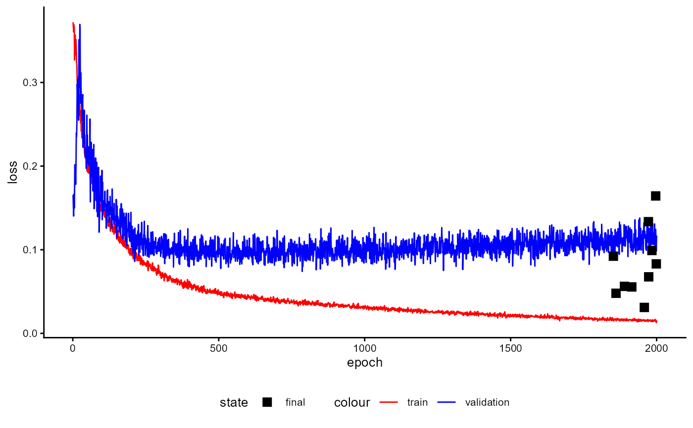
Figure 8: Training History of a Classifier during Performance Estimation Stage (loss)
Figure 8 shows the development of the loss averaged across all folds. In general, the training curve should decrease to zero. The curves for the validation and test samples should also decrease, but then start to increase after a certain point. The rectangles indicate the state of the model selected as the best during a fold.
Since there are some measures that provide a better post-hoc analysis than the loss, you can request further plots. The following plot shows the development of the average iota for all categories/classes.
classifier$plot_training_history(
final_training = FALSE,
pl_step = NULL,
measure = "avg_iota",
ind_best_model = FALSE,
ind_selected_model = TRUE,
x_min = NULL,
x_max = NULL,
y_min = NULL,
y_max = NULL,
add_min_max = FALSE,
text_size = 10
)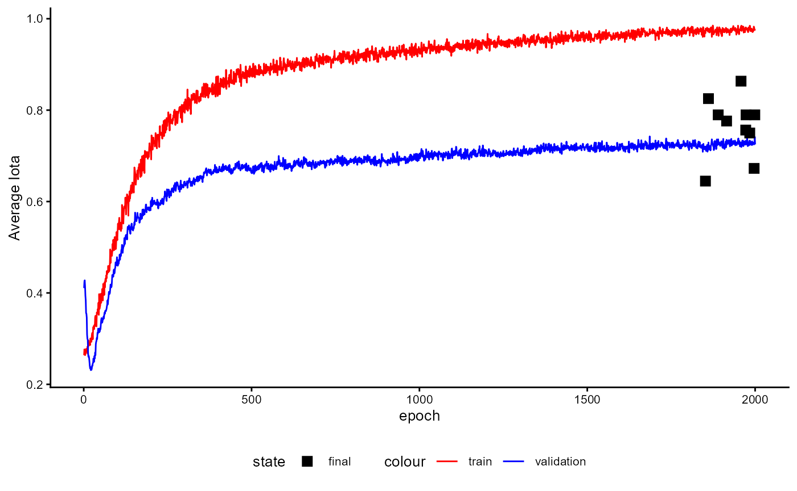
Figure 9: Training History of a Classifier during Performance Estimation Stage (iota)
The average iota ranges between 0 and 1 and indicates how well the predictions represent the true values. Higher values indicate better performance. Since measures such as average iota are based on discrete values that can fluctuate significantly, you can plot a smoothed version of average iota, which is more precise.
classifier$plot_training_history(
final_training = FALSE,
pl_step = NULL,
measure = "s_avg_iota",
ind_best_model = FALSE,
ind_selected_model = TRUE,
x_min = NULL,
x_max = NULL,
y_min = NULL,
y_max = NULL,
add_min_max = FALSE,
text_size = 10
)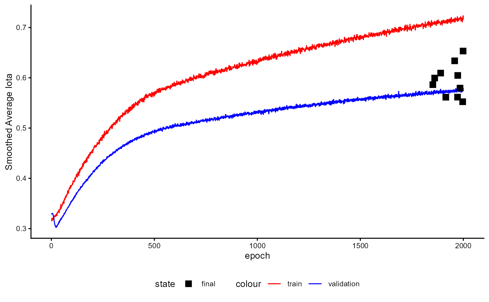
Figure 10: Training History of a Classifier during Performance Estimation Stage (smoothed iota)
To view the final training stage, set final_training to
TRUE, as shown in the following figures.
classifier$plot_training_history(
final_training = TRUE,
pl_step = NULL,
measure = "loss",
ind_best_model = FALSE,
ind_selected_model = TRUE,
x_min = NULL,
x_max = NULL,
y_min = NULL,
y_max = NULL,
add_min_max = FALSE,
text_size = 10
)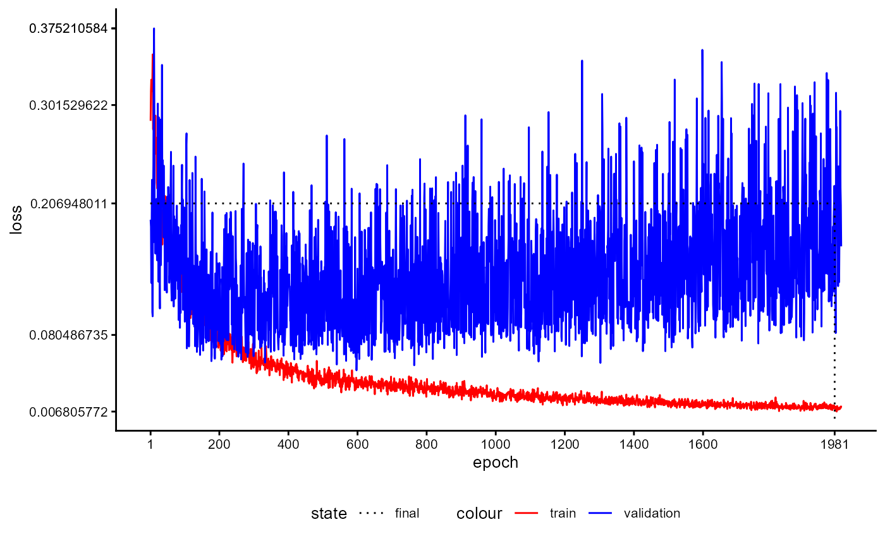
Figure 11: Training History of a Classifier during Final Training Stage (loss)
The dotted line indicates the final model state. Please note that this state is not always the one with the lowest validation loss value, because the best model is selected by applying several criteria in a hierarchical order. The first criterion is the model’s performance in terms of the smoothed average iota The second criterion is the loss.
classifier$plot_training_history(
final_training = TRUE,
pl_step = NULL,
measure = "avg_iota",
ind_best_model = FALSE,
ind_selected_model = TRUE,
x_min = NULL,
x_max = NULL,
y_min = NULL,
y_max = NULL,
add_min_max = FALSE,
text_size = 10
)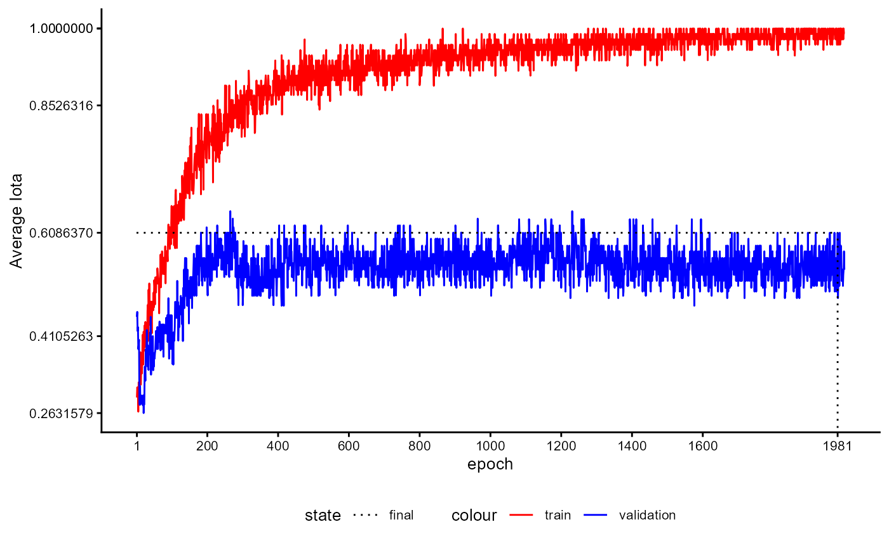
Figure 12: Training History of a Classifier during Final Training Stage (iota)
classifier$plot_training_history(
final_training = TRUE,
pl_step = NULL,
measure = "s_avg_iota",
ind_best_model = FALSE,
ind_selected_model = TRUE,
x_min = NULL,
x_max = NULL,
y_min = NULL,
y_max = NULL,
add_min_max = FALSE,
text_size = 10
)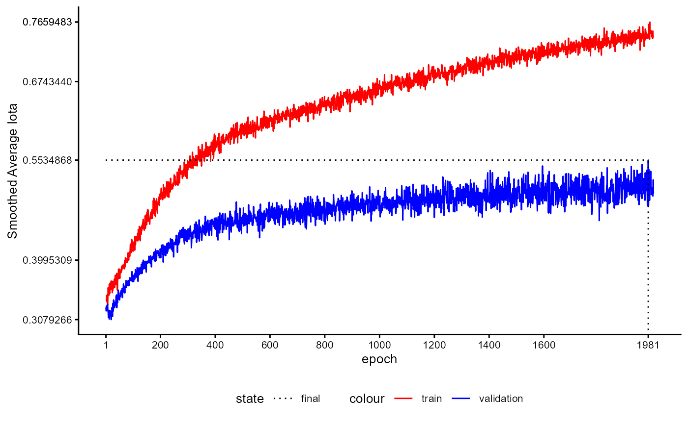
Figure 13: Training History of a Classifier during Final Training Stage (smoothed iota)
To gain a deeper insight into the training process, you can request a
plot visualising the learning rate calculation. Please note that this
plot is only available if you have set either lr_rate or
lr_min to 0.0.
classifier$plot_learning_rate()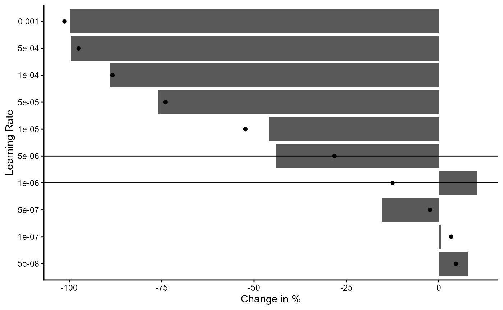
Figure 14: Analysis of Different Learning Rates
The bars in the plot show the percentage increase or decrease in loss compared to the initial loss. The values express the percentage change from the initial loss. A decrease is desirable. The points on the plot show a smoothed distribution of the loss. All calculations for selecting good maximum and minimum learning rates are based on the smoothed data. The automatic calculation selects the learning rate from the range of learning rates that leads to the greatest decrease in loss. The maximum learning rate is set at the point where the decrease in loss turns. The minimum learning rate is set to the rate that results in the smallest reduction in loss. Depending on the learning rate scheduler, other points may be chosen.
6.3 Performance Evaluation
Once training is complete, you can evaluate the performance of the classifier. For each fold, the classifier is applied to the test sample and the results are compared to the true categories/classes. As the test sample is never part of the training set, all performance measures provide a more realistic idea of the classifier’s performance.
To help researchers judge the quality of the predictions, aifeducation uses several measures and concepts from content analysis. These are:
- Iota Concept of the Second Generation (Berding & Pargmann 2022).
- Krippendorff’s Alpha (Krippendorff 2019).
- Percentage Agreement.
- Gwet’s AC1/AC2 (Gwet 2014).
- Kendall’s coefficient of concordance W.
- Cohen’s Kappa unweighted (Cohen 1960).
- Cohen’s Kappa with equal weights (Cohen 1968).
- Cohen’s Kappa with squared weights (Cohen 1968).
- Fleiss’ Kappa for multiple raters without exact estimation (Fleiss 1971).
You can access the mean values across all folds via
reliability$test_metric_mean. In our example, this would
be:
classifier$reliability$test_metric_mean
#> iota_index min_iota2 avg_iota2
#> 0.7013834 0.5922619 0.6938563
#> max_iota2 min_alpha avg_alpha
#> 0.7954506 0.6720238 0.8022024
#> max_alpha static_iota_index dynamic_iota_index
#> 0.9323810 0.4210983 0.6002906
#> kalpha_nominal kalpha_ordinal kendall
#> 0.6146634 0.6146634 0.8148692
#> c_kappa_unweighted c_kappa_linear c_kappa_squared
#> 0.6172775 0.6172775 0.6172775
#> kappa_fleiss percentage_agreement balanced_accuracy
#> 0.6058579 0.8393281 0.8022024
#> gwet_ac1_nominal gwet_ac2_linear gwet_ac2_quadratic
#> 0.7232124 0.7232124 0.7232124
#> avg_precision avg_recall avg_f1
#> 0.8351736 0.8022024 0.8029290An addition, standard measures from machine learning are reported. These are
- Precision
- Recall
- F1-Score
You can access these values as follows:
classifier$reliability$standard_measures_mean
#> precision recall f1
#> neg 0.8057359 0.6910714 0.7224603
#> pos 0.8646114 0.9133333 0.8833976To analyse the quality of the training across all folds, you can request an additional box plot. The figure below shows the performance that the classifier achieved.
classifier$plot_reliability_distribution(measures="all")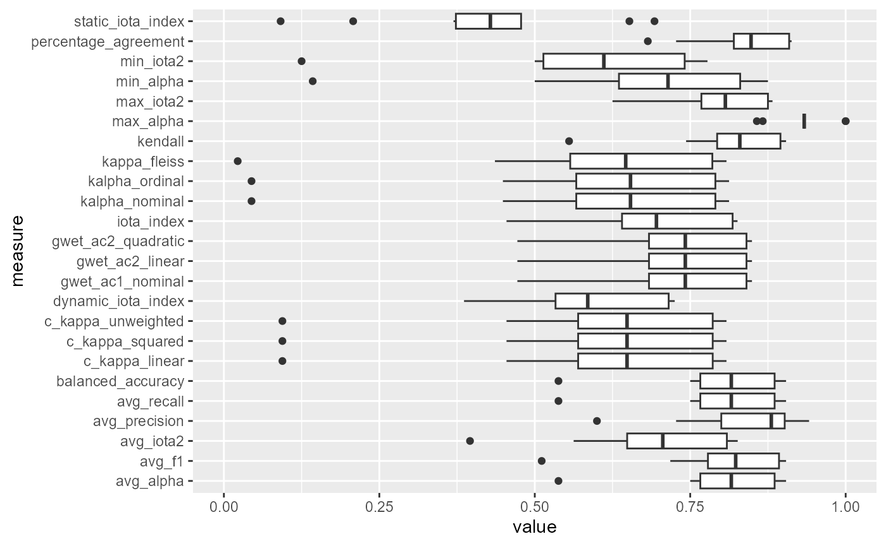
Figure 15: Box Plot of Performance Measures
Finally, you can plot a coding stream scheme to show how cases in different classes are labelled.
classifier$plot_coding_stream()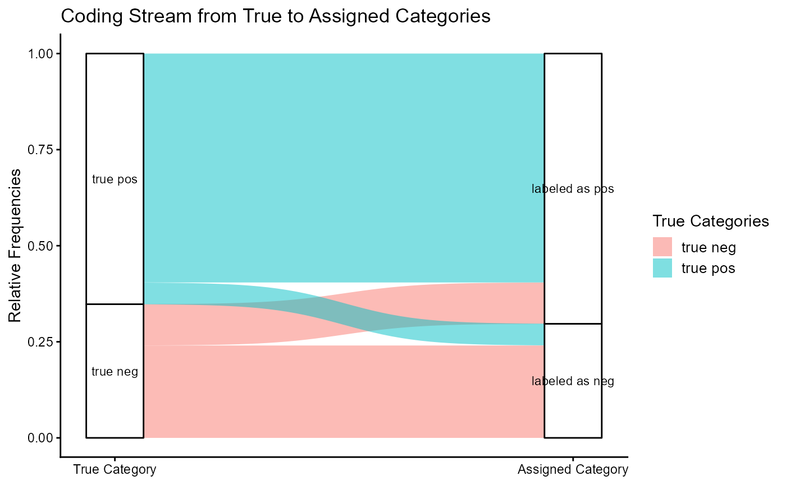
Figure 16: Coding Stream of the Classifier
Evaluating the performance of a classifier is a complex task that goes beyond the scope of this vignette. If you would like to delve deeper into this topic, we recommend consulting the cited literature on content analysis and machine learning.
6.4 Sustainability
If the classifier was trained with an active sustainability tracker,
you can retrieve sustainability information by calling
classifier$get_sustainability_data().
# We use t() to improve the readability of the table
t(classifier$get_sustainability_data())
#> [,1]
#> sustainability_tracked "TRUE"
#> date "2026-09-19 06:22:20"
#> task NA
#> sustainability_data.duration_sec "1055.522"
#> sustainability_data.co2eq_kg "0.00793332"
#> sustainability_data.cpu_energy_kwh "0.01245909"
#> sustainability_data.gpu_energy_kwh "0.005434489"
#> sustainability_data.ram_energy_kwh "0.002931519"
#> sustainability_data.total_energy_kwh "0.0208251"
#> technical.tracker "codecarbon"
#> technical.py_package_version "3.2.2"
#> technical.cpu_count "12"
#> technical.cpu_model "12th Gen Intel(R) Core(TM) i5-12400F"
#> technical.gpu_count "1"
#> technical.gpu_model "1 x NVIDIA GeForce RTX 4070"
#> technical.ram_total_size "15.84258"
#> region.country_name "Germany"
#> region.country_iso_code "DEU"
#> region.region NA6.5 Saving and Loading a Classifier
The saving and loading process follows the same pattern as for the
other objects. aifeducation. You can save the classifier by
calling the save_to_disk function. In our example, this
might look like this:
save_to_disk(
object = classifier,
dir_path = "examples",
folder_name = "cls_imdb_movie_reviews"
)The classifier is saved to
examples/cls_imdb_movie_reviews. To load the model call
load_from_disk.
classifier <- load_from_disk("examples/cls_imdb_movie_reviews")6.6 Predicting New Data
If you would like to apply your classifier to new data, two steps are necessary. First, you must transform the raw text into a numerical representation using exactly the same text embedding model that was used to train your classifier (see Section 4). In the case of our example classifier, we use our BERT model.
# If our model is not loaded
tem <- load_from_disk("examples/eurobert_te_model")
# Create a numerical representation of the text
review_embeddings <- tem$embed_large(
text_dataset = data_set_reviews_text,
trace = TRUE
)
#> Calculating Embeddings 10.00 % (1|10) done ETA: 0000::00::15Calculating Embeddings 20.00 % (2|10) done ETA: 0000::00::12Calculating Embeddings 30.00 % (3|10) done ETA: 0000::00::10Calculating Embeddings 40.00 % (4|10) done ETA: 0000::00::08Calculating Embeddings 50.00 % (5|10) done ETA: 0000::00::07Calculating Embeddings 60.00 % (6|10) done ETA: 0000::00::05Calculating Embeddings 70.00 % (7|10) done ETA: 0000::00::04Calculating Embeddings 80.00 % (8|10) done ETA: 0000::00::03Calculating Embeddings 90.00 % (9|10) done ETA: 0000::00::01Calculating Embeddings 100.00 % (10|10) done ETA: 0000::00::00To transform raw text into a numeric representation, simply pass the
text to the embed_large method of the loaded model. The raw
text should be an object of the class LargeDataSetForText.
To create such a data set, please refer to Section 2.
The resulting object can then be passed to the predict
method of our classifier to obtain predictions together with an estimate
of certainty for each class/category.
# If your classifier is not loaded
classifier <- load_from_disk("examples/cls_imdb_movie_reviews")
# predict the classes of new texts
predicted_categories <- classifier$predict(
newdata = review_embeddings,
batch_size = 32
)
# Show predicted categories
head(predicted_categories)
#> neg pos expected_category
#> 11329 0.4203428 0.57965720 pos
#> 10460 0.8388274 0.16117263 neg
#> 10536 0.9406573 0.05934272 neg
#> 12035 0.9056520 0.09434797 neg
#> 7267 0.4405586 0.55944151 pos
#> 4761 0.8755952 0.12440486 neg
# Count frequencies
table(predicted_categories$expected_category)
#>
#> neg pos
#> 90 210Once the prediction has been made by the classifier, the estimated
categories/classes are stored as ‘predicted_categories’. This object is
a data.frame containing text IDs in the rows and the
probabilities of the different categories/classes in the columns. The
final column, named ‘expected_category’, represents the category
assigned to a text with the highest probability.
These estimates can be used in further analyses employing common methods from the educational and social sciences, such as correlation analysis, regression analysis, structural equation modelling, latent class analysis, and analysis of variance.
Now you are ready to to use aifeducation.
7 Feature Extractors
7.1 Introduction
Another way to improve a model’s performance and/or computational speed is to apply a feature extractor. For example, the work of Ganesan et al. (2021) suggests that reducing the hidden size can improve a model’s accuracy. In aifeducation, a feature extractor is a model that reduces the number of features of given text embeddings before feeding the embeddings as input to a classifier.
The feature extractors implemented in aifeducation are auto-encoders that support sequential data and sequences of different lengths. The basic architecture of all the extractors is shown in the following figure.
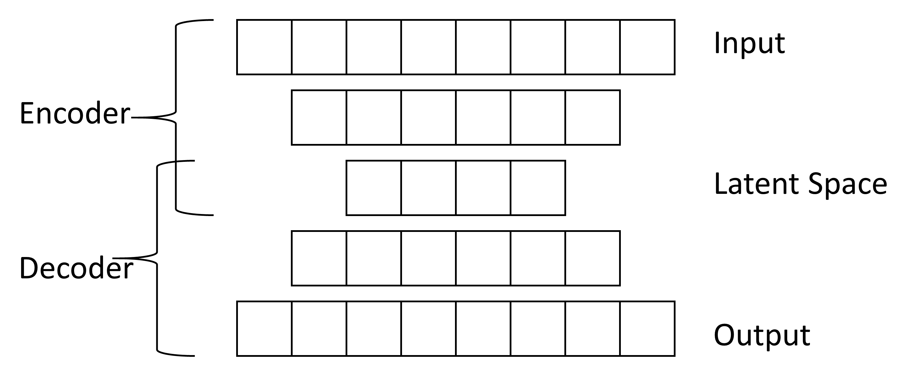
The learning objective of the feature extractors is to compress information by reducing the number of features to that of the latent space (Frochte 2019, p. 281). In the figure above, this would mean reducing the number of features from eight to four and storing as much information as possible from eight dimensions in four dimensions. Next, the extractor attempts to reconstruct the original information from the compressed latent space information (Frochte 2019, pp. 280–281). The information is then extended from four dimensions to eight. After training, the hidden representation of the latent space is used as a pre-processing of the original input.
7.2 Creation
In this example, we use the text embeddings from Section 4. You can create a feature extractor as follows:
feature_extractor <- TEFeatureExtractor$new()
feature_extractor$configure(
label = "Feature extractor for Text Embeddings",
text_embeddings = review_embeddings,
features = 384,
te_n_layers=4,
method = "Dense",
orthogonal_method = "matrix_exp",
noise_factor = 1e-4
)As with the other models, you can use the label for the
model’s label. The argument text_embeddings takes an object
of class EmbeddedText or
LargeDataSetForTextEmbeddings. This object connects your
feature extractor to a specific TextEmbeddingModel. In
other words, the feature extractor only works with embeddings from the
same TextEmbeddingModel.
The value of the features argument determines the number
of features for the compressed representation. The lower the number, the
higher the requested compression. This value corresponds to the features
of the latent space in the above figure. The te_n_layers
parameter allows you you to specify the number of layers in the encoder
and decoder parts of the model.
Use this value depending on the number of features of the underlying
text embedding model. You can request this value by calling the method
get_n_features as follows:
tem$get_n_features()
#> [1] 768A study by Takeshita et al. (2025) shows that randomly dropping 50% of the dimensions leads only to a minor decrease in the performance of classification tasks. Therefore, this value can be used as a rule of thumb when determining this parameter. We therefore reduce the number of features to 50% to 384.
The type of layer that the feature extractor should use is determined
by method. If you set the method to “LSTM”, all layers of
the model are long short-term memory layers. If you set the method to
“Dense”, all layers are standard dense layers.
Regardless of your choice, all models aim to generate a latent space in which the correlation of the features is zero. Thus, all features represent unique information. In addition, all methods except “LSTM” use an orthogonal parameterisation to prevent overfitting and apply parameter sharing. The opposite layers use the same parameters. For more details, please refer to Ranjan (2019).
You can use the noise_factor to add noise during
training, causing the feature extractor to perform as a denoising
auto-encoder. This can provide more robust generalisations. Since we
work with high batch sizes, we set this value to 1e-4.
7.3 Training
Training the extractor is identical to that for the other models.
aifeducation. Please note that the text embeddings provided to
data_embeddings must be generated using the same
TextEmbeddingModel as the embeddings provided when
configuring your model.
feature_extractor$train(
data_embeddings = review_embeddings,
data_val_size = 0.25,
sustain_track = TRUE,
sustain_iso_code = "DEU",
sustain_region = NULL,
sustain_interval = 15,
sustain_log_level = "error",
epochs = 8000,
batch_size = 128,
lr_rate = 0.0,
lr_min = 0.0,
lr_epochs = 30,
lr_scheduler = "Linear",
trace = TRUE,
ml_trace = 1,
optimizer = "AdamW",
amp = TRUE,
lr_warm_up_ratio = 0.10,
comp_use=TRUE,
comp_mode="reduce-overhead"
)
#> 2026-09-19 06:22:41 Start
#> Batch size is to big. Change batch size from 128 to 74.
#> 2026-09-19 06:22:41 Start Sustainability Tracking
#> 2026-09-19 06:22:41 Estimating Learning Rates
#> 2026-09-19 06:23:57 Set lr_rate to 5e-06 and lr_min to 1e-06.
#> 2026-09-19 07:06:09 Stop Sustainability Tracking
#> 2026-09-19 07:06:10 Training finishedIn this example, we use the same text embeddings that we use to train the classifier. It can be beneficial to use a larger sample of texts when training a
TEFeatureExtractorto improve performance and/or allow broader application of the feature extractor.
feature_extractor$plot_learning_rate()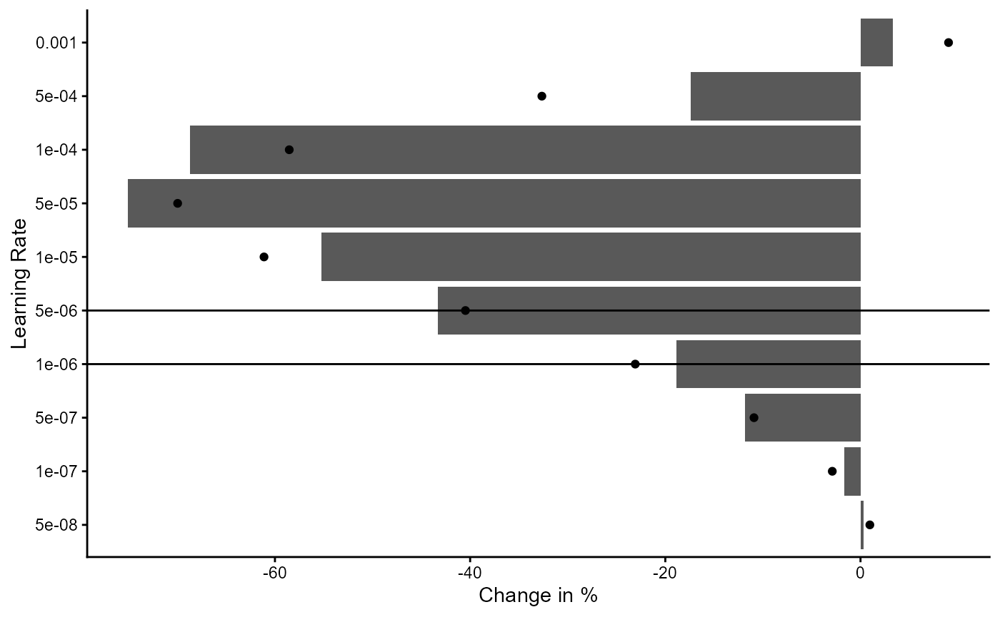
Figure 18: Analysis of Different Learning Rates
You can plot the model’s training history using:
feature_extractor$plot_training_history(
ind_best_model = TRUE
)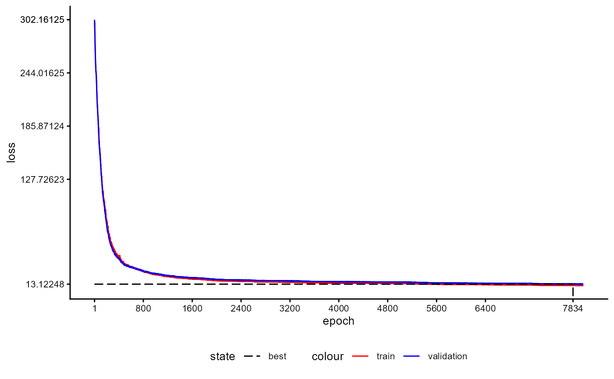
Figure 19: Training History of a Feature Extractor.
Calling print gives you a short summary of the
extractor.
print(feature_extractor)
#> Object : TEFeatureExtractor
#> ID : tefe_7EFzgxaW56XIsWvY
#> Label : Feature extractor for Text Embeddings
#> Configured : TRUE
#> Trained : TRUE
#> Times : 3
#> Features In : 768
#> Features Out: 384
#> Parameter : 1363968Let us investigate how the feature extractor decreased the correlation between the features. First we calculate the correlations of the uncompressed embeddings.
embeddings_converted=review_embeddings$convert_to_EmbeddedText()
correlations=embeddings_converted$calc_feature_correlation()
correlations$effect_sizes$mean
#> Mean
#> 0.5152205
correlations$effect_sizes$sd
#> [1] 0.2524989Now we calculate the compressed embeddings and estimate the correlation
embeddings_compressed=feature_extractor$extract_features_large(
review_embeddings,
batch_size = 32L
)
embeddings_compressed_converted=embeddings_compressed$convert_to_EmbeddedText()
correlations_compressed=embeddings_compressed_converted$calc_feature_correlation()
correlations_compressed$effect_sizes$mean
#> Mean
#> 0.09465684
correlations_compressed$effect_sizes$sd
#> [1] 0.1115881As you can see the correlation significantly decreased. That is, the feature dimension contain less overlapping information which may lead to a faster and/or better performance of a classifier. Lets try how training change in the following section.
7.4 Application
Once you have trained your feature extractor, you can use it with any
classifier. Simply pass the feature extractor to the
feature_extractor parameter during the classifier
configuration process. Please note that you now have to set the values
for feat_size and cls_pooling_features
depending on the number of features of the feature extractor, and
not depending on the number of features of the text embedding
model, since the aim of the feature extractor is to reduce this number.
feat_size should be equal to or less than the number of
features of the feature extractor, and cls_pooling_features
should be equal to or less than feat_size. For the
classifier described in Section 6, this would look like this:
classifier_with_fe <- TEClassifierSequential$new()
classifier_with_fe$configure(
label = "Classifier for Estimating a Postive or Negative Rating of Movie Reviews",
text_embeddings = review_embeddings,
feature_extractor = feature_extractor,
target_levels = c("neg", "pos"),
skip_connection_type = "ResidualGate",
cls_pooling_features = 20,
cls_pooling_type = "WeightedAverageTimes",
cls_head_type = "Regular",
cls_input_normalize="PowerNorm",
final_normalization_type="RMSNorm",
feat_act_fct = "None",
feat_size = 128,
feat_bias = FALSE,
feat_dropout = 0.05,
feat_parametrizations = "None",
feat_normalization_type = "RMSNorm",
ng_conv_act_fct = "GELU",
ng_conv_n_layers = 0,
ng_conv_ks_min = 1,
ng_conv_ks_max = 2,
ng_conv_bias = FALSE,
ng_conv_dropout = 0.40,
ng_conv_parametrizations = "None",
ng_conv_normalization_type = "RMSNorm",
ng_conv_residual_type = "ResidualGate",
dense_act_fct = "GELU",
dense_n_layers = 3,
dense_dropout = 0.40,
dense_bias = FALSE,
dense_parametrizations = "None",
dense_normalization_type = "RMSNorm",
dense_residual_type = "ResidualGate",
rec_act_fct = "Tanh",
rec_n_layers = 0,
rec_type = "GRU",
rec_bidirectional = FALSE,
rec_dropout = 0.2,
rec_bias = FALSE,
rec_parametrizations = "None",
rec_normalization_type = "RMSNorm",
rec_residual_type = "ResidualGate",
tf_act_fct = "SwiGLU",
tf_dense_dim = ceiling(2.67 * 384),
tf_n_layers = 0,
tf_dropout_rate_1 = 0.1,
tf_dropout_rate_2 = 0.3,
tf_attention_type = "MultiHead",
tf_positional_type = "absolute",
tf_num_heads = 4,
tf_bias = FALSE,
tf_parametrizations = "None",
tf_normalization_type = "RMSNorm",
tf_normalization_position = "Post",
tf_residual_type = "ResidualGate"
)That’s all. You can now use and train the classifier in the same way as before, without a feature extractor. You don’t even need to save and load the feature extractor manually. This is done automatically for all classifiers.
classifier_with_fe$train(
data_embeddings = review_embeddings,
data_targets = review_labels,
data_folds = 10,
data_val_size = 0.25,
loss_balance_class_weights = TRUE,
loss_balance_sequence_length = TRUE,
loss_cls_fct_name = "FocalLoss",
use_sc = TRUE,
sc_method = "knnor",
sc_min_k = 1,
sc_max_k = 10,
use_pl = FALSE,
pl_max_steps = 3,
pl_max = 1.00,
pl_anchor = 1.00,
pl_min = 0.00,
sustain_track = TRUE,
sustain_iso_code = "DEU",
sustain_region = NULL,
sustain_interval = 15,
sustain_log_level = "error",
epochs = 2000,
batch_size = 128,
trace = TRUE,
ml_trace = 1,
log_dir = NULL,
log_write_interval = 10,
n_cores = auto_n_cores(),
lr_rate = 0.0,
lr_min = 0.0,
lr_epochs = 30,
lr_scheduler = "Linear",
lr_warm_up_ratio = 0.10,
optimizer = "AdamW",
amp = TRUE,
comp_use=TRUE,
comp_mode="reduce-overhead"
)
#> Compress Embeddings 33.33 % (1|3) done ETA: 0000::00::00Compress Embeddings 66.67 % (2|3) done ETA: 0000::00::00Compress Embeddings 100.00 % (3|3) done ETA: 0000::00::00
#> 2026-09-19 07:06:17 Total Cases: 300 Labeled Cases: 225
#> Batch size is to big. Change batch size from 128 to 48.
#> 2026-09-19 07:06:19 Start
#> 2026-09-19 07:06:19 Start Sustainability Tracking
#> 2026-09-19 07:06:19 Estimating Learning Rates
#> 0.1000 % | ETA 0000::00::160.2000 % | ETA 0000::00::050.3000 % | ETA 0000::00::040.4000 % | ETA 0000::00::040.5000 % | ETA 0000::00::030.6000 % | ETA 0000::00::020.7000 % | ETA 0000::00::020.8000 % | ETA 0000::00::010.9000 % | ETA 0000::00::011.0000 % | ETA 0000::00::00
#> 2026-09-19 07:06:27 Set lr_rate to 5e-04 and lr_min to 1e-06.
#> 2026-09-19 07:06:27 | Iteration 1 from 10
#> 2026-09-19 07:06:27 | Iteration 1 from 10 | Generating synthetic cases
#> 2026-09-19 07:06:41 | Iteration 1 from 10 | Generating synthetic cases done
#> 2026-09-19 07:06:42 | Iteration 1 from 10 | Training
#> Compile model with cudagraphs.
#> 0.0005 % | Steps: 3 | Train Loss 0.325567 s_avg_iota 0.313 | Val Loss 0.258259 Best 0.258259 s_avg_iota 0.276 Best 0.276 | ELC: 1 | ETA 0000::44::420.0010 % | Steps: 3 | Train Loss 0.247231 s_avg_iota 0.318 | Val Loss 0.387056 Best 0.387056 s_avg_iota 0.280 Best 0.280 | ELC: 2 | ETA 0000::23::120.0015 % | Steps: 3 | Train Loss 0.226769 s_avg_iota 0.332 | Val Loss 0.311178 Best 0.311178 s_avg_iota 0.281 Best 0.281 | ELC: 3 | ETA 0000::15::570.0020 % | Steps: 3 | Train Loss 0.193495 s_avg_iota 0.330 | Val Loss 0.279441 Best 0.279441 s_avg_iota 0.297 Best 0.297 | ELC: 4 | ETA 0000::12::210.0025 % | Steps: 3 | Train Loss 0.211459 s_avg_iota 0.336 | Val Loss 0.213743 Best 0.213743 s_avg_iota 0.304 Best 0.304 | ELC: 5 | ETA 0000::10::100.0030 % | Steps: 3 | Train Loss 0.200593 s_avg_iota 0.345 | Val Loss 0.175776 Best 0.175776 s_avg_iota 0.313 Best 0.313 | ELC: 6 | ETA 0000::08::440.0035 % | Steps: 3 | Train Loss 0.195359 s_avg_iota 0.354 | Val Loss 0.133772 Best 0.133772 s_avg_iota 0.314 Best 0.314 | ELC: 7 | ETA 0000::07::420.0040 % | Steps: 3 | Train Loss 0.217193 s_avg_iota 0.343 | Val Loss 0.220109 Best 0.220109 s_avg_iota 0.315 Best 0.315 | ELC: 8 | ETA 0000::06::570.0045 % | Steps: 3 | Train Loss 0.189653 s_avg_iota 0.355 | Val Loss 0.243029 Best 0.243029 s_avg_iota 0.319 Best 0.319 | ELC: 9 | ETA 0000::06::210.0050 % | Steps: 3 | Train Loss 0.166830 s_avg_iota 0.363 | Val Loss 0.168690 Best 0.168690 s_avg_iota 0.330 Best 0.330 | ELC: 10 | ETA 0000::05::500.0055 % | Steps: 3 | Train Loss 0.178178 s_avg_iota 0.366 | Val Loss 0.178563 Best 0.178563 s_avg_iota 0.342 Best 0.342 | ELC: 11 | ETA 0000::05::260.0060 % | Steps: 3 | Train Loss 0.164535 s_avg_iota 0.385 | Val Loss 0.167480 Best 0.167480 s_avg_iota 0.349 Best 0.349 | ELC: 12 | ETA 0000::05::050.0065 % | Steps: 3 | Train Loss 0.154473 s_avg_iota 0.395 | Val Loss 0.164321 Best 0.164321 s_avg_iota 0.352 Best 0.352 | ELC: 13 | ETA 0000::04::470.0070 % | Steps: 3 | Train Loss 0.118952 s_avg_iota 0.403 | Val Loss 0.216900 Best 0.216900 s_avg_iota 0.356 Best 0.356 | ELC: 14 | ETA 0000::04::320.0075 % | Steps: 3 | Train Loss 0.126324 s_avg_iota 0.410 | Val Loss 0.265287 Best 0.265287 s_avg_iota 0.365 Best 0.365 | ELC: 15 | ETA 0000::04::190.0080 % | Steps: 3 | Train Loss 0.124210 s_avg_iota 0.421 | Val Loss 0.175820 Best 0.175820 s_avg_iota 0.365 Best 0.365 | ELC: 16 | ETA 0000::04::080.0085 % | Steps: 3 | Train Loss 0.090611 s_avg_iota 0.427 | Val Loss 0.211860 Best 0.211860 s_avg_iota 0.371 Best 0.371 | ELC: 17 | ETA 0000::03::580.0090 % | Steps: 3 | Train Loss 0.104776 s_avg_iota 0.440 | Val Loss 0.302485 Best 0.302485 s_avg_iota 0.372 Best 0.372 | ELC: 18 | ETA 0000::03::490.0095 % | Steps: 3 | Train Loss 0.102435 s_avg_iota 0.449 | Val Loss 0.377053 Best 0.377053 s_avg_iota 0.375 Best 0.375 | ELC: 19 | ETA 0000::03::400.0100 % | Steps: 3 | Train Loss 0.104558 s_avg_iota 0.463 | Val Loss 0.473775 Best 0.473775 s_avg_iota 0.378 Best 0.378 | ELC: 20 | ETA 0000::03::330.0105 % | Steps: 3 | Train Loss 0.071497 s_avg_iota 0.487 | Val Loss 0.199401 Best 0.199401 s_avg_iota 0.386 Best 0.386 | ELC: 21 | ETA 0000::03::270.0110 % | Steps: 3 | Train Loss 0.065627 s_avg_iota 0.503 | Val Loss 0.157949 Best 0.157949 s_avg_iota 0.399 Best 0.399 | ELC: 22 | ETA 0000::03::200.0115 % | Steps: 3 | Train Loss 0.074811 s_avg_iota 0.507 | Val Loss 0.263701 Best 0.263701 s_avg_iota 0.401 Best 0.401 | ELC: 23 | ETA 0000::03::150.0120 % | Steps: 3 | Train Loss 0.059128 s_avg_iota 0.547 | Val Loss 0.261204 Best 0.261204 s_avg_iota 0.413 Best 0.413 | ELC: 24 | ETA 0000::03::100.0125 % | Steps: 3 | Train Loss 0.062935 s_avg_iota 0.549 | Val Loss 0.242185 Best 0.261204 s_avg_iota 0.413 Best 0.413 | ELC: 24 | ETA 0000::03::050.0130 % | Steps: 3 | Train Loss 0.053540 s_avg_iota 0.558 | Val Loss 0.122271 Best 0.122271 s_avg_iota 0.420 Best 0.420 | ELC: 26 | ETA 0000::03::010.0135 % | Steps: 3 | Train Loss 0.040835 s_avg_iota 0.580 | Val Loss 0.273029 Best 0.273029 s_avg_iota 0.427 Best 0.427 | ELC: 27 | ETA 0000::02::570.0140 % | Steps: 3 | Train Loss 0.047576 s_avg_iota 0.605 | Val Loss 0.228812 Best 0.228812 s_avg_iota 0.453 Best 0.453 | ELC: 28 | ETA 0000::02::540.0145 % | Steps: 3 | Train Loss 0.050873 s_avg_iota 0.612 | Val Loss 0.171329 Best 0.228812 s_avg_iota 0.451 Best 0.453 | ELC: 28 | ETA 0000::02::500.0150 % | Steps: 3 | Train Loss 0.042137 s_avg_iota 0.623 | Val Loss 0.281847 Best 0.281847 s_avg_iota 0.471 Best 0.471 | ELC: 30 | ETA 0000::02::470.0155 % | Steps: 3 | Train Loss 0.037810 s_avg_iota 0.635 | Val Loss 0.136248 Best 0.281847 s_avg_iota 0.466 Best 0.471 | ELC: 30 | ETA 0000::02::440.0160 % | Steps: 3 | Train Loss 0.034289 s_avg_iota 0.647 | Val Loss 0.122665 Best 0.122665 s_avg_iota 0.494 Best 0.494 | ELC: 32 | ETA 0000::02::410.0165 % | Steps: 3 | Train Loss 0.019487 s_avg_iota 0.691 | Val Loss 0.222727 Best 0.222727 s_avg_iota 0.503 Best 0.503 | ELC: 33 | ETA 0000::02::380.0170 % | Steps: 3 | Train Loss 0.029880 s_avg_iota 0.674 | Val Loss 0.258254 Best 0.258254 s_avg_iota 0.509 Best 0.509 | ELC: 34 | ETA 0000::02::360.0175 % | Steps: 3 | Train Loss 0.023942 s_avg_iota 0.686 | Val Loss 0.247044 Best 0.247044 s_avg_iota 0.526 Best 0.526 | ELC: 35 | ETA 0000::02::340.0180 % | Steps: 3 | Train Loss 0.021076 s_avg_iota 0.698 | Val Loss 0.156619 Best 0.247044 s_avg_iota 0.517 Best 0.526 | ELC: 35 | ETA 0000::02::310.0185 % | Steps: 3 | Train Loss 0.023737 s_avg_iota 0.711 | Val Loss 0.191114 Best 0.191114 s_avg_iota 0.530 Best 0.530 | ELC: 37 | ETA 0000::02::290.0190 % | Steps: 3 | Train Loss 0.039345 s_avg_iota 0.677 | Val Loss 0.220870 Best 0.191114 s_avg_iota 0.526 Best 0.530 | ELC: 37 | ETA 0000::02::270.0195 % | Steps: 3 | Train Loss 0.018946 s_avg_iota 0.730 | Val Loss 0.201988 Best 0.191114 s_avg_iota 0.529 Best 0.530 | ELC: 37 | ETA 0000::02::250.0200 % | Steps: 3 | Train Loss 0.017160 s_avg_iota 0.739 | Val Loss 0.336462 Best 0.191114 s_avg_iota 0.527 Best 0.530 | ELC: 37 | ETA 0000::02::230.0205 % | Steps: 3 | Train Loss 0.039690 s_avg_iota 0.707 | Val Loss 0.293432 Best 0.293432 s_avg_iota 0.540 Best 0.540 | ELC: 41 | ETA 0000::02::210.0210 % | Steps: 3 | Train Loss 0.021721 s_avg_iota 0.737 | Val Loss 0.180823 Best 0.293432 s_avg_iota 0.538 Best 0.540 | ELC: 41 | ETA 0000::02::190.0215 % | Steps: 3 | Train Loss 0.017860 s_avg_iota 0.731 | Val Loss 0.217122 Best 0.217122 s_avg_iota 0.567 Best 0.567 | ELC: 43 | ETA 0000::02::180.0220 % | Steps: 3 | Train Loss 0.011209 s_avg_iota 0.749 | Val Loss 0.218742 Best 0.217122 s_avg_iota 0.542 Best 0.567 | ELC: 43 | ETA 0000::02::160.0225 % | Steps: 3 | Train Loss 0.029987 s_avg_iota 0.747 | Val Loss 0.385840 Best 0.217122 s_avg_iota 0.563 Best 0.567 | ELC: 43 | ETA 0000::02::140.0230 % | Steps: 3 | Train Loss 0.015809 s_avg_iota 0.756 | Val Loss 0.430444 Best 0.217122 s_avg_iota 0.550 Best 0.567 | ELC: 43 | ETA 0000::02::130.0235 % | Steps: 3 | Train Loss 0.018389 s_avg_iota 0.752 | Val Loss 0.293827 Best 0.217122 s_avg_iota 0.559 Best 0.567 | ELC: 43 | ETA 0000::02::110.0240 % | Steps: 3 | Train Loss 0.016952 s_avg_iota 0.766 | Val Loss 0.490582 Best 0.217122 s_avg_iota 0.563 Best 0.567 | ELC: 43 | ETA 0000::02::100.0245 % | Steps: 3 | Train Loss 0.014704 s_avg_iota 0.769 | Val Loss 0.314978 Best 0.217122 s_avg_iota 0.562 Best 0.567 | ELC: 43 | ETA 0000::02::080.0250 % | Steps: 3 | Train Loss 0.005359 s_avg_iota 0.813 | Val Loss 0.335251 Best 0.335251 s_avg_iota 0.572 Best 0.572 | ELC: 50 | ETA 0000::02::070.0255 % | Steps: 3 | Train Loss 0.005205 s_avg_iota 0.817 | Val Loss 0.405588 Best 0.335251 s_avg_iota 0.568 Best 0.572 | ELC: 50 | ETA 0000::02::060.0260 % | Steps: 3 | Train Loss 0.012600 s_avg_iota 0.780 | Val Loss 0.388203 Best 0.388203 s_avg_iota 0.576 Best 0.576 | ELC: 52 | ETA 0000::02::050.0265 % | Steps: 3 | Train Loss 0.012509 s_avg_iota 0.794 | Val Loss 0.334255 Best 0.388203 s_avg_iota 0.575 Best 0.576 | ELC: 52 | ETA 0000::02::030.0270 % | Steps: 3 | Train Loss 0.010264 s_avg_iota 0.818 | Val Loss 0.459004 Best 0.388203 s_avg_iota 0.554 Best 0.576 | ELC: 52 | ETA 0000::02::020.0275 % | Steps: 3 | Train Loss 0.008888 s_avg_iota 0.818 | Val Loss 0.207473 Best 0.207473 s_avg_iota 0.598 Best 0.598 | ELC: 55 | ETA 0000::02::010.0280 % | Steps: 3 | Train Loss 0.009767 s_avg_iota 0.818 | Val Loss 0.352838 Best 0.207473 s_avg_iota 0.562 Best 0.598 | ELC: 55 | ETA 0000::02::000.0285 % | Steps: 3 | Train Loss 0.028172 s_avg_iota 0.779 | Val Loss 0.459285 Best 0.207473 s_avg_iota 0.587 Best 0.598 | ELC: 55 | ETA 0000::01::590.0290 % | Steps: 3 | Train Loss 0.004369 s_avg_iota 0.846 | Val Loss 0.385836 Best 0.207473 s_avg_iota 0.594 Best 0.598 | ELC: 55 | ETA 0000::01::580.0295 % | Steps: 3 | Train Loss 0.009316 s_avg_iota 0.837 | Val Loss 0.514513 Best 0.207473 s_avg_iota 0.551 Best 0.598 | ELC: 55 | ETA 0000::01::570.0300 % | Steps: 3 | Train Loss 0.005563 s_avg_iota 0.836 | Val Loss 0.525550 Best 0.207473 s_avg_iota 0.585 Best 0.598 | ELC: 55 | ETA 0000::01::550.0305 % | Steps: 3 | Train Loss 0.003932 s_avg_iota 0.847 | Val Loss 0.346534 Best 0.346534 s_avg_iota 0.602 Best 0.602 | ELC: 61 | ETA 0000::01::550.0310 % | Steps: 3 | Train Loss 0.005241 s_avg_iota 0.860 | Val Loss 0.588859 Best 0.346534 s_avg_iota 0.565 Best 0.602 | ELC: 61 | ETA 0000::01::540.0315 % | Steps: 3 | Train Loss 0.003767 s_avg_iota 0.871 | Val Loss 0.493196 Best 0.346534 s_avg_iota 0.576 Best 0.602 | ELC: 61 | ETA 0000::01::530.0320 % | Steps: 3 | Train Loss 0.007335 s_avg_iota 0.839 | Val Loss 0.364758 Best 0.346534 s_avg_iota 0.548 Best 0.602 | ELC: 61 | ETA 0000::01::520.0325 % | Steps: 3 | Train Loss 0.033449 s_avg_iota 0.809 | Val Loss 0.441056 Best 0.346534 s_avg_iota 0.517 Best 0.602 | ELC: 61 | ETA 0000::01::510.0330 % | Steps: 3 | Train Loss 0.012960 s_avg_iota 0.856 | Val Loss 0.620070 Best 0.346534 s_avg_iota 0.589 Best 0.602 | ELC: 61 | ETA 0000::01::500.0335 % | Steps: 3 | Train Loss 0.021795 s_avg_iota 0.829 | Val Loss 0.760078 Best 0.346534 s_avg_iota 0.587 Best 0.602 | ELC: 61 | ETA 0000::01::500.0340 % | Steps: 3 | Train Loss 0.002334 s_avg_iota 0.875 | Val Loss 0.550478 Best 0.346534 s_avg_iota 0.550 Best 0.602 | ELC: 61 | ETA 0000::01::490.0345 % | Steps: 3 | Train Loss 0.005899 s_avg_iota 0.861 | Val Loss 0.290639 Best 0.346534 s_avg_iota 0.596 Best 0.602 | ELC: 61 | ETA 0000::01::480.0350 % | Steps: 3 | Train Loss 0.011134 s_avg_iota 0.841 | Val Loss 0.498612 Best 0.346534 s_avg_iota 0.584 Best 0.602 | ELC: 61 | ETA 0000::01::470.0355 % | Steps: 3 | Train Loss 0.022841 s_avg_iota 0.853 | Val Loss 0.688411 Best 0.346534 s_avg_iota 0.534 Best 0.602 | ELC: 61 | ETA 0000::01::470.0360 % | Steps: 3 | Train Loss 0.011186 s_avg_iota 0.833 | Val Loss 0.566028 Best 0.346534 s_avg_iota 0.595 Best 0.602 | ELC: 61 | ETA 0000::01::460.0365 % | Steps: 3 | Train Loss 0.014584 s_avg_iota 0.835 | Val Loss 0.399997 Best 0.346534 s_avg_iota 0.582 Best 0.602 | ELC: 61 | ETA 0000::01::450.0370 % | Steps: 3 | Train Loss 0.001528 s_avg_iota 0.881 | Val Loss 0.261085 Best 0.346534 s_avg_iota 0.538 Best 0.602 | ELC: 61 | ETA 0000::01::450.0375 % | Steps: 3 | Train Loss 0.006956 s_avg_iota 0.853 | Val Loss 0.541692 Best 0.346534 s_avg_iota 0.590 Best 0.602 | ELC: 61 | ETA 0000::01::440.0380 % | Steps: 3 | Train Loss 0.005285 s_avg_iota 0.861 | Val Loss 0.497081 Best 0.346534 s_avg_iota 0.600 Best 0.602 | ELC: 61 | ETA 0000::01::440.0385 % | Steps: 3 | Train Loss 0.002858 s_avg_iota 0.865 | Val Loss 0.474670 Best 0.346534 s_avg_iota 0.559 Best 0.602 | ELC: 61 | ETA 0000::01::430.0390 % | Steps: 3 | Train Loss 0.005370 s_avg_iota 0.875 | Val Loss 0.531372 Best 0.346534 s_avg_iota 0.591 Best 0.602 | ELC: 61 | ETA 0000::01::430.0395 % | Steps: 3 | Train Loss 0.001501 s_avg_iota 0.888 | Val Loss 0.750594 Best 0.346534 s_avg_iota 0.572 Best 0.602 | ELC: 61 | ETA 0000::01::420.0400 % | Steps: 3 | Train Loss 0.002493 s_avg_iota 0.880 | Val Loss 0.354890 Best 0.346534 s_avg_iota 0.559 Best 0.602 | ELC: 61 | ETA 0000::01::410.0405 % | Steps: 3 | Train Loss 0.002084 s_avg_iota 0.890 | Val Loss 0.329274 Best 0.329274 s_avg_iota 0.607 Best 0.607 | ELC: 81 | ETA 0000::01::410.0410 % | Steps: 3 | Train Loss 0.000743 s_avg_iota 0.908 | Val Loss 0.475215 Best 0.329274 s_avg_iota 0.585 Best 0.607 | ELC: 81 | ETA 0000::01::410.0415 % | Steps: 3 | Train Loss 0.000963 s_avg_iota 0.905 | Val Loss 0.943917 Best 0.329274 s_avg_iota 0.587 Best 0.607 | ELC: 81 | ETA 0000::01::400.0420 % | Steps: 3 | Train Loss 0.001118 s_avg_iota 0.905 | Val Loss 0.512932 Best 0.329274 s_avg_iota 0.586 Best 0.607 | ELC: 81 | ETA 0000::01::400.0425 % | Steps: 3 | Train Loss 0.000505 s_avg_iota 0.924 | Val Loss 0.611943 Best 0.329274 s_avg_iota 0.589 Best 0.607 | ELC: 81 | ETA 0000::01::390.0430 % | Steps: 3 | Train Loss 0.000539 s_avg_iota 0.919 | Val Loss 0.453665 Best 0.453665 s_avg_iota 0.614 Best 0.614 | ELC: 86 | ETA 0000::01::390.0435 % | Steps: 3 | Train Loss 0.001010 s_avg_iota 0.923 | Val Loss 0.380744 Best 0.453665 s_avg_iota 0.576 Best 0.614 | ELC: 86 | ETA 0000::01::380.0440 % | Steps: 3 | Train Loss 0.001492 s_avg_iota 0.915 | Val Loss 0.804446 Best 0.453665 s_avg_iota 0.573 Best 0.614 | ELC: 86 | ETA 0000::01::380.0445 % | Steps: 3 | Train Loss 0.000973 s_avg_iota 0.919 | Val Loss 0.507284 Best 0.507284 s_avg_iota 0.626 Best 0.626 | ELC: 89 | ETA 0000::01::370.0450 % | Steps: 3 | Train Loss 0.003092 s_avg_iota 0.897 | Val Loss 0.891272 Best 0.507284 s_avg_iota 0.579 Best 0.626 | ELC: 89 | ETA 0000::01::370.0455 % | Steps: 3 | Train Loss 0.001624 s_avg_iota 0.922 | Val Loss 0.406190 Best 0.507284 s_avg_iota 0.565 Best 0.626 | ELC: 89 | ETA 0000::01::360.0460 % | Steps: 3 | Train Loss 0.004273 s_avg_iota 0.918 | Val Loss 0.567716 Best 0.507284 s_avg_iota 0.625 Best 0.626 | ELC: 89 | ETA 0000::01::360.0465 % | Steps: 3 | Train Loss 0.002705 s_avg_iota 0.908 | Val Loss 0.420365 Best 0.507284 s_avg_iota 0.609 Best 0.626 | ELC: 89 | ETA 0000::01::360.0470 % | Steps: 3 | Train Loss 0.000719 s_avg_iota 0.924 | Val Loss 0.383628 Best 0.507284 s_avg_iota 0.561 Best 0.626 | ELC: 89 | ETA 0000::01::350.0475 % | Steps: 3 | Train Loss 0.002610 s_avg_iota 0.891 | Val Loss 0.382195 Best 0.507284 s_avg_iota 0.621 Best 0.626 | ELC: 89 | ETA 0000::01::350.0480 % | Steps: 3 | Train Loss 0.000932 s_avg_iota 0.913 | Val Loss 0.541106 Best 0.507284 s_avg_iota 0.601 Best 0.626 | ELC: 89 | ETA 0000::01::340.0485 % | Steps: 3 | Train Loss 0.002276 s_avg_iota 0.909 | Val Loss 0.424074 Best 0.507284 s_avg_iota 0.621 Best 0.626 | ELC: 89 | ETA 0000::01::340.0490 % | Steps: 3 | Train Loss 0.002097 s_avg_iota 0.906 | Val Loss 0.583323 Best 0.507284 s_avg_iota 0.591 Best 0.626 | ELC: 89 | ETA 0000::01::340.0495 % | Steps: 3 | Train Loss 0.000381 s_avg_iota 0.933 | Val Loss 0.508543 Best 0.507284 s_avg_iota 0.617 Best 0.626 | ELC: 89 | ETA 0000::01::330.0500 % | Steps: 3 | Train Loss 0.002421 s_avg_iota 0.910 | Val Loss 0.737279 Best 0.507284 s_avg_iota 0.597 Best 0.626 | ELC: 89 | ETA 0000::01::330.0505 % | Steps: 3 | Train Loss 0.000234 s_avg_iota 0.935 | Val Loss 0.548838 Best 0.507284 s_avg_iota 0.540 Best 0.626 | ELC: 89 | ETA 0000::01::330.0510 % | Steps: 3 | Train Loss 0.001373 s_avg_iota 0.916 | Val Loss 0.604051 Best 0.507284 s_avg_iota 0.566 Best 0.626 | ELC: 89 | ETA 0000::01::320.0515 % | Steps: 3 | Train Loss 0.001867 s_avg_iota 0.915 | Val Loss 0.616162 Best 0.616162 s_avg_iota 0.626 Best 0.626 | ELC: 103 | ETA 0000::01::320.0520 % | Steps: 3 | Train Loss 0.004107 s_avg_iota 0.891 | Val Loss 0.864650 Best 0.616162 s_avg_iota 0.594 Best 0.626 | ELC: 103 | ETA 0000::01::320.0525 % | Steps: 3 | Train Loss 0.000642 s_avg_iota 0.935 | Val Loss 0.787985 Best 0.616162 s_avg_iota 0.547 Best 0.626 | ELC: 103 | ETA 0000::01::310.0530 % | Steps: 3 | Train Loss 0.001767 s_avg_iota 0.924 | Val Loss 0.468574 Best 0.616162 s_avg_iota 0.599 Best 0.626 | ELC: 103 | ETA 0000::01::310.0535 % | Steps: 3 | Train Loss 0.000441 s_avg_iota 0.932 | Val Loss 0.671645 Best 0.671645 s_avg_iota 0.641 Best 0.641 | ELC: 107 | ETA 0000::01::310.0540 % | Steps: 3 | Train Loss 0.000723 s_avg_iota 0.923 | Val Loss 0.409148 Best 0.671645 s_avg_iota 0.622 Best 0.641 | ELC: 107 | ETA 0000::01::310.0545 % | Steps: 3 | Train Loss 0.000634 s_avg_iota 0.926 | Val Loss 0.337357 Best 0.671645 s_avg_iota 0.622 Best 0.641 | ELC: 107 | ETA 0000::01::300.0550 % | Steps: 3 | Train Loss 0.001788 s_avg_iota 0.918 | Val Loss 0.694417 Best 0.671645 s_avg_iota 0.601 Best 0.641 | ELC: 107 | ETA 0000::01::300.0555 % | Steps: 3 | Train Loss 0.001449 s_avg_iota 0.919 | Val Loss 0.598787 Best 0.671645 s_avg_iota 0.591 Best 0.641 | ELC: 107 | ETA 0000::01::300.0560 % | Steps: 3 | Train Loss 0.000794 s_avg_iota 0.936 | Val Loss 0.543763 Best 0.671645 s_avg_iota 0.622 Best 0.641 | ELC: 107 | ETA 0000::01::300.0565 % | Steps: 3 | Train Loss 0.001490 s_avg_iota 0.918 | Val Loss 0.699169 Best 0.699169 s_avg_iota 0.645 Best 0.645 | ELC: 113 | ETA 0000::01::290.0570 % | Steps: 3 | Train Loss 0.001272 s_avg_iota 0.932 | Val Loss 0.376843 Best 0.699169 s_avg_iota 0.631 Best 0.645 | ELC: 113 | ETA 0000::01::290.0575 % | Steps: 3 | Train Loss 0.001143 s_avg_iota 0.927 | Val Loss 0.822975 Best 0.699169 s_avg_iota 0.603 Best 0.645 | ELC: 113 | ETA 0000::01::290.0580 % | Steps: 3 | Train Loss 0.000363 s_avg_iota 0.940 | Val Loss 0.596752 Best 0.699169 s_avg_iota 0.606 Best 0.645 | ELC: 113 | ETA 0000::01::280.0585 % | Steps: 3 | Train Loss 0.000840 s_avg_iota 0.928 | Val Loss 0.371377 Best 0.699169 s_avg_iota 0.605 Best 0.645 | ELC: 113 | ETA 0000::01::280.0590 % | Steps: 3 | Train Loss 0.000141 s_avg_iota 0.946 | Val Loss 0.405826 Best 0.699169 s_avg_iota 0.622 Best 0.645 | ELC: 113 | ETA 0000::01::280.0595 % | Steps: 3 | Train Loss 0.000289 s_avg_iota 0.941 | Val Loss 0.847263 Best 0.699169 s_avg_iota 0.589 Best 0.645 | ELC: 113 | ETA 0000::01::280.0600 % | Steps: 3 | Train Loss 0.000312 s_avg_iota 0.946 | Val Loss 0.755691 Best 0.699169 s_avg_iota 0.595 Best 0.645 | ELC: 113 | ETA 0000::01::270.0605 % | Steps: 3 | Train Loss 0.000414 s_avg_iota 0.936 | Val Loss 0.576769 Best 0.699169 s_avg_iota 0.603 Best 0.645 | ELC: 113 | ETA 0000::01::270.0610 % | Steps: 3 | Train Loss 0.000134 s_avg_iota 0.949 | Val Loss 0.550325 Best 0.699169 s_avg_iota 0.626 Best 0.645 | ELC: 113 | ETA 0000::01::270.0615 % | Steps: 3 | Train Loss 0.000257 s_avg_iota 0.945 | Val Loss 0.381645 Best 0.699169 s_avg_iota 0.615 Best 0.645 | ELC: 113 | ETA 0000::01::270.0620 % | Steps: 3 | Train Loss 0.000096 s_avg_iota 0.951 | Val Loss 0.583179 Best 0.699169 s_avg_iota 0.588 Best 0.645 | ELC: 113 | ETA 0000::01::260.0625 % | Steps: 3 | Train Loss 0.000062 s_avg_iota 0.954 | Val Loss 0.668706 Best 0.699169 s_avg_iota 0.591 Best 0.645 | ELC: 113 | ETA 0000::01::260.0630 % | Steps: 3 | Train Loss 0.000255 s_avg_iota 0.949 | Val Loss 0.503315 Best 0.699169 s_avg_iota 0.602 Best 0.645 | ELC: 113 | ETA 0000::01::260.0635 % | Steps: 3 | Train Loss 0.000145 s_avg_iota 0.955 | Val Loss 0.643371 Best 0.699169 s_avg_iota 0.601 Best 0.645 | ELC: 113 | ETA 0000::01::260.0640 % | Steps: 3 | Train Loss 0.000107 s_avg_iota 0.951 | Val Loss 0.482373 Best 0.699169 s_avg_iota 0.617 Best 0.645 | ELC: 113 | ETA 0000::01::250.0645 % | Steps: 3 | Train Loss 0.000088 s_avg_iota 0.956 | Val Loss 0.656066 Best 0.699169 s_avg_iota 0.591 Best 0.645 | ELC: 113 | ETA 0000::01::250.0650 % | Steps: 3 | Train Loss 0.000072 s_avg_iota 0.954 | Val Loss 0.633601 Best 0.699169 s_avg_iota 0.617 Best 0.645 | ELC: 113 | ETA 0000::01::250.0655 % | Steps: 3 | Train Loss 0.000068 s_avg_iota 0.960 | Val Loss 0.695891 Best 0.699169 s_avg_iota 0.596 Best 0.645 | ELC: 113 | ETA 0000::01::250.0660 % | Steps: 3 | Train Loss 0.000085 s_avg_iota 0.955 | Val Loss 0.927756 Best 0.699169 s_avg_iota 0.596 Best 0.645 | ELC: 113 | ETA 0000::01::250.0665 % | Steps: 3 | Train Loss 0.000101 s_avg_iota 0.960 | Val Loss 0.881320 Best 0.699169 s_avg_iota 0.593 Best 0.645 | ELC: 113 | ETA 0000::01::240.0670 % | Steps: 3 | Train Loss 0.000228 s_avg_iota 0.955 | Val Loss 0.424649 Best 0.699169 s_avg_iota 0.580 Best 0.645 | ELC: 113 | ETA 0000::01::240.0675 % | Steps: 3 | Train Loss 0.000036 s_avg_iota 0.965 | Val Loss 0.699562 Best 0.699169 s_avg_iota 0.580 Best 0.645 | ELC: 113 | ETA 0000::01::240.0680 % | Steps: 3 | Train Loss 0.000144 s_avg_iota 0.955 | Val Loss 0.944691 Best 0.699169 s_avg_iota 0.600 Best 0.645 | ELC: 113 | ETA 0000::01::240.0685 % | Steps: 3 | Train Loss 0.000295 s_avg_iota 0.961 | Val Loss 0.528608 Best 0.699169 s_avg_iota 0.582 Best 0.645 | ELC: 113 | ETA 0000::01::230.0690 % | Steps: 3 | Train Loss 0.000060 s_avg_iota 0.961 | Val Loss 0.401534 Best 0.699169 s_avg_iota 0.582 Best 0.645 | ELC: 113 | ETA 0000::01::230.0695 % | Steps: 3 | Train Loss 0.000142 s_avg_iota 0.958 | Val Loss 0.966453 Best 0.699169 s_avg_iota 0.596 Best 0.645 | ELC: 113 | ETA 0000::01::230.0700 % | Steps: 3 | Train Loss 0.000141 s_avg_iota 0.959 | Val Loss 0.788333 Best 0.699169 s_avg_iota 0.596 Best 0.645 | ELC: 113 | ETA 0000::01::230.0705 % | Steps: 3 | Train Loss 0.000062 s_avg_iota 0.962 | Val Loss 1.034297 Best 0.699169 s_avg_iota 0.596 Best 0.645 | ELC: 113 | ETA 0000::01::230.0710 % | Steps: 3 | Train Loss 0.000063 s_avg_iota 0.959 | Val Loss 0.747246 Best 0.699169 s_avg_iota 0.622 Best 0.645 | ELC: 113 | ETA 0000::01::220.0715 % | Steps: 3 | Train Loss 0.000057 s_avg_iota 0.963 | Val Loss 0.329567 Best 0.699169 s_avg_iota 0.621 Best 0.645 | ELC: 113 | ETA 0000::01::220.0720 % | Steps: 3 | Train Loss 0.000141 s_avg_iota 0.958 | Val Loss 0.470561 Best 0.699169 s_avg_iota 0.596 Best 0.645 | ELC: 113 | ETA 0000::01::220.0725 % | Steps: 3 | Train Loss 0.000085 s_avg_iota 0.962 | Val Loss 1.126216 Best 0.699169 s_avg_iota 0.590 Best 0.645 | ELC: 113 | ETA 0000::01::220.0730 % | Steps: 3 | Train Loss 0.000086 s_avg_iota 0.961 | Val Loss 0.665219 Best 0.699169 s_avg_iota 0.584 Best 0.645 | ELC: 113 | ETA 0000::01::220.0735 % | Steps: 3 | Train Loss 0.000111 s_avg_iota 0.963 | Val Loss 0.913591 Best 0.699169 s_avg_iota 0.585 Best 0.645 | ELC: 113 | ETA 0000::01::210.0740 % | Steps: 3 | Train Loss 0.000058 s_avg_iota 0.965 | Val Loss 0.758436 Best 0.699169 s_avg_iota 0.591 Best 0.645 | ELC: 113 | ETA 0000::01::210.0745 % | Steps: 3 | Train Loss 0.000041 s_avg_iota 0.967 | Val Loss 0.545755 Best 0.699169 s_avg_iota 0.631 Best 0.645 | ELC: 113 | ETA 0000::01::210.0750 % | Steps: 3 | Train Loss 0.000082 s_avg_iota 0.966 | Val Loss 0.543140 Best 0.699169 s_avg_iota 0.615 Best 0.645 | ELC: 113 | ETA 0000::01::210.0755 % | Steps: 3 | Train Loss 0.000061 s_avg_iota 0.962 | Val Loss 0.482408 Best 0.699169 s_avg_iota 0.620 Best 0.645 | ELC: 113 | ETA 0000::01::210.0760 % | Steps: 3 | Train Loss 0.000101 s_avg_iota 0.964 | Val Loss 0.797504 Best 0.699169 s_avg_iota 0.623 Best 0.645 | ELC: 113 | ETA 0000::01::200.0765 % | Steps: 3 | Train Loss 0.000065 s_avg_iota 0.964 | Val Loss 0.632579 Best 0.699169 s_avg_iota 0.591 Best 0.645 | ELC: 113 | ETA 0000::01::200.0770 % | Steps: 3 | Train Loss 0.000078 s_avg_iota 0.964 | Val Loss 0.554257 Best 0.699169 s_avg_iota 0.622 Best 0.645 | ELC: 113 | ETA 0000::01::200.0775 % | Steps: 3 | Train Loss 0.000162 s_avg_iota 0.959 | Val Loss 0.929883 Best 0.699169 s_avg_iota 0.615 Best 0.645 | ELC: 113 | ETA 0000::01::200.0780 % | Steps: 3 | Train Loss 0.000030 s_avg_iota 0.969 | Val Loss 0.860714 Best 0.699169 s_avg_iota 0.619 Best 0.645 | ELC: 113 | ETA 0000::01::200.0785 % | Steps: 3 | Train Loss 0.000045 s_avg_iota 0.964 | Val Loss 0.512724 Best 0.699169 s_avg_iota 0.603 Best 0.645 | ELC: 113 | ETA 0000::01::200.0790 % | Steps: 3 | Train Loss 0.000026 s_avg_iota 0.969 | Val Loss 0.561005 Best 0.699169 s_avg_iota 0.634 Best 0.645 | ELC: 113 | ETA 0000::01::190.0795 % | Steps: 3 | Train Loss 0.000052 s_avg_iota 0.964 | Val Loss 0.935228 Best 0.699169 s_avg_iota 0.585 Best 0.645 | ELC: 113 | ETA 0000::01::190.0800 % | Steps: 3 | Train Loss 0.000039 s_avg_iota 0.969 | Val Loss 0.682783 Best 0.699169 s_avg_iota 0.574 Best 0.645 | ELC: 113 | ETA 0000::01::190.0805 % | Steps: 3 | Train Loss 0.000049 s_avg_iota 0.969 | Val Loss 0.623419 Best 0.699169 s_avg_iota 0.581 Best 0.645 | ELC: 113 | ETA 0000::01::190.0810 % | Steps: 3 | Train Loss 0.000073 s_avg_iota 0.964 | Val Loss 0.781881 Best 0.699169 s_avg_iota 0.593 Best 0.645 | ELC: 113 | ETA 0000::01::190.0815 % | Steps: 3 | Train Loss 0.000059 s_avg_iota 0.964 | Val Loss 0.484302 Best 0.699169 s_avg_iota 0.595 Best 0.645 | ELC: 113 | ETA 0000::01::190.0820 % | Steps: 3 | Train Loss 0.000054 s_avg_iota 0.967 | Val Loss 0.660794 Best 0.699169 s_avg_iota 0.606 Best 0.645 | ELC: 113 | ETA 0000::01::180.0825 % | Steps: 3 | Train Loss 0.000050 s_avg_iota 0.964 | Val Loss 0.898203 Best 0.699169 s_avg_iota 0.605 Best 0.645 | ELC: 113 | ETA 0000::01::180.0830 % | Steps: 3 | Train Loss 0.000062 s_avg_iota 0.967 | Val Loss 1.195923 Best 0.699169 s_avg_iota 0.590 Best 0.645 | ELC: 113 | ETA 0000::01::180.0835 % | Steps: 3 | Train Loss 0.000178 s_avg_iota 0.962 | Val Loss 0.940325 Best 0.699169 s_avg_iota 0.591 Best 0.645 | ELC: 113 | ETA 0000::01::180.0840 % | Steps: 3 | Train Loss 0.000084 s_avg_iota 0.963 | Val Loss 0.312227 Best 0.699169 s_avg_iota 0.635 Best 0.645 | ELC: 113 | ETA 0000::01::180.0845 % | Steps: 3 | Train Loss 0.000038 s_avg_iota 0.967 | Val Loss 0.807628 Best 0.699169 s_avg_iota 0.583 Best 0.645 | ELC: 113 | ETA 0000::01::180.0850 % | Steps: 3 | Train Loss 0.000056 s_avg_iota 0.967 | Val Loss 1.046406 Best 0.699169 s_avg_iota 0.581 Best 0.645 | ELC: 113 | ETA 0000::01::180.0855 % | Steps: 3 | Train Loss 0.000269 s_avg_iota 0.960 | Val Loss 0.586150 Best 0.699169 s_avg_iota 0.610 Best 0.645 | ELC: 113 | ETA 0000::01::170.0860 % | Steps: 3 | Train Loss 0.000053 s_avg_iota 0.965 | Val Loss 0.811264 Best 0.699169 s_avg_iota 0.595 Best 0.645 | ELC: 113 | ETA 0000::01::170.0865 % | Steps: 3 | Train Loss 0.000072 s_avg_iota 0.964 | Val Loss 0.856852 Best 0.699169 s_avg_iota 0.602 Best 0.645 | ELC: 113 | ETA 0000::01::170.0870 % | Steps: 3 | Train Loss 0.000074 s_avg_iota 0.963 | Val Loss 0.632222 Best 0.699169 s_avg_iota 0.624 Best 0.645 | ELC: 113 | ETA 0000::01::170.0875 % | Steps: 3 | Train Loss 0.000597 s_avg_iota 0.958 | Val Loss 0.733183 Best 0.699169 s_avg_iota 0.607 Best 0.645 | ELC: 113 | ETA 0000::01::170.0880 % | Steps: 3 | Train Loss 0.000023 s_avg_iota 0.972 | Val Loss 0.693836 Best 0.699169 s_avg_iota 0.601 Best 0.645 | ELC: 113 | ETA 0000::01::170.0885 % | Steps: 3 | Train Loss 0.000040 s_avg_iota 0.967 | Val Loss 0.937234 Best 0.699169 s_avg_iota 0.585 Best 0.645 | ELC: 113 | ETA 0000::01::160.0890 % | Steps: 3 | Train Loss 0.000086 s_avg_iota 0.965 | Val Loss 0.687125 Best 0.699169 s_avg_iota 0.574 Best 0.645 | ELC: 113 | ETA 0000::01::160.0895 % | Steps: 3 | Train Loss 0.000237 s_avg_iota 0.962 | Val Loss 0.953294 Best 0.699169 s_avg_iota 0.561 Best 0.645 | ELC: 113 | ETA 0000::01::160.0900 % | Steps: 3 | Train Loss 0.000313 s_avg_iota 0.961 | Val Loss 0.618174 Best 0.699169 s_avg_iota 0.562 Best 0.645 | ELC: 113 | ETA 0000::01::160.0905 % | Steps: 3 | Train Loss 0.000168 s_avg_iota 0.967 | Val Loss 0.550190 Best 0.699169 s_avg_iota 0.585 Best 0.645 | ELC: 113 | ETA 0000::01::160.0910 % | Steps: 3 | Train Loss 0.000061 s_avg_iota 0.964 | Val Loss 0.958065 Best 0.699169 s_avg_iota 0.600 Best 0.645 | ELC: 113 | ETA 0000::01::160.0915 % | Steps: 3 | Train Loss 0.000035 s_avg_iota 0.967 | Val Loss 0.850737 Best 0.699169 s_avg_iota 0.594 Best 0.645 | ELC: 113 | ETA 0000::01::160.0920 % | Steps: 3 | Train Loss 0.000121 s_avg_iota 0.964 | Val Loss 0.699741 Best 0.699169 s_avg_iota 0.614 Best 0.645 | ELC: 113 | ETA 0000::01::150.0925 % | Steps: 3 | Train Loss 0.000084 s_avg_iota 0.966 | Val Loss 0.420437 Best 0.420437 s_avg_iota 0.652 Best 0.652 | ELC: 185 | ETA 0000::01::150.0930 % | Steps: 3 | Train Loss 0.000101 s_avg_iota 0.965 | Val Loss 0.630882 Best 0.420437 s_avg_iota 0.593 Best 0.652 | ELC: 185 | ETA 0000::01::150.0935 % | Steps: 3 | Train Loss 0.000045 s_avg_iota 0.967 | Val Loss 0.805119 Best 0.420437 s_avg_iota 0.589 Best 0.652 | ELC: 185 | ETA 0000::01::150.0940 % | Steps: 3 | Train Loss 0.000039 s_avg_iota 0.969 | Val Loss 0.721911 Best 0.420437 s_avg_iota 0.583 Best 0.652 | ELC: 185 | ETA 0000::01::150.0945 % | Steps: 3 | Train Loss 0.000078 s_avg_iota 0.966 | Val Loss 0.885556 Best 0.420437 s_avg_iota 0.583 Best 0.652 | ELC: 185 | ETA 0000::01::150.0950 % | Steps: 3 | Train Loss 0.000041 s_avg_iota 0.971 | Val Loss 0.817423 Best 0.420437 s_avg_iota 0.601 Best 0.652 | ELC: 185 | ETA 0000::01::150.0955 % | Steps: 3 | Train Loss 0.000067 s_avg_iota 0.968 | Val Loss 0.964046 Best 0.420437 s_avg_iota 0.580 Best 0.652 | ELC: 185 | ETA 0000::01::140.0960 % | Steps: 3 | Train Loss 0.000030 s_avg_iota 0.972 | Val Loss 0.674425 Best 0.420437 s_avg_iota 0.571 Best 0.652 | ELC: 185 | ETA 0000::01::140.0965 % | Steps: 3 | Train Loss 0.000070 s_avg_iota 0.968 | Val Loss 0.704383 Best 0.420437 s_avg_iota 0.573 Best 0.652 | ELC: 185 | ETA 0000::01::140.0970 % | Steps: 3 | Train Loss 0.000086 s_avg_iota 0.966 | Val Loss 0.601035 Best 0.420437 s_avg_iota 0.582 Best 0.652 | ELC: 185 | ETA 0000::01::140.0975 % | Steps: 3 | Train Loss 0.000062 s_avg_iota 0.964 | Val Loss 0.723492 Best 0.420437 s_avg_iota 0.596 Best 0.652 | ELC: 185 | ETA 0000::01::140.0980 % | Steps: 3 | Train Loss 0.000042 s_avg_iota 0.968 | Val Loss 0.606826 Best 0.420437 s_avg_iota 0.609 Best 0.652 | ELC: 185 | ETA 0000::01::140.0985 % | Steps: 3 | Train Loss 0.000151 s_avg_iota 0.969 | Val Loss 0.518897 Best 0.420437 s_avg_iota 0.592 Best 0.652 | ELC: 185 | ETA 0000::01::140.0990 % | Steps: 3 | Train Loss 0.000029 s_avg_iota 0.972 | Val Loss 0.662672 Best 0.420437 s_avg_iota 0.605 Best 0.652 | ELC: 185 | ETA 0000::01::140.0995 % | Steps: 3 | Train Loss 0.000093 s_avg_iota 0.964 | Val Loss 0.735053 Best 0.420437 s_avg_iota 0.588 Best 0.652 | ELC: 185 | ETA 0000::01::130.1000 % | Steps: 3 | Train Loss 0.000048 s_avg_iota 0.970 | Val Loss 0.961393 Best 0.420437 s_avg_iota 0.597 Best 0.652 | ELC: 185 | ETA 0000::01::130.1005 % | Steps: 3 | Train Loss 0.000066 s_avg_iota 0.968 | Val Loss 0.965616 Best 0.420437 s_avg_iota 0.611 Best 0.652 | ELC: 185 | ETA 0000::01::130.1010 % | Steps: 3 | Train Loss 0.000087 s_avg_iota 0.964 | Val Loss 0.759585 Best 0.420437 s_avg_iota 0.579 Best 0.652 | ELC: 185 | ETA 0000::01::130.1015 % | Steps: 3 | Train Loss 0.000042 s_avg_iota 0.971 | Val Loss 0.753903 Best 0.420437 s_avg_iota 0.596 Best 0.652 | ELC: 185 | ETA 0000::01::130.1020 % | Steps: 3 | Train Loss 0.000073 s_avg_iota 0.967 | Val Loss 0.739462 Best 0.420437 s_avg_iota 0.576 Best 0.652 | ELC: 185 | ETA 0000::01::130.1025 % | Steps: 3 | Train Loss 0.000027 s_avg_iota 0.972 | Val Loss 0.752765 Best 0.420437 s_avg_iota 0.630 Best 0.652 | ELC: 185 | ETA 0000::01::130.1030 % | Steps: 3 | Train Loss 0.000024 s_avg_iota 0.972 | Val Loss 0.677917 Best 0.420437 s_avg_iota 0.580 Best 0.652 | ELC: 185 | ETA 0000::01::130.1035 % | Steps: 3 | Train Loss 0.000048 s_avg_iota 0.969 | Val Loss 0.916215 Best 0.420437 s_avg_iota 0.571 Best 0.652 | ELC: 185 | ETA 0000::01::120.1040 % | Steps: 3 | Train Loss 0.000136 s_avg_iota 0.967 | Val Loss 1.044595 Best 0.420437 s_avg_iota 0.573 Best 0.652 | ELC: 185 | ETA 0000::01::120.1045 % | Steps: 3 | Train Loss 0.000039 s_avg_iota 0.970 | Val Loss 0.634594 Best 0.420437 s_avg_iota 0.578 Best 0.652 | ELC: 185 | ETA 0000::01::120.1050 % | Steps: 3 | Train Loss 0.000059 s_avg_iota 0.964 | Val Loss 1.056195 Best 0.420437 s_avg_iota 0.590 Best 0.652 | ELC: 185 | ETA 0000::01::120.1055 % | Steps: 3 | Train Loss 0.000064 s_avg_iota 0.966 | Val Loss 0.387074 Best 0.420437 s_avg_iota 0.623 Best 0.652 | ELC: 185 | ETA 0000::01::120.1060 % | Steps: 3 | Train Loss 0.000035 s_avg_iota 0.970 | Val Loss 0.658005 Best 0.420437 s_avg_iota 0.609 Best 0.652 | ELC: 185 | ETA 0000::01::120.1065 % | Steps: 3 | Train Loss 0.000106 s_avg_iota 0.966 | Val Loss 0.887457 Best 0.420437 s_avg_iota 0.591 Best 0.652 | ELC: 185 | ETA 0000::01::120.1070 % | Steps: 3 | Train Loss 0.000243 s_avg_iota 0.965 | Val Loss 0.640284 Best 0.420437 s_avg_iota 0.585 Best 0.652 | ELC: 185 | ETA 0000::01::120.1075 % | Steps: 3 | Train Loss 0.000104 s_avg_iota 0.966 | Val Loss 0.804464 Best 0.420437 s_avg_iota 0.567 Best 0.652 | ELC: 185 | ETA 0000::01::120.1080 % | Steps: 3 | Train Loss 0.000011 s_avg_iota 0.976 | Val Loss 0.497551 Best 0.420437 s_avg_iota 0.592 Best 0.652 | ELC: 185 | ETA 0000::01::110.1085 % | Steps: 3 | Train Loss 0.000076 s_avg_iota 0.964 | Val Loss 0.720292 Best 0.420437 s_avg_iota 0.568 Best 0.652 | ELC: 185 | ETA 0000::01::110.1090 % | Steps: 3 | Train Loss 0.000119 s_avg_iota 0.969 | Val Loss 0.542795 Best 0.420437 s_avg_iota 0.554 Best 0.652 | ELC: 185 | ETA 0000::01::110.1095 % | Steps: 3 | Train Loss 0.000039 s_avg_iota 0.971 | Val Loss 0.841753 Best 0.420437 s_avg_iota 0.575 Best 0.652 | ELC: 185 | ETA 0000::01::110.1100 % | Steps: 3 | Train Loss 0.000047 s_avg_iota 0.970 | Val Loss 0.975413 Best 0.420437 s_avg_iota 0.604 Best 0.652 | ELC: 185 | ETA 0000::01::110.1105 % | Steps: 3 | Train Loss 0.000018 s_avg_iota 0.973 | Val Loss 0.474967 Best 0.420437 s_avg_iota 0.581 Best 0.652 | ELC: 185 | ETA 0000::01::110.1110 % | Steps: 3 | Train Loss 0.000055 s_avg_iota 0.971 | Val Loss 0.606579 Best 0.420437 s_avg_iota 0.618 Best 0.652 | ELC: 185 | ETA 0000::01::110.1115 % | Steps: 3 | Train Loss 0.000102 s_avg_iota 0.970 | Val Loss 0.490179 Best 0.420437 s_avg_iota 0.608 Best 0.652 | ELC: 185 | ETA 0000::01::110.1120 % | Steps: 3 | Train Loss 0.000020 s_avg_iota 0.973 | Val Loss 0.380561 Best 0.420437 s_avg_iota 0.618 Best 0.652 | ELC: 185 | ETA 0000::01::110.1125 % | Steps: 3 | Train Loss 0.000037 s_avg_iota 0.970 | Val Loss 0.413695 Best 0.420437 s_avg_iota 0.615 Best 0.652 | ELC: 185 | ETA 0000::01::110.1130 % | Steps: 3 | Train Loss 0.000046 s_avg_iota 0.974 | Val Loss 0.803700 Best 0.420437 s_avg_iota 0.599 Best 0.652 | ELC: 185 | ETA 0000::01::100.1135 % | Steps: 3 | Train Loss 0.000018 s_avg_iota 0.976 | Val Loss 1.023872 Best 0.420437 s_avg_iota 0.584 Best 0.652 | ELC: 185 | ETA 0000::01::100.1140 % | Steps: 3 | Train Loss 0.000013 s_avg_iota 0.973 | Val Loss 1.018911 Best 0.420437 s_avg_iota 0.579 Best 0.652 | ELC: 185 | ETA 0000::01::100.1145 % | Steps: 3 | Train Loss 0.000034 s_avg_iota 0.971 | Val Loss 0.948069 Best 0.420437 s_avg_iota 0.580 Best 0.652 | ELC: 185 | ETA 0000::01::100.1150 % | Steps: 3 | Train Loss 0.000019 s_avg_iota 0.974 | Val Loss 1.208222 Best 0.420437 s_avg_iota 0.572 Best 0.652 | ELC: 185 | ETA 0000::01::100.1155 % | Steps: 3 | Train Loss 0.000237 s_avg_iota 0.964 | Val Loss 0.800429 Best 0.420437 s_avg_iota 0.585 Best 0.652 | ELC: 185 | ETA 0000::01::100.1160 % | Steps: 3 | Train Loss 0.000034 s_avg_iota 0.969 | Val Loss 0.773232 Best 0.420437 s_avg_iota 0.606 Best 0.652 | ELC: 185 | ETA 0000::01::100.1165 % | Steps: 3 | Train Loss 0.000023 s_avg_iota 0.971 | Val Loss 0.836825 Best 0.420437 s_avg_iota 0.634 Best 0.652 | ELC: 185 | ETA 0000::01::100.1170 % | Steps: 3 | Train Loss 0.000060 s_avg_iota 0.968 | Val Loss 0.478163 Best 0.420437 s_avg_iota 0.616 Best 0.652 | ELC: 185 | ETA 0000::01::100.1175 % | Steps: 3 | Train Loss 0.000026 s_avg_iota 0.971 | Val Loss 0.663464 Best 0.420437 s_avg_iota 0.615 Best 0.652 | ELC: 185 | ETA 0000::01::100.1180 % | Steps: 3 | Train Loss 0.000045 s_avg_iota 0.968 | Val Loss 0.666855 Best 0.420437 s_avg_iota 0.611 Best 0.652 | ELC: 185 | ETA 0000::01::090.1185 % | Steps: 3 | Train Loss 0.000029 s_avg_iota 0.971 | Val Loss 0.403282 Best 0.420437 s_avg_iota 0.634 Best 0.652 | ELC: 185 | ETA 0000::01::090.1190 % | Steps: 3 | Train Loss 0.000449 s_avg_iota 0.962 | Val Loss 0.725456 Best 0.420437 s_avg_iota 0.594 Best 0.652 | ELC: 185 | ETA 0000::01::090.1195 % | Steps: 3 | Train Loss 0.000043 s_avg_iota 0.972 | Val Loss 0.934560 Best 0.420437 s_avg_iota 0.609 Best 0.652 | ELC: 185 | ETA 0000::01::090.1200 % | Steps: 3 | Train Loss 0.000021 s_avg_iota 0.972 | Val Loss 0.714904 Best 0.420437 s_avg_iota 0.593 Best 0.652 | ELC: 185 | ETA 0000::01::090.1205 % | Steps: 3 | Train Loss 0.000020 s_avg_iota 0.975 | Val Loss 0.898847 Best 0.420437 s_avg_iota 0.569 Best 0.652 | ELC: 185 | ETA 0000::01::090.1210 % | Steps: 3 | Train Loss 0.000106 s_avg_iota 0.971 | Val Loss 0.624126 Best 0.420437 s_avg_iota 0.569 Best 0.652 | ELC: 185 | ETA 0000::01::090.1215 % | Steps: 3 | Train Loss 0.000024 s_avg_iota 0.975 | Val Loss 0.882929 Best 0.420437 s_avg_iota 0.566 Best 0.652 | ELC: 185 | ETA 0000::01::090.1220 % | Steps: 3 | Train Loss 0.000072 s_avg_iota 0.971 | Val Loss 0.837199 Best 0.420437 s_avg_iota 0.561 Best 0.652 | ELC: 185 | ETA 0000::01::090.1225 % | Steps: 3 | Train Loss 0.000023 s_avg_iota 0.974 | Val Loss 0.686472 Best 0.420437 s_avg_iota 0.571 Best 0.652 | ELC: 185 | ETA 0000::01::090.1230 % | Steps: 3 | Train Loss 0.000023 s_avg_iota 0.973 | Val Loss 0.738083 Best 0.420437 s_avg_iota 0.579 Best 0.652 | ELC: 185 | ETA 0000::01::090.1235 % | Steps: 3 | Train Loss 0.000030 s_avg_iota 0.973 | Val Loss 0.626004 Best 0.420437 s_avg_iota 0.572 Best 0.652 | ELC: 185 | ETA 0000::01::080.1240 % | Steps: 3 | Train Loss 0.000041 s_avg_iota 0.970 | Val Loss 0.400638 Best 0.420437 s_avg_iota 0.607 Best 0.652 | ELC: 185 | ETA 0000::01::080.1245 % | Steps: 3 | Train Loss 0.000013 s_avg_iota 0.977 | Val Loss 1.416624 Best 0.420437 s_avg_iota 0.601 Best 0.652 | ELC: 185 | ETA 0000::01::080.1250 % | Steps: 3 | Train Loss 0.000013 s_avg_iota 0.976 | Val Loss 0.753483 Best 0.420437 s_avg_iota 0.578 Best 0.652 | ELC: 185 | ETA 0000::01::080.1255 % | Steps: 3 | Train Loss 0.000012 s_avg_iota 0.976 | Val Loss 0.820849 Best 0.420437 s_avg_iota 0.584 Best 0.652 | ELC: 185 | ETA 0000::01::080.1260 % | Steps: 3 | Train Loss 0.000017 s_avg_iota 0.974 | Val Loss 1.037629 Best 0.420437 s_avg_iota 0.600 Best 0.652 | ELC: 185 | ETA 0000::01::080.1265 % | Steps: 3 | Train Loss 0.000081 s_avg_iota 0.971 | Val Loss 0.696591 Best 0.420437 s_avg_iota 0.603 Best 0.652 | ELC: 185 | ETA 0000::01::080.1270 % | Steps: 3 | Train Loss 0.000012 s_avg_iota 0.977 | Val Loss 0.682777 Best 0.420437 s_avg_iota 0.579 Best 0.652 | ELC: 185 | ETA 0000::01::080.1275 % | Steps: 3 | Train Loss 0.000024 s_avg_iota 0.975 | Val Loss 1.109910 Best 0.420437 s_avg_iota 0.587 Best 0.652 | ELC: 185 | ETA 0000::01::080.1280 % | Steps: 3 | Train Loss 0.000116 s_avg_iota 0.969 | Val Loss 0.742259 Best 0.420437 s_avg_iota 0.605 Best 0.652 | ELC: 185 | ETA 0000::01::080.1285 % | Steps: 3 | Train Loss 0.000027 s_avg_iota 0.969 | Val Loss 0.588961 Best 0.420437 s_avg_iota 0.576 Best 0.652 | ELC: 185 | ETA 0000::01::080.1290 % | Steps: 3 | Train Loss 0.000024 s_avg_iota 0.972 | Val Loss 0.489049 Best 0.420437 s_avg_iota 0.604 Best 0.652 | ELC: 185 | ETA 0000::01::070.1295 % | Steps: 3 | Train Loss 0.000020 s_avg_iota 0.973 | Val Loss 0.672407 Best 0.420437 s_avg_iota 0.607 Best 0.652 | ELC: 185 | ETA 0000::01::070.1300 % | Steps: 3 | Train Loss 0.000019 s_avg_iota 0.973 | Val Loss 0.939528 Best 0.420437 s_avg_iota 0.603 Best 0.652 | ELC: 185 | ETA 0000::01::070.1305 % | Steps: 3 | Train Loss 0.000031 s_avg_iota 0.970 | Val Loss 0.726716 Best 0.420437 s_avg_iota 0.588 Best 0.652 | ELC: 185 | ETA 0000::01::070.1310 % | Steps: 3 | Train Loss 0.000032 s_avg_iota 0.973 | Val Loss 0.822146 Best 0.420437 s_avg_iota 0.590 Best 0.652 | ELC: 185 | ETA 0000::01::070.1315 % | Steps: 3 | Train Loss 0.000017 s_avg_iota 0.973 | Val Loss 0.512362 Best 0.420437 s_avg_iota 0.593 Best 0.652 | ELC: 185 | ETA 0000::01::070.1320 % | Steps: 3 | Train Loss 0.000017 s_avg_iota 0.973 | Val Loss 1.016511 Best 0.420437 s_avg_iota 0.588 Best 0.652 | ELC: 185 | ETA 0000::01::070.1325 % | Steps: 3 | Train Loss 0.000050 s_avg_iota 0.973 | Val Loss 0.739512 Best 0.420437 s_avg_iota 0.575 Best 0.652 | ELC: 185 | ETA 0000::01::070.1330 % | Steps: 3 | Train Loss 0.000011 s_avg_iota 0.975 | Val Loss 0.730345 Best 0.420437 s_avg_iota 0.595 Best 0.652 | ELC: 185 | ETA 0000::01::070.1335 % | Steps: 3 | Train Loss 0.000012 s_avg_iota 0.977 | Val Loss 0.731055 Best 0.420437 s_avg_iota 0.595 Best 0.652 | ELC: 185 | ETA 0000::01::070.1340 % | Steps: 3 | Train Loss 0.000016 s_avg_iota 0.975 | Val Loss 0.629387 Best 0.420437 s_avg_iota 0.622 Best 0.652 | ELC: 185 | ETA 0000::01::070.1345 % | Steps: 3 | Train Loss 0.000028 s_avg_iota 0.970 | Val Loss 0.361077 Best 0.420437 s_avg_iota 0.621 Best 0.652 | ELC: 185 | ETA 0000::01::070.1350 % | Steps: 3 | Train Loss 0.000030 s_avg_iota 0.973 | Val Loss 0.694790 Best 0.420437 s_avg_iota 0.596 Best 0.652 | ELC: 185 | ETA 0000::01::060.1355 % | Steps: 3 | Train Loss 0.000031 s_avg_iota 0.971 | Val Loss 0.630020 Best 0.420437 s_avg_iota 0.590 Best 0.652 | ELC: 185 | ETA 0000::01::060.1360 % | Steps: 3 | Train Loss 0.000067 s_avg_iota 0.972 | Val Loss 1.063233 Best 0.420437 s_avg_iota 0.593 Best 0.652 | ELC: 185 | ETA 0000::01::060.1365 % | Steps: 3 | Train Loss 0.000074 s_avg_iota 0.972 | Val Loss 0.870920 Best 0.420437 s_avg_iota 0.592 Best 0.652 | ELC: 185 | ETA 0000::01::060.1370 % | Steps: 3 | Train Loss 0.000014 s_avg_iota 0.974 | Val Loss 0.744424 Best 0.420437 s_avg_iota 0.581 Best 0.652 | ELC: 185 | ETA 0000::01::060.1375 % | Steps: 3 | Train Loss 0.000035 s_avg_iota 0.971 | Val Loss 0.850821 Best 0.420437 s_avg_iota 0.587 Best 0.652 | ELC: 185 | ETA 0000::01::060.1380 % | Steps: 3 | Train Loss 0.000030 s_avg_iota 0.976 | Val Loss 0.854178 Best 0.420437 s_avg_iota 0.578 Best 0.652 | ELC: 185 | ETA 0000::01::060.1385 % | Steps: 3 | Train Loss 0.000030 s_avg_iota 0.974 | Val Loss 0.719733 Best 0.420437 s_avg_iota 0.579 Best 0.652 | ELC: 185 | ETA 0000::01::060.1390 % | Steps: 3 | Train Loss 0.000053 s_avg_iota 0.971 | Val Loss 0.565774 Best 0.420437 s_avg_iota 0.605 Best 0.652 | ELC: 185 | ETA 0000::01::060.1395 % | Steps: 3 | Train Loss 0.000014 s_avg_iota 0.977 | Val Loss 0.783826 Best 0.420437 s_avg_iota 0.581 Best 0.652 | ELC: 185 | ETA 0000::01::060.1400 % | Steps: 3 | Train Loss 0.000015 s_avg_iota 0.977 | Val Loss 1.083677 Best 0.420437 s_avg_iota 0.581 Best 0.652 | ELC: 185 | ETA 0000::01::060.1405 % | Steps: 3 | Train Loss 0.000016 s_avg_iota 0.977 | Val Loss 0.815370 Best 0.420437 s_avg_iota 0.589 Best 0.652 | ELC: 185 | ETA 0000::01::060.1410 % | Steps: 3 | Train Loss 0.000012 s_avg_iota 0.976 | Val Loss 0.612127 Best 0.420437 s_avg_iota 0.602 Best 0.652 | ELC: 185 | ETA 0000::01::050.1415 % | Steps: 3 | Train Loss 0.000021 s_avg_iota 0.975 | Val Loss 0.662888 Best 0.420437 s_avg_iota 0.613 Best 0.652 | ELC: 185 | ETA 0000::01::050.1420 % | Steps: 3 | Train Loss 0.000021 s_avg_iota 0.976 | Val Loss 0.926010 Best 0.420437 s_avg_iota 0.612 Best 0.652 | ELC: 185 | ETA 0000::01::050.1425 % | Steps: 3 | Train Loss 0.000028 s_avg_iota 0.976 | Val Loss 0.990119 Best 0.420437 s_avg_iota 0.588 Best 0.652 | ELC: 185 | ETA 0000::01::050.1430 % | Steps: 3 | Train Loss 0.000057 s_avg_iota 0.969 | Val Loss 0.750088 Best 0.420437 s_avg_iota 0.589 Best 0.652 | ELC: 185 | ETA 0000::01::050.1435 % | Steps: 3 | Train Loss 0.000027 s_avg_iota 0.974 | Val Loss 0.731673 Best 0.420437 s_avg_iota 0.597 Best 0.652 | ELC: 185 | ETA 0000::01::050.1440 % | Steps: 3 | Train Loss 0.000045 s_avg_iota 0.971 | Val Loss 0.477720 Best 0.420437 s_avg_iota 0.591 Best 0.652 | ELC: 185 | ETA 0000::01::050.1445 % | Steps: 3 | Train Loss 0.000013 s_avg_iota 0.977 | Val Loss 0.737690 Best 0.420437 s_avg_iota 0.614 Best 0.652 | ELC: 185 | ETA 0000::01::050.1450 % | Steps: 3 | Train Loss 0.000016 s_avg_iota 0.977 | Val Loss 0.403006 Best 0.420437 s_avg_iota 0.608 Best 0.652 | ELC: 185 | ETA 0000::01::050.1455 % | Steps: 3 | Train Loss 0.000015 s_avg_iota 0.974 | Val Loss 0.570190 Best 0.420437 s_avg_iota 0.607 Best 0.652 | ELC: 185 | ETA 0000::01::050.1460 % | Steps: 3 | Train Loss 0.000016 s_avg_iota 0.974 | Val Loss 0.708832 Best 0.420437 s_avg_iota 0.585 Best 0.652 | ELC: 185 | ETA 0000::01::050.1465 % | Steps: 3 | Train Loss 0.000071 s_avg_iota 0.975 | Val Loss 0.714415 Best 0.420437 s_avg_iota 0.615 Best 0.652 | ELC: 185 | ETA 0000::01::050.1470 % | Steps: 3 | Train Loss 0.000013 s_avg_iota 0.975 | Val Loss 0.876937 Best 0.420437 s_avg_iota 0.631 Best 0.652 | ELC: 185 | ETA 0000::01::040.1475 % | Steps: 3 | Train Loss 0.000009 s_avg_iota 0.978 | Val Loss 0.976560 Best 0.420437 s_avg_iota 0.593 Best 0.652 | ELC: 185 | ETA 0000::01::040.1480 % | Steps: 3 | Train Loss 0.000046 s_avg_iota 0.971 | Val Loss 0.761531 Best 0.420437 s_avg_iota 0.601 Best 0.652 | ELC: 185 | ETA 0000::01::040.1485 % | Steps: 3 | Train Loss 0.000011 s_avg_iota 0.976 | Val Loss 0.668411 Best 0.420437 s_avg_iota 0.596 Best 0.652 | ELC: 185 | ETA 0000::01::040.1490 % | Steps: 3 | Train Loss 0.000015 s_avg_iota 0.974 | Val Loss 0.963960 Best 0.420437 s_avg_iota 0.593 Best 0.652 | ELC: 185 | ETA 0000::01::040.1495 % | Steps: 3 | Train Loss 0.000069 s_avg_iota 0.969 | Val Loss 0.788485 Best 0.420437 s_avg_iota 0.619 Best 0.652 | ELC: 185 | ETA 0000::01::040.1500 % | Steps: 3 | Train Loss 0.000018 s_avg_iota 0.975 | Val Loss 0.740596 Best 0.420437 s_avg_iota 0.617 Best 0.652 | ELC: 185 | ETA 0000::01::040.1505 % | Steps: 3 | Train Loss 0.000017 s_avg_iota 0.977 | Val Loss 0.631789 Best 0.420437 s_avg_iota 0.616 Best 0.652 | ELC: 185 | ETA 0000::01::040.1510 % | Steps: 3 | Train Loss 0.000032 s_avg_iota 0.972 | Val Loss 0.752642 Best 0.420437 s_avg_iota 0.590 Best 0.652 | ELC: 185 | ETA 0000::01::040.1515 % | Steps: 3 | Train Loss 0.000034 s_avg_iota 0.974 | Val Loss 0.481740 Best 0.420437 s_avg_iota 0.591 Best 0.652 | ELC: 185 | ETA 0000::01::040.1520 % | Steps: 3 | Train Loss 0.000044 s_avg_iota 0.973 | Val Loss 0.505241 Best 0.420437 s_avg_iota 0.607 Best 0.652 | ELC: 185 | ETA 0000::01::040.1525 % | Steps: 3 | Train Loss 0.000012 s_avg_iota 0.976 | Val Loss 1.064259 Best 0.420437 s_avg_iota 0.588 Best 0.652 | ELC: 185 | ETA 0000::01::040.1530 % | Steps: 3 | Train Loss 0.000027 s_avg_iota 0.975 | Val Loss 1.136952 Best 0.420437 s_avg_iota 0.597 Best 0.652 | ELC: 185 | ETA 0000::01::040.1535 % | Steps: 3 | Train Loss 0.000029 s_avg_iota 0.977 | Val Loss 0.589198 Best 0.420437 s_avg_iota 0.610 Best 0.652 | ELC: 185 | ETA 0000::01::040.1540 % | Steps: 3 | Train Loss 0.000009 s_avg_iota 0.977 | Val Loss 0.456014 Best 0.420437 s_avg_iota 0.587 Best 0.652 | ELC: 185 | ETA 0000::01::030.1545 % | Steps: 3 | Train Loss 0.000013 s_avg_iota 0.976 | Val Loss 0.802896 Best 0.420437 s_avg_iota 0.586 Best 0.652 | ELC: 185 | ETA 0000::01::030.1550 % | Steps: 3 | Train Loss 0.000099 s_avg_iota 0.966 | Val Loss 0.519255 Best 0.420437 s_avg_iota 0.591 Best 0.652 | ELC: 185 | ETA 0000::01::030.1555 % | Steps: 3 | Train Loss 0.000023 s_avg_iota 0.978 | Val Loss 0.380624 Best 0.420437 s_avg_iota 0.592 Best 0.652 | ELC: 185 | ETA 0000::01::030.1560 % | Steps: 3 | Train Loss 0.000014 s_avg_iota 0.977 | Val Loss 1.330975 Best 0.420437 s_avg_iota 0.591 Best 0.652 | ELC: 185 | ETA 0000::01::030.1565 % | Steps: 3 | Train Loss 0.000028 s_avg_iota 0.973 | Val Loss 0.623301 Best 0.420437 s_avg_iota 0.590 Best 0.652 | ELC: 185 | ETA 0000::01::030.1570 % | Steps: 3 | Train Loss 0.000023 s_avg_iota 0.972 | Val Loss 0.720062 Best 0.420437 s_avg_iota 0.618 Best 0.652 | ELC: 185 | ETA 0000::01::030.1575 % | Steps: 3 | Train Loss 0.000013 s_avg_iota 0.976 | Val Loss 0.479103 Best 0.420437 s_avg_iota 0.594 Best 0.652 | ELC: 185 | ETA 0000::01::030.1580 % | Steps: 3 | Train Loss 0.000021 s_avg_iota 0.974 | Val Loss 0.888866 Best 0.420437 s_avg_iota 0.592 Best 0.652 | ELC: 185 | ETA 0000::01::030.1585 % | Steps: 3 | Train Loss 0.000013 s_avg_iota 0.977 | Val Loss 0.686545 Best 0.420437 s_avg_iota 0.592 Best 0.652 | ELC: 185 | ETA 0000::01::030.1590 % | Steps: 3 | Train Loss 0.000014 s_avg_iota 0.977 | Val Loss 0.482376 Best 0.420437 s_avg_iota 0.594 Best 0.652 | ELC: 185 | ETA 0000::01::030.1595 % | Steps: 3 | Train Loss 0.000012 s_avg_iota 0.977 | Val Loss 0.600164 Best 0.420437 s_avg_iota 0.617 Best 0.652 | ELC: 185 | ETA 0000::01::030.1600 % | Steps: 3 | Train Loss 0.000024 s_avg_iota 0.973 | Val Loss 0.379044 Best 0.420437 s_avg_iota 0.615 Best 0.652 | ELC: 185 | ETA 0000::01::030.1605 % | Steps: 3 | Train Loss 0.000016 s_avg_iota 0.975 | Val Loss 0.698649 Best 0.420437 s_avg_iota 0.610 Best 0.652 | ELC: 185 | ETA 0000::01::030.1610 % | Steps: 3 | Train Loss 0.000019 s_avg_iota 0.973 | Val Loss 0.731019 Best 0.420437 s_avg_iota 0.611 Best 0.652 | ELC: 185 | ETA 0000::01::030.1615 % | Steps: 3 | Train Loss 0.000018 s_avg_iota 0.976 | Val Loss 1.014452 Best 0.420437 s_avg_iota 0.586 Best 0.652 | ELC: 185 | ETA 0000::01::030.1620 % | Steps: 3 | Train Loss 0.000017 s_avg_iota 0.974 | Val Loss 0.651328 Best 0.420437 s_avg_iota 0.585 Best 0.652 | ELC: 185 | ETA 0000::01::020.1625 % | Steps: 3 | Train Loss 0.000012 s_avg_iota 0.976 | Val Loss 0.951001 Best 0.420437 s_avg_iota 0.593 Best 0.652 | ELC: 185 | ETA 0000::01::020.1630 % | Steps: 3 | Train Loss 0.000011 s_avg_iota 0.978 | Val Loss 0.680546 Best 0.420437 s_avg_iota 0.589 Best 0.652 | ELC: 185 | ETA 0000::01::020.1635 % | Steps: 3 | Train Loss 0.000036 s_avg_iota 0.975 | Val Loss 0.926201 Best 0.420437 s_avg_iota 0.609 Best 0.652 | ELC: 185 | ETA 0000::01::020.1640 % | Steps: 3 | Train Loss 0.000011 s_avg_iota 0.978 | Val Loss 0.642942 Best 0.420437 s_avg_iota 0.606 Best 0.652 | ELC: 185 | ETA 0000::01::020.1645 % | Steps: 3 | Train Loss 0.000017 s_avg_iota 0.977 | Val Loss 1.037694 Best 0.420437 s_avg_iota 0.590 Best 0.652 | ELC: 185 | ETA 0000::01::020.1650 % | Steps: 3 | Train Loss 0.000011 s_avg_iota 0.977 | Val Loss 0.757352 Best 0.420437 s_avg_iota 0.590 Best 0.652 | ELC: 185 | ETA 0000::01::020.1655 % | Steps: 3 | Train Loss 0.000012 s_avg_iota 0.978 | Val Loss 0.797478 Best 0.420437 s_avg_iota 0.581 Best 0.652 | ELC: 185 | ETA 0000::01::020.1660 % | Steps: 3 | Train Loss 0.000009 s_avg_iota 0.978 | Val Loss 0.912247 Best 0.420437 s_avg_iota 0.606 Best 0.652 | ELC: 185 | ETA 0000::01::020.1665 % | Steps: 3 | Train Loss 0.000021 s_avg_iota 0.976 | Val Loss 0.799316 Best 0.420437 s_avg_iota 0.590 Best 0.652 | ELC: 185 | ETA 0000::01::020.1670 % | Steps: 3 | Train Loss 0.000018 s_avg_iota 0.977 | Val Loss 1.049279 Best 0.420437 s_avg_iota 0.579 Best 0.652 | ELC: 185 | ETA 0000::01::020.1675 % | Steps: 3 | Train Loss 0.000013 s_avg_iota 0.979 | Val Loss 0.464147 Best 0.420437 s_avg_iota 0.630 Best 0.652 | ELC: 185 | ETA 0000::01::020.1680 % | Steps: 3 | Train Loss 0.000016 s_avg_iota 0.977 | Val Loss 0.530905 Best 0.420437 s_avg_iota 0.600 Best 0.652 | ELC: 185 | ETA 0000::01::020.1685 % | Steps: 3 | Train Loss 0.000013 s_avg_iota 0.976 | Val Loss 0.434573 Best 0.420437 s_avg_iota 0.636 Best 0.652 | ELC: 185 | ETA 0000::01::020.1690 % | Steps: 3 | Train Loss 0.000030 s_avg_iota 0.972 | Val Loss 0.530402 Best 0.420437 s_avg_iota 0.612 Best 0.652 | ELC: 185 | ETA 0000::01::020.1695 % | Steps: 3 | Train Loss 0.000012 s_avg_iota 0.978 | Val Loss 0.637591 Best 0.420437 s_avg_iota 0.579 Best 0.652 | ELC: 185 | ETA 0000::01::010.1700 % | Steps: 3 | Train Loss 0.000061 s_avg_iota 0.974 | Val Loss 0.995174 Best 0.420437 s_avg_iota 0.585 Best 0.652 | ELC: 185 | ETA 0000::01::010.1705 % | Steps: 3 | Train Loss 0.000012 s_avg_iota 0.978 | Val Loss 0.862439 Best 0.420437 s_avg_iota 0.609 Best 0.652 | ELC: 185 | ETA 0000::01::010.1710 % | Steps: 3 | Train Loss 0.000031 s_avg_iota 0.973 | Val Loss 0.600161 Best 0.420437 s_avg_iota 0.588 Best 0.652 | ELC: 185 | ETA 0000::01::010.1715 % | Steps: 3 | Train Loss 0.000029 s_avg_iota 0.977 | Val Loss 0.955981 Best 0.420437 s_avg_iota 0.596 Best 0.652 | ELC: 185 | ETA 0000::01::010.1720 % | Steps: 3 | Train Loss 0.000011 s_avg_iota 0.978 | Val Loss 0.609101 Best 0.420437 s_avg_iota 0.585 Best 0.652 | ELC: 185 | ETA 0000::01::010.1725 % | Steps: 3 | Train Loss 0.000011 s_avg_iota 0.977 | Val Loss 0.892929 Best 0.420437 s_avg_iota 0.568 Best 0.652 | ELC: 185 | ETA 0000::01::010.1730 % | Steps: 3 | Train Loss 0.000020 s_avg_iota 0.976 | Val Loss 0.849001 Best 0.420437 s_avg_iota 0.579 Best 0.652 | ELC: 185 | ETA 0000::01::010.1735 % | Steps: 3 | Train Loss 0.000014 s_avg_iota 0.978 | Val Loss 0.394353 Best 0.420437 s_avg_iota 0.611 Best 0.652 | ELC: 185 | ETA 0000::01::010.1740 % | Steps: 3 | Train Loss 0.000021 s_avg_iota 0.977 | Val Loss 0.606168 Best 0.420437 s_avg_iota 0.586 Best 0.652 | ELC: 185 | ETA 0000::01::010.1745 % | Steps: 3 | Train Loss 0.000035 s_avg_iota 0.972 | Val Loss 0.896127 Best 0.420437 s_avg_iota 0.602 Best 0.652 | ELC: 185 | ETA 0000::01::010.1750 % | Steps: 3 | Train Loss 0.000027 s_avg_iota 0.976 | Val Loss 0.540838 Best 0.420437 s_avg_iota 0.586 Best 0.652 | ELC: 185 | ETA 0000::01::010.1755 % | Steps: 3 | Train Loss 0.000013 s_avg_iota 0.977 | Val Loss 0.763588 Best 0.420437 s_avg_iota 0.602 Best 0.652 | ELC: 185 | ETA 0000::01::010.1760 % | Steps: 3 | Train Loss 0.000020 s_avg_iota 0.976 | Val Loss 0.892703 Best 0.420437 s_avg_iota 0.585 Best 0.652 | ELC: 185 | ETA 0000::01::010.1765 % | Steps: 3 | Train Loss 0.000014 s_avg_iota 0.977 | Val Loss 0.653524 Best 0.420437 s_avg_iota 0.601 Best 0.652 | ELC: 185 | ETA 0000::01::010.1770 % | Steps: 3 | Train Loss 0.000008 s_avg_iota 0.979 | Val Loss 0.963409 Best 0.420437 s_avg_iota 0.611 Best 0.652 | ELC: 185 | ETA 0000::01::010.1775 % | Steps: 3 | Train Loss 0.000009 s_avg_iota 0.978 | Val Loss 0.814291 Best 0.420437 s_avg_iota 0.586 Best 0.652 | ELC: 185 | ETA 0000::01::010.1780 % | Steps: 3 | Train Loss 0.000008 s_avg_iota 0.979 | Val Loss 1.022644 Best 0.420437 s_avg_iota 0.583 Best 0.652 | ELC: 185 | ETA 0000::01::010.1785 % | Steps: 3 | Train Loss 0.000017 s_avg_iota 0.977 | Val Loss 0.606592 Best 0.420437 s_avg_iota 0.586 Best 0.652 | ELC: 185 | ETA 0000::01::000.1790 % | Steps: 3 | Train Loss 0.000037 s_avg_iota 0.972 | Val Loss 0.643755 Best 0.420437 s_avg_iota 0.612 Best 0.652 | ELC: 185 | ETA 0000::01::000.1795 % | Steps: 3 | Train Loss 0.000021 s_avg_iota 0.978 | Val Loss 0.810110 Best 0.420437 s_avg_iota 0.579 Best 0.652 | ELC: 185 | ETA 0000::01::000.1800 % | Steps: 3 | Train Loss 0.000010 s_avg_iota 0.978 | Val Loss 0.989339 Best 0.420437 s_avg_iota 0.586 Best 0.652 | ELC: 185 | ETA 0000::01::000.1805 % | Steps: 3 | Train Loss 0.000029 s_avg_iota 0.976 | Val Loss 0.886205 Best 0.420437 s_avg_iota 0.575 Best 0.652 | ELC: 185 | ETA 0000::01::000.1810 % | Steps: 3 | Train Loss 0.000020 s_avg_iota 0.980 | Val Loss 0.950653 Best 0.420437 s_avg_iota 0.576 Best 0.652 | ELC: 185 | ETA 0000::01::000.1815 % | Steps: 3 | Train Loss 0.000018 s_avg_iota 0.978 | Val Loss 0.498325 Best 0.420437 s_avg_iota 0.589 Best 0.652 | ELC: 185 | ETA 0000::01::000.1820 % | Steps: 3 | Train Loss 0.000009 s_avg_iota 0.979 | Val Loss 0.566112 Best 0.420437 s_avg_iota 0.581 Best 0.652 | ELC: 185 | ETA 0000::01::000.1825 % | Steps: 3 | Train Loss 0.000026 s_avg_iota 0.976 | Val Loss 0.535324 Best 0.420437 s_avg_iota 0.587 Best 0.652 | ELC: 185 | ETA 0000::01::000.1830 % | Steps: 3 | Train Loss 0.000033 s_avg_iota 0.976 | Val Loss 0.773016 Best 0.420437 s_avg_iota 0.612 Best 0.652 | ELC: 185 | ETA 0000::01::000.1835 % | Steps: 3 | Train Loss 0.000031 s_avg_iota 0.973 | Val Loss 0.722722 Best 0.420437 s_avg_iota 0.637 Best 0.652 | ELC: 185 | ETA 0000::01::000.1840 % | Steps: 3 | Train Loss 0.000023 s_avg_iota 0.976 | Val Loss 1.026334 Best 0.420437 s_avg_iota 0.580 Best 0.652 | ELC: 185 | ETA 0000::01::000.1845 % | Steps: 3 | Train Loss 0.000029 s_avg_iota 0.974 | Val Loss 0.644328 Best 0.420437 s_avg_iota 0.586 Best 0.652 | ELC: 185 | ETA 0000::01::000.1850 % | Steps: 3 | Train Loss 0.000032 s_avg_iota 0.975 | Val Loss 1.020213 Best 0.420437 s_avg_iota 0.580 Best 0.652 | ELC: 185 | ETA 0000::01::000.1855 % | Steps: 3 | Train Loss 0.000015 s_avg_iota 0.978 | Val Loss 0.532495 Best 0.420437 s_avg_iota 0.588 Best 0.652 | ELC: 185 | ETA 0000::01::000.1860 % | Steps: 3 | Train Loss 0.000015 s_avg_iota 0.977 | Val Loss 0.570406 Best 0.420437 s_avg_iota 0.588 Best 0.652 | ELC: 185 | ETA 0000::01::000.1865 % | Steps: 3 | Train Loss 0.000011 s_avg_iota 0.978 | Val Loss 0.976400 Best 0.420437 s_avg_iota 0.593 Best 0.652 | ELC: 185 | ETA 0000::01::000.1870 % | Steps: 3 | Train Loss 0.000009 s_avg_iota 0.978 | Val Loss 1.323789 Best 0.420437 s_avg_iota 0.590 Best 0.652 | ELC: 185 | ETA 0000::01::000.1875 % | Steps: 3 | Train Loss 0.000006 s_avg_iota 0.979 | Val Loss 1.327394 Best 0.420437 s_avg_iota 0.591 Best 0.652 | ELC: 185 | ETA 0000::00::590.1880 % | Steps: 3 | Train Loss 0.000021 s_avg_iota 0.974 | Val Loss 0.770962 Best 0.420437 s_avg_iota 0.590 Best 0.652 | ELC: 185 | ETA 0000::00::590.1885 % | Steps: 3 | Train Loss 0.000008 s_avg_iota 0.977 | Val Loss 1.086745 Best 0.420437 s_avg_iota 0.606 Best 0.652 | ELC: 185 | ETA 0000::00::590.1890 % | Steps: 3 | Train Loss 0.000004 s_avg_iota 0.982 | Val Loss 0.841874 Best 0.420437 s_avg_iota 0.581 Best 0.652 | ELC: 185 | ETA 0000::00::59
#>
#> Data Set Type: Validation | ELC: 185 | Loss 0.4204 | ACC: 0.8125 | BACC: 0.7969 | Avg. Iota: 0.6607 | Smoothed Avg. Iota: 0.6524
#> 2026-09-19 07:06:59 | Iteration 2 from 10
#> 2026-09-19 07:06:59 | Iteration 2 from 10 | Generating synthetic cases
#> 2026-09-19 07:07:14 | Iteration 2 from 10 | Generating synthetic cases done
#> 2026-09-19 07:07:14 | Iteration 2 from 10 | Training
#> Compile model with cudagraphs.
#> 0.0005 % | Steps: 3 | Train Loss 0.340855 s_avg_iota 0.322 | Val Loss 0.355664 Best 0.355664 s_avg_iota 0.281 Best 0.281 | ELC: 1 | ETA 0000::01::410.0010 % | Steps: 3 | Train Loss 0.254562 s_avg_iota 0.339 | Val Loss 0.372798 Best 0.355664 s_avg_iota 0.273 Best 0.281 | ELC: 1 | ETA 0000::01::320.0015 % | Steps: 3 | Train Loss 0.249349 s_avg_iota 0.339 | Val Loss 0.345641 Best 0.355664 s_avg_iota 0.279 Best 0.281 | ELC: 1 | ETA 0000::01::290.0020 % | Steps: 3 | Train Loss 0.208481 s_avg_iota 0.344 | Val Loss 0.276810 Best 0.276810 s_avg_iota 0.301 Best 0.301 | ELC: 4 | ETA 0000::01::290.0025 % | Steps: 3 | Train Loss 0.183352 s_avg_iota 0.355 | Val Loss 0.180635 Best 0.180635 s_avg_iota 0.309 Best 0.309 | ELC: 5 | ETA 0000::01::300.0030 % | Steps: 3 | Train Loss 0.228569 s_avg_iota 0.349 | Val Loss 0.359645 Best 0.359645 s_avg_iota 0.316 Best 0.316 | ELC: 6 | ETA 0000::01::310.0035 % | Steps: 3 | Train Loss 0.240660 s_avg_iota 0.355 | Val Loss 0.219189 Best 0.359645 s_avg_iota 0.315 Best 0.316 | ELC: 6 | ETA 0000::01::290.0040 % | Steps: 3 | Train Loss 0.212803 s_avg_iota 0.357 | Val Loss 0.133819 Best 0.133819 s_avg_iota 0.318 Best 0.318 | ELC: 8 | ETA 0000::01::270.0045 % | Steps: 3 | Train Loss 0.182198 s_avg_iota 0.359 | Val Loss 0.073097 Best 0.073097 s_avg_iota 0.320 Best 0.320 | ELC: 9 | ETA 0000::01::260.0050 % | Steps: 3 | Train Loss 0.192977 s_avg_iota 0.364 | Val Loss 0.246351 Best 0.246351 s_avg_iota 0.325 Best 0.325 | ELC: 10 | ETA 0000::01::260.0055 % | Steps: 3 | Train Loss 0.191318 s_avg_iota 0.362 | Val Loss 0.241482 Best 0.241482 s_avg_iota 0.334 Best 0.334 | ELC: 11 | ETA 0000::01::260.0060 % | Steps: 3 | Train Loss 0.153521 s_avg_iota 0.380 | Val Loss 0.165027 Best 0.165027 s_avg_iota 0.340 Best 0.340 | ELC: 12 | ETA 0000::01::250.0065 % | Steps: 3 | Train Loss 0.149326 s_avg_iota 0.385 | Val Loss 0.109469 Best 0.109469 s_avg_iota 0.347 Best 0.347 | ELC: 13 | ETA 0000::01::250.0070 % | Steps: 3 | Train Loss 0.134145 s_avg_iota 0.410 | Val Loss 0.274294 Best 0.274294 s_avg_iota 0.352 Best 0.352 | ELC: 14 | ETA 0000::01::250.0075 % | Steps: 3 | Train Loss 0.132926 s_avg_iota 0.415 | Val Loss 0.312614 Best 0.312614 s_avg_iota 0.358 Best 0.358 | ELC: 15 | ETA 0000::01::250.0080 % | Steps: 3 | Train Loss 0.109609 s_avg_iota 0.420 | Val Loss 0.144953 Best 0.144953 s_avg_iota 0.364 Best 0.364 | ELC: 16 | ETA 0000::01::240.0085 % | Steps: 3 | Train Loss 0.097969 s_avg_iota 0.439 | Val Loss 0.153865 Best 0.153865 s_avg_iota 0.365 Best 0.365 | ELC: 17 | ETA 0000::01::240.0090 % | Steps: 3 | Train Loss 0.103031 s_avg_iota 0.447 | Val Loss 0.235318 Best 0.235318 s_avg_iota 0.368 Best 0.368 | ELC: 18 | ETA 0000::01::240.0095 % | Steps: 3 | Train Loss 0.101086 s_avg_iota 0.452 | Val Loss 0.186146 Best 0.186146 s_avg_iota 0.376 Best 0.376 | ELC: 19 | ETA 0000::01::230.0100 % | Steps: 3 | Train Loss 0.084683 s_avg_iota 0.482 | Val Loss 0.238056 Best 0.238056 s_avg_iota 0.376 Best 0.376 | ELC: 20 | ETA 0000::01::230.0105 % | Steps: 3 | Train Loss 0.089238 s_avg_iota 0.487 | Val Loss 0.245472 Best 0.245472 s_avg_iota 0.386 Best 0.386 | ELC: 21 | ETA 0000::01::220.0110 % | Steps: 3 | Train Loss 0.066239 s_avg_iota 0.521 | Val Loss 0.210028 Best 0.210028 s_avg_iota 0.391 Best 0.391 | ELC: 22 | ETA 0000::01::220.0115 % | Steps: 3 | Train Loss 0.065510 s_avg_iota 0.533 | Val Loss 0.184452 Best 0.210028 s_avg_iota 0.391 Best 0.391 | ELC: 22 | ETA 0000::01::210.0120 % | Steps: 3 | Train Loss 0.067920 s_avg_iota 0.545 | Val Loss 0.163668 Best 0.163668 s_avg_iota 0.407 Best 0.407 | ELC: 24 | ETA 0000::01::210.0125 % | Steps: 3 | Train Loss 0.062648 s_avg_iota 0.575 | Val Loss 0.251907 Best 0.251907 s_avg_iota 0.413 Best 0.413 | ELC: 25 | ETA 0000::01::200.0130 % | Steps: 3 | Train Loss 0.050871 s_avg_iota 0.583 | Val Loss 0.191817 Best 0.191817 s_avg_iota 0.417 Best 0.417 | ELC: 26 | ETA 0000::01::200.0135 % | Steps: 3 | Train Loss 0.054618 s_avg_iota 0.588 | Val Loss 0.091319 Best 0.091319 s_avg_iota 0.430 Best 0.430 | ELC: 27 | ETA 0000::01::200.0140 % | Steps: 3 | Train Loss 0.055380 s_avg_iota 0.607 | Val Loss 0.151041 Best 0.151041 s_avg_iota 0.438 Best 0.438 | ELC: 28 | ETA 0000::01::200.0145 % | Steps: 3 | Train Loss 0.058618 s_avg_iota 0.610 | Val Loss 0.196911 Best 0.196911 s_avg_iota 0.441 Best 0.441 | ELC: 29 | ETA 0000::01::200.0150 % | Steps: 3 | Train Loss 0.050884 s_avg_iota 0.621 | Val Loss 0.201589 Best 0.201589 s_avg_iota 0.451 Best 0.451 | ELC: 30 | ETA 0000::01::190.0155 % | Steps: 3 | Train Loss 0.047728 s_avg_iota 0.620 | Val Loss 0.145418 Best 0.201589 s_avg_iota 0.451 Best 0.451 | ELC: 30 | ETA 0000::01::190.0160 % | Steps: 3 | Train Loss 0.030789 s_avg_iota 0.662 | Val Loss 0.150757 Best 0.150757 s_avg_iota 0.471 Best 0.471 | ELC: 32 | ETA 0000::01::190.0165 % | Steps: 3 | Train Loss 0.036999 s_avg_iota 0.650 | Val Loss 0.221336 Best 0.221336 s_avg_iota 0.482 Best 0.482 | ELC: 33 | ETA 0000::01::180.0170 % | Steps: 3 | Train Loss 0.026498 s_avg_iota 0.682 | Val Loss 0.220052 Best 0.221336 s_avg_iota 0.460 Best 0.482 | ELC: 33 | ETA 0000::01::180.0175 % | Steps: 3 | Train Loss 0.032864 s_avg_iota 0.658 | Val Loss 0.188319 Best 0.221336 s_avg_iota 0.476 Best 0.482 | ELC: 33 | ETA 0000::01::180.0180 % | Steps: 3 | Train Loss 0.027579 s_avg_iota 0.682 | Val Loss 0.170869 Best 0.170869 s_avg_iota 0.495 Best 0.495 | ELC: 36 | ETA 0000::01::180.0185 % | Steps: 3 | Train Loss 0.022860 s_avg_iota 0.689 | Val Loss 0.259440 Best 0.259440 s_avg_iota 0.511 Best 0.511 | ELC: 37 | ETA 0000::01::180.0190 % | Steps: 3 | Train Loss 0.023248 s_avg_iota 0.711 | Val Loss 0.202468 Best 0.259440 s_avg_iota 0.503 Best 0.511 | ELC: 37 | ETA 0000::01::170.0195 % | Steps: 3 | Train Loss 0.017179 s_avg_iota 0.711 | Val Loss 0.334402 Best 0.259440 s_avg_iota 0.506 Best 0.511 | ELC: 37 | ETA 0000::01::170.0200 % | Steps: 3 | Train Loss 0.013678 s_avg_iota 0.736 | Val Loss 0.310767 Best 0.310767 s_avg_iota 0.515 Best 0.515 | ELC: 40 | ETA 0000::01::180.0205 % | Steps: 3 | Train Loss 0.015294 s_avg_iota 0.741 | Val Loss 0.166214 Best 0.166214 s_avg_iota 0.539 Best 0.539 | ELC: 41 | ETA 0000::01::180.0210 % | Steps: 3 | Train Loss 0.014010 s_avg_iota 0.755 | Val Loss 0.355605 Best 0.355605 s_avg_iota 0.547 Best 0.547 | ELC: 42 | ETA 0000::01::180.0215 % | Steps: 3 | Train Loss 0.014688 s_avg_iota 0.748 | Val Loss 0.170729 Best 0.170729 s_avg_iota 0.549 Best 0.549 | ELC: 43 | ETA 0000::01::170.0220 % | Steps: 3 | Train Loss 0.010895 s_avg_iota 0.775 | Val Loss 0.367905 Best 0.170729 s_avg_iota 0.523 Best 0.549 | ELC: 43 | ETA 0000::01::170.0225 % | Steps: 3 | Train Loss 0.009617 s_avg_iota 0.776 | Val Loss 0.509259 Best 0.170729 s_avg_iota 0.528 Best 0.549 | ELC: 43 | ETA 0000::01::170.0230 % | Steps: 3 | Train Loss 0.010994 s_avg_iota 0.782 | Val Loss 0.555580 Best 0.170729 s_avg_iota 0.521 Best 0.549 | ELC: 43 | ETA 0000::01::170.0235 % | Steps: 3 | Train Loss 0.017578 s_avg_iota 0.774 | Val Loss 0.406395 Best 0.170729 s_avg_iota 0.504 Best 0.549 | ELC: 43 | ETA 0000::01::160.0240 % | Steps: 3 | Train Loss 0.027838 s_avg_iota 0.757 | Val Loss 0.503946 Best 0.170729 s_avg_iota 0.527 Best 0.549 | ELC: 43 | ETA 0000::01::160.0245 % | Steps: 3 | Train Loss 0.010244 s_avg_iota 0.794 | Val Loss 0.532621 Best 0.170729 s_avg_iota 0.532 Best 0.549 | ELC: 43 | ETA 0000::01::160.0250 % | Steps: 3 | Train Loss 0.014162 s_avg_iota 0.793 | Val Loss 0.403242 Best 0.170729 s_avg_iota 0.540 Best 0.549 | ELC: 43 | ETA 0000::01::160.0255 % | Steps: 3 | Train Loss 0.008440 s_avg_iota 0.802 | Val Loss 0.343162 Best 0.170729 s_avg_iota 0.495 Best 0.549 | ELC: 43 | ETA 0000::01::160.0260 % | Steps: 3 | Train Loss 0.010428 s_avg_iota 0.793 | Val Loss 0.294862 Best 0.170729 s_avg_iota 0.537 Best 0.549 | ELC: 43 | ETA 0000::01::160.0265 % | Steps: 3 | Train Loss 0.013868 s_avg_iota 0.802 | Val Loss 0.449862 Best 0.170729 s_avg_iota 0.514 Best 0.549 | ELC: 43 | ETA 0000::01::150.0270 % | Steps: 3 | Train Loss 0.005716 s_avg_iota 0.810 | Val Loss 0.459243 Best 0.170729 s_avg_iota 0.544 Best 0.549 | ELC: 43 | ETA 0000::01::150.0275 % | Steps: 3 | Train Loss 0.008529 s_avg_iota 0.810 | Val Loss 0.474238 Best 0.170729 s_avg_iota 0.518 Best 0.549 | ELC: 43 | ETA 0000::01::150.0280 % | Steps: 3 | Train Loss 0.006251 s_avg_iota 0.837 | Val Loss 0.666481 Best 0.170729 s_avg_iota 0.530 Best 0.549 | ELC: 43 | ETA 0000::01::150.0285 % | Steps: 3 | Train Loss 0.004681 s_avg_iota 0.831 | Val Loss 0.503225 Best 0.170729 s_avg_iota 0.506 Best 0.549 | ELC: 43 | ETA 0000::01::140.0290 % | Steps: 3 | Train Loss 0.010612 s_avg_iota 0.813 | Val Loss 0.729696 Best 0.170729 s_avg_iota 0.525 Best 0.549 | ELC: 43 | ETA 0000::01::140.0295 % | Steps: 3 | Train Loss 0.003833 s_avg_iota 0.845 | Val Loss 0.491732 Best 0.170729 s_avg_iota 0.513 Best 0.549 | ELC: 43 | ETA 0000::01::140.0300 % | Steps: 3 | Train Loss 0.006541 s_avg_iota 0.847 | Val Loss 0.482682 Best 0.170729 s_avg_iota 0.516 Best 0.549 | ELC: 43 | ETA 0000::01::140.0305 % | Steps: 3 | Train Loss 0.005319 s_avg_iota 0.858 | Val Loss 0.620885 Best 0.170729 s_avg_iota 0.538 Best 0.549 | ELC: 43 | ETA 0000::01::140.0310 % | Steps: 3 | Train Loss 0.004094 s_avg_iota 0.865 | Val Loss 0.645609 Best 0.170729 s_avg_iota 0.533 Best 0.549 | ELC: 43 | ETA 0000::01::140.0315 % | Steps: 3 | Train Loss 0.002789 s_avg_iota 0.855 | Val Loss 0.582227 Best 0.170729 s_avg_iota 0.535 Best 0.549 | ELC: 43 | ETA 0000::01::140.0320 % | Steps: 3 | Train Loss 0.008062 s_avg_iota 0.862 | Val Loss 0.952662 Best 0.170729 s_avg_iota 0.531 Best 0.549 | ELC: 43 | ETA 0000::01::140.0325 % | Steps: 3 | Train Loss 0.002398 s_avg_iota 0.877 | Val Loss 0.593392 Best 0.170729 s_avg_iota 0.529 Best 0.549 | ELC: 43 | ETA 0000::01::130.0330 % | Steps: 3 | Train Loss 0.006612 s_avg_iota 0.884 | Val Loss 0.396021 Best 0.170729 s_avg_iota 0.510 Best 0.549 | ELC: 43 | ETA 0000::01::130.0335 % | Steps: 3 | Train Loss 0.007644 s_avg_iota 0.846 | Val Loss 0.423956 Best 0.170729 s_avg_iota 0.547 Best 0.549 | ELC: 43 | ETA 0000::01::130.0340 % | Steps: 3 | Train Loss 0.014392 s_avg_iota 0.821 | Val Loss 0.411140 Best 0.170729 s_avg_iota 0.521 Best 0.549 | ELC: 43 | ETA 0000::01::130.0345 % | Steps: 3 | Train Loss 0.007397 s_avg_iota 0.870 | Val Loss 0.636306 Best 0.170729 s_avg_iota 0.508 Best 0.549 | ELC: 43 | ETA 0000::01::120.0350 % | Steps: 3 | Train Loss 0.007288 s_avg_iota 0.845 | Val Loss 0.744093 Best 0.170729 s_avg_iota 0.532 Best 0.549 | ELC: 43 | ETA 0000::01::120.0355 % | Steps: 3 | Train Loss 0.004526 s_avg_iota 0.874 | Val Loss 0.649570 Best 0.170729 s_avg_iota 0.536 Best 0.549 | ELC: 43 | ETA 0000::01::120.0360 % | Steps: 3 | Train Loss 0.004181 s_avg_iota 0.872 | Val Loss 0.570525 Best 0.170729 s_avg_iota 0.490 Best 0.549 | ELC: 43 | ETA 0000::01::120.0365 % | Steps: 3 | Train Loss 0.011135 s_avg_iota 0.853 | Val Loss 0.372827 Best 0.170729 s_avg_iota 0.511 Best 0.549 | ELC: 43 | ETA 0000::01::120.0370 % | Steps: 3 | Train Loss 0.002155 s_avg_iota 0.888 | Val Loss 0.611421 Best 0.170729 s_avg_iota 0.512 Best 0.549 | ELC: 43 | ETA 0000::01::120.0375 % | Steps: 3 | Train Loss 0.002955 s_avg_iota 0.879 | Val Loss 0.551748 Best 0.170729 s_avg_iota 0.520 Best 0.549 | ELC: 43 | ETA 0000::01::110.0380 % | Steps: 3 | Train Loss 0.000803 s_avg_iota 0.902 | Val Loss 0.546777 Best 0.170729 s_avg_iota 0.522 Best 0.549 | ELC: 43 | ETA 0000::01::110.0385 % | Steps: 3 | Train Loss 0.002778 s_avg_iota 0.883 | Val Loss 1.067538 Best 0.170729 s_avg_iota 0.517 Best 0.549 | ELC: 43 | ETA 0000::01::110.0390 % | Steps: 3 | Train Loss 0.001045 s_avg_iota 0.911 | Val Loss 1.034342 Best 0.170729 s_avg_iota 0.513 Best 0.549 | ELC: 43 | ETA 0000::01::110.0395 % | Steps: 3 | Train Loss 0.001210 s_avg_iota 0.915 | Val Loss 0.698740 Best 0.170729 s_avg_iota 0.534 Best 0.549 | ELC: 43 | ETA 0000::01::110.0400 % | Steps: 3 | Train Loss 0.000765 s_avg_iota 0.913 | Val Loss 0.649939 Best 0.170729 s_avg_iota 0.523 Best 0.549 | ELC: 43 | ETA 0000::01::110.0405 % | Steps: 3 | Train Loss 0.000697 s_avg_iota 0.910 | Val Loss 0.677066 Best 0.170729 s_avg_iota 0.510 Best 0.549 | ELC: 43 | ETA 0000::01::100.0410 % | Steps: 3 | Train Loss 0.000708 s_avg_iota 0.918 | Val Loss 0.960403 Best 0.170729 s_avg_iota 0.511 Best 0.549 | ELC: 43 | ETA 0000::01::100.0415 % | Steps: 3 | Train Loss 0.000235 s_avg_iota 0.931 | Val Loss 0.808936 Best 0.808936 s_avg_iota 0.550 Best 0.550 | ELC: 83 | ETA 0000::01::100.0420 % | Steps: 3 | Train Loss 0.002147 s_avg_iota 0.912 | Val Loss 0.473412 Best 0.808936 s_avg_iota 0.509 Best 0.550 | ELC: 83 | ETA 0000::01::100.0425 % | Steps: 3 | Train Loss 0.000657 s_avg_iota 0.918 | Val Loss 0.659210 Best 0.808936 s_avg_iota 0.544 Best 0.550 | ELC: 83 | ETA 0000::01::100.0430 % | Steps: 3 | Train Loss 0.001187 s_avg_iota 0.919 | Val Loss 0.455054 Best 0.808936 s_avg_iota 0.541 Best 0.550 | ELC: 83 | ETA 0000::01::100.0435 % | Steps: 3 | Train Loss 0.000251 s_avg_iota 0.934 | Val Loss 0.719480 Best 0.808936 s_avg_iota 0.515 Best 0.550 | ELC: 83 | ETA 0000::01::090.0440 % | Steps: 3 | Train Loss 0.000795 s_avg_iota 0.926 | Val Loss 0.708470 Best 0.808936 s_avg_iota 0.546 Best 0.550 | ELC: 83 | ETA 0000::01::090.0445 % | Steps: 3 | Train Loss 0.000476 s_avg_iota 0.929 | Val Loss 0.660395 Best 0.808936 s_avg_iota 0.536 Best 0.550 | ELC: 83 | ETA 0000::01::090.0450 % | Steps: 3 | Train Loss 0.000350 s_avg_iota 0.925 | Val Loss 0.766325 Best 0.808936 s_avg_iota 0.535 Best 0.550 | ELC: 83 | ETA 0000::01::090.0455 % | Steps: 3 | Train Loss 0.000692 s_avg_iota 0.913 | Val Loss 1.100371 Best 0.808936 s_avg_iota 0.520 Best 0.550 | ELC: 83 | ETA 0000::01::090.0460 % | Steps: 3 | Train Loss 0.000550 s_avg_iota 0.928 | Val Loss 0.602790 Best 0.808936 s_avg_iota 0.550 Best 0.550 | ELC: 83 | ETA 0000::01::090.0465 % | Steps: 3 | Train Loss 0.000782 s_avg_iota 0.936 | Val Loss 0.992800 Best 0.808936 s_avg_iota 0.524 Best 0.550 | ELC: 83 | ETA 0000::01::090.0470 % | Steps: 3 | Train Loss 0.000932 s_avg_iota 0.921 | Val Loss 0.694940 Best 0.808936 s_avg_iota 0.516 Best 0.550 | ELC: 83 | ETA 0000::01::080.0475 % | Steps: 3 | Train Loss 0.000372 s_avg_iota 0.929 | Val Loss 0.594066 Best 0.808936 s_avg_iota 0.508 Best 0.550 | ELC: 83 | ETA 0000::01::080.0480 % | Steps: 3 | Train Loss 0.001595 s_avg_iota 0.915 | Val Loss 0.921953 Best 0.808936 s_avg_iota 0.541 Best 0.550 | ELC: 83 | ETA 0000::01::080.0485 % | Steps: 3 | Train Loss 0.000922 s_avg_iota 0.930 | Val Loss 1.009057 Best 0.808936 s_avg_iota 0.528 Best 0.550 | ELC: 83 | ETA 0000::01::080.0490 % | Steps: 3 | Train Loss 0.000616 s_avg_iota 0.927 | Val Loss 0.756134 Best 0.808936 s_avg_iota 0.534 Best 0.550 | ELC: 83 | ETA 0000::01::080.0495 % | Steps: 3 | Train Loss 0.000173 s_avg_iota 0.947 | Val Loss 0.857649 Best 0.808936 s_avg_iota 0.542 Best 0.550 | ELC: 83 | ETA 0000::01::080.0500 % | Steps: 3 | Train Loss 0.000153 s_avg_iota 0.946 | Val Loss 0.782429 Best 0.808936 s_avg_iota 0.537 Best 0.550 | ELC: 83 | ETA 0000::01::080.0505 % | Steps: 3 | Train Loss 0.000314 s_avg_iota 0.943 | Val Loss 0.512091 Best 0.808936 s_avg_iota 0.519 Best 0.550 | ELC: 83 | ETA 0000::01::080.0510 % | Steps: 3 | Train Loss 0.000779 s_avg_iota 0.925 | Val Loss 1.019711 Best 0.808936 s_avg_iota 0.514 Best 0.550 | ELC: 83 | ETA 0000::01::080.0515 % | Steps: 3 | Train Loss 0.000161 s_avg_iota 0.944 | Val Loss 1.047173 Best 0.808936 s_avg_iota 0.530 Best 0.550 | ELC: 83 | ETA 0000::01::080.0520 % | Steps: 3 | Train Loss 0.000335 s_avg_iota 0.938 | Val Loss 0.538807 Best 0.808936 s_avg_iota 0.538 Best 0.550 | ELC: 83 | ETA 0000::01::080.0525 % | Steps: 3 | Train Loss 0.000204 s_avg_iota 0.942 | Val Loss 0.576826 Best 0.808936 s_avg_iota 0.522 Best 0.550 | ELC: 83 | ETA 0000::01::080.0530 % | Steps: 3 | Train Loss 0.000355 s_avg_iota 0.945 | Val Loss 0.943460 Best 0.808936 s_avg_iota 0.542 Best 0.550 | ELC: 83 | ETA 0000::01::080.0535 % | Steps: 3 | Train Loss 0.000392 s_avg_iota 0.946 | Val Loss 0.699201 Best 0.699201 s_avg_iota 0.560 Best 0.560 | ELC: 107 | ETA 0000::01::080.0540 % | Steps: 3 | Train Loss 0.000543 s_avg_iota 0.939 | Val Loss 1.199229 Best 0.699201 s_avg_iota 0.523 Best 0.560 | ELC: 107 | ETA 0000::01::070.0545 % | Steps: 3 | Train Loss 0.000135 s_avg_iota 0.949 | Val Loss 0.943943 Best 0.699201 s_avg_iota 0.510 Best 0.560 | ELC: 107 | ETA 0000::01::070.0550 % | Steps: 3 | Train Loss 0.000250 s_avg_iota 0.943 | Val Loss 0.787635 Best 0.699201 s_avg_iota 0.521 Best 0.560 | ELC: 107 | ETA 0000::01::070.0555 % | Steps: 3 | Train Loss 0.000160 s_avg_iota 0.954 | Val Loss 0.575730 Best 0.699201 s_avg_iota 0.527 Best 0.560 | ELC: 107 | ETA 0000::01::070.0560 % | Steps: 3 | Train Loss 0.000289 s_avg_iota 0.941 | Val Loss 0.793178 Best 0.699201 s_avg_iota 0.516 Best 0.560 | ELC: 107 | ETA 0000::01::070.0565 % | Steps: 3 | Train Loss 0.000210 s_avg_iota 0.950 | Val Loss 1.041750 Best 0.699201 s_avg_iota 0.545 Best 0.560 | ELC: 107 | ETA 0000::01::070.0570 % | Steps: 3 | Train Loss 0.000400 s_avg_iota 0.942 | Val Loss 1.004317 Best 0.699201 s_avg_iota 0.516 Best 0.560 | ELC: 107 | ETA 0000::01::070.0575 % | Steps: 3 | Train Loss 0.000199 s_avg_iota 0.949 | Val Loss 0.901590 Best 0.699201 s_avg_iota 0.513 Best 0.560 | ELC: 107 | ETA 0000::01::070.0580 % | Steps: 3 | Train Loss 0.000175 s_avg_iota 0.948 | Val Loss 0.816718 Best 0.699201 s_avg_iota 0.542 Best 0.560 | ELC: 107 | ETA 0000::01::070.0585 % | Steps: 3 | Train Loss 0.000433 s_avg_iota 0.945 | Val Loss 1.039715 Best 0.699201 s_avg_iota 0.529 Best 0.560 | ELC: 107 | ETA 0000::01::070.0590 % | Steps: 3 | Train Loss 0.000151 s_avg_iota 0.951 | Val Loss 0.763017 Best 0.699201 s_avg_iota 0.539 Best 0.560 | ELC: 107 | ETA 0000::01::070.0595 % | Steps: 3 | Train Loss 0.000101 s_avg_iota 0.953 | Val Loss 0.806562 Best 0.699201 s_avg_iota 0.514 Best 0.560 | ELC: 107 | ETA 0000::01::070.0600 % | Steps: 3 | Train Loss 0.000184 s_avg_iota 0.950 | Val Loss 1.005812 Best 0.699201 s_avg_iota 0.541 Best 0.560 | ELC: 107 | ETA 0000::01::060.0605 % | Steps: 3 | Train Loss 0.000119 s_avg_iota 0.954 | Val Loss 0.739393 Best 0.699201 s_avg_iota 0.535 Best 0.560 | ELC: 107 | ETA 0000::01::060.0610 % | Steps: 3 | Train Loss 0.000143 s_avg_iota 0.954 | Val Loss 0.707060 Best 0.699201 s_avg_iota 0.540 Best 0.560 | ELC: 107 | ETA 0000::01::060.0615 % | Steps: 3 | Train Loss 0.000137 s_avg_iota 0.954 | Val Loss 0.850858 Best 0.699201 s_avg_iota 0.542 Best 0.560 | ELC: 107 | ETA 0000::01::060.0620 % | Steps: 3 | Train Loss 0.000203 s_avg_iota 0.947 | Val Loss 0.705584 Best 0.699201 s_avg_iota 0.533 Best 0.560 | ELC: 107 | ETA 0000::01::060.0625 % | Steps: 3 | Train Loss 0.000129 s_avg_iota 0.956 | Val Loss 0.810356 Best 0.699201 s_avg_iota 0.518 Best 0.560 | ELC: 107 | ETA 0000::01::060.0630 % | Steps: 3 | Train Loss 0.000241 s_avg_iota 0.949 | Val Loss 1.005290 Best 0.699201 s_avg_iota 0.544 Best 0.560 | ELC: 107 | ETA 0000::01::060.0635 % | Steps: 3 | Train Loss 0.000219 s_avg_iota 0.946 | Val Loss 0.874380 Best 0.699201 s_avg_iota 0.554 Best 0.560 | ELC: 107 | ETA 0000::01::060.0640 % | Steps: 3 | Train Loss 0.000553 s_avg_iota 0.954 | Val Loss 1.297058 Best 0.699201 s_avg_iota 0.512 Best 0.560 | ELC: 107 | ETA 0000::01::060.0645 % | Steps: 3 | Train Loss 0.000258 s_avg_iota 0.952 | Val Loss 0.976760 Best 0.699201 s_avg_iota 0.510 Best 0.560 | ELC: 107 | ETA 0000::01::060.0650 % | Steps: 3 | Train Loss 0.000058 s_avg_iota 0.959 | Val Loss 0.815962 Best 0.699201 s_avg_iota 0.522 Best 0.560 | ELC: 107 | ETA 0000::01::060.0655 % | Steps: 3 | Train Loss 0.000723 s_avg_iota 0.945 | Val Loss 1.349090 Best 0.699201 s_avg_iota 0.516 Best 0.560 | ELC: 107 | ETA 0000::01::060.0660 % | Steps: 3 | Train Loss 0.000179 s_avg_iota 0.953 | Val Loss 0.653436 Best 0.699201 s_avg_iota 0.537 Best 0.560 | ELC: 107 | ETA 0000::01::060.0665 % | Steps: 3 | Train Loss 0.003097 s_avg_iota 0.936 | Val Loss 0.552671 Best 0.699201 s_avg_iota 0.528 Best 0.560 | ELC: 107 | ETA 0000::01::050.0670 % | Steps: 3 | Train Loss 0.001666 s_avg_iota 0.936 | Val Loss 1.014012 Best 0.699201 s_avg_iota 0.543 Best 0.560 | ELC: 107 | ETA 0000::01::050.0675 % | Steps: 3 | Train Loss 0.000982 s_avg_iota 0.930 | Val Loss 1.110535 Best 0.699201 s_avg_iota 0.543 Best 0.560 | ELC: 107 | ETA 0000::01::050.0680 % | Steps: 3 | Train Loss 0.000354 s_avg_iota 0.939 | Val Loss 0.812638 Best 0.699201 s_avg_iota 0.522 Best 0.560 | ELC: 107 | ETA 0000::01::050.0685 % | Steps: 3 | Train Loss 0.001116 s_avg_iota 0.933 | Val Loss 1.076945 Best 0.699201 s_avg_iota 0.530 Best 0.560 | ELC: 107 | ETA 0000::01::050.0690 % | Steps: 3 | Train Loss 0.003645 s_avg_iota 0.925 | Val Loss 0.928503 Best 0.699201 s_avg_iota 0.545 Best 0.560 | ELC: 107 | ETA 0000::01::050.0695 % | Steps: 3 | Train Loss 0.001837 s_avg_iota 0.918 | Val Loss 1.198766 Best 0.699201 s_avg_iota 0.524 Best 0.560 | ELC: 107 | ETA 0000::01::050.0700 % | Steps: 3 | Train Loss 0.001381 s_avg_iota 0.937 | Val Loss 0.814526 Best 0.699201 s_avg_iota 0.519 Best 0.560 | ELC: 107 | ETA 0000::01::050.0705 % | Steps: 3 | Train Loss 0.004215 s_avg_iota 0.902 | Val Loss 0.691002 Best 0.699201 s_avg_iota 0.525 Best 0.560 | ELC: 107 | ETA 0000::01::050.0710 % | Steps: 3 | Train Loss 0.004090 s_avg_iota 0.907 | Val Loss 1.163074 Best 0.699201 s_avg_iota 0.509 Best 0.560 | ELC: 107 | ETA 0000::01::050.0715 % | Steps: 3 | Train Loss 0.009357 s_avg_iota 0.896 | Val Loss 0.627745 Best 0.699201 s_avg_iota 0.510 Best 0.560 | ELC: 107 | ETA 0000::01::050.0720 % | Steps: 3 | Train Loss 0.003540 s_avg_iota 0.889 | Val Loss 0.673003 Best 0.699201 s_avg_iota 0.486 Best 0.560 | ELC: 107 | ETA 0000::01::050.0725 % | Steps: 3 | Train Loss 0.001532 s_avg_iota 0.915 | Val Loss 0.457529 Best 0.699201 s_avg_iota 0.503 Best 0.560 | ELC: 107 | ETA 0000::01::050.0730 % | Steps: 3 | Train Loss 0.000308 s_avg_iota 0.941 | Val Loss 1.089963 Best 0.699201 s_avg_iota 0.545 Best 0.560 | ELC: 107 | ETA 0000::01::040.0735 % | Steps: 3 | Train Loss 0.002388 s_avg_iota 0.920 | Val Loss 0.893077 Best 0.699201 s_avg_iota 0.524 Best 0.560 | ELC: 107 | ETA 0000::01::040.0740 % | Steps: 3 | Train Loss 0.002521 s_avg_iota 0.927 | Val Loss 1.214767 Best 0.699201 s_avg_iota 0.507 Best 0.560 | ELC: 107 | ETA 0000::01::040.0745 % | Steps: 3 | Train Loss 0.000757 s_avg_iota 0.926 | Val Loss 0.834286 Best 0.699201 s_avg_iota 0.525 Best 0.560 | ELC: 107 | ETA 0000::01::040.0750 % | Steps: 3 | Train Loss 0.002762 s_avg_iota 0.921 | Val Loss 1.169108 Best 0.699201 s_avg_iota 0.517 Best 0.560 | ELC: 107 | ETA 0000::01::040.0755 % | Steps: 3 | Train Loss 0.000253 s_avg_iota 0.941 | Val Loss 0.657981 Best 0.699201 s_avg_iota 0.508 Best 0.560 | ELC: 107 | ETA 0000::01::040.0760 % | Steps: 3 | Train Loss 0.007606 s_avg_iota 0.879 | Val Loss 0.623379 Best 0.699201 s_avg_iota 0.549 Best 0.560 | ELC: 107 | ETA 0000::01::040.0765 % | Steps: 3 | Train Loss 0.003464 s_avg_iota 0.915 | Val Loss 1.171836 Best 0.699201 s_avg_iota 0.523 Best 0.560 | ELC: 107 | ETA 0000::01::040.0770 % | Steps: 3 | Train Loss 0.001418 s_avg_iota 0.945 | Val Loss 0.918742 Best 0.699201 s_avg_iota 0.519 Best 0.560 | ELC: 107 | ETA 0000::01::040.0775 % | Steps: 3 | Train Loss 0.000172 s_avg_iota 0.950 | Val Loss 0.943067 Best 0.699201 s_avg_iota 0.510 Best 0.560 | ELC: 107 | ETA 0000::01::040.0780 % | Steps: 3 | Train Loss 0.001021 s_avg_iota 0.917 | Val Loss 0.803366 Best 0.699201 s_avg_iota 0.497 Best 0.560 | ELC: 107 | ETA 0000::01::040.0785 % | Steps: 3 | Train Loss 0.000480 s_avg_iota 0.930 | Val Loss 0.868732 Best 0.699201 s_avg_iota 0.506 Best 0.560 | ELC: 107 | ETA 0000::01::030.0790 % | Steps: 3 | Train Loss 0.000504 s_avg_iota 0.939 | Val Loss 1.049300 Best 0.699201 s_avg_iota 0.522 Best 0.560 | ELC: 107 | ETA 0000::01::030.0795 % | Steps: 3 | Train Loss 0.000406 s_avg_iota 0.940 | Val Loss 0.904031 Best 0.699201 s_avg_iota 0.507 Best 0.560 | ELC: 107 | ETA 0000::01::030.0800 % | Steps: 3 | Train Loss 0.000124 s_avg_iota 0.952 | Val Loss 0.508330 Best 0.699201 s_avg_iota 0.503 Best 0.560 | ELC: 107 | ETA 0000::01::030.0805 % | Steps: 3 | Train Loss 0.000126 s_avg_iota 0.950 | Val Loss 0.825704 Best 0.699201 s_avg_iota 0.536 Best 0.560 | ELC: 107 | ETA 0000::01::030.0810 % | Steps: 3 | Train Loss 0.000130 s_avg_iota 0.957 | Val Loss 0.998065 Best 0.699201 s_avg_iota 0.507 Best 0.560 | ELC: 107 | ETA 0000::01::030.0815 % | Steps: 3 | Train Loss 0.000465 s_avg_iota 0.950 | Val Loss 0.833328 Best 0.699201 s_avg_iota 0.537 Best 0.560 | ELC: 107 | ETA 0000::01::030.0820 % | Steps: 3 | Train Loss 0.000144 s_avg_iota 0.953 | Val Loss 1.011976 Best 0.699201 s_avg_iota 0.517 Best 0.560 | ELC: 107 | ETA 0000::01::030.0825 % | Steps: 3 | Train Loss 0.000089 s_avg_iota 0.959 | Val Loss 0.837323 Best 0.699201 s_avg_iota 0.530 Best 0.560 | ELC: 107 | ETA 0000::01::030.0830 % | Steps: 3 | Train Loss 0.000224 s_avg_iota 0.951 | Val Loss 0.975693 Best 0.699201 s_avg_iota 0.501 Best 0.560 | ELC: 107 | ETA 0000::01::030.0835 % | Steps: 3 | Train Loss 0.000209 s_avg_iota 0.957 | Val Loss 0.958575 Best 0.699201 s_avg_iota 0.521 Best 0.560 | ELC: 107 | ETA 0000::01::030.0840 % | Steps: 3 | Train Loss 0.000092 s_avg_iota 0.955 | Val Loss 1.063887 Best 0.699201 s_avg_iota 0.522 Best 0.560 | ELC: 107 | ETA 0000::01::030.0845 % | Steps: 3 | Train Loss 0.000062 s_avg_iota 0.959 | Val Loss 0.633639 Best 0.699201 s_avg_iota 0.497 Best 0.560 | ELC: 107 | ETA 0000::01::030.0850 % | Steps: 3 | Train Loss 0.000071 s_avg_iota 0.957 | Val Loss 0.689459 Best 0.699201 s_avg_iota 0.508 Best 0.560 | ELC: 107 | ETA 0000::01::030.0855 % | Steps: 3 | Train Loss 0.000082 s_avg_iota 0.957 | Val Loss 1.216906 Best 0.699201 s_avg_iota 0.521 Best 0.560 | ELC: 107 | ETA 0000::01::030.0860 % | Steps: 3 | Train Loss 0.000085 s_avg_iota 0.960 | Val Loss 0.855811 Best 0.699201 s_avg_iota 0.526 Best 0.560 | ELC: 107 | ETA 0000::01::020.0865 % | Steps: 3 | Train Loss 0.000054 s_avg_iota 0.961 | Val Loss 0.940716 Best 0.699201 s_avg_iota 0.542 Best 0.560 | ELC: 107 | ETA 0000::01::020.0870 % | Steps: 3 | Train Loss 0.000127 s_avg_iota 0.956 | Val Loss 0.818100 Best 0.699201 s_avg_iota 0.507 Best 0.560 | ELC: 107 | ETA 0000::01::020.0875 % | Steps: 3 | Train Loss 0.000061 s_avg_iota 0.964 | Val Loss 1.346708 Best 0.699201 s_avg_iota 0.507 Best 0.560 | ELC: 107 | ETA 0000::01::020.0880 % | Steps: 3 | Train Loss 0.000045 s_avg_iota 0.966 | Val Loss 0.615078 Best 0.699201 s_avg_iota 0.521 Best 0.560 | ELC: 107 | ETA 0000::01::020.0885 % | Steps: 3 | Train Loss 0.000109 s_avg_iota 0.960 | Val Loss 1.364645 Best 0.699201 s_avg_iota 0.508 Best 0.560 | ELC: 107 | ETA 0000::01::020.0890 % | Steps: 3 | Train Loss 0.000076 s_avg_iota 0.961 | Val Loss 1.313960 Best 0.699201 s_avg_iota 0.507 Best 0.560 | ELC: 107 | ETA 0000::01::020.0895 % | Steps: 3 | Train Loss 0.000068 s_avg_iota 0.966 | Val Loss 0.780463 Best 0.699201 s_avg_iota 0.523 Best 0.560 | ELC: 107 | ETA 0000::01::020.0900 % | Steps: 3 | Train Loss 0.000067 s_avg_iota 0.968 | Val Loss 1.070267 Best 0.699201 s_avg_iota 0.501 Best 0.560 | ELC: 107 | ETA 0000::01::020.0905 % | Steps: 3 | Train Loss 0.000040 s_avg_iota 0.967 | Val Loss 0.663323 Best 0.699201 s_avg_iota 0.507 Best 0.560 | ELC: 107 | ETA 0000::01::020.0910 % | Steps: 3 | Train Loss 0.000060 s_avg_iota 0.962 | Val Loss 0.558158 Best 0.699201 s_avg_iota 0.528 Best 0.560 | ELC: 107 | ETA 0000::01::020.0915 % | Steps: 3 | Train Loss 0.000049 s_avg_iota 0.965 | Val Loss 0.825830 Best 0.699201 s_avg_iota 0.528 Best 0.560 | ELC: 107 | ETA 0000::01::020.0920 % | Steps: 3 | Train Loss 0.000026 s_avg_iota 0.967 | Val Loss 0.861604 Best 0.699201 s_avg_iota 0.521 Best 0.560 | ELC: 107 | ETA 0000::01::020.0925 % | Steps: 3 | Train Loss 0.000060 s_avg_iota 0.966 | Val Loss 0.893840 Best 0.699201 s_avg_iota 0.503 Best 0.560 | ELC: 107 | ETA 0000::01::020.0930 % | Steps: 3 | Train Loss 0.000023 s_avg_iota 0.971 | Val Loss 0.954601 Best 0.699201 s_avg_iota 0.519 Best 0.560 | ELC: 107 | ETA 0000::01::020.0935 % | Steps: 3 | Train Loss 0.000173 s_avg_iota 0.960 | Val Loss 1.058271 Best 0.699201 s_avg_iota 0.526 Best 0.560 | ELC: 107 | ETA 0000::01::020.0940 % | Steps: 3 | Train Loss 0.000029 s_avg_iota 0.968 | Val Loss 0.963694 Best 0.699201 s_avg_iota 0.503 Best 0.560 | ELC: 107 | ETA 0000::01::010.0945 % | Steps: 3 | Train Loss 0.000015 s_avg_iota 0.973 | Val Loss 0.837790 Best 0.699201 s_avg_iota 0.538 Best 0.560 | ELC: 107 | ETA 0000::01::010.0950 % | Steps: 3 | Train Loss 0.000119 s_avg_iota 0.967 | Val Loss 1.444017 Best 0.699201 s_avg_iota 0.512 Best 0.560 | ELC: 107 | ETA 0000::01::010.0955 % | Steps: 3 | Train Loss 0.000028 s_avg_iota 0.970 | Val Loss 0.900978 Best 0.699201 s_avg_iota 0.515 Best 0.560 | ELC: 107 | ETA 0000::01::010.0960 % | Steps: 3 | Train Loss 0.000027 s_avg_iota 0.967 | Val Loss 1.059713 Best 0.699201 s_avg_iota 0.524 Best 0.560 | ELC: 107 | ETA 0000::01::010.0965 % | Steps: 3 | Train Loss 0.000017 s_avg_iota 0.972 | Val Loss 0.713468 Best 0.699201 s_avg_iota 0.526 Best 0.560 | ELC: 107 | ETA 0000::01::010.0970 % | Steps: 3 | Train Loss 0.000225 s_avg_iota 0.969 | Val Loss 0.890341 Best 0.699201 s_avg_iota 0.521 Best 0.560 | ELC: 107 | ETA 0000::01::010.0975 % | Steps: 3 | Train Loss 0.000067 s_avg_iota 0.967 | Val Loss 0.835390 Best 0.699201 s_avg_iota 0.517 Best 0.560 | ELC: 107 | ETA 0000::01::010.0980 % | Steps: 3 | Train Loss 0.000020 s_avg_iota 0.970 | Val Loss 0.800534 Best 0.699201 s_avg_iota 0.508 Best 0.560 | ELC: 107 | ETA 0000::01::010.0985 % | Steps: 3 | Train Loss 0.000018 s_avg_iota 0.971 | Val Loss 1.111917 Best 0.699201 s_avg_iota 0.505 Best 0.560 | ELC: 107 | ETA 0000::01::010.0990 % | Steps: 3 | Train Loss 0.000091 s_avg_iota 0.965 | Val Loss 1.052288 Best 0.699201 s_avg_iota 0.498 Best 0.560 | ELC: 107 | ETA 0000::01::010.0995 % | Steps: 3 | Train Loss 0.000080 s_avg_iota 0.967 | Val Loss 0.990627 Best 0.699201 s_avg_iota 0.509 Best 0.560 | ELC: 107 | ETA 0000::01::010.1000 % | Steps: 3 | Train Loss 0.000060 s_avg_iota 0.964 | Val Loss 1.181193 Best 0.699201 s_avg_iota 0.524 Best 0.560 | ELC: 107 | ETA 0000::01::010.1005 % | Steps: 3 | Train Loss 0.000036 s_avg_iota 0.971 | Val Loss 1.037400 Best 0.699201 s_avg_iota 0.502 Best 0.560 | ELC: 107 | ETA 0000::01::010.1010 % | Steps: 3 | Train Loss 0.000024 s_avg_iota 0.971 | Val Loss 0.715318 Best 0.699201 s_avg_iota 0.526 Best 0.560 | ELC: 107 | ETA 0000::01::010.1015 % | Steps: 3 | Train Loss 0.000022 s_avg_iota 0.971 | Val Loss 1.159575 Best 0.699201 s_avg_iota 0.507 Best 0.560 | ELC: 107 | ETA 0000::01::010.1020 % | Steps: 3 | Train Loss 0.000041 s_avg_iota 0.965 | Val Loss 0.847863 Best 0.699201 s_avg_iota 0.524 Best 0.560 | ELC: 107 | ETA 0000::01::010.1025 % | Steps: 3 | Train Loss 0.000043 s_avg_iota 0.964 | Val Loss 0.701047 Best 0.699201 s_avg_iota 0.526 Best 0.560 | ELC: 107 | ETA 0000::01::010.1030 % | Steps: 3 | Train Loss 0.000235 s_avg_iota 0.962 | Val Loss 0.858935 Best 0.699201 s_avg_iota 0.500 Best 0.560 | ELC: 107 | ETA 0000::01::010.1035 % | Steps: 3 | Train Loss 0.000077 s_avg_iota 0.964 | Val Loss 1.101679 Best 0.699201 s_avg_iota 0.511 Best 0.560 | ELC: 107 | ETA 0000::01::000.1040 % | Steps: 3 | Train Loss 0.000052 s_avg_iota 0.967 | Val Loss 0.862281 Best 0.699201 s_avg_iota 0.509 Best 0.560 | ELC: 107 | ETA 0000::01::000.1045 % | Steps: 3 | Train Loss 0.000034 s_avg_iota 0.970 | Val Loss 1.171234 Best 0.699201 s_avg_iota 0.529 Best 0.560 | ELC: 107 | ETA 0000::01::000.1050 % | Steps: 3 | Train Loss 0.000044 s_avg_iota 0.968 | Val Loss 0.648694 Best 0.699201 s_avg_iota 0.552 Best 0.560 | ELC: 107 | ETA 0000::01::000.1055 % | Steps: 3 | Train Loss 0.000027 s_avg_iota 0.969 | Val Loss 0.681316 Best 0.699201 s_avg_iota 0.503 Best 0.560 | ELC: 107 | ETA 0000::01::000.1060 % | Steps: 3 | Train Loss 0.000036 s_avg_iota 0.967 | Val Loss 1.162003 Best 0.699201 s_avg_iota 0.523 Best 0.560 | ELC: 107 | ETA 0000::01::000.1065 % | Steps: 3 | Train Loss 0.000023 s_avg_iota 0.968 | Val Loss 1.226755 Best 0.699201 s_avg_iota 0.508 Best 0.560 | ELC: 107 | ETA 0000::01::000.1070 % | Steps: 3 | Train Loss 0.000108 s_avg_iota 0.968 | Val Loss 0.450914 Best 0.699201 s_avg_iota 0.530 Best 0.560 | ELC: 107 | ETA 0000::01::000.1075 % | Steps: 3 | Train Loss 0.000019 s_avg_iota 0.972 | Val Loss 1.268409 Best 0.699201 s_avg_iota 0.523 Best 0.560 | ELC: 107 | ETA 0000::01::000.1080 % | Steps: 3 | Train Loss 0.000051 s_avg_iota 0.971 | Val Loss 0.964994 Best 0.699201 s_avg_iota 0.522 Best 0.560 | ELC: 107 | ETA 0000::01::000.1085 % | Steps: 3 | Train Loss 0.000037 s_avg_iota 0.970 | Val Loss 0.923107 Best 0.699201 s_avg_iota 0.499 Best 0.560 | ELC: 107 | ETA 0000::01::000.1090 % | Steps: 3 | Train Loss 0.000046 s_avg_iota 0.968 | Val Loss 1.045278 Best 0.699201 s_avg_iota 0.543 Best 0.560 | ELC: 107 | ETA 0000::01::000.1095 % | Steps: 3 | Train Loss 0.000047 s_avg_iota 0.968 | Val Loss 1.708941 Best 0.699201 s_avg_iota 0.508 Best 0.560 | ELC: 107 | ETA 0000::01::000.1100 % | Steps: 3 | Train Loss 0.000042 s_avg_iota 0.968 | Val Loss 0.931802 Best 0.699201 s_avg_iota 0.515 Best 0.560 | ELC: 107 | ETA 0000::01::000.1105 % | Steps: 3 | Train Loss 0.000069 s_avg_iota 0.966 | Val Loss 1.463816 Best 0.699201 s_avg_iota 0.513 Best 0.560 | ELC: 107 | ETA 0000::01::000.1110 % | Steps: 3 | Train Loss 0.000102 s_avg_iota 0.970 | Val Loss 1.286133 Best 0.699201 s_avg_iota 0.521 Best 0.560 | ELC: 107 | ETA 0000::01::000.1115 % | Steps: 3 | Train Loss 0.000089 s_avg_iota 0.967 | Val Loss 0.640561 Best 0.699201 s_avg_iota 0.521 Best 0.560 | ELC: 107 | ETA 0000::01::000.1120 % | Steps: 3 | Train Loss 0.000022 s_avg_iota 0.971 | Val Loss 0.561979 Best 0.699201 s_avg_iota 0.500 Best 0.560 | ELC: 107 | ETA 0000::00::590.1125 % | Steps: 3 | Train Loss 0.000040 s_avg_iota 0.968 | Val Loss 0.733175 Best 0.699201 s_avg_iota 0.528 Best 0.560 | ELC: 107 | ETA 0000::00::590.1130 % | Steps: 3 | Train Loss 0.000017 s_avg_iota 0.972 | Val Loss 0.954678 Best 0.699201 s_avg_iota 0.527 Best 0.560 | ELC: 107 | ETA 0000::00::590.1135 % | Steps: 3 | Train Loss 0.000024 s_avg_iota 0.972 | Val Loss 1.244487 Best 0.699201 s_avg_iota 0.524 Best 0.560 | ELC: 107 | ETA 0000::00::590.1140 % | Steps: 3 | Train Loss 0.000036 s_avg_iota 0.971 | Val Loss 0.784007 Best 0.699201 s_avg_iota 0.526 Best 0.560 | ELC: 107 | ETA 0000::00::590.1145 % | Steps: 3 | Train Loss 0.000036 s_avg_iota 0.973 | Val Loss 1.089204 Best 0.699201 s_avg_iota 0.541 Best 0.560 | ELC: 107 | ETA 0000::00::590.1150 % | Steps: 3 | Train Loss 0.000021 s_avg_iota 0.973 | Val Loss 0.550721 Best 0.699201 s_avg_iota 0.546 Best 0.560 | ELC: 107 | ETA 0000::00::590.1155 % | Steps: 3 | Train Loss 0.000052 s_avg_iota 0.964 | Val Loss 0.856777 Best 0.699201 s_avg_iota 0.522 Best 0.560 | ELC: 107 | ETA 0000::00::590.1160 % | Steps: 3 | Train Loss 0.000019 s_avg_iota 0.972 | Val Loss 0.868668 Best 0.699201 s_avg_iota 0.505 Best 0.560 | ELC: 107 | ETA 0000::00::590.1165 % | Steps: 3 | Train Loss 0.000017 s_avg_iota 0.974 | Val Loss 0.788007 Best 0.699201 s_avg_iota 0.528 Best 0.560 | ELC: 107 | ETA 0000::00::590.1170 % | Steps: 3 | Train Loss 0.000008 s_avg_iota 0.977 | Val Loss 0.859380 Best 0.699201 s_avg_iota 0.524 Best 0.560 | ELC: 107 | ETA 0000::00::590.1175 % | Steps: 3 | Train Loss 0.000035 s_avg_iota 0.969 | Val Loss 1.032107 Best 0.699201 s_avg_iota 0.528 Best 0.560 | ELC: 107 | ETA 0000::00::590.1180 % | Steps: 3 | Train Loss 0.000056 s_avg_iota 0.968 | Val Loss 0.812889 Best 0.699201 s_avg_iota 0.503 Best 0.560 | ELC: 107 | ETA 0000::00::590.1185 % | Steps: 3 | Train Loss 0.000014 s_avg_iota 0.973 | Val Loss 0.858375 Best 0.699201 s_avg_iota 0.517 Best 0.560 | ELC: 107 | ETA 0000::00::590.1190 % | Steps: 3 | Train Loss 0.000055 s_avg_iota 0.974 | Val Loss 1.144891 Best 0.699201 s_avg_iota 0.525 Best 0.560 | ELC: 107 | ETA 0000::00::590.1195 % | Steps: 3 | Train Loss 0.000013 s_avg_iota 0.975 | Val Loss 1.673563 Best 0.699201 s_avg_iota 0.508 Best 0.560 | ELC: 107 | ETA 0000::00::590.1200 % | Steps: 3 | Train Loss 0.000013 s_avg_iota 0.976 | Val Loss 1.119916 Best 0.699201 s_avg_iota 0.501 Best 0.560 | ELC: 107 | ETA 0000::00::590.1205 % | Steps: 3 | Train Loss 0.000010 s_avg_iota 0.975 | Val Loss 0.645143 Best 0.699201 s_avg_iota 0.538 Best 0.560 | ELC: 107 | ETA 0000::00::590.1210 % | Steps: 3 | Train Loss 0.000014 s_avg_iota 0.976 | Val Loss 1.064643 Best 0.699201 s_avg_iota 0.507 Best 0.560 | ELC: 107 | ETA 0000::00::590.1215 % | Steps: 3 | Train Loss 0.000108 s_avg_iota 0.969 | Val Loss 0.813451 Best 0.699201 s_avg_iota 0.521 Best 0.560 | ELC: 107 | ETA 0000::00::590.1220 % | Steps: 3 | Train Loss 0.000028 s_avg_iota 0.970 | Val Loss 0.884442 Best 0.699201 s_avg_iota 0.506 Best 0.560 | ELC: 107 | ETA 0000::00::590.1225 % | Steps: 3 | Train Loss 0.000022 s_avg_iota 0.975 | Val Loss 1.040673 Best 0.699201 s_avg_iota 0.521 Best 0.560 | ELC: 107 | ETA 0000::00::590.1230 % | Steps: 3 | Train Loss 0.000027 s_avg_iota 0.973 | Val Loss 1.084153 Best 0.699201 s_avg_iota 0.528 Best 0.560 | ELC: 107 | ETA 0000::00::590.1235 % | Steps: 3 | Train Loss 0.000081 s_avg_iota 0.970 | Val Loss 1.014000 Best 0.699201 s_avg_iota 0.506 Best 0.560 | ELC: 107 | ETA 0000::00::590.1240 % | Steps: 3 | Train Loss 0.000079 s_avg_iota 0.972 | Val Loss 0.934071 Best 0.699201 s_avg_iota 0.517 Best 0.560 | ELC: 107 | ETA 0000::00::580.1245 % | Steps: 3 | Train Loss 0.000022 s_avg_iota 0.971 | Val Loss 0.779285 Best 0.699201 s_avg_iota 0.527 Best 0.560 | ELC: 107 | ETA 0000::00::580.1250 % | Steps: 3 | Train Loss 0.000010 s_avg_iota 0.976 | Val Loss 1.137474 Best 0.699201 s_avg_iota 0.517 Best 0.560 | ELC: 107 | ETA 0000::00::580.1255 % | Steps: 3 | Train Loss 0.000016 s_avg_iota 0.974 | Val Loss 0.962253 Best 0.699201 s_avg_iota 0.508 Best 0.560 | ELC: 107 | ETA 0000::00::580.1260 % | Steps: 3 | Train Loss 0.000020 s_avg_iota 0.973 | Val Loss 0.941891 Best 0.699201 s_avg_iota 0.522 Best 0.560 | ELC: 107 | ETA 0000::00::580.1265 % | Steps: 3 | Train Loss 0.000040 s_avg_iota 0.973 | Val Loss 0.897271 Best 0.699201 s_avg_iota 0.500 Best 0.560 | ELC: 107 | ETA 0000::00::580.1270 % | Steps: 3 | Train Loss 0.000023 s_avg_iota 0.975 | Val Loss 1.086420 Best 0.699201 s_avg_iota 0.506 Best 0.560 | ELC: 107 | ETA 0000::00::580.1275 % | Steps: 3 | Train Loss 0.000026 s_avg_iota 0.972 | Val Loss 0.645281 Best 0.699201 s_avg_iota 0.500 Best 0.560 | ELC: 107 | ETA 0000::00::580.1280 % | Steps: 3 | Train Loss 0.000016 s_avg_iota 0.974 | Val Loss 1.210266 Best 0.699201 s_avg_iota 0.503 Best 0.560 | ELC: 107 | ETA 0000::00::580.1285 % | Steps: 3 | Train Loss 0.000008 s_avg_iota 0.976 | Val Loss 0.983995 Best 0.699201 s_avg_iota 0.527 Best 0.560 | ELC: 107 | ETA 0000::00::580.1290 % | Steps: 3 | Train Loss 0.000071 s_avg_iota 0.971 | Val Loss 1.391999 Best 0.699201 s_avg_iota 0.500 Best 0.560 | ELC: 107 | ETA 0000::00::580.1295 % | Steps: 3 | Train Loss 0.000015 s_avg_iota 0.974 | Val Loss 0.577632 Best 0.699201 s_avg_iota 0.513 Best 0.560 | ELC: 107 | ETA 0000::00::580.1300 % | Steps: 3 | Train Loss 0.000049 s_avg_iota 0.971 | Val Loss 1.092713 Best 0.699201 s_avg_iota 0.520 Best 0.560 | ELC: 107 | ETA 0000::00::580.1305 % | Steps: 3 | Train Loss 0.000034 s_avg_iota 0.971 | Val Loss 0.759342 Best 0.699201 s_avg_iota 0.519 Best 0.560 | ELC: 107 | ETA 0000::00::580.1310 % | Steps: 3 | Train Loss 0.000028 s_avg_iota 0.974 | Val Loss 0.826317 Best 0.699201 s_avg_iota 0.505 Best 0.560 | ELC: 107 | ETA 0000::00::580.1315 % | Steps: 3 | Train Loss 0.000025 s_avg_iota 0.975 | Val Loss 1.311607 Best 0.699201 s_avg_iota 0.526 Best 0.560 | ELC: 107 | ETA 0000::00::580.1320 % | Steps: 3 | Train Loss 0.000018 s_avg_iota 0.975 | Val Loss 0.879107 Best 0.699201 s_avg_iota 0.520 Best 0.560 | ELC: 107 | ETA 0000::00::580.1325 % | Steps: 3 | Train Loss 0.000015 s_avg_iota 0.975 | Val Loss 0.770130 Best 0.699201 s_avg_iota 0.527 Best 0.560 | ELC: 107 | ETA 0000::00::580.1330 % | Steps: 3 | Train Loss 0.000013 s_avg_iota 0.974 | Val Loss 1.516710 Best 0.699201 s_avg_iota 0.500 Best 0.560 | ELC: 107 | ETA 0000::00::580.1335 % | Steps: 3 | Train Loss 0.000016 s_avg_iota 0.974 | Val Loss 1.207178 Best 0.699201 s_avg_iota 0.499 Best 0.560 | ELC: 107 | ETA 0000::00::580.1340 % | Steps: 3 | Train Loss 0.000028 s_avg_iota 0.972 | Val Loss 1.287815 Best 0.699201 s_avg_iota 0.520 Best 0.560 | ELC: 107 | ETA 0000::00::580.1345 % | Steps: 3 | Train Loss 0.000032 s_avg_iota 0.972 | Val Loss 1.117645 Best 0.699201 s_avg_iota 0.522 Best 0.560 | ELC: 107 | ETA 0000::00::580.1350 % | Steps: 3 | Train Loss 0.000017 s_avg_iota 0.973 | Val Loss 1.140958 Best 0.699201 s_avg_iota 0.499 Best 0.560 | ELC: 107 | ETA 0000::00::580.1355 % | Steps: 3 | Train Loss 0.000013 s_avg_iota 0.975 | Val Loss 1.522911 Best 0.699201 s_avg_iota 0.500 Best 0.560 | ELC: 107 | ETA 0000::00::570.1360 % | Steps: 3 | Train Loss 0.000011 s_avg_iota 0.977 | Val Loss 1.211680 Best 0.699201 s_avg_iota 0.491 Best 0.560 | ELC: 107 | ETA 0000::00::570.1365 % | Steps: 3 | Train Loss 0.000015 s_avg_iota 0.977 | Val Loss 1.081969 Best 0.699201 s_avg_iota 0.506 Best 0.560 | ELC: 107 | ETA 0000::00::570.1370 % | Steps: 3 | Train Loss 0.000020 s_avg_iota 0.974 | Val Loss 1.225536 Best 0.699201 s_avg_iota 0.543 Best 0.560 | ELC: 107 | ETA 0000::00::570.1375 % | Steps: 3 | Train Loss 0.000008 s_avg_iota 0.978 | Val Loss 0.892713 Best 0.699201 s_avg_iota 0.500 Best 0.560 | ELC: 107 | ETA 0000::00::570.1380 % | Steps: 3 | Train Loss 0.000250 s_avg_iota 0.972 | Val Loss 1.433591 Best 0.699201 s_avg_iota 0.518 Best 0.560 | ELC: 107 | ETA 0000::00::570.1385 % | Steps: 3 | Train Loss 0.000049 s_avg_iota 0.972 | Val Loss 0.846399 Best 0.699201 s_avg_iota 0.501 Best 0.560 | ELC: 107 | ETA 0000::00::570.1390 % | Steps: 3 | Train Loss 0.000038 s_avg_iota 0.972 | Val Loss 1.042873 Best 0.699201 s_avg_iota 0.508 Best 0.560 | ELC: 107 | ETA 0000::00::570.1395 % | Steps: 3 | Train Loss 0.000015 s_avg_iota 0.973 | Val Loss 1.387313 Best 0.699201 s_avg_iota 0.542 Best 0.560 | ELC: 107 | ETA 0000::00::570.1400 % | Steps: 3 | Train Loss 0.000066 s_avg_iota 0.970 | Val Loss 1.283138 Best 0.699201 s_avg_iota 0.521 Best 0.560 | ELC: 107 | ETA 0000::00::570.1405 % | Steps: 3 | Train Loss 0.000019 s_avg_iota 0.975 | Val Loss 0.792843 Best 0.699201 s_avg_iota 0.507 Best 0.560 | ELC: 107 | ETA 0000::00::570.1410 % | Steps: 3 | Train Loss 0.000012 s_avg_iota 0.975 | Val Loss 0.853035 Best 0.699201 s_avg_iota 0.507 Best 0.560 | ELC: 107 | ETA 0000::00::570.1415 % | Steps: 3 | Train Loss 0.000035 s_avg_iota 0.971 | Val Loss 1.033983 Best 0.699201 s_avg_iota 0.516 Best 0.560 | ELC: 107 | ETA 0000::00::570.1420 % | Steps: 3 | Train Loss 0.000072 s_avg_iota 0.971 | Val Loss 1.301783 Best 0.699201 s_avg_iota 0.504 Best 0.560 | ELC: 107 | ETA 0000::00::570.1425 % | Steps: 3 | Train Loss 0.000030 s_avg_iota 0.975 | Val Loss 0.840454 Best 0.699201 s_avg_iota 0.521 Best 0.560 | ELC: 107 | ETA 0000::00::570.1430 % | Steps: 3 | Train Loss 0.000042 s_avg_iota 0.975 | Val Loss 1.287933 Best 0.699201 s_avg_iota 0.505 Best 0.560 | ELC: 107 | ETA 0000::00::570.1435 % | Steps: 3 | Train Loss 0.000011 s_avg_iota 0.976 | Val Loss 0.588445 Best 0.699201 s_avg_iota 0.499 Best 0.560 | ELC: 107 | ETA 0000::00::570.1440 % | Steps: 3 | Train Loss 0.000010 s_avg_iota 0.976 | Val Loss 0.716749 Best 0.699201 s_avg_iota 0.504 Best 0.560 | ELC: 107 | ETA 0000::00::570.1445 % | Steps: 3 | Train Loss 0.000022 s_avg_iota 0.976 | Val Loss 0.944736 Best 0.699201 s_avg_iota 0.524 Best 0.560 | ELC: 107 | ETA 0000::00::570.1450 % | Steps: 3 | Train Loss 0.000032 s_avg_iota 0.976 | Val Loss 0.839730 Best 0.699201 s_avg_iota 0.497 Best 0.560 | ELC: 107 | ETA 0000::00::570.1455 % | Steps: 3 | Train Loss 0.000007 s_avg_iota 0.978 | Val Loss 0.815748 Best 0.699201 s_avg_iota 0.516 Best 0.560 | ELC: 107 | ETA 0000::00::570.1460 % | Steps: 3 | Train Loss 0.000023 s_avg_iota 0.977 | Val Loss 1.266815 Best 0.699201 s_avg_iota 0.541 Best 0.560 | ELC: 107 | ETA 0000::00::570.1465 % | Steps: 3 | Train Loss 0.000006 s_avg_iota 0.980 | Val Loss 1.675696 Best 0.699201 s_avg_iota 0.497 Best 0.560 | ELC: 107 | ETA 0000::00::570.1470 % | Steps: 3 | Train Loss 0.000011 s_avg_iota 0.976 | Val Loss 1.184990 Best 0.699201 s_avg_iota 0.515 Best 0.560 | ELC: 107 | ETA 0000::00::560.1475 % | Steps: 3 | Train Loss 0.000009 s_avg_iota 0.977 | Val Loss 0.538808 Best 0.699201 s_avg_iota 0.544 Best 0.560 | ELC: 107 | ETA 0000::00::560.1480 % | Steps: 3 | Train Loss 0.000015 s_avg_iota 0.973 | Val Loss 0.577635 Best 0.699201 s_avg_iota 0.520 Best 0.560 | ELC: 107 | ETA 0000::00::560.1485 % | Steps: 3 | Train Loss 0.000020 s_avg_iota 0.976 | Val Loss 0.595443 Best 0.699201 s_avg_iota 0.525 Best 0.560 | ELC: 107 | ETA 0000::00::560.1490 % | Steps: 3 | Train Loss 0.000008 s_avg_iota 0.978 | Val Loss 1.418203 Best 0.699201 s_avg_iota 0.510 Best 0.560 | ELC: 107 | ETA 0000::00::560.1495 % | Steps: 3 | Train Loss 0.000022 s_avg_iota 0.974 | Val Loss 0.788446 Best 0.699201 s_avg_iota 0.526 Best 0.560 | ELC: 107 | ETA 0000::00::560.1500 % | Steps: 3 | Train Loss 0.000018 s_avg_iota 0.973 | Val Loss 0.652610 Best 0.699201 s_avg_iota 0.526 Best 0.560 | ELC: 107 | ETA 0000::00::560.1505 % | Steps: 3 | Train Loss 0.000022 s_avg_iota 0.974 | Val Loss 0.829317 Best 0.699201 s_avg_iota 0.519 Best 0.560 | ELC: 107 | ETA 0000::00::560.1510 % | Steps: 3 | Train Loss 0.000012 s_avg_iota 0.977 | Val Loss 0.778340 Best 0.699201 s_avg_iota 0.526 Best 0.560 | ELC: 107 | ETA 0000::00::560.1515 % | Steps: 3 | Train Loss 0.000012 s_avg_iota 0.978 | Val Loss 0.791071 Best 0.699201 s_avg_iota 0.518 Best 0.560 | ELC: 107 | ETA 0000::00::560.1520 % | Steps: 3 | Train Loss 0.000017 s_avg_iota 0.976 | Val Loss 0.788094 Best 0.699201 s_avg_iota 0.489 Best 0.560 | ELC: 107 | ETA 0000::00::560.1525 % | Steps: 3 | Train Loss 0.000036 s_avg_iota 0.972 | Val Loss 1.431686 Best 0.699201 s_avg_iota 0.505 Best 0.560 | ELC: 107 | ETA 0000::00::560.1530 % | Steps: 3 | Train Loss 0.000011 s_avg_iota 0.976 | Val Loss 1.299339 Best 0.699201 s_avg_iota 0.504 Best 0.560 | ELC: 107 | ETA 0000::00::560.1535 % | Steps: 3 | Train Loss 0.000013 s_avg_iota 0.977 | Val Loss 1.517046 Best 0.699201 s_avg_iota 0.526 Best 0.560 | ELC: 107 | ETA 0000::00::560.1540 % | Steps: 3 | Train Loss 0.000020 s_avg_iota 0.974 | Val Loss 0.847653 Best 0.699201 s_avg_iota 0.504 Best 0.560 | ELC: 107 | ETA 0000::00::560.1545 % | Steps: 3 | Train Loss 0.000013 s_avg_iota 0.975 | Val Loss 1.103833 Best 0.699201 s_avg_iota 0.505 Best 0.560 | ELC: 107 | ETA 0000::00::560.1550 % | Steps: 3 | Train Loss 0.000017 s_avg_iota 0.976 | Val Loss 0.667560 Best 0.699201 s_avg_iota 0.527 Best 0.560 | ELC: 107 | ETA 0000::00::560.1555 % | Steps: 3 | Train Loss 0.000017 s_avg_iota 0.973 | Val Loss 0.912776 Best 0.699201 s_avg_iota 0.498 Best 0.560 | ELC: 107 | ETA 0000::00::560.1560 % | Steps: 3 | Train Loss 0.000018 s_avg_iota 0.974 | Val Loss 0.538713 Best 0.699201 s_avg_iota 0.524 Best 0.560 | ELC: 107 | ETA 0000::00::560.1565 % | Steps: 3 | Train Loss 0.000013 s_avg_iota 0.975 | Val Loss 1.281777 Best 0.699201 s_avg_iota 0.520 Best 0.560 | ELC: 107 | ETA 0000::00::560.1570 % | Steps: 3 | Train Loss 0.000013 s_avg_iota 0.975 | Val Loss 1.282151 Best 0.699201 s_avg_iota 0.513 Best 0.560 | ELC: 107 | ETA 0000::00::560.1575 % | Steps: 3 | Train Loss 0.000037 s_avg_iota 0.972 | Val Loss 0.973219 Best 0.699201 s_avg_iota 0.526 Best 0.560 | ELC: 107 | ETA 0000::00::560.1580 % | Steps: 3 | Train Loss 0.000017 s_avg_iota 0.976 | Val Loss 0.849998 Best 0.699201 s_avg_iota 0.504 Best 0.560 | ELC: 107 | ETA 0000::00::560.1585 % | Steps: 3 | Train Loss 0.000012 s_avg_iota 0.976 | Val Loss 0.911280 Best 0.699201 s_avg_iota 0.498 Best 0.560 | ELC: 107 | ETA 0000::00::550.1590 % | Steps: 3 | Train Loss 0.000019 s_avg_iota 0.977 | Val Loss 1.132115 Best 0.699201 s_avg_iota 0.546 Best 0.560 | ELC: 107 | ETA 0000::00::550.1595 % | Steps: 3 | Train Loss 0.000017 s_avg_iota 0.974 | Val Loss 0.998775 Best 0.699201 s_avg_iota 0.525 Best 0.560 | ELC: 107 | ETA 0000::00::550.1600 % | Steps: 3 | Train Loss 0.000019 s_avg_iota 0.975 | Val Loss 0.787814 Best 0.699201 s_avg_iota 0.525 Best 0.560 | ELC: 107 | ETA 0000::00::550.1605 % | Steps: 3 | Train Loss 0.000043 s_avg_iota 0.972 | Val Loss 0.724510 Best 0.699201 s_avg_iota 0.537 Best 0.560 | ELC: 107 | ETA 0000::00::550.1610 % | Steps: 3 | Train Loss 0.000029 s_avg_iota 0.975 | Val Loss 1.479818 Best 0.699201 s_avg_iota 0.518 Best 0.560 | ELC: 107 | ETA 0000::00::550.1615 % | Steps: 3 | Train Loss 0.000014 s_avg_iota 0.977 | Val Loss 1.178780 Best 0.699201 s_avg_iota 0.490 Best 0.560 | ELC: 107 | ETA 0000::00::550.1620 % | Steps: 3 | Train Loss 0.000020 s_avg_iota 0.975 | Val Loss 0.854272 Best 0.699201 s_avg_iota 0.499 Best 0.560 | ELC: 107 | ETA 0000::00::550.1625 % | Steps: 3 | Train Loss 0.000013 s_avg_iota 0.976 | Val Loss 1.308885 Best 0.699201 s_avg_iota 0.499 Best 0.560 | ELC: 107 | ETA 0000::00::550.1630 % | Steps: 3 | Train Loss 0.000017 s_avg_iota 0.974 | Val Loss 0.680873 Best 0.699201 s_avg_iota 0.544 Best 0.560 | ELC: 107 | ETA 0000::00::550.1635 % | Steps: 3 | Train Loss 0.000012 s_avg_iota 0.978 | Val Loss 1.596712 Best 0.699201 s_avg_iota 0.525 Best 0.560 | ELC: 107 | ETA 0000::00::550.1640 % | Steps: 3 | Train Loss 0.000010 s_avg_iota 0.978 | Val Loss 1.152761 Best 0.699201 s_avg_iota 0.523 Best 0.560 | ELC: 107 | ETA 0000::00::550.1645 % | Steps: 3 | Train Loss 0.000017 s_avg_iota 0.977 | Val Loss 1.138544 Best 0.699201 s_avg_iota 0.525 Best 0.560 | ELC: 107 | ETA 0000::00::550.1650 % | Steps: 3 | Train Loss 0.000015 s_avg_iota 0.975 | Val Loss 0.920561 Best 0.699201 s_avg_iota 0.518 Best 0.560 | ELC: 107 | ETA 0000::00::550.1655 % | Steps: 3 | Train Loss 0.000008 s_avg_iota 0.979 | Val Loss 1.051759 Best 0.699201 s_avg_iota 0.497 Best 0.560 | ELC: 107 | ETA 0000::00::550.1660 % | Steps: 3 | Train Loss 0.000027 s_avg_iota 0.977 | Val Loss 1.105590 Best 0.699201 s_avg_iota 0.526 Best 0.560 | ELC: 107 | ETA 0000::00::550.1665 % | Steps: 3 | Train Loss 0.000027 s_avg_iota 0.973 | Val Loss 0.729776 Best 0.699201 s_avg_iota 0.512 Best 0.560 | ELC: 107 | ETA 0000::00::550.1670 % | Steps: 3 | Train Loss 0.000018 s_avg_iota 0.975 | Val Loss 1.011527 Best 0.699201 s_avg_iota 0.542 Best 0.560 | ELC: 107 | ETA 0000::00::550.1675 % | Steps: 3 | Train Loss 0.000021 s_avg_iota 0.974 | Val Loss 0.988676 Best 0.699201 s_avg_iota 0.504 Best 0.560 | ELC: 107 | ETA 0000::00::550.1680 % | Steps: 3 | Train Loss 0.000013 s_avg_iota 0.975 | Val Loss 0.908576 Best 0.699201 s_avg_iota 0.513 Best 0.560 | ELC: 107 | ETA 0000::00::550.1685 % | Steps: 3 | Train Loss 0.000049 s_avg_iota 0.977 | Val Loss 1.579690 Best 0.699201 s_avg_iota 0.524 Best 0.560 | ELC: 107 | ETA 0000::00::550.1690 % | Steps: 3 | Train Loss 0.000015 s_avg_iota 0.978 | Val Loss 1.634567 Best 0.699201 s_avg_iota 0.499 Best 0.560 | ELC: 107 | ETA 0000::00::550.1695 % | Steps: 3 | Train Loss 0.000021 s_avg_iota 0.974 | Val Loss 0.915379 Best 0.699201 s_avg_iota 0.506 Best 0.560 | ELC: 107 | ETA 0000::00::550.1700 % | Steps: 3 | Train Loss 0.000009 s_avg_iota 0.977 | Val Loss 0.916438 Best 0.699201 s_avg_iota 0.499 Best 0.560 | ELC: 107 | ETA 0000::00::550.1705 % | Steps: 3 | Train Loss 0.000018 s_avg_iota 0.974 | Val Loss 1.490412 Best 0.699201 s_avg_iota 0.508 Best 0.560 | ELC: 107 | ETA 0000::00::550.1710 % | Steps: 3 | Train Loss 0.000018 s_avg_iota 0.976 | Val Loss 0.982369 Best 0.699201 s_avg_iota 0.505 Best 0.560 | ELC: 107 | ETA 0000::00::550.1715 % | Steps: 3 | Train Loss 0.000012 s_avg_iota 0.976 | Val Loss 1.041750 Best 0.699201 s_avg_iota 0.500 Best 0.560 | ELC: 107 | ETA 0000::00::550.1720 % | Steps: 3 | Train Loss 0.000009 s_avg_iota 0.977 | Val Loss 1.238970 Best 0.699201 s_avg_iota 0.507 Best 0.560 | ELC: 107 | ETA 0000::00::540.1725 % | Steps: 3 | Train Loss 0.000016 s_avg_iota 0.977 | Val Loss 0.736666 Best 0.699201 s_avg_iota 0.518 Best 0.560 | ELC: 107 | ETA 0000::00::540.1730 % | Steps: 3 | Train Loss 0.000007 s_avg_iota 0.980 | Val Loss 0.986613 Best 0.699201 s_avg_iota 0.499 Best 0.560 | ELC: 107 | ETA 0000::00::54
#>
#> Data Set Type: Validation | ELC: 107 | Loss 0.6992 | ACC: 0.7292 | BACC: 0.7188 | Avg. Iota: 0.5535 | Smoothed Avg. Iota: 0.5596
#> 2026-09-19 07:07:29 | Iteration 3 from 10
#> 2026-09-19 07:07:29 | Iteration 3 from 10 | Generating synthetic cases
#> 2026-09-19 07:07:43 | Iteration 3 from 10 | Generating synthetic cases done
#> 2026-09-19 07:07:43 | Iteration 3 from 10 | Training
#> Compile model with cudagraphs.
#> 0.0005 % | Steps: 3 | Train Loss 0.342685 s_avg_iota 0.324 | Val Loss 0.489319 Best 0.489319 s_avg_iota 0.274 Best 0.274 | ELC: 1 | ETA 0000::01::400.0010 % | Steps: 3 | Train Loss 0.256433 s_avg_iota 0.337 | Val Loss 0.352370 Best 0.352370 s_avg_iota 0.278 Best 0.278 | ELC: 2 | ETA 0000::01::370.0015 % | Steps: 3 | Train Loss 0.207889 s_avg_iota 0.340 | Val Loss 0.463834 Best 0.463834 s_avg_iota 0.290 Best 0.290 | ELC: 3 | ETA 0000::01::370.0020 % | Steps: 3 | Train Loss 0.229276 s_avg_iota 0.341 | Val Loss 0.344050 Best 0.344050 s_avg_iota 0.299 Best 0.299 | ELC: 4 | ETA 0000::01::360.0025 % | Steps: 3 | Train Loss 0.231885 s_avg_iota 0.336 | Val Loss 0.191461 Best 0.191461 s_avg_iota 0.306 Best 0.306 | ELC: 5 | ETA 0000::01::350.0030 % | Steps: 3 | Train Loss 0.198329 s_avg_iota 0.366 | Val Loss 0.153266 Best 0.153266 s_avg_iota 0.312 Best 0.312 | ELC: 6 | ETA 0000::01::350.0035 % | Steps: 3 | Train Loss 0.204164 s_avg_iota 0.360 | Val Loss 0.262020 Best 0.262020 s_avg_iota 0.313 Best 0.313 | ELC: 7 | ETA 0000::01::340.0040 % | Steps: 3 | Train Loss 0.179841 s_avg_iota 0.363 | Val Loss 0.144305 Best 0.144305 s_avg_iota 0.316 Best 0.316 | ELC: 8 | ETA 0000::01::340.0045 % | Steps: 3 | Train Loss 0.165857 s_avg_iota 0.365 | Val Loss 0.132772 Best 0.132772 s_avg_iota 0.317 Best 0.317 | ELC: 9 | ETA 0000::01::320.0050 % | Steps: 3 | Train Loss 0.146052 s_avg_iota 0.378 | Val Loss 0.171272 Best 0.171272 s_avg_iota 0.324 Best 0.324 | ELC: 10 | ETA 0000::01::320.0055 % | Steps: 3 | Train Loss 0.168173 s_avg_iota 0.376 | Val Loss 0.095331 Best 0.095331 s_avg_iota 0.330 Best 0.330 | ELC: 11 | ETA 0000::01::310.0060 % | Steps: 3 | Train Loss 0.168620 s_avg_iota 0.373 | Val Loss 0.139842 Best 0.139842 s_avg_iota 0.339 Best 0.339 | ELC: 12 | ETA 0000::01::300.0065 % | Steps: 3 | Train Loss 0.149723 s_avg_iota 0.391 | Val Loss 0.160243 Best 0.160243 s_avg_iota 0.346 Best 0.346 | ELC: 13 | ETA 0000::01::290.0070 % | Steps: 3 | Train Loss 0.142106 s_avg_iota 0.405 | Val Loss 0.158296 Best 0.158296 s_avg_iota 0.348 Best 0.348 | ELC: 14 | ETA 0000::01::290.0075 % | Steps: 3 | Train Loss 0.131810 s_avg_iota 0.405 | Val Loss 0.130494 Best 0.130494 s_avg_iota 0.353 Best 0.353 | ELC: 15 | ETA 0000::01::280.0080 % | Steps: 3 | Train Loss 0.123600 s_avg_iota 0.405 | Val Loss 0.167268 Best 0.167268 s_avg_iota 0.359 Best 0.359 | ELC: 16 | ETA 0000::01::270.0085 % | Steps: 3 | Train Loss 0.101186 s_avg_iota 0.420 | Val Loss 0.171148 Best 0.171148 s_avg_iota 0.365 Best 0.365 | ELC: 17 | ETA 0000::01::270.0090 % | Steps: 3 | Train Loss 0.126789 s_avg_iota 0.426 | Val Loss 0.238380 Best 0.238380 s_avg_iota 0.371 Best 0.371 | ELC: 18 | ETA 0000::01::260.0095 % | Steps: 3 | Train Loss 0.092233 s_avg_iota 0.455 | Val Loss 0.157585 Best 0.157585 s_avg_iota 0.378 Best 0.378 | ELC: 19 | ETA 0000::01::250.0100 % | Steps: 3 | Train Loss 0.089595 s_avg_iota 0.459 | Val Loss 0.091887 Best 0.091887 s_avg_iota 0.381 Best 0.381 | ELC: 20 | ETA 0000::01::250.0105 % | Steps: 3 | Train Loss 0.085110 s_avg_iota 0.477 | Val Loss 0.106581 Best 0.106581 s_avg_iota 0.389 Best 0.389 | ELC: 21 | ETA 0000::01::240.0110 % | Steps: 3 | Train Loss 0.075377 s_avg_iota 0.475 | Val Loss 0.196852 Best 0.196852 s_avg_iota 0.405 Best 0.405 | ELC: 22 | ETA 0000::01::240.0115 % | Steps: 3 | Train Loss 0.086682 s_avg_iota 0.484 | Val Loss 0.202820 Best 0.196852 s_avg_iota 0.402 Best 0.405 | ELC: 22 | ETA 0000::01::230.0120 % | Steps: 3 | Train Loss 0.069528 s_avg_iota 0.520 | Val Loss 0.204736 Best 0.204736 s_avg_iota 0.412 Best 0.412 | ELC: 24 | ETA 0000::01::230.0125 % | Steps: 3 | Train Loss 0.075815 s_avg_iota 0.509 | Val Loss 0.182474 Best 0.182474 s_avg_iota 0.423 Best 0.423 | ELC: 25 | ETA 0000::01::230.0130 % | Steps: 3 | Train Loss 0.063864 s_avg_iota 0.541 | Val Loss 0.078665 Best 0.078665 s_avg_iota 0.431 Best 0.431 | ELC: 26 | ETA 0000::01::230.0135 % | Steps: 3 | Train Loss 0.064784 s_avg_iota 0.551 | Val Loss 0.115417 Best 0.115417 s_avg_iota 0.437 Best 0.437 | ELC: 27 | ETA 0000::01::220.0140 % | Steps: 3 | Train Loss 0.045364 s_avg_iota 0.577 | Val Loss 0.111412 Best 0.111412 s_avg_iota 0.455 Best 0.455 | ELC: 28 | ETA 0000::01::220.0145 % | Steps: 3 | Train Loss 0.056357 s_avg_iota 0.593 | Val Loss 0.119806 Best 0.119806 s_avg_iota 0.462 Best 0.462 | ELC: 29 | ETA 0000::01::220.0150 % | Steps: 3 | Train Loss 0.065478 s_avg_iota 0.564 | Val Loss 0.069650 Best 0.119806 s_avg_iota 0.460 Best 0.462 | ELC: 29 | ETA 0000::01::210.0155 % | Steps: 3 | Train Loss 0.061780 s_avg_iota 0.576 | Val Loss 0.158047 Best 0.158047 s_avg_iota 0.486 Best 0.486 | ELC: 31 | ETA 0000::01::210.0160 % | Steps: 3 | Train Loss 0.047780 s_avg_iota 0.598 | Val Loss 0.094124 Best 0.094124 s_avg_iota 0.507 Best 0.507 | ELC: 32 | ETA 0000::01::210.0165 % | Steps: 3 | Train Loss 0.034128 s_avg_iota 0.628 | Val Loss 0.101777 Best 0.094124 s_avg_iota 0.501 Best 0.507 | ELC: 32 | ETA 0000::01::200.0170 % | Steps: 3 | Train Loss 0.048865 s_avg_iota 0.620 | Val Loss 0.065738 Best 0.094124 s_avg_iota 0.505 Best 0.507 | ELC: 32 | ETA 0000::01::200.0175 % | Steps: 3 | Train Loss 0.033847 s_avg_iota 0.617 | Val Loss 0.088273 Best 0.088273 s_avg_iota 0.522 Best 0.522 | ELC: 35 | ETA 0000::01::190.0180 % | Steps: 3 | Train Loss 0.031148 s_avg_iota 0.644 | Val Loss 0.061363 Best 0.088273 s_avg_iota 0.514 Best 0.522 | ELC: 35 | ETA 0000::01::190.0185 % | Steps: 3 | Train Loss 0.054922 s_avg_iota 0.625 | Val Loss 0.155013 Best 0.155013 s_avg_iota 0.528 Best 0.528 | ELC: 37 | ETA 0000::01::190.0190 % | Steps: 3 | Train Loss 0.033132 s_avg_iota 0.671 | Val Loss 0.088121 Best 0.088121 s_avg_iota 0.569 Best 0.569 | ELC: 38 | ETA 0000::01::190.0195 % | Steps: 3 | Train Loss 0.031274 s_avg_iota 0.668 | Val Loss 0.081119 Best 0.088121 s_avg_iota 0.556 Best 0.569 | ELC: 38 | ETA 0000::01::180.0200 % | Steps: 3 | Train Loss 0.061027 s_avg_iota 0.639 | Val Loss 0.209665 Best 0.088121 s_avg_iota 0.512 Best 0.569 | ELC: 38 | ETA 0000::01::180.0205 % | Steps: 3 | Train Loss 0.041810 s_avg_iota 0.681 | Val Loss 0.108434 Best 0.108434 s_avg_iota 0.588 Best 0.588 | ELC: 41 | ETA 0000::01::180.0210 % | Steps: 3 | Train Loss 0.025191 s_avg_iota 0.687 | Val Loss 0.107316 Best 0.107316 s_avg_iota 0.597 Best 0.597 | ELC: 42 | ETA 0000::01::180.0215 % | Steps: 3 | Train Loss 0.022561 s_avg_iota 0.701 | Val Loss 0.061342 Best 0.107316 s_avg_iota 0.576 Best 0.597 | ELC: 42 | ETA 0000::01::180.0220 % | Steps: 3 | Train Loss 0.025742 s_avg_iota 0.717 | Val Loss 0.083496 Best 0.083496 s_avg_iota 0.598 Best 0.598 | ELC: 44 | ETA 0000::01::170.0225 % | Steps: 3 | Train Loss 0.018637 s_avg_iota 0.728 | Val Loss 0.121368 Best 0.083496 s_avg_iota 0.573 Best 0.598 | ELC: 44 | ETA 0000::01::170.0230 % | Steps: 3 | Train Loss 0.021691 s_avg_iota 0.728 | Val Loss 0.133368 Best 0.083496 s_avg_iota 0.555 Best 0.598 | ELC: 44 | ETA 0000::01::170.0235 % | Steps: 3 | Train Loss 0.029725 s_avg_iota 0.725 | Val Loss 0.160064 Best 0.083496 s_avg_iota 0.575 Best 0.598 | ELC: 44 | ETA 0000::01::170.0240 % | Steps: 3 | Train Loss 0.023045 s_avg_iota 0.724 | Val Loss 0.068946 Best 0.083496 s_avg_iota 0.551 Best 0.598 | ELC: 44 | ETA 0000::01::160.0245 % | Steps: 3 | Train Loss 0.013150 s_avg_iota 0.752 | Val Loss 0.107323 Best 0.083496 s_avg_iota 0.557 Best 0.598 | ELC: 44 | ETA 0000::01::160.0250 % | Steps: 3 | Train Loss 0.022420 s_avg_iota 0.726 | Val Loss 0.113254 Best 0.083496 s_avg_iota 0.544 Best 0.598 | ELC: 44 | ETA 0000::01::160.0255 % | Steps: 3 | Train Loss 0.019072 s_avg_iota 0.744 | Val Loss 0.190141 Best 0.083496 s_avg_iota 0.546 Best 0.598 | ELC: 44 | ETA 0000::01::150.0260 % | Steps: 3 | Train Loss 0.027090 s_avg_iota 0.726 | Val Loss 0.099077 Best 0.083496 s_avg_iota 0.565 Best 0.598 | ELC: 44 | ETA 0000::01::150.0265 % | Steps: 3 | Train Loss 0.023978 s_avg_iota 0.744 | Val Loss 0.227340 Best 0.083496 s_avg_iota 0.562 Best 0.598 | ELC: 44 | ETA 0000::01::150.0270 % | Steps: 3 | Train Loss 0.007197 s_avg_iota 0.788 | Val Loss 0.146145 Best 0.083496 s_avg_iota 0.586 Best 0.598 | ELC: 44 | ETA 0000::01::150.0275 % | Steps: 3 | Train Loss 0.009560 s_avg_iota 0.776 | Val Loss 0.083222 Best 0.083496 s_avg_iota 0.578 Best 0.598 | ELC: 44 | ETA 0000::01::150.0280 % | Steps: 3 | Train Loss 0.017970 s_avg_iota 0.775 | Val Loss 0.248747 Best 0.083496 s_avg_iota 0.579 Best 0.598 | ELC: 44 | ETA 0000::01::140.0285 % | Steps: 3 | Train Loss 0.011566 s_avg_iota 0.781 | Val Loss 0.143003 Best 0.083496 s_avg_iota 0.571 Best 0.598 | ELC: 44 | ETA 0000::01::140.0290 % | Steps: 3 | Train Loss 0.008182 s_avg_iota 0.799 | Val Loss 0.145140 Best 0.083496 s_avg_iota 0.574 Best 0.598 | ELC: 44 | ETA 0000::01::140.0295 % | Steps: 3 | Train Loss 0.009959 s_avg_iota 0.811 | Val Loss 0.124591 Best 0.083496 s_avg_iota 0.577 Best 0.598 | ELC: 44 | ETA 0000::01::140.0300 % | Steps: 3 | Train Loss 0.012513 s_avg_iota 0.813 | Val Loss 0.270757 Best 0.083496 s_avg_iota 0.582 Best 0.598 | ELC: 44 | ETA 0000::01::140.0305 % | Steps: 3 | Train Loss 0.007869 s_avg_iota 0.816 | Val Loss 0.454049 Best 0.083496 s_avg_iota 0.563 Best 0.598 | ELC: 44 | ETA 0000::01::130.0310 % | Steps: 3 | Train Loss 0.020561 s_avg_iota 0.772 | Val Loss 0.268387 Best 0.083496 s_avg_iota 0.584 Best 0.598 | ELC: 44 | ETA 0000::01::130.0315 % | Steps: 3 | Train Loss 0.015334 s_avg_iota 0.808 | Val Loss 0.320876 Best 0.083496 s_avg_iota 0.557 Best 0.598 | ELC: 44 | ETA 0000::01::130.0320 % | Steps: 3 | Train Loss 0.008813 s_avg_iota 0.836 | Val Loss 0.169947 Best 0.083496 s_avg_iota 0.564 Best 0.598 | ELC: 44 | ETA 0000::01::130.0325 % | Steps: 3 | Train Loss 0.037109 s_avg_iota 0.764 | Val Loss 0.216712 Best 0.083496 s_avg_iota 0.583 Best 0.598 | ELC: 44 | ETA 0000::01::130.0330 % | Steps: 3 | Train Loss 0.009191 s_avg_iota 0.817 | Val Loss 0.301050 Best 0.083496 s_avg_iota 0.565 Best 0.598 | ELC: 44 | ETA 0000::01::120.0335 % | Steps: 3 | Train Loss 0.018871 s_avg_iota 0.819 | Val Loss 0.235371 Best 0.235371 s_avg_iota 0.602 Best 0.602 | ELC: 67 | ETA 0000::01::120.0340 % | Steps: 3 | Train Loss 0.013662 s_avg_iota 0.806 | Val Loss 0.237514 Best 0.235371 s_avg_iota 0.588 Best 0.602 | ELC: 67 | ETA 0000::01::120.0345 % | Steps: 3 | Train Loss 0.004783 s_avg_iota 0.855 | Val Loss 0.316507 Best 0.235371 s_avg_iota 0.596 Best 0.602 | ELC: 67 | ETA 0000::01::120.0350 % | Steps: 3 | Train Loss 0.006403 s_avg_iota 0.863 | Val Loss 0.135423 Best 0.235371 s_avg_iota 0.600 Best 0.602 | ELC: 67 | ETA 0000::01::120.0355 % | Steps: 3 | Train Loss 0.010881 s_avg_iota 0.829 | Val Loss 0.236445 Best 0.236445 s_avg_iota 0.606 Best 0.606 | ELC: 71 | ETA 0000::01::120.0360 % | Steps: 3 | Train Loss 0.009596 s_avg_iota 0.831 | Val Loss 0.204981 Best 0.236445 s_avg_iota 0.602 Best 0.606 | ELC: 71 | ETA 0000::01::120.0365 % | Steps: 3 | Train Loss 0.005555 s_avg_iota 0.853 | Val Loss 0.273119 Best 0.273119 s_avg_iota 0.617 Best 0.617 | ELC: 73 | ETA 0000::01::120.0370 % | Steps: 3 | Train Loss 0.002565 s_avg_iota 0.857 | Val Loss 0.297235 Best 0.273119 s_avg_iota 0.597 Best 0.617 | ELC: 73 | ETA 0000::01::110.0375 % | Steps: 3 | Train Loss 0.006062 s_avg_iota 0.843 | Val Loss 0.469456 Best 0.273119 s_avg_iota 0.592 Best 0.617 | ELC: 73 | ETA 0000::01::110.0380 % | Steps: 3 | Train Loss 0.007142 s_avg_iota 0.857 | Val Loss 0.212655 Best 0.212655 s_avg_iota 0.621 Best 0.621 | ELC: 76 | ETA 0000::01::110.0385 % | Steps: 3 | Train Loss 0.006138 s_avg_iota 0.859 | Val Loss 0.243977 Best 0.212655 s_avg_iota 0.594 Best 0.621 | ELC: 76 | ETA 0000::01::110.0390 % | Steps: 3 | Train Loss 0.001940 s_avg_iota 0.889 | Val Loss 0.309578 Best 0.212655 s_avg_iota 0.579 Best 0.621 | ELC: 76 | ETA 0000::01::110.0395 % | Steps: 3 | Train Loss 0.003268 s_avg_iota 0.883 | Val Loss 0.284728 Best 0.212655 s_avg_iota 0.592 Best 0.621 | ELC: 76 | ETA 0000::01::110.0400 % | Steps: 3 | Train Loss 0.001618 s_avg_iota 0.885 | Val Loss 0.196521 Best 0.212655 s_avg_iota 0.611 Best 0.621 | ELC: 76 | ETA 0000::01::100.0405 % | Steps: 3 | Train Loss 0.001704 s_avg_iota 0.895 | Val Loss 0.190902 Best 0.212655 s_avg_iota 0.597 Best 0.621 | ELC: 76 | ETA 0000::01::100.0410 % | Steps: 3 | Train Loss 0.003840 s_avg_iota 0.871 | Val Loss 0.173645 Best 0.173645 s_avg_iota 0.630 Best 0.630 | ELC: 82 | ETA 0000::01::100.0415 % | Steps: 3 | Train Loss 0.001252 s_avg_iota 0.893 | Val Loss 0.641115 Best 0.173645 s_avg_iota 0.588 Best 0.630 | ELC: 82 | ETA 0000::01::100.0420 % | Steps: 3 | Train Loss 0.008539 s_avg_iota 0.882 | Val Loss 0.182895 Best 0.173645 s_avg_iota 0.622 Best 0.630 | ELC: 82 | ETA 0000::01::100.0425 % | Steps: 3 | Train Loss 0.002127 s_avg_iota 0.885 | Val Loss 0.274444 Best 0.173645 s_avg_iota 0.616 Best 0.630 | ELC: 82 | ETA 0000::01::100.0430 % | Steps: 3 | Train Loss 0.001725 s_avg_iota 0.893 | Val Loss 0.249059 Best 0.173645 s_avg_iota 0.588 Best 0.630 | ELC: 82 | ETA 0000::01::100.0435 % | Steps: 3 | Train Loss 0.001593 s_avg_iota 0.895 | Val Loss 0.380317 Best 0.173645 s_avg_iota 0.610 Best 0.630 | ELC: 82 | ETA 0000::01::100.0440 % | Steps: 3 | Train Loss 0.002264 s_avg_iota 0.904 | Val Loss 0.296031 Best 0.173645 s_avg_iota 0.579 Best 0.630 | ELC: 82 | ETA 0000::01::090.0445 % | Steps: 3 | Train Loss 0.001501 s_avg_iota 0.910 | Val Loss 0.268638 Best 0.173645 s_avg_iota 0.599 Best 0.630 | ELC: 82 | ETA 0000::01::090.0450 % | Steps: 3 | Train Loss 0.003435 s_avg_iota 0.899 | Val Loss 0.380973 Best 0.173645 s_avg_iota 0.586 Best 0.630 | ELC: 82 | ETA 0000::01::090.0455 % | Steps: 3 | Train Loss 0.002491 s_avg_iota 0.901 | Val Loss 0.217444 Best 0.173645 s_avg_iota 0.588 Best 0.630 | ELC: 82 | ETA 0000::01::090.0460 % | Steps: 3 | Train Loss 0.004284 s_avg_iota 0.898 | Val Loss 0.359668 Best 0.173645 s_avg_iota 0.596 Best 0.630 | ELC: 82 | ETA 0000::01::090.0465 % | Steps: 3 | Train Loss 0.005968 s_avg_iota 0.886 | Val Loss 0.615162 Best 0.173645 s_avg_iota 0.609 Best 0.630 | ELC: 82 | ETA 0000::01::090.0470 % | Steps: 3 | Train Loss 0.002493 s_avg_iota 0.902 | Val Loss 0.276130 Best 0.173645 s_avg_iota 0.607 Best 0.630 | ELC: 82 | ETA 0000::01::090.0475 % | Steps: 3 | Train Loss 0.005212 s_avg_iota 0.872 | Val Loss 0.374193 Best 0.173645 s_avg_iota 0.605 Best 0.630 | ELC: 82 | ETA 0000::01::090.0480 % | Steps: 3 | Train Loss 0.014004 s_avg_iota 0.861 | Val Loss 0.336609 Best 0.173645 s_avg_iota 0.601 Best 0.630 | ELC: 82 | ETA 0000::01::080.0485 % | Steps: 3 | Train Loss 0.001235 s_avg_iota 0.909 | Val Loss 0.345524 Best 0.173645 s_avg_iota 0.589 Best 0.630 | ELC: 82 | ETA 0000::01::080.0490 % | Steps: 3 | Train Loss 0.001801 s_avg_iota 0.903 | Val Loss 0.457932 Best 0.173645 s_avg_iota 0.602 Best 0.630 | ELC: 82 | ETA 0000::01::080.0495 % | Steps: 3 | Train Loss 0.001467 s_avg_iota 0.910 | Val Loss 0.406848 Best 0.173645 s_avg_iota 0.581 Best 0.630 | ELC: 82 | ETA 0000::01::080.0500 % | Steps: 3 | Train Loss 0.002053 s_avg_iota 0.903 | Val Loss 0.260805 Best 0.173645 s_avg_iota 0.595 Best 0.630 | ELC: 82 | ETA 0000::01::080.0505 % | Steps: 3 | Train Loss 0.001833 s_avg_iota 0.916 | Val Loss 0.343636 Best 0.173645 s_avg_iota 0.583 Best 0.630 | ELC: 82 | ETA 0000::01::080.0510 % | Steps: 3 | Train Loss 0.008708 s_avg_iota 0.916 | Val Loss 0.546503 Best 0.173645 s_avg_iota 0.580 Best 0.630 | ELC: 82 | ETA 0000::01::080.0515 % | Steps: 3 | Train Loss 0.000402 s_avg_iota 0.934 | Val Loss 0.241164 Best 0.173645 s_avg_iota 0.588 Best 0.630 | ELC: 82 | ETA 0000::01::080.0520 % | Steps: 3 | Train Loss 0.002115 s_avg_iota 0.912 | Val Loss 0.268513 Best 0.173645 s_avg_iota 0.590 Best 0.630 | ELC: 82 | ETA 0000::01::080.0525 % | Steps: 3 | Train Loss 0.000427 s_avg_iota 0.928 | Val Loss 0.222786 Best 0.173645 s_avg_iota 0.590 Best 0.630 | ELC: 82 | ETA 0000::01::080.0530 % | Steps: 3 | Train Loss 0.001525 s_avg_iota 0.920 | Val Loss 0.304202 Best 0.173645 s_avg_iota 0.596 Best 0.630 | ELC: 82 | ETA 0000::01::080.0535 % | Steps: 3 | Train Loss 0.000501 s_avg_iota 0.929 | Val Loss 0.271846 Best 0.173645 s_avg_iota 0.603 Best 0.630 | ELC: 82 | ETA 0000::01::070.0540 % | Steps: 3 | Train Loss 0.001768 s_avg_iota 0.924 | Val Loss 0.329832 Best 0.173645 s_avg_iota 0.611 Best 0.630 | ELC: 82 | ETA 0000::01::070.0545 % | Steps: 3 | Train Loss 0.000376 s_avg_iota 0.928 | Val Loss 0.390449 Best 0.173645 s_avg_iota 0.597 Best 0.630 | ELC: 82 | ETA 0000::01::070.0550 % | Steps: 3 | Train Loss 0.000985 s_avg_iota 0.923 | Val Loss 0.373734 Best 0.173645 s_avg_iota 0.617 Best 0.630 | ELC: 82 | ETA 0000::01::070.0555 % | Steps: 3 | Train Loss 0.000418 s_avg_iota 0.931 | Val Loss 0.396524 Best 0.173645 s_avg_iota 0.620 Best 0.630 | ELC: 82 | ETA 0000::01::070.0560 % | Steps: 3 | Train Loss 0.000403 s_avg_iota 0.931 | Val Loss 0.216908 Best 0.173645 s_avg_iota 0.591 Best 0.630 | ELC: 82 | ETA 0000::01::070.0565 % | Steps: 3 | Train Loss 0.000904 s_avg_iota 0.924 | Val Loss 0.384619 Best 0.384619 s_avg_iota 0.630 Best 0.630 | ELC: 113 | ETA 0000::01::070.0570 % | Steps: 3 | Train Loss 0.000267 s_avg_iota 0.938 | Val Loss 0.462752 Best 0.384619 s_avg_iota 0.606 Best 0.630 | ELC: 113 | ETA 0000::01::070.0575 % | Steps: 3 | Train Loss 0.000306 s_avg_iota 0.941 | Val Loss 0.265496 Best 0.384619 s_avg_iota 0.590 Best 0.630 | ELC: 113 | ETA 0000::01::070.0580 % | Steps: 3 | Train Loss 0.004224 s_avg_iota 0.919 | Val Loss 0.274503 Best 0.384619 s_avg_iota 0.603 Best 0.630 | ELC: 113 | ETA 0000::01::070.0585 % | Steps: 3 | Train Loss 0.001222 s_avg_iota 0.929 | Val Loss 0.474826 Best 0.384619 s_avg_iota 0.615 Best 0.630 | ELC: 113 | ETA 0000::01::070.0590 % | Steps: 3 | Train Loss 0.000579 s_avg_iota 0.935 | Val Loss 0.393466 Best 0.384619 s_avg_iota 0.616 Best 0.630 | ELC: 113 | ETA 0000::01::060.0595 % | Steps: 3 | Train Loss 0.000914 s_avg_iota 0.926 | Val Loss 0.534690 Best 0.384619 s_avg_iota 0.608 Best 0.630 | ELC: 113 | ETA 0000::01::060.0600 % | Steps: 3 | Train Loss 0.000763 s_avg_iota 0.928 | Val Loss 0.221090 Best 0.384619 s_avg_iota 0.625 Best 0.630 | ELC: 113 | ETA 0000::01::060.0605 % | Steps: 3 | Train Loss 0.002782 s_avg_iota 0.926 | Val Loss 0.434601 Best 0.384619 s_avg_iota 0.590 Best 0.630 | ELC: 113 | ETA 0000::01::060.0610 % | Steps: 3 | Train Loss 0.008869 s_avg_iota 0.892 | Val Loss 0.218932 Best 0.384619 s_avg_iota 0.609 Best 0.630 | ELC: 113 | ETA 0000::01::060.0615 % | Steps: 3 | Train Loss 0.000170 s_avg_iota 0.940 | Val Loss 0.257832 Best 0.384619 s_avg_iota 0.621 Best 0.630 | ELC: 113 | ETA 0000::01::060.0620 % | Steps: 3 | Train Loss 0.001425 s_avg_iota 0.913 | Val Loss 0.376383 Best 0.384619 s_avg_iota 0.608 Best 0.630 | ELC: 113 | ETA 0000::01::060.0625 % | Steps: 3 | Train Loss 0.001539 s_avg_iota 0.931 | Val Loss 0.547870 Best 0.384619 s_avg_iota 0.594 Best 0.630 | ELC: 113 | ETA 0000::01::060.0630 % | Steps: 3 | Train Loss 0.002622 s_avg_iota 0.914 | Val Loss 0.212213 Best 0.384619 s_avg_iota 0.621 Best 0.630 | ELC: 113 | ETA 0000::01::060.0635 % | Steps: 3 | Train Loss 0.000354 s_avg_iota 0.941 | Val Loss 0.559706 Best 0.384619 s_avg_iota 0.602 Best 0.630 | ELC: 113 | ETA 0000::01::060.0640 % | Steps: 3 | Train Loss 0.000603 s_avg_iota 0.931 | Val Loss 0.631239 Best 0.384619 s_avg_iota 0.596 Best 0.630 | ELC: 113 | ETA 0000::01::060.0645 % | Steps: 3 | Train Loss 0.001080 s_avg_iota 0.927 | Val Loss 0.454217 Best 0.384619 s_avg_iota 0.596 Best 0.630 | ELC: 113 | ETA 0000::01::050.0650 % | Steps: 3 | Train Loss 0.000158 s_avg_iota 0.947 | Val Loss 0.483616 Best 0.384619 s_avg_iota 0.619 Best 0.630 | ELC: 113 | ETA 0000::01::050.0655 % | Steps: 3 | Train Loss 0.000163 s_avg_iota 0.946 | Val Loss 0.250568 Best 0.250568 s_avg_iota 0.643 Best 0.643 | ELC: 131 | ETA 0000::01::050.0660 % | Steps: 3 | Train Loss 0.000254 s_avg_iota 0.945 | Val Loss 0.545221 Best 0.250568 s_avg_iota 0.630 Best 0.643 | ELC: 131 | ETA 0000::01::050.0665 % | Steps: 3 | Train Loss 0.000171 s_avg_iota 0.947 | Val Loss 0.544578 Best 0.250568 s_avg_iota 0.610 Best 0.643 | ELC: 131 | ETA 0000::01::050.0670 % | Steps: 3 | Train Loss 0.000127 s_avg_iota 0.948 | Val Loss 0.364798 Best 0.250568 s_avg_iota 0.619 Best 0.643 | ELC: 131 | ETA 0000::01::050.0675 % | Steps: 3 | Train Loss 0.000396 s_avg_iota 0.935 | Val Loss 0.278906 Best 0.250568 s_avg_iota 0.596 Best 0.643 | ELC: 131 | ETA 0000::01::050.0680 % | Steps: 3 | Train Loss 0.000250 s_avg_iota 0.945 | Val Loss 0.258251 Best 0.250568 s_avg_iota 0.599 Best 0.643 | ELC: 131 | ETA 0000::01::050.0685 % | Steps: 3 | Train Loss 0.000143 s_avg_iota 0.956 | Val Loss 0.662071 Best 0.250568 s_avg_iota 0.588 Best 0.643 | ELC: 131 | ETA 0000::01::050.0690 % | Steps: 3 | Train Loss 0.000426 s_avg_iota 0.947 | Val Loss 0.627144 Best 0.250568 s_avg_iota 0.602 Best 0.643 | ELC: 131 | ETA 0000::01::050.0695 % | Steps: 3 | Train Loss 0.000051 s_avg_iota 0.958 | Val Loss 0.279508 Best 0.250568 s_avg_iota 0.597 Best 0.643 | ELC: 131 | ETA 0000::01::050.0700 % | Steps: 3 | Train Loss 0.000333 s_avg_iota 0.942 | Val Loss 0.474337 Best 0.250568 s_avg_iota 0.600 Best 0.643 | ELC: 131 | ETA 0000::01::050.0705 % | Steps: 3 | Train Loss 0.000115 s_avg_iota 0.954 | Val Loss 0.259184 Best 0.250568 s_avg_iota 0.618 Best 0.643 | ELC: 131 | ETA 0000::01::050.0710 % | Steps: 3 | Train Loss 0.000063 s_avg_iota 0.958 | Val Loss 0.371993 Best 0.250568 s_avg_iota 0.638 Best 0.643 | ELC: 131 | ETA 0000::01::050.0715 % | Steps: 3 | Train Loss 0.000491 s_avg_iota 0.950 | Val Loss 0.511063 Best 0.250568 s_avg_iota 0.640 Best 0.643 | ELC: 131 | ETA 0000::01::040.0720 % | Steps: 3 | Train Loss 0.000291 s_avg_iota 0.948 | Val Loss 0.293199 Best 0.250568 s_avg_iota 0.601 Best 0.643 | ELC: 131 | ETA 0000::01::040.0725 % | Steps: 3 | Train Loss 0.000091 s_avg_iota 0.958 | Val Loss 0.642692 Best 0.250568 s_avg_iota 0.594 Best 0.643 | ELC: 131 | ETA 0000::01::040.0730 % | Steps: 3 | Train Loss 0.000102 s_avg_iota 0.953 | Val Loss 0.467953 Best 0.250568 s_avg_iota 0.615 Best 0.643 | ELC: 131 | ETA 0000::01::040.0735 % | Steps: 3 | Train Loss 0.000937 s_avg_iota 0.953 | Val Loss 0.366041 Best 0.250568 s_avg_iota 0.593 Best 0.643 | ELC: 131 | ETA 0000::01::040.0740 % | Steps: 3 | Train Loss 0.000083 s_avg_iota 0.959 | Val Loss 0.484494 Best 0.250568 s_avg_iota 0.607 Best 0.643 | ELC: 131 | ETA 0000::01::040.0745 % | Steps: 3 | Train Loss 0.000657 s_avg_iota 0.945 | Val Loss 0.495767 Best 0.250568 s_avg_iota 0.643 Best 0.643 | ELC: 131 | ETA 0000::01::040.0750 % | Steps: 3 | Train Loss 0.000285 s_avg_iota 0.955 | Val Loss 0.276411 Best 0.250568 s_avg_iota 0.626 Best 0.643 | ELC: 131 | ETA 0000::01::040.0755 % | Steps: 3 | Train Loss 0.000084 s_avg_iota 0.959 | Val Loss 0.273852 Best 0.273852 s_avg_iota 0.644 Best 0.644 | ELC: 151 | ETA 0000::01::040.0760 % | Steps: 3 | Train Loss 0.000220 s_avg_iota 0.955 | Val Loss 0.541995 Best 0.273852 s_avg_iota 0.630 Best 0.644 | ELC: 151 | ETA 0000::01::040.0765 % | Steps: 3 | Train Loss 0.000168 s_avg_iota 0.954 | Val Loss 0.610333 Best 0.273852 s_avg_iota 0.621 Best 0.644 | ELC: 151 | ETA 0000::01::040.0770 % | Steps: 3 | Train Loss 0.000078 s_avg_iota 0.957 | Val Loss 0.485262 Best 0.273852 s_avg_iota 0.607 Best 0.644 | ELC: 151 | ETA 0000::01::040.0775 % | Steps: 3 | Train Loss 0.000131 s_avg_iota 0.957 | Val Loss 0.665305 Best 0.273852 s_avg_iota 0.617 Best 0.644 | ELC: 151 | ETA 0000::01::040.0780 % | Steps: 3 | Train Loss 0.000093 s_avg_iota 0.959 | Val Loss 0.214528 Best 0.273852 s_avg_iota 0.631 Best 0.644 | ELC: 151 | ETA 0000::01::040.0785 % | Steps: 3 | Train Loss 0.000095 s_avg_iota 0.962 | Val Loss 0.508947 Best 0.273852 s_avg_iota 0.619 Best 0.644 | ELC: 151 | ETA 0000::01::030.0790 % | Steps: 3 | Train Loss 0.000148 s_avg_iota 0.959 | Val Loss 0.653563 Best 0.273852 s_avg_iota 0.619 Best 0.644 | ELC: 151 | ETA 0000::01::030.0795 % | Steps: 3 | Train Loss 0.000192 s_avg_iota 0.961 | Val Loss 0.469865 Best 0.273852 s_avg_iota 0.613 Best 0.644 | ELC: 151 | ETA 0000::01::030.0800 % | Steps: 3 | Train Loss 0.000203 s_avg_iota 0.958 | Val Loss 0.534194 Best 0.273852 s_avg_iota 0.610 Best 0.644 | ELC: 151 | ETA 0000::01::030.0805 % | Steps: 3 | Train Loss 0.000194 s_avg_iota 0.961 | Val Loss 0.378929 Best 0.273852 s_avg_iota 0.641 Best 0.644 | ELC: 151 | ETA 0000::01::030.0810 % | Steps: 3 | Train Loss 0.000051 s_avg_iota 0.967 | Val Loss 0.348305 Best 0.273852 s_avg_iota 0.624 Best 0.644 | ELC: 151 | ETA 0000::01::030.0815 % | Steps: 3 | Train Loss 0.000102 s_avg_iota 0.962 | Val Loss 0.619652 Best 0.273852 s_avg_iota 0.619 Best 0.644 | ELC: 151 | ETA 0000::01::030.0820 % | Steps: 3 | Train Loss 0.000037 s_avg_iota 0.965 | Val Loss 0.527794 Best 0.527794 s_avg_iota 0.653 Best 0.653 | ELC: 164 | ETA 0000::01::030.0825 % | Steps: 3 | Train Loss 0.000050 s_avg_iota 0.963 | Val Loss 0.694896 Best 0.527794 s_avg_iota 0.625 Best 0.653 | ELC: 164 | ETA 0000::01::030.0830 % | Steps: 3 | Train Loss 0.000300 s_avg_iota 0.952 | Val Loss 0.264428 Best 0.527794 s_avg_iota 0.649 Best 0.653 | ELC: 164 | ETA 0000::01::030.0835 % | Steps: 3 | Train Loss 0.000083 s_avg_iota 0.963 | Val Loss 0.549556 Best 0.527794 s_avg_iota 0.635 Best 0.653 | ELC: 164 | ETA 0000::01::030.0840 % | Steps: 3 | Train Loss 0.000245 s_avg_iota 0.963 | Val Loss 0.408928 Best 0.527794 s_avg_iota 0.623 Best 0.653 | ELC: 164 | ETA 0000::01::030.0845 % | Steps: 3 | Train Loss 0.000056 s_avg_iota 0.965 | Val Loss 0.398167 Best 0.527794 s_avg_iota 0.646 Best 0.653 | ELC: 164 | ETA 0000::01::030.0850 % | Steps: 3 | Train Loss 0.000126 s_avg_iota 0.964 | Val Loss 0.352336 Best 0.527794 s_avg_iota 0.632 Best 0.653 | ELC: 164 | ETA 0000::01::030.0855 % | Steps: 3 | Train Loss 0.000101 s_avg_iota 0.965 | Val Loss 0.286059 Best 0.527794 s_avg_iota 0.636 Best 0.653 | ELC: 164 | ETA 0000::01::020.0860 % | Steps: 3 | Train Loss 0.000035 s_avg_iota 0.966 | Val Loss 0.310026 Best 0.527794 s_avg_iota 0.628 Best 0.653 | ELC: 164 | ETA 0000::01::020.0865 % | Steps: 3 | Train Loss 0.000034 s_avg_iota 0.968 | Val Loss 0.414432 Best 0.527794 s_avg_iota 0.627 Best 0.653 | ELC: 164 | ETA 0000::01::020.0870 % | Steps: 3 | Train Loss 0.000103 s_avg_iota 0.963 | Val Loss 0.415463 Best 0.527794 s_avg_iota 0.624 Best 0.653 | ELC: 164 | ETA 0000::01::020.0875 % | Steps: 3 | Train Loss 0.000040 s_avg_iota 0.965 | Val Loss 0.373685 Best 0.527794 s_avg_iota 0.627 Best 0.653 | ELC: 164 | ETA 0000::01::020.0880 % | Steps: 3 | Train Loss 0.000094 s_avg_iota 0.963 | Val Loss 0.291455 Best 0.527794 s_avg_iota 0.625 Best 0.653 | ELC: 164 | ETA 0000::01::020.0885 % | Steps: 3 | Train Loss 0.000055 s_avg_iota 0.965 | Val Loss 0.464230 Best 0.527794 s_avg_iota 0.629 Best 0.653 | ELC: 164 | ETA 0000::01::020.0890 % | Steps: 3 | Train Loss 0.000057 s_avg_iota 0.967 | Val Loss 0.462543 Best 0.527794 s_avg_iota 0.619 Best 0.653 | ELC: 164 | ETA 0000::01::020.0895 % | Steps: 3 | Train Loss 0.000389 s_avg_iota 0.959 | Val Loss 0.430332 Best 0.430332 s_avg_iota 0.657 Best 0.657 | ELC: 179 | ETA 0000::01::020.0900 % | Steps: 3 | Train Loss 0.000129 s_avg_iota 0.962 | Val Loss 0.439444 Best 0.439444 s_avg_iota 0.661 Best 0.661 | ELC: 180 | ETA 0000::01::020.0905 % | Steps: 3 | Train Loss 0.000125 s_avg_iota 0.958 | Val Loss 0.208593 Best 0.208593 s_avg_iota 0.686 Best 0.686 | ELC: 181 | ETA 0000::01::020.0910 % | Steps: 3 | Train Loss 0.000042 s_avg_iota 0.965 | Val Loss 0.372805 Best 0.208593 s_avg_iota 0.632 Best 0.686 | ELC: 181 | ETA 0000::01::020.0915 % | Steps: 3 | Train Loss 0.000143 s_avg_iota 0.963 | Val Loss 0.503377 Best 0.208593 s_avg_iota 0.626 Best 0.686 | ELC: 181 | ETA 0000::01::020.0920 % | Steps: 3 | Train Loss 0.000022 s_avg_iota 0.972 | Val Loss 0.675180 Best 0.208593 s_avg_iota 0.622 Best 0.686 | ELC: 181 | ETA 0000::01::020.0925 % | Steps: 3 | Train Loss 0.000053 s_avg_iota 0.965 | Val Loss 0.345317 Best 0.208593 s_avg_iota 0.629 Best 0.686 | ELC: 181 | ETA 0000::01::020.0930 % | Steps: 3 | Train Loss 0.000064 s_avg_iota 0.965 | Val Loss 0.370519 Best 0.208593 s_avg_iota 0.615 Best 0.686 | ELC: 181 | ETA 0000::01::020.0935 % | Steps: 3 | Train Loss 0.000077 s_avg_iota 0.963 | Val Loss 0.538007 Best 0.208593 s_avg_iota 0.645 Best 0.686 | ELC: 181 | ETA 0000::01::020.0940 % | Steps: 3 | Train Loss 0.000083 s_avg_iota 0.958 | Val Loss 0.306074 Best 0.208593 s_avg_iota 0.619 Best 0.686 | ELC: 181 | ETA 0000::01::020.0945 % | Steps: 3 | Train Loss 0.000106 s_avg_iota 0.964 | Val Loss 0.669726 Best 0.208593 s_avg_iota 0.611 Best 0.686 | ELC: 181 | ETA 0000::01::020.0950 % | Steps: 3 | Train Loss 0.000044 s_avg_iota 0.967 | Val Loss 0.648136 Best 0.208593 s_avg_iota 0.618 Best 0.686 | ELC: 181 | ETA 0000::01::020.0955 % | Steps: 3 | Train Loss 0.000082 s_avg_iota 0.966 | Val Loss 0.510531 Best 0.208593 s_avg_iota 0.626 Best 0.686 | ELC: 181 | ETA 0000::01::020.0960 % | Steps: 3 | Train Loss 0.000072 s_avg_iota 0.963 | Val Loss 0.599500 Best 0.208593 s_avg_iota 0.621 Best 0.686 | ELC: 181 | ETA 0000::01::020.0965 % | Steps: 3 | Train Loss 0.000058 s_avg_iota 0.965 | Val Loss 0.264830 Best 0.208593 s_avg_iota 0.613 Best 0.686 | ELC: 181 | ETA 0000::01::010.0970 % | Steps: 3 | Train Loss 0.000039 s_avg_iota 0.967 | Val Loss 0.600671 Best 0.208593 s_avg_iota 0.621 Best 0.686 | ELC: 181 | ETA 0000::01::010.0975 % | Steps: 3 | Train Loss 0.000049 s_avg_iota 0.965 | Val Loss 0.230149 Best 0.208593 s_avg_iota 0.647 Best 0.686 | ELC: 181 | ETA 0000::01::010.0980 % | Steps: 3 | Train Loss 0.000159 s_avg_iota 0.963 | Val Loss 0.515970 Best 0.208593 s_avg_iota 0.614 Best 0.686 | ELC: 181 | ETA 0000::01::010.0985 % | Steps: 3 | Train Loss 0.000162 s_avg_iota 0.957 | Val Loss 0.285166 Best 0.208593 s_avg_iota 0.645 Best 0.686 | ELC: 181 | ETA 0000::01::010.0990 % | Steps: 3 | Train Loss 0.000058 s_avg_iota 0.964 | Val Loss 0.330300 Best 0.208593 s_avg_iota 0.640 Best 0.686 | ELC: 181 | ETA 0000::01::010.0995 % | Steps: 3 | Train Loss 0.000032 s_avg_iota 0.969 | Val Loss 0.577026 Best 0.208593 s_avg_iota 0.615 Best 0.686 | ELC: 181 | ETA 0000::01::010.1000 % | Steps: 3 | Train Loss 0.000041 s_avg_iota 0.965 | Val Loss 0.720686 Best 0.208593 s_avg_iota 0.622 Best 0.686 | ELC: 181 | ETA 0000::01::010.1005 % | Steps: 3 | Train Loss 0.000129 s_avg_iota 0.969 | Val Loss 0.488955 Best 0.208593 s_avg_iota 0.613 Best 0.686 | ELC: 181 | ETA 0000::01::010.1010 % | Steps: 3 | Train Loss 0.000041 s_avg_iota 0.970 | Val Loss 0.608223 Best 0.208593 s_avg_iota 0.642 Best 0.686 | ELC: 181 | ETA 0000::01::010.1015 % | Steps: 3 | Train Loss 0.000085 s_avg_iota 0.970 | Val Loss 0.539657 Best 0.208593 s_avg_iota 0.614 Best 0.686 | ELC: 181 | ETA 0000::01::010.1020 % | Steps: 3 | Train Loss 0.000082 s_avg_iota 0.966 | Val Loss 0.416788 Best 0.208593 s_avg_iota 0.643 Best 0.686 | ELC: 181 | ETA 0000::01::010.1025 % | Steps: 3 | Train Loss 0.000030 s_avg_iota 0.969 | Val Loss 0.459313 Best 0.208593 s_avg_iota 0.656 Best 0.686 | ELC: 181 | ETA 0000::01::010.1030 % | Steps: 3 | Train Loss 0.000116 s_avg_iota 0.965 | Val Loss 0.454271 Best 0.208593 s_avg_iota 0.632 Best 0.686 | ELC: 181 | ETA 0000::01::010.1035 % | Steps: 3 | Train Loss 0.000041 s_avg_iota 0.970 | Val Loss 0.658306 Best 0.208593 s_avg_iota 0.606 Best 0.686 | ELC: 181 | ETA 0000::01::010.1040 % | Steps: 3 | Train Loss 0.000018 s_avg_iota 0.973 | Val Loss 0.400185 Best 0.208593 s_avg_iota 0.638 Best 0.686 | ELC: 181 | ETA 0000::01::010.1045 % | Steps: 3 | Train Loss 0.000055 s_avg_iota 0.970 | Val Loss 0.432899 Best 0.208593 s_avg_iota 0.640 Best 0.686 | ELC: 181 | ETA 0000::01::010.1050 % | Steps: 3 | Train Loss 0.000198 s_avg_iota 0.964 | Val Loss 0.468490 Best 0.208593 s_avg_iota 0.606 Best 0.686 | ELC: 181 | ETA 0000::01::010.1055 % | Steps: 3 | Train Loss 0.000078 s_avg_iota 0.967 | Val Loss 0.545624 Best 0.208593 s_avg_iota 0.619 Best 0.686 | ELC: 181 | ETA 0000::01::010.1060 % | Steps: 3 | Train Loss 0.000051 s_avg_iota 0.967 | Val Loss 0.525279 Best 0.208593 s_avg_iota 0.621 Best 0.686 | ELC: 181 | ETA 0000::01::010.1065 % | Steps: 3 | Train Loss 0.000075 s_avg_iota 0.968 | Val Loss 0.597907 Best 0.208593 s_avg_iota 0.616 Best 0.686 | ELC: 181 | ETA 0000::01::000.1070 % | Steps: 3 | Train Loss 0.000285 s_avg_iota 0.963 | Val Loss 0.420904 Best 0.208593 s_avg_iota 0.616 Best 0.686 | ELC: 181 | ETA 0000::01::000.1075 % | Steps: 3 | Train Loss 0.000022 s_avg_iota 0.969 | Val Loss 0.503531 Best 0.208593 s_avg_iota 0.627 Best 0.686 | ELC: 181 | ETA 0000::01::000.1080 % | Steps: 3 | Train Loss 0.000051 s_avg_iota 0.967 | Val Loss 0.368416 Best 0.208593 s_avg_iota 0.621 Best 0.686 | ELC: 181 | ETA 0000::01::000.1085 % | Steps: 3 | Train Loss 0.000052 s_avg_iota 0.968 | Val Loss 0.482330 Best 0.208593 s_avg_iota 0.637 Best 0.686 | ELC: 181 | ETA 0000::01::000.1090 % | Steps: 3 | Train Loss 0.000210 s_avg_iota 0.965 | Val Loss 0.667287 Best 0.208593 s_avg_iota 0.622 Best 0.686 | ELC: 181 | ETA 0000::01::000.1095 % | Steps: 3 | Train Loss 0.000049 s_avg_iota 0.966 | Val Loss 0.490472 Best 0.208593 s_avg_iota 0.607 Best 0.686 | ELC: 181 | ETA 0000::01::000.1100 % | Steps: 3 | Train Loss 0.000037 s_avg_iota 0.971 | Val Loss 0.461413 Best 0.208593 s_avg_iota 0.613 Best 0.686 | ELC: 181 | ETA 0000::01::000.1105 % | Steps: 3 | Train Loss 0.000104 s_avg_iota 0.965 | Val Loss 0.345398 Best 0.208593 s_avg_iota 0.611 Best 0.686 | ELC: 181 | ETA 0000::01::000.1110 % | Steps: 3 | Train Loss 0.000032 s_avg_iota 0.972 | Val Loss 0.440340 Best 0.208593 s_avg_iota 0.639 Best 0.686 | ELC: 181 | ETA 0000::01::000.1115 % | Steps: 3 | Train Loss 0.000745 s_avg_iota 0.962 | Val Loss 0.322676 Best 0.208593 s_avg_iota 0.620 Best 0.686 | ELC: 181 | ETA 0000::01::000.1120 % | Steps: 3 | Train Loss 0.000038 s_avg_iota 0.967 | Val Loss 0.397006 Best 0.208593 s_avg_iota 0.589 Best 0.686 | ELC: 181 | ETA 0000::01::000.1125 % | Steps: 3 | Train Loss 0.004641 s_avg_iota 0.945 | Val Loss 0.541306 Best 0.208593 s_avg_iota 0.605 Best 0.686 | ELC: 181 | ETA 0000::01::000.1130 % | Steps: 3 | Train Loss 0.000982 s_avg_iota 0.958 | Val Loss 0.681486 Best 0.208593 s_avg_iota 0.618 Best 0.686 | ELC: 181 | ETA 0000::01::000.1135 % | Steps: 3 | Train Loss 0.000132 s_avg_iota 0.956 | Val Loss 0.631473 Best 0.208593 s_avg_iota 0.612 Best 0.686 | ELC: 181 | ETA 0000::01::000.1140 % | Steps: 3 | Train Loss 0.003589 s_avg_iota 0.921 | Val Loss 0.404278 Best 0.208593 s_avg_iota 0.621 Best 0.686 | ELC: 181 | ETA 0000::01::000.1145 % | Steps: 3 | Train Loss 0.000717 s_avg_iota 0.943 | Val Loss 0.495919 Best 0.208593 s_avg_iota 0.653 Best 0.686 | ELC: 181 | ETA 0000::01::000.1150 % | Steps: 3 | Train Loss 0.000366 s_avg_iota 0.947 | Val Loss 0.459816 Best 0.208593 s_avg_iota 0.638 Best 0.686 | ELC: 181 | ETA 0000::01::000.1155 % | Steps: 3 | Train Loss 0.001050 s_avg_iota 0.940 | Val Loss 0.650032 Best 0.208593 s_avg_iota 0.619 Best 0.686 | ELC: 181 | ETA 0000::01::000.1160 % | Steps: 3 | Train Loss 0.000749 s_avg_iota 0.946 | Val Loss 0.371188 Best 0.208593 s_avg_iota 0.614 Best 0.686 | ELC: 181 | ETA 0000::01::000.1165 % | Steps: 3 | Train Loss 0.004513 s_avg_iota 0.936 | Val Loss 0.422762 Best 0.208593 s_avg_iota 0.596 Best 0.686 | ELC: 181 | ETA 0000::00::590.1170 % | Steps: 3 | Train Loss 0.000194 s_avg_iota 0.954 | Val Loss 0.460707 Best 0.208593 s_avg_iota 0.626 Best 0.686 | ELC: 181 | ETA 0000::00::590.1175 % | Steps: 3 | Train Loss 0.000462 s_avg_iota 0.943 | Val Loss 0.692627 Best 0.208593 s_avg_iota 0.607 Best 0.686 | ELC: 181 | ETA 0000::00::590.1180 % | Steps: 3 | Train Loss 0.001703 s_avg_iota 0.933 | Val Loss 0.308912 Best 0.208593 s_avg_iota 0.599 Best 0.686 | ELC: 181 | ETA 0000::00::590.1185 % | Steps: 3 | Train Loss 0.000092 s_avg_iota 0.955 | Val Loss 0.319997 Best 0.208593 s_avg_iota 0.608 Best 0.686 | ELC: 181 | ETA 0000::00::590.1190 % | Steps: 3 | Train Loss 0.000928 s_avg_iota 0.936 | Val Loss 0.307405 Best 0.208593 s_avg_iota 0.581 Best 0.686 | ELC: 181 | ETA 0000::00::590.1195 % | Steps: 3 | Train Loss 0.000294 s_avg_iota 0.944 | Val Loss 0.355629 Best 0.208593 s_avg_iota 0.577 Best 0.686 | ELC: 181 | ETA 0000::00::590.1200 % | Steps: 3 | Train Loss 0.000150 s_avg_iota 0.954 | Val Loss 0.426192 Best 0.208593 s_avg_iota 0.606 Best 0.686 | ELC: 181 | ETA 0000::00::590.1205 % | Steps: 3 | Train Loss 0.002835 s_avg_iota 0.935 | Val Loss 0.586821 Best 0.208593 s_avg_iota 0.612 Best 0.686 | ELC: 181 | ETA 0000::00::590.1210 % | Steps: 3 | Train Loss 0.000367 s_avg_iota 0.946 | Val Loss 0.754319 Best 0.208593 s_avg_iota 0.572 Best 0.686 | ELC: 181 | ETA 0000::00::590.1215 % | Steps: 3 | Train Loss 0.000936 s_avg_iota 0.944 | Val Loss 0.439637 Best 0.208593 s_avg_iota 0.605 Best 0.686 | ELC: 181 | ETA 0000::00::590.1220 % | Steps: 3 | Train Loss 0.000300 s_avg_iota 0.962 | Val Loss 0.476169 Best 0.208593 s_avg_iota 0.591 Best 0.686 | ELC: 181 | ETA 0000::00::590.1225 % | Steps: 3 | Train Loss 0.000071 s_avg_iota 0.964 | Val Loss 0.366630 Best 0.208593 s_avg_iota 0.586 Best 0.686 | ELC: 181 | ETA 0000::00::590.1230 % | Steps: 3 | Train Loss 0.000259 s_avg_iota 0.954 | Val Loss 0.270649 Best 0.208593 s_avg_iota 0.617 Best 0.686 | ELC: 181 | ETA 0000::00::590.1235 % | Steps: 3 | Train Loss 0.000044 s_avg_iota 0.965 | Val Loss 0.337375 Best 0.208593 s_avg_iota 0.594 Best 0.686 | ELC: 181 | ETA 0000::00::590.1240 % | Steps: 3 | Train Loss 0.000116 s_avg_iota 0.966 | Val Loss 0.497827 Best 0.208593 s_avg_iota 0.593 Best 0.686 | ELC: 181 | ETA 0000::00::590.1245 % | Steps: 3 | Train Loss 0.000068 s_avg_iota 0.961 | Val Loss 0.428184 Best 0.208593 s_avg_iota 0.616 Best 0.686 | ELC: 181 | ETA 0000::00::590.1250 % | Steps: 3 | Train Loss 0.000149 s_avg_iota 0.958 | Val Loss 0.352668 Best 0.208593 s_avg_iota 0.589 Best 0.686 | ELC: 181 | ETA 0000::00::580.1255 % | Steps: 3 | Train Loss 0.000049 s_avg_iota 0.963 | Val Loss 0.529953 Best 0.208593 s_avg_iota 0.589 Best 0.686 | ELC: 181 | ETA 0000::00::580.1260 % | Steps: 3 | Train Loss 0.000117 s_avg_iota 0.957 | Val Loss 0.710684 Best 0.208593 s_avg_iota 0.593 Best 0.686 | ELC: 181 | ETA 0000::00::580.1265 % | Steps: 3 | Train Loss 0.000061 s_avg_iota 0.964 | Val Loss 0.523275 Best 0.208593 s_avg_iota 0.614 Best 0.686 | ELC: 181 | ETA 0000::00::580.1270 % | Steps: 3 | Train Loss 0.000054 s_avg_iota 0.960 | Val Loss 0.419967 Best 0.208593 s_avg_iota 0.589 Best 0.686 | ELC: 181 | ETA 0000::00::580.1275 % | Steps: 3 | Train Loss 0.000197 s_avg_iota 0.961 | Val Loss 0.559450 Best 0.208593 s_avg_iota 0.582 Best 0.686 | ELC: 181 | ETA 0000::00::580.1280 % | Steps: 3 | Train Loss 0.000053 s_avg_iota 0.968 | Val Loss 0.359050 Best 0.208593 s_avg_iota 0.585 Best 0.686 | ELC: 181 | ETA 0000::00::580.1285 % | Steps: 3 | Train Loss 0.000198 s_avg_iota 0.962 | Val Loss 0.578226 Best 0.208593 s_avg_iota 0.593 Best 0.686 | ELC: 181 | ETA 0000::00::580.1290 % | Steps: 3 | Train Loss 0.000050 s_avg_iota 0.966 | Val Loss 0.629663 Best 0.208593 s_avg_iota 0.586 Best 0.686 | ELC: 181 | ETA 0000::00::580.1295 % | Steps: 3 | Train Loss 0.000024 s_avg_iota 0.969 | Val Loss 0.336539 Best 0.208593 s_avg_iota 0.593 Best 0.686 | ELC: 181 | ETA 0000::00::580.1300 % | Steps: 3 | Train Loss 0.000040 s_avg_iota 0.972 | Val Loss 0.720873 Best 0.208593 s_avg_iota 0.615 Best 0.686 | ELC: 181 | ETA 0000::00::580.1305 % | Steps: 3 | Train Loss 0.000019 s_avg_iota 0.972 | Val Loss 0.447606 Best 0.208593 s_avg_iota 0.620 Best 0.686 | ELC: 181 | ETA 0000::00::580.1310 % | Steps: 3 | Train Loss 0.000048 s_avg_iota 0.968 | Val Loss 0.401978 Best 0.208593 s_avg_iota 0.620 Best 0.686 | ELC: 181 | ETA 0000::00::580.1315 % | Steps: 3 | Train Loss 0.000271 s_avg_iota 0.964 | Val Loss 0.545175 Best 0.208593 s_avg_iota 0.586 Best 0.686 | ELC: 181 | ETA 0000::00::580.1320 % | Steps: 3 | Train Loss 0.000047 s_avg_iota 0.968 | Val Loss 0.289217 Best 0.208593 s_avg_iota 0.615 Best 0.686 | ELC: 181 | ETA 0000::00::580.1325 % | Steps: 3 | Train Loss 0.000250 s_avg_iota 0.964 | Val Loss 0.836788 Best 0.208593 s_avg_iota 0.603 Best 0.686 | ELC: 181 | ETA 0000::00::580.1330 % | Steps: 3 | Train Loss 0.000049 s_avg_iota 0.970 | Val Loss 0.793771 Best 0.208593 s_avg_iota 0.593 Best 0.686 | ELC: 181 | ETA 0000::00::580.1335 % | Steps: 3 | Train Loss 0.000026 s_avg_iota 0.971 | Val Loss 0.585777 Best 0.208593 s_avg_iota 0.592 Best 0.686 | ELC: 181 | ETA 0000::00::580.1340 % | Steps: 3 | Train Loss 0.000022 s_avg_iota 0.970 | Val Loss 0.756229 Best 0.208593 s_avg_iota 0.598 Best 0.686 | ELC: 181 | ETA 0000::00::580.1345 % | Steps: 3 | Train Loss 0.000039 s_avg_iota 0.969 | Val Loss 0.318062 Best 0.208593 s_avg_iota 0.621 Best 0.686 | ELC: 181 | ETA 0000::00::580.1350 % | Steps: 3 | Train Loss 0.000026 s_avg_iota 0.972 | Val Loss 0.661876 Best 0.208593 s_avg_iota 0.596 Best 0.686 | ELC: 181 | ETA 0000::00::580.1355 % | Steps: 3 | Train Loss 0.000029 s_avg_iota 0.972 | Val Loss 0.674105 Best 0.208593 s_avg_iota 0.610 Best 0.686 | ELC: 181 | ETA 0000::00::580.1360 % | Steps: 3 | Train Loss 0.000030 s_avg_iota 0.968 | Val Loss 0.365053 Best 0.208593 s_avg_iota 0.579 Best 0.686 | ELC: 181 | ETA 0000::00::580.1365 % | Steps: 3 | Train Loss 0.000085 s_avg_iota 0.968 | Val Loss 0.640747 Best 0.208593 s_avg_iota 0.588 Best 0.686 | ELC: 181 | ETA 0000::00::570.1370 % | Steps: 3 | Train Loss 0.000044 s_avg_iota 0.968 | Val Loss 0.346936 Best 0.208593 s_avg_iota 0.646 Best 0.686 | ELC: 181 | ETA 0000::00::570.1375 % | Steps: 3 | Train Loss 0.000035 s_avg_iota 0.967 | Val Loss 0.245580 Best 0.208593 s_avg_iota 0.633 Best 0.686 | ELC: 181 | ETA 0000::00::570.1380 % | Steps: 3 | Train Loss 0.000021 s_avg_iota 0.971 | Val Loss 0.367081 Best 0.208593 s_avg_iota 0.596 Best 0.686 | ELC: 181 | ETA 0000::00::570.1385 % | Steps: 3 | Train Loss 0.000054 s_avg_iota 0.968 | Val Loss 0.351300 Best 0.208593 s_avg_iota 0.618 Best 0.686 | ELC: 181 | ETA 0000::00::570.1390 % | Steps: 3 | Train Loss 0.000060 s_avg_iota 0.970 | Val Loss 0.310232 Best 0.208593 s_avg_iota 0.625 Best 0.686 | ELC: 181 | ETA 0000::00::570.1395 % | Steps: 3 | Train Loss 0.000034 s_avg_iota 0.973 | Val Loss 0.592442 Best 0.208593 s_avg_iota 0.596 Best 0.686 | ELC: 181 | ETA 0000::00::570.1400 % | Steps: 3 | Train Loss 0.000021 s_avg_iota 0.974 | Val Loss 0.337831 Best 0.208593 s_avg_iota 0.623 Best 0.686 | ELC: 181 | ETA 0000::00::570.1405 % | Steps: 3 | Train Loss 0.000027 s_avg_iota 0.972 | Val Loss 0.515877 Best 0.208593 s_avg_iota 0.632 Best 0.686 | ELC: 181 | ETA 0000::00::570.1410 % | Steps: 3 | Train Loss 0.000026 s_avg_iota 0.972 | Val Loss 0.561483 Best 0.208593 s_avg_iota 0.646 Best 0.686 | ELC: 181 | ETA 0000::00::570.1415 % | Steps: 3 | Train Loss 0.000111 s_avg_iota 0.967 | Val Loss 0.287086 Best 0.208593 s_avg_iota 0.624 Best 0.686 | ELC: 181 | ETA 0000::00::570.1420 % | Steps: 3 | Train Loss 0.000020 s_avg_iota 0.976 | Val Loss 0.417291 Best 0.208593 s_avg_iota 0.597 Best 0.686 | ELC: 181 | ETA 0000::00::570.1425 % | Steps: 3 | Train Loss 0.000019 s_avg_iota 0.974 | Val Loss 0.363124 Best 0.208593 s_avg_iota 0.614 Best 0.686 | ELC: 181 | ETA 0000::00::570.1430 % | Steps: 3 | Train Loss 0.000014 s_avg_iota 0.975 | Val Loss 0.368238 Best 0.208593 s_avg_iota 0.590 Best 0.686 | ELC: 181 | ETA 0000::00::570.1435 % | Steps: 3 | Train Loss 0.000069 s_avg_iota 0.964 | Val Loss 0.586593 Best 0.208593 s_avg_iota 0.601 Best 0.686 | ELC: 181 | ETA 0000::00::570.1440 % | Steps: 3 | Train Loss 0.000025 s_avg_iota 0.972 | Val Loss 0.570924 Best 0.208593 s_avg_iota 0.590 Best 0.686 | ELC: 181 | ETA 0000::00::570.1445 % | Steps: 3 | Train Loss 0.000020 s_avg_iota 0.970 | Val Loss 0.338847 Best 0.208593 s_avg_iota 0.623 Best 0.686 | ELC: 181 | ETA 0000::00::570.1450 % | Steps: 3 | Train Loss 0.000007 s_avg_iota 0.978 | Val Loss 0.454884 Best 0.208593 s_avg_iota 0.622 Best 0.686 | ELC: 181 | ETA 0000::00::570.1455 % | Steps: 3 | Train Loss 0.000057 s_avg_iota 0.965 | Val Loss 0.432867 Best 0.208593 s_avg_iota 0.615 Best 0.686 | ELC: 181 | ETA 0000::00::570.1460 % | Steps: 3 | Train Loss 0.000075 s_avg_iota 0.966 | Val Loss 0.644079 Best 0.208593 s_avg_iota 0.598 Best 0.686 | ELC: 181 | ETA 0000::00::570.1465 % | Steps: 3 | Train Loss 0.000489 s_avg_iota 0.966 | Val Loss 0.656824 Best 0.208593 s_avg_iota 0.600 Best 0.686 | ELC: 181 | ETA 0000::00::570.1470 % | Steps: 3 | Train Loss 0.000133 s_avg_iota 0.967 | Val Loss 0.618974 Best 0.208593 s_avg_iota 0.627 Best 0.686 | ELC: 181 | ETA 0000::00::570.1475 % | Steps: 3 | Train Loss 0.000434 s_avg_iota 0.962 | Val Loss 0.561348 Best 0.208593 s_avg_iota 0.601 Best 0.686 | ELC: 181 | ETA 0000::00::570.1480 % | Steps: 3 | Train Loss 0.000052 s_avg_iota 0.969 | Val Loss 0.533554 Best 0.208593 s_avg_iota 0.632 Best 0.686 | ELC: 181 | ETA 0000::00::570.1485 % | Steps: 3 | Train Loss 0.000051 s_avg_iota 0.972 | Val Loss 0.365709 Best 0.208593 s_avg_iota 0.636 Best 0.686 | ELC: 181 | ETA 0000::00::570.1490 % | Steps: 3 | Train Loss 0.000033 s_avg_iota 0.973 | Val Loss 0.440043 Best 0.208593 s_avg_iota 0.627 Best 0.686 | ELC: 181 | ETA 0000::00::570.1495 % | Steps: 3 | Train Loss 0.000023 s_avg_iota 0.971 | Val Loss 0.571903 Best 0.208593 s_avg_iota 0.599 Best 0.686 | ELC: 181 | ETA 0000::00::560.1500 % | Steps: 3 | Train Loss 0.000021 s_avg_iota 0.974 | Val Loss 0.421220 Best 0.208593 s_avg_iota 0.583 Best 0.686 | ELC: 181 | ETA 0000::00::560.1505 % | Steps: 3 | Train Loss 0.000030 s_avg_iota 0.973 | Val Loss 0.446759 Best 0.208593 s_avg_iota 0.615 Best 0.686 | ELC: 181 | ETA 0000::00::560.1510 % | Steps: 3 | Train Loss 0.000012 s_avg_iota 0.975 | Val Loss 0.426271 Best 0.208593 s_avg_iota 0.588 Best 0.686 | ELC: 181 | ETA 0000::00::560.1515 % | Steps: 3 | Train Loss 0.000016 s_avg_iota 0.977 | Val Loss 0.328540 Best 0.208593 s_avg_iota 0.641 Best 0.686 | ELC: 181 | ETA 0000::00::560.1520 % | Steps: 3 | Train Loss 0.000052 s_avg_iota 0.972 | Val Loss 0.447970 Best 0.208593 s_avg_iota 0.598 Best 0.686 | ELC: 181 | ETA 0000::00::560.1525 % | Steps: 3 | Train Loss 0.000021 s_avg_iota 0.973 | Val Loss 0.362048 Best 0.208593 s_avg_iota 0.616 Best 0.686 | ELC: 181 | ETA 0000::00::560.1530 % | Steps: 3 | Train Loss 0.000072 s_avg_iota 0.969 | Val Loss 0.346303 Best 0.208593 s_avg_iota 0.650 Best 0.686 | ELC: 181 | ETA 0000::00::560.1535 % | Steps: 3 | Train Loss 0.000042 s_avg_iota 0.973 | Val Loss 0.854643 Best 0.208593 s_avg_iota 0.599 Best 0.686 | ELC: 181 | ETA 0000::00::560.1540 % | Steps: 3 | Train Loss 0.000016 s_avg_iota 0.973 | Val Loss 0.270884 Best 0.208593 s_avg_iota 0.624 Best 0.686 | ELC: 181 | ETA 0000::00::560.1545 % | Steps: 3 | Train Loss 0.000019 s_avg_iota 0.974 | Val Loss 0.295414 Best 0.208593 s_avg_iota 0.600 Best 0.686 | ELC: 181 | ETA 0000::00::560.1550 % | Steps: 3 | Train Loss 0.000014 s_avg_iota 0.975 | Val Loss 0.753249 Best 0.208593 s_avg_iota 0.614 Best 0.686 | ELC: 181 | ETA 0000::00::560.1555 % | Steps: 3 | Train Loss 0.000026 s_avg_iota 0.974 | Val Loss 0.677338 Best 0.208593 s_avg_iota 0.623 Best 0.686 | ELC: 181 | ETA 0000::00::560.1560 % | Steps: 3 | Train Loss 0.000053 s_avg_iota 0.972 | Val Loss 0.600505 Best 0.208593 s_avg_iota 0.598 Best 0.686 | ELC: 181 | ETA 0000::00::560.1565 % | Steps: 3 | Train Loss 0.000062 s_avg_iota 0.969 | Val Loss 0.575621 Best 0.208593 s_avg_iota 0.603 Best 0.686 | ELC: 181 | ETA 0000::00::560.1570 % | Steps: 3 | Train Loss 0.000032 s_avg_iota 0.973 | Val Loss 0.551684 Best 0.208593 s_avg_iota 0.602 Best 0.686 | ELC: 181 | ETA 0000::00::560.1575 % | Steps: 3 | Train Loss 0.000031 s_avg_iota 0.974 | Val Loss 0.399025 Best 0.208593 s_avg_iota 0.625 Best 0.686 | ELC: 181 | ETA 0000::00::560.1580 % | Steps: 3 | Train Loss 0.000022 s_avg_iota 0.974 | Val Loss 0.551694 Best 0.208593 s_avg_iota 0.599 Best 0.686 | ELC: 181 | ETA 0000::00::560.1585 % | Steps: 3 | Train Loss 0.000109 s_avg_iota 0.972 | Val Loss 0.343022 Best 0.208593 s_avg_iota 0.633 Best 0.686 | ELC: 181 | ETA 0000::00::560.1590 % | Steps: 3 | Train Loss 0.000017 s_avg_iota 0.975 | Val Loss 0.527032 Best 0.208593 s_avg_iota 0.590 Best 0.686 | ELC: 181 | ETA 0000::00::560.1595 % | Steps: 3 | Train Loss 0.000013 s_avg_iota 0.975 | Val Loss 0.400826 Best 0.208593 s_avg_iota 0.597 Best 0.686 | ELC: 181 | ETA 0000::00::560.1600 % | Steps: 3 | Train Loss 0.000021 s_avg_iota 0.972 | Val Loss 0.377055 Best 0.208593 s_avg_iota 0.596 Best 0.686 | ELC: 181 | ETA 0000::00::560.1605 % | Steps: 3 | Train Loss 0.000027 s_avg_iota 0.972 | Val Loss 0.545125 Best 0.208593 s_avg_iota 0.619 Best 0.686 | ELC: 181 | ETA 0000::00::560.1610 % | Steps: 3 | Train Loss 0.000019 s_avg_iota 0.974 | Val Loss 0.535229 Best 0.208593 s_avg_iota 0.615 Best 0.686 | ELC: 181 | ETA 0000::00::560.1615 % | Steps: 3 | Train Loss 0.000039 s_avg_iota 0.973 | Val Loss 0.532030 Best 0.208593 s_avg_iota 0.596 Best 0.686 | ELC: 181 | ETA 0000::00::560.1620 % | Steps: 3 | Train Loss 0.000021 s_avg_iota 0.972 | Val Loss 0.588819 Best 0.208593 s_avg_iota 0.586 Best 0.686 | ELC: 181 | ETA 0000::00::560.1625 % | Steps: 3 | Train Loss 0.000021 s_avg_iota 0.975 | Val Loss 0.453340 Best 0.208593 s_avg_iota 0.579 Best 0.686 | ELC: 181 | ETA 0000::00::560.1630 % | Steps: 3 | Train Loss 0.000022 s_avg_iota 0.975 | Val Loss 0.601312 Best 0.208593 s_avg_iota 0.599 Best 0.686 | ELC: 181 | ETA 0000::00::550.1635 % | Steps: 3 | Train Loss 0.000016 s_avg_iota 0.977 | Val Loss 0.561176 Best 0.208593 s_avg_iota 0.594 Best 0.686 | ELC: 181 | ETA 0000::00::550.1640 % | Steps: 3 | Train Loss 0.000030 s_avg_iota 0.972 | Val Loss 0.615416 Best 0.208593 s_avg_iota 0.595 Best 0.686 | ELC: 181 | ETA 0000::00::550.1645 % | Steps: 3 | Train Loss 0.000018 s_avg_iota 0.974 | Val Loss 0.535485 Best 0.208593 s_avg_iota 0.587 Best 0.686 | ELC: 181 | ETA 0000::00::550.1650 % | Steps: 3 | Train Loss 0.000014 s_avg_iota 0.978 | Val Loss 0.442823 Best 0.208593 s_avg_iota 0.612 Best 0.686 | ELC: 181 | ETA 0000::00::550.1655 % | Steps: 3 | Train Loss 0.000074 s_avg_iota 0.972 | Val Loss 0.433205 Best 0.208593 s_avg_iota 0.580 Best 0.686 | ELC: 181 | ETA 0000::00::550.1660 % | Steps: 3 | Train Loss 0.000014 s_avg_iota 0.975 | Val Loss 0.585946 Best 0.208593 s_avg_iota 0.606 Best 0.686 | ELC: 181 | ETA 0000::00::550.1665 % | Steps: 3 | Train Loss 0.000017 s_avg_iota 0.977 | Val Loss 0.615735 Best 0.208593 s_avg_iota 0.616 Best 0.686 | ELC: 181 | ETA 0000::00::550.1670 % | Steps: 3 | Train Loss 0.000012 s_avg_iota 0.975 | Val Loss 0.424714 Best 0.208593 s_avg_iota 0.611 Best 0.686 | ELC: 181 | ETA 0000::00::550.1675 % | Steps: 3 | Train Loss 0.000080 s_avg_iota 0.968 | Val Loss 0.740753 Best 0.208593 s_avg_iota 0.589 Best 0.686 | ELC: 181 | ETA 0000::00::550.1680 % | Steps: 3 | Train Loss 0.000008 s_avg_iota 0.979 | Val Loss 0.568641 Best 0.208593 s_avg_iota 0.623 Best 0.686 | ELC: 181 | ETA 0000::00::550.1685 % | Steps: 3 | Train Loss 0.000020 s_avg_iota 0.975 | Val Loss 0.912763 Best 0.208593 s_avg_iota 0.591 Best 0.686 | ELC: 181 | ETA 0000::00::550.1690 % | Steps: 3 | Train Loss 0.000016 s_avg_iota 0.975 | Val Loss 0.644334 Best 0.208593 s_avg_iota 0.615 Best 0.686 | ELC: 181 | ETA 0000::00::550.1695 % | Steps: 3 | Train Loss 0.000022 s_avg_iota 0.975 | Val Loss 0.862116 Best 0.208593 s_avg_iota 0.634 Best 0.686 | ELC: 181 | ETA 0000::00::550.1700 % | Steps: 3 | Train Loss 0.000014 s_avg_iota 0.978 | Val Loss 0.584549 Best 0.208593 s_avg_iota 0.591 Best 0.686 | ELC: 181 | ETA 0000::00::550.1705 % | Steps: 3 | Train Loss 0.000130 s_avg_iota 0.974 | Val Loss 0.347664 Best 0.208593 s_avg_iota 0.621 Best 0.686 | ELC: 181 | ETA 0000::00::550.1710 % | Steps: 3 | Train Loss 0.000011 s_avg_iota 0.976 | Val Loss 0.350785 Best 0.208593 s_avg_iota 0.580 Best 0.686 | ELC: 181 | ETA 0000::00::550.1715 % | Steps: 3 | Train Loss 0.000015 s_avg_iota 0.978 | Val Loss 0.402961 Best 0.208593 s_avg_iota 0.595 Best 0.686 | ELC: 181 | ETA 0000::00::550.1720 % | Steps: 3 | Train Loss 0.000029 s_avg_iota 0.971 | Val Loss 0.544339 Best 0.208593 s_avg_iota 0.611 Best 0.686 | ELC: 181 | ETA 0000::00::550.1725 % | Steps: 3 | Train Loss 0.000275 s_avg_iota 0.967 | Val Loss 0.512101 Best 0.208593 s_avg_iota 0.621 Best 0.686 | ELC: 181 | ETA 0000::00::550.1730 % | Steps: 3 | Train Loss 0.000027 s_avg_iota 0.974 | Val Loss 0.437917 Best 0.208593 s_avg_iota 0.624 Best 0.686 | ELC: 181 | ETA 0000::00::550.1735 % | Steps: 3 | Train Loss 0.000020 s_avg_iota 0.975 | Val Loss 0.402925 Best 0.208593 s_avg_iota 0.627 Best 0.686 | ELC: 181 | ETA 0000::00::550.1740 % | Steps: 3 | Train Loss 0.000011 s_avg_iota 0.978 | Val Loss 0.438701 Best 0.208593 s_avg_iota 0.626 Best 0.686 | ELC: 181 | ETA 0000::00::550.1745 % | Steps: 3 | Train Loss 0.000020 s_avg_iota 0.975 | Val Loss 0.530351 Best 0.208593 s_avg_iota 0.601 Best 0.686 | ELC: 181 | ETA 0000::00::550.1750 % | Steps: 3 | Train Loss 0.000027 s_avg_iota 0.976 | Val Loss 0.408802 Best 0.208593 s_avg_iota 0.603 Best 0.686 | ELC: 181 | ETA 0000::00::550.1755 % | Steps: 3 | Train Loss 0.000019 s_avg_iota 0.976 | Val Loss 0.536018 Best 0.208593 s_avg_iota 0.604 Best 0.686 | ELC: 181 | ETA 0000::00::550.1760 % | Steps: 3 | Train Loss 0.000016 s_avg_iota 0.974 | Val Loss 0.564891 Best 0.208593 s_avg_iota 0.612 Best 0.686 | ELC: 181 | ETA 0000::00::550.1765 % | Steps: 3 | Train Loss 0.000044 s_avg_iota 0.973 | Val Loss 0.535825 Best 0.208593 s_avg_iota 0.605 Best 0.686 | ELC: 181 | ETA 0000::00::550.1770 % | Steps: 3 | Train Loss 0.000035 s_avg_iota 0.972 | Val Loss 0.534935 Best 0.208593 s_avg_iota 0.602 Best 0.686 | ELC: 181 | ETA 0000::00::550.1775 % | Steps: 3 | Train Loss 0.000018 s_avg_iota 0.975 | Val Loss 0.760346 Best 0.208593 s_avg_iota 0.598 Best 0.686 | ELC: 181 | ETA 0000::00::550.1780 % | Steps: 3 | Train Loss 0.000038 s_avg_iota 0.974 | Val Loss 0.526268 Best 0.208593 s_avg_iota 0.613 Best 0.686 | ELC: 181 | ETA 0000::00::540.1785 % | Steps: 3 | Train Loss 0.000013 s_avg_iota 0.977 | Val Loss 0.341057 Best 0.208593 s_avg_iota 0.623 Best 0.686 | ELC: 181 | ETA 0000::00::540.1790 % | Steps: 3 | Train Loss 0.000006 s_avg_iota 0.980 | Val Loss 0.502283 Best 0.208593 s_avg_iota 0.604 Best 0.686 | ELC: 181 | ETA 0000::00::540.1795 % | Steps: 3 | Train Loss 0.000013 s_avg_iota 0.978 | Val Loss 0.543079 Best 0.208593 s_avg_iota 0.611 Best 0.686 | ELC: 181 | ETA 0000::00::540.1800 % | Steps: 3 | Train Loss 0.000077 s_avg_iota 0.974 | Val Loss 0.553865 Best 0.208593 s_avg_iota 0.599 Best 0.686 | ELC: 181 | ETA 0000::00::540.1805 % | Steps: 3 | Train Loss 0.000042 s_avg_iota 0.973 | Val Loss 0.299596 Best 0.208593 s_avg_iota 0.597 Best 0.686 | ELC: 181 | ETA 0000::00::540.1810 % | Steps: 3 | Train Loss 0.000018 s_avg_iota 0.975 | Val Loss 0.507303 Best 0.208593 s_avg_iota 0.596 Best 0.686 | ELC: 181 | ETA 0000::00::540.1815 % | Steps: 3 | Train Loss 0.000009 s_avg_iota 0.978 | Val Loss 0.675431 Best 0.208593 s_avg_iota 0.613 Best 0.686 | ELC: 181 | ETA 0000::00::540.1820 % | Steps: 3 | Train Loss 0.000008 s_avg_iota 0.979 | Val Loss 0.457181 Best 0.208593 s_avg_iota 0.591 Best 0.686 | ELC: 181 | ETA 0000::00::540.1825 % | Steps: 3 | Train Loss 0.000015 s_avg_iota 0.976 | Val Loss 0.403566 Best 0.208593 s_avg_iota 0.606 Best 0.686 | ELC: 181 | ETA 0000::00::540.1830 % | Steps: 3 | Train Loss 0.000041 s_avg_iota 0.972 | Val Loss 0.562488 Best 0.208593 s_avg_iota 0.597 Best 0.686 | ELC: 181 | ETA 0000::00::540.1835 % | Steps: 3 | Train Loss 0.000016 s_avg_iota 0.977 | Val Loss 0.459760 Best 0.208593 s_avg_iota 0.590 Best 0.686 | ELC: 181 | ETA 0000::00::540.1840 % | Steps: 3 | Train Loss 0.000009 s_avg_iota 0.977 | Val Loss 0.662035 Best 0.208593 s_avg_iota 0.598 Best 0.686 | ELC: 181 | ETA 0000::00::540.1845 % | Steps: 3 | Train Loss 0.000047 s_avg_iota 0.972 | Val Loss 0.532453 Best 0.208593 s_avg_iota 0.593 Best 0.686 | ELC: 181 | ETA 0000::00::540.1850 % | Steps: 3 | Train Loss 0.000039 s_avg_iota 0.972 | Val Loss 0.510912 Best 0.208593 s_avg_iota 0.592 Best 0.686 | ELC: 181 | ETA 0000::00::540.1855 % | Steps: 3 | Train Loss 0.000018 s_avg_iota 0.976 | Val Loss 0.611493 Best 0.208593 s_avg_iota 0.594 Best 0.686 | ELC: 181 | ETA 0000::00::540.1860 % | Steps: 3 | Train Loss 0.000034 s_avg_iota 0.974 | Val Loss 0.559013 Best 0.208593 s_avg_iota 0.602 Best 0.686 | ELC: 181 | ETA 0000::00::540.1865 % | Steps: 3 | Train Loss 0.000011 s_avg_iota 0.978 | Val Loss 0.611543 Best 0.208593 s_avg_iota 0.602 Best 0.686 | ELC: 181 | ETA 0000::00::540.1870 % | Steps: 3 | Train Loss 0.000015 s_avg_iota 0.974 | Val Loss 0.379052 Best 0.208593 s_avg_iota 0.585 Best 0.686 | ELC: 181 | ETA 0000::00::540.1875 % | Steps: 3 | Train Loss 0.000010 s_avg_iota 0.979 | Val Loss 0.611034 Best 0.208593 s_avg_iota 0.598 Best 0.686 | ELC: 181 | ETA 0000::00::540.1880 % | Steps: 3 | Train Loss 0.000012 s_avg_iota 0.978 | Val Loss 0.599966 Best 0.208593 s_avg_iota 0.624 Best 0.686 | ELC: 181 | ETA 0000::00::540.1885 % | Steps: 3 | Train Loss 0.000048 s_avg_iota 0.970 | Val Loss 0.457832 Best 0.208593 s_avg_iota 0.600 Best 0.686 | ELC: 181 | ETA 0000::00::540.1890 % | Steps: 3 | Train Loss 0.000031 s_avg_iota 0.975 | Val Loss 0.514058 Best 0.208593 s_avg_iota 0.617 Best 0.686 | ELC: 181 | ETA 0000::00::540.1895 % | Steps: 3 | Train Loss 0.000028 s_avg_iota 0.976 | Val Loss 0.773064 Best 0.208593 s_avg_iota 0.599 Best 0.686 | ELC: 181 | ETA 0000::00::540.1900 % | Steps: 3 | Train Loss 0.000022 s_avg_iota 0.974 | Val Loss 0.666884 Best 0.208593 s_avg_iota 0.599 Best 0.686 | ELC: 181 | ETA 0000::00::540.1905 % | Steps: 3 | Train Loss 0.000032 s_avg_iota 0.974 | Val Loss 0.460481 Best 0.208593 s_avg_iota 0.616 Best 0.686 | ELC: 181 | ETA 0000::00::540.1910 % | Steps: 3 | Train Loss 0.000018 s_avg_iota 0.978 | Val Loss 0.670147 Best 0.208593 s_avg_iota 0.599 Best 0.686 | ELC: 181 | ETA 0000::00::530.1915 % | Steps: 3 | Train Loss 0.000047 s_avg_iota 0.974 | Val Loss 0.697299 Best 0.208593 s_avg_iota 0.590 Best 0.686 | ELC: 181 | ETA 0000::00::530.1920 % | Steps: 3 | Train Loss 0.000014 s_avg_iota 0.975 | Val Loss 0.568963 Best 0.208593 s_avg_iota 0.597 Best 0.686 | ELC: 181 | ETA 0000::00::530.1925 % | Steps: 3 | Train Loss 0.000017 s_avg_iota 0.977 | Val Loss 0.725947 Best 0.208593 s_avg_iota 0.597 Best 0.686 | ELC: 181 | ETA 0000::00::530.1930 % | Steps: 3 | Train Loss 0.000017 s_avg_iota 0.976 | Val Loss 0.592609 Best 0.208593 s_avg_iota 0.624 Best 0.686 | ELC: 181 | ETA 0000::00::530.1935 % | Steps: 3 | Train Loss 0.000068 s_avg_iota 0.975 | Val Loss 0.313260 Best 0.208593 s_avg_iota 0.623 Best 0.686 | ELC: 181 | ETA 0000::00::530.1940 % | Steps: 3 | Train Loss 0.000013 s_avg_iota 0.980 | Val Loss 0.675492 Best 0.208593 s_avg_iota 0.624 Best 0.686 | ELC: 181 | ETA 0000::00::530.1945 % | Steps: 3 | Train Loss 0.000028 s_avg_iota 0.975 | Val Loss 0.439171 Best 0.208593 s_avg_iota 0.592 Best 0.686 | ELC: 181 | ETA 0000::00::530.1950 % | Steps: 3 | Train Loss 0.000014 s_avg_iota 0.977 | Val Loss 0.621233 Best 0.208593 s_avg_iota 0.599 Best 0.686 | ELC: 181 | ETA 0000::00::530.1955 % | Steps: 3 | Train Loss 0.000021 s_avg_iota 0.977 | Val Loss 0.325293 Best 0.208593 s_avg_iota 0.618 Best 0.686 | ELC: 181 | ETA 0000::00::530.1960 % | Steps: 3 | Train Loss 0.000018 s_avg_iota 0.978 | Val Loss 0.422720 Best 0.208593 s_avg_iota 0.619 Best 0.686 | ELC: 181 | ETA 0000::00::530.1965 % | Steps: 3 | Train Loss 0.000006 s_avg_iota 0.980 | Val Loss 0.459190 Best 0.208593 s_avg_iota 0.597 Best 0.686 | ELC: 181 | ETA 0000::00::530.1970 % | Steps: 3 | Train Loss 0.000035 s_avg_iota 0.975 | Val Loss 0.978585 Best 0.208593 s_avg_iota 0.603 Best 0.686 | ELC: 181 | ETA 0000::00::530.1975 % | Steps: 3 | Train Loss 0.000012 s_avg_iota 0.979 | Val Loss 0.534168 Best 0.208593 s_avg_iota 0.612 Best 0.686 | ELC: 181 | ETA 0000::00::530.1980 % | Steps: 3 | Train Loss 0.000123 s_avg_iota 0.979 | Val Loss 0.709024 Best 0.208593 s_avg_iota 0.620 Best 0.686 | ELC: 181 | ETA 0000::00::530.1985 % | Steps: 3 | Train Loss 0.000055 s_avg_iota 0.975 | Val Loss 0.409607 Best 0.208593 s_avg_iota 0.599 Best 0.686 | ELC: 181 | ETA 0000::00::530.1990 % | Steps: 3 | Train Loss 0.000024 s_avg_iota 0.977 | Val Loss 0.696502 Best 0.208593 s_avg_iota 0.621 Best 0.686 | ELC: 181 | ETA 0000::00::530.1995 % | Steps: 3 | Train Loss 0.000010 s_avg_iota 0.979 | Val Loss 0.675618 Best 0.208593 s_avg_iota 0.583 Best 0.686 | ELC: 181 | ETA 0000::00::530.2000 % | Steps: 3 | Train Loss 0.000026 s_avg_iota 0.976 | Val Loss 0.940354 Best 0.208593 s_avg_iota 0.588 Best 0.686 | ELC: 181 | ETA 0000::00::530.2005 % | Steps: 3 | Train Loss 0.000008 s_avg_iota 0.980 | Val Loss 0.580621 Best 0.208593 s_avg_iota 0.626 Best 0.686 | ELC: 181 | ETA 0000::00::530.2010 % | Steps: 3 | Train Loss 0.000010 s_avg_iota 0.978 | Val Loss 0.413097 Best 0.208593 s_avg_iota 0.588 Best 0.686 | ELC: 181 | ETA 0000::00::530.2015 % | Steps: 3 | Train Loss 0.000009 s_avg_iota 0.979 | Val Loss 0.568144 Best 0.208593 s_avg_iota 0.599 Best 0.686 | ELC: 181 | ETA 0000::00::530.2020 % | Steps: 3 | Train Loss 0.000031 s_avg_iota 0.974 | Val Loss 0.440436 Best 0.208593 s_avg_iota 0.597 Best 0.686 | ELC: 181 | ETA 0000::00::530.2025 % | Steps: 3 | Train Loss 0.000020 s_avg_iota 0.979 | Val Loss 0.726311 Best 0.208593 s_avg_iota 0.614 Best 0.686 | ELC: 181 | ETA 0000::00::530.2030 % | Steps: 3 | Train Loss 0.000016 s_avg_iota 0.976 | Val Loss 0.325327 Best 0.208593 s_avg_iota 0.617 Best 0.686 | ELC: 181 | ETA 0000::00::530.2035 % | Steps: 3 | Train Loss 0.000015 s_avg_iota 0.979 | Val Loss 0.713428 Best 0.208593 s_avg_iota 0.620 Best 0.686 | ELC: 181 | ETA 0000::00::530.2040 % | Steps: 3 | Train Loss 0.000023 s_avg_iota 0.976 | Val Loss 0.755786 Best 0.208593 s_avg_iota 0.599 Best 0.686 | ELC: 181 | ETA 0000::00::530.2045 % | Steps: 3 | Train Loss 0.000010 s_avg_iota 0.978 | Val Loss 0.597733 Best 0.208593 s_avg_iota 0.598 Best 0.686 | ELC: 181 | ETA 0000::00::520.2050 % | Steps: 3 | Train Loss 0.000038 s_avg_iota 0.977 | Val Loss 0.519200 Best 0.208593 s_avg_iota 0.598 Best 0.686 | ELC: 181 | ETA 0000::00::520.2055 % | Steps: 3 | Train Loss 0.000008 s_avg_iota 0.980 | Val Loss 0.356964 Best 0.208593 s_avg_iota 0.613 Best 0.686 | ELC: 181 | ETA 0000::00::520.2060 % | Steps: 3 | Train Loss 0.000047 s_avg_iota 0.972 | Val Loss 0.756169 Best 0.208593 s_avg_iota 0.598 Best 0.686 | ELC: 181 | ETA 0000::00::520.2065 % | Steps: 3 | Train Loss 0.000016 s_avg_iota 0.978 | Val Loss 0.415534 Best 0.208593 s_avg_iota 0.595 Best 0.686 | ELC: 181 | ETA 0000::00::520.2070 % | Steps: 3 | Train Loss 0.000011 s_avg_iota 0.978 | Val Loss 0.546783 Best 0.208593 s_avg_iota 0.600 Best 0.686 | ELC: 181 | ETA 0000::00::520.2075 % | Steps: 3 | Train Loss 0.000012 s_avg_iota 0.979 | Val Loss 0.913297 Best 0.208593 s_avg_iota 0.608 Best 0.686 | ELC: 181 | ETA 0000::00::520.2080 % | Steps: 3 | Train Loss 0.000062 s_avg_iota 0.978 | Val Loss 0.740347 Best 0.208593 s_avg_iota 0.614 Best 0.686 | ELC: 181 | ETA 0000::00::520.2085 % | Steps: 3 | Train Loss 0.000023 s_avg_iota 0.980 | Val Loss 0.379897 Best 0.208593 s_avg_iota 0.622 Best 0.686 | ELC: 181 | ETA 0000::00::52
#>
#> Data Set Type: Validation | ELC: 181 | Loss 0.2086 | ACC: 0.8333 | BACC: 0.8311 | Avg. Iota: 0.7005 | Smoothed Avg. Iota: 0.6859
#> 2026-09-19 07:07:59 | Iteration 4 from 10
#> 2026-09-19 07:07:59 | Iteration 4 from 10 | Generating synthetic cases
#> 2026-09-19 07:08:15 | Iteration 4 from 10 | Generating synthetic cases done
#> 2026-09-19 07:08:15 | Iteration 4 from 10 | Training
#> Compile model with cudagraphs.
#> 0.0005 % | Steps: 3 | Train Loss 0.248679 s_avg_iota 0.331 | Val Loss 0.463867 Best 0.463867 s_avg_iota 0.280 Best 0.280 | ELC: 1 | ETA 0000::01::440.0010 % | Steps: 3 | Train Loss 0.275019 s_avg_iota 0.321 | Val Loss 0.352500 Best 0.463867 s_avg_iota 0.278 Best 0.280 | ELC: 1 | ETA 0000::01::330.0015 % | Steps: 3 | Train Loss 0.205389 s_avg_iota 0.325 | Val Loss 0.265177 Best 0.265177 s_avg_iota 0.284 Best 0.284 | ELC: 3 | ETA 0000::01::310.0020 % | Steps: 3 | Train Loss 0.193698 s_avg_iota 0.353 | Val Loss 0.318739 Best 0.318739 s_avg_iota 0.294 Best 0.294 | ELC: 4 | ETA 0000::01::300.0025 % | Steps: 3 | Train Loss 0.190810 s_avg_iota 0.360 | Val Loss 0.248125 Best 0.248125 s_avg_iota 0.308 Best 0.308 | ELC: 5 | ETA 0000::01::320.0030 % | Steps: 3 | Train Loss 0.223167 s_avg_iota 0.360 | Val Loss 0.189645 Best 0.189645 s_avg_iota 0.310 Best 0.310 | ELC: 6 | ETA 0000::01::300.0035 % | Steps: 3 | Train Loss 0.231399 s_avg_iota 0.359 | Val Loss 0.184543 Best 0.184543 s_avg_iota 0.316 Best 0.316 | ELC: 7 | ETA 0000::01::290.0040 % | Steps: 3 | Train Loss 0.241133 s_avg_iota 0.339 | Val Loss 0.219073 Best 0.184543 s_avg_iota 0.311 Best 0.316 | ELC: 7 | ETA 0000::01::270.0045 % | Steps: 3 | Train Loss 0.197183 s_avg_iota 0.360 | Val Loss 0.222757 Best 0.184543 s_avg_iota 0.308 Best 0.316 | ELC: 7 | ETA 0000::01::250.0050 % | Steps: 3 | Train Loss 0.168986 s_avg_iota 0.360 | Val Loss 0.151527 Best 0.184543 s_avg_iota 0.313 Best 0.316 | ELC: 7 | ETA 0000::01::250.0055 % | Steps: 3 | Train Loss 0.154819 s_avg_iota 0.374 | Val Loss 0.114961 Best 0.114961 s_avg_iota 0.322 Best 0.322 | ELC: 11 | ETA 0000::01::240.0060 % | Steps: 3 | Train Loss 0.178766 s_avg_iota 0.365 | Val Loss 0.174141 Best 0.174141 s_avg_iota 0.332 Best 0.332 | ELC: 12 | ETA 0000::01::230.0065 % | Steps: 3 | Train Loss 0.164244 s_avg_iota 0.384 | Val Loss 0.111570 Best 0.111570 s_avg_iota 0.338 Best 0.338 | ELC: 13 | ETA 0000::01::230.0070 % | Steps: 3 | Train Loss 0.112722 s_avg_iota 0.409 | Val Loss 0.082541 Best 0.082541 s_avg_iota 0.344 Best 0.344 | ELC: 14 | ETA 0000::01::220.0075 % | Steps: 3 | Train Loss 0.141170 s_avg_iota 0.390 | Val Loss 0.153176 Best 0.153176 s_avg_iota 0.349 Best 0.349 | ELC: 15 | ETA 0000::01::220.0080 % | Steps: 3 | Train Loss 0.141904 s_avg_iota 0.400 | Val Loss 0.120052 Best 0.120052 s_avg_iota 0.357 Best 0.357 | ELC: 16 | ETA 0000::01::220.0085 % | Steps: 3 | Train Loss 0.124948 s_avg_iota 0.403 | Val Loss 0.158735 Best 0.158735 s_avg_iota 0.364 Best 0.364 | ELC: 17 | ETA 0000::01::210.0090 % | Steps: 3 | Train Loss 0.118471 s_avg_iota 0.414 | Val Loss 0.141595 Best 0.141595 s_avg_iota 0.371 Best 0.371 | ELC: 18 | ETA 0000::01::210.0095 % | Steps: 3 | Train Loss 0.116561 s_avg_iota 0.419 | Val Loss 0.160127 Best 0.160127 s_avg_iota 0.381 Best 0.381 | ELC: 19 | ETA 0000::01::200.0100 % | Steps: 3 | Train Loss 0.098744 s_avg_iota 0.438 | Val Loss 0.165953 Best 0.165953 s_avg_iota 0.385 Best 0.385 | ELC: 20 | ETA 0000::01::200.0105 % | Steps: 3 | Train Loss 0.106218 s_avg_iota 0.437 | Val Loss 0.126553 Best 0.126553 s_avg_iota 0.389 Best 0.389 | ELC: 21 | ETA 0000::01::200.0110 % | Steps: 3 | Train Loss 0.104651 s_avg_iota 0.443 | Val Loss 0.083796 Best 0.083796 s_avg_iota 0.390 Best 0.390 | ELC: 22 | ETA 0000::01::200.0115 % | Steps: 3 | Train Loss 0.110300 s_avg_iota 0.453 | Val Loss 0.119072 Best 0.119072 s_avg_iota 0.406 Best 0.406 | ELC: 23 | ETA 0000::01::200.0120 % | Steps: 3 | Train Loss 0.103018 s_avg_iota 0.457 | Val Loss 0.101187 Best 0.101187 s_avg_iota 0.420 Best 0.420 | ELC: 24 | ETA 0000::01::190.0125 % | Steps: 3 | Train Loss 0.074630 s_avg_iota 0.484 | Val Loss 0.106742 Best 0.106742 s_avg_iota 0.432 Best 0.432 | ELC: 25 | ETA 0000::01::190.0130 % | Steps: 3 | Train Loss 0.075261 s_avg_iota 0.501 | Val Loss 0.066268 Best 0.066268 s_avg_iota 0.439 Best 0.439 | ELC: 26 | ETA 0000::01::190.0135 % | Steps: 3 | Train Loss 0.075208 s_avg_iota 0.508 | Val Loss 0.067661 Best 0.067661 s_avg_iota 0.452 Best 0.452 | ELC: 27 | ETA 0000::01::190.0140 % | Steps: 3 | Train Loss 0.074941 s_avg_iota 0.521 | Val Loss 0.073042 Best 0.073042 s_avg_iota 0.473 Best 0.473 | ELC: 28 | ETA 0000::01::190.0145 % | Steps: 3 | Train Loss 0.062029 s_avg_iota 0.546 | Val Loss 0.124793 Best 0.124793 s_avg_iota 0.479 Best 0.479 | ELC: 29 | ETA 0000::01::190.0150 % | Steps: 3 | Train Loss 0.059726 s_avg_iota 0.541 | Val Loss 0.062874 Best 0.062874 s_avg_iota 0.490 Best 0.490 | ELC: 30 | ETA 0000::01::190.0155 % | Steps: 3 | Train Loss 0.073385 s_avg_iota 0.537 | Val Loss 0.057303 Best 0.057303 s_avg_iota 0.505 Best 0.505 | ELC: 31 | ETA 0000::01::190.0160 % | Steps: 3 | Train Loss 0.046857 s_avg_iota 0.573 | Val Loss 0.039057 Best 0.039057 s_avg_iota 0.528 Best 0.528 | ELC: 32 | ETA 0000::01::200.0165 % | Steps: 3 | Train Loss 0.055626 s_avg_iota 0.581 | Val Loss 0.076522 Best 0.076522 s_avg_iota 0.539 Best 0.539 | ELC: 33 | ETA 0000::01::200.0170 % | Steps: 3 | Train Loss 0.053844 s_avg_iota 0.585 | Val Loss 0.061984 Best 0.061984 s_avg_iota 0.563 Best 0.563 | ELC: 34 | ETA 0000::01::200.0175 % | Steps: 3 | Train Loss 0.042749 s_avg_iota 0.598 | Val Loss 0.041326 Best 0.041326 s_avg_iota 0.584 Best 0.584 | ELC: 35 | ETA 0000::01::200.0180 % | Steps: 3 | Train Loss 0.043958 s_avg_iota 0.612 | Val Loss 0.049277 Best 0.049277 s_avg_iota 0.603 Best 0.603 | ELC: 36 | ETA 0000::01::200.0185 % | Steps: 3 | Train Loss 0.034390 s_avg_iota 0.647 | Val Loss 0.054742 Best 0.049277 s_avg_iota 0.601 Best 0.603 | ELC: 36 | ETA 0000::01::190.0190 % | Steps: 3 | Train Loss 0.036012 s_avg_iota 0.639 | Val Loss 0.047541 Best 0.047541 s_avg_iota 0.632 Best 0.632 | ELC: 38 | ETA 0000::01::190.0195 % | Steps: 3 | Train Loss 0.045024 s_avg_iota 0.660 | Val Loss 0.047418 Best 0.047418 s_avg_iota 0.637 Best 0.637 | ELC: 39 | ETA 0000::01::190.0200 % | Steps: 3 | Train Loss 0.023810 s_avg_iota 0.675 | Val Loss 0.075569 Best 0.047418 s_avg_iota 0.610 Best 0.637 | ELC: 39 | ETA 0000::01::190.0205 % | Steps: 3 | Train Loss 0.043490 s_avg_iota 0.659 | Val Loss 0.122135 Best 0.122135 s_avg_iota 0.644 Best 0.644 | ELC: 41 | ETA 0000::01::190.0210 % | Steps: 3 | Train Loss 0.052228 s_avg_iota 0.659 | Val Loss 0.259096 Best 0.122135 s_avg_iota 0.617 Best 0.644 | ELC: 41 | ETA 0000::01::180.0215 % | Steps: 3 | Train Loss 0.025452 s_avg_iota 0.694 | Val Loss 0.096283 Best 0.122135 s_avg_iota 0.632 Best 0.644 | ELC: 41 | ETA 0000::01::180.0220 % | Steps: 3 | Train Loss 0.043315 s_avg_iota 0.671 | Val Loss 0.122158 Best 0.122158 s_avg_iota 0.653 Best 0.653 | ELC: 44 | ETA 0000::01::180.0225 % | Steps: 3 | Train Loss 0.030656 s_avg_iota 0.707 | Val Loss 0.160539 Best 0.160539 s_avg_iota 0.658 Best 0.658 | ELC: 45 | ETA 0000::01::180.0230 % | Steps: 3 | Train Loss 0.022014 s_avg_iota 0.709 | Val Loss 0.117345 Best 0.160539 s_avg_iota 0.651 Best 0.658 | ELC: 45 | ETA 0000::01::170.0235 % | Steps: 3 | Train Loss 0.020868 s_avg_iota 0.723 | Val Loss 0.234200 Best 0.234200 s_avg_iota 0.659 Best 0.659 | ELC: 47 | ETA 0000::01::170.0240 % | Steps: 3 | Train Loss 0.024143 s_avg_iota 0.710 | Val Loss 0.115233 Best 0.115233 s_avg_iota 0.663 Best 0.663 | ELC: 48 | ETA 0000::01::170.0245 % | Steps: 3 | Train Loss 0.015360 s_avg_iota 0.731 | Val Loss 0.126392 Best 0.115233 s_avg_iota 0.657 Best 0.663 | ELC: 48 | ETA 0000::01::170.0250 % | Steps: 3 | Train Loss 0.017178 s_avg_iota 0.732 | Val Loss 0.128970 Best 0.128970 s_avg_iota 0.690 Best 0.690 | ELC: 50 | ETA 0000::01::170.0255 % | Steps: 3 | Train Loss 0.009843 s_avg_iota 0.759 | Val Loss 0.260093 Best 0.128970 s_avg_iota 0.663 Best 0.690 | ELC: 50 | ETA 0000::01::170.0260 % | Steps: 3 | Train Loss 0.014711 s_avg_iota 0.752 | Val Loss 0.217627 Best 0.128970 s_avg_iota 0.670 Best 0.690 | ELC: 50 | ETA 0000::01::160.0265 % | Steps: 3 | Train Loss 0.011271 s_avg_iota 0.771 | Val Loss 0.225878 Best 0.128970 s_avg_iota 0.661 Best 0.690 | ELC: 50 | ETA 0000::01::160.0270 % | Steps: 3 | Train Loss 0.012414 s_avg_iota 0.764 | Val Loss 0.228436 Best 0.228436 s_avg_iota 0.696 Best 0.696 | ELC: 54 | ETA 0000::01::160.0275 % | Steps: 3 | Train Loss 0.006325 s_avg_iota 0.785 | Val Loss 0.221443 Best 0.228436 s_avg_iota 0.656 Best 0.696 | ELC: 54 | ETA 0000::01::160.0280 % | Steps: 3 | Train Loss 0.006668 s_avg_iota 0.799 | Val Loss 0.220624 Best 0.228436 s_avg_iota 0.672 Best 0.696 | ELC: 54 | ETA 0000::01::160.0285 % | Steps: 3 | Train Loss 0.004652 s_avg_iota 0.807 | Val Loss 0.138697 Best 0.138697 s_avg_iota 0.698 Best 0.698 | ELC: 57 | ETA 0000::01::160.0290 % | Steps: 3 | Train Loss 0.005924 s_avg_iota 0.808 | Val Loss 0.178180 Best 0.138697 s_avg_iota 0.671 Best 0.698 | ELC: 57 | ETA 0000::01::160.0295 % | Steps: 3 | Train Loss 0.007441 s_avg_iota 0.805 | Val Loss 0.208251 Best 0.138697 s_avg_iota 0.695 Best 0.698 | ELC: 57 | ETA 0000::01::150.0300 % | Steps: 3 | Train Loss 0.008107 s_avg_iota 0.811 | Val Loss 0.197394 Best 0.138697 s_avg_iota 0.688 Best 0.698 | ELC: 57 | ETA 0000::01::150.0305 % | Steps: 3 | Train Loss 0.004696 s_avg_iota 0.823 | Val Loss 0.291712 Best 0.138697 s_avg_iota 0.677 Best 0.698 | ELC: 57 | ETA 0000::01::150.0310 % | Steps: 3 | Train Loss 0.004765 s_avg_iota 0.825 | Val Loss 0.269902 Best 0.138697 s_avg_iota 0.680 Best 0.698 | ELC: 57 | ETA 0000::01::150.0315 % | Steps: 3 | Train Loss 0.004923 s_avg_iota 0.827 | Val Loss 0.317248 Best 0.138697 s_avg_iota 0.689 Best 0.698 | ELC: 57 | ETA 0000::01::150.0320 % | Steps: 3 | Train Loss 0.006222 s_avg_iota 0.833 | Val Loss 0.184771 Best 0.138697 s_avg_iota 0.686 Best 0.698 | ELC: 57 | ETA 0000::01::150.0325 % | Steps: 3 | Train Loss 0.004701 s_avg_iota 0.840 | Val Loss 0.333748 Best 0.138697 s_avg_iota 0.689 Best 0.698 | ELC: 57 | ETA 0000::01::140.0330 % | Steps: 3 | Train Loss 0.002234 s_avg_iota 0.851 | Val Loss 0.254545 Best 0.138697 s_avg_iota 0.683 Best 0.698 | ELC: 57 | ETA 0000::01::140.0335 % | Steps: 3 | Train Loss 0.002826 s_avg_iota 0.840 | Val Loss 0.324112 Best 0.138697 s_avg_iota 0.687 Best 0.698 | ELC: 57 | ETA 0000::01::140.0340 % | Steps: 3 | Train Loss 0.002454 s_avg_iota 0.859 | Val Loss 0.288807 Best 0.288807 s_avg_iota 0.717 Best 0.717 | ELC: 68 | ETA 0000::01::140.0345 % | Steps: 3 | Train Loss 0.003308 s_avg_iota 0.841 | Val Loss 0.257944 Best 0.288807 s_avg_iota 0.687 Best 0.717 | ELC: 68 | ETA 0000::01::140.0350 % | Steps: 3 | Train Loss 0.002053 s_avg_iota 0.868 | Val Loss 0.246634 Best 0.288807 s_avg_iota 0.700 Best 0.717 | ELC: 68 | ETA 0000::01::140.0355 % | Steps: 3 | Train Loss 0.003094 s_avg_iota 0.869 | Val Loss 0.301441 Best 0.288807 s_avg_iota 0.678 Best 0.717 | ELC: 68 | ETA 0000::01::130.0360 % | Steps: 3 | Train Loss 0.009453 s_avg_iota 0.838 | Val Loss 0.397304 Best 0.288807 s_avg_iota 0.680 Best 0.717 | ELC: 68 | ETA 0000::01::130.0365 % | Steps: 3 | Train Loss 0.007427 s_avg_iota 0.848 | Val Loss 0.418932 Best 0.288807 s_avg_iota 0.665 Best 0.717 | ELC: 68 | ETA 0000::01::130.0370 % | Steps: 3 | Train Loss 0.002546 s_avg_iota 0.874 | Val Loss 0.175371 Best 0.288807 s_avg_iota 0.691 Best 0.717 | ELC: 68 | ETA 0000::01::130.0375 % | Steps: 3 | Train Loss 0.008650 s_avg_iota 0.845 | Val Loss 0.323447 Best 0.288807 s_avg_iota 0.695 Best 0.717 | ELC: 68 | ETA 0000::01::130.0380 % | Steps: 3 | Train Loss 0.002227 s_avg_iota 0.867 | Val Loss 0.416646 Best 0.288807 s_avg_iota 0.665 Best 0.717 | ELC: 68 | ETA 0000::01::130.0385 % | Steps: 3 | Train Loss 0.002045 s_avg_iota 0.885 | Val Loss 0.301634 Best 0.288807 s_avg_iota 0.693 Best 0.717 | ELC: 68 | ETA 0000::01::120.0390 % | Steps: 3 | Train Loss 0.004131 s_avg_iota 0.865 | Val Loss 0.388417 Best 0.288807 s_avg_iota 0.674 Best 0.717 | ELC: 68 | ETA 0000::01::120.0395 % | Steps: 3 | Train Loss 0.005209 s_avg_iota 0.879 | Val Loss 0.208678 Best 0.288807 s_avg_iota 0.694 Best 0.717 | ELC: 68 | ETA 0000::01::120.0400 % | Steps: 3 | Train Loss 0.003937 s_avg_iota 0.867 | Val Loss 0.283130 Best 0.288807 s_avg_iota 0.692 Best 0.717 | ELC: 68 | ETA 0000::01::120.0405 % | Steps: 3 | Train Loss 0.000663 s_avg_iota 0.912 | Val Loss 0.489391 Best 0.288807 s_avg_iota 0.675 Best 0.717 | ELC: 68 | ETA 0000::01::120.0410 % | Steps: 3 | Train Loss 0.005325 s_avg_iota 0.870 | Val Loss 0.406788 Best 0.288807 s_avg_iota 0.691 Best 0.717 | ELC: 68 | ETA 0000::01::110.0415 % | Steps: 3 | Train Loss 0.001152 s_avg_iota 0.907 | Val Loss 0.318808 Best 0.288807 s_avg_iota 0.685 Best 0.717 | ELC: 68 | ETA 0000::01::110.0420 % | Steps: 3 | Train Loss 0.001900 s_avg_iota 0.898 | Val Loss 0.317388 Best 0.288807 s_avg_iota 0.677 Best 0.717 | ELC: 68 | ETA 0000::01::110.0425 % | Steps: 3 | Train Loss 0.000833 s_avg_iota 0.905 | Val Loss 0.479585 Best 0.288807 s_avg_iota 0.657 Best 0.717 | ELC: 68 | ETA 0000::01::110.0430 % | Steps: 3 | Train Loss 0.002409 s_avg_iota 0.905 | Val Loss 0.496613 Best 0.288807 s_avg_iota 0.693 Best 0.717 | ELC: 68 | ETA 0000::01::110.0435 % | Steps: 3 | Train Loss 0.002268 s_avg_iota 0.891 | Val Loss 0.439216 Best 0.288807 s_avg_iota 0.713 Best 0.717 | ELC: 68 | ETA 0000::01::110.0440 % | Steps: 3 | Train Loss 0.000516 s_avg_iota 0.920 | Val Loss 0.346920 Best 0.288807 s_avg_iota 0.704 Best 0.717 | ELC: 68 | ETA 0000::01::110.0445 % | Steps: 3 | Train Loss 0.003209 s_avg_iota 0.895 | Val Loss 0.397768 Best 0.288807 s_avg_iota 0.680 Best 0.717 | ELC: 68 | ETA 0000::01::110.0450 % | Steps: 3 | Train Loss 0.000189 s_avg_iota 0.928 | Val Loss 0.406072 Best 0.288807 s_avg_iota 0.703 Best 0.717 | ELC: 68 | ETA 0000::01::100.0455 % | Steps: 3 | Train Loss 0.000924 s_avg_iota 0.911 | Val Loss 0.252645 Best 0.288807 s_avg_iota 0.703 Best 0.717 | ELC: 68 | ETA 0000::01::100.0460 % | Steps: 3 | Train Loss 0.000791 s_avg_iota 0.919 | Val Loss 0.209636 Best 0.288807 s_avg_iota 0.709 Best 0.717 | ELC: 68 | ETA 0000::01::100.0465 % | Steps: 3 | Train Loss 0.001216 s_avg_iota 0.910 | Val Loss 0.736128 Best 0.288807 s_avg_iota 0.677 Best 0.717 | ELC: 68 | ETA 0000::01::100.0470 % | Steps: 3 | Train Loss 0.000262 s_avg_iota 0.925 | Val Loss 0.244072 Best 0.244072 s_avg_iota 0.725 Best 0.725 | ELC: 94 | ETA 0000::01::100.0475 % | Steps: 3 | Train Loss 0.000509 s_avg_iota 0.924 | Val Loss 0.570738 Best 0.244072 s_avg_iota 0.694 Best 0.725 | ELC: 94 | ETA 0000::01::100.0480 % | Steps: 3 | Train Loss 0.000229 s_avg_iota 0.929 | Val Loss 0.426177 Best 0.244072 s_avg_iota 0.703 Best 0.725 | ELC: 94 | ETA 0000::01::100.0485 % | Steps: 3 | Train Loss 0.000252 s_avg_iota 0.937 | Val Loss 0.365836 Best 0.244072 s_avg_iota 0.698 Best 0.725 | ELC: 94 | ETA 0000::01::100.0490 % | Steps: 3 | Train Loss 0.000398 s_avg_iota 0.924 | Val Loss 0.281044 Best 0.244072 s_avg_iota 0.697 Best 0.725 | ELC: 94 | ETA 0000::01::100.0495 % | Steps: 3 | Train Loss 0.000250 s_avg_iota 0.927 | Val Loss 0.317228 Best 0.244072 s_avg_iota 0.695 Best 0.725 | ELC: 94 | ETA 0000::01::090.0500 % | Steps: 3 | Train Loss 0.000280 s_avg_iota 0.933 | Val Loss 0.632481 Best 0.244072 s_avg_iota 0.686 Best 0.725 | ELC: 94 | ETA 0000::01::090.0505 % | Steps: 3 | Train Loss 0.000554 s_avg_iota 0.927 | Val Loss 0.514681 Best 0.244072 s_avg_iota 0.694 Best 0.725 | ELC: 94 | ETA 0000::01::090.0510 % | Steps: 3 | Train Loss 0.000350 s_avg_iota 0.934 | Val Loss 0.505656 Best 0.244072 s_avg_iota 0.721 Best 0.725 | ELC: 94 | ETA 0000::01::090.0515 % | Steps: 3 | Train Loss 0.000160 s_avg_iota 0.940 | Val Loss 0.311432 Best 0.244072 s_avg_iota 0.704 Best 0.725 | ELC: 94 | ETA 0000::01::090.0520 % | Steps: 3 | Train Loss 0.000184 s_avg_iota 0.936 | Val Loss 0.488136 Best 0.244072 s_avg_iota 0.700 Best 0.725 | ELC: 94 | ETA 0000::01::090.0525 % | Steps: 3 | Train Loss 0.001407 s_avg_iota 0.931 | Val Loss 0.550024 Best 0.244072 s_avg_iota 0.673 Best 0.725 | ELC: 94 | ETA 0000::01::090.0530 % | Steps: 3 | Train Loss 0.001888 s_avg_iota 0.915 | Val Loss 0.602869 Best 0.244072 s_avg_iota 0.687 Best 0.725 | ELC: 94 | ETA 0000::01::090.0535 % | Steps: 3 | Train Loss 0.000587 s_avg_iota 0.926 | Val Loss 0.496549 Best 0.244072 s_avg_iota 0.694 Best 0.725 | ELC: 94 | ETA 0000::01::090.0540 % | Steps: 3 | Train Loss 0.004640 s_avg_iota 0.901 | Val Loss 0.446284 Best 0.244072 s_avg_iota 0.708 Best 0.725 | ELC: 94 | ETA 0000::01::080.0545 % | Steps: 3 | Train Loss 0.003519 s_avg_iota 0.903 | Val Loss 0.524534 Best 0.244072 s_avg_iota 0.659 Best 0.725 | ELC: 94 | ETA 0000::01::080.0550 % | Steps: 3 | Train Loss 0.005601 s_avg_iota 0.910 | Val Loss 0.282015 Best 0.244072 s_avg_iota 0.702 Best 0.725 | ELC: 94 | ETA 0000::01::080.0555 % | Steps: 3 | Train Loss 0.003335 s_avg_iota 0.891 | Val Loss 0.704249 Best 0.244072 s_avg_iota 0.677 Best 0.725 | ELC: 94 | ETA 0000::01::080.0560 % | Steps: 3 | Train Loss 0.000332 s_avg_iota 0.932 | Val Loss 0.401194 Best 0.244072 s_avg_iota 0.682 Best 0.725 | ELC: 94 | ETA 0000::01::080.0565 % | Steps: 3 | Train Loss 0.005261 s_avg_iota 0.901 | Val Loss 0.428780 Best 0.244072 s_avg_iota 0.684 Best 0.725 | ELC: 94 | ETA 0000::01::080.0570 % | Steps: 3 | Train Loss 0.000288 s_avg_iota 0.930 | Val Loss 0.541636 Best 0.244072 s_avg_iota 0.697 Best 0.725 | ELC: 94 | ETA 0000::01::080.0575 % | Steps: 3 | Train Loss 0.000528 s_avg_iota 0.922 | Val Loss 0.511333 Best 0.244072 s_avg_iota 0.697 Best 0.725 | ELC: 94 | ETA 0000::01::080.0580 % | Steps: 3 | Train Loss 0.000626 s_avg_iota 0.918 | Val Loss 0.388584 Best 0.388584 s_avg_iota 0.727 Best 0.727 | ELC: 116 | ETA 0000::01::080.0585 % | Steps: 3 | Train Loss 0.000734 s_avg_iota 0.926 | Val Loss 0.406502 Best 0.388584 s_avg_iota 0.672 Best 0.727 | ELC: 116 | ETA 0000::01::080.0590 % | Steps: 3 | Train Loss 0.000808 s_avg_iota 0.918 | Val Loss 0.431846 Best 0.388584 s_avg_iota 0.696 Best 0.727 | ELC: 116 | ETA 0000::01::070.0595 % | Steps: 3 | Train Loss 0.000315 s_avg_iota 0.934 | Val Loss 0.611246 Best 0.388584 s_avg_iota 0.685 Best 0.727 | ELC: 116 | ETA 0000::01::070.0600 % | Steps: 3 | Train Loss 0.000201 s_avg_iota 0.943 | Val Loss 0.541731 Best 0.388584 s_avg_iota 0.712 Best 0.727 | ELC: 116 | ETA 0000::01::070.0605 % | Steps: 3 | Train Loss 0.000075 s_avg_iota 0.950 | Val Loss 0.390215 Best 0.390215 s_avg_iota 0.736 Best 0.736 | ELC: 121 | ETA 0000::01::070.0610 % | Steps: 3 | Train Loss 0.000193 s_avg_iota 0.940 | Val Loss 0.513181 Best 0.390215 s_avg_iota 0.709 Best 0.736 | ELC: 121 | ETA 0000::01::070.0615 % | Steps: 3 | Train Loss 0.000447 s_avg_iota 0.938 | Val Loss 0.410408 Best 0.390215 s_avg_iota 0.709 Best 0.736 | ELC: 121 | ETA 0000::01::070.0620 % | Steps: 3 | Train Loss 0.000316 s_avg_iota 0.943 | Val Loss 0.470494 Best 0.390215 s_avg_iota 0.712 Best 0.736 | ELC: 121 | ETA 0000::01::070.0625 % | Steps: 3 | Train Loss 0.000243 s_avg_iota 0.946 | Val Loss 0.694751 Best 0.390215 s_avg_iota 0.674 Best 0.736 | ELC: 121 | ETA 0000::01::070.0630 % | Steps: 3 | Train Loss 0.000238 s_avg_iota 0.950 | Val Loss 0.408106 Best 0.390215 s_avg_iota 0.699 Best 0.736 | ELC: 121 | ETA 0000::01::070.0635 % | Steps: 3 | Train Loss 0.000078 s_avg_iota 0.953 | Val Loss 0.406243 Best 0.390215 s_avg_iota 0.683 Best 0.736 | ELC: 121 | ETA 0000::01::070.0640 % | Steps: 3 | Train Loss 0.000127 s_avg_iota 0.951 | Val Loss 0.457929 Best 0.390215 s_avg_iota 0.692 Best 0.736 | ELC: 121 | ETA 0000::01::060.0645 % | Steps: 3 | Train Loss 0.000102 s_avg_iota 0.954 | Val Loss 0.530652 Best 0.390215 s_avg_iota 0.691 Best 0.736 | ELC: 121 | ETA 0000::01::060.0650 % | Steps: 3 | Train Loss 0.000103 s_avg_iota 0.953 | Val Loss 0.523231 Best 0.390215 s_avg_iota 0.703 Best 0.736 | ELC: 121 | ETA 0000::01::060.0655 % | Steps: 3 | Train Loss 0.000123 s_avg_iota 0.952 | Val Loss 0.394479 Best 0.390215 s_avg_iota 0.704 Best 0.736 | ELC: 121 | ETA 0000::01::060.0660 % | Steps: 3 | Train Loss 0.000153 s_avg_iota 0.948 | Val Loss 0.549896 Best 0.390215 s_avg_iota 0.701 Best 0.736 | ELC: 121 | ETA 0000::01::060.0665 % | Steps: 3 | Train Loss 0.000200 s_avg_iota 0.949 | Val Loss 0.574293 Best 0.390215 s_avg_iota 0.692 Best 0.736 | ELC: 121 | ETA 0000::01::060.0670 % | Steps: 3 | Train Loss 0.000117 s_avg_iota 0.953 | Val Loss 0.631719 Best 0.390215 s_avg_iota 0.680 Best 0.736 | ELC: 121 | ETA 0000::01::060.0675 % | Steps: 3 | Train Loss 0.001433 s_avg_iota 0.943 | Val Loss 0.559988 Best 0.390215 s_avg_iota 0.719 Best 0.736 | ELC: 121 | ETA 0000::01::060.0680 % | Steps: 3 | Train Loss 0.001662 s_avg_iota 0.934 | Val Loss 0.462113 Best 0.390215 s_avg_iota 0.712 Best 0.736 | ELC: 121 | ETA 0000::01::060.0685 % | Steps: 3 | Train Loss 0.000106 s_avg_iota 0.951 | Val Loss 0.522288 Best 0.390215 s_avg_iota 0.707 Best 0.736 | ELC: 121 | ETA 0000::01::060.0690 % | Steps: 3 | Train Loss 0.000385 s_avg_iota 0.946 | Val Loss 0.445484 Best 0.390215 s_avg_iota 0.688 Best 0.736 | ELC: 121 | ETA 0000::01::050.0695 % | Steps: 3 | Train Loss 0.000904 s_avg_iota 0.930 | Val Loss 0.413760 Best 0.390215 s_avg_iota 0.715 Best 0.736 | ELC: 121 | ETA 0000::01::050.0700 % | Steps: 3 | Train Loss 0.000292 s_avg_iota 0.942 | Val Loss 0.632924 Best 0.390215 s_avg_iota 0.690 Best 0.736 | ELC: 121 | ETA 0000::01::050.0705 % | Steps: 3 | Train Loss 0.000284 s_avg_iota 0.936 | Val Loss 0.689840 Best 0.390215 s_avg_iota 0.706 Best 0.736 | ELC: 121 | ETA 0000::01::050.0710 % | Steps: 3 | Train Loss 0.000329 s_avg_iota 0.932 | Val Loss 0.400168 Best 0.390215 s_avg_iota 0.696 Best 0.736 | ELC: 121 | ETA 0000::01::050.0715 % | Steps: 3 | Train Loss 0.000410 s_avg_iota 0.930 | Val Loss 0.612425 Best 0.390215 s_avg_iota 0.669 Best 0.736 | ELC: 121 | ETA 0000::01::050.0720 % | Steps: 3 | Train Loss 0.000953 s_avg_iota 0.928 | Val Loss 0.573989 Best 0.390215 s_avg_iota 0.683 Best 0.736 | ELC: 121 | ETA 0000::01::050.0725 % | Steps: 3 | Train Loss 0.000121 s_avg_iota 0.948 | Val Loss 0.456582 Best 0.390215 s_avg_iota 0.720 Best 0.736 | ELC: 121 | ETA 0000::01::050.0730 % | Steps: 3 | Train Loss 0.000210 s_avg_iota 0.939 | Val Loss 0.650145 Best 0.390215 s_avg_iota 0.696 Best 0.736 | ELC: 121 | ETA 0000::01::050.0735 % | Steps: 3 | Train Loss 0.001797 s_avg_iota 0.924 | Val Loss 0.439186 Best 0.390215 s_avg_iota 0.685 Best 0.736 | ELC: 121 | ETA 0000::01::050.0740 % | Steps: 3 | Train Loss 0.000129 s_avg_iota 0.948 | Val Loss 0.950676 Best 0.390215 s_avg_iota 0.655 Best 0.736 | ELC: 121 | ETA 0000::01::050.0745 % | Steps: 3 | Train Loss 0.002655 s_avg_iota 0.928 | Val Loss 0.348442 Best 0.390215 s_avg_iota 0.723 Best 0.736 | ELC: 121 | ETA 0000::01::050.0750 % | Steps: 3 | Train Loss 0.000554 s_avg_iota 0.928 | Val Loss 0.358759 Best 0.390215 s_avg_iota 0.700 Best 0.736 | ELC: 121 | ETA 0000::01::050.0755 % | Steps: 3 | Train Loss 0.002207 s_avg_iota 0.908 | Val Loss 0.259495 Best 0.390215 s_avg_iota 0.697 Best 0.736 | ELC: 121 | ETA 0000::01::050.0760 % | Steps: 3 | Train Loss 0.011847 s_avg_iota 0.877 | Val Loss 0.638504 Best 0.390215 s_avg_iota 0.648 Best 0.736 | ELC: 121 | ETA 0000::01::040.0765 % | Steps: 3 | Train Loss 0.002858 s_avg_iota 0.912 | Val Loss 0.296532 Best 0.390215 s_avg_iota 0.688 Best 0.736 | ELC: 121 | ETA 0000::01::040.0770 % | Steps: 3 | Train Loss 0.042214 s_avg_iota 0.809 | Val Loss 0.400273 Best 0.390215 s_avg_iota 0.701 Best 0.736 | ELC: 121 | ETA 0000::01::040.0775 % | Steps: 3 | Train Loss 0.003736 s_avg_iota 0.898 | Val Loss 0.689885 Best 0.390215 s_avg_iota 0.643 Best 0.736 | ELC: 121 | ETA 0000::01::040.0780 % | Steps: 3 | Train Loss 0.006646 s_avg_iota 0.889 | Val Loss 0.533956 Best 0.390215 s_avg_iota 0.696 Best 0.736 | ELC: 121 | ETA 0000::01::040.0785 % | Steps: 3 | Train Loss 0.002424 s_avg_iota 0.910 | Val Loss 0.412952 Best 0.390215 s_avg_iota 0.706 Best 0.736 | ELC: 121 | ETA 0000::01::040.0790 % | Steps: 3 | Train Loss 0.000990 s_avg_iota 0.921 | Val Loss 0.287036 Best 0.390215 s_avg_iota 0.691 Best 0.736 | ELC: 121 | ETA 0000::01::040.0795 % | Steps: 3 | Train Loss 0.000505 s_avg_iota 0.936 | Val Loss 0.424653 Best 0.390215 s_avg_iota 0.688 Best 0.736 | ELC: 121 | ETA 0000::01::040.0800 % | Steps: 3 | Train Loss 0.002410 s_avg_iota 0.917 | Val Loss 0.563424 Best 0.390215 s_avg_iota 0.683 Best 0.736 | ELC: 121 | ETA 0000::01::040.0805 % | Steps: 3 | Train Loss 0.000724 s_avg_iota 0.936 | Val Loss 0.365019 Best 0.390215 s_avg_iota 0.651 Best 0.736 | ELC: 121 | ETA 0000::01::040.0810 % | Steps: 3 | Train Loss 0.006012 s_avg_iota 0.906 | Val Loss 0.371573 Best 0.390215 s_avg_iota 0.687 Best 0.736 | ELC: 121 | ETA 0000::01::040.0815 % | Steps: 3 | Train Loss 0.000083 s_avg_iota 0.952 | Val Loss 0.381199 Best 0.390215 s_avg_iota 0.665 Best 0.736 | ELC: 121 | ETA 0000::01::030.0820 % | Steps: 3 | Train Loss 0.000685 s_avg_iota 0.933 | Val Loss 0.495637 Best 0.390215 s_avg_iota 0.682 Best 0.736 | ELC: 121 | ETA 0000::01::030.0825 % | Steps: 3 | Train Loss 0.000770 s_avg_iota 0.927 | Val Loss 0.604821 Best 0.390215 s_avg_iota 0.671 Best 0.736 | ELC: 121 | ETA 0000::01::030.0830 % | Steps: 3 | Train Loss 0.000139 s_avg_iota 0.955 | Val Loss 0.505510 Best 0.390215 s_avg_iota 0.693 Best 0.736 | ELC: 121 | ETA 0000::01::030.0835 % | Steps: 3 | Train Loss 0.000101 s_avg_iota 0.951 | Val Loss 0.274351 Best 0.390215 s_avg_iota 0.718 Best 0.736 | ELC: 121 | ETA 0000::01::030.0840 % | Steps: 3 | Train Loss 0.003453 s_avg_iota 0.932 | Val Loss 0.458743 Best 0.390215 s_avg_iota 0.665 Best 0.736 | ELC: 121 | ETA 0000::01::030.0845 % | Steps: 3 | Train Loss 0.000425 s_avg_iota 0.940 | Val Loss 0.908141 Best 0.390215 s_avg_iota 0.650 Best 0.736 | ELC: 121 | ETA 0000::01::030.0850 % | Steps: 3 | Train Loss 0.001081 s_avg_iota 0.933 | Val Loss 0.585117 Best 0.390215 s_avg_iota 0.710 Best 0.736 | ELC: 121 | ETA 0000::01::030.0855 % | Steps: 3 | Train Loss 0.001744 s_avg_iota 0.937 | Val Loss 0.589137 Best 0.390215 s_avg_iota 0.686 Best 0.736 | ELC: 121 | ETA 0000::01::030.0860 % | Steps: 3 | Train Loss 0.000070 s_avg_iota 0.956 | Val Loss 0.759059 Best 0.390215 s_avg_iota 0.675 Best 0.736 | ELC: 121 | ETA 0000::01::030.0865 % | Steps: 3 | Train Loss 0.000458 s_avg_iota 0.940 | Val Loss 0.610233 Best 0.390215 s_avg_iota 0.654 Best 0.736 | ELC: 121 | ETA 0000::01::030.0870 % | Steps: 3 | Train Loss 0.000269 s_avg_iota 0.949 | Val Loss 0.574416 Best 0.390215 s_avg_iota 0.666 Best 0.736 | ELC: 121 | ETA 0000::01::030.0875 % | Steps: 3 | Train Loss 0.000161 s_avg_iota 0.951 | Val Loss 0.547244 Best 0.390215 s_avg_iota 0.703 Best 0.736 | ELC: 121 | ETA 0000::01::030.0880 % | Steps: 3 | Train Loss 0.000374 s_avg_iota 0.942 | Val Loss 0.328449 Best 0.390215 s_avg_iota 0.715 Best 0.736 | ELC: 121 | ETA 0000::01::030.0885 % | Steps: 3 | Train Loss 0.000075 s_avg_iota 0.955 | Val Loss 0.460357 Best 0.390215 s_avg_iota 0.713 Best 0.736 | ELC: 121 | ETA 0000::01::030.0890 % | Steps: 3 | Train Loss 0.000364 s_avg_iota 0.950 | Val Loss 0.651102 Best 0.390215 s_avg_iota 0.679 Best 0.736 | ELC: 121 | ETA 0000::01::020.0895 % | Steps: 3 | Train Loss 0.002435 s_avg_iota 0.942 | Val Loss 0.651592 Best 0.390215 s_avg_iota 0.655 Best 0.736 | ELC: 121 | ETA 0000::01::020.0900 % | Steps: 3 | Train Loss 0.000923 s_avg_iota 0.944 | Val Loss 0.517204 Best 0.390215 s_avg_iota 0.679 Best 0.736 | ELC: 121 | ETA 0000::01::020.0905 % | Steps: 3 | Train Loss 0.000213 s_avg_iota 0.955 | Val Loss 0.836438 Best 0.390215 s_avg_iota 0.658 Best 0.736 | ELC: 121 | ETA 0000::01::020.0910 % | Steps: 3 | Train Loss 0.000053 s_avg_iota 0.962 | Val Loss 0.642979 Best 0.390215 s_avg_iota 0.667 Best 0.736 | ELC: 121 | ETA 0000::01::020.0915 % | Steps: 3 | Train Loss 0.000018 s_avg_iota 0.967 | Val Loss 0.502184 Best 0.390215 s_avg_iota 0.696 Best 0.736 | ELC: 121 | ETA 0000::01::020.0920 % | Steps: 3 | Train Loss 0.000081 s_avg_iota 0.958 | Val Loss 0.708944 Best 0.390215 s_avg_iota 0.682 Best 0.736 | ELC: 121 | ETA 0000::01::020.0925 % | Steps: 3 | Train Loss 0.000064 s_avg_iota 0.961 | Val Loss 0.599291 Best 0.390215 s_avg_iota 0.677 Best 0.736 | ELC: 121 | ETA 0000::01::020.0930 % | Steps: 3 | Train Loss 0.000180 s_avg_iota 0.954 | Val Loss 0.584621 Best 0.390215 s_avg_iota 0.681 Best 0.736 | ELC: 121 | ETA 0000::01::020.0935 % | Steps: 3 | Train Loss 0.000078 s_avg_iota 0.960 | Val Loss 0.483610 Best 0.390215 s_avg_iota 0.704 Best 0.736 | ELC: 121 | ETA 0000::01::020.0940 % | Steps: 3 | Train Loss 0.000173 s_avg_iota 0.962 | Val Loss 0.544811 Best 0.390215 s_avg_iota 0.711 Best 0.736 | ELC: 121 | ETA 0000::01::020.0945 % | Steps: 3 | Train Loss 0.000018 s_avg_iota 0.968 | Val Loss 0.520742 Best 0.390215 s_avg_iota 0.702 Best 0.736 | ELC: 121 | ETA 0000::01::020.0950 % | Steps: 3 | Train Loss 0.000312 s_avg_iota 0.961 | Val Loss 0.276020 Best 0.390215 s_avg_iota 0.696 Best 0.736 | ELC: 121 | ETA 0000::01::020.0955 % | Steps: 3 | Train Loss 0.002712 s_avg_iota 0.954 | Val Loss 0.695320 Best 0.390215 s_avg_iota 0.684 Best 0.736 | ELC: 121 | ETA 0000::01::020.0960 % | Steps: 3 | Train Loss 0.000081 s_avg_iota 0.959 | Val Loss 0.452074 Best 0.390215 s_avg_iota 0.691 Best 0.736 | ELC: 121 | ETA 0000::01::020.0965 % | Steps: 3 | Train Loss 0.001347 s_avg_iota 0.933 | Val Loss 0.462719 Best 0.390215 s_avg_iota 0.708 Best 0.736 | ELC: 121 | ETA 0000::01::020.0970 % | Steps: 3 | Train Loss 0.000684 s_avg_iota 0.959 | Val Loss 0.687619 Best 0.390215 s_avg_iota 0.689 Best 0.736 | ELC: 121 | ETA 0000::01::020.0975 % | Steps: 3 | Train Loss 0.000043 s_avg_iota 0.967 | Val Loss 0.745353 Best 0.390215 s_avg_iota 0.681 Best 0.736 | ELC: 121 | ETA 0000::01::020.0980 % | Steps: 3 | Train Loss 0.001304 s_avg_iota 0.938 | Val Loss 0.473014 Best 0.390215 s_avg_iota 0.681 Best 0.736 | ELC: 121 | ETA 0000::01::020.0985 % | Steps: 3 | Train Loss 0.000047 s_avg_iota 0.965 | Val Loss 0.600723 Best 0.390215 s_avg_iota 0.708 Best 0.736 | ELC: 121 | ETA 0000::01::010.0990 % | Steps: 3 | Train Loss 0.000047 s_avg_iota 0.967 | Val Loss 0.629496 Best 0.390215 s_avg_iota 0.699 Best 0.736 | ELC: 121 | ETA 0000::01::010.0995 % | Steps: 3 | Train Loss 0.001586 s_avg_iota 0.934 | Val Loss 0.353240 Best 0.390215 s_avg_iota 0.707 Best 0.736 | ELC: 121 | ETA 0000::01::010.1000 % | Steps: 3 | Train Loss 0.000026 s_avg_iota 0.967 | Val Loss 0.648774 Best 0.390215 s_avg_iota 0.665 Best 0.736 | ELC: 121 | ETA 0000::01::010.1005 % | Steps: 3 | Train Loss 0.000651 s_avg_iota 0.957 | Val Loss 0.799235 Best 0.390215 s_avg_iota 0.652 Best 0.736 | ELC: 121 | ETA 0000::01::010.1010 % | Steps: 3 | Train Loss 0.000976 s_avg_iota 0.960 | Val Loss 0.612364 Best 0.390215 s_avg_iota 0.729 Best 0.736 | ELC: 121 | ETA 0000::01::010.1015 % | Steps: 3 | Train Loss 0.000106 s_avg_iota 0.966 | Val Loss 0.355234 Best 0.390215 s_avg_iota 0.681 Best 0.736 | ELC: 121 | ETA 0000::01::010.1020 % | Steps: 3 | Train Loss 0.000420 s_avg_iota 0.956 | Val Loss 0.716255 Best 0.390215 s_avg_iota 0.679 Best 0.736 | ELC: 121 | ETA 0000::01::010.1025 % | Steps: 3 | Train Loss 0.000069 s_avg_iota 0.963 | Val Loss 0.425584 Best 0.390215 s_avg_iota 0.687 Best 0.736 | ELC: 121 | ETA 0000::01::010.1030 % | Steps: 3 | Train Loss 0.000022 s_avg_iota 0.971 | Val Loss 0.441134 Best 0.390215 s_avg_iota 0.683 Best 0.736 | ELC: 121 | ETA 0000::01::010.1035 % | Steps: 3 | Train Loss 0.000034 s_avg_iota 0.970 | Val Loss 0.814787 Best 0.390215 s_avg_iota 0.665 Best 0.736 | ELC: 121 | ETA 0000::01::010.1040 % | Steps: 3 | Train Loss 0.000076 s_avg_iota 0.964 | Val Loss 0.730091 Best 0.390215 s_avg_iota 0.679 Best 0.736 | ELC: 121 | ETA 0000::01::010.1045 % | Steps: 3 | Train Loss 0.000029 s_avg_iota 0.967 | Val Loss 0.621678 Best 0.390215 s_avg_iota 0.671 Best 0.736 | ELC: 121 | ETA 0000::01::010.1050 % | Steps: 3 | Train Loss 0.000044 s_avg_iota 0.965 | Val Loss 0.568476 Best 0.390215 s_avg_iota 0.704 Best 0.736 | ELC: 121 | ETA 0000::01::010.1055 % | Steps: 3 | Train Loss 0.000043 s_avg_iota 0.964 | Val Loss 0.460399 Best 0.390215 s_avg_iota 0.680 Best 0.736 | ELC: 121 | ETA 0000::01::010.1060 % | Steps: 3 | Train Loss 0.000041 s_avg_iota 0.967 | Val Loss 0.665460 Best 0.390215 s_avg_iota 0.704 Best 0.736 | ELC: 121 | ETA 0000::01::000.1065 % | Steps: 3 | Train Loss 0.000067 s_avg_iota 0.964 | Val Loss 0.815829 Best 0.390215 s_avg_iota 0.682 Best 0.736 | ELC: 121 | ETA 0000::01::000.1070 % | Steps: 3 | Train Loss 0.000068 s_avg_iota 0.964 | Val Loss 0.795986 Best 0.390215 s_avg_iota 0.678 Best 0.736 | ELC: 121 | ETA 0000::01::000.1075 % | Steps: 3 | Train Loss 0.000021 s_avg_iota 0.969 | Val Loss 0.687746 Best 0.390215 s_avg_iota 0.671 Best 0.736 | ELC: 121 | ETA 0000::01::000.1080 % | Steps: 3 | Train Loss 0.000661 s_avg_iota 0.966 | Val Loss 0.437798 Best 0.390215 s_avg_iota 0.715 Best 0.736 | ELC: 121 | ETA 0000::01::000.1085 % | Steps: 3 | Train Loss 0.000076 s_avg_iota 0.958 | Val Loss 0.540126 Best 0.390215 s_avg_iota 0.691 Best 0.736 | ELC: 121 | ETA 0000::01::000.1090 % | Steps: 3 | Train Loss 0.000823 s_avg_iota 0.936 | Val Loss 0.488865 Best 0.390215 s_avg_iota 0.732 Best 0.736 | ELC: 121 | ETA 0000::01::000.1095 % | Steps: 3 | Train Loss 0.000060 s_avg_iota 0.965 | Val Loss 0.370370 Best 0.390215 s_avg_iota 0.695 Best 0.736 | ELC: 121 | ETA 0000::01::000.1100 % | Steps: 3 | Train Loss 0.000088 s_avg_iota 0.968 | Val Loss 0.733336 Best 0.390215 s_avg_iota 0.709 Best 0.736 | ELC: 121 | ETA 0000::01::000.1105 % | Steps: 3 | Train Loss 0.000148 s_avg_iota 0.966 | Val Loss 0.553369 Best 0.390215 s_avg_iota 0.700 Best 0.736 | ELC: 121 | ETA 0000::01::000.1110 % | Steps: 3 | Train Loss 0.000042 s_avg_iota 0.974 | Val Loss 0.518958 Best 0.390215 s_avg_iota 0.705 Best 0.736 | ELC: 121 | ETA 0000::01::000.1115 % | Steps: 3 | Train Loss 0.000054 s_avg_iota 0.969 | Val Loss 0.782117 Best 0.390215 s_avg_iota 0.675 Best 0.736 | ELC: 121 | ETA 0000::01::000.1120 % | Steps: 3 | Train Loss 0.000203 s_avg_iota 0.970 | Val Loss 0.697331 Best 0.390215 s_avg_iota 0.677 Best 0.736 | ELC: 121 | ETA 0000::01::000.1125 % | Steps: 3 | Train Loss 0.000008 s_avg_iota 0.975 | Val Loss 0.423596 Best 0.390215 s_avg_iota 0.718 Best 0.736 | ELC: 121 | ETA 0000::01::000.1130 % | Steps: 3 | Train Loss 0.000031 s_avg_iota 0.970 | Val Loss 0.641156 Best 0.390215 s_avg_iota 0.693 Best 0.736 | ELC: 121 | ETA 0000::01::000.1135 % | Steps: 3 | Train Loss 0.000011 s_avg_iota 0.976 | Val Loss 0.717238 Best 0.390215 s_avg_iota 0.709 Best 0.736 | ELC: 121 | ETA 0000::01::000.1140 % | Steps: 3 | Train Loss 0.000019 s_avg_iota 0.971 | Val Loss 0.421849 Best 0.390215 s_avg_iota 0.728 Best 0.736 | ELC: 121 | ETA 0000::01::000.1145 % | Steps: 3 | Train Loss 0.000095 s_avg_iota 0.971 | Val Loss 0.730856 Best 0.390215 s_avg_iota 0.699 Best 0.736 | ELC: 121 | ETA 0000::01::000.1150 % | Steps: 3 | Train Loss 0.000014 s_avg_iota 0.975 | Val Loss 0.741458 Best 0.390215 s_avg_iota 0.698 Best 0.736 | ELC: 121 | ETA 0000::01::000.1155 % | Steps: 3 | Train Loss 0.000052 s_avg_iota 0.972 | Val Loss 0.583363 Best 0.390215 s_avg_iota 0.728 Best 0.736 | ELC: 121 | ETA 0000::01::000.1160 % | Steps: 3 | Train Loss 0.000049 s_avg_iota 0.968 | Val Loss 0.522171 Best 0.390215 s_avg_iota 0.700 Best 0.736 | ELC: 121 | ETA 0000::01::000.1165 % | Steps: 3 | Train Loss 0.000013 s_avg_iota 0.972 | Val Loss 0.850437 Best 0.390215 s_avg_iota 0.702 Best 0.736 | ELC: 121 | ETA 0000::01::000.1170 % | Steps: 3 | Train Loss 0.000075 s_avg_iota 0.971 | Val Loss 0.740629 Best 0.390215 s_avg_iota 0.710 Best 0.736 | ELC: 121 | ETA 0000::01::000.1175 % | Steps: 3 | Train Loss 0.000038 s_avg_iota 0.972 | Val Loss 0.577218 Best 0.390215 s_avg_iota 0.703 Best 0.736 | ELC: 121 | ETA 0000::00::590.1180 % | Steps: 3 | Train Loss 0.000028 s_avg_iota 0.974 | Val Loss 0.431606 Best 0.390215 s_avg_iota 0.695 Best 0.736 | ELC: 121 | ETA 0000::00::590.1185 % | Steps: 3 | Train Loss 0.000020 s_avg_iota 0.975 | Val Loss 1.031357 Best 0.390215 s_avg_iota 0.699 Best 0.736 | ELC: 121 | ETA 0000::00::590.1190 % | Steps: 3 | Train Loss 0.000009 s_avg_iota 0.977 | Val Loss 0.823034 Best 0.390215 s_avg_iota 0.690 Best 0.736 | ELC: 121 | ETA 0000::00::590.1195 % | Steps: 3 | Train Loss 0.000010 s_avg_iota 0.974 | Val Loss 0.769455 Best 0.390215 s_avg_iota 0.690 Best 0.736 | ELC: 121 | ETA 0000::00::590.1200 % | Steps: 3 | Train Loss 0.000017 s_avg_iota 0.974 | Val Loss 0.433703 Best 0.390215 s_avg_iota 0.726 Best 0.736 | ELC: 121 | ETA 0000::00::590.1205 % | Steps: 3 | Train Loss 0.000024 s_avg_iota 0.974 | Val Loss 0.585433 Best 0.390215 s_avg_iota 0.718 Best 0.736 | ELC: 121 | ETA 0000::00::590.1210 % | Steps: 3 | Train Loss 0.000016 s_avg_iota 0.975 | Val Loss 0.510350 Best 0.390215 s_avg_iota 0.696 Best 0.736 | ELC: 121 | ETA 0000::00::590.1215 % | Steps: 3 | Train Loss 0.000499 s_avg_iota 0.967 | Val Loss 0.361466 Best 0.390215 s_avg_iota 0.695 Best 0.736 | ELC: 121 | ETA 0000::00::590.1220 % | Steps: 3 | Train Loss 0.000034 s_avg_iota 0.969 | Val Loss 0.859940 Best 0.390215 s_avg_iota 0.689 Best 0.736 | ELC: 121 | ETA 0000::00::590.1225 % | Steps: 3 | Train Loss 0.000632 s_avg_iota 0.953 | Val Loss 0.472959 Best 0.390215 s_avg_iota 0.679 Best 0.736 | ELC: 121 | ETA 0000::00::590.1230 % | Steps: 3 | Train Loss 0.000033 s_avg_iota 0.971 | Val Loss 0.672538 Best 0.390215 s_avg_iota 0.692 Best 0.736 | ELC: 121 | ETA 0000::00::590.1235 % | Steps: 3 | Train Loss 0.000022 s_avg_iota 0.974 | Val Loss 0.633235 Best 0.390215 s_avg_iota 0.681 Best 0.736 | ELC: 121 | ETA 0000::00::590.1240 % | Steps: 3 | Train Loss 0.000018 s_avg_iota 0.978 | Val Loss 0.380499 Best 0.390215 s_avg_iota 0.688 Best 0.736 | ELC: 121 | ETA 0000::00::590.1245 % | Steps: 3 | Train Loss 0.000018 s_avg_iota 0.975 | Val Loss 0.861682 Best 0.390215 s_avg_iota 0.642 Best 0.736 | ELC: 121 | ETA 0000::00::590.1250 % | Steps: 3 | Train Loss 0.000026 s_avg_iota 0.974 | Val Loss 0.574598 Best 0.390215 s_avg_iota 0.678 Best 0.736 | ELC: 121 | ETA 0000::00::590.1255 % | Steps: 3 | Train Loss 0.000183 s_avg_iota 0.965 | Val Loss 0.949454 Best 0.390215 s_avg_iota 0.678 Best 0.736 | ELC: 121 | ETA 0000::00::590.1260 % | Steps: 3 | Train Loss 0.000074 s_avg_iota 0.968 | Val Loss 0.490131 Best 0.390215 s_avg_iota 0.680 Best 0.736 | ELC: 121 | ETA 0000::00::590.1265 % | Steps: 3 | Train Loss 0.000055 s_avg_iota 0.973 | Val Loss 0.584831 Best 0.390215 s_avg_iota 0.700 Best 0.736 | ELC: 121 | ETA 0000::00::590.1270 % | Steps: 3 | Train Loss 0.000067 s_avg_iota 0.975 | Val Loss 0.879502 Best 0.390215 s_avg_iota 0.711 Best 0.736 | ELC: 121 | ETA 0000::00::590.1275 % | Steps: 3 | Train Loss 0.000055 s_avg_iota 0.972 | Val Loss 0.360087 Best 0.390215 s_avg_iota 0.703 Best 0.736 | ELC: 121 | ETA 0000::00::590.1280 % | Steps: 3 | Train Loss 0.000020 s_avg_iota 0.973 | Val Loss 0.549008 Best 0.390215 s_avg_iota 0.678 Best 0.736 | ELC: 121 | ETA 0000::00::590.1285 % | Steps: 3 | Train Loss 0.000006 s_avg_iota 0.979 | Val Loss 0.696787 Best 0.390215 s_avg_iota 0.679 Best 0.736 | ELC: 121 | ETA 0000::00::580.1290 % | Steps: 3 | Train Loss 0.000007 s_avg_iota 0.977 | Val Loss 0.485396 Best 0.390215 s_avg_iota 0.682 Best 0.736 | ELC: 121 | ETA 0000::00::580.1295 % | Steps: 3 | Train Loss 0.000017 s_avg_iota 0.974 | Val Loss 0.485202 Best 0.390215 s_avg_iota 0.690 Best 0.736 | ELC: 121 | ETA 0000::00::580.1300 % | Steps: 3 | Train Loss 0.000012 s_avg_iota 0.975 | Val Loss 0.368989 Best 0.390215 s_avg_iota 0.689 Best 0.736 | ELC: 121 | ETA 0000::00::580.1305 % | Steps: 3 | Train Loss 0.000018 s_avg_iota 0.975 | Val Loss 0.620563 Best 0.390215 s_avg_iota 0.682 Best 0.736 | ELC: 121 | ETA 0000::00::580.1310 % | Steps: 3 | Train Loss 0.000158 s_avg_iota 0.969 | Val Loss 0.624533 Best 0.390215 s_avg_iota 0.675 Best 0.736 | ELC: 121 | ETA 0000::00::580.1315 % | Steps: 3 | Train Loss 0.000014 s_avg_iota 0.974 | Val Loss 0.393273 Best 0.390215 s_avg_iota 0.675 Best 0.736 | ELC: 121 | ETA 0000::00::580.1320 % | Steps: 3 | Train Loss 0.000011 s_avg_iota 0.976 | Val Loss 0.667087 Best 0.390215 s_avg_iota 0.669 Best 0.736 | ELC: 121 | ETA 0000::00::580.1325 % | Steps: 3 | Train Loss 0.000013 s_avg_iota 0.977 | Val Loss 0.437885 Best 0.390215 s_avg_iota 0.694 Best 0.736 | ELC: 121 | ETA 0000::00::580.1330 % | Steps: 3 | Train Loss 0.000012 s_avg_iota 0.978 | Val Loss 0.416857 Best 0.390215 s_avg_iota 0.662 Best 0.736 | ELC: 121 | ETA 0000::00::580.1335 % | Steps: 3 | Train Loss 0.000047 s_avg_iota 0.974 | Val Loss 0.702533 Best 0.390215 s_avg_iota 0.661 Best 0.736 | ELC: 121 | ETA 0000::00::580.1340 % | Steps: 3 | Train Loss 0.000296 s_avg_iota 0.970 | Val Loss 0.737059 Best 0.390215 s_avg_iota 0.669 Best 0.736 | ELC: 121 | ETA 0000::00::580.1345 % | Steps: 3 | Train Loss 0.000021 s_avg_iota 0.978 | Val Loss 0.715344 Best 0.390215 s_avg_iota 0.687 Best 0.736 | ELC: 121 | ETA 0000::00::580.1350 % | Steps: 3 | Train Loss 0.000032 s_avg_iota 0.975 | Val Loss 0.478464 Best 0.390215 s_avg_iota 0.699 Best 0.736 | ELC: 121 | ETA 0000::00::580.1355 % | Steps: 3 | Train Loss 0.000045 s_avg_iota 0.970 | Val Loss 0.448848 Best 0.390215 s_avg_iota 0.699 Best 0.736 | ELC: 121 | ETA 0000::00::580.1360 % | Steps: 3 | Train Loss 0.000010 s_avg_iota 0.977 | Val Loss 0.676258 Best 0.390215 s_avg_iota 0.703 Best 0.736 | ELC: 121 | ETA 0000::00::580.1365 % | Steps: 3 | Train Loss 0.000169 s_avg_iota 0.969 | Val Loss 0.743085 Best 0.390215 s_avg_iota 0.694 Best 0.736 | ELC: 121 | ETA 0000::00::580.1370 % | Steps: 3 | Train Loss 0.000421 s_avg_iota 0.970 | Val Loss 0.731210 Best 0.390215 s_avg_iota 0.652 Best 0.736 | ELC: 121 | ETA 0000::00::580.1375 % | Steps: 3 | Train Loss 0.000011 s_avg_iota 0.979 | Val Loss 0.733463 Best 0.390215 s_avg_iota 0.652 Best 0.736 | ELC: 121 | ETA 0000::00::580.1380 % | Steps: 3 | Train Loss 0.000010 s_avg_iota 0.978 | Val Loss 1.013897 Best 0.390215 s_avg_iota 0.644 Best 0.736 | ELC: 121 | ETA 0000::00::580.1385 % | Steps: 3 | Train Loss 0.000159 s_avg_iota 0.966 | Val Loss 0.724041 Best 0.390215 s_avg_iota 0.632 Best 0.736 | ELC: 121 | ETA 0000::00::580.1390 % | Steps: 3 | Train Loss 0.000102 s_avg_iota 0.968 | Val Loss 0.512956 Best 0.390215 s_avg_iota 0.661 Best 0.736 | ELC: 121 | ETA 0000::00::580.1395 % | Steps: 3 | Train Loss 0.000210 s_avg_iota 0.964 | Val Loss 0.981090 Best 0.390215 s_avg_iota 0.647 Best 0.736 | ELC: 121 | ETA 0000::00::570.1400 % | Steps: 3 | Train Loss 0.000017 s_avg_iota 0.978 | Val Loss 0.658586 Best 0.390215 s_avg_iota 0.653 Best 0.736 | ELC: 121 | ETA 0000::00::570.1405 % | Steps: 3 | Train Loss 0.000012 s_avg_iota 0.977 | Val Loss 0.559447 Best 0.390215 s_avg_iota 0.695 Best 0.736 | ELC: 121 | ETA 0000::00::570.1410 % | Steps: 3 | Train Loss 0.000008 s_avg_iota 0.979 | Val Loss 0.542566 Best 0.390215 s_avg_iota 0.669 Best 0.736 | ELC: 121 | ETA 0000::00::570.1415 % | Steps: 3 | Train Loss 0.000014 s_avg_iota 0.977 | Val Loss 0.882890 Best 0.390215 s_avg_iota 0.674 Best 0.736 | ELC: 121 | ETA 0000::00::570.1420 % | Steps: 3 | Train Loss 0.000006 s_avg_iota 0.979 | Val Loss 0.893551 Best 0.390215 s_avg_iota 0.669 Best 0.736 | ELC: 121 | ETA 0000::00::570.1425 % | Steps: 3 | Train Loss 0.000009 s_avg_iota 0.979 | Val Loss 0.597355 Best 0.390215 s_avg_iota 0.681 Best 0.736 | ELC: 121 | ETA 0000::00::570.1430 % | Steps: 3 | Train Loss 0.000009 s_avg_iota 0.978 | Val Loss 0.334530 Best 0.334530 s_avg_iota 0.750 Best 0.750 | ELC: 286 | ETA 0000::00::570.1435 % | Steps: 3 | Train Loss 0.000044 s_avg_iota 0.975 | Val Loss 0.657140 Best 0.334530 s_avg_iota 0.706 Best 0.750 | ELC: 286 | ETA 0000::00::570.1440 % | Steps: 3 | Train Loss 0.000004 s_avg_iota 0.981 | Val Loss 0.633845 Best 0.334530 s_avg_iota 0.692 Best 0.750 | ELC: 286 | ETA 0000::00::57
#>
#> Data Set Type: Validation | ELC: 286 | Loss 0.3345 | ACC: 0.8750 | BACC: 0.8545 | Avg. Iota: 0.7500 | Smoothed Avg. Iota: 0.7500
#> 2026-09-19 07:08:28 | Iteration 5 from 10
#> 2026-09-19 07:08:28 | Iteration 5 from 10 | Generating synthetic cases
#> 2026-09-19 07:08:43 | Iteration 5 from 10 | Generating synthetic cases done
#> 2026-09-19 07:08:43 | Iteration 5 from 10 | Training
#> Compile model with cudagraphs.
#> 0.0005 % | Steps: 3 | Train Loss 0.298329 s_avg_iota 0.309 | Val Loss 0.236569 Best 0.236569 s_avg_iota 0.282 Best 0.282 | ELC: 1 | ETA 0000::01::440.0010 % | Steps: 3 | Train Loss 0.234874 s_avg_iota 0.323 | Val Loss 0.201289 Best 0.236569 s_avg_iota 0.280 Best 0.282 | ELC: 1 | ETA 0000::01::330.0015 % | Steps: 3 | Train Loss 0.279435 s_avg_iota 0.321 | Val Loss 0.151684 Best 0.151684 s_avg_iota 0.293 Best 0.293 | ELC: 3 | ETA 0000::01::330.0020 % | Steps: 3 | Train Loss 0.217071 s_avg_iota 0.333 | Val Loss 0.257044 Best 0.151684 s_avg_iota 0.292 Best 0.293 | ELC: 3 | ETA 0000::01::320.0025 % | Steps: 3 | Train Loss 0.203368 s_avg_iota 0.348 | Val Loss 0.139358 Best 0.139358 s_avg_iota 0.310 Best 0.310 | ELC: 5 | ETA 0000::01::330.0030 % | Steps: 3 | Train Loss 0.214716 s_avg_iota 0.345 | Val Loss 0.142527 Best 0.142527 s_avg_iota 0.312 Best 0.312 | ELC: 6 | ETA 0000::01::300.0035 % | Steps: 3 | Train Loss 0.201278 s_avg_iota 0.351 | Val Loss 0.123353 Best 0.123353 s_avg_iota 0.318 Best 0.318 | ELC: 7 | ETA 0000::01::280.0040 % | Steps: 3 | Train Loss 0.202442 s_avg_iota 0.348 | Val Loss 0.220748 Best 0.220748 s_avg_iota 0.320 Best 0.320 | ELC: 8 | ETA 0000::01::280.0045 % | Steps: 3 | Train Loss 0.178504 s_avg_iota 0.361 | Val Loss 0.158604 Best 0.220748 s_avg_iota 0.316 Best 0.320 | ELC: 8 | ETA 0000::01::260.0050 % | Steps: 3 | Train Loss 0.195858 s_avg_iota 0.356 | Val Loss 0.187892 Best 0.187892 s_avg_iota 0.329 Best 0.329 | ELC: 10 | ETA 0000::01::260.0055 % | Steps: 3 | Train Loss 0.173136 s_avg_iota 0.378 | Val Loss 0.143809 Best 0.143809 s_avg_iota 0.341 Best 0.341 | ELC: 11 | ETA 0000::01::250.0060 % | Steps: 3 | Train Loss 0.139062 s_avg_iota 0.382 | Val Loss 0.072585 Best 0.072585 s_avg_iota 0.350 Best 0.350 | ELC: 12 | ETA 0000::01::240.0065 % | Steps: 3 | Train Loss 0.140587 s_avg_iota 0.391 | Val Loss 0.166728 Best 0.166728 s_avg_iota 0.356 Best 0.356 | ELC: 13 | ETA 0000::01::240.0070 % | Steps: 3 | Train Loss 0.159589 s_avg_iota 0.412 | Val Loss 0.248417 Best 0.248417 s_avg_iota 0.362 Best 0.362 | ELC: 14 | ETA 0000::01::240.0075 % | Steps: 3 | Train Loss 0.146665 s_avg_iota 0.403 | Val Loss 0.088291 Best 0.248417 s_avg_iota 0.361 Best 0.362 | ELC: 14 | ETA 0000::01::230.0080 % | Steps: 3 | Train Loss 0.133355 s_avg_iota 0.408 | Val Loss 0.161372 Best 0.161372 s_avg_iota 0.367 Best 0.367 | ELC: 16 | ETA 0000::01::230.0085 % | Steps: 3 | Train Loss 0.111092 s_avg_iota 0.410 | Val Loss 0.222994 Best 0.222994 s_avg_iota 0.372 Best 0.372 | ELC: 17 | ETA 0000::01::220.0090 % | Steps: 3 | Train Loss 0.124029 s_avg_iota 0.431 | Val Loss 0.154195 Best 0.154195 s_avg_iota 0.381 Best 0.381 | ELC: 18 | ETA 0000::01::220.0095 % | Steps: 3 | Train Loss 0.121832 s_avg_iota 0.435 | Val Loss 0.158759 Best 0.158759 s_avg_iota 0.386 Best 0.386 | ELC: 19 | ETA 0000::01::220.0100 % | Steps: 3 | Train Loss 0.104220 s_avg_iota 0.441 | Val Loss 0.215597 Best 0.215597 s_avg_iota 0.393 Best 0.393 | ELC: 20 | ETA 0000::01::220.0105 % | Steps: 3 | Train Loss 0.096323 s_avg_iota 0.456 | Val Loss 0.122023 Best 0.122023 s_avg_iota 0.397 Best 0.397 | ELC: 21 | ETA 0000::01::210.0110 % | Steps: 3 | Train Loss 0.120819 s_avg_iota 0.461 | Val Loss 0.235842 Best 0.235842 s_avg_iota 0.407 Best 0.407 | ELC: 22 | ETA 0000::01::210.0115 % | Steps: 3 | Train Loss 0.066894 s_avg_iota 0.486 | Val Loss 0.090801 Best 0.090801 s_avg_iota 0.416 Best 0.416 | ELC: 23 | ETA 0000::01::210.0120 % | Steps: 3 | Train Loss 0.091156 s_avg_iota 0.486 | Val Loss 0.144077 Best 0.144077 s_avg_iota 0.425 Best 0.425 | ELC: 24 | ETA 0000::01::210.0125 % | Steps: 3 | Train Loss 0.077345 s_avg_iota 0.502 | Val Loss 0.128478 Best 0.128478 s_avg_iota 0.437 Best 0.437 | ELC: 25 | ETA 0000::01::210.0130 % | Steps: 3 | Train Loss 0.075046 s_avg_iota 0.508 | Val Loss 0.082290 Best 0.082290 s_avg_iota 0.451 Best 0.451 | ELC: 26 | ETA 0000::01::200.0135 % | Steps: 3 | Train Loss 0.073456 s_avg_iota 0.520 | Val Loss 0.095991 Best 0.095991 s_avg_iota 0.461 Best 0.461 | ELC: 27 | ETA 0000::01::200.0140 % | Steps: 3 | Train Loss 0.067637 s_avg_iota 0.527 | Val Loss 0.081372 Best 0.081372 s_avg_iota 0.476 Best 0.476 | ELC: 28 | ETA 0000::01::200.0145 % | Steps: 3 | Train Loss 0.075439 s_avg_iota 0.523 | Val Loss 0.041280 Best 0.041280 s_avg_iota 0.480 Best 0.480 | ELC: 29 | ETA 0000::01::200.0150 % | Steps: 3 | Train Loss 0.064248 s_avg_iota 0.548 | Val Loss 0.076660 Best 0.076660 s_avg_iota 0.515 Best 0.515 | ELC: 30 | ETA 0000::01::200.0155 % | Steps: 3 | Train Loss 0.052085 s_avg_iota 0.570 | Val Loss 0.059940 Best 0.059940 s_avg_iota 0.526 Best 0.526 | ELC: 31 | ETA 0000::01::200.0160 % | Steps: 3 | Train Loss 0.051147 s_avg_iota 0.575 | Val Loss 0.102229 Best 0.102229 s_avg_iota 0.530 Best 0.530 | ELC: 32 | ETA 0000::01::200.0165 % | Steps: 3 | Train Loss 0.055072 s_avg_iota 0.586 | Val Loss 0.072182 Best 0.072182 s_avg_iota 0.555 Best 0.555 | ELC: 33 | ETA 0000::01::200.0170 % | Steps: 3 | Train Loss 0.050605 s_avg_iota 0.601 | Val Loss 0.051070 Best 0.051070 s_avg_iota 0.570 Best 0.570 | ELC: 34 | ETA 0000::01::200.0175 % | Steps: 3 | Train Loss 0.044577 s_avg_iota 0.627 | Val Loss 0.071339 Best 0.071339 s_avg_iota 0.601 Best 0.601 | ELC: 35 | ETA 0000::01::200.0180 % | Steps: 3 | Train Loss 0.040938 s_avg_iota 0.649 | Val Loss 0.084767 Best 0.084767 s_avg_iota 0.611 Best 0.611 | ELC: 36 | ETA 0000::01::200.0185 % | Steps: 3 | Train Loss 0.029624 s_avg_iota 0.665 | Val Loss 0.059856 Best 0.059856 s_avg_iota 0.636 Best 0.636 | ELC: 37 | ETA 0000::01::200.0190 % | Steps: 3 | Train Loss 0.045245 s_avg_iota 0.665 | Val Loss 0.055198 Best 0.055198 s_avg_iota 0.651 Best 0.651 | ELC: 38 | ETA 0000::01::200.0195 % | Steps: 3 | Train Loss 0.031682 s_avg_iota 0.674 | Val Loss 0.045251 Best 0.055198 s_avg_iota 0.637 Best 0.651 | ELC: 38 | ETA 0000::01::190.0200 % | Steps: 3 | Train Loss 0.033444 s_avg_iota 0.654 | Val Loss 0.137874 Best 0.055198 s_avg_iota 0.647 Best 0.651 | ELC: 38 | ETA 0000::01::190.0205 % | Steps: 3 | Train Loss 0.032753 s_avg_iota 0.704 | Val Loss 0.167488 Best 0.055198 s_avg_iota 0.631 Best 0.651 | ELC: 38 | ETA 0000::01::190.0210 % | Steps: 3 | Train Loss 0.029195 s_avg_iota 0.692 | Val Loss 0.066927 Best 0.066927 s_avg_iota 0.669 Best 0.669 | ELC: 42 | ETA 0000::01::190.0215 % | Steps: 3 | Train Loss 0.032242 s_avg_iota 0.703 | Val Loss 0.077294 Best 0.066927 s_avg_iota 0.656 Best 0.669 | ELC: 42 | ETA 0000::01::180.0220 % | Steps: 3 | Train Loss 0.040469 s_avg_iota 0.697 | Val Loss 0.165703 Best 0.066927 s_avg_iota 0.643 Best 0.669 | ELC: 42 | ETA 0000::01::180.0225 % | Steps: 3 | Train Loss 0.025892 s_avg_iota 0.703 | Val Loss 0.068982 Best 0.066927 s_avg_iota 0.651 Best 0.669 | ELC: 42 | ETA 0000::01::180.0230 % | Steps: 3 | Train Loss 0.040643 s_avg_iota 0.698 | Val Loss 0.119055 Best 0.066927 s_avg_iota 0.640 Best 0.669 | ELC: 42 | ETA 0000::01::180.0235 % | Steps: 3 | Train Loss 0.022109 s_avg_iota 0.711 | Val Loss 0.056495 Best 0.056495 s_avg_iota 0.672 Best 0.672 | ELC: 47 | ETA 0000::01::180.0240 % | Steps: 3 | Train Loss 0.016169 s_avg_iota 0.721 | Val Loss 0.115065 Best 0.056495 s_avg_iota 0.663 Best 0.672 | ELC: 47 | ETA 0000::01::170.0245 % | Steps: 3 | Train Loss 0.011878 s_avg_iota 0.741 | Val Loss 0.130069 Best 0.056495 s_avg_iota 0.661 Best 0.672 | ELC: 47 | ETA 0000::01::170.0250 % | Steps: 3 | Train Loss 0.028581 s_avg_iota 0.710 | Val Loss 0.072713 Best 0.072713 s_avg_iota 0.685 Best 0.685 | ELC: 50 | ETA 0000::01::170.0255 % | Steps: 3 | Train Loss 0.010677 s_avg_iota 0.756 | Val Loss 0.144232 Best 0.144232 s_avg_iota 0.690 Best 0.690 | ELC: 51 | ETA 0000::01::170.0260 % | Steps: 3 | Train Loss 0.011288 s_avg_iota 0.758 | Val Loss 0.096929 Best 0.144232 s_avg_iota 0.660 Best 0.690 | ELC: 51 | ETA 0000::01::170.0265 % | Steps: 3 | Train Loss 0.016512 s_avg_iota 0.752 | Val Loss 0.071534 Best 0.071534 s_avg_iota 0.691 Best 0.691 | ELC: 53 | ETA 0000::01::160.0270 % | Steps: 3 | Train Loss 0.022395 s_avg_iota 0.758 | Val Loss 0.072552 Best 0.071534 s_avg_iota 0.682 Best 0.691 | ELC: 53 | ETA 0000::01::160.0275 % | Steps: 3 | Train Loss 0.010340 s_avg_iota 0.786 | Val Loss 0.098128 Best 0.098128 s_avg_iota 0.698 Best 0.698 | ELC: 55 | ETA 0000::01::160.0280 % | Steps: 3 | Train Loss 0.008653 s_avg_iota 0.794 | Val Loss 0.072878 Best 0.098128 s_avg_iota 0.686 Best 0.698 | ELC: 55 | ETA 0000::01::160.0285 % | Steps: 3 | Train Loss 0.014363 s_avg_iota 0.788 | Val Loss 0.115370 Best 0.115370 s_avg_iota 0.711 Best 0.711 | ELC: 57 | ETA 0000::01::160.0290 % | Steps: 3 | Train Loss 0.005819 s_avg_iota 0.813 | Val Loss 0.128732 Best 0.115370 s_avg_iota 0.684 Best 0.711 | ELC: 57 | ETA 0000::01::150.0295 % | Steps: 3 | Train Loss 0.007244 s_avg_iota 0.817 | Val Loss 0.106504 Best 0.115370 s_avg_iota 0.684 Best 0.711 | ELC: 57 | ETA 0000::01::150.0300 % | Steps: 3 | Train Loss 0.010202 s_avg_iota 0.806 | Val Loss 0.151063 Best 0.115370 s_avg_iota 0.674 Best 0.711 | ELC: 57 | ETA 0000::01::150.0305 % | Steps: 3 | Train Loss 0.008022 s_avg_iota 0.799 | Val Loss 0.225640 Best 0.115370 s_avg_iota 0.675 Best 0.711 | ELC: 57 | ETA 0000::01::140.0310 % | Steps: 3 | Train Loss 0.004835 s_avg_iota 0.833 | Val Loss 0.280379 Best 0.115370 s_avg_iota 0.695 Best 0.711 | ELC: 57 | ETA 0000::01::140.0315 % | Steps: 3 | Train Loss 0.008320 s_avg_iota 0.816 | Val Loss 0.138309 Best 0.115370 s_avg_iota 0.694 Best 0.711 | ELC: 57 | ETA 0000::01::140.0320 % | Steps: 3 | Train Loss 0.004185 s_avg_iota 0.846 | Val Loss 0.124052 Best 0.115370 s_avg_iota 0.673 Best 0.711 | ELC: 57 | ETA 0000::01::140.0325 % | Steps: 3 | Train Loss 0.007880 s_avg_iota 0.839 | Val Loss 0.200064 Best 0.115370 s_avg_iota 0.677 Best 0.711 | ELC: 57 | ETA 0000::01::130.0330 % | Steps: 3 | Train Loss 0.007351 s_avg_iota 0.847 | Val Loss 0.183612 Best 0.115370 s_avg_iota 0.684 Best 0.711 | ELC: 57 | ETA 0000::01::130.0335 % | Steps: 3 | Train Loss 0.003212 s_avg_iota 0.854 | Val Loss 0.160303 Best 0.115370 s_avg_iota 0.705 Best 0.711 | ELC: 57 | ETA 0000::01::130.0340 % | Steps: 3 | Train Loss 0.002826 s_avg_iota 0.864 | Val Loss 0.189320 Best 0.189320 s_avg_iota 0.725 Best 0.725 | ELC: 68 | ETA 0000::01::130.0345 % | Steps: 3 | Train Loss 0.004655 s_avg_iota 0.846 | Val Loss 0.196200 Best 0.189320 s_avg_iota 0.697 Best 0.725 | ELC: 68 | ETA 0000::01::130.0350 % | Steps: 3 | Train Loss 0.003593 s_avg_iota 0.850 | Val Loss 0.154209 Best 0.189320 s_avg_iota 0.677 Best 0.725 | ELC: 68 | ETA 0000::01::130.0355 % | Steps: 3 | Train Loss 0.010156 s_avg_iota 0.829 | Val Loss 0.175461 Best 0.189320 s_avg_iota 0.678 Best 0.725 | ELC: 68 | ETA 0000::01::120.0360 % | Steps: 3 | Train Loss 0.015309 s_avg_iota 0.807 | Val Loss 0.179710 Best 0.189320 s_avg_iota 0.674 Best 0.725 | ELC: 68 | ETA 0000::01::120.0365 % | Steps: 3 | Train Loss 0.001548 s_avg_iota 0.881 | Val Loss 0.196496 Best 0.189320 s_avg_iota 0.682 Best 0.725 | ELC: 68 | ETA 0000::01::120.0370 % | Steps: 3 | Train Loss 0.022058 s_avg_iota 0.852 | Val Loss 0.117148 Best 0.189320 s_avg_iota 0.682 Best 0.725 | ELC: 68 | ETA 0000::01::120.0375 % | Steps: 3 | Train Loss 0.005804 s_avg_iota 0.849 | Val Loss 0.088708 Best 0.189320 s_avg_iota 0.701 Best 0.725 | ELC: 68 | ETA 0000::01::110.0380 % | Steps: 3 | Train Loss 0.005787 s_avg_iota 0.868 | Val Loss 0.275822 Best 0.189320 s_avg_iota 0.673 Best 0.725 | ELC: 68 | ETA 0000::01::110.0385 % | Steps: 3 | Train Loss 0.049974 s_avg_iota 0.805 | Val Loss 0.134328 Best 0.189320 s_avg_iota 0.709 Best 0.725 | ELC: 68 | ETA 0000::01::110.0390 % | Steps: 3 | Train Loss 0.002073 s_avg_iota 0.887 | Val Loss 0.158171 Best 0.189320 s_avg_iota 0.686 Best 0.725 | ELC: 68 | ETA 0000::01::110.0395 % | Steps: 3 | Train Loss 0.006504 s_avg_iota 0.844 | Val Loss 0.315565 Best 0.189320 s_avg_iota 0.699 Best 0.725 | ELC: 68 | ETA 0000::01::110.0400 % | Steps: 3 | Train Loss 0.006322 s_avg_iota 0.869 | Val Loss 0.240037 Best 0.189320 s_avg_iota 0.709 Best 0.725 | ELC: 68 | ETA 0000::01::110.0405 % | Steps: 3 | Train Loss 0.002588 s_avg_iota 0.873 | Val Loss 0.132683 Best 0.189320 s_avg_iota 0.708 Best 0.725 | ELC: 68 | ETA 0000::01::110.0410 % | Steps: 3 | Train Loss 0.008539 s_avg_iota 0.858 | Val Loss 0.104934 Best 0.189320 s_avg_iota 0.703 Best 0.725 | ELC: 68 | ETA 0000::01::110.0415 % | Steps: 3 | Train Loss 0.005657 s_avg_iota 0.881 | Val Loss 0.187901 Best 0.189320 s_avg_iota 0.701 Best 0.725 | ELC: 68 | ETA 0000::01::100.0420 % | Steps: 3 | Train Loss 0.000748 s_avg_iota 0.902 | Val Loss 0.155279 Best 0.189320 s_avg_iota 0.678 Best 0.725 | ELC: 68 | ETA 0000::01::100.0425 % | Steps: 3 | Train Loss 0.002342 s_avg_iota 0.891 | Val Loss 0.301373 Best 0.189320 s_avg_iota 0.677 Best 0.725 | ELC: 68 | ETA 0000::01::100.0430 % | Steps: 3 | Train Loss 0.002484 s_avg_iota 0.894 | Val Loss 0.304375 Best 0.189320 s_avg_iota 0.666 Best 0.725 | ELC: 68 | ETA 0000::01::100.0435 % | Steps: 3 | Train Loss 0.001436 s_avg_iota 0.884 | Val Loss 0.342208 Best 0.189320 s_avg_iota 0.702 Best 0.725 | ELC: 68 | ETA 0000::01::100.0440 % | Steps: 3 | Train Loss 0.000748 s_avg_iota 0.907 | Val Loss 0.226934 Best 0.189320 s_avg_iota 0.680 Best 0.725 | ELC: 68 | ETA 0000::01::100.0445 % | Steps: 3 | Train Loss 0.000728 s_avg_iota 0.905 | Val Loss 0.141443 Best 0.189320 s_avg_iota 0.676 Best 0.725 | ELC: 68 | ETA 0000::01::100.0450 % | Steps: 3 | Train Loss 0.000899 s_avg_iota 0.912 | Val Loss 0.312003 Best 0.189320 s_avg_iota 0.688 Best 0.725 | ELC: 68 | ETA 0000::01::100.0455 % | Steps: 3 | Train Loss 0.001703 s_avg_iota 0.917 | Val Loss 0.335056 Best 0.189320 s_avg_iota 0.679 Best 0.725 | ELC: 68 | ETA 0000::01::090.0460 % | Steps: 3 | Train Loss 0.002654 s_avg_iota 0.899 | Val Loss 0.311692 Best 0.189320 s_avg_iota 0.671 Best 0.725 | ELC: 68 | ETA 0000::01::090.0465 % | Steps: 3 | Train Loss 0.000412 s_avg_iota 0.926 | Val Loss 0.358768 Best 0.189320 s_avg_iota 0.683 Best 0.725 | ELC: 68 | ETA 0000::01::090.0470 % | Steps: 3 | Train Loss 0.004837 s_avg_iota 0.887 | Val Loss 0.274669 Best 0.189320 s_avg_iota 0.696 Best 0.725 | ELC: 68 | ETA 0000::01::090.0475 % | Steps: 3 | Train Loss 0.002652 s_avg_iota 0.910 | Val Loss 0.368976 Best 0.189320 s_avg_iota 0.679 Best 0.725 | ELC: 68 | ETA 0000::01::090.0480 % | Steps: 3 | Train Loss 0.001593 s_avg_iota 0.901 | Val Loss 0.432681 Best 0.189320 s_avg_iota 0.695 Best 0.725 | ELC: 68 | ETA 0000::01::090.0485 % | Steps: 3 | Train Loss 0.001179 s_avg_iota 0.916 | Val Loss 0.393422 Best 0.189320 s_avg_iota 0.671 Best 0.725 | ELC: 68 | ETA 0000::01::090.0490 % | Steps: 3 | Train Loss 0.002527 s_avg_iota 0.904 | Val Loss 0.286573 Best 0.189320 s_avg_iota 0.690 Best 0.725 | ELC: 68 | ETA 0000::01::090.0495 % | Steps: 3 | Train Loss 0.000883 s_avg_iota 0.925 | Val Loss 0.277637 Best 0.189320 s_avg_iota 0.689 Best 0.725 | ELC: 68 | ETA 0000::01::090.0500 % | Steps: 3 | Train Loss 0.001903 s_avg_iota 0.922 | Val Loss 0.202108 Best 0.189320 s_avg_iota 0.676 Best 0.725 | ELC: 68 | ETA 0000::01::080.0505 % | Steps: 3 | Train Loss 0.001435 s_avg_iota 0.922 | Val Loss 0.180069 Best 0.189320 s_avg_iota 0.687 Best 0.725 | ELC: 68 | ETA 0000::01::080.0510 % | Steps: 3 | Train Loss 0.001624 s_avg_iota 0.919 | Val Loss 0.320746 Best 0.189320 s_avg_iota 0.673 Best 0.725 | ELC: 68 | ETA 0000::01::080.0515 % | Steps: 3 | Train Loss 0.002627 s_avg_iota 0.903 | Val Loss 0.175419 Best 0.189320 s_avg_iota 0.663 Best 0.725 | ELC: 68 | ETA 0000::01::080.0520 % | Steps: 3 | Train Loss 0.000423 s_avg_iota 0.929 | Val Loss 0.378580 Best 0.189320 s_avg_iota 0.678 Best 0.725 | ELC: 68 | ETA 0000::01::080.0525 % | Steps: 3 | Train Loss 0.000627 s_avg_iota 0.924 | Val Loss 0.354194 Best 0.189320 s_avg_iota 0.689 Best 0.725 | ELC: 68 | ETA 0000::01::080.0530 % | Steps: 3 | Train Loss 0.000764 s_avg_iota 0.915 | Val Loss 0.382755 Best 0.189320 s_avg_iota 0.669 Best 0.725 | ELC: 68 | ETA 0000::01::080.0535 % | Steps: 3 | Train Loss 0.000921 s_avg_iota 0.915 | Val Loss 0.199997 Best 0.189320 s_avg_iota 0.692 Best 0.725 | ELC: 68 | ETA 0000::01::080.0540 % | Steps: 3 | Train Loss 0.001502 s_avg_iota 0.919 | Val Loss 0.168520 Best 0.189320 s_avg_iota 0.701 Best 0.725 | ELC: 68 | ETA 0000::01::070.0545 % | Steps: 3 | Train Loss 0.005057 s_avg_iota 0.899 | Val Loss 0.164879 Best 0.189320 s_avg_iota 0.686 Best 0.725 | ELC: 68 | ETA 0000::01::070.0550 % | Steps: 3 | Train Loss 0.039287 s_avg_iota 0.841 | Val Loss 0.430160 Best 0.189320 s_avg_iota 0.711 Best 0.725 | ELC: 68 | ETA 0000::01::070.0555 % | Steps: 3 | Train Loss 0.004119 s_avg_iota 0.883 | Val Loss 0.389260 Best 0.189320 s_avg_iota 0.660 Best 0.725 | ELC: 68 | ETA 0000::01::070.0560 % | Steps: 3 | Train Loss 0.002819 s_avg_iota 0.897 | Val Loss 0.193219 Best 0.189320 s_avg_iota 0.706 Best 0.725 | ELC: 68 | ETA 0000::01::070.0565 % | Steps: 3 | Train Loss 0.005393 s_avg_iota 0.906 | Val Loss 0.188640 Best 0.189320 s_avg_iota 0.694 Best 0.725 | ELC: 68 | ETA 0000::01::070.0570 % | Steps: 3 | Train Loss 0.001808 s_avg_iota 0.921 | Val Loss 0.141476 Best 0.189320 s_avg_iota 0.703 Best 0.725 | ELC: 68 | ETA 0000::01::070.0575 % | Steps: 3 | Train Loss 0.001189 s_avg_iota 0.928 | Val Loss 0.284814 Best 0.189320 s_avg_iota 0.669 Best 0.725 | ELC: 68 | ETA 0000::01::070.0580 % | Steps: 3 | Train Loss 0.000911 s_avg_iota 0.926 | Val Loss 0.202440 Best 0.189320 s_avg_iota 0.693 Best 0.725 | ELC: 68 | ETA 0000::01::070.0585 % | Steps: 3 | Train Loss 0.001814 s_avg_iota 0.912 | Val Loss 0.377061 Best 0.189320 s_avg_iota 0.721 Best 0.725 | ELC: 68 | ETA 0000::01::060.0590 % | Steps: 3 | Train Loss 0.005564 s_avg_iota 0.912 | Val Loss 0.301197 Best 0.189320 s_avg_iota 0.679 Best 0.725 | ELC: 68 | ETA 0000::01::060.0595 % | Steps: 3 | Train Loss 0.001417 s_avg_iota 0.913 | Val Loss 0.161871 Best 0.189320 s_avg_iota 0.703 Best 0.725 | ELC: 68 | ETA 0000::01::060.0600 % | Steps: 3 | Train Loss 0.000324 s_avg_iota 0.930 | Val Loss 0.220672 Best 0.189320 s_avg_iota 0.697 Best 0.725 | ELC: 68 | ETA 0000::01::060.0605 % | Steps: 3 | Train Loss 0.001250 s_avg_iota 0.901 | Val Loss 0.221060 Best 0.189320 s_avg_iota 0.673 Best 0.725 | ELC: 68 | ETA 0000::01::060.0610 % | Steps: 3 | Train Loss 0.000987 s_avg_iota 0.921 | Val Loss 0.395517 Best 0.189320 s_avg_iota 0.676 Best 0.725 | ELC: 68 | ETA 0000::01::060.0615 % | Steps: 3 | Train Loss 0.005705 s_avg_iota 0.901 | Val Loss 0.374655 Best 0.189320 s_avg_iota 0.665 Best 0.725 | ELC: 68 | ETA 0000::01::060.0620 % | Steps: 3 | Train Loss 0.000200 s_avg_iota 0.943 | Val Loss 0.258033 Best 0.189320 s_avg_iota 0.678 Best 0.725 | ELC: 68 | ETA 0000::01::060.0625 % | Steps: 3 | Train Loss 0.000937 s_avg_iota 0.931 | Val Loss 0.317918 Best 0.189320 s_avg_iota 0.679 Best 0.725 | ELC: 68 | ETA 0000::01::060.0630 % | Steps: 3 | Train Loss 0.000550 s_avg_iota 0.937 | Val Loss 0.355313 Best 0.189320 s_avg_iota 0.692 Best 0.725 | ELC: 68 | ETA 0000::01::060.0635 % | Steps: 3 | Train Loss 0.000380 s_avg_iota 0.948 | Val Loss 0.597006 Best 0.189320 s_avg_iota 0.671 Best 0.725 | ELC: 68 | ETA 0000::01::060.0640 % | Steps: 3 | Train Loss 0.000293 s_avg_iota 0.946 | Val Loss 0.378337 Best 0.189320 s_avg_iota 0.666 Best 0.725 | ELC: 68 | ETA 0000::01::060.0645 % | Steps: 3 | Train Loss 0.000389 s_avg_iota 0.943 | Val Loss 0.241862 Best 0.189320 s_avg_iota 0.664 Best 0.725 | ELC: 68 | ETA 0000::01::060.0650 % | Steps: 3 | Train Loss 0.000276 s_avg_iota 0.946 | Val Loss 0.340208 Best 0.189320 s_avg_iota 0.684 Best 0.725 | ELC: 68 | ETA 0000::01::050.0655 % | Steps: 3 | Train Loss 0.000170 s_avg_iota 0.949 | Val Loss 0.289090 Best 0.189320 s_avg_iota 0.697 Best 0.725 | ELC: 68 | ETA 0000::01::050.0660 % | Steps: 3 | Train Loss 0.000115 s_avg_iota 0.956 | Val Loss 0.241081 Best 0.189320 s_avg_iota 0.673 Best 0.725 | ELC: 68 | ETA 0000::01::050.0665 % | Steps: 3 | Train Loss 0.000239 s_avg_iota 0.949 | Val Loss 0.240185 Best 0.189320 s_avg_iota 0.677 Best 0.725 | ELC: 68 | ETA 0000::01::050.0670 % | Steps: 3 | Train Loss 0.000196 s_avg_iota 0.952 | Val Loss 0.382805 Best 0.189320 s_avg_iota 0.667 Best 0.725 | ELC: 68 | ETA 0000::01::050.0675 % | Steps: 3 | Train Loss 0.000077 s_avg_iota 0.956 | Val Loss 0.412490 Best 0.189320 s_avg_iota 0.664 Best 0.725 | ELC: 68 | ETA 0000::01::050.0680 % | Steps: 3 | Train Loss 0.000090 s_avg_iota 0.956 | Val Loss 0.206242 Best 0.189320 s_avg_iota 0.695 Best 0.725 | ELC: 68 | ETA 0000::01::050.0685 % | Steps: 3 | Train Loss 0.000283 s_avg_iota 0.953 | Val Loss 0.297682 Best 0.189320 s_avg_iota 0.668 Best 0.725 | ELC: 68 | ETA 0000::01::050.0690 % | Steps: 3 | Train Loss 0.000034 s_avg_iota 0.961 | Val Loss 0.385976 Best 0.189320 s_avg_iota 0.669 Best 0.725 | ELC: 68 | ETA 0000::01::050.0695 % | Steps: 3 | Train Loss 0.000207 s_avg_iota 0.953 | Val Loss 0.257773 Best 0.189320 s_avg_iota 0.665 Best 0.725 | ELC: 68 | ETA 0000::01::050.0700 % | Steps: 3 | Train Loss 0.000081 s_avg_iota 0.961 | Val Loss 0.426157 Best 0.189320 s_avg_iota 0.666 Best 0.725 | ELC: 68 | ETA 0000::01::050.0705 % | Steps: 3 | Train Loss 0.000073 s_avg_iota 0.959 | Val Loss 0.387671 Best 0.189320 s_avg_iota 0.717 Best 0.725 | ELC: 68 | ETA 0000::01::050.0710 % | Steps: 3 | Train Loss 0.000097 s_avg_iota 0.961 | Val Loss 0.341712 Best 0.189320 s_avg_iota 0.699 Best 0.725 | ELC: 68 | ETA 0000::01::050.0715 % | Steps: 3 | Train Loss 0.000117 s_avg_iota 0.965 | Val Loss 0.327721 Best 0.189320 s_avg_iota 0.664 Best 0.725 | ELC: 68 | ETA 0000::01::050.0720 % | Steps: 3 | Train Loss 0.000069 s_avg_iota 0.963 | Val Loss 0.209709 Best 0.189320 s_avg_iota 0.696 Best 0.725 | ELC: 68 | ETA 0000::01::040.0725 % | Steps: 3 | Train Loss 0.000110 s_avg_iota 0.958 | Val Loss 0.511703 Best 0.189320 s_avg_iota 0.671 Best 0.725 | ELC: 68 | ETA 0000::01::040.0730 % | Steps: 3 | Train Loss 0.000278 s_avg_iota 0.958 | Val Loss 0.374089 Best 0.189320 s_avg_iota 0.698 Best 0.725 | ELC: 68 | ETA 0000::01::040.0735 % | Steps: 3 | Train Loss 0.000033 s_avg_iota 0.965 | Val Loss 0.400847 Best 0.189320 s_avg_iota 0.665 Best 0.725 | ELC: 68 | ETA 0000::01::040.0740 % | Steps: 3 | Train Loss 0.000353 s_avg_iota 0.951 | Val Loss 0.306983 Best 0.306983 s_avg_iota 0.727 Best 0.727 | ELC: 148 | ETA 0000::01::040.0745 % | Steps: 3 | Train Loss 0.000042 s_avg_iota 0.965 | Val Loss 0.582753 Best 0.306983 s_avg_iota 0.662 Best 0.727 | ELC: 148 | ETA 0000::01::040.0750 % | Steps: 3 | Train Loss 0.000444 s_avg_iota 0.949 | Val Loss 0.396653 Best 0.306983 s_avg_iota 0.666 Best 0.727 | ELC: 148 | ETA 0000::01::040.0755 % | Steps: 3 | Train Loss 0.000088 s_avg_iota 0.962 | Val Loss 0.230995 Best 0.306983 s_avg_iota 0.697 Best 0.727 | ELC: 148 | ETA 0000::01::040.0760 % | Steps: 3 | Train Loss 0.000037 s_avg_iota 0.964 | Val Loss 0.185686 Best 0.306983 s_avg_iota 0.672 Best 0.727 | ELC: 148 | ETA 0000::01::040.0765 % | Steps: 3 | Train Loss 0.000136 s_avg_iota 0.962 | Val Loss 0.327678 Best 0.306983 s_avg_iota 0.674 Best 0.727 | ELC: 148 | ETA 0000::01::040.0770 % | Steps: 3 | Train Loss 0.000121 s_avg_iota 0.960 | Val Loss 0.325890 Best 0.306983 s_avg_iota 0.697 Best 0.727 | ELC: 148 | ETA 0000::01::040.0775 % | Steps: 3 | Train Loss 0.000025 s_avg_iota 0.967 | Val Loss 0.277332 Best 0.306983 s_avg_iota 0.690 Best 0.727 | ELC: 148 | ETA 0000::01::040.0780 % | Steps: 3 | Train Loss 0.000042 s_avg_iota 0.965 | Val Loss 0.239937 Best 0.306983 s_avg_iota 0.669 Best 0.727 | ELC: 148 | ETA 0000::01::040.0785 % | Steps: 3 | Train Loss 0.000046 s_avg_iota 0.965 | Val Loss 0.338858 Best 0.306983 s_avg_iota 0.664 Best 0.727 | ELC: 148 | ETA 0000::01::040.0790 % | Steps: 3 | Train Loss 0.000066 s_avg_iota 0.962 | Val Loss 0.488070 Best 0.306983 s_avg_iota 0.663 Best 0.727 | ELC: 148 | ETA 0000::01::040.0795 % | Steps: 3 | Train Loss 0.000079 s_avg_iota 0.965 | Val Loss 0.215818 Best 0.306983 s_avg_iota 0.662 Best 0.727 | ELC: 148 | ETA 0000::01::040.0800 % | Steps: 3 | Train Loss 0.000056 s_avg_iota 0.961 | Val Loss 0.291369 Best 0.306983 s_avg_iota 0.663 Best 0.727 | ELC: 148 | ETA 0000::01::040.0805 % | Steps: 3 | Train Loss 0.000097 s_avg_iota 0.960 | Val Loss 0.387687 Best 0.306983 s_avg_iota 0.668 Best 0.727 | ELC: 148 | ETA 0000::01::040.0810 % | Steps: 3 | Train Loss 0.000043 s_avg_iota 0.967 | Val Loss 0.307525 Best 0.306983 s_avg_iota 0.663 Best 0.727 | ELC: 148 | ETA 0000::01::040.0815 % | Steps: 3 | Train Loss 0.000176 s_avg_iota 0.962 | Val Loss 0.183852 Best 0.306983 s_avg_iota 0.665 Best 0.727 | ELC: 148 | ETA 0000::01::040.0820 % | Steps: 3 | Train Loss 0.000047 s_avg_iota 0.961 | Val Loss 0.203426 Best 0.306983 s_avg_iota 0.678 Best 0.727 | ELC: 148 | ETA 0000::01::040.0825 % | Steps: 3 | Train Loss 0.000401 s_avg_iota 0.955 | Val Loss 0.347105 Best 0.306983 s_avg_iota 0.676 Best 0.727 | ELC: 148 | ETA 0000::01::040.0830 % | Steps: 3 | Train Loss 0.000035 s_avg_iota 0.964 | Val Loss 0.375568 Best 0.306983 s_avg_iota 0.672 Best 0.727 | ELC: 148 | ETA 0000::01::040.0835 % | Steps: 3 | Train Loss 0.000035 s_avg_iota 0.967 | Val Loss 0.479333 Best 0.306983 s_avg_iota 0.669 Best 0.727 | ELC: 148 | ETA 0000::01::030.0840 % | Steps: 3 | Train Loss 0.000036 s_avg_iota 0.967 | Val Loss 0.438998 Best 0.306983 s_avg_iota 0.662 Best 0.727 | ELC: 148 | ETA 0000::01::030.0845 % | Steps: 3 | Train Loss 0.000037 s_avg_iota 0.964 | Val Loss 0.364088 Best 0.306983 s_avg_iota 0.662 Best 0.727 | ELC: 148 | ETA 0000::01::030.0850 % | Steps: 3 | Train Loss 0.000040 s_avg_iota 0.967 | Val Loss 0.389640 Best 0.306983 s_avg_iota 0.662 Best 0.727 | ELC: 148 | ETA 0000::01::030.0855 % | Steps: 3 | Train Loss 0.000033 s_avg_iota 0.965 | Val Loss 0.390239 Best 0.306983 s_avg_iota 0.668 Best 0.727 | ELC: 148 | ETA 0000::01::030.0860 % | Steps: 3 | Train Loss 0.000033 s_avg_iota 0.967 | Val Loss 0.546539 Best 0.306983 s_avg_iota 0.681 Best 0.727 | ELC: 148 | ETA 0000::01::030.0865 % | Steps: 3 | Train Loss 0.000068 s_avg_iota 0.963 | Val Loss 0.334475 Best 0.306983 s_avg_iota 0.696 Best 0.727 | ELC: 148 | ETA 0000::01::030.0870 % | Steps: 3 | Train Loss 0.000026 s_avg_iota 0.968 | Val Loss 0.374925 Best 0.306983 s_avg_iota 0.714 Best 0.727 | ELC: 148 | ETA 0000::01::030.0875 % | Steps: 3 | Train Loss 0.000035 s_avg_iota 0.966 | Val Loss 0.419501 Best 0.306983 s_avg_iota 0.709 Best 0.727 | ELC: 148 | ETA 0000::01::030.0880 % | Steps: 3 | Train Loss 0.000044 s_avg_iota 0.966 | Val Loss 0.662991 Best 0.306983 s_avg_iota 0.654 Best 0.727 | ELC: 148 | ETA 0000::01::030.0885 % | Steps: 3 | Train Loss 0.000070 s_avg_iota 0.965 | Val Loss 0.276740 Best 0.306983 s_avg_iota 0.691 Best 0.727 | ELC: 148 | ETA 0000::01::030.0890 % | Steps: 3 | Train Loss 0.000040 s_avg_iota 0.964 | Val Loss 0.660935 Best 0.306983 s_avg_iota 0.704 Best 0.727 | ELC: 148 | ETA 0000::01::030.0895 % | Steps: 3 | Train Loss 0.000084 s_avg_iota 0.961 | Val Loss 0.417400 Best 0.306983 s_avg_iota 0.662 Best 0.727 | ELC: 148 | ETA 0000::01::030.0900 % | Steps: 3 | Train Loss 0.000032 s_avg_iota 0.969 | Val Loss 0.513438 Best 0.306983 s_avg_iota 0.665 Best 0.727 | ELC: 148 | ETA 0000::01::030.0905 % | Steps: 3 | Train Loss 0.000059 s_avg_iota 0.968 | Val Loss 0.214914 Best 0.306983 s_avg_iota 0.655 Best 0.727 | ELC: 148 | ETA 0000::01::030.0910 % | Steps: 3 | Train Loss 0.000036 s_avg_iota 0.967 | Val Loss 0.362605 Best 0.306983 s_avg_iota 0.695 Best 0.727 | ELC: 148 | ETA 0000::01::030.0915 % | Steps: 3 | Train Loss 0.000053 s_avg_iota 0.965 | Val Loss 0.413613 Best 0.306983 s_avg_iota 0.669 Best 0.727 | ELC: 148 | ETA 0000::01::030.0920 % | Steps: 3 | Train Loss 0.000052 s_avg_iota 0.968 | Val Loss 0.570185 Best 0.306983 s_avg_iota 0.662 Best 0.727 | ELC: 148 | ETA 0000::01::020.0925 % | Steps: 3 | Train Loss 0.000055 s_avg_iota 0.965 | Val Loss 0.369517 Best 0.306983 s_avg_iota 0.664 Best 0.727 | ELC: 148 | ETA 0000::01::020.0930 % | Steps: 3 | Train Loss 0.000102 s_avg_iota 0.961 | Val Loss 0.369051 Best 0.306983 s_avg_iota 0.668 Best 0.727 | ELC: 148 | ETA 0000::01::020.0935 % | Steps: 3 | Train Loss 0.000155 s_avg_iota 0.959 | Val Loss 0.340055 Best 0.306983 s_avg_iota 0.662 Best 0.727 | ELC: 148 | ETA 0000::01::020.0940 % | Steps: 3 | Train Loss 0.000041 s_avg_iota 0.967 | Val Loss 0.390887 Best 0.306983 s_avg_iota 0.663 Best 0.727 | ELC: 148 | ETA 0000::01::020.0945 % | Steps: 3 | Train Loss 0.000086 s_avg_iota 0.963 | Val Loss 0.293436 Best 0.306983 s_avg_iota 0.664 Best 0.727 | ELC: 148 | ETA 0000::01::020.0950 % | Steps: 3 | Train Loss 0.000036 s_avg_iota 0.968 | Val Loss 0.449348 Best 0.306983 s_avg_iota 0.669 Best 0.727 | ELC: 148 | ETA 0000::01::020.0955 % | Steps: 3 | Train Loss 0.000075 s_avg_iota 0.963 | Val Loss 0.448168 Best 0.306983 s_avg_iota 0.716 Best 0.727 | ELC: 148 | ETA 0000::01::020.0960 % | Steps: 3 | Train Loss 0.000129 s_avg_iota 0.966 | Val Loss 0.518973 Best 0.306983 s_avg_iota 0.670 Best 0.727 | ELC: 148 | ETA 0000::01::020.0965 % | Steps: 3 | Train Loss 0.000071 s_avg_iota 0.963 | Val Loss 0.320420 Best 0.306983 s_avg_iota 0.671 Best 0.727 | ELC: 148 | ETA 0000::01::020.0970 % | Steps: 3 | Train Loss 0.000086 s_avg_iota 0.962 | Val Loss 0.498853 Best 0.306983 s_avg_iota 0.686 Best 0.727 | ELC: 148 | ETA 0000::01::020.0975 % | Steps: 3 | Train Loss 0.000042 s_avg_iota 0.968 | Val Loss 0.423875 Best 0.306983 s_avg_iota 0.663 Best 0.727 | ELC: 148 | ETA 0000::01::020.0980 % | Steps: 3 | Train Loss 0.000062 s_avg_iota 0.960 | Val Loss 0.271047 Best 0.306983 s_avg_iota 0.669 Best 0.727 | ELC: 148 | ETA 0000::01::020.0985 % | Steps: 3 | Train Loss 0.000047 s_avg_iota 0.965 | Val Loss 0.579621 Best 0.306983 s_avg_iota 0.670 Best 0.727 | ELC: 148 | ETA 0000::01::020.0990 % | Steps: 3 | Train Loss 0.000062 s_avg_iota 0.965 | Val Loss 0.225056 Best 0.306983 s_avg_iota 0.662 Best 0.727 | ELC: 148 | ETA 0000::01::020.0995 % | Steps: 3 | Train Loss 0.000037 s_avg_iota 0.968 | Val Loss 0.410309 Best 0.306983 s_avg_iota 0.667 Best 0.727 | ELC: 148 | ETA 0000::01::020.1000 % | Steps: 3 | Train Loss 0.000117 s_avg_iota 0.966 | Val Loss 0.484936 Best 0.306983 s_avg_iota 0.667 Best 0.727 | ELC: 148 | ETA 0000::01::020.1005 % | Steps: 3 | Train Loss 0.000116 s_avg_iota 0.959 | Val Loss 0.557477 Best 0.306983 s_avg_iota 0.661 Best 0.727 | ELC: 148 | ETA 0000::01::020.1010 % | Steps: 3 | Train Loss 0.000023 s_avg_iota 0.971 | Val Loss 0.272825 Best 0.306983 s_avg_iota 0.669 Best 0.727 | ELC: 148 | ETA 0000::01::010.1015 % | Steps: 3 | Train Loss 0.000032 s_avg_iota 0.969 | Val Loss 0.140952 Best 0.306983 s_avg_iota 0.657 Best 0.727 | ELC: 148 | ETA 0000::01::010.1020 % | Steps: 3 | Train Loss 0.000041 s_avg_iota 0.968 | Val Loss 0.243541 Best 0.306983 s_avg_iota 0.681 Best 0.727 | ELC: 148 | ETA 0000::01::010.1025 % | Steps: 3 | Train Loss 0.000059 s_avg_iota 0.970 | Val Loss 0.273358 Best 0.306983 s_avg_iota 0.706 Best 0.727 | ELC: 148 | ETA 0000::01::010.1030 % | Steps: 3 | Train Loss 0.000021 s_avg_iota 0.970 | Val Loss 0.343554 Best 0.306983 s_avg_iota 0.684 Best 0.727 | ELC: 148 | ETA 0000::01::010.1035 % | Steps: 3 | Train Loss 0.000057 s_avg_iota 0.966 | Val Loss 0.439528 Best 0.306983 s_avg_iota 0.674 Best 0.727 | ELC: 148 | ETA 0000::01::010.1040 % | Steps: 3 | Train Loss 0.000025 s_avg_iota 0.972 | Val Loss 0.313939 Best 0.306983 s_avg_iota 0.657 Best 0.727 | ELC: 148 | ETA 0000::01::010.1045 % | Steps: 3 | Train Loss 0.000012 s_avg_iota 0.975 | Val Loss 0.179636 Best 0.306983 s_avg_iota 0.694 Best 0.727 | ELC: 148 | ETA 0000::01::010.1050 % | Steps: 3 | Train Loss 0.000108 s_avg_iota 0.964 | Val Loss 0.369104 Best 0.306983 s_avg_iota 0.657 Best 0.727 | ELC: 148 | ETA 0000::01::010.1055 % | Steps: 3 | Train Loss 0.000058 s_avg_iota 0.966 | Val Loss 0.639414 Best 0.306983 s_avg_iota 0.672 Best 0.727 | ELC: 148 | ETA 0000::01::010.1060 % | Steps: 3 | Train Loss 0.000038 s_avg_iota 0.967 | Val Loss 0.214652 Best 0.306983 s_avg_iota 0.667 Best 0.727 | ELC: 148 | ETA 0000::01::010.1065 % | Steps: 3 | Train Loss 0.000160 s_avg_iota 0.968 | Val Loss 0.411156 Best 0.306983 s_avg_iota 0.669 Best 0.727 | ELC: 148 | ETA 0000::01::010.1070 % | Steps: 3 | Train Loss 0.000058 s_avg_iota 0.965 | Val Loss 0.405351 Best 0.306983 s_avg_iota 0.682 Best 0.727 | ELC: 148 | ETA 0000::01::010.1075 % | Steps: 3 | Train Loss 0.000030 s_avg_iota 0.969 | Val Loss 0.437455 Best 0.306983 s_avg_iota 0.682 Best 0.727 | ELC: 148 | ETA 0000::01::010.1080 % | Steps: 3 | Train Loss 0.000063 s_avg_iota 0.960 | Val Loss 0.237545 Best 0.306983 s_avg_iota 0.683 Best 0.727 | ELC: 148 | ETA 0000::01::010.1085 % | Steps: 3 | Train Loss 0.000019 s_avg_iota 0.969 | Val Loss 0.186324 Best 0.306983 s_avg_iota 0.682 Best 0.727 | ELC: 148 | ETA 0000::01::010.1090 % | Steps: 3 | Train Loss 0.000049 s_avg_iota 0.967 | Val Loss 0.222499 Best 0.306983 s_avg_iota 0.712 Best 0.727 | ELC: 148 | ETA 0000::01::010.1095 % | Steps: 3 | Train Loss 0.000420 s_avg_iota 0.961 | Val Loss 0.375377 Best 0.306983 s_avg_iota 0.693 Best 0.727 | ELC: 148 | ETA 0000::01::010.1100 % | Steps: 3 | Train Loss 0.000028 s_avg_iota 0.972 | Val Loss 0.475763 Best 0.306983 s_avg_iota 0.686 Best 0.727 | ELC: 148 | ETA 0000::01::000.1105 % | Steps: 3 | Train Loss 0.000269 s_avg_iota 0.963 | Val Loss 0.735405 Best 0.306983 s_avg_iota 0.675 Best 0.727 | ELC: 148 | ETA 0000::01::000.1110 % | Steps: 3 | Train Loss 0.000291 s_avg_iota 0.957 | Val Loss 0.388654 Best 0.306983 s_avg_iota 0.685 Best 0.727 | ELC: 148 | ETA 0000::01::000.1115 % | Steps: 3 | Train Loss 0.000028 s_avg_iota 0.969 | Val Loss 0.528347 Best 0.306983 s_avg_iota 0.661 Best 0.727 | ELC: 148 | ETA 0000::01::000.1120 % | Steps: 3 | Train Loss 0.000019 s_avg_iota 0.972 | Val Loss 0.513264 Best 0.306983 s_avg_iota 0.659 Best 0.727 | ELC: 148 | ETA 0000::01::000.1125 % | Steps: 3 | Train Loss 0.000024 s_avg_iota 0.968 | Val Loss 0.282145 Best 0.306983 s_avg_iota 0.667 Best 0.727 | ELC: 148 | ETA 0000::01::000.1130 % | Steps: 3 | Train Loss 0.000047 s_avg_iota 0.967 | Val Loss 0.162159 Best 0.306983 s_avg_iota 0.695 Best 0.727 | ELC: 148 | ETA 0000::01::000.1135 % | Steps: 3 | Train Loss 0.000033 s_avg_iota 0.970 | Val Loss 0.172809 Best 0.306983 s_avg_iota 0.692 Best 0.727 | ELC: 148 | ETA 0000::01::000.1140 % | Steps: 3 | Train Loss 0.000035 s_avg_iota 0.965 | Val Loss 0.437901 Best 0.306983 s_avg_iota 0.662 Best 0.727 | ELC: 148 | ETA 0000::01::000.1145 % | Steps: 3 | Train Loss 0.000120 s_avg_iota 0.962 | Val Loss 0.408705 Best 0.306983 s_avg_iota 0.661 Best 0.727 | ELC: 148 | ETA 0000::01::000.1150 % | Steps: 3 | Train Loss 0.000042 s_avg_iota 0.968 | Val Loss 0.201203 Best 0.306983 s_avg_iota 0.660 Best 0.727 | ELC: 148 | ETA 0000::01::000.1155 % | Steps: 3 | Train Loss 0.000035 s_avg_iota 0.970 | Val Loss 0.475211 Best 0.306983 s_avg_iota 0.668 Best 0.727 | ELC: 148 | ETA 0000::01::000.1160 % | Steps: 3 | Train Loss 0.000022 s_avg_iota 0.970 | Val Loss 0.195963 Best 0.306983 s_avg_iota 0.711 Best 0.727 | ELC: 148 | ETA 0000::01::000.1165 % | Steps: 3 | Train Loss 0.000071 s_avg_iota 0.966 | Val Loss 0.590947 Best 0.306983 s_avg_iota 0.667 Best 0.727 | ELC: 148 | ETA 0000::01::000.1170 % | Steps: 3 | Train Loss 0.000038 s_avg_iota 0.967 | Val Loss 0.477204 Best 0.306983 s_avg_iota 0.651 Best 0.727 | ELC: 148 | ETA 0000::01::000.1175 % | Steps: 3 | Train Loss 0.000025 s_avg_iota 0.973 | Val Loss 0.250587 Best 0.306983 s_avg_iota 0.691 Best 0.727 | ELC: 148 | ETA 0000::01::000.1180 % | Steps: 3 | Train Loss 0.000038 s_avg_iota 0.967 | Val Loss 0.289455 Best 0.306983 s_avg_iota 0.693 Best 0.727 | ELC: 148 | ETA 0000::01::000.1185 % | Steps: 3 | Train Loss 0.000061 s_avg_iota 0.967 | Val Loss 0.296847 Best 0.306983 s_avg_iota 0.690 Best 0.727 | ELC: 148 | ETA 0000::01::000.1190 % | Steps: 3 | Train Loss 0.000039 s_avg_iota 0.970 | Val Loss 0.512995 Best 0.306983 s_avg_iota 0.657 Best 0.727 | ELC: 148 | ETA 0000::00::590.1195 % | Steps: 3 | Train Loss 0.000035 s_avg_iota 0.970 | Val Loss 0.464103 Best 0.306983 s_avg_iota 0.665 Best 0.727 | ELC: 148 | ETA 0000::00::590.1200 % | Steps: 3 | Train Loss 0.000040 s_avg_iota 0.969 | Val Loss 0.261941 Best 0.306983 s_avg_iota 0.679 Best 0.727 | ELC: 148 | ETA 0000::00::590.1205 % | Steps: 3 | Train Loss 0.000015 s_avg_iota 0.972 | Val Loss 0.299383 Best 0.306983 s_avg_iota 0.658 Best 0.727 | ELC: 148 | ETA 0000::00::590.1210 % | Steps: 3 | Train Loss 0.000042 s_avg_iota 0.966 | Val Loss 0.400392 Best 0.306983 s_avg_iota 0.690 Best 0.727 | ELC: 148 | ETA 0000::00::590.1215 % | Steps: 3 | Train Loss 0.000128 s_avg_iota 0.962 | Val Loss 0.289012 Best 0.306983 s_avg_iota 0.685 Best 0.727 | ELC: 148 | ETA 0000::00::590.1220 % | Steps: 3 | Train Loss 0.000097 s_avg_iota 0.969 | Val Loss 0.796682 Best 0.306983 s_avg_iota 0.658 Best 0.727 | ELC: 148 | ETA 0000::00::590.1225 % | Steps: 3 | Train Loss 0.000051 s_avg_iota 0.969 | Val Loss 0.239244 Best 0.306983 s_avg_iota 0.663 Best 0.727 | ELC: 148 | ETA 0000::00::590.1230 % | Steps: 3 | Train Loss 0.000064 s_avg_iota 0.967 | Val Loss 0.351935 Best 0.306983 s_avg_iota 0.664 Best 0.727 | ELC: 148 | ETA 0000::00::590.1235 % | Steps: 3 | Train Loss 0.000033 s_avg_iota 0.970 | Val Loss 0.560813 Best 0.306983 s_avg_iota 0.648 Best 0.727 | ELC: 148 | ETA 0000::00::590.1240 % | Steps: 3 | Train Loss 0.000028 s_avg_iota 0.972 | Val Loss 0.502192 Best 0.306983 s_avg_iota 0.691 Best 0.727 | ELC: 148 | ETA 0000::00::590.1245 % | Steps: 3 | Train Loss 0.000028 s_avg_iota 0.968 | Val Loss 0.474373 Best 0.306983 s_avg_iota 0.659 Best 0.727 | ELC: 148 | ETA 0000::00::590.1250 % | Steps: 3 | Train Loss 0.000570 s_avg_iota 0.962 | Val Loss 0.483518 Best 0.306983 s_avg_iota 0.657 Best 0.727 | ELC: 148 | ETA 0000::00::590.1255 % | Steps: 3 | Train Loss 0.000029 s_avg_iota 0.972 | Val Loss 0.776446 Best 0.306983 s_avg_iota 0.657 Best 0.727 | ELC: 148 | ETA 0000::00::590.1260 % | Steps: 3 | Train Loss 0.000100 s_avg_iota 0.966 | Val Loss 0.289523 Best 0.306983 s_avg_iota 0.668 Best 0.727 | ELC: 148 | ETA 0000::00::590.1265 % | Steps: 3 | Train Loss 0.000279 s_avg_iota 0.961 | Val Loss 0.289210 Best 0.306983 s_avg_iota 0.660 Best 0.727 | ELC: 148 | ETA 0000::00::590.1270 % | Steps: 3 | Train Loss 0.000193 s_avg_iota 0.959 | Val Loss 0.337502 Best 0.306983 s_avg_iota 0.656 Best 0.727 | ELC: 148 | ETA 0000::00::590.1275 % | Steps: 3 | Train Loss 0.000027 s_avg_iota 0.968 | Val Loss 0.323198 Best 0.306983 s_avg_iota 0.664 Best 0.727 | ELC: 148 | ETA 0000::00::590.1280 % | Steps: 3 | Train Loss 0.000037 s_avg_iota 0.970 | Val Loss 0.261668 Best 0.306983 s_avg_iota 0.700 Best 0.727 | ELC: 148 | ETA 0000::00::590.1285 % | Steps: 3 | Train Loss 0.000215 s_avg_iota 0.965 | Val Loss 0.540309 Best 0.306983 s_avg_iota 0.710 Best 0.727 | ELC: 148 | ETA 0000::00::590.1290 % | Steps: 3 | Train Loss 0.001158 s_avg_iota 0.949 | Val Loss 0.367834 Best 0.306983 s_avg_iota 0.659 Best 0.727 | ELC: 148 | ETA 0000::00::580.1295 % | Steps: 3 | Train Loss 0.000205 s_avg_iota 0.961 | Val Loss 0.375164 Best 0.306983 s_avg_iota 0.684 Best 0.727 | ELC: 148 | ETA 0000::00::580.1300 % | Steps: 3 | Train Loss 0.001304 s_avg_iota 0.937 | Val Loss 0.214003 Best 0.306983 s_avg_iota 0.708 Best 0.727 | ELC: 148 | ETA 0000::00::580.1305 % | Steps: 3 | Train Loss 0.000050 s_avg_iota 0.969 | Val Loss 0.213915 Best 0.306983 s_avg_iota 0.692 Best 0.727 | ELC: 148 | ETA 0000::00::580.1310 % | Steps: 3 | Train Loss 0.000880 s_avg_iota 0.948 | Val Loss 0.322928 Best 0.322928 s_avg_iota 0.763 Best 0.763 | ELC: 262 | ETA 0000::00::580.1315 % | Steps: 3 | Train Loss 0.000799 s_avg_iota 0.944 | Val Loss 0.183656 Best 0.322928 s_avg_iota 0.721 Best 0.763 | ELC: 262 | ETA 0000::00::580.1320 % | Steps: 3 | Train Loss 0.000430 s_avg_iota 0.958 | Val Loss 0.203327 Best 0.322928 s_avg_iota 0.683 Best 0.763 | ELC: 262 | ETA 0000::00::580.1325 % | Steps: 3 | Train Loss 0.000304 s_avg_iota 0.952 | Val Loss 0.774261 Best 0.322928 s_avg_iota 0.663 Best 0.763 | ELC: 262 | ETA 0000::00::580.1330 % | Steps: 3 | Train Loss 0.001428 s_avg_iota 0.948 | Val Loss 0.423743 Best 0.322928 s_avg_iota 0.696 Best 0.763 | ELC: 262 | ETA 0000::00::580.1335 % | Steps: 3 | Train Loss 0.000206 s_avg_iota 0.963 | Val Loss 0.245044 Best 0.322928 s_avg_iota 0.701 Best 0.763 | ELC: 262 | ETA 0000::00::580.1340 % | Steps: 3 | Train Loss 0.000257 s_avg_iota 0.951 | Val Loss 0.409103 Best 0.322928 s_avg_iota 0.711 Best 0.763 | ELC: 262 | ETA 0000::00::580.1345 % | Steps: 3 | Train Loss 0.000346 s_avg_iota 0.955 | Val Loss 0.250783 Best 0.322928 s_avg_iota 0.690 Best 0.763 | ELC: 262 | ETA 0000::00::580.1350 % | Steps: 3 | Train Loss 0.000196 s_avg_iota 0.960 | Val Loss 0.199847 Best 0.322928 s_avg_iota 0.698 Best 0.763 | ELC: 262 | ETA 0000::00::580.1355 % | Steps: 3 | Train Loss 0.000056 s_avg_iota 0.968 | Val Loss 0.244808 Best 0.322928 s_avg_iota 0.661 Best 0.763 | ELC: 262 | ETA 0000::00::580.1360 % | Steps: 3 | Train Loss 0.000143 s_avg_iota 0.968 | Val Loss 0.425533 Best 0.322928 s_avg_iota 0.669 Best 0.763 | ELC: 262 | ETA 0000::00::580.1365 % | Steps: 3 | Train Loss 0.000644 s_avg_iota 0.957 | Val Loss 0.524347 Best 0.322928 s_avg_iota 0.668 Best 0.763 | ELC: 262 | ETA 0000::00::580.1370 % | Steps: 3 | Train Loss 0.000077 s_avg_iota 0.966 | Val Loss 0.497149 Best 0.322928 s_avg_iota 0.668 Best 0.763 | ELC: 262 | ETA 0000::00::580.1375 % | Steps: 3 | Train Loss 0.000060 s_avg_iota 0.966 | Val Loss 0.374600 Best 0.322928 s_avg_iota 0.711 Best 0.763 | ELC: 262 | ETA 0000::00::580.1380 % | Steps: 3 | Train Loss 0.000061 s_avg_iota 0.966 | Val Loss 0.325959 Best 0.322928 s_avg_iota 0.692 Best 0.763 | ELC: 262 | ETA 0000::00::580.1385 % | Steps: 3 | Train Loss 0.000858 s_avg_iota 0.951 | Val Loss 0.267097 Best 0.322928 s_avg_iota 0.676 Best 0.763 | ELC: 262 | ETA 0000::00::580.1390 % | Steps: 3 | Train Loss 0.000061 s_avg_iota 0.970 | Val Loss 0.639239 Best 0.322928 s_avg_iota 0.665 Best 0.763 | ELC: 262 | ETA 0000::00::580.1395 % | Steps: 3 | Train Loss 0.000030 s_avg_iota 0.970 | Val Loss 0.624734 Best 0.322928 s_avg_iota 0.662 Best 0.763 | ELC: 262 | ETA 0000::00::580.1400 % | Steps: 3 | Train Loss 0.001882 s_avg_iota 0.951 | Val Loss 0.245398 Best 0.322928 s_avg_iota 0.686 Best 0.763 | ELC: 262 | ETA 0000::00::580.1405 % | Steps: 3 | Train Loss 0.000026 s_avg_iota 0.972 | Val Loss 0.305827 Best 0.322928 s_avg_iota 0.697 Best 0.763 | ELC: 262 | ETA 0000::00::570.1410 % | Steps: 3 | Train Loss 0.000711 s_avg_iota 0.948 | Val Loss 0.259963 Best 0.322928 s_avg_iota 0.701 Best 0.763 | ELC: 262 | ETA 0000::00::570.1415 % | Steps: 3 | Train Loss 0.001286 s_avg_iota 0.944 | Val Loss 0.532644 Best 0.322928 s_avg_iota 0.677 Best 0.763 | ELC: 262 | ETA 0000::00::570.1420 % | Steps: 3 | Train Loss 0.000131 s_avg_iota 0.962 | Val Loss 0.280697 Best 0.322928 s_avg_iota 0.712 Best 0.763 | ELC: 262 | ETA 0000::00::570.1425 % | Steps: 3 | Train Loss 0.005913 s_avg_iota 0.938 | Val Loss 0.449871 Best 0.322928 s_avg_iota 0.661 Best 0.763 | ELC: 262 | ETA 0000::00::570.1430 % | Steps: 3 | Train Loss 0.000091 s_avg_iota 0.969 | Val Loss 0.313563 Best 0.322928 s_avg_iota 0.698 Best 0.763 | ELC: 262 | ETA 0000::00::570.1435 % | Steps: 3 | Train Loss 0.000977 s_avg_iota 0.945 | Val Loss 0.437902 Best 0.322928 s_avg_iota 0.675 Best 0.763 | ELC: 262 | ETA 0000::00::570.1440 % | Steps: 3 | Train Loss 0.000137 s_avg_iota 0.969 | Val Loss 0.410848 Best 0.322928 s_avg_iota 0.681 Best 0.763 | ELC: 262 | ETA 0000::00::570.1445 % | Steps: 3 | Train Loss 0.000052 s_avg_iota 0.970 | Val Loss 0.246710 Best 0.322928 s_avg_iota 0.665 Best 0.763 | ELC: 262 | ETA 0000::00::570.1450 % | Steps: 3 | Train Loss 0.000170 s_avg_iota 0.956 | Val Loss 0.351273 Best 0.322928 s_avg_iota 0.670 Best 0.763 | ELC: 262 | ETA 0000::00::570.1455 % | Steps: 3 | Train Loss 0.000368 s_avg_iota 0.961 | Val Loss 0.415096 Best 0.322928 s_avg_iota 0.667 Best 0.763 | ELC: 262 | ETA 0000::00::570.1460 % | Steps: 3 | Train Loss 0.000166 s_avg_iota 0.961 | Val Loss 0.162907 Best 0.322928 s_avg_iota 0.664 Best 0.763 | ELC: 262 | ETA 0000::00::570.1465 % | Steps: 3 | Train Loss 0.000025 s_avg_iota 0.973 | Val Loss 0.357753 Best 0.322928 s_avg_iota 0.678 Best 0.763 | ELC: 262 | ETA 0000::00::570.1470 % | Steps: 3 | Train Loss 0.000033 s_avg_iota 0.970 | Val Loss 0.344074 Best 0.322928 s_avg_iota 0.688 Best 0.763 | ELC: 262 | ETA 0000::00::570.1475 % | Steps: 3 | Train Loss 0.000037 s_avg_iota 0.967 | Val Loss 0.172704 Best 0.322928 s_avg_iota 0.718 Best 0.763 | ELC: 262 | ETA 0000::00::570.1480 % | Steps: 3 | Train Loss 0.000156 s_avg_iota 0.958 | Val Loss 0.343567 Best 0.322928 s_avg_iota 0.716 Best 0.763 | ELC: 262 | ETA 0000::00::570.1485 % | Steps: 3 | Train Loss 0.000165 s_avg_iota 0.964 | Val Loss 0.165625 Best 0.322928 s_avg_iota 0.742 Best 0.763 | ELC: 262 | ETA 0000::00::570.1490 % | Steps: 3 | Train Loss 0.000061 s_avg_iota 0.967 | Val Loss 0.364089 Best 0.322928 s_avg_iota 0.680 Best 0.763 | ELC: 262 | ETA 0000::00::570.1495 % | Steps: 3 | Train Loss 0.000063 s_avg_iota 0.967 | Val Loss 0.285702 Best 0.322928 s_avg_iota 0.667 Best 0.763 | ELC: 262 | ETA 0000::00::570.1500 % | Steps: 3 | Train Loss 0.000020 s_avg_iota 0.971 | Val Loss 0.344136 Best 0.322928 s_avg_iota 0.697 Best 0.763 | ELC: 262 | ETA 0000::00::570.1505 % | Steps: 3 | Train Loss 0.000036 s_avg_iota 0.970 | Val Loss 0.253290 Best 0.322928 s_avg_iota 0.698 Best 0.763 | ELC: 262 | ETA 0000::00::570.1510 % | Steps: 3 | Train Loss 0.000036 s_avg_iota 0.972 | Val Loss 0.487512 Best 0.322928 s_avg_iota 0.663 Best 0.763 | ELC: 262 | ETA 0000::00::570.1515 % | Steps: 3 | Train Loss 0.000027 s_avg_iota 0.973 | Val Loss 0.252189 Best 0.322928 s_avg_iota 0.669 Best 0.763 | ELC: 262 | ETA 0000::00::570.1520 % | Steps: 3 | Train Loss 0.000024 s_avg_iota 0.973 | Val Loss 0.459526 Best 0.322928 s_avg_iota 0.662 Best 0.763 | ELC: 262 | ETA 0000::00::570.1525 % | Steps: 3 | Train Loss 0.000032 s_avg_iota 0.971 | Val Loss 0.409674 Best 0.322928 s_avg_iota 0.662 Best 0.763 | ELC: 262 | ETA 0000::00::570.1530 % | Steps: 3 | Train Loss 0.000021 s_avg_iota 0.972 | Val Loss 0.557240 Best 0.322928 s_avg_iota 0.670 Best 0.763 | ELC: 262 | ETA 0000::00::570.1535 % | Steps: 3 | Train Loss 0.000067 s_avg_iota 0.972 | Val Loss 0.222229 Best 0.322928 s_avg_iota 0.671 Best 0.763 | ELC: 262 | ETA 0000::00::570.1540 % | Steps: 3 | Train Loss 0.000027 s_avg_iota 0.973 | Val Loss 0.419072 Best 0.322928 s_avg_iota 0.672 Best 0.763 | ELC: 262 | ETA 0000::00::570.1545 % | Steps: 3 | Train Loss 0.000088 s_avg_iota 0.968 | Val Loss 0.242602 Best 0.322928 s_avg_iota 0.670 Best 0.763 | ELC: 262 | ETA 0000::00::560.1550 % | Steps: 3 | Train Loss 0.000015 s_avg_iota 0.973 | Val Loss 0.390331 Best 0.322928 s_avg_iota 0.668 Best 0.763 | ELC: 262 | ETA 0000::00::560.1555 % | Steps: 3 | Train Loss 0.000049 s_avg_iota 0.971 | Val Loss 0.342777 Best 0.322928 s_avg_iota 0.669 Best 0.763 | ELC: 262 | ETA 0000::00::560.1560 % | Steps: 3 | Train Loss 0.000106 s_avg_iota 0.970 | Val Loss 0.374318 Best 0.322928 s_avg_iota 0.698 Best 0.763 | ELC: 262 | ETA 0000::00::560.1565 % | Steps: 3 | Train Loss 0.000015 s_avg_iota 0.974 | Val Loss 0.295318 Best 0.322928 s_avg_iota 0.666 Best 0.763 | ELC: 262 | ETA 0000::00::560.1570 % | Steps: 3 | Train Loss 0.000016 s_avg_iota 0.972 | Val Loss 0.268958 Best 0.322928 s_avg_iota 0.672 Best 0.763 | ELC: 262 | ETA 0000::00::560.1575 % | Steps: 3 | Train Loss 0.000017 s_avg_iota 0.973 | Val Loss 0.525710 Best 0.322928 s_avg_iota 0.664 Best 0.763 | ELC: 262 | ETA 0000::00::560.1580 % | Steps: 3 | Train Loss 0.001283 s_avg_iota 0.954 | Val Loss 0.589753 Best 0.322928 s_avg_iota 0.689 Best 0.763 | ELC: 262 | ETA 0000::00::560.1585 % | Steps: 3 | Train Loss 0.000031 s_avg_iota 0.972 | Val Loss 0.871984 Best 0.322928 s_avg_iota 0.686 Best 0.763 | ELC: 262 | ETA 0000::00::560.1590 % | Steps: 3 | Train Loss 0.002693 s_avg_iota 0.941 | Val Loss 0.453260 Best 0.322928 s_avg_iota 0.682 Best 0.763 | ELC: 262 | ETA 0000::00::560.1595 % | Steps: 3 | Train Loss 0.000175 s_avg_iota 0.962 | Val Loss 0.433666 Best 0.322928 s_avg_iota 0.695 Best 0.763 | ELC: 262 | ETA 0000::00::560.1600 % | Steps: 3 | Train Loss 0.000047 s_avg_iota 0.964 | Val Loss 0.299248 Best 0.322928 s_avg_iota 0.678 Best 0.763 | ELC: 262 | ETA 0000::00::560.1605 % | Steps: 3 | Train Loss 0.002703 s_avg_iota 0.938 | Val Loss 0.477554 Best 0.322928 s_avg_iota 0.712 Best 0.763 | ELC: 262 | ETA 0000::00::560.1610 % | Steps: 3 | Train Loss 0.000221 s_avg_iota 0.956 | Val Loss 0.501084 Best 0.322928 s_avg_iota 0.645 Best 0.763 | ELC: 262 | ETA 0000::00::560.1615 % | Steps: 3 | Train Loss 0.002314 s_avg_iota 0.939 | Val Loss 0.347934 Best 0.322928 s_avg_iota 0.709 Best 0.763 | ELC: 262 | ETA 0000::00::560.1620 % | Steps: 3 | Train Loss 0.000170 s_avg_iota 0.952 | Val Loss 0.256409 Best 0.322928 s_avg_iota 0.671 Best 0.763 | ELC: 262 | ETA 0000::00::560.1625 % | Steps: 3 | Train Loss 0.000788 s_avg_iota 0.933 | Val Loss 0.352788 Best 0.322928 s_avg_iota 0.673 Best 0.763 | ELC: 262 | ETA 0000::00::560.1630 % | Steps: 3 | Train Loss 0.002767 s_avg_iota 0.927 | Val Loss 0.446069 Best 0.322928 s_avg_iota 0.662 Best 0.763 | ELC: 262 | ETA 0000::00::560.1635 % | Steps: 3 | Train Loss 0.000220 s_avg_iota 0.953 | Val Loss 0.532769 Best 0.322928 s_avg_iota 0.663 Best 0.763 | ELC: 262 | ETA 0000::00::560.1640 % | Steps: 3 | Train Loss 0.003621 s_avg_iota 0.918 | Val Loss 0.237730 Best 0.322928 s_avg_iota 0.666 Best 0.763 | ELC: 262 | ETA 0000::00::560.1645 % | Steps: 3 | Train Loss 0.000200 s_avg_iota 0.945 | Val Loss 0.520133 Best 0.322928 s_avg_iota 0.705 Best 0.763 | ELC: 262 | ETA 0000::00::560.1650 % | Steps: 3 | Train Loss 0.002099 s_avg_iota 0.918 | Val Loss 0.222519 Best 0.322928 s_avg_iota 0.714 Best 0.763 | ELC: 262 | ETA 0000::00::560.1655 % | Steps: 3 | Train Loss 0.000733 s_avg_iota 0.941 | Val Loss 0.427568 Best 0.322928 s_avg_iota 0.699 Best 0.763 | ELC: 262 | ETA 0000::00::560.1660 % | Steps: 3 | Train Loss 0.000062 s_avg_iota 0.964 | Val Loss 0.401759 Best 0.322928 s_avg_iota 0.676 Best 0.763 | ELC: 262 | ETA 0000::00::560.1665 % | Steps: 3 | Train Loss 0.000931 s_avg_iota 0.938 | Val Loss 0.279159 Best 0.322928 s_avg_iota 0.670 Best 0.763 | ELC: 262 | ETA 0000::00::560.1670 % | Steps: 3 | Train Loss 0.000636 s_avg_iota 0.950 | Val Loss 0.351581 Best 0.322928 s_avg_iota 0.666 Best 0.763 | ELC: 262 | ETA 0000::00::550.1675 % | Steps: 3 | Train Loss 0.000218 s_avg_iota 0.961 | Val Loss 0.234932 Best 0.322928 s_avg_iota 0.676 Best 0.763 | ELC: 262 | ETA 0000::00::550.1680 % | Steps: 3 | Train Loss 0.000238 s_avg_iota 0.960 | Val Loss 0.207493 Best 0.322928 s_avg_iota 0.701 Best 0.763 | ELC: 262 | ETA 0000::00::550.1685 % | Steps: 3 | Train Loss 0.000063 s_avg_iota 0.966 | Val Loss 0.406444 Best 0.322928 s_avg_iota 0.707 Best 0.763 | ELC: 262 | ETA 0000::00::550.1690 % | Steps: 3 | Train Loss 0.000249 s_avg_iota 0.954 | Val Loss 0.289649 Best 0.322928 s_avg_iota 0.714 Best 0.763 | ELC: 262 | ETA 0000::00::550.1695 % | Steps: 3 | Train Loss 0.001042 s_avg_iota 0.964 | Val Loss 0.290952 Best 0.322928 s_avg_iota 0.700 Best 0.763 | ELC: 262 | ETA 0000::00::550.1700 % | Steps: 3 | Train Loss 0.000338 s_avg_iota 0.963 | Val Loss 0.568207 Best 0.322928 s_avg_iota 0.671 Best 0.763 | ELC: 262 | ETA 0000::00::550.1705 % | Steps: 3 | Train Loss 0.000188 s_avg_iota 0.958 | Val Loss 0.335141 Best 0.322928 s_avg_iota 0.662 Best 0.763 | ELC: 262 | ETA 0000::00::550.1710 % | Steps: 3 | Train Loss 0.000426 s_avg_iota 0.957 | Val Loss 0.285769 Best 0.322928 s_avg_iota 0.696 Best 0.763 | ELC: 262 | ETA 0000::00::550.1715 % | Steps: 3 | Train Loss 0.000052 s_avg_iota 0.968 | Val Loss 0.480653 Best 0.322928 s_avg_iota 0.664 Best 0.763 | ELC: 262 | ETA 0000::00::550.1720 % | Steps: 3 | Train Loss 0.000214 s_avg_iota 0.963 | Val Loss 0.681990 Best 0.322928 s_avg_iota 0.671 Best 0.763 | ELC: 262 | ETA 0000::00::550.1725 % | Steps: 3 | Train Loss 0.000056 s_avg_iota 0.966 | Val Loss 0.305381 Best 0.322928 s_avg_iota 0.685 Best 0.763 | ELC: 262 | ETA 0000::00::550.1730 % | Steps: 3 | Train Loss 0.000121 s_avg_iota 0.962 | Val Loss 0.457919 Best 0.322928 s_avg_iota 0.700 Best 0.763 | ELC: 262 | ETA 0000::00::550.1735 % | Steps: 3 | Train Loss 0.000420 s_avg_iota 0.959 | Val Loss 0.367300 Best 0.322928 s_avg_iota 0.696 Best 0.763 | ELC: 262 | ETA 0000::00::550.1740 % | Steps: 3 | Train Loss 0.000112 s_avg_iota 0.966 | Val Loss 0.252554 Best 0.322928 s_avg_iota 0.713 Best 0.763 | ELC: 262 | ETA 0000::00::550.1745 % | Steps: 3 | Train Loss 0.000019 s_avg_iota 0.969 | Val Loss 0.450632 Best 0.322928 s_avg_iota 0.669 Best 0.763 | ELC: 262 | ETA 0000::00::550.1750 % | Steps: 3 | Train Loss 0.000054 s_avg_iota 0.973 | Val Loss 0.520067 Best 0.322928 s_avg_iota 0.664 Best 0.763 | ELC: 262 | ETA 0000::00::550.1755 % | Steps: 3 | Train Loss 0.000033 s_avg_iota 0.973 | Val Loss 0.426820 Best 0.322928 s_avg_iota 0.697 Best 0.763 | ELC: 262 | ETA 0000::00::550.1760 % | Steps: 3 | Train Loss 0.000010 s_avg_iota 0.974 | Val Loss 0.320584 Best 0.322928 s_avg_iota 0.661 Best 0.763 | ELC: 262 | ETA 0000::00::550.1765 % | Steps: 3 | Train Loss 0.000016 s_avg_iota 0.975 | Val Loss 0.664817 Best 0.322928 s_avg_iota 0.690 Best 0.763 | ELC: 262 | ETA 0000::00::550.1770 % | Steps: 3 | Train Loss 0.000047 s_avg_iota 0.972 | Val Loss 0.543916 Best 0.322928 s_avg_iota 0.660 Best 0.763 | ELC: 262 | ETA 0000::00::550.1775 % | Steps: 3 | Train Loss 0.000032 s_avg_iota 0.974 | Val Loss 0.327230 Best 0.322928 s_avg_iota 0.668 Best 0.763 | ELC: 262 | ETA 0000::00::550.1780 % | Steps: 3 | Train Loss 0.000052 s_avg_iota 0.970 | Val Loss 0.541405 Best 0.322928 s_avg_iota 0.657 Best 0.763 | ELC: 262 | ETA 0000::00::550.1785 % | Steps: 3 | Train Loss 0.000029 s_avg_iota 0.973 | Val Loss 0.661032 Best 0.322928 s_avg_iota 0.661 Best 0.763 | ELC: 262 | ETA 0000::00::550.1790 % | Steps: 3 | Train Loss 0.000063 s_avg_iota 0.969 | Val Loss 0.443410 Best 0.322928 s_avg_iota 0.668 Best 0.763 | ELC: 262 | ETA 0000::00::550.1795 % | Steps: 3 | Train Loss 0.000020 s_avg_iota 0.972 | Val Loss 0.374188 Best 0.322928 s_avg_iota 0.698 Best 0.763 | ELC: 262 | ETA 0000::00::550.1800 % | Steps: 3 | Train Loss 0.000125 s_avg_iota 0.969 | Val Loss 0.637373 Best 0.322928 s_avg_iota 0.673 Best 0.763 | ELC: 262 | ETA 0000::00::540.1805 % | Steps: 3 | Train Loss 0.000064 s_avg_iota 0.974 | Val Loss 0.339692 Best 0.322928 s_avg_iota 0.696 Best 0.763 | ELC: 262 | ETA 0000::00::540.1810 % | Steps: 3 | Train Loss 0.000029 s_avg_iota 0.975 | Val Loss 0.491781 Best 0.322928 s_avg_iota 0.671 Best 0.763 | ELC: 262 | ETA 0000::00::540.1815 % | Steps: 3 | Train Loss 0.000032 s_avg_iota 0.974 | Val Loss 0.498657 Best 0.322928 s_avg_iota 0.676 Best 0.763 | ELC: 262 | ETA 0000::00::540.1820 % | Steps: 3 | Train Loss 0.000029 s_avg_iota 0.972 | Val Loss 0.396669 Best 0.322928 s_avg_iota 0.696 Best 0.763 | ELC: 262 | ETA 0000::00::540.1825 % | Steps: 3 | Train Loss 0.000052 s_avg_iota 0.973 | Val Loss 0.469225 Best 0.322928 s_avg_iota 0.670 Best 0.763 | ELC: 262 | ETA 0000::00::540.1830 % | Steps: 3 | Train Loss 0.000056 s_avg_iota 0.974 | Val Loss 0.474194 Best 0.322928 s_avg_iota 0.675 Best 0.763 | ELC: 262 | ETA 0000::00::540.1835 % | Steps: 3 | Train Loss 0.000048 s_avg_iota 0.973 | Val Loss 0.476547 Best 0.322928 s_avg_iota 0.673 Best 0.763 | ELC: 262 | ETA 0000::00::540.1840 % | Steps: 3 | Train Loss 0.000033 s_avg_iota 0.975 | Val Loss 0.295948 Best 0.322928 s_avg_iota 0.666 Best 0.763 | ELC: 262 | ETA 0000::00::540.1845 % | Steps: 3 | Train Loss 0.000011 s_avg_iota 0.977 | Val Loss 0.448734 Best 0.322928 s_avg_iota 0.672 Best 0.763 | ELC: 262 | ETA 0000::00::540.1850 % | Steps: 3 | Train Loss 0.000113 s_avg_iota 0.970 | Val Loss 0.326970 Best 0.322928 s_avg_iota 0.667 Best 0.763 | ELC: 262 | ETA 0000::00::540.1855 % | Steps: 3 | Train Loss 0.000053 s_avg_iota 0.974 | Val Loss 0.580004 Best 0.322928 s_avg_iota 0.703 Best 0.763 | ELC: 262 | ETA 0000::00::540.1860 % | Steps: 3 | Train Loss 0.000016 s_avg_iota 0.977 | Val Loss 0.355659 Best 0.322928 s_avg_iota 0.676 Best 0.763 | ELC: 262 | ETA 0000::00::540.1865 % | Steps: 3 | Train Loss 0.000036 s_avg_iota 0.973 | Val Loss 0.476382 Best 0.322928 s_avg_iota 0.673 Best 0.763 | ELC: 262 | ETA 0000::00::540.1870 % | Steps: 3 | Train Loss 0.000012 s_avg_iota 0.975 | Val Loss 0.232375 Best 0.322928 s_avg_iota 0.708 Best 0.763 | ELC: 262 | ETA 0000::00::540.1875 % | Steps: 3 | Train Loss 0.000052 s_avg_iota 0.971 | Val Loss 0.251301 Best 0.322928 s_avg_iota 0.699 Best 0.763 | ELC: 262 | ETA 0000::00::540.1880 % | Steps: 3 | Train Loss 0.000013 s_avg_iota 0.978 | Val Loss 0.470694 Best 0.322928 s_avg_iota 0.737 Best 0.763 | ELC: 262 | ETA 0000::00::540.1885 % | Steps: 3 | Train Loss 0.000038 s_avg_iota 0.971 | Val Loss 0.439213 Best 0.322928 s_avg_iota 0.681 Best 0.763 | ELC: 262 | ETA 0000::00::540.1890 % | Steps: 3 | Train Loss 0.000017 s_avg_iota 0.974 | Val Loss 0.291722 Best 0.322928 s_avg_iota 0.673 Best 0.763 | ELC: 262 | ETA 0000::00::540.1895 % | Steps: 3 | Train Loss 0.000020 s_avg_iota 0.976 | Val Loss 0.474370 Best 0.322928 s_avg_iota 0.678 Best 0.763 | ELC: 262 | ETA 0000::00::540.1900 % | Steps: 3 | Train Loss 0.000013 s_avg_iota 0.977 | Val Loss 0.533446 Best 0.322928 s_avg_iota 0.678 Best 0.763 | ELC: 262 | ETA 0000::00::540.1905 % | Steps: 3 | Train Loss 0.000024 s_avg_iota 0.977 | Val Loss 0.444078 Best 0.322928 s_avg_iota 0.673 Best 0.763 | ELC: 262 | ETA 0000::00::540.1910 % | Steps: 3 | Train Loss 0.000043 s_avg_iota 0.975 | Val Loss 0.263196 Best 0.322928 s_avg_iota 0.670 Best 0.763 | ELC: 262 | ETA 0000::00::540.1915 % | Steps: 3 | Train Loss 0.000030 s_avg_iota 0.978 | Val Loss 0.397749 Best 0.322928 s_avg_iota 0.697 Best 0.763 | ELC: 262 | ETA 0000::00::540.1920 % | Steps: 3 | Train Loss 0.000124 s_avg_iota 0.974 | Val Loss 0.516202 Best 0.322928 s_avg_iota 0.672 Best 0.763 | ELC: 262 | ETA 0000::00::540.1925 % | Steps: 3 | Train Loss 0.000021 s_avg_iota 0.975 | Val Loss 0.355292 Best 0.322928 s_avg_iota 0.700 Best 0.763 | ELC: 262 | ETA 0000::00::530.1930 % | Steps: 3 | Train Loss 0.000019 s_avg_iota 0.979 | Val Loss 0.458228 Best 0.322928 s_avg_iota 0.670 Best 0.763 | ELC: 262 | ETA 0000::00::530.1935 % | Steps: 3 | Train Loss 0.000036 s_avg_iota 0.976 | Val Loss 0.401723 Best 0.322928 s_avg_iota 0.685 Best 0.763 | ELC: 262 | ETA 0000::00::530.1940 % | Steps: 3 | Train Loss 0.000009 s_avg_iota 0.980 | Val Loss 0.309151 Best 0.322928 s_avg_iota 0.663 Best 0.763 | ELC: 262 | ETA 0000::00::530.1945 % | Steps: 3 | Train Loss 0.000013 s_avg_iota 0.977 | Val Loss 0.384251 Best 0.322928 s_avg_iota 0.690 Best 0.763 | ELC: 262 | ETA 0000::00::530.1950 % | Steps: 3 | Train Loss 0.000010 s_avg_iota 0.978 | Val Loss 0.434510 Best 0.322928 s_avg_iota 0.709 Best 0.763 | ELC: 262 | ETA 0000::00::530.1955 % | Steps: 3 | Train Loss 0.000008 s_avg_iota 0.979 | Val Loss 0.339809 Best 0.322928 s_avg_iota 0.663 Best 0.763 | ELC: 262 | ETA 0000::00::530.1960 % | Steps: 3 | Train Loss 0.000053 s_avg_iota 0.972 | Val Loss 0.497777 Best 0.322928 s_avg_iota 0.662 Best 0.763 | ELC: 262 | ETA 0000::00::530.1965 % | Steps: 3 | Train Loss 0.000019 s_avg_iota 0.977 | Val Loss 0.363416 Best 0.322928 s_avg_iota 0.690 Best 0.763 | ELC: 262 | ETA 0000::00::530.1970 % | Steps: 3 | Train Loss 0.000025 s_avg_iota 0.974 | Val Loss 0.483268 Best 0.322928 s_avg_iota 0.687 Best 0.763 | ELC: 262 | ETA 0000::00::530.1975 % | Steps: 3 | Train Loss 0.000010 s_avg_iota 0.978 | Val Loss 0.388284 Best 0.322928 s_avg_iota 0.667 Best 0.763 | ELC: 262 | ETA 0000::00::530.1980 % | Steps: 3 | Train Loss 0.000021 s_avg_iota 0.978 | Val Loss 0.255962 Best 0.322928 s_avg_iota 0.701 Best 0.763 | ELC: 262 | ETA 0000::00::530.1985 % | Steps: 3 | Train Loss 0.000028 s_avg_iota 0.975 | Val Loss 0.511087 Best 0.322928 s_avg_iota 0.679 Best 0.763 | ELC: 262 | ETA 0000::00::530.1990 % | Steps: 3 | Train Loss 0.000035 s_avg_iota 0.972 | Val Loss 0.502517 Best 0.322928 s_avg_iota 0.699 Best 0.763 | ELC: 262 | ETA 0000::00::530.1995 % | Steps: 3 | Train Loss 0.000018 s_avg_iota 0.979 | Val Loss 0.359752 Best 0.322928 s_avg_iota 0.694 Best 0.763 | ELC: 262 | ETA 0000::00::530.2000 % | Steps: 3 | Train Loss 0.000018 s_avg_iota 0.978 | Val Loss 0.421009 Best 0.322928 s_avg_iota 0.669 Best 0.763 | ELC: 262 | ETA 0000::00::530.2005 % | Steps: 3 | Train Loss 0.000013 s_avg_iota 0.977 | Val Loss 0.358570 Best 0.322928 s_avg_iota 0.675 Best 0.763 | ELC: 262 | ETA 0000::00::530.2010 % | Steps: 3 | Train Loss 0.000014 s_avg_iota 0.979 | Val Loss 0.300981 Best 0.322928 s_avg_iota 0.676 Best 0.763 | ELC: 262 | ETA 0000::00::530.2015 % | Steps: 3 | Train Loss 0.000015 s_avg_iota 0.977 | Val Loss 0.349495 Best 0.322928 s_avg_iota 0.700 Best 0.763 | ELC: 262 | ETA 0000::00::530.2020 % | Steps: 3 | Train Loss 0.000016 s_avg_iota 0.978 | Val Loss 0.543439 Best 0.322928 s_avg_iota 0.674 Best 0.763 | ELC: 262 | ETA 0000::00::530.2025 % | Steps: 3 | Train Loss 0.000030 s_avg_iota 0.974 | Val Loss 0.457450 Best 0.322928 s_avg_iota 0.672 Best 0.763 | ELC: 262 | ETA 0000::00::530.2030 % | Steps: 3 | Train Loss 0.000006 s_avg_iota 0.980 | Val Loss 0.427805 Best 0.322928 s_avg_iota 0.673 Best 0.763 | ELC: 262 | ETA 0000::00::53
#>
#> Data Set Type: Validation | ELC: 262 | Loss 0.3229 | ACC: 0.8958 | BACC: 0.9062 | Avg. Iota: 0.7992 | Smoothed Avg. Iota: 0.7632
#> 2026-09-19 07:08:59 | Iteration 6 from 10
#> 2026-09-19 07:08:59 | Iteration 6 from 10 | Generating synthetic cases
#> 2026-09-19 07:09:15 | Iteration 6 from 10 | Generating synthetic cases done
#> 2026-09-19 07:09:15 | Iteration 6 from 10 | Training
#> Compile model with cudagraphs.
#> 0.0005 % | Steps: 3 | Train Loss 0.339427 s_avg_iota 0.309 | Val Loss 0.223430 Best 0.223430 s_avg_iota 0.275 Best 0.275 | ELC: 1 | ETA 0000::01::470.0010 % | Steps: 3 | Train Loss 0.220216 s_avg_iota 0.332 | Val Loss 0.295015 Best 0.223430 s_avg_iota 0.273 Best 0.275 | ELC: 1 | ETA 0000::01::370.0015 % | Steps: 3 | Train Loss 0.204662 s_avg_iota 0.329 | Val Loss 0.188245 Best 0.188245 s_avg_iota 0.280 Best 0.280 | ELC: 3 | ETA 0000::01::340.0020 % | Steps: 3 | Train Loss 0.263648 s_avg_iota 0.321 | Val Loss 0.309987 Best 0.309987 s_avg_iota 0.296 Best 0.296 | ELC: 4 | ETA 0000::01::340.0025 % | Steps: 3 | Train Loss 0.196665 s_avg_iota 0.345 | Val Loss 0.150160 Best 0.150160 s_avg_iota 0.301 Best 0.301 | ELC: 5 | ETA 0000::01::340.0030 % | Steps: 3 | Train Loss 0.241666 s_avg_iota 0.351 | Val Loss 0.239311 Best 0.239311 s_avg_iota 0.313 Best 0.313 | ELC: 6 | ETA 0000::01::340.0035 % | Steps: 3 | Train Loss 0.164832 s_avg_iota 0.369 | Val Loss 0.185229 Best 0.185229 s_avg_iota 0.317 Best 0.317 | ELC: 7 | ETA 0000::01::330.0040 % | Steps: 3 | Train Loss 0.186766 s_avg_iota 0.347 | Val Loss 0.164113 Best 0.164113 s_avg_iota 0.320 Best 0.320 | ELC: 8 | ETA 0000::01::330.0045 % | Steps: 3 | Train Loss 0.201344 s_avg_iota 0.353 | Val Loss 0.127663 Best 0.127663 s_avg_iota 0.323 Best 0.323 | ELC: 9 | ETA 0000::01::320.0050 % | Steps: 3 | Train Loss 0.158161 s_avg_iota 0.374 | Val Loss 0.182225 Best 0.182225 s_avg_iota 0.333 Best 0.333 | ELC: 10 | ETA 0000::01::310.0055 % | Steps: 3 | Train Loss 0.161100 s_avg_iota 0.379 | Val Loss 0.155073 Best 0.155073 s_avg_iota 0.342 Best 0.342 | ELC: 11 | ETA 0000::01::300.0060 % | Steps: 3 | Train Loss 0.135914 s_avg_iota 0.390 | Val Loss 0.205025 Best 0.205025 s_avg_iota 0.350 Best 0.350 | ELC: 12 | ETA 0000::01::300.0065 % | Steps: 3 | Train Loss 0.149369 s_avg_iota 0.391 | Val Loss 0.097302 Best 0.097302 s_avg_iota 0.357 Best 0.357 | ELC: 13 | ETA 0000::01::290.0070 % | Steps: 3 | Train Loss 0.111815 s_avg_iota 0.406 | Val Loss 0.121428 Best 0.121428 s_avg_iota 0.363 Best 0.363 | ELC: 14 | ETA 0000::01::280.0075 % | Steps: 3 | Train Loss 0.124896 s_avg_iota 0.415 | Val Loss 0.173826 Best 0.173826 s_avg_iota 0.367 Best 0.367 | ELC: 15 | ETA 0000::01::270.0080 % | Steps: 3 | Train Loss 0.110938 s_avg_iota 0.423 | Val Loss 0.119161 Best 0.119161 s_avg_iota 0.372 Best 0.372 | ELC: 16 | ETA 0000::01::270.0085 % | Steps: 3 | Train Loss 0.128209 s_avg_iota 0.436 | Val Loss 0.243241 Best 0.243241 s_avg_iota 0.376 Best 0.376 | ELC: 17 | ETA 0000::01::260.0090 % | Steps: 3 | Train Loss 0.119400 s_avg_iota 0.453 | Val Loss 0.152670 Best 0.152670 s_avg_iota 0.382 Best 0.382 | ELC: 18 | ETA 0000::01::260.0095 % | Steps: 3 | Train Loss 0.093234 s_avg_iota 0.468 | Val Loss 0.239294 Best 0.239294 s_avg_iota 0.392 Best 0.392 | ELC: 19 | ETA 0000::01::250.0100 % | Steps: 3 | Train Loss 0.102053 s_avg_iota 0.474 | Val Loss 0.252998 Best 0.252998 s_avg_iota 0.395 Best 0.395 | ELC: 20 | ETA 0000::01::240.0105 % | Steps: 3 | Train Loss 0.072202 s_avg_iota 0.485 | Val Loss 0.090042 Best 0.090042 s_avg_iota 0.401 Best 0.401 | ELC: 21 | ETA 0000::01::240.0110 % | Steps: 3 | Train Loss 0.091058 s_avg_iota 0.490 | Val Loss 0.295971 Best 0.295971 s_avg_iota 0.408 Best 0.408 | ELC: 22 | ETA 0000::01::230.0115 % | Steps: 3 | Train Loss 0.076532 s_avg_iota 0.502 | Val Loss 0.161237 Best 0.161237 s_avg_iota 0.414 Best 0.414 | ELC: 23 | ETA 0000::01::230.0120 % | Steps: 3 | Train Loss 0.061244 s_avg_iota 0.533 | Val Loss 0.223256 Best 0.223256 s_avg_iota 0.424 Best 0.424 | ELC: 24 | ETA 0000::01::230.0125 % | Steps: 3 | Train Loss 0.066080 s_avg_iota 0.538 | Val Loss 0.139556 Best 0.139556 s_avg_iota 0.433 Best 0.433 | ELC: 25 | ETA 0000::01::220.0130 % | Steps: 3 | Train Loss 0.080419 s_avg_iota 0.537 | Val Loss 0.124713 Best 0.124713 s_avg_iota 0.442 Best 0.442 | ELC: 26 | ETA 0000::01::220.0135 % | Steps: 3 | Train Loss 0.063352 s_avg_iota 0.555 | Val Loss 0.192114 Best 0.192114 s_avg_iota 0.453 Best 0.453 | ELC: 27 | ETA 0000::01::210.0140 % | Steps: 3 | Train Loss 0.068270 s_avg_iota 0.576 | Val Loss 0.122460 Best 0.122460 s_avg_iota 0.462 Best 0.462 | ELC: 28 | ETA 0000::01::210.0145 % | Steps: 3 | Train Loss 0.048569 s_avg_iota 0.587 | Val Loss 0.071989 Best 0.071989 s_avg_iota 0.463 Best 0.463 | ELC: 29 | ETA 0000::01::210.0150 % | Steps: 3 | Train Loss 0.046728 s_avg_iota 0.578 | Val Loss 0.043894 Best 0.043894 s_avg_iota 0.483 Best 0.483 | ELC: 30 | ETA 0000::01::210.0155 % | Steps: 3 | Train Loss 0.035722 s_avg_iota 0.612 | Val Loss 0.114517 Best 0.114517 s_avg_iota 0.499 Best 0.499 | ELC: 31 | ETA 0000::01::210.0160 % | Steps: 3 | Train Loss 0.052870 s_avg_iota 0.596 | Val Loss 0.104107 Best 0.104107 s_avg_iota 0.517 Best 0.517 | ELC: 32 | ETA 0000::01::200.0165 % | Steps: 3 | Train Loss 0.028770 s_avg_iota 0.651 | Val Loss 0.051752 Best 0.051752 s_avg_iota 0.522 Best 0.522 | ELC: 33 | ETA 0000::01::200.0170 % | Steps: 3 | Train Loss 0.049642 s_avg_iota 0.616 | Val Loss 0.044900 Best 0.044900 s_avg_iota 0.560 Best 0.560 | ELC: 34 | ETA 0000::01::200.0175 % | Steps: 3 | Train Loss 0.031324 s_avg_iota 0.661 | Val Loss 0.100968 Best 0.100968 s_avg_iota 0.567 Best 0.567 | ELC: 35 | ETA 0000::01::200.0180 % | Steps: 3 | Train Loss 0.033572 s_avg_iota 0.672 | Val Loss 0.068060 Best 0.068060 s_avg_iota 0.590 Best 0.590 | ELC: 36 | ETA 0000::01::200.0185 % | Steps: 3 | Train Loss 0.033647 s_avg_iota 0.669 | Val Loss 0.052532 Best 0.052532 s_avg_iota 0.604 Best 0.604 | ELC: 37 | ETA 0000::01::200.0190 % | Steps: 3 | Train Loss 0.029536 s_avg_iota 0.683 | Val Loss 0.129316 Best 0.129316 s_avg_iota 0.618 Best 0.618 | ELC: 38 | ETA 0000::01::200.0195 % | Steps: 3 | Train Loss 0.055917 s_avg_iota 0.679 | Val Loss 0.155842 Best 0.129316 s_avg_iota 0.616 Best 0.618 | ELC: 38 | ETA 0000::01::200.0200 % | Steps: 3 | Train Loss 0.018936 s_avg_iota 0.718 | Val Loss 0.077630 Best 0.129316 s_avg_iota 0.615 Best 0.618 | ELC: 38 | ETA 0000::01::190.0205 % | Steps: 3 | Train Loss 0.041627 s_avg_iota 0.687 | Val Loss 0.081725 Best 0.129316 s_avg_iota 0.610 Best 0.618 | ELC: 38 | ETA 0000::01::190.0210 % | Steps: 3 | Train Loss 0.033258 s_avg_iota 0.695 | Val Loss 0.232880 Best 0.129316 s_avg_iota 0.581 Best 0.618 | ELC: 38 | ETA 0000::01::190.0215 % | Steps: 3 | Train Loss 0.032243 s_avg_iota 0.705 | Val Loss 0.133069 Best 0.133069 s_avg_iota 0.639 Best 0.639 | ELC: 43 | ETA 0000::01::190.0220 % | Steps: 3 | Train Loss 0.022518 s_avg_iota 0.727 | Val Loss 0.086666 Best 0.133069 s_avg_iota 0.630 Best 0.639 | ELC: 43 | ETA 0000::01::180.0225 % | Steps: 3 | Train Loss 0.025476 s_avg_iota 0.730 | Val Loss 0.274568 Best 0.133069 s_avg_iota 0.618 Best 0.639 | ELC: 43 | ETA 0000::01::180.0230 % | Steps: 3 | Train Loss 0.013560 s_avg_iota 0.767 | Val Loss 0.106494 Best 0.133069 s_avg_iota 0.630 Best 0.639 | ELC: 43 | ETA 0000::01::180.0235 % | Steps: 3 | Train Loss 0.031250 s_avg_iota 0.743 | Val Loss 0.080250 Best 0.133069 s_avg_iota 0.637 Best 0.639 | ELC: 43 | ETA 0000::01::180.0240 % | Steps: 3 | Train Loss 0.021760 s_avg_iota 0.769 | Val Loss 0.339310 Best 0.133069 s_avg_iota 0.618 Best 0.639 | ELC: 43 | ETA 0000::01::170.0245 % | Steps: 3 | Train Loss 0.020920 s_avg_iota 0.756 | Val Loss 0.155915 Best 0.133069 s_avg_iota 0.627 Best 0.639 | ELC: 43 | ETA 0000::01::170.0250 % | Steps: 3 | Train Loss 0.020620 s_avg_iota 0.757 | Val Loss 0.150601 Best 0.133069 s_avg_iota 0.637 Best 0.639 | ELC: 43 | ETA 0000::01::170.0255 % | Steps: 3 | Train Loss 0.008945 s_avg_iota 0.796 | Val Loss 0.108270 Best 0.133069 s_avg_iota 0.635 Best 0.639 | ELC: 43 | ETA 0000::01::170.0260 % | Steps: 3 | Train Loss 0.008584 s_avg_iota 0.799 | Val Loss 0.206447 Best 0.133069 s_avg_iota 0.634 Best 0.639 | ELC: 43 | ETA 0000::01::160.0265 % | Steps: 3 | Train Loss 0.007933 s_avg_iota 0.802 | Val Loss 0.127524 Best 0.133069 s_avg_iota 0.631 Best 0.639 | ELC: 43 | ETA 0000::01::160.0270 % | Steps: 3 | Train Loss 0.005930 s_avg_iota 0.815 | Val Loss 0.302990 Best 0.302990 s_avg_iota 0.641 Best 0.641 | ELC: 54 | ETA 0000::01::160.0275 % | Steps: 3 | Train Loss 0.004590 s_avg_iota 0.830 | Val Loss 0.271887 Best 0.302990 s_avg_iota 0.633 Best 0.641 | ELC: 54 | ETA 0000::01::160.0280 % | Steps: 3 | Train Loss 0.006942 s_avg_iota 0.818 | Val Loss 0.402566 Best 0.402566 s_avg_iota 0.643 Best 0.643 | ELC: 56 | ETA 0000::01::160.0285 % | Steps: 3 | Train Loss 0.009661 s_avg_iota 0.819 | Val Loss 0.472822 Best 0.402566 s_avg_iota 0.637 Best 0.643 | ELC: 56 | ETA 0000::01::160.0290 % | Steps: 3 | Train Loss 0.008720 s_avg_iota 0.820 | Val Loss 0.193062 Best 0.402566 s_avg_iota 0.630 Best 0.643 | ELC: 56 | ETA 0000::01::160.0295 % | Steps: 3 | Train Loss 0.015053 s_avg_iota 0.815 | Val Loss 0.210749 Best 0.210749 s_avg_iota 0.647 Best 0.647 | ELC: 59 | ETA 0000::01::160.0300 % | Steps: 3 | Train Loss 0.012670 s_avg_iota 0.809 | Val Loss 0.273936 Best 0.210749 s_avg_iota 0.637 Best 0.647 | ELC: 59 | ETA 0000::01::150.0305 % | Steps: 3 | Train Loss 0.008424 s_avg_iota 0.843 | Val Loss 0.381835 Best 0.210749 s_avg_iota 0.638 Best 0.647 | ELC: 59 | ETA 0000::01::150.0310 % | Steps: 3 | Train Loss 0.006259 s_avg_iota 0.850 | Val Loss 0.435492 Best 0.210749 s_avg_iota 0.636 Best 0.647 | ELC: 59 | ETA 0000::01::150.0315 % | Steps: 3 | Train Loss 0.003047 s_avg_iota 0.853 | Val Loss 0.158598 Best 0.210749 s_avg_iota 0.628 Best 0.647 | ELC: 59 | ETA 0000::01::150.0320 % | Steps: 3 | Train Loss 0.003700 s_avg_iota 0.852 | Val Loss 0.314516 Best 0.314516 s_avg_iota 0.651 Best 0.651 | ELC: 64 | ETA 0000::01::150.0325 % | Steps: 3 | Train Loss 0.004000 s_avg_iota 0.847 | Val Loss 0.229534 Best 0.314516 s_avg_iota 0.635 Best 0.651 | ELC: 64 | ETA 0000::01::140.0330 % | Steps: 3 | Train Loss 0.004216 s_avg_iota 0.849 | Val Loss 0.156561 Best 0.314516 s_avg_iota 0.626 Best 0.651 | ELC: 64 | ETA 0000::01::140.0335 % | Steps: 3 | Train Loss 0.004570 s_avg_iota 0.855 | Val Loss 0.499899 Best 0.314516 s_avg_iota 0.646 Best 0.651 | ELC: 64 | ETA 0000::01::140.0340 % | Steps: 3 | Train Loss 0.005206 s_avg_iota 0.849 | Val Loss 0.258966 Best 0.314516 s_avg_iota 0.647 Best 0.651 | ELC: 64 | ETA 0000::01::140.0345 % | Steps: 3 | Train Loss 0.009879 s_avg_iota 0.835 | Val Loss 0.277404 Best 0.314516 s_avg_iota 0.642 Best 0.651 | ELC: 64 | ETA 0000::01::130.0350 % | Steps: 3 | Train Loss 0.001630 s_avg_iota 0.882 | Val Loss 0.281539 Best 0.281539 s_avg_iota 0.677 Best 0.677 | ELC: 70 | ETA 0000::01::130.0355 % | Steps: 3 | Train Loss 0.003091 s_avg_iota 0.873 | Val Loss 0.322575 Best 0.281539 s_avg_iota 0.653 Best 0.677 | ELC: 70 | ETA 0000::01::130.0360 % | Steps: 3 | Train Loss 0.005068 s_avg_iota 0.863 | Val Loss 0.231221 Best 0.281539 s_avg_iota 0.633 Best 0.677 | ELC: 70 | ETA 0000::01::130.0365 % | Steps: 3 | Train Loss 0.001609 s_avg_iota 0.886 | Val Loss 0.474605 Best 0.281539 s_avg_iota 0.650 Best 0.677 | ELC: 70 | ETA 0000::01::130.0370 % | Steps: 3 | Train Loss 0.008266 s_avg_iota 0.845 | Val Loss 0.356880 Best 0.281539 s_avg_iota 0.648 Best 0.677 | ELC: 70 | ETA 0000::01::120.0375 % | Steps: 3 | Train Loss 0.001107 s_avg_iota 0.891 | Val Loss 0.391966 Best 0.281539 s_avg_iota 0.633 Best 0.677 | ELC: 70 | ETA 0000::01::120.0380 % | Steps: 3 | Train Loss 0.018857 s_avg_iota 0.828 | Val Loss 0.458051 Best 0.281539 s_avg_iota 0.643 Best 0.677 | ELC: 70 | ETA 0000::01::120.0385 % | Steps: 3 | Train Loss 0.028763 s_avg_iota 0.835 | Val Loss 0.629198 Best 0.281539 s_avg_iota 0.673 Best 0.677 | ELC: 70 | ETA 0000::01::120.0390 % | Steps: 3 | Train Loss 0.006295 s_avg_iota 0.865 | Val Loss 0.217171 Best 0.281539 s_avg_iota 0.631 Best 0.677 | ELC: 70 | ETA 0000::01::120.0395 % | Steps: 3 | Train Loss 0.010534 s_avg_iota 0.845 | Val Loss 0.338092 Best 0.281539 s_avg_iota 0.628 Best 0.677 | ELC: 70 | ETA 0000::01::120.0400 % | Steps: 3 | Train Loss 0.003362 s_avg_iota 0.888 | Val Loss 0.518697 Best 0.281539 s_avg_iota 0.653 Best 0.677 | ELC: 70 | ETA 0000::01::110.0405 % | Steps: 3 | Train Loss 0.001291 s_avg_iota 0.899 | Val Loss 0.275130 Best 0.281539 s_avg_iota 0.676 Best 0.677 | ELC: 70 | ETA 0000::01::110.0410 % | Steps: 3 | Train Loss 0.001012 s_avg_iota 0.901 | Val Loss 0.525544 Best 0.281539 s_avg_iota 0.642 Best 0.677 | ELC: 70 | ETA 0000::01::110.0415 % | Steps: 3 | Train Loss 0.001962 s_avg_iota 0.899 | Val Loss 0.609511 Best 0.281539 s_avg_iota 0.646 Best 0.677 | ELC: 70 | ETA 0000::01::110.0420 % | Steps: 3 | Train Loss 0.001141 s_avg_iota 0.912 | Val Loss 0.621837 Best 0.281539 s_avg_iota 0.647 Best 0.677 | ELC: 70 | ETA 0000::01::110.0425 % | Steps: 3 | Train Loss 0.001657 s_avg_iota 0.911 | Val Loss 0.507222 Best 0.281539 s_avg_iota 0.651 Best 0.677 | ELC: 70 | ETA 0000::01::110.0430 % | Steps: 3 | Train Loss 0.000762 s_avg_iota 0.919 | Val Loss 0.371968 Best 0.281539 s_avg_iota 0.641 Best 0.677 | ELC: 70 | ETA 0000::01::110.0435 % | Steps: 3 | Train Loss 0.002101 s_avg_iota 0.912 | Val Loss 0.478216 Best 0.281539 s_avg_iota 0.653 Best 0.677 | ELC: 70 | ETA 0000::01::100.0440 % | Steps: 3 | Train Loss 0.000799 s_avg_iota 0.919 | Val Loss 0.485424 Best 0.281539 s_avg_iota 0.641 Best 0.677 | ELC: 70 | ETA 0000::01::100.0445 % | Steps: 3 | Train Loss 0.000696 s_avg_iota 0.926 | Val Loss 0.774313 Best 0.281539 s_avg_iota 0.640 Best 0.677 | ELC: 70 | ETA 0000::01::100.0450 % | Steps: 3 | Train Loss 0.000730 s_avg_iota 0.924 | Val Loss 0.323924 Best 0.281539 s_avg_iota 0.631 Best 0.677 | ELC: 70 | ETA 0000::01::100.0455 % | Steps: 3 | Train Loss 0.001259 s_avg_iota 0.912 | Val Loss 0.346973 Best 0.281539 s_avg_iota 0.637 Best 0.677 | ELC: 70 | ETA 0000::01::100.0460 % | Steps: 3 | Train Loss 0.000668 s_avg_iota 0.924 | Val Loss 0.661001 Best 0.281539 s_avg_iota 0.644 Best 0.677 | ELC: 70 | ETA 0000::01::090.0465 % | Steps: 3 | Train Loss 0.000477 s_avg_iota 0.926 | Val Loss 0.312131 Best 0.281539 s_avg_iota 0.652 Best 0.677 | ELC: 70 | ETA 0000::01::090.0470 % | Steps: 3 | Train Loss 0.000554 s_avg_iota 0.927 | Val Loss 0.561169 Best 0.281539 s_avg_iota 0.645 Best 0.677 | ELC: 70 | ETA 0000::01::090.0475 % | Steps: 3 | Train Loss 0.000262 s_avg_iota 0.937 | Val Loss 0.520613 Best 0.281539 s_avg_iota 0.630 Best 0.677 | ELC: 70 | ETA 0000::01::090.0480 % | Steps: 3 | Train Loss 0.000673 s_avg_iota 0.921 | Val Loss 0.329715 Best 0.281539 s_avg_iota 0.663 Best 0.677 | ELC: 70 | ETA 0000::01::090.0485 % | Steps: 3 | Train Loss 0.000394 s_avg_iota 0.926 | Val Loss 0.476910 Best 0.281539 s_avg_iota 0.637 Best 0.677 | ELC: 70 | ETA 0000::01::090.0490 % | Steps: 3 | Train Loss 0.000382 s_avg_iota 0.930 | Val Loss 0.445137 Best 0.281539 s_avg_iota 0.638 Best 0.677 | ELC: 70 | ETA 0000::01::090.0495 % | Steps: 3 | Train Loss 0.000304 s_avg_iota 0.939 | Val Loss 0.818491 Best 0.281539 s_avg_iota 0.648 Best 0.677 | ELC: 70 | ETA 0000::01::090.0500 % | Steps: 3 | Train Loss 0.000376 s_avg_iota 0.937 | Val Loss 0.306254 Best 0.281539 s_avg_iota 0.673 Best 0.677 | ELC: 70 | ETA 0000::01::080.0505 % | Steps: 3 | Train Loss 0.000721 s_avg_iota 0.929 | Val Loss 0.659328 Best 0.281539 s_avg_iota 0.648 Best 0.677 | ELC: 70 | ETA 0000::01::080.0510 % | Steps: 3 | Train Loss 0.000426 s_avg_iota 0.934 | Val Loss 0.569479 Best 0.281539 s_avg_iota 0.670 Best 0.677 | ELC: 70 | ETA 0000::01::080.0515 % | Steps: 3 | Train Loss 0.000665 s_avg_iota 0.941 | Val Loss 0.541969 Best 0.281539 s_avg_iota 0.657 Best 0.677 | ELC: 70 | ETA 0000::01::080.0520 % | Steps: 3 | Train Loss 0.000304 s_avg_iota 0.943 | Val Loss 0.537127 Best 0.281539 s_avg_iota 0.646 Best 0.677 | ELC: 70 | ETA 0000::01::080.0525 % | Steps: 3 | Train Loss 0.000135 s_avg_iota 0.950 | Val Loss 0.467464 Best 0.281539 s_avg_iota 0.638 Best 0.677 | ELC: 70 | ETA 0000::01::080.0530 % | Steps: 3 | Train Loss 0.001138 s_avg_iota 0.934 | Val Loss 0.386179 Best 0.281539 s_avg_iota 0.647 Best 0.677 | ELC: 70 | ETA 0000::01::080.0535 % | Steps: 3 | Train Loss 0.000097 s_avg_iota 0.953 | Val Loss 0.590204 Best 0.281539 s_avg_iota 0.658 Best 0.677 | ELC: 70 | ETA 0000::01::080.0540 % | Steps: 3 | Train Loss 0.001318 s_avg_iota 0.938 | Val Loss 0.495922 Best 0.281539 s_avg_iota 0.677 Best 0.677 | ELC: 70 | ETA 0000::01::080.0545 % | Steps: 3 | Train Loss 0.000209 s_avg_iota 0.951 | Val Loss 0.413053 Best 0.281539 s_avg_iota 0.641 Best 0.677 | ELC: 70 | ETA 0000::01::080.0550 % | Steps: 3 | Train Loss 0.000257 s_avg_iota 0.947 | Val Loss 0.459059 Best 0.281539 s_avg_iota 0.652 Best 0.677 | ELC: 70 | ETA 0000::01::080.0555 % | Steps: 3 | Train Loss 0.000115 s_avg_iota 0.952 | Val Loss 0.354695 Best 0.281539 s_avg_iota 0.670 Best 0.677 | ELC: 70 | ETA 0000::01::070.0560 % | Steps: 3 | Train Loss 0.000228 s_avg_iota 0.942 | Val Loss 0.402229 Best 0.281539 s_avg_iota 0.649 Best 0.677 | ELC: 70 | ETA 0000::01::070.0565 % | Steps: 3 | Train Loss 0.000101 s_avg_iota 0.952 | Val Loss 0.613276 Best 0.281539 s_avg_iota 0.657 Best 0.677 | ELC: 70 | ETA 0000::01::070.0570 % | Steps: 3 | Train Loss 0.000225 s_avg_iota 0.948 | Val Loss 0.564347 Best 0.281539 s_avg_iota 0.656 Best 0.677 | ELC: 70 | ETA 0000::01::070.0575 % | Steps: 3 | Train Loss 0.000400 s_avg_iota 0.946 | Val Loss 0.594242 Best 0.281539 s_avg_iota 0.660 Best 0.677 | ELC: 70 | ETA 0000::01::070.0580 % | Steps: 3 | Train Loss 0.000209 s_avg_iota 0.948 | Val Loss 0.654349 Best 0.281539 s_avg_iota 0.662 Best 0.677 | ELC: 70 | ETA 0000::01::070.0585 % | Steps: 3 | Train Loss 0.000076 s_avg_iota 0.955 | Val Loss 0.692747 Best 0.281539 s_avg_iota 0.664 Best 0.677 | ELC: 70 | ETA 0000::01::070.0590 % | Steps: 3 | Train Loss 0.000076 s_avg_iota 0.953 | Val Loss 0.603747 Best 0.603747 s_avg_iota 0.683 Best 0.683 | ELC: 118 | ETA 0000::01::070.0595 % | Steps: 3 | Train Loss 0.000107 s_avg_iota 0.954 | Val Loss 0.502843 Best 0.603747 s_avg_iota 0.656 Best 0.683 | ELC: 118 | ETA 0000::01::070.0600 % | Steps: 3 | Train Loss 0.000573 s_avg_iota 0.938 | Val Loss 0.574230 Best 0.603747 s_avg_iota 0.653 Best 0.683 | ELC: 118 | ETA 0000::01::070.0605 % | Steps: 3 | Train Loss 0.000103 s_avg_iota 0.952 | Val Loss 0.638289 Best 0.603747 s_avg_iota 0.651 Best 0.683 | ELC: 118 | ETA 0000::01::070.0610 % | Steps: 3 | Train Loss 0.000152 s_avg_iota 0.949 | Val Loss 0.503209 Best 0.603747 s_avg_iota 0.667 Best 0.683 | ELC: 118 | ETA 0000::01::070.0615 % | Steps: 3 | Train Loss 0.000221 s_avg_iota 0.951 | Val Loss 0.276575 Best 0.603747 s_avg_iota 0.651 Best 0.683 | ELC: 118 | ETA 0000::01::070.0620 % | Steps: 3 | Train Loss 0.000207 s_avg_iota 0.949 | Val Loss 0.528233 Best 0.603747 s_avg_iota 0.651 Best 0.683 | ELC: 118 | ETA 0000::01::060.0625 % | Steps: 3 | Train Loss 0.000259 s_avg_iota 0.947 | Val Loss 0.409097 Best 0.603747 s_avg_iota 0.652 Best 0.683 | ELC: 118 | ETA 0000::01::060.0630 % | Steps: 3 | Train Loss 0.000230 s_avg_iota 0.951 | Val Loss 0.280147 Best 0.603747 s_avg_iota 0.649 Best 0.683 | ELC: 118 | ETA 0000::01::060.0635 % | Steps: 3 | Train Loss 0.000202 s_avg_iota 0.950 | Val Loss 0.436683 Best 0.603747 s_avg_iota 0.648 Best 0.683 | ELC: 118 | ETA 0000::01::060.0640 % | Steps: 3 | Train Loss 0.000267 s_avg_iota 0.949 | Val Loss 0.676637 Best 0.603747 s_avg_iota 0.638 Best 0.683 | ELC: 118 | ETA 0000::01::060.0645 % | Steps: 3 | Train Loss 0.000332 s_avg_iota 0.948 | Val Loss 0.353691 Best 0.603747 s_avg_iota 0.637 Best 0.683 | ELC: 118 | ETA 0000::01::060.0650 % | Steps: 3 | Train Loss 0.000152 s_avg_iota 0.954 | Val Loss 0.857523 Best 0.603747 s_avg_iota 0.639 Best 0.683 | ELC: 118 | ETA 0000::01::060.0655 % | Steps: 3 | Train Loss 0.000087 s_avg_iota 0.958 | Val Loss 0.338771 Best 0.603747 s_avg_iota 0.672 Best 0.683 | ELC: 118 | ETA 0000::01::060.0660 % | Steps: 3 | Train Loss 0.000153 s_avg_iota 0.958 | Val Loss 0.330443 Best 0.603747 s_avg_iota 0.677 Best 0.683 | ELC: 118 | ETA 0000::01::060.0665 % | Steps: 3 | Train Loss 0.000070 s_avg_iota 0.955 | Val Loss 0.795448 Best 0.603747 s_avg_iota 0.650 Best 0.683 | ELC: 118 | ETA 0000::01::060.0670 % | Steps: 3 | Train Loss 0.000079 s_avg_iota 0.953 | Val Loss 0.671123 Best 0.603747 s_avg_iota 0.649 Best 0.683 | ELC: 118 | ETA 0000::01::060.0675 % | Steps: 3 | Train Loss 0.000090 s_avg_iota 0.955 | Val Loss 0.712609 Best 0.603747 s_avg_iota 0.649 Best 0.683 | ELC: 118 | ETA 0000::01::060.0680 % | Steps: 3 | Train Loss 0.000200 s_avg_iota 0.954 | Val Loss 0.365753 Best 0.603747 s_avg_iota 0.645 Best 0.683 | ELC: 118 | ETA 0000::01::060.0685 % | Steps: 3 | Train Loss 0.000106 s_avg_iota 0.954 | Val Loss 0.364104 Best 0.603747 s_avg_iota 0.643 Best 0.683 | ELC: 118 | ETA 0000::01::060.0690 % | Steps: 3 | Train Loss 0.000062 s_avg_iota 0.956 | Val Loss 0.304021 Best 0.603747 s_avg_iota 0.662 Best 0.683 | ELC: 118 | ETA 0000::01::060.0695 % | Steps: 3 | Train Loss 0.000065 s_avg_iota 0.956 | Val Loss 0.322822 Best 0.603747 s_avg_iota 0.642 Best 0.683 | ELC: 118 | ETA 0000::01::050.0700 % | Steps: 3 | Train Loss 0.000062 s_avg_iota 0.961 | Val Loss 0.650169 Best 0.603747 s_avg_iota 0.641 Best 0.683 | ELC: 118 | ETA 0000::01::050.0705 % | Steps: 3 | Train Loss 0.000058 s_avg_iota 0.957 | Val Loss 0.528482 Best 0.603747 s_avg_iota 0.640 Best 0.683 | ELC: 118 | ETA 0000::01::050.0710 % | Steps: 3 | Train Loss 0.000100 s_avg_iota 0.954 | Val Loss 0.611851 Best 0.603747 s_avg_iota 0.640 Best 0.683 | ELC: 118 | ETA 0000::01::050.0715 % | Steps: 3 | Train Loss 0.000109 s_avg_iota 0.955 | Val Loss 0.452236 Best 0.603747 s_avg_iota 0.642 Best 0.683 | ELC: 118 | ETA 0000::01::050.0720 % | Steps: 3 | Train Loss 0.000226 s_avg_iota 0.951 | Val Loss 0.388194 Best 0.603747 s_avg_iota 0.669 Best 0.683 | ELC: 118 | ETA 0000::01::050.0725 % | Steps: 3 | Train Loss 0.000062 s_avg_iota 0.957 | Val Loss 0.369460 Best 0.603747 s_avg_iota 0.634 Best 0.683 | ELC: 118 | ETA 0000::01::050.0730 % | Steps: 3 | Train Loss 0.000033 s_avg_iota 0.963 | Val Loss 0.444232 Best 0.603747 s_avg_iota 0.661 Best 0.683 | ELC: 118 | ETA 0000::01::050.0735 % | Steps: 3 | Train Loss 0.000113 s_avg_iota 0.958 | Val Loss 0.409029 Best 0.603747 s_avg_iota 0.640 Best 0.683 | ELC: 118 | ETA 0000::01::050.0740 % | Steps: 3 | Train Loss 0.000150 s_avg_iota 0.955 | Val Loss 0.594730 Best 0.603747 s_avg_iota 0.661 Best 0.683 | ELC: 118 | ETA 0000::01::050.0745 % | Steps: 3 | Train Loss 0.000087 s_avg_iota 0.959 | Val Loss 0.284325 Best 0.603747 s_avg_iota 0.654 Best 0.683 | ELC: 118 | ETA 0000::01::050.0750 % | Steps: 3 | Train Loss 0.000076 s_avg_iota 0.957 | Val Loss 0.540880 Best 0.603747 s_avg_iota 0.644 Best 0.683 | ELC: 118 | ETA 0000::01::040.0755 % | Steps: 3 | Train Loss 0.000110 s_avg_iota 0.956 | Val Loss 0.380671 Best 0.603747 s_avg_iota 0.637 Best 0.683 | ELC: 118 | ETA 0000::01::040.0760 % | Steps: 3 | Train Loss 0.001295 s_avg_iota 0.950 | Val Loss 0.480334 Best 0.603747 s_avg_iota 0.640 Best 0.683 | ELC: 118 | ETA 0000::01::040.0765 % | Steps: 3 | Train Loss 0.000181 s_avg_iota 0.952 | Val Loss 0.529529 Best 0.603747 s_avg_iota 0.639 Best 0.683 | ELC: 118 | ETA 0000::01::040.0770 % | Steps: 3 | Train Loss 0.000756 s_avg_iota 0.934 | Val Loss 0.411277 Best 0.603747 s_avg_iota 0.642 Best 0.683 | ELC: 118 | ETA 0000::01::040.0775 % | Steps: 3 | Train Loss 0.001424 s_avg_iota 0.930 | Val Loss 0.512651 Best 0.603747 s_avg_iota 0.653 Best 0.683 | ELC: 118 | ETA 0000::01::040.0780 % | Steps: 3 | Train Loss 0.002337 s_avg_iota 0.917 | Val Loss 0.402385 Best 0.603747 s_avg_iota 0.662 Best 0.683 | ELC: 118 | ETA 0000::01::040.0785 % | Steps: 3 | Train Loss 0.000200 s_avg_iota 0.943 | Val Loss 0.502781 Best 0.603747 s_avg_iota 0.668 Best 0.683 | ELC: 118 | ETA 0000::01::040.0790 % | Steps: 3 | Train Loss 0.000992 s_avg_iota 0.942 | Val Loss 0.392703 Best 0.603747 s_avg_iota 0.667 Best 0.683 | ELC: 118 | ETA 0000::01::040.0795 % | Steps: 3 | Train Loss 0.001124 s_avg_iota 0.941 | Val Loss 0.570064 Best 0.603747 s_avg_iota 0.649 Best 0.683 | ELC: 118 | ETA 0000::01::040.0800 % | Steps: 3 | Train Loss 0.001548 s_avg_iota 0.944 | Val Loss 0.759069 Best 0.603747 s_avg_iota 0.644 Best 0.683 | ELC: 118 | ETA 0000::01::040.0805 % | Steps: 3 | Train Loss 0.000766 s_avg_iota 0.939 | Val Loss 0.326965 Best 0.603747 s_avg_iota 0.636 Best 0.683 | ELC: 118 | ETA 0000::01::040.0810 % | Steps: 3 | Train Loss 0.000772 s_avg_iota 0.936 | Val Loss 0.459460 Best 0.603747 s_avg_iota 0.658 Best 0.683 | ELC: 118 | ETA 0000::01::030.0815 % | Steps: 3 | Train Loss 0.001000 s_avg_iota 0.932 | Val Loss 0.598434 Best 0.603747 s_avg_iota 0.629 Best 0.683 | ELC: 118 | ETA 0000::01::030.0820 % | Steps: 3 | Train Loss 0.001325 s_avg_iota 0.926 | Val Loss 0.801327 Best 0.603747 s_avg_iota 0.636 Best 0.683 | ELC: 118 | ETA 0000::01::030.0825 % | Steps: 3 | Train Loss 0.000631 s_avg_iota 0.938 | Val Loss 0.659208 Best 0.603747 s_avg_iota 0.646 Best 0.683 | ELC: 118 | ETA 0000::01::030.0830 % | Steps: 3 | Train Loss 0.000352 s_avg_iota 0.940 | Val Loss 0.807315 Best 0.603747 s_avg_iota 0.640 Best 0.683 | ELC: 118 | ETA 0000::01::030.0835 % | Steps: 3 | Train Loss 0.000959 s_avg_iota 0.944 | Val Loss 0.499326 Best 0.603747 s_avg_iota 0.631 Best 0.683 | ELC: 118 | ETA 0000::01::030.0840 % | Steps: 3 | Train Loss 0.001296 s_avg_iota 0.936 | Val Loss 0.414569 Best 0.603747 s_avg_iota 0.640 Best 0.683 | ELC: 118 | ETA 0000::01::030.0845 % | Steps: 3 | Train Loss 0.000594 s_avg_iota 0.949 | Val Loss 0.656082 Best 0.603747 s_avg_iota 0.651 Best 0.683 | ELC: 118 | ETA 0000::01::030.0850 % | Steps: 3 | Train Loss 0.000236 s_avg_iota 0.953 | Val Loss 0.781653 Best 0.603747 s_avg_iota 0.654 Best 0.683 | ELC: 118 | ETA 0000::01::030.0855 % | Steps: 3 | Train Loss 0.003389 s_avg_iota 0.929 | Val Loss 0.487938 Best 0.603747 s_avg_iota 0.646 Best 0.683 | ELC: 118 | ETA 0000::01::030.0860 % | Steps: 3 | Train Loss 0.002994 s_avg_iota 0.927 | Val Loss 0.361561 Best 0.603747 s_avg_iota 0.640 Best 0.683 | ELC: 118 | ETA 0000::01::030.0865 % | Steps: 3 | Train Loss 0.000800 s_avg_iota 0.932 | Val Loss 0.482728 Best 0.603747 s_avg_iota 0.635 Best 0.683 | ELC: 118 | ETA 0000::01::030.0870 % | Steps: 3 | Train Loss 0.000130 s_avg_iota 0.955 | Val Loss 0.462101 Best 0.603747 s_avg_iota 0.654 Best 0.683 | ELC: 118 | ETA 0000::01::030.0875 % | Steps: 3 | Train Loss 0.002143 s_avg_iota 0.925 | Val Loss 0.310205 Best 0.603747 s_avg_iota 0.630 Best 0.683 | ELC: 118 | ETA 0000::01::030.0880 % | Steps: 3 | Train Loss 0.000692 s_avg_iota 0.932 | Val Loss 0.535029 Best 0.603747 s_avg_iota 0.626 Best 0.683 | ELC: 118 | ETA 0000::01::030.0885 % | Steps: 3 | Train Loss 0.002346 s_avg_iota 0.923 | Val Loss 0.636545 Best 0.603747 s_avg_iota 0.625 Best 0.683 | ELC: 118 | ETA 0000::01::030.0890 % | Steps: 3 | Train Loss 0.001023 s_avg_iota 0.940 | Val Loss 0.784460 Best 0.603747 s_avg_iota 0.651 Best 0.683 | ELC: 118 | ETA 0000::01::020.0895 % | Steps: 3 | Train Loss 0.002756 s_avg_iota 0.931 | Val Loss 0.593439 Best 0.603747 s_avg_iota 0.621 Best 0.683 | ELC: 118 | ETA 0000::01::020.0900 % | Steps: 3 | Train Loss 0.000755 s_avg_iota 0.946 | Val Loss 0.589724 Best 0.603747 s_avg_iota 0.627 Best 0.683 | ELC: 118 | ETA 0000::01::020.0905 % | Steps: 3 | Train Loss 0.001512 s_avg_iota 0.935 | Val Loss 0.311377 Best 0.603747 s_avg_iota 0.614 Best 0.683 | ELC: 118 | ETA 0000::01::020.0910 % | Steps: 3 | Train Loss 0.001397 s_avg_iota 0.937 | Val Loss 0.543443 Best 0.603747 s_avg_iota 0.643 Best 0.683 | ELC: 118 | ETA 0000::01::020.0915 % | Steps: 3 | Train Loss 0.000119 s_avg_iota 0.959 | Val Loss 0.668586 Best 0.603747 s_avg_iota 0.620 Best 0.683 | ELC: 118 | ETA 0000::01::020.0920 % | Steps: 3 | Train Loss 0.000200 s_avg_iota 0.959 | Val Loss 0.372198 Best 0.603747 s_avg_iota 0.644 Best 0.683 | ELC: 118 | ETA 0000::01::020.0925 % | Steps: 3 | Train Loss 0.000114 s_avg_iota 0.953 | Val Loss 0.459096 Best 0.603747 s_avg_iota 0.644 Best 0.683 | ELC: 118 | ETA 0000::01::020.0930 % | Steps: 3 | Train Loss 0.000131 s_avg_iota 0.963 | Val Loss 0.407200 Best 0.603747 s_avg_iota 0.631 Best 0.683 | ELC: 118 | ETA 0000::01::020.0935 % | Steps: 3 | Train Loss 0.000241 s_avg_iota 0.957 | Val Loss 0.677605 Best 0.603747 s_avg_iota 0.631 Best 0.683 | ELC: 118 | ETA 0000::01::020.0940 % | Steps: 3 | Train Loss 0.000158 s_avg_iota 0.960 | Val Loss 0.418207 Best 0.603747 s_avg_iota 0.648 Best 0.683 | ELC: 118 | ETA 0000::01::020.0945 % | Steps: 3 | Train Loss 0.000101 s_avg_iota 0.959 | Val Loss 0.698527 Best 0.603747 s_avg_iota 0.626 Best 0.683 | ELC: 118 | ETA 0000::01::020.0950 % | Steps: 3 | Train Loss 0.000116 s_avg_iota 0.961 | Val Loss 0.825870 Best 0.603747 s_avg_iota 0.626 Best 0.683 | ELC: 118 | ETA 0000::01::020.0955 % | Steps: 3 | Train Loss 0.000097 s_avg_iota 0.960 | Val Loss 0.478293 Best 0.603747 s_avg_iota 0.617 Best 0.683 | ELC: 118 | ETA 0000::01::020.0960 % | Steps: 3 | Train Loss 0.000050 s_avg_iota 0.962 | Val Loss 0.930932 Best 0.603747 s_avg_iota 0.618 Best 0.683 | ELC: 118 | ETA 0000::01::010.0965 % | Steps: 3 | Train Loss 0.000633 s_avg_iota 0.945 | Val Loss 0.729420 Best 0.603747 s_avg_iota 0.652 Best 0.683 | ELC: 118 | ETA 0000::01::010.0970 % | Steps: 3 | Train Loss 0.001344 s_avg_iota 0.945 | Val Loss 0.523024 Best 0.603747 s_avg_iota 0.628 Best 0.683 | ELC: 118 | ETA 0000::01::010.0975 % | Steps: 3 | Train Loss 0.000080 s_avg_iota 0.963 | Val Loss 0.551084 Best 0.603747 s_avg_iota 0.622 Best 0.683 | ELC: 118 | ETA 0000::01::010.0980 % | Steps: 3 | Train Loss 0.000396 s_avg_iota 0.941 | Val Loss 0.514628 Best 0.603747 s_avg_iota 0.645 Best 0.683 | ELC: 118 | ETA 0000::01::010.0985 % | Steps: 3 | Train Loss 0.001009 s_avg_iota 0.931 | Val Loss 0.476916 Best 0.603747 s_avg_iota 0.618 Best 0.683 | ELC: 118 | ETA 0000::01::010.0990 % | Steps: 3 | Train Loss 0.000049 s_avg_iota 0.964 | Val Loss 0.788740 Best 0.603747 s_avg_iota 0.619 Best 0.683 | ELC: 118 | ETA 0000::01::010.0995 % | Steps: 3 | Train Loss 0.000031 s_avg_iota 0.971 | Val Loss 0.978009 Best 0.603747 s_avg_iota 0.638 Best 0.683 | ELC: 118 | ETA 0000::01::010.1000 % | Steps: 3 | Train Loss 0.000218 s_avg_iota 0.960 | Val Loss 0.887395 Best 0.603747 s_avg_iota 0.650 Best 0.683 | ELC: 118 | ETA 0000::01::010.1005 % | Steps: 3 | Train Loss 0.000512 s_avg_iota 0.950 | Val Loss 0.471469 Best 0.603747 s_avg_iota 0.628 Best 0.683 | ELC: 118 | ETA 0000::01::010.1010 % | Steps: 3 | Train Loss 0.000091 s_avg_iota 0.963 | Val Loss 0.393874 Best 0.603747 s_avg_iota 0.617 Best 0.683 | ELC: 118 | ETA 0000::01::010.1015 % | Steps: 3 | Train Loss 0.000072 s_avg_iota 0.968 | Val Loss 0.525919 Best 0.603747 s_avg_iota 0.615 Best 0.683 | ELC: 118 | ETA 0000::01::010.1020 % | Steps: 3 | Train Loss 0.000056 s_avg_iota 0.964 | Val Loss 0.702145 Best 0.603747 s_avg_iota 0.608 Best 0.683 | ELC: 118 | ETA 0000::01::010.1025 % | Steps: 3 | Train Loss 0.000561 s_avg_iota 0.956 | Val Loss 0.496303 Best 0.603747 s_avg_iota 0.641 Best 0.683 | ELC: 118 | ETA 0000::01::010.1030 % | Steps: 3 | Train Loss 0.000052 s_avg_iota 0.967 | Val Loss 1.036695 Best 0.603747 s_avg_iota 0.620 Best 0.683 | ELC: 118 | ETA 0000::01::010.1035 % | Steps: 3 | Train Loss 0.000057 s_avg_iota 0.970 | Val Loss 0.751464 Best 0.603747 s_avg_iota 0.630 Best 0.683 | ELC: 118 | ETA 0000::01::010.1040 % | Steps: 3 | Train Loss 0.000292 s_avg_iota 0.959 | Val Loss 0.870133 Best 0.603747 s_avg_iota 0.634 Best 0.683 | ELC: 118 | ETA 0000::01::010.1045 % | Steps: 3 | Train Loss 0.000822 s_avg_iota 0.964 | Val Loss 0.663538 Best 0.603747 s_avg_iota 0.621 Best 0.683 | ELC: 118 | ETA 0000::01::010.1050 % | Steps: 3 | Train Loss 0.000029 s_avg_iota 0.970 | Val Loss 0.498208 Best 0.603747 s_avg_iota 0.629 Best 0.683 | ELC: 118 | ETA 0000::01::010.1055 % | Steps: 3 | Train Loss 0.000738 s_avg_iota 0.955 | Val Loss 0.665075 Best 0.603747 s_avg_iota 0.642 Best 0.683 | ELC: 118 | ETA 0000::01::000.1060 % | Steps: 3 | Train Loss 0.000450 s_avg_iota 0.953 | Val Loss 0.630621 Best 0.603747 s_avg_iota 0.646 Best 0.683 | ELC: 118 | ETA 0000::01::000.1065 % | Steps: 3 | Train Loss 0.000238 s_avg_iota 0.962 | Val Loss 0.851898 Best 0.603747 s_avg_iota 0.625 Best 0.683 | ELC: 118 | ETA 0000::01::000.1070 % | Steps: 3 | Train Loss 0.000172 s_avg_iota 0.970 | Val Loss 0.606012 Best 0.603747 s_avg_iota 0.638 Best 0.683 | ELC: 118 | ETA 0000::01::000.1075 % | Steps: 3 | Train Loss 0.000070 s_avg_iota 0.969 | Val Loss 0.669841 Best 0.603747 s_avg_iota 0.638 Best 0.683 | ELC: 118 | ETA 0000::01::000.1080 % | Steps: 3 | Train Loss 0.000141 s_avg_iota 0.966 | Val Loss 0.663672 Best 0.603747 s_avg_iota 0.635 Best 0.683 | ELC: 118 | ETA 0000::01::000.1085 % | Steps: 3 | Train Loss 0.000059 s_avg_iota 0.968 | Val Loss 0.879778 Best 0.603747 s_avg_iota 0.623 Best 0.683 | ELC: 118 | ETA 0000::01::000.1090 % | Steps: 3 | Train Loss 0.000023 s_avg_iota 0.971 | Val Loss 0.597068 Best 0.603747 s_avg_iota 0.627 Best 0.683 | ELC: 118 | ETA 0000::01::000.1095 % | Steps: 3 | Train Loss 0.000039 s_avg_iota 0.973 | Val Loss 0.812895 Best 0.603747 s_avg_iota 0.622 Best 0.683 | ELC: 118 | ETA 0000::01::000.1100 % | Steps: 3 | Train Loss 0.000030 s_avg_iota 0.973 | Val Loss 0.700664 Best 0.603747 s_avg_iota 0.618 Best 0.683 | ELC: 118 | ETA 0000::01::000.1105 % | Steps: 3 | Train Loss 0.000035 s_avg_iota 0.969 | Val Loss 0.755549 Best 0.603747 s_avg_iota 0.612 Best 0.683 | ELC: 118 | ETA 0000::01::000.1110 % | Steps: 3 | Train Loss 0.000023 s_avg_iota 0.976 | Val Loss 0.543476 Best 0.603747 s_avg_iota 0.645 Best 0.683 | ELC: 118 | ETA 0000::01::000.1115 % | Steps: 3 | Train Loss 0.000025 s_avg_iota 0.974 | Val Loss 0.591114 Best 0.603747 s_avg_iota 0.620 Best 0.683 | ELC: 118 | ETA 0000::01::000.1120 % | Steps: 3 | Train Loss 0.000013 s_avg_iota 0.975 | Val Loss 0.976876 Best 0.603747 s_avg_iota 0.620 Best 0.683 | ELC: 118 | ETA 0000::01::000.1125 % | Steps: 3 | Train Loss 0.000097 s_avg_iota 0.973 | Val Loss 0.482411 Best 0.603747 s_avg_iota 0.622 Best 0.683 | ELC: 118 | ETA 0000::01::000.1130 % | Steps: 3 | Train Loss 0.000032 s_avg_iota 0.974 | Val Loss 0.926289 Best 0.603747 s_avg_iota 0.622 Best 0.683 | ELC: 118 | ETA 0000::01::000.1135 % | Steps: 3 | Train Loss 0.000046 s_avg_iota 0.972 | Val Loss 1.263833 Best 0.603747 s_avg_iota 0.615 Best 0.683 | ELC: 118 | ETA 0000::01::000.1140 % | Steps: 3 | Train Loss 0.000056 s_avg_iota 0.974 | Val Loss 0.435919 Best 0.603747 s_avg_iota 0.615 Best 0.683 | ELC: 118 | ETA 0000::01::000.1145 % | Steps: 3 | Train Loss 0.000021 s_avg_iota 0.975 | Val Loss 0.717585 Best 0.603747 s_avg_iota 0.614 Best 0.683 | ELC: 118 | ETA 0000::01::000.1150 % | Steps: 3 | Train Loss 0.000017 s_avg_iota 0.973 | Val Loss 0.493522 Best 0.603747 s_avg_iota 0.622 Best 0.683 | ELC: 118 | ETA 0000::01::000.1155 % | Steps: 3 | Train Loss 0.000024 s_avg_iota 0.973 | Val Loss 0.382862 Best 0.603747 s_avg_iota 0.614 Best 0.683 | ELC: 118 | ETA 0000::00::590.1160 % | Steps: 3 | Train Loss 0.000021 s_avg_iota 0.975 | Val Loss 0.606204 Best 0.603747 s_avg_iota 0.622 Best 0.683 | ELC: 118 | ETA 0000::00::590.1165 % | Steps: 3 | Train Loss 0.000018 s_avg_iota 0.976 | Val Loss 0.719038 Best 0.603747 s_avg_iota 0.623 Best 0.683 | ELC: 118 | ETA 0000::00::590.1170 % | Steps: 3 | Train Loss 0.000024 s_avg_iota 0.974 | Val Loss 0.663360 Best 0.603747 s_avg_iota 0.622 Best 0.683 | ELC: 118 | ETA 0000::00::590.1175 % | Steps: 3 | Train Loss 0.000043 s_avg_iota 0.973 | Val Loss 0.319718 Best 0.603747 s_avg_iota 0.642 Best 0.683 | ELC: 118 | ETA 0000::00::590.1180 % | Steps: 3 | Train Loss 0.000019 s_avg_iota 0.975 | Val Loss 0.606754 Best 0.603747 s_avg_iota 0.621 Best 0.683 | ELC: 118 | ETA 0000::00::590.1185 % | Steps: 3 | Train Loss 0.000017 s_avg_iota 0.974 | Val Loss 1.053808 Best 0.603747 s_avg_iota 0.619 Best 0.683 | ELC: 118 | ETA 0000::00::590.1190 % | Steps: 3 | Train Loss 0.000032 s_avg_iota 0.974 | Val Loss 0.497216 Best 0.603747 s_avg_iota 0.620 Best 0.683 | ELC: 118 | ETA 0000::00::590.1195 % | Steps: 3 | Train Loss 0.000014 s_avg_iota 0.976 | Val Loss 0.552416 Best 0.603747 s_avg_iota 0.620 Best 0.683 | ELC: 118 | ETA 0000::00::590.1200 % | Steps: 3 | Train Loss 0.000072 s_avg_iota 0.971 | Val Loss 0.607901 Best 0.603747 s_avg_iota 0.613 Best 0.683 | ELC: 118 | ETA 0000::00::590.1205 % | Steps: 3 | Train Loss 0.000040 s_avg_iota 0.974 | Val Loss 0.720424 Best 0.603747 s_avg_iota 0.623 Best 0.683 | ELC: 118 | ETA 0000::00::590.1210 % | Steps: 3 | Train Loss 0.000030 s_avg_iota 0.976 | Val Loss 0.607225 Best 0.603747 s_avg_iota 0.622 Best 0.683 | ELC: 118 | ETA 0000::00::590.1215 % | Steps: 3 | Train Loss 0.000029 s_avg_iota 0.976 | Val Loss 1.112833 Best 0.603747 s_avg_iota 0.623 Best 0.683 | ELC: 118 | ETA 0000::00::590.1220 % | Steps: 3 | Train Loss 0.000051 s_avg_iota 0.971 | Val Loss 0.385513 Best 0.603747 s_avg_iota 0.621 Best 0.683 | ELC: 118 | ETA 0000::00::590.1225 % | Steps: 3 | Train Loss 0.000013 s_avg_iota 0.975 | Val Loss 0.667520 Best 0.603747 s_avg_iota 0.615 Best 0.683 | ELC: 118 | ETA 0000::00::590.1230 % | Steps: 3 | Train Loss 0.000024 s_avg_iota 0.975 | Val Loss 0.556512 Best 0.603747 s_avg_iota 0.622 Best 0.683 | ELC: 118 | ETA 0000::00::590.1235 % | Steps: 3 | Train Loss 0.000013 s_avg_iota 0.976 | Val Loss 0.668316 Best 0.603747 s_avg_iota 0.614 Best 0.683 | ELC: 118 | ETA 0000::00::590.1240 % | Steps: 3 | Train Loss 0.000014 s_avg_iota 0.978 | Val Loss 0.777450 Best 0.603747 s_avg_iota 0.623 Best 0.683 | ELC: 118 | ETA 0000::00::590.1245 % | Steps: 3 | Train Loss 0.000035 s_avg_iota 0.974 | Val Loss 1.008799 Best 0.603747 s_avg_iota 0.623 Best 0.683 | ELC: 118 | ETA 0000::00::590.1250 % | Steps: 3 | Train Loss 0.000033 s_avg_iota 0.973 | Val Loss 0.528807 Best 0.603747 s_avg_iota 0.648 Best 0.683 | ELC: 118 | ETA 0000::00::590.1255 % | Steps: 3 | Train Loss 0.000011 s_avg_iota 0.977 | Val Loss 0.781990 Best 0.603747 s_avg_iota 0.622 Best 0.683 | ELC: 118 | ETA 0000::00::590.1260 % | Steps: 3 | Train Loss 0.000037 s_avg_iota 0.975 | Val Loss 0.670296 Best 0.603747 s_avg_iota 0.621 Best 0.683 | ELC: 118 | ETA 0000::00::590.1265 % | Steps: 3 | Train Loss 0.000029 s_avg_iota 0.973 | Val Loss 0.666011 Best 0.603747 s_avg_iota 0.648 Best 0.683 | ELC: 118 | ETA 0000::00::590.1270 % | Steps: 3 | Train Loss 0.000039 s_avg_iota 0.973 | Val Loss 1.014787 Best 0.603747 s_avg_iota 0.622 Best 0.683 | ELC: 118 | ETA 0000::00::580.1275 % | Steps: 3 | Train Loss 0.000015 s_avg_iota 0.975 | Val Loss 0.445152 Best 0.603747 s_avg_iota 0.623 Best 0.683 | ELC: 118 | ETA 0000::00::580.1280 % | Steps: 3 | Train Loss 0.000010 s_avg_iota 0.977 | Val Loss 0.502876 Best 0.603747 s_avg_iota 0.615 Best 0.683 | ELC: 118 | ETA 0000::00::580.1285 % | Steps: 3 | Train Loss 0.000017 s_avg_iota 0.978 | Val Loss 0.546323 Best 0.603747 s_avg_iota 0.644 Best 0.683 | ELC: 118 | ETA 0000::00::580.1290 % | Steps: 3 | Train Loss 0.000022 s_avg_iota 0.975 | Val Loss 0.559291 Best 0.603747 s_avg_iota 0.625 Best 0.683 | ELC: 118 | ETA 0000::00::580.1295 % | Steps: 3 | Train Loss 0.000006 s_avg_iota 0.979 | Val Loss 1.072253 Best 0.603747 s_avg_iota 0.625 Best 0.683 | ELC: 118 | ETA 0000::00::580.1300 % | Steps: 3 | Train Loss 0.000022 s_avg_iota 0.975 | Val Loss 0.846424 Best 0.603747 s_avg_iota 0.624 Best 0.683 | ELC: 118 | ETA 0000::00::580.1305 % | Steps: 3 | Train Loss 0.000012 s_avg_iota 0.979 | Val Loss 0.847942 Best 0.603747 s_avg_iota 0.623 Best 0.683 | ELC: 118 | ETA 0000::00::580.1310 % | Steps: 3 | Train Loss 0.000029 s_avg_iota 0.976 | Val Loss 0.713174 Best 0.603747 s_avg_iota 0.649 Best 0.683 | ELC: 118 | ETA 0000::00::580.1315 % | Steps: 3 | Train Loss 0.000024 s_avg_iota 0.976 | Val Loss 0.789402 Best 0.603747 s_avg_iota 0.623 Best 0.683 | ELC: 118 | ETA 0000::00::580.1320 % | Steps: 3 | Train Loss 0.000028 s_avg_iota 0.974 | Val Loss 0.560929 Best 0.603747 s_avg_iota 0.621 Best 0.683 | ELC: 118 | ETA 0000::00::580.1325 % | Steps: 3 | Train Loss 0.000015 s_avg_iota 0.978 | Val Loss 0.855262 Best 0.603747 s_avg_iota 0.644 Best 0.683 | ELC: 118 | ETA 0000::00::580.1330 % | Steps: 3 | Train Loss 0.000011 s_avg_iota 0.978 | Val Loss 0.446358 Best 0.603747 s_avg_iota 0.613 Best 0.683 | ELC: 118 | ETA 0000::00::580.1335 % | Steps: 3 | Train Loss 0.000080 s_avg_iota 0.972 | Val Loss 0.675202 Best 0.603747 s_avg_iota 0.622 Best 0.683 | ELC: 118 | ETA 0000::00::580.1340 % | Steps: 3 | Train Loss 0.000024 s_avg_iota 0.977 | Val Loss 0.600293 Best 0.603747 s_avg_iota 0.641 Best 0.683 | ELC: 118 | ETA 0000::00::580.1345 % | Steps: 3 | Train Loss 0.000017 s_avg_iota 0.975 | Val Loss 0.698652 Best 0.603747 s_avg_iota 0.644 Best 0.683 | ELC: 118 | ETA 0000::00::580.1350 % | Steps: 3 | Train Loss 0.000027 s_avg_iota 0.972 | Val Loss 0.593170 Best 0.603747 s_avg_iota 0.641 Best 0.683 | ELC: 118 | ETA 0000::00::580.1355 % | Steps: 3 | Train Loss 0.000020 s_avg_iota 0.972 | Val Loss 0.443477 Best 0.603747 s_avg_iota 0.644 Best 0.683 | ELC: 118 | ETA 0000::00::580.1360 % | Steps: 3 | Train Loss 0.000022 s_avg_iota 0.976 | Val Loss 1.016399 Best 0.603747 s_avg_iota 0.618 Best 0.683 | ELC: 118 | ETA 0000::00::580.1365 % | Steps: 3 | Train Loss 0.000011 s_avg_iota 0.976 | Val Loss 0.787892 Best 0.603747 s_avg_iota 0.610 Best 0.683 | ELC: 118 | ETA 0000::00::580.1370 % | Steps: 3 | Train Loss 0.000072 s_avg_iota 0.972 | Val Loss 0.584109 Best 0.603747 s_avg_iota 0.644 Best 0.683 | ELC: 118 | ETA 0000::00::580.1375 % | Steps: 3 | Train Loss 0.000028 s_avg_iota 0.974 | Val Loss 0.730642 Best 0.603747 s_avg_iota 0.618 Best 0.683 | ELC: 118 | ETA 0000::00::580.1380 % | Steps: 3 | Train Loss 0.000027 s_avg_iota 0.976 | Val Loss 0.715224 Best 0.603747 s_avg_iota 0.643 Best 0.683 | ELC: 118 | ETA 0000::00::580.1385 % | Steps: 3 | Train Loss 0.000023 s_avg_iota 0.975 | Val Loss 0.743287 Best 0.603747 s_avg_iota 0.622 Best 0.683 | ELC: 118 | ETA 0000::00::570.1390 % | Steps: 3 | Train Loss 0.000015 s_avg_iota 0.978 | Val Loss 0.629623 Best 0.603747 s_avg_iota 0.614 Best 0.683 | ELC: 118 | ETA 0000::00::570.1395 % | Steps: 3 | Train Loss 0.000008 s_avg_iota 0.980 | Val Loss 0.441560 Best 0.603747 s_avg_iota 0.644 Best 0.683 | ELC: 118 | ETA 0000::00::570.1400 % | Steps: 3 | Train Loss 0.000012 s_avg_iota 0.979 | Val Loss 0.630058 Best 0.603747 s_avg_iota 0.650 Best 0.683 | ELC: 118 | ETA 0000::00::570.1405 % | Steps: 3 | Train Loss 0.000029 s_avg_iota 0.974 | Val Loss 0.517157 Best 0.603747 s_avg_iota 0.650 Best 0.683 | ELC: 118 | ETA 0000::00::570.1410 % | Steps: 3 | Train Loss 0.000011 s_avg_iota 0.978 | Val Loss 0.562772 Best 0.603747 s_avg_iota 0.616 Best 0.683 | ELC: 118 | ETA 0000::00::570.1415 % | Steps: 3 | Train Loss 0.000033 s_avg_iota 0.975 | Val Loss 0.613413 Best 0.603747 s_avg_iota 0.643 Best 0.683 | ELC: 118 | ETA 0000::00::570.1420 % | Steps: 3 | Train Loss 0.000019 s_avg_iota 0.977 | Val Loss 0.909921 Best 0.603747 s_avg_iota 0.625 Best 0.683 | ELC: 118 | ETA 0000::00::570.1425 % | Steps: 3 | Train Loss 0.000015 s_avg_iota 0.977 | Val Loss 0.855560 Best 0.603747 s_avg_iota 0.616 Best 0.683 | ELC: 118 | ETA 0000::00::570.1430 % | Steps: 3 | Train Loss 0.000008 s_avg_iota 0.979 | Val Loss 0.915747 Best 0.603747 s_avg_iota 0.625 Best 0.683 | ELC: 118 | ETA 0000::00::570.1435 % | Steps: 3 | Train Loss 0.000026 s_avg_iota 0.975 | Val Loss 0.627057 Best 0.603747 s_avg_iota 0.616 Best 0.683 | ELC: 118 | ETA 0000::00::570.1440 % | Steps: 3 | Train Loss 0.000046 s_avg_iota 0.974 | Val Loss 1.034060 Best 0.603747 s_avg_iota 0.623 Best 0.683 | ELC: 118 | ETA 0000::00::570.1445 % | Steps: 3 | Train Loss 0.000018 s_avg_iota 0.977 | Val Loss 0.741426 Best 0.603747 s_avg_iota 0.615 Best 0.683 | ELC: 118 | ETA 0000::00::570.1450 % | Steps: 3 | Train Loss 0.000019 s_avg_iota 0.976 | Val Loss 0.683517 Best 0.603747 s_avg_iota 0.620 Best 0.683 | ELC: 118 | ETA 0000::00::570.1455 % | Steps: 3 | Train Loss 0.000008 s_avg_iota 0.979 | Val Loss 0.518787 Best 0.603747 s_avg_iota 0.646 Best 0.683 | ELC: 118 | ETA 0000::00::570.1460 % | Steps: 3 | Train Loss 0.000011 s_avg_iota 0.977 | Val Loss 0.800266 Best 0.603747 s_avg_iota 0.610 Best 0.683 | ELC: 118 | ETA 0000::00::570.1465 % | Steps: 3 | Train Loss 0.000021 s_avg_iota 0.977 | Val Loss 0.570454 Best 0.603747 s_avg_iota 0.611 Best 0.683 | ELC: 118 | ETA 0000::00::570.1470 % | Steps: 3 | Train Loss 0.000012 s_avg_iota 0.979 | Val Loss 0.919019 Best 0.603747 s_avg_iota 0.620 Best 0.683 | ELC: 118 | ETA 0000::00::570.1475 % | Steps: 3 | Train Loss 0.000013 s_avg_iota 0.976 | Val Loss 0.566925 Best 0.603747 s_avg_iota 0.620 Best 0.683 | ELC: 118 | ETA 0000::00::570.1480 % | Steps: 3 | Train Loss 0.000014 s_avg_iota 0.977 | Val Loss 0.684062 Best 0.603747 s_avg_iota 0.611 Best 0.683 | ELC: 118 | ETA 0000::00::570.1485 % | Steps: 3 | Train Loss 0.000010 s_avg_iota 0.979 | Val Loss 0.741905 Best 0.603747 s_avg_iota 0.620 Best 0.683 | ELC: 118 | ETA 0000::00::570.1490 % | Steps: 3 | Train Loss 0.000009 s_avg_iota 0.977 | Val Loss 0.661788 Best 0.603747 s_avg_iota 0.646 Best 0.683 | ELC: 118 | ETA 0000::00::570.1495 % | Steps: 3 | Train Loss 0.000014 s_avg_iota 0.979 | Val Loss 0.855445 Best 0.603747 s_avg_iota 0.611 Best 0.683 | ELC: 118 | ETA 0000::00::570.1500 % | Steps: 3 | Train Loss 0.000010 s_avg_iota 0.980 | Val Loss 0.914875 Best 0.603747 s_avg_iota 0.620 Best 0.683 | ELC: 118 | ETA 0000::00::570.1505 % | Steps: 3 | Train Loss 0.000008 s_avg_iota 0.979 | Val Loss 1.087333 Best 0.603747 s_avg_iota 0.620 Best 0.683 | ELC: 118 | ETA 0000::00::570.1510 % | Steps: 3 | Train Loss 0.000008 s_avg_iota 0.980 | Val Loss 1.144700 Best 0.603747 s_avg_iota 0.620 Best 0.683 | ELC: 118 | ETA 0000::00::570.1515 % | Steps: 3 | Train Loss 0.000179 s_avg_iota 0.973 | Val Loss 0.571414 Best 0.603747 s_avg_iota 0.629 Best 0.683 | ELC: 118 | ETA 0000::00::560.1520 % | Steps: 3 | Train Loss 0.000015 s_avg_iota 0.978 | Val Loss 0.682845 Best 0.603747 s_avg_iota 0.652 Best 0.683 | ELC: 118 | ETA 0000::00::560.1525 % | Steps: 3 | Train Loss 0.000042 s_avg_iota 0.977 | Val Loss 0.635676 Best 0.603747 s_avg_iota 0.637 Best 0.683 | ELC: 118 | ETA 0000::00::560.1530 % | Steps: 3 | Train Loss 0.000089 s_avg_iota 0.975 | Val Loss 0.695203 Best 0.603747 s_avg_iota 0.637 Best 0.683 | ELC: 118 | ETA 0000::00::560.1535 % | Steps: 3 | Train Loss 0.000031 s_avg_iota 0.976 | Val Loss 0.750791 Best 0.603747 s_avg_iota 0.632 Best 0.683 | ELC: 118 | ETA 0000::00::560.1540 % | Steps: 3 | Train Loss 0.000074 s_avg_iota 0.972 | Val Loss 0.983204 Best 0.603747 s_avg_iota 0.628 Best 0.683 | ELC: 118 | ETA 0000::00::560.1545 % | Steps: 3 | Train Loss 0.000019 s_avg_iota 0.977 | Val Loss 0.916706 Best 0.603747 s_avg_iota 0.616 Best 0.683 | ELC: 118 | ETA 0000::00::560.1550 % | Steps: 3 | Train Loss 0.000032 s_avg_iota 0.974 | Val Loss 1.036766 Best 0.603747 s_avg_iota 0.613 Best 0.683 | ELC: 118 | ETA 0000::00::560.1555 % | Steps: 3 | Train Loss 0.000033 s_avg_iota 0.975 | Val Loss 0.977425 Best 0.603747 s_avg_iota 0.620 Best 0.683 | ELC: 118 | ETA 0000::00::560.1560 % | Steps: 3 | Train Loss 0.000010 s_avg_iota 0.977 | Val Loss 1.034114 Best 0.603747 s_avg_iota 0.611 Best 0.683 | ELC: 118 | ETA 0000::00::560.1565 % | Steps: 3 | Train Loss 0.000008 s_avg_iota 0.979 | Val Loss 0.685886 Best 0.603747 s_avg_iota 0.619 Best 0.683 | ELC: 118 | ETA 0000::00::560.1570 % | Steps: 3 | Train Loss 0.000011 s_avg_iota 0.978 | Val Loss 0.890109 Best 0.603747 s_avg_iota 0.644 Best 0.683 | ELC: 118 | ETA 0000::00::560.1575 % | Steps: 3 | Train Loss 0.000058 s_avg_iota 0.972 | Val Loss 0.627017 Best 0.603747 s_avg_iota 0.617 Best 0.683 | ELC: 118 | ETA 0000::00::560.1580 % | Steps: 3 | Train Loss 0.000018 s_avg_iota 0.977 | Val Loss 0.861891 Best 0.603747 s_avg_iota 0.618 Best 0.683 | ELC: 118 | ETA 0000::00::560.1585 % | Steps: 3 | Train Loss 0.000009 s_avg_iota 0.980 | Val Loss 0.866645 Best 0.603747 s_avg_iota 0.644 Best 0.683 | ELC: 118 | ETA 0000::00::560.1590 % | Steps: 3 | Train Loss 0.000014 s_avg_iota 0.977 | Val Loss 1.009345 Best 0.603747 s_avg_iota 0.637 Best 0.683 | ELC: 118 | ETA 0000::00::560.1595 % | Steps: 3 | Train Loss 0.000046 s_avg_iota 0.977 | Val Loss 0.919196 Best 0.603747 s_avg_iota 0.615 Best 0.683 | ELC: 118 | ETA 0000::00::560.1600 % | Steps: 3 | Train Loss 0.000018 s_avg_iota 0.979 | Val Loss 0.975324 Best 0.603747 s_avg_iota 0.619 Best 0.683 | ELC: 118 | ETA 0000::00::560.1605 % | Steps: 3 | Train Loss 0.000012 s_avg_iota 0.978 | Val Loss 0.629522 Best 0.603747 s_avg_iota 0.619 Best 0.683 | ELC: 118 | ETA 0000::00::560.1610 % | Steps: 3 | Train Loss 0.000013 s_avg_iota 0.976 | Val Loss 0.572999 Best 0.603747 s_avg_iota 0.610 Best 0.683 | ELC: 118 | ETA 0000::00::560.1615 % | Steps: 3 | Train Loss 0.000020 s_avg_iota 0.976 | Val Loss 0.863256 Best 0.603747 s_avg_iota 0.620 Best 0.683 | ELC: 118 | ETA 0000::00::560.1620 % | Steps: 3 | Train Loss 0.000048 s_avg_iota 0.972 | Val Loss 1.100607 Best 0.603747 s_avg_iota 0.621 Best 0.683 | ELC: 118 | ETA 0000::00::560.1625 % | Steps: 3 | Train Loss 0.000028 s_avg_iota 0.977 | Val Loss 0.672657 Best 0.603747 s_avg_iota 0.642 Best 0.683 | ELC: 118 | ETA 0000::00::560.1630 % | Steps: 3 | Train Loss 0.000020 s_avg_iota 0.976 | Val Loss 0.748808 Best 0.603747 s_avg_iota 0.623 Best 0.683 | ELC: 118 | ETA 0000::00::560.1635 % | Steps: 3 | Train Loss 0.000012 s_avg_iota 0.977 | Val Loss 0.923475 Best 0.603747 s_avg_iota 0.621 Best 0.683 | ELC: 118 | ETA 0000::00::560.1640 % | Steps: 3 | Train Loss 0.000035 s_avg_iota 0.972 | Val Loss 0.631735 Best 0.603747 s_avg_iota 0.621 Best 0.683 | ELC: 118 | ETA 0000::00::550.1645 % | Steps: 3 | Train Loss 0.000048 s_avg_iota 0.977 | Val Loss 0.691454 Best 0.603747 s_avg_iota 0.611 Best 0.683 | ELC: 118 | ETA 0000::00::550.1650 % | Steps: 3 | Train Loss 0.000025 s_avg_iota 0.980 | Val Loss 0.616713 Best 0.603747 s_avg_iota 0.644 Best 0.683 | ELC: 118 | ETA 0000::00::550.1655 % | Steps: 3 | Train Loss 0.000051 s_avg_iota 0.973 | Val Loss 0.573489 Best 0.603747 s_avg_iota 0.618 Best 0.683 | ELC: 118 | ETA 0000::00::550.1660 % | Steps: 3 | Train Loss 0.000027 s_avg_iota 0.976 | Val Loss 0.514640 Best 0.603747 s_avg_iota 0.609 Best 0.683 | ELC: 118 | ETA 0000::00::550.1665 % | Steps: 3 | Train Loss 0.000019 s_avg_iota 0.976 | Val Loss 0.710345 Best 0.603747 s_avg_iota 0.638 Best 0.683 | ELC: 118 | ETA 0000::00::550.1670 % | Steps: 3 | Train Loss 0.000015 s_avg_iota 0.977 | Val Loss 1.099866 Best 0.603747 s_avg_iota 0.616 Best 0.683 | ELC: 118 | ETA 0000::00::550.1675 % | Steps: 3 | Train Loss 0.000015 s_avg_iota 0.977 | Val Loss 0.747602 Best 0.603747 s_avg_iota 0.642 Best 0.683 | ELC: 118 | ETA 0000::00::550.1680 % | Steps: 3 | Train Loss 0.000045 s_avg_iota 0.972 | Val Loss 0.456270 Best 0.603747 s_avg_iota 0.618 Best 0.683 | ELC: 118 | ETA 0000::00::550.1685 % | Steps: 3 | Train Loss 0.000009 s_avg_iota 0.977 | Val Loss 0.692255 Best 0.603747 s_avg_iota 0.615 Best 0.683 | ELC: 118 | ETA 0000::00::550.1690 % | Steps: 3 | Train Loss 0.000009 s_avg_iota 0.977 | Val Loss 0.575056 Best 0.603747 s_avg_iota 0.618 Best 0.683 | ELC: 118 | ETA 0000::00::550.1695 % | Steps: 3 | Train Loss 0.000011 s_avg_iota 0.979 | Val Loss 0.927401 Best 0.603747 s_avg_iota 0.619 Best 0.683 | ELC: 118 | ETA 0000::00::550.1700 % | Steps: 3 | Train Loss 0.000010 s_avg_iota 0.978 | Val Loss 0.578752 Best 0.603747 s_avg_iota 0.619 Best 0.683 | ELC: 118 | ETA 0000::00::550.1705 % | Steps: 3 | Train Loss 0.000017 s_avg_iota 0.976 | Val Loss 0.989737 Best 0.603747 s_avg_iota 0.619 Best 0.683 | ELC: 118 | ETA 0000::00::550.1710 % | Steps: 3 | Train Loss 0.000009 s_avg_iota 0.981 | Val Loss 0.575182 Best 0.603747 s_avg_iota 0.619 Best 0.683 | ELC: 118 | ETA 0000::00::55
#>
#> Data Set Type: Validation | ELC: 118 | Loss 0.6037 | ACC: 0.8542 | BACC: 0.8125 | Avg. Iota: 0.7110 | Smoothed Avg. Iota: 0.6829
#> 2026-09-19 07:09:30 | Iteration 7 from 10
#> 2026-09-19 07:09:30 | Iteration 7 from 10 | Generating synthetic cases
#> 2026-09-19 07:09:45 | Iteration 7 from 10 | Generating synthetic cases done
#> 2026-09-19 07:09:45 | Iteration 7 from 10 | Training
#> Compile model with cudagraphs.
#> 0.0005 % | Steps: 3 | Train Loss 0.292393 s_avg_iota 0.327 | Val Loss 0.619834 Best 0.619834 s_avg_iota 0.267 Best 0.267 | ELC: 1 | ETA 0000::01::420.0010 % | Steps: 3 | Train Loss 0.247361 s_avg_iota 0.322 | Val Loss 0.257161 Best 0.257161 s_avg_iota 0.277 Best 0.277 | ELC: 2 | ETA 0000::01::370.0015 % | Steps: 3 | Train Loss 0.220466 s_avg_iota 0.343 | Val Loss 0.508200 Best 0.508200 s_avg_iota 0.285 Best 0.285 | ELC: 3 | ETA 0000::01::380.0020 % | Steps: 3 | Train Loss 0.210070 s_avg_iota 0.337 | Val Loss 0.253012 Best 0.253012 s_avg_iota 0.289 Best 0.289 | ELC: 4 | ETA 0000::01::370.0025 % | Steps: 3 | Train Loss 0.216188 s_avg_iota 0.350 | Val Loss 0.234185 Best 0.234185 s_avg_iota 0.303 Best 0.303 | ELC: 5 | ETA 0000::01::370.0030 % | Steps: 3 | Train Loss 0.218609 s_avg_iota 0.346 | Val Loss 0.171214 Best 0.171214 s_avg_iota 0.309 Best 0.309 | ELC: 6 | ETA 0000::01::350.0035 % | Steps: 3 | Train Loss 0.192075 s_avg_iota 0.365 | Val Loss 0.199567 Best 0.171214 s_avg_iota 0.307 Best 0.309 | ELC: 6 | ETA 0000::01::320.0040 % | Steps: 3 | Train Loss 0.176044 s_avg_iota 0.374 | Val Loss 0.162640 Best 0.162640 s_avg_iota 0.311 Best 0.311 | ELC: 8 | ETA 0000::01::310.0045 % | Steps: 3 | Train Loss 0.180599 s_avg_iota 0.377 | Val Loss 0.275324 Best 0.275324 s_avg_iota 0.315 Best 0.315 | ELC: 9 | ETA 0000::01::310.0050 % | Steps: 3 | Train Loss 0.123593 s_avg_iota 0.386 | Val Loss 0.096516 Best 0.096516 s_avg_iota 0.327 Best 0.327 | ELC: 10 | ETA 0000::01::300.0055 % | Steps: 3 | Train Loss 0.139321 s_avg_iota 0.393 | Val Loss 0.261783 Best 0.261783 s_avg_iota 0.339 Best 0.339 | ELC: 11 | ETA 0000::01::300.0060 % | Steps: 3 | Train Loss 0.159186 s_avg_iota 0.396 | Val Loss 0.115391 Best 0.115391 s_avg_iota 0.345 Best 0.345 | ELC: 12 | ETA 0000::01::300.0065 % | Steps: 3 | Train Loss 0.153932 s_avg_iota 0.390 | Val Loss 0.163876 Best 0.163876 s_avg_iota 0.348 Best 0.348 | ELC: 13 | ETA 0000::01::290.0070 % | Steps: 3 | Train Loss 0.164224 s_avg_iota 0.386 | Val Loss 0.156475 Best 0.156475 s_avg_iota 0.352 Best 0.352 | ELC: 14 | ETA 0000::01::280.0075 % | Steps: 3 | Train Loss 0.126024 s_avg_iota 0.399 | Val Loss 0.201510 Best 0.201510 s_avg_iota 0.358 Best 0.358 | ELC: 15 | ETA 0000::01::270.0080 % | Steps: 3 | Train Loss 0.100908 s_avg_iota 0.432 | Val Loss 0.205456 Best 0.205456 s_avg_iota 0.367 Best 0.367 | ELC: 16 | ETA 0000::01::260.0085 % | Steps: 3 | Train Loss 0.094552 s_avg_iota 0.462 | Val Loss 0.163224 Best 0.163224 s_avg_iota 0.369 Best 0.369 | ELC: 17 | ETA 0000::01::260.0090 % | Steps: 3 | Train Loss 0.110515 s_avg_iota 0.441 | Val Loss 0.319166 Best 0.319166 s_avg_iota 0.372 Best 0.372 | ELC: 18 | ETA 0000::01::250.0095 % | Steps: 3 | Train Loss 0.097998 s_avg_iota 0.450 | Val Loss 0.204826 Best 0.204826 s_avg_iota 0.376 Best 0.376 | ELC: 19 | ETA 0000::01::250.0100 % | Steps: 3 | Train Loss 0.087424 s_avg_iota 0.453 | Val Loss 0.292003 Best 0.292003 s_avg_iota 0.380 Best 0.380 | ELC: 20 | ETA 0000::01::250.0105 % | Steps: 3 | Train Loss 0.080277 s_avg_iota 0.480 | Val Loss 0.215496 Best 0.215496 s_avg_iota 0.382 Best 0.382 | ELC: 21 | ETA 0000::01::250.0110 % | Steps: 3 | Train Loss 0.097338 s_avg_iota 0.485 | Val Loss 0.352657 Best 0.352657 s_avg_iota 0.384 Best 0.384 | ELC: 22 | ETA 0000::01::250.0115 % | Steps: 3 | Train Loss 0.063658 s_avg_iota 0.504 | Val Loss 0.299295 Best 0.299295 s_avg_iota 0.394 Best 0.394 | ELC: 23 | ETA 0000::01::250.0120 % | Steps: 3 | Train Loss 0.073561 s_avg_iota 0.524 | Val Loss 0.142710 Best 0.142710 s_avg_iota 0.414 Best 0.414 | ELC: 24 | ETA 0000::01::250.0125 % | Steps: 3 | Train Loss 0.078012 s_avg_iota 0.528 | Val Loss 0.400116 Best 0.400116 s_avg_iota 0.414 Best 0.414 | ELC: 25 | ETA 0000::01::250.0130 % | Steps: 3 | Train Loss 0.059463 s_avg_iota 0.551 | Val Loss 0.318447 Best 0.400116 s_avg_iota 0.408 Best 0.414 | ELC: 25 | ETA 0000::01::240.0135 % | Steps: 3 | Train Loss 0.069697 s_avg_iota 0.545 | Val Loss 0.214326 Best 0.214326 s_avg_iota 0.425 Best 0.425 | ELC: 27 | ETA 0000::01::240.0140 % | Steps: 3 | Train Loss 0.058454 s_avg_iota 0.570 | Val Loss 0.279772 Best 0.279772 s_avg_iota 0.437 Best 0.437 | ELC: 28 | ETA 0000::01::230.0145 % | Steps: 3 | Train Loss 0.053543 s_avg_iota 0.588 | Val Loss 0.187021 Best 0.279772 s_avg_iota 0.434 Best 0.437 | ELC: 28 | ETA 0000::01::230.0150 % | Steps: 3 | Train Loss 0.058065 s_avg_iota 0.592 | Val Loss 0.164787 Best 0.164787 s_avg_iota 0.453 Best 0.453 | ELC: 30 | ETA 0000::01::230.0155 % | Steps: 3 | Train Loss 0.049425 s_avg_iota 0.600 | Val Loss 0.156316 Best 0.156316 s_avg_iota 0.469 Best 0.469 | ELC: 31 | ETA 0000::01::230.0160 % | Steps: 3 | Train Loss 0.043999 s_avg_iota 0.617 | Val Loss 0.139223 Best 0.139223 s_avg_iota 0.482 Best 0.482 | ELC: 32 | ETA 0000::01::230.0165 % | Steps: 3 | Train Loss 0.047585 s_avg_iota 0.618 | Val Loss 0.214074 Best 0.214074 s_avg_iota 0.487 Best 0.487 | ELC: 33 | ETA 0000::01::230.0170 % | Steps: 3 | Train Loss 0.061395 s_avg_iota 0.609 | Val Loss 0.220887 Best 0.220887 s_avg_iota 0.499 Best 0.499 | ELC: 34 | ETA 0000::01::230.0175 % | Steps: 3 | Train Loss 0.042516 s_avg_iota 0.638 | Val Loss 0.134187 Best 0.134187 s_avg_iota 0.513 Best 0.513 | ELC: 35 | ETA 0000::01::230.0180 % | Steps: 3 | Train Loss 0.045010 s_avg_iota 0.648 | Val Loss 0.180723 Best 0.180723 s_avg_iota 0.530 Best 0.530 | ELC: 36 | ETA 0000::01::220.0185 % | Steps: 3 | Train Loss 0.040812 s_avg_iota 0.630 | Val Loss 0.275702 Best 0.180723 s_avg_iota 0.527 Best 0.530 | ELC: 36 | ETA 0000::01::220.0190 % | Steps: 3 | Train Loss 0.031296 s_avg_iota 0.671 | Val Loss 0.064075 Best 0.064075 s_avg_iota 0.551 Best 0.551 | ELC: 38 | ETA 0000::01::220.0195 % | Steps: 3 | Train Loss 0.025610 s_avg_iota 0.662 | Val Loss 0.083653 Best 0.064075 s_avg_iota 0.550 Best 0.551 | ELC: 38 | ETA 0000::01::220.0200 % | Steps: 3 | Train Loss 0.052845 s_avg_iota 0.677 | Val Loss 0.208358 Best 0.064075 s_avg_iota 0.542 Best 0.551 | ELC: 38 | ETA 0000::01::210.0205 % | Steps: 3 | Train Loss 0.031877 s_avg_iota 0.681 | Val Loss 0.100958 Best 0.100958 s_avg_iota 0.560 Best 0.560 | ELC: 41 | ETA 0000::01::210.0210 % | Steps: 3 | Train Loss 0.036673 s_avg_iota 0.680 | Val Loss 0.089943 Best 0.100958 s_avg_iota 0.556 Best 0.560 | ELC: 41 | ETA 0000::01::210.0215 % | Steps: 3 | Train Loss 0.040974 s_avg_iota 0.690 | Val Loss 0.210000 Best 0.100958 s_avg_iota 0.558 Best 0.560 | ELC: 41 | ETA 0000::01::200.0220 % | Steps: 3 | Train Loss 0.053713 s_avg_iota 0.695 | Val Loss 0.178830 Best 0.100958 s_avg_iota 0.550 Best 0.560 | ELC: 41 | ETA 0000::01::200.0225 % | Steps: 3 | Train Loss 0.028622 s_avg_iota 0.703 | Val Loss 0.150101 Best 0.150101 s_avg_iota 0.579 Best 0.579 | ELC: 45 | ETA 0000::01::200.0230 % | Steps: 3 | Train Loss 0.033671 s_avg_iota 0.703 | Val Loss 0.096990 Best 0.150101 s_avg_iota 0.554 Best 0.579 | ELC: 45 | ETA 0000::01::190.0235 % | Steps: 3 | Train Loss 0.033941 s_avg_iota 0.693 | Val Loss 0.127345 Best 0.150101 s_avg_iota 0.572 Best 0.579 | ELC: 45 | ETA 0000::01::190.0240 % | Steps: 3 | Train Loss 0.022934 s_avg_iota 0.726 | Val Loss 0.195687 Best 0.195687 s_avg_iota 0.591 Best 0.591 | ELC: 48 | ETA 0000::01::180.0245 % | Steps: 3 | Train Loss 0.018178 s_avg_iota 0.724 | Val Loss 0.161796 Best 0.195687 s_avg_iota 0.586 Best 0.591 | ELC: 48 | ETA 0000::01::180.0250 % | Steps: 3 | Train Loss 0.015331 s_avg_iota 0.752 | Val Loss 0.089063 Best 0.089063 s_avg_iota 0.608 Best 0.608 | ELC: 50 | ETA 0000::01::180.0255 % | Steps: 3 | Train Loss 0.013093 s_avg_iota 0.774 | Val Loss 0.260786 Best 0.089063 s_avg_iota 0.582 Best 0.608 | ELC: 50 | ETA 0000::01::180.0260 % | Steps: 3 | Train Loss 0.009413 s_avg_iota 0.785 | Val Loss 0.287605 Best 0.089063 s_avg_iota 0.586 Best 0.608 | ELC: 50 | ETA 0000::01::170.0265 % | Steps: 3 | Train Loss 0.008369 s_avg_iota 0.788 | Val Loss 0.143719 Best 0.089063 s_avg_iota 0.601 Best 0.608 | ELC: 50 | ETA 0000::01::170.0270 % | Steps: 3 | Train Loss 0.015676 s_avg_iota 0.776 | Val Loss 0.171656 Best 0.089063 s_avg_iota 0.597 Best 0.608 | ELC: 50 | ETA 0000::01::170.0275 % | Steps: 3 | Train Loss 0.010318 s_avg_iota 0.782 | Val Loss 0.352986 Best 0.089063 s_avg_iota 0.580 Best 0.608 | ELC: 50 | ETA 0000::01::160.0280 % | Steps: 3 | Train Loss 0.014449 s_avg_iota 0.788 | Val Loss 0.174773 Best 0.089063 s_avg_iota 0.591 Best 0.608 | ELC: 50 | ETA 0000::01::160.0285 % | Steps: 3 | Train Loss 0.008470 s_avg_iota 0.801 | Val Loss 0.100365 Best 0.089063 s_avg_iota 0.606 Best 0.608 | ELC: 50 | ETA 0000::01::160.0290 % | Steps: 3 | Train Loss 0.012101 s_avg_iota 0.774 | Val Loss 0.235966 Best 0.089063 s_avg_iota 0.572 Best 0.608 | ELC: 50 | ETA 0000::01::160.0295 % | Steps: 3 | Train Loss 0.009389 s_avg_iota 0.804 | Val Loss 0.207827 Best 0.207827 s_avg_iota 0.623 Best 0.623 | ELC: 59 | ETA 0000::01::160.0300 % | Steps: 3 | Train Loss 0.008113 s_avg_iota 0.815 | Val Loss 0.253825 Best 0.207827 s_avg_iota 0.551 Best 0.623 | ELC: 59 | ETA 0000::01::150.0305 % | Steps: 3 | Train Loss 0.020371 s_avg_iota 0.767 | Val Loss 0.193145 Best 0.207827 s_avg_iota 0.592 Best 0.623 | ELC: 59 | ETA 0000::01::150.0310 % | Steps: 3 | Train Loss 0.007507 s_avg_iota 0.801 | Val Loss 0.139372 Best 0.207827 s_avg_iota 0.616 Best 0.623 | ELC: 59 | ETA 0000::01::150.0315 % | Steps: 3 | Train Loss 0.004997 s_avg_iota 0.823 | Val Loss 0.170866 Best 0.207827 s_avg_iota 0.567 Best 0.623 | ELC: 59 | ETA 0000::01::150.0320 % | Steps: 3 | Train Loss 0.013038 s_avg_iota 0.822 | Val Loss 0.150867 Best 0.207827 s_avg_iota 0.600 Best 0.623 | ELC: 59 | ETA 0000::01::140.0325 % | Steps: 3 | Train Loss 0.013207 s_avg_iota 0.791 | Val Loss 0.178980 Best 0.207827 s_avg_iota 0.608 Best 0.623 | ELC: 59 | ETA 0000::01::140.0330 % | Steps: 3 | Train Loss 0.008232 s_avg_iota 0.815 | Val Loss 0.503289 Best 0.207827 s_avg_iota 0.560 Best 0.623 | ELC: 59 | ETA 0000::01::140.0335 % | Steps: 3 | Train Loss 0.018864 s_avg_iota 0.798 | Val Loss 0.210791 Best 0.207827 s_avg_iota 0.603 Best 0.623 | ELC: 59 | ETA 0000::01::140.0340 % | Steps: 3 | Train Loss 0.005954 s_avg_iota 0.826 | Val Loss 0.173505 Best 0.207827 s_avg_iota 0.601 Best 0.623 | ELC: 59 | ETA 0000::01::130.0345 % | Steps: 3 | Train Loss 0.005571 s_avg_iota 0.847 | Val Loss 0.253242 Best 0.207827 s_avg_iota 0.583 Best 0.623 | ELC: 59 | ETA 0000::01::130.0350 % | Steps: 3 | Train Loss 0.003675 s_avg_iota 0.849 | Val Loss 0.298312 Best 0.207827 s_avg_iota 0.589 Best 0.623 | ELC: 59 | ETA 0000::01::130.0355 % | Steps: 3 | Train Loss 0.002499 s_avg_iota 0.865 | Val Loss 0.276913 Best 0.207827 s_avg_iota 0.616 Best 0.623 | ELC: 59 | ETA 0000::01::130.0360 % | Steps: 3 | Train Loss 0.002380 s_avg_iota 0.871 | Val Loss 0.131710 Best 0.131710 s_avg_iota 0.632 Best 0.632 | ELC: 72 | ETA 0000::01::130.0365 % | Steps: 3 | Train Loss 0.003186 s_avg_iota 0.864 | Val Loss 0.173051 Best 0.131710 s_avg_iota 0.591 Best 0.632 | ELC: 72 | ETA 0000::01::120.0370 % | Steps: 3 | Train Loss 0.002166 s_avg_iota 0.871 | Val Loss 0.278621 Best 0.131710 s_avg_iota 0.577 Best 0.632 | ELC: 72 | ETA 0000::01::120.0375 % | Steps: 3 | Train Loss 0.001949 s_avg_iota 0.881 | Val Loss 0.448761 Best 0.131710 s_avg_iota 0.599 Best 0.632 | ELC: 72 | ETA 0000::01::120.0380 % | Steps: 3 | Train Loss 0.001490 s_avg_iota 0.885 | Val Loss 0.503863 Best 0.131710 s_avg_iota 0.600 Best 0.632 | ELC: 72 | ETA 0000::01::120.0385 % | Steps: 3 | Train Loss 0.001401 s_avg_iota 0.899 | Val Loss 0.403515 Best 0.131710 s_avg_iota 0.589 Best 0.632 | ELC: 72 | ETA 0000::01::120.0390 % | Steps: 3 | Train Loss 0.004792 s_avg_iota 0.891 | Val Loss 0.286466 Best 0.131710 s_avg_iota 0.619 Best 0.632 | ELC: 72 | ETA 0000::01::110.0395 % | Steps: 3 | Train Loss 0.003117 s_avg_iota 0.881 | Val Loss 0.238370 Best 0.131710 s_avg_iota 0.574 Best 0.632 | ELC: 72 | ETA 0000::01::110.0400 % | Steps: 3 | Train Loss 0.002839 s_avg_iota 0.878 | Val Loss 0.366907 Best 0.131710 s_avg_iota 0.602 Best 0.632 | ELC: 72 | ETA 0000::01::110.0405 % | Steps: 3 | Train Loss 0.002794 s_avg_iota 0.871 | Val Loss 0.184173 Best 0.131710 s_avg_iota 0.618 Best 0.632 | ELC: 72 | ETA 0000::01::110.0410 % | Steps: 3 | Train Loss 0.004767 s_avg_iota 0.873 | Val Loss 0.434017 Best 0.131710 s_avg_iota 0.583 Best 0.632 | ELC: 72 | ETA 0000::01::110.0415 % | Steps: 3 | Train Loss 0.001891 s_avg_iota 0.888 | Val Loss 0.466172 Best 0.131710 s_avg_iota 0.594 Best 0.632 | ELC: 72 | ETA 0000::01::100.0420 % | Steps: 3 | Train Loss 0.002950 s_avg_iota 0.876 | Val Loss 0.264178 Best 0.131710 s_avg_iota 0.615 Best 0.632 | ELC: 72 | ETA 0000::01::100.0425 % | Steps: 3 | Train Loss 0.003059 s_avg_iota 0.877 | Val Loss 0.538100 Best 0.131710 s_avg_iota 0.620 Best 0.632 | ELC: 72 | ETA 0000::01::100.0430 % | Steps: 3 | Train Loss 0.005222 s_avg_iota 0.868 | Val Loss 0.335856 Best 0.131710 s_avg_iota 0.543 Best 0.632 | ELC: 72 | ETA 0000::01::100.0435 % | Steps: 3 | Train Loss 0.010037 s_avg_iota 0.858 | Val Loss 0.534450 Best 0.131710 s_avg_iota 0.632 Best 0.632 | ELC: 72 | ETA 0000::01::100.0440 % | Steps: 3 | Train Loss 0.016801 s_avg_iota 0.855 | Val Loss 0.233294 Best 0.131710 s_avg_iota 0.616 Best 0.632 | ELC: 72 | ETA 0000::01::100.0445 % | Steps: 3 | Train Loss 0.001010 s_avg_iota 0.903 | Val Loss 0.480491 Best 0.131710 s_avg_iota 0.590 Best 0.632 | ELC: 72 | ETA 0000::01::100.0450 % | Steps: 3 | Train Loss 0.003347 s_avg_iota 0.878 | Val Loss 0.207933 Best 0.131710 s_avg_iota 0.579 Best 0.632 | ELC: 72 | ETA 0000::01::090.0455 % | Steps: 3 | Train Loss 0.014622 s_avg_iota 0.859 | Val Loss 0.419729 Best 0.131710 s_avg_iota 0.615 Best 0.632 | ELC: 72 | ETA 0000::01::090.0460 % | Steps: 3 | Train Loss 0.003176 s_avg_iota 0.894 | Val Loss 0.311624 Best 0.131710 s_avg_iota 0.579 Best 0.632 | ELC: 72 | ETA 0000::01::090.0465 % | Steps: 3 | Train Loss 0.004188 s_avg_iota 0.877 | Val Loss 0.485467 Best 0.131710 s_avg_iota 0.602 Best 0.632 | ELC: 72 | ETA 0000::01::090.0470 % | Steps: 3 | Train Loss 0.003162 s_avg_iota 0.885 | Val Loss 0.363801 Best 0.131710 s_avg_iota 0.617 Best 0.632 | ELC: 72 | ETA 0000::01::090.0475 % | Steps: 3 | Train Loss 0.001930 s_avg_iota 0.895 | Val Loss 0.418021 Best 0.131710 s_avg_iota 0.561 Best 0.632 | ELC: 72 | ETA 0000::01::090.0480 % | Steps: 3 | Train Loss 0.003400 s_avg_iota 0.892 | Val Loss 0.184883 Best 0.131710 s_avg_iota 0.619 Best 0.632 | ELC: 72 | ETA 0000::01::090.0485 % | Steps: 3 | Train Loss 0.000836 s_avg_iota 0.922 | Val Loss 0.279985 Best 0.131710 s_avg_iota 0.606 Best 0.632 | ELC: 72 | ETA 0000::01::090.0490 % | Steps: 3 | Train Loss 0.001478 s_avg_iota 0.903 | Val Loss 0.653205 Best 0.131710 s_avg_iota 0.610 Best 0.632 | ELC: 72 | ETA 0000::01::090.0495 % | Steps: 3 | Train Loss 0.000312 s_avg_iota 0.926 | Val Loss 0.543679 Best 0.131710 s_avg_iota 0.583 Best 0.632 | ELC: 72 | ETA 0000::01::090.0500 % | Steps: 3 | Train Loss 0.001813 s_avg_iota 0.911 | Val Loss 0.252526 Best 0.131710 s_avg_iota 0.621 Best 0.632 | ELC: 72 | ETA 0000::01::090.0505 % | Steps: 3 | Train Loss 0.000465 s_avg_iota 0.922 | Val Loss 0.584796 Best 0.131710 s_avg_iota 0.604 Best 0.632 | ELC: 72 | ETA 0000::01::080.0510 % | Steps: 3 | Train Loss 0.000646 s_avg_iota 0.920 | Val Loss 0.310011 Best 0.131710 s_avg_iota 0.590 Best 0.632 | ELC: 72 | ETA 0000::01::080.0515 % | Steps: 3 | Train Loss 0.000527 s_avg_iota 0.917 | Val Loss 0.301857 Best 0.131710 s_avg_iota 0.589 Best 0.632 | ELC: 72 | ETA 0000::01::080.0520 % | Steps: 3 | Train Loss 0.003288 s_avg_iota 0.920 | Val Loss 0.319043 Best 0.319043 s_avg_iota 0.645 Best 0.645 | ELC: 104 | ETA 0000::01::080.0525 % | Steps: 3 | Train Loss 0.002891 s_avg_iota 0.890 | Val Loss 0.351153 Best 0.351153 s_avg_iota 0.653 Best 0.653 | ELC: 105 | ETA 0000::01::080.0530 % | Steps: 3 | Train Loss 0.000673 s_avg_iota 0.927 | Val Loss 0.377285 Best 0.351153 s_avg_iota 0.558 Best 0.653 | ELC: 105 | ETA 0000::01::080.0535 % | Steps: 3 | Train Loss 0.001402 s_avg_iota 0.913 | Val Loss 0.310787 Best 0.351153 s_avg_iota 0.556 Best 0.653 | ELC: 105 | ETA 0000::01::080.0540 % | Steps: 3 | Train Loss 0.001722 s_avg_iota 0.927 | Val Loss 0.239463 Best 0.351153 s_avg_iota 0.644 Best 0.653 | ELC: 105 | ETA 0000::01::080.0545 % | Steps: 3 | Train Loss 0.002177 s_avg_iota 0.908 | Val Loss 0.646343 Best 0.351153 s_avg_iota 0.644 Best 0.653 | ELC: 105 | ETA 0000::01::080.0550 % | Steps: 3 | Train Loss 0.003417 s_avg_iota 0.905 | Val Loss 0.446814 Best 0.351153 s_avg_iota 0.582 Best 0.653 | ELC: 105 | ETA 0000::01::080.0555 % | Steps: 3 | Train Loss 0.002933 s_avg_iota 0.922 | Val Loss 0.418946 Best 0.351153 s_avg_iota 0.624 Best 0.653 | ELC: 105 | ETA 0000::01::070.0560 % | Steps: 3 | Train Loss 0.001233 s_avg_iota 0.919 | Val Loss 0.385791 Best 0.351153 s_avg_iota 0.653 Best 0.653 | ELC: 105 | ETA 0000::01::070.0565 % | Steps: 3 | Train Loss 0.003437 s_avg_iota 0.905 | Val Loss 0.464298 Best 0.351153 s_avg_iota 0.596 Best 0.653 | ELC: 105 | ETA 0000::01::070.0570 % | Steps: 3 | Train Loss 0.010345 s_avg_iota 0.884 | Val Loss 0.556030 Best 0.351153 s_avg_iota 0.559 Best 0.653 | ELC: 105 | ETA 0000::01::070.0575 % | Steps: 3 | Train Loss 0.003602 s_avg_iota 0.918 | Val Loss 0.702976 Best 0.351153 s_avg_iota 0.629 Best 0.653 | ELC: 105 | ETA 0000::01::070.0580 % | Steps: 3 | Train Loss 0.001824 s_avg_iota 0.918 | Val Loss 0.429131 Best 0.351153 s_avg_iota 0.622 Best 0.653 | ELC: 105 | ETA 0000::01::070.0585 % | Steps: 3 | Train Loss 0.000493 s_avg_iota 0.931 | Val Loss 0.578981 Best 0.351153 s_avg_iota 0.604 Best 0.653 | ELC: 105 | ETA 0000::01::070.0590 % | Steps: 3 | Train Loss 0.000286 s_avg_iota 0.938 | Val Loss 0.311225 Best 0.351153 s_avg_iota 0.585 Best 0.653 | ELC: 105 | ETA 0000::01::070.0595 % | Steps: 3 | Train Loss 0.000930 s_avg_iota 0.924 | Val Loss 0.764089 Best 0.351153 s_avg_iota 0.568 Best 0.653 | ELC: 105 | ETA 0000::01::070.0600 % | Steps: 3 | Train Loss 0.000641 s_avg_iota 0.933 | Val Loss 0.288347 Best 0.351153 s_avg_iota 0.604 Best 0.653 | ELC: 105 | ETA 0000::01::070.0605 % | Steps: 3 | Train Loss 0.000699 s_avg_iota 0.925 | Val Loss 0.544574 Best 0.351153 s_avg_iota 0.613 Best 0.653 | ELC: 105 | ETA 0000::01::060.0610 % | Steps: 3 | Train Loss 0.000617 s_avg_iota 0.935 | Val Loss 0.455634 Best 0.351153 s_avg_iota 0.593 Best 0.653 | ELC: 105 | ETA 0000::01::060.0615 % | Steps: 3 | Train Loss 0.000361 s_avg_iota 0.938 | Val Loss 0.327207 Best 0.351153 s_avg_iota 0.570 Best 0.653 | ELC: 105 | ETA 0000::01::060.0620 % | Steps: 3 | Train Loss 0.000148 s_avg_iota 0.948 | Val Loss 0.427192 Best 0.351153 s_avg_iota 0.598 Best 0.653 | ELC: 105 | ETA 0000::01::060.0625 % | Steps: 3 | Train Loss 0.000171 s_avg_iota 0.952 | Val Loss 0.652493 Best 0.351153 s_avg_iota 0.579 Best 0.653 | ELC: 105 | ETA 0000::01::060.0630 % | Steps: 3 | Train Loss 0.000073 s_avg_iota 0.957 | Val Loss 0.732385 Best 0.351153 s_avg_iota 0.581 Best 0.653 | ELC: 105 | ETA 0000::01::060.0635 % | Steps: 3 | Train Loss 0.000341 s_avg_iota 0.948 | Val Loss 0.865104 Best 0.351153 s_avg_iota 0.581 Best 0.653 | ELC: 105 | ETA 0000::01::060.0640 % | Steps: 3 | Train Loss 0.000151 s_avg_iota 0.951 | Val Loss 0.531880 Best 0.351153 s_avg_iota 0.586 Best 0.653 | ELC: 105 | ETA 0000::01::060.0645 % | Steps: 3 | Train Loss 0.000530 s_avg_iota 0.947 | Val Loss 0.604383 Best 0.351153 s_avg_iota 0.591 Best 0.653 | ELC: 105 | ETA 0000::01::060.0650 % | Steps: 3 | Train Loss 0.000547 s_avg_iota 0.945 | Val Loss 0.474338 Best 0.351153 s_avg_iota 0.595 Best 0.653 | ELC: 105 | ETA 0000::01::060.0655 % | Steps: 3 | Train Loss 0.000251 s_avg_iota 0.949 | Val Loss 0.389533 Best 0.351153 s_avg_iota 0.623 Best 0.653 | ELC: 105 | ETA 0000::01::060.0660 % | Steps: 3 | Train Loss 0.000327 s_avg_iota 0.949 | Val Loss 0.323138 Best 0.351153 s_avg_iota 0.643 Best 0.653 | ELC: 105 | ETA 0000::01::050.0665 % | Steps: 3 | Train Loss 0.000275 s_avg_iota 0.947 | Val Loss 0.299509 Best 0.351153 s_avg_iota 0.623 Best 0.653 | ELC: 105 | ETA 0000::01::050.0670 % | Steps: 3 | Train Loss 0.001330 s_avg_iota 0.945 | Val Loss 0.429691 Best 0.351153 s_avg_iota 0.575 Best 0.653 | ELC: 105 | ETA 0000::01::050.0675 % | Steps: 3 | Train Loss 0.000358 s_avg_iota 0.940 | Val Loss 0.607756 Best 0.351153 s_avg_iota 0.549 Best 0.653 | ELC: 105 | ETA 0000::01::050.0680 % | Steps: 3 | Train Loss 0.001219 s_avg_iota 0.920 | Val Loss 1.044630 Best 0.351153 s_avg_iota 0.577 Best 0.653 | ELC: 105 | ETA 0000::01::050.0685 % | Steps: 3 | Train Loss 0.001316 s_avg_iota 0.927 | Val Loss 0.372563 Best 0.351153 s_avg_iota 0.651 Best 0.653 | ELC: 105 | ETA 0000::01::050.0690 % | Steps: 3 | Train Loss 0.004636 s_avg_iota 0.908 | Val Loss 0.303879 Best 0.351153 s_avg_iota 0.635 Best 0.653 | ELC: 105 | ETA 0000::01::050.0695 % | Steps: 3 | Train Loss 0.001247 s_avg_iota 0.937 | Val Loss 0.821586 Best 0.351153 s_avg_iota 0.542 Best 0.653 | ELC: 105 | ETA 0000::01::050.0700 % | Steps: 3 | Train Loss 0.001153 s_avg_iota 0.931 | Val Loss 0.788085 Best 0.351153 s_avg_iota 0.608 Best 0.653 | ELC: 105 | ETA 0000::01::050.0705 % | Steps: 3 | Train Loss 0.000293 s_avg_iota 0.954 | Val Loss 0.534564 Best 0.351153 s_avg_iota 0.644 Best 0.653 | ELC: 105 | ETA 0000::01::050.0710 % | Steps: 3 | Train Loss 0.001421 s_avg_iota 0.920 | Val Loss 0.417857 Best 0.417857 s_avg_iota 0.658 Best 0.658 | ELC: 142 | ETA 0000::01::050.0715 % | Steps: 3 | Train Loss 0.000560 s_avg_iota 0.946 | Val Loss 0.344813 Best 0.417857 s_avg_iota 0.594 Best 0.658 | ELC: 142 | ETA 0000::01::050.0720 % | Steps: 3 | Train Loss 0.000218 s_avg_iota 0.954 | Val Loss 0.345786 Best 0.417857 s_avg_iota 0.558 Best 0.658 | ELC: 142 | ETA 0000::01::040.0725 % | Steps: 3 | Train Loss 0.008332 s_avg_iota 0.909 | Val Loss 0.901733 Best 0.417857 s_avg_iota 0.582 Best 0.658 | ELC: 142 | ETA 0000::01::040.0730 % | Steps: 3 | Train Loss 0.000291 s_avg_iota 0.948 | Val Loss 0.548378 Best 0.548378 s_avg_iota 0.666 Best 0.666 | ELC: 146 | ETA 0000::01::040.0735 % | Steps: 3 | Train Loss 0.004830 s_avg_iota 0.923 | Val Loss 0.286133 Best 0.548378 s_avg_iota 0.647 Best 0.666 | ELC: 146 | ETA 0000::01::040.0740 % | Steps: 3 | Train Loss 0.000189 s_avg_iota 0.951 | Val Loss 0.313618 Best 0.548378 s_avg_iota 0.626 Best 0.666 | ELC: 146 | ETA 0000::01::040.0745 % | Steps: 3 | Train Loss 0.000201 s_avg_iota 0.952 | Val Loss 0.594451 Best 0.548378 s_avg_iota 0.574 Best 0.666 | ELC: 146 | ETA 0000::01::040.0750 % | Steps: 3 | Train Loss 0.001379 s_avg_iota 0.930 | Val Loss 0.646112 Best 0.548378 s_avg_iota 0.611 Best 0.666 | ELC: 146 | ETA 0000::01::040.0755 % | Steps: 3 | Train Loss 0.000131 s_avg_iota 0.954 | Val Loss 0.468958 Best 0.548378 s_avg_iota 0.653 Best 0.666 | ELC: 146 | ETA 0000::01::040.0760 % | Steps: 3 | Train Loss 0.003728 s_avg_iota 0.934 | Val Loss 0.323323 Best 0.548378 s_avg_iota 0.640 Best 0.666 | ELC: 146 | ETA 0000::01::040.0765 % | Steps: 3 | Train Loss 0.000180 s_avg_iota 0.956 | Val Loss 0.672315 Best 0.548378 s_avg_iota 0.617 Best 0.666 | ELC: 146 | ETA 0000::01::040.0770 % | Steps: 3 | Train Loss 0.001066 s_avg_iota 0.938 | Val Loss 0.341126 Best 0.548378 s_avg_iota 0.634 Best 0.666 | ELC: 146 | ETA 0000::01::040.0775 % | Steps: 3 | Train Loss 0.000273 s_avg_iota 0.946 | Val Loss 0.882491 Best 0.548378 s_avg_iota 0.628 Best 0.666 | ELC: 146 | ETA 0000::01::040.0780 % | Steps: 3 | Train Loss 0.000249 s_avg_iota 0.950 | Val Loss 0.331372 Best 0.548378 s_avg_iota 0.648 Best 0.666 | ELC: 146 | ETA 0000::01::040.0785 % | Steps: 3 | Train Loss 0.000299 s_avg_iota 0.947 | Val Loss 0.222315 Best 0.222315 s_avg_iota 0.669 Best 0.669 | ELC: 157 | ETA 0000::01::040.0790 % | Steps: 3 | Train Loss 0.000169 s_avg_iota 0.947 | Val Loss 0.454566 Best 0.222315 s_avg_iota 0.654 Best 0.669 | ELC: 157 | ETA 0000::01::040.0795 % | Steps: 3 | Train Loss 0.000525 s_avg_iota 0.944 | Val Loss 0.429871 Best 0.222315 s_avg_iota 0.632 Best 0.669 | ELC: 157 | ETA 0000::01::040.0800 % | Steps: 3 | Train Loss 0.000085 s_avg_iota 0.956 | Val Loss 0.504950 Best 0.222315 s_avg_iota 0.600 Best 0.669 | ELC: 157 | ETA 0000::01::030.0805 % | Steps: 3 | Train Loss 0.000482 s_avg_iota 0.943 | Val Loss 0.372781 Best 0.222315 s_avg_iota 0.597 Best 0.669 | ELC: 157 | ETA 0000::01::030.0810 % | Steps: 3 | Train Loss 0.000176 s_avg_iota 0.948 | Val Loss 0.554605 Best 0.222315 s_avg_iota 0.605 Best 0.669 | ELC: 157 | ETA 0000::01::030.0815 % | Steps: 3 | Train Loss 0.000093 s_avg_iota 0.958 | Val Loss 0.673021 Best 0.222315 s_avg_iota 0.619 Best 0.669 | ELC: 157 | ETA 0000::01::030.0820 % | Steps: 3 | Train Loss 0.000214 s_avg_iota 0.955 | Val Loss 0.477381 Best 0.222315 s_avg_iota 0.625 Best 0.669 | ELC: 157 | ETA 0000::01::030.0825 % | Steps: 3 | Train Loss 0.000208 s_avg_iota 0.954 | Val Loss 0.536644 Best 0.222315 s_avg_iota 0.656 Best 0.669 | ELC: 157 | ETA 0000::01::030.0830 % | Steps: 3 | Train Loss 0.000753 s_avg_iota 0.942 | Val Loss 0.625081 Best 0.222315 s_avg_iota 0.598 Best 0.669 | ELC: 157 | ETA 0000::01::030.0835 % | Steps: 3 | Train Loss 0.000162 s_avg_iota 0.956 | Val Loss 0.595636 Best 0.222315 s_avg_iota 0.577 Best 0.669 | ELC: 157 | ETA 0000::01::030.0840 % | Steps: 3 | Train Loss 0.000407 s_avg_iota 0.951 | Val Loss 0.465713 Best 0.222315 s_avg_iota 0.611 Best 0.669 | ELC: 157 | ETA 0000::01::030.0845 % | Steps: 3 | Train Loss 0.000188 s_avg_iota 0.957 | Val Loss 0.587408 Best 0.222315 s_avg_iota 0.611 Best 0.669 | ELC: 157 | ETA 0000::01::030.0850 % | Steps: 3 | Train Loss 0.000096 s_avg_iota 0.962 | Val Loss 0.342107 Best 0.222315 s_avg_iota 0.625 Best 0.669 | ELC: 157 | ETA 0000::01::030.0855 % | Steps: 3 | Train Loss 0.000106 s_avg_iota 0.962 | Val Loss 0.497170 Best 0.222315 s_avg_iota 0.631 Best 0.669 | ELC: 157 | ETA 0000::01::030.0860 % | Steps: 3 | Train Loss 0.000256 s_avg_iota 0.959 | Val Loss 0.642794 Best 0.222315 s_avg_iota 0.632 Best 0.669 | ELC: 157 | ETA 0000::01::030.0865 % | Steps: 3 | Train Loss 0.000087 s_avg_iota 0.963 | Val Loss 0.575529 Best 0.222315 s_avg_iota 0.624 Best 0.669 | ELC: 157 | ETA 0000::01::030.0870 % | Steps: 3 | Train Loss 0.000118 s_avg_iota 0.961 | Val Loss 0.529995 Best 0.222315 s_avg_iota 0.614 Best 0.669 | ELC: 157 | ETA 0000::01::030.0875 % | Steps: 3 | Train Loss 0.000267 s_avg_iota 0.961 | Val Loss 0.478860 Best 0.222315 s_avg_iota 0.612 Best 0.669 | ELC: 157 | ETA 0000::01::030.0880 % | Steps: 3 | Train Loss 0.000129 s_avg_iota 0.966 | Val Loss 0.657909 Best 0.222315 s_avg_iota 0.616 Best 0.669 | ELC: 157 | ETA 0000::01::020.0885 % | Steps: 3 | Train Loss 0.000049 s_avg_iota 0.966 | Val Loss 0.851461 Best 0.222315 s_avg_iota 0.615 Best 0.669 | ELC: 157 | ETA 0000::01::020.0890 % | Steps: 3 | Train Loss 0.000025 s_avg_iota 0.969 | Val Loss 0.418971 Best 0.222315 s_avg_iota 0.617 Best 0.669 | ELC: 157 | ETA 0000::01::020.0895 % | Steps: 3 | Train Loss 0.000028 s_avg_iota 0.970 | Val Loss 0.562208 Best 0.222315 s_avg_iota 0.621 Best 0.669 | ELC: 157 | ETA 0000::01::020.0900 % | Steps: 3 | Train Loss 0.000029 s_avg_iota 0.971 | Val Loss 0.607837 Best 0.222315 s_avg_iota 0.650 Best 0.669 | ELC: 157 | ETA 0000::01::020.0905 % | Steps: 3 | Train Loss 0.000034 s_avg_iota 0.967 | Val Loss 0.475153 Best 0.222315 s_avg_iota 0.623 Best 0.669 | ELC: 157 | ETA 0000::01::020.0910 % | Steps: 3 | Train Loss 0.000083 s_avg_iota 0.961 | Val Loss 0.647151 Best 0.222315 s_avg_iota 0.618 Best 0.669 | ELC: 157 | ETA 0000::01::020.0915 % | Steps: 3 | Train Loss 0.000162 s_avg_iota 0.965 | Val Loss 0.378001 Best 0.222315 s_avg_iota 0.637 Best 0.669 | ELC: 157 | ETA 0000::01::020.0920 % | Steps: 3 | Train Loss 0.000097 s_avg_iota 0.968 | Val Loss 1.046828 Best 0.222315 s_avg_iota 0.612 Best 0.669 | ELC: 157 | ETA 0000::01::020.0925 % | Steps: 3 | Train Loss 0.000040 s_avg_iota 0.968 | Val Loss 0.333419 Best 0.222315 s_avg_iota 0.593 Best 0.669 | ELC: 157 | ETA 0000::01::020.0930 % | Steps: 3 | Train Loss 0.000108 s_avg_iota 0.966 | Val Loss 0.785412 Best 0.222315 s_avg_iota 0.587 Best 0.669 | ELC: 157 | ETA 0000::01::020.0935 % | Steps: 3 | Train Loss 0.000053 s_avg_iota 0.968 | Val Loss 0.837362 Best 0.222315 s_avg_iota 0.618 Best 0.669 | ELC: 157 | ETA 0000::01::020.0940 % | Steps: 3 | Train Loss 0.000026 s_avg_iota 0.972 | Val Loss 0.944504 Best 0.222315 s_avg_iota 0.607 Best 0.669 | ELC: 157 | ETA 0000::01::020.0945 % | Steps: 3 | Train Loss 0.000103 s_avg_iota 0.967 | Val Loss 0.602049 Best 0.222315 s_avg_iota 0.603 Best 0.669 | ELC: 157 | ETA 0000::01::020.0950 % | Steps: 3 | Train Loss 0.000069 s_avg_iota 0.968 | Val Loss 0.614915 Best 0.222315 s_avg_iota 0.589 Best 0.669 | ELC: 157 | ETA 0000::01::020.0955 % | Steps: 3 | Train Loss 0.000114 s_avg_iota 0.965 | Val Loss 0.646151 Best 0.222315 s_avg_iota 0.590 Best 0.669 | ELC: 157 | ETA 0000::01::020.0960 % | Steps: 3 | Train Loss 0.000015 s_avg_iota 0.973 | Val Loss 0.469129 Best 0.222315 s_avg_iota 0.596 Best 0.669 | ELC: 157 | ETA 0000::01::020.0965 % | Steps: 3 | Train Loss 0.000034 s_avg_iota 0.969 | Val Loss 0.588188 Best 0.222315 s_avg_iota 0.600 Best 0.669 | ELC: 157 | ETA 0000::01::020.0970 % | Steps: 3 | Train Loss 0.000035 s_avg_iota 0.969 | Val Loss 0.669624 Best 0.222315 s_avg_iota 0.604 Best 0.669 | ELC: 157 | ETA 0000::01::020.0975 % | Steps: 3 | Train Loss 0.000052 s_avg_iota 0.970 | Val Loss 0.418919 Best 0.222315 s_avg_iota 0.607 Best 0.669 | ELC: 157 | ETA 0000::01::020.0980 % | Steps: 3 | Train Loss 0.000042 s_avg_iota 0.971 | Val Loss 0.386225 Best 0.222315 s_avg_iota 0.609 Best 0.669 | ELC: 157 | ETA 0000::01::020.0985 % | Steps: 3 | Train Loss 0.000073 s_avg_iota 0.967 | Val Loss 0.441802 Best 0.222315 s_avg_iota 0.609 Best 0.669 | ELC: 157 | ETA 0000::01::010.0990 % | Steps: 3 | Train Loss 0.000044 s_avg_iota 0.969 | Val Loss 0.801553 Best 0.222315 s_avg_iota 0.611 Best 0.669 | ELC: 157 | ETA 0000::01::010.0995 % | Steps: 3 | Train Loss 0.000049 s_avg_iota 0.967 | Val Loss 0.379483 Best 0.222315 s_avg_iota 0.612 Best 0.669 | ELC: 157 | ETA 0000::01::010.1000 % | Steps: 3 | Train Loss 0.000112 s_avg_iota 0.966 | Val Loss 0.559300 Best 0.222315 s_avg_iota 0.611 Best 0.669 | ELC: 157 | ETA 0000::01::010.1005 % | Steps: 3 | Train Loss 0.000134 s_avg_iota 0.967 | Val Loss 0.874953 Best 0.222315 s_avg_iota 0.600 Best 0.669 | ELC: 157 | ETA 0000::01::010.1010 % | Steps: 3 | Train Loss 0.000023 s_avg_iota 0.972 | Val Loss 0.289245 Best 0.222315 s_avg_iota 0.624 Best 0.669 | ELC: 157 | ETA 0000::01::010.1015 % | Steps: 3 | Train Loss 0.000034 s_avg_iota 0.972 | Val Loss 0.420807 Best 0.222315 s_avg_iota 0.617 Best 0.669 | ELC: 157 | ETA 0000::01::010.1020 % | Steps: 3 | Train Loss 0.000040 s_avg_iota 0.970 | Val Loss 0.389701 Best 0.222315 s_avg_iota 0.614 Best 0.669 | ELC: 157 | ETA 0000::01::010.1025 % | Steps: 3 | Train Loss 0.000170 s_avg_iota 0.969 | Val Loss 0.650620 Best 0.222315 s_avg_iota 0.614 Best 0.669 | ELC: 157 | ETA 0000::01::010.1030 % | Steps: 3 | Train Loss 0.000038 s_avg_iota 0.970 | Val Loss 0.511188 Best 0.222315 s_avg_iota 0.617 Best 0.669 | ELC: 157 | ETA 0000::01::010.1035 % | Steps: 3 | Train Loss 0.000051 s_avg_iota 0.972 | Val Loss 0.639395 Best 0.222315 s_avg_iota 0.597 Best 0.669 | ELC: 157 | ETA 0000::01::010.1040 % | Steps: 3 | Train Loss 0.000058 s_avg_iota 0.971 | Val Loss 0.498949 Best 0.222315 s_avg_iota 0.609 Best 0.669 | ELC: 157 | ETA 0000::01::010.1045 % | Steps: 3 | Train Loss 0.000081 s_avg_iota 0.968 | Val Loss 0.355704 Best 0.222315 s_avg_iota 0.630 Best 0.669 | ELC: 157 | ETA 0000::01::010.1050 % | Steps: 3 | Train Loss 0.000037 s_avg_iota 0.970 | Val Loss 0.695587 Best 0.222315 s_avg_iota 0.601 Best 0.669 | ELC: 157 | ETA 0000::01::010.1055 % | Steps: 3 | Train Loss 0.000024 s_avg_iota 0.971 | Val Loss 0.915965 Best 0.222315 s_avg_iota 0.589 Best 0.669 | ELC: 157 | ETA 0000::01::010.1060 % | Steps: 3 | Train Loss 0.000031 s_avg_iota 0.971 | Val Loss 0.332012 Best 0.222315 s_avg_iota 0.613 Best 0.669 | ELC: 157 | ETA 0000::01::010.1065 % | Steps: 3 | Train Loss 0.000023 s_avg_iota 0.972 | Val Loss 0.402240 Best 0.222315 s_avg_iota 0.601 Best 0.669 | ELC: 157 | ETA 0000::01::010.1070 % | Steps: 3 | Train Loss 0.000055 s_avg_iota 0.971 | Val Loss 0.562588 Best 0.222315 s_avg_iota 0.606 Best 0.669 | ELC: 157 | ETA 0000::01::010.1075 % | Steps: 3 | Train Loss 0.000077 s_avg_iota 0.969 | Val Loss 0.630645 Best 0.222315 s_avg_iota 0.602 Best 0.669 | ELC: 157 | ETA 0000::01::010.1080 % | Steps: 3 | Train Loss 0.000037 s_avg_iota 0.968 | Val Loss 0.597487 Best 0.222315 s_avg_iota 0.602 Best 0.669 | ELC: 157 | ETA 0000::01::010.1085 % | Steps: 3 | Train Loss 0.000186 s_avg_iota 0.965 | Val Loss 0.626074 Best 0.222315 s_avg_iota 0.604 Best 0.669 | ELC: 157 | ETA 0000::01::000.1090 % | Steps: 3 | Train Loss 0.000046 s_avg_iota 0.969 | Val Loss 0.427261 Best 0.222315 s_avg_iota 0.605 Best 0.669 | ELC: 157 | ETA 0000::01::000.1095 % | Steps: 3 | Train Loss 0.000059 s_avg_iota 0.970 | Val Loss 0.697522 Best 0.222315 s_avg_iota 0.611 Best 0.669 | ELC: 157 | ETA 0000::01::000.1100 % | Steps: 3 | Train Loss 0.000042 s_avg_iota 0.971 | Val Loss 0.481535 Best 0.222315 s_avg_iota 0.609 Best 0.669 | ELC: 157 | ETA 0000::01::000.1105 % | Steps: 3 | Train Loss 0.000022 s_avg_iota 0.974 | Val Loss 0.836310 Best 0.222315 s_avg_iota 0.606 Best 0.669 | ELC: 157 | ETA 0000::01::000.1110 % | Steps: 3 | Train Loss 0.000023 s_avg_iota 0.973 | Val Loss 0.516558 Best 0.222315 s_avg_iota 0.607 Best 0.669 | ELC: 157 | ETA 0000::01::000.1115 % | Steps: 3 | Train Loss 0.000019 s_avg_iota 0.974 | Val Loss 0.658517 Best 0.222315 s_avg_iota 0.604 Best 0.669 | ELC: 157 | ETA 0000::01::000.1120 % | Steps: 3 | Train Loss 0.000053 s_avg_iota 0.971 | Val Loss 0.643584 Best 0.222315 s_avg_iota 0.630 Best 0.669 | ELC: 157 | ETA 0000::01::000.1125 % | Steps: 3 | Train Loss 0.000035 s_avg_iota 0.971 | Val Loss 0.392741 Best 0.222315 s_avg_iota 0.608 Best 0.669 | ELC: 157 | ETA 0000::01::000.1130 % | Steps: 3 | Train Loss 0.000015 s_avg_iota 0.974 | Val Loss 0.302684 Best 0.222315 s_avg_iota 0.608 Best 0.669 | ELC: 157 | ETA 0000::01::000.1135 % | Steps: 3 | Train Loss 0.000132 s_avg_iota 0.971 | Val Loss 0.645092 Best 0.222315 s_avg_iota 0.603 Best 0.669 | ELC: 157 | ETA 0000::01::000.1140 % | Steps: 3 | Train Loss 0.000027 s_avg_iota 0.973 | Val Loss 0.889316 Best 0.222315 s_avg_iota 0.598 Best 0.669 | ELC: 157 | ETA 0000::01::000.1145 % | Steps: 3 | Train Loss 0.000062 s_avg_iota 0.970 | Val Loss 0.388499 Best 0.222315 s_avg_iota 0.618 Best 0.669 | ELC: 157 | ETA 0000::01::000.1150 % | Steps: 3 | Train Loss 0.000040 s_avg_iota 0.971 | Val Loss 0.523649 Best 0.222315 s_avg_iota 0.595 Best 0.669 | ELC: 157 | ETA 0000::01::000.1155 % | Steps: 3 | Train Loss 0.000027 s_avg_iota 0.975 | Val Loss 0.654222 Best 0.222315 s_avg_iota 0.593 Best 0.669 | ELC: 157 | ETA 0000::01::000.1160 % | Steps: 3 | Train Loss 0.000033 s_avg_iota 0.972 | Val Loss 0.649009 Best 0.222315 s_avg_iota 0.595 Best 0.669 | ELC: 157 | ETA 0000::01::000.1165 % | Steps: 3 | Train Loss 0.000202 s_avg_iota 0.971 | Val Loss 0.616822 Best 0.222315 s_avg_iota 0.627 Best 0.669 | ELC: 157 | ETA 0000::01::000.1170 % | Steps: 3 | Train Loss 0.000037 s_avg_iota 0.972 | Val Loss 0.387733 Best 0.222315 s_avg_iota 0.616 Best 0.669 | ELC: 157 | ETA 0000::01::000.1175 % | Steps: 3 | Train Loss 0.000021 s_avg_iota 0.972 | Val Loss 0.562572 Best 0.222315 s_avg_iota 0.613 Best 0.669 | ELC: 157 | ETA 0000::01::000.1180 % | Steps: 3 | Train Loss 0.000157 s_avg_iota 0.967 | Val Loss 0.682063 Best 0.222315 s_avg_iota 0.614 Best 0.669 | ELC: 157 | ETA 0000::01::000.1185 % | Steps: 3 | Train Loss 0.000091 s_avg_iota 0.967 | Val Loss 0.663268 Best 0.222315 s_avg_iota 0.605 Best 0.669 | ELC: 157 | ETA 0000::00::590.1190 % | Steps: 3 | Train Loss 0.000015 s_avg_iota 0.975 | Val Loss 0.907234 Best 0.222315 s_avg_iota 0.585 Best 0.669 | ELC: 157 | ETA 0000::00::590.1195 % | Steps: 3 | Train Loss 0.000038 s_avg_iota 0.974 | Val Loss 0.712135 Best 0.222315 s_avg_iota 0.568 Best 0.669 | ELC: 157 | ETA 0000::00::590.1200 % | Steps: 3 | Train Loss 0.000034 s_avg_iota 0.971 | Val Loss 0.529868 Best 0.222315 s_avg_iota 0.599 Best 0.669 | ELC: 157 | ETA 0000::00::590.1205 % | Steps: 3 | Train Loss 0.000024 s_avg_iota 0.972 | Val Loss 0.800164 Best 0.222315 s_avg_iota 0.594 Best 0.669 | ELC: 157 | ETA 0000::00::590.1210 % | Steps: 3 | Train Loss 0.000017 s_avg_iota 0.975 | Val Loss 1.039958 Best 0.222315 s_avg_iota 0.560 Best 0.669 | ELC: 157 | ETA 0000::00::590.1215 % | Steps: 3 | Train Loss 0.000106 s_avg_iota 0.971 | Val Loss 0.719692 Best 0.222315 s_avg_iota 0.577 Best 0.669 | ELC: 157 | ETA 0000::00::590.1220 % | Steps: 3 | Train Loss 0.000029 s_avg_iota 0.972 | Val Loss 0.487822 Best 0.222315 s_avg_iota 0.570 Best 0.669 | ELC: 157 | ETA 0000::00::590.1225 % | Steps: 3 | Train Loss 0.000018 s_avg_iota 0.974 | Val Loss 0.883413 Best 0.222315 s_avg_iota 0.590 Best 0.669 | ELC: 157 | ETA 0000::00::590.1230 % | Steps: 3 | Train Loss 0.000013 s_avg_iota 0.975 | Val Loss 0.395487 Best 0.222315 s_avg_iota 0.588 Best 0.669 | ELC: 157 | ETA 0000::00::590.1235 % | Steps: 3 | Train Loss 0.000044 s_avg_iota 0.972 | Val Loss 0.357864 Best 0.222315 s_avg_iota 0.581 Best 0.669 | ELC: 157 | ETA 0000::00::590.1240 % | Steps: 3 | Train Loss 0.000019 s_avg_iota 0.974 | Val Loss 0.874481 Best 0.222315 s_avg_iota 0.593 Best 0.669 | ELC: 157 | ETA 0000::00::590.1245 % | Steps: 3 | Train Loss 0.000024 s_avg_iota 0.975 | Val Loss 0.588316 Best 0.222315 s_avg_iota 0.613 Best 0.669 | ELC: 157 | ETA 0000::00::590.1250 % | Steps: 3 | Train Loss 0.000011 s_avg_iota 0.977 | Val Loss 0.869955 Best 0.222315 s_avg_iota 0.586 Best 0.669 | ELC: 157 | ETA 0000::00::590.1255 % | Steps: 3 | Train Loss 0.000024 s_avg_iota 0.972 | Val Loss 0.669589 Best 0.222315 s_avg_iota 0.586 Best 0.669 | ELC: 157 | ETA 0000::00::590.1260 % | Steps: 3 | Train Loss 0.000029 s_avg_iota 0.972 | Val Loss 0.540353 Best 0.222315 s_avg_iota 0.598 Best 0.669 | ELC: 157 | ETA 0000::00::590.1265 % | Steps: 3 | Train Loss 0.000031 s_avg_iota 0.977 | Val Loss 0.584946 Best 0.222315 s_avg_iota 0.616 Best 0.669 | ELC: 157 | ETA 0000::00::590.1270 % | Steps: 3 | Train Loss 0.000075 s_avg_iota 0.971 | Val Loss 0.377013 Best 0.222315 s_avg_iota 0.599 Best 0.669 | ELC: 157 | ETA 0000::00::590.1275 % | Steps: 3 | Train Loss 0.000026 s_avg_iota 0.971 | Val Loss 0.476232 Best 0.222315 s_avg_iota 0.587 Best 0.669 | ELC: 157 | ETA 0000::00::590.1280 % | Steps: 3 | Train Loss 0.000006 s_avg_iota 0.978 | Val Loss 0.679852 Best 0.222315 s_avg_iota 0.596 Best 0.669 | ELC: 157 | ETA 0000::00::590.1285 % | Steps: 3 | Train Loss 0.000009 s_avg_iota 0.976 | Val Loss 0.634432 Best 0.222315 s_avg_iota 0.613 Best 0.669 | ELC: 157 | ETA 0000::00::590.1290 % | Steps: 3 | Train Loss 0.000020 s_avg_iota 0.973 | Val Loss 0.586819 Best 0.222315 s_avg_iota 0.618 Best 0.669 | ELC: 157 | ETA 0000::00::590.1295 % | Steps: 3 | Train Loss 0.000015 s_avg_iota 0.977 | Val Loss 0.828894 Best 0.222315 s_avg_iota 0.617 Best 0.669 | ELC: 157 | ETA 0000::00::590.1300 % | Steps: 3 | Train Loss 0.000047 s_avg_iota 0.974 | Val Loss 0.455159 Best 0.222315 s_avg_iota 0.613 Best 0.669 | ELC: 157 | ETA 0000::00::590.1305 % | Steps: 3 | Train Loss 0.000019 s_avg_iota 0.975 | Val Loss 0.567377 Best 0.222315 s_avg_iota 0.615 Best 0.669 | ELC: 157 | ETA 0000::00::590.1310 % | Steps: 3 | Train Loss 0.000014 s_avg_iota 0.977 | Val Loss 0.693780 Best 0.222315 s_avg_iota 0.593 Best 0.669 | ELC: 157 | ETA 0000::00::590.1315 % | Steps: 3 | Train Loss 0.000042 s_avg_iota 0.975 | Val Loss 0.825192 Best 0.222315 s_avg_iota 0.594 Best 0.669 | ELC: 157 | ETA 0000::00::590.1320 % | Steps: 3 | Train Loss 0.000221 s_avg_iota 0.970 | Val Loss 0.657821 Best 0.222315 s_avg_iota 0.594 Best 0.669 | ELC: 157 | ETA 0000::00::590.1325 % | Steps: 3 | Train Loss 0.000007 s_avg_iota 0.979 | Val Loss 0.539597 Best 0.222315 s_avg_iota 0.590 Best 0.669 | ELC: 157 | ETA 0000::00::590.1330 % | Steps: 3 | Train Loss 0.000024 s_avg_iota 0.976 | Val Loss 0.798958 Best 0.222315 s_avg_iota 0.588 Best 0.669 | ELC: 157 | ETA 0000::00::580.1335 % | Steps: 3 | Train Loss 0.000012 s_avg_iota 0.978 | Val Loss 1.173623 Best 0.222315 s_avg_iota 0.589 Best 0.669 | ELC: 157 | ETA 0000::00::580.1340 % | Steps: 3 | Train Loss 0.000015 s_avg_iota 0.976 | Val Loss 0.906065 Best 0.222315 s_avg_iota 0.583 Best 0.669 | ELC: 157 | ETA 0000::00::580.1345 % | Steps: 3 | Train Loss 0.000012 s_avg_iota 0.976 | Val Loss 0.689028 Best 0.222315 s_avg_iota 0.582 Best 0.669 | ELC: 157 | ETA 0000::00::580.1350 % | Steps: 3 | Train Loss 0.000023 s_avg_iota 0.974 | Val Loss 0.916147 Best 0.222315 s_avg_iota 0.580 Best 0.669 | ELC: 157 | ETA 0000::00::580.1355 % | Steps: 3 | Train Loss 0.000016 s_avg_iota 0.975 | Val Loss 0.762390 Best 0.222315 s_avg_iota 0.601 Best 0.669 | ELC: 157 | ETA 0000::00::580.1360 % | Steps: 3 | Train Loss 0.000059 s_avg_iota 0.972 | Val Loss 0.617033 Best 0.222315 s_avg_iota 0.610 Best 0.669 | ELC: 157 | ETA 0000::00::580.1365 % | Steps: 3 | Train Loss 0.000022 s_avg_iota 0.973 | Val Loss 0.461593 Best 0.222315 s_avg_iota 0.585 Best 0.669 | ELC: 157 | ETA 0000::00::580.1370 % | Steps: 3 | Train Loss 0.000015 s_avg_iota 0.976 | Val Loss 0.816150 Best 0.222315 s_avg_iota 0.588 Best 0.669 | ELC: 157 | ETA 0000::00::580.1375 % | Steps: 3 | Train Loss 0.000017 s_avg_iota 0.976 | Val Loss 0.527450 Best 0.222315 s_avg_iota 0.589 Best 0.669 | ELC: 157 | ETA 0000::00::580.1380 % | Steps: 3 | Train Loss 0.000204 s_avg_iota 0.969 | Val Loss 0.636302 Best 0.222315 s_avg_iota 0.596 Best 0.669 | ELC: 157 | ETA 0000::00::580.1385 % | Steps: 3 | Train Loss 0.000019 s_avg_iota 0.974 | Val Loss 0.784951 Best 0.222315 s_avg_iota 0.604 Best 0.669 | ELC: 157 | ETA 0000::00::580.1390 % | Steps: 3 | Train Loss 0.000055 s_avg_iota 0.975 | Val Loss 0.412208 Best 0.222315 s_avg_iota 0.613 Best 0.669 | ELC: 157 | ETA 0000::00::580.1395 % | Steps: 3 | Train Loss 0.000099 s_avg_iota 0.972 | Val Loss 0.734582 Best 0.222315 s_avg_iota 0.627 Best 0.669 | ELC: 157 | ETA 0000::00::580.1400 % | Steps: 3 | Train Loss 0.000098 s_avg_iota 0.969 | Val Loss 0.890930 Best 0.222315 s_avg_iota 0.626 Best 0.669 | ELC: 157 | ETA 0000::00::580.1405 % | Steps: 3 | Train Loss 0.000027 s_avg_iota 0.974 | Val Loss 0.696713 Best 0.222315 s_avg_iota 0.621 Best 0.669 | ELC: 157 | ETA 0000::00::580.1410 % | Steps: 3 | Train Loss 0.000275 s_avg_iota 0.964 | Val Loss 0.617995 Best 0.222315 s_avg_iota 0.596 Best 0.669 | ELC: 157 | ETA 0000::00::580.1415 % | Steps: 3 | Train Loss 0.000024 s_avg_iota 0.973 | Val Loss 1.001768 Best 0.222315 s_avg_iota 0.590 Best 0.669 | ELC: 157 | ETA 0000::00::580.1420 % | Steps: 3 | Train Loss 0.000012 s_avg_iota 0.975 | Val Loss 0.599823 Best 0.222315 s_avg_iota 0.605 Best 0.669 | ELC: 157 | ETA 0000::00::580.1425 % | Steps: 3 | Train Loss 0.000025 s_avg_iota 0.973 | Val Loss 0.469909 Best 0.222315 s_avg_iota 0.578 Best 0.669 | ELC: 157 | ETA 0000::00::580.1430 % | Steps: 3 | Train Loss 0.000017 s_avg_iota 0.975 | Val Loss 0.735620 Best 0.222315 s_avg_iota 0.577 Best 0.669 | ELC: 157 | ETA 0000::00::580.1435 % | Steps: 3 | Train Loss 0.000096 s_avg_iota 0.971 | Val Loss 0.638285 Best 0.222315 s_avg_iota 0.582 Best 0.669 | ELC: 157 | ETA 0000::00::580.1440 % | Steps: 3 | Train Loss 0.000053 s_avg_iota 0.974 | Val Loss 1.139707 Best 0.222315 s_avg_iota 0.585 Best 0.669 | ELC: 157 | ETA 0000::00::570.1445 % | Steps: 3 | Train Loss 0.000010 s_avg_iota 0.976 | Val Loss 0.553244 Best 0.222315 s_avg_iota 0.586 Best 0.669 | ELC: 157 | ETA 0000::00::570.1450 % | Steps: 3 | Train Loss 0.000019 s_avg_iota 0.976 | Val Loss 0.766728 Best 0.222315 s_avg_iota 0.587 Best 0.669 | ELC: 157 | ETA 0000::00::570.1455 % | Steps: 3 | Train Loss 0.000012 s_avg_iota 0.978 | Val Loss 0.653544 Best 0.222315 s_avg_iota 0.588 Best 0.669 | ELC: 157 | ETA 0000::00::570.1460 % | Steps: 3 | Train Loss 0.000026 s_avg_iota 0.975 | Val Loss 0.441384 Best 0.222315 s_avg_iota 0.588 Best 0.669 | ELC: 157 | ETA 0000::00::570.1465 % | Steps: 3 | Train Loss 0.000017 s_avg_iota 0.974 | Val Loss 0.339060 Best 0.222315 s_avg_iota 0.589 Best 0.669 | ELC: 157 | ETA 0000::00::570.1470 % | Steps: 3 | Train Loss 0.000008 s_avg_iota 0.979 | Val Loss 0.826815 Best 0.222315 s_avg_iota 0.596 Best 0.669 | ELC: 157 | ETA 0000::00::570.1475 % | Steps: 3 | Train Loss 0.000019 s_avg_iota 0.973 | Val Loss 0.434781 Best 0.222315 s_avg_iota 0.581 Best 0.669 | ELC: 157 | ETA 0000::00::570.1480 % | Steps: 3 | Train Loss 0.000022 s_avg_iota 0.977 | Val Loss 0.842423 Best 0.222315 s_avg_iota 0.592 Best 0.669 | ELC: 157 | ETA 0000::00::570.1485 % | Steps: 3 | Train Loss 0.000022 s_avg_iota 0.977 | Val Loss 0.674611 Best 0.222315 s_avg_iota 0.591 Best 0.669 | ELC: 157 | ETA 0000::00::570.1490 % | Steps: 3 | Train Loss 0.000042 s_avg_iota 0.974 | Val Loss 0.991817 Best 0.222315 s_avg_iota 0.591 Best 0.669 | ELC: 157 | ETA 0000::00::570.1495 % | Steps: 3 | Train Loss 0.000013 s_avg_iota 0.974 | Val Loss 0.403539 Best 0.222315 s_avg_iota 0.589 Best 0.669 | ELC: 157 | ETA 0000::00::570.1500 % | Steps: 3 | Train Loss 0.000017 s_avg_iota 0.981 | Val Loss 0.679513 Best 0.222315 s_avg_iota 0.609 Best 0.669 | ELC: 157 | ETA 0000::00::57
#>
#> Data Set Type: Validation | ELC: 157 | Loss 0.2223 | ACC: 0.8750 | BACC: 0.8594 | Avg. Iota: 0.7564 | Smoothed Avg. Iota: 0.6691
#> 2026-09-19 07:09:58 | Iteration 8 from 10
#> 2026-09-19 07:09:58 | Iteration 8 from 10 | Generating synthetic cases
#> 2026-09-19 07:10:11 | Iteration 8 from 10 | Generating synthetic cases done
#> 2026-09-19 07:10:11 | Iteration 8 from 10 | Training
#> Compile model with cudagraphs.
#> 0.0005 % | Steps: 3 | Train Loss 0.318883 s_avg_iota 0.320 | Val Loss 0.591026 Best 0.591026 s_avg_iota 0.274 Best 0.274 | ELC: 1 | ETA 0000::01::430.0010 % | Steps: 3 | Train Loss 0.358996 s_avg_iota 0.307 | Val Loss 0.492979 Best 0.591026 s_avg_iota 0.272 Best 0.274 | ELC: 1 | ETA 0000::01::340.0015 % | Steps: 3 | Train Loss 0.293129 s_avg_iota 0.318 | Val Loss 0.302255 Best 0.302255 s_avg_iota 0.285 Best 0.285 | ELC: 3 | ETA 0000::01::340.0020 % | Steps: 3 | Train Loss 0.224808 s_avg_iota 0.332 | Val Loss 0.276013 Best 0.276013 s_avg_iota 0.291 Best 0.291 | ELC: 4 | ETA 0000::01::340.0025 % | Steps: 3 | Train Loss 0.209921 s_avg_iota 0.334 | Val Loss 0.323302 Best 0.323302 s_avg_iota 0.300 Best 0.300 | ELC: 5 | ETA 0000::01::340.0030 % | Steps: 3 | Train Loss 0.196373 s_avg_iota 0.342 | Val Loss 0.134699 Best 0.134699 s_avg_iota 0.307 Best 0.307 | ELC: 6 | ETA 0000::01::320.0035 % | Steps: 3 | Train Loss 0.167663 s_avg_iota 0.368 | Val Loss 0.310066 Best 0.310066 s_avg_iota 0.311 Best 0.311 | ELC: 7 | ETA 0000::01::300.0040 % | Steps: 3 | Train Loss 0.196655 s_avg_iota 0.360 | Val Loss 0.171827 Best 0.310066 s_avg_iota 0.309 Best 0.311 | ELC: 7 | ETA 0000::01::280.0045 % | Steps: 3 | Train Loss 0.198396 s_avg_iota 0.360 | Val Loss 0.194479 Best 0.194479 s_avg_iota 0.316 Best 0.316 | ELC: 9 | ETA 0000::01::270.0050 % | Steps: 3 | Train Loss 0.170359 s_avg_iota 0.365 | Val Loss 0.240913 Best 0.240913 s_avg_iota 0.324 Best 0.324 | ELC: 10 | ETA 0000::01::270.0055 % | Steps: 3 | Train Loss 0.155042 s_avg_iota 0.369 | Val Loss 0.175789 Best 0.175789 s_avg_iota 0.336 Best 0.336 | ELC: 11 | ETA 0000::01::260.0060 % | Steps: 3 | Train Loss 0.138689 s_avg_iota 0.388 | Val Loss 0.137860 Best 0.137860 s_avg_iota 0.348 Best 0.348 | ELC: 12 | ETA 0000::01::250.0065 % | Steps: 3 | Train Loss 0.164325 s_avg_iota 0.374 | Val Loss 0.233801 Best 0.233801 s_avg_iota 0.352 Best 0.352 | ELC: 13 | ETA 0000::01::240.0070 % | Steps: 3 | Train Loss 0.137714 s_avg_iota 0.397 | Val Loss 0.208606 Best 0.208606 s_avg_iota 0.356 Best 0.356 | ELC: 14 | ETA 0000::01::240.0075 % | Steps: 3 | Train Loss 0.127686 s_avg_iota 0.407 | Val Loss 0.185440 Best 0.185440 s_avg_iota 0.359 Best 0.359 | ELC: 15 | ETA 0000::01::240.0080 % | Steps: 3 | Train Loss 0.116566 s_avg_iota 0.421 | Val Loss 0.224525 Best 0.224525 s_avg_iota 0.363 Best 0.363 | ELC: 16 | ETA 0000::01::240.0085 % | Steps: 3 | Train Loss 0.099139 s_avg_iota 0.439 | Val Loss 0.098899 Best 0.098899 s_avg_iota 0.369 Best 0.369 | ELC: 17 | ETA 0000::01::240.0090 % | Steps: 3 | Train Loss 0.113569 s_avg_iota 0.450 | Val Loss 0.181059 Best 0.181059 s_avg_iota 0.376 Best 0.376 | ELC: 18 | ETA 0000::01::230.0095 % | Steps: 3 | Train Loss 0.108595 s_avg_iota 0.432 | Val Loss 0.160219 Best 0.160219 s_avg_iota 0.378 Best 0.378 | ELC: 19 | ETA 0000::01::230.0100 % | Steps: 3 | Train Loss 0.094786 s_avg_iota 0.482 | Val Loss 0.282772 Best 0.282772 s_avg_iota 0.381 Best 0.381 | ELC: 20 | ETA 0000::01::220.0105 % | Steps: 3 | Train Loss 0.084062 s_avg_iota 0.469 | Val Loss 0.177164 Best 0.177164 s_avg_iota 0.387 Best 0.387 | ELC: 21 | ETA 0000::01::220.0110 % | Steps: 3 | Train Loss 0.103363 s_avg_iota 0.472 | Val Loss 0.168807 Best 0.168807 s_avg_iota 0.395 Best 0.395 | ELC: 22 | ETA 0000::01::210.0115 % | Steps: 3 | Train Loss 0.071496 s_avg_iota 0.500 | Val Loss 0.237805 Best 0.237805 s_avg_iota 0.400 Best 0.400 | ELC: 23 | ETA 0000::01::210.0120 % | Steps: 3 | Train Loss 0.078558 s_avg_iota 0.505 | Val Loss 0.107928 Best 0.107928 s_avg_iota 0.404 Best 0.404 | ELC: 24 | ETA 0000::01::210.0125 % | Steps: 3 | Train Loss 0.058445 s_avg_iota 0.533 | Val Loss 0.078689 Best 0.078689 s_avg_iota 0.406 Best 0.406 | ELC: 25 | ETA 0000::01::210.0130 % | Steps: 3 | Train Loss 0.062907 s_avg_iota 0.543 | Val Loss 0.141926 Best 0.141926 s_avg_iota 0.418 Best 0.418 | ELC: 26 | ETA 0000::01::200.0135 % | Steps: 3 | Train Loss 0.048230 s_avg_iota 0.574 | Val Loss 0.146035 Best 0.146035 s_avg_iota 0.431 Best 0.431 | ELC: 27 | ETA 0000::01::200.0140 % | Steps: 3 | Train Loss 0.054110 s_avg_iota 0.579 | Val Loss 0.086895 Best 0.086895 s_avg_iota 0.439 Best 0.439 | ELC: 28 | ETA 0000::01::200.0145 % | Steps: 3 | Train Loss 0.047910 s_avg_iota 0.596 | Val Loss 0.067280 Best 0.067280 s_avg_iota 0.457 Best 0.457 | ELC: 29 | ETA 0000::01::200.0150 % | Steps: 3 | Train Loss 0.046817 s_avg_iota 0.617 | Val Loss 0.057148 Best 0.057148 s_avg_iota 0.467 Best 0.467 | ELC: 30 | ETA 0000::01::200.0155 % | Steps: 3 | Train Loss 0.043600 s_avg_iota 0.630 | Val Loss 0.083334 Best 0.083334 s_avg_iota 0.496 Best 0.496 | ELC: 31 | ETA 0000::01::200.0160 % | Steps: 3 | Train Loss 0.034149 s_avg_iota 0.642 | Val Loss 0.095308 Best 0.083334 s_avg_iota 0.492 Best 0.496 | ELC: 31 | ETA 0000::01::190.0165 % | Steps: 3 | Train Loss 0.030318 s_avg_iota 0.661 | Val Loss 0.109970 Best 0.109970 s_avg_iota 0.524 Best 0.524 | ELC: 33 | ETA 0000::01::190.0170 % | Steps: 3 | Train Loss 0.019066 s_avg_iota 0.680 | Val Loss 0.074398 Best 0.074398 s_avg_iota 0.542 Best 0.542 | ELC: 34 | ETA 0000::01::190.0175 % | Steps: 3 | Train Loss 0.031331 s_avg_iota 0.678 | Val Loss 0.074436 Best 0.074436 s_avg_iota 0.558 Best 0.558 | ELC: 35 | ETA 0000::01::190.0180 % | Steps: 3 | Train Loss 0.015244 s_avg_iota 0.718 | Val Loss 0.151758 Best 0.151758 s_avg_iota 0.565 Best 0.565 | ELC: 36 | ETA 0000::01::190.0185 % | Steps: 3 | Train Loss 0.022689 s_avg_iota 0.716 | Val Loss 0.083129 Best 0.083129 s_avg_iota 0.579 Best 0.579 | ELC: 37 | ETA 0000::01::190.0190 % | Steps: 3 | Train Loss 0.030690 s_avg_iota 0.726 | Val Loss 0.082723 Best 0.082723 s_avg_iota 0.589 Best 0.589 | ELC: 38 | ETA 0000::01::190.0195 % | Steps: 3 | Train Loss 0.033970 s_avg_iota 0.720 | Val Loss 0.147627 Best 0.147627 s_avg_iota 0.607 Best 0.607 | ELC: 39 | ETA 0000::01::190.0200 % | Steps: 3 | Train Loss 0.013762 s_avg_iota 0.749 | Val Loss 0.141837 Best 0.147627 s_avg_iota 0.593 Best 0.607 | ELC: 39 | ETA 0000::01::180.0205 % | Steps: 3 | Train Loss 0.016787 s_avg_iota 0.744 | Val Loss 0.178354 Best 0.147627 s_avg_iota 0.602 Best 0.607 | ELC: 39 | ETA 0000::01::180.0210 % | Steps: 3 | Train Loss 0.013597 s_avg_iota 0.745 | Val Loss 0.148349 Best 0.147627 s_avg_iota 0.581 Best 0.607 | ELC: 39 | ETA 0000::01::170.0215 % | Steps: 3 | Train Loss 0.012779 s_avg_iota 0.752 | Val Loss 0.107993 Best 0.147627 s_avg_iota 0.605 Best 0.607 | ELC: 39 | ETA 0000::01::170.0220 % | Steps: 3 | Train Loss 0.014366 s_avg_iota 0.753 | Val Loss 0.192970 Best 0.147627 s_avg_iota 0.588 Best 0.607 | ELC: 39 | ETA 0000::01::170.0225 % | Steps: 3 | Train Loss 0.008449 s_avg_iota 0.762 | Val Loss 0.207180 Best 0.147627 s_avg_iota 0.560 Best 0.607 | ELC: 39 | ETA 0000::01::170.0230 % | Steps: 3 | Train Loss 0.011746 s_avg_iota 0.774 | Val Loss 0.183993 Best 0.147627 s_avg_iota 0.601 Best 0.607 | ELC: 39 | ETA 0000::01::160.0235 % | Steps: 3 | Train Loss 0.006482 s_avg_iota 0.796 | Val Loss 0.158645 Best 0.147627 s_avg_iota 0.588 Best 0.607 | ELC: 39 | ETA 0000::01::160.0240 % | Steps: 3 | Train Loss 0.006898 s_avg_iota 0.814 | Val Loss 0.309291 Best 0.147627 s_avg_iota 0.601 Best 0.607 | ELC: 39 | ETA 0000::01::160.0245 % | Steps: 3 | Train Loss 0.008424 s_avg_iota 0.806 | Val Loss 0.225478 Best 0.147627 s_avg_iota 0.602 Best 0.607 | ELC: 39 | ETA 0000::01::150.0250 % | Steps: 3 | Train Loss 0.019446 s_avg_iota 0.792 | Val Loss 0.141107 Best 0.141107 s_avg_iota 0.627 Best 0.627 | ELC: 50 | ETA 0000::01::150.0255 % | Steps: 3 | Train Loss 0.008769 s_avg_iota 0.811 | Val Loss 0.305529 Best 0.141107 s_avg_iota 0.553 Best 0.627 | ELC: 50 | ETA 0000::01::150.0260 % | Steps: 3 | Train Loss 0.010963 s_avg_iota 0.788 | Val Loss 0.161470 Best 0.141107 s_avg_iota 0.589 Best 0.627 | ELC: 50 | ETA 0000::01::150.0265 % | Steps: 3 | Train Loss 0.004678 s_avg_iota 0.823 | Val Loss 0.222983 Best 0.141107 s_avg_iota 0.603 Best 0.627 | ELC: 50 | ETA 0000::01::150.0270 % | Steps: 3 | Train Loss 0.003612 s_avg_iota 0.816 | Val Loss 0.381991 Best 0.141107 s_avg_iota 0.591 Best 0.627 | ELC: 50 | ETA 0000::01::140.0275 % | Steps: 3 | Train Loss 0.003608 s_avg_iota 0.824 | Val Loss 0.207875 Best 0.141107 s_avg_iota 0.604 Best 0.627 | ELC: 50 | ETA 0000::01::140.0280 % | Steps: 3 | Train Loss 0.003236 s_avg_iota 0.814 | Val Loss 0.125870 Best 0.141107 s_avg_iota 0.600 Best 0.627 | ELC: 50 | ETA 0000::01::140.0285 % | Steps: 3 | Train Loss 0.008337 s_avg_iota 0.817 | Val Loss 0.156353 Best 0.141107 s_avg_iota 0.610 Best 0.627 | ELC: 50 | ETA 0000::01::140.0290 % | Steps: 3 | Train Loss 0.003059 s_avg_iota 0.846 | Val Loss 0.501442 Best 0.141107 s_avg_iota 0.583 Best 0.627 | ELC: 50 | ETA 0000::01::140.0295 % | Steps: 3 | Train Loss 0.009007 s_avg_iota 0.826 | Val Loss 0.239901 Best 0.239901 s_avg_iota 0.633 Best 0.633 | ELC: 59 | ETA 0000::01::140.0300 % | Steps: 3 | Train Loss 0.004353 s_avg_iota 0.847 | Val Loss 0.235737 Best 0.235737 s_avg_iota 0.639 Best 0.639 | ELC: 60 | ETA 0000::01::140.0305 % | Steps: 3 | Train Loss 0.004947 s_avg_iota 0.855 | Val Loss 0.369490 Best 0.235737 s_avg_iota 0.537 Best 0.639 | ELC: 60 | ETA 0000::01::140.0310 % | Steps: 3 | Train Loss 0.007398 s_avg_iota 0.849 | Val Loss 0.145541 Best 0.235737 s_avg_iota 0.626 Best 0.639 | ELC: 60 | ETA 0000::01::130.0315 % | Steps: 3 | Train Loss 0.003770 s_avg_iota 0.859 | Val Loss 0.155138 Best 0.235737 s_avg_iota 0.611 Best 0.639 | ELC: 60 | ETA 0000::01::130.0320 % | Steps: 3 | Train Loss 0.007085 s_avg_iota 0.852 | Val Loss 0.313350 Best 0.235737 s_avg_iota 0.583 Best 0.639 | ELC: 60 | ETA 0000::01::130.0325 % | Steps: 3 | Train Loss 0.002237 s_avg_iota 0.867 | Val Loss 0.305829 Best 0.235737 s_avg_iota 0.603 Best 0.639 | ELC: 60 | ETA 0000::01::130.0330 % | Steps: 3 | Train Loss 0.003425 s_avg_iota 0.865 | Val Loss 0.219998 Best 0.235737 s_avg_iota 0.596 Best 0.639 | ELC: 60 | ETA 0000::01::130.0335 % | Steps: 3 | Train Loss 0.003060 s_avg_iota 0.871 | Val Loss 0.623033 Best 0.235737 s_avg_iota 0.588 Best 0.639 | ELC: 60 | ETA 0000::01::120.0340 % | Steps: 3 | Train Loss 0.002311 s_avg_iota 0.884 | Val Loss 0.389083 Best 0.235737 s_avg_iota 0.602 Best 0.639 | ELC: 60 | ETA 0000::01::120.0345 % | Steps: 3 | Train Loss 0.002254 s_avg_iota 0.879 | Val Loss 0.161674 Best 0.235737 s_avg_iota 0.607 Best 0.639 | ELC: 60 | ETA 0000::01::120.0350 % | Steps: 3 | Train Loss 0.001737 s_avg_iota 0.893 | Val Loss 0.424231 Best 0.235737 s_avg_iota 0.577 Best 0.639 | ELC: 60 | ETA 0000::01::120.0355 % | Steps: 3 | Train Loss 0.001869 s_avg_iota 0.873 | Val Loss 0.278673 Best 0.235737 s_avg_iota 0.583 Best 0.639 | ELC: 60 | ETA 0000::01::120.0360 % | Steps: 3 | Train Loss 0.000884 s_avg_iota 0.906 | Val Loss 0.270781 Best 0.235737 s_avg_iota 0.605 Best 0.639 | ELC: 60 | ETA 0000::01::120.0365 % | Steps: 3 | Train Loss 0.002713 s_avg_iota 0.900 | Val Loss 0.294270 Best 0.235737 s_avg_iota 0.596 Best 0.639 | ELC: 60 | ETA 0000::01::120.0370 % | Steps: 3 | Train Loss 0.000831 s_avg_iota 0.905 | Val Loss 0.286744 Best 0.235737 s_avg_iota 0.591 Best 0.639 | ELC: 60 | ETA 0000::01::110.0375 % | Steps: 3 | Train Loss 0.000787 s_avg_iota 0.907 | Val Loss 0.413758 Best 0.235737 s_avg_iota 0.584 Best 0.639 | ELC: 60 | ETA 0000::01::110.0380 % | Steps: 3 | Train Loss 0.001156 s_avg_iota 0.907 | Val Loss 0.195455 Best 0.235737 s_avg_iota 0.582 Best 0.639 | ELC: 60 | ETA 0000::01::110.0385 % | Steps: 3 | Train Loss 0.001517 s_avg_iota 0.901 | Val Loss 0.333585 Best 0.235737 s_avg_iota 0.602 Best 0.639 | ELC: 60 | ETA 0000::01::110.0390 % | Steps: 3 | Train Loss 0.001036 s_avg_iota 0.912 | Val Loss 0.405253 Best 0.235737 s_avg_iota 0.623 Best 0.639 | ELC: 60 | ETA 0000::01::110.0395 % | Steps: 3 | Train Loss 0.001085 s_avg_iota 0.909 | Val Loss 0.397277 Best 0.235737 s_avg_iota 0.599 Best 0.639 | ELC: 60 | ETA 0000::01::110.0400 % | Steps: 3 | Train Loss 0.000845 s_avg_iota 0.916 | Val Loss 0.307130 Best 0.235737 s_avg_iota 0.582 Best 0.639 | ELC: 60 | ETA 0000::01::100.0405 % | Steps: 3 | Train Loss 0.001380 s_avg_iota 0.901 | Val Loss 0.497598 Best 0.235737 s_avg_iota 0.623 Best 0.639 | ELC: 60 | ETA 0000::01::100.0410 % | Steps: 3 | Train Loss 0.000983 s_avg_iota 0.918 | Val Loss 0.252524 Best 0.235737 s_avg_iota 0.600 Best 0.639 | ELC: 60 | ETA 0000::01::100.0415 % | Steps: 3 | Train Loss 0.001046 s_avg_iota 0.916 | Val Loss 0.614198 Best 0.235737 s_avg_iota 0.593 Best 0.639 | ELC: 60 | ETA 0000::01::100.0420 % | Steps: 3 | Train Loss 0.001613 s_avg_iota 0.912 | Val Loss 0.334180 Best 0.235737 s_avg_iota 0.609 Best 0.639 | ELC: 60 | ETA 0000::01::100.0425 % | Steps: 3 | Train Loss 0.000341 s_avg_iota 0.927 | Val Loss 0.578935 Best 0.235737 s_avg_iota 0.602 Best 0.639 | ELC: 60 | ETA 0000::01::100.0430 % | Steps: 3 | Train Loss 0.000717 s_avg_iota 0.929 | Val Loss 0.287903 Best 0.235737 s_avg_iota 0.610 Best 0.639 | ELC: 60 | ETA 0000::01::100.0435 % | Steps: 3 | Train Loss 0.000331 s_avg_iota 0.937 | Val Loss 0.456288 Best 0.235737 s_avg_iota 0.611 Best 0.639 | ELC: 60 | ETA 0000::01::100.0440 % | Steps: 3 | Train Loss 0.000574 s_avg_iota 0.930 | Val Loss 0.411090 Best 0.235737 s_avg_iota 0.605 Best 0.639 | ELC: 60 | ETA 0000::01::090.0445 % | Steps: 3 | Train Loss 0.000964 s_avg_iota 0.930 | Val Loss 0.544637 Best 0.235737 s_avg_iota 0.630 Best 0.639 | ELC: 60 | ETA 0000::01::090.0450 % | Steps: 3 | Train Loss 0.000477 s_avg_iota 0.926 | Val Loss 0.471292 Best 0.235737 s_avg_iota 0.637 Best 0.639 | ELC: 60 | ETA 0000::01::090.0455 % | Steps: 3 | Train Loss 0.000409 s_avg_iota 0.925 | Val Loss 0.471896 Best 0.235737 s_avg_iota 0.613 Best 0.639 | ELC: 60 | ETA 0000::01::090.0460 % | Steps: 3 | Train Loss 0.000449 s_avg_iota 0.931 | Val Loss 0.395464 Best 0.235737 s_avg_iota 0.608 Best 0.639 | ELC: 60 | ETA 0000::01::090.0465 % | Steps: 3 | Train Loss 0.000325 s_avg_iota 0.932 | Val Loss 0.328295 Best 0.235737 s_avg_iota 0.609 Best 0.639 | ELC: 60 | ETA 0000::01::090.0470 % | Steps: 3 | Train Loss 0.000404 s_avg_iota 0.927 | Val Loss 0.729627 Best 0.235737 s_avg_iota 0.582 Best 0.639 | ELC: 60 | ETA 0000::01::090.0475 % | Steps: 3 | Train Loss 0.000408 s_avg_iota 0.930 | Val Loss 0.388847 Best 0.235737 s_avg_iota 0.588 Best 0.639 | ELC: 60 | ETA 0000::01::090.0480 % | Steps: 3 | Train Loss 0.000696 s_avg_iota 0.923 | Val Loss 0.342851 Best 0.235737 s_avg_iota 0.635 Best 0.639 | ELC: 60 | ETA 0000::01::080.0485 % | Steps: 3 | Train Loss 0.001136 s_avg_iota 0.913 | Val Loss 0.489965 Best 0.235737 s_avg_iota 0.609 Best 0.639 | ELC: 60 | ETA 0000::01::080.0490 % | Steps: 3 | Train Loss 0.000186 s_avg_iota 0.942 | Val Loss 0.573917 Best 0.235737 s_avg_iota 0.595 Best 0.639 | ELC: 60 | ETA 0000::01::080.0495 % | Steps: 3 | Train Loss 0.000759 s_avg_iota 0.924 | Val Loss 0.524770 Best 0.235737 s_avg_iota 0.588 Best 0.639 | ELC: 60 | ETA 0000::01::080.0500 % | Steps: 3 | Train Loss 0.000292 s_avg_iota 0.937 | Val Loss 0.505671 Best 0.235737 s_avg_iota 0.590 Best 0.639 | ELC: 60 | ETA 0000::01::080.0505 % | Steps: 3 | Train Loss 0.000300 s_avg_iota 0.935 | Val Loss 0.373413 Best 0.235737 s_avg_iota 0.609 Best 0.639 | ELC: 60 | ETA 0000::01::080.0510 % | Steps: 3 | Train Loss 0.000249 s_avg_iota 0.938 | Val Loss 0.805058 Best 0.235737 s_avg_iota 0.609 Best 0.639 | ELC: 60 | ETA 0000::01::080.0515 % | Steps: 3 | Train Loss 0.000228 s_avg_iota 0.937 | Val Loss 0.439379 Best 0.235737 s_avg_iota 0.608 Best 0.639 | ELC: 60 | ETA 0000::01::070.0520 % | Steps: 3 | Train Loss 0.000114 s_avg_iota 0.945 | Val Loss 0.508718 Best 0.235737 s_avg_iota 0.595 Best 0.639 | ELC: 60 | ETA 0000::01::070.0525 % | Steps: 3 | Train Loss 0.000549 s_avg_iota 0.942 | Val Loss 0.696048 Best 0.235737 s_avg_iota 0.625 Best 0.639 | ELC: 60 | ETA 0000::01::070.0530 % | Steps: 3 | Train Loss 0.000256 s_avg_iota 0.939 | Val Loss 0.523405 Best 0.235737 s_avg_iota 0.607 Best 0.639 | ELC: 60 | ETA 0000::01::070.0535 % | Steps: 3 | Train Loss 0.000746 s_avg_iota 0.929 | Val Loss 0.778675 Best 0.235737 s_avg_iota 0.611 Best 0.639 | ELC: 60 | ETA 0000::01::070.0540 % | Steps: 3 | Train Loss 0.000325 s_avg_iota 0.936 | Val Loss 0.527144 Best 0.235737 s_avg_iota 0.586 Best 0.639 | ELC: 60 | ETA 0000::01::070.0545 % | Steps: 3 | Train Loss 0.000331 s_avg_iota 0.942 | Val Loss 0.805246 Best 0.235737 s_avg_iota 0.612 Best 0.639 | ELC: 60 | ETA 0000::01::070.0550 % | Steps: 3 | Train Loss 0.000747 s_avg_iota 0.940 | Val Loss 0.518957 Best 0.235737 s_avg_iota 0.603 Best 0.639 | ELC: 60 | ETA 0000::01::070.0555 % | Steps: 3 | Train Loss 0.000160 s_avg_iota 0.943 | Val Loss 0.302027 Best 0.235737 s_avg_iota 0.616 Best 0.639 | ELC: 60 | ETA 0000::01::070.0560 % | Steps: 3 | Train Loss 0.001925 s_avg_iota 0.923 | Val Loss 0.393342 Best 0.235737 s_avg_iota 0.624 Best 0.639 | ELC: 60 | ETA 0000::01::060.0565 % | Steps: 3 | Train Loss 0.000132 s_avg_iota 0.946 | Val Loss 0.571596 Best 0.235737 s_avg_iota 0.585 Best 0.639 | ELC: 60 | ETA 0000::01::060.0570 % | Steps: 3 | Train Loss 0.000840 s_avg_iota 0.922 | Val Loss 0.401401 Best 0.235737 s_avg_iota 0.607 Best 0.639 | ELC: 60 | ETA 0000::01::060.0575 % | Steps: 3 | Train Loss 0.000315 s_avg_iota 0.932 | Val Loss 0.431579 Best 0.235737 s_avg_iota 0.599 Best 0.639 | ELC: 60 | ETA 0000::01::060.0580 % | Steps: 3 | Train Loss 0.000217 s_avg_iota 0.941 | Val Loss 0.435658 Best 0.235737 s_avg_iota 0.609 Best 0.639 | ELC: 60 | ETA 0000::01::060.0585 % | Steps: 3 | Train Loss 0.000825 s_avg_iota 0.935 | Val Loss 0.437426 Best 0.235737 s_avg_iota 0.617 Best 0.639 | ELC: 60 | ETA 0000::01::060.0590 % | Steps: 3 | Train Loss 0.000608 s_avg_iota 0.935 | Val Loss 0.316489 Best 0.235737 s_avg_iota 0.589 Best 0.639 | ELC: 60 | ETA 0000::01::060.0595 % | Steps: 3 | Train Loss 0.001002 s_avg_iota 0.916 | Val Loss 0.750675 Best 0.235737 s_avg_iota 0.592 Best 0.639 | ELC: 60 | ETA 0000::01::060.0600 % | Steps: 3 | Train Loss 0.000709 s_avg_iota 0.921 | Val Loss 0.474998 Best 0.235737 s_avg_iota 0.620 Best 0.639 | ELC: 60 | ETA 0000::01::060.0605 % | Steps: 3 | Train Loss 0.000435 s_avg_iota 0.935 | Val Loss 0.333335 Best 0.333335 s_avg_iota 0.647 Best 0.647 | ELC: 121 | ETA 0000::01::060.0610 % | Steps: 3 | Train Loss 0.000712 s_avg_iota 0.936 | Val Loss 0.460686 Best 0.333335 s_avg_iota 0.620 Best 0.647 | ELC: 121 | ETA 0000::01::060.0615 % | Steps: 3 | Train Loss 0.000192 s_avg_iota 0.942 | Val Loss 0.521545 Best 0.333335 s_avg_iota 0.606 Best 0.647 | ELC: 121 | ETA 0000::01::060.0620 % | Steps: 3 | Train Loss 0.000625 s_avg_iota 0.943 | Val Loss 0.553611 Best 0.333335 s_avg_iota 0.599 Best 0.647 | ELC: 121 | ETA 0000::01::060.0625 % | Steps: 3 | Train Loss 0.000094 s_avg_iota 0.948 | Val Loss 0.653623 Best 0.333335 s_avg_iota 0.632 Best 0.647 | ELC: 121 | ETA 0000::01::060.0630 % | Steps: 3 | Train Loss 0.000696 s_avg_iota 0.933 | Val Loss 0.352651 Best 0.333335 s_avg_iota 0.629 Best 0.647 | ELC: 121 | ETA 0000::01::050.0635 % | Steps: 3 | Train Loss 0.000208 s_avg_iota 0.942 | Val Loss 0.285833 Best 0.333335 s_avg_iota 0.639 Best 0.647 | ELC: 121 | ETA 0000::01::050.0640 % | Steps: 3 | Train Loss 0.000187 s_avg_iota 0.943 | Val Loss 0.593899 Best 0.333335 s_avg_iota 0.632 Best 0.647 | ELC: 121 | ETA 0000::01::050.0645 % | Steps: 3 | Train Loss 0.000447 s_avg_iota 0.937 | Val Loss 0.526911 Best 0.333335 s_avg_iota 0.616 Best 0.647 | ELC: 121 | ETA 0000::01::050.0650 % | Steps: 3 | Train Loss 0.000215 s_avg_iota 0.940 | Val Loss 0.336341 Best 0.333335 s_avg_iota 0.609 Best 0.647 | ELC: 121 | ETA 0000::01::050.0655 % | Steps: 3 | Train Loss 0.000193 s_avg_iota 0.939 | Val Loss 0.332399 Best 0.333335 s_avg_iota 0.613 Best 0.647 | ELC: 121 | ETA 0000::01::050.0660 % | Steps: 3 | Train Loss 0.000480 s_avg_iota 0.939 | Val Loss 0.307238 Best 0.333335 s_avg_iota 0.620 Best 0.647 | ELC: 121 | ETA 0000::01::050.0665 % | Steps: 3 | Train Loss 0.000150 s_avg_iota 0.949 | Val Loss 0.314713 Best 0.333335 s_avg_iota 0.620 Best 0.647 | ELC: 121 | ETA 0000::01::050.0670 % | Steps: 3 | Train Loss 0.000140 s_avg_iota 0.949 | Val Loss 0.642327 Best 0.333335 s_avg_iota 0.615 Best 0.647 | ELC: 121 | ETA 0000::01::050.0675 % | Steps: 3 | Train Loss 0.000071 s_avg_iota 0.951 | Val Loss 0.714299 Best 0.333335 s_avg_iota 0.613 Best 0.647 | ELC: 121 | ETA 0000::01::050.0680 % | Steps: 3 | Train Loss 0.000105 s_avg_iota 0.948 | Val Loss 0.266844 Best 0.333335 s_avg_iota 0.602 Best 0.647 | ELC: 121 | ETA 0000::01::050.0685 % | Steps: 3 | Train Loss 0.000086 s_avg_iota 0.953 | Val Loss 0.698707 Best 0.333335 s_avg_iota 0.612 Best 0.647 | ELC: 121 | ETA 0000::01::050.0690 % | Steps: 3 | Train Loss 0.000064 s_avg_iota 0.957 | Val Loss 0.400117 Best 0.333335 s_avg_iota 0.626 Best 0.647 | ELC: 121 | ETA 0000::01::050.0695 % | Steps: 3 | Train Loss 0.000327 s_avg_iota 0.949 | Val Loss 0.401645 Best 0.333335 s_avg_iota 0.618 Best 0.647 | ELC: 121 | ETA 0000::01::050.0700 % | Steps: 3 | Train Loss 0.000061 s_avg_iota 0.957 | Val Loss 0.399607 Best 0.333335 s_avg_iota 0.643 Best 0.647 | ELC: 121 | ETA 0000::01::050.0705 % | Steps: 3 | Train Loss 0.000320 s_avg_iota 0.946 | Val Loss 0.443025 Best 0.333335 s_avg_iota 0.615 Best 0.647 | ELC: 121 | ETA 0000::01::050.0710 % | Steps: 3 | Train Loss 0.000207 s_avg_iota 0.950 | Val Loss 0.530627 Best 0.333335 s_avg_iota 0.604 Best 0.647 | ELC: 121 | ETA 0000::01::050.0715 % | Steps: 3 | Train Loss 0.000101 s_avg_iota 0.953 | Val Loss 0.291176 Best 0.333335 s_avg_iota 0.598 Best 0.647 | ELC: 121 | ETA 0000::01::050.0720 % | Steps: 3 | Train Loss 0.000115 s_avg_iota 0.957 | Val Loss 0.689651 Best 0.333335 s_avg_iota 0.599 Best 0.647 | ELC: 121 | ETA 0000::01::040.0725 % | Steps: 3 | Train Loss 0.000184 s_avg_iota 0.952 | Val Loss 0.396650 Best 0.333335 s_avg_iota 0.594 Best 0.647 | ELC: 121 | ETA 0000::01::040.0730 % | Steps: 3 | Train Loss 0.000172 s_avg_iota 0.949 | Val Loss 0.700141 Best 0.333335 s_avg_iota 0.614 Best 0.647 | ELC: 121 | ETA 0000::01::040.0735 % | Steps: 3 | Train Loss 0.000091 s_avg_iota 0.958 | Val Loss 0.583750 Best 0.333335 s_avg_iota 0.623 Best 0.647 | ELC: 121 | ETA 0000::01::040.0740 % | Steps: 3 | Train Loss 0.000120 s_avg_iota 0.950 | Val Loss 0.574262 Best 0.333335 s_avg_iota 0.628 Best 0.647 | ELC: 121 | ETA 0000::01::040.0745 % | Steps: 3 | Train Loss 0.000141 s_avg_iota 0.949 | Val Loss 0.954398 Best 0.333335 s_avg_iota 0.627 Best 0.647 | ELC: 121 | ETA 0000::01::040.0750 % | Steps: 3 | Train Loss 0.000176 s_avg_iota 0.953 | Val Loss 0.515814 Best 0.333335 s_avg_iota 0.627 Best 0.647 | ELC: 121 | ETA 0000::01::040.0755 % | Steps: 3 | Train Loss 0.000232 s_avg_iota 0.954 | Val Loss 0.628790 Best 0.333335 s_avg_iota 0.614 Best 0.647 | ELC: 121 | ETA 0000::01::040.0760 % | Steps: 3 | Train Loss 0.000047 s_avg_iota 0.964 | Val Loss 0.573871 Best 0.333335 s_avg_iota 0.612 Best 0.647 | ELC: 121 | ETA 0000::01::040.0765 % | Steps: 3 | Train Loss 0.000082 s_avg_iota 0.954 | Val Loss 0.507350 Best 0.333335 s_avg_iota 0.613 Best 0.647 | ELC: 121 | ETA 0000::01::040.0770 % | Steps: 3 | Train Loss 0.000092 s_avg_iota 0.957 | Val Loss 0.782658 Best 0.333335 s_avg_iota 0.587 Best 0.647 | ELC: 121 | ETA 0000::01::040.0775 % | Steps: 3 | Train Loss 0.000138 s_avg_iota 0.961 | Val Loss 0.409681 Best 0.333335 s_avg_iota 0.601 Best 0.647 | ELC: 121 | ETA 0000::01::040.0780 % | Steps: 3 | Train Loss 0.000170 s_avg_iota 0.960 | Val Loss 0.552087 Best 0.333335 s_avg_iota 0.607 Best 0.647 | ELC: 121 | ETA 0000::01::040.0785 % | Steps: 3 | Train Loss 0.000210 s_avg_iota 0.958 | Val Loss 0.575612 Best 0.333335 s_avg_iota 0.618 Best 0.647 | ELC: 121 | ETA 0000::01::030.0790 % | Steps: 3 | Train Loss 0.000047 s_avg_iota 0.961 | Val Loss 0.281905 Best 0.333335 s_avg_iota 0.629 Best 0.647 | ELC: 121 | ETA 0000::01::030.0795 % | Steps: 3 | Train Loss 0.000062 s_avg_iota 0.963 | Val Loss 0.635927 Best 0.635927 s_avg_iota 0.654 Best 0.654 | ELC: 159 | ETA 0000::01::030.0800 % | Steps: 3 | Train Loss 0.000354 s_avg_iota 0.952 | Val Loss 0.493352 Best 0.635927 s_avg_iota 0.625 Best 0.654 | ELC: 159 | ETA 0000::01::030.0805 % | Steps: 3 | Train Loss 0.000076 s_avg_iota 0.959 | Val Loss 0.435981 Best 0.635927 s_avg_iota 0.615 Best 0.654 | ELC: 159 | ETA 0000::01::030.0810 % | Steps: 3 | Train Loss 0.000045 s_avg_iota 0.962 | Val Loss 0.630136 Best 0.635927 s_avg_iota 0.606 Best 0.654 | ELC: 159 | ETA 0000::01::030.0815 % | Steps: 3 | Train Loss 0.000262 s_avg_iota 0.959 | Val Loss 0.749842 Best 0.635927 s_avg_iota 0.599 Best 0.654 | ELC: 159 | ETA 0000::01::030.0820 % | Steps: 3 | Train Loss 0.000084 s_avg_iota 0.965 | Val Loss 0.743264 Best 0.635927 s_avg_iota 0.604 Best 0.654 | ELC: 159 | ETA 0000::01::030.0825 % | Steps: 3 | Train Loss 0.000027 s_avg_iota 0.965 | Val Loss 0.620077 Best 0.635927 s_avg_iota 0.610 Best 0.654 | ELC: 159 | ETA 0000::01::030.0830 % | Steps: 3 | Train Loss 0.000049 s_avg_iota 0.965 | Val Loss 0.351869 Best 0.635927 s_avg_iota 0.641 Best 0.654 | ELC: 159 | ETA 0000::01::030.0835 % | Steps: 3 | Train Loss 0.000079 s_avg_iota 0.959 | Val Loss 0.751297 Best 0.635927 s_avg_iota 0.609 Best 0.654 | ELC: 159 | ETA 0000::01::030.0840 % | Steps: 3 | Train Loss 0.000023 s_avg_iota 0.967 | Val Loss 0.529482 Best 0.635927 s_avg_iota 0.627 Best 0.654 | ELC: 159 | ETA 0000::01::030.0845 % | Steps: 3 | Train Loss 0.000041 s_avg_iota 0.963 | Val Loss 0.359438 Best 0.635927 s_avg_iota 0.621 Best 0.654 | ELC: 159 | ETA 0000::01::030.0850 % | Steps: 3 | Train Loss 0.000084 s_avg_iota 0.959 | Val Loss 0.788698 Best 0.635927 s_avg_iota 0.617 Best 0.654 | ELC: 159 | ETA 0000::01::020.0855 % | Steps: 3 | Train Loss 0.000040 s_avg_iota 0.963 | Val Loss 0.351232 Best 0.635927 s_avg_iota 0.638 Best 0.654 | ELC: 159 | ETA 0000::01::020.0860 % | Steps: 3 | Train Loss 0.000051 s_avg_iota 0.962 | Val Loss 0.621206 Best 0.635927 s_avg_iota 0.611 Best 0.654 | ELC: 159 | ETA 0000::01::020.0865 % | Steps: 3 | Train Loss 0.000113 s_avg_iota 0.961 | Val Loss 0.583971 Best 0.635927 s_avg_iota 0.611 Best 0.654 | ELC: 159 | ETA 0000::01::020.0870 % | Steps: 3 | Train Loss 0.000081 s_avg_iota 0.959 | Val Loss 0.362513 Best 0.635927 s_avg_iota 0.615 Best 0.654 | ELC: 159 | ETA 0000::01::020.0875 % | Steps: 3 | Train Loss 0.000039 s_avg_iota 0.965 | Val Loss 0.327708 Best 0.635927 s_avg_iota 0.607 Best 0.654 | ELC: 159 | ETA 0000::01::020.0880 % | Steps: 3 | Train Loss 0.000165 s_avg_iota 0.956 | Val Loss 0.656469 Best 0.635927 s_avg_iota 0.615 Best 0.654 | ELC: 159 | ETA 0000::01::020.0885 % | Steps: 3 | Train Loss 0.000051 s_avg_iota 0.961 | Val Loss 0.556488 Best 0.635927 s_avg_iota 0.636 Best 0.654 | ELC: 159 | ETA 0000::01::020.0890 % | Steps: 3 | Train Loss 0.000039 s_avg_iota 0.965 | Val Loss 0.517334 Best 0.635927 s_avg_iota 0.632 Best 0.654 | ELC: 159 | ETA 0000::01::020.0895 % | Steps: 3 | Train Loss 0.000186 s_avg_iota 0.965 | Val Loss 0.729944 Best 0.635927 s_avg_iota 0.618 Best 0.654 | ELC: 159 | ETA 0000::01::020.0900 % | Steps: 3 | Train Loss 0.000087 s_avg_iota 0.963 | Val Loss 0.650345 Best 0.635927 s_avg_iota 0.645 Best 0.654 | ELC: 159 | ETA 0000::01::020.0905 % | Steps: 3 | Train Loss 0.000067 s_avg_iota 0.963 | Val Loss 0.508362 Best 0.635927 s_avg_iota 0.609 Best 0.654 | ELC: 159 | ETA 0000::01::020.0910 % | Steps: 3 | Train Loss 0.000049 s_avg_iota 0.962 | Val Loss 0.799447 Best 0.635927 s_avg_iota 0.608 Best 0.654 | ELC: 159 | ETA 0000::01::020.0915 % | Steps: 3 | Train Loss 0.000032 s_avg_iota 0.966 | Val Loss 0.331361 Best 0.635927 s_avg_iota 0.615 Best 0.654 | ELC: 159 | ETA 0000::01::020.0920 % | Steps: 3 | Train Loss 0.000153 s_avg_iota 0.957 | Val Loss 0.438973 Best 0.635927 s_avg_iota 0.617 Best 0.654 | ELC: 159 | ETA 0000::01::020.0925 % | Steps: 3 | Train Loss 0.000034 s_avg_iota 0.965 | Val Loss 0.582904 Best 0.635927 s_avg_iota 0.618 Best 0.654 | ELC: 159 | ETA 0000::01::020.0930 % | Steps: 3 | Train Loss 0.000064 s_avg_iota 0.963 | Val Loss 0.510965 Best 0.635927 s_avg_iota 0.616 Best 0.654 | ELC: 159 | ETA 0000::01::020.0935 % | Steps: 3 | Train Loss 0.000046 s_avg_iota 0.963 | Val Loss 0.624353 Best 0.635927 s_avg_iota 0.618 Best 0.654 | ELC: 159 | ETA 0000::01::020.0940 % | Steps: 3 | Train Loss 0.000076 s_avg_iota 0.959 | Val Loss 0.404559 Best 0.635927 s_avg_iota 0.617 Best 0.654 | ELC: 159 | ETA 0000::01::010.0945 % | Steps: 3 | Train Loss 0.000062 s_avg_iota 0.965 | Val Loss 0.439626 Best 0.635927 s_avg_iota 0.618 Best 0.654 | ELC: 159 | ETA 0000::01::010.0950 % | Steps: 3 | Train Loss 0.000027 s_avg_iota 0.969 | Val Loss 0.625619 Best 0.635927 s_avg_iota 0.613 Best 0.654 | ELC: 159 | ETA 0000::01::010.0955 % | Steps: 3 | Train Loss 0.000109 s_avg_iota 0.956 | Val Loss 0.737098 Best 0.635927 s_avg_iota 0.614 Best 0.654 | ELC: 159 | ETA 0000::01::010.0960 % | Steps: 3 | Train Loss 0.000070 s_avg_iota 0.961 | Val Loss 0.590878 Best 0.635927 s_avg_iota 0.615 Best 0.654 | ELC: 159 | ETA 0000::01::010.0965 % | Steps: 3 | Train Loss 0.000179 s_avg_iota 0.961 | Val Loss 0.696213 Best 0.635927 s_avg_iota 0.606 Best 0.654 | ELC: 159 | ETA 0000::01::010.0970 % | Steps: 3 | Train Loss 0.000038 s_avg_iota 0.965 | Val Loss 0.440590 Best 0.635927 s_avg_iota 0.618 Best 0.654 | ELC: 159 | ETA 0000::01::010.0975 % | Steps: 3 | Train Loss 0.000062 s_avg_iota 0.963 | Val Loss 0.512284 Best 0.635927 s_avg_iota 0.619 Best 0.654 | ELC: 159 | ETA 0000::01::010.0980 % | Steps: 3 | Train Loss 0.000041 s_avg_iota 0.966 | Val Loss 0.479008 Best 0.635927 s_avg_iota 0.608 Best 0.654 | ELC: 159 | ETA 0000::01::010.0985 % | Steps: 3 | Train Loss 0.000027 s_avg_iota 0.968 | Val Loss 0.593898 Best 0.635927 s_avg_iota 0.615 Best 0.654 | ELC: 159 | ETA 0000::01::010.0990 % | Steps: 3 | Train Loss 0.000052 s_avg_iota 0.967 | Val Loss 0.514380 Best 0.635927 s_avg_iota 0.624 Best 0.654 | ELC: 159 | ETA 0000::01::010.0995 % | Steps: 3 | Train Loss 0.000052 s_avg_iota 0.968 | Val Loss 0.339577 Best 0.635927 s_avg_iota 0.610 Best 0.654 | ELC: 159 | ETA 0000::01::010.1000 % | Steps: 3 | Train Loss 0.000026 s_avg_iota 0.967 | Val Loss 0.713825 Best 0.635927 s_avg_iota 0.633 Best 0.654 | ELC: 159 | ETA 0000::01::010.1005 % | Steps: 3 | Train Loss 0.000043 s_avg_iota 0.963 | Val Loss 0.491918 Best 0.635927 s_avg_iota 0.600 Best 0.654 | ELC: 159 | ETA 0000::01::010.1010 % | Steps: 3 | Train Loss 0.000016 s_avg_iota 0.971 | Val Loss 1.054315 Best 0.635927 s_avg_iota 0.609 Best 0.654 | ELC: 159 | ETA 0000::01::010.1015 % | Steps: 3 | Train Loss 0.000093 s_avg_iota 0.962 | Val Loss 0.831329 Best 0.635927 s_avg_iota 0.597 Best 0.654 | ELC: 159 | ETA 0000::01::010.1020 % | Steps: 3 | Train Loss 0.000027 s_avg_iota 0.967 | Val Loss 0.527802 Best 0.635927 s_avg_iota 0.614 Best 0.654 | ELC: 159 | ETA 0000::01::010.1025 % | Steps: 3 | Train Loss 0.000058 s_avg_iota 0.965 | Val Loss 0.798581 Best 0.635927 s_avg_iota 0.604 Best 0.654 | ELC: 159 | ETA 0000::01::010.1030 % | Steps: 3 | Train Loss 0.000069 s_avg_iota 0.965 | Val Loss 0.566693 Best 0.635927 s_avg_iota 0.610 Best 0.654 | ELC: 159 | ETA 0000::01::010.1035 % | Steps: 3 | Train Loss 0.000026 s_avg_iota 0.971 | Val Loss 0.598048 Best 0.635927 s_avg_iota 0.614 Best 0.654 | ELC: 159 | ETA 0000::01::000.1040 % | Steps: 3 | Train Loss 0.000071 s_avg_iota 0.968 | Val Loss 0.447844 Best 0.635927 s_avg_iota 0.616 Best 0.654 | ELC: 159 | ETA 0000::01::000.1045 % | Steps: 3 | Train Loss 0.000044 s_avg_iota 0.965 | Val Loss 0.517127 Best 0.635927 s_avg_iota 0.608 Best 0.654 | ELC: 159 | ETA 0000::01::000.1050 % | Steps: 3 | Train Loss 0.000051 s_avg_iota 0.969 | Val Loss 0.593512 Best 0.635927 s_avg_iota 0.616 Best 0.654 | ELC: 159 | ETA 0000::01::000.1055 % | Steps: 3 | Train Loss 0.000079 s_avg_iota 0.965 | Val Loss 0.594325 Best 0.635927 s_avg_iota 0.640 Best 0.654 | ELC: 159 | ETA 0000::01::000.1060 % | Steps: 3 | Train Loss 0.000020 s_avg_iota 0.970 | Val Loss 0.829324 Best 0.635927 s_avg_iota 0.610 Best 0.654 | ELC: 159 | ETA 0000::01::000.1065 % | Steps: 3 | Train Loss 0.000055 s_avg_iota 0.965 | Val Loss 0.383027 Best 0.635927 s_avg_iota 0.597 Best 0.654 | ELC: 159 | ETA 0000::01::000.1070 % | Steps: 3 | Train Loss 0.000022 s_avg_iota 0.968 | Val Loss 0.425281 Best 0.635927 s_avg_iota 0.604 Best 0.654 | ELC: 159 | ETA 0000::01::000.1075 % | Steps: 3 | Train Loss 0.000029 s_avg_iota 0.970 | Val Loss 0.464636 Best 0.635927 s_avg_iota 0.629 Best 0.654 | ELC: 159 | ETA 0000::01::000.1080 % | Steps: 3 | Train Loss 0.000041 s_avg_iota 0.965 | Val Loss 0.580070 Best 0.635927 s_avg_iota 0.603 Best 0.654 | ELC: 159 | ETA 0000::01::000.1085 % | Steps: 3 | Train Loss 0.000030 s_avg_iota 0.970 | Val Loss 0.618816 Best 0.635927 s_avg_iota 0.592 Best 0.654 | ELC: 159 | ETA 0000::01::000.1090 % | Steps: 3 | Train Loss 0.000022 s_avg_iota 0.972 | Val Loss 0.806676 Best 0.635927 s_avg_iota 0.607 Best 0.654 | ELC: 159 | ETA 0000::01::000.1095 % | Steps: 3 | Train Loss 0.000050 s_avg_iota 0.963 | Val Loss 0.761256 Best 0.635927 s_avg_iota 0.608 Best 0.654 | ELC: 159 | ETA 0000::01::000.1100 % | Steps: 3 | Train Loss 0.000032 s_avg_iota 0.967 | Val Loss 0.836659 Best 0.635927 s_avg_iota 0.634 Best 0.654 | ELC: 159 | ETA 0000::01::000.1105 % | Steps: 3 | Train Loss 0.000020 s_avg_iota 0.970 | Val Loss 0.492556 Best 0.635927 s_avg_iota 0.619 Best 0.654 | ELC: 159 | ETA 0000::01::000.1110 % | Steps: 3 | Train Loss 0.000021 s_avg_iota 0.967 | Val Loss 0.306013 Best 0.635927 s_avg_iota 0.612 Best 0.654 | ELC: 159 | ETA 0000::01::000.1115 % | Steps: 3 | Train Loss 0.000023 s_avg_iota 0.970 | Val Loss 0.495418 Best 0.635927 s_avg_iota 0.605 Best 0.654 | ELC: 159 | ETA 0000::01::000.1120 % | Steps: 3 | Train Loss 0.000031 s_avg_iota 0.967 | Val Loss 0.461344 Best 0.635927 s_avg_iota 0.611 Best 0.654 | ELC: 159 | ETA 0000::01::000.1125 % | Steps: 3 | Train Loss 0.000012 s_avg_iota 0.972 | Val Loss 0.425141 Best 0.635927 s_avg_iota 0.612 Best 0.654 | ELC: 159 | ETA 0000::01::000.1130 % | Steps: 3 | Train Loss 0.000054 s_avg_iota 0.965 | Val Loss 0.923250 Best 0.635927 s_avg_iota 0.610 Best 0.654 | ELC: 159 | ETA 0000::00::590.1135 % | Steps: 3 | Train Loss 0.000055 s_avg_iota 0.963 | Val Loss 0.614663 Best 0.635927 s_avg_iota 0.611 Best 0.654 | ELC: 159 | ETA 0000::00::590.1140 % | Steps: 3 | Train Loss 0.000059 s_avg_iota 0.968 | Val Loss 0.421584 Best 0.635927 s_avg_iota 0.619 Best 0.654 | ELC: 159 | ETA 0000::00::590.1145 % | Steps: 3 | Train Loss 0.000019 s_avg_iota 0.972 | Val Loss 0.348219 Best 0.635927 s_avg_iota 0.609 Best 0.654 | ELC: 159 | ETA 0000::00::590.1150 % | Steps: 3 | Train Loss 0.000054 s_avg_iota 0.968 | Val Loss 0.691532 Best 0.635927 s_avg_iota 0.610 Best 0.654 | ELC: 159 | ETA 0000::00::590.1155 % | Steps: 3 | Train Loss 0.000050 s_avg_iota 0.966 | Val Loss 0.764153 Best 0.635927 s_avg_iota 0.605 Best 0.654 | ELC: 159 | ETA 0000::00::590.1160 % | Steps: 3 | Train Loss 0.000026 s_avg_iota 0.971 | Val Loss 0.606635 Best 0.635927 s_avg_iota 0.615 Best 0.654 | ELC: 159 | ETA 0000::00::590.1165 % | Steps: 3 | Train Loss 0.000280 s_avg_iota 0.953 | Val Loss 0.423397 Best 0.635927 s_avg_iota 0.602 Best 0.654 | ELC: 159 | ETA 0000::00::590.1170 % | Steps: 3 | Train Loss 0.000281 s_avg_iota 0.964 | Val Loss 0.461433 Best 0.635927 s_avg_iota 0.641 Best 0.654 | ELC: 159 | ETA 0000::00::590.1175 % | Steps: 3 | Train Loss 0.000029 s_avg_iota 0.973 | Val Loss 0.688974 Best 0.635927 s_avg_iota 0.642 Best 0.654 | ELC: 159 | ETA 0000::00::590.1180 % | Steps: 3 | Train Loss 0.000074 s_avg_iota 0.965 | Val Loss 0.564968 Best 0.635927 s_avg_iota 0.622 Best 0.654 | ELC: 159 | ETA 0000::00::590.1185 % | Steps: 3 | Train Loss 0.000067 s_avg_iota 0.963 | Val Loss 0.862196 Best 0.635927 s_avg_iota 0.621 Best 0.654 | ELC: 159 | ETA 0000::00::590.1190 % | Steps: 3 | Train Loss 0.000074 s_avg_iota 0.962 | Val Loss 0.450150 Best 0.635927 s_avg_iota 0.649 Best 0.654 | ELC: 159 | ETA 0000::00::590.1195 % | Steps: 3 | Train Loss 0.000071 s_avg_iota 0.963 | Val Loss 0.630509 Best 0.635927 s_avg_iota 0.623 Best 0.654 | ELC: 159 | ETA 0000::00::590.1200 % | Steps: 3 | Train Loss 0.000017 s_avg_iota 0.971 | Val Loss 0.704834 Best 0.635927 s_avg_iota 0.624 Best 0.654 | ELC: 159 | ETA 0000::00::590.1205 % | Steps: 3 | Train Loss 0.000071 s_avg_iota 0.963 | Val Loss 0.852210 Best 0.635927 s_avg_iota 0.625 Best 0.654 | ELC: 159 | ETA 0000::00::590.1210 % | Steps: 3 | Train Loss 0.000058 s_avg_iota 0.964 | Val Loss 0.668987 Best 0.635927 s_avg_iota 0.618 Best 0.654 | ELC: 159 | ETA 0000::00::590.1215 % | Steps: 3 | Train Loss 0.000033 s_avg_iota 0.970 | Val Loss 0.235456 Best 0.635927 s_avg_iota 0.642 Best 0.654 | ELC: 159 | ETA 0000::00::590.1220 % | Steps: 3 | Train Loss 0.000017 s_avg_iota 0.970 | Val Loss 0.383130 Best 0.635927 s_avg_iota 0.614 Best 0.654 | ELC: 159 | ETA 0000::00::590.1225 % | Steps: 3 | Train Loss 0.000038 s_avg_iota 0.969 | Val Loss 0.897054 Best 0.635927 s_avg_iota 0.635 Best 0.654 | ELC: 159 | ETA 0000::00::590.1230 % | Steps: 3 | Train Loss 0.000167 s_avg_iota 0.960 | Val Loss 0.609108 Best 0.635927 s_avg_iota 0.614 Best 0.654 | ELC: 159 | ETA 0000::00::590.1235 % | Steps: 3 | Train Loss 0.000016 s_avg_iota 0.971 | Val Loss 0.904045 Best 0.635927 s_avg_iota 0.616 Best 0.654 | ELC: 159 | ETA 0000::00::590.1240 % | Steps: 3 | Train Loss 0.000035 s_avg_iota 0.969 | Val Loss 0.831570 Best 0.635927 s_avg_iota 0.617 Best 0.654 | ELC: 159 | ETA 0000::00::580.1245 % | Steps: 3 | Train Loss 0.000083 s_avg_iota 0.964 | Val Loss 0.796523 Best 0.635927 s_avg_iota 0.607 Best 0.654 | ELC: 159 | ETA 0000::00::580.1250 % | Steps: 3 | Train Loss 0.000023 s_avg_iota 0.970 | Val Loss 0.575519 Best 0.635927 s_avg_iota 0.640 Best 0.654 | ELC: 159 | ETA 0000::00::580.1255 % | Steps: 3 | Train Loss 0.000044 s_avg_iota 0.966 | Val Loss 0.382113 Best 0.635927 s_avg_iota 0.615 Best 0.654 | ELC: 159 | ETA 0000::00::580.1260 % | Steps: 3 | Train Loss 0.000095 s_avg_iota 0.958 | Val Loss 0.383241 Best 0.635927 s_avg_iota 0.614 Best 0.654 | ELC: 159 | ETA 0000::00::580.1265 % | Steps: 3 | Train Loss 0.000016 s_avg_iota 0.973 | Val Loss 0.625294 Best 0.635927 s_avg_iota 0.641 Best 0.654 | ELC: 159 | ETA 0000::00::580.1270 % | Steps: 3 | Train Loss 0.000171 s_avg_iota 0.966 | Val Loss 0.310809 Best 0.635927 s_avg_iota 0.609 Best 0.654 | ELC: 159 | ETA 0000::00::580.1275 % | Steps: 3 | Train Loss 0.000031 s_avg_iota 0.970 | Val Loss 0.825243 Best 0.635927 s_avg_iota 0.603 Best 0.654 | ELC: 159 | ETA 0000::00::580.1280 % | Steps: 3 | Train Loss 0.000015 s_avg_iota 0.971 | Val Loss 0.871914 Best 0.635927 s_avg_iota 0.599 Best 0.654 | ELC: 159 | ETA 0000::00::580.1285 % | Steps: 3 | Train Loss 0.000029 s_avg_iota 0.969 | Val Loss 0.441044 Best 0.635927 s_avg_iota 0.596 Best 0.654 | ELC: 159 | ETA 0000::00::580.1290 % | Steps: 3 | Train Loss 0.000034 s_avg_iota 0.967 | Val Loss 0.756669 Best 0.635927 s_avg_iota 0.599 Best 0.654 | ELC: 159 | ETA 0000::00::580.1295 % | Steps: 3 | Train Loss 0.000086 s_avg_iota 0.966 | Val Loss 0.553023 Best 0.635927 s_avg_iota 0.601 Best 0.654 | ELC: 159 | ETA 0000::00::580.1300 % | Steps: 3 | Train Loss 0.000059 s_avg_iota 0.969 | Val Loss 0.668271 Best 0.635927 s_avg_iota 0.603 Best 0.654 | ELC: 159 | ETA 0000::00::580.1305 % | Steps: 3 | Train Loss 0.000031 s_avg_iota 0.973 | Val Loss 0.814770 Best 0.635927 s_avg_iota 0.608 Best 0.654 | ELC: 159 | ETA 0000::00::580.1310 % | Steps: 3 | Train Loss 0.000064 s_avg_iota 0.968 | Val Loss 0.426177 Best 0.635927 s_avg_iota 0.635 Best 0.654 | ELC: 159 | ETA 0000::00::580.1315 % | Steps: 3 | Train Loss 0.000015 s_avg_iota 0.973 | Val Loss 0.592115 Best 0.635927 s_avg_iota 0.640 Best 0.654 | ELC: 159 | ETA 0000::00::580.1320 % | Steps: 3 | Train Loss 0.000036 s_avg_iota 0.973 | Val Loss 0.648430 Best 0.635927 s_avg_iota 0.615 Best 0.654 | ELC: 159 | ETA 0000::00::580.1325 % | Steps: 3 | Train Loss 0.000027 s_avg_iota 0.970 | Val Loss 0.380886 Best 0.635927 s_avg_iota 0.616 Best 0.654 | ELC: 159 | ETA 0000::00::580.1330 % | Steps: 3 | Train Loss 0.000023 s_avg_iota 0.971 | Val Loss 0.912388 Best 0.635927 s_avg_iota 0.617 Best 0.654 | ELC: 159 | ETA 0000::00::580.1335 % | Steps: 3 | Train Loss 0.000024 s_avg_iota 0.972 | Val Loss 0.311170 Best 0.635927 s_avg_iota 0.639 Best 0.654 | ELC: 159 | ETA 0000::00::580.1340 % | Steps: 3 | Train Loss 0.000029 s_avg_iota 0.970 | Val Loss 0.572816 Best 0.635927 s_avg_iota 0.605 Best 0.654 | ELC: 159 | ETA 0000::00::580.1345 % | Steps: 3 | Train Loss 0.000120 s_avg_iota 0.965 | Val Loss 0.652404 Best 0.635927 s_avg_iota 0.613 Best 0.654 | ELC: 159 | ETA 0000::00::570.1350 % | Steps: 3 | Train Loss 0.000039 s_avg_iota 0.969 | Val Loss 0.350126 Best 0.635927 s_avg_iota 0.604 Best 0.654 | ELC: 159 | ETA 0000::00::570.1355 % | Steps: 3 | Train Loss 0.000021 s_avg_iota 0.971 | Val Loss 0.662267 Best 0.635927 s_avg_iota 0.614 Best 0.654 | ELC: 159 | ETA 0000::00::570.1360 % | Steps: 3 | Train Loss 0.000038 s_avg_iota 0.968 | Val Loss 0.431715 Best 0.635927 s_avg_iota 0.611 Best 0.654 | ELC: 159 | ETA 0000::00::570.1365 % | Steps: 3 | Train Loss 0.000025 s_avg_iota 0.972 | Val Loss 0.549142 Best 0.635927 s_avg_iota 0.610 Best 0.654 | ELC: 159 | ETA 0000::00::570.1370 % | Steps: 3 | Train Loss 0.000014 s_avg_iota 0.973 | Val Loss 0.728127 Best 0.635927 s_avg_iota 0.634 Best 0.654 | ELC: 159 | ETA 0000::00::570.1375 % | Steps: 3 | Train Loss 0.000009 s_avg_iota 0.976 | Val Loss 0.269393 Best 0.635927 s_avg_iota 0.632 Best 0.654 | ELC: 159 | ETA 0000::00::570.1380 % | Steps: 3 | Train Loss 0.000045 s_avg_iota 0.970 | Val Loss 0.931857 Best 0.635927 s_avg_iota 0.631 Best 0.654 | ELC: 159 | ETA 0000::00::570.1385 % | Steps: 3 | Train Loss 0.000018 s_avg_iota 0.970 | Val Loss 0.394042 Best 0.635927 s_avg_iota 0.606 Best 0.654 | ELC: 159 | ETA 0000::00::570.1390 % | Steps: 3 | Train Loss 0.000104 s_avg_iota 0.961 | Val Loss 1.084320 Best 0.635927 s_avg_iota 0.611 Best 0.654 | ELC: 159 | ETA 0000::00::570.1395 % | Steps: 3 | Train Loss 0.000041 s_avg_iota 0.969 | Val Loss 0.499290 Best 0.635927 s_avg_iota 0.640 Best 0.654 | ELC: 159 | ETA 0000::00::570.1400 % | Steps: 3 | Train Loss 0.000025 s_avg_iota 0.969 | Val Loss 0.619118 Best 0.635927 s_avg_iota 0.607 Best 0.654 | ELC: 159 | ETA 0000::00::570.1405 % | Steps: 3 | Train Loss 0.000016 s_avg_iota 0.970 | Val Loss 0.539459 Best 0.635927 s_avg_iota 0.617 Best 0.654 | ELC: 159 | ETA 0000::00::570.1410 % | Steps: 3 | Train Loss 0.000029 s_avg_iota 0.970 | Val Loss 0.533627 Best 0.635927 s_avg_iota 0.644 Best 0.654 | ELC: 159 | ETA 0000::00::570.1415 % | Steps: 3 | Train Loss 0.000032 s_avg_iota 0.973 | Val Loss 0.813065 Best 0.635927 s_avg_iota 0.618 Best 0.654 | ELC: 159 | ETA 0000::00::570.1420 % | Steps: 3 | Train Loss 0.000016 s_avg_iota 0.972 | Val Loss 0.651969 Best 0.635927 s_avg_iota 0.628 Best 0.654 | ELC: 159 | ETA 0000::00::570.1425 % | Steps: 3 | Train Loss 0.000012 s_avg_iota 0.975 | Val Loss 0.511223 Best 0.635927 s_avg_iota 0.614 Best 0.654 | ELC: 159 | ETA 0000::00::570.1430 % | Steps: 3 | Train Loss 0.000020 s_avg_iota 0.971 | Val Loss 0.932650 Best 0.635927 s_avg_iota 0.625 Best 0.654 | ELC: 159 | ETA 0000::00::570.1435 % | Steps: 3 | Train Loss 0.000012 s_avg_iota 0.974 | Val Loss 0.832077 Best 0.635927 s_avg_iota 0.610 Best 0.654 | ELC: 159 | ETA 0000::00::570.1440 % | Steps: 3 | Train Loss 0.000009 s_avg_iota 0.974 | Val Loss 0.303428 Best 0.635927 s_avg_iota 0.634 Best 0.654 | ELC: 159 | ETA 0000::00::570.1445 % | Steps: 3 | Train Loss 0.000019 s_avg_iota 0.972 | Val Loss 0.358837 Best 0.635927 s_avg_iota 0.631 Best 0.654 | ELC: 159 | ETA 0000::00::570.1450 % | Steps: 3 | Train Loss 0.000010 s_avg_iota 0.976 | Val Loss 0.597042 Best 0.635927 s_avg_iota 0.596 Best 0.654 | ELC: 159 | ETA 0000::00::570.1455 % | Steps: 3 | Train Loss 0.000026 s_avg_iota 0.971 | Val Loss 0.879812 Best 0.635927 s_avg_iota 0.607 Best 0.654 | ELC: 159 | ETA 0000::00::570.1460 % | Steps: 3 | Train Loss 0.000011 s_avg_iota 0.974 | Val Loss 0.642661 Best 0.635927 s_avg_iota 0.595 Best 0.654 | ELC: 159 | ETA 0000::00::570.1465 % | Steps: 3 | Train Loss 0.000015 s_avg_iota 0.973 | Val Loss 0.957405 Best 0.635927 s_avg_iota 0.606 Best 0.654 | ELC: 159 | ETA 0000::00::560.1470 % | Steps: 3 | Train Loss 0.000013 s_avg_iota 0.972 | Val Loss 0.596858 Best 0.635927 s_avg_iota 0.607 Best 0.654 | ELC: 159 | ETA 0000::00::560.1475 % | Steps: 3 | Train Loss 0.000015 s_avg_iota 0.972 | Val Loss 0.358923 Best 0.635927 s_avg_iota 0.609 Best 0.654 | ELC: 159 | ETA 0000::00::560.1480 % | Steps: 3 | Train Loss 0.000017 s_avg_iota 0.972 | Val Loss 0.595046 Best 0.635927 s_avg_iota 0.602 Best 0.654 | ELC: 159 | ETA 0000::00::560.1485 % | Steps: 3 | Train Loss 0.000024 s_avg_iota 0.974 | Val Loss 0.831489 Best 0.635927 s_avg_iota 0.599 Best 0.654 | ELC: 159 | ETA 0000::00::560.1490 % | Steps: 3 | Train Loss 0.000013 s_avg_iota 0.974 | Val Loss 0.839337 Best 0.635927 s_avg_iota 0.607 Best 0.654 | ELC: 159 | ETA 0000::00::560.1495 % | Steps: 3 | Train Loss 0.000051 s_avg_iota 0.972 | Val Loss 0.441096 Best 0.635927 s_avg_iota 0.608 Best 0.654 | ELC: 159 | ETA 0000::00::560.1500 % | Steps: 3 | Train Loss 0.000013 s_avg_iota 0.973 | Val Loss 0.715615 Best 0.635927 s_avg_iota 0.610 Best 0.654 | ELC: 159 | ETA 0000::00::560.1505 % | Steps: 3 | Train Loss 0.000067 s_avg_iota 0.970 | Val Loss 0.327476 Best 0.635927 s_avg_iota 0.635 Best 0.654 | ELC: 159 | ETA 0000::00::560.1510 % | Steps: 3 | Train Loss 0.000021 s_avg_iota 0.974 | Val Loss 0.642058 Best 0.635927 s_avg_iota 0.608 Best 0.654 | ELC: 159 | ETA 0000::00::560.1515 % | Steps: 3 | Train Loss 0.000080 s_avg_iota 0.969 | Val Loss 0.968358 Best 0.635927 s_avg_iota 0.605 Best 0.654 | ELC: 159 | ETA 0000::00::560.1520 % | Steps: 3 | Train Loss 0.000030 s_avg_iota 0.971 | Val Loss 0.807742 Best 0.635927 s_avg_iota 0.617 Best 0.654 | ELC: 159 | ETA 0000::00::560.1525 % | Steps: 3 | Train Loss 0.000016 s_avg_iota 0.974 | Val Loss 0.809956 Best 0.635927 s_avg_iota 0.603 Best 0.654 | ELC: 159 | ETA 0000::00::560.1530 % | Steps: 3 | Train Loss 0.000023 s_avg_iota 0.971 | Val Loss 0.688773 Best 0.635927 s_avg_iota 0.629 Best 0.654 | ELC: 159 | ETA 0000::00::560.1535 % | Steps: 3 | Train Loss 0.000018 s_avg_iota 0.972 | Val Loss 0.650977 Best 0.635927 s_avg_iota 0.602 Best 0.654 | ELC: 159 | ETA 0000::00::560.1540 % | Steps: 3 | Train Loss 0.000040 s_avg_iota 0.969 | Val Loss 0.490150 Best 0.635927 s_avg_iota 0.605 Best 0.654 | ELC: 159 | ETA 0000::00::560.1545 % | Steps: 3 | Train Loss 0.000013 s_avg_iota 0.974 | Val Loss 0.371010 Best 0.635927 s_avg_iota 0.631 Best 0.654 | ELC: 159 | ETA 0000::00::560.1550 % | Steps: 3 | Train Loss 0.000020 s_avg_iota 0.972 | Val Loss 0.733758 Best 0.635927 s_avg_iota 0.597 Best 0.654 | ELC: 159 | ETA 0000::00::560.1555 % | Steps: 3 | Train Loss 0.000063 s_avg_iota 0.969 | Val Loss 0.565441 Best 0.635927 s_avg_iota 0.614 Best 0.654 | ELC: 159 | ETA 0000::00::560.1560 % | Steps: 3 | Train Loss 0.000050 s_avg_iota 0.970 | Val Loss 0.416011 Best 0.635927 s_avg_iota 0.628 Best 0.654 | ELC: 159 | ETA 0000::00::560.1565 % | Steps: 3 | Train Loss 0.000027 s_avg_iota 0.973 | Val Loss 0.529586 Best 0.635927 s_avg_iota 0.608 Best 0.654 | ELC: 159 | ETA 0000::00::560.1570 % | Steps: 3 | Train Loss 0.000015 s_avg_iota 0.974 | Val Loss 0.603074 Best 0.635927 s_avg_iota 0.628 Best 0.654 | ELC: 159 | ETA 0000::00::560.1575 % | Steps: 3 | Train Loss 0.000016 s_avg_iota 0.974 | Val Loss 0.447710 Best 0.635927 s_avg_iota 0.612 Best 0.654 | ELC: 159 | ETA 0000::00::560.1580 % | Steps: 3 | Train Loss 0.000366 s_avg_iota 0.968 | Val Loss 0.736131 Best 0.635927 s_avg_iota 0.606 Best 0.654 | ELC: 159 | ETA 0000::00::560.1585 % | Steps: 3 | Train Loss 0.000033 s_avg_iota 0.972 | Val Loss 0.596600 Best 0.635927 s_avg_iota 0.588 Best 0.654 | ELC: 159 | ETA 0000::00::550.1590 % | Steps: 3 | Train Loss 0.000066 s_avg_iota 0.967 | Val Loss 0.486454 Best 0.635927 s_avg_iota 0.575 Best 0.654 | ELC: 159 | ETA 0000::00::550.1595 % | Steps: 3 | Train Loss 0.000180 s_avg_iota 0.960 | Val Loss 0.633203 Best 0.635927 s_avg_iota 0.590 Best 0.654 | ELC: 159 | ETA 0000::00::550.1600 % | Steps: 3 | Train Loss 0.000132 s_avg_iota 0.965 | Val Loss 0.709629 Best 0.635927 s_avg_iota 0.578 Best 0.654 | ELC: 159 | ETA 0000::00::550.1605 % | Steps: 3 | Train Loss 0.000021 s_avg_iota 0.970 | Val Loss 0.808268 Best 0.635927 s_avg_iota 0.599 Best 0.654 | ELC: 159 | ETA 0000::00::550.1610 % | Steps: 3 | Train Loss 0.000051 s_avg_iota 0.968 | Val Loss 0.781589 Best 0.635927 s_avg_iota 0.633 Best 0.654 | ELC: 159 | ETA 0000::00::550.1615 % | Steps: 3 | Train Loss 0.000178 s_avg_iota 0.959 | Val Loss 0.591447 Best 0.635927 s_avg_iota 0.615 Best 0.654 | ELC: 159 | ETA 0000::00::550.1620 % | Steps: 3 | Train Loss 0.000030 s_avg_iota 0.970 | Val Loss 0.739877 Best 0.635927 s_avg_iota 0.617 Best 0.654 | ELC: 159 | ETA 0000::00::550.1625 % | Steps: 3 | Train Loss 0.000038 s_avg_iota 0.967 | Val Loss 0.704579 Best 0.635927 s_avg_iota 0.618 Best 0.654 | ELC: 159 | ETA 0000::00::550.1630 % | Steps: 3 | Train Loss 0.000023 s_avg_iota 0.970 | Val Loss 0.471984 Best 0.635927 s_avg_iota 0.617 Best 0.654 | ELC: 159 | ETA 0000::00::550.1635 % | Steps: 3 | Train Loss 0.000031 s_avg_iota 0.968 | Val Loss 1.089944 Best 0.635927 s_avg_iota 0.618 Best 0.654 | ELC: 159 | ETA 0000::00::550.1640 % | Steps: 3 | Train Loss 0.000070 s_avg_iota 0.966 | Val Loss 0.942212 Best 0.635927 s_avg_iota 0.619 Best 0.654 | ELC: 159 | ETA 0000::00::550.1645 % | Steps: 3 | Train Loss 0.000069 s_avg_iota 0.969 | Val Loss 0.735658 Best 0.635927 s_avg_iota 0.639 Best 0.654 | ELC: 159 | ETA 0000::00::550.1650 % | Steps: 3 | Train Loss 0.000052 s_avg_iota 0.968 | Val Loss 0.429901 Best 0.635927 s_avg_iota 0.642 Best 0.654 | ELC: 159 | ETA 0000::00::550.1655 % | Steps: 3 | Train Loss 0.000101 s_avg_iota 0.961 | Val Loss 0.752238 Best 0.635927 s_avg_iota 0.618 Best 0.654 | ELC: 159 | ETA 0000::00::550.1660 % | Steps: 3 | Train Loss 0.000022 s_avg_iota 0.971 | Val Loss 0.540669 Best 0.635927 s_avg_iota 0.639 Best 0.654 | ELC: 159 | ETA 0000::00::550.1665 % | Steps: 3 | Train Loss 0.000016 s_avg_iota 0.971 | Val Loss 0.713162 Best 0.635927 s_avg_iota 0.621 Best 0.654 | ELC: 159 | ETA 0000::00::550.1670 % | Steps: 3 | Train Loss 0.000027 s_avg_iota 0.969 | Val Loss 0.559935 Best 0.635927 s_avg_iota 0.618 Best 0.654 | ELC: 159 | ETA 0000::00::550.1675 % | Steps: 3 | Train Loss 0.000009 s_avg_iota 0.975 | Val Loss 0.528925 Best 0.635927 s_avg_iota 0.644 Best 0.654 | ELC: 159 | ETA 0000::00::550.1680 % | Steps: 3 | Train Loss 0.000028 s_avg_iota 0.969 | Val Loss 0.654129 Best 0.635927 s_avg_iota 0.642 Best 0.654 | ELC: 159 | ETA 0000::00::550.1685 % | Steps: 3 | Train Loss 0.000016 s_avg_iota 0.973 | Val Loss 0.683512 Best 0.635927 s_avg_iota 0.616 Best 0.654 | ELC: 159 | ETA 0000::00::550.1690 % | Steps: 3 | Train Loss 0.000042 s_avg_iota 0.973 | Val Loss 0.571637 Best 0.635927 s_avg_iota 0.641 Best 0.654 | ELC: 159 | ETA 0000::00::550.1695 % | Steps: 3 | Train Loss 0.000032 s_avg_iota 0.969 | Val Loss 0.326839 Best 0.635927 s_avg_iota 0.612 Best 0.654 | ELC: 159 | ETA 0000::00::550.1700 % | Steps: 3 | Train Loss 0.002880 s_avg_iota 0.961 | Val Loss 0.889277 Best 0.635927 s_avg_iota 0.589 Best 0.654 | ELC: 159 | ETA 0000::00::540.1705 % | Steps: 3 | Train Loss 0.000377 s_avg_iota 0.950 | Val Loss 0.827049 Best 0.635927 s_avg_iota 0.529 Best 0.654 | ELC: 159 | ETA 0000::00::540.1710 % | Steps: 3 | Train Loss 0.012639 s_avg_iota 0.911 | Val Loss 0.604074 Best 0.635927 s_avg_iota 0.606 Best 0.654 | ELC: 159 | ETA 0000::00::540.1715 % | Steps: 3 | Train Loss 0.000246 s_avg_iota 0.951 | Val Loss 0.557640 Best 0.635927 s_avg_iota 0.615 Best 0.654 | ELC: 159 | ETA 0000::00::540.1720 % | Steps: 3 | Train Loss 0.002840 s_avg_iota 0.903 | Val Loss 0.487351 Best 0.635927 s_avg_iota 0.613 Best 0.654 | ELC: 159 | ETA 0000::00::540.1725 % | Steps: 3 | Train Loss 0.000910 s_avg_iota 0.955 | Val Loss 0.579098 Best 0.635927 s_avg_iota 0.548 Best 0.654 | ELC: 159 | ETA 0000::00::540.1730 % | Steps: 3 | Train Loss 0.001483 s_avg_iota 0.941 | Val Loss 0.691148 Best 0.635927 s_avg_iota 0.581 Best 0.654 | ELC: 159 | ETA 0000::00::540.1735 % | Steps: 3 | Train Loss 0.000064 s_avg_iota 0.964 | Val Loss 0.830062 Best 0.635927 s_avg_iota 0.616 Best 0.654 | ELC: 159 | ETA 0000::00::540.1740 % | Steps: 3 | Train Loss 0.000106 s_avg_iota 0.958 | Val Loss 0.630353 Best 0.635927 s_avg_iota 0.623 Best 0.654 | ELC: 159 | ETA 0000::00::540.1745 % | Steps: 3 | Train Loss 0.000265 s_avg_iota 0.945 | Val Loss 0.410759 Best 0.410759 s_avg_iota 0.654 Best 0.654 | ELC: 349 | ETA 0000::00::540.1750 % | Steps: 3 | Train Loss 0.000640 s_avg_iota 0.946 | Val Loss 0.924001 Best 0.410759 s_avg_iota 0.629 Best 0.654 | ELC: 349 | ETA 0000::00::540.1755 % | Steps: 3 | Train Loss 0.000071 s_avg_iota 0.959 | Val Loss 0.645876 Best 0.410759 s_avg_iota 0.640 Best 0.654 | ELC: 349 | ETA 0000::00::540.1760 % | Steps: 3 | Train Loss 0.000090 s_avg_iota 0.958 | Val Loss 0.555999 Best 0.410759 s_avg_iota 0.598 Best 0.654 | ELC: 349 | ETA 0000::00::540.1765 % | Steps: 3 | Train Loss 0.000088 s_avg_iota 0.959 | Val Loss 0.533084 Best 0.410759 s_avg_iota 0.590 Best 0.654 | ELC: 349 | ETA 0000::00::540.1770 % | Steps: 3 | Train Loss 0.000712 s_avg_iota 0.940 | Val Loss 0.693586 Best 0.410759 s_avg_iota 0.613 Best 0.654 | ELC: 349 | ETA 0000::00::540.1775 % | Steps: 3 | Train Loss 0.000192 s_avg_iota 0.956 | Val Loss 0.646245 Best 0.410759 s_avg_iota 0.629 Best 0.654 | ELC: 349 | ETA 0000::00::540.1780 % | Steps: 3 | Train Loss 0.000077 s_avg_iota 0.960 | Val Loss 0.525127 Best 0.410759 s_avg_iota 0.632 Best 0.654 | ELC: 349 | ETA 0000::00::540.1785 % | Steps: 3 | Train Loss 0.000180 s_avg_iota 0.955 | Val Loss 0.711489 Best 0.410759 s_avg_iota 0.631 Best 0.654 | ELC: 349 | ETA 0000::00::540.1790 % | Steps: 3 | Train Loss 0.000177 s_avg_iota 0.954 | Val Loss 0.722290 Best 0.410759 s_avg_iota 0.631 Best 0.654 | ELC: 349 | ETA 0000::00::540.1795 % | Steps: 3 | Train Loss 0.000234 s_avg_iota 0.955 | Val Loss 0.618953 Best 0.410759 s_avg_iota 0.625 Best 0.654 | ELC: 349 | ETA 0000::00::540.1800 % | Steps: 3 | Train Loss 0.000033 s_avg_iota 0.970 | Val Loss 0.781947 Best 0.410759 s_avg_iota 0.618 Best 0.654 | ELC: 349 | ETA 0000::00::540.1805 % | Steps: 3 | Train Loss 0.000015 s_avg_iota 0.971 | Val Loss 0.547234 Best 0.410759 s_avg_iota 0.626 Best 0.654 | ELC: 349 | ETA 0000::00::540.1810 % | Steps: 3 | Train Loss 0.000041 s_avg_iota 0.969 | Val Loss 0.447790 Best 0.410759 s_avg_iota 0.590 Best 0.654 | ELC: 349 | ETA 0000::00::540.1815 % | Steps: 3 | Train Loss 0.000069 s_avg_iota 0.969 | Val Loss 0.619319 Best 0.410759 s_avg_iota 0.597 Best 0.654 | ELC: 349 | ETA 0000::00::540.1820 % | Steps: 3 | Train Loss 0.000225 s_avg_iota 0.966 | Val Loss 0.654705 Best 0.410759 s_avg_iota 0.623 Best 0.654 | ELC: 349 | ETA 0000::00::540.1825 % | Steps: 3 | Train Loss 0.000071 s_avg_iota 0.966 | Val Loss 0.683896 Best 0.410759 s_avg_iota 0.610 Best 0.654 | ELC: 349 | ETA 0000::00::540.1830 % | Steps: 3 | Train Loss 0.000020 s_avg_iota 0.971 | Val Loss 0.517418 Best 0.410759 s_avg_iota 0.607 Best 0.654 | ELC: 349 | ETA 0000::00::540.1835 % | Steps: 3 | Train Loss 0.000030 s_avg_iota 0.968 | Val Loss 0.468913 Best 0.410759 s_avg_iota 0.649 Best 0.654 | ELC: 349 | ETA 0000::00::530.1840 % | Steps: 3 | Train Loss 0.000023 s_avg_iota 0.972 | Val Loss 0.714862 Best 0.410759 s_avg_iota 0.625 Best 0.654 | ELC: 349 | ETA 0000::00::530.1845 % | Steps: 3 | Train Loss 0.000065 s_avg_iota 0.963 | Val Loss 0.595848 Best 0.410759 s_avg_iota 0.626 Best 0.654 | ELC: 349 | ETA 0000::00::530.1850 % | Steps: 3 | Train Loss 0.000122 s_avg_iota 0.969 | Val Loss 0.382452 Best 0.410759 s_avg_iota 0.648 Best 0.654 | ELC: 349 | ETA 0000::00::530.1855 % | Steps: 3 | Train Loss 0.000391 s_avg_iota 0.959 | Val Loss 0.798643 Best 0.410759 s_avg_iota 0.625 Best 0.654 | ELC: 349 | ETA 0000::00::530.1860 % | Steps: 3 | Train Loss 0.000112 s_avg_iota 0.963 | Val Loss 0.776838 Best 0.410759 s_avg_iota 0.612 Best 0.654 | ELC: 349 | ETA 0000::00::530.1865 % | Steps: 3 | Train Loss 0.000023 s_avg_iota 0.973 | Val Loss 0.377393 Best 0.410759 s_avg_iota 0.602 Best 0.654 | ELC: 349 | ETA 0000::00::530.1870 % | Steps: 3 | Train Loss 0.000080 s_avg_iota 0.968 | Val Loss 0.784688 Best 0.410759 s_avg_iota 0.620 Best 0.654 | ELC: 349 | ETA 0000::00::530.1875 % | Steps: 3 | Train Loss 0.000061 s_avg_iota 0.965 | Val Loss 0.646141 Best 0.410759 s_avg_iota 0.583 Best 0.654 | ELC: 349 | ETA 0000::00::530.1880 % | Steps: 3 | Train Loss 0.000309 s_avg_iota 0.961 | Val Loss 0.843708 Best 0.410759 s_avg_iota 0.599 Best 0.654 | ELC: 349 | ETA 0000::00::530.1885 % | Steps: 3 | Train Loss 0.000034 s_avg_iota 0.971 | Val Loss 0.569592 Best 0.410759 s_avg_iota 0.640 Best 0.654 | ELC: 349 | ETA 0000::00::530.1890 % | Steps: 3 | Train Loss 0.000021 s_avg_iota 0.972 | Val Loss 0.452469 Best 0.410759 s_avg_iota 0.623 Best 0.654 | ELC: 349 | ETA 0000::00::530.1895 % | Steps: 3 | Train Loss 0.000061 s_avg_iota 0.969 | Val Loss 0.779757 Best 0.410759 s_avg_iota 0.618 Best 0.654 | ELC: 349 | ETA 0000::00::530.1900 % | Steps: 3 | Train Loss 0.000027 s_avg_iota 0.973 | Val Loss 0.371398 Best 0.410759 s_avg_iota 0.627 Best 0.654 | ELC: 349 | ETA 0000::00::530.1905 % | Steps: 3 | Train Loss 0.000267 s_avg_iota 0.966 | Val Loss 0.870907 Best 0.410759 s_avg_iota 0.623 Best 0.654 | ELC: 349 | ETA 0000::00::530.1910 % | Steps: 3 | Train Loss 0.000018 s_avg_iota 0.973 | Val Loss 0.633685 Best 0.410759 s_avg_iota 0.613 Best 0.654 | ELC: 349 | ETA 0000::00::530.1915 % | Steps: 3 | Train Loss 0.000018 s_avg_iota 0.973 | Val Loss 0.299194 Best 0.410759 s_avg_iota 0.627 Best 0.654 | ELC: 349 | ETA 0000::00::530.1920 % | Steps: 3 | Train Loss 0.000035 s_avg_iota 0.974 | Val Loss 0.559281 Best 0.410759 s_avg_iota 0.622 Best 0.654 | ELC: 349 | ETA 0000::00::530.1925 % | Steps: 3 | Train Loss 0.000027 s_avg_iota 0.975 | Val Loss 0.828086 Best 0.410759 s_avg_iota 0.595 Best 0.654 | ELC: 349 | ETA 0000::00::530.1930 % | Steps: 3 | Train Loss 0.000031 s_avg_iota 0.973 | Val Loss 0.697476 Best 0.410759 s_avg_iota 0.587 Best 0.654 | ELC: 349 | ETA 0000::00::530.1935 % | Steps: 3 | Train Loss 0.000041 s_avg_iota 0.970 | Val Loss 0.408634 Best 0.410759 s_avg_iota 0.618 Best 0.654 | ELC: 349 | ETA 0000::00::530.1940 % | Steps: 3 | Train Loss 0.000057 s_avg_iota 0.971 | Val Loss 0.650834 Best 0.410759 s_avg_iota 0.597 Best 0.654 | ELC: 349 | ETA 0000::00::530.1945 % | Steps: 3 | Train Loss 0.000019 s_avg_iota 0.974 | Val Loss 0.518643 Best 0.410759 s_avg_iota 0.600 Best 0.654 | ELC: 349 | ETA 0000::00::530.1950 % | Steps: 3 | Train Loss 0.000009 s_avg_iota 0.975 | Val Loss 1.155981 Best 0.410759 s_avg_iota 0.592 Best 0.654 | ELC: 349 | ETA 0000::00::530.1955 % | Steps: 3 | Train Loss 0.000014 s_avg_iota 0.977 | Val Loss 0.644505 Best 0.410759 s_avg_iota 0.606 Best 0.654 | ELC: 349 | ETA 0000::00::530.1960 % | Steps: 3 | Train Loss 0.000077 s_avg_iota 0.971 | Val Loss 0.809559 Best 0.410759 s_avg_iota 0.599 Best 0.654 | ELC: 349 | ETA 0000::00::530.1965 % | Steps: 3 | Train Loss 0.000012 s_avg_iota 0.977 | Val Loss 0.882500 Best 0.410759 s_avg_iota 0.636 Best 0.654 | ELC: 349 | ETA 0000::00::530.1970 % | Steps: 3 | Train Loss 0.000007 s_avg_iota 0.979 | Val Loss 0.681065 Best 0.410759 s_avg_iota 0.614 Best 0.654 | ELC: 349 | ETA 0000::00::530.1975 % | Steps: 3 | Train Loss 0.000031 s_avg_iota 0.972 | Val Loss 0.368967 Best 0.410759 s_avg_iota 0.641 Best 0.654 | ELC: 349 | ETA 0000::00::530.1980 % | Steps: 3 | Train Loss 0.000012 s_avg_iota 0.974 | Val Loss 0.681137 Best 0.410759 s_avg_iota 0.617 Best 0.654 | ELC: 349 | ETA 0000::00::530.1985 % | Steps: 3 | Train Loss 0.000033 s_avg_iota 0.974 | Val Loss 0.778705 Best 0.410759 s_avg_iota 0.642 Best 0.654 | ELC: 349 | ETA 0000::00::530.1990 % | Steps: 3 | Train Loss 0.000025 s_avg_iota 0.975 | Val Loss 0.768091 Best 0.410759 s_avg_iota 0.616 Best 0.654 | ELC: 349 | ETA 0000::00::520.1995 % | Steps: 3 | Train Loss 0.000017 s_avg_iota 0.975 | Val Loss 0.471559 Best 0.410759 s_avg_iota 0.619 Best 0.654 | ELC: 349 | ETA 0000::00::520.2000 % | Steps: 3 | Train Loss 0.000028 s_avg_iota 0.973 | Val Loss 0.725066 Best 0.410759 s_avg_iota 0.616 Best 0.654 | ELC: 349 | ETA 0000::00::520.2005 % | Steps: 3 | Train Loss 0.000011 s_avg_iota 0.978 | Val Loss 0.813145 Best 0.410759 s_avg_iota 0.616 Best 0.654 | ELC: 349 | ETA 0000::00::520.2010 % | Steps: 3 | Train Loss 0.000023 s_avg_iota 0.971 | Val Loss 0.726245 Best 0.410759 s_avg_iota 0.617 Best 0.654 | ELC: 349 | ETA 0000::00::520.2015 % | Steps: 3 | Train Loss 0.000050 s_avg_iota 0.974 | Val Loss 1.105088 Best 0.410759 s_avg_iota 0.606 Best 0.654 | ELC: 349 | ETA 0000::00::520.2020 % | Steps: 3 | Train Loss 0.000011 s_avg_iota 0.975 | Val Loss 0.766956 Best 0.410759 s_avg_iota 0.614 Best 0.654 | ELC: 349 | ETA 0000::00::520.2025 % | Steps: 3 | Train Loss 0.000044 s_avg_iota 0.973 | Val Loss 0.942147 Best 0.410759 s_avg_iota 0.611 Best 0.654 | ELC: 349 | ETA 0000::00::520.2030 % | Steps: 3 | Train Loss 0.000055 s_avg_iota 0.971 | Val Loss 0.573924 Best 0.410759 s_avg_iota 0.637 Best 0.654 | ELC: 349 | ETA 0000::00::520.2035 % | Steps: 3 | Train Loss 0.000012 s_avg_iota 0.975 | Val Loss 0.553527 Best 0.410759 s_avg_iota 0.615 Best 0.654 | ELC: 349 | ETA 0000::00::520.2040 % | Steps: 3 | Train Loss 0.000010 s_avg_iota 0.977 | Val Loss 0.407838 Best 0.410759 s_avg_iota 0.639 Best 0.654 | ELC: 349 | ETA 0000::00::520.2045 % | Steps: 3 | Train Loss 0.000016 s_avg_iota 0.976 | Val Loss 0.740406 Best 0.410759 s_avg_iota 0.640 Best 0.654 | ELC: 349 | ETA 0000::00::520.2050 % | Steps: 3 | Train Loss 0.000049 s_avg_iota 0.974 | Val Loss 0.811516 Best 0.410759 s_avg_iota 0.606 Best 0.654 | ELC: 349 | ETA 0000::00::520.2055 % | Steps: 3 | Train Loss 0.000111 s_avg_iota 0.972 | Val Loss 1.195486 Best 0.410759 s_avg_iota 0.606 Best 0.654 | ELC: 349 | ETA 0000::00::520.2060 % | Steps: 3 | Train Loss 0.000019 s_avg_iota 0.977 | Val Loss 0.469268 Best 0.410759 s_avg_iota 0.617 Best 0.654 | ELC: 349 | ETA 0000::00::520.2065 % | Steps: 3 | Train Loss 0.000009 s_avg_iota 0.978 | Val Loss 0.510531 Best 0.410759 s_avg_iota 0.619 Best 0.654 | ELC: 349 | ETA 0000::00::520.2070 % | Steps: 3 | Train Loss 0.000033 s_avg_iota 0.973 | Val Loss 0.597636 Best 0.410759 s_avg_iota 0.619 Best 0.654 | ELC: 349 | ETA 0000::00::520.2075 % | Steps: 3 | Train Loss 0.000065 s_avg_iota 0.972 | Val Loss 0.427837 Best 0.410759 s_avg_iota 0.610 Best 0.654 | ELC: 349 | ETA 0000::00::520.2080 % | Steps: 3 | Train Loss 0.000009 s_avg_iota 0.976 | Val Loss 0.470190 Best 0.410759 s_avg_iota 0.621 Best 0.654 | ELC: 349 | ETA 0000::00::520.2085 % | Steps: 3 | Train Loss 0.000045 s_avg_iota 0.973 | Val Loss 0.664964 Best 0.410759 s_avg_iota 0.647 Best 0.654 | ELC: 349 | ETA 0000::00::520.2090 % | Steps: 3 | Train Loss 0.000035 s_avg_iota 0.973 | Val Loss 0.636730 Best 0.410759 s_avg_iota 0.622 Best 0.654 | ELC: 349 | ETA 0000::00::520.2095 % | Steps: 3 | Train Loss 0.000018 s_avg_iota 0.975 | Val Loss 0.725335 Best 0.410759 s_avg_iota 0.624 Best 0.654 | ELC: 349 | ETA 0000::00::520.2100 % | Steps: 3 | Train Loss 0.000016 s_avg_iota 0.974 | Val Loss 0.469407 Best 0.410759 s_avg_iota 0.622 Best 0.654 | ELC: 349 | ETA 0000::00::520.2105 % | Steps: 3 | Train Loss 0.000010 s_avg_iota 0.976 | Val Loss 0.510692 Best 0.410759 s_avg_iota 0.611 Best 0.654 | ELC: 349 | ETA 0000::00::520.2110 % | Steps: 3 | Train Loss 0.000138 s_avg_iota 0.968 | Val Loss 1.179836 Best 0.410759 s_avg_iota 0.614 Best 0.654 | ELC: 349 | ETA 0000::00::520.2115 % | Steps: 3 | Train Loss 0.000033 s_avg_iota 0.973 | Val Loss 0.591886 Best 0.410759 s_avg_iota 0.624 Best 0.654 | ELC: 349 | ETA 0000::00::520.2120 % | Steps: 3 | Train Loss 0.000014 s_avg_iota 0.974 | Val Loss 0.634509 Best 0.410759 s_avg_iota 0.627 Best 0.654 | ELC: 349 | ETA 0000::00::520.2125 % | Steps: 3 | Train Loss 0.000014 s_avg_iota 0.976 | Val Loss 0.589451 Best 0.410759 s_avg_iota 0.620 Best 0.654 | ELC: 349 | ETA 0000::00::520.2130 % | Steps: 3 | Train Loss 0.000043 s_avg_iota 0.969 | Val Loss 0.548593 Best 0.410759 s_avg_iota 0.624 Best 0.654 | ELC: 349 | ETA 0000::00::520.2135 % | Steps: 3 | Train Loss 0.000010 s_avg_iota 0.976 | Val Loss 0.553387 Best 0.410759 s_avg_iota 0.649 Best 0.654 | ELC: 349 | ETA 0000::00::520.2140 % | Steps: 3 | Train Loss 0.000031 s_avg_iota 0.975 | Val Loss 0.807288 Best 0.410759 s_avg_iota 0.622 Best 0.654 | ELC: 349 | ETA 0000::00::510.2145 % | Steps: 3 | Train Loss 0.000035 s_avg_iota 0.973 | Val Loss 0.638174 Best 0.410759 s_avg_iota 0.646 Best 0.654 | ELC: 349 | ETA 0000::00::510.2150 % | Steps: 3 | Train Loss 0.000019 s_avg_iota 0.976 | Val Loss 0.685368 Best 0.410759 s_avg_iota 0.619 Best 0.654 | ELC: 349 | ETA 0000::00::510.2155 % | Steps: 3 | Train Loss 0.000023 s_avg_iota 0.974 | Val Loss 0.610977 Best 0.410759 s_avg_iota 0.641 Best 0.654 | ELC: 349 | ETA 0000::00::510.2160 % | Steps: 3 | Train Loss 0.000009 s_avg_iota 0.977 | Val Loss 0.815079 Best 0.410759 s_avg_iota 0.614 Best 0.654 | ELC: 349 | ETA 0000::00::510.2165 % | Steps: 3 | Train Loss 0.000014 s_avg_iota 0.977 | Val Loss 0.655518 Best 0.410759 s_avg_iota 0.636 Best 0.654 | ELC: 349 | ETA 0000::00::510.2170 % | Steps: 3 | Train Loss 0.000037 s_avg_iota 0.975 | Val Loss 0.689508 Best 0.410759 s_avg_iota 0.612 Best 0.654 | ELC: 349 | ETA 0000::00::510.2175 % | Steps: 3 | Train Loss 0.000017 s_avg_iota 0.976 | Val Loss 0.311109 Best 0.410759 s_avg_iota 0.634 Best 0.654 | ELC: 349 | ETA 0000::00::510.2180 % | Steps: 3 | Train Loss 0.000009 s_avg_iota 0.978 | Val Loss 0.691489 Best 0.410759 s_avg_iota 0.612 Best 0.654 | ELC: 349 | ETA 0000::00::510.2185 % | Steps: 3 | Train Loss 0.000059 s_avg_iota 0.975 | Val Loss 0.522330 Best 0.410759 s_avg_iota 0.606 Best 0.654 | ELC: 349 | ETA 0000::00::510.2190 % | Steps: 3 | Train Loss 0.000017 s_avg_iota 0.976 | Val Loss 0.737272 Best 0.410759 s_avg_iota 0.602 Best 0.654 | ELC: 349 | ETA 0000::00::510.2195 % | Steps: 3 | Train Loss 0.000011 s_avg_iota 0.977 | Val Loss 0.655260 Best 0.410759 s_avg_iota 0.588 Best 0.654 | ELC: 349 | ETA 0000::00::510.2200 % | Steps: 3 | Train Loss 0.000016 s_avg_iota 0.976 | Val Loss 0.609919 Best 0.410759 s_avg_iota 0.599 Best 0.654 | ELC: 349 | ETA 0000::00::510.2205 % | Steps: 3 | Train Loss 0.000013 s_avg_iota 0.977 | Val Loss 0.396447 Best 0.410759 s_avg_iota 0.597 Best 0.654 | ELC: 349 | ETA 0000::00::510.2210 % | Steps: 3 | Train Loss 0.000027 s_avg_iota 0.971 | Val Loss 0.521399 Best 0.410759 s_avg_iota 0.608 Best 0.654 | ELC: 349 | ETA 0000::00::510.2215 % | Steps: 3 | Train Loss 0.000026 s_avg_iota 0.974 | Val Loss 0.351410 Best 0.410759 s_avg_iota 0.597 Best 0.654 | ELC: 349 | ETA 0000::00::510.2220 % | Steps: 3 | Train Loss 0.000182 s_avg_iota 0.973 | Val Loss 0.436116 Best 0.410759 s_avg_iota 0.604 Best 0.654 | ELC: 349 | ETA 0000::00::510.2225 % | Steps: 3 | Train Loss 0.000014 s_avg_iota 0.975 | Val Loss 0.605063 Best 0.410759 s_avg_iota 0.610 Best 0.654 | ELC: 349 | ETA 0000::00::510.2230 % | Steps: 3 | Train Loss 0.000023 s_avg_iota 0.974 | Val Loss 0.389341 Best 0.410759 s_avg_iota 0.617 Best 0.654 | ELC: 349 | ETA 0000::00::510.2235 % | Steps: 3 | Train Loss 0.000010 s_avg_iota 0.976 | Val Loss 0.473842 Best 0.410759 s_avg_iota 0.618 Best 0.654 | ELC: 349 | ETA 0000::00::510.2240 % | Steps: 3 | Train Loss 0.000022 s_avg_iota 0.976 | Val Loss 0.729077 Best 0.410759 s_avg_iota 0.619 Best 0.654 | ELC: 349 | ETA 0000::00::510.2245 % | Steps: 3 | Train Loss 0.000014 s_avg_iota 0.977 | Val Loss 0.685238 Best 0.410759 s_avg_iota 0.621 Best 0.654 | ELC: 349 | ETA 0000::00::510.2250 % | Steps: 3 | Train Loss 0.000070 s_avg_iota 0.972 | Val Loss 0.757635 Best 0.410759 s_avg_iota 0.646 Best 0.654 | ELC: 349 | ETA 0000::00::510.2255 % | Steps: 3 | Train Loss 0.000041 s_avg_iota 0.974 | Val Loss 0.558232 Best 0.410759 s_avg_iota 0.619 Best 0.654 | ELC: 349 | ETA 0000::00::510.2260 % | Steps: 3 | Train Loss 0.000011 s_avg_iota 0.977 | Val Loss 0.731635 Best 0.410759 s_avg_iota 0.619 Best 0.654 | ELC: 349 | ETA 0000::00::510.2265 % | Steps: 3 | Train Loss 0.000007 s_avg_iota 0.977 | Val Loss 0.561037 Best 0.410759 s_avg_iota 0.620 Best 0.654 | ELC: 349 | ETA 0000::00::510.2270 % | Steps: 3 | Train Loss 0.000026 s_avg_iota 0.971 | Val Loss 0.434228 Best 0.410759 s_avg_iota 0.619 Best 0.654 | ELC: 349 | ETA 0000::00::500.2275 % | Steps: 3 | Train Loss 0.000012 s_avg_iota 0.979 | Val Loss 0.477065 Best 0.410759 s_avg_iota 0.618 Best 0.654 | ELC: 349 | ETA 0000::00::500.2280 % | Steps: 3 | Train Loss 0.000047 s_avg_iota 0.973 | Val Loss 1.032169 Best 0.410759 s_avg_iota 0.607 Best 0.654 | ELC: 349 | ETA 0000::00::500.2285 % | Steps: 3 | Train Loss 0.000034 s_avg_iota 0.970 | Val Loss 0.738185 Best 0.410759 s_avg_iota 0.614 Best 0.654 | ELC: 349 | ETA 0000::00::500.2290 % | Steps: 3 | Train Loss 0.000008 s_avg_iota 0.980 | Val Loss 0.867359 Best 0.410759 s_avg_iota 0.603 Best 0.654 | ELC: 349 | ETA 0000::00::500.2295 % | Steps: 3 | Train Loss 0.000010 s_avg_iota 0.977 | Val Loss 0.610010 Best 0.410759 s_avg_iota 0.612 Best 0.654 | ELC: 349 | ETA 0000::00::500.2300 % | Steps: 3 | Train Loss 0.000022 s_avg_iota 0.976 | Val Loss 1.008594 Best 0.410759 s_avg_iota 0.635 Best 0.654 | ELC: 349 | ETA 0000::00::500.2305 % | Steps: 3 | Train Loss 0.000012 s_avg_iota 0.975 | Val Loss 0.915711 Best 0.410759 s_avg_iota 0.610 Best 0.654 | ELC: 349 | ETA 0000::00::500.2310 % | Steps: 3 | Train Loss 0.000011 s_avg_iota 0.977 | Val Loss 0.783954 Best 0.410759 s_avg_iota 0.610 Best 0.654 | ELC: 349 | ETA 0000::00::500.2315 % | Steps: 3 | Train Loss 0.000005 s_avg_iota 0.980 | Val Loss 0.621066 Best 0.410759 s_avg_iota 0.632 Best 0.654 | ELC: 349 | ETA 0000::00::500.2320 % | Steps: 3 | Train Loss 0.000270 s_avg_iota 0.972 | Val Loss 0.565226 Best 0.410759 s_avg_iota 0.613 Best 0.654 | ELC: 349 | ETA 0000::00::500.2325 % | Steps: 3 | Train Loss 0.000022 s_avg_iota 0.976 | Val Loss 0.478210 Best 0.410759 s_avg_iota 0.616 Best 0.654 | ELC: 349 | ETA 0000::00::500.2330 % | Steps: 3 | Train Loss 0.000018 s_avg_iota 0.976 | Val Loss 0.733641 Best 0.410759 s_avg_iota 0.615 Best 0.654 | ELC: 349 | ETA 0000::00::500.2335 % | Steps: 3 | Train Loss 0.000025 s_avg_iota 0.974 | Val Loss 0.817122 Best 0.410759 s_avg_iota 0.607 Best 0.654 | ELC: 349 | ETA 0000::00::500.2340 % | Steps: 3 | Train Loss 0.000018 s_avg_iota 0.977 | Val Loss 0.699953 Best 0.410759 s_avg_iota 0.643 Best 0.654 | ELC: 349 | ETA 0000::00::500.2345 % | Steps: 3 | Train Loss 0.000008 s_avg_iota 0.977 | Val Loss 0.471688 Best 0.410759 s_avg_iota 0.644 Best 0.654 | ELC: 349 | ETA 0000::00::500.2350 % | Steps: 3 | Train Loss 0.000009 s_avg_iota 0.977 | Val Loss 0.645302 Best 0.410759 s_avg_iota 0.610 Best 0.654 | ELC: 349 | ETA 0000::00::500.2355 % | Steps: 3 | Train Loss 0.000014 s_avg_iota 0.976 | Val Loss 0.732927 Best 0.410759 s_avg_iota 0.618 Best 0.654 | ELC: 349 | ETA 0000::00::500.2360 % | Steps: 3 | Train Loss 0.000009 s_avg_iota 0.979 | Val Loss 0.857783 Best 0.410759 s_avg_iota 0.618 Best 0.654 | ELC: 349 | ETA 0000::00::500.2365 % | Steps: 3 | Train Loss 0.000011 s_avg_iota 0.977 | Val Loss 0.346054 Best 0.410759 s_avg_iota 0.608 Best 0.654 | ELC: 349 | ETA 0000::00::500.2370 % | Steps: 3 | Train Loss 0.000007 s_avg_iota 0.977 | Val Loss 0.943520 Best 0.410759 s_avg_iota 0.607 Best 0.654 | ELC: 349 | ETA 0000::00::500.2375 % | Steps: 3 | Train Loss 0.000025 s_avg_iota 0.975 | Val Loss 0.539207 Best 0.410759 s_avg_iota 0.643 Best 0.654 | ELC: 349 | ETA 0000::00::500.2380 % | Steps: 3 | Train Loss 0.000011 s_avg_iota 0.976 | Val Loss 0.986394 Best 0.410759 s_avg_iota 0.619 Best 0.654 | ELC: 349 | ETA 0000::00::500.2385 % | Steps: 3 | Train Loss 0.000017 s_avg_iota 0.978 | Val Loss 0.598468 Best 0.410759 s_avg_iota 0.642 Best 0.654 | ELC: 349 | ETA 0000::00::500.2390 % | Steps: 3 | Train Loss 0.000017 s_avg_iota 0.977 | Val Loss 0.431825 Best 0.410759 s_avg_iota 0.641 Best 0.654 | ELC: 349 | ETA 0000::00::500.2395 % | Steps: 3 | Train Loss 0.000016 s_avg_iota 0.977 | Val Loss 0.865413 Best 0.410759 s_avg_iota 0.615 Best 0.654 | ELC: 349 | ETA 0000::00::500.2400 % | Steps: 3 | Train Loss 0.000007 s_avg_iota 0.976 | Val Loss 0.390797 Best 0.410759 s_avg_iota 0.637 Best 0.654 | ELC: 349 | ETA 0000::00::500.2405 % | Steps: 3 | Train Loss 0.000017 s_avg_iota 0.975 | Val Loss 0.778863 Best 0.410759 s_avg_iota 0.613 Best 0.654 | ELC: 349 | ETA 0000::00::500.2410 % | Steps: 3 | Train Loss 0.000008 s_avg_iota 0.977 | Val Loss 0.731306 Best 0.410759 s_avg_iota 0.615 Best 0.654 | ELC: 349 | ETA 0000::00::500.2415 % | Steps: 3 | Train Loss 0.000049 s_avg_iota 0.974 | Val Loss 0.645862 Best 0.410759 s_avg_iota 0.613 Best 0.654 | ELC: 349 | ETA 0000::00::490.2420 % | Steps: 3 | Train Loss 0.000009 s_avg_iota 0.978 | Val Loss 0.648167 Best 0.410759 s_avg_iota 0.613 Best 0.654 | ELC: 349 | ETA 0000::00::490.2425 % | Steps: 3 | Train Loss 0.000008 s_avg_iota 0.977 | Val Loss 1.036371 Best 0.410759 s_avg_iota 0.603 Best 0.654 | ELC: 349 | ETA 0000::00::490.2430 % | Steps: 3 | Train Loss 0.000016 s_avg_iota 0.975 | Val Loss 0.524563 Best 0.410759 s_avg_iota 0.611 Best 0.654 | ELC: 349 | ETA 0000::00::490.2435 % | Steps: 3 | Train Loss 0.000031 s_avg_iota 0.973 | Val Loss 0.908254 Best 0.410759 s_avg_iota 0.635 Best 0.654 | ELC: 349 | ETA 0000::00::490.2440 % | Steps: 3 | Train Loss 0.000013 s_avg_iota 0.976 | Val Loss 0.653146 Best 0.410759 s_avg_iota 0.611 Best 0.654 | ELC: 349 | ETA 0000::00::490.2445 % | Steps: 3 | Train Loss 0.000017 s_avg_iota 0.977 | Val Loss 0.911253 Best 0.410759 s_avg_iota 0.610 Best 0.654 | ELC: 349 | ETA 0000::00::490.2450 % | Steps: 3 | Train Loss 0.000011 s_avg_iota 0.979 | Val Loss 0.480782 Best 0.410759 s_avg_iota 0.601 Best 0.654 | ELC: 349 | ETA 0000::00::490.2455 % | Steps: 3 | Train Loss 0.000039 s_avg_iota 0.971 | Val Loss 0.692992 Best 0.410759 s_avg_iota 0.612 Best 0.654 | ELC: 349 | ETA 0000::00::490.2460 % | Steps: 3 | Train Loss 0.000033 s_avg_iota 0.976 | Val Loss 0.435614 Best 0.410759 s_avg_iota 0.613 Best 0.654 | ELC: 349 | ETA 0000::00::490.2465 % | Steps: 3 | Train Loss 0.000015 s_avg_iota 0.976 | Val Loss 0.520947 Best 0.410759 s_avg_iota 0.613 Best 0.654 | ELC: 349 | ETA 0000::00::490.2470 % | Steps: 3 | Train Loss 0.000004 s_avg_iota 0.980 | Val Loss 0.478213 Best 0.410759 s_avg_iota 0.615 Best 0.654 | ELC: 349 | ETA 0000::00::490.2475 % | Steps: 3 | Train Loss 0.000007 s_avg_iota 0.978 | Val Loss 0.690095 Best 0.410759 s_avg_iota 0.621 Best 0.654 | ELC: 349 | ETA 0000::00::490.2480 % | Steps: 3 | Train Loss 0.000012 s_avg_iota 0.977 | Val Loss 0.645873 Best 0.410759 s_avg_iota 0.615 Best 0.654 | ELC: 349 | ETA 0000::00::490.2485 % | Steps: 3 | Train Loss 0.000014 s_avg_iota 0.976 | Val Loss 0.603255 Best 0.410759 s_avg_iota 0.616 Best 0.654 | ELC: 349 | ETA 0000::00::490.2490 % | Steps: 3 | Train Loss 0.000010 s_avg_iota 0.978 | Val Loss 0.601058 Best 0.410759 s_avg_iota 0.616 Best 0.654 | ELC: 349 | ETA 0000::00::490.2495 % | Steps: 3 | Train Loss 0.000007 s_avg_iota 0.978 | Val Loss 0.904435 Best 0.410759 s_avg_iota 0.615 Best 0.654 | ELC: 349 | ETA 0000::00::490.2500 % | Steps: 3 | Train Loss 0.000014 s_avg_iota 0.975 | Val Loss 0.389850 Best 0.410759 s_avg_iota 0.615 Best 0.654 | ELC: 349 | ETA 0000::00::490.2505 % | Steps: 3 | Train Loss 0.000008 s_avg_iota 0.979 | Val Loss 0.865331 Best 0.410759 s_avg_iota 0.618 Best 0.654 | ELC: 349 | ETA 0000::00::490.2510 % | Steps: 3 | Train Loss 0.000009 s_avg_iota 0.979 | Val Loss 0.566477 Best 0.410759 s_avg_iota 0.635 Best 0.654 | ELC: 349 | ETA 0000::00::490.2515 % | Steps: 3 | Train Loss 0.000007 s_avg_iota 0.980 | Val Loss 1.123770 Best 0.410759 s_avg_iota 0.612 Best 0.654 | ELC: 349 | ETA 0000::00::490.2520 % | Steps: 3 | Train Loss 0.000007 s_avg_iota 0.979 | Val Loss 0.562808 Best 0.410759 s_avg_iota 0.600 Best 0.654 | ELC: 349 | ETA 0000::00::490.2525 % | Steps: 3 | Train Loss 0.000015 s_avg_iota 0.973 | Val Loss 0.521954 Best 0.410759 s_avg_iota 0.609 Best 0.654 | ELC: 349 | ETA 0000::00::490.2530 % | Steps: 3 | Train Loss 0.000012 s_avg_iota 0.978 | Val Loss 0.695537 Best 0.410759 s_avg_iota 0.609 Best 0.654 | ELC: 349 | ETA 0000::00::490.2535 % | Steps: 3 | Train Loss 0.000007 s_avg_iota 0.979 | Val Loss 0.568424 Best 0.410759 s_avg_iota 0.635 Best 0.654 | ELC: 349 | ETA 0000::00::490.2540 % | Steps: 3 | Train Loss 0.000011 s_avg_iota 0.979 | Val Loss 0.586913 Best 0.410759 s_avg_iota 0.635 Best 0.654 | ELC: 349 | ETA 0000::00::490.2545 % | Steps: 3 | Train Loss 0.000010 s_avg_iota 0.978 | Val Loss 0.868076 Best 0.410759 s_avg_iota 0.615 Best 0.654 | ELC: 349 | ETA 0000::00::490.2550 % | Steps: 3 | Train Loss 0.000042 s_avg_iota 0.978 | Val Loss 0.657936 Best 0.410759 s_avg_iota 0.612 Best 0.654 | ELC: 349 | ETA 0000::00::490.2555 % | Steps: 3 | Train Loss 0.000013 s_avg_iota 0.977 | Val Loss 0.830015 Best 0.410759 s_avg_iota 0.614 Best 0.654 | ELC: 349 | ETA 0000::00::480.2560 % | Steps: 3 | Train Loss 0.000012 s_avg_iota 0.976 | Val Loss 0.394793 Best 0.410759 s_avg_iota 0.612 Best 0.654 | ELC: 349 | ETA 0000::00::480.2565 % | Steps: 3 | Train Loss 0.000022 s_avg_iota 0.974 | Val Loss 0.740865 Best 0.410759 s_avg_iota 0.614 Best 0.654 | ELC: 349 | ETA 0000::00::480.2570 % | Steps: 3 | Train Loss 0.000050 s_avg_iota 0.973 | Val Loss 0.702025 Best 0.410759 s_avg_iota 0.614 Best 0.654 | ELC: 349 | ETA 0000::00::480.2575 % | Steps: 3 | Train Loss 0.000007 s_avg_iota 0.980 | Val Loss 0.657772 Best 0.410759 s_avg_iota 0.613 Best 0.654 | ELC: 349 | ETA 0000::00::480.2580 % | Steps: 3 | Train Loss 0.000039 s_avg_iota 0.975 | Val Loss 0.702739 Best 0.410759 s_avg_iota 0.611 Best 0.654 | ELC: 349 | ETA 0000::00::480.2585 % | Steps: 3 | Train Loss 0.000006 s_avg_iota 0.980 | Val Loss 0.486470 Best 0.410759 s_avg_iota 0.601 Best 0.654 | ELC: 349 | ETA 0000::00::480.2590 % | Steps: 3 | Train Loss 0.000012 s_avg_iota 0.978 | Val Loss 0.794442 Best 0.410759 s_avg_iota 0.610 Best 0.654 | ELC: 349 | ETA 0000::00::480.2595 % | Steps: 3 | Train Loss 0.000009 s_avg_iota 0.979 | Val Loss 1.100029 Best 0.410759 s_avg_iota 0.609 Best 0.654 | ELC: 349 | ETA 0000::00::480.2600 % | Steps: 3 | Train Loss 0.000007 s_avg_iota 0.978 | Val Loss 0.354408 Best 0.410759 s_avg_iota 0.598 Best 0.654 | ELC: 349 | ETA 0000::00::480.2605 % | Steps: 3 | Train Loss 0.000008 s_avg_iota 0.977 | Val Loss 0.752776 Best 0.410759 s_avg_iota 0.607 Best 0.654 | ELC: 349 | ETA 0000::00::480.2610 % | Steps: 3 | Train Loss 0.000004 s_avg_iota 0.981 | Val Loss 0.664138 Best 0.410759 s_avg_iota 0.597 Best 0.654 | ELC: 349 | ETA 0000::00::48
#>
#> Data Set Type: Validation | ELC: 349 | Loss 0.4108 | ACC: 0.8333 | BACC: 0.7969 | Avg. Iota: 0.6814 | Smoothed Avg. Iota: 0.6538
#> 2026-09-19 07:10:31 | Iteration 9 from 10
#> 2026-09-19 07:10:31 | Iteration 9 from 10 | Generating synthetic cases
#> 2026-09-19 07:10:47 | Iteration 9 from 10 | Generating synthetic cases done
#> 2026-09-19 07:10:47 | Iteration 9 from 10 | Training
#> Compile model with cudagraphs.
#> 0.0005 % | Steps: 3 | Train Loss 0.294406 s_avg_iota 0.325 | Val Loss 0.391233 Best 0.391233 s_avg_iota 0.273 Best 0.273 | ELC: 1 | ETA 0000::01::400.0010 % | Steps: 3 | Train Loss 0.258212 s_avg_iota 0.337 | Val Loss 0.246155 Best 0.391233 s_avg_iota 0.270 Best 0.273 | ELC: 1 | ETA 0000::01::320.0015 % | Steps: 3 | Train Loss 0.248797 s_avg_iota 0.336 | Val Loss 0.258468 Best 0.258468 s_avg_iota 0.284 Best 0.284 | ELC: 3 | ETA 0000::01::330.0020 % | Steps: 3 | Train Loss 0.241929 s_avg_iota 0.328 | Val Loss 0.373179 Best 0.373179 s_avg_iota 0.288 Best 0.288 | ELC: 4 | ETA 0000::01::320.0025 % | Steps: 3 | Train Loss 0.228685 s_avg_iota 0.343 | Val Loss 0.239574 Best 0.239574 s_avg_iota 0.296 Best 0.296 | ELC: 5 | ETA 0000::01::330.0030 % | Steps: 3 | Train Loss 0.167525 s_avg_iota 0.354 | Val Loss 0.120900 Best 0.120900 s_avg_iota 0.307 Best 0.307 | ELC: 6 | ETA 0000::01::310.0035 % | Steps: 3 | Train Loss 0.192800 s_avg_iota 0.349 | Val Loss 0.211661 Best 0.211661 s_avg_iota 0.309 Best 0.309 | ELC: 7 | ETA 0000::01::290.0040 % | Steps: 3 | Train Loss 0.181490 s_avg_iota 0.354 | Val Loss 0.267017 Best 0.211661 s_avg_iota 0.305 Best 0.309 | ELC: 7 | ETA 0000::01::270.0045 % | Steps: 3 | Train Loss 0.169394 s_avg_iota 0.363 | Val Loss 0.169511 Best 0.211661 s_avg_iota 0.306 Best 0.309 | ELC: 7 | ETA 0000::01::250.0050 % | Steps: 3 | Train Loss 0.140470 s_avg_iota 0.376 | Val Loss 0.166549 Best 0.166549 s_avg_iota 0.315 Best 0.315 | ELC: 10 | ETA 0000::01::250.0055 % | Steps: 3 | Train Loss 0.168664 s_avg_iota 0.369 | Val Loss 0.200170 Best 0.200170 s_avg_iota 0.331 Best 0.331 | ELC: 11 | ETA 0000::01::250.0060 % | Steps: 3 | Train Loss 0.139832 s_avg_iota 0.390 | Val Loss 0.160076 Best 0.160076 s_avg_iota 0.338 Best 0.338 | ELC: 12 | ETA 0000::01::240.0065 % | Steps: 3 | Train Loss 0.148949 s_avg_iota 0.389 | Val Loss 0.123234 Best 0.123234 s_avg_iota 0.343 Best 0.343 | ELC: 13 | ETA 0000::01::230.0070 % | Steps: 3 | Train Loss 0.133702 s_avg_iota 0.407 | Val Loss 0.154522 Best 0.154522 s_avg_iota 0.343 Best 0.343 | ELC: 14 | ETA 0000::01::230.0075 % | Steps: 3 | Train Loss 0.132500 s_avg_iota 0.407 | Val Loss 0.088783 Best 0.088783 s_avg_iota 0.347 Best 0.347 | ELC: 15 | ETA 0000::01::230.0080 % | Steps: 3 | Train Loss 0.129289 s_avg_iota 0.422 | Val Loss 0.113672 Best 0.113672 s_avg_iota 0.356 Best 0.356 | ELC: 16 | ETA 0000::01::220.0085 % | Steps: 3 | Train Loss 0.107895 s_avg_iota 0.424 | Val Loss 0.154476 Best 0.154476 s_avg_iota 0.362 Best 0.362 | ELC: 17 | ETA 0000::01::220.0090 % | Steps: 3 | Train Loss 0.109709 s_avg_iota 0.450 | Val Loss 0.171243 Best 0.171243 s_avg_iota 0.367 Best 0.367 | ELC: 18 | ETA 0000::01::220.0095 % | Steps: 3 | Train Loss 0.092448 s_avg_iota 0.454 | Val Loss 0.175228 Best 0.175228 s_avg_iota 0.372 Best 0.372 | ELC: 19 | ETA 0000::01::220.0100 % | Steps: 3 | Train Loss 0.086410 s_avg_iota 0.471 | Val Loss 0.179525 Best 0.179525 s_avg_iota 0.380 Best 0.380 | ELC: 20 | ETA 0000::01::210.0105 % | Steps: 3 | Train Loss 0.067086 s_avg_iota 0.500 | Val Loss 0.152424 Best 0.152424 s_avg_iota 0.386 Best 0.386 | ELC: 21 | ETA 0000::01::210.0110 % | Steps: 3 | Train Loss 0.068021 s_avg_iota 0.504 | Val Loss 0.070931 Best 0.070931 s_avg_iota 0.396 Best 0.396 | ELC: 22 | ETA 0000::01::210.0115 % | Steps: 3 | Train Loss 0.068130 s_avg_iota 0.525 | Val Loss 0.122533 Best 0.122533 s_avg_iota 0.397 Best 0.397 | ELC: 23 | ETA 0000::01::200.0120 % | Steps: 3 | Train Loss 0.070075 s_avg_iota 0.533 | Val Loss 0.083941 Best 0.083941 s_avg_iota 0.403 Best 0.403 | ELC: 24 | ETA 0000::01::200.0125 % | Steps: 3 | Train Loss 0.055141 s_avg_iota 0.563 | Val Loss 0.099355 Best 0.099355 s_avg_iota 0.419 Best 0.419 | ELC: 25 | ETA 0000::01::200.0130 % | Steps: 3 | Train Loss 0.046815 s_avg_iota 0.585 | Val Loss 0.093448 Best 0.093448 s_avg_iota 0.429 Best 0.429 | ELC: 26 | ETA 0000::01::200.0135 % | Steps: 3 | Train Loss 0.037711 s_avg_iota 0.601 | Val Loss 0.061979 Best 0.061979 s_avg_iota 0.433 Best 0.433 | ELC: 27 | ETA 0000::01::200.0140 % | Steps: 3 | Train Loss 0.035113 s_avg_iota 0.621 | Val Loss 0.109925 Best 0.109925 s_avg_iota 0.455 Best 0.455 | ELC: 28 | ETA 0000::01::200.0145 % | Steps: 3 | Train Loss 0.039760 s_avg_iota 0.613 | Val Loss 0.080021 Best 0.080021 s_avg_iota 0.475 Best 0.475 | ELC: 29 | ETA 0000::01::200.0150 % | Steps: 3 | Train Loss 0.043524 s_avg_iota 0.625 | Val Loss 0.102406 Best 0.080021 s_avg_iota 0.469 Best 0.475 | ELC: 29 | ETA 0000::01::190.0155 % | Steps: 3 | Train Loss 0.040649 s_avg_iota 0.645 | Val Loss 0.096956 Best 0.096956 s_avg_iota 0.483 Best 0.483 | ELC: 31 | ETA 0000::01::190.0160 % | Steps: 3 | Train Loss 0.035110 s_avg_iota 0.657 | Val Loss 0.100983 Best 0.100983 s_avg_iota 0.513 Best 0.513 | ELC: 32 | ETA 0000::01::190.0165 % | Steps: 3 | Train Loss 0.039031 s_avg_iota 0.666 | Val Loss 0.081781 Best 0.100983 s_avg_iota 0.505 Best 0.513 | ELC: 32 | ETA 0000::01::190.0170 % | Steps: 3 | Train Loss 0.031180 s_avg_iota 0.665 | Val Loss 0.087708 Best 0.087708 s_avg_iota 0.528 Best 0.528 | ELC: 34 | ETA 0000::01::190.0175 % | Steps: 3 | Train Loss 0.020056 s_avg_iota 0.688 | Val Loss 0.099597 Best 0.099597 s_avg_iota 0.552 Best 0.552 | ELC: 35 | ETA 0000::01::190.0180 % | Steps: 3 | Train Loss 0.016937 s_avg_iota 0.708 | Val Loss 0.093297 Best 0.099597 s_avg_iota 0.550 Best 0.552 | ELC: 35 | ETA 0000::01::190.0185 % | Steps: 3 | Train Loss 0.021723 s_avg_iota 0.718 | Val Loss 0.136651 Best 0.136651 s_avg_iota 0.557 Best 0.557 | ELC: 37 | ETA 0000::01::190.0190 % | Steps: 3 | Train Loss 0.028827 s_avg_iota 0.715 | Val Loss 0.169217 Best 0.169217 s_avg_iota 0.561 Best 0.561 | ELC: 38 | ETA 0000::01::190.0195 % | Steps: 3 | Train Loss 0.019327 s_avg_iota 0.736 | Val Loss 0.341997 Best 0.169217 s_avg_iota 0.558 Best 0.561 | ELC: 38 | ETA 0000::01::180.0200 % | Steps: 3 | Train Loss 0.029671 s_avg_iota 0.733 | Val Loss 0.249450 Best 0.249450 s_avg_iota 0.573 Best 0.573 | ELC: 40 | ETA 0000::01::180.0205 % | Steps: 3 | Train Loss 0.027920 s_avg_iota 0.739 | Val Loss 0.121947 Best 0.249450 s_avg_iota 0.541 Best 0.573 | ELC: 40 | ETA 0000::01::180.0210 % | Steps: 3 | Train Loss 0.010790 s_avg_iota 0.772 | Val Loss 0.311272 Best 0.249450 s_avg_iota 0.551 Best 0.573 | ELC: 40 | ETA 0000::01::180.0215 % | Steps: 3 | Train Loss 0.019827 s_avg_iota 0.761 | Val Loss 0.248480 Best 0.249450 s_avg_iota 0.561 Best 0.573 | ELC: 40 | ETA 0000::01::170.0220 % | Steps: 3 | Train Loss 0.010401 s_avg_iota 0.780 | Val Loss 0.255133 Best 0.249450 s_avg_iota 0.557 Best 0.573 | ELC: 40 | ETA 0000::01::170.0225 % | Steps: 3 | Train Loss 0.011013 s_avg_iota 0.780 | Val Loss 0.213289 Best 0.249450 s_avg_iota 0.567 Best 0.573 | ELC: 40 | ETA 0000::01::170.0230 % | Steps: 3 | Train Loss 0.012104 s_avg_iota 0.793 | Val Loss 0.270805 Best 0.249450 s_avg_iota 0.567 Best 0.573 | ELC: 40 | ETA 0000::01::160.0235 % | Steps: 3 | Train Loss 0.015745 s_avg_iota 0.784 | Val Loss 0.329986 Best 0.249450 s_avg_iota 0.550 Best 0.573 | ELC: 40 | ETA 0000::01::160.0240 % | Steps: 3 | Train Loss 0.011427 s_avg_iota 0.796 | Val Loss 0.176132 Best 0.176132 s_avg_iota 0.583 Best 0.583 | ELC: 48 | ETA 0000::01::160.0245 % | Steps: 3 | Train Loss 0.012425 s_avg_iota 0.807 | Val Loss 0.317796 Best 0.176132 s_avg_iota 0.562 Best 0.583 | ELC: 48 | ETA 0000::01::160.0250 % | Steps: 3 | Train Loss 0.006361 s_avg_iota 0.821 | Val Loss 0.231218 Best 0.176132 s_avg_iota 0.553 Best 0.583 | ELC: 48 | ETA 0000::01::150.0255 % | Steps: 3 | Train Loss 0.008311 s_avg_iota 0.817 | Val Loss 0.320407 Best 0.176132 s_avg_iota 0.559 Best 0.583 | ELC: 48 | ETA 0000::01::150.0260 % | Steps: 3 | Train Loss 0.009139 s_avg_iota 0.825 | Val Loss 0.322857 Best 0.322857 s_avg_iota 0.586 Best 0.586 | ELC: 52 | ETA 0000::01::150.0265 % | Steps: 3 | Train Loss 0.006301 s_avg_iota 0.824 | Val Loss 0.199440 Best 0.322857 s_avg_iota 0.555 Best 0.586 | ELC: 52 | ETA 0000::01::150.0270 % | Steps: 3 | Train Loss 0.002070 s_avg_iota 0.853 | Val Loss 0.271441 Best 0.322857 s_avg_iota 0.578 Best 0.586 | ELC: 52 | ETA 0000::01::150.0275 % | Steps: 3 | Train Loss 0.008757 s_avg_iota 0.826 | Val Loss 0.327738 Best 0.322857 s_avg_iota 0.574 Best 0.586 | ELC: 52 | ETA 0000::01::140.0280 % | Steps: 3 | Train Loss 0.006993 s_avg_iota 0.832 | Val Loss 0.242295 Best 0.242295 s_avg_iota 0.589 Best 0.589 | ELC: 56 | ETA 0000::01::140.0285 % | Steps: 3 | Train Loss 0.008227 s_avg_iota 0.849 | Val Loss 0.647448 Best 0.242295 s_avg_iota 0.564 Best 0.589 | ELC: 56 | ETA 0000::01::140.0290 % | Steps: 3 | Train Loss 0.004443 s_avg_iota 0.848 | Val Loss 0.352037 Best 0.242295 s_avg_iota 0.559 Best 0.589 | ELC: 56 | ETA 0000::01::140.0295 % | Steps: 3 | Train Loss 0.004294 s_avg_iota 0.851 | Val Loss 0.235664 Best 0.242295 s_avg_iota 0.562 Best 0.589 | ELC: 56 | ETA 0000::01::140.0300 % | Steps: 3 | Train Loss 0.002086 s_avg_iota 0.861 | Val Loss 0.424591 Best 0.242295 s_avg_iota 0.573 Best 0.589 | ELC: 56 | ETA 0000::01::130.0305 % | Steps: 3 | Train Loss 0.009204 s_avg_iota 0.827 | Val Loss 0.425998 Best 0.242295 s_avg_iota 0.579 Best 0.589 | ELC: 56 | ETA 0000::01::130.0310 % | Steps: 3 | Train Loss 0.003202 s_avg_iota 0.855 | Val Loss 0.221902 Best 0.242295 s_avg_iota 0.575 Best 0.589 | ELC: 56 | ETA 0000::01::130.0315 % | Steps: 3 | Train Loss 0.003149 s_avg_iota 0.853 | Val Loss 0.363180 Best 0.242295 s_avg_iota 0.552 Best 0.589 | ELC: 56 | ETA 0000::01::130.0320 % | Steps: 3 | Train Loss 0.002690 s_avg_iota 0.865 | Val Loss 0.380213 Best 0.242295 s_avg_iota 0.580 Best 0.589 | ELC: 56 | ETA 0000::01::130.0325 % | Steps: 3 | Train Loss 0.004690 s_avg_iota 0.865 | Val Loss 0.224476 Best 0.242295 s_avg_iota 0.556 Best 0.589 | ELC: 56 | ETA 0000::01::130.0330 % | Steps: 3 | Train Loss 0.006274 s_avg_iota 0.850 | Val Loss 0.297810 Best 0.242295 s_avg_iota 0.559 Best 0.589 | ELC: 56 | ETA 0000::01::130.0335 % | Steps: 3 | Train Loss 0.007655 s_avg_iota 0.854 | Val Loss 0.393701 Best 0.242295 s_avg_iota 0.561 Best 0.589 | ELC: 56 | ETA 0000::01::120.0340 % | Steps: 3 | Train Loss 0.002039 s_avg_iota 0.879 | Val Loss 0.385879 Best 0.242295 s_avg_iota 0.552 Best 0.589 | ELC: 56 | ETA 0000::01::120.0345 % | Steps: 3 | Train Loss 0.002874 s_avg_iota 0.877 | Val Loss 0.401817 Best 0.242295 s_avg_iota 0.577 Best 0.589 | ELC: 56 | ETA 0000::01::120.0350 % | Steps: 3 | Train Loss 0.003940 s_avg_iota 0.869 | Val Loss 0.571018 Best 0.242295 s_avg_iota 0.568 Best 0.589 | ELC: 56 | ETA 0000::01::120.0355 % | Steps: 3 | Train Loss 0.002633 s_avg_iota 0.878 | Val Loss 0.370140 Best 0.242295 s_avg_iota 0.560 Best 0.589 | ELC: 56 | ETA 0000::01::120.0360 % | Steps: 3 | Train Loss 0.000848 s_avg_iota 0.895 | Val Loss 0.288658 Best 0.242295 s_avg_iota 0.584 Best 0.589 | ELC: 56 | ETA 0000::01::120.0365 % | Steps: 3 | Train Loss 0.003787 s_avg_iota 0.881 | Val Loss 0.552336 Best 0.242295 s_avg_iota 0.587 Best 0.589 | ELC: 56 | ETA 0000::01::110.0370 % | Steps: 3 | Train Loss 0.001284 s_avg_iota 0.901 | Val Loss 0.601314 Best 0.242295 s_avg_iota 0.571 Best 0.589 | ELC: 56 | ETA 0000::01::110.0375 % | Steps: 3 | Train Loss 0.003393 s_avg_iota 0.874 | Val Loss 0.422491 Best 0.242295 s_avg_iota 0.568 Best 0.589 | ELC: 56 | ETA 0000::01::110.0380 % | Steps: 3 | Train Loss 0.004596 s_avg_iota 0.895 | Val Loss 0.441087 Best 0.441087 s_avg_iota 0.593 Best 0.593 | ELC: 76 | ETA 0000::01::110.0385 % | Steps: 3 | Train Loss 0.002624 s_avg_iota 0.895 | Val Loss 0.359626 Best 0.441087 s_avg_iota 0.584 Best 0.593 | ELC: 76 | ETA 0000::01::110.0390 % | Steps: 3 | Train Loss 0.002002 s_avg_iota 0.898 | Val Loss 0.649346 Best 0.441087 s_avg_iota 0.589 Best 0.593 | ELC: 76 | ETA 0000::01::110.0395 % | Steps: 3 | Train Loss 0.005966 s_avg_iota 0.884 | Val Loss 0.575539 Best 0.575539 s_avg_iota 0.603 Best 0.603 | ELC: 79 | ETA 0000::01::110.0400 % | Steps: 3 | Train Loss 0.000923 s_avg_iota 0.905 | Val Loss 0.379266 Best 0.379266 s_avg_iota 0.615 Best 0.615 | ELC: 80 | ETA 0000::01::110.0405 % | Steps: 3 | Train Loss 0.001704 s_avg_iota 0.900 | Val Loss 0.378034 Best 0.379266 s_avg_iota 0.597 Best 0.615 | ELC: 80 | ETA 0000::01::110.0410 % | Steps: 3 | Train Loss 0.001047 s_avg_iota 0.902 | Val Loss 0.424842 Best 0.379266 s_avg_iota 0.588 Best 0.615 | ELC: 80 | ETA 0000::01::110.0415 % | Steps: 3 | Train Loss 0.001436 s_avg_iota 0.903 | Val Loss 0.492568 Best 0.379266 s_avg_iota 0.589 Best 0.615 | ELC: 80 | ETA 0000::01::110.0420 % | Steps: 3 | Train Loss 0.000418 s_avg_iota 0.916 | Val Loss 0.678165 Best 0.379266 s_avg_iota 0.592 Best 0.615 | ELC: 80 | ETA 0000::01::100.0425 % | Steps: 3 | Train Loss 0.004482 s_avg_iota 0.907 | Val Loss 0.477992 Best 0.379266 s_avg_iota 0.582 Best 0.615 | ELC: 80 | ETA 0000::01::100.0430 % | Steps: 3 | Train Loss 0.001021 s_avg_iota 0.918 | Val Loss 0.518783 Best 0.379266 s_avg_iota 0.558 Best 0.615 | ELC: 80 | ETA 0000::01::100.0435 % | Steps: 3 | Train Loss 0.003396 s_avg_iota 0.888 | Val Loss 0.516152 Best 0.379266 s_avg_iota 0.599 Best 0.615 | ELC: 80 | ETA 0000::01::100.0440 % | Steps: 3 | Train Loss 0.000711 s_avg_iota 0.917 | Val Loss 0.364089 Best 0.379266 s_avg_iota 0.558 Best 0.615 | ELC: 80 | ETA 0000::01::100.0445 % | Steps: 3 | Train Loss 0.006113 s_avg_iota 0.891 | Val Loss 0.721142 Best 0.379266 s_avg_iota 0.563 Best 0.615 | ELC: 80 | ETA 0000::01::100.0450 % | Steps: 3 | Train Loss 0.010879 s_avg_iota 0.857 | Val Loss 0.802581 Best 0.379266 s_avg_iota 0.557 Best 0.615 | ELC: 80 | ETA 0000::01::100.0455 % | Steps: 3 | Train Loss 0.001501 s_avg_iota 0.907 | Val Loss 0.604116 Best 0.379266 s_avg_iota 0.540 Best 0.615 | ELC: 80 | ETA 0000::01::090.0460 % | Steps: 3 | Train Loss 0.006211 s_avg_iota 0.869 | Val Loss 0.449246 Best 0.379266 s_avg_iota 0.569 Best 0.615 | ELC: 80 | ETA 0000::01::090.0465 % | Steps: 3 | Train Loss 0.000786 s_avg_iota 0.930 | Val Loss 0.741254 Best 0.379266 s_avg_iota 0.561 Best 0.615 | ELC: 80 | ETA 0000::01::090.0470 % | Steps: 3 | Train Loss 0.002667 s_avg_iota 0.908 | Val Loss 0.374741 Best 0.379266 s_avg_iota 0.565 Best 0.615 | ELC: 80 | ETA 0000::01::090.0475 % | Steps: 3 | Train Loss 0.000612 s_avg_iota 0.930 | Val Loss 0.548980 Best 0.379266 s_avg_iota 0.555 Best 0.615 | ELC: 80 | ETA 0000::01::090.0480 % | Steps: 3 | Train Loss 0.003252 s_avg_iota 0.914 | Val Loss 0.438373 Best 0.379266 s_avg_iota 0.570 Best 0.615 | ELC: 80 | ETA 0000::01::090.0485 % | Steps: 3 | Train Loss 0.002451 s_avg_iota 0.918 | Val Loss 0.601615 Best 0.379266 s_avg_iota 0.553 Best 0.615 | ELC: 80 | ETA 0000::01::090.0490 % | Steps: 3 | Train Loss 0.000588 s_avg_iota 0.937 | Val Loss 0.497125 Best 0.379266 s_avg_iota 0.567 Best 0.615 | ELC: 80 | ETA 0000::01::080.0495 % | Steps: 3 | Train Loss 0.000395 s_avg_iota 0.936 | Val Loss 0.513440 Best 0.379266 s_avg_iota 0.559 Best 0.615 | ELC: 80 | ETA 0000::01::080.0500 % | Steps: 3 | Train Loss 0.001485 s_avg_iota 0.925 | Val Loss 0.556490 Best 0.379266 s_avg_iota 0.560 Best 0.615 | ELC: 80 | ETA 0000::01::080.0505 % | Steps: 3 | Train Loss 0.000667 s_avg_iota 0.924 | Val Loss 0.624691 Best 0.379266 s_avg_iota 0.566 Best 0.615 | ELC: 80 | ETA 0000::01::080.0510 % | Steps: 3 | Train Loss 0.003524 s_avg_iota 0.912 | Val Loss 0.502943 Best 0.379266 s_avg_iota 0.586 Best 0.615 | ELC: 80 | ETA 0000::01::080.0515 % | Steps: 3 | Train Loss 0.002189 s_avg_iota 0.914 | Val Loss 0.674202 Best 0.379266 s_avg_iota 0.542 Best 0.615 | ELC: 80 | ETA 0000::01::080.0520 % | Steps: 3 | Train Loss 0.003568 s_avg_iota 0.905 | Val Loss 0.915623 Best 0.379266 s_avg_iota 0.566 Best 0.615 | ELC: 80 | ETA 0000::01::080.0525 % | Steps: 3 | Train Loss 0.004944 s_avg_iota 0.911 | Val Loss 0.643002 Best 0.379266 s_avg_iota 0.571 Best 0.615 | ELC: 80 | ETA 0000::01::080.0530 % | Steps: 3 | Train Loss 0.002183 s_avg_iota 0.908 | Val Loss 0.600125 Best 0.379266 s_avg_iota 0.557 Best 0.615 | ELC: 80 | ETA 0000::01::080.0535 % | Steps: 3 | Train Loss 0.002589 s_avg_iota 0.906 | Val Loss 0.537192 Best 0.379266 s_avg_iota 0.593 Best 0.615 | ELC: 80 | ETA 0000::01::080.0540 % | Steps: 3 | Train Loss 0.000576 s_avg_iota 0.930 | Val Loss 0.663566 Best 0.379266 s_avg_iota 0.590 Best 0.615 | ELC: 80 | ETA 0000::01::070.0545 % | Steps: 3 | Train Loss 0.000610 s_avg_iota 0.930 | Val Loss 0.613181 Best 0.379266 s_avg_iota 0.571 Best 0.615 | ELC: 80 | ETA 0000::01::070.0550 % | Steps: 3 | Train Loss 0.001016 s_avg_iota 0.929 | Val Loss 0.337974 Best 0.379266 s_avg_iota 0.588 Best 0.615 | ELC: 80 | ETA 0000::01::070.0555 % | Steps: 3 | Train Loss 0.000248 s_avg_iota 0.941 | Val Loss 0.685036 Best 0.379266 s_avg_iota 0.570 Best 0.615 | ELC: 80 | ETA 0000::01::070.0560 % | Steps: 3 | Train Loss 0.000718 s_avg_iota 0.941 | Val Loss 0.647122 Best 0.379266 s_avg_iota 0.572 Best 0.615 | ELC: 80 | ETA 0000::01::070.0565 % | Steps: 3 | Train Loss 0.002201 s_avg_iota 0.928 | Val Loss 0.735131 Best 0.379266 s_avg_iota 0.583 Best 0.615 | ELC: 80 | ETA 0000::01::070.0570 % | Steps: 3 | Train Loss 0.001768 s_avg_iota 0.929 | Val Loss 0.812017 Best 0.812017 s_avg_iota 0.620 Best 0.620 | ELC: 114 | ETA 0000::01::070.0575 % | Steps: 3 | Train Loss 0.000314 s_avg_iota 0.947 | Val Loss 0.692135 Best 0.812017 s_avg_iota 0.597 Best 0.620 | ELC: 114 | ETA 0000::01::070.0580 % | Steps: 3 | Train Loss 0.000547 s_avg_iota 0.941 | Val Loss 0.575991 Best 0.812017 s_avg_iota 0.602 Best 0.620 | ELC: 114 | ETA 0000::01::070.0585 % | Steps: 3 | Train Loss 0.000848 s_avg_iota 0.930 | Val Loss 0.420792 Best 0.812017 s_avg_iota 0.599 Best 0.620 | ELC: 114 | ETA 0000::01::070.0590 % | Steps: 3 | Train Loss 0.000229 s_avg_iota 0.944 | Val Loss 0.740564 Best 0.812017 s_avg_iota 0.593 Best 0.620 | ELC: 114 | ETA 0000::01::060.0595 % | Steps: 3 | Train Loss 0.000611 s_avg_iota 0.939 | Val Loss 0.697407 Best 0.812017 s_avg_iota 0.594 Best 0.620 | ELC: 114 | ETA 0000::01::060.0600 % | Steps: 3 | Train Loss 0.000393 s_avg_iota 0.936 | Val Loss 0.462483 Best 0.812017 s_avg_iota 0.596 Best 0.620 | ELC: 114 | ETA 0000::01::060.0605 % | Steps: 3 | Train Loss 0.000322 s_avg_iota 0.946 | Val Loss 0.791980 Best 0.812017 s_avg_iota 0.598 Best 0.620 | ELC: 114 | ETA 0000::01::060.0610 % | Steps: 3 | Train Loss 0.000177 s_avg_iota 0.950 | Val Loss 0.494585 Best 0.812017 s_avg_iota 0.585 Best 0.620 | ELC: 114 | ETA 0000::01::060.0615 % | Steps: 3 | Train Loss 0.000441 s_avg_iota 0.943 | Val Loss 0.435945 Best 0.812017 s_avg_iota 0.586 Best 0.620 | ELC: 114 | ETA 0000::01::060.0620 % | Steps: 3 | Train Loss 0.000182 s_avg_iota 0.949 | Val Loss 0.456129 Best 0.812017 s_avg_iota 0.583 Best 0.620 | ELC: 114 | ETA 0000::01::060.0625 % | Steps: 3 | Train Loss 0.000070 s_avg_iota 0.959 | Val Loss 0.683098 Best 0.812017 s_avg_iota 0.590 Best 0.620 | ELC: 114 | ETA 0000::01::060.0630 % | Steps: 3 | Train Loss 0.000142 s_avg_iota 0.956 | Val Loss 0.804945 Best 0.812017 s_avg_iota 0.589 Best 0.620 | ELC: 114 | ETA 0000::01::050.0635 % | Steps: 3 | Train Loss 0.000307 s_avg_iota 0.949 | Val Loss 0.699988 Best 0.812017 s_avg_iota 0.608 Best 0.620 | ELC: 114 | ETA 0000::01::050.0640 % | Steps: 3 | Train Loss 0.000582 s_avg_iota 0.944 | Val Loss 0.457079 Best 0.812017 s_avg_iota 0.593 Best 0.620 | ELC: 114 | ETA 0000::01::050.0645 % | Steps: 3 | Train Loss 0.000186 s_avg_iota 0.958 | Val Loss 0.382306 Best 0.812017 s_avg_iota 0.618 Best 0.620 | ELC: 114 | ETA 0000::01::050.0650 % | Steps: 3 | Train Loss 0.000134 s_avg_iota 0.955 | Val Loss 0.555955 Best 0.812017 s_avg_iota 0.591 Best 0.620 | ELC: 114 | ETA 0000::01::050.0655 % | Steps: 3 | Train Loss 0.000995 s_avg_iota 0.938 | Val Loss 0.534062 Best 0.812017 s_avg_iota 0.598 Best 0.620 | ELC: 114 | ETA 0000::01::050.0660 % | Steps: 3 | Train Loss 0.000059 s_avg_iota 0.963 | Val Loss 0.662086 Best 0.812017 s_avg_iota 0.586 Best 0.620 | ELC: 114 | ETA 0000::01::050.0665 % | Steps: 3 | Train Loss 0.000117 s_avg_iota 0.957 | Val Loss 0.932163 Best 0.812017 s_avg_iota 0.576 Best 0.620 | ELC: 114 | ETA 0000::01::050.0670 % | Steps: 3 | Train Loss 0.001387 s_avg_iota 0.940 | Val Loss 0.637461 Best 0.812017 s_avg_iota 0.597 Best 0.620 | ELC: 114 | ETA 0000::01::050.0675 % | Steps: 3 | Train Loss 0.000101 s_avg_iota 0.957 | Val Loss 0.476658 Best 0.812017 s_avg_iota 0.566 Best 0.620 | ELC: 114 | ETA 0000::01::050.0680 % | Steps: 3 | Train Loss 0.002176 s_avg_iota 0.930 | Val Loss 0.574318 Best 0.812017 s_avg_iota 0.604 Best 0.620 | ELC: 114 | ETA 0000::01::050.0685 % | Steps: 3 | Train Loss 0.000691 s_avg_iota 0.950 | Val Loss 0.902592 Best 0.812017 s_avg_iota 0.578 Best 0.620 | ELC: 114 | ETA 0000::01::050.0690 % | Steps: 3 | Train Loss 0.000946 s_avg_iota 0.931 | Val Loss 1.340255 Best 0.812017 s_avg_iota 0.582 Best 0.620 | ELC: 114 | ETA 0000::01::050.0695 % | Steps: 3 | Train Loss 0.000746 s_avg_iota 0.941 | Val Loss 0.318544 Best 0.812017 s_avg_iota 0.588 Best 0.620 | ELC: 114 | ETA 0000::01::050.0700 % | Steps: 3 | Train Loss 0.000041 s_avg_iota 0.966 | Val Loss 0.327479 Best 0.812017 s_avg_iota 0.587 Best 0.620 | ELC: 114 | ETA 0000::01::040.0705 % | Steps: 3 | Train Loss 0.000201 s_avg_iota 0.961 | Val Loss 0.509248 Best 0.812017 s_avg_iota 0.574 Best 0.620 | ELC: 114 | ETA 0000::01::040.0710 % | Steps: 3 | Train Loss 0.000640 s_avg_iota 0.947 | Val Loss 0.916862 Best 0.812017 s_avg_iota 0.584 Best 0.620 | ELC: 114 | ETA 0000::01::040.0715 % | Steps: 3 | Train Loss 0.000223 s_avg_iota 0.958 | Val Loss 0.466308 Best 0.812017 s_avg_iota 0.584 Best 0.620 | ELC: 114 | ETA 0000::01::040.0720 % | Steps: 3 | Train Loss 0.000038 s_avg_iota 0.968 | Val Loss 0.680971 Best 0.812017 s_avg_iota 0.574 Best 0.620 | ELC: 114 | ETA 0000::01::040.0725 % | Steps: 3 | Train Loss 0.000053 s_avg_iota 0.969 | Val Loss 0.591342 Best 0.812017 s_avg_iota 0.579 Best 0.620 | ELC: 114 | ETA 0000::01::040.0730 % | Steps: 3 | Train Loss 0.000029 s_avg_iota 0.971 | Val Loss 0.652226 Best 0.812017 s_avg_iota 0.593 Best 0.620 | ELC: 114 | ETA 0000::01::040.0735 % | Steps: 3 | Train Loss 0.000147 s_avg_iota 0.966 | Val Loss 0.632939 Best 0.812017 s_avg_iota 0.591 Best 0.620 | ELC: 114 | ETA 0000::01::040.0740 % | Steps: 3 | Train Loss 0.000432 s_avg_iota 0.955 | Val Loss 0.450533 Best 0.812017 s_avg_iota 0.565 Best 0.620 | ELC: 114 | ETA 0000::01::040.0745 % | Steps: 3 | Train Loss 0.000797 s_avg_iota 0.959 | Val Loss 0.900878 Best 0.812017 s_avg_iota 0.570 Best 0.620 | ELC: 114 | ETA 0000::01::040.0750 % | Steps: 3 | Train Loss 0.000055 s_avg_iota 0.967 | Val Loss 0.623909 Best 0.812017 s_avg_iota 0.579 Best 0.620 | ELC: 114 | ETA 0000::01::040.0755 % | Steps: 3 | Train Loss 0.000157 s_avg_iota 0.956 | Val Loss 0.751914 Best 0.812017 s_avg_iota 0.569 Best 0.620 | ELC: 114 | ETA 0000::01::040.0760 % | Steps: 3 | Train Loss 0.000404 s_avg_iota 0.957 | Val Loss 0.904792 Best 0.812017 s_avg_iota 0.568 Best 0.620 | ELC: 114 | ETA 0000::01::030.0765 % | Steps: 3 | Train Loss 0.000361 s_avg_iota 0.956 | Val Loss 1.026868 Best 0.812017 s_avg_iota 0.576 Best 0.620 | ELC: 114 | ETA 0000::01::030.0770 % | Steps: 3 | Train Loss 0.000058 s_avg_iota 0.965 | Val Loss 0.748963 Best 0.812017 s_avg_iota 0.567 Best 0.620 | ELC: 114 | ETA 0000::01::030.0775 % | Steps: 3 | Train Loss 0.000033 s_avg_iota 0.967 | Val Loss 0.492106 Best 0.812017 s_avg_iota 0.575 Best 0.620 | ELC: 114 | ETA 0000::01::030.0780 % | Steps: 3 | Train Loss 0.000215 s_avg_iota 0.966 | Val Loss 0.893342 Best 0.812017 s_avg_iota 0.573 Best 0.620 | ELC: 114 | ETA 0000::01::030.0785 % | Steps: 3 | Train Loss 0.000154 s_avg_iota 0.960 | Val Loss 0.581445 Best 0.812017 s_avg_iota 0.572 Best 0.620 | ELC: 114 | ETA 0000::01::030.0790 % | Steps: 3 | Train Loss 0.000017 s_avg_iota 0.969 | Val Loss 1.173029 Best 0.812017 s_avg_iota 0.590 Best 0.620 | ELC: 114 | ETA 0000::01::030.0795 % | Steps: 3 | Train Loss 0.000069 s_avg_iota 0.962 | Val Loss 0.567585 Best 0.812017 s_avg_iota 0.575 Best 0.620 | ELC: 114 | ETA 0000::01::030.0800 % | Steps: 3 | Train Loss 0.000082 s_avg_iota 0.968 | Val Loss 0.858443 Best 0.812017 s_avg_iota 0.577 Best 0.620 | ELC: 114 | ETA 0000::01::030.0805 % | Steps: 3 | Train Loss 0.000074 s_avg_iota 0.965 | Val Loss 0.706885 Best 0.812017 s_avg_iota 0.577 Best 0.620 | ELC: 114 | ETA 0000::01::030.0810 % | Steps: 3 | Train Loss 0.000035 s_avg_iota 0.968 | Val Loss 1.052219 Best 0.812017 s_avg_iota 0.580 Best 0.620 | ELC: 114 | ETA 0000::01::030.0815 % | Steps: 3 | Train Loss 0.000110 s_avg_iota 0.961 | Val Loss 0.598508 Best 0.812017 s_avg_iota 0.569 Best 0.620 | ELC: 114 | ETA 0000::01::030.0820 % | Steps: 3 | Train Loss 0.000077 s_avg_iota 0.966 | Val Loss 0.970511 Best 0.812017 s_avg_iota 0.579 Best 0.620 | ELC: 114 | ETA 0000::01::030.0825 % | Steps: 3 | Train Loss 0.000017 s_avg_iota 0.972 | Val Loss 0.743254 Best 0.812017 s_avg_iota 0.590 Best 0.620 | ELC: 114 | ETA 0000::01::030.0830 % | Steps: 3 | Train Loss 0.000021 s_avg_iota 0.972 | Val Loss 0.782744 Best 0.812017 s_avg_iota 0.580 Best 0.620 | ELC: 114 | ETA 0000::01::020.0835 % | Steps: 3 | Train Loss 0.000023 s_avg_iota 0.969 | Val Loss 0.854718 Best 0.812017 s_avg_iota 0.580 Best 0.620 | ELC: 114 | ETA 0000::01::020.0840 % | Steps: 3 | Train Loss 0.000280 s_avg_iota 0.971 | Val Loss 0.785353 Best 0.812017 s_avg_iota 0.602 Best 0.620 | ELC: 114 | ETA 0000::01::020.0845 % | Steps: 3 | Train Loss 0.000099 s_avg_iota 0.961 | Val Loss 0.866024 Best 0.812017 s_avg_iota 0.572 Best 0.620 | ELC: 114 | ETA 0000::01::020.0850 % | Steps: 3 | Train Loss 0.000022 s_avg_iota 0.974 | Val Loss 1.030690 Best 0.812017 s_avg_iota 0.600 Best 0.620 | ELC: 114 | ETA 0000::01::020.0855 % | Steps: 3 | Train Loss 0.000024 s_avg_iota 0.972 | Val Loss 0.439635 Best 0.812017 s_avg_iota 0.579 Best 0.620 | ELC: 114 | ETA 0000::01::020.0860 % | Steps: 3 | Train Loss 0.000015 s_avg_iota 0.974 | Val Loss 0.604240 Best 0.812017 s_avg_iota 0.580 Best 0.620 | ELC: 114 | ETA 0000::01::020.0865 % | Steps: 3 | Train Loss 0.000037 s_avg_iota 0.970 | Val Loss 0.798073 Best 0.812017 s_avg_iota 0.583 Best 0.620 | ELC: 114 | ETA 0000::01::020.0870 % | Steps: 3 | Train Loss 0.000032 s_avg_iota 0.970 | Val Loss 0.512936 Best 0.812017 s_avg_iota 0.581 Best 0.620 | ELC: 114 | ETA 0000::01::020.0875 % | Steps: 3 | Train Loss 0.000037 s_avg_iota 0.970 | Val Loss 0.946030 Best 0.812017 s_avg_iota 0.579 Best 0.620 | ELC: 114 | ETA 0000::01::020.0880 % | Steps: 3 | Train Loss 0.000046 s_avg_iota 0.971 | Val Loss 0.553260 Best 0.812017 s_avg_iota 0.570 Best 0.620 | ELC: 114 | ETA 0000::01::020.0885 % | Steps: 3 | Train Loss 0.000014 s_avg_iota 0.974 | Val Loss 0.688478 Best 0.812017 s_avg_iota 0.579 Best 0.620 | ELC: 114 | ETA 0000::01::020.0890 % | Steps: 3 | Train Loss 0.000019 s_avg_iota 0.974 | Val Loss 0.455906 Best 0.812017 s_avg_iota 0.576 Best 0.620 | ELC: 114 | ETA 0000::01::020.0895 % | Steps: 3 | Train Loss 0.000026 s_avg_iota 0.971 | Val Loss 1.099987 Best 0.812017 s_avg_iota 0.580 Best 0.620 | ELC: 114 | ETA 0000::01::020.0900 % | Steps: 3 | Train Loss 0.000048 s_avg_iota 0.972 | Val Loss 0.796008 Best 0.812017 s_avg_iota 0.570 Best 0.620 | ELC: 114 | ETA 0000::01::020.0905 % | Steps: 3 | Train Loss 0.000028 s_avg_iota 0.971 | Val Loss 0.588904 Best 0.812017 s_avg_iota 0.591 Best 0.620 | ELC: 114 | ETA 0000::01::020.0910 % | Steps: 3 | Train Loss 0.000020 s_avg_iota 0.972 | Val Loss 0.554440 Best 0.812017 s_avg_iota 0.591 Best 0.620 | ELC: 114 | ETA 0000::01::010.0915 % | Steps: 3 | Train Loss 0.000064 s_avg_iota 0.969 | Val Loss 0.654239 Best 0.812017 s_avg_iota 0.605 Best 0.620 | ELC: 114 | ETA 0000::01::010.0920 % | Steps: 3 | Train Loss 0.000020 s_avg_iota 0.974 | Val Loss 0.559086 Best 0.812017 s_avg_iota 0.581 Best 0.620 | ELC: 114 | ETA 0000::01::010.0925 % | Steps: 3 | Train Loss 0.000052 s_avg_iota 0.970 | Val Loss 0.563762 Best 0.812017 s_avg_iota 0.585 Best 0.620 | ELC: 114 | ETA 0000::01::010.0930 % | Steps: 3 | Train Loss 0.000025 s_avg_iota 0.971 | Val Loss 0.560624 Best 0.812017 s_avg_iota 0.581 Best 0.620 | ELC: 114 | ETA 0000::01::010.0935 % | Steps: 3 | Train Loss 0.000017 s_avg_iota 0.974 | Val Loss 0.933089 Best 0.812017 s_avg_iota 0.581 Best 0.620 | ELC: 114 | ETA 0000::01::010.0940 % | Steps: 3 | Train Loss 0.000037 s_avg_iota 0.972 | Val Loss 0.461417 Best 0.812017 s_avg_iota 0.605 Best 0.620 | ELC: 114 | ETA 0000::01::010.0945 % | Steps: 3 | Train Loss 0.000042 s_avg_iota 0.972 | Val Loss 0.819439 Best 0.812017 s_avg_iota 0.600 Best 0.620 | ELC: 114 | ETA 0000::01::010.0950 % | Steps: 3 | Train Loss 0.000014 s_avg_iota 0.978 | Val Loss 0.684744 Best 0.812017 s_avg_iota 0.582 Best 0.620 | ELC: 114 | ETA 0000::01::010.0955 % | Steps: 3 | Train Loss 0.000013 s_avg_iota 0.975 | Val Loss 0.315515 Best 0.812017 s_avg_iota 0.586 Best 0.620 | ELC: 114 | ETA 0000::01::010.0960 % | Steps: 3 | Train Loss 0.000027 s_avg_iota 0.974 | Val Loss 0.938509 Best 0.812017 s_avg_iota 0.594 Best 0.620 | ELC: 114 | ETA 0000::01::010.0965 % | Steps: 3 | Train Loss 0.000027 s_avg_iota 0.973 | Val Loss 0.613463 Best 0.812017 s_avg_iota 0.582 Best 0.620 | ELC: 114 | ETA 0000::01::010.0970 % | Steps: 3 | Train Loss 0.000017 s_avg_iota 0.973 | Val Loss 0.812993 Best 0.812017 s_avg_iota 0.584 Best 0.620 | ELC: 114 | ETA 0000::01::010.0975 % | Steps: 3 | Train Loss 0.000008 s_avg_iota 0.978 | Val Loss 0.789723 Best 0.812017 s_avg_iota 0.588 Best 0.620 | ELC: 114 | ETA 0000::01::010.0980 % | Steps: 3 | Train Loss 0.000018 s_avg_iota 0.976 | Val Loss 0.659769 Best 0.812017 s_avg_iota 0.582 Best 0.620 | ELC: 114 | ETA 0000::01::000.0985 % | Steps: 3 | Train Loss 0.000016 s_avg_iota 0.974 | Val Loss 0.791105 Best 0.812017 s_avg_iota 0.583 Best 0.620 | ELC: 114 | ETA 0000::01::000.0990 % | Steps: 3 | Train Loss 0.000020 s_avg_iota 0.973 | Val Loss 0.798534 Best 0.812017 s_avg_iota 0.583 Best 0.620 | ELC: 114 | ETA 0000::01::000.0995 % | Steps: 3 | Train Loss 0.000021 s_avg_iota 0.972 | Val Loss 1.058463 Best 0.812017 s_avg_iota 0.586 Best 0.620 | ELC: 114 | ETA 0000::01::000.1000 % | Steps: 3 | Train Loss 0.000036 s_avg_iota 0.970 | Val Loss 1.053543 Best 0.812017 s_avg_iota 0.582 Best 0.620 | ELC: 114 | ETA 0000::01::000.1005 % | Steps: 3 | Train Loss 0.000026 s_avg_iota 0.973 | Val Loss 1.095238 Best 0.812017 s_avg_iota 0.583 Best 0.620 | ELC: 114 | ETA 0000::01::000.1010 % | Steps: 3 | Train Loss 0.000008 s_avg_iota 0.978 | Val Loss 0.797987 Best 0.812017 s_avg_iota 0.583 Best 0.620 | ELC: 114 | ETA 0000::01::000.1015 % | Steps: 3 | Train Loss 0.000053 s_avg_iota 0.972 | Val Loss 0.840068 Best 0.812017 s_avg_iota 0.571 Best 0.620 | ELC: 114 | ETA 0000::01::000.1020 % | Steps: 3 | Train Loss 0.000041 s_avg_iota 0.972 | Val Loss 0.255238 Best 0.812017 s_avg_iota 0.583 Best 0.620 | ELC: 114 | ETA 0000::01::000.1025 % | Steps: 3 | Train Loss 0.000032 s_avg_iota 0.974 | Val Loss 0.796934 Best 0.812017 s_avg_iota 0.581 Best 0.620 | ELC: 114 | ETA 0000::01::000.1030 % | Steps: 3 | Train Loss 0.000059 s_avg_iota 0.970 | Val Loss 0.577809 Best 0.812017 s_avg_iota 0.605 Best 0.620 | ELC: 114 | ETA 0000::01::000.1035 % | Steps: 3 | Train Loss 0.000011 s_avg_iota 0.978 | Val Loss 0.569300 Best 0.812017 s_avg_iota 0.591 Best 0.620 | ELC: 114 | ETA 0000::01::000.1040 % | Steps: 3 | Train Loss 0.000013 s_avg_iota 0.976 | Val Loss 0.514416 Best 0.812017 s_avg_iota 0.601 Best 0.620 | ELC: 114 | ETA 0000::01::000.1045 % | Steps: 3 | Train Loss 0.000014 s_avg_iota 0.975 | Val Loss 0.511298 Best 0.812017 s_avg_iota 0.604 Best 0.620 | ELC: 114 | ETA 0000::01::000.1050 % | Steps: 3 | Train Loss 0.000019 s_avg_iota 0.974 | Val Loss 0.821933 Best 0.812017 s_avg_iota 0.582 Best 0.620 | ELC: 114 | ETA 0000::01::000.1055 % | Steps: 3 | Train Loss 0.000138 s_avg_iota 0.970 | Val Loss 0.562503 Best 0.812017 s_avg_iota 0.604 Best 0.620 | ELC: 114 | ETA 0000::01::000.1060 % | Steps: 3 | Train Loss 0.000015 s_avg_iota 0.972 | Val Loss 0.590240 Best 0.812017 s_avg_iota 0.584 Best 0.620 | ELC: 114 | ETA 0000::01::000.1065 % | Steps: 3 | Train Loss 0.000021 s_avg_iota 0.975 | Val Loss 0.686651 Best 0.812017 s_avg_iota 0.576 Best 0.620 | ELC: 114 | ETA 0000::01::000.1070 % | Steps: 3 | Train Loss 0.000020 s_avg_iota 0.976 | Val Loss 0.548164 Best 0.812017 s_avg_iota 0.595 Best 0.620 | ELC: 114 | ETA 0000::01::000.1075 % | Steps: 3 | Train Loss 0.000015 s_avg_iota 0.977 | Val Loss 0.515400 Best 0.812017 s_avg_iota 0.594 Best 0.620 | ELC: 114 | ETA 0000::00::590.1080 % | Steps: 3 | Train Loss 0.000019 s_avg_iota 0.976 | Val Loss 0.386257 Best 0.812017 s_avg_iota 0.608 Best 0.620 | ELC: 114 | ETA 0000::00::590.1085 % | Steps: 3 | Train Loss 0.000009 s_avg_iota 0.976 | Val Loss 0.462964 Best 0.812017 s_avg_iota 0.608 Best 0.620 | ELC: 114 | ETA 0000::00::590.1090 % | Steps: 3 | Train Loss 0.000013 s_avg_iota 0.975 | Val Loss 0.553641 Best 0.812017 s_avg_iota 0.578 Best 0.620 | ELC: 114 | ETA 0000::00::590.1095 % | Steps: 3 | Train Loss 0.000009 s_avg_iota 0.978 | Val Loss 0.688288 Best 0.812017 s_avg_iota 0.583 Best 0.620 | ELC: 114 | ETA 0000::00::590.1100 % | Steps: 3 | Train Loss 0.000018 s_avg_iota 0.975 | Val Loss 0.618782 Best 0.812017 s_avg_iota 0.583 Best 0.620 | ELC: 114 | ETA 0000::00::590.1105 % | Steps: 3 | Train Loss 0.000022 s_avg_iota 0.972 | Val Loss 0.607172 Best 0.812017 s_avg_iota 0.597 Best 0.620 | ELC: 114 | ETA 0000::00::590.1110 % | Steps: 3 | Train Loss 0.000011 s_avg_iota 0.976 | Val Loss 0.783969 Best 0.812017 s_avg_iota 0.583 Best 0.620 | ELC: 114 | ETA 0000::00::590.1115 % | Steps: 3 | Train Loss 0.000020 s_avg_iota 0.976 | Val Loss 0.552065 Best 0.812017 s_avg_iota 0.574 Best 0.620 | ELC: 114 | ETA 0000::00::590.1120 % | Steps: 3 | Train Loss 0.000020 s_avg_iota 0.975 | Val Loss 1.026708 Best 0.812017 s_avg_iota 0.581 Best 0.620 | ELC: 114 | ETA 0000::00::590.1125 % | Steps: 3 | Train Loss 0.000016 s_avg_iota 0.977 | Val Loss 0.865227 Best 0.812017 s_avg_iota 0.571 Best 0.620 | ELC: 114 | ETA 0000::00::590.1130 % | Steps: 3 | Train Loss 0.000026 s_avg_iota 0.973 | Val Loss 0.560272 Best 0.812017 s_avg_iota 0.582 Best 0.620 | ELC: 114 | ETA 0000::00::590.1135 % | Steps: 3 | Train Loss 0.000016 s_avg_iota 0.977 | Val Loss 0.579106 Best 0.812017 s_avg_iota 0.598 Best 0.620 | ELC: 114 | ETA 0000::00::590.1140 % | Steps: 3 | Train Loss 0.000017 s_avg_iota 0.974 | Val Loss 1.062386 Best 0.812017 s_avg_iota 0.573 Best 0.620 | ELC: 114 | ETA 0000::00::590.1145 % | Steps: 3 | Train Loss 0.000024 s_avg_iota 0.974 | Val Loss 0.630266 Best 0.812017 s_avg_iota 0.581 Best 0.620 | ELC: 114 | ETA 0000::00::590.1150 % | Steps: 3 | Train Loss 0.000032 s_avg_iota 0.972 | Val Loss 0.879321 Best 0.812017 s_avg_iota 0.570 Best 0.620 | ELC: 114 | ETA 0000::00::590.1155 % | Steps: 3 | Train Loss 0.000034 s_avg_iota 0.970 | Val Loss 0.937426 Best 0.812017 s_avg_iota 0.583 Best 0.620 | ELC: 114 | ETA 0000::00::590.1160 % | Steps: 3 | Train Loss 0.000023 s_avg_iota 0.975 | Val Loss 0.502810 Best 0.812017 s_avg_iota 0.579 Best 0.620 | ELC: 114 | ETA 0000::00::590.1165 % | Steps: 3 | Train Loss 0.000050 s_avg_iota 0.971 | Val Loss 0.570103 Best 0.812017 s_avg_iota 0.588 Best 0.620 | ELC: 114 | ETA 0000::00::590.1170 % | Steps: 3 | Train Loss 0.000333 s_avg_iota 0.966 | Val Loss 0.473640 Best 0.812017 s_avg_iota 0.597 Best 0.620 | ELC: 114 | ETA 0000::00::590.1175 % | Steps: 3 | Train Loss 0.000040 s_avg_iota 0.973 | Val Loss 0.438194 Best 0.812017 s_avg_iota 0.575 Best 0.620 | ELC: 114 | ETA 0000::00::580.1180 % | Steps: 3 | Train Loss 0.000064 s_avg_iota 0.970 | Val Loss 0.652743 Best 0.812017 s_avg_iota 0.608 Best 0.620 | ELC: 114 | ETA 0000::00::580.1185 % | Steps: 3 | Train Loss 0.000027 s_avg_iota 0.973 | Val Loss 0.818592 Best 0.812017 s_avg_iota 0.577 Best 0.620 | ELC: 114 | ETA 0000::00::580.1190 % | Steps: 3 | Train Loss 0.000018 s_avg_iota 0.973 | Val Loss 0.753540 Best 0.812017 s_avg_iota 0.586 Best 0.620 | ELC: 114 | ETA 0000::00::580.1195 % | Steps: 3 | Train Loss 0.000130 s_avg_iota 0.967 | Val Loss 0.538137 Best 0.812017 s_avg_iota 0.587 Best 0.620 | ELC: 114 | ETA 0000::00::580.1200 % | Steps: 3 | Train Loss 0.000047 s_avg_iota 0.972 | Val Loss 0.878585 Best 0.812017 s_avg_iota 0.583 Best 0.620 | ELC: 114 | ETA 0000::00::580.1205 % | Steps: 3 | Train Loss 0.000125 s_avg_iota 0.968 | Val Loss 0.856795 Best 0.812017 s_avg_iota 0.584 Best 0.620 | ELC: 114 | ETA 0000::00::580.1210 % | Steps: 3 | Train Loss 0.000019 s_avg_iota 0.975 | Val Loss 0.605962 Best 0.812017 s_avg_iota 0.601 Best 0.620 | ELC: 114 | ETA 0000::00::580.1215 % | Steps: 3 | Train Loss 0.000022 s_avg_iota 0.975 | Val Loss 1.157374 Best 0.812017 s_avg_iota 0.579 Best 0.620 | ELC: 114 | ETA 0000::00::580.1220 % | Steps: 3 | Train Loss 0.000009 s_avg_iota 0.977 | Val Loss 0.904434 Best 0.812017 s_avg_iota 0.598 Best 0.620 | ELC: 114 | ETA 0000::00::580.1225 % | Steps: 3 | Train Loss 0.000017 s_avg_iota 0.977 | Val Loss 0.867818 Best 0.812017 s_avg_iota 0.576 Best 0.620 | ELC: 114 | ETA 0000::00::580.1230 % | Steps: 3 | Train Loss 0.000026 s_avg_iota 0.976 | Val Loss 0.835095 Best 0.812017 s_avg_iota 0.576 Best 0.620 | ELC: 114 | ETA 0000::00::580.1235 % | Steps: 3 | Train Loss 0.000062 s_avg_iota 0.974 | Val Loss 0.611956 Best 0.812017 s_avg_iota 0.575 Best 0.620 | ELC: 114 | ETA 0000::00::580.1240 % | Steps: 3 | Train Loss 0.000013 s_avg_iota 0.977 | Val Loss 0.567297 Best 0.812017 s_avg_iota 0.567 Best 0.620 | ELC: 114 | ETA 0000::00::580.1245 % | Steps: 3 | Train Loss 0.000013 s_avg_iota 0.975 | Val Loss 0.419987 Best 0.812017 s_avg_iota 0.576 Best 0.620 | ELC: 114 | ETA 0000::00::580.1250 % | Steps: 3 | Train Loss 0.000015 s_avg_iota 0.975 | Val Loss 0.812040 Best 0.812017 s_avg_iota 0.578 Best 0.620 | ELC: 114 | ETA 0000::00::580.1255 % | Steps: 3 | Train Loss 0.000023 s_avg_iota 0.977 | Val Loss 0.657488 Best 0.812017 s_avg_iota 0.583 Best 0.620 | ELC: 114 | ETA 0000::00::580.1260 % | Steps: 3 | Train Loss 0.000037 s_avg_iota 0.977 | Val Loss 0.404870 Best 0.812017 s_avg_iota 0.581 Best 0.620 | ELC: 114 | ETA 0000::00::580.1265 % | Steps: 3 | Train Loss 0.000011 s_avg_iota 0.978 | Val Loss 0.734401 Best 0.812017 s_avg_iota 0.601 Best 0.620 | ELC: 114 | ETA 0000::00::580.1270 % | Steps: 3 | Train Loss 0.000017 s_avg_iota 0.977 | Val Loss 0.920175 Best 0.812017 s_avg_iota 0.585 Best 0.620 | ELC: 114 | ETA 0000::00::580.1275 % | Steps: 3 | Train Loss 0.000018 s_avg_iota 0.977 | Val Loss 0.893195 Best 0.812017 s_avg_iota 0.583 Best 0.620 | ELC: 114 | ETA 0000::00::580.1280 % | Steps: 3 | Train Loss 0.000009 s_avg_iota 0.979 | Val Loss 0.818025 Best 0.812017 s_avg_iota 0.582 Best 0.620 | ELC: 114 | ETA 0000::00::580.1285 % | Steps: 3 | Train Loss 0.000023 s_avg_iota 0.977 | Val Loss 0.534435 Best 0.812017 s_avg_iota 0.582 Best 0.620 | ELC: 114 | ETA 0000::00::570.1290 % | Steps: 3 | Train Loss 0.000020 s_avg_iota 0.975 | Val Loss 0.814070 Best 0.812017 s_avg_iota 0.582 Best 0.620 | ELC: 114 | ETA 0000::00::570.1295 % | Steps: 3 | Train Loss 0.000010 s_avg_iota 0.980 | Val Loss 0.328435 Best 0.812017 s_avg_iota 0.590 Best 0.620 | ELC: 114 | ETA 0000::00::570.1300 % | Steps: 3 | Train Loss 0.000005 s_avg_iota 0.978 | Val Loss 0.888106 Best 0.812017 s_avg_iota 0.571 Best 0.620 | ELC: 114 | ETA 0000::00::570.1305 % | Steps: 3 | Train Loss 0.000015 s_avg_iota 0.975 | Val Loss 0.641554 Best 0.812017 s_avg_iota 0.572 Best 0.620 | ELC: 114 | ETA 0000::00::570.1310 % | Steps: 3 | Train Loss 0.000035 s_avg_iota 0.974 | Val Loss 0.330586 Best 0.812017 s_avg_iota 0.581 Best 0.620 | ELC: 114 | ETA 0000::00::570.1315 % | Steps: 3 | Train Loss 0.000020 s_avg_iota 0.975 | Val Loss 0.647645 Best 0.812017 s_avg_iota 0.572 Best 0.620 | ELC: 114 | ETA 0000::00::570.1320 % | Steps: 3 | Train Loss 0.000011 s_avg_iota 0.977 | Val Loss 0.977863 Best 0.812017 s_avg_iota 0.600 Best 0.620 | ELC: 114 | ETA 0000::00::570.1325 % | Steps: 3 | Train Loss 0.000007 s_avg_iota 0.978 | Val Loss 0.506574 Best 0.812017 s_avg_iota 0.581 Best 0.620 | ELC: 114 | ETA 0000::00::570.1330 % | Steps: 3 | Train Loss 0.000018 s_avg_iota 0.976 | Val Loss 0.715167 Best 0.812017 s_avg_iota 0.582 Best 0.620 | ELC: 114 | ETA 0000::00::570.1335 % | Steps: 3 | Train Loss 0.000004 s_avg_iota 0.980 | Val Loss 0.895721 Best 0.812017 s_avg_iota 0.571 Best 0.620 | ELC: 114 | ETA 0000::00::57
#>
#> Data Set Type: Validation | ELC: 114 | Loss 0.8120 | ACC: 0.8542 | BACC: 0.7969 | Avg. Iota: 0.7020 | Smoothed Avg. Iota: 0.6199
#> 2026-09-19 07:10:59 | Iteration 10 from 10
#> 2026-09-19 07:10:59 | Iteration 10 from 10 | Generating synthetic cases
#> 2026-09-19 07:11:14 | Iteration 10 from 10 | Generating synthetic cases done
#> 2026-09-19 07:11:14 | Iteration 10 from 10 | Training
#> Compile model with cudagraphs.
#> 0.0005 % | Steps: 3 | Train Loss 0.238072 s_avg_iota 0.323 | Val Loss 0.410002 Best 0.410002 s_avg_iota 0.268 Best 0.268 | ELC: 1 | ETA 0000::01::420.0010 % | Steps: 3 | Train Loss 0.274471 s_avg_iota 0.329 | Val Loss 0.253618 Best 0.253618 s_avg_iota 0.279 Best 0.279 | ELC: 2 | ETA 0000::01::410.0015 % | Steps: 3 | Train Loss 0.239941 s_avg_iota 0.343 | Val Loss 0.232071 Best 0.253618 s_avg_iota 0.278 Best 0.279 | ELC: 2 | ETA 0000::01::370.0020 % | Steps: 3 | Train Loss 0.206473 s_avg_iota 0.335 | Val Loss 0.265081 Best 0.265081 s_avg_iota 0.294 Best 0.294 | ELC: 4 | ETA 0000::01::370.0025 % | Steps: 3 | Train Loss 0.244593 s_avg_iota 0.341 | Val Loss 0.262298 Best 0.262298 s_avg_iota 0.301 Best 0.301 | ELC: 5 | ETA 0000::01::370.0030 % | Steps: 3 | Train Loss 0.223365 s_avg_iota 0.353 | Val Loss 0.115231 Best 0.262298 s_avg_iota 0.301 Best 0.301 | ELC: 5 | ETA 0000::01::340.0035 % | Steps: 3 | Train Loss 0.169440 s_avg_iota 0.359 | Val Loss 0.147345 Best 0.262298 s_avg_iota 0.300 Best 0.301 | ELC: 5 | ETA 0000::01::320.0040 % | Steps: 3 | Train Loss 0.175598 s_avg_iota 0.357 | Val Loss 0.160004 Best 0.160004 s_avg_iota 0.305 Best 0.305 | ELC: 8 | ETA 0000::01::310.0045 % | Steps: 3 | Train Loss 0.149264 s_avg_iota 0.371 | Val Loss 0.323854 Best 0.323854 s_avg_iota 0.309 Best 0.309 | ELC: 9 | ETA 0000::01::300.0050 % | Steps: 3 | Train Loss 0.181048 s_avg_iota 0.365 | Val Loss 0.197629 Best 0.197629 s_avg_iota 0.314 Best 0.314 | ELC: 10 | ETA 0000::01::290.0055 % | Steps: 3 | Train Loss 0.132452 s_avg_iota 0.370 | Val Loss 0.094203 Best 0.094203 s_avg_iota 0.327 Best 0.327 | ELC: 11 | ETA 0000::01::280.0060 % | Steps: 3 | Train Loss 0.157774 s_avg_iota 0.388 | Val Loss 0.101099 Best 0.101099 s_avg_iota 0.338 Best 0.338 | ELC: 12 | ETA 0000::01::270.0065 % | Steps: 3 | Train Loss 0.153083 s_avg_iota 0.387 | Val Loss 0.162068 Best 0.162068 s_avg_iota 0.342 Best 0.342 | ELC: 13 | ETA 0000::01::270.0070 % | Steps: 3 | Train Loss 0.124171 s_avg_iota 0.397 | Val Loss 0.174573 Best 0.174573 s_avg_iota 0.349 Best 0.349 | ELC: 14 | ETA 0000::01::270.0075 % | Steps: 3 | Train Loss 0.133372 s_avg_iota 0.411 | Val Loss 0.193334 Best 0.193334 s_avg_iota 0.353 Best 0.353 | ELC: 15 | ETA 0000::01::260.0080 % | Steps: 3 | Train Loss 0.127525 s_avg_iota 0.416 | Val Loss 0.249467 Best 0.249467 s_avg_iota 0.357 Best 0.357 | ELC: 16 | ETA 0000::01::260.0085 % | Steps: 3 | Train Loss 0.133995 s_avg_iota 0.419 | Val Loss 0.173788 Best 0.173788 s_avg_iota 0.365 Best 0.365 | ELC: 17 | ETA 0000::01::250.0090 % | Steps: 3 | Train Loss 0.088780 s_avg_iota 0.449 | Val Loss 0.091195 Best 0.091195 s_avg_iota 0.370 Best 0.370 | ELC: 18 | ETA 0000::01::250.0095 % | Steps: 3 | Train Loss 0.083836 s_avg_iota 0.467 | Val Loss 0.151755 Best 0.151755 s_avg_iota 0.377 Best 0.377 | ELC: 19 | ETA 0000::01::240.0100 % | Steps: 3 | Train Loss 0.091630 s_avg_iota 0.466 | Val Loss 0.186078 Best 0.186078 s_avg_iota 0.383 Best 0.383 | ELC: 20 | ETA 0000::01::240.0105 % | Steps: 3 | Train Loss 0.096413 s_avg_iota 0.484 | Val Loss 0.133524 Best 0.133524 s_avg_iota 0.387 Best 0.387 | ELC: 21 | ETA 0000::01::230.0110 % | Steps: 3 | Train Loss 0.084730 s_avg_iota 0.498 | Val Loss 0.074911 Best 0.074911 s_avg_iota 0.391 Best 0.391 | ELC: 22 | ETA 0000::01::230.0115 % | Steps: 3 | Train Loss 0.071218 s_avg_iota 0.525 | Val Loss 0.128722 Best 0.128722 s_avg_iota 0.399 Best 0.399 | ELC: 23 | ETA 0000::01::230.0120 % | Steps: 3 | Train Loss 0.046064 s_avg_iota 0.552 | Val Loss 0.088516 Best 0.088516 s_avg_iota 0.409 Best 0.409 | ELC: 24 | ETA 0000::01::220.0125 % | Steps: 3 | Train Loss 0.063053 s_avg_iota 0.554 | Val Loss 0.129194 Best 0.129194 s_avg_iota 0.412 Best 0.412 | ELC: 25 | ETA 0000::01::220.0130 % | Steps: 3 | Train Loss 0.048756 s_avg_iota 0.564 | Val Loss 0.136097 Best 0.129194 s_avg_iota 0.407 Best 0.412 | ELC: 25 | ETA 0000::01::220.0135 % | Steps: 3 | Train Loss 0.060065 s_avg_iota 0.565 | Val Loss 0.083910 Best 0.083910 s_avg_iota 0.433 Best 0.433 | ELC: 27 | ETA 0000::01::220.0140 % | Steps: 3 | Train Loss 0.041339 s_avg_iota 0.602 | Val Loss 0.102562 Best 0.102562 s_avg_iota 0.439 Best 0.439 | ELC: 28 | ETA 0000::01::220.0145 % | Steps: 3 | Train Loss 0.037884 s_avg_iota 0.615 | Val Loss 0.059906 Best 0.059906 s_avg_iota 0.447 Best 0.447 | ELC: 29 | ETA 0000::01::220.0150 % | Steps: 3 | Train Loss 0.038398 s_avg_iota 0.616 | Val Loss 0.058885 Best 0.058885 s_avg_iota 0.460 Best 0.460 | ELC: 30 | ETA 0000::01::220.0155 % | Steps: 3 | Train Loss 0.032541 s_avg_iota 0.626 | Val Loss 0.064637 Best 0.064637 s_avg_iota 0.464 Best 0.464 | ELC: 31 | ETA 0000::01::220.0160 % | Steps: 3 | Train Loss 0.031807 s_avg_iota 0.640 | Val Loss 0.128332 Best 0.128332 s_avg_iota 0.481 Best 0.481 | ELC: 32 | ETA 0000::01::210.0165 % | Steps: 3 | Train Loss 0.024781 s_avg_iota 0.684 | Val Loss 0.181878 Best 0.181878 s_avg_iota 0.508 Best 0.508 | ELC: 33 | ETA 0000::01::210.0170 % | Steps: 3 | Train Loss 0.018325 s_avg_iota 0.690 | Val Loss 0.149337 Best 0.181878 s_avg_iota 0.499 Best 0.508 | ELC: 33 | ETA 0000::01::210.0175 % | Steps: 3 | Train Loss 0.024384 s_avg_iota 0.689 | Val Loss 0.098199 Best 0.098199 s_avg_iota 0.513 Best 0.513 | ELC: 35 | ETA 0000::01::210.0180 % | Steps: 3 | Train Loss 0.024014 s_avg_iota 0.687 | Val Loss 0.141769 Best 0.141769 s_avg_iota 0.539 Best 0.539 | ELC: 36 | ETA 0000::01::210.0185 % | Steps: 3 | Train Loss 0.035797 s_avg_iota 0.675 | Val Loss 0.211601 Best 0.141769 s_avg_iota 0.533 Best 0.539 | ELC: 36 | ETA 0000::01::200.0190 % | Steps: 3 | Train Loss 0.024342 s_avg_iota 0.720 | Val Loss 0.194946 Best 0.194946 s_avg_iota 0.542 Best 0.542 | ELC: 38 | ETA 0000::01::200.0195 % | Steps: 3 | Train Loss 0.020934 s_avg_iota 0.712 | Val Loss 0.097992 Best 0.097992 s_avg_iota 0.564 Best 0.564 | ELC: 39 | ETA 0000::01::200.0200 % | Steps: 3 | Train Loss 0.023117 s_avg_iota 0.707 | Val Loss 0.121765 Best 0.097992 s_avg_iota 0.548 Best 0.564 | ELC: 39 | ETA 0000::01::190.0205 % | Steps: 3 | Train Loss 0.016269 s_avg_iota 0.729 | Val Loss 0.163695 Best 0.097992 s_avg_iota 0.551 Best 0.564 | ELC: 39 | ETA 0000::01::190.0210 % | Steps: 3 | Train Loss 0.008175 s_avg_iota 0.769 | Val Loss 0.129691 Best 0.097992 s_avg_iota 0.559 Best 0.564 | ELC: 39 | ETA 0000::01::190.0215 % | Steps: 3 | Train Loss 0.009869 s_avg_iota 0.768 | Val Loss 0.209401 Best 0.097992 s_avg_iota 0.537 Best 0.564 | ELC: 39 | ETA 0000::01::180.0220 % | Steps: 3 | Train Loss 0.007299 s_avg_iota 0.757 | Val Loss 0.147368 Best 0.097992 s_avg_iota 0.552 Best 0.564 | ELC: 39 | ETA 0000::01::180.0225 % | Steps: 3 | Train Loss 0.010093 s_avg_iota 0.772 | Val Loss 0.306032 Best 0.097992 s_avg_iota 0.549 Best 0.564 | ELC: 39 | ETA 0000::01::180.0230 % | Steps: 3 | Train Loss 0.007209 s_avg_iota 0.806 | Val Loss 0.270805 Best 0.097992 s_avg_iota 0.558 Best 0.564 | ELC: 39 | ETA 0000::01::180.0235 % | Steps: 3 | Train Loss 0.007342 s_avg_iota 0.788 | Val Loss 0.188202 Best 0.097992 s_avg_iota 0.554 Best 0.564 | ELC: 39 | ETA 0000::01::170.0240 % | Steps: 3 | Train Loss 0.005072 s_avg_iota 0.820 | Val Loss 0.224289 Best 0.097992 s_avg_iota 0.550 Best 0.564 | ELC: 39 | ETA 0000::01::170.0245 % | Steps: 3 | Train Loss 0.006596 s_avg_iota 0.826 | Val Loss 0.388010 Best 0.097992 s_avg_iota 0.562 Best 0.564 | ELC: 39 | ETA 0000::01::170.0250 % | Steps: 3 | Train Loss 0.004273 s_avg_iota 0.811 | Val Loss 0.225454 Best 0.097992 s_avg_iota 0.560 Best 0.564 | ELC: 39 | ETA 0000::01::170.0255 % | Steps: 3 | Train Loss 0.007168 s_avg_iota 0.800 | Val Loss 0.297235 Best 0.097992 s_avg_iota 0.549 Best 0.564 | ELC: 39 | ETA 0000::01::160.0260 % | Steps: 3 | Train Loss 0.006976 s_avg_iota 0.813 | Val Loss 0.174032 Best 0.097992 s_avg_iota 0.552 Best 0.564 | ELC: 39 | ETA 0000::01::160.0265 % | Steps: 3 | Train Loss 0.005406 s_avg_iota 0.814 | Val Loss 0.259432 Best 0.259432 s_avg_iota 0.576 Best 0.576 | ELC: 53 | ETA 0000::01::160.0270 % | Steps: 3 | Train Loss 0.004178 s_avg_iota 0.828 | Val Loss 0.363592 Best 0.259432 s_avg_iota 0.558 Best 0.576 | ELC: 53 | ETA 0000::01::160.0275 % | Steps: 3 | Train Loss 0.004307 s_avg_iota 0.835 | Val Loss 0.094772 Best 0.094772 s_avg_iota 0.587 Best 0.587 | ELC: 55 | ETA 0000::01::160.0280 % | Steps: 3 | Train Loss 0.003268 s_avg_iota 0.837 | Val Loss 0.402504 Best 0.094772 s_avg_iota 0.569 Best 0.587 | ELC: 55 | ETA 0000::01::150.0285 % | Steps: 3 | Train Loss 0.003667 s_avg_iota 0.829 | Val Loss 0.220675 Best 0.094772 s_avg_iota 0.572 Best 0.587 | ELC: 55 | ETA 0000::01::150.0290 % | Steps: 3 | Train Loss 0.003667 s_avg_iota 0.850 | Val Loss 0.303733 Best 0.094772 s_avg_iota 0.569 Best 0.587 | ELC: 55 | ETA 0000::01::150.0295 % | Steps: 3 | Train Loss 0.001571 s_avg_iota 0.864 | Val Loss 0.347801 Best 0.094772 s_avg_iota 0.575 Best 0.587 | ELC: 55 | ETA 0000::01::150.0300 % | Steps: 3 | Train Loss 0.002140 s_avg_iota 0.868 | Val Loss 0.305481 Best 0.305481 s_avg_iota 0.592 Best 0.592 | ELC: 60 | ETA 0000::01::150.0305 % | Steps: 3 | Train Loss 0.002841 s_avg_iota 0.857 | Val Loss 0.426858 Best 0.305481 s_avg_iota 0.578 Best 0.592 | ELC: 60 | ETA 0000::01::140.0310 % | Steps: 3 | Train Loss 0.003182 s_avg_iota 0.852 | Val Loss 0.392739 Best 0.305481 s_avg_iota 0.583 Best 0.592 | ELC: 60 | ETA 0000::01::140.0315 % | Steps: 3 | Train Loss 0.003020 s_avg_iota 0.844 | Val Loss 0.255098 Best 0.305481 s_avg_iota 0.583 Best 0.592 | ELC: 60 | ETA 0000::01::140.0320 % | Steps: 3 | Train Loss 0.003397 s_avg_iota 0.870 | Val Loss 0.388849 Best 0.305481 s_avg_iota 0.565 Best 0.592 | ELC: 60 | ETA 0000::01::140.0325 % | Steps: 3 | Train Loss 0.006508 s_avg_iota 0.852 | Val Loss 0.227491 Best 0.305481 s_avg_iota 0.552 Best 0.592 | ELC: 60 | ETA 0000::01::130.0330 % | Steps: 3 | Train Loss 0.002233 s_avg_iota 0.875 | Val Loss 0.524652 Best 0.305481 s_avg_iota 0.569 Best 0.592 | ELC: 60 | ETA 0000::01::130.0335 % | Steps: 3 | Train Loss 0.002634 s_avg_iota 0.870 | Val Loss 0.401514 Best 0.305481 s_avg_iota 0.567 Best 0.592 | ELC: 60 | ETA 0000::01::130.0340 % | Steps: 3 | Train Loss 0.000893 s_avg_iota 0.898 | Val Loss 0.429857 Best 0.305481 s_avg_iota 0.556 Best 0.592 | ELC: 60 | ETA 0000::01::130.0345 % | Steps: 3 | Train Loss 0.001550 s_avg_iota 0.894 | Val Loss 0.534125 Best 0.305481 s_avg_iota 0.570 Best 0.592 | ELC: 60 | ETA 0000::01::130.0350 % | Steps: 3 | Train Loss 0.000593 s_avg_iota 0.896 | Val Loss 0.323002 Best 0.305481 s_avg_iota 0.559 Best 0.592 | ELC: 60 | ETA 0000::01::130.0355 % | Steps: 3 | Train Loss 0.001808 s_avg_iota 0.885 | Val Loss 0.532379 Best 0.305481 s_avg_iota 0.568 Best 0.592 | ELC: 60 | ETA 0000::01::120.0360 % | Steps: 3 | Train Loss 0.000889 s_avg_iota 0.897 | Val Loss 0.481458 Best 0.305481 s_avg_iota 0.582 Best 0.592 | ELC: 60 | ETA 0000::01::120.0365 % | Steps: 3 | Train Loss 0.000672 s_avg_iota 0.893 | Val Loss 0.249592 Best 0.305481 s_avg_iota 0.557 Best 0.592 | ELC: 60 | ETA 0000::01::120.0370 % | Steps: 3 | Train Loss 0.000652 s_avg_iota 0.904 | Val Loss 0.391579 Best 0.391579 s_avg_iota 0.593 Best 0.593 | ELC: 74 | ETA 0000::01::120.0375 % | Steps: 3 | Train Loss 0.000774 s_avg_iota 0.899 | Val Loss 0.335005 Best 0.391579 s_avg_iota 0.574 Best 0.593 | ELC: 74 | ETA 0000::01::120.0380 % | Steps: 3 | Train Loss 0.000809 s_avg_iota 0.901 | Val Loss 0.376727 Best 0.391579 s_avg_iota 0.575 Best 0.593 | ELC: 74 | ETA 0000::01::110.0385 % | Steps: 3 | Train Loss 0.000667 s_avg_iota 0.904 | Val Loss 0.587508 Best 0.391579 s_avg_iota 0.566 Best 0.593 | ELC: 74 | ETA 0000::01::110.0390 % | Steps: 3 | Train Loss 0.001593 s_avg_iota 0.905 | Val Loss 0.471635 Best 0.391579 s_avg_iota 0.576 Best 0.593 | ELC: 74 | ETA 0000::01::110.0395 % | Steps: 3 | Train Loss 0.000926 s_avg_iota 0.907 | Val Loss 0.636657 Best 0.391579 s_avg_iota 0.569 Best 0.593 | ELC: 74 | ETA 0000::01::110.0400 % | Steps: 3 | Train Loss 0.001170 s_avg_iota 0.902 | Val Loss 0.330197 Best 0.391579 s_avg_iota 0.572 Best 0.593 | ELC: 74 | ETA 0000::01::110.0405 % | Steps: 3 | Train Loss 0.000670 s_avg_iota 0.907 | Val Loss 0.626753 Best 0.391579 s_avg_iota 0.556 Best 0.593 | ELC: 74 | ETA 0000::01::100.0410 % | Steps: 3 | Train Loss 0.002192 s_avg_iota 0.895 | Val Loss 0.408906 Best 0.391579 s_avg_iota 0.569 Best 0.593 | ELC: 74 | ETA 0000::01::100.0415 % | Steps: 3 | Train Loss 0.000835 s_avg_iota 0.902 | Val Loss 0.427473 Best 0.391579 s_avg_iota 0.571 Best 0.593 | ELC: 74 | ETA 0000::01::100.0420 % | Steps: 3 | Train Loss 0.002900 s_avg_iota 0.880 | Val Loss 0.589280 Best 0.391579 s_avg_iota 0.569 Best 0.593 | ELC: 74 | ETA 0000::01::100.0425 % | Steps: 3 | Train Loss 0.000674 s_avg_iota 0.917 | Val Loss 0.803713 Best 0.391579 s_avg_iota 0.539 Best 0.593 | ELC: 74 | ETA 0000::01::100.0430 % | Steps: 3 | Train Loss 0.005511 s_avg_iota 0.888 | Val Loss 0.724758 Best 0.724758 s_avg_iota 0.597 Best 0.597 | ELC: 86 | ETA 0000::01::100.0435 % | Steps: 3 | Train Loss 0.001600 s_avg_iota 0.891 | Val Loss 0.200888 Best 0.724758 s_avg_iota 0.555 Best 0.597 | ELC: 86 | ETA 0000::01::100.0440 % | Steps: 3 | Train Loss 0.003481 s_avg_iota 0.897 | Val Loss 0.313332 Best 0.724758 s_avg_iota 0.573 Best 0.597 | ELC: 86 | ETA 0000::01::100.0445 % | Steps: 3 | Train Loss 0.006612 s_avg_iota 0.882 | Val Loss 0.282970 Best 0.724758 s_avg_iota 0.561 Best 0.597 | ELC: 86 | ETA 0000::01::100.0450 % | Steps: 3 | Train Loss 0.002723 s_avg_iota 0.885 | Val Loss 0.553735 Best 0.724758 s_avg_iota 0.558 Best 0.597 | ELC: 86 | ETA 0000::01::100.0455 % | Steps: 3 | Train Loss 0.001271 s_avg_iota 0.893 | Val Loss 0.252390 Best 0.724758 s_avg_iota 0.562 Best 0.597 | ELC: 86 | ETA 0000::01::090.0460 % | Steps: 3 | Train Loss 0.001543 s_avg_iota 0.915 | Val Loss 0.385814 Best 0.724758 s_avg_iota 0.556 Best 0.597 | ELC: 86 | ETA 0000::01::090.0465 % | Steps: 3 | Train Loss 0.001887 s_avg_iota 0.903 | Val Loss 0.772108 Best 0.724758 s_avg_iota 0.558 Best 0.597 | ELC: 86 | ETA 0000::01::090.0470 % | Steps: 3 | Train Loss 0.003791 s_avg_iota 0.874 | Val Loss 0.530525 Best 0.724758 s_avg_iota 0.559 Best 0.597 | ELC: 86 | ETA 0000::01::090.0475 % | Steps: 3 | Train Loss 0.001356 s_avg_iota 0.910 | Val Loss 0.642055 Best 0.724758 s_avg_iota 0.543 Best 0.597 | ELC: 86 | ETA 0000::01::090.0480 % | Steps: 3 | Train Loss 0.001721 s_avg_iota 0.909 | Val Loss 0.331414 Best 0.724758 s_avg_iota 0.562 Best 0.597 | ELC: 86 | ETA 0000::01::090.0485 % | Steps: 3 | Train Loss 0.000329 s_avg_iota 0.931 | Val Loss 0.287038 Best 0.724758 s_avg_iota 0.558 Best 0.597 | ELC: 86 | ETA 0000::01::090.0490 % | Steps: 3 | Train Loss 0.000620 s_avg_iota 0.923 | Val Loss 0.536458 Best 0.724758 s_avg_iota 0.558 Best 0.597 | ELC: 86 | ETA 0000::01::080.0495 % | Steps: 3 | Train Loss 0.001155 s_avg_iota 0.916 | Val Loss 0.658567 Best 0.724758 s_avg_iota 0.553 Best 0.597 | ELC: 86 | ETA 0000::01::080.0500 % | Steps: 3 | Train Loss 0.000336 s_avg_iota 0.934 | Val Loss 0.607586 Best 0.724758 s_avg_iota 0.559 Best 0.597 | ELC: 86 | ETA 0000::01::080.0505 % | Steps: 3 | Train Loss 0.001461 s_avg_iota 0.913 | Val Loss 0.540202 Best 0.724758 s_avg_iota 0.570 Best 0.597 | ELC: 86 | ETA 0000::01::080.0510 % | Steps: 3 | Train Loss 0.000148 s_avg_iota 0.940 | Val Loss 0.287119 Best 0.724758 s_avg_iota 0.558 Best 0.597 | ELC: 86 | ETA 0000::01::080.0515 % | Steps: 3 | Train Loss 0.000357 s_avg_iota 0.926 | Val Loss 0.261012 Best 0.724758 s_avg_iota 0.589 Best 0.597 | ELC: 86 | ETA 0000::01::080.0520 % | Steps: 3 | Train Loss 0.000687 s_avg_iota 0.931 | Val Loss 0.254349 Best 0.724758 s_avg_iota 0.569 Best 0.597 | ELC: 86 | ETA 0000::01::080.0525 % | Steps: 3 | Train Loss 0.000240 s_avg_iota 0.932 | Val Loss 0.551584 Best 0.724758 s_avg_iota 0.558 Best 0.597 | ELC: 86 | ETA 0000::01::080.0530 % | Steps: 3 | Train Loss 0.000228 s_avg_iota 0.945 | Val Loss 0.934419 Best 0.724758 s_avg_iota 0.542 Best 0.597 | ELC: 86 | ETA 0000::01::080.0535 % | Steps: 3 | Train Loss 0.000711 s_avg_iota 0.933 | Val Loss 0.250392 Best 0.724758 s_avg_iota 0.591 Best 0.597 | ELC: 86 | ETA 0000::01::070.0540 % | Steps: 3 | Train Loss 0.000161 s_avg_iota 0.938 | Val Loss 0.345409 Best 0.724758 s_avg_iota 0.577 Best 0.597 | ELC: 86 | ETA 0000::01::070.0545 % | Steps: 3 | Train Loss 0.000599 s_avg_iota 0.924 | Val Loss 0.793681 Best 0.724758 s_avg_iota 0.564 Best 0.597 | ELC: 86 | ETA 0000::01::070.0550 % | Steps: 3 | Train Loss 0.000371 s_avg_iota 0.944 | Val Loss 0.391036 Best 0.724758 s_avg_iota 0.561 Best 0.597 | ELC: 86 | ETA 0000::01::070.0555 % | Steps: 3 | Train Loss 0.000061 s_avg_iota 0.950 | Val Loss 0.433363 Best 0.724758 s_avg_iota 0.551 Best 0.597 | ELC: 86 | ETA 0000::01::070.0560 % | Steps: 3 | Train Loss 0.000156 s_avg_iota 0.952 | Val Loss 0.626182 Best 0.724758 s_avg_iota 0.547 Best 0.597 | ELC: 86 | ETA 0000::01::070.0565 % | Steps: 3 | Train Loss 0.000398 s_avg_iota 0.941 | Val Loss 0.732992 Best 0.724758 s_avg_iota 0.544 Best 0.597 | ELC: 86 | ETA 0000::01::070.0570 % | Steps: 3 | Train Loss 0.000134 s_avg_iota 0.951 | Val Loss 0.375890 Best 0.724758 s_avg_iota 0.582 Best 0.597 | ELC: 86 | ETA 0000::01::070.0575 % | Steps: 3 | Train Loss 0.001892 s_avg_iota 0.926 | Val Loss 0.844297 Best 0.724758 s_avg_iota 0.587 Best 0.597 | ELC: 86 | ETA 0000::01::070.0580 % | Steps: 3 | Train Loss 0.000093 s_avg_iota 0.952 | Val Loss 0.686951 Best 0.724758 s_avg_iota 0.548 Best 0.597 | ELC: 86 | ETA 0000::01::060.0585 % | Steps: 3 | Train Loss 0.000359 s_avg_iota 0.940 | Val Loss 0.460677 Best 0.724758 s_avg_iota 0.535 Best 0.597 | ELC: 86 | ETA 0000::01::060.0590 % | Steps: 3 | Train Loss 0.001828 s_avg_iota 0.938 | Val Loss 0.596537 Best 0.724758 s_avg_iota 0.588 Best 0.597 | ELC: 86 | ETA 0000::01::060.0595 % | Steps: 3 | Train Loss 0.000632 s_avg_iota 0.935 | Val Loss 0.961111 Best 0.724758 s_avg_iota 0.546 Best 0.597 | ELC: 86 | ETA 0000::01::060.0600 % | Steps: 3 | Train Loss 0.002458 s_avg_iota 0.909 | Val Loss 0.293673 Best 0.293673 s_avg_iota 0.597 Best 0.597 | ELC: 120 | ETA 0000::01::060.0605 % | Steps: 3 | Train Loss 0.000802 s_avg_iota 0.940 | Val Loss 0.625007 Best 0.293673 s_avg_iota 0.559 Best 0.597 | ELC: 120 | ETA 0000::01::060.0610 % | Steps: 3 | Train Loss 0.001644 s_avg_iota 0.912 | Val Loss 0.646803 Best 0.646803 s_avg_iota 0.600 Best 0.600 | ELC: 122 | ETA 0000::01::060.0615 % | Steps: 3 | Train Loss 0.000301 s_avg_iota 0.941 | Val Loss 0.459712 Best 0.646803 s_avg_iota 0.581 Best 0.600 | ELC: 122 | ETA 0000::01::060.0620 % | Steps: 3 | Train Loss 0.016328 s_avg_iota 0.882 | Val Loss 0.996069 Best 0.996069 s_avg_iota 0.604 Best 0.604 | ELC: 124 | ETA 0000::01::060.0625 % | Steps: 3 | Train Loss 0.000273 s_avg_iota 0.947 | Val Loss 1.023955 Best 0.996069 s_avg_iota 0.540 Best 0.604 | ELC: 124 | ETA 0000::01::060.0630 % | Steps: 3 | Train Loss 0.002465 s_avg_iota 0.912 | Val Loss 0.439046 Best 0.996069 s_avg_iota 0.568 Best 0.604 | ELC: 124 | ETA 0000::01::060.0635 % | Steps: 3 | Train Loss 0.000307 s_avg_iota 0.953 | Val Loss 0.398794 Best 0.996069 s_avg_iota 0.597 Best 0.604 | ELC: 124 | ETA 0000::01::060.0640 % | Steps: 3 | Train Loss 0.000477 s_avg_iota 0.947 | Val Loss 0.627312 Best 0.996069 s_avg_iota 0.575 Best 0.604 | ELC: 124 | ETA 0000::01::060.0645 % | Steps: 3 | Train Loss 0.001595 s_avg_iota 0.910 | Val Loss 0.813615 Best 0.996069 s_avg_iota 0.599 Best 0.604 | ELC: 124 | ETA 0000::01::060.0650 % | Steps: 3 | Train Loss 0.000111 s_avg_iota 0.956 | Val Loss 0.496195 Best 0.996069 s_avg_iota 0.574 Best 0.604 | ELC: 124 | ETA 0000::01::050.0655 % | Steps: 3 | Train Loss 0.000239 s_avg_iota 0.953 | Val Loss 0.724872 Best 0.996069 s_avg_iota 0.553 Best 0.604 | ELC: 124 | ETA 0000::01::050.0660 % | Steps: 3 | Train Loss 0.001905 s_avg_iota 0.939 | Val Loss 0.539702 Best 0.539702 s_avg_iota 0.606 Best 0.606 | ELC: 132 | ETA 0000::01::050.0665 % | Steps: 3 | Train Loss 0.001099 s_avg_iota 0.931 | Val Loss 0.359036 Best 0.539702 s_avg_iota 0.589 Best 0.606 | ELC: 132 | ETA 0000::01::050.0670 % | Steps: 3 | Train Loss 0.000877 s_avg_iota 0.924 | Val Loss 1.011241 Best 0.539702 s_avg_iota 0.569 Best 0.606 | ELC: 132 | ETA 0000::01::050.0675 % | Steps: 3 | Train Loss 0.000739 s_avg_iota 0.924 | Val Loss 0.395541 Best 0.539702 s_avg_iota 0.571 Best 0.606 | ELC: 132 | ETA 0000::01::050.0680 % | Steps: 3 | Train Loss 0.000511 s_avg_iota 0.942 | Val Loss 0.660279 Best 0.539702 s_avg_iota 0.547 Best 0.606 | ELC: 132 | ETA 0000::01::050.0685 % | Steps: 3 | Train Loss 0.000388 s_avg_iota 0.938 | Val Loss 0.581127 Best 0.539702 s_avg_iota 0.555 Best 0.606 | ELC: 132 | ETA 0000::01::050.0690 % | Steps: 3 | Train Loss 0.000526 s_avg_iota 0.939 | Val Loss 0.346678 Best 0.539702 s_avg_iota 0.566 Best 0.606 | ELC: 132 | ETA 0000::01::050.0695 % | Steps: 3 | Train Loss 0.000062 s_avg_iota 0.956 | Val Loss 0.297563 Best 0.539702 s_avg_iota 0.568 Best 0.606 | ELC: 132 | ETA 0000::01::050.0700 % | Steps: 3 | Train Loss 0.000102 s_avg_iota 0.951 | Val Loss 0.506714 Best 0.539702 s_avg_iota 0.577 Best 0.606 | ELC: 132 | ETA 0000::01::050.0705 % | Steps: 3 | Train Loss 0.000183 s_avg_iota 0.947 | Val Loss 0.476500 Best 0.539702 s_avg_iota 0.581 Best 0.606 | ELC: 132 | ETA 0000::01::050.0710 % | Steps: 3 | Train Loss 0.000122 s_avg_iota 0.952 | Val Loss 0.303936 Best 0.539702 s_avg_iota 0.580 Best 0.606 | ELC: 132 | ETA 0000::01::050.0715 % | Steps: 3 | Train Loss 0.000396 s_avg_iota 0.945 | Val Loss 0.843546 Best 0.539702 s_avg_iota 0.577 Best 0.606 | ELC: 132 | ETA 0000::01::050.0720 % | Steps: 3 | Train Loss 0.000031 s_avg_iota 0.965 | Val Loss 0.549199 Best 0.539702 s_avg_iota 0.571 Best 0.606 | ELC: 132 | ETA 0000::01::050.0725 % | Steps: 3 | Train Loss 0.000076 s_avg_iota 0.961 | Val Loss 0.383540 Best 0.539702 s_avg_iota 0.567 Best 0.606 | ELC: 132 | ETA 0000::01::040.0730 % | Steps: 3 | Train Loss 0.000040 s_avg_iota 0.964 | Val Loss 0.847701 Best 0.539702 s_avg_iota 0.584 Best 0.606 | ELC: 132 | ETA 0000::01::040.0735 % | Steps: 3 | Train Loss 0.000133 s_avg_iota 0.955 | Val Loss 0.517946 Best 0.539702 s_avg_iota 0.567 Best 0.606 | ELC: 132 | ETA 0000::01::040.0740 % | Steps: 3 | Train Loss 0.000133 s_avg_iota 0.960 | Val Loss 0.488573 Best 0.539702 s_avg_iota 0.582 Best 0.606 | ELC: 132 | ETA 0000::01::040.0745 % | Steps: 3 | Train Loss 0.000066 s_avg_iota 0.962 | Val Loss 0.254898 Best 0.539702 s_avg_iota 0.574 Best 0.606 | ELC: 132 | ETA 0000::01::040.0750 % | Steps: 3 | Train Loss 0.000052 s_avg_iota 0.961 | Val Loss 0.589746 Best 0.539702 s_avg_iota 0.578 Best 0.606 | ELC: 132 | ETA 0000::01::040.0755 % | Steps: 3 | Train Loss 0.000057 s_avg_iota 0.957 | Val Loss 0.725806 Best 0.539702 s_avg_iota 0.599 Best 0.606 | ELC: 132 | ETA 0000::01::040.0760 % | Steps: 3 | Train Loss 0.000060 s_avg_iota 0.960 | Val Loss 0.400995 Best 0.539702 s_avg_iota 0.579 Best 0.606 | ELC: 132 | ETA 0000::01::040.0765 % | Steps: 3 | Train Loss 0.000051 s_avg_iota 0.962 | Val Loss 0.517869 Best 0.539702 s_avg_iota 0.578 Best 0.606 | ELC: 132 | ETA 0000::01::040.0770 % | Steps: 3 | Train Loss 0.000041 s_avg_iota 0.967 | Val Loss 0.710090 Best 0.539702 s_avg_iota 0.577 Best 0.606 | ELC: 132 | ETA 0000::01::040.0775 % | Steps: 3 | Train Loss 0.000080 s_avg_iota 0.963 | Val Loss 0.638523 Best 0.539702 s_avg_iota 0.580 Best 0.606 | ELC: 132 | ETA 0000::01::040.0780 % | Steps: 3 | Train Loss 0.000040 s_avg_iota 0.967 | Val Loss 0.904639 Best 0.539702 s_avg_iota 0.580 Best 0.606 | ELC: 132 | ETA 0000::01::040.0785 % | Steps: 3 | Train Loss 0.000038 s_avg_iota 0.965 | Val Loss 0.403875 Best 0.539702 s_avg_iota 0.606 Best 0.606 | ELC: 132 | ETA 0000::01::040.0790 % | Steps: 3 | Train Loss 0.000069 s_avg_iota 0.968 | Val Loss 0.550586 Best 0.539702 s_avg_iota 0.583 Best 0.606 | ELC: 132 | ETA 0000::01::040.0795 % | Steps: 3 | Train Loss 0.000022 s_avg_iota 0.968 | Val Loss 0.589094 Best 0.539702 s_avg_iota 0.576 Best 0.606 | ELC: 132 | ETA 0000::01::040.0800 % | Steps: 3 | Train Loss 0.000046 s_avg_iota 0.964 | Val Loss 0.661276 Best 0.539702 s_avg_iota 0.584 Best 0.606 | ELC: 132 | ETA 0000::01::040.0805 % | Steps: 3 | Train Loss 0.000078 s_avg_iota 0.963 | Val Loss 0.520025 Best 0.539702 s_avg_iota 0.583 Best 0.606 | ELC: 132 | ETA 0000::01::040.0810 % | Steps: 3 | Train Loss 0.000020 s_avg_iota 0.970 | Val Loss 0.558045 Best 0.539702 s_avg_iota 0.585 Best 0.606 | ELC: 132 | ETA 0000::01::030.0815 % | Steps: 3 | Train Loss 0.000029 s_avg_iota 0.969 | Val Loss 0.283403 Best 0.539702 s_avg_iota 0.605 Best 0.606 | ELC: 132 | ETA 0000::01::030.0820 % | Steps: 3 | Train Loss 0.000032 s_avg_iota 0.966 | Val Loss 0.523053 Best 0.539702 s_avg_iota 0.582 Best 0.606 | ELC: 132 | ETA 0000::01::030.0825 % | Steps: 3 | Train Loss 0.000019 s_avg_iota 0.971 | Val Loss 0.502326 Best 0.539702 s_avg_iota 0.599 Best 0.606 | ELC: 132 | ETA 0000::01::030.0830 % | Steps: 3 | Train Loss 0.000031 s_avg_iota 0.962 | Val Loss 0.262473 Best 0.539702 s_avg_iota 0.603 Best 0.606 | ELC: 132 | ETA 0000::01::030.0835 % | Steps: 3 | Train Loss 0.000037 s_avg_iota 0.967 | Val Loss 0.890349 Best 0.539702 s_avg_iota 0.582 Best 0.606 | ELC: 132 | ETA 0000::01::030.0840 % | Steps: 3 | Train Loss 0.000037 s_avg_iota 0.966 | Val Loss 0.805385 Best 0.539702 s_avg_iota 0.601 Best 0.606 | ELC: 132 | ETA 0000::01::030.0845 % | Steps: 3 | Train Loss 0.000040 s_avg_iota 0.968 | Val Loss 0.577276 Best 0.539702 s_avg_iota 0.580 Best 0.606 | ELC: 132 | ETA 0000::01::030.0850 % | Steps: 3 | Train Loss 0.000034 s_avg_iota 0.966 | Val Loss 0.344983 Best 0.539702 s_avg_iota 0.578 Best 0.606 | ELC: 132 | ETA 0000::01::030.0855 % | Steps: 3 | Train Loss 0.000007 s_avg_iota 0.973 | Val Loss 0.671909 Best 0.539702 s_avg_iota 0.577 Best 0.606 | ELC: 132 | ETA 0000::01::030.0860 % | Steps: 3 | Train Loss 0.000063 s_avg_iota 0.965 | Val Loss 0.550368 Best 0.539702 s_avg_iota 0.578 Best 0.606 | ELC: 132 | ETA 0000::01::030.0865 % | Steps: 3 | Train Loss 0.000042 s_avg_iota 0.965 | Val Loss 0.593437 Best 0.539702 s_avg_iota 0.570 Best 0.606 | ELC: 132 | ETA 0000::01::030.0870 % | Steps: 3 | Train Loss 0.000029 s_avg_iota 0.969 | Val Loss 0.912762 Best 0.539702 s_avg_iota 0.578 Best 0.606 | ELC: 132 | ETA 0000::01::030.0875 % | Steps: 3 | Train Loss 0.000021 s_avg_iota 0.970 | Val Loss 0.708641 Best 0.539702 s_avg_iota 0.580 Best 0.606 | ELC: 132 | ETA 0000::01::030.0880 % | Steps: 3 | Train Loss 0.000027 s_avg_iota 0.970 | Val Loss 0.660010 Best 0.539702 s_avg_iota 0.574 Best 0.606 | ELC: 132 | ETA 0000::01::030.0885 % | Steps: 3 | Train Loss 0.000039 s_avg_iota 0.965 | Val Loss 0.616532 Best 0.539702 s_avg_iota 0.583 Best 0.606 | ELC: 132 | ETA 0000::01::020.0890 % | Steps: 3 | Train Loss 0.000059 s_avg_iota 0.965 | Val Loss 0.425045 Best 0.539702 s_avg_iota 0.574 Best 0.606 | ELC: 132 | ETA 0000::01::020.0895 % | Steps: 3 | Train Loss 0.000032 s_avg_iota 0.968 | Val Loss 0.737608 Best 0.539702 s_avg_iota 0.581 Best 0.606 | ELC: 132 | ETA 0000::01::020.0900 % | Steps: 3 | Train Loss 0.000029 s_avg_iota 0.969 | Val Loss 0.629144 Best 0.539702 s_avg_iota 0.583 Best 0.606 | ELC: 132 | ETA 0000::01::020.0905 % | Steps: 3 | Train Loss 0.000024 s_avg_iota 0.970 | Val Loss 0.683685 Best 0.539702 s_avg_iota 0.574 Best 0.606 | ELC: 132 | ETA 0000::01::020.0910 % | Steps: 3 | Train Loss 0.000038 s_avg_iota 0.967 | Val Loss 0.565844 Best 0.539702 s_avg_iota 0.597 Best 0.606 | ELC: 132 | ETA 0000::01::020.0915 % | Steps: 3 | Train Loss 0.000017 s_avg_iota 0.972 | Val Loss 0.925720 Best 0.539702 s_avg_iota 0.579 Best 0.606 | ELC: 132 | ETA 0000::01::020.0920 % | Steps: 3 | Train Loss 0.000015 s_avg_iota 0.971 | Val Loss 0.678779 Best 0.539702 s_avg_iota 0.573 Best 0.606 | ELC: 132 | ETA 0000::01::020.0925 % | Steps: 3 | Train Loss 0.000039 s_avg_iota 0.970 | Val Loss 0.390436 Best 0.539702 s_avg_iota 0.581 Best 0.606 | ELC: 132 | ETA 0000::01::020.0930 % | Steps: 3 | Train Loss 0.000019 s_avg_iota 0.970 | Val Loss 0.677734 Best 0.539702 s_avg_iota 0.583 Best 0.606 | ELC: 132 | ETA 0000::01::020.0935 % | Steps: 3 | Train Loss 0.000026 s_avg_iota 0.970 | Val Loss 0.553586 Best 0.539702 s_avg_iota 0.580 Best 0.606 | ELC: 132 | ETA 0000::01::020.0940 % | Steps: 3 | Train Loss 0.000017 s_avg_iota 0.972 | Val Loss 0.873786 Best 0.539702 s_avg_iota 0.605 Best 0.606 | ELC: 132 | ETA 0000::01::020.0945 % | Steps: 3 | Train Loss 0.000057 s_avg_iota 0.967 | Val Loss 0.722183 Best 0.539702 s_avg_iota 0.580 Best 0.606 | ELC: 132 | ETA 0000::01::020.0950 % | Steps: 3 | Train Loss 0.000029 s_avg_iota 0.972 | Val Loss 0.639774 Best 0.539702 s_avg_iota 0.602 Best 0.606 | ELC: 132 | ETA 0000::01::020.0955 % | Steps: 3 | Train Loss 0.000032 s_avg_iota 0.972 | Val Loss 0.601821 Best 0.539702 s_avg_iota 0.572 Best 0.606 | ELC: 132 | ETA 0000::01::020.0960 % | Steps: 3 | Train Loss 0.000047 s_avg_iota 0.964 | Val Loss 0.309855 Best 0.539702 s_avg_iota 0.603 Best 0.606 | ELC: 132 | ETA 0000::01::020.0965 % | Steps: 3 | Train Loss 0.000034 s_avg_iota 0.968 | Val Loss 0.400316 Best 0.539702 s_avg_iota 0.582 Best 0.606 | ELC: 132 | ETA 0000::01::020.0970 % | Steps: 3 | Train Loss 0.000062 s_avg_iota 0.972 | Val Loss 0.316494 Best 0.539702 s_avg_iota 0.570 Best 0.606 | ELC: 132 | ETA 0000::01::010.0975 % | Steps: 3 | Train Loss 0.000030 s_avg_iota 0.966 | Val Loss 0.971060 Best 0.539702 s_avg_iota 0.581 Best 0.606 | ELC: 132 | ETA 0000::01::010.0980 % | Steps: 3 | Train Loss 0.000021 s_avg_iota 0.970 | Val Loss 0.560838 Best 0.539702 s_avg_iota 0.575 Best 0.606 | ELC: 132 | ETA 0000::01::010.0985 % | Steps: 3 | Train Loss 0.000036 s_avg_iota 0.970 | Val Loss 0.348533 Best 0.539702 s_avg_iota 0.586 Best 0.606 | ELC: 132 | ETA 0000::01::010.0990 % | Steps: 3 | Train Loss 0.000021 s_avg_iota 0.971 | Val Loss 0.629041 Best 0.539702 s_avg_iota 0.586 Best 0.606 | ELC: 132 | ETA 0000::01::010.0995 % | Steps: 3 | Train Loss 0.000019 s_avg_iota 0.972 | Val Loss 0.384690 Best 0.539702 s_avg_iota 0.592 Best 0.606 | ELC: 132 | ETA 0000::01::010.1000 % | Steps: 3 | Train Loss 0.000013 s_avg_iota 0.973 | Val Loss 0.385880 Best 0.539702 s_avg_iota 0.588 Best 0.606 | ELC: 132 | ETA 0000::01::010.1005 % | Steps: 3 | Train Loss 0.000023 s_avg_iota 0.969 | Val Loss 0.559517 Best 0.559517 s_avg_iota 0.611 Best 0.611 | ELC: 201 | ETA 0000::01::010.1010 % | Steps: 3 | Train Loss 0.000050 s_avg_iota 0.968 | Val Loss 0.471507 Best 0.559517 s_avg_iota 0.586 Best 0.611 | ELC: 201 | ETA 0000::01::010.1015 % | Steps: 3 | Train Loss 0.000018 s_avg_iota 0.972 | Val Loss 0.875936 Best 0.559517 s_avg_iota 0.584 Best 0.611 | ELC: 201 | ETA 0000::01::010.1020 % | Steps: 3 | Train Loss 0.000030 s_avg_iota 0.971 | Val Loss 0.636347 Best 0.559517 s_avg_iota 0.607 Best 0.611 | ELC: 201 | ETA 0000::01::010.1025 % | Steps: 3 | Train Loss 0.000040 s_avg_iota 0.973 | Val Loss 0.565660 Best 0.559517 s_avg_iota 0.583 Best 0.611 | ELC: 201 | ETA 0000::01::010.1030 % | Steps: 3 | Train Loss 0.000019 s_avg_iota 0.969 | Val Loss 0.398410 Best 0.559517 s_avg_iota 0.589 Best 0.611 | ELC: 201 | ETA 0000::01::010.1035 % | Steps: 3 | Train Loss 0.000035 s_avg_iota 0.971 | Val Loss 0.933467 Best 0.559517 s_avg_iota 0.584 Best 0.611 | ELC: 201 | ETA 0000::01::010.1040 % | Steps: 3 | Train Loss 0.000015 s_avg_iota 0.975 | Val Loss 0.777075 Best 0.559517 s_avg_iota 0.574 Best 0.611 | ELC: 201 | ETA 0000::01::010.1045 % | Steps: 3 | Train Loss 0.000019 s_avg_iota 0.970 | Val Loss 0.599405 Best 0.559517 s_avg_iota 0.584 Best 0.611 | ELC: 201 | ETA 0000::01::010.1050 % | Steps: 3 | Train Loss 0.000028 s_avg_iota 0.973 | Val Loss 0.557226 Best 0.559517 s_avg_iota 0.576 Best 0.611 | ELC: 201 | ETA 0000::01::010.1055 % | Steps: 3 | Train Loss 0.000023 s_avg_iota 0.971 | Val Loss 0.523746 Best 0.559517 s_avg_iota 0.576 Best 0.611 | ELC: 201 | ETA 0000::01::010.1060 % | Steps: 3 | Train Loss 0.000041 s_avg_iota 0.968 | Val Loss 0.763529 Best 0.559517 s_avg_iota 0.586 Best 0.611 | ELC: 201 | ETA 0000::01::000.1065 % | Steps: 3 | Train Loss 0.000024 s_avg_iota 0.972 | Val Loss 0.485331 Best 0.559517 s_avg_iota 0.584 Best 0.611 | ELC: 201 | ETA 0000::01::000.1070 % | Steps: 3 | Train Loss 0.000016 s_avg_iota 0.974 | Val Loss 0.402170 Best 0.559517 s_avg_iota 0.585 Best 0.611 | ELC: 201 | ETA 0000::01::000.1075 % | Steps: 3 | Train Loss 0.000015 s_avg_iota 0.975 | Val Loss 0.944206 Best 0.559517 s_avg_iota 0.583 Best 0.611 | ELC: 201 | ETA 0000::01::000.1080 % | Steps: 3 | Train Loss 0.000015 s_avg_iota 0.972 | Val Loss 0.561982 Best 0.559517 s_avg_iota 0.592 Best 0.611 | ELC: 201 | ETA 0000::01::000.1085 % | Steps: 3 | Train Loss 0.000019 s_avg_iota 0.973 | Val Loss 0.526608 Best 0.559517 s_avg_iota 0.584 Best 0.611 | ELC: 201 | ETA 0000::01::000.1090 % | Steps: 3 | Train Loss 0.000014 s_avg_iota 0.974 | Val Loss 0.694084 Best 0.559517 s_avg_iota 0.584 Best 0.611 | ELC: 201 | ETA 0000::01::000.1095 % | Steps: 3 | Train Loss 0.000023 s_avg_iota 0.971 | Val Loss 0.817664 Best 0.559517 s_avg_iota 0.585 Best 0.611 | ELC: 201 | ETA 0000::01::000.1100 % | Steps: 3 | Train Loss 0.000013 s_avg_iota 0.974 | Val Loss 0.758499 Best 0.559517 s_avg_iota 0.606 Best 0.611 | ELC: 201 | ETA 0000::01::000.1105 % | Steps: 3 | Train Loss 0.000019 s_avg_iota 0.974 | Val Loss 0.859053 Best 0.559517 s_avg_iota 0.584 Best 0.611 | ELC: 201 | ETA 0000::01::000.1110 % | Steps: 3 | Train Loss 0.000022 s_avg_iota 0.971 | Val Loss 0.648001 Best 0.559517 s_avg_iota 0.576 Best 0.611 | ELC: 201 | ETA 0000::01::000.1115 % | Steps: 3 | Train Loss 0.000025 s_avg_iota 0.972 | Val Loss 0.605295 Best 0.559517 s_avg_iota 0.583 Best 0.611 | ELC: 201 | ETA 0000::01::000.1120 % | Steps: 3 | Train Loss 0.000038 s_avg_iota 0.971 | Val Loss 0.316198 Best 0.559517 s_avg_iota 0.584 Best 0.611 | ELC: 201 | ETA 0000::01::000.1125 % | Steps: 3 | Train Loss 0.000016 s_avg_iota 0.973 | Val Loss 0.320514 Best 0.559517 s_avg_iota 0.584 Best 0.611 | ELC: 201 | ETA 0000::01::000.1130 % | Steps: 3 | Train Loss 0.000017 s_avg_iota 0.976 | Val Loss 0.961662 Best 0.559517 s_avg_iota 0.582 Best 0.611 | ELC: 201 | ETA 0000::01::000.1135 % | Steps: 3 | Train Loss 0.000010 s_avg_iota 0.972 | Val Loss 0.455997 Best 0.559517 s_avg_iota 0.580 Best 0.611 | ELC: 201 | ETA 0000::01::000.1140 % | Steps: 3 | Train Loss 0.000019 s_avg_iota 0.974 | Val Loss 0.457254 Best 0.559517 s_avg_iota 0.572 Best 0.611 | ELC: 201 | ETA 0000::01::000.1145 % | Steps: 3 | Train Loss 0.000014 s_avg_iota 0.974 | Val Loss 0.752575 Best 0.559517 s_avg_iota 0.582 Best 0.611 | ELC: 201 | ETA 0000::01::000.1150 % | Steps: 3 | Train Loss 0.000023 s_avg_iota 0.972 | Val Loss 0.619081 Best 0.559517 s_avg_iota 0.582 Best 0.611 | ELC: 201 | ETA 0000::01::000.1155 % | Steps: 3 | Train Loss 0.000044 s_avg_iota 0.971 | Val Loss 0.810101 Best 0.559517 s_avg_iota 0.606 Best 0.611 | ELC: 201 | ETA 0000::01::000.1160 % | Steps: 3 | Train Loss 0.000021 s_avg_iota 0.972 | Val Loss 0.449196 Best 0.559517 s_avg_iota 0.583 Best 0.611 | ELC: 201 | ETA 0000::01::000.1165 % | Steps: 3 | Train Loss 0.000008 s_avg_iota 0.976 | Val Loss 0.334295 Best 0.559517 s_avg_iota 0.608 Best 0.611 | ELC: 201 | ETA 0000::01::000.1170 % | Steps: 3 | Train Loss 0.000012 s_avg_iota 0.976 | Val Loss 0.362097 Best 0.559517 s_avg_iota 0.584 Best 0.611 | ELC: 201 | ETA 0000::01::000.1175 % | Steps: 3 | Train Loss 0.000048 s_avg_iota 0.972 | Val Loss 0.615226 Best 0.559517 s_avg_iota 0.584 Best 0.611 | ELC: 201 | ETA 0000::00::590.1180 % | Steps: 3 | Train Loss 0.000015 s_avg_iota 0.974 | Val Loss 0.737075 Best 0.559517 s_avg_iota 0.586 Best 0.611 | ELC: 201 | ETA 0000::00::590.1185 % | Steps: 3 | Train Loss 0.000028 s_avg_iota 0.972 | Val Loss 0.370802 Best 0.559517 s_avg_iota 0.609 Best 0.611 | ELC: 201 | ETA 0000::00::590.1190 % | Steps: 3 | Train Loss 0.000009 s_avg_iota 0.976 | Val Loss 0.400228 Best 0.559517 s_avg_iota 0.579 Best 0.611 | ELC: 201 | ETA 0000::00::590.1195 % | Steps: 3 | Train Loss 0.000019 s_avg_iota 0.972 | Val Loss 0.561422 Best 0.559517 s_avg_iota 0.587 Best 0.611 | ELC: 201 | ETA 0000::00::590.1200 % | Steps: 3 | Train Loss 0.000035 s_avg_iota 0.969 | Val Loss 0.722887 Best 0.559517 s_avg_iota 0.595 Best 0.611 | ELC: 201 | ETA 0000::00::590.1205 % | Steps: 3 | Train Loss 0.000023 s_avg_iota 0.974 | Val Loss 0.311538 Best 0.559517 s_avg_iota 0.596 Best 0.611 | ELC: 201 | ETA 0000::00::590.1210 % | Steps: 3 | Train Loss 0.000019 s_avg_iota 0.975 | Val Loss 0.646898 Best 0.559517 s_avg_iota 0.588 Best 0.611 | ELC: 201 | ETA 0000::00::590.1215 % | Steps: 3 | Train Loss 0.000022 s_avg_iota 0.971 | Val Loss 0.853385 Best 0.559517 s_avg_iota 0.588 Best 0.611 | ELC: 201 | ETA 0000::00::590.1220 % | Steps: 3 | Train Loss 0.000021 s_avg_iota 0.973 | Val Loss 0.743826 Best 0.559517 s_avg_iota 0.578 Best 0.611 | ELC: 201 | ETA 0000::00::590.1225 % | Steps: 3 | Train Loss 0.000016 s_avg_iota 0.972 | Val Loss 0.653286 Best 0.559517 s_avg_iota 0.588 Best 0.611 | ELC: 201 | ETA 0000::00::590.1230 % | Steps: 3 | Train Loss 0.000012 s_avg_iota 0.975 | Val Loss 0.651714 Best 0.559517 s_avg_iota 0.594 Best 0.611 | ELC: 201 | ETA 0000::00::590.1235 % | Steps: 3 | Train Loss 0.000023 s_avg_iota 0.974 | Val Loss 0.653960 Best 0.559517 s_avg_iota 0.586 Best 0.611 | ELC: 201 | ETA 0000::00::590.1240 % | Steps: 3 | Train Loss 0.000018 s_avg_iota 0.973 | Val Loss 0.668209 Best 0.559517 s_avg_iota 0.610 Best 0.611 | ELC: 201 | ETA 0000::00::590.1245 % | Steps: 3 | Train Loss 0.000029 s_avg_iota 0.971 | Val Loss 0.704891 Best 0.559517 s_avg_iota 0.586 Best 0.611 | ELC: 201 | ETA 0000::00::590.1250 % | Steps: 3 | Train Loss 0.000021 s_avg_iota 0.976 | Val Loss 0.712684 Best 0.559517 s_avg_iota 0.586 Best 0.611 | ELC: 201 | ETA 0000::00::590.1255 % | Steps: 3 | Train Loss 0.000016 s_avg_iota 0.975 | Val Loss 0.851230 Best 0.559517 s_avg_iota 0.583 Best 0.611 | ELC: 201 | ETA 0000::00::590.1260 % | Steps: 3 | Train Loss 0.000041 s_avg_iota 0.972 | Val Loss 0.590924 Best 0.559517 s_avg_iota 0.589 Best 0.611 | ELC: 201 | ETA 0000::00::590.1265 % | Steps: 3 | Train Loss 0.000031 s_avg_iota 0.972 | Val Loss 0.413385 Best 0.559517 s_avg_iota 0.585 Best 0.611 | ELC: 201 | ETA 0000::00::590.1270 % | Steps: 3 | Train Loss 0.000046 s_avg_iota 0.971 | Val Loss 0.691698 Best 0.559517 s_avg_iota 0.610 Best 0.611 | ELC: 201 | ETA 0000::00::590.1275 % | Steps: 3 | Train Loss 0.000013 s_avg_iota 0.973 | Val Loss 0.661713 Best 0.559517 s_avg_iota 0.608 Best 0.611 | ELC: 201 | ETA 0000::00::590.1280 % | Steps: 3 | Train Loss 0.000017 s_avg_iota 0.976 | Val Loss 0.370119 Best 0.559517 s_avg_iota 0.584 Best 0.611 | ELC: 201 | ETA 0000::00::590.1285 % | Steps: 3 | Train Loss 0.000026 s_avg_iota 0.971 | Val Loss 0.848384 Best 0.559517 s_avg_iota 0.584 Best 0.611 | ELC: 201 | ETA 0000::00::590.1290 % | Steps: 3 | Train Loss 0.000013 s_avg_iota 0.977 | Val Loss 0.607652 Best 0.559517 s_avg_iota 0.608 Best 0.611 | ELC: 201 | ETA 0000::00::590.1295 % | Steps: 3 | Train Loss 0.000019 s_avg_iota 0.973 | Val Loss 0.462844 Best 0.559517 s_avg_iota 0.582 Best 0.611 | ELC: 201 | ETA 0000::00::590.1300 % | Steps: 3 | Train Loss 0.000011 s_avg_iota 0.973 | Val Loss 0.464163 Best 0.559517 s_avg_iota 0.583 Best 0.611 | ELC: 201 | ETA 0000::00::590.1305 % | Steps: 3 | Train Loss 0.000021 s_avg_iota 0.972 | Val Loss 0.952047 Best 0.559517 s_avg_iota 0.582 Best 0.611 | ELC: 201 | ETA 0000::00::590.1310 % | Steps: 3 | Train Loss 0.000014 s_avg_iota 0.976 | Val Loss 0.563192 Best 0.559517 s_avg_iota 0.580 Best 0.611 | ELC: 201 | ETA 0000::00::580.1315 % | Steps: 3 | Train Loss 0.000013 s_avg_iota 0.976 | Val Loss 0.777037 Best 0.559517 s_avg_iota 0.580 Best 0.611 | ELC: 201 | ETA 0000::00::580.1320 % | Steps: 3 | Train Loss 0.000027 s_avg_iota 0.973 | Val Loss 0.638582 Best 0.559517 s_avg_iota 0.593 Best 0.611 | ELC: 201 | ETA 0000::00::580.1325 % | Steps: 3 | Train Loss 0.000014 s_avg_iota 0.977 | Val Loss 0.337000 Best 0.559517 s_avg_iota 0.583 Best 0.611 | ELC: 201 | ETA 0000::00::580.1330 % | Steps: 3 | Train Loss 0.000013 s_avg_iota 0.974 | Val Loss 0.526075 Best 0.559517 s_avg_iota 0.580 Best 0.611 | ELC: 201 | ETA 0000::00::580.1335 % | Steps: 3 | Train Loss 0.000009 s_avg_iota 0.978 | Val Loss 0.479556 Best 0.559517 s_avg_iota 0.581 Best 0.611 | ELC: 201 | ETA 0000::00::580.1340 % | Steps: 3 | Train Loss 0.000011 s_avg_iota 0.977 | Val Loss 0.439371 Best 0.559517 s_avg_iota 0.602 Best 0.611 | ELC: 201 | ETA 0000::00::580.1345 % | Steps: 3 | Train Loss 0.000014 s_avg_iota 0.976 | Val Loss 1.011316 Best 0.559517 s_avg_iota 0.582 Best 0.611 | ELC: 201 | ETA 0000::00::580.1350 % | Steps: 3 | Train Loss 0.000041 s_avg_iota 0.975 | Val Loss 0.607378 Best 0.559517 s_avg_iota 0.580 Best 0.611 | ELC: 201 | ETA 0000::00::580.1355 % | Steps: 3 | Train Loss 0.000019 s_avg_iota 0.976 | Val Loss 0.833693 Best 0.559517 s_avg_iota 0.581 Best 0.611 | ELC: 201 | ETA 0000::00::580.1360 % | Steps: 3 | Train Loss 0.000018 s_avg_iota 0.976 | Val Loss 0.594568 Best 0.559517 s_avg_iota 0.574 Best 0.611 | ELC: 201 | ETA 0000::00::580.1365 % | Steps: 3 | Train Loss 0.000013 s_avg_iota 0.972 | Val Loss 0.559666 Best 0.559517 s_avg_iota 0.608 Best 0.611 | ELC: 201 | ETA 0000::00::580.1370 % | Steps: 3 | Train Loss 0.000014 s_avg_iota 0.976 | Val Loss 0.375459 Best 0.559517 s_avg_iota 0.584 Best 0.611 | ELC: 201 | ETA 0000::00::580.1375 % | Steps: 3 | Train Loss 0.000006 s_avg_iota 0.977 | Val Loss 0.675835 Best 0.559517 s_avg_iota 0.586 Best 0.611 | ELC: 201 | ETA 0000::00::580.1380 % | Steps: 3 | Train Loss 0.000006 s_avg_iota 0.976 | Val Loss 0.632106 Best 0.559517 s_avg_iota 0.579 Best 0.611 | ELC: 201 | ETA 0000::00::580.1385 % | Steps: 3 | Train Loss 0.000086 s_avg_iota 0.971 | Val Loss 0.322841 Best 0.559517 s_avg_iota 0.588 Best 0.611 | ELC: 201 | ETA 0000::00::580.1390 % | Steps: 3 | Train Loss 0.000007 s_avg_iota 0.978 | Val Loss 0.905276 Best 0.559517 s_avg_iota 0.594 Best 0.611 | ELC: 201 | ETA 0000::00::580.1395 % | Steps: 3 | Train Loss 0.000009 s_avg_iota 0.977 | Val Loss 0.857166 Best 0.559517 s_avg_iota 0.599 Best 0.611 | ELC: 201 | ETA 0000::00::580.1400 % | Steps: 3 | Train Loss 0.000009 s_avg_iota 0.976 | Val Loss 0.595876 Best 0.595876 s_avg_iota 0.616 Best 0.616 | ELC: 280 | ETA 0000::00::580.1405 % | Steps: 3 | Train Loss 0.000016 s_avg_iota 0.976 | Val Loss 0.490292 Best 0.595876 s_avg_iota 0.591 Best 0.616 | ELC: 280 | ETA 0000::00::580.1410 % | Steps: 3 | Train Loss 0.000014 s_avg_iota 0.974 | Val Loss 0.317247 Best 0.595876 s_avg_iota 0.591 Best 0.616 | ELC: 280 | ETA 0000::00::580.1415 % | Steps: 3 | Train Loss 0.000021 s_avg_iota 0.978 | Val Loss 0.687603 Best 0.595876 s_avg_iota 0.593 Best 0.616 | ELC: 280 | ETA 0000::00::580.1420 % | Steps: 3 | Train Loss 0.000010 s_avg_iota 0.975 | Val Loss 0.729311 Best 0.595876 s_avg_iota 0.594 Best 0.616 | ELC: 280 | ETA 0000::00::580.1425 % | Steps: 3 | Train Loss 0.000011 s_avg_iota 0.977 | Val Loss 0.812295 Best 0.595876 s_avg_iota 0.594 Best 0.616 | ELC: 280 | ETA 0000::00::570.1430 % | Steps: 3 | Train Loss 0.000017 s_avg_iota 0.972 | Val Loss 0.770447 Best 0.595876 s_avg_iota 0.596 Best 0.616 | ELC: 280 | ETA 0000::00::570.1435 % | Steps: 3 | Train Loss 0.000008 s_avg_iota 0.975 | Val Loss 0.401607 Best 0.595876 s_avg_iota 0.593 Best 0.616 | ELC: 280 | ETA 0000::00::570.1440 % | Steps: 3 | Train Loss 0.000010 s_avg_iota 0.977 | Val Loss 0.414806 Best 0.595876 s_avg_iota 0.613 Best 0.616 | ELC: 280 | ETA 0000::00::570.1445 % | Steps: 3 | Train Loss 0.000015 s_avg_iota 0.976 | Val Loss 0.420461 Best 0.595876 s_avg_iota 0.610 Best 0.616 | ELC: 280 | ETA 0000::00::570.1450 % | Steps: 3 | Train Loss 0.000009 s_avg_iota 0.977 | Val Loss 0.593252 Best 0.595876 s_avg_iota 0.612 Best 0.616 | ELC: 280 | ETA 0000::00::570.1455 % | Steps: 3 | Train Loss 0.000016 s_avg_iota 0.974 | Val Loss 0.584506 Best 0.595876 s_avg_iota 0.608 Best 0.616 | ELC: 280 | ETA 0000::00::570.1460 % | Steps: 3 | Train Loss 0.000015 s_avg_iota 0.973 | Val Loss 0.414292 Best 0.595876 s_avg_iota 0.587 Best 0.616 | ELC: 280 | ETA 0000::00::570.1465 % | Steps: 3 | Train Loss 0.000027 s_avg_iota 0.975 | Val Loss 0.669612 Best 0.595876 s_avg_iota 0.580 Best 0.616 | ELC: 280 | ETA 0000::00::570.1470 % | Steps: 3 | Train Loss 0.000015 s_avg_iota 0.975 | Val Loss 0.559342 Best 0.595876 s_avg_iota 0.612 Best 0.616 | ELC: 280 | ETA 0000::00::570.1475 % | Steps: 3 | Train Loss 0.000015 s_avg_iota 0.976 | Val Loss 0.414250 Best 0.595876 s_avg_iota 0.587 Best 0.616 | ELC: 280 | ETA 0000::00::570.1480 % | Steps: 3 | Train Loss 0.000018 s_avg_iota 0.977 | Val Loss 0.409730 Best 0.595876 s_avg_iota 0.596 Best 0.616 | ELC: 280 | ETA 0000::00::570.1485 % | Steps: 3 | Train Loss 0.000011 s_avg_iota 0.976 | Val Loss 0.849170 Best 0.595876 s_avg_iota 0.588 Best 0.616 | ELC: 280 | ETA 0000::00::570.1490 % | Steps: 3 | Train Loss 0.000013 s_avg_iota 0.973 | Val Loss 0.879902 Best 0.595876 s_avg_iota 0.589 Best 0.616 | ELC: 280 | ETA 0000::00::570.1495 % | Steps: 3 | Train Loss 0.000039 s_avg_iota 0.972 | Val Loss 0.412452 Best 0.595876 s_avg_iota 0.579 Best 0.616 | ELC: 280 | ETA 0000::00::570.1500 % | Steps: 3 | Train Loss 0.000011 s_avg_iota 0.977 | Val Loss 0.753974 Best 0.595876 s_avg_iota 0.589 Best 0.616 | ELC: 280 | ETA 0000::00::570.1505 % | Steps: 3 | Train Loss 0.000008 s_avg_iota 0.978 | Val Loss 0.627165 Best 0.595876 s_avg_iota 0.579 Best 0.616 | ELC: 280 | ETA 0000::00::570.1510 % | Steps: 3 | Train Loss 0.000006 s_avg_iota 0.978 | Val Loss 0.367715 Best 0.595876 s_avg_iota 0.588 Best 0.616 | ELC: 280 | ETA 0000::00::570.1515 % | Steps: 3 | Train Loss 0.000005 s_avg_iota 0.979 | Val Loss 0.612541 Best 0.595876 s_avg_iota 0.590 Best 0.616 | ELC: 280 | ETA 0000::00::570.1520 % | Steps: 3 | Train Loss 0.000014 s_avg_iota 0.978 | Val Loss 0.665519 Best 0.595876 s_avg_iota 0.587 Best 0.616 | ELC: 280 | ETA 0000::00::570.1525 % | Steps: 3 | Train Loss 0.000067 s_avg_iota 0.973 | Val Loss 0.586686 Best 0.595876 s_avg_iota 0.591 Best 0.616 | ELC: 280 | ETA 0000::00::570.1530 % | Steps: 3 | Train Loss 0.000009 s_avg_iota 0.977 | Val Loss 0.681696 Best 0.595876 s_avg_iota 0.586 Best 0.616 | ELC: 280 | ETA 0000::00::570.1535 % | Steps: 3 | Train Loss 0.000011 s_avg_iota 0.976 | Val Loss 0.725174 Best 0.595876 s_avg_iota 0.588 Best 0.616 | ELC: 280 | ETA 0000::00::570.1540 % | Steps: 3 | Train Loss 0.000010 s_avg_iota 0.977 | Val Loss 0.600228 Best 0.595876 s_avg_iota 0.608 Best 0.616 | ELC: 280 | ETA 0000::00::570.1545 % | Steps: 3 | Train Loss 0.000049 s_avg_iota 0.973 | Val Loss 0.561262 Best 0.595876 s_avg_iota 0.583 Best 0.616 | ELC: 280 | ETA 0000::00::570.1550 % | Steps: 3 | Train Loss 0.000008 s_avg_iota 0.976 | Val Loss 0.514918 Best 0.595876 s_avg_iota 0.575 Best 0.616 | ELC: 280 | ETA 0000::00::570.1555 % | Steps: 3 | Train Loss 0.000007 s_avg_iota 0.977 | Val Loss 1.210572 Best 0.595876 s_avg_iota 0.585 Best 0.616 | ELC: 280 | ETA 0000::00::570.1560 % | Steps: 3 | Train Loss 0.000010 s_avg_iota 0.978 | Val Loss 0.407188 Best 0.595876 s_avg_iota 0.608 Best 0.616 | ELC: 280 | ETA 0000::00::560.1565 % | Steps: 3 | Train Loss 0.000031 s_avg_iota 0.976 | Val Loss 0.819932 Best 0.595876 s_avg_iota 0.595 Best 0.616 | ELC: 280 | ETA 0000::00::560.1570 % | Steps: 3 | Train Loss 0.000007 s_avg_iota 0.979 | Val Loss 0.523883 Best 0.595876 s_avg_iota 0.573 Best 0.616 | ELC: 280 | ETA 0000::00::560.1575 % | Steps: 3 | Train Loss 0.000023 s_avg_iota 0.977 | Val Loss 0.711386 Best 0.595876 s_avg_iota 0.584 Best 0.616 | ELC: 280 | ETA 0000::00::560.1580 % | Steps: 3 | Train Loss 0.000007 s_avg_iota 0.980 | Val Loss 1.013506 Best 0.595876 s_avg_iota 0.581 Best 0.616 | ELC: 280 | ETA 0000::00::560.1585 % | Steps: 3 | Train Loss 0.000011 s_avg_iota 0.979 | Val Loss 0.703491 Best 0.595876 s_avg_iota 0.580 Best 0.616 | ELC: 280 | ETA 0000::00::560.1590 % | Steps: 3 | Train Loss 0.000041 s_avg_iota 0.976 | Val Loss 0.529347 Best 0.595876 s_avg_iota 0.584 Best 0.616 | ELC: 280 | ETA 0000::00::560.1595 % | Steps: 3 | Train Loss 0.000009 s_avg_iota 0.978 | Val Loss 0.660172 Best 0.595876 s_avg_iota 0.580 Best 0.616 | ELC: 280 | ETA 0000::00::560.1600 % | Steps: 3 | Train Loss 0.000010 s_avg_iota 0.978 | Val Loss 0.435970 Best 0.595876 s_avg_iota 0.585 Best 0.616 | ELC: 280 | ETA 0000::00::560.1605 % | Steps: 3 | Train Loss 0.000015 s_avg_iota 0.976 | Val Loss 0.656702 Best 0.595876 s_avg_iota 0.573 Best 0.616 | ELC: 280 | ETA 0000::00::560.1610 % | Steps: 3 | Train Loss 0.000014 s_avg_iota 0.976 | Val Loss 0.653638 Best 0.595876 s_avg_iota 0.603 Best 0.616 | ELC: 280 | ETA 0000::00::560.1615 % | Steps: 3 | Train Loss 0.000010 s_avg_iota 0.976 | Val Loss 0.660371 Best 0.595876 s_avg_iota 0.605 Best 0.616 | ELC: 280 | ETA 0000::00::560.1620 % | Steps: 3 | Train Loss 0.000009 s_avg_iota 0.980 | Val Loss 0.655370 Best 0.595876 s_avg_iota 0.582 Best 0.616 | ELC: 280 | ETA 0000::00::560.1625 % | Steps: 3 | Train Loss 0.000024 s_avg_iota 0.973 | Val Loss 0.387091 Best 0.595876 s_avg_iota 0.574 Best 0.616 | ELC: 280 | ETA 0000::00::560.1630 % | Steps: 3 | Train Loss 0.000005 s_avg_iota 0.980 | Val Loss 0.543607 Best 0.595876 s_avg_iota 0.607 Best 0.616 | ELC: 280 | ETA 0000::00::560.1635 % | Steps: 3 | Train Loss 0.000020 s_avg_iota 0.978 | Val Loss 0.959785 Best 0.595876 s_avg_iota 0.587 Best 0.616 | ELC: 280 | ETA 0000::00::560.1640 % | Steps: 3 | Train Loss 0.000012 s_avg_iota 0.979 | Val Loss 1.137354 Best 0.595876 s_avg_iota 0.582 Best 0.616 | ELC: 280 | ETA 0000::00::560.1645 % | Steps: 3 | Train Loss 0.000032 s_avg_iota 0.974 | Val Loss 0.943137 Best 0.595876 s_avg_iota 0.583 Best 0.616 | ELC: 280 | ETA 0000::00::560.1650 % | Steps: 3 | Train Loss 0.000012 s_avg_iota 0.977 | Val Loss 0.552136 Best 0.595876 s_avg_iota 0.585 Best 0.616 | ELC: 280 | ETA 0000::00::560.1655 % | Steps: 3 | Train Loss 0.000019 s_avg_iota 0.977 | Val Loss 0.770920 Best 0.595876 s_avg_iota 0.576 Best 0.616 | ELC: 280 | ETA 0000::00::560.1660 % | Steps: 3 | Train Loss 0.000009 s_avg_iota 0.978 | Val Loss 0.890170 Best 0.595876 s_avg_iota 0.595 Best 0.616 | ELC: 280 | ETA 0000::00::560.1665 % | Steps: 3 | Train Loss 0.000009 s_avg_iota 0.978 | Val Loss 0.732351 Best 0.595876 s_avg_iota 0.605 Best 0.616 | ELC: 280 | ETA 0000::00::560.1670 % | Steps: 3 | Train Loss 0.000008 s_avg_iota 0.977 | Val Loss 0.381787 Best 0.595876 s_avg_iota 0.590 Best 0.616 | ELC: 280 | ETA 0000::00::560.1675 % | Steps: 3 | Train Loss 0.000013 s_avg_iota 0.977 | Val Loss 0.642118 Best 0.595876 s_avg_iota 0.591 Best 0.616 | ELC: 280 | ETA 0000::00::560.1680 % | Steps: 3 | Train Loss 0.000015 s_avg_iota 0.976 | Val Loss 0.380867 Best 0.595876 s_avg_iota 0.586 Best 0.616 | ELC: 280 | ETA 0000::00::550.1685 % | Steps: 3 | Train Loss 0.000003 s_avg_iota 0.980 | Val Loss 0.421514 Best 0.595876 s_avg_iota 0.587 Best 0.616 | ELC: 280 | ETA 0000::00::55
#>
#> Data Set Type: Validation | ELC: 280 | Loss 0.5959 | ACC: 0.8333 | BACC: 0.8125 | Avg. Iota: 0.6889 | Smoothed Avg. Iota: 0.6164
#> 2026-09-19 07:11:28 | Final training
#> 2026-09-19 07:11:28 | Final training | Generating synthetic cases
#> 2026-09-19 07:11:47 | Final training | Generating synthetic cases done
#> 2026-09-19 07:11:47 | Final training | Training
#> Compile model with cudagraphs.
#> 0.0005 % | Steps: 4 | Train Loss 0.282050 s_avg_iota 0.324 | Val Loss 0.214357 Best 0.214357 s_avg_iota 0.269 Best 0.269 | ELC: 1 | ETA 0000::02::080.0010 % | Steps: 4 | Train Loss 0.240045 s_avg_iota 0.339 | Val Loss 0.305213 Best 0.214357 s_avg_iota 0.265 Best 0.269 | ELC: 1 | ETA 0000::01::560.0015 % | Steps: 4 | Train Loss 0.200033 s_avg_iota 0.341 | Val Loss 0.320499 Best 0.320499 s_avg_iota 0.291 Best 0.291 | ELC: 3 | ETA 0000::01::570.0020 % | Steps: 4 | Train Loss 0.225412 s_avg_iota 0.345 | Val Loss 0.135880 Best 0.135880 s_avg_iota 0.308 Best 0.308 | ELC: 4 | ETA 0000::01::580.0025 % | Steps: 4 | Train Loss 0.204314 s_avg_iota 0.361 | Val Loss 0.135474 Best 0.135474 s_avg_iota 0.313 Best 0.313 | ELC: 5 | ETA 0000::01::580.0030 % | Steps: 4 | Train Loss 0.192964 s_avg_iota 0.359 | Val Loss 0.101476 Best 0.101476 s_avg_iota 0.315 Best 0.315 | ELC: 6 | ETA 0000::01::550.0035 % | Steps: 4 | Train Loss 0.175575 s_avg_iota 0.365 | Val Loss 0.122609 Best 0.101476 s_avg_iota 0.306 Best 0.315 | ELC: 6 | ETA 0000::01::520.0040 % | Steps: 4 | Train Loss 0.185101 s_avg_iota 0.352 | Val Loss 0.135495 Best 0.135495 s_avg_iota 0.332 Best 0.332 | ELC: 8 | ETA 0000::01::520.0045 % | Steps: 4 | Train Loss 0.177584 s_avg_iota 0.373 | Val Loss 0.219359 Best 0.219359 s_avg_iota 0.344 Best 0.344 | ELC: 9 | ETA 0000::01::500.0050 % | Steps: 4 | Train Loss 0.160299 s_avg_iota 0.389 | Val Loss 0.166534 Best 0.166534 s_avg_iota 0.354 Best 0.354 | ELC: 10 | ETA 0000::01::490.0055 % | Steps: 4 | Train Loss 0.126268 s_avg_iota 0.410 | Val Loss 0.139414 Best 0.166534 s_avg_iota 0.352 Best 0.354 | ELC: 10 | ETA 0000::01::470.0060 % | Steps: 4 | Train Loss 0.137420 s_avg_iota 0.396 | Val Loss 0.228175 Best 0.228175 s_avg_iota 0.361 Best 0.361 | ELC: 12 | ETA 0000::01::460.0065 % | Steps: 4 | Train Loss 0.104466 s_avg_iota 0.422 | Val Loss 0.246798 Best 0.246798 s_avg_iota 0.371 Best 0.371 | ELC: 13 | ETA 0000::01::450.0070 % | Steps: 4 | Train Loss 0.106089 s_avg_iota 0.437 | Val Loss 0.264785 Best 0.264785 s_avg_iota 0.383 Best 0.383 | ELC: 14 | ETA 0000::01::440.0075 % | Steps: 4 | Train Loss 0.092630 s_avg_iota 0.455 | Val Loss 0.190127 Best 0.190127 s_avg_iota 0.384 Best 0.384 | ELC: 15 | ETA 0000::01::440.0080 % | Steps: 4 | Train Loss 0.089375 s_avg_iota 0.459 | Val Loss 0.155268 Best 0.155268 s_avg_iota 0.394 Best 0.394 | ELC: 16 | ETA 0000::01::430.0085 % | Steps: 4 | Train Loss 0.094787 s_avg_iota 0.474 | Val Loss 0.225134 Best 0.225134 s_avg_iota 0.403 Best 0.403 | ELC: 17 | ETA 0000::01::430.0090 % | Steps: 4 | Train Loss 0.074779 s_avg_iota 0.498 | Val Loss 0.101106 Best 0.101106 s_avg_iota 0.414 Best 0.414 | ELC: 18 | ETA 0000::01::430.0095 % | Steps: 4 | Train Loss 0.077495 s_avg_iota 0.517 | Val Loss 0.074045 Best 0.074045 s_avg_iota 0.425 Best 0.425 | ELC: 19 | ETA 0000::01::430.0100 % | Steps: 4 | Train Loss 0.072540 s_avg_iota 0.530 | Val Loss 0.091950 Best 0.091950 s_avg_iota 0.440 Best 0.440 | ELC: 20 | ETA 0000::01::430.0105 % | Steps: 4 | Train Loss 0.059055 s_avg_iota 0.550 | Val Loss 0.123965 Best 0.123965 s_avg_iota 0.456 Best 0.456 | ELC: 21 | ETA 0000::01::420.0110 % | Steps: 4 | Train Loss 0.060891 s_avg_iota 0.567 | Val Loss 0.059854 Best 0.059854 s_avg_iota 0.478 Best 0.478 | ELC: 22 | ETA 0000::01::420.0115 % | Steps: 4 | Train Loss 0.049486 s_avg_iota 0.575 | Val Loss 0.102948 Best 0.059854 s_avg_iota 0.461 Best 0.478 | ELC: 22 | ETA 0000::01::410.0120 % | Steps: 4 | Train Loss 0.056658 s_avg_iota 0.587 | Val Loss 0.163854 Best 0.163854 s_avg_iota 0.512 Best 0.512 | ELC: 24 | ETA 0000::01::410.0125 % | Steps: 4 | Train Loss 0.048424 s_avg_iota 0.618 | Val Loss 0.076299 Best 0.076299 s_avg_iota 0.513 Best 0.513 | ELC: 25 | ETA 0000::01::410.0130 % | Steps: 4 | Train Loss 0.045709 s_avg_iota 0.611 | Val Loss 0.076608 Best 0.076608 s_avg_iota 0.525 Best 0.525 | ELC: 26 | ETA 0000::01::410.0135 % | Steps: 4 | Train Loss 0.045862 s_avg_iota 0.638 | Val Loss 0.180619 Best 0.180619 s_avg_iota 0.526 Best 0.526 | ELC: 27 | ETA 0000::01::400.0140 % | Steps: 4 | Train Loss 0.037668 s_avg_iota 0.653 | Val Loss 0.073011 Best 0.073011 s_avg_iota 0.570 Best 0.570 | ELC: 28 | ETA 0000::01::400.0145 % | Steps: 4 | Train Loss 0.024921 s_avg_iota 0.675 | Val Loss 0.162395 Best 0.162395 s_avg_iota 0.585 Best 0.585 | ELC: 29 | ETA 0000::01::400.0150 % | Steps: 4 | Train Loss 0.028787 s_avg_iota 0.683 | Val Loss 0.101075 Best 0.101075 s_avg_iota 0.604 Best 0.604 | ELC: 30 | ETA 0000::01::400.0155 % | Steps: 4 | Train Loss 0.029313 s_avg_iota 0.684 | Val Loss 0.078994 Best 0.078994 s_avg_iota 0.611 Best 0.611 | ELC: 31 | ETA 0000::01::390.0160 % | Steps: 4 | Train Loss 0.025947 s_avg_iota 0.707 | Val Loss 0.055524 Best 0.055524 s_avg_iota 0.628 Best 0.628 | ELC: 32 | ETA 0000::01::390.0165 % | Steps: 4 | Train Loss 0.042701 s_avg_iota 0.668 | Val Loss 0.102025 Best 0.102025 s_avg_iota 0.650 Best 0.650 | ELC: 33 | ETA 0000::01::390.0170 % | Steps: 4 | Train Loss 0.026304 s_avg_iota 0.699 | Val Loss 0.191140 Best 0.102025 s_avg_iota 0.608 Best 0.650 | ELC: 33 | ETA 0000::01::380.0175 % | Steps: 4 | Train Loss 0.022074 s_avg_iota 0.711 | Val Loss 0.155354 Best 0.102025 s_avg_iota 0.637 Best 0.650 | ELC: 33 | ETA 0000::01::380.0180 % | Steps: 4 | Train Loss 0.021384 s_avg_iota 0.718 | Val Loss 0.114293 Best 0.102025 s_avg_iota 0.599 Best 0.650 | ELC: 33 | ETA 0000::01::370.0185 % | Steps: 4 | Train Loss 0.020122 s_avg_iota 0.732 | Val Loss 0.144574 Best 0.102025 s_avg_iota 0.640 Best 0.650 | ELC: 33 | ETA 0000::01::360.0190 % | Steps: 4 | Train Loss 0.014136 s_avg_iota 0.761 | Val Loss 0.242561 Best 0.102025 s_avg_iota 0.591 Best 0.650 | ELC: 33 | ETA 0000::01::360.0195 % | Steps: 4 | Train Loss 0.009823 s_avg_iota 0.775 | Val Loss 0.194439 Best 0.102025 s_avg_iota 0.629 Best 0.650 | ELC: 33 | ETA 0000::01::350.0200 % | Steps: 4 | Train Loss 0.020828 s_avg_iota 0.746 | Val Loss 0.171364 Best 0.102025 s_avg_iota 0.627 Best 0.650 | ELC: 33 | ETA 0000::01::350.0205 % | Steps: 4 | Train Loss 0.011125 s_avg_iota 0.779 | Val Loss 0.260892 Best 0.102025 s_avg_iota 0.645 Best 0.650 | ELC: 33 | ETA 0000::01::340.0210 % | Steps: 4 | Train Loss 0.011575 s_avg_iota 0.792 | Val Loss 0.359625 Best 0.102025 s_avg_iota 0.611 Best 0.650 | ELC: 33 | ETA 0000::01::340.0215 % | Steps: 4 | Train Loss 0.010330 s_avg_iota 0.790 | Val Loss 0.336052 Best 0.102025 s_avg_iota 0.640 Best 0.650 | ELC: 33 | ETA 0000::01::330.0220 % | Steps: 4 | Train Loss 0.005508 s_avg_iota 0.817 | Val Loss 0.333102 Best 0.102025 s_avg_iota 0.634 Best 0.650 | ELC: 33 | ETA 0000::01::330.0225 % | Steps: 4 | Train Loss 0.012088 s_avg_iota 0.810 | Val Loss 0.183083 Best 0.102025 s_avg_iota 0.641 Best 0.650 | ELC: 33 | ETA 0000::01::320.0230 % | Steps: 4 | Train Loss 0.006217 s_avg_iota 0.822 | Val Loss 0.246208 Best 0.102025 s_avg_iota 0.633 Best 0.650 | ELC: 33 | ETA 0000::01::320.0235 % | Steps: 4 | Train Loss 0.005245 s_avg_iota 0.828 | Val Loss 0.249751 Best 0.102025 s_avg_iota 0.649 Best 0.650 | ELC: 33 | ETA 0000::01::310.0240 % | Steps: 4 | Train Loss 0.014320 s_avg_iota 0.794 | Val Loss 0.314637 Best 0.102025 s_avg_iota 0.612 Best 0.650 | ELC: 33 | ETA 0000::01::310.0245 % | Steps: 4 | Train Loss 0.005903 s_avg_iota 0.816 | Val Loss 0.247679 Best 0.102025 s_avg_iota 0.607 Best 0.650 | ELC: 33 | ETA 0000::01::310.0250 % | Steps: 4 | Train Loss 0.006174 s_avg_iota 0.829 | Val Loss 0.180135 Best 0.180135 s_avg_iota 0.665 Best 0.665 | ELC: 50 | ETA 0000::01::300.0255 % | Steps: 4 | Train Loss 0.004771 s_avg_iota 0.835 | Val Loss 0.348737 Best 0.180135 s_avg_iota 0.623 Best 0.665 | ELC: 50 | ETA 0000::01::300.0260 % | Steps: 4 | Train Loss 0.002750 s_avg_iota 0.872 | Val Loss 0.316079 Best 0.180135 s_avg_iota 0.663 Best 0.665 | ELC: 50 | ETA 0000::01::300.0265 % | Steps: 4 | Train Loss 0.002593 s_avg_iota 0.874 | Val Loss 0.322432 Best 0.180135 s_avg_iota 0.609 Best 0.665 | ELC: 50 | ETA 0000::01::300.0270 % | Steps: 4 | Train Loss 0.006452 s_avg_iota 0.848 | Val Loss 0.211407 Best 0.211407 s_avg_iota 0.710 Best 0.710 | ELC: 54 | ETA 0000::01::300.0275 % | Steps: 4 | Train Loss 0.001661 s_avg_iota 0.883 | Val Loss 0.205075 Best 0.211407 s_avg_iota 0.661 Best 0.710 | ELC: 54 | ETA 0000::01::290.0280 % | Steps: 4 | Train Loss 0.002970 s_avg_iota 0.881 | Val Loss 0.320588 Best 0.211407 s_avg_iota 0.638 Best 0.710 | ELC: 54 | ETA 0000::01::290.0285 % | Steps: 4 | Train Loss 0.005281 s_avg_iota 0.865 | Val Loss 0.191213 Best 0.211407 s_avg_iota 0.705 Best 0.710 | ELC: 54 | ETA 0000::01::290.0290 % | Steps: 4 | Train Loss 0.004461 s_avg_iota 0.864 | Val Loss 0.218476 Best 0.211407 s_avg_iota 0.688 Best 0.710 | ELC: 54 | ETA 0000::01::290.0295 % | Steps: 4 | Train Loss 0.001843 s_avg_iota 0.880 | Val Loss 0.402814 Best 0.211407 s_avg_iota 0.677 Best 0.710 | ELC: 54 | ETA 0000::01::280.0300 % | Steps: 4 | Train Loss 0.001718 s_avg_iota 0.891 | Val Loss 0.313421 Best 0.211407 s_avg_iota 0.652 Best 0.710 | ELC: 54 | ETA 0000::01::280.0305 % | Steps: 4 | Train Loss 0.001767 s_avg_iota 0.889 | Val Loss 0.528973 Best 0.211407 s_avg_iota 0.637 Best 0.710 | ELC: 54 | ETA 0000::01::280.0310 % | Steps: 4 | Train Loss 0.001335 s_avg_iota 0.896 | Val Loss 0.366597 Best 0.211407 s_avg_iota 0.669 Best 0.710 | ELC: 54 | ETA 0000::01::280.0315 % | Steps: 4 | Train Loss 0.002061 s_avg_iota 0.893 | Val Loss 0.533677 Best 0.211407 s_avg_iota 0.662 Best 0.710 | ELC: 54 | ETA 0000::01::280.0320 % | Steps: 4 | Train Loss 0.009163 s_avg_iota 0.883 | Val Loss 0.721524 Best 0.211407 s_avg_iota 0.627 Best 0.710 | ELC: 54 | ETA 0000::01::280.0325 % | Steps: 4 | Train Loss 0.003157 s_avg_iota 0.899 | Val Loss 0.189269 Best 0.211407 s_avg_iota 0.700 Best 0.710 | ELC: 54 | ETA 0000::01::270.0330 % | Steps: 4 | Train Loss 0.008151 s_avg_iota 0.871 | Val Loss 0.665765 Best 0.211407 s_avg_iota 0.653 Best 0.710 | ELC: 54 | ETA 0000::01::270.0335 % | Steps: 4 | Train Loss 0.006007 s_avg_iota 0.873 | Val Loss 0.430187 Best 0.430187 s_avg_iota 0.729 Best 0.729 | ELC: 67 | ETA 0000::01::270.0340 % | Steps: 4 | Train Loss 0.006474 s_avg_iota 0.879 | Val Loss 0.397107 Best 0.430187 s_avg_iota 0.551 Best 0.729 | ELC: 67 | ETA 0000::01::270.0345 % | Steps: 4 | Train Loss 0.002153 s_avg_iota 0.902 | Val Loss 0.289418 Best 0.430187 s_avg_iota 0.676 Best 0.729 | ELC: 67 | ETA 0000::01::270.0350 % | Steps: 4 | Train Loss 0.002473 s_avg_iota 0.900 | Val Loss 0.312386 Best 0.430187 s_avg_iota 0.631 Best 0.729 | ELC: 67 | ETA 0000::01::270.0355 % | Steps: 4 | Train Loss 0.002077 s_avg_iota 0.908 | Val Loss 0.319568 Best 0.430187 s_avg_iota 0.687 Best 0.729 | ELC: 67 | ETA 0000::01::270.0360 % | Steps: 4 | Train Loss 0.001721 s_avg_iota 0.912 | Val Loss 0.388884 Best 0.430187 s_avg_iota 0.695 Best 0.729 | ELC: 67 | ETA 0000::01::260.0365 % | Steps: 4 | Train Loss 0.001723 s_avg_iota 0.916 | Val Loss 0.415498 Best 0.430187 s_avg_iota 0.605 Best 0.729 | ELC: 67 | ETA 0000::01::260.0370 % | Steps: 4 | Train Loss 0.001881 s_avg_iota 0.913 | Val Loss 0.276281 Best 0.430187 s_avg_iota 0.722 Best 0.729 | ELC: 67 | ETA 0000::01::260.0375 % | Steps: 4 | Train Loss 0.001695 s_avg_iota 0.901 | Val Loss 0.299952 Best 0.430187 s_avg_iota 0.663 Best 0.729 | ELC: 67 | ETA 0000::01::260.0380 % | Steps: 4 | Train Loss 0.002511 s_avg_iota 0.908 | Val Loss 0.425024 Best 0.430187 s_avg_iota 0.727 Best 0.729 | ELC: 67 | ETA 0000::01::260.0385 % | Steps: 4 | Train Loss 0.001351 s_avg_iota 0.908 | Val Loss 0.230553 Best 0.430187 s_avg_iota 0.712 Best 0.729 | ELC: 67 | ETA 0000::01::260.0390 % | Steps: 4 | Train Loss 0.000814 s_avg_iota 0.919 | Val Loss 0.506113 Best 0.430187 s_avg_iota 0.643 Best 0.729 | ELC: 67 | ETA 0000::01::260.0395 % | Steps: 4 | Train Loss 0.000968 s_avg_iota 0.920 | Val Loss 0.252320 Best 0.430187 s_avg_iota 0.705 Best 0.729 | ELC: 67 | ETA 0000::01::250.0400 % | Steps: 4 | Train Loss 0.001432 s_avg_iota 0.930 | Val Loss 0.366123 Best 0.430187 s_avg_iota 0.700 Best 0.729 | ELC: 67 | ETA 0000::01::250.0405 % | Steps: 4 | Train Loss 0.001076 s_avg_iota 0.927 | Val Loss 0.482501 Best 0.430187 s_avg_iota 0.635 Best 0.729 | ELC: 67 | ETA 0000::01::250.0410 % | Steps: 4 | Train Loss 0.000638 s_avg_iota 0.935 | Val Loss 0.263164 Best 0.263164 s_avg_iota 0.745 Best 0.745 | ELC: 82 | ETA 0000::01::250.0415 % | Steps: 4 | Train Loss 0.002073 s_avg_iota 0.917 | Val Loss 0.683475 Best 0.263164 s_avg_iota 0.649 Best 0.745 | ELC: 82 | ETA 0000::01::250.0420 % | Steps: 4 | Train Loss 0.000526 s_avg_iota 0.929 | Val Loss 0.479889 Best 0.263164 s_avg_iota 0.606 Best 0.745 | ELC: 82 | ETA 0000::01::250.0425 % | Steps: 4 | Train Loss 0.001752 s_avg_iota 0.924 | Val Loss 0.567395 Best 0.263164 s_avg_iota 0.700 Best 0.745 | ELC: 82 | ETA 0000::01::250.0430 % | Steps: 4 | Train Loss 0.002214 s_avg_iota 0.919 | Val Loss 0.475458 Best 0.263164 s_avg_iota 0.626 Best 0.745 | ELC: 82 | ETA 0000::01::240.0435 % | Steps: 4 | Train Loss 0.003100 s_avg_iota 0.918 | Val Loss 0.673681 Best 0.263164 s_avg_iota 0.708 Best 0.745 | ELC: 82 | ETA 0000::01::240.0440 % | Steps: 4 | Train Loss 0.000867 s_avg_iota 0.927 | Val Loss 0.192456 Best 0.263164 s_avg_iota 0.723 Best 0.745 | ELC: 82 | ETA 0000::01::240.0445 % | Steps: 4 | Train Loss 0.001194 s_avg_iota 0.925 | Val Loss 0.551552 Best 0.263164 s_avg_iota 0.645 Best 0.745 | ELC: 82 | ETA 0000::01::240.0450 % | Steps: 4 | Train Loss 0.001515 s_avg_iota 0.931 | Val Loss 0.467319 Best 0.263164 s_avg_iota 0.686 Best 0.745 | ELC: 82 | ETA 0000::01::240.0455 % | Steps: 4 | Train Loss 0.000543 s_avg_iota 0.936 | Val Loss 0.295971 Best 0.263164 s_avg_iota 0.680 Best 0.745 | ELC: 82 | ETA 0000::01::240.0460 % | Steps: 4 | Train Loss 0.001050 s_avg_iota 0.931 | Val Loss 0.518141 Best 0.263164 s_avg_iota 0.606 Best 0.745 | ELC: 82 | ETA 0000::01::230.0465 % | Steps: 4 | Train Loss 0.001573 s_avg_iota 0.926 | Val Loss 0.386758 Best 0.263164 s_avg_iota 0.663 Best 0.745 | ELC: 82 | ETA 0000::01::230.0470 % | Steps: 4 | Train Loss 0.000603 s_avg_iota 0.926 | Val Loss 0.307536 Best 0.263164 s_avg_iota 0.666 Best 0.745 | ELC: 82 | ETA 0000::01::230.0475 % | Steps: 4 | Train Loss 0.002053 s_avg_iota 0.920 | Val Loss 0.409389 Best 0.263164 s_avg_iota 0.696 Best 0.745 | ELC: 82 | ETA 0000::01::230.0480 % | Steps: 4 | Train Loss 0.003420 s_avg_iota 0.927 | Val Loss 0.819319 Best 0.263164 s_avg_iota 0.629 Best 0.745 | ELC: 82 | ETA 0000::01::230.0485 % | Steps: 4 | Train Loss 0.001340 s_avg_iota 0.932 | Val Loss 0.255647 Best 0.263164 s_avg_iota 0.698 Best 0.745 | ELC: 82 | ETA 0000::01::230.0490 % | Steps: 4 | Train Loss 0.005738 s_avg_iota 0.902 | Val Loss 0.444997 Best 0.263164 s_avg_iota 0.637 Best 0.745 | ELC: 82 | ETA 0000::01::230.0495 % | Steps: 4 | Train Loss 0.002982 s_avg_iota 0.908 | Val Loss 0.311902 Best 0.263164 s_avg_iota 0.664 Best 0.745 | ELC: 82 | ETA 0000::01::220.0500 % | Steps: 4 | Train Loss 0.009231 s_avg_iota 0.877 | Val Loss 0.162063 Best 0.263164 s_avg_iota 0.728 Best 0.745 | ELC: 82 | ETA 0000::01::220.0505 % | Steps: 4 | Train Loss 0.003661 s_avg_iota 0.916 | Val Loss 0.516416 Best 0.263164 s_avg_iota 0.567 Best 0.745 | ELC: 82 | ETA 0000::01::220.0510 % | Steps: 4 | Train Loss 0.005263 s_avg_iota 0.902 | Val Loss 0.352025 Best 0.263164 s_avg_iota 0.629 Best 0.745 | ELC: 82 | ETA 0000::01::220.0515 % | Steps: 4 | Train Loss 0.001013 s_avg_iota 0.933 | Val Loss 0.285750 Best 0.263164 s_avg_iota 0.714 Best 0.745 | ELC: 82 | ETA 0000::01::220.0520 % | Steps: 4 | Train Loss 0.000850 s_avg_iota 0.938 | Val Loss 0.512991 Best 0.263164 s_avg_iota 0.648 Best 0.745 | ELC: 82 | ETA 0000::01::220.0525 % | Steps: 4 | Train Loss 0.000188 s_avg_iota 0.944 | Val Loss 0.745877 Best 0.263164 s_avg_iota 0.632 Best 0.745 | ELC: 82 | ETA 0000::01::220.0530 % | Steps: 4 | Train Loss 0.001014 s_avg_iota 0.930 | Val Loss 0.340576 Best 0.263164 s_avg_iota 0.661 Best 0.745 | ELC: 82 | ETA 0000::01::210.0535 % | Steps: 4 | Train Loss 0.000289 s_avg_iota 0.942 | Val Loss 0.245341 Best 0.263164 s_avg_iota 0.741 Best 0.745 | ELC: 82 | ETA 0000::01::210.0540 % | Steps: 4 | Train Loss 0.001104 s_avg_iota 0.925 | Val Loss 0.361117 Best 0.263164 s_avg_iota 0.695 Best 0.745 | ELC: 82 | ETA 0000::01::210.0545 % | Steps: 4 | Train Loss 0.000652 s_avg_iota 0.947 | Val Loss 0.501141 Best 0.263164 s_avg_iota 0.626 Best 0.745 | ELC: 82 | ETA 0000::01::210.0550 % | Steps: 4 | Train Loss 0.000383 s_avg_iota 0.946 | Val Loss 0.275679 Best 0.263164 s_avg_iota 0.642 Best 0.745 | ELC: 82 | ETA 0000::01::210.0555 % | Steps: 4 | Train Loss 0.000267 s_avg_iota 0.953 | Val Loss 0.510036 Best 0.263164 s_avg_iota 0.692 Best 0.745 | ELC: 82 | ETA 0000::01::210.0560 % | Steps: 4 | Train Loss 0.000296 s_avg_iota 0.951 | Val Loss 0.462176 Best 0.263164 s_avg_iota 0.693 Best 0.745 | ELC: 82 | ETA 0000::01::210.0565 % | Steps: 4 | Train Loss 0.000117 s_avg_iota 0.955 | Val Loss 0.367769 Best 0.367769 s_avg_iota 0.749 Best 0.749 | ELC: 113 | ETA 0000::01::210.0570 % | Steps: 4 | Train Loss 0.000149 s_avg_iota 0.958 | Val Loss 0.412121 Best 0.367769 s_avg_iota 0.697 Best 0.749 | ELC: 113 | ETA 0000::01::210.0575 % | Steps: 4 | Train Loss 0.000163 s_avg_iota 0.961 | Val Loss 0.923373 Best 0.367769 s_avg_iota 0.668 Best 0.749 | ELC: 113 | ETA 0000::01::210.0580 % | Steps: 4 | Train Loss 0.000088 s_avg_iota 0.960 | Val Loss 0.620095 Best 0.367769 s_avg_iota 0.672 Best 0.749 | ELC: 113 | ETA 0000::01::200.0585 % | Steps: 4 | Train Loss 0.000060 s_avg_iota 0.962 | Val Loss 0.440160 Best 0.367769 s_avg_iota 0.679 Best 0.749 | ELC: 113 | ETA 0000::01::200.0590 % | Steps: 4 | Train Loss 0.000105 s_avg_iota 0.959 | Val Loss 0.261525 Best 0.367769 s_avg_iota 0.694 Best 0.749 | ELC: 113 | ETA 0000::01::200.0595 % | Steps: 4 | Train Loss 0.000091 s_avg_iota 0.960 | Val Loss 0.255629 Best 0.367769 s_avg_iota 0.708 Best 0.749 | ELC: 113 | ETA 0000::01::200.0600 % | Steps: 4 | Train Loss 0.000044 s_avg_iota 0.965 | Val Loss 0.452703 Best 0.367769 s_avg_iota 0.663 Best 0.749 | ELC: 113 | ETA 0000::01::200.0605 % | Steps: 4 | Train Loss 0.000145 s_avg_iota 0.966 | Val Loss 0.924728 Best 0.367769 s_avg_iota 0.671 Best 0.749 | ELC: 113 | ETA 0000::01::200.0610 % | Steps: 4 | Train Loss 0.000066 s_avg_iota 0.964 | Val Loss 0.293660 Best 0.367769 s_avg_iota 0.711 Best 0.749 | ELC: 113 | ETA 0000::01::200.0615 % | Steps: 4 | Train Loss 0.000084 s_avg_iota 0.965 | Val Loss 0.350999 Best 0.350999 s_avg_iota 0.763 Best 0.763 | ELC: 123 | ETA 0000::01::200.0620 % | Steps: 4 | Train Loss 0.000056 s_avg_iota 0.963 | Val Loss 0.359988 Best 0.350999 s_avg_iota 0.691 Best 0.763 | ELC: 123 | ETA 0000::01::200.0625 % | Steps: 4 | Train Loss 0.000078 s_avg_iota 0.964 | Val Loss 0.605053 Best 0.350999 s_avg_iota 0.689 Best 0.763 | ELC: 123 | ETA 0000::01::200.0630 % | Steps: 4 | Train Loss 0.000047 s_avg_iota 0.967 | Val Loss 0.385273 Best 0.350999 s_avg_iota 0.711 Best 0.763 | ELC: 123 | ETA 0000::01::200.0635 % | Steps: 4 | Train Loss 0.000047 s_avg_iota 0.967 | Val Loss 0.835412 Best 0.350999 s_avg_iota 0.696 Best 0.763 | ELC: 123 | ETA 0000::01::200.0640 % | Steps: 4 | Train Loss 0.000028 s_avg_iota 0.968 | Val Loss 0.709541 Best 0.350999 s_avg_iota 0.664 Best 0.763 | ELC: 123 | ETA 0000::01::200.0645 % | Steps: 4 | Train Loss 0.000046 s_avg_iota 0.966 | Val Loss 0.383584 Best 0.350999 s_avg_iota 0.679 Best 0.763 | ELC: 123 | ETA 0000::01::200.0650 % | Steps: 4 | Train Loss 0.000046 s_avg_iota 0.968 | Val Loss 0.459505 Best 0.350999 s_avg_iota 0.686 Best 0.763 | ELC: 123 | ETA 0000::01::200.0655 % | Steps: 4 | Train Loss 0.000028 s_avg_iota 0.970 | Val Loss 0.477308 Best 0.350999 s_avg_iota 0.697 Best 0.763 | ELC: 123 | ETA 0000::01::190.0660 % | Steps: 4 | Train Loss 0.000059 s_avg_iota 0.966 | Val Loss 0.435423 Best 0.350999 s_avg_iota 0.738 Best 0.763 | ELC: 123 | ETA 0000::01::190.0665 % | Steps: 4 | Train Loss 0.000128 s_avg_iota 0.962 | Val Loss 0.463121 Best 0.350999 s_avg_iota 0.690 Best 0.763 | ELC: 123 | ETA 0000::01::190.0670 % | Steps: 4 | Train Loss 0.000217 s_avg_iota 0.966 | Val Loss 0.723852 Best 0.350999 s_avg_iota 0.704 Best 0.763 | ELC: 123 | ETA 0000::01::190.0675 % | Steps: 4 | Train Loss 0.000041 s_avg_iota 0.968 | Val Loss 0.363786 Best 0.350999 s_avg_iota 0.727 Best 0.763 | ELC: 123 | ETA 0000::01::190.0680 % | Steps: 4 | Train Loss 0.000045 s_avg_iota 0.967 | Val Loss 0.339533 Best 0.339533 s_avg_iota 0.771 Best 0.771 | ELC: 136 | ETA 0000::01::190.0685 % | Steps: 4 | Train Loss 0.000249 s_avg_iota 0.964 | Val Loss 0.488682 Best 0.339533 s_avg_iota 0.698 Best 0.771 | ELC: 136 | ETA 0000::01::190.0690 % | Steps: 4 | Train Loss 0.000035 s_avg_iota 0.969 | Val Loss 0.325908 Best 0.339533 s_avg_iota 0.700 Best 0.771 | ELC: 136 | ETA 0000::01::190.0695 % | Steps: 4 | Train Loss 0.000042 s_avg_iota 0.969 | Val Loss 0.195826 Best 0.339533 s_avg_iota 0.737 Best 0.771 | ELC: 136 | ETA 0000::01::190.0700 % | Steps: 4 | Train Loss 0.000040 s_avg_iota 0.971 | Val Loss 0.473686 Best 0.339533 s_avg_iota 0.713 Best 0.771 | ELC: 136 | ETA 0000::01::190.0705 % | Steps: 4 | Train Loss 0.000062 s_avg_iota 0.969 | Val Loss 0.730395 Best 0.339533 s_avg_iota 0.709 Best 0.771 | ELC: 136 | ETA 0000::01::190.0710 % | Steps: 4 | Train Loss 0.000035 s_avg_iota 0.969 | Val Loss 0.441024 Best 0.339533 s_avg_iota 0.729 Best 0.771 | ELC: 136 | ETA 0000::01::190.0715 % | Steps: 4 | Train Loss 0.000018 s_avg_iota 0.974 | Val Loss 0.367507 Best 0.339533 s_avg_iota 0.720 Best 0.771 | ELC: 136 | ETA 0000::01::190.0720 % | Steps: 4 | Train Loss 0.000045 s_avg_iota 0.971 | Val Loss 0.407127 Best 0.339533 s_avg_iota 0.722 Best 0.771 | ELC: 136 | ETA 0000::01::190.0725 % | Steps: 4 | Train Loss 0.000094 s_avg_iota 0.970 | Val Loss 0.418453 Best 0.339533 s_avg_iota 0.698 Best 0.771 | ELC: 136 | ETA 0000::01::190.0730 % | Steps: 4 | Train Loss 0.000019 s_avg_iota 0.973 | Val Loss 0.685054 Best 0.339533 s_avg_iota 0.673 Best 0.771 | ELC: 136 | ETA 0000::01::180.0735 % | Steps: 4 | Train Loss 0.000021 s_avg_iota 0.971 | Val Loss 0.383072 Best 0.339533 s_avg_iota 0.662 Best 0.771 | ELC: 136 | ETA 0000::01::180.0740 % | Steps: 4 | Train Loss 0.000032 s_avg_iota 0.970 | Val Loss 0.801759 Best 0.339533 s_avg_iota 0.678 Best 0.771 | ELC: 136 | ETA 0000::01::180.0745 % | Steps: 4 | Train Loss 0.000012 s_avg_iota 0.973 | Val Loss 0.762363 Best 0.339533 s_avg_iota 0.658 Best 0.771 | ELC: 136 | ETA 0000::01::180.0750 % | Steps: 4 | Train Loss 0.000044 s_avg_iota 0.967 | Val Loss 0.607126 Best 0.339533 s_avg_iota 0.663 Best 0.771 | ELC: 136 | ETA 0000::01::180.0755 % | Steps: 4 | Train Loss 0.000045 s_avg_iota 0.969 | Val Loss 0.480189 Best 0.339533 s_avg_iota 0.685 Best 0.771 | ELC: 136 | ETA 0000::01::180.0760 % | Steps: 4 | Train Loss 0.000020 s_avg_iota 0.973 | Val Loss 0.417183 Best 0.339533 s_avg_iota 0.688 Best 0.771 | ELC: 136 | ETA 0000::01::180.0765 % | Steps: 4 | Train Loss 0.000036 s_avg_iota 0.973 | Val Loss 0.424336 Best 0.339533 s_avg_iota 0.654 Best 0.771 | ELC: 136 | ETA 0000::01::180.0770 % | Steps: 4 | Train Loss 0.000051 s_avg_iota 0.967 | Val Loss 0.461713 Best 0.339533 s_avg_iota 0.714 Best 0.771 | ELC: 136 | ETA 0000::01::180.0775 % | Steps: 4 | Train Loss 0.000020 s_avg_iota 0.974 | Val Loss 0.793026 Best 0.339533 s_avg_iota 0.671 Best 0.771 | ELC: 136 | ETA 0000::01::180.0780 % | Steps: 4 | Train Loss 0.000383 s_avg_iota 0.965 | Val Loss 0.515770 Best 0.339533 s_avg_iota 0.605 Best 0.771 | ELC: 136 | ETA 0000::01::180.0785 % | Steps: 4 | Train Loss 0.000237 s_avg_iota 0.960 | Val Loss 0.774483 Best 0.339533 s_avg_iota 0.607 Best 0.771 | ELC: 136 | ETA 0000::01::180.0790 % | Steps: 4 | Train Loss 0.000234 s_avg_iota 0.953 | Val Loss 0.464947 Best 0.339533 s_avg_iota 0.613 Best 0.771 | ELC: 136 | ETA 0000::01::180.0795 % | Steps: 4 | Train Loss 0.000260 s_avg_iota 0.962 | Val Loss 0.502062 Best 0.339533 s_avg_iota 0.683 Best 0.771 | ELC: 136 | ETA 0000::01::180.0800 % | Steps: 4 | Train Loss 0.000068 s_avg_iota 0.971 | Val Loss 0.347036 Best 0.339533 s_avg_iota 0.749 Best 0.771 | ELC: 136 | ETA 0000::01::170.0805 % | Steps: 4 | Train Loss 0.000391 s_avg_iota 0.964 | Val Loss 0.734228 Best 0.339533 s_avg_iota 0.699 Best 0.771 | ELC: 136 | ETA 0000::01::170.0810 % | Steps: 4 | Train Loss 0.000024 s_avg_iota 0.970 | Val Loss 0.322886 Best 0.339533 s_avg_iota 0.758 Best 0.771 | ELC: 136 | ETA 0000::01::170.0815 % | Steps: 4 | Train Loss 0.000027 s_avg_iota 0.971 | Val Loss 0.627050 Best 0.339533 s_avg_iota 0.642 Best 0.771 | ELC: 136 | ETA 0000::01::170.0820 % | Steps: 4 | Train Loss 0.000030 s_avg_iota 0.969 | Val Loss 0.651363 Best 0.339533 s_avg_iota 0.645 Best 0.771 | ELC: 136 | ETA 0000::01::170.0825 % | Steps: 4 | Train Loss 0.000041 s_avg_iota 0.969 | Val Loss 0.425085 Best 0.339533 s_avg_iota 0.669 Best 0.771 | ELC: 136 | ETA 0000::01::170.0830 % | Steps: 4 | Train Loss 0.000101 s_avg_iota 0.967 | Val Loss 0.538738 Best 0.339533 s_avg_iota 0.666 Best 0.771 | ELC: 136 | ETA 0000::01::170.0835 % | Steps: 4 | Train Loss 0.000047 s_avg_iota 0.970 | Val Loss 0.564901 Best 0.339533 s_avg_iota 0.681 Best 0.771 | ELC: 136 | ETA 0000::01::170.0840 % | Steps: 4 | Train Loss 0.000076 s_avg_iota 0.967 | Val Loss 0.566739 Best 0.339533 s_avg_iota 0.661 Best 0.771 | ELC: 136 | ETA 0000::01::170.0845 % | Steps: 4 | Train Loss 0.000055 s_avg_iota 0.967 | Val Loss 0.757814 Best 0.339533 s_avg_iota 0.755 Best 0.771 | ELC: 136 | ETA 0000::01::170.0850 % | Steps: 4 | Train Loss 0.000070 s_avg_iota 0.969 | Val Loss 0.416842 Best 0.339533 s_avg_iota 0.685 Best 0.771 | ELC: 136 | ETA 0000::01::170.0855 % | Steps: 4 | Train Loss 0.000083 s_avg_iota 0.970 | Val Loss 0.501260 Best 0.339533 s_avg_iota 0.718 Best 0.771 | ELC: 136 | ETA 0000::01::170.0860 % | Steps: 4 | Train Loss 0.000189 s_avg_iota 0.966 | Val Loss 0.798862 Best 0.339533 s_avg_iota 0.687 Best 0.771 | ELC: 136 | ETA 0000::01::160.0865 % | Steps: 4 | Train Loss 0.000053 s_avg_iota 0.968 | Val Loss 0.409590 Best 0.339533 s_avg_iota 0.713 Best 0.771 | ELC: 136 | ETA 0000::01::160.0870 % | Steps: 4 | Train Loss 0.000035 s_avg_iota 0.969 | Val Loss 0.778411 Best 0.339533 s_avg_iota 0.705 Best 0.771 | ELC: 136 | ETA 0000::01::160.0875 % | Steps: 4 | Train Loss 0.000387 s_avg_iota 0.968 | Val Loss 1.063542 Best 0.339533 s_avg_iota 0.680 Best 0.771 | ELC: 136 | ETA 0000::01::160.0880 % | Steps: 4 | Train Loss 0.000032 s_avg_iota 0.972 | Val Loss 0.640931 Best 0.339533 s_avg_iota 0.650 Best 0.771 | ELC: 136 | ETA 0000::01::160.0885 % | Steps: 4 | Train Loss 0.000732 s_avg_iota 0.958 | Val Loss 0.808323 Best 0.339533 s_avg_iota 0.642 Best 0.771 | ELC: 136 | ETA 0000::01::160.0890 % | Steps: 4 | Train Loss 0.000127 s_avg_iota 0.968 | Val Loss 0.483268 Best 0.339533 s_avg_iota 0.700 Best 0.771 | ELC: 136 | ETA 0000::01::160.0895 % | Steps: 4 | Train Loss 0.000101 s_avg_iota 0.966 | Val Loss 0.720752 Best 0.339533 s_avg_iota 0.722 Best 0.771 | ELC: 136 | ETA 0000::01::160.0900 % | Steps: 4 | Train Loss 0.000227 s_avg_iota 0.957 | Val Loss 0.285139 Best 0.285139 s_avg_iota 0.783 Best 0.783 | ELC: 180 | ETA 0000::01::160.0905 % | Steps: 4 | Train Loss 0.000056 s_avg_iota 0.967 | Val Loss 0.707926 Best 0.285139 s_avg_iota 0.693 Best 0.783 | ELC: 180 | ETA 0000::01::160.0910 % | Steps: 4 | Train Loss 0.000023 s_avg_iota 0.973 | Val Loss 0.577782 Best 0.285139 s_avg_iota 0.686 Best 0.783 | ELC: 180 | ETA 0000::01::160.0915 % | Steps: 4 | Train Loss 0.000049 s_avg_iota 0.970 | Val Loss 0.645748 Best 0.285139 s_avg_iota 0.708 Best 0.783 | ELC: 180 | ETA 0000::01::160.0920 % | Steps: 4 | Train Loss 0.000073 s_avg_iota 0.967 | Val Loss 0.508218 Best 0.285139 s_avg_iota 0.711 Best 0.783 | ELC: 180 | ETA 0000::01::160.0925 % | Steps: 4 | Train Loss 0.000283 s_avg_iota 0.966 | Val Loss 0.349604 Best 0.285139 s_avg_iota 0.694 Best 0.783 | ELC: 180 | ETA 0000::01::160.0930 % | Steps: 4 | Train Loss 0.000044 s_avg_iota 0.973 | Val Loss 0.340888 Best 0.285139 s_avg_iota 0.690 Best 0.783 | ELC: 180 | ETA 0000::01::160.0935 % | Steps: 4 | Train Loss 0.000036 s_avg_iota 0.972 | Val Loss 0.438357 Best 0.285139 s_avg_iota 0.659 Best 0.783 | ELC: 180 | ETA 0000::01::160.0940 % | Steps: 4 | Train Loss 0.000028 s_avg_iota 0.974 | Val Loss 0.500618 Best 0.285139 s_avg_iota 0.698 Best 0.783 | ELC: 180 | ETA 0000::01::160.0945 % | Steps: 4 | Train Loss 0.000041 s_avg_iota 0.971 | Val Loss 0.363269 Best 0.285139 s_avg_iota 0.736 Best 0.783 | ELC: 180 | ETA 0000::01::160.0950 % | Steps: 4 | Train Loss 0.000074 s_avg_iota 0.968 | Val Loss 0.298975 Best 0.285139 s_avg_iota 0.696 Best 0.783 | ELC: 180 | ETA 0000::01::160.0955 % | Steps: 4 | Train Loss 0.000043 s_avg_iota 0.971 | Val Loss 0.316019 Best 0.285139 s_avg_iota 0.697 Best 0.783 | ELC: 180 | ETA 0000::01::150.0960 % | Steps: 4 | Train Loss 0.000018 s_avg_iota 0.976 | Val Loss 0.515191 Best 0.285139 s_avg_iota 0.725 Best 0.783 | ELC: 180 | ETA 0000::01::150.0965 % | Steps: 4 | Train Loss 0.000019 s_avg_iota 0.975 | Val Loss 0.468068 Best 0.285139 s_avg_iota 0.739 Best 0.783 | ELC: 180 | ETA 0000::01::150.0970 % | Steps: 4 | Train Loss 0.000026 s_avg_iota 0.974 | Val Loss 0.392451 Best 0.285139 s_avg_iota 0.674 Best 0.783 | ELC: 180 | ETA 0000::01::150.0975 % | Steps: 4 | Train Loss 0.000028 s_avg_iota 0.973 | Val Loss 0.555680 Best 0.285139 s_avg_iota 0.683 Best 0.783 | ELC: 180 | ETA 0000::01::150.0980 % | Steps: 4 | Train Loss 0.000054 s_avg_iota 0.971 | Val Loss 0.864535 Best 0.285139 s_avg_iota 0.673 Best 0.783 | ELC: 180 | ETA 0000::01::150.0985 % | Steps: 4 | Train Loss 0.000025 s_avg_iota 0.973 | Val Loss 0.774571 Best 0.285139 s_avg_iota 0.696 Best 0.783 | ELC: 180 | ETA 0000::01::150.0990 % | Steps: 4 | Train Loss 0.000023 s_avg_iota 0.974 | Val Loss 0.710423 Best 0.285139 s_avg_iota 0.686 Best 0.783 | ELC: 180 | ETA 0000::01::150.0995 % | Steps: 4 | Train Loss 0.000121 s_avg_iota 0.966 | Val Loss 0.399978 Best 0.285139 s_avg_iota 0.705 Best 0.783 | ELC: 180 | ETA 0000::01::150.1000 % | Steps: 4 | Train Loss 0.000026 s_avg_iota 0.973 | Val Loss 0.397891 Best 0.285139 s_avg_iota 0.732 Best 0.783 | ELC: 180 | ETA 0000::01::150.1005 % | Steps: 4 | Train Loss 0.000046 s_avg_iota 0.972 | Val Loss 0.580088 Best 0.285139 s_avg_iota 0.733 Best 0.783 | ELC: 180 | ETA 0000::01::150.1010 % | Steps: 4 | Train Loss 0.000024 s_avg_iota 0.974 | Val Loss 0.496485 Best 0.285139 s_avg_iota 0.718 Best 0.783 | ELC: 180 | ETA 0000::01::150.1015 % | Steps: 4 | Train Loss 0.000212 s_avg_iota 0.971 | Val Loss 0.494925 Best 0.285139 s_avg_iota 0.753 Best 0.783 | ELC: 180 | ETA 0000::01::150.1020 % | Steps: 4 | Train Loss 0.000012 s_avg_iota 0.975 | Val Loss 0.496705 Best 0.285139 s_avg_iota 0.708 Best 0.783 | ELC: 180 | ETA 0000::01::150.1025 % | Steps: 4 | Train Loss 0.000016 s_avg_iota 0.976 | Val Loss 0.305619 Best 0.285139 s_avg_iota 0.777 Best 0.783 | ELC: 180 | ETA 0000::01::150.1030 % | Steps: 4 | Train Loss 0.000028 s_avg_iota 0.973 | Val Loss 0.453701 Best 0.285139 s_avg_iota 0.717 Best 0.783 | ELC: 180 | ETA 0000::01::150.1035 % | Steps: 4 | Train Loss 0.000083 s_avg_iota 0.972 | Val Loss 0.646016 Best 0.285139 s_avg_iota 0.736 Best 0.783 | ELC: 180 | ETA 0000::01::140.1040 % | Steps: 4 | Train Loss 0.000012 s_avg_iota 0.977 | Val Loss 0.383399 Best 0.285139 s_avg_iota 0.725 Best 0.783 | ELC: 180 | ETA 0000::01::140.1045 % | Steps: 4 | Train Loss 0.000040 s_avg_iota 0.975 | Val Loss 0.764143 Best 0.285139 s_avg_iota 0.700 Best 0.783 | ELC: 180 | ETA 0000::01::140.1050 % | Steps: 4 | Train Loss 0.000022 s_avg_iota 0.976 | Val Loss 0.448741 Best 0.285139 s_avg_iota 0.741 Best 0.783 | ELC: 180 | ETA 0000::01::140.1055 % | Steps: 4 | Train Loss 0.000014 s_avg_iota 0.976 | Val Loss 0.594342 Best 0.285139 s_avg_iota 0.684 Best 0.783 | ELC: 180 | ETA 0000::01::140.1060 % | Steps: 4 | Train Loss 0.000012 s_avg_iota 0.977 | Val Loss 0.667448 Best 0.285139 s_avg_iota 0.724 Best 0.783 | ELC: 180 | ETA 0000::01::140.1065 % | Steps: 4 | Train Loss 0.000018 s_avg_iota 0.977 | Val Loss 0.557427 Best 0.285139 s_avg_iota 0.669 Best 0.783 | ELC: 180 | ETA 0000::01::140.1070 % | Steps: 4 | Train Loss 0.000038 s_avg_iota 0.976 | Val Loss 0.384709 Best 0.285139 s_avg_iota 0.654 Best 0.783 | ELC: 180 | ETA 0000::01::140.1075 % | Steps: 4 | Train Loss 0.000022 s_avg_iota 0.977 | Val Loss 0.414900 Best 0.285139 s_avg_iota 0.708 Best 0.783 | ELC: 180 | ETA 0000::01::140.1080 % | Steps: 4 | Train Loss 0.000010 s_avg_iota 0.978 | Val Loss 0.588076 Best 0.285139 s_avg_iota 0.671 Best 0.783 | ELC: 180 | ETA 0000::01::140.1085 % | Steps: 4 | Train Loss 0.000024 s_avg_iota 0.977 | Val Loss 0.495930 Best 0.285139 s_avg_iota 0.677 Best 0.783 | ELC: 180 | ETA 0000::01::140.1090 % | Steps: 4 | Train Loss 0.000020 s_avg_iota 0.976 | Val Loss 0.459397 Best 0.285139 s_avg_iota 0.705 Best 0.783 | ELC: 180 | ETA 0000::01::140.1095 % | Steps: 4 | Train Loss 0.000041 s_avg_iota 0.973 | Val Loss 0.707157 Best 0.285139 s_avg_iota 0.702 Best 0.783 | ELC: 180 | ETA 0000::01::140.1100 % | Steps: 4 | Train Loss 0.000019 s_avg_iota 0.978 | Val Loss 0.586849 Best 0.285139 s_avg_iota 0.717 Best 0.783 | ELC: 180 | ETA 0000::01::140.1105 % | Steps: 4 | Train Loss 0.000015 s_avg_iota 0.977 | Val Loss 0.266005 Best 0.285139 s_avg_iota 0.714 Best 0.783 | ELC: 180 | ETA 0000::01::140.1110 % | Steps: 4 | Train Loss 0.000019 s_avg_iota 0.977 | Val Loss 0.670934 Best 0.285139 s_avg_iota 0.680 Best 0.783 | ELC: 180 | ETA 0000::01::130.1115 % | Steps: 4 | Train Loss 0.000043 s_avg_iota 0.974 | Val Loss 0.639480 Best 0.285139 s_avg_iota 0.738 Best 0.783 | ELC: 180 | ETA 0000::01::130.1120 % | Steps: 4 | Train Loss 0.000014 s_avg_iota 0.977 | Val Loss 0.631628 Best 0.285139 s_avg_iota 0.685 Best 0.783 | ELC: 180 | ETA 0000::01::130.1125 % | Steps: 4 | Train Loss 0.000012 s_avg_iota 0.978 | Val Loss 0.523173 Best 0.285139 s_avg_iota 0.703 Best 0.783 | ELC: 180 | ETA 0000::01::130.1130 % | Steps: 4 | Train Loss 0.000048 s_avg_iota 0.975 | Val Loss 0.589040 Best 0.285139 s_avg_iota 0.713 Best 0.783 | ELC: 180 | ETA 0000::01::130.1135 % | Steps: 4 | Train Loss 0.000025 s_avg_iota 0.973 | Val Loss 0.594758 Best 0.285139 s_avg_iota 0.668 Best 0.783 | ELC: 180 | ETA 0000::01::130.1140 % | Steps: 4 | Train Loss 0.000013 s_avg_iota 0.977 | Val Loss 0.534677 Best 0.285139 s_avg_iota 0.715 Best 0.783 | ELC: 180 | ETA 0000::01::130.1145 % | Steps: 4 | Train Loss 0.000072 s_avg_iota 0.976 | Val Loss 0.506840 Best 0.285139 s_avg_iota 0.705 Best 0.783 | ELC: 180 | ETA 0000::01::130.1150 % | Steps: 4 | Train Loss 0.000152 s_avg_iota 0.972 | Val Loss 0.482736 Best 0.285139 s_avg_iota 0.705 Best 0.783 | ELC: 180 | ETA 0000::01::130.1155 % | Steps: 4 | Train Loss 0.000016 s_avg_iota 0.974 | Val Loss 0.614619 Best 0.285139 s_avg_iota 0.704 Best 0.783 | ELC: 180 | ETA 0000::01::130.1160 % | Steps: 4 | Train Loss 0.000014 s_avg_iota 0.978 | Val Loss 0.632583 Best 0.285139 s_avg_iota 0.723 Best 0.783 | ELC: 180 | ETA 0000::01::130.1165 % | Steps: 4 | Train Loss 0.000051 s_avg_iota 0.971 | Val Loss 0.353233 Best 0.285139 s_avg_iota 0.767 Best 0.783 | ELC: 180 | ETA 0000::01::130.1170 % | Steps: 4 | Train Loss 0.000016 s_avg_iota 0.977 | Val Loss 0.476234 Best 0.285139 s_avg_iota 0.728 Best 0.783 | ELC: 180 | ETA 0000::01::130.1175 % | Steps: 4 | Train Loss 0.000011 s_avg_iota 0.978 | Val Loss 0.579120 Best 0.285139 s_avg_iota 0.721 Best 0.783 | ELC: 180 | ETA 0000::01::130.1180 % | Steps: 4 | Train Loss 0.000017 s_avg_iota 0.977 | Val Loss 0.891818 Best 0.285139 s_avg_iota 0.705 Best 0.783 | ELC: 180 | ETA 0000::01::130.1185 % | Steps: 4 | Train Loss 0.000013 s_avg_iota 0.976 | Val Loss 0.583870 Best 0.285139 s_avg_iota 0.687 Best 0.783 | ELC: 180 | ETA 0000::01::130.1190 % | Steps: 4 | Train Loss 0.000030 s_avg_iota 0.977 | Val Loss 0.226452 Best 0.285139 s_avg_iota 0.757 Best 0.783 | ELC: 180 | ETA 0000::01::130.1195 % | Steps: 4 | Train Loss 0.000017 s_avg_iota 0.974 | Val Loss 0.779639 Best 0.285139 s_avg_iota 0.698 Best 0.783 | ELC: 180 | ETA 0000::01::130.1200 % | Steps: 4 | Train Loss 0.000016 s_avg_iota 0.977 | Val Loss 0.571974 Best 0.285139 s_avg_iota 0.704 Best 0.783 | ELC: 180 | ETA 0000::01::130.1205 % | Steps: 4 | Train Loss 0.000010 s_avg_iota 0.978 | Val Loss 0.306861 Best 0.285139 s_avg_iota 0.690 Best 0.783 | ELC: 180 | ETA 0000::01::130.1210 % | Steps: 4 | Train Loss 0.000013 s_avg_iota 0.978 | Val Loss 0.969073 Best 0.285139 s_avg_iota 0.658 Best 0.783 | ELC: 180 | ETA 0000::01::120.1215 % | Steps: 4 | Train Loss 0.000013 s_avg_iota 0.978 | Val Loss 0.712705 Best 0.285139 s_avg_iota 0.660 Best 0.783 | ELC: 180 | ETA 0000::01::120.1220 % | Steps: 4 | Train Loss 0.000009 s_avg_iota 0.979 | Val Loss 0.422121 Best 0.285139 s_avg_iota 0.674 Best 0.783 | ELC: 180 | ETA 0000::01::120.1225 % | Steps: 4 | Train Loss 0.000011 s_avg_iota 0.979 | Val Loss 0.381700 Best 0.285139 s_avg_iota 0.737 Best 0.783 | ELC: 180 | ETA 0000::01::120.1230 % | Steps: 4 | Train Loss 0.000020 s_avg_iota 0.976 | Val Loss 0.623686 Best 0.285139 s_avg_iota 0.691 Best 0.783 | ELC: 180 | ETA 0000::01::120.1235 % | Steps: 4 | Train Loss 0.000010 s_avg_iota 0.978 | Val Loss 1.007651 Best 0.285139 s_avg_iota 0.671 Best 0.783 | ELC: 180 | ETA 0000::01::120.1240 % | Steps: 4 | Train Loss 0.000026 s_avg_iota 0.977 | Val Loss 0.609512 Best 0.285139 s_avg_iota 0.686 Best 0.783 | ELC: 180 | ETA 0000::01::120.1245 % | Steps: 4 | Train Loss 0.000014 s_avg_iota 0.977 | Val Loss 0.233544 Best 0.285139 s_avg_iota 0.725 Best 0.783 | ELC: 180 | ETA 0000::01::120.1250 % | Steps: 4 | Train Loss 0.000019 s_avg_iota 0.976 | Val Loss 0.895319 Best 0.285139 s_avg_iota 0.654 Best 0.783 | ELC: 180 | ETA 0000::01::120.1255 % | Steps: 4 | Train Loss 0.000063 s_avg_iota 0.977 | Val Loss 0.592696 Best 0.285139 s_avg_iota 0.661 Best 0.783 | ELC: 180 | ETA 0000::01::120.1260 % | Steps: 4 | Train Loss 0.000017 s_avg_iota 0.977 | Val Loss 0.465196 Best 0.285139 s_avg_iota 0.709 Best 0.783 | ELC: 180 | ETA 0000::01::120.1265 % | Steps: 4 | Train Loss 0.000022 s_avg_iota 0.975 | Val Loss 0.822502 Best 0.285139 s_avg_iota 0.684 Best 0.783 | ELC: 180 | ETA 0000::01::120.1270 % | Steps: 4 | Train Loss 0.000027 s_avg_iota 0.975 | Val Loss 0.392605 Best 0.285139 s_avg_iota 0.741 Best 0.783 | ELC: 180 | ETA 0000::01::120.1275 % | Steps: 4 | Train Loss 0.000018 s_avg_iota 0.978 | Val Loss 0.235652 Best 0.285139 s_avg_iota 0.742 Best 0.783 | ELC: 180 | ETA 0000::01::120.1280 % | Steps: 4 | Train Loss 0.000022 s_avg_iota 0.976 | Val Loss 0.441074 Best 0.285139 s_avg_iota 0.738 Best 0.783 | ELC: 180 | ETA 0000::01::120.1285 % | Steps: 4 | Train Loss 0.000018 s_avg_iota 0.980 | Val Loss 0.473860 Best 0.285139 s_avg_iota 0.708 Best 0.783 | ELC: 180 | ETA 0000::01::120.1290 % | Steps: 4 | Train Loss 0.000008 s_avg_iota 0.980 | Val Loss 0.673492 Best 0.285139 s_avg_iota 0.684 Best 0.783 | ELC: 180 | ETA 0000::01::120.1295 % | Steps: 4 | Train Loss 0.000037 s_avg_iota 0.975 | Val Loss 1.025887 Best 0.285139 s_avg_iota 0.679 Best 0.783 | ELC: 180 | ETA 0000::01::120.1300 % | Steps: 4 | Train Loss 0.000007 s_avg_iota 0.980 | Val Loss 0.774009 Best 0.285139 s_avg_iota 0.704 Best 0.783 | ELC: 180 | ETA 0000::01::110.1305 % | Steps: 4 | Train Loss 0.000011 s_avg_iota 0.978 | Val Loss 0.480935 Best 0.285139 s_avg_iota 0.698 Best 0.783 | ELC: 180 | ETA 0000::01::110.1310 % | Steps: 4 | Train Loss 0.000022 s_avg_iota 0.977 | Val Loss 0.506661 Best 0.285139 s_avg_iota 0.675 Best 0.783 | ELC: 180 | ETA 0000::01::110.1315 % | Steps: 4 | Train Loss 0.000012 s_avg_iota 0.979 | Val Loss 0.688375 Best 0.285139 s_avg_iota 0.707 Best 0.783 | ELC: 180 | ETA 0000::01::110.1320 % | Steps: 4 | Train Loss 0.000004 s_avg_iota 0.982 | Val Loss 0.657838 Best 0.285139 s_avg_iota 0.686 Best 0.783 | ELC: 180 | ETA 0000::01::11
#>
#> Data Set Type: Validation | ELC: 180 | Loss 0.2851 | ACC: 0.9375 | BACC: 0.9375 | Avg. Iota: 0.8712 | Smoothed Avg. Iota: 0.7829
#> 2026-09-19 07:11:58 Stop Sustainability Tracking
#> 2026-09-19 07:11:58 Training CompleteFirst, we can analyse the training history of the performance estimation stage.
classifier_with_fe$plot_training_history(
final_training = FALSE,
pl_step = NULL,
measure = "loss",
ind_best_model = FALSE,
ind_selected_model = TRUE,
x_min = NULL,
x_max = NULL,
y_min = NULL,
y_max = NULL,
add_min_max = FALSE,
text_size = 10
)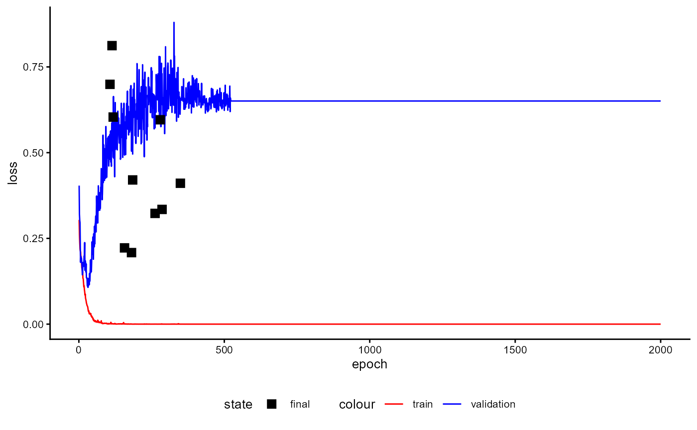
Figure 20: Training History of a Classifier with Feature Extractor during Performance Estimation Stage (loss)
classifier_with_fe$plot_training_history(
final_training = FALSE,
pl_step = NULL,
measure = "avg_iota",
ind_best_model = FALSE,
ind_selected_model = TRUE,
x_min = NULL,
x_max = NULL,
y_min = NULL,
y_max = NULL,
add_min_max = FALSE,
text_size = 10
)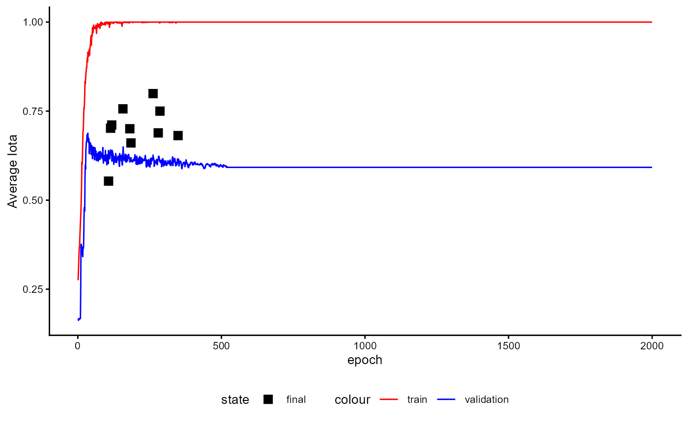
Figure 21: Training History of a Classifier with Feature Extractor during Performance Estimation Stage (iota)
classifier_with_fe$plot_training_history(
final_training = FALSE,
pl_step = NULL,
measure = "s_avg_iota",
ind_best_model = FALSE,
ind_selected_model = TRUE,
x_min = NULL,
x_max = NULL,
y_min = NULL,
y_max = NULL,
add_min_max = FALSE,
text_size = 10
)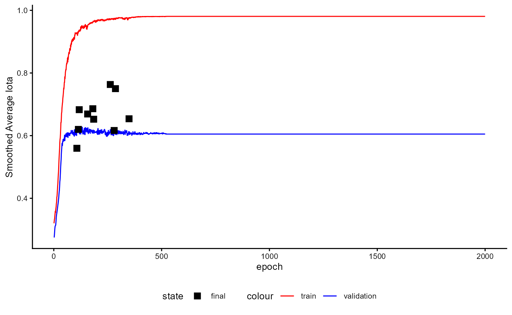
Figure 22: Training History of a Classifier with Feature Extractor during Performance Estimation Stage (smoothed iota)
The training history of the final stage is displayed in the following two Figures.
classifier_with_fe$plot_training_history(
final_training = TRUE,
pl_step = NULL,
measure = "loss",
ind_best_model = FALSE,
ind_selected_model = TRUE,
x_min = NULL,
x_max = NULL,
y_min = NULL,
y_max = NULL,
add_min_max = FALSE,
text_size = 10
)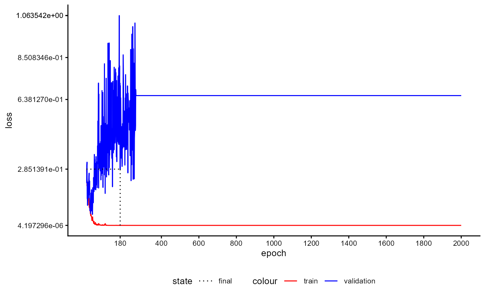
Figure 23: Training History of a Classifier with Feature Extractor during Final Training Stage (loss)
classifier_with_fe$plot_training_history(
final_training = TRUE,
pl_step = NULL,
measure = "avg_iota",
ind_best_model = FALSE,
ind_selected_model = TRUE,
x_min = NULL,
x_max = NULL,
y_min = NULL,
y_max = NULL,
add_min_max = FALSE,
text_size = 10
)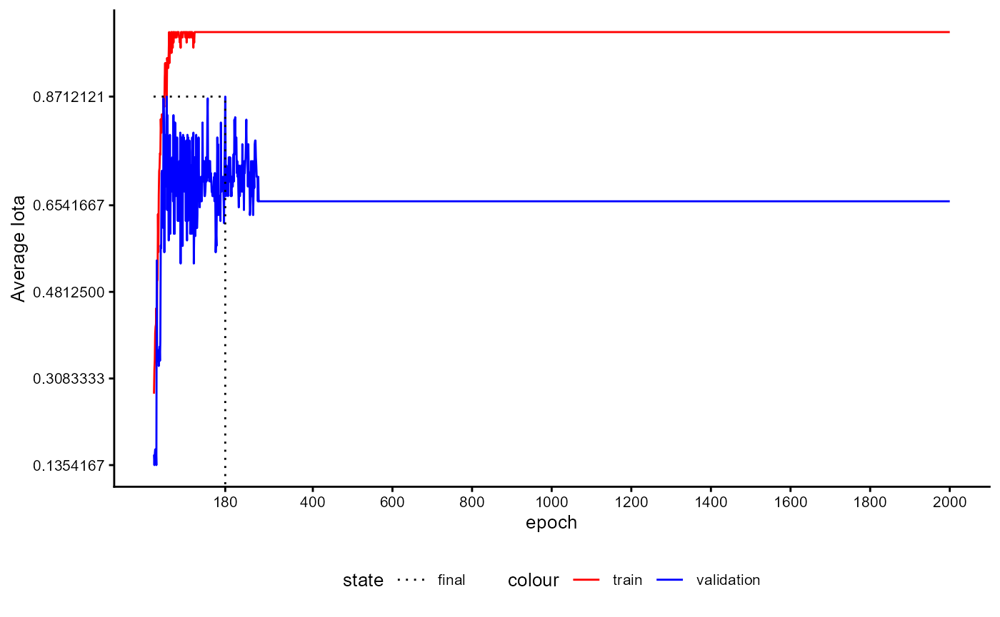
Figure 24: Training History of a Classifier with Feature Extractor during Final Training Stage (iota)
classifier_with_fe$plot_training_history(
final_training = TRUE,
pl_step = NULL,
measure = "s_avg_iota",
ind_best_model = FALSE,
ind_selected_model = TRUE,
x_min = NULL,
x_max = NULL,
y_min = NULL,
y_max = NULL,
add_min_max = FALSE,
text_size = 10
)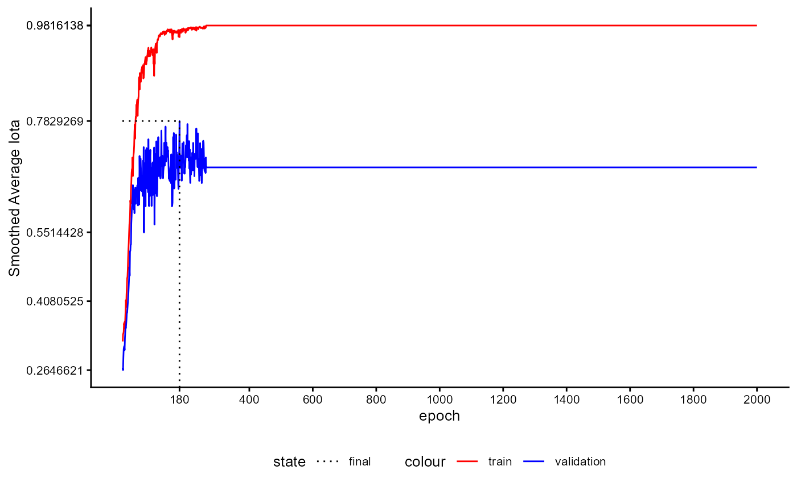
Figure 25: Training History of a Classifier with Feature Extractor during Final Training Stage (smoothed iota)
Let us now explore the performance of the classifier, for example.
classifier_with_fe$reliability$test_metric_mean
#> iota_index min_iota2 avg_iota2
#> 0.7003953 0.6509812 0.7239788
#> max_iota2 min_alpha avg_alpha
#> 0.7969763 0.7361905 0.8393452
#> max_alpha static_iota_index dynamic_iota_index
#> 0.9425000 0.4313382 0.6050205
#> kalpha_nominal kalpha_ordinal kendall
#> 0.6710246 0.6710246 0.8427935
#> c_kappa_unweighted c_kappa_linear c_kappa_squared
#> 0.6685150 0.6685150 0.6685150
#> kappa_fleiss percentage_agreement balanced_accuracy
#> 0.6636098 0.8501976 0.8393452
#> gwet_ac1_nominal gwet_ac2_linear gwet_ac2_quadratic
#> 0.7273332 0.7273332 0.7273332
#> avg_precision avg_recall avg_f1
#> 0.8517705 0.8393452 0.8318049
classifier_with_fe$reliability$standard_measures_mean
#> precision recall f1
#> neg 0.7965224 0.8053571 0.7795792
#> pos 0.9070186 0.8733333 0.88403077.5. Saving and Loading
If you would like to save and load a TEFeatureExtractor
independently of a classifier, you can use the save_to_disk
and load_from_disk functions, as with the other objects of
this package. This is useful if you want to use the
TEFeatureExtractor at a later point in time in combination
with other models.
save_to_disk(
object = feature_extractor,
dir_path = "examples",
folder_name = "feature_extractor"
)8 Plots for Training History
8.1 BaseModels
You can use BaseModels, TEFeatureExtractors
and classifiers to create plots showing your model’s training process.
The process of requesting these plots is similar for all objects.
However, classifiers offer the greatest degree of customisation of
graphics. This chapter demonstrates how to use the plots. We refer to
models from previous chapters to provide examples.
We start with the base models. The x_min,
x_max, y_min and y_max arguments
allow you to zoom in or out. If you set these arguments to
NULL, the values will be determined automatically.
The ind_best_model argument allows you to emphasise the
epoch with the lowest loss for the validation sample. In general, this
is the state of the model with the best generalisation abilities. Unlike
the classifiers, this is also the final state of the model after
training. The text_size argument allows you to increase or
decrease the size of the text within the graphic.
base_model_bert$plot_training_history(
x_min = NULL,
x_max = NULL,
y_min = NULL,
y_max = NULL,
ind_best_model = TRUE,
text_size = 10L
)
Figure 26: Example of a Training History for a BaseModel emphasizing the Best Model State.
8.2 Classifiers
Classifiers offer a greater variety of options. Using the
x_min, x_max, y_min and
y_max arguments, you can specify the area to be plotted.
Setting these arguments to NULL will generate adequate
values automatically. With the measure argument, you can
select the metric you would like to see. For example, the following plot
shows loss.
classifier$plot_training_history(
final_training = FALSE,
pl_step = NULL,
measure = "loss",
ind_best_model = FALSE,
ind_selected_model = FALSE,
x_min = NULL,
x_max = NULL,
y_min = NULL,
y_max = NULL,
add_min_max = FALSE,
text_size = 10L
)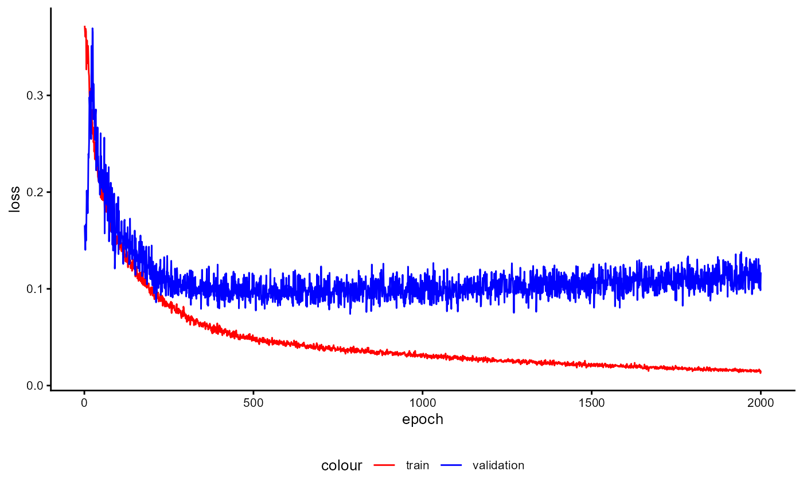
Figure 27: Example of a Training History for a Classifier emphasizing the Loss.
The following plot shows how the average iota values changed over the course of the training process.
classifier$plot_training_history(
final_training = FALSE,
pl_step = NULL,
measure = "avg_iota",
ind_best_model = FALSE,
ind_selected_model = FALSE,
x_min = NULL,
x_max = NULL,
y_min = NULL,
y_max = NULL,
add_min_max = FALSE,
text_size = 10L
)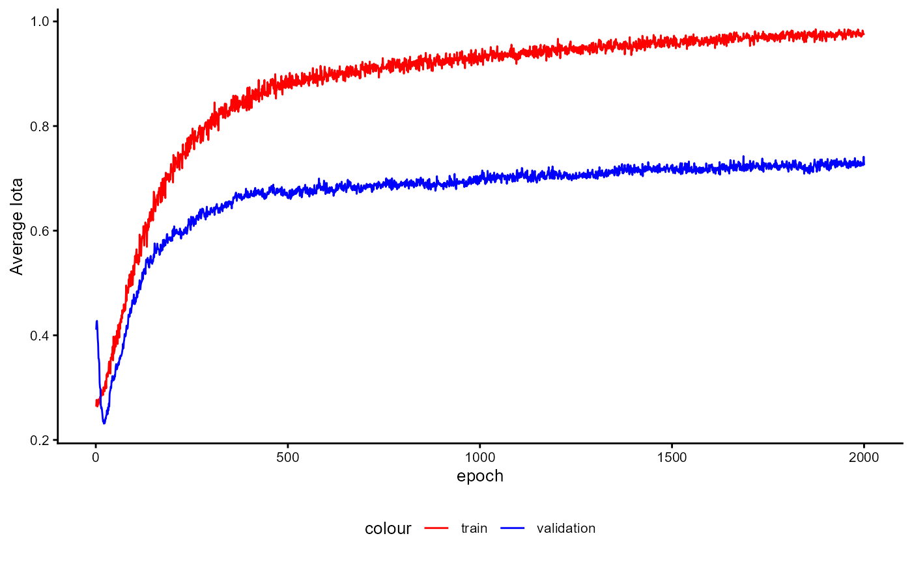
Figure 28: Example of a Training History for a Classifier emphasizing the Average Iota.
Setting ind_best_model to TRUE will display
additional points in the graphic. These points represents the epochs and
their corresponding values according to the chosen metric at which the
model performed best. For metrics such as loss, the values should be
close to 0, while for metrics such as accuracy, balanced accuracy and
average iota, the best values are close to 1. You can see one point for
every fold during training.
classifier$plot_training_history(
final_training = FALSE,
pl_step = NULL,
measure = "loss",
ind_best_model = TRUE,
ind_selected_model = FALSE,
x_min = NULL,
x_max = NULL,
y_min = NULL,
y_max = NULL,
add_min_max = FALSE,
text_size = 10L
)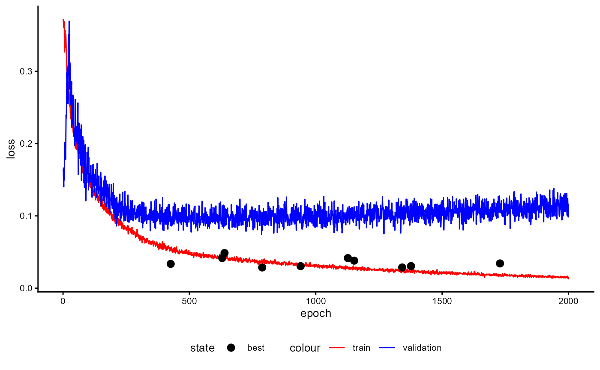
Figure 29: Example of a Training History for a Classifier emphasizing the Loss and the best Model States.
classifier$plot_training_history(
final_training = FALSE,
pl_step = NULL,
measure = "avg_iota",
ind_best_model = TRUE,
ind_selected_model = FALSE,
x_min = NULL,
x_max = NULL,
y_min = NULL,
y_max = NULL,
add_min_max = FALSE,
text_size = 10L
)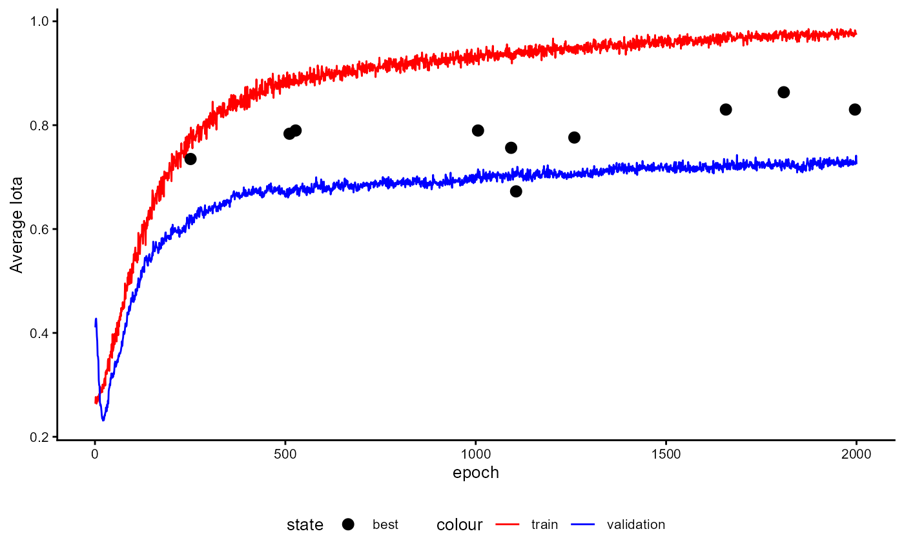
Figure 30: Example of a Training History for a Classifier emphasizing the Average Iota and the best Model States.
Please note that these points indicate the model’s optimal state according to the chosen metric for each fold. However, these values do not necessarily reflect the final state of the model. This is because the best state of a model during each training loop is determined by the best smoothed average iota value. If there are multiple models with the same smoothed average iota value, the model with the best loss is taken into account. Finally, the state with the highest number of epochs is used.
Set ind_selected_model to TRUE to add the
final states of the model for every fold.
classifier$plot_training_history(
final_training = FALSE,
pl_step = NULL,
measure = "loss",
ind_best_model = TRUE,
ind_selected_model = TRUE,
x_min = NULL,
x_max = NULL,
y_min = NULL,
y_max = NULL,
add_min_max = FALSE,
text_size = 10L
)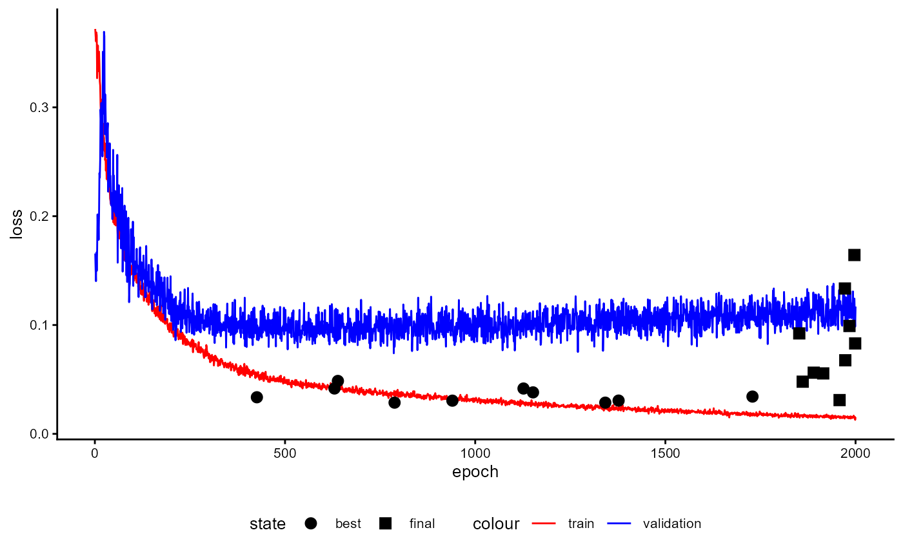
Figure 31: Example of a Training History for a Classifier emphasizing the Loss, the best Model States, and the Final Model States.
Since the performance of a model is determined by several factors,
the minimum and maximum values provide a deeper understanding of the
training process. To include these in the plot, set
add_min_max to TRUE. The plot will now show
the full range of values for each epoch according to the chosen
metric.
classifier$plot_training_history(
final_training = FALSE,
pl_step = NULL,
measure = "loss",
ind_best_model = TRUE,
ind_selected_model = TRUE,
x_min = NULL,
x_max = NULL,
y_min = NULL,
y_max = NULL,
add_min_max = TRUE,
text_size = 10L
)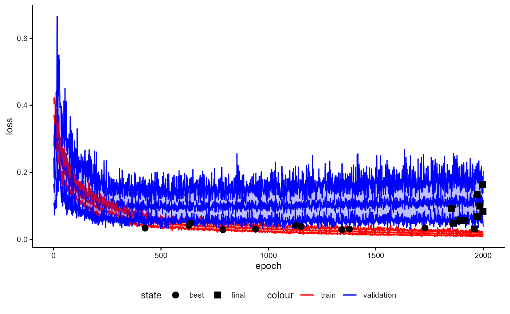
Figure 32: Example of a Training History for a Classifier emphasizing the Loss with Minimal and Maximal Values.
Using the argument final_training, you can switch
between the performance estimation stage and the final training stage of
the model. Since the final training phase only differentiates between
training and validation data sets, there is no line for test data. In
addition, there are no folds. Therefore, the argument
add_min_max has no functionality.
classifier$plot_training_history(
final_training = TRUE,
pl_step = NULL,
measure = "loss",
ind_best_model = TRUE,
ind_selected_model = TRUE,
x_min = NULL,
x_max = NULL,
y_min = NULL,
y_max = NULL,
add_min_max = TRUE,
text_size = 10L
)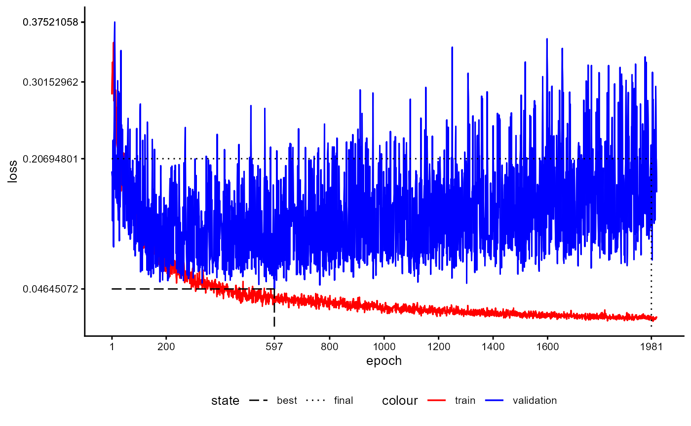
Figure 33: Example of a Training History for a Classifier emphasizing the Loss at the Final Training Phase.
The final important argument is pl_step. This value is
only relevant if the model used pseudo labeling during training. This
parameter allows you to select the step during pseudo labeling that
should be displayed in the plot. This works for performance estimation
as well as the final training stage.
References
Beltagy, I., Peters, M. E., & Cohan, A. (2020). Longformer: The Long-Document Transformer. https://doi.org/10.48550/arXiv.2004.05150
Berding, F., & Pargmann, J. (2022). Iota Reliability Concept of the Second Generation. Berlin: Logos. https://doi.org/10.30819/5581
Berding, F., Riebenbauer, E., Stütz, S., Jahncke, H., Slopinski, A., & Rebmann, K. (2022). Performance and Configuration of Artificial Intelligence in Educational Settings.: Introducing a New Reliability Concept Based on Content Analysis. Frontiers in Education, 1–21. https://doi.org/10.3389/feduc.2022.818365
Boizard, N., Gisserot-Boukhlef, H., Alves, D. M., Martins, A., Hammal, A., Corro, C., Hudelot, C., Malherbe, E., Malaboeuf, E., Jourdan, F., Hautreux, G., Alves, J., El-Haddad, K., Faysse, M., Peyrard, M., Guerreiro, N. M., Fernandes, P., Rei, R. & Colombo, P. (2025). EuroBERT: Scaling Multilingual Encoders for European Languages. https://doi.org/10.48550/arXiv.2503.05500
Campesato, O. (2021). Natural Language Processing Fundamentals for Developers. Mercury Learning & Information. https://ebookcentral.proquest.com/lib/kxp/detail.action?docID=6647713
Cascante-Bonilla, P., Tan, F., Qi, Y. & Ordonez, V. (2020). Curriculum Labeling: Revisiting Pseudo-Labeling for Semi-Supervised Learning. https://doi.org/10.48550/arXiv.2001.06001
Chen, T., Kornblith, S., Norouzi, M. & Hinton, G. (2020). A Simple Framework for Contrastive Learning of Visual RePostsentations. https://doi.org/10.48550/arXiv.2002.05709
Chollet, F., Kalinowski, T., & Allaire, J. J. (2022). Deep learning with R (Second edition). Manning Publications Co. https://learning.oreilly.com/library/view/-/9781633439849/?ar
Conneau, A., Khandelwal, K., Goyal, N., Chaudhary, V., Wenzek, G., Guzmán, F., Grave, E., Ott, M., Zettlemoyer, L., & Stoyanov, V. (2019). Unsupervised Cross-lingual Representation Learning at Scale https://doi.org/10.48550/arXiv.1911.02116
Dai, Z., Lai, G., Yang, Y. & Le, Q. V. (2020). Funnel-Transformer: Filtering out Sequential Redundancy for Efficient Language Processing. https://doi.org/10.48550/arXiv.2006.03236
Devlin, J., Chang, M.‑W., Lee, K., & Toutanova, K. (2019). BERT: Post-training of Deep Bidirectional Transformers for Language Understanding. In J. Burstein, C. Doran, & T. Solorio (Eds.), Proceedings of the 2019 Conference of the North (pp. 4171–4186). Association for Computational Linguistics. https://doi.org/10.18653/v1/N19-1423
Frochte, J. (2019). Maschinelles Lernen: Grundlagen und Algorithmen in Python (2., aktualisierte Auflage). Hanser.
Ganesh, P., Chen, Y., Lou, X., Khan, M. A., Yang, Y., Sajjad, H., Nakov, P., Chen, D., & Winslett, M. (2021). ComPostssing Large-Scale Transformer-Based Models: A Case Study on BERT. Transactions of the Association for Computational Linguistics, 9, 1061–1080. https://doi.org/10.1162/tacl_a_00413
Gwet, K. L. (2014). Handbook of inter-rater reliability: The definitive guide to measuring the extent of agreement among raters (Fourth edition). Gaithersburg: STATAXIS.
He, P., Liu, X., Gao, J. & Chen, W. (2020). DeBERTa: Decoding-enhanced BERT with Disentangled Attention. https://doi.org/10.48550/arXiv.2006.03654
He, F., Liu, T. & Tao, D. (2019). Control Batch Size and Learning Rate to Generalize Well: Theoretical and Empirical Evidence. In Advances in neural information processing systems: Bd. 32. 32nd Conference on Neural Information Processing Systems (NeurIPS 2019): Vancouver, Canada, 8-14 December 2019. Curran Associates Inc.
Islam, A., Belhaouari, S. B., Rehman, A. U. & Bensmail, H. (2022). KNNOR: An oversampling technique for imbalanced datasets. Applied Soft Computing, 115, 108288. https://doi.org/10.1016/j.asoc.2021.108288
Kaplan, J., McCandlish, S., Henighan, T., Brown, T. B., Chess, B., Child, R., Gray, S., Radford, A., Wu, J. & Amodei, D. (2020). Scaling Laws for Neural Language Models. https://doi.org/10.48550/arXiv.2001.08361
Kaya, Y. B., & Tantuğ, A. C. (2024). Effect of tokenization granularity for Turkish large language models. Intelligent Systems with Applications, 21, 200335. https://doi.org/10.1016/j.iswa.2024.200335
Keskar, N. S., Mudigere, D., Nocedal, J., Smelyanskiy, M. & Tang, P. T. P. (2017). On Large-Batch Training for Deep Learning: Generalization Gap and Sharp Minima. http://arxiv.org/pdf/1609.04836v2
Krippendorff, K. (2019). Content Analysis: An Introduction to Its Methodology (4th ed.). Los Angeles: SAGE.
Lane, H., Howard, C., & Hapke, H. M. (2019). Natural language processing in action: Understanding, analyzing, and generating text with Python. Shelter Island: Manning.
Larusson, J. A., & White, B. (Eds.). (2014). Learning Analytics: From Research to Practice. New York: Springer. https://doi.org/10.1007/978-1-4614-3305-7
Lee, D.‑H. (2013). Pseudo-Label: The Simple and Efficient Semi-Supervised Learning Method for Deep Neural Networks. CML 2013 Workshop: Challenges in Representation Learning.
Lee-Thorp, J., Ainslie, J., Eckstein, I. & Ontanon, S. (2021). FNet: Mixing Tokens with Fourier Transforms. https://doi.org/10.48550/arXiv.2105.03824
Li, X., Chang, D., Ma, Z., Tan, Z.‑H., Xue, J.‑H., Cao, J., Yu, J. & Guo, J. (2020). OSLNet: Deep Small-Sample Classification With an Orthogonal Softmax Layer. IEEE Transactions on Image Processing, 29, 6482–6495. https://doi.org/10.1109/TIP.2020.2990277
Liu, N. F., Gardner, M., Belinkov, Y., Peters, M. E., & Smith, N. A. (2019). Linguistic Knowledge and Transferability of Contextual RePostsentations. In J. Burstein, C. Doran, & T. Solorio (Eds.), Proceedings of the 2019 Conference of the North (pp. 1073–1094). Association for Computational Linguistics. https://doi.org/10.18653/v1/N19-1112
Liu, Y., Ott, M., Goyal, N., Du, J., Joshi, M., Chen, D., Levy, O., Lewis, M., Zettlemoyer, L., & Stoyanov, V. (2019). RoBERTa: A Robustly Optimized BERT Posttraining Approach. https://doi.org/10.48550/arXiv.1907.11692
Maas, A. L., Daly, R. E., Pham, P. T., Huang, D., Ng, A. Y., & Potts, C. (2011). Learning Word Vectors for Sentiment Analysis. In D. Lin, Y. Matsumoto, & R. Mihalcea (Eds.), Proceedings of the 49th Annual Meeting of the Association for Computational Linguistics: Human Language Technologies (pp. 142–150). Association for Computational Linguistics. https://aclanthology.org/P11-1015
Masters, D. & Luschi, C. (2018). Revisiting Small Batch Training for Deep Neural Networks. https://doi.org/10.48550/arXiv.1804.07612
Meng, Y., Krishnan, J., Wang, S., Wang, Q., Mao, Y., Fang, H., Ghazvininejad, M., Han, J., & Zettlemoyer, L. (2023). Representation Deficiency in Masked Language Modeling. arXiv. https://doi.org/10.48550/ARXIV.2302.02060
Papilloud, C., & Hinneburg, A. (2018). Qualitative Textanalyse mit Topic-Modellen: Eine Einführung für Sozialwissenschaftler. Wiesbaden: Springer. https://doi.org/10.1007/978-3-658-21980-2
Pappagari, R., Zelasko, P., Villalba, J., Carmiel, Y., & Dehak, N. (2019). Hierarchical Transformers for Long Document Classification. In 2019 IEEE Automatic Speech Recognition and Understanding Workshop (ASRU) (pp. 838–844). IEEE. https://doi.org/10.1109/ASRU46091.2019.9003958
Pennington, J., Socher, R., & Manning, C. D. (2014). GloVe: Global Vectors for Word representation Proceedings of the 2014 Conference on Empirical Methods in Natural Language Processing. https://aclanthology.org/D14-1162.pdf
Ranjan, & Chitta. (2019). Build the right Autoencoder — Tune and Optimize using PCA principles.: Part I. https://towardsdatascience.com/build-the-right-autoencoder-tune-and-optimize-using-pca-principles-part-i-1f01f821999b
Schreier, M. (2012). Qualitative Content Analysis in Practice. Los Angeles: SAGE.
Snell, J., Swersky, K., & Zemel, R. S. (2017). Prototypical Networks for Few-shot Learning. https://doi.org/10.48550/arXiv.1703.05175
Song, K., Tan, X., Qin, T., Lu, J. & Liu, T.‑Y. (2020). MPNet: Masked and Permuted Post-training for Language Understanding. https://doi.org/10.48550/arXiv.2004.09297
Takeshita, S., Takeshita, Y., Ruffinelli, D. & Ponzetto, S. P. (2025). Randomly Removing 50% of Dimensions in Text Embeddings has Minimal Impact on Retrieval and Classification Tasks. https://doi.org/10.48550/arXiv.2508.17744
Tunstall, L., Werra, L. von, Wolf, T., & Géron, A. (2022). Natural language processing with transformers: Building language applications with hugging face (Revised edition). Heidelberg: O’Reilly.
Vaswani, A., Shazeer, N., Parmar, N., Uszkoreit, J., Jones, L., Gomez, A. N., Kaiser, L., & Polosukhin, I. (2017). Attention Is All You Need. https://doi.org/10.48550/arXiv.1706.03762
Warner, B., Chaffin, A., Clavié, B., Weller, O., Hallström, O., Taghadouini, S., Gallagher, A., Biswas, R., Ladhak, F., Aarsen, T., Cooper, N., Adams, G., Howard, J. & Poli, I. (2024). Smarter, Better, Faster, Longer: A Modern Bidirectional Encoder for Fast, Memory Efficient, and Long Context Finetuning and Inference. https://doi.org/10.48550/arXiv.2412.13663
Wu, Y., Schuster, M., Chen, Z., Le, Q. V., Norouzi, M., Macherey, W., Krikun, M., Cao, Y., Gao, Q., Macherey, K., Klingner, J., Shah, A., Johnson, M., Liu, X., Kaiser, Ł., Gouws, S., Kato, Y., Kudo, T., Kazawa, H., . . . Dean, J. (2016). Google’s Neural Machine Translation System: Bridging the Gap between Human and Machine Translation. https://doi.org/10.48550/arXiv.1609.08144